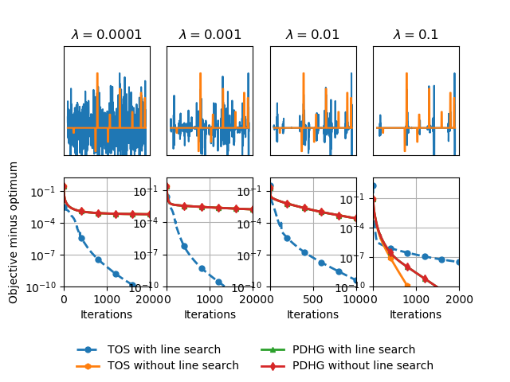

Note
Click here to download the full example code
Group lasso with overlap¶
Comparison of solvers for a least squares with overlapping group lasso regularization.
References¶
This example is modeled after the experiments in Adaptive Three Operator Splitting, Appendix E.3.
Out:
beta = 0.0001
0%| | 0/5000 [00:00<?, ?it/s]
TOS: 0%| | 0/5000 [00:00<?, ?it/s]
TOS: 0%| | 0/5000 [00:00<?, ?it/s, step_size=1.18, tol=3.27]
TOS: 0%| | 0/5000 [00:00<?, ?it/s, step_size=1.2, tol=0.0258]
TOS: 0%| | 0/5000 [00:00<?, ?it/s, step_size=1.23, tol=0.0115]
TOS: 0%| | 0/5000 [00:00<?, ?it/s, step_size=1.25, tol=0.00816]
TOS: 0%| | 0/5000 [00:00<?, ?it/s, step_size=1.28, tol=0.00648]
TOS: 0%| | 0/5000 [00:00<?, ?it/s, step_size=1.3, tol=0.00544]
TOS: 0%| | 0/5000 [00:00<?, ?it/s, step_size=1.33, tol=0.00473]
TOS: 0%| | 0/5000 [00:00<?, ?it/s, step_size=1.35, tol=0.00422]
TOS: 0%| | 0/5000 [00:00<?, ?it/s, step_size=1.38, tol=0.00382]
TOS: 0%| | 0/5000 [00:00<?, ?it/s, step_size=1.41, tol=0.0035]
TOS: 0%| | 0/5000 [00:00<?, ?it/s, step_size=1.44, tol=0.00325]
TOS: 0%| | 0/5000 [00:00<?, ?it/s, step_size=1.46, tol=0.00303]
TOS: 0%| | 0/5000 [00:00<?, ?it/s, step_size=1.49, tol=0.00285]
TOS: 0%| | 0/5000 [00:00<?, ?it/s, step_size=1.52, tol=0.0027]
TOS: 0%| | 0/5000 [00:00<?, ?it/s, step_size=1.55, tol=0.00257]
TOS: 0%| | 0/5000 [00:00<?, ?it/s, step_size=1.59, tol=0.00245]
TOS: 0%| | 0/5000 [00:00<?, ?it/s, step_size=1.62, tol=0.00235]
TOS: 0%| | 0/5000 [00:00<?, ?it/s, step_size=1.65, tol=0.00225]
TOS: 0%| | 0/5000 [00:00<?, ?it/s, step_size=1.68, tol=0.00217]
TOS: 0%| | 0/5000 [00:00<?, ?it/s, step_size=1.72, tol=0.0021]
TOS: 0%| | 0/5000 [00:00<?, ?it/s, step_size=1.75, tol=0.00203]
TOS: 0%| | 0/5000 [00:00<?, ?it/s, step_size=1.79, tol=0.00197]
TOS: 0%| | 0/5000 [00:00<?, ?it/s, step_size=1.82, tol=0.00192]
TOS: 0%| | 0/5000 [00:00<?, ?it/s, step_size=1.86, tol=0.00187]
TOS: 0%| | 0/5000 [00:00<?, ?it/s, step_size=1.89, tol=0.00182]
TOS: 0%| | 0/5000 [00:00<?, ?it/s, step_size=1.93, tol=0.00178]
TOS: 1%| | 26/5000 [00:00<00:19, 255.75it/s, step_size=1.93, tol=0.00178]
TOS: 1%| | 26/5000 [00:00<00:19, 255.75it/s, step_size=1.97, tol=0.00174]
TOS: 1%| | 26/5000 [00:00<00:19, 255.75it/s, step_size=2.01, tol=0.00171]
TOS: 1%| | 26/5000 [00:00<00:19, 255.75it/s, step_size=2.05, tol=0.00167]
TOS: 1%| | 26/5000 [00:00<00:19, 255.75it/s, step_size=2.09, tol=0.00164]
TOS: 1%| | 26/5000 [00:00<00:19, 255.75it/s, step_size=2.13, tol=0.00161]
TOS: 1%| | 26/5000 [00:00<00:19, 255.75it/s, step_size=2.18, tol=0.00159]
TOS: 1%| | 26/5000 [00:00<00:19, 255.75it/s, step_size=2.22, tol=0.00156]
TOS: 1%| | 26/5000 [00:00<00:19, 255.75it/s, step_size=2.26, tol=0.00154]
TOS: 1%| | 26/5000 [00:00<00:19, 255.75it/s, step_size=2.31, tol=0.00152]
TOS: 1%| | 26/5000 [00:00<00:19, 255.75it/s, step_size=2.36, tol=0.0015]
TOS: 1%| | 26/5000 [00:00<00:19, 255.75it/s, step_size=2.4, tol=0.00148]
TOS: 1%| | 26/5000 [00:00<00:19, 255.75it/s, step_size=2.45, tol=0.00146]
TOS: 1%| | 26/5000 [00:00<00:19, 255.75it/s, step_size=2.5, tol=0.00145]
TOS: 1%| | 26/5000 [00:00<00:19, 255.75it/s, step_size=2.55, tol=0.00143]
TOS: 1%| | 26/5000 [00:00<00:19, 255.75it/s, step_size=2.6, tol=0.00142]
TOS: 1%| | 26/5000 [00:00<00:19, 255.75it/s, step_size=2.65, tol=0.0014]
TOS: 1%| | 26/5000 [00:00<00:19, 255.75it/s, step_size=2.71, tol=0.00139]
TOS: 1%| | 26/5000 [00:00<00:19, 255.75it/s, step_size=2.76, tol=0.00138]
TOS: 1%| | 26/5000 [00:00<00:19, 255.75it/s, step_size=2.82, tol=0.00137]
TOS: 1%| | 26/5000 [00:00<00:19, 255.75it/s, step_size=2.87, tol=0.00136]
TOS: 1%| | 26/5000 [00:00<00:19, 255.75it/s, step_size=2.93, tol=0.00135]
TOS: 1%| | 26/5000 [00:00<00:19, 255.75it/s, step_size=2.99, tol=0.00134]
TOS: 1%| | 26/5000 [00:00<00:19, 255.75it/s, step_size=3.05, tol=0.00133]
TOS: 1%| | 26/5000 [00:00<00:19, 255.75it/s, step_size=3.11, tol=0.00132]
TOS: 1%| | 26/5000 [00:00<00:19, 255.75it/s, step_size=3.17, tol=0.00131]
TOS: 1%| | 26/5000 [00:00<00:19, 255.75it/s, step_size=3.23, tol=0.0013]
TOS: 1%| | 26/5000 [00:00<00:19, 255.75it/s, step_size=3.3, tol=0.0013]
TOS: 1%| | 26/5000 [00:00<00:19, 255.75it/s, step_size=3.37, tol=0.00129]
TOS: 1%| | 26/5000 [00:00<00:19, 255.75it/s, step_size=3.43, tol=0.00128]
TOS: 1%| | 26/5000 [00:00<00:19, 255.75it/s, step_size=3.5, tol=0.00128]
TOS: 1%| | 26/5000 [00:00<00:19, 255.75it/s, step_size=3.57, tol=0.00127]
TOS: 1%|1 | 57/5000 [00:00<00:18, 268.81it/s, step_size=3.57, tol=0.00127]
TOS: 1%|1 | 57/5000 [00:00<00:18, 268.81it/s, step_size=3.64, tol=0.00126]
TOS: 1%|1 | 57/5000 [00:00<00:18, 268.81it/s, step_size=3.72, tol=0.00126]
TOS: 1%|1 | 57/5000 [00:00<00:18, 268.81it/s, step_size=3.79, tol=0.00125]
TOS: 1%|1 | 57/5000 [00:00<00:18, 268.81it/s, step_size=3.87, tol=0.00125]
TOS: 1%|1 | 57/5000 [00:00<00:18, 268.81it/s, step_size=3.94, tol=0.00124]
TOS: 1%|1 | 57/5000 [00:00<00:18, 268.81it/s, step_size=4.02, tol=0.00124]
TOS: 1%|1 | 57/5000 [00:00<00:18, 268.81it/s, step_size=4.1, tol=0.00123]
TOS: 1%|1 | 57/5000 [00:00<00:18, 268.81it/s, step_size=4.18, tol=0.00123]
TOS: 1%|1 | 57/5000 [00:00<00:18, 268.81it/s, step_size=4.27, tol=0.00122]
TOS: 1%|1 | 57/5000 [00:00<00:18, 268.81it/s, step_size=4.35, tol=0.00122]
TOS: 1%|1 | 57/5000 [00:00<00:18, 268.81it/s, step_size=4.44, tol=0.00122]
TOS: 1%|1 | 57/5000 [00:00<00:18, 268.81it/s, step_size=4.53, tol=0.00121]
TOS: 1%|1 | 57/5000 [00:00<00:18, 268.81it/s, step_size=4.62, tol=0.00121]
TOS: 1%|1 | 57/5000 [00:00<00:18, 268.81it/s, step_size=4.71, tol=0.0012]
TOS: 1%|1 | 57/5000 [00:00<00:18, 268.81it/s, step_size=4.81, tol=0.0012]
TOS: 1%|1 | 57/5000 [00:00<00:18, 268.81it/s, step_size=4.9, tol=0.0012]
TOS: 1%|1 | 57/5000 [00:00<00:18, 268.81it/s, step_size=5, tol=0.00119]
TOS: 1%|1 | 57/5000 [00:00<00:18, 268.81it/s, step_size=5.1, tol=0.00119]
TOS: 1%|1 | 57/5000 [00:00<00:18, 268.81it/s, step_size=5.2, tol=0.00119]
TOS: 1%|1 | 57/5000 [00:00<00:18, 268.81it/s, step_size=5.31, tol=0.00118]
TOS: 1%|1 | 57/5000 [00:00<00:18, 268.81it/s, step_size=5.41, tol=0.00118]
TOS: 1%|1 | 57/5000 [00:00<00:18, 268.81it/s, step_size=5.52, tol=0.00118]
TOS: 1%|1 | 57/5000 [00:00<00:18, 268.81it/s, step_size=5.63, tol=0.00118]
TOS: 1%|1 | 57/5000 [00:00<00:18, 268.81it/s, step_size=5.74, tol=0.00117]
TOS: 1%|1 | 57/5000 [00:00<00:18, 268.81it/s, step_size=5.86, tol=0.00117]
TOS: 1%|1 | 57/5000 [00:00<00:18, 268.81it/s, step_size=5.98, tol=0.00117]
TOS: 1%|1 | 57/5000 [00:00<00:18, 268.81it/s, step_size=6.1, tol=0.00116]
TOS: 1%|1 | 57/5000 [00:00<00:18, 268.81it/s, step_size=6.22, tol=0.00116]
TOS: 1%|1 | 57/5000 [00:00<00:18, 268.81it/s, step_size=6.34, tol=0.00116]
TOS: 2%|1 | 86/5000 [00:00<00:17, 273.09it/s, step_size=6.34, tol=0.00116]
TOS: 2%|1 | 86/5000 [00:00<00:17, 273.09it/s, step_size=6.47, tol=0.00116]
TOS: 2%|1 | 86/5000 [00:00<00:17, 273.09it/s, step_size=6.6, tol=0.00115]
TOS: 2%|1 | 86/5000 [00:00<00:17, 273.09it/s, step_size=6.73, tol=0.00115]
TOS: 2%|1 | 86/5000 [00:00<00:17, 273.09it/s, step_size=6.86, tol=0.00115]
TOS: 2%|1 | 86/5000 [00:00<00:17, 273.09it/s, step_size=7, tol=0.00114]
TOS: 2%|1 | 86/5000 [00:00<00:17, 273.09it/s, step_size=7.14, tol=0.00114]
TOS: 2%|1 | 86/5000 [00:00<00:17, 273.09it/s, step_size=7.28, tol=0.00114]
TOS: 2%|1 | 86/5000 [00:00<00:17, 273.09it/s, step_size=7.43, tol=0.00113]
TOS: 2%|1 | 86/5000 [00:00<00:17, 273.09it/s, step_size=7.58, tol=0.00113]
TOS: 2%|1 | 86/5000 [00:00<00:17, 273.09it/s, step_size=7.73, tol=0.00113]
TOS: 2%|1 | 86/5000 [00:00<00:17, 273.09it/s, step_size=7.89, tol=0.00113]
TOS: 2%|1 | 86/5000 [00:00<00:17, 273.09it/s, step_size=8.04, tol=0.00112]
TOS: 2%|1 | 86/5000 [00:00<00:17, 273.09it/s, step_size=8.2, tol=0.00112]
TOS: 2%|1 | 86/5000 [00:00<00:17, 273.09it/s, step_size=8.37, tol=0.00112]
TOS: 2%|1 | 86/5000 [00:00<00:17, 273.09it/s, step_size=8.54, tol=0.00111]
TOS: 2%|1 | 86/5000 [00:00<00:17, 273.09it/s, step_size=8.71, tol=0.00111]
TOS: 2%|1 | 86/5000 [00:00<00:17, 273.09it/s, step_size=8.88, tol=0.00111]
TOS: 2%|1 | 86/5000 [00:00<00:17, 273.09it/s, step_size=9.06, tol=0.0011]
TOS: 2%|1 | 86/5000 [00:00<00:17, 273.09it/s, step_size=9.24, tol=0.0011]
TOS: 2%|1 | 86/5000 [00:00<00:17, 273.09it/s, step_size=9.42, tol=0.0011]
TOS: 2%|1 | 86/5000 [00:00<00:17, 273.09it/s, step_size=9.61, tol=0.00109]
TOS: 2%|1 | 86/5000 [00:00<00:17, 273.09it/s, step_size=9.8, tol=0.00109]
TOS: 2%|1 | 86/5000 [00:00<00:17, 273.09it/s, step_size=10, tol=0.00109]
TOS: 2%|1 | 86/5000 [00:00<00:17, 273.09it/s, step_size=10.2, tol=0.00108]
TOS: 2%|1 | 86/5000 [00:00<00:17, 273.09it/s, step_size=10.4, tol=0.00108]
TOS: 2%|1 | 86/5000 [00:00<00:17, 273.09it/s, step_size=10.6, tol=0.00107]
TOS: 2%|1 | 86/5000 [00:00<00:17, 273.09it/s, step_size=10.8, tol=0.00107]
TOS: 2%|1 | 86/5000 [00:00<00:17, 273.09it/s, step_size=11, tol=0.00106]
TOS: 2%|1 | 86/5000 [00:00<00:17, 273.09it/s, step_size=11.3, tol=0.00106]
TOS: 2%|1 | 86/5000 [00:00<00:17, 273.09it/s, step_size=11.5, tol=0.00106]
TOS: 2%|1 | 86/5000 [00:00<00:17, 273.09it/s, step_size=11.7, tol=0.00105]
TOS: 2%|1 | 86/5000 [00:00<00:17, 273.09it/s, step_size=12, tol=0.00105]
TOS: 2%|2 | 118/5000 [00:00<00:17, 284.27it/s, step_size=12, tol=0.00105]
TOS: 2%|2 | 118/5000 [00:00<00:17, 284.27it/s, step_size=12.2, tol=0.00104]
TOS: 2%|2 | 118/5000 [00:00<00:17, 284.27it/s, step_size=12.4, tol=0.00104]
TOS: 2%|2 | 118/5000 [00:00<00:17, 284.27it/s, step_size=12.7, tol=0.00103]
TOS: 2%|2 | 118/5000 [00:00<00:17, 284.27it/s, step_size=12.9, tol=0.00102]
TOS: 2%|2 | 118/5000 [00:00<00:17, 284.27it/s, step_size=13.2, tol=0.00102]
TOS: 2%|2 | 118/5000 [00:00<00:17, 284.27it/s, step_size=13.5, tol=0.00101]
TOS: 2%|2 | 118/5000 [00:00<00:17, 284.27it/s, step_size=13.7, tol=0.00101]
TOS: 2%|2 | 118/5000 [00:00<00:17, 284.27it/s, step_size=14, tol=0.001]
TOS: 2%|2 | 118/5000 [00:00<00:17, 284.27it/s, step_size=14.3, tol=0.000994]
TOS: 2%|2 | 118/5000 [00:00<00:17, 284.27it/s, step_size=14.6, tol=0.000987]
TOS: 2%|2 | 118/5000 [00:00<00:17, 284.27it/s, step_size=14.9, tol=0.00098]
TOS: 2%|2 | 118/5000 [00:00<00:17, 284.27it/s, step_size=15.2, tol=0.000973]
TOS: 2%|2 | 118/5000 [00:00<00:17, 284.27it/s, step_size=15.5, tol=0.000966]
TOS: 2%|2 | 118/5000 [00:00<00:17, 284.27it/s, step_size=15.8, tol=0.000958]
TOS: 2%|2 | 118/5000 [00:00<00:17, 284.27it/s, step_size=16.1, tol=0.000951]
TOS: 2%|2 | 118/5000 [00:00<00:17, 284.27it/s, step_size=16.4, tol=0.000942]
TOS: 2%|2 | 118/5000 [00:00<00:17, 284.27it/s, step_size=16.7, tol=0.000934]
TOS: 2%|2 | 118/5000 [00:00<00:17, 284.27it/s, step_size=17.1, tol=0.000925]
TOS: 2%|2 | 118/5000 [00:00<00:17, 284.27it/s, step_size=17.4, tol=0.000917]
TOS: 2%|2 | 118/5000 [00:00<00:17, 284.27it/s, step_size=17.8, tol=0.000907]
TOS: 2%|2 | 118/5000 [00:00<00:17, 284.27it/s, step_size=18.1, tol=0.000898]
TOS: 2%|2 | 118/5000 [00:00<00:17, 284.27it/s, step_size=18.5, tol=0.000888]
TOS: 2%|2 | 118/5000 [00:00<00:17, 284.27it/s, step_size=18.8, tol=0.000878]
TOS: 2%|2 | 118/5000 [00:00<00:17, 284.27it/s, step_size=19.2, tol=0.000868]
TOS: 2%|2 | 118/5000 [00:00<00:17, 284.27it/s, step_size=19.6, tol=0.000857]
TOS: 2%|2 | 118/5000 [00:00<00:17, 284.27it/s, step_size=20, tol=0.000846]
TOS: 2%|2 | 118/5000 [00:00<00:17, 284.27it/s, step_size=20.4, tol=0.000835]
TOS: 2%|2 | 118/5000 [00:00<00:17, 284.27it/s, step_size=20.8, tol=0.000823]
TOS: 2%|2 | 118/5000 [00:00<00:17, 284.27it/s, step_size=21.2, tol=0.000811]
TOS: 2%|2 | 118/5000 [00:00<00:17, 284.27it/s, step_size=21.6, tol=0.000799]
TOS: 3%|2 | 148/5000 [00:00<00:16, 287.95it/s, step_size=21.6, tol=0.000799]
TOS: 3%|2 | 148/5000 [00:00<00:16, 287.95it/s, step_size=22.1, tol=0.000787]
TOS: 3%|2 | 148/5000 [00:00<00:16, 287.95it/s, step_size=22.5, tol=0.000774]
TOS: 3%|2 | 148/5000 [00:00<00:16, 287.95it/s, step_size=23, tol=0.00076]
TOS: 3%|2 | 148/5000 [00:00<00:16, 287.95it/s, step_size=23.4, tol=0.000747]
TOS: 3%|2 | 148/5000 [00:00<00:16, 287.95it/s, step_size=23.9, tol=0.000733]
TOS: 3%|2 | 148/5000 [00:00<00:16, 287.95it/s, step_size=24.4, tol=0.000719]
TOS: 3%|2 | 148/5000 [00:00<00:16, 287.95it/s, step_size=24.9, tol=0.000704]
TOS: 3%|2 | 148/5000 [00:00<00:16, 287.95it/s, step_size=25.4, tol=0.00069]
TOS: 3%|2 | 148/5000 [00:00<00:16, 287.95it/s, step_size=25.9, tol=0.000674]
TOS: 3%|2 | 148/5000 [00:00<00:16, 287.95it/s, step_size=26.4, tol=0.000659]
TOS: 3%|2 | 148/5000 [00:00<00:16, 287.95it/s, step_size=26.9, tol=0.000643]
TOS: 3%|2 | 148/5000 [00:00<00:16, 287.95it/s, step_size=27.5, tol=0.000628]
TOS: 3%|2 | 148/5000 [00:00<00:16, 287.95it/s, step_size=28, tol=0.000611]
TOS: 3%|2 | 148/5000 [00:00<00:16, 287.95it/s, step_size=28.6, tol=0.000595]
TOS: 3%|2 | 148/5000 [00:00<00:16, 287.95it/s, step_size=29.1, tol=0.000579]
TOS: 3%|2 | 148/5000 [00:00<00:16, 287.95it/s, step_size=29.7, tol=0.000562]
TOS: 3%|2 | 148/5000 [00:00<00:16, 287.95it/s, step_size=30.3, tol=0.000546]
TOS: 3%|2 | 148/5000 [00:00<00:16, 287.95it/s, step_size=30.9, tol=0.000529]
TOS: 3%|2 | 148/5000 [00:00<00:16, 287.95it/s, step_size=31.5, tol=0.000513]
TOS: 3%|2 | 148/5000 [00:00<00:16, 287.95it/s, step_size=32.2, tol=0.000497]
TOS: 3%|2 | 148/5000 [00:00<00:16, 287.95it/s, step_size=32.8, tol=0.000481]
TOS: 3%|2 | 148/5000 [00:00<00:16, 287.95it/s, step_size=33.5, tol=0.000465]
TOS: 3%|2 | 148/5000 [00:00<00:16, 287.95it/s, step_size=34.1, tol=0.00045]
TOS: 3%|2 | 148/5000 [00:00<00:16, 287.95it/s, step_size=34.8, tol=0.000436]
TOS: 3%|2 | 148/5000 [00:00<00:16, 287.95it/s, step_size=35.5, tol=0.000422]
TOS: 3%|2 | 148/5000 [00:00<00:16, 287.95it/s, step_size=36.2, tol=0.000408]
TOS: 3%|2 | 148/5000 [00:00<00:16, 287.95it/s, step_size=37, tol=0.000395]
TOS: 4%|3 | 175/5000 [00:00<00:17, 282.06it/s, step_size=37, tol=0.000395]
TOS: 4%|3 | 175/5000 [00:00<00:17, 282.06it/s, step_size=37.7, tol=0.000383]
TOS: 4%|3 | 175/5000 [00:00<00:17, 282.06it/s, step_size=38.4, tol=0.000372]
TOS: 4%|3 | 175/5000 [00:00<00:17, 282.06it/s, step_size=39.2, tol=0.000361]
TOS: 4%|3 | 175/5000 [00:00<00:17, 282.06it/s, step_size=40, tol=0.000352]
TOS: 4%|3 | 175/5000 [00:00<00:17, 282.06it/s, step_size=40.8, tol=0.000342]
TOS: 4%|3 | 175/5000 [00:00<00:17, 282.06it/s, step_size=41.6, tol=0.000334]
TOS: 4%|3 | 175/5000 [00:00<00:17, 282.06it/s, step_size=42.4, tol=0.000326]
TOS: 4%|3 | 175/5000 [00:00<00:17, 282.06it/s, step_size=43.3, tol=0.000318]
TOS: 4%|3 | 175/5000 [00:00<00:17, 282.06it/s, step_size=44.2, tol=0.000312]
TOS: 4%|3 | 175/5000 [00:00<00:17, 282.06it/s, step_size=45, tol=0.000306]
TOS: 4%|3 | 175/5000 [00:00<00:17, 282.06it/s, step_size=45.9, tol=0.0003]
TOS: 4%|3 | 175/5000 [00:00<00:17, 282.06it/s, step_size=46.9, tol=0.000292]
TOS: 4%|3 | 175/5000 [00:00<00:17, 282.06it/s, step_size=47.8, tol=0.000287]
TOS: 4%|3 | 175/5000 [00:00<00:17, 282.06it/s, step_size=48.8, tol=0.000283]
TOS: 4%|3 | 175/5000 [00:00<00:17, 282.06it/s, step_size=49.7, tol=0.000279]
TOS: 4%|3 | 175/5000 [00:00<00:17, 282.06it/s, step_size=50.7, tol=0.000275]
TOS: 4%|3 | 175/5000 [00:00<00:17, 282.06it/s, step_size=51.7, tol=0.000272]
TOS: 4%|3 | 175/5000 [00:00<00:17, 282.06it/s, step_size=52.8, tol=0.000269]
TOS: 4%|3 | 175/5000 [00:00<00:17, 282.06it/s, step_size=53.8, tol=0.000265]
TOS: 4%|3 | 175/5000 [00:00<00:17, 282.06it/s, step_size=54.9, tol=0.000261]
TOS: 4%|3 | 175/5000 [00:00<00:17, 282.06it/s, step_size=56, tol=0.000256]
TOS: 4%|3 | 175/5000 [00:00<00:17, 282.06it/s, step_size=57.1, tol=0.000253]
TOS: 4%|3 | 175/5000 [00:00<00:17, 282.06it/s, step_size=58.3, tol=0.00025]
TOS: 4%|3 | 175/5000 [00:00<00:17, 282.06it/s, step_size=59.4, tol=0.000248]
TOS: 4%|3 | 175/5000 [00:00<00:17, 282.06it/s, step_size=60.6, tol=0.000246]
TOS: 4%|3 | 175/5000 [00:00<00:17, 282.06it/s, step_size=61.8, tol=0.000244]
TOS: 4%|3 | 175/5000 [00:00<00:17, 282.06it/s, step_size=63.1, tol=0.000242]
TOS: 4%|3 | 175/5000 [00:00<00:17, 282.06it/s, step_size=64.3, tol=0.00024]
TOS: 4%|3 | 175/5000 [00:00<00:17, 282.06it/s, step_size=65.6, tol=0.000238]
TOS: 4%|3 | 175/5000 [00:00<00:17, 282.06it/s, step_size=66.9, tol=0.000236]
TOS: 4%|3 | 175/5000 [00:00<00:17, 282.06it/s, step_size=68.3, tol=0.000232]
TOS: 4%|3 | 175/5000 [00:00<00:17, 282.06it/s, step_size=69.6, tol=0.00023]
TOS: 4%|4 | 207/5000 [00:00<00:16, 290.53it/s, step_size=69.6, tol=0.00023]
TOS: 4%|4 | 207/5000 [00:00<00:16, 290.53it/s, step_size=71, tol=0.000228]
TOS: 4%|4 | 207/5000 [00:00<00:16, 290.53it/s, step_size=72.4, tol=0.000226]
TOS: 4%|4 | 207/5000 [00:00<00:16, 290.53it/s, step_size=73.9, tol=0.000225]
TOS: 4%|4 | 207/5000 [00:00<00:16, 290.53it/s, step_size=75.4, tol=0.000223]
TOS: 4%|4 | 207/5000 [00:00<00:16, 290.53it/s, step_size=76.9, tol=0.000221]
TOS: 4%|4 | 207/5000 [00:00<00:16, 290.53it/s, step_size=78.4, tol=0.00022]
TOS: 4%|4 | 207/5000 [00:00<00:16, 290.53it/s, step_size=80, tol=0.000218]
TOS: 4%|4 | 207/5000 [00:00<00:16, 290.53it/s, step_size=81.6, tol=0.000216]
TOS: 4%|4 | 207/5000 [00:00<00:16, 290.53it/s, step_size=83.2, tol=0.000215]
TOS: 4%|4 | 207/5000 [00:00<00:16, 290.53it/s, step_size=84.9, tol=0.000213]
TOS: 4%|4 | 207/5000 [00:00<00:16, 290.53it/s, step_size=86.6, tol=0.000211]
TOS: 4%|4 | 207/5000 [00:00<00:16, 290.53it/s, step_size=88.3, tol=0.000209]
TOS: 4%|4 | 207/5000 [00:00<00:16, 290.53it/s, step_size=90.1, tol=0.000208]
TOS: 4%|4 | 207/5000 [00:00<00:16, 290.53it/s, step_size=91.9, tol=0.000205]
TOS: 4%|4 | 207/5000 [00:00<00:16, 290.53it/s, step_size=93.7, tol=0.000203]
TOS: 4%|4 | 207/5000 [00:00<00:16, 290.53it/s, step_size=95.6, tol=0.000201]
TOS: 4%|4 | 207/5000 [00:00<00:16, 290.53it/s, step_size=97.5, tol=0.000199]
TOS: 4%|4 | 207/5000 [00:00<00:16, 290.53it/s, step_size=99.5, tol=0.000197]
TOS: 4%|4 | 207/5000 [00:00<00:16, 290.53it/s, step_size=101, tol=0.000194]
TOS: 4%|4 | 207/5000 [00:00<00:16, 290.53it/s, step_size=103, tol=0.000192]
TOS: 4%|4 | 207/5000 [00:00<00:16, 290.53it/s, step_size=106, tol=0.00019]
TOS: 4%|4 | 207/5000 [00:00<00:16, 290.53it/s, step_size=108, tol=0.000188]
TOS: 4%|4 | 207/5000 [00:00<00:16, 290.53it/s, step_size=110, tol=0.000187]
TOS: 4%|4 | 207/5000 [00:00<00:16, 290.53it/s, step_size=112, tol=0.000185]
TOS: 4%|4 | 207/5000 [00:00<00:16, 290.53it/s, step_size=114, tol=0.000183]
TOS: 4%|4 | 207/5000 [00:00<00:16, 290.53it/s, step_size=117, tol=0.000182]
TOS: 4%|4 | 207/5000 [00:00<00:16, 290.53it/s, step_size=119, tol=0.00018]
TOS: 4%|4 | 207/5000 [00:00<00:16, 290.53it/s, step_size=121, tol=0.000177]
TOS: 4%|4 | 207/5000 [00:00<00:16, 290.53it/s, step_size=124, tol=0.000175]
TOS: 5%|4 | 236/5000 [00:00<00:16, 289.58it/s, step_size=124, tol=0.000175]
TOS: 5%|4 | 236/5000 [00:00<00:16, 289.58it/s, step_size=126, tol=0.000171]
TOS: 5%|4 | 236/5000 [00:00<00:16, 289.58it/s, step_size=129, tol=0.000169]
TOS: 5%|4 | 236/5000 [00:00<00:16, 289.58it/s, step_size=131, tol=0.000168]
TOS: 5%|4 | 236/5000 [00:00<00:16, 289.58it/s, step_size=134, tol=0.000166]
TOS: 5%|4 | 236/5000 [00:00<00:16, 289.58it/s, step_size=137, tol=0.000164]
TOS: 5%|4 | 236/5000 [00:00<00:16, 289.58it/s, step_size=139, tol=0.000161]
TOS: 5%|4 | 236/5000 [00:00<00:16, 289.58it/s, step_size=142, tol=0.00016]
TOS: 5%|4 | 236/5000 [00:00<00:16, 289.58it/s, step_size=145, tol=0.000159]
TOS: 5%|4 | 236/5000 [00:00<00:16, 289.58it/s, step_size=148, tol=0.000157]
TOS: 5%|4 | 236/5000 [00:00<00:16, 289.58it/s, step_size=151, tol=0.000156]
TOS: 5%|4 | 236/5000 [00:00<00:16, 289.58it/s, step_size=154, tol=0.000154]
TOS: 5%|4 | 236/5000 [00:00<00:16, 289.58it/s, step_size=157, tol=0.000153]
TOS: 5%|4 | 236/5000 [00:00<00:16, 289.58it/s, step_size=160, tol=0.000151]
TOS: 5%|4 | 236/5000 [00:00<00:16, 289.58it/s, step_size=163, tol=0.000149]
TOS: 5%|4 | 236/5000 [00:00<00:16, 289.58it/s, step_size=166, tol=0.000148]
TOS: 5%|4 | 236/5000 [00:00<00:16, 289.58it/s, step_size=170, tol=0.000147]
TOS: 5%|4 | 236/5000 [00:00<00:16, 289.58it/s, step_size=173, tol=0.000145]
TOS: 5%|4 | 236/5000 [00:00<00:16, 289.58it/s, step_size=177, tol=0.000143]
TOS: 5%|4 | 236/5000 [00:00<00:16, 289.58it/s, step_size=180, tol=0.000142]
TOS: 5%|4 | 236/5000 [00:00<00:16, 289.58it/s, step_size=184, tol=0.00014]
TOS: 5%|4 | 236/5000 [00:00<00:16, 289.58it/s, step_size=187, tol=0.000138]
TOS: 5%|4 | 236/5000 [00:00<00:16, 289.58it/s, step_size=191, tol=0.000136]
TOS: 5%|4 | 236/5000 [00:00<00:16, 289.58it/s, step_size=195, tol=0.000134]
TOS: 5%|4 | 236/5000 [00:00<00:16, 289.58it/s, step_size=199, tol=0.000132]
TOS: 5%|4 | 236/5000 [00:00<00:16, 289.58it/s, step_size=203, tol=0.00013]
TOS: 5%|4 | 236/5000 [00:00<00:16, 289.58it/s, step_size=207, tol=0.000128]
TOS: 5%|4 | 236/5000 [00:00<00:16, 289.58it/s, step_size=211, tol=0.000127]
TOS: 5%|4 | 236/5000 [00:00<00:16, 289.58it/s, step_size=215, tol=0.000125]
TOS: 5%|4 | 236/5000 [00:00<00:16, 289.58it/s, step_size=220, tol=0.000122]
TOS: 5%|4 | 236/5000 [00:00<00:16, 289.58it/s, step_size=224, tol=0.00012]
TOS: 5%|4 | 236/5000 [00:00<00:16, 289.58it/s, step_size=228, tol=0.000119]
TOS: 5%|4 | 236/5000 [00:00<00:16, 289.58it/s, step_size=233, tol=0.000118]
TOS: 5%|4 | 236/5000 [00:00<00:16, 289.58it/s, step_size=238, tol=0.000116]
TOS: 5%|5 | 269/5000 [00:00<00:15, 298.97it/s, step_size=238, tol=0.000116]
TOS: 5%|5 | 269/5000 [00:00<00:15, 298.97it/s, step_size=242, tol=0.000113]
TOS: 5%|5 | 269/5000 [00:00<00:15, 298.97it/s, step_size=247, tol=0.000112]
TOS: 5%|5 | 269/5000 [00:00<00:15, 298.97it/s, step_size=252, tol=0.000111]
TOS: 5%|5 | 269/5000 [00:00<00:15, 298.97it/s, step_size=257, tol=0.000109]
TOS: 5%|5 | 269/5000 [00:00<00:15, 298.97it/s, step_size=262, tol=0.000107]
TOS: 5%|5 | 269/5000 [00:00<00:15, 298.97it/s, step_size=268, tol=0.000105]
TOS: 5%|5 | 269/5000 [00:00<00:15, 298.97it/s, step_size=273, tol=0.000104]
TOS: 5%|5 | 269/5000 [00:00<00:15, 298.97it/s, step_size=279, tol=0.000102]
TOS: 5%|5 | 269/5000 [00:00<00:15, 298.97it/s, step_size=284, tol=0.000101]
TOS: 5%|5 | 269/5000 [00:00<00:15, 298.97it/s, step_size=290, tol=9.95e-5]
TOS: 5%|5 | 269/5000 [00:00<00:15, 298.97it/s, step_size=296, tol=9.82e-5]
TOS: 5%|5 | 269/5000 [00:00<00:15, 298.97it/s, step_size=301, tol=9.66e-5]
TOS: 5%|5 | 269/5000 [00:00<00:15, 298.97it/s, step_size=307, tol=9.51e-5]
TOS: 5%|5 | 269/5000 [00:00<00:15, 298.97it/s, step_size=314, tol=9.37e-5]
TOS: 5%|5 | 269/5000 [00:00<00:15, 298.97it/s, step_size=320, tol=9.24e-5]
TOS: 5%|5 | 269/5000 [00:00<00:15, 298.97it/s, step_size=326, tol=9.07e-5]
TOS: 5%|5 | 269/5000 [00:00<00:15, 298.97it/s, step_size=333, tol=8.89e-5]
TOS: 5%|5 | 269/5000 [00:00<00:15, 298.97it/s, step_size=339, tol=8.7e-5]
TOS: 5%|5 | 269/5000 [00:00<00:15, 298.97it/s, step_size=346, tol=8.55e-5]
TOS: 5%|5 | 269/5000 [00:00<00:15, 298.97it/s, step_size=353, tol=8.41e-5]
TOS: 5%|5 | 269/5000 [00:00<00:15, 298.97it/s, step_size=360, tol=8.27e-5]
TOS: 5%|5 | 269/5000 [00:00<00:15, 298.97it/s, step_size=367, tol=8.13e-5]
TOS: 5%|5 | 269/5000 [00:00<00:15, 298.97it/s, step_size=375, tol=7.97e-5]
TOS: 5%|5 | 269/5000 [00:00<00:15, 298.97it/s, step_size=382, tol=7.82e-5]
TOS: 5%|5 | 269/5000 [00:00<00:15, 298.97it/s, step_size=390, tol=7.68e-5]
TOS: 5%|5 | 269/5000 [00:00<00:15, 298.97it/s, step_size=398, tol=7.56e-5]
TOS: 5%|5 | 269/5000 [00:00<00:15, 298.97it/s, step_size=406, tol=7.44e-5]
TOS: 5%|5 | 269/5000 [00:00<00:15, 298.97it/s, step_size=414, tol=7.31e-5]
TOS: 5%|5 | 269/5000 [00:00<00:15, 298.97it/s, step_size=422, tol=7.14e-5]
TOS: 5%|5 | 269/5000 [00:01<00:15, 298.97it/s, step_size=431, tol=6.99e-5]
TOS: 5%|5 | 269/5000 [00:01<00:15, 298.97it/s, step_size=439, tol=6.85e-5]
TOS: 5%|5 | 269/5000 [00:01<00:15, 298.97it/s, step_size=448, tol=6.73e-5]
TOS: 5%|5 | 269/5000 [00:01<00:15, 298.97it/s, step_size=457, tol=6.61e-5]
TOS: 5%|5 | 269/5000 [00:01<00:15, 298.97it/s, step_size=466, tol=6.46e-5]
TOS: 5%|5 | 269/5000 [00:01<00:15, 298.97it/s, step_size=475, tol=6.33e-5]
TOS: 6%|6 | 304/5000 [00:01<00:15, 311.10it/s, step_size=475, tol=6.33e-5]
TOS: 6%|6 | 304/5000 [00:01<00:15, 311.10it/s, step_size=485, tol=6.21e-5]
TOS: 6%|6 | 304/5000 [00:01<00:15, 311.10it/s, step_size=495, tol=5.98e-5]
TOS: 6%|6 | 304/5000 [00:01<00:15, 311.10it/s, step_size=504, tol=5.76e-5]
TOS: 6%|6 | 304/5000 [00:01<00:15, 311.10it/s, step_size=515, tol=5.66e-5]
TOS: 6%|6 | 304/5000 [00:01<00:15, 311.10it/s, step_size=525, tol=5.57e-5]
TOS: 6%|6 | 304/5000 [00:01<00:15, 311.10it/s, step_size=535, tol=5.55e-5]
TOS: 6%|6 | 304/5000 [00:01<00:15, 311.10it/s, step_size=546, tol=5.71e-5]
TOS: 6%|6 | 304/5000 [00:01<00:15, 311.10it/s, step_size=390, tol=8.91e-5]
TOS: 6%|6 | 304/5000 [00:01<00:15, 311.10it/s, step_size=195, tol=0.000168]
TOS: 6%|6 | 304/5000 [00:01<00:15, 311.10it/s, step_size=199, tol=0.00012]
TOS: 6%|6 | 304/5000 [00:01<00:15, 311.10it/s, step_size=203, tol=5.6e-5]
TOS: 6%|6 | 304/5000 [00:01<00:15, 311.10it/s, step_size=207, tol=4.82e-5]
TOS: 6%|6 | 304/5000 [00:01<00:15, 311.10it/s, step_size=211, tol=4.76e-5]
TOS: 6%|6 | 304/5000 [00:01<00:15, 311.10it/s, step_size=215, tol=4.72e-5]
TOS: 6%|6 | 304/5000 [00:01<00:15, 311.10it/s, step_size=219, tol=4.68e-5]
TOS: 6%|6 | 304/5000 [00:01<00:15, 311.10it/s, step_size=224, tol=4.64e-5]
TOS: 6%|6 | 304/5000 [00:01<00:15, 311.10it/s, step_size=228, tol=4.61e-5]
TOS: 6%|6 | 304/5000 [00:01<00:15, 311.10it/s, step_size=233, tol=4.57e-5]
TOS: 6%|6 | 304/5000 [00:01<00:15, 311.10it/s, step_size=238, tol=4.53e-5]
TOS: 6%|6 | 304/5000 [00:01<00:15, 311.10it/s, step_size=242, tol=4.49e-5]
TOS: 6%|6 | 304/5000 [00:01<00:15, 311.10it/s, step_size=247, tol=4.45e-5]
TOS: 6%|6 | 304/5000 [00:01<00:15, 311.10it/s, step_size=252, tol=4.39e-5]
TOS: 6%|6 | 304/5000 [00:01<00:15, 311.10it/s, step_size=257, tol=4.29e-5]
TOS: 6%|6 | 304/5000 [00:01<00:15, 311.10it/s, step_size=262, tol=4.24e-5]
TOS: 6%|6 | 304/5000 [00:01<00:15, 311.10it/s, step_size=268, tol=4.14e-5]
TOS: 6%|6 | 304/5000 [00:01<00:15, 311.10it/s, step_size=273, tol=4.08e-5]
TOS: 6%|6 | 304/5000 [00:01<00:15, 311.10it/s, step_size=278, tol=4.04e-5]
TOS: 6%|6 | 304/5000 [00:01<00:15, 311.10it/s, step_size=284, tol=3.99e-5]
TOS: 6%|6 | 304/5000 [00:01<00:15, 311.10it/s, step_size=290, tol=3.95e-5]
TOS: 6%|6 | 304/5000 [00:01<00:15, 311.10it/s, step_size=295, tol=3.91e-5]
TOS: 6%|6 | 304/5000 [00:01<00:15, 311.10it/s, step_size=301, tol=3.78e-5]
TOS: 6%|6 | 304/5000 [00:01<00:15, 311.10it/s, step_size=307, tol=3.72e-5]
TOS: 6%|6 | 304/5000 [00:01<00:15, 311.10it/s, step_size=313, tol=3.67e-5]
TOS: 7%|6 | 337/5000 [00:01<00:14, 315.67it/s, step_size=313, tol=3.67e-5]
TOS: 7%|6 | 337/5000 [00:01<00:14, 315.67it/s, step_size=320, tol=3.62e-5]
TOS: 7%|6 | 337/5000 [00:01<00:14, 315.67it/s, step_size=326, tol=3.57e-5]
TOS: 7%|6 | 337/5000 [00:01<00:14, 315.67it/s, step_size=333, tol=3.53e-5]
TOS: 7%|6 | 337/5000 [00:01<00:14, 315.67it/s, step_size=339, tol=3.48e-5]
TOS: 7%|6 | 337/5000 [00:01<00:14, 315.67it/s, step_size=346, tol=3.44e-5]
TOS: 7%|6 | 337/5000 [00:01<00:14, 315.67it/s, step_size=353, tol=3.39e-5]
TOS: 7%|6 | 337/5000 [00:01<00:14, 315.67it/s, step_size=360, tol=3.35e-5]
TOS: 7%|6 | 337/5000 [00:01<00:14, 315.67it/s, step_size=367, tol=3.3e-5]
TOS: 7%|6 | 337/5000 [00:01<00:14, 315.67it/s, step_size=375, tol=3.26e-5]
TOS: 7%|6 | 337/5000 [00:01<00:14, 315.67it/s, step_size=382, tol=3.21e-5]
TOS: 7%|6 | 337/5000 [00:01<00:14, 315.67it/s, step_size=390, tol=3.15e-5]
TOS: 7%|6 | 337/5000 [00:01<00:14, 315.67it/s, step_size=398, tol=3.1e-5]
TOS: 7%|6 | 337/5000 [00:01<00:14, 315.67it/s, step_size=405, tol=3.05e-5]
TOS: 7%|6 | 337/5000 [00:01<00:14, 315.67it/s, step_size=414, tol=3.01e-5]
TOS: 7%|6 | 337/5000 [00:01<00:14, 315.67it/s, step_size=422, tol=2.97e-5]
TOS: 7%|6 | 337/5000 [00:01<00:14, 315.67it/s, step_size=430, tol=2.92e-5]
TOS: 7%|6 | 337/5000 [00:01<00:14, 315.67it/s, step_size=439, tol=2.88e-5]
TOS: 7%|6 | 337/5000 [00:01<00:14, 315.67it/s, step_size=448, tol=2.83e-5]
TOS: 7%|6 | 337/5000 [00:01<00:14, 315.67it/s, step_size=457, tol=2.79e-5]
TOS: 7%|6 | 337/5000 [00:01<00:14, 315.67it/s, step_size=466, tol=2.75e-5]
TOS: 7%|6 | 337/5000 [00:01<00:14, 315.67it/s, step_size=475, tol=2.7e-5]
TOS: 7%|6 | 337/5000 [00:01<00:14, 315.67it/s, step_size=485, tol=2.66e-5]
TOS: 7%|6 | 337/5000 [00:01<00:14, 315.67it/s, step_size=494, tol=2.62e-5]
TOS: 7%|6 | 337/5000 [00:01<00:14, 315.67it/s, step_size=504, tol=2.57e-5]
TOS: 7%|6 | 337/5000 [00:01<00:14, 315.67it/s, step_size=514, tol=2.53e-5]
TOS: 7%|6 | 337/5000 [00:01<00:14, 315.67it/s, step_size=524, tol=2.49e-5]
TOS: 7%|6 | 337/5000 [00:01<00:14, 315.67it/s, step_size=535, tol=2.45e-5]
TOS: 7%|6 | 337/5000 [00:01<00:14, 315.67it/s, step_size=546, tol=2.4e-5]
TOS: 7%|6 | 337/5000 [00:01<00:14, 315.67it/s, step_size=557, tol=2.36e-5]
TOS: 7%|6 | 337/5000 [00:01<00:14, 315.67it/s, step_size=568, tol=2.32e-5]
TOS: 7%|6 | 337/5000 [00:01<00:14, 315.67it/s, step_size=579, tol=2.28e-5]
TOS: 7%|6 | 337/5000 [00:01<00:14, 315.67it/s, step_size=591, tol=2.23e-5]
TOS: 7%|6 | 337/5000 [00:01<00:14, 315.67it/s, step_size=602, tol=2.19e-5]
TOS: 7%|6 | 337/5000 [00:01<00:14, 315.67it/s, step_size=615, tol=2.1e-5]
TOS: 7%|6 | 337/5000 [00:01<00:14, 315.67it/s, step_size=626, tol=1.99e-5]
TOS: 7%|6 | 337/5000 [00:01<00:14, 315.67it/s, step_size=637, tol=1.93e-5]
TOS: 7%|7 | 373/5000 [00:01<00:14, 325.81it/s, step_size=637, tol=1.93e-5]
TOS: 7%|7 | 373/5000 [00:01<00:14, 325.81it/s, step_size=647, tol=1.9e-5]
TOS: 7%|7 | 373/5000 [00:01<00:14, 325.81it/s, step_size=654, tol=1.89e-5]
TOS: 7%|7 | 373/5000 [00:01<00:14, 325.81it/s, step_size=655, tol=1.99e-5]
TOS: 7%|7 | 373/5000 [00:01<00:14, 325.81it/s, step_size=324, tol=4.72e-5]
TOS: 7%|7 | 373/5000 [00:01<00:14, 325.81it/s, step_size=162, tol=8.19e-5]
TOS: 7%|7 | 373/5000 [00:01<00:14, 325.81it/s, step_size=165, tol=5.31e-5]
TOS: 7%|7 | 373/5000 [00:01<00:14, 325.81it/s, step_size=168, tol=1.72e-5]
TOS: 7%|7 | 373/5000 [00:01<00:14, 325.81it/s, step_size=170, tol=1.64e-5]
TOS: 7%|7 | 373/5000 [00:01<00:14, 325.81it/s, step_size=172, tol=1.63e-5]
TOS: 7%|7 | 373/5000 [00:01<00:14, 325.81it/s, step_size=174, tol=1.62e-5]
TOS: 7%|7 | 373/5000 [00:01<00:14, 325.81it/s, step_size=177, tol=1.61e-5]
TOS: 7%|7 | 373/5000 [00:01<00:14, 325.81it/s, step_size=179, tol=1.6e-5]
TOS: 7%|7 | 373/5000 [00:01<00:14, 325.81it/s, step_size=181, tol=1.59e-5]
TOS: 7%|7 | 373/5000 [00:01<00:14, 325.81it/s, step_size=183, tol=1.58e-5]
TOS: 7%|7 | 373/5000 [00:01<00:14, 325.81it/s, step_size=186, tol=1.57e-5]
TOS: 7%|7 | 373/5000 [00:01<00:14, 325.81it/s, step_size=188, tol=1.56e-5]
TOS: 7%|7 | 373/5000 [00:01<00:14, 325.81it/s, step_size=190, tol=1.55e-5]
TOS: 7%|7 | 373/5000 [00:01<00:14, 325.81it/s, step_size=192, tol=1.54e-5]
TOS: 7%|7 | 373/5000 [00:01<00:14, 325.81it/s, step_size=194, tol=1.53e-5]
TOS: 7%|7 | 373/5000 [00:01<00:14, 325.81it/s, step_size=197, tol=1.52e-5]
TOS: 7%|7 | 373/5000 [00:01<00:14, 325.81it/s, step_size=199, tol=1.51e-5]
TOS: 7%|7 | 373/5000 [00:01<00:14, 325.81it/s, step_size=201, tol=1.5e-5]
TOS: 7%|7 | 373/5000 [00:01<00:14, 325.81it/s, step_size=203, tol=1.49e-5]
TOS: 7%|7 | 373/5000 [00:01<00:14, 325.81it/s, step_size=206, tol=1.48e-5]
TOS: 7%|7 | 373/5000 [00:01<00:14, 325.81it/s, step_size=208, tol=1.47e-5]
TOS: 7%|7 | 373/5000 [00:01<00:14, 325.81it/s, step_size=210, tol=1.45e-5]
TOS: 7%|7 | 373/5000 [00:01<00:14, 325.81it/s, step_size=212, tol=1.44e-5]
TOS: 7%|7 | 373/5000 [00:01<00:14, 325.81it/s, step_size=214, tol=1.43e-5]
TOS: 7%|7 | 373/5000 [00:01<00:14, 325.81it/s, step_size=216, tol=1.42e-5]
TOS: 7%|7 | 373/5000 [00:01<00:14, 325.81it/s, step_size=219, tol=1.41e-5]
TOS: 7%|7 | 373/5000 [00:01<00:14, 325.81it/s, step_size=221, tol=1.4e-5]
TOS: 7%|7 | 373/5000 [00:01<00:14, 325.81it/s, step_size=223, tol=1.39e-5]
TOS: 7%|7 | 373/5000 [00:01<00:14, 325.81it/s, step_size=225, tol=1.38e-5]
TOS: 7%|7 | 373/5000 [00:01<00:14, 325.81it/s, step_size=227, tol=1.37e-5]
TOS: 7%|7 | 373/5000 [00:01<00:14, 325.81it/s, step_size=229, tol=1.36e-5]
TOS: 7%|7 | 373/5000 [00:01<00:14, 325.81it/s, step_size=231, tol=1.35e-5]
TOS: 7%|7 | 373/5000 [00:01<00:14, 325.81it/s, step_size=233, tol=1.34e-5]
TOS: 8%|8 | 410/5000 [00:01<00:13, 337.12it/s, step_size=233, tol=1.34e-5]
TOS: 8%|8 | 410/5000 [00:01<00:13, 337.12it/s, step_size=235, tol=1.33e-5]
TOS: 8%|8 | 410/5000 [00:01<00:13, 337.12it/s, step_size=237, tol=1.32e-5]
TOS: 8%|8 | 410/5000 [00:01<00:13, 337.12it/s, step_size=239, tol=1.31e-5]
TOS: 8%|8 | 410/5000 [00:01<00:13, 337.12it/s, step_size=241, tol=1.3e-5]
TOS: 8%|8 | 410/5000 [00:01<00:13, 337.12it/s, step_size=243, tol=1.29e-5]
TOS: 8%|8 | 410/5000 [00:01<00:13, 337.12it/s, step_size=245, tol=1.28e-5]
TOS: 8%|8 | 410/5000 [00:01<00:13, 337.12it/s, step_size=247, tol=1.27e-5]
TOS: 8%|8 | 410/5000 [00:01<00:13, 337.12it/s, step_size=249, tol=1.26e-5]
TOS: 8%|8 | 410/5000 [00:01<00:13, 337.12it/s, step_size=251, tol=1.25e-5]
TOS: 8%|8 | 410/5000 [00:01<00:13, 337.12it/s, step_size=253, tol=1.24e-5]
TOS: 8%|8 | 410/5000 [00:01<00:13, 337.12it/s, step_size=255, tol=1.23e-5]
TOS: 8%|8 | 410/5000 [00:01<00:13, 337.12it/s, step_size=257, tol=1.23e-5]
TOS: 8%|8 | 410/5000 [00:01<00:13, 337.12it/s, step_size=259, tol=1.22e-5]
TOS: 8%|8 | 410/5000 [00:01<00:13, 337.12it/s, step_size=261, tol=1.21e-5]
TOS: 8%|8 | 410/5000 [00:01<00:13, 337.12it/s, step_size=263, tol=1.2e-5]
TOS: 8%|8 | 410/5000 [00:01<00:13, 337.12it/s, step_size=264, tol=1.19e-5]
TOS: 8%|8 | 410/5000 [00:01<00:13, 337.12it/s, step_size=266, tol=1.18e-5]
TOS: 8%|8 | 410/5000 [00:01<00:13, 337.12it/s, step_size=268, tol=1.17e-5]
TOS: 8%|8 | 410/5000 [00:01<00:13, 337.12it/s, step_size=270, tol=1.16e-5]
TOS: 8%|8 | 410/5000 [00:01<00:13, 337.12it/s, step_size=272, tol=1.15e-5]
TOS: 8%|8 | 410/5000 [00:01<00:13, 337.12it/s, step_size=273, tol=1.14e-5]
TOS: 8%|8 | 410/5000 [00:01<00:13, 337.12it/s, step_size=275, tol=1.13e-5]
TOS: 8%|8 | 410/5000 [00:01<00:13, 337.12it/s, step_size=277, tol=1.12e-5]
TOS: 8%|8 | 410/5000 [00:01<00:13, 337.12it/s, step_size=279, tol=1.11e-5]
TOS: 8%|8 | 410/5000 [00:01<00:13, 337.12it/s, step_size=280, tol=1.1e-5]
TOS: 8%|8 | 410/5000 [00:01<00:13, 337.12it/s, step_size=282, tol=1.09e-5]
TOS: 8%|8 | 410/5000 [00:01<00:13, 337.12it/s, step_size=284, tol=1.08e-5]
TOS: 8%|8 | 410/5000 [00:01<00:13, 337.12it/s, step_size=285, tol=1.07e-5]
TOS: 8%|8 | 410/5000 [00:01<00:13, 337.12it/s, step_size=287, tol=1.07e-5]
TOS: 8%|8 | 410/5000 [00:01<00:13, 337.12it/s, step_size=288, tol=1.06e-5]
TOS: 8%|8 | 410/5000 [00:01<00:13, 337.12it/s, step_size=290, tol=1.05e-5]
TOS: 8%|8 | 410/5000 [00:01<00:13, 337.12it/s, step_size=292, tol=1.04e-5]
TOS: 8%|8 | 410/5000 [00:01<00:13, 337.12it/s, step_size=293, tol=1.03e-5]
TOS: 8%|8 | 410/5000 [00:01<00:13, 337.12it/s, step_size=295, tol=1.02e-5]
TOS: 8%|8 | 410/5000 [00:01<00:13, 337.12it/s, step_size=296, tol=1.01e-5]
TOS: 8%|8 | 410/5000 [00:01<00:13, 337.12it/s, step_size=298, tol=1.01e-5]
TOS: 8%|8 | 410/5000 [00:01<00:13, 337.12it/s, step_size=299, tol=9.98e-6]
TOS: 8%|8 | 410/5000 [00:01<00:13, 337.12it/s, step_size=301, tol=9.89e-6]
TOS: 9%|8 | 448/5000 [00:01<00:13, 348.08it/s, step_size=301, tol=9.89e-6]
TOS: 9%|8 | 448/5000 [00:01<00:13, 348.08it/s, step_size=302, tol=9.81e-6]
TOS: 9%|8 | 448/5000 [00:01<00:13, 348.08it/s, step_size=303, tol=9.73e-6]
TOS: 9%|8 | 448/5000 [00:01<00:13, 348.08it/s, step_size=305, tol=9.64e-6]
TOS: 9%|8 | 448/5000 [00:01<00:13, 348.08it/s, step_size=306, tol=9.56e-6]
TOS: 9%|8 | 448/5000 [00:01<00:13, 348.08it/s, step_size=308, tol=9.48e-6]
TOS: 9%|8 | 448/5000 [00:01<00:13, 348.08it/s, step_size=309, tol=9.4e-6]
TOS: 9%|8 | 448/5000 [00:01<00:13, 348.08it/s, step_size=310, tol=9.32e-6]
TOS: 9%|8 | 448/5000 [00:01<00:13, 348.08it/s, step_size=312, tol=9.24e-6]
TOS: 9%|8 | 448/5000 [00:01<00:13, 348.08it/s, step_size=313, tol=9.16e-6]
TOS: 9%|8 | 448/5000 [00:01<00:13, 348.08it/s, step_size=314, tol=9.09e-6]
TOS: 9%|8 | 448/5000 [00:01<00:13, 348.08it/s, step_size=315, tol=9.01e-6]
TOS: 9%|8 | 448/5000 [00:01<00:13, 348.08it/s, step_size=317, tol=8.93e-6]
TOS: 9%|8 | 448/5000 [00:01<00:13, 348.08it/s, step_size=318, tol=8.85e-6]
TOS: 9%|8 | 448/5000 [00:01<00:13, 348.08it/s, step_size=319, tol=8.78e-6]
TOS: 9%|8 | 448/5000 [00:01<00:13, 348.08it/s, step_size=320, tol=8.7e-6]
TOS: 9%|8 | 448/5000 [00:01<00:13, 348.08it/s, step_size=322, tol=8.63e-6]
TOS: 9%|8 | 448/5000 [00:01<00:13, 348.08it/s, step_size=323, tol=8.56e-6]
TOS: 9%|8 | 448/5000 [00:01<00:13, 348.08it/s, step_size=324, tol=8.48e-6]
TOS: 9%|8 | 448/5000 [00:01<00:13, 348.08it/s, step_size=325, tol=8.41e-6]
TOS: 9%|8 | 448/5000 [00:01<00:13, 348.08it/s, step_size=326, tol=8.27e-6]
TOS: 9%|8 | 448/5000 [00:01<00:13, 348.08it/s, step_size=327, tol=8.18e-6]
TOS: 9%|8 | 448/5000 [00:01<00:13, 348.08it/s, step_size=328, tol=8.11e-6]
TOS: 9%|8 | 448/5000 [00:01<00:13, 348.08it/s, step_size=329, tol=8.04e-6]
TOS: 9%|8 | 448/5000 [00:01<00:13, 348.08it/s, step_size=330, tol=7.97e-6]
TOS: 9%|8 | 448/5000 [00:01<00:13, 348.08it/s, step_size=331, tol=7.9e-6]
TOS: 9%|8 | 448/5000 [00:01<00:13, 348.08it/s, step_size=332, tol=7.83e-6]
TOS: 9%|8 | 448/5000 [00:01<00:13, 348.08it/s, step_size=333, tol=7.76e-6]
TOS: 9%|8 | 448/5000 [00:01<00:13, 348.08it/s, step_size=334, tol=7.7e-6]
TOS: 9%|8 | 448/5000 [00:01<00:13, 348.08it/s, step_size=335, tol=7.63e-6]
TOS: 9%|8 | 448/5000 [00:01<00:13, 348.08it/s, step_size=336, tol=7.56e-6]
TOS: 9%|8 | 448/5000 [00:01<00:13, 348.08it/s, step_size=337, tol=7.5e-6]
TOS: 9%|8 | 448/5000 [00:01<00:13, 348.08it/s, step_size=338, tol=7.43e-6]
TOS: 9%|8 | 448/5000 [00:01<00:13, 348.08it/s, step_size=339, tol=7.37e-6]
TOS: 9%|8 | 448/5000 [00:01<00:13, 348.08it/s, step_size=340, tol=7.3e-6]
TOS: 9%|8 | 448/5000 [00:01<00:13, 348.08it/s, step_size=341, tol=7.24e-6]
TOS: 9%|8 | 448/5000 [00:01<00:13, 348.08it/s, step_size=342, tol=7.18e-6]
TOS: 9%|8 | 448/5000 [00:01<00:13, 348.08it/s, step_size=343, tol=7.11e-6]
TOS: 9%|8 | 448/5000 [00:01<00:13, 348.08it/s, step_size=344, tol=7.05e-6]
TOS: 9%|8 | 448/5000 [00:01<00:13, 348.08it/s, step_size=344, tol=6.99e-6]
TOS: 10%|9 | 487/5000 [00:01<00:12, 357.44it/s, step_size=344, tol=6.99e-6]
TOS: 10%|9 | 487/5000 [00:01<00:12, 357.44it/s, step_size=345, tol=6.93e-6]
TOS: 10%|9 | 487/5000 [00:01<00:12, 357.44it/s, step_size=346, tol=6.87e-6]
TOS: 10%|9 | 487/5000 [00:01<00:12, 357.44it/s, step_size=347, tol=6.81e-6]
TOS: 10%|9 | 487/5000 [00:01<00:12, 357.44it/s, step_size=348, tol=6.75e-6]
TOS: 10%|9 | 487/5000 [00:01<00:12, 357.44it/s, step_size=348, tol=6.69e-6]
TOS: 10%|9 | 487/5000 [00:01<00:12, 357.44it/s, step_size=349, tol=6.63e-6]
TOS: 10%|9 | 487/5000 [00:01<00:12, 357.44it/s, step_size=350, tol=6.57e-6]
TOS: 10%|9 | 487/5000 [00:01<00:12, 357.44it/s, step_size=351, tol=6.52e-6]
TOS: 10%|9 | 487/5000 [00:01<00:12, 357.44it/s, step_size=351, tol=6.46e-6]
TOS: 10%|9 | 487/5000 [00:01<00:12, 357.44it/s, step_size=352, tol=6.4e-6]
TOS: 10%|9 | 487/5000 [00:01<00:12, 357.44it/s, step_size=353, tol=6.35e-6]
TOS: 10%|9 | 487/5000 [00:01<00:12, 357.44it/s, step_size=353, tol=6.29e-6]
TOS: 10%|9 | 487/5000 [00:01<00:12, 357.44it/s, step_size=354, tol=6.24e-6]
TOS: 10%|9 | 487/5000 [00:01<00:12, 357.44it/s, step_size=355, tol=6.19e-6]
TOS: 10%|9 | 487/5000 [00:01<00:12, 357.44it/s, step_size=356, tol=6.13e-6]
TOS: 10%|9 | 487/5000 [00:01<00:12, 357.44it/s, step_size=356, tol=6.08e-6]
TOS: 10%|9 | 487/5000 [00:01<00:12, 357.44it/s, step_size=357, tol=6.03e-6]
TOS: 10%|9 | 487/5000 [00:01<00:12, 357.44it/s, step_size=357, tol=5.98e-6]
TOS: 10%|9 | 487/5000 [00:01<00:12, 357.44it/s, step_size=358, tol=5.92e-6]
TOS: 10%|9 | 487/5000 [00:01<00:12, 357.44it/s, step_size=359, tol=5.87e-6]
TOS: 10%|9 | 487/5000 [00:01<00:12, 357.44it/s, step_size=359, tol=5.82e-6]
TOS: 10%|9 | 487/5000 [00:01<00:12, 357.44it/s, step_size=360, tol=5.77e-6]
TOS: 10%|9 | 487/5000 [00:01<00:12, 357.44it/s, step_size=360, tol=5.72e-6]
TOS: 10%|9 | 487/5000 [00:01<00:12, 357.44it/s, step_size=361, tol=5.68e-6]
TOS: 10%|9 | 487/5000 [00:01<00:12, 357.44it/s, step_size=362, tol=5.63e-6]
TOS: 10%|9 | 487/5000 [00:01<00:12, 357.44it/s, step_size=362, tol=5.58e-6]
TOS: 10%|9 | 487/5000 [00:01<00:12, 357.44it/s, step_size=363, tol=5.53e-6]
TOS: 10%|9 | 487/5000 [00:01<00:12, 357.44it/s, step_size=363, tol=5.49e-6]
TOS: 10%|9 | 487/5000 [00:01<00:12, 357.44it/s, step_size=364, tol=5.44e-6]
TOS: 10%|9 | 487/5000 [00:01<00:12, 357.44it/s, step_size=364, tol=5.39e-6]
TOS: 10%|9 | 487/5000 [00:01<00:12, 357.44it/s, step_size=365, tol=5.35e-6]
TOS: 10%|9 | 487/5000 [00:01<00:12, 357.44it/s, step_size=365, tol=5.3e-6]
TOS: 10%|9 | 487/5000 [00:01<00:12, 357.44it/s, step_size=366, tol=5.26e-6]
TOS: 10%|9 | 487/5000 [00:01<00:12, 357.44it/s, step_size=366, tol=5.21e-6]
TOS: 10%|9 | 487/5000 [00:01<00:12, 357.44it/s, step_size=367, tol=5.17e-6]
TOS: 10%|9 | 487/5000 [00:01<00:12, 357.44it/s, step_size=367, tol=5.13e-6]
TOS: 10%|# | 523/5000 [00:01<00:12, 352.70it/s, step_size=367, tol=5.13e-6]
TOS: 10%|# | 523/5000 [00:01<00:12, 352.70it/s, step_size=368, tol=5.08e-6]
TOS: 10%|# | 523/5000 [00:01<00:12, 352.70it/s, step_size=368, tol=5.04e-6]
TOS: 10%|# | 523/5000 [00:01<00:12, 352.70it/s, step_size=369, tol=5e-6]
TOS: 10%|# | 523/5000 [00:01<00:12, 352.70it/s, step_size=369, tol=4.96e-6]
TOS: 10%|# | 523/5000 [00:01<00:12, 352.70it/s, step_size=370, tol=4.92e-6]
TOS: 10%|# | 523/5000 [00:01<00:12, 352.70it/s, step_size=370, tol=4.88e-6]
TOS: 10%|# | 523/5000 [00:01<00:12, 352.70it/s, step_size=371, tol=4.84e-6]
TOS: 10%|# | 523/5000 [00:01<00:12, 352.70it/s, step_size=371, tol=4.8e-6]
TOS: 10%|# | 523/5000 [00:01<00:12, 352.70it/s, step_size=371, tol=4.76e-6]
TOS: 10%|# | 523/5000 [00:01<00:12, 352.70it/s, step_size=372, tol=4.72e-6]
TOS: 10%|# | 523/5000 [00:01<00:12, 352.70it/s, step_size=372, tol=4.68e-6]
TOS: 10%|# | 523/5000 [00:01<00:12, 352.70it/s, step_size=373, tol=4.64e-6]
TOS: 10%|# | 523/5000 [00:01<00:12, 352.70it/s, step_size=373, tol=4.6e-6]
TOS: 10%|# | 523/5000 [00:01<00:12, 352.70it/s, step_size=373, tol=4.57e-6]
TOS: 10%|# | 523/5000 [00:01<00:12, 352.70it/s, step_size=374, tol=4.53e-6]
TOS: 10%|# | 523/5000 [00:01<00:12, 352.70it/s, step_size=374, tol=4.49e-6]
TOS: 10%|# | 523/5000 [00:01<00:12, 352.70it/s, step_size=375, tol=4.45e-6]
TOS: 10%|# | 523/5000 [00:01<00:12, 352.70it/s, step_size=375, tol=4.42e-6]
TOS: 10%|# | 523/5000 [00:01<00:12, 352.70it/s, step_size=375, tol=4.38e-6]
TOS: 10%|# | 523/5000 [00:01<00:12, 352.70it/s, step_size=376, tol=4.35e-6]
TOS: 10%|# | 523/5000 [00:01<00:12, 352.70it/s, step_size=376, tol=4.31e-6]
TOS: 10%|# | 523/5000 [00:01<00:12, 352.70it/s, step_size=376, tol=4.28e-6]
TOS: 10%|# | 523/5000 [00:01<00:12, 352.70it/s, step_size=377, tol=4.24e-6]
TOS: 10%|# | 523/5000 [00:01<00:12, 352.70it/s, step_size=377, tol=4.21e-6]
TOS: 10%|# | 523/5000 [00:01<00:12, 352.70it/s, step_size=377, tol=4.18e-6]
TOS: 10%|# | 523/5000 [00:01<00:12, 352.70it/s, step_size=378, tol=4.14e-6]
TOS: 10%|# | 523/5000 [00:01<00:12, 352.70it/s, step_size=378, tol=4.11e-6]
TOS: 10%|# | 523/5000 [00:01<00:12, 352.70it/s, step_size=378, tol=4.08e-6]
TOS: 10%|# | 523/5000 [00:01<00:12, 352.70it/s, step_size=379, tol=4.04e-6]
TOS: 10%|# | 523/5000 [00:01<00:12, 352.70it/s, step_size=379, tol=4.01e-6]
TOS: 10%|# | 523/5000 [00:01<00:12, 352.70it/s, step_size=379, tol=3.98e-6]
TOS: 10%|# | 523/5000 [00:01<00:12, 352.70it/s, step_size=379, tol=3.95e-6]
TOS: 10%|# | 523/5000 [00:01<00:12, 352.70it/s, step_size=380, tol=3.92e-6]
TOS: 10%|# | 523/5000 [00:01<00:12, 352.70it/s, step_size=380, tol=3.89e-6]
TOS: 10%|# | 523/5000 [00:01<00:12, 352.70it/s, step_size=380, tol=3.86e-6]
TOS: 10%|# | 523/5000 [00:01<00:12, 352.70it/s, step_size=381, tol=3.83e-6]
TOS: 10%|# | 523/5000 [00:01<00:12, 352.70it/s, step_size=381, tol=3.8e-6]
TOS: 10%|# | 523/5000 [00:01<00:12, 352.70it/s, step_size=381, tol=3.77e-6]
TOS: 11%|#1 | 561/5000 [00:01<00:12, 357.50it/s, step_size=381, tol=3.77e-6]
TOS: 11%|#1 | 561/5000 [00:01<00:12, 357.50it/s, step_size=381, tol=3.74e-6]
TOS: 11%|#1 | 561/5000 [00:01<00:12, 357.50it/s, step_size=382, tol=3.71e-6]
TOS: 11%|#1 | 561/5000 [00:01<00:12, 357.50it/s, step_size=382, tol=3.68e-6]
TOS: 11%|#1 | 561/5000 [00:01<00:12, 357.50it/s, step_size=382, tol=3.65e-6]
TOS: 11%|#1 | 561/5000 [00:01<00:12, 357.50it/s, step_size=382, tol=3.62e-6]
TOS: 11%|#1 | 561/5000 [00:01<00:12, 357.50it/s, step_size=383, tol=3.59e-6]
TOS: 11%|#1 | 561/5000 [00:01<00:12, 357.50it/s, step_size=383, tol=3.57e-6]
TOS: 11%|#1 | 561/5000 [00:01<00:12, 357.50it/s, step_size=383, tol=3.54e-6]
TOS: 11%|#1 | 561/5000 [00:01<00:12, 357.50it/s, step_size=383, tol=3.51e-6]
TOS: 11%|#1 | 561/5000 [00:01<00:12, 357.50it/s, step_size=384, tol=3.48e-6]
TOS: 11%|#1 | 561/5000 [00:01<00:12, 357.50it/s, step_size=384, tol=3.46e-6]
TOS: 11%|#1 | 561/5000 [00:01<00:12, 357.50it/s, step_size=384, tol=3.43e-6]
TOS: 11%|#1 | 561/5000 [00:01<00:12, 357.50it/s, step_size=384, tol=3.4e-6]
TOS: 11%|#1 | 561/5000 [00:01<00:12, 357.50it/s, step_size=385, tol=3.38e-6]
TOS: 11%|#1 | 561/5000 [00:01<00:12, 357.50it/s, step_size=385, tol=3.35e-6]
TOS: 11%|#1 | 561/5000 [00:01<00:12, 357.50it/s, step_size=385, tol=3.33e-6]
TOS: 11%|#1 | 561/5000 [00:01<00:12, 357.50it/s, step_size=385, tol=3.3e-6]
TOS: 11%|#1 | 561/5000 [00:01<00:12, 357.50it/s, step_size=385, tol=3.28e-6]
TOS: 11%|#1 | 561/5000 [00:01<00:12, 357.50it/s, step_size=386, tol=3.25e-6]
TOS: 11%|#1 | 561/5000 [00:01<00:12, 357.50it/s, step_size=386, tol=3.23e-6]
TOS: 11%|#1 | 561/5000 [00:01<00:12, 357.50it/s, step_size=386, tol=3.2e-6]
TOS: 11%|#1 | 561/5000 [00:01<00:12, 357.50it/s, step_size=386, tol=3.18e-6]
TOS: 11%|#1 | 561/5000 [00:01<00:12, 357.50it/s, step_size=386, tol=3.16e-6]
TOS: 11%|#1 | 561/5000 [00:01<00:12, 357.50it/s, step_size=387, tol=3.13e-6]
TOS: 11%|#1 | 561/5000 [00:01<00:12, 357.50it/s, step_size=387, tol=3.11e-6]
TOS: 11%|#1 | 561/5000 [00:01<00:12, 357.50it/s, step_size=387, tol=3.09e-6]
TOS: 11%|#1 | 561/5000 [00:01<00:12, 357.50it/s, step_size=387, tol=3.06e-6]
TOS: 11%|#1 | 561/5000 [00:01<00:12, 357.50it/s, step_size=387, tol=3.04e-6]
TOS: 11%|#1 | 561/5000 [00:01<00:12, 357.50it/s, step_size=387, tol=3.02e-6]
TOS: 11%|#1 | 561/5000 [00:01<00:12, 357.50it/s, step_size=388, tol=3e-6]
TOS: 11%|#1 | 561/5000 [00:01<00:12, 357.50it/s, step_size=388, tol=2.97e-6]
TOS: 11%|#1 | 561/5000 [00:01<00:12, 357.50it/s, step_size=388, tol=2.95e-6]
TOS: 11%|#1 | 561/5000 [00:01<00:12, 357.50it/s, step_size=388, tol=2.93e-6]
TOS: 11%|#1 | 561/5000 [00:01<00:12, 357.50it/s, step_size=388, tol=2.91e-6]
TOS: 11%|#1 | 561/5000 [00:01<00:12, 357.50it/s, step_size=388, tol=2.89e-6]
TOS: 11%|#1 | 561/5000 [00:01<00:12, 357.50it/s, step_size=389, tol=2.87e-6]
TOS: 11%|#1 | 561/5000 [00:01<00:12, 357.50it/s, step_size=389, tol=2.85e-6]
TOS: 12%|#1 | 598/5000 [00:01<00:12, 360.87it/s, step_size=389, tol=2.85e-6]
TOS: 12%|#1 | 598/5000 [00:01<00:12, 360.87it/s, step_size=389, tol=2.83e-6]
TOS: 12%|#1 | 598/5000 [00:01<00:12, 360.87it/s, step_size=389, tol=2.81e-6]
TOS: 12%|#1 | 598/5000 [00:01<00:12, 360.87it/s, step_size=389, tol=2.79e-6]
TOS: 12%|#1 | 598/5000 [00:01<00:12, 360.87it/s, step_size=389, tol=2.77e-6]
TOS: 12%|#1 | 598/5000 [00:01<00:12, 360.87it/s, step_size=390, tol=2.75e-6]
TOS: 12%|#1 | 598/5000 [00:01<00:12, 360.87it/s, step_size=390, tol=2.73e-6]
TOS: 12%|#1 | 598/5000 [00:01<00:12, 360.87it/s, step_size=390, tol=2.71e-6]
TOS: 12%|#1 | 598/5000 [00:01<00:12, 360.87it/s, step_size=390, tol=2.69e-6]
TOS: 12%|#1 | 598/5000 [00:01<00:12, 360.87it/s, step_size=390, tol=2.67e-6]
TOS: 12%|#1 | 598/5000 [00:01<00:12, 360.87it/s, step_size=390, tol=2.65e-6]
TOS: 12%|#1 | 598/5000 [00:01<00:12, 360.87it/s, step_size=390, tol=2.63e-6]
TOS: 12%|#1 | 598/5000 [00:01<00:12, 360.87it/s, step_size=390, tol=2.61e-6]
TOS: 12%|#1 | 598/5000 [00:01<00:12, 360.87it/s, step_size=391, tol=2.59e-6]
TOS: 12%|#1 | 598/5000 [00:01<00:12, 360.87it/s, step_size=391, tol=2.57e-6]
TOS: 12%|#1 | 598/5000 [00:01<00:12, 360.87it/s, step_size=391, tol=2.56e-6]
TOS: 12%|#1 | 598/5000 [00:01<00:12, 360.87it/s, step_size=391, tol=2.54e-6]
TOS: 12%|#1 | 598/5000 [00:01<00:12, 360.87it/s, step_size=391, tol=2.52e-6]
TOS: 12%|#1 | 598/5000 [00:01<00:12, 360.87it/s, step_size=391, tol=2.5e-6]
TOS: 12%|#1 | 598/5000 [00:01<00:12, 360.87it/s, step_size=391, tol=2.49e-6]
TOS: 12%|#1 | 598/5000 [00:01<00:12, 360.87it/s, step_size=391, tol=2.47e-6]
TOS: 12%|#1 | 598/5000 [00:01<00:12, 360.87it/s, step_size=392, tol=2.45e-6]
TOS: 12%|#1 | 598/5000 [00:01<00:12, 360.87it/s, step_size=392, tol=2.43e-6]
TOS: 12%|#1 | 598/5000 [00:01<00:12, 360.87it/s, step_size=392, tol=2.42e-6]
TOS: 12%|#1 | 598/5000 [00:01<00:12, 360.87it/s, step_size=392, tol=2.4e-6]
TOS: 12%|#1 | 598/5000 [00:01<00:12, 360.87it/s, step_size=392, tol=2.38e-6]
TOS: 12%|#1 | 598/5000 [00:01<00:12, 360.87it/s, step_size=392, tol=2.37e-6]
TOS: 12%|#1 | 598/5000 [00:01<00:12, 360.87it/s, step_size=392, tol=2.35e-6]
TOS: 12%|#1 | 598/5000 [00:01<00:12, 360.87it/s, step_size=392, tol=2.34e-6]
TOS: 12%|#1 | 598/5000 [00:01<00:12, 360.87it/s, step_size=392, tol=2.32e-6]
TOS: 12%|#1 | 598/5000 [00:01<00:12, 360.87it/s, step_size=393, tol=2.3e-6]
TOS: 12%|#1 | 598/5000 [00:01<00:12, 360.87it/s, step_size=393, tol=2.29e-6]
TOS: 12%|#1 | 598/5000 [00:01<00:12, 360.87it/s, step_size=393, tol=2.27e-6]
TOS: 12%|#1 | 598/5000 [00:01<00:12, 360.87it/s, step_size=393, tol=2.26e-6]
TOS: 12%|#1 | 598/5000 [00:01<00:12, 360.87it/s, step_size=393, tol=2.24e-6]
TOS: 12%|#1 | 598/5000 [00:01<00:12, 360.87it/s, step_size=393, tol=2.23e-6]
TOS: 12%|#1 | 598/5000 [00:01<00:12, 360.87it/s, step_size=393, tol=2.21e-6]
TOS: 12%|#1 | 598/5000 [00:01<00:12, 360.87it/s, step_size=393, tol=2.2e-6]
TOS: 12%|#1 | 598/5000 [00:01<00:12, 360.87it/s, step_size=393, tol=2.18e-6]
TOS: 13%|#2 | 636/5000 [00:01<00:11, 365.73it/s, step_size=393, tol=2.18e-6]
TOS: 13%|#2 | 636/5000 [00:01<00:11, 365.73it/s, step_size=393, tol=2.17e-6]
TOS: 13%|#2 | 636/5000 [00:01<00:11, 365.73it/s, step_size=394, tol=2.15e-6]
TOS: 13%|#2 | 636/5000 [00:01<00:11, 365.73it/s, step_size=394, tol=2.14e-6]
TOS: 13%|#2 | 636/5000 [00:01<00:11, 365.73it/s, step_size=394, tol=2.13e-6]
TOS: 13%|#2 | 636/5000 [00:01<00:11, 365.73it/s, step_size=394, tol=2.11e-6]
TOS: 13%|#2 | 636/5000 [00:01<00:11, 365.73it/s, step_size=394, tol=2.1e-6]
TOS: 13%|#2 | 636/5000 [00:01<00:11, 365.73it/s, step_size=394, tol=2.08e-6]
TOS: 13%|#2 | 636/5000 [00:01<00:11, 365.73it/s, step_size=394, tol=2.07e-6]
TOS: 13%|#2 | 636/5000 [00:01<00:11, 365.73it/s, step_size=394, tol=2.06e-6]
TOS: 13%|#2 | 636/5000 [00:01<00:11, 365.73it/s, step_size=394, tol=2.04e-6]
TOS: 13%|#2 | 636/5000 [00:01<00:11, 365.73it/s, step_size=394, tol=2.03e-6]
TOS: 13%|#2 | 636/5000 [00:01<00:11, 365.73it/s, step_size=394, tol=2.02e-6]
TOS: 13%|#2 | 636/5000 [00:01<00:11, 365.73it/s, step_size=394, tol=2e-6]
TOS: 13%|#2 | 636/5000 [00:01<00:11, 365.73it/s, step_size=395, tol=1.99e-6]
TOS: 13%|#2 | 636/5000 [00:01<00:11, 365.73it/s, step_size=395, tol=1.98e-6]
TOS: 13%|#2 | 636/5000 [00:01<00:11, 365.73it/s, step_size=395, tol=1.96e-6]
TOS: 13%|#2 | 636/5000 [00:01<00:11, 365.73it/s, step_size=395, tol=1.95e-6]
TOS: 13%|#2 | 636/5000 [00:01<00:11, 365.73it/s, step_size=395, tol=1.94e-6]
TOS: 13%|#2 | 636/5000 [00:01<00:11, 365.73it/s, step_size=395, tol=1.93e-6]
TOS: 13%|#2 | 636/5000 [00:01<00:11, 365.73it/s, step_size=395, tol=1.91e-6]
TOS: 13%|#2 | 636/5000 [00:01<00:11, 365.73it/s, step_size=395, tol=1.9e-6]
TOS: 13%|#2 | 636/5000 [00:01<00:11, 365.73it/s, step_size=395, tol=1.89e-6]
TOS: 13%|#2 | 636/5000 [00:01<00:11, 365.73it/s, step_size=395, tol=1.88e-6]
TOS: 13%|#2 | 636/5000 [00:01<00:11, 365.73it/s, step_size=395, tol=1.87e-6]
TOS: 13%|#2 | 636/5000 [00:01<00:11, 365.73it/s, step_size=395, tol=1.85e-6]
TOS: 13%|#2 | 636/5000 [00:02<00:11, 365.73it/s, step_size=395, tol=1.84e-6]
TOS: 13%|#2 | 636/5000 [00:02<00:11, 365.73it/s, step_size=396, tol=1.83e-6]
TOS: 13%|#2 | 636/5000 [00:02<00:11, 365.73it/s, step_size=396, tol=1.82e-6]
TOS: 13%|#2 | 636/5000 [00:02<00:11, 365.73it/s, step_size=396, tol=1.81e-6]
TOS: 13%|#2 | 636/5000 [00:02<00:11, 365.73it/s, step_size=396, tol=1.8e-6]
TOS: 13%|#2 | 636/5000 [00:02<00:11, 365.73it/s, step_size=396, tol=1.79e-6]
TOS: 13%|#2 | 636/5000 [00:02<00:11, 365.73it/s, step_size=396, tol=1.77e-6]
TOS: 13%|#2 | 636/5000 [00:02<00:11, 365.73it/s, step_size=396, tol=1.76e-6]
TOS: 13%|#2 | 636/5000 [00:02<00:11, 365.73it/s, step_size=396, tol=1.75e-6]
TOS: 13%|#2 | 636/5000 [00:02<00:11, 365.73it/s, step_size=396, tol=1.74e-6]
TOS: 13%|#2 | 636/5000 [00:02<00:11, 365.73it/s, step_size=396, tol=1.73e-6]
TOS: 13%|#2 | 636/5000 [00:02<00:11, 365.73it/s, step_size=396, tol=1.72e-6]
TOS: 13%|#2 | 636/5000 [00:02<00:11, 365.73it/s, step_size=396, tol=1.71e-6]
TOS: 13%|#3 | 674/5000 [00:02<00:11, 369.11it/s, step_size=396, tol=1.71e-6]
TOS: 13%|#3 | 674/5000 [00:02<00:11, 369.11it/s, step_size=396, tol=1.7e-6]
TOS: 13%|#3 | 674/5000 [00:02<00:11, 369.11it/s, step_size=396, tol=1.69e-6]
TOS: 13%|#3 | 674/5000 [00:02<00:11, 369.11it/s, step_size=396, tol=1.68e-6]
TOS: 13%|#3 | 674/5000 [00:02<00:11, 369.11it/s, step_size=396, tol=1.67e-6]
TOS: 13%|#3 | 674/5000 [00:02<00:11, 369.11it/s, step_size=396, tol=1.66e-6]
TOS: 13%|#3 | 674/5000 [00:02<00:11, 369.11it/s, step_size=397, tol=1.65e-6]
TOS: 13%|#3 | 674/5000 [00:02<00:11, 369.11it/s, step_size=397, tol=1.64e-6]
TOS: 13%|#3 | 674/5000 [00:02<00:11, 369.11it/s, step_size=397, tol=1.63e-6]
TOS: 13%|#3 | 674/5000 [00:02<00:11, 369.11it/s, step_size=397, tol=1.62e-6]
TOS: 13%|#3 | 674/5000 [00:02<00:11, 369.11it/s, step_size=397, tol=1.61e-6]
TOS: 13%|#3 | 674/5000 [00:02<00:11, 369.11it/s, step_size=397, tol=1.6e-6]
TOS: 13%|#3 | 674/5000 [00:02<00:11, 369.11it/s, step_size=397, tol=1.59e-6]
TOS: 13%|#3 | 674/5000 [00:02<00:11, 369.11it/s, step_size=397, tol=1.58e-6]
TOS: 13%|#3 | 674/5000 [00:02<00:11, 369.11it/s, step_size=397, tol=1.57e-6]
TOS: 13%|#3 | 674/5000 [00:02<00:11, 369.11it/s, step_size=397, tol=1.56e-6]
TOS: 13%|#3 | 674/5000 [00:02<00:11, 369.11it/s, step_size=397, tol=1.55e-6]
TOS: 13%|#3 | 674/5000 [00:02<00:11, 369.11it/s, step_size=397, tol=1.54e-6]
TOS: 13%|#3 | 674/5000 [00:02<00:11, 369.11it/s, step_size=397, tol=1.53e-6]
TOS: 13%|#3 | 674/5000 [00:02<00:11, 369.11it/s, step_size=397, tol=1.52e-6]
TOS: 13%|#3 | 674/5000 [00:02<00:11, 369.11it/s, step_size=397, tol=1.51e-6]
TOS: 13%|#3 | 674/5000 [00:02<00:11, 369.11it/s, step_size=397, tol=1.51e-6]
TOS: 13%|#3 | 674/5000 [00:02<00:11, 369.11it/s, step_size=397, tol=1.5e-6]
TOS: 13%|#3 | 674/5000 [00:02<00:11, 369.11it/s, step_size=397, tol=1.49e-6]
TOS: 13%|#3 | 674/5000 [00:02<00:11, 369.11it/s, step_size=397, tol=1.48e-6]
TOS: 13%|#3 | 674/5000 [00:02<00:11, 369.11it/s, step_size=397, tol=1.47e-6]
TOS: 13%|#3 | 674/5000 [00:02<00:11, 369.11it/s, step_size=397, tol=1.46e-6]
TOS: 13%|#3 | 674/5000 [00:02<00:11, 369.11it/s, step_size=398, tol=1.45e-6]
TOS: 13%|#3 | 674/5000 [00:02<00:11, 369.11it/s, step_size=398, tol=1.45e-6]
TOS: 13%|#3 | 674/5000 [00:02<00:11, 369.11it/s, step_size=398, tol=1.44e-6]
TOS: 13%|#3 | 674/5000 [00:02<00:11, 369.11it/s, step_size=398, tol=1.43e-6]
TOS: 13%|#3 | 674/5000 [00:02<00:11, 369.11it/s, step_size=398, tol=1.42e-6]
TOS: 13%|#3 | 674/5000 [00:02<00:11, 369.11it/s, step_size=398, tol=1.41e-6]
TOS: 13%|#3 | 674/5000 [00:02<00:11, 369.11it/s, step_size=398, tol=1.4e-6]
TOS: 13%|#3 | 674/5000 [00:02<00:11, 369.11it/s, step_size=398, tol=1.4e-6]
TOS: 13%|#3 | 674/5000 [00:02<00:11, 369.11it/s, step_size=398, tol=1.39e-6]
TOS: 13%|#3 | 674/5000 [00:02<00:11, 369.11it/s, step_size=398, tol=1.38e-6]
TOS: 13%|#3 | 674/5000 [00:02<00:11, 369.11it/s, step_size=398, tol=1.37e-6]
TOS: 14%|#4 | 711/5000 [00:02<00:12, 356.85it/s, step_size=398, tol=1.37e-6]
TOS: 14%|#4 | 711/5000 [00:02<00:12, 356.85it/s, step_size=398, tol=1.36e-6]
TOS: 14%|#4 | 711/5000 [00:02<00:12, 356.85it/s, step_size=398, tol=1.36e-6]
TOS: 14%|#4 | 711/5000 [00:02<00:12, 356.85it/s, step_size=398, tol=1.35e-6]
TOS: 14%|#4 | 711/5000 [00:02<00:12, 356.85it/s, step_size=398, tol=1.34e-6]
TOS: 14%|#4 | 711/5000 [00:02<00:12, 356.85it/s, step_size=398, tol=1.33e-6]
TOS: 14%|#4 | 711/5000 [00:02<00:12, 356.85it/s, step_size=398, tol=1.33e-6]
TOS: 14%|#4 | 711/5000 [00:02<00:12, 356.85it/s, step_size=398, tol=1.32e-6]
TOS: 14%|#4 | 711/5000 [00:02<00:12, 356.85it/s, step_size=398, tol=1.31e-6]
TOS: 14%|#4 | 711/5000 [00:02<00:12, 356.85it/s, step_size=398, tol=1.3e-6]
TOS: 14%|#4 | 711/5000 [00:02<00:12, 356.85it/s, step_size=398, tol=1.3e-6]
TOS: 14%|#4 | 711/5000 [00:02<00:12, 356.85it/s, step_size=398, tol=1.29e-6]
TOS: 14%|#4 | 711/5000 [00:02<00:12, 356.85it/s, step_size=398, tol=1.28e-6]
TOS: 14%|#4 | 711/5000 [00:02<00:12, 356.85it/s, step_size=398, tol=1.27e-6]
TOS: 14%|#4 | 711/5000 [00:02<00:12, 356.85it/s, step_size=398, tol=1.27e-6]
TOS: 14%|#4 | 711/5000 [00:02<00:12, 356.85it/s, step_size=398, tol=1.26e-6]
TOS: 14%|#4 | 711/5000 [00:02<00:12, 356.85it/s, step_size=398, tol=1.25e-6]
TOS: 14%|#4 | 711/5000 [00:02<00:12, 356.85it/s, step_size=398, tol=1.25e-6]
TOS: 14%|#4 | 711/5000 [00:02<00:12, 356.85it/s, step_size=399, tol=1.24e-6]
TOS: 14%|#4 | 711/5000 [00:02<00:12, 356.85it/s, step_size=399, tol=1.23e-6]
TOS: 14%|#4 | 711/5000 [00:02<00:12, 356.85it/s, step_size=399, tol=1.23e-6]
TOS: 14%|#4 | 711/5000 [00:02<00:12, 356.85it/s, step_size=399, tol=1.22e-6]
TOS: 14%|#4 | 711/5000 [00:02<00:12, 356.85it/s, step_size=399, tol=1.21e-6]
TOS: 14%|#4 | 711/5000 [00:02<00:12, 356.85it/s, step_size=399, tol=1.21e-6]
TOS: 14%|#4 | 711/5000 [00:02<00:12, 356.85it/s, step_size=399, tol=1.2e-6]
TOS: 14%|#4 | 711/5000 [00:02<00:12, 356.85it/s, step_size=399, tol=1.19e-6]
TOS: 14%|#4 | 711/5000 [00:02<00:12, 356.85it/s, step_size=399, tol=1.19e-6]
TOS: 14%|#4 | 711/5000 [00:02<00:12, 356.85it/s, step_size=399, tol=1.18e-6]
TOS: 14%|#4 | 711/5000 [00:02<00:12, 356.85it/s, step_size=399, tol=1.17e-6]
TOS: 14%|#4 | 711/5000 [00:02<00:12, 356.85it/s, step_size=399, tol=1.17e-6]
TOS: 14%|#4 | 711/5000 [00:02<00:12, 356.85it/s, step_size=399, tol=1.16e-6]
TOS: 14%|#4 | 711/5000 [00:02<00:12, 356.85it/s, step_size=399, tol=1.15e-6]
TOS: 14%|#4 | 711/5000 [00:02<00:12, 356.85it/s, step_size=399, tol=1.15e-6]
TOS: 14%|#4 | 711/5000 [00:02<00:12, 356.85it/s, step_size=399, tol=1.14e-6]
TOS: 14%|#4 | 711/5000 [00:02<00:12, 356.85it/s, step_size=399, tol=1.14e-6]
TOS: 14%|#4 | 711/5000 [00:02<00:12, 356.85it/s, step_size=399, tol=1.13e-6]
TOS: 14%|#4 | 711/5000 [00:02<00:12, 356.85it/s, step_size=399, tol=1.12e-6]
TOS: 15%|#4 | 747/5000 [00:02<00:11, 355.90it/s, step_size=399, tol=1.12e-6]
TOS: 15%|#4 | 747/5000 [00:02<00:11, 355.90it/s, step_size=399, tol=1.12e-6]
TOS: 15%|#4 | 747/5000 [00:02<00:11, 355.90it/s, step_size=399, tol=1.11e-6]
TOS: 15%|#4 | 747/5000 [00:02<00:11, 355.90it/s, step_size=399, tol=1.11e-6]
TOS: 15%|#4 | 747/5000 [00:02<00:11, 355.90it/s, step_size=399, tol=1.1e-6]
TOS: 15%|#4 | 747/5000 [00:02<00:11, 355.90it/s, step_size=399, tol=1.09e-6]
TOS: 15%|#4 | 747/5000 [00:02<00:11, 355.90it/s, step_size=399, tol=1.09e-6]
TOS: 15%|#4 | 747/5000 [00:02<00:11, 355.90it/s, step_size=399, tol=1.08e-6]
TOS: 15%|#4 | 747/5000 [00:02<00:11, 355.90it/s, step_size=399, tol=1.08e-6]
TOS: 15%|#4 | 747/5000 [00:02<00:11, 355.90it/s, step_size=399, tol=1.07e-6]
TOS: 15%|#4 | 747/5000 [00:02<00:11, 355.90it/s, step_size=399, tol=1.07e-6]
TOS: 15%|#4 | 747/5000 [00:02<00:11, 355.90it/s, step_size=399, tol=1.06e-6]
TOS: 15%|#4 | 747/5000 [00:02<00:11, 355.90it/s, step_size=399, tol=1.05e-6]
TOS: 15%|#4 | 747/5000 [00:02<00:11, 355.90it/s, step_size=399, tol=1.05e-6]
TOS: 15%|#4 | 747/5000 [00:02<00:11, 355.90it/s, step_size=399, tol=1.04e-6]
TOS: 15%|#4 | 747/5000 [00:02<00:11, 355.90it/s, step_size=399, tol=1.04e-6]
TOS: 15%|#4 | 747/5000 [00:02<00:11, 355.90it/s, step_size=399, tol=1.03e-6]
TOS: 15%|#4 | 747/5000 [00:02<00:11, 355.90it/s, step_size=399, tol=1.03e-6]
TOS: 15%|#4 | 747/5000 [00:02<00:11, 355.90it/s, step_size=399, tol=1.02e-6]
TOS: 15%|#4 | 747/5000 [00:02<00:11, 355.90it/s, step_size=399, tol=1.02e-6]
TOS: 15%|#4 | 747/5000 [00:02<00:11, 355.90it/s, step_size=399, tol=1.01e-6]
TOS: 15%|#4 | 747/5000 [00:02<00:11, 355.90it/s, step_size=399, tol=1.01e-6]
TOS: 15%|#4 | 747/5000 [00:02<00:11, 355.90it/s, step_size=399, tol=1e-6]
TOS: 15%|#4 | 747/5000 [00:02<00:11, 355.90it/s, step_size=400, tol=9.95e-7]
TOS: 15%|#4 | 747/5000 [00:02<00:11, 355.90it/s, step_size=400, tol=9.9e-7]
TOS: 15%|#4 | 747/5000 [00:02<00:11, 355.90it/s, step_size=400, tol=9.85e-7]
TOS: 15%|#4 | 747/5000 [00:02<00:11, 355.90it/s, step_size=400, tol=9.8e-7]
TOS: 15%|#4 | 747/5000 [00:02<00:11, 355.90it/s, step_size=400, tol=9.75e-7]
TOS: 15%|#4 | 747/5000 [00:02<00:11, 355.90it/s, step_size=400, tol=9.7e-7]
TOS: 15%|#4 | 747/5000 [00:02<00:11, 355.90it/s, step_size=400, tol=9.65e-7]
TOS: 15%|#4 | 747/5000 [00:02<00:11, 355.90it/s, step_size=400, tol=9.6e-7]
TOS: 15%|#4 | 747/5000 [00:02<00:11, 355.90it/s, step_size=400, tol=9.55e-7]
TOS: 15%|#4 | 747/5000 [00:02<00:11, 355.90it/s, step_size=400, tol=9.5e-7]
TOS: 15%|#4 | 747/5000 [00:02<00:11, 355.90it/s, step_size=400, tol=9.46e-7]
TOS: 15%|#4 | 747/5000 [00:02<00:11, 355.90it/s, step_size=400, tol=9.41e-7]
TOS: 15%|#4 | 747/5000 [00:02<00:11, 355.90it/s, step_size=400, tol=9.36e-7]
TOS: 15%|#4 | 747/5000 [00:02<00:11, 355.90it/s, step_size=400, tol=9.31e-7]
TOS: 15%|#4 | 747/5000 [00:02<00:11, 355.90it/s, step_size=400, tol=9.27e-7]
TOS: 15%|#4 | 747/5000 [00:02<00:11, 355.90it/s, step_size=400, tol=9.22e-7]
TOS: 16%|#5 | 785/5000 [00:02<00:11, 362.28it/s, step_size=400, tol=9.22e-7]
TOS: 16%|#5 | 785/5000 [00:02<00:11, 362.28it/s, step_size=400, tol=9.17e-7]
TOS: 16%|#5 | 785/5000 [00:02<00:11, 362.28it/s, step_size=400, tol=9.13e-7]
TOS: 16%|#5 | 785/5000 [00:02<00:11, 362.28it/s, step_size=400, tol=9.08e-7]
TOS: 16%|#5 | 785/5000 [00:02<00:11, 362.28it/s, step_size=400, tol=9.03e-7]
TOS: 16%|#5 | 785/5000 [00:02<00:11, 362.28it/s, step_size=400, tol=8.99e-7]
TOS: 16%|#5 | 785/5000 [00:02<00:11, 362.28it/s, step_size=400, tol=8.94e-7]
TOS: 16%|#5 | 785/5000 [00:02<00:11, 362.28it/s, step_size=400, tol=8.9e-7]
TOS: 16%|#5 | 785/5000 [00:02<00:11, 362.28it/s, step_size=400, tol=8.86e-7]
TOS: 16%|#5 | 785/5000 [00:02<00:11, 362.28it/s, step_size=400, tol=8.81e-7]
TOS: 16%|#5 | 785/5000 [00:02<00:11, 362.28it/s, step_size=400, tol=8.77e-7]
TOS: 16%|#5 | 785/5000 [00:02<00:11, 362.28it/s, step_size=400, tol=8.72e-7]
TOS: 16%|#5 | 785/5000 [00:02<00:11, 362.28it/s, step_size=400, tol=8.68e-7]
TOS: 16%|#5 | 785/5000 [00:02<00:11, 362.28it/s, step_size=400, tol=8.64e-7]
TOS: 16%|#5 | 785/5000 [00:02<00:11, 362.28it/s, step_size=400, tol=8.59e-7]
TOS: 16%|#5 | 785/5000 [00:02<00:11, 362.28it/s, step_size=400, tol=8.55e-7]
TOS: 16%|#5 | 785/5000 [00:02<00:11, 362.28it/s, step_size=400, tol=8.51e-7]
TOS: 16%|#5 | 785/5000 [00:02<00:11, 362.28it/s, step_size=400, tol=8.47e-7]
TOS: 16%|#5 | 785/5000 [00:02<00:11, 362.28it/s, step_size=400, tol=8.43e-7]
TOS: 16%|#5 | 785/5000 [00:02<00:11, 362.28it/s, step_size=400, tol=8.38e-7]
TOS: 16%|#5 | 785/5000 [00:02<00:11, 362.28it/s, step_size=400, tol=8.34e-7]
TOS: 16%|#5 | 785/5000 [00:02<00:11, 362.28it/s, step_size=400, tol=8.3e-7]
TOS: 16%|#5 | 785/5000 [00:02<00:11, 362.28it/s, step_size=400, tol=8.26e-7]
TOS: 16%|#5 | 785/5000 [00:02<00:11, 362.28it/s, step_size=400, tol=8.22e-7]
TOS: 16%|#5 | 785/5000 [00:02<00:11, 362.28it/s, step_size=400, tol=8.18e-7]
TOS: 16%|#5 | 785/5000 [00:02<00:11, 362.28it/s, step_size=400, tol=8.14e-7]
TOS: 16%|#5 | 785/5000 [00:02<00:11, 362.28it/s, step_size=400, tol=8.1e-7]
TOS: 16%|#5 | 785/5000 [00:02<00:11, 362.28it/s, step_size=400, tol=8.06e-7]
TOS: 16%|#5 | 785/5000 [00:02<00:11, 362.28it/s, step_size=400, tol=8.02e-7]
TOS: 16%|#5 | 785/5000 [00:02<00:11, 362.28it/s, step_size=400, tol=7.98e-7]
TOS: 16%|#5 | 785/5000 [00:02<00:11, 362.28it/s, step_size=400, tol=7.95e-7]
TOS: 16%|#5 | 785/5000 [00:02<00:11, 362.28it/s, step_size=400, tol=7.91e-7]
TOS: 16%|#5 | 785/5000 [00:02<00:11, 362.28it/s, step_size=400, tol=7.87e-7]
TOS: 16%|#5 | 785/5000 [00:02<00:11, 362.28it/s, step_size=400, tol=7.83e-7]
TOS: 16%|#5 | 785/5000 [00:02<00:11, 362.28it/s, step_size=400, tol=7.79e-7]
TOS: 16%|#5 | 785/5000 [00:02<00:11, 362.28it/s, step_size=400, tol=7.76e-7]
TOS: 16%|#5 | 785/5000 [00:02<00:11, 362.28it/s, step_size=400, tol=7.72e-7]
TOS: 16%|#5 | 785/5000 [00:02<00:11, 362.28it/s, step_size=400, tol=7.68e-7]
TOS: 16%|#5 | 785/5000 [00:02<00:11, 362.28it/s, step_size=400, tol=7.64e-7]
TOS: 16%|#6 | 823/5000 [00:02<00:11, 366.46it/s, step_size=400, tol=7.64e-7]
TOS: 16%|#6 | 823/5000 [00:02<00:11, 366.46it/s, step_size=400, tol=7.61e-7]
TOS: 16%|#6 | 823/5000 [00:02<00:11, 366.46it/s, step_size=400, tol=7.57e-7]
TOS: 16%|#6 | 823/5000 [00:02<00:11, 366.46it/s, step_size=400, tol=7.54e-7]
TOS: 16%|#6 | 823/5000 [00:02<00:11, 366.46it/s, step_size=400, tol=7.5e-7]
TOS: 16%|#6 | 823/5000 [00:02<00:11, 366.46it/s, step_size=400, tol=7.46e-7]
TOS: 16%|#6 | 823/5000 [00:02<00:11, 366.46it/s, step_size=400, tol=7.43e-7]
TOS: 16%|#6 | 823/5000 [00:02<00:11, 366.46it/s, step_size=400, tol=7.39e-7]
TOS: 16%|#6 | 823/5000 [00:02<00:11, 366.46it/s, step_size=400, tol=7.36e-7]
TOS: 16%|#6 | 823/5000 [00:02<00:11, 366.46it/s, step_size=400, tol=7.32e-7]
TOS: 16%|#6 | 823/5000 [00:02<00:11, 366.46it/s, step_size=400, tol=7.29e-7]
TOS: 16%|#6 | 823/5000 [00:02<00:11, 366.46it/s, step_size=400, tol=7.25e-7]
TOS: 16%|#6 | 823/5000 [00:02<00:11, 366.46it/s, step_size=400, tol=7.22e-7]
TOS: 16%|#6 | 823/5000 [00:02<00:11, 366.46it/s, step_size=400, tol=7.19e-7]
TOS: 16%|#6 | 823/5000 [00:02<00:11, 366.46it/s, step_size=400, tol=7.15e-7]
TOS: 16%|#6 | 823/5000 [00:02<00:11, 366.46it/s, step_size=400, tol=7.12e-7]
TOS: 16%|#6 | 823/5000 [00:02<00:11, 366.46it/s, step_size=400, tol=7.08e-7]
TOS: 16%|#6 | 823/5000 [00:02<00:11, 366.46it/s, step_size=401, tol=7.05e-7]
TOS: 16%|#6 | 823/5000 [00:02<00:11, 366.46it/s, step_size=401, tol=7.02e-7]
TOS: 16%|#6 | 823/5000 [00:02<00:11, 366.46it/s, step_size=401, tol=6.98e-7]
TOS: 16%|#6 | 823/5000 [00:02<00:11, 366.46it/s, step_size=401, tol=6.95e-7]
TOS: 16%|#6 | 823/5000 [00:02<00:11, 366.46it/s, step_size=401, tol=6.92e-7]
TOS: 16%|#6 | 823/5000 [00:02<00:11, 366.46it/s, step_size=401, tol=6.89e-7]
TOS: 16%|#6 | 823/5000 [00:02<00:11, 366.46it/s, step_size=401, tol=6.86e-7]
TOS: 16%|#6 | 823/5000 [00:02<00:11, 366.46it/s, step_size=401, tol=6.82e-7]
TOS: 16%|#6 | 823/5000 [00:02<00:11, 366.46it/s, step_size=401, tol=6.79e-7]
TOS: 16%|#6 | 823/5000 [00:02<00:11, 366.46it/s, step_size=401, tol=6.76e-7]
TOS: 16%|#6 | 823/5000 [00:02<00:11, 366.46it/s, step_size=401, tol=6.73e-7]
TOS: 16%|#6 | 823/5000 [00:02<00:11, 366.46it/s, step_size=401, tol=6.7e-7]
TOS: 16%|#6 | 823/5000 [00:02<00:11, 366.46it/s, step_size=401, tol=6.67e-7]
TOS: 16%|#6 | 823/5000 [00:02<00:11, 366.46it/s, step_size=401, tol=6.63e-7]
TOS: 16%|#6 | 823/5000 [00:02<00:11, 366.46it/s, step_size=401, tol=6.6e-7]
TOS: 16%|#6 | 823/5000 [00:02<00:11, 366.46it/s, step_size=401, tol=6.57e-7]
TOS: 16%|#6 | 823/5000 [00:02<00:11, 366.46it/s, step_size=401, tol=6.54e-7]
TOS: 16%|#6 | 823/5000 [00:02<00:11, 366.46it/s, step_size=401, tol=6.51e-7]
TOS: 16%|#6 | 823/5000 [00:02<00:11, 366.46it/s, step_size=401, tol=6.48e-7]
TOS: 16%|#6 | 823/5000 [00:02<00:11, 366.46it/s, step_size=401, tol=6.45e-7]
TOS: 16%|#6 | 823/5000 [00:02<00:11, 366.46it/s, step_size=401, tol=6.42e-7]
TOS: 17%|#7 | 860/5000 [00:02<00:11, 360.30it/s, step_size=401, tol=6.42e-7]
TOS: 17%|#7 | 860/5000 [00:02<00:11, 360.30it/s, step_size=401, tol=6.39e-7]
TOS: 17%|#7 | 860/5000 [00:02<00:11, 360.30it/s, step_size=401, tol=6.36e-7]
TOS: 17%|#7 | 860/5000 [00:02<00:11, 360.30it/s, step_size=401, tol=6.34e-7]
TOS: 17%|#7 | 860/5000 [00:02<00:11, 360.30it/s, step_size=401, tol=6.31e-7]
TOS: 17%|#7 | 860/5000 [00:02<00:11, 360.30it/s, step_size=401, tol=6.28e-7]
TOS: 17%|#7 | 860/5000 [00:02<00:11, 360.30it/s, step_size=401, tol=6.25e-7]
TOS: 17%|#7 | 860/5000 [00:02<00:11, 360.30it/s, step_size=401, tol=6.22e-7]
TOS: 17%|#7 | 860/5000 [00:02<00:11, 360.30it/s, step_size=401, tol=6.19e-7]
TOS: 17%|#7 | 860/5000 [00:02<00:11, 360.30it/s, step_size=401, tol=6.16e-7]
TOS: 17%|#7 | 860/5000 [00:02<00:11, 360.30it/s, step_size=401, tol=6.14e-7]
TOS: 17%|#7 | 860/5000 [00:02<00:11, 360.30it/s, step_size=401, tol=6.11e-7]
TOS: 17%|#7 | 860/5000 [00:02<00:11, 360.30it/s, step_size=401, tol=6.08e-7]
TOS: 17%|#7 | 860/5000 [00:02<00:11, 360.30it/s, step_size=401, tol=6.05e-7]
TOS: 17%|#7 | 860/5000 [00:02<00:11, 360.30it/s, step_size=401, tol=6.02e-7]
TOS: 17%|#7 | 860/5000 [00:02<00:11, 360.30it/s, step_size=401, tol=6e-7]
TOS: 17%|#7 | 860/5000 [00:02<00:11, 360.30it/s, step_size=401, tol=5.97e-7]
TOS: 17%|#7 | 860/5000 [00:02<00:11, 360.30it/s, step_size=401, tol=5.94e-7]
TOS: 17%|#7 | 860/5000 [00:02<00:11, 360.30it/s, step_size=401, tol=5.92e-7]
TOS: 17%|#7 | 860/5000 [00:02<00:11, 360.30it/s, step_size=401, tol=5.89e-7]
TOS: 17%|#7 | 860/5000 [00:02<00:11, 360.30it/s, step_size=401, tol=5.86e-7]
TOS: 17%|#7 | 860/5000 [00:02<00:11, 360.30it/s, step_size=401, tol=5.84e-7]
TOS: 17%|#7 | 860/5000 [00:02<00:11, 360.30it/s, step_size=401, tol=5.81e-7]
TOS: 17%|#7 | 860/5000 [00:02<00:11, 360.30it/s, step_size=401, tol=5.78e-7]
TOS: 17%|#7 | 860/5000 [00:02<00:11, 360.30it/s, step_size=401, tol=5.76e-7]
TOS: 17%|#7 | 860/5000 [00:02<00:11, 360.30it/s, step_size=401, tol=5.73e-7]
TOS: 17%|#7 | 860/5000 [00:02<00:11, 360.30it/s, step_size=401, tol=5.71e-7]
TOS: 17%|#7 | 860/5000 [00:02<00:11, 360.30it/s, step_size=401, tol=5.68e-7]
TOS: 17%|#7 | 860/5000 [00:02<00:11, 360.30it/s, step_size=401, tol=5.66e-7]
TOS: 17%|#7 | 860/5000 [00:02<00:11, 360.30it/s, step_size=401, tol=5.63e-7]
TOS: 17%|#7 | 860/5000 [00:02<00:11, 360.30it/s, step_size=401, tol=5.61e-7]
TOS: 17%|#7 | 860/5000 [00:02<00:11, 360.30it/s, step_size=401, tol=5.58e-7]
TOS: 17%|#7 | 860/5000 [00:02<00:11, 360.30it/s, step_size=401, tol=5.56e-7]
TOS: 17%|#7 | 860/5000 [00:02<00:11, 360.30it/s, step_size=401, tol=5.53e-7]
TOS: 17%|#7 | 860/5000 [00:02<00:11, 360.30it/s, step_size=401, tol=5.51e-7]
TOS: 17%|#7 | 860/5000 [00:02<00:11, 360.30it/s, step_size=401, tol=5.48e-7]
TOS: 17%|#7 | 860/5000 [00:02<00:11, 360.30it/s, step_size=401, tol=5.46e-7]
TOS: 17%|#7 | 860/5000 [00:02<00:11, 360.30it/s, step_size=401, tol=5.43e-7]
TOS: 18%|#7 | 897/5000 [00:02<00:11, 348.62it/s, step_size=401, tol=5.43e-7]
TOS: 18%|#7 | 897/5000 [00:02<00:11, 348.62it/s, step_size=401, tol=5.41e-7]
TOS: 18%|#7 | 897/5000 [00:02<00:11, 348.62it/s, step_size=401, tol=5.38e-7]
TOS: 18%|#7 | 897/5000 [00:02<00:11, 348.62it/s, step_size=401, tol=5.36e-7]
TOS: 18%|#7 | 897/5000 [00:02<00:11, 348.62it/s, step_size=401, tol=5.34e-7]
TOS: 18%|#7 | 897/5000 [00:02<00:11, 348.62it/s, step_size=401, tol=5.31e-7]
TOS: 18%|#7 | 897/5000 [00:02<00:11, 348.62it/s, step_size=401, tol=5.29e-7]
TOS: 18%|#7 | 897/5000 [00:02<00:11, 348.62it/s, step_size=401, tol=5.27e-7]
TOS: 18%|#7 | 897/5000 [00:02<00:11, 348.62it/s, step_size=401, tol=5.24e-7]
TOS: 18%|#7 | 897/5000 [00:02<00:11, 348.62it/s, step_size=401, tol=5.22e-7]
TOS: 18%|#7 | 897/5000 [00:02<00:11, 348.62it/s, step_size=401, tol=5.2e-7]
TOS: 18%|#7 | 897/5000 [00:02<00:11, 348.62it/s, step_size=401, tol=5.17e-7]
TOS: 18%|#7 | 897/5000 [00:02<00:11, 348.62it/s, step_size=401, tol=5.15e-7]
TOS: 18%|#7 | 897/5000 [00:02<00:11, 348.62it/s, step_size=401, tol=5.13e-7]
TOS: 18%|#7 | 897/5000 [00:02<00:11, 348.62it/s, step_size=401, tol=5.11e-7]
TOS: 18%|#7 | 897/5000 [00:02<00:11, 348.62it/s, step_size=401, tol=5.08e-7]
TOS: 18%|#7 | 897/5000 [00:02<00:11, 348.62it/s, step_size=401, tol=5.06e-7]
TOS: 18%|#7 | 897/5000 [00:02<00:11, 348.62it/s, step_size=401, tol=5.04e-7]
TOS: 18%|#7 | 897/5000 [00:02<00:11, 348.62it/s, step_size=401, tol=5.02e-7]
TOS: 18%|#7 | 897/5000 [00:02<00:11, 348.62it/s, step_size=401, tol=5e-7]
TOS: 18%|#7 | 897/5000 [00:02<00:11, 348.62it/s, step_size=401, tol=4.97e-7]
TOS: 18%|#7 | 897/5000 [00:02<00:11, 348.62it/s, step_size=401, tol=4.95e-7]
TOS: 18%|#7 | 897/5000 [00:02<00:11, 348.62it/s, step_size=401, tol=4.93e-7]
TOS: 18%|#7 | 897/5000 [00:02<00:11, 348.62it/s, step_size=401, tol=4.91e-7]
TOS: 18%|#7 | 897/5000 [00:02<00:11, 348.62it/s, step_size=401, tol=4.89e-7]
TOS: 18%|#7 | 897/5000 [00:02<00:11, 348.62it/s, step_size=401, tol=4.87e-7]
TOS: 18%|#7 | 897/5000 [00:02<00:11, 348.62it/s, step_size=401, tol=4.84e-7]
TOS: 18%|#7 | 897/5000 [00:02<00:11, 348.62it/s, step_size=401, tol=4.82e-7]
TOS: 18%|#7 | 897/5000 [00:02<00:11, 348.62it/s, step_size=401, tol=4.8e-7]
TOS: 18%|#7 | 897/5000 [00:02<00:11, 348.62it/s, step_size=401, tol=4.78e-7]
TOS: 18%|#7 | 897/5000 [00:02<00:11, 348.62it/s, step_size=401, tol=4.76e-7]
TOS: 18%|#7 | 897/5000 [00:02<00:11, 348.62it/s, step_size=401, tol=4.74e-7]
TOS: 18%|#7 | 897/5000 [00:02<00:11, 348.62it/s, step_size=401, tol=4.72e-7]
TOS: 18%|#7 | 897/5000 [00:02<00:11, 348.62it/s, step_size=401, tol=4.7e-7]
TOS: 18%|#7 | 897/5000 [00:02<00:11, 348.62it/s, step_size=401, tol=4.68e-7]
TOS: 18%|#7 | 897/5000 [00:02<00:11, 348.62it/s, step_size=401, tol=4.66e-7]
TOS: 18%|#7 | 897/5000 [00:02<00:11, 348.62it/s, step_size=401, tol=4.64e-7]
TOS: 18%|#7 | 897/5000 [00:02<00:11, 348.62it/s, step_size=401, tol=4.62e-7]
TOS: 19%|#8 | 934/5000 [00:02<00:11, 354.54it/s, step_size=401, tol=4.62e-7]
TOS: 19%|#8 | 934/5000 [00:02<00:11, 354.54it/s, step_size=401, tol=4.6e-7]
TOS: 19%|#8 | 934/5000 [00:02<00:11, 354.54it/s, step_size=401, tol=4.58e-7]
TOS: 19%|#8 | 934/5000 [00:02<00:11, 354.54it/s, step_size=401, tol=4.56e-7]
TOS: 19%|#8 | 934/5000 [00:02<00:11, 354.54it/s, step_size=401, tol=4.54e-7]
TOS: 19%|#8 | 934/5000 [00:02<00:11, 354.54it/s, step_size=401, tol=4.52e-7]
TOS: 19%|#8 | 934/5000 [00:02<00:11, 354.54it/s, step_size=401, tol=4.5e-7]
TOS: 19%|#8 | 934/5000 [00:02<00:11, 354.54it/s, step_size=401, tol=4.48e-7]
TOS: 19%|#8 | 934/5000 [00:02<00:11, 354.54it/s, step_size=401, tol=4.46e-7]
TOS: 19%|#8 | 934/5000 [00:02<00:11, 354.54it/s, step_size=401, tol=4.44e-7]
TOS: 19%|#8 | 934/5000 [00:02<00:11, 354.54it/s, step_size=401, tol=4.42e-7]
TOS: 19%|#8 | 934/5000 [00:02<00:11, 354.54it/s, step_size=401, tol=4.4e-7]
TOS: 19%|#8 | 934/5000 [00:02<00:11, 354.54it/s, step_size=401, tol=4.39e-7]
TOS: 19%|#8 | 934/5000 [00:02<00:11, 354.54it/s, step_size=401, tol=4.37e-7]
TOS: 19%|#8 | 934/5000 [00:02<00:11, 354.54it/s, step_size=401, tol=4.35e-7]
TOS: 19%|#8 | 934/5000 [00:02<00:11, 354.54it/s, step_size=401, tol=4.33e-7]
TOS: 19%|#8 | 934/5000 [00:02<00:11, 354.54it/s, step_size=401, tol=4.31e-7]
TOS: 19%|#8 | 934/5000 [00:02<00:11, 354.54it/s, step_size=401, tol=4.29e-7]
TOS: 19%|#8 | 934/5000 [00:02<00:11, 354.54it/s, step_size=401, tol=4.27e-7]
TOS: 19%|#8 | 934/5000 [00:02<00:11, 354.54it/s, step_size=401, tol=4.26e-7]
TOS: 19%|#8 | 934/5000 [00:02<00:11, 354.54it/s, step_size=401, tol=4.24e-7]
TOS: 19%|#8 | 934/5000 [00:02<00:11, 354.54it/s, step_size=401, tol=4.22e-7]
TOS: 19%|#8 | 934/5000 [00:02<00:11, 354.54it/s, step_size=401, tol=4.2e-7]
TOS: 19%|#8 | 934/5000 [00:02<00:11, 354.54it/s, step_size=401, tol=4.18e-7]
TOS: 19%|#8 | 934/5000 [00:02<00:11, 354.54it/s, step_size=401, tol=4.17e-7]
TOS: 19%|#8 | 934/5000 [00:02<00:11, 354.54it/s, step_size=401, tol=4.15e-7]
TOS: 19%|#8 | 934/5000 [00:02<00:11, 354.54it/s, step_size=401, tol=4.13e-7]
TOS: 19%|#8 | 934/5000 [00:02<00:11, 354.54it/s, step_size=401, tol=4.11e-7]
TOS: 19%|#8 | 934/5000 [00:02<00:11, 354.54it/s, step_size=401, tol=4.1e-7]
TOS: 19%|#8 | 934/5000 [00:02<00:11, 354.54it/s, step_size=401, tol=4.08e-7]
TOS: 19%|#8 | 934/5000 [00:02<00:11, 354.54it/s, step_size=401, tol=4.06e-7]
TOS: 19%|#8 | 934/5000 [00:02<00:11, 354.54it/s, step_size=401, tol=4.04e-7]
TOS: 19%|#8 | 934/5000 [00:02<00:11, 354.54it/s, step_size=401, tol=4.03e-7]
TOS: 19%|#8 | 934/5000 [00:02<00:11, 354.54it/s, step_size=401, tol=4.01e-7]
TOS: 19%|#8 | 934/5000 [00:02<00:11, 354.54it/s, step_size=401, tol=3.99e-7]
TOS: 19%|#8 | 934/5000 [00:02<00:11, 354.54it/s, step_size=401, tol=3.98e-7]
TOS: 19%|#8 | 934/5000 [00:02<00:11, 354.54it/s, step_size=401, tol=3.96e-7]
TOS: 19%|#8 | 934/5000 [00:02<00:11, 354.54it/s, step_size=401, tol=3.94e-7]
TOS: 19%|#9 | 971/5000 [00:02<00:11, 357.77it/s, step_size=401, tol=3.94e-7]
TOS: 19%|#9 | 971/5000 [00:02<00:11, 357.77it/s, step_size=401, tol=3.93e-7]
TOS: 19%|#9 | 971/5000 [00:02<00:11, 357.77it/s, step_size=401, tol=3.91e-7]
TOS: 19%|#9 | 971/5000 [00:02<00:11, 357.77it/s, step_size=401, tol=3.89e-7]
TOS: 19%|#9 | 971/5000 [00:02<00:11, 357.77it/s, step_size=401, tol=3.88e-7]
TOS: 19%|#9 | 971/5000 [00:02<00:11, 357.77it/s, step_size=401, tol=3.86e-7]
TOS: 19%|#9 | 971/5000 [00:02<00:11, 357.77it/s, step_size=401, tol=3.84e-7]
TOS: 19%|#9 | 971/5000 [00:02<00:11, 357.77it/s, step_size=401, tol=3.83e-7]
TOS: 19%|#9 | 971/5000 [00:02<00:11, 357.77it/s, step_size=401, tol=3.81e-7]
TOS: 19%|#9 | 971/5000 [00:02<00:11, 357.77it/s, step_size=401, tol=3.8e-7]
TOS: 19%|#9 | 971/5000 [00:02<00:11, 357.77it/s, step_size=401, tol=3.78e-7]
TOS: 19%|#9 | 971/5000 [00:02<00:11, 357.77it/s, step_size=401, tol=3.76e-7]
TOS: 19%|#9 | 971/5000 [00:02<00:11, 357.77it/s, step_size=401, tol=3.75e-7]
TOS: 19%|#9 | 971/5000 [00:02<00:11, 357.77it/s, step_size=401, tol=3.73e-7]
TOS: 19%|#9 | 971/5000 [00:02<00:11, 357.77it/s, step_size=401, tol=3.72e-7]
TOS: 19%|#9 | 971/5000 [00:02<00:11, 357.77it/s, step_size=401, tol=3.7e-7]
TOS: 19%|#9 | 971/5000 [00:02<00:11, 357.77it/s, step_size=401, tol=3.69e-7]
TOS: 19%|#9 | 971/5000 [00:02<00:11, 357.77it/s, step_size=401, tol=3.67e-7]
TOS: 19%|#9 | 971/5000 [00:02<00:11, 357.77it/s, step_size=401, tol=3.65e-7]
TOS: 19%|#9 | 971/5000 [00:02<00:11, 357.77it/s, step_size=401, tol=3.64e-7]
TOS: 19%|#9 | 971/5000 [00:02<00:11, 357.77it/s, step_size=401, tol=3.62e-7]
TOS: 19%|#9 | 971/5000 [00:02<00:11, 357.77it/s, step_size=401, tol=3.61e-7]
TOS: 19%|#9 | 971/5000 [00:02<00:11, 357.77it/s, step_size=401, tol=3.59e-7]
TOS: 19%|#9 | 971/5000 [00:02<00:11, 357.77it/s, step_size=401, tol=3.58e-7]
TOS: 19%|#9 | 971/5000 [00:02<00:11, 357.77it/s, step_size=401, tol=3.56e-7]
TOS: 19%|#9 | 971/5000 [00:02<00:11, 357.77it/s, step_size=401, tol=3.55e-7]
TOS: 19%|#9 | 971/5000 [00:02<00:11, 357.77it/s, step_size=401, tol=3.53e-7]
TOS: 19%|#9 | 971/5000 [00:02<00:11, 357.77it/s, step_size=401, tol=3.52e-7]
TOS: 19%|#9 | 971/5000 [00:02<00:11, 357.77it/s, step_size=401, tol=3.5e-7]
TOS: 19%|#9 | 971/5000 [00:02<00:11, 357.77it/s, step_size=401, tol=3.49e-7]
TOS: 19%|#9 | 971/5000 [00:02<00:11, 357.77it/s, step_size=401, tol=3.48e-7]
TOS: 19%|#9 | 971/5000 [00:02<00:11, 357.77it/s, step_size=401, tol=3.46e-7]
TOS: 19%|#9 | 971/5000 [00:02<00:11, 357.77it/s, step_size=401, tol=3.45e-7]
TOS: 19%|#9 | 971/5000 [00:02<00:11, 357.77it/s, step_size=401, tol=3.43e-7]
TOS: 19%|#9 | 971/5000 [00:02<00:11, 357.77it/s, step_size=401, tol=3.42e-7]
TOS: 19%|#9 | 971/5000 [00:02<00:11, 357.77it/s, step_size=401, tol=3.4e-7]
TOS: 19%|#9 | 971/5000 [00:02<00:11, 357.77it/s, step_size=401, tol=3.39e-7]
TOS: 19%|#9 | 971/5000 [00:02<00:11, 357.77it/s, step_size=401, tol=3.38e-7]
TOS: 19%|#9 | 971/5000 [00:02<00:11, 357.77it/s, step_size=401, tol=3.36e-7]
TOS: 19%|#9 | 971/5000 [00:02<00:11, 357.77it/s, step_size=401, tol=3.35e-7]
TOS: 20%|## | 1010/5000 [00:02<00:10, 364.76it/s, step_size=401, tol=3.35e-7]
TOS: 20%|## | 1010/5000 [00:02<00:10, 364.76it/s, step_size=401, tol=3.33e-7]
TOS: 20%|## | 1010/5000 [00:02<00:10, 364.76it/s, step_size=401, tol=3.32e-7]
TOS: 20%|## | 1010/5000 [00:02<00:10, 364.76it/s, step_size=401, tol=3.31e-7]
TOS: 20%|## | 1010/5000 [00:02<00:10, 364.76it/s, step_size=401, tol=3.29e-7]
TOS: 20%|## | 1010/5000 [00:02<00:10, 364.76it/s, step_size=401, tol=3.28e-7]
TOS: 20%|## | 1010/5000 [00:02<00:10, 364.76it/s, step_size=401, tol=3.27e-7]
TOS: 20%|## | 1010/5000 [00:02<00:10, 364.76it/s, step_size=401, tol=3.25e-7]
TOS: 20%|## | 1010/5000 [00:02<00:10, 364.76it/s, step_size=401, tol=3.24e-7]
TOS: 20%|## | 1010/5000 [00:02<00:10, 364.76it/s, step_size=401, tol=3.23e-7]
TOS: 20%|## | 1010/5000 [00:02<00:10, 364.76it/s, step_size=401, tol=3.21e-7]
TOS: 20%|## | 1010/5000 [00:03<00:10, 364.76it/s, step_size=401, tol=3.2e-7]
TOS: 20%|## | 1010/5000 [00:03<00:10, 364.76it/s, step_size=401, tol=3.19e-7]
TOS: 20%|## | 1010/5000 [00:03<00:10, 364.76it/s, step_size=401, tol=3.17e-7]
TOS: 20%|## | 1010/5000 [00:03<00:10, 364.76it/s, step_size=401, tol=3.16e-7]
TOS: 20%|## | 1010/5000 [00:03<00:10, 364.76it/s, step_size=401, tol=3.15e-7]
TOS: 20%|## | 1010/5000 [00:03<00:10, 364.76it/s, step_size=401, tol=3.13e-7]
TOS: 20%|## | 1010/5000 [00:03<00:10, 364.76it/s, step_size=401, tol=3.12e-7]
TOS: 20%|## | 1010/5000 [00:03<00:10, 364.76it/s, step_size=401, tol=3.11e-7]
TOS: 20%|## | 1010/5000 [00:03<00:10, 364.76it/s, step_size=401, tol=3.1e-7]
TOS: 20%|## | 1010/5000 [00:03<00:10, 364.76it/s, step_size=401, tol=3.08e-7]
TOS: 20%|## | 1010/5000 [00:03<00:10, 364.76it/s, step_size=401, tol=3.07e-7]
TOS: 20%|## | 1010/5000 [00:03<00:10, 364.76it/s, step_size=401, tol=3.06e-7]
TOS: 20%|## | 1010/5000 [00:03<00:10, 364.76it/s, step_size=401, tol=3.04e-7]
TOS: 20%|## | 1010/5000 [00:03<00:10, 364.76it/s, step_size=401, tol=3.03e-7]
TOS: 20%|## | 1010/5000 [00:03<00:10, 364.76it/s, step_size=401, tol=3.02e-7]
TOS: 20%|## | 1010/5000 [00:03<00:10, 364.76it/s, step_size=401, tol=3.01e-7]
TOS: 20%|## | 1010/5000 [00:03<00:10, 364.76it/s, step_size=401, tol=3e-7]
TOS: 20%|## | 1010/5000 [00:03<00:10, 364.76it/s, step_size=401, tol=2.98e-7]
TOS: 20%|## | 1010/5000 [00:03<00:10, 364.76it/s, step_size=401, tol=2.97e-7]
TOS: 20%|## | 1010/5000 [00:03<00:10, 364.76it/s, step_size=401, tol=2.96e-7]
TOS: 20%|## | 1010/5000 [00:03<00:10, 364.76it/s, step_size=401, tol=2.95e-7]
TOS: 20%|## | 1010/5000 [00:03<00:10, 364.76it/s, step_size=401, tol=2.93e-7]
TOS: 20%|## | 1010/5000 [00:03<00:10, 364.76it/s, step_size=401, tol=2.92e-7]
TOS: 20%|## | 1010/5000 [00:03<00:10, 364.76it/s, step_size=401, tol=2.91e-7]
TOS: 20%|## | 1010/5000 [00:03<00:10, 364.76it/s, step_size=401, tol=2.9e-7]
TOS: 20%|## | 1010/5000 [00:03<00:10, 364.76it/s, step_size=401, tol=2.89e-7]
TOS: 20%|## | 1010/5000 [00:03<00:10, 364.76it/s, step_size=401, tol=2.88e-7]
TOS: 20%|## | 1010/5000 [00:03<00:10, 364.76it/s, step_size=401, tol=2.86e-7]
TOS: 20%|## | 1010/5000 [00:03<00:10, 364.76it/s, step_size=401, tol=2.85e-7]
TOS: 21%|## | 1049/5000 [00:03<00:10, 370.37it/s, step_size=401, tol=2.85e-7]
TOS: 21%|## | 1049/5000 [00:03<00:10, 370.37it/s, step_size=401, tol=2.84e-7]
TOS: 21%|## | 1049/5000 [00:03<00:10, 370.37it/s, step_size=401, tol=2.83e-7]
TOS: 21%|## | 1049/5000 [00:03<00:10, 370.37it/s, step_size=401, tol=2.82e-7]
TOS: 21%|## | 1049/5000 [00:03<00:10, 370.37it/s, step_size=401, tol=2.81e-7]
TOS: 21%|## | 1049/5000 [00:03<00:10, 370.37it/s, step_size=401, tol=2.79e-7]
TOS: 21%|## | 1049/5000 [00:03<00:10, 370.37it/s, step_size=401, tol=2.78e-7]
TOS: 21%|## | 1049/5000 [00:03<00:10, 370.37it/s, step_size=401, tol=2.77e-7]
TOS: 21%|## | 1049/5000 [00:03<00:10, 370.37it/s, step_size=401, tol=2.76e-7]
TOS: 21%|## | 1049/5000 [00:03<00:10, 370.37it/s, step_size=401, tol=2.75e-7]
TOS: 21%|## | 1049/5000 [00:03<00:10, 370.37it/s, step_size=401, tol=2.74e-7]
TOS: 21%|## | 1049/5000 [00:03<00:10, 370.37it/s, step_size=401, tol=2.73e-7]
TOS: 21%|## | 1049/5000 [00:03<00:10, 370.37it/s, step_size=401, tol=2.72e-7]
TOS: 21%|## | 1049/5000 [00:03<00:10, 370.37it/s, step_size=401, tol=2.7e-7]
TOS: 21%|## | 1049/5000 [00:03<00:10, 370.37it/s, step_size=401, tol=2.69e-7]
TOS: 21%|## | 1049/5000 [00:03<00:10, 370.37it/s, step_size=401, tol=2.68e-7]
TOS: 21%|## | 1049/5000 [00:03<00:10, 370.37it/s, step_size=401, tol=2.67e-7]
TOS: 21%|## | 1049/5000 [00:03<00:10, 370.37it/s, step_size=401, tol=2.66e-7]
TOS: 21%|## | 1049/5000 [00:03<00:10, 370.37it/s, step_size=401, tol=2.65e-7]
TOS: 21%|## | 1049/5000 [00:03<00:10, 370.37it/s, step_size=401, tol=2.64e-7]
TOS: 21%|## | 1049/5000 [00:03<00:10, 370.37it/s, step_size=401, tol=2.63e-7]
TOS: 21%|## | 1049/5000 [00:03<00:10, 370.37it/s, step_size=401, tol=2.62e-7]
TOS: 21%|## | 1049/5000 [00:03<00:10, 370.37it/s, step_size=401, tol=2.61e-7]
TOS: 21%|## | 1049/5000 [00:03<00:10, 370.37it/s, step_size=401, tol=2.6e-7]
TOS: 21%|## | 1049/5000 [00:03<00:10, 370.37it/s, step_size=401, tol=2.59e-7]
TOS: 21%|## | 1049/5000 [00:03<00:10, 370.37it/s, step_size=401, tol=2.58e-7]
TOS: 21%|## | 1049/5000 [00:03<00:10, 370.37it/s, step_size=401, tol=2.57e-7]
TOS: 21%|## | 1049/5000 [00:03<00:10, 370.37it/s, step_size=401, tol=2.56e-7]
TOS: 21%|## | 1049/5000 [00:03<00:10, 370.37it/s, step_size=401, tol=2.55e-7]
TOS: 21%|## | 1049/5000 [00:03<00:10, 370.37it/s, step_size=401, tol=2.53e-7]
TOS: 21%|## | 1049/5000 [00:03<00:10, 370.37it/s, step_size=401, tol=2.52e-7]
TOS: 21%|## | 1049/5000 [00:03<00:10, 370.37it/s, step_size=401, tol=2.51e-7]
TOS: 21%|## | 1049/5000 [00:03<00:10, 370.37it/s, step_size=401, tol=2.5e-7]
TOS: 21%|## | 1049/5000 [00:03<00:10, 370.37it/s, step_size=401, tol=2.49e-7]
TOS: 21%|## | 1049/5000 [00:03<00:10, 370.37it/s, step_size=401, tol=2.48e-7]
TOS: 21%|## | 1049/5000 [00:03<00:10, 370.37it/s, step_size=401, tol=2.47e-7]
TOS: 21%|## | 1049/5000 [00:03<00:10, 370.37it/s, step_size=401, tol=2.46e-7]
TOS: 21%|## | 1049/5000 [00:03<00:10, 370.37it/s, step_size=401, tol=2.45e-7]
TOS: 21%|## | 1049/5000 [00:03<00:10, 370.37it/s, step_size=401, tol=2.44e-7]
TOS: 22%|##1 | 1087/5000 [00:03<00:10, 357.00it/s, step_size=401, tol=2.44e-7]
TOS: 22%|##1 | 1087/5000 [00:03<00:10, 357.00it/s, step_size=402, tol=2.43e-7]
TOS: 22%|##1 | 1087/5000 [00:03<00:10, 357.00it/s, step_size=402, tol=2.42e-7]
TOS: 22%|##1 | 1087/5000 [00:03<00:10, 357.00it/s, step_size=402, tol=2.42e-7]
TOS: 22%|##1 | 1087/5000 [00:03<00:10, 357.00it/s, step_size=402, tol=2.41e-7]
TOS: 22%|##1 | 1087/5000 [00:03<00:10, 357.00it/s, step_size=402, tol=2.4e-7]
TOS: 22%|##1 | 1087/5000 [00:03<00:10, 357.00it/s, step_size=402, tol=2.39e-7]
TOS: 22%|##1 | 1087/5000 [00:03<00:10, 357.00it/s, step_size=402, tol=2.38e-7]
TOS: 22%|##1 | 1087/5000 [00:03<00:10, 357.00it/s, step_size=402, tol=2.37e-7]
TOS: 22%|##1 | 1087/5000 [00:03<00:10, 357.00it/s, step_size=402, tol=2.36e-7]
TOS: 22%|##1 | 1087/5000 [00:03<00:10, 357.00it/s, step_size=402, tol=2.35e-7]
TOS: 22%|##1 | 1087/5000 [00:03<00:10, 357.00it/s, step_size=402, tol=2.34e-7]
TOS: 22%|##1 | 1087/5000 [00:03<00:10, 357.00it/s, step_size=402, tol=2.33e-7]
TOS: 22%|##1 | 1087/5000 [00:03<00:10, 357.00it/s, step_size=402, tol=2.32e-7]
TOS: 22%|##1 | 1087/5000 [00:03<00:10, 357.00it/s, step_size=402, tol=2.31e-7]
TOS: 22%|##1 | 1087/5000 [00:03<00:10, 357.00it/s, step_size=402, tol=2.3e-7]
TOS: 22%|##1 | 1087/5000 [00:03<00:10, 357.00it/s, step_size=402, tol=2.29e-7]
TOS: 22%|##1 | 1087/5000 [00:03<00:10, 357.00it/s, step_size=402, tol=2.28e-7]
TOS: 22%|##1 | 1087/5000 [00:03<00:10, 357.00it/s, step_size=402, tol=2.27e-7]
TOS: 22%|##1 | 1087/5000 [00:03<00:10, 357.00it/s, step_size=402, tol=2.26e-7]
TOS: 22%|##1 | 1087/5000 [00:03<00:10, 357.00it/s, step_size=402, tol=2.26e-7]
TOS: 22%|##1 | 1087/5000 [00:03<00:10, 357.00it/s, step_size=402, tol=2.25e-7]
TOS: 22%|##1 | 1087/5000 [00:03<00:10, 357.00it/s, step_size=402, tol=2.24e-7]
TOS: 22%|##1 | 1087/5000 [00:03<00:10, 357.00it/s, step_size=402, tol=2.23e-7]
TOS: 22%|##1 | 1087/5000 [00:03<00:10, 357.00it/s, step_size=402, tol=2.22e-7]
TOS: 22%|##1 | 1087/5000 [00:03<00:10, 357.00it/s, step_size=402, tol=2.21e-7]
TOS: 22%|##1 | 1087/5000 [00:03<00:10, 357.00it/s, step_size=402, tol=2.2e-7]
TOS: 22%|##1 | 1087/5000 [00:03<00:10, 357.00it/s, step_size=402, tol=2.19e-7]
TOS: 22%|##1 | 1087/5000 [00:03<00:10, 357.00it/s, step_size=402, tol=2.18e-7]
TOS: 22%|##1 | 1087/5000 [00:03<00:10, 357.00it/s, step_size=402, tol=2.18e-7]
TOS: 22%|##1 | 1087/5000 [00:03<00:10, 357.00it/s, step_size=402, tol=2.17e-7]
TOS: 22%|##1 | 1087/5000 [00:03<00:10, 357.00it/s, step_size=402, tol=2.16e-7]
TOS: 22%|##1 | 1087/5000 [00:03<00:10, 357.00it/s, step_size=402, tol=2.15e-7]
TOS: 22%|##1 | 1087/5000 [00:03<00:10, 357.00it/s, step_size=402, tol=2.14e-7]
TOS: 22%|##1 | 1087/5000 [00:03<00:10, 357.00it/s, step_size=402, tol=2.13e-7]
TOS: 22%|##1 | 1087/5000 [00:03<00:10, 357.00it/s, step_size=402, tol=2.12e-7]
TOS: 22%|##1 | 1087/5000 [00:03<00:10, 357.00it/s, step_size=402, tol=2.12e-7]
TOS: 22%|##1 | 1087/5000 [00:03<00:10, 357.00it/s, step_size=402, tol=2.11e-7]
TOS: 22%|##2 | 1124/5000 [00:03<00:10, 360.46it/s, step_size=402, tol=2.11e-7]
TOS: 22%|##2 | 1124/5000 [00:03<00:10, 360.46it/s, step_size=402, tol=2.1e-7]
TOS: 22%|##2 | 1124/5000 [00:03<00:10, 360.46it/s, step_size=402, tol=2.09e-7]
TOS: 22%|##2 | 1124/5000 [00:03<00:10, 360.46it/s, step_size=402, tol=2.08e-7]
TOS: 22%|##2 | 1124/5000 [00:03<00:10, 360.46it/s, step_size=402, tol=2.07e-7]
TOS: 22%|##2 | 1124/5000 [00:03<00:10, 360.46it/s, step_size=402, tol=2.07e-7]
TOS: 22%|##2 | 1124/5000 [00:03<00:10, 360.46it/s, step_size=402, tol=2.06e-7]
TOS: 22%|##2 | 1124/5000 [00:03<00:10, 360.46it/s, step_size=402, tol=2.05e-7]
TOS: 22%|##2 | 1124/5000 [00:03<00:10, 360.46it/s, step_size=402, tol=2.04e-7]
TOS: 22%|##2 | 1124/5000 [00:03<00:10, 360.46it/s, step_size=402, tol=2.03e-7]
TOS: 22%|##2 | 1124/5000 [00:03<00:10, 360.46it/s, step_size=402, tol=2.02e-7]
TOS: 22%|##2 | 1124/5000 [00:03<00:10, 360.46it/s, step_size=402, tol=2.02e-7]
TOS: 22%|##2 | 1124/5000 [00:03<00:10, 360.46it/s, step_size=402, tol=2.01e-7]
TOS: 22%|##2 | 1124/5000 [00:03<00:10, 360.46it/s, step_size=402, tol=2e-7]
TOS: 22%|##2 | 1124/5000 [00:03<00:10, 360.46it/s, step_size=402, tol=1.99e-7]
TOS: 22%|##2 | 1124/5000 [00:03<00:10, 360.46it/s, step_size=402, tol=1.98e-7]
TOS: 22%|##2 | 1124/5000 [00:03<00:10, 360.46it/s, step_size=402, tol=1.98e-7]
TOS: 22%|##2 | 1124/5000 [00:03<00:10, 360.46it/s, step_size=402, tol=1.97e-7]
TOS: 22%|##2 | 1124/5000 [00:03<00:10, 360.46it/s, step_size=402, tol=1.96e-7]
TOS: 22%|##2 | 1124/5000 [00:03<00:10, 360.46it/s, step_size=402, tol=1.95e-7]
TOS: 22%|##2 | 1124/5000 [00:03<00:10, 360.46it/s, step_size=402, tol=1.95e-7]
TOS: 22%|##2 | 1124/5000 [00:03<00:10, 360.46it/s, step_size=402, tol=1.94e-7]
TOS: 22%|##2 | 1124/5000 [00:03<00:10, 360.46it/s, step_size=402, tol=1.93e-7]
TOS: 22%|##2 | 1124/5000 [00:03<00:10, 360.46it/s, step_size=402, tol=1.92e-7]
TOS: 22%|##2 | 1124/5000 [00:03<00:10, 360.46it/s, step_size=402, tol=1.91e-7]
TOS: 22%|##2 | 1124/5000 [00:03<00:10, 360.46it/s, step_size=402, tol=1.91e-7]
TOS: 22%|##2 | 1124/5000 [00:03<00:10, 360.46it/s, step_size=402, tol=1.9e-7]
TOS: 22%|##2 | 1124/5000 [00:03<00:10, 360.46it/s, step_size=402, tol=1.89e-7]
TOS: 22%|##2 | 1124/5000 [00:03<00:10, 360.46it/s, step_size=402, tol=1.88e-7]
TOS: 22%|##2 | 1124/5000 [00:03<00:10, 360.46it/s, step_size=402, tol=1.88e-7]
TOS: 22%|##2 | 1124/5000 [00:03<00:10, 360.46it/s, step_size=402, tol=1.87e-7]
TOS: 22%|##2 | 1124/5000 [00:03<00:10, 360.46it/s, step_size=402, tol=1.86e-7]
TOS: 22%|##2 | 1124/5000 [00:03<00:10, 360.46it/s, step_size=402, tol=1.86e-7]
TOS: 22%|##2 | 1124/5000 [00:03<00:10, 360.46it/s, step_size=402, tol=1.85e-7]
TOS: 22%|##2 | 1124/5000 [00:03<00:10, 360.46it/s, step_size=402, tol=1.84e-7]
TOS: 22%|##2 | 1124/5000 [00:03<00:10, 360.46it/s, step_size=402, tol=1.83e-7]
TOS: 22%|##2 | 1124/5000 [00:03<00:10, 360.46it/s, step_size=402, tol=1.83e-7]
TOS: 22%|##2 | 1124/5000 [00:03<00:10, 360.46it/s, step_size=402, tol=1.82e-7]
TOS: 22%|##2 | 1124/5000 [00:03<00:10, 360.46it/s, step_size=402, tol=1.81e-7]
TOS: 22%|##2 | 1124/5000 [00:03<00:10, 360.46it/s, step_size=402, tol=1.8e-7]
TOS: 23%|##3 | 1163/5000 [00:03<00:10, 366.95it/s, step_size=402, tol=1.8e-7]
TOS: 23%|##3 | 1163/5000 [00:03<00:10, 366.95it/s, step_size=402, tol=1.8e-7]
TOS: 23%|##3 | 1163/5000 [00:03<00:10, 366.95it/s, step_size=402, tol=1.79e-7]
TOS: 23%|##3 | 1163/5000 [00:03<00:10, 366.95it/s, step_size=402, tol=1.78e-7]
TOS: 23%|##3 | 1163/5000 [00:03<00:10, 366.95it/s, step_size=402, tol=1.78e-7]
TOS: 23%|##3 | 1163/5000 [00:03<00:10, 366.95it/s, step_size=402, tol=1.77e-7]
TOS: 23%|##3 | 1163/5000 [00:03<00:10, 366.95it/s, step_size=402, tol=1.76e-7]
TOS: 23%|##3 | 1163/5000 [00:03<00:10, 366.95it/s, step_size=402, tol=1.76e-7]
TOS: 23%|##3 | 1163/5000 [00:03<00:10, 366.95it/s, step_size=402, tol=1.75e-7]
TOS: 23%|##3 | 1163/5000 [00:03<00:10, 366.95it/s, step_size=402, tol=1.74e-7]
TOS: 23%|##3 | 1163/5000 [00:03<00:10, 366.95it/s, step_size=402, tol=1.73e-7]
TOS: 23%|##3 | 1163/5000 [00:03<00:10, 366.95it/s, step_size=402, tol=1.73e-7]
TOS: 23%|##3 | 1163/5000 [00:03<00:10, 366.95it/s, step_size=402, tol=1.72e-7]
TOS: 23%|##3 | 1163/5000 [00:03<00:10, 366.95it/s, step_size=402, tol=1.71e-7]
TOS: 23%|##3 | 1163/5000 [00:03<00:10, 366.95it/s, step_size=402, tol=1.71e-7]
TOS: 23%|##3 | 1163/5000 [00:03<00:10, 366.95it/s, step_size=402, tol=1.7e-7]
TOS: 23%|##3 | 1163/5000 [00:03<00:10, 366.95it/s, step_size=402, tol=1.69e-7]
TOS: 23%|##3 | 1163/5000 [00:03<00:10, 366.95it/s, step_size=402, tol=1.69e-7]
TOS: 23%|##3 | 1163/5000 [00:03<00:10, 366.95it/s, step_size=402, tol=1.68e-7]
TOS: 23%|##3 | 1163/5000 [00:03<00:10, 366.95it/s, step_size=402, tol=1.67e-7]
TOS: 23%|##3 | 1163/5000 [00:03<00:10, 366.95it/s, step_size=402, tol=1.67e-7]
TOS: 23%|##3 | 1163/5000 [00:03<00:10, 366.95it/s, step_size=402, tol=1.66e-7]
TOS: 23%|##3 | 1163/5000 [00:03<00:10, 366.95it/s, step_size=402, tol=1.65e-7]
TOS: 23%|##3 | 1163/5000 [00:03<00:10, 366.95it/s, step_size=402, tol=1.65e-7]
TOS: 23%|##3 | 1163/5000 [00:03<00:10, 366.95it/s, step_size=402, tol=1.64e-7]
TOS: 23%|##3 | 1163/5000 [00:03<00:10, 366.95it/s, step_size=402, tol=1.63e-7]
TOS: 23%|##3 | 1163/5000 [00:03<00:10, 366.95it/s, step_size=402, tol=1.63e-7]
TOS: 23%|##3 | 1163/5000 [00:03<00:10, 366.95it/s, step_size=402, tol=1.62e-7]
TOS: 23%|##3 | 1163/5000 [00:03<00:10, 366.95it/s, step_size=402, tol=1.62e-7]
TOS: 23%|##3 | 1163/5000 [00:03<00:10, 366.95it/s, step_size=402, tol=1.61e-7]
TOS: 23%|##3 | 1163/5000 [00:03<00:10, 366.95it/s, step_size=402, tol=1.6e-7]
TOS: 23%|##3 | 1163/5000 [00:03<00:10, 366.95it/s, step_size=402, tol=1.6e-7]
TOS: 23%|##3 | 1163/5000 [00:03<00:10, 366.95it/s, step_size=402, tol=1.59e-7]
TOS: 23%|##3 | 1163/5000 [00:03<00:10, 366.95it/s, step_size=402, tol=1.58e-7]
TOS: 23%|##3 | 1163/5000 [00:03<00:10, 366.95it/s, step_size=402, tol=1.58e-7]
TOS: 23%|##3 | 1163/5000 [00:03<00:10, 366.95it/s, step_size=402, tol=1.57e-7]
TOS: 23%|##3 | 1163/5000 [00:03<00:10, 366.95it/s, step_size=402, tol=1.57e-7]
TOS: 23%|##3 | 1163/5000 [00:03<00:10, 366.95it/s, step_size=402, tol=1.56e-7]
TOS: 23%|##3 | 1163/5000 [00:03<00:10, 366.95it/s, step_size=402, tol=1.55e-7]
TOS: 24%|##4 | 1201/5000 [00:03<00:11, 325.12it/s, step_size=402, tol=1.55e-7]
TOS: 24%|##4 | 1201/5000 [00:03<00:11, 325.12it/s, step_size=402, tol=1.55e-7]
TOS: 24%|##4 | 1201/5000 [00:03<00:11, 325.12it/s, step_size=402, tol=1.54e-7]
TOS: 24%|##4 | 1201/5000 [00:03<00:11, 325.12it/s, step_size=402, tol=1.54e-7]
TOS: 24%|##4 | 1201/5000 [00:03<00:11, 325.12it/s, step_size=402, tol=1.53e-7]
TOS: 24%|##4 | 1201/5000 [00:03<00:11, 325.12it/s, step_size=402, tol=1.52e-7]
TOS: 24%|##4 | 1201/5000 [00:03<00:11, 325.12it/s, step_size=402, tol=1.52e-7]
TOS: 24%|##4 | 1201/5000 [00:03<00:11, 325.12it/s, step_size=402, tol=1.51e-7]
TOS: 24%|##4 | 1201/5000 [00:03<00:11, 325.12it/s, step_size=402, tol=1.51e-7]
TOS: 24%|##4 | 1201/5000 [00:03<00:11, 325.12it/s, step_size=402, tol=1.5e-7]
TOS: 24%|##4 | 1201/5000 [00:03<00:11, 325.12it/s, step_size=402, tol=1.49e-7]
TOS: 24%|##4 | 1201/5000 [00:03<00:11, 325.12it/s, step_size=402, tol=1.49e-7]
TOS: 24%|##4 | 1201/5000 [00:03<00:11, 325.12it/s, step_size=402, tol=1.48e-7]
TOS: 24%|##4 | 1201/5000 [00:03<00:11, 325.12it/s, step_size=402, tol=1.48e-7]
TOS: 24%|##4 | 1201/5000 [00:03<00:11, 325.12it/s, step_size=402, tol=1.47e-7]
TOS: 24%|##4 | 1201/5000 [00:03<00:11, 325.12it/s, step_size=402, tol=1.46e-7]
TOS: 24%|##4 | 1201/5000 [00:03<00:11, 325.12it/s, step_size=402, tol=1.46e-7]
TOS: 24%|##4 | 1201/5000 [00:03<00:11, 325.12it/s, step_size=402, tol=1.45e-7]
TOS: 24%|##4 | 1201/5000 [00:03<00:11, 325.12it/s, step_size=402, tol=1.45e-7]
TOS: 24%|##4 | 1201/5000 [00:03<00:11, 325.12it/s, step_size=402, tol=1.44e-7]
TOS: 24%|##4 | 1201/5000 [00:03<00:11, 325.12it/s, step_size=402, tol=1.44e-7]
TOS: 24%|##4 | 1201/5000 [00:03<00:11, 325.12it/s, step_size=402, tol=1.43e-7]
TOS: 24%|##4 | 1201/5000 [00:03<00:11, 325.12it/s, step_size=402, tol=1.43e-7]
TOS: 24%|##4 | 1201/5000 [00:03<00:11, 325.12it/s, step_size=402, tol=1.42e-7]
TOS: 24%|##4 | 1201/5000 [00:03<00:11, 325.12it/s, step_size=402, tol=1.41e-7]
TOS: 24%|##4 | 1201/5000 [00:03<00:11, 325.12it/s, step_size=402, tol=1.41e-7]
TOS: 24%|##4 | 1201/5000 [00:03<00:11, 325.12it/s, step_size=402, tol=1.4e-7]
TOS: 24%|##4 | 1201/5000 [00:03<00:11, 325.12it/s, step_size=402, tol=1.4e-7]
TOS: 24%|##4 | 1201/5000 [00:03<00:11, 325.12it/s, step_size=402, tol=1.39e-7]
TOS: 24%|##4 | 1201/5000 [00:03<00:11, 325.12it/s, step_size=402, tol=1.39e-7]
TOS: 24%|##4 | 1201/5000 [00:03<00:11, 325.12it/s, step_size=402, tol=1.38e-7]
TOS: 24%|##4 | 1201/5000 [00:03<00:11, 325.12it/s, step_size=402, tol=1.38e-7]
TOS: 24%|##4 | 1201/5000 [00:03<00:11, 325.12it/s, step_size=402, tol=1.37e-7]
TOS: 24%|##4 | 1201/5000 [00:03<00:11, 325.12it/s, step_size=402, tol=1.37e-7]
TOS: 24%|##4 | 1201/5000 [00:03<00:11, 325.12it/s, step_size=402, tol=1.36e-7]
TOS: 25%|##4 | 1235/5000 [00:03<00:13, 282.65it/s, step_size=402, tol=1.36e-7]
TOS: 25%|##4 | 1235/5000 [00:03<00:13, 282.65it/s, step_size=402, tol=1.35e-7]
TOS: 25%|##4 | 1235/5000 [00:03<00:13, 282.65it/s, step_size=402, tol=1.35e-7]
TOS: 25%|##4 | 1235/5000 [00:03<00:13, 282.65it/s, step_size=402, tol=1.34e-7]
TOS: 25%|##4 | 1235/5000 [00:03<00:13, 282.65it/s, step_size=402, tol=1.34e-7]
TOS: 25%|##4 | 1235/5000 [00:03<00:13, 282.65it/s, step_size=402, tol=1.33e-7]
TOS: 25%|##4 | 1235/5000 [00:03<00:13, 282.65it/s, step_size=402, tol=1.33e-7]
TOS: 25%|##4 | 1235/5000 [00:03<00:13, 282.65it/s, step_size=402, tol=1.32e-7]
TOS: 25%|##4 | 1235/5000 [00:03<00:13, 282.65it/s, step_size=402, tol=1.32e-7]
TOS: 25%|##4 | 1235/5000 [00:03<00:13, 282.65it/s, step_size=402, tol=1.31e-7]
TOS: 25%|##4 | 1235/5000 [00:03<00:13, 282.65it/s, step_size=402, tol=1.31e-7]
TOS: 25%|##4 | 1235/5000 [00:03<00:13, 282.65it/s, step_size=402, tol=1.3e-7]
TOS: 25%|##4 | 1235/5000 [00:03<00:13, 282.65it/s, step_size=402, tol=1.3e-7]
TOS: 25%|##4 | 1235/5000 [00:03<00:13, 282.65it/s, step_size=402, tol=1.29e-7]
TOS: 25%|##4 | 1235/5000 [00:03<00:13, 282.65it/s, step_size=402, tol=1.29e-7]
TOS: 25%|##4 | 1235/5000 [00:03<00:13, 282.65it/s, step_size=402, tol=1.28e-7]
TOS: 25%|##4 | 1235/5000 [00:03<00:13, 282.65it/s, step_size=402, tol=1.28e-7]
TOS: 25%|##4 | 1235/5000 [00:03<00:13, 282.65it/s, step_size=402, tol=1.27e-7]
TOS: 25%|##4 | 1235/5000 [00:03<00:13, 282.65it/s, step_size=402, tol=1.27e-7]
TOS: 25%|##4 | 1235/5000 [00:03<00:13, 282.65it/s, step_size=402, tol=1.26e-7]
TOS: 25%|##4 | 1235/5000 [00:03<00:13, 282.65it/s, step_size=402, tol=1.26e-7]
TOS: 25%|##4 | 1235/5000 [00:03<00:13, 282.65it/s, step_size=402, tol=1.25e-7]
TOS: 25%|##4 | 1235/5000 [00:03<00:13, 282.65it/s, step_size=402, tol=1.25e-7]
TOS: 25%|##4 | 1235/5000 [00:03<00:13, 282.65it/s, step_size=402, tol=1.24e-7]
TOS: 25%|##4 | 1235/5000 [00:03<00:13, 282.65it/s, step_size=402, tol=1.24e-7]
TOS: 25%|##4 | 1235/5000 [00:03<00:13, 282.65it/s, step_size=402, tol=1.23e-7]
TOS: 25%|##4 | 1235/5000 [00:03<00:13, 282.65it/s, step_size=402, tol=1.23e-7]
TOS: 25%|##4 | 1235/5000 [00:03<00:13, 282.65it/s, step_size=402, tol=1.22e-7]
TOS: 25%|##4 | 1235/5000 [00:03<00:13, 282.65it/s, step_size=402, tol=1.22e-7]
TOS: 25%|##4 | 1235/5000 [00:03<00:13, 282.65it/s, step_size=402, tol=1.21e-7]
TOS: 25%|##4 | 1235/5000 [00:03<00:13, 282.65it/s, step_size=402, tol=1.21e-7]
TOS: 25%|##4 | 1235/5000 [00:03<00:13, 282.65it/s, step_size=402, tol=1.2e-7]
TOS: 25%|##4 | 1235/5000 [00:03<00:13, 282.65it/s, step_size=402, tol=1.2e-7]
TOS: 25%|##4 | 1235/5000 [00:03<00:13, 282.65it/s, step_size=402, tol=1.2e-7]
TOS: 25%|##4 | 1235/5000 [00:03<00:13, 282.65it/s, step_size=402, tol=1.19e-7]
TOS: 25%|##4 | 1235/5000 [00:03<00:13, 282.65it/s, step_size=402, tol=1.19e-7]
TOS: 25%|##4 | 1235/5000 [00:03<00:13, 282.65it/s, step_size=402, tol=1.18e-7]
TOS: 25%|##4 | 1235/5000 [00:03<00:13, 282.65it/s, step_size=402, tol=1.18e-7]
TOS: 25%|##5 | 1272/5000 [00:03<00:12, 299.82it/s, step_size=402, tol=1.18e-7]
TOS: 25%|##5 | 1272/5000 [00:03<00:12, 299.82it/s, step_size=402, tol=1.17e-7]
TOS: 25%|##5 | 1272/5000 [00:03<00:12, 299.82it/s, step_size=402, tol=1.17e-7]
TOS: 25%|##5 | 1272/5000 [00:03<00:12, 299.82it/s, step_size=402, tol=1.16e-7]
TOS: 25%|##5 | 1272/5000 [00:03<00:12, 299.82it/s, step_size=402, tol=1.16e-7]
TOS: 25%|##5 | 1272/5000 [00:03<00:12, 299.82it/s, step_size=402, tol=1.15e-7]
TOS: 25%|##5 | 1272/5000 [00:03<00:12, 299.82it/s, step_size=402, tol=1.15e-7]
TOS: 25%|##5 | 1272/5000 [00:03<00:12, 299.82it/s, step_size=402, tol=1.15e-7]
TOS: 25%|##5 | 1272/5000 [00:03<00:12, 299.82it/s, step_size=402, tol=1.14e-7]
TOS: 25%|##5 | 1272/5000 [00:03<00:12, 299.82it/s, step_size=402, tol=1.14e-7]
TOS: 25%|##5 | 1272/5000 [00:03<00:12, 299.82it/s, step_size=402, tol=1.13e-7]
TOS: 25%|##5 | 1272/5000 [00:03<00:12, 299.82it/s, step_size=402, tol=1.13e-7]
TOS: 25%|##5 | 1272/5000 [00:03<00:12, 299.82it/s, step_size=402, tol=1.12e-7]
TOS: 25%|##5 | 1272/5000 [00:03<00:12, 299.82it/s, step_size=402, tol=1.12e-7]
TOS: 25%|##5 | 1272/5000 [00:03<00:12, 299.82it/s, step_size=402, tol=1.11e-7]
TOS: 25%|##5 | 1272/5000 [00:03<00:12, 299.82it/s, step_size=402, tol=1.11e-7]
TOS: 25%|##5 | 1272/5000 [00:03<00:12, 299.82it/s, step_size=402, tol=1.11e-7]
TOS: 25%|##5 | 1272/5000 [00:03<00:12, 299.82it/s, step_size=402, tol=1.1e-7]
TOS: 25%|##5 | 1272/5000 [00:03<00:12, 299.82it/s, step_size=402, tol=1.1e-7]
TOS: 25%|##5 | 1272/5000 [00:03<00:12, 299.82it/s, step_size=402, tol=1.09e-7]
TOS: 25%|##5 | 1272/5000 [00:03<00:12, 299.82it/s, step_size=402, tol=1.09e-7]
TOS: 25%|##5 | 1272/5000 [00:03<00:12, 299.82it/s, step_size=402, tol=1.08e-7]
TOS: 25%|##5 | 1272/5000 [00:03<00:12, 299.82it/s, step_size=402, tol=1.08e-7]
TOS: 25%|##5 | 1272/5000 [00:03<00:12, 299.82it/s, step_size=402, tol=1.08e-7]
TOS: 25%|##5 | 1272/5000 [00:03<00:12, 299.82it/s, step_size=402, tol=1.07e-7]
TOS: 25%|##5 | 1272/5000 [00:03<00:12, 299.82it/s, step_size=402, tol=1.07e-7]
TOS: 25%|##5 | 1272/5000 [00:03<00:12, 299.82it/s, step_size=402, tol=1.06e-7]
TOS: 25%|##5 | 1272/5000 [00:03<00:12, 299.82it/s, step_size=402, tol=1.06e-7]
TOS: 25%|##5 | 1272/5000 [00:03<00:12, 299.82it/s, step_size=402, tol=1.06e-7]
TOS: 25%|##5 | 1272/5000 [00:03<00:12, 299.82it/s, step_size=402, tol=1.05e-7]
TOS: 25%|##5 | 1272/5000 [00:03<00:12, 299.82it/s, step_size=402, tol=1.05e-7]
TOS: 25%|##5 | 1272/5000 [00:03<00:12, 299.82it/s, step_size=402, tol=1.04e-7]
TOS: 25%|##5 | 1272/5000 [00:03<00:12, 299.82it/s, step_size=402, tol=1.04e-7]
TOS: 25%|##5 | 1272/5000 [00:03<00:12, 299.82it/s, step_size=402, tol=1.04e-7]
TOS: 25%|##5 | 1272/5000 [00:03<00:12, 299.82it/s, step_size=402, tol=1.03e-7]
TOS: 25%|##5 | 1272/5000 [00:03<00:12, 299.82it/s, step_size=402, tol=1.03e-7]
TOS: 25%|##5 | 1272/5000 [00:03<00:12, 299.82it/s, step_size=402, tol=1.02e-7]
TOS: 25%|##5 | 1272/5000 [00:03<00:12, 299.82it/s, step_size=402, tol=1.02e-7]
TOS: 25%|##5 | 1272/5000 [00:03<00:12, 299.82it/s, step_size=402, tol=1.02e-7]
TOS: 25%|##5 | 1272/5000 [00:03<00:12, 299.82it/s, step_size=402, tol=1.01e-7]
TOS: 26%|##6 | 1311/5000 [00:03<00:11, 320.19it/s, step_size=402, tol=1.01e-7]
TOS: 26%|##6 | 1311/5000 [00:03<00:11, 320.19it/s, step_size=402, tol=1.01e-7]
TOS: 26%|##6 | 1311/5000 [00:03<00:11, 320.19it/s, step_size=402, tol=1e-7]
TOS: 26%|##6 | 1311/5000 [00:03<00:11, 320.19it/s, step_size=402, tol=1e-7]
TOS: 26%|##6 | 1311/5000 [00:03<00:11, 320.19it/s, step_size=402, tol=9.96e-8]
TOS: 26%|##6 | 1311/5000 [00:03<00:11, 320.19it/s, step_size=402, tol=9.92e-8]
TOS: 26%|##6 | 1311/5000 [00:03<00:11, 320.19it/s, step_size=402, tol=9.88e-8]
TOS: 26%|##6 | 1311/5000 [00:03<00:11, 320.19it/s, step_size=402, tol=9.84e-8]
TOS: 26%|##6 | 1311/5000 [00:03<00:11, 320.19it/s, step_size=402, tol=9.8e-8]
TOS: 26%|##6 | 1311/5000 [00:03<00:11, 320.19it/s, step_size=402, tol=9.77e-8]
TOS: 26%|##6 | 1311/5000 [00:03<00:11, 320.19it/s, step_size=402, tol=9.73e-8]
TOS: 26%|##6 | 1311/5000 [00:03<00:11, 320.19it/s, step_size=402, tol=9.69e-8]
TOS: 26%|##6 | 1311/5000 [00:03<00:11, 320.19it/s, step_size=402, tol=9.65e-8]
TOS: 26%|##6 | 1311/5000 [00:03<00:11, 320.19it/s, step_size=402, tol=9.62e-8]
TOS: 26%|##6 | 1311/5000 [00:03<00:11, 320.19it/s, step_size=402, tol=9.58e-8]
TOS: 26%|##6 | 1311/5000 [00:03<00:11, 320.19it/s, step_size=402, tol=9.54e-8]
TOS: 26%|##6 | 1311/5000 [00:03<00:11, 320.19it/s, step_size=402, tol=9.51e-8]
TOS: 26%|##6 | 1311/5000 [00:03<00:11, 320.19it/s, step_size=402, tol=9.47e-8]
TOS: 26%|##6 | 1311/5000 [00:03<00:11, 320.19it/s, step_size=402, tol=9.43e-8]
TOS: 26%|##6 | 1311/5000 [00:03<00:11, 320.19it/s, step_size=402, tol=9.4e-8]
TOS: 26%|##6 | 1311/5000 [00:03<00:11, 320.19it/s, step_size=402, tol=9.36e-8]
TOS: 26%|##6 | 1311/5000 [00:03<00:11, 320.19it/s, step_size=402, tol=9.32e-8]
TOS: 26%|##6 | 1311/5000 [00:03<00:11, 320.19it/s, step_size=402, tol=9.29e-8]
TOS: 26%|##6 | 1311/5000 [00:03<00:11, 320.19it/s, step_size=402, tol=9.25e-8]
TOS: 26%|##6 | 1311/5000 [00:03<00:11, 320.19it/s, step_size=402, tol=9.22e-8]
TOS: 26%|##6 | 1311/5000 [00:03<00:11, 320.19it/s, step_size=402, tol=9.18e-8]
TOS: 26%|##6 | 1311/5000 [00:03<00:11, 320.19it/s, step_size=402, tol=9.14e-8]
TOS: 26%|##6 | 1311/5000 [00:03<00:11, 320.19it/s, step_size=402, tol=9.11e-8]
TOS: 26%|##6 | 1311/5000 [00:03<00:11, 320.19it/s, step_size=402, tol=9.07e-8]
TOS: 26%|##6 | 1311/5000 [00:03<00:11, 320.19it/s, step_size=402, tol=9.04e-8]
TOS: 26%|##6 | 1311/5000 [00:03<00:11, 320.19it/s, step_size=402, tol=9e-8]
TOS: 26%|##6 | 1311/5000 [00:03<00:11, 320.19it/s, step_size=402, tol=8.97e-8]
TOS: 26%|##6 | 1311/5000 [00:03<00:11, 320.19it/s, step_size=402, tol=8.93e-8]
TOS: 26%|##6 | 1311/5000 [00:03<00:11, 320.19it/s, step_size=402, tol=8.9e-8]
TOS: 26%|##6 | 1311/5000 [00:03<00:11, 320.19it/s, step_size=402, tol=8.87e-8]
TOS: 26%|##6 | 1311/5000 [00:03<00:11, 320.19it/s, step_size=402, tol=8.83e-8]
TOS: 26%|##6 | 1311/5000 [00:03<00:11, 320.19it/s, step_size=402, tol=8.8e-8]
TOS: 26%|##6 | 1311/5000 [00:04<00:11, 320.19it/s, step_size=402, tol=8.76e-8]
TOS: 26%|##6 | 1311/5000 [00:04<00:11, 320.19it/s, step_size=402, tol=8.73e-8]
TOS: 27%|##6 | 1349/5000 [00:04<00:10, 334.29it/s, step_size=402, tol=8.73e-8]
TOS: 27%|##6 | 1349/5000 [00:04<00:10, 334.29it/s, step_size=402, tol=8.7e-8]
TOS: 27%|##6 | 1349/5000 [00:04<00:10, 334.29it/s, step_size=402, tol=8.66e-8]
TOS: 27%|##6 | 1349/5000 [00:04<00:10, 334.29it/s, step_size=402, tol=8.63e-8]
TOS: 27%|##6 | 1349/5000 [00:04<00:10, 334.29it/s, step_size=402, tol=8.6e-8]
TOS: 27%|##6 | 1349/5000 [00:04<00:10, 334.29it/s, step_size=402, tol=8.56e-8]
TOS: 27%|##6 | 1349/5000 [00:04<00:10, 334.29it/s, step_size=402, tol=8.53e-8]
TOS: 27%|##6 | 1349/5000 [00:04<00:10, 334.29it/s, step_size=402, tol=8.5e-8]
TOS: 27%|##6 | 1349/5000 [00:04<00:10, 334.29it/s, step_size=402, tol=8.46e-8]
TOS: 27%|##6 | 1349/5000 [00:04<00:10, 334.29it/s, step_size=402, tol=8.43e-8]
TOS: 27%|##6 | 1349/5000 [00:04<00:10, 334.29it/s, step_size=402, tol=8.4e-8]
TOS: 27%|##6 | 1349/5000 [00:04<00:10, 334.29it/s, step_size=402, tol=8.37e-8]
TOS: 27%|##6 | 1349/5000 [00:04<00:10, 334.29it/s, step_size=402, tol=8.33e-8]
TOS: 27%|##6 | 1349/5000 [00:04<00:10, 334.29it/s, step_size=402, tol=8.3e-8]
TOS: 27%|##6 | 1349/5000 [00:04<00:10, 334.29it/s, step_size=402, tol=8.27e-8]
TOS: 27%|##6 | 1349/5000 [00:04<00:10, 334.29it/s, step_size=402, tol=8.24e-8]
TOS: 27%|##6 | 1349/5000 [00:04<00:10, 334.29it/s, step_size=402, tol=8.21e-8]
TOS: 27%|##6 | 1349/5000 [00:04<00:10, 334.29it/s, step_size=402, tol=8.17e-8]
TOS: 27%|##6 | 1349/5000 [00:04<00:10, 334.29it/s, step_size=402, tol=8.14e-8]
TOS: 27%|##6 | 1349/5000 [00:04<00:10, 334.29it/s, step_size=402, tol=8.11e-8]
TOS: 27%|##6 | 1349/5000 [00:04<00:10, 334.29it/s, step_size=402, tol=8.08e-8]
TOS: 27%|##6 | 1349/5000 [00:04<00:10, 334.29it/s, step_size=402, tol=8.05e-8]
TOS: 27%|##6 | 1349/5000 [00:04<00:10, 334.29it/s, step_size=402, tol=8.02e-8]
TOS: 27%|##6 | 1349/5000 [00:04<00:10, 334.29it/s, step_size=402, tol=7.99e-8]
TOS: 27%|##6 | 1349/5000 [00:04<00:10, 334.29it/s, step_size=402, tol=7.96e-8]
TOS: 27%|##6 | 1349/5000 [00:04<00:10, 334.29it/s, step_size=402, tol=7.93e-8]
TOS: 27%|##6 | 1349/5000 [00:04<00:10, 334.29it/s, step_size=402, tol=7.89e-8]
TOS: 27%|##6 | 1349/5000 [00:04<00:10, 334.29it/s, step_size=402, tol=7.86e-8]
TOS: 27%|##6 | 1349/5000 [00:04<00:10, 334.29it/s, step_size=402, tol=7.83e-8]
TOS: 27%|##6 | 1349/5000 [00:04<00:10, 334.29it/s, step_size=402, tol=7.8e-8]
TOS: 27%|##6 | 1349/5000 [00:04<00:10, 334.29it/s, step_size=402, tol=7.77e-8]
TOS: 27%|##6 | 1349/5000 [00:04<00:10, 334.29it/s, step_size=402, tol=7.74e-8]
TOS: 27%|##6 | 1349/5000 [00:04<00:10, 334.29it/s, step_size=402, tol=7.71e-8]
TOS: 27%|##6 | 1349/5000 [00:04<00:10, 334.29it/s, step_size=402, tol=7.68e-8]
TOS: 27%|##6 | 1349/5000 [00:04<00:10, 334.29it/s, step_size=402, tol=7.65e-8]
TOS: 27%|##6 | 1349/5000 [00:04<00:10, 334.29it/s, step_size=402, tol=7.62e-8]
TOS: 27%|##6 | 1349/5000 [00:04<00:10, 334.29it/s, step_size=402, tol=7.6e-8]
TOS: 27%|##6 | 1349/5000 [00:04<00:10, 334.29it/s, step_size=402, tol=7.57e-8]
TOS: 27%|##6 | 1349/5000 [00:04<00:10, 334.29it/s, step_size=402, tol=7.54e-8]
TOS: 27%|##6 | 1349/5000 [00:04<00:10, 334.29it/s, step_size=402, tol=7.51e-8]
TOS: 28%|##7 | 1388/5000 [00:04<00:10, 346.94it/s, step_size=402, tol=7.51e-8]
TOS: 28%|##7 | 1388/5000 [00:04<00:10, 346.94it/s, step_size=402, tol=7.48e-8]
TOS: 28%|##7 | 1388/5000 [00:04<00:10, 346.94it/s, step_size=402, tol=7.45e-8]
TOS: 28%|##7 | 1388/5000 [00:04<00:10, 346.94it/s, step_size=402, tol=7.42e-8]
TOS: 28%|##7 | 1388/5000 [00:04<00:10, 346.94it/s, step_size=402, tol=7.39e-8]
TOS: 28%|##7 | 1388/5000 [00:04<00:10, 346.94it/s, step_size=402, tol=7.36e-8]
TOS: 28%|##7 | 1388/5000 [00:04<00:10, 346.94it/s, step_size=402, tol=7.34e-8]
TOS: 28%|##7 | 1388/5000 [00:04<00:10, 346.94it/s, step_size=402, tol=7.31e-8]
TOS: 28%|##7 | 1388/5000 [00:04<00:10, 346.94it/s, step_size=402, tol=7.28e-8]
TOS: 28%|##7 | 1388/5000 [00:04<00:10, 346.94it/s, step_size=402, tol=7.25e-8]
TOS: 28%|##7 | 1388/5000 [00:04<00:10, 346.94it/s, step_size=402, tol=7.22e-8]
TOS: 28%|##7 | 1388/5000 [00:04<00:10, 346.94it/s, step_size=402, tol=7.2e-8]
TOS: 28%|##7 | 1388/5000 [00:04<00:10, 346.94it/s, step_size=402, tol=7.17e-8]
TOS: 28%|##7 | 1388/5000 [00:04<00:10, 346.94it/s, step_size=402, tol=7.14e-8]
TOS: 28%|##7 | 1388/5000 [00:04<00:10, 346.94it/s, step_size=402, tol=7.11e-8]
TOS: 28%|##7 | 1388/5000 [00:04<00:10, 346.94it/s, step_size=402, tol=7.09e-8]
TOS: 28%|##7 | 1388/5000 [00:04<00:10, 346.94it/s, step_size=402, tol=7.06e-8]
TOS: 28%|##7 | 1388/5000 [00:04<00:10, 346.94it/s, step_size=402, tol=7.03e-8]
TOS: 28%|##7 | 1388/5000 [00:04<00:10, 346.94it/s, step_size=402, tol=7e-8]
TOS: 28%|##7 | 1388/5000 [00:04<00:10, 346.94it/s, step_size=402, tol=6.98e-8]
TOS: 28%|##7 | 1388/5000 [00:04<00:10, 346.94it/s, step_size=402, tol=6.95e-8]
TOS: 28%|##7 | 1388/5000 [00:04<00:10, 346.94it/s, step_size=402, tol=6.92e-8]
TOS: 28%|##7 | 1388/5000 [00:04<00:10, 346.94it/s, step_size=402, tol=6.9e-8]
TOS: 28%|##7 | 1388/5000 [00:04<00:10, 346.94it/s, step_size=402, tol=6.87e-8]
TOS: 28%|##7 | 1388/5000 [00:04<00:10, 346.94it/s, step_size=402, tol=6.84e-8]
TOS: 28%|##7 | 1388/5000 [00:04<00:10, 346.94it/s, step_size=402, tol=6.82e-8]
TOS: 28%|##7 | 1388/5000 [00:04<00:10, 346.94it/s, step_size=402, tol=6.79e-8]
TOS: 28%|##7 | 1388/5000 [00:04<00:10, 346.94it/s, step_size=402, tol=6.77e-8]
TOS: 28%|##7 | 1388/5000 [00:04<00:10, 346.94it/s, step_size=402, tol=6.74e-8]
TOS: 28%|##7 | 1388/5000 [00:04<00:10, 346.94it/s, step_size=402, tol=6.71e-8]
TOS: 28%|##7 | 1388/5000 [00:04<00:10, 346.94it/s, step_size=402, tol=6.69e-8]
TOS: 28%|##7 | 1388/5000 [00:04<00:10, 346.94it/s, step_size=402, tol=6.66e-8]
TOS: 28%|##7 | 1388/5000 [00:04<00:10, 346.94it/s, step_size=402, tol=6.64e-8]
TOS: 28%|##7 | 1388/5000 [00:04<00:10, 346.94it/s, step_size=402, tol=6.61e-8]
TOS: 28%|##7 | 1388/5000 [00:04<00:10, 346.94it/s, step_size=402, tol=6.59e-8]
TOS: 28%|##7 | 1388/5000 [00:04<00:10, 346.94it/s, step_size=402, tol=6.56e-8]
TOS: 28%|##7 | 1388/5000 [00:04<00:10, 346.94it/s, step_size=402, tol=6.53e-8]
TOS: 28%|##7 | 1388/5000 [00:04<00:10, 346.94it/s, step_size=402, tol=6.51e-8]
TOS: 28%|##7 | 1388/5000 [00:04<00:10, 346.94it/s, step_size=402, tol=6.48e-8]
TOS: 28%|##7 | 1388/5000 [00:04<00:10, 346.94it/s, step_size=402, tol=6.46e-8]
TOS: 28%|##7 | 1388/5000 [00:04<00:10, 346.94it/s, step_size=402, tol=6.43e-8]
TOS: 28%|##7 | 1388/5000 [00:04<00:10, 346.94it/s, step_size=402, tol=6.41e-8]
TOS: 28%|##7 | 1388/5000 [00:04<00:10, 346.94it/s, step_size=402, tol=6.39e-8]
TOS: 29%|##8 | 1430/5000 [00:04<00:09, 364.89it/s, step_size=402, tol=6.39e-8]
TOS: 29%|##8 | 1430/5000 [00:04<00:09, 364.89it/s, step_size=402, tol=6.36e-8]
TOS: 29%|##8 | 1430/5000 [00:04<00:09, 364.89it/s, step_size=402, tol=6.34e-8]
TOS: 29%|##8 | 1430/5000 [00:04<00:09, 364.89it/s, step_size=402, tol=6.31e-8]
TOS: 29%|##8 | 1430/5000 [00:04<00:09, 364.89it/s, step_size=402, tol=6.29e-8]
TOS: 29%|##8 | 1430/5000 [00:04<00:09, 364.89it/s, step_size=402, tol=6.26e-8]
TOS: 29%|##8 | 1430/5000 [00:04<00:09, 364.89it/s, step_size=402, tol=6.24e-8]
TOS: 29%|##8 | 1430/5000 [00:04<00:09, 364.89it/s, step_size=402, tol=6.22e-8]
TOS: 29%|##8 | 1430/5000 [00:04<00:09, 364.89it/s, step_size=402, tol=6.19e-8]
TOS: 29%|##8 | 1430/5000 [00:04<00:09, 364.89it/s, step_size=402, tol=6.17e-8]
TOS: 29%|##8 | 1430/5000 [00:04<00:09, 364.89it/s, step_size=402, tol=6.14e-8]
TOS: 29%|##8 | 1430/5000 [00:04<00:09, 364.89it/s, step_size=402, tol=6.12e-8]
TOS: 29%|##8 | 1430/5000 [00:04<00:09, 364.89it/s, step_size=402, tol=6.1e-8]
TOS: 29%|##8 | 1430/5000 [00:04<00:09, 364.89it/s, step_size=402, tol=6.07e-8]
TOS: 29%|##8 | 1430/5000 [00:04<00:09, 364.89it/s, step_size=402, tol=6.05e-8]
TOS: 29%|##8 | 1430/5000 [00:04<00:09, 364.89it/s, step_size=402, tol=6.03e-8]
TOS: 29%|##8 | 1430/5000 [00:04<00:09, 364.89it/s, step_size=402, tol=6e-8]
TOS: 29%|##8 | 1430/5000 [00:04<00:09, 364.89it/s, step_size=402, tol=5.98e-8]
TOS: 29%|##8 | 1430/5000 [00:04<00:09, 364.89it/s, step_size=402, tol=5.96e-8]
TOS: 29%|##8 | 1430/5000 [00:04<00:09, 364.89it/s, step_size=402, tol=5.93e-8]
TOS: 29%|##8 | 1430/5000 [00:04<00:09, 364.89it/s, step_size=402, tol=5.91e-8]
TOS: 29%|##8 | 1430/5000 [00:04<00:09, 364.89it/s, step_size=402, tol=5.89e-8]
TOS: 29%|##8 | 1430/5000 [00:04<00:09, 364.89it/s, step_size=402, tol=5.87e-8]
TOS: 29%|##8 | 1430/5000 [00:04<00:09, 364.89it/s, step_size=402, tol=5.84e-8]
TOS: 29%|##8 | 1430/5000 [00:04<00:09, 364.89it/s, step_size=402, tol=5.82e-8]
TOS: 29%|##8 | 1430/5000 [00:04<00:09, 364.89it/s, step_size=402, tol=5.8e-8]
TOS: 29%|##8 | 1430/5000 [00:04<00:09, 364.89it/s, step_size=402, tol=5.78e-8]
TOS: 29%|##8 | 1430/5000 [00:04<00:09, 364.89it/s, step_size=402, tol=5.75e-8]
TOS: 29%|##8 | 1430/5000 [00:04<00:09, 364.89it/s, step_size=402, tol=5.73e-8]
TOS: 29%|##8 | 1430/5000 [00:04<00:09, 364.89it/s, step_size=402, tol=5.71e-8]
TOS: 29%|##8 | 1430/5000 [00:04<00:09, 364.89it/s, step_size=402, tol=5.69e-8]
TOS: 29%|##8 | 1430/5000 [00:04<00:09, 364.89it/s, step_size=402, tol=5.67e-8]
TOS: 29%|##8 | 1430/5000 [00:04<00:09, 364.89it/s, step_size=402, tol=5.65e-8]
TOS: 29%|##8 | 1430/5000 [00:04<00:09, 364.89it/s, step_size=402, tol=5.62e-8]
TOS: 29%|##8 | 1430/5000 [00:04<00:09, 364.89it/s, step_size=402, tol=5.6e-8]
TOS: 29%|##8 | 1430/5000 [00:04<00:09, 364.89it/s, step_size=402, tol=5.58e-8]
TOS: 29%|##8 | 1430/5000 [00:04<00:09, 364.89it/s, step_size=402, tol=5.56e-8]
TOS: 29%|##8 | 1430/5000 [00:04<00:09, 364.89it/s, step_size=402, tol=5.54e-8]
TOS: 29%|##8 | 1430/5000 [00:04<00:09, 364.89it/s, step_size=402, tol=5.52e-8]
TOS: 29%|##8 | 1430/5000 [00:04<00:09, 364.89it/s, step_size=402, tol=5.5e-8]
TOS: 29%|##8 | 1430/5000 [00:04<00:09, 364.89it/s, step_size=402, tol=5.47e-8]
TOS: 29%|##8 | 1430/5000 [00:04<00:09, 364.89it/s, step_size=402, tol=5.45e-8]
TOS: 29%|##8 | 1430/5000 [00:04<00:09, 364.89it/s, step_size=402, tol=5.43e-8]
TOS: 29%|##8 | 1430/5000 [00:04<00:09, 364.89it/s, step_size=402, tol=5.41e-8]
TOS: 29%|##8 | 1430/5000 [00:04<00:09, 364.89it/s, step_size=402, tol=5.39e-8]
TOS: 29%|##8 | 1430/5000 [00:04<00:09, 364.89it/s, step_size=402, tol=5.37e-8]
TOS: 29%|##8 | 1430/5000 [00:04<00:09, 364.89it/s, step_size=402, tol=5.35e-8]
TOS: 29%|##8 | 1430/5000 [00:04<00:09, 364.89it/s, step_size=402, tol=5.33e-8]
TOS: 29%|##8 | 1430/5000 [00:04<00:09, 364.89it/s, step_size=402, tol=5.31e-8]
TOS: 29%|##8 | 1430/5000 [00:04<00:09, 364.89it/s, step_size=402, tol=5.29e-8]
TOS: 29%|##8 | 1430/5000 [00:04<00:09, 364.89it/s, step_size=402, tol=5.27e-8]
TOS: 29%|##8 | 1430/5000 [00:04<00:09, 364.89it/s, step_size=402, tol=5.25e-8]
TOS: 29%|##8 | 1430/5000 [00:04<00:09, 364.89it/s, step_size=402, tol=5.23e-8]
TOS: 29%|##8 | 1430/5000 [00:04<00:09, 364.89it/s, step_size=402, tol=5.21e-8]
TOS: 29%|##8 | 1430/5000 [00:04<00:09, 364.89it/s, step_size=402, tol=5.19e-8]
TOS: 29%|##8 | 1430/5000 [00:04<00:09, 364.89it/s, step_size=402, tol=5.17e-8]
TOS: 29%|##8 | 1430/5000 [00:04<00:09, 364.89it/s, step_size=402, tol=5.15e-8]
TOS: 29%|##8 | 1430/5000 [00:04<00:09, 364.89it/s, step_size=402, tol=5.13e-8]
TOS: 29%|##8 | 1430/5000 [00:04<00:09, 364.89it/s, step_size=402, tol=5.11e-8]
TOS: 29%|##8 | 1430/5000 [00:04<00:09, 364.89it/s, step_size=402, tol=5.09e-8]
TOS: 29%|##8 | 1430/5000 [00:04<00:09, 364.89it/s, step_size=402, tol=5.07e-8]
TOS: 29%|##8 | 1430/5000 [00:04<00:09, 364.89it/s, step_size=402, tol=5.05e-8]
TOS: 29%|##8 | 1430/5000 [00:04<00:09, 364.89it/s, step_size=402, tol=5.03e-8]
TOS: 29%|##8 | 1430/5000 [00:04<00:09, 364.89it/s, step_size=402, tol=5.01e-8]
TOS: 29%|##8 | 1430/5000 [00:04<00:09, 364.89it/s, step_size=402, tol=4.99e-8]
TOS: 29%|##8 | 1430/5000 [00:04<00:09, 364.89it/s, step_size=402, tol=4.97e-8]
TOS: 29%|##8 | 1430/5000 [00:04<00:09, 364.89it/s, step_size=402, tol=4.95e-8]
TOS: 29%|##8 | 1430/5000 [00:04<00:09, 364.89it/s, step_size=402, tol=4.93e-8]
TOS: 30%|##9 | 1497/5000 [00:04<00:08, 421.77it/s, step_size=402, tol=4.93e-8]
TOS: 30%|##9 | 1497/5000 [00:04<00:08, 421.77it/s, step_size=402, tol=4.92e-8]
TOS: 30%|##9 | 1497/5000 [00:04<00:08, 421.77it/s, step_size=402, tol=4.9e-8]
TOS: 30%|##9 | 1497/5000 [00:04<00:08, 421.77it/s, step_size=402, tol=4.88e-8]
TOS: 30%|##9 | 1497/5000 [00:04<00:08, 421.77it/s, step_size=402, tol=4.86e-8]
TOS: 30%|##9 | 1497/5000 [00:04<00:08, 421.77it/s, step_size=402, tol=4.84e-8]
TOS: 30%|##9 | 1497/5000 [00:04<00:08, 421.77it/s, step_size=402, tol=4.82e-8]
TOS: 30%|##9 | 1497/5000 [00:04<00:08, 421.77it/s, step_size=402, tol=4.8e-8]
TOS: 30%|##9 | 1497/5000 [00:04<00:08, 421.77it/s, step_size=402, tol=4.78e-8]
TOS: 30%|##9 | 1497/5000 [00:04<00:08, 421.77it/s, step_size=402, tol=4.77e-8]
TOS: 30%|##9 | 1497/5000 [00:04<00:08, 421.77it/s, step_size=402, tol=4.75e-8]
TOS: 30%|##9 | 1497/5000 [00:04<00:08, 421.77it/s, step_size=402, tol=4.73e-8]
TOS: 30%|##9 | 1497/5000 [00:04<00:08, 421.77it/s, step_size=402, tol=4.71e-8]
TOS: 30%|##9 | 1497/5000 [00:04<00:08, 421.77it/s, step_size=402, tol=4.69e-8]
TOS: 30%|##9 | 1497/5000 [00:04<00:08, 421.77it/s, step_size=402, tol=4.68e-8]
TOS: 30%|##9 | 1497/5000 [00:04<00:08, 421.77it/s, step_size=402, tol=4.66e-8]
TOS: 30%|##9 | 1497/5000 [00:04<00:08, 421.77it/s, step_size=402, tol=4.64e-8]
TOS: 30%|##9 | 1497/5000 [00:04<00:08, 421.77it/s, step_size=402, tol=4.62e-8]
TOS: 30%|##9 | 1497/5000 [00:04<00:08, 421.77it/s, step_size=402, tol=4.6e-8]
TOS: 30%|##9 | 1497/5000 [00:04<00:08, 421.77it/s, step_size=402, tol=4.59e-8]
TOS: 30%|##9 | 1497/5000 [00:04<00:08, 421.77it/s, step_size=402, tol=4.57e-8]
TOS: 30%|##9 | 1497/5000 [00:04<00:08, 421.77it/s, step_size=402, tol=4.55e-8]
TOS: 30%|##9 | 1497/5000 [00:04<00:08, 421.77it/s, step_size=402, tol=4.53e-8]
TOS: 30%|##9 | 1497/5000 [00:04<00:08, 421.77it/s, step_size=402, tol=4.52e-8]
TOS: 30%|##9 | 1497/5000 [00:04<00:08, 421.77it/s, step_size=402, tol=4.5e-8]
TOS: 30%|##9 | 1497/5000 [00:04<00:08, 421.77it/s, step_size=402, tol=4.48e-8]
TOS: 30%|##9 | 1497/5000 [00:04<00:08, 421.77it/s, step_size=402, tol=4.46e-8]
TOS: 30%|##9 | 1497/5000 [00:04<00:08, 421.77it/s, step_size=402, tol=4.45e-8]
TOS: 30%|##9 | 1497/5000 [00:04<00:08, 421.77it/s, step_size=402, tol=4.43e-8]
TOS: 30%|##9 | 1497/5000 [00:04<00:08, 421.77it/s, step_size=402, tol=4.41e-8]
TOS: 30%|##9 | 1497/5000 [00:04<00:08, 421.77it/s, step_size=402, tol=4.4e-8]
TOS: 30%|##9 | 1497/5000 [00:04<00:08, 421.77it/s, step_size=402, tol=4.38e-8]
TOS: 30%|##9 | 1497/5000 [00:04<00:08, 421.77it/s, step_size=402, tol=4.36e-8]
TOS: 30%|##9 | 1497/5000 [00:04<00:08, 421.77it/s, step_size=402, tol=4.35e-8]
TOS: 30%|##9 | 1497/5000 [00:04<00:08, 421.77it/s, step_size=402, tol=4.33e-8]
TOS: 30%|##9 | 1497/5000 [00:04<00:08, 421.77it/s, step_size=402, tol=4.31e-8]
TOS: 30%|##9 | 1497/5000 [00:04<00:08, 421.77it/s, step_size=402, tol=4.3e-8]
TOS: 30%|##9 | 1497/5000 [00:04<00:08, 421.77it/s, step_size=402, tol=4.28e-8]
TOS: 30%|##9 | 1497/5000 [00:04<00:08, 421.77it/s, step_size=402, tol=4.26e-8]
TOS: 30%|##9 | 1497/5000 [00:04<00:08, 421.77it/s, step_size=402, tol=4.25e-8]
TOS: 30%|##9 | 1497/5000 [00:04<00:08, 421.77it/s, step_size=402, tol=4.23e-8]
TOS: 30%|##9 | 1497/5000 [00:04<00:08, 421.77it/s, step_size=402, tol=4.22e-8]
TOS: 30%|##9 | 1497/5000 [00:04<00:08, 421.77it/s, step_size=402, tol=4.2e-8]
TOS: 30%|##9 | 1497/5000 [00:04<00:08, 421.77it/s, step_size=402, tol=4.18e-8]
TOS: 30%|##9 | 1497/5000 [00:04<00:08, 421.77it/s, step_size=402, tol=4.17e-8]
TOS: 30%|##9 | 1497/5000 [00:04<00:08, 421.77it/s, step_size=402, tol=4.15e-8]
TOS: 30%|##9 | 1497/5000 [00:04<00:08, 421.77it/s, step_size=402, tol=4.13e-8]
TOS: 30%|##9 | 1497/5000 [00:04<00:08, 421.77it/s, step_size=402, tol=4.12e-8]
TOS: 30%|##9 | 1497/5000 [00:04<00:08, 421.77it/s, step_size=402, tol=4.1e-8]
TOS: 30%|##9 | 1497/5000 [00:04<00:08, 421.77it/s, step_size=402, tol=4.09e-8]
TOS: 30%|##9 | 1497/5000 [00:04<00:08, 421.77it/s, step_size=402, tol=4.07e-8]
TOS: 30%|##9 | 1497/5000 [00:04<00:08, 421.77it/s, step_size=402, tol=4.06e-8]
TOS: 30%|##9 | 1497/5000 [00:04<00:08, 421.77it/s, step_size=402, tol=4.04e-8]
TOS: 30%|##9 | 1497/5000 [00:04<00:08, 421.77it/s, step_size=402, tol=4.03e-8]
TOS: 30%|##9 | 1497/5000 [00:04<00:08, 421.77it/s, step_size=402, tol=4.01e-8]
TOS: 30%|##9 | 1497/5000 [00:04<00:08, 421.77it/s, step_size=402, tol=3.99e-8]
TOS: 30%|##9 | 1497/5000 [00:04<00:08, 421.77it/s, step_size=402, tol=3.98e-8]
TOS: 30%|##9 | 1497/5000 [00:04<00:08, 421.77it/s, step_size=402, tol=3.96e-8]
TOS: 30%|##9 | 1497/5000 [00:04<00:08, 421.77it/s, step_size=402, tol=3.95e-8]
TOS: 30%|##9 | 1497/5000 [00:04<00:08, 421.77it/s, step_size=402, tol=3.93e-8]
TOS: 30%|##9 | 1497/5000 [00:04<00:08, 421.77it/s, step_size=402, tol=3.92e-8]
TOS: 30%|##9 | 1497/5000 [00:04<00:08, 421.77it/s, step_size=402, tol=3.9e-8]
TOS: 30%|##9 | 1497/5000 [00:04<00:08, 421.77it/s, step_size=402, tol=3.89e-8]
TOS: 30%|##9 | 1497/5000 [00:04<00:08, 421.77it/s, step_size=402, tol=3.87e-8]
TOS: 30%|##9 | 1497/5000 [00:04<00:08, 421.77it/s, step_size=402, tol=3.86e-8]
TOS: 30%|##9 | 1497/5000 [00:04<00:08, 421.77it/s, step_size=402, tol=3.84e-8]
TOS: 30%|##9 | 1497/5000 [00:04<00:08, 421.77it/s, step_size=402, tol=3.83e-8]
TOS: 30%|##9 | 1497/5000 [00:04<00:08, 421.77it/s, step_size=402, tol=3.81e-8]
TOS: 30%|##9 | 1497/5000 [00:04<00:08, 421.77it/s, step_size=402, tol=3.8e-8]
TOS: 30%|##9 | 1497/5000 [00:04<00:08, 421.77it/s, step_size=402, tol=3.79e-8]
TOS: 31%|###1 | 1566/5000 [00:04<00:07, 476.35it/s, step_size=402, tol=3.79e-8]
TOS: 31%|###1 | 1566/5000 [00:04<00:07, 476.35it/s, step_size=402, tol=3.77e-8]
TOS: 31%|###1 | 1566/5000 [00:04<00:07, 476.35it/s, step_size=402, tol=3.76e-8]
TOS: 31%|###1 | 1566/5000 [00:04<00:07, 476.35it/s, step_size=402, tol=3.74e-8]
TOS: 31%|###1 | 1566/5000 [00:04<00:07, 476.35it/s, step_size=402, tol=3.73e-8]
TOS: 31%|###1 | 1566/5000 [00:04<00:07, 476.35it/s, step_size=402, tol=3.71e-8]
TOS: 31%|###1 | 1566/5000 [00:04<00:07, 476.35it/s, step_size=402, tol=3.7e-8]
TOS: 31%|###1 | 1566/5000 [00:04<00:07, 476.35it/s, step_size=402, tol=3.69e-8]
TOS: 31%|###1 | 1566/5000 [00:04<00:07, 476.35it/s, step_size=402, tol=3.67e-8]
TOS: 31%|###1 | 1566/5000 [00:04<00:07, 476.35it/s, step_size=402, tol=3.66e-8]
TOS: 31%|###1 | 1566/5000 [00:04<00:07, 476.35it/s, step_size=402, tol=3.64e-8]
TOS: 31%|###1 | 1566/5000 [00:04<00:07, 476.35it/s, step_size=402, tol=3.63e-8]
TOS: 31%|###1 | 1566/5000 [00:04<00:07, 476.35it/s, step_size=402, tol=3.62e-8]
TOS: 31%|###1 | 1566/5000 [00:04<00:07, 476.35it/s, step_size=402, tol=3.6e-8]
TOS: 31%|###1 | 1566/5000 [00:04<00:07, 476.35it/s, step_size=402, tol=3.59e-8]
TOS: 31%|###1 | 1566/5000 [00:04<00:07, 476.35it/s, step_size=402, tol=3.57e-8]
TOS: 31%|###1 | 1566/5000 [00:04<00:07, 476.35it/s, step_size=402, tol=3.56e-8]
TOS: 31%|###1 | 1566/5000 [00:04<00:07, 476.35it/s, step_size=402, tol=3.55e-8]
TOS: 31%|###1 | 1566/5000 [00:04<00:07, 476.35it/s, step_size=402, tol=3.53e-8]
TOS: 31%|###1 | 1566/5000 [00:04<00:07, 476.35it/s, step_size=402, tol=3.52e-8]
TOS: 31%|###1 | 1566/5000 [00:04<00:07, 476.35it/s, step_size=402, tol=3.51e-8]
TOS: 31%|###1 | 1566/5000 [00:04<00:07, 476.35it/s, step_size=402, tol=3.49e-8]
TOS: 31%|###1 | 1566/5000 [00:04<00:07, 476.35it/s, step_size=402, tol=3.48e-8]
TOS: 31%|###1 | 1566/5000 [00:04<00:07, 476.35it/s, step_size=402, tol=3.47e-8]
TOS: 31%|###1 | 1566/5000 [00:04<00:07, 476.35it/s, step_size=402, tol=3.45e-8]
TOS: 31%|###1 | 1566/5000 [00:04<00:07, 476.35it/s, step_size=402, tol=3.44e-8]
TOS: 31%|###1 | 1566/5000 [00:04<00:07, 476.35it/s, step_size=402, tol=3.43e-8]
TOS: 31%|###1 | 1566/5000 [00:04<00:07, 476.35it/s, step_size=402, tol=3.41e-8]
TOS: 31%|###1 | 1566/5000 [00:04<00:07, 476.35it/s, step_size=402, tol=3.4e-8]
TOS: 31%|###1 | 1566/5000 [00:04<00:07, 476.35it/s, step_size=402, tol=3.39e-8]
TOS: 31%|###1 | 1566/5000 [00:04<00:07, 476.35it/s, step_size=402, tol=3.37e-8]
TOS: 31%|###1 | 1566/5000 [00:04<00:07, 476.35it/s, step_size=402, tol=3.36e-8]
TOS: 31%|###1 | 1566/5000 [00:04<00:07, 476.35it/s, step_size=402, tol=3.35e-8]
TOS: 31%|###1 | 1566/5000 [00:04<00:07, 476.35it/s, step_size=402, tol=3.34e-8]
TOS: 31%|###1 | 1566/5000 [00:04<00:07, 476.35it/s, step_size=402, tol=3.32e-8]
TOS: 31%|###1 | 1566/5000 [00:04<00:07, 476.35it/s, step_size=402, tol=3.31e-8]
TOS: 31%|###1 | 1566/5000 [00:04<00:07, 476.35it/s, step_size=402, tol=3.3e-8]
TOS: 31%|###1 | 1566/5000 [00:04<00:07, 476.35it/s, step_size=402, tol=3.28e-8]
TOS: 31%|###1 | 1566/5000 [00:04<00:07, 476.35it/s, step_size=402, tol=3.27e-8]
TOS: 31%|###1 | 1566/5000 [00:04<00:07, 476.35it/s, step_size=402, tol=3.26e-8]
TOS: 31%|###1 | 1566/5000 [00:04<00:07, 476.35it/s, step_size=402, tol=3.25e-8]
TOS: 31%|###1 | 1566/5000 [00:04<00:07, 476.35it/s, step_size=402, tol=3.23e-8]
TOS: 31%|###1 | 1566/5000 [00:04<00:07, 476.35it/s, step_size=402, tol=3.22e-8]
TOS: 31%|###1 | 1566/5000 [00:04<00:07, 476.35it/s, step_size=402, tol=3.21e-8]
TOS: 31%|###1 | 1566/5000 [00:04<00:07, 476.35it/s, step_size=402, tol=3.2e-8]
TOS: 31%|###1 | 1566/5000 [00:04<00:07, 476.35it/s, step_size=402, tol=3.19e-8]
TOS: 31%|###1 | 1566/5000 [00:04<00:07, 476.35it/s, step_size=402, tol=3.17e-8]
TOS: 31%|###1 | 1566/5000 [00:04<00:07, 476.35it/s, step_size=402, tol=3.16e-8]
TOS: 31%|###1 | 1566/5000 [00:04<00:07, 476.35it/s, step_size=402, tol=3.15e-8]
TOS: 31%|###1 | 1566/5000 [00:04<00:07, 476.35it/s, step_size=402, tol=3.14e-8]
TOS: 31%|###1 | 1566/5000 [00:04<00:07, 476.35it/s, step_size=402, tol=3.12e-8]
TOS: 31%|###1 | 1566/5000 [00:04<00:07, 476.35it/s, step_size=402, tol=3.11e-8]
TOS: 31%|###1 | 1566/5000 [00:04<00:07, 476.35it/s, step_size=402, tol=3.1e-8]
TOS: 31%|###1 | 1566/5000 [00:04<00:07, 476.35it/s, step_size=402, tol=3.09e-8]
TOS: 32%|###2 | 1619/5000 [00:04<00:07, 482.22it/s, step_size=402, tol=3.09e-8]
TOS: 32%|###2 | 1619/5000 [00:04<00:07, 482.22it/s, step_size=402, tol=3.08e-8]
TOS: 32%|###2 | 1619/5000 [00:04<00:07, 482.22it/s, step_size=402, tol=3.07e-8]
TOS: 32%|###2 | 1619/5000 [00:04<00:07, 482.22it/s, step_size=402, tol=3.05e-8]
TOS: 32%|###2 | 1619/5000 [00:04<00:07, 482.22it/s, step_size=402, tol=3.04e-8]
TOS: 32%|###2 | 1619/5000 [00:04<00:07, 482.22it/s, step_size=402, tol=3.03e-8]
TOS: 32%|###2 | 1619/5000 [00:04<00:07, 482.22it/s, step_size=402, tol=3.02e-8]
TOS: 32%|###2 | 1619/5000 [00:04<00:07, 482.22it/s, step_size=402, tol=3.01e-8]
TOS: 32%|###2 | 1619/5000 [00:04<00:07, 482.22it/s, step_size=402, tol=3e-8]
TOS: 32%|###2 | 1619/5000 [00:04<00:07, 482.22it/s, step_size=402, tol=2.98e-8]
TOS: 32%|###2 | 1619/5000 [00:04<00:07, 482.22it/s, step_size=402, tol=2.97e-8]
TOS: 32%|###2 | 1619/5000 [00:04<00:07, 482.22it/s, step_size=402, tol=2.96e-8]
TOS: 32%|###2 | 1619/5000 [00:04<00:07, 482.22it/s, step_size=402, tol=2.95e-8]
TOS: 32%|###2 | 1619/5000 [00:04<00:07, 482.22it/s, step_size=402, tol=2.94e-8]
TOS: 32%|###2 | 1619/5000 [00:04<00:07, 482.22it/s, step_size=402, tol=2.93e-8]
TOS: 32%|###2 | 1619/5000 [00:04<00:07, 482.22it/s, step_size=402, tol=2.92e-8]
TOS: 32%|###2 | 1619/5000 [00:04<00:07, 482.22it/s, step_size=402, tol=2.91e-8]
TOS: 32%|###2 | 1619/5000 [00:04<00:07, 482.22it/s, step_size=402, tol=2.89e-8]
TOS: 32%|###2 | 1619/5000 [00:04<00:07, 482.22it/s, step_size=402, tol=2.88e-8]
TOS: 32%|###2 | 1619/5000 [00:04<00:07, 482.22it/s, step_size=402, tol=2.87e-8]
TOS: 32%|###2 | 1619/5000 [00:04<00:07, 482.22it/s, step_size=402, tol=2.86e-8]
TOS: 32%|###2 | 1619/5000 [00:04<00:07, 482.22it/s, step_size=402, tol=2.85e-8]
TOS: 32%|###2 | 1619/5000 [00:04<00:07, 482.22it/s, step_size=402, tol=2.84e-8]
TOS: 32%|###2 | 1619/5000 [00:04<00:07, 482.22it/s, step_size=402, tol=2.83e-8]
TOS: 32%|###2 | 1619/5000 [00:04<00:07, 482.22it/s, step_size=402, tol=2.82e-8]
TOS: 32%|###2 | 1619/5000 [00:04<00:07, 482.22it/s, step_size=402, tol=2.81e-8]
TOS: 32%|###2 | 1619/5000 [00:04<00:07, 482.22it/s, step_size=402, tol=2.8e-8]
TOS: 32%|###2 | 1619/5000 [00:04<00:07, 482.22it/s, step_size=402, tol=2.79e-8]
TOS: 32%|###2 | 1619/5000 [00:04<00:07, 482.22it/s, step_size=402, tol=2.77e-8]
TOS: 32%|###2 | 1619/5000 [00:04<00:07, 482.22it/s, step_size=402, tol=2.76e-8]
TOS: 32%|###2 | 1619/5000 [00:04<00:07, 482.22it/s, step_size=402, tol=2.75e-8]
TOS: 32%|###2 | 1619/5000 [00:04<00:07, 482.22it/s, step_size=402, tol=2.74e-8]
TOS: 32%|###2 | 1619/5000 [00:04<00:07, 482.22it/s, step_size=402, tol=2.73e-8]
TOS: 32%|###2 | 1619/5000 [00:04<00:07, 482.22it/s, step_size=402, tol=2.72e-8]
TOS: 32%|###2 | 1619/5000 [00:04<00:07, 482.22it/s, step_size=402, tol=2.71e-8]
TOS: 32%|###2 | 1619/5000 [00:04<00:07, 482.22it/s, step_size=402, tol=2.7e-8]
TOS: 32%|###2 | 1619/5000 [00:04<00:07, 482.22it/s, step_size=402, tol=2.69e-8]
TOS: 32%|###2 | 1619/5000 [00:04<00:07, 482.22it/s, step_size=402, tol=2.68e-8]
TOS: 32%|###2 | 1619/5000 [00:04<00:07, 482.22it/s, step_size=402, tol=2.67e-8]
TOS: 32%|###2 | 1619/5000 [00:04<00:07, 482.22it/s, step_size=402, tol=2.66e-8]
TOS: 32%|###2 | 1619/5000 [00:04<00:07, 482.22it/s, step_size=402, tol=2.65e-8]
TOS: 32%|###2 | 1619/5000 [00:04<00:07, 482.22it/s, step_size=402, tol=2.64e-8]
TOS: 32%|###2 | 1619/5000 [00:04<00:07, 482.22it/s, step_size=402, tol=2.63e-8]
TOS: 32%|###2 | 1619/5000 [00:04<00:07, 482.22it/s, step_size=402, tol=2.62e-8]
TOS: 32%|###2 | 1619/5000 [00:04<00:07, 482.22it/s, step_size=402, tol=2.61e-8]
TOS: 32%|###2 | 1619/5000 [00:04<00:07, 482.22it/s, step_size=402, tol=2.6e-8]
TOS: 32%|###2 | 1619/5000 [00:04<00:07, 482.22it/s, step_size=402, tol=2.59e-8]
TOS: 32%|###2 | 1619/5000 [00:04<00:07, 482.22it/s, step_size=402, tol=2.58e-8]
TOS: 32%|###2 | 1619/5000 [00:04<00:07, 482.22it/s, step_size=402, tol=2.57e-8]
TOS: 32%|###2 | 1619/5000 [00:04<00:07, 482.22it/s, step_size=402, tol=2.56e-8]
TOS: 32%|###2 | 1619/5000 [00:04<00:07, 482.22it/s, step_size=402, tol=2.55e-8]
TOS: 32%|###2 | 1619/5000 [00:04<00:07, 482.22it/s, step_size=402, tol=2.54e-8]
TOS: 32%|###2 | 1619/5000 [00:04<00:07, 482.22it/s, step_size=402, tol=2.53e-8]
TOS: 33%|###3 | 1671/5000 [00:04<00:07, 441.34it/s, step_size=402, tol=2.53e-8]
TOS: 33%|###3 | 1671/5000 [00:04<00:07, 441.34it/s, step_size=402, tol=2.52e-8]
TOS: 33%|###3 | 1671/5000 [00:04<00:07, 441.34it/s, step_size=402, tol=2.51e-8]
TOS: 33%|###3 | 1671/5000 [00:04<00:07, 441.34it/s, step_size=402, tol=2.5e-8]
TOS: 33%|###3 | 1671/5000 [00:04<00:07, 441.34it/s, step_size=402, tol=2.49e-8]
TOS: 33%|###3 | 1671/5000 [00:04<00:07, 441.34it/s, step_size=402, tol=2.48e-8]
TOS: 33%|###3 | 1671/5000 [00:04<00:07, 441.34it/s, step_size=402, tol=2.47e-8]
TOS: 33%|###3 | 1671/5000 [00:04<00:07, 441.34it/s, step_size=402, tol=2.46e-8]
TOS: 33%|###3 | 1671/5000 [00:04<00:07, 441.34it/s, step_size=402, tol=2.45e-8]
TOS: 33%|###3 | 1671/5000 [00:04<00:07, 441.34it/s, step_size=402, tol=2.45e-8]
TOS: 33%|###3 | 1671/5000 [00:04<00:07, 441.34it/s, step_size=402, tol=2.44e-8]
TOS: 33%|###3 | 1671/5000 [00:04<00:07, 441.34it/s, step_size=402, tol=2.43e-8]
TOS: 33%|###3 | 1671/5000 [00:04<00:07, 441.34it/s, step_size=402, tol=2.42e-8]
TOS: 33%|###3 | 1671/5000 [00:04<00:07, 441.34it/s, step_size=402, tol=2.41e-8]
TOS: 33%|###3 | 1671/5000 [00:04<00:07, 441.34it/s, step_size=402, tol=2.4e-8]
TOS: 33%|###3 | 1671/5000 [00:04<00:07, 441.34it/s, step_size=402, tol=2.39e-8]
TOS: 33%|###3 | 1671/5000 [00:04<00:07, 441.34it/s, step_size=402, tol=2.38e-8]
TOS: 33%|###3 | 1671/5000 [00:04<00:07, 441.34it/s, step_size=402, tol=2.37e-8]
TOS: 33%|###3 | 1671/5000 [00:04<00:07, 441.34it/s, step_size=402, tol=2.36e-8]
TOS: 33%|###3 | 1671/5000 [00:04<00:07, 441.34it/s, step_size=402, tol=2.35e-8]
TOS: 33%|###3 | 1671/5000 [00:04<00:07, 441.34it/s, step_size=402, tol=2.34e-8]
TOS: 33%|###3 | 1671/5000 [00:04<00:07, 441.34it/s, step_size=402, tol=2.34e-8]
TOS: 33%|###3 | 1671/5000 [00:04<00:07, 441.34it/s, step_size=402, tol=2.33e-8]
TOS: 33%|###3 | 1671/5000 [00:04<00:07, 441.34it/s, step_size=402, tol=2.32e-8]
TOS: 33%|###3 | 1671/5000 [00:04<00:07, 441.34it/s, step_size=402, tol=2.31e-8]
TOS: 33%|###3 | 1671/5000 [00:04<00:07, 441.34it/s, step_size=402, tol=2.3e-8]
TOS: 33%|###3 | 1671/5000 [00:04<00:07, 441.34it/s, step_size=402, tol=2.29e-8]
TOS: 33%|###3 | 1671/5000 [00:04<00:07, 441.34it/s, step_size=402, tol=2.28e-8]
TOS: 33%|###3 | 1671/5000 [00:04<00:07, 441.34it/s, step_size=402, tol=2.27e-8]
TOS: 33%|###3 | 1671/5000 [00:04<00:07, 441.34it/s, step_size=402, tol=2.26e-8]
TOS: 33%|###3 | 1671/5000 [00:04<00:07, 441.34it/s, step_size=402, tol=2.26e-8]
TOS: 33%|###3 | 1671/5000 [00:04<00:07, 441.34it/s, step_size=402, tol=2.25e-8]
TOS: 33%|###3 | 1671/5000 [00:04<00:07, 441.34it/s, step_size=402, tol=2.24e-8]
TOS: 33%|###3 | 1671/5000 [00:04<00:07, 441.34it/s, step_size=402, tol=2.23e-8]
TOS: 33%|###3 | 1671/5000 [00:04<00:07, 441.34it/s, step_size=402, tol=2.22e-8]
TOS: 33%|###3 | 1671/5000 [00:04<00:07, 441.34it/s, step_size=402, tol=2.21e-8]
TOS: 33%|###3 | 1671/5000 [00:04<00:07, 441.34it/s, step_size=402, tol=2.2e-8]
TOS: 33%|###3 | 1671/5000 [00:04<00:07, 441.34it/s, step_size=402, tol=2.2e-8]
TOS: 33%|###3 | 1671/5000 [00:04<00:07, 441.34it/s, step_size=402, tol=2.19e-8]
TOS: 33%|###3 | 1671/5000 [00:04<00:07, 441.34it/s, step_size=402, tol=2.18e-8]
TOS: 33%|###3 | 1671/5000 [00:04<00:07, 441.34it/s, step_size=402, tol=2.17e-8]
TOS: 33%|###3 | 1671/5000 [00:04<00:07, 441.34it/s, step_size=402, tol=2.16e-8]
TOS: 33%|###3 | 1671/5000 [00:04<00:07, 441.34it/s, step_size=402, tol=2.15e-8]
TOS: 33%|###3 | 1671/5000 [00:04<00:07, 441.34it/s, step_size=402, tol=2.15e-8]
TOS: 33%|###3 | 1671/5000 [00:04<00:07, 441.34it/s, step_size=402, tol=2.14e-8]
TOS: 33%|###3 | 1671/5000 [00:04<00:07, 441.34it/s, step_size=402, tol=2.13e-8]
TOS: 33%|###3 | 1671/5000 [00:04<00:07, 441.34it/s, step_size=402, tol=2.12e-8]
TOS: 33%|###3 | 1671/5000 [00:04<00:07, 441.34it/s, step_size=402, tol=2.11e-8]
TOS: 33%|###3 | 1671/5000 [00:04<00:07, 441.34it/s, step_size=402, tol=2.11e-8]
TOS: 34%|###4 | 1719/5000 [00:04<00:08, 401.75it/s, step_size=402, tol=2.11e-8]
TOS: 34%|###4 | 1719/5000 [00:04<00:08, 401.75it/s, step_size=402, tol=2.1e-8]
TOS: 34%|###4 | 1719/5000 [00:04<00:08, 401.75it/s, step_size=402, tol=2.09e-8]
TOS: 34%|###4 | 1719/5000 [00:04<00:08, 401.75it/s, step_size=402, tol=2.08e-8]
TOS: 34%|###4 | 1719/5000 [00:04<00:08, 401.75it/s, step_size=402, tol=2.07e-8]
TOS: 34%|###4 | 1719/5000 [00:04<00:08, 401.75it/s, step_size=402, tol=2.07e-8]
TOS: 34%|###4 | 1719/5000 [00:04<00:08, 401.75it/s, step_size=402, tol=2.06e-8]
TOS: 34%|###4 | 1719/5000 [00:04<00:08, 401.75it/s, step_size=402, tol=2.05e-8]
TOS: 34%|###4 | 1719/5000 [00:04<00:08, 401.75it/s, step_size=402, tol=2.04e-8]
TOS: 34%|###4 | 1719/5000 [00:04<00:08, 401.75it/s, step_size=402, tol=2.03e-8]
TOS: 34%|###4 | 1719/5000 [00:04<00:08, 401.75it/s, step_size=402, tol=2.03e-8]
TOS: 34%|###4 | 1719/5000 [00:04<00:08, 401.75it/s, step_size=402, tol=2.02e-8]
TOS: 34%|###4 | 1719/5000 [00:04<00:08, 401.75it/s, step_size=402, tol=2.01e-8]
TOS: 34%|###4 | 1719/5000 [00:04<00:08, 401.75it/s, step_size=402, tol=2e-8]
TOS: 34%|###4 | 1719/5000 [00:04<00:08, 401.75it/s, step_size=402, tol=2e-8]
TOS: 34%|###4 | 1719/5000 [00:04<00:08, 401.75it/s, step_size=402, tol=1.99e-8]
TOS: 34%|###4 | 1719/5000 [00:04<00:08, 401.75it/s, step_size=402, tol=1.98e-8]
TOS: 34%|###4 | 1719/5000 [00:04<00:08, 401.75it/s, step_size=402, tol=1.97e-8]
TOS: 34%|###4 | 1719/5000 [00:04<00:08, 401.75it/s, step_size=402, tol=1.97e-8]
TOS: 34%|###4 | 1719/5000 [00:04<00:08, 401.75it/s, step_size=402, tol=1.96e-8]
TOS: 34%|###4 | 1719/5000 [00:04<00:08, 401.75it/s, step_size=402, tol=1.95e-8]
TOS: 34%|###4 | 1719/5000 [00:04<00:08, 401.75it/s, step_size=402, tol=1.94e-8]
TOS: 34%|###4 | 1719/5000 [00:04<00:08, 401.75it/s, step_size=402, tol=1.94e-8]
TOS: 34%|###4 | 1719/5000 [00:04<00:08, 401.75it/s, step_size=402, tol=1.93e-8]
TOS: 34%|###4 | 1719/5000 [00:04<00:08, 401.75it/s, step_size=402, tol=1.92e-8]
TOS: 34%|###4 | 1719/5000 [00:04<00:08, 401.75it/s, step_size=402, tol=1.91e-8]
TOS: 34%|###4 | 1719/5000 [00:04<00:08, 401.75it/s, step_size=402, tol=1.91e-8]
TOS: 34%|###4 | 1719/5000 [00:04<00:08, 401.75it/s, step_size=402, tol=1.9e-8]
TOS: 34%|###4 | 1719/5000 [00:04<00:08, 401.75it/s, step_size=402, tol=1.89e-8]
TOS: 34%|###4 | 1719/5000 [00:04<00:08, 401.75it/s, step_size=402, tol=1.88e-8]
TOS: 34%|###4 | 1719/5000 [00:04<00:08, 401.75it/s, step_size=402, tol=1.88e-8]
TOS: 34%|###4 | 1719/5000 [00:04<00:08, 401.75it/s, step_size=402, tol=1.87e-8]
TOS: 34%|###4 | 1719/5000 [00:04<00:08, 401.75it/s, step_size=402, tol=1.86e-8]
TOS: 34%|###4 | 1719/5000 [00:04<00:08, 401.75it/s, step_size=402, tol=1.86e-8]
TOS: 34%|###4 | 1719/5000 [00:04<00:08, 401.75it/s, step_size=402, tol=1.85e-8]
TOS: 34%|###4 | 1719/5000 [00:04<00:08, 401.75it/s, step_size=402, tol=1.84e-8]
TOS: 34%|###4 | 1719/5000 [00:04<00:08, 401.75it/s, step_size=402, tol=1.83e-8]
TOS: 34%|###4 | 1719/5000 [00:04<00:08, 401.75it/s, step_size=402, tol=1.83e-8]
TOS: 34%|###4 | 1719/5000 [00:04<00:08, 401.75it/s, step_size=402, tol=1.82e-8]
TOS: 34%|###4 | 1719/5000 [00:04<00:08, 401.75it/s, step_size=402, tol=1.81e-8]
TOS: 34%|###4 | 1719/5000 [00:04<00:08, 401.75it/s, step_size=402, tol=1.81e-8]
TOS: 34%|###4 | 1719/5000 [00:04<00:08, 401.75it/s, step_size=402, tol=1.8e-8]
TOS: 34%|###4 | 1719/5000 [00:04<00:08, 401.75it/s, step_size=402, tol=1.79e-8]
TOS: 34%|###4 | 1719/5000 [00:04<00:08, 401.75it/s, step_size=402, tol=1.79e-8]
TOS: 34%|###4 | 1719/5000 [00:04<00:08, 401.75it/s, step_size=402, tol=1.78e-8]
TOS: 35%|###5 | 1763/5000 [00:04<00:08, 393.23it/s, step_size=402, tol=1.78e-8]
TOS: 35%|###5 | 1763/5000 [00:04<00:08, 393.23it/s, step_size=402, tol=1.77e-8]
TOS: 35%|###5 | 1763/5000 [00:04<00:08, 393.23it/s, step_size=402, tol=1.77e-8]
TOS: 35%|###5 | 1763/5000 [00:04<00:08, 393.23it/s, step_size=402, tol=1.76e-8]
TOS: 35%|###5 | 1763/5000 [00:04<00:08, 393.23it/s, step_size=402, tol=1.75e-8]
TOS: 35%|###5 | 1763/5000 [00:04<00:08, 393.23it/s, step_size=402, tol=1.75e-8]
TOS: 35%|###5 | 1763/5000 [00:04<00:08, 393.23it/s, step_size=402, tol=1.74e-8]
TOS: 35%|###5 | 1763/5000 [00:04<00:08, 393.23it/s, step_size=402, tol=1.73e-8]
TOS: 35%|###5 | 1763/5000 [00:04<00:08, 393.23it/s, step_size=402, tol=1.73e-8]
TOS: 35%|###5 | 1763/5000 [00:04<00:08, 393.23it/s, step_size=402, tol=1.72e-8]
TOS: 35%|###5 | 1763/5000 [00:04<00:08, 393.23it/s, step_size=402, tol=1.71e-8]
TOS: 35%|###5 | 1763/5000 [00:04<00:08, 393.23it/s, step_size=402, tol=1.71e-8]
TOS: 35%|###5 | 1763/5000 [00:04<00:08, 393.23it/s, step_size=402, tol=1.7e-8]
TOS: 35%|###5 | 1763/5000 [00:04<00:08, 393.23it/s, step_size=402, tol=1.69e-8]
TOS: 35%|###5 | 1763/5000 [00:04<00:08, 393.23it/s, step_size=402, tol=1.69e-8]
TOS: 35%|###5 | 1763/5000 [00:04<00:08, 393.23it/s, step_size=402, tol=1.68e-8]
TOS: 35%|###5 | 1763/5000 [00:04<00:08, 393.23it/s, step_size=402, tol=1.67e-8]
TOS: 35%|###5 | 1763/5000 [00:04<00:08, 393.23it/s, step_size=402, tol=1.67e-8]
TOS: 35%|###5 | 1763/5000 [00:04<00:08, 393.23it/s, step_size=402, tol=1.66e-8]
TOS: 35%|###5 | 1763/5000 [00:04<00:08, 393.23it/s, step_size=402, tol=1.65e-8]
TOS: 35%|###5 | 1763/5000 [00:04<00:08, 393.23it/s, step_size=402, tol=1.65e-8]
TOS: 35%|###5 | 1763/5000 [00:04<00:08, 393.23it/s, step_size=402, tol=1.64e-8]
TOS: 35%|###5 | 1763/5000 [00:04<00:08, 393.23it/s, step_size=402, tol=1.64e-8]
TOS: 35%|###5 | 1763/5000 [00:04<00:08, 393.23it/s, step_size=402, tol=1.63e-8]
TOS: 35%|###5 | 1763/5000 [00:04<00:08, 393.23it/s, step_size=402, tol=1.62e-8]
TOS: 35%|###5 | 1763/5000 [00:04<00:08, 393.23it/s, step_size=402, tol=1.62e-8]
TOS: 35%|###5 | 1763/5000 [00:04<00:08, 393.23it/s, step_size=402, tol=1.61e-8]
TOS: 35%|###5 | 1763/5000 [00:04<00:08, 393.23it/s, step_size=402, tol=1.6e-8]
TOS: 35%|###5 | 1763/5000 [00:04<00:08, 393.23it/s, step_size=402, tol=1.6e-8]
TOS: 35%|###5 | 1763/5000 [00:05<00:08, 393.23it/s, step_size=402, tol=1.59e-8]
TOS: 35%|###5 | 1763/5000 [00:05<00:08, 393.23it/s, step_size=402, tol=1.59e-8]
TOS: 35%|###5 | 1763/5000 [00:05<00:08, 393.23it/s, step_size=402, tol=1.58e-8]
TOS: 35%|###5 | 1763/5000 [00:05<00:08, 393.23it/s, step_size=402, tol=1.57e-8]
TOS: 35%|###5 | 1763/5000 [00:05<00:08, 393.23it/s, step_size=402, tol=1.57e-8]
TOS: 35%|###5 | 1763/5000 [00:05<00:08, 393.23it/s, step_size=402, tol=1.56e-8]
TOS: 35%|###5 | 1763/5000 [00:05<00:08, 393.23it/s, step_size=402, tol=1.56e-8]
TOS: 35%|###5 | 1763/5000 [00:05<00:08, 393.23it/s, step_size=402, tol=1.55e-8]
TOS: 35%|###5 | 1763/5000 [00:05<00:08, 393.23it/s, step_size=402, tol=1.54e-8]
TOS: 35%|###5 | 1763/5000 [00:05<00:08, 393.23it/s, step_size=402, tol=1.54e-8]
TOS: 35%|###5 | 1763/5000 [00:05<00:08, 393.23it/s, step_size=402, tol=1.53e-8]
TOS: 35%|###5 | 1763/5000 [00:05<00:08, 393.23it/s, step_size=402, tol=1.53e-8]
TOS: 35%|###5 | 1763/5000 [00:05<00:08, 393.23it/s, step_size=402, tol=1.52e-8]
TOS: 35%|###5 | 1763/5000 [00:05<00:08, 393.23it/s, step_size=402, tol=1.52e-8]
TOS: 36%|###6 | 1805/5000 [00:05<00:08, 386.25it/s, step_size=402, tol=1.52e-8]
TOS: 36%|###6 | 1805/5000 [00:05<00:08, 386.25it/s, step_size=402, tol=1.51e-8]
TOS: 36%|###6 | 1805/5000 [00:05<00:08, 386.25it/s, step_size=402, tol=1.5e-8]
TOS: 36%|###6 | 1805/5000 [00:05<00:08, 386.25it/s, step_size=402, tol=1.5e-8]
TOS: 36%|###6 | 1805/5000 [00:05<00:08, 386.25it/s, step_size=402, tol=1.49e-8]
TOS: 36%|###6 | 1805/5000 [00:05<00:08, 386.25it/s, step_size=402, tol=1.49e-8]
TOS: 36%|###6 | 1805/5000 [00:05<00:08, 386.25it/s, step_size=402, tol=1.48e-8]
TOS: 36%|###6 | 1805/5000 [00:05<00:08, 386.25it/s, step_size=402, tol=1.48e-8]
TOS: 36%|###6 | 1805/5000 [00:05<00:08, 386.25it/s, step_size=402, tol=1.47e-8]
TOS: 36%|###6 | 1805/5000 [00:05<00:08, 386.25it/s, step_size=402, tol=1.46e-8]
TOS: 36%|###6 | 1805/5000 [00:05<00:08, 386.25it/s, step_size=402, tol=1.46e-8]
TOS: 36%|###6 | 1805/5000 [00:05<00:08, 386.25it/s, step_size=402, tol=1.45e-8]
TOS: 36%|###6 | 1805/5000 [00:05<00:08, 386.25it/s, step_size=402, tol=1.45e-8]
TOS: 36%|###6 | 1805/5000 [00:05<00:08, 386.25it/s, step_size=402, tol=1.44e-8]
TOS: 36%|###6 | 1805/5000 [00:05<00:08, 386.25it/s, step_size=402, tol=1.44e-8]
TOS: 36%|###6 | 1805/5000 [00:05<00:08, 386.25it/s, step_size=402, tol=1.43e-8]
TOS: 36%|###6 | 1805/5000 [00:05<00:08, 386.25it/s, step_size=402, tol=1.43e-8]
TOS: 36%|###6 | 1805/5000 [00:05<00:08, 386.25it/s, step_size=402, tol=1.42e-8]
TOS: 36%|###6 | 1805/5000 [00:05<00:08, 386.25it/s, step_size=402, tol=1.41e-8]
TOS: 36%|###6 | 1805/5000 [00:05<00:08, 386.25it/s, step_size=402, tol=1.41e-8]
TOS: 36%|###6 | 1805/5000 [00:05<00:08, 386.25it/s, step_size=402, tol=1.4e-8]
TOS: 36%|###6 | 1805/5000 [00:05<00:08, 386.25it/s, step_size=402, tol=1.4e-8]
TOS: 36%|###6 | 1805/5000 [00:05<00:08, 386.25it/s, step_size=402, tol=1.39e-8]
TOS: 36%|###6 | 1805/5000 [00:05<00:08, 386.25it/s, step_size=402, tol=1.39e-8]
TOS: 36%|###6 | 1805/5000 [00:05<00:08, 386.25it/s, step_size=402, tol=1.38e-8]
TOS: 36%|###6 | 1805/5000 [00:05<00:08, 386.25it/s, step_size=402, tol=1.38e-8]
TOS: 36%|###6 | 1805/5000 [00:05<00:08, 386.25it/s, step_size=402, tol=1.37e-8]
TOS: 36%|###6 | 1805/5000 [00:05<00:08, 386.25it/s, step_size=402, tol=1.37e-8]
TOS: 36%|###6 | 1805/5000 [00:05<00:08, 386.25it/s, step_size=402, tol=1.36e-8]
TOS: 36%|###6 | 1805/5000 [00:05<00:08, 386.25it/s, step_size=402, tol=1.36e-8]
TOS: 36%|###6 | 1805/5000 [00:05<00:08, 386.25it/s, step_size=402, tol=1.35e-8]
TOS: 36%|###6 | 1805/5000 [00:05<00:08, 386.25it/s, step_size=402, tol=1.35e-8]
TOS: 36%|###6 | 1805/5000 [00:05<00:08, 386.25it/s, step_size=402, tol=1.34e-8]
TOS: 36%|###6 | 1805/5000 [00:05<00:08, 386.25it/s, step_size=402, tol=1.34e-8]
TOS: 36%|###6 | 1805/5000 [00:05<00:08, 386.25it/s, step_size=402, tol=1.33e-8]
TOS: 36%|###6 | 1805/5000 [00:05<00:08, 386.25it/s, step_size=402, tol=1.33e-8]
TOS: 36%|###6 | 1805/5000 [00:05<00:08, 386.25it/s, step_size=402, tol=1.32e-8]
TOS: 36%|###6 | 1805/5000 [00:05<00:08, 386.25it/s, step_size=402, tol=1.32e-8]
TOS: 36%|###6 | 1805/5000 [00:05<00:08, 386.25it/s, step_size=402, tol=1.31e-8]
TOS: 36%|###6 | 1805/5000 [00:05<00:08, 386.25it/s, step_size=402, tol=1.31e-8]
TOS: 36%|###6 | 1805/5000 [00:05<00:08, 386.25it/s, step_size=402, tol=1.3e-8]
TOS: 36%|###6 | 1805/5000 [00:05<00:08, 386.25it/s, step_size=402, tol=1.3e-8]
TOS: 37%|###6 | 1846/5000 [00:05<00:08, 375.58it/s, step_size=402, tol=1.3e-8]
TOS: 37%|###6 | 1846/5000 [00:05<00:08, 375.58it/s, step_size=402, tol=1.29e-8]
TOS: 37%|###6 | 1846/5000 [00:05<00:08, 375.58it/s, step_size=402, tol=1.29e-8]
TOS: 37%|###6 | 1846/5000 [00:05<00:08, 375.58it/s, step_size=402, tol=1.28e-8]
TOS: 37%|###6 | 1846/5000 [00:05<00:08, 375.58it/s, step_size=402, tol=1.28e-8]
TOS: 37%|###6 | 1846/5000 [00:05<00:08, 375.58it/s, step_size=402, tol=1.27e-8]
TOS: 37%|###6 | 1846/5000 [00:05<00:08, 375.58it/s, step_size=402, tol=1.27e-8]
TOS: 37%|###6 | 1846/5000 [00:05<00:08, 375.58it/s, step_size=402, tol=1.26e-8]
TOS: 37%|###6 | 1846/5000 [00:05<00:08, 375.58it/s, step_size=402, tol=1.26e-8]
TOS: 37%|###6 | 1846/5000 [00:05<00:08, 375.58it/s, step_size=402, tol=1.25e-8]
TOS: 37%|###6 | 1846/5000 [00:05<00:08, 375.58it/s, step_size=402, tol=1.25e-8]
TOS: 37%|###6 | 1846/5000 [00:05<00:08, 375.58it/s, step_size=402, tol=1.24e-8]
TOS: 37%|###6 | 1846/5000 [00:05<00:08, 375.58it/s, step_size=402, tol=1.24e-8]
TOS: 37%|###6 | 1846/5000 [00:05<00:08, 375.58it/s, step_size=402, tol=1.23e-8]
TOS: 37%|###6 | 1846/5000 [00:05<00:08, 375.58it/s, step_size=402, tol=1.23e-8]
TOS: 37%|###6 | 1846/5000 [00:05<00:08, 375.58it/s, step_size=402, tol=1.22e-8]
TOS: 37%|###6 | 1846/5000 [00:05<00:08, 375.58it/s, step_size=402, tol=1.22e-8]
TOS: 37%|###6 | 1846/5000 [00:05<00:08, 375.58it/s, step_size=402, tol=1.21e-8]
TOS: 37%|###6 | 1846/5000 [00:05<00:08, 375.58it/s, step_size=402, tol=1.21e-8]
TOS: 37%|###6 | 1846/5000 [00:05<00:08, 375.58it/s, step_size=402, tol=1.2e-8]
TOS: 37%|###6 | 1846/5000 [00:05<00:08, 375.58it/s, step_size=402, tol=1.2e-8]
TOS: 37%|###6 | 1846/5000 [00:05<00:08, 375.58it/s, step_size=402, tol=1.2e-8]
TOS: 37%|###6 | 1846/5000 [00:05<00:08, 375.58it/s, step_size=402, tol=1.19e-8]
TOS: 37%|###6 | 1846/5000 [00:05<00:08, 375.58it/s, step_size=402, tol=1.19e-8]
TOS: 37%|###6 | 1846/5000 [00:05<00:08, 375.58it/s, step_size=402, tol=1.18e-8]
TOS: 37%|###6 | 1846/5000 [00:05<00:08, 375.58it/s, step_size=402, tol=1.18e-8]
TOS: 37%|###6 | 1846/5000 [00:05<00:08, 375.58it/s, step_size=402, tol=1.17e-8]
TOS: 37%|###6 | 1846/5000 [00:05<00:08, 375.58it/s, step_size=402, tol=1.17e-8]
TOS: 37%|###6 | 1846/5000 [00:05<00:08, 375.58it/s, step_size=402, tol=1.16e-8]
TOS: 37%|###6 | 1846/5000 [00:05<00:08, 375.58it/s, step_size=402, tol=1.16e-8]
TOS: 37%|###6 | 1846/5000 [00:05<00:08, 375.58it/s, step_size=402, tol=1.15e-8]
TOS: 37%|###6 | 1846/5000 [00:05<00:08, 375.58it/s, step_size=402, tol=1.15e-8]
TOS: 37%|###6 | 1846/5000 [00:05<00:08, 375.58it/s, step_size=402, tol=1.15e-8]
TOS: 37%|###6 | 1846/5000 [00:05<00:08, 375.58it/s, step_size=402, tol=1.14e-8]
TOS: 37%|###6 | 1846/5000 [00:05<00:08, 375.58it/s, step_size=402, tol=1.14e-8]
TOS: 37%|###6 | 1846/5000 [00:05<00:08, 375.58it/s, step_size=402, tol=1.13e-8]
TOS: 37%|###6 | 1846/5000 [00:05<00:08, 375.58it/s, step_size=402, tol=1.13e-8]
TOS: 37%|###6 | 1846/5000 [00:05<00:08, 375.58it/s, step_size=402, tol=1.12e-8]
TOS: 37%|###6 | 1846/5000 [00:05<00:08, 375.58it/s, step_size=402, tol=1.12e-8]
TOS: 37%|###6 | 1846/5000 [00:05<00:08, 375.58it/s, step_size=402, tol=1.12e-8]
TOS: 38%|###7 | 1885/5000 [00:05<00:08, 358.35it/s, step_size=402, tol=1.12e-8]
TOS: 38%|###7 | 1885/5000 [00:05<00:08, 358.35it/s, step_size=402, tol=1.11e-8]
TOS: 38%|###7 | 1885/5000 [00:05<00:08, 358.35it/s, step_size=402, tol=1.11e-8]
TOS: 38%|###7 | 1885/5000 [00:05<00:08, 358.35it/s, step_size=402, tol=1.1e-8]
TOS: 38%|###7 | 1885/5000 [00:05<00:08, 358.35it/s, step_size=402, tol=1.1e-8]
TOS: 38%|###7 | 1885/5000 [00:05<00:08, 358.35it/s, step_size=402, tol=1.09e-8]
TOS: 38%|###7 | 1885/5000 [00:05<00:08, 358.35it/s, step_size=402, tol=1.09e-8]
TOS: 38%|###7 | 1885/5000 [00:05<00:08, 358.35it/s, step_size=402, tol=1.09e-8]
TOS: 38%|###7 | 1885/5000 [00:05<00:08, 358.35it/s, step_size=402, tol=1.08e-8]
TOS: 38%|###7 | 1885/5000 [00:05<00:08, 358.35it/s, step_size=402, tol=1.08e-8]
TOS: 38%|###7 | 1885/5000 [00:05<00:08, 358.35it/s, step_size=402, tol=1.07e-8]
TOS: 38%|###7 | 1885/5000 [00:05<00:08, 358.35it/s, step_size=402, tol=1.07e-8]
TOS: 38%|###7 | 1885/5000 [00:05<00:08, 358.35it/s, step_size=402, tol=1.07e-8]
TOS: 38%|###7 | 1885/5000 [00:05<00:08, 358.35it/s, step_size=402, tol=1.06e-8]
TOS: 38%|###7 | 1885/5000 [00:05<00:08, 358.35it/s, step_size=402, tol=1.06e-8]
TOS: 38%|###7 | 1885/5000 [00:05<00:08, 358.35it/s, step_size=402, tol=1.05e-8]
TOS: 38%|###7 | 1885/5000 [00:05<00:08, 358.35it/s, step_size=402, tol=1.05e-8]
TOS: 38%|###7 | 1885/5000 [00:05<00:08, 358.35it/s, step_size=402, tol=1.05e-8]
TOS: 38%|###7 | 1885/5000 [00:05<00:08, 358.35it/s, step_size=402, tol=1.04e-8]
TOS: 38%|###7 | 1885/5000 [00:05<00:08, 358.35it/s, step_size=402, tol=1.04e-8]
TOS: 38%|###7 | 1885/5000 [00:05<00:08, 358.35it/s, step_size=402, tol=1.03e-8]
TOS: 38%|###7 | 1885/5000 [00:05<00:08, 358.35it/s, step_size=402, tol=1.03e-8]
TOS: 38%|###7 | 1885/5000 [00:05<00:08, 358.35it/s, step_size=402, tol=1.03e-8]
TOS: 38%|###7 | 1885/5000 [00:05<00:08, 358.35it/s, step_size=402, tol=1.02e-8]
TOS: 38%|###7 | 1885/5000 [00:05<00:08, 358.35it/s, step_size=402, tol=1.02e-8]
TOS: 38%|###7 | 1885/5000 [00:05<00:08, 358.35it/s, step_size=402, tol=1.01e-8]
TOS: 38%|###7 | 1885/5000 [00:05<00:08, 358.35it/s, step_size=402, tol=1.01e-8]
TOS: 38%|###7 | 1885/5000 [00:05<00:08, 358.35it/s, step_size=402, tol=1.01e-8]
TOS: 38%|###7 | 1885/5000 [00:05<00:08, 358.35it/s, step_size=402, tol=1e-8]
TOS: 38%|###7 | 1885/5000 [00:05<00:08, 358.35it/s, step_size=402, tol=9.98e-9]
TOS: 38%|###7 | 1885/5000 [00:05<00:08, 358.35it/s, step_size=402, tol=9.95e-9]
TOS: 38%|###7 | 1885/5000 [00:05<00:08, 358.35it/s, step_size=402, tol=9.91e-9]
TOS: 38%|###7 | 1885/5000 [00:05<00:08, 358.35it/s, step_size=402, tol=9.87e-9]
TOS: 38%|###7 | 1885/5000 [00:05<00:08, 358.35it/s, step_size=402, tol=9.83e-9]
TOS: 38%|###7 | 1885/5000 [00:05<00:08, 358.35it/s, step_size=402, tol=9.8e-9]
TOS: 38%|###7 | 1885/5000 [00:05<00:08, 358.35it/s, step_size=402, tol=9.76e-9]
TOS: 38%|###7 | 1885/5000 [00:05<00:08, 358.35it/s, step_size=402, tol=9.72e-9]
TOS: 38%|###7 | 1885/5000 [00:05<00:08, 358.35it/s, step_size=402, tol=9.68e-9]
TOS: 38%|###7 | 1885/5000 [00:05<00:08, 358.35it/s, step_size=402, tol=9.65e-9]
TOS: 38%|###8 | 1923/5000 [00:05<00:08, 363.00it/s, step_size=402, tol=9.65e-9]
TOS: 38%|###8 | 1923/5000 [00:05<00:08, 363.00it/s, step_size=402, tol=9.61e-9]
TOS: 38%|###8 | 1923/5000 [00:05<00:08, 363.00it/s, step_size=402, tol=9.57e-9]
TOS: 38%|###8 | 1923/5000 [00:05<00:08, 363.00it/s, step_size=402, tol=9.54e-9]
TOS: 38%|###8 | 1923/5000 [00:05<00:08, 363.00it/s, step_size=402, tol=9.5e-9]
TOS: 38%|###8 | 1923/5000 [00:05<00:08, 363.00it/s, step_size=402, tol=9.46e-9]
TOS: 38%|###8 | 1923/5000 [00:05<00:08, 363.00it/s, step_size=402, tol=9.43e-9]
TOS: 38%|###8 | 1923/5000 [00:05<00:08, 363.00it/s, step_size=402, tol=9.39e-9]
TOS: 38%|###8 | 1923/5000 [00:05<00:08, 363.00it/s, step_size=402, tol=9.36e-9]
TOS: 38%|###8 | 1923/5000 [00:05<00:08, 363.00it/s, step_size=402, tol=9.32e-9]
TOS: 38%|###8 | 1923/5000 [00:05<00:08, 363.00it/s, step_size=402, tol=9.28e-9]
TOS: 38%|###8 | 1923/5000 [00:05<00:08, 363.00it/s, step_size=402, tol=9.25e-9]
TOS: 38%|###8 | 1923/5000 [00:05<00:08, 363.00it/s, step_size=402, tol=9.21e-9]
TOS: 38%|###8 | 1923/5000 [00:05<00:08, 363.00it/s, step_size=402, tol=9.18e-9]
TOS: 38%|###8 | 1923/5000 [00:05<00:08, 363.00it/s, step_size=402, tol=9.14e-9]
TOS: 38%|###8 | 1923/5000 [00:05<00:08, 363.00it/s, step_size=402, tol=9.11e-9]
TOS: 38%|###8 | 1923/5000 [00:05<00:08, 363.00it/s, step_size=402, tol=9.07e-9]
TOS: 38%|###8 | 1923/5000 [00:05<00:08, 363.00it/s, step_size=402, tol=9.04e-9]
TOS: 38%|###8 | 1923/5000 [00:05<00:08, 363.00it/s, step_size=402, tol=9e-9]
TOS: 38%|###8 | 1923/5000 [00:05<00:08, 363.00it/s, step_size=402, tol=8.97e-9]
TOS: 38%|###8 | 1923/5000 [00:05<00:08, 363.00it/s, step_size=402, tol=8.94e-9]
TOS: 38%|###8 | 1923/5000 [00:05<00:08, 363.00it/s, step_size=402, tol=8.9e-9]
TOS: 38%|###8 | 1923/5000 [00:05<00:08, 363.00it/s, step_size=402, tol=8.87e-9]
TOS: 38%|###8 | 1923/5000 [00:05<00:08, 363.00it/s, step_size=402, tol=8.83e-9]
TOS: 38%|###8 | 1923/5000 [00:05<00:08, 363.00it/s, step_size=402, tol=8.8e-9]
TOS: 38%|###8 | 1923/5000 [00:05<00:08, 363.00it/s, step_size=402, tol=8.77e-9]
TOS: 38%|###8 | 1923/5000 [00:05<00:08, 363.00it/s, step_size=402, tol=8.73e-9]
TOS: 38%|###8 | 1923/5000 [00:05<00:08, 363.00it/s, step_size=402, tol=8.7e-9]
TOS: 38%|###8 | 1923/5000 [00:05<00:08, 363.00it/s, step_size=402, tol=8.67e-9]
TOS: 38%|###8 | 1923/5000 [00:05<00:08, 363.00it/s, step_size=402, tol=8.63e-9]
TOS: 38%|###8 | 1923/5000 [00:05<00:08, 363.00it/s, step_size=402, tol=8.6e-9]
TOS: 38%|###8 | 1923/5000 [00:05<00:08, 363.00it/s, step_size=402, tol=8.57e-9]
TOS: 38%|###8 | 1923/5000 [00:05<00:08, 363.00it/s, step_size=402, tol=8.54e-9]
TOS: 38%|###8 | 1923/5000 [00:05<00:08, 363.00it/s, step_size=402, tol=8.5e-9]
TOS: 38%|###8 | 1923/5000 [00:05<00:08, 363.00it/s, step_size=402, tol=8.47e-9]
TOS: 38%|###8 | 1923/5000 [00:05<00:08, 363.00it/s, step_size=402, tol=8.44e-9]
TOS: 38%|###8 | 1923/5000 [00:05<00:08, 363.00it/s, step_size=402, tol=8.41e-9]
TOS: 38%|###8 | 1923/5000 [00:05<00:08, 363.00it/s, step_size=402, tol=8.37e-9]
TOS: 39%|###9 | 1960/5000 [00:05<00:08, 346.64it/s, step_size=402, tol=8.37e-9]
TOS: 39%|###9 | 1960/5000 [00:05<00:08, 346.64it/s, step_size=402, tol=8.34e-9]
TOS: 39%|###9 | 1960/5000 [00:05<00:08, 346.64it/s, step_size=402, tol=8.31e-9]
TOS: 39%|###9 | 1960/5000 [00:05<00:08, 346.64it/s, step_size=402, tol=8.28e-9]
TOS: 39%|###9 | 1960/5000 [00:05<00:08, 346.64it/s, step_size=402, tol=8.25e-9]
TOS: 39%|###9 | 1960/5000 [00:05<00:08, 346.64it/s, step_size=402, tol=8.22e-9]
TOS: 39%|###9 | 1960/5000 [00:05<00:08, 346.64it/s, step_size=402, tol=8.18e-9]
TOS: 39%|###9 | 1960/5000 [00:05<00:08, 346.64it/s, step_size=402, tol=8.15e-9]
TOS: 39%|###9 | 1960/5000 [00:05<00:08, 346.64it/s, step_size=402, tol=8.12e-9]
TOS: 39%|###9 | 1960/5000 [00:05<00:08, 346.64it/s, step_size=402, tol=8.09e-9]
TOS: 39%|###9 | 1960/5000 [00:05<00:08, 346.64it/s, step_size=402, tol=8.06e-9]
TOS: 39%|###9 | 1960/5000 [00:05<00:08, 346.64it/s, step_size=402, tol=8.03e-9]
TOS: 39%|###9 | 1960/5000 [00:05<00:08, 346.64it/s, step_size=402, tol=8e-9]
TOS: 39%|###9 | 1960/5000 [00:05<00:08, 346.64it/s, step_size=402, tol=7.97e-9]
TOS: 39%|###9 | 1960/5000 [00:05<00:08, 346.64it/s, step_size=402, tol=7.94e-9]
TOS: 39%|###9 | 1960/5000 [00:05<00:08, 346.64it/s, step_size=402, tol=7.91e-9]
TOS: 39%|###9 | 1960/5000 [00:05<00:08, 346.64it/s, step_size=402, tol=7.88e-9]
TOS: 39%|###9 | 1960/5000 [00:05<00:08, 346.64it/s, step_size=402, tol=7.85e-9]
TOS: 39%|###9 | 1960/5000 [00:05<00:08, 346.64it/s, step_size=402, tol=7.82e-9]
TOS: 39%|###9 | 1960/5000 [00:05<00:08, 346.64it/s, step_size=402, tol=7.79e-9]
TOS: 39%|###9 | 1960/5000 [00:05<00:08, 346.64it/s, step_size=402, tol=7.76e-9]
TOS: 39%|###9 | 1960/5000 [00:05<00:08, 346.64it/s, step_size=402, tol=7.73e-9]
TOS: 39%|###9 | 1960/5000 [00:05<00:08, 346.64it/s, step_size=402, tol=7.7e-9]
TOS: 39%|###9 | 1960/5000 [00:05<00:08, 346.64it/s, step_size=402, tol=7.67e-9]
TOS: 39%|###9 | 1960/5000 [00:05<00:08, 346.64it/s, step_size=402, tol=7.64e-9]
TOS: 39%|###9 | 1960/5000 [00:05<00:08, 346.64it/s, step_size=402, tol=7.61e-9]
TOS: 39%|###9 | 1960/5000 [00:05<00:08, 346.64it/s, step_size=402, tol=7.58e-9]
TOS: 39%|###9 | 1960/5000 [00:05<00:08, 346.64it/s, step_size=402, tol=7.55e-9]
TOS: 39%|###9 | 1960/5000 [00:05<00:08, 346.64it/s, step_size=402, tol=7.52e-9]
TOS: 39%|###9 | 1960/5000 [00:05<00:08, 346.64it/s, step_size=402, tol=7.49e-9]
TOS: 39%|###9 | 1960/5000 [00:05<00:08, 346.64it/s, step_size=402, tol=7.47e-9]
TOS: 39%|###9 | 1960/5000 [00:05<00:08, 346.64it/s, step_size=402, tol=7.44e-9]
TOS: 39%|###9 | 1960/5000 [00:05<00:08, 346.64it/s, step_size=402, tol=7.41e-9]
TOS: 39%|###9 | 1960/5000 [00:05<00:08, 346.64it/s, step_size=402, tol=7.38e-9]
TOS: 39%|###9 | 1960/5000 [00:05<00:08, 346.64it/s, step_size=402, tol=7.35e-9]
TOS: 39%|###9 | 1960/5000 [00:05<00:08, 346.64it/s, step_size=402, tol=7.32e-9]
TOS: 39%|###9 | 1960/5000 [00:05<00:08, 346.64it/s, step_size=402, tol=7.3e-9]
TOS: 40%|###9 | 1996/5000 [00:05<00:08, 344.97it/s, step_size=402, tol=7.3e-9]
TOS: 40%|###9 | 1996/5000 [00:05<00:08, 344.97it/s, step_size=402, tol=7.27e-9]
TOS: 40%|###9 | 1996/5000 [00:05<00:08, 344.97it/s, step_size=402, tol=7.24e-9]
TOS: 40%|###9 | 1996/5000 [00:05<00:08, 344.97it/s, step_size=402, tol=7.21e-9]
TOS: 40%|###9 | 1996/5000 [00:05<00:08, 344.97it/s, step_size=402, tol=7.19e-9]
TOS: 40%|###9 | 1996/5000 [00:05<00:08, 344.97it/s, step_size=402, tol=7.16e-9]
TOS: 40%|###9 | 1996/5000 [00:05<00:08, 344.97it/s, step_size=402, tol=7.13e-9]
TOS: 40%|###9 | 1996/5000 [00:05<00:08, 344.97it/s, step_size=402, tol=7.1e-9]
TOS: 40%|###9 | 1996/5000 [00:05<00:08, 344.97it/s, step_size=402, tol=7.08e-9]
TOS: 40%|###9 | 1996/5000 [00:05<00:08, 344.97it/s, step_size=402, tol=7.05e-9]
TOS: 40%|###9 | 1996/5000 [00:05<00:08, 344.97it/s, step_size=402, tol=7.02e-9]
TOS: 40%|###9 | 1996/5000 [00:05<00:08, 344.97it/s, step_size=402, tol=7e-9]
TOS: 40%|###9 | 1996/5000 [00:05<00:08, 344.97it/s, step_size=402, tol=6.97e-9]
TOS: 40%|###9 | 1996/5000 [00:05<00:08, 344.97it/s, step_size=402, tol=6.94e-9]
TOS: 40%|###9 | 1996/5000 [00:05<00:08, 344.97it/s, step_size=402, tol=6.92e-9]
TOS: 40%|###9 | 1996/5000 [00:05<00:08, 344.97it/s, step_size=402, tol=6.89e-9]
TOS: 40%|###9 | 1996/5000 [00:05<00:08, 344.97it/s, step_size=402, tol=6.86e-9]
TOS: 40%|###9 | 1996/5000 [00:05<00:08, 344.97it/s, step_size=402, tol=6.84e-9]
TOS: 40%|###9 | 1996/5000 [00:05<00:08, 344.97it/s, step_size=402, tol=6.81e-9]
TOS: 40%|###9 | 1996/5000 [00:05<00:08, 344.97it/s, step_size=402, tol=6.79e-9]
TOS: 40%|###9 | 1996/5000 [00:05<00:08, 344.97it/s, step_size=402, tol=6.76e-9]
TOS: 40%|###9 | 1996/5000 [00:05<00:08, 344.97it/s, step_size=402, tol=6.73e-9]
TOS: 40%|###9 | 1996/5000 [00:05<00:08, 344.97it/s, step_size=402, tol=6.71e-9]
TOS: 40%|###9 | 1996/5000 [00:05<00:08, 344.97it/s, step_size=402, tol=6.68e-9]
TOS: 40%|###9 | 1996/5000 [00:05<00:08, 344.97it/s, step_size=402, tol=6.66e-9]
TOS: 40%|###9 | 1996/5000 [00:05<00:08, 344.97it/s, step_size=402, tol=6.63e-9]
TOS: 40%|###9 | 1996/5000 [00:05<00:08, 344.97it/s, step_size=402, tol=6.61e-9]
TOS: 40%|###9 | 1996/5000 [00:05<00:08, 344.97it/s, step_size=402, tol=6.58e-9]
TOS: 40%|###9 | 1996/5000 [00:05<00:08, 344.97it/s, step_size=402, tol=6.56e-9]
TOS: 40%|###9 | 1996/5000 [00:05<00:08, 344.97it/s, step_size=402, tol=6.53e-9]
TOS: 40%|###9 | 1996/5000 [00:05<00:08, 344.97it/s, step_size=402, tol=6.51e-9]
TOS: 40%|###9 | 1996/5000 [00:05<00:08, 344.97it/s, step_size=402, tol=6.48e-9]
TOS: 40%|###9 | 1996/5000 [00:05<00:08, 344.97it/s, step_size=402, tol=6.46e-9]
TOS: 40%|###9 | 1996/5000 [00:05<00:08, 344.97it/s, step_size=402, tol=6.43e-9]
TOS: 40%|###9 | 1996/5000 [00:05<00:08, 344.97it/s, step_size=402, tol=6.41e-9]
TOS: 40%|###9 | 1996/5000 [00:05<00:08, 344.97it/s, step_size=402, tol=6.38e-9]
TOS: 40%|###9 | 1996/5000 [00:05<00:08, 344.97it/s, step_size=402, tol=6.36e-9]
TOS: 40%|###9 | 1996/5000 [00:05<00:08, 344.97it/s, step_size=402, tol=6.33e-9]
TOS: 40%|###9 | 1996/5000 [00:05<00:08, 344.97it/s, step_size=402, tol=6.31e-9]
TOS: 40%|###9 | 1996/5000 [00:05<00:08, 344.97it/s, step_size=402, tol=6.29e-9]
TOS: 41%|#### | 2035/5000 [00:05<00:08, 354.93it/s, step_size=402, tol=6.29e-9]
TOS: 41%|#### | 2035/5000 [00:05<00:08, 354.93it/s, step_size=402, tol=6.26e-9]
TOS: 41%|#### | 2035/5000 [00:05<00:08, 354.93it/s, step_size=402, tol=6.24e-9]
TOS: 41%|#### | 2035/5000 [00:05<00:08, 354.93it/s, step_size=402, tol=6.21e-9]
TOS: 41%|#### | 2035/5000 [00:05<00:08, 354.93it/s, step_size=402, tol=6.19e-9]
TOS: 41%|#### | 2035/5000 [00:05<00:08, 354.93it/s, step_size=402, tol=6.17e-9]
TOS: 41%|#### | 2035/5000 [00:05<00:08, 354.93it/s, step_size=402, tol=6.14e-9]
TOS: 41%|#### | 2035/5000 [00:05<00:08, 354.93it/s, step_size=402, tol=6.12e-9]
TOS: 41%|#### | 2035/5000 [00:05<00:08, 354.93it/s, step_size=402, tol=6.1e-9]
TOS: 41%|#### | 2035/5000 [00:05<00:08, 354.93it/s, step_size=402, tol=6.07e-9]
TOS: 41%|#### | 2035/5000 [00:05<00:08, 354.93it/s, step_size=402, tol=6.05e-9]
TOS: 41%|#### | 2035/5000 [00:05<00:08, 354.93it/s, step_size=402, tol=6.03e-9]
TOS: 41%|#### | 2035/5000 [00:05<00:08, 354.93it/s, step_size=402, tol=6e-9]
TOS: 41%|#### | 2035/5000 [00:05<00:08, 354.93it/s, step_size=402, tol=5.98e-9]
TOS: 41%|#### | 2035/5000 [00:05<00:08, 354.93it/s, step_size=402, tol=5.96e-9]
TOS: 41%|#### | 2035/5000 [00:05<00:08, 354.93it/s, step_size=402, tol=5.94e-9]
TOS: 41%|#### | 2035/5000 [00:05<00:08, 354.93it/s, step_size=402, tol=5.91e-9]
TOS: 41%|#### | 2035/5000 [00:05<00:08, 354.93it/s, step_size=402, tol=5.89e-9]
TOS: 41%|#### | 2035/5000 [00:05<00:08, 354.93it/s, step_size=402, tol=5.87e-9]
TOS: 41%|#### | 2035/5000 [00:05<00:08, 354.93it/s, step_size=402, tol=5.85e-9]
TOS: 41%|#### | 2035/5000 [00:05<00:08, 354.93it/s, step_size=402, tol=5.82e-9]
TOS: 41%|#### | 2035/5000 [00:05<00:08, 354.93it/s, step_size=402, tol=5.8e-9]
TOS: 41%|#### | 2035/5000 [00:05<00:08, 354.93it/s, step_size=402, tol=5.78e-9]
TOS: 41%|#### | 2035/5000 [00:05<00:08, 354.93it/s, step_size=402, tol=5.76e-9]
TOS: 41%|#### | 2035/5000 [00:05<00:08, 354.93it/s, step_size=402, tol=5.73e-9]
TOS: 41%|#### | 2035/5000 [00:05<00:08, 354.93it/s, step_size=402, tol=5.71e-9]
TOS: 41%|#### | 2035/5000 [00:05<00:08, 354.93it/s, step_size=402, tol=5.69e-9]
TOS: 41%|#### | 2035/5000 [00:05<00:08, 354.93it/s, step_size=402, tol=5.67e-9]
TOS: 41%|#### | 2035/5000 [00:05<00:08, 354.93it/s, step_size=402, tol=5.65e-9]
TOS: 41%|#### | 2035/5000 [00:05<00:08, 354.93it/s, step_size=402, tol=5.63e-9]
TOS: 41%|#### | 2035/5000 [00:05<00:08, 354.93it/s, step_size=402, tol=5.6e-9]
TOS: 41%|#### | 2035/5000 [00:05<00:08, 354.93it/s, step_size=402, tol=5.58e-9]
TOS: 41%|#### | 2035/5000 [00:05<00:08, 354.93it/s, step_size=402, tol=5.56e-9]
TOS: 41%|#### | 2035/5000 [00:05<00:08, 354.93it/s, step_size=402, tol=5.54e-9]
TOS: 41%|#### | 2035/5000 [00:05<00:08, 354.93it/s, step_size=402, tol=5.52e-9]
TOS: 41%|#### | 2035/5000 [00:05<00:08, 354.93it/s, step_size=402, tol=5.5e-9]
TOS: 41%|#### | 2035/5000 [00:05<00:08, 354.93it/s, step_size=402, tol=5.48e-9]
TOS: 41%|#### | 2035/5000 [00:05<00:08, 354.93it/s, step_size=402, tol=5.46e-9]
TOS: 41%|#### | 2035/5000 [00:05<00:08, 354.93it/s, step_size=402, tol=5.44e-9]
TOS: 41%|#### | 2035/5000 [00:05<00:08, 354.93it/s, step_size=402, tol=5.41e-9]
TOS: 41%|#### | 2035/5000 [00:05<00:08, 354.93it/s, step_size=402, tol=5.39e-9]
TOS: 41%|#### | 2035/5000 [00:05<00:08, 354.93it/s, step_size=402, tol=5.37e-9]
TOS: 41%|#### | 2035/5000 [00:05<00:08, 354.93it/s, step_size=402, tol=5.35e-9]
TOS: 41%|#### | 2035/5000 [00:05<00:08, 354.93it/s, step_size=402, tol=5.33e-9]
TOS: 41%|#### | 2035/5000 [00:05<00:08, 354.93it/s, step_size=402, tol=5.31e-9]
TOS: 41%|#### | 2035/5000 [00:05<00:08, 354.93it/s, step_size=402, tol=5.29e-9]
TOS: 41%|#### | 2035/5000 [00:05<00:08, 354.93it/s, step_size=402, tol=5.27e-9]
TOS: 41%|#### | 2035/5000 [00:05<00:08, 354.93it/s, step_size=402, tol=5.25e-9]
TOS: 41%|#### | 2035/5000 [00:05<00:08, 354.93it/s, step_size=402, tol=5.23e-9]
TOS: 41%|#### | 2035/5000 [00:05<00:08, 354.93it/s, step_size=402, tol=5.21e-9]
TOS: 41%|#### | 2035/5000 [00:05<00:08, 354.93it/s, step_size=402, tol=5.19e-9]
TOS: 41%|#### | 2035/5000 [00:05<00:08, 354.93it/s, step_size=402, tol=5.17e-9]
TOS: 41%|#### | 2035/5000 [00:05<00:08, 354.93it/s, step_size=402, tol=5.15e-9]
TOS: 41%|#### | 2035/5000 [00:05<00:08, 354.93it/s, step_size=402, tol=5.13e-9]
TOS: 42%|####1 | 2088/5000 [00:05<00:07, 393.29it/s, step_size=402, tol=5.13e-9]
TOS: 42%|####1 | 2088/5000 [00:05<00:07, 393.29it/s, step_size=402, tol=5.11e-9]
TOS: 42%|####1 | 2088/5000 [00:05<00:07, 393.29it/s, step_size=402, tol=5.09e-9]
TOS: 42%|####1 | 2088/5000 [00:05<00:07, 393.29it/s, step_size=402, tol=5.07e-9]
TOS: 42%|####1 | 2088/5000 [00:05<00:07, 393.29it/s, step_size=402, tol=5.05e-9]
TOS: 42%|####1 | 2088/5000 [00:05<00:07, 393.29it/s, step_size=402, tol=5.04e-9]
TOS: 42%|####1 | 2088/5000 [00:05<00:07, 393.29it/s, step_size=402, tol=5.02e-9]
TOS: 42%|####1 | 2088/5000 [00:05<00:07, 393.29it/s, step_size=402, tol=5e-9]
TOS: 42%|####1 | 2088/5000 [00:05<00:07, 393.29it/s, step_size=402, tol=4.98e-9]
TOS: 42%|####1 | 2088/5000 [00:05<00:07, 393.29it/s, step_size=402, tol=4.96e-9]
TOS: 42%|####1 | 2088/5000 [00:05<00:07, 393.29it/s, step_size=402, tol=4.94e-9]
TOS: 42%|####1 | 2088/5000 [00:05<00:07, 393.29it/s, step_size=402, tol=4.92e-9]
TOS: 42%|####1 | 2088/5000 [00:05<00:07, 393.29it/s, step_size=402, tol=4.9e-9]
TOS: 42%|####1 | 2088/5000 [00:05<00:07, 393.29it/s, step_size=402, tol=4.88e-9]
TOS: 42%|####1 | 2088/5000 [00:05<00:07, 393.29it/s, step_size=402, tol=4.87e-9]
TOS: 42%|####1 | 2088/5000 [00:05<00:07, 393.29it/s, step_size=402, tol=4.85e-9]
TOS: 42%|####1 | 2088/5000 [00:05<00:07, 393.29it/s, step_size=402, tol=4.83e-9]
TOS: 42%|####1 | 2088/5000 [00:05<00:07, 393.29it/s, step_size=402, tol=4.81e-9]
TOS: 42%|####1 | 2088/5000 [00:05<00:07, 393.29it/s, step_size=402, tol=4.79e-9]
TOS: 42%|####1 | 2088/5000 [00:05<00:07, 393.29it/s, step_size=402, tol=4.77e-9]
TOS: 42%|####1 | 2088/5000 [00:05<00:07, 393.29it/s, step_size=402, tol=4.75e-9]
TOS: 42%|####1 | 2088/5000 [00:05<00:07, 393.29it/s, step_size=402, tol=4.74e-9]
TOS: 42%|####1 | 2088/5000 [00:05<00:07, 393.29it/s, step_size=402, tol=4.72e-9]
TOS: 42%|####1 | 2088/5000 [00:05<00:07, 393.29it/s, step_size=402, tol=4.7e-9]
TOS: 42%|####1 | 2088/5000 [00:05<00:07, 393.29it/s, step_size=402, tol=4.68e-9]
TOS: 42%|####1 | 2088/5000 [00:05<00:07, 393.29it/s, step_size=402, tol=4.66e-9]
TOS: 42%|####1 | 2088/5000 [00:05<00:07, 393.29it/s, step_size=402, tol=4.65e-9]
TOS: 42%|####1 | 2088/5000 [00:05<00:07, 393.29it/s, step_size=402, tol=4.63e-9]
TOS: 42%|####1 | 2088/5000 [00:05<00:07, 393.29it/s, step_size=402, tol=4.61e-9]
TOS: 42%|####1 | 2088/5000 [00:05<00:07, 393.29it/s, step_size=402, tol=4.59e-9]
TOS: 42%|####1 | 2088/5000 [00:05<00:07, 393.29it/s, step_size=402, tol=4.58e-9]
TOS: 42%|####1 | 2088/5000 [00:05<00:07, 393.29it/s, step_size=402, tol=4.56e-9]
TOS: 42%|####1 | 2088/5000 [00:05<00:07, 393.29it/s, step_size=402, tol=4.54e-9]
TOS: 42%|####1 | 2088/5000 [00:05<00:07, 393.29it/s, step_size=402, tol=4.52e-9]
TOS: 42%|####1 | 2088/5000 [00:05<00:07, 393.29it/s, step_size=402, tol=4.51e-9]
TOS: 42%|####1 | 2088/5000 [00:05<00:07, 393.29it/s, step_size=402, tol=4.49e-9]
TOS: 42%|####1 | 2088/5000 [00:05<00:07, 393.29it/s, step_size=402, tol=4.47e-9]
TOS: 42%|####1 | 2088/5000 [00:05<00:07, 393.29it/s, step_size=402, tol=4.46e-9]
TOS: 42%|####1 | 2088/5000 [00:05<00:07, 393.29it/s, step_size=402, tol=4.44e-9]
TOS: 42%|####1 | 2088/5000 [00:05<00:07, 393.29it/s, step_size=402, tol=4.42e-9]
TOS: 42%|####1 | 2088/5000 [00:05<00:07, 393.29it/s, step_size=402, tol=4.4e-9]
TOS: 42%|####1 | 2088/5000 [00:05<00:07, 393.29it/s, step_size=402, tol=4.39e-9]
TOS: 42%|####1 | 2088/5000 [00:05<00:07, 393.29it/s, step_size=402, tol=4.37e-9]
TOS: 42%|####1 | 2088/5000 [00:05<00:07, 393.29it/s, step_size=402, tol=4.35e-9]
TOS: 42%|####1 | 2088/5000 [00:05<00:07, 393.29it/s, step_size=402, tol=4.34e-9]
TOS: 42%|####1 | 2088/5000 [00:05<00:07, 393.29it/s, step_size=402, tol=4.32e-9]
TOS: 42%|####1 | 2088/5000 [00:05<00:07, 393.29it/s, step_size=402, tol=4.3e-9]
TOS: 42%|####1 | 2088/5000 [00:05<00:07, 393.29it/s, step_size=402, tol=4.29e-9]
TOS: 42%|####1 | 2088/5000 [00:05<00:07, 393.29it/s, step_size=402, tol=4.27e-9]
TOS: 42%|####1 | 2088/5000 [00:05<00:07, 393.29it/s, step_size=402, tol=4.26e-9]
TOS: 42%|####1 | 2088/5000 [00:05<00:07, 393.29it/s, step_size=402, tol=4.24e-9]
TOS: 42%|####1 | 2088/5000 [00:05<00:07, 393.29it/s, step_size=402, tol=4.22e-9]
TOS: 42%|####1 | 2088/5000 [00:05<00:07, 393.29it/s, step_size=402, tol=4.21e-9]
TOS: 42%|####1 | 2088/5000 [00:05<00:07, 393.29it/s, step_size=402, tol=4.19e-9]
TOS: 42%|####1 | 2088/5000 [00:05<00:07, 393.29it/s, step_size=402, tol=4.18e-9]
TOS: 42%|####1 | 2088/5000 [00:05<00:07, 393.29it/s, step_size=402, tol=4.16e-9]
TOS: 42%|####1 | 2088/5000 [00:05<00:07, 393.29it/s, step_size=402, tol=4.14e-9]
TOS: 42%|####1 | 2088/5000 [00:05<00:07, 393.29it/s, step_size=402, tol=4.13e-9]
TOS: 42%|####1 | 2088/5000 [00:05<00:07, 393.29it/s, step_size=402, tol=4.11e-9]
TOS: 42%|####1 | 2088/5000 [00:05<00:07, 393.29it/s, step_size=402, tol=4.1e-9]
TOS: 42%|####1 | 2088/5000 [00:05<00:07, 393.29it/s, step_size=402, tol=4.08e-9]
TOS: 42%|####1 | 2088/5000 [00:05<00:07, 393.29it/s, step_size=402, tol=4.06e-9]
TOS: 42%|####1 | 2088/5000 [00:05<00:07, 393.29it/s, step_size=402, tol=4.05e-9]
TOS: 42%|####1 | 2088/5000 [00:05<00:07, 393.29it/s, step_size=402, tol=4.03e-9]
TOS: 42%|####1 | 2088/5000 [00:05<00:07, 393.29it/s, step_size=402, tol=4.02e-9]
TOS: 42%|####1 | 2088/5000 [00:05<00:07, 393.29it/s, step_size=402, tol=4e-9]
TOS: 42%|####1 | 2088/5000 [00:05<00:07, 393.29it/s, step_size=402, tol=3.99e-9]
TOS: 42%|####1 | 2088/5000 [00:05<00:07, 393.29it/s, step_size=402, tol=3.97e-9]
TOS: 42%|####1 | 2088/5000 [00:05<00:07, 393.29it/s, step_size=402, tol=3.96e-9]
TOS: 43%|####3 | 2156/5000 [00:05<00:06, 450.20it/s, step_size=402, tol=3.96e-9]
TOS: 43%|####3 | 2156/5000 [00:05<00:06, 450.20it/s, step_size=402, tol=3.94e-9]
TOS: 43%|####3 | 2156/5000 [00:05<00:06, 450.20it/s, step_size=402, tol=3.93e-9]
TOS: 43%|####3 | 2156/5000 [00:05<00:06, 450.20it/s, step_size=402, tol=3.91e-9]
TOS: 43%|####3 | 2156/5000 [00:05<00:06, 450.20it/s, step_size=402, tol=3.9e-9]
TOS: 43%|####3 | 2156/5000 [00:05<00:06, 450.20it/s, step_size=402, tol=3.88e-9]
TOS: 43%|####3 | 2156/5000 [00:05<00:06, 450.20it/s, step_size=402, tol=3.87e-9]
TOS: 43%|####3 | 2156/5000 [00:05<00:06, 450.20it/s, step_size=402, tol=3.85e-9]
TOS: 43%|####3 | 2156/5000 [00:05<00:06, 450.20it/s, step_size=402, tol=3.84e-9]
TOS: 43%|####3 | 2156/5000 [00:05<00:06, 450.20it/s, step_size=402, tol=3.82e-9]
TOS: 43%|####3 | 2156/5000 [00:05<00:06, 450.20it/s, step_size=402, tol=3.81e-9]
TOS: 43%|####3 | 2156/5000 [00:05<00:06, 450.20it/s, step_size=402, tol=3.79e-9]
TOS: 43%|####3 | 2156/5000 [00:05<00:06, 450.20it/s, step_size=402, tol=3.78e-9]
TOS: 43%|####3 | 2156/5000 [00:05<00:06, 450.20it/s, step_size=402, tol=3.77e-9]
TOS: 43%|####3 | 2156/5000 [00:05<00:06, 450.20it/s, step_size=402, tol=3.75e-9]
TOS: 43%|####3 | 2156/5000 [00:05<00:06, 450.20it/s, step_size=402, tol=3.74e-9]
TOS: 43%|####3 | 2156/5000 [00:05<00:06, 450.20it/s, step_size=402, tol=3.72e-9]
TOS: 43%|####3 | 2156/5000 [00:05<00:06, 450.20it/s, step_size=402, tol=3.71e-9]
TOS: 43%|####3 | 2156/5000 [00:05<00:06, 450.20it/s, step_size=402, tol=3.69e-9]
TOS: 43%|####3 | 2156/5000 [00:05<00:06, 450.20it/s, step_size=402, tol=3.68e-9]
TOS: 43%|####3 | 2156/5000 [00:05<00:06, 450.20it/s, step_size=402, tol=3.67e-9]
TOS: 43%|####3 | 2156/5000 [00:05<00:06, 450.20it/s, step_size=402, tol=3.65e-9]
TOS: 43%|####3 | 2156/5000 [00:05<00:06, 450.20it/s, step_size=402, tol=3.64e-9]
TOS: 43%|####3 | 2156/5000 [00:05<00:06, 450.20it/s, step_size=402, tol=3.62e-9]
TOS: 43%|####3 | 2156/5000 [00:05<00:06, 450.20it/s, step_size=402, tol=3.61e-9]
TOS: 43%|####3 | 2156/5000 [00:05<00:06, 450.20it/s, step_size=402, tol=3.6e-9]
TOS: 43%|####3 | 2156/5000 [00:05<00:06, 450.20it/s, step_size=402, tol=3.58e-9]
TOS: 43%|####3 | 2156/5000 [00:05<00:06, 450.20it/s, step_size=402, tol=3.57e-9]
TOS: 43%|####3 | 2156/5000 [00:05<00:06, 450.20it/s, step_size=402, tol=3.56e-9]
TOS: 43%|####3 | 2156/5000 [00:05<00:06, 450.20it/s, step_size=402, tol=3.54e-9]
TOS: 43%|####3 | 2156/5000 [00:05<00:06, 450.20it/s, step_size=402, tol=3.53e-9]
TOS: 43%|####3 | 2156/5000 [00:05<00:06, 450.20it/s, step_size=402, tol=3.52e-9]
TOS: 43%|####3 | 2156/5000 [00:05<00:06, 450.20it/s, step_size=402, tol=3.5e-9]
TOS: 43%|####3 | 2156/5000 [00:05<00:06, 450.20it/s, step_size=402, tol=3.49e-9]
TOS: 43%|####3 | 2156/5000 [00:05<00:06, 450.20it/s, step_size=402, tol=3.48e-9]
TOS: 43%|####3 | 2156/5000 [00:05<00:06, 450.20it/s, step_size=402, tol=3.46e-9]
TOS: 43%|####3 | 2156/5000 [00:05<00:06, 450.20it/s, step_size=402, tol=3.45e-9]
TOS: 43%|####3 | 2156/5000 [00:05<00:06, 450.20it/s, step_size=402, tol=3.44e-9]
TOS: 43%|####3 | 2156/5000 [00:05<00:06, 450.20it/s, step_size=402, tol=3.42e-9]
TOS: 43%|####3 | 2156/5000 [00:05<00:06, 450.20it/s, step_size=402, tol=3.41e-9]
TOS: 43%|####3 | 2156/5000 [00:05<00:06, 450.20it/s, step_size=402, tol=3.4e-9]
TOS: 43%|####3 | 2156/5000 [00:05<00:06, 450.20it/s, step_size=402, tol=3.38e-9]
TOS: 43%|####3 | 2156/5000 [00:05<00:06, 450.20it/s, step_size=402, tol=3.37e-9]
TOS: 43%|####3 | 2156/5000 [00:05<00:06, 450.20it/s, step_size=402, tol=3.36e-9]
TOS: 43%|####3 | 2156/5000 [00:05<00:06, 450.20it/s, step_size=402, tol=3.34e-9]
TOS: 43%|####3 | 2156/5000 [00:05<00:06, 450.20it/s, step_size=402, tol=3.33e-9]
TOS: 43%|####3 | 2156/5000 [00:05<00:06, 450.20it/s, step_size=402, tol=3.32e-9]
TOS: 43%|####3 | 2156/5000 [00:05<00:06, 450.20it/s, step_size=402, tol=3.31e-9]
TOS: 43%|####3 | 2156/5000 [00:05<00:06, 450.20it/s, step_size=402, tol=3.29e-9]
TOS: 43%|####3 | 2156/5000 [00:05<00:06, 450.20it/s, step_size=402, tol=3.28e-9]
TOS: 43%|####3 | 2156/5000 [00:05<00:06, 450.20it/s, step_size=402, tol=3.27e-9]
TOS: 43%|####3 | 2156/5000 [00:05<00:06, 450.20it/s, step_size=402, tol=3.26e-9]
TOS: 43%|####3 | 2156/5000 [00:05<00:06, 450.20it/s, step_size=402, tol=3.24e-9]
TOS: 43%|####3 | 2156/5000 [00:05<00:06, 450.20it/s, step_size=402, tol=3.23e-9]
TOS: 43%|####3 | 2156/5000 [00:05<00:06, 450.20it/s, step_size=402, tol=3.22e-9]
TOS: 43%|####3 | 2156/5000 [00:05<00:06, 450.20it/s, step_size=402, tol=3.21e-9]
TOS: 43%|####3 | 2156/5000 [00:05<00:06, 450.20it/s, step_size=402, tol=3.19e-9]
TOS: 43%|####3 | 2156/5000 [00:05<00:06, 450.20it/s, step_size=402, tol=3.18e-9]
TOS: 43%|####3 | 2156/5000 [00:05<00:06, 450.20it/s, step_size=402, tol=3.17e-9]
TOS: 43%|####3 | 2156/5000 [00:06<00:06, 450.20it/s, step_size=402, tol=3.16e-9]
TOS: 44%|####4 | 2215/5000 [00:06<00:05, 483.05it/s, step_size=402, tol=3.16e-9]
TOS: 44%|####4 | 2215/5000 [00:06<00:05, 483.05it/s, step_size=402, tol=3.15e-9]
TOS: 44%|####4 | 2215/5000 [00:06<00:05, 483.05it/s, step_size=402, tol=3.13e-9]
TOS: 44%|####4 | 2215/5000 [00:06<00:05, 483.05it/s, step_size=402, tol=3.12e-9]
TOS: 44%|####4 | 2215/5000 [00:06<00:05, 483.05it/s, step_size=402, tol=3.11e-9]
TOS: 44%|####4 | 2215/5000 [00:06<00:05, 483.05it/s, step_size=402, tol=3.1e-9]
TOS: 44%|####4 | 2215/5000 [00:06<00:05, 483.05it/s, step_size=402, tol=3.09e-9]
TOS: 44%|####4 | 2215/5000 [00:06<00:05, 483.05it/s, step_size=402, tol=3.08e-9]
TOS: 44%|####4 | 2215/5000 [00:06<00:05, 483.05it/s, step_size=402, tol=3.06e-9]
TOS: 44%|####4 | 2215/5000 [00:06<00:05, 483.05it/s, step_size=402, tol=3.05e-9]
TOS: 44%|####4 | 2215/5000 [00:06<00:05, 483.05it/s, step_size=402, tol=3.04e-9]
TOS: 44%|####4 | 2215/5000 [00:06<00:05, 483.05it/s, step_size=402, tol=3.03e-9]
TOS: 44%|####4 | 2215/5000 [00:06<00:05, 483.05it/s, step_size=402, tol=3.02e-9]
TOS: 44%|####4 | 2215/5000 [00:06<00:05, 483.05it/s, step_size=402, tol=3.01e-9]
TOS: 44%|####4 | 2215/5000 [00:06<00:05, 483.05it/s, step_size=402, tol=2.99e-9]
TOS: 44%|####4 | 2215/5000 [00:06<00:05, 483.05it/s, step_size=402, tol=2.98e-9]
TOS: 44%|####4 | 2215/5000 [00:06<00:05, 483.05it/s, step_size=402, tol=2.97e-9]
TOS: 44%|####4 | 2215/5000 [00:06<00:05, 483.05it/s, step_size=402, tol=2.96e-9]
TOS: 44%|####4 | 2215/5000 [00:06<00:05, 483.05it/s, step_size=402, tol=2.95e-9]
TOS: 44%|####4 | 2215/5000 [00:06<00:05, 483.05it/s, step_size=402, tol=2.94e-9]
TOS: 44%|####4 | 2215/5000 [00:06<00:05, 483.05it/s, step_size=402, tol=2.93e-9]
TOS: 44%|####4 | 2215/5000 [00:06<00:05, 483.05it/s, step_size=402, tol=2.91e-9]
TOS: 44%|####4 | 2215/5000 [00:06<00:05, 483.05it/s, step_size=402, tol=2.9e-9]
TOS: 44%|####4 | 2215/5000 [00:06<00:05, 483.05it/s, step_size=402, tol=2.89e-9]
TOS: 44%|####4 | 2215/5000 [00:06<00:05, 483.05it/s, step_size=402, tol=2.88e-9]
TOS: 44%|####4 | 2215/5000 [00:06<00:05, 483.05it/s, step_size=402, tol=2.87e-9]
TOS: 44%|####4 | 2215/5000 [00:06<00:05, 483.05it/s, step_size=402, tol=2.86e-9]
TOS: 44%|####4 | 2215/5000 [00:06<00:05, 483.05it/s, step_size=402, tol=2.85e-9]
TOS: 44%|####4 | 2215/5000 [00:06<00:05, 483.05it/s, step_size=402, tol=2.84e-9]
TOS: 44%|####4 | 2215/5000 [00:06<00:05, 483.05it/s, step_size=402, tol=2.83e-9]
TOS: 44%|####4 | 2215/5000 [00:06<00:05, 483.05it/s, step_size=402, tol=2.82e-9]
TOS: 44%|####4 | 2215/5000 [00:06<00:05, 483.05it/s, step_size=402, tol=2.81e-9]
TOS: 44%|####4 | 2215/5000 [00:06<00:05, 483.05it/s, step_size=402, tol=2.79e-9]
TOS: 44%|####4 | 2215/5000 [00:06<00:05, 483.05it/s, step_size=402, tol=2.78e-9]
TOS: 44%|####4 | 2215/5000 [00:06<00:05, 483.05it/s, step_size=402, tol=2.77e-9]
TOS: 44%|####4 | 2215/5000 [00:06<00:05, 483.05it/s, step_size=402, tol=2.76e-9]
TOS: 44%|####4 | 2215/5000 [00:06<00:05, 483.05it/s, step_size=402, tol=2.75e-9]
TOS: 44%|####4 | 2215/5000 [00:06<00:05, 483.05it/s, step_size=402, tol=2.74e-9]
TOS: 44%|####4 | 2215/5000 [00:06<00:05, 483.05it/s, step_size=402, tol=2.73e-9]
TOS: 44%|####4 | 2215/5000 [00:06<00:05, 483.05it/s, step_size=402, tol=2.72e-9]
TOS: 44%|####4 | 2215/5000 [00:06<00:05, 483.05it/s, step_size=402, tol=2.71e-9]
TOS: 44%|####4 | 2215/5000 [00:06<00:05, 483.05it/s, step_size=402, tol=2.7e-9]
TOS: 44%|####4 | 2215/5000 [00:06<00:05, 483.05it/s, step_size=402, tol=2.69e-9]
TOS: 44%|####4 | 2215/5000 [00:06<00:05, 483.05it/s, step_size=402, tol=2.68e-9]
TOS: 44%|####4 | 2215/5000 [00:06<00:05, 483.05it/s, step_size=402, tol=2.67e-9]
TOS: 44%|####4 | 2215/5000 [00:06<00:05, 483.05it/s, step_size=402, tol=2.66e-9]
TOS: 44%|####4 | 2215/5000 [00:06<00:05, 483.05it/s, step_size=402, tol=2.65e-9]
TOS: 44%|####4 | 2215/5000 [00:06<00:05, 483.05it/s, step_size=402, tol=2.64e-9]
TOS: 44%|####4 | 2215/5000 [00:06<00:05, 483.05it/s, step_size=402, tol=2.63e-9]
TOS: 44%|####4 | 2215/5000 [00:06<00:05, 483.05it/s, step_size=402, tol=2.62e-9]
TOS: 44%|####4 | 2215/5000 [00:06<00:05, 483.05it/s, step_size=402, tol=2.61e-9]
TOS: 44%|####4 | 2215/5000 [00:06<00:05, 483.05it/s, step_size=402, tol=2.6e-9]
TOS: 44%|####4 | 2215/5000 [00:06<00:05, 483.05it/s, step_size=402, tol=2.59e-9]
TOS: 45%|####5 | 2267/5000 [00:06<00:06, 441.23it/s, step_size=402, tol=2.59e-9]
TOS: 45%|####5 | 2267/5000 [00:06<00:06, 441.23it/s, step_size=402, tol=2.58e-9]
TOS: 45%|####5 | 2267/5000 [00:06<00:06, 441.23it/s, step_size=402, tol=2.57e-9]
TOS: 45%|####5 | 2267/5000 [00:06<00:06, 441.23it/s, step_size=402, tol=2.56e-9]
TOS: 45%|####5 | 2267/5000 [00:06<00:06, 441.23it/s, step_size=402, tol=2.55e-9]
TOS: 45%|####5 | 2267/5000 [00:06<00:06, 441.23it/s, step_size=402, tol=2.54e-9]
TOS: 45%|####5 | 2267/5000 [00:06<00:06, 441.23it/s, step_size=402, tol=2.53e-9]
TOS: 45%|####5 | 2267/5000 [00:06<00:06, 441.23it/s, step_size=402, tol=2.52e-9]
TOS: 45%|####5 | 2267/5000 [00:06<00:06, 441.23it/s, step_size=402, tol=2.51e-9]
TOS: 45%|####5 | 2267/5000 [00:06<00:06, 441.23it/s, step_size=402, tol=2.5e-9]
TOS: 45%|####5 | 2267/5000 [00:06<00:06, 441.23it/s, step_size=402, tol=2.49e-9]
TOS: 45%|####5 | 2267/5000 [00:06<00:06, 441.23it/s, step_size=402, tol=2.48e-9]
TOS: 45%|####5 | 2267/5000 [00:06<00:06, 441.23it/s, step_size=402, tol=2.47e-9]
TOS: 45%|####5 | 2267/5000 [00:06<00:06, 441.23it/s, step_size=402, tol=2.46e-9]
TOS: 45%|####5 | 2267/5000 [00:06<00:06, 441.23it/s, step_size=402, tol=2.45e-9]
TOS: 45%|####5 | 2267/5000 [00:06<00:06, 441.23it/s, step_size=402, tol=2.44e-9]
TOS: 45%|####5 | 2267/5000 [00:06<00:06, 441.23it/s, step_size=402, tol=2.44e-9]
TOS: 45%|####5 | 2267/5000 [00:06<00:06, 441.23it/s, step_size=402, tol=2.43e-9]
TOS: 45%|####5 | 2267/5000 [00:06<00:06, 441.23it/s, step_size=402, tol=2.42e-9]
TOS: 45%|####5 | 2267/5000 [00:06<00:06, 441.23it/s, step_size=402, tol=2.41e-9]
TOS: 45%|####5 | 2267/5000 [00:06<00:06, 441.23it/s, step_size=402, tol=2.4e-9]
TOS: 45%|####5 | 2267/5000 [00:06<00:06, 441.23it/s, step_size=402, tol=2.39e-9]
TOS: 45%|####5 | 2267/5000 [00:06<00:06, 441.23it/s, step_size=402, tol=2.38e-9]
TOS: 45%|####5 | 2267/5000 [00:06<00:06, 441.23it/s, step_size=402, tol=2.37e-9]
TOS: 45%|####5 | 2267/5000 [00:06<00:06, 441.23it/s, step_size=402, tol=2.36e-9]
TOS: 45%|####5 | 2267/5000 [00:06<00:06, 441.23it/s, step_size=402, tol=2.35e-9]
TOS: 45%|####5 | 2267/5000 [00:06<00:06, 441.23it/s, step_size=402, tol=2.34e-9]
TOS: 45%|####5 | 2267/5000 [00:06<00:06, 441.23it/s, step_size=402, tol=2.34e-9]
TOS: 45%|####5 | 2267/5000 [00:06<00:06, 441.23it/s, step_size=402, tol=2.33e-9]
TOS: 45%|####5 | 2267/5000 [00:06<00:06, 441.23it/s, step_size=402, tol=2.32e-9]
TOS: 45%|####5 | 2267/5000 [00:06<00:06, 441.23it/s, step_size=402, tol=2.31e-9]
TOS: 45%|####5 | 2267/5000 [00:06<00:06, 441.23it/s, step_size=402, tol=2.3e-9]
TOS: 45%|####5 | 2267/5000 [00:06<00:06, 441.23it/s, step_size=402, tol=2.29e-9]
TOS: 45%|####5 | 2267/5000 [00:06<00:06, 441.23it/s, step_size=402, tol=2.28e-9]
TOS: 45%|####5 | 2267/5000 [00:06<00:06, 441.23it/s, step_size=402, tol=2.27e-9]
TOS: 45%|####5 | 2267/5000 [00:06<00:06, 441.23it/s, step_size=402, tol=2.26e-9]
TOS: 45%|####5 | 2267/5000 [00:06<00:06, 441.23it/s, step_size=402, tol=2.26e-9]
TOS: 45%|####5 | 2267/5000 [00:06<00:06, 441.23it/s, step_size=402, tol=2.25e-9]
TOS: 45%|####5 | 2267/5000 [00:06<00:06, 441.23it/s, step_size=402, tol=2.24e-9]
TOS: 45%|####5 | 2267/5000 [00:06<00:06, 441.23it/s, step_size=402, tol=2.23e-9]
TOS: 45%|####5 | 2267/5000 [00:06<00:06, 441.23it/s, step_size=402, tol=2.22e-9]
TOS: 45%|####5 | 2267/5000 [00:06<00:06, 441.23it/s, step_size=402, tol=2.21e-9]
TOS: 45%|####5 | 2267/5000 [00:06<00:06, 441.23it/s, step_size=402, tol=2.21e-9]
TOS: 45%|####5 | 2267/5000 [00:06<00:06, 441.23it/s, step_size=402, tol=2.2e-9]
TOS: 45%|####5 | 2267/5000 [00:06<00:06, 441.23it/s, step_size=402, tol=2.19e-9]
TOS: 45%|####5 | 2267/5000 [00:06<00:06, 441.23it/s, step_size=402, tol=2.18e-9]
TOS: 45%|####5 | 2267/5000 [00:06<00:06, 441.23it/s, step_size=402, tol=2.17e-9]
TOS: 45%|####5 | 2267/5000 [00:06<00:06, 441.23it/s, step_size=402, tol=2.16e-9]
TOS: 45%|####5 | 2267/5000 [00:06<00:06, 441.23it/s, step_size=402, tol=2.16e-9]
TOS: 46%|####6 | 2315/5000 [00:06<00:06, 390.86it/s, step_size=402, tol=2.16e-9]
TOS: 46%|####6 | 2315/5000 [00:06<00:06, 390.86it/s, step_size=402, tol=2.15e-9]
TOS: 46%|####6 | 2315/5000 [00:06<00:06, 390.86it/s, step_size=402, tol=2.14e-9]
TOS: 46%|####6 | 2315/5000 [00:06<00:06, 390.86it/s, step_size=402, tol=2.13e-9]
TOS: 46%|####6 | 2315/5000 [00:06<00:06, 390.86it/s, step_size=402, tol=2.12e-9]
TOS: 46%|####6 | 2315/5000 [00:06<00:06, 390.86it/s, step_size=402, tol=2.11e-9]
TOS: 46%|####6 | 2315/5000 [00:06<00:06, 390.86it/s, step_size=402, tol=2.11e-9]
TOS: 46%|####6 | 2315/5000 [00:06<00:06, 390.86it/s, step_size=402, tol=2.1e-9]
TOS: 46%|####6 | 2315/5000 [00:06<00:06, 390.86it/s, step_size=402, tol=2.09e-9]
TOS: 46%|####6 | 2315/5000 [00:06<00:06, 390.86it/s, step_size=402, tol=2.08e-9]
TOS: 46%|####6 | 2315/5000 [00:06<00:06, 390.86it/s, step_size=402, tol=2.07e-9]
TOS: 46%|####6 | 2315/5000 [00:06<00:06, 390.86it/s, step_size=402, tol=2.07e-9]
TOS: 46%|####6 | 2315/5000 [00:06<00:06, 390.86it/s, step_size=402, tol=2.06e-9]
TOS: 46%|####6 | 2315/5000 [00:06<00:06, 390.86it/s, step_size=402, tol=2.05e-9]
TOS: 46%|####6 | 2315/5000 [00:06<00:06, 390.86it/s, step_size=402, tol=2.04e-9]
TOS: 46%|####6 | 2315/5000 [00:06<00:06, 390.86it/s, step_size=402, tol=2.03e-9]
TOS: 46%|####6 | 2315/5000 [00:06<00:06, 390.86it/s, step_size=402, tol=2.03e-9]
TOS: 46%|####6 | 2315/5000 [00:06<00:06, 390.86it/s, step_size=402, tol=2.02e-9]
TOS: 46%|####6 | 2315/5000 [00:06<00:06, 390.86it/s, step_size=402, tol=2.01e-9]
TOS: 46%|####6 | 2315/5000 [00:06<00:06, 390.86it/s, step_size=402, tol=2e-9]
TOS: 46%|####6 | 2315/5000 [00:06<00:06, 390.86it/s, step_size=402, tol=2e-9]
TOS: 46%|####6 | 2315/5000 [00:06<00:06, 390.86it/s, step_size=402, tol=1.99e-9]
TOS: 46%|####6 | 2315/5000 [00:06<00:06, 390.86it/s, step_size=402, tol=1.98e-9]
TOS: 46%|####6 | 2315/5000 [00:06<00:06, 390.86it/s, step_size=402, tol=1.97e-9]
TOS: 46%|####6 | 2315/5000 [00:06<00:06, 390.86it/s, step_size=402, tol=1.97e-9]
TOS: 46%|####6 | 2315/5000 [00:06<00:06, 390.86it/s, step_size=402, tol=1.96e-9]
TOS: 46%|####6 | 2315/5000 [00:06<00:06, 390.86it/s, step_size=402, tol=1.95e-9]
TOS: 46%|####6 | 2315/5000 [00:06<00:06, 390.86it/s, step_size=402, tol=1.94e-9]
TOS: 46%|####6 | 2315/5000 [00:06<00:06, 390.86it/s, step_size=402, tol=1.94e-9]
TOS: 46%|####6 | 2315/5000 [00:06<00:06, 390.86it/s, step_size=402, tol=1.93e-9]
TOS: 46%|####6 | 2315/5000 [00:06<00:06, 390.86it/s, step_size=402, tol=1.92e-9]
TOS: 46%|####6 | 2315/5000 [00:06<00:06, 390.86it/s, step_size=402, tol=1.91e-9]
TOS: 46%|####6 | 2315/5000 [00:06<00:06, 390.86it/s, step_size=402, tol=1.91e-9]
TOS: 46%|####6 | 2315/5000 [00:06<00:06, 390.86it/s, step_size=402, tol=1.9e-9]
TOS: 46%|####6 | 2315/5000 [00:06<00:06, 390.86it/s, step_size=402, tol=1.89e-9]
TOS: 46%|####6 | 2315/5000 [00:06<00:06, 390.86it/s, step_size=402, tol=1.89e-9]
TOS: 46%|####6 | 2315/5000 [00:06<00:06, 390.86it/s, step_size=402, tol=1.88e-9]
TOS: 46%|####6 | 2315/5000 [00:06<00:06, 390.86it/s, step_size=402, tol=1.87e-9]
TOS: 46%|####6 | 2315/5000 [00:06<00:06, 390.86it/s, step_size=402, tol=1.86e-9]
TOS: 46%|####6 | 2315/5000 [00:06<00:06, 390.86it/s, step_size=402, tol=1.86e-9]
TOS: 46%|####6 | 2315/5000 [00:06<00:06, 390.86it/s, step_size=402, tol=1.85e-9]
TOS: 46%|####6 | 2315/5000 [00:06<00:06, 390.86it/s, step_size=402, tol=1.84e-9]
TOS: 46%|####6 | 2315/5000 [00:06<00:06, 390.86it/s, step_size=402, tol=1.84e-9]
TOS: 46%|####6 | 2315/5000 [00:06<00:06, 390.86it/s, step_size=402, tol=1.83e-9]
TOS: 47%|####7 | 2358/5000 [00:06<00:06, 385.05it/s, step_size=402, tol=1.83e-9]
TOS: 47%|####7 | 2358/5000 [00:06<00:06, 385.05it/s, step_size=402, tol=1.82e-9]
TOS: 47%|####7 | 2358/5000 [00:06<00:06, 385.05it/s, step_size=402, tol=1.81e-9]
TOS: 47%|####7 | 2358/5000 [00:06<00:06, 385.05it/s, step_size=402, tol=1.81e-9]
TOS: 47%|####7 | 2358/5000 [00:06<00:06, 385.05it/s, step_size=402, tol=1.8e-9]
TOS: 47%|####7 | 2358/5000 [00:06<00:06, 385.05it/s, step_size=402, tol=1.79e-9]
TOS: 47%|####7 | 2358/5000 [00:06<00:06, 385.05it/s, step_size=402, tol=1.79e-9]
TOS: 47%|####7 | 2358/5000 [00:06<00:06, 385.05it/s, step_size=402, tol=1.78e-9]
TOS: 47%|####7 | 2358/5000 [00:06<00:06, 385.05it/s, step_size=402, tol=1.77e-9]
TOS: 47%|####7 | 2358/5000 [00:06<00:06, 385.05it/s, step_size=402, tol=1.77e-9]
TOS: 47%|####7 | 2358/5000 [00:06<00:06, 385.05it/s, step_size=402, tol=1.76e-9]
TOS: 47%|####7 | 2358/5000 [00:06<00:06, 385.05it/s, step_size=402, tol=1.75e-9]
TOS: 47%|####7 | 2358/5000 [00:06<00:06, 385.05it/s, step_size=402, tol=1.75e-9]
TOS: 47%|####7 | 2358/5000 [00:06<00:06, 385.05it/s, step_size=402, tol=1.74e-9]
TOS: 47%|####7 | 2358/5000 [00:06<00:06, 385.05it/s, step_size=402, tol=1.73e-9]
TOS: 47%|####7 | 2358/5000 [00:06<00:06, 385.05it/s, step_size=402, tol=1.73e-9]
TOS: 47%|####7 | 2358/5000 [00:06<00:06, 385.05it/s, step_size=402, tol=1.72e-9]
TOS: 47%|####7 | 2358/5000 [00:06<00:06, 385.05it/s, step_size=402, tol=1.71e-9]
TOS: 47%|####7 | 2358/5000 [00:06<00:06, 385.05it/s, step_size=402, tol=1.71e-9]
TOS: 47%|####7 | 2358/5000 [00:06<00:06, 385.05it/s, step_size=402, tol=1.7e-9]
TOS: 47%|####7 | 2358/5000 [00:06<00:06, 385.05it/s, step_size=402, tol=1.69e-9]
TOS: 47%|####7 | 2358/5000 [00:06<00:06, 385.05it/s, step_size=402, tol=1.69e-9]
TOS: 47%|####7 | 2358/5000 [00:06<00:06, 385.05it/s, step_size=402, tol=1.68e-9]
TOS: 47%|####7 | 2358/5000 [00:06<00:06, 385.05it/s, step_size=402, tol=1.67e-9]
TOS: 47%|####7 | 2358/5000 [00:06<00:06, 385.05it/s, step_size=402, tol=1.67e-9]
TOS: 47%|####7 | 2358/5000 [00:06<00:06, 385.05it/s, step_size=402, tol=1.66e-9]
TOS: 47%|####7 | 2358/5000 [00:06<00:06, 385.05it/s, step_size=402, tol=1.66e-9]
TOS: 47%|####7 | 2358/5000 [00:06<00:06, 385.05it/s, step_size=402, tol=1.65e-9]
TOS: 47%|####7 | 2358/5000 [00:06<00:06, 385.05it/s, step_size=402, tol=1.64e-9]
TOS: 47%|####7 | 2358/5000 [00:06<00:06, 385.05it/s, step_size=402, tol=1.64e-9]
TOS: 47%|####7 | 2358/5000 [00:06<00:06, 385.05it/s, step_size=402, tol=1.63e-9]
TOS: 47%|####7 | 2358/5000 [00:06<00:06, 385.05it/s, step_size=402, tol=1.62e-9]
TOS: 47%|####7 | 2358/5000 [00:06<00:06, 385.05it/s, step_size=402, tol=1.62e-9]
TOS: 47%|####7 | 2358/5000 [00:06<00:06, 385.05it/s, step_size=402, tol=1.61e-9]
TOS: 47%|####7 | 2358/5000 [00:06<00:06, 385.05it/s, step_size=402, tol=1.61e-9]
TOS: 47%|####7 | 2358/5000 [00:06<00:06, 385.05it/s, step_size=402, tol=1.6e-9]
TOS: 47%|####7 | 2358/5000 [00:06<00:06, 385.05it/s, step_size=402, tol=1.59e-9]
TOS: 47%|####7 | 2358/5000 [00:06<00:06, 385.05it/s, step_size=402, tol=1.59e-9]
TOS: 47%|####7 | 2358/5000 [00:06<00:06, 385.05it/s, step_size=402, tol=1.58e-9]
TOS: 47%|####7 | 2358/5000 [00:06<00:06, 385.05it/s, step_size=402, tol=1.58e-9]
TOS: 47%|####7 | 2358/5000 [00:06<00:06, 385.05it/s, step_size=402, tol=1.57e-9]
TOS: 47%|####7 | 2358/5000 [00:06<00:06, 385.05it/s, step_size=402, tol=1.56e-9]
TOS: 48%|####7 | 2399/5000 [00:06<00:07, 335.03it/s, step_size=402, tol=1.56e-9]
TOS: 48%|####7 | 2399/5000 [00:06<00:07, 335.03it/s, step_size=402, tol=1.56e-9]
TOS: 48%|####7 | 2399/5000 [00:06<00:07, 335.03it/s, step_size=402, tol=1.55e-9]
TOS: 48%|####7 | 2399/5000 [00:06<00:07, 335.03it/s, step_size=402, tol=1.55e-9]
TOS: 48%|####7 | 2399/5000 [00:06<00:07, 335.03it/s, step_size=402, tol=1.54e-9]
TOS: 48%|####7 | 2399/5000 [00:06<00:07, 335.03it/s, step_size=402, tol=1.53e-9]
TOS: 48%|####7 | 2399/5000 [00:06<00:07, 335.03it/s, step_size=402, tol=1.53e-9]
TOS: 48%|####7 | 2399/5000 [00:06<00:07, 335.03it/s, step_size=402, tol=1.52e-9]
TOS: 48%|####7 | 2399/5000 [00:06<00:07, 335.03it/s, step_size=402, tol=1.52e-9]
TOS: 48%|####7 | 2399/5000 [00:06<00:07, 335.03it/s, step_size=402, tol=1.51e-9]
TOS: 48%|####7 | 2399/5000 [00:06<00:07, 335.03it/s, step_size=402, tol=1.5e-9]
TOS: 48%|####7 | 2399/5000 [00:06<00:07, 335.03it/s, step_size=402, tol=1.5e-9]
TOS: 48%|####7 | 2399/5000 [00:06<00:07, 335.03it/s, step_size=402, tol=1.49e-9]
TOS: 48%|####7 | 2399/5000 [00:06<00:07, 335.03it/s, step_size=402, tol=1.49e-9]
TOS: 48%|####7 | 2399/5000 [00:06<00:07, 335.03it/s, step_size=402, tol=1.48e-9]
TOS: 48%|####7 | 2399/5000 [00:06<00:07, 335.03it/s, step_size=402, tol=1.48e-9]
TOS: 48%|####7 | 2399/5000 [00:06<00:07, 335.03it/s, step_size=402, tol=1.47e-9]
TOS: 48%|####7 | 2399/5000 [00:06<00:07, 335.03it/s, step_size=402, tol=1.46e-9]
TOS: 48%|####7 | 2399/5000 [00:06<00:07, 335.03it/s, step_size=402, tol=1.46e-9]
TOS: 48%|####7 | 2399/5000 [00:06<00:07, 335.03it/s, step_size=402, tol=1.45e-9]
TOS: 48%|####7 | 2399/5000 [00:06<00:07, 335.03it/s, step_size=402, tol=1.45e-9]
TOS: 48%|####7 | 2399/5000 [00:06<00:07, 335.03it/s, step_size=402, tol=1.44e-9]
TOS: 48%|####7 | 2399/5000 [00:06<00:07, 335.03it/s, step_size=402, tol=1.44e-9]
TOS: 48%|####7 | 2399/5000 [00:06<00:07, 335.03it/s, step_size=402, tol=1.43e-9]
TOS: 48%|####7 | 2399/5000 [00:06<00:07, 335.03it/s, step_size=402, tol=1.43e-9]
TOS: 48%|####7 | 2399/5000 [00:06<00:07, 335.03it/s, step_size=402, tol=1.42e-9]
TOS: 48%|####7 | 2399/5000 [00:06<00:07, 335.03it/s, step_size=402, tol=1.42e-9]
TOS: 48%|####7 | 2399/5000 [00:06<00:07, 335.03it/s, step_size=402, tol=1.41e-9]
TOS: 48%|####7 | 2399/5000 [00:06<00:07, 335.03it/s, step_size=402, tol=1.4e-9]
TOS: 48%|####7 | 2399/5000 [00:06<00:07, 335.03it/s, step_size=402, tol=1.4e-9]
TOS: 48%|####7 | 2399/5000 [00:06<00:07, 335.03it/s, step_size=402, tol=1.39e-9]
TOS: 48%|####7 | 2399/5000 [00:06<00:07, 335.03it/s, step_size=402, tol=1.39e-9]
TOS: 48%|####7 | 2399/5000 [00:06<00:07, 335.03it/s, step_size=402, tol=1.38e-9]
TOS: 48%|####7 | 2399/5000 [00:06<00:07, 335.03it/s, step_size=402, tol=1.38e-9]
TOS: 48%|####7 | 2399/5000 [00:06<00:07, 335.03it/s, step_size=402, tol=1.37e-9]
TOS: 48%|####7 | 2399/5000 [00:06<00:07, 335.03it/s, step_size=402, tol=1.37e-9]
TOS: 48%|####7 | 2399/5000 [00:06<00:07, 335.03it/s, step_size=402, tol=1.36e-9]
TOS: 48%|####7 | 2399/5000 [00:06<00:07, 335.03it/s, step_size=402, tol=1.36e-9]
TOS: 48%|####7 | 2399/5000 [00:06<00:07, 335.03it/s, step_size=402, tol=1.35e-9]
TOS: 49%|####8 | 2437/5000 [00:06<00:07, 347.03it/s, step_size=402, tol=1.35e-9]
TOS: 49%|####8 | 2437/5000 [00:06<00:07, 347.03it/s, step_size=402, tol=1.35e-9]
TOS: 49%|####8 | 2437/5000 [00:06<00:07, 347.03it/s, step_size=402, tol=1.34e-9]
TOS: 49%|####8 | 2437/5000 [00:06<00:07, 347.03it/s, step_size=402, tol=1.34e-9]
TOS: 49%|####8 | 2437/5000 [00:06<00:07, 347.03it/s, step_size=402, tol=1.33e-9]
TOS: 49%|####8 | 2437/5000 [00:06<00:07, 347.03it/s, step_size=402, tol=1.33e-9]
TOS: 49%|####8 | 2437/5000 [00:06<00:07, 347.03it/s, step_size=402, tol=1.32e-9]
TOS: 49%|####8 | 2437/5000 [00:06<00:07, 347.03it/s, step_size=402, tol=1.32e-9]
TOS: 49%|####8 | 2437/5000 [00:06<00:07, 347.03it/s, step_size=402, tol=1.31e-9]
TOS: 49%|####8 | 2437/5000 [00:06<00:07, 347.03it/s, step_size=402, tol=1.31e-9]
TOS: 49%|####8 | 2437/5000 [00:06<00:07, 347.03it/s, step_size=402, tol=1.3e-9]
TOS: 49%|####8 | 2437/5000 [00:06<00:07, 347.03it/s, step_size=402, tol=1.3e-9]
TOS: 49%|####8 | 2437/5000 [00:06<00:07, 347.03it/s, step_size=402, tol=1.29e-9]
TOS: 49%|####8 | 2437/5000 [00:06<00:07, 347.03it/s, step_size=402, tol=1.29e-9]
TOS: 49%|####8 | 2437/5000 [00:06<00:07, 347.03it/s, step_size=402, tol=1.28e-9]
TOS: 49%|####8 | 2437/5000 [00:06<00:07, 347.03it/s, step_size=402, tol=1.28e-9]
TOS: 49%|####8 | 2437/5000 [00:06<00:07, 347.03it/s, step_size=402, tol=1.27e-9]
TOS: 49%|####8 | 2437/5000 [00:06<00:07, 347.03it/s, step_size=402, tol=1.27e-9]
TOS: 49%|####8 | 2437/5000 [00:06<00:07, 347.03it/s, step_size=402, tol=1.26e-9]
TOS: 49%|####8 | 2437/5000 [00:06<00:07, 347.03it/s, step_size=402, tol=1.26e-9]
TOS: 49%|####8 | 2437/5000 [00:06<00:07, 347.03it/s, step_size=402, tol=1.25e-9]
TOS: 49%|####8 | 2437/5000 [00:06<00:07, 347.03it/s, step_size=402, tol=1.25e-9]
TOS: 49%|####8 | 2437/5000 [00:06<00:07, 347.03it/s, step_size=402, tol=1.24e-9]
TOS: 49%|####8 | 2437/5000 [00:06<00:07, 347.03it/s, step_size=402, tol=1.24e-9]
TOS: 49%|####8 | 2437/5000 [00:06<00:07, 347.03it/s, step_size=402, tol=1.23e-9]
TOS: 49%|####8 | 2437/5000 [00:06<00:07, 347.03it/s, step_size=402, tol=1.23e-9]
TOS: 49%|####8 | 2437/5000 [00:06<00:07, 347.03it/s, step_size=402, tol=1.22e-9]
TOS: 49%|####8 | 2437/5000 [00:06<00:07, 347.03it/s, step_size=402, tol=1.22e-9]
TOS: 49%|####8 | 2437/5000 [00:06<00:07, 347.03it/s, step_size=402, tol=1.21e-9]
TOS: 49%|####8 | 2437/5000 [00:06<00:07, 347.03it/s, step_size=402, tol=1.21e-9]
TOS: 49%|####8 | 2437/5000 [00:06<00:07, 347.03it/s, step_size=402, tol=1.21e-9]
TOS: 49%|####8 | 2437/5000 [00:06<00:07, 347.03it/s, step_size=402, tol=1.2e-9]
TOS: 49%|####8 | 2437/5000 [00:06<00:07, 347.03it/s, step_size=402, tol=1.2e-9]
TOS: 49%|####8 | 2437/5000 [00:06<00:07, 347.03it/s, step_size=402, tol=1.19e-9]
TOS: 49%|####8 | 2437/5000 [00:06<00:07, 347.03it/s, step_size=402, tol=1.19e-9]
TOS: 49%|####8 | 2437/5000 [00:06<00:07, 347.03it/s, step_size=402, tol=1.18e-9]
TOS: 49%|####8 | 2437/5000 [00:06<00:07, 347.03it/s, step_size=402, tol=1.18e-9]
TOS: 49%|####8 | 2437/5000 [00:06<00:07, 347.03it/s, step_size=402, tol=1.17e-9]
TOS: 49%|####9 | 2474/5000 [00:06<00:07, 325.28it/s, step_size=402, tol=1.17e-9]
TOS: 49%|####9 | 2474/5000 [00:06<00:07, 325.28it/s, step_size=402, tol=1.17e-9]
TOS: 49%|####9 | 2474/5000 [00:06<00:07, 325.28it/s, step_size=402, tol=1.16e-9]
TOS: 49%|####9 | 2474/5000 [00:06<00:07, 325.28it/s, step_size=402, tol=1.16e-9]
TOS: 49%|####9 | 2474/5000 [00:06<00:07, 325.28it/s, step_size=402, tol=1.16e-9]
TOS: 49%|####9 | 2474/5000 [00:06<00:07, 325.28it/s, step_size=402, tol=1.15e-9]
TOS: 49%|####9 | 2474/5000 [00:06<00:07, 325.28it/s, step_size=402, tol=1.15e-9]
TOS: 49%|####9 | 2474/5000 [00:06<00:07, 325.28it/s, step_size=402, tol=1.14e-9]
TOS: 49%|####9 | 2474/5000 [00:06<00:07, 325.28it/s, step_size=402, tol=1.14e-9]
TOS: 49%|####9 | 2474/5000 [00:06<00:07, 325.28it/s, step_size=402, tol=1.13e-9]
TOS: 49%|####9 | 2474/5000 [00:06<00:07, 325.28it/s, step_size=402, tol=1.13e-9]
TOS: 49%|####9 | 2474/5000 [00:06<00:07, 325.28it/s, step_size=402, tol=1.13e-9]
TOS: 49%|####9 | 2474/5000 [00:06<00:07, 325.28it/s, step_size=402, tol=1.12e-9]
TOS: 49%|####9 | 2474/5000 [00:06<00:07, 325.28it/s, step_size=402, tol=1.12e-9]
TOS: 49%|####9 | 2474/5000 [00:06<00:07, 325.28it/s, step_size=402, tol=1.11e-9]
TOS: 49%|####9 | 2474/5000 [00:06<00:07, 325.28it/s, step_size=402, tol=1.11e-9]
TOS: 49%|####9 | 2474/5000 [00:06<00:07, 325.28it/s, step_size=402, tol=1.1e-9]
TOS: 49%|####9 | 2474/5000 [00:06<00:07, 325.28it/s, step_size=402, tol=1.1e-9]
TOS: 49%|####9 | 2474/5000 [00:06<00:07, 325.28it/s, step_size=402, tol=1.1e-9]
TOS: 49%|####9 | 2474/5000 [00:06<00:07, 325.28it/s, step_size=402, tol=1.09e-9]
TOS: 49%|####9 | 2474/5000 [00:06<00:07, 325.28it/s, step_size=402, tol=1.09e-9]
TOS: 49%|####9 | 2474/5000 [00:06<00:07, 325.28it/s, step_size=402, tol=1.08e-9]
TOS: 49%|####9 | 2474/5000 [00:06<00:07, 325.28it/s, step_size=402, tol=1.08e-9]
TOS: 49%|####9 | 2474/5000 [00:06<00:07, 325.28it/s, step_size=402, tol=1.07e-9]
TOS: 49%|####9 | 2474/5000 [00:06<00:07, 325.28it/s, step_size=402, tol=1.07e-9]
TOS: 49%|####9 | 2474/5000 [00:06<00:07, 325.28it/s, step_size=402, tol=1.07e-9]
TOS: 49%|####9 | 2474/5000 [00:06<00:07, 325.28it/s, step_size=402, tol=1.06e-9]
TOS: 49%|####9 | 2474/5000 [00:06<00:07, 325.28it/s, step_size=402, tol=1.06e-9]
TOS: 49%|####9 | 2474/5000 [00:06<00:07, 325.28it/s, step_size=402, tol=1.05e-9]
TOS: 49%|####9 | 2474/5000 [00:06<00:07, 325.28it/s, step_size=402, tol=1.05e-9]
TOS: 49%|####9 | 2474/5000 [00:06<00:07, 325.28it/s, step_size=402, tol=1.05e-9]
TOS: 49%|####9 | 2474/5000 [00:06<00:07, 325.28it/s, step_size=402, tol=1.04e-9]
TOS: 49%|####9 | 2474/5000 [00:06<00:07, 325.28it/s, step_size=402, tol=1.04e-9]
TOS: 49%|####9 | 2474/5000 [00:06<00:07, 325.28it/s, step_size=402, tol=1.03e-9]
TOS: 49%|####9 | 2474/5000 [00:06<00:07, 325.28it/s, step_size=402, tol=1.03e-9]
TOS: 49%|####9 | 2474/5000 [00:06<00:07, 325.28it/s, step_size=402, tol=1.03e-9]
TOS: 49%|####9 | 2474/5000 [00:06<00:07, 325.28it/s, step_size=402, tol=1.02e-9]
TOS: 49%|####9 | 2474/5000 [00:06<00:07, 325.28it/s, step_size=402, tol=1.02e-9]
TOS: 49%|####9 | 2474/5000 [00:06<00:07, 325.28it/s, step_size=402, tol=1.02e-9]
TOS: 50%|##### | 2512/5000 [00:06<00:07, 338.08it/s, step_size=402, tol=1.02e-9]
TOS: 50%|##### | 2512/5000 [00:06<00:07, 338.08it/s, step_size=402, tol=1.01e-9]
TOS: 50%|##### | 2512/5000 [00:06<00:07, 338.08it/s, step_size=402, tol=1.01e-9]
TOS: 50%|##### | 2512/5000 [00:06<00:07, 338.08it/s, step_size=402, tol=1e-9]
TOS: 50%|##### | 2512/5000 [00:06<00:07, 338.08it/s, step_size=402, tol=1e-9]
TOS: 50%|##### | 2512/5000 [00:06<00:07, 338.08it/s, step_size=402, tol=9.96e-10]
TOS: 50%|##### | 2512/5000 [00:06<00:07, 338.08it/s, step_size=402, tol=9.92e-10]
TOS: 50%|##### | 2512/5000 [00:06<00:07, 338.08it/s, step_size=402, tol=9.88e-10]
TOS: 50%|##### | 2512/5000 [00:06<00:07, 338.08it/s, step_size=402, tol=9.84e-10]
TOS: 50%|##### | 2512/5000 [00:06<00:07, 338.08it/s, step_size=402, tol=9.81e-10]
TOS: 50%|##### | 2512/5000 [00:06<00:07, 338.08it/s, step_size=402, tol=9.77e-10]
TOS: 50%|##### | 2512/5000 [00:06<00:07, 338.08it/s, step_size=402, tol=9.73e-10]
TOS: 50%|##### | 2512/5000 [00:06<00:07, 338.08it/s, step_size=402, tol=9.7e-10]
TOS: 50%|##### | 2512/5000 [00:06<00:07, 338.08it/s, step_size=402, tol=9.66e-10]
TOS: 50%|##### | 2512/5000 [00:06<00:07, 338.08it/s, step_size=402, tol=9.62e-10]
TOS: 50%|##### | 2512/5000 [00:06<00:07, 338.08it/s, step_size=402, tol=9.58e-10]
TOS: 50%|##### | 2512/5000 [00:06<00:07, 338.08it/s, step_size=402, tol=9.55e-10]
TOS: 50%|##### | 2512/5000 [00:06<00:07, 338.08it/s, step_size=402, tol=9.51e-10]
TOS: 50%|##### | 2512/5000 [00:06<00:07, 338.08it/s, step_size=402, tol=9.48e-10]
TOS: 50%|##### | 2512/5000 [00:06<00:07, 338.08it/s, step_size=402, tol=9.44e-10]
TOS: 50%|##### | 2512/5000 [00:06<00:07, 338.08it/s, step_size=402, tol=9.4e-10]
TOS: 50%|##### | 2512/5000 [00:06<00:07, 338.08it/s, step_size=402, tol=9.37e-10]
TOS: 50%|##### | 2512/5000 [00:06<00:07, 338.08it/s, step_size=402, tol=9.33e-10]
TOS: 50%|##### | 2512/5000 [00:06<00:07, 338.08it/s, step_size=402, tol=9.3e-10]
TOS: 50%|##### | 2512/5000 [00:06<00:07, 338.08it/s, step_size=402, tol=9.26e-10]
TOS: 50%|##### | 2512/5000 [00:06<00:07, 338.08it/s, step_size=402, tol=9.23e-10]
TOS: 50%|##### | 2512/5000 [00:06<00:07, 338.08it/s, step_size=402, tol=9.19e-10]
TOS: 50%|##### | 2512/5000 [00:06<00:07, 338.08it/s, step_size=402, tol=9.16e-10]
TOS: 50%|##### | 2512/5000 [00:06<00:07, 338.08it/s, step_size=402, tol=9.12e-10]
TOS: 50%|##### | 2512/5000 [00:06<00:07, 338.08it/s, step_size=402, tol=9.09e-10]
TOS: 50%|##### | 2512/5000 [00:06<00:07, 338.08it/s, step_size=402, tol=9.05e-10]
TOS: 50%|##### | 2512/5000 [00:06<00:07, 338.08it/s, step_size=402, tol=9.02e-10]
TOS: 50%|##### | 2512/5000 [00:06<00:07, 338.08it/s, step_size=402, tol=8.98e-10]
TOS: 50%|##### | 2512/5000 [00:06<00:07, 338.08it/s, step_size=402, tol=8.95e-10]
TOS: 50%|##### | 2512/5000 [00:07<00:07, 338.08it/s, step_size=402, tol=8.91e-10]
TOS: 50%|##### | 2512/5000 [00:07<00:07, 338.08it/s, step_size=402, tol=8.88e-10]
TOS: 50%|##### | 2512/5000 [00:07<00:07, 338.08it/s, step_size=402, tol=8.85e-10]
TOS: 50%|##### | 2512/5000 [00:07<00:07, 338.08it/s, step_size=402, tol=8.81e-10]
TOS: 51%|##### | 2549/5000 [00:07<00:07, 345.88it/s, step_size=402, tol=8.81e-10]
TOS: 51%|##### | 2549/5000 [00:07<00:07, 345.88it/s, step_size=402, tol=8.78e-10]
TOS: 51%|##### | 2549/5000 [00:07<00:07, 345.88it/s, step_size=402, tol=8.74e-10]
TOS: 51%|##### | 2549/5000 [00:07<00:07, 345.88it/s, step_size=402, tol=8.71e-10]
TOS: 51%|##### | 2549/5000 [00:07<00:07, 345.88it/s, step_size=402, tol=8.68e-10]
TOS: 51%|##### | 2549/5000 [00:07<00:07, 345.88it/s, step_size=402, tol=8.65e-10]
TOS: 51%|##### | 2549/5000 [00:07<00:07, 345.88it/s, step_size=402, tol=8.61e-10]
TOS: 51%|##### | 2549/5000 [00:07<00:07, 345.88it/s, step_size=402, tol=8.58e-10]
TOS: 51%|##### | 2549/5000 [00:07<00:07, 345.88it/s, step_size=402, tol=8.55e-10]
TOS: 51%|##### | 2549/5000 [00:07<00:07, 345.88it/s, step_size=402, tol=8.51e-10]
TOS: 51%|##### | 2549/5000 [00:07<00:07, 345.88it/s, step_size=402, tol=8.48e-10]
TOS: 51%|##### | 2549/5000 [00:07<00:07, 345.88it/s, step_size=402, tol=8.45e-10]
TOS: 51%|##### | 2549/5000 [00:07<00:07, 345.88it/s, step_size=402, tol=8.42e-10]
TOS: 51%|##### | 2549/5000 [00:07<00:07, 345.88it/s, step_size=402, tol=8.38e-10]
TOS: 51%|##### | 2549/5000 [00:07<00:07, 345.88it/s, step_size=402, tol=8.35e-10]
TOS: 51%|##### | 2549/5000 [00:07<00:07, 345.88it/s, step_size=402, tol=8.32e-10]
TOS: 51%|##### | 2549/5000 [00:07<00:07, 345.88it/s, step_size=402, tol=8.29e-10]
TOS: 51%|##### | 2549/5000 [00:07<00:07, 345.88it/s, step_size=402, tol=8.26e-10]
TOS: 51%|##### | 2549/5000 [00:07<00:07, 345.88it/s, step_size=402, tol=8.23e-10]
TOS: 51%|##### | 2549/5000 [00:07<00:07, 345.88it/s, step_size=402, tol=8.19e-10]
TOS: 51%|##### | 2549/5000 [00:07<00:07, 345.88it/s, step_size=402, tol=8.16e-10]
TOS: 51%|##### | 2549/5000 [00:07<00:07, 345.88it/s, step_size=402, tol=8.13e-10]
TOS: 51%|##### | 2549/5000 [00:07<00:07, 345.88it/s, step_size=402, tol=8.1e-10]
TOS: 51%|##### | 2549/5000 [00:07<00:07, 345.88it/s, step_size=402, tol=8.07e-10]
TOS: 51%|##### | 2549/5000 [00:07<00:07, 345.88it/s, step_size=402, tol=8.04e-10]
TOS: 51%|##### | 2549/5000 [00:07<00:07, 345.88it/s, step_size=402, tol=8.01e-10]
TOS: 51%|##### | 2549/5000 [00:07<00:07, 345.88it/s, step_size=402, tol=7.98e-10]
TOS: 51%|##### | 2549/5000 [00:07<00:07, 345.88it/s, step_size=402, tol=7.95e-10]
TOS: 51%|##### | 2549/5000 [00:07<00:07, 345.88it/s, step_size=402, tol=7.92e-10]
TOS: 51%|##### | 2549/5000 [00:07<00:07, 345.88it/s, step_size=402, tol=7.89e-10]
TOS: 51%|##### | 2549/5000 [00:07<00:07, 345.88it/s, step_size=402, tol=7.86e-10]
TOS: 51%|##### | 2549/5000 [00:07<00:07, 345.88it/s, step_size=402, tol=7.83e-10]
TOS: 51%|##### | 2549/5000 [00:07<00:07, 345.88it/s, step_size=402, tol=7.8e-10]
TOS: 51%|##### | 2549/5000 [00:07<00:07, 345.88it/s, step_size=402, tol=7.77e-10]
TOS: 51%|##### | 2549/5000 [00:07<00:07, 345.88it/s, step_size=402, tol=7.74e-10]
TOS: 51%|##### | 2549/5000 [00:07<00:07, 345.88it/s, step_size=402, tol=7.71e-10]
TOS: 51%|##### | 2549/5000 [00:07<00:07, 345.88it/s, step_size=402, tol=7.68e-10]
TOS: 51%|##### | 2549/5000 [00:07<00:07, 345.88it/s, step_size=402, tol=7.65e-10]
TOS: 52%|#####1 | 2586/5000 [00:07<00:06, 351.32it/s, step_size=402, tol=7.65e-10]
TOS: 52%|#####1 | 2586/5000 [00:07<00:06, 351.32it/s, step_size=402, tol=7.62e-10]
TOS: 52%|#####1 | 2586/5000 [00:07<00:06, 351.32it/s, step_size=402, tol=7.59e-10]
TOS: 52%|#####1 | 2586/5000 [00:07<00:06, 351.32it/s, step_size=402, tol=7.56e-10]
TOS: 52%|#####1 | 2586/5000 [00:07<00:06, 351.32it/s, step_size=402, tol=7.53e-10]
TOS: 52%|#####1 | 2586/5000 [00:07<00:06, 351.32it/s, step_size=402, tol=7.51e-10]
TOS: 52%|#####1 | 2586/5000 [00:07<00:06, 351.32it/s, step_size=402, tol=7.48e-10]
TOS: 52%|#####1 | 2586/5000 [00:07<00:06, 351.32it/s, step_size=402, tol=7.45e-10]
TOS: 52%|#####1 | 2586/5000 [00:07<00:06, 351.32it/s, step_size=402, tol=7.42e-10]
TOS: 52%|#####1 | 2586/5000 [00:07<00:06, 351.32it/s, step_size=402, tol=7.39e-10]
TOS: 52%|#####1 | 2586/5000 [00:07<00:06, 351.32it/s, step_size=402, tol=7.36e-10]
TOS: 52%|#####1 | 2586/5000 [00:07<00:06, 351.32it/s, step_size=402, tol=7.34e-10]
TOS: 52%|#####1 | 2586/5000 [00:07<00:06, 351.32it/s, step_size=402, tol=7.31e-10]
TOS: 52%|#####1 | 2586/5000 [00:07<00:06, 351.32it/s, step_size=402, tol=7.28e-10]
TOS: 52%|#####1 | 2586/5000 [00:07<00:06, 351.32it/s, step_size=402, tol=7.25e-10]
TOS: 52%|#####1 | 2586/5000 [00:07<00:06, 351.32it/s, step_size=402, tol=7.22e-10]
TOS: 52%|#####1 | 2586/5000 [00:07<00:06, 351.32it/s, step_size=402, tol=7.2e-10]
TOS: 52%|#####1 | 2586/5000 [00:07<00:06, 351.32it/s, step_size=402, tol=7.17e-10]
TOS: 52%|#####1 | 2586/5000 [00:07<00:06, 351.32it/s, step_size=402, tol=7.14e-10]
TOS: 52%|#####1 | 2586/5000 [00:07<00:06, 351.32it/s, step_size=402, tol=7.11e-10]
TOS: 52%|#####1 | 2586/5000 [00:07<00:06, 351.32it/s, step_size=402, tol=7.09e-10]
TOS: 52%|#####1 | 2586/5000 [00:07<00:06, 351.32it/s, step_size=402, tol=7.06e-10]
TOS: 52%|#####1 | 2586/5000 [00:07<00:06, 351.32it/s, step_size=402, tol=7.03e-10]
TOS: 52%|#####1 | 2586/5000 [00:07<00:06, 351.32it/s, step_size=402, tol=7.01e-10]
TOS: 52%|#####1 | 2586/5000 [00:07<00:06, 351.32it/s, step_size=402, tol=6.98e-10]
TOS: 52%|#####1 | 2586/5000 [00:07<00:06, 351.32it/s, step_size=402, tol=6.95e-10]
TOS: 52%|#####1 | 2586/5000 [00:07<00:06, 351.32it/s, step_size=402, tol=6.93e-10]
TOS: 52%|#####1 | 2586/5000 [00:07<00:06, 351.32it/s, step_size=402, tol=6.9e-10]
TOS: 52%|#####1 | 2586/5000 [00:07<00:06, 351.32it/s, step_size=402, tol=6.87e-10]
TOS: 52%|#####1 | 2586/5000 [00:07<00:06, 351.32it/s, step_size=402, tol=6.85e-10]
TOS: 52%|#####1 | 2586/5000 [00:07<00:06, 351.32it/s, step_size=402, tol=6.82e-10]
TOS: 52%|#####1 | 2586/5000 [00:07<00:06, 351.32it/s, step_size=402, tol=6.8e-10]
TOS: 52%|#####1 | 2586/5000 [00:07<00:06, 351.32it/s, step_size=402, tol=6.77e-10]
TOS: 52%|#####1 | 2586/5000 [00:07<00:06, 351.32it/s, step_size=402, tol=6.74e-10]
TOS: 52%|#####1 | 2586/5000 [00:07<00:06, 351.32it/s, step_size=402, tol=6.72e-10]
TOS: 52%|#####1 | 2586/5000 [00:07<00:06, 351.32it/s, step_size=402, tol=6.69e-10]
TOS: 52%|#####1 | 2586/5000 [00:07<00:06, 351.32it/s, step_size=402, tol=6.67e-10]
TOS: 52%|#####1 | 2586/5000 [00:07<00:06, 351.32it/s, step_size=402, tol=6.64e-10]
TOS: 52%|#####1 | 2586/5000 [00:07<00:06, 351.32it/s, step_size=402, tol=6.62e-10]
TOS: 52%|#####2 | 2624/5000 [00:07<00:06, 357.84it/s, step_size=402, tol=6.62e-10]
TOS: 52%|#####2 | 2624/5000 [00:07<00:06, 357.84it/s, step_size=402, tol=6.59e-10]
TOS: 52%|#####2 | 2624/5000 [00:07<00:06, 357.84it/s, step_size=402, tol=6.57e-10]
TOS: 52%|#####2 | 2624/5000 [00:07<00:06, 357.84it/s, step_size=402, tol=6.54e-10]
TOS: 52%|#####2 | 2624/5000 [00:07<00:06, 357.84it/s, step_size=402, tol=6.52e-10]
TOS: 52%|#####2 | 2624/5000 [00:07<00:06, 357.84it/s, step_size=402, tol=6.49e-10]
TOS: 52%|#####2 | 2624/5000 [00:07<00:06, 357.84it/s, step_size=402, tol=6.47e-10]
TOS: 52%|#####2 | 2624/5000 [00:07<00:06, 357.84it/s, step_size=402, tol=6.44e-10]
TOS: 52%|#####2 | 2624/5000 [00:07<00:06, 357.84it/s, step_size=402, tol=6.42e-10]
TOS: 52%|#####2 | 2624/5000 [00:07<00:06, 357.84it/s, step_size=402, tol=6.39e-10]
TOS: 52%|#####2 | 2624/5000 [00:07<00:06, 357.84it/s, step_size=402, tol=6.37e-10]
TOS: 52%|#####2 | 2624/5000 [00:07<00:06, 357.84it/s, step_size=402, tol=6.34e-10]
TOS: 52%|#####2 | 2624/5000 [00:07<00:06, 357.84it/s, step_size=402, tol=6.32e-10]
TOS: 52%|#####2 | 2624/5000 [00:07<00:06, 357.84it/s, step_size=402, tol=6.3e-10]
TOS: 52%|#####2 | 2624/5000 [00:07<00:06, 357.84it/s, step_size=402, tol=6.27e-10]
TOS: 52%|#####2 | 2624/5000 [00:07<00:06, 357.84it/s, step_size=402, tol=6.25e-10]
TOS: 52%|#####2 | 2624/5000 [00:07<00:06, 357.84it/s, step_size=402, tol=6.22e-10]
TOS: 52%|#####2 | 2624/5000 [00:07<00:06, 357.84it/s, step_size=402, tol=6.2e-10]
TOS: 52%|#####2 | 2624/5000 [00:07<00:06, 357.84it/s, step_size=402, tol=6.18e-10]
TOS: 52%|#####2 | 2624/5000 [00:07<00:06, 357.84it/s, step_size=402, tol=6.15e-10]
TOS: 52%|#####2 | 2624/5000 [00:07<00:06, 357.84it/s, step_size=402, tol=6.13e-10]
TOS: 52%|#####2 | 2624/5000 [00:07<00:06, 357.84it/s, step_size=402, tol=6.11e-10]
TOS: 52%|#####2 | 2624/5000 [00:07<00:06, 357.84it/s, step_size=402, tol=6.08e-10]
TOS: 52%|#####2 | 2624/5000 [00:07<00:06, 357.84it/s, step_size=402, tol=6.06e-10]
TOS: 52%|#####2 | 2624/5000 [00:07<00:06, 357.84it/s, step_size=402, tol=6.04e-10]
TOS: 52%|#####2 | 2624/5000 [00:07<00:06, 357.84it/s, step_size=402, tol=6.01e-10]
TOS: 52%|#####2 | 2624/5000 [00:07<00:06, 357.84it/s, step_size=402, tol=5.99e-10]
TOS: 52%|#####2 | 2624/5000 [00:07<00:06, 357.84it/s, step_size=402, tol=5.97e-10]
TOS: 52%|#####2 | 2624/5000 [00:07<00:06, 357.84it/s, step_size=402, tol=5.94e-10]
TOS: 52%|#####2 | 2624/5000 [00:07<00:06, 357.84it/s, step_size=402, tol=5.92e-10]
TOS: 52%|#####2 | 2624/5000 [00:07<00:06, 357.84it/s, step_size=402, tol=5.9e-10]
TOS: 52%|#####2 | 2624/5000 [00:07<00:06, 357.84it/s, step_size=402, tol=5.88e-10]
TOS: 52%|#####2 | 2624/5000 [00:07<00:06, 357.84it/s, step_size=402, tol=5.85e-10]
TOS: 52%|#####2 | 2624/5000 [00:07<00:06, 357.84it/s, step_size=402, tol=5.83e-10]
TOS: 52%|#####2 | 2624/5000 [00:07<00:06, 357.84it/s, step_size=402, tol=5.81e-10]
TOS: 52%|#####2 | 2624/5000 [00:07<00:06, 357.84it/s, step_size=402, tol=5.79e-10]
TOS: 52%|#####2 | 2624/5000 [00:07<00:06, 357.84it/s, step_size=402, tol=5.77e-10]
TOS: 52%|#####2 | 2624/5000 [00:07<00:06, 357.84it/s, step_size=402, tol=5.74e-10]
TOS: 53%|#####3 | 2661/5000 [00:07<00:06, 340.83it/s, step_size=402, tol=5.74e-10]
TOS: 53%|#####3 | 2661/5000 [00:07<00:06, 340.83it/s, step_size=402, tol=5.72e-10]
TOS: 53%|#####3 | 2661/5000 [00:07<00:06, 340.83it/s, step_size=402, tol=5.7e-10]
TOS: 53%|#####3 | 2661/5000 [00:07<00:06, 340.83it/s, step_size=402, tol=5.68e-10]
TOS: 53%|#####3 | 2661/5000 [00:07<00:06, 340.83it/s, step_size=402, tol=5.66e-10]
TOS: 53%|#####3 | 2661/5000 [00:07<00:06, 340.83it/s, step_size=402, tol=5.64e-10]
TOS: 53%|#####3 | 2661/5000 [00:07<00:06, 340.83it/s, step_size=402, tol=5.61e-10]
TOS: 53%|#####3 | 2661/5000 [00:07<00:06, 340.83it/s, step_size=402, tol=5.59e-10]
TOS: 53%|#####3 | 2661/5000 [00:07<00:06, 340.83it/s, step_size=402, tol=5.57e-10]
TOS: 53%|#####3 | 2661/5000 [00:07<00:06, 340.83it/s, step_size=402, tol=5.55e-10]
TOS: 53%|#####3 | 2661/5000 [00:07<00:06, 340.83it/s, step_size=402, tol=5.53e-10]
TOS: 53%|#####3 | 2661/5000 [00:07<00:06, 340.83it/s, step_size=402, tol=5.51e-10]
TOS: 53%|#####3 | 2661/5000 [00:07<00:06, 340.83it/s, step_size=402, tol=5.49e-10]
TOS: 53%|#####3 | 2661/5000 [00:07<00:06, 340.83it/s, step_size=402, tol=5.47e-10]
TOS: 53%|#####3 | 2661/5000 [00:07<00:06, 340.83it/s, step_size=402, tol=5.44e-10]
TOS: 53%|#####3 | 2661/5000 [00:07<00:06, 340.83it/s, step_size=402, tol=5.42e-10]
TOS: 53%|#####3 | 2661/5000 [00:07<00:06, 340.83it/s, step_size=402, tol=5.4e-10]
TOS: 53%|#####3 | 2661/5000 [00:07<00:06, 340.83it/s, step_size=402, tol=5.38e-10]
TOS: 53%|#####3 | 2661/5000 [00:07<00:06, 340.83it/s, step_size=402, tol=5.36e-10]
TOS: 53%|#####3 | 2661/5000 [00:07<00:06, 340.83it/s, step_size=402, tol=5.34e-10]
TOS: 53%|#####3 | 2661/5000 [00:07<00:06, 340.83it/s, step_size=402, tol=5.32e-10]
TOS: 53%|#####3 | 2661/5000 [00:07<00:06, 340.83it/s, step_size=402, tol=5.3e-10]
TOS: 53%|#####3 | 2661/5000 [00:07<00:06, 340.83it/s, step_size=402, tol=5.28e-10]
TOS: 53%|#####3 | 2661/5000 [00:07<00:06, 340.83it/s, step_size=402, tol=5.26e-10]
TOS: 53%|#####3 | 2661/5000 [00:07<00:06, 340.83it/s, step_size=402, tol=5.24e-10]
TOS: 53%|#####3 | 2661/5000 [00:07<00:06, 340.83it/s, step_size=402, tol=5.22e-10]
TOS: 53%|#####3 | 2661/5000 [00:07<00:06, 340.83it/s, step_size=402, tol=5.2e-10]
TOS: 53%|#####3 | 2661/5000 [00:07<00:06, 340.83it/s, step_size=402, tol=5.18e-10]
TOS: 53%|#####3 | 2661/5000 [00:07<00:06, 340.83it/s, step_size=402, tol=5.16e-10]
TOS: 53%|#####3 | 2661/5000 [00:07<00:06, 340.83it/s, step_size=402, tol=5.14e-10]
TOS: 53%|#####3 | 2661/5000 [00:07<00:06, 340.83it/s, step_size=402, tol=5.12e-10]
TOS: 53%|#####3 | 2661/5000 [00:07<00:06, 340.83it/s, step_size=402, tol=5.1e-10]
TOS: 53%|#####3 | 2661/5000 [00:07<00:06, 340.83it/s, step_size=402, tol=5.08e-10]
TOS: 53%|#####3 | 2661/5000 [00:07<00:06, 340.83it/s, step_size=402, tol=5.06e-10]
TOS: 53%|#####3 | 2661/5000 [00:07<00:06, 340.83it/s, step_size=402, tol=5.04e-10]
TOS: 53%|#####3 | 2661/5000 [00:07<00:06, 340.83it/s, step_size=402, tol=5.02e-10]
TOS: 53%|#####3 | 2661/5000 [00:07<00:06, 340.83it/s, step_size=402, tol=5.01e-10]
TOS: 53%|#####3 | 2661/5000 [00:07<00:06, 340.83it/s, step_size=402, tol=4.99e-10]
TOS: 53%|#####3 | 2661/5000 [00:07<00:06, 340.83it/s, step_size=402, tol=4.97e-10]
TOS: 54%|#####3 | 2699/5000 [00:07<00:06, 350.95it/s, step_size=402, tol=4.97e-10]
TOS: 54%|#####3 | 2699/5000 [00:07<00:06, 350.95it/s, step_size=402, tol=4.95e-10]
TOS: 54%|#####3 | 2699/5000 [00:07<00:06, 350.95it/s, step_size=402, tol=4.93e-10]
TOS: 54%|#####3 | 2699/5000 [00:07<00:06, 350.95it/s, step_size=402, tol=4.91e-10]
TOS: 54%|#####3 | 2699/5000 [00:07<00:06, 350.95it/s, step_size=402, tol=4.89e-10]
TOS: 54%|#####3 | 2699/5000 [00:07<00:06, 350.95it/s, step_size=402, tol=4.87e-10]
TOS: 54%|#####3 | 2699/5000 [00:07<00:06, 350.95it/s, step_size=402, tol=4.86e-10]
TOS: 54%|#####3 | 2699/5000 [00:07<00:06, 350.95it/s, step_size=402, tol=4.84e-10]
TOS: 54%|#####3 | 2699/5000 [00:07<00:06, 350.95it/s, step_size=402, tol=4.82e-10]
TOS: 54%|#####3 | 2699/5000 [00:07<00:06, 350.95it/s, step_size=402, tol=4.8e-10]
TOS: 54%|#####3 | 2699/5000 [00:07<00:06, 350.95it/s, step_size=402, tol=4.78e-10]
TOS: 54%|#####3 | 2699/5000 [00:07<00:06, 350.95it/s, step_size=402, tol=4.76e-10]
TOS: 54%|#####3 | 2699/5000 [00:07<00:06, 350.95it/s, step_size=402, tol=4.75e-10]
TOS: 54%|#####3 | 2699/5000 [00:07<00:06, 350.95it/s, step_size=402, tol=4.73e-10]
TOS: 54%|#####3 | 2699/5000 [00:07<00:06, 350.95it/s, step_size=402, tol=4.71e-10]
TOS: 54%|#####3 | 2699/5000 [00:07<00:06, 350.95it/s, step_size=402, tol=4.69e-10]
TOS: 54%|#####3 | 2699/5000 [00:07<00:06, 350.95it/s, step_size=402, tol=4.67e-10]
TOS: 54%|#####3 | 2699/5000 [00:07<00:06, 350.95it/s, step_size=402, tol=4.66e-10]
TOS: 54%|#####3 | 2699/5000 [00:07<00:06, 350.95it/s, step_size=402, tol=4.64e-10]
TOS: 54%|#####3 | 2699/5000 [00:07<00:06, 350.95it/s, step_size=402, tol=4.62e-10]
TOS: 54%|#####3 | 2699/5000 [00:07<00:06, 350.95it/s, step_size=402, tol=4.6e-10]
TOS: 54%|#####3 | 2699/5000 [00:07<00:06, 350.95it/s, step_size=402, tol=4.58e-10]
TOS: 54%|#####3 | 2699/5000 [00:07<00:06, 350.95it/s, step_size=402, tol=4.57e-10]
TOS: 54%|#####3 | 2699/5000 [00:07<00:06, 350.95it/s, step_size=402, tol=4.55e-10]
TOS: 54%|#####3 | 2699/5000 [00:07<00:06, 350.95it/s, step_size=402, tol=4.53e-10]
TOS: 54%|#####3 | 2699/5000 [00:07<00:06, 350.95it/s, step_size=402, tol=4.52e-10]
TOS: 54%|#####3 | 2699/5000 [00:07<00:06, 350.95it/s, step_size=402, tol=4.5e-10]
TOS: 54%|#####3 | 2699/5000 [00:07<00:06, 350.95it/s, step_size=402, tol=4.48e-10]
TOS: 54%|#####3 | 2699/5000 [00:07<00:06, 350.95it/s, step_size=402, tol=4.46e-10]
TOS: 54%|#####3 | 2699/5000 [00:07<00:06, 350.95it/s, step_size=402, tol=4.45e-10]
TOS: 54%|#####3 | 2699/5000 [00:07<00:06, 350.95it/s, step_size=402, tol=4.43e-10]
TOS: 54%|#####3 | 2699/5000 [00:07<00:06, 350.95it/s, step_size=402, tol=4.41e-10]
TOS: 54%|#####3 | 2699/5000 [00:07<00:06, 350.95it/s, step_size=402, tol=4.4e-10]
TOS: 54%|#####3 | 2699/5000 [00:07<00:06, 350.95it/s, step_size=402, tol=4.38e-10]
TOS: 54%|#####3 | 2699/5000 [00:07<00:06, 350.95it/s, step_size=402, tol=4.36e-10]
TOS: 54%|#####3 | 2699/5000 [00:07<00:06, 350.95it/s, step_size=402, tol=4.35e-10]
TOS: 54%|#####3 | 2699/5000 [00:07<00:06, 350.95it/s, step_size=402, tol=4.33e-10]
TOS: 55%|#####4 | 2735/5000 [00:07<00:06, 347.43it/s, step_size=402, tol=4.33e-10]
TOS: 55%|#####4 | 2735/5000 [00:07<00:06, 347.43it/s, step_size=402, tol=4.31e-10]
TOS: 55%|#####4 | 2735/5000 [00:07<00:06, 347.43it/s, step_size=402, tol=4.3e-10]
TOS: 55%|#####4 | 2735/5000 [00:07<00:06, 347.43it/s, step_size=402, tol=4.28e-10]
TOS: 55%|#####4 | 2735/5000 [00:07<00:06, 347.43it/s, step_size=402, tol=4.26e-10]
TOS: 55%|#####4 | 2735/5000 [00:07<00:06, 347.43it/s, step_size=402, tol=4.25e-10]
TOS: 55%|#####4 | 2735/5000 [00:07<00:06, 347.43it/s, step_size=402, tol=4.23e-10]
TOS: 55%|#####4 | 2735/5000 [00:07<00:06, 347.43it/s, step_size=402, tol=4.22e-10]
TOS: 55%|#####4 | 2735/5000 [00:07<00:06, 347.43it/s, step_size=402, tol=4.2e-10]
TOS: 55%|#####4 | 2735/5000 [00:07<00:06, 347.43it/s, step_size=402, tol=4.18e-10]
TOS: 55%|#####4 | 2735/5000 [00:07<00:06, 347.43it/s, step_size=402, tol=4.17e-10]
TOS: 55%|#####4 | 2735/5000 [00:07<00:06, 347.43it/s, step_size=402, tol=4.15e-10]
TOS: 55%|#####4 | 2735/5000 [00:07<00:06, 347.43it/s, step_size=402, tol=4.14e-10]
TOS: 55%|#####4 | 2735/5000 [00:07<00:06, 347.43it/s, step_size=402, tol=4.12e-10]
TOS: 55%|#####4 | 2735/5000 [00:07<00:06, 347.43it/s, step_size=402, tol=4.1e-10]
TOS: 55%|#####4 | 2735/5000 [00:07<00:06, 347.43it/s, step_size=402, tol=4.09e-10]
TOS: 55%|#####4 | 2735/5000 [00:07<00:06, 347.43it/s, step_size=402, tol=4.07e-10]
TOS: 55%|#####4 | 2735/5000 [00:07<00:06, 347.43it/s, step_size=402, tol=4.06e-10]
TOS: 55%|#####4 | 2735/5000 [00:07<00:06, 347.43it/s, step_size=402, tol=4.04e-10]
TOS: 55%|#####4 | 2735/5000 [00:07<00:06, 347.43it/s, step_size=402, tol=4.03e-10]
TOS: 55%|#####4 | 2735/5000 [00:07<00:06, 347.43it/s, step_size=402, tol=4.01e-10]
TOS: 55%|#####4 | 2735/5000 [00:07<00:06, 347.43it/s, step_size=402, tol=4e-10]
TOS: 55%|#####4 | 2735/5000 [00:07<00:06, 347.43it/s, step_size=402, tol=3.98e-10]
TOS: 55%|#####4 | 2735/5000 [00:07<00:06, 347.43it/s, step_size=402, tol=3.97e-10]
TOS: 55%|#####4 | 2735/5000 [00:07<00:06, 347.43it/s, step_size=402, tol=3.95e-10]
TOS: 55%|#####4 | 2735/5000 [00:07<00:06, 347.43it/s, step_size=402, tol=3.93e-10]
TOS: 55%|#####4 | 2735/5000 [00:07<00:06, 347.43it/s, step_size=402, tol=3.92e-10]
TOS: 55%|#####4 | 2735/5000 [00:07<00:06, 347.43it/s, step_size=402, tol=3.9e-10]
TOS: 55%|#####4 | 2735/5000 [00:07<00:06, 347.43it/s, step_size=402, tol=3.89e-10]
TOS: 55%|#####4 | 2735/5000 [00:07<00:06, 347.43it/s, step_size=402, tol=3.88e-10]
TOS: 55%|#####4 | 2735/5000 [00:07<00:06, 347.43it/s, step_size=402, tol=3.86e-10]
TOS: 55%|#####4 | 2735/5000 [00:07<00:06, 347.43it/s, step_size=402, tol=3.85e-10]
TOS: 55%|#####4 | 2735/5000 [00:07<00:06, 347.43it/s, step_size=402, tol=3.83e-10]
TOS: 55%|#####4 | 2735/5000 [00:07<00:06, 347.43it/s, step_size=402, tol=3.82e-10]
TOS: 55%|#####4 | 2735/5000 [00:07<00:06, 347.43it/s, step_size=402, tol=3.8e-10]
TOS: 55%|#####4 | 2735/5000 [00:07<00:06, 347.43it/s, step_size=402, tol=3.79e-10]
TOS: 55%|#####4 | 2735/5000 [00:07<00:06, 347.43it/s, step_size=402, tol=3.77e-10]
TOS: 55%|#####4 | 2735/5000 [00:07<00:06, 347.43it/s, step_size=402, tol=3.76e-10]
TOS: 55%|#####4 | 2735/5000 [00:07<00:06, 347.43it/s, step_size=402, tol=3.74e-10]
TOS: 55%|#####5 | 2773/5000 [00:07<00:06, 354.76it/s, step_size=402, tol=3.74e-10]
TOS: 55%|#####5 | 2773/5000 [00:07<00:06, 354.76it/s, step_size=402, tol=3.73e-10]
TOS: 55%|#####5 | 2773/5000 [00:07<00:06, 354.76it/s, step_size=402, tol=3.72e-10]
TOS: 55%|#####5 | 2773/5000 [00:07<00:06, 354.76it/s, step_size=402, tol=3.7e-10]
TOS: 55%|#####5 | 2773/5000 [00:07<00:06, 354.76it/s, step_size=402, tol=3.69e-10]
TOS: 55%|#####5 | 2773/5000 [00:07<00:06, 354.76it/s, step_size=402, tol=3.67e-10]
TOS: 55%|#####5 | 2773/5000 [00:07<00:06, 354.76it/s, step_size=402, tol=3.66e-10]
TOS: 55%|#####5 | 2773/5000 [00:07<00:06, 354.76it/s, step_size=402, tol=3.65e-10]
TOS: 55%|#####5 | 2773/5000 [00:07<00:06, 354.76it/s, step_size=402, tol=3.63e-10]
TOS: 55%|#####5 | 2773/5000 [00:07<00:06, 354.76it/s, step_size=402, tol=3.62e-10]
TOS: 55%|#####5 | 2773/5000 [00:07<00:06, 354.76it/s, step_size=402, tol=3.6e-10]
TOS: 55%|#####5 | 2773/5000 [00:07<00:06, 354.76it/s, step_size=402, tol=3.59e-10]
TOS: 55%|#####5 | 2773/5000 [00:07<00:06, 354.76it/s, step_size=402, tol=3.58e-10]
TOS: 55%|#####5 | 2773/5000 [00:07<00:06, 354.76it/s, step_size=402, tol=3.56e-10]
TOS: 55%|#####5 | 2773/5000 [00:07<00:06, 354.76it/s, step_size=402, tol=3.55e-10]
TOS: 55%|#####5 | 2773/5000 [00:07<00:06, 354.76it/s, step_size=402, tol=3.54e-10]
TOS: 55%|#####5 | 2773/5000 [00:07<00:06, 354.76it/s, step_size=402, tol=3.52e-10]
TOS: 55%|#####5 | 2773/5000 [00:07<00:06, 354.76it/s, step_size=402, tol=3.51e-10]
TOS: 55%|#####5 | 2773/5000 [00:07<00:06, 354.76it/s, step_size=402, tol=3.5e-10]
TOS: 55%|#####5 | 2773/5000 [00:07<00:06, 354.76it/s, step_size=402, tol=3.48e-10]
TOS: 55%|#####5 | 2773/5000 [00:07<00:06, 354.76it/s, step_size=402, tol=3.47e-10]
TOS: 55%|#####5 | 2773/5000 [00:07<00:06, 354.76it/s, step_size=402, tol=3.46e-10]
TOS: 55%|#####5 | 2773/5000 [00:07<00:06, 354.76it/s, step_size=402, tol=3.44e-10]
TOS: 55%|#####5 | 2773/5000 [00:07<00:06, 354.76it/s, step_size=402, tol=3.43e-10]
TOS: 55%|#####5 | 2773/5000 [00:07<00:06, 354.76it/s, step_size=402, tol=3.42e-10]
TOS: 55%|#####5 | 2773/5000 [00:07<00:06, 354.76it/s, step_size=402, tol=3.4e-10]
TOS: 55%|#####5 | 2773/5000 [00:07<00:06, 354.76it/s, step_size=402, tol=3.39e-10]
TOS: 55%|#####5 | 2773/5000 [00:07<00:06, 354.76it/s, step_size=402, tol=3.38e-10]
TOS: 55%|#####5 | 2773/5000 [00:07<00:06, 354.76it/s, step_size=402, tol=3.36e-10]
TOS: 55%|#####5 | 2773/5000 [00:07<00:06, 354.76it/s, step_size=402, tol=3.35e-10]
TOS: 55%|#####5 | 2773/5000 [00:07<00:06, 354.76it/s, step_size=402, tol=3.34e-10]
TOS: 55%|#####5 | 2773/5000 [00:07<00:06, 354.76it/s, step_size=402, tol=3.33e-10]
TOS: 55%|#####5 | 2773/5000 [00:07<00:06, 354.76it/s, step_size=402, tol=3.31e-10]
TOS: 55%|#####5 | 2773/5000 [00:07<00:06, 354.76it/s, step_size=402, tol=3.3e-10]
TOS: 55%|#####5 | 2773/5000 [00:07<00:06, 354.76it/s, step_size=402, tol=3.29e-10]
TOS: 55%|#####5 | 2773/5000 [00:07<00:06, 354.76it/s, step_size=402, tol=3.28e-10]
TOS: 55%|#####5 | 2773/5000 [00:07<00:06, 354.76it/s, step_size=402, tol=3.26e-10]
TOS: 55%|#####5 | 2773/5000 [00:07<00:06, 354.76it/s, step_size=402, tol=3.25e-10]
TOS: 56%|#####6 | 2810/5000 [00:07<00:06, 358.09it/s, step_size=402, tol=3.25e-10]
TOS: 56%|#####6 | 2810/5000 [00:07<00:06, 358.09it/s, step_size=402, tol=3.24e-10]
TOS: 56%|#####6 | 2810/5000 [00:07<00:06, 358.09it/s, step_size=402, tol=3.23e-10]
TOS: 56%|#####6 | 2810/5000 [00:07<00:06, 358.09it/s, step_size=402, tol=3.21e-10]
TOS: 56%|#####6 | 2810/5000 [00:07<00:06, 358.09it/s, step_size=402, tol=3.2e-10]
TOS: 56%|#####6 | 2810/5000 [00:07<00:06, 358.09it/s, step_size=402, tol=3.19e-10]
TOS: 56%|#####6 | 2810/5000 [00:07<00:06, 358.09it/s, step_size=402, tol=3.18e-10]
TOS: 56%|#####6 | 2810/5000 [00:07<00:06, 358.09it/s, step_size=402, tol=3.16e-10]
TOS: 56%|#####6 | 2810/5000 [00:07<00:06, 358.09it/s, step_size=402, tol=3.15e-10]
TOS: 56%|#####6 | 2810/5000 [00:07<00:06, 358.09it/s, step_size=402, tol=3.14e-10]
TOS: 56%|#####6 | 2810/5000 [00:07<00:06, 358.09it/s, step_size=402, tol=3.13e-10]
TOS: 56%|#####6 | 2810/5000 [00:07<00:06, 358.09it/s, step_size=402, tol=3.12e-10]
TOS: 56%|#####6 | 2810/5000 [00:07<00:06, 358.09it/s, step_size=402, tol=3.11e-10]
TOS: 56%|#####6 | 2810/5000 [00:07<00:06, 358.09it/s, step_size=402, tol=3.09e-10]
TOS: 56%|#####6 | 2810/5000 [00:07<00:06, 358.09it/s, step_size=402, tol=3.08e-10]
TOS: 56%|#####6 | 2810/5000 [00:07<00:06, 358.09it/s, step_size=402, tol=3.07e-10]
TOS: 56%|#####6 | 2810/5000 [00:07<00:06, 358.09it/s, step_size=402, tol=3.06e-10]
TOS: 56%|#####6 | 2810/5000 [00:07<00:06, 358.09it/s, step_size=402, tol=3.05e-10]
TOS: 56%|#####6 | 2810/5000 [00:07<00:06, 358.09it/s, step_size=402, tol=3.03e-10]
TOS: 56%|#####6 | 2810/5000 [00:07<00:06, 358.09it/s, step_size=402, tol=3.02e-10]
TOS: 56%|#####6 | 2810/5000 [00:07<00:06, 358.09it/s, step_size=402, tol=3.01e-10]
TOS: 56%|#####6 | 2810/5000 [00:07<00:06, 358.09it/s, step_size=402, tol=3e-10]
TOS: 56%|#####6 | 2810/5000 [00:07<00:06, 358.09it/s, step_size=402, tol=2.99e-10]
TOS: 56%|#####6 | 2810/5000 [00:07<00:06, 358.09it/s, step_size=402, tol=2.98e-10]
TOS: 56%|#####6 | 2810/5000 [00:07<00:06, 358.09it/s, step_size=402, tol=2.97e-10]
TOS: 56%|#####6 | 2810/5000 [00:07<00:06, 358.09it/s, step_size=402, tol=2.95e-10]
TOS: 56%|#####6 | 2810/5000 [00:07<00:06, 358.09it/s, step_size=402, tol=2.94e-10]
TOS: 56%|#####6 | 2810/5000 [00:07<00:06, 358.09it/s, step_size=402, tol=2.93e-10]
TOS: 56%|#####6 | 2810/5000 [00:07<00:06, 358.09it/s, step_size=402, tol=2.92e-10]
TOS: 56%|#####6 | 2810/5000 [00:07<00:06, 358.09it/s, step_size=402, tol=2.91e-10]
TOS: 56%|#####6 | 2810/5000 [00:07<00:06, 358.09it/s, step_size=402, tol=2.9e-10]
TOS: 56%|#####6 | 2810/5000 [00:07<00:06, 358.09it/s, step_size=402, tol=2.89e-10]
TOS: 56%|#####6 | 2810/5000 [00:07<00:06, 358.09it/s, step_size=402, tol=2.88e-10]
TOS: 56%|#####6 | 2810/5000 [00:07<00:06, 358.09it/s, step_size=402, tol=2.87e-10]
TOS: 56%|#####6 | 2810/5000 [00:07<00:06, 358.09it/s, step_size=402, tol=2.85e-10]
TOS: 56%|#####6 | 2810/5000 [00:07<00:06, 358.09it/s, step_size=402, tol=2.84e-10]
TOS: 56%|#####6 | 2810/5000 [00:07<00:06, 358.09it/s, step_size=402, tol=2.83e-10]
TOS: 56%|#####6 | 2810/5000 [00:07<00:06, 358.09it/s, step_size=402, tol=2.82e-10]
TOS: 57%|#####6 | 2847/5000 [00:07<00:06, 349.39it/s, step_size=402, tol=2.82e-10]
TOS: 57%|#####6 | 2847/5000 [00:07<00:06, 349.39it/s, step_size=402, tol=2.81e-10]
TOS: 57%|#####6 | 2847/5000 [00:07<00:06, 349.39it/s, step_size=402, tol=2.8e-10]
TOS: 57%|#####6 | 2847/5000 [00:07<00:06, 349.39it/s, step_size=402, tol=2.79e-10]
TOS: 57%|#####6 | 2847/5000 [00:07<00:06, 349.39it/s, step_size=402, tol=2.78e-10]
TOS: 57%|#####6 | 2847/5000 [00:07<00:06, 349.39it/s, step_size=402, tol=2.77e-10]
TOS: 57%|#####6 | 2847/5000 [00:07<00:06, 349.39it/s, step_size=402, tol=2.76e-10]
TOS: 57%|#####6 | 2847/5000 [00:07<00:06, 349.39it/s, step_size=402, tol=2.75e-10]
TOS: 57%|#####6 | 2847/5000 [00:07<00:06, 349.39it/s, step_size=402, tol=2.74e-10]
TOS: 57%|#####6 | 2847/5000 [00:07<00:06, 349.39it/s, step_size=402, tol=2.73e-10]
TOS: 57%|#####6 | 2847/5000 [00:07<00:06, 349.39it/s, step_size=402, tol=2.72e-10]
TOS: 57%|#####6 | 2847/5000 [00:07<00:06, 349.39it/s, step_size=402, tol=2.71e-10]
TOS: 57%|#####6 | 2847/5000 [00:07<00:06, 349.39it/s, step_size=402, tol=2.7e-10]
TOS: 57%|#####6 | 2847/5000 [00:07<00:06, 349.39it/s, step_size=402, tol=2.69e-10]
TOS: 57%|#####6 | 2847/5000 [00:07<00:06, 349.39it/s, step_size=402, tol=2.68e-10]
TOS: 57%|#####6 | 2847/5000 [00:07<00:06, 349.39it/s, step_size=402, tol=2.67e-10]
TOS: 57%|#####6 | 2847/5000 [00:07<00:06, 349.39it/s, step_size=402, tol=2.65e-10]
TOS: 57%|#####6 | 2847/5000 [00:07<00:06, 349.39it/s, step_size=402, tol=2.64e-10]
TOS: 57%|#####6 | 2847/5000 [00:07<00:06, 349.39it/s, step_size=402, tol=2.63e-10]
TOS: 57%|#####6 | 2847/5000 [00:07<00:06, 349.39it/s, step_size=402, tol=2.62e-10]
TOS: 57%|#####6 | 2847/5000 [00:07<00:06, 349.39it/s, step_size=402, tol=2.61e-10]
TOS: 57%|#####6 | 2847/5000 [00:07<00:06, 349.39it/s, step_size=402, tol=2.6e-10]
TOS: 57%|#####6 | 2847/5000 [00:07<00:06, 349.39it/s, step_size=402, tol=2.59e-10]
TOS: 57%|#####6 | 2847/5000 [00:07<00:06, 349.39it/s, step_size=402, tol=2.58e-10]
TOS: 57%|#####6 | 2847/5000 [00:07<00:06, 349.39it/s, step_size=402, tol=2.57e-10]
TOS: 57%|#####6 | 2847/5000 [00:07<00:06, 349.39it/s, step_size=402, tol=2.57e-10]
TOS: 57%|#####6 | 2847/5000 [00:07<00:06, 349.39it/s, step_size=402, tol=2.56e-10]
TOS: 57%|#####6 | 2847/5000 [00:07<00:06, 349.39it/s, step_size=402, tol=2.55e-10]
TOS: 57%|#####6 | 2847/5000 [00:07<00:06, 349.39it/s, step_size=402, tol=2.54e-10]
TOS: 57%|#####6 | 2847/5000 [00:07<00:06, 349.39it/s, step_size=402, tol=2.53e-10]
TOS: 57%|#####6 | 2847/5000 [00:07<00:06, 349.39it/s, step_size=402, tol=2.52e-10]
TOS: 57%|#####6 | 2847/5000 [00:07<00:06, 349.39it/s, step_size=402, tol=2.51e-10]
TOS: 57%|#####6 | 2847/5000 [00:07<00:06, 349.39it/s, step_size=402, tol=2.5e-10]
TOS: 57%|#####6 | 2847/5000 [00:07<00:06, 349.39it/s, step_size=402, tol=2.49e-10]
TOS: 57%|#####6 | 2847/5000 [00:07<00:06, 349.39it/s, step_size=402, tol=2.48e-10]
TOS: 57%|#####6 | 2847/5000 [00:07<00:06, 349.39it/s, step_size=402, tol=2.47e-10]
TOS: 57%|#####6 | 2847/5000 [00:07<00:06, 349.39it/s, step_size=402, tol=2.46e-10]
TOS: 57%|#####6 | 2847/5000 [00:07<00:06, 349.39it/s, step_size=402, tol=2.45e-10]
TOS: 57%|#####6 | 2847/5000 [00:07<00:06, 349.39it/s, step_size=402, tol=2.44e-10]
TOS: 57%|#####6 | 2847/5000 [00:07<00:06, 349.39it/s, step_size=402, tol=2.43e-10]
TOS: 58%|#####7 | 2886/5000 [00:07<00:05, 358.56it/s, step_size=402, tol=2.43e-10]
TOS: 58%|#####7 | 2886/5000 [00:07<00:05, 358.56it/s, step_size=402, tol=2.42e-10]
TOS: 58%|#####7 | 2886/5000 [00:07<00:05, 358.56it/s, step_size=402, tol=2.41e-10]
TOS: 58%|#####7 | 2886/5000 [00:07<00:05, 358.56it/s, step_size=402, tol=2.4e-10]
TOS: 58%|#####7 | 2886/5000 [00:07<00:05, 358.56it/s, step_size=402, tol=2.39e-10]
TOS: 58%|#####7 | 2886/5000 [00:07<00:05, 358.56it/s, step_size=402, tol=2.39e-10]
TOS: 58%|#####7 | 2886/5000 [00:07<00:05, 358.56it/s, step_size=402, tol=2.38e-10]
TOS: 58%|#####7 | 2886/5000 [00:07<00:05, 358.56it/s, step_size=402, tol=2.37e-10]
TOS: 58%|#####7 | 2886/5000 [00:07<00:05, 358.56it/s, step_size=402, tol=2.36e-10]
TOS: 58%|#####7 | 2886/5000 [00:07<00:05, 358.56it/s, step_size=402, tol=2.35e-10]
TOS: 58%|#####7 | 2886/5000 [00:07<00:05, 358.56it/s, step_size=402, tol=2.34e-10]
TOS: 58%|#####7 | 2886/5000 [00:07<00:05, 358.56it/s, step_size=402, tol=2.33e-10]
TOS: 58%|#####7 | 2886/5000 [00:07<00:05, 358.56it/s, step_size=402, tol=2.32e-10]
TOS: 58%|#####7 | 2886/5000 [00:07<00:05, 358.56it/s, step_size=402, tol=2.31e-10]
TOS: 58%|#####7 | 2886/5000 [00:07<00:05, 358.56it/s, step_size=402, tol=2.3e-10]
TOS: 58%|#####7 | 2886/5000 [00:07<00:05, 358.56it/s, step_size=402, tol=2.3e-10]
TOS: 58%|#####7 | 2886/5000 [00:07<00:05, 358.56it/s, step_size=402, tol=2.29e-10]
TOS: 58%|#####7 | 2886/5000 [00:07<00:05, 358.56it/s, step_size=402, tol=2.28e-10]
TOS: 58%|#####7 | 2886/5000 [00:07<00:05, 358.56it/s, step_size=402, tol=2.27e-10]
TOS: 58%|#####7 | 2886/5000 [00:08<00:05, 358.56it/s, step_size=402, tol=2.26e-10]
TOS: 58%|#####7 | 2886/5000 [00:08<00:05, 358.56it/s, step_size=402, tol=2.25e-10]
TOS: 58%|#####7 | 2886/5000 [00:08<00:05, 358.56it/s, step_size=402, tol=2.24e-10]
TOS: 58%|#####7 | 2886/5000 [00:08<00:05, 358.56it/s, step_size=402, tol=2.24e-10]
TOS: 58%|#####7 | 2886/5000 [00:08<00:05, 358.56it/s, step_size=402, tol=2.23e-10]
TOS: 58%|#####7 | 2886/5000 [00:08<00:05, 358.56it/s, step_size=402, tol=2.22e-10]
TOS: 58%|#####7 | 2886/5000 [00:08<00:05, 358.56it/s, step_size=402, tol=2.21e-10]
TOS: 58%|#####7 | 2886/5000 [00:08<00:05, 358.56it/s, step_size=402, tol=2.2e-10]
TOS: 58%|#####7 | 2886/5000 [00:08<00:05, 358.56it/s, step_size=402, tol=2.19e-10]
TOS: 58%|#####7 | 2886/5000 [00:08<00:05, 358.56it/s, step_size=402, tol=2.18e-10]
TOS: 58%|#####7 | 2886/5000 [00:08<00:05, 358.56it/s, step_size=402, tol=2.18e-10]
TOS: 58%|#####7 | 2886/5000 [00:08<00:05, 358.56it/s, step_size=402, tol=2.17e-10]
TOS: 58%|#####7 | 2886/5000 [00:08<00:05, 358.56it/s, step_size=402, tol=2.16e-10]
TOS: 58%|#####7 | 2886/5000 [00:08<00:05, 358.56it/s, step_size=402, tol=2.15e-10]
TOS: 58%|#####7 | 2886/5000 [00:08<00:05, 358.56it/s, step_size=402, tol=2.14e-10]
TOS: 58%|#####7 | 2886/5000 [00:08<00:05, 358.56it/s, step_size=402, tol=2.14e-10]
TOS: 58%|#####7 | 2886/5000 [00:08<00:05, 358.56it/s, step_size=402, tol=2.13e-10]
TOS: 58%|#####7 | 2886/5000 [00:08<00:05, 358.56it/s, step_size=402, tol=2.12e-10]
TOS: 58%|#####7 | 2886/5000 [00:08<00:05, 358.56it/s, step_size=402, tol=2.11e-10]
TOS: 58%|#####7 | 2886/5000 [00:08<00:05, 358.56it/s, step_size=402, tol=2.1e-10]
TOS: 58%|#####7 | 2886/5000 [00:08<00:05, 358.56it/s, step_size=402, tol=2.1e-10]
TOS: 58%|#####7 | 2886/5000 [00:08<00:05, 358.56it/s, step_size=402, tol=2.09e-10]
TOS: 58%|#####7 | 2886/5000 [00:08<00:05, 358.56it/s, step_size=402, tol=2.08e-10]
TOS: 58%|#####7 | 2886/5000 [00:08<00:05, 358.56it/s, step_size=402, tol=2.07e-10]
TOS: 59%|#####8 | 2928/5000 [00:08<00:05, 373.70it/s, step_size=402, tol=2.07e-10]
TOS: 59%|#####8 | 2928/5000 [00:08<00:05, 373.70it/s, step_size=402, tol=2.06e-10]
TOS: 59%|#####8 | 2928/5000 [00:08<00:05, 373.70it/s, step_size=402, tol=2.06e-10]
TOS: 59%|#####8 | 2928/5000 [00:08<00:05, 373.70it/s, step_size=402, tol=2.05e-10]
TOS: 59%|#####8 | 2928/5000 [00:08<00:05, 373.70it/s, step_size=402, tol=2.04e-10]
TOS: 59%|#####8 | 2928/5000 [00:08<00:05, 373.70it/s, step_size=402, tol=2.03e-10]
TOS: 59%|#####8 | 2928/5000 [00:08<00:05, 373.70it/s, step_size=402, tol=2.02e-10]
TOS: 59%|#####8 | 2928/5000 [00:08<00:05, 373.70it/s, step_size=402, tol=2.02e-10]
TOS: 59%|#####8 | 2928/5000 [00:08<00:05, 373.70it/s, step_size=402, tol=2.01e-10]
TOS: 59%|#####8 | 2928/5000 [00:08<00:05, 373.70it/s, step_size=402, tol=2e-10]
TOS: 59%|#####8 | 2928/5000 [00:08<00:05, 373.70it/s, step_size=402, tol=1.99e-10]
TOS: 59%|#####8 | 2928/5000 [00:08<00:05, 373.70it/s, step_size=402, tol=1.99e-10]
TOS: 59%|#####8 | 2928/5000 [00:08<00:05, 373.70it/s, step_size=402, tol=1.98e-10]
TOS: 59%|#####8 | 2928/5000 [00:08<00:05, 373.70it/s, step_size=402, tol=1.97e-10]
TOS: 59%|#####8 | 2928/5000 [00:08<00:05, 373.70it/s, step_size=402, tol=1.96e-10]
TOS: 59%|#####8 | 2928/5000 [00:08<00:05, 373.70it/s, step_size=402, tol=1.96e-10]
TOS: 59%|#####8 | 2928/5000 [00:08<00:05, 373.70it/s, step_size=402, tol=1.95e-10]
TOS: 59%|#####8 | 2928/5000 [00:08<00:05, 373.70it/s, step_size=402, tol=1.94e-10]
TOS: 59%|#####8 | 2928/5000 [00:08<00:05, 373.70it/s, step_size=402, tol=1.93e-10]
TOS: 59%|#####8 | 2928/5000 [00:08<00:05, 373.70it/s, step_size=402, tol=1.93e-10]
TOS: 59%|#####8 | 2928/5000 [00:08<00:05, 373.70it/s, step_size=402, tol=1.92e-10]
TOS: 59%|#####8 | 2928/5000 [00:08<00:05, 373.70it/s, step_size=402, tol=1.91e-10]
TOS: 59%|#####8 | 2928/5000 [00:08<00:05, 373.70it/s, step_size=402, tol=1.9e-10]
TOS: 59%|#####8 | 2928/5000 [00:08<00:05, 373.70it/s, step_size=402, tol=1.9e-10]
TOS: 59%|#####8 | 2928/5000 [00:08<00:05, 373.70it/s, step_size=402, tol=1.89e-10]
TOS: 59%|#####8 | 2928/5000 [00:08<00:05, 373.70it/s, step_size=402, tol=1.88e-10]
TOS: 59%|#####8 | 2928/5000 [00:08<00:05, 373.70it/s, step_size=402, tol=1.88e-10]
TOS: 59%|#####8 | 2928/5000 [00:08<00:05, 373.70it/s, step_size=402, tol=1.87e-10]
TOS: 59%|#####8 | 2928/5000 [00:08<00:05, 373.70it/s, step_size=402, tol=1.86e-10]
TOS: 59%|#####8 | 2928/5000 [00:08<00:05, 373.70it/s, step_size=402, tol=1.85e-10]
TOS: 59%|#####8 | 2928/5000 [00:08<00:05, 373.70it/s, step_size=402, tol=1.85e-10]
TOS: 59%|#####8 | 2928/5000 [00:08<00:05, 373.70it/s, step_size=402, tol=1.84e-10]
TOS: 59%|#####8 | 2928/5000 [00:08<00:05, 373.70it/s, step_size=402, tol=1.83e-10]
TOS: 59%|#####8 | 2928/5000 [00:08<00:05, 373.70it/s, step_size=402, tol=1.83e-10]
TOS: 59%|#####8 | 2928/5000 [00:08<00:05, 373.70it/s, step_size=402, tol=1.82e-10]
TOS: 59%|#####8 | 2928/5000 [00:08<00:05, 373.70it/s, step_size=402, tol=1.81e-10]
TOS: 59%|#####8 | 2928/5000 [00:08<00:05, 373.70it/s, step_size=402, tol=1.81e-10]
TOS: 59%|#####8 | 2928/5000 [00:08<00:05, 373.70it/s, step_size=402, tol=1.8e-10]
TOS: 59%|#####8 | 2928/5000 [00:08<00:05, 373.70it/s, step_size=402, tol=1.79e-10]
TOS: 59%|#####8 | 2928/5000 [00:08<00:05, 373.70it/s, step_size=402, tol=1.78e-10]
TOS: 59%|#####8 | 2928/5000 [00:08<00:05, 373.70it/s, step_size=402, tol=1.78e-10]
TOS: 59%|#####8 | 2928/5000 [00:08<00:05, 373.70it/s, step_size=402, tol=1.77e-10]
TOS: 59%|#####9 | 2969/5000 [00:08<00:05, 383.07it/s, step_size=402, tol=1.77e-10]
TOS: 59%|#####9 | 2969/5000 [00:08<00:05, 383.07it/s, step_size=402, tol=1.76e-10]
TOS: 59%|#####9 | 2969/5000 [00:08<00:05, 383.07it/s, step_size=402, tol=1.76e-10]
TOS: 59%|#####9 | 2969/5000 [00:08<00:05, 383.07it/s, step_size=402, tol=1.75e-10]
TOS: 59%|#####9 | 2969/5000 [00:08<00:05, 383.07it/s, step_size=402, tol=1.74e-10]
TOS: 59%|#####9 | 2969/5000 [00:08<00:05, 383.07it/s, step_size=402, tol=1.74e-10]
TOS: 59%|#####9 | 2969/5000 [00:08<00:05, 383.07it/s, step_size=402, tol=1.73e-10]
TOS: 59%|#####9 | 2969/5000 [00:08<00:05, 383.07it/s, step_size=402, tol=1.72e-10]
TOS: 59%|#####9 | 2969/5000 [00:08<00:05, 383.07it/s, step_size=402, tol=1.72e-10]
TOS: 59%|#####9 | 2969/5000 [00:08<00:05, 383.07it/s, step_size=402, tol=1.71e-10]
TOS: 59%|#####9 | 2969/5000 [00:08<00:05, 383.07it/s, step_size=402, tol=1.7e-10]
TOS: 59%|#####9 | 2969/5000 [00:08<00:05, 383.07it/s, step_size=402, tol=1.7e-10]
TOS: 59%|#####9 | 2969/5000 [00:08<00:05, 383.07it/s, step_size=402, tol=1.69e-10]
TOS: 59%|#####9 | 2969/5000 [00:08<00:05, 383.07it/s, step_size=402, tol=1.69e-10]
TOS: 59%|#####9 | 2969/5000 [00:08<00:05, 383.07it/s, step_size=402, tol=1.68e-10]
TOS: 59%|#####9 | 2969/5000 [00:08<00:05, 383.07it/s, step_size=402, tol=1.67e-10]
TOS: 59%|#####9 | 2969/5000 [00:08<00:05, 383.07it/s, step_size=402, tol=1.67e-10]
TOS: 59%|#####9 | 2969/5000 [00:08<00:05, 383.07it/s, step_size=402, tol=1.66e-10]
TOS: 59%|#####9 | 2969/5000 [00:08<00:05, 383.07it/s, step_size=402, tol=1.65e-10]
TOS: 59%|#####9 | 2969/5000 [00:08<00:05, 383.07it/s, step_size=402, tol=1.65e-10]
TOS: 59%|#####9 | 2969/5000 [00:08<00:05, 383.07it/s, step_size=402, tol=1.64e-10]
TOS: 59%|#####9 | 2969/5000 [00:08<00:05, 383.07it/s, step_size=402, tol=1.63e-10]
TOS: 59%|#####9 | 2969/5000 [00:08<00:05, 383.07it/s, step_size=402, tol=1.63e-10]
TOS: 59%|#####9 | 2969/5000 [00:08<00:05, 383.07it/s, step_size=402, tol=1.62e-10]
TOS: 59%|#####9 | 2969/5000 [00:08<00:05, 383.07it/s, step_size=402, tol=1.62e-10]
TOS: 59%|#####9 | 2969/5000 [00:08<00:05, 383.07it/s, step_size=402, tol=1.61e-10]
TOS: 59%|#####9 | 2969/5000 [00:08<00:05, 383.07it/s, step_size=402, tol=1.6e-10]
TOS: 59%|#####9 | 2969/5000 [00:08<00:05, 383.07it/s, step_size=402, tol=1.6e-10]
TOS: 59%|#####9 | 2969/5000 [00:08<00:05, 383.07it/s, step_size=402, tol=1.59e-10]
TOS: 59%|#####9 | 2969/5000 [00:08<00:05, 383.07it/s, step_size=402, tol=1.59e-10]
TOS: 59%|#####9 | 2969/5000 [00:08<00:05, 383.07it/s, step_size=402, tol=1.58e-10]
TOS: 59%|#####9 | 2969/5000 [00:08<00:05, 383.07it/s, step_size=402, tol=1.57e-10]
TOS: 59%|#####9 | 2969/5000 [00:08<00:05, 383.07it/s, step_size=402, tol=1.57e-10]
TOS: 59%|#####9 | 2969/5000 [00:08<00:05, 383.07it/s, step_size=402, tol=1.56e-10]
TOS: 59%|#####9 | 2969/5000 [00:08<00:05, 383.07it/s, step_size=402, tol=1.56e-10]
TOS: 59%|#####9 | 2969/5000 [00:08<00:05, 383.07it/s, step_size=402, tol=1.55e-10]
TOS: 59%|#####9 | 2969/5000 [00:08<00:05, 383.07it/s, step_size=402, tol=1.54e-10]
TOS: 59%|#####9 | 2969/5000 [00:08<00:05, 383.07it/s, step_size=402, tol=1.54e-10]
TOS: 59%|#####9 | 2969/5000 [00:08<00:05, 383.07it/s, step_size=402, tol=1.53e-10]
TOS: 59%|#####9 | 2969/5000 [00:08<00:05, 383.07it/s, step_size=402, tol=1.53e-10]
TOS: 59%|#####9 | 2969/5000 [00:08<00:05, 383.07it/s, step_size=402, tol=1.52e-10]
TOS: 60%|###### | 3009/5000 [00:08<00:05, 385.46it/s, step_size=402, tol=1.52e-10]
TOS: 60%|###### | 3009/5000 [00:08<00:05, 385.46it/s, step_size=402, tol=1.51e-10]
TOS: 60%|###### | 3009/5000 [00:08<00:05, 385.46it/s, step_size=402, tol=1.51e-10]
TOS: 60%|###### | 3009/5000 [00:08<00:05, 385.46it/s, step_size=402, tol=1.5e-10]
TOS: 60%|###### | 3009/5000 [00:08<00:05, 385.46it/s, step_size=402, tol=1.5e-10]
TOS: 60%|###### | 3009/5000 [00:08<00:05, 385.46it/s, step_size=402, tol=1.49e-10]
TOS: 60%|###### | 3009/5000 [00:08<00:05, 385.46it/s, step_size=402, tol=1.49e-10]
TOS: 60%|###### | 3009/5000 [00:08<00:05, 385.46it/s, step_size=402, tol=1.48e-10]
TOS: 60%|###### | 3009/5000 [00:08<00:05, 385.46it/s, step_size=402, tol=1.47e-10]
TOS: 60%|###### | 3009/5000 [00:08<00:05, 385.46it/s, step_size=402, tol=1.47e-10]
TOS: 60%|###### | 3009/5000 [00:08<00:05, 385.46it/s, step_size=402, tol=1.46e-10]
TOS: 60%|###### | 3009/5000 [00:08<00:05, 385.46it/s, step_size=402, tol=1.46e-10]
TOS: 60%|###### | 3009/5000 [00:08<00:05, 385.46it/s, step_size=402, tol=1.45e-10]
TOS: 60%|###### | 3009/5000 [00:08<00:05, 385.46it/s, step_size=402, tol=1.45e-10]
TOS: 60%|###### | 3009/5000 [00:08<00:05, 385.46it/s, step_size=402, tol=1.44e-10]
TOS: 60%|###### | 3009/5000 [00:08<00:05, 385.46it/s, step_size=402, tol=1.44e-10]
TOS: 60%|###### | 3009/5000 [00:08<00:05, 385.46it/s, step_size=402, tol=1.43e-10]
TOS: 60%|###### | 3009/5000 [00:08<00:05, 385.46it/s, step_size=402, tol=1.42e-10]
TOS: 60%|###### | 3009/5000 [00:08<00:05, 385.46it/s, step_size=402, tol=1.42e-10]
TOS: 60%|###### | 3009/5000 [00:08<00:05, 385.46it/s, step_size=402, tol=1.41e-10]
TOS: 60%|###### | 3009/5000 [00:08<00:05, 385.46it/s, step_size=402, tol=1.41e-10]
TOS: 60%|###### | 3009/5000 [00:08<00:05, 385.46it/s, step_size=402, tol=1.4e-10]
TOS: 60%|###### | 3009/5000 [00:08<00:05, 385.46it/s, step_size=402, tol=1.4e-10]
TOS: 60%|###### | 3009/5000 [00:08<00:05, 385.46it/s, step_size=402, tol=1.39e-10]
TOS: 60%|###### | 3009/5000 [00:08<00:05, 385.46it/s, step_size=402, tol=1.39e-10]
TOS: 60%|###### | 3009/5000 [00:08<00:05, 385.46it/s, step_size=402, tol=1.38e-10]
TOS: 60%|###### | 3009/5000 [00:08<00:05, 385.46it/s, step_size=402, tol=1.38e-10]
TOS: 60%|###### | 3009/5000 [00:08<00:05, 385.46it/s, step_size=402, tol=1.37e-10]
TOS: 60%|###### | 3009/5000 [00:08<00:05, 385.46it/s, step_size=402, tol=1.37e-10]
TOS: 60%|###### | 3009/5000 [00:08<00:05, 385.46it/s, step_size=402, tol=1.36e-10]
TOS: 60%|###### | 3009/5000 [00:08<00:05, 385.46it/s, step_size=402, tol=1.36e-10]
TOS: 60%|###### | 3009/5000 [00:08<00:05, 385.46it/s, step_size=402, tol=1.35e-10]
TOS: 60%|###### | 3009/5000 [00:08<00:05, 385.46it/s, step_size=402, tol=1.35e-10]
TOS: 60%|###### | 3009/5000 [00:08<00:05, 385.46it/s, step_size=402, tol=1.34e-10]
TOS: 60%|###### | 3009/5000 [00:08<00:05, 385.46it/s, step_size=402, tol=1.33e-10]
TOS: 60%|###### | 3009/5000 [00:08<00:05, 385.46it/s, step_size=402, tol=1.33e-10]
TOS: 60%|###### | 3009/5000 [00:08<00:05, 385.46it/s, step_size=402, tol=1.32e-10]
TOS: 60%|###### | 3009/5000 [00:08<00:05, 385.46it/s, step_size=402, tol=1.32e-10]
TOS: 60%|###### | 3009/5000 [00:08<00:05, 385.46it/s, step_size=402, tol=1.31e-10]
TOS: 60%|###### | 3009/5000 [00:08<00:05, 385.46it/s, step_size=402, tol=1.31e-10]
TOS: 61%|###### | 3048/5000 [00:08<00:05, 357.34it/s, step_size=402, tol=1.31e-10]
TOS: 61%|###### | 3048/5000 [00:08<00:05, 357.34it/s, step_size=402, tol=1.3e-10]
TOS: 61%|###### | 3048/5000 [00:08<00:05, 357.34it/s, step_size=402, tol=1.3e-10]
TOS: 61%|###### | 3048/5000 [00:08<00:05, 357.34it/s, step_size=402, tol=1.29e-10]
TOS: 61%|###### | 3048/5000 [00:08<00:05, 357.34it/s, step_size=402, tol=1.29e-10]
TOS: 61%|###### | 3048/5000 [00:08<00:05, 357.34it/s, step_size=402, tol=1.28e-10]
TOS: 61%|###### | 3048/5000 [00:08<00:05, 357.34it/s, step_size=402, tol=1.28e-10]
TOS: 61%|###### | 3048/5000 [00:08<00:05, 357.34it/s, step_size=402, tol=1.28e-10]
TOS: 61%|###### | 3048/5000 [00:08<00:05, 357.34it/s, step_size=402, tol=1.27e-10]
TOS: 61%|###### | 3048/5000 [00:08<00:05, 357.34it/s, step_size=402, tol=1.27e-10]
TOS: 61%|###### | 3048/5000 [00:08<00:05, 357.34it/s, step_size=402, tol=1.26e-10]
TOS: 61%|###### | 3048/5000 [00:08<00:05, 357.34it/s, step_size=402, tol=1.26e-10]
TOS: 61%|###### | 3048/5000 [00:08<00:05, 357.34it/s, step_size=402, tol=1.25e-10]
TOS: 61%|###### | 3048/5000 [00:08<00:05, 357.34it/s, step_size=402, tol=1.25e-10]
TOS: 61%|###### | 3048/5000 [00:08<00:05, 357.34it/s, step_size=402, tol=1.24e-10]
TOS: 61%|###### | 3048/5000 [00:08<00:05, 357.34it/s, step_size=402, tol=1.24e-10]
TOS: 61%|###### | 3048/5000 [00:08<00:05, 357.34it/s, step_size=402, tol=1.23e-10]
TOS: 61%|###### | 3048/5000 [00:08<00:05, 357.34it/s, step_size=402, tol=1.23e-10]
TOS: 61%|###### | 3048/5000 [00:08<00:05, 357.34it/s, step_size=402, tol=1.22e-10]
TOS: 61%|###### | 3048/5000 [00:08<00:05, 357.34it/s, step_size=402, tol=1.22e-10]
TOS: 61%|###### | 3048/5000 [00:08<00:05, 357.34it/s, step_size=402, tol=1.21e-10]
TOS: 61%|###### | 3048/5000 [00:08<00:05, 357.34it/s, step_size=402, tol=1.21e-10]
TOS: 61%|###### | 3048/5000 [00:08<00:05, 357.34it/s, step_size=402, tol=1.2e-10]
TOS: 61%|###### | 3048/5000 [00:08<00:05, 357.34it/s, step_size=402, tol=1.2e-10]
TOS: 61%|###### | 3048/5000 [00:08<00:05, 357.34it/s, step_size=402, tol=1.19e-10]
TOS: 61%|###### | 3048/5000 [00:08<00:05, 357.34it/s, step_size=402, tol=1.19e-10]
TOS: 61%|###### | 3048/5000 [00:08<00:05, 357.34it/s, step_size=402, tol=1.19e-10]
TOS: 61%|###### | 3048/5000 [00:08<00:05, 357.34it/s, step_size=402, tol=1.18e-10]
TOS: 61%|###### | 3048/5000 [00:08<00:05, 357.34it/s, step_size=402, tol=1.18e-10]
TOS: 61%|###### | 3048/5000 [00:08<00:05, 357.34it/s, step_size=402, tol=1.17e-10]
TOS: 61%|###### | 3048/5000 [00:08<00:05, 357.34it/s, step_size=402, tol=1.17e-10]
TOS: 61%|###### | 3048/5000 [00:08<00:05, 357.34it/s, step_size=402, tol=1.16e-10]
TOS: 61%|###### | 3048/5000 [00:08<00:05, 357.34it/s, step_size=402, tol=1.16e-10]
TOS: 61%|###### | 3048/5000 [00:08<00:05, 357.34it/s, step_size=402, tol=1.15e-10]
TOS: 61%|###### | 3048/5000 [00:08<00:05, 357.34it/s, step_size=402, tol=1.15e-10]
TOS: 61%|###### | 3048/5000 [00:08<00:05, 357.34it/s, step_size=402, tol=1.15e-10]
TOS: 61%|###### | 3048/5000 [00:08<00:05, 357.34it/s, step_size=402, tol=1.14e-10]
TOS: 61%|###### | 3048/5000 [00:08<00:05, 357.34it/s, step_size=402, tol=1.14e-10]
TOS: 61%|###### | 3048/5000 [00:08<00:05, 357.34it/s, step_size=402, tol=1.13e-10]
TOS: 61%|###### | 3048/5000 [00:08<00:05, 357.34it/s, step_size=402, tol=1.13e-10]
TOS: 61%|###### | 3048/5000 [00:08<00:05, 357.34it/s, step_size=402, tol=1.12e-10]
TOS: 61%|###### | 3048/5000 [00:08<00:05, 357.34it/s, step_size=402, tol=1.12e-10]
TOS: 62%|######1 | 3089/5000 [00:08<00:05, 371.59it/s, step_size=402, tol=1.12e-10]
TOS: 62%|######1 | 3089/5000 [00:08<00:05, 371.59it/s, step_size=402, tol=1.12e-10]
TOS: 62%|######1 | 3089/5000 [00:08<00:05, 371.59it/s, step_size=402, tol=1.11e-10]
TOS: 62%|######1 | 3089/5000 [00:08<00:05, 371.59it/s, step_size=402, tol=1.11e-10]
TOS: 62%|######1 | 3089/5000 [00:08<00:05, 371.59it/s, step_size=402, tol=1.1e-10]
TOS: 62%|######1 | 3089/5000 [00:08<00:05, 371.59it/s, step_size=402, tol=1.1e-10]
TOS: 62%|######1 | 3089/5000 [00:08<00:05, 371.59it/s, step_size=402, tol=1.09e-10]
TOS: 62%|######1 | 3089/5000 [00:08<00:05, 371.59it/s, step_size=402, tol=1.09e-10]
TOS: 62%|######1 | 3089/5000 [00:08<00:05, 371.59it/s, step_size=402, tol=1.09e-10]
TOS: 62%|######1 | 3089/5000 [00:08<00:05, 371.59it/s, step_size=402, tol=1.08e-10]
TOS: 62%|######1 | 3089/5000 [00:08<00:05, 371.59it/s, step_size=402, tol=1.08e-10]
TOS: 62%|######1 | 3089/5000 [00:08<00:05, 371.59it/s, step_size=402, tol=1.07e-10]
TOS: 62%|######1 | 3089/5000 [00:08<00:05, 371.59it/s, step_size=402, tol=1.07e-10]
TOS: 62%|######1 | 3089/5000 [00:08<00:05, 371.59it/s, step_size=402, tol=1.07e-10]
TOS: 62%|######1 | 3089/5000 [00:08<00:05, 371.59it/s, step_size=402, tol=1.06e-10]
TOS: 62%|######1 | 3089/5000 [00:08<00:05, 371.59it/s, step_size=402, tol=1.06e-10]
TOS: 62%|######1 | 3089/5000 [00:08<00:05, 371.59it/s, step_size=402, tol=1.05e-10]
TOS: 62%|######1 | 3089/5000 [00:08<00:05, 371.59it/s, step_size=402, tol=1.05e-10]
TOS: 62%|######1 | 3089/5000 [00:08<00:05, 371.59it/s, step_size=402, tol=1.05e-10]
TOS: 62%|######1 | 3089/5000 [00:08<00:05, 371.59it/s, step_size=402, tol=1.04e-10]
TOS: 62%|######1 | 3089/5000 [00:08<00:05, 371.59it/s, step_size=402, tol=1.04e-10]
TOS: 62%|######1 | 3089/5000 [00:08<00:05, 371.59it/s, step_size=402, tol=1.03e-10]
TOS: 62%|######1 | 3089/5000 [00:08<00:05, 371.59it/s, step_size=402, tol=1.03e-10]
TOS: 62%|######1 | 3089/5000 [00:08<00:05, 371.59it/s, step_size=402, tol=1.03e-10]
TOS: 62%|######1 | 3089/5000 [00:08<00:05, 371.59it/s, step_size=402, tol=1.02e-10]
TOS: 62%|######1 | 3089/5000 [00:08<00:05, 371.59it/s, step_size=402, tol=1.02e-10]
TOS: 62%|######1 | 3089/5000 [00:08<00:05, 371.59it/s, step_size=402, tol=1.01e-10]
TOS: 62%|######1 | 3089/5000 [00:08<00:05, 371.59it/s, step_size=402, tol=1.01e-10]
TOS: 62%|######1 | 3089/5000 [00:08<00:05, 371.59it/s, step_size=402, tol=1.01e-10]
TOS: 62%|######1 | 3089/5000 [00:08<00:05, 371.59it/s, step_size=402, tol=1e-10]
TOS: 62%|######1 | 3089/5000 [00:08<00:05, 371.59it/s, step_size=402, tol=9.99e-11]
TOS: 62%|######1 | 3089/5000 [00:08<00:05, 371.59it/s, step_size=402, tol=9.95e-11]
TOS: 62%|######1 | 3089/5000 [00:08<00:05, 371.59it/s, step_size=402, tol=9.91e-11]
TOS: 62%|######1 | 3089/5000 [00:08<00:05, 371.59it/s, step_size=402, tol=9.87e-11]
TOS: 62%|######1 | 3089/5000 [00:08<00:05, 371.59it/s, step_size=402, tol=9.83e-11]
TOS: 62%|######1 | 3089/5000 [00:08<00:05, 371.59it/s, step_size=402, tol=9.8e-11]
TOS: 62%|######1 | 3089/5000 [00:08<00:05, 371.59it/s, step_size=402, tol=9.76e-11]
TOS: 62%|######1 | 3089/5000 [00:08<00:05, 371.59it/s, step_size=402, tol=9.72e-11]
TOS: 62%|######1 | 3089/5000 [00:08<00:05, 371.59it/s, step_size=402, tol=9.69e-11]
TOS: 63%|######2 | 3127/5000 [00:08<00:05, 351.35it/s, step_size=402, tol=9.69e-11]
TOS: 63%|######2 | 3127/5000 [00:08<00:05, 351.35it/s, step_size=402, tol=9.65e-11]
TOS: 63%|######2 | 3127/5000 [00:08<00:05, 351.35it/s, step_size=402, tol=9.61e-11]
TOS: 63%|######2 | 3127/5000 [00:08<00:05, 351.35it/s, step_size=402, tol=9.58e-11]
TOS: 63%|######2 | 3127/5000 [00:08<00:05, 351.35it/s, step_size=402, tol=9.54e-11]
TOS: 63%|######2 | 3127/5000 [00:08<00:05, 351.35it/s, step_size=402, tol=9.5e-11]
TOS: 63%|######2 | 3127/5000 [00:08<00:05, 351.35it/s, step_size=402, tol=9.47e-11]
TOS: 63%|######2 | 3127/5000 [00:08<00:05, 351.35it/s, step_size=402, tol=9.43e-11]
TOS: 63%|######2 | 3127/5000 [00:08<00:05, 351.35it/s, step_size=402, tol=9.39e-11]
TOS: 63%|######2 | 3127/5000 [00:08<00:05, 351.35it/s, step_size=402, tol=9.36e-11]
TOS: 63%|######2 | 3127/5000 [00:08<00:05, 351.35it/s, step_size=402, tol=9.32e-11]
TOS: 63%|######2 | 3127/5000 [00:08<00:05, 351.35it/s, step_size=402, tol=9.29e-11]
TOS: 63%|######2 | 3127/5000 [00:08<00:05, 351.35it/s, step_size=402, tol=9.25e-11]
TOS: 63%|######2 | 3127/5000 [00:08<00:05, 351.35it/s, step_size=402, tol=9.22e-11]
TOS: 63%|######2 | 3127/5000 [00:08<00:05, 351.35it/s, step_size=402, tol=9.18e-11]
TOS: 63%|######2 | 3127/5000 [00:08<00:05, 351.35it/s, step_size=402, tol=9.15e-11]
TOS: 63%|######2 | 3127/5000 [00:08<00:05, 351.35it/s, step_size=402, tol=9.11e-11]
TOS: 63%|######2 | 3127/5000 [00:08<00:05, 351.35it/s, step_size=402, tol=9.08e-11]
TOS: 63%|######2 | 3127/5000 [00:08<00:05, 351.35it/s, step_size=402, tol=9.04e-11]
TOS: 63%|######2 | 3127/5000 [00:08<00:05, 351.35it/s, step_size=402, tol=9.01e-11]
TOS: 63%|######2 | 3127/5000 [00:08<00:05, 351.35it/s, step_size=402, tol=8.97e-11]
TOS: 63%|######2 | 3127/5000 [00:08<00:05, 351.35it/s, step_size=402, tol=8.94e-11]
TOS: 63%|######2 | 3127/5000 [00:08<00:05, 351.35it/s, step_size=402, tol=8.91e-11]
TOS: 63%|######2 | 3127/5000 [00:08<00:05, 351.35it/s, step_size=402, tol=8.87e-11]
TOS: 63%|######2 | 3127/5000 [00:08<00:05, 351.35it/s, step_size=402, tol=8.84e-11]
TOS: 63%|######2 | 3127/5000 [00:08<00:05, 351.35it/s, step_size=402, tol=8.8e-11]
TOS: 63%|######2 | 3127/5000 [00:08<00:05, 351.35it/s, step_size=402, tol=8.77e-11]
TOS: 63%|######2 | 3127/5000 [00:08<00:05, 351.35it/s, step_size=402, tol=8.74e-11]
TOS: 63%|######2 | 3127/5000 [00:08<00:05, 351.35it/s, step_size=402, tol=8.7e-11]
TOS: 63%|######2 | 3127/5000 [00:08<00:05, 351.35it/s, step_size=402, tol=8.67e-11]
TOS: 63%|######2 | 3127/5000 [00:08<00:05, 351.35it/s, step_size=402, tol=8.64e-11]
TOS: 63%|######2 | 3127/5000 [00:08<00:05, 351.35it/s, step_size=402, tol=8.6e-11]
TOS: 63%|######2 | 3127/5000 [00:08<00:05, 351.35it/s, step_size=402, tol=8.57e-11]
TOS: 63%|######2 | 3127/5000 [00:08<00:05, 351.35it/s, step_size=402, tol=8.54e-11]
TOS: 63%|######2 | 3127/5000 [00:08<00:05, 351.35it/s, step_size=402, tol=8.51e-11]
TOS: 63%|######2 | 3127/5000 [00:08<00:05, 351.35it/s, step_size=402, tol=8.47e-11]
TOS: 63%|######2 | 3127/5000 [00:08<00:05, 351.35it/s, step_size=402, tol=8.44e-11]
TOS: 63%|######2 | 3127/5000 [00:08<00:05, 351.35it/s, step_size=402, tol=8.41e-11]
TOS: 63%|######2 | 3127/5000 [00:08<00:05, 351.35it/s, step_size=402, tol=8.38e-11]
TOS: 63%|######2 | 3127/5000 [00:08<00:05, 351.35it/s, step_size=402, tol=8.35e-11]
TOS: 63%|######2 | 3127/5000 [00:08<00:05, 351.35it/s, step_size=402, tol=8.31e-11]
TOS: 63%|######2 | 3127/5000 [00:08<00:05, 351.35it/s, step_size=402, tol=8.28e-11]
TOS: 63%|######2 | 3127/5000 [00:08<00:05, 351.35it/s, step_size=402, tol=8.25e-11]
TOS: 63%|######3 | 3169/5000 [00:08<00:04, 367.47it/s, step_size=402, tol=8.25e-11]
TOS: 63%|######3 | 3169/5000 [00:08<00:04, 367.47it/s, step_size=402, tol=8.22e-11]
TOS: 63%|######3 | 3169/5000 [00:08<00:04, 367.47it/s, step_size=402, tol=8.19e-11]
TOS: 63%|######3 | 3169/5000 [00:08<00:04, 367.47it/s, step_size=402, tol=8.16e-11]
TOS: 63%|######3 | 3169/5000 [00:08<00:04, 367.47it/s, step_size=402, tol=8.13e-11]
TOS: 63%|######3 | 3169/5000 [00:08<00:04, 367.47it/s, step_size=402, tol=8.09e-11]
TOS: 63%|######3 | 3169/5000 [00:08<00:04, 367.47it/s, step_size=402, tol=8.06e-11]
TOS: 63%|######3 | 3169/5000 [00:08<00:04, 367.47it/s, step_size=402, tol=8.03e-11]
TOS: 63%|######3 | 3169/5000 [00:08<00:04, 367.47it/s, step_size=402, tol=8e-11]
TOS: 63%|######3 | 3169/5000 [00:08<00:04, 367.47it/s, step_size=402, tol=7.97e-11]
TOS: 63%|######3 | 3169/5000 [00:08<00:04, 367.47it/s, step_size=402, tol=7.94e-11]
TOS: 63%|######3 | 3169/5000 [00:08<00:04, 367.47it/s, step_size=402, tol=7.91e-11]
TOS: 63%|######3 | 3169/5000 [00:08<00:04, 367.47it/s, step_size=402, tol=7.88e-11]
TOS: 63%|######3 | 3169/5000 [00:08<00:04, 367.47it/s, step_size=402, tol=7.85e-11]
TOS: 63%|######3 | 3169/5000 [00:08<00:04, 367.47it/s, step_size=402, tol=7.82e-11]
TOS: 63%|######3 | 3169/5000 [00:08<00:04, 367.47it/s, step_size=402, tol=7.79e-11]
TOS: 63%|######3 | 3169/5000 [00:08<00:04, 367.47it/s, step_size=402, tol=7.76e-11]
TOS: 63%|######3 | 3169/5000 [00:08<00:04, 367.47it/s, step_size=402, tol=7.73e-11]
TOS: 63%|######3 | 3169/5000 [00:08<00:04, 367.47it/s, step_size=402, tol=7.7e-11]
TOS: 63%|######3 | 3169/5000 [00:08<00:04, 367.47it/s, step_size=402, tol=7.67e-11]
TOS: 63%|######3 | 3169/5000 [00:08<00:04, 367.47it/s, step_size=402, tol=7.64e-11]
TOS: 63%|######3 | 3169/5000 [00:08<00:04, 367.47it/s, step_size=402, tol=7.61e-11]
TOS: 63%|######3 | 3169/5000 [00:08<00:04, 367.47it/s, step_size=402, tol=7.59e-11]
TOS: 63%|######3 | 3169/5000 [00:08<00:04, 367.47it/s, step_size=402, tol=7.56e-11]
TOS: 63%|######3 | 3169/5000 [00:08<00:04, 367.47it/s, step_size=402, tol=7.53e-11]
TOS: 63%|######3 | 3169/5000 [00:08<00:04, 367.47it/s, step_size=402, tol=7.5e-11]
TOS: 63%|######3 | 3169/5000 [00:08<00:04, 367.47it/s, step_size=402, tol=7.47e-11]
TOS: 63%|######3 | 3169/5000 [00:08<00:04, 367.47it/s, step_size=402, tol=7.44e-11]
TOS: 63%|######3 | 3169/5000 [00:08<00:04, 367.47it/s, step_size=402, tol=7.41e-11]
TOS: 63%|######3 | 3169/5000 [00:08<00:04, 367.47it/s, step_size=402, tol=7.39e-11]
TOS: 63%|######3 | 3169/5000 [00:08<00:04, 367.47it/s, step_size=402, tol=7.36e-11]
TOS: 63%|######3 | 3169/5000 [00:08<00:04, 367.47it/s, step_size=402, tol=7.33e-11]
TOS: 63%|######3 | 3169/5000 [00:08<00:04, 367.47it/s, step_size=402, tol=7.3e-11]
TOS: 63%|######3 | 3169/5000 [00:08<00:04, 367.47it/s, step_size=402, tol=7.27e-11]
TOS: 63%|######3 | 3169/5000 [00:08<00:04, 367.47it/s, step_size=402, tol=7.25e-11]
TOS: 63%|######3 | 3169/5000 [00:08<00:04, 367.47it/s, step_size=402, tol=7.22e-11]
TOS: 63%|######3 | 3169/5000 [00:08<00:04, 367.47it/s, step_size=402, tol=7.19e-11]
TOS: 63%|######3 | 3169/5000 [00:08<00:04, 367.47it/s, step_size=402, tol=7.16e-11]
TOS: 63%|######3 | 3169/5000 [00:08<00:04, 367.47it/s, step_size=402, tol=7.14e-11]
TOS: 63%|######3 | 3169/5000 [00:08<00:04, 367.47it/s, step_size=402, tol=7.11e-11]
TOS: 64%|######4 | 3208/5000 [00:08<00:04, 361.15it/s, step_size=402, tol=7.11e-11]
TOS: 64%|######4 | 3208/5000 [00:08<00:04, 361.15it/s, step_size=402, tol=7.08e-11]
TOS: 64%|######4 | 3208/5000 [00:08<00:04, 361.15it/s, step_size=402, tol=7.06e-11]
TOS: 64%|######4 | 3208/5000 [00:08<00:04, 361.15it/s, step_size=402, tol=7.03e-11]
TOS: 64%|######4 | 3208/5000 [00:08<00:04, 361.15it/s, step_size=402, tol=7e-11]
TOS: 64%|######4 | 3208/5000 [00:08<00:04, 361.15it/s, step_size=402, tol=6.97e-11]
TOS: 64%|######4 | 3208/5000 [00:08<00:04, 361.15it/s, step_size=402, tol=6.95e-11]
TOS: 64%|######4 | 3208/5000 [00:08<00:04, 361.15it/s, step_size=402, tol=6.92e-11]
TOS: 64%|######4 | 3208/5000 [00:08<00:04, 361.15it/s, step_size=402, tol=6.9e-11]
TOS: 64%|######4 | 3208/5000 [00:08<00:04, 361.15it/s, step_size=402, tol=6.87e-11]
TOS: 64%|######4 | 3208/5000 [00:08<00:04, 361.15it/s, step_size=402, tol=6.84e-11]
TOS: 64%|######4 | 3208/5000 [00:08<00:04, 361.15it/s, step_size=402, tol=6.82e-11]
TOS: 64%|######4 | 3208/5000 [00:08<00:04, 361.15it/s, step_size=402, tol=6.79e-11]
TOS: 64%|######4 | 3208/5000 [00:08<00:04, 361.15it/s, step_size=402, tol=6.76e-11]
TOS: 64%|######4 | 3208/5000 [00:08<00:04, 361.15it/s, step_size=402, tol=6.74e-11]
TOS: 64%|######4 | 3208/5000 [00:08<00:04, 361.15it/s, step_size=402, tol=6.71e-11]
TOS: 64%|######4 | 3208/5000 [00:08<00:04, 361.15it/s, step_size=402, tol=6.69e-11]
TOS: 64%|######4 | 3208/5000 [00:08<00:04, 361.15it/s, step_size=402, tol=6.66e-11]
TOS: 64%|######4 | 3208/5000 [00:08<00:04, 361.15it/s, step_size=402, tol=6.64e-11]
TOS: 64%|######4 | 3208/5000 [00:08<00:04, 361.15it/s, step_size=402, tol=6.61e-11]
TOS: 64%|######4 | 3208/5000 [00:08<00:04, 361.15it/s, step_size=402, tol=6.59e-11]
TOS: 64%|######4 | 3208/5000 [00:08<00:04, 361.15it/s, step_size=402, tol=6.56e-11]
TOS: 64%|######4 | 3208/5000 [00:08<00:04, 361.15it/s, step_size=402, tol=6.54e-11]
TOS: 64%|######4 | 3208/5000 [00:08<00:04, 361.15it/s, step_size=402, tol=6.51e-11]
TOS: 64%|######4 | 3208/5000 [00:08<00:04, 361.15it/s, step_size=402, tol=6.49e-11]
TOS: 64%|######4 | 3208/5000 [00:08<00:04, 361.15it/s, step_size=402, tol=6.46e-11]
TOS: 64%|######4 | 3208/5000 [00:08<00:04, 361.15it/s, step_size=402, tol=6.44e-11]
TOS: 64%|######4 | 3208/5000 [00:08<00:04, 361.15it/s, step_size=402, tol=6.41e-11]
TOS: 64%|######4 | 3208/5000 [00:08<00:04, 361.15it/s, step_size=402, tol=6.39e-11]
TOS: 64%|######4 | 3208/5000 [00:08<00:04, 361.15it/s, step_size=402, tol=6.36e-11]
TOS: 64%|######4 | 3208/5000 [00:08<00:04, 361.15it/s, step_size=402, tol=6.34e-11]
TOS: 64%|######4 | 3208/5000 [00:08<00:04, 361.15it/s, step_size=402, tol=6.32e-11]
TOS: 64%|######4 | 3208/5000 [00:08<00:04, 361.15it/s, step_size=402, tol=6.29e-11]
TOS: 64%|######4 | 3208/5000 [00:08<00:04, 361.15it/s, step_size=402, tol=6.27e-11]
TOS: 64%|######4 | 3208/5000 [00:08<00:04, 361.15it/s, step_size=402, tol=6.24e-11]
TOS: 64%|######4 | 3208/5000 [00:08<00:04, 361.15it/s, step_size=402, tol=6.22e-11]
TOS: 64%|######4 | 3208/5000 [00:08<00:04, 361.15it/s, step_size=402, tol=6.2e-11]
TOS: 64%|######4 | 3208/5000 [00:08<00:04, 361.15it/s, step_size=402, tol=6.17e-11]
TOS: 64%|######4 | 3208/5000 [00:08<00:04, 361.15it/s, step_size=402, tol=6.15e-11]
TOS: 64%|######4 | 3208/5000 [00:08<00:04, 361.15it/s, step_size=402, tol=6.13e-11]
TOS: 64%|######4 | 3208/5000 [00:08<00:04, 361.15it/s, step_size=402, tol=6.1e-11]
TOS: 64%|######4 | 3208/5000 [00:08<00:04, 361.15it/s, step_size=402, tol=6.08e-11]
TOS: 65%|######4 | 3249/5000 [00:08<00:04, 373.10it/s, step_size=402, tol=6.08e-11]
TOS: 65%|######4 | 3249/5000 [00:08<00:04, 373.10it/s, step_size=402, tol=6.06e-11]
TOS: 65%|######4 | 3249/5000 [00:08<00:04, 373.10it/s, step_size=402, tol=6.03e-11]
TOS: 65%|######4 | 3249/5000 [00:08<00:04, 373.10it/s, step_size=402, tol=6.01e-11]
TOS: 65%|######4 | 3249/5000 [00:08<00:04, 373.10it/s, step_size=402, tol=5.99e-11]
TOS: 65%|######4 | 3249/5000 [00:08<00:04, 373.10it/s, step_size=402, tol=5.96e-11]
TOS: 65%|######4 | 3249/5000 [00:08<00:04, 373.10it/s, step_size=402, tol=5.94e-11]
TOS: 65%|######4 | 3249/5000 [00:08<00:04, 373.10it/s, step_size=402, tol=5.92e-11]
TOS: 65%|######4 | 3249/5000 [00:08<00:04, 373.10it/s, step_size=402, tol=5.9e-11]
TOS: 65%|######4 | 3249/5000 [00:08<00:04, 373.10it/s, step_size=402, tol=5.87e-11]
TOS: 65%|######4 | 3249/5000 [00:08<00:04, 373.10it/s, step_size=402, tol=5.85e-11]
TOS: 65%|######4 | 3249/5000 [00:08<00:04, 373.10it/s, step_size=402, tol=5.83e-11]
TOS: 65%|######4 | 3249/5000 [00:08<00:04, 373.10it/s, step_size=402, tol=5.81e-11]
TOS: 65%|######4 | 3249/5000 [00:08<00:04, 373.10it/s, step_size=402, tol=5.78e-11]
TOS: 65%|######4 | 3249/5000 [00:08<00:04, 373.10it/s, step_size=402, tol=5.76e-11]
TOS: 65%|######4 | 3249/5000 [00:08<00:04, 373.10it/s, step_size=402, tol=5.74e-11]
TOS: 65%|######4 | 3249/5000 [00:08<00:04, 373.10it/s, step_size=402, tol=5.72e-11]
TOS: 65%|######4 | 3249/5000 [00:08<00:04, 373.10it/s, step_size=402, tol=5.7e-11]
TOS: 65%|######4 | 3249/5000 [00:08<00:04, 373.10it/s, step_size=402, tol=5.68e-11]
TOS: 65%|######4 | 3249/5000 [00:08<00:04, 373.10it/s, step_size=402, tol=5.65e-11]
TOS: 65%|######4 | 3249/5000 [00:08<00:04, 373.10it/s, step_size=402, tol=5.63e-11]
TOS: 65%|######4 | 3249/5000 [00:08<00:04, 373.10it/s, step_size=402, tol=5.61e-11]
TOS: 65%|######4 | 3249/5000 [00:08<00:04, 373.10it/s, step_size=402, tol=5.59e-11]
TOS: 65%|######4 | 3249/5000 [00:08<00:04, 373.10it/s, step_size=402, tol=5.57e-11]
TOS: 65%|######4 | 3249/5000 [00:08<00:04, 373.10it/s, step_size=402, tol=5.55e-11]
TOS: 65%|######4 | 3249/5000 [00:08<00:04, 373.10it/s, step_size=402, tol=5.53e-11]
TOS: 65%|######4 | 3249/5000 [00:08<00:04, 373.10it/s, step_size=402, tol=5.5e-11]
TOS: 65%|######4 | 3249/5000 [00:08<00:04, 373.10it/s, step_size=402, tol=5.48e-11]
TOS: 65%|######4 | 3249/5000 [00:08<00:04, 373.10it/s, step_size=402, tol=5.46e-11]
TOS: 65%|######4 | 3249/5000 [00:08<00:04, 373.10it/s, step_size=402, tol=5.44e-11]
TOS: 65%|######4 | 3249/5000 [00:08<00:04, 373.10it/s, step_size=402, tol=5.42e-11]
TOS: 65%|######4 | 3249/5000 [00:09<00:04, 373.10it/s, step_size=402, tol=5.4e-11]
TOS: 65%|######4 | 3249/5000 [00:09<00:04, 373.10it/s, step_size=402, tol=5.38e-11]
TOS: 65%|######4 | 3249/5000 [00:09<00:04, 373.10it/s, step_size=402, tol=5.36e-11]
TOS: 65%|######4 | 3249/5000 [00:09<00:04, 373.10it/s, step_size=402, tol=5.34e-11]
TOS: 65%|######4 | 3249/5000 [00:09<00:04, 373.10it/s, step_size=402, tol=5.32e-11]
TOS: 65%|######4 | 3249/5000 [00:09<00:04, 373.10it/s, step_size=402, tol=5.3e-11]
TOS: 65%|######4 | 3249/5000 [00:09<00:04, 373.10it/s, step_size=402, tol=5.28e-11]
TOS: 65%|######4 | 3249/5000 [00:09<00:04, 373.10it/s, step_size=402, tol=5.26e-11]
TOS: 65%|######4 | 3249/5000 [00:09<00:04, 373.10it/s, step_size=402, tol=5.24e-11]
TOS: 65%|######4 | 3249/5000 [00:09<00:04, 373.10it/s, step_size=402, tol=5.22e-11]
TOS: 65%|######4 | 3249/5000 [00:09<00:04, 373.10it/s, step_size=402, tol=5.2e-11]
TOS: 65%|######4 | 3249/5000 [00:09<00:04, 373.10it/s, step_size=402, tol=5.18e-11]
TOS: 66%|######5 | 3291/5000 [00:09<00:04, 384.61it/s, step_size=402, tol=5.18e-11]
TOS: 66%|######5 | 3291/5000 [00:09<00:04, 384.61it/s, step_size=402, tol=5.16e-11]
TOS: 66%|######5 | 3291/5000 [00:09<00:04, 384.61it/s, step_size=402, tol=5.14e-11]
TOS: 66%|######5 | 3291/5000 [00:09<00:04, 384.61it/s, step_size=402, tol=5.12e-11]
TOS: 66%|######5 | 3291/5000 [00:09<00:04, 384.61it/s, step_size=402, tol=5.1e-11]
TOS: 66%|######5 | 3291/5000 [00:09<00:04, 384.61it/s, step_size=402, tol=5.08e-11]
TOS: 66%|######5 | 3291/5000 [00:09<00:04, 384.61it/s, step_size=402, tol=5.06e-11]
TOS: 66%|######5 | 3291/5000 [00:09<00:04, 384.61it/s, step_size=402, tol=5.04e-11]
TOS: 66%|######5 | 3291/5000 [00:09<00:04, 384.61it/s, step_size=402, tol=5.02e-11]
TOS: 66%|######5 | 3291/5000 [00:09<00:04, 384.61it/s, step_size=402, tol=5e-11]
TOS: 66%|######5 | 3291/5000 [00:09<00:04, 384.61it/s, step_size=402, tol=4.98e-11]
TOS: 66%|######5 | 3291/5000 [00:09<00:04, 384.61it/s, step_size=402, tol=4.97e-11]
TOS: 66%|######5 | 3291/5000 [00:09<00:04, 384.61it/s, step_size=402, tol=4.95e-11]
TOS: 66%|######5 | 3291/5000 [00:09<00:04, 384.61it/s, step_size=402, tol=4.93e-11]
TOS: 66%|######5 | 3291/5000 [00:09<00:04, 384.61it/s, step_size=402, tol=4.91e-11]
TOS: 66%|######5 | 3291/5000 [00:09<00:04, 384.61it/s, step_size=402, tol=4.89e-11]
TOS: 66%|######5 | 3291/5000 [00:09<00:04, 384.61it/s, step_size=402, tol=4.87e-11]
TOS: 66%|######5 | 3291/5000 [00:09<00:04, 384.61it/s, step_size=402, tol=4.85e-11]
TOS: 66%|######5 | 3291/5000 [00:09<00:04, 384.61it/s, step_size=402, tol=4.83e-11]
TOS: 66%|######5 | 3291/5000 [00:09<00:04, 384.61it/s, step_size=402, tol=4.82e-11]
TOS: 66%|######5 | 3291/5000 [00:09<00:04, 384.61it/s, step_size=402, tol=4.8e-11]
TOS: 66%|######5 | 3291/5000 [00:09<00:04, 384.61it/s, step_size=402, tol=4.78e-11]
TOS: 66%|######5 | 3291/5000 [00:09<00:04, 384.61it/s, step_size=402, tol=4.76e-11]
TOS: 66%|######5 | 3291/5000 [00:09<00:04, 384.61it/s, step_size=402, tol=4.74e-11]
TOS: 66%|######5 | 3291/5000 [00:09<00:04, 384.61it/s, step_size=402, tol=4.73e-11]
TOS: 66%|######5 | 3291/5000 [00:09<00:04, 384.61it/s, step_size=402, tol=4.71e-11]
TOS: 66%|######5 | 3291/5000 [00:09<00:04, 384.61it/s, step_size=402, tol=4.69e-11]
TOS: 66%|######5 | 3291/5000 [00:09<00:04, 384.61it/s, step_size=402, tol=4.67e-11]
TOS: 66%|######5 | 3291/5000 [00:09<00:04, 384.61it/s, step_size=402, tol=4.65e-11]
TOS: 66%|######5 | 3291/5000 [00:09<00:04, 384.61it/s, step_size=402, tol=4.64e-11]
TOS: 66%|######5 | 3291/5000 [00:09<00:04, 384.61it/s, step_size=402, tol=4.62e-11]
TOS: 66%|######5 | 3291/5000 [00:09<00:04, 384.61it/s, step_size=402, tol=4.6e-11]
TOS: 66%|######5 | 3291/5000 [00:09<00:04, 384.61it/s, step_size=402, tol=4.58e-11]
TOS: 66%|######5 | 3291/5000 [00:09<00:04, 384.61it/s, step_size=402, tol=4.57e-11]
TOS: 66%|######5 | 3291/5000 [00:09<00:04, 384.61it/s, step_size=402, tol=4.55e-11]
TOS: 66%|######5 | 3291/5000 [00:09<00:04, 384.61it/s, step_size=402, tol=4.53e-11]
TOS: 66%|######5 | 3291/5000 [00:09<00:04, 384.61it/s, step_size=402, tol=4.51e-11]
TOS: 66%|######5 | 3291/5000 [00:09<00:04, 384.61it/s, step_size=402, tol=4.5e-11]
TOS: 66%|######5 | 3291/5000 [00:09<00:04, 384.61it/s, step_size=402, tol=4.48e-11]
TOS: 66%|######5 | 3291/5000 [00:09<00:04, 384.61it/s, step_size=402, tol=4.46e-11]
TOS: 66%|######5 | 3291/5000 [00:09<00:04, 384.61it/s, step_size=402, tol=4.45e-11]
TOS: 66%|######5 | 3291/5000 [00:09<00:04, 384.61it/s, step_size=402, tol=4.43e-11]
TOS: 67%|######6 | 3332/5000 [00:09<00:04, 389.97it/s, step_size=402, tol=4.43e-11]
TOS: 67%|######6 | 3332/5000 [00:09<00:04, 389.97it/s, step_size=402, tol=4.41e-11]
TOS: 67%|######6 | 3332/5000 [00:09<00:04, 389.97it/s, step_size=402, tol=4.39e-11]
TOS: 67%|######6 | 3332/5000 [00:09<00:04, 389.97it/s, step_size=402, tol=4.38e-11]
TOS: 67%|######6 | 3332/5000 [00:09<00:04, 389.97it/s, step_size=402, tol=4.36e-11]
TOS: 67%|######6 | 3332/5000 [00:09<00:04, 389.97it/s, step_size=402, tol=4.34e-11]
TOS: 67%|######6 | 3332/5000 [00:09<00:04, 389.97it/s, step_size=402, tol=4.33e-11]
TOS: 67%|######6 | 3332/5000 [00:09<00:04, 389.97it/s, step_size=402, tol=4.31e-11]
TOS: 67%|######6 | 3332/5000 [00:09<00:04, 389.97it/s, step_size=402, tol=4.3e-11]
TOS: 67%|######6 | 3332/5000 [00:09<00:04, 389.97it/s, step_size=402, tol=4.28e-11]
TOS: 67%|######6 | 3332/5000 [00:09<00:04, 389.97it/s, step_size=402, tol=4.26e-11]
TOS: 67%|######6 | 3332/5000 [00:09<00:04, 389.97it/s, step_size=402, tol=4.25e-11]
TOS: 67%|######6 | 3332/5000 [00:09<00:04, 389.97it/s, step_size=402, tol=4.23e-11]
TOS: 67%|######6 | 3332/5000 [00:09<00:04, 389.97it/s, step_size=402, tol=4.21e-11]
TOS: 67%|######6 | 3332/5000 [00:09<00:04, 389.97it/s, step_size=402, tol=4.2e-11]
TOS: 67%|######6 | 3332/5000 [00:09<00:04, 389.97it/s, step_size=402, tol=4.18e-11]
TOS: 67%|######6 | 3332/5000 [00:09<00:04, 389.97it/s, step_size=402, tol=4.17e-11]
TOS: 67%|######6 | 3332/5000 [00:09<00:04, 389.97it/s, step_size=402, tol=4.15e-11]
TOS: 67%|######6 | 3332/5000 [00:09<00:04, 389.97it/s, step_size=402, tol=4.13e-11]
TOS: 67%|######6 | 3332/5000 [00:09<00:04, 389.97it/s, step_size=402, tol=4.12e-11]
TOS: 67%|######6 | 3332/5000 [00:09<00:04, 389.97it/s, step_size=402, tol=4.1e-11]
TOS: 67%|######6 | 3332/5000 [00:09<00:04, 389.97it/s, step_size=402, tol=4.09e-11]
TOS: 67%|######6 | 3332/5000 [00:09<00:04, 389.97it/s, step_size=402, tol=4.07e-11]
TOS: 67%|######6 | 3332/5000 [00:09<00:04, 389.97it/s, step_size=402, tol=4.06e-11]
TOS: 67%|######6 | 3332/5000 [00:09<00:04, 389.97it/s, step_size=402, tol=4.04e-11]
TOS: 67%|######6 | 3332/5000 [00:09<00:04, 389.97it/s, step_size=402, tol=4.03e-11]
TOS: 67%|######6 | 3332/5000 [00:09<00:04, 389.97it/s, step_size=402, tol=4.01e-11]
TOS: 67%|######6 | 3332/5000 [00:09<00:04, 389.97it/s, step_size=402, tol=3.99e-11]
TOS: 67%|######6 | 3332/5000 [00:09<00:04, 389.97it/s, step_size=402, tol=3.98e-11]
TOS: 67%|######6 | 3332/5000 [00:09<00:04, 389.97it/s, step_size=402, tol=3.96e-11]
TOS: 67%|######6 | 3332/5000 [00:09<00:04, 389.97it/s, step_size=402, tol=3.95e-11]
TOS: 67%|######6 | 3332/5000 [00:09<00:04, 389.97it/s, step_size=402, tol=3.93e-11]
TOS: 67%|######6 | 3332/5000 [00:09<00:04, 389.97it/s, step_size=402, tol=3.92e-11]
TOS: 67%|######6 | 3332/5000 [00:09<00:04, 389.97it/s, step_size=402, tol=3.9e-11]
TOS: 67%|######6 | 3332/5000 [00:09<00:04, 389.97it/s, step_size=402, tol=3.89e-11]
TOS: 67%|######6 | 3332/5000 [00:09<00:04, 389.97it/s, step_size=402, tol=3.87e-11]
TOS: 67%|######6 | 3332/5000 [00:09<00:04, 389.97it/s, step_size=402, tol=3.86e-11]
TOS: 67%|######6 | 3332/5000 [00:09<00:04, 389.97it/s, step_size=402, tol=3.84e-11]
TOS: 67%|######6 | 3332/5000 [00:09<00:04, 389.97it/s, step_size=402, tol=3.83e-11]
TOS: 67%|######6 | 3332/5000 [00:09<00:04, 389.97it/s, step_size=402, tol=3.82e-11]
TOS: 67%|######6 | 3332/5000 [00:09<00:04, 389.97it/s, step_size=402, tol=3.8e-11]
TOS: 67%|######6 | 3332/5000 [00:09<00:04, 389.97it/s, step_size=402, tol=3.79e-11]
TOS: 67%|######7 | 3373/5000 [00:09<00:04, 391.76it/s, step_size=402, tol=3.79e-11]
TOS: 67%|######7 | 3373/5000 [00:09<00:04, 391.76it/s, step_size=402, tol=3.77e-11]
TOS: 67%|######7 | 3373/5000 [00:09<00:04, 391.76it/s, step_size=402, tol=3.76e-11]
TOS: 67%|######7 | 3373/5000 [00:09<00:04, 391.76it/s, step_size=402, tol=3.74e-11]
TOS: 67%|######7 | 3373/5000 [00:09<00:04, 391.76it/s, step_size=402, tol=3.73e-11]
TOS: 67%|######7 | 3373/5000 [00:09<00:04, 391.76it/s, step_size=402, tol=3.72e-11]
TOS: 67%|######7 | 3373/5000 [00:09<00:04, 391.76it/s, step_size=402, tol=3.7e-11]
TOS: 67%|######7 | 3373/5000 [00:09<00:04, 391.76it/s, step_size=402, tol=3.69e-11]
TOS: 67%|######7 | 3373/5000 [00:09<00:04, 391.76it/s, step_size=402, tol=3.67e-11]
TOS: 67%|######7 | 3373/5000 [00:09<00:04, 391.76it/s, step_size=402, tol=3.66e-11]
TOS: 67%|######7 | 3373/5000 [00:09<00:04, 391.76it/s, step_size=402, tol=3.64e-11]
TOS: 67%|######7 | 3373/5000 [00:09<00:04, 391.76it/s, step_size=402, tol=3.63e-11]
TOS: 67%|######7 | 3373/5000 [00:09<00:04, 391.76it/s, step_size=402, tol=3.62e-11]
TOS: 67%|######7 | 3373/5000 [00:09<00:04, 391.76it/s, step_size=402, tol=3.6e-11]
TOS: 67%|######7 | 3373/5000 [00:09<00:04, 391.76it/s, step_size=402, tol=3.59e-11]
TOS: 67%|######7 | 3373/5000 [00:09<00:04, 391.76it/s, step_size=402, tol=3.58e-11]
TOS: 67%|######7 | 3373/5000 [00:09<00:04, 391.76it/s, step_size=402, tol=3.56e-11]
TOS: 67%|######7 | 3373/5000 [00:09<00:04, 391.76it/s, step_size=402, tol=3.55e-11]
TOS: 67%|######7 | 3373/5000 [00:09<00:04, 391.76it/s, step_size=402, tol=3.54e-11]
TOS: 67%|######7 | 3373/5000 [00:09<00:04, 391.76it/s, step_size=402, tol=3.52e-11]
TOS: 67%|######7 | 3373/5000 [00:09<00:04, 391.76it/s, step_size=402, tol=3.51e-11]
TOS: 67%|######7 | 3373/5000 [00:09<00:04, 391.76it/s, step_size=402, tol=3.49e-11]
TOS: 67%|######7 | 3373/5000 [00:09<00:04, 391.76it/s, step_size=402, tol=3.48e-11]
TOS: 67%|######7 | 3373/5000 [00:09<00:04, 391.76it/s, step_size=402, tol=3.47e-11]
TOS: 67%|######7 | 3373/5000 [00:09<00:04, 391.76it/s, step_size=402, tol=3.46e-11]
TOS: 67%|######7 | 3373/5000 [00:09<00:04, 391.76it/s, step_size=402, tol=3.44e-11]
TOS: 67%|######7 | 3373/5000 [00:09<00:04, 391.76it/s, step_size=402, tol=3.43e-11]
TOS: 67%|######7 | 3373/5000 [00:09<00:04, 391.76it/s, step_size=402, tol=3.42e-11]
TOS: 67%|######7 | 3373/5000 [00:09<00:04, 391.76it/s, step_size=402, tol=3.4e-11]
TOS: 67%|######7 | 3373/5000 [00:09<00:04, 391.76it/s, step_size=402, tol=3.39e-11]
TOS: 67%|######7 | 3373/5000 [00:09<00:04, 391.76it/s, step_size=402, tol=3.38e-11]
TOS: 67%|######7 | 3373/5000 [00:09<00:04, 391.76it/s, step_size=402, tol=3.36e-11]
TOS: 67%|######7 | 3373/5000 [00:09<00:04, 391.76it/s, step_size=402, tol=3.35e-11]
TOS: 67%|######7 | 3373/5000 [00:09<00:04, 391.76it/s, step_size=402, tol=3.34e-11]
TOS: 67%|######7 | 3373/5000 [00:09<00:04, 391.76it/s, step_size=402, tol=3.33e-11]
TOS: 67%|######7 | 3373/5000 [00:09<00:04, 391.76it/s, step_size=402, tol=3.31e-11]
TOS: 67%|######7 | 3373/5000 [00:09<00:04, 391.76it/s, step_size=402, tol=3.3e-11]
TOS: 67%|######7 | 3373/5000 [00:09<00:04, 391.76it/s, step_size=402, tol=3.29e-11]
TOS: 67%|######7 | 3373/5000 [00:09<00:04, 391.76it/s, step_size=402, tol=3.28e-11]
TOS: 67%|######7 | 3373/5000 [00:09<00:04, 391.76it/s, step_size=402, tol=3.26e-11]
TOS: 67%|######7 | 3373/5000 [00:09<00:04, 391.76it/s, step_size=402, tol=3.25e-11]
TOS: 68%|######8 | 3413/5000 [00:09<00:04, 383.49it/s, step_size=402, tol=3.25e-11]
TOS: 68%|######8 | 3413/5000 [00:09<00:04, 383.49it/s, step_size=402, tol=3.24e-11]
TOS: 68%|######8 | 3413/5000 [00:09<00:04, 383.49it/s, step_size=402, tol=3.23e-11]
TOS: 68%|######8 | 3413/5000 [00:09<00:04, 383.49it/s, step_size=402, tol=3.21e-11]
TOS: 68%|######8 | 3413/5000 [00:09<00:04, 383.49it/s, step_size=402, tol=3.2e-11]
TOS: 68%|######8 | 3413/5000 [00:09<00:04, 383.49it/s, step_size=402, tol=3.19e-11]
TOS: 68%|######8 | 3413/5000 [00:09<00:04, 383.49it/s, step_size=402, tol=3.18e-11]
TOS: 68%|######8 | 3413/5000 [00:09<00:04, 383.49it/s, step_size=402, tol=3.16e-11]
TOS: 68%|######8 | 3413/5000 [00:09<00:04, 383.49it/s, step_size=402, tol=3.15e-11]
TOS: 68%|######8 | 3413/5000 [00:09<00:04, 383.49it/s, step_size=402, tol=3.14e-11]
TOS: 68%|######8 | 3413/5000 [00:09<00:04, 383.49it/s, step_size=402, tol=3.13e-11]
TOS: 68%|######8 | 3413/5000 [00:09<00:04, 383.49it/s, step_size=402, tol=3.12e-11]
TOS: 68%|######8 | 3413/5000 [00:09<00:04, 383.49it/s, step_size=402, tol=3.11e-11]
TOS: 68%|######8 | 3413/5000 [00:09<00:04, 383.49it/s, step_size=402, tol=3.09e-11]
TOS: 68%|######8 | 3413/5000 [00:09<00:04, 383.49it/s, step_size=402, tol=3.08e-11]
TOS: 68%|######8 | 3413/5000 [00:09<00:04, 383.49it/s, step_size=402, tol=3.07e-11]
TOS: 68%|######8 | 3413/5000 [00:09<00:04, 383.49it/s, step_size=402, tol=3.06e-11]
TOS: 68%|######8 | 3413/5000 [00:09<00:04, 383.49it/s, step_size=402, tol=3.05e-11]
TOS: 68%|######8 | 3413/5000 [00:09<00:04, 383.49it/s, step_size=402, tol=3.03e-11]
TOS: 68%|######8 | 3413/5000 [00:09<00:04, 383.49it/s, step_size=402, tol=3.02e-11]
TOS: 68%|######8 | 3413/5000 [00:09<00:04, 383.49it/s, step_size=402, tol=3.01e-11]
TOS: 68%|######8 | 3413/5000 [00:09<00:04, 383.49it/s, step_size=402, tol=3e-11]
TOS: 68%|######8 | 3413/5000 [00:09<00:04, 383.49it/s, step_size=402, tol=2.99e-11]
TOS: 68%|######8 | 3413/5000 [00:09<00:04, 383.49it/s, step_size=402, tol=2.98e-11]
TOS: 68%|######8 | 3413/5000 [00:09<00:04, 383.49it/s, step_size=402, tol=2.97e-11]
TOS: 68%|######8 | 3413/5000 [00:09<00:04, 383.49it/s, step_size=402, tol=2.95e-11]
TOS: 68%|######8 | 3413/5000 [00:09<00:04, 383.49it/s, step_size=402, tol=2.94e-11]
TOS: 68%|######8 | 3413/5000 [00:09<00:04, 383.49it/s, step_size=402, tol=2.93e-11]
TOS: 68%|######8 | 3413/5000 [00:09<00:04, 383.49it/s, step_size=402, tol=2.92e-11]
TOS: 68%|######8 | 3413/5000 [00:09<00:04, 383.49it/s, step_size=402, tol=2.91e-11]
TOS: 68%|######8 | 3413/5000 [00:09<00:04, 383.49it/s, step_size=402, tol=2.9e-11]
TOS: 68%|######8 | 3413/5000 [00:09<00:04, 383.49it/s, step_size=402, tol=2.89e-11]
TOS: 68%|######8 | 3413/5000 [00:09<00:04, 383.49it/s, step_size=402, tol=2.88e-11]
TOS: 68%|######8 | 3413/5000 [00:09<00:04, 383.49it/s, step_size=402, tol=2.87e-11]
TOS: 68%|######8 | 3413/5000 [00:09<00:04, 383.49it/s, step_size=402, tol=2.85e-11]
TOS: 68%|######8 | 3413/5000 [00:09<00:04, 383.49it/s, step_size=402, tol=2.84e-11]
TOS: 68%|######8 | 3413/5000 [00:09<00:04, 383.49it/s, step_size=402, tol=2.83e-11]
TOS: 68%|######8 | 3413/5000 [00:09<00:04, 383.49it/s, step_size=402, tol=2.82e-11]
TOS: 68%|######8 | 3413/5000 [00:09<00:04, 383.49it/s, step_size=402, tol=2.81e-11]
TOS: 68%|######8 | 3413/5000 [00:09<00:04, 383.49it/s, step_size=402, tol=2.8e-11]
TOS: 68%|######8 | 3413/5000 [00:09<00:04, 383.49it/s, step_size=402, tol=2.79e-11]
TOS: 68%|######8 | 3413/5000 [00:09<00:04, 383.49it/s, step_size=402, tol=2.78e-11]
TOS: 69%|######9 | 3454/5000 [00:09<00:03, 390.88it/s, step_size=402, tol=2.78e-11]
TOS: 69%|######9 | 3454/5000 [00:09<00:03, 390.88it/s, step_size=402, tol=2.77e-11]
TOS: 69%|######9 | 3454/5000 [00:09<00:03, 390.88it/s, step_size=402, tol=2.76e-11]
TOS: 69%|######9 | 3454/5000 [00:09<00:03, 390.88it/s, step_size=402, tol=2.75e-11]
TOS: 69%|######9 | 3454/5000 [00:09<00:03, 390.88it/s, step_size=402, tol=2.74e-11]
TOS: 69%|######9 | 3454/5000 [00:09<00:03, 390.88it/s, step_size=402, tol=2.73e-11]
TOS: 69%|######9 | 3454/5000 [00:09<00:03, 390.88it/s, step_size=402, tol=2.72e-11]
TOS: 69%|######9 | 3454/5000 [00:09<00:03, 390.88it/s, step_size=402, tol=2.71e-11]
TOS: 69%|######9 | 3454/5000 [00:09<00:03, 390.88it/s, step_size=402, tol=2.7e-11]
TOS: 69%|######9 | 3454/5000 [00:09<00:03, 390.88it/s, step_size=402, tol=2.69e-11]
TOS: 69%|######9 | 3454/5000 [00:09<00:03, 390.88it/s, step_size=402, tol=2.68e-11]
TOS: 69%|######9 | 3454/5000 [00:09<00:03, 390.88it/s, step_size=402, tol=2.67e-11]
TOS: 69%|######9 | 3454/5000 [00:09<00:03, 390.88it/s, step_size=402, tol=2.66e-11]
TOS: 69%|######9 | 3454/5000 [00:09<00:03, 390.88it/s, step_size=402, tol=2.65e-11]
TOS: 69%|######9 | 3454/5000 [00:09<00:03, 390.88it/s, step_size=402, tol=2.64e-11]
TOS: 69%|######9 | 3454/5000 [00:09<00:03, 390.88it/s, step_size=402, tol=2.63e-11]
TOS: 69%|######9 | 3454/5000 [00:09<00:03, 390.88it/s, step_size=402, tol=2.62e-11]
TOS: 69%|######9 | 3454/5000 [00:09<00:03, 390.88it/s, step_size=402, tol=2.61e-11]
TOS: 69%|######9 | 3454/5000 [00:09<00:03, 390.88it/s, step_size=402, tol=2.6e-11]
TOS: 69%|######9 | 3454/5000 [00:09<00:03, 390.88it/s, step_size=402, tol=2.59e-11]
TOS: 69%|######9 | 3454/5000 [00:09<00:03, 390.88it/s, step_size=402, tol=2.58e-11]
TOS: 69%|######9 | 3454/5000 [00:09<00:03, 390.88it/s, step_size=402, tol=2.57e-11]
TOS: 69%|######9 | 3454/5000 [00:09<00:03, 390.88it/s, step_size=402, tol=2.56e-11]
TOS: 69%|######9 | 3454/5000 [00:09<00:03, 390.88it/s, step_size=402, tol=2.55e-11]
TOS: 69%|######9 | 3454/5000 [00:09<00:03, 390.88it/s, step_size=402, tol=2.54e-11]
TOS: 69%|######9 | 3454/5000 [00:09<00:03, 390.88it/s, step_size=402, tol=2.53e-11]
TOS: 69%|######9 | 3454/5000 [00:09<00:03, 390.88it/s, step_size=402, tol=2.52e-11]
TOS: 69%|######9 | 3454/5000 [00:09<00:03, 390.88it/s, step_size=402, tol=2.51e-11]
TOS: 69%|######9 | 3454/5000 [00:09<00:03, 390.88it/s, step_size=402, tol=2.5e-11]
TOS: 69%|######9 | 3454/5000 [00:09<00:03, 390.88it/s, step_size=402, tol=2.49e-11]
TOS: 69%|######9 | 3454/5000 [00:09<00:03, 390.88it/s, step_size=402, tol=2.48e-11]
TOS: 69%|######9 | 3454/5000 [00:09<00:03, 390.88it/s, step_size=402, tol=2.47e-11]
TOS: 69%|######9 | 3454/5000 [00:09<00:03, 390.88it/s, step_size=402, tol=2.46e-11]
TOS: 69%|######9 | 3454/5000 [00:09<00:03, 390.88it/s, step_size=402, tol=2.45e-11]
TOS: 69%|######9 | 3454/5000 [00:09<00:03, 390.88it/s, step_size=402, tol=2.44e-11]
TOS: 69%|######9 | 3454/5000 [00:09<00:03, 390.88it/s, step_size=402, tol=2.43e-11]
TOS: 69%|######9 | 3454/5000 [00:09<00:03, 390.88it/s, step_size=402, tol=2.42e-11]
TOS: 69%|######9 | 3454/5000 [00:09<00:03, 390.88it/s, step_size=402, tol=2.41e-11]
TOS: 69%|######9 | 3454/5000 [00:09<00:03, 390.88it/s, step_size=402, tol=2.4e-11]
TOS: 69%|######9 | 3454/5000 [00:09<00:03, 390.88it/s, step_size=402, tol=2.4e-11]
TOS: 69%|######9 | 3454/5000 [00:09<00:03, 390.88it/s, step_size=402, tol=2.39e-11]
TOS: 70%|######9 | 3494/5000 [00:09<00:03, 390.25it/s, step_size=402, tol=2.39e-11]
TOS: 70%|######9 | 3494/5000 [00:09<00:03, 390.25it/s, step_size=402, tol=2.38e-11]
TOS: 70%|######9 | 3494/5000 [00:09<00:03, 390.25it/s, step_size=402, tol=2.37e-11]
TOS: 70%|######9 | 3494/5000 [00:09<00:03, 390.25it/s, step_size=402, tol=2.36e-11]
TOS: 70%|######9 | 3494/5000 [00:09<00:03, 390.25it/s, step_size=402, tol=2.35e-11]
TOS: 70%|######9 | 3494/5000 [00:09<00:03, 390.25it/s, step_size=402, tol=2.34e-11]
TOS: 70%|######9 | 3494/5000 [00:09<00:03, 390.25it/s, step_size=402, tol=2.33e-11]
TOS: 70%|######9 | 3494/5000 [00:09<00:03, 390.25it/s, step_size=402, tol=2.32e-11]
TOS: 70%|######9 | 3494/5000 [00:09<00:03, 390.25it/s, step_size=402, tol=2.31e-11]
TOS: 70%|######9 | 3494/5000 [00:09<00:03, 390.25it/s, step_size=402, tol=2.31e-11]
TOS: 70%|######9 | 3494/5000 [00:09<00:03, 390.25it/s, step_size=402, tol=2.3e-11]
TOS: 70%|######9 | 3494/5000 [00:09<00:03, 390.25it/s, step_size=402, tol=2.29e-11]
TOS: 70%|######9 | 3494/5000 [00:09<00:03, 390.25it/s, step_size=402, tol=2.28e-11]
TOS: 70%|######9 | 3494/5000 [00:09<00:03, 390.25it/s, step_size=402, tol=2.27e-11]
TOS: 70%|######9 | 3494/5000 [00:09<00:03, 390.25it/s, step_size=402, tol=2.26e-11]
TOS: 70%|######9 | 3494/5000 [00:09<00:03, 390.25it/s, step_size=402, tol=2.25e-11]
TOS: 70%|######9 | 3494/5000 [00:09<00:03, 390.25it/s, step_size=402, tol=2.24e-11]
TOS: 70%|######9 | 3494/5000 [00:09<00:03, 390.25it/s, step_size=402, tol=2.24e-11]
TOS: 70%|######9 | 3494/5000 [00:09<00:03, 390.25it/s, step_size=402, tol=2.23e-11]
TOS: 70%|######9 | 3494/5000 [00:09<00:03, 390.25it/s, step_size=402, tol=2.22e-11]
TOS: 70%|######9 | 3494/5000 [00:09<00:03, 390.25it/s, step_size=402, tol=2.21e-11]
TOS: 70%|######9 | 3494/5000 [00:09<00:03, 390.25it/s, step_size=402, tol=2.2e-11]
TOS: 70%|######9 | 3494/5000 [00:09<00:03, 390.25it/s, step_size=402, tol=2.19e-11]
TOS: 70%|######9 | 3494/5000 [00:09<00:03, 390.25it/s, step_size=402, tol=2.19e-11]
TOS: 70%|######9 | 3494/5000 [00:09<00:03, 390.25it/s, step_size=402, tol=2.18e-11]
TOS: 70%|######9 | 3494/5000 [00:09<00:03, 390.25it/s, step_size=402, tol=2.17e-11]
TOS: 70%|######9 | 3494/5000 [00:09<00:03, 390.25it/s, step_size=402, tol=2.16e-11]
TOS: 70%|######9 | 3494/5000 [00:09<00:03, 390.25it/s, step_size=402, tol=2.15e-11]
TOS: 70%|######9 | 3494/5000 [00:09<00:03, 390.25it/s, step_size=402, tol=2.14e-11]
TOS: 70%|######9 | 3494/5000 [00:09<00:03, 390.25it/s, step_size=402, tol=2.14e-11]
TOS: 70%|######9 | 3494/5000 [00:09<00:03, 390.25it/s, step_size=402, tol=2.13e-11]
TOS: 70%|######9 | 3494/5000 [00:09<00:03, 390.25it/s, step_size=402, tol=2.12e-11]
TOS: 70%|######9 | 3494/5000 [00:09<00:03, 390.25it/s, step_size=402, tol=2.11e-11]
TOS: 70%|######9 | 3494/5000 [00:09<00:03, 390.25it/s, step_size=402, tol=2.1e-11]
TOS: 70%|######9 | 3494/5000 [00:09<00:03, 390.25it/s, step_size=402, tol=2.1e-11]
TOS: 70%|######9 | 3494/5000 [00:09<00:03, 390.25it/s, step_size=402, tol=2.09e-11]
TOS: 70%|######9 | 3494/5000 [00:09<00:03, 390.25it/s, step_size=402, tol=2.08e-11]
TOS: 70%|######9 | 3494/5000 [00:09<00:03, 390.25it/s, step_size=402, tol=2.07e-11]
TOS: 70%|######9 | 3494/5000 [00:09<00:03, 390.25it/s, step_size=402, tol=2.06e-11]
TOS: 70%|######9 | 3494/5000 [00:09<00:03, 390.25it/s, step_size=402, tol=2.06e-11]
TOS: 70%|######9 | 3494/5000 [00:09<00:03, 390.25it/s, step_size=402, tol=2.05e-11]
TOS: 71%|####### | 3534/5000 [00:09<00:03, 392.73it/s, step_size=402, tol=2.05e-11]
TOS: 71%|####### | 3534/5000 [00:09<00:03, 392.73it/s, step_size=402, tol=2.04e-11]
TOS: 71%|####### | 3534/5000 [00:09<00:03, 392.73it/s, step_size=402, tol=2.03e-11]
TOS: 71%|####### | 3534/5000 [00:09<00:03, 392.73it/s, step_size=402, tol=2.03e-11]
TOS: 71%|####### | 3534/5000 [00:09<00:03, 392.73it/s, step_size=402, tol=2.02e-11]
TOS: 71%|####### | 3534/5000 [00:09<00:03, 392.73it/s, step_size=402, tol=2.01e-11]
TOS: 71%|####### | 3534/5000 [00:09<00:03, 392.73it/s, step_size=402, tol=2e-11]
TOS: 71%|####### | 3534/5000 [00:09<00:03, 392.73it/s, step_size=402, tol=1.99e-11]
TOS: 71%|####### | 3534/5000 [00:09<00:03, 392.73it/s, step_size=402, tol=1.99e-11]
TOS: 71%|####### | 3534/5000 [00:09<00:03, 392.73it/s, step_size=402, tol=1.98e-11]
TOS: 71%|####### | 3534/5000 [00:09<00:03, 392.73it/s, step_size=402, tol=1.97e-11]
TOS: 71%|####### | 3534/5000 [00:09<00:03, 392.73it/s, step_size=402, tol=1.96e-11]
TOS: 71%|####### | 3534/5000 [00:09<00:03, 392.73it/s, step_size=402, tol=1.96e-11]
TOS: 71%|####### | 3534/5000 [00:09<00:03, 392.73it/s, step_size=402, tol=1.95e-11]
TOS: 71%|####### | 3534/5000 [00:09<00:03, 392.73it/s, step_size=402, tol=1.94e-11]
TOS: 71%|####### | 3534/5000 [00:09<00:03, 392.73it/s, step_size=402, tol=1.93e-11]
TOS: 71%|####### | 3534/5000 [00:09<00:03, 392.73it/s, step_size=402, tol=1.93e-11]
TOS: 71%|####### | 3534/5000 [00:09<00:03, 392.73it/s, step_size=402, tol=1.92e-11]
TOS: 71%|####### | 3534/5000 [00:09<00:03, 392.73it/s, step_size=402, tol=1.91e-11]
TOS: 71%|####### | 3534/5000 [00:09<00:03, 392.73it/s, step_size=402, tol=1.91e-11]
TOS: 71%|####### | 3534/5000 [00:09<00:03, 392.73it/s, step_size=402, tol=1.9e-11]
TOS: 71%|####### | 3534/5000 [00:09<00:03, 392.73it/s, step_size=402, tol=1.89e-11]
TOS: 71%|####### | 3534/5000 [00:09<00:03, 392.73it/s, step_size=402, tol=1.88e-11]
TOS: 71%|####### | 3534/5000 [00:09<00:03, 392.73it/s, step_size=402, tol=1.88e-11]
TOS: 71%|####### | 3534/5000 [00:09<00:03, 392.73it/s, step_size=402, tol=1.87e-11]
TOS: 71%|####### | 3534/5000 [00:09<00:03, 392.73it/s, step_size=402, tol=1.86e-11]
TOS: 71%|####### | 3534/5000 [00:09<00:03, 392.73it/s, step_size=402, tol=1.85e-11]
TOS: 71%|####### | 3534/5000 [00:09<00:03, 392.73it/s, step_size=402, tol=1.85e-11]
TOS: 71%|####### | 3534/5000 [00:09<00:03, 392.73it/s, step_size=402, tol=1.84e-11]
TOS: 71%|####### | 3534/5000 [00:09<00:03, 392.73it/s, step_size=402, tol=1.83e-11]
TOS: 71%|####### | 3534/5000 [00:09<00:03, 392.73it/s, step_size=402, tol=1.83e-11]
TOS: 71%|####### | 3534/5000 [00:09<00:03, 392.73it/s, step_size=402, tol=1.82e-11]
TOS: 71%|####### | 3534/5000 [00:09<00:03, 392.73it/s, step_size=402, tol=1.81e-11]
TOS: 71%|####### | 3534/5000 [00:09<00:03, 392.73it/s, step_size=402, tol=1.81e-11]
TOS: 71%|####### | 3534/5000 [00:09<00:03, 392.73it/s, step_size=402, tol=1.8e-11]
TOS: 71%|####### | 3534/5000 [00:09<00:03, 392.73it/s, step_size=402, tol=1.79e-11]
TOS: 71%|####### | 3534/5000 [00:09<00:03, 392.73it/s, step_size=402, tol=1.79e-11]
TOS: 71%|####### | 3534/5000 [00:09<00:03, 392.73it/s, step_size=402, tol=1.78e-11]
TOS: 71%|####### | 3534/5000 [00:09<00:03, 392.73it/s, step_size=402, tol=1.77e-11]
TOS: 71%|####### | 3534/5000 [00:09<00:03, 392.73it/s, step_size=402, tol=1.77e-11]
TOS: 71%|####### | 3534/5000 [00:09<00:03, 392.73it/s, step_size=402, tol=1.76e-11]
TOS: 71%|#######1 | 3574/5000 [00:09<00:03, 392.72it/s, step_size=402, tol=1.76e-11]
TOS: 71%|#######1 | 3574/5000 [00:09<00:03, 392.72it/s, step_size=402, tol=1.75e-11]
TOS: 71%|#######1 | 3574/5000 [00:09<00:03, 392.72it/s, step_size=402, tol=1.75e-11]
TOS: 71%|#######1 | 3574/5000 [00:09<00:03, 392.72it/s, step_size=402, tol=1.74e-11]
TOS: 71%|#######1 | 3574/5000 [00:09<00:03, 392.72it/s, step_size=402, tol=1.73e-11]
TOS: 71%|#######1 | 3574/5000 [00:09<00:03, 392.72it/s, step_size=402, tol=1.73e-11]
TOS: 71%|#######1 | 3574/5000 [00:09<00:03, 392.72it/s, step_size=402, tol=1.72e-11]
TOS: 71%|#######1 | 3574/5000 [00:09<00:03, 392.72it/s, step_size=402, tol=1.71e-11]
TOS: 71%|#######1 | 3574/5000 [00:09<00:03, 392.72it/s, step_size=402, tol=1.71e-11]
TOS: 71%|#######1 | 3574/5000 [00:09<00:03, 392.72it/s, step_size=402, tol=1.7e-11]
TOS: 71%|#######1 | 3574/5000 [00:09<00:03, 392.72it/s, step_size=402, tol=1.69e-11]
TOS: 71%|#######1 | 3574/5000 [00:09<00:03, 392.72it/s, step_size=402, tol=1.69e-11]
TOS: 71%|#######1 | 3574/5000 [00:09<00:03, 392.72it/s, step_size=402, tol=1.68e-11]
TOS: 71%|#######1 | 3574/5000 [00:09<00:03, 392.72it/s, step_size=402, tol=1.67e-11]
TOS: 71%|#######1 | 3574/5000 [00:09<00:03, 392.72it/s, step_size=402, tol=1.67e-11]
TOS: 71%|#######1 | 3574/5000 [00:09<00:03, 392.72it/s, step_size=402, tol=1.66e-11]
TOS: 71%|#######1 | 3574/5000 [00:09<00:03, 392.72it/s, step_size=402, tol=1.65e-11]
TOS: 71%|#######1 | 3574/5000 [00:09<00:03, 392.72it/s, step_size=402, tol=1.65e-11]
TOS: 71%|#######1 | 3574/5000 [00:09<00:03, 392.72it/s, step_size=402, tol=1.64e-11]
TOS: 71%|#######1 | 3574/5000 [00:09<00:03, 392.72it/s, step_size=402, tol=1.64e-11]
TOS: 71%|#######1 | 3574/5000 [00:09<00:03, 392.72it/s, step_size=402, tol=1.63e-11]
TOS: 71%|#######1 | 3574/5000 [00:09<00:03, 392.72it/s, step_size=402, tol=1.62e-11]
TOS: 71%|#######1 | 3574/5000 [00:09<00:03, 392.72it/s, step_size=402, tol=1.62e-11]
TOS: 71%|#######1 | 3574/5000 [00:09<00:03, 392.72it/s, step_size=402, tol=1.61e-11]
TOS: 71%|#######1 | 3574/5000 [00:09<00:03, 392.72it/s, step_size=402, tol=1.6e-11]
TOS: 71%|#######1 | 3574/5000 [00:09<00:03, 392.72it/s, step_size=402, tol=1.6e-11]
TOS: 71%|#######1 | 3574/5000 [00:09<00:03, 392.72it/s, step_size=402, tol=1.59e-11]
TOS: 71%|#######1 | 3574/5000 [00:09<00:03, 392.72it/s, step_size=402, tol=1.59e-11]
TOS: 71%|#######1 | 3574/5000 [00:09<00:03, 392.72it/s, step_size=402, tol=1.58e-11]
TOS: 71%|#######1 | 3574/5000 [00:09<00:03, 392.72it/s, step_size=402, tol=1.57e-11]
TOS: 71%|#######1 | 3574/5000 [00:09<00:03, 392.72it/s, step_size=402, tol=1.57e-11]
TOS: 71%|#######1 | 3574/5000 [00:09<00:03, 392.72it/s, step_size=402, tol=1.56e-11]
TOS: 71%|#######1 | 3574/5000 [00:09<00:03, 392.72it/s, step_size=402, tol=1.56e-11]
TOS: 71%|#######1 | 3574/5000 [00:09<00:03, 392.72it/s, step_size=402, tol=1.55e-11]
TOS: 71%|#######1 | 3574/5000 [00:09<00:03, 392.72it/s, step_size=402, tol=1.54e-11]
TOS: 71%|#######1 | 3574/5000 [00:09<00:03, 392.72it/s, step_size=402, tol=1.54e-11]
TOS: 71%|#######1 | 3574/5000 [00:09<00:03, 392.72it/s, step_size=402, tol=1.53e-11]
TOS: 71%|#######1 | 3574/5000 [00:09<00:03, 392.72it/s, step_size=402, tol=1.53e-11]
TOS: 71%|#######1 | 3574/5000 [00:09<00:03, 392.72it/s, step_size=402, tol=1.52e-11]
TOS: 71%|#######1 | 3574/5000 [00:09<00:03, 392.72it/s, step_size=402, tol=1.52e-11]
TOS: 71%|#######1 | 3574/5000 [00:09<00:03, 392.72it/s, step_size=402, tol=1.51e-11]
TOS: 72%|#######2 | 3614/5000 [00:09<00:03, 384.24it/s, step_size=402, tol=1.51e-11]
TOS: 72%|#######2 | 3614/5000 [00:09<00:03, 384.24it/s, step_size=402, tol=1.5e-11]
TOS: 72%|#######2 | 3614/5000 [00:09<00:03, 384.24it/s, step_size=402, tol=1.5e-11]
TOS: 72%|#######2 | 3614/5000 [00:09<00:03, 384.24it/s, step_size=402, tol=1.49e-11]
TOS: 72%|#######2 | 3614/5000 [00:09<00:03, 384.24it/s, step_size=402, tol=1.49e-11]
TOS: 72%|#######2 | 3614/5000 [00:09<00:03, 384.24it/s, step_size=402, tol=1.48e-11]
TOS: 72%|#######2 | 3614/5000 [00:09<00:03, 384.24it/s, step_size=402, tol=1.48e-11]
TOS: 72%|#######2 | 3614/5000 [00:09<00:03, 384.24it/s, step_size=402, tol=1.47e-11]
TOS: 72%|#######2 | 3614/5000 [00:09<00:03, 384.24it/s, step_size=402, tol=1.46e-11]
TOS: 72%|#######2 | 3614/5000 [00:09<00:03, 384.24it/s, step_size=402, tol=1.46e-11]
TOS: 72%|#######2 | 3614/5000 [00:09<00:03, 384.24it/s, step_size=402, tol=1.45e-11]
TOS: 72%|#######2 | 3614/5000 [00:09<00:03, 384.24it/s, step_size=402, tol=1.45e-11]
TOS: 72%|#######2 | 3614/5000 [00:09<00:03, 384.24it/s, step_size=402, tol=1.44e-11]
TOS: 72%|#######2 | 3614/5000 [00:09<00:03, 384.24it/s, step_size=402, tol=1.44e-11]
TOS: 72%|#######2 | 3614/5000 [00:09<00:03, 384.24it/s, step_size=402, tol=1.43e-11]
TOS: 72%|#######2 | 3614/5000 [00:09<00:03, 384.24it/s, step_size=402, tol=1.43e-11]
TOS: 72%|#######2 | 3614/5000 [00:09<00:03, 384.24it/s, step_size=402, tol=1.42e-11]
TOS: 72%|#######2 | 3614/5000 [00:09<00:03, 384.24it/s, step_size=402, tol=1.41e-11]
TOS: 72%|#######2 | 3614/5000 [00:09<00:03, 384.24it/s, step_size=402, tol=1.41e-11]
TOS: 72%|#######2 | 3614/5000 [00:09<00:03, 384.24it/s, step_size=402, tol=1.4e-11]
TOS: 72%|#######2 | 3614/5000 [00:09<00:03, 384.24it/s, step_size=402, tol=1.4e-11]
TOS: 72%|#######2 | 3614/5000 [00:09<00:03, 384.24it/s, step_size=402, tol=1.39e-11]
TOS: 72%|#######2 | 3614/5000 [00:09<00:03, 384.24it/s, step_size=402, tol=1.39e-11]
TOS: 72%|#######2 | 3614/5000 [00:09<00:03, 384.24it/s, step_size=402, tol=1.38e-11]
TOS: 72%|#######2 | 3614/5000 [00:09<00:03, 384.24it/s, step_size=402, tol=1.38e-11]
TOS: 72%|#######2 | 3614/5000 [00:09<00:03, 384.24it/s, step_size=402, tol=1.37e-11]
TOS: 72%|#######2 | 3614/5000 [00:09<00:03, 384.24it/s, step_size=402, tol=1.37e-11]
TOS: 72%|#######2 | 3614/5000 [00:09<00:03, 384.24it/s, step_size=402, tol=1.36e-11]
TOS: 72%|#######2 | 3614/5000 [00:09<00:03, 384.24it/s, step_size=402, tol=1.36e-11]
TOS: 72%|#######2 | 3614/5000 [00:09<00:03, 384.24it/s, step_size=402, tol=1.35e-11]
TOS: 72%|#######2 | 3614/5000 [00:09<00:03, 384.24it/s, step_size=402, tol=1.35e-11]
TOS: 72%|#######2 | 3614/5000 [00:09<00:03, 384.24it/s, step_size=402, tol=1.34e-11]
TOS: 72%|#######2 | 3614/5000 [00:09<00:03, 384.24it/s, step_size=402, tol=1.34e-11]
TOS: 72%|#######2 | 3614/5000 [00:09<00:03, 384.24it/s, step_size=402, tol=1.33e-11]
TOS: 72%|#######2 | 3614/5000 [00:09<00:03, 384.24it/s, step_size=402, tol=1.33e-11]
TOS: 72%|#######2 | 3614/5000 [00:09<00:03, 384.24it/s, step_size=402, tol=1.32e-11]
TOS: 72%|#######2 | 3614/5000 [00:09<00:03, 384.24it/s, step_size=402, tol=1.32e-11]
TOS: 72%|#######2 | 3614/5000 [00:09<00:03, 384.24it/s, step_size=402, tol=1.31e-11]
TOS: 72%|#######2 | 3614/5000 [00:09<00:03, 384.24it/s, step_size=402, tol=1.31e-11]
TOS: 72%|#######2 | 3614/5000 [00:09<00:03, 384.24it/s, step_size=402, tol=1.3e-11]
TOS: 72%|#######2 | 3614/5000 [00:09<00:03, 384.24it/s, step_size=402, tol=1.3e-11]
TOS: 72%|#######2 | 3614/5000 [00:09<00:03, 384.24it/s, step_size=402, tol=1.29e-11]
TOS: 72%|#######2 | 3614/5000 [00:09<00:03, 384.24it/s, step_size=402, tol=1.29e-11]
TOS: 73%|#######3 | 3656/5000 [00:09<00:03, 392.43it/s, step_size=402, tol=1.29e-11]
TOS: 73%|#######3 | 3656/5000 [00:09<00:03, 392.43it/s, step_size=402, tol=1.28e-11]
TOS: 73%|#######3 | 3656/5000 [00:09<00:03, 392.43it/s, step_size=402, tol=1.28e-11]
TOS: 73%|#######3 | 3656/5000 [00:09<00:03, 392.43it/s, step_size=402, tol=1.27e-11]
TOS: 73%|#######3 | 3656/5000 [00:09<00:03, 392.43it/s, step_size=402, tol=1.27e-11]
TOS: 73%|#######3 | 3656/5000 [00:09<00:03, 392.43it/s, step_size=402, tol=1.26e-11]
TOS: 73%|#######3 | 3656/5000 [00:09<00:03, 392.43it/s, step_size=402, tol=1.26e-11]
TOS: 73%|#######3 | 3656/5000 [00:09<00:03, 392.43it/s, step_size=402, tol=1.25e-11]
TOS: 73%|#######3 | 3656/5000 [00:09<00:03, 392.43it/s, step_size=402, tol=1.25e-11]
TOS: 73%|#######3 | 3656/5000 [00:09<00:03, 392.43it/s, step_size=402, tol=1.24e-11]
TOS: 73%|#######3 | 3656/5000 [00:09<00:03, 392.43it/s, step_size=402, tol=1.24e-11]
TOS: 73%|#######3 | 3656/5000 [00:09<00:03, 392.43it/s, step_size=402, tol=1.23e-11]
TOS: 73%|#######3 | 3656/5000 [00:09<00:03, 392.43it/s, step_size=402, tol=1.23e-11]
TOS: 73%|#######3 | 3656/5000 [00:09<00:03, 392.43it/s, step_size=402, tol=1.22e-11]
TOS: 73%|#######3 | 3656/5000 [00:09<00:03, 392.43it/s, step_size=402, tol=1.22e-11]
TOS: 73%|#######3 | 3656/5000 [00:09<00:03, 392.43it/s, step_size=402, tol=1.21e-11]
TOS: 73%|#######3 | 3656/5000 [00:09<00:03, 392.43it/s, step_size=402, tol=1.21e-11]
TOS: 73%|#######3 | 3656/5000 [00:09<00:03, 392.43it/s, step_size=402, tol=1.21e-11]
TOS: 73%|#######3 | 3656/5000 [00:10<00:03, 392.43it/s, step_size=402, tol=1.2e-11]
TOS: 73%|#######3 | 3656/5000 [00:10<00:03, 392.43it/s, step_size=402, tol=1.2e-11]
TOS: 73%|#######3 | 3656/5000 [00:10<00:03, 392.43it/s, step_size=402, tol=1.19e-11]
TOS: 73%|#######3 | 3656/5000 [00:10<00:03, 392.43it/s, step_size=402, tol=1.19e-11]
TOS: 73%|#######3 | 3656/5000 [00:10<00:03, 392.43it/s, step_size=402, tol=1.18e-11]
TOS: 73%|#######3 | 3656/5000 [00:10<00:03, 392.43it/s, step_size=402, tol=1.18e-11]
TOS: 73%|#######3 | 3656/5000 [00:10<00:03, 392.43it/s, step_size=402, tol=1.17e-11]
TOS: 73%|#######3 | 3656/5000 [00:10<00:03, 392.43it/s, step_size=402, tol=1.17e-11]
TOS: 73%|#######3 | 3656/5000 [00:10<00:03, 392.43it/s, step_size=402, tol=1.16e-11]
TOS: 73%|#######3 | 3656/5000 [00:10<00:03, 392.43it/s, step_size=402, tol=1.16e-11]
TOS: 73%|#######3 | 3656/5000 [00:10<00:03, 392.43it/s, step_size=402, tol=1.16e-11]
TOS: 73%|#######3 | 3656/5000 [00:10<00:03, 392.43it/s, step_size=402, tol=1.15e-11]
TOS: 73%|#######3 | 3656/5000 [00:10<00:03, 392.43it/s, step_size=402, tol=1.15e-11]
TOS: 73%|#######3 | 3656/5000 [00:10<00:03, 392.43it/s, step_size=402, tol=1.14e-11]
TOS: 73%|#######3 | 3656/5000 [00:10<00:03, 392.43it/s, step_size=402, tol=1.14e-11]
TOS: 73%|#######3 | 3656/5000 [00:10<00:03, 392.43it/s, step_size=402, tol=1.13e-11]
TOS: 73%|#######3 | 3656/5000 [00:10<00:03, 392.43it/s, step_size=402, tol=1.13e-11]
TOS: 73%|#######3 | 3656/5000 [00:10<00:03, 392.43it/s, step_size=402, tol=1.13e-11]
TOS: 73%|#######3 | 3656/5000 [00:10<00:03, 392.43it/s, step_size=402, tol=1.12e-11]
TOS: 73%|#######3 | 3656/5000 [00:10<00:03, 392.43it/s, step_size=402, tol=1.12e-11]
TOS: 73%|#######3 | 3656/5000 [00:10<00:03, 392.43it/s, step_size=402, tol=1.11e-11]
TOS: 73%|#######3 | 3656/5000 [00:10<00:03, 392.43it/s, step_size=402, tol=1.11e-11]
TOS: 73%|#######3 | 3656/5000 [00:10<00:03, 392.43it/s, step_size=402, tol=1.1e-11]
TOS: 73%|#######3 | 3656/5000 [00:10<00:03, 392.43it/s, step_size=402, tol=1.1e-11]
TOS: 73%|#######3 | 3656/5000 [00:10<00:03, 392.43it/s, step_size=402, tol=1.1e-11]
TOS: 74%|#######3 | 3698/5000 [00:10<00:03, 398.79it/s, step_size=402, tol=1.1e-11]
TOS: 74%|#######3 | 3698/5000 [00:10<00:03, 398.79it/s, step_size=402, tol=1.09e-11]
TOS: 74%|#######3 | 3698/5000 [00:10<00:03, 398.79it/s, step_size=402, tol=1.09e-11]
TOS: 74%|#######3 | 3698/5000 [00:10<00:03, 398.79it/s, step_size=402, tol=1.08e-11]
TOS: 74%|#######3 | 3698/5000 [00:10<00:03, 398.79it/s, step_size=402, tol=1.08e-11]
TOS: 74%|#######3 | 3698/5000 [00:10<00:03, 398.79it/s, step_size=402, tol=1.08e-11]
TOS: 74%|#######3 | 3698/5000 [00:10<00:03, 398.79it/s, step_size=402, tol=1.07e-11]
TOS: 74%|#######3 | 3698/5000 [00:10<00:03, 398.79it/s, step_size=402, tol=1.07e-11]
TOS: 74%|#######3 | 3698/5000 [00:10<00:03, 398.79it/s, step_size=402, tol=1.06e-11]
TOS: 74%|#######3 | 3698/5000 [00:10<00:03, 398.79it/s, step_size=402, tol=1.06e-11]
TOS: 74%|#######3 | 3698/5000 [00:10<00:03, 398.79it/s, step_size=402, tol=1.05e-11]
TOS: 74%|#######3 | 3698/5000 [00:10<00:03, 398.79it/s, step_size=402, tol=1.05e-11]
TOS: 74%|#######3 | 3698/5000 [00:10<00:03, 398.79it/s, step_size=402, tol=1.05e-11]
TOS: 74%|#######3 | 3698/5000 [00:10<00:03, 398.79it/s, step_size=402, tol=1.04e-11]
TOS: 74%|#######3 | 3698/5000 [00:10<00:03, 398.79it/s, step_size=402, tol=1.04e-11]
TOS: 74%|#######3 | 3698/5000 [00:10<00:03, 398.79it/s, step_size=402, tol=1.03e-11]
TOS: 74%|#######3 | 3698/5000 [00:10<00:03, 398.79it/s, step_size=402, tol=1.03e-11]
TOS: 74%|#######3 | 3698/5000 [00:10<00:03, 398.79it/s, step_size=402, tol=1.03e-11]
TOS: 74%|#######3 | 3698/5000 [00:10<00:03, 398.79it/s, step_size=402, tol=1.02e-11]
TOS: 74%|#######3 | 3698/5000 [00:10<00:03, 398.79it/s, step_size=402, tol=1.02e-11]
TOS: 74%|#######3 | 3698/5000 [00:10<00:03, 398.79it/s, step_size=402, tol=1.02e-11]
TOS: 74%|#######3 | 3698/5000 [00:10<00:03, 398.79it/s, step_size=402, tol=1.01e-11]
TOS: 74%|#######3 | 3698/5000 [00:10<00:03, 398.79it/s, step_size=402, tol=1.01e-11]
TOS: 74%|#######3 | 3698/5000 [00:10<00:03, 398.79it/s, step_size=402, tol=1e-11]
TOS: 74%|#######3 | 3698/5000 [00:10<00:03, 398.79it/s, step_size=402, tol=1e-11]
TOS: 74%|#######3 | 3698/5000 [00:10<00:03, 398.79it/s, step_size=402, tol=9.96e-12]
TOS: 74%|#######3 | 3698/5000 [00:10<00:03, 398.79it/s, step_size=402, tol=9.92e-12]
TOS: 74%|#######3 | 3698/5000 [00:10<00:03, 398.79it/s, step_size=402, tol=9.89e-12]
TOS: 74%|#######3 | 3698/5000 [00:10<00:03, 398.79it/s, step_size=402, tol=9.85e-12]
TOS: 74%|#######3 | 3698/5000 [00:10<00:03, 398.79it/s, step_size=402, tol=9.81e-12]
TOS: 74%|#######3 | 3698/5000 [00:10<00:03, 398.79it/s, step_size=402, tol=9.77e-12]
TOS: 74%|#######3 | 3698/5000 [00:10<00:03, 398.79it/s, step_size=402, tol=9.74e-12]
TOS: 74%|#######3 | 3698/5000 [00:10<00:03, 398.79it/s, step_size=402, tol=9.7e-12]
TOS: 74%|#######3 | 3698/5000 [00:10<00:03, 398.79it/s, step_size=402, tol=9.66e-12]
TOS: 74%|#######3 | 3698/5000 [00:10<00:03, 398.79it/s, step_size=402, tol=9.62e-12]
TOS: 74%|#######3 | 3698/5000 [00:10<00:03, 398.79it/s, step_size=402, tol=9.59e-12]
TOS: 74%|#######3 | 3698/5000 [00:10<00:03, 398.79it/s, step_size=402, tol=9.55e-12]
TOS: 74%|#######3 | 3698/5000 [00:10<00:03, 398.79it/s, step_size=402, tol=9.52e-12]
TOS: 74%|#######3 | 3698/5000 [00:10<00:03, 398.79it/s, step_size=402, tol=9.48e-12]
TOS: 74%|#######3 | 3698/5000 [00:10<00:03, 398.79it/s, step_size=402, tol=9.44e-12]
TOS: 74%|#######3 | 3698/5000 [00:10<00:03, 398.79it/s, step_size=402, tol=9.41e-12]
TOS: 75%|#######4 | 3738/5000 [00:10<00:03, 397.59it/s, step_size=402, tol=9.41e-12]
TOS: 75%|#######4 | 3738/5000 [00:10<00:03, 397.59it/s, step_size=402, tol=9.37e-12]
TOS: 75%|#######4 | 3738/5000 [00:10<00:03, 397.59it/s, step_size=402, tol=9.34e-12]
TOS: 75%|#######4 | 3738/5000 [00:10<00:03, 397.59it/s, step_size=402, tol=9.3e-12]
TOS: 75%|#######4 | 3738/5000 [00:10<00:03, 397.59it/s, step_size=402, tol=9.26e-12]
TOS: 75%|#######4 | 3738/5000 [00:10<00:03, 397.59it/s, step_size=402, tol=9.23e-12]
TOS: 75%|#######4 | 3738/5000 [00:10<00:03, 397.59it/s, step_size=402, tol=9.19e-12]
TOS: 75%|#######4 | 3738/5000 [00:10<00:03, 397.59it/s, step_size=402, tol=9.16e-12]
TOS: 75%|#######4 | 3738/5000 [00:10<00:03, 397.59it/s, step_size=402, tol=9.12e-12]
TOS: 75%|#######4 | 3738/5000 [00:10<00:03, 397.59it/s, step_size=402, tol=9.09e-12]
TOS: 75%|#######4 | 3738/5000 [00:10<00:03, 397.59it/s, step_size=402, tol=9.05e-12]
TOS: 75%|#######4 | 3738/5000 [00:10<00:03, 397.59it/s, step_size=402, tol=9.02e-12]
TOS: 75%|#######4 | 3738/5000 [00:10<00:03, 397.59it/s, step_size=402, tol=8.99e-12]
TOS: 75%|#######4 | 3738/5000 [00:10<00:03, 397.59it/s, step_size=402, tol=8.95e-12]
TOS: 75%|#######4 | 3738/5000 [00:10<00:03, 397.59it/s, step_size=402, tol=8.92e-12]
TOS: 75%|#######4 | 3738/5000 [00:10<00:03, 397.59it/s, step_size=402, tol=8.88e-12]
TOS: 75%|#######4 | 3738/5000 [00:10<00:03, 397.59it/s, step_size=402, tol=8.85e-12]
TOS: 75%|#######4 | 3738/5000 [00:10<00:03, 397.59it/s, step_size=402, tol=8.82e-12]
TOS: 75%|#######4 | 3738/5000 [00:10<00:03, 397.59it/s, step_size=402, tol=8.78e-12]
TOS: 75%|#######4 | 3738/5000 [00:10<00:03, 397.59it/s, step_size=402, tol=8.75e-12]
TOS: 75%|#######4 | 3738/5000 [00:10<00:03, 397.59it/s, step_size=402, tol=8.72e-12]
TOS: 75%|#######4 | 3738/5000 [00:10<00:03, 397.59it/s, step_size=402, tol=8.68e-12]
TOS: 75%|#######4 | 3738/5000 [00:10<00:03, 397.59it/s, step_size=402, tol=8.65e-12]
TOS: 75%|#######4 | 3738/5000 [00:10<00:03, 397.59it/s, step_size=402, tol=8.62e-12]
TOS: 75%|#######4 | 3738/5000 [00:10<00:03, 397.59it/s, step_size=402, tol=8.58e-12]
TOS: 75%|#######4 | 3738/5000 [00:10<00:03, 397.59it/s, step_size=402, tol=8.55e-12]
TOS: 75%|#######4 | 3738/5000 [00:10<00:03, 397.59it/s, step_size=402, tol=8.52e-12]
TOS: 75%|#######4 | 3738/5000 [00:10<00:03, 397.59it/s, step_size=402, tol=8.49e-12]
TOS: 75%|#######4 | 3738/5000 [00:10<00:03, 397.59it/s, step_size=402, tol=8.45e-12]
TOS: 75%|#######4 | 3738/5000 [00:10<00:03, 397.59it/s, step_size=402, tol=8.42e-12]
TOS: 75%|#######4 | 3738/5000 [00:10<00:03, 397.59it/s, step_size=402, tol=8.39e-12]
TOS: 75%|#######4 | 3738/5000 [00:10<00:03, 397.59it/s, step_size=402, tol=8.36e-12]
TOS: 75%|#######4 | 3738/5000 [00:10<00:03, 397.59it/s, step_size=402, tol=8.33e-12]
TOS: 75%|#######4 | 3738/5000 [00:10<00:03, 397.59it/s, step_size=402, tol=8.29e-12]
TOS: 75%|#######4 | 3738/5000 [00:10<00:03, 397.59it/s, step_size=402, tol=8.26e-12]
TOS: 75%|#######4 | 3738/5000 [00:10<00:03, 397.59it/s, step_size=402, tol=8.23e-12]
TOS: 75%|#######4 | 3738/5000 [00:10<00:03, 397.59it/s, step_size=402, tol=8.2e-12]
TOS: 75%|#######4 | 3738/5000 [00:10<00:03, 397.59it/s, step_size=402, tol=8.17e-12]
TOS: 75%|#######4 | 3738/5000 [00:10<00:03, 397.59it/s, step_size=402, tol=8.14e-12]
TOS: 75%|#######4 | 3738/5000 [00:10<00:03, 397.59it/s, step_size=402, tol=8.11e-12]
TOS: 75%|#######4 | 3738/5000 [00:10<00:03, 397.59it/s, step_size=402, tol=8.08e-12]
TOS: 75%|#######4 | 3738/5000 [00:10<00:03, 397.59it/s, step_size=402, tol=8.05e-12]
TOS: 76%|#######5 | 3779/5000 [00:10<00:03, 399.12it/s, step_size=402, tol=8.05e-12]
TOS: 76%|#######5 | 3779/5000 [00:10<00:03, 399.12it/s, step_size=402, tol=8.01e-12]
TOS: 76%|#######5 | 3779/5000 [00:10<00:03, 399.12it/s, step_size=402, tol=7.98e-12]
TOS: 76%|#######5 | 3779/5000 [00:10<00:03, 399.12it/s, step_size=402, tol=7.95e-12]
TOS: 76%|#######5 | 3779/5000 [00:10<00:03, 399.12it/s, step_size=402, tol=7.92e-12]
TOS: 76%|#######5 | 3779/5000 [00:10<00:03, 399.12it/s, step_size=402, tol=7.89e-12]
TOS: 76%|#######5 | 3779/5000 [00:10<00:03, 399.12it/s, step_size=402, tol=7.86e-12]
TOS: 76%|#######5 | 3779/5000 [00:10<00:03, 399.12it/s, step_size=402, tol=7.83e-12]
TOS: 76%|#######5 | 3779/5000 [00:10<00:03, 399.12it/s, step_size=402, tol=7.8e-12]
TOS: 76%|#######5 | 3779/5000 [00:10<00:03, 399.12it/s, step_size=402, tol=7.77e-12]
TOS: 76%|#######5 | 3779/5000 [00:10<00:03, 399.12it/s, step_size=402, tol=7.74e-12]
TOS: 76%|#######5 | 3779/5000 [00:10<00:03, 399.12it/s, step_size=402, tol=7.71e-12]
TOS: 76%|#######5 | 3779/5000 [00:10<00:03, 399.12it/s, step_size=402, tol=7.69e-12]
TOS: 76%|#######5 | 3779/5000 [00:10<00:03, 399.12it/s, step_size=402, tol=7.66e-12]
TOS: 76%|#######5 | 3779/5000 [00:10<00:03, 399.12it/s, step_size=402, tol=7.63e-12]
TOS: 76%|#######5 | 3779/5000 [00:10<00:03, 399.12it/s, step_size=402, tol=7.6e-12]
TOS: 76%|#######5 | 3779/5000 [00:10<00:03, 399.12it/s, step_size=402, tol=7.57e-12]
TOS: 76%|#######5 | 3779/5000 [00:10<00:03, 399.12it/s, step_size=402, tol=7.54e-12]
TOS: 76%|#######5 | 3779/5000 [00:10<00:03, 399.12it/s, step_size=402, tol=7.51e-12]
TOS: 76%|#######5 | 3779/5000 [00:10<00:03, 399.12it/s, step_size=402, tol=7.48e-12]
TOS: 76%|#######5 | 3779/5000 [00:10<00:03, 399.12it/s, step_size=402, tol=7.45e-12]
TOS: 76%|#######5 | 3779/5000 [00:10<00:03, 399.12it/s, step_size=402, tol=7.43e-12]
TOS: 76%|#######5 | 3779/5000 [00:10<00:03, 399.12it/s, step_size=402, tol=7.4e-12]
TOS: 76%|#######5 | 3779/5000 [00:10<00:03, 399.12it/s, step_size=402, tol=7.37e-12]
TOS: 76%|#######5 | 3779/5000 [00:10<00:03, 399.12it/s, step_size=402, tol=7.34e-12]
TOS: 76%|#######5 | 3779/5000 [00:10<00:03, 399.12it/s, step_size=402, tol=7.31e-12]
TOS: 76%|#######5 | 3779/5000 [00:10<00:03, 399.12it/s, step_size=402, tol=7.29e-12]
TOS: 76%|#######5 | 3779/5000 [00:10<00:03, 399.12it/s, step_size=402, tol=7.26e-12]
TOS: 76%|#######5 | 3779/5000 [00:10<00:03, 399.12it/s, step_size=402, tol=7.23e-12]
TOS: 76%|#######5 | 3779/5000 [00:10<00:03, 399.12it/s, step_size=402, tol=7.2e-12]
TOS: 76%|#######5 | 3779/5000 [00:10<00:03, 399.12it/s, step_size=402, tol=7.18e-12]
TOS: 76%|#######5 | 3779/5000 [00:10<00:03, 399.12it/s, step_size=402, tol=7.15e-12]
TOS: 76%|#######5 | 3779/5000 [00:10<00:03, 399.12it/s, step_size=402, tol=7.12e-12]
TOS: 76%|#######5 | 3779/5000 [00:10<00:03, 399.12it/s, step_size=402, tol=7.09e-12]
TOS: 76%|#######5 | 3779/5000 [00:10<00:03, 399.12it/s, step_size=402, tol=7.07e-12]
TOS: 76%|#######5 | 3779/5000 [00:10<00:03, 399.12it/s, step_size=402, tol=7.04e-12]
TOS: 76%|#######5 | 3779/5000 [00:10<00:03, 399.12it/s, step_size=402, tol=7.01e-12]
TOS: 76%|#######5 | 3779/5000 [00:10<00:03, 399.12it/s, step_size=402, tol=6.99e-12]
TOS: 76%|#######5 | 3779/5000 [00:10<00:03, 399.12it/s, step_size=402, tol=6.96e-12]
TOS: 76%|#######5 | 3779/5000 [00:10<00:03, 399.12it/s, step_size=402, tol=6.93e-12]
TOS: 76%|#######5 | 3779/5000 [00:10<00:03, 399.12it/s, step_size=402, tol=6.91e-12]
TOS: 76%|#######6 | 3819/5000 [00:10<00:03, 385.22it/s, step_size=402, tol=6.91e-12]
TOS: 76%|#######6 | 3819/5000 [00:10<00:03, 385.22it/s, step_size=402, tol=6.88e-12]
TOS: 76%|#######6 | 3819/5000 [00:10<00:03, 385.22it/s, step_size=402, tol=6.85e-12]
TOS: 76%|#######6 | 3819/5000 [00:10<00:03, 385.22it/s, step_size=402, tol=6.83e-12]
TOS: 76%|#######6 | 3819/5000 [00:10<00:03, 385.22it/s, step_size=402, tol=6.8e-12]
TOS: 76%|#######6 | 3819/5000 [00:10<00:03, 385.22it/s, step_size=402, tol=6.78e-12]
TOS: 76%|#######6 | 3819/5000 [00:10<00:03, 385.22it/s, step_size=402, tol=6.75e-12]
TOS: 76%|#######6 | 3819/5000 [00:10<00:03, 385.22it/s, step_size=402, tol=6.73e-12]
TOS: 76%|#######6 | 3819/5000 [00:10<00:03, 385.22it/s, step_size=402, tol=6.7e-12]
TOS: 76%|#######6 | 3819/5000 [00:10<00:03, 385.22it/s, step_size=402, tol=6.67e-12]
TOS: 76%|#######6 | 3819/5000 [00:10<00:03, 385.22it/s, step_size=402, tol=6.65e-12]
TOS: 76%|#######6 | 3819/5000 [00:10<00:03, 385.22it/s, step_size=402, tol=6.62e-12]
TOS: 76%|#######6 | 3819/5000 [00:10<00:03, 385.22it/s, step_size=402, tol=6.6e-12]
TOS: 76%|#######6 | 3819/5000 [00:10<00:03, 385.22it/s, step_size=402, tol=6.57e-12]
TOS: 76%|#######6 | 3819/5000 [00:10<00:03, 385.22it/s, step_size=402, tol=6.55e-12]
TOS: 76%|#######6 | 3819/5000 [00:10<00:03, 385.22it/s, step_size=402, tol=6.52e-12]
TOS: 76%|#######6 | 3819/5000 [00:10<00:03, 385.22it/s, step_size=402, tol=6.5e-12]
TOS: 76%|#######6 | 3819/5000 [00:10<00:03, 385.22it/s, step_size=402, tol=6.47e-12]
TOS: 76%|#######6 | 3819/5000 [00:10<00:03, 385.22it/s, step_size=402, tol=6.45e-12]
TOS: 76%|#######6 | 3819/5000 [00:10<00:03, 385.22it/s, step_size=402, tol=6.42e-12]
TOS: 76%|#######6 | 3819/5000 [00:10<00:03, 385.22it/s, step_size=402, tol=6.4e-12]
TOS: 76%|#######6 | 3819/5000 [00:10<00:03, 385.22it/s, step_size=402, tol=6.38e-12]
TOS: 76%|#######6 | 3819/5000 [00:10<00:03, 385.22it/s, step_size=402, tol=6.35e-12]
TOS: 76%|#######6 | 3819/5000 [00:10<00:03, 385.22it/s, step_size=402, tol=6.33e-12]
TOS: 76%|#######6 | 3819/5000 [00:10<00:03, 385.22it/s, step_size=402, tol=6.3e-12]
TOS: 76%|#######6 | 3819/5000 [00:10<00:03, 385.22it/s, step_size=402, tol=6.28e-12]
TOS: 76%|#######6 | 3819/5000 [00:10<00:03, 385.22it/s, step_size=402, tol=6.26e-12]
TOS: 76%|#######6 | 3819/5000 [00:10<00:03, 385.22it/s, step_size=402, tol=6.23e-12]
TOS: 76%|#######6 | 3819/5000 [00:10<00:03, 385.22it/s, step_size=402, tol=6.21e-12]
TOS: 76%|#######6 | 3819/5000 [00:10<00:03, 385.22it/s, step_size=402, tol=6.18e-12]
TOS: 76%|#######6 | 3819/5000 [00:10<00:03, 385.22it/s, step_size=402, tol=6.16e-12]
TOS: 76%|#######6 | 3819/5000 [00:10<00:03, 385.22it/s, step_size=402, tol=6.14e-12]
TOS: 76%|#######6 | 3819/5000 [00:10<00:03, 385.22it/s, step_size=402, tol=6.11e-12]
TOS: 76%|#######6 | 3819/5000 [00:10<00:03, 385.22it/s, step_size=402, tol=6.09e-12]
TOS: 76%|#######6 | 3819/5000 [00:10<00:03, 385.22it/s, step_size=402, tol=6.07e-12]
TOS: 76%|#######6 | 3819/5000 [00:10<00:03, 385.22it/s, step_size=402, tol=6.04e-12]
TOS: 76%|#######6 | 3819/5000 [00:10<00:03, 385.22it/s, step_size=402, tol=6.02e-12]
TOS: 76%|#######6 | 3819/5000 [00:10<00:03, 385.22it/s, step_size=402, tol=6e-12]
TOS: 76%|#######6 | 3819/5000 [00:10<00:03, 385.22it/s, step_size=402, tol=5.98e-12]
TOS: 76%|#######6 | 3819/5000 [00:10<00:03, 385.22it/s, step_size=402, tol=5.95e-12]
TOS: 76%|#######6 | 3819/5000 [00:10<00:03, 385.22it/s, step_size=402, tol=5.93e-12]
TOS: 76%|#######6 | 3819/5000 [00:10<00:03, 385.22it/s, step_size=402, tol=5.91e-12]
TOS: 76%|#######6 | 3819/5000 [00:10<00:03, 385.22it/s, step_size=402, tol=5.89e-12]
TOS: 77%|#######7 | 3861/5000 [00:10<00:02, 392.95it/s, step_size=402, tol=5.89e-12]
TOS: 77%|#######7 | 3861/5000 [00:10<00:02, 392.95it/s, step_size=402, tol=5.86e-12]
TOS: 77%|#######7 | 3861/5000 [00:10<00:02, 392.95it/s, step_size=402, tol=5.84e-12]
TOS: 77%|#######7 | 3861/5000 [00:10<00:02, 392.95it/s, step_size=402, tol=5.82e-12]
TOS: 77%|#######7 | 3861/5000 [00:10<00:02, 392.95it/s, step_size=402, tol=5.8e-12]
TOS: 77%|#######7 | 3861/5000 [00:10<00:02, 392.95it/s, step_size=402, tol=5.77e-12]
TOS: 77%|#######7 | 3861/5000 [00:10<00:02, 392.95it/s, step_size=402, tol=5.75e-12]
TOS: 77%|#######7 | 3861/5000 [00:10<00:02, 392.95it/s, step_size=402, tol=5.73e-12]
TOS: 77%|#######7 | 3861/5000 [00:10<00:02, 392.95it/s, step_size=402, tol=5.71e-12]
TOS: 77%|#######7 | 3861/5000 [00:10<00:02, 392.95it/s, step_size=402, tol=5.69e-12]
TOS: 77%|#######7 | 3861/5000 [00:10<00:02, 392.95it/s, step_size=402, tol=5.67e-12]
TOS: 77%|#######7 | 3861/5000 [00:10<00:02, 392.95it/s, step_size=402, tol=5.64e-12]
TOS: 77%|#######7 | 3861/5000 [00:10<00:02, 392.95it/s, step_size=402, tol=5.62e-12]
TOS: 77%|#######7 | 3861/5000 [00:10<00:02, 392.95it/s, step_size=402, tol=5.6e-12]
TOS: 77%|#######7 | 3861/5000 [00:10<00:02, 392.95it/s, step_size=402, tol=5.58e-12]
TOS: 77%|#######7 | 3861/5000 [00:10<00:02, 392.95it/s, step_size=402, tol=5.56e-12]
TOS: 77%|#######7 | 3861/5000 [00:10<00:02, 392.95it/s, step_size=402, tol=5.54e-12]
TOS: 77%|#######7 | 3861/5000 [00:10<00:02, 392.95it/s, step_size=402, tol=5.52e-12]
TOS: 77%|#######7 | 3861/5000 [00:10<00:02, 392.95it/s, step_size=402, tol=5.49e-12]
TOS: 77%|#######7 | 3861/5000 [00:10<00:02, 392.95it/s, step_size=402, tol=5.47e-12]
TOS: 77%|#######7 | 3861/5000 [00:10<00:02, 392.95it/s, step_size=402, tol=5.45e-12]
TOS: 77%|#######7 | 3861/5000 [00:10<00:02, 392.95it/s, step_size=402, tol=5.43e-12]
TOS: 77%|#######7 | 3861/5000 [00:10<00:02, 392.95it/s, step_size=402, tol=5.41e-12]
TOS: 77%|#######7 | 3861/5000 [00:10<00:02, 392.95it/s, step_size=402, tol=5.39e-12]
TOS: 77%|#######7 | 3861/5000 [00:10<00:02, 392.95it/s, step_size=402, tol=5.37e-12]
TOS: 77%|#######7 | 3861/5000 [00:10<00:02, 392.95it/s, step_size=402, tol=5.35e-12]
TOS: 77%|#######7 | 3861/5000 [00:10<00:02, 392.95it/s, step_size=402, tol=5.33e-12]
TOS: 77%|#######7 | 3861/5000 [00:10<00:02, 392.95it/s, step_size=402, tol=5.31e-12]
TOS: 77%|#######7 | 3861/5000 [00:10<00:02, 392.95it/s, step_size=402, tol=5.29e-12]
TOS: 77%|#######7 | 3861/5000 [00:10<00:02, 392.95it/s, step_size=402, tol=5.27e-12]
TOS: 77%|#######7 | 3861/5000 [00:10<00:02, 392.95it/s, step_size=402, tol=5.25e-12]
TOS: 77%|#######7 | 3861/5000 [00:10<00:02, 392.95it/s, step_size=402, tol=5.23e-12]
TOS: 77%|#######7 | 3861/5000 [00:10<00:02, 392.95it/s, step_size=402, tol=5.21e-12]
TOS: 77%|#######7 | 3861/5000 [00:10<00:02, 392.95it/s, step_size=402, tol=5.19e-12]
TOS: 77%|#######7 | 3861/5000 [00:10<00:02, 392.95it/s, step_size=402, tol=5.17e-12]
TOS: 77%|#######7 | 3861/5000 [00:10<00:02, 392.95it/s, step_size=402, tol=5.15e-12]
TOS: 77%|#######7 | 3861/5000 [00:10<00:02, 392.95it/s, step_size=402, tol=5.13e-12]
TOS: 77%|#######7 | 3861/5000 [00:10<00:02, 392.95it/s, step_size=402, tol=5.11e-12]
TOS: 77%|#######7 | 3861/5000 [00:10<00:02, 392.95it/s, step_size=402, tol=5.09e-12]
TOS: 77%|#######7 | 3861/5000 [00:10<00:02, 392.95it/s, step_size=402, tol=5.07e-12]
TOS: 77%|#######7 | 3861/5000 [00:10<00:02, 392.95it/s, step_size=402, tol=5.05e-12]
TOS: 78%|#######8 | 3901/5000 [00:10<00:02, 394.62it/s, step_size=402, tol=5.05e-12]
TOS: 78%|#######8 | 3901/5000 [00:10<00:02, 394.62it/s, step_size=402, tol=5.03e-12]
TOS: 78%|#######8 | 3901/5000 [00:10<00:02, 394.62it/s, step_size=402, tol=5.01e-12]
TOS: 78%|#######8 | 3901/5000 [00:10<00:02, 394.62it/s, step_size=402, tol=5e-12]
TOS: 78%|#######8 | 3901/5000 [00:10<00:02, 394.62it/s, step_size=402, tol=4.98e-12]
TOS: 78%|#######8 | 3901/5000 [00:10<00:02, 394.62it/s, step_size=402, tol=4.96e-12]
TOS: 78%|#######8 | 3901/5000 [00:10<00:02, 394.62it/s, step_size=402, tol=4.94e-12]
TOS: 78%|#######8 | 3901/5000 [00:10<00:02, 394.62it/s, step_size=402, tol=4.92e-12]
TOS: 78%|#######8 | 3901/5000 [00:10<00:02, 394.62it/s, step_size=402, tol=4.9e-12]
TOS: 78%|#######8 | 3901/5000 [00:10<00:02, 394.62it/s, step_size=402, tol=4.88e-12]
TOS: 78%|#######8 | 3901/5000 [00:10<00:02, 394.62it/s, step_size=402, tol=4.86e-12]
TOS: 78%|#######8 | 3901/5000 [00:10<00:02, 394.62it/s, step_size=402, tol=4.85e-12]
TOS: 78%|#######8 | 3901/5000 [00:10<00:02, 394.62it/s, step_size=402, tol=4.83e-12]
TOS: 78%|#######8 | 3901/5000 [00:10<00:02, 394.62it/s, step_size=402, tol=4.81e-12]
TOS: 78%|#######8 | 3901/5000 [00:10<00:02, 394.62it/s, step_size=402, tol=4.79e-12]
TOS: 78%|#######8 | 3901/5000 [00:10<00:02, 394.62it/s, step_size=402, tol=4.77e-12]
TOS: 78%|#######8 | 3901/5000 [00:10<00:02, 394.62it/s, step_size=402, tol=4.75e-12]
TOS: 78%|#######8 | 3901/5000 [00:10<00:02, 394.62it/s, step_size=402, tol=4.74e-12]
TOS: 78%|#######8 | 3901/5000 [00:10<00:02, 394.62it/s, step_size=402, tol=4.72e-12]
TOS: 78%|#######8 | 3901/5000 [00:10<00:02, 394.62it/s, step_size=402, tol=4.7e-12]
TOS: 78%|#######8 | 3901/5000 [00:10<00:02, 394.62it/s, step_size=402, tol=4.68e-12]
TOS: 78%|#######8 | 3901/5000 [00:10<00:02, 394.62it/s, step_size=402, tol=4.66e-12]
TOS: 78%|#######8 | 3901/5000 [00:10<00:02, 394.62it/s, step_size=402, tol=4.65e-12]
TOS: 78%|#######8 | 3901/5000 [00:10<00:02, 394.62it/s, step_size=402, tol=4.63e-12]
TOS: 78%|#######8 | 3901/5000 [00:10<00:02, 394.62it/s, step_size=402, tol=4.61e-12]
TOS: 78%|#######8 | 3901/5000 [00:10<00:02, 394.62it/s, step_size=402, tol=4.59e-12]
TOS: 78%|#######8 | 3901/5000 [00:10<00:02, 394.62it/s, step_size=402, tol=4.58e-12]
TOS: 78%|#######8 | 3901/5000 [00:10<00:02, 394.62it/s, step_size=402, tol=4.56e-12]
TOS: 78%|#######8 | 3901/5000 [00:10<00:02, 394.62it/s, step_size=402, tol=4.54e-12]
TOS: 78%|#######8 | 3901/5000 [00:10<00:02, 394.62it/s, step_size=402, tol=4.52e-12]
TOS: 78%|#######8 | 3901/5000 [00:10<00:02, 394.62it/s, step_size=402, tol=4.51e-12]
TOS: 78%|#######8 | 3901/5000 [00:10<00:02, 394.62it/s, step_size=402, tol=4.49e-12]
TOS: 78%|#######8 | 3901/5000 [00:10<00:02, 394.62it/s, step_size=402, tol=4.47e-12]
TOS: 78%|#######8 | 3901/5000 [00:10<00:02, 394.62it/s, step_size=402, tol=4.46e-12]
TOS: 78%|#######8 | 3901/5000 [00:10<00:02, 394.62it/s, step_size=402, tol=4.44e-12]
TOS: 78%|#######8 | 3901/5000 [00:10<00:02, 394.62it/s, step_size=402, tol=4.42e-12]
TOS: 78%|#######8 | 3901/5000 [00:10<00:02, 394.62it/s, step_size=402, tol=4.41e-12]
TOS: 78%|#######8 | 3901/5000 [00:10<00:02, 394.62it/s, step_size=402, tol=4.39e-12]
TOS: 78%|#######8 | 3901/5000 [00:10<00:02, 394.62it/s, step_size=402, tol=4.37e-12]
TOS: 78%|#######8 | 3901/5000 [00:10<00:02, 394.62it/s, step_size=402, tol=4.35e-12]
TOS: 78%|#######8 | 3901/5000 [00:10<00:02, 394.62it/s, step_size=402, tol=4.34e-12]
TOS: 78%|#######8 | 3901/5000 [00:10<00:02, 394.62it/s, step_size=402, tol=4.32e-12]
TOS: 79%|#######8 | 3942/5000 [00:10<00:02, 398.36it/s, step_size=402, tol=4.32e-12]
TOS: 79%|#######8 | 3942/5000 [00:10<00:02, 398.36it/s, step_size=402, tol=4.31e-12]
TOS: 79%|#######8 | 3942/5000 [00:10<00:02, 398.36it/s, step_size=402, tol=4.29e-12]
TOS: 79%|#######8 | 3942/5000 [00:10<00:02, 398.36it/s, step_size=402, tol=4.27e-12]
TOS: 79%|#######8 | 3942/5000 [00:10<00:02, 398.36it/s, step_size=402, tol=4.26e-12]
TOS: 79%|#######8 | 3942/5000 [00:10<00:02, 398.36it/s, step_size=402, tol=4.24e-12]
TOS: 79%|#######8 | 3942/5000 [00:10<00:02, 398.36it/s, step_size=402, tol=4.22e-12]
TOS: 79%|#######8 | 3942/5000 [00:10<00:02, 398.36it/s, step_size=402, tol=4.21e-12]
TOS: 79%|#######8 | 3942/5000 [00:10<00:02, 398.36it/s, step_size=402, tol=4.19e-12]
TOS: 79%|#######8 | 3942/5000 [00:10<00:02, 398.36it/s, step_size=402, tol=4.18e-12]
TOS: 79%|#######8 | 3942/5000 [00:10<00:02, 398.36it/s, step_size=402, tol=4.16e-12]
TOS: 79%|#######8 | 3942/5000 [00:10<00:02, 398.36it/s, step_size=402, tol=4.14e-12]
TOS: 79%|#######8 | 3942/5000 [00:10<00:02, 398.36it/s, step_size=402, tol=4.13e-12]
TOS: 79%|#######8 | 3942/5000 [00:10<00:02, 398.36it/s, step_size=402, tol=4.11e-12]
TOS: 79%|#######8 | 3942/5000 [00:10<00:02, 398.36it/s, step_size=402, tol=4.1e-12]
TOS: 79%|#######8 | 3942/5000 [00:10<00:02, 398.36it/s, step_size=402, tol=4.08e-12]
TOS: 79%|#######8 | 3942/5000 [00:10<00:02, 398.36it/s, step_size=402, tol=4.07e-12]
TOS: 79%|#######8 | 3942/5000 [00:10<00:02, 398.36it/s, step_size=402, tol=4.05e-12]
TOS: 79%|#######8 | 3942/5000 [00:10<00:02, 398.36it/s, step_size=402, tol=4.04e-12]
TOS: 79%|#######8 | 3942/5000 [00:10<00:02, 398.36it/s, step_size=402, tol=4.02e-12]
TOS: 79%|#######8 | 3942/5000 [00:10<00:02, 398.36it/s, step_size=402, tol=4e-12]
TOS: 79%|#######8 | 3942/5000 [00:10<00:02, 398.36it/s, step_size=402, tol=3.99e-12]
TOS: 79%|#######8 | 3942/5000 [00:10<00:02, 398.36it/s, step_size=402, tol=3.97e-12]
TOS: 79%|#######8 | 3942/5000 [00:10<00:02, 398.36it/s, step_size=402, tol=3.96e-12]
TOS: 79%|#######8 | 3942/5000 [00:10<00:02, 398.36it/s, step_size=402, tol=3.94e-12]
TOS: 79%|#######8 | 3942/5000 [00:10<00:02, 398.36it/s, step_size=402, tol=3.93e-12]
TOS: 79%|#######8 | 3942/5000 [00:10<00:02, 398.36it/s, step_size=402, tol=3.91e-12]
TOS: 79%|#######8 | 3942/5000 [00:10<00:02, 398.36it/s, step_size=402, tol=3.9e-12]
TOS: 79%|#######8 | 3942/5000 [00:10<00:02, 398.36it/s, step_size=402, tol=3.88e-12]
TOS: 79%|#######8 | 3942/5000 [00:10<00:02, 398.36it/s, step_size=402, tol=3.87e-12]
TOS: 79%|#######8 | 3942/5000 [00:10<00:02, 398.36it/s, step_size=402, tol=3.85e-12]
TOS: 79%|#######8 | 3942/5000 [00:10<00:02, 398.36it/s, step_size=402, tol=3.84e-12]
TOS: 79%|#######8 | 3942/5000 [00:10<00:02, 398.36it/s, step_size=402, tol=3.83e-12]
TOS: 79%|#######8 | 3942/5000 [00:10<00:02, 398.36it/s, step_size=402, tol=3.81e-12]
TOS: 79%|#######8 | 3942/5000 [00:10<00:02, 398.36it/s, step_size=402, tol=3.8e-12]
TOS: 79%|#######8 | 3942/5000 [00:10<00:02, 398.36it/s, step_size=402, tol=3.78e-12]
TOS: 79%|#######8 | 3942/5000 [00:10<00:02, 398.36it/s, step_size=402, tol=3.77e-12]
TOS: 79%|#######8 | 3942/5000 [00:10<00:02, 398.36it/s, step_size=402, tol=3.75e-12]
TOS: 79%|#######8 | 3942/5000 [00:10<00:02, 398.36it/s, step_size=402, tol=3.74e-12]
TOS: 79%|#######8 | 3942/5000 [00:10<00:02, 398.36it/s, step_size=402, tol=3.72e-12]
TOS: 79%|#######8 | 3942/5000 [00:10<00:02, 398.36it/s, step_size=402, tol=3.71e-12]
TOS: 79%|#######8 | 3942/5000 [00:10<00:02, 398.36it/s, step_size=402, tol=3.7e-12]
TOS: 80%|#######9 | 3983/5000 [00:10<00:02, 399.52it/s, step_size=402, tol=3.7e-12]
TOS: 80%|#######9 | 3983/5000 [00:10<00:02, 399.52it/s, step_size=402, tol=3.68e-12]
TOS: 80%|#######9 | 3983/5000 [00:10<00:02, 399.52it/s, step_size=402, tol=3.67e-12]
TOS: 80%|#######9 | 3983/5000 [00:10<00:02, 399.52it/s, step_size=402, tol=3.65e-12]
TOS: 80%|#######9 | 3983/5000 [00:10<00:02, 399.52it/s, step_size=402, tol=3.64e-12]
TOS: 80%|#######9 | 3983/5000 [00:10<00:02, 399.52it/s, step_size=402, tol=3.63e-12]
TOS: 80%|#######9 | 3983/5000 [00:10<00:02, 399.52it/s, step_size=402, tol=3.61e-12]
TOS: 80%|#######9 | 3983/5000 [00:10<00:02, 399.52it/s, step_size=402, tol=3.6e-12]
TOS: 80%|#######9 | 3983/5000 [00:10<00:02, 399.52it/s, step_size=402, tol=3.59e-12]
TOS: 80%|#######9 | 3983/5000 [00:10<00:02, 399.52it/s, step_size=402, tol=3.57e-12]
TOS: 80%|#######9 | 3983/5000 [00:10<00:02, 399.52it/s, step_size=402, tol=3.56e-12]
TOS: 80%|#######9 | 3983/5000 [00:10<00:02, 399.52it/s, step_size=402, tol=3.54e-12]
TOS: 80%|#######9 | 3983/5000 [00:10<00:02, 399.52it/s, step_size=402, tol=3.53e-12]
TOS: 80%|#######9 | 3983/5000 [00:10<00:02, 399.52it/s, step_size=402, tol=3.52e-12]
TOS: 80%|#######9 | 3983/5000 [00:10<00:02, 399.52it/s, step_size=402, tol=3.5e-12]
TOS: 80%|#######9 | 3983/5000 [00:10<00:02, 399.52it/s, step_size=402, tol=3.49e-12]
TOS: 80%|#######9 | 3983/5000 [00:10<00:02, 399.52it/s, step_size=402, tol=3.48e-12]
TOS: 80%|#######9 | 3983/5000 [00:10<00:02, 399.52it/s, step_size=402, tol=3.46e-12]
TOS: 80%|#######9 | 3983/5000 [00:10<00:02, 399.52it/s, step_size=402, tol=3.45e-12]
TOS: 80%|#######9 | 3983/5000 [00:10<00:02, 399.52it/s, step_size=402, tol=3.44e-12]
TOS: 80%|#######9 | 3983/5000 [00:10<00:02, 399.52it/s, step_size=402, tol=3.43e-12]
TOS: 80%|#######9 | 3983/5000 [00:10<00:02, 399.52it/s, step_size=402, tol=3.41e-12]
TOS: 80%|#######9 | 3983/5000 [00:10<00:02, 399.52it/s, step_size=402, tol=3.4e-12]
TOS: 80%|#######9 | 3983/5000 [00:10<00:02, 399.52it/s, step_size=402, tol=3.39e-12]
TOS: 80%|#######9 | 3983/5000 [00:10<00:02, 399.52it/s, step_size=402, tol=3.37e-12]
TOS: 80%|#######9 | 3983/5000 [00:10<00:02, 399.52it/s, step_size=402, tol=3.36e-12]
TOS: 80%|#######9 | 3983/5000 [00:10<00:02, 399.52it/s, step_size=402, tol=3.35e-12]
TOS: 80%|#######9 | 3983/5000 [00:10<00:02, 399.52it/s, step_size=402, tol=3.34e-12]
TOS: 80%|#######9 | 3983/5000 [00:10<00:02, 399.52it/s, step_size=402, tol=3.32e-12]
TOS: 80%|#######9 | 3983/5000 [00:10<00:02, 399.52it/s, step_size=402, tol=3.31e-12]
TOS: 80%|#######9 | 3983/5000 [00:10<00:02, 399.52it/s, step_size=402, tol=3.3e-12]
TOS: 80%|#######9 | 3983/5000 [00:10<00:02, 399.52it/s, step_size=402, tol=3.28e-12]
TOS: 80%|#######9 | 3983/5000 [00:10<00:02, 399.52it/s, step_size=402, tol=3.27e-12]
TOS: 80%|#######9 | 3983/5000 [00:10<00:02, 399.52it/s, step_size=402, tol=3.26e-12]
TOS: 80%|#######9 | 3983/5000 [00:10<00:02, 399.52it/s, step_size=402, tol=3.25e-12]
TOS: 80%|#######9 | 3983/5000 [00:10<00:02, 399.52it/s, step_size=402, tol=3.24e-12]
TOS: 80%|#######9 | 3983/5000 [00:10<00:02, 399.52it/s, step_size=402, tol=3.22e-12]
TOS: 80%|#######9 | 3983/5000 [00:10<00:02, 399.52it/s, step_size=402, tol=3.21e-12]
TOS: 80%|#######9 | 3983/5000 [00:10<00:02, 399.52it/s, step_size=402, tol=3.2e-12]
TOS: 80%|#######9 | 3983/5000 [00:10<00:02, 399.52it/s, step_size=402, tol=3.19e-12]
TOS: 80%|#######9 | 3983/5000 [00:10<00:02, 399.52it/s, step_size=402, tol=3.17e-12]
TOS: 80%|#######9 | 3983/5000 [00:10<00:02, 399.52it/s, step_size=402, tol=3.16e-12]
TOS: 80%|######## | 4024/5000 [00:10<00:02, 395.02it/s, step_size=402, tol=3.16e-12]
TOS: 80%|######## | 4024/5000 [00:10<00:02, 395.02it/s, step_size=402, tol=3.15e-12]
TOS: 80%|######## | 4024/5000 [00:10<00:02, 395.02it/s, step_size=402, tol=3.14e-12]
TOS: 80%|######## | 4024/5000 [00:10<00:02, 395.02it/s, step_size=402, tol=3.13e-12]
TOS: 80%|######## | 4024/5000 [00:10<00:02, 395.02it/s, step_size=402, tol=3.11e-12]
TOS: 80%|######## | 4024/5000 [00:10<00:02, 395.02it/s, step_size=402, tol=3.1e-12]
TOS: 80%|######## | 4024/5000 [00:10<00:02, 395.02it/s, step_size=402, tol=3.09e-12]
TOS: 80%|######## | 4024/5000 [00:10<00:02, 395.02it/s, step_size=402, tol=3.08e-12]
TOS: 80%|######## | 4024/5000 [00:10<00:02, 395.02it/s, step_size=402, tol=3.07e-12]
TOS: 80%|######## | 4024/5000 [00:10<00:02, 395.02it/s, step_size=402, tol=3.06e-12]
TOS: 80%|######## | 4024/5000 [00:10<00:02, 395.02it/s, step_size=402, tol=3.04e-12]
TOS: 80%|######## | 4024/5000 [00:10<00:02, 395.02it/s, step_size=402, tol=3.03e-12]
TOS: 80%|######## | 4024/5000 [00:10<00:02, 395.02it/s, step_size=402, tol=3.02e-12]
TOS: 80%|######## | 4024/5000 [00:10<00:02, 395.02it/s, step_size=402, tol=3.01e-12]
TOS: 80%|######## | 4024/5000 [00:10<00:02, 395.02it/s, step_size=402, tol=3e-12]
TOS: 80%|######## | 4024/5000 [00:10<00:02, 395.02it/s, step_size=402, tol=2.99e-12]
TOS: 80%|######## | 4024/5000 [00:10<00:02, 395.02it/s, step_size=402, tol=2.98e-12]
TOS: 80%|######## | 4024/5000 [00:10<00:02, 395.02it/s, step_size=402, tol=2.96e-12]
TOS: 80%|######## | 4024/5000 [00:10<00:02, 395.02it/s, step_size=402, tol=2.95e-12]
TOS: 80%|######## | 4024/5000 [00:10<00:02, 395.02it/s, step_size=402, tol=2.94e-12]
TOS: 80%|######## | 4024/5000 [00:10<00:02, 395.02it/s, step_size=402, tol=2.93e-12]
TOS: 80%|######## | 4024/5000 [00:10<00:02, 395.02it/s, step_size=402, tol=2.92e-12]
TOS: 80%|######## | 4024/5000 [00:10<00:02, 395.02it/s, step_size=402, tol=2.91e-12]
TOS: 80%|######## | 4024/5000 [00:10<00:02, 395.02it/s, step_size=402, tol=2.9e-12]
TOS: 80%|######## | 4024/5000 [00:10<00:02, 395.02it/s, step_size=402, tol=2.89e-12]
TOS: 80%|######## | 4024/5000 [00:10<00:02, 395.02it/s, step_size=402, tol=2.87e-12]
TOS: 80%|######## | 4024/5000 [00:10<00:02, 395.02it/s, step_size=402, tol=2.86e-12]
TOS: 80%|######## | 4024/5000 [00:10<00:02, 395.02it/s, step_size=402, tol=2.85e-12]
TOS: 80%|######## | 4024/5000 [00:10<00:02, 395.02it/s, step_size=402, tol=2.84e-12]
TOS: 80%|######## | 4024/5000 [00:10<00:02, 395.02it/s, step_size=402, tol=2.83e-12]
TOS: 80%|######## | 4024/5000 [00:10<00:02, 395.02it/s, step_size=402, tol=2.82e-12]
TOS: 80%|######## | 4024/5000 [00:10<00:02, 395.02it/s, step_size=402, tol=2.81e-12]
TOS: 80%|######## | 4024/5000 [00:10<00:02, 395.02it/s, step_size=402, tol=2.8e-12]
TOS: 80%|######## | 4024/5000 [00:10<00:02, 395.02it/s, step_size=402, tol=2.79e-12]
TOS: 80%|######## | 4024/5000 [00:10<00:02, 395.02it/s, step_size=402, tol=2.78e-12]
TOS: 80%|######## | 4024/5000 [00:10<00:02, 395.02it/s, step_size=402, tol=2.77e-12]
TOS: 80%|######## | 4024/5000 [00:10<00:02, 395.02it/s, step_size=402, tol=2.76e-12]
TOS: 80%|######## | 4024/5000 [00:10<00:02, 395.02it/s, step_size=402, tol=2.75e-12]
TOS: 80%|######## | 4024/5000 [00:10<00:02, 395.02it/s, step_size=402, tol=2.74e-12]
TOS: 80%|######## | 4024/5000 [00:10<00:02, 395.02it/s, step_size=402, tol=2.73e-12]
TOS: 80%|######## | 4024/5000 [00:10<00:02, 395.02it/s, step_size=402, tol=2.72e-12]
TOS: 80%|######## | 4024/5000 [00:10<00:02, 395.02it/s, step_size=402, tol=2.7e-12]
TOS: 80%|######## | 4024/5000 [00:10<00:02, 395.02it/s, step_size=402, tol=2.69e-12]
TOS: 80%|######## | 4024/5000 [00:10<00:02, 395.02it/s, step_size=402, tol=2.68e-12]
TOS: 80%|######## | 4024/5000 [00:10<00:02, 395.02it/s, step_size=402, tol=2.67e-12]
TOS: 80%|######## | 4024/5000 [00:10<00:02, 395.02it/s, step_size=402, tol=2.66e-12]
TOS: 80%|######## | 4024/5000 [00:10<00:02, 395.02it/s, step_size=402, tol=2.65e-12]
TOS: 80%|######## | 4024/5000 [00:10<00:02, 395.02it/s, step_size=402, tol=2.64e-12]
TOS: 80%|######## | 4024/5000 [00:10<00:02, 395.02it/s, step_size=402, tol=2.63e-12]
TOS: 80%|######## | 4024/5000 [00:10<00:02, 395.02it/s, step_size=402, tol=2.62e-12]
TOS: 80%|######## | 4024/5000 [00:10<00:02, 395.02it/s, step_size=402, tol=2.61e-12]
TOS: 80%|######## | 4024/5000 [00:10<00:02, 395.02it/s, step_size=402, tol=2.6e-12]
TOS: 80%|######## | 4024/5000 [00:10<00:02, 395.02it/s, step_size=402, tol=2.59e-12]
TOS: 80%|######## | 4024/5000 [00:10<00:02, 395.02it/s, step_size=402, tol=2.58e-12]
TOS: 80%|######## | 4024/5000 [00:10<00:02, 395.02it/s, step_size=402, tol=2.57e-12]
TOS: 80%|######## | 4024/5000 [00:10<00:02, 395.02it/s, step_size=402, tol=2.56e-12]
TOS: 80%|######## | 4024/5000 [00:10<00:02, 395.02it/s, step_size=402, tol=2.55e-12]
TOS: 80%|######## | 4024/5000 [00:10<00:02, 395.02it/s, step_size=402, tol=2.54e-12]
TOS: 80%|######## | 4024/5000 [00:10<00:02, 395.02it/s, step_size=402, tol=2.54e-12]
TOS: 80%|######## | 4024/5000 [00:10<00:02, 395.02it/s, step_size=402, tol=2.53e-12]
TOS: 80%|######## | 4024/5000 [00:10<00:02, 395.02it/s, step_size=402, tol=2.52e-12]
TOS: 80%|######## | 4024/5000 [00:10<00:02, 395.02it/s, step_size=402, tol=2.51e-12]
TOS: 80%|######## | 4024/5000 [00:10<00:02, 395.02it/s, step_size=402, tol=2.5e-12]
TOS: 80%|######## | 4024/5000 [00:10<00:02, 395.02it/s, step_size=402, tol=2.49e-12]
TOS: 80%|######## | 4024/5000 [00:10<00:02, 395.02it/s, step_size=402, tol=2.48e-12]
TOS: 80%|######## | 4024/5000 [00:10<00:02, 395.02it/s, step_size=402, tol=2.47e-12]
TOS: 80%|######## | 4024/5000 [00:10<00:02, 395.02it/s, step_size=402, tol=2.46e-12]
TOS: 80%|######## | 4024/5000 [00:10<00:02, 395.02it/s, step_size=402, tol=2.45e-12]
TOS: 80%|######## | 4024/5000 [00:10<00:02, 395.02it/s, step_size=402, tol=2.44e-12]
TOS: 80%|######## | 4024/5000 [00:10<00:02, 395.02it/s, step_size=402, tol=2.43e-12]
TOS: 80%|######## | 4024/5000 [00:10<00:02, 395.02it/s, step_size=402, tol=2.42e-12]
TOS: 80%|######## | 4024/5000 [00:10<00:02, 395.02it/s, step_size=402, tol=2.41e-12]
TOS: 80%|######## | 4024/5000 [00:10<00:02, 395.02it/s, step_size=402, tol=2.4e-12]
TOS: 80%|######## | 4024/5000 [00:10<00:02, 395.02it/s, step_size=402, tol=2.39e-12]
TOS: 80%|######## | 4024/5000 [00:10<00:02, 395.02it/s, step_size=402, tol=2.39e-12]
TOS: 80%|######## | 4024/5000 [00:10<00:02, 395.02it/s, step_size=402, tol=2.38e-12]
TOS: 80%|######## | 4024/5000 [00:10<00:02, 395.02it/s, step_size=402, tol=2.37e-12]
TOS: 80%|######## | 4024/5000 [00:10<00:02, 395.02it/s, step_size=402, tol=2.36e-12]
TOS: 82%|########2 | 4101/5000 [00:10<00:01, 462.32it/s, step_size=402, tol=2.36e-12]
TOS: 82%|########2 | 4101/5000 [00:10<00:01, 462.32it/s, step_size=402, tol=2.35e-12]
TOS: 82%|########2 | 4101/5000 [00:10<00:01, 462.32it/s, step_size=402, tol=2.34e-12]
TOS: 82%|########2 | 4101/5000 [00:10<00:01, 462.32it/s, step_size=402, tol=2.33e-12]
TOS: 82%|########2 | 4101/5000 [00:10<00:01, 462.32it/s, step_size=402, tol=2.32e-12]
TOS: 82%|########2 | 4101/5000 [00:10<00:01, 462.32it/s, step_size=402, tol=2.31e-12]
TOS: 82%|########2 | 4101/5000 [00:10<00:01, 462.32it/s, step_size=402, tol=2.3e-12]
TOS: 82%|########2 | 4101/5000 [00:10<00:01, 462.32it/s, step_size=402, tol=2.3e-12]
TOS: 82%|########2 | 4101/5000 [00:10<00:01, 462.32it/s, step_size=402, tol=2.29e-12]
TOS: 82%|########2 | 4101/5000 [00:10<00:01, 462.32it/s, step_size=402, tol=2.28e-12]
TOS: 82%|########2 | 4101/5000 [00:11<00:01, 462.32it/s, step_size=402, tol=2.27e-12]
TOS: 82%|########2 | 4101/5000 [00:11<00:01, 462.32it/s, step_size=402, tol=2.26e-12]
TOS: 82%|########2 | 4101/5000 [00:11<00:01, 462.32it/s, step_size=402, tol=2.25e-12]
TOS: 82%|########2 | 4101/5000 [00:11<00:01, 462.32it/s, step_size=402, tol=2.24e-12]
TOS: 82%|########2 | 4101/5000 [00:11<00:01, 462.32it/s, step_size=402, tol=2.24e-12]
TOS: 82%|########2 | 4101/5000 [00:11<00:01, 462.32it/s, step_size=402, tol=2.23e-12]
TOS: 82%|########2 | 4101/5000 [00:11<00:01, 462.32it/s, step_size=402, tol=2.22e-12]
TOS: 82%|########2 | 4101/5000 [00:11<00:01, 462.32it/s, step_size=402, tol=2.21e-12]
TOS: 82%|########2 | 4101/5000 [00:11<00:01, 462.32it/s, step_size=402, tol=2.2e-12]
TOS: 82%|########2 | 4101/5000 [00:11<00:01, 462.32it/s, step_size=402, tol=2.19e-12]
TOS: 82%|########2 | 4101/5000 [00:11<00:01, 462.32it/s, step_size=402, tol=2.19e-12]
TOS: 82%|########2 | 4101/5000 [00:11<00:01, 462.32it/s, step_size=402, tol=2.18e-12]
TOS: 82%|########2 | 4101/5000 [00:11<00:01, 462.32it/s, step_size=402, tol=2.17e-12]
TOS: 82%|########2 | 4101/5000 [00:11<00:01, 462.32it/s, step_size=402, tol=2.16e-12]
TOS: 82%|########2 | 4101/5000 [00:11<00:01, 462.32it/s, step_size=402, tol=2.15e-12]
TOS: 82%|########2 | 4101/5000 [00:11<00:01, 462.32it/s, step_size=402, tol=2.14e-12]
TOS: 82%|########2 | 4101/5000 [00:11<00:01, 462.32it/s, step_size=402, tol=2.14e-12]
TOS: 82%|########2 | 4101/5000 [00:11<00:01, 462.32it/s, step_size=402, tol=2.13e-12]
TOS: 82%|########2 | 4101/5000 [00:11<00:01, 462.32it/s, step_size=402, tol=2.12e-12]
TOS: 82%|########2 | 4101/5000 [00:11<00:01, 462.32it/s, step_size=402, tol=2.11e-12]
TOS: 82%|########2 | 4101/5000 [00:11<00:01, 462.32it/s, step_size=402, tol=2.1e-12]
TOS: 82%|########2 | 4101/5000 [00:11<00:01, 462.32it/s, step_size=402, tol=2.1e-12]
TOS: 82%|########2 | 4101/5000 [00:11<00:01, 462.32it/s, step_size=402, tol=2.09e-12]
TOS: 82%|########2 | 4101/5000 [00:11<00:01, 462.32it/s, step_size=402, tol=2.08e-12]
TOS: 82%|########2 | 4101/5000 [00:11<00:01, 462.32it/s, step_size=402, tol=2.07e-12]
TOS: 82%|########2 | 4101/5000 [00:11<00:01, 462.32it/s, step_size=402, tol=2.06e-12]
TOS: 82%|########2 | 4101/5000 [00:11<00:01, 462.32it/s, step_size=402, tol=2.06e-12]
TOS: 82%|########2 | 4101/5000 [00:11<00:01, 462.32it/s, step_size=402, tol=2.05e-12]
TOS: 82%|########2 | 4101/5000 [00:11<00:01, 462.32it/s, step_size=402, tol=2.04e-12]
TOS: 82%|########2 | 4101/5000 [00:11<00:01, 462.32it/s, step_size=402, tol=2.03e-12]
TOS: 82%|########2 | 4101/5000 [00:11<00:01, 462.32it/s, step_size=402, tol=2.02e-12]
TOS: 82%|########2 | 4101/5000 [00:11<00:01, 462.32it/s, step_size=402, tol=2.02e-12]
TOS: 82%|########2 | 4101/5000 [00:11<00:01, 462.32it/s, step_size=402, tol=2.01e-12]
TOS: 82%|########2 | 4101/5000 [00:11<00:01, 462.32it/s, step_size=402, tol=2e-12]
TOS: 82%|########2 | 4101/5000 [00:11<00:01, 462.32it/s, step_size=402, tol=1.99e-12]
TOS: 82%|########2 | 4101/5000 [00:11<00:01, 462.32it/s, step_size=402, tol=1.99e-12]
TOS: 82%|########2 | 4101/5000 [00:11<00:01, 462.32it/s, step_size=402, tol=1.98e-12]
TOS: 82%|########2 | 4101/5000 [00:11<00:01, 462.32it/s, step_size=402, tol=1.97e-12]
TOS: 82%|########2 | 4101/5000 [00:11<00:01, 462.32it/s, step_size=402, tol=1.96e-12]
TOS: 82%|########2 | 4101/5000 [00:11<00:01, 462.32it/s, step_size=402, tol=1.96e-12]
TOS: 82%|########2 | 4101/5000 [00:11<00:01, 462.32it/s, step_size=402, tol=1.95e-12]
TOS: 82%|########2 | 4101/5000 [00:11<00:01, 462.32it/s, step_size=402, tol=1.94e-12]
TOS: 82%|########2 | 4101/5000 [00:11<00:01, 462.32it/s, step_size=402, tol=1.93e-12]
TOS: 82%|########2 | 4101/5000 [00:11<00:01, 462.32it/s, step_size=402, tol=1.93e-12]
TOS: 82%|########2 | 4101/5000 [00:11<00:01, 462.32it/s, step_size=402, tol=1.92e-12]
TOS: 82%|########2 | 4101/5000 [00:11<00:01, 462.32it/s, step_size=402, tol=1.91e-12]
TOS: 82%|########2 | 4101/5000 [00:11<00:01, 462.32it/s, step_size=402, tol=1.91e-12]
TOS: 82%|########2 | 4101/5000 [00:11<00:01, 462.32it/s, step_size=402, tol=1.9e-12]
TOS: 82%|########2 | 4101/5000 [00:11<00:01, 462.32it/s, step_size=402, tol=1.89e-12]
TOS: 82%|########2 | 4101/5000 [00:11<00:01, 462.32it/s, step_size=402, tol=1.88e-12]
TOS: 82%|########2 | 4101/5000 [00:11<00:01, 462.32it/s, step_size=402, tol=1.88e-12]
TOS: 82%|########2 | 4101/5000 [00:11<00:01, 462.32it/s, step_size=402, tol=1.87e-12]
TOS: 82%|########2 | 4101/5000 [00:11<00:01, 462.32it/s, step_size=402, tol=1.86e-12]
TOS: 82%|########2 | 4101/5000 [00:11<00:01, 462.32it/s, step_size=402, tol=1.86e-12]
TOS: 82%|########2 | 4101/5000 [00:11<00:01, 462.32it/s, step_size=402, tol=1.85e-12]
TOS: 82%|########2 | 4101/5000 [00:11<00:01, 462.32it/s, step_size=402, tol=1.84e-12]
TOS: 82%|########2 | 4101/5000 [00:11<00:01, 462.32it/s, step_size=402, tol=1.83e-12]
TOS: 82%|########2 | 4101/5000 [00:11<00:01, 462.32it/s, step_size=402, tol=1.83e-12]
TOS: 82%|########2 | 4101/5000 [00:11<00:01, 462.32it/s, step_size=402, tol=1.82e-12]
TOS: 82%|########2 | 4101/5000 [00:11<00:01, 462.32it/s, step_size=402, tol=1.81e-12]
TOS: 82%|########2 | 4101/5000 [00:11<00:01, 462.32it/s, step_size=402, tol=1.81e-12]
TOS: 82%|########2 | 4101/5000 [00:11<00:01, 462.32it/s, step_size=402, tol=1.8e-12]
TOS: 82%|########2 | 4101/5000 [00:11<00:01, 462.32it/s, step_size=402, tol=1.79e-12]
TOS: 83%|########3 | 4173/5000 [00:11<00:01, 515.60it/s, step_size=402, tol=1.79e-12]
TOS: 83%|########3 | 4173/5000 [00:11<00:01, 515.60it/s, step_size=402, tol=1.79e-12]
TOS: 83%|########3 | 4173/5000 [00:11<00:01, 515.60it/s, step_size=402, tol=1.78e-12]
TOS: 83%|########3 | 4173/5000 [00:11<00:01, 515.60it/s, step_size=402, tol=1.77e-12]
TOS: 83%|########3 | 4173/5000 [00:11<00:01, 515.60it/s, step_size=402, tol=1.77e-12]
TOS: 83%|########3 | 4173/5000 [00:11<00:01, 515.60it/s, step_size=402, tol=1.76e-12]
TOS: 83%|########3 | 4173/5000 [00:11<00:01, 515.60it/s, step_size=402, tol=1.75e-12]
TOS: 83%|########3 | 4173/5000 [00:11<00:01, 515.60it/s, step_size=402, tol=1.75e-12]
TOS: 83%|########3 | 4173/5000 [00:11<00:01, 515.60it/s, step_size=402, tol=1.74e-12]
TOS: 83%|########3 | 4173/5000 [00:11<00:01, 515.60it/s, step_size=402, tol=1.73e-12]
TOS: 83%|########3 | 4173/5000 [00:11<00:01, 515.60it/s, step_size=402, tol=1.73e-12]
TOS: 83%|########3 | 4173/5000 [00:11<00:01, 515.60it/s, step_size=402, tol=1.72e-12]
TOS: 83%|########3 | 4173/5000 [00:11<00:01, 515.60it/s, step_size=402, tol=1.71e-12]
TOS: 83%|########3 | 4173/5000 [00:11<00:01, 515.60it/s, step_size=402, tol=1.71e-12]
TOS: 83%|########3 | 4173/5000 [00:11<00:01, 515.60it/s, step_size=402, tol=1.7e-12]
TOS: 83%|########3 | 4173/5000 [00:11<00:01, 515.60it/s, step_size=402, tol=1.69e-12]
TOS: 83%|########3 | 4173/5000 [00:11<00:01, 515.60it/s, step_size=402, tol=1.69e-12]
TOS: 83%|########3 | 4173/5000 [00:11<00:01, 515.60it/s, step_size=402, tol=1.68e-12]
TOS: 83%|########3 | 4173/5000 [00:11<00:01, 515.60it/s, step_size=402, tol=1.67e-12]
TOS: 83%|########3 | 4173/5000 [00:11<00:01, 515.60it/s, step_size=402, tol=1.67e-12]
TOS: 83%|########3 | 4173/5000 [00:11<00:01, 515.60it/s, step_size=402, tol=1.66e-12]
TOS: 83%|########3 | 4173/5000 [00:11<00:01, 515.60it/s, step_size=402, tol=1.65e-12]
TOS: 83%|########3 | 4173/5000 [00:11<00:01, 515.60it/s, step_size=402, tol=1.65e-12]
TOS: 83%|########3 | 4173/5000 [00:11<00:01, 515.60it/s, step_size=402, tol=1.64e-12]
TOS: 83%|########3 | 4173/5000 [00:11<00:01, 515.60it/s, step_size=402, tol=1.64e-12]
TOS: 83%|########3 | 4173/5000 [00:11<00:01, 515.60it/s, step_size=402, tol=1.63e-12]
TOS: 83%|########3 | 4173/5000 [00:11<00:01, 515.60it/s, step_size=402, tol=1.62e-12]
TOS: 83%|########3 | 4173/5000 [00:11<00:01, 515.60it/s, step_size=402, tol=1.62e-12]
TOS: 83%|########3 | 4173/5000 [00:11<00:01, 515.60it/s, step_size=402, tol=1.61e-12]
TOS: 83%|########3 | 4173/5000 [00:11<00:01, 515.60it/s, step_size=402, tol=1.61e-12]
TOS: 83%|########3 | 4173/5000 [00:11<00:01, 515.60it/s, step_size=402, tol=1.6e-12]
TOS: 83%|########3 | 4173/5000 [00:11<00:01, 515.60it/s, step_size=402, tol=1.59e-12]
TOS: 83%|########3 | 4173/5000 [00:11<00:01, 515.60it/s, step_size=402, tol=1.59e-12]
TOS: 83%|########3 | 4173/5000 [00:11<00:01, 515.60it/s, step_size=402, tol=1.58e-12]
TOS: 83%|########3 | 4173/5000 [00:11<00:01, 515.60it/s, step_size=402, tol=1.57e-12]
TOS: 83%|########3 | 4173/5000 [00:11<00:01, 515.60it/s, step_size=402, tol=1.57e-12]
TOS: 83%|########3 | 4173/5000 [00:11<00:01, 515.60it/s, step_size=402, tol=1.56e-12]
TOS: 83%|########3 | 4173/5000 [00:11<00:01, 515.60it/s, step_size=402, tol=1.56e-12]
TOS: 83%|########3 | 4173/5000 [00:11<00:01, 515.60it/s, step_size=402, tol=1.55e-12]
TOS: 83%|########3 | 4173/5000 [00:11<00:01, 515.60it/s, step_size=402, tol=1.55e-12]
TOS: 83%|########3 | 4173/5000 [00:11<00:01, 515.60it/s, step_size=402, tol=1.54e-12]
TOS: 83%|########3 | 4173/5000 [00:11<00:01, 515.60it/s, step_size=402, tol=1.53e-12]
TOS: 83%|########3 | 4173/5000 [00:11<00:01, 515.60it/s, step_size=402, tol=1.53e-12]
TOS: 83%|########3 | 4173/5000 [00:11<00:01, 515.60it/s, step_size=402, tol=1.52e-12]
TOS: 83%|########3 | 4173/5000 [00:11<00:01, 515.60it/s, step_size=402, tol=1.52e-12]
TOS: 83%|########3 | 4173/5000 [00:11<00:01, 515.60it/s, step_size=402, tol=1.51e-12]
TOS: 83%|########3 | 4173/5000 [00:11<00:01, 515.60it/s, step_size=402, tol=1.5e-12]
TOS: 83%|########3 | 4173/5000 [00:11<00:01, 515.60it/s, step_size=402, tol=1.5e-12]
TOS: 83%|########3 | 4173/5000 [00:11<00:01, 515.60it/s, step_size=402, tol=1.49e-12]
TOS: 83%|########3 | 4173/5000 [00:11<00:01, 515.60it/s, step_size=402, tol=1.49e-12]
TOS: 83%|########3 | 4173/5000 [00:11<00:01, 515.60it/s, step_size=402, tol=1.48e-12]
TOS: 83%|########3 | 4173/5000 [00:11<00:01, 515.60it/s, step_size=402, tol=1.48e-12]
TOS: 83%|########3 | 4173/5000 [00:11<00:01, 515.60it/s, step_size=402, tol=1.47e-12]
TOS: 83%|########3 | 4173/5000 [00:11<00:01, 515.60it/s, step_size=402, tol=1.47e-12]
TOS: 83%|########3 | 4173/5000 [00:11<00:01, 515.60it/s, step_size=402, tol=1.46e-12]
TOS: 83%|########3 | 4173/5000 [00:11<00:01, 515.60it/s, step_size=402, tol=1.45e-12]
TOS: 83%|########3 | 4173/5000 [00:11<00:01, 515.60it/s, step_size=402, tol=1.45e-12]
TOS: 83%|########3 | 4173/5000 [00:11<00:01, 515.60it/s, step_size=402, tol=1.44e-12]
TOS: 85%|########4 | 4230/5000 [00:11<00:01, 480.65it/s, step_size=402, tol=1.44e-12]
TOS: 85%|########4 | 4230/5000 [00:11<00:01, 480.65it/s, step_size=402, tol=1.44e-12]
TOS: 85%|########4 | 4230/5000 [00:11<00:01, 480.65it/s, step_size=402, tol=1.43e-12]
TOS: 85%|########4 | 4230/5000 [00:11<00:01, 480.65it/s, step_size=402, tol=1.43e-12]
TOS: 85%|########4 | 4230/5000 [00:11<00:01, 480.65it/s, step_size=402, tol=1.42e-12]
TOS: 85%|########4 | 4230/5000 [00:11<00:01, 480.65it/s, step_size=402, tol=1.42e-12]
TOS: 85%|########4 | 4230/5000 [00:11<00:01, 480.65it/s, step_size=402, tol=1.41e-12]
TOS: 85%|########4 | 4230/5000 [00:11<00:01, 480.65it/s, step_size=402, tol=1.4e-12]
TOS: 85%|########4 | 4230/5000 [00:11<00:01, 480.65it/s, step_size=402, tol=1.4e-12]
TOS: 85%|########4 | 4230/5000 [00:11<00:01, 480.65it/s, step_size=402, tol=1.39e-12]
TOS: 85%|########4 | 4230/5000 [00:11<00:01, 480.65it/s, step_size=402, tol=1.39e-12]
TOS: 85%|########4 | 4230/5000 [00:11<00:01, 480.65it/s, step_size=402, tol=1.38e-12]
TOS: 85%|########4 | 4230/5000 [00:11<00:01, 480.65it/s, step_size=402, tol=1.38e-12]
TOS: 85%|########4 | 4230/5000 [00:11<00:01, 480.65it/s, step_size=402, tol=1.37e-12]
TOS: 85%|########4 | 4230/5000 [00:11<00:01, 480.65it/s, step_size=402, tol=1.37e-12]
TOS: 85%|########4 | 4230/5000 [00:11<00:01, 480.65it/s, step_size=402, tol=1.36e-12]
TOS: 85%|########4 | 4230/5000 [00:11<00:01, 480.65it/s, step_size=402, tol=1.36e-12]
TOS: 85%|########4 | 4230/5000 [00:11<00:01, 480.65it/s, step_size=402, tol=1.35e-12]
TOS: 85%|########4 | 4230/5000 [00:11<00:01, 480.65it/s, step_size=402, tol=1.35e-12]
TOS: 85%|########4 | 4230/5000 [00:11<00:01, 480.65it/s, step_size=402, tol=1.34e-12]
TOS: 85%|########4 | 4230/5000 [00:11<00:01, 480.65it/s, step_size=402, tol=1.34e-12]
TOS: 85%|########4 | 4230/5000 [00:11<00:01, 480.65it/s, step_size=402, tol=1.33e-12]
TOS: 85%|########4 | 4230/5000 [00:11<00:01, 480.65it/s, step_size=402, tol=1.33e-12]
TOS: 85%|########4 | 4230/5000 [00:11<00:01, 480.65it/s, step_size=402, tol=1.32e-12]
TOS: 85%|########4 | 4230/5000 [00:11<00:01, 480.65it/s, step_size=402, tol=1.32e-12]
TOS: 85%|########4 | 4230/5000 [00:11<00:01, 480.65it/s, step_size=402, tol=1.31e-12]
TOS: 85%|########4 | 4230/5000 [00:11<00:01, 480.65it/s, step_size=402, tol=1.31e-12]
TOS: 85%|########4 | 4230/5000 [00:11<00:01, 480.65it/s, step_size=402, tol=1.3e-12]
TOS: 85%|########4 | 4230/5000 [00:11<00:01, 480.65it/s, step_size=402, tol=1.3e-12]
TOS: 85%|########4 | 4230/5000 [00:11<00:01, 480.65it/s, step_size=402, tol=1.29e-12]
TOS: 85%|########4 | 4230/5000 [00:11<00:01, 480.65it/s, step_size=402, tol=1.29e-12]
TOS: 85%|########4 | 4230/5000 [00:11<00:01, 480.65it/s, step_size=402, tol=1.28e-12]
TOS: 85%|########4 | 4230/5000 [00:11<00:01, 480.65it/s, step_size=402, tol=1.28e-12]
TOS: 85%|########4 | 4230/5000 [00:11<00:01, 480.65it/s, step_size=402, tol=1.27e-12]
TOS: 85%|########4 | 4230/5000 [00:11<00:01, 480.65it/s, step_size=402, tol=1.27e-12]
TOS: 85%|########4 | 4230/5000 [00:11<00:01, 480.65it/s, step_size=402, tol=1.26e-12]
TOS: 85%|########4 | 4230/5000 [00:11<00:01, 480.65it/s, step_size=402, tol=1.26e-12]
TOS: 85%|########4 | 4230/5000 [00:11<00:01, 480.65it/s, step_size=402, tol=1.25e-12]
TOS: 85%|########4 | 4230/5000 [00:11<00:01, 480.65it/s, step_size=402, tol=1.25e-12]
TOS: 85%|########4 | 4230/5000 [00:11<00:01, 480.65it/s, step_size=402, tol=1.24e-12]
TOS: 85%|########4 | 4230/5000 [00:11<00:01, 480.65it/s, step_size=402, tol=1.24e-12]
TOS: 85%|########4 | 4230/5000 [00:11<00:01, 480.65it/s, step_size=402, tol=1.23e-12]
TOS: 85%|########4 | 4230/5000 [00:11<00:01, 480.65it/s, step_size=402, tol=1.23e-12]
TOS: 85%|########4 | 4230/5000 [00:11<00:01, 480.65it/s, step_size=402, tol=1.23e-12]
TOS: 85%|########4 | 4230/5000 [00:11<00:01, 480.65it/s, step_size=402, tol=1.22e-12]
TOS: 85%|########4 | 4230/5000 [00:11<00:01, 480.65it/s, step_size=402, tol=1.22e-12]
TOS: 85%|########4 | 4230/5000 [00:11<00:01, 480.65it/s, step_size=402, tol=1.21e-12]
TOS: 85%|########4 | 4230/5000 [00:11<00:01, 480.65it/s, step_size=402, tol=1.21e-12]
TOS: 85%|########4 | 4230/5000 [00:11<00:01, 480.65it/s, step_size=402, tol=1.2e-12]
TOS: 85%|########4 | 4230/5000 [00:11<00:01, 480.65it/s, step_size=402, tol=1.2e-12]
TOS: 85%|########4 | 4230/5000 [00:11<00:01, 480.65it/s, step_size=402, tol=1.19e-12]
TOS: 85%|########4 | 4230/5000 [00:11<00:01, 480.65it/s, step_size=402, tol=1.19e-12]
TOS: 85%|########4 | 4230/5000 [00:11<00:01, 480.65it/s, step_size=402, tol=1.18e-12]
TOS: 85%|########4 | 4230/5000 [00:11<00:01, 480.65it/s, step_size=402, tol=1.18e-12]
TOS: 86%|########5 | 4283/5000 [00:11<00:01, 453.93it/s, step_size=402, tol=1.18e-12]
TOS: 86%|########5 | 4283/5000 [00:11<00:01, 453.93it/s, step_size=402, tol=1.17e-12]
TOS: 86%|########5 | 4283/5000 [00:11<00:01, 453.93it/s, step_size=402, tol=1.17e-12]
TOS: 86%|########5 | 4283/5000 [00:11<00:01, 453.93it/s, step_size=402, tol=1.17e-12]
TOS: 86%|########5 | 4283/5000 [00:11<00:01, 453.93it/s, step_size=402, tol=1.16e-12]
TOS: 86%|########5 | 4283/5000 [00:11<00:01, 453.93it/s, step_size=402, tol=1.16e-12]
TOS: 86%|########5 | 4283/5000 [00:11<00:01, 453.93it/s, step_size=402, tol=1.15e-12]
TOS: 86%|########5 | 4283/5000 [00:11<00:01, 453.93it/s, step_size=402, tol=1.15e-12]
TOS: 86%|########5 | 4283/5000 [00:11<00:01, 453.93it/s, step_size=402, tol=1.14e-12]
TOS: 86%|########5 | 4283/5000 [00:11<00:01, 453.93it/s, step_size=402, tol=1.14e-12]
TOS: 86%|########5 | 4283/5000 [00:11<00:01, 453.93it/s, step_size=402, tol=1.14e-12]
TOS: 86%|########5 | 4283/5000 [00:11<00:01, 453.93it/s, step_size=402, tol=1.13e-12]
TOS: 86%|########5 | 4283/5000 [00:11<00:01, 453.93it/s, step_size=402, tol=1.13e-12]
TOS: 86%|########5 | 4283/5000 [00:11<00:01, 453.93it/s, step_size=402, tol=1.12e-12]
TOS: 86%|########5 | 4283/5000 [00:11<00:01, 453.93it/s, step_size=402, tol=1.12e-12]
TOS: 86%|########5 | 4283/5000 [00:11<00:01, 453.93it/s, step_size=402, tol=1.11e-12]
TOS: 86%|########5 | 4283/5000 [00:11<00:01, 453.93it/s, step_size=402, tol=1.11e-12]
TOS: 86%|########5 | 4283/5000 [00:11<00:01, 453.93it/s, step_size=402, tol=1.11e-12]
TOS: 86%|########5 | 4283/5000 [00:11<00:01, 453.93it/s, step_size=402, tol=1.1e-12]
TOS: 86%|########5 | 4283/5000 [00:11<00:01, 453.93it/s, step_size=402, tol=1.1e-12]
TOS: 86%|########5 | 4283/5000 [00:11<00:01, 453.93it/s, step_size=402, tol=1.09e-12]
TOS: 86%|########5 | 4283/5000 [00:11<00:01, 453.93it/s, step_size=402, tol=1.09e-12]
TOS: 86%|########5 | 4283/5000 [00:11<00:01, 453.93it/s, step_size=402, tol=1.08e-12]
TOS: 86%|########5 | 4283/5000 [00:11<00:01, 453.93it/s, step_size=402, tol=1.08e-12]
TOS: 86%|########5 | 4283/5000 [00:11<00:01, 453.93it/s, step_size=402, tol=1.08e-12]
TOS: 86%|########5 | 4283/5000 [00:11<00:01, 453.93it/s, step_size=402, tol=1.07e-12]
TOS: 86%|########5 | 4283/5000 [00:11<00:01, 453.93it/s, step_size=402, tol=1.07e-12]
TOS: 86%|########5 | 4283/5000 [00:11<00:01, 453.93it/s, step_size=402, tol=1.06e-12]
TOS: 86%|########5 | 4283/5000 [00:11<00:01, 453.93it/s, step_size=402, tol=1.06e-12]
TOS: 86%|########5 | 4283/5000 [00:11<00:01, 453.93it/s, step_size=402, tol=1.06e-12]
TOS: 86%|########5 | 4283/5000 [00:11<00:01, 453.93it/s, step_size=402, tol=1.05e-12]
TOS: 86%|########5 | 4283/5000 [00:11<00:01, 453.93it/s, step_size=402, tol=1.05e-12]
TOS: 86%|########5 | 4283/5000 [00:11<00:01, 453.93it/s, step_size=402, tol=1.04e-12]
TOS: 86%|########5 | 4283/5000 [00:11<00:01, 453.93it/s, step_size=402, tol=1.04e-12]
TOS: 86%|########5 | 4283/5000 [00:11<00:01, 453.93it/s, step_size=402, tol=1.04e-12]
TOS: 86%|########5 | 4283/5000 [00:11<00:01, 453.93it/s, step_size=402, tol=1.03e-12]
TOS: 86%|########5 | 4283/5000 [00:11<00:01, 453.93it/s, step_size=402, tol=1.03e-12]
TOS: 86%|########5 | 4283/5000 [00:11<00:01, 453.93it/s, step_size=402, tol=1.02e-12]
TOS: 86%|########5 | 4283/5000 [00:11<00:01, 453.93it/s, step_size=402, tol=1.02e-12]
TOS: 86%|########5 | 4283/5000 [00:11<00:01, 453.93it/s, step_size=402, tol=1.02e-12]
TOS: 86%|########5 | 4283/5000 [00:11<00:01, 453.93it/s, step_size=402, tol=1.01e-12]
TOS: 86%|########5 | 4283/5000 [00:11<00:01, 453.93it/s, step_size=402, tol=1.01e-12]
TOS: 86%|########5 | 4283/5000 [00:11<00:01, 453.93it/s, step_size=402, tol=1.01e-12]
TOS: 86%|########5 | 4283/5000 [00:11<00:01, 453.93it/s, step_size=402, tol=1e-12]
TOS: 86%|########5 | 4283/5000 [00:11<00:01, 453.93it/s, step_size=402, tol=9.98e-13]
TOS: 86%|########5 | 4283/5000 [00:11<00:01, 453.93it/s, step_size=402, tol=9.94e-13]
TOS: 86%|########5 | 4283/5000 [00:11<00:01, 453.93it/s, step_size=402, tol=9.9e-13]
TOS: 86%|########5 | 4283/5000 [00:11<00:01, 453.93it/s, step_size=402, tol=9.86e-13]
TOS: 86%|########5 | 4283/5000 [00:11<00:01, 453.93it/s, step_size=402, tol=9.82e-13]
TOS: 86%|########5 | 4283/5000 [00:11<00:01, 453.93it/s, step_size=402, tol=9.79e-13]
TOS: 86%|########5 | 4283/5000 [00:11<00:01, 453.93it/s, step_size=402, tol=9.75e-13]
TOS: 86%|########5 | 4283/5000 [00:11<00:01, 453.93it/s, step_size=402, tol=9.71e-13]
TOS: 86%|########5 | 4283/5000 [00:11<00:01, 453.93it/s, step_size=402, tol=9.68e-13]
TOS: 86%|########5 | 4283/5000 [00:11<00:01, 453.93it/s, step_size=402, tol=9.64e-13]
TOS: 86%|########5 | 4283/5000 [00:11<00:01, 453.93it/s, step_size=402, tol=9.6e-13]
TOS: 86%|########5 | 4283/5000 [00:11<00:01, 453.93it/s, step_size=402, tol=9.57e-13]
TOS: 86%|########5 | 4283/5000 [00:11<00:01, 453.93it/s, step_size=402, tol=9.53e-13]
TOS: 86%|########5 | 4283/5000 [00:11<00:01, 453.93it/s, step_size=402, tol=9.49e-13]
TOS: 86%|########5 | 4283/5000 [00:11<00:01, 453.93it/s, step_size=402, tol=9.46e-13]
TOS: 86%|########5 | 4283/5000 [00:11<00:01, 453.93it/s, step_size=402, tol=9.42e-13]
TOS: 86%|########5 | 4283/5000 [00:11<00:01, 453.93it/s, step_size=402, tol=9.39e-13]
TOS: 86%|########5 | 4283/5000 [00:11<00:01, 453.93it/s, step_size=402, tol=9.35e-13]
TOS: 86%|########5 | 4283/5000 [00:11<00:01, 453.93it/s, step_size=402, tol=9.32e-13]
TOS: 86%|########5 | 4283/5000 [00:11<00:01, 453.93it/s, step_size=402, tol=9.28e-13]
TOS: 87%|########6 | 4346/5000 [00:11<00:01, 494.46it/s, step_size=402, tol=9.28e-13]
TOS: 87%|########6 | 4346/5000 [00:11<00:01, 494.46it/s, step_size=402, tol=9.24e-13]
TOS: 87%|########6 | 4346/5000 [00:11<00:01, 494.46it/s, step_size=402, tol=9.21e-13]
TOS: 87%|########6 | 4346/5000 [00:11<00:01, 494.46it/s, step_size=402, tol=9.17e-13]
TOS: 87%|########6 | 4346/5000 [00:11<00:01, 494.46it/s, step_size=402, tol=9.14e-13]
TOS: 87%|########6 | 4346/5000 [00:11<00:01, 494.46it/s, step_size=402, tol=9.1e-13]
TOS: 87%|########6 | 4346/5000 [00:11<00:01, 494.46it/s, step_size=402, tol=9.07e-13]
TOS: 87%|########6 | 4346/5000 [00:11<00:01, 494.46it/s, step_size=402, tol=9.04e-13]
TOS: 87%|########6 | 4346/5000 [00:11<00:01, 494.46it/s, step_size=402, tol=9e-13]
TOS: 87%|########6 | 4346/5000 [00:11<00:01, 494.46it/s, step_size=402, tol=8.97e-13]
TOS: 87%|########6 | 4346/5000 [00:11<00:01, 494.46it/s, step_size=402, tol=8.93e-13]
TOS: 87%|########6 | 4346/5000 [00:11<00:01, 494.46it/s, step_size=402, tol=8.9e-13]
TOS: 87%|########6 | 4346/5000 [00:11<00:01, 494.46it/s, step_size=402, tol=8.87e-13]
TOS: 87%|########6 | 4346/5000 [00:11<00:01, 494.46it/s, step_size=402, tol=8.83e-13]
TOS: 87%|########6 | 4346/5000 [00:11<00:01, 494.46it/s, step_size=402, tol=8.8e-13]
TOS: 87%|########6 | 4346/5000 [00:11<00:01, 494.46it/s, step_size=402, tol=8.77e-13]
TOS: 87%|########6 | 4346/5000 [00:11<00:01, 494.46it/s, step_size=402, tol=8.73e-13]
TOS: 87%|########6 | 4346/5000 [00:11<00:01, 494.46it/s, step_size=402, tol=8.7e-13]
TOS: 87%|########6 | 4346/5000 [00:11<00:01, 494.46it/s, step_size=402, tol=8.67e-13]
TOS: 87%|########6 | 4346/5000 [00:11<00:01, 494.46it/s, step_size=402, tol=8.63e-13]
TOS: 87%|########6 | 4346/5000 [00:11<00:01, 494.46it/s, step_size=402, tol=8.6e-13]
TOS: 87%|########6 | 4346/5000 [00:11<00:01, 494.46it/s, step_size=402, tol=8.57e-13]
TOS: 87%|########6 | 4346/5000 [00:11<00:01, 494.46it/s, step_size=402, tol=8.53e-13]
TOS: 87%|########6 | 4346/5000 [00:11<00:01, 494.46it/s, step_size=402, tol=8.5e-13]
TOS: 87%|########6 | 4346/5000 [00:11<00:01, 494.46it/s, step_size=402, tol=8.47e-13]
TOS: 87%|########6 | 4346/5000 [00:11<00:01, 494.46it/s, step_size=402, tol=8.44e-13]
TOS: 87%|########6 | 4346/5000 [00:11<00:01, 494.46it/s, step_size=402, tol=8.41e-13]
TOS: 87%|########6 | 4346/5000 [00:11<00:01, 494.46it/s, step_size=402, tol=8.37e-13]
TOS: 87%|########6 | 4346/5000 [00:11<00:01, 494.46it/s, step_size=402, tol=8.34e-13]
TOS: 87%|########6 | 4346/5000 [00:11<00:01, 494.46it/s, step_size=402, tol=8.31e-13]
TOS: 87%|########6 | 4346/5000 [00:11<00:01, 494.46it/s, step_size=402, tol=8.28e-13]
TOS: 87%|########6 | 4346/5000 [00:11<00:01, 494.46it/s, step_size=402, tol=8.25e-13]
TOS: 87%|########6 | 4346/5000 [00:11<00:01, 494.46it/s, step_size=402, tol=8.22e-13]
TOS: 87%|########6 | 4346/5000 [00:11<00:01, 494.46it/s, step_size=402, tol=8.19e-13]
TOS: 87%|########6 | 4346/5000 [00:11<00:01, 494.46it/s, step_size=402, tol=8.15e-13]
TOS: 87%|########6 | 4346/5000 [00:11<00:01, 494.46it/s, step_size=402, tol=8.12e-13]
TOS: 87%|########6 | 4346/5000 [00:11<00:01, 494.46it/s, step_size=402, tol=8.09e-13]
TOS: 87%|########6 | 4346/5000 [00:11<00:01, 494.46it/s, step_size=402, tol=8.06e-13]
TOS: 87%|########6 | 4346/5000 [00:11<00:01, 494.46it/s, step_size=402, tol=8.03e-13]
TOS: 87%|########6 | 4346/5000 [00:11<00:01, 494.46it/s, step_size=402, tol=8e-13]
TOS: 87%|########6 | 4346/5000 [00:11<00:01, 494.46it/s, step_size=402, tol=7.97e-13]
TOS: 87%|########6 | 4346/5000 [00:11<00:01, 494.46it/s, step_size=402, tol=7.94e-13]
TOS: 87%|########6 | 4346/5000 [00:11<00:01, 494.46it/s, step_size=402, tol=7.91e-13]
TOS: 87%|########6 | 4346/5000 [00:11<00:01, 494.46it/s, step_size=402, tol=7.88e-13]
TOS: 87%|########6 | 4346/5000 [00:11<00:01, 494.46it/s, step_size=402, tol=7.85e-13]
TOS: 87%|########6 | 4346/5000 [00:11<00:01, 494.46it/s, step_size=402, tol=7.82e-13]
TOS: 87%|########6 | 4346/5000 [00:11<00:01, 494.46it/s, step_size=402, tol=7.79e-13]
TOS: 87%|########6 | 4346/5000 [00:11<00:01, 494.46it/s, step_size=402, tol=7.76e-13]
TOS: 87%|########6 | 4346/5000 [00:11<00:01, 494.46it/s, step_size=402, tol=7.73e-13]
TOS: 87%|########6 | 4346/5000 [00:11<00:01, 494.46it/s, step_size=402, tol=7.7e-13]
TOS: 87%|########6 | 4346/5000 [00:11<00:01, 494.46it/s, step_size=402, tol=7.67e-13]
TOS: 87%|########6 | 4346/5000 [00:11<00:01, 494.46it/s, step_size=402, tol=7.64e-13]
TOS: 87%|########6 | 4346/5000 [00:11<00:01, 494.46it/s, step_size=402, tol=7.61e-13]
TOS: 87%|########6 | 4346/5000 [00:11<00:01, 494.46it/s, step_size=402, tol=7.59e-13]
TOS: 87%|########6 | 4346/5000 [00:11<00:01, 494.46it/s, step_size=402, tol=7.56e-13]
TOS: 87%|########6 | 4346/5000 [00:11<00:01, 494.46it/s, step_size=402, tol=7.53e-13]
TOS: 87%|########6 | 4346/5000 [00:11<00:01, 494.46it/s, step_size=402, tol=7.5e-13]
TOS: 87%|########6 | 4346/5000 [00:11<00:01, 494.46it/s, step_size=402, tol=7.47e-13]
TOS: 87%|########6 | 4346/5000 [00:11<00:01, 494.46it/s, step_size=402, tol=7.44e-13]
TOS: 87%|########6 | 4346/5000 [00:11<00:01, 494.46it/s, step_size=402, tol=7.41e-13]
TOS: 87%|########6 | 4346/5000 [00:11<00:01, 494.46it/s, step_size=402, tol=7.39e-13]
TOS: 87%|########6 | 4346/5000 [00:11<00:01, 494.46it/s, step_size=402, tol=7.36e-13]
TOS: 87%|########6 | 4346/5000 [00:11<00:01, 494.46it/s, step_size=402, tol=7.33e-13]
TOS: 87%|########6 | 4346/5000 [00:11<00:01, 494.46it/s, step_size=402, tol=7.3e-13]
TOS: 88%|########8 | 4409/5000 [00:11<00:01, 527.35it/s, step_size=402, tol=7.3e-13]
TOS: 88%|########8 | 4409/5000 [00:11<00:01, 527.35it/s, step_size=402, tol=7.27e-13]
TOS: 88%|########8 | 4409/5000 [00:11<00:01, 527.35it/s, step_size=402, tol=7.25e-13]
TOS: 88%|########8 | 4409/5000 [00:11<00:01, 527.35it/s, step_size=402, tol=7.22e-13]
TOS: 88%|########8 | 4409/5000 [00:11<00:01, 527.35it/s, step_size=402, tol=7.19e-13]
TOS: 88%|########8 | 4409/5000 [00:11<00:01, 527.35it/s, step_size=402, tol=7.17e-13]
TOS: 88%|########8 | 4409/5000 [00:11<00:01, 527.35it/s, step_size=402, tol=7.14e-13]
TOS: 88%|########8 | 4409/5000 [00:11<00:01, 527.35it/s, step_size=402, tol=7.11e-13]
TOS: 88%|########8 | 4409/5000 [00:11<00:01, 527.35it/s, step_size=402, tol=7.08e-13]
TOS: 88%|########8 | 4409/5000 [00:11<00:01, 527.35it/s, step_size=402, tol=7.06e-13]
TOS: 88%|########8 | 4409/5000 [00:11<00:01, 527.35it/s, step_size=402, tol=7.03e-13]
TOS: 88%|########8 | 4409/5000 [00:11<00:01, 527.35it/s, step_size=402, tol=7e-13]
TOS: 88%|########8 | 4409/5000 [00:11<00:01, 527.35it/s, step_size=402, tol=6.98e-13]
TOS: 88%|########8 | 4409/5000 [00:11<00:01, 527.35it/s, step_size=402, tol=6.95e-13]
TOS: 88%|########8 | 4409/5000 [00:11<00:01, 527.35it/s, step_size=402, tol=6.92e-13]
TOS: 88%|########8 | 4409/5000 [00:11<00:01, 527.35it/s, step_size=402, tol=6.9e-13]
TOS: 88%|########8 | 4409/5000 [00:11<00:01, 527.35it/s, step_size=402, tol=6.87e-13]
TOS: 88%|########8 | 4409/5000 [00:11<00:01, 527.35it/s, step_size=402, tol=6.85e-13]
TOS: 88%|########8 | 4409/5000 [00:11<00:01, 527.35it/s, step_size=402, tol=6.82e-13]
TOS: 88%|########8 | 4409/5000 [00:11<00:01, 527.35it/s, step_size=402, tol=6.79e-13]
TOS: 88%|########8 | 4409/5000 [00:11<00:01, 527.35it/s, step_size=402, tol=6.77e-13]
TOS: 88%|########8 | 4409/5000 [00:11<00:01, 527.35it/s, step_size=402, tol=6.74e-13]
TOS: 88%|########8 | 4409/5000 [00:11<00:01, 527.35it/s, step_size=402, tol=6.72e-13]
TOS: 88%|########8 | 4409/5000 [00:11<00:01, 527.35it/s, step_size=402, tol=6.69e-13]
TOS: 88%|########8 | 4409/5000 [00:11<00:01, 527.35it/s, step_size=402, tol=6.67e-13]
TOS: 88%|########8 | 4409/5000 [00:11<00:01, 527.35it/s, step_size=402, tol=6.64e-13]
TOS: 88%|########8 | 4409/5000 [00:11<00:01, 527.35it/s, step_size=402, tol=6.62e-13]
TOS: 88%|########8 | 4409/5000 [00:11<00:01, 527.35it/s, step_size=402, tol=6.59e-13]
TOS: 88%|########8 | 4409/5000 [00:11<00:01, 527.35it/s, step_size=402, tol=6.57e-13]
TOS: 88%|########8 | 4409/5000 [00:11<00:01, 527.35it/s, step_size=402, tol=6.54e-13]
TOS: 88%|########8 | 4409/5000 [00:11<00:01, 527.35it/s, step_size=402, tol=6.52e-13]
TOS: 88%|########8 | 4409/5000 [00:11<00:01, 527.35it/s, step_size=402, tol=6.49e-13]
TOS: 88%|########8 | 4409/5000 [00:11<00:01, 527.35it/s, step_size=402, tol=6.47e-13]
TOS: 88%|########8 | 4409/5000 [00:11<00:01, 527.35it/s, step_size=402, tol=6.44e-13]
TOS: 88%|########8 | 4409/5000 [00:11<00:01, 527.35it/s, step_size=402, tol=6.42e-13]
TOS: 88%|########8 | 4409/5000 [00:11<00:01, 527.35it/s, step_size=402, tol=6.39e-13]
TOS: 88%|########8 | 4409/5000 [00:11<00:01, 527.35it/s, step_size=402, tol=6.37e-13]
TOS: 88%|########8 | 4409/5000 [00:11<00:01, 527.35it/s, step_size=402, tol=6.34e-13]
TOS: 88%|########8 | 4409/5000 [00:11<00:01, 527.35it/s, step_size=402, tol=6.32e-13]
TOS: 88%|########8 | 4409/5000 [00:11<00:01, 527.35it/s, step_size=402, tol=6.3e-13]
TOS: 88%|########8 | 4409/5000 [00:11<00:01, 527.35it/s, step_size=402, tol=6.27e-13]
TOS: 88%|########8 | 4409/5000 [00:11<00:01, 527.35it/s, step_size=402, tol=6.25e-13]
TOS: 88%|########8 | 4409/5000 [00:11<00:01, 527.35it/s, step_size=402, tol=6.22e-13]
TOS: 88%|########8 | 4409/5000 [00:11<00:01, 527.35it/s, step_size=402, tol=6.2e-13]
TOS: 88%|########8 | 4409/5000 [00:11<00:01, 527.35it/s, step_size=402, tol=6.18e-13]
TOS: 88%|########8 | 4409/5000 [00:11<00:01, 527.35it/s, step_size=402, tol=6.15e-13]
TOS: 88%|########8 | 4409/5000 [00:11<00:01, 527.35it/s, step_size=402, tol=6.13e-13]
TOS: 88%|########8 | 4409/5000 [00:11<00:01, 527.35it/s, step_size=402, tol=6.11e-13]
TOS: 88%|########8 | 4409/5000 [00:11<00:01, 527.35it/s, step_size=402, tol=6.08e-13]
TOS: 88%|########8 | 4409/5000 [00:11<00:01, 527.35it/s, step_size=402, tol=6.06e-13]
TOS: 88%|########8 | 4409/5000 [00:11<00:01, 527.35it/s, step_size=402, tol=6.04e-13]
TOS: 88%|########8 | 4409/5000 [00:11<00:01, 527.35it/s, step_size=402, tol=6.02e-13]
TOS: 88%|########8 | 4409/5000 [00:11<00:01, 527.35it/s, step_size=402, tol=5.99e-13]
TOS: 88%|########8 | 4409/5000 [00:11<00:01, 527.35it/s, step_size=402, tol=5.97e-13]
TOS: 88%|########8 | 4409/5000 [00:11<00:01, 527.35it/s, step_size=402, tol=5.95e-13]
TOS: 88%|########8 | 4409/5000 [00:11<00:01, 527.35it/s, step_size=402, tol=5.92e-13]
TOS: 88%|########8 | 4409/5000 [00:11<00:01, 527.35it/s, step_size=402, tol=5.9e-13]
TOS: 89%|########9 | 4465/5000 [00:11<00:01, 481.42it/s, step_size=402, tol=5.9e-13]
TOS: 89%|########9 | 4465/5000 [00:11<00:01, 481.42it/s, step_size=402, tol=5.88e-13]
TOS: 89%|########9 | 4465/5000 [00:11<00:01, 481.42it/s, step_size=402, tol=5.86e-13]
TOS: 89%|########9 | 4465/5000 [00:11<00:01, 481.42it/s, step_size=402, tol=5.84e-13]
TOS: 89%|########9 | 4465/5000 [00:11<00:01, 481.42it/s, step_size=402, tol=5.81e-13]
TOS: 89%|########9 | 4465/5000 [00:11<00:01, 481.42it/s, step_size=402, tol=5.79e-13]
TOS: 89%|########9 | 4465/5000 [00:11<00:01, 481.42it/s, step_size=402, tol=5.77e-13]
TOS: 89%|########9 | 4465/5000 [00:11<00:01, 481.42it/s, step_size=402, tol=5.75e-13]
TOS: 89%|########9 | 4465/5000 [00:11<00:01, 481.42it/s, step_size=402, tol=5.73e-13]
TOS: 89%|########9 | 4465/5000 [00:11<00:01, 481.42it/s, step_size=402, tol=5.7e-13]
TOS: 89%|########9 | 4465/5000 [00:11<00:01, 481.42it/s, step_size=402, tol=5.68e-13]
TOS: 89%|########9 | 4465/5000 [00:11<00:01, 481.42it/s, step_size=402, tol=5.66e-13]
TOS: 89%|########9 | 4465/5000 [00:11<00:01, 481.42it/s, step_size=402, tol=5.64e-13]
TOS: 89%|########9 | 4465/5000 [00:11<00:01, 481.42it/s, step_size=402, tol=5.62e-13]
TOS: 89%|########9 | 4465/5000 [00:11<00:01, 481.42it/s, step_size=402, tol=5.6e-13]
TOS: 89%|########9 | 4465/5000 [00:11<00:01, 481.42it/s, step_size=402, tol=5.58e-13]
TOS: 89%|########9 | 4465/5000 [00:11<00:01, 481.42it/s, step_size=402, tol=5.55e-13]
TOS: 89%|########9 | 4465/5000 [00:11<00:01, 481.42it/s, step_size=402, tol=5.53e-13]
TOS: 89%|########9 | 4465/5000 [00:11<00:01, 481.42it/s, step_size=402, tol=5.51e-13]
TOS: 89%|########9 | 4465/5000 [00:11<00:01, 481.42it/s, step_size=402, tol=5.49e-13]
TOS: 89%|########9 | 4465/5000 [00:11<00:01, 481.42it/s, step_size=402, tol=5.47e-13]
TOS: 89%|########9 | 4465/5000 [00:11<00:01, 481.42it/s, step_size=402, tol=5.45e-13]
TOS: 89%|########9 | 4465/5000 [00:11<00:01, 481.42it/s, step_size=402, tol=5.43e-13]
TOS: 89%|########9 | 4465/5000 [00:11<00:01, 481.42it/s, step_size=402, tol=5.41e-13]
TOS: 89%|########9 | 4465/5000 [00:11<00:01, 481.42it/s, step_size=402, tol=5.39e-13]
TOS: 89%|########9 | 4465/5000 [00:11<00:01, 481.42it/s, step_size=402, tol=5.37e-13]
TOS: 89%|########9 | 4465/5000 [00:11<00:01, 481.42it/s, step_size=402, tol=5.35e-13]
TOS: 89%|########9 | 4465/5000 [00:11<00:01, 481.42it/s, step_size=402, tol=5.33e-13]
TOS: 89%|########9 | 4465/5000 [00:11<00:01, 481.42it/s, step_size=402, tol=5.31e-13]
TOS: 89%|########9 | 4465/5000 [00:11<00:01, 481.42it/s, step_size=402, tol=5.29e-13]
TOS: 89%|########9 | 4465/5000 [00:11<00:01, 481.42it/s, step_size=402, tol=5.27e-13]
TOS: 89%|########9 | 4465/5000 [00:11<00:01, 481.42it/s, step_size=402, tol=5.25e-13]
TOS: 89%|########9 | 4465/5000 [00:11<00:01, 481.42it/s, step_size=402, tol=5.23e-13]
TOS: 89%|########9 | 4465/5000 [00:11<00:01, 481.42it/s, step_size=402, tol=5.21e-13]
TOS: 89%|########9 | 4465/5000 [00:11<00:01, 481.42it/s, step_size=402, tol=5.19e-13]
TOS: 89%|########9 | 4465/5000 [00:11<00:01, 481.42it/s, step_size=402, tol=5.17e-13]
TOS: 89%|########9 | 4465/5000 [00:11<00:01, 481.42it/s, step_size=402, tol=5.15e-13]
TOS: 89%|########9 | 4465/5000 [00:11<00:01, 481.42it/s, step_size=402, tol=5.13e-13]
TOS: 89%|########9 | 4465/5000 [00:11<00:01, 481.42it/s, step_size=402, tol=5.11e-13]
TOS: 89%|########9 | 4465/5000 [00:11<00:01, 481.42it/s, step_size=402, tol=5.09e-13]
TOS: 89%|########9 | 4465/5000 [00:11<00:01, 481.42it/s, step_size=402, tol=5.07e-13]
TOS: 89%|########9 | 4465/5000 [00:11<00:01, 481.42it/s, step_size=402, tol=5.05e-13]
TOS: 89%|########9 | 4465/5000 [00:11<00:01, 481.42it/s, step_size=402, tol=5.03e-13]
TOS: 89%|########9 | 4465/5000 [00:11<00:01, 481.42it/s, step_size=402, tol=5.01e-13]
TOS: 89%|########9 | 4465/5000 [00:11<00:01, 481.42it/s, step_size=402, tol=4.99e-13]
TOS: 89%|########9 | 4465/5000 [00:11<00:01, 481.42it/s, step_size=402, tol=4.97e-13]
TOS: 89%|########9 | 4465/5000 [00:11<00:01, 481.42it/s, step_size=402, tol=4.96e-13]
TOS: 89%|########9 | 4465/5000 [00:11<00:01, 481.42it/s, step_size=402, tol=4.94e-13]
TOS: 89%|########9 | 4465/5000 [00:11<00:01, 481.42it/s, step_size=402, tol=4.92e-13]
TOS: 89%|########9 | 4465/5000 [00:11<00:01, 481.42it/s, step_size=402, tol=4.9e-13]
TOS: 89%|########9 | 4465/5000 [00:11<00:01, 481.42it/s, step_size=402, tol=4.88e-13]
TOS: 89%|########9 | 4465/5000 [00:11<00:01, 481.42it/s, step_size=402, tol=4.86e-13]
TOS: 90%|######### | 4516/5000 [00:11<00:01, 450.67it/s, step_size=402, tol=4.86e-13]
TOS: 90%|######### | 4516/5000 [00:11<00:01, 450.67it/s, step_size=402, tol=4.84e-13]
TOS: 90%|######### | 4516/5000 [00:11<00:01, 450.67it/s, step_size=402, tol=4.83e-13]
TOS: 90%|######### | 4516/5000 [00:11<00:01, 450.67it/s, step_size=402, tol=4.81e-13]
TOS: 90%|######### | 4516/5000 [00:11<00:01, 450.67it/s, step_size=402, tol=4.79e-13]
TOS: 90%|######### | 4516/5000 [00:11<00:01, 450.67it/s, step_size=402, tol=4.77e-13]
TOS: 90%|######### | 4516/5000 [00:11<00:01, 450.67it/s, step_size=402, tol=4.75e-13]
TOS: 90%|######### | 4516/5000 [00:11<00:01, 450.67it/s, step_size=402, tol=4.73e-13]
TOS: 90%|######### | 4516/5000 [00:11<00:01, 450.67it/s, step_size=402, tol=4.72e-13]
TOS: 90%|######### | 4516/5000 [00:11<00:01, 450.67it/s, step_size=402, tol=4.7e-13]
TOS: 90%|######### | 4516/5000 [00:11<00:01, 450.67it/s, step_size=402, tol=4.68e-13]
TOS: 90%|######### | 4516/5000 [00:11<00:01, 450.67it/s, step_size=402, tol=4.66e-13]
TOS: 90%|######### | 4516/5000 [00:11<00:01, 450.67it/s, step_size=402, tol=4.65e-13]
TOS: 90%|######### | 4516/5000 [00:11<00:01, 450.67it/s, step_size=402, tol=4.63e-13]
TOS: 90%|######### | 4516/5000 [00:11<00:01, 450.67it/s, step_size=402, tol=4.61e-13]
TOS: 90%|######### | 4516/5000 [00:11<00:01, 450.67it/s, step_size=402, tol=4.59e-13]
TOS: 90%|######### | 4516/5000 [00:11<00:01, 450.67it/s, step_size=402, tol=4.58e-13]
TOS: 90%|######### | 4516/5000 [00:11<00:01, 450.67it/s, step_size=402, tol=4.56e-13]
TOS: 90%|######### | 4516/5000 [00:11<00:01, 450.67it/s, step_size=402, tol=4.54e-13]
TOS: 90%|######### | 4516/5000 [00:11<00:01, 450.67it/s, step_size=402, tol=4.52e-13]
TOS: 90%|######### | 4516/5000 [00:11<00:01, 450.67it/s, step_size=402, tol=4.51e-13]
TOS: 90%|######### | 4516/5000 [00:11<00:01, 450.67it/s, step_size=402, tol=4.49e-13]
TOS: 90%|######### | 4516/5000 [00:11<00:01, 450.67it/s, step_size=402, tol=4.47e-13]
TOS: 90%|######### | 4516/5000 [00:11<00:01, 450.67it/s, step_size=402, tol=4.46e-13]
TOS: 90%|######### | 4516/5000 [00:11<00:01, 450.67it/s, step_size=402, tol=4.44e-13]
TOS: 90%|######### | 4516/5000 [00:11<00:01, 450.67it/s, step_size=402, tol=4.42e-13]
TOS: 90%|######### | 4516/5000 [00:11<00:01, 450.67it/s, step_size=402, tol=4.41e-13]
TOS: 90%|######### | 4516/5000 [00:11<00:01, 450.67it/s, step_size=402, tol=4.39e-13]
TOS: 90%|######### | 4516/5000 [00:11<00:01, 450.67it/s, step_size=402, tol=4.37e-13]
TOS: 90%|######### | 4516/5000 [00:11<00:01, 450.67it/s, step_size=402, tol=4.36e-13]
TOS: 90%|######### | 4516/5000 [00:11<00:01, 450.67it/s, step_size=402, tol=4.34e-13]
TOS: 90%|######### | 4516/5000 [00:11<00:01, 450.67it/s, step_size=402, tol=4.32e-13]
TOS: 90%|######### | 4516/5000 [00:11<00:01, 450.67it/s, step_size=402, tol=4.31e-13]
TOS: 90%|######### | 4516/5000 [00:11<00:01, 450.67it/s, step_size=402, tol=4.29e-13]
TOS: 90%|######### | 4516/5000 [00:11<00:01, 450.67it/s, step_size=402, tol=4.27e-13]
TOS: 90%|######### | 4516/5000 [00:11<00:01, 450.67it/s, step_size=402, tol=4.26e-13]
TOS: 90%|######### | 4516/5000 [00:11<00:01, 450.67it/s, step_size=402, tol=4.24e-13]
TOS: 90%|######### | 4516/5000 [00:11<00:01, 450.67it/s, step_size=402, tol=4.23e-13]
TOS: 90%|######### | 4516/5000 [00:11<00:01, 450.67it/s, step_size=402, tol=4.21e-13]
TOS: 90%|######### | 4516/5000 [00:11<00:01, 450.67it/s, step_size=402, tol=4.19e-13]
TOS: 90%|######### | 4516/5000 [00:11<00:01, 450.67it/s, step_size=402, tol=4.18e-13]
TOS: 90%|######### | 4516/5000 [00:11<00:01, 450.67it/s, step_size=402, tol=4.16e-13]
TOS: 90%|######### | 4516/5000 [00:11<00:01, 450.67it/s, step_size=402, tol=4.15e-13]
TOS: 90%|######### | 4516/5000 [00:11<00:01, 450.67it/s, step_size=402, tol=4.13e-13]
TOS: 90%|######### | 4516/5000 [00:11<00:01, 450.67it/s, step_size=402, tol=4.11e-13]
TOS: 90%|######### | 4516/5000 [00:11<00:01, 450.67it/s, step_size=402, tol=4.1e-13]
TOS: 90%|######### | 4516/5000 [00:11<00:01, 450.67it/s, step_size=402, tol=4.08e-13]
TOS: 90%|######### | 4516/5000 [00:11<00:01, 450.67it/s, step_size=402, tol=4.07e-13]
TOS: 90%|######### | 4516/5000 [00:11<00:01, 450.67it/s, step_size=402, tol=4.05e-13]
TOS: 91%|#########1| 4564/5000 [00:11<00:01, 422.97it/s, step_size=402, tol=4.05e-13]
TOS: 91%|#########1| 4564/5000 [00:11<00:01, 422.97it/s, step_size=402, tol=4.04e-13]
TOS: 91%|#########1| 4564/5000 [00:11<00:01, 422.97it/s, step_size=402, tol=4.02e-13]
TOS: 91%|#########1| 4564/5000 [00:11<00:01, 422.97it/s, step_size=402, tol=4.01e-13]
TOS: 91%|#########1| 4564/5000 [00:11<00:01, 422.97it/s, step_size=402, tol=3.99e-13]
TOS: 91%|#########1| 4564/5000 [00:11<00:01, 422.97it/s, step_size=402, tol=3.98e-13]
TOS: 91%|#########1| 4564/5000 [00:11<00:01, 422.97it/s, step_size=402, tol=3.96e-13]
TOS: 91%|#########1| 4564/5000 [00:11<00:01, 422.97it/s, step_size=402, tol=3.95e-13]
TOS: 91%|#########1| 4564/5000 [00:11<00:01, 422.97it/s, step_size=402, tol=3.93e-13]
TOS: 91%|#########1| 4564/5000 [00:11<00:01, 422.97it/s, step_size=402, tol=3.92e-13]
TOS: 91%|#########1| 4564/5000 [00:11<00:01, 422.97it/s, step_size=402, tol=3.9e-13]
TOS: 91%|#########1| 4564/5000 [00:11<00:01, 422.97it/s, step_size=402, tol=3.89e-13]
TOS: 91%|#########1| 4564/5000 [00:11<00:01, 422.97it/s, step_size=402, tol=3.87e-13]
TOS: 91%|#########1| 4564/5000 [00:11<00:01, 422.97it/s, step_size=402, tol=3.86e-13]
TOS: 91%|#########1| 4564/5000 [00:11<00:01, 422.97it/s, step_size=402, tol=3.84e-13]
TOS: 91%|#########1| 4564/5000 [00:11<00:01, 422.97it/s, step_size=402, tol=3.83e-13]
TOS: 91%|#########1| 4564/5000 [00:11<00:01, 422.97it/s, step_size=402, tol=3.81e-13]
TOS: 91%|#########1| 4564/5000 [00:11<00:01, 422.97it/s, step_size=402, tol=3.8e-13]
TOS: 91%|#########1| 4564/5000 [00:12<00:01, 422.97it/s, step_size=402, tol=3.78e-13]
TOS: 91%|#########1| 4564/5000 [00:12<00:01, 422.97it/s, step_size=402, tol=3.77e-13]
TOS: 91%|#########1| 4564/5000 [00:12<00:01, 422.97it/s, step_size=402, tol=3.76e-13]
TOS: 91%|#########1| 4564/5000 [00:12<00:01, 422.97it/s, step_size=402, tol=3.74e-13]
TOS: 91%|#########1| 4564/5000 [00:12<00:01, 422.97it/s, step_size=402, tol=3.73e-13]
TOS: 91%|#########1| 4564/5000 [00:12<00:01, 422.97it/s, step_size=402, tol=3.71e-13]
TOS: 91%|#########1| 4564/5000 [00:12<00:01, 422.97it/s, step_size=402, tol=3.7e-13]
TOS: 91%|#########1| 4564/5000 [00:12<00:01, 422.97it/s, step_size=402, tol=3.69e-13]
TOS: 91%|#########1| 4564/5000 [00:12<00:01, 422.97it/s, step_size=402, tol=3.67e-13]
TOS: 91%|#########1| 4564/5000 [00:12<00:01, 422.97it/s, step_size=402, tol=3.66e-13]
TOS: 91%|#########1| 4564/5000 [00:12<00:01, 422.97it/s, step_size=402, tol=3.64e-13]
TOS: 91%|#########1| 4564/5000 [00:12<00:01, 422.97it/s, step_size=402, tol=3.63e-13]
TOS: 91%|#########1| 4564/5000 [00:12<00:01, 422.97it/s, step_size=402, tol=3.62e-13]
TOS: 91%|#########1| 4564/5000 [00:12<00:01, 422.97it/s, step_size=402, tol=3.6e-13]
TOS: 91%|#########1| 4564/5000 [00:12<00:01, 422.97it/s, step_size=402, tol=3.59e-13]
TOS: 91%|#########1| 4564/5000 [00:12<00:01, 422.97it/s, step_size=402, tol=3.58e-13]
TOS: 91%|#########1| 4564/5000 [00:12<00:01, 422.97it/s, step_size=402, tol=3.56e-13]
TOS: 91%|#########1| 4564/5000 [00:12<00:01, 422.97it/s, step_size=402, tol=3.55e-13]
TOS: 91%|#########1| 4564/5000 [00:12<00:01, 422.97it/s, step_size=402, tol=3.53e-13]
TOS: 91%|#########1| 4564/5000 [00:12<00:01, 422.97it/s, step_size=402, tol=3.52e-13]
TOS: 91%|#########1| 4564/5000 [00:12<00:01, 422.97it/s, step_size=402, tol=3.51e-13]
TOS: 91%|#########1| 4564/5000 [00:12<00:01, 422.97it/s, step_size=402, tol=3.49e-13]
TOS: 91%|#########1| 4564/5000 [00:12<00:01, 422.97it/s, step_size=402, tol=3.48e-13]
TOS: 91%|#########1| 4564/5000 [00:12<00:01, 422.97it/s, step_size=402, tol=3.47e-13]
TOS: 91%|#########1| 4564/5000 [00:12<00:01, 422.97it/s, step_size=402, tol=3.46e-13]
TOS: 91%|#########1| 4564/5000 [00:12<00:01, 422.97it/s, step_size=402, tol=3.44e-13]
TOS: 91%|#########1| 4564/5000 [00:12<00:01, 422.97it/s, step_size=402, tol=3.43e-13]
TOS: 91%|#########1| 4564/5000 [00:12<00:01, 422.97it/s, step_size=402, tol=3.42e-13]
TOS: 92%|#########2| 4609/5000 [00:12<00:00, 417.78it/s, step_size=402, tol=3.42e-13]
TOS: 92%|#########2| 4609/5000 [00:12<00:00, 417.78it/s, step_size=402, tol=3.4e-13]
TOS: 92%|#########2| 4609/5000 [00:12<00:00, 417.78it/s, step_size=402, tol=3.39e-13]
TOS: 92%|#########2| 4609/5000 [00:12<00:00, 417.78it/s, step_size=402, tol=3.38e-13]
TOS: 92%|#########2| 4609/5000 [00:12<00:00, 417.78it/s, step_size=402, tol=3.36e-13]
TOS: 92%|#########2| 4609/5000 [00:12<00:00, 417.78it/s, step_size=402, tol=3.35e-13]
TOS: 92%|#########2| 4609/5000 [00:12<00:00, 417.78it/s, step_size=402, tol=3.34e-13]
TOS: 92%|#########2| 4609/5000 [00:12<00:00, 417.78it/s, step_size=402, tol=3.33e-13]
TOS: 92%|#########2| 4609/5000 [00:12<00:00, 417.78it/s, step_size=402, tol=3.31e-13]
TOS: 92%|#########2| 4609/5000 [00:12<00:00, 417.78it/s, step_size=402, tol=3.3e-13]
TOS: 92%|#########2| 4609/5000 [00:12<00:00, 417.78it/s, step_size=402, tol=3.29e-13]
TOS: 92%|#########2| 4609/5000 [00:12<00:00, 417.78it/s, step_size=402, tol=3.28e-13]
TOS: 92%|#########2| 4609/5000 [00:12<00:00, 417.78it/s, step_size=402, tol=3.26e-13]
TOS: 92%|#########2| 4609/5000 [00:12<00:00, 417.78it/s, step_size=402, tol=3.25e-13]
TOS: 92%|#########2| 4609/5000 [00:12<00:00, 417.78it/s, step_size=402, tol=3.24e-13]
TOS: 92%|#########2| 4609/5000 [00:12<00:00, 417.78it/s, step_size=402, tol=3.23e-13]
TOS: 92%|#########2| 4609/5000 [00:12<00:00, 417.78it/s, step_size=402, tol=3.21e-13]
TOS: 92%|#########2| 4609/5000 [00:12<00:00, 417.78it/s, step_size=402, tol=3.2e-13]
TOS: 92%|#########2| 4609/5000 [00:12<00:00, 417.78it/s, step_size=402, tol=3.19e-13]
TOS: 92%|#########2| 4609/5000 [00:12<00:00, 417.78it/s, step_size=402, tol=3.18e-13]
TOS: 92%|#########2| 4609/5000 [00:12<00:00, 417.78it/s, step_size=402, tol=3.17e-13]
TOS: 92%|#########2| 4609/5000 [00:12<00:00, 417.78it/s, step_size=402, tol=3.15e-13]
TOS: 92%|#########2| 4609/5000 [00:12<00:00, 417.78it/s, step_size=402, tol=3.14e-13]
TOS: 92%|#########2| 4609/5000 [00:12<00:00, 417.78it/s, step_size=402, tol=3.13e-13]
TOS: 92%|#########2| 4609/5000 [00:12<00:00, 417.78it/s, step_size=402, tol=3.12e-13]
TOS: 92%|#########2| 4609/5000 [00:12<00:00, 417.78it/s, step_size=402, tol=3.11e-13]
TOS: 92%|#########2| 4609/5000 [00:12<00:00, 417.78it/s, step_size=402, tol=3.1e-13]
TOS: 92%|#########2| 4609/5000 [00:12<00:00, 417.78it/s, step_size=402, tol=3.08e-13]
TOS: 92%|#########2| 4609/5000 [00:12<00:00, 417.78it/s, step_size=402, tol=3.07e-13]
TOS: 92%|#########2| 4609/5000 [00:12<00:00, 417.78it/s, step_size=402, tol=3.06e-13]
TOS: 92%|#########2| 4609/5000 [00:12<00:00, 417.78it/s, step_size=402, tol=3.05e-13]
TOS: 92%|#########2| 4609/5000 [00:12<00:00, 417.78it/s, step_size=402, tol=3.04e-13]
TOS: 92%|#########2| 4609/5000 [00:12<00:00, 417.78it/s, step_size=402, tol=3.03e-13]
TOS: 92%|#########2| 4609/5000 [00:12<00:00, 417.78it/s, step_size=402, tol=3.01e-13]
TOS: 92%|#########2| 4609/5000 [00:12<00:00, 417.78it/s, step_size=402, tol=3e-13]
TOS: 92%|#########2| 4609/5000 [00:12<00:00, 417.78it/s, step_size=402, tol=2.99e-13]
TOS: 92%|#########2| 4609/5000 [00:12<00:00, 417.78it/s, step_size=402, tol=2.98e-13]
TOS: 92%|#########2| 4609/5000 [00:12<00:00, 417.78it/s, step_size=402, tol=2.97e-13]
TOS: 92%|#########2| 4609/5000 [00:12<00:00, 417.78it/s, step_size=402, tol=2.96e-13]
TOS: 92%|#########2| 4609/5000 [00:12<00:00, 417.78it/s, step_size=402, tol=2.95e-13]
TOS: 92%|#########2| 4609/5000 [00:12<00:00, 417.78it/s, step_size=402, tol=2.94e-13]
TOS: 92%|#########2| 4609/5000 [00:12<00:00, 417.78it/s, step_size=402, tol=2.92e-13]
TOS: 92%|#########2| 4609/5000 [00:12<00:00, 417.78it/s, step_size=402, tol=2.91e-13]
TOS: 92%|#########2| 4609/5000 [00:12<00:00, 417.78it/s, step_size=402, tol=2.9e-13]
TOS: 92%|#########2| 4609/5000 [00:12<00:00, 417.78it/s, step_size=402, tol=2.89e-13]
TOS: 93%|#########3| 4653/5000 [00:12<00:00, 413.90it/s, step_size=402, tol=2.89e-13]
TOS: 93%|#########3| 4653/5000 [00:12<00:00, 413.90it/s, step_size=402, tol=2.88e-13]
TOS: 93%|#########3| 4653/5000 [00:12<00:00, 413.90it/s, step_size=402, tol=2.87e-13]
TOS: 93%|#########3| 4653/5000 [00:12<00:00, 413.90it/s, step_size=402, tol=2.86e-13]
TOS: 93%|#########3| 4653/5000 [00:12<00:00, 413.90it/s, step_size=402, tol=2.85e-13]
TOS: 93%|#########3| 4653/5000 [00:12<00:00, 413.90it/s, step_size=402, tol=2.84e-13]
TOS: 93%|#########3| 4653/5000 [00:12<00:00, 413.90it/s, step_size=402, tol=2.83e-13]
TOS: 93%|#########3| 4653/5000 [00:12<00:00, 413.90it/s, step_size=402, tol=2.82e-13]
TOS: 93%|#########3| 4653/5000 [00:12<00:00, 413.90it/s, step_size=402, tol=2.8e-13]
TOS: 93%|#########3| 4653/5000 [00:12<00:00, 413.90it/s, step_size=402, tol=2.79e-13]
TOS: 93%|#########3| 4653/5000 [00:12<00:00, 413.90it/s, step_size=402, tol=2.78e-13]
TOS: 93%|#########3| 4653/5000 [00:12<00:00, 413.90it/s, step_size=402, tol=2.77e-13]
TOS: 93%|#########3| 4653/5000 [00:12<00:00, 413.90it/s, step_size=402, tol=2.76e-13]
TOS: 93%|#########3| 4653/5000 [00:12<00:00, 413.90it/s, step_size=402, tol=2.75e-13]
TOS: 93%|#########3| 4653/5000 [00:12<00:00, 413.90it/s, step_size=402, tol=2.74e-13]
TOS: 93%|#########3| 4653/5000 [00:12<00:00, 413.90it/s, step_size=402, tol=2.73e-13]
TOS: 93%|#########3| 4653/5000 [00:12<00:00, 413.90it/s, step_size=402, tol=2.72e-13]
TOS: 93%|#########3| 4653/5000 [00:12<00:00, 413.90it/s, step_size=402, tol=2.71e-13]
TOS: 93%|#########3| 4653/5000 [00:12<00:00, 413.90it/s, step_size=402, tol=2.7e-13]
TOS: 93%|#########3| 4653/5000 [00:12<00:00, 413.90it/s, step_size=402, tol=2.69e-13]
TOS: 93%|#########3| 4653/5000 [00:12<00:00, 413.90it/s, step_size=402, tol=2.68e-13]
TOS: 93%|#########3| 4653/5000 [00:12<00:00, 413.90it/s, step_size=402, tol=2.67e-13]
TOS: 93%|#########3| 4653/5000 [00:12<00:00, 413.90it/s, step_size=402, tol=2.66e-13]
TOS: 93%|#########3| 4653/5000 [00:12<00:00, 413.90it/s, step_size=402, tol=2.65e-13]
TOS: 93%|#########3| 4653/5000 [00:12<00:00, 413.90it/s, step_size=402, tol=2.64e-13]
TOS: 93%|#########3| 4653/5000 [00:12<00:00, 413.90it/s, step_size=402, tol=2.63e-13]
TOS: 93%|#########3| 4653/5000 [00:12<00:00, 413.90it/s, step_size=402, tol=2.62e-13]
TOS: 93%|#########3| 4653/5000 [00:12<00:00, 413.90it/s, step_size=402, tol=2.61e-13]
TOS: 93%|#########3| 4653/5000 [00:12<00:00, 413.90it/s, step_size=402, tol=2.6e-13]
TOS: 93%|#########3| 4653/5000 [00:12<00:00, 413.90it/s, step_size=402, tol=2.59e-13]
TOS: 93%|#########3| 4653/5000 [00:12<00:00, 413.90it/s, step_size=402, tol=2.58e-13]
TOS: 93%|#########3| 4653/5000 [00:12<00:00, 413.90it/s, step_size=402, tol=2.57e-13]
TOS: 93%|#########3| 4653/5000 [00:12<00:00, 413.90it/s, step_size=402, tol=2.56e-13]
TOS: 93%|#########3| 4653/5000 [00:12<00:00, 413.90it/s, step_size=402, tol=2.55e-13]
TOS: 93%|#########3| 4653/5000 [00:12<00:00, 413.90it/s, step_size=402, tol=2.54e-13]
TOS: 93%|#########3| 4653/5000 [00:12<00:00, 413.90it/s, step_size=402, tol=2.53e-13]
TOS: 93%|#########3| 4653/5000 [00:12<00:00, 413.90it/s, step_size=402, tol=2.52e-13]
TOS: 93%|#########3| 4653/5000 [00:12<00:00, 413.90it/s, step_size=402, tol=2.51e-13]
TOS: 93%|#########3| 4653/5000 [00:12<00:00, 413.90it/s, step_size=402, tol=2.5e-13]
TOS: 93%|#########3| 4653/5000 [00:12<00:00, 413.90it/s, step_size=402, tol=2.49e-13]
TOS: 93%|#########3| 4653/5000 [00:12<00:00, 413.90it/s, step_size=402, tol=2.48e-13]
TOS: 93%|#########3| 4653/5000 [00:12<00:00, 413.90it/s, step_size=402, tol=2.48e-13]
TOS: 93%|#########3| 4653/5000 [00:12<00:00, 413.90it/s, step_size=402, tol=2.47e-13]
TOS: 93%|#########3| 4653/5000 [00:12<00:00, 413.90it/s, step_size=402, tol=2.46e-13]
TOS: 94%|#########3| 4696/5000 [00:12<00:00, 411.50it/s, step_size=402, tol=2.46e-13]
TOS: 94%|#########3| 4696/5000 [00:12<00:00, 411.50it/s, step_size=402, tol=2.45e-13]
TOS: 94%|#########3| 4696/5000 [00:12<00:00, 411.50it/s, step_size=402, tol=2.44e-13]
TOS: 94%|#########3| 4696/5000 [00:12<00:00, 411.50it/s, step_size=402, tol=2.43e-13]
TOS: 94%|#########3| 4696/5000 [00:12<00:00, 411.50it/s, step_size=402, tol=2.42e-13]
TOS: 94%|#########3| 4696/5000 [00:12<00:00, 411.50it/s, step_size=402, tol=2.41e-13]
TOS: 94%|#########3| 4696/5000 [00:12<00:00, 411.50it/s, step_size=402, tol=2.4e-13]
TOS: 94%|#########3| 4696/5000 [00:12<00:00, 411.50it/s, step_size=402, tol=2.39e-13]
TOS: 94%|#########3| 4696/5000 [00:12<00:00, 411.50it/s, step_size=402, tol=2.38e-13]
TOS: 94%|#########3| 4696/5000 [00:12<00:00, 411.50it/s, step_size=402, tol=2.37e-13]
TOS: 94%|#########3| 4696/5000 [00:12<00:00, 411.50it/s, step_size=402, tol=2.37e-13]
TOS: 94%|#########3| 4696/5000 [00:12<00:00, 411.50it/s, step_size=402, tol=2.36e-13]
TOS: 94%|#########3| 4696/5000 [00:12<00:00, 411.50it/s, step_size=402, tol=2.35e-13]
TOS: 94%|#########3| 4696/5000 [00:12<00:00, 411.50it/s, step_size=402, tol=2.34e-13]
TOS: 94%|#########3| 4696/5000 [00:12<00:00, 411.50it/s, step_size=402, tol=2.33e-13]
TOS: 94%|#########3| 4696/5000 [00:12<00:00, 411.50it/s, step_size=402, tol=2.32e-13]
TOS: 94%|#########3| 4696/5000 [00:12<00:00, 411.50it/s, step_size=402, tol=2.31e-13]
TOS: 94%|#########3| 4696/5000 [00:12<00:00, 411.50it/s, step_size=402, tol=2.3e-13]
TOS: 94%|#########3| 4696/5000 [00:12<00:00, 411.50it/s, step_size=402, tol=2.29e-13]
TOS: 94%|#########3| 4696/5000 [00:12<00:00, 411.50it/s, step_size=402, tol=2.29e-13]
TOS: 94%|#########3| 4696/5000 [00:12<00:00, 411.50it/s, step_size=402, tol=2.28e-13]
TOS: 94%|#########3| 4696/5000 [00:12<00:00, 411.50it/s, step_size=402, tol=2.27e-13]
TOS: 94%|#########3| 4696/5000 [00:12<00:00, 411.50it/s, step_size=402, tol=2.26e-13]
TOS: 94%|#########3| 4696/5000 [00:12<00:00, 411.50it/s, step_size=402, tol=2.25e-13]
TOS: 94%|#########3| 4696/5000 [00:12<00:00, 411.50it/s, step_size=402, tol=2.24e-13]
TOS: 94%|#########3| 4696/5000 [00:12<00:00, 411.50it/s, step_size=402, tol=2.23e-13]
TOS: 94%|#########3| 4696/5000 [00:12<00:00, 411.50it/s, step_size=402, tol=2.23e-13]
TOS: 94%|#########3| 4696/5000 [00:12<00:00, 411.50it/s, step_size=402, tol=2.22e-13]
TOS: 94%|#########3| 4696/5000 [00:12<00:00, 411.50it/s, step_size=402, tol=2.21e-13]
TOS: 94%|#########3| 4696/5000 [00:12<00:00, 411.50it/s, step_size=402, tol=2.2e-13]
TOS: 94%|#########3| 4696/5000 [00:12<00:00, 411.50it/s, step_size=402, tol=2.19e-13]
TOS: 94%|#########3| 4696/5000 [00:12<00:00, 411.50it/s, step_size=402, tol=2.18e-13]
TOS: 94%|#########3| 4696/5000 [00:12<00:00, 411.50it/s, step_size=402, tol=2.18e-13]
TOS: 94%|#########3| 4696/5000 [00:12<00:00, 411.50it/s, step_size=402, tol=2.17e-13]
TOS: 94%|#########3| 4696/5000 [00:12<00:00, 411.50it/s, step_size=402, tol=2.16e-13]
TOS: 94%|#########3| 4696/5000 [00:12<00:00, 411.50it/s, step_size=402, tol=2.15e-13]
TOS: 94%|#########3| 4696/5000 [00:12<00:00, 411.50it/s, step_size=402, tol=2.14e-13]
TOS: 94%|#########3| 4696/5000 [00:12<00:00, 411.50it/s, step_size=402, tol=2.14e-13]
TOS: 94%|#########3| 4696/5000 [00:12<00:00, 411.50it/s, step_size=402, tol=2.13e-13]
TOS: 94%|#########3| 4696/5000 [00:12<00:00, 411.50it/s, step_size=402, tol=2.12e-13]
TOS: 94%|#########3| 4696/5000 [00:12<00:00, 411.50it/s, step_size=402, tol=2.11e-13]
TOS: 94%|#########3| 4696/5000 [00:12<00:00, 411.50it/s, step_size=402, tol=2.1e-13]
TOS: 94%|#########3| 4696/5000 [00:12<00:00, 411.50it/s, step_size=402, tol=2.1e-13]
TOS: 95%|#########4| 4738/5000 [00:12<00:00, 413.60it/s, step_size=402, tol=2.1e-13]
TOS: 95%|#########4| 4738/5000 [00:12<00:00, 413.60it/s, step_size=402, tol=2.09e-13]
TOS: 95%|#########4| 4738/5000 [00:12<00:00, 413.60it/s, step_size=402, tol=2.08e-13]
TOS: 95%|#########4| 4738/5000 [00:12<00:00, 413.60it/s, step_size=402, tol=2.07e-13]
TOS: 95%|#########4| 4738/5000 [00:12<00:00, 413.60it/s, step_size=402, tol=2.06e-13]
TOS: 95%|#########4| 4738/5000 [00:12<00:00, 413.60it/s, step_size=402, tol=2.06e-13]
TOS: 95%|#########4| 4738/5000 [00:12<00:00, 413.60it/s, step_size=402, tol=2.05e-13]
TOS: 95%|#########4| 4738/5000 [00:12<00:00, 413.60it/s, step_size=402, tol=2.04e-13]
TOS: 95%|#########4| 4738/5000 [00:12<00:00, 413.60it/s, step_size=402, tol=2.03e-13]
TOS: 95%|#########4| 4738/5000 [00:12<00:00, 413.60it/s, step_size=402, tol=2.03e-13]
TOS: 95%|#########4| 4738/5000 [00:12<00:00, 413.60it/s, step_size=402, tol=2.02e-13]
TOS: 95%|#########4| 4738/5000 [00:12<00:00, 413.60it/s, step_size=402, tol=2.01e-13]
TOS: 95%|#########4| 4738/5000 [00:12<00:00, 413.60it/s, step_size=402, tol=2e-13]
TOS: 95%|#########4| 4738/5000 [00:12<00:00, 413.60it/s, step_size=402, tol=1.99e-13]
TOS: 95%|#########4| 4738/5000 [00:12<00:00, 413.60it/s, step_size=402, tol=1.99e-13]
TOS: 95%|#########4| 4738/5000 [00:12<00:00, 413.60it/s, step_size=402, tol=1.98e-13]
TOS: 95%|#########4| 4738/5000 [00:12<00:00, 413.60it/s, step_size=402, tol=1.97e-13]
TOS: 95%|#########4| 4738/5000 [00:12<00:00, 413.60it/s, step_size=402, tol=1.96e-13]
TOS: 95%|#########4| 4738/5000 [00:12<00:00, 413.60it/s, step_size=402, tol=1.96e-13]
TOS: 95%|#########4| 4738/5000 [00:12<00:00, 413.60it/s, step_size=402, tol=1.95e-13]
TOS: 95%|#########4| 4738/5000 [00:12<00:00, 413.60it/s, step_size=402, tol=1.94e-13]
TOS: 95%|#########4| 4738/5000 [00:12<00:00, 413.60it/s, step_size=402, tol=1.94e-13]
TOS: 95%|#########4| 4738/5000 [00:12<00:00, 413.60it/s, step_size=402, tol=1.93e-13]
TOS: 95%|#########4| 4738/5000 [00:12<00:00, 413.60it/s, step_size=402, tol=1.92e-13]
TOS: 95%|#########4| 4738/5000 [00:12<00:00, 413.60it/s, step_size=402, tol=1.91e-13]
TOS: 95%|#########4| 4738/5000 [00:12<00:00, 413.60it/s, step_size=402, tol=1.91e-13]
TOS: 95%|#########4| 4738/5000 [00:12<00:00, 413.60it/s, step_size=402, tol=1.9e-13]
TOS: 95%|#########4| 4738/5000 [00:12<00:00, 413.60it/s, step_size=402, tol=1.89e-13]
TOS: 95%|#########4| 4738/5000 [00:12<00:00, 413.60it/s, step_size=402, tol=1.88e-13]
TOS: 95%|#########4| 4738/5000 [00:12<00:00, 413.60it/s, step_size=402, tol=1.88e-13]
TOS: 95%|#########4| 4738/5000 [00:12<00:00, 413.60it/s, step_size=402, tol=1.87e-13]
TOS: 95%|#########4| 4738/5000 [00:12<00:00, 413.60it/s, step_size=402, tol=1.86e-13]
TOS: 95%|#########4| 4738/5000 [00:12<00:00, 413.60it/s, step_size=402, tol=1.86e-13]
TOS: 95%|#########4| 4738/5000 [00:12<00:00, 413.60it/s, step_size=402, tol=1.85e-13]
TOS: 95%|#########4| 4738/5000 [00:12<00:00, 413.60it/s, step_size=402, tol=1.84e-13]
TOS: 95%|#########4| 4738/5000 [00:12<00:00, 413.60it/s, step_size=402, tol=1.84e-13]
TOS: 95%|#########4| 4738/5000 [00:12<00:00, 413.60it/s, step_size=402, tol=1.83e-13]
TOS: 95%|#########4| 4738/5000 [00:12<00:00, 413.60it/s, step_size=402, tol=1.82e-13]
TOS: 95%|#########4| 4738/5000 [00:12<00:00, 413.60it/s, step_size=402, tol=1.81e-13]
TOS: 95%|#########4| 4738/5000 [00:12<00:00, 413.60it/s, step_size=402, tol=1.81e-13]
TOS: 95%|#########4| 4738/5000 [00:12<00:00, 413.60it/s, step_size=402, tol=1.8e-13]
TOS: 95%|#########4| 4738/5000 [00:12<00:00, 413.60it/s, step_size=402, tol=1.79e-13]
TOS: 95%|#########4| 4738/5000 [00:12<00:00, 413.60it/s, step_size=402, tol=1.79e-13]
TOS: 96%|#########5| 4780/5000 [00:12<00:00, 396.18it/s, step_size=402, tol=1.79e-13]
TOS: 96%|#########5| 4780/5000 [00:12<00:00, 396.18it/s, step_size=402, tol=1.78e-13]
TOS: 96%|#########5| 4780/5000 [00:12<00:00, 396.18it/s, step_size=402, tol=1.77e-13]
TOS: 96%|#########5| 4780/5000 [00:12<00:00, 396.18it/s, step_size=402, tol=1.77e-13]
TOS: 96%|#########5| 4780/5000 [00:12<00:00, 396.18it/s, step_size=402, tol=1.76e-13]
TOS: 96%|#########5| 4780/5000 [00:12<00:00, 396.18it/s, step_size=402, tol=1.75e-13]
TOS: 96%|#########5| 4780/5000 [00:12<00:00, 396.18it/s, step_size=402, tol=1.75e-13]
TOS: 96%|#########5| 4780/5000 [00:12<00:00, 396.18it/s, step_size=402, tol=1.74e-13]
TOS: 96%|#########5| 4780/5000 [00:12<00:00, 396.18it/s, step_size=402, tol=1.73e-13]
TOS: 96%|#########5| 4780/5000 [00:12<00:00, 396.18it/s, step_size=402, tol=1.73e-13]
TOS: 96%|#########5| 4780/5000 [00:12<00:00, 396.18it/s, step_size=402, tol=1.72e-13]
TOS: 96%|#########5| 4780/5000 [00:12<00:00, 396.18it/s, step_size=402, tol=1.72e-13]
TOS: 96%|#########5| 4780/5000 [00:12<00:00, 396.18it/s, step_size=402, tol=1.71e-13]
TOS: 96%|#########5| 4780/5000 [00:12<00:00, 396.18it/s, step_size=402, tol=1.7e-13]
TOS: 96%|#########5| 4780/5000 [00:12<00:00, 396.18it/s, step_size=402, tol=1.7e-13]
TOS: 96%|#########5| 4780/5000 [00:12<00:00, 396.18it/s, step_size=402, tol=1.69e-13]
TOS: 96%|#########5| 4780/5000 [00:12<00:00, 396.18it/s, step_size=402, tol=1.68e-13]
TOS: 96%|#########5| 4780/5000 [00:12<00:00, 396.18it/s, step_size=402, tol=1.68e-13]
TOS: 96%|#########5| 4780/5000 [00:12<00:00, 396.18it/s, step_size=402, tol=1.67e-13]
TOS: 96%|#########5| 4780/5000 [00:12<00:00, 396.18it/s, step_size=402, tol=1.66e-13]
TOS: 96%|#########5| 4780/5000 [00:12<00:00, 396.18it/s, step_size=402, tol=1.66e-13]
TOS: 96%|#########5| 4780/5000 [00:12<00:00, 396.18it/s, step_size=402, tol=1.65e-13]
TOS: 96%|#########5| 4780/5000 [00:12<00:00, 396.18it/s, step_size=402, tol=1.65e-13]
TOS: 96%|#########5| 4780/5000 [00:12<00:00, 396.18it/s, step_size=402, tol=1.64e-13]
TOS: 96%|#########5| 4780/5000 [00:12<00:00, 396.18it/s, step_size=402, tol=1.63e-13]
TOS: 96%|#########5| 4780/5000 [00:12<00:00, 396.18it/s, step_size=402, tol=1.63e-13]
TOS: 96%|#########5| 4780/5000 [00:12<00:00, 396.18it/s, step_size=402, tol=1.62e-13]
TOS: 96%|#########5| 4780/5000 [00:12<00:00, 396.18it/s, step_size=402, tol=1.61e-13]
TOS: 96%|#########5| 4780/5000 [00:12<00:00, 396.18it/s, step_size=402, tol=1.61e-13]
TOS: 96%|#########5| 4780/5000 [00:12<00:00, 396.18it/s, step_size=402, tol=1.6e-13]
TOS: 96%|#########5| 4780/5000 [00:12<00:00, 396.18it/s, step_size=402, tol=1.6e-13]
TOS: 96%|#########5| 4780/5000 [00:12<00:00, 396.18it/s, step_size=402, tol=1.59e-13]
TOS: 96%|#########5| 4780/5000 [00:12<00:00, 396.18it/s, step_size=402, tol=1.58e-13]
TOS: 96%|#########5| 4780/5000 [00:12<00:00, 396.18it/s, step_size=402, tol=1.58e-13]
TOS: 96%|#########5| 4780/5000 [00:12<00:00, 396.18it/s, step_size=402, tol=1.57e-13]
TOS: 96%|#########5| 4780/5000 [00:12<00:00, 396.18it/s, step_size=402, tol=1.57e-13]
TOS: 96%|#########5| 4780/5000 [00:12<00:00, 396.18it/s, step_size=402, tol=1.56e-13]
TOS: 96%|#########5| 4780/5000 [00:12<00:00, 396.18it/s, step_size=402, tol=1.55e-13]
TOS: 96%|#########5| 4780/5000 [00:12<00:00, 396.18it/s, step_size=402, tol=1.55e-13]
TOS: 96%|#########5| 4780/5000 [00:12<00:00, 396.18it/s, step_size=402, tol=1.54e-13]
TOS: 96%|#########5| 4780/5000 [00:12<00:00, 396.18it/s, step_size=402, tol=1.54e-13]
TOS: 96%|#########5| 4780/5000 [00:12<00:00, 396.18it/s, step_size=402, tol=1.53e-13]
TOS: 96%|#########5| 4780/5000 [00:12<00:00, 396.18it/s, step_size=402, tol=1.53e-13]
TOS: 96%|#########6| 4822/5000 [00:12<00:00, 401.68it/s, step_size=402, tol=1.53e-13]
TOS: 96%|#########6| 4822/5000 [00:12<00:00, 401.68it/s, step_size=402, tol=1.52e-13]
TOS: 96%|#########6| 4822/5000 [00:12<00:00, 401.68it/s, step_size=402, tol=1.51e-13]
TOS: 96%|#########6| 4822/5000 [00:12<00:00, 401.68it/s, step_size=402, tol=1.51e-13]
TOS: 96%|#########6| 4822/5000 [00:12<00:00, 401.68it/s, step_size=402, tol=1.5e-13]
TOS: 96%|#########6| 4822/5000 [00:12<00:00, 401.68it/s, step_size=402, tol=1.5e-13]
TOS: 96%|#########6| 4822/5000 [00:12<00:00, 401.68it/s, step_size=402, tol=1.49e-13]
TOS: 96%|#########6| 4822/5000 [00:12<00:00, 401.68it/s, step_size=402, tol=1.49e-13]
TOS: 96%|#########6| 4822/5000 [00:12<00:00, 401.68it/s, step_size=402, tol=1.48e-13]
TOS: 96%|#########6| 4822/5000 [00:12<00:00, 401.68it/s, step_size=402, tol=1.47e-13]
TOS: 96%|#########6| 4822/5000 [00:12<00:00, 401.68it/s, step_size=402, tol=1.47e-13]
TOS: 96%|#########6| 4822/5000 [00:12<00:00, 401.68it/s, step_size=402, tol=1.46e-13]
TOS: 96%|#########6| 4822/5000 [00:12<00:00, 401.68it/s, step_size=402, tol=1.46e-13]
TOS: 96%|#########6| 4822/5000 [00:12<00:00, 401.68it/s, step_size=402, tol=1.45e-13]
TOS: 96%|#########6| 4822/5000 [00:12<00:00, 401.68it/s, step_size=402, tol=1.45e-13]
TOS: 96%|#########6| 4822/5000 [00:12<00:00, 401.68it/s, step_size=402, tol=1.44e-13]
TOS: 96%|#########6| 4822/5000 [00:12<00:00, 401.68it/s, step_size=402, tol=1.44e-13]
TOS: 96%|#########6| 4822/5000 [00:12<00:00, 401.68it/s, step_size=402, tol=1.43e-13]
TOS: 96%|#########6| 4822/5000 [00:12<00:00, 401.68it/s, step_size=402, tol=1.43e-13]
TOS: 96%|#########6| 4822/5000 [00:12<00:00, 401.68it/s, step_size=402, tol=1.42e-13]
TOS: 96%|#########6| 4822/5000 [00:12<00:00, 401.68it/s, step_size=402, tol=1.41e-13]
TOS: 96%|#########6| 4822/5000 [00:12<00:00, 401.68it/s, step_size=402, tol=1.41e-13]
TOS: 96%|#########6| 4822/5000 [00:12<00:00, 401.68it/s, step_size=402, tol=1.4e-13]
TOS: 96%|#########6| 4822/5000 [00:12<00:00, 401.68it/s, step_size=402, tol=1.4e-13]
TOS: 96%|#########6| 4822/5000 [00:12<00:00, 401.68it/s, step_size=402, tol=1.39e-13]
TOS: 96%|#########6| 4822/5000 [00:12<00:00, 401.68it/s, step_size=402, tol=1.39e-13]
TOS: 96%|#########6| 4822/5000 [00:12<00:00, 401.68it/s, step_size=402, tol=1.38e-13]
TOS: 96%|#########6| 4822/5000 [00:12<00:00, 401.68it/s, step_size=402, tol=1.38e-13]
TOS: 96%|#########6| 4822/5000 [00:12<00:00, 401.68it/s, step_size=402, tol=1.37e-13]
TOS: 96%|#########6| 4822/5000 [00:12<00:00, 401.68it/s, step_size=402, tol=1.37e-13]
TOS: 96%|#########6| 4822/5000 [00:12<00:00, 401.68it/s, step_size=402, tol=1.36e-13]
TOS: 96%|#########6| 4822/5000 [00:12<00:00, 401.68it/s, step_size=402, tol=1.36e-13]
TOS: 96%|#########6| 4822/5000 [00:12<00:00, 401.68it/s, step_size=402, tol=1.35e-13]
TOS: 96%|#########6| 4822/5000 [00:12<00:00, 401.68it/s, step_size=402, tol=1.35e-13]
TOS: 96%|#########6| 4822/5000 [00:12<00:00, 401.68it/s, step_size=402, tol=1.34e-13]
TOS: 96%|#########6| 4822/5000 [00:12<00:00, 401.68it/s, step_size=402, tol=1.34e-13]
TOS: 96%|#########6| 4822/5000 [00:12<00:00, 401.68it/s, step_size=402, tol=1.33e-13]
TOS: 96%|#########6| 4822/5000 [00:12<00:00, 401.68it/s, step_size=402, tol=1.33e-13]
TOS: 96%|#########6| 4822/5000 [00:12<00:00, 401.68it/s, step_size=402, tol=1.32e-13]
TOS: 96%|#########6| 4822/5000 [00:12<00:00, 401.68it/s, step_size=402, tol=1.32e-13]
TOS: 96%|#########6| 4822/5000 [00:12<00:00, 401.68it/s, step_size=402, tol=1.31e-13]
TOS: 96%|#########6| 4822/5000 [00:12<00:00, 401.68it/s, step_size=402, tol=1.31e-13]
TOS: 97%|#########7| 4863/5000 [00:12<00:00, 401.85it/s, step_size=402, tol=1.31e-13]
TOS: 97%|#########7| 4863/5000 [00:12<00:00, 401.85it/s, step_size=402, tol=1.3e-13]
TOS: 97%|#########7| 4863/5000 [00:12<00:00, 401.85it/s, step_size=402, tol=1.3e-13]
TOS: 97%|#########7| 4863/5000 [00:12<00:00, 401.85it/s, step_size=402, tol=1.29e-13]
TOS: 97%|#########7| 4863/5000 [00:12<00:00, 401.85it/s, step_size=402, tol=1.29e-13]
TOS: 97%|#########7| 4863/5000 [00:12<00:00, 401.85it/s, step_size=402, tol=1.28e-13]
TOS: 97%|#########7| 4863/5000 [00:12<00:00, 401.85it/s, step_size=402, tol=1.28e-13]
TOS: 97%|#########7| 4863/5000 [00:12<00:00, 401.85it/s, step_size=402, tol=1.27e-13]
TOS: 97%|#########7| 4863/5000 [00:12<00:00, 401.85it/s, step_size=402, tol=1.27e-13]
TOS: 97%|#########7| 4863/5000 [00:12<00:00, 401.85it/s, step_size=402, tol=1.26e-13]
TOS: 97%|#########7| 4863/5000 [00:12<00:00, 401.85it/s, step_size=402, tol=1.26e-13]
TOS: 97%|#########7| 4863/5000 [00:12<00:00, 401.85it/s, step_size=402, tol=1.25e-13]
TOS: 97%|#########7| 4863/5000 [00:12<00:00, 401.85it/s, step_size=402, tol=1.25e-13]
TOS: 97%|#########7| 4863/5000 [00:12<00:00, 401.85it/s, step_size=402, tol=1.25e-13]
TOS: 97%|#########7| 4863/5000 [00:12<00:00, 401.85it/s, step_size=402, tol=1.24e-13]
TOS: 97%|#########7| 4863/5000 [00:12<00:00, 401.85it/s, step_size=402, tol=1.24e-13]
TOS: 97%|#########7| 4863/5000 [00:12<00:00, 401.85it/s, step_size=402, tol=1.23e-13]
TOS: 97%|#########7| 4863/5000 [00:12<00:00, 401.85it/s, step_size=402, tol=1.23e-13]
TOS: 97%|#########7| 4863/5000 [00:12<00:00, 401.85it/s, step_size=402, tol=1.22e-13]
TOS: 97%|#########7| 4863/5000 [00:12<00:00, 401.85it/s, step_size=402, tol=1.22e-13]
TOS: 97%|#########7| 4863/5000 [00:12<00:00, 401.85it/s, step_size=402, tol=1.21e-13]
TOS: 97%|#########7| 4863/5000 [00:12<00:00, 401.85it/s, step_size=402, tol=1.21e-13]
TOS: 97%|#########7| 4863/5000 [00:12<00:00, 401.85it/s, step_size=402, tol=1.2e-13]
TOS: 97%|#########7| 4863/5000 [00:12<00:00, 401.85it/s, step_size=402, tol=1.2e-13]
TOS: 97%|#########7| 4863/5000 [00:12<00:00, 401.85it/s, step_size=402, tol=1.19e-13]
TOS: 97%|#########7| 4863/5000 [00:12<00:00, 401.85it/s, step_size=402, tol=1.19e-13]
TOS: 97%|#########7| 4863/5000 [00:12<00:00, 401.85it/s, step_size=402, tol=1.19e-13]
TOS: 97%|#########7| 4863/5000 [00:12<00:00, 401.85it/s, step_size=402, tol=1.18e-13]
TOS: 97%|#########7| 4863/5000 [00:12<00:00, 401.85it/s, step_size=402, tol=1.18e-13]
TOS: 97%|#########7| 4863/5000 [00:12<00:00, 401.85it/s, step_size=402, tol=1.17e-13]
TOS: 97%|#########7| 4863/5000 [00:12<00:00, 401.85it/s, step_size=402, tol=1.17e-13]
TOS: 97%|#########7| 4863/5000 [00:12<00:00, 401.85it/s, step_size=402, tol=1.16e-13]
TOS: 97%|#########7| 4863/5000 [00:12<00:00, 401.85it/s, step_size=402, tol=1.16e-13]
TOS: 97%|#########7| 4863/5000 [00:12<00:00, 401.85it/s, step_size=402, tol=1.16e-13]
TOS: 97%|#########7| 4863/5000 [00:12<00:00, 401.85it/s, step_size=402, tol=1.15e-13]
TOS: 97%|#########7| 4863/5000 [00:12<00:00, 401.85it/s, step_size=402, tol=1.15e-13]
TOS: 97%|#########7| 4863/5000 [00:12<00:00, 401.85it/s, step_size=402, tol=1.14e-13]
TOS: 97%|#########7| 4863/5000 [00:12<00:00, 401.85it/s, step_size=402, tol=1.14e-13]
TOS: 97%|#########7| 4863/5000 [00:12<00:00, 401.85it/s, step_size=402, tol=1.13e-13]
TOS: 97%|#########7| 4863/5000 [00:12<00:00, 401.85it/s, step_size=402, tol=1.13e-13]
TOS: 97%|#########7| 4863/5000 [00:12<00:00, 401.85it/s, step_size=402, tol=1.13e-13]
TOS: 97%|#########7| 4863/5000 [00:12<00:00, 401.85it/s, step_size=402, tol=1.12e-13]
TOS: 98%|#########8| 4904/5000 [00:12<00:00, 397.97it/s, step_size=402, tol=1.12e-13]
TOS: 98%|#########8| 4904/5000 [00:12<00:00, 397.97it/s, step_size=402, tol=1.12e-13]
TOS: 98%|#########8| 4904/5000 [00:12<00:00, 397.97it/s, step_size=402, tol=1.11e-13]
TOS: 98%|#########8| 4904/5000 [00:12<00:00, 397.97it/s, step_size=402, tol=1.11e-13]
TOS: 98%|#########8| 4904/5000 [00:12<00:00, 397.97it/s, step_size=402, tol=1.1e-13]
TOS: 98%|#########8| 4904/5000 [00:12<00:00, 397.97it/s, step_size=402, tol=1.1e-13]
TOS: 98%|#########8| 4904/5000 [00:12<00:00, 397.97it/s, step_size=402, tol=1.1e-13]
TOS: 98%|#########8| 4904/5000 [00:12<00:00, 397.97it/s, step_size=402, tol=1.09e-13]
TOS: 98%|#########8| 4904/5000 [00:12<00:00, 397.97it/s, step_size=402, tol=1.09e-13]
TOS: 98%|#########8| 4904/5000 [00:12<00:00, 397.97it/s, step_size=402, tol=1.08e-13]
TOS: 98%|#########8| 4904/5000 [00:12<00:00, 397.97it/s, step_size=402, tol=1.08e-13]
TOS: 98%|#########8| 4904/5000 [00:12<00:00, 397.97it/s, step_size=402, tol=1.08e-13]
TOS: 98%|#########8| 4904/5000 [00:12<00:00, 397.97it/s, step_size=402, tol=1.07e-13]
TOS: 98%|#########8| 4904/5000 [00:12<00:00, 397.97it/s, step_size=402, tol=1.07e-13]
TOS: 98%|#########8| 4904/5000 [00:12<00:00, 397.97it/s, step_size=402, tol=1.06e-13]
TOS: 98%|#########8| 4904/5000 [00:12<00:00, 397.97it/s, step_size=402, tol=1.06e-13]
TOS: 98%|#########8| 4904/5000 [00:12<00:00, 397.97it/s, step_size=402, tol=1.06e-13]
TOS: 98%|#########8| 4904/5000 [00:12<00:00, 397.97it/s, step_size=402, tol=1.05e-13]
TOS: 98%|#########8| 4904/5000 [00:12<00:00, 397.97it/s, step_size=402, tol=1.05e-13]
TOS: 98%|#########8| 4904/5000 [00:12<00:00, 397.97it/s, step_size=402, tol=1.04e-13]
TOS: 98%|#########8| 4904/5000 [00:12<00:00, 397.97it/s, step_size=402, tol=1.04e-13]
TOS: 98%|#########8| 4904/5000 [00:12<00:00, 397.97it/s, step_size=402, tol=1.04e-13]
TOS: 98%|#########8| 4904/5000 [00:12<00:00, 397.97it/s, step_size=402, tol=1.03e-13]
TOS: 98%|#########8| 4904/5000 [00:12<00:00, 397.97it/s, step_size=402, tol=1.03e-13]
TOS: 98%|#########8| 4904/5000 [00:12<00:00, 397.97it/s, step_size=402, tol=1.02e-13]
TOS: 98%|#########8| 4904/5000 [00:12<00:00, 397.97it/s, step_size=402, tol=1.02e-13]
TOS: 98%|#########8| 4904/5000 [00:12<00:00, 397.97it/s, step_size=402, tol=1.02e-13]
TOS: 98%|#########8| 4904/5000 [00:12<00:00, 397.97it/s, step_size=402, tol=1.01e-13]
TOS: 98%|#########8| 4904/5000 [00:12<00:00, 397.97it/s, step_size=402, tol=1.01e-13]
TOS: 98%|#########8| 4904/5000 [00:12<00:00, 397.97it/s, step_size=402, tol=1.01e-13]
TOS: 98%|#########8| 4904/5000 [00:12<00:00, 397.97it/s, step_size=402, tol=1e-13]
TOS: 98%|#########8| 4904/5000 [00:12<00:00, 397.97it/s, step_size=402, tol=9.98e-14]
TOS: 98%|#########8| 4904/5000 [00:12<00:00, 397.97it/s, step_size=402, tol=9.94e-14]
TOS: 98%|#########8| 4904/5000 [00:12<00:00, 397.97it/s, step_size=402, tol=9.91e-14]
TOS: 98%|#########8| 4904/5000 [00:12<00:00, 397.97it/s, step_size=402, tol=9.87e-14]
TOS: 98%|#########8| 4904/5000 [00:12<00:00, 397.97it/s, step_size=402, tol=9.83e-14]
TOS: 98%|#########8| 4904/5000 [00:12<00:00, 397.97it/s, step_size=402, tol=9.8e-14]
TOS: 98%|#########8| 4904/5000 [00:12<00:00, 397.97it/s, step_size=402, tol=9.76e-14]
TOS: 98%|#########8| 4904/5000 [00:12<00:00, 397.97it/s, step_size=402, tol=9.72e-14]
TOS: 98%|#########8| 4904/5000 [00:12<00:00, 397.97it/s, step_size=402, tol=9.69e-14]
TOS: 98%|#########8| 4904/5000 [00:12<00:00, 397.97it/s, step_size=402, tol=9.65e-14]
TOS: 98%|#########8| 4904/5000 [00:12<00:00, 397.97it/s, step_size=402, tol=9.62e-14]
TOS: 99%|#########8| 4945/5000 [00:12<00:00, 400.49it/s, step_size=402, tol=9.62e-14]
TOS: 99%|#########8| 4945/5000 [00:12<00:00, 400.49it/s, step_size=402, tol=9.58e-14]
TOS: 99%|#########8| 4945/5000 [00:12<00:00, 400.49it/s, step_size=402, tol=9.54e-14]
TOS: 99%|#########8| 4945/5000 [00:12<00:00, 400.49it/s, step_size=402, tol=9.51e-14]
TOS: 99%|#########8| 4945/5000 [00:12<00:00, 400.49it/s, step_size=402, tol=9.47e-14]
TOS: 99%|#########8| 4945/5000 [00:12<00:00, 400.49it/s, step_size=402, tol=9.44e-14]
TOS: 99%|#########8| 4945/5000 [00:12<00:00, 400.49it/s, step_size=402, tol=9.4e-14]
TOS: 99%|#########8| 4945/5000 [00:12<00:00, 400.49it/s, step_size=402, tol=9.37e-14]
TOS: 99%|#########8| 4945/5000 [00:12<00:00, 400.49it/s, step_size=402, tol=9.33e-14]
TOS: 99%|#########8| 4945/5000 [00:12<00:00, 400.49it/s, step_size=402, tol=9.3e-14]
TOS: 99%|#########8| 4945/5000 [00:12<00:00, 400.49it/s, step_size=402, tol=9.26e-14]
TOS: 99%|#########8| 4945/5000 [00:12<00:00, 400.49it/s, step_size=402, tol=9.23e-14]
TOS: 99%|#########8| 4945/5000 [00:12<00:00, 400.49it/s, step_size=402, tol=9.19e-14]
TOS: 99%|#########8| 4945/5000 [00:12<00:00, 400.49it/s, step_size=402, tol=9.16e-14]
TOS: 99%|#########8| 4945/5000 [00:12<00:00, 400.49it/s, step_size=402, tol=9.13e-14]
TOS: 99%|#########8| 4945/5000 [00:12<00:00, 400.49it/s, step_size=402, tol=9.09e-14]
TOS: 99%|#########8| 4945/5000 [00:12<00:00, 400.49it/s, step_size=402, tol=9.06e-14]
TOS: 99%|#########8| 4945/5000 [00:12<00:00, 400.49it/s, step_size=402, tol=9.02e-14]
TOS: 99%|#########8| 4945/5000 [00:12<00:00, 400.49it/s, step_size=402, tol=8.99e-14]
TOS: 99%|#########8| 4945/5000 [00:12<00:00, 400.49it/s, step_size=402, tol=8.96e-14]
TOS: 99%|#########8| 4945/5000 [00:12<00:00, 400.49it/s, step_size=402, tol=8.92e-14]
TOS: 99%|#########8| 4945/5000 [00:12<00:00, 400.49it/s, step_size=402, tol=8.89e-14]
TOS: 99%|#########8| 4945/5000 [00:12<00:00, 400.49it/s, step_size=402, tol=8.86e-14]
TOS: 99%|#########8| 4945/5000 [00:12<00:00, 400.49it/s, step_size=402, tol=8.83e-14]
TOS: 99%|#########8| 4945/5000 [00:12<00:00, 400.49it/s, step_size=402, tol=8.79e-14]
TOS: 99%|#########8| 4945/5000 [00:12<00:00, 400.49it/s, step_size=402, tol=8.76e-14]
TOS: 99%|#########8| 4945/5000 [00:12<00:00, 400.49it/s, step_size=402, tol=8.73e-14]
TOS: 99%|#########8| 4945/5000 [00:12<00:00, 400.49it/s, step_size=402, tol=8.69e-14]
TOS: 99%|#########8| 4945/5000 [00:12<00:00, 400.49it/s, step_size=402, tol=8.66e-14]
TOS: 99%|#########8| 4945/5000 [00:12<00:00, 400.49it/s, step_size=402, tol=8.63e-14]
TOS: 99%|#########8| 4945/5000 [00:12<00:00, 400.49it/s, step_size=402, tol=8.6e-14]
TOS: 99%|#########8| 4945/5000 [00:12<00:00, 400.49it/s, step_size=402, tol=8.57e-14]
TOS: 99%|#########8| 4945/5000 [00:12<00:00, 400.49it/s, step_size=402, tol=8.53e-14]
TOS: 99%|#########8| 4945/5000 [00:13<00:00, 400.49it/s, step_size=402, tol=8.5e-14]
TOS: 99%|#########8| 4945/5000 [00:13<00:00, 400.49it/s, step_size=402, tol=8.47e-14]
TOS: 99%|#########8| 4945/5000 [00:13<00:00, 400.49it/s, step_size=402, tol=8.44e-14]
TOS: 99%|#########8| 4945/5000 [00:13<00:00, 400.49it/s, step_size=402, tol=8.41e-14]
TOS: 99%|#########8| 4945/5000 [00:13<00:00, 400.49it/s, step_size=402, tol=8.38e-14]
TOS: 99%|#########8| 4945/5000 [00:13<00:00, 400.49it/s, step_size=402, tol=8.35e-14]
TOS: 99%|#########8| 4945/5000 [00:13<00:00, 400.49it/s, step_size=402, tol=8.32e-14]
TOS: 99%|#########8| 4945/5000 [00:13<00:00, 400.49it/s, step_size=402, tol=8.28e-14]
TOS: 99%|#########8| 4945/5000 [00:13<00:00, 400.49it/s, step_size=402, tol=8.25e-14]
TOS: 100%|#########9| 4986/5000 [00:13<00:00, 390.56it/s, step_size=402, tol=8.25e-14]
TOS: 100%|#########9| 4986/5000 [00:13<00:00, 390.56it/s, step_size=402, tol=8.22e-14]
TOS: 100%|#########9| 4986/5000 [00:13<00:00, 390.56it/s, step_size=402, tol=8.19e-14]
TOS: 100%|#########9| 4986/5000 [00:13<00:00, 390.56it/s, step_size=402, tol=8.16e-14]
TOS: 100%|#########9| 4986/5000 [00:13<00:00, 390.56it/s, step_size=402, tol=8.13e-14]
TOS: 100%|#########9| 4986/5000 [00:13<00:00, 390.56it/s, step_size=402, tol=8.1e-14]
TOS: 100%|#########9| 4986/5000 [00:13<00:00, 390.56it/s, step_size=402, tol=8.07e-14]
TOS: 100%|#########9| 4986/5000 [00:13<00:00, 390.56it/s, step_size=402, tol=8.04e-14]
TOS: 100%|#########9| 4986/5000 [00:13<00:00, 390.56it/s, step_size=402, tol=8.01e-14]
TOS: 100%|#########9| 4986/5000 [00:13<00:00, 390.56it/s, step_size=402, tol=7.98e-14]
TOS: 100%|#########9| 4986/5000 [00:13<00:00, 390.56it/s, step_size=402, tol=7.95e-14]
TOS: 100%|#########9| 4986/5000 [00:13<00:00, 390.56it/s, step_size=402, tol=7.92e-14]
TOS: 100%|#########9| 4986/5000 [00:13<00:00, 390.56it/s, step_size=402, tol=7.89e-14]
TOS: 100%|#########9| 4986/5000 [00:13<00:00, 390.56it/s, step_size=402, tol=7.87e-14]
TOS: 100%|#########9| 4986/5000 [00:13<00:00, 390.56it/s, step_size=402, tol=7.84e-14]
TOS: 100%|##########| 5000/5000 [00:13<00:00, 382.98it/s, step_size=402, tol=7.84e-14]
0%| | 0/5000 [00:00<?, ?it/s]
TOS: 0%| | 0/5000 [00:00<?, ?it/s]
TOS: 0%| | 0/5000 [00:00<?, ?it/s, step_size=0.236, tol=1.6]
TOS: 0%| | 0/5000 [00:00<?, ?it/s, step_size=0.236, tol=0.72]
TOS: 0%| | 0/5000 [00:00<?, ?it/s, step_size=0.236, tol=0.476]
TOS: 0%| | 0/5000 [00:00<?, ?it/s, step_size=0.236, tol=0.356]
TOS: 0%| | 0/5000 [00:00<?, ?it/s, step_size=0.236, tol=0.284]
TOS: 0%| | 0/5000 [00:00<?, ?it/s, step_size=0.236, tol=0.236]
TOS: 0%| | 0/5000 [00:00<?, ?it/s, step_size=0.236, tol=0.202]
TOS: 0%| | 0/5000 [00:00<?, ?it/s, step_size=0.236, tol=0.177]
TOS: 0%| | 0/5000 [00:00<?, ?it/s, step_size=0.236, tol=0.157]
TOS: 0%| | 0/5000 [00:00<?, ?it/s, step_size=0.236, tol=0.141]
TOS: 0%| | 0/5000 [00:00<?, ?it/s, step_size=0.236, tol=0.128]
TOS: 0%| | 0/5000 [00:00<?, ?it/s, step_size=0.236, tol=0.117]
TOS: 0%| | 0/5000 [00:00<?, ?it/s, step_size=0.236, tol=0.108]
TOS: 0%| | 0/5000 [00:00<?, ?it/s, step_size=0.236, tol=0.101]
TOS: 0%| | 0/5000 [00:00<?, ?it/s, step_size=0.236, tol=0.0938]
TOS: 0%| | 0/5000 [00:00<?, ?it/s, step_size=0.236, tol=0.0879]
TOS: 0%| | 0/5000 [00:00<?, ?it/s, step_size=0.236, tol=0.0827]
TOS: 0%| | 0/5000 [00:00<?, ?it/s, step_size=0.236, tol=0.0781]
TOS: 0%| | 0/5000 [00:00<?, ?it/s, step_size=0.236, tol=0.074]
TOS: 0%| | 0/5000 [00:00<?, ?it/s, step_size=0.236, tol=0.0702]
TOS: 0%| | 0/5000 [00:00<?, ?it/s, step_size=0.236, tol=0.0669]
TOS: 0%| | 0/5000 [00:00<?, ?it/s, step_size=0.236, tol=0.0638]
TOS: 0%| | 0/5000 [00:00<?, ?it/s, step_size=0.236, tol=0.061]
TOS: 0%| | 0/5000 [00:00<?, ?it/s, step_size=0.236, tol=0.0584]
TOS: 0%| | 0/5000 [00:00<?, ?it/s, step_size=0.236, tol=0.0561]
TOS: 0%| | 0/5000 [00:00<?, ?it/s, step_size=0.236, tol=0.0539]
TOS: 0%| | 0/5000 [00:00<?, ?it/s, step_size=0.236, tol=0.0519]
TOS: 0%| | 0/5000 [00:00<?, ?it/s, step_size=0.236, tol=0.05]
TOS: 0%| | 0/5000 [00:00<?, ?it/s, step_size=0.236, tol=0.0483]
TOS: 1%| | 29/5000 [00:00<00:17, 285.70it/s, step_size=0.236, tol=0.0483]
TOS: 1%| | 29/5000 [00:00<00:17, 285.70it/s, step_size=0.236, tol=0.0466]
TOS: 1%| | 29/5000 [00:00<00:17, 285.70it/s, step_size=0.236, tol=0.0451]
TOS: 1%| | 29/5000 [00:00<00:17, 285.70it/s, step_size=0.236, tol=0.0437]
TOS: 1%| | 29/5000 [00:00<00:17, 285.70it/s, step_size=0.236, tol=0.0424]
TOS: 1%| | 29/5000 [00:00<00:17, 285.70it/s, step_size=0.236, tol=0.0411]
TOS: 1%| | 29/5000 [00:00<00:17, 285.70it/s, step_size=0.236, tol=0.0399]
TOS: 1%| | 29/5000 [00:00<00:17, 285.70it/s, step_size=0.236, tol=0.0388]
TOS: 1%| | 29/5000 [00:00<00:17, 285.70it/s, step_size=0.236, tol=0.0377]
TOS: 1%| | 29/5000 [00:00<00:17, 285.70it/s, step_size=0.236, tol=0.0367]
TOS: 1%| | 29/5000 [00:00<00:17, 285.70it/s, step_size=0.236, tol=0.0358]
TOS: 1%| | 29/5000 [00:00<00:17, 285.70it/s, step_size=0.236, tol=0.0349]
TOS: 1%| | 29/5000 [00:00<00:17, 285.70it/s, step_size=0.236, tol=0.034]
TOS: 1%| | 29/5000 [00:00<00:17, 285.70it/s, step_size=0.236, tol=0.0332]
TOS: 1%| | 29/5000 [00:00<00:17, 285.70it/s, step_size=0.236, tol=0.0324]
TOS: 1%| | 29/5000 [00:00<00:17, 285.70it/s, step_size=0.236, tol=0.0316]
TOS: 1%| | 29/5000 [00:00<00:17, 285.70it/s, step_size=0.236, tol=0.0309]
TOS: 1%| | 29/5000 [00:00<00:17, 285.70it/s, step_size=0.236, tol=0.0302]
TOS: 1%| | 29/5000 [00:00<00:17, 285.70it/s, step_size=0.236, tol=0.0296]
TOS: 1%| | 29/5000 [00:00<00:17, 285.70it/s, step_size=0.236, tol=0.029]
TOS: 1%| | 29/5000 [00:00<00:17, 285.70it/s, step_size=0.236, tol=0.0284]
TOS: 1%| | 29/5000 [00:00<00:17, 285.70it/s, step_size=0.236, tol=0.0278]
TOS: 1%| | 29/5000 [00:00<00:17, 285.70it/s, step_size=0.236, tol=0.0272]
TOS: 1%| | 29/5000 [00:00<00:17, 285.70it/s, step_size=0.236, tol=0.0267]
TOS: 1%| | 29/5000 [00:00<00:17, 285.70it/s, step_size=0.236, tol=0.0262]
TOS: 1%| | 29/5000 [00:00<00:17, 285.70it/s, step_size=0.236, tol=0.0257]
TOS: 1%| | 29/5000 [00:00<00:17, 285.70it/s, step_size=0.236, tol=0.0252]
TOS: 1%| | 29/5000 [00:00<00:17, 285.70it/s, step_size=0.236, tol=0.0248]
TOS: 1%|1 | 56/5000 [00:00<00:17, 280.57it/s, step_size=0.236, tol=0.0248]
TOS: 1%|1 | 56/5000 [00:00<00:17, 280.57it/s, step_size=0.236, tol=0.0243]
TOS: 1%|1 | 56/5000 [00:00<00:17, 280.57it/s, step_size=0.236, tol=0.0239]
TOS: 1%|1 | 56/5000 [00:00<00:17, 280.57it/s, step_size=0.236, tol=0.0235]
TOS: 1%|1 | 56/5000 [00:00<00:17, 280.57it/s, step_size=0.236, tol=0.0231]
TOS: 1%|1 | 56/5000 [00:00<00:17, 280.57it/s, step_size=0.236, tol=0.0227]
TOS: 1%|1 | 56/5000 [00:00<00:17, 280.57it/s, step_size=0.236, tol=0.0223]
TOS: 1%|1 | 56/5000 [00:00<00:17, 280.57it/s, step_size=0.236, tol=0.0219]
TOS: 1%|1 | 56/5000 [00:00<00:17, 280.57it/s, step_size=0.236, tol=0.0216]
TOS: 1%|1 | 56/5000 [00:00<00:17, 280.57it/s, step_size=0.236, tol=0.0213]
TOS: 1%|1 | 56/5000 [00:00<00:17, 280.57it/s, step_size=0.236, tol=0.0209]
TOS: 1%|1 | 56/5000 [00:00<00:17, 280.57it/s, step_size=0.236, tol=0.0206]
TOS: 1%|1 | 56/5000 [00:00<00:17, 280.57it/s, step_size=0.236, tol=0.0203]
TOS: 1%|1 | 56/5000 [00:00<00:17, 280.57it/s, step_size=0.236, tol=0.02]
TOS: 1%|1 | 56/5000 [00:00<00:17, 280.57it/s, step_size=0.236, tol=0.0197]
TOS: 1%|1 | 56/5000 [00:00<00:17, 280.57it/s, step_size=0.236, tol=0.0194]
TOS: 1%|1 | 56/5000 [00:00<00:17, 280.57it/s, step_size=0.236, tol=0.0191]
TOS: 1%|1 | 56/5000 [00:00<00:17, 280.57it/s, step_size=0.236, tol=0.0189]
TOS: 1%|1 | 56/5000 [00:00<00:17, 280.57it/s, step_size=0.236, tol=0.0186]
TOS: 1%|1 | 56/5000 [00:00<00:17, 280.57it/s, step_size=0.236, tol=0.0184]
TOS: 1%|1 | 56/5000 [00:00<00:17, 280.57it/s, step_size=0.236, tol=0.0181]
TOS: 1%|1 | 56/5000 [00:00<00:17, 280.57it/s, step_size=0.236, tol=0.0179]
TOS: 1%|1 | 56/5000 [00:00<00:17, 280.57it/s, step_size=0.236, tol=0.0176]
TOS: 1%|1 | 56/5000 [00:00<00:17, 280.57it/s, step_size=0.236, tol=0.0174]
TOS: 1%|1 | 56/5000 [00:00<00:17, 280.57it/s, step_size=0.236, tol=0.0172]
TOS: 1%|1 | 56/5000 [00:00<00:17, 280.57it/s, step_size=0.236, tol=0.017]
TOS: 1%|1 | 56/5000 [00:00<00:17, 280.57it/s, step_size=0.236, tol=0.0167]
TOS: 1%|1 | 56/5000 [00:00<00:17, 280.57it/s, step_size=0.236, tol=0.0165]
TOS: 1%|1 | 56/5000 [00:00<00:17, 280.57it/s, step_size=0.236, tol=0.0163]
TOS: 1%|1 | 56/5000 [00:00<00:17, 280.57it/s, step_size=0.236, tol=0.0161]
TOS: 2%|1 | 85/5000 [00:00<00:17, 282.18it/s, step_size=0.236, tol=0.0161]
TOS: 2%|1 | 85/5000 [00:00<00:17, 282.18it/s, step_size=0.236, tol=0.0159]
TOS: 2%|1 | 85/5000 [00:00<00:17, 282.18it/s, step_size=0.236, tol=0.0157]
TOS: 2%|1 | 85/5000 [00:00<00:17, 282.18it/s, step_size=0.236, tol=0.0156]
TOS: 2%|1 | 85/5000 [00:00<00:17, 282.18it/s, step_size=0.236, tol=0.0154]
TOS: 2%|1 | 85/5000 [00:00<00:17, 282.18it/s, step_size=0.236, tol=0.0152]
TOS: 2%|1 | 85/5000 [00:00<00:17, 282.18it/s, step_size=0.236, tol=0.015]
TOS: 2%|1 | 85/5000 [00:00<00:17, 282.18it/s, step_size=0.236, tol=0.0149]
TOS: 2%|1 | 85/5000 [00:00<00:17, 282.18it/s, step_size=0.236, tol=0.0147]
TOS: 2%|1 | 85/5000 [00:00<00:17, 282.18it/s, step_size=0.236, tol=0.0145]
TOS: 2%|1 | 85/5000 [00:00<00:17, 282.18it/s, step_size=0.236, tol=0.0144]
TOS: 2%|1 | 85/5000 [00:00<00:17, 282.18it/s, step_size=0.236, tol=0.0142]
TOS: 2%|1 | 85/5000 [00:00<00:17, 282.18it/s, step_size=0.236, tol=0.0141]
TOS: 2%|1 | 85/5000 [00:00<00:17, 282.18it/s, step_size=0.236, tol=0.0139]
TOS: 2%|1 | 85/5000 [00:00<00:17, 282.18it/s, step_size=0.236, tol=0.0138]
TOS: 2%|1 | 85/5000 [00:00<00:17, 282.18it/s, step_size=0.236, tol=0.0136]
TOS: 2%|1 | 85/5000 [00:00<00:17, 282.18it/s, step_size=0.236, tol=0.0135]
TOS: 2%|1 | 85/5000 [00:00<00:17, 282.18it/s, step_size=0.236, tol=0.0134]
TOS: 2%|1 | 85/5000 [00:00<00:17, 282.18it/s, step_size=0.236, tol=0.0132]
TOS: 2%|1 | 85/5000 [00:00<00:17, 282.18it/s, step_size=0.236, tol=0.0131]
TOS: 2%|1 | 85/5000 [00:00<00:17, 282.18it/s, step_size=0.236, tol=0.013]
TOS: 2%|1 | 85/5000 [00:00<00:17, 282.18it/s, step_size=0.236, tol=0.0128]
TOS: 2%|1 | 85/5000 [00:00<00:17, 282.18it/s, step_size=0.236, tol=0.0127]
TOS: 2%|1 | 85/5000 [00:00<00:17, 282.18it/s, step_size=0.236, tol=0.0126]
TOS: 2%|1 | 85/5000 [00:00<00:17, 282.18it/s, step_size=0.236, tol=0.0125]
TOS: 2%|1 | 85/5000 [00:00<00:17, 282.18it/s, step_size=0.236, tol=0.0123]
TOS: 2%|1 | 85/5000 [00:00<00:17, 282.18it/s, step_size=0.236, tol=0.0122]
TOS: 2%|1 | 85/5000 [00:00<00:17, 282.18it/s, step_size=0.236, tol=0.0121]
TOS: 2%|1 | 85/5000 [00:00<00:17, 282.18it/s, step_size=0.236, tol=0.012]
TOS: 2%|1 | 85/5000 [00:00<00:17, 282.18it/s, step_size=0.236, tol=0.0119]
TOS: 2%|1 | 85/5000 [00:00<00:17, 282.18it/s, step_size=0.236, tol=0.0118]
TOS: 2%|1 | 85/5000 [00:00<00:17, 282.18it/s, step_size=0.236, tol=0.0117]
TOS: 2%|2 | 116/5000 [00:00<00:16, 288.25it/s, step_size=0.236, tol=0.0117]
TOS: 2%|2 | 116/5000 [00:00<00:16, 288.25it/s, step_size=0.236, tol=0.0116]
TOS: 2%|2 | 116/5000 [00:00<00:16, 288.25it/s, step_size=0.236, tol=0.0115]
TOS: 2%|2 | 116/5000 [00:00<00:16, 288.25it/s, step_size=0.236, tol=0.0114]
TOS: 2%|2 | 116/5000 [00:00<00:16, 288.25it/s, step_size=0.236, tol=0.0113]
TOS: 2%|2 | 116/5000 [00:00<00:16, 288.25it/s, step_size=0.236, tol=0.0112]
TOS: 2%|2 | 116/5000 [00:00<00:16, 288.25it/s, step_size=0.236, tol=0.0111]
TOS: 2%|2 | 116/5000 [00:00<00:16, 288.25it/s, step_size=0.236, tol=0.011]
TOS: 2%|2 | 116/5000 [00:00<00:16, 288.25it/s, step_size=0.236, tol=0.0109]
TOS: 2%|2 | 116/5000 [00:00<00:16, 288.25it/s, step_size=0.236, tol=0.0108]
TOS: 2%|2 | 116/5000 [00:00<00:16, 288.25it/s, step_size=0.236, tol=0.0107]
TOS: 2%|2 | 116/5000 [00:00<00:16, 288.25it/s, step_size=0.236, tol=0.0106]
TOS: 2%|2 | 116/5000 [00:00<00:16, 288.25it/s, step_size=0.236, tol=0.0105]
TOS: 2%|2 | 116/5000 [00:00<00:16, 288.25it/s, step_size=0.236, tol=0.0105]
TOS: 2%|2 | 116/5000 [00:00<00:16, 288.25it/s, step_size=0.236, tol=0.0104]
TOS: 2%|2 | 116/5000 [00:00<00:16, 288.25it/s, step_size=0.236, tol=0.0103]
TOS: 2%|2 | 116/5000 [00:00<00:16, 288.25it/s, step_size=0.236, tol=0.0102]
TOS: 2%|2 | 116/5000 [00:00<00:16, 288.25it/s, step_size=0.236, tol=0.0101]
TOS: 2%|2 | 116/5000 [00:00<00:16, 288.25it/s, step_size=0.236, tol=0.01]
TOS: 2%|2 | 116/5000 [00:00<00:16, 288.25it/s, step_size=0.236, tol=0.00996]
TOS: 2%|2 | 116/5000 [00:00<00:16, 288.25it/s, step_size=0.236, tol=0.00989]
TOS: 2%|2 | 116/5000 [00:00<00:16, 288.25it/s, step_size=0.236, tol=0.00981]
TOS: 2%|2 | 116/5000 [00:00<00:16, 288.25it/s, step_size=0.236, tol=0.00974]
TOS: 2%|2 | 116/5000 [00:00<00:16, 288.25it/s, step_size=0.236, tol=0.00966]
TOS: 2%|2 | 116/5000 [00:00<00:16, 288.25it/s, step_size=0.236, tol=0.00959]
TOS: 2%|2 | 116/5000 [00:00<00:16, 288.25it/s, step_size=0.236, tol=0.00952]
TOS: 2%|2 | 116/5000 [00:00<00:16, 288.25it/s, step_size=0.236, tol=0.00945]
TOS: 2%|2 | 116/5000 [00:00<00:16, 288.25it/s, step_size=0.236, tol=0.00938]
TOS: 3%|2 | 143/5000 [00:00<00:17, 281.38it/s, step_size=0.236, tol=0.00938]
TOS: 3%|2 | 143/5000 [00:00<00:17, 281.38it/s, step_size=0.236, tol=0.00931]
TOS: 3%|2 | 143/5000 [00:00<00:17, 281.38it/s, step_size=0.236, tol=0.00924]
TOS: 3%|2 | 143/5000 [00:00<00:17, 281.38it/s, step_size=0.236, tol=0.00917]
TOS: 3%|2 | 143/5000 [00:00<00:17, 281.38it/s, step_size=0.236, tol=0.00911]
TOS: 3%|2 | 143/5000 [00:00<00:17, 281.38it/s, step_size=0.236, tol=0.00904]
TOS: 3%|2 | 143/5000 [00:00<00:17, 281.38it/s, step_size=0.236, tol=0.00898]
TOS: 3%|2 | 143/5000 [00:00<00:17, 281.38it/s, step_size=0.236, tol=0.00892]
TOS: 3%|2 | 143/5000 [00:00<00:17, 281.38it/s, step_size=0.236, tol=0.00885]
TOS: 3%|2 | 143/5000 [00:00<00:17, 281.38it/s, step_size=0.236, tol=0.00879]
TOS: 3%|2 | 143/5000 [00:00<00:17, 281.38it/s, step_size=0.236, tol=0.00873]
TOS: 3%|2 | 143/5000 [00:00<00:17, 281.38it/s, step_size=0.236, tol=0.00867]
TOS: 3%|2 | 143/5000 [00:00<00:17, 281.38it/s, step_size=0.236, tol=0.00861]
TOS: 3%|2 | 143/5000 [00:00<00:17, 281.38it/s, step_size=0.236, tol=0.00855]
TOS: 3%|2 | 143/5000 [00:00<00:17, 281.38it/s, step_size=0.236, tol=0.0085]
TOS: 3%|2 | 143/5000 [00:00<00:17, 281.38it/s, step_size=0.236, tol=0.00844]
TOS: 3%|2 | 143/5000 [00:00<00:17, 281.38it/s, step_size=0.236, tol=0.00838]
TOS: 3%|2 | 143/5000 [00:00<00:17, 281.38it/s, step_size=0.236, tol=0.00833]
TOS: 3%|2 | 143/5000 [00:00<00:17, 281.38it/s, step_size=0.236, tol=0.00827]
TOS: 3%|2 | 143/5000 [00:00<00:17, 281.38it/s, step_size=0.236, tol=0.00822]
TOS: 3%|2 | 143/5000 [00:00<00:17, 281.38it/s, step_size=0.236, tol=0.00816]
TOS: 3%|2 | 143/5000 [00:00<00:17, 281.38it/s, step_size=0.236, tol=0.00811]
TOS: 3%|2 | 143/5000 [00:00<00:17, 281.38it/s, step_size=0.236, tol=0.00806]
TOS: 3%|2 | 143/5000 [00:00<00:17, 281.38it/s, step_size=0.236, tol=0.00801]
TOS: 3%|2 | 143/5000 [00:00<00:17, 281.38it/s, step_size=0.236, tol=0.00796]
TOS: 3%|2 | 143/5000 [00:00<00:17, 281.38it/s, step_size=0.236, tol=0.00791]
TOS: 3%|2 | 143/5000 [00:00<00:17, 281.38it/s, step_size=0.236, tol=0.00786]
TOS: 3%|2 | 143/5000 [00:00<00:17, 281.38it/s, step_size=0.236, tol=0.00781]
TOS: 3%|2 | 143/5000 [00:00<00:17, 281.38it/s, step_size=0.236, tol=0.00776]
TOS: 3%|2 | 143/5000 [00:00<00:17, 281.38it/s, step_size=0.236, tol=0.00771]
TOS: 3%|2 | 143/5000 [00:00<00:17, 281.38it/s, step_size=0.236, tol=0.00766]
TOS: 3%|2 | 143/5000 [00:00<00:17, 281.38it/s, step_size=0.236, tol=0.00762]
TOS: 3%|3 | 174/5000 [00:00<00:16, 286.96it/s, step_size=0.236, tol=0.00762]
TOS: 3%|3 | 174/5000 [00:00<00:16, 286.96it/s, step_size=0.236, tol=0.00757]
TOS: 3%|3 | 174/5000 [00:00<00:16, 286.96it/s, step_size=0.236, tol=0.00752]
TOS: 3%|3 | 174/5000 [00:00<00:16, 286.96it/s, step_size=0.236, tol=0.00748]
TOS: 3%|3 | 174/5000 [00:00<00:16, 286.96it/s, step_size=0.236, tol=0.00743]
TOS: 3%|3 | 174/5000 [00:00<00:16, 286.96it/s, step_size=0.236, tol=0.00739]
TOS: 3%|3 | 174/5000 [00:00<00:16, 286.96it/s, step_size=0.236, tol=0.00734]
TOS: 3%|3 | 174/5000 [00:00<00:16, 286.96it/s, step_size=0.236, tol=0.0073]
TOS: 3%|3 | 174/5000 [00:00<00:16, 286.96it/s, step_size=0.236, tol=0.00726]
TOS: 3%|3 | 174/5000 [00:00<00:16, 286.96it/s, step_size=0.236, tol=0.00722]
TOS: 3%|3 | 174/5000 [00:00<00:16, 286.96it/s, step_size=0.236, tol=0.00717]
TOS: 3%|3 | 174/5000 [00:00<00:16, 286.96it/s, step_size=0.236, tol=0.00713]
TOS: 3%|3 | 174/5000 [00:00<00:16, 286.96it/s, step_size=0.236, tol=0.00709]
TOS: 3%|3 | 174/5000 [00:00<00:16, 286.96it/s, step_size=0.236, tol=0.00705]
TOS: 3%|3 | 174/5000 [00:00<00:16, 286.96it/s, step_size=0.236, tol=0.00701]
TOS: 3%|3 | 174/5000 [00:00<00:16, 286.96it/s, step_size=0.236, tol=0.00697]
TOS: 3%|3 | 174/5000 [00:00<00:16, 286.96it/s, step_size=0.236, tol=0.00693]
TOS: 3%|3 | 174/5000 [00:00<00:16, 286.96it/s, step_size=0.236, tol=0.00689]
TOS: 3%|3 | 174/5000 [00:00<00:16, 286.96it/s, step_size=0.236, tol=0.00685]
TOS: 3%|3 | 174/5000 [00:00<00:16, 286.96it/s, step_size=0.236, tol=0.00682]
TOS: 3%|3 | 174/5000 [00:00<00:16, 286.96it/s, step_size=0.236, tol=0.00678]
TOS: 3%|3 | 174/5000 [00:00<00:16, 286.96it/s, step_size=0.236, tol=0.00674]
TOS: 3%|3 | 174/5000 [00:00<00:16, 286.96it/s, step_size=0.236, tol=0.0067]
TOS: 3%|3 | 174/5000 [00:00<00:16, 286.96it/s, step_size=0.236, tol=0.00667]
TOS: 3%|3 | 174/5000 [00:00<00:16, 286.96it/s, step_size=0.236, tol=0.00663]
TOS: 3%|3 | 174/5000 [00:00<00:16, 286.96it/s, step_size=0.236, tol=0.00659]
TOS: 3%|3 | 174/5000 [00:00<00:16, 286.96it/s, step_size=0.236, tol=0.00656]
TOS: 3%|3 | 174/5000 [00:00<00:16, 286.96it/s, step_size=0.236, tol=0.00652]
TOS: 3%|3 | 174/5000 [00:00<00:16, 286.96it/s, step_size=0.236, tol=0.00649]
TOS: 4%|4 | 202/5000 [00:00<00:16, 282.87it/s, step_size=0.236, tol=0.00649]
TOS: 4%|4 | 202/5000 [00:00<00:16, 282.87it/s, step_size=0.236, tol=0.00645]
TOS: 4%|4 | 202/5000 [00:00<00:16, 282.87it/s, step_size=0.236, tol=0.00642]
TOS: 4%|4 | 202/5000 [00:00<00:16, 282.87it/s, step_size=0.236, tol=0.00639]
TOS: 4%|4 | 202/5000 [00:00<00:16, 282.87it/s, step_size=0.236, tol=0.00635]
TOS: 4%|4 | 202/5000 [00:00<00:16, 282.87it/s, step_size=0.236, tol=0.00632]
TOS: 4%|4 | 202/5000 [00:00<00:16, 282.87it/s, step_size=0.236, tol=0.00629]
TOS: 4%|4 | 202/5000 [00:00<00:16, 282.87it/s, step_size=0.236, tol=0.00625]
TOS: 4%|4 | 202/5000 [00:00<00:16, 282.87it/s, step_size=0.236, tol=0.00622]
TOS: 4%|4 | 202/5000 [00:00<00:16, 282.87it/s, step_size=0.236, tol=0.00619]
TOS: 4%|4 | 202/5000 [00:00<00:16, 282.87it/s, step_size=0.236, tol=0.00616]
TOS: 4%|4 | 202/5000 [00:00<00:16, 282.87it/s, step_size=0.236, tol=0.00613]
TOS: 4%|4 | 202/5000 [00:00<00:16, 282.87it/s, step_size=0.236, tol=0.0061]
TOS: 4%|4 | 202/5000 [00:00<00:16, 282.87it/s, step_size=0.236, tol=0.00607]
TOS: 4%|4 | 202/5000 [00:00<00:16, 282.87it/s, step_size=0.236, tol=0.00604]
TOS: 4%|4 | 202/5000 [00:00<00:16, 282.87it/s, step_size=0.236, tol=0.00601]
TOS: 4%|4 | 202/5000 [00:00<00:16, 282.87it/s, step_size=0.236, tol=0.00598]
TOS: 4%|4 | 202/5000 [00:00<00:16, 282.87it/s, step_size=0.236, tol=0.00595]
TOS: 4%|4 | 202/5000 [00:00<00:16, 282.87it/s, step_size=0.236, tol=0.00592]
TOS: 4%|4 | 202/5000 [00:00<00:16, 282.87it/s, step_size=0.236, tol=0.00589]
TOS: 4%|4 | 202/5000 [00:00<00:16, 282.87it/s, step_size=0.236, tol=0.00586]
TOS: 4%|4 | 202/5000 [00:00<00:16, 282.87it/s, step_size=0.236, tol=0.00583]
TOS: 4%|4 | 202/5000 [00:00<00:16, 282.87it/s, step_size=0.236, tol=0.0058]
TOS: 4%|4 | 202/5000 [00:00<00:16, 282.87it/s, step_size=0.236, tol=0.00577]
TOS: 4%|4 | 202/5000 [00:00<00:16, 282.87it/s, step_size=0.236, tol=0.00575]
TOS: 4%|4 | 202/5000 [00:00<00:16, 282.87it/s, step_size=0.236, tol=0.00572]
TOS: 4%|4 | 202/5000 [00:00<00:16, 282.87it/s, step_size=0.236, tol=0.00569]
TOS: 4%|4 | 202/5000 [00:00<00:16, 282.87it/s, step_size=0.236, tol=0.00566]
TOS: 4%|4 | 202/5000 [00:00<00:16, 282.87it/s, step_size=0.236, tol=0.00564]
TOS: 4%|4 | 202/5000 [00:00<00:16, 282.87it/s, step_size=0.236, tol=0.00561]
TOS: 4%|4 | 202/5000 [00:00<00:16, 282.87it/s, step_size=0.236, tol=0.00558]
TOS: 5%|4 | 232/5000 [00:00<00:16, 285.49it/s, step_size=0.236, tol=0.00558]
TOS: 5%|4 | 232/5000 [00:00<00:16, 285.49it/s, step_size=0.236, tol=0.00556]
TOS: 5%|4 | 232/5000 [00:00<00:16, 285.49it/s, step_size=0.236, tol=0.00553]
TOS: 5%|4 | 232/5000 [00:00<00:16, 285.49it/s, step_size=0.236, tol=0.00551]
TOS: 5%|4 | 232/5000 [00:00<00:16, 285.49it/s, step_size=0.236, tol=0.00548]
TOS: 5%|4 | 232/5000 [00:00<00:16, 285.49it/s, step_size=0.236, tol=0.00546]
TOS: 5%|4 | 232/5000 [00:00<00:16, 285.49it/s, step_size=0.236, tol=0.00543]
TOS: 5%|4 | 232/5000 [00:00<00:16, 285.49it/s, step_size=0.236, tol=0.00541]
TOS: 5%|4 | 232/5000 [00:00<00:16, 285.49it/s, step_size=0.236, tol=0.00538]
TOS: 5%|4 | 232/5000 [00:00<00:16, 285.49it/s, step_size=0.236, tol=0.00536]
TOS: 5%|4 | 232/5000 [00:00<00:16, 285.49it/s, step_size=0.236, tol=0.00533]
TOS: 5%|4 | 232/5000 [00:00<00:16, 285.49it/s, step_size=0.236, tol=0.00531]
TOS: 5%|4 | 232/5000 [00:00<00:16, 285.49it/s, step_size=0.236, tol=0.00529]
TOS: 5%|4 | 232/5000 [00:00<00:16, 285.49it/s, step_size=0.236, tol=0.00526]
TOS: 5%|4 | 232/5000 [00:00<00:16, 285.49it/s, step_size=0.236, tol=0.00524]
TOS: 5%|4 | 232/5000 [00:00<00:16, 285.49it/s, step_size=0.236, tol=0.00522]
TOS: 5%|4 | 232/5000 [00:00<00:16, 285.49it/s, step_size=0.236, tol=0.00519]
TOS: 5%|4 | 232/5000 [00:00<00:16, 285.49it/s, step_size=0.236, tol=0.00517]
TOS: 5%|4 | 232/5000 [00:00<00:16, 285.49it/s, step_size=0.236, tol=0.00515]
TOS: 5%|4 | 232/5000 [00:00<00:16, 285.49it/s, step_size=0.236, tol=0.00512]
TOS: 5%|4 | 232/5000 [00:00<00:16, 285.49it/s, step_size=0.236, tol=0.0051]
TOS: 5%|4 | 232/5000 [00:00<00:16, 285.49it/s, step_size=0.236, tol=0.00508]
TOS: 5%|4 | 232/5000 [00:00<00:16, 285.49it/s, step_size=0.236, tol=0.00506]
TOS: 5%|4 | 232/5000 [00:00<00:16, 285.49it/s, step_size=0.236, tol=0.00504]
TOS: 5%|4 | 232/5000 [00:00<00:16, 285.49it/s, step_size=0.236, tol=0.00501]
TOS: 5%|4 | 232/5000 [00:00<00:16, 285.49it/s, step_size=0.236, tol=0.00499]
TOS: 5%|4 | 232/5000 [00:00<00:16, 285.49it/s, step_size=0.236, tol=0.00497]
TOS: 5%|4 | 232/5000 [00:00<00:16, 285.49it/s, step_size=0.236, tol=0.00495]
TOS: 5%|4 | 232/5000 [00:00<00:16, 285.49it/s, step_size=0.236, tol=0.00493]
TOS: 5%|4 | 232/5000 [00:00<00:16, 285.49it/s, step_size=0.236, tol=0.00491]
TOS: 5%|4 | 232/5000 [00:00<00:16, 285.49it/s, step_size=0.236, tol=0.00489]
TOS: 5%|4 | 232/5000 [00:00<00:16, 285.49it/s, step_size=0.236, tol=0.00487]
TOS: 5%|5 | 263/5000 [00:00<00:16, 290.96it/s, step_size=0.236, tol=0.00487]
TOS: 5%|5 | 263/5000 [00:00<00:16, 290.96it/s, step_size=0.236, tol=0.00485]
TOS: 5%|5 | 263/5000 [00:00<00:16, 290.96it/s, step_size=0.236, tol=0.00483]
TOS: 5%|5 | 263/5000 [00:00<00:16, 290.96it/s, step_size=0.236, tol=0.00481]
TOS: 5%|5 | 263/5000 [00:00<00:16, 290.96it/s, step_size=0.236, tol=0.00479]
TOS: 5%|5 | 263/5000 [00:00<00:16, 290.96it/s, step_size=0.236, tol=0.00477]
TOS: 5%|5 | 263/5000 [00:00<00:16, 290.96it/s, step_size=0.236, tol=0.00475]
TOS: 5%|5 | 263/5000 [00:00<00:16, 290.96it/s, step_size=0.236, tol=0.00473]
TOS: 5%|5 | 263/5000 [00:00<00:16, 290.96it/s, step_size=0.236, tol=0.00471]
TOS: 5%|5 | 263/5000 [00:00<00:16, 290.96it/s, step_size=0.236, tol=0.00469]
TOS: 5%|5 | 263/5000 [00:00<00:16, 290.96it/s, step_size=0.236, tol=0.00467]
TOS: 5%|5 | 263/5000 [00:00<00:16, 290.96it/s, step_size=0.236, tol=0.00465]
TOS: 5%|5 | 263/5000 [00:00<00:16, 290.96it/s, step_size=0.236, tol=0.00463]
TOS: 5%|5 | 263/5000 [00:00<00:16, 290.96it/s, step_size=0.236, tol=0.00462]
TOS: 5%|5 | 263/5000 [00:00<00:16, 290.96it/s, step_size=0.236, tol=0.0046]
TOS: 5%|5 | 263/5000 [00:00<00:16, 290.96it/s, step_size=0.236, tol=0.00458]
TOS: 5%|5 | 263/5000 [00:00<00:16, 290.96it/s, step_size=0.236, tol=0.00456]
TOS: 5%|5 | 263/5000 [00:00<00:16, 290.96it/s, step_size=0.236, tol=0.00454]
TOS: 5%|5 | 263/5000 [00:00<00:16, 290.96it/s, step_size=0.236, tol=0.00453]
TOS: 5%|5 | 263/5000 [00:00<00:16, 290.96it/s, step_size=0.236, tol=0.00451]
TOS: 5%|5 | 263/5000 [00:00<00:16, 290.96it/s, step_size=0.236, tol=0.00449]
TOS: 5%|5 | 263/5000 [00:00<00:16, 290.96it/s, step_size=0.236, tol=0.00447]
TOS: 5%|5 | 263/5000 [00:00<00:16, 290.96it/s, step_size=0.236, tol=0.00445]
TOS: 5%|5 | 263/5000 [00:00<00:16, 290.96it/s, step_size=0.236, tol=0.00444]
TOS: 5%|5 | 263/5000 [00:01<00:16, 290.96it/s, step_size=0.236, tol=0.00442]
TOS: 5%|5 | 263/5000 [00:01<00:16, 290.96it/s, step_size=0.236, tol=0.0044]
TOS: 5%|5 | 263/5000 [00:01<00:16, 290.96it/s, step_size=0.236, tol=0.00439]
TOS: 5%|5 | 263/5000 [00:01<00:16, 290.96it/s, step_size=0.236, tol=0.00437]
TOS: 5%|5 | 263/5000 [00:01<00:16, 290.96it/s, step_size=0.236, tol=0.00435]
TOS: 5%|5 | 263/5000 [00:01<00:16, 290.96it/s, step_size=0.236, tol=0.00434]
TOS: 6%|5 | 292/5000 [00:01<00:16, 290.34it/s, step_size=0.236, tol=0.00434]
TOS: 6%|5 | 292/5000 [00:01<00:16, 290.34it/s, step_size=0.236, tol=0.00432]
TOS: 6%|5 | 292/5000 [00:01<00:16, 290.34it/s, step_size=0.236, tol=0.0043]
TOS: 6%|5 | 292/5000 [00:01<00:16, 290.34it/s, step_size=0.236, tol=0.00429]
TOS: 6%|5 | 292/5000 [00:01<00:16, 290.34it/s, step_size=0.236, tol=0.00427]
TOS: 6%|5 | 292/5000 [00:01<00:16, 290.34it/s, step_size=0.236, tol=0.00426]
TOS: 6%|5 | 292/5000 [00:01<00:16, 290.34it/s, step_size=0.236, tol=0.00424]
TOS: 6%|5 | 292/5000 [00:01<00:16, 290.34it/s, step_size=0.236, tol=0.00422]
TOS: 6%|5 | 292/5000 [00:01<00:16, 290.34it/s, step_size=0.236, tol=0.00421]
TOS: 6%|5 | 292/5000 [00:01<00:16, 290.34it/s, step_size=0.236, tol=0.00419]
TOS: 6%|5 | 292/5000 [00:01<00:16, 290.34it/s, step_size=0.236, tol=0.00418]
TOS: 6%|5 | 292/5000 [00:01<00:16, 290.34it/s, step_size=0.236, tol=0.00416]
TOS: 6%|5 | 292/5000 [00:01<00:16, 290.34it/s, step_size=0.236, tol=0.00415]
TOS: 6%|5 | 292/5000 [00:01<00:16, 290.34it/s, step_size=0.236, tol=0.00413]
TOS: 6%|5 | 292/5000 [00:01<00:16, 290.34it/s, step_size=0.236, tol=0.00412]
TOS: 6%|5 | 292/5000 [00:01<00:16, 290.34it/s, step_size=0.236, tol=0.0041]
TOS: 6%|5 | 292/5000 [00:01<00:16, 290.34it/s, step_size=0.236, tol=0.00409]
TOS: 6%|5 | 292/5000 [00:01<00:16, 290.34it/s, step_size=0.236, tol=0.00407]
TOS: 6%|5 | 292/5000 [00:01<00:16, 290.34it/s, step_size=0.236, tol=0.00406]
TOS: 6%|5 | 292/5000 [00:01<00:16, 290.34it/s, step_size=0.236, tol=0.00404]
TOS: 6%|5 | 292/5000 [00:01<00:16, 290.34it/s, step_size=0.236, tol=0.00403]
TOS: 6%|5 | 292/5000 [00:01<00:16, 290.34it/s, step_size=0.236, tol=0.00401]
TOS: 6%|5 | 292/5000 [00:01<00:16, 290.34it/s, step_size=0.236, tol=0.004]
TOS: 6%|5 | 292/5000 [00:01<00:16, 290.34it/s, step_size=0.236, tol=0.00399]
TOS: 6%|5 | 292/5000 [00:01<00:16, 290.34it/s, step_size=0.236, tol=0.00397]
TOS: 6%|5 | 292/5000 [00:01<00:16, 290.34it/s, step_size=0.236, tol=0.00396]
TOS: 6%|5 | 292/5000 [00:01<00:16, 290.34it/s, step_size=0.236, tol=0.00394]
TOS: 6%|5 | 292/5000 [00:01<00:16, 290.34it/s, step_size=0.236, tol=0.00393]
TOS: 6%|5 | 292/5000 [00:01<00:16, 290.34it/s, step_size=0.236, tol=0.00392]
TOS: 6%|5 | 292/5000 [00:01<00:16, 290.34it/s, step_size=0.236, tol=0.0039]
TOS: 6%|6 | 321/5000 [00:01<00:16, 289.72it/s, step_size=0.236, tol=0.0039]
TOS: 6%|6 | 321/5000 [00:01<00:16, 289.72it/s, step_size=0.236, tol=0.00389]
TOS: 6%|6 | 321/5000 [00:01<00:16, 289.72it/s, step_size=0.236, tol=0.00387]
TOS: 6%|6 | 321/5000 [00:01<00:16, 289.72it/s, step_size=0.236, tol=0.00386]
TOS: 6%|6 | 321/5000 [00:01<00:16, 289.72it/s, step_size=0.236, tol=0.00385]
TOS: 6%|6 | 321/5000 [00:01<00:16, 289.72it/s, step_size=0.236, tol=0.00383]
TOS: 6%|6 | 321/5000 [00:01<00:16, 289.72it/s, step_size=0.236, tol=0.00382]
TOS: 6%|6 | 321/5000 [00:01<00:16, 289.72it/s, step_size=0.236, tol=0.00381]
TOS: 6%|6 | 321/5000 [00:01<00:16, 289.72it/s, step_size=0.236, tol=0.0038]
TOS: 6%|6 | 321/5000 [00:01<00:16, 289.72it/s, step_size=0.236, tol=0.00378]
TOS: 6%|6 | 321/5000 [00:01<00:16, 289.72it/s, step_size=0.236, tol=0.00377]
TOS: 6%|6 | 321/5000 [00:01<00:16, 289.72it/s, step_size=0.236, tol=0.00376]
TOS: 6%|6 | 321/5000 [00:01<00:16, 289.72it/s, step_size=0.236, tol=0.00374]
TOS: 6%|6 | 321/5000 [00:01<00:16, 289.72it/s, step_size=0.236, tol=0.00373]
TOS: 6%|6 | 321/5000 [00:01<00:16, 289.72it/s, step_size=0.236, tol=0.00372]
TOS: 6%|6 | 321/5000 [00:01<00:16, 289.72it/s, step_size=0.236, tol=0.00371]
TOS: 6%|6 | 321/5000 [00:01<00:16, 289.72it/s, step_size=0.236, tol=0.00369]
TOS: 6%|6 | 321/5000 [00:01<00:16, 289.72it/s, step_size=0.236, tol=0.00368]
TOS: 6%|6 | 321/5000 [00:01<00:16, 289.72it/s, step_size=0.236, tol=0.00367]
TOS: 6%|6 | 321/5000 [00:01<00:16, 289.72it/s, step_size=0.236, tol=0.00366]
TOS: 6%|6 | 321/5000 [00:01<00:16, 289.72it/s, step_size=0.236, tol=0.00365]
TOS: 6%|6 | 321/5000 [00:01<00:16, 289.72it/s, step_size=0.236, tol=0.00363]
TOS: 6%|6 | 321/5000 [00:01<00:16, 289.72it/s, step_size=0.236, tol=0.00362]
TOS: 6%|6 | 321/5000 [00:01<00:16, 289.72it/s, step_size=0.236, tol=0.00361]
TOS: 6%|6 | 321/5000 [00:01<00:16, 289.72it/s, step_size=0.236, tol=0.0036]
TOS: 6%|6 | 321/5000 [00:01<00:16, 289.72it/s, step_size=0.236, tol=0.00359]
TOS: 6%|6 | 321/5000 [00:01<00:16, 289.72it/s, step_size=0.236, tol=0.00357]
TOS: 6%|6 | 321/5000 [00:01<00:16, 289.72it/s, step_size=0.236, tol=0.00356]
TOS: 6%|6 | 321/5000 [00:01<00:16, 289.72it/s, step_size=0.236, tol=0.00355]
TOS: 6%|6 | 321/5000 [00:01<00:16, 289.72it/s, step_size=0.236, tol=0.00354]
TOS: 7%|7 | 350/5000 [00:01<00:16, 278.16it/s, step_size=0.236, tol=0.00354]
TOS: 7%|7 | 350/5000 [00:01<00:16, 278.16it/s, step_size=0.236, tol=0.00353]
TOS: 7%|7 | 350/5000 [00:01<00:16, 278.16it/s, step_size=0.236, tol=0.00352]
TOS: 7%|7 | 350/5000 [00:01<00:16, 278.16it/s, step_size=0.236, tol=0.00351]
TOS: 7%|7 | 350/5000 [00:01<00:16, 278.16it/s, step_size=0.236, tol=0.00349]
TOS: 7%|7 | 350/5000 [00:01<00:16, 278.16it/s, step_size=0.236, tol=0.00348]
TOS: 7%|7 | 350/5000 [00:01<00:16, 278.16it/s, step_size=0.236, tol=0.00347]
TOS: 7%|7 | 350/5000 [00:01<00:16, 278.16it/s, step_size=0.236, tol=0.00346]
TOS: 7%|7 | 350/5000 [00:01<00:16, 278.16it/s, step_size=0.236, tol=0.00345]
TOS: 7%|7 | 350/5000 [00:01<00:16, 278.16it/s, step_size=0.236, tol=0.00344]
TOS: 7%|7 | 350/5000 [00:01<00:16, 278.16it/s, step_size=0.236, tol=0.00343]
TOS: 7%|7 | 350/5000 [00:01<00:16, 278.16it/s, step_size=0.236, tol=0.00342]
TOS: 7%|7 | 350/5000 [00:01<00:16, 278.16it/s, step_size=0.236, tol=0.00341]
TOS: 7%|7 | 350/5000 [00:01<00:16, 278.16it/s, step_size=0.236, tol=0.0034]
TOS: 7%|7 | 350/5000 [00:01<00:16, 278.16it/s, step_size=0.236, tol=0.00339]
TOS: 7%|7 | 350/5000 [00:01<00:16, 278.16it/s, step_size=0.236, tol=0.00338]
TOS: 7%|7 | 350/5000 [00:01<00:16, 278.16it/s, step_size=0.236, tol=0.00337]
TOS: 7%|7 | 350/5000 [00:01<00:16, 278.16it/s, step_size=0.236, tol=0.00335]
TOS: 7%|7 | 350/5000 [00:01<00:16, 278.16it/s, step_size=0.236, tol=0.00334]
TOS: 7%|7 | 350/5000 [00:01<00:16, 278.16it/s, step_size=0.236, tol=0.00333]
TOS: 7%|7 | 350/5000 [00:01<00:16, 278.16it/s, step_size=0.236, tol=0.00332]
TOS: 7%|7 | 350/5000 [00:01<00:16, 278.16it/s, step_size=0.236, tol=0.00331]
TOS: 7%|7 | 350/5000 [00:01<00:16, 278.16it/s, step_size=0.236, tol=0.0033]
TOS: 7%|7 | 350/5000 [00:01<00:16, 278.16it/s, step_size=0.236, tol=0.00329]
TOS: 7%|7 | 350/5000 [00:01<00:16, 278.16it/s, step_size=0.236, tol=0.00328]
TOS: 7%|7 | 350/5000 [00:01<00:16, 278.16it/s, step_size=0.236, tol=0.00327]
TOS: 7%|7 | 350/5000 [00:01<00:16, 278.16it/s, step_size=0.236, tol=0.00326]
TOS: 7%|7 | 350/5000 [00:01<00:16, 278.16it/s, step_size=0.236, tol=0.00325]
TOS: 7%|7 | 350/5000 [00:01<00:16, 278.16it/s, step_size=0.236, tol=0.00324]
TOS: 7%|7 | 350/5000 [00:01<00:16, 278.16it/s, step_size=0.236, tol=0.00323]
TOS: 7%|7 | 350/5000 [00:01<00:16, 278.16it/s, step_size=0.236, tol=0.00322]
TOS: 8%|7 | 380/5000 [00:01<00:16, 282.12it/s, step_size=0.236, tol=0.00322]
TOS: 8%|7 | 380/5000 [00:01<00:16, 282.12it/s, step_size=0.236, tol=0.00321]
TOS: 8%|7 | 380/5000 [00:01<00:16, 282.12it/s, step_size=0.236, tol=0.00321]
TOS: 8%|7 | 380/5000 [00:01<00:16, 282.12it/s, step_size=0.236, tol=0.0032]
TOS: 8%|7 | 380/5000 [00:01<00:16, 282.12it/s, step_size=0.236, tol=0.00319]
TOS: 8%|7 | 380/5000 [00:01<00:16, 282.12it/s, step_size=0.236, tol=0.00318]
TOS: 8%|7 | 380/5000 [00:01<00:16, 282.12it/s, step_size=0.236, tol=0.00317]
TOS: 8%|7 | 380/5000 [00:01<00:16, 282.12it/s, step_size=0.236, tol=0.00316]
TOS: 8%|7 | 380/5000 [00:01<00:16, 282.12it/s, step_size=0.236, tol=0.00315]
TOS: 8%|7 | 380/5000 [00:01<00:16, 282.12it/s, step_size=0.236, tol=0.00314]
TOS: 8%|7 | 380/5000 [00:01<00:16, 282.12it/s, step_size=0.236, tol=0.00313]
TOS: 8%|7 | 380/5000 [00:01<00:16, 282.12it/s, step_size=0.236, tol=0.00312]
TOS: 8%|7 | 380/5000 [00:01<00:16, 282.12it/s, step_size=0.236, tol=0.00311]
TOS: 8%|7 | 380/5000 [00:01<00:16, 282.12it/s, step_size=0.236, tol=0.0031]
TOS: 8%|7 | 380/5000 [00:01<00:16, 282.12it/s, step_size=0.236, tol=0.00309]
TOS: 8%|7 | 380/5000 [00:01<00:16, 282.12it/s, step_size=0.236, tol=0.00308]
TOS: 8%|7 | 380/5000 [00:01<00:16, 282.12it/s, step_size=0.236, tol=0.00308]
TOS: 8%|7 | 380/5000 [00:01<00:16, 282.12it/s, step_size=0.236, tol=0.00307]
TOS: 8%|7 | 380/5000 [00:01<00:16, 282.12it/s, step_size=0.236, tol=0.00306]
TOS: 8%|7 | 380/5000 [00:01<00:16, 282.12it/s, step_size=0.236, tol=0.00305]
TOS: 8%|7 | 380/5000 [00:01<00:16, 282.12it/s, step_size=0.236, tol=0.00304]
TOS: 8%|7 | 380/5000 [00:01<00:16, 282.12it/s, step_size=0.236, tol=0.00303]
TOS: 8%|7 | 380/5000 [00:01<00:16, 282.12it/s, step_size=0.236, tol=0.00302]
TOS: 8%|7 | 380/5000 [00:01<00:16, 282.12it/s, step_size=0.236, tol=0.00301]
TOS: 8%|7 | 380/5000 [00:01<00:16, 282.12it/s, step_size=0.236, tol=0.00301]
TOS: 8%|7 | 380/5000 [00:01<00:16, 282.12it/s, step_size=0.236, tol=0.003]
TOS: 8%|7 | 380/5000 [00:01<00:16, 282.12it/s, step_size=0.236, tol=0.00299]
TOS: 8%|7 | 380/5000 [00:01<00:16, 282.12it/s, step_size=0.236, tol=0.00298]
TOS: 8%|7 | 380/5000 [00:01<00:16, 282.12it/s, step_size=0.236, tol=0.00297]
TOS: 8%|7 | 380/5000 [00:01<00:16, 282.12it/s, step_size=0.236, tol=0.00296]
TOS: 8%|7 | 380/5000 [00:01<00:16, 282.12it/s, step_size=0.236, tol=0.00296]
TOS: 8%|7 | 380/5000 [00:01<00:16, 282.12it/s, step_size=0.236, tol=0.00295]
TOS: 8%|8 | 411/5000 [00:01<00:15, 288.87it/s, step_size=0.236, tol=0.00295]
TOS: 8%|8 | 411/5000 [00:01<00:15, 288.87it/s, step_size=0.236, tol=0.00294]
TOS: 8%|8 | 411/5000 [00:01<00:15, 288.87it/s, step_size=0.236, tol=0.00293]
TOS: 8%|8 | 411/5000 [00:01<00:15, 288.87it/s, step_size=0.236, tol=0.00292]
TOS: 8%|8 | 411/5000 [00:01<00:15, 288.87it/s, step_size=0.236, tol=0.00291]
TOS: 8%|8 | 411/5000 [00:01<00:15, 288.87it/s, step_size=0.236, tol=0.00291]
TOS: 8%|8 | 411/5000 [00:01<00:15, 288.87it/s, step_size=0.236, tol=0.0029]
TOS: 8%|8 | 411/5000 [00:01<00:15, 288.87it/s, step_size=0.236, tol=0.00289]
TOS: 8%|8 | 411/5000 [00:01<00:15, 288.87it/s, step_size=0.236, tol=0.00288]
TOS: 8%|8 | 411/5000 [00:01<00:15, 288.87it/s, step_size=0.236, tol=0.00287]
TOS: 8%|8 | 411/5000 [00:01<00:15, 288.87it/s, step_size=0.236, tol=0.00287]
TOS: 8%|8 | 411/5000 [00:01<00:15, 288.87it/s, step_size=0.236, tol=0.00286]
TOS: 8%|8 | 411/5000 [00:01<00:15, 288.87it/s, step_size=0.236, tol=0.00285]
TOS: 8%|8 | 411/5000 [00:01<00:15, 288.87it/s, step_size=0.236, tol=0.00284]
TOS: 8%|8 | 411/5000 [00:01<00:15, 288.87it/s, step_size=0.236, tol=0.00284]
TOS: 8%|8 | 411/5000 [00:01<00:15, 288.87it/s, step_size=0.236, tol=0.00283]
TOS: 8%|8 | 411/5000 [00:01<00:15, 288.87it/s, step_size=0.236, tol=0.00282]
TOS: 8%|8 | 411/5000 [00:01<00:15, 288.87it/s, step_size=0.236, tol=0.00281]
TOS: 8%|8 | 411/5000 [00:01<00:15, 288.87it/s, step_size=0.236, tol=0.00281]
TOS: 8%|8 | 411/5000 [00:01<00:15, 288.87it/s, step_size=0.236, tol=0.0028]
TOS: 8%|8 | 411/5000 [00:01<00:15, 288.87it/s, step_size=0.236, tol=0.00279]
TOS: 8%|8 | 411/5000 [00:01<00:15, 288.87it/s, step_size=0.236, tol=0.00278]
TOS: 8%|8 | 411/5000 [00:01<00:15, 288.87it/s, step_size=0.236, tol=0.00278]
TOS: 8%|8 | 411/5000 [00:01<00:15, 288.87it/s, step_size=0.236, tol=0.00277]
TOS: 8%|8 | 411/5000 [00:01<00:15, 288.87it/s, step_size=0.236, tol=0.00276]
TOS: 8%|8 | 411/5000 [00:01<00:15, 288.87it/s, step_size=0.236, tol=0.00275]
TOS: 8%|8 | 411/5000 [00:01<00:15, 288.87it/s, step_size=0.236, tol=0.00275]
TOS: 8%|8 | 411/5000 [00:01<00:15, 288.87it/s, step_size=0.236, tol=0.00274]
TOS: 8%|8 | 411/5000 [00:01<00:15, 288.87it/s, step_size=0.236, tol=0.00273]
TOS: 8%|8 | 411/5000 [00:01<00:15, 288.87it/s, step_size=0.236, tol=0.00272]
TOS: 9%|8 | 440/5000 [00:01<00:15, 289.17it/s, step_size=0.236, tol=0.00272]
TOS: 9%|8 | 440/5000 [00:01<00:15, 289.17it/s, step_size=0.236, tol=0.00272]
TOS: 9%|8 | 440/5000 [00:01<00:15, 289.17it/s, step_size=0.236, tol=0.00271]
TOS: 9%|8 | 440/5000 [00:01<00:15, 289.17it/s, step_size=0.236, tol=0.0027]
TOS: 9%|8 | 440/5000 [00:01<00:15, 289.17it/s, step_size=0.236, tol=0.0027]
TOS: 9%|8 | 440/5000 [00:01<00:15, 289.17it/s, step_size=0.236, tol=0.00269]
TOS: 9%|8 | 440/5000 [00:01<00:15, 289.17it/s, step_size=0.236, tol=0.00268]
TOS: 9%|8 | 440/5000 [00:01<00:15, 289.17it/s, step_size=0.236, tol=0.00268]
TOS: 9%|8 | 440/5000 [00:01<00:15, 289.17it/s, step_size=0.236, tol=0.00267]
TOS: 9%|8 | 440/5000 [00:01<00:15, 289.17it/s, step_size=0.236, tol=0.00266]
TOS: 9%|8 | 440/5000 [00:01<00:15, 289.17it/s, step_size=0.236, tol=0.00265]
TOS: 9%|8 | 440/5000 [00:01<00:15, 289.17it/s, step_size=0.236, tol=0.00265]
TOS: 9%|8 | 440/5000 [00:01<00:15, 289.17it/s, step_size=0.236, tol=0.00264]
TOS: 9%|8 | 440/5000 [00:01<00:15, 289.17it/s, step_size=0.236, tol=0.00263]
TOS: 9%|8 | 440/5000 [00:01<00:15, 289.17it/s, step_size=0.236, tol=0.00263]
TOS: 9%|8 | 440/5000 [00:01<00:15, 289.17it/s, step_size=0.236, tol=0.00262]
TOS: 9%|8 | 440/5000 [00:01<00:15, 289.17it/s, step_size=0.236, tol=0.00261]
TOS: 9%|8 | 440/5000 [00:01<00:15, 289.17it/s, step_size=0.236, tol=0.00261]
TOS: 9%|8 | 440/5000 [00:01<00:15, 289.17it/s, step_size=0.236, tol=0.0026]
TOS: 9%|8 | 440/5000 [00:01<00:15, 289.17it/s, step_size=0.236, tol=0.00259]
TOS: 9%|8 | 440/5000 [00:01<00:15, 289.17it/s, step_size=0.236, tol=0.00259]
TOS: 9%|8 | 440/5000 [00:01<00:15, 289.17it/s, step_size=0.236, tol=0.00258]
TOS: 9%|8 | 440/5000 [00:01<00:15, 289.17it/s, step_size=0.236, tol=0.00257]
TOS: 9%|8 | 440/5000 [00:01<00:15, 289.17it/s, step_size=0.236, tol=0.00257]
TOS: 9%|8 | 440/5000 [00:01<00:15, 289.17it/s, step_size=0.236, tol=0.00256]
TOS: 9%|8 | 440/5000 [00:01<00:15, 289.17it/s, step_size=0.236, tol=0.00256]
TOS: 9%|8 | 440/5000 [00:01<00:15, 289.17it/s, step_size=0.236, tol=0.00255]
TOS: 9%|8 | 440/5000 [00:01<00:15, 289.17it/s, step_size=0.236, tol=0.00254]
TOS: 9%|8 | 440/5000 [00:01<00:15, 289.17it/s, step_size=0.236, tol=0.00254]
TOS: 9%|8 | 440/5000 [00:01<00:15, 289.17it/s, step_size=0.236, tol=0.00253]
TOS: 9%|8 | 440/5000 [00:01<00:15, 289.17it/s, step_size=0.236, tol=0.00252]
TOS: 9%|8 | 440/5000 [00:01<00:15, 289.17it/s, step_size=0.236, tol=0.00252]
TOS: 9%|9 | 471/5000 [00:01<00:15, 293.40it/s, step_size=0.236, tol=0.00252]
TOS: 9%|9 | 471/5000 [00:01<00:15, 293.40it/s, step_size=0.236, tol=0.00251]
TOS: 9%|9 | 471/5000 [00:01<00:15, 293.40it/s, step_size=0.236, tol=0.00251]
TOS: 9%|9 | 471/5000 [00:01<00:15, 293.40it/s, step_size=0.236, tol=0.0025]
TOS: 9%|9 | 471/5000 [00:01<00:15, 293.40it/s, step_size=0.236, tol=0.00249]
TOS: 9%|9 | 471/5000 [00:01<00:15, 293.40it/s, step_size=0.236, tol=0.00249]
TOS: 9%|9 | 471/5000 [00:01<00:15, 293.40it/s, step_size=0.236, tol=0.00248]
TOS: 9%|9 | 471/5000 [00:01<00:15, 293.40it/s, step_size=0.236, tol=0.00247]
TOS: 9%|9 | 471/5000 [00:01<00:15, 293.40it/s, step_size=0.236, tol=0.00247]
TOS: 9%|9 | 471/5000 [00:01<00:15, 293.40it/s, step_size=0.236, tol=0.00246]
TOS: 9%|9 | 471/5000 [00:01<00:15, 293.40it/s, step_size=0.236, tol=0.00246]
TOS: 9%|9 | 471/5000 [00:01<00:15, 293.40it/s, step_size=0.236, tol=0.00245]
TOS: 9%|9 | 471/5000 [00:01<00:15, 293.40it/s, step_size=0.236, tol=0.00244]
TOS: 9%|9 | 471/5000 [00:01<00:15, 293.40it/s, step_size=0.236, tol=0.00244]
TOS: 9%|9 | 471/5000 [00:01<00:15, 293.40it/s, step_size=0.236, tol=0.00243]
TOS: 9%|9 | 471/5000 [00:01<00:15, 293.40it/s, step_size=0.236, tol=0.00243]
TOS: 9%|9 | 471/5000 [00:01<00:15, 293.40it/s, step_size=0.236, tol=0.00242]
TOS: 9%|9 | 471/5000 [00:01<00:15, 293.40it/s, step_size=0.236, tol=0.00242]
TOS: 9%|9 | 471/5000 [00:01<00:15, 293.40it/s, step_size=0.236, tol=0.00241]
TOS: 9%|9 | 471/5000 [00:01<00:15, 293.40it/s, step_size=0.236, tol=0.0024]
TOS: 9%|9 | 471/5000 [00:01<00:15, 293.40it/s, step_size=0.236, tol=0.0024]
TOS: 9%|9 | 471/5000 [00:01<00:15, 293.40it/s, step_size=0.236, tol=0.00239]
TOS: 9%|9 | 471/5000 [00:01<00:15, 293.40it/s, step_size=0.236, tol=0.00239]
TOS: 9%|9 | 471/5000 [00:01<00:15, 293.40it/s, step_size=0.236, tol=0.00238]
TOS: 9%|9 | 471/5000 [00:01<00:15, 293.40it/s, step_size=0.236, tol=0.00238]
TOS: 9%|9 | 471/5000 [00:01<00:15, 293.40it/s, step_size=0.236, tol=0.00237]
TOS: 9%|9 | 471/5000 [00:01<00:15, 293.40it/s, step_size=0.236, tol=0.00236]
TOS: 9%|9 | 471/5000 [00:01<00:15, 293.40it/s, step_size=0.236, tol=0.00236]
TOS: 9%|9 | 471/5000 [00:01<00:15, 293.40it/s, step_size=0.236, tol=0.00235]
TOS: 9%|9 | 471/5000 [00:01<00:15, 293.40it/s, step_size=0.236, tol=0.00235]
TOS: 9%|9 | 471/5000 [00:01<00:15, 293.40it/s, step_size=0.236, tol=0.00234]
TOS: 10%|# | 501/5000 [00:01<00:15, 282.21it/s, step_size=0.236, tol=0.00234]
TOS: 10%|# | 501/5000 [00:01<00:15, 282.21it/s, step_size=0.236, tol=0.00234]
TOS: 10%|# | 501/5000 [00:01<00:15, 282.21it/s, step_size=0.236, tol=0.00233]
TOS: 10%|# | 501/5000 [00:01<00:15, 282.21it/s, step_size=0.236, tol=0.00233]
TOS: 10%|# | 501/5000 [00:01<00:15, 282.21it/s, step_size=0.236, tol=0.00232]
TOS: 10%|# | 501/5000 [00:01<00:15, 282.21it/s, step_size=0.236, tol=0.00231]
TOS: 10%|# | 501/5000 [00:01<00:15, 282.21it/s, step_size=0.236, tol=0.00231]
TOS: 10%|# | 501/5000 [00:01<00:15, 282.21it/s, step_size=0.236, tol=0.0023]
TOS: 10%|# | 501/5000 [00:01<00:15, 282.21it/s, step_size=0.236, tol=0.0023]
TOS: 10%|# | 501/5000 [00:01<00:15, 282.21it/s, step_size=0.236, tol=0.00229]
TOS: 10%|# | 501/5000 [00:01<00:15, 282.21it/s, step_size=0.236, tol=0.00229]
TOS: 10%|# | 501/5000 [00:01<00:15, 282.21it/s, step_size=0.236, tol=0.00228]
TOS: 10%|# | 501/5000 [00:01<00:15, 282.21it/s, step_size=0.236, tol=0.00228]
TOS: 10%|# | 501/5000 [00:01<00:15, 282.21it/s, step_size=0.236, tol=0.00227]
TOS: 10%|# | 501/5000 [00:01<00:15, 282.21it/s, step_size=0.236, tol=0.00227]
TOS: 10%|# | 501/5000 [00:01<00:15, 282.21it/s, step_size=0.236, tol=0.00226]
TOS: 10%|# | 501/5000 [00:01<00:15, 282.21it/s, step_size=0.236, tol=0.00226]
TOS: 10%|# | 501/5000 [00:01<00:15, 282.21it/s, step_size=0.236, tol=0.00225]
TOS: 10%|# | 501/5000 [00:01<00:15, 282.21it/s, step_size=0.236, tol=0.00225]
TOS: 10%|# | 501/5000 [00:01<00:15, 282.21it/s, step_size=0.236, tol=0.00224]
TOS: 10%|# | 501/5000 [00:01<00:15, 282.21it/s, step_size=0.236, tol=0.00224]
TOS: 10%|# | 501/5000 [00:01<00:15, 282.21it/s, step_size=0.236, tol=0.00223]
TOS: 10%|# | 501/5000 [00:01<00:15, 282.21it/s, step_size=0.236, tol=0.00223]
TOS: 10%|# | 501/5000 [00:01<00:15, 282.21it/s, step_size=0.236, tol=0.00222]
TOS: 10%|# | 501/5000 [00:01<00:15, 282.21it/s, step_size=0.236, tol=0.00222]
TOS: 10%|# | 501/5000 [00:01<00:15, 282.21it/s, step_size=0.236, tol=0.00221]
TOS: 10%|# | 501/5000 [00:01<00:15, 282.21it/s, step_size=0.236, tol=0.00221]
TOS: 10%|# | 501/5000 [00:01<00:15, 282.21it/s, step_size=0.236, tol=0.0022]
TOS: 10%|# | 501/5000 [00:01<00:15, 282.21it/s, step_size=0.236, tol=0.0022]
TOS: 10%|# | 501/5000 [00:01<00:15, 282.21it/s, step_size=0.236, tol=0.00219]
TOS: 10%|# | 501/5000 [00:01<00:15, 282.21it/s, step_size=0.236, tol=0.00219]
TOS: 10%|# | 501/5000 [00:01<00:15, 282.21it/s, step_size=0.236, tol=0.00218]
TOS: 11%|# | 532/5000 [00:01<00:15, 289.18it/s, step_size=0.236, tol=0.00218]
TOS: 11%|# | 532/5000 [00:01<00:15, 289.18it/s, step_size=0.236, tol=0.00218]
TOS: 11%|# | 532/5000 [00:01<00:15, 289.18it/s, step_size=0.236, tol=0.00217]
TOS: 11%|# | 532/5000 [00:01<00:15, 289.18it/s, step_size=0.236, tol=0.00217]
TOS: 11%|# | 532/5000 [00:01<00:15, 289.18it/s, step_size=0.236, tol=0.00216]
TOS: 11%|# | 532/5000 [00:01<00:15, 289.18it/s, step_size=0.236, tol=0.00216]
TOS: 11%|# | 532/5000 [00:01<00:15, 289.18it/s, step_size=0.236, tol=0.00215]
TOS: 11%|# | 532/5000 [00:01<00:15, 289.18it/s, step_size=0.236, tol=0.00215]
TOS: 11%|# | 532/5000 [00:01<00:15, 289.18it/s, step_size=0.236, tol=0.00214]
TOS: 11%|# | 532/5000 [00:01<00:15, 289.18it/s, step_size=0.236, tol=0.00214]
TOS: 11%|# | 532/5000 [00:01<00:15, 289.18it/s, step_size=0.236, tol=0.00213]
TOS: 11%|# | 532/5000 [00:01<00:15, 289.18it/s, step_size=0.236, tol=0.00213]
TOS: 11%|# | 532/5000 [00:01<00:15, 289.18it/s, step_size=0.236, tol=0.00213]
TOS: 11%|# | 532/5000 [00:01<00:15, 289.18it/s, step_size=0.236, tol=0.00212]
TOS: 11%|# | 532/5000 [00:01<00:15, 289.18it/s, step_size=0.236, tol=0.00212]
TOS: 11%|# | 532/5000 [00:01<00:15, 289.18it/s, step_size=0.236, tol=0.00211]
TOS: 11%|# | 532/5000 [00:01<00:15, 289.18it/s, step_size=0.236, tol=0.00211]
TOS: 11%|# | 532/5000 [00:01<00:15, 289.18it/s, step_size=0.236, tol=0.0021]
TOS: 11%|# | 532/5000 [00:01<00:15, 289.18it/s, step_size=0.236, tol=0.0021]
TOS: 11%|# | 532/5000 [00:01<00:15, 289.18it/s, step_size=0.236, tol=0.00209]
TOS: 11%|# | 532/5000 [00:01<00:15, 289.18it/s, step_size=0.236, tol=0.00209]
TOS: 11%|# | 532/5000 [00:01<00:15, 289.18it/s, step_size=0.236, tol=0.00208]
TOS: 11%|# | 532/5000 [00:01<00:15, 289.18it/s, step_size=0.236, tol=0.00208]
TOS: 11%|# | 532/5000 [00:01<00:15, 289.18it/s, step_size=0.236, tol=0.00208]
TOS: 11%|# | 532/5000 [00:01<00:15, 289.18it/s, step_size=0.236, tol=0.00207]
TOS: 11%|# | 532/5000 [00:01<00:15, 289.18it/s, step_size=0.236, tol=0.00207]
TOS: 11%|# | 532/5000 [00:01<00:15, 289.18it/s, step_size=0.236, tol=0.00206]
TOS: 11%|# | 532/5000 [00:01<00:15, 289.18it/s, step_size=0.236, tol=0.00206]
TOS: 11%|# | 532/5000 [00:01<00:15, 289.18it/s, step_size=0.236, tol=0.00205]
TOS: 11%|# | 532/5000 [00:01<00:15, 289.18it/s, step_size=0.236, tol=0.00205]
TOS: 11%|# | 532/5000 [00:01<00:15, 289.18it/s, step_size=0.236, tol=0.00204]
TOS: 11%|# | 532/5000 [00:01<00:15, 289.18it/s, step_size=0.236, tol=0.00204]
TOS: 11%|#1 | 563/5000 [00:01<00:15, 293.68it/s, step_size=0.236, tol=0.00204]
TOS: 11%|#1 | 563/5000 [00:01<00:15, 293.68it/s, step_size=0.236, tol=0.00204]
TOS: 11%|#1 | 563/5000 [00:01<00:15, 293.68it/s, step_size=0.236, tol=0.00203]
TOS: 11%|#1 | 563/5000 [00:01<00:15, 293.68it/s, step_size=0.236, tol=0.00203]
TOS: 11%|#1 | 563/5000 [00:01<00:15, 293.68it/s, step_size=0.236, tol=0.00202]
TOS: 11%|#1 | 563/5000 [00:01<00:15, 293.68it/s, step_size=0.236, tol=0.00202]
TOS: 11%|#1 | 563/5000 [00:01<00:15, 293.68it/s, step_size=0.236, tol=0.00202]
TOS: 11%|#1 | 563/5000 [00:01<00:15, 293.68it/s, step_size=0.236, tol=0.00201]
TOS: 11%|#1 | 563/5000 [00:01<00:15, 293.68it/s, step_size=0.236, tol=0.00201]
TOS: 11%|#1 | 563/5000 [00:01<00:15, 293.68it/s, step_size=0.236, tol=0.002]
TOS: 11%|#1 | 563/5000 [00:01<00:15, 293.68it/s, step_size=0.236, tol=0.002]
TOS: 11%|#1 | 563/5000 [00:01<00:15, 293.68it/s, step_size=0.236, tol=0.00199]
TOS: 11%|#1 | 563/5000 [00:01<00:15, 293.68it/s, step_size=0.236, tol=0.00199]
TOS: 11%|#1 | 563/5000 [00:01<00:15, 293.68it/s, step_size=0.236, tol=0.00199]
TOS: 11%|#1 | 563/5000 [00:02<00:15, 293.68it/s, step_size=0.236, tol=0.00198]
TOS: 11%|#1 | 563/5000 [00:02<00:15, 293.68it/s, step_size=0.236, tol=0.00198]
TOS: 11%|#1 | 563/5000 [00:02<00:15, 293.68it/s, step_size=0.236, tol=0.00197]
TOS: 11%|#1 | 563/5000 [00:02<00:15, 293.68it/s, step_size=0.236, tol=0.00197]
TOS: 11%|#1 | 563/5000 [00:02<00:15, 293.68it/s, step_size=0.236, tol=0.00197]
TOS: 11%|#1 | 563/5000 [00:02<00:15, 293.68it/s, step_size=0.236, tol=0.00196]
TOS: 11%|#1 | 563/5000 [00:02<00:15, 293.68it/s, step_size=0.236, tol=0.00196]
TOS: 11%|#1 | 563/5000 [00:02<00:15, 293.68it/s, step_size=0.236, tol=0.00195]
TOS: 11%|#1 | 563/5000 [00:02<00:15, 293.68it/s, step_size=0.236, tol=0.00195]
TOS: 11%|#1 | 563/5000 [00:02<00:15, 293.68it/s, step_size=0.236, tol=0.00195]
TOS: 11%|#1 | 563/5000 [00:02<00:15, 293.68it/s, step_size=0.236, tol=0.00194]
TOS: 11%|#1 | 563/5000 [00:02<00:15, 293.68it/s, step_size=0.236, tol=0.00194]
TOS: 11%|#1 | 563/5000 [00:02<00:15, 293.68it/s, step_size=0.236, tol=0.00193]
TOS: 11%|#1 | 563/5000 [00:02<00:15, 293.68it/s, step_size=0.236, tol=0.00193]
TOS: 11%|#1 | 563/5000 [00:02<00:15, 293.68it/s, step_size=0.236, tol=0.00193]
TOS: 11%|#1 | 563/5000 [00:02<00:15, 293.68it/s, step_size=0.236, tol=0.00192]
TOS: 11%|#1 | 563/5000 [00:02<00:15, 293.68it/s, step_size=0.236, tol=0.00192]
TOS: 11%|#1 | 563/5000 [00:02<00:15, 293.68it/s, step_size=0.236, tol=0.00191]
TOS: 11%|#1 | 563/5000 [00:02<00:15, 293.68it/s, step_size=0.236, tol=0.00191]
TOS: 12%|#1 | 595/5000 [00:02<00:14, 298.44it/s, step_size=0.236, tol=0.00191]
TOS: 12%|#1 | 595/5000 [00:02<00:14, 298.44it/s, step_size=0.236, tol=0.00191]
TOS: 12%|#1 | 595/5000 [00:02<00:14, 298.44it/s, step_size=0.236, tol=0.0019]
TOS: 12%|#1 | 595/5000 [00:02<00:14, 298.44it/s, step_size=0.236, tol=0.0019]
TOS: 12%|#1 | 595/5000 [00:02<00:14, 298.44it/s, step_size=0.236, tol=0.0019]
TOS: 12%|#1 | 595/5000 [00:02<00:14, 298.44it/s, step_size=0.236, tol=0.00189]
TOS: 12%|#1 | 595/5000 [00:02<00:14, 298.44it/s, step_size=0.236, tol=0.00189]
TOS: 12%|#1 | 595/5000 [00:02<00:14, 298.44it/s, step_size=0.236, tol=0.00188]
TOS: 12%|#1 | 595/5000 [00:02<00:14, 298.44it/s, step_size=0.236, tol=0.00188]
TOS: 12%|#1 | 595/5000 [00:02<00:14, 298.44it/s, step_size=0.236, tol=0.00188]
TOS: 12%|#1 | 595/5000 [00:02<00:14, 298.44it/s, step_size=0.236, tol=0.00187]
TOS: 12%|#1 | 595/5000 [00:02<00:14, 298.44it/s, step_size=0.236, tol=0.00187]
TOS: 12%|#1 | 595/5000 [00:02<00:14, 298.44it/s, step_size=0.236, tol=0.00187]
TOS: 12%|#1 | 595/5000 [00:02<00:14, 298.44it/s, step_size=0.236, tol=0.00186]
TOS: 12%|#1 | 595/5000 [00:02<00:14, 298.44it/s, step_size=0.236, tol=0.00186]
TOS: 12%|#1 | 595/5000 [00:02<00:14, 298.44it/s, step_size=0.236, tol=0.00185]
TOS: 12%|#1 | 595/5000 [00:02<00:14, 298.44it/s, step_size=0.236, tol=0.00185]
TOS: 12%|#1 | 595/5000 [00:02<00:14, 298.44it/s, step_size=0.236, tol=0.00185]
TOS: 12%|#1 | 595/5000 [00:02<00:14, 298.44it/s, step_size=0.236, tol=0.00184]
TOS: 12%|#1 | 595/5000 [00:02<00:14, 298.44it/s, step_size=0.236, tol=0.00184]
TOS: 12%|#1 | 595/5000 [00:02<00:14, 298.44it/s, step_size=0.236, tol=0.00184]
TOS: 12%|#1 | 595/5000 [00:02<00:14, 298.44it/s, step_size=0.236, tol=0.00183]
TOS: 12%|#1 | 595/5000 [00:02<00:14, 298.44it/s, step_size=0.236, tol=0.00183]
TOS: 12%|#1 | 595/5000 [00:02<00:14, 298.44it/s, step_size=0.236, tol=0.00183]
TOS: 12%|#1 | 595/5000 [00:02<00:14, 298.44it/s, step_size=0.236, tol=0.00182]
TOS: 12%|#1 | 595/5000 [00:02<00:14, 298.44it/s, step_size=0.236, tol=0.00182]
TOS: 12%|#1 | 595/5000 [00:02<00:14, 298.44it/s, step_size=0.236, tol=0.00182]
TOS: 12%|#1 | 595/5000 [00:02<00:14, 298.44it/s, step_size=0.236, tol=0.00181]
TOS: 12%|#1 | 595/5000 [00:02<00:14, 298.44it/s, step_size=0.236, tol=0.00181]
TOS: 12%|#1 | 595/5000 [00:02<00:14, 298.44it/s, step_size=0.236, tol=0.00181]
TOS: 12%|#1 | 595/5000 [00:02<00:14, 298.44it/s, step_size=0.236, tol=0.0018]
TOS: 12%|#1 | 595/5000 [00:02<00:14, 298.44it/s, step_size=0.236, tol=0.0018]
TOS: 13%|#2 | 626/5000 [00:02<00:14, 299.85it/s, step_size=0.236, tol=0.0018]
TOS: 13%|#2 | 626/5000 [00:02<00:14, 299.85it/s, step_size=0.236, tol=0.00179]
TOS: 13%|#2 | 626/5000 [00:02<00:14, 299.85it/s, step_size=0.236, tol=0.00179]
TOS: 13%|#2 | 626/5000 [00:02<00:14, 299.85it/s, step_size=0.236, tol=0.00179]
TOS: 13%|#2 | 626/5000 [00:02<00:14, 299.85it/s, step_size=0.236, tol=0.00178]
TOS: 13%|#2 | 626/5000 [00:02<00:14, 299.85it/s, step_size=0.236, tol=0.00178]
TOS: 13%|#2 | 626/5000 [00:02<00:14, 299.85it/s, step_size=0.236, tol=0.00178]
TOS: 13%|#2 | 626/5000 [00:02<00:14, 299.85it/s, step_size=0.236, tol=0.00177]
TOS: 13%|#2 | 626/5000 [00:02<00:14, 299.85it/s, step_size=0.236, tol=0.00177]
TOS: 13%|#2 | 626/5000 [00:02<00:14, 299.85it/s, step_size=0.236, tol=0.00177]
TOS: 13%|#2 | 626/5000 [00:02<00:14, 299.85it/s, step_size=0.236, tol=0.00176]
TOS: 13%|#2 | 626/5000 [00:02<00:14, 299.85it/s, step_size=0.236, tol=0.00176]
TOS: 13%|#2 | 626/5000 [00:02<00:14, 299.85it/s, step_size=0.236, tol=0.00176]
TOS: 13%|#2 | 626/5000 [00:02<00:14, 299.85it/s, step_size=0.236, tol=0.00175]
TOS: 13%|#2 | 626/5000 [00:02<00:14, 299.85it/s, step_size=0.236, tol=0.00175]
TOS: 13%|#2 | 626/5000 [00:02<00:14, 299.85it/s, step_size=0.236, tol=0.00175]
TOS: 13%|#2 | 626/5000 [00:02<00:14, 299.85it/s, step_size=0.236, tol=0.00174]
TOS: 13%|#2 | 626/5000 [00:02<00:14, 299.85it/s, step_size=0.236, tol=0.00174]
TOS: 13%|#2 | 626/5000 [00:02<00:14, 299.85it/s, step_size=0.236, tol=0.00174]
TOS: 13%|#2 | 626/5000 [00:02<00:14, 299.85it/s, step_size=0.236, tol=0.00173]
TOS: 13%|#2 | 626/5000 [00:02<00:14, 299.85it/s, step_size=0.236, tol=0.00173]
TOS: 13%|#2 | 626/5000 [00:02<00:14, 299.85it/s, step_size=0.236, tol=0.00173]
TOS: 13%|#2 | 626/5000 [00:02<00:14, 299.85it/s, step_size=0.236, tol=0.00173]
TOS: 13%|#2 | 626/5000 [00:02<00:14, 299.85it/s, step_size=0.236, tol=0.00172]
TOS: 13%|#2 | 626/5000 [00:02<00:14, 299.85it/s, step_size=0.236, tol=0.00172]
TOS: 13%|#2 | 626/5000 [00:02<00:14, 299.85it/s, step_size=0.236, tol=0.00172]
TOS: 13%|#2 | 626/5000 [00:02<00:14, 299.85it/s, step_size=0.236, tol=0.00171]
TOS: 13%|#2 | 626/5000 [00:02<00:14, 299.85it/s, step_size=0.236, tol=0.00171]
TOS: 13%|#2 | 626/5000 [00:02<00:14, 299.85it/s, step_size=0.236, tol=0.00171]
TOS: 13%|#2 | 626/5000 [00:02<00:14, 299.85it/s, step_size=0.236, tol=0.0017]
TOS: 13%|#2 | 626/5000 [00:02<00:14, 299.85it/s, step_size=0.236, tol=0.0017]
TOS: 13%|#2 | 626/5000 [00:02<00:14, 299.85it/s, step_size=0.236, tol=0.0017]
TOS: 13%|#3 | 657/5000 [00:02<00:15, 287.05it/s, step_size=0.236, tol=0.0017]
TOS: 13%|#3 | 657/5000 [00:02<00:15, 287.05it/s, step_size=0.236, tol=0.00169]
TOS: 13%|#3 | 657/5000 [00:02<00:15, 287.05it/s, step_size=0.236, tol=0.00169]
TOS: 13%|#3 | 657/5000 [00:02<00:15, 287.05it/s, step_size=0.236, tol=0.00169]
TOS: 13%|#3 | 657/5000 [00:02<00:15, 287.05it/s, step_size=0.236, tol=0.00168]
TOS: 13%|#3 | 657/5000 [00:02<00:15, 287.05it/s, step_size=0.236, tol=0.00168]
TOS: 13%|#3 | 657/5000 [00:02<00:15, 287.05it/s, step_size=0.236, tol=0.00168]
TOS: 13%|#3 | 657/5000 [00:02<00:15, 287.05it/s, step_size=0.236, tol=0.00168]
TOS: 13%|#3 | 657/5000 [00:02<00:15, 287.05it/s, step_size=0.236, tol=0.00167]
TOS: 13%|#3 | 657/5000 [00:02<00:15, 287.05it/s, step_size=0.236, tol=0.00167]
TOS: 13%|#3 | 657/5000 [00:02<00:15, 287.05it/s, step_size=0.236, tol=0.00167]
TOS: 13%|#3 | 657/5000 [00:02<00:15, 287.05it/s, step_size=0.236, tol=0.00166]
TOS: 13%|#3 | 657/5000 [00:02<00:15, 287.05it/s, step_size=0.236, tol=0.00166]
TOS: 13%|#3 | 657/5000 [00:02<00:15, 287.05it/s, step_size=0.236, tol=0.00166]
TOS: 13%|#3 | 657/5000 [00:02<00:15, 287.05it/s, step_size=0.236, tol=0.00165]
TOS: 13%|#3 | 657/5000 [00:02<00:15, 287.05it/s, step_size=0.236, tol=0.00165]
TOS: 13%|#3 | 657/5000 [00:02<00:15, 287.05it/s, step_size=0.236, tol=0.00165]
TOS: 13%|#3 | 657/5000 [00:02<00:15, 287.05it/s, step_size=0.236, tol=0.00165]
TOS: 13%|#3 | 657/5000 [00:02<00:15, 287.05it/s, step_size=0.236, tol=0.00164]
TOS: 13%|#3 | 657/5000 [00:02<00:15, 287.05it/s, step_size=0.236, tol=0.00164]
TOS: 13%|#3 | 657/5000 [00:02<00:15, 287.05it/s, step_size=0.236, tol=0.00164]
TOS: 13%|#3 | 657/5000 [00:02<00:15, 287.05it/s, step_size=0.236, tol=0.00163]
TOS: 13%|#3 | 657/5000 [00:02<00:15, 287.05it/s, step_size=0.236, tol=0.00163]
TOS: 13%|#3 | 657/5000 [00:02<00:15, 287.05it/s, step_size=0.236, tol=0.00163]
TOS: 13%|#3 | 657/5000 [00:02<00:15, 287.05it/s, step_size=0.236, tol=0.00162]
TOS: 13%|#3 | 657/5000 [00:02<00:15, 287.05it/s, step_size=0.236, tol=0.00162]
TOS: 13%|#3 | 657/5000 [00:02<00:15, 287.05it/s, step_size=0.236, tol=0.00162]
TOS: 13%|#3 | 657/5000 [00:02<00:15, 287.05it/s, step_size=0.236, tol=0.00162]
TOS: 13%|#3 | 657/5000 [00:02<00:15, 287.05it/s, step_size=0.236, tol=0.00161]
TOS: 13%|#3 | 657/5000 [00:02<00:15, 287.05it/s, step_size=0.236, tol=0.00161]
TOS: 13%|#3 | 657/5000 [00:02<00:15, 287.05it/s, step_size=0.236, tol=0.00161]
TOS: 13%|#3 | 657/5000 [00:02<00:15, 287.05it/s, step_size=0.236, tol=0.00161]
TOS: 14%|#3 | 688/5000 [00:02<00:14, 292.75it/s, step_size=0.236, tol=0.00161]
TOS: 14%|#3 | 688/5000 [00:02<00:14, 292.75it/s, step_size=0.236, tol=0.0016]
TOS: 14%|#3 | 688/5000 [00:02<00:14, 292.75it/s, step_size=0.236, tol=0.0016]
TOS: 14%|#3 | 688/5000 [00:02<00:14, 292.75it/s, step_size=0.236, tol=0.0016]
TOS: 14%|#3 | 688/5000 [00:02<00:14, 292.75it/s, step_size=0.236, tol=0.00159]
TOS: 14%|#3 | 688/5000 [00:02<00:14, 292.75it/s, step_size=0.236, tol=0.00159]
TOS: 14%|#3 | 688/5000 [00:02<00:14, 292.75it/s, step_size=0.236, tol=0.00159]
TOS: 14%|#3 | 688/5000 [00:02<00:14, 292.75it/s, step_size=0.236, tol=0.00159]
TOS: 14%|#3 | 688/5000 [00:02<00:14, 292.75it/s, step_size=0.236, tol=0.00158]
TOS: 14%|#3 | 688/5000 [00:02<00:14, 292.75it/s, step_size=0.236, tol=0.00158]
TOS: 14%|#3 | 688/5000 [00:02<00:14, 292.75it/s, step_size=0.236, tol=0.00158]
TOS: 14%|#3 | 688/5000 [00:02<00:14, 292.75it/s, step_size=0.236, tol=0.00157]
TOS: 14%|#3 | 688/5000 [00:02<00:14, 292.75it/s, step_size=0.236, tol=0.00157]
TOS: 14%|#3 | 688/5000 [00:02<00:14, 292.75it/s, step_size=0.236, tol=0.00157]
TOS: 14%|#3 | 688/5000 [00:02<00:14, 292.75it/s, step_size=0.236, tol=0.00157]
TOS: 14%|#3 | 688/5000 [00:02<00:14, 292.75it/s, step_size=0.236, tol=0.00156]
TOS: 14%|#3 | 688/5000 [00:02<00:14, 292.75it/s, step_size=0.236, tol=0.00156]
TOS: 14%|#3 | 688/5000 [00:02<00:14, 292.75it/s, step_size=0.236, tol=0.00156]
TOS: 14%|#3 | 688/5000 [00:02<00:14, 292.75it/s, step_size=0.236, tol=0.00156]
TOS: 14%|#3 | 688/5000 [00:02<00:14, 292.75it/s, step_size=0.236, tol=0.00155]
TOS: 14%|#3 | 688/5000 [00:02<00:14, 292.75it/s, step_size=0.236, tol=0.00155]
TOS: 14%|#3 | 688/5000 [00:02<00:14, 292.75it/s, step_size=0.236, tol=0.00155]
TOS: 14%|#3 | 688/5000 [00:02<00:14, 292.75it/s, step_size=0.236, tol=0.00155]
TOS: 14%|#3 | 688/5000 [00:02<00:14, 292.75it/s, step_size=0.236, tol=0.00154]
TOS: 14%|#3 | 688/5000 [00:02<00:14, 292.75it/s, step_size=0.236, tol=0.00154]
TOS: 14%|#3 | 688/5000 [00:02<00:14, 292.75it/s, step_size=0.236, tol=0.00154]
TOS: 14%|#3 | 688/5000 [00:02<00:14, 292.75it/s, step_size=0.236, tol=0.00153]
TOS: 14%|#3 | 688/5000 [00:02<00:14, 292.75it/s, step_size=0.236, tol=0.00153]
TOS: 14%|#3 | 688/5000 [00:02<00:14, 292.75it/s, step_size=0.236, tol=0.00153]
TOS: 14%|#3 | 688/5000 [00:02<00:14, 292.75it/s, step_size=0.236, tol=0.00153]
TOS: 14%|#3 | 688/5000 [00:02<00:14, 292.75it/s, step_size=0.236, tol=0.00152]
TOS: 14%|#4 | 718/5000 [00:02<00:14, 289.66it/s, step_size=0.236, tol=0.00152]
TOS: 14%|#4 | 718/5000 [00:02<00:14, 289.66it/s, step_size=0.236, tol=0.00152]
TOS: 14%|#4 | 718/5000 [00:02<00:14, 289.66it/s, step_size=0.236, tol=0.00152]
TOS: 14%|#4 | 718/5000 [00:02<00:14, 289.66it/s, step_size=0.236, tol=0.00152]
TOS: 14%|#4 | 718/5000 [00:02<00:14, 289.66it/s, step_size=0.236, tol=0.00151]
TOS: 14%|#4 | 718/5000 [00:02<00:14, 289.66it/s, step_size=0.236, tol=0.00151]
TOS: 14%|#4 | 718/5000 [00:02<00:14, 289.66it/s, step_size=0.236, tol=0.00151]
TOS: 14%|#4 | 718/5000 [00:02<00:14, 289.66it/s, step_size=0.236, tol=0.00151]
TOS: 14%|#4 | 718/5000 [00:02<00:14, 289.66it/s, step_size=0.236, tol=0.0015]
TOS: 14%|#4 | 718/5000 [00:02<00:14, 289.66it/s, step_size=0.236, tol=0.0015]
TOS: 14%|#4 | 718/5000 [00:02<00:14, 289.66it/s, step_size=0.236, tol=0.0015]
TOS: 14%|#4 | 718/5000 [00:02<00:14, 289.66it/s, step_size=0.236, tol=0.0015]
TOS: 14%|#4 | 718/5000 [00:02<00:14, 289.66it/s, step_size=0.236, tol=0.00149]
TOS: 14%|#4 | 718/5000 [00:02<00:14, 289.66it/s, step_size=0.236, tol=0.00149]
TOS: 14%|#4 | 718/5000 [00:02<00:14, 289.66it/s, step_size=0.236, tol=0.00149]
TOS: 14%|#4 | 718/5000 [00:02<00:14, 289.66it/s, step_size=0.236, tol=0.00149]
TOS: 14%|#4 | 718/5000 [00:02<00:14, 289.66it/s, step_size=0.236, tol=0.00148]
TOS: 14%|#4 | 718/5000 [00:02<00:14, 289.66it/s, step_size=0.236, tol=0.00148]
TOS: 14%|#4 | 718/5000 [00:02<00:14, 289.66it/s, step_size=0.236, tol=0.00148]
TOS: 14%|#4 | 718/5000 [00:02<00:14, 289.66it/s, step_size=0.236, tol=0.00148]
TOS: 14%|#4 | 718/5000 [00:02<00:14, 289.66it/s, step_size=0.236, tol=0.00147]
TOS: 14%|#4 | 718/5000 [00:02<00:14, 289.66it/s, step_size=0.236, tol=0.00147]
TOS: 14%|#4 | 718/5000 [00:02<00:14, 289.66it/s, step_size=0.236, tol=0.00147]
TOS: 14%|#4 | 718/5000 [00:02<00:14, 289.66it/s, step_size=0.236, tol=0.00147]
TOS: 14%|#4 | 718/5000 [00:02<00:14, 289.66it/s, step_size=0.236, tol=0.00146]
TOS: 14%|#4 | 718/5000 [00:02<00:14, 289.66it/s, step_size=0.236, tol=0.00146]
TOS: 14%|#4 | 718/5000 [00:02<00:14, 289.66it/s, step_size=0.236, tol=0.00146]
TOS: 14%|#4 | 718/5000 [00:02<00:14, 289.66it/s, step_size=0.236, tol=0.00146]
TOS: 14%|#4 | 718/5000 [00:02<00:14, 289.66it/s, step_size=0.236, tol=0.00146]
TOS: 14%|#4 | 718/5000 [00:02<00:14, 289.66it/s, step_size=0.236, tol=0.00145]
TOS: 14%|#4 | 718/5000 [00:02<00:14, 289.66it/s, step_size=0.236, tol=0.00145]
TOS: 15%|#4 | 748/5000 [00:02<00:14, 291.37it/s, step_size=0.236, tol=0.00145]
TOS: 15%|#4 | 748/5000 [00:02<00:14, 291.37it/s, step_size=0.236, tol=0.00145]
TOS: 15%|#4 | 748/5000 [00:02<00:14, 291.37it/s, step_size=0.236, tol=0.00145]
TOS: 15%|#4 | 748/5000 [00:02<00:14, 291.37it/s, step_size=0.236, tol=0.00144]
TOS: 15%|#4 | 748/5000 [00:02<00:14, 291.37it/s, step_size=0.236, tol=0.00144]
TOS: 15%|#4 | 748/5000 [00:02<00:14, 291.37it/s, step_size=0.236, tol=0.00144]
TOS: 15%|#4 | 748/5000 [00:02<00:14, 291.37it/s, step_size=0.236, tol=0.00144]
TOS: 15%|#4 | 748/5000 [00:02<00:14, 291.37it/s, step_size=0.236, tol=0.00143]
TOS: 15%|#4 | 748/5000 [00:02<00:14, 291.37it/s, step_size=0.236, tol=0.00143]
TOS: 15%|#4 | 748/5000 [00:02<00:14, 291.37it/s, step_size=0.236, tol=0.00143]
TOS: 15%|#4 | 748/5000 [00:02<00:14, 291.37it/s, step_size=0.236, tol=0.00143]
TOS: 15%|#4 | 748/5000 [00:02<00:14, 291.37it/s, step_size=0.236, tol=0.00143]
TOS: 15%|#4 | 748/5000 [00:02<00:14, 291.37it/s, step_size=0.236, tol=0.00142]
TOS: 15%|#4 | 748/5000 [00:02<00:14, 291.37it/s, step_size=0.236, tol=0.00142]
TOS: 15%|#4 | 748/5000 [00:02<00:14, 291.37it/s, step_size=0.236, tol=0.00142]
TOS: 15%|#4 | 748/5000 [00:02<00:14, 291.37it/s, step_size=0.236, tol=0.00142]
TOS: 15%|#4 | 748/5000 [00:02<00:14, 291.37it/s, step_size=0.236, tol=0.00141]
TOS: 15%|#4 | 748/5000 [00:02<00:14, 291.37it/s, step_size=0.236, tol=0.00141]
TOS: 15%|#4 | 748/5000 [00:02<00:14, 291.37it/s, step_size=0.236, tol=0.00141]
TOS: 15%|#4 | 748/5000 [00:02<00:14, 291.37it/s, step_size=0.236, tol=0.00141]
TOS: 15%|#4 | 748/5000 [00:02<00:14, 291.37it/s, step_size=0.236, tol=0.0014]
TOS: 15%|#4 | 748/5000 [00:02<00:14, 291.37it/s, step_size=0.236, tol=0.0014]
TOS: 15%|#4 | 748/5000 [00:02<00:14, 291.37it/s, step_size=0.236, tol=0.0014]
TOS: 15%|#4 | 748/5000 [00:02<00:14, 291.37it/s, step_size=0.236, tol=0.0014]
TOS: 15%|#4 | 748/5000 [00:02<00:14, 291.37it/s, step_size=0.236, tol=0.0014]
TOS: 15%|#4 | 748/5000 [00:02<00:14, 291.37it/s, step_size=0.236, tol=0.00139]
TOS: 15%|#4 | 748/5000 [00:02<00:14, 291.37it/s, step_size=0.236, tol=0.00139]
TOS: 15%|#4 | 748/5000 [00:02<00:14, 291.37it/s, step_size=0.236, tol=0.00139]
TOS: 15%|#4 | 748/5000 [00:02<00:14, 291.37it/s, step_size=0.236, tol=0.00139]
TOS: 15%|#4 | 748/5000 [00:02<00:14, 291.37it/s, step_size=0.236, tol=0.00139]
TOS: 15%|#4 | 748/5000 [00:02<00:14, 291.37it/s, step_size=0.236, tol=0.00138]
TOS: 16%|#5 | 778/5000 [00:02<00:14, 284.09it/s, step_size=0.236, tol=0.00138]
TOS: 16%|#5 | 778/5000 [00:02<00:14, 284.09it/s, step_size=0.236, tol=0.00138]
TOS: 16%|#5 | 778/5000 [00:02<00:14, 284.09it/s, step_size=0.236, tol=0.00138]
TOS: 16%|#5 | 778/5000 [00:02<00:14, 284.09it/s, step_size=0.236, tol=0.00138]
TOS: 16%|#5 | 778/5000 [00:02<00:14, 284.09it/s, step_size=0.236, tol=0.00137]
TOS: 16%|#5 | 778/5000 [00:02<00:14, 284.09it/s, step_size=0.236, tol=0.00137]
TOS: 16%|#5 | 778/5000 [00:02<00:14, 284.09it/s, step_size=0.236, tol=0.00137]
TOS: 16%|#5 | 778/5000 [00:02<00:14, 284.09it/s, step_size=0.236, tol=0.00137]
TOS: 16%|#5 | 778/5000 [00:02<00:14, 284.09it/s, step_size=0.236, tol=0.00137]
TOS: 16%|#5 | 778/5000 [00:02<00:14, 284.09it/s, step_size=0.236, tol=0.00136]
TOS: 16%|#5 | 778/5000 [00:02<00:14, 284.09it/s, step_size=0.236, tol=0.00136]
TOS: 16%|#5 | 778/5000 [00:02<00:14, 284.09it/s, step_size=0.236, tol=0.00136]
TOS: 16%|#5 | 778/5000 [00:02<00:14, 284.09it/s, step_size=0.236, tol=0.00136]
TOS: 16%|#5 | 778/5000 [00:02<00:14, 284.09it/s, step_size=0.236, tol=0.00136]
TOS: 16%|#5 | 778/5000 [00:02<00:14, 284.09it/s, step_size=0.236, tol=0.00135]
TOS: 16%|#5 | 778/5000 [00:02<00:14, 284.09it/s, step_size=0.236, tol=0.00135]
TOS: 16%|#5 | 778/5000 [00:02<00:14, 284.09it/s, step_size=0.236, tol=0.00135]
TOS: 16%|#5 | 778/5000 [00:02<00:14, 284.09it/s, step_size=0.236, tol=0.00135]
TOS: 16%|#5 | 778/5000 [00:02<00:14, 284.09it/s, step_size=0.236, tol=0.00135]
TOS: 16%|#5 | 778/5000 [00:02<00:14, 284.09it/s, step_size=0.236, tol=0.00134]
TOS: 16%|#5 | 778/5000 [00:02<00:14, 284.09it/s, step_size=0.236, tol=0.00134]
TOS: 16%|#5 | 778/5000 [00:02<00:14, 284.09it/s, step_size=0.236, tol=0.00134]
TOS: 16%|#5 | 778/5000 [00:02<00:14, 284.09it/s, step_size=0.236, tol=0.00134]
TOS: 16%|#5 | 778/5000 [00:02<00:14, 284.09it/s, step_size=0.236, tol=0.00134]
TOS: 16%|#5 | 778/5000 [00:02<00:14, 284.09it/s, step_size=0.236, tol=0.00133]
TOS: 16%|#5 | 778/5000 [00:02<00:14, 284.09it/s, step_size=0.236, tol=0.00133]
TOS: 16%|#5 | 778/5000 [00:02<00:14, 284.09it/s, step_size=0.236, tol=0.00133]
TOS: 16%|#5 | 778/5000 [00:02<00:14, 284.09it/s, step_size=0.236, tol=0.00133]
TOS: 16%|#5 | 778/5000 [00:02<00:14, 284.09it/s, step_size=0.236, tol=0.00133]
TOS: 16%|#5 | 778/5000 [00:02<00:14, 284.09it/s, step_size=0.236, tol=0.00132]
TOS: 16%|#5 | 778/5000 [00:02<00:14, 284.09it/s, step_size=0.236, tol=0.00132]
TOS: 16%|#6 | 808/5000 [00:02<00:14, 287.04it/s, step_size=0.236, tol=0.00132]
TOS: 16%|#6 | 808/5000 [00:02<00:14, 287.04it/s, step_size=0.236, tol=0.00132]
TOS: 16%|#6 | 808/5000 [00:02<00:14, 287.04it/s, step_size=0.236, tol=0.00132]
TOS: 16%|#6 | 808/5000 [00:02<00:14, 287.04it/s, step_size=0.236, tol=0.00132]
TOS: 16%|#6 | 808/5000 [00:02<00:14, 287.04it/s, step_size=0.236, tol=0.00131]
TOS: 16%|#6 | 808/5000 [00:02<00:14, 287.04it/s, step_size=0.236, tol=0.00131]
TOS: 16%|#6 | 808/5000 [00:02<00:14, 287.04it/s, step_size=0.236, tol=0.00131]
TOS: 16%|#6 | 808/5000 [00:02<00:14, 287.04it/s, step_size=0.236, tol=0.00131]
TOS: 16%|#6 | 808/5000 [00:02<00:14, 287.04it/s, step_size=0.236, tol=0.00131]
TOS: 16%|#6 | 808/5000 [00:02<00:14, 287.04it/s, step_size=0.236, tol=0.0013]
TOS: 16%|#6 | 808/5000 [00:02<00:14, 287.04it/s, step_size=0.236, tol=0.0013]
TOS: 16%|#6 | 808/5000 [00:02<00:14, 287.04it/s, step_size=0.236, tol=0.0013]
TOS: 16%|#6 | 808/5000 [00:02<00:14, 287.04it/s, step_size=0.236, tol=0.0013]
TOS: 16%|#6 | 808/5000 [00:02<00:14, 287.04it/s, step_size=0.236, tol=0.0013]
TOS: 16%|#6 | 808/5000 [00:02<00:14, 287.04it/s, step_size=0.236, tol=0.00129]
TOS: 16%|#6 | 808/5000 [00:02<00:14, 287.04it/s, step_size=0.236, tol=0.00129]
TOS: 16%|#6 | 808/5000 [00:02<00:14, 287.04it/s, step_size=0.236, tol=0.00129]
TOS: 16%|#6 | 808/5000 [00:02<00:14, 287.04it/s, step_size=0.236, tol=0.00129]
TOS: 16%|#6 | 808/5000 [00:02<00:14, 287.04it/s, step_size=0.236, tol=0.00129]
TOS: 16%|#6 | 808/5000 [00:02<00:14, 287.04it/s, step_size=0.236, tol=0.00128]
TOS: 16%|#6 | 808/5000 [00:02<00:14, 287.04it/s, step_size=0.236, tol=0.00128]
TOS: 16%|#6 | 808/5000 [00:02<00:14, 287.04it/s, step_size=0.236, tol=0.00128]
TOS: 16%|#6 | 808/5000 [00:02<00:14, 287.04it/s, step_size=0.236, tol=0.00128]
TOS: 16%|#6 | 808/5000 [00:02<00:14, 287.04it/s, step_size=0.236, tol=0.00128]
TOS: 16%|#6 | 808/5000 [00:02<00:14, 287.04it/s, step_size=0.236, tol=0.00127]
TOS: 16%|#6 | 808/5000 [00:02<00:14, 287.04it/s, step_size=0.236, tol=0.00127]
TOS: 16%|#6 | 808/5000 [00:02<00:14, 287.04it/s, step_size=0.236, tol=0.00127]
TOS: 16%|#6 | 808/5000 [00:02<00:14, 287.04it/s, step_size=0.236, tol=0.00127]
TOS: 16%|#6 | 808/5000 [00:02<00:14, 287.04it/s, step_size=0.236, tol=0.00127]
TOS: 16%|#6 | 808/5000 [00:02<00:14, 287.04it/s, step_size=0.236, tol=0.00127]
TOS: 16%|#6 | 808/5000 [00:02<00:14, 287.04it/s, step_size=0.236, tol=0.00126]
TOS: 17%|#6 | 838/5000 [00:02<00:14, 288.71it/s, step_size=0.236, tol=0.00126]
TOS: 17%|#6 | 838/5000 [00:02<00:14, 288.71it/s, step_size=0.236, tol=0.00126]
TOS: 17%|#6 | 838/5000 [00:02<00:14, 288.71it/s, step_size=0.236, tol=0.00126]
TOS: 17%|#6 | 838/5000 [00:02<00:14, 288.71it/s, step_size=0.236, tol=0.00126]
TOS: 17%|#6 | 838/5000 [00:02<00:14, 288.71it/s, step_size=0.236, tol=0.00126]
TOS: 17%|#6 | 838/5000 [00:02<00:14, 288.71it/s, step_size=0.236, tol=0.00125]
TOS: 17%|#6 | 838/5000 [00:02<00:14, 288.71it/s, step_size=0.236, tol=0.00125]
TOS: 17%|#6 | 838/5000 [00:02<00:14, 288.71it/s, step_size=0.236, tol=0.00125]
TOS: 17%|#6 | 838/5000 [00:02<00:14, 288.71it/s, step_size=0.236, tol=0.00125]
TOS: 17%|#6 | 838/5000 [00:02<00:14, 288.71it/s, step_size=0.236, tol=0.00125]
TOS: 17%|#6 | 838/5000 [00:02<00:14, 288.71it/s, step_size=0.236, tol=0.00125]
TOS: 17%|#6 | 838/5000 [00:02<00:14, 288.71it/s, step_size=0.236, tol=0.00124]
TOS: 17%|#6 | 838/5000 [00:02<00:14, 288.71it/s, step_size=0.236, tol=0.00124]
TOS: 17%|#6 | 838/5000 [00:02<00:14, 288.71it/s, step_size=0.236, tol=0.00124]
TOS: 17%|#6 | 838/5000 [00:02<00:14, 288.71it/s, step_size=0.236, tol=0.00124]
TOS: 17%|#6 | 838/5000 [00:02<00:14, 288.71it/s, step_size=0.236, tol=0.00124]
TOS: 17%|#6 | 838/5000 [00:02<00:14, 288.71it/s, step_size=0.236, tol=0.00124]
TOS: 17%|#6 | 838/5000 [00:02<00:14, 288.71it/s, step_size=0.236, tol=0.00123]
TOS: 17%|#6 | 838/5000 [00:02<00:14, 288.71it/s, step_size=0.236, tol=0.00123]
TOS: 17%|#6 | 838/5000 [00:02<00:14, 288.71it/s, step_size=0.236, tol=0.00123]
TOS: 17%|#6 | 838/5000 [00:02<00:14, 288.71it/s, step_size=0.236, tol=0.00123]
TOS: 17%|#6 | 838/5000 [00:02<00:14, 288.71it/s, step_size=0.236, tol=0.00123]
TOS: 17%|#6 | 838/5000 [00:02<00:14, 288.71it/s, step_size=0.236, tol=0.00122]
TOS: 17%|#6 | 838/5000 [00:02<00:14, 288.71it/s, step_size=0.236, tol=0.00122]
TOS: 17%|#6 | 838/5000 [00:02<00:14, 288.71it/s, step_size=0.236, tol=0.00122]
TOS: 17%|#6 | 838/5000 [00:02<00:14, 288.71it/s, step_size=0.236, tol=0.00122]
TOS: 17%|#6 | 838/5000 [00:02<00:14, 288.71it/s, step_size=0.236, tol=0.00122]
TOS: 17%|#6 | 838/5000 [00:02<00:14, 288.71it/s, step_size=0.236, tol=0.00122]
TOS: 17%|#6 | 838/5000 [00:02<00:14, 288.71it/s, step_size=0.236, tol=0.00121]
TOS: 17%|#6 | 838/5000 [00:02<00:14, 288.71it/s, step_size=0.236, tol=0.00121]
TOS: 17%|#6 | 838/5000 [00:03<00:14, 288.71it/s, step_size=0.236, tol=0.00121]
TOS: 17%|#6 | 838/5000 [00:03<00:14, 288.71it/s, step_size=0.236, tol=0.00121]
TOS: 17%|#7 | 869/5000 [00:03<00:14, 294.16it/s, step_size=0.236, tol=0.00121]
TOS: 17%|#7 | 869/5000 [00:03<00:14, 294.16it/s, step_size=0.236, tol=0.00121]
TOS: 17%|#7 | 869/5000 [00:03<00:14, 294.16it/s, step_size=0.236, tol=0.00121]
TOS: 17%|#7 | 869/5000 [00:03<00:14, 294.16it/s, step_size=0.236, tol=0.0012]
TOS: 17%|#7 | 869/5000 [00:03<00:14, 294.16it/s, step_size=0.236, tol=0.0012]
TOS: 17%|#7 | 869/5000 [00:03<00:14, 294.16it/s, step_size=0.236, tol=0.0012]
TOS: 17%|#7 | 869/5000 [00:03<00:14, 294.16it/s, step_size=0.236, tol=0.0012]
TOS: 17%|#7 | 869/5000 [00:03<00:14, 294.16it/s, step_size=0.236, tol=0.0012]
TOS: 17%|#7 | 869/5000 [00:03<00:14, 294.16it/s, step_size=0.236, tol=0.0012]
TOS: 17%|#7 | 869/5000 [00:03<00:14, 294.16it/s, step_size=0.236, tol=0.00119]
TOS: 17%|#7 | 869/5000 [00:03<00:14, 294.16it/s, step_size=0.236, tol=0.00119]
TOS: 17%|#7 | 869/5000 [00:03<00:14, 294.16it/s, step_size=0.236, tol=0.00119]
TOS: 17%|#7 | 869/5000 [00:03<00:14, 294.16it/s, step_size=0.236, tol=0.00119]
TOS: 17%|#7 | 869/5000 [00:03<00:14, 294.16it/s, step_size=0.236, tol=0.00119]
TOS: 17%|#7 | 869/5000 [00:03<00:14, 294.16it/s, step_size=0.236, tol=0.00119]
TOS: 17%|#7 | 869/5000 [00:03<00:14, 294.16it/s, step_size=0.236, tol=0.00118]
TOS: 17%|#7 | 869/5000 [00:03<00:14, 294.16it/s, step_size=0.236, tol=0.00118]
TOS: 17%|#7 | 869/5000 [00:03<00:14, 294.16it/s, step_size=0.236, tol=0.00118]
TOS: 17%|#7 | 869/5000 [00:03<00:14, 294.16it/s, step_size=0.236, tol=0.00118]
TOS: 17%|#7 | 869/5000 [00:03<00:14, 294.16it/s, step_size=0.236, tol=0.00118]
TOS: 17%|#7 | 869/5000 [00:03<00:14, 294.16it/s, step_size=0.236, tol=0.00118]
TOS: 17%|#7 | 869/5000 [00:03<00:14, 294.16it/s, step_size=0.236, tol=0.00117]
TOS: 17%|#7 | 869/5000 [00:03<00:14, 294.16it/s, step_size=0.236, tol=0.00117]
TOS: 17%|#7 | 869/5000 [00:03<00:14, 294.16it/s, step_size=0.236, tol=0.00117]
TOS: 17%|#7 | 869/5000 [00:03<00:14, 294.16it/s, step_size=0.236, tol=0.00117]
TOS: 17%|#7 | 869/5000 [00:03<00:14, 294.16it/s, step_size=0.236, tol=0.00117]
TOS: 17%|#7 | 869/5000 [00:03<00:14, 294.16it/s, step_size=0.236, tol=0.00117]
TOS: 17%|#7 | 869/5000 [00:03<00:14, 294.16it/s, step_size=0.236, tol=0.00117]
TOS: 17%|#7 | 869/5000 [00:03<00:14, 294.16it/s, step_size=0.236, tol=0.00116]
TOS: 17%|#7 | 869/5000 [00:03<00:14, 294.16it/s, step_size=0.236, tol=0.00116]
TOS: 17%|#7 | 869/5000 [00:03<00:14, 294.16it/s, step_size=0.236, tol=0.00116]
TOS: 18%|#7 | 899/5000 [00:03<00:13, 295.71it/s, step_size=0.236, tol=0.00116]
TOS: 18%|#7 | 899/5000 [00:03<00:13, 295.71it/s, step_size=0.236, tol=0.00116]
TOS: 18%|#7 | 899/5000 [00:03<00:13, 295.71it/s, step_size=0.236, tol=0.00116]
TOS: 18%|#7 | 899/5000 [00:03<00:13, 295.71it/s, step_size=0.236, tol=0.00116]
TOS: 18%|#7 | 899/5000 [00:03<00:13, 295.71it/s, step_size=0.236, tol=0.00115]
TOS: 18%|#7 | 899/5000 [00:03<00:13, 295.71it/s, step_size=0.236, tol=0.00115]
TOS: 18%|#7 | 899/5000 [00:03<00:13, 295.71it/s, step_size=0.236, tol=0.00115]
TOS: 18%|#7 | 899/5000 [00:03<00:13, 295.71it/s, step_size=0.236, tol=0.00115]
TOS: 18%|#7 | 899/5000 [00:03<00:13, 295.71it/s, step_size=0.236, tol=0.00115]
TOS: 18%|#7 | 899/5000 [00:03<00:13, 295.71it/s, step_size=0.236, tol=0.00115]
TOS: 18%|#7 | 899/5000 [00:03<00:13, 295.71it/s, step_size=0.236, tol=0.00115]
TOS: 18%|#7 | 899/5000 [00:03<00:13, 295.71it/s, step_size=0.236, tol=0.00114]
TOS: 18%|#7 | 899/5000 [00:03<00:13, 295.71it/s, step_size=0.236, tol=0.00114]
TOS: 18%|#7 | 899/5000 [00:03<00:13, 295.71it/s, step_size=0.236, tol=0.00114]
TOS: 18%|#7 | 899/5000 [00:03<00:13, 295.71it/s, step_size=0.236, tol=0.00114]
TOS: 18%|#7 | 899/5000 [00:03<00:13, 295.71it/s, step_size=0.236, tol=0.00114]
TOS: 18%|#7 | 899/5000 [00:03<00:13, 295.71it/s, step_size=0.236, tol=0.00114]
TOS: 18%|#7 | 899/5000 [00:03<00:13, 295.71it/s, step_size=0.236, tol=0.00113]
TOS: 18%|#7 | 899/5000 [00:03<00:13, 295.71it/s, step_size=0.236, tol=0.00113]
TOS: 18%|#7 | 899/5000 [00:03<00:13, 295.71it/s, step_size=0.236, tol=0.00113]
TOS: 18%|#7 | 899/5000 [00:03<00:13, 295.71it/s, step_size=0.236, tol=0.00113]
TOS: 18%|#7 | 899/5000 [00:03<00:13, 295.71it/s, step_size=0.236, tol=0.00113]
TOS: 18%|#7 | 899/5000 [00:03<00:13, 295.71it/s, step_size=0.236, tol=0.00113]
TOS: 18%|#7 | 899/5000 [00:03<00:13, 295.71it/s, step_size=0.236, tol=0.00113]
TOS: 18%|#7 | 899/5000 [00:03<00:13, 295.71it/s, step_size=0.236, tol=0.00112]
TOS: 18%|#7 | 899/5000 [00:03<00:13, 295.71it/s, step_size=0.236, tol=0.00112]
TOS: 18%|#7 | 899/5000 [00:03<00:13, 295.71it/s, step_size=0.236, tol=0.00112]
TOS: 18%|#7 | 899/5000 [00:03<00:13, 295.71it/s, step_size=0.236, tol=0.00112]
TOS: 18%|#7 | 899/5000 [00:03<00:13, 295.71it/s, step_size=0.236, tol=0.00112]
TOS: 18%|#7 | 899/5000 [00:03<00:13, 295.71it/s, step_size=0.236, tol=0.00112]
TOS: 18%|#7 | 899/5000 [00:03<00:13, 295.71it/s, step_size=0.236, tol=0.00112]
TOS: 19%|#8 | 929/5000 [00:03<00:14, 283.97it/s, step_size=0.236, tol=0.00112]
TOS: 19%|#8 | 929/5000 [00:03<00:14, 283.97it/s, step_size=0.236, tol=0.00111]
TOS: 19%|#8 | 929/5000 [00:03<00:14, 283.97it/s, step_size=0.236, tol=0.00111]
TOS: 19%|#8 | 929/5000 [00:03<00:14, 283.97it/s, step_size=0.236, tol=0.00111]
TOS: 19%|#8 | 929/5000 [00:03<00:14, 283.97it/s, step_size=0.236, tol=0.00111]
TOS: 19%|#8 | 929/5000 [00:03<00:14, 283.97it/s, step_size=0.236, tol=0.00111]
TOS: 19%|#8 | 929/5000 [00:03<00:14, 283.97it/s, step_size=0.236, tol=0.00111]
TOS: 19%|#8 | 929/5000 [00:03<00:14, 283.97it/s, step_size=0.236, tol=0.00111]
TOS: 19%|#8 | 929/5000 [00:03<00:14, 283.97it/s, step_size=0.236, tol=0.0011]
TOS: 19%|#8 | 929/5000 [00:03<00:14, 283.97it/s, step_size=0.236, tol=0.0011]
TOS: 19%|#8 | 929/5000 [00:03<00:14, 283.97it/s, step_size=0.236, tol=0.0011]
TOS: 19%|#8 | 929/5000 [00:03<00:14, 283.97it/s, step_size=0.236, tol=0.0011]
TOS: 19%|#8 | 929/5000 [00:03<00:14, 283.97it/s, step_size=0.236, tol=0.0011]
TOS: 19%|#8 | 929/5000 [00:03<00:14, 283.97it/s, step_size=0.236, tol=0.0011]
TOS: 19%|#8 | 929/5000 [00:03<00:14, 283.97it/s, step_size=0.236, tol=0.0011]
TOS: 19%|#8 | 929/5000 [00:03<00:14, 283.97it/s, step_size=0.236, tol=0.00109]
TOS: 19%|#8 | 929/5000 [00:03<00:14, 283.97it/s, step_size=0.236, tol=0.00109]
TOS: 19%|#8 | 929/5000 [00:03<00:14, 283.97it/s, step_size=0.236, tol=0.00109]
TOS: 19%|#8 | 929/5000 [00:03<00:14, 283.97it/s, step_size=0.236, tol=0.00109]
TOS: 19%|#8 | 929/5000 [00:03<00:14, 283.97it/s, step_size=0.236, tol=0.00109]
TOS: 19%|#8 | 929/5000 [00:03<00:14, 283.97it/s, step_size=0.236, tol=0.00109]
TOS: 19%|#8 | 929/5000 [00:03<00:14, 283.97it/s, step_size=0.236, tol=0.00109]
TOS: 19%|#8 | 929/5000 [00:03<00:14, 283.97it/s, step_size=0.236, tol=0.00108]
TOS: 19%|#8 | 929/5000 [00:03<00:14, 283.97it/s, step_size=0.236, tol=0.00108]
TOS: 19%|#8 | 929/5000 [00:03<00:14, 283.97it/s, step_size=0.236, tol=0.00108]
TOS: 19%|#8 | 929/5000 [00:03<00:14, 283.97it/s, step_size=0.236, tol=0.00108]
TOS: 19%|#8 | 929/5000 [00:03<00:14, 283.97it/s, step_size=0.236, tol=0.00108]
TOS: 19%|#8 | 929/5000 [00:03<00:14, 283.97it/s, step_size=0.236, tol=0.00108]
TOS: 19%|#8 | 929/5000 [00:03<00:14, 283.97it/s, step_size=0.236, tol=0.00108]
TOS: 19%|#8 | 929/5000 [00:03<00:14, 283.97it/s, step_size=0.236, tol=0.00107]
TOS: 19%|#8 | 929/5000 [00:03<00:14, 283.97it/s, step_size=0.236, tol=0.00107]
TOS: 19%|#9 | 959/5000 [00:03<00:14, 288.52it/s, step_size=0.236, tol=0.00107]
TOS: 19%|#9 | 959/5000 [00:03<00:14, 288.52it/s, step_size=0.236, tol=0.00107]
TOS: 19%|#9 | 959/5000 [00:03<00:14, 288.52it/s, step_size=0.236, tol=0.00107]
TOS: 19%|#9 | 959/5000 [00:03<00:14, 288.52it/s, step_size=0.236, tol=0.00107]
TOS: 19%|#9 | 959/5000 [00:03<00:14, 288.52it/s, step_size=0.236, tol=0.00107]
TOS: 19%|#9 | 959/5000 [00:03<00:14, 288.52it/s, step_size=0.236, tol=0.00107]
TOS: 19%|#9 | 959/5000 [00:03<00:14, 288.52it/s, step_size=0.236, tol=0.00107]
TOS: 19%|#9 | 959/5000 [00:03<00:14, 288.52it/s, step_size=0.236, tol=0.00106]
TOS: 19%|#9 | 959/5000 [00:03<00:14, 288.52it/s, step_size=0.236, tol=0.00106]
TOS: 19%|#9 | 959/5000 [00:03<00:14, 288.52it/s, step_size=0.236, tol=0.00106]
TOS: 19%|#9 | 959/5000 [00:03<00:14, 288.52it/s, step_size=0.236, tol=0.00106]
TOS: 19%|#9 | 959/5000 [00:03<00:14, 288.52it/s, step_size=0.236, tol=0.00106]
TOS: 19%|#9 | 959/5000 [00:03<00:14, 288.52it/s, step_size=0.236, tol=0.00106]
TOS: 19%|#9 | 959/5000 [00:03<00:14, 288.52it/s, step_size=0.236, tol=0.00106]
TOS: 19%|#9 | 959/5000 [00:03<00:14, 288.52it/s, step_size=0.236, tol=0.00105]
TOS: 19%|#9 | 959/5000 [00:03<00:14, 288.52it/s, step_size=0.236, tol=0.00105]
TOS: 19%|#9 | 959/5000 [00:03<00:14, 288.52it/s, step_size=0.236, tol=0.00105]
TOS: 19%|#9 | 959/5000 [00:03<00:14, 288.52it/s, step_size=0.236, tol=0.00105]
TOS: 19%|#9 | 959/5000 [00:03<00:14, 288.52it/s, step_size=0.236, tol=0.00105]
TOS: 19%|#9 | 959/5000 [00:03<00:14, 288.52it/s, step_size=0.236, tol=0.00105]
TOS: 19%|#9 | 959/5000 [00:03<00:14, 288.52it/s, step_size=0.236, tol=0.00105]
TOS: 19%|#9 | 959/5000 [00:03<00:14, 288.52it/s, step_size=0.236, tol=0.00105]
TOS: 19%|#9 | 959/5000 [00:03<00:14, 288.52it/s, step_size=0.236, tol=0.00104]
TOS: 19%|#9 | 959/5000 [00:03<00:14, 288.52it/s, step_size=0.236, tol=0.00104]
TOS: 19%|#9 | 959/5000 [00:03<00:14, 288.52it/s, step_size=0.236, tol=0.00104]
TOS: 19%|#9 | 959/5000 [00:03<00:14, 288.52it/s, step_size=0.236, tol=0.00104]
TOS: 19%|#9 | 959/5000 [00:03<00:14, 288.52it/s, step_size=0.236, tol=0.00104]
TOS: 19%|#9 | 959/5000 [00:03<00:14, 288.52it/s, step_size=0.236, tol=0.00104]
TOS: 19%|#9 | 959/5000 [00:03<00:14, 288.52it/s, step_size=0.236, tol=0.00104]
TOS: 19%|#9 | 959/5000 [00:03<00:14, 288.52it/s, step_size=0.236, tol=0.00104]
TOS: 19%|#9 | 959/5000 [00:03<00:14, 288.52it/s, step_size=0.236, tol=0.00103]
TOS: 19%|#9 | 959/5000 [00:03<00:14, 288.52it/s, step_size=0.236, tol=0.00103]
TOS: 19%|#9 | 959/5000 [00:03<00:14, 288.52it/s, step_size=0.236, tol=0.00103]
TOS: 20%|#9 | 991/5000 [00:03<00:13, 294.68it/s, step_size=0.236, tol=0.00103]
TOS: 20%|#9 | 991/5000 [00:03<00:13, 294.68it/s, step_size=0.236, tol=0.00103]
TOS: 20%|#9 | 991/5000 [00:03<00:13, 294.68it/s, step_size=0.236, tol=0.00103]
TOS: 20%|#9 | 991/5000 [00:03<00:13, 294.68it/s, step_size=0.236, tol=0.00103]
TOS: 20%|#9 | 991/5000 [00:03<00:13, 294.68it/s, step_size=0.236, tol=0.00103]
TOS: 20%|#9 | 991/5000 [00:03<00:13, 294.68it/s, step_size=0.236, tol=0.00103]
TOS: 20%|#9 | 991/5000 [00:03<00:13, 294.68it/s, step_size=0.236, tol=0.00102]
TOS: 20%|#9 | 991/5000 [00:03<00:13, 294.68it/s, step_size=0.236, tol=0.00102]
TOS: 20%|#9 | 991/5000 [00:03<00:13, 294.68it/s, step_size=0.236, tol=0.00102]
TOS: 20%|#9 | 991/5000 [00:03<00:13, 294.68it/s, step_size=0.236, tol=0.00102]
TOS: 20%|#9 | 991/5000 [00:03<00:13, 294.68it/s, step_size=0.236, tol=0.00102]
TOS: 20%|#9 | 991/5000 [00:03<00:13, 294.68it/s, step_size=0.236, tol=0.00102]
TOS: 20%|#9 | 991/5000 [00:03<00:13, 294.68it/s, step_size=0.236, tol=0.00102]
TOS: 20%|#9 | 991/5000 [00:03<00:13, 294.68it/s, step_size=0.236, tol=0.00102]
TOS: 20%|#9 | 991/5000 [00:03<00:13, 294.68it/s, step_size=0.236, tol=0.00101]
TOS: 20%|#9 | 991/5000 [00:03<00:13, 294.68it/s, step_size=0.236, tol=0.00101]
TOS: 20%|#9 | 991/5000 [00:03<00:13, 294.68it/s, step_size=0.236, tol=0.00101]
TOS: 20%|#9 | 991/5000 [00:03<00:13, 294.68it/s, step_size=0.236, tol=0.00101]
TOS: 20%|#9 | 991/5000 [00:03<00:13, 294.68it/s, step_size=0.236, tol=0.00101]
TOS: 20%|#9 | 991/5000 [00:03<00:13, 294.68it/s, step_size=0.236, tol=0.00101]
TOS: 20%|#9 | 991/5000 [00:03<00:13, 294.68it/s, step_size=0.236, tol=0.00101]
TOS: 20%|#9 | 991/5000 [00:03<00:13, 294.68it/s, step_size=0.236, tol=0.00101]
TOS: 20%|#9 | 991/5000 [00:03<00:13, 294.68it/s, step_size=0.236, tol=0.00101]
TOS: 20%|#9 | 991/5000 [00:03<00:13, 294.68it/s, step_size=0.236, tol=0.001]
TOS: 20%|#9 | 991/5000 [00:03<00:13, 294.68it/s, step_size=0.236, tol=0.001]
TOS: 20%|#9 | 991/5000 [00:03<00:13, 294.68it/s, step_size=0.236, tol=0.001]
TOS: 20%|#9 | 991/5000 [00:03<00:13, 294.68it/s, step_size=0.236, tol=0.001]
TOS: 20%|#9 | 991/5000 [00:03<00:13, 294.68it/s, step_size=0.236, tol=0.000999]
TOS: 20%|#9 | 991/5000 [00:03<00:13, 294.68it/s, step_size=0.236, tol=0.000998]
TOS: 20%|#9 | 991/5000 [00:03<00:13, 294.68it/s, step_size=0.236, tol=0.000997]
TOS: 20%|#9 | 991/5000 [00:03<00:13, 294.68it/s, step_size=0.236, tol=0.000996]
TOS: 20%|#9 | 991/5000 [00:03<00:13, 294.68it/s, step_size=0.236, tol=0.000995]
TOS: 20%|## | 1022/5000 [00:03<00:13, 297.20it/s, step_size=0.236, tol=0.000995]
TOS: 20%|## | 1022/5000 [00:03<00:13, 297.20it/s, step_size=0.236, tol=0.000994]
TOS: 20%|## | 1022/5000 [00:03<00:13, 297.20it/s, step_size=0.236, tol=0.000992]
TOS: 20%|## | 1022/5000 [00:03<00:13, 297.20it/s, step_size=0.236, tol=0.000991]
TOS: 20%|## | 1022/5000 [00:03<00:13, 297.20it/s, step_size=0.236, tol=0.00099]
TOS: 20%|## | 1022/5000 [00:03<00:13, 297.20it/s, step_size=0.236, tol=0.000989]
TOS: 20%|## | 1022/5000 [00:03<00:13, 297.20it/s, step_size=0.236, tol=0.000988]
TOS: 20%|## | 1022/5000 [00:03<00:13, 297.20it/s, step_size=0.236, tol=0.000987]
TOS: 20%|## | 1022/5000 [00:03<00:13, 297.20it/s, step_size=0.236, tol=0.000985]
TOS: 20%|## | 1022/5000 [00:03<00:13, 297.20it/s, step_size=0.236, tol=0.000984]
TOS: 20%|## | 1022/5000 [00:03<00:13, 297.20it/s, step_size=0.236, tol=0.000983]
TOS: 20%|## | 1022/5000 [00:03<00:13, 297.20it/s, step_size=0.236, tol=0.000982]
TOS: 20%|## | 1022/5000 [00:03<00:13, 297.20it/s, step_size=0.236, tol=0.000981]
TOS: 20%|## | 1022/5000 [00:03<00:13, 297.20it/s, step_size=0.236, tol=0.00098]
TOS: 20%|## | 1022/5000 [00:03<00:13, 297.20it/s, step_size=0.236, tol=0.000979]
TOS: 20%|## | 1022/5000 [00:03<00:13, 297.20it/s, step_size=0.236, tol=0.000978]
TOS: 20%|## | 1022/5000 [00:03<00:13, 297.20it/s, step_size=0.236, tol=0.000976]
TOS: 20%|## | 1022/5000 [00:03<00:13, 297.20it/s, step_size=0.236, tol=0.000975]
TOS: 20%|## | 1022/5000 [00:03<00:13, 297.20it/s, step_size=0.236, tol=0.000974]
TOS: 20%|## | 1022/5000 [00:03<00:13, 297.20it/s, step_size=0.236, tol=0.000973]
TOS: 20%|## | 1022/5000 [00:03<00:13, 297.20it/s, step_size=0.236, tol=0.000972]
TOS: 20%|## | 1022/5000 [00:03<00:13, 297.20it/s, step_size=0.236, tol=0.000971]
TOS: 20%|## | 1022/5000 [00:03<00:13, 297.20it/s, step_size=0.236, tol=0.00097]
TOS: 20%|## | 1022/5000 [00:03<00:13, 297.20it/s, step_size=0.236, tol=0.000969]
TOS: 20%|## | 1022/5000 [00:03<00:13, 297.20it/s, step_size=0.236, tol=0.000968]
TOS: 20%|## | 1022/5000 [00:03<00:13, 297.20it/s, step_size=0.236, tol=0.000966]
TOS: 20%|## | 1022/5000 [00:03<00:13, 297.20it/s, step_size=0.236, tol=0.000965]
TOS: 20%|## | 1022/5000 [00:03<00:13, 297.20it/s, step_size=0.236, tol=0.000964]
TOS: 20%|## | 1022/5000 [00:03<00:13, 297.20it/s, step_size=0.236, tol=0.000963]
TOS: 20%|## | 1022/5000 [00:03<00:13, 297.20it/s, step_size=0.236, tol=0.000962]
TOS: 20%|## | 1022/5000 [00:03<00:13, 297.20it/s, step_size=0.236, tol=0.000961]
TOS: 20%|## | 1022/5000 [00:03<00:13, 297.20it/s, step_size=0.236, tol=0.00096]
TOS: 21%|##1 | 1053/5000 [00:03<00:13, 298.94it/s, step_size=0.236, tol=0.00096]
TOS: 21%|##1 | 1053/5000 [00:03<00:13, 298.94it/s, step_size=0.236, tol=0.000959]
TOS: 21%|##1 | 1053/5000 [00:03<00:13, 298.94it/s, step_size=0.236, tol=0.000958]
TOS: 21%|##1 | 1053/5000 [00:03<00:13, 298.94it/s, step_size=0.236, tol=0.000957]
TOS: 21%|##1 | 1053/5000 [00:03<00:13, 298.94it/s, step_size=0.236, tol=0.000956]
TOS: 21%|##1 | 1053/5000 [00:03<00:13, 298.94it/s, step_size=0.236, tol=0.000955]
TOS: 21%|##1 | 1053/5000 [00:03<00:13, 298.94it/s, step_size=0.236, tol=0.000953]
TOS: 21%|##1 | 1053/5000 [00:03<00:13, 298.94it/s, step_size=0.236, tol=0.000952]
TOS: 21%|##1 | 1053/5000 [00:03<00:13, 298.94it/s, step_size=0.236, tol=0.000951]
TOS: 21%|##1 | 1053/5000 [00:03<00:13, 298.94it/s, step_size=0.236, tol=0.00095]
TOS: 21%|##1 | 1053/5000 [00:03<00:13, 298.94it/s, step_size=0.236, tol=0.000949]
TOS: 21%|##1 | 1053/5000 [00:03<00:13, 298.94it/s, step_size=0.236, tol=0.000948]
TOS: 21%|##1 | 1053/5000 [00:03<00:13, 298.94it/s, step_size=0.236, tol=0.000947]
TOS: 21%|##1 | 1053/5000 [00:03<00:13, 298.94it/s, step_size=0.236, tol=0.000946]
TOS: 21%|##1 | 1053/5000 [00:03<00:13, 298.94it/s, step_size=0.236, tol=0.000945]
TOS: 21%|##1 | 1053/5000 [00:03<00:13, 298.94it/s, step_size=0.236, tol=0.000944]
TOS: 21%|##1 | 1053/5000 [00:03<00:13, 298.94it/s, step_size=0.236, tol=0.000943]
TOS: 21%|##1 | 1053/5000 [00:03<00:13, 298.94it/s, step_size=0.236, tol=0.000942]
TOS: 21%|##1 | 1053/5000 [00:03<00:13, 298.94it/s, step_size=0.236, tol=0.000941]
TOS: 21%|##1 | 1053/5000 [00:03<00:13, 298.94it/s, step_size=0.236, tol=0.00094]
TOS: 21%|##1 | 1053/5000 [00:03<00:13, 298.94it/s, step_size=0.236, tol=0.000939]
TOS: 21%|##1 | 1053/5000 [00:03<00:13, 298.94it/s, step_size=0.236, tol=0.000938]
TOS: 21%|##1 | 1053/5000 [00:03<00:13, 298.94it/s, step_size=0.236, tol=0.000937]
TOS: 21%|##1 | 1053/5000 [00:03<00:13, 298.94it/s, step_size=0.236, tol=0.000936]
TOS: 21%|##1 | 1053/5000 [00:03<00:13, 298.94it/s, step_size=0.236, tol=0.000935]
TOS: 21%|##1 | 1053/5000 [00:03<00:13, 298.94it/s, step_size=0.236, tol=0.000934]
TOS: 21%|##1 | 1053/5000 [00:03<00:13, 298.94it/s, step_size=0.236, tol=0.000933]
TOS: 21%|##1 | 1053/5000 [00:03<00:13, 298.94it/s, step_size=0.236, tol=0.000932]
TOS: 21%|##1 | 1053/5000 [00:03<00:13, 298.94it/s, step_size=0.236, tol=0.000931]
TOS: 21%|##1 | 1053/5000 [00:03<00:13, 298.94it/s, step_size=0.236, tol=0.00093]
TOS: 21%|##1 | 1053/5000 [00:03<00:13, 298.94it/s, step_size=0.236, tol=0.000928]
TOS: 22%|##1 | 1083/5000 [00:03<00:13, 283.15it/s, step_size=0.236, tol=0.000928]
TOS: 22%|##1 | 1083/5000 [00:03<00:13, 283.15it/s, step_size=0.236, tol=0.000927]
TOS: 22%|##1 | 1083/5000 [00:03<00:13, 283.15it/s, step_size=0.236, tol=0.000926]
TOS: 22%|##1 | 1083/5000 [00:03<00:13, 283.15it/s, step_size=0.236, tol=0.000925]
TOS: 22%|##1 | 1083/5000 [00:03<00:13, 283.15it/s, step_size=0.236, tol=0.000924]
TOS: 22%|##1 | 1083/5000 [00:03<00:13, 283.15it/s, step_size=0.236, tol=0.000923]
TOS: 22%|##1 | 1083/5000 [00:03<00:13, 283.15it/s, step_size=0.236, tol=0.000922]
TOS: 22%|##1 | 1083/5000 [00:03<00:13, 283.15it/s, step_size=0.236, tol=0.000921]
TOS: 22%|##1 | 1083/5000 [00:03<00:13, 283.15it/s, step_size=0.236, tol=0.00092]
TOS: 22%|##1 | 1083/5000 [00:03<00:13, 283.15it/s, step_size=0.236, tol=0.000919]
TOS: 22%|##1 | 1083/5000 [00:03<00:13, 283.15it/s, step_size=0.236, tol=0.000918]
TOS: 22%|##1 | 1083/5000 [00:03<00:13, 283.15it/s, step_size=0.236, tol=0.000918]
TOS: 22%|##1 | 1083/5000 [00:03<00:13, 283.15it/s, step_size=0.236, tol=0.000917]
TOS: 22%|##1 | 1083/5000 [00:03<00:13, 283.15it/s, step_size=0.236, tol=0.000916]
TOS: 22%|##1 | 1083/5000 [00:03<00:13, 283.15it/s, step_size=0.236, tol=0.000915]
TOS: 22%|##1 | 1083/5000 [00:03<00:13, 283.15it/s, step_size=0.236, tol=0.000914]
TOS: 22%|##1 | 1083/5000 [00:03<00:13, 283.15it/s, step_size=0.236, tol=0.000913]
TOS: 22%|##1 | 1083/5000 [00:03<00:13, 283.15it/s, step_size=0.236, tol=0.000912]
TOS: 22%|##1 | 1083/5000 [00:03<00:13, 283.15it/s, step_size=0.236, tol=0.000911]
TOS: 22%|##1 | 1083/5000 [00:03<00:13, 283.15it/s, step_size=0.236, tol=0.00091]
TOS: 22%|##1 | 1083/5000 [00:03<00:13, 283.15it/s, step_size=0.236, tol=0.000909]
TOS: 22%|##1 | 1083/5000 [00:03<00:13, 283.15it/s, step_size=0.236, tol=0.000908]
TOS: 22%|##1 | 1083/5000 [00:03<00:13, 283.15it/s, step_size=0.236, tol=0.000907]
TOS: 22%|##1 | 1083/5000 [00:03<00:13, 283.15it/s, step_size=0.236, tol=0.000906]
TOS: 22%|##1 | 1083/5000 [00:03<00:13, 283.15it/s, step_size=0.236, tol=0.000905]
TOS: 22%|##1 | 1083/5000 [00:03<00:13, 283.15it/s, step_size=0.236, tol=0.000904]
TOS: 22%|##1 | 1083/5000 [00:03<00:13, 283.15it/s, step_size=0.236, tol=0.000903]
TOS: 22%|##1 | 1083/5000 [00:03<00:13, 283.15it/s, step_size=0.236, tol=0.000902]
TOS: 22%|##1 | 1083/5000 [00:03<00:13, 283.15it/s, step_size=0.236, tol=0.000901]
TOS: 22%|##1 | 1083/5000 [00:03<00:13, 283.15it/s, step_size=0.236, tol=0.0009]
TOS: 22%|##1 | 1083/5000 [00:03<00:13, 283.15it/s, step_size=0.236, tol=0.000899]
TOS: 22%|##2 | 1113/5000 [00:03<00:13, 285.26it/s, step_size=0.236, tol=0.000899]
TOS: 22%|##2 | 1113/5000 [00:03<00:13, 285.26it/s, step_size=0.236, tol=0.000898]
TOS: 22%|##2 | 1113/5000 [00:03<00:13, 285.26it/s, step_size=0.236, tol=0.000897]
TOS: 22%|##2 | 1113/5000 [00:03<00:13, 285.26it/s, step_size=0.236, tol=0.000896]
TOS: 22%|##2 | 1113/5000 [00:03<00:13, 285.26it/s, step_size=0.236, tol=0.000895]
TOS: 22%|##2 | 1113/5000 [00:03<00:13, 285.26it/s, step_size=0.236, tol=0.000894]
TOS: 22%|##2 | 1113/5000 [00:03<00:13, 285.26it/s, step_size=0.236, tol=0.000893]
TOS: 22%|##2 | 1113/5000 [00:03<00:13, 285.26it/s, step_size=0.236, tol=0.000893]
TOS: 22%|##2 | 1113/5000 [00:03<00:13, 285.26it/s, step_size=0.236, tol=0.000892]
TOS: 22%|##2 | 1113/5000 [00:03<00:13, 285.26it/s, step_size=0.236, tol=0.000891]
TOS: 22%|##2 | 1113/5000 [00:03<00:13, 285.26it/s, step_size=0.236, tol=0.00089]
TOS: 22%|##2 | 1113/5000 [00:03<00:13, 285.26it/s, step_size=0.236, tol=0.000889]
TOS: 22%|##2 | 1113/5000 [00:03<00:13, 285.26it/s, step_size=0.236, tol=0.000888]
TOS: 22%|##2 | 1113/5000 [00:03<00:13, 285.26it/s, step_size=0.236, tol=0.000887]
TOS: 22%|##2 | 1113/5000 [00:03<00:13, 285.26it/s, step_size=0.236, tol=0.000886]
TOS: 22%|##2 | 1113/5000 [00:03<00:13, 285.26it/s, step_size=0.236, tol=0.000885]
TOS: 22%|##2 | 1113/5000 [00:03<00:13, 285.26it/s, step_size=0.236, tol=0.000884]
TOS: 22%|##2 | 1113/5000 [00:03<00:13, 285.26it/s, step_size=0.236, tol=0.000883]
TOS: 22%|##2 | 1113/5000 [00:03<00:13, 285.26it/s, step_size=0.236, tol=0.000882]
TOS: 22%|##2 | 1113/5000 [00:03<00:13, 285.26it/s, step_size=0.236, tol=0.000881]
TOS: 22%|##2 | 1113/5000 [00:03<00:13, 285.26it/s, step_size=0.236, tol=0.000881]
TOS: 22%|##2 | 1113/5000 [00:03<00:13, 285.26it/s, step_size=0.236, tol=0.00088]
TOS: 22%|##2 | 1113/5000 [00:03<00:13, 285.26it/s, step_size=0.236, tol=0.000879]
TOS: 22%|##2 | 1113/5000 [00:03<00:13, 285.26it/s, step_size=0.236, tol=0.000878]
TOS: 22%|##2 | 1113/5000 [00:03<00:13, 285.26it/s, step_size=0.236, tol=0.000877]
TOS: 22%|##2 | 1113/5000 [00:03<00:13, 285.26it/s, step_size=0.236, tol=0.000876]
TOS: 22%|##2 | 1113/5000 [00:03<00:13, 285.26it/s, step_size=0.236, tol=0.000875]
TOS: 22%|##2 | 1113/5000 [00:03<00:13, 285.26it/s, step_size=0.236, tol=0.000874]
TOS: 22%|##2 | 1113/5000 [00:03<00:13, 285.26it/s, step_size=0.236, tol=0.000873]
TOS: 22%|##2 | 1113/5000 [00:03<00:13, 285.26it/s, step_size=0.236, tol=0.000872]
TOS: 22%|##2 | 1113/5000 [00:03<00:13, 285.26it/s, step_size=0.236, tol=0.000872]
TOS: 22%|##2 | 1113/5000 [00:03<00:13, 285.26it/s, step_size=0.236, tol=0.000871]
TOS: 23%|##2 | 1144/5000 [00:03<00:13, 290.87it/s, step_size=0.236, tol=0.000871]
TOS: 23%|##2 | 1144/5000 [00:03<00:13, 290.87it/s, step_size=0.236, tol=0.00087]
TOS: 23%|##2 | 1144/5000 [00:03<00:13, 290.87it/s, step_size=0.236, tol=0.000869]
TOS: 23%|##2 | 1144/5000 [00:03<00:13, 290.87it/s, step_size=0.236, tol=0.000868]
TOS: 23%|##2 | 1144/5000 [00:03<00:13, 290.87it/s, step_size=0.236, tol=0.000867]
TOS: 23%|##2 | 1144/5000 [00:03<00:13, 290.87it/s, step_size=0.236, tol=0.000866]
TOS: 23%|##2 | 1144/5000 [00:03<00:13, 290.87it/s, step_size=0.236, tol=0.000865]
TOS: 23%|##2 | 1144/5000 [00:03<00:13, 290.87it/s, step_size=0.236, tol=0.000865]
TOS: 23%|##2 | 1144/5000 [00:03<00:13, 290.87it/s, step_size=0.236, tol=0.000864]
TOS: 23%|##2 | 1144/5000 [00:03<00:13, 290.87it/s, step_size=0.236, tol=0.000863]
TOS: 23%|##2 | 1144/5000 [00:03<00:13, 290.87it/s, step_size=0.236, tol=0.000862]
TOS: 23%|##2 | 1144/5000 [00:03<00:13, 290.87it/s, step_size=0.236, tol=0.000861]
TOS: 23%|##2 | 1144/5000 [00:03<00:13, 290.87it/s, step_size=0.236, tol=0.00086]
TOS: 23%|##2 | 1144/5000 [00:03<00:13, 290.87it/s, step_size=0.236, tol=0.000859]
TOS: 23%|##2 | 1144/5000 [00:04<00:13, 290.87it/s, step_size=0.236, tol=0.000858]
TOS: 23%|##2 | 1144/5000 [00:04<00:13, 290.87it/s, step_size=0.236, tol=0.000858]
TOS: 23%|##2 | 1144/5000 [00:04<00:13, 290.87it/s, step_size=0.236, tol=0.000857]
TOS: 23%|##2 | 1144/5000 [00:04<00:13, 290.87it/s, step_size=0.236, tol=0.000856]
TOS: 23%|##2 | 1144/5000 [00:04<00:13, 290.87it/s, step_size=0.236, tol=0.000855]
TOS: 23%|##2 | 1144/5000 [00:04<00:13, 290.87it/s, step_size=0.236, tol=0.000854]
TOS: 23%|##2 | 1144/5000 [00:04<00:13, 290.87it/s, step_size=0.236, tol=0.000853]
TOS: 23%|##2 | 1144/5000 [00:04<00:13, 290.87it/s, step_size=0.236, tol=0.000853]
TOS: 23%|##2 | 1144/5000 [00:04<00:13, 290.87it/s, step_size=0.236, tol=0.000852]
TOS: 23%|##2 | 1144/5000 [00:04<00:13, 290.87it/s, step_size=0.236, tol=0.000851]
TOS: 23%|##2 | 1144/5000 [00:04<00:13, 290.87it/s, step_size=0.236, tol=0.00085]
TOS: 23%|##2 | 1144/5000 [00:04<00:13, 290.87it/s, step_size=0.236, tol=0.000849]
TOS: 23%|##2 | 1144/5000 [00:04<00:13, 290.87it/s, step_size=0.236, tol=0.000848]
TOS: 23%|##2 | 1144/5000 [00:04<00:13, 290.87it/s, step_size=0.236, tol=0.000847]
TOS: 23%|##2 | 1144/5000 [00:04<00:13, 290.87it/s, step_size=0.236, tol=0.000847]
TOS: 23%|##2 | 1144/5000 [00:04<00:13, 290.87it/s, step_size=0.236, tol=0.000846]
TOS: 23%|##2 | 1144/5000 [00:04<00:13, 290.87it/s, step_size=0.236, tol=0.000845]
TOS: 23%|##2 | 1144/5000 [00:04<00:13, 290.87it/s, step_size=0.236, tol=0.000844]
TOS: 24%|##3 | 1175/5000 [00:04<00:13, 293.71it/s, step_size=0.236, tol=0.000844]
TOS: 24%|##3 | 1175/5000 [00:04<00:13, 293.71it/s, step_size=0.236, tol=0.000843]
TOS: 24%|##3 | 1175/5000 [00:04<00:13, 293.71it/s, step_size=0.236, tol=0.000842]
TOS: 24%|##3 | 1175/5000 [00:04<00:13, 293.71it/s, step_size=0.236, tol=0.000842]
TOS: 24%|##3 | 1175/5000 [00:04<00:13, 293.71it/s, step_size=0.236, tol=0.000841]
TOS: 24%|##3 | 1175/5000 [00:04<00:13, 293.71it/s, step_size=0.236, tol=0.00084]
TOS: 24%|##3 | 1175/5000 [00:04<00:13, 293.71it/s, step_size=0.236, tol=0.000839]
TOS: 24%|##3 | 1175/5000 [00:04<00:13, 293.71it/s, step_size=0.236, tol=0.000838]
TOS: 24%|##3 | 1175/5000 [00:04<00:13, 293.71it/s, step_size=0.236, tol=0.000838]
TOS: 24%|##3 | 1175/5000 [00:04<00:13, 293.71it/s, step_size=0.236, tol=0.000837]
TOS: 24%|##3 | 1175/5000 [00:04<00:13, 293.71it/s, step_size=0.236, tol=0.000836]
TOS: 24%|##3 | 1175/5000 [00:04<00:13, 293.71it/s, step_size=0.236, tol=0.000835]
TOS: 24%|##3 | 1175/5000 [00:04<00:13, 293.71it/s, step_size=0.236, tol=0.000834]
TOS: 24%|##3 | 1175/5000 [00:04<00:13, 293.71it/s, step_size=0.236, tol=0.000834]
TOS: 24%|##3 | 1175/5000 [00:04<00:13, 293.71it/s, step_size=0.236, tol=0.000833]
TOS: 24%|##3 | 1175/5000 [00:04<00:13, 293.71it/s, step_size=0.236, tol=0.000832]
TOS: 24%|##3 | 1175/5000 [00:04<00:13, 293.71it/s, step_size=0.236, tol=0.000831]
TOS: 24%|##3 | 1175/5000 [00:04<00:13, 293.71it/s, step_size=0.236, tol=0.00083]
TOS: 24%|##3 | 1175/5000 [00:04<00:13, 293.71it/s, step_size=0.236, tol=0.000829]
TOS: 24%|##3 | 1175/5000 [00:04<00:13, 293.71it/s, step_size=0.236, tol=0.000829]
TOS: 24%|##3 | 1175/5000 [00:04<00:13, 293.71it/s, step_size=0.236, tol=0.000828]
TOS: 24%|##3 | 1175/5000 [00:04<00:13, 293.71it/s, step_size=0.236, tol=0.000827]
TOS: 24%|##3 | 1175/5000 [00:04<00:13, 293.71it/s, step_size=0.236, tol=0.000826]
TOS: 24%|##3 | 1175/5000 [00:04<00:13, 293.71it/s, step_size=0.236, tol=0.000826]
TOS: 24%|##3 | 1175/5000 [00:04<00:13, 293.71it/s, step_size=0.236, tol=0.000825]
TOS: 24%|##3 | 1175/5000 [00:04<00:13, 293.71it/s, step_size=0.236, tol=0.000824]
TOS: 24%|##3 | 1175/5000 [00:04<00:13, 293.71it/s, step_size=0.236, tol=0.000823]
TOS: 24%|##3 | 1175/5000 [00:04<00:13, 293.71it/s, step_size=0.236, tol=0.000822]
TOS: 24%|##3 | 1175/5000 [00:04<00:13, 293.71it/s, step_size=0.236, tol=0.000822]
TOS: 24%|##3 | 1175/5000 [00:04<00:13, 293.71it/s, step_size=0.236, tol=0.000821]
TOS: 24%|##3 | 1175/5000 [00:04<00:13, 293.71it/s, step_size=0.236, tol=0.00082]
TOS: 24%|##3 | 1175/5000 [00:04<00:13, 293.71it/s, step_size=0.236, tol=0.000819]
TOS: 24%|##4 | 1206/5000 [00:04<00:12, 295.88it/s, step_size=0.236, tol=0.000819]
TOS: 24%|##4 | 1206/5000 [00:04<00:12, 295.88it/s, step_size=0.236, tol=0.000818]
TOS: 24%|##4 | 1206/5000 [00:04<00:12, 295.88it/s, step_size=0.236, tol=0.000818]
TOS: 24%|##4 | 1206/5000 [00:04<00:12, 295.88it/s, step_size=0.236, tol=0.000817]
TOS: 24%|##4 | 1206/5000 [00:04<00:12, 295.88it/s, step_size=0.236, tol=0.000816]
TOS: 24%|##4 | 1206/5000 [00:04<00:12, 295.88it/s, step_size=0.236, tol=0.000815]
TOS: 24%|##4 | 1206/5000 [00:04<00:12, 295.88it/s, step_size=0.236, tol=0.000815]
TOS: 24%|##4 | 1206/5000 [00:04<00:12, 295.88it/s, step_size=0.236, tol=0.000814]
TOS: 24%|##4 | 1206/5000 [00:04<00:12, 295.88it/s, step_size=0.236, tol=0.000813]
TOS: 24%|##4 | 1206/5000 [00:04<00:12, 295.88it/s, step_size=0.236, tol=0.000812]
TOS: 24%|##4 | 1206/5000 [00:04<00:12, 295.88it/s, step_size=0.236, tol=0.000812]
TOS: 24%|##4 | 1206/5000 [00:04<00:12, 295.88it/s, step_size=0.236, tol=0.000811]
TOS: 24%|##4 | 1206/5000 [00:04<00:12, 295.88it/s, step_size=0.236, tol=0.00081]
TOS: 24%|##4 | 1206/5000 [00:04<00:12, 295.88it/s, step_size=0.236, tol=0.000809]
TOS: 24%|##4 | 1206/5000 [00:04<00:12, 295.88it/s, step_size=0.236, tol=0.000809]
TOS: 24%|##4 | 1206/5000 [00:04<00:12, 295.88it/s, step_size=0.236, tol=0.000808]
TOS: 24%|##4 | 1206/5000 [00:04<00:12, 295.88it/s, step_size=0.236, tol=0.000807]
TOS: 24%|##4 | 1206/5000 [00:04<00:12, 295.88it/s, step_size=0.236, tol=0.000806]
TOS: 24%|##4 | 1206/5000 [00:04<00:12, 295.88it/s, step_size=0.236, tol=0.000806]
TOS: 24%|##4 | 1206/5000 [00:04<00:12, 295.88it/s, step_size=0.236, tol=0.000805]
TOS: 24%|##4 | 1206/5000 [00:04<00:12, 295.88it/s, step_size=0.236, tol=0.000804]
TOS: 24%|##4 | 1206/5000 [00:04<00:12, 295.88it/s, step_size=0.236, tol=0.000803]
TOS: 24%|##4 | 1206/5000 [00:04<00:12, 295.88it/s, step_size=0.236, tol=0.000803]
TOS: 24%|##4 | 1206/5000 [00:04<00:12, 295.88it/s, step_size=0.236, tol=0.000802]
TOS: 24%|##4 | 1206/5000 [00:04<00:12, 295.88it/s, step_size=0.236, tol=0.000801]
TOS: 24%|##4 | 1206/5000 [00:04<00:12, 295.88it/s, step_size=0.236, tol=0.0008]
TOS: 24%|##4 | 1206/5000 [00:04<00:12, 295.88it/s, step_size=0.236, tol=0.0008]
TOS: 24%|##4 | 1206/5000 [00:04<00:12, 295.88it/s, step_size=0.236, tol=0.000799]
TOS: 24%|##4 | 1206/5000 [00:04<00:12, 295.88it/s, step_size=0.236, tol=0.000798]
TOS: 24%|##4 | 1206/5000 [00:04<00:12, 295.88it/s, step_size=0.236, tol=0.000797]
TOS: 24%|##4 | 1206/5000 [00:04<00:12, 295.88it/s, step_size=0.236, tol=0.000797]
TOS: 25%|##4 | 1236/5000 [00:04<00:13, 281.50it/s, step_size=0.236, tol=0.000797]
TOS: 25%|##4 | 1236/5000 [00:04<00:13, 281.50it/s, step_size=0.236, tol=0.000796]
TOS: 25%|##4 | 1236/5000 [00:04<00:13, 281.50it/s, step_size=0.236, tol=0.000795]
TOS: 25%|##4 | 1236/5000 [00:04<00:13, 281.50it/s, step_size=0.236, tol=0.000794]
TOS: 25%|##4 | 1236/5000 [00:04<00:13, 281.50it/s, step_size=0.236, tol=0.000794]
TOS: 25%|##4 | 1236/5000 [00:04<00:13, 281.50it/s, step_size=0.236, tol=0.000793]
TOS: 25%|##4 | 1236/5000 [00:04<00:13, 281.50it/s, step_size=0.236, tol=0.000792]
TOS: 25%|##4 | 1236/5000 [00:04<00:13, 281.50it/s, step_size=0.236, tol=0.000792]
TOS: 25%|##4 | 1236/5000 [00:04<00:13, 281.50it/s, step_size=0.236, tol=0.000791]
TOS: 25%|##4 | 1236/5000 [00:04<00:13, 281.50it/s, step_size=0.236, tol=0.00079]
TOS: 25%|##4 | 1236/5000 [00:04<00:13, 281.50it/s, step_size=0.236, tol=0.000789]
TOS: 25%|##4 | 1236/5000 [00:04<00:13, 281.50it/s, step_size=0.236, tol=0.000789]
TOS: 25%|##4 | 1236/5000 [00:04<00:13, 281.50it/s, step_size=0.236, tol=0.000788]
TOS: 25%|##4 | 1236/5000 [00:04<00:13, 281.50it/s, step_size=0.236, tol=0.000787]
TOS: 25%|##4 | 1236/5000 [00:04<00:13, 281.50it/s, step_size=0.236, tol=0.000787]
TOS: 25%|##4 | 1236/5000 [00:04<00:13, 281.50it/s, step_size=0.236, tol=0.000786]
TOS: 25%|##4 | 1236/5000 [00:04<00:13, 281.50it/s, step_size=0.236, tol=0.000785]
TOS: 25%|##4 | 1236/5000 [00:04<00:13, 281.50it/s, step_size=0.236, tol=0.000784]
TOS: 25%|##4 | 1236/5000 [00:04<00:13, 281.50it/s, step_size=0.236, tol=0.000784]
TOS: 25%|##4 | 1236/5000 [00:04<00:13, 281.50it/s, step_size=0.236, tol=0.000783]
TOS: 25%|##4 | 1236/5000 [00:04<00:13, 281.50it/s, step_size=0.236, tol=0.000782]
TOS: 25%|##4 | 1236/5000 [00:04<00:13, 281.50it/s, step_size=0.236, tol=0.000782]
TOS: 25%|##4 | 1236/5000 [00:04<00:13, 281.50it/s, step_size=0.236, tol=0.000781]
TOS: 25%|##4 | 1236/5000 [00:04<00:13, 281.50it/s, step_size=0.236, tol=0.00078]
TOS: 25%|##4 | 1236/5000 [00:04<00:13, 281.50it/s, step_size=0.236, tol=0.00078]
TOS: 25%|##4 | 1236/5000 [00:04<00:13, 281.50it/s, step_size=0.236, tol=0.000779]
TOS: 25%|##4 | 1236/5000 [00:04<00:13, 281.50it/s, step_size=0.236, tol=0.000778]
TOS: 25%|##4 | 1236/5000 [00:04<00:13, 281.50it/s, step_size=0.236, tol=0.000777]
TOS: 25%|##4 | 1236/5000 [00:04<00:13, 281.50it/s, step_size=0.236, tol=0.000777]
TOS: 25%|##4 | 1236/5000 [00:04<00:13, 281.50it/s, step_size=0.236, tol=0.000776]
TOS: 25%|##4 | 1236/5000 [00:04<00:13, 281.50it/s, step_size=0.236, tol=0.000775]
TOS: 25%|##4 | 1236/5000 [00:04<00:13, 281.50it/s, step_size=0.236, tol=0.000775]
TOS: 25%|##5 | 1267/5000 [00:04<00:12, 287.81it/s, step_size=0.236, tol=0.000775]
TOS: 25%|##5 | 1267/5000 [00:04<00:12, 287.81it/s, step_size=0.236, tol=0.000774]
TOS: 25%|##5 | 1267/5000 [00:04<00:12, 287.81it/s, step_size=0.236, tol=0.000773]
TOS: 25%|##5 | 1267/5000 [00:04<00:12, 287.81it/s, step_size=0.236, tol=0.000773]
TOS: 25%|##5 | 1267/5000 [00:04<00:12, 287.81it/s, step_size=0.236, tol=0.000772]
TOS: 25%|##5 | 1267/5000 [00:04<00:12, 287.81it/s, step_size=0.236, tol=0.000771]
TOS: 25%|##5 | 1267/5000 [00:04<00:12, 287.81it/s, step_size=0.236, tol=0.000771]
TOS: 25%|##5 | 1267/5000 [00:04<00:12, 287.81it/s, step_size=0.236, tol=0.00077]
TOS: 25%|##5 | 1267/5000 [00:04<00:12, 287.81it/s, step_size=0.236, tol=0.000769]
TOS: 25%|##5 | 1267/5000 [00:04<00:12, 287.81it/s, step_size=0.236, tol=0.000769]
TOS: 25%|##5 | 1267/5000 [00:04<00:12, 287.81it/s, step_size=0.236, tol=0.000768]
TOS: 25%|##5 | 1267/5000 [00:04<00:12, 287.81it/s, step_size=0.236, tol=0.000767]
TOS: 25%|##5 | 1267/5000 [00:04<00:12, 287.81it/s, step_size=0.236, tol=0.000767]
TOS: 25%|##5 | 1267/5000 [00:04<00:12, 287.81it/s, step_size=0.236, tol=0.000766]
TOS: 25%|##5 | 1267/5000 [00:04<00:12, 287.81it/s, step_size=0.236, tol=0.000765]
TOS: 25%|##5 | 1267/5000 [00:04<00:12, 287.81it/s, step_size=0.236, tol=0.000765]
TOS: 25%|##5 | 1267/5000 [00:04<00:12, 287.81it/s, step_size=0.236, tol=0.000764]
TOS: 25%|##5 | 1267/5000 [00:04<00:12, 287.81it/s, step_size=0.236, tol=0.000763]
TOS: 25%|##5 | 1267/5000 [00:04<00:12, 287.81it/s, step_size=0.236, tol=0.000763]
TOS: 25%|##5 | 1267/5000 [00:04<00:12, 287.81it/s, step_size=0.236, tol=0.000762]
TOS: 25%|##5 | 1267/5000 [00:04<00:12, 287.81it/s, step_size=0.236, tol=0.000761]
TOS: 25%|##5 | 1267/5000 [00:04<00:12, 287.81it/s, step_size=0.236, tol=0.000761]
TOS: 25%|##5 | 1267/5000 [00:04<00:12, 287.81it/s, step_size=0.236, tol=0.00076]
TOS: 25%|##5 | 1267/5000 [00:04<00:12, 287.81it/s, step_size=0.236, tol=0.000759]
TOS: 25%|##5 | 1267/5000 [00:04<00:12, 287.81it/s, step_size=0.236, tol=0.000759]
TOS: 25%|##5 | 1267/5000 [00:04<00:12, 287.81it/s, step_size=0.236, tol=0.000758]
TOS: 25%|##5 | 1267/5000 [00:04<00:12, 287.81it/s, step_size=0.236, tol=0.000757]
TOS: 25%|##5 | 1267/5000 [00:04<00:12, 287.81it/s, step_size=0.236, tol=0.000757]
TOS: 25%|##5 | 1267/5000 [00:04<00:12, 287.81it/s, step_size=0.236, tol=0.000756]
TOS: 25%|##5 | 1267/5000 [00:04<00:12, 287.81it/s, step_size=0.236, tol=0.000755]
TOS: 26%|##5 | 1296/5000 [00:04<00:12, 285.98it/s, step_size=0.236, tol=0.000755]
TOS: 26%|##5 | 1296/5000 [00:04<00:12, 285.98it/s, step_size=0.236, tol=0.000755]
TOS: 26%|##5 | 1296/5000 [00:04<00:12, 285.98it/s, step_size=0.236, tol=0.000754]
TOS: 26%|##5 | 1296/5000 [00:04<00:12, 285.98it/s, step_size=0.236, tol=0.000753]
TOS: 26%|##5 | 1296/5000 [00:04<00:12, 285.98it/s, step_size=0.236, tol=0.000753]
TOS: 26%|##5 | 1296/5000 [00:04<00:12, 285.98it/s, step_size=0.236, tol=0.000752]
TOS: 26%|##5 | 1296/5000 [00:04<00:12, 285.98it/s, step_size=0.236, tol=0.000752]
TOS: 26%|##5 | 1296/5000 [00:04<00:12, 285.98it/s, step_size=0.236, tol=0.000751]
TOS: 26%|##5 | 1296/5000 [00:04<00:12, 285.98it/s, step_size=0.236, tol=0.00075]
TOS: 26%|##5 | 1296/5000 [00:04<00:12, 285.98it/s, step_size=0.236, tol=0.00075]
TOS: 26%|##5 | 1296/5000 [00:04<00:12, 285.98it/s, step_size=0.236, tol=0.000749]
TOS: 26%|##5 | 1296/5000 [00:04<00:12, 285.98it/s, step_size=0.236, tol=0.000748]
TOS: 26%|##5 | 1296/5000 [00:04<00:12, 285.98it/s, step_size=0.236, tol=0.000748]
TOS: 26%|##5 | 1296/5000 [00:04<00:12, 285.98it/s, step_size=0.236, tol=0.000747]
TOS: 26%|##5 | 1296/5000 [00:04<00:12, 285.98it/s, step_size=0.236, tol=0.000746]
TOS: 26%|##5 | 1296/5000 [00:04<00:12, 285.98it/s, step_size=0.236, tol=0.000746]
TOS: 26%|##5 | 1296/5000 [00:04<00:12, 285.98it/s, step_size=0.236, tol=0.000745]
TOS: 26%|##5 | 1296/5000 [00:04<00:12, 285.98it/s, step_size=0.236, tol=0.000745]
TOS: 26%|##5 | 1296/5000 [00:04<00:12, 285.98it/s, step_size=0.236, tol=0.000744]
TOS: 26%|##5 | 1296/5000 [00:04<00:12, 285.98it/s, step_size=0.236, tol=0.000743]
TOS: 26%|##5 | 1296/5000 [00:04<00:12, 285.98it/s, step_size=0.236, tol=0.000743]
TOS: 26%|##5 | 1296/5000 [00:04<00:12, 285.98it/s, step_size=0.236, tol=0.000742]
TOS: 26%|##5 | 1296/5000 [00:04<00:12, 285.98it/s, step_size=0.236, tol=0.000741]
TOS: 26%|##5 | 1296/5000 [00:04<00:12, 285.98it/s, step_size=0.236, tol=0.000741]
TOS: 26%|##5 | 1296/5000 [00:04<00:12, 285.98it/s, step_size=0.236, tol=0.00074]
TOS: 26%|##5 | 1296/5000 [00:04<00:12, 285.98it/s, step_size=0.236, tol=0.00074]
TOS: 26%|##5 | 1296/5000 [00:04<00:12, 285.98it/s, step_size=0.236, tol=0.000739]
TOS: 26%|##5 | 1296/5000 [00:04<00:12, 285.98it/s, step_size=0.236, tol=0.000738]
TOS: 26%|##5 | 1296/5000 [00:04<00:12, 285.98it/s, step_size=0.236, tol=0.000738]
TOS: 26%|##5 | 1296/5000 [00:04<00:12, 285.98it/s, step_size=0.236, tol=0.000737]
TOS: 26%|##5 | 1296/5000 [00:04<00:12, 285.98it/s, step_size=0.236, tol=0.000737]
TOS: 26%|##5 | 1296/5000 [00:04<00:12, 285.98it/s, step_size=0.236, tol=0.000736]
TOS: 27%|##6 | 1327/5000 [00:04<00:12, 291.82it/s, step_size=0.236, tol=0.000736]
TOS: 27%|##6 | 1327/5000 [00:04<00:12, 291.82it/s, step_size=0.236, tol=0.000735]
TOS: 27%|##6 | 1327/5000 [00:04<00:12, 291.82it/s, step_size=0.236, tol=0.000735]
TOS: 27%|##6 | 1327/5000 [00:04<00:12, 291.82it/s, step_size=0.236, tol=0.000734]
TOS: 27%|##6 | 1327/5000 [00:04<00:12, 291.82it/s, step_size=0.236, tol=0.000734]
TOS: 27%|##6 | 1327/5000 [00:04<00:12, 291.82it/s, step_size=0.236, tol=0.000733]
TOS: 27%|##6 | 1327/5000 [00:04<00:12, 291.82it/s, step_size=0.236, tol=0.000732]
TOS: 27%|##6 | 1327/5000 [00:04<00:12, 291.82it/s, step_size=0.236, tol=0.000732]
TOS: 27%|##6 | 1327/5000 [00:04<00:12, 291.82it/s, step_size=0.236, tol=0.000731]
TOS: 27%|##6 | 1327/5000 [00:04<00:12, 291.82it/s, step_size=0.236, tol=0.000731]
TOS: 27%|##6 | 1327/5000 [00:04<00:12, 291.82it/s, step_size=0.236, tol=0.00073]
TOS: 27%|##6 | 1327/5000 [00:04<00:12, 291.82it/s, step_size=0.236, tol=0.000729]
TOS: 27%|##6 | 1327/5000 [00:04<00:12, 291.82it/s, step_size=0.236, tol=0.000729]
TOS: 27%|##6 | 1327/5000 [00:04<00:12, 291.82it/s, step_size=0.236, tol=0.000728]
TOS: 27%|##6 | 1327/5000 [00:04<00:12, 291.82it/s, step_size=0.236, tol=0.000728]
TOS: 27%|##6 | 1327/5000 [00:04<00:12, 291.82it/s, step_size=0.236, tol=0.000727]
TOS: 27%|##6 | 1327/5000 [00:04<00:12, 291.82it/s, step_size=0.236, tol=0.000726]
TOS: 27%|##6 | 1327/5000 [00:04<00:12, 291.82it/s, step_size=0.236, tol=0.000726]
TOS: 27%|##6 | 1327/5000 [00:04<00:12, 291.82it/s, step_size=0.236, tol=0.000725]
TOS: 27%|##6 | 1327/5000 [00:04<00:12, 291.82it/s, step_size=0.236, tol=0.000725]
TOS: 27%|##6 | 1327/5000 [00:04<00:12, 291.82it/s, step_size=0.236, tol=0.000724]
TOS: 27%|##6 | 1327/5000 [00:04<00:12, 291.82it/s, step_size=0.236, tol=0.000723]
TOS: 27%|##6 | 1327/5000 [00:04<00:12, 291.82it/s, step_size=0.236, tol=0.000723]
TOS: 27%|##6 | 1327/5000 [00:04<00:12, 291.82it/s, step_size=0.236, tol=0.000722]
TOS: 27%|##6 | 1327/5000 [00:04<00:12, 291.82it/s, step_size=0.236, tol=0.000722]
TOS: 27%|##6 | 1327/5000 [00:04<00:12, 291.82it/s, step_size=0.236, tol=0.000721]
TOS: 27%|##6 | 1327/5000 [00:04<00:12, 291.82it/s, step_size=0.236, tol=0.000721]
TOS: 27%|##6 | 1327/5000 [00:04<00:12, 291.82it/s, step_size=0.236, tol=0.00072]
TOS: 27%|##6 | 1327/5000 [00:04<00:12, 291.82it/s, step_size=0.236, tol=0.000719]
TOS: 27%|##6 | 1327/5000 [00:04<00:12, 291.82it/s, step_size=0.236, tol=0.000719]
TOS: 27%|##6 | 1327/5000 [00:04<00:12, 291.82it/s, step_size=0.236, tol=0.000718]
TOS: 27%|##6 | 1327/5000 [00:04<00:12, 291.82it/s, step_size=0.236, tol=0.000718]
TOS: 27%|##7 | 1358/5000 [00:04<00:12, 295.30it/s, step_size=0.236, tol=0.000718]
TOS: 27%|##7 | 1358/5000 [00:04<00:12, 295.30it/s, step_size=0.236, tol=0.000717]
TOS: 27%|##7 | 1358/5000 [00:04<00:12, 295.30it/s, step_size=0.236, tol=0.000717]
TOS: 27%|##7 | 1358/5000 [00:04<00:12, 295.30it/s, step_size=0.236, tol=0.000716]
TOS: 27%|##7 | 1358/5000 [00:04<00:12, 295.30it/s, step_size=0.236, tol=0.000715]
TOS: 27%|##7 | 1358/5000 [00:04<00:12, 295.30it/s, step_size=0.236, tol=0.000715]
TOS: 27%|##7 | 1358/5000 [00:04<00:12, 295.30it/s, step_size=0.236, tol=0.000714]
TOS: 27%|##7 | 1358/5000 [00:04<00:12, 295.30it/s, step_size=0.236, tol=0.000714]
TOS: 27%|##7 | 1358/5000 [00:04<00:12, 295.30it/s, step_size=0.236, tol=0.000713]
TOS: 27%|##7 | 1358/5000 [00:04<00:12, 295.30it/s, step_size=0.236, tol=0.000713]
TOS: 27%|##7 | 1358/5000 [00:04<00:12, 295.30it/s, step_size=0.236, tol=0.000712]
TOS: 27%|##7 | 1358/5000 [00:04<00:12, 295.30it/s, step_size=0.236, tol=0.000711]
TOS: 27%|##7 | 1358/5000 [00:04<00:12, 295.30it/s, step_size=0.236, tol=0.000711]
TOS: 27%|##7 | 1358/5000 [00:04<00:12, 295.30it/s, step_size=0.236, tol=0.00071]
TOS: 27%|##7 | 1358/5000 [00:04<00:12, 295.30it/s, step_size=0.236, tol=0.00071]
TOS: 27%|##7 | 1358/5000 [00:04<00:12, 295.30it/s, step_size=0.236, tol=0.000709]
TOS: 27%|##7 | 1358/5000 [00:04<00:12, 295.30it/s, step_size=0.236, tol=0.000709]
TOS: 27%|##7 | 1358/5000 [00:04<00:12, 295.30it/s, step_size=0.236, tol=0.000708]
TOS: 27%|##7 | 1358/5000 [00:04<00:12, 295.30it/s, step_size=0.236, tol=0.000708]
TOS: 27%|##7 | 1358/5000 [00:04<00:12, 295.30it/s, step_size=0.236, tol=0.000707]
TOS: 27%|##7 | 1358/5000 [00:04<00:12, 295.30it/s, step_size=0.236, tol=0.000706]
TOS: 27%|##7 | 1358/5000 [00:04<00:12, 295.30it/s, step_size=0.236, tol=0.000706]
TOS: 27%|##7 | 1358/5000 [00:04<00:12, 295.30it/s, step_size=0.236, tol=0.000705]
TOS: 27%|##7 | 1358/5000 [00:04<00:12, 295.30it/s, step_size=0.236, tol=0.000705]
TOS: 27%|##7 | 1358/5000 [00:04<00:12, 295.30it/s, step_size=0.236, tol=0.000704]
TOS: 27%|##7 | 1358/5000 [00:04<00:12, 295.30it/s, step_size=0.236, tol=0.000704]
TOS: 27%|##7 | 1358/5000 [00:04<00:12, 295.30it/s, step_size=0.236, tol=0.000703]
TOS: 27%|##7 | 1358/5000 [00:04<00:12, 295.30it/s, step_size=0.236, tol=0.000703]
TOS: 27%|##7 | 1358/5000 [00:04<00:12, 295.30it/s, step_size=0.236, tol=0.000702]
TOS: 27%|##7 | 1358/5000 [00:04<00:12, 295.30it/s, step_size=0.236, tol=0.000702]
TOS: 27%|##7 | 1358/5000 [00:04<00:12, 295.30it/s, step_size=0.236, tol=0.000701]
TOS: 28%|##7 | 1388/5000 [00:04<00:12, 281.58it/s, step_size=0.236, tol=0.000701]
TOS: 28%|##7 | 1388/5000 [00:04<00:12, 281.58it/s, step_size=0.236, tol=0.0007]
TOS: 28%|##7 | 1388/5000 [00:04<00:12, 281.58it/s, step_size=0.236, tol=0.0007]
TOS: 28%|##7 | 1388/5000 [00:04<00:12, 281.58it/s, step_size=0.236, tol=0.000699]
TOS: 28%|##7 | 1388/5000 [00:04<00:12, 281.58it/s, step_size=0.236, tol=0.000699]
TOS: 28%|##7 | 1388/5000 [00:04<00:12, 281.58it/s, step_size=0.236, tol=0.000698]
TOS: 28%|##7 | 1388/5000 [00:04<00:12, 281.58it/s, step_size=0.236, tol=0.000698]
TOS: 28%|##7 | 1388/5000 [00:04<00:12, 281.58it/s, step_size=0.236, tol=0.000697]
TOS: 28%|##7 | 1388/5000 [00:04<00:12, 281.58it/s, step_size=0.236, tol=0.000697]
TOS: 28%|##7 | 1388/5000 [00:04<00:12, 281.58it/s, step_size=0.236, tol=0.000696]
TOS: 28%|##7 | 1388/5000 [00:04<00:12, 281.58it/s, step_size=0.236, tol=0.000696]
TOS: 28%|##7 | 1388/5000 [00:04<00:12, 281.58it/s, step_size=0.236, tol=0.000695]
TOS: 28%|##7 | 1388/5000 [00:04<00:12, 281.58it/s, step_size=0.236, tol=0.000695]
TOS: 28%|##7 | 1388/5000 [00:04<00:12, 281.58it/s, step_size=0.236, tol=0.000694]
TOS: 28%|##7 | 1388/5000 [00:04<00:12, 281.58it/s, step_size=0.236, tol=0.000694]
TOS: 28%|##7 | 1388/5000 [00:04<00:12, 281.58it/s, step_size=0.236, tol=0.000693]
TOS: 28%|##7 | 1388/5000 [00:04<00:12, 281.58it/s, step_size=0.236, tol=0.000692]
TOS: 28%|##7 | 1388/5000 [00:04<00:12, 281.58it/s, step_size=0.236, tol=0.000692]
TOS: 28%|##7 | 1388/5000 [00:04<00:12, 281.58it/s, step_size=0.236, tol=0.000691]
TOS: 28%|##7 | 1388/5000 [00:04<00:12, 281.58it/s, step_size=0.236, tol=0.000691]
TOS: 28%|##7 | 1388/5000 [00:04<00:12, 281.58it/s, step_size=0.236, tol=0.00069]
TOS: 28%|##7 | 1388/5000 [00:04<00:12, 281.58it/s, step_size=0.236, tol=0.00069]
TOS: 28%|##7 | 1388/5000 [00:04<00:12, 281.58it/s, step_size=0.236, tol=0.000689]
TOS: 28%|##7 | 1388/5000 [00:04<00:12, 281.58it/s, step_size=0.236, tol=0.000689]
TOS: 28%|##7 | 1388/5000 [00:04<00:12, 281.58it/s, step_size=0.236, tol=0.000688]
TOS: 28%|##7 | 1388/5000 [00:04<00:12, 281.58it/s, step_size=0.236, tol=0.000688]
TOS: 28%|##7 | 1388/5000 [00:04<00:12, 281.58it/s, step_size=0.236, tol=0.000687]
TOS: 28%|##7 | 1388/5000 [00:04<00:12, 281.58it/s, step_size=0.236, tol=0.000687]
TOS: 28%|##7 | 1388/5000 [00:04<00:12, 281.58it/s, step_size=0.236, tol=0.000686]
TOS: 28%|##7 | 1388/5000 [00:04<00:12, 281.58it/s, step_size=0.236, tol=0.000686]
TOS: 28%|##7 | 1388/5000 [00:04<00:12, 281.58it/s, step_size=0.236, tol=0.000685]
TOS: 28%|##7 | 1388/5000 [00:04<00:12, 281.58it/s, step_size=0.236, tol=0.000685]
TOS: 28%|##8 | 1419/5000 [00:04<00:12, 287.19it/s, step_size=0.236, tol=0.000685]
TOS: 28%|##8 | 1419/5000 [00:04<00:12, 287.19it/s, step_size=0.236, tol=0.000684]
TOS: 28%|##8 | 1419/5000 [00:04<00:12, 287.19it/s, step_size=0.236, tol=0.000684]
TOS: 28%|##8 | 1419/5000 [00:04<00:12, 287.19it/s, step_size=0.236, tol=0.000683]
TOS: 28%|##8 | 1419/5000 [00:04<00:12, 287.19it/s, step_size=0.236, tol=0.000683]
TOS: 28%|##8 | 1419/5000 [00:04<00:12, 287.19it/s, step_size=0.236, tol=0.000682]
TOS: 28%|##8 | 1419/5000 [00:04<00:12, 287.19it/s, step_size=0.236, tol=0.000682]
TOS: 28%|##8 | 1419/5000 [00:04<00:12, 287.19it/s, step_size=0.236, tol=0.000681]
TOS: 28%|##8 | 1419/5000 [00:04<00:12, 287.19it/s, step_size=0.236, tol=0.000681]
TOS: 28%|##8 | 1419/5000 [00:04<00:12, 287.19it/s, step_size=0.236, tol=0.00068]
TOS: 28%|##8 | 1419/5000 [00:04<00:12, 287.19it/s, step_size=0.236, tol=0.00068]
TOS: 28%|##8 | 1419/5000 [00:04<00:12, 287.19it/s, step_size=0.236, tol=0.000679]
TOS: 28%|##8 | 1419/5000 [00:04<00:12, 287.19it/s, step_size=0.236, tol=0.000679]
TOS: 28%|##8 | 1419/5000 [00:04<00:12, 287.19it/s, step_size=0.236, tol=0.000678]
TOS: 28%|##8 | 1419/5000 [00:04<00:12, 287.19it/s, step_size=0.236, tol=0.000678]
TOS: 28%|##8 | 1419/5000 [00:04<00:12, 287.19it/s, step_size=0.236, tol=0.000677]
TOS: 28%|##8 | 1419/5000 [00:04<00:12, 287.19it/s, step_size=0.236, tol=0.000677]
TOS: 28%|##8 | 1419/5000 [00:04<00:12, 287.19it/s, step_size=0.236, tol=0.000676]
TOS: 28%|##8 | 1419/5000 [00:04<00:12, 287.19it/s, step_size=0.236, tol=0.000676]
TOS: 28%|##8 | 1419/5000 [00:04<00:12, 287.19it/s, step_size=0.236, tol=0.000675]
TOS: 28%|##8 | 1419/5000 [00:04<00:12, 287.19it/s, step_size=0.236, tol=0.000675]
TOS: 28%|##8 | 1419/5000 [00:04<00:12, 287.19it/s, step_size=0.236, tol=0.000674]
TOS: 28%|##8 | 1419/5000 [00:04<00:12, 287.19it/s, step_size=0.236, tol=0.000674]
TOS: 28%|##8 | 1419/5000 [00:04<00:12, 287.19it/s, step_size=0.236, tol=0.000673]
TOS: 28%|##8 | 1419/5000 [00:04<00:12, 287.19it/s, step_size=0.236, tol=0.000673]
TOS: 28%|##8 | 1419/5000 [00:04<00:12, 287.19it/s, step_size=0.236, tol=0.000672]
TOS: 28%|##8 | 1419/5000 [00:04<00:12, 287.19it/s, step_size=0.236, tol=0.000672]
TOS: 28%|##8 | 1419/5000 [00:04<00:12, 287.19it/s, step_size=0.236, tol=0.000671]
TOS: 28%|##8 | 1419/5000 [00:04<00:12, 287.19it/s, step_size=0.236, tol=0.000671]
TOS: 28%|##8 | 1419/5000 [00:05<00:12, 287.19it/s, step_size=0.236, tol=0.00067]
TOS: 28%|##8 | 1419/5000 [00:05<00:12, 287.19it/s, step_size=0.236, tol=0.00067]
TOS: 28%|##8 | 1419/5000 [00:05<00:12, 287.19it/s, step_size=0.236, tol=0.000669]
TOS: 29%|##9 | 1450/5000 [00:05<00:12, 293.16it/s, step_size=0.236, tol=0.000669]
TOS: 29%|##9 | 1450/5000 [00:05<00:12, 293.16it/s, step_size=0.236, tol=0.000669]
TOS: 29%|##9 | 1450/5000 [00:05<00:12, 293.16it/s, step_size=0.236, tol=0.000668]
TOS: 29%|##9 | 1450/5000 [00:05<00:12, 293.16it/s, step_size=0.236, tol=0.000668]
TOS: 29%|##9 | 1450/5000 [00:05<00:12, 293.16it/s, step_size=0.236, tol=0.000668]
TOS: 29%|##9 | 1450/5000 [00:05<00:12, 293.16it/s, step_size=0.236, tol=0.000667]
TOS: 29%|##9 | 1450/5000 [00:05<00:12, 293.16it/s, step_size=0.236, tol=0.000667]
TOS: 29%|##9 | 1450/5000 [00:05<00:12, 293.16it/s, step_size=0.236, tol=0.000666]
TOS: 29%|##9 | 1450/5000 [00:05<00:12, 293.16it/s, step_size=0.236, tol=0.000666]
TOS: 29%|##9 | 1450/5000 [00:05<00:12, 293.16it/s, step_size=0.236, tol=0.000665]
TOS: 29%|##9 | 1450/5000 [00:05<00:12, 293.16it/s, step_size=0.236, tol=0.000665]
TOS: 29%|##9 | 1450/5000 [00:05<00:12, 293.16it/s, step_size=0.236, tol=0.000664]
TOS: 29%|##9 | 1450/5000 [00:05<00:12, 293.16it/s, step_size=0.236, tol=0.000664]
TOS: 29%|##9 | 1450/5000 [00:05<00:12, 293.16it/s, step_size=0.236, tol=0.000663]
TOS: 29%|##9 | 1450/5000 [00:05<00:12, 293.16it/s, step_size=0.236, tol=0.000663]
TOS: 29%|##9 | 1450/5000 [00:05<00:12, 293.16it/s, step_size=0.236, tol=0.000662]
TOS: 29%|##9 | 1450/5000 [00:05<00:12, 293.16it/s, step_size=0.236, tol=0.000662]
TOS: 29%|##9 | 1450/5000 [00:05<00:12, 293.16it/s, step_size=0.236, tol=0.000661]
TOS: 29%|##9 | 1450/5000 [00:05<00:12, 293.16it/s, step_size=0.236, tol=0.000661]
TOS: 29%|##9 | 1450/5000 [00:05<00:12, 293.16it/s, step_size=0.236, tol=0.00066]
TOS: 29%|##9 | 1450/5000 [00:05<00:12, 293.16it/s, step_size=0.236, tol=0.00066]
TOS: 29%|##9 | 1450/5000 [00:05<00:12, 293.16it/s, step_size=0.236, tol=0.00066]
TOS: 29%|##9 | 1450/5000 [00:05<00:12, 293.16it/s, step_size=0.236, tol=0.000659]
TOS: 29%|##9 | 1450/5000 [00:05<00:12, 293.16it/s, step_size=0.236, tol=0.000659]
TOS: 29%|##9 | 1450/5000 [00:05<00:12, 293.16it/s, step_size=0.236, tol=0.000658]
TOS: 29%|##9 | 1450/5000 [00:05<00:12, 293.16it/s, step_size=0.236, tol=0.000658]
TOS: 29%|##9 | 1450/5000 [00:05<00:12, 293.16it/s, step_size=0.236, tol=0.000657]
TOS: 29%|##9 | 1450/5000 [00:05<00:12, 293.16it/s, step_size=0.236, tol=0.000657]
TOS: 29%|##9 | 1450/5000 [00:05<00:12, 293.16it/s, step_size=0.236, tol=0.000656]
TOS: 29%|##9 | 1450/5000 [00:05<00:12, 293.16it/s, step_size=0.236, tol=0.000656]
TOS: 29%|##9 | 1450/5000 [00:05<00:12, 293.16it/s, step_size=0.236, tol=0.000655]
TOS: 30%|##9 | 1480/5000 [00:05<00:12, 292.63it/s, step_size=0.236, tol=0.000655]
TOS: 30%|##9 | 1480/5000 [00:05<00:12, 292.63it/s, step_size=0.236, tol=0.000655]
TOS: 30%|##9 | 1480/5000 [00:05<00:12, 292.63it/s, step_size=0.236, tol=0.000655]
TOS: 30%|##9 | 1480/5000 [00:05<00:12, 292.63it/s, step_size=0.236, tol=0.000654]
TOS: 30%|##9 | 1480/5000 [00:05<00:12, 292.63it/s, step_size=0.236, tol=0.000654]
TOS: 30%|##9 | 1480/5000 [00:05<00:12, 292.63it/s, step_size=0.236, tol=0.000653]
TOS: 30%|##9 | 1480/5000 [00:05<00:12, 292.63it/s, step_size=0.236, tol=0.000653]
TOS: 30%|##9 | 1480/5000 [00:05<00:12, 292.63it/s, step_size=0.236, tol=0.000652]
TOS: 30%|##9 | 1480/5000 [00:05<00:12, 292.63it/s, step_size=0.236, tol=0.000652]
TOS: 30%|##9 | 1480/5000 [00:05<00:12, 292.63it/s, step_size=0.236, tol=0.000651]
TOS: 30%|##9 | 1480/5000 [00:05<00:12, 292.63it/s, step_size=0.236, tol=0.000651]
TOS: 30%|##9 | 1480/5000 [00:05<00:12, 292.63it/s, step_size=0.236, tol=0.00065]
TOS: 30%|##9 | 1480/5000 [00:05<00:12, 292.63it/s, step_size=0.236, tol=0.00065]
TOS: 30%|##9 | 1480/5000 [00:05<00:12, 292.63it/s, step_size=0.236, tol=0.00065]
TOS: 30%|##9 | 1480/5000 [00:05<00:12, 292.63it/s, step_size=0.236, tol=0.000649]
TOS: 30%|##9 | 1480/5000 [00:05<00:12, 292.63it/s, step_size=0.236, tol=0.000649]
TOS: 30%|##9 | 1480/5000 [00:05<00:12, 292.63it/s, step_size=0.236, tol=0.000648]
TOS: 30%|##9 | 1480/5000 [00:05<00:12, 292.63it/s, step_size=0.236, tol=0.000648]
TOS: 30%|##9 | 1480/5000 [00:05<00:12, 292.63it/s, step_size=0.236, tol=0.000647]
TOS: 30%|##9 | 1480/5000 [00:05<00:12, 292.63it/s, step_size=0.236, tol=0.000647]
TOS: 30%|##9 | 1480/5000 [00:05<00:12, 292.63it/s, step_size=0.236, tol=0.000647]
TOS: 30%|##9 | 1480/5000 [00:05<00:12, 292.63it/s, step_size=0.236, tol=0.000646]
TOS: 30%|##9 | 1480/5000 [00:05<00:12, 292.63it/s, step_size=0.236, tol=0.000646]
TOS: 30%|##9 | 1480/5000 [00:05<00:12, 292.63it/s, step_size=0.236, tol=0.000645]
TOS: 30%|##9 | 1480/5000 [00:05<00:12, 292.63it/s, step_size=0.236, tol=0.000645]
TOS: 30%|##9 | 1480/5000 [00:05<00:12, 292.63it/s, step_size=0.236, tol=0.000644]
TOS: 30%|##9 | 1480/5000 [00:05<00:12, 292.63it/s, step_size=0.236, tol=0.000644]
TOS: 30%|##9 | 1480/5000 [00:05<00:12, 292.63it/s, step_size=0.236, tol=0.000643]
TOS: 30%|##9 | 1480/5000 [00:05<00:12, 292.63it/s, step_size=0.236, tol=0.000643]
TOS: 30%|##9 | 1480/5000 [00:05<00:12, 292.63it/s, step_size=0.236, tol=0.000643]
TOS: 30%|##9 | 1480/5000 [00:05<00:12, 292.63it/s, step_size=0.236, tol=0.000642]
TOS: 30%|##9 | 1480/5000 [00:05<00:12, 292.63it/s, step_size=0.236, tol=0.000642]
TOS: 30%|##9 | 1480/5000 [00:05<00:12, 292.63it/s, step_size=0.236, tol=0.000641]
TOS: 30%|### | 1512/5000 [00:05<00:11, 295.54it/s, step_size=0.236, tol=0.000641]
TOS: 30%|### | 1512/5000 [00:05<00:11, 295.54it/s, step_size=0.236, tol=0.000641]
TOS: 30%|### | 1512/5000 [00:05<00:11, 295.54it/s, step_size=0.236, tol=0.00064]
TOS: 30%|### | 1512/5000 [00:05<00:11, 295.54it/s, step_size=0.236, tol=0.00064]
TOS: 30%|### | 1512/5000 [00:05<00:11, 295.54it/s, step_size=0.236, tol=0.00064]
TOS: 30%|### | 1512/5000 [00:05<00:11, 295.54it/s, step_size=0.236, tol=0.000639]
TOS: 30%|### | 1512/5000 [00:05<00:11, 295.54it/s, step_size=0.236, tol=0.000639]
TOS: 30%|### | 1512/5000 [00:05<00:11, 295.54it/s, step_size=0.236, tol=0.000638]
TOS: 30%|### | 1512/5000 [00:05<00:11, 295.54it/s, step_size=0.236, tol=0.000638]
TOS: 30%|### | 1512/5000 [00:05<00:11, 295.54it/s, step_size=0.236, tol=0.000638]
TOS: 30%|### | 1512/5000 [00:05<00:11, 295.54it/s, step_size=0.236, tol=0.000637]
TOS: 30%|### | 1512/5000 [00:05<00:11, 295.54it/s, step_size=0.236, tol=0.000637]
TOS: 30%|### | 1512/5000 [00:05<00:11, 295.54it/s, step_size=0.236, tol=0.000636]
TOS: 30%|### | 1512/5000 [00:05<00:11, 295.54it/s, step_size=0.236, tol=0.000636]
TOS: 30%|### | 1512/5000 [00:05<00:11, 295.54it/s, step_size=0.236, tol=0.000635]
TOS: 30%|### | 1512/5000 [00:05<00:11, 295.54it/s, step_size=0.236, tol=0.000635]
TOS: 30%|### | 1512/5000 [00:05<00:11, 295.54it/s, step_size=0.236, tol=0.000635]
TOS: 30%|### | 1512/5000 [00:05<00:11, 295.54it/s, step_size=0.236, tol=0.000634]
TOS: 30%|### | 1512/5000 [00:05<00:11, 295.54it/s, step_size=0.236, tol=0.000634]
TOS: 30%|### | 1512/5000 [00:05<00:11, 295.54it/s, step_size=0.236, tol=0.000633]
TOS: 30%|### | 1512/5000 [00:05<00:11, 295.54it/s, step_size=0.236, tol=0.000633]
TOS: 30%|### | 1512/5000 [00:05<00:11, 295.54it/s, step_size=0.236, tol=0.000633]
TOS: 30%|### | 1512/5000 [00:05<00:11, 295.54it/s, step_size=0.236, tol=0.000632]
TOS: 30%|### | 1512/5000 [00:05<00:11, 295.54it/s, step_size=0.236, tol=0.000632]
TOS: 30%|### | 1512/5000 [00:05<00:11, 295.54it/s, step_size=0.236, tol=0.000631]
TOS: 30%|### | 1512/5000 [00:05<00:11, 295.54it/s, step_size=0.236, tol=0.000631]
TOS: 30%|### | 1512/5000 [00:05<00:11, 295.54it/s, step_size=0.236, tol=0.00063]
TOS: 30%|### | 1512/5000 [00:05<00:11, 295.54it/s, step_size=0.236, tol=0.00063]
TOS: 30%|### | 1512/5000 [00:05<00:11, 295.54it/s, step_size=0.236, tol=0.00063]
TOS: 30%|### | 1512/5000 [00:05<00:11, 295.54it/s, step_size=0.236, tol=0.000629]
TOS: 30%|### | 1512/5000 [00:05<00:11, 295.54it/s, step_size=0.236, tol=0.000629]
TOS: 30%|### | 1512/5000 [00:05<00:11, 295.54it/s, step_size=0.236, tol=0.000628]
TOS: 30%|### | 1512/5000 [00:05<00:11, 295.54it/s, step_size=0.236, tol=0.000628]
TOS: 30%|### | 1512/5000 [00:05<00:11, 295.54it/s, step_size=0.236, tol=0.000628]
TOS: 30%|### | 1512/5000 [00:05<00:11, 295.54it/s, step_size=0.236, tol=0.000627]
TOS: 30%|### | 1512/5000 [00:05<00:11, 295.54it/s, step_size=0.236, tol=0.000627]
TOS: 30%|### | 1512/5000 [00:05<00:11, 295.54it/s, step_size=0.236, tol=0.000626]
TOS: 30%|### | 1512/5000 [00:05<00:11, 295.54it/s, step_size=0.236, tol=0.000626]
TOS: 30%|### | 1512/5000 [00:05<00:11, 295.54it/s, step_size=0.236, tol=0.000626]
TOS: 30%|### | 1512/5000 [00:05<00:11, 295.54it/s, step_size=0.236, tol=0.000625]
TOS: 30%|### | 1512/5000 [00:05<00:11, 295.54it/s, step_size=0.236, tol=0.000625]
TOS: 31%|###1 | 1552/5000 [00:05<00:10, 320.14it/s, step_size=0.236, tol=0.000625]
TOS: 31%|###1 | 1552/5000 [00:05<00:10, 320.14it/s, step_size=0.236, tol=0.000624]
TOS: 31%|###1 | 1552/5000 [00:05<00:10, 320.14it/s, step_size=0.236, tol=0.000624]
TOS: 31%|###1 | 1552/5000 [00:05<00:10, 320.14it/s, step_size=0.236, tol=0.000624]
TOS: 31%|###1 | 1552/5000 [00:05<00:10, 320.14it/s, step_size=0.236, tol=0.000623]
TOS: 31%|###1 | 1552/5000 [00:05<00:10, 320.14it/s, step_size=0.236, tol=0.000623]
TOS: 31%|###1 | 1552/5000 [00:05<00:10, 320.14it/s, step_size=0.236, tol=0.000622]
TOS: 31%|###1 | 1552/5000 [00:05<00:10, 320.14it/s, step_size=0.236, tol=0.000622]
TOS: 31%|###1 | 1552/5000 [00:05<00:10, 320.14it/s, step_size=0.236, tol=0.000622]
TOS: 31%|###1 | 1552/5000 [00:05<00:10, 320.14it/s, step_size=0.236, tol=0.000621]
TOS: 31%|###1 | 1552/5000 [00:05<00:10, 320.14it/s, step_size=0.236, tol=0.000621]
TOS: 31%|###1 | 1552/5000 [00:05<00:10, 320.14it/s, step_size=0.236, tol=0.000621]
TOS: 31%|###1 | 1552/5000 [00:05<00:10, 320.14it/s, step_size=0.236, tol=0.00062]
TOS: 31%|###1 | 1552/5000 [00:05<00:10, 320.14it/s, step_size=0.236, tol=0.00062]
TOS: 31%|###1 | 1552/5000 [00:05<00:10, 320.14it/s, step_size=0.236, tol=0.000619]
TOS: 31%|###1 | 1552/5000 [00:05<00:10, 320.14it/s, step_size=0.236, tol=0.000619]
TOS: 31%|###1 | 1552/5000 [00:05<00:10, 320.14it/s, step_size=0.236, tol=0.000619]
TOS: 31%|###1 | 1552/5000 [00:05<00:10, 320.14it/s, step_size=0.236, tol=0.000618]
TOS: 31%|###1 | 1552/5000 [00:05<00:10, 320.14it/s, step_size=0.236, tol=0.000618]
TOS: 31%|###1 | 1552/5000 [00:05<00:10, 320.14it/s, step_size=0.236, tol=0.000617]
TOS: 31%|###1 | 1552/5000 [00:05<00:10, 320.14it/s, step_size=0.236, tol=0.000617]
TOS: 31%|###1 | 1552/5000 [00:05<00:10, 320.14it/s, step_size=0.236, tol=0.000617]
TOS: 31%|###1 | 1552/5000 [00:05<00:10, 320.14it/s, step_size=0.236, tol=0.000616]
TOS: 31%|###1 | 1552/5000 [00:05<00:10, 320.14it/s, step_size=0.236, tol=0.000616]
TOS: 31%|###1 | 1552/5000 [00:05<00:10, 320.14it/s, step_size=0.236, tol=0.000616]
TOS: 31%|###1 | 1552/5000 [00:05<00:10, 320.14it/s, step_size=0.236, tol=0.000615]
TOS: 31%|###1 | 1552/5000 [00:05<00:10, 320.14it/s, step_size=0.236, tol=0.000615]
TOS: 31%|###1 | 1552/5000 [00:05<00:10, 320.14it/s, step_size=0.236, tol=0.000614]
TOS: 31%|###1 | 1552/5000 [00:05<00:10, 320.14it/s, step_size=0.236, tol=0.000614]
TOS: 31%|###1 | 1552/5000 [00:05<00:10, 320.14it/s, step_size=0.236, tol=0.000614]
TOS: 31%|###1 | 1552/5000 [00:05<00:10, 320.14it/s, step_size=0.236, tol=0.000613]
TOS: 31%|###1 | 1552/5000 [00:05<00:10, 320.14it/s, step_size=0.236, tol=0.000613]
TOS: 31%|###1 | 1552/5000 [00:05<00:10, 320.14it/s, step_size=0.236, tol=0.000613]
TOS: 31%|###1 | 1552/5000 [00:05<00:10, 320.14it/s, step_size=0.236, tol=0.000612]
TOS: 31%|###1 | 1552/5000 [00:05<00:10, 320.14it/s, step_size=0.236, tol=0.000612]
TOS: 31%|###1 | 1552/5000 [00:05<00:10, 320.14it/s, step_size=0.236, tol=0.000611]
TOS: 31%|###1 | 1552/5000 [00:05<00:10, 320.14it/s, step_size=0.236, tol=0.000611]
TOS: 31%|###1 | 1552/5000 [00:05<00:10, 320.14it/s, step_size=0.236, tol=0.000611]
TOS: 31%|###1 | 1552/5000 [00:05<00:10, 320.14it/s, step_size=0.236, tol=0.00061]
TOS: 31%|###1 | 1552/5000 [00:05<00:10, 320.14it/s, step_size=0.236, tol=0.00061]
TOS: 31%|###1 | 1552/5000 [00:05<00:10, 320.14it/s, step_size=0.236, tol=0.00061]
TOS: 31%|###1 | 1552/5000 [00:05<00:10, 320.14it/s, step_size=0.236, tol=0.000609]
TOS: 31%|###1 | 1552/5000 [00:05<00:10, 320.14it/s, step_size=0.236, tol=0.000609]
TOS: 31%|###1 | 1552/5000 [00:05<00:10, 320.14it/s, step_size=0.236, tol=0.000608]
TOS: 31%|###1 | 1552/5000 [00:05<00:10, 320.14it/s, step_size=0.236, tol=0.000608]
TOS: 31%|###1 | 1552/5000 [00:05<00:10, 320.14it/s, step_size=0.236, tol=0.000608]
TOS: 31%|###1 | 1552/5000 [00:05<00:10, 320.14it/s, step_size=0.236, tol=0.000607]
TOS: 31%|###1 | 1552/5000 [00:05<00:10, 320.14it/s, step_size=0.236, tol=0.000607]
TOS: 31%|###1 | 1552/5000 [00:05<00:10, 320.14it/s, step_size=0.236, tol=0.000607]
TOS: 31%|###1 | 1552/5000 [00:05<00:10, 320.14it/s, step_size=0.236, tol=0.000606]
TOS: 31%|###1 | 1552/5000 [00:05<00:10, 320.14it/s, step_size=0.236, tol=0.000606]
TOS: 31%|###1 | 1552/5000 [00:05<00:10, 320.14it/s, step_size=0.236, tol=0.000606]
TOS: 31%|###1 | 1552/5000 [00:05<00:10, 320.14it/s, step_size=0.236, tol=0.000605]
TOS: 31%|###1 | 1552/5000 [00:05<00:10, 320.14it/s, step_size=0.236, tol=0.000605]
TOS: 31%|###1 | 1552/5000 [00:05<00:10, 320.14it/s, step_size=0.236, tol=0.000604]
TOS: 31%|###1 | 1552/5000 [00:05<00:10, 320.14it/s, step_size=0.236, tol=0.000604]
TOS: 31%|###1 | 1552/5000 [00:05<00:10, 320.14it/s, step_size=0.236, tol=0.000604]
TOS: 31%|###1 | 1552/5000 [00:05<00:10, 320.14it/s, step_size=0.236, tol=0.000603]
TOS: 31%|###1 | 1552/5000 [00:05<00:10, 320.14it/s, step_size=0.236, tol=0.000603]
TOS: 31%|###1 | 1552/5000 [00:05<00:10, 320.14it/s, step_size=0.236, tol=0.000603]
TOS: 32%|###2 | 1611/5000 [00:05<00:09, 369.47it/s, step_size=0.236, tol=0.000603]
TOS: 32%|###2 | 1611/5000 [00:05<00:09, 369.47it/s, step_size=0.236, tol=0.000602]
TOS: 32%|###2 | 1611/5000 [00:05<00:09, 369.47it/s, step_size=0.236, tol=0.000602]
TOS: 32%|###2 | 1611/5000 [00:05<00:09, 369.47it/s, step_size=0.236, tol=0.000602]
TOS: 32%|###2 | 1611/5000 [00:05<00:09, 369.47it/s, step_size=0.236, tol=0.000601]
TOS: 32%|###2 | 1611/5000 [00:05<00:09, 369.47it/s, step_size=0.236, tol=0.000601]
TOS: 32%|###2 | 1611/5000 [00:05<00:09, 369.47it/s, step_size=0.236, tol=0.0006]
TOS: 32%|###2 | 1611/5000 [00:05<00:09, 369.47it/s, step_size=0.236, tol=0.0006]
TOS: 32%|###2 | 1611/5000 [00:05<00:09, 369.47it/s, step_size=0.236, tol=0.0006]
TOS: 32%|###2 | 1611/5000 [00:05<00:09, 369.47it/s, step_size=0.236, tol=0.000599]
TOS: 32%|###2 | 1611/5000 [00:05<00:09, 369.47it/s, step_size=0.236, tol=0.000599]
TOS: 32%|###2 | 1611/5000 [00:05<00:09, 369.47it/s, step_size=0.236, tol=0.000599]
TOS: 32%|###2 | 1611/5000 [00:05<00:09, 369.47it/s, step_size=0.236, tol=0.000598]
TOS: 32%|###2 | 1611/5000 [00:05<00:09, 369.47it/s, step_size=0.236, tol=0.000598]
TOS: 32%|###2 | 1611/5000 [00:05<00:09, 369.47it/s, step_size=0.236, tol=0.000598]
TOS: 32%|###2 | 1611/5000 [00:05<00:09, 369.47it/s, step_size=0.236, tol=0.000597]
TOS: 32%|###2 | 1611/5000 [00:05<00:09, 369.47it/s, step_size=0.236, tol=0.000597]
TOS: 32%|###2 | 1611/5000 [00:05<00:09, 369.47it/s, step_size=0.236, tol=0.000597]
TOS: 32%|###2 | 1611/5000 [00:05<00:09, 369.47it/s, step_size=0.236, tol=0.000596]
TOS: 32%|###2 | 1611/5000 [00:05<00:09, 369.47it/s, step_size=0.236, tol=0.000596]
TOS: 32%|###2 | 1611/5000 [00:05<00:09, 369.47it/s, step_size=0.236, tol=0.000596]
TOS: 32%|###2 | 1611/5000 [00:05<00:09, 369.47it/s, step_size=0.236, tol=0.000595]
TOS: 32%|###2 | 1611/5000 [00:05<00:09, 369.47it/s, step_size=0.236, tol=0.000595]
TOS: 32%|###2 | 1611/5000 [00:05<00:09, 369.47it/s, step_size=0.236, tol=0.000595]
TOS: 32%|###2 | 1611/5000 [00:05<00:09, 369.47it/s, step_size=0.236, tol=0.000594]
TOS: 32%|###2 | 1611/5000 [00:05<00:09, 369.47it/s, step_size=0.236, tol=0.000594]
TOS: 32%|###2 | 1611/5000 [00:05<00:09, 369.47it/s, step_size=0.236, tol=0.000594]
TOS: 32%|###2 | 1611/5000 [00:05<00:09, 369.47it/s, step_size=0.236, tol=0.000593]
TOS: 32%|###2 | 1611/5000 [00:05<00:09, 369.47it/s, step_size=0.236, tol=0.000593]
TOS: 32%|###2 | 1611/5000 [00:05<00:09, 369.47it/s, step_size=0.236, tol=0.000593]
TOS: 32%|###2 | 1611/5000 [00:05<00:09, 369.47it/s, step_size=0.236, tol=0.000592]
TOS: 32%|###2 | 1611/5000 [00:05<00:09, 369.47it/s, step_size=0.236, tol=0.000592]
TOS: 32%|###2 | 1611/5000 [00:05<00:09, 369.47it/s, step_size=0.236, tol=0.000592]
TOS: 32%|###2 | 1611/5000 [00:05<00:09, 369.47it/s, step_size=0.236, tol=0.000591]
TOS: 32%|###2 | 1611/5000 [00:05<00:09, 369.47it/s, step_size=0.236, tol=0.000591]
TOS: 32%|###2 | 1611/5000 [00:05<00:09, 369.47it/s, step_size=0.236, tol=0.000591]
TOS: 32%|###2 | 1611/5000 [00:05<00:09, 369.47it/s, step_size=0.236, tol=0.00059]
TOS: 32%|###2 | 1611/5000 [00:05<00:09, 369.47it/s, step_size=0.236, tol=0.00059]
TOS: 32%|###2 | 1611/5000 [00:05<00:09, 369.47it/s, step_size=0.236, tol=0.00059]
TOS: 32%|###2 | 1611/5000 [00:05<00:09, 369.47it/s, step_size=0.236, tol=0.000589]
TOS: 32%|###2 | 1611/5000 [00:05<00:09, 369.47it/s, step_size=0.236, tol=0.000589]
TOS: 32%|###2 | 1611/5000 [00:05<00:09, 369.47it/s, step_size=0.236, tol=0.000589]
TOS: 32%|###2 | 1611/5000 [00:05<00:09, 369.47it/s, step_size=0.236, tol=0.000588]
TOS: 32%|###2 | 1611/5000 [00:05<00:09, 369.47it/s, step_size=0.236, tol=0.000588]
TOS: 32%|###2 | 1611/5000 [00:05<00:09, 369.47it/s, step_size=0.236, tol=0.000588]
TOS: 32%|###2 | 1611/5000 [00:05<00:09, 369.47it/s, step_size=0.236, tol=0.000587]
TOS: 32%|###2 | 1611/5000 [00:05<00:09, 369.47it/s, step_size=0.236, tol=0.000587]
TOS: 32%|###2 | 1611/5000 [00:05<00:09, 369.47it/s, step_size=0.236, tol=0.000587]
TOS: 32%|###2 | 1611/5000 [00:05<00:09, 369.47it/s, step_size=0.236, tol=0.000586]
TOS: 32%|###2 | 1611/5000 [00:05<00:09, 369.47it/s, step_size=0.236, tol=0.000586]
TOS: 32%|###2 | 1611/5000 [00:05<00:09, 369.47it/s, step_size=0.236, tol=0.000586]
TOS: 32%|###2 | 1611/5000 [00:05<00:09, 369.47it/s, step_size=0.236, tol=0.000585]
TOS: 32%|###2 | 1611/5000 [00:05<00:09, 369.47it/s, step_size=0.236, tol=0.000585]
TOS: 32%|###2 | 1611/5000 [00:05<00:09, 369.47it/s, step_size=0.236, tol=0.000585]
TOS: 32%|###2 | 1611/5000 [00:05<00:09, 369.47it/s, step_size=0.236, tol=0.000584]
TOS: 32%|###2 | 1611/5000 [00:05<00:09, 369.47it/s, step_size=0.236, tol=0.000584]
TOS: 32%|###2 | 1611/5000 [00:05<00:09, 369.47it/s, step_size=0.236, tol=0.000584]
TOS: 32%|###2 | 1611/5000 [00:05<00:09, 369.47it/s, step_size=0.236, tol=0.000583]
TOS: 33%|###3 | 1668/5000 [00:05<00:08, 411.77it/s, step_size=0.236, tol=0.000583]
TOS: 33%|###3 | 1668/5000 [00:05<00:08, 411.77it/s, step_size=0.236, tol=0.000583]
TOS: 33%|###3 | 1668/5000 [00:05<00:08, 411.77it/s, step_size=0.236, tol=0.000583]
TOS: 33%|###3 | 1668/5000 [00:05<00:08, 411.77it/s, step_size=0.236, tol=0.000582]
TOS: 33%|###3 | 1668/5000 [00:05<00:08, 411.77it/s, step_size=0.236, tol=0.000582]
TOS: 33%|###3 | 1668/5000 [00:05<00:08, 411.77it/s, step_size=0.236, tol=0.000582]
TOS: 33%|###3 | 1668/5000 [00:05<00:08, 411.77it/s, step_size=0.236, tol=0.000581]
TOS: 33%|###3 | 1668/5000 [00:05<00:08, 411.77it/s, step_size=0.236, tol=0.000581]
TOS: 33%|###3 | 1668/5000 [00:05<00:08, 411.77it/s, step_size=0.236, tol=0.000581]
TOS: 33%|###3 | 1668/5000 [00:05<00:08, 411.77it/s, step_size=0.236, tol=0.00058]
TOS: 33%|###3 | 1668/5000 [00:05<00:08, 411.77it/s, step_size=0.236, tol=0.00058]
TOS: 33%|###3 | 1668/5000 [00:05<00:08, 411.77it/s, step_size=0.236, tol=0.00058]
TOS: 33%|###3 | 1668/5000 [00:05<00:08, 411.77it/s, step_size=0.236, tol=0.000579]
TOS: 33%|###3 | 1668/5000 [00:05<00:08, 411.77it/s, step_size=0.236, tol=0.000579]
TOS: 33%|###3 | 1668/5000 [00:05<00:08, 411.77it/s, step_size=0.236, tol=0.000579]
TOS: 33%|###3 | 1668/5000 [00:05<00:08, 411.77it/s, step_size=0.236, tol=0.000578]
TOS: 33%|###3 | 1668/5000 [00:05<00:08, 411.77it/s, step_size=0.236, tol=0.000578]
TOS: 33%|###3 | 1668/5000 [00:05<00:08, 411.77it/s, step_size=0.236, tol=0.000578]
TOS: 33%|###3 | 1668/5000 [00:05<00:08, 411.77it/s, step_size=0.236, tol=0.000578]
TOS: 33%|###3 | 1668/5000 [00:05<00:08, 411.77it/s, step_size=0.236, tol=0.000577]
TOS: 33%|###3 | 1668/5000 [00:05<00:08, 411.77it/s, step_size=0.236, tol=0.000577]
TOS: 33%|###3 | 1668/5000 [00:05<00:08, 411.77it/s, step_size=0.236, tol=0.000577]
TOS: 33%|###3 | 1668/5000 [00:05<00:08, 411.77it/s, step_size=0.236, tol=0.000576]
TOS: 33%|###3 | 1668/5000 [00:05<00:08, 411.77it/s, step_size=0.236, tol=0.000576]
TOS: 33%|###3 | 1668/5000 [00:05<00:08, 411.77it/s, step_size=0.236, tol=0.000576]
TOS: 33%|###3 | 1668/5000 [00:05<00:08, 411.77it/s, step_size=0.236, tol=0.000575]
TOS: 33%|###3 | 1668/5000 [00:05<00:08, 411.77it/s, step_size=0.236, tol=0.000575]
TOS: 33%|###3 | 1668/5000 [00:05<00:08, 411.77it/s, step_size=0.236, tol=0.000575]
TOS: 33%|###3 | 1668/5000 [00:05<00:08, 411.77it/s, step_size=0.236, tol=0.000574]
TOS: 33%|###3 | 1668/5000 [00:05<00:08, 411.77it/s, step_size=0.236, tol=0.000574]
TOS: 33%|###3 | 1668/5000 [00:05<00:08, 411.77it/s, step_size=0.236, tol=0.000574]
TOS: 33%|###3 | 1668/5000 [00:05<00:08, 411.77it/s, step_size=0.236, tol=0.000574]
TOS: 33%|###3 | 1668/5000 [00:05<00:08, 411.77it/s, step_size=0.236, tol=0.000573]
TOS: 33%|###3 | 1668/5000 [00:05<00:08, 411.77it/s, step_size=0.236, tol=0.000573]
TOS: 33%|###3 | 1668/5000 [00:05<00:08, 411.77it/s, step_size=0.236, tol=0.000573]
TOS: 33%|###3 | 1668/5000 [00:05<00:08, 411.77it/s, step_size=0.236, tol=0.000572]
TOS: 33%|###3 | 1668/5000 [00:05<00:08, 411.77it/s, step_size=0.236, tol=0.000572]
TOS: 33%|###3 | 1668/5000 [00:05<00:08, 411.77it/s, step_size=0.236, tol=0.000572]
TOS: 33%|###3 | 1668/5000 [00:05<00:08, 411.77it/s, step_size=0.236, tol=0.000571]
TOS: 33%|###3 | 1668/5000 [00:05<00:08, 411.77it/s, step_size=0.236, tol=0.000571]
TOS: 33%|###3 | 1668/5000 [00:05<00:08, 411.77it/s, step_size=0.236, tol=0.000571]
TOS: 33%|###3 | 1668/5000 [00:05<00:08, 411.77it/s, step_size=0.236, tol=0.00057]
TOS: 33%|###3 | 1668/5000 [00:05<00:08, 411.77it/s, step_size=0.236, tol=0.00057]
TOS: 33%|###3 | 1668/5000 [00:05<00:08, 411.77it/s, step_size=0.236, tol=0.00057]
TOS: 33%|###3 | 1668/5000 [00:05<00:08, 411.77it/s, step_size=0.236, tol=0.00057]
TOS: 33%|###3 | 1668/5000 [00:05<00:08, 411.77it/s, step_size=0.236, tol=0.000569]
TOS: 33%|###3 | 1668/5000 [00:05<00:08, 411.77it/s, step_size=0.236, tol=0.000569]
TOS: 33%|###3 | 1668/5000 [00:05<00:08, 411.77it/s, step_size=0.236, tol=0.000569]
TOS: 33%|###3 | 1668/5000 [00:05<00:08, 411.77it/s, step_size=0.236, tol=0.000568]
TOS: 33%|###3 | 1668/5000 [00:05<00:08, 411.77it/s, step_size=0.236, tol=0.000568]
TOS: 33%|###3 | 1668/5000 [00:05<00:08, 411.77it/s, step_size=0.236, tol=0.000568]
TOS: 33%|###3 | 1668/5000 [00:05<00:08, 411.77it/s, step_size=0.236, tol=0.000568]
TOS: 33%|###3 | 1668/5000 [00:05<00:08, 411.77it/s, step_size=0.236, tol=0.000567]
TOS: 33%|###3 | 1668/5000 [00:05<00:08, 411.77it/s, step_size=0.236, tol=0.000567]
TOS: 33%|###3 | 1668/5000 [00:05<00:08, 411.77it/s, step_size=0.236, tol=0.000567]
TOS: 33%|###3 | 1668/5000 [00:05<00:08, 411.77it/s, step_size=0.236, tol=0.000566]
TOS: 33%|###3 | 1668/5000 [00:05<00:08, 411.77it/s, step_size=0.236, tol=0.000566]
TOS: 33%|###3 | 1668/5000 [00:05<00:08, 411.77it/s, step_size=0.236, tol=0.000566]
TOS: 33%|###3 | 1668/5000 [00:05<00:08, 411.77it/s, step_size=0.236, tol=0.000565]
TOS: 35%|###4 | 1726/5000 [00:05<00:07, 450.07it/s, step_size=0.236, tol=0.000565]
TOS: 35%|###4 | 1726/5000 [00:05<00:07, 450.07it/s, step_size=0.236, tol=0.000565]
TOS: 35%|###4 | 1726/5000 [00:05<00:07, 450.07it/s, step_size=0.236, tol=0.000565]
TOS: 35%|###4 | 1726/5000 [00:05<00:07, 450.07it/s, step_size=0.236, tol=0.000565]
TOS: 35%|###4 | 1726/5000 [00:05<00:07, 450.07it/s, step_size=0.236, tol=0.000564]
TOS: 35%|###4 | 1726/5000 [00:05<00:07, 450.07it/s, step_size=0.236, tol=0.000564]
TOS: 35%|###4 | 1726/5000 [00:05<00:07, 450.07it/s, step_size=0.236, tol=0.000564]
TOS: 35%|###4 | 1726/5000 [00:05<00:07, 450.07it/s, step_size=0.236, tol=0.000563]
TOS: 35%|###4 | 1726/5000 [00:05<00:07, 450.07it/s, step_size=0.236, tol=0.000563]
TOS: 35%|###4 | 1726/5000 [00:05<00:07, 450.07it/s, step_size=0.236, tol=0.000563]
TOS: 35%|###4 | 1726/5000 [00:05<00:07, 450.07it/s, step_size=0.236, tol=0.000563]
TOS: 35%|###4 | 1726/5000 [00:05<00:07, 450.07it/s, step_size=0.236, tol=0.000562]
TOS: 35%|###4 | 1726/5000 [00:05<00:07, 450.07it/s, step_size=0.236, tol=0.000562]
TOS: 35%|###4 | 1726/5000 [00:05<00:07, 450.07it/s, step_size=0.236, tol=0.000562]
TOS: 35%|###4 | 1726/5000 [00:05<00:07, 450.07it/s, step_size=0.236, tol=0.000561]
TOS: 35%|###4 | 1726/5000 [00:05<00:07, 450.07it/s, step_size=0.236, tol=0.000561]
TOS: 35%|###4 | 1726/5000 [00:05<00:07, 450.07it/s, step_size=0.236, tol=0.000561]
TOS: 35%|###4 | 1726/5000 [00:05<00:07, 450.07it/s, step_size=0.236, tol=0.000561]
TOS: 35%|###4 | 1726/5000 [00:05<00:07, 450.07it/s, step_size=0.236, tol=0.00056]
TOS: 35%|###4 | 1726/5000 [00:05<00:07, 450.07it/s, step_size=0.236, tol=0.00056]
TOS: 35%|###4 | 1726/5000 [00:05<00:07, 450.07it/s, step_size=0.236, tol=0.00056]
TOS: 35%|###4 | 1726/5000 [00:05<00:07, 450.07it/s, step_size=0.236, tol=0.000559]
TOS: 35%|###4 | 1726/5000 [00:05<00:07, 450.07it/s, step_size=0.236, tol=0.000559]
TOS: 35%|###4 | 1726/5000 [00:05<00:07, 450.07it/s, step_size=0.236, tol=0.000559]
TOS: 35%|###4 | 1726/5000 [00:05<00:07, 450.07it/s, step_size=0.236, tol=0.000559]
TOS: 35%|###4 | 1726/5000 [00:05<00:07, 450.07it/s, step_size=0.236, tol=0.000558]
TOS: 35%|###4 | 1726/5000 [00:05<00:07, 450.07it/s, step_size=0.236, tol=0.000558]
TOS: 35%|###4 | 1726/5000 [00:05<00:07, 450.07it/s, step_size=0.236, tol=0.000558]
TOS: 35%|###4 | 1726/5000 [00:05<00:07, 450.07it/s, step_size=0.236, tol=0.000557]
TOS: 35%|###4 | 1726/5000 [00:05<00:07, 450.07it/s, step_size=0.236, tol=0.000557]
TOS: 35%|###4 | 1726/5000 [00:05<00:07, 450.07it/s, step_size=0.236, tol=0.000557]
TOS: 35%|###4 | 1726/5000 [00:05<00:07, 450.07it/s, step_size=0.236, tol=0.000557]
TOS: 35%|###4 | 1726/5000 [00:05<00:07, 450.07it/s, step_size=0.236, tol=0.000556]
TOS: 35%|###4 | 1726/5000 [00:05<00:07, 450.07it/s, step_size=0.236, tol=0.000556]
TOS: 35%|###4 | 1726/5000 [00:05<00:07, 450.07it/s, step_size=0.236, tol=0.000556]
TOS: 35%|###4 | 1726/5000 [00:05<00:07, 450.07it/s, step_size=0.236, tol=0.000556]
TOS: 35%|###4 | 1726/5000 [00:05<00:07, 450.07it/s, step_size=0.236, tol=0.000555]
TOS: 35%|###4 | 1726/5000 [00:05<00:07, 450.07it/s, step_size=0.236, tol=0.000555]
TOS: 35%|###4 | 1726/5000 [00:05<00:07, 450.07it/s, step_size=0.236, tol=0.000555]
TOS: 35%|###4 | 1726/5000 [00:05<00:07, 450.07it/s, step_size=0.236, tol=0.000554]
TOS: 35%|###4 | 1726/5000 [00:05<00:07, 450.07it/s, step_size=0.236, tol=0.000554]
TOS: 35%|###4 | 1726/5000 [00:05<00:07, 450.07it/s, step_size=0.236, tol=0.000554]
TOS: 35%|###4 | 1726/5000 [00:05<00:07, 450.07it/s, step_size=0.236, tol=0.000554]
TOS: 35%|###4 | 1726/5000 [00:05<00:07, 450.07it/s, step_size=0.236, tol=0.000553]
TOS: 35%|###4 | 1726/5000 [00:05<00:07, 450.07it/s, step_size=0.236, tol=0.000553]
TOS: 35%|###4 | 1726/5000 [00:05<00:07, 450.07it/s, step_size=0.236, tol=0.000553]
TOS: 35%|###4 | 1726/5000 [00:05<00:07, 450.07it/s, step_size=0.236, tol=0.000553]
TOS: 35%|###4 | 1726/5000 [00:05<00:07, 450.07it/s, step_size=0.236, tol=0.000552]
TOS: 35%|###4 | 1726/5000 [00:05<00:07, 450.07it/s, step_size=0.236, tol=0.000552]
TOS: 35%|###4 | 1726/5000 [00:05<00:07, 450.07it/s, step_size=0.236, tol=0.000552]
TOS: 35%|###4 | 1726/5000 [00:05<00:07, 450.07it/s, step_size=0.236, tol=0.000551]
TOS: 35%|###4 | 1726/5000 [00:05<00:07, 450.07it/s, step_size=0.236, tol=0.000551]
TOS: 35%|###4 | 1726/5000 [00:05<00:07, 450.07it/s, step_size=0.236, tol=0.000551]
TOS: 35%|###4 | 1726/5000 [00:05<00:07, 450.07it/s, step_size=0.236, tol=0.000551]
TOS: 35%|###4 | 1726/5000 [00:05<00:07, 450.07it/s, step_size=0.236, tol=0.00055]
TOS: 35%|###4 | 1726/5000 [00:05<00:07, 450.07it/s, step_size=0.236, tol=0.00055]
TOS: 35%|###4 | 1726/5000 [00:05<00:07, 450.07it/s, step_size=0.236, tol=0.00055]
TOS: 36%|###5 | 1782/5000 [00:05<00:06, 477.28it/s, step_size=0.236, tol=0.00055]
TOS: 36%|###5 | 1782/5000 [00:05<00:06, 477.28it/s, step_size=0.236, tol=0.00055]
TOS: 36%|###5 | 1782/5000 [00:05<00:06, 477.28it/s, step_size=0.236, tol=0.000549]
TOS: 36%|###5 | 1782/5000 [00:05<00:06, 477.28it/s, step_size=0.236, tol=0.000549]
TOS: 36%|###5 | 1782/5000 [00:05<00:06, 477.28it/s, step_size=0.236, tol=0.000549]
TOS: 36%|###5 | 1782/5000 [00:05<00:06, 477.28it/s, step_size=0.236, tol=0.000549]
TOS: 36%|###5 | 1782/5000 [00:05<00:06, 477.28it/s, step_size=0.236, tol=0.000548]
TOS: 36%|###5 | 1782/5000 [00:05<00:06, 477.28it/s, step_size=0.236, tol=0.000548]
TOS: 36%|###5 | 1782/5000 [00:05<00:06, 477.28it/s, step_size=0.236, tol=0.000548]
TOS: 36%|###5 | 1782/5000 [00:05<00:06, 477.28it/s, step_size=0.236, tol=0.000547]
TOS: 36%|###5 | 1782/5000 [00:05<00:06, 477.28it/s, step_size=0.236, tol=0.000547]
TOS: 36%|###5 | 1782/5000 [00:05<00:06, 477.28it/s, step_size=0.236, tol=0.000547]
TOS: 36%|###5 | 1782/5000 [00:05<00:06, 477.28it/s, step_size=0.236, tol=0.000547]
TOS: 36%|###5 | 1782/5000 [00:05<00:06, 477.28it/s, step_size=0.236, tol=0.000546]
TOS: 36%|###5 | 1782/5000 [00:05<00:06, 477.28it/s, step_size=0.236, tol=0.000546]
TOS: 36%|###5 | 1782/5000 [00:05<00:06, 477.28it/s, step_size=0.236, tol=0.000546]
TOS: 36%|###5 | 1782/5000 [00:05<00:06, 477.28it/s, step_size=0.236, tol=0.000546]
TOS: 36%|###5 | 1782/5000 [00:05<00:06, 477.28it/s, step_size=0.236, tol=0.000545]
TOS: 36%|###5 | 1782/5000 [00:05<00:06, 477.28it/s, step_size=0.236, tol=0.000545]
TOS: 36%|###5 | 1782/5000 [00:05<00:06, 477.28it/s, step_size=0.236, tol=0.000545]
TOS: 36%|###5 | 1782/5000 [00:05<00:06, 477.28it/s, step_size=0.236, tol=0.000545]
TOS: 36%|###5 | 1782/5000 [00:05<00:06, 477.28it/s, step_size=0.236, tol=0.000544]
TOS: 36%|###5 | 1782/5000 [00:05<00:06, 477.28it/s, step_size=0.236, tol=0.000544]
TOS: 36%|###5 | 1782/5000 [00:05<00:06, 477.28it/s, step_size=0.236, tol=0.000544]
TOS: 36%|###5 | 1782/5000 [00:05<00:06, 477.28it/s, step_size=0.236, tol=0.000544]
TOS: 36%|###5 | 1782/5000 [00:05<00:06, 477.28it/s, step_size=0.236, tol=0.000543]
TOS: 36%|###5 | 1782/5000 [00:05<00:06, 477.28it/s, step_size=0.236, tol=0.000543]
TOS: 36%|###5 | 1782/5000 [00:05<00:06, 477.28it/s, step_size=0.236, tol=0.000543]
TOS: 36%|###5 | 1782/5000 [00:05<00:06, 477.28it/s, step_size=0.236, tol=0.000543]
TOS: 36%|###5 | 1782/5000 [00:05<00:06, 477.28it/s, step_size=0.236, tol=0.000542]
TOS: 36%|###5 | 1782/5000 [00:05<00:06, 477.28it/s, step_size=0.236, tol=0.000542]
TOS: 36%|###5 | 1782/5000 [00:05<00:06, 477.28it/s, step_size=0.236, tol=0.000542]
TOS: 36%|###5 | 1782/5000 [00:05<00:06, 477.28it/s, step_size=0.236, tol=0.000542]
TOS: 36%|###5 | 1782/5000 [00:05<00:06, 477.28it/s, step_size=0.236, tol=0.000541]
TOS: 36%|###5 | 1782/5000 [00:05<00:06, 477.28it/s, step_size=0.236, tol=0.000541]
TOS: 36%|###5 | 1782/5000 [00:05<00:06, 477.28it/s, step_size=0.236, tol=0.000541]
TOS: 36%|###5 | 1782/5000 [00:05<00:06, 477.28it/s, step_size=0.236, tol=0.000541]
TOS: 36%|###5 | 1782/5000 [00:05<00:06, 477.28it/s, step_size=0.236, tol=0.00054]
TOS: 36%|###5 | 1782/5000 [00:05<00:06, 477.28it/s, step_size=0.236, tol=0.00054]
TOS: 36%|###5 | 1782/5000 [00:05<00:06, 477.28it/s, step_size=0.236, tol=0.00054]
TOS: 36%|###5 | 1782/5000 [00:05<00:06, 477.28it/s, step_size=0.236, tol=0.00054]
TOS: 36%|###5 | 1782/5000 [00:05<00:06, 477.28it/s, step_size=0.236, tol=0.000539]
TOS: 36%|###5 | 1782/5000 [00:05<00:06, 477.28it/s, step_size=0.236, tol=0.000539]
TOS: 36%|###5 | 1782/5000 [00:05<00:06, 477.28it/s, step_size=0.236, tol=0.000539]
TOS: 36%|###5 | 1782/5000 [00:05<00:06, 477.28it/s, step_size=0.236, tol=0.000539]
TOS: 36%|###5 | 1782/5000 [00:05<00:06, 477.28it/s, step_size=0.236, tol=0.000538]
TOS: 36%|###5 | 1782/5000 [00:05<00:06, 477.28it/s, step_size=0.236, tol=0.000538]
TOS: 36%|###5 | 1782/5000 [00:05<00:06, 477.28it/s, step_size=0.236, tol=0.000538]
TOS: 36%|###5 | 1782/5000 [00:05<00:06, 477.28it/s, step_size=0.236, tol=0.000538]
TOS: 36%|###5 | 1782/5000 [00:05<00:06, 477.28it/s, step_size=0.236, tol=0.000537]
TOS: 36%|###5 | 1782/5000 [00:05<00:06, 477.28it/s, step_size=0.236, tol=0.000537]
TOS: 36%|###5 | 1782/5000 [00:05<00:06, 477.28it/s, step_size=0.236, tol=0.000537]
TOS: 37%|###6 | 1833/5000 [00:05<00:07, 440.32it/s, step_size=0.236, tol=0.000537]
TOS: 37%|###6 | 1833/5000 [00:05<00:07, 440.32it/s, step_size=0.236, tol=0.000537]
TOS: 37%|###6 | 1833/5000 [00:05<00:07, 440.32it/s, step_size=0.236, tol=0.000536]
TOS: 37%|###6 | 1833/5000 [00:05<00:07, 440.32it/s, step_size=0.236, tol=0.000536]
TOS: 37%|###6 | 1833/5000 [00:05<00:07, 440.32it/s, step_size=0.236, tol=0.000536]
TOS: 37%|###6 | 1833/5000 [00:05<00:07, 440.32it/s, step_size=0.236, tol=0.000536]
TOS: 37%|###6 | 1833/5000 [00:05<00:07, 440.32it/s, step_size=0.236, tol=0.000535]
TOS: 37%|###6 | 1833/5000 [00:05<00:07, 440.32it/s, step_size=0.236, tol=0.000535]
TOS: 37%|###6 | 1833/5000 [00:05<00:07, 440.32it/s, step_size=0.236, tol=0.000535]
TOS: 37%|###6 | 1833/5000 [00:05<00:07, 440.32it/s, step_size=0.236, tol=0.000535]
TOS: 37%|###6 | 1833/5000 [00:05<00:07, 440.32it/s, step_size=0.236, tol=0.000534]
TOS: 37%|###6 | 1833/5000 [00:05<00:07, 440.32it/s, step_size=0.236, tol=0.000534]
TOS: 37%|###6 | 1833/5000 [00:05<00:07, 440.32it/s, step_size=0.236, tol=0.000534]
TOS: 37%|###6 | 1833/5000 [00:05<00:07, 440.32it/s, step_size=0.236, tol=0.000534]
TOS: 37%|###6 | 1833/5000 [00:05<00:07, 440.32it/s, step_size=0.236, tol=0.000533]
TOS: 37%|###6 | 1833/5000 [00:05<00:07, 440.32it/s, step_size=0.236, tol=0.000533]
TOS: 37%|###6 | 1833/5000 [00:05<00:07, 440.32it/s, step_size=0.236, tol=0.000533]
TOS: 37%|###6 | 1833/5000 [00:05<00:07, 440.32it/s, step_size=0.236, tol=0.000533]
TOS: 37%|###6 | 1833/5000 [00:05<00:07, 440.32it/s, step_size=0.236, tol=0.000533]
TOS: 37%|###6 | 1833/5000 [00:05<00:07, 440.32it/s, step_size=0.236, tol=0.000532]
TOS: 37%|###6 | 1833/5000 [00:05<00:07, 440.32it/s, step_size=0.236, tol=0.000532]
TOS: 37%|###6 | 1833/5000 [00:05<00:07, 440.32it/s, step_size=0.236, tol=0.000532]
TOS: 37%|###6 | 1833/5000 [00:05<00:07, 440.32it/s, step_size=0.236, tol=0.000532]
TOS: 37%|###6 | 1833/5000 [00:05<00:07, 440.32it/s, step_size=0.236, tol=0.000531]
TOS: 37%|###6 | 1833/5000 [00:05<00:07, 440.32it/s, step_size=0.236, tol=0.000531]
TOS: 37%|###6 | 1833/5000 [00:05<00:07, 440.32it/s, step_size=0.236, tol=0.000531]
TOS: 37%|###6 | 1833/5000 [00:05<00:07, 440.32it/s, step_size=0.236, tol=0.000531]
TOS: 37%|###6 | 1833/5000 [00:05<00:07, 440.32it/s, step_size=0.236, tol=0.00053]
TOS: 37%|###6 | 1833/5000 [00:05<00:07, 440.32it/s, step_size=0.236, tol=0.00053]
TOS: 37%|###6 | 1833/5000 [00:05<00:07, 440.32it/s, step_size=0.236, tol=0.00053]
TOS: 37%|###6 | 1833/5000 [00:05<00:07, 440.32it/s, step_size=0.236, tol=0.00053]
TOS: 37%|###6 | 1833/5000 [00:05<00:07, 440.32it/s, step_size=0.236, tol=0.00053]
TOS: 37%|###6 | 1833/5000 [00:05<00:07, 440.32it/s, step_size=0.236, tol=0.000529]
TOS: 37%|###6 | 1833/5000 [00:05<00:07, 440.32it/s, step_size=0.236, tol=0.000529]
TOS: 37%|###6 | 1833/5000 [00:05<00:07, 440.32it/s, step_size=0.236, tol=0.000529]
TOS: 37%|###6 | 1833/5000 [00:05<00:07, 440.32it/s, step_size=0.236, tol=0.000529]
TOS: 37%|###6 | 1833/5000 [00:05<00:07, 440.32it/s, step_size=0.236, tol=0.000528]
TOS: 37%|###6 | 1833/5000 [00:05<00:07, 440.32it/s, step_size=0.236, tol=0.000528]
TOS: 37%|###6 | 1833/5000 [00:05<00:07, 440.32it/s, step_size=0.236, tol=0.000528]
TOS: 37%|###6 | 1833/5000 [00:05<00:07, 440.32it/s, step_size=0.236, tol=0.000528]
TOS: 37%|###6 | 1833/5000 [00:05<00:07, 440.32it/s, step_size=0.236, tol=0.000527]
TOS: 37%|###6 | 1833/5000 [00:05<00:07, 440.32it/s, step_size=0.236, tol=0.000527]
TOS: 37%|###6 | 1833/5000 [00:05<00:07, 440.32it/s, step_size=0.236, tol=0.000527]
TOS: 37%|###6 | 1833/5000 [00:06<00:07, 440.32it/s, step_size=0.236, tol=0.000527]
TOS: 37%|###6 | 1833/5000 [00:06<00:07, 440.32it/s, step_size=0.236, tol=0.000527]
TOS: 37%|###6 | 1833/5000 [00:06<00:07, 440.32it/s, step_size=0.236, tol=0.000526]
TOS: 37%|###6 | 1833/5000 [00:06<00:07, 440.32it/s, step_size=0.236, tol=0.000526]
TOS: 37%|###6 | 1833/5000 [00:06<00:07, 440.32it/s, step_size=0.236, tol=0.000526]
TOS: 38%|###7 | 1880/5000 [00:06<00:08, 377.37it/s, step_size=0.236, tol=0.000526]
TOS: 38%|###7 | 1880/5000 [00:06<00:08, 377.37it/s, step_size=0.236, tol=0.000526]
TOS: 38%|###7 | 1880/5000 [00:06<00:08, 377.37it/s, step_size=0.236, tol=0.000525]
TOS: 38%|###7 | 1880/5000 [00:06<00:08, 377.37it/s, step_size=0.236, tol=0.000525]
TOS: 38%|###7 | 1880/5000 [00:06<00:08, 377.37it/s, step_size=0.236, tol=0.000525]
TOS: 38%|###7 | 1880/5000 [00:06<00:08, 377.37it/s, step_size=0.236, tol=0.000525]
TOS: 38%|###7 | 1880/5000 [00:06<00:08, 377.37it/s, step_size=0.236, tol=0.000524]
TOS: 38%|###7 | 1880/5000 [00:06<00:08, 377.37it/s, step_size=0.236, tol=0.000524]
TOS: 38%|###7 | 1880/5000 [00:06<00:08, 377.37it/s, step_size=0.236, tol=0.000524]
TOS: 38%|###7 | 1880/5000 [00:06<00:08, 377.37it/s, step_size=0.236, tol=0.000524]
TOS: 38%|###7 | 1880/5000 [00:06<00:08, 377.37it/s, step_size=0.236, tol=0.000524]
TOS: 38%|###7 | 1880/5000 [00:06<00:08, 377.37it/s, step_size=0.236, tol=0.000523]
TOS: 38%|###7 | 1880/5000 [00:06<00:08, 377.37it/s, step_size=0.236, tol=0.000523]
TOS: 38%|###7 | 1880/5000 [00:06<00:08, 377.37it/s, step_size=0.236, tol=0.000523]
TOS: 38%|###7 | 1880/5000 [00:06<00:08, 377.37it/s, step_size=0.236, tol=0.000523]
TOS: 38%|###7 | 1880/5000 [00:06<00:08, 377.37it/s, step_size=0.236, tol=0.000522]
TOS: 38%|###7 | 1880/5000 [00:06<00:08, 377.37it/s, step_size=0.236, tol=0.000522]
TOS: 38%|###7 | 1880/5000 [00:06<00:08, 377.37it/s, step_size=0.236, tol=0.000522]
TOS: 38%|###7 | 1880/5000 [00:06<00:08, 377.37it/s, step_size=0.236, tol=0.000522]
TOS: 38%|###7 | 1880/5000 [00:06<00:08, 377.37it/s, step_size=0.236, tol=0.000522]
TOS: 38%|###7 | 1880/5000 [00:06<00:08, 377.37it/s, step_size=0.236, tol=0.000521]
TOS: 38%|###7 | 1880/5000 [00:06<00:08, 377.37it/s, step_size=0.236, tol=0.000521]
TOS: 38%|###7 | 1880/5000 [00:06<00:08, 377.37it/s, step_size=0.236, tol=0.000521]
TOS: 38%|###7 | 1880/5000 [00:06<00:08, 377.37it/s, step_size=0.236, tol=0.000521]
TOS: 38%|###7 | 1880/5000 [00:06<00:08, 377.37it/s, step_size=0.236, tol=0.000521]
TOS: 38%|###7 | 1880/5000 [00:06<00:08, 377.37it/s, step_size=0.236, tol=0.00052]
TOS: 38%|###7 | 1880/5000 [00:06<00:08, 377.37it/s, step_size=0.236, tol=0.00052]
TOS: 38%|###7 | 1880/5000 [00:06<00:08, 377.37it/s, step_size=0.236, tol=0.00052]
TOS: 38%|###7 | 1880/5000 [00:06<00:08, 377.37it/s, step_size=0.236, tol=0.00052]
TOS: 38%|###7 | 1880/5000 [00:06<00:08, 377.37it/s, step_size=0.236, tol=0.000519]
TOS: 38%|###7 | 1880/5000 [00:06<00:08, 377.37it/s, step_size=0.236, tol=0.000519]
TOS: 38%|###7 | 1880/5000 [00:06<00:08, 377.37it/s, step_size=0.236, tol=0.000519]
TOS: 38%|###7 | 1880/5000 [00:06<00:08, 377.37it/s, step_size=0.236, tol=0.000519]
TOS: 38%|###7 | 1880/5000 [00:06<00:08, 377.37it/s, step_size=0.236, tol=0.000519]
TOS: 38%|###7 | 1880/5000 [00:06<00:08, 377.37it/s, step_size=0.236, tol=0.000518]
TOS: 38%|###7 | 1880/5000 [00:06<00:08, 377.37it/s, step_size=0.236, tol=0.000518]
TOS: 38%|###7 | 1880/5000 [00:06<00:08, 377.37it/s, step_size=0.236, tol=0.000518]
TOS: 38%|###7 | 1880/5000 [00:06<00:08, 377.37it/s, step_size=0.236, tol=0.000518]
TOS: 38%|###7 | 1880/5000 [00:06<00:08, 377.37it/s, step_size=0.236, tol=0.000518]
TOS: 38%|###7 | 1880/5000 [00:06<00:08, 377.37it/s, step_size=0.236, tol=0.000517]
TOS: 38%|###7 | 1880/5000 [00:06<00:08, 377.37it/s, step_size=0.236, tol=0.000517]
TOS: 38%|###7 | 1880/5000 [00:06<00:08, 377.37it/s, step_size=0.236, tol=0.000517]
TOS: 38%|###7 | 1880/5000 [00:06<00:08, 377.37it/s, step_size=0.236, tol=0.000517]
TOS: 38%|###8 | 1922/5000 [00:06<00:09, 330.74it/s, step_size=0.236, tol=0.000517]
TOS: 38%|###8 | 1922/5000 [00:06<00:09, 330.74it/s, step_size=0.236, tol=0.000516]
TOS: 38%|###8 | 1922/5000 [00:06<00:09, 330.74it/s, step_size=0.236, tol=0.000516]
TOS: 38%|###8 | 1922/5000 [00:06<00:09, 330.74it/s, step_size=0.236, tol=0.000516]
TOS: 38%|###8 | 1922/5000 [00:06<00:09, 330.74it/s, step_size=0.236, tol=0.000516]
TOS: 38%|###8 | 1922/5000 [00:06<00:09, 330.74it/s, step_size=0.236, tol=0.000516]
TOS: 38%|###8 | 1922/5000 [00:06<00:09, 330.74it/s, step_size=0.236, tol=0.000515]
TOS: 38%|###8 | 1922/5000 [00:06<00:09, 330.74it/s, step_size=0.236, tol=0.000515]
TOS: 38%|###8 | 1922/5000 [00:06<00:09, 330.74it/s, step_size=0.236, tol=0.000515]
TOS: 38%|###8 | 1922/5000 [00:06<00:09, 330.74it/s, step_size=0.236, tol=0.000515]
TOS: 38%|###8 | 1922/5000 [00:06<00:09, 330.74it/s, step_size=0.236, tol=0.000515]
TOS: 38%|###8 | 1922/5000 [00:06<00:09, 330.74it/s, step_size=0.236, tol=0.000514]
TOS: 38%|###8 | 1922/5000 [00:06<00:09, 330.74it/s, step_size=0.236, tol=0.000514]
TOS: 38%|###8 | 1922/5000 [00:06<00:09, 330.74it/s, step_size=0.236, tol=0.000514]
TOS: 38%|###8 | 1922/5000 [00:06<00:09, 330.74it/s, step_size=0.236, tol=0.000514]
TOS: 38%|###8 | 1922/5000 [00:06<00:09, 330.74it/s, step_size=0.236, tol=0.000514]
TOS: 38%|###8 | 1922/5000 [00:06<00:09, 330.74it/s, step_size=0.236, tol=0.000513]
TOS: 38%|###8 | 1922/5000 [00:06<00:09, 330.74it/s, step_size=0.236, tol=0.000513]
TOS: 38%|###8 | 1922/5000 [00:06<00:09, 330.74it/s, step_size=0.236, tol=0.000513]
TOS: 38%|###8 | 1922/5000 [00:06<00:09, 330.74it/s, step_size=0.236, tol=0.000513]
TOS: 38%|###8 | 1922/5000 [00:06<00:09, 330.74it/s, step_size=0.236, tol=0.000513]
TOS: 38%|###8 | 1922/5000 [00:06<00:09, 330.74it/s, step_size=0.236, tol=0.000512]
TOS: 38%|###8 | 1922/5000 [00:06<00:09, 330.74it/s, step_size=0.236, tol=0.000512]
TOS: 38%|###8 | 1922/5000 [00:06<00:09, 330.74it/s, step_size=0.236, tol=0.000512]
TOS: 38%|###8 | 1922/5000 [00:06<00:09, 330.74it/s, step_size=0.236, tol=0.000512]
TOS: 38%|###8 | 1922/5000 [00:06<00:09, 330.74it/s, step_size=0.236, tol=0.000512]
TOS: 38%|###8 | 1922/5000 [00:06<00:09, 330.74it/s, step_size=0.236, tol=0.000511]
TOS: 38%|###8 | 1922/5000 [00:06<00:09, 330.74it/s, step_size=0.236, tol=0.000511]
TOS: 38%|###8 | 1922/5000 [00:06<00:09, 330.74it/s, step_size=0.236, tol=0.000511]
TOS: 38%|###8 | 1922/5000 [00:06<00:09, 330.74it/s, step_size=0.236, tol=0.000511]
TOS: 38%|###8 | 1922/5000 [00:06<00:09, 330.74it/s, step_size=0.236, tol=0.00051]
TOS: 38%|###8 | 1922/5000 [00:06<00:09, 330.74it/s, step_size=0.236, tol=0.00051]
TOS: 38%|###8 | 1922/5000 [00:06<00:09, 330.74it/s, step_size=0.236, tol=0.00051]
TOS: 38%|###8 | 1922/5000 [00:06<00:09, 330.74it/s, step_size=0.236, tol=0.00051]
TOS: 38%|###8 | 1922/5000 [00:06<00:09, 330.74it/s, step_size=0.236, tol=0.00051]
TOS: 38%|###8 | 1922/5000 [00:06<00:09, 330.74it/s, step_size=0.236, tol=0.000509]
TOS: 38%|###8 | 1922/5000 [00:06<00:09, 330.74it/s, step_size=0.236, tol=0.000509]
TOS: 38%|###8 | 1922/5000 [00:06<00:09, 330.74it/s, step_size=0.236, tol=0.000509]
TOS: 39%|###9 | 1959/5000 [00:06<00:10, 298.79it/s, step_size=0.236, tol=0.000509]
TOS: 39%|###9 | 1959/5000 [00:06<00:10, 298.79it/s, step_size=0.236, tol=0.000509]
TOS: 39%|###9 | 1959/5000 [00:06<00:10, 298.79it/s, step_size=0.236, tol=0.000509]
TOS: 39%|###9 | 1959/5000 [00:06<00:10, 298.79it/s, step_size=0.236, tol=0.000509]
TOS: 39%|###9 | 1959/5000 [00:06<00:10, 298.79it/s, step_size=0.236, tol=0.000508]
TOS: 39%|###9 | 1959/5000 [00:06<00:10, 298.79it/s, step_size=0.236, tol=0.000508]
TOS: 39%|###9 | 1959/5000 [00:06<00:10, 298.79it/s, step_size=0.236, tol=0.000508]
TOS: 39%|###9 | 1959/5000 [00:06<00:10, 298.79it/s, step_size=0.236, tol=0.000508]
TOS: 39%|###9 | 1959/5000 [00:06<00:10, 298.79it/s, step_size=0.236, tol=0.000508]
TOS: 39%|###9 | 1959/5000 [00:06<00:10, 298.79it/s, step_size=0.236, tol=0.000507]
TOS: 39%|###9 | 1959/5000 [00:06<00:10, 298.79it/s, step_size=0.236, tol=0.000507]
TOS: 39%|###9 | 1959/5000 [00:06<00:10, 298.79it/s, step_size=0.236, tol=0.000507]
TOS: 39%|###9 | 1959/5000 [00:06<00:10, 298.79it/s, step_size=0.236, tol=0.000507]
TOS: 39%|###9 | 1959/5000 [00:06<00:10, 298.79it/s, step_size=0.236, tol=0.000507]
TOS: 39%|###9 | 1959/5000 [00:06<00:10, 298.79it/s, step_size=0.236, tol=0.000506]
TOS: 39%|###9 | 1959/5000 [00:06<00:10, 298.79it/s, step_size=0.236, tol=0.000506]
TOS: 39%|###9 | 1959/5000 [00:06<00:10, 298.79it/s, step_size=0.236, tol=0.000506]
TOS: 39%|###9 | 1959/5000 [00:06<00:10, 298.79it/s, step_size=0.236, tol=0.000506]
TOS: 39%|###9 | 1959/5000 [00:06<00:10, 298.79it/s, step_size=0.236, tol=0.000506]
TOS: 39%|###9 | 1959/5000 [00:06<00:10, 298.79it/s, step_size=0.236, tol=0.000505]
TOS: 39%|###9 | 1959/5000 [00:06<00:10, 298.79it/s, step_size=0.236, tol=0.000505]
TOS: 39%|###9 | 1959/5000 [00:06<00:10, 298.79it/s, step_size=0.236, tol=0.000505]
TOS: 39%|###9 | 1959/5000 [00:06<00:10, 298.79it/s, step_size=0.236, tol=0.000505]
TOS: 39%|###9 | 1959/5000 [00:06<00:10, 298.79it/s, step_size=0.236, tol=0.000505]
TOS: 39%|###9 | 1959/5000 [00:06<00:10, 298.79it/s, step_size=0.236, tol=0.000504]
TOS: 39%|###9 | 1959/5000 [00:06<00:10, 298.79it/s, step_size=0.236, tol=0.000504]
TOS: 39%|###9 | 1959/5000 [00:06<00:10, 298.79it/s, step_size=0.236, tol=0.000504]
TOS: 39%|###9 | 1959/5000 [00:06<00:10, 298.79it/s, step_size=0.236, tol=0.000504]
TOS: 39%|###9 | 1959/5000 [00:06<00:10, 298.79it/s, step_size=0.236, tol=0.000504]
TOS: 39%|###9 | 1959/5000 [00:06<00:10, 298.79it/s, step_size=0.236, tol=0.000503]
TOS: 39%|###9 | 1959/5000 [00:06<00:10, 298.79it/s, step_size=0.236, tol=0.000503]
TOS: 39%|###9 | 1959/5000 [00:06<00:10, 298.79it/s, step_size=0.236, tol=0.000503]
TOS: 39%|###9 | 1959/5000 [00:06<00:10, 298.79it/s, step_size=0.236, tol=0.000503]
TOS: 39%|###9 | 1959/5000 [00:06<00:10, 298.79it/s, step_size=0.236, tol=0.000503]
TOS: 40%|###9 | 1992/5000 [00:06<00:10, 297.33it/s, step_size=0.236, tol=0.000503]
TOS: 40%|###9 | 1992/5000 [00:06<00:10, 297.33it/s, step_size=0.236, tol=0.000503]
TOS: 40%|###9 | 1992/5000 [00:06<00:10, 297.33it/s, step_size=0.236, tol=0.000502]
TOS: 40%|###9 | 1992/5000 [00:06<00:10, 297.33it/s, step_size=0.236, tol=0.000502]
TOS: 40%|###9 | 1992/5000 [00:06<00:10, 297.33it/s, step_size=0.236, tol=0.000502]
TOS: 40%|###9 | 1992/5000 [00:06<00:10, 297.33it/s, step_size=0.236, tol=0.000502]
TOS: 40%|###9 | 1992/5000 [00:06<00:10, 297.33it/s, step_size=0.236, tol=0.000502]
TOS: 40%|###9 | 1992/5000 [00:06<00:10, 297.33it/s, step_size=0.236, tol=0.000501]
TOS: 40%|###9 | 1992/5000 [00:06<00:10, 297.33it/s, step_size=0.236, tol=0.000501]
TOS: 40%|###9 | 1992/5000 [00:06<00:10, 297.33it/s, step_size=0.236, tol=0.000501]
TOS: 40%|###9 | 1992/5000 [00:06<00:10, 297.33it/s, step_size=0.236, tol=0.000501]
TOS: 40%|###9 | 1992/5000 [00:06<00:10, 297.33it/s, step_size=0.236, tol=0.000501]
TOS: 40%|###9 | 1992/5000 [00:06<00:10, 297.33it/s, step_size=0.236, tol=0.0005]
TOS: 40%|###9 | 1992/5000 [00:06<00:10, 297.33it/s, step_size=0.236, tol=0.0005]
TOS: 40%|###9 | 1992/5000 [00:06<00:10, 297.33it/s, step_size=0.236, tol=0.0005]
TOS: 40%|###9 | 1992/5000 [00:06<00:10, 297.33it/s, step_size=0.236, tol=0.0005]
TOS: 40%|###9 | 1992/5000 [00:06<00:10, 297.33it/s, step_size=0.236, tol=0.0005]
TOS: 40%|###9 | 1992/5000 [00:06<00:10, 297.33it/s, step_size=0.236, tol=0.0005]
TOS: 40%|###9 | 1992/5000 [00:06<00:10, 297.33it/s, step_size=0.236, tol=0.000499]
TOS: 40%|###9 | 1992/5000 [00:06<00:10, 297.33it/s, step_size=0.236, tol=0.000499]
TOS: 40%|###9 | 1992/5000 [00:06<00:10, 297.33it/s, step_size=0.236, tol=0.000499]
TOS: 40%|###9 | 1992/5000 [00:06<00:10, 297.33it/s, step_size=0.236, tol=0.000499]
TOS: 40%|###9 | 1992/5000 [00:06<00:10, 297.33it/s, step_size=0.236, tol=0.000499]
TOS: 40%|###9 | 1992/5000 [00:06<00:10, 297.33it/s, step_size=0.236, tol=0.000498]
TOS: 40%|###9 | 1992/5000 [00:06<00:10, 297.33it/s, step_size=0.236, tol=0.000498]
TOS: 40%|###9 | 1992/5000 [00:06<00:10, 297.33it/s, step_size=0.236, tol=0.000498]
TOS: 40%|###9 | 1992/5000 [00:06<00:10, 297.33it/s, step_size=0.236, tol=0.000498]
TOS: 40%|###9 | 1992/5000 [00:06<00:10, 297.33it/s, step_size=0.236, tol=0.000498]
TOS: 40%|###9 | 1992/5000 [00:06<00:10, 297.33it/s, step_size=0.236, tol=0.000498]
TOS: 40%|###9 | 1992/5000 [00:06<00:10, 297.33it/s, step_size=0.236, tol=0.000497]
TOS: 40%|###9 | 1992/5000 [00:06<00:10, 297.33it/s, step_size=0.236, tol=0.000497]
TOS: 40%|###9 | 1992/5000 [00:06<00:10, 297.33it/s, step_size=0.236, tol=0.000497]
TOS: 40%|###9 | 1992/5000 [00:06<00:10, 297.33it/s, step_size=0.236, tol=0.000497]
TOS: 40%|#### | 2024/5000 [00:06<00:12, 234.01it/s, step_size=0.236, tol=0.000497]
TOS: 40%|#### | 2024/5000 [00:06<00:12, 234.01it/s, step_size=0.236, tol=0.000497]
TOS: 40%|#### | 2024/5000 [00:06<00:12, 234.01it/s, step_size=0.236, tol=0.000496]
TOS: 40%|#### | 2024/5000 [00:06<00:12, 234.01it/s, step_size=0.236, tol=0.000496]
TOS: 40%|#### | 2024/5000 [00:06<00:12, 234.01it/s, step_size=0.236, tol=0.000496]
TOS: 40%|#### | 2024/5000 [00:06<00:12, 234.01it/s, step_size=0.236, tol=0.000496]
TOS: 40%|#### | 2024/5000 [00:06<00:12, 234.01it/s, step_size=0.236, tol=0.000496]
TOS: 40%|#### | 2024/5000 [00:06<00:12, 234.01it/s, step_size=0.236, tol=0.000496]
TOS: 40%|#### | 2024/5000 [00:06<00:12, 234.01it/s, step_size=0.236, tol=0.000495]
TOS: 40%|#### | 2024/5000 [00:06<00:12, 234.01it/s, step_size=0.236, tol=0.000495]
TOS: 40%|#### | 2024/5000 [00:06<00:12, 234.01it/s, step_size=0.236, tol=0.000495]
TOS: 40%|#### | 2024/5000 [00:06<00:12, 234.01it/s, step_size=0.236, tol=0.000495]
TOS: 40%|#### | 2024/5000 [00:06<00:12, 234.01it/s, step_size=0.236, tol=0.000495]
TOS: 40%|#### | 2024/5000 [00:06<00:12, 234.01it/s, step_size=0.236, tol=0.000494]
TOS: 40%|#### | 2024/5000 [00:06<00:12, 234.01it/s, step_size=0.236, tol=0.000494]
TOS: 40%|#### | 2024/5000 [00:06<00:12, 234.01it/s, step_size=0.236, tol=0.000494]
TOS: 40%|#### | 2024/5000 [00:06<00:12, 234.01it/s, step_size=0.236, tol=0.000494]
TOS: 40%|#### | 2024/5000 [00:06<00:12, 234.01it/s, step_size=0.236, tol=0.000494]
TOS: 40%|#### | 2024/5000 [00:06<00:12, 234.01it/s, step_size=0.236, tol=0.000494]
TOS: 40%|#### | 2024/5000 [00:06<00:12, 234.01it/s, step_size=0.236, tol=0.000493]
TOS: 40%|#### | 2024/5000 [00:06<00:12, 234.01it/s, step_size=0.236, tol=0.000493]
TOS: 40%|#### | 2024/5000 [00:06<00:12, 234.01it/s, step_size=0.236, tol=0.000493]
TOS: 40%|#### | 2024/5000 [00:06<00:12, 234.01it/s, step_size=0.236, tol=0.000493]
TOS: 40%|#### | 2024/5000 [00:06<00:12, 234.01it/s, step_size=0.236, tol=0.000493]
TOS: 40%|#### | 2024/5000 [00:06<00:12, 234.01it/s, step_size=0.236, tol=0.000493]
TOS: 40%|#### | 2024/5000 [00:06<00:12, 234.01it/s, step_size=0.236, tol=0.000492]
TOS: 40%|#### | 2024/5000 [00:06<00:12, 234.01it/s, step_size=0.236, tol=0.000492]
TOS: 40%|#### | 2024/5000 [00:06<00:12, 234.01it/s, step_size=0.236, tol=0.000492]
TOS: 40%|#### | 2024/5000 [00:06<00:12, 234.01it/s, step_size=0.236, tol=0.000492]
TOS: 40%|#### | 2024/5000 [00:06<00:12, 234.01it/s, step_size=0.236, tol=0.000492]
TOS: 41%|####1 | 2053/5000 [00:06<00:11, 247.56it/s, step_size=0.236, tol=0.000492]
TOS: 41%|####1 | 2053/5000 [00:06<00:11, 247.56it/s, step_size=0.236, tol=0.000492]
TOS: 41%|####1 | 2053/5000 [00:06<00:11, 247.56it/s, step_size=0.236, tol=0.000491]
TOS: 41%|####1 | 2053/5000 [00:06<00:11, 247.56it/s, step_size=0.236, tol=0.000491]
TOS: 41%|####1 | 2053/5000 [00:06<00:11, 247.56it/s, step_size=0.236, tol=0.000491]
TOS: 41%|####1 | 2053/5000 [00:06<00:11, 247.56it/s, step_size=0.236, tol=0.000491]
TOS: 41%|####1 | 2053/5000 [00:06<00:11, 247.56it/s, step_size=0.236, tol=0.000491]
TOS: 41%|####1 | 2053/5000 [00:06<00:11, 247.56it/s, step_size=0.236, tol=0.000491]
TOS: 41%|####1 | 2053/5000 [00:06<00:11, 247.56it/s, step_size=0.236, tol=0.00049]
TOS: 41%|####1 | 2053/5000 [00:06<00:11, 247.56it/s, step_size=0.236, tol=0.00049]
TOS: 41%|####1 | 2053/5000 [00:06<00:11, 247.56it/s, step_size=0.236, tol=0.00049]
TOS: 41%|####1 | 2053/5000 [00:06<00:11, 247.56it/s, step_size=0.236, tol=0.00049]
TOS: 41%|####1 | 2053/5000 [00:06<00:11, 247.56it/s, step_size=0.236, tol=0.00049]
TOS: 41%|####1 | 2053/5000 [00:06<00:11, 247.56it/s, step_size=0.236, tol=0.000489]
TOS: 41%|####1 | 2053/5000 [00:06<00:11, 247.56it/s, step_size=0.236, tol=0.000489]
TOS: 41%|####1 | 2053/5000 [00:06<00:11, 247.56it/s, step_size=0.236, tol=0.000489]
TOS: 41%|####1 | 2053/5000 [00:06<00:11, 247.56it/s, step_size=0.236, tol=0.000489]
TOS: 41%|####1 | 2053/5000 [00:06<00:11, 247.56it/s, step_size=0.236, tol=0.000489]
TOS: 41%|####1 | 2053/5000 [00:06<00:11, 247.56it/s, step_size=0.236, tol=0.000489]
TOS: 41%|####1 | 2053/5000 [00:06<00:11, 247.56it/s, step_size=0.236, tol=0.000488]
TOS: 41%|####1 | 2053/5000 [00:06<00:11, 247.56it/s, step_size=0.236, tol=0.000488]
TOS: 41%|####1 | 2053/5000 [00:06<00:11, 247.56it/s, step_size=0.236, tol=0.000488]
TOS: 41%|####1 | 2053/5000 [00:06<00:11, 247.56it/s, step_size=0.236, tol=0.000488]
TOS: 41%|####1 | 2053/5000 [00:06<00:11, 247.56it/s, step_size=0.236, tol=0.000488]
TOS: 41%|####1 | 2053/5000 [00:06<00:11, 247.56it/s, step_size=0.236, tol=0.000488]
TOS: 41%|####1 | 2053/5000 [00:06<00:11, 247.56it/s, step_size=0.236, tol=0.000487]
TOS: 41%|####1 | 2053/5000 [00:06<00:11, 247.56it/s, step_size=0.236, tol=0.000487]
TOS: 41%|####1 | 2053/5000 [00:06<00:11, 247.56it/s, step_size=0.236, tol=0.000487]
TOS: 41%|####1 | 2053/5000 [00:06<00:11, 247.56it/s, step_size=0.236, tol=0.000487]
TOS: 42%|####1 | 2081/5000 [00:06<00:11, 253.17it/s, step_size=0.236, tol=0.000487]
TOS: 42%|####1 | 2081/5000 [00:06<00:11, 253.17it/s, step_size=0.236, tol=0.000487]
TOS: 42%|####1 | 2081/5000 [00:06<00:11, 253.17it/s, step_size=0.236, tol=0.000487]
TOS: 42%|####1 | 2081/5000 [00:06<00:11, 253.17it/s, step_size=0.236, tol=0.000487]
TOS: 42%|####1 | 2081/5000 [00:06<00:11, 253.17it/s, step_size=0.236, tol=0.000486]
TOS: 42%|####1 | 2081/5000 [00:06<00:11, 253.17it/s, step_size=0.236, tol=0.000486]
TOS: 42%|####1 | 2081/5000 [00:06<00:11, 253.17it/s, step_size=0.236, tol=0.000486]
TOS: 42%|####1 | 2081/5000 [00:06<00:11, 253.17it/s, step_size=0.236, tol=0.000486]
TOS: 42%|####1 | 2081/5000 [00:06<00:11, 253.17it/s, step_size=0.236, tol=0.000486]
TOS: 42%|####1 | 2081/5000 [00:06<00:11, 253.17it/s, step_size=0.236, tol=0.000486]
TOS: 42%|####1 | 2081/5000 [00:06<00:11, 253.17it/s, step_size=0.236, tol=0.000485]
TOS: 42%|####1 | 2081/5000 [00:06<00:11, 253.17it/s, step_size=0.236, tol=0.000485]
TOS: 42%|####1 | 2081/5000 [00:06<00:11, 253.17it/s, step_size=0.236, tol=0.000485]
TOS: 42%|####1 | 2081/5000 [00:06<00:11, 253.17it/s, step_size=0.236, tol=0.000485]
TOS: 42%|####1 | 2081/5000 [00:06<00:11, 253.17it/s, step_size=0.236, tol=0.000485]
TOS: 42%|####1 | 2081/5000 [00:06<00:11, 253.17it/s, step_size=0.236, tol=0.000485]
TOS: 42%|####1 | 2081/5000 [00:06<00:11, 253.17it/s, step_size=0.236, tol=0.000484]
TOS: 42%|####1 | 2081/5000 [00:06<00:11, 253.17it/s, step_size=0.236, tol=0.000484]
TOS: 42%|####1 | 2081/5000 [00:06<00:11, 253.17it/s, step_size=0.236, tol=0.000484]
TOS: 42%|####1 | 2081/5000 [00:06<00:11, 253.17it/s, step_size=0.236, tol=0.000484]
TOS: 42%|####1 | 2081/5000 [00:06<00:11, 253.17it/s, step_size=0.236, tol=0.000484]
TOS: 42%|####1 | 2081/5000 [00:06<00:11, 253.17it/s, step_size=0.236, tol=0.000484]
TOS: 42%|####1 | 2081/5000 [00:06<00:11, 253.17it/s, step_size=0.236, tol=0.000483]
TOS: 42%|####1 | 2081/5000 [00:06<00:11, 253.17it/s, step_size=0.236, tol=0.000483]
TOS: 42%|####1 | 2081/5000 [00:06<00:11, 253.17it/s, step_size=0.236, tol=0.000483]
TOS: 42%|####1 | 2081/5000 [00:06<00:11, 253.17it/s, step_size=0.236, tol=0.000483]
TOS: 42%|####1 | 2081/5000 [00:06<00:11, 253.17it/s, step_size=0.236, tol=0.000483]
TOS: 42%|####1 | 2081/5000 [00:06<00:11, 253.17it/s, step_size=0.236, tol=0.000483]
TOS: 42%|####1 | 2081/5000 [00:06<00:11, 253.17it/s, step_size=0.236, tol=0.000482]
TOS: 42%|####1 | 2081/5000 [00:06<00:11, 253.17it/s, step_size=0.236, tol=0.000482]
TOS: 42%|####1 | 2081/5000 [00:06<00:11, 253.17it/s, step_size=0.236, tol=0.000482]
TOS: 42%|####1 | 2081/5000 [00:06<00:11, 253.17it/s, step_size=0.236, tol=0.000482]
TOS: 42%|####2 | 2112/5000 [00:06<00:10, 266.55it/s, step_size=0.236, tol=0.000482]
TOS: 42%|####2 | 2112/5000 [00:06<00:10, 266.55it/s, step_size=0.236, tol=0.000482]
TOS: 42%|####2 | 2112/5000 [00:06<00:10, 266.55it/s, step_size=0.236, tol=0.000482]
TOS: 42%|####2 | 2112/5000 [00:06<00:10, 266.55it/s, step_size=0.236, tol=0.000482]
TOS: 42%|####2 | 2112/5000 [00:06<00:10, 266.55it/s, step_size=0.236, tol=0.000481]
TOS: 42%|####2 | 2112/5000 [00:06<00:10, 266.55it/s, step_size=0.236, tol=0.000481]
TOS: 42%|####2 | 2112/5000 [00:06<00:10, 266.55it/s, step_size=0.236, tol=0.000481]
TOS: 42%|####2 | 2112/5000 [00:06<00:10, 266.55it/s, step_size=0.236, tol=0.000481]
TOS: 42%|####2 | 2112/5000 [00:06<00:10, 266.55it/s, step_size=0.236, tol=0.000481]
TOS: 42%|####2 | 2112/5000 [00:07<00:10, 266.55it/s, step_size=0.236, tol=0.000481]
TOS: 42%|####2 | 2112/5000 [00:07<00:10, 266.55it/s, step_size=0.236, tol=0.00048]
TOS: 42%|####2 | 2112/5000 [00:07<00:10, 266.55it/s, step_size=0.236, tol=0.00048]
TOS: 42%|####2 | 2112/5000 [00:07<00:10, 266.55it/s, step_size=0.236, tol=0.00048]
TOS: 42%|####2 | 2112/5000 [00:07<00:10, 266.55it/s, step_size=0.236, tol=0.00048]
TOS: 42%|####2 | 2112/5000 [00:07<00:10, 266.55it/s, step_size=0.236, tol=0.00048]
TOS: 42%|####2 | 2112/5000 [00:07<00:10, 266.55it/s, step_size=0.236, tol=0.00048]
TOS: 42%|####2 | 2112/5000 [00:07<00:10, 266.55it/s, step_size=0.236, tol=0.00048]
TOS: 42%|####2 | 2112/5000 [00:07<00:10, 266.55it/s, step_size=0.236, tol=0.000479]
TOS: 42%|####2 | 2112/5000 [00:07<00:10, 266.55it/s, step_size=0.236, tol=0.000479]
TOS: 42%|####2 | 2112/5000 [00:07<00:10, 266.55it/s, step_size=0.236, tol=0.000479]
TOS: 42%|####2 | 2112/5000 [00:07<00:10, 266.55it/s, step_size=0.236, tol=0.000479]
TOS: 42%|####2 | 2112/5000 [00:07<00:10, 266.55it/s, step_size=0.236, tol=0.000479]
TOS: 42%|####2 | 2112/5000 [00:07<00:10, 266.55it/s, step_size=0.236, tol=0.000479]
TOS: 42%|####2 | 2112/5000 [00:07<00:10, 266.55it/s, step_size=0.236, tol=0.000478]
TOS: 42%|####2 | 2112/5000 [00:07<00:10, 266.55it/s, step_size=0.236, tol=0.000478]
TOS: 42%|####2 | 2112/5000 [00:07<00:10, 266.55it/s, step_size=0.236, tol=0.000478]
TOS: 42%|####2 | 2112/5000 [00:07<00:10, 266.55it/s, step_size=0.236, tol=0.000478]
TOS: 42%|####2 | 2112/5000 [00:07<00:10, 266.55it/s, step_size=0.236, tol=0.000478]
TOS: 42%|####2 | 2112/5000 [00:07<00:10, 266.55it/s, step_size=0.236, tol=0.000478]
TOS: 42%|####2 | 2112/5000 [00:07<00:10, 266.55it/s, step_size=0.236, tol=0.000478]
TOS: 43%|####2 | 2141/5000 [00:07<00:11, 255.45it/s, step_size=0.236, tol=0.000478]
TOS: 43%|####2 | 2141/5000 [00:07<00:11, 255.45it/s, step_size=0.236, tol=0.000477]
TOS: 43%|####2 | 2141/5000 [00:07<00:11, 255.45it/s, step_size=0.236, tol=0.000477]
TOS: 43%|####2 | 2141/5000 [00:07<00:11, 255.45it/s, step_size=0.236, tol=0.000477]
TOS: 43%|####2 | 2141/5000 [00:07<00:11, 255.45it/s, step_size=0.236, tol=0.000477]
TOS: 43%|####2 | 2141/5000 [00:07<00:11, 255.45it/s, step_size=0.236, tol=0.000477]
TOS: 43%|####2 | 2141/5000 [00:07<00:11, 255.45it/s, step_size=0.236, tol=0.000477]
TOS: 43%|####2 | 2141/5000 [00:07<00:11, 255.45it/s, step_size=0.236, tol=0.000476]
TOS: 43%|####2 | 2141/5000 [00:07<00:11, 255.45it/s, step_size=0.236, tol=0.000476]
TOS: 43%|####2 | 2141/5000 [00:07<00:11, 255.45it/s, step_size=0.236, tol=0.000476]
TOS: 43%|####2 | 2141/5000 [00:07<00:11, 255.45it/s, step_size=0.236, tol=0.000476]
TOS: 43%|####2 | 2141/5000 [00:07<00:11, 255.45it/s, step_size=0.236, tol=0.000476]
TOS: 43%|####2 | 2141/5000 [00:07<00:11, 255.45it/s, step_size=0.236, tol=0.000476]
TOS: 43%|####2 | 2141/5000 [00:07<00:11, 255.45it/s, step_size=0.236, tol=0.000476]
TOS: 43%|####2 | 2141/5000 [00:07<00:11, 255.45it/s, step_size=0.236, tol=0.000475]
TOS: 43%|####2 | 2141/5000 [00:07<00:11, 255.45it/s, step_size=0.236, tol=0.000475]
TOS: 43%|####2 | 2141/5000 [00:07<00:11, 255.45it/s, step_size=0.236, tol=0.000475]
TOS: 43%|####2 | 2141/5000 [00:07<00:11, 255.45it/s, step_size=0.236, tol=0.000475]
TOS: 43%|####2 | 2141/5000 [00:07<00:11, 255.45it/s, step_size=0.236, tol=0.000475]
TOS: 43%|####2 | 2141/5000 [00:07<00:11, 255.45it/s, step_size=0.236, tol=0.000475]
TOS: 43%|####2 | 2141/5000 [00:07<00:11, 255.45it/s, step_size=0.236, tol=0.000475]
TOS: 43%|####2 | 2141/5000 [00:07<00:11, 255.45it/s, step_size=0.236, tol=0.000474]
TOS: 43%|####2 | 2141/5000 [00:07<00:11, 255.45it/s, step_size=0.236, tol=0.000474]
TOS: 43%|####2 | 2141/5000 [00:07<00:11, 255.45it/s, step_size=0.236, tol=0.000474]
TOS: 43%|####2 | 2141/5000 [00:07<00:11, 255.45it/s, step_size=0.236, tol=0.000474]
TOS: 43%|####2 | 2141/5000 [00:07<00:11, 255.45it/s, step_size=0.236, tol=0.000474]
TOS: 43%|####2 | 2141/5000 [00:07<00:11, 255.45it/s, step_size=0.236, tol=0.000474]
TOS: 43%|####2 | 2141/5000 [00:07<00:11, 255.45it/s, step_size=0.236, tol=0.000474]
TOS: 43%|####2 | 2141/5000 [00:07<00:11, 255.45it/s, step_size=0.236, tol=0.000473]
TOS: 43%|####2 | 2141/5000 [00:07<00:11, 255.45it/s, step_size=0.236, tol=0.000473]
TOS: 43%|####2 | 2141/5000 [00:07<00:11, 255.45it/s, step_size=0.236, tol=0.000473]
TOS: 43%|####2 | 2141/5000 [00:07<00:11, 255.45it/s, step_size=0.236, tol=0.000473]
TOS: 43%|####2 | 2141/5000 [00:07<00:11, 255.45it/s, step_size=0.236, tol=0.000473]
TOS: 43%|####3 | 2173/5000 [00:07<00:10, 270.07it/s, step_size=0.236, tol=0.000473]
TOS: 43%|####3 | 2173/5000 [00:07<00:10, 270.07it/s, step_size=0.236, tol=0.000473]
TOS: 43%|####3 | 2173/5000 [00:07<00:10, 270.07it/s, step_size=0.236, tol=0.000473]
TOS: 43%|####3 | 2173/5000 [00:07<00:10, 270.07it/s, step_size=0.236, tol=0.000472]
TOS: 43%|####3 | 2173/5000 [00:07<00:10, 270.07it/s, step_size=0.236, tol=0.000472]
TOS: 43%|####3 | 2173/5000 [00:07<00:10, 270.07it/s, step_size=0.236, tol=0.000472]
TOS: 43%|####3 | 2173/5000 [00:07<00:10, 270.07it/s, step_size=0.236, tol=0.000472]
TOS: 43%|####3 | 2173/5000 [00:07<00:10, 270.07it/s, step_size=0.236, tol=0.000472]
TOS: 43%|####3 | 2173/5000 [00:07<00:10, 270.07it/s, step_size=0.236, tol=0.000472]
TOS: 43%|####3 | 2173/5000 [00:07<00:10, 270.07it/s, step_size=0.236, tol=0.000472]
TOS: 43%|####3 | 2173/5000 [00:07<00:10, 270.07it/s, step_size=0.236, tol=0.000471]
TOS: 43%|####3 | 2173/5000 [00:07<00:10, 270.07it/s, step_size=0.236, tol=0.000471]
TOS: 43%|####3 | 2173/5000 [00:07<00:10, 270.07it/s, step_size=0.236, tol=0.000471]
TOS: 43%|####3 | 2173/5000 [00:07<00:10, 270.07it/s, step_size=0.236, tol=0.000471]
TOS: 43%|####3 | 2173/5000 [00:07<00:10, 270.07it/s, step_size=0.236, tol=0.000471]
TOS: 43%|####3 | 2173/5000 [00:07<00:10, 270.07it/s, step_size=0.236, tol=0.000471]
TOS: 43%|####3 | 2173/5000 [00:07<00:10, 270.07it/s, step_size=0.236, tol=0.000471]
TOS: 43%|####3 | 2173/5000 [00:07<00:10, 270.07it/s, step_size=0.236, tol=0.00047]
TOS: 43%|####3 | 2173/5000 [00:07<00:10, 270.07it/s, step_size=0.236, tol=0.00047]
TOS: 43%|####3 | 2173/5000 [00:07<00:10, 270.07it/s, step_size=0.236, tol=0.00047]
TOS: 43%|####3 | 2173/5000 [00:07<00:10, 270.07it/s, step_size=0.236, tol=0.00047]
TOS: 43%|####3 | 2173/5000 [00:07<00:10, 270.07it/s, step_size=0.236, tol=0.00047]
TOS: 43%|####3 | 2173/5000 [00:07<00:10, 270.07it/s, step_size=0.236, tol=0.00047]
TOS: 43%|####3 | 2173/5000 [00:07<00:10, 270.07it/s, step_size=0.236, tol=0.00047]
TOS: 43%|####3 | 2173/5000 [00:07<00:10, 270.07it/s, step_size=0.236, tol=0.000469]
TOS: 43%|####3 | 2173/5000 [00:07<00:10, 270.07it/s, step_size=0.236, tol=0.000469]
TOS: 43%|####3 | 2173/5000 [00:07<00:10, 270.07it/s, step_size=0.236, tol=0.000469]
TOS: 43%|####3 | 2173/5000 [00:07<00:10, 270.07it/s, step_size=0.236, tol=0.000469]
TOS: 43%|####3 | 2173/5000 [00:07<00:10, 270.07it/s, step_size=0.236, tol=0.000469]
TOS: 43%|####3 | 2173/5000 [00:07<00:10, 270.07it/s, step_size=0.236, tol=0.000469]
TOS: 43%|####3 | 2173/5000 [00:07<00:10, 270.07it/s, step_size=0.236, tol=0.000469]
TOS: 44%|####4 | 2203/5000 [00:07<00:10, 278.29it/s, step_size=0.236, tol=0.000469]
TOS: 44%|####4 | 2203/5000 [00:07<00:10, 278.29it/s, step_size=0.236, tol=0.000468]
TOS: 44%|####4 | 2203/5000 [00:07<00:10, 278.29it/s, step_size=0.236, tol=0.000468]
TOS: 44%|####4 | 2203/5000 [00:07<00:10, 278.29it/s, step_size=0.236, tol=0.000468]
TOS: 44%|####4 | 2203/5000 [00:07<00:10, 278.29it/s, step_size=0.236, tol=0.000468]
TOS: 44%|####4 | 2203/5000 [00:07<00:10, 278.29it/s, step_size=0.236, tol=0.000468]
TOS: 44%|####4 | 2203/5000 [00:07<00:10, 278.29it/s, step_size=0.236, tol=0.000468]
TOS: 44%|####4 | 2203/5000 [00:07<00:10, 278.29it/s, step_size=0.236, tol=0.000468]
TOS: 44%|####4 | 2203/5000 [00:07<00:10, 278.29it/s, step_size=0.236, tol=0.000468]
TOS: 44%|####4 | 2203/5000 [00:07<00:10, 278.29it/s, step_size=0.236, tol=0.000467]
TOS: 44%|####4 | 2203/5000 [00:07<00:10, 278.29it/s, step_size=0.236, tol=0.000467]
TOS: 44%|####4 | 2203/5000 [00:07<00:10, 278.29it/s, step_size=0.236, tol=0.000467]
TOS: 44%|####4 | 2203/5000 [00:07<00:10, 278.29it/s, step_size=0.236, tol=0.000467]
TOS: 44%|####4 | 2203/5000 [00:07<00:10, 278.29it/s, step_size=0.236, tol=0.000467]
TOS: 44%|####4 | 2203/5000 [00:07<00:10, 278.29it/s, step_size=0.236, tol=0.000467]
TOS: 44%|####4 | 2203/5000 [00:07<00:10, 278.29it/s, step_size=0.236, tol=0.000467]
TOS: 44%|####4 | 2203/5000 [00:07<00:10, 278.29it/s, step_size=0.236, tol=0.000466]
TOS: 44%|####4 | 2203/5000 [00:07<00:10, 278.29it/s, step_size=0.236, tol=0.000466]
TOS: 44%|####4 | 2203/5000 [00:07<00:10, 278.29it/s, step_size=0.236, tol=0.000466]
TOS: 44%|####4 | 2203/5000 [00:07<00:10, 278.29it/s, step_size=0.236, tol=0.000466]
TOS: 44%|####4 | 2203/5000 [00:07<00:10, 278.29it/s, step_size=0.236, tol=0.000466]
TOS: 44%|####4 | 2203/5000 [00:07<00:10, 278.29it/s, step_size=0.236, tol=0.000466]
TOS: 44%|####4 | 2203/5000 [00:07<00:10, 278.29it/s, step_size=0.236, tol=0.000466]
TOS: 44%|####4 | 2203/5000 [00:07<00:10, 278.29it/s, step_size=0.236, tol=0.000465]
TOS: 44%|####4 | 2203/5000 [00:07<00:10, 278.29it/s, step_size=0.236, tol=0.000465]
TOS: 44%|####4 | 2203/5000 [00:07<00:10, 278.29it/s, step_size=0.236, tol=0.000465]
TOS: 44%|####4 | 2203/5000 [00:07<00:10, 278.29it/s, step_size=0.236, tol=0.000465]
TOS: 44%|####4 | 2203/5000 [00:07<00:10, 278.29it/s, step_size=0.236, tol=0.000465]
TOS: 44%|####4 | 2203/5000 [00:07<00:10, 278.29it/s, step_size=0.236, tol=0.000465]
TOS: 44%|####4 | 2203/5000 [00:07<00:10, 278.29it/s, step_size=0.236, tol=0.000465]
TOS: 45%|####4 | 2232/5000 [00:07<00:10, 276.62it/s, step_size=0.236, tol=0.000465]
TOS: 45%|####4 | 2232/5000 [00:07<00:10, 276.62it/s, step_size=0.236, tol=0.000465]
TOS: 45%|####4 | 2232/5000 [00:07<00:10, 276.62it/s, step_size=0.236, tol=0.000464]
TOS: 45%|####4 | 2232/5000 [00:07<00:10, 276.62it/s, step_size=0.236, tol=0.000464]
TOS: 45%|####4 | 2232/5000 [00:07<00:10, 276.62it/s, step_size=0.236, tol=0.000464]
TOS: 45%|####4 | 2232/5000 [00:07<00:10, 276.62it/s, step_size=0.236, tol=0.000464]
TOS: 45%|####4 | 2232/5000 [00:07<00:10, 276.62it/s, step_size=0.236, tol=0.000464]
TOS: 45%|####4 | 2232/5000 [00:07<00:10, 276.62it/s, step_size=0.236, tol=0.000464]
TOS: 45%|####4 | 2232/5000 [00:07<00:10, 276.62it/s, step_size=0.236, tol=0.000464]
TOS: 45%|####4 | 2232/5000 [00:07<00:10, 276.62it/s, step_size=0.236, tol=0.000464]
TOS: 45%|####4 | 2232/5000 [00:07<00:10, 276.62it/s, step_size=0.236, tol=0.000463]
TOS: 45%|####4 | 2232/5000 [00:07<00:10, 276.62it/s, step_size=0.236, tol=0.000463]
TOS: 45%|####4 | 2232/5000 [00:07<00:10, 276.62it/s, step_size=0.236, tol=0.000463]
TOS: 45%|####4 | 2232/5000 [00:07<00:10, 276.62it/s, step_size=0.236, tol=0.000463]
TOS: 45%|####4 | 2232/5000 [00:07<00:10, 276.62it/s, step_size=0.236, tol=0.000463]
TOS: 45%|####4 | 2232/5000 [00:07<00:10, 276.62it/s, step_size=0.236, tol=0.000463]
TOS: 45%|####4 | 2232/5000 [00:07<00:10, 276.62it/s, step_size=0.236, tol=0.000463]
TOS: 45%|####4 | 2232/5000 [00:07<00:10, 276.62it/s, step_size=0.236, tol=0.000462]
TOS: 45%|####4 | 2232/5000 [00:07<00:10, 276.62it/s, step_size=0.236, tol=0.000462]
TOS: 45%|####4 | 2232/5000 [00:07<00:10, 276.62it/s, step_size=0.236, tol=0.000462]
TOS: 45%|####4 | 2232/5000 [00:07<00:10, 276.62it/s, step_size=0.236, tol=0.000462]
TOS: 45%|####4 | 2232/5000 [00:07<00:10, 276.62it/s, step_size=0.236, tol=0.000462]
TOS: 45%|####4 | 2232/5000 [00:07<00:10, 276.62it/s, step_size=0.236, tol=0.000462]
TOS: 45%|####4 | 2232/5000 [00:07<00:10, 276.62it/s, step_size=0.236, tol=0.000462]
TOS: 45%|####4 | 2232/5000 [00:07<00:10, 276.62it/s, step_size=0.236, tol=0.000462]
TOS: 45%|####4 | 2232/5000 [00:07<00:10, 276.62it/s, step_size=0.236, tol=0.000461]
TOS: 45%|####4 | 2232/5000 [00:07<00:10, 276.62it/s, step_size=0.236, tol=0.000461]
TOS: 45%|####4 | 2232/5000 [00:07<00:10, 276.62it/s, step_size=0.236, tol=0.000461]
TOS: 45%|####4 | 2232/5000 [00:07<00:10, 276.62it/s, step_size=0.236, tol=0.000461]
TOS: 45%|####4 | 2232/5000 [00:07<00:10, 276.62it/s, step_size=0.236, tol=0.000461]
TOS: 45%|####4 | 2232/5000 [00:07<00:10, 276.62it/s, step_size=0.236, tol=0.000461]
TOS: 45%|####4 | 2232/5000 [00:07<00:10, 276.62it/s, step_size=0.236, tol=0.000461]
TOS: 45%|####5 | 2263/5000 [00:07<00:09, 284.46it/s, step_size=0.236, tol=0.000461]
TOS: 45%|####5 | 2263/5000 [00:07<00:09, 284.46it/s, step_size=0.236, tol=0.000461]
TOS: 45%|####5 | 2263/5000 [00:07<00:09, 284.46it/s, step_size=0.236, tol=0.00046]
TOS: 45%|####5 | 2263/5000 [00:07<00:09, 284.46it/s, step_size=0.236, tol=0.00046]
TOS: 45%|####5 | 2263/5000 [00:07<00:09, 284.46it/s, step_size=0.236, tol=0.00046]
TOS: 45%|####5 | 2263/5000 [00:07<00:09, 284.46it/s, step_size=0.236, tol=0.00046]
TOS: 45%|####5 | 2263/5000 [00:07<00:09, 284.46it/s, step_size=0.236, tol=0.00046]
TOS: 45%|####5 | 2263/5000 [00:07<00:09, 284.46it/s, step_size=0.236, tol=0.00046]
TOS: 45%|####5 | 2263/5000 [00:07<00:09, 284.46it/s, step_size=0.236, tol=0.00046]
TOS: 45%|####5 | 2263/5000 [00:07<00:09, 284.46it/s, step_size=0.236, tol=0.00046]
TOS: 45%|####5 | 2263/5000 [00:07<00:09, 284.46it/s, step_size=0.236, tol=0.000459]
TOS: 45%|####5 | 2263/5000 [00:07<00:09, 284.46it/s, step_size=0.236, tol=0.000459]
TOS: 45%|####5 | 2263/5000 [00:07<00:09, 284.46it/s, step_size=0.236, tol=0.000459]
TOS: 45%|####5 | 2263/5000 [00:07<00:09, 284.46it/s, step_size=0.236, tol=0.000459]
TOS: 45%|####5 | 2263/5000 [00:07<00:09, 284.46it/s, step_size=0.236, tol=0.000459]
TOS: 45%|####5 | 2263/5000 [00:07<00:09, 284.46it/s, step_size=0.236, tol=0.000459]
TOS: 45%|####5 | 2263/5000 [00:07<00:09, 284.46it/s, step_size=0.236, tol=0.000459]
TOS: 45%|####5 | 2263/5000 [00:07<00:09, 284.46it/s, step_size=0.236, tol=0.000459]
TOS: 45%|####5 | 2263/5000 [00:07<00:09, 284.46it/s, step_size=0.236, tol=0.000458]
TOS: 45%|####5 | 2263/5000 [00:07<00:09, 284.46it/s, step_size=0.236, tol=0.000458]
TOS: 45%|####5 | 2263/5000 [00:07<00:09, 284.46it/s, step_size=0.236, tol=0.000458]
TOS: 45%|####5 | 2263/5000 [00:07<00:09, 284.46it/s, step_size=0.236, tol=0.000458]
TOS: 45%|####5 | 2263/5000 [00:07<00:09, 284.46it/s, step_size=0.236, tol=0.000458]
TOS: 45%|####5 | 2263/5000 [00:07<00:09, 284.46it/s, step_size=0.236, tol=0.000458]
TOS: 45%|####5 | 2263/5000 [00:07<00:09, 284.46it/s, step_size=0.236, tol=0.000458]
TOS: 45%|####5 | 2263/5000 [00:07<00:09, 284.46it/s, step_size=0.236, tol=0.000458]
TOS: 45%|####5 | 2263/5000 [00:07<00:09, 284.46it/s, step_size=0.236, tol=0.000457]
TOS: 45%|####5 | 2263/5000 [00:07<00:09, 284.46it/s, step_size=0.236, tol=0.000457]
TOS: 45%|####5 | 2263/5000 [00:07<00:09, 284.46it/s, step_size=0.236, tol=0.000457]
TOS: 45%|####5 | 2263/5000 [00:07<00:09, 284.46it/s, step_size=0.236, tol=0.000457]
TOS: 45%|####5 | 2263/5000 [00:07<00:09, 284.46it/s, step_size=0.236, tol=0.000457]
TOS: 45%|####5 | 2263/5000 [00:07<00:09, 284.46it/s, step_size=0.236, tol=0.000457]
TOS: 46%|####5 | 2294/5000 [00:07<00:09, 290.62it/s, step_size=0.236, tol=0.000457]
TOS: 46%|####5 | 2294/5000 [00:07<00:09, 290.62it/s, step_size=0.236, tol=0.000457]
TOS: 46%|####5 | 2294/5000 [00:07<00:09, 290.62it/s, step_size=0.236, tol=0.000457]
TOS: 46%|####5 | 2294/5000 [00:07<00:09, 290.62it/s, step_size=0.236, tol=0.000456]
TOS: 46%|####5 | 2294/5000 [00:07<00:09, 290.62it/s, step_size=0.236, tol=0.000456]
TOS: 46%|####5 | 2294/5000 [00:07<00:09, 290.62it/s, step_size=0.236, tol=0.000456]
TOS: 46%|####5 | 2294/5000 [00:07<00:09, 290.62it/s, step_size=0.236, tol=0.000456]
TOS: 46%|####5 | 2294/5000 [00:07<00:09, 290.62it/s, step_size=0.236, tol=0.000456]
TOS: 46%|####5 | 2294/5000 [00:07<00:09, 290.62it/s, step_size=0.236, tol=0.000456]
TOS: 46%|####5 | 2294/5000 [00:07<00:09, 290.62it/s, step_size=0.236, tol=0.000456]
TOS: 46%|####5 | 2294/5000 [00:07<00:09, 290.62it/s, step_size=0.236, tol=0.000456]
TOS: 46%|####5 | 2294/5000 [00:07<00:09, 290.62it/s, step_size=0.236, tol=0.000456]
TOS: 46%|####5 | 2294/5000 [00:07<00:09, 290.62it/s, step_size=0.236, tol=0.000455]
TOS: 46%|####5 | 2294/5000 [00:07<00:09, 290.62it/s, step_size=0.236, tol=0.000455]
TOS: 46%|####5 | 2294/5000 [00:07<00:09, 290.62it/s, step_size=0.236, tol=0.000455]
TOS: 46%|####5 | 2294/5000 [00:07<00:09, 290.62it/s, step_size=0.236, tol=0.000455]
TOS: 46%|####5 | 2294/5000 [00:07<00:09, 290.62it/s, step_size=0.236, tol=0.000455]
TOS: 46%|####5 | 2294/5000 [00:07<00:09, 290.62it/s, step_size=0.236, tol=0.000455]
TOS: 46%|####5 | 2294/5000 [00:07<00:09, 290.62it/s, step_size=0.236, tol=0.000455]
TOS: 46%|####5 | 2294/5000 [00:07<00:09, 290.62it/s, step_size=0.236, tol=0.000455]
TOS: 46%|####5 | 2294/5000 [00:07<00:09, 290.62it/s, step_size=0.236, tol=0.000454]
TOS: 46%|####5 | 2294/5000 [00:07<00:09, 290.62it/s, step_size=0.236, tol=0.000454]
TOS: 46%|####5 | 2294/5000 [00:07<00:09, 290.62it/s, step_size=0.236, tol=0.000454]
TOS: 46%|####5 | 2294/5000 [00:07<00:09, 290.62it/s, step_size=0.236, tol=0.000454]
TOS: 46%|####5 | 2294/5000 [00:07<00:09, 290.62it/s, step_size=0.236, tol=0.000454]
TOS: 46%|####5 | 2294/5000 [00:07<00:09, 290.62it/s, step_size=0.236, tol=0.000454]
TOS: 46%|####5 | 2294/5000 [00:07<00:09, 290.62it/s, step_size=0.236, tol=0.000454]
TOS: 46%|####5 | 2294/5000 [00:07<00:09, 290.62it/s, step_size=0.236, tol=0.000454]
TOS: 46%|####5 | 2294/5000 [00:07<00:09, 290.62it/s, step_size=0.236, tol=0.000454]
TOS: 46%|####5 | 2294/5000 [00:07<00:09, 290.62it/s, step_size=0.236, tol=0.000453]
TOS: 46%|####5 | 2294/5000 [00:07<00:09, 290.62it/s, step_size=0.236, tol=0.000453]
TOS: 46%|####5 | 2294/5000 [00:07<00:09, 290.62it/s, step_size=0.236, tol=0.000453]
TOS: 46%|####5 | 2294/5000 [00:07<00:09, 290.62it/s, step_size=0.236, tol=0.000453]
TOS: 47%|####6 | 2326/5000 [00:07<00:09, 296.30it/s, step_size=0.236, tol=0.000453]
TOS: 47%|####6 | 2326/5000 [00:07<00:09, 296.30it/s, step_size=0.236, tol=0.000453]
TOS: 47%|####6 | 2326/5000 [00:07<00:09, 296.30it/s, step_size=0.236, tol=0.000453]
TOS: 47%|####6 | 2326/5000 [00:07<00:09, 296.30it/s, step_size=0.236, tol=0.000453]
TOS: 47%|####6 | 2326/5000 [00:07<00:09, 296.30it/s, step_size=0.236, tol=0.000453]
TOS: 47%|####6 | 2326/5000 [00:07<00:09, 296.30it/s, step_size=0.236, tol=0.000452]
TOS: 47%|####6 | 2326/5000 [00:07<00:09, 296.30it/s, step_size=0.236, tol=0.000452]
TOS: 47%|####6 | 2326/5000 [00:07<00:09, 296.30it/s, step_size=0.236, tol=0.000452]
TOS: 47%|####6 | 2326/5000 [00:07<00:09, 296.30it/s, step_size=0.236, tol=0.000452]
TOS: 47%|####6 | 2326/5000 [00:07<00:09, 296.30it/s, step_size=0.236, tol=0.000452]
TOS: 47%|####6 | 2326/5000 [00:07<00:09, 296.30it/s, step_size=0.236, tol=0.000452]
TOS: 47%|####6 | 2326/5000 [00:07<00:09, 296.30it/s, step_size=0.236, tol=0.000452]
TOS: 47%|####6 | 2326/5000 [00:07<00:09, 296.30it/s, step_size=0.236, tol=0.000452]
TOS: 47%|####6 | 2326/5000 [00:07<00:09, 296.30it/s, step_size=0.236, tol=0.000452]
TOS: 47%|####6 | 2326/5000 [00:07<00:09, 296.30it/s, step_size=0.236, tol=0.000451]
TOS: 47%|####6 | 2326/5000 [00:07<00:09, 296.30it/s, step_size=0.236, tol=0.000451]
TOS: 47%|####6 | 2326/5000 [00:07<00:09, 296.30it/s, step_size=0.236, tol=0.000451]
TOS: 47%|####6 | 2326/5000 [00:07<00:09, 296.30it/s, step_size=0.236, tol=0.000451]
TOS: 47%|####6 | 2326/5000 [00:07<00:09, 296.30it/s, step_size=0.236, tol=0.000451]
TOS: 47%|####6 | 2326/5000 [00:07<00:09, 296.30it/s, step_size=0.236, tol=0.000451]
TOS: 47%|####6 | 2326/5000 [00:07<00:09, 296.30it/s, step_size=0.236, tol=0.000451]
TOS: 47%|####6 | 2326/5000 [00:07<00:09, 296.30it/s, step_size=0.236, tol=0.000451]
TOS: 47%|####6 | 2326/5000 [00:07<00:09, 296.30it/s, step_size=0.236, tol=0.000451]
TOS: 47%|####6 | 2326/5000 [00:07<00:09, 296.30it/s, step_size=0.236, tol=0.00045]
TOS: 47%|####6 | 2326/5000 [00:07<00:09, 296.30it/s, step_size=0.236, tol=0.00045]
TOS: 47%|####6 | 2326/5000 [00:07<00:09, 296.30it/s, step_size=0.236, tol=0.00045]
TOS: 47%|####6 | 2326/5000 [00:07<00:09, 296.30it/s, step_size=0.236, tol=0.00045]
TOS: 47%|####6 | 2326/5000 [00:07<00:09, 296.30it/s, step_size=0.236, tol=0.00045]
TOS: 47%|####6 | 2326/5000 [00:07<00:09, 296.30it/s, step_size=0.236, tol=0.00045]
TOS: 47%|####6 | 2326/5000 [00:07<00:09, 296.30it/s, step_size=0.236, tol=0.00045]
TOS: 47%|####6 | 2326/5000 [00:07<00:09, 296.30it/s, step_size=0.236, tol=0.00045]
TOS: 47%|####7 | 2356/5000 [00:07<00:08, 296.72it/s, step_size=0.236, tol=0.00045]
TOS: 47%|####7 | 2356/5000 [00:07<00:08, 296.72it/s, step_size=0.236, tol=0.00045]
TOS: 47%|####7 | 2356/5000 [00:07<00:08, 296.72it/s, step_size=0.236, tol=0.000449]
TOS: 47%|####7 | 2356/5000 [00:07<00:08, 296.72it/s, step_size=0.236, tol=0.000449]
TOS: 47%|####7 | 2356/5000 [00:07<00:08, 296.72it/s, step_size=0.236, tol=0.000449]
TOS: 47%|####7 | 2356/5000 [00:07<00:08, 296.72it/s, step_size=0.236, tol=0.000449]
TOS: 47%|####7 | 2356/5000 [00:07<00:08, 296.72it/s, step_size=0.236, tol=0.000449]
TOS: 47%|####7 | 2356/5000 [00:07<00:08, 296.72it/s, step_size=0.236, tol=0.000449]
TOS: 47%|####7 | 2356/5000 [00:07<00:08, 296.72it/s, step_size=0.236, tol=0.000449]
TOS: 47%|####7 | 2356/5000 [00:07<00:08, 296.72it/s, step_size=0.236, tol=0.000449]
TOS: 47%|####7 | 2356/5000 [00:07<00:08, 296.72it/s, step_size=0.236, tol=0.000449]
TOS: 47%|####7 | 2356/5000 [00:07<00:08, 296.72it/s, step_size=0.236, tol=0.000448]
TOS: 47%|####7 | 2356/5000 [00:07<00:08, 296.72it/s, step_size=0.236, tol=0.000448]
TOS: 47%|####7 | 2356/5000 [00:07<00:08, 296.72it/s, step_size=0.236, tol=0.000448]
TOS: 47%|####7 | 2356/5000 [00:07<00:08, 296.72it/s, step_size=0.236, tol=0.000448]
TOS: 47%|####7 | 2356/5000 [00:07<00:08, 296.72it/s, step_size=0.236, tol=0.000448]
TOS: 47%|####7 | 2356/5000 [00:07<00:08, 296.72it/s, step_size=0.236, tol=0.000448]
TOS: 47%|####7 | 2356/5000 [00:07<00:08, 296.72it/s, step_size=0.236, tol=0.000448]
TOS: 47%|####7 | 2356/5000 [00:07<00:08, 296.72it/s, step_size=0.236, tol=0.000448]
TOS: 47%|####7 | 2356/5000 [00:07<00:08, 296.72it/s, step_size=0.236, tol=0.000448]
TOS: 47%|####7 | 2356/5000 [00:07<00:08, 296.72it/s, step_size=0.236, tol=0.000447]
TOS: 47%|####7 | 2356/5000 [00:07<00:08, 296.72it/s, step_size=0.236, tol=0.000447]
TOS: 47%|####7 | 2356/5000 [00:07<00:08, 296.72it/s, step_size=0.236, tol=0.000447]
TOS: 47%|####7 | 2356/5000 [00:07<00:08, 296.72it/s, step_size=0.236, tol=0.000447]
TOS: 47%|####7 | 2356/5000 [00:07<00:08, 296.72it/s, step_size=0.236, tol=0.000447]
TOS: 47%|####7 | 2356/5000 [00:07<00:08, 296.72it/s, step_size=0.236, tol=0.000447]
TOS: 47%|####7 | 2356/5000 [00:07<00:08, 296.72it/s, step_size=0.236, tol=0.000447]
TOS: 47%|####7 | 2356/5000 [00:07<00:08, 296.72it/s, step_size=0.236, tol=0.000447]
TOS: 47%|####7 | 2356/5000 [00:07<00:08, 296.72it/s, step_size=0.236, tol=0.000447]
TOS: 47%|####7 | 2356/5000 [00:07<00:08, 296.72it/s, step_size=0.236, tol=0.000446]
TOS: 47%|####7 | 2356/5000 [00:07<00:08, 296.72it/s, step_size=0.236, tol=0.000446]
TOS: 48%|####7 | 2386/5000 [00:07<00:09, 287.86it/s, step_size=0.236, tol=0.000446]
TOS: 48%|####7 | 2386/5000 [00:07<00:09, 287.86it/s, step_size=0.236, tol=0.000446]
TOS: 48%|####7 | 2386/5000 [00:07<00:09, 287.86it/s, step_size=0.236, tol=0.000446]
TOS: 48%|####7 | 2386/5000 [00:07<00:09, 287.86it/s, step_size=0.236, tol=0.000446]
TOS: 48%|####7 | 2386/5000 [00:07<00:09, 287.86it/s, step_size=0.236, tol=0.000446]
TOS: 48%|####7 | 2386/5000 [00:07<00:09, 287.86it/s, step_size=0.236, tol=0.000446]
TOS: 48%|####7 | 2386/5000 [00:07<00:09, 287.86it/s, step_size=0.236, tol=0.000446]
TOS: 48%|####7 | 2386/5000 [00:07<00:09, 287.86it/s, step_size=0.236, tol=0.000446]
TOS: 48%|####7 | 2386/5000 [00:07<00:09, 287.86it/s, step_size=0.236, tol=0.000445]
TOS: 48%|####7 | 2386/5000 [00:07<00:09, 287.86it/s, step_size=0.236, tol=0.000445]
TOS: 48%|####7 | 2386/5000 [00:07<00:09, 287.86it/s, step_size=0.236, tol=0.000445]
TOS: 48%|####7 | 2386/5000 [00:07<00:09, 287.86it/s, step_size=0.236, tol=0.000445]
TOS: 48%|####7 | 2386/5000 [00:07<00:09, 287.86it/s, step_size=0.236, tol=0.000445]
TOS: 48%|####7 | 2386/5000 [00:07<00:09, 287.86it/s, step_size=0.236, tol=0.000445]
TOS: 48%|####7 | 2386/5000 [00:07<00:09, 287.86it/s, step_size=0.236, tol=0.000445]
TOS: 48%|####7 | 2386/5000 [00:07<00:09, 287.86it/s, step_size=0.236, tol=0.000445]
TOS: 48%|####7 | 2386/5000 [00:07<00:09, 287.86it/s, step_size=0.236, tol=0.000445]
TOS: 48%|####7 | 2386/5000 [00:07<00:09, 287.86it/s, step_size=0.236, tol=0.000445]
TOS: 48%|####7 | 2386/5000 [00:07<00:09, 287.86it/s, step_size=0.236, tol=0.000444]
TOS: 48%|####7 | 2386/5000 [00:07<00:09, 287.86it/s, step_size=0.236, tol=0.000444]
TOS: 48%|####7 | 2386/5000 [00:07<00:09, 287.86it/s, step_size=0.236, tol=0.000444]
TOS: 48%|####7 | 2386/5000 [00:07<00:09, 287.86it/s, step_size=0.236, tol=0.000444]
TOS: 48%|####7 | 2386/5000 [00:07<00:09, 287.86it/s, step_size=0.236, tol=0.000444]
TOS: 48%|####7 | 2386/5000 [00:07<00:09, 287.86it/s, step_size=0.236, tol=0.000444]
TOS: 48%|####7 | 2386/5000 [00:07<00:09, 287.86it/s, step_size=0.236, tol=0.000444]
TOS: 48%|####7 | 2386/5000 [00:07<00:09, 287.86it/s, step_size=0.236, tol=0.000444]
TOS: 48%|####7 | 2386/5000 [00:08<00:09, 287.86it/s, step_size=0.236, tol=0.000444]
TOS: 48%|####7 | 2386/5000 [00:08<00:09, 287.86it/s, step_size=0.236, tol=0.000443]
TOS: 48%|####7 | 2386/5000 [00:08<00:09, 287.86it/s, step_size=0.236, tol=0.000443]
TOS: 48%|####7 | 2386/5000 [00:08<00:09, 287.86it/s, step_size=0.236, tol=0.000443]
TOS: 48%|####7 | 2386/5000 [00:08<00:09, 287.86it/s, step_size=0.236, tol=0.000443]
TOS: 48%|####7 | 2386/5000 [00:08<00:09, 287.86it/s, step_size=0.236, tol=0.000443]
TOS: 48%|####8 | 2417/5000 [00:08<00:08, 293.96it/s, step_size=0.236, tol=0.000443]
TOS: 48%|####8 | 2417/5000 [00:08<00:08, 293.96it/s, step_size=0.236, tol=0.000443]
TOS: 48%|####8 | 2417/5000 [00:08<00:08, 293.96it/s, step_size=0.236, tol=0.000443]
TOS: 48%|####8 | 2417/5000 [00:08<00:08, 293.96it/s, step_size=0.236, tol=0.000443]
TOS: 48%|####8 | 2417/5000 [00:08<00:08, 293.96it/s, step_size=0.236, tol=0.000443]
TOS: 48%|####8 | 2417/5000 [00:08<00:08, 293.96it/s, step_size=0.236, tol=0.000443]
TOS: 48%|####8 | 2417/5000 [00:08<00:08, 293.96it/s, step_size=0.236, tol=0.000442]
TOS: 48%|####8 | 2417/5000 [00:08<00:08, 293.96it/s, step_size=0.236, tol=0.000442]
TOS: 48%|####8 | 2417/5000 [00:08<00:08, 293.96it/s, step_size=0.236, tol=0.000442]
TOS: 48%|####8 | 2417/5000 [00:08<00:08, 293.96it/s, step_size=0.236, tol=0.000442]
TOS: 48%|####8 | 2417/5000 [00:08<00:08, 293.96it/s, step_size=0.236, tol=0.000442]
TOS: 48%|####8 | 2417/5000 [00:08<00:08, 293.96it/s, step_size=0.236, tol=0.000442]
TOS: 48%|####8 | 2417/5000 [00:08<00:08, 293.96it/s, step_size=0.236, tol=0.000442]
TOS: 48%|####8 | 2417/5000 [00:08<00:08, 293.96it/s, step_size=0.236, tol=0.000442]
TOS: 48%|####8 | 2417/5000 [00:08<00:08, 293.96it/s, step_size=0.236, tol=0.000442]
TOS: 48%|####8 | 2417/5000 [00:08<00:08, 293.96it/s, step_size=0.236, tol=0.000442]
TOS: 48%|####8 | 2417/5000 [00:08<00:08, 293.96it/s, step_size=0.236, tol=0.000441]
TOS: 48%|####8 | 2417/5000 [00:08<00:08, 293.96it/s, step_size=0.236, tol=0.000441]
TOS: 48%|####8 | 2417/5000 [00:08<00:08, 293.96it/s, step_size=0.236, tol=0.000441]
TOS: 48%|####8 | 2417/5000 [00:08<00:08, 293.96it/s, step_size=0.236, tol=0.000441]
TOS: 48%|####8 | 2417/5000 [00:08<00:08, 293.96it/s, step_size=0.236, tol=0.000441]
TOS: 48%|####8 | 2417/5000 [00:08<00:08, 293.96it/s, step_size=0.236, tol=0.000441]
TOS: 48%|####8 | 2417/5000 [00:08<00:08, 293.96it/s, step_size=0.236, tol=0.000441]
TOS: 48%|####8 | 2417/5000 [00:08<00:08, 293.96it/s, step_size=0.236, tol=0.000441]
TOS: 48%|####8 | 2417/5000 [00:08<00:08, 293.96it/s, step_size=0.236, tol=0.000441]
TOS: 48%|####8 | 2417/5000 [00:08<00:08, 293.96it/s, step_size=0.236, tol=0.000441]
TOS: 48%|####8 | 2417/5000 [00:08<00:08, 293.96it/s, step_size=0.236, tol=0.00044]
TOS: 48%|####8 | 2417/5000 [00:08<00:08, 293.96it/s, step_size=0.236, tol=0.00044]
TOS: 48%|####8 | 2417/5000 [00:08<00:08, 293.96it/s, step_size=0.236, tol=0.00044]
TOS: 48%|####8 | 2417/5000 [00:08<00:08, 293.96it/s, step_size=0.236, tol=0.00044]
TOS: 48%|####8 | 2417/5000 [00:08<00:08, 293.96it/s, step_size=0.236, tol=0.00044]
TOS: 48%|####8 | 2417/5000 [00:08<00:08, 293.96it/s, step_size=0.236, tol=0.00044]
TOS: 49%|####8 | 2448/5000 [00:08<00:08, 298.30it/s, step_size=0.236, tol=0.00044]
TOS: 49%|####8 | 2448/5000 [00:08<00:08, 298.30it/s, step_size=0.236, tol=0.00044]
TOS: 49%|####8 | 2448/5000 [00:08<00:08, 298.30it/s, step_size=0.236, tol=0.00044]
TOS: 49%|####8 | 2448/5000 [00:08<00:08, 298.30it/s, step_size=0.236, tol=0.00044]
TOS: 49%|####8 | 2448/5000 [00:08<00:08, 298.30it/s, step_size=0.236, tol=0.00044]
TOS: 49%|####8 | 2448/5000 [00:08<00:08, 298.30it/s, step_size=0.236, tol=0.000439]
TOS: 49%|####8 | 2448/5000 [00:08<00:08, 298.30it/s, step_size=0.236, tol=0.000439]
TOS: 49%|####8 | 2448/5000 [00:08<00:08, 298.30it/s, step_size=0.236, tol=0.000439]
TOS: 49%|####8 | 2448/5000 [00:08<00:08, 298.30it/s, step_size=0.236, tol=0.000439]
TOS: 49%|####8 | 2448/5000 [00:08<00:08, 298.30it/s, step_size=0.236, tol=0.000439]
TOS: 49%|####8 | 2448/5000 [00:08<00:08, 298.30it/s, step_size=0.236, tol=0.000439]
TOS: 49%|####8 | 2448/5000 [00:08<00:08, 298.30it/s, step_size=0.236, tol=0.000439]
TOS: 49%|####8 | 2448/5000 [00:08<00:08, 298.30it/s, step_size=0.236, tol=0.000439]
TOS: 49%|####8 | 2448/5000 [00:08<00:08, 298.30it/s, step_size=0.236, tol=0.000439]
TOS: 49%|####8 | 2448/5000 [00:08<00:08, 298.30it/s, step_size=0.236, tol=0.000439]
TOS: 49%|####8 | 2448/5000 [00:08<00:08, 298.30it/s, step_size=0.236, tol=0.000438]
TOS: 49%|####8 | 2448/5000 [00:08<00:08, 298.30it/s, step_size=0.236, tol=0.000438]
TOS: 49%|####8 | 2448/5000 [00:08<00:08, 298.30it/s, step_size=0.236, tol=0.000438]
TOS: 49%|####8 | 2448/5000 [00:08<00:08, 298.30it/s, step_size=0.236, tol=0.000438]
TOS: 49%|####8 | 2448/5000 [00:08<00:08, 298.30it/s, step_size=0.236, tol=0.000438]
TOS: 49%|####8 | 2448/5000 [00:08<00:08, 298.30it/s, step_size=0.236, tol=0.000438]
TOS: 49%|####8 | 2448/5000 [00:08<00:08, 298.30it/s, step_size=0.236, tol=0.000438]
TOS: 49%|####8 | 2448/5000 [00:08<00:08, 298.30it/s, step_size=0.236, tol=0.000438]
TOS: 49%|####8 | 2448/5000 [00:08<00:08, 298.30it/s, step_size=0.236, tol=0.000438]
TOS: 49%|####8 | 2448/5000 [00:08<00:08, 298.30it/s, step_size=0.236, tol=0.000438]
TOS: 49%|####8 | 2448/5000 [00:08<00:08, 298.30it/s, step_size=0.236, tol=0.000438]
TOS: 49%|####8 | 2448/5000 [00:08<00:08, 298.30it/s, step_size=0.236, tol=0.000437]
TOS: 49%|####8 | 2448/5000 [00:08<00:08, 298.30it/s, step_size=0.236, tol=0.000437]
TOS: 49%|####8 | 2448/5000 [00:08<00:08, 298.30it/s, step_size=0.236, tol=0.000437]
TOS: 49%|####8 | 2448/5000 [00:08<00:08, 298.30it/s, step_size=0.236, tol=0.000437]
TOS: 49%|####8 | 2448/5000 [00:08<00:08, 298.30it/s, step_size=0.236, tol=0.000437]
TOS: 50%|####9 | 2478/5000 [00:08<00:08, 298.27it/s, step_size=0.236, tol=0.000437]
TOS: 50%|####9 | 2478/5000 [00:08<00:08, 298.27it/s, step_size=0.236, tol=0.000437]
TOS: 50%|####9 | 2478/5000 [00:08<00:08, 298.27it/s, step_size=0.236, tol=0.000437]
TOS: 50%|####9 | 2478/5000 [00:08<00:08, 298.27it/s, step_size=0.236, tol=0.000437]
TOS: 50%|####9 | 2478/5000 [00:08<00:08, 298.27it/s, step_size=0.236, tol=0.000437]
TOS: 50%|####9 | 2478/5000 [00:08<00:08, 298.27it/s, step_size=0.236, tol=0.000437]
TOS: 50%|####9 | 2478/5000 [00:08<00:08, 298.27it/s, step_size=0.236, tol=0.000436]
TOS: 50%|####9 | 2478/5000 [00:08<00:08, 298.27it/s, step_size=0.236, tol=0.000436]
TOS: 50%|####9 | 2478/5000 [00:08<00:08, 298.27it/s, step_size=0.236, tol=0.000436]
TOS: 50%|####9 | 2478/5000 [00:08<00:08, 298.27it/s, step_size=0.236, tol=0.000436]
TOS: 50%|####9 | 2478/5000 [00:08<00:08, 298.27it/s, step_size=0.236, tol=0.000436]
TOS: 50%|####9 | 2478/5000 [00:08<00:08, 298.27it/s, step_size=0.236, tol=0.000436]
TOS: 50%|####9 | 2478/5000 [00:08<00:08, 298.27it/s, step_size=0.236, tol=0.000436]
TOS: 50%|####9 | 2478/5000 [00:08<00:08, 298.27it/s, step_size=0.236, tol=0.000436]
TOS: 50%|####9 | 2478/5000 [00:08<00:08, 298.27it/s, step_size=0.236, tol=0.000436]
TOS: 50%|####9 | 2478/5000 [00:08<00:08, 298.27it/s, step_size=0.236, tol=0.000436]
TOS: 50%|####9 | 2478/5000 [00:08<00:08, 298.27it/s, step_size=0.236, tol=0.000436]
TOS: 50%|####9 | 2478/5000 [00:08<00:08, 298.27it/s, step_size=0.236, tol=0.000435]
TOS: 50%|####9 | 2478/5000 [00:08<00:08, 298.27it/s, step_size=0.236, tol=0.000435]
TOS: 50%|####9 | 2478/5000 [00:08<00:08, 298.27it/s, step_size=0.236, tol=0.000435]
TOS: 50%|####9 | 2478/5000 [00:08<00:08, 298.27it/s, step_size=0.236, tol=0.000435]
TOS: 50%|####9 | 2478/5000 [00:08<00:08, 298.27it/s, step_size=0.236, tol=0.000435]
TOS: 50%|####9 | 2478/5000 [00:08<00:08, 298.27it/s, step_size=0.236, tol=0.000435]
TOS: 50%|####9 | 2478/5000 [00:08<00:08, 298.27it/s, step_size=0.236, tol=0.000435]
TOS: 50%|####9 | 2478/5000 [00:08<00:08, 298.27it/s, step_size=0.236, tol=0.000435]
TOS: 50%|####9 | 2478/5000 [00:08<00:08, 298.27it/s, step_size=0.236, tol=0.000435]
TOS: 50%|####9 | 2478/5000 [00:08<00:08, 298.27it/s, step_size=0.236, tol=0.000435]
TOS: 50%|####9 | 2478/5000 [00:08<00:08, 298.27it/s, step_size=0.236, tol=0.000434]
TOS: 50%|####9 | 2478/5000 [00:08<00:08, 298.27it/s, step_size=0.236, tol=0.000434]
TOS: 50%|####9 | 2478/5000 [00:08<00:08, 298.27it/s, step_size=0.236, tol=0.000434]
TOS: 50%|####9 | 2478/5000 [00:08<00:08, 298.27it/s, step_size=0.236, tol=0.000434]
TOS: 50%|####9 | 2478/5000 [00:08<00:08, 298.27it/s, step_size=0.236, tol=0.000434]
TOS: 50%|####9 | 2478/5000 [00:08<00:08, 298.27it/s, step_size=0.236, tol=0.000434]
TOS: 50%|##### | 2510/5000 [00:08<00:08, 302.46it/s, step_size=0.236, tol=0.000434]
TOS: 50%|##### | 2510/5000 [00:08<00:08, 302.46it/s, step_size=0.236, tol=0.000434]
TOS: 50%|##### | 2510/5000 [00:08<00:08, 302.46it/s, step_size=0.236, tol=0.000434]
TOS: 50%|##### | 2510/5000 [00:08<00:08, 302.46it/s, step_size=0.236, tol=0.000434]
TOS: 50%|##### | 2510/5000 [00:08<00:08, 302.46it/s, step_size=0.236, tol=0.000434]
TOS: 50%|##### | 2510/5000 [00:08<00:08, 302.46it/s, step_size=0.236, tol=0.000434]
TOS: 50%|##### | 2510/5000 [00:08<00:08, 302.46it/s, step_size=0.236, tol=0.000433]
TOS: 50%|##### | 2510/5000 [00:08<00:08, 302.46it/s, step_size=0.236, tol=0.000433]
TOS: 50%|##### | 2510/5000 [00:08<00:08, 302.46it/s, step_size=0.236, tol=0.000433]
TOS: 50%|##### | 2510/5000 [00:08<00:08, 302.46it/s, step_size=0.236, tol=0.000433]
TOS: 50%|##### | 2510/5000 [00:08<00:08, 302.46it/s, step_size=0.236, tol=0.000433]
TOS: 50%|##### | 2510/5000 [00:08<00:08, 302.46it/s, step_size=0.236, tol=0.000433]
TOS: 50%|##### | 2510/5000 [00:08<00:08, 302.46it/s, step_size=0.236, tol=0.000433]
TOS: 50%|##### | 2510/5000 [00:08<00:08, 302.46it/s, step_size=0.236, tol=0.000433]
TOS: 50%|##### | 2510/5000 [00:08<00:08, 302.46it/s, step_size=0.236, tol=0.000433]
TOS: 50%|##### | 2510/5000 [00:08<00:08, 302.46it/s, step_size=0.236, tol=0.000433]
TOS: 50%|##### | 2510/5000 [00:08<00:08, 302.46it/s, step_size=0.236, tol=0.000433]
TOS: 50%|##### | 2510/5000 [00:08<00:08, 302.46it/s, step_size=0.236, tol=0.000432]
TOS: 50%|##### | 2510/5000 [00:08<00:08, 302.46it/s, step_size=0.236, tol=0.000432]
TOS: 50%|##### | 2510/5000 [00:08<00:08, 302.46it/s, step_size=0.236, tol=0.000432]
TOS: 50%|##### | 2510/5000 [00:08<00:08, 302.46it/s, step_size=0.236, tol=0.000432]
TOS: 50%|##### | 2510/5000 [00:08<00:08, 302.46it/s, step_size=0.236, tol=0.000432]
TOS: 50%|##### | 2510/5000 [00:08<00:08, 302.46it/s, step_size=0.236, tol=0.000432]
TOS: 50%|##### | 2510/5000 [00:08<00:08, 302.46it/s, step_size=0.236, tol=0.000432]
TOS: 50%|##### | 2510/5000 [00:08<00:08, 302.46it/s, step_size=0.236, tol=0.000432]
TOS: 50%|##### | 2510/5000 [00:08<00:08, 302.46it/s, step_size=0.236, tol=0.000432]
TOS: 50%|##### | 2510/5000 [00:08<00:08, 302.46it/s, step_size=0.236, tol=0.000432]
TOS: 50%|##### | 2510/5000 [00:08<00:08, 302.46it/s, step_size=0.236, tol=0.000432]
TOS: 50%|##### | 2510/5000 [00:08<00:08, 302.46it/s, step_size=0.236, tol=0.000432]
TOS: 50%|##### | 2510/5000 [00:08<00:08, 302.46it/s, step_size=0.236, tol=0.000431]
TOS: 50%|##### | 2510/5000 [00:08<00:08, 302.46it/s, step_size=0.236, tol=0.000431]
TOS: 50%|##### | 2510/5000 [00:08<00:08, 302.46it/s, step_size=0.236, tol=0.000431]
TOS: 51%|##### | 2541/5000 [00:08<00:08, 293.99it/s, step_size=0.236, tol=0.000431]
TOS: 51%|##### | 2541/5000 [00:08<00:08, 293.99it/s, step_size=0.236, tol=0.000431]
TOS: 51%|##### | 2541/5000 [00:08<00:08, 293.99it/s, step_size=0.236, tol=0.000431]
TOS: 51%|##### | 2541/5000 [00:08<00:08, 293.99it/s, step_size=0.236, tol=0.000431]
TOS: 51%|##### | 2541/5000 [00:08<00:08, 293.99it/s, step_size=0.236, tol=0.000431]
TOS: 51%|##### | 2541/5000 [00:08<00:08, 293.99it/s, step_size=0.236, tol=0.000431]
TOS: 51%|##### | 2541/5000 [00:08<00:08, 293.99it/s, step_size=0.236, tol=0.000431]
TOS: 51%|##### | 2541/5000 [00:08<00:08, 293.99it/s, step_size=0.236, tol=0.000431]
TOS: 51%|##### | 2541/5000 [00:08<00:08, 293.99it/s, step_size=0.236, tol=0.000431]
TOS: 51%|##### | 2541/5000 [00:08<00:08, 293.99it/s, step_size=0.236, tol=0.00043]
TOS: 51%|##### | 2541/5000 [00:08<00:08, 293.99it/s, step_size=0.236, tol=0.00043]
TOS: 51%|##### | 2541/5000 [00:08<00:08, 293.99it/s, step_size=0.236, tol=0.00043]
TOS: 51%|##### | 2541/5000 [00:08<00:08, 293.99it/s, step_size=0.236, tol=0.00043]
TOS: 51%|##### | 2541/5000 [00:08<00:08, 293.99it/s, step_size=0.236, tol=0.00043]
TOS: 51%|##### | 2541/5000 [00:08<00:08, 293.99it/s, step_size=0.236, tol=0.00043]
TOS: 51%|##### | 2541/5000 [00:08<00:08, 293.99it/s, step_size=0.236, tol=0.00043]
TOS: 51%|##### | 2541/5000 [00:08<00:08, 293.99it/s, step_size=0.236, tol=0.00043]
TOS: 51%|##### | 2541/5000 [00:08<00:08, 293.99it/s, step_size=0.236, tol=0.00043]
TOS: 51%|##### | 2541/5000 [00:08<00:08, 293.99it/s, step_size=0.236, tol=0.00043]
TOS: 51%|##### | 2541/5000 [00:08<00:08, 293.99it/s, step_size=0.236, tol=0.00043]
TOS: 51%|##### | 2541/5000 [00:08<00:08, 293.99it/s, step_size=0.236, tol=0.000429]
TOS: 51%|##### | 2541/5000 [00:08<00:08, 293.99it/s, step_size=0.236, tol=0.000429]
TOS: 51%|##### | 2541/5000 [00:08<00:08, 293.99it/s, step_size=0.236, tol=0.000429]
TOS: 51%|##### | 2541/5000 [00:08<00:08, 293.99it/s, step_size=0.236, tol=0.000429]
TOS: 51%|##### | 2541/5000 [00:08<00:08, 293.99it/s, step_size=0.236, tol=0.000429]
TOS: 51%|##### | 2541/5000 [00:08<00:08, 293.99it/s, step_size=0.236, tol=0.000429]
TOS: 51%|##### | 2541/5000 [00:08<00:08, 293.99it/s, step_size=0.236, tol=0.000429]
TOS: 51%|##### | 2541/5000 [00:08<00:08, 293.99it/s, step_size=0.236, tol=0.000429]
TOS: 51%|##### | 2541/5000 [00:08<00:08, 293.99it/s, step_size=0.236, tol=0.000429]
TOS: 51%|##### | 2541/5000 [00:08<00:08, 293.99it/s, step_size=0.236, tol=0.000429]
TOS: 51%|##### | 2541/5000 [00:08<00:08, 293.99it/s, step_size=0.236, tol=0.000429]
TOS: 51%|#####1 | 2571/5000 [00:08<00:08, 293.48it/s, step_size=0.236, tol=0.000429]
TOS: 51%|#####1 | 2571/5000 [00:08<00:08, 293.48it/s, step_size=0.236, tol=0.000429]
TOS: 51%|#####1 | 2571/5000 [00:08<00:08, 293.48it/s, step_size=0.236, tol=0.000428]
TOS: 51%|#####1 | 2571/5000 [00:08<00:08, 293.48it/s, step_size=0.236, tol=0.000428]
TOS: 51%|#####1 | 2571/5000 [00:08<00:08, 293.48it/s, step_size=0.236, tol=0.000428]
TOS: 51%|#####1 | 2571/5000 [00:08<00:08, 293.48it/s, step_size=0.236, tol=0.000428]
TOS: 51%|#####1 | 2571/5000 [00:08<00:08, 293.48it/s, step_size=0.236, tol=0.000428]
TOS: 51%|#####1 | 2571/5000 [00:08<00:08, 293.48it/s, step_size=0.236, tol=0.000428]
TOS: 51%|#####1 | 2571/5000 [00:08<00:08, 293.48it/s, step_size=0.236, tol=0.000428]
TOS: 51%|#####1 | 2571/5000 [00:08<00:08, 293.48it/s, step_size=0.236, tol=0.000428]
TOS: 51%|#####1 | 2571/5000 [00:08<00:08, 293.48it/s, step_size=0.236, tol=0.000428]
TOS: 51%|#####1 | 2571/5000 [00:08<00:08, 293.48it/s, step_size=0.236, tol=0.000428]
TOS: 51%|#####1 | 2571/5000 [00:08<00:08, 293.48it/s, step_size=0.236, tol=0.000428]
TOS: 51%|#####1 | 2571/5000 [00:08<00:08, 293.48it/s, step_size=0.236, tol=0.000428]
TOS: 51%|#####1 | 2571/5000 [00:08<00:08, 293.48it/s, step_size=0.236, tol=0.000427]
TOS: 51%|#####1 | 2571/5000 [00:08<00:08, 293.48it/s, step_size=0.236, tol=0.000427]
TOS: 51%|#####1 | 2571/5000 [00:08<00:08, 293.48it/s, step_size=0.236, tol=0.000427]
TOS: 51%|#####1 | 2571/5000 [00:08<00:08, 293.48it/s, step_size=0.236, tol=0.000427]
TOS: 51%|#####1 | 2571/5000 [00:08<00:08, 293.48it/s, step_size=0.236, tol=0.000427]
TOS: 51%|#####1 | 2571/5000 [00:08<00:08, 293.48it/s, step_size=0.236, tol=0.000427]
TOS: 51%|#####1 | 2571/5000 [00:08<00:08, 293.48it/s, step_size=0.236, tol=0.000427]
TOS: 51%|#####1 | 2571/5000 [00:08<00:08, 293.48it/s, step_size=0.236, tol=0.000427]
TOS: 51%|#####1 | 2571/5000 [00:08<00:08, 293.48it/s, step_size=0.236, tol=0.000427]
TOS: 51%|#####1 | 2571/5000 [00:08<00:08, 293.48it/s, step_size=0.236, tol=0.000427]
TOS: 51%|#####1 | 2571/5000 [00:08<00:08, 293.48it/s, step_size=0.236, tol=0.000427]
TOS: 51%|#####1 | 2571/5000 [00:08<00:08, 293.48it/s, step_size=0.236, tol=0.000427]
TOS: 51%|#####1 | 2571/5000 [00:08<00:08, 293.48it/s, step_size=0.236, tol=0.000426]
TOS: 51%|#####1 | 2571/5000 [00:08<00:08, 293.48it/s, step_size=0.236, tol=0.000426]
TOS: 51%|#####1 | 2571/5000 [00:08<00:08, 293.48it/s, step_size=0.236, tol=0.000426]
TOS: 51%|#####1 | 2571/5000 [00:08<00:08, 293.48it/s, step_size=0.236, tol=0.000426]
TOS: 51%|#####1 | 2571/5000 [00:08<00:08, 293.48it/s, step_size=0.236, tol=0.000426]
TOS: 51%|#####1 | 2571/5000 [00:08<00:08, 293.48it/s, step_size=0.236, tol=0.000426]
TOS: 52%|#####2 | 2602/5000 [00:08<00:08, 297.74it/s, step_size=0.236, tol=0.000426]
TOS: 52%|#####2 | 2602/5000 [00:08<00:08, 297.74it/s, step_size=0.236, tol=0.000426]
TOS: 52%|#####2 | 2602/5000 [00:08<00:08, 297.74it/s, step_size=0.236, tol=0.000426]
TOS: 52%|#####2 | 2602/5000 [00:08<00:08, 297.74it/s, step_size=0.236, tol=0.000426]
TOS: 52%|#####2 | 2602/5000 [00:08<00:08, 297.74it/s, step_size=0.236, tol=0.000426]
TOS: 52%|#####2 | 2602/5000 [00:08<00:08, 297.74it/s, step_size=0.236, tol=0.000426]
TOS: 52%|#####2 | 2602/5000 [00:08<00:08, 297.74it/s, step_size=0.236, tol=0.000426]
TOS: 52%|#####2 | 2602/5000 [00:08<00:08, 297.74it/s, step_size=0.236, tol=0.000425]
TOS: 52%|#####2 | 2602/5000 [00:08<00:08, 297.74it/s, step_size=0.236, tol=0.000425]
TOS: 52%|#####2 | 2602/5000 [00:08<00:08, 297.74it/s, step_size=0.236, tol=0.000425]
TOS: 52%|#####2 | 2602/5000 [00:08<00:08, 297.74it/s, step_size=0.236, tol=0.000425]
TOS: 52%|#####2 | 2602/5000 [00:08<00:08, 297.74it/s, step_size=0.236, tol=0.000425]
TOS: 52%|#####2 | 2602/5000 [00:08<00:08, 297.74it/s, step_size=0.236, tol=0.000425]
TOS: 52%|#####2 | 2602/5000 [00:08<00:08, 297.74it/s, step_size=0.236, tol=0.000425]
TOS: 52%|#####2 | 2602/5000 [00:08<00:08, 297.74it/s, step_size=0.236, tol=0.000425]
TOS: 52%|#####2 | 2602/5000 [00:08<00:08, 297.74it/s, step_size=0.236, tol=0.000425]
TOS: 52%|#####2 | 2602/5000 [00:08<00:08, 297.74it/s, step_size=0.236, tol=0.000425]
TOS: 52%|#####2 | 2602/5000 [00:08<00:08, 297.74it/s, step_size=0.236, tol=0.000425]
TOS: 52%|#####2 | 2602/5000 [00:08<00:08, 297.74it/s, step_size=0.236, tol=0.000425]
TOS: 52%|#####2 | 2602/5000 [00:08<00:08, 297.74it/s, step_size=0.236, tol=0.000424]
TOS: 52%|#####2 | 2602/5000 [00:08<00:08, 297.74it/s, step_size=0.236, tol=0.000424]
TOS: 52%|#####2 | 2602/5000 [00:08<00:08, 297.74it/s, step_size=0.236, tol=0.000424]
TOS: 52%|#####2 | 2602/5000 [00:08<00:08, 297.74it/s, step_size=0.236, tol=0.000424]
TOS: 52%|#####2 | 2602/5000 [00:08<00:08, 297.74it/s, step_size=0.236, tol=0.000424]
TOS: 52%|#####2 | 2602/5000 [00:08<00:08, 297.74it/s, step_size=0.236, tol=0.000424]
TOS: 52%|#####2 | 2602/5000 [00:08<00:08, 297.74it/s, step_size=0.236, tol=0.000424]
TOS: 52%|#####2 | 2602/5000 [00:08<00:08, 297.74it/s, step_size=0.236, tol=0.000424]
TOS: 52%|#####2 | 2602/5000 [00:08<00:08, 297.74it/s, step_size=0.236, tol=0.000424]
TOS: 52%|#####2 | 2602/5000 [00:08<00:08, 297.74it/s, step_size=0.236, tol=0.000424]
TOS: 52%|#####2 | 2602/5000 [00:08<00:08, 297.74it/s, step_size=0.236, tol=0.000424]
TOS: 52%|#####2 | 2602/5000 [00:08<00:08, 297.74it/s, step_size=0.236, tol=0.000424]
TOS: 53%|#####2 | 2632/5000 [00:08<00:08, 295.68it/s, step_size=0.236, tol=0.000424]
TOS: 53%|#####2 | 2632/5000 [00:08<00:08, 295.68it/s, step_size=0.236, tol=0.000424]
TOS: 53%|#####2 | 2632/5000 [00:08<00:08, 295.68it/s, step_size=0.236, tol=0.000423]
TOS: 53%|#####2 | 2632/5000 [00:08<00:08, 295.68it/s, step_size=0.236, tol=0.000423]
TOS: 53%|#####2 | 2632/5000 [00:08<00:08, 295.68it/s, step_size=0.236, tol=0.000423]
TOS: 53%|#####2 | 2632/5000 [00:08<00:08, 295.68it/s, step_size=0.236, tol=0.000423]
TOS: 53%|#####2 | 2632/5000 [00:08<00:08, 295.68it/s, step_size=0.236, tol=0.000423]
TOS: 53%|#####2 | 2632/5000 [00:08<00:08, 295.68it/s, step_size=0.236, tol=0.000423]
TOS: 53%|#####2 | 2632/5000 [00:08<00:08, 295.68it/s, step_size=0.236, tol=0.000423]
TOS: 53%|#####2 | 2632/5000 [00:08<00:08, 295.68it/s, step_size=0.236, tol=0.000423]
TOS: 53%|#####2 | 2632/5000 [00:08<00:08, 295.68it/s, step_size=0.236, tol=0.000423]
TOS: 53%|#####2 | 2632/5000 [00:08<00:08, 295.68it/s, step_size=0.236, tol=0.000423]
TOS: 53%|#####2 | 2632/5000 [00:08<00:08, 295.68it/s, step_size=0.236, tol=0.000423]
TOS: 53%|#####2 | 2632/5000 [00:08<00:08, 295.68it/s, step_size=0.236, tol=0.000423]
TOS: 53%|#####2 | 2632/5000 [00:08<00:08, 295.68it/s, step_size=0.236, tol=0.000423]
TOS: 53%|#####2 | 2632/5000 [00:08<00:08, 295.68it/s, step_size=0.236, tol=0.000422]
TOS: 53%|#####2 | 2632/5000 [00:08<00:08, 295.68it/s, step_size=0.236, tol=0.000422]
TOS: 53%|#####2 | 2632/5000 [00:08<00:08, 295.68it/s, step_size=0.236, tol=0.000422]
TOS: 53%|#####2 | 2632/5000 [00:08<00:08, 295.68it/s, step_size=0.236, tol=0.000422]
TOS: 53%|#####2 | 2632/5000 [00:08<00:08, 295.68it/s, step_size=0.236, tol=0.000422]
TOS: 53%|#####2 | 2632/5000 [00:08<00:08, 295.68it/s, step_size=0.236, tol=0.000422]
TOS: 53%|#####2 | 2632/5000 [00:08<00:08, 295.68it/s, step_size=0.236, tol=0.000422]
TOS: 53%|#####2 | 2632/5000 [00:08<00:08, 295.68it/s, step_size=0.236, tol=0.000422]
TOS: 53%|#####2 | 2632/5000 [00:08<00:08, 295.68it/s, step_size=0.236, tol=0.000422]
TOS: 53%|#####2 | 2632/5000 [00:08<00:08, 295.68it/s, step_size=0.236, tol=0.000422]
TOS: 53%|#####2 | 2632/5000 [00:08<00:08, 295.68it/s, step_size=0.236, tol=0.000422]
TOS: 53%|#####2 | 2632/5000 [00:08<00:08, 295.68it/s, step_size=0.236, tol=0.000422]
TOS: 53%|#####2 | 2632/5000 [00:08<00:08, 295.68it/s, step_size=0.236, tol=0.000421]
TOS: 53%|#####2 | 2632/5000 [00:08<00:08, 295.68it/s, step_size=0.236, tol=0.000421]
TOS: 53%|#####2 | 2632/5000 [00:08<00:08, 295.68it/s, step_size=0.236, tol=0.000421]
TOS: 53%|#####2 | 2632/5000 [00:08<00:08, 295.68it/s, step_size=0.236, tol=0.000421]
TOS: 53%|#####2 | 2632/5000 [00:08<00:08, 295.68it/s, step_size=0.236, tol=0.000421]
TOS: 53%|#####2 | 2632/5000 [00:08<00:08, 295.68it/s, step_size=0.236, tol=0.000421]
TOS: 53%|#####3 | 2664/5000 [00:08<00:07, 300.45it/s, step_size=0.236, tol=0.000421]
TOS: 53%|#####3 | 2664/5000 [00:08<00:07, 300.45it/s, step_size=0.236, tol=0.000421]
TOS: 53%|#####3 | 2664/5000 [00:08<00:07, 300.45it/s, step_size=0.236, tol=0.000421]
TOS: 53%|#####3 | 2664/5000 [00:08<00:07, 300.45it/s, step_size=0.236, tol=0.000421]
TOS: 53%|#####3 | 2664/5000 [00:08<00:07, 300.45it/s, step_size=0.236, tol=0.000421]
TOS: 53%|#####3 | 2664/5000 [00:08<00:07, 300.45it/s, step_size=0.236, tol=0.000421]
TOS: 53%|#####3 | 2664/5000 [00:08<00:07, 300.45it/s, step_size=0.236, tol=0.000421]
TOS: 53%|#####3 | 2664/5000 [00:08<00:07, 300.45it/s, step_size=0.236, tol=0.000421]
TOS: 53%|#####3 | 2664/5000 [00:08<00:07, 300.45it/s, step_size=0.236, tol=0.000421]
TOS: 53%|#####3 | 2664/5000 [00:08<00:07, 300.45it/s, step_size=0.236, tol=0.00042]
TOS: 53%|#####3 | 2664/5000 [00:08<00:07, 300.45it/s, step_size=0.236, tol=0.00042]
TOS: 53%|#####3 | 2664/5000 [00:08<00:07, 300.45it/s, step_size=0.236, tol=0.00042]
TOS: 53%|#####3 | 2664/5000 [00:08<00:07, 300.45it/s, step_size=0.236, tol=0.00042]
TOS: 53%|#####3 | 2664/5000 [00:08<00:07, 300.45it/s, step_size=0.236, tol=0.00042]
TOS: 53%|#####3 | 2664/5000 [00:08<00:07, 300.45it/s, step_size=0.236, tol=0.00042]
TOS: 53%|#####3 | 2664/5000 [00:08<00:07, 300.45it/s, step_size=0.236, tol=0.00042]
TOS: 53%|#####3 | 2664/5000 [00:08<00:07, 300.45it/s, step_size=0.236, tol=0.00042]
TOS: 53%|#####3 | 2664/5000 [00:08<00:07, 300.45it/s, step_size=0.236, tol=0.00042]
TOS: 53%|#####3 | 2664/5000 [00:08<00:07, 300.45it/s, step_size=0.236, tol=0.00042]
TOS: 53%|#####3 | 2664/5000 [00:08<00:07, 300.45it/s, step_size=0.236, tol=0.00042]
TOS: 53%|#####3 | 2664/5000 [00:08<00:07, 300.45it/s, step_size=0.236, tol=0.00042]
TOS: 53%|#####3 | 2664/5000 [00:08<00:07, 300.45it/s, step_size=0.236, tol=0.00042]
TOS: 53%|#####3 | 2664/5000 [00:08<00:07, 300.45it/s, step_size=0.236, tol=0.000419]
TOS: 53%|#####3 | 2664/5000 [00:08<00:07, 300.45it/s, step_size=0.236, tol=0.000419]
TOS: 53%|#####3 | 2664/5000 [00:08<00:07, 300.45it/s, step_size=0.236, tol=0.000419]
TOS: 53%|#####3 | 2664/5000 [00:08<00:07, 300.45it/s, step_size=0.236, tol=0.000419]
TOS: 53%|#####3 | 2664/5000 [00:08<00:07, 300.45it/s, step_size=0.236, tol=0.000419]
TOS: 53%|#####3 | 2664/5000 [00:08<00:07, 300.45it/s, step_size=0.236, tol=0.000419]
TOS: 53%|#####3 | 2664/5000 [00:08<00:07, 300.45it/s, step_size=0.236, tol=0.000419]
TOS: 53%|#####3 | 2664/5000 [00:08<00:07, 300.45it/s, step_size=0.236, tol=0.000419]
TOS: 53%|#####3 | 2664/5000 [00:08<00:07, 300.45it/s, step_size=0.236, tol=0.000419]
TOS: 53%|#####3 | 2664/5000 [00:08<00:07, 300.45it/s, step_size=0.236, tol=0.000419]
TOS: 54%|#####3 | 2695/5000 [00:08<00:08, 286.66it/s, step_size=0.236, tol=0.000419]
TOS: 54%|#####3 | 2695/5000 [00:08<00:08, 286.66it/s, step_size=0.236, tol=0.000419]
TOS: 54%|#####3 | 2695/5000 [00:08<00:08, 286.66it/s, step_size=0.236, tol=0.000419]
TOS: 54%|#####3 | 2695/5000 [00:08<00:08, 286.66it/s, step_size=0.236, tol=0.000419]
TOS: 54%|#####3 | 2695/5000 [00:08<00:08, 286.66it/s, step_size=0.236, tol=0.000418]
TOS: 54%|#####3 | 2695/5000 [00:08<00:08, 286.66it/s, step_size=0.236, tol=0.000418]
TOS: 54%|#####3 | 2695/5000 [00:08<00:08, 286.66it/s, step_size=0.236, tol=0.000418]
TOS: 54%|#####3 | 2695/5000 [00:08<00:08, 286.66it/s, step_size=0.236, tol=0.000418]
TOS: 54%|#####3 | 2695/5000 [00:08<00:08, 286.66it/s, step_size=0.236, tol=0.000418]
TOS: 54%|#####3 | 2695/5000 [00:08<00:08, 286.66it/s, step_size=0.236, tol=0.000418]
TOS: 54%|#####3 | 2695/5000 [00:08<00:08, 286.66it/s, step_size=0.236, tol=0.000418]
TOS: 54%|#####3 | 2695/5000 [00:08<00:08, 286.66it/s, step_size=0.236, tol=0.000418]
TOS: 54%|#####3 | 2695/5000 [00:09<00:08, 286.66it/s, step_size=0.236, tol=0.000418]
TOS: 54%|#####3 | 2695/5000 [00:09<00:08, 286.66it/s, step_size=0.236, tol=0.000418]
TOS: 54%|#####3 | 2695/5000 [00:09<00:08, 286.66it/s, step_size=0.236, tol=0.000418]
TOS: 54%|#####3 | 2695/5000 [00:09<00:08, 286.66it/s, step_size=0.236, tol=0.000418]
TOS: 54%|#####3 | 2695/5000 [00:09<00:08, 286.66it/s, step_size=0.236, tol=0.000418]
TOS: 54%|#####3 | 2695/5000 [00:09<00:08, 286.66it/s, step_size=0.236, tol=0.000418]
TOS: 54%|#####3 | 2695/5000 [00:09<00:08, 286.66it/s, step_size=0.236, tol=0.000417]
TOS: 54%|#####3 | 2695/5000 [00:09<00:08, 286.66it/s, step_size=0.236, tol=0.000417]
TOS: 54%|#####3 | 2695/5000 [00:09<00:08, 286.66it/s, step_size=0.236, tol=0.000417]
TOS: 54%|#####3 | 2695/5000 [00:09<00:08, 286.66it/s, step_size=0.236, tol=0.000417]
TOS: 54%|#####3 | 2695/5000 [00:09<00:08, 286.66it/s, step_size=0.236, tol=0.000417]
TOS: 54%|#####3 | 2695/5000 [00:09<00:08, 286.66it/s, step_size=0.236, tol=0.000417]
TOS: 54%|#####3 | 2695/5000 [00:09<00:08, 286.66it/s, step_size=0.236, tol=0.000417]
TOS: 54%|#####3 | 2695/5000 [00:09<00:08, 286.66it/s, step_size=0.236, tol=0.000417]
TOS: 54%|#####3 | 2695/5000 [00:09<00:08, 286.66it/s, step_size=0.236, tol=0.000417]
TOS: 54%|#####3 | 2695/5000 [00:09<00:08, 286.66it/s, step_size=0.236, tol=0.000417]
TOS: 54%|#####3 | 2695/5000 [00:09<00:08, 286.66it/s, step_size=0.236, tol=0.000417]
TOS: 54%|#####3 | 2695/5000 [00:09<00:08, 286.66it/s, step_size=0.236, tol=0.000417]
TOS: 54%|#####3 | 2695/5000 [00:09<00:08, 286.66it/s, step_size=0.236, tol=0.000417]
TOS: 54%|#####3 | 2695/5000 [00:09<00:08, 286.66it/s, step_size=0.236, tol=0.000417]
TOS: 54%|#####3 | 2695/5000 [00:09<00:08, 286.66it/s, step_size=0.236, tol=0.000416]
TOS: 55%|#####4 | 2727/5000 [00:09<00:07, 294.16it/s, step_size=0.236, tol=0.000416]
TOS: 55%|#####4 | 2727/5000 [00:09<00:07, 294.16it/s, step_size=0.236, tol=0.000416]
TOS: 55%|#####4 | 2727/5000 [00:09<00:07, 294.16it/s, step_size=0.236, tol=0.000416]
TOS: 55%|#####4 | 2727/5000 [00:09<00:07, 294.16it/s, step_size=0.236, tol=0.000416]
TOS: 55%|#####4 | 2727/5000 [00:09<00:07, 294.16it/s, step_size=0.236, tol=0.000416]
TOS: 55%|#####4 | 2727/5000 [00:09<00:07, 294.16it/s, step_size=0.236, tol=0.000416]
TOS: 55%|#####4 | 2727/5000 [00:09<00:07, 294.16it/s, step_size=0.236, tol=0.000416]
TOS: 55%|#####4 | 2727/5000 [00:09<00:07, 294.16it/s, step_size=0.236, tol=0.000416]
TOS: 55%|#####4 | 2727/5000 [00:09<00:07, 294.16it/s, step_size=0.236, tol=0.000416]
TOS: 55%|#####4 | 2727/5000 [00:09<00:07, 294.16it/s, step_size=0.236, tol=0.000416]
TOS: 55%|#####4 | 2727/5000 [00:09<00:07, 294.16it/s, step_size=0.236, tol=0.000416]
TOS: 55%|#####4 | 2727/5000 [00:09<00:07, 294.16it/s, step_size=0.236, tol=0.000416]
TOS: 55%|#####4 | 2727/5000 [00:09<00:07, 294.16it/s, step_size=0.236, tol=0.000416]
TOS: 55%|#####4 | 2727/5000 [00:09<00:07, 294.16it/s, step_size=0.236, tol=0.000416]
TOS: 55%|#####4 | 2727/5000 [00:09<00:07, 294.16it/s, step_size=0.236, tol=0.000415]
TOS: 55%|#####4 | 2727/5000 [00:09<00:07, 294.16it/s, step_size=0.236, tol=0.000415]
TOS: 55%|#####4 | 2727/5000 [00:09<00:07, 294.16it/s, step_size=0.236, tol=0.000415]
TOS: 55%|#####4 | 2727/5000 [00:09<00:07, 294.16it/s, step_size=0.236, tol=0.000415]
TOS: 55%|#####4 | 2727/5000 [00:09<00:07, 294.16it/s, step_size=0.236, tol=0.000415]
TOS: 55%|#####4 | 2727/5000 [00:09<00:07, 294.16it/s, step_size=0.236, tol=0.000415]
TOS: 55%|#####4 | 2727/5000 [00:09<00:07, 294.16it/s, step_size=0.236, tol=0.000415]
TOS: 55%|#####4 | 2727/5000 [00:09<00:07, 294.16it/s, step_size=0.236, tol=0.000415]
TOS: 55%|#####4 | 2727/5000 [00:09<00:07, 294.16it/s, step_size=0.236, tol=0.000415]
TOS: 55%|#####4 | 2727/5000 [00:09<00:07, 294.16it/s, step_size=0.236, tol=0.000415]
TOS: 55%|#####4 | 2727/5000 [00:09<00:07, 294.16it/s, step_size=0.236, tol=0.000415]
TOS: 55%|#####4 | 2727/5000 [00:09<00:07, 294.16it/s, step_size=0.236, tol=0.000415]
TOS: 55%|#####4 | 2727/5000 [00:09<00:07, 294.16it/s, step_size=0.236, tol=0.000415]
TOS: 55%|#####4 | 2727/5000 [00:09<00:07, 294.16it/s, step_size=0.236, tol=0.000415]
TOS: 55%|#####4 | 2727/5000 [00:09<00:07, 294.16it/s, step_size=0.236, tol=0.000414]
TOS: 55%|#####4 | 2727/5000 [00:09<00:07, 294.16it/s, step_size=0.236, tol=0.000414]
TOS: 55%|#####4 | 2727/5000 [00:09<00:07, 294.16it/s, step_size=0.236, tol=0.000414]
TOS: 55%|#####4 | 2727/5000 [00:09<00:07, 294.16it/s, step_size=0.236, tol=0.000414]
TOS: 55%|#####4 | 2727/5000 [00:09<00:07, 294.16it/s, step_size=0.236, tol=0.000414]
TOS: 55%|#####5 | 2759/5000 [00:09<00:07, 299.81it/s, step_size=0.236, tol=0.000414]
TOS: 55%|#####5 | 2759/5000 [00:09<00:07, 299.81it/s, step_size=0.236, tol=0.000414]
TOS: 55%|#####5 | 2759/5000 [00:09<00:07, 299.81it/s, step_size=0.236, tol=0.000414]
TOS: 55%|#####5 | 2759/5000 [00:09<00:07, 299.81it/s, step_size=0.236, tol=0.000414]
TOS: 55%|#####5 | 2759/5000 [00:09<00:07, 299.81it/s, step_size=0.236, tol=0.000414]
TOS: 55%|#####5 | 2759/5000 [00:09<00:07, 299.81it/s, step_size=0.236, tol=0.000414]
TOS: 55%|#####5 | 2759/5000 [00:09<00:07, 299.81it/s, step_size=0.236, tol=0.000414]
TOS: 55%|#####5 | 2759/5000 [00:09<00:07, 299.81it/s, step_size=0.236, tol=0.000414]
TOS: 55%|#####5 | 2759/5000 [00:09<00:07, 299.81it/s, step_size=0.236, tol=0.000414]
TOS: 55%|#####5 | 2759/5000 [00:09<00:07, 299.81it/s, step_size=0.236, tol=0.000414]
TOS: 55%|#####5 | 2759/5000 [00:09<00:07, 299.81it/s, step_size=0.236, tol=0.000413]
TOS: 55%|#####5 | 2759/5000 [00:09<00:07, 299.81it/s, step_size=0.236, tol=0.000413]
TOS: 55%|#####5 | 2759/5000 [00:09<00:07, 299.81it/s, step_size=0.236, tol=0.000413]
TOS: 55%|#####5 | 2759/5000 [00:09<00:07, 299.81it/s, step_size=0.236, tol=0.000413]
TOS: 55%|#####5 | 2759/5000 [00:09<00:07, 299.81it/s, step_size=0.236, tol=0.000413]
TOS: 55%|#####5 | 2759/5000 [00:09<00:07, 299.81it/s, step_size=0.236, tol=0.000413]
TOS: 55%|#####5 | 2759/5000 [00:09<00:07, 299.81it/s, step_size=0.236, tol=0.000413]
TOS: 55%|#####5 | 2759/5000 [00:09<00:07, 299.81it/s, step_size=0.236, tol=0.000413]
TOS: 55%|#####5 | 2759/5000 [00:09<00:07, 299.81it/s, step_size=0.236, tol=0.000413]
TOS: 55%|#####5 | 2759/5000 [00:09<00:07, 299.81it/s, step_size=0.236, tol=0.000413]
TOS: 55%|#####5 | 2759/5000 [00:09<00:07, 299.81it/s, step_size=0.236, tol=0.000413]
TOS: 55%|#####5 | 2759/5000 [00:09<00:07, 299.81it/s, step_size=0.236, tol=0.000413]
TOS: 55%|#####5 | 2759/5000 [00:09<00:07, 299.81it/s, step_size=0.236, tol=0.000413]
TOS: 55%|#####5 | 2759/5000 [00:09<00:07, 299.81it/s, step_size=0.236, tol=0.000413]
TOS: 55%|#####5 | 2759/5000 [00:09<00:07, 299.81it/s, step_size=0.236, tol=0.000413]
TOS: 55%|#####5 | 2759/5000 [00:09<00:07, 299.81it/s, step_size=0.236, tol=0.000412]
TOS: 55%|#####5 | 2759/5000 [00:09<00:07, 299.81it/s, step_size=0.236, tol=0.000412]
TOS: 55%|#####5 | 2759/5000 [00:09<00:07, 299.81it/s, step_size=0.236, tol=0.000412]
TOS: 55%|#####5 | 2759/5000 [00:09<00:07, 299.81it/s, step_size=0.236, tol=0.000412]
TOS: 55%|#####5 | 2759/5000 [00:09<00:07, 299.81it/s, step_size=0.236, tol=0.000412]
TOS: 55%|#####5 | 2759/5000 [00:09<00:07, 299.81it/s, step_size=0.236, tol=0.000412]
TOS: 55%|#####5 | 2759/5000 [00:09<00:07, 299.81it/s, step_size=0.236, tol=0.000412]
TOS: 56%|#####5 | 2790/5000 [00:09<00:07, 301.34it/s, step_size=0.236, tol=0.000412]
TOS: 56%|#####5 | 2790/5000 [00:09<00:07, 301.34it/s, step_size=0.236, tol=0.000412]
TOS: 56%|#####5 | 2790/5000 [00:09<00:07, 301.34it/s, step_size=0.236, tol=0.000412]
TOS: 56%|#####5 | 2790/5000 [00:09<00:07, 301.34it/s, step_size=0.236, tol=0.000412]
TOS: 56%|#####5 | 2790/5000 [00:09<00:07, 301.34it/s, step_size=0.236, tol=0.000412]
TOS: 56%|#####5 | 2790/5000 [00:09<00:07, 301.34it/s, step_size=0.236, tol=0.000412]
TOS: 56%|#####5 | 2790/5000 [00:09<00:07, 301.34it/s, step_size=0.236, tol=0.000412]
TOS: 56%|#####5 | 2790/5000 [00:09<00:07, 301.34it/s, step_size=0.236, tol=0.000412]
TOS: 56%|#####5 | 2790/5000 [00:09<00:07, 301.34it/s, step_size=0.236, tol=0.000412]
TOS: 56%|#####5 | 2790/5000 [00:09<00:07, 301.34it/s, step_size=0.236, tol=0.000411]
TOS: 56%|#####5 | 2790/5000 [00:09<00:07, 301.34it/s, step_size=0.236, tol=0.000411]
TOS: 56%|#####5 | 2790/5000 [00:09<00:07, 301.34it/s, step_size=0.236, tol=0.000411]
TOS: 56%|#####5 | 2790/5000 [00:09<00:07, 301.34it/s, step_size=0.236, tol=0.000411]
TOS: 56%|#####5 | 2790/5000 [00:09<00:07, 301.34it/s, step_size=0.236, tol=0.000411]
TOS: 56%|#####5 | 2790/5000 [00:09<00:07, 301.34it/s, step_size=0.236, tol=0.000411]
TOS: 56%|#####5 | 2790/5000 [00:09<00:07, 301.34it/s, step_size=0.236, tol=0.000411]
TOS: 56%|#####5 | 2790/5000 [00:09<00:07, 301.34it/s, step_size=0.236, tol=0.000411]
TOS: 56%|#####5 | 2790/5000 [00:09<00:07, 301.34it/s, step_size=0.236, tol=0.000411]
TOS: 56%|#####5 | 2790/5000 [00:09<00:07, 301.34it/s, step_size=0.236, tol=0.000411]
TOS: 56%|#####5 | 2790/5000 [00:09<00:07, 301.34it/s, step_size=0.236, tol=0.000411]
TOS: 56%|#####5 | 2790/5000 [00:09<00:07, 301.34it/s, step_size=0.236, tol=0.000411]
TOS: 56%|#####5 | 2790/5000 [00:09<00:07, 301.34it/s, step_size=0.236, tol=0.000411]
TOS: 56%|#####5 | 2790/5000 [00:09<00:07, 301.34it/s, step_size=0.236, tol=0.000411]
TOS: 56%|#####5 | 2790/5000 [00:09<00:07, 301.34it/s, step_size=0.236, tol=0.000411]
TOS: 56%|#####5 | 2790/5000 [00:09<00:07, 301.34it/s, step_size=0.236, tol=0.00041]
TOS: 56%|#####5 | 2790/5000 [00:09<00:07, 301.34it/s, step_size=0.236, tol=0.00041]
TOS: 56%|#####5 | 2790/5000 [00:09<00:07, 301.34it/s, step_size=0.236, tol=0.00041]
TOS: 56%|#####5 | 2790/5000 [00:09<00:07, 301.34it/s, step_size=0.236, tol=0.00041]
TOS: 56%|#####5 | 2790/5000 [00:09<00:07, 301.34it/s, step_size=0.236, tol=0.00041]
TOS: 56%|#####5 | 2790/5000 [00:09<00:07, 301.34it/s, step_size=0.236, tol=0.00041]
TOS: 56%|#####5 | 2790/5000 [00:09<00:07, 301.34it/s, step_size=0.236, tol=0.00041]
TOS: 56%|#####5 | 2790/5000 [00:09<00:07, 301.34it/s, step_size=0.236, tol=0.00041]
TOS: 56%|#####5 | 2790/5000 [00:09<00:07, 301.34it/s, step_size=0.236, tol=0.00041]
TOS: 56%|#####6 | 2822/5000 [00:09<00:07, 304.54it/s, step_size=0.236, tol=0.00041]
TOS: 56%|#####6 | 2822/5000 [00:09<00:07, 304.54it/s, step_size=0.236, tol=0.00041]
TOS: 56%|#####6 | 2822/5000 [00:09<00:07, 304.54it/s, step_size=0.236, tol=0.00041]
TOS: 56%|#####6 | 2822/5000 [00:09<00:07, 304.54it/s, step_size=0.236, tol=0.00041]
TOS: 56%|#####6 | 2822/5000 [00:09<00:07, 304.54it/s, step_size=0.236, tol=0.00041]
TOS: 56%|#####6 | 2822/5000 [00:09<00:07, 304.54it/s, step_size=0.236, tol=0.00041]
TOS: 56%|#####6 | 2822/5000 [00:09<00:07, 304.54it/s, step_size=0.236, tol=0.00041]
TOS: 56%|#####6 | 2822/5000 [00:09<00:07, 304.54it/s, step_size=0.236, tol=0.00041]
TOS: 56%|#####6 | 2822/5000 [00:09<00:07, 304.54it/s, step_size=0.236, tol=0.000409]
TOS: 56%|#####6 | 2822/5000 [00:09<00:07, 304.54it/s, step_size=0.236, tol=0.000409]
TOS: 56%|#####6 | 2822/5000 [00:09<00:07, 304.54it/s, step_size=0.236, tol=0.000409]
TOS: 56%|#####6 | 2822/5000 [00:09<00:07, 304.54it/s, step_size=0.236, tol=0.000409]
TOS: 56%|#####6 | 2822/5000 [00:09<00:07, 304.54it/s, step_size=0.236, tol=0.000409]
TOS: 56%|#####6 | 2822/5000 [00:09<00:07, 304.54it/s, step_size=0.236, tol=0.000409]
TOS: 56%|#####6 | 2822/5000 [00:09<00:07, 304.54it/s, step_size=0.236, tol=0.000409]
TOS: 56%|#####6 | 2822/5000 [00:09<00:07, 304.54it/s, step_size=0.236, tol=0.000409]
TOS: 56%|#####6 | 2822/5000 [00:09<00:07, 304.54it/s, step_size=0.236, tol=0.000409]
TOS: 56%|#####6 | 2822/5000 [00:09<00:07, 304.54it/s, step_size=0.236, tol=0.000409]
TOS: 56%|#####6 | 2822/5000 [00:09<00:07, 304.54it/s, step_size=0.236, tol=0.000409]
TOS: 56%|#####6 | 2822/5000 [00:09<00:07, 304.54it/s, step_size=0.236, tol=0.000409]
TOS: 56%|#####6 | 2822/5000 [00:09<00:07, 304.54it/s, step_size=0.236, tol=0.000409]
TOS: 56%|#####6 | 2822/5000 [00:09<00:07, 304.54it/s, step_size=0.236, tol=0.000409]
TOS: 56%|#####6 | 2822/5000 [00:09<00:07, 304.54it/s, step_size=0.236, tol=0.000409]
TOS: 56%|#####6 | 2822/5000 [00:09<00:07, 304.54it/s, step_size=0.236, tol=0.000408]
TOS: 56%|#####6 | 2822/5000 [00:09<00:07, 304.54it/s, step_size=0.236, tol=0.000408]
TOS: 56%|#####6 | 2822/5000 [00:09<00:07, 304.54it/s, step_size=0.236, tol=0.000408]
TOS: 56%|#####6 | 2822/5000 [00:09<00:07, 304.54it/s, step_size=0.236, tol=0.000408]
TOS: 56%|#####6 | 2822/5000 [00:09<00:07, 304.54it/s, step_size=0.236, tol=0.000408]
TOS: 56%|#####6 | 2822/5000 [00:09<00:07, 304.54it/s, step_size=0.236, tol=0.000408]
TOS: 56%|#####6 | 2822/5000 [00:09<00:07, 304.54it/s, step_size=0.236, tol=0.000408]
TOS: 56%|#####6 | 2822/5000 [00:09<00:07, 304.54it/s, step_size=0.236, tol=0.000408]
TOS: 56%|#####6 | 2822/5000 [00:09<00:07, 304.54it/s, step_size=0.236, tol=0.000408]
TOS: 56%|#####6 | 2822/5000 [00:09<00:07, 304.54it/s, step_size=0.236, tol=0.000408]
TOS: 57%|#####7 | 2854/5000 [00:09<00:06, 306.93it/s, step_size=0.236, tol=0.000408]
TOS: 57%|#####7 | 2854/5000 [00:09<00:06, 306.93it/s, step_size=0.236, tol=0.000408]
TOS: 57%|#####7 | 2854/5000 [00:09<00:06, 306.93it/s, step_size=0.236, tol=0.000408]
TOS: 57%|#####7 | 2854/5000 [00:09<00:06, 306.93it/s, step_size=0.236, tol=0.000408]
TOS: 57%|#####7 | 2854/5000 [00:09<00:06, 306.93it/s, step_size=0.236, tol=0.000408]
TOS: 57%|#####7 | 2854/5000 [00:09<00:06, 306.93it/s, step_size=0.236, tol=0.000408]
TOS: 57%|#####7 | 2854/5000 [00:09<00:06, 306.93it/s, step_size=0.236, tol=0.000408]
TOS: 57%|#####7 | 2854/5000 [00:09<00:06, 306.93it/s, step_size=0.236, tol=0.000407]
TOS: 57%|#####7 | 2854/5000 [00:09<00:06, 306.93it/s, step_size=0.236, tol=0.000407]
TOS: 57%|#####7 | 2854/5000 [00:09<00:06, 306.93it/s, step_size=0.236, tol=0.000407]
TOS: 57%|#####7 | 2854/5000 [00:09<00:06, 306.93it/s, step_size=0.236, tol=0.000407]
TOS: 57%|#####7 | 2854/5000 [00:09<00:06, 306.93it/s, step_size=0.236, tol=0.000407]
TOS: 57%|#####7 | 2854/5000 [00:09<00:06, 306.93it/s, step_size=0.236, tol=0.000407]
TOS: 57%|#####7 | 2854/5000 [00:09<00:06, 306.93it/s, step_size=0.236, tol=0.000407]
TOS: 57%|#####7 | 2854/5000 [00:09<00:06, 306.93it/s, step_size=0.236, tol=0.000407]
TOS: 57%|#####7 | 2854/5000 [00:09<00:06, 306.93it/s, step_size=0.236, tol=0.000407]
TOS: 57%|#####7 | 2854/5000 [00:09<00:06, 306.93it/s, step_size=0.236, tol=0.000407]
TOS: 57%|#####7 | 2854/5000 [00:09<00:06, 306.93it/s, step_size=0.236, tol=0.000407]
TOS: 57%|#####7 | 2854/5000 [00:09<00:06, 306.93it/s, step_size=0.236, tol=0.000407]
TOS: 57%|#####7 | 2854/5000 [00:09<00:06, 306.93it/s, step_size=0.236, tol=0.000407]
TOS: 57%|#####7 | 2854/5000 [00:09<00:06, 306.93it/s, step_size=0.236, tol=0.000407]
TOS: 57%|#####7 | 2854/5000 [00:09<00:06, 306.93it/s, step_size=0.236, tol=0.000407]
TOS: 57%|#####7 | 2854/5000 [00:09<00:06, 306.93it/s, step_size=0.236, tol=0.000407]
TOS: 57%|#####7 | 2854/5000 [00:09<00:06, 306.93it/s, step_size=0.236, tol=0.000406]
TOS: 57%|#####7 | 2854/5000 [00:09<00:06, 306.93it/s, step_size=0.236, tol=0.000406]
TOS: 57%|#####7 | 2854/5000 [00:09<00:06, 306.93it/s, step_size=0.236, tol=0.000406]
TOS: 57%|#####7 | 2854/5000 [00:09<00:06, 306.93it/s, step_size=0.236, tol=0.000406]
TOS: 57%|#####7 | 2854/5000 [00:09<00:06, 306.93it/s, step_size=0.236, tol=0.000406]
TOS: 57%|#####7 | 2854/5000 [00:09<00:06, 306.93it/s, step_size=0.236, tol=0.000406]
TOS: 57%|#####7 | 2854/5000 [00:09<00:06, 306.93it/s, step_size=0.236, tol=0.000406]
TOS: 57%|#####7 | 2854/5000 [00:09<00:06, 306.93it/s, step_size=0.236, tol=0.000406]
TOS: 57%|#####7 | 2854/5000 [00:09<00:06, 306.93it/s, step_size=0.236, tol=0.000406]
TOS: 58%|#####7 | 2885/5000 [00:09<00:06, 302.54it/s, step_size=0.236, tol=0.000406]
TOS: 58%|#####7 | 2885/5000 [00:09<00:06, 302.54it/s, step_size=0.236, tol=0.000406]
TOS: 58%|#####7 | 2885/5000 [00:09<00:06, 302.54it/s, step_size=0.236, tol=0.000406]
TOS: 58%|#####7 | 2885/5000 [00:09<00:06, 302.54it/s, step_size=0.236, tol=0.000406]
TOS: 58%|#####7 | 2885/5000 [00:09<00:06, 302.54it/s, step_size=0.236, tol=0.000406]
TOS: 58%|#####7 | 2885/5000 [00:09<00:06, 302.54it/s, step_size=0.236, tol=0.000406]
TOS: 58%|#####7 | 2885/5000 [00:09<00:06, 302.54it/s, step_size=0.236, tol=0.000406]
TOS: 58%|#####7 | 2885/5000 [00:09<00:06, 302.54it/s, step_size=0.236, tol=0.000406]
TOS: 58%|#####7 | 2885/5000 [00:09<00:06, 302.54it/s, step_size=0.236, tol=0.000405]
TOS: 58%|#####7 | 2885/5000 [00:09<00:06, 302.54it/s, step_size=0.236, tol=0.000405]
TOS: 58%|#####7 | 2885/5000 [00:09<00:06, 302.54it/s, step_size=0.236, tol=0.000405]
TOS: 58%|#####7 | 2885/5000 [00:09<00:06, 302.54it/s, step_size=0.236, tol=0.000405]
TOS: 58%|#####7 | 2885/5000 [00:09<00:06, 302.54it/s, step_size=0.236, tol=0.000405]
TOS: 58%|#####7 | 2885/5000 [00:09<00:06, 302.54it/s, step_size=0.236, tol=0.000405]
TOS: 58%|#####7 | 2885/5000 [00:09<00:06, 302.54it/s, step_size=0.236, tol=0.000405]
TOS: 58%|#####7 | 2885/5000 [00:09<00:06, 302.54it/s, step_size=0.236, tol=0.000405]
TOS: 58%|#####7 | 2885/5000 [00:09<00:06, 302.54it/s, step_size=0.236, tol=0.000405]
TOS: 58%|#####7 | 2885/5000 [00:09<00:06, 302.54it/s, step_size=0.236, tol=0.000405]
TOS: 58%|#####7 | 2885/5000 [00:09<00:06, 302.54it/s, step_size=0.236, tol=0.000405]
TOS: 58%|#####7 | 2885/5000 [00:09<00:06, 302.54it/s, step_size=0.236, tol=0.000405]
TOS: 58%|#####7 | 2885/5000 [00:09<00:06, 302.54it/s, step_size=0.236, tol=0.000405]
TOS: 58%|#####7 | 2885/5000 [00:09<00:06, 302.54it/s, step_size=0.236, tol=0.000405]
TOS: 58%|#####7 | 2885/5000 [00:09<00:06, 302.54it/s, step_size=0.236, tol=0.000405]
TOS: 58%|#####7 | 2885/5000 [00:09<00:06, 302.54it/s, step_size=0.236, tol=0.000405]
TOS: 58%|#####7 | 2885/5000 [00:09<00:06, 302.54it/s, step_size=0.236, tol=0.000405]
TOS: 58%|#####7 | 2885/5000 [00:09<00:06, 302.54it/s, step_size=0.236, tol=0.000404]
TOS: 58%|#####7 | 2885/5000 [00:09<00:06, 302.54it/s, step_size=0.236, tol=0.000404]
TOS: 58%|#####7 | 2885/5000 [00:09<00:06, 302.54it/s, step_size=0.236, tol=0.000404]
TOS: 58%|#####7 | 2885/5000 [00:09<00:06, 302.54it/s, step_size=0.236, tol=0.000404]
TOS: 58%|#####7 | 2885/5000 [00:09<00:06, 302.54it/s, step_size=0.236, tol=0.000404]
TOS: 58%|#####7 | 2885/5000 [00:09<00:06, 302.54it/s, step_size=0.236, tol=0.000404]
TOS: 58%|#####7 | 2885/5000 [00:09<00:06, 302.54it/s, step_size=0.236, tol=0.000404]
TOS: 58%|#####7 | 2885/5000 [00:09<00:06, 302.54it/s, step_size=0.236, tol=0.000404]
TOS: 58%|#####8 | 2917/5000 [00:09<00:06, 305.25it/s, step_size=0.236, tol=0.000404]
TOS: 58%|#####8 | 2917/5000 [00:09<00:06, 305.25it/s, step_size=0.236, tol=0.000404]
TOS: 58%|#####8 | 2917/5000 [00:09<00:06, 305.25it/s, step_size=0.236, tol=0.000404]
TOS: 58%|#####8 | 2917/5000 [00:09<00:06, 305.25it/s, step_size=0.236, tol=0.000404]
TOS: 58%|#####8 | 2917/5000 [00:09<00:06, 305.25it/s, step_size=0.236, tol=0.000404]
TOS: 58%|#####8 | 2917/5000 [00:09<00:06, 305.25it/s, step_size=0.236, tol=0.000404]
TOS: 58%|#####8 | 2917/5000 [00:09<00:06, 305.25it/s, step_size=0.236, tol=0.000404]
TOS: 58%|#####8 | 2917/5000 [00:09<00:06, 305.25it/s, step_size=0.236, tol=0.000404]
TOS: 58%|#####8 | 2917/5000 [00:09<00:06, 305.25it/s, step_size=0.236, tol=0.000404]
TOS: 58%|#####8 | 2917/5000 [00:09<00:06, 305.25it/s, step_size=0.236, tol=0.000404]
TOS: 58%|#####8 | 2917/5000 [00:09<00:06, 305.25it/s, step_size=0.236, tol=0.000403]
TOS: 58%|#####8 | 2917/5000 [00:09<00:06, 305.25it/s, step_size=0.236, tol=0.000403]
TOS: 58%|#####8 | 2917/5000 [00:09<00:06, 305.25it/s, step_size=0.236, tol=0.000403]
TOS: 58%|#####8 | 2917/5000 [00:09<00:06, 305.25it/s, step_size=0.236, tol=0.000403]
TOS: 58%|#####8 | 2917/5000 [00:09<00:06, 305.25it/s, step_size=0.236, tol=0.000403]
TOS: 58%|#####8 | 2917/5000 [00:09<00:06, 305.25it/s, step_size=0.236, tol=0.000403]
TOS: 58%|#####8 | 2917/5000 [00:09<00:06, 305.25it/s, step_size=0.236, tol=0.000403]
TOS: 58%|#####8 | 2917/5000 [00:09<00:06, 305.25it/s, step_size=0.236, tol=0.000403]
TOS: 58%|#####8 | 2917/5000 [00:09<00:06, 305.25it/s, step_size=0.236, tol=0.000403]
TOS: 58%|#####8 | 2917/5000 [00:09<00:06, 305.25it/s, step_size=0.236, tol=0.000403]
TOS: 58%|#####8 | 2917/5000 [00:09<00:06, 305.25it/s, step_size=0.236, tol=0.000403]
TOS: 58%|#####8 | 2917/5000 [00:09<00:06, 305.25it/s, step_size=0.236, tol=0.000403]
TOS: 58%|#####8 | 2917/5000 [00:09<00:06, 305.25it/s, step_size=0.236, tol=0.000403]
TOS: 58%|#####8 | 2917/5000 [00:09<00:06, 305.25it/s, step_size=0.236, tol=0.000403]
TOS: 58%|#####8 | 2917/5000 [00:09<00:06, 305.25it/s, step_size=0.236, tol=0.000403]
TOS: 58%|#####8 | 2917/5000 [00:09<00:06, 305.25it/s, step_size=0.236, tol=0.000403]
TOS: 58%|#####8 | 2917/5000 [00:09<00:06, 305.25it/s, step_size=0.236, tol=0.000403]
TOS: 58%|#####8 | 2917/5000 [00:09<00:06, 305.25it/s, step_size=0.236, tol=0.000402]
TOS: 58%|#####8 | 2917/5000 [00:09<00:06, 305.25it/s, step_size=0.236, tol=0.000402]
TOS: 58%|#####8 | 2917/5000 [00:09<00:06, 305.25it/s, step_size=0.236, tol=0.000402]
TOS: 58%|#####8 | 2917/5000 [00:09<00:06, 305.25it/s, step_size=0.236, tol=0.000402]
TOS: 58%|#####8 | 2917/5000 [00:09<00:06, 305.25it/s, step_size=0.236, tol=0.000402]
TOS: 59%|#####8 | 2948/5000 [00:09<00:06, 303.86it/s, step_size=0.236, tol=0.000402]
TOS: 59%|#####8 | 2948/5000 [00:09<00:06, 303.86it/s, step_size=0.236, tol=0.000402]
TOS: 59%|#####8 | 2948/5000 [00:09<00:06, 303.86it/s, step_size=0.236, tol=0.000402]
TOS: 59%|#####8 | 2948/5000 [00:09<00:06, 303.86it/s, step_size=0.236, tol=0.000402]
TOS: 59%|#####8 | 2948/5000 [00:09<00:06, 303.86it/s, step_size=0.236, tol=0.000402]
TOS: 59%|#####8 | 2948/5000 [00:09<00:06, 303.86it/s, step_size=0.236, tol=0.000402]
TOS: 59%|#####8 | 2948/5000 [00:09<00:06, 303.86it/s, step_size=0.236, tol=0.000402]
TOS: 59%|#####8 | 2948/5000 [00:09<00:06, 303.86it/s, step_size=0.236, tol=0.000402]
TOS: 59%|#####8 | 2948/5000 [00:09<00:06, 303.86it/s, step_size=0.236, tol=0.000402]
TOS: 59%|#####8 | 2948/5000 [00:09<00:06, 303.86it/s, step_size=0.236, tol=0.000402]
TOS: 59%|#####8 | 2948/5000 [00:09<00:06, 303.86it/s, step_size=0.236, tol=0.000402]
TOS: 59%|#####8 | 2948/5000 [00:09<00:06, 303.86it/s, step_size=0.236, tol=0.000402]
TOS: 59%|#####8 | 2948/5000 [00:09<00:06, 303.86it/s, step_size=0.236, tol=0.000402]
TOS: 59%|#####8 | 2948/5000 [00:09<00:06, 303.86it/s, step_size=0.236, tol=0.000402]
TOS: 59%|#####8 | 2948/5000 [00:09<00:06, 303.86it/s, step_size=0.236, tol=0.000401]
TOS: 59%|#####8 | 2948/5000 [00:09<00:06, 303.86it/s, step_size=0.236, tol=0.000401]
TOS: 59%|#####8 | 2948/5000 [00:09<00:06, 303.86it/s, step_size=0.236, tol=0.000401]
TOS: 59%|#####8 | 2948/5000 [00:09<00:06, 303.86it/s, step_size=0.236, tol=0.000401]
TOS: 59%|#####8 | 2948/5000 [00:09<00:06, 303.86it/s, step_size=0.236, tol=0.000401]
TOS: 59%|#####8 | 2948/5000 [00:09<00:06, 303.86it/s, step_size=0.236, tol=0.000401]
TOS: 59%|#####8 | 2948/5000 [00:09<00:06, 303.86it/s, step_size=0.236, tol=0.000401]
TOS: 59%|#####8 | 2948/5000 [00:09<00:06, 303.86it/s, step_size=0.236, tol=0.000401]
TOS: 59%|#####8 | 2948/5000 [00:09<00:06, 303.86it/s, step_size=0.236, tol=0.000401]
TOS: 59%|#####8 | 2948/5000 [00:09<00:06, 303.86it/s, step_size=0.236, tol=0.000401]
TOS: 59%|#####8 | 2948/5000 [00:09<00:06, 303.86it/s, step_size=0.236, tol=0.000401]
TOS: 59%|#####8 | 2948/5000 [00:09<00:06, 303.86it/s, step_size=0.236, tol=0.000401]
TOS: 59%|#####8 | 2948/5000 [00:09<00:06, 303.86it/s, step_size=0.236, tol=0.000401]
TOS: 59%|#####8 | 2948/5000 [00:09<00:06, 303.86it/s, step_size=0.236, tol=0.000401]
TOS: 59%|#####8 | 2948/5000 [00:09<00:06, 303.86it/s, step_size=0.236, tol=0.000401]
TOS: 59%|#####8 | 2948/5000 [00:09<00:06, 303.86it/s, step_size=0.236, tol=0.000401]
TOS: 59%|#####8 | 2948/5000 [00:09<00:06, 303.86it/s, step_size=0.236, tol=0.000401]
TOS: 59%|#####8 | 2948/5000 [00:09<00:06, 303.86it/s, step_size=0.236, tol=0.0004]
TOS: 60%|#####9 | 2979/5000 [00:09<00:06, 293.75it/s, step_size=0.236, tol=0.0004]
TOS: 60%|#####9 | 2979/5000 [00:09<00:06, 293.75it/s, step_size=0.236, tol=0.0004]
TOS: 60%|#####9 | 2979/5000 [00:09<00:06, 293.75it/s, step_size=0.236, tol=0.0004]
TOS: 60%|#####9 | 2979/5000 [00:09<00:06, 293.75it/s, step_size=0.236, tol=0.0004]
TOS: 60%|#####9 | 2979/5000 [00:09<00:06, 293.75it/s, step_size=0.236, tol=0.0004]
TOS: 60%|#####9 | 2979/5000 [00:09<00:06, 293.75it/s, step_size=0.236, tol=0.0004]
TOS: 60%|#####9 | 2979/5000 [00:09<00:06, 293.75it/s, step_size=0.236, tol=0.0004]
TOS: 60%|#####9 | 2979/5000 [00:09<00:06, 293.75it/s, step_size=0.236, tol=0.0004]
TOS: 60%|#####9 | 2979/5000 [00:09<00:06, 293.75it/s, step_size=0.236, tol=0.0004]
TOS: 60%|#####9 | 2979/5000 [00:09<00:06, 293.75it/s, step_size=0.236, tol=0.0004]
TOS: 60%|#####9 | 2979/5000 [00:09<00:06, 293.75it/s, step_size=0.236, tol=0.0004]
TOS: 60%|#####9 | 2979/5000 [00:09<00:06, 293.75it/s, step_size=0.236, tol=0.0004]
TOS: 60%|#####9 | 2979/5000 [00:09<00:06, 293.75it/s, step_size=0.236, tol=0.0004]
TOS: 60%|#####9 | 2979/5000 [00:09<00:06, 293.75it/s, step_size=0.236, tol=0.0004]
TOS: 60%|#####9 | 2979/5000 [00:09<00:06, 293.75it/s, step_size=0.236, tol=0.0004]
TOS: 60%|#####9 | 2979/5000 [00:09<00:06, 293.75it/s, step_size=0.236, tol=0.0004]
TOS: 60%|#####9 | 2979/5000 [00:09<00:06, 293.75it/s, step_size=0.236, tol=0.0004]
TOS: 60%|#####9 | 2979/5000 [00:09<00:06, 293.75it/s, step_size=0.236, tol=0.0004]
TOS: 60%|#####9 | 2979/5000 [00:09<00:06, 293.75it/s, step_size=0.236, tol=0.000399]
TOS: 60%|#####9 | 2979/5000 [00:09<00:06, 293.75it/s, step_size=0.236, tol=0.000399]
TOS: 60%|#####9 | 2979/5000 [00:09<00:06, 293.75it/s, step_size=0.236, tol=0.000399]
TOS: 60%|#####9 | 2979/5000 [00:09<00:06, 293.75it/s, step_size=0.236, tol=0.000399]
TOS: 60%|#####9 | 2979/5000 [00:09<00:06, 293.75it/s, step_size=0.236, tol=0.000399]
TOS: 60%|#####9 | 2979/5000 [00:09<00:06, 293.75it/s, step_size=0.236, tol=0.000399]
TOS: 60%|#####9 | 2979/5000 [00:09<00:06, 293.75it/s, step_size=0.236, tol=0.000399]
TOS: 60%|#####9 | 2979/5000 [00:09<00:06, 293.75it/s, step_size=0.236, tol=0.000399]
TOS: 60%|#####9 | 2979/5000 [00:09<00:06, 293.75it/s, step_size=0.236, tol=0.000399]
TOS: 60%|#####9 | 2979/5000 [00:09<00:06, 293.75it/s, step_size=0.236, tol=0.000399]
TOS: 60%|#####9 | 2979/5000 [00:09<00:06, 293.75it/s, step_size=0.236, tol=0.000399]
TOS: 60%|#####9 | 2979/5000 [00:09<00:06, 293.75it/s, step_size=0.236, tol=0.000399]
TOS: 60%|#####9 | 2979/5000 [00:09<00:06, 293.75it/s, step_size=0.236, tol=0.000399]
TOS: 60%|#####9 | 2979/5000 [00:09<00:06, 293.75it/s, step_size=0.236, tol=0.000399]
TOS: 60%|#####9 | 2979/5000 [00:10<00:06, 293.75it/s, step_size=0.236, tol=0.000399]
TOS: 60%|###### | 3011/5000 [00:10<00:06, 299.35it/s, step_size=0.236, tol=0.000399]
TOS: 60%|###### | 3011/5000 [00:10<00:06, 299.35it/s, step_size=0.236, tol=0.000399]
TOS: 60%|###### | 3011/5000 [00:10<00:06, 299.35it/s, step_size=0.236, tol=0.000399]
TOS: 60%|###### | 3011/5000 [00:10<00:06, 299.35it/s, step_size=0.236, tol=0.000399]
TOS: 60%|###### | 3011/5000 [00:10<00:06, 299.35it/s, step_size=0.236, tol=0.000398]
TOS: 60%|###### | 3011/5000 [00:10<00:06, 299.35it/s, step_size=0.236, tol=0.000398]
TOS: 60%|###### | 3011/5000 [00:10<00:06, 299.35it/s, step_size=0.236, tol=0.000398]
TOS: 60%|###### | 3011/5000 [00:10<00:06, 299.35it/s, step_size=0.236, tol=0.000398]
TOS: 60%|###### | 3011/5000 [00:10<00:06, 299.35it/s, step_size=0.236, tol=0.000398]
TOS: 60%|###### | 3011/5000 [00:10<00:06, 299.35it/s, step_size=0.236, tol=0.000398]
TOS: 60%|###### | 3011/5000 [00:10<00:06, 299.35it/s, step_size=0.236, tol=0.000398]
TOS: 60%|###### | 3011/5000 [00:10<00:06, 299.35it/s, step_size=0.236, tol=0.000398]
TOS: 60%|###### | 3011/5000 [00:10<00:06, 299.35it/s, step_size=0.236, tol=0.000398]
TOS: 60%|###### | 3011/5000 [00:10<00:06, 299.35it/s, step_size=0.236, tol=0.000398]
TOS: 60%|###### | 3011/5000 [00:10<00:06, 299.35it/s, step_size=0.236, tol=0.000398]
TOS: 60%|###### | 3011/5000 [00:10<00:06, 299.35it/s, step_size=0.236, tol=0.000398]
TOS: 60%|###### | 3011/5000 [00:10<00:06, 299.35it/s, step_size=0.236, tol=0.000398]
TOS: 60%|###### | 3011/5000 [00:10<00:06, 299.35it/s, step_size=0.236, tol=0.000398]
TOS: 60%|###### | 3011/5000 [00:10<00:06, 299.35it/s, step_size=0.236, tol=0.000398]
TOS: 60%|###### | 3011/5000 [00:10<00:06, 299.35it/s, step_size=0.236, tol=0.000398]
TOS: 60%|###### | 3011/5000 [00:10<00:06, 299.35it/s, step_size=0.236, tol=0.000398]
TOS: 60%|###### | 3011/5000 [00:10<00:06, 299.35it/s, step_size=0.236, tol=0.000398]
TOS: 60%|###### | 3011/5000 [00:10<00:06, 299.35it/s, step_size=0.236, tol=0.000398]
TOS: 60%|###### | 3011/5000 [00:10<00:06, 299.35it/s, step_size=0.236, tol=0.000397]
TOS: 60%|###### | 3011/5000 [00:10<00:06, 299.35it/s, step_size=0.236, tol=0.000397]
TOS: 60%|###### | 3011/5000 [00:10<00:06, 299.35it/s, step_size=0.236, tol=0.000397]
TOS: 60%|###### | 3011/5000 [00:10<00:06, 299.35it/s, step_size=0.236, tol=0.000397]
TOS: 60%|###### | 3011/5000 [00:10<00:06, 299.35it/s, step_size=0.236, tol=0.000397]
TOS: 60%|###### | 3011/5000 [00:10<00:06, 299.35it/s, step_size=0.236, tol=0.000397]
TOS: 60%|###### | 3011/5000 [00:10<00:06, 299.35it/s, step_size=0.236, tol=0.000397]
TOS: 60%|###### | 3011/5000 [00:10<00:06, 299.35it/s, step_size=0.236, tol=0.000397]
TOS: 60%|###### | 3011/5000 [00:10<00:06, 299.35it/s, step_size=0.236, tol=0.000397]
TOS: 61%|###### | 3042/5000 [00:10<00:06, 299.25it/s, step_size=0.236, tol=0.000397]
TOS: 61%|###### | 3042/5000 [00:10<00:06, 299.25it/s, step_size=0.236, tol=0.000397]
TOS: 61%|###### | 3042/5000 [00:10<00:06, 299.25it/s, step_size=0.236, tol=0.000397]
TOS: 61%|###### | 3042/5000 [00:10<00:06, 299.25it/s, step_size=0.236, tol=0.000397]
TOS: 61%|###### | 3042/5000 [00:10<00:06, 299.25it/s, step_size=0.236, tol=0.000397]
TOS: 61%|###### | 3042/5000 [00:10<00:06, 299.25it/s, step_size=0.236, tol=0.000397]
TOS: 61%|###### | 3042/5000 [00:10<00:06, 299.25it/s, step_size=0.236, tol=0.000397]
TOS: 61%|###### | 3042/5000 [00:10<00:06, 299.25it/s, step_size=0.236, tol=0.000397]
TOS: 61%|###### | 3042/5000 [00:10<00:06, 299.25it/s, step_size=0.236, tol=0.000397]
TOS: 61%|###### | 3042/5000 [00:10<00:06, 299.25it/s, step_size=0.236, tol=0.000397]
TOS: 61%|###### | 3042/5000 [00:10<00:06, 299.25it/s, step_size=0.236, tol=0.000397]
TOS: 61%|###### | 3042/5000 [00:10<00:06, 299.25it/s, step_size=0.236, tol=0.000396]
TOS: 61%|###### | 3042/5000 [00:10<00:06, 299.25it/s, step_size=0.236, tol=0.000396]
TOS: 61%|###### | 3042/5000 [00:10<00:06, 299.25it/s, step_size=0.236, tol=0.000396]
TOS: 61%|###### | 3042/5000 [00:10<00:06, 299.25it/s, step_size=0.236, tol=0.000396]
TOS: 61%|###### | 3042/5000 [00:10<00:06, 299.25it/s, step_size=0.236, tol=0.000396]
TOS: 61%|###### | 3042/5000 [00:10<00:06, 299.25it/s, step_size=0.236, tol=0.000396]
TOS: 61%|###### | 3042/5000 [00:10<00:06, 299.25it/s, step_size=0.236, tol=0.000396]
TOS: 61%|###### | 3042/5000 [00:10<00:06, 299.25it/s, step_size=0.236, tol=0.000396]
TOS: 61%|###### | 3042/5000 [00:10<00:06, 299.25it/s, step_size=0.236, tol=0.000396]
TOS: 61%|###### | 3042/5000 [00:10<00:06, 299.25it/s, step_size=0.236, tol=0.000396]
TOS: 61%|###### | 3042/5000 [00:10<00:06, 299.25it/s, step_size=0.236, tol=0.000396]
TOS: 61%|###### | 3042/5000 [00:10<00:06, 299.25it/s, step_size=0.236, tol=0.000396]
TOS: 61%|###### | 3042/5000 [00:10<00:06, 299.25it/s, step_size=0.236, tol=0.000396]
TOS: 61%|###### | 3042/5000 [00:10<00:06, 299.25it/s, step_size=0.236, tol=0.000396]
TOS: 61%|###### | 3042/5000 [00:10<00:06, 299.25it/s, step_size=0.236, tol=0.000396]
TOS: 61%|###### | 3042/5000 [00:10<00:06, 299.25it/s, step_size=0.236, tol=0.000396]
TOS: 61%|###### | 3042/5000 [00:10<00:06, 299.25it/s, step_size=0.236, tol=0.000396]
TOS: 61%|###### | 3042/5000 [00:10<00:06, 299.25it/s, step_size=0.236, tol=0.000396]
TOS: 61%|###### | 3042/5000 [00:10<00:06, 299.25it/s, step_size=0.236, tol=0.000396]
TOS: 61%|###### | 3042/5000 [00:10<00:06, 299.25it/s, step_size=0.236, tol=0.000395]
TOS: 61%|###### | 3042/5000 [00:10<00:06, 299.25it/s, step_size=0.236, tol=0.000395]
TOS: 61%|###### | 3042/5000 [00:10<00:06, 299.25it/s, step_size=0.236, tol=0.000395]
TOS: 61%|######1 | 3074/5000 [00:10<00:06, 303.03it/s, step_size=0.236, tol=0.000395]
TOS: 61%|######1 | 3074/5000 [00:10<00:06, 303.03it/s, step_size=0.236, tol=0.000395]
TOS: 61%|######1 | 3074/5000 [00:10<00:06, 303.03it/s, step_size=0.236, tol=0.000395]
TOS: 61%|######1 | 3074/5000 [00:10<00:06, 303.03it/s, step_size=0.236, tol=0.000395]
TOS: 61%|######1 | 3074/5000 [00:10<00:06, 303.03it/s, step_size=0.236, tol=0.000395]
TOS: 61%|######1 | 3074/5000 [00:10<00:06, 303.03it/s, step_size=0.236, tol=0.000395]
TOS: 61%|######1 | 3074/5000 [00:10<00:06, 303.03it/s, step_size=0.236, tol=0.000395]
TOS: 61%|######1 | 3074/5000 [00:10<00:06, 303.03it/s, step_size=0.236, tol=0.000395]
TOS: 61%|######1 | 3074/5000 [00:10<00:06, 303.03it/s, step_size=0.236, tol=0.000395]
TOS: 61%|######1 | 3074/5000 [00:10<00:06, 303.03it/s, step_size=0.236, tol=0.000395]
TOS: 61%|######1 | 3074/5000 [00:10<00:06, 303.03it/s, step_size=0.236, tol=0.000395]
TOS: 61%|######1 | 3074/5000 [00:10<00:06, 303.03it/s, step_size=0.236, tol=0.000395]
TOS: 61%|######1 | 3074/5000 [00:10<00:06, 303.03it/s, step_size=0.236, tol=0.000395]
TOS: 61%|######1 | 3074/5000 [00:10<00:06, 303.03it/s, step_size=0.236, tol=0.000395]
TOS: 61%|######1 | 3074/5000 [00:10<00:06, 303.03it/s, step_size=0.236, tol=0.000395]
TOS: 61%|######1 | 3074/5000 [00:10<00:06, 303.03it/s, step_size=0.236, tol=0.000395]
TOS: 61%|######1 | 3074/5000 [00:10<00:06, 303.03it/s, step_size=0.236, tol=0.000395]
TOS: 61%|######1 | 3074/5000 [00:10<00:06, 303.03it/s, step_size=0.236, tol=0.000395]
TOS: 61%|######1 | 3074/5000 [00:10<00:06, 303.03it/s, step_size=0.236, tol=0.000394]
TOS: 61%|######1 | 3074/5000 [00:10<00:06, 303.03it/s, step_size=0.236, tol=0.000394]
TOS: 61%|######1 | 3074/5000 [00:10<00:06, 303.03it/s, step_size=0.236, tol=0.000394]
TOS: 61%|######1 | 3074/5000 [00:10<00:06, 303.03it/s, step_size=0.236, tol=0.000394]
TOS: 61%|######1 | 3074/5000 [00:10<00:06, 303.03it/s, step_size=0.236, tol=0.000394]
TOS: 61%|######1 | 3074/5000 [00:10<00:06, 303.03it/s, step_size=0.236, tol=0.000394]
TOS: 61%|######1 | 3074/5000 [00:10<00:06, 303.03it/s, step_size=0.236, tol=0.000394]
TOS: 61%|######1 | 3074/5000 [00:10<00:06, 303.03it/s, step_size=0.236, tol=0.000394]
TOS: 61%|######1 | 3074/5000 [00:10<00:06, 303.03it/s, step_size=0.236, tol=0.000394]
TOS: 61%|######1 | 3074/5000 [00:10<00:06, 303.03it/s, step_size=0.236, tol=0.000394]
TOS: 61%|######1 | 3074/5000 [00:10<00:06, 303.03it/s, step_size=0.236, tol=0.000394]
TOS: 61%|######1 | 3074/5000 [00:10<00:06, 303.03it/s, step_size=0.236, tol=0.000394]
TOS: 61%|######1 | 3074/5000 [00:10<00:06, 303.03it/s, step_size=0.236, tol=0.000394]
TOS: 61%|######1 | 3074/5000 [00:10<00:06, 303.03it/s, step_size=0.236, tol=0.000394]
TOS: 62%|######2 | 3105/5000 [00:10<00:06, 302.50it/s, step_size=0.236, tol=0.000394]
TOS: 62%|######2 | 3105/5000 [00:10<00:06, 302.50it/s, step_size=0.236, tol=0.000394]
TOS: 62%|######2 | 3105/5000 [00:10<00:06, 302.50it/s, step_size=0.236, tol=0.000394]
TOS: 62%|######2 | 3105/5000 [00:10<00:06, 302.50it/s, step_size=0.236, tol=0.000394]
TOS: 62%|######2 | 3105/5000 [00:10<00:06, 302.50it/s, step_size=0.236, tol=0.000394]
TOS: 62%|######2 | 3105/5000 [00:10<00:06, 302.50it/s, step_size=0.236, tol=0.000394]
TOS: 62%|######2 | 3105/5000 [00:10<00:06, 302.50it/s, step_size=0.236, tol=0.000393]
TOS: 62%|######2 | 3105/5000 [00:10<00:06, 302.50it/s, step_size=0.236, tol=0.000393]
TOS: 62%|######2 | 3105/5000 [00:10<00:06, 302.50it/s, step_size=0.236, tol=0.000393]
TOS: 62%|######2 | 3105/5000 [00:10<00:06, 302.50it/s, step_size=0.236, tol=0.000393]
TOS: 62%|######2 | 3105/5000 [00:10<00:06, 302.50it/s, step_size=0.236, tol=0.000393]
TOS: 62%|######2 | 3105/5000 [00:10<00:06, 302.50it/s, step_size=0.236, tol=0.000393]
TOS: 62%|######2 | 3105/5000 [00:10<00:06, 302.50it/s, step_size=0.236, tol=0.000393]
TOS: 62%|######2 | 3105/5000 [00:10<00:06, 302.50it/s, step_size=0.236, tol=0.000393]
TOS: 62%|######2 | 3105/5000 [00:10<00:06, 302.50it/s, step_size=0.236, tol=0.000393]
TOS: 62%|######2 | 3105/5000 [00:10<00:06, 302.50it/s, step_size=0.236, tol=0.000393]
TOS: 62%|######2 | 3105/5000 [00:10<00:06, 302.50it/s, step_size=0.236, tol=0.000393]
TOS: 62%|######2 | 3105/5000 [00:10<00:06, 302.50it/s, step_size=0.236, tol=0.000393]
TOS: 62%|######2 | 3105/5000 [00:10<00:06, 302.50it/s, step_size=0.236, tol=0.000393]
TOS: 62%|######2 | 3105/5000 [00:10<00:06, 302.50it/s, step_size=0.236, tol=0.000393]
TOS: 62%|######2 | 3105/5000 [00:10<00:06, 302.50it/s, step_size=0.236, tol=0.000393]
TOS: 62%|######2 | 3105/5000 [00:10<00:06, 302.50it/s, step_size=0.236, tol=0.000393]
TOS: 62%|######2 | 3105/5000 [00:10<00:06, 302.50it/s, step_size=0.236, tol=0.000393]
TOS: 62%|######2 | 3105/5000 [00:10<00:06, 302.50it/s, step_size=0.236, tol=0.000393]
TOS: 62%|######2 | 3105/5000 [00:10<00:06, 302.50it/s, step_size=0.236, tol=0.000393]
TOS: 62%|######2 | 3105/5000 [00:10<00:06, 302.50it/s, step_size=0.236, tol=0.000393]
TOS: 62%|######2 | 3105/5000 [00:10<00:06, 302.50it/s, step_size=0.236, tol=0.000392]
TOS: 62%|######2 | 3105/5000 [00:10<00:06, 302.50it/s, step_size=0.236, tol=0.000392]
TOS: 62%|######2 | 3105/5000 [00:10<00:06, 302.50it/s, step_size=0.236, tol=0.000392]
TOS: 62%|######2 | 3105/5000 [00:10<00:06, 302.50it/s, step_size=0.236, tol=0.000392]
TOS: 62%|######2 | 3105/5000 [00:10<00:06, 302.50it/s, step_size=0.236, tol=0.000392]
TOS: 62%|######2 | 3105/5000 [00:10<00:06, 302.50it/s, step_size=0.236, tol=0.000392]
TOS: 63%|######2 | 3136/5000 [00:10<00:06, 301.69it/s, step_size=0.236, tol=0.000392]
TOS: 63%|######2 | 3136/5000 [00:10<00:06, 301.69it/s, step_size=0.236, tol=0.000392]
TOS: 63%|######2 | 3136/5000 [00:10<00:06, 301.69it/s, step_size=0.236, tol=0.000392]
TOS: 63%|######2 | 3136/5000 [00:10<00:06, 301.69it/s, step_size=0.236, tol=0.000392]
TOS: 63%|######2 | 3136/5000 [00:10<00:06, 301.69it/s, step_size=0.236, tol=0.000392]
TOS: 63%|######2 | 3136/5000 [00:10<00:06, 301.69it/s, step_size=0.236, tol=0.000392]
TOS: 63%|######2 | 3136/5000 [00:10<00:06, 301.69it/s, step_size=0.236, tol=0.000392]
TOS: 63%|######2 | 3136/5000 [00:10<00:06, 301.69it/s, step_size=0.236, tol=0.000392]
TOS: 63%|######2 | 3136/5000 [00:10<00:06, 301.69it/s, step_size=0.236, tol=0.000392]
TOS: 63%|######2 | 3136/5000 [00:10<00:06, 301.69it/s, step_size=0.236, tol=0.000392]
TOS: 63%|######2 | 3136/5000 [00:10<00:06, 301.69it/s, step_size=0.236, tol=0.000392]
TOS: 63%|######2 | 3136/5000 [00:10<00:06, 301.69it/s, step_size=0.236, tol=0.000392]
TOS: 63%|######2 | 3136/5000 [00:10<00:06, 301.69it/s, step_size=0.236, tol=0.000392]
TOS: 63%|######2 | 3136/5000 [00:10<00:06, 301.69it/s, step_size=0.236, tol=0.000392]
TOS: 63%|######2 | 3136/5000 [00:10<00:06, 301.69it/s, step_size=0.236, tol=0.000392]
TOS: 63%|######2 | 3136/5000 [00:10<00:06, 301.69it/s, step_size=0.236, tol=0.000392]
TOS: 63%|######2 | 3136/5000 [00:10<00:06, 301.69it/s, step_size=0.236, tol=0.000391]
TOS: 63%|######2 | 3136/5000 [00:10<00:06, 301.69it/s, step_size=0.236, tol=0.000391]
TOS: 63%|######2 | 3136/5000 [00:10<00:06, 301.69it/s, step_size=0.236, tol=0.000391]
TOS: 63%|######2 | 3136/5000 [00:10<00:06, 301.69it/s, step_size=0.236, tol=0.000391]
TOS: 63%|######2 | 3136/5000 [00:10<00:06, 301.69it/s, step_size=0.236, tol=0.000391]
TOS: 63%|######2 | 3136/5000 [00:10<00:06, 301.69it/s, step_size=0.236, tol=0.000391]
TOS: 63%|######2 | 3136/5000 [00:10<00:06, 301.69it/s, step_size=0.236, tol=0.000391]
TOS: 63%|######2 | 3136/5000 [00:10<00:06, 301.69it/s, step_size=0.236, tol=0.000391]
TOS: 63%|######2 | 3136/5000 [00:10<00:06, 301.69it/s, step_size=0.236, tol=0.000391]
TOS: 63%|######2 | 3136/5000 [00:10<00:06, 301.69it/s, step_size=0.236, tol=0.000391]
TOS: 63%|######2 | 3136/5000 [00:10<00:06, 301.69it/s, step_size=0.236, tol=0.000391]
TOS: 63%|######2 | 3136/5000 [00:10<00:06, 301.69it/s, step_size=0.236, tol=0.000391]
TOS: 63%|######2 | 3136/5000 [00:10<00:06, 301.69it/s, step_size=0.236, tol=0.000391]
TOS: 63%|######2 | 3136/5000 [00:10<00:06, 301.69it/s, step_size=0.236, tol=0.000391]
TOS: 63%|######2 | 3136/5000 [00:10<00:06, 301.69it/s, step_size=0.236, tol=0.000391]
TOS: 63%|######2 | 3136/5000 [00:10<00:06, 301.69it/s, step_size=0.236, tol=0.000391]
TOS: 63%|######3 | 3167/5000 [00:10<00:06, 303.10it/s, step_size=0.236, tol=0.000391]
TOS: 63%|######3 | 3167/5000 [00:10<00:06, 303.10it/s, step_size=0.236, tol=0.000391]
TOS: 63%|######3 | 3167/5000 [00:10<00:06, 303.10it/s, step_size=0.236, tol=0.000391]
TOS: 63%|######3 | 3167/5000 [00:10<00:06, 303.10it/s, step_size=0.236, tol=0.000391]
TOS: 63%|######3 | 3167/5000 [00:10<00:06, 303.10it/s, step_size=0.236, tol=0.000391]
TOS: 63%|######3 | 3167/5000 [00:10<00:06, 303.10it/s, step_size=0.236, tol=0.000391]
TOS: 63%|######3 | 3167/5000 [00:10<00:06, 303.10it/s, step_size=0.236, tol=0.00039]
TOS: 63%|######3 | 3167/5000 [00:10<00:06, 303.10it/s, step_size=0.236, tol=0.00039]
TOS: 63%|######3 | 3167/5000 [00:10<00:06, 303.10it/s, step_size=0.236, tol=0.00039]
TOS: 63%|######3 | 3167/5000 [00:10<00:06, 303.10it/s, step_size=0.236, tol=0.00039]
TOS: 63%|######3 | 3167/5000 [00:10<00:06, 303.10it/s, step_size=0.236, tol=0.00039]
TOS: 63%|######3 | 3167/5000 [00:10<00:06, 303.10it/s, step_size=0.236, tol=0.00039]
TOS: 63%|######3 | 3167/5000 [00:10<00:06, 303.10it/s, step_size=0.236, tol=0.00039]
TOS: 63%|######3 | 3167/5000 [00:10<00:06, 303.10it/s, step_size=0.236, tol=0.00039]
TOS: 63%|######3 | 3167/5000 [00:10<00:06, 303.10it/s, step_size=0.236, tol=0.00039]
TOS: 63%|######3 | 3167/5000 [00:10<00:06, 303.10it/s, step_size=0.236, tol=0.00039]
TOS: 63%|######3 | 3167/5000 [00:10<00:06, 303.10it/s, step_size=0.236, tol=0.00039]
TOS: 63%|######3 | 3167/5000 [00:10<00:06, 303.10it/s, step_size=0.236, tol=0.00039]
TOS: 63%|######3 | 3167/5000 [00:10<00:06, 303.10it/s, step_size=0.236, tol=0.00039]
TOS: 63%|######3 | 3167/5000 [00:10<00:06, 303.10it/s, step_size=0.236, tol=0.00039]
TOS: 63%|######3 | 3167/5000 [00:10<00:06, 303.10it/s, step_size=0.236, tol=0.00039]
TOS: 63%|######3 | 3167/5000 [00:10<00:06, 303.10it/s, step_size=0.236, tol=0.00039]
TOS: 63%|######3 | 3167/5000 [00:10<00:06, 303.10it/s, step_size=0.236, tol=0.00039]
TOS: 63%|######3 | 3167/5000 [00:10<00:06, 303.10it/s, step_size=0.236, tol=0.00039]
TOS: 63%|######3 | 3167/5000 [00:10<00:06, 303.10it/s, step_size=0.236, tol=0.00039]
TOS: 63%|######3 | 3167/5000 [00:10<00:06, 303.10it/s, step_size=0.236, tol=0.00039]
TOS: 63%|######3 | 3167/5000 [00:10<00:06, 303.10it/s, step_size=0.236, tol=0.00039]
TOS: 63%|######3 | 3167/5000 [00:10<00:06, 303.10it/s, step_size=0.236, tol=0.000389]
TOS: 63%|######3 | 3167/5000 [00:10<00:06, 303.10it/s, step_size=0.236, tol=0.000389]
TOS: 63%|######3 | 3167/5000 [00:10<00:06, 303.10it/s, step_size=0.236, tol=0.000389]
TOS: 63%|######3 | 3167/5000 [00:10<00:06, 303.10it/s, step_size=0.236, tol=0.000389]
TOS: 63%|######3 | 3167/5000 [00:10<00:06, 303.10it/s, step_size=0.236, tol=0.000389]
TOS: 64%|######3 | 3198/5000 [00:10<00:05, 303.67it/s, step_size=0.236, tol=0.000389]
TOS: 64%|######3 | 3198/5000 [00:10<00:05, 303.67it/s, step_size=0.236, tol=0.000389]
TOS: 64%|######3 | 3198/5000 [00:10<00:05, 303.67it/s, step_size=0.236, tol=0.000389]
TOS: 64%|######3 | 3198/5000 [00:10<00:05, 303.67it/s, step_size=0.236, tol=0.000389]
TOS: 64%|######3 | 3198/5000 [00:10<00:05, 303.67it/s, step_size=0.236, tol=0.000389]
TOS: 64%|######3 | 3198/5000 [00:10<00:05, 303.67it/s, step_size=0.236, tol=0.000389]
TOS: 64%|######3 | 3198/5000 [00:10<00:05, 303.67it/s, step_size=0.236, tol=0.000389]
TOS: 64%|######3 | 3198/5000 [00:10<00:05, 303.67it/s, step_size=0.236, tol=0.000389]
TOS: 64%|######3 | 3198/5000 [00:10<00:05, 303.67it/s, step_size=0.236, tol=0.000389]
TOS: 64%|######3 | 3198/5000 [00:10<00:05, 303.67it/s, step_size=0.236, tol=0.000389]
TOS: 64%|######3 | 3198/5000 [00:10<00:05, 303.67it/s, step_size=0.236, tol=0.000389]
TOS: 64%|######3 | 3198/5000 [00:10<00:05, 303.67it/s, step_size=0.236, tol=0.000389]
TOS: 64%|######3 | 3198/5000 [00:10<00:05, 303.67it/s, step_size=0.236, tol=0.000389]
TOS: 64%|######3 | 3198/5000 [00:10<00:05, 303.67it/s, step_size=0.236, tol=0.000389]
TOS: 64%|######3 | 3198/5000 [00:10<00:05, 303.67it/s, step_size=0.236, tol=0.000389]
TOS: 64%|######3 | 3198/5000 [00:10<00:05, 303.67it/s, step_size=0.236, tol=0.000389]
TOS: 64%|######3 | 3198/5000 [00:10<00:05, 303.67it/s, step_size=0.236, tol=0.000389]
TOS: 64%|######3 | 3198/5000 [00:10<00:05, 303.67it/s, step_size=0.236, tol=0.000388]
TOS: 64%|######3 | 3198/5000 [00:10<00:05, 303.67it/s, step_size=0.236, tol=0.000388]
TOS: 64%|######3 | 3198/5000 [00:10<00:05, 303.67it/s, step_size=0.236, tol=0.000388]
TOS: 64%|######3 | 3198/5000 [00:10<00:05, 303.67it/s, step_size=0.236, tol=0.000388]
TOS: 64%|######3 | 3198/5000 [00:10<00:05, 303.67it/s, step_size=0.236, tol=0.000388]
TOS: 64%|######3 | 3198/5000 [00:10<00:05, 303.67it/s, step_size=0.236, tol=0.000388]
TOS: 64%|######3 | 3198/5000 [00:10<00:05, 303.67it/s, step_size=0.236, tol=0.000388]
TOS: 64%|######3 | 3198/5000 [00:10<00:05, 303.67it/s, step_size=0.236, tol=0.000388]
TOS: 64%|######3 | 3198/5000 [00:10<00:05, 303.67it/s, step_size=0.236, tol=0.000388]
TOS: 64%|######3 | 3198/5000 [00:10<00:05, 303.67it/s, step_size=0.236, tol=0.000388]
TOS: 64%|######3 | 3198/5000 [00:10<00:05, 303.67it/s, step_size=0.236, tol=0.000388]
TOS: 64%|######3 | 3198/5000 [00:10<00:05, 303.67it/s, step_size=0.236, tol=0.000388]
TOS: 64%|######3 | 3198/5000 [00:10<00:05, 303.67it/s, step_size=0.236, tol=0.000388]
TOS: 64%|######3 | 3198/5000 [00:10<00:05, 303.67it/s, step_size=0.236, tol=0.000388]
TOS: 64%|######3 | 3198/5000 [00:10<00:05, 303.67it/s, step_size=0.236, tol=0.000388]
TOS: 65%|######4 | 3229/5000 [00:10<00:06, 258.39it/s, step_size=0.236, tol=0.000388]
TOS: 65%|######4 | 3229/5000 [00:10<00:06, 258.39it/s, step_size=0.236, tol=0.000388]
TOS: 65%|######4 | 3229/5000 [00:10<00:06, 258.39it/s, step_size=0.236, tol=0.000388]
TOS: 65%|######4 | 3229/5000 [00:10<00:06, 258.39it/s, step_size=0.236, tol=0.000388]
TOS: 65%|######4 | 3229/5000 [00:10<00:06, 258.39it/s, step_size=0.236, tol=0.000388]
TOS: 65%|######4 | 3229/5000 [00:10<00:06, 258.39it/s, step_size=0.236, tol=0.000388]
TOS: 65%|######4 | 3229/5000 [00:10<00:06, 258.39it/s, step_size=0.236, tol=0.000388]
TOS: 65%|######4 | 3229/5000 [00:10<00:06, 258.39it/s, step_size=0.236, tol=0.000388]
TOS: 65%|######4 | 3229/5000 [00:10<00:06, 258.39it/s, step_size=0.236, tol=0.000387]
TOS: 65%|######4 | 3229/5000 [00:10<00:06, 258.39it/s, step_size=0.236, tol=0.000387]
TOS: 65%|######4 | 3229/5000 [00:10<00:06, 258.39it/s, step_size=0.236, tol=0.000387]
TOS: 65%|######4 | 3229/5000 [00:10<00:06, 258.39it/s, step_size=0.236, tol=0.000387]
TOS: 65%|######4 | 3229/5000 [00:10<00:06, 258.39it/s, step_size=0.236, tol=0.000387]
TOS: 65%|######4 | 3229/5000 [00:10<00:06, 258.39it/s, step_size=0.236, tol=0.000387]
TOS: 65%|######4 | 3229/5000 [00:10<00:06, 258.39it/s, step_size=0.236, tol=0.000387]
TOS: 65%|######4 | 3229/5000 [00:10<00:06, 258.39it/s, step_size=0.236, tol=0.000387]
TOS: 65%|######4 | 3229/5000 [00:10<00:06, 258.39it/s, step_size=0.236, tol=0.000387]
TOS: 65%|######4 | 3229/5000 [00:10<00:06, 258.39it/s, step_size=0.236, tol=0.000387]
TOS: 65%|######4 | 3229/5000 [00:10<00:06, 258.39it/s, step_size=0.236, tol=0.000387]
TOS: 65%|######4 | 3229/5000 [00:10<00:06, 258.39it/s, step_size=0.236, tol=0.000387]
TOS: 65%|######4 | 3229/5000 [00:10<00:06, 258.39it/s, step_size=0.236, tol=0.000387]
TOS: 65%|######4 | 3229/5000 [00:10<00:06, 258.39it/s, step_size=0.236, tol=0.000387]
TOS: 65%|######4 | 3229/5000 [00:10<00:06, 258.39it/s, step_size=0.236, tol=0.000387]
TOS: 65%|######4 | 3229/5000 [00:10<00:06, 258.39it/s, step_size=0.236, tol=0.000387]
TOS: 65%|######4 | 3229/5000 [00:10<00:06, 258.39it/s, step_size=0.236, tol=0.000387]
TOS: 65%|######4 | 3229/5000 [00:10<00:06, 258.39it/s, step_size=0.236, tol=0.000387]
TOS: 65%|######4 | 3229/5000 [00:10<00:06, 258.39it/s, step_size=0.236, tol=0.000387]
TOS: 65%|######4 | 3229/5000 [00:10<00:06, 258.39it/s, step_size=0.236, tol=0.000387]
TOS: 65%|######4 | 3229/5000 [00:10<00:06, 258.39it/s, step_size=0.236, tol=0.000387]
TOS: 65%|######5 | 3257/5000 [00:10<00:07, 246.15it/s, step_size=0.236, tol=0.000387]
TOS: 65%|######5 | 3257/5000 [00:10<00:07, 246.15it/s, step_size=0.236, tol=0.000387]
TOS: 65%|######5 | 3257/5000 [00:10<00:07, 246.15it/s, step_size=0.236, tol=0.000386]
TOS: 65%|######5 | 3257/5000 [00:10<00:07, 246.15it/s, step_size=0.236, tol=0.000386]
TOS: 65%|######5 | 3257/5000 [00:10<00:07, 246.15it/s, step_size=0.236, tol=0.000386]
TOS: 65%|######5 | 3257/5000 [00:10<00:07, 246.15it/s, step_size=0.236, tol=0.000386]
TOS: 65%|######5 | 3257/5000 [00:10<00:07, 246.15it/s, step_size=0.236, tol=0.000386]
TOS: 65%|######5 | 3257/5000 [00:10<00:07, 246.15it/s, step_size=0.236, tol=0.000386]
TOS: 65%|######5 | 3257/5000 [00:10<00:07, 246.15it/s, step_size=0.236, tol=0.000386]
TOS: 65%|######5 | 3257/5000 [00:10<00:07, 246.15it/s, step_size=0.236, tol=0.000386]
TOS: 65%|######5 | 3257/5000 [00:10<00:07, 246.15it/s, step_size=0.236, tol=0.000386]
TOS: 65%|######5 | 3257/5000 [00:10<00:07, 246.15it/s, step_size=0.236, tol=0.000386]
TOS: 65%|######5 | 3257/5000 [00:10<00:07, 246.15it/s, step_size=0.236, tol=0.000386]
TOS: 65%|######5 | 3257/5000 [00:10<00:07, 246.15it/s, step_size=0.236, tol=0.000386]
TOS: 65%|######5 | 3257/5000 [00:10<00:07, 246.15it/s, step_size=0.236, tol=0.000386]
TOS: 65%|######5 | 3257/5000 [00:10<00:07, 246.15it/s, step_size=0.236, tol=0.000386]
TOS: 65%|######5 | 3257/5000 [00:10<00:07, 246.15it/s, step_size=0.236, tol=0.000386]
TOS: 65%|######5 | 3257/5000 [00:10<00:07, 246.15it/s, step_size=0.236, tol=0.000386]
TOS: 65%|######5 | 3257/5000 [00:10<00:07, 246.15it/s, step_size=0.236, tol=0.000386]
TOS: 65%|######5 | 3257/5000 [00:10<00:07, 246.15it/s, step_size=0.236, tol=0.000386]
TOS: 65%|######5 | 3257/5000 [00:10<00:07, 246.15it/s, step_size=0.236, tol=0.000386]
TOS: 65%|######5 | 3257/5000 [00:10<00:07, 246.15it/s, step_size=0.236, tol=0.000386]
TOS: 65%|######5 | 3257/5000 [00:10<00:07, 246.15it/s, step_size=0.236, tol=0.000386]
TOS: 65%|######5 | 3257/5000 [00:10<00:07, 246.15it/s, step_size=0.236, tol=0.000386]
TOS: 65%|######5 | 3257/5000 [00:10<00:07, 246.15it/s, step_size=0.236, tol=0.000386]
TOS: 65%|######5 | 3257/5000 [00:10<00:07, 246.15it/s, step_size=0.236, tol=0.000385]
TOS: 65%|######5 | 3257/5000 [00:11<00:07, 246.15it/s, step_size=0.236, tol=0.000385]
TOS: 65%|######5 | 3257/5000 [00:11<00:07, 246.15it/s, step_size=0.236, tol=0.000385]
TOS: 66%|######5 | 3284/5000 [00:11<00:06, 252.47it/s, step_size=0.236, tol=0.000385]
TOS: 66%|######5 | 3284/5000 [00:11<00:06, 252.47it/s, step_size=0.236, tol=0.000385]
TOS: 66%|######5 | 3284/5000 [00:11<00:06, 252.47it/s, step_size=0.236, tol=0.000385]
TOS: 66%|######5 | 3284/5000 [00:11<00:06, 252.47it/s, step_size=0.236, tol=0.000385]
TOS: 66%|######5 | 3284/5000 [00:11<00:06, 252.47it/s, step_size=0.236, tol=0.000385]
TOS: 66%|######5 | 3284/5000 [00:11<00:06, 252.47it/s, step_size=0.236, tol=0.000385]
TOS: 66%|######5 | 3284/5000 [00:11<00:06, 252.47it/s, step_size=0.236, tol=0.000385]
TOS: 66%|######5 | 3284/5000 [00:11<00:06, 252.47it/s, step_size=0.236, tol=0.000385]
TOS: 66%|######5 | 3284/5000 [00:11<00:06, 252.47it/s, step_size=0.236, tol=0.000385]
TOS: 66%|######5 | 3284/5000 [00:11<00:06, 252.47it/s, step_size=0.236, tol=0.000385]
TOS: 66%|######5 | 3284/5000 [00:11<00:06, 252.47it/s, step_size=0.236, tol=0.000385]
TOS: 66%|######5 | 3284/5000 [00:11<00:06, 252.47it/s, step_size=0.236, tol=0.000385]
TOS: 66%|######5 | 3284/5000 [00:11<00:06, 252.47it/s, step_size=0.236, tol=0.000385]
TOS: 66%|######5 | 3284/5000 [00:11<00:06, 252.47it/s, step_size=0.236, tol=0.000385]
TOS: 66%|######5 | 3284/5000 [00:11<00:06, 252.47it/s, step_size=0.236, tol=0.000385]
TOS: 66%|######5 | 3284/5000 [00:11<00:06, 252.47it/s, step_size=0.236, tol=0.000385]
TOS: 66%|######5 | 3284/5000 [00:11<00:06, 252.47it/s, step_size=0.236, tol=0.000385]
TOS: 66%|######5 | 3284/5000 [00:11<00:06, 252.47it/s, step_size=0.236, tol=0.000385]
TOS: 66%|######5 | 3284/5000 [00:11<00:06, 252.47it/s, step_size=0.236, tol=0.000385]
TOS: 66%|######5 | 3284/5000 [00:11<00:06, 252.47it/s, step_size=0.236, tol=0.000385]
TOS: 66%|######5 | 3284/5000 [00:11<00:06, 252.47it/s, step_size=0.236, tol=0.000384]
TOS: 66%|######5 | 3284/5000 [00:11<00:06, 252.47it/s, step_size=0.236, tol=0.000384]
TOS: 66%|######5 | 3284/5000 [00:11<00:06, 252.47it/s, step_size=0.236, tol=0.000384]
TOS: 66%|######5 | 3284/5000 [00:11<00:06, 252.47it/s, step_size=0.236, tol=0.000384]
TOS: 66%|######5 | 3284/5000 [00:11<00:06, 252.47it/s, step_size=0.236, tol=0.000384]
TOS: 66%|######5 | 3284/5000 [00:11<00:06, 252.47it/s, step_size=0.236, tol=0.000384]
TOS: 66%|######5 | 3284/5000 [00:11<00:06, 252.47it/s, step_size=0.236, tol=0.000384]
TOS: 66%|######5 | 3284/5000 [00:11<00:06, 252.47it/s, step_size=0.236, tol=0.000384]
TOS: 66%|######5 | 3284/5000 [00:11<00:06, 252.47it/s, step_size=0.236, tol=0.000384]
TOS: 66%|######5 | 3284/5000 [00:11<00:06, 252.47it/s, step_size=0.236, tol=0.000384]
TOS: 66%|######5 | 3284/5000 [00:11<00:06, 252.47it/s, step_size=0.236, tol=0.000384]
TOS: 66%|######6 | 3314/5000 [00:11<00:06, 264.49it/s, step_size=0.236, tol=0.000384]
TOS: 66%|######6 | 3314/5000 [00:11<00:06, 264.49it/s, step_size=0.236, tol=0.000384]
TOS: 66%|######6 | 3314/5000 [00:11<00:06, 264.49it/s, step_size=0.236, tol=0.000384]
TOS: 66%|######6 | 3314/5000 [00:11<00:06, 264.49it/s, step_size=0.236, tol=0.000384]
TOS: 66%|######6 | 3314/5000 [00:11<00:06, 264.49it/s, step_size=0.236, tol=0.000384]
TOS: 66%|######6 | 3314/5000 [00:11<00:06, 264.49it/s, step_size=0.236, tol=0.000384]
TOS: 66%|######6 | 3314/5000 [00:11<00:06, 264.49it/s, step_size=0.236, tol=0.000384]
TOS: 66%|######6 | 3314/5000 [00:11<00:06, 264.49it/s, step_size=0.236, tol=0.000384]
TOS: 66%|######6 | 3314/5000 [00:11<00:06, 264.49it/s, step_size=0.236, tol=0.000384]
TOS: 66%|######6 | 3314/5000 [00:11<00:06, 264.49it/s, step_size=0.236, tol=0.000384]
TOS: 66%|######6 | 3314/5000 [00:11<00:06, 264.49it/s, step_size=0.236, tol=0.000384]
TOS: 66%|######6 | 3314/5000 [00:11<00:06, 264.49it/s, step_size=0.236, tol=0.000384]
TOS: 66%|######6 | 3314/5000 [00:11<00:06, 264.49it/s, step_size=0.236, tol=0.000384]
TOS: 66%|######6 | 3314/5000 [00:11<00:06, 264.49it/s, step_size=0.236, tol=0.000384]
TOS: 66%|######6 | 3314/5000 [00:11<00:06, 264.49it/s, step_size=0.236, tol=0.000383]
TOS: 66%|######6 | 3314/5000 [00:11<00:06, 264.49it/s, step_size=0.236, tol=0.000383]
TOS: 66%|######6 | 3314/5000 [00:11<00:06, 264.49it/s, step_size=0.236, tol=0.000383]
TOS: 66%|######6 | 3314/5000 [00:11<00:06, 264.49it/s, step_size=0.236, tol=0.000383]
TOS: 66%|######6 | 3314/5000 [00:11<00:06, 264.49it/s, step_size=0.236, tol=0.000383]
TOS: 66%|######6 | 3314/5000 [00:11<00:06, 264.49it/s, step_size=0.236, tol=0.000383]
TOS: 66%|######6 | 3314/5000 [00:11<00:06, 264.49it/s, step_size=0.236, tol=0.000383]
TOS: 66%|######6 | 3314/5000 [00:11<00:06, 264.49it/s, step_size=0.236, tol=0.000383]
TOS: 66%|######6 | 3314/5000 [00:11<00:06, 264.49it/s, step_size=0.236, tol=0.000383]
TOS: 66%|######6 | 3314/5000 [00:11<00:06, 264.49it/s, step_size=0.236, tol=0.000383]
TOS: 66%|######6 | 3314/5000 [00:11<00:06, 264.49it/s, step_size=0.236, tol=0.000383]
TOS: 66%|######6 | 3314/5000 [00:11<00:06, 264.49it/s, step_size=0.236, tol=0.000383]
TOS: 66%|######6 | 3314/5000 [00:11<00:06, 264.49it/s, step_size=0.236, tol=0.000383]
TOS: 66%|######6 | 3314/5000 [00:11<00:06, 264.49it/s, step_size=0.236, tol=0.000383]
TOS: 66%|######6 | 3314/5000 [00:11<00:06, 264.49it/s, step_size=0.236, tol=0.000383]
TOS: 66%|######6 | 3314/5000 [00:11<00:06, 264.49it/s, step_size=0.236, tol=0.000383]
TOS: 66%|######6 | 3314/5000 [00:11<00:06, 264.49it/s, step_size=0.236, tol=0.000383]
TOS: 66%|######6 | 3314/5000 [00:11<00:06, 264.49it/s, step_size=0.236, tol=0.000383]
TOS: 66%|######6 | 3314/5000 [00:11<00:06, 264.49it/s, step_size=0.236, tol=0.000383]
TOS: 67%|######6 | 3346/5000 [00:11<00:05, 276.96it/s, step_size=0.236, tol=0.000383]
TOS: 67%|######6 | 3346/5000 [00:11<00:05, 276.96it/s, step_size=0.236, tol=0.000383]
TOS: 67%|######6 | 3346/5000 [00:11<00:05, 276.96it/s, step_size=0.236, tol=0.000383]
TOS: 67%|######6 | 3346/5000 [00:11<00:05, 276.96it/s, step_size=0.236, tol=0.000383]
TOS: 67%|######6 | 3346/5000 [00:11<00:05, 276.96it/s, step_size=0.236, tol=0.000383]
TOS: 67%|######6 | 3346/5000 [00:11<00:05, 276.96it/s, step_size=0.236, tol=0.000382]
TOS: 67%|######6 | 3346/5000 [00:11<00:05, 276.96it/s, step_size=0.236, tol=0.000382]
TOS: 67%|######6 | 3346/5000 [00:11<00:05, 276.96it/s, step_size=0.236, tol=0.000382]
TOS: 67%|######6 | 3346/5000 [00:11<00:05, 276.96it/s, step_size=0.236, tol=0.000382]
TOS: 67%|######6 | 3346/5000 [00:11<00:05, 276.96it/s, step_size=0.236, tol=0.000382]
TOS: 67%|######6 | 3346/5000 [00:11<00:05, 276.96it/s, step_size=0.236, tol=0.000382]
TOS: 67%|######6 | 3346/5000 [00:11<00:05, 276.96it/s, step_size=0.236, tol=0.000382]
TOS: 67%|######6 | 3346/5000 [00:11<00:05, 276.96it/s, step_size=0.236, tol=0.000382]
TOS: 67%|######6 | 3346/5000 [00:11<00:05, 276.96it/s, step_size=0.236, tol=0.000382]
TOS: 67%|######6 | 3346/5000 [00:11<00:05, 276.96it/s, step_size=0.236, tol=0.000382]
TOS: 67%|######6 | 3346/5000 [00:11<00:05, 276.96it/s, step_size=0.236, tol=0.000382]
TOS: 67%|######6 | 3346/5000 [00:11<00:05, 276.96it/s, step_size=0.236, tol=0.000382]
TOS: 67%|######6 | 3346/5000 [00:11<00:05, 276.96it/s, step_size=0.236, tol=0.000382]
TOS: 67%|######6 | 3346/5000 [00:11<00:05, 276.96it/s, step_size=0.236, tol=0.000382]
TOS: 67%|######6 | 3346/5000 [00:11<00:05, 276.96it/s, step_size=0.236, tol=0.000382]
TOS: 67%|######6 | 3346/5000 [00:11<00:05, 276.96it/s, step_size=0.236, tol=0.000382]
TOS: 67%|######6 | 3346/5000 [00:11<00:05, 276.96it/s, step_size=0.236, tol=0.000382]
TOS: 67%|######6 | 3346/5000 [00:11<00:05, 276.96it/s, step_size=0.236, tol=0.000382]
TOS: 67%|######6 | 3346/5000 [00:11<00:05, 276.96it/s, step_size=0.236, tol=0.000382]
TOS: 67%|######6 | 3346/5000 [00:11<00:05, 276.96it/s, step_size=0.236, tol=0.000382]
TOS: 67%|######6 | 3346/5000 [00:11<00:05, 276.96it/s, step_size=0.236, tol=0.000382]
TOS: 67%|######6 | 3346/5000 [00:11<00:05, 276.96it/s, step_size=0.236, tol=0.000382]
TOS: 67%|######6 | 3346/5000 [00:11<00:05, 276.96it/s, step_size=0.236, tol=0.000382]
TOS: 67%|######6 | 3346/5000 [00:11<00:05, 276.96it/s, step_size=0.236, tol=0.000382]
TOS: 67%|######6 | 3346/5000 [00:11<00:05, 276.96it/s, step_size=0.236, tol=0.000381]
TOS: 67%|######6 | 3346/5000 [00:11<00:05, 276.96it/s, step_size=0.236, tol=0.000381]
TOS: 67%|######6 | 3346/5000 [00:11<00:05, 276.96it/s, step_size=0.236, tol=0.000381]
TOS: 68%|######7 | 3377/5000 [00:11<00:05, 284.74it/s, step_size=0.236, tol=0.000381]
TOS: 68%|######7 | 3377/5000 [00:11<00:05, 284.74it/s, step_size=0.236, tol=0.000381]
TOS: 68%|######7 | 3377/5000 [00:11<00:05, 284.74it/s, step_size=0.236, tol=0.000381]
TOS: 68%|######7 | 3377/5000 [00:11<00:05, 284.74it/s, step_size=0.236, tol=0.000381]
TOS: 68%|######7 | 3377/5000 [00:11<00:05, 284.74it/s, step_size=0.236, tol=0.000381]
TOS: 68%|######7 | 3377/5000 [00:11<00:05, 284.74it/s, step_size=0.236, tol=0.000381]
TOS: 68%|######7 | 3377/5000 [00:11<00:05, 284.74it/s, step_size=0.236, tol=0.000381]
TOS: 68%|######7 | 3377/5000 [00:11<00:05, 284.74it/s, step_size=0.236, tol=0.000381]
TOS: 68%|######7 | 3377/5000 [00:11<00:05, 284.74it/s, step_size=0.236, tol=0.000381]
TOS: 68%|######7 | 3377/5000 [00:11<00:05, 284.74it/s, step_size=0.236, tol=0.000381]
TOS: 68%|######7 | 3377/5000 [00:11<00:05, 284.74it/s, step_size=0.236, tol=0.000381]
TOS: 68%|######7 | 3377/5000 [00:11<00:05, 284.74it/s, step_size=0.236, tol=0.000381]
TOS: 68%|######7 | 3377/5000 [00:11<00:05, 284.74it/s, step_size=0.236, tol=0.000381]
TOS: 68%|######7 | 3377/5000 [00:11<00:05, 284.74it/s, step_size=0.236, tol=0.000381]
TOS: 68%|######7 | 3377/5000 [00:11<00:05, 284.74it/s, step_size=0.236, tol=0.000381]
TOS: 68%|######7 | 3377/5000 [00:11<00:05, 284.74it/s, step_size=0.236, tol=0.000381]
TOS: 68%|######7 | 3377/5000 [00:11<00:05, 284.74it/s, step_size=0.236, tol=0.000381]
TOS: 68%|######7 | 3377/5000 [00:11<00:05, 284.74it/s, step_size=0.236, tol=0.000381]
TOS: 68%|######7 | 3377/5000 [00:11<00:05, 284.74it/s, step_size=0.236, tol=0.000381]
TOS: 68%|######7 | 3377/5000 [00:11<00:05, 284.74it/s, step_size=0.236, tol=0.000381]
TOS: 68%|######7 | 3377/5000 [00:11<00:05, 284.74it/s, step_size=0.236, tol=0.000381]
TOS: 68%|######7 | 3377/5000 [00:11<00:05, 284.74it/s, step_size=0.236, tol=0.000381]
TOS: 68%|######7 | 3377/5000 [00:11<00:05, 284.74it/s, step_size=0.236, tol=0.000381]
TOS: 68%|######7 | 3377/5000 [00:11<00:05, 284.74it/s, step_size=0.236, tol=0.00038]
TOS: 68%|######7 | 3377/5000 [00:11<00:05, 284.74it/s, step_size=0.236, tol=0.00038]
TOS: 68%|######7 | 3377/5000 [00:11<00:05, 284.74it/s, step_size=0.236, tol=0.00038]
TOS: 68%|######7 | 3377/5000 [00:11<00:05, 284.74it/s, step_size=0.236, tol=0.00038]
TOS: 68%|######7 | 3377/5000 [00:11<00:05, 284.74it/s, step_size=0.236, tol=0.00038]
TOS: 68%|######7 | 3377/5000 [00:11<00:05, 284.74it/s, step_size=0.236, tol=0.00038]
TOS: 68%|######7 | 3377/5000 [00:11<00:05, 284.74it/s, step_size=0.236, tol=0.00038]
TOS: 68%|######7 | 3377/5000 [00:11<00:05, 284.74it/s, step_size=0.236, tol=0.00038]
TOS: 68%|######7 | 3377/5000 [00:11<00:05, 284.74it/s, step_size=0.236, tol=0.00038]
TOS: 68%|######8 | 3408/5000 [00:11<00:05, 289.77it/s, step_size=0.236, tol=0.00038]
TOS: 68%|######8 | 3408/5000 [00:11<00:05, 289.77it/s, step_size=0.236, tol=0.00038]
TOS: 68%|######8 | 3408/5000 [00:11<00:05, 289.77it/s, step_size=0.236, tol=0.00038]
TOS: 68%|######8 | 3408/5000 [00:11<00:05, 289.77it/s, step_size=0.236, tol=0.00038]
TOS: 68%|######8 | 3408/5000 [00:11<00:05, 289.77it/s, step_size=0.236, tol=0.00038]
TOS: 68%|######8 | 3408/5000 [00:11<00:05, 289.77it/s, step_size=0.236, tol=0.00038]
TOS: 68%|######8 | 3408/5000 [00:11<00:05, 289.77it/s, step_size=0.236, tol=0.00038]
TOS: 68%|######8 | 3408/5000 [00:11<00:05, 289.77it/s, step_size=0.236, tol=0.00038]
TOS: 68%|######8 | 3408/5000 [00:11<00:05, 289.77it/s, step_size=0.236, tol=0.00038]
TOS: 68%|######8 | 3408/5000 [00:11<00:05, 289.77it/s, step_size=0.236, tol=0.00038]
TOS: 68%|######8 | 3408/5000 [00:11<00:05, 289.77it/s, step_size=0.236, tol=0.00038]
TOS: 68%|######8 | 3408/5000 [00:11<00:05, 289.77it/s, step_size=0.236, tol=0.00038]
TOS: 68%|######8 | 3408/5000 [00:11<00:05, 289.77it/s, step_size=0.236, tol=0.00038]
TOS: 68%|######8 | 3408/5000 [00:11<00:05, 289.77it/s, step_size=0.236, tol=0.00038]
TOS: 68%|######8 | 3408/5000 [00:11<00:05, 289.77it/s, step_size=0.236, tol=0.00038]
TOS: 68%|######8 | 3408/5000 [00:11<00:05, 289.77it/s, step_size=0.236, tol=0.00038]
TOS: 68%|######8 | 3408/5000 [00:11<00:05, 289.77it/s, step_size=0.236, tol=0.000379]
TOS: 68%|######8 | 3408/5000 [00:11<00:05, 289.77it/s, step_size=0.236, tol=0.000379]
TOS: 68%|######8 | 3408/5000 [00:11<00:05, 289.77it/s, step_size=0.236, tol=0.000379]
TOS: 68%|######8 | 3408/5000 [00:11<00:05, 289.77it/s, step_size=0.236, tol=0.000379]
TOS: 68%|######8 | 3408/5000 [00:11<00:05, 289.77it/s, step_size=0.236, tol=0.000379]
TOS: 68%|######8 | 3408/5000 [00:11<00:05, 289.77it/s, step_size=0.236, tol=0.000379]
TOS: 68%|######8 | 3408/5000 [00:11<00:05, 289.77it/s, step_size=0.236, tol=0.000379]
TOS: 68%|######8 | 3408/5000 [00:11<00:05, 289.77it/s, step_size=0.236, tol=0.000379]
TOS: 68%|######8 | 3408/5000 [00:11<00:05, 289.77it/s, step_size=0.236, tol=0.000379]
TOS: 68%|######8 | 3408/5000 [00:11<00:05, 289.77it/s, step_size=0.236, tol=0.000379]
TOS: 68%|######8 | 3408/5000 [00:11<00:05, 289.77it/s, step_size=0.236, tol=0.000379]
TOS: 68%|######8 | 3408/5000 [00:11<00:05, 289.77it/s, step_size=0.236, tol=0.000379]
TOS: 68%|######8 | 3408/5000 [00:11<00:05, 289.77it/s, step_size=0.236, tol=0.000379]
TOS: 68%|######8 | 3408/5000 [00:11<00:05, 289.77it/s, step_size=0.236, tol=0.000379]
TOS: 68%|######8 | 3408/5000 [00:11<00:05, 289.77it/s, step_size=0.236, tol=0.000379]
TOS: 69%|######8 | 3438/5000 [00:11<00:05, 281.70it/s, step_size=0.236, tol=0.000379]
TOS: 69%|######8 | 3438/5000 [00:11<00:05, 281.70it/s, step_size=0.236, tol=0.000379]
TOS: 69%|######8 | 3438/5000 [00:11<00:05, 281.70it/s, step_size=0.236, tol=0.000379]
TOS: 69%|######8 | 3438/5000 [00:11<00:05, 281.70it/s, step_size=0.236, tol=0.000379]
TOS: 69%|######8 | 3438/5000 [00:11<00:05, 281.70it/s, step_size=0.236, tol=0.000379]
TOS: 69%|######8 | 3438/5000 [00:11<00:05, 281.70it/s, step_size=0.236, tol=0.000379]
TOS: 69%|######8 | 3438/5000 [00:11<00:05, 281.70it/s, step_size=0.236, tol=0.000379]
TOS: 69%|######8 | 3438/5000 [00:11<00:05, 281.70it/s, step_size=0.236, tol=0.000379]
TOS: 69%|######8 | 3438/5000 [00:11<00:05, 281.70it/s, step_size=0.236, tol=0.000379]
TOS: 69%|######8 | 3438/5000 [00:11<00:05, 281.70it/s, step_size=0.236, tol=0.000379]
TOS: 69%|######8 | 3438/5000 [00:11<00:05, 281.70it/s, step_size=0.236, tol=0.000379]
TOS: 69%|######8 | 3438/5000 [00:11<00:05, 281.70it/s, step_size=0.236, tol=0.000378]
TOS: 69%|######8 | 3438/5000 [00:11<00:05, 281.70it/s, step_size=0.236, tol=0.000378]
TOS: 69%|######8 | 3438/5000 [00:11<00:05, 281.70it/s, step_size=0.236, tol=0.000378]
TOS: 69%|######8 | 3438/5000 [00:11<00:05, 281.70it/s, step_size=0.236, tol=0.000378]
TOS: 69%|######8 | 3438/5000 [00:11<00:05, 281.70it/s, step_size=0.236, tol=0.000378]
TOS: 69%|######8 | 3438/5000 [00:11<00:05, 281.70it/s, step_size=0.236, tol=0.000378]
TOS: 69%|######8 | 3438/5000 [00:11<00:05, 281.70it/s, step_size=0.236, tol=0.000378]
TOS: 69%|######8 | 3438/5000 [00:11<00:05, 281.70it/s, step_size=0.236, tol=0.000378]
TOS: 69%|######8 | 3438/5000 [00:11<00:05, 281.70it/s, step_size=0.236, tol=0.000378]
TOS: 69%|######8 | 3438/5000 [00:11<00:05, 281.70it/s, step_size=0.236, tol=0.000378]
TOS: 69%|######8 | 3438/5000 [00:11<00:05, 281.70it/s, step_size=0.236, tol=0.000378]
TOS: 69%|######8 | 3438/5000 [00:11<00:05, 281.70it/s, step_size=0.236, tol=0.000378]
TOS: 69%|######8 | 3438/5000 [00:11<00:05, 281.70it/s, step_size=0.236, tol=0.000378]
TOS: 69%|######8 | 3438/5000 [00:11<00:05, 281.70it/s, step_size=0.236, tol=0.000378]
TOS: 69%|######8 | 3438/5000 [00:11<00:05, 281.70it/s, step_size=0.236, tol=0.000378]
TOS: 69%|######8 | 3438/5000 [00:11<00:05, 281.70it/s, step_size=0.236, tol=0.000378]
TOS: 69%|######8 | 3438/5000 [00:11<00:05, 281.70it/s, step_size=0.236, tol=0.000378]
TOS: 69%|######8 | 3438/5000 [00:11<00:05, 281.70it/s, step_size=0.236, tol=0.000378]
TOS: 69%|######8 | 3438/5000 [00:11<00:05, 281.70it/s, step_size=0.236, tol=0.000378]
TOS: 69%|######8 | 3438/5000 [00:11<00:05, 281.70it/s, step_size=0.236, tol=0.000378]
TOS: 69%|######8 | 3438/5000 [00:11<00:05, 281.70it/s, step_size=0.236, tol=0.000378]
TOS: 69%|######9 | 3469/5000 [00:11<00:05, 287.28it/s, step_size=0.236, tol=0.000378]
TOS: 69%|######9 | 3469/5000 [00:11<00:05, 287.28it/s, step_size=0.236, tol=0.000378]
TOS: 69%|######9 | 3469/5000 [00:11<00:05, 287.28it/s, step_size=0.236, tol=0.000378]
TOS: 69%|######9 | 3469/5000 [00:11<00:05, 287.28it/s, step_size=0.236, tol=0.000378]
TOS: 69%|######9 | 3469/5000 [00:11<00:05, 287.28it/s, step_size=0.236, tol=0.000378]
TOS: 69%|######9 | 3469/5000 [00:11<00:05, 287.28it/s, step_size=0.236, tol=0.000378]
TOS: 69%|######9 | 3469/5000 [00:11<00:05, 287.28it/s, step_size=0.236, tol=0.000377]
TOS: 69%|######9 | 3469/5000 [00:11<00:05, 287.28it/s, step_size=0.236, tol=0.000377]
TOS: 69%|######9 | 3469/5000 [00:11<00:05, 287.28it/s, step_size=0.236, tol=0.000377]
TOS: 69%|######9 | 3469/5000 [00:11<00:05, 287.28it/s, step_size=0.236, tol=0.000377]
TOS: 69%|######9 | 3469/5000 [00:11<00:05, 287.28it/s, step_size=0.236, tol=0.000377]
TOS: 69%|######9 | 3469/5000 [00:11<00:05, 287.28it/s, step_size=0.236, tol=0.000377]
TOS: 69%|######9 | 3469/5000 [00:11<00:05, 287.28it/s, step_size=0.236, tol=0.000377]
TOS: 69%|######9 | 3469/5000 [00:11<00:05, 287.28it/s, step_size=0.236, tol=0.000377]
TOS: 69%|######9 | 3469/5000 [00:11<00:05, 287.28it/s, step_size=0.236, tol=0.000377]
TOS: 69%|######9 | 3469/5000 [00:11<00:05, 287.28it/s, step_size=0.236, tol=0.000377]
TOS: 69%|######9 | 3469/5000 [00:11<00:05, 287.28it/s, step_size=0.236, tol=0.000377]
TOS: 69%|######9 | 3469/5000 [00:11<00:05, 287.28it/s, step_size=0.236, tol=0.000377]
TOS: 69%|######9 | 3469/5000 [00:11<00:05, 287.28it/s, step_size=0.236, tol=0.000377]
TOS: 69%|######9 | 3469/5000 [00:11<00:05, 287.28it/s, step_size=0.236, tol=0.000377]
TOS: 69%|######9 | 3469/5000 [00:11<00:05, 287.28it/s, step_size=0.236, tol=0.000377]
TOS: 69%|######9 | 3469/5000 [00:11<00:05, 287.28it/s, step_size=0.236, tol=0.000377]
TOS: 69%|######9 | 3469/5000 [00:11<00:05, 287.28it/s, step_size=0.236, tol=0.000377]
TOS: 69%|######9 | 3469/5000 [00:11<00:05, 287.28it/s, step_size=0.236, tol=0.000377]
TOS: 69%|######9 | 3469/5000 [00:11<00:05, 287.28it/s, step_size=0.236, tol=0.000377]
TOS: 69%|######9 | 3469/5000 [00:11<00:05, 287.28it/s, step_size=0.236, tol=0.000377]
TOS: 69%|######9 | 3469/5000 [00:11<00:05, 287.28it/s, step_size=0.236, tol=0.000377]
TOS: 69%|######9 | 3469/5000 [00:11<00:05, 287.28it/s, step_size=0.236, tol=0.000377]
TOS: 69%|######9 | 3469/5000 [00:11<00:05, 287.28it/s, step_size=0.236, tol=0.000377]
TOS: 69%|######9 | 3469/5000 [00:11<00:05, 287.28it/s, step_size=0.236, tol=0.000377]
TOS: 70%|######9 | 3498/5000 [00:11<00:05, 287.88it/s, step_size=0.236, tol=0.000377]
TOS: 70%|######9 | 3498/5000 [00:11<00:05, 287.88it/s, step_size=0.236, tol=0.000377]
TOS: 70%|######9 | 3498/5000 [00:11<00:05, 287.88it/s, step_size=0.236, tol=0.000377]
TOS: 70%|######9 | 3498/5000 [00:11<00:05, 287.88it/s, step_size=0.236, tol=0.000376]
TOS: 70%|######9 | 3498/5000 [00:11<00:05, 287.88it/s, step_size=0.236, tol=0.000376]
TOS: 70%|######9 | 3498/5000 [00:11<00:05, 287.88it/s, step_size=0.236, tol=0.000376]
TOS: 70%|######9 | 3498/5000 [00:11<00:05, 287.88it/s, step_size=0.236, tol=0.000376]
TOS: 70%|######9 | 3498/5000 [00:11<00:05, 287.88it/s, step_size=0.236, tol=0.000376]
TOS: 70%|######9 | 3498/5000 [00:11<00:05, 287.88it/s, step_size=0.236, tol=0.000376]
TOS: 70%|######9 | 3498/5000 [00:11<00:05, 287.88it/s, step_size=0.236, tol=0.000376]
TOS: 70%|######9 | 3498/5000 [00:11<00:05, 287.88it/s, step_size=0.236, tol=0.000376]
TOS: 70%|######9 | 3498/5000 [00:11<00:05, 287.88it/s, step_size=0.236, tol=0.000376]
TOS: 70%|######9 | 3498/5000 [00:11<00:05, 287.88it/s, step_size=0.236, tol=0.000376]
TOS: 70%|######9 | 3498/5000 [00:11<00:05, 287.88it/s, step_size=0.236, tol=0.000376]
TOS: 70%|######9 | 3498/5000 [00:11<00:05, 287.88it/s, step_size=0.236, tol=0.000376]
TOS: 70%|######9 | 3498/5000 [00:11<00:05, 287.88it/s, step_size=0.236, tol=0.000376]
TOS: 70%|######9 | 3498/5000 [00:11<00:05, 287.88it/s, step_size=0.236, tol=0.000376]
TOS: 70%|######9 | 3498/5000 [00:11<00:05, 287.88it/s, step_size=0.236, tol=0.000376]
TOS: 70%|######9 | 3498/5000 [00:11<00:05, 287.88it/s, step_size=0.236, tol=0.000376]
TOS: 70%|######9 | 3498/5000 [00:11<00:05, 287.88it/s, step_size=0.236, tol=0.000376]
TOS: 70%|######9 | 3498/5000 [00:11<00:05, 287.88it/s, step_size=0.236, tol=0.000376]
TOS: 70%|######9 | 3498/5000 [00:11<00:05, 287.88it/s, step_size=0.236, tol=0.000376]
TOS: 70%|######9 | 3498/5000 [00:11<00:05, 287.88it/s, step_size=0.236, tol=0.000376]
TOS: 70%|######9 | 3498/5000 [00:11<00:05, 287.88it/s, step_size=0.236, tol=0.000376]
TOS: 70%|######9 | 3498/5000 [00:11<00:05, 287.88it/s, step_size=0.236, tol=0.000376]
TOS: 70%|######9 | 3498/5000 [00:11<00:05, 287.88it/s, step_size=0.236, tol=0.000376]
TOS: 70%|######9 | 3498/5000 [00:11<00:05, 287.88it/s, step_size=0.236, tol=0.000376]
TOS: 70%|######9 | 3498/5000 [00:11<00:05, 287.88it/s, step_size=0.236, tol=0.000376]
TOS: 70%|######9 | 3498/5000 [00:11<00:05, 287.88it/s, step_size=0.236, tol=0.000376]
TOS: 70%|######9 | 3498/5000 [00:11<00:05, 287.88it/s, step_size=0.236, tol=0.000375]
TOS: 70%|######9 | 3498/5000 [00:11<00:05, 287.88it/s, step_size=0.236, tol=0.000375]
TOS: 70%|######9 | 3498/5000 [00:11<00:05, 287.88it/s, step_size=0.236, tol=0.000375]
TOS: 71%|####### | 3529/5000 [00:11<00:05, 293.96it/s, step_size=0.236, tol=0.000375]
TOS: 71%|####### | 3529/5000 [00:11<00:05, 293.96it/s, step_size=0.236, tol=0.000375]
TOS: 71%|####### | 3529/5000 [00:11<00:05, 293.96it/s, step_size=0.236, tol=0.000375]
TOS: 71%|####### | 3529/5000 [00:11<00:05, 293.96it/s, step_size=0.236, tol=0.000375]
TOS: 71%|####### | 3529/5000 [00:11<00:05, 293.96it/s, step_size=0.236, tol=0.000375]
TOS: 71%|####### | 3529/5000 [00:11<00:05, 293.96it/s, step_size=0.236, tol=0.000375]
TOS: 71%|####### | 3529/5000 [00:11<00:05, 293.96it/s, step_size=0.236, tol=0.000375]
TOS: 71%|####### | 3529/5000 [00:11<00:05, 293.96it/s, step_size=0.236, tol=0.000375]
TOS: 71%|####### | 3529/5000 [00:11<00:05, 293.96it/s, step_size=0.236, tol=0.000375]
TOS: 71%|####### | 3529/5000 [00:11<00:05, 293.96it/s, step_size=0.236, tol=0.000375]
TOS: 71%|####### | 3529/5000 [00:11<00:05, 293.96it/s, step_size=0.236, tol=0.000375]
TOS: 71%|####### | 3529/5000 [00:11<00:05, 293.96it/s, step_size=0.236, tol=0.000375]
TOS: 71%|####### | 3529/5000 [00:11<00:05, 293.96it/s, step_size=0.236, tol=0.000375]
TOS: 71%|####### | 3529/5000 [00:11<00:05, 293.96it/s, step_size=0.236, tol=0.000375]
TOS: 71%|####### | 3529/5000 [00:11<00:05, 293.96it/s, step_size=0.236, tol=0.000375]
TOS: 71%|####### | 3529/5000 [00:11<00:05, 293.96it/s, step_size=0.236, tol=0.000375]
TOS: 71%|####### | 3529/5000 [00:11<00:05, 293.96it/s, step_size=0.236, tol=0.000375]
TOS: 71%|####### | 3529/5000 [00:11<00:05, 293.96it/s, step_size=0.236, tol=0.000375]
TOS: 71%|####### | 3529/5000 [00:11<00:05, 293.96it/s, step_size=0.236, tol=0.000375]
TOS: 71%|####### | 3529/5000 [00:11<00:05, 293.96it/s, step_size=0.236, tol=0.000375]
TOS: 71%|####### | 3529/5000 [00:11<00:05, 293.96it/s, step_size=0.236, tol=0.000375]
TOS: 71%|####### | 3529/5000 [00:11<00:05, 293.96it/s, step_size=0.236, tol=0.000375]
TOS: 71%|####### | 3529/5000 [00:11<00:05, 293.96it/s, step_size=0.236, tol=0.000375]
TOS: 71%|####### | 3529/5000 [00:11<00:05, 293.96it/s, step_size=0.236, tol=0.000375]
TOS: 71%|####### | 3529/5000 [00:11<00:05, 293.96it/s, step_size=0.236, tol=0.000375]
TOS: 71%|####### | 3529/5000 [00:11<00:05, 293.96it/s, step_size=0.236, tol=0.000374]
TOS: 71%|####### | 3529/5000 [00:11<00:05, 293.96it/s, step_size=0.236, tol=0.000374]
TOS: 71%|####### | 3529/5000 [00:11<00:05, 293.96it/s, step_size=0.236, tol=0.000374]
TOS: 71%|####### | 3529/5000 [00:11<00:05, 293.96it/s, step_size=0.236, tol=0.000374]
TOS: 71%|####### | 3529/5000 [00:11<00:05, 293.96it/s, step_size=0.236, tol=0.000374]
TOS: 71%|####### | 3529/5000 [00:11<00:05, 293.96it/s, step_size=0.236, tol=0.000374]
TOS: 71%|####### | 3529/5000 [00:11<00:05, 293.96it/s, step_size=0.236, tol=0.000374]
TOS: 71%|#######1 | 3560/5000 [00:11<00:04, 298.28it/s, step_size=0.236, tol=0.000374]
TOS: 71%|#######1 | 3560/5000 [00:11<00:04, 298.28it/s, step_size=0.236, tol=0.000374]
TOS: 71%|#######1 | 3560/5000 [00:11<00:04, 298.28it/s, step_size=0.236, tol=0.000374]
TOS: 71%|#######1 | 3560/5000 [00:11<00:04, 298.28it/s, step_size=0.236, tol=0.000374]
TOS: 71%|#######1 | 3560/5000 [00:11<00:04, 298.28it/s, step_size=0.236, tol=0.000374]
TOS: 71%|#######1 | 3560/5000 [00:11<00:04, 298.28it/s, step_size=0.236, tol=0.000374]
TOS: 71%|#######1 | 3560/5000 [00:11<00:04, 298.28it/s, step_size=0.236, tol=0.000374]
TOS: 71%|#######1 | 3560/5000 [00:11<00:04, 298.28it/s, step_size=0.236, tol=0.000374]
TOS: 71%|#######1 | 3560/5000 [00:11<00:04, 298.28it/s, step_size=0.236, tol=0.000374]
TOS: 71%|#######1 | 3560/5000 [00:11<00:04, 298.28it/s, step_size=0.236, tol=0.000374]
TOS: 71%|#######1 | 3560/5000 [00:11<00:04, 298.28it/s, step_size=0.236, tol=0.000374]
TOS: 71%|#######1 | 3560/5000 [00:11<00:04, 298.28it/s, step_size=0.236, tol=0.000374]
TOS: 71%|#######1 | 3560/5000 [00:11<00:04, 298.28it/s, step_size=0.236, tol=0.000374]
TOS: 71%|#######1 | 3560/5000 [00:11<00:04, 298.28it/s, step_size=0.236, tol=0.000374]
TOS: 71%|#######1 | 3560/5000 [00:11<00:04, 298.28it/s, step_size=0.236, tol=0.000374]
TOS: 71%|#######1 | 3560/5000 [00:11<00:04, 298.28it/s, step_size=0.236, tol=0.000374]
TOS: 71%|#######1 | 3560/5000 [00:11<00:04, 298.28it/s, step_size=0.236, tol=0.000374]
TOS: 71%|#######1 | 3560/5000 [00:11<00:04, 298.28it/s, step_size=0.236, tol=0.000374]
TOS: 71%|#######1 | 3560/5000 [00:12<00:04, 298.28it/s, step_size=0.236, tol=0.000374]
TOS: 71%|#######1 | 3560/5000 [00:12<00:04, 298.28it/s, step_size=0.236, tol=0.000374]
TOS: 71%|#######1 | 3560/5000 [00:12<00:04, 298.28it/s, step_size=0.236, tol=0.000374]
TOS: 71%|#######1 | 3560/5000 [00:12<00:04, 298.28it/s, step_size=0.236, tol=0.000373]
TOS: 71%|#######1 | 3560/5000 [00:12<00:04, 298.28it/s, step_size=0.236, tol=0.000373]
TOS: 71%|#######1 | 3560/5000 [00:12<00:04, 298.28it/s, step_size=0.236, tol=0.000373]
TOS: 71%|#######1 | 3560/5000 [00:12<00:04, 298.28it/s, step_size=0.236, tol=0.000373]
TOS: 71%|#######1 | 3560/5000 [00:12<00:04, 298.28it/s, step_size=0.236, tol=0.000373]
TOS: 71%|#######1 | 3560/5000 [00:12<00:04, 298.28it/s, step_size=0.236, tol=0.000373]
TOS: 71%|#######1 | 3560/5000 [00:12<00:04, 298.28it/s, step_size=0.236, tol=0.000373]
TOS: 71%|#######1 | 3560/5000 [00:12<00:04, 298.28it/s, step_size=0.236, tol=0.000373]
TOS: 71%|#######1 | 3560/5000 [00:12<00:04, 298.28it/s, step_size=0.236, tol=0.000373]
TOS: 71%|#######1 | 3560/5000 [00:12<00:04, 298.28it/s, step_size=0.236, tol=0.000373]
TOS: 72%|#######1 | 3590/5000 [00:12<00:04, 290.60it/s, step_size=0.236, tol=0.000373]
TOS: 72%|#######1 | 3590/5000 [00:12<00:04, 290.60it/s, step_size=0.236, tol=0.000373]
TOS: 72%|#######1 | 3590/5000 [00:12<00:04, 290.60it/s, step_size=0.236, tol=0.000373]
TOS: 72%|#######1 | 3590/5000 [00:12<00:04, 290.60it/s, step_size=0.236, tol=0.000373]
TOS: 72%|#######1 | 3590/5000 [00:12<00:04, 290.60it/s, step_size=0.236, tol=0.000373]
TOS: 72%|#######1 | 3590/5000 [00:12<00:04, 290.60it/s, step_size=0.236, tol=0.000373]
TOS: 72%|#######1 | 3590/5000 [00:12<00:04, 290.60it/s, step_size=0.236, tol=0.000373]
TOS: 72%|#######1 | 3590/5000 [00:12<00:04, 290.60it/s, step_size=0.236, tol=0.000373]
TOS: 72%|#######1 | 3590/5000 [00:12<00:04, 290.60it/s, step_size=0.236, tol=0.000373]
TOS: 72%|#######1 | 3590/5000 [00:12<00:04, 290.60it/s, step_size=0.236, tol=0.000373]
TOS: 72%|#######1 | 3590/5000 [00:12<00:04, 290.60it/s, step_size=0.236, tol=0.000373]
TOS: 72%|#######1 | 3590/5000 [00:12<00:04, 290.60it/s, step_size=0.236, tol=0.000373]
TOS: 72%|#######1 | 3590/5000 [00:12<00:04, 290.60it/s, step_size=0.236, tol=0.000373]
TOS: 72%|#######1 | 3590/5000 [00:12<00:04, 290.60it/s, step_size=0.236, tol=0.000373]
TOS: 72%|#######1 | 3590/5000 [00:12<00:04, 290.60it/s, step_size=0.236, tol=0.000373]
TOS: 72%|#######1 | 3590/5000 [00:12<00:04, 290.60it/s, step_size=0.236, tol=0.000373]
TOS: 72%|#######1 | 3590/5000 [00:12<00:04, 290.60it/s, step_size=0.236, tol=0.000373]
TOS: 72%|#######1 | 3590/5000 [00:12<00:04, 290.60it/s, step_size=0.236, tol=0.000373]
TOS: 72%|#######1 | 3590/5000 [00:12<00:04, 290.60it/s, step_size=0.236, tol=0.000373]
TOS: 72%|#######1 | 3590/5000 [00:12<00:04, 290.60it/s, step_size=0.236, tol=0.000372]
TOS: 72%|#######1 | 3590/5000 [00:12<00:04, 290.60it/s, step_size=0.236, tol=0.000372]
TOS: 72%|#######1 | 3590/5000 [00:12<00:04, 290.60it/s, step_size=0.236, tol=0.000372]
TOS: 72%|#######1 | 3590/5000 [00:12<00:04, 290.60it/s, step_size=0.236, tol=0.000372]
TOS: 72%|#######1 | 3590/5000 [00:12<00:04, 290.60it/s, step_size=0.236, tol=0.000372]
TOS: 72%|#######1 | 3590/5000 [00:12<00:04, 290.60it/s, step_size=0.236, tol=0.000372]
TOS: 72%|#######1 | 3590/5000 [00:12<00:04, 290.60it/s, step_size=0.236, tol=0.000372]
TOS: 72%|#######1 | 3590/5000 [00:12<00:04, 290.60it/s, step_size=0.236, tol=0.000372]
TOS: 72%|#######1 | 3590/5000 [00:12<00:04, 290.60it/s, step_size=0.236, tol=0.000372]
TOS: 72%|#######1 | 3590/5000 [00:12<00:04, 290.60it/s, step_size=0.236, tol=0.000372]
TOS: 72%|#######1 | 3590/5000 [00:12<00:04, 290.60it/s, step_size=0.236, tol=0.000372]
TOS: 72%|#######1 | 3590/5000 [00:12<00:04, 290.60it/s, step_size=0.236, tol=0.000372]
TOS: 72%|#######2 | 3620/5000 [00:12<00:04, 292.79it/s, step_size=0.236, tol=0.000372]
TOS: 72%|#######2 | 3620/5000 [00:12<00:04, 292.79it/s, step_size=0.236, tol=0.000372]
TOS: 72%|#######2 | 3620/5000 [00:12<00:04, 292.79it/s, step_size=0.236, tol=0.000372]
TOS: 72%|#######2 | 3620/5000 [00:12<00:04, 292.79it/s, step_size=0.236, tol=0.000372]
TOS: 72%|#######2 | 3620/5000 [00:12<00:04, 292.79it/s, step_size=0.236, tol=0.000372]
TOS: 72%|#######2 | 3620/5000 [00:12<00:04, 292.79it/s, step_size=0.236, tol=0.000372]
TOS: 72%|#######2 | 3620/5000 [00:12<00:04, 292.79it/s, step_size=0.236, tol=0.000372]
TOS: 72%|#######2 | 3620/5000 [00:12<00:04, 292.79it/s, step_size=0.236, tol=0.000372]
TOS: 72%|#######2 | 3620/5000 [00:12<00:04, 292.79it/s, step_size=0.236, tol=0.000372]
TOS: 72%|#######2 | 3620/5000 [00:12<00:04, 292.79it/s, step_size=0.236, tol=0.000372]
TOS: 72%|#######2 | 3620/5000 [00:12<00:04, 292.79it/s, step_size=0.236, tol=0.000372]
TOS: 72%|#######2 | 3620/5000 [00:12<00:04, 292.79it/s, step_size=0.236, tol=0.000372]
TOS: 72%|#######2 | 3620/5000 [00:12<00:04, 292.79it/s, step_size=0.236, tol=0.000372]
TOS: 72%|#######2 | 3620/5000 [00:12<00:04, 292.79it/s, step_size=0.236, tol=0.000372]
TOS: 72%|#######2 | 3620/5000 [00:12<00:04, 292.79it/s, step_size=0.236, tol=0.000372]
TOS: 72%|#######2 | 3620/5000 [00:12<00:04, 292.79it/s, step_size=0.236, tol=0.000372]
TOS: 72%|#######2 | 3620/5000 [00:12<00:04, 292.79it/s, step_size=0.236, tol=0.000372]
TOS: 72%|#######2 | 3620/5000 [00:12<00:04, 292.79it/s, step_size=0.236, tol=0.000371]
TOS: 72%|#######2 | 3620/5000 [00:12<00:04, 292.79it/s, step_size=0.236, tol=0.000371]
TOS: 72%|#######2 | 3620/5000 [00:12<00:04, 292.79it/s, step_size=0.236, tol=0.000371]
TOS: 72%|#######2 | 3620/5000 [00:12<00:04, 292.79it/s, step_size=0.236, tol=0.000371]
TOS: 72%|#######2 | 3620/5000 [00:12<00:04, 292.79it/s, step_size=0.236, tol=0.000371]
TOS: 72%|#######2 | 3620/5000 [00:12<00:04, 292.79it/s, step_size=0.236, tol=0.000371]
TOS: 72%|#######2 | 3620/5000 [00:12<00:04, 292.79it/s, step_size=0.236, tol=0.000371]
TOS: 72%|#######2 | 3620/5000 [00:12<00:04, 292.79it/s, step_size=0.236, tol=0.000371]
TOS: 72%|#######2 | 3620/5000 [00:12<00:04, 292.79it/s, step_size=0.236, tol=0.000371]
TOS: 72%|#######2 | 3620/5000 [00:12<00:04, 292.79it/s, step_size=0.236, tol=0.000371]
TOS: 72%|#######2 | 3620/5000 [00:12<00:04, 292.79it/s, step_size=0.236, tol=0.000371]
TOS: 72%|#######2 | 3620/5000 [00:12<00:04, 292.79it/s, step_size=0.236, tol=0.000371]
TOS: 72%|#######2 | 3620/5000 [00:12<00:04, 292.79it/s, step_size=0.236, tol=0.000371]
TOS: 72%|#######2 | 3620/5000 [00:12<00:04, 292.79it/s, step_size=0.236, tol=0.000371]
TOS: 72%|#######2 | 3620/5000 [00:12<00:04, 292.79it/s, step_size=0.236, tol=0.000371]
TOS: 73%|#######3 | 3651/5000 [00:12<00:04, 295.99it/s, step_size=0.236, tol=0.000371]
TOS: 73%|#######3 | 3651/5000 [00:12<00:04, 295.99it/s, step_size=0.236, tol=0.000371]
TOS: 73%|#######3 | 3651/5000 [00:12<00:04, 295.99it/s, step_size=0.236, tol=0.000371]
TOS: 73%|#######3 | 3651/5000 [00:12<00:04, 295.99it/s, step_size=0.236, tol=0.000371]
TOS: 73%|#######3 | 3651/5000 [00:12<00:04, 295.99it/s, step_size=0.236, tol=0.000371]
TOS: 73%|#######3 | 3651/5000 [00:12<00:04, 295.99it/s, step_size=0.236, tol=0.000371]
TOS: 73%|#######3 | 3651/5000 [00:12<00:04, 295.99it/s, step_size=0.236, tol=0.000371]
TOS: 73%|#######3 | 3651/5000 [00:12<00:04, 295.99it/s, step_size=0.236, tol=0.000371]
TOS: 73%|#######3 | 3651/5000 [00:12<00:04, 295.99it/s, step_size=0.236, tol=0.000371]
TOS: 73%|#######3 | 3651/5000 [00:12<00:04, 295.99it/s, step_size=0.236, tol=0.000371]
TOS: 73%|#######3 | 3651/5000 [00:12<00:04, 295.99it/s, step_size=0.236, tol=0.000371]
TOS: 73%|#######3 | 3651/5000 [00:12<00:04, 295.99it/s, step_size=0.236, tol=0.000371]
TOS: 73%|#######3 | 3651/5000 [00:12<00:04, 295.99it/s, step_size=0.236, tol=0.000371]
TOS: 73%|#######3 | 3651/5000 [00:12<00:04, 295.99it/s, step_size=0.236, tol=0.000371]
TOS: 73%|#######3 | 3651/5000 [00:12<00:04, 295.99it/s, step_size=0.236, tol=0.00037]
TOS: 73%|#######3 | 3651/5000 [00:12<00:04, 295.99it/s, step_size=0.236, tol=0.00037]
TOS: 73%|#######3 | 3651/5000 [00:12<00:04, 295.99it/s, step_size=0.236, tol=0.00037]
TOS: 73%|#######3 | 3651/5000 [00:12<00:04, 295.99it/s, step_size=0.236, tol=0.00037]
TOS: 73%|#######3 | 3651/5000 [00:12<00:04, 295.99it/s, step_size=0.236, tol=0.00037]
TOS: 73%|#######3 | 3651/5000 [00:12<00:04, 295.99it/s, step_size=0.236, tol=0.00037]
TOS: 73%|#######3 | 3651/5000 [00:12<00:04, 295.99it/s, step_size=0.236, tol=0.00037]
TOS: 73%|#######3 | 3651/5000 [00:12<00:04, 295.99it/s, step_size=0.236, tol=0.00037]
TOS: 73%|#######3 | 3651/5000 [00:12<00:04, 295.99it/s, step_size=0.236, tol=0.00037]
TOS: 73%|#######3 | 3651/5000 [00:12<00:04, 295.99it/s, step_size=0.236, tol=0.00037]
TOS: 73%|#######3 | 3651/5000 [00:12<00:04, 295.99it/s, step_size=0.236, tol=0.00037]
TOS: 73%|#######3 | 3651/5000 [00:12<00:04, 295.99it/s, step_size=0.236, tol=0.00037]
TOS: 73%|#######3 | 3651/5000 [00:12<00:04, 295.99it/s, step_size=0.236, tol=0.00037]
TOS: 73%|#######3 | 3651/5000 [00:12<00:04, 295.99it/s, step_size=0.236, tol=0.00037]
TOS: 73%|#######3 | 3651/5000 [00:12<00:04, 295.99it/s, step_size=0.236, tol=0.00037]
TOS: 73%|#######3 | 3651/5000 [00:12<00:04, 295.99it/s, step_size=0.236, tol=0.00037]
TOS: 73%|#######3 | 3651/5000 [00:12<00:04, 295.99it/s, step_size=0.236, tol=0.00037]
TOS: 73%|#######3 | 3651/5000 [00:12<00:04, 295.99it/s, step_size=0.236, tol=0.00037]
TOS: 74%|#######3 | 3682/5000 [00:12<00:04, 299.24it/s, step_size=0.236, tol=0.00037]
TOS: 74%|#######3 | 3682/5000 [00:12<00:04, 299.24it/s, step_size=0.236, tol=0.00037]
TOS: 74%|#######3 | 3682/5000 [00:12<00:04, 299.24it/s, step_size=0.236, tol=0.00037]
TOS: 74%|#######3 | 3682/5000 [00:12<00:04, 299.24it/s, step_size=0.236, tol=0.00037]
TOS: 74%|#######3 | 3682/5000 [00:12<00:04, 299.24it/s, step_size=0.236, tol=0.00037]
TOS: 74%|#######3 | 3682/5000 [00:12<00:04, 299.24it/s, step_size=0.236, tol=0.00037]
TOS: 74%|#######3 | 3682/5000 [00:12<00:04, 299.24it/s, step_size=0.236, tol=0.00037]
TOS: 74%|#######3 | 3682/5000 [00:12<00:04, 299.24it/s, step_size=0.236, tol=0.00037]
TOS: 74%|#######3 | 3682/5000 [00:12<00:04, 299.24it/s, step_size=0.236, tol=0.00037]
TOS: 74%|#######3 | 3682/5000 [00:12<00:04, 299.24it/s, step_size=0.236, tol=0.00037]
TOS: 74%|#######3 | 3682/5000 [00:12<00:04, 299.24it/s, step_size=0.236, tol=0.00037]
TOS: 74%|#######3 | 3682/5000 [00:12<00:04, 299.24it/s, step_size=0.236, tol=0.00037]
TOS: 74%|#######3 | 3682/5000 [00:12<00:04, 299.24it/s, step_size=0.236, tol=0.000369]
TOS: 74%|#######3 | 3682/5000 [00:12<00:04, 299.24it/s, step_size=0.236, tol=0.000369]
TOS: 74%|#######3 | 3682/5000 [00:12<00:04, 299.24it/s, step_size=0.236, tol=0.000369]
TOS: 74%|#######3 | 3682/5000 [00:12<00:04, 299.24it/s, step_size=0.236, tol=0.000369]
TOS: 74%|#######3 | 3682/5000 [00:12<00:04, 299.24it/s, step_size=0.236, tol=0.000369]
TOS: 74%|#######3 | 3682/5000 [00:12<00:04, 299.24it/s, step_size=0.236, tol=0.000369]
TOS: 74%|#######3 | 3682/5000 [00:12<00:04, 299.24it/s, step_size=0.236, tol=0.000369]
TOS: 74%|#######3 | 3682/5000 [00:12<00:04, 299.24it/s, step_size=0.236, tol=0.000369]
TOS: 74%|#######3 | 3682/5000 [00:12<00:04, 299.24it/s, step_size=0.236, tol=0.000369]
TOS: 74%|#######3 | 3682/5000 [00:12<00:04, 299.24it/s, step_size=0.236, tol=0.000369]
TOS: 74%|#######3 | 3682/5000 [00:12<00:04, 299.24it/s, step_size=0.236, tol=0.000369]
TOS: 74%|#######3 | 3682/5000 [00:12<00:04, 299.24it/s, step_size=0.236, tol=0.000369]
TOS: 74%|#######3 | 3682/5000 [00:12<00:04, 299.24it/s, step_size=0.236, tol=0.000369]
TOS: 74%|#######3 | 3682/5000 [00:12<00:04, 299.24it/s, step_size=0.236, tol=0.000369]
TOS: 74%|#######3 | 3682/5000 [00:12<00:04, 299.24it/s, step_size=0.236, tol=0.000369]
TOS: 74%|#######3 | 3682/5000 [00:12<00:04, 299.24it/s, step_size=0.236, tol=0.000369]
TOS: 74%|#######3 | 3682/5000 [00:12<00:04, 299.24it/s, step_size=0.236, tol=0.000369]
TOS: 74%|#######3 | 3682/5000 [00:12<00:04, 299.24it/s, step_size=0.236, tol=0.000369]
TOS: 74%|#######3 | 3682/5000 [00:12<00:04, 299.24it/s, step_size=0.236, tol=0.000369]
TOS: 74%|#######3 | 3682/5000 [00:12<00:04, 299.24it/s, step_size=0.236, tol=0.000369]
TOS: 74%|#######4 | 3713/5000 [00:12<00:04, 299.76it/s, step_size=0.236, tol=0.000369]
TOS: 74%|#######4 | 3713/5000 [00:12<00:04, 299.76it/s, step_size=0.236, tol=0.000369]
TOS: 74%|#######4 | 3713/5000 [00:12<00:04, 299.76it/s, step_size=0.236, tol=0.000369]
TOS: 74%|#######4 | 3713/5000 [00:12<00:04, 299.76it/s, step_size=0.236, tol=0.000369]
TOS: 74%|#######4 | 3713/5000 [00:12<00:04, 299.76it/s, step_size=0.236, tol=0.000369]
TOS: 74%|#######4 | 3713/5000 [00:12<00:04, 299.76it/s, step_size=0.236, tol=0.000369]
TOS: 74%|#######4 | 3713/5000 [00:12<00:04, 299.76it/s, step_size=0.236, tol=0.000369]
TOS: 74%|#######4 | 3713/5000 [00:12<00:04, 299.76it/s, step_size=0.236, tol=0.000369]
TOS: 74%|#######4 | 3713/5000 [00:12<00:04, 299.76it/s, step_size=0.236, tol=0.000369]
TOS: 74%|#######4 | 3713/5000 [00:12<00:04, 299.76it/s, step_size=0.236, tol=0.000369]
TOS: 74%|#######4 | 3713/5000 [00:12<00:04, 299.76it/s, step_size=0.236, tol=0.000368]
TOS: 74%|#######4 | 3713/5000 [00:12<00:04, 299.76it/s, step_size=0.236, tol=0.000368]
TOS: 74%|#######4 | 3713/5000 [00:12<00:04, 299.76it/s, step_size=0.236, tol=0.000368]
TOS: 74%|#######4 | 3713/5000 [00:12<00:04, 299.76it/s, step_size=0.236, tol=0.000368]
TOS: 74%|#######4 | 3713/5000 [00:12<00:04, 299.76it/s, step_size=0.236, tol=0.000368]
TOS: 74%|#######4 | 3713/5000 [00:12<00:04, 299.76it/s, step_size=0.236, tol=0.000368]
TOS: 74%|#######4 | 3713/5000 [00:12<00:04, 299.76it/s, step_size=0.236, tol=0.000368]
TOS: 74%|#######4 | 3713/5000 [00:12<00:04, 299.76it/s, step_size=0.236, tol=0.000368]
TOS: 74%|#######4 | 3713/5000 [00:12<00:04, 299.76it/s, step_size=0.236, tol=0.000368]
TOS: 74%|#######4 | 3713/5000 [00:12<00:04, 299.76it/s, step_size=0.236, tol=0.000368]
TOS: 74%|#######4 | 3713/5000 [00:12<00:04, 299.76it/s, step_size=0.236, tol=0.000368]
TOS: 74%|#######4 | 3713/5000 [00:12<00:04, 299.76it/s, step_size=0.236, tol=0.000368]
TOS: 74%|#######4 | 3713/5000 [00:12<00:04, 299.76it/s, step_size=0.236, tol=0.000368]
TOS: 74%|#######4 | 3713/5000 [00:12<00:04, 299.76it/s, step_size=0.236, tol=0.000368]
TOS: 74%|#######4 | 3713/5000 [00:12<00:04, 299.76it/s, step_size=0.236, tol=0.000368]
TOS: 74%|#######4 | 3713/5000 [00:12<00:04, 299.76it/s, step_size=0.236, tol=0.000368]
TOS: 74%|#######4 | 3713/5000 [00:12<00:04, 299.76it/s, step_size=0.236, tol=0.000368]
TOS: 74%|#######4 | 3713/5000 [00:12<00:04, 299.76it/s, step_size=0.236, tol=0.000368]
TOS: 74%|#######4 | 3713/5000 [00:12<00:04, 299.76it/s, step_size=0.236, tol=0.000368]
TOS: 74%|#######4 | 3713/5000 [00:12<00:04, 299.76it/s, step_size=0.236, tol=0.000368]
TOS: 74%|#######4 | 3713/5000 [00:12<00:04, 299.76it/s, step_size=0.236, tol=0.000368]
TOS: 74%|#######4 | 3713/5000 [00:12<00:04, 299.76it/s, step_size=0.236, tol=0.000368]
TOS: 75%|#######4 | 3744/5000 [00:12<00:04, 290.51it/s, step_size=0.236, tol=0.000368]
TOS: 75%|#######4 | 3744/5000 [00:12<00:04, 290.51it/s, step_size=0.236, tol=0.000368]
TOS: 75%|#######4 | 3744/5000 [00:12<00:04, 290.51it/s, step_size=0.236, tol=0.000368]
TOS: 75%|#######4 | 3744/5000 [00:12<00:04, 290.51it/s, step_size=0.236, tol=0.000368]
TOS: 75%|#######4 | 3744/5000 [00:12<00:04, 290.51it/s, step_size=0.236, tol=0.000368]
TOS: 75%|#######4 | 3744/5000 [00:12<00:04, 290.51it/s, step_size=0.236, tol=0.000368]
TOS: 75%|#######4 | 3744/5000 [00:12<00:04, 290.51it/s, step_size=0.236, tol=0.000368]
TOS: 75%|#######4 | 3744/5000 [00:12<00:04, 290.51it/s, step_size=0.236, tol=0.000368]
TOS: 75%|#######4 | 3744/5000 [00:12<00:04, 290.51it/s, step_size=0.236, tol=0.000368]
TOS: 75%|#######4 | 3744/5000 [00:12<00:04, 290.51it/s, step_size=0.236, tol=0.000367]
TOS: 75%|#######4 | 3744/5000 [00:12<00:04, 290.51it/s, step_size=0.236, tol=0.000367]
TOS: 75%|#######4 | 3744/5000 [00:12<00:04, 290.51it/s, step_size=0.236, tol=0.000367]
TOS: 75%|#######4 | 3744/5000 [00:12<00:04, 290.51it/s, step_size=0.236, tol=0.000367]
TOS: 75%|#######4 | 3744/5000 [00:12<00:04, 290.51it/s, step_size=0.236, tol=0.000367]
TOS: 75%|#######4 | 3744/5000 [00:12<00:04, 290.51it/s, step_size=0.236, tol=0.000367]
TOS: 75%|#######4 | 3744/5000 [00:12<00:04, 290.51it/s, step_size=0.236, tol=0.000367]
TOS: 75%|#######4 | 3744/5000 [00:12<00:04, 290.51it/s, step_size=0.236, tol=0.000367]
TOS: 75%|#######4 | 3744/5000 [00:12<00:04, 290.51it/s, step_size=0.236, tol=0.000367]
TOS: 75%|#######4 | 3744/5000 [00:12<00:04, 290.51it/s, step_size=0.236, tol=0.000367]
TOS: 75%|#######4 | 3744/5000 [00:12<00:04, 290.51it/s, step_size=0.236, tol=0.000367]
TOS: 75%|#######4 | 3744/5000 [00:12<00:04, 290.51it/s, step_size=0.236, tol=0.000367]
TOS: 75%|#######4 | 3744/5000 [00:12<00:04, 290.51it/s, step_size=0.236, tol=0.000367]
TOS: 75%|#######4 | 3744/5000 [00:12<00:04, 290.51it/s, step_size=0.236, tol=0.000367]
TOS: 75%|#######4 | 3744/5000 [00:12<00:04, 290.51it/s, step_size=0.236, tol=0.000367]
TOS: 75%|#######4 | 3744/5000 [00:12<00:04, 290.51it/s, step_size=0.236, tol=0.000367]
TOS: 75%|#######4 | 3744/5000 [00:12<00:04, 290.51it/s, step_size=0.236, tol=0.000367]
TOS: 75%|#######4 | 3744/5000 [00:12<00:04, 290.51it/s, step_size=0.236, tol=0.000367]
TOS: 75%|#######4 | 3744/5000 [00:12<00:04, 290.51it/s, step_size=0.236, tol=0.000367]
TOS: 75%|#######4 | 3744/5000 [00:12<00:04, 290.51it/s, step_size=0.236, tol=0.000367]
TOS: 75%|#######4 | 3744/5000 [00:12<00:04, 290.51it/s, step_size=0.236, tol=0.000367]
TOS: 75%|#######4 | 3744/5000 [00:12<00:04, 290.51it/s, step_size=0.236, tol=0.000367]
TOS: 75%|#######4 | 3744/5000 [00:12<00:04, 290.51it/s, step_size=0.236, tol=0.000367]
TOS: 76%|#######5 | 3775/5000 [00:12<00:04, 295.88it/s, step_size=0.236, tol=0.000367]
TOS: 76%|#######5 | 3775/5000 [00:12<00:04, 295.88it/s, step_size=0.236, tol=0.000367]
TOS: 76%|#######5 | 3775/5000 [00:12<00:04, 295.88it/s, step_size=0.236, tol=0.000367]
TOS: 76%|#######5 | 3775/5000 [00:12<00:04, 295.88it/s, step_size=0.236, tol=0.000367]
TOS: 76%|#######5 | 3775/5000 [00:12<00:04, 295.88it/s, step_size=0.236, tol=0.000367]
TOS: 76%|#######5 | 3775/5000 [00:12<00:04, 295.88it/s, step_size=0.236, tol=0.000367]
TOS: 76%|#######5 | 3775/5000 [00:12<00:04, 295.88it/s, step_size=0.236, tol=0.000367]
TOS: 76%|#######5 | 3775/5000 [00:12<00:04, 295.88it/s, step_size=0.236, tol=0.000367]
TOS: 76%|#######5 | 3775/5000 [00:12<00:04, 295.88it/s, step_size=0.236, tol=0.000366]
TOS: 76%|#######5 | 3775/5000 [00:12<00:04, 295.88it/s, step_size=0.236, tol=0.000366]
TOS: 76%|#######5 | 3775/5000 [00:12<00:04, 295.88it/s, step_size=0.236, tol=0.000366]
TOS: 76%|#######5 | 3775/5000 [00:12<00:04, 295.88it/s, step_size=0.236, tol=0.000366]
TOS: 76%|#######5 | 3775/5000 [00:12<00:04, 295.88it/s, step_size=0.236, tol=0.000366]
TOS: 76%|#######5 | 3775/5000 [00:12<00:04, 295.88it/s, step_size=0.236, tol=0.000366]
TOS: 76%|#######5 | 3775/5000 [00:12<00:04, 295.88it/s, step_size=0.236, tol=0.000366]
TOS: 76%|#######5 | 3775/5000 [00:12<00:04, 295.88it/s, step_size=0.236, tol=0.000366]
TOS: 76%|#######5 | 3775/5000 [00:12<00:04, 295.88it/s, step_size=0.236, tol=0.000366]
TOS: 76%|#######5 | 3775/5000 [00:12<00:04, 295.88it/s, step_size=0.236, tol=0.000366]
TOS: 76%|#######5 | 3775/5000 [00:12<00:04, 295.88it/s, step_size=0.236, tol=0.000366]
TOS: 76%|#######5 | 3775/5000 [00:12<00:04, 295.88it/s, step_size=0.236, tol=0.000366]
TOS: 76%|#######5 | 3775/5000 [00:12<00:04, 295.88it/s, step_size=0.236, tol=0.000366]
TOS: 76%|#######5 | 3775/5000 [00:12<00:04, 295.88it/s, step_size=0.236, tol=0.000366]
TOS: 76%|#######5 | 3775/5000 [00:12<00:04, 295.88it/s, step_size=0.236, tol=0.000366]
TOS: 76%|#######5 | 3775/5000 [00:12<00:04, 295.88it/s, step_size=0.236, tol=0.000366]
TOS: 76%|#######5 | 3775/5000 [00:12<00:04, 295.88it/s, step_size=0.236, tol=0.000366]
TOS: 76%|#######5 | 3775/5000 [00:12<00:04, 295.88it/s, step_size=0.236, tol=0.000366]
TOS: 76%|#######5 | 3775/5000 [00:12<00:04, 295.88it/s, step_size=0.236, tol=0.000366]
TOS: 76%|#######5 | 3775/5000 [00:12<00:04, 295.88it/s, step_size=0.236, tol=0.000366]
TOS: 76%|#######5 | 3775/5000 [00:12<00:04, 295.88it/s, step_size=0.236, tol=0.000366]
TOS: 76%|#######5 | 3775/5000 [00:12<00:04, 295.88it/s, step_size=0.236, tol=0.000366]
TOS: 76%|#######5 | 3775/5000 [00:12<00:04, 295.88it/s, step_size=0.236, tol=0.000366]
TOS: 76%|#######5 | 3775/5000 [00:12<00:04, 295.88it/s, step_size=0.236, tol=0.000366]
TOS: 76%|#######6 | 3806/5000 [00:12<00:04, 297.62it/s, step_size=0.236, tol=0.000366]
TOS: 76%|#######6 | 3806/5000 [00:12<00:04, 297.62it/s, step_size=0.236, tol=0.000366]
TOS: 76%|#######6 | 3806/5000 [00:12<00:04, 297.62it/s, step_size=0.236, tol=0.000366]
TOS: 76%|#######6 | 3806/5000 [00:12<00:04, 297.62it/s, step_size=0.236, tol=0.000366]
TOS: 76%|#######6 | 3806/5000 [00:12<00:04, 297.62it/s, step_size=0.236, tol=0.000366]
TOS: 76%|#######6 | 3806/5000 [00:12<00:04, 297.62it/s, step_size=0.236, tol=0.000366]
TOS: 76%|#######6 | 3806/5000 [00:12<00:04, 297.62it/s, step_size=0.236, tol=0.000366]
TOS: 76%|#######6 | 3806/5000 [00:12<00:04, 297.62it/s, step_size=0.236, tol=0.000366]
TOS: 76%|#######6 | 3806/5000 [00:12<00:04, 297.62it/s, step_size=0.236, tol=0.000365]
TOS: 76%|#######6 | 3806/5000 [00:12<00:04, 297.62it/s, step_size=0.236, tol=0.000365]
TOS: 76%|#######6 | 3806/5000 [00:12<00:04, 297.62it/s, step_size=0.236, tol=0.000365]
TOS: 76%|#######6 | 3806/5000 [00:12<00:04, 297.62it/s, step_size=0.236, tol=0.000365]
TOS: 76%|#######6 | 3806/5000 [00:12<00:04, 297.62it/s, step_size=0.236, tol=0.000365]
TOS: 76%|#######6 | 3806/5000 [00:12<00:04, 297.62it/s, step_size=0.236, tol=0.000365]
TOS: 76%|#######6 | 3806/5000 [00:12<00:04, 297.62it/s, step_size=0.236, tol=0.000365]
TOS: 76%|#######6 | 3806/5000 [00:12<00:04, 297.62it/s, step_size=0.236, tol=0.000365]
TOS: 76%|#######6 | 3806/5000 [00:12<00:04, 297.62it/s, step_size=0.236, tol=0.000365]
TOS: 76%|#######6 | 3806/5000 [00:12<00:04, 297.62it/s, step_size=0.236, tol=0.000365]
TOS: 76%|#######6 | 3806/5000 [00:12<00:04, 297.62it/s, step_size=0.236, tol=0.000365]
TOS: 76%|#######6 | 3806/5000 [00:12<00:04, 297.62it/s, step_size=0.236, tol=0.000365]
TOS: 76%|#######6 | 3806/5000 [00:12<00:04, 297.62it/s, step_size=0.236, tol=0.000365]
TOS: 76%|#######6 | 3806/5000 [00:12<00:04, 297.62it/s, step_size=0.236, tol=0.000365]
TOS: 76%|#######6 | 3806/5000 [00:12<00:04, 297.62it/s, step_size=0.236, tol=0.000365]
TOS: 76%|#######6 | 3806/5000 [00:12<00:04, 297.62it/s, step_size=0.236, tol=0.000365]
TOS: 76%|#######6 | 3806/5000 [00:12<00:04, 297.62it/s, step_size=0.236, tol=0.000365]
TOS: 76%|#######6 | 3806/5000 [00:12<00:04, 297.62it/s, step_size=0.236, tol=0.000365]
TOS: 76%|#######6 | 3806/5000 [00:12<00:04, 297.62it/s, step_size=0.236, tol=0.000365]
TOS: 76%|#######6 | 3806/5000 [00:12<00:04, 297.62it/s, step_size=0.236, tol=0.000365]
TOS: 76%|#######6 | 3806/5000 [00:12<00:04, 297.62it/s, step_size=0.236, tol=0.000365]
TOS: 76%|#######6 | 3806/5000 [00:12<00:04, 297.62it/s, step_size=0.236, tol=0.000365]
TOS: 76%|#######6 | 3806/5000 [00:12<00:04, 297.62it/s, step_size=0.236, tol=0.000365]
TOS: 76%|#######6 | 3806/5000 [00:12<00:04, 297.62it/s, step_size=0.236, tol=0.000365]
TOS: 77%|#######6 | 3837/5000 [00:12<00:03, 301.09it/s, step_size=0.236, tol=0.000365]
TOS: 77%|#######6 | 3837/5000 [00:12<00:03, 301.09it/s, step_size=0.236, tol=0.000365]
TOS: 77%|#######6 | 3837/5000 [00:12<00:03, 301.09it/s, step_size=0.236, tol=0.000365]
TOS: 77%|#######6 | 3837/5000 [00:12<00:03, 301.09it/s, step_size=0.236, tol=0.000365]
TOS: 77%|#######6 | 3837/5000 [00:12<00:03, 301.09it/s, step_size=0.236, tol=0.000365]
TOS: 77%|#######6 | 3837/5000 [00:12<00:03, 301.09it/s, step_size=0.236, tol=0.000365]
TOS: 77%|#######6 | 3837/5000 [00:12<00:03, 301.09it/s, step_size=0.236, tol=0.000365]
TOS: 77%|#######6 | 3837/5000 [00:12<00:03, 301.09it/s, step_size=0.236, tol=0.000365]
TOS: 77%|#######6 | 3837/5000 [00:12<00:03, 301.09it/s, step_size=0.236, tol=0.000364]
TOS: 77%|#######6 | 3837/5000 [00:12<00:03, 301.09it/s, step_size=0.236, tol=0.000364]
TOS: 77%|#######6 | 3837/5000 [00:12<00:03, 301.09it/s, step_size=0.236, tol=0.000364]
TOS: 77%|#######6 | 3837/5000 [00:12<00:03, 301.09it/s, step_size=0.236, tol=0.000364]
TOS: 77%|#######6 | 3837/5000 [00:12<00:03, 301.09it/s, step_size=0.236, tol=0.000364]
TOS: 77%|#######6 | 3837/5000 [00:12<00:03, 301.09it/s, step_size=0.236, tol=0.000364]
TOS: 77%|#######6 | 3837/5000 [00:12<00:03, 301.09it/s, step_size=0.236, tol=0.000364]
TOS: 77%|#######6 | 3837/5000 [00:12<00:03, 301.09it/s, step_size=0.236, tol=0.000364]
TOS: 77%|#######6 | 3837/5000 [00:12<00:03, 301.09it/s, step_size=0.236, tol=0.000364]
TOS: 77%|#######6 | 3837/5000 [00:12<00:03, 301.09it/s, step_size=0.236, tol=0.000364]
TOS: 77%|#######6 | 3837/5000 [00:12<00:03, 301.09it/s, step_size=0.236, tol=0.000364]
TOS: 77%|#######6 | 3837/5000 [00:12<00:03, 301.09it/s, step_size=0.236, tol=0.000364]
TOS: 77%|#######6 | 3837/5000 [00:12<00:03, 301.09it/s, step_size=0.236, tol=0.000364]
TOS: 77%|#######6 | 3837/5000 [00:12<00:03, 301.09it/s, step_size=0.236, tol=0.000364]
TOS: 77%|#######6 | 3837/5000 [00:12<00:03, 301.09it/s, step_size=0.236, tol=0.000364]
TOS: 77%|#######6 | 3837/5000 [00:12<00:03, 301.09it/s, step_size=0.236, tol=0.000364]
TOS: 77%|#######6 | 3837/5000 [00:12<00:03, 301.09it/s, step_size=0.236, tol=0.000364]
TOS: 77%|#######6 | 3837/5000 [00:12<00:03, 301.09it/s, step_size=0.236, tol=0.000364]
TOS: 77%|#######6 | 3837/5000 [00:12<00:03, 301.09it/s, step_size=0.236, tol=0.000364]
TOS: 77%|#######6 | 3837/5000 [00:12<00:03, 301.09it/s, step_size=0.236, tol=0.000364]
TOS: 77%|#######6 | 3837/5000 [00:12<00:03, 301.09it/s, step_size=0.236, tol=0.000364]
TOS: 77%|#######6 | 3837/5000 [00:12<00:03, 301.09it/s, step_size=0.236, tol=0.000364]
TOS: 77%|#######6 | 3837/5000 [00:12<00:03, 301.09it/s, step_size=0.236, tol=0.000364]
TOS: 77%|#######6 | 3837/5000 [00:12<00:03, 301.09it/s, step_size=0.236, tol=0.000364]
TOS: 77%|#######7 | 3868/5000 [00:12<00:03, 301.45it/s, step_size=0.236, tol=0.000364]
TOS: 77%|#######7 | 3868/5000 [00:12<00:03, 301.45it/s, step_size=0.236, tol=0.000364]
TOS: 77%|#######7 | 3868/5000 [00:12<00:03, 301.45it/s, step_size=0.236, tol=0.000364]
TOS: 77%|#######7 | 3868/5000 [00:12<00:03, 301.45it/s, step_size=0.236, tol=0.000364]
TOS: 77%|#######7 | 3868/5000 [00:12<00:03, 301.45it/s, step_size=0.236, tol=0.000364]
TOS: 77%|#######7 | 3868/5000 [00:12<00:03, 301.45it/s, step_size=0.236, tol=0.000364]
TOS: 77%|#######7 | 3868/5000 [00:12<00:03, 301.45it/s, step_size=0.236, tol=0.000364]
TOS: 77%|#######7 | 3868/5000 [00:13<00:03, 301.45it/s, step_size=0.236, tol=0.000364]
TOS: 77%|#######7 | 3868/5000 [00:13<00:03, 301.45it/s, step_size=0.236, tol=0.000363]
TOS: 77%|#######7 | 3868/5000 [00:13<00:03, 301.45it/s, step_size=0.236, tol=0.000363]
TOS: 77%|#######7 | 3868/5000 [00:13<00:03, 301.45it/s, step_size=0.236, tol=0.000363]
TOS: 77%|#######7 | 3868/5000 [00:13<00:03, 301.45it/s, step_size=0.236, tol=0.000363]
TOS: 77%|#######7 | 3868/5000 [00:13<00:03, 301.45it/s, step_size=0.236, tol=0.000363]
TOS: 77%|#######7 | 3868/5000 [00:13<00:03, 301.45it/s, step_size=0.236, tol=0.000363]
TOS: 77%|#######7 | 3868/5000 [00:13<00:03, 301.45it/s, step_size=0.236, tol=0.000363]
TOS: 77%|#######7 | 3868/5000 [00:13<00:03, 301.45it/s, step_size=0.236, tol=0.000363]
TOS: 77%|#######7 | 3868/5000 [00:13<00:03, 301.45it/s, step_size=0.236, tol=0.000363]
TOS: 77%|#######7 | 3868/5000 [00:13<00:03, 301.45it/s, step_size=0.236, tol=0.000363]
TOS: 77%|#######7 | 3868/5000 [00:13<00:03, 301.45it/s, step_size=0.236, tol=0.000363]
TOS: 77%|#######7 | 3868/5000 [00:13<00:03, 301.45it/s, step_size=0.236, tol=0.000363]
TOS: 77%|#######7 | 3868/5000 [00:13<00:03, 301.45it/s, step_size=0.236, tol=0.000363]
TOS: 77%|#######7 | 3868/5000 [00:13<00:03, 301.45it/s, step_size=0.236, tol=0.000363]
TOS: 77%|#######7 | 3868/5000 [00:13<00:03, 301.45it/s, step_size=0.236, tol=0.000363]
TOS: 77%|#######7 | 3868/5000 [00:13<00:03, 301.45it/s, step_size=0.236, tol=0.000363]
TOS: 77%|#######7 | 3868/5000 [00:13<00:03, 301.45it/s, step_size=0.236, tol=0.000363]
TOS: 77%|#######7 | 3868/5000 [00:13<00:03, 301.45it/s, step_size=0.236, tol=0.000363]
TOS: 77%|#######7 | 3868/5000 [00:13<00:03, 301.45it/s, step_size=0.236, tol=0.000363]
TOS: 77%|#######7 | 3868/5000 [00:13<00:03, 301.45it/s, step_size=0.236, tol=0.000363]
TOS: 77%|#######7 | 3868/5000 [00:13<00:03, 301.45it/s, step_size=0.236, tol=0.000363]
TOS: 77%|#######7 | 3868/5000 [00:13<00:03, 301.45it/s, step_size=0.236, tol=0.000363]
TOS: 77%|#######7 | 3868/5000 [00:13<00:03, 301.45it/s, step_size=0.236, tol=0.000363]
TOS: 77%|#######7 | 3868/5000 [00:13<00:03, 301.45it/s, step_size=0.236, tol=0.000363]
TOS: 78%|#######7 | 3899/5000 [00:13<00:03, 293.88it/s, step_size=0.236, tol=0.000363]
TOS: 78%|#######7 | 3899/5000 [00:13<00:03, 293.88it/s, step_size=0.236, tol=0.000363]
TOS: 78%|#######7 | 3899/5000 [00:13<00:03, 293.88it/s, step_size=0.236, tol=0.000363]
TOS: 78%|#######7 | 3899/5000 [00:13<00:03, 293.88it/s, step_size=0.236, tol=0.000363]
TOS: 78%|#######7 | 3899/5000 [00:13<00:03, 293.88it/s, step_size=0.236, tol=0.000363]
TOS: 78%|#######7 | 3899/5000 [00:13<00:03, 293.88it/s, step_size=0.236, tol=0.000363]
TOS: 78%|#######7 | 3899/5000 [00:13<00:03, 293.88it/s, step_size=0.236, tol=0.000363]
TOS: 78%|#######7 | 3899/5000 [00:13<00:03, 293.88it/s, step_size=0.236, tol=0.000363]
TOS: 78%|#######7 | 3899/5000 [00:13<00:03, 293.88it/s, step_size=0.236, tol=0.000363]
TOS: 78%|#######7 | 3899/5000 [00:13<00:03, 293.88it/s, step_size=0.236, tol=0.000362]
TOS: 78%|#######7 | 3899/5000 [00:13<00:03, 293.88it/s, step_size=0.236, tol=0.000362]
TOS: 78%|#######7 | 3899/5000 [00:13<00:03, 293.88it/s, step_size=0.236, tol=0.000362]
TOS: 78%|#######7 | 3899/5000 [00:13<00:03, 293.88it/s, step_size=0.236, tol=0.000362]
TOS: 78%|#######7 | 3899/5000 [00:13<00:03, 293.88it/s, step_size=0.236, tol=0.000362]
TOS: 78%|#######7 | 3899/5000 [00:13<00:03, 293.88it/s, step_size=0.236, tol=0.000362]
TOS: 78%|#######7 | 3899/5000 [00:13<00:03, 293.88it/s, step_size=0.236, tol=0.000362]
TOS: 78%|#######7 | 3899/5000 [00:13<00:03, 293.88it/s, step_size=0.236, tol=0.000362]
TOS: 78%|#######7 | 3899/5000 [00:13<00:03, 293.88it/s, step_size=0.236, tol=0.000362]
TOS: 78%|#######7 | 3899/5000 [00:13<00:03, 293.88it/s, step_size=0.236, tol=0.000362]
TOS: 78%|#######7 | 3899/5000 [00:13<00:03, 293.88it/s, step_size=0.236, tol=0.000362]
TOS: 78%|#######7 | 3899/5000 [00:13<00:03, 293.88it/s, step_size=0.236, tol=0.000362]
TOS: 78%|#######7 | 3899/5000 [00:13<00:03, 293.88it/s, step_size=0.236, tol=0.000362]
TOS: 78%|#######7 | 3899/5000 [00:13<00:03, 293.88it/s, step_size=0.236, tol=0.000362]
TOS: 78%|#######7 | 3899/5000 [00:13<00:03, 293.88it/s, step_size=0.236, tol=0.000362]
TOS: 78%|#######7 | 3899/5000 [00:13<00:03, 293.88it/s, step_size=0.236, tol=0.000362]
TOS: 78%|#######7 | 3899/5000 [00:13<00:03, 293.88it/s, step_size=0.236, tol=0.000362]
TOS: 78%|#######7 | 3899/5000 [00:13<00:03, 293.88it/s, step_size=0.236, tol=0.000362]
TOS: 78%|#######7 | 3899/5000 [00:13<00:03, 293.88it/s, step_size=0.236, tol=0.000362]
TOS: 78%|#######7 | 3899/5000 [00:13<00:03, 293.88it/s, step_size=0.236, tol=0.000362]
TOS: 78%|#######7 | 3899/5000 [00:13<00:03, 293.88it/s, step_size=0.236, tol=0.000362]
TOS: 78%|#######7 | 3899/5000 [00:13<00:03, 293.88it/s, step_size=0.236, tol=0.000362]
TOS: 79%|#######8 | 3929/5000 [00:13<00:03, 295.54it/s, step_size=0.236, tol=0.000362]
TOS: 79%|#######8 | 3929/5000 [00:13<00:03, 295.54it/s, step_size=0.236, tol=0.000362]
TOS: 79%|#######8 | 3929/5000 [00:13<00:03, 295.54it/s, step_size=0.236, tol=0.000362]
TOS: 79%|#######8 | 3929/5000 [00:13<00:03, 295.54it/s, step_size=0.236, tol=0.000362]
TOS: 79%|#######8 | 3929/5000 [00:13<00:03, 295.54it/s, step_size=0.236, tol=0.000362]
TOS: 79%|#######8 | 3929/5000 [00:13<00:03, 295.54it/s, step_size=0.236, tol=0.000362]
TOS: 79%|#######8 | 3929/5000 [00:13<00:03, 295.54it/s, step_size=0.236, tol=0.000362]
TOS: 79%|#######8 | 3929/5000 [00:13<00:03, 295.54it/s, step_size=0.236, tol=0.000362]
TOS: 79%|#######8 | 3929/5000 [00:13<00:03, 295.54it/s, step_size=0.236, tol=0.000362]
TOS: 79%|#######8 | 3929/5000 [00:13<00:03, 295.54it/s, step_size=0.236, tol=0.000362]
TOS: 79%|#######8 | 3929/5000 [00:13<00:03, 295.54it/s, step_size=0.236, tol=0.000362]
TOS: 79%|#######8 | 3929/5000 [00:13<00:03, 295.54it/s, step_size=0.236, tol=0.000362]
TOS: 79%|#######8 | 3929/5000 [00:13<00:03, 295.54it/s, step_size=0.236, tol=0.000361]
TOS: 79%|#######8 | 3929/5000 [00:13<00:03, 295.54it/s, step_size=0.236, tol=0.000361]
TOS: 79%|#######8 | 3929/5000 [00:13<00:03, 295.54it/s, step_size=0.236, tol=0.000361]
TOS: 79%|#######8 | 3929/5000 [00:13<00:03, 295.54it/s, step_size=0.236, tol=0.000361]
TOS: 79%|#######8 | 3929/5000 [00:13<00:03, 295.54it/s, step_size=0.236, tol=0.000361]
TOS: 79%|#######8 | 3929/5000 [00:13<00:03, 295.54it/s, step_size=0.236, tol=0.000361]
TOS: 79%|#######8 | 3929/5000 [00:13<00:03, 295.54it/s, step_size=0.236, tol=0.000361]
TOS: 79%|#######8 | 3929/5000 [00:13<00:03, 295.54it/s, step_size=0.236, tol=0.000361]
TOS: 79%|#######8 | 3929/5000 [00:13<00:03, 295.54it/s, step_size=0.236, tol=0.000361]
TOS: 79%|#######8 | 3929/5000 [00:13<00:03, 295.54it/s, step_size=0.236, tol=0.000361]
TOS: 79%|#######8 | 3929/5000 [00:13<00:03, 295.54it/s, step_size=0.236, tol=0.000361]
TOS: 79%|#######8 | 3929/5000 [00:13<00:03, 295.54it/s, step_size=0.236, tol=0.000361]
TOS: 79%|#######8 | 3929/5000 [00:13<00:03, 295.54it/s, step_size=0.236, tol=0.000361]
TOS: 79%|#######8 | 3929/5000 [00:13<00:03, 295.54it/s, step_size=0.236, tol=0.000361]
TOS: 79%|#######8 | 3929/5000 [00:13<00:03, 295.54it/s, step_size=0.236, tol=0.000361]
TOS: 79%|#######8 | 3929/5000 [00:13<00:03, 295.54it/s, step_size=0.236, tol=0.000361]
TOS: 79%|#######8 | 3929/5000 [00:13<00:03, 295.54it/s, step_size=0.236, tol=0.000361]
TOS: 79%|#######8 | 3929/5000 [00:13<00:03, 295.54it/s, step_size=0.236, tol=0.000361]
TOS: 79%|#######8 | 3929/5000 [00:13<00:03, 295.54it/s, step_size=0.236, tol=0.000361]
TOS: 79%|#######8 | 3929/5000 [00:13<00:03, 295.54it/s, step_size=0.236, tol=0.000361]
TOS: 79%|#######9 | 3960/5000 [00:13<00:03, 297.64it/s, step_size=0.236, tol=0.000361]
TOS: 79%|#######9 | 3960/5000 [00:13<00:03, 297.64it/s, step_size=0.236, tol=0.000361]
TOS: 79%|#######9 | 3960/5000 [00:13<00:03, 297.64it/s, step_size=0.236, tol=0.000361]
TOS: 79%|#######9 | 3960/5000 [00:13<00:03, 297.64it/s, step_size=0.236, tol=0.000361]
TOS: 79%|#######9 | 3960/5000 [00:13<00:03, 297.64it/s, step_size=0.236, tol=0.000361]
TOS: 79%|#######9 | 3960/5000 [00:13<00:03, 297.64it/s, step_size=0.236, tol=0.000361]
TOS: 79%|#######9 | 3960/5000 [00:13<00:03, 297.64it/s, step_size=0.236, tol=0.000361]
TOS: 79%|#######9 | 3960/5000 [00:13<00:03, 297.64it/s, step_size=0.236, tol=0.000361]
TOS: 79%|#######9 | 3960/5000 [00:13<00:03, 297.64it/s, step_size=0.236, tol=0.000361]
TOS: 79%|#######9 | 3960/5000 [00:13<00:03, 297.64it/s, step_size=0.236, tol=0.000361]
TOS: 79%|#######9 | 3960/5000 [00:13<00:03, 297.64it/s, step_size=0.236, tol=0.000361]
TOS: 79%|#######9 | 3960/5000 [00:13<00:03, 297.64it/s, step_size=0.236, tol=0.000361]
TOS: 79%|#######9 | 3960/5000 [00:13<00:03, 297.64it/s, step_size=0.236, tol=0.000361]
TOS: 79%|#######9 | 3960/5000 [00:13<00:03, 297.64it/s, step_size=0.236, tol=0.00036]
TOS: 79%|#######9 | 3960/5000 [00:13<00:03, 297.64it/s, step_size=0.236, tol=0.00036]
TOS: 79%|#######9 | 3960/5000 [00:13<00:03, 297.64it/s, step_size=0.236, tol=0.00036]
TOS: 79%|#######9 | 3960/5000 [00:13<00:03, 297.64it/s, step_size=0.236, tol=0.00036]
TOS: 79%|#######9 | 3960/5000 [00:13<00:03, 297.64it/s, step_size=0.236, tol=0.00036]
TOS: 79%|#######9 | 3960/5000 [00:13<00:03, 297.64it/s, step_size=0.236, tol=0.00036]
TOS: 79%|#######9 | 3960/5000 [00:13<00:03, 297.64it/s, step_size=0.236, tol=0.00036]
TOS: 79%|#######9 | 3960/5000 [00:13<00:03, 297.64it/s, step_size=0.236, tol=0.00036]
TOS: 79%|#######9 | 3960/5000 [00:13<00:03, 297.64it/s, step_size=0.236, tol=0.00036]
TOS: 79%|#######9 | 3960/5000 [00:13<00:03, 297.64it/s, step_size=0.236, tol=0.00036]
TOS: 79%|#######9 | 3960/5000 [00:13<00:03, 297.64it/s, step_size=0.236, tol=0.00036]
TOS: 79%|#######9 | 3960/5000 [00:13<00:03, 297.64it/s, step_size=0.236, tol=0.00036]
TOS: 79%|#######9 | 3960/5000 [00:13<00:03, 297.64it/s, step_size=0.236, tol=0.00036]
TOS: 79%|#######9 | 3960/5000 [00:13<00:03, 297.64it/s, step_size=0.236, tol=0.00036]
TOS: 79%|#######9 | 3960/5000 [00:13<00:03, 297.64it/s, step_size=0.236, tol=0.00036]
TOS: 79%|#######9 | 3960/5000 [00:13<00:03, 297.64it/s, step_size=0.236, tol=0.00036]
TOS: 79%|#######9 | 3960/5000 [00:13<00:03, 297.64it/s, step_size=0.236, tol=0.00036]
TOS: 79%|#######9 | 3960/5000 [00:13<00:03, 297.64it/s, step_size=0.236, tol=0.00036]
TOS: 79%|#######9 | 3960/5000 [00:13<00:03, 297.64it/s, step_size=0.236, tol=0.00036]
TOS: 80%|#######9 | 3991/5000 [00:13<00:03, 301.23it/s, step_size=0.236, tol=0.00036]
TOS: 80%|#######9 | 3991/5000 [00:13<00:03, 301.23it/s, step_size=0.236, tol=0.00036]
TOS: 80%|#######9 | 3991/5000 [00:13<00:03, 301.23it/s, step_size=0.236, tol=0.00036]
TOS: 80%|#######9 | 3991/5000 [00:13<00:03, 301.23it/s, step_size=0.236, tol=0.00036]
TOS: 80%|#######9 | 3991/5000 [00:13<00:03, 301.23it/s, step_size=0.236, tol=0.00036]
TOS: 80%|#######9 | 3991/5000 [00:13<00:03, 301.23it/s, step_size=0.236, tol=0.00036]
TOS: 80%|#######9 | 3991/5000 [00:13<00:03, 301.23it/s, step_size=0.236, tol=0.00036]
TOS: 80%|#######9 | 3991/5000 [00:13<00:03, 301.23it/s, step_size=0.236, tol=0.00036]
TOS: 80%|#######9 | 3991/5000 [00:13<00:03, 301.23it/s, step_size=0.236, tol=0.00036]
TOS: 80%|#######9 | 3991/5000 [00:13<00:03, 301.23it/s, step_size=0.236, tol=0.00036]
TOS: 80%|#######9 | 3991/5000 [00:13<00:03, 301.23it/s, step_size=0.236, tol=0.00036]
TOS: 80%|#######9 | 3991/5000 [00:13<00:03, 301.23it/s, step_size=0.236, tol=0.00036]
TOS: 80%|#######9 | 3991/5000 [00:13<00:03, 301.23it/s, step_size=0.236, tol=0.00036]
TOS: 80%|#######9 | 3991/5000 [00:13<00:03, 301.23it/s, step_size=0.236, tol=0.00036]
TOS: 80%|#######9 | 3991/5000 [00:13<00:03, 301.23it/s, step_size=0.236, tol=0.00036]
TOS: 80%|#######9 | 3991/5000 [00:13<00:03, 301.23it/s, step_size=0.236, tol=0.00036]
TOS: 80%|#######9 | 3991/5000 [00:13<00:03, 301.23it/s, step_size=0.236, tol=0.000359]
TOS: 80%|#######9 | 3991/5000 [00:13<00:03, 301.23it/s, step_size=0.236, tol=0.000359]
TOS: 80%|#######9 | 3991/5000 [00:13<00:03, 301.23it/s, step_size=0.236, tol=0.000359]
TOS: 80%|#######9 | 3991/5000 [00:13<00:03, 301.23it/s, step_size=0.236, tol=0.000359]
TOS: 80%|#######9 | 3991/5000 [00:13<00:03, 301.23it/s, step_size=0.236, tol=0.000359]
TOS: 80%|#######9 | 3991/5000 [00:13<00:03, 301.23it/s, step_size=0.236, tol=0.000359]
TOS: 80%|#######9 | 3991/5000 [00:13<00:03, 301.23it/s, step_size=0.236, tol=0.000359]
TOS: 80%|#######9 | 3991/5000 [00:13<00:03, 301.23it/s, step_size=0.236, tol=0.000359]
TOS: 80%|#######9 | 3991/5000 [00:13<00:03, 301.23it/s, step_size=0.236, tol=0.000359]
TOS: 80%|#######9 | 3991/5000 [00:13<00:03, 301.23it/s, step_size=0.236, tol=0.000359]
TOS: 80%|#######9 | 3991/5000 [00:13<00:03, 301.23it/s, step_size=0.236, tol=0.000359]
TOS: 80%|#######9 | 3991/5000 [00:13<00:03, 301.23it/s, step_size=0.236, tol=0.000359]
TOS: 80%|#######9 | 3991/5000 [00:13<00:03, 301.23it/s, step_size=0.236, tol=0.000359]
TOS: 80%|#######9 | 3991/5000 [00:13<00:03, 301.23it/s, step_size=0.236, tol=0.000359]
TOS: 80%|#######9 | 3991/5000 [00:13<00:03, 301.23it/s, step_size=0.236, tol=0.000359]
TOS: 80%|#######9 | 3991/5000 [00:13<00:03, 301.23it/s, step_size=0.236, tol=0.000359]
TOS: 80%|#######9 | 3991/5000 [00:13<00:03, 301.23it/s, step_size=0.236, tol=0.000359]
TOS: 80%|######## | 4023/5000 [00:13<00:03, 290.45it/s, step_size=0.236, tol=0.000359]
TOS: 80%|######## | 4023/5000 [00:13<00:03, 290.45it/s, step_size=0.236, tol=0.000359]
TOS: 80%|######## | 4023/5000 [00:13<00:03, 290.45it/s, step_size=0.236, tol=0.000359]
TOS: 80%|######## | 4023/5000 [00:13<00:03, 290.45it/s, step_size=0.236, tol=0.000359]
TOS: 80%|######## | 4023/5000 [00:13<00:03, 290.45it/s, step_size=0.236, tol=0.000359]
TOS: 80%|######## | 4023/5000 [00:13<00:03, 290.45it/s, step_size=0.236, tol=0.000359]
TOS: 80%|######## | 4023/5000 [00:13<00:03, 290.45it/s, step_size=0.236, tol=0.000359]
TOS: 80%|######## | 4023/5000 [00:13<00:03, 290.45it/s, step_size=0.236, tol=0.000359]
TOS: 80%|######## | 4023/5000 [00:13<00:03, 290.45it/s, step_size=0.236, tol=0.000359]
TOS: 80%|######## | 4023/5000 [00:13<00:03, 290.45it/s, step_size=0.236, tol=0.000359]
TOS: 80%|######## | 4023/5000 [00:13<00:03, 290.45it/s, step_size=0.236, tol=0.000359]
TOS: 80%|######## | 4023/5000 [00:13<00:03, 290.45it/s, step_size=0.236, tol=0.000359]
TOS: 80%|######## | 4023/5000 [00:13<00:03, 290.45it/s, step_size=0.236, tol=0.000359]
TOS: 80%|######## | 4023/5000 [00:13<00:03, 290.45it/s, step_size=0.236, tol=0.000359]
TOS: 80%|######## | 4023/5000 [00:13<00:03, 290.45it/s, step_size=0.236, tol=0.000359]
TOS: 80%|######## | 4023/5000 [00:13<00:03, 290.45it/s, step_size=0.236, tol=0.000359]
TOS: 80%|######## | 4023/5000 [00:13<00:03, 290.45it/s, step_size=0.236, tol=0.000359]
TOS: 80%|######## | 4023/5000 [00:13<00:03, 290.45it/s, step_size=0.236, tol=0.000359]
TOS: 80%|######## | 4023/5000 [00:13<00:03, 290.45it/s, step_size=0.236, tol=0.000358]
TOS: 80%|######## | 4023/5000 [00:13<00:03, 290.45it/s, step_size=0.236, tol=0.000358]
TOS: 80%|######## | 4023/5000 [00:13<00:03, 290.45it/s, step_size=0.236, tol=0.000358]
TOS: 80%|######## | 4023/5000 [00:13<00:03, 290.45it/s, step_size=0.236, tol=0.000358]
TOS: 80%|######## | 4023/5000 [00:13<00:03, 290.45it/s, step_size=0.236, tol=0.000358]
TOS: 80%|######## | 4023/5000 [00:13<00:03, 290.45it/s, step_size=0.236, tol=0.000358]
TOS: 80%|######## | 4023/5000 [00:13<00:03, 290.45it/s, step_size=0.236, tol=0.000358]
TOS: 80%|######## | 4023/5000 [00:13<00:03, 290.45it/s, step_size=0.236, tol=0.000358]
TOS: 80%|######## | 4023/5000 [00:13<00:03, 290.45it/s, step_size=0.236, tol=0.000358]
TOS: 80%|######## | 4023/5000 [00:13<00:03, 290.45it/s, step_size=0.236, tol=0.000358]
TOS: 80%|######## | 4023/5000 [00:13<00:03, 290.45it/s, step_size=0.236, tol=0.000358]
TOS: 80%|######## | 4023/5000 [00:13<00:03, 290.45it/s, step_size=0.236, tol=0.000358]
TOS: 80%|######## | 4023/5000 [00:13<00:03, 290.45it/s, step_size=0.236, tol=0.000358]
TOS: 80%|######## | 4023/5000 [00:13<00:03, 290.45it/s, step_size=0.236, tol=0.000358]
TOS: 81%|########1 | 4054/5000 [00:13<00:03, 294.02it/s, step_size=0.236, tol=0.000358]
TOS: 81%|########1 | 4054/5000 [00:13<00:03, 294.02it/s, step_size=0.236, tol=0.000358]
TOS: 81%|########1 | 4054/5000 [00:13<00:03, 294.02it/s, step_size=0.236, tol=0.000358]
TOS: 81%|########1 | 4054/5000 [00:13<00:03, 294.02it/s, step_size=0.236, tol=0.000358]
TOS: 81%|########1 | 4054/5000 [00:13<00:03, 294.02it/s, step_size=0.236, tol=0.000358]
TOS: 81%|########1 | 4054/5000 [00:13<00:03, 294.02it/s, step_size=0.236, tol=0.000358]
TOS: 81%|########1 | 4054/5000 [00:13<00:03, 294.02it/s, step_size=0.236, tol=0.000358]
TOS: 81%|########1 | 4054/5000 [00:13<00:03, 294.02it/s, step_size=0.236, tol=0.000358]
TOS: 81%|########1 | 4054/5000 [00:13<00:03, 294.02it/s, step_size=0.236, tol=0.000358]
TOS: 81%|########1 | 4054/5000 [00:13<00:03, 294.02it/s, step_size=0.236, tol=0.000358]
TOS: 81%|########1 | 4054/5000 [00:13<00:03, 294.02it/s, step_size=0.236, tol=0.000358]
TOS: 81%|########1 | 4054/5000 [00:13<00:03, 294.02it/s, step_size=0.236, tol=0.000358]
TOS: 81%|########1 | 4054/5000 [00:13<00:03, 294.02it/s, step_size=0.236, tol=0.000358]
TOS: 81%|########1 | 4054/5000 [00:13<00:03, 294.02it/s, step_size=0.236, tol=0.000358]
TOS: 81%|########1 | 4054/5000 [00:13<00:03, 294.02it/s, step_size=0.236, tol=0.000358]
TOS: 81%|########1 | 4054/5000 [00:13<00:03, 294.02it/s, step_size=0.236, tol=0.000358]
TOS: 81%|########1 | 4054/5000 [00:13<00:03, 294.02it/s, step_size=0.236, tol=0.000358]
TOS: 81%|########1 | 4054/5000 [00:13<00:03, 294.02it/s, step_size=0.236, tol=0.000358]
TOS: 81%|########1 | 4054/5000 [00:13<00:03, 294.02it/s, step_size=0.236, tol=0.000358]
TOS: 81%|########1 | 4054/5000 [00:13<00:03, 294.02it/s, step_size=0.236, tol=0.000358]
TOS: 81%|########1 | 4054/5000 [00:13<00:03, 294.02it/s, step_size=0.236, tol=0.000358]
TOS: 81%|########1 | 4054/5000 [00:13<00:03, 294.02it/s, step_size=0.236, tol=0.000357]
TOS: 81%|########1 | 4054/5000 [00:13<00:03, 294.02it/s, step_size=0.236, tol=0.000357]
TOS: 81%|########1 | 4054/5000 [00:13<00:03, 294.02it/s, step_size=0.236, tol=0.000357]
TOS: 81%|########1 | 4054/5000 [00:13<00:03, 294.02it/s, step_size=0.236, tol=0.000357]
TOS: 81%|########1 | 4054/5000 [00:13<00:03, 294.02it/s, step_size=0.236, tol=0.000357]
TOS: 81%|########1 | 4054/5000 [00:13<00:03, 294.02it/s, step_size=0.236, tol=0.000357]
TOS: 81%|########1 | 4054/5000 [00:13<00:03, 294.02it/s, step_size=0.236, tol=0.000357]
TOS: 81%|########1 | 4054/5000 [00:13<00:03, 294.02it/s, step_size=0.236, tol=0.000357]
TOS: 81%|########1 | 4054/5000 [00:13<00:03, 294.02it/s, step_size=0.236, tol=0.000357]
TOS: 81%|########1 | 4054/5000 [00:13<00:03, 294.02it/s, step_size=0.236, tol=0.000357]
TOS: 81%|########1 | 4054/5000 [00:13<00:03, 294.02it/s, step_size=0.236, tol=0.000357]
TOS: 82%|########1 | 4085/5000 [00:13<00:03, 297.68it/s, step_size=0.236, tol=0.000357]
TOS: 82%|########1 | 4085/5000 [00:13<00:03, 297.68it/s, step_size=0.236, tol=0.000357]
TOS: 82%|########1 | 4085/5000 [00:13<00:03, 297.68it/s, step_size=0.236, tol=0.000357]
TOS: 82%|########1 | 4085/5000 [00:13<00:03, 297.68it/s, step_size=0.236, tol=0.000357]
TOS: 82%|########1 | 4085/5000 [00:13<00:03, 297.68it/s, step_size=0.236, tol=0.000357]
TOS: 82%|########1 | 4085/5000 [00:13<00:03, 297.68it/s, step_size=0.236, tol=0.000357]
TOS: 82%|########1 | 4085/5000 [00:13<00:03, 297.68it/s, step_size=0.236, tol=0.000357]
TOS: 82%|########1 | 4085/5000 [00:13<00:03, 297.68it/s, step_size=0.236, tol=0.000357]
TOS: 82%|########1 | 4085/5000 [00:13<00:03, 297.68it/s, step_size=0.236, tol=0.000357]
TOS: 82%|########1 | 4085/5000 [00:13<00:03, 297.68it/s, step_size=0.236, tol=0.000357]
TOS: 82%|########1 | 4085/5000 [00:13<00:03, 297.68it/s, step_size=0.236, tol=0.000357]
TOS: 82%|########1 | 4085/5000 [00:13<00:03, 297.68it/s, step_size=0.236, tol=0.000357]
TOS: 82%|########1 | 4085/5000 [00:13<00:03, 297.68it/s, step_size=0.236, tol=0.000357]
TOS: 82%|########1 | 4085/5000 [00:13<00:03, 297.68it/s, step_size=0.236, tol=0.000357]
TOS: 82%|########1 | 4085/5000 [00:13<00:03, 297.68it/s, step_size=0.236, tol=0.000357]
TOS: 82%|########1 | 4085/5000 [00:13<00:03, 297.68it/s, step_size=0.236, tol=0.000357]
TOS: 82%|########1 | 4085/5000 [00:13<00:03, 297.68it/s, step_size=0.236, tol=0.000357]
TOS: 82%|########1 | 4085/5000 [00:13<00:03, 297.68it/s, step_size=0.236, tol=0.000357]
TOS: 82%|########1 | 4085/5000 [00:13<00:03, 297.68it/s, step_size=0.236, tol=0.000357]
TOS: 82%|########1 | 4085/5000 [00:13<00:03, 297.68it/s, step_size=0.236, tol=0.000357]
TOS: 82%|########1 | 4085/5000 [00:13<00:03, 297.68it/s, step_size=0.236, tol=0.000357]
TOS: 82%|########1 | 4085/5000 [00:13<00:03, 297.68it/s, step_size=0.236, tol=0.000357]
TOS: 82%|########1 | 4085/5000 [00:13<00:03, 297.68it/s, step_size=0.236, tol=0.000357]
TOS: 82%|########1 | 4085/5000 [00:13<00:03, 297.68it/s, step_size=0.236, tol=0.000357]
TOS: 82%|########1 | 4085/5000 [00:13<00:03, 297.68it/s, step_size=0.236, tol=0.000356]
TOS: 82%|########1 | 4085/5000 [00:13<00:03, 297.68it/s, step_size=0.236, tol=0.000356]
TOS: 82%|########1 | 4085/5000 [00:13<00:03, 297.68it/s, step_size=0.236, tol=0.000356]
TOS: 82%|########1 | 4085/5000 [00:13<00:03, 297.68it/s, step_size=0.236, tol=0.000356]
TOS: 82%|########1 | 4085/5000 [00:13<00:03, 297.68it/s, step_size=0.236, tol=0.000356]
TOS: 82%|########1 | 4085/5000 [00:13<00:03, 297.68it/s, step_size=0.236, tol=0.000356]
TOS: 82%|########1 | 4085/5000 [00:13<00:03, 297.68it/s, step_size=0.236, tol=0.000356]
TOS: 82%|########2 | 4115/5000 [00:13<00:02, 296.41it/s, step_size=0.236, tol=0.000356]
TOS: 82%|########2 | 4115/5000 [00:13<00:02, 296.41it/s, step_size=0.236, tol=0.000356]
TOS: 82%|########2 | 4115/5000 [00:13<00:02, 296.41it/s, step_size=0.236, tol=0.000356]
TOS: 82%|########2 | 4115/5000 [00:13<00:02, 296.41it/s, step_size=0.236, tol=0.000356]
TOS: 82%|########2 | 4115/5000 [00:13<00:02, 296.41it/s, step_size=0.236, tol=0.000356]
TOS: 82%|########2 | 4115/5000 [00:13<00:02, 296.41it/s, step_size=0.236, tol=0.000356]
TOS: 82%|########2 | 4115/5000 [00:13<00:02, 296.41it/s, step_size=0.236, tol=0.000356]
TOS: 82%|########2 | 4115/5000 [00:13<00:02, 296.41it/s, step_size=0.236, tol=0.000356]
TOS: 82%|########2 | 4115/5000 [00:13<00:02, 296.41it/s, step_size=0.236, tol=0.000356]
TOS: 82%|########2 | 4115/5000 [00:13<00:02, 296.41it/s, step_size=0.236, tol=0.000356]
TOS: 82%|########2 | 4115/5000 [00:13<00:02, 296.41it/s, step_size=0.236, tol=0.000356]
TOS: 82%|########2 | 4115/5000 [00:13<00:02, 296.41it/s, step_size=0.236, tol=0.000356]
TOS: 82%|########2 | 4115/5000 [00:13<00:02, 296.41it/s, step_size=0.236, tol=0.000356]
TOS: 82%|########2 | 4115/5000 [00:13<00:02, 296.41it/s, step_size=0.236, tol=0.000356]
TOS: 82%|########2 | 4115/5000 [00:13<00:02, 296.41it/s, step_size=0.236, tol=0.000356]
TOS: 82%|########2 | 4115/5000 [00:13<00:02, 296.41it/s, step_size=0.236, tol=0.000356]
TOS: 82%|########2 | 4115/5000 [00:13<00:02, 296.41it/s, step_size=0.236, tol=0.000356]
TOS: 82%|########2 | 4115/5000 [00:13<00:02, 296.41it/s, step_size=0.236, tol=0.000356]
TOS: 82%|########2 | 4115/5000 [00:13<00:02, 296.41it/s, step_size=0.236, tol=0.000356]
TOS: 82%|########2 | 4115/5000 [00:13<00:02, 296.41it/s, step_size=0.236, tol=0.000356]
TOS: 82%|########2 | 4115/5000 [00:13<00:02, 296.41it/s, step_size=0.236, tol=0.000356]
TOS: 82%|########2 | 4115/5000 [00:13<00:02, 296.41it/s, step_size=0.236, tol=0.000356]
TOS: 82%|########2 | 4115/5000 [00:13<00:02, 296.41it/s, step_size=0.236, tol=0.000356]
TOS: 82%|########2 | 4115/5000 [00:13<00:02, 296.41it/s, step_size=0.236, tol=0.000356]
TOS: 82%|########2 | 4115/5000 [00:13<00:02, 296.41it/s, step_size=0.236, tol=0.000356]
TOS: 82%|########2 | 4115/5000 [00:13<00:02, 296.41it/s, step_size=0.236, tol=0.000356]
TOS: 82%|########2 | 4115/5000 [00:13<00:02, 296.41it/s, step_size=0.236, tol=0.000356]
TOS: 82%|########2 | 4115/5000 [00:13<00:02, 296.41it/s, step_size=0.236, tol=0.000356]
TOS: 82%|########2 | 4115/5000 [00:13<00:02, 296.41it/s, step_size=0.236, tol=0.000356]
TOS: 82%|########2 | 4115/5000 [00:13<00:02, 296.41it/s, step_size=0.236, tol=0.000356]
TOS: 82%|########2 | 4115/5000 [00:13<00:02, 296.41it/s, step_size=0.236, tol=0.000355]
TOS: 83%|########2 | 4145/5000 [00:13<00:02, 295.51it/s, step_size=0.236, tol=0.000355]
TOS: 83%|########2 | 4145/5000 [00:13<00:02, 295.51it/s, step_size=0.236, tol=0.000355]
TOS: 83%|########2 | 4145/5000 [00:13<00:02, 295.51it/s, step_size=0.236, tol=0.000355]
TOS: 83%|########2 | 4145/5000 [00:13<00:02, 295.51it/s, step_size=0.236, tol=0.000355]
TOS: 83%|########2 | 4145/5000 [00:13<00:02, 295.51it/s, step_size=0.236, tol=0.000355]
TOS: 83%|########2 | 4145/5000 [00:13<00:02, 295.51it/s, step_size=0.236, tol=0.000355]
TOS: 83%|########2 | 4145/5000 [00:13<00:02, 295.51it/s, step_size=0.236, tol=0.000355]
TOS: 83%|########2 | 4145/5000 [00:13<00:02, 295.51it/s, step_size=0.236, tol=0.000355]
TOS: 83%|########2 | 4145/5000 [00:13<00:02, 295.51it/s, step_size=0.236, tol=0.000355]
TOS: 83%|########2 | 4145/5000 [00:13<00:02, 295.51it/s, step_size=0.236, tol=0.000355]
TOS: 83%|########2 | 4145/5000 [00:13<00:02, 295.51it/s, step_size=0.236, tol=0.000355]
TOS: 83%|########2 | 4145/5000 [00:13<00:02, 295.51it/s, step_size=0.236, tol=0.000355]
TOS: 83%|########2 | 4145/5000 [00:13<00:02, 295.51it/s, step_size=0.236, tol=0.000355]
TOS: 83%|########2 | 4145/5000 [00:13<00:02, 295.51it/s, step_size=0.236, tol=0.000355]
TOS: 83%|########2 | 4145/5000 [00:13<00:02, 295.51it/s, step_size=0.236, tol=0.000355]
TOS: 83%|########2 | 4145/5000 [00:13<00:02, 295.51it/s, step_size=0.236, tol=0.000355]
TOS: 83%|########2 | 4145/5000 [00:13<00:02, 295.51it/s, step_size=0.236, tol=0.000355]
TOS: 83%|########2 | 4145/5000 [00:13<00:02, 295.51it/s, step_size=0.236, tol=0.000355]
TOS: 83%|########2 | 4145/5000 [00:13<00:02, 295.51it/s, step_size=0.236, tol=0.000355]
TOS: 83%|########2 | 4145/5000 [00:13<00:02, 295.51it/s, step_size=0.236, tol=0.000355]
TOS: 83%|########2 | 4145/5000 [00:13<00:02, 295.51it/s, step_size=0.236, tol=0.000355]
TOS: 83%|########2 | 4145/5000 [00:13<00:02, 295.51it/s, step_size=0.236, tol=0.000355]
TOS: 83%|########2 | 4145/5000 [00:13<00:02, 295.51it/s, step_size=0.236, tol=0.000355]
TOS: 83%|########2 | 4145/5000 [00:13<00:02, 295.51it/s, step_size=0.236, tol=0.000355]
TOS: 83%|########2 | 4145/5000 [00:13<00:02, 295.51it/s, step_size=0.236, tol=0.000355]
TOS: 83%|########2 | 4145/5000 [00:13<00:02, 295.51it/s, step_size=0.236, tol=0.000355]
TOS: 83%|########2 | 4145/5000 [00:13<00:02, 295.51it/s, step_size=0.236, tol=0.000355]
TOS: 83%|########2 | 4145/5000 [00:13<00:02, 295.51it/s, step_size=0.236, tol=0.000355]
TOS: 83%|########2 | 4145/5000 [00:13<00:02, 295.51it/s, step_size=0.236, tol=0.000355]
TOS: 83%|########2 | 4145/5000 [00:14<00:02, 295.51it/s, step_size=0.236, tol=0.000355]
TOS: 83%|########2 | 4145/5000 [00:14<00:02, 295.51it/s, step_size=0.236, tol=0.000355]
TOS: 84%|########3 | 4175/5000 [00:14<00:02, 289.55it/s, step_size=0.236, tol=0.000355]
TOS: 84%|########3 | 4175/5000 [00:14<00:02, 289.55it/s, step_size=0.236, tol=0.000355]
TOS: 84%|########3 | 4175/5000 [00:14<00:02, 289.55it/s, step_size=0.236, tol=0.000355]
TOS: 84%|########3 | 4175/5000 [00:14<00:02, 289.55it/s, step_size=0.236, tol=0.000355]
TOS: 84%|########3 | 4175/5000 [00:14<00:02, 289.55it/s, step_size=0.236, tol=0.000355]
TOS: 84%|########3 | 4175/5000 [00:14<00:02, 289.55it/s, step_size=0.236, tol=0.000354]
TOS: 84%|########3 | 4175/5000 [00:14<00:02, 289.55it/s, step_size=0.236, tol=0.000354]
TOS: 84%|########3 | 4175/5000 [00:14<00:02, 289.55it/s, step_size=0.236, tol=0.000354]
TOS: 84%|########3 | 4175/5000 [00:14<00:02, 289.55it/s, step_size=0.236, tol=0.000354]
TOS: 84%|########3 | 4175/5000 [00:14<00:02, 289.55it/s, step_size=0.236, tol=0.000354]
TOS: 84%|########3 | 4175/5000 [00:14<00:02, 289.55it/s, step_size=0.236, tol=0.000354]
TOS: 84%|########3 | 4175/5000 [00:14<00:02, 289.55it/s, step_size=0.236, tol=0.000354]
TOS: 84%|########3 | 4175/5000 [00:14<00:02, 289.55it/s, step_size=0.236, tol=0.000354]
TOS: 84%|########3 | 4175/5000 [00:14<00:02, 289.55it/s, step_size=0.236, tol=0.000354]
TOS: 84%|########3 | 4175/5000 [00:14<00:02, 289.55it/s, step_size=0.236, tol=0.000354]
TOS: 84%|########3 | 4175/5000 [00:14<00:02, 289.55it/s, step_size=0.236, tol=0.000354]
TOS: 84%|########3 | 4175/5000 [00:14<00:02, 289.55it/s, step_size=0.236, tol=0.000354]
TOS: 84%|########3 | 4175/5000 [00:14<00:02, 289.55it/s, step_size=0.236, tol=0.000354]
TOS: 84%|########3 | 4175/5000 [00:14<00:02, 289.55it/s, step_size=0.236, tol=0.000354]
TOS: 84%|########3 | 4175/5000 [00:14<00:02, 289.55it/s, step_size=0.236, tol=0.000354]
TOS: 84%|########3 | 4175/5000 [00:14<00:02, 289.55it/s, step_size=0.236, tol=0.000354]
TOS: 84%|########3 | 4175/5000 [00:14<00:02, 289.55it/s, step_size=0.236, tol=0.000354]
TOS: 84%|########3 | 4175/5000 [00:14<00:02, 289.55it/s, step_size=0.236, tol=0.000354]
TOS: 84%|########3 | 4175/5000 [00:14<00:02, 289.55it/s, step_size=0.236, tol=0.000354]
TOS: 84%|########3 | 4175/5000 [00:14<00:02, 289.55it/s, step_size=0.236, tol=0.000354]
TOS: 84%|########3 | 4175/5000 [00:14<00:02, 289.55it/s, step_size=0.236, tol=0.000354]
TOS: 84%|########3 | 4175/5000 [00:14<00:02, 289.55it/s, step_size=0.236, tol=0.000354]
TOS: 84%|########3 | 4175/5000 [00:14<00:02, 289.55it/s, step_size=0.236, tol=0.000354]
TOS: 84%|########3 | 4175/5000 [00:14<00:02, 289.55it/s, step_size=0.236, tol=0.000354]
TOS: 84%|########3 | 4175/5000 [00:14<00:02, 289.55it/s, step_size=0.236, tol=0.000354]
TOS: 84%|########3 | 4175/5000 [00:14<00:02, 289.55it/s, step_size=0.236, tol=0.000354]
TOS: 84%|########3 | 4175/5000 [00:14<00:02, 289.55it/s, step_size=0.236, tol=0.000354]
TOS: 84%|########4 | 4206/5000 [00:14<00:02, 293.48it/s, step_size=0.236, tol=0.000354]
TOS: 84%|########4 | 4206/5000 [00:14<00:02, 293.48it/s, step_size=0.236, tol=0.000354]
TOS: 84%|########4 | 4206/5000 [00:14<00:02, 293.48it/s, step_size=0.236, tol=0.000354]
TOS: 84%|########4 | 4206/5000 [00:14<00:02, 293.48it/s, step_size=0.236, tol=0.000354]
TOS: 84%|########4 | 4206/5000 [00:14<00:02, 293.48it/s, step_size=0.236, tol=0.000354]
TOS: 84%|########4 | 4206/5000 [00:14<00:02, 293.48it/s, step_size=0.236, tol=0.000354]
TOS: 84%|########4 | 4206/5000 [00:14<00:02, 293.48it/s, step_size=0.236, tol=0.000354]
TOS: 84%|########4 | 4206/5000 [00:14<00:02, 293.48it/s, step_size=0.236, tol=0.000354]
TOS: 84%|########4 | 4206/5000 [00:14<00:02, 293.48it/s, step_size=0.236, tol=0.000354]
TOS: 84%|########4 | 4206/5000 [00:14<00:02, 293.48it/s, step_size=0.236, tol=0.000354]
TOS: 84%|########4 | 4206/5000 [00:14<00:02, 293.48it/s, step_size=0.236, tol=0.000353]
TOS: 84%|########4 | 4206/5000 [00:14<00:02, 293.48it/s, step_size=0.236, tol=0.000353]
TOS: 84%|########4 | 4206/5000 [00:14<00:02, 293.48it/s, step_size=0.236, tol=0.000353]
TOS: 84%|########4 | 4206/5000 [00:14<00:02, 293.48it/s, step_size=0.236, tol=0.000353]
TOS: 84%|########4 | 4206/5000 [00:14<00:02, 293.48it/s, step_size=0.236, tol=0.000353]
TOS: 84%|########4 | 4206/5000 [00:14<00:02, 293.48it/s, step_size=0.236, tol=0.000353]
TOS: 84%|########4 | 4206/5000 [00:14<00:02, 293.48it/s, step_size=0.236, tol=0.000353]
TOS: 84%|########4 | 4206/5000 [00:14<00:02, 293.48it/s, step_size=0.236, tol=0.000353]
TOS: 84%|########4 | 4206/5000 [00:14<00:02, 293.48it/s, step_size=0.236, tol=0.000353]
TOS: 84%|########4 | 4206/5000 [00:14<00:02, 293.48it/s, step_size=0.236, tol=0.000353]
TOS: 84%|########4 | 4206/5000 [00:14<00:02, 293.48it/s, step_size=0.236, tol=0.000353]
TOS: 84%|########4 | 4206/5000 [00:14<00:02, 293.48it/s, step_size=0.236, tol=0.000353]
TOS: 84%|########4 | 4206/5000 [00:14<00:02, 293.48it/s, step_size=0.236, tol=0.000353]
TOS: 84%|########4 | 4206/5000 [00:14<00:02, 293.48it/s, step_size=0.236, tol=0.000353]
TOS: 84%|########4 | 4206/5000 [00:14<00:02, 293.48it/s, step_size=0.236, tol=0.000353]
TOS: 84%|########4 | 4206/5000 [00:14<00:02, 293.48it/s, step_size=0.236, tol=0.000353]
TOS: 84%|########4 | 4206/5000 [00:14<00:02, 293.48it/s, step_size=0.236, tol=0.000353]
TOS: 84%|########4 | 4206/5000 [00:14<00:02, 293.48it/s, step_size=0.236, tol=0.000353]
TOS: 84%|########4 | 4206/5000 [00:14<00:02, 293.48it/s, step_size=0.236, tol=0.000353]
TOS: 84%|########4 | 4206/5000 [00:14<00:02, 293.48it/s, step_size=0.236, tol=0.000353]
TOS: 84%|########4 | 4206/5000 [00:14<00:02, 293.48it/s, step_size=0.236, tol=0.000353]
TOS: 84%|########4 | 4206/5000 [00:14<00:02, 293.48it/s, step_size=0.236, tol=0.000353]
TOS: 85%|########4 | 4237/5000 [00:14<00:02, 296.18it/s, step_size=0.236, tol=0.000353]
TOS: 85%|########4 | 4237/5000 [00:14<00:02, 296.18it/s, step_size=0.236, tol=0.000353]
TOS: 85%|########4 | 4237/5000 [00:14<00:02, 296.18it/s, step_size=0.236, tol=0.000353]
TOS: 85%|########4 | 4237/5000 [00:14<00:02, 296.18it/s, step_size=0.236, tol=0.000353]
TOS: 85%|########4 | 4237/5000 [00:14<00:02, 296.18it/s, step_size=0.236, tol=0.000353]
TOS: 85%|########4 | 4237/5000 [00:14<00:02, 296.18it/s, step_size=0.236, tol=0.000353]
TOS: 85%|########4 | 4237/5000 [00:14<00:02, 296.18it/s, step_size=0.236, tol=0.000353]
TOS: 85%|########4 | 4237/5000 [00:14<00:02, 296.18it/s, step_size=0.236, tol=0.000353]
TOS: 85%|########4 | 4237/5000 [00:14<00:02, 296.18it/s, step_size=0.236, tol=0.000353]
TOS: 85%|########4 | 4237/5000 [00:14<00:02, 296.18it/s, step_size=0.236, tol=0.000353]
TOS: 85%|########4 | 4237/5000 [00:14<00:02, 296.18it/s, step_size=0.236, tol=0.000353]
TOS: 85%|########4 | 4237/5000 [00:14<00:02, 296.18it/s, step_size=0.236, tol=0.000353]
TOS: 85%|########4 | 4237/5000 [00:14<00:02, 296.18it/s, step_size=0.236, tol=0.000353]
TOS: 85%|########4 | 4237/5000 [00:14<00:02, 296.18it/s, step_size=0.236, tol=0.000353]
TOS: 85%|########4 | 4237/5000 [00:14<00:02, 296.18it/s, step_size=0.236, tol=0.000353]
TOS: 85%|########4 | 4237/5000 [00:14<00:02, 296.18it/s, step_size=0.236, tol=0.000353]
TOS: 85%|########4 | 4237/5000 [00:14<00:02, 296.18it/s, step_size=0.236, tol=0.000352]
TOS: 85%|########4 | 4237/5000 [00:14<00:02, 296.18it/s, step_size=0.236, tol=0.000352]
TOS: 85%|########4 | 4237/5000 [00:14<00:02, 296.18it/s, step_size=0.236, tol=0.000352]
TOS: 85%|########4 | 4237/5000 [00:14<00:02, 296.18it/s, step_size=0.236, tol=0.000352]
TOS: 85%|########4 | 4237/5000 [00:14<00:02, 296.18it/s, step_size=0.236, tol=0.000352]
TOS: 85%|########4 | 4237/5000 [00:14<00:02, 296.18it/s, step_size=0.236, tol=0.000352]
TOS: 85%|########4 | 4237/5000 [00:14<00:02, 296.18it/s, step_size=0.236, tol=0.000352]
TOS: 85%|########4 | 4237/5000 [00:14<00:02, 296.18it/s, step_size=0.236, tol=0.000352]
TOS: 85%|########4 | 4237/5000 [00:14<00:02, 296.18it/s, step_size=0.236, tol=0.000352]
TOS: 85%|########4 | 4237/5000 [00:14<00:02, 296.18it/s, step_size=0.236, tol=0.000352]
TOS: 85%|########4 | 4237/5000 [00:14<00:02, 296.18it/s, step_size=0.236, tol=0.000352]
TOS: 85%|########4 | 4237/5000 [00:14<00:02, 296.18it/s, step_size=0.236, tol=0.000352]
TOS: 85%|########4 | 4237/5000 [00:14<00:02, 296.18it/s, step_size=0.236, tol=0.000352]
TOS: 85%|########4 | 4237/5000 [00:14<00:02, 296.18it/s, step_size=0.236, tol=0.000352]
TOS: 85%|########4 | 4237/5000 [00:14<00:02, 296.18it/s, step_size=0.236, tol=0.000352]
TOS: 85%|########4 | 4237/5000 [00:14<00:02, 296.18it/s, step_size=0.236, tol=0.000352]
TOS: 85%|########5 | 4268/5000 [00:14<00:02, 299.08it/s, step_size=0.236, tol=0.000352]
TOS: 85%|########5 | 4268/5000 [00:14<00:02, 299.08it/s, step_size=0.236, tol=0.000352]
TOS: 85%|########5 | 4268/5000 [00:14<00:02, 299.08it/s, step_size=0.236, tol=0.000352]
TOS: 85%|########5 | 4268/5000 [00:14<00:02, 299.08it/s, step_size=0.236, tol=0.000352]
TOS: 85%|########5 | 4268/5000 [00:14<00:02, 299.08it/s, step_size=0.236, tol=0.000352]
TOS: 85%|########5 | 4268/5000 [00:14<00:02, 299.08it/s, step_size=0.236, tol=0.000352]
TOS: 85%|########5 | 4268/5000 [00:14<00:02, 299.08it/s, step_size=0.236, tol=0.000352]
TOS: 85%|########5 | 4268/5000 [00:14<00:02, 299.08it/s, step_size=0.236, tol=0.000352]
TOS: 85%|########5 | 4268/5000 [00:14<00:02, 299.08it/s, step_size=0.236, tol=0.000352]
TOS: 85%|########5 | 4268/5000 [00:14<00:02, 299.08it/s, step_size=0.236, tol=0.000352]
TOS: 85%|########5 | 4268/5000 [00:14<00:02, 299.08it/s, step_size=0.236, tol=0.000352]
TOS: 85%|########5 | 4268/5000 [00:14<00:02, 299.08it/s, step_size=0.236, tol=0.000352]
TOS: 85%|########5 | 4268/5000 [00:14<00:02, 299.08it/s, step_size=0.236, tol=0.000352]
TOS: 85%|########5 | 4268/5000 [00:14<00:02, 299.08it/s, step_size=0.236, tol=0.000352]
TOS: 85%|########5 | 4268/5000 [00:14<00:02, 299.08it/s, step_size=0.236, tol=0.000352]
TOS: 85%|########5 | 4268/5000 [00:14<00:02, 299.08it/s, step_size=0.236, tol=0.000352]
TOS: 85%|########5 | 4268/5000 [00:14<00:02, 299.08it/s, step_size=0.236, tol=0.000352]
TOS: 85%|########5 | 4268/5000 [00:14<00:02, 299.08it/s, step_size=0.236, tol=0.000352]
TOS: 85%|########5 | 4268/5000 [00:14<00:02, 299.08it/s, step_size=0.236, tol=0.000352]
TOS: 85%|########5 | 4268/5000 [00:14<00:02, 299.08it/s, step_size=0.236, tol=0.000352]
TOS: 85%|########5 | 4268/5000 [00:14<00:02, 299.08it/s, step_size=0.236, tol=0.000352]
TOS: 85%|########5 | 4268/5000 [00:14<00:02, 299.08it/s, step_size=0.236, tol=0.000352]
TOS: 85%|########5 | 4268/5000 [00:14<00:02, 299.08it/s, step_size=0.236, tol=0.000351]
TOS: 85%|########5 | 4268/5000 [00:14<00:02, 299.08it/s, step_size=0.236, tol=0.000351]
TOS: 85%|########5 | 4268/5000 [00:14<00:02, 299.08it/s, step_size=0.236, tol=0.000351]
TOS: 85%|########5 | 4268/5000 [00:14<00:02, 299.08it/s, step_size=0.236, tol=0.000351]
TOS: 85%|########5 | 4268/5000 [00:14<00:02, 299.08it/s, step_size=0.236, tol=0.000351]
TOS: 85%|########5 | 4268/5000 [00:14<00:02, 299.08it/s, step_size=0.236, tol=0.000351]
TOS: 85%|########5 | 4268/5000 [00:14<00:02, 299.08it/s, step_size=0.236, tol=0.000351]
TOS: 85%|########5 | 4268/5000 [00:14<00:02, 299.08it/s, step_size=0.236, tol=0.000351]
TOS: 85%|########5 | 4268/5000 [00:14<00:02, 299.08it/s, step_size=0.236, tol=0.000351]
TOS: 85%|########5 | 4268/5000 [00:14<00:02, 299.08it/s, step_size=0.236, tol=0.000351]
TOS: 85%|########5 | 4268/5000 [00:14<00:02, 299.08it/s, step_size=0.236, tol=0.000351]
TOS: 86%|########6 | 4300/5000 [00:14<00:02, 303.24it/s, step_size=0.236, tol=0.000351]
TOS: 86%|########6 | 4300/5000 [00:14<00:02, 303.24it/s, step_size=0.236, tol=0.000351]
TOS: 86%|########6 | 4300/5000 [00:14<00:02, 303.24it/s, step_size=0.236, tol=0.000351]
TOS: 86%|########6 | 4300/5000 [00:14<00:02, 303.24it/s, step_size=0.236, tol=0.000351]
TOS: 86%|########6 | 4300/5000 [00:14<00:02, 303.24it/s, step_size=0.236, tol=0.000351]
TOS: 86%|########6 | 4300/5000 [00:14<00:02, 303.24it/s, step_size=0.236, tol=0.000351]
TOS: 86%|########6 | 4300/5000 [00:14<00:02, 303.24it/s, step_size=0.236, tol=0.000351]
TOS: 86%|########6 | 4300/5000 [00:14<00:02, 303.24it/s, step_size=0.236, tol=0.000351]
TOS: 86%|########6 | 4300/5000 [00:14<00:02, 303.24it/s, step_size=0.236, tol=0.000351]
TOS: 86%|########6 | 4300/5000 [00:14<00:02, 303.24it/s, step_size=0.236, tol=0.000351]
TOS: 86%|########6 | 4300/5000 [00:14<00:02, 303.24it/s, step_size=0.236, tol=0.000351]
TOS: 86%|########6 | 4300/5000 [00:14<00:02, 303.24it/s, step_size=0.236, tol=0.000351]
TOS: 86%|########6 | 4300/5000 [00:14<00:02, 303.24it/s, step_size=0.236, tol=0.000351]
TOS: 86%|########6 | 4300/5000 [00:14<00:02, 303.24it/s, step_size=0.236, tol=0.000351]
TOS: 86%|########6 | 4300/5000 [00:14<00:02, 303.24it/s, step_size=0.236, tol=0.000351]
TOS: 86%|########6 | 4300/5000 [00:14<00:02, 303.24it/s, step_size=0.236, tol=0.000351]
TOS: 86%|########6 | 4300/5000 [00:14<00:02, 303.24it/s, step_size=0.236, tol=0.000351]
TOS: 86%|########6 | 4300/5000 [00:14<00:02, 303.24it/s, step_size=0.236, tol=0.000351]
TOS: 86%|########6 | 4300/5000 [00:14<00:02, 303.24it/s, step_size=0.236, tol=0.000351]
TOS: 86%|########6 | 4300/5000 [00:14<00:02, 303.24it/s, step_size=0.236, tol=0.000351]
TOS: 86%|########6 | 4300/5000 [00:14<00:02, 303.24it/s, step_size=0.236, tol=0.000351]
TOS: 86%|########6 | 4300/5000 [00:14<00:02, 303.24it/s, step_size=0.236, tol=0.000351]
TOS: 86%|########6 | 4300/5000 [00:14<00:02, 303.24it/s, step_size=0.236, tol=0.000351]
TOS: 86%|########6 | 4300/5000 [00:14<00:02, 303.24it/s, step_size=0.236, tol=0.000351]
TOS: 86%|########6 | 4300/5000 [00:14<00:02, 303.24it/s, step_size=0.236, tol=0.000351]
TOS: 86%|########6 | 4300/5000 [00:14<00:02, 303.24it/s, step_size=0.236, tol=0.000351]
TOS: 86%|########6 | 4300/5000 [00:14<00:02, 303.24it/s, step_size=0.236, tol=0.000351]
TOS: 86%|########6 | 4300/5000 [00:14<00:02, 303.24it/s, step_size=0.236, tol=0.00035]
TOS: 86%|########6 | 4300/5000 [00:14<00:02, 303.24it/s, step_size=0.236, tol=0.00035]
TOS: 86%|########6 | 4300/5000 [00:14<00:02, 303.24it/s, step_size=0.236, tol=0.00035]
TOS: 86%|########6 | 4300/5000 [00:14<00:02, 303.24it/s, step_size=0.236, tol=0.00035]
TOS: 86%|########6 | 4300/5000 [00:14<00:02, 303.24it/s, step_size=0.236, tol=0.00035]
TOS: 87%|########6 | 4331/5000 [00:14<00:02, 274.21it/s, step_size=0.236, tol=0.00035]
TOS: 87%|########6 | 4331/5000 [00:14<00:02, 274.21it/s, step_size=0.236, tol=0.00035]
TOS: 87%|########6 | 4331/5000 [00:14<00:02, 274.21it/s, step_size=0.236, tol=0.00035]
TOS: 87%|########6 | 4331/5000 [00:14<00:02, 274.21it/s, step_size=0.236, tol=0.00035]
TOS: 87%|########6 | 4331/5000 [00:14<00:02, 274.21it/s, step_size=0.236, tol=0.00035]
TOS: 87%|########6 | 4331/5000 [00:14<00:02, 274.21it/s, step_size=0.236, tol=0.00035]
TOS: 87%|########6 | 4331/5000 [00:14<00:02, 274.21it/s, step_size=0.236, tol=0.00035]
TOS: 87%|########6 | 4331/5000 [00:14<00:02, 274.21it/s, step_size=0.236, tol=0.00035]
TOS: 87%|########6 | 4331/5000 [00:14<00:02, 274.21it/s, step_size=0.236, tol=0.00035]
TOS: 87%|########6 | 4331/5000 [00:14<00:02, 274.21it/s, step_size=0.236, tol=0.00035]
TOS: 87%|########6 | 4331/5000 [00:14<00:02, 274.21it/s, step_size=0.236, tol=0.00035]
TOS: 87%|########6 | 4331/5000 [00:14<00:02, 274.21it/s, step_size=0.236, tol=0.00035]
TOS: 87%|########6 | 4331/5000 [00:14<00:02, 274.21it/s, step_size=0.236, tol=0.00035]
TOS: 87%|########6 | 4331/5000 [00:14<00:02, 274.21it/s, step_size=0.236, tol=0.00035]
TOS: 87%|########6 | 4331/5000 [00:14<00:02, 274.21it/s, step_size=0.236, tol=0.00035]
TOS: 87%|########6 | 4331/5000 [00:14<00:02, 274.21it/s, step_size=0.236, tol=0.00035]
TOS: 87%|########6 | 4331/5000 [00:14<00:02, 274.21it/s, step_size=0.236, tol=0.00035]
TOS: 87%|########6 | 4331/5000 [00:14<00:02, 274.21it/s, step_size=0.236, tol=0.00035]
TOS: 87%|########6 | 4331/5000 [00:14<00:02, 274.21it/s, step_size=0.236, tol=0.00035]
TOS: 87%|########6 | 4331/5000 [00:14<00:02, 274.21it/s, step_size=0.236, tol=0.00035]
TOS: 87%|########6 | 4331/5000 [00:14<00:02, 274.21it/s, step_size=0.236, tol=0.00035]
TOS: 87%|########6 | 4331/5000 [00:14<00:02, 274.21it/s, step_size=0.236, tol=0.00035]
TOS: 87%|########6 | 4331/5000 [00:14<00:02, 274.21it/s, step_size=0.236, tol=0.00035]
TOS: 87%|########6 | 4331/5000 [00:14<00:02, 274.21it/s, step_size=0.236, tol=0.00035]
TOS: 87%|########6 | 4331/5000 [00:14<00:02, 274.21it/s, step_size=0.236, tol=0.00035]
TOS: 87%|########6 | 4331/5000 [00:14<00:02, 274.21it/s, step_size=0.236, tol=0.00035]
TOS: 87%|########6 | 4331/5000 [00:14<00:02, 274.21it/s, step_size=0.236, tol=0.00035]
TOS: 87%|########6 | 4331/5000 [00:14<00:02, 274.21it/s, step_size=0.236, tol=0.00035]
TOS: 87%|########6 | 4331/5000 [00:14<00:02, 274.21it/s, step_size=0.236, tol=0.00035]
TOS: 87%|########6 | 4331/5000 [00:14<00:02, 274.21it/s, step_size=0.236, tol=0.00035]
TOS: 87%|########6 | 4331/5000 [00:14<00:02, 274.21it/s, step_size=0.236, tol=0.00035]
TOS: 87%|########6 | 4331/5000 [00:14<00:02, 274.21it/s, step_size=0.236, tol=0.00035]
TOS: 87%|########7 | 4362/5000 [00:14<00:02, 283.24it/s, step_size=0.236, tol=0.00035]
TOS: 87%|########7 | 4362/5000 [00:14<00:02, 283.24it/s, step_size=0.236, tol=0.00035]
TOS: 87%|########7 | 4362/5000 [00:14<00:02, 283.24it/s, step_size=0.236, tol=0.00035]
TOS: 87%|########7 | 4362/5000 [00:14<00:02, 283.24it/s, step_size=0.236, tol=0.00035]
TOS: 87%|########7 | 4362/5000 [00:14<00:02, 283.24it/s, step_size=0.236, tol=0.000349]
TOS: 87%|########7 | 4362/5000 [00:14<00:02, 283.24it/s, step_size=0.236, tol=0.000349]
TOS: 87%|########7 | 4362/5000 [00:14<00:02, 283.24it/s, step_size=0.236, tol=0.000349]
TOS: 87%|########7 | 4362/5000 [00:14<00:02, 283.24it/s, step_size=0.236, tol=0.000349]
TOS: 87%|########7 | 4362/5000 [00:14<00:02, 283.24it/s, step_size=0.236, tol=0.000349]
TOS: 87%|########7 | 4362/5000 [00:14<00:02, 283.24it/s, step_size=0.236, tol=0.000349]
TOS: 87%|########7 | 4362/5000 [00:14<00:02, 283.24it/s, step_size=0.236, tol=0.000349]
TOS: 87%|########7 | 4362/5000 [00:14<00:02, 283.24it/s, step_size=0.236, tol=0.000349]
TOS: 87%|########7 | 4362/5000 [00:14<00:02, 283.24it/s, step_size=0.236, tol=0.000349]
TOS: 87%|########7 | 4362/5000 [00:14<00:02, 283.24it/s, step_size=0.236, tol=0.000349]
TOS: 87%|########7 | 4362/5000 [00:14<00:02, 283.24it/s, step_size=0.236, tol=0.000349]
TOS: 87%|########7 | 4362/5000 [00:14<00:02, 283.24it/s, step_size=0.236, tol=0.000349]
TOS: 87%|########7 | 4362/5000 [00:14<00:02, 283.24it/s, step_size=0.236, tol=0.000349]
TOS: 87%|########7 | 4362/5000 [00:14<00:02, 283.24it/s, step_size=0.236, tol=0.000349]
TOS: 87%|########7 | 4362/5000 [00:14<00:02, 283.24it/s, step_size=0.236, tol=0.000349]
TOS: 87%|########7 | 4362/5000 [00:14<00:02, 283.24it/s, step_size=0.236, tol=0.000349]
TOS: 87%|########7 | 4362/5000 [00:14<00:02, 283.24it/s, step_size=0.236, tol=0.000349]
TOS: 87%|########7 | 4362/5000 [00:14<00:02, 283.24it/s, step_size=0.236, tol=0.000349]
TOS: 87%|########7 | 4362/5000 [00:14<00:02, 283.24it/s, step_size=0.236, tol=0.000349]
TOS: 87%|########7 | 4362/5000 [00:14<00:02, 283.24it/s, step_size=0.236, tol=0.000349]
TOS: 87%|########7 | 4362/5000 [00:14<00:02, 283.24it/s, step_size=0.236, tol=0.000349]
TOS: 87%|########7 | 4362/5000 [00:14<00:02, 283.24it/s, step_size=0.236, tol=0.000349]
TOS: 87%|########7 | 4362/5000 [00:14<00:02, 283.24it/s, step_size=0.236, tol=0.000349]
TOS: 87%|########7 | 4362/5000 [00:14<00:02, 283.24it/s, step_size=0.236, tol=0.000349]
TOS: 87%|########7 | 4362/5000 [00:14<00:02, 283.24it/s, step_size=0.236, tol=0.000349]
TOS: 87%|########7 | 4362/5000 [00:14<00:02, 283.24it/s, step_size=0.236, tol=0.000349]
TOS: 87%|########7 | 4362/5000 [00:14<00:02, 283.24it/s, step_size=0.236, tol=0.000349]
TOS: 87%|########7 | 4362/5000 [00:14<00:02, 283.24it/s, step_size=0.236, tol=0.000349]
TOS: 88%|########7 | 4393/5000 [00:14<00:02, 289.75it/s, step_size=0.236, tol=0.000349]
TOS: 88%|########7 | 4393/5000 [00:14<00:02, 289.75it/s, step_size=0.236, tol=0.000349]
TOS: 88%|########7 | 4393/5000 [00:14<00:02, 289.75it/s, step_size=0.236, tol=0.000349]
TOS: 88%|########7 | 4393/5000 [00:14<00:02, 289.75it/s, step_size=0.236, tol=0.000349]
TOS: 88%|########7 | 4393/5000 [00:14<00:02, 289.75it/s, step_size=0.236, tol=0.000349]
TOS: 88%|########7 | 4393/5000 [00:14<00:02, 289.75it/s, step_size=0.236, tol=0.000349]
TOS: 88%|########7 | 4393/5000 [00:14<00:02, 289.75it/s, step_size=0.236, tol=0.000349]
TOS: 88%|########7 | 4393/5000 [00:14<00:02, 289.75it/s, step_size=0.236, tol=0.000349]
TOS: 88%|########7 | 4393/5000 [00:14<00:02, 289.75it/s, step_size=0.236, tol=0.000349]
TOS: 88%|########7 | 4393/5000 [00:14<00:02, 289.75it/s, step_size=0.236, tol=0.000349]
TOS: 88%|########7 | 4393/5000 [00:14<00:02, 289.75it/s, step_size=0.236, tol=0.000349]
TOS: 88%|########7 | 4393/5000 [00:14<00:02, 289.75it/s, step_size=0.236, tol=0.000348]
TOS: 88%|########7 | 4393/5000 [00:14<00:02, 289.75it/s, step_size=0.236, tol=0.000348]
TOS: 88%|########7 | 4393/5000 [00:14<00:02, 289.75it/s, step_size=0.236, tol=0.000348]
TOS: 88%|########7 | 4393/5000 [00:14<00:02, 289.75it/s, step_size=0.236, tol=0.000348]
TOS: 88%|########7 | 4393/5000 [00:14<00:02, 289.75it/s, step_size=0.236, tol=0.000348]
TOS: 88%|########7 | 4393/5000 [00:14<00:02, 289.75it/s, step_size=0.236, tol=0.000348]
TOS: 88%|########7 | 4393/5000 [00:14<00:02, 289.75it/s, step_size=0.236, tol=0.000348]
TOS: 88%|########7 | 4393/5000 [00:14<00:02, 289.75it/s, step_size=0.236, tol=0.000348]
TOS: 88%|########7 | 4393/5000 [00:14<00:02, 289.75it/s, step_size=0.236, tol=0.000348]
TOS: 88%|########7 | 4393/5000 [00:14<00:02, 289.75it/s, step_size=0.236, tol=0.000348]
TOS: 88%|########7 | 4393/5000 [00:14<00:02, 289.75it/s, step_size=0.236, tol=0.000348]
TOS: 88%|########7 | 4393/5000 [00:14<00:02, 289.75it/s, step_size=0.236, tol=0.000348]
TOS: 88%|########7 | 4393/5000 [00:14<00:02, 289.75it/s, step_size=0.236, tol=0.000348]
TOS: 88%|########7 | 4393/5000 [00:14<00:02, 289.75it/s, step_size=0.236, tol=0.000348]
TOS: 88%|########7 | 4393/5000 [00:14<00:02, 289.75it/s, step_size=0.236, tol=0.000348]
TOS: 88%|########7 | 4393/5000 [00:14<00:02, 289.75it/s, step_size=0.236, tol=0.000348]
TOS: 88%|########7 | 4393/5000 [00:14<00:02, 289.75it/s, step_size=0.236, tol=0.000348]
TOS: 88%|########7 | 4393/5000 [00:14<00:02, 289.75it/s, step_size=0.236, tol=0.000348]
TOS: 88%|########7 | 4393/5000 [00:14<00:02, 289.75it/s, step_size=0.236, tol=0.000348]
TOS: 88%|########7 | 4393/5000 [00:14<00:02, 289.75it/s, step_size=0.236, tol=0.000348]
TOS: 88%|########7 | 4393/5000 [00:14<00:02, 289.75it/s, step_size=0.236, tol=0.000348]
TOS: 88%|########8 | 4424/5000 [00:14<00:01, 293.07it/s, step_size=0.236, tol=0.000348]
TOS: 88%|########8 | 4424/5000 [00:14<00:01, 293.07it/s, step_size=0.236, tol=0.000348]
TOS: 88%|########8 | 4424/5000 [00:14<00:01, 293.07it/s, step_size=0.236, tol=0.000348]
TOS: 88%|########8 | 4424/5000 [00:14<00:01, 293.07it/s, step_size=0.236, tol=0.000348]
TOS: 88%|########8 | 4424/5000 [00:14<00:01, 293.07it/s, step_size=0.236, tol=0.000348]
TOS: 88%|########8 | 4424/5000 [00:14<00:01, 293.07it/s, step_size=0.236, tol=0.000348]
TOS: 88%|########8 | 4424/5000 [00:14<00:01, 293.07it/s, step_size=0.236, tol=0.000348]
TOS: 88%|########8 | 4424/5000 [00:14<00:01, 293.07it/s, step_size=0.236, tol=0.000348]
TOS: 88%|########8 | 4424/5000 [00:14<00:01, 293.07it/s, step_size=0.236, tol=0.000348]
TOS: 88%|########8 | 4424/5000 [00:14<00:01, 293.07it/s, step_size=0.236, tol=0.000348]
TOS: 88%|########8 | 4424/5000 [00:14<00:01, 293.07it/s, step_size=0.236, tol=0.000348]
TOS: 88%|########8 | 4424/5000 [00:14<00:01, 293.07it/s, step_size=0.236, tol=0.000348]
TOS: 88%|########8 | 4424/5000 [00:14<00:01, 293.07it/s, step_size=0.236, tol=0.000348]
TOS: 88%|########8 | 4424/5000 [00:14<00:01, 293.07it/s, step_size=0.236, tol=0.000348]
TOS: 88%|########8 | 4424/5000 [00:14<00:01, 293.07it/s, step_size=0.236, tol=0.000348]
TOS: 88%|########8 | 4424/5000 [00:14<00:01, 293.07it/s, step_size=0.236, tol=0.000348]
TOS: 88%|########8 | 4424/5000 [00:14<00:01, 293.07it/s, step_size=0.236, tol=0.000348]
TOS: 88%|########8 | 4424/5000 [00:14<00:01, 293.07it/s, step_size=0.236, tol=0.000348]
TOS: 88%|########8 | 4424/5000 [00:14<00:01, 293.07it/s, step_size=0.236, tol=0.000348]
TOS: 88%|########8 | 4424/5000 [00:14<00:01, 293.07it/s, step_size=0.236, tol=0.000347]
TOS: 88%|########8 | 4424/5000 [00:14<00:01, 293.07it/s, step_size=0.236, tol=0.000347]
TOS: 88%|########8 | 4424/5000 [00:14<00:01, 293.07it/s, step_size=0.236, tol=0.000347]
TOS: 88%|########8 | 4424/5000 [00:14<00:01, 293.07it/s, step_size=0.236, tol=0.000347]
TOS: 88%|########8 | 4424/5000 [00:14<00:01, 293.07it/s, step_size=0.236, tol=0.000347]
TOS: 88%|########8 | 4424/5000 [00:14<00:01, 293.07it/s, step_size=0.236, tol=0.000347]
TOS: 88%|########8 | 4424/5000 [00:14<00:01, 293.07it/s, step_size=0.236, tol=0.000347]
TOS: 88%|########8 | 4424/5000 [00:14<00:01, 293.07it/s, step_size=0.236, tol=0.000347]
TOS: 88%|########8 | 4424/5000 [00:14<00:01, 293.07it/s, step_size=0.236, tol=0.000347]
TOS: 88%|########8 | 4424/5000 [00:14<00:01, 293.07it/s, step_size=0.236, tol=0.000347]
TOS: 88%|########8 | 4424/5000 [00:14<00:01, 293.07it/s, step_size=0.236, tol=0.000347]
TOS: 88%|########8 | 4424/5000 [00:14<00:01, 293.07it/s, step_size=0.236, tol=0.000347]
TOS: 88%|########8 | 4424/5000 [00:14<00:01, 293.07it/s, step_size=0.236, tol=0.000347]
TOS: 88%|########8 | 4424/5000 [00:14<00:01, 293.07it/s, step_size=0.236, tol=0.000347]
TOS: 89%|########9 | 4456/5000 [00:14<00:01, 298.29it/s, step_size=0.236, tol=0.000347]
TOS: 89%|########9 | 4456/5000 [00:14<00:01, 298.29it/s, step_size=0.236, tol=0.000347]
TOS: 89%|########9 | 4456/5000 [00:14<00:01, 298.29it/s, step_size=0.236, tol=0.000347]
TOS: 89%|########9 | 4456/5000 [00:14<00:01, 298.29it/s, step_size=0.236, tol=0.000347]
TOS: 89%|########9 | 4456/5000 [00:14<00:01, 298.29it/s, step_size=0.236, tol=0.000347]
TOS: 89%|########9 | 4456/5000 [00:14<00:01, 298.29it/s, step_size=0.236, tol=0.000347]
TOS: 89%|########9 | 4456/5000 [00:14<00:01, 298.29it/s, step_size=0.236, tol=0.000347]
TOS: 89%|########9 | 4456/5000 [00:14<00:01, 298.29it/s, step_size=0.236, tol=0.000347]
TOS: 89%|########9 | 4456/5000 [00:14<00:01, 298.29it/s, step_size=0.236, tol=0.000347]
TOS: 89%|########9 | 4456/5000 [00:15<00:01, 298.29it/s, step_size=0.236, tol=0.000347]
TOS: 89%|########9 | 4456/5000 [00:15<00:01, 298.29it/s, step_size=0.236, tol=0.000347]
TOS: 89%|########9 | 4456/5000 [00:15<00:01, 298.29it/s, step_size=0.236, tol=0.000347]
TOS: 89%|########9 | 4456/5000 [00:15<00:01, 298.29it/s, step_size=0.236, tol=0.000347]
TOS: 89%|########9 | 4456/5000 [00:15<00:01, 298.29it/s, step_size=0.236, tol=0.000347]
TOS: 89%|########9 | 4456/5000 [00:15<00:01, 298.29it/s, step_size=0.236, tol=0.000347]
TOS: 89%|########9 | 4456/5000 [00:15<00:01, 298.29it/s, step_size=0.236, tol=0.000347]
TOS: 89%|########9 | 4456/5000 [00:15<00:01, 298.29it/s, step_size=0.236, tol=0.000347]
TOS: 89%|########9 | 4456/5000 [00:15<00:01, 298.29it/s, step_size=0.236, tol=0.000347]
TOS: 89%|########9 | 4456/5000 [00:15<00:01, 298.29it/s, step_size=0.236, tol=0.000347]
TOS: 89%|########9 | 4456/5000 [00:15<00:01, 298.29it/s, step_size=0.236, tol=0.000347]
TOS: 89%|########9 | 4456/5000 [00:15<00:01, 298.29it/s, step_size=0.236, tol=0.000347]
TOS: 89%|########9 | 4456/5000 [00:15<00:01, 298.29it/s, step_size=0.236, tol=0.000347]
TOS: 89%|########9 | 4456/5000 [00:15<00:01, 298.29it/s, step_size=0.236, tol=0.000347]
TOS: 89%|########9 | 4456/5000 [00:15<00:01, 298.29it/s, step_size=0.236, tol=0.000347]
TOS: 89%|########9 | 4456/5000 [00:15<00:01, 298.29it/s, step_size=0.236, tol=0.000347]
TOS: 89%|########9 | 4456/5000 [00:15<00:01, 298.29it/s, step_size=0.236, tol=0.000347]
TOS: 89%|########9 | 4456/5000 [00:15<00:01, 298.29it/s, step_size=0.236, tol=0.000346]
TOS: 89%|########9 | 4456/5000 [00:15<00:01, 298.29it/s, step_size=0.236, tol=0.000346]
TOS: 89%|########9 | 4456/5000 [00:15<00:01, 298.29it/s, step_size=0.236, tol=0.000346]
TOS: 89%|########9 | 4456/5000 [00:15<00:01, 298.29it/s, step_size=0.236, tol=0.000346]
TOS: 89%|########9 | 4456/5000 [00:15<00:01, 298.29it/s, step_size=0.236, tol=0.000346]
TOS: 89%|########9 | 4456/5000 [00:15<00:01, 298.29it/s, step_size=0.236, tol=0.000346]
TOS: 90%|########9 | 4487/5000 [00:15<00:01, 288.88it/s, step_size=0.236, tol=0.000346]
TOS: 90%|########9 | 4487/5000 [00:15<00:01, 288.88it/s, step_size=0.236, tol=0.000346]
TOS: 90%|########9 | 4487/5000 [00:15<00:01, 288.88it/s, step_size=0.236, tol=0.000346]
TOS: 90%|########9 | 4487/5000 [00:15<00:01, 288.88it/s, step_size=0.236, tol=0.000346]
TOS: 90%|########9 | 4487/5000 [00:15<00:01, 288.88it/s, step_size=0.236, tol=0.000346]
TOS: 90%|########9 | 4487/5000 [00:15<00:01, 288.88it/s, step_size=0.236, tol=0.000346]
TOS: 90%|########9 | 4487/5000 [00:15<00:01, 288.88it/s, step_size=0.236, tol=0.000346]
TOS: 90%|########9 | 4487/5000 [00:15<00:01, 288.88it/s, step_size=0.236, tol=0.000346]
TOS: 90%|########9 | 4487/5000 [00:15<00:01, 288.88it/s, step_size=0.236, tol=0.000346]
TOS: 90%|########9 | 4487/5000 [00:15<00:01, 288.88it/s, step_size=0.236, tol=0.000346]
TOS: 90%|########9 | 4487/5000 [00:15<00:01, 288.88it/s, step_size=0.236, tol=0.000346]
TOS: 90%|########9 | 4487/5000 [00:15<00:01, 288.88it/s, step_size=0.236, tol=0.000346]
TOS: 90%|########9 | 4487/5000 [00:15<00:01, 288.88it/s, step_size=0.236, tol=0.000346]
TOS: 90%|########9 | 4487/5000 [00:15<00:01, 288.88it/s, step_size=0.236, tol=0.000346]
TOS: 90%|########9 | 4487/5000 [00:15<00:01, 288.88it/s, step_size=0.236, tol=0.000346]
TOS: 90%|########9 | 4487/5000 [00:15<00:01, 288.88it/s, step_size=0.236, tol=0.000346]
TOS: 90%|########9 | 4487/5000 [00:15<00:01, 288.88it/s, step_size=0.236, tol=0.000346]
TOS: 90%|########9 | 4487/5000 [00:15<00:01, 288.88it/s, step_size=0.236, tol=0.000346]
TOS: 90%|########9 | 4487/5000 [00:15<00:01, 288.88it/s, step_size=0.236, tol=0.000346]
TOS: 90%|########9 | 4487/5000 [00:15<00:01, 288.88it/s, step_size=0.236, tol=0.000346]
TOS: 90%|########9 | 4487/5000 [00:15<00:01, 288.88it/s, step_size=0.236, tol=0.000346]
TOS: 90%|########9 | 4487/5000 [00:15<00:01, 288.88it/s, step_size=0.236, tol=0.000346]
TOS: 90%|########9 | 4487/5000 [00:15<00:01, 288.88it/s, step_size=0.236, tol=0.000346]
TOS: 90%|########9 | 4487/5000 [00:15<00:01, 288.88it/s, step_size=0.236, tol=0.000346]
TOS: 90%|########9 | 4487/5000 [00:15<00:01, 288.88it/s, step_size=0.236, tol=0.000346]
TOS: 90%|########9 | 4487/5000 [00:15<00:01, 288.88it/s, step_size=0.236, tol=0.000346]
TOS: 90%|########9 | 4487/5000 [00:15<00:01, 288.88it/s, step_size=0.236, tol=0.000346]
TOS: 90%|########9 | 4487/5000 [00:15<00:01, 288.88it/s, step_size=0.236, tol=0.000346]
TOS: 90%|########9 | 4487/5000 [00:15<00:01, 288.88it/s, step_size=0.236, tol=0.000346]
TOS: 90%|########9 | 4487/5000 [00:15<00:01, 288.88it/s, step_size=0.236, tol=0.000346]
TOS: 90%|########9 | 4487/5000 [00:15<00:01, 288.88it/s, step_size=0.236, tol=0.000346]
TOS: 90%|########9 | 4487/5000 [00:15<00:01, 288.88it/s, step_size=0.236, tol=0.000346]
TOS: 90%|######### | 4518/5000 [00:15<00:01, 294.53it/s, step_size=0.236, tol=0.000346]
TOS: 90%|######### | 4518/5000 [00:15<00:01, 294.53it/s, step_size=0.236, tol=0.000346]
TOS: 90%|######### | 4518/5000 [00:15<00:01, 294.53it/s, step_size=0.236, tol=0.000346]
TOS: 90%|######### | 4518/5000 [00:15<00:01, 294.53it/s, step_size=0.236, tol=0.000346]
TOS: 90%|######### | 4518/5000 [00:15<00:01, 294.53it/s, step_size=0.236, tol=0.000345]
TOS: 90%|######### | 4518/5000 [00:15<00:01, 294.53it/s, step_size=0.236, tol=0.000345]
TOS: 90%|######### | 4518/5000 [00:15<00:01, 294.53it/s, step_size=0.236, tol=0.000345]
TOS: 90%|######### | 4518/5000 [00:15<00:01, 294.53it/s, step_size=0.236, tol=0.000345]
TOS: 90%|######### | 4518/5000 [00:15<00:01, 294.53it/s, step_size=0.236, tol=0.000345]
TOS: 90%|######### | 4518/5000 [00:15<00:01, 294.53it/s, step_size=0.236, tol=0.000345]
TOS: 90%|######### | 4518/5000 [00:15<00:01, 294.53it/s, step_size=0.236, tol=0.000345]
TOS: 90%|######### | 4518/5000 [00:15<00:01, 294.53it/s, step_size=0.236, tol=0.000345]
TOS: 90%|######### | 4518/5000 [00:15<00:01, 294.53it/s, step_size=0.236, tol=0.000345]
TOS: 90%|######### | 4518/5000 [00:15<00:01, 294.53it/s, step_size=0.236, tol=0.000345]
TOS: 90%|######### | 4518/5000 [00:15<00:01, 294.53it/s, step_size=0.236, tol=0.000345]
TOS: 90%|######### | 4518/5000 [00:15<00:01, 294.53it/s, step_size=0.236, tol=0.000345]
TOS: 90%|######### | 4518/5000 [00:15<00:01, 294.53it/s, step_size=0.236, tol=0.000345]
TOS: 90%|######### | 4518/5000 [00:15<00:01, 294.53it/s, step_size=0.236, tol=0.000345]
TOS: 90%|######### | 4518/5000 [00:15<00:01, 294.53it/s, step_size=0.236, tol=0.000345]
TOS: 90%|######### | 4518/5000 [00:15<00:01, 294.53it/s, step_size=0.236, tol=0.000345]
TOS: 90%|######### | 4518/5000 [00:15<00:01, 294.53it/s, step_size=0.236, tol=0.000345]
TOS: 90%|######### | 4518/5000 [00:15<00:01, 294.53it/s, step_size=0.236, tol=0.000345]
TOS: 90%|######### | 4518/5000 [00:15<00:01, 294.53it/s, step_size=0.236, tol=0.000345]
TOS: 90%|######### | 4518/5000 [00:15<00:01, 294.53it/s, step_size=0.236, tol=0.000345]
TOS: 90%|######### | 4518/5000 [00:15<00:01, 294.53it/s, step_size=0.236, tol=0.000345]
TOS: 90%|######### | 4518/5000 [00:15<00:01, 294.53it/s, step_size=0.236, tol=0.000345]
TOS: 90%|######### | 4518/5000 [00:15<00:01, 294.53it/s, step_size=0.236, tol=0.000345]
TOS: 90%|######### | 4518/5000 [00:15<00:01, 294.53it/s, step_size=0.236, tol=0.000345]
TOS: 90%|######### | 4518/5000 [00:15<00:01, 294.53it/s, step_size=0.236, tol=0.000345]
TOS: 90%|######### | 4518/5000 [00:15<00:01, 294.53it/s, step_size=0.236, tol=0.000345]
TOS: 90%|######### | 4518/5000 [00:15<00:01, 294.53it/s, step_size=0.236, tol=0.000345]
TOS: 91%|######### | 4548/5000 [00:15<00:01, 293.01it/s, step_size=0.236, tol=0.000345]
TOS: 91%|######### | 4548/5000 [00:15<00:01, 293.01it/s, step_size=0.236, tol=0.000345]
TOS: 91%|######### | 4548/5000 [00:15<00:01, 293.01it/s, step_size=0.236, tol=0.000345]
TOS: 91%|######### | 4548/5000 [00:15<00:01, 293.01it/s, step_size=0.236, tol=0.000345]
TOS: 91%|######### | 4548/5000 [00:15<00:01, 293.01it/s, step_size=0.236, tol=0.000345]
TOS: 91%|######### | 4548/5000 [00:15<00:01, 293.01it/s, step_size=0.236, tol=0.000345]
TOS: 91%|######### | 4548/5000 [00:15<00:01, 293.01it/s, step_size=0.236, tol=0.000345]
TOS: 91%|######### | 4548/5000 [00:15<00:01, 293.01it/s, step_size=0.236, tol=0.000345]
TOS: 91%|######### | 4548/5000 [00:15<00:01, 293.01it/s, step_size=0.236, tol=0.000345]
TOS: 91%|######### | 4548/5000 [00:15<00:01, 293.01it/s, step_size=0.236, tol=0.000345]
TOS: 91%|######### | 4548/5000 [00:15<00:01, 293.01it/s, step_size=0.236, tol=0.000345]
TOS: 91%|######### | 4548/5000 [00:15<00:01, 293.01it/s, step_size=0.236, tol=0.000345]
TOS: 91%|######### | 4548/5000 [00:15<00:01, 293.01it/s, step_size=0.236, tol=0.000345]
TOS: 91%|######### | 4548/5000 [00:15<00:01, 293.01it/s, step_size=0.236, tol=0.000345]
TOS: 91%|######### | 4548/5000 [00:15<00:01, 293.01it/s, step_size=0.236, tol=0.000345]
TOS: 91%|######### | 4548/5000 [00:15<00:01, 293.01it/s, step_size=0.236, tol=0.000344]
TOS: 91%|######### | 4548/5000 [00:15<00:01, 293.01it/s, step_size=0.236, tol=0.000344]
TOS: 91%|######### | 4548/5000 [00:15<00:01, 293.01it/s, step_size=0.236, tol=0.000344]
TOS: 91%|######### | 4548/5000 [00:15<00:01, 293.01it/s, step_size=0.236, tol=0.000344]
TOS: 91%|######### | 4548/5000 [00:15<00:01, 293.01it/s, step_size=0.236, tol=0.000344]
TOS: 91%|######### | 4548/5000 [00:15<00:01, 293.01it/s, step_size=0.236, tol=0.000344]
TOS: 91%|######### | 4548/5000 [00:15<00:01, 293.01it/s, step_size=0.236, tol=0.000344]
TOS: 91%|######### | 4548/5000 [00:15<00:01, 293.01it/s, step_size=0.236, tol=0.000344]
TOS: 91%|######### | 4548/5000 [00:15<00:01, 293.01it/s, step_size=0.236, tol=0.000344]
TOS: 91%|######### | 4548/5000 [00:15<00:01, 293.01it/s, step_size=0.236, tol=0.000344]
TOS: 91%|######### | 4548/5000 [00:15<00:01, 293.01it/s, step_size=0.236, tol=0.000344]
TOS: 91%|######### | 4548/5000 [00:15<00:01, 293.01it/s, step_size=0.236, tol=0.000344]
TOS: 91%|######### | 4548/5000 [00:15<00:01, 293.01it/s, step_size=0.236, tol=0.000344]
TOS: 91%|######### | 4548/5000 [00:15<00:01, 293.01it/s, step_size=0.236, tol=0.000344]
TOS: 91%|######### | 4548/5000 [00:15<00:01, 293.01it/s, step_size=0.236, tol=0.000344]
TOS: 91%|######### | 4548/5000 [00:15<00:01, 293.01it/s, step_size=0.236, tol=0.000344]
TOS: 91%|######### | 4548/5000 [00:15<00:01, 293.01it/s, step_size=0.236, tol=0.000344]
TOS: 91%|######### | 4548/5000 [00:15<00:01, 293.01it/s, step_size=0.236, tol=0.000344]
TOS: 92%|#########1| 4580/5000 [00:15<00:01, 298.68it/s, step_size=0.236, tol=0.000344]
TOS: 92%|#########1| 4580/5000 [00:15<00:01, 298.68it/s, step_size=0.236, tol=0.000344]
TOS: 92%|#########1| 4580/5000 [00:15<00:01, 298.68it/s, step_size=0.236, tol=0.000344]
TOS: 92%|#########1| 4580/5000 [00:15<00:01, 298.68it/s, step_size=0.236, tol=0.000344]
TOS: 92%|#########1| 4580/5000 [00:15<00:01, 298.68it/s, step_size=0.236, tol=0.000344]
TOS: 92%|#########1| 4580/5000 [00:15<00:01, 298.68it/s, step_size=0.236, tol=0.000344]
TOS: 92%|#########1| 4580/5000 [00:15<00:01, 298.68it/s, step_size=0.236, tol=0.000344]
TOS: 92%|#########1| 4580/5000 [00:15<00:01, 298.68it/s, step_size=0.236, tol=0.000344]
TOS: 92%|#########1| 4580/5000 [00:15<00:01, 298.68it/s, step_size=0.236, tol=0.000344]
TOS: 92%|#########1| 4580/5000 [00:15<00:01, 298.68it/s, step_size=0.236, tol=0.000344]
TOS: 92%|#########1| 4580/5000 [00:15<00:01, 298.68it/s, step_size=0.236, tol=0.000344]
TOS: 92%|#########1| 4580/5000 [00:15<00:01, 298.68it/s, step_size=0.236, tol=0.000344]
TOS: 92%|#########1| 4580/5000 [00:15<00:01, 298.68it/s, step_size=0.236, tol=0.000344]
TOS: 92%|#########1| 4580/5000 [00:15<00:01, 298.68it/s, step_size=0.236, tol=0.000344]
TOS: 92%|#########1| 4580/5000 [00:15<00:01, 298.68it/s, step_size=0.236, tol=0.000344]
TOS: 92%|#########1| 4580/5000 [00:15<00:01, 298.68it/s, step_size=0.236, tol=0.000344]
TOS: 92%|#########1| 4580/5000 [00:15<00:01, 298.68it/s, step_size=0.236, tol=0.000344]
TOS: 92%|#########1| 4580/5000 [00:15<00:01, 298.68it/s, step_size=0.236, tol=0.000344]
TOS: 92%|#########1| 4580/5000 [00:15<00:01, 298.68it/s, step_size=0.236, tol=0.000344]
TOS: 92%|#########1| 4580/5000 [00:15<00:01, 298.68it/s, step_size=0.236, tol=0.000344]
TOS: 92%|#########1| 4580/5000 [00:15<00:01, 298.68it/s, step_size=0.236, tol=0.000344]
TOS: 92%|#########1| 4580/5000 [00:15<00:01, 298.68it/s, step_size=0.236, tol=0.000344]
TOS: 92%|#########1| 4580/5000 [00:15<00:01, 298.68it/s, step_size=0.236, tol=0.000344]
TOS: 92%|#########1| 4580/5000 [00:15<00:01, 298.68it/s, step_size=0.236, tol=0.000344]
TOS: 92%|#########1| 4580/5000 [00:15<00:01, 298.68it/s, step_size=0.236, tol=0.000343]
TOS: 92%|#########1| 4580/5000 [00:15<00:01, 298.68it/s, step_size=0.236, tol=0.000343]
TOS: 92%|#########1| 4580/5000 [00:15<00:01, 298.68it/s, step_size=0.236, tol=0.000343]
TOS: 92%|#########1| 4580/5000 [00:15<00:01, 298.68it/s, step_size=0.236, tol=0.000343]
TOS: 92%|#########1| 4580/5000 [00:15<00:01, 298.68it/s, step_size=0.236, tol=0.000343]
TOS: 92%|#########1| 4580/5000 [00:15<00:01, 298.68it/s, step_size=0.236, tol=0.000343]
TOS: 92%|#########1| 4580/5000 [00:15<00:01, 298.68it/s, step_size=0.236, tol=0.000343]
TOS: 92%|#########2| 4610/5000 [00:15<00:01, 287.09it/s, step_size=0.236, tol=0.000343]
TOS: 92%|#########2| 4610/5000 [00:15<00:01, 287.09it/s, step_size=0.236, tol=0.000343]
TOS: 92%|#########2| 4610/5000 [00:15<00:01, 287.09it/s, step_size=0.236, tol=0.000343]
TOS: 92%|#########2| 4610/5000 [00:15<00:01, 287.09it/s, step_size=0.236, tol=0.000343]
TOS: 92%|#########2| 4610/5000 [00:15<00:01, 287.09it/s, step_size=0.236, tol=0.000343]
TOS: 92%|#########2| 4610/5000 [00:15<00:01, 287.09it/s, step_size=0.236, tol=0.000343]
TOS: 92%|#########2| 4610/5000 [00:15<00:01, 287.09it/s, step_size=0.236, tol=0.000343]
TOS: 92%|#########2| 4610/5000 [00:15<00:01, 287.09it/s, step_size=0.236, tol=0.000343]
TOS: 92%|#########2| 4610/5000 [00:15<00:01, 287.09it/s, step_size=0.236, tol=0.000343]
TOS: 92%|#########2| 4610/5000 [00:15<00:01, 287.09it/s, step_size=0.236, tol=0.000343]
TOS: 92%|#########2| 4610/5000 [00:15<00:01, 287.09it/s, step_size=0.236, tol=0.000343]
TOS: 92%|#########2| 4610/5000 [00:15<00:01, 287.09it/s, step_size=0.236, tol=0.000343]
TOS: 92%|#########2| 4610/5000 [00:15<00:01, 287.09it/s, step_size=0.236, tol=0.000343]
TOS: 92%|#########2| 4610/5000 [00:15<00:01, 287.09it/s, step_size=0.236, tol=0.000343]
TOS: 92%|#########2| 4610/5000 [00:15<00:01, 287.09it/s, step_size=0.236, tol=0.000343]
TOS: 92%|#########2| 4610/5000 [00:15<00:01, 287.09it/s, step_size=0.236, tol=0.000343]
TOS: 92%|#########2| 4610/5000 [00:15<00:01, 287.09it/s, step_size=0.236, tol=0.000343]
TOS: 92%|#########2| 4610/5000 [00:15<00:01, 287.09it/s, step_size=0.236, tol=0.000343]
TOS: 92%|#########2| 4610/5000 [00:15<00:01, 287.09it/s, step_size=0.236, tol=0.000343]
TOS: 92%|#########2| 4610/5000 [00:15<00:01, 287.09it/s, step_size=0.236, tol=0.000343]
TOS: 92%|#########2| 4610/5000 [00:15<00:01, 287.09it/s, step_size=0.236, tol=0.000343]
TOS: 92%|#########2| 4610/5000 [00:15<00:01, 287.09it/s, step_size=0.236, tol=0.000343]
TOS: 92%|#########2| 4610/5000 [00:15<00:01, 287.09it/s, step_size=0.236, tol=0.000343]
TOS: 92%|#########2| 4610/5000 [00:15<00:01, 287.09it/s, step_size=0.236, tol=0.000343]
TOS: 92%|#########2| 4610/5000 [00:15<00:01, 287.09it/s, step_size=0.236, tol=0.000343]
TOS: 92%|#########2| 4610/5000 [00:15<00:01, 287.09it/s, step_size=0.236, tol=0.000343]
TOS: 92%|#########2| 4610/5000 [00:15<00:01, 287.09it/s, step_size=0.236, tol=0.000343]
TOS: 92%|#########2| 4610/5000 [00:15<00:01, 287.09it/s, step_size=0.236, tol=0.000343]
TOS: 92%|#########2| 4610/5000 [00:15<00:01, 287.09it/s, step_size=0.236, tol=0.000343]
TOS: 92%|#########2| 4610/5000 [00:15<00:01, 287.09it/s, step_size=0.236, tol=0.000343]
TOS: 93%|#########2| 4639/5000 [00:15<00:01, 280.99it/s, step_size=0.236, tol=0.000343]
TOS: 93%|#########2| 4639/5000 [00:15<00:01, 280.99it/s, step_size=0.236, tol=0.000343]
TOS: 93%|#########2| 4639/5000 [00:15<00:01, 280.99it/s, step_size=0.236, tol=0.000343]
TOS: 93%|#########2| 4639/5000 [00:15<00:01, 280.99it/s, step_size=0.236, tol=0.000343]
TOS: 93%|#########2| 4639/5000 [00:15<00:01, 280.99it/s, step_size=0.236, tol=0.000343]
TOS: 93%|#########2| 4639/5000 [00:15<00:01, 280.99it/s, step_size=0.236, tol=0.000343]
TOS: 93%|#########2| 4639/5000 [00:15<00:01, 280.99it/s, step_size=0.236, tol=0.000342]
TOS: 93%|#########2| 4639/5000 [00:15<00:01, 280.99it/s, step_size=0.236, tol=0.000342]
TOS: 93%|#########2| 4639/5000 [00:15<00:01, 280.99it/s, step_size=0.236, tol=0.000342]
TOS: 93%|#########2| 4639/5000 [00:15<00:01, 280.99it/s, step_size=0.236, tol=0.000342]
TOS: 93%|#########2| 4639/5000 [00:15<00:01, 280.99it/s, step_size=0.236, tol=0.000342]
TOS: 93%|#########2| 4639/5000 [00:15<00:01, 280.99it/s, step_size=0.236, tol=0.000342]
TOS: 93%|#########2| 4639/5000 [00:15<00:01, 280.99it/s, step_size=0.236, tol=0.000342]
TOS: 93%|#########2| 4639/5000 [00:15<00:01, 280.99it/s, step_size=0.236, tol=0.000342]
TOS: 93%|#########2| 4639/5000 [00:15<00:01, 280.99it/s, step_size=0.236, tol=0.000342]
TOS: 93%|#########2| 4639/5000 [00:15<00:01, 280.99it/s, step_size=0.236, tol=0.000342]
TOS: 93%|#########2| 4639/5000 [00:15<00:01, 280.99it/s, step_size=0.236, tol=0.000342]
TOS: 93%|#########2| 4639/5000 [00:15<00:01, 280.99it/s, step_size=0.236, tol=0.000342]
TOS: 93%|#########2| 4639/5000 [00:15<00:01, 280.99it/s, step_size=0.236, tol=0.000342]
TOS: 93%|#########2| 4639/5000 [00:15<00:01, 280.99it/s, step_size=0.236, tol=0.000342]
TOS: 93%|#########2| 4639/5000 [00:15<00:01, 280.99it/s, step_size=0.236, tol=0.000342]
TOS: 93%|#########2| 4639/5000 [00:15<00:01, 280.99it/s, step_size=0.236, tol=0.000342]
TOS: 93%|#########2| 4639/5000 [00:15<00:01, 280.99it/s, step_size=0.236, tol=0.000342]
TOS: 93%|#########2| 4639/5000 [00:15<00:01, 280.99it/s, step_size=0.236, tol=0.000342]
TOS: 93%|#########2| 4639/5000 [00:15<00:01, 280.99it/s, step_size=0.236, tol=0.000342]
TOS: 93%|#########2| 4639/5000 [00:15<00:01, 280.99it/s, step_size=0.236, tol=0.000342]
TOS: 93%|#########2| 4639/5000 [00:15<00:01, 280.99it/s, step_size=0.236, tol=0.000342]
TOS: 93%|#########2| 4639/5000 [00:15<00:01, 280.99it/s, step_size=0.236, tol=0.000342]
TOS: 93%|#########2| 4639/5000 [00:15<00:01, 280.99it/s, step_size=0.236, tol=0.000342]
TOS: 93%|#########2| 4639/5000 [00:15<00:01, 280.99it/s, step_size=0.236, tol=0.000342]
TOS: 93%|#########2| 4639/5000 [00:15<00:01, 280.99it/s, step_size=0.236, tol=0.000342]
TOS: 93%|#########2| 4639/5000 [00:15<00:01, 280.99it/s, step_size=0.236, tol=0.000342]
TOS: 93%|#########3| 4670/5000 [00:15<00:01, 287.65it/s, step_size=0.236, tol=0.000342]
TOS: 93%|#########3| 4670/5000 [00:15<00:01, 287.65it/s, step_size=0.236, tol=0.000342]
TOS: 93%|#########3| 4670/5000 [00:15<00:01, 287.65it/s, step_size=0.236, tol=0.000342]
TOS: 93%|#########3| 4670/5000 [00:15<00:01, 287.65it/s, step_size=0.236, tol=0.000342]
TOS: 93%|#########3| 4670/5000 [00:15<00:01, 287.65it/s, step_size=0.236, tol=0.000342]
TOS: 93%|#########3| 4670/5000 [00:15<00:01, 287.65it/s, step_size=0.236, tol=0.000342]
TOS: 93%|#########3| 4670/5000 [00:15<00:01, 287.65it/s, step_size=0.236, tol=0.000342]
TOS: 93%|#########3| 4670/5000 [00:15<00:01, 287.65it/s, step_size=0.236, tol=0.000342]
TOS: 93%|#########3| 4670/5000 [00:15<00:01, 287.65it/s, step_size=0.236, tol=0.000342]
TOS: 93%|#########3| 4670/5000 [00:15<00:01, 287.65it/s, step_size=0.236, tol=0.000342]
TOS: 93%|#########3| 4670/5000 [00:15<00:01, 287.65it/s, step_size=0.236, tol=0.000342]
TOS: 93%|#########3| 4670/5000 [00:15<00:01, 287.65it/s, step_size=0.236, tol=0.000342]
TOS: 93%|#########3| 4670/5000 [00:15<00:01, 287.65it/s, step_size=0.236, tol=0.000342]
TOS: 93%|#########3| 4670/5000 [00:15<00:01, 287.65it/s, step_size=0.236, tol=0.000342]
TOS: 93%|#########3| 4670/5000 [00:15<00:01, 287.65it/s, step_size=0.236, tol=0.000342]
TOS: 93%|#########3| 4670/5000 [00:15<00:01, 287.65it/s, step_size=0.236, tol=0.000342]
TOS: 93%|#########3| 4670/5000 [00:15<00:01, 287.65it/s, step_size=0.236, tol=0.000342]
TOS: 93%|#########3| 4670/5000 [00:15<00:01, 287.65it/s, step_size=0.236, tol=0.000341]
TOS: 93%|#########3| 4670/5000 [00:15<00:01, 287.65it/s, step_size=0.236, tol=0.000341]
TOS: 93%|#########3| 4670/5000 [00:15<00:01, 287.65it/s, step_size=0.236, tol=0.000341]
TOS: 93%|#########3| 4670/5000 [00:15<00:01, 287.65it/s, step_size=0.236, tol=0.000341]
TOS: 93%|#########3| 4670/5000 [00:15<00:01, 287.65it/s, step_size=0.236, tol=0.000341]
TOS: 93%|#########3| 4670/5000 [00:15<00:01, 287.65it/s, step_size=0.236, tol=0.000341]
TOS: 93%|#########3| 4670/5000 [00:15<00:01, 287.65it/s, step_size=0.236, tol=0.000341]
TOS: 93%|#########3| 4670/5000 [00:15<00:01, 287.65it/s, step_size=0.236, tol=0.000341]
TOS: 93%|#########3| 4670/5000 [00:15<00:01, 287.65it/s, step_size=0.236, tol=0.000341]
TOS: 93%|#########3| 4670/5000 [00:15<00:01, 287.65it/s, step_size=0.236, tol=0.000341]
TOS: 93%|#########3| 4670/5000 [00:15<00:01, 287.65it/s, step_size=0.236, tol=0.000341]
TOS: 93%|#########3| 4670/5000 [00:15<00:01, 287.65it/s, step_size=0.236, tol=0.000341]
TOS: 93%|#########3| 4670/5000 [00:15<00:01, 287.65it/s, step_size=0.236, tol=0.000341]
TOS: 93%|#########3| 4670/5000 [00:15<00:01, 287.65it/s, step_size=0.236, tol=0.000341]
TOS: 94%|#########3| 4700/5000 [00:15<00:01, 291.10it/s, step_size=0.236, tol=0.000341]
TOS: 94%|#########3| 4700/5000 [00:15<00:01, 291.10it/s, step_size=0.236, tol=0.000341]
TOS: 94%|#########3| 4700/5000 [00:15<00:01, 291.10it/s, step_size=0.236, tol=0.000341]
TOS: 94%|#########3| 4700/5000 [00:15<00:01, 291.10it/s, step_size=0.236, tol=0.000341]
TOS: 94%|#########3| 4700/5000 [00:15<00:01, 291.10it/s, step_size=0.236, tol=0.000341]
TOS: 94%|#########3| 4700/5000 [00:15<00:01, 291.10it/s, step_size=0.236, tol=0.000341]
TOS: 94%|#########3| 4700/5000 [00:15<00:01, 291.10it/s, step_size=0.236, tol=0.000341]
TOS: 94%|#########3| 4700/5000 [00:15<00:01, 291.10it/s, step_size=0.236, tol=0.000341]
TOS: 94%|#########3| 4700/5000 [00:15<00:01, 291.10it/s, step_size=0.236, tol=0.000341]
TOS: 94%|#########3| 4700/5000 [00:15<00:01, 291.10it/s, step_size=0.236, tol=0.000341]
TOS: 94%|#########3| 4700/5000 [00:15<00:01, 291.10it/s, step_size=0.236, tol=0.000341]
TOS: 94%|#########3| 4700/5000 [00:15<00:01, 291.10it/s, step_size=0.236, tol=0.000341]
TOS: 94%|#########3| 4700/5000 [00:15<00:01, 291.10it/s, step_size=0.236, tol=0.000341]
TOS: 94%|#########3| 4700/5000 [00:15<00:01, 291.10it/s, step_size=0.236, tol=0.000341]
TOS: 94%|#########3| 4700/5000 [00:15<00:01, 291.10it/s, step_size=0.236, tol=0.000341]
TOS: 94%|#########3| 4700/5000 [00:15<00:01, 291.10it/s, step_size=0.236, tol=0.000341]
TOS: 94%|#########3| 4700/5000 [00:15<00:01, 291.10it/s, step_size=0.236, tol=0.000341]
TOS: 94%|#########3| 4700/5000 [00:15<00:01, 291.10it/s, step_size=0.236, tol=0.000341]
TOS: 94%|#########3| 4700/5000 [00:15<00:01, 291.10it/s, step_size=0.236, tol=0.000341]
TOS: 94%|#########3| 4700/5000 [00:15<00:01, 291.10it/s, step_size=0.236, tol=0.000341]
TOS: 94%|#########3| 4700/5000 [00:15<00:01, 291.10it/s, step_size=0.236, tol=0.000341]
TOS: 94%|#########3| 4700/5000 [00:15<00:01, 291.10it/s, step_size=0.236, tol=0.000341]
TOS: 94%|#########3| 4700/5000 [00:15<00:01, 291.10it/s, step_size=0.236, tol=0.000341]
TOS: 94%|#########3| 4700/5000 [00:15<00:01, 291.10it/s, step_size=0.236, tol=0.000341]
TOS: 94%|#########3| 4700/5000 [00:15<00:01, 291.10it/s, step_size=0.236, tol=0.000341]
TOS: 94%|#########3| 4700/5000 [00:15<00:01, 291.10it/s, step_size=0.236, tol=0.000341]
TOS: 94%|#########3| 4700/5000 [00:15<00:01, 291.10it/s, step_size=0.236, tol=0.000341]
TOS: 94%|#########3| 4700/5000 [00:15<00:01, 291.10it/s, step_size=0.236, tol=0.000341]
TOS: 94%|#########3| 4700/5000 [00:15<00:01, 291.10it/s, step_size=0.236, tol=0.000341]
TOS: 94%|#########3| 4700/5000 [00:15<00:01, 291.10it/s, step_size=0.236, tol=0.000341]
TOS: 94%|#########3| 4700/5000 [00:15<00:01, 291.10it/s, step_size=0.236, tol=0.00034]
TOS: 94%|#########3| 4700/5000 [00:15<00:01, 291.10it/s, step_size=0.236, tol=0.00034]
TOS: 95%|#########4| 4731/5000 [00:15<00:00, 296.36it/s, step_size=0.236, tol=0.00034]
TOS: 95%|#########4| 4731/5000 [00:15<00:00, 296.36it/s, step_size=0.236, tol=0.00034]
TOS: 95%|#########4| 4731/5000 [00:15<00:00, 296.36it/s, step_size=0.236, tol=0.00034]
TOS: 95%|#########4| 4731/5000 [00:15<00:00, 296.36it/s, step_size=0.236, tol=0.00034]
TOS: 95%|#########4| 4731/5000 [00:15<00:00, 296.36it/s, step_size=0.236, tol=0.00034]
TOS: 95%|#########4| 4731/5000 [00:15<00:00, 296.36it/s, step_size=0.236, tol=0.00034]
TOS: 95%|#########4| 4731/5000 [00:15<00:00, 296.36it/s, step_size=0.236, tol=0.00034]
TOS: 95%|#########4| 4731/5000 [00:15<00:00, 296.36it/s, step_size=0.236, tol=0.00034]
TOS: 95%|#########4| 4731/5000 [00:15<00:00, 296.36it/s, step_size=0.236, tol=0.00034]
TOS: 95%|#########4| 4731/5000 [00:15<00:00, 296.36it/s, step_size=0.236, tol=0.00034]
TOS: 95%|#########4| 4731/5000 [00:15<00:00, 296.36it/s, step_size=0.236, tol=0.00034]
TOS: 95%|#########4| 4731/5000 [00:15<00:00, 296.36it/s, step_size=0.236, tol=0.00034]
TOS: 95%|#########4| 4731/5000 [00:15<00:00, 296.36it/s, step_size=0.236, tol=0.00034]
TOS: 95%|#########4| 4731/5000 [00:15<00:00, 296.36it/s, step_size=0.236, tol=0.00034]
TOS: 95%|#########4| 4731/5000 [00:15<00:00, 296.36it/s, step_size=0.236, tol=0.00034]
TOS: 95%|#########4| 4731/5000 [00:15<00:00, 296.36it/s, step_size=0.236, tol=0.00034]
TOS: 95%|#########4| 4731/5000 [00:15<00:00, 296.36it/s, step_size=0.236, tol=0.00034]
TOS: 95%|#########4| 4731/5000 [00:15<00:00, 296.36it/s, step_size=0.236, tol=0.00034]
TOS: 95%|#########4| 4731/5000 [00:15<00:00, 296.36it/s, step_size=0.236, tol=0.00034]
TOS: 95%|#########4| 4731/5000 [00:15<00:00, 296.36it/s, step_size=0.236, tol=0.00034]
TOS: 95%|#########4| 4731/5000 [00:15<00:00, 296.36it/s, step_size=0.236, tol=0.00034]
TOS: 95%|#########4| 4731/5000 [00:15<00:00, 296.36it/s, step_size=0.236, tol=0.00034]
TOS: 95%|#########4| 4731/5000 [00:15<00:00, 296.36it/s, step_size=0.236, tol=0.00034]
TOS: 95%|#########4| 4731/5000 [00:15<00:00, 296.36it/s, step_size=0.236, tol=0.00034]
TOS: 95%|#########4| 4731/5000 [00:15<00:00, 296.36it/s, step_size=0.236, tol=0.00034]
TOS: 95%|#########4| 4731/5000 [00:15<00:00, 296.36it/s, step_size=0.236, tol=0.00034]
TOS: 95%|#########4| 4731/5000 [00:15<00:00, 296.36it/s, step_size=0.236, tol=0.00034]
TOS: 95%|#########4| 4731/5000 [00:16<00:00, 296.36it/s, step_size=0.236, tol=0.00034]
TOS: 95%|#########4| 4731/5000 [00:16<00:00, 296.36it/s, step_size=0.236, tol=0.00034]
TOS: 95%|#########4| 4731/5000 [00:16<00:00, 296.36it/s, step_size=0.236, tol=0.00034]
TOS: 95%|#########4| 4731/5000 [00:16<00:00, 296.36it/s, step_size=0.236, tol=0.00034]
TOS: 95%|#########4| 4731/5000 [00:16<00:00, 296.36it/s, step_size=0.236, tol=0.00034]
TOS: 95%|#########4| 4731/5000 [00:16<00:00, 296.36it/s, step_size=0.236, tol=0.00034]
TOS: 95%|#########5| 4763/5000 [00:16<00:00, 301.26it/s, step_size=0.236, tol=0.00034]
TOS: 95%|#########5| 4763/5000 [00:16<00:00, 301.26it/s, step_size=0.236, tol=0.00034]
TOS: 95%|#########5| 4763/5000 [00:16<00:00, 301.26it/s, step_size=0.236, tol=0.00034]
TOS: 95%|#########5| 4763/5000 [00:16<00:00, 301.26it/s, step_size=0.236, tol=0.00034]
TOS: 95%|#########5| 4763/5000 [00:16<00:00, 301.26it/s, step_size=0.236, tol=0.00034]
TOS: 95%|#########5| 4763/5000 [00:16<00:00, 301.26it/s, step_size=0.236, tol=0.00034]
TOS: 95%|#########5| 4763/5000 [00:16<00:00, 301.26it/s, step_size=0.236, tol=0.00034]
TOS: 95%|#########5| 4763/5000 [00:16<00:00, 301.26it/s, step_size=0.236, tol=0.00034]
TOS: 95%|#########5| 4763/5000 [00:16<00:00, 301.26it/s, step_size=0.236, tol=0.00034]
TOS: 95%|#########5| 4763/5000 [00:16<00:00, 301.26it/s, step_size=0.236, tol=0.00034]
TOS: 95%|#########5| 4763/5000 [00:16<00:00, 301.26it/s, step_size=0.236, tol=0.000339]
TOS: 95%|#########5| 4763/5000 [00:16<00:00, 301.26it/s, step_size=0.236, tol=0.000339]
TOS: 95%|#########5| 4763/5000 [00:16<00:00, 301.26it/s, step_size=0.236, tol=0.000339]
TOS: 95%|#########5| 4763/5000 [00:16<00:00, 301.26it/s, step_size=0.236, tol=0.000339]
TOS: 95%|#########5| 4763/5000 [00:16<00:00, 301.26it/s, step_size=0.236, tol=0.000339]
TOS: 95%|#########5| 4763/5000 [00:16<00:00, 301.26it/s, step_size=0.236, tol=0.000339]
TOS: 95%|#########5| 4763/5000 [00:16<00:00, 301.26it/s, step_size=0.236, tol=0.000339]
TOS: 95%|#########5| 4763/5000 [00:16<00:00, 301.26it/s, step_size=0.236, tol=0.000339]
TOS: 95%|#########5| 4763/5000 [00:16<00:00, 301.26it/s, step_size=0.236, tol=0.000339]
TOS: 95%|#########5| 4763/5000 [00:16<00:00, 301.26it/s, step_size=0.236, tol=0.000339]
TOS: 95%|#########5| 4763/5000 [00:16<00:00, 301.26it/s, step_size=0.236, tol=0.000339]
TOS: 95%|#########5| 4763/5000 [00:16<00:00, 301.26it/s, step_size=0.236, tol=0.000339]
TOS: 95%|#########5| 4763/5000 [00:16<00:00, 301.26it/s, step_size=0.236, tol=0.000339]
TOS: 95%|#########5| 4763/5000 [00:16<00:00, 301.26it/s, step_size=0.236, tol=0.000339]
TOS: 95%|#########5| 4763/5000 [00:16<00:00, 301.26it/s, step_size=0.236, tol=0.000339]
TOS: 95%|#########5| 4763/5000 [00:16<00:00, 301.26it/s, step_size=0.236, tol=0.000339]
TOS: 95%|#########5| 4763/5000 [00:16<00:00, 301.26it/s, step_size=0.236, tol=0.000339]
TOS: 95%|#########5| 4763/5000 [00:16<00:00, 301.26it/s, step_size=0.236, tol=0.000339]
TOS: 95%|#########5| 4763/5000 [00:16<00:00, 301.26it/s, step_size=0.236, tol=0.000339]
TOS: 95%|#########5| 4763/5000 [00:16<00:00, 301.26it/s, step_size=0.236, tol=0.000339]
TOS: 95%|#########5| 4763/5000 [00:16<00:00, 301.26it/s, step_size=0.236, tol=0.000339]
TOS: 95%|#########5| 4763/5000 [00:16<00:00, 301.26it/s, step_size=0.236, tol=0.000339]
TOS: 96%|#########5| 4794/5000 [00:16<00:00, 292.13it/s, step_size=0.236, tol=0.000339]
TOS: 96%|#########5| 4794/5000 [00:16<00:00, 292.13it/s, step_size=0.236, tol=0.000339]
TOS: 96%|#########5| 4794/5000 [00:16<00:00, 292.13it/s, step_size=0.236, tol=0.000339]
TOS: 96%|#########5| 4794/5000 [00:16<00:00, 292.13it/s, step_size=0.236, tol=0.000339]
TOS: 96%|#########5| 4794/5000 [00:16<00:00, 292.13it/s, step_size=0.236, tol=0.000339]
TOS: 96%|#########5| 4794/5000 [00:16<00:00, 292.13it/s, step_size=0.236, tol=0.000339]
TOS: 96%|#########5| 4794/5000 [00:16<00:00, 292.13it/s, step_size=0.236, tol=0.000339]
TOS: 96%|#########5| 4794/5000 [00:16<00:00, 292.13it/s, step_size=0.236, tol=0.000339]
TOS: 96%|#########5| 4794/5000 [00:16<00:00, 292.13it/s, step_size=0.236, tol=0.000339]
TOS: 96%|#########5| 4794/5000 [00:16<00:00, 292.13it/s, step_size=0.236, tol=0.000339]
TOS: 96%|#########5| 4794/5000 [00:16<00:00, 292.13it/s, step_size=0.236, tol=0.000339]
TOS: 96%|#########5| 4794/5000 [00:16<00:00, 292.13it/s, step_size=0.236, tol=0.000339]
TOS: 96%|#########5| 4794/5000 [00:16<00:00, 292.13it/s, step_size=0.236, tol=0.000339]
TOS: 96%|#########5| 4794/5000 [00:16<00:00, 292.13it/s, step_size=0.236, tol=0.000339]
TOS: 96%|#########5| 4794/5000 [00:16<00:00, 292.13it/s, step_size=0.236, tol=0.000339]
TOS: 96%|#########5| 4794/5000 [00:16<00:00, 292.13it/s, step_size=0.236, tol=0.000339]
TOS: 96%|#########5| 4794/5000 [00:16<00:00, 292.13it/s, step_size=0.236, tol=0.000339]
TOS: 96%|#########5| 4794/5000 [00:16<00:00, 292.13it/s, step_size=0.236, tol=0.000339]
TOS: 96%|#########5| 4794/5000 [00:16<00:00, 292.13it/s, step_size=0.236, tol=0.000339]
TOS: 96%|#########5| 4794/5000 [00:16<00:00, 292.13it/s, step_size=0.236, tol=0.000339]
TOS: 96%|#########5| 4794/5000 [00:16<00:00, 292.13it/s, step_size=0.236, tol=0.000339]
TOS: 96%|#########5| 4794/5000 [00:16<00:00, 292.13it/s, step_size=0.236, tol=0.000339]
TOS: 96%|#########5| 4794/5000 [00:16<00:00, 292.13it/s, step_size=0.236, tol=0.000338]
TOS: 96%|#########5| 4794/5000 [00:16<00:00, 292.13it/s, step_size=0.236, tol=0.000338]
TOS: 96%|#########5| 4794/5000 [00:16<00:00, 292.13it/s, step_size=0.236, tol=0.000338]
TOS: 96%|#########5| 4794/5000 [00:16<00:00, 292.13it/s, step_size=0.236, tol=0.000338]
TOS: 96%|#########5| 4794/5000 [00:16<00:00, 292.13it/s, step_size=0.236, tol=0.000338]
TOS: 96%|#########5| 4794/5000 [00:16<00:00, 292.13it/s, step_size=0.236, tol=0.000338]
TOS: 96%|#########5| 4794/5000 [00:16<00:00, 292.13it/s, step_size=0.236, tol=0.000338]
TOS: 96%|#########5| 4794/5000 [00:16<00:00, 292.13it/s, step_size=0.236, tol=0.000338]
TOS: 96%|#########5| 4794/5000 [00:16<00:00, 292.13it/s, step_size=0.236, tol=0.000338]
TOS: 96%|#########6| 4824/5000 [00:16<00:00, 293.95it/s, step_size=0.236, tol=0.000338]
TOS: 96%|#########6| 4824/5000 [00:16<00:00, 293.95it/s, step_size=0.236, tol=0.000338]
TOS: 96%|#########6| 4824/5000 [00:16<00:00, 293.95it/s, step_size=0.236, tol=0.000338]
TOS: 96%|#########6| 4824/5000 [00:16<00:00, 293.95it/s, step_size=0.236, tol=0.000338]
TOS: 96%|#########6| 4824/5000 [00:16<00:00, 293.95it/s, step_size=0.236, tol=0.000338]
TOS: 96%|#########6| 4824/5000 [00:16<00:00, 293.95it/s, step_size=0.236, tol=0.000338]
TOS: 96%|#########6| 4824/5000 [00:16<00:00, 293.95it/s, step_size=0.236, tol=0.000338]
TOS: 96%|#########6| 4824/5000 [00:16<00:00, 293.95it/s, step_size=0.236, tol=0.000338]
TOS: 96%|#########6| 4824/5000 [00:16<00:00, 293.95it/s, step_size=0.236, tol=0.000338]
TOS: 96%|#########6| 4824/5000 [00:16<00:00, 293.95it/s, step_size=0.236, tol=0.000338]
TOS: 96%|#########6| 4824/5000 [00:16<00:00, 293.95it/s, step_size=0.236, tol=0.000338]
TOS: 96%|#########6| 4824/5000 [00:16<00:00, 293.95it/s, step_size=0.236, tol=0.000338]
TOS: 96%|#########6| 4824/5000 [00:16<00:00, 293.95it/s, step_size=0.236, tol=0.000338]
TOS: 96%|#########6| 4824/5000 [00:16<00:00, 293.95it/s, step_size=0.236, tol=0.000338]
TOS: 96%|#########6| 4824/5000 [00:16<00:00, 293.95it/s, step_size=0.236, tol=0.000338]
TOS: 96%|#########6| 4824/5000 [00:16<00:00, 293.95it/s, step_size=0.236, tol=0.000338]
TOS: 96%|#########6| 4824/5000 [00:16<00:00, 293.95it/s, step_size=0.236, tol=0.000338]
TOS: 96%|#########6| 4824/5000 [00:16<00:00, 293.95it/s, step_size=0.236, tol=0.000338]
TOS: 96%|#########6| 4824/5000 [00:16<00:00, 293.95it/s, step_size=0.236, tol=0.000338]
TOS: 96%|#########6| 4824/5000 [00:16<00:00, 293.95it/s, step_size=0.236, tol=0.000338]
TOS: 96%|#########6| 4824/5000 [00:16<00:00, 293.95it/s, step_size=0.236, tol=0.000338]
TOS: 96%|#########6| 4824/5000 [00:16<00:00, 293.95it/s, step_size=0.236, tol=0.000338]
TOS: 96%|#########6| 4824/5000 [00:16<00:00, 293.95it/s, step_size=0.236, tol=0.000338]
TOS: 96%|#########6| 4824/5000 [00:16<00:00, 293.95it/s, step_size=0.236, tol=0.000338]
TOS: 96%|#########6| 4824/5000 [00:16<00:00, 293.95it/s, step_size=0.236, tol=0.000338]
TOS: 96%|#########6| 4824/5000 [00:16<00:00, 293.95it/s, step_size=0.236, tol=0.000338]
TOS: 96%|#########6| 4824/5000 [00:16<00:00, 293.95it/s, step_size=0.236, tol=0.000338]
TOS: 96%|#########6| 4824/5000 [00:16<00:00, 293.95it/s, step_size=0.236, tol=0.000338]
TOS: 96%|#########6| 4824/5000 [00:16<00:00, 293.95it/s, step_size=0.236, tol=0.000338]
TOS: 96%|#########6| 4824/5000 [00:16<00:00, 293.95it/s, step_size=0.236, tol=0.000338]
TOS: 96%|#########6| 4824/5000 [00:16<00:00, 293.95it/s, step_size=0.236, tol=0.000338]
TOS: 96%|#########6| 4824/5000 [00:16<00:00, 293.95it/s, step_size=0.236, tol=0.000338]
TOS: 97%|#########7| 4855/5000 [00:16<00:00, 297.12it/s, step_size=0.236, tol=0.000338]
TOS: 97%|#########7| 4855/5000 [00:16<00:00, 297.12it/s, step_size=0.236, tol=0.000338]
TOS: 97%|#########7| 4855/5000 [00:16<00:00, 297.12it/s, step_size=0.236, tol=0.000338]
TOS: 97%|#########7| 4855/5000 [00:16<00:00, 297.12it/s, step_size=0.236, tol=0.000338]
TOS: 97%|#########7| 4855/5000 [00:16<00:00, 297.12it/s, step_size=0.236, tol=0.000338]
TOS: 97%|#########7| 4855/5000 [00:16<00:00, 297.12it/s, step_size=0.236, tol=0.000337]
TOS: 97%|#########7| 4855/5000 [00:16<00:00, 297.12it/s, step_size=0.236, tol=0.000337]
TOS: 97%|#########7| 4855/5000 [00:16<00:00, 297.12it/s, step_size=0.236, tol=0.000337]
TOS: 97%|#########7| 4855/5000 [00:16<00:00, 297.12it/s, step_size=0.236, tol=0.000337]
TOS: 97%|#########7| 4855/5000 [00:16<00:00, 297.12it/s, step_size=0.236, tol=0.000337]
TOS: 97%|#########7| 4855/5000 [00:16<00:00, 297.12it/s, step_size=0.236, tol=0.000337]
TOS: 97%|#########7| 4855/5000 [00:16<00:00, 297.12it/s, step_size=0.236, tol=0.000337]
TOS: 97%|#########7| 4855/5000 [00:16<00:00, 297.12it/s, step_size=0.236, tol=0.000337]
TOS: 97%|#########7| 4855/5000 [00:16<00:00, 297.12it/s, step_size=0.236, tol=0.000337]
TOS: 97%|#########7| 4855/5000 [00:16<00:00, 297.12it/s, step_size=0.236, tol=0.000337]
TOS: 97%|#########7| 4855/5000 [00:16<00:00, 297.12it/s, step_size=0.236, tol=0.000337]
TOS: 97%|#########7| 4855/5000 [00:16<00:00, 297.12it/s, step_size=0.236, tol=0.000337]
TOS: 97%|#########7| 4855/5000 [00:16<00:00, 297.12it/s, step_size=0.236, tol=0.000337]
TOS: 97%|#########7| 4855/5000 [00:16<00:00, 297.12it/s, step_size=0.236, tol=0.000337]
TOS: 97%|#########7| 4855/5000 [00:16<00:00, 297.12it/s, step_size=0.236, tol=0.000337]
TOS: 97%|#########7| 4855/5000 [00:16<00:00, 297.12it/s, step_size=0.236, tol=0.000337]
TOS: 97%|#########7| 4855/5000 [00:16<00:00, 297.12it/s, step_size=0.236, tol=0.000337]
TOS: 97%|#########7| 4855/5000 [00:16<00:00, 297.12it/s, step_size=0.236, tol=0.000337]
TOS: 97%|#########7| 4855/5000 [00:16<00:00, 297.12it/s, step_size=0.236, tol=0.000337]
TOS: 97%|#########7| 4855/5000 [00:16<00:00, 297.12it/s, step_size=0.236, tol=0.000337]
TOS: 97%|#########7| 4855/5000 [00:16<00:00, 297.12it/s, step_size=0.236, tol=0.000337]
TOS: 97%|#########7| 4855/5000 [00:16<00:00, 297.12it/s, step_size=0.236, tol=0.000337]
TOS: 97%|#########7| 4855/5000 [00:16<00:00, 297.12it/s, step_size=0.236, tol=0.000337]
TOS: 97%|#########7| 4855/5000 [00:16<00:00, 297.12it/s, step_size=0.236, tol=0.000337]
TOS: 97%|#########7| 4855/5000 [00:16<00:00, 297.12it/s, step_size=0.236, tol=0.000337]
TOS: 97%|#########7| 4855/5000 [00:16<00:00, 297.12it/s, step_size=0.236, tol=0.000337]
TOS: 98%|#########7| 4885/5000 [00:16<00:00, 277.24it/s, step_size=0.236, tol=0.000337]
TOS: 98%|#########7| 4885/5000 [00:16<00:00, 277.24it/s, step_size=0.236, tol=0.000337]
TOS: 98%|#########7| 4885/5000 [00:16<00:00, 277.24it/s, step_size=0.236, tol=0.000337]
TOS: 98%|#########7| 4885/5000 [00:16<00:00, 277.24it/s, step_size=0.236, tol=0.000337]
TOS: 98%|#########7| 4885/5000 [00:16<00:00, 277.24it/s, step_size=0.236, tol=0.000337]
TOS: 98%|#########7| 4885/5000 [00:16<00:00, 277.24it/s, step_size=0.236, tol=0.000337]
TOS: 98%|#########7| 4885/5000 [00:16<00:00, 277.24it/s, step_size=0.236, tol=0.000337]
TOS: 98%|#########7| 4885/5000 [00:16<00:00, 277.24it/s, step_size=0.236, tol=0.000337]
TOS: 98%|#########7| 4885/5000 [00:16<00:00, 277.24it/s, step_size=0.236, tol=0.000337]
TOS: 98%|#########7| 4885/5000 [00:16<00:00, 277.24it/s, step_size=0.236, tol=0.000337]
TOS: 98%|#########7| 4885/5000 [00:16<00:00, 277.24it/s, step_size=0.236, tol=0.000337]
TOS: 98%|#########7| 4885/5000 [00:16<00:00, 277.24it/s, step_size=0.236, tol=0.000337]
TOS: 98%|#########7| 4885/5000 [00:16<00:00, 277.24it/s, step_size=0.236, tol=0.000337]
TOS: 98%|#########7| 4885/5000 [00:16<00:00, 277.24it/s, step_size=0.236, tol=0.000337]
TOS: 98%|#########7| 4885/5000 [00:16<00:00, 277.24it/s, step_size=0.236, tol=0.000337]
TOS: 98%|#########7| 4885/5000 [00:16<00:00, 277.24it/s, step_size=0.236, tol=0.000337]
TOS: 98%|#########7| 4885/5000 [00:16<00:00, 277.24it/s, step_size=0.236, tol=0.000337]
TOS: 98%|#########7| 4885/5000 [00:16<00:00, 277.24it/s, step_size=0.236, tol=0.000337]
TOS: 98%|#########7| 4885/5000 [00:16<00:00, 277.24it/s, step_size=0.236, tol=0.000337]
TOS: 98%|#########7| 4885/5000 [00:16<00:00, 277.24it/s, step_size=0.236, tol=0.000337]
TOS: 98%|#########7| 4885/5000 [00:16<00:00, 277.24it/s, step_size=0.236, tol=0.000336]
TOS: 98%|#########7| 4885/5000 [00:16<00:00, 277.24it/s, step_size=0.236, tol=0.000336]
TOS: 98%|#########7| 4885/5000 [00:16<00:00, 277.24it/s, step_size=0.236, tol=0.000336]
TOS: 98%|#########7| 4885/5000 [00:16<00:00, 277.24it/s, step_size=0.236, tol=0.000336]
TOS: 98%|#########7| 4885/5000 [00:16<00:00, 277.24it/s, step_size=0.236, tol=0.000336]
TOS: 98%|#########7| 4885/5000 [00:16<00:00, 277.24it/s, step_size=0.236, tol=0.000336]
TOS: 98%|#########7| 4885/5000 [00:16<00:00, 277.24it/s, step_size=0.236, tol=0.000336]
TOS: 98%|#########7| 4885/5000 [00:16<00:00, 277.24it/s, step_size=0.236, tol=0.000336]
TOS: 98%|#########7| 4885/5000 [00:16<00:00, 277.24it/s, step_size=0.236, tol=0.000336]
TOS: 98%|#########7| 4885/5000 [00:16<00:00, 277.24it/s, step_size=0.236, tol=0.000336]
TOS: 98%|#########8| 4914/5000 [00:16<00:00, 280.11it/s, step_size=0.236, tol=0.000336]
TOS: 98%|#########8| 4914/5000 [00:16<00:00, 280.11it/s, step_size=0.236, tol=0.000336]
TOS: 98%|#########8| 4914/5000 [00:16<00:00, 280.11it/s, step_size=0.236, tol=0.000336]
TOS: 98%|#########8| 4914/5000 [00:16<00:00, 280.11it/s, step_size=0.236, tol=0.000336]
TOS: 98%|#########8| 4914/5000 [00:16<00:00, 280.11it/s, step_size=0.236, tol=0.000336]
TOS: 98%|#########8| 4914/5000 [00:16<00:00, 280.11it/s, step_size=0.236, tol=0.000336]
TOS: 98%|#########8| 4914/5000 [00:16<00:00, 280.11it/s, step_size=0.236, tol=0.000336]
TOS: 98%|#########8| 4914/5000 [00:16<00:00, 280.11it/s, step_size=0.236, tol=0.000336]
TOS: 98%|#########8| 4914/5000 [00:16<00:00, 280.11it/s, step_size=0.236, tol=0.000336]
TOS: 98%|#########8| 4914/5000 [00:16<00:00, 280.11it/s, step_size=0.236, tol=0.000336]
TOS: 98%|#########8| 4914/5000 [00:16<00:00, 280.11it/s, step_size=0.236, tol=0.000336]
TOS: 98%|#########8| 4914/5000 [00:16<00:00, 280.11it/s, step_size=0.236, tol=0.000336]
TOS: 98%|#########8| 4914/5000 [00:16<00:00, 280.11it/s, step_size=0.236, tol=0.000336]
TOS: 98%|#########8| 4914/5000 [00:16<00:00, 280.11it/s, step_size=0.236, tol=0.000336]
TOS: 98%|#########8| 4914/5000 [00:16<00:00, 280.11it/s, step_size=0.236, tol=0.000336]
TOS: 98%|#########8| 4914/5000 [00:16<00:00, 280.11it/s, step_size=0.236, tol=0.000336]
TOS: 98%|#########8| 4914/5000 [00:16<00:00, 280.11it/s, step_size=0.236, tol=0.000336]
TOS: 98%|#########8| 4914/5000 [00:16<00:00, 280.11it/s, step_size=0.236, tol=0.000336]
TOS: 98%|#########8| 4914/5000 [00:16<00:00, 280.11it/s, step_size=0.236, tol=0.000336]
TOS: 98%|#########8| 4914/5000 [00:16<00:00, 280.11it/s, step_size=0.236, tol=0.000336]
TOS: 98%|#########8| 4914/5000 [00:16<00:00, 280.11it/s, step_size=0.236, tol=0.000336]
TOS: 98%|#########8| 4914/5000 [00:16<00:00, 280.11it/s, step_size=0.236, tol=0.000336]
TOS: 98%|#########8| 4914/5000 [00:16<00:00, 280.11it/s, step_size=0.236, tol=0.000336]
TOS: 98%|#########8| 4914/5000 [00:16<00:00, 280.11it/s, step_size=0.236, tol=0.000336]
TOS: 98%|#########8| 4914/5000 [00:16<00:00, 280.11it/s, step_size=0.236, tol=0.000336]
TOS: 98%|#########8| 4914/5000 [00:16<00:00, 280.11it/s, step_size=0.236, tol=0.000336]
TOS: 98%|#########8| 4914/5000 [00:16<00:00, 280.11it/s, step_size=0.236, tol=0.000336]
TOS: 98%|#########8| 4914/5000 [00:16<00:00, 280.11it/s, step_size=0.236, tol=0.000336]
TOS: 98%|#########8| 4914/5000 [00:16<00:00, 280.11it/s, step_size=0.236, tol=0.000336]
TOS: 98%|#########8| 4914/5000 [00:16<00:00, 280.11it/s, step_size=0.236, tol=0.000336]
TOS: 99%|#########8| 4943/5000 [00:16<00:00, 277.04it/s, step_size=0.236, tol=0.000336]
TOS: 99%|#########8| 4943/5000 [00:16<00:00, 277.04it/s, step_size=0.236, tol=0.000336]
TOS: 99%|#########8| 4943/5000 [00:16<00:00, 277.04it/s, step_size=0.236, tol=0.000336]
TOS: 99%|#########8| 4943/5000 [00:16<00:00, 277.04it/s, step_size=0.236, tol=0.000336]
TOS: 99%|#########8| 4943/5000 [00:16<00:00, 277.04it/s, step_size=0.236, tol=0.000336]
TOS: 99%|#########8| 4943/5000 [00:16<00:00, 277.04it/s, step_size=0.236, tol=0.000336]
TOS: 99%|#########8| 4943/5000 [00:16<00:00, 277.04it/s, step_size=0.236, tol=0.000336]
TOS: 99%|#########8| 4943/5000 [00:16<00:00, 277.04it/s, step_size=0.236, tol=0.000335]
TOS: 99%|#########8| 4943/5000 [00:16<00:00, 277.04it/s, step_size=0.236, tol=0.000335]
TOS: 99%|#########8| 4943/5000 [00:16<00:00, 277.04it/s, step_size=0.236, tol=0.000335]
TOS: 99%|#########8| 4943/5000 [00:16<00:00, 277.04it/s, step_size=0.236, tol=0.000335]
TOS: 99%|#########8| 4943/5000 [00:16<00:00, 277.04it/s, step_size=0.236, tol=0.000335]
TOS: 99%|#########8| 4943/5000 [00:16<00:00, 277.04it/s, step_size=0.236, tol=0.000335]
TOS: 99%|#########8| 4943/5000 [00:16<00:00, 277.04it/s, step_size=0.236, tol=0.000335]
TOS: 99%|#########8| 4943/5000 [00:16<00:00, 277.04it/s, step_size=0.236, tol=0.000335]
TOS: 99%|#########8| 4943/5000 [00:16<00:00, 277.04it/s, step_size=0.236, tol=0.000335]
TOS: 99%|#########8| 4943/5000 [00:16<00:00, 277.04it/s, step_size=0.236, tol=0.000335]
TOS: 99%|#########8| 4943/5000 [00:16<00:00, 277.04it/s, step_size=0.236, tol=0.000335]
TOS: 99%|#########8| 4943/5000 [00:16<00:00, 277.04it/s, step_size=0.236, tol=0.000335]
TOS: 99%|#########8| 4943/5000 [00:16<00:00, 277.04it/s, step_size=0.236, tol=0.000335]
TOS: 99%|#########8| 4943/5000 [00:16<00:00, 277.04it/s, step_size=0.236, tol=0.000335]
TOS: 99%|#########8| 4943/5000 [00:16<00:00, 277.04it/s, step_size=0.236, tol=0.000335]
TOS: 99%|#########8| 4943/5000 [00:16<00:00, 277.04it/s, step_size=0.236, tol=0.000335]
TOS: 99%|#########8| 4943/5000 [00:16<00:00, 277.04it/s, step_size=0.236, tol=0.000335]
TOS: 99%|#########8| 4943/5000 [00:16<00:00, 277.04it/s, step_size=0.236, tol=0.000335]
TOS: 99%|#########8| 4943/5000 [00:16<00:00, 277.04it/s, step_size=0.236, tol=0.000335]
TOS: 99%|#########8| 4943/5000 [00:16<00:00, 277.04it/s, step_size=0.236, tol=0.000335]
TOS: 99%|#########8| 4943/5000 [00:16<00:00, 277.04it/s, step_size=0.236, tol=0.000335]
TOS: 99%|#########8| 4943/5000 [00:16<00:00, 277.04it/s, step_size=0.236, tol=0.000335]
TOS: 99%|#########8| 4943/5000 [00:16<00:00, 277.04it/s, step_size=0.236, tol=0.000335]
TOS: 99%|#########8| 4943/5000 [00:16<00:00, 277.04it/s, step_size=0.236, tol=0.000335]
TOS: 99%|#########8| 4943/5000 [00:16<00:00, 277.04it/s, step_size=0.236, tol=0.000335]
TOS: 99%|#########9| 4974/5000 [00:16<00:00, 285.15it/s, step_size=0.236, tol=0.000335]
TOS: 99%|#########9| 4974/5000 [00:16<00:00, 285.15it/s, step_size=0.236, tol=0.000335]
TOS: 99%|#########9| 4974/5000 [00:16<00:00, 285.15it/s, step_size=0.236, tol=0.000335]
TOS: 99%|#########9| 4974/5000 [00:16<00:00, 285.15it/s, step_size=0.236, tol=0.000335]
TOS: 99%|#########9| 4974/5000 [00:16<00:00, 285.15it/s, step_size=0.236, tol=0.000335]
TOS: 99%|#########9| 4974/5000 [00:16<00:00, 285.15it/s, step_size=0.236, tol=0.000335]
TOS: 99%|#########9| 4974/5000 [00:16<00:00, 285.15it/s, step_size=0.236, tol=0.000335]
TOS: 99%|#########9| 4974/5000 [00:16<00:00, 285.15it/s, step_size=0.236, tol=0.000335]
TOS: 99%|#########9| 4974/5000 [00:16<00:00, 285.15it/s, step_size=0.236, tol=0.000335]
TOS: 99%|#########9| 4974/5000 [00:16<00:00, 285.15it/s, step_size=0.236, tol=0.000335]
TOS: 99%|#########9| 4974/5000 [00:16<00:00, 285.15it/s, step_size=0.236, tol=0.000335]
TOS: 99%|#########9| 4974/5000 [00:16<00:00, 285.15it/s, step_size=0.236, tol=0.000335]
TOS: 99%|#########9| 4974/5000 [00:16<00:00, 285.15it/s, step_size=0.236, tol=0.000335]
TOS: 99%|#########9| 4974/5000 [00:16<00:00, 285.15it/s, step_size=0.236, tol=0.000335]
TOS: 99%|#########9| 4974/5000 [00:16<00:00, 285.15it/s, step_size=0.236, tol=0.000335]
TOS: 99%|#########9| 4974/5000 [00:16<00:00, 285.15it/s, step_size=0.236, tol=0.000335]
TOS: 99%|#########9| 4974/5000 [00:16<00:00, 285.15it/s, step_size=0.236, tol=0.000335]
TOS: 99%|#########9| 4974/5000 [00:16<00:00, 285.15it/s, step_size=0.236, tol=0.000335]
TOS: 99%|#########9| 4974/5000 [00:16<00:00, 285.15it/s, step_size=0.236, tol=0.000335]
TOS: 99%|#########9| 4974/5000 [00:16<00:00, 285.15it/s, step_size=0.236, tol=0.000335]
TOS: 99%|#########9| 4974/5000 [00:16<00:00, 285.15it/s, step_size=0.236, tol=0.000335]
TOS: 99%|#########9| 4974/5000 [00:16<00:00, 285.15it/s, step_size=0.236, tol=0.000335]
TOS: 99%|#########9| 4974/5000 [00:16<00:00, 285.15it/s, step_size=0.236, tol=0.000334]
TOS: 99%|#########9| 4974/5000 [00:16<00:00, 285.15it/s, step_size=0.236, tol=0.000334]
TOS: 99%|#########9| 4974/5000 [00:16<00:00, 285.15it/s, step_size=0.236, tol=0.000334]
TOS: 99%|#########9| 4974/5000 [00:16<00:00, 285.15it/s, step_size=0.236, tol=0.000334]
TOS: 99%|#########9| 4974/5000 [00:16<00:00, 285.15it/s, step_size=0.236, tol=0.000334]
TOS: 100%|##########| 5000/5000 [00:16<00:00, 296.68it/s, step_size=0.236, tol=0.000334]
beta = 0.001
0%| | 0/5000 [00:00<?, ?it/s]
TOS: 0%| | 0/5000 [00:00<?, ?it/s]
TOS: 0%| | 0/5000 [00:00<?, ?it/s, step_size=1.18, tol=3.25]
TOS: 0%| | 0/5000 [00:00<?, ?it/s, step_size=1.2, tol=0.0287]
TOS: 0%| | 0/5000 [00:00<?, ?it/s, step_size=1.23, tol=0.017]
TOS: 0%| | 0/5000 [00:00<?, ?it/s, step_size=1.25, tol=0.015]
TOS: 0%| | 0/5000 [00:00<?, ?it/s, step_size=1.28, tol=0.0142]
TOS: 0%| | 0/5000 [00:00<?, ?it/s, step_size=1.3, tol=0.0137]
TOS: 0%| | 0/5000 [00:00<?, ?it/s, step_size=1.33, tol=0.0135]
TOS: 0%| | 0/5000 [00:00<?, ?it/s, step_size=1.35, tol=0.0133]
TOS: 0%| | 0/5000 [00:00<?, ?it/s, step_size=1.38, tol=0.0132]
TOS: 0%| | 0/5000 [00:00<?, ?it/s, step_size=1.41, tol=0.0131]
TOS: 0%| | 0/5000 [00:00<?, ?it/s, step_size=1.44, tol=0.013]
TOS: 0%| | 0/5000 [00:00<?, ?it/s, step_size=1.46, tol=0.0129]
TOS: 0%| | 0/5000 [00:00<?, ?it/s, step_size=1.49, tol=0.0129]
TOS: 0%| | 0/5000 [00:00<?, ?it/s, step_size=1.52, tol=0.0128]
TOS: 0%| | 0/5000 [00:00<?, ?it/s, step_size=1.55, tol=0.0128]
TOS: 0%| | 0/5000 [00:00<?, ?it/s, step_size=1.59, tol=0.0128]
TOS: 0%| | 0/5000 [00:00<?, ?it/s, step_size=1.62, tol=0.0127]
TOS: 0%| | 0/5000 [00:00<?, ?it/s, step_size=1.65, tol=0.0127]
TOS: 0%| | 0/5000 [00:00<?, ?it/s, step_size=1.68, tol=0.0127]
TOS: 0%| | 0/5000 [00:00<?, ?it/s, step_size=1.72, tol=0.0126]
TOS: 0%| | 0/5000 [00:00<?, ?it/s, step_size=1.75, tol=0.0126]
TOS: 0%| | 0/5000 [00:00<?, ?it/s, step_size=1.79, tol=0.0126]
TOS: 0%| | 0/5000 [00:00<?, ?it/s, step_size=1.82, tol=0.0125]
TOS: 0%| | 0/5000 [00:00<?, ?it/s, step_size=1.86, tol=0.0125]
TOS: 0%| | 0/5000 [00:00<?, ?it/s, step_size=1.89, tol=0.0125]
TOS: 0%| | 0/5000 [00:00<?, ?it/s, step_size=1.93, tol=0.0125]
TOS: 0%| | 0/5000 [00:00<?, ?it/s, step_size=1.97, tol=0.0124]
TOS: 0%| | 0/5000 [00:00<?, ?it/s, step_size=2.01, tol=0.0124]
TOS: 0%| | 0/5000 [00:00<?, ?it/s, step_size=2.05, tol=0.0123]
TOS: 0%| | 0/5000 [00:00<?, ?it/s, step_size=2.09, tol=0.0123]
TOS: 0%| | 0/5000 [00:00<?, ?it/s, step_size=2.13, tol=0.0123]
TOS: 0%| | 0/5000 [00:00<?, ?it/s, step_size=2.18, tol=0.0122]
TOS: 1%| | 32/5000 [00:00<00:15, 311.83it/s, step_size=2.18, tol=0.0122]
TOS: 1%| | 32/5000 [00:00<00:15, 311.83it/s, step_size=2.22, tol=0.0122]
TOS: 1%| | 32/5000 [00:00<00:15, 311.83it/s, step_size=2.26, tol=0.0122]
TOS: 1%| | 32/5000 [00:00<00:15, 311.83it/s, step_size=2.31, tol=0.0121]
TOS: 1%| | 32/5000 [00:00<00:15, 311.83it/s, step_size=2.36, tol=0.0121]
TOS: 1%| | 32/5000 [00:00<00:15, 311.83it/s, step_size=2.4, tol=0.012]
TOS: 1%| | 32/5000 [00:00<00:15, 311.83it/s, step_size=2.45, tol=0.012]
TOS: 1%| | 32/5000 [00:00<00:15, 311.83it/s, step_size=2.5, tol=0.0119]
TOS: 1%| | 32/5000 [00:00<00:15, 311.83it/s, step_size=2.55, tol=0.0118]
TOS: 1%| | 32/5000 [00:00<00:15, 311.83it/s, step_size=2.6, tol=0.0118]
TOS: 1%| | 32/5000 [00:00<00:15, 311.83it/s, step_size=2.65, tol=0.0117]
TOS: 1%| | 32/5000 [00:00<00:15, 311.83it/s, step_size=2.71, tol=0.0117]
TOS: 1%| | 32/5000 [00:00<00:15, 311.83it/s, step_size=2.76, tol=0.0116]
TOS: 1%| | 32/5000 [00:00<00:15, 311.83it/s, step_size=2.82, tol=0.0115]
TOS: 1%| | 32/5000 [00:00<00:15, 311.83it/s, step_size=2.87, tol=0.0114]
TOS: 1%| | 32/5000 [00:00<00:15, 311.83it/s, step_size=2.93, tol=0.0113]
TOS: 1%| | 32/5000 [00:00<00:15, 311.83it/s, step_size=2.99, tol=0.0113]
TOS: 1%| | 32/5000 [00:00<00:15, 311.83it/s, step_size=3.05, tol=0.0112]
TOS: 1%| | 32/5000 [00:00<00:15, 311.83it/s, step_size=3.11, tol=0.0111]
TOS: 1%| | 32/5000 [00:00<00:15, 311.83it/s, step_size=3.17, tol=0.0109]
TOS: 1%| | 32/5000 [00:00<00:15, 311.83it/s, step_size=3.23, tol=0.0108]
TOS: 1%| | 32/5000 [00:00<00:15, 311.83it/s, step_size=3.3, tol=0.0107]
TOS: 1%| | 32/5000 [00:00<00:15, 311.83it/s, step_size=3.37, tol=0.0106]
TOS: 1%| | 32/5000 [00:00<00:15, 311.83it/s, step_size=3.43, tol=0.0104]
TOS: 1%| | 32/5000 [00:00<00:15, 311.83it/s, step_size=3.5, tol=0.0103]
TOS: 1%| | 32/5000 [00:00<00:15, 311.83it/s, step_size=3.57, tol=0.0101]
TOS: 1%| | 32/5000 [00:00<00:15, 311.83it/s, step_size=3.64, tol=0.00995]
TOS: 1%| | 32/5000 [00:00<00:15, 311.83it/s, step_size=3.72, tol=0.00976]
TOS: 1%| | 32/5000 [00:00<00:15, 311.83it/s, step_size=3.79, tol=0.00956]
TOS: 1%| | 32/5000 [00:00<00:15, 311.83it/s, step_size=3.87, tol=0.00935]
TOS: 1%| | 32/5000 [00:00<00:15, 311.83it/s, step_size=3.94, tol=0.00913]
TOS: 1%| | 32/5000 [00:00<00:15, 311.83it/s, step_size=4.02, tol=0.00889]
TOS: 1%|1 | 63/5000 [00:00<00:15, 309.08it/s, step_size=4.02, tol=0.00889]
TOS: 1%|1 | 63/5000 [00:00<00:15, 309.08it/s, step_size=4.1, tol=0.00864]
TOS: 1%|1 | 63/5000 [00:00<00:15, 309.08it/s, step_size=4.18, tol=0.00837]
TOS: 1%|1 | 63/5000 [00:00<00:15, 309.08it/s, step_size=4.27, tol=0.00809]
TOS: 1%|1 | 63/5000 [00:00<00:15, 309.08it/s, step_size=4.35, tol=0.00779]
TOS: 1%|1 | 63/5000 [00:00<00:15, 309.08it/s, step_size=4.44, tol=0.00749]
TOS: 1%|1 | 63/5000 [00:00<00:15, 309.08it/s, step_size=4.53, tol=0.00717]
TOS: 1%|1 | 63/5000 [00:00<00:15, 309.08it/s, step_size=4.62, tol=0.00685]
TOS: 1%|1 | 63/5000 [00:00<00:15, 309.08it/s, step_size=4.71, tol=0.00651]
TOS: 1%|1 | 63/5000 [00:00<00:15, 309.08it/s, step_size=4.81, tol=0.00618]
TOS: 1%|1 | 63/5000 [00:00<00:15, 309.08it/s, step_size=4.9, tol=0.00584]
TOS: 1%|1 | 63/5000 [00:00<00:15, 309.08it/s, step_size=5, tol=0.00551]
TOS: 1%|1 | 63/5000 [00:00<00:15, 309.08it/s, step_size=5.1, tol=0.00517]
TOS: 1%|1 | 63/5000 [00:00<00:15, 309.08it/s, step_size=5.2, tol=0.00483]
TOS: 1%|1 | 63/5000 [00:00<00:15, 309.08it/s, step_size=5.31, tol=0.00453]
TOS: 1%|1 | 63/5000 [00:00<00:15, 309.08it/s, step_size=5.41, tol=0.00425]
TOS: 1%|1 | 63/5000 [00:00<00:15, 309.08it/s, step_size=5.52, tol=0.00396]
TOS: 1%|1 | 63/5000 [00:00<00:15, 309.08it/s, step_size=5.63, tol=0.00371]
TOS: 1%|1 | 63/5000 [00:00<00:15, 309.08it/s, step_size=5.74, tol=0.00348]
TOS: 1%|1 | 63/5000 [00:00<00:15, 309.08it/s, step_size=5.86, tol=0.00328]
TOS: 1%|1 | 63/5000 [00:00<00:15, 309.08it/s, step_size=5.98, tol=0.0031]
TOS: 1%|1 | 63/5000 [00:00<00:15, 309.08it/s, step_size=6.1, tol=0.00294]
TOS: 1%|1 | 63/5000 [00:00<00:15, 309.08it/s, step_size=6.22, tol=0.0028]
TOS: 1%|1 | 63/5000 [00:00<00:15, 309.08it/s, step_size=6.34, tol=0.00267]
TOS: 1%|1 | 63/5000 [00:00<00:15, 309.08it/s, step_size=6.47, tol=0.00257]
TOS: 1%|1 | 63/5000 [00:00<00:15, 309.08it/s, step_size=6.6, tol=0.00248]
TOS: 1%|1 | 63/5000 [00:00<00:15, 309.08it/s, step_size=6.73, tol=0.00241]
TOS: 1%|1 | 63/5000 [00:00<00:15, 309.08it/s, step_size=6.86, tol=0.00234]
TOS: 1%|1 | 63/5000 [00:00<00:15, 309.08it/s, step_size=7, tol=0.00229]
TOS: 1%|1 | 63/5000 [00:00<00:15, 309.08it/s, step_size=7.14, tol=0.00224]
TOS: 1%|1 | 63/5000 [00:00<00:15, 309.08it/s, step_size=7.28, tol=0.0022]
TOS: 1%|1 | 63/5000 [00:00<00:15, 309.08it/s, step_size=7.43, tol=0.00216]
TOS: 1%|1 | 63/5000 [00:00<00:15, 309.08it/s, step_size=7.58, tol=0.00213]
TOS: 2%|1 | 95/5000 [00:00<00:15, 311.91it/s, step_size=7.58, tol=0.00213]
TOS: 2%|1 | 95/5000 [00:00<00:15, 311.91it/s, step_size=7.73, tol=0.0021]
TOS: 2%|1 | 95/5000 [00:00<00:15, 311.91it/s, step_size=7.89, tol=0.00207]
TOS: 2%|1 | 95/5000 [00:00<00:15, 311.91it/s, step_size=8.04, tol=0.00204]
TOS: 2%|1 | 95/5000 [00:00<00:15, 311.91it/s, step_size=8.2, tol=0.00201]
TOS: 2%|1 | 95/5000 [00:00<00:15, 311.91it/s, step_size=8.37, tol=0.00198]
TOS: 2%|1 | 95/5000 [00:00<00:15, 311.91it/s, step_size=8.54, tol=0.00196]
TOS: 2%|1 | 95/5000 [00:00<00:15, 311.91it/s, step_size=8.71, tol=0.00193]
TOS: 2%|1 | 95/5000 [00:00<00:15, 311.91it/s, step_size=8.88, tol=0.0019]
TOS: 2%|1 | 95/5000 [00:00<00:15, 311.91it/s, step_size=9.06, tol=0.00187]
TOS: 2%|1 | 95/5000 [00:00<00:15, 311.91it/s, step_size=9.24, tol=0.00185]
TOS: 2%|1 | 95/5000 [00:00<00:15, 311.91it/s, step_size=9.42, tol=0.00182]
TOS: 2%|1 | 95/5000 [00:00<00:15, 311.91it/s, step_size=9.61, tol=0.0018]
TOS: 2%|1 | 95/5000 [00:00<00:15, 311.91it/s, step_size=9.8, tol=0.00178]
TOS: 2%|1 | 95/5000 [00:00<00:15, 311.91it/s, step_size=10, tol=0.00173]
TOS: 2%|1 | 95/5000 [00:00<00:15, 311.91it/s, step_size=10.2, tol=0.0017]
TOS: 2%|1 | 95/5000 [00:00<00:15, 311.91it/s, step_size=10.4, tol=0.00168]
TOS: 2%|1 | 95/5000 [00:00<00:15, 311.91it/s, step_size=10.6, tol=0.00165]
TOS: 2%|1 | 95/5000 [00:00<00:15, 311.91it/s, step_size=10.8, tol=0.00163]
TOS: 2%|1 | 95/5000 [00:00<00:15, 311.91it/s, step_size=11, tol=0.00162]
TOS: 2%|1 | 95/5000 [00:00<00:15, 311.91it/s, step_size=11.3, tol=0.0016]
TOS: 2%|1 | 95/5000 [00:00<00:15, 311.91it/s, step_size=11.5, tol=0.00159]
TOS: 2%|1 | 95/5000 [00:00<00:15, 311.91it/s, step_size=11.7, tol=0.00157]
TOS: 2%|1 | 95/5000 [00:00<00:15, 311.91it/s, step_size=12, tol=0.00156]
TOS: 2%|1 | 95/5000 [00:00<00:15, 311.91it/s, step_size=12.2, tol=0.00154]
TOS: 2%|1 | 95/5000 [00:00<00:15, 311.91it/s, step_size=12.4, tol=0.00152]
TOS: 2%|1 | 95/5000 [00:00<00:15, 311.91it/s, step_size=12.7, tol=0.0015]
TOS: 2%|1 | 95/5000 [00:00<00:15, 311.91it/s, step_size=12.9, tol=0.00149]
TOS: 2%|1 | 95/5000 [00:00<00:15, 311.91it/s, step_size=13.2, tol=0.00147]
TOS: 2%|1 | 95/5000 [00:00<00:15, 311.91it/s, step_size=13.5, tol=0.00146]
TOS: 2%|1 | 95/5000 [00:00<00:15, 311.91it/s, step_size=13.7, tol=0.00143]
TOS: 2%|1 | 95/5000 [00:00<00:15, 311.91it/s, step_size=14, tol=0.00142]
TOS: 2%|1 | 95/5000 [00:00<00:15, 311.91it/s, step_size=14.3, tol=0.0014]
TOS: 2%|1 | 95/5000 [00:00<00:15, 311.91it/s, step_size=14.6, tol=0.00137]
TOS: 2%|1 | 95/5000 [00:00<00:15, 311.91it/s, step_size=14.9, tol=0.00135]
TOS: 3%|2 | 129/5000 [00:00<00:15, 317.72it/s, step_size=14.9, tol=0.00135]
TOS: 3%|2 | 129/5000 [00:00<00:15, 317.72it/s, step_size=15.2, tol=0.00133]
TOS: 3%|2 | 129/5000 [00:00<00:15, 317.72it/s, step_size=15.5, tol=0.00131]
TOS: 3%|2 | 129/5000 [00:00<00:15, 317.72it/s, step_size=15.8, tol=0.00129]
TOS: 3%|2 | 129/5000 [00:00<00:15, 317.72it/s, step_size=16.1, tol=0.00128]
TOS: 3%|2 | 129/5000 [00:00<00:15, 317.72it/s, step_size=16.4, tol=0.00126]
TOS: 3%|2 | 129/5000 [00:00<00:15, 317.72it/s, step_size=16.7, tol=0.00124]
TOS: 3%|2 | 129/5000 [00:00<00:15, 317.72it/s, step_size=17.1, tol=0.00121]
TOS: 3%|2 | 129/5000 [00:00<00:15, 317.72it/s, step_size=17.4, tol=0.0012]
TOS: 3%|2 | 129/5000 [00:00<00:15, 317.72it/s, step_size=17.8, tol=0.00117]
TOS: 3%|2 | 129/5000 [00:00<00:15, 317.72it/s, step_size=18.1, tol=0.00114]
TOS: 3%|2 | 129/5000 [00:00<00:15, 317.72it/s, step_size=18.5, tol=0.00112]
TOS: 3%|2 | 129/5000 [00:00<00:15, 317.72it/s, step_size=18.8, tol=0.00111]
TOS: 3%|2 | 129/5000 [00:00<00:15, 317.72it/s, step_size=19.2, tol=0.00109]
TOS: 3%|2 | 129/5000 [00:00<00:15, 317.72it/s, step_size=19.6, tol=0.00108]
TOS: 3%|2 | 129/5000 [00:00<00:15, 317.72it/s, step_size=20, tol=0.00106]
TOS: 3%|2 | 129/5000 [00:00<00:15, 317.72it/s, step_size=20.4, tol=0.00105]
TOS: 3%|2 | 129/5000 [00:00<00:15, 317.72it/s, step_size=20.8, tol=0.00103]
TOS: 3%|2 | 129/5000 [00:00<00:15, 317.72it/s, step_size=21.2, tol=0.00101]
TOS: 3%|2 | 129/5000 [00:00<00:15, 317.72it/s, step_size=21.6, tol=0.000998]
TOS: 3%|2 | 129/5000 [00:00<00:15, 317.72it/s, step_size=22.1, tol=0.000985]
TOS: 3%|2 | 129/5000 [00:00<00:15, 317.72it/s, step_size=22.5, tol=0.000972]
TOS: 3%|2 | 129/5000 [00:00<00:15, 317.72it/s, step_size=23, tol=0.000952]
TOS: 3%|2 | 129/5000 [00:00<00:15, 317.72it/s, step_size=23.4, tol=0.000936]
TOS: 3%|2 | 129/5000 [00:00<00:15, 317.72it/s, step_size=23.9, tol=0.000922]
TOS: 3%|2 | 129/5000 [00:00<00:15, 317.72it/s, step_size=24.4, tol=0.000909]
TOS: 3%|2 | 129/5000 [00:00<00:15, 317.72it/s, step_size=24.9, tol=0.000895]
TOS: 3%|2 | 129/5000 [00:00<00:15, 317.72it/s, step_size=25.4, tol=0.000879]
TOS: 3%|2 | 129/5000 [00:00<00:15, 317.72it/s, step_size=25.9, tol=0.000864]
TOS: 3%|2 | 129/5000 [00:00<00:15, 317.72it/s, step_size=26.4, tol=0.00085]
TOS: 3%|2 | 129/5000 [00:00<00:15, 317.72it/s, step_size=26.9, tol=0.000831]
TOS: 3%|2 | 129/5000 [00:00<00:15, 317.72it/s, step_size=27.5, tol=0.000816]
TOS: 3%|2 | 129/5000 [00:00<00:15, 317.72it/s, step_size=28, tol=0.000802]
TOS: 3%|3 | 161/5000 [00:00<00:15, 315.04it/s, step_size=28, tol=0.000802]
TOS: 3%|3 | 161/5000 [00:00<00:15, 315.04it/s, step_size=28.6, tol=0.000787]
TOS: 3%|3 | 161/5000 [00:00<00:15, 315.04it/s, step_size=29.1, tol=0.000772]
TOS: 3%|3 | 161/5000 [00:00<00:15, 315.04it/s, step_size=29.7, tol=0.000754]
TOS: 3%|3 | 161/5000 [00:00<00:15, 315.04it/s, step_size=30.3, tol=0.000738]
TOS: 3%|3 | 161/5000 [00:00<00:15, 315.04it/s, step_size=30.9, tol=0.000724]
TOS: 3%|3 | 161/5000 [00:00<00:15, 315.04it/s, step_size=31.5, tol=0.00071]
TOS: 3%|3 | 161/5000 [00:00<00:15, 315.04it/s, step_size=32.2, tol=0.000695]
TOS: 3%|3 | 161/5000 [00:00<00:15, 315.04it/s, step_size=32.8, tol=0.000678]
TOS: 3%|3 | 161/5000 [00:00<00:15, 315.04it/s, step_size=33.5, tol=0.000666]
TOS: 3%|3 | 161/5000 [00:00<00:15, 315.04it/s, step_size=34.1, tol=0.000655]
TOS: 3%|3 | 161/5000 [00:00<00:15, 315.04it/s, step_size=34.8, tol=0.000644]
TOS: 3%|3 | 161/5000 [00:00<00:15, 315.04it/s, step_size=35.5, tol=0.000633]
TOS: 3%|3 | 161/5000 [00:00<00:15, 315.04it/s, step_size=36.2, tol=0.000601]
TOS: 3%|3 | 161/5000 [00:00<00:15, 315.04it/s, step_size=37, tol=0.000583]
TOS: 3%|3 | 161/5000 [00:00<00:15, 315.04it/s, step_size=37.7, tol=0.00057]
TOS: 3%|3 | 161/5000 [00:00<00:15, 315.04it/s, step_size=38.4, tol=0.000555]
TOS: 3%|3 | 161/5000 [00:00<00:15, 315.04it/s, step_size=39.2, tol=0.00054]
TOS: 3%|3 | 161/5000 [00:00<00:15, 315.04it/s, step_size=40, tol=0.000529]
TOS: 3%|3 | 161/5000 [00:00<00:15, 315.04it/s, step_size=40.8, tol=0.000518]
TOS: 3%|3 | 161/5000 [00:00<00:15, 315.04it/s, step_size=41.6, tol=0.000508]
TOS: 3%|3 | 161/5000 [00:00<00:15, 315.04it/s, step_size=42.4, tol=0.000498]
TOS: 3%|3 | 161/5000 [00:00<00:15, 315.04it/s, step_size=43.3, tol=0.000483]
TOS: 3%|3 | 161/5000 [00:00<00:15, 315.04it/s, step_size=44.2, tol=0.000468]
TOS: 3%|3 | 161/5000 [00:00<00:15, 315.04it/s, step_size=45, tol=0.000448]
TOS: 3%|3 | 161/5000 [00:00<00:15, 315.04it/s, step_size=45.9, tol=0.000434]
TOS: 3%|3 | 161/5000 [00:00<00:15, 315.04it/s, step_size=46.9, tol=0.000423]
TOS: 3%|3 | 161/5000 [00:00<00:15, 315.04it/s, step_size=47.8, tol=0.000413]
TOS: 3%|3 | 161/5000 [00:00<00:15, 315.04it/s, step_size=48.8, tol=0.0004]
TOS: 3%|3 | 161/5000 [00:00<00:15, 315.04it/s, step_size=49.7, tol=0.000382]
TOS: 3%|3 | 161/5000 [00:00<00:15, 315.04it/s, step_size=50.7, tol=0.000372]
TOS: 3%|3 | 161/5000 [00:00<00:15, 315.04it/s, step_size=51.7, tol=0.000361]
TOS: 3%|3 | 161/5000 [00:00<00:15, 315.04it/s, step_size=52.8, tol=0.000349]
TOS: 3%|3 | 161/5000 [00:00<00:15, 315.04it/s, step_size=53.8, tol=0.000339]
TOS: 3%|3 | 161/5000 [00:00<00:15, 315.04it/s, step_size=54.9, tol=0.00033]
TOS: 3%|3 | 161/5000 [00:00<00:15, 315.04it/s, step_size=56, tol=0.000321]
TOS: 3%|3 | 161/5000 [00:00<00:15, 315.04it/s, step_size=57.1, tol=0.000312]
TOS: 3%|3 | 161/5000 [00:00<00:15, 315.04it/s, step_size=58.3, tol=0.000304]
TOS: 3%|3 | 161/5000 [00:00<00:15, 315.04it/s, step_size=59.4, tol=0.000297]
TOS: 4%|3 | 199/5000 [00:00<00:14, 330.44it/s, step_size=59.4, tol=0.000297]
TOS: 4%|3 | 199/5000 [00:00<00:14, 330.44it/s, step_size=60.6, tol=0.000289]
TOS: 4%|3 | 199/5000 [00:00<00:14, 330.44it/s, step_size=61.8, tol=0.000283]
TOS: 4%|3 | 199/5000 [00:00<00:14, 330.44it/s, step_size=63.1, tol=0.00028]
TOS: 4%|3 | 199/5000 [00:00<00:14, 330.44it/s, step_size=64, tol=0.000286]
TOS: 4%|3 | 199/5000 [00:00<00:14, 330.44it/s, step_size=45.6, tol=0.00043]
TOS: 4%|3 | 199/5000 [00:00<00:14, 330.44it/s, step_size=22.8, tol=0.00079]
TOS: 4%|3 | 199/5000 [00:00<00:14, 330.44it/s, step_size=23.2, tol=0.000553]
TOS: 4%|3 | 199/5000 [00:00<00:14, 330.44it/s, step_size=23.7, tol=0.000263]
TOS: 4%|3 | 199/5000 [00:00<00:14, 330.44it/s, step_size=24.2, tol=0.000234]
TOS: 4%|3 | 199/5000 [00:00<00:14, 330.44it/s, step_size=24.6, tol=0.000231]
TOS: 4%|3 | 199/5000 [00:00<00:14, 330.44it/s, step_size=25.1, tol=0.000228]
TOS: 4%|3 | 199/5000 [00:00<00:14, 330.44it/s, step_size=25.6, tol=0.000226]
TOS: 4%|3 | 199/5000 [00:00<00:14, 330.44it/s, step_size=26.2, tol=0.000223]
TOS: 4%|3 | 199/5000 [00:00<00:14, 330.44it/s, step_size=26.7, tol=0.000221]
TOS: 4%|3 | 199/5000 [00:00<00:14, 330.44it/s, step_size=27.2, tol=0.000218]
TOS: 4%|3 | 199/5000 [00:00<00:14, 330.44it/s, step_size=27.8, tol=0.000202]
TOS: 4%|3 | 199/5000 [00:00<00:14, 330.44it/s, step_size=28.3, tol=0.000197]
TOS: 4%|3 | 199/5000 [00:00<00:14, 330.44it/s, step_size=28.8, tol=0.000193]
TOS: 4%|3 | 199/5000 [00:00<00:14, 330.44it/s, step_size=29.3, tol=0.00019]
TOS: 4%|3 | 199/5000 [00:00<00:14, 330.44it/s, step_size=29.8, tol=0.000188]
TOS: 4%|3 | 199/5000 [00:00<00:14, 330.44it/s, step_size=30.3, tol=0.000185]
TOS: 4%|3 | 199/5000 [00:00<00:14, 330.44it/s, step_size=30.8, tol=0.000183]
TOS: 4%|3 | 199/5000 [00:00<00:14, 330.44it/s, step_size=31.3, tol=0.00018]
TOS: 4%|3 | 199/5000 [00:00<00:14, 330.44it/s, step_size=31.8, tol=0.000176]
TOS: 4%|3 | 199/5000 [00:00<00:14, 330.44it/s, step_size=32.3, tol=0.000172]
TOS: 4%|3 | 199/5000 [00:00<00:14, 330.44it/s, step_size=32.7, tol=0.000169]
TOS: 4%|3 | 199/5000 [00:00<00:14, 330.44it/s, step_size=33.2, tol=0.000167]
TOS: 4%|3 | 199/5000 [00:00<00:14, 330.44it/s, step_size=33.6, tol=0.000164]
TOS: 4%|3 | 199/5000 [00:00<00:14, 330.44it/s, step_size=34.1, tol=0.000162]
TOS: 4%|3 | 199/5000 [00:00<00:14, 330.44it/s, step_size=34.5, tol=0.000159]
TOS: 4%|3 | 199/5000 [00:00<00:14, 330.44it/s, step_size=34.9, tol=0.000157]
TOS: 4%|3 | 199/5000 [00:00<00:14, 330.44it/s, step_size=35.3, tol=0.000154]
TOS: 4%|3 | 199/5000 [00:00<00:14, 330.44it/s, step_size=35.7, tol=0.000152]
TOS: 4%|3 | 199/5000 [00:00<00:14, 330.44it/s, step_size=36.1, tol=0.00015]
TOS: 4%|3 | 199/5000 [00:00<00:14, 330.44it/s, step_size=36.5, tol=0.000147]
TOS: 4%|3 | 199/5000 [00:00<00:14, 330.44it/s, step_size=36.9, tol=0.000145]
TOS: 4%|3 | 199/5000 [00:00<00:14, 330.44it/s, step_size=37.3, tol=0.000143]
TOS: 4%|3 | 199/5000 [00:00<00:14, 330.44it/s, step_size=37.6, tol=0.00014]
TOS: 5%|4 | 237/5000 [00:00<00:13, 343.70it/s, step_size=37.6, tol=0.00014]
TOS: 5%|4 | 237/5000 [00:00<00:13, 343.70it/s, step_size=38, tol=0.000138]
TOS: 5%|4 | 237/5000 [00:00<00:13, 343.70it/s, step_size=38.3, tol=0.000134]
TOS: 5%|4 | 237/5000 [00:00<00:13, 343.70it/s, step_size=38.7, tol=0.000131]
TOS: 5%|4 | 237/5000 [00:00<00:13, 343.70it/s, step_size=39, tol=0.000129]
TOS: 5%|4 | 237/5000 [00:00<00:13, 343.70it/s, step_size=39.3, tol=0.000127]
TOS: 5%|4 | 237/5000 [00:00<00:13, 343.70it/s, step_size=39.6, tol=0.000125]
TOS: 5%|4 | 237/5000 [00:00<00:13, 343.70it/s, step_size=39.9, tol=0.000123]
TOS: 5%|4 | 237/5000 [00:00<00:13, 343.70it/s, step_size=40.2, tol=0.000121]
TOS: 5%|4 | 237/5000 [00:00<00:13, 343.70it/s, step_size=40.5, tol=0.000119]
TOS: 5%|4 | 237/5000 [00:00<00:13, 343.70it/s, step_size=40.7, tol=0.000117]
TOS: 5%|4 | 237/5000 [00:00<00:13, 343.70it/s, step_size=41, tol=0.000116]
TOS: 5%|4 | 237/5000 [00:00<00:13, 343.70it/s, step_size=41.3, tol=0.000114]
TOS: 5%|4 | 237/5000 [00:00<00:13, 343.70it/s, step_size=41.5, tol=0.000112]
TOS: 5%|4 | 237/5000 [00:00<00:13, 343.70it/s, step_size=41.8, tol=0.00011]
TOS: 5%|4 | 237/5000 [00:00<00:13, 343.70it/s, step_size=42, tol=0.000109]
TOS: 5%|4 | 237/5000 [00:00<00:13, 343.70it/s, step_size=42.3, tol=0.000107]
TOS: 5%|4 | 237/5000 [00:00<00:13, 343.70it/s, step_size=42.5, tol=0.000105]
TOS: 5%|4 | 237/5000 [00:00<00:13, 343.70it/s, step_size=42.7, tol=0.000103]
TOS: 5%|4 | 237/5000 [00:00<00:13, 343.70it/s, step_size=43, tol=0.000102]
TOS: 5%|4 | 237/5000 [00:00<00:13, 343.70it/s, step_size=43.2, tol=0.0001]
TOS: 5%|4 | 237/5000 [00:00<00:13, 343.70it/s, step_size=43.4, tol=9.87e-5]
TOS: 5%|4 | 237/5000 [00:00<00:13, 343.70it/s, step_size=43.6, tol=9.71e-5]
TOS: 5%|4 | 237/5000 [00:00<00:13, 343.70it/s, step_size=43.8, tol=9.56e-5]
TOS: 5%|4 | 237/5000 [00:00<00:13, 343.70it/s, step_size=44, tol=9.41e-5]
TOS: 5%|4 | 237/5000 [00:00<00:13, 343.70it/s, step_size=44.2, tol=9.26e-5]
TOS: 5%|4 | 237/5000 [00:00<00:13, 343.70it/s, step_size=44.3, tol=9.11e-5]
TOS: 5%|4 | 237/5000 [00:00<00:13, 343.70it/s, step_size=44.5, tol=8.97e-5]
TOS: 5%|4 | 237/5000 [00:00<00:13, 343.70it/s, step_size=44.7, tol=8.82e-5]
TOS: 5%|4 | 237/5000 [00:00<00:13, 343.70it/s, step_size=44.9, tol=8.68e-5]
TOS: 5%|4 | 237/5000 [00:00<00:13, 343.70it/s, step_size=45, tol=8.55e-5]
TOS: 5%|4 | 237/5000 [00:00<00:13, 343.70it/s, step_size=45.2, tol=8.41e-5]
TOS: 5%|4 | 237/5000 [00:00<00:13, 343.70it/s, step_size=45.3, tol=8.28e-5]
TOS: 5%|4 | 237/5000 [00:00<00:13, 343.70it/s, step_size=45.5, tol=8.14e-5]
TOS: 5%|4 | 237/5000 [00:00<00:13, 343.70it/s, step_size=45.6, tol=8.01e-5]
TOS: 5%|4 | 237/5000 [00:00<00:13, 343.70it/s, step_size=45.8, tol=7.89e-5]
TOS: 5%|4 | 237/5000 [00:00<00:13, 343.70it/s, step_size=45.9, tol=7.76e-5]
TOS: 5%|4 | 237/5000 [00:00<00:13, 343.70it/s, step_size=46, tol=7.64e-5]
TOS: 5%|4 | 237/5000 [00:00<00:13, 343.70it/s, step_size=46.2, tol=7.52e-5]
TOS: 5%|4 | 237/5000 [00:00<00:13, 343.70it/s, step_size=46.3, tol=7.4e-5]
TOS: 5%|4 | 237/5000 [00:00<00:13, 343.70it/s, step_size=46.4, tol=7.28e-5]
TOS: 6%|5 | 277/5000 [00:00<00:13, 356.46it/s, step_size=46.4, tol=7.28e-5]
TOS: 6%|5 | 277/5000 [00:00<00:13, 356.46it/s, step_size=46.5, tol=7.16e-5]
TOS: 6%|5 | 277/5000 [00:00<00:13, 356.46it/s, step_size=46.7, tol=7.05e-5]
TOS: 6%|5 | 277/5000 [00:00<00:13, 356.46it/s, step_size=46.8, tol=6.94e-5]
TOS: 6%|5 | 277/5000 [00:00<00:13, 356.46it/s, step_size=46.9, tol=6.83e-5]
TOS: 6%|5 | 277/5000 [00:00<00:13, 356.46it/s, step_size=47, tol=6.72e-5]
TOS: 6%|5 | 277/5000 [00:00<00:13, 356.46it/s, step_size=47.1, tol=6.61e-5]
TOS: 6%|5 | 277/5000 [00:00<00:13, 356.46it/s, step_size=47.2, tol=6.51e-5]
TOS: 6%|5 | 277/5000 [00:00<00:13, 356.46it/s, step_size=47.3, tol=6.4e-5]
TOS: 6%|5 | 277/5000 [00:00<00:13, 356.46it/s, step_size=47.4, tol=6.3e-5]
TOS: 6%|5 | 277/5000 [00:00<00:13, 356.46it/s, step_size=47.5, tol=6.2e-5]
TOS: 6%|5 | 277/5000 [00:00<00:13, 356.46it/s, step_size=47.5, tol=6.1e-5]
TOS: 6%|5 | 277/5000 [00:00<00:13, 356.46it/s, step_size=47.6, tol=6.01e-5]
TOS: 6%|5 | 277/5000 [00:00<00:13, 356.46it/s, step_size=47.7, tol=5.91e-5]
TOS: 6%|5 | 277/5000 [00:00<00:13, 356.46it/s, step_size=47.8, tol=5.82e-5]
TOS: 6%|5 | 277/5000 [00:00<00:13, 356.46it/s, step_size=47.9, tol=5.73e-5]
TOS: 6%|5 | 277/5000 [00:00<00:13, 356.46it/s, step_size=48, tol=5.64e-5]
TOS: 6%|5 | 277/5000 [00:00<00:13, 356.46it/s, step_size=48, tol=5.55e-5]
TOS: 6%|5 | 277/5000 [00:00<00:13, 356.46it/s, step_size=48.1, tol=5.46e-5]
TOS: 6%|5 | 277/5000 [00:00<00:13, 356.46it/s, step_size=48.2, tol=5.38e-5]
TOS: 6%|5 | 277/5000 [00:00<00:13, 356.46it/s, step_size=48.2, tol=5.29e-5]
TOS: 6%|5 | 277/5000 [00:00<00:13, 356.46it/s, step_size=48.3, tol=5.21e-5]
TOS: 6%|5 | 277/5000 [00:00<00:13, 356.46it/s, step_size=48.4, tol=5.13e-5]
TOS: 6%|5 | 277/5000 [00:00<00:13, 356.46it/s, step_size=48.4, tol=5.05e-5]
TOS: 6%|5 | 277/5000 [00:00<00:13, 356.46it/s, step_size=48.5, tol=4.97e-5]
TOS: 6%|5 | 277/5000 [00:00<00:13, 356.46it/s, step_size=48.5, tol=4.9e-5]
TOS: 6%|5 | 277/5000 [00:00<00:13, 356.46it/s, step_size=48.6, tol=4.82e-5]
TOS: 6%|5 | 277/5000 [00:00<00:13, 356.46it/s, step_size=48.7, tol=4.75e-5]
TOS: 6%|5 | 277/5000 [00:00<00:13, 356.46it/s, step_size=48.7, tol=4.68e-5]
TOS: 6%|5 | 277/5000 [00:00<00:13, 356.46it/s, step_size=48.8, tol=4.61e-5]
TOS: 6%|5 | 277/5000 [00:00<00:13, 356.46it/s, step_size=48.8, tol=4.54e-5]
TOS: 6%|5 | 277/5000 [00:00<00:13, 356.46it/s, step_size=48.9, tol=4.47e-5]
TOS: 6%|5 | 277/5000 [00:00<00:13, 356.46it/s, step_size=48.9, tol=4.41e-5]
TOS: 6%|5 | 277/5000 [00:00<00:13, 356.46it/s, step_size=48.9, tol=4.34e-5]
TOS: 6%|5 | 277/5000 [00:00<00:13, 356.46it/s, step_size=49, tol=4.27e-5]
TOS: 6%|5 | 277/5000 [00:00<00:13, 356.46it/s, step_size=49, tol=4.21e-5]
TOS: 6%|5 | 277/5000 [00:00<00:13, 356.46it/s, step_size=49.1, tol=4.15e-5]
TOS: 6%|5 | 277/5000 [00:00<00:13, 356.46it/s, step_size=49.1, tol=4.09e-5]
TOS: 6%|5 | 277/5000 [00:00<00:13, 356.46it/s, step_size=49.2, tol=4.02e-5]
TOS: 6%|5 | 277/5000 [00:00<00:13, 356.46it/s, step_size=49.2, tol=3.96e-5]
TOS: 6%|5 | 277/5000 [00:00<00:13, 356.46it/s, step_size=49.2, tol=3.9e-5]
TOS: 6%|6 | 317/5000 [00:00<00:12, 367.38it/s, step_size=49.2, tol=3.9e-5]
TOS: 6%|6 | 317/5000 [00:00<00:12, 367.38it/s, step_size=49.3, tol=3.85e-5]
TOS: 6%|6 | 317/5000 [00:00<00:12, 367.38it/s, step_size=49.3, tol=3.79e-5]
TOS: 6%|6 | 317/5000 [00:00<00:12, 367.38it/s, step_size=49.3, tol=3.73e-5]
TOS: 6%|6 | 317/5000 [00:00<00:12, 367.38it/s, step_size=49.4, tol=3.68e-5]
TOS: 6%|6 | 317/5000 [00:00<00:12, 367.38it/s, step_size=49.4, tol=3.62e-5]
TOS: 6%|6 | 317/5000 [00:00<00:12, 367.38it/s, step_size=49.4, tol=3.57e-5]
TOS: 6%|6 | 317/5000 [00:00<00:12, 367.38it/s, step_size=49.5, tol=3.51e-5]
TOS: 6%|6 | 317/5000 [00:00<00:12, 367.38it/s, step_size=49.5, tol=3.46e-5]
TOS: 6%|6 | 317/5000 [00:00<00:12, 367.38it/s, step_size=49.5, tol=3.41e-5]
TOS: 6%|6 | 317/5000 [00:00<00:12, 367.38it/s, step_size=49.6, tol=3.36e-5]
TOS: 6%|6 | 317/5000 [00:00<00:12, 367.38it/s, step_size=49.6, tol=3.31e-5]
TOS: 6%|6 | 317/5000 [00:00<00:12, 367.38it/s, step_size=49.6, tol=3.26e-5]
TOS: 6%|6 | 317/5000 [00:00<00:12, 367.38it/s, step_size=49.6, tol=3.21e-5]
TOS: 6%|6 | 317/5000 [00:00<00:12, 367.38it/s, step_size=49.7, tol=3.17e-5]
TOS: 6%|6 | 317/5000 [00:00<00:12, 367.38it/s, step_size=49.7, tol=3.12e-5]
TOS: 6%|6 | 317/5000 [00:00<00:12, 367.38it/s, step_size=49.7, tol=3.08e-5]
TOS: 6%|6 | 317/5000 [00:00<00:12, 367.38it/s, step_size=49.7, tol=3.03e-5]
TOS: 6%|6 | 317/5000 [00:00<00:12, 367.38it/s, step_size=49.8, tol=2.99e-5]
TOS: 6%|6 | 317/5000 [00:00<00:12, 367.38it/s, step_size=49.8, tol=2.94e-5]
TOS: 6%|6 | 317/5000 [00:00<00:12, 367.38it/s, step_size=49.8, tol=2.9e-5]
TOS: 6%|6 | 317/5000 [00:00<00:12, 367.38it/s, step_size=49.8, tol=2.86e-5]
TOS: 6%|6 | 317/5000 [00:00<00:12, 367.38it/s, step_size=49.8, tol=2.82e-5]
TOS: 6%|6 | 317/5000 [00:00<00:12, 367.38it/s, step_size=49.9, tol=2.78e-5]
TOS: 6%|6 | 317/5000 [00:00<00:12, 367.38it/s, step_size=49.9, tol=2.74e-5]
TOS: 6%|6 | 317/5000 [00:00<00:12, 367.38it/s, step_size=49.9, tol=2.7e-5]
TOS: 6%|6 | 317/5000 [00:01<00:12, 367.38it/s, step_size=49.9, tol=2.66e-5]
TOS: 6%|6 | 317/5000 [00:01<00:12, 367.38it/s, step_size=49.9, tol=2.63e-5]
TOS: 6%|6 | 317/5000 [00:01<00:12, 367.38it/s, step_size=49.9, tol=2.59e-5]
TOS: 6%|6 | 317/5000 [00:01<00:12, 367.38it/s, step_size=50, tol=2.55e-5]
TOS: 6%|6 | 317/5000 [00:01<00:12, 367.38it/s, step_size=50, tol=2.52e-5]
TOS: 6%|6 | 317/5000 [00:01<00:12, 367.38it/s, step_size=50, tol=2.48e-5]
TOS: 6%|6 | 317/5000 [00:01<00:12, 367.38it/s, step_size=50, tol=2.45e-5]
TOS: 6%|6 | 317/5000 [00:01<00:12, 367.38it/s, step_size=50, tol=2.42e-5]
TOS: 6%|6 | 317/5000 [00:01<00:12, 367.38it/s, step_size=50, tol=2.38e-5]
TOS: 6%|6 | 317/5000 [00:01<00:12, 367.38it/s, step_size=50, tol=2.35e-5]
TOS: 6%|6 | 317/5000 [00:01<00:12, 367.38it/s, step_size=50.1, tol=2.32e-5]
TOS: 7%|7 | 353/5000 [00:01<00:13, 356.05it/s, step_size=50.1, tol=2.32e-5]
TOS: 7%|7 | 353/5000 [00:01<00:13, 356.05it/s, step_size=50.1, tol=2.29e-5]
TOS: 7%|7 | 353/5000 [00:01<00:13, 356.05it/s, step_size=50.1, tol=2.26e-5]
TOS: 7%|7 | 353/5000 [00:01<00:13, 356.05it/s, step_size=50.1, tol=2.23e-5]
TOS: 7%|7 | 353/5000 [00:01<00:13, 356.05it/s, step_size=50.1, tol=2.2e-5]
TOS: 7%|7 | 353/5000 [00:01<00:13, 356.05it/s, step_size=50.1, tol=2.17e-5]
TOS: 7%|7 | 353/5000 [00:01<00:13, 356.05it/s, step_size=50.1, tol=2.14e-5]
TOS: 7%|7 | 353/5000 [00:01<00:13, 356.05it/s, step_size=50.1, tol=2.11e-5]
TOS: 7%|7 | 353/5000 [00:01<00:13, 356.05it/s, step_size=50.2, tol=2.08e-5]
TOS: 7%|7 | 353/5000 [00:01<00:13, 356.05it/s, step_size=50.2, tol=2.06e-5]
TOS: 7%|7 | 353/5000 [00:01<00:13, 356.05it/s, step_size=50.2, tol=2.03e-5]
TOS: 7%|7 | 353/5000 [00:01<00:13, 356.05it/s, step_size=50.2, tol=2e-5]
TOS: 7%|7 | 353/5000 [00:01<00:13, 356.05it/s, step_size=50.2, tol=1.98e-5]
TOS: 7%|7 | 353/5000 [00:01<00:13, 356.05it/s, step_size=50.2, tol=1.95e-5]
TOS: 7%|7 | 353/5000 [00:01<00:13, 356.05it/s, step_size=50.2, tol=1.93e-5]
TOS: 7%|7 | 353/5000 [00:01<00:13, 356.05it/s, step_size=50.2, tol=1.9e-5]
TOS: 7%|7 | 353/5000 [00:01<00:13, 356.05it/s, step_size=50.2, tol=1.88e-5]
TOS: 7%|7 | 353/5000 [00:01<00:13, 356.05it/s, step_size=50.2, tol=1.86e-5]
TOS: 7%|7 | 353/5000 [00:01<00:13, 356.05it/s, step_size=50.2, tol=1.83e-5]
TOS: 7%|7 | 353/5000 [00:01<00:13, 356.05it/s, step_size=50.3, tol=1.81e-5]
TOS: 7%|7 | 353/5000 [00:01<00:13, 356.05it/s, step_size=50.3, tol=1.79e-5]
TOS: 7%|7 | 353/5000 [00:01<00:13, 356.05it/s, step_size=50.3, tol=1.77e-5]
TOS: 7%|7 | 353/5000 [00:01<00:13, 356.05it/s, step_size=50.3, tol=1.75e-5]
TOS: 7%|7 | 353/5000 [00:01<00:13, 356.05it/s, step_size=50.3, tol=1.72e-5]
TOS: 7%|7 | 353/5000 [00:01<00:13, 356.05it/s, step_size=50.3, tol=1.7e-5]
TOS: 7%|7 | 353/5000 [00:01<00:13, 356.05it/s, step_size=50.3, tol=1.68e-5]
TOS: 7%|7 | 353/5000 [00:01<00:13, 356.05it/s, step_size=50.3, tol=1.66e-5]
TOS: 7%|7 | 353/5000 [00:01<00:13, 356.05it/s, step_size=50.3, tol=1.64e-5]
TOS: 7%|7 | 353/5000 [00:01<00:13, 356.05it/s, step_size=50.3, tol=1.62e-5]
TOS: 7%|7 | 353/5000 [00:01<00:13, 356.05it/s, step_size=50.3, tol=1.61e-5]
TOS: 7%|7 | 353/5000 [00:01<00:13, 356.05it/s, step_size=50.3, tol=1.59e-5]
TOS: 7%|7 | 353/5000 [00:01<00:13, 356.05it/s, step_size=50.3, tol=1.57e-5]
TOS: 7%|7 | 353/5000 [00:01<00:13, 356.05it/s, step_size=50.3, tol=1.55e-5]
TOS: 7%|7 | 353/5000 [00:01<00:13, 356.05it/s, step_size=50.4, tol=1.53e-5]
TOS: 7%|7 | 353/5000 [00:01<00:13, 356.05it/s, step_size=50.4, tol=1.52e-5]
TOS: 7%|7 | 353/5000 [00:01<00:13, 356.05it/s, step_size=50.4, tol=1.5e-5]
TOS: 7%|7 | 353/5000 [00:01<00:13, 356.05it/s, step_size=50.4, tol=1.48e-5]
TOS: 7%|7 | 353/5000 [00:01<00:13, 356.05it/s, step_size=50.4, tol=1.46e-5]
TOS: 7%|7 | 353/5000 [00:01<00:13, 356.05it/s, step_size=50.4, tol=1.45e-5]
TOS: 7%|7 | 353/5000 [00:01<00:13, 356.05it/s, step_size=50.4, tol=1.43e-5]
TOS: 7%|7 | 353/5000 [00:01<00:13, 356.05it/s, step_size=50.4, tol=1.42e-5]
TOS: 8%|7 | 393/5000 [00:01<00:12, 367.73it/s, step_size=50.4, tol=1.42e-5]
TOS: 8%|7 | 393/5000 [00:01<00:12, 367.73it/s, step_size=50.4, tol=1.4e-5]
TOS: 8%|7 | 393/5000 [00:01<00:12, 367.73it/s, step_size=50.4, tol=1.39e-5]
TOS: 8%|7 | 393/5000 [00:01<00:12, 367.73it/s, step_size=50.4, tol=1.37e-5]
TOS: 8%|7 | 393/5000 [00:01<00:12, 367.73it/s, step_size=50.4, tol=1.36e-5]
TOS: 8%|7 | 393/5000 [00:01<00:12, 367.73it/s, step_size=50.4, tol=1.34e-5]
TOS: 8%|7 | 393/5000 [00:01<00:12, 367.73it/s, step_size=50.4, tol=1.33e-5]
TOS: 8%|7 | 393/5000 [00:01<00:12, 367.73it/s, step_size=50.4, tol=1.31e-5]
TOS: 8%|7 | 393/5000 [00:01<00:12, 367.73it/s, step_size=50.4, tol=1.3e-5]
TOS: 8%|7 | 393/5000 [00:01<00:12, 367.73it/s, step_size=50.4, tol=1.28e-5]
TOS: 8%|7 | 393/5000 [00:01<00:12, 367.73it/s, step_size=50.4, tol=1.27e-5]
TOS: 8%|7 | 393/5000 [00:01<00:12, 367.73it/s, step_size=50.4, tol=1.26e-5]
TOS: 8%|7 | 393/5000 [00:01<00:12, 367.73it/s, step_size=50.4, tol=1.24e-5]
TOS: 8%|7 | 393/5000 [00:01<00:12, 367.73it/s, step_size=50.4, tol=1.23e-5]
TOS: 8%|7 | 393/5000 [00:01<00:12, 367.73it/s, step_size=50.5, tol=1.22e-5]
TOS: 8%|7 | 393/5000 [00:01<00:12, 367.73it/s, step_size=50.5, tol=1.2e-5]
TOS: 8%|7 | 393/5000 [00:01<00:12, 367.73it/s, step_size=50.5, tol=1.19e-5]
TOS: 8%|7 | 393/5000 [00:01<00:12, 367.73it/s, step_size=50.5, tol=1.18e-5]
TOS: 8%|7 | 393/5000 [00:01<00:12, 367.73it/s, step_size=50.5, tol=1.17e-5]
TOS: 8%|7 | 393/5000 [00:01<00:12, 367.73it/s, step_size=50.5, tol=1.16e-5]
TOS: 8%|7 | 393/5000 [00:01<00:12, 367.73it/s, step_size=50.5, tol=1.14e-5]
TOS: 8%|7 | 393/5000 [00:01<00:12, 367.73it/s, step_size=50.5, tol=1.13e-5]
TOS: 8%|7 | 393/5000 [00:01<00:12, 367.73it/s, step_size=50.5, tol=1.12e-5]
TOS: 8%|7 | 393/5000 [00:01<00:12, 367.73it/s, step_size=50.5, tol=1.11e-5]
TOS: 8%|7 | 393/5000 [00:01<00:12, 367.73it/s, step_size=50.5, tol=1.1e-5]
TOS: 8%|7 | 393/5000 [00:01<00:12, 367.73it/s, step_size=50.5, tol=1.09e-5]
TOS: 8%|7 | 393/5000 [00:01<00:12, 367.73it/s, step_size=50.5, tol=1.08e-5]
TOS: 8%|7 | 393/5000 [00:01<00:12, 367.73it/s, step_size=50.5, tol=1.07e-5]
TOS: 8%|7 | 393/5000 [00:01<00:12, 367.73it/s, step_size=50.5, tol=1.06e-5]
TOS: 8%|7 | 393/5000 [00:01<00:12, 367.73it/s, step_size=50.5, tol=1.04e-5]
TOS: 8%|7 | 393/5000 [00:01<00:12, 367.73it/s, step_size=50.5, tol=1.03e-5]
TOS: 8%|7 | 393/5000 [00:01<00:12, 367.73it/s, step_size=50.5, tol=1.02e-5]
TOS: 8%|7 | 393/5000 [00:01<00:12, 367.73it/s, step_size=50.5, tol=1.01e-5]
TOS: 8%|7 | 393/5000 [00:01<00:12, 367.73it/s, step_size=50.5, tol=1e-5]
TOS: 8%|7 | 393/5000 [00:01<00:12, 367.73it/s, step_size=50.5, tol=9.94e-6]
TOS: 8%|7 | 393/5000 [00:01<00:12, 367.73it/s, step_size=50.5, tol=9.85e-6]
TOS: 8%|7 | 393/5000 [00:01<00:12, 367.73it/s, step_size=50.5, tol=9.75e-6]
TOS: 8%|7 | 393/5000 [00:01<00:12, 367.73it/s, step_size=50.5, tol=9.66e-6]
TOS: 8%|7 | 393/5000 [00:01<00:12, 367.73it/s, step_size=50.5, tol=9.57e-6]
TOS: 9%|8 | 431/5000 [00:01<00:12, 369.17it/s, step_size=50.5, tol=9.57e-6]
TOS: 9%|8 | 431/5000 [00:01<00:12, 369.17it/s, step_size=50.5, tol=9.47e-6]
TOS: 9%|8 | 431/5000 [00:01<00:12, 369.17it/s, step_size=50.5, tol=9.38e-6]
TOS: 9%|8 | 431/5000 [00:01<00:12, 369.17it/s, step_size=50.5, tol=9.3e-6]
TOS: 9%|8 | 431/5000 [00:01<00:12, 369.17it/s, step_size=50.5, tol=9.21e-6]
TOS: 9%|8 | 431/5000 [00:01<00:12, 369.17it/s, step_size=50.5, tol=9.12e-6]
TOS: 9%|8 | 431/5000 [00:01<00:12, 369.17it/s, step_size=50.5, tol=9.03e-6]
TOS: 9%|8 | 431/5000 [00:01<00:12, 369.17it/s, step_size=50.5, tol=8.95e-6]
TOS: 9%|8 | 431/5000 [00:01<00:12, 369.17it/s, step_size=50.5, tol=8.87e-6]
TOS: 9%|8 | 431/5000 [00:01<00:12, 369.17it/s, step_size=50.5, tol=8.78e-6]
TOS: 9%|8 | 431/5000 [00:01<00:12, 369.17it/s, step_size=50.5, tol=8.7e-6]
TOS: 9%|8 | 431/5000 [00:01<00:12, 369.17it/s, step_size=50.5, tol=8.62e-6]
TOS: 9%|8 | 431/5000 [00:01<00:12, 369.17it/s, step_size=50.5, tol=8.54e-6]
TOS: 9%|8 | 431/5000 [00:01<00:12, 369.17it/s, step_size=50.5, tol=8.46e-6]
TOS: 9%|8 | 431/5000 [00:01<00:12, 369.17it/s, step_size=50.5, tol=8.38e-6]
TOS: 9%|8 | 431/5000 [00:01<00:12, 369.17it/s, step_size=50.6, tol=8.31e-6]
TOS: 9%|8 | 431/5000 [00:01<00:12, 369.17it/s, step_size=50.6, tol=8.23e-6]
TOS: 9%|8 | 431/5000 [00:01<00:12, 369.17it/s, step_size=50.6, tol=8.16e-6]
TOS: 9%|8 | 431/5000 [00:01<00:12, 369.17it/s, step_size=50.6, tol=8.08e-6]
TOS: 9%|8 | 431/5000 [00:01<00:12, 369.17it/s, step_size=50.6, tol=8.01e-6]
TOS: 9%|8 | 431/5000 [00:01<00:12, 369.17it/s, step_size=50.6, tol=7.94e-6]
TOS: 9%|8 | 431/5000 [00:01<00:12, 369.17it/s, step_size=50.6, tol=7.87e-6]
TOS: 9%|8 | 431/5000 [00:01<00:12, 369.17it/s, step_size=50.6, tol=7.8e-6]
TOS: 9%|8 | 431/5000 [00:01<00:12, 369.17it/s, step_size=50.6, tol=7.73e-6]
TOS: 9%|8 | 431/5000 [00:01<00:12, 369.17it/s, step_size=50.6, tol=7.66e-6]
TOS: 9%|8 | 431/5000 [00:01<00:12, 369.17it/s, step_size=50.6, tol=7.59e-6]
TOS: 9%|8 | 431/5000 [00:01<00:12, 369.17it/s, step_size=50.6, tol=7.52e-6]
TOS: 9%|8 | 431/5000 [00:01<00:12, 369.17it/s, step_size=50.6, tol=7.45e-6]
TOS: 9%|8 | 431/5000 [00:01<00:12, 369.17it/s, step_size=50.6, tol=7.39e-6]
TOS: 9%|8 | 431/5000 [00:01<00:12, 369.17it/s, step_size=50.6, tol=7.32e-6]
TOS: 9%|8 | 431/5000 [00:01<00:12, 369.17it/s, step_size=50.6, tol=7.26e-6]
TOS: 9%|8 | 431/5000 [00:01<00:12, 369.17it/s, step_size=50.6, tol=7.19e-6]
TOS: 9%|8 | 431/5000 [00:01<00:12, 369.17it/s, step_size=50.6, tol=7.13e-6]
TOS: 9%|8 | 431/5000 [00:01<00:12, 369.17it/s, step_size=50.6, tol=7.07e-6]
TOS: 9%|8 | 431/5000 [00:01<00:12, 369.17it/s, step_size=50.6, tol=7.01e-6]
TOS: 9%|8 | 431/5000 [00:01<00:12, 369.17it/s, step_size=50.6, tol=6.95e-6]
TOS: 9%|8 | 431/5000 [00:01<00:12, 369.17it/s, step_size=50.6, tol=6.89e-6]
TOS: 9%|8 | 431/5000 [00:01<00:12, 369.17it/s, step_size=50.6, tol=6.83e-6]
TOS: 9%|8 | 431/5000 [00:01<00:12, 369.17it/s, step_size=50.6, tol=6.77e-6]
TOS: 9%|8 | 431/5000 [00:01<00:12, 369.17it/s, step_size=50.6, tol=6.71e-6]
TOS: 9%|8 | 431/5000 [00:01<00:12, 369.17it/s, step_size=50.6, tol=6.65e-6]
TOS: 9%|9 | 471/5000 [00:01<00:12, 375.70it/s, step_size=50.6, tol=6.65e-6]
TOS: 9%|9 | 471/5000 [00:01<00:12, 375.70it/s, step_size=50.6, tol=6.6e-6]
TOS: 9%|9 | 471/5000 [00:01<00:12, 375.70it/s, step_size=50.6, tol=6.54e-6]
TOS: 9%|9 | 471/5000 [00:01<00:12, 375.70it/s, step_size=50.6, tol=6.48e-6]
TOS: 9%|9 | 471/5000 [00:01<00:12, 375.70it/s, step_size=50.6, tol=6.43e-6]
TOS: 9%|9 | 471/5000 [00:01<00:12, 375.70it/s, step_size=50.6, tol=6.37e-6]
TOS: 9%|9 | 471/5000 [00:01<00:12, 375.70it/s, step_size=50.6, tol=6.32e-6]
TOS: 9%|9 | 471/5000 [00:01<00:12, 375.70it/s, step_size=50.6, tol=6.27e-6]
TOS: 9%|9 | 471/5000 [00:01<00:12, 375.70it/s, step_size=50.6, tol=6.21e-6]
TOS: 9%|9 | 471/5000 [00:01<00:12, 375.70it/s, step_size=50.6, tol=6.16e-6]
TOS: 9%|9 | 471/5000 [00:01<00:12, 375.70it/s, step_size=50.6, tol=6.11e-6]
TOS: 9%|9 | 471/5000 [00:01<00:12, 375.70it/s, step_size=50.6, tol=6.06e-6]
TOS: 9%|9 | 471/5000 [00:01<00:12, 375.70it/s, step_size=50.6, tol=6.01e-6]
TOS: 9%|9 | 471/5000 [00:01<00:12, 375.70it/s, step_size=50.6, tol=5.96e-6]
TOS: 9%|9 | 471/5000 [00:01<00:12, 375.70it/s, step_size=50.6, tol=5.91e-6]
TOS: 9%|9 | 471/5000 [00:01<00:12, 375.70it/s, step_size=50.6, tol=5.86e-6]
TOS: 9%|9 | 471/5000 [00:01<00:12, 375.70it/s, step_size=50.6, tol=5.81e-6]
TOS: 9%|9 | 471/5000 [00:01<00:12, 375.70it/s, step_size=50.6, tol=5.76e-6]
TOS: 9%|9 | 471/5000 [00:01<00:12, 375.70it/s, step_size=50.6, tol=5.72e-6]
TOS: 9%|9 | 471/5000 [00:01<00:12, 375.70it/s, step_size=50.6, tol=5.67e-6]
TOS: 9%|9 | 471/5000 [00:01<00:12, 375.70it/s, step_size=50.6, tol=5.62e-6]
TOS: 9%|9 | 471/5000 [00:01<00:12, 375.70it/s, step_size=50.6, tol=5.58e-6]
TOS: 9%|9 | 471/5000 [00:01<00:12, 375.70it/s, step_size=50.6, tol=5.53e-6]
TOS: 9%|9 | 471/5000 [00:01<00:12, 375.70it/s, step_size=50.6, tol=5.48e-6]
TOS: 9%|9 | 471/5000 [00:01<00:12, 375.70it/s, step_size=50.6, tol=5.44e-6]
TOS: 9%|9 | 471/5000 [00:01<00:12, 375.70it/s, step_size=50.6, tol=5.4e-6]
TOS: 9%|9 | 471/5000 [00:01<00:12, 375.70it/s, step_size=50.6, tol=5.35e-6]
TOS: 9%|9 | 471/5000 [00:01<00:12, 375.70it/s, step_size=50.6, tol=5.31e-6]
TOS: 9%|9 | 471/5000 [00:01<00:12, 375.70it/s, step_size=50.6, tol=5.26e-6]
TOS: 9%|9 | 471/5000 [00:01<00:12, 375.70it/s, step_size=50.6, tol=5.22e-6]
TOS: 9%|9 | 471/5000 [00:01<00:12, 375.70it/s, step_size=50.6, tol=5.18e-6]
TOS: 9%|9 | 471/5000 [00:01<00:12, 375.70it/s, step_size=50.6, tol=5.14e-6]
TOS: 9%|9 | 471/5000 [00:01<00:12, 375.70it/s, step_size=50.6, tol=5.1e-6]
TOS: 9%|9 | 471/5000 [00:01<00:12, 375.70it/s, step_size=50.6, tol=5.06e-6]
TOS: 9%|9 | 471/5000 [00:01<00:12, 375.70it/s, step_size=50.6, tol=5.02e-6]
TOS: 9%|9 | 471/5000 [00:01<00:12, 375.70it/s, step_size=50.6, tol=4.98e-6]
TOS: 9%|9 | 471/5000 [00:01<00:12, 375.70it/s, step_size=50.6, tol=4.94e-6]
TOS: 9%|9 | 471/5000 [00:01<00:12, 375.70it/s, step_size=50.6, tol=4.9e-6]
TOS: 9%|9 | 471/5000 [00:01<00:12, 375.70it/s, step_size=50.6, tol=4.86e-6]
TOS: 9%|9 | 471/5000 [00:01<00:12, 375.70it/s, step_size=50.6, tol=4.82e-6]
TOS: 10%|# | 510/5000 [00:01<00:11, 377.71it/s, step_size=50.6, tol=4.82e-6]
TOS: 10%|# | 510/5000 [00:01<00:11, 377.71it/s, step_size=50.6, tol=4.78e-6]
TOS: 10%|# | 510/5000 [00:01<00:11, 377.71it/s, step_size=50.6, tol=4.74e-6]
TOS: 10%|# | 510/5000 [00:01<00:11, 377.71it/s, step_size=50.6, tol=4.7e-6]
TOS: 10%|# | 510/5000 [00:01<00:11, 377.71it/s, step_size=50.6, tol=4.67e-6]
TOS: 10%|# | 510/5000 [00:01<00:11, 377.71it/s, step_size=50.6, tol=4.63e-6]
TOS: 10%|# | 510/5000 [00:01<00:11, 377.71it/s, step_size=50.6, tol=4.59e-6]
TOS: 10%|# | 510/5000 [00:01<00:11, 377.71it/s, step_size=50.6, tol=4.56e-6]
TOS: 10%|# | 510/5000 [00:01<00:11, 377.71it/s, step_size=50.6, tol=4.52e-6]
TOS: 10%|# | 510/5000 [00:01<00:11, 377.71it/s, step_size=50.6, tol=4.49e-6]
TOS: 10%|# | 510/5000 [00:01<00:11, 377.71it/s, step_size=50.6, tol=4.45e-6]
TOS: 10%|# | 510/5000 [00:01<00:11, 377.71it/s, step_size=50.6, tol=4.42e-6]
TOS: 10%|# | 510/5000 [00:01<00:11, 377.71it/s, step_size=50.6, tol=4.38e-6]
TOS: 10%|# | 510/5000 [00:01<00:11, 377.71it/s, step_size=50.6, tol=4.35e-6]
TOS: 10%|# | 510/5000 [00:01<00:11, 377.71it/s, step_size=50.6, tol=4.31e-6]
TOS: 10%|# | 510/5000 [00:01<00:11, 377.71it/s, step_size=50.6, tol=4.28e-6]
TOS: 10%|# | 510/5000 [00:01<00:11, 377.71it/s, step_size=50.6, tol=4.25e-6]
TOS: 10%|# | 510/5000 [00:01<00:11, 377.71it/s, step_size=50.6, tol=4.21e-6]
TOS: 10%|# | 510/5000 [00:01<00:11, 377.71it/s, step_size=50.6, tol=4.18e-6]
TOS: 10%|# | 510/5000 [00:01<00:11, 377.71it/s, step_size=50.6, tol=4.15e-6]
TOS: 10%|# | 510/5000 [00:01<00:11, 377.71it/s, step_size=50.6, tol=4.12e-6]
TOS: 10%|# | 510/5000 [00:01<00:11, 377.71it/s, step_size=50.6, tol=4.09e-6]
TOS: 10%|# | 510/5000 [00:01<00:11, 377.71it/s, step_size=50.6, tol=4.05e-6]
TOS: 10%|# | 510/5000 [00:01<00:11, 377.71it/s, step_size=50.6, tol=4.02e-6]
TOS: 10%|# | 510/5000 [00:01<00:11, 377.71it/s, step_size=50.6, tol=3.99e-6]
TOS: 10%|# | 510/5000 [00:01<00:11, 377.71it/s, step_size=50.6, tol=3.96e-6]
TOS: 10%|# | 510/5000 [00:01<00:11, 377.71it/s, step_size=50.6, tol=3.93e-6]
TOS: 10%|# | 510/5000 [00:01<00:11, 377.71it/s, step_size=50.6, tol=3.9e-6]
TOS: 10%|# | 510/5000 [00:01<00:11, 377.71it/s, step_size=50.6, tol=3.87e-6]
TOS: 10%|# | 510/5000 [00:01<00:11, 377.71it/s, step_size=50.6, tol=3.84e-6]
TOS: 10%|# | 510/5000 [00:01<00:11, 377.71it/s, step_size=50.6, tol=3.81e-6]
TOS: 10%|# | 510/5000 [00:01<00:11, 377.71it/s, step_size=50.6, tol=3.78e-6]
TOS: 10%|# | 510/5000 [00:01<00:11, 377.71it/s, step_size=50.6, tol=3.75e-6]
TOS: 10%|# | 510/5000 [00:01<00:11, 377.71it/s, step_size=50.6, tol=3.73e-6]
TOS: 10%|# | 510/5000 [00:01<00:11, 377.71it/s, step_size=50.6, tol=3.7e-6]
TOS: 10%|# | 510/5000 [00:01<00:11, 377.71it/s, step_size=50.6, tol=3.67e-6]
TOS: 10%|# | 510/5000 [00:01<00:11, 377.71it/s, step_size=50.6, tol=3.64e-6]
TOS: 10%|# | 510/5000 [00:01<00:11, 377.71it/s, step_size=50.6, tol=3.61e-6]
TOS: 10%|# | 510/5000 [00:01<00:11, 377.71it/s, step_size=50.6, tol=3.59e-6]
TOS: 11%|# | 548/5000 [00:01<00:12, 367.16it/s, step_size=50.6, tol=3.59e-6]
TOS: 11%|# | 548/5000 [00:01<00:12, 367.16it/s, step_size=50.6, tol=3.56e-6]
TOS: 11%|# | 548/5000 [00:01<00:12, 367.16it/s, step_size=50.6, tol=3.53e-6]
TOS: 11%|# | 548/5000 [00:01<00:12, 367.16it/s, step_size=50.6, tol=3.51e-6]
TOS: 11%|# | 548/5000 [00:01<00:12, 367.16it/s, step_size=50.6, tol=3.48e-6]
TOS: 11%|# | 548/5000 [00:01<00:12, 367.16it/s, step_size=50.6, tol=3.45e-6]
TOS: 11%|# | 548/5000 [00:01<00:12, 367.16it/s, step_size=50.6, tol=3.43e-6]
TOS: 11%|# | 548/5000 [00:01<00:12, 367.16it/s, step_size=50.6, tol=3.4e-6]
TOS: 11%|# | 548/5000 [00:01<00:12, 367.16it/s, step_size=50.6, tol=3.38e-6]
TOS: 11%|# | 548/5000 [00:01<00:12, 367.16it/s, step_size=50.6, tol=3.35e-6]
TOS: 11%|# | 548/5000 [00:01<00:12, 367.16it/s, step_size=50.6, tol=3.33e-6]
TOS: 11%|# | 548/5000 [00:01<00:12, 367.16it/s, step_size=50.6, tol=3.3e-6]
TOS: 11%|# | 548/5000 [00:01<00:12, 367.16it/s, step_size=50.6, tol=3.28e-6]
TOS: 11%|# | 548/5000 [00:01<00:12, 367.16it/s, step_size=50.6, tol=3.25e-6]
TOS: 11%|# | 548/5000 [00:01<00:12, 367.16it/s, step_size=50.6, tol=3.23e-6]
TOS: 11%|# | 548/5000 [00:01<00:12, 367.16it/s, step_size=50.6, tol=3.2e-6]
TOS: 11%|# | 548/5000 [00:01<00:12, 367.16it/s, step_size=50.6, tol=3.18e-6]
TOS: 11%|# | 548/5000 [00:01<00:12, 367.16it/s, step_size=50.6, tol=3.16e-6]
TOS: 11%|# | 548/5000 [00:01<00:12, 367.16it/s, step_size=50.6, tol=3.13e-6]
TOS: 11%|# | 548/5000 [00:01<00:12, 367.16it/s, step_size=50.6, tol=3.11e-6]
TOS: 11%|# | 548/5000 [00:01<00:12, 367.16it/s, step_size=50.6, tol=3.09e-6]
TOS: 11%|# | 548/5000 [00:01<00:12, 367.16it/s, step_size=50.6, tol=3.06e-6]
TOS: 11%|# | 548/5000 [00:01<00:12, 367.16it/s, step_size=50.6, tol=3.04e-6]
TOS: 11%|# | 548/5000 [00:01<00:12, 367.16it/s, step_size=50.6, tol=3.02e-6]
TOS: 11%|# | 548/5000 [00:01<00:12, 367.16it/s, step_size=50.6, tol=3e-6]
TOS: 11%|# | 548/5000 [00:01<00:12, 367.16it/s, step_size=50.6, tol=2.97e-6]
TOS: 11%|# | 548/5000 [00:01<00:12, 367.16it/s, step_size=50.6, tol=2.95e-6]
TOS: 11%|# | 548/5000 [00:01<00:12, 367.16it/s, step_size=50.6, tol=2.93e-6]
TOS: 11%|# | 548/5000 [00:01<00:12, 367.16it/s, step_size=50.6, tol=2.91e-6]
TOS: 11%|# | 548/5000 [00:01<00:12, 367.16it/s, step_size=50.6, tol=2.89e-6]
TOS: 11%|# | 548/5000 [00:01<00:12, 367.16it/s, step_size=50.6, tol=2.87e-6]
TOS: 11%|# | 548/5000 [00:01<00:12, 367.16it/s, step_size=50.6, tol=2.85e-6]
TOS: 11%|# | 548/5000 [00:01<00:12, 367.16it/s, step_size=50.6, tol=2.82e-6]
TOS: 11%|# | 548/5000 [00:01<00:12, 367.16it/s, step_size=50.6, tol=2.8e-6]
TOS: 11%|# | 548/5000 [00:01<00:12, 367.16it/s, step_size=50.6, tol=2.78e-6]
TOS: 11%|# | 548/5000 [00:01<00:12, 367.16it/s, step_size=50.6, tol=2.76e-6]
TOS: 11%|# | 548/5000 [00:01<00:12, 367.16it/s, step_size=50.6, tol=2.74e-6]
TOS: 11%|# | 548/5000 [00:01<00:12, 367.16it/s, step_size=50.6, tol=2.72e-6]
TOS: 11%|# | 548/5000 [00:01<00:12, 367.16it/s, step_size=50.6, tol=2.7e-6]
TOS: 12%|#1 | 586/5000 [00:01<00:11, 369.97it/s, step_size=50.6, tol=2.7e-6]
TOS: 12%|#1 | 586/5000 [00:01<00:11, 369.97it/s, step_size=50.6, tol=2.68e-6]
TOS: 12%|#1 | 586/5000 [00:01<00:11, 369.97it/s, step_size=50.6, tol=2.66e-6]
TOS: 12%|#1 | 586/5000 [00:01<00:11, 369.97it/s, step_size=50.6, tol=2.64e-6]
TOS: 12%|#1 | 586/5000 [00:01<00:11, 369.97it/s, step_size=50.6, tol=2.62e-6]
TOS: 12%|#1 | 586/5000 [00:01<00:11, 369.97it/s, step_size=50.6, tol=2.61e-6]
TOS: 12%|#1 | 586/5000 [00:01<00:11, 369.97it/s, step_size=50.6, tol=2.59e-6]
TOS: 12%|#1 | 586/5000 [00:01<00:11, 369.97it/s, step_size=50.6, tol=2.57e-6]
TOS: 12%|#1 | 586/5000 [00:01<00:11, 369.97it/s, step_size=50.6, tol=2.55e-6]
TOS: 12%|#1 | 586/5000 [00:01<00:11, 369.97it/s, step_size=50.6, tol=2.53e-6]
TOS: 12%|#1 | 586/5000 [00:01<00:11, 369.97it/s, step_size=50.6, tol=2.51e-6]
TOS: 12%|#1 | 586/5000 [00:01<00:11, 369.97it/s, step_size=50.6, tol=2.49e-6]
TOS: 12%|#1 | 586/5000 [00:01<00:11, 369.97it/s, step_size=50.6, tol=2.48e-6]
TOS: 12%|#1 | 586/5000 [00:01<00:11, 369.97it/s, step_size=50.6, tol=2.46e-6]
TOS: 12%|#1 | 586/5000 [00:01<00:11, 369.97it/s, step_size=50.6, tol=2.44e-6]
TOS: 12%|#1 | 586/5000 [00:01<00:11, 369.97it/s, step_size=50.6, tol=2.42e-6]
TOS: 12%|#1 | 586/5000 [00:01<00:11, 369.97it/s, step_size=50.6, tol=2.41e-6]
TOS: 12%|#1 | 586/5000 [00:01<00:11, 369.97it/s, step_size=50.6, tol=2.39e-6]
TOS: 12%|#1 | 586/5000 [00:01<00:11, 369.97it/s, step_size=50.6, tol=2.37e-6]
TOS: 12%|#1 | 586/5000 [00:01<00:11, 369.97it/s, step_size=50.6, tol=2.35e-6]
TOS: 12%|#1 | 586/5000 [00:01<00:11, 369.97it/s, step_size=50.6, tol=2.34e-6]
TOS: 12%|#1 | 586/5000 [00:01<00:11, 369.97it/s, step_size=50.6, tol=2.32e-6]
TOS: 12%|#1 | 586/5000 [00:01<00:11, 369.97it/s, step_size=50.6, tol=2.3e-6]
TOS: 12%|#1 | 586/5000 [00:01<00:11, 369.97it/s, step_size=50.6, tol=2.29e-6]
TOS: 12%|#1 | 586/5000 [00:01<00:11, 369.97it/s, step_size=50.6, tol=2.27e-6]
TOS: 12%|#1 | 586/5000 [00:01<00:11, 369.97it/s, step_size=50.6, tol=2.25e-6]
TOS: 12%|#1 | 586/5000 [00:01<00:11, 369.97it/s, step_size=50.6, tol=2.24e-6]
TOS: 12%|#1 | 586/5000 [00:01<00:11, 369.97it/s, step_size=50.6, tol=2.22e-6]
TOS: 12%|#1 | 586/5000 [00:01<00:11, 369.97it/s, step_size=50.6, tol=2.21e-6]
TOS: 12%|#1 | 586/5000 [00:01<00:11, 369.97it/s, step_size=50.6, tol=2.19e-6]
TOS: 12%|#1 | 586/5000 [00:01<00:11, 369.97it/s, step_size=50.6, tol=2.17e-6]
TOS: 12%|#1 | 586/5000 [00:01<00:11, 369.97it/s, step_size=50.6, tol=2.16e-6]
TOS: 12%|#1 | 586/5000 [00:01<00:11, 369.97it/s, step_size=50.6, tol=2.14e-6]
TOS: 12%|#1 | 586/5000 [00:01<00:11, 369.97it/s, step_size=50.6, tol=2.13e-6]
TOS: 12%|#1 | 586/5000 [00:01<00:11, 369.97it/s, step_size=50.6, tol=2.11e-6]
TOS: 12%|#1 | 586/5000 [00:01<00:11, 369.97it/s, step_size=50.6, tol=2.1e-6]
TOS: 12%|#1 | 586/5000 [00:01<00:11, 369.97it/s, step_size=50.6, tol=2.08e-6]
TOS: 12%|#1 | 586/5000 [00:01<00:11, 369.97it/s, step_size=50.6, tol=2.07e-6]
TOS: 12%|#1 | 586/5000 [00:01<00:11, 369.97it/s, step_size=50.6, tol=2.05e-6]
TOS: 12%|#2 | 624/5000 [00:01<00:11, 372.51it/s, step_size=50.6, tol=2.05e-6]
TOS: 12%|#2 | 624/5000 [00:01<00:11, 372.51it/s, step_size=50.6, tol=2.04e-6]
TOS: 12%|#2 | 624/5000 [00:01<00:11, 372.51it/s, step_size=50.6, tol=2.02e-6]
TOS: 12%|#2 | 624/5000 [00:01<00:11, 372.51it/s, step_size=50.6, tol=2.01e-6]
TOS: 12%|#2 | 624/5000 [00:01<00:11, 372.51it/s, step_size=50.7, tol=1.99e-6]
TOS: 12%|#2 | 624/5000 [00:01<00:11, 372.51it/s, step_size=50.7, tol=1.98e-6]
TOS: 12%|#2 | 624/5000 [00:01<00:11, 372.51it/s, step_size=50.7, tol=1.97e-6]
TOS: 12%|#2 | 624/5000 [00:01<00:11, 372.51it/s, step_size=50.7, tol=1.95e-6]
TOS: 12%|#2 | 624/5000 [00:01<00:11, 372.51it/s, step_size=50.7, tol=1.94e-6]
TOS: 12%|#2 | 624/5000 [00:01<00:11, 372.51it/s, step_size=50.7, tol=1.92e-6]
TOS: 12%|#2 | 624/5000 [00:01<00:11, 372.51it/s, step_size=50.7, tol=1.91e-6]
TOS: 12%|#2 | 624/5000 [00:01<00:11, 372.51it/s, step_size=50.7, tol=1.9e-6]
TOS: 12%|#2 | 624/5000 [00:01<00:11, 372.51it/s, step_size=50.7, tol=1.88e-6]
TOS: 12%|#2 | 624/5000 [00:01<00:11, 372.51it/s, step_size=50.7, tol=1.87e-6]
TOS: 12%|#2 | 624/5000 [00:01<00:11, 372.51it/s, step_size=50.7, tol=1.86e-6]
TOS: 12%|#2 | 624/5000 [00:01<00:11, 372.51it/s, step_size=50.7, tol=1.84e-6]
TOS: 12%|#2 | 624/5000 [00:01<00:11, 372.51it/s, step_size=50.7, tol=1.83e-6]
TOS: 12%|#2 | 624/5000 [00:01<00:11, 372.51it/s, step_size=50.7, tol=1.82e-6]
TOS: 12%|#2 | 624/5000 [00:01<00:11, 372.51it/s, step_size=50.7, tol=1.81e-6]
TOS: 12%|#2 | 624/5000 [00:01<00:11, 372.51it/s, step_size=50.7, tol=1.79e-6]
TOS: 12%|#2 | 624/5000 [00:01<00:11, 372.51it/s, step_size=50.7, tol=1.78e-6]
TOS: 12%|#2 | 624/5000 [00:01<00:11, 372.51it/s, step_size=50.7, tol=1.77e-6]
TOS: 12%|#2 | 624/5000 [00:01<00:11, 372.51it/s, step_size=50.7, tol=1.76e-6]
TOS: 12%|#2 | 624/5000 [00:01<00:11, 372.51it/s, step_size=50.7, tol=1.74e-6]
TOS: 12%|#2 | 624/5000 [00:01<00:11, 372.51it/s, step_size=50.7, tol=1.73e-6]
TOS: 12%|#2 | 624/5000 [00:01<00:11, 372.51it/s, step_size=50.7, tol=1.72e-6]
TOS: 12%|#2 | 624/5000 [00:01<00:11, 372.51it/s, step_size=50.7, tol=1.71e-6]
TOS: 12%|#2 | 624/5000 [00:01<00:11, 372.51it/s, step_size=50.7, tol=1.69e-6]
TOS: 12%|#2 | 624/5000 [00:01<00:11, 372.51it/s, step_size=50.7, tol=1.68e-6]
TOS: 12%|#2 | 624/5000 [00:01<00:11, 372.51it/s, step_size=50.7, tol=1.67e-6]
TOS: 12%|#2 | 624/5000 [00:01<00:11, 372.51it/s, step_size=50.7, tol=1.66e-6]
TOS: 12%|#2 | 624/5000 [00:01<00:11, 372.51it/s, step_size=50.7, tol=1.65e-6]
TOS: 12%|#2 | 624/5000 [00:01<00:11, 372.51it/s, step_size=50.7, tol=1.64e-6]
TOS: 12%|#2 | 624/5000 [00:01<00:11, 372.51it/s, step_size=50.7, tol=1.62e-6]
TOS: 12%|#2 | 624/5000 [00:01<00:11, 372.51it/s, step_size=50.7, tol=1.61e-6]
TOS: 12%|#2 | 624/5000 [00:01<00:11, 372.51it/s, step_size=50.7, tol=1.6e-6]
TOS: 12%|#2 | 624/5000 [00:01<00:11, 372.51it/s, step_size=50.7, tol=1.59e-6]
TOS: 12%|#2 | 624/5000 [00:01<00:11, 372.51it/s, step_size=50.7, tol=1.58e-6]
TOS: 12%|#2 | 624/5000 [00:01<00:11, 372.51it/s, step_size=50.7, tol=1.57e-6]
TOS: 13%|#3 | 662/5000 [00:01<00:12, 355.85it/s, step_size=50.7, tol=1.57e-6]
TOS: 13%|#3 | 662/5000 [00:01<00:12, 355.85it/s, step_size=50.7, tol=1.56e-6]
TOS: 13%|#3 | 662/5000 [00:01<00:12, 355.85it/s, step_size=50.7, tol=1.55e-6]
TOS: 13%|#3 | 662/5000 [00:01<00:12, 355.85it/s, step_size=50.7, tol=1.53e-6]
TOS: 13%|#3 | 662/5000 [00:01<00:12, 355.85it/s, step_size=50.7, tol=1.52e-6]
TOS: 13%|#3 | 662/5000 [00:01<00:12, 355.85it/s, step_size=50.7, tol=1.51e-6]
TOS: 13%|#3 | 662/5000 [00:01<00:12, 355.85it/s, step_size=50.7, tol=1.5e-6]
TOS: 13%|#3 | 662/5000 [00:01<00:12, 355.85it/s, step_size=50.7, tol=1.49e-6]
TOS: 13%|#3 | 662/5000 [00:01<00:12, 355.85it/s, step_size=50.7, tol=1.48e-6]
TOS: 13%|#3 | 662/5000 [00:01<00:12, 355.85it/s, step_size=50.7, tol=1.47e-6]
TOS: 13%|#3 | 662/5000 [00:01<00:12, 355.85it/s, step_size=50.7, tol=1.46e-6]
TOS: 13%|#3 | 662/5000 [00:01<00:12, 355.85it/s, step_size=50.7, tol=1.45e-6]
TOS: 13%|#3 | 662/5000 [00:01<00:12, 355.85it/s, step_size=50.7, tol=1.44e-6]
TOS: 13%|#3 | 662/5000 [00:01<00:12, 355.85it/s, step_size=50.7, tol=1.43e-6]
TOS: 13%|#3 | 662/5000 [00:01<00:12, 355.85it/s, step_size=50.7, tol=1.42e-6]
TOS: 13%|#3 | 662/5000 [00:01<00:12, 355.85it/s, step_size=50.7, tol=1.41e-6]
TOS: 13%|#3 | 662/5000 [00:01<00:12, 355.85it/s, step_size=50.7, tol=1.4e-6]
TOS: 13%|#3 | 662/5000 [00:01<00:12, 355.85it/s, step_size=50.7, tol=1.39e-6]
TOS: 13%|#3 | 662/5000 [00:01<00:12, 355.85it/s, step_size=50.7, tol=1.38e-6]
TOS: 13%|#3 | 662/5000 [00:01<00:12, 355.85it/s, step_size=50.7, tol=1.37e-6]
TOS: 13%|#3 | 662/5000 [00:01<00:12, 355.85it/s, step_size=50.7, tol=1.36e-6]
TOS: 13%|#3 | 662/5000 [00:01<00:12, 355.85it/s, step_size=50.7, tol=1.35e-6]
TOS: 13%|#3 | 662/5000 [00:01<00:12, 355.85it/s, step_size=50.7, tol=1.34e-6]
TOS: 13%|#3 | 662/5000 [00:01<00:12, 355.85it/s, step_size=50.7, tol=1.33e-6]
TOS: 13%|#3 | 662/5000 [00:01<00:12, 355.85it/s, step_size=50.7, tol=1.32e-6]
TOS: 13%|#3 | 662/5000 [00:01<00:12, 355.85it/s, step_size=50.7, tol=1.32e-6]
TOS: 13%|#3 | 662/5000 [00:01<00:12, 355.85it/s, step_size=50.7, tol=1.31e-6]
TOS: 13%|#3 | 662/5000 [00:01<00:12, 355.85it/s, step_size=50.7, tol=1.3e-6]
TOS: 13%|#3 | 662/5000 [00:01<00:12, 355.85it/s, step_size=50.7, tol=1.29e-6]
TOS: 13%|#3 | 662/5000 [00:01<00:12, 355.85it/s, step_size=50.7, tol=1.28e-6]
TOS: 13%|#3 | 662/5000 [00:01<00:12, 355.85it/s, step_size=50.7, tol=1.27e-6]
TOS: 13%|#3 | 662/5000 [00:01<00:12, 355.85it/s, step_size=50.7, tol=1.26e-6]
TOS: 13%|#3 | 662/5000 [00:01<00:12, 355.85it/s, step_size=50.7, tol=1.25e-6]
TOS: 13%|#3 | 662/5000 [00:01<00:12, 355.85it/s, step_size=50.7, tol=1.24e-6]
TOS: 13%|#3 | 662/5000 [00:01<00:12, 355.85it/s, step_size=50.7, tol=1.24e-6]
TOS: 13%|#3 | 662/5000 [00:01<00:12, 355.85it/s, step_size=50.7, tol=1.23e-6]
TOS: 13%|#3 | 662/5000 [00:01<00:12, 355.85it/s, step_size=50.7, tol=1.22e-6]
TOS: 13%|#3 | 662/5000 [00:01<00:12, 355.85it/s, step_size=50.7, tol=1.21e-6]
TOS: 13%|#3 | 662/5000 [00:01<00:12, 355.85it/s, step_size=50.7, tol=1.2e-6]
TOS: 13%|#3 | 662/5000 [00:01<00:12, 355.85it/s, step_size=50.7, tol=1.19e-6]
TOS: 14%|#4 | 701/5000 [00:01<00:12, 351.20it/s, step_size=50.7, tol=1.19e-6]
TOS: 14%|#4 | 701/5000 [00:01<00:12, 351.20it/s, step_size=50.7, tol=1.18e-6]
TOS: 14%|#4 | 701/5000 [00:01<00:12, 351.20it/s, step_size=50.7, tol=1.18e-6]
TOS: 14%|#4 | 701/5000 [00:01<00:12, 351.20it/s, step_size=50.7, tol=1.17e-6]
TOS: 14%|#4 | 701/5000 [00:01<00:12, 351.20it/s, step_size=50.7, tol=1.16e-6]
TOS: 14%|#4 | 701/5000 [00:01<00:12, 351.20it/s, step_size=50.7, tol=1.15e-6]
TOS: 14%|#4 | 701/5000 [00:01<00:12, 351.20it/s, step_size=50.7, tol=1.14e-6]
TOS: 14%|#4 | 701/5000 [00:01<00:12, 351.20it/s, step_size=50.7, tol=1.14e-6]
TOS: 14%|#4 | 701/5000 [00:01<00:12, 351.20it/s, step_size=50.7, tol=1.13e-6]
TOS: 14%|#4 | 701/5000 [00:01<00:12, 351.20it/s, step_size=50.7, tol=1.12e-6]
TOS: 14%|#4 | 701/5000 [00:02<00:12, 351.20it/s, step_size=50.7, tol=1.11e-6]
TOS: 14%|#4 | 701/5000 [00:02<00:12, 351.20it/s, step_size=50.7, tol=1.11e-6]
TOS: 14%|#4 | 701/5000 [00:02<00:12, 351.20it/s, step_size=50.7, tol=1.1e-6]
TOS: 14%|#4 | 701/5000 [00:02<00:12, 351.20it/s, step_size=50.7, tol=1.09e-6]
TOS: 14%|#4 | 701/5000 [00:02<00:12, 351.20it/s, step_size=50.7, tol=1.08e-6]
TOS: 14%|#4 | 701/5000 [00:02<00:12, 351.20it/s, step_size=50.7, tol=1.07e-6]
TOS: 14%|#4 | 701/5000 [00:02<00:12, 351.20it/s, step_size=50.7, tol=1.07e-6]
TOS: 14%|#4 | 701/5000 [00:02<00:12, 351.20it/s, step_size=50.7, tol=1.06e-6]
TOS: 14%|#4 | 701/5000 [00:02<00:12, 351.20it/s, step_size=50.7, tol=1.05e-6]
TOS: 14%|#4 | 701/5000 [00:02<00:12, 351.20it/s, step_size=50.7, tol=1.05e-6]
TOS: 14%|#4 | 701/5000 [00:02<00:12, 351.20it/s, step_size=50.7, tol=1.04e-6]
TOS: 14%|#4 | 701/5000 [00:02<00:12, 351.20it/s, step_size=50.7, tol=1.03e-6]
TOS: 14%|#4 | 701/5000 [00:02<00:12, 351.20it/s, step_size=50.7, tol=1.02e-6]
TOS: 14%|#4 | 701/5000 [00:02<00:12, 351.20it/s, step_size=50.7, tol=1.02e-6]
TOS: 14%|#4 | 701/5000 [00:02<00:12, 351.20it/s, step_size=50.7, tol=1.01e-6]
TOS: 14%|#4 | 701/5000 [00:02<00:12, 351.20it/s, step_size=50.7, tol=1e-6]
TOS: 14%|#4 | 701/5000 [00:02<00:12, 351.20it/s, step_size=50.7, tol=9.96e-7]
TOS: 14%|#4 | 701/5000 [00:02<00:12, 351.20it/s, step_size=50.7, tol=9.89e-7]
TOS: 14%|#4 | 701/5000 [00:02<00:12, 351.20it/s, step_size=50.7, tol=9.82e-7]
TOS: 14%|#4 | 701/5000 [00:02<00:12, 351.20it/s, step_size=50.7, tol=9.76e-7]
TOS: 14%|#4 | 701/5000 [00:02<00:12, 351.20it/s, step_size=50.7, tol=9.69e-7]
TOS: 14%|#4 | 701/5000 [00:02<00:12, 351.20it/s, step_size=50.7, tol=9.62e-7]
TOS: 14%|#4 | 701/5000 [00:02<00:12, 351.20it/s, step_size=50.7, tol=9.56e-7]
TOS: 14%|#4 | 701/5000 [00:02<00:12, 351.20it/s, step_size=50.7, tol=9.49e-7]
TOS: 14%|#4 | 701/5000 [00:02<00:12, 351.20it/s, step_size=50.7, tol=9.42e-7]
TOS: 14%|#4 | 701/5000 [00:02<00:12, 351.20it/s, step_size=50.7, tol=9.36e-7]
TOS: 14%|#4 | 701/5000 [00:02<00:12, 351.20it/s, step_size=50.7, tol=9.29e-7]
TOS: 14%|#4 | 701/5000 [00:02<00:12, 351.20it/s, step_size=50.7, tol=9.23e-7]
TOS: 14%|#4 | 701/5000 [00:02<00:12, 351.20it/s, step_size=50.7, tol=9.17e-7]
TOS: 14%|#4 | 701/5000 [00:02<00:12, 351.20it/s, step_size=50.7, tol=9.1e-7]
TOS: 14%|#4 | 701/5000 [00:02<00:12, 351.20it/s, step_size=50.7, tol=9.04e-7]
TOS: 15%|#4 | 741/5000 [00:02<00:11, 362.64it/s, step_size=50.7, tol=9.04e-7]
TOS: 15%|#4 | 741/5000 [00:02<00:11, 362.64it/s, step_size=50.7, tol=8.98e-7]
TOS: 15%|#4 | 741/5000 [00:02<00:11, 362.64it/s, step_size=50.7, tol=8.92e-7]
TOS: 15%|#4 | 741/5000 [00:02<00:11, 362.64it/s, step_size=50.7, tol=8.86e-7]
TOS: 15%|#4 | 741/5000 [00:02<00:11, 362.64it/s, step_size=50.7, tol=8.79e-7]
TOS: 15%|#4 | 741/5000 [00:02<00:11, 362.64it/s, step_size=50.7, tol=8.73e-7]
TOS: 15%|#4 | 741/5000 [00:02<00:11, 362.64it/s, step_size=50.7, tol=8.67e-7]
TOS: 15%|#4 | 741/5000 [00:02<00:11, 362.64it/s, step_size=50.7, tol=8.61e-7]
TOS: 15%|#4 | 741/5000 [00:02<00:11, 362.64it/s, step_size=50.7, tol=8.56e-7]
TOS: 15%|#4 | 741/5000 [00:02<00:11, 362.64it/s, step_size=50.7, tol=8.5e-7]
TOS: 15%|#4 | 741/5000 [00:02<00:11, 362.64it/s, step_size=50.7, tol=8.44e-7]
TOS: 15%|#4 | 741/5000 [00:02<00:11, 362.64it/s, step_size=50.7, tol=8.38e-7]
TOS: 15%|#4 | 741/5000 [00:02<00:11, 362.64it/s, step_size=50.7, tol=8.32e-7]
TOS: 15%|#4 | 741/5000 [00:02<00:11, 362.64it/s, step_size=50.7, tol=8.27e-7]
TOS: 15%|#4 | 741/5000 [00:02<00:11, 362.64it/s, step_size=50.7, tol=8.21e-7]
TOS: 15%|#4 | 741/5000 [00:02<00:11, 362.64it/s, step_size=50.7, tol=8.15e-7]
TOS: 15%|#4 | 741/5000 [00:02<00:11, 362.64it/s, step_size=50.7, tol=8.1e-7]
TOS: 15%|#4 | 741/5000 [00:02<00:11, 362.64it/s, step_size=50.7, tol=8.04e-7]
TOS: 15%|#4 | 741/5000 [00:02<00:11, 362.64it/s, step_size=50.7, tol=7.99e-7]
TOS: 15%|#4 | 741/5000 [00:02<00:11, 362.64it/s, step_size=50.7, tol=7.93e-7]
TOS: 15%|#4 | 741/5000 [00:02<00:11, 362.64it/s, step_size=50.7, tol=7.88e-7]
TOS: 15%|#4 | 741/5000 [00:02<00:11, 362.64it/s, step_size=50.7, tol=7.82e-7]
TOS: 15%|#4 | 741/5000 [00:02<00:11, 362.64it/s, step_size=50.7, tol=7.77e-7]
TOS: 15%|#4 | 741/5000 [00:02<00:11, 362.64it/s, step_size=50.7, tol=7.72e-7]
TOS: 15%|#4 | 741/5000 [00:02<00:11, 362.64it/s, step_size=50.7, tol=7.66e-7]
TOS: 15%|#4 | 741/5000 [00:02<00:11, 362.64it/s, step_size=50.7, tol=7.61e-7]
TOS: 15%|#4 | 741/5000 [00:02<00:11, 362.64it/s, step_size=50.7, tol=7.56e-7]
TOS: 15%|#4 | 741/5000 [00:02<00:11, 362.64it/s, step_size=50.7, tol=7.51e-7]
TOS: 15%|#4 | 741/5000 [00:02<00:11, 362.64it/s, step_size=50.7, tol=7.45e-7]
TOS: 15%|#4 | 741/5000 [00:02<00:11, 362.64it/s, step_size=50.7, tol=7.4e-7]
TOS: 15%|#4 | 741/5000 [00:02<00:11, 362.64it/s, step_size=50.7, tol=7.35e-7]
TOS: 15%|#4 | 741/5000 [00:02<00:11, 362.64it/s, step_size=50.7, tol=7.3e-7]
TOS: 15%|#4 | 741/5000 [00:02<00:11, 362.64it/s, step_size=50.7, tol=7.25e-7]
TOS: 15%|#4 | 741/5000 [00:02<00:11, 362.64it/s, step_size=50.7, tol=7.2e-7]
TOS: 15%|#4 | 741/5000 [00:02<00:11, 362.64it/s, step_size=50.7, tol=7.15e-7]
TOS: 15%|#4 | 741/5000 [00:02<00:11, 362.64it/s, step_size=50.7, tol=7.1e-7]
TOS: 15%|#4 | 741/5000 [00:02<00:11, 362.64it/s, step_size=50.7, tol=7.06e-7]
TOS: 15%|#4 | 741/5000 [00:02<00:11, 362.64it/s, step_size=50.7, tol=7.01e-7]
TOS: 15%|#4 | 741/5000 [00:02<00:11, 362.64it/s, step_size=50.7, tol=6.96e-7]
TOS: 15%|#4 | 741/5000 [00:02<00:11, 362.64it/s, step_size=50.7, tol=6.91e-7]
TOS: 15%|#4 | 741/5000 [00:02<00:11, 362.64it/s, step_size=50.7, tol=6.86e-7]
TOS: 16%|#5 | 781/5000 [00:02<00:11, 371.33it/s, step_size=50.7, tol=6.86e-7]
TOS: 16%|#5 | 781/5000 [00:02<00:11, 371.33it/s, step_size=50.7, tol=6.82e-7]
TOS: 16%|#5 | 781/5000 [00:02<00:11, 371.33it/s, step_size=50.7, tol=6.77e-7]
TOS: 16%|#5 | 781/5000 [00:02<00:11, 371.33it/s, step_size=50.7, tol=6.72e-7]
TOS: 16%|#5 | 781/5000 [00:02<00:11, 371.33it/s, step_size=50.7, tol=6.68e-7]
TOS: 16%|#5 | 781/5000 [00:02<00:11, 371.33it/s, step_size=50.7, tol=6.63e-7]
TOS: 16%|#5 | 781/5000 [00:02<00:11, 371.33it/s, step_size=50.7, tol=6.59e-7]
TOS: 16%|#5 | 781/5000 [00:02<00:11, 371.33it/s, step_size=50.7, tol=6.54e-7]
TOS: 16%|#5 | 781/5000 [00:02<00:11, 371.33it/s, step_size=50.7, tol=6.5e-7]
TOS: 16%|#5 | 781/5000 [00:02<00:11, 371.33it/s, step_size=50.7, tol=6.45e-7]
TOS: 16%|#5 | 781/5000 [00:02<00:11, 371.33it/s, step_size=50.7, tol=6.41e-7]
TOS: 16%|#5 | 781/5000 [00:02<00:11, 371.33it/s, step_size=50.7, tol=6.36e-7]
TOS: 16%|#5 | 781/5000 [00:02<00:11, 371.33it/s, step_size=50.7, tol=6.32e-7]
TOS: 16%|#5 | 781/5000 [00:02<00:11, 371.33it/s, step_size=50.7, tol=6.28e-7]
TOS: 16%|#5 | 781/5000 [00:02<00:11, 371.33it/s, step_size=50.7, tol=6.23e-7]
TOS: 16%|#5 | 781/5000 [00:02<00:11, 371.33it/s, step_size=50.7, tol=6.19e-7]
TOS: 16%|#5 | 781/5000 [00:02<00:11, 371.33it/s, step_size=50.7, tol=6.15e-7]
TOS: 16%|#5 | 781/5000 [00:02<00:11, 371.33it/s, step_size=50.7, tol=6.11e-7]
TOS: 16%|#5 | 781/5000 [00:02<00:11, 371.33it/s, step_size=50.7, tol=6.07e-7]
TOS: 16%|#5 | 781/5000 [00:02<00:11, 371.33it/s, step_size=50.7, tol=6.02e-7]
TOS: 16%|#5 | 781/5000 [00:02<00:11, 371.33it/s, step_size=50.7, tol=5.98e-7]
TOS: 16%|#5 | 781/5000 [00:02<00:11, 371.33it/s, step_size=50.7, tol=5.94e-7]
TOS: 16%|#5 | 781/5000 [00:02<00:11, 371.33it/s, step_size=50.7, tol=5.9e-7]
TOS: 16%|#5 | 781/5000 [00:02<00:11, 371.33it/s, step_size=50.7, tol=5.86e-7]
TOS: 16%|#5 | 781/5000 [00:02<00:11, 371.33it/s, step_size=50.7, tol=5.82e-7]
TOS: 16%|#5 | 781/5000 [00:02<00:11, 371.33it/s, step_size=50.7, tol=5.78e-7]
TOS: 16%|#5 | 781/5000 [00:02<00:11, 371.33it/s, step_size=50.7, tol=5.74e-7]
TOS: 16%|#5 | 781/5000 [00:02<00:11, 371.33it/s, step_size=50.7, tol=5.7e-7]
TOS: 16%|#5 | 781/5000 [00:02<00:11, 371.33it/s, step_size=50.7, tol=5.66e-7]
TOS: 16%|#5 | 781/5000 [00:02<00:11, 371.33it/s, step_size=50.7, tol=5.63e-7]
TOS: 16%|#5 | 781/5000 [00:02<00:11, 371.33it/s, step_size=50.7, tol=5.59e-7]
TOS: 16%|#5 | 781/5000 [00:02<00:11, 371.33it/s, step_size=50.7, tol=5.55e-7]
TOS: 16%|#5 | 781/5000 [00:02<00:11, 371.33it/s, step_size=50.7, tol=5.51e-7]
TOS: 16%|#5 | 781/5000 [00:02<00:11, 371.33it/s, step_size=50.7, tol=5.47e-7]
TOS: 16%|#5 | 781/5000 [00:02<00:11, 371.33it/s, step_size=50.7, tol=5.44e-7]
TOS: 16%|#5 | 781/5000 [00:02<00:11, 371.33it/s, step_size=50.7, tol=5.4e-7]
TOS: 16%|#5 | 781/5000 [00:02<00:11, 371.33it/s, step_size=50.7, tol=5.36e-7]
TOS: 16%|#5 | 781/5000 [00:02<00:11, 371.33it/s, step_size=50.7, tol=5.33e-7]
TOS: 16%|#5 | 781/5000 [00:02<00:11, 371.33it/s, step_size=50.7, tol=5.29e-7]
TOS: 16%|#5 | 781/5000 [00:02<00:11, 371.33it/s, step_size=50.7, tol=5.25e-7]
TOS: 16%|#6 | 820/5000 [00:02<00:11, 374.68it/s, step_size=50.7, tol=5.25e-7]
TOS: 16%|#6 | 820/5000 [00:02<00:11, 374.68it/s, step_size=50.7, tol=5.22e-7]
TOS: 16%|#6 | 820/5000 [00:02<00:11, 374.68it/s, step_size=50.7, tol=5.18e-7]
TOS: 16%|#6 | 820/5000 [00:02<00:11, 374.68it/s, step_size=50.7, tol=5.15e-7]
TOS: 16%|#6 | 820/5000 [00:02<00:11, 374.68it/s, step_size=50.7, tol=5.11e-7]
TOS: 16%|#6 | 820/5000 [00:02<00:11, 374.68it/s, step_size=50.7, tol=5.08e-7]
TOS: 16%|#6 | 820/5000 [00:02<00:11, 374.68it/s, step_size=50.7, tol=5.04e-7]
TOS: 16%|#6 | 820/5000 [00:02<00:11, 374.68it/s, step_size=50.7, tol=5.01e-7]
TOS: 16%|#6 | 820/5000 [00:02<00:11, 374.68it/s, step_size=50.7, tol=4.97e-7]
TOS: 16%|#6 | 820/5000 [00:02<00:11, 374.68it/s, step_size=50.7, tol=4.94e-7]
TOS: 16%|#6 | 820/5000 [00:02<00:11, 374.68it/s, step_size=50.7, tol=4.91e-7]
TOS: 16%|#6 | 820/5000 [00:02<00:11, 374.68it/s, step_size=50.7, tol=4.87e-7]
TOS: 16%|#6 | 820/5000 [00:02<00:11, 374.68it/s, step_size=50.7, tol=4.84e-7]
TOS: 16%|#6 | 820/5000 [00:02<00:11, 374.68it/s, step_size=50.7, tol=4.81e-7]
TOS: 16%|#6 | 820/5000 [00:02<00:11, 374.68it/s, step_size=50.7, tol=4.77e-7]
TOS: 16%|#6 | 820/5000 [00:02<00:11, 374.68it/s, step_size=50.7, tol=4.74e-7]
TOS: 16%|#6 | 820/5000 [00:02<00:11, 374.68it/s, step_size=50.7, tol=4.71e-7]
TOS: 16%|#6 | 820/5000 [00:02<00:11, 374.68it/s, step_size=50.7, tol=4.68e-7]
TOS: 16%|#6 | 820/5000 [00:02<00:11, 374.68it/s, step_size=50.7, tol=4.64e-7]
TOS: 16%|#6 | 820/5000 [00:02<00:11, 374.68it/s, step_size=50.7, tol=4.61e-7]
TOS: 16%|#6 | 820/5000 [00:02<00:11, 374.68it/s, step_size=50.7, tol=4.58e-7]
TOS: 16%|#6 | 820/5000 [00:02<00:11, 374.68it/s, step_size=50.7, tol=4.55e-7]
TOS: 16%|#6 | 820/5000 [00:02<00:11, 374.68it/s, step_size=50.7, tol=4.52e-7]
TOS: 16%|#6 | 820/5000 [00:02<00:11, 374.68it/s, step_size=50.7, tol=4.49e-7]
TOS: 16%|#6 | 820/5000 [00:02<00:11, 374.68it/s, step_size=50.7, tol=4.46e-7]
TOS: 16%|#6 | 820/5000 [00:02<00:11, 374.68it/s, step_size=50.7, tol=4.43e-7]
TOS: 16%|#6 | 820/5000 [00:02<00:11, 374.68it/s, step_size=50.7, tol=4.4e-7]
TOS: 16%|#6 | 820/5000 [00:02<00:11, 374.68it/s, step_size=50.7, tol=4.37e-7]
TOS: 16%|#6 | 820/5000 [00:02<00:11, 374.68it/s, step_size=50.7, tol=4.34e-7]
TOS: 16%|#6 | 820/5000 [00:02<00:11, 374.68it/s, step_size=50.7, tol=4.31e-7]
TOS: 16%|#6 | 820/5000 [00:02<00:11, 374.68it/s, step_size=50.7, tol=4.28e-7]
TOS: 16%|#6 | 820/5000 [00:02<00:11, 374.68it/s, step_size=50.7, tol=4.25e-7]
TOS: 16%|#6 | 820/5000 [00:02<00:11, 374.68it/s, step_size=50.7, tol=4.22e-7]
TOS: 16%|#6 | 820/5000 [00:02<00:11, 374.68it/s, step_size=50.7, tol=4.19e-7]
TOS: 16%|#6 | 820/5000 [00:02<00:11, 374.68it/s, step_size=50.7, tol=4.16e-7]
TOS: 16%|#6 | 820/5000 [00:02<00:11, 374.68it/s, step_size=50.7, tol=4.13e-7]
TOS: 16%|#6 | 820/5000 [00:02<00:11, 374.68it/s, step_size=50.7, tol=4.11e-7]
TOS: 16%|#6 | 820/5000 [00:02<00:11, 374.68it/s, step_size=50.7, tol=4.08e-7]
TOS: 16%|#6 | 820/5000 [00:02<00:11, 374.68it/s, step_size=50.7, tol=4.05e-7]
TOS: 16%|#6 | 820/5000 [00:02<00:11, 374.68it/s, step_size=50.7, tol=4.02e-7]
TOS: 16%|#6 | 820/5000 [00:02<00:11, 374.68it/s, step_size=50.7, tol=4e-7]
TOS: 17%|#7 | 860/5000 [00:02<00:10, 379.93it/s, step_size=50.7, tol=4e-7]
TOS: 17%|#7 | 860/5000 [00:02<00:10, 379.93it/s, step_size=50.7, tol=3.97e-7]
TOS: 17%|#7 | 860/5000 [00:02<00:10, 379.93it/s, step_size=50.7, tol=3.94e-7]
TOS: 17%|#7 | 860/5000 [00:02<00:10, 379.93it/s, step_size=50.7, tol=3.92e-7]
TOS: 17%|#7 | 860/5000 [00:02<00:10, 379.93it/s, step_size=50.7, tol=3.89e-7]
TOS: 17%|#7 | 860/5000 [00:02<00:10, 379.93it/s, step_size=50.7, tol=3.86e-7]
TOS: 17%|#7 | 860/5000 [00:02<00:10, 379.93it/s, step_size=50.7, tol=3.84e-7]
TOS: 17%|#7 | 860/5000 [00:02<00:10, 379.93it/s, step_size=50.7, tol=3.81e-7]
TOS: 17%|#7 | 860/5000 [00:02<00:10, 379.93it/s, step_size=50.7, tol=3.78e-7]
TOS: 17%|#7 | 860/5000 [00:02<00:10, 379.93it/s, step_size=50.7, tol=3.76e-7]
TOS: 17%|#7 | 860/5000 [00:02<00:10, 379.93it/s, step_size=50.7, tol=3.73e-7]
TOS: 17%|#7 | 860/5000 [00:02<00:10, 379.93it/s, step_size=50.7, tol=3.71e-7]
TOS: 17%|#7 | 860/5000 [00:02<00:10, 379.93it/s, step_size=50.7, tol=3.68e-7]
TOS: 17%|#7 | 860/5000 [00:02<00:10, 379.93it/s, step_size=50.7, tol=3.66e-7]
TOS: 17%|#7 | 860/5000 [00:02<00:10, 379.93it/s, step_size=50.7, tol=3.63e-7]
TOS: 17%|#7 | 860/5000 [00:02<00:10, 379.93it/s, step_size=50.7, tol=3.61e-7]
TOS: 17%|#7 | 860/5000 [00:02<00:10, 379.93it/s, step_size=50.7, tol=3.58e-7]
TOS: 17%|#7 | 860/5000 [00:02<00:10, 379.93it/s, step_size=50.7, tol=3.56e-7]
TOS: 17%|#7 | 860/5000 [00:02<00:10, 379.93it/s, step_size=50.7, tol=3.53e-7]
TOS: 17%|#7 | 860/5000 [00:02<00:10, 379.93it/s, step_size=50.7, tol=3.51e-7]
TOS: 17%|#7 | 860/5000 [00:02<00:10, 379.93it/s, step_size=50.7, tol=3.49e-7]
TOS: 17%|#7 | 860/5000 [00:02<00:10, 379.93it/s, step_size=50.7, tol=3.46e-7]
TOS: 17%|#7 | 860/5000 [00:02<00:10, 379.93it/s, step_size=50.7, tol=3.44e-7]
TOS: 17%|#7 | 860/5000 [00:02<00:10, 379.93it/s, step_size=50.7, tol=3.42e-7]
TOS: 17%|#7 | 860/5000 [00:02<00:10, 379.93it/s, step_size=50.7, tol=3.39e-7]
TOS: 17%|#7 | 860/5000 [00:02<00:10, 379.93it/s, step_size=50.7, tol=3.37e-7]
TOS: 17%|#7 | 860/5000 [00:02<00:10, 379.93it/s, step_size=50.7, tol=3.35e-7]
TOS: 17%|#7 | 860/5000 [00:02<00:10, 379.93it/s, step_size=50.7, tol=3.32e-7]
TOS: 17%|#7 | 860/5000 [00:02<00:10, 379.93it/s, step_size=50.7, tol=3.3e-7]
TOS: 17%|#7 | 860/5000 [00:02<00:10, 379.93it/s, step_size=50.7, tol=3.28e-7]
TOS: 17%|#7 | 860/5000 [00:02<00:10, 379.93it/s, step_size=50.7, tol=3.26e-7]
TOS: 17%|#7 | 860/5000 [00:02<00:10, 379.93it/s, step_size=50.7, tol=3.23e-7]
TOS: 17%|#7 | 860/5000 [00:02<00:10, 379.93it/s, step_size=50.7, tol=3.21e-7]
TOS: 17%|#7 | 860/5000 [00:02<00:10, 379.93it/s, step_size=50.7, tol=3.19e-7]
TOS: 17%|#7 | 860/5000 [00:02<00:10, 379.93it/s, step_size=50.7, tol=3.17e-7]
TOS: 17%|#7 | 860/5000 [00:02<00:10, 379.93it/s, step_size=50.7, tol=3.15e-7]
TOS: 17%|#7 | 860/5000 [00:02<00:10, 379.93it/s, step_size=50.7, tol=3.13e-7]
TOS: 17%|#7 | 860/5000 [00:02<00:10, 379.93it/s, step_size=50.7, tol=3.1e-7]
TOS: 17%|#7 | 860/5000 [00:02<00:10, 379.93it/s, step_size=50.7, tol=3.08e-7]
TOS: 17%|#7 | 860/5000 [00:02<00:10, 379.93it/s, step_size=50.7, tol=3.06e-7]
TOS: 18%|#7 | 899/5000 [00:02<00:11, 368.96it/s, step_size=50.7, tol=3.06e-7]
TOS: 18%|#7 | 899/5000 [00:02<00:11, 368.96it/s, step_size=50.7, tol=3.04e-7]
TOS: 18%|#7 | 899/5000 [00:02<00:11, 368.96it/s, step_size=50.7, tol=3.02e-7]
TOS: 18%|#7 | 899/5000 [00:02<00:11, 368.96it/s, step_size=50.7, tol=3e-7]
TOS: 18%|#7 | 899/5000 [00:02<00:11, 368.96it/s, step_size=50.7, tol=2.98e-7]
TOS: 18%|#7 | 899/5000 [00:02<00:11, 368.96it/s, step_size=50.7, tol=2.96e-7]
TOS: 18%|#7 | 899/5000 [00:02<00:11, 368.96it/s, step_size=50.7, tol=2.94e-7]
TOS: 18%|#7 | 899/5000 [00:02<00:11, 368.96it/s, step_size=50.7, tol=2.92e-7]
TOS: 18%|#7 | 899/5000 [00:02<00:11, 368.96it/s, step_size=50.7, tol=2.9e-7]
TOS: 18%|#7 | 899/5000 [00:02<00:11, 368.96it/s, step_size=50.7, tol=2.88e-7]
TOS: 18%|#7 | 899/5000 [00:02<00:11, 368.96it/s, step_size=50.7, tol=2.86e-7]
TOS: 18%|#7 | 899/5000 [00:02<00:11, 368.96it/s, step_size=50.7, tol=2.84e-7]
TOS: 18%|#7 | 899/5000 [00:02<00:11, 368.96it/s, step_size=50.7, tol=2.82e-7]
TOS: 18%|#7 | 899/5000 [00:02<00:11, 368.96it/s, step_size=50.7, tol=2.8e-7]
TOS: 18%|#7 | 899/5000 [00:02<00:11, 368.96it/s, step_size=50.7, tol=2.78e-7]
TOS: 18%|#7 | 899/5000 [00:02<00:11, 368.96it/s, step_size=50.7, tol=2.76e-7]
TOS: 18%|#7 | 899/5000 [00:02<00:11, 368.96it/s, step_size=50.7, tol=2.75e-7]
TOS: 18%|#7 | 899/5000 [00:02<00:11, 368.96it/s, step_size=50.7, tol=2.73e-7]
TOS: 18%|#7 | 899/5000 [00:02<00:11, 368.96it/s, step_size=50.7, tol=2.71e-7]
TOS: 18%|#7 | 899/5000 [00:02<00:11, 368.96it/s, step_size=50.7, tol=2.69e-7]
TOS: 18%|#7 | 899/5000 [00:02<00:11, 368.96it/s, step_size=50.7, tol=2.67e-7]
TOS: 18%|#7 | 899/5000 [00:02<00:11, 368.96it/s, step_size=50.7, tol=2.65e-7]
TOS: 18%|#7 | 899/5000 [00:02<00:11, 368.96it/s, step_size=50.7, tol=2.64e-7]
TOS: 18%|#7 | 899/5000 [00:02<00:11, 368.96it/s, step_size=50.7, tol=2.62e-7]
TOS: 18%|#7 | 899/5000 [00:02<00:11, 368.96it/s, step_size=50.7, tol=2.6e-7]
TOS: 18%|#7 | 899/5000 [00:02<00:11, 368.96it/s, step_size=50.7, tol=2.58e-7]
TOS: 18%|#7 | 899/5000 [00:02<00:11, 368.96it/s, step_size=50.7, tol=2.57e-7]
TOS: 18%|#7 | 899/5000 [00:02<00:11, 368.96it/s, step_size=50.7, tol=2.55e-7]
TOS: 18%|#7 | 899/5000 [00:02<00:11, 368.96it/s, step_size=50.7, tol=2.53e-7]
TOS: 18%|#7 | 899/5000 [00:02<00:11, 368.96it/s, step_size=50.7, tol=2.51e-7]
TOS: 18%|#7 | 899/5000 [00:02<00:11, 368.96it/s, step_size=50.7, tol=2.5e-7]
TOS: 18%|#7 | 899/5000 [00:02<00:11, 368.96it/s, step_size=50.7, tol=2.48e-7]
TOS: 18%|#7 | 899/5000 [00:02<00:11, 368.96it/s, step_size=50.7, tol=2.46e-7]
TOS: 18%|#7 | 899/5000 [00:02<00:11, 368.96it/s, step_size=50.7, tol=2.45e-7]
TOS: 18%|#7 | 899/5000 [00:02<00:11, 368.96it/s, step_size=50.7, tol=2.43e-7]
TOS: 18%|#7 | 899/5000 [00:02<00:11, 368.96it/s, step_size=50.7, tol=2.41e-7]
TOS: 18%|#7 | 899/5000 [00:02<00:11, 368.96it/s, step_size=50.7, tol=2.4e-7]
TOS: 18%|#7 | 899/5000 [00:02<00:11, 368.96it/s, step_size=50.7, tol=2.38e-7]
TOS: 18%|#7 | 899/5000 [00:02<00:11, 368.96it/s, step_size=50.7, tol=2.36e-7]
TOS: 18%|#7 | 899/5000 [00:02<00:11, 368.96it/s, step_size=50.7, tol=2.35e-7]
TOS: 19%|#8 | 938/5000 [00:02<00:10, 374.60it/s, step_size=50.7, tol=2.35e-7]
TOS: 19%|#8 | 938/5000 [00:02<00:10, 374.60it/s, step_size=50.7, tol=2.33e-7]
TOS: 19%|#8 | 938/5000 [00:02<00:10, 374.60it/s, step_size=50.7, tol=2.32e-7]
TOS: 19%|#8 | 938/5000 [00:02<00:10, 374.60it/s, step_size=50.7, tol=2.3e-7]
TOS: 19%|#8 | 938/5000 [00:02<00:10, 374.60it/s, step_size=50.7, tol=2.28e-7]
TOS: 19%|#8 | 938/5000 [00:02<00:10, 374.60it/s, step_size=50.7, tol=2.27e-7]
TOS: 19%|#8 | 938/5000 [00:02<00:10, 374.60it/s, step_size=50.7, tol=2.25e-7]
TOS: 19%|#8 | 938/5000 [00:02<00:10, 374.60it/s, step_size=50.7, tol=2.24e-7]
TOS: 19%|#8 | 938/5000 [00:02<00:10, 374.60it/s, step_size=50.7, tol=2.22e-7]
TOS: 19%|#8 | 938/5000 [00:02<00:10, 374.60it/s, step_size=50.7, tol=2.21e-7]
TOS: 19%|#8 | 938/5000 [00:02<00:10, 374.60it/s, step_size=50.7, tol=2.19e-7]
TOS: 19%|#8 | 938/5000 [00:02<00:10, 374.60it/s, step_size=50.7, tol=2.18e-7]
TOS: 19%|#8 | 938/5000 [00:02<00:10, 374.60it/s, step_size=50.7, tol=2.16e-7]
TOS: 19%|#8 | 938/5000 [00:02<00:10, 374.60it/s, step_size=50.7, tol=2.15e-7]
TOS: 19%|#8 | 938/5000 [00:02<00:10, 374.60it/s, step_size=50.7, tol=2.13e-7]
TOS: 19%|#8 | 938/5000 [00:02<00:10, 374.60it/s, step_size=50.7, tol=2.12e-7]
TOS: 19%|#8 | 938/5000 [00:02<00:10, 374.60it/s, step_size=50.7, tol=2.11e-7]
TOS: 19%|#8 | 938/5000 [00:02<00:10, 374.60it/s, step_size=50.7, tol=2.09e-7]
TOS: 19%|#8 | 938/5000 [00:02<00:10, 374.60it/s, step_size=50.7, tol=2.08e-7]
TOS: 19%|#8 | 938/5000 [00:02<00:10, 374.60it/s, step_size=50.7, tol=2.06e-7]
TOS: 19%|#8 | 938/5000 [00:02<00:10, 374.60it/s, step_size=50.7, tol=2.05e-7]
TOS: 19%|#8 | 938/5000 [00:02<00:10, 374.60it/s, step_size=50.7, tol=2.04e-7]
TOS: 19%|#8 | 938/5000 [00:02<00:10, 374.60it/s, step_size=50.7, tol=2.02e-7]
TOS: 19%|#8 | 938/5000 [00:02<00:10, 374.60it/s, step_size=50.7, tol=2.01e-7]
TOS: 19%|#8 | 938/5000 [00:02<00:10, 374.60it/s, step_size=50.7, tol=1.99e-7]
TOS: 19%|#8 | 938/5000 [00:02<00:10, 374.60it/s, step_size=50.7, tol=1.98e-7]
TOS: 19%|#8 | 938/5000 [00:02<00:10, 374.60it/s, step_size=50.7, tol=1.97e-7]
TOS: 19%|#8 | 938/5000 [00:02<00:10, 374.60it/s, step_size=50.7, tol=1.95e-7]
TOS: 19%|#8 | 938/5000 [00:02<00:10, 374.60it/s, step_size=50.7, tol=1.94e-7]
TOS: 19%|#8 | 938/5000 [00:02<00:10, 374.60it/s, step_size=50.7, tol=1.93e-7]
TOS: 19%|#8 | 938/5000 [00:02<00:10, 374.60it/s, step_size=50.7, tol=1.91e-7]
TOS: 19%|#8 | 938/5000 [00:02<00:10, 374.60it/s, step_size=50.7, tol=1.9e-7]
TOS: 19%|#8 | 938/5000 [00:02<00:10, 374.60it/s, step_size=50.7, tol=1.89e-7]
TOS: 19%|#8 | 938/5000 [00:02<00:10, 374.60it/s, step_size=50.7, tol=1.88e-7]
TOS: 19%|#8 | 938/5000 [00:02<00:10, 374.60it/s, step_size=50.7, tol=1.86e-7]
TOS: 19%|#8 | 938/5000 [00:02<00:10, 374.60it/s, step_size=50.7, tol=1.85e-7]
TOS: 19%|#8 | 938/5000 [00:02<00:10, 374.60it/s, step_size=50.7, tol=1.84e-7]
TOS: 19%|#8 | 938/5000 [00:02<00:10, 374.60it/s, step_size=50.7, tol=1.83e-7]
TOS: 19%|#8 | 938/5000 [00:02<00:10, 374.60it/s, step_size=50.7, tol=1.81e-7]
TOS: 20%|#9 | 976/5000 [00:02<00:10, 375.34it/s, step_size=50.7, tol=1.81e-7]
TOS: 20%|#9 | 976/5000 [00:02<00:10, 375.34it/s, step_size=50.7, tol=1.8e-7]
TOS: 20%|#9 | 976/5000 [00:02<00:10, 375.34it/s, step_size=50.7, tol=1.79e-7]
TOS: 20%|#9 | 976/5000 [00:02<00:10, 375.34it/s, step_size=50.7, tol=1.78e-7]
TOS: 20%|#9 | 976/5000 [00:02<00:10, 375.34it/s, step_size=50.7, tol=1.76e-7]
TOS: 20%|#9 | 976/5000 [00:02<00:10, 375.34it/s, step_size=50.7, tol=1.75e-7]
TOS: 20%|#9 | 976/5000 [00:02<00:10, 375.34it/s, step_size=50.7, tol=1.74e-7]
TOS: 20%|#9 | 976/5000 [00:02<00:10, 375.34it/s, step_size=50.7, tol=1.73e-7]
TOS: 20%|#9 | 976/5000 [00:02<00:10, 375.34it/s, step_size=50.7, tol=1.72e-7]
TOS: 20%|#9 | 976/5000 [00:02<00:10, 375.34it/s, step_size=50.7, tol=1.71e-7]
TOS: 20%|#9 | 976/5000 [00:02<00:10, 375.34it/s, step_size=50.7, tol=1.69e-7]
TOS: 20%|#9 | 976/5000 [00:02<00:10, 375.34it/s, step_size=50.7, tol=1.68e-7]
TOS: 20%|#9 | 976/5000 [00:02<00:10, 375.34it/s, step_size=50.7, tol=1.67e-7]
TOS: 20%|#9 | 976/5000 [00:02<00:10, 375.34it/s, step_size=50.7, tol=1.66e-7]
TOS: 20%|#9 | 976/5000 [00:02<00:10, 375.34it/s, step_size=50.7, tol=1.65e-7]
TOS: 20%|#9 | 976/5000 [00:02<00:10, 375.34it/s, step_size=50.7, tol=1.64e-7]
TOS: 20%|#9 | 976/5000 [00:02<00:10, 375.34it/s, step_size=50.7, tol=1.63e-7]
TOS: 20%|#9 | 976/5000 [00:02<00:10, 375.34it/s, step_size=50.7, tol=1.61e-7]
TOS: 20%|#9 | 976/5000 [00:02<00:10, 375.34it/s, step_size=50.7, tol=1.6e-7]
TOS: 20%|#9 | 976/5000 [00:02<00:10, 375.34it/s, step_size=50.7, tol=1.59e-7]
TOS: 20%|#9 | 976/5000 [00:02<00:10, 375.34it/s, step_size=50.7, tol=1.58e-7]
TOS: 20%|#9 | 976/5000 [00:02<00:10, 375.34it/s, step_size=50.7, tol=1.57e-7]
TOS: 20%|#9 | 976/5000 [00:02<00:10, 375.34it/s, step_size=50.7, tol=1.56e-7]
TOS: 20%|#9 | 976/5000 [00:02<00:10, 375.34it/s, step_size=50.7, tol=1.55e-7]
TOS: 20%|#9 | 976/5000 [00:02<00:10, 375.34it/s, step_size=50.7, tol=1.54e-7]
TOS: 20%|#9 | 976/5000 [00:02<00:10, 375.34it/s, step_size=50.7, tol=1.53e-7]
TOS: 20%|#9 | 976/5000 [00:02<00:10, 375.34it/s, step_size=50.7, tol=1.52e-7]
TOS: 20%|#9 | 976/5000 [00:02<00:10, 375.34it/s, step_size=50.7, tol=1.51e-7]
TOS: 20%|#9 | 976/5000 [00:02<00:10, 375.34it/s, step_size=50.7, tol=1.5e-7]
TOS: 20%|#9 | 976/5000 [00:02<00:10, 375.34it/s, step_size=50.7, tol=1.49e-7]
TOS: 20%|#9 | 976/5000 [00:02<00:10, 375.34it/s, step_size=50.7, tol=1.48e-7]
TOS: 20%|#9 | 976/5000 [00:02<00:10, 375.34it/s, step_size=50.7, tol=1.47e-7]
TOS: 20%|#9 | 976/5000 [00:02<00:10, 375.34it/s, step_size=50.7, tol=1.46e-7]
TOS: 20%|#9 | 976/5000 [00:02<00:10, 375.34it/s, step_size=50.7, tol=1.45e-7]
TOS: 20%|#9 | 976/5000 [00:02<00:10, 375.34it/s, step_size=50.7, tol=1.44e-7]
TOS: 20%|#9 | 976/5000 [00:02<00:10, 375.34it/s, step_size=50.7, tol=1.43e-7]
TOS: 20%|#9 | 976/5000 [00:02<00:10, 375.34it/s, step_size=50.7, tol=1.42e-7]
TOS: 20%|#9 | 976/5000 [00:02<00:10, 375.34it/s, step_size=50.7, tol=1.41e-7]
TOS: 20%|#9 | 976/5000 [00:02<00:10, 375.34it/s, step_size=50.7, tol=1.4e-7]
TOS: 20%|#9 | 976/5000 [00:02<00:10, 375.34it/s, step_size=50.7, tol=1.39e-7]
TOS: 20%|#9 | 976/5000 [00:02<00:10, 375.34it/s, step_size=50.7, tol=1.38e-7]
TOS: 20%|## | 1016/5000 [00:02<00:10, 379.92it/s, step_size=50.7, tol=1.38e-7]
TOS: 20%|## | 1016/5000 [00:02<00:10, 379.92it/s, step_size=50.7, tol=1.37e-7]
TOS: 20%|## | 1016/5000 [00:02<00:10, 379.92it/s, step_size=50.7, tol=1.36e-7]
TOS: 20%|## | 1016/5000 [00:02<00:10, 379.92it/s, step_size=50.7, tol=1.35e-7]
TOS: 20%|## | 1016/5000 [00:02<00:10, 379.92it/s, step_size=50.7, tol=1.34e-7]
TOS: 20%|## | 1016/5000 [00:02<00:10, 379.92it/s, step_size=50.7, tol=1.33e-7]
TOS: 20%|## | 1016/5000 [00:02<00:10, 379.92it/s, step_size=50.7, tol=1.33e-7]
TOS: 20%|## | 1016/5000 [00:02<00:10, 379.92it/s, step_size=50.7, tol=1.32e-7]
TOS: 20%|## | 1016/5000 [00:02<00:10, 379.92it/s, step_size=50.7, tol=1.31e-7]
TOS: 20%|## | 1016/5000 [00:02<00:10, 379.92it/s, step_size=50.7, tol=1.3e-7]
TOS: 20%|## | 1016/5000 [00:02<00:10, 379.92it/s, step_size=50.7, tol=1.29e-7]
TOS: 20%|## | 1016/5000 [00:02<00:10, 379.92it/s, step_size=50.7, tol=1.28e-7]
TOS: 20%|## | 1016/5000 [00:02<00:10, 379.92it/s, step_size=50.7, tol=1.27e-7]
TOS: 20%|## | 1016/5000 [00:02<00:10, 379.92it/s, step_size=50.7, tol=1.26e-7]
TOS: 20%|## | 1016/5000 [00:02<00:10, 379.92it/s, step_size=50.7, tol=1.26e-7]
TOS: 20%|## | 1016/5000 [00:02<00:10, 379.92it/s, step_size=50.7, tol=1.25e-7]
TOS: 20%|## | 1016/5000 [00:02<00:10, 379.92it/s, step_size=50.7, tol=1.24e-7]
TOS: 20%|## | 1016/5000 [00:02<00:10, 379.92it/s, step_size=50.7, tol=1.23e-7]
TOS: 20%|## | 1016/5000 [00:02<00:10, 379.92it/s, step_size=50.7, tol=1.22e-7]
TOS: 20%|## | 1016/5000 [00:02<00:10, 379.92it/s, step_size=50.7, tol=1.21e-7]
TOS: 20%|## | 1016/5000 [00:02<00:10, 379.92it/s, step_size=50.7, tol=1.21e-7]
TOS: 20%|## | 1016/5000 [00:02<00:10, 379.92it/s, step_size=50.7, tol=1.2e-7]
TOS: 20%|## | 1016/5000 [00:02<00:10, 379.92it/s, step_size=50.7, tol=1.19e-7]
TOS: 20%|## | 1016/5000 [00:02<00:10, 379.92it/s, step_size=50.7, tol=1.18e-7]
TOS: 20%|## | 1016/5000 [00:02<00:10, 379.92it/s, step_size=50.7, tol=1.17e-7]
TOS: 20%|## | 1016/5000 [00:02<00:10, 379.92it/s, step_size=50.7, tol=1.17e-7]
TOS: 20%|## | 1016/5000 [00:02<00:10, 379.92it/s, step_size=50.7, tol=1.16e-7]
TOS: 20%|## | 1016/5000 [00:02<00:10, 379.92it/s, step_size=50.7, tol=1.15e-7]
TOS: 20%|## | 1016/5000 [00:02<00:10, 379.92it/s, step_size=50.7, tol=1.14e-7]
TOS: 20%|## | 1016/5000 [00:02<00:10, 379.92it/s, step_size=50.7, tol=1.13e-7]
TOS: 20%|## | 1016/5000 [00:02<00:10, 379.92it/s, step_size=50.7, tol=1.13e-7]
TOS: 20%|## | 1016/5000 [00:02<00:10, 379.92it/s, step_size=50.7, tol=1.12e-7]
TOS: 20%|## | 1016/5000 [00:02<00:10, 379.92it/s, step_size=50.7, tol=1.11e-7]
TOS: 20%|## | 1016/5000 [00:02<00:10, 379.92it/s, step_size=50.7, tol=1.1e-7]
TOS: 20%|## | 1016/5000 [00:02<00:10, 379.92it/s, step_size=50.7, tol=1.1e-7]
TOS: 20%|## | 1016/5000 [00:02<00:10, 379.92it/s, step_size=50.7, tol=1.09e-7]
TOS: 20%|## | 1016/5000 [00:02<00:10, 379.92it/s, step_size=50.7, tol=1.08e-7]
TOS: 20%|## | 1016/5000 [00:02<00:10, 379.92it/s, step_size=50.7, tol=1.07e-7]
TOS: 20%|## | 1016/5000 [00:02<00:10, 379.92it/s, step_size=50.7, tol=1.07e-7]
TOS: 20%|## | 1016/5000 [00:02<00:10, 379.92it/s, step_size=50.7, tol=1.06e-7]
TOS: 21%|##1 | 1055/5000 [00:02<00:10, 382.26it/s, step_size=50.7, tol=1.06e-7]
TOS: 21%|##1 | 1055/5000 [00:02<00:10, 382.26it/s, step_size=50.7, tol=1.05e-7]
TOS: 21%|##1 | 1055/5000 [00:02<00:10, 382.26it/s, step_size=50.7, tol=1.05e-7]
TOS: 21%|##1 | 1055/5000 [00:02<00:10, 382.26it/s, step_size=50.7, tol=1.04e-7]
TOS: 21%|##1 | 1055/5000 [00:02<00:10, 382.26it/s, step_size=50.7, tol=1.03e-7]
TOS: 21%|##1 | 1055/5000 [00:02<00:10, 382.26it/s, step_size=50.7, tol=1.02e-7]
TOS: 21%|##1 | 1055/5000 [00:02<00:10, 382.26it/s, step_size=50.7, tol=1.02e-7]
TOS: 21%|##1 | 1055/5000 [00:02<00:10, 382.26it/s, step_size=50.7, tol=1.01e-7]
TOS: 21%|##1 | 1055/5000 [00:02<00:10, 382.26it/s, step_size=50.7, tol=1e-7]
TOS: 21%|##1 | 1055/5000 [00:02<00:10, 382.26it/s, step_size=50.7, tol=9.97e-8]
TOS: 21%|##1 | 1055/5000 [00:02<00:10, 382.26it/s, step_size=50.7, tol=9.9e-8]
TOS: 21%|##1 | 1055/5000 [00:02<00:10, 382.26it/s, step_size=50.7, tol=9.83e-8]
TOS: 21%|##1 | 1055/5000 [00:02<00:10, 382.26it/s, step_size=50.7, tol=9.77e-8]
TOS: 21%|##1 | 1055/5000 [00:02<00:10, 382.26it/s, step_size=50.7, tol=9.7e-8]
TOS: 21%|##1 | 1055/5000 [00:02<00:10, 382.26it/s, step_size=50.7, tol=9.63e-8]
TOS: 21%|##1 | 1055/5000 [00:02<00:10, 382.26it/s, step_size=50.7, tol=9.57e-8]
TOS: 21%|##1 | 1055/5000 [00:02<00:10, 382.26it/s, step_size=50.7, tol=9.5e-8]
TOS: 21%|##1 | 1055/5000 [00:02<00:10, 382.26it/s, step_size=50.7, tol=9.44e-8]
TOS: 21%|##1 | 1055/5000 [00:02<00:10, 382.26it/s, step_size=50.7, tol=9.38e-8]
TOS: 21%|##1 | 1055/5000 [00:02<00:10, 382.26it/s, step_size=50.7, tol=9.31e-8]
TOS: 21%|##1 | 1055/5000 [00:02<00:10, 382.26it/s, step_size=50.7, tol=9.25e-8]
TOS: 21%|##1 | 1055/5000 [00:02<00:10, 382.26it/s, step_size=50.7, tol=9.19e-8]
TOS: 21%|##1 | 1055/5000 [00:02<00:10, 382.26it/s, step_size=50.7, tol=9.12e-8]
TOS: 21%|##1 | 1055/5000 [00:02<00:10, 382.26it/s, step_size=50.7, tol=9.06e-8]
TOS: 21%|##1 | 1055/5000 [00:02<00:10, 382.26it/s, step_size=50.7, tol=9e-8]
TOS: 21%|##1 | 1055/5000 [00:02<00:10, 382.26it/s, step_size=50.7, tol=8.94e-8]
TOS: 21%|##1 | 1055/5000 [00:02<00:10, 382.26it/s, step_size=50.7, tol=8.88e-8]
TOS: 21%|##1 | 1055/5000 [00:02<00:10, 382.26it/s, step_size=50.7, tol=8.82e-8]
TOS: 21%|##1 | 1055/5000 [00:02<00:10, 382.26it/s, step_size=50.7, tol=8.76e-8]
TOS: 21%|##1 | 1055/5000 [00:02<00:10, 382.26it/s, step_size=50.7, tol=8.7e-8]
TOS: 21%|##1 | 1055/5000 [00:02<00:10, 382.26it/s, step_size=50.7, tol=8.64e-8]
TOS: 21%|##1 | 1055/5000 [00:02<00:10, 382.26it/s, step_size=50.7, tol=8.58e-8]
TOS: 21%|##1 | 1055/5000 [00:02<00:10, 382.26it/s, step_size=50.7, tol=8.52e-8]
TOS: 21%|##1 | 1055/5000 [00:02<00:10, 382.26it/s, step_size=50.7, tol=8.47e-8]
TOS: 21%|##1 | 1055/5000 [00:03<00:10, 382.26it/s, step_size=50.7, tol=8.41e-8]
TOS: 21%|##1 | 1055/5000 [00:03<00:10, 382.26it/s, step_size=50.7, tol=8.35e-8]
TOS: 21%|##1 | 1055/5000 [00:03<00:10, 382.26it/s, step_size=50.7, tol=8.3e-8]
TOS: 21%|##1 | 1055/5000 [00:03<00:10, 382.26it/s, step_size=50.7, tol=8.24e-8]
TOS: 21%|##1 | 1055/5000 [00:03<00:10, 382.26it/s, step_size=50.7, tol=8.18e-8]
TOS: 21%|##1 | 1055/5000 [00:03<00:10, 382.26it/s, step_size=50.7, tol=8.13e-8]
TOS: 22%|##1 | 1094/5000 [00:03<00:10, 364.65it/s, step_size=50.7, tol=8.13e-8]
TOS: 22%|##1 | 1094/5000 [00:03<00:10, 364.65it/s, step_size=50.7, tol=8.07e-8]
TOS: 22%|##1 | 1094/5000 [00:03<00:10, 364.65it/s, step_size=50.7, tol=8.02e-8]
TOS: 22%|##1 | 1094/5000 [00:03<00:10, 364.65it/s, step_size=50.7, tol=7.96e-8]
TOS: 22%|##1 | 1094/5000 [00:03<00:10, 364.65it/s, step_size=50.7, tol=7.91e-8]
TOS: 22%|##1 | 1094/5000 [00:03<00:10, 364.65it/s, step_size=50.7, tol=7.86e-8]
TOS: 22%|##1 | 1094/5000 [00:03<00:10, 364.65it/s, step_size=50.7, tol=7.8e-8]
TOS: 22%|##1 | 1094/5000 [00:03<00:10, 364.65it/s, step_size=50.7, tol=7.75e-8]
TOS: 22%|##1 | 1094/5000 [00:03<00:10, 364.65it/s, step_size=50.7, tol=7.7e-8]
TOS: 22%|##1 | 1094/5000 [00:03<00:10, 364.65it/s, step_size=50.7, tol=7.65e-8]
TOS: 22%|##1 | 1094/5000 [00:03<00:10, 364.65it/s, step_size=50.7, tol=7.59e-8]
TOS: 22%|##1 | 1094/5000 [00:03<00:10, 364.65it/s, step_size=50.7, tol=7.54e-8]
TOS: 22%|##1 | 1094/5000 [00:03<00:10, 364.65it/s, step_size=50.7, tol=7.49e-8]
TOS: 22%|##1 | 1094/5000 [00:03<00:10, 364.65it/s, step_size=50.7, tol=7.44e-8]
TOS: 22%|##1 | 1094/5000 [00:03<00:10, 364.65it/s, step_size=50.7, tol=7.39e-8]
TOS: 22%|##1 | 1094/5000 [00:03<00:10, 364.65it/s, step_size=50.7, tol=7.34e-8]
TOS: 22%|##1 | 1094/5000 [00:03<00:10, 364.65it/s, step_size=50.7, tol=7.29e-8]
TOS: 22%|##1 | 1094/5000 [00:03<00:10, 364.65it/s, step_size=50.7, tol=7.24e-8]
TOS: 22%|##1 | 1094/5000 [00:03<00:10, 364.65it/s, step_size=50.7, tol=7.19e-8]
TOS: 22%|##1 | 1094/5000 [00:03<00:10, 364.65it/s, step_size=50.7, tol=7.14e-8]
TOS: 22%|##1 | 1094/5000 [00:03<00:10, 364.65it/s, step_size=50.7, tol=7.1e-8]
TOS: 22%|##1 | 1094/5000 [00:03<00:10, 364.65it/s, step_size=50.7, tol=7.05e-8]
TOS: 22%|##1 | 1094/5000 [00:03<00:10, 364.65it/s, step_size=50.7, tol=7e-8]
TOS: 22%|##1 | 1094/5000 [00:03<00:10, 364.65it/s, step_size=50.7, tol=6.95e-8]
TOS: 22%|##1 | 1094/5000 [00:03<00:10, 364.65it/s, step_size=50.7, tol=6.91e-8]
TOS: 22%|##1 | 1094/5000 [00:03<00:10, 364.65it/s, step_size=50.7, tol=6.86e-8]
TOS: 22%|##1 | 1094/5000 [00:03<00:10, 364.65it/s, step_size=50.7, tol=6.81e-8]
TOS: 22%|##1 | 1094/5000 [00:03<00:10, 364.65it/s, step_size=50.7, tol=6.77e-8]
TOS: 22%|##1 | 1094/5000 [00:03<00:10, 364.65it/s, step_size=50.7, tol=6.72e-8]
TOS: 22%|##1 | 1094/5000 [00:03<00:10, 364.65it/s, step_size=50.7, tol=6.68e-8]
TOS: 22%|##1 | 1094/5000 [00:03<00:10, 364.65it/s, step_size=50.7, tol=6.63e-8]
TOS: 22%|##1 | 1094/5000 [00:03<00:10, 364.65it/s, step_size=50.7, tol=6.59e-8]
TOS: 22%|##1 | 1094/5000 [00:03<00:10, 364.65it/s, step_size=50.7, tol=6.54e-8]
TOS: 22%|##1 | 1094/5000 [00:03<00:10, 364.65it/s, step_size=50.7, tol=6.5e-8]
TOS: 22%|##1 | 1094/5000 [00:03<00:10, 364.65it/s, step_size=50.7, tol=6.45e-8]
TOS: 22%|##1 | 1094/5000 [00:03<00:10, 364.65it/s, step_size=50.7, tol=6.41e-8]
TOS: 22%|##1 | 1094/5000 [00:03<00:10, 364.65it/s, step_size=50.7, tol=6.37e-8]
TOS: 22%|##1 | 1094/5000 [00:03<00:10, 364.65it/s, step_size=50.7, tol=6.32e-8]
TOS: 22%|##1 | 1094/5000 [00:03<00:10, 364.65it/s, step_size=50.7, tol=6.28e-8]
TOS: 23%|##2 | 1132/5000 [00:03<00:10, 368.63it/s, step_size=50.7, tol=6.28e-8]
TOS: 23%|##2 | 1132/5000 [00:03<00:10, 368.63it/s, step_size=50.7, tol=6.24e-8]
TOS: 23%|##2 | 1132/5000 [00:03<00:10, 368.63it/s, step_size=50.7, tol=6.19e-8]
TOS: 23%|##2 | 1132/5000 [00:03<00:10, 368.63it/s, step_size=50.7, tol=6.15e-8]
TOS: 23%|##2 | 1132/5000 [00:03<00:10, 368.63it/s, step_size=50.7, tol=6.11e-8]
TOS: 23%|##2 | 1132/5000 [00:03<00:10, 368.63it/s, step_size=50.7, tol=6.07e-8]
TOS: 23%|##2 | 1132/5000 [00:03<00:10, 368.63it/s, step_size=50.7, tol=6.03e-8]
TOS: 23%|##2 | 1132/5000 [00:03<00:10, 368.63it/s, step_size=50.7, tol=5.99e-8]
TOS: 23%|##2 | 1132/5000 [00:03<00:10, 368.63it/s, step_size=50.7, tol=5.95e-8]
TOS: 23%|##2 | 1132/5000 [00:03<00:10, 368.63it/s, step_size=50.7, tol=5.91e-8]
TOS: 23%|##2 | 1132/5000 [00:03<00:10, 368.63it/s, step_size=50.7, tol=5.87e-8]
TOS: 23%|##2 | 1132/5000 [00:03<00:10, 368.63it/s, step_size=50.7, tol=5.83e-8]
TOS: 23%|##2 | 1132/5000 [00:03<00:10, 368.63it/s, step_size=50.7, tol=5.79e-8]
TOS: 23%|##2 | 1132/5000 [00:03<00:10, 368.63it/s, step_size=50.7, tol=5.75e-8]
TOS: 23%|##2 | 1132/5000 [00:03<00:10, 368.63it/s, step_size=50.7, tol=5.71e-8]
TOS: 23%|##2 | 1132/5000 [00:03<00:10, 368.63it/s, step_size=50.7, tol=5.67e-8]
TOS: 23%|##2 | 1132/5000 [00:03<00:10, 368.63it/s, step_size=50.7, tol=5.63e-8]
TOS: 23%|##2 | 1132/5000 [00:03<00:10, 368.63it/s, step_size=50.7, tol=5.59e-8]
TOS: 23%|##2 | 1132/5000 [00:03<00:10, 368.63it/s, step_size=50.7, tol=5.56e-8]
TOS: 23%|##2 | 1132/5000 [00:03<00:10, 368.63it/s, step_size=50.7, tol=5.52e-8]
TOS: 23%|##2 | 1132/5000 [00:03<00:10, 368.63it/s, step_size=50.7, tol=5.48e-8]
TOS: 23%|##2 | 1132/5000 [00:03<00:10, 368.63it/s, step_size=50.7, tol=5.44e-8]
TOS: 23%|##2 | 1132/5000 [00:03<00:10, 368.63it/s, step_size=50.7, tol=5.41e-8]
TOS: 23%|##2 | 1132/5000 [00:03<00:10, 368.63it/s, step_size=50.7, tol=5.37e-8]
TOS: 23%|##2 | 1132/5000 [00:03<00:10, 368.63it/s, step_size=50.7, tol=5.33e-8]
TOS: 23%|##2 | 1132/5000 [00:03<00:10, 368.63it/s, step_size=50.7, tol=5.3e-8]
TOS: 23%|##2 | 1132/5000 [00:03<00:10, 368.63it/s, step_size=50.7, tol=5.26e-8]
TOS: 23%|##2 | 1132/5000 [00:03<00:10, 368.63it/s, step_size=50.7, tol=5.23e-8]
TOS: 23%|##2 | 1132/5000 [00:03<00:10, 368.63it/s, step_size=50.7, tol=5.19e-8]
TOS: 23%|##2 | 1132/5000 [00:03<00:10, 368.63it/s, step_size=50.7, tol=5.16e-8]
TOS: 23%|##2 | 1132/5000 [00:03<00:10, 368.63it/s, step_size=50.7, tol=5.12e-8]
TOS: 23%|##2 | 1132/5000 [00:03<00:10, 368.63it/s, step_size=50.7, tol=5.09e-8]
TOS: 23%|##2 | 1132/5000 [00:03<00:10, 368.63it/s, step_size=50.7, tol=5.05e-8]
TOS: 23%|##2 | 1132/5000 [00:03<00:10, 368.63it/s, step_size=50.7, tol=5.02e-8]
TOS: 23%|##2 | 1132/5000 [00:03<00:10, 368.63it/s, step_size=50.7, tol=4.98e-8]
TOS: 23%|##2 | 1132/5000 [00:03<00:10, 368.63it/s, step_size=50.7, tol=4.95e-8]
TOS: 23%|##2 | 1132/5000 [00:03<00:10, 368.63it/s, step_size=50.7, tol=4.92e-8]
TOS: 23%|##2 | 1132/5000 [00:03<00:10, 368.63it/s, step_size=50.7, tol=4.88e-8]
TOS: 23%|##2 | 1132/5000 [00:03<00:10, 368.63it/s, step_size=50.7, tol=4.85e-8]
TOS: 23%|##3 | 1170/5000 [00:03<00:10, 368.09it/s, step_size=50.7, tol=4.85e-8]
TOS: 23%|##3 | 1170/5000 [00:03<00:10, 368.09it/s, step_size=50.7, tol=4.82e-8]
TOS: 23%|##3 | 1170/5000 [00:03<00:10, 368.09it/s, step_size=50.7, tol=4.79e-8]
TOS: 23%|##3 | 1170/5000 [00:03<00:10, 368.09it/s, step_size=50.7, tol=4.75e-8]
TOS: 23%|##3 | 1170/5000 [00:03<00:10, 368.09it/s, step_size=50.7, tol=4.72e-8]
TOS: 23%|##3 | 1170/5000 [00:03<00:10, 368.09it/s, step_size=50.7, tol=4.69e-8]
TOS: 23%|##3 | 1170/5000 [00:03<00:10, 368.09it/s, step_size=50.7, tol=4.66e-8]
TOS: 23%|##3 | 1170/5000 [00:03<00:10, 368.09it/s, step_size=50.7, tol=4.63e-8]
TOS: 23%|##3 | 1170/5000 [00:03<00:10, 368.09it/s, step_size=50.7, tol=4.59e-8]
TOS: 23%|##3 | 1170/5000 [00:03<00:10, 368.09it/s, step_size=50.7, tol=4.56e-8]
TOS: 23%|##3 | 1170/5000 [00:03<00:10, 368.09it/s, step_size=50.7, tol=4.53e-8]
TOS: 23%|##3 | 1170/5000 [00:03<00:10, 368.09it/s, step_size=50.7, tol=4.5e-8]
TOS: 23%|##3 | 1170/5000 [00:03<00:10, 368.09it/s, step_size=50.7, tol=4.47e-8]
TOS: 23%|##3 | 1170/5000 [00:03<00:10, 368.09it/s, step_size=50.7, tol=4.44e-8]
TOS: 23%|##3 | 1170/5000 [00:03<00:10, 368.09it/s, step_size=50.7, tol=4.41e-8]
TOS: 23%|##3 | 1170/5000 [00:03<00:10, 368.09it/s, step_size=50.7, tol=4.38e-8]
TOS: 23%|##3 | 1170/5000 [00:03<00:10, 368.09it/s, step_size=50.7, tol=4.35e-8]
TOS: 23%|##3 | 1170/5000 [00:03<00:10, 368.09it/s, step_size=50.7, tol=4.32e-8]
TOS: 23%|##3 | 1170/5000 [00:03<00:10, 368.09it/s, step_size=50.7, tol=4.29e-8]
TOS: 23%|##3 | 1170/5000 [00:03<00:10, 368.09it/s, step_size=50.7, tol=4.26e-8]
TOS: 23%|##3 | 1170/5000 [00:03<00:10, 368.09it/s, step_size=50.7, tol=4.23e-8]
TOS: 23%|##3 | 1170/5000 [00:03<00:10, 368.09it/s, step_size=50.7, tol=4.21e-8]
TOS: 23%|##3 | 1170/5000 [00:03<00:10, 368.09it/s, step_size=50.7, tol=4.18e-8]
TOS: 23%|##3 | 1170/5000 [00:03<00:10, 368.09it/s, step_size=50.7, tol=4.15e-8]
TOS: 23%|##3 | 1170/5000 [00:03<00:10, 368.09it/s, step_size=50.7, tol=4.12e-8]
TOS: 23%|##3 | 1170/5000 [00:03<00:10, 368.09it/s, step_size=50.7, tol=4.09e-8]
TOS: 23%|##3 | 1170/5000 [00:03<00:10, 368.09it/s, step_size=50.7, tol=4.07e-8]
TOS: 23%|##3 | 1170/5000 [00:03<00:10, 368.09it/s, step_size=50.7, tol=4.04e-8]
TOS: 23%|##3 | 1170/5000 [00:03<00:10, 368.09it/s, step_size=50.7, tol=4.01e-8]
TOS: 23%|##3 | 1170/5000 [00:03<00:10, 368.09it/s, step_size=50.7, tol=3.98e-8]
TOS: 23%|##3 | 1170/5000 [00:03<00:10, 368.09it/s, step_size=50.7, tol=3.96e-8]
TOS: 23%|##3 | 1170/5000 [00:03<00:10, 368.09it/s, step_size=50.7, tol=3.93e-8]
TOS: 23%|##3 | 1170/5000 [00:03<00:10, 368.09it/s, step_size=50.7, tol=3.9e-8]
TOS: 23%|##3 | 1170/5000 [00:03<00:10, 368.09it/s, step_size=50.7, tol=3.88e-8]
TOS: 23%|##3 | 1170/5000 [00:03<00:10, 368.09it/s, step_size=50.7, tol=3.85e-8]
TOS: 23%|##3 | 1170/5000 [00:03<00:10, 368.09it/s, step_size=50.7, tol=3.82e-8]
TOS: 23%|##3 | 1170/5000 [00:03<00:10, 368.09it/s, step_size=50.7, tol=3.8e-8]
TOS: 23%|##3 | 1170/5000 [00:03<00:10, 368.09it/s, step_size=50.7, tol=3.77e-8]
TOS: 23%|##3 | 1170/5000 [00:03<00:10, 368.09it/s, step_size=50.7, tol=3.75e-8]
TOS: 23%|##3 | 1170/5000 [00:03<00:10, 368.09it/s, step_size=50.7, tol=3.72e-8]
TOS: 23%|##3 | 1170/5000 [00:03<00:10, 368.09it/s, step_size=50.7, tol=3.7e-8]
TOS: 24%|##4 | 1210/5000 [00:03<00:10, 375.37it/s, step_size=50.7, tol=3.7e-8]
TOS: 24%|##4 | 1210/5000 [00:03<00:10, 375.37it/s, step_size=50.7, tol=3.67e-8]
TOS: 24%|##4 | 1210/5000 [00:03<00:10, 375.37it/s, step_size=50.7, tol=3.65e-8]
TOS: 24%|##4 | 1210/5000 [00:03<00:10, 375.37it/s, step_size=50.7, tol=3.62e-8]
TOS: 24%|##4 | 1210/5000 [00:03<00:10, 375.37it/s, step_size=50.7, tol=3.6e-8]
TOS: 24%|##4 | 1210/5000 [00:03<00:10, 375.37it/s, step_size=50.7, tol=3.57e-8]
TOS: 24%|##4 | 1210/5000 [00:03<00:10, 375.37it/s, step_size=50.7, tol=3.55e-8]
TOS: 24%|##4 | 1210/5000 [00:03<00:10, 375.37it/s, step_size=50.7, tol=3.53e-8]
TOS: 24%|##4 | 1210/5000 [00:03<00:10, 375.37it/s, step_size=50.7, tol=3.5e-8]
TOS: 24%|##4 | 1210/5000 [00:03<00:10, 375.37it/s, step_size=50.7, tol=3.48e-8]
TOS: 24%|##4 | 1210/5000 [00:03<00:10, 375.37it/s, step_size=50.7, tol=3.45e-8]
TOS: 24%|##4 | 1210/5000 [00:03<00:10, 375.37it/s, step_size=50.7, tol=3.43e-8]
TOS: 24%|##4 | 1210/5000 [00:03<00:10, 375.37it/s, step_size=50.7, tol=3.41e-8]
TOS: 24%|##4 | 1210/5000 [00:03<00:10, 375.37it/s, step_size=50.7, tol=3.38e-8]
TOS: 24%|##4 | 1210/5000 [00:03<00:10, 375.37it/s, step_size=50.7, tol=3.36e-8]
TOS: 24%|##4 | 1210/5000 [00:03<00:10, 375.37it/s, step_size=50.7, tol=3.34e-8]
TOS: 24%|##4 | 1210/5000 [00:03<00:10, 375.37it/s, step_size=50.7, tol=3.32e-8]
TOS: 24%|##4 | 1210/5000 [00:03<00:10, 375.37it/s, step_size=50.7, tol=3.29e-8]
TOS: 24%|##4 | 1210/5000 [00:03<00:10, 375.37it/s, step_size=50.7, tol=3.27e-8]
TOS: 24%|##4 | 1210/5000 [00:03<00:10, 375.37it/s, step_size=50.7, tol=3.25e-8]
TOS: 24%|##4 | 1210/5000 [00:03<00:10, 375.37it/s, step_size=50.7, tol=3.23e-8]
TOS: 24%|##4 | 1210/5000 [00:03<00:10, 375.37it/s, step_size=50.7, tol=3.21e-8]
TOS: 24%|##4 | 1210/5000 [00:03<00:10, 375.37it/s, step_size=50.7, tol=3.18e-8]
TOS: 24%|##4 | 1210/5000 [00:03<00:10, 375.37it/s, step_size=50.7, tol=3.16e-8]
TOS: 24%|##4 | 1210/5000 [00:03<00:10, 375.37it/s, step_size=50.7, tol=3.14e-8]
TOS: 24%|##4 | 1210/5000 [00:03<00:10, 375.37it/s, step_size=50.7, tol=3.12e-8]
TOS: 24%|##4 | 1210/5000 [00:03<00:10, 375.37it/s, step_size=50.7, tol=3.1e-8]
TOS: 24%|##4 | 1210/5000 [00:03<00:10, 375.37it/s, step_size=50.7, tol=3.08e-8]
TOS: 24%|##4 | 1210/5000 [00:03<00:10, 375.37it/s, step_size=50.7, tol=3.06e-8]
TOS: 24%|##4 | 1210/5000 [00:03<00:10, 375.37it/s, step_size=50.7, tol=3.04e-8]
TOS: 24%|##4 | 1210/5000 [00:03<00:10, 375.37it/s, step_size=50.7, tol=3.02e-8]
TOS: 24%|##4 | 1210/5000 [00:03<00:10, 375.37it/s, step_size=50.7, tol=3e-8]
TOS: 24%|##4 | 1210/5000 [00:03<00:10, 375.37it/s, step_size=50.7, tol=2.98e-8]
TOS: 24%|##4 | 1210/5000 [00:03<00:10, 375.37it/s, step_size=50.7, tol=2.95e-8]
TOS: 24%|##4 | 1210/5000 [00:03<00:10, 375.37it/s, step_size=50.7, tol=2.93e-8]
TOS: 24%|##4 | 1210/5000 [00:03<00:10, 375.37it/s, step_size=50.7, tol=2.92e-8]
TOS: 24%|##4 | 1210/5000 [00:03<00:10, 375.37it/s, step_size=50.7, tol=2.9e-8]
TOS: 24%|##4 | 1210/5000 [00:03<00:10, 375.37it/s, step_size=50.7, tol=2.88e-8]
TOS: 24%|##4 | 1210/5000 [00:03<00:10, 375.37it/s, step_size=50.7, tol=2.86e-8]
TOS: 24%|##4 | 1210/5000 [00:03<00:10, 375.37it/s, step_size=50.7, tol=2.84e-8]
TOS: 24%|##4 | 1210/5000 [00:03<00:10, 375.37it/s, step_size=50.7, tol=2.82e-8]
TOS: 25%|##5 | 1250/5000 [00:03<00:09, 380.00it/s, step_size=50.7, tol=2.82e-8]
TOS: 25%|##5 | 1250/5000 [00:03<00:09, 380.00it/s, step_size=50.7, tol=2.8e-8]
TOS: 25%|##5 | 1250/5000 [00:03<00:09, 380.00it/s, step_size=50.7, tol=2.78e-8]
TOS: 25%|##5 | 1250/5000 [00:03<00:09, 380.00it/s, step_size=50.7, tol=2.76e-8]
TOS: 25%|##5 | 1250/5000 [00:03<00:09, 380.00it/s, step_size=50.7, tol=2.74e-8]
TOS: 25%|##5 | 1250/5000 [00:03<00:09, 380.00it/s, step_size=50.7, tol=2.72e-8]
TOS: 25%|##5 | 1250/5000 [00:03<00:09, 380.00it/s, step_size=50.7, tol=2.71e-8]
TOS: 25%|##5 | 1250/5000 [00:03<00:09, 380.00it/s, step_size=50.7, tol=2.69e-8]
TOS: 25%|##5 | 1250/5000 [00:03<00:09, 380.00it/s, step_size=50.7, tol=2.67e-8]
TOS: 25%|##5 | 1250/5000 [00:03<00:09, 380.00it/s, step_size=50.7, tol=2.65e-8]
TOS: 25%|##5 | 1250/5000 [00:03<00:09, 380.00it/s, step_size=50.7, tol=2.63e-8]
TOS: 25%|##5 | 1250/5000 [00:03<00:09, 380.00it/s, step_size=50.7, tol=2.62e-8]
TOS: 25%|##5 | 1250/5000 [00:03<00:09, 380.00it/s, step_size=50.7, tol=2.6e-8]
TOS: 25%|##5 | 1250/5000 [00:03<00:09, 380.00it/s, step_size=50.7, tol=2.58e-8]
TOS: 25%|##5 | 1250/5000 [00:03<00:09, 380.00it/s, step_size=50.7, tol=2.56e-8]
TOS: 25%|##5 | 1250/5000 [00:03<00:09, 380.00it/s, step_size=50.7, tol=2.54e-8]
TOS: 25%|##5 | 1250/5000 [00:03<00:09, 380.00it/s, step_size=50.7, tol=2.53e-8]
TOS: 25%|##5 | 1250/5000 [00:03<00:09, 380.00it/s, step_size=50.7, tol=2.51e-8]
TOS: 25%|##5 | 1250/5000 [00:03<00:09, 380.00it/s, step_size=50.7, tol=2.49e-8]
TOS: 25%|##5 | 1250/5000 [00:03<00:09, 380.00it/s, step_size=50.7, tol=2.48e-8]
TOS: 25%|##5 | 1250/5000 [00:03<00:09, 380.00it/s, step_size=50.7, tol=2.46e-8]
TOS: 25%|##5 | 1250/5000 [00:03<00:09, 380.00it/s, step_size=50.7, tol=2.44e-8]
TOS: 25%|##5 | 1250/5000 [00:03<00:09, 380.00it/s, step_size=50.7, tol=2.43e-8]
TOS: 25%|##5 | 1250/5000 [00:03<00:09, 380.00it/s, step_size=50.7, tol=2.41e-8]
TOS: 25%|##5 | 1250/5000 [00:03<00:09, 380.00it/s, step_size=50.7, tol=2.39e-8]
TOS: 25%|##5 | 1250/5000 [00:03<00:09, 380.00it/s, step_size=50.7, tol=2.38e-8]
TOS: 25%|##5 | 1250/5000 [00:03<00:09, 380.00it/s, step_size=50.7, tol=2.36e-8]
TOS: 25%|##5 | 1250/5000 [00:03<00:09, 380.00it/s, step_size=50.7, tol=2.35e-8]
TOS: 25%|##5 | 1250/5000 [00:03<00:09, 380.00it/s, step_size=50.7, tol=2.33e-8]
TOS: 25%|##5 | 1250/5000 [00:03<00:09, 380.00it/s, step_size=50.7, tol=2.31e-8]
TOS: 25%|##5 | 1250/5000 [00:03<00:09, 380.00it/s, step_size=50.7, tol=2.3e-8]
TOS: 25%|##5 | 1250/5000 [00:03<00:09, 380.00it/s, step_size=50.7, tol=2.28e-8]
TOS: 25%|##5 | 1250/5000 [00:03<00:09, 380.00it/s, step_size=50.7, tol=2.27e-8]
TOS: 25%|##5 | 1250/5000 [00:03<00:09, 380.00it/s, step_size=50.7, tol=2.25e-8]
TOS: 25%|##5 | 1250/5000 [00:03<00:09, 380.00it/s, step_size=50.7, tol=2.24e-8]
TOS: 25%|##5 | 1250/5000 [00:03<00:09, 380.00it/s, step_size=50.7, tol=2.22e-8]
TOS: 25%|##5 | 1250/5000 [00:03<00:09, 380.00it/s, step_size=50.7, tol=2.21e-8]
TOS: 25%|##5 | 1250/5000 [00:03<00:09, 380.00it/s, step_size=50.7, tol=2.19e-8]
TOS: 25%|##5 | 1250/5000 [00:03<00:09, 380.00it/s, step_size=50.7, tol=2.18e-8]
TOS: 25%|##5 | 1250/5000 [00:03<00:09, 380.00it/s, step_size=50.7, tol=2.16e-8]
TOS: 26%|##5 | 1289/5000 [00:03<00:10, 370.93it/s, step_size=50.7, tol=2.16e-8]
TOS: 26%|##5 | 1289/5000 [00:03<00:10, 370.93it/s, step_size=50.7, tol=2.15e-8]
TOS: 26%|##5 | 1289/5000 [00:03<00:10, 370.93it/s, step_size=50.7, tol=2.13e-8]
TOS: 26%|##5 | 1289/5000 [00:03<00:10, 370.93it/s, step_size=50.7, tol=2.12e-8]
TOS: 26%|##5 | 1289/5000 [00:03<00:10, 370.93it/s, step_size=50.7, tol=2.1e-8]
TOS: 26%|##5 | 1289/5000 [00:03<00:10, 370.93it/s, step_size=50.7, tol=2.09e-8]
TOS: 26%|##5 | 1289/5000 [00:03<00:10, 370.93it/s, step_size=50.7, tol=2.08e-8]
TOS: 26%|##5 | 1289/5000 [00:03<00:10, 370.93it/s, step_size=50.7, tol=2.06e-8]
TOS: 26%|##5 | 1289/5000 [00:03<00:10, 370.93it/s, step_size=50.7, tol=2.05e-8]
TOS: 26%|##5 | 1289/5000 [00:03<00:10, 370.93it/s, step_size=50.7, tol=2.03e-8]
TOS: 26%|##5 | 1289/5000 [00:03<00:10, 370.93it/s, step_size=50.7, tol=2.02e-8]
TOS: 26%|##5 | 1289/5000 [00:03<00:10, 370.93it/s, step_size=50.7, tol=2.01e-8]
TOS: 26%|##5 | 1289/5000 [00:03<00:10, 370.93it/s, step_size=50.7, tol=1.99e-8]
TOS: 26%|##5 | 1289/5000 [00:03<00:10, 370.93it/s, step_size=50.7, tol=1.98e-8]
TOS: 26%|##5 | 1289/5000 [00:03<00:10, 370.93it/s, step_size=50.7, tol=1.97e-8]
TOS: 26%|##5 | 1289/5000 [00:03<00:10, 370.93it/s, step_size=50.7, tol=1.95e-8]
TOS: 26%|##5 | 1289/5000 [00:03<00:10, 370.93it/s, step_size=50.7, tol=1.94e-8]
TOS: 26%|##5 | 1289/5000 [00:03<00:10, 370.93it/s, step_size=50.7, tol=1.93e-8]
TOS: 26%|##5 | 1289/5000 [00:03<00:10, 370.93it/s, step_size=50.7, tol=1.91e-8]
TOS: 26%|##5 | 1289/5000 [00:03<00:10, 370.93it/s, step_size=50.7, tol=1.9e-8]
TOS: 26%|##5 | 1289/5000 [00:03<00:10, 370.93it/s, step_size=50.7, tol=1.89e-8]
TOS: 26%|##5 | 1289/5000 [00:03<00:10, 370.93it/s, step_size=50.7, tol=1.88e-8]
TOS: 26%|##5 | 1289/5000 [00:03<00:10, 370.93it/s, step_size=50.7, tol=1.86e-8]
TOS: 26%|##5 | 1289/5000 [00:03<00:10, 370.93it/s, step_size=50.7, tol=1.85e-8]
TOS: 26%|##5 | 1289/5000 [00:03<00:10, 370.93it/s, step_size=50.7, tol=1.84e-8]
TOS: 26%|##5 | 1289/5000 [00:03<00:10, 370.93it/s, step_size=50.7, tol=1.82e-8]
TOS: 26%|##5 | 1289/5000 [00:03<00:10, 370.93it/s, step_size=50.7, tol=1.81e-8]
TOS: 26%|##5 | 1289/5000 [00:03<00:10, 370.93it/s, step_size=50.7, tol=1.8e-8]
TOS: 26%|##5 | 1289/5000 [00:03<00:10, 370.93it/s, step_size=50.7, tol=1.79e-8]
TOS: 26%|##5 | 1289/5000 [00:03<00:10, 370.93it/s, step_size=50.7, tol=1.78e-8]
TOS: 26%|##5 | 1289/5000 [00:03<00:10, 370.93it/s, step_size=50.7, tol=1.76e-8]
TOS: 26%|##5 | 1289/5000 [00:03<00:10, 370.93it/s, step_size=50.7, tol=1.75e-8]
TOS: 26%|##5 | 1289/5000 [00:03<00:10, 370.93it/s, step_size=50.7, tol=1.74e-8]
TOS: 26%|##5 | 1289/5000 [00:03<00:10, 370.93it/s, step_size=50.7, tol=1.73e-8]
TOS: 26%|##5 | 1289/5000 [00:03<00:10, 370.93it/s, step_size=50.7, tol=1.72e-8]
TOS: 26%|##5 | 1289/5000 [00:03<00:10, 370.93it/s, step_size=50.7, tol=1.71e-8]
TOS: 26%|##5 | 1289/5000 [00:03<00:10, 370.93it/s, step_size=50.7, tol=1.69e-8]
TOS: 26%|##5 | 1289/5000 [00:03<00:10, 370.93it/s, step_size=50.7, tol=1.68e-8]
TOS: 26%|##5 | 1289/5000 [00:03<00:10, 370.93it/s, step_size=50.7, tol=1.67e-8]
TOS: 26%|##5 | 1289/5000 [00:03<00:10, 370.93it/s, step_size=50.7, tol=1.66e-8]
TOS: 27%|##6 | 1328/5000 [00:03<00:09, 374.65it/s, step_size=50.7, tol=1.66e-8]
TOS: 27%|##6 | 1328/5000 [00:03<00:09, 374.65it/s, step_size=50.7, tol=1.65e-8]
TOS: 27%|##6 | 1328/5000 [00:03<00:09, 374.65it/s, step_size=50.7, tol=1.64e-8]
TOS: 27%|##6 | 1328/5000 [00:03<00:09, 374.65it/s, step_size=50.7, tol=1.63e-8]
TOS: 27%|##6 | 1328/5000 [00:03<00:09, 374.65it/s, step_size=50.7, tol=1.61e-8]
TOS: 27%|##6 | 1328/5000 [00:03<00:09, 374.65it/s, step_size=50.7, tol=1.6e-8]
TOS: 27%|##6 | 1328/5000 [00:03<00:09, 374.65it/s, step_size=50.7, tol=1.59e-8]
TOS: 27%|##6 | 1328/5000 [00:03<00:09, 374.65it/s, step_size=50.7, tol=1.58e-8]
TOS: 27%|##6 | 1328/5000 [00:03<00:09, 374.65it/s, step_size=50.7, tol=1.57e-8]
TOS: 27%|##6 | 1328/5000 [00:03<00:09, 374.65it/s, step_size=50.7, tol=1.56e-8]
TOS: 27%|##6 | 1328/5000 [00:03<00:09, 374.65it/s, step_size=50.7, tol=1.55e-8]
TOS: 27%|##6 | 1328/5000 [00:03<00:09, 374.65it/s, step_size=50.7, tol=1.54e-8]
TOS: 27%|##6 | 1328/5000 [00:03<00:09, 374.65it/s, step_size=50.7, tol=1.53e-8]
TOS: 27%|##6 | 1328/5000 [00:03<00:09, 374.65it/s, step_size=50.7, tol=1.52e-8]
TOS: 27%|##6 | 1328/5000 [00:03<00:09, 374.65it/s, step_size=50.7, tol=1.51e-8]
TOS: 27%|##6 | 1328/5000 [00:03<00:09, 374.65it/s, step_size=50.7, tol=1.5e-8]
TOS: 27%|##6 | 1328/5000 [00:03<00:09, 374.65it/s, step_size=50.7, tol=1.49e-8]
TOS: 27%|##6 | 1328/5000 [00:03<00:09, 374.65it/s, step_size=50.7, tol=1.48e-8]
TOS: 27%|##6 | 1328/5000 [00:03<00:09, 374.65it/s, step_size=50.7, tol=1.47e-8]
TOS: 27%|##6 | 1328/5000 [00:03<00:09, 374.65it/s, step_size=50.7, tol=1.46e-8]
TOS: 27%|##6 | 1328/5000 [00:03<00:09, 374.65it/s, step_size=50.7, tol=1.45e-8]
TOS: 27%|##6 | 1328/5000 [00:03<00:09, 374.65it/s, step_size=50.7, tol=1.44e-8]
TOS: 27%|##6 | 1328/5000 [00:03<00:09, 374.65it/s, step_size=50.7, tol=1.43e-8]
TOS: 27%|##6 | 1328/5000 [00:03<00:09, 374.65it/s, step_size=50.7, tol=1.42e-8]
TOS: 27%|##6 | 1328/5000 [00:03<00:09, 374.65it/s, step_size=50.7, tol=1.41e-8]
TOS: 27%|##6 | 1328/5000 [00:03<00:09, 374.65it/s, step_size=50.7, tol=1.4e-8]
TOS: 27%|##6 | 1328/5000 [00:03<00:09, 374.65it/s, step_size=50.7, tol=1.39e-8]
TOS: 27%|##6 | 1328/5000 [00:03<00:09, 374.65it/s, step_size=50.7, tol=1.38e-8]
TOS: 27%|##6 | 1328/5000 [00:03<00:09, 374.65it/s, step_size=50.7, tol=1.37e-8]
TOS: 27%|##6 | 1328/5000 [00:03<00:09, 374.65it/s, step_size=50.7, tol=1.36e-8]
TOS: 27%|##6 | 1328/5000 [00:03<00:09, 374.65it/s, step_size=50.7, tol=1.35e-8]
TOS: 27%|##6 | 1328/5000 [00:03<00:09, 374.65it/s, step_size=50.7, tol=1.34e-8]
TOS: 27%|##6 | 1328/5000 [00:03<00:09, 374.65it/s, step_size=50.7, tol=1.34e-8]
TOS: 27%|##6 | 1328/5000 [00:03<00:09, 374.65it/s, step_size=50.7, tol=1.33e-8]
TOS: 27%|##6 | 1328/5000 [00:03<00:09, 374.65it/s, step_size=50.7, tol=1.32e-8]
TOS: 27%|##6 | 1328/5000 [00:03<00:09, 374.65it/s, step_size=50.7, tol=1.31e-8]
TOS: 27%|##6 | 1328/5000 [00:03<00:09, 374.65it/s, step_size=50.7, tol=1.3e-8]
TOS: 27%|##6 | 1328/5000 [00:03<00:09, 374.65it/s, step_size=50.7, tol=1.29e-8]
TOS: 27%|##6 | 1328/5000 [00:03<00:09, 374.65it/s, step_size=50.7, tol=1.28e-8]
TOS: 27%|##7 | 1366/5000 [00:03<00:09, 370.85it/s, step_size=50.7, tol=1.28e-8]
TOS: 27%|##7 | 1366/5000 [00:03<00:09, 370.85it/s, step_size=50.7, tol=1.27e-8]
TOS: 27%|##7 | 1366/5000 [00:03<00:09, 370.85it/s, step_size=50.7, tol=1.26e-8]
TOS: 27%|##7 | 1366/5000 [00:03<00:09, 370.85it/s, step_size=50.7, tol=1.26e-8]
TOS: 27%|##7 | 1366/5000 [00:03<00:09, 370.85it/s, step_size=50.7, tol=1.25e-8]
TOS: 27%|##7 | 1366/5000 [00:03<00:09, 370.85it/s, step_size=50.7, tol=1.24e-8]
TOS: 27%|##7 | 1366/5000 [00:03<00:09, 370.85it/s, step_size=50.7, tol=1.23e-8]
TOS: 27%|##7 | 1366/5000 [00:03<00:09, 370.85it/s, step_size=50.7, tol=1.22e-8]
TOS: 27%|##7 | 1366/5000 [00:03<00:09, 370.85it/s, step_size=50.7, tol=1.21e-8]
TOS: 27%|##7 | 1366/5000 [00:03<00:09, 370.85it/s, step_size=50.7, tol=1.21e-8]
TOS: 27%|##7 | 1366/5000 [00:03<00:09, 370.85it/s, step_size=50.7, tol=1.2e-8]
TOS: 27%|##7 | 1366/5000 [00:03<00:09, 370.85it/s, step_size=50.7, tol=1.19e-8]
TOS: 27%|##7 | 1366/5000 [00:03<00:09, 370.85it/s, step_size=50.7, tol=1.18e-8]
TOS: 27%|##7 | 1366/5000 [00:03<00:09, 370.85it/s, step_size=50.7, tol=1.17e-8]
TOS: 27%|##7 | 1366/5000 [00:03<00:09, 370.85it/s, step_size=50.7, tol=1.17e-8]
TOS: 27%|##7 | 1366/5000 [00:03<00:09, 370.85it/s, step_size=50.7, tol=1.16e-8]
TOS: 27%|##7 | 1366/5000 [00:03<00:09, 370.85it/s, step_size=50.7, tol=1.15e-8]
TOS: 27%|##7 | 1366/5000 [00:03<00:09, 370.85it/s, step_size=50.7, tol=1.14e-8]
TOS: 27%|##7 | 1366/5000 [00:03<00:09, 370.85it/s, step_size=50.7, tol=1.13e-8]
TOS: 27%|##7 | 1366/5000 [00:03<00:09, 370.85it/s, step_size=50.7, tol=1.13e-8]
TOS: 27%|##7 | 1366/5000 [00:03<00:09, 370.85it/s, step_size=50.7, tol=1.12e-8]
TOS: 27%|##7 | 1366/5000 [00:03<00:09, 370.85it/s, step_size=50.7, tol=1.11e-8]
TOS: 27%|##7 | 1366/5000 [00:03<00:09, 370.85it/s, step_size=50.7, tol=1.1e-8]
TOS: 27%|##7 | 1366/5000 [00:03<00:09, 370.85it/s, step_size=50.7, tol=1.1e-8]
TOS: 27%|##7 | 1366/5000 [00:03<00:09, 370.85it/s, step_size=50.7, tol=1.09e-8]
TOS: 27%|##7 | 1366/5000 [00:03<00:09, 370.85it/s, step_size=50.7, tol=1.08e-8]
TOS: 27%|##7 | 1366/5000 [00:03<00:09, 370.85it/s, step_size=50.7, tol=1.07e-8]
TOS: 27%|##7 | 1366/5000 [00:03<00:09, 370.85it/s, step_size=50.7, tol=1.07e-8]
TOS: 27%|##7 | 1366/5000 [00:03<00:09, 370.85it/s, step_size=50.7, tol=1.06e-8]
TOS: 27%|##7 | 1366/5000 [00:03<00:09, 370.85it/s, step_size=50.7, tol=1.05e-8]
TOS: 27%|##7 | 1366/5000 [00:03<00:09, 370.85it/s, step_size=50.7, tol=1.05e-8]
TOS: 27%|##7 | 1366/5000 [00:03<00:09, 370.85it/s, step_size=50.7, tol=1.04e-8]
TOS: 27%|##7 | 1366/5000 [00:03<00:09, 370.85it/s, step_size=50.7, tol=1.03e-8]
TOS: 27%|##7 | 1366/5000 [00:03<00:09, 370.85it/s, step_size=50.7, tol=1.02e-8]
TOS: 27%|##7 | 1366/5000 [00:03<00:09, 370.85it/s, step_size=50.7, tol=1.02e-8]
TOS: 27%|##7 | 1366/5000 [00:03<00:09, 370.85it/s, step_size=50.7, tol=1.01e-8]
TOS: 27%|##7 | 1366/5000 [00:03<00:09, 370.85it/s, step_size=50.7, tol=1e-8]
TOS: 27%|##7 | 1366/5000 [00:03<00:09, 370.85it/s, step_size=50.7, tol=9.97e-9]
TOS: 27%|##7 | 1366/5000 [00:03<00:09, 370.85it/s, step_size=50.7, tol=9.91e-9]
TOS: 27%|##7 | 1366/5000 [00:03<00:09, 370.85it/s, step_size=50.7, tol=9.84e-9]
TOS: 27%|##7 | 1366/5000 [00:03<00:09, 370.85it/s, step_size=50.7, tol=9.77e-9]
TOS: 28%|##8 | 1406/5000 [00:03<00:09, 377.20it/s, step_size=50.7, tol=9.77e-9]
TOS: 28%|##8 | 1406/5000 [00:03<00:09, 377.20it/s, step_size=50.7, tol=9.71e-9]
TOS: 28%|##8 | 1406/5000 [00:03<00:09, 377.20it/s, step_size=50.7, tol=9.64e-9]
TOS: 28%|##8 | 1406/5000 [00:03<00:09, 377.20it/s, step_size=50.7, tol=9.58e-9]
TOS: 28%|##8 | 1406/5000 [00:03<00:09, 377.20it/s, step_size=50.7, tol=9.51e-9]
TOS: 28%|##8 | 1406/5000 [00:03<00:09, 377.20it/s, step_size=50.7, tol=9.45e-9]
TOS: 28%|##8 | 1406/5000 [00:03<00:09, 377.20it/s, step_size=50.7, tol=9.38e-9]
TOS: 28%|##8 | 1406/5000 [00:03<00:09, 377.20it/s, step_size=50.7, tol=9.32e-9]
TOS: 28%|##8 | 1406/5000 [00:03<00:09, 377.20it/s, step_size=50.7, tol=9.26e-9]
TOS: 28%|##8 | 1406/5000 [00:03<00:09, 377.20it/s, step_size=50.7, tol=9.19e-9]
TOS: 28%|##8 | 1406/5000 [00:03<00:09, 377.20it/s, step_size=50.7, tol=9.13e-9]
TOS: 28%|##8 | 1406/5000 [00:03<00:09, 377.20it/s, step_size=50.7, tol=9.07e-9]
TOS: 28%|##8 | 1406/5000 [00:03<00:09, 377.20it/s, step_size=50.7, tol=9.01e-9]
TOS: 28%|##8 | 1406/5000 [00:03<00:09, 377.20it/s, step_size=50.7, tol=8.95e-9]
TOS: 28%|##8 | 1406/5000 [00:03<00:09, 377.20it/s, step_size=50.7, tol=8.89e-9]
TOS: 28%|##8 | 1406/5000 [00:03<00:09, 377.20it/s, step_size=50.7, tol=8.83e-9]
TOS: 28%|##8 | 1406/5000 [00:03<00:09, 377.20it/s, step_size=50.7, tol=8.77e-9]
TOS: 28%|##8 | 1406/5000 [00:03<00:09, 377.20it/s, step_size=50.7, tol=8.71e-9]
TOS: 28%|##8 | 1406/5000 [00:03<00:09, 377.20it/s, step_size=50.7, tol=8.65e-9]
TOS: 28%|##8 | 1406/5000 [00:03<00:09, 377.20it/s, step_size=50.7, tol=8.59e-9]
TOS: 28%|##8 | 1406/5000 [00:03<00:09, 377.20it/s, step_size=50.7, tol=8.53e-9]
TOS: 28%|##8 | 1406/5000 [00:03<00:09, 377.20it/s, step_size=50.7, tol=8.47e-9]
TOS: 28%|##8 | 1406/5000 [00:03<00:09, 377.20it/s, step_size=50.7, tol=8.42e-9]
TOS: 28%|##8 | 1406/5000 [00:03<00:09, 377.20it/s, step_size=50.7, tol=8.36e-9]
TOS: 28%|##8 | 1406/5000 [00:03<00:09, 377.20it/s, step_size=50.7, tol=8.3e-9]
TOS: 28%|##8 | 1406/5000 [00:03<00:09, 377.20it/s, step_size=50.7, tol=8.25e-9]
TOS: 28%|##8 | 1406/5000 [00:03<00:09, 377.20it/s, step_size=50.7, tol=8.19e-9]
TOS: 28%|##8 | 1406/5000 [00:03<00:09, 377.20it/s, step_size=50.7, tol=8.14e-9]
TOS: 28%|##8 | 1406/5000 [00:03<00:09, 377.20it/s, step_size=50.7, tol=8.08e-9]
TOS: 28%|##8 | 1406/5000 [00:03<00:09, 377.20it/s, step_size=50.7, tol=8.03e-9]
TOS: 28%|##8 | 1406/5000 [00:03<00:09, 377.20it/s, step_size=50.7, tol=7.97e-9]
TOS: 28%|##8 | 1406/5000 [00:03<00:09, 377.20it/s, step_size=50.7, tol=7.92e-9]
TOS: 28%|##8 | 1406/5000 [00:03<00:09, 377.20it/s, step_size=50.7, tol=7.86e-9]
TOS: 28%|##8 | 1406/5000 [00:03<00:09, 377.20it/s, step_size=50.7, tol=7.81e-9]
TOS: 28%|##8 | 1406/5000 [00:03<00:09, 377.20it/s, step_size=50.7, tol=7.76e-9]
TOS: 28%|##8 | 1406/5000 [00:03<00:09, 377.20it/s, step_size=50.7, tol=7.71e-9]
TOS: 28%|##8 | 1406/5000 [00:03<00:09, 377.20it/s, step_size=50.7, tol=7.65e-9]
TOS: 28%|##8 | 1406/5000 [00:03<00:09, 377.20it/s, step_size=50.7, tol=7.6e-9]
TOS: 28%|##8 | 1406/5000 [00:03<00:09, 377.20it/s, step_size=50.7, tol=7.55e-9]
TOS: 29%|##8 | 1444/5000 [00:03<00:09, 376.79it/s, step_size=50.7, tol=7.55e-9]
TOS: 29%|##8 | 1444/5000 [00:03<00:09, 376.79it/s, step_size=50.7, tol=7.5e-9]
TOS: 29%|##8 | 1444/5000 [00:03<00:09, 376.79it/s, step_size=50.7, tol=7.45e-9]
TOS: 29%|##8 | 1444/5000 [00:03<00:09, 376.79it/s, step_size=50.7, tol=7.4e-9]
TOS: 29%|##8 | 1444/5000 [00:03<00:09, 376.79it/s, step_size=50.7, tol=7.35e-9]
TOS: 29%|##8 | 1444/5000 [00:03<00:09, 376.79it/s, step_size=50.7, tol=7.3e-9]
TOS: 29%|##8 | 1444/5000 [00:03<00:09, 376.79it/s, step_size=50.7, tol=7.25e-9]
TOS: 29%|##8 | 1444/5000 [00:03<00:09, 376.79it/s, step_size=50.7, tol=7.2e-9]
TOS: 29%|##8 | 1444/5000 [00:03<00:09, 376.79it/s, step_size=50.7, tol=7.15e-9]
TOS: 29%|##8 | 1444/5000 [00:03<00:09, 376.79it/s, step_size=50.7, tol=7.1e-9]
TOS: 29%|##8 | 1444/5000 [00:03<00:09, 376.79it/s, step_size=50.7, tol=7.05e-9]
TOS: 29%|##8 | 1444/5000 [00:03<00:09, 376.79it/s, step_size=50.7, tol=7.01e-9]
TOS: 29%|##8 | 1444/5000 [00:03<00:09, 376.79it/s, step_size=50.7, tol=6.96e-9]
TOS: 29%|##8 | 1444/5000 [00:03<00:09, 376.79it/s, step_size=50.7, tol=6.91e-9]
TOS: 29%|##8 | 1444/5000 [00:03<00:09, 376.79it/s, step_size=50.7, tol=6.87e-9]
TOS: 29%|##8 | 1444/5000 [00:03<00:09, 376.79it/s, step_size=50.7, tol=6.82e-9]
TOS: 29%|##8 | 1444/5000 [00:03<00:09, 376.79it/s, step_size=50.7, tol=6.77e-9]
TOS: 29%|##8 | 1444/5000 [00:03<00:09, 376.79it/s, step_size=50.7, tol=6.73e-9]
TOS: 29%|##8 | 1444/5000 [00:03<00:09, 376.79it/s, step_size=50.7, tol=6.68e-9]
TOS: 29%|##8 | 1444/5000 [00:04<00:09, 376.79it/s, step_size=50.7, tol=6.64e-9]
TOS: 29%|##8 | 1444/5000 [00:04<00:09, 376.79it/s, step_size=50.7, tol=6.59e-9]
TOS: 29%|##8 | 1444/5000 [00:04<00:09, 376.79it/s, step_size=50.7, tol=6.55e-9]
TOS: 29%|##8 | 1444/5000 [00:04<00:09, 376.79it/s, step_size=50.7, tol=6.5e-9]
TOS: 29%|##8 | 1444/5000 [00:04<00:09, 376.79it/s, step_size=50.7, tol=6.46e-9]
TOS: 29%|##8 | 1444/5000 [00:04<00:09, 376.79it/s, step_size=50.7, tol=6.42e-9]
TOS: 29%|##8 | 1444/5000 [00:04<00:09, 376.79it/s, step_size=50.7, tol=6.37e-9]
TOS: 29%|##8 | 1444/5000 [00:04<00:09, 376.79it/s, step_size=50.7, tol=6.33e-9]
TOS: 29%|##8 | 1444/5000 [00:04<00:09, 376.79it/s, step_size=50.7, tol=6.29e-9]
TOS: 29%|##8 | 1444/5000 [00:04<00:09, 376.79it/s, step_size=50.7, tol=6.24e-9]
TOS: 29%|##8 | 1444/5000 [00:04<00:09, 376.79it/s, step_size=50.7, tol=6.2e-9]
TOS: 29%|##8 | 1444/5000 [00:04<00:09, 376.79it/s, step_size=50.7, tol=6.16e-9]
TOS: 29%|##8 | 1444/5000 [00:04<00:09, 376.79it/s, step_size=50.7, tol=6.12e-9]
TOS: 29%|##8 | 1444/5000 [00:04<00:09, 376.79it/s, step_size=50.7, tol=6.08e-9]
TOS: 29%|##8 | 1444/5000 [00:04<00:09, 376.79it/s, step_size=50.7, tol=6.03e-9]
TOS: 29%|##8 | 1444/5000 [00:04<00:09, 376.79it/s, step_size=50.7, tol=5.99e-9]
TOS: 29%|##8 | 1444/5000 [00:04<00:09, 376.79it/s, step_size=50.7, tol=5.95e-9]
TOS: 29%|##8 | 1444/5000 [00:04<00:09, 376.79it/s, step_size=50.7, tol=5.91e-9]
TOS: 29%|##8 | 1444/5000 [00:04<00:09, 376.79it/s, step_size=50.7, tol=5.87e-9]
TOS: 29%|##8 | 1444/5000 [00:04<00:09, 376.79it/s, step_size=50.7, tol=5.83e-9]
TOS: 30%|##9 | 1482/5000 [00:04<00:09, 357.36it/s, step_size=50.7, tol=5.83e-9]
TOS: 30%|##9 | 1482/5000 [00:04<00:09, 357.36it/s, step_size=50.7, tol=5.79e-9]
TOS: 30%|##9 | 1482/5000 [00:04<00:09, 357.36it/s, step_size=50.7, tol=5.75e-9]
TOS: 30%|##9 | 1482/5000 [00:04<00:09, 357.36it/s, step_size=50.7, tol=5.72e-9]
TOS: 30%|##9 | 1482/5000 [00:04<00:09, 357.36it/s, step_size=50.7, tol=5.68e-9]
TOS: 30%|##9 | 1482/5000 [00:04<00:09, 357.36it/s, step_size=50.7, tol=5.64e-9]
TOS: 30%|##9 | 1482/5000 [00:04<00:09, 357.36it/s, step_size=50.7, tol=5.6e-9]
TOS: 30%|##9 | 1482/5000 [00:04<00:09, 357.36it/s, step_size=50.7, tol=5.56e-9]
TOS: 30%|##9 | 1482/5000 [00:04<00:09, 357.36it/s, step_size=50.7, tol=5.53e-9]
TOS: 30%|##9 | 1482/5000 [00:04<00:09, 357.36it/s, step_size=50.7, tol=5.49e-9]
TOS: 30%|##9 | 1482/5000 [00:04<00:09, 357.36it/s, step_size=50.7, tol=5.45e-9]
TOS: 30%|##9 | 1482/5000 [00:04<00:09, 357.36it/s, step_size=50.7, tol=5.41e-9]
TOS: 30%|##9 | 1482/5000 [00:04<00:09, 357.36it/s, step_size=50.7, tol=5.38e-9]
TOS: 30%|##9 | 1482/5000 [00:04<00:09, 357.36it/s, step_size=50.7, tol=5.34e-9]
TOS: 30%|##9 | 1482/5000 [00:04<00:09, 357.36it/s, step_size=50.7, tol=5.3e-9]
TOS: 30%|##9 | 1482/5000 [00:04<00:09, 357.36it/s, step_size=50.7, tol=5.27e-9]
TOS: 30%|##9 | 1482/5000 [00:04<00:09, 357.36it/s, step_size=50.7, tol=5.23e-9]
TOS: 30%|##9 | 1482/5000 [00:04<00:09, 357.36it/s, step_size=50.7, tol=5.2e-9]
TOS: 30%|##9 | 1482/5000 [00:04<00:09, 357.36it/s, step_size=50.7, tol=5.16e-9]
TOS: 30%|##9 | 1482/5000 [00:04<00:09, 357.36it/s, step_size=50.7, tol=5.13e-9]
TOS: 30%|##9 | 1482/5000 [00:04<00:09, 357.36it/s, step_size=50.7, tol=5.09e-9]
TOS: 30%|##9 | 1482/5000 [00:04<00:09, 357.36it/s, step_size=50.7, tol=5.06e-9]
TOS: 30%|##9 | 1482/5000 [00:04<00:09, 357.36it/s, step_size=50.7, tol=5.02e-9]
TOS: 30%|##9 | 1482/5000 [00:04<00:09, 357.36it/s, step_size=50.7, tol=4.99e-9]
TOS: 30%|##9 | 1482/5000 [00:04<00:09, 357.36it/s, step_size=50.7, tol=4.96e-9]
TOS: 30%|##9 | 1482/5000 [00:04<00:09, 357.36it/s, step_size=50.7, tol=4.92e-9]
TOS: 30%|##9 | 1482/5000 [00:04<00:09, 357.36it/s, step_size=50.7, tol=4.89e-9]
TOS: 30%|##9 | 1482/5000 [00:04<00:09, 357.36it/s, step_size=50.7, tol=4.86e-9]
TOS: 30%|##9 | 1482/5000 [00:04<00:09, 357.36it/s, step_size=50.7, tol=4.82e-9]
TOS: 30%|##9 | 1482/5000 [00:04<00:09, 357.36it/s, step_size=50.7, tol=4.79e-9]
TOS: 30%|##9 | 1482/5000 [00:04<00:09, 357.36it/s, step_size=50.7, tol=4.76e-9]
TOS: 30%|##9 | 1482/5000 [00:04<00:09, 357.36it/s, step_size=50.7, tol=4.73e-9]
TOS: 30%|##9 | 1482/5000 [00:04<00:09, 357.36it/s, step_size=50.7, tol=4.69e-9]
TOS: 30%|##9 | 1482/5000 [00:04<00:09, 357.36it/s, step_size=50.7, tol=4.66e-9]
TOS: 30%|##9 | 1482/5000 [00:04<00:09, 357.36it/s, step_size=50.7, tol=4.63e-9]
TOS: 30%|##9 | 1482/5000 [00:04<00:09, 357.36it/s, step_size=50.7, tol=4.6e-9]
TOS: 30%|##9 | 1482/5000 [00:04<00:09, 357.36it/s, step_size=50.7, tol=4.57e-9]
TOS: 30%|##9 | 1482/5000 [00:04<00:09, 357.36it/s, step_size=50.7, tol=4.54e-9]
TOS: 30%|##9 | 1482/5000 [00:04<00:09, 357.36it/s, step_size=50.7, tol=4.51e-9]
TOS: 30%|##9 | 1482/5000 [00:04<00:09, 357.36it/s, step_size=50.7, tol=4.48e-9]
TOS: 30%|##9 | 1482/5000 [00:04<00:09, 357.36it/s, step_size=50.7, tol=4.45e-9]
TOS: 30%|### | 1522/5000 [00:04<00:09, 367.84it/s, step_size=50.7, tol=4.45e-9]
TOS: 30%|### | 1522/5000 [00:04<00:09, 367.84it/s, step_size=50.7, tol=4.42e-9]
TOS: 30%|### | 1522/5000 [00:04<00:09, 367.84it/s, step_size=50.7, tol=4.39e-9]
TOS: 30%|### | 1522/5000 [00:04<00:09, 367.84it/s, step_size=50.7, tol=4.36e-9]
TOS: 30%|### | 1522/5000 [00:04<00:09, 367.84it/s, step_size=50.7, tol=4.33e-9]
TOS: 30%|### | 1522/5000 [00:04<00:09, 367.84it/s, step_size=50.7, tol=4.3e-9]
TOS: 30%|### | 1522/5000 [00:04<00:09, 367.84it/s, step_size=50.7, tol=4.27e-9]
TOS: 30%|### | 1522/5000 [00:04<00:09, 367.84it/s, step_size=50.7, tol=4.24e-9]
TOS: 30%|### | 1522/5000 [00:04<00:09, 367.84it/s, step_size=50.7, tol=4.21e-9]
TOS: 30%|### | 1522/5000 [00:04<00:09, 367.84it/s, step_size=50.7, tol=4.18e-9]
TOS: 30%|### | 1522/5000 [00:04<00:09, 367.84it/s, step_size=50.7, tol=4.15e-9]
TOS: 30%|### | 1522/5000 [00:04<00:09, 367.84it/s, step_size=50.7, tol=4.13e-9]
TOS: 30%|### | 1522/5000 [00:04<00:09, 367.84it/s, step_size=50.7, tol=4.1e-9]
TOS: 30%|### | 1522/5000 [00:04<00:09, 367.84it/s, step_size=50.7, tol=4.07e-9]
TOS: 30%|### | 1522/5000 [00:04<00:09, 367.84it/s, step_size=50.7, tol=4.04e-9]
TOS: 30%|### | 1522/5000 [00:04<00:09, 367.84it/s, step_size=50.7, tol=4.02e-9]
TOS: 30%|### | 1522/5000 [00:04<00:09, 367.84it/s, step_size=50.7, tol=3.99e-9]
TOS: 30%|### | 1522/5000 [00:04<00:09, 367.84it/s, step_size=50.7, tol=3.96e-9]
TOS: 30%|### | 1522/5000 [00:04<00:09, 367.84it/s, step_size=50.7, tol=3.94e-9]
TOS: 30%|### | 1522/5000 [00:04<00:09, 367.84it/s, step_size=50.7, tol=3.91e-9]
TOS: 30%|### | 1522/5000 [00:04<00:09, 367.84it/s, step_size=50.7, tol=3.88e-9]
TOS: 30%|### | 1522/5000 [00:04<00:09, 367.84it/s, step_size=50.7, tol=3.86e-9]
TOS: 30%|### | 1522/5000 [00:04<00:09, 367.84it/s, step_size=50.7, tol=3.83e-9]
TOS: 30%|### | 1522/5000 [00:04<00:09, 367.84it/s, step_size=50.7, tol=3.8e-9]
TOS: 30%|### | 1522/5000 [00:04<00:09, 367.84it/s, step_size=50.7, tol=3.78e-9]
TOS: 30%|### | 1522/5000 [00:04<00:09, 367.84it/s, step_size=50.7, tol=3.75e-9]
TOS: 30%|### | 1522/5000 [00:04<00:09, 367.84it/s, step_size=50.7, tol=3.73e-9]
TOS: 30%|### | 1522/5000 [00:04<00:09, 367.84it/s, step_size=50.7, tol=3.7e-9]
TOS: 30%|### | 1522/5000 [00:04<00:09, 367.84it/s, step_size=50.7, tol=3.68e-9]
TOS: 30%|### | 1522/5000 [00:04<00:09, 367.84it/s, step_size=50.7, tol=3.65e-9]
TOS: 30%|### | 1522/5000 [00:04<00:09, 367.84it/s, step_size=50.7, tol=3.63e-9]
TOS: 30%|### | 1522/5000 [00:04<00:09, 367.84it/s, step_size=50.7, tol=3.6e-9]
TOS: 30%|### | 1522/5000 [00:04<00:09, 367.84it/s, step_size=50.7, tol=3.58e-9]
TOS: 30%|### | 1522/5000 [00:04<00:09, 367.84it/s, step_size=50.7, tol=3.55e-9]
TOS: 30%|### | 1522/5000 [00:04<00:09, 367.84it/s, step_size=50.7, tol=3.53e-9]
TOS: 30%|### | 1522/5000 [00:04<00:09, 367.84it/s, step_size=50.7, tol=3.51e-9]
TOS: 30%|### | 1522/5000 [00:04<00:09, 367.84it/s, step_size=50.7, tol=3.48e-9]
TOS: 30%|### | 1522/5000 [00:04<00:09, 367.84it/s, step_size=50.7, tol=3.46e-9]
TOS: 30%|### | 1522/5000 [00:04<00:09, 367.84it/s, step_size=50.7, tol=3.44e-9]
TOS: 30%|### | 1522/5000 [00:04<00:09, 367.84it/s, step_size=50.7, tol=3.41e-9]
TOS: 31%|###1 | 1561/5000 [00:04<00:09, 372.45it/s, step_size=50.7, tol=3.41e-9]
TOS: 31%|###1 | 1561/5000 [00:04<00:09, 372.45it/s, step_size=50.7, tol=3.39e-9]
TOS: 31%|###1 | 1561/5000 [00:04<00:09, 372.45it/s, step_size=50.7, tol=3.37e-9]
TOS: 31%|###1 | 1561/5000 [00:04<00:09, 372.45it/s, step_size=50.7, tol=3.34e-9]
TOS: 31%|###1 | 1561/5000 [00:04<00:09, 372.45it/s, step_size=50.7, tol=3.32e-9]
TOS: 31%|###1 | 1561/5000 [00:04<00:09, 372.45it/s, step_size=50.7, tol=3.3e-9]
TOS: 31%|###1 | 1561/5000 [00:04<00:09, 372.45it/s, step_size=50.7, tol=3.28e-9]
TOS: 31%|###1 | 1561/5000 [00:04<00:09, 372.45it/s, step_size=50.7, tol=3.25e-9]
TOS: 31%|###1 | 1561/5000 [00:04<00:09, 372.45it/s, step_size=50.7, tol=3.23e-9]
TOS: 31%|###1 | 1561/5000 [00:04<00:09, 372.45it/s, step_size=50.7, tol=3.21e-9]
TOS: 31%|###1 | 1561/5000 [00:04<00:09, 372.45it/s, step_size=50.7, tol=3.19e-9]
TOS: 31%|###1 | 1561/5000 [00:04<00:09, 372.45it/s, step_size=50.7, tol=3.17e-9]
TOS: 31%|###1 | 1561/5000 [00:04<00:09, 372.45it/s, step_size=50.7, tol=3.15e-9]
TOS: 31%|###1 | 1561/5000 [00:04<00:09, 372.45it/s, step_size=50.7, tol=3.12e-9]
TOS: 31%|###1 | 1561/5000 [00:04<00:09, 372.45it/s, step_size=50.7, tol=3.1e-9]
TOS: 31%|###1 | 1561/5000 [00:04<00:09, 372.45it/s, step_size=50.7, tol=3.08e-9]
TOS: 31%|###1 | 1561/5000 [00:04<00:09, 372.45it/s, step_size=50.7, tol=3.06e-9]
TOS: 31%|###1 | 1561/5000 [00:04<00:09, 372.45it/s, step_size=50.7, tol=3.04e-9]
TOS: 31%|###1 | 1561/5000 [00:04<00:09, 372.45it/s, step_size=50.7, tol=3.02e-9]
TOS: 31%|###1 | 1561/5000 [00:04<00:09, 372.45it/s, step_size=50.7, tol=3e-9]
TOS: 31%|###1 | 1561/5000 [00:04<00:09, 372.45it/s, step_size=50.7, tol=2.98e-9]
TOS: 31%|###1 | 1561/5000 [00:04<00:09, 372.45it/s, step_size=50.7, tol=2.96e-9]
TOS: 31%|###1 | 1561/5000 [00:04<00:09, 372.45it/s, step_size=50.7, tol=2.94e-9]
TOS: 31%|###1 | 1561/5000 [00:04<00:09, 372.45it/s, step_size=50.7, tol=2.92e-9]
TOS: 31%|###1 | 1561/5000 [00:04<00:09, 372.45it/s, step_size=50.7, tol=2.9e-9]
TOS: 31%|###1 | 1561/5000 [00:04<00:09, 372.45it/s, step_size=50.7, tol=2.88e-9]
TOS: 31%|###1 | 1561/5000 [00:04<00:09, 372.45it/s, step_size=50.7, tol=2.86e-9]
TOS: 31%|###1 | 1561/5000 [00:04<00:09, 372.45it/s, step_size=50.7, tol=2.84e-9]
TOS: 31%|###1 | 1561/5000 [00:04<00:09, 372.45it/s, step_size=50.7, tol=2.82e-9]
TOS: 31%|###1 | 1561/5000 [00:04<00:09, 372.45it/s, step_size=50.7, tol=2.8e-9]
TOS: 31%|###1 | 1561/5000 [00:04<00:09, 372.45it/s, step_size=50.7, tol=2.78e-9]
TOS: 31%|###1 | 1561/5000 [00:04<00:09, 372.45it/s, step_size=50.7, tol=2.76e-9]
TOS: 31%|###1 | 1561/5000 [00:04<00:09, 372.45it/s, step_size=50.7, tol=2.75e-9]
TOS: 31%|###1 | 1561/5000 [00:04<00:09, 372.45it/s, step_size=50.7, tol=2.73e-9]
TOS: 31%|###1 | 1561/5000 [00:04<00:09, 372.45it/s, step_size=50.7, tol=2.71e-9]
TOS: 31%|###1 | 1561/5000 [00:04<00:09, 372.45it/s, step_size=50.7, tol=2.69e-9]
TOS: 31%|###1 | 1561/5000 [00:04<00:09, 372.45it/s, step_size=50.7, tol=2.67e-9]
TOS: 31%|###1 | 1561/5000 [00:04<00:09, 372.45it/s, step_size=50.7, tol=2.65e-9]
TOS: 31%|###1 | 1561/5000 [00:04<00:09, 372.45it/s, step_size=50.7, tol=2.64e-9]
TOS: 31%|###1 | 1561/5000 [00:04<00:09, 372.45it/s, step_size=50.7, tol=2.62e-9]
TOS: 31%|###1 | 1561/5000 [00:04<00:09, 372.45it/s, step_size=50.7, tol=2.6e-9]
TOS: 32%|###2 | 1601/5000 [00:04<00:08, 379.26it/s, step_size=50.7, tol=2.6e-9]
TOS: 32%|###2 | 1601/5000 [00:04<00:08, 379.26it/s, step_size=50.7, tol=2.58e-9]
TOS: 32%|###2 | 1601/5000 [00:04<00:08, 379.26it/s, step_size=50.7, tol=2.57e-9]
TOS: 32%|###2 | 1601/5000 [00:04<00:08, 379.26it/s, step_size=50.7, tol=2.55e-9]
TOS: 32%|###2 | 1601/5000 [00:04<00:08, 379.26it/s, step_size=50.7, tol=2.53e-9]
TOS: 32%|###2 | 1601/5000 [00:04<00:08, 379.26it/s, step_size=50.7, tol=2.51e-9]
TOS: 32%|###2 | 1601/5000 [00:04<00:08, 379.26it/s, step_size=50.7, tol=2.5e-9]
TOS: 32%|###2 | 1601/5000 [00:04<00:08, 379.26it/s, step_size=50.7, tol=2.48e-9]
TOS: 32%|###2 | 1601/5000 [00:04<00:08, 379.26it/s, step_size=50.7, tol=2.46e-9]
TOS: 32%|###2 | 1601/5000 [00:04<00:08, 379.26it/s, step_size=50.7, tol=2.45e-9]
TOS: 32%|###2 | 1601/5000 [00:04<00:08, 379.26it/s, step_size=50.7, tol=2.43e-9]
TOS: 32%|###2 | 1601/5000 [00:04<00:08, 379.26it/s, step_size=50.7, tol=2.41e-9]
TOS: 32%|###2 | 1601/5000 [00:04<00:08, 379.26it/s, step_size=50.7, tol=2.4e-9]
TOS: 32%|###2 | 1601/5000 [00:04<00:08, 379.26it/s, step_size=50.7, tol=2.38e-9]
TOS: 32%|###2 | 1601/5000 [00:04<00:08, 379.26it/s, step_size=50.7, tol=2.37e-9]
TOS: 32%|###2 | 1601/5000 [00:04<00:08, 379.26it/s, step_size=50.7, tol=2.35e-9]
TOS: 32%|###2 | 1601/5000 [00:04<00:08, 379.26it/s, step_size=50.7, tol=2.33e-9]
TOS: 32%|###2 | 1601/5000 [00:04<00:08, 379.26it/s, step_size=50.7, tol=2.32e-9]
TOS: 32%|###2 | 1601/5000 [00:04<00:08, 379.26it/s, step_size=50.7, tol=2.3e-9]
TOS: 32%|###2 | 1601/5000 [00:04<00:08, 379.26it/s, step_size=50.7, tol=2.29e-9]
TOS: 32%|###2 | 1601/5000 [00:04<00:08, 379.26it/s, step_size=50.7, tol=2.27e-9]
TOS: 32%|###2 | 1601/5000 [00:04<00:08, 379.26it/s, step_size=50.7, tol=2.26e-9]
TOS: 32%|###2 | 1601/5000 [00:04<00:08, 379.26it/s, step_size=50.7, tol=2.24e-9]
TOS: 32%|###2 | 1601/5000 [00:04<00:08, 379.26it/s, step_size=50.7, tol=2.23e-9]
TOS: 32%|###2 | 1601/5000 [00:04<00:08, 379.26it/s, step_size=50.7, tol=2.21e-9]
TOS: 32%|###2 | 1601/5000 [00:04<00:08, 379.26it/s, step_size=50.7, tol=2.2e-9]
TOS: 32%|###2 | 1601/5000 [00:04<00:08, 379.26it/s, step_size=50.7, tol=2.18e-9]
TOS: 32%|###2 | 1601/5000 [00:04<00:08, 379.26it/s, step_size=50.7, tol=2.17e-9]
TOS: 32%|###2 | 1601/5000 [00:04<00:08, 379.26it/s, step_size=50.7, tol=2.15e-9]
TOS: 32%|###2 | 1601/5000 [00:04<00:08, 379.26it/s, step_size=50.7, tol=2.14e-9]
TOS: 32%|###2 | 1601/5000 [00:04<00:08, 379.26it/s, step_size=50.7, tol=2.12e-9]
TOS: 32%|###2 | 1601/5000 [00:04<00:08, 379.26it/s, step_size=50.7, tol=2.11e-9]
TOS: 32%|###2 | 1601/5000 [00:04<00:08, 379.26it/s, step_size=50.7, tol=2.09e-9]
TOS: 32%|###2 | 1601/5000 [00:04<00:08, 379.26it/s, step_size=50.7, tol=2.08e-9]
TOS: 32%|###2 | 1601/5000 [00:04<00:08, 379.26it/s, step_size=50.7, tol=2.06e-9]
TOS: 32%|###2 | 1601/5000 [00:04<00:08, 379.26it/s, step_size=50.7, tol=2.05e-9]
TOS: 32%|###2 | 1601/5000 [00:04<00:08, 379.26it/s, step_size=50.7, tol=2.04e-9]
TOS: 32%|###2 | 1601/5000 [00:04<00:08, 379.26it/s, step_size=50.7, tol=2.02e-9]
TOS: 32%|###2 | 1601/5000 [00:04<00:08, 379.26it/s, step_size=50.7, tol=2.01e-9]
TOS: 32%|###2 | 1601/5000 [00:04<00:08, 379.26it/s, step_size=50.7, tol=2e-9]
TOS: 33%|###2 | 1640/5000 [00:04<00:08, 380.69it/s, step_size=50.7, tol=2e-9]
TOS: 33%|###2 | 1640/5000 [00:04<00:08, 380.69it/s, step_size=50.7, tol=1.98e-9]
TOS: 33%|###2 | 1640/5000 [00:04<00:08, 380.69it/s, step_size=50.7, tol=1.97e-9]
TOS: 33%|###2 | 1640/5000 [00:04<00:08, 380.69it/s, step_size=50.7, tol=1.96e-9]
TOS: 33%|###2 | 1640/5000 [00:04<00:08, 380.69it/s, step_size=50.7, tol=1.94e-9]
TOS: 33%|###2 | 1640/5000 [00:04<00:08, 380.69it/s, step_size=50.7, tol=1.93e-9]
TOS: 33%|###2 | 1640/5000 [00:04<00:08, 380.69it/s, step_size=50.7, tol=1.92e-9]
TOS: 33%|###2 | 1640/5000 [00:04<00:08, 380.69it/s, step_size=50.7, tol=1.9e-9]
TOS: 33%|###2 | 1640/5000 [00:04<00:08, 380.69it/s, step_size=50.7, tol=1.89e-9]
TOS: 33%|###2 | 1640/5000 [00:04<00:08, 380.69it/s, step_size=50.7, tol=1.88e-9]
TOS: 33%|###2 | 1640/5000 [00:04<00:08, 380.69it/s, step_size=50.7, tol=1.87e-9]
TOS: 33%|###2 | 1640/5000 [00:04<00:08, 380.69it/s, step_size=50.7, tol=1.85e-9]
TOS: 33%|###2 | 1640/5000 [00:04<00:08, 380.69it/s, step_size=50.7, tol=1.84e-9]
TOS: 33%|###2 | 1640/5000 [00:04<00:08, 380.69it/s, step_size=50.7, tol=1.83e-9]
TOS: 33%|###2 | 1640/5000 [00:04<00:08, 380.69it/s, step_size=50.7, tol=1.82e-9]
TOS: 33%|###2 | 1640/5000 [00:04<00:08, 380.69it/s, step_size=50.7, tol=1.8e-9]
TOS: 33%|###2 | 1640/5000 [00:04<00:08, 380.69it/s, step_size=50.7, tol=1.79e-9]
TOS: 33%|###2 | 1640/5000 [00:04<00:08, 380.69it/s, step_size=50.7, tol=1.78e-9]
TOS: 33%|###2 | 1640/5000 [00:04<00:08, 380.69it/s, step_size=50.7, tol=1.77e-9]
TOS: 33%|###2 | 1640/5000 [00:04<00:08, 380.69it/s, step_size=50.7, tol=1.75e-9]
TOS: 33%|###2 | 1640/5000 [00:04<00:08, 380.69it/s, step_size=50.7, tol=1.74e-9]
TOS: 33%|###2 | 1640/5000 [00:04<00:08, 380.69it/s, step_size=50.7, tol=1.73e-9]
TOS: 33%|###2 | 1640/5000 [00:04<00:08, 380.69it/s, step_size=50.7, tol=1.72e-9]
TOS: 33%|###2 | 1640/5000 [00:04<00:08, 380.69it/s, step_size=50.7, tol=1.71e-9]
TOS: 33%|###2 | 1640/5000 [00:04<00:08, 380.69it/s, step_size=50.7, tol=1.7e-9]
TOS: 33%|###2 | 1640/5000 [00:04<00:08, 380.69it/s, step_size=50.7, tol=1.68e-9]
TOS: 33%|###2 | 1640/5000 [00:04<00:08, 380.69it/s, step_size=50.7, tol=1.67e-9]
TOS: 33%|###2 | 1640/5000 [00:04<00:08, 380.69it/s, step_size=50.7, tol=1.66e-9]
TOS: 33%|###2 | 1640/5000 [00:04<00:08, 380.69it/s, step_size=50.7, tol=1.65e-9]
TOS: 33%|###2 | 1640/5000 [00:04<00:08, 380.69it/s, step_size=50.7, tol=1.64e-9]
TOS: 33%|###2 | 1640/5000 [00:04<00:08, 380.69it/s, step_size=50.7, tol=1.63e-9]
TOS: 33%|###2 | 1640/5000 [00:04<00:08, 380.69it/s, step_size=50.7, tol=1.62e-9]
TOS: 33%|###2 | 1640/5000 [00:04<00:08, 380.69it/s, step_size=50.7, tol=1.61e-9]
TOS: 33%|###2 | 1640/5000 [00:04<00:08, 380.69it/s, step_size=50.7, tol=1.6e-9]
TOS: 33%|###2 | 1640/5000 [00:04<00:08, 380.69it/s, step_size=50.7, tol=1.58e-9]
TOS: 33%|###2 | 1640/5000 [00:04<00:08, 380.69it/s, step_size=50.7, tol=1.57e-9]
TOS: 33%|###2 | 1640/5000 [00:04<00:08, 380.69it/s, step_size=50.7, tol=1.56e-9]
TOS: 33%|###2 | 1640/5000 [00:04<00:08, 380.69it/s, step_size=50.7, tol=1.55e-9]
TOS: 33%|###2 | 1640/5000 [00:04<00:08, 380.69it/s, step_size=50.7, tol=1.54e-9]
TOS: 33%|###2 | 1640/5000 [00:04<00:08, 380.69it/s, step_size=50.7, tol=1.53e-9]
TOS: 34%|###3 | 1679/5000 [00:04<00:08, 378.78it/s, step_size=50.7, tol=1.53e-9]
TOS: 34%|###3 | 1679/5000 [00:04<00:08, 378.78it/s, step_size=50.7, tol=1.52e-9]
TOS: 34%|###3 | 1679/5000 [00:04<00:08, 378.78it/s, step_size=50.7, tol=1.51e-9]
TOS: 34%|###3 | 1679/5000 [00:04<00:08, 378.78it/s, step_size=50.7, tol=1.5e-9]
TOS: 34%|###3 | 1679/5000 [00:04<00:08, 378.78it/s, step_size=50.7, tol=1.49e-9]
TOS: 34%|###3 | 1679/5000 [00:04<00:08, 378.78it/s, step_size=50.7, tol=1.48e-9]
TOS: 34%|###3 | 1679/5000 [00:04<00:08, 378.78it/s, step_size=50.7, tol=1.47e-9]
TOS: 34%|###3 | 1679/5000 [00:04<00:08, 378.78it/s, step_size=50.7, tol=1.46e-9]
TOS: 34%|###3 | 1679/5000 [00:04<00:08, 378.78it/s, step_size=50.7, tol=1.45e-9]
TOS: 34%|###3 | 1679/5000 [00:04<00:08, 378.78it/s, step_size=50.7, tol=1.44e-9]
TOS: 34%|###3 | 1679/5000 [00:04<00:08, 378.78it/s, step_size=50.7, tol=1.43e-9]
TOS: 34%|###3 | 1679/5000 [00:04<00:08, 378.78it/s, step_size=50.7, tol=1.42e-9]
TOS: 34%|###3 | 1679/5000 [00:04<00:08, 378.78it/s, step_size=50.7, tol=1.41e-9]
TOS: 34%|###3 | 1679/5000 [00:04<00:08, 378.78it/s, step_size=50.7, tol=1.4e-9]
TOS: 34%|###3 | 1679/5000 [00:04<00:08, 378.78it/s, step_size=50.7, tol=1.39e-9]
TOS: 34%|###3 | 1679/5000 [00:04<00:08, 378.78it/s, step_size=50.7, tol=1.38e-9]
TOS: 34%|###3 | 1679/5000 [00:04<00:08, 378.78it/s, step_size=50.7, tol=1.37e-9]
TOS: 34%|###3 | 1679/5000 [00:04<00:08, 378.78it/s, step_size=50.7, tol=1.36e-9]
TOS: 34%|###3 | 1679/5000 [00:04<00:08, 378.78it/s, step_size=50.7, tol=1.36e-9]
TOS: 34%|###3 | 1679/5000 [00:04<00:08, 378.78it/s, step_size=50.7, tol=1.35e-9]
TOS: 34%|###3 | 1679/5000 [00:04<00:08, 378.78it/s, step_size=50.7, tol=1.34e-9]
TOS: 34%|###3 | 1679/5000 [00:04<00:08, 378.78it/s, step_size=50.7, tol=1.33e-9]
TOS: 34%|###3 | 1679/5000 [00:04<00:08, 378.78it/s, step_size=50.7, tol=1.32e-9]
TOS: 34%|###3 | 1679/5000 [00:04<00:08, 378.78it/s, step_size=50.7, tol=1.31e-9]
TOS: 34%|###3 | 1679/5000 [00:04<00:08, 378.78it/s, step_size=50.7, tol=1.3e-9]
TOS: 34%|###3 | 1679/5000 [00:04<00:08, 378.78it/s, step_size=50.7, tol=1.29e-9]
TOS: 34%|###3 | 1679/5000 [00:04<00:08, 378.78it/s, step_size=50.7, tol=1.28e-9]
TOS: 34%|###3 | 1679/5000 [00:04<00:08, 378.78it/s, step_size=50.7, tol=1.28e-9]
TOS: 34%|###3 | 1679/5000 [00:04<00:08, 378.78it/s, step_size=50.7, tol=1.27e-9]
TOS: 34%|###3 | 1679/5000 [00:04<00:08, 378.78it/s, step_size=50.7, tol=1.26e-9]
TOS: 34%|###3 | 1679/5000 [00:04<00:08, 378.78it/s, step_size=50.7, tol=1.25e-9]
TOS: 34%|###3 | 1679/5000 [00:04<00:08, 378.78it/s, step_size=50.7, tol=1.24e-9]
TOS: 34%|###3 | 1679/5000 [00:04<00:08, 378.78it/s, step_size=50.7, tol=1.23e-9]
TOS: 34%|###3 | 1679/5000 [00:04<00:08, 378.78it/s, step_size=50.7, tol=1.22e-9]
TOS: 34%|###3 | 1679/5000 [00:04<00:08, 378.78it/s, step_size=50.7, tol=1.22e-9]
TOS: 34%|###3 | 1679/5000 [00:04<00:08, 378.78it/s, step_size=50.7, tol=1.21e-9]
TOS: 34%|###3 | 1679/5000 [00:04<00:08, 378.78it/s, step_size=50.7, tol=1.2e-9]
TOS: 34%|###3 | 1679/5000 [00:04<00:08, 378.78it/s, step_size=50.7, tol=1.19e-9]
TOS: 34%|###3 | 1679/5000 [00:04<00:08, 378.78it/s, step_size=50.7, tol=1.18e-9]
TOS: 34%|###3 | 1679/5000 [00:04<00:08, 378.78it/s, step_size=50.7, tol=1.18e-9]
TOS: 34%|###3 | 1679/5000 [00:04<00:08, 378.78it/s, step_size=50.7, tol=1.17e-9]
TOS: 34%|###3 | 1679/5000 [00:04<00:08, 378.78it/s, step_size=50.7, tol=1.16e-9]
TOS: 34%|###3 | 1679/5000 [00:04<00:08, 378.78it/s, step_size=50.7, tol=1.15e-9]
TOS: 34%|###3 | 1679/5000 [00:04<00:08, 378.78it/s, step_size=50.7, tol=1.14e-9]
TOS: 34%|###4 | 1722/5000 [00:04<00:08, 391.09it/s, step_size=50.7, tol=1.14e-9]
TOS: 34%|###4 | 1722/5000 [00:04<00:08, 391.09it/s, step_size=50.7, tol=1.14e-9]
TOS: 34%|###4 | 1722/5000 [00:04<00:08, 391.09it/s, step_size=50.7, tol=1.13e-9]
TOS: 34%|###4 | 1722/5000 [00:04<00:08, 391.09it/s, step_size=50.7, tol=1.12e-9]
TOS: 34%|###4 | 1722/5000 [00:04<00:08, 391.09it/s, step_size=50.7, tol=1.11e-9]
TOS: 34%|###4 | 1722/5000 [00:04<00:08, 391.09it/s, step_size=50.7, tol=1.11e-9]
TOS: 34%|###4 | 1722/5000 [00:04<00:08, 391.09it/s, step_size=50.7, tol=1.1e-9]
TOS: 34%|###4 | 1722/5000 [00:04<00:08, 391.09it/s, step_size=50.7, tol=1.09e-9]
TOS: 34%|###4 | 1722/5000 [00:04<00:08, 391.09it/s, step_size=50.7, tol=1.08e-9]
TOS: 34%|###4 | 1722/5000 [00:04<00:08, 391.09it/s, step_size=50.7, tol=1.08e-9]
TOS: 34%|###4 | 1722/5000 [00:04<00:08, 391.09it/s, step_size=50.7, tol=1.07e-9]
TOS: 34%|###4 | 1722/5000 [00:04<00:08, 391.09it/s, step_size=50.7, tol=1.06e-9]
TOS: 34%|###4 | 1722/5000 [00:04<00:08, 391.09it/s, step_size=50.7, tol=1.05e-9]
TOS: 34%|###4 | 1722/5000 [00:04<00:08, 391.09it/s, step_size=50.7, tol=1.05e-9]
TOS: 34%|###4 | 1722/5000 [00:04<00:08, 391.09it/s, step_size=50.7, tol=1.04e-9]
TOS: 34%|###4 | 1722/5000 [00:04<00:08, 391.09it/s, step_size=50.7, tol=1.03e-9]
TOS: 34%|###4 | 1722/5000 [00:04<00:08, 391.09it/s, step_size=50.7, tol=1.03e-9]
TOS: 34%|###4 | 1722/5000 [00:04<00:08, 391.09it/s, step_size=50.7, tol=1.02e-9]
TOS: 34%|###4 | 1722/5000 [00:04<00:08, 391.09it/s, step_size=50.7, tol=1.01e-9]
TOS: 34%|###4 | 1722/5000 [00:04<00:08, 391.09it/s, step_size=50.7, tol=1.01e-9]
TOS: 34%|###4 | 1722/5000 [00:04<00:08, 391.09it/s, step_size=50.7, tol=9.99e-10]
TOS: 34%|###4 | 1722/5000 [00:04<00:08, 391.09it/s, step_size=50.7, tol=9.92e-10]
TOS: 34%|###4 | 1722/5000 [00:04<00:08, 391.09it/s, step_size=50.7, tol=9.85e-10]
TOS: 34%|###4 | 1722/5000 [00:04<00:08, 391.09it/s, step_size=50.7, tol=9.79e-10]
TOS: 34%|###4 | 1722/5000 [00:04<00:08, 391.09it/s, step_size=50.7, tol=9.72e-10]
TOS: 34%|###4 | 1722/5000 [00:04<00:08, 391.09it/s, step_size=50.7, tol=9.66e-10]
TOS: 34%|###4 | 1722/5000 [00:04<00:08, 391.09it/s, step_size=50.7, tol=9.59e-10]
TOS: 34%|###4 | 1722/5000 [00:04<00:08, 391.09it/s, step_size=50.7, tol=9.53e-10]
TOS: 34%|###4 | 1722/5000 [00:04<00:08, 391.09it/s, step_size=50.7, tol=9.46e-10]
TOS: 34%|###4 | 1722/5000 [00:04<00:08, 391.09it/s, step_size=50.7, tol=9.4e-10]
TOS: 34%|###4 | 1722/5000 [00:04<00:08, 391.09it/s, step_size=50.7, tol=9.33e-10]
TOS: 34%|###4 | 1722/5000 [00:04<00:08, 391.09it/s, step_size=50.7, tol=9.27e-10]
TOS: 34%|###4 | 1722/5000 [00:04<00:08, 391.09it/s, step_size=50.7, tol=9.21e-10]
TOS: 34%|###4 | 1722/5000 [00:04<00:08, 391.09it/s, step_size=50.7, tol=9.14e-10]
TOS: 34%|###4 | 1722/5000 [00:04<00:08, 391.09it/s, step_size=50.7, tol=9.08e-10]
TOS: 34%|###4 | 1722/5000 [00:04<00:08, 391.09it/s, step_size=50.7, tol=9.02e-10]
TOS: 34%|###4 | 1722/5000 [00:04<00:08, 391.09it/s, step_size=50.7, tol=8.96e-10]
TOS: 34%|###4 | 1722/5000 [00:04<00:08, 391.09it/s, step_size=50.7, tol=8.9e-10]
TOS: 34%|###4 | 1722/5000 [00:04<00:08, 391.09it/s, step_size=50.7, tol=8.84e-10]
TOS: 34%|###4 | 1722/5000 [00:04<00:08, 391.09it/s, step_size=50.7, tol=8.78e-10]
TOS: 34%|###4 | 1722/5000 [00:04<00:08, 391.09it/s, step_size=50.7, tol=8.72e-10]
TOS: 34%|###4 | 1722/5000 [00:04<00:08, 391.09it/s, step_size=50.7, tol=8.66e-10]
TOS: 34%|###4 | 1722/5000 [00:04<00:08, 391.09it/s, step_size=50.7, tol=8.6e-10]
TOS: 34%|###4 | 1722/5000 [00:04<00:08, 391.09it/s, step_size=50.7, tol=8.54e-10]
TOS: 35%|###5 | 1765/5000 [00:04<00:08, 400.89it/s, step_size=50.7, tol=8.54e-10]
TOS: 35%|###5 | 1765/5000 [00:04<00:08, 400.89it/s, step_size=50.7, tol=8.49e-10]
TOS: 35%|###5 | 1765/5000 [00:04<00:08, 400.89it/s, step_size=50.7, tol=8.43e-10]
TOS: 35%|###5 | 1765/5000 [00:04<00:08, 400.89it/s, step_size=50.7, tol=8.37e-10]
TOS: 35%|###5 | 1765/5000 [00:04<00:08, 400.89it/s, step_size=50.7, tol=8.32e-10]
TOS: 35%|###5 | 1765/5000 [00:04<00:08, 400.89it/s, step_size=50.7, tol=8.26e-10]
TOS: 35%|###5 | 1765/5000 [00:04<00:08, 400.89it/s, step_size=50.7, tol=8.2e-10]
TOS: 35%|###5 | 1765/5000 [00:04<00:08, 400.89it/s, step_size=50.7, tol=8.15e-10]
TOS: 35%|###5 | 1765/5000 [00:04<00:08, 400.89it/s, step_size=50.7, tol=8.09e-10]
TOS: 35%|###5 | 1765/5000 [00:04<00:08, 400.89it/s, step_size=50.7, tol=8.04e-10]
TOS: 35%|###5 | 1765/5000 [00:04<00:08, 400.89it/s, step_size=50.7, tol=7.98e-10]
TOS: 35%|###5 | 1765/5000 [00:04<00:08, 400.89it/s, step_size=50.7, tol=7.93e-10]
TOS: 35%|###5 | 1765/5000 [00:04<00:08, 400.89it/s, step_size=50.7, tol=7.88e-10]
TOS: 35%|###5 | 1765/5000 [00:04<00:08, 400.89it/s, step_size=50.7, tol=7.82e-10]
TOS: 35%|###5 | 1765/5000 [00:04<00:08, 400.89it/s, step_size=50.7, tol=7.77e-10]
TOS: 35%|###5 | 1765/5000 [00:04<00:08, 400.89it/s, step_size=50.7, tol=7.72e-10]
TOS: 35%|###5 | 1765/5000 [00:04<00:08, 400.89it/s, step_size=50.7, tol=7.67e-10]
TOS: 35%|###5 | 1765/5000 [00:04<00:08, 400.89it/s, step_size=50.7, tol=7.61e-10]
TOS: 35%|###5 | 1765/5000 [00:04<00:08, 400.89it/s, step_size=50.7, tol=7.56e-10]
TOS: 35%|###5 | 1765/5000 [00:04<00:08, 400.89it/s, step_size=50.7, tol=7.51e-10]
TOS: 35%|###5 | 1765/5000 [00:04<00:08, 400.89it/s, step_size=50.7, tol=7.46e-10]
TOS: 35%|###5 | 1765/5000 [00:04<00:08, 400.89it/s, step_size=50.7, tol=7.41e-10]
TOS: 35%|###5 | 1765/5000 [00:04<00:08, 400.89it/s, step_size=50.7, tol=7.36e-10]
TOS: 35%|###5 | 1765/5000 [00:04<00:08, 400.89it/s, step_size=50.7, tol=7.31e-10]
TOS: 35%|###5 | 1765/5000 [00:04<00:08, 400.89it/s, step_size=50.7, tol=7.26e-10]
TOS: 35%|###5 | 1765/5000 [00:04<00:08, 400.89it/s, step_size=50.7, tol=7.21e-10]
TOS: 35%|###5 | 1765/5000 [00:04<00:08, 400.89it/s, step_size=50.7, tol=7.16e-10]
TOS: 35%|###5 | 1765/5000 [00:04<00:08, 400.89it/s, step_size=50.7, tol=7.11e-10]
TOS: 35%|###5 | 1765/5000 [00:04<00:08, 400.89it/s, step_size=50.7, tol=7.07e-10]
TOS: 35%|###5 | 1765/5000 [00:04<00:08, 400.89it/s, step_size=50.7, tol=7.02e-10]
TOS: 35%|###5 | 1765/5000 [00:04<00:08, 400.89it/s, step_size=50.7, tol=6.97e-10]
TOS: 35%|###5 | 1765/5000 [00:04<00:08, 400.89it/s, step_size=50.7, tol=6.92e-10]
TOS: 35%|###5 | 1765/5000 [00:04<00:08, 400.89it/s, step_size=50.7, tol=6.88e-10]
TOS: 35%|###5 | 1765/5000 [00:04<00:08, 400.89it/s, step_size=50.7, tol=6.83e-10]
TOS: 35%|###5 | 1765/5000 [00:04<00:08, 400.89it/s, step_size=50.7, tol=6.78e-10]
TOS: 35%|###5 | 1765/5000 [00:04<00:08, 400.89it/s, step_size=50.7, tol=6.74e-10]
TOS: 35%|###5 | 1765/5000 [00:04<00:08, 400.89it/s, step_size=50.7, tol=6.69e-10]
TOS: 35%|###5 | 1765/5000 [00:04<00:08, 400.89it/s, step_size=50.7, tol=6.65e-10]
TOS: 35%|###5 | 1765/5000 [00:04<00:08, 400.89it/s, step_size=50.7, tol=6.6e-10]
TOS: 35%|###5 | 1765/5000 [00:04<00:08, 400.89it/s, step_size=50.7, tol=6.56e-10]
TOS: 35%|###5 | 1765/5000 [00:04<00:08, 400.89it/s, step_size=50.7, tol=6.51e-10]
TOS: 35%|###5 | 1765/5000 [00:04<00:08, 400.89it/s, step_size=50.7, tol=6.47e-10]
TOS: 35%|###5 | 1765/5000 [00:04<00:08, 400.89it/s, step_size=50.7, tol=6.43e-10]
TOS: 35%|###5 | 1765/5000 [00:04<00:08, 400.89it/s, step_size=50.7, tol=6.38e-10]
TOS: 36%|###6 | 1808/5000 [00:04<00:07, 409.02it/s, step_size=50.7, tol=6.38e-10]
TOS: 36%|###6 | 1808/5000 [00:04<00:07, 409.02it/s, step_size=50.7, tol=6.34e-10]
TOS: 36%|###6 | 1808/5000 [00:04<00:07, 409.02it/s, step_size=50.7, tol=6.3e-10]
TOS: 36%|###6 | 1808/5000 [00:04<00:07, 409.02it/s, step_size=50.7, tol=6.25e-10]
TOS: 36%|###6 | 1808/5000 [00:04<00:07, 409.02it/s, step_size=50.7, tol=6.21e-10]
TOS: 36%|###6 | 1808/5000 [00:04<00:07, 409.02it/s, step_size=50.7, tol=6.17e-10]
TOS: 36%|###6 | 1808/5000 [00:04<00:07, 409.02it/s, step_size=50.7, tol=6.13e-10]
TOS: 36%|###6 | 1808/5000 [00:04<00:07, 409.02it/s, step_size=50.7, tol=6.09e-10]
TOS: 36%|###6 | 1808/5000 [00:04<00:07, 409.02it/s, step_size=50.7, tol=6.04e-10]
TOS: 36%|###6 | 1808/5000 [00:04<00:07, 409.02it/s, step_size=50.7, tol=6e-10]
TOS: 36%|###6 | 1808/5000 [00:04<00:07, 409.02it/s, step_size=50.7, tol=5.96e-10]
TOS: 36%|###6 | 1808/5000 [00:04<00:07, 409.02it/s, step_size=50.7, tol=5.92e-10]
TOS: 36%|###6 | 1808/5000 [00:04<00:07, 409.02it/s, step_size=50.7, tol=5.88e-10]
TOS: 36%|###6 | 1808/5000 [00:04<00:07, 409.02it/s, step_size=50.7, tol=5.84e-10]
TOS: 36%|###6 | 1808/5000 [00:04<00:07, 409.02it/s, step_size=50.7, tol=5.8e-10]
TOS: 36%|###6 | 1808/5000 [00:04<00:07, 409.02it/s, step_size=50.7, tol=5.76e-10]
TOS: 36%|###6 | 1808/5000 [00:04<00:07, 409.02it/s, step_size=50.7, tol=5.73e-10]
TOS: 36%|###6 | 1808/5000 [00:04<00:07, 409.02it/s, step_size=50.7, tol=5.69e-10]
TOS: 36%|###6 | 1808/5000 [00:04<00:07, 409.02it/s, step_size=50.7, tol=5.65e-10]
TOS: 36%|###6 | 1808/5000 [00:04<00:07, 409.02it/s, step_size=50.7, tol=5.61e-10]
TOS: 36%|###6 | 1808/5000 [00:04<00:07, 409.02it/s, step_size=50.7, tol=5.57e-10]
TOS: 36%|###6 | 1808/5000 [00:04<00:07, 409.02it/s, step_size=50.7, tol=5.53e-10]
TOS: 36%|###6 | 1808/5000 [00:04<00:07, 409.02it/s, step_size=50.7, tol=5.5e-10]
TOS: 36%|###6 | 1808/5000 [00:04<00:07, 409.02it/s, step_size=50.7, tol=5.46e-10]
TOS: 36%|###6 | 1808/5000 [00:04<00:07, 409.02it/s, step_size=50.7, tol=5.42e-10]
TOS: 36%|###6 | 1808/5000 [00:04<00:07, 409.02it/s, step_size=50.7, tol=5.39e-10]
TOS: 36%|###6 | 1808/5000 [00:04<00:07, 409.02it/s, step_size=50.7, tol=5.35e-10]
TOS: 36%|###6 | 1808/5000 [00:04<00:07, 409.02it/s, step_size=50.7, tol=5.31e-10]
TOS: 36%|###6 | 1808/5000 [00:04<00:07, 409.02it/s, step_size=50.7, tol=5.28e-10]
TOS: 36%|###6 | 1808/5000 [00:04<00:07, 409.02it/s, step_size=50.7, tol=5.24e-10]
TOS: 36%|###6 | 1808/5000 [00:04<00:07, 409.02it/s, step_size=50.7, tol=5.21e-10]
TOS: 36%|###6 | 1808/5000 [00:04<00:07, 409.02it/s, step_size=50.7, tol=5.17e-10]
TOS: 36%|###6 | 1808/5000 [00:04<00:07, 409.02it/s, step_size=50.7, tol=5.14e-10]
TOS: 36%|###6 | 1808/5000 [00:04<00:07, 409.02it/s, step_size=50.7, tol=5.1e-10]
TOS: 36%|###6 | 1808/5000 [00:04<00:07, 409.02it/s, step_size=50.7, tol=5.07e-10]
TOS: 36%|###6 | 1808/5000 [00:04<00:07, 409.02it/s, step_size=50.7, tol=5.03e-10]
TOS: 36%|###6 | 1808/5000 [00:04<00:07, 409.02it/s, step_size=50.7, tol=5e-10]
TOS: 36%|###6 | 1808/5000 [00:04<00:07, 409.02it/s, step_size=50.7, tol=4.96e-10]
TOS: 36%|###6 | 1808/5000 [00:04<00:07, 409.02it/s, step_size=50.7, tol=4.93e-10]
TOS: 36%|###6 | 1808/5000 [00:04<00:07, 409.02it/s, step_size=50.7, tol=4.9e-10]
TOS: 36%|###6 | 1808/5000 [00:04<00:07, 409.02it/s, step_size=50.7, tol=4.86e-10]
TOS: 36%|###6 | 1808/5000 [00:04<00:07, 409.02it/s, step_size=50.7, tol=4.83e-10]
TOS: 36%|###6 | 1808/5000 [00:04<00:07, 409.02it/s, step_size=50.7, tol=4.8e-10]
TOS: 37%|###7 | 1850/5000 [00:04<00:07, 410.80it/s, step_size=50.7, tol=4.8e-10]
TOS: 37%|###7 | 1850/5000 [00:04<00:07, 410.80it/s, step_size=50.7, tol=4.77e-10]
TOS: 37%|###7 | 1850/5000 [00:04<00:07, 410.80it/s, step_size=50.7, tol=4.73e-10]
TOS: 37%|###7 | 1850/5000 [00:04<00:07, 410.80it/s, step_size=50.7, tol=4.7e-10]
TOS: 37%|###7 | 1850/5000 [00:04<00:07, 410.80it/s, step_size=50.7, tol=4.67e-10]
TOS: 37%|###7 | 1850/5000 [00:04<00:07, 410.80it/s, step_size=50.7, tol=4.64e-10]
TOS: 37%|###7 | 1850/5000 [00:04<00:07, 410.80it/s, step_size=50.7, tol=4.61e-10]
TOS: 37%|###7 | 1850/5000 [00:04<00:07, 410.80it/s, step_size=50.7, tol=4.58e-10]
TOS: 37%|###7 | 1850/5000 [00:04<00:07, 410.80it/s, step_size=50.7, tol=4.55e-10]
TOS: 37%|###7 | 1850/5000 [00:05<00:07, 410.80it/s, step_size=50.7, tol=4.51e-10]
TOS: 37%|###7 | 1850/5000 [00:05<00:07, 410.80it/s, step_size=50.7, tol=4.48e-10]
TOS: 37%|###7 | 1850/5000 [00:05<00:07, 410.80it/s, step_size=50.7, tol=4.45e-10]
TOS: 37%|###7 | 1850/5000 [00:05<00:07, 410.80it/s, step_size=50.7, tol=4.42e-10]
TOS: 37%|###7 | 1850/5000 [00:05<00:07, 410.80it/s, step_size=50.7, tol=4.39e-10]
TOS: 37%|###7 | 1850/5000 [00:05<00:07, 410.80it/s, step_size=50.7, tol=4.36e-10]
TOS: 37%|###7 | 1850/5000 [00:05<00:07, 410.80it/s, step_size=50.7, tol=4.33e-10]
TOS: 37%|###7 | 1850/5000 [00:05<00:07, 410.80it/s, step_size=50.7, tol=4.31e-10]
TOS: 37%|###7 | 1850/5000 [00:05<00:07, 410.80it/s, step_size=50.7, tol=4.28e-10]
TOS: 37%|###7 | 1850/5000 [00:05<00:07, 410.80it/s, step_size=50.7, tol=4.25e-10]
TOS: 37%|###7 | 1850/5000 [00:05<00:07, 410.80it/s, step_size=50.7, tol=4.22e-10]
TOS: 37%|###7 | 1850/5000 [00:05<00:07, 410.80it/s, step_size=50.7, tol=4.19e-10]
TOS: 37%|###7 | 1850/5000 [00:05<00:07, 410.80it/s, step_size=50.7, tol=4.16e-10]
TOS: 37%|###7 | 1850/5000 [00:05<00:07, 410.80it/s, step_size=50.7, tol=4.13e-10]
TOS: 37%|###7 | 1850/5000 [00:05<00:07, 410.80it/s, step_size=50.7, tol=4.11e-10]
TOS: 37%|###7 | 1850/5000 [00:05<00:07, 410.80it/s, step_size=50.7, tol=4.08e-10]
TOS: 37%|###7 | 1850/5000 [00:05<00:07, 410.80it/s, step_size=50.7, tol=4.05e-10]
TOS: 37%|###7 | 1850/5000 [00:05<00:07, 410.80it/s, step_size=50.7, tol=4.02e-10]
TOS: 37%|###7 | 1850/5000 [00:05<00:07, 410.80it/s, step_size=50.7, tol=4e-10]
TOS: 37%|###7 | 1850/5000 [00:05<00:07, 410.80it/s, step_size=50.7, tol=3.97e-10]
TOS: 37%|###7 | 1850/5000 [00:05<00:07, 410.80it/s, step_size=50.7, tol=3.94e-10]
TOS: 37%|###7 | 1850/5000 [00:05<00:07, 410.80it/s, step_size=50.7, tol=3.91e-10]
TOS: 37%|###7 | 1850/5000 [00:05<00:07, 410.80it/s, step_size=50.7, tol=3.89e-10]
TOS: 37%|###7 | 1850/5000 [00:05<00:07, 410.80it/s, step_size=50.7, tol=3.86e-10]
TOS: 37%|###7 | 1850/5000 [00:05<00:07, 410.80it/s, step_size=50.7, tol=3.84e-10]
TOS: 37%|###7 | 1850/5000 [00:05<00:07, 410.80it/s, step_size=50.7, tol=3.81e-10]
TOS: 37%|###7 | 1850/5000 [00:05<00:07, 410.80it/s, step_size=50.7, tol=3.78e-10]
TOS: 37%|###7 | 1850/5000 [00:05<00:07, 410.80it/s, step_size=50.7, tol=3.76e-10]
TOS: 37%|###7 | 1850/5000 [00:05<00:07, 410.80it/s, step_size=50.7, tol=3.73e-10]
TOS: 37%|###7 | 1850/5000 [00:05<00:07, 410.80it/s, step_size=50.7, tol=3.71e-10]
TOS: 37%|###7 | 1850/5000 [00:05<00:07, 410.80it/s, step_size=50.7, tol=3.68e-10]
TOS: 37%|###7 | 1850/5000 [00:05<00:07, 410.80it/s, step_size=50.7, tol=3.66e-10]
TOS: 37%|###7 | 1850/5000 [00:05<00:07, 410.80it/s, step_size=50.7, tol=3.63e-10]
TOS: 37%|###7 | 1850/5000 [00:05<00:07, 410.80it/s, step_size=50.7, tol=3.61e-10]
TOS: 38%|###7 | 1892/5000 [00:05<00:07, 403.48it/s, step_size=50.7, tol=3.61e-10]
TOS: 38%|###7 | 1892/5000 [00:05<00:07, 403.48it/s, step_size=50.7, tol=3.58e-10]
TOS: 38%|###7 | 1892/5000 [00:05<00:07, 403.48it/s, step_size=50.7, tol=3.56e-10]
TOS: 38%|###7 | 1892/5000 [00:05<00:07, 403.48it/s, step_size=50.7, tol=3.54e-10]
TOS: 38%|###7 | 1892/5000 [00:05<00:07, 403.48it/s, step_size=50.7, tol=3.51e-10]
TOS: 38%|###7 | 1892/5000 [00:05<00:07, 403.48it/s, step_size=50.7, tol=3.49e-10]
TOS: 38%|###7 | 1892/5000 [00:05<00:07, 403.48it/s, step_size=50.7, tol=3.46e-10]
TOS: 38%|###7 | 1892/5000 [00:05<00:07, 403.48it/s, step_size=50.7, tol=3.44e-10]
TOS: 38%|###7 | 1892/5000 [00:05<00:07, 403.48it/s, step_size=50.7, tol=3.42e-10]
TOS: 38%|###7 | 1892/5000 [00:05<00:07, 403.48it/s, step_size=50.7, tol=3.39e-10]
TOS: 38%|###7 | 1892/5000 [00:05<00:07, 403.48it/s, step_size=50.7, tol=3.37e-10]
TOS: 38%|###7 | 1892/5000 [00:05<00:07, 403.48it/s, step_size=50.7, tol=3.35e-10]
TOS: 38%|###7 | 1892/5000 [00:05<00:07, 403.48it/s, step_size=50.7, tol=3.33e-10]
TOS: 38%|###7 | 1892/5000 [00:05<00:07, 403.48it/s, step_size=50.7, tol=3.3e-10]
TOS: 38%|###7 | 1892/5000 [00:05<00:07, 403.48it/s, step_size=50.7, tol=3.28e-10]
TOS: 38%|###7 | 1892/5000 [00:05<00:07, 403.48it/s, step_size=50.7, tol=3.26e-10]
TOS: 38%|###7 | 1892/5000 [00:05<00:07, 403.48it/s, step_size=50.7, tol=3.24e-10]
TOS: 38%|###7 | 1892/5000 [00:05<00:07, 403.48it/s, step_size=50.7, tol=3.22e-10]
TOS: 38%|###7 | 1892/5000 [00:05<00:07, 403.48it/s, step_size=50.7, tol=3.19e-10]
TOS: 38%|###7 | 1892/5000 [00:05<00:07, 403.48it/s, step_size=50.7, tol=3.17e-10]
TOS: 38%|###7 | 1892/5000 [00:05<00:07, 403.48it/s, step_size=50.7, tol=3.15e-10]
TOS: 38%|###7 | 1892/5000 [00:05<00:07, 403.48it/s, step_size=50.7, tol=3.13e-10]
TOS: 38%|###7 | 1892/5000 [00:05<00:07, 403.48it/s, step_size=50.7, tol=3.11e-10]
TOS: 38%|###7 | 1892/5000 [00:05<00:07, 403.48it/s, step_size=50.7, tol=3.09e-10]
TOS: 38%|###7 | 1892/5000 [00:05<00:07, 403.48it/s, step_size=50.7, tol=3.07e-10]
TOS: 38%|###7 | 1892/5000 [00:05<00:07, 403.48it/s, step_size=50.7, tol=3.05e-10]
TOS: 38%|###7 | 1892/5000 [00:05<00:07, 403.48it/s, step_size=50.7, tol=3.02e-10]
TOS: 38%|###7 | 1892/5000 [00:05<00:07, 403.48it/s, step_size=50.7, tol=3e-10]
TOS: 38%|###7 | 1892/5000 [00:05<00:07, 403.48it/s, step_size=50.7, tol=2.98e-10]
TOS: 38%|###7 | 1892/5000 [00:05<00:07, 403.48it/s, step_size=50.7, tol=2.96e-10]
TOS: 38%|###7 | 1892/5000 [00:05<00:07, 403.48it/s, step_size=50.7, tol=2.94e-10]
TOS: 38%|###7 | 1892/5000 [00:05<00:07, 403.48it/s, step_size=50.7, tol=2.92e-10]
TOS: 38%|###7 | 1892/5000 [00:05<00:07, 403.48it/s, step_size=50.7, tol=2.9e-10]
TOS: 38%|###7 | 1892/5000 [00:05<00:07, 403.48it/s, step_size=50.7, tol=2.88e-10]
TOS: 38%|###7 | 1892/5000 [00:05<00:07, 403.48it/s, step_size=50.7, tol=2.86e-10]
TOS: 38%|###7 | 1892/5000 [00:05<00:07, 403.48it/s, step_size=50.7, tol=2.85e-10]
TOS: 38%|###7 | 1892/5000 [00:05<00:07, 403.48it/s, step_size=50.7, tol=2.83e-10]
TOS: 38%|###7 | 1892/5000 [00:05<00:07, 403.48it/s, step_size=50.7, tol=2.81e-10]
TOS: 38%|###7 | 1892/5000 [00:05<00:07, 403.48it/s, step_size=50.7, tol=2.79e-10]
TOS: 38%|###7 | 1892/5000 [00:05<00:07, 403.48it/s, step_size=50.7, tol=2.77e-10]
TOS: 38%|###7 | 1892/5000 [00:05<00:07, 403.48it/s, step_size=50.7, tol=2.75e-10]
TOS: 38%|###7 | 1892/5000 [00:05<00:07, 403.48it/s, step_size=50.7, tol=2.73e-10]
TOS: 38%|###7 | 1892/5000 [00:05<00:07, 403.48it/s, step_size=50.7, tol=2.71e-10]
TOS: 38%|###7 | 1892/5000 [00:05<00:07, 403.48it/s, step_size=50.7, tol=2.7e-10]
TOS: 38%|###7 | 1892/5000 [00:05<00:07, 403.48it/s, step_size=50.7, tol=2.68e-10]
TOS: 39%|###8 | 1936/5000 [00:05<00:07, 411.13it/s, step_size=50.7, tol=2.68e-10]
TOS: 39%|###8 | 1936/5000 [00:05<00:07, 411.13it/s, step_size=50.7, tol=2.66e-10]
TOS: 39%|###8 | 1936/5000 [00:05<00:07, 411.13it/s, step_size=50.7, tol=2.64e-10]
TOS: 39%|###8 | 1936/5000 [00:05<00:07, 411.13it/s, step_size=50.7, tol=2.62e-10]
TOS: 39%|###8 | 1936/5000 [00:05<00:07, 411.13it/s, step_size=50.7, tol=2.61e-10]
TOS: 39%|###8 | 1936/5000 [00:05<00:07, 411.13it/s, step_size=50.7, tol=2.59e-10]
TOS: 39%|###8 | 1936/5000 [00:05<00:07, 411.13it/s, step_size=50.7, tol=2.57e-10]
TOS: 39%|###8 | 1936/5000 [00:05<00:07, 411.13it/s, step_size=50.7, tol=2.55e-10]
TOS: 39%|###8 | 1936/5000 [00:05<00:07, 411.13it/s, step_size=50.7, tol=2.54e-10]
TOS: 39%|###8 | 1936/5000 [00:05<00:07, 411.13it/s, step_size=50.7, tol=2.52e-10]
TOS: 39%|###8 | 1936/5000 [00:05<00:07, 411.13it/s, step_size=50.7, tol=2.5e-10]
TOS: 39%|###8 | 1936/5000 [00:05<00:07, 411.13it/s, step_size=50.7, tol=2.48e-10]
TOS: 39%|###8 | 1936/5000 [00:05<00:07, 411.13it/s, step_size=50.7, tol=2.47e-10]
TOS: 39%|###8 | 1936/5000 [00:05<00:07, 411.13it/s, step_size=50.7, tol=2.45e-10]
TOS: 39%|###8 | 1936/5000 [00:05<00:07, 411.13it/s, step_size=50.7, tol=2.43e-10]
TOS: 39%|###8 | 1936/5000 [00:05<00:07, 411.13it/s, step_size=50.7, tol=2.42e-10]
TOS: 39%|###8 | 1936/5000 [00:05<00:07, 411.13it/s, step_size=50.7, tol=2.4e-10]
TOS: 39%|###8 | 1936/5000 [00:05<00:07, 411.13it/s, step_size=50.7, tol=2.39e-10]
TOS: 39%|###8 | 1936/5000 [00:05<00:07, 411.13it/s, step_size=50.7, tol=2.37e-10]
TOS: 39%|###8 | 1936/5000 [00:05<00:07, 411.13it/s, step_size=50.7, tol=2.35e-10]
TOS: 39%|###8 | 1936/5000 [00:05<00:07, 411.13it/s, step_size=50.7, tol=2.34e-10]
TOS: 39%|###8 | 1936/5000 [00:05<00:07, 411.13it/s, step_size=50.7, tol=2.32e-10]
TOS: 39%|###8 | 1936/5000 [00:05<00:07, 411.13it/s, step_size=50.7, tol=2.31e-10]
TOS: 39%|###8 | 1936/5000 [00:05<00:07, 411.13it/s, step_size=50.7, tol=2.29e-10]
TOS: 39%|###8 | 1936/5000 [00:05<00:07, 411.13it/s, step_size=50.7, tol=2.27e-10]
TOS: 39%|###8 | 1936/5000 [00:05<00:07, 411.13it/s, step_size=50.7, tol=2.26e-10]
TOS: 39%|###8 | 1936/5000 [00:05<00:07, 411.13it/s, step_size=50.7, tol=2.24e-10]
TOS: 39%|###8 | 1936/5000 [00:05<00:07, 411.13it/s, step_size=50.7, tol=2.23e-10]
TOS: 39%|###8 | 1936/5000 [00:05<00:07, 411.13it/s, step_size=50.7, tol=2.21e-10]
TOS: 39%|###8 | 1936/5000 [00:05<00:07, 411.13it/s, step_size=50.7, tol=2.2e-10]
TOS: 39%|###8 | 1936/5000 [00:05<00:07, 411.13it/s, step_size=50.7, tol=2.18e-10]
TOS: 39%|###8 | 1936/5000 [00:05<00:07, 411.13it/s, step_size=50.7, tol=2.17e-10]
TOS: 39%|###8 | 1936/5000 [00:05<00:07, 411.13it/s, step_size=50.7, tol=2.15e-10]
TOS: 39%|###8 | 1936/5000 [00:05<00:07, 411.13it/s, step_size=50.7, tol=2.14e-10]
TOS: 39%|###8 | 1936/5000 [00:05<00:07, 411.13it/s, step_size=50.7, tol=2.13e-10]
TOS: 39%|###8 | 1936/5000 [00:05<00:07, 411.13it/s, step_size=50.7, tol=2.11e-10]
TOS: 39%|###8 | 1936/5000 [00:05<00:07, 411.13it/s, step_size=50.7, tol=2.1e-10]
TOS: 39%|###8 | 1936/5000 [00:05<00:07, 411.13it/s, step_size=50.7, tol=2.08e-10]
TOS: 39%|###8 | 1936/5000 [00:05<00:07, 411.13it/s, step_size=50.7, tol=2.07e-10]
TOS: 39%|###8 | 1936/5000 [00:05<00:07, 411.13it/s, step_size=50.7, tol=2.05e-10]
TOS: 39%|###8 | 1936/5000 [00:05<00:07, 411.13it/s, step_size=50.7, tol=2.04e-10]
TOS: 39%|###8 | 1936/5000 [00:05<00:07, 411.13it/s, step_size=50.7, tol=2.03e-10]
TOS: 39%|###8 | 1936/5000 [00:05<00:07, 411.13it/s, step_size=50.7, tol=2.01e-10]
TOS: 40%|###9 | 1978/5000 [00:05<00:07, 413.29it/s, step_size=50.7, tol=2.01e-10]
TOS: 40%|###9 | 1978/5000 [00:05<00:07, 413.29it/s, step_size=50.7, tol=2e-10]
TOS: 40%|###9 | 1978/5000 [00:05<00:07, 413.29it/s, step_size=50.7, tol=1.99e-10]
TOS: 40%|###9 | 1978/5000 [00:05<00:07, 413.29it/s, step_size=50.7, tol=1.97e-10]
TOS: 40%|###9 | 1978/5000 [00:05<00:07, 413.29it/s, step_size=50.7, tol=1.96e-10]
TOS: 40%|###9 | 1978/5000 [00:05<00:07, 413.29it/s, step_size=50.7, tol=1.95e-10]
TOS: 40%|###9 | 1978/5000 [00:05<00:07, 413.29it/s, step_size=50.7, tol=1.93e-10]
TOS: 40%|###9 | 1978/5000 [00:05<00:07, 413.29it/s, step_size=50.7, tol=1.92e-10]
TOS: 40%|###9 | 1978/5000 [00:05<00:07, 413.29it/s, step_size=50.7, tol=1.91e-10]
TOS: 40%|###9 | 1978/5000 [00:05<00:07, 413.29it/s, step_size=50.7, tol=1.89e-10]
TOS: 40%|###9 | 1978/5000 [00:05<00:07, 413.29it/s, step_size=50.7, tol=1.88e-10]
TOS: 40%|###9 | 1978/5000 [00:05<00:07, 413.29it/s, step_size=50.7, tol=1.87e-10]
TOS: 40%|###9 | 1978/5000 [00:05<00:07, 413.29it/s, step_size=50.7, tol=1.86e-10]
TOS: 40%|###9 | 1978/5000 [00:05<00:07, 413.29it/s, step_size=50.7, tol=1.84e-10]
TOS: 40%|###9 | 1978/5000 [00:05<00:07, 413.29it/s, step_size=50.7, tol=1.83e-10]
TOS: 40%|###9 | 1978/5000 [00:05<00:07, 413.29it/s, step_size=50.7, tol=1.82e-10]
TOS: 40%|###9 | 1978/5000 [00:05<00:07, 413.29it/s, step_size=50.7, tol=1.81e-10]
TOS: 40%|###9 | 1978/5000 [00:05<00:07, 413.29it/s, step_size=50.7, tol=1.79e-10]
TOS: 40%|###9 | 1978/5000 [00:05<00:07, 413.29it/s, step_size=50.7, tol=1.78e-10]
TOS: 40%|###9 | 1978/5000 [00:05<00:07, 413.29it/s, step_size=50.7, tol=1.77e-10]
TOS: 40%|###9 | 1978/5000 [00:05<00:07, 413.29it/s, step_size=50.7, tol=1.76e-10]
TOS: 40%|###9 | 1978/5000 [00:05<00:07, 413.29it/s, step_size=50.7, tol=1.75e-10]
TOS: 40%|###9 | 1978/5000 [00:05<00:07, 413.29it/s, step_size=50.7, tol=1.73e-10]
TOS: 40%|###9 | 1978/5000 [00:05<00:07, 413.29it/s, step_size=50.7, tol=1.72e-10]
TOS: 40%|###9 | 1978/5000 [00:05<00:07, 413.29it/s, step_size=50.7, tol=1.71e-10]
TOS: 40%|###9 | 1978/5000 [00:05<00:07, 413.29it/s, step_size=50.7, tol=1.7e-10]
TOS: 40%|###9 | 1978/5000 [00:05<00:07, 413.29it/s, step_size=50.7, tol=1.69e-10]
TOS: 40%|###9 | 1978/5000 [00:05<00:07, 413.29it/s, step_size=50.7, tol=1.68e-10]
TOS: 40%|###9 | 1978/5000 [00:05<00:07, 413.29it/s, step_size=50.7, tol=1.66e-10]
TOS: 40%|###9 | 1978/5000 [00:05<00:07, 413.29it/s, step_size=50.7, tol=1.65e-10]
TOS: 40%|###9 | 1978/5000 [00:05<00:07, 413.29it/s, step_size=50.7, tol=1.64e-10]
TOS: 40%|###9 | 1978/5000 [00:05<00:07, 413.29it/s, step_size=50.7, tol=1.63e-10]
TOS: 40%|###9 | 1978/5000 [00:05<00:07, 413.29it/s, step_size=50.7, tol=1.62e-10]
TOS: 40%|###9 | 1978/5000 [00:05<00:07, 413.29it/s, step_size=50.7, tol=1.61e-10]
TOS: 40%|###9 | 1978/5000 [00:05<00:07, 413.29it/s, step_size=50.7, tol=1.6e-10]
TOS: 40%|###9 | 1978/5000 [00:05<00:07, 413.29it/s, step_size=50.7, tol=1.59e-10]
TOS: 40%|###9 | 1978/5000 [00:05<00:07, 413.29it/s, step_size=50.7, tol=1.58e-10]
TOS: 40%|###9 | 1978/5000 [00:05<00:07, 413.29it/s, step_size=50.7, tol=1.57e-10]
TOS: 40%|###9 | 1978/5000 [00:05<00:07, 413.29it/s, step_size=50.7, tol=1.56e-10]
TOS: 40%|###9 | 1978/5000 [00:05<00:07, 413.29it/s, step_size=50.7, tol=1.54e-10]
TOS: 40%|###9 | 1978/5000 [00:05<00:07, 413.29it/s, step_size=50.7, tol=1.53e-10]
TOS: 40%|###9 | 1978/5000 [00:05<00:07, 413.29it/s, step_size=50.7, tol=1.52e-10]
TOS: 40%|###9 | 1978/5000 [00:05<00:07, 413.29it/s, step_size=50.7, tol=1.51e-10]
TOS: 40%|###9 | 1978/5000 [00:05<00:07, 413.29it/s, step_size=50.7, tol=1.5e-10]
TOS: 40%|#### | 2021/5000 [00:05<00:07, 417.24it/s, step_size=50.7, tol=1.5e-10]
TOS: 40%|#### | 2021/5000 [00:05<00:07, 417.24it/s, step_size=50.7, tol=1.49e-10]
TOS: 40%|#### | 2021/5000 [00:05<00:07, 417.24it/s, step_size=50.7, tol=1.48e-10]
TOS: 40%|#### | 2021/5000 [00:05<00:07, 417.24it/s, step_size=50.7, tol=1.47e-10]
TOS: 40%|#### | 2021/5000 [00:05<00:07, 417.24it/s, step_size=50.7, tol=1.46e-10]
TOS: 40%|#### | 2021/5000 [00:05<00:07, 417.24it/s, step_size=50.7, tol=1.45e-10]
TOS: 40%|#### | 2021/5000 [00:05<00:07, 417.24it/s, step_size=50.7, tol=1.44e-10]
TOS: 40%|#### | 2021/5000 [00:05<00:07, 417.24it/s, step_size=50.7, tol=1.43e-10]
TOS: 40%|#### | 2021/5000 [00:05<00:07, 417.24it/s, step_size=50.7, tol=1.42e-10]
TOS: 40%|#### | 2021/5000 [00:05<00:07, 417.24it/s, step_size=50.7, tol=1.41e-10]
TOS: 40%|#### | 2021/5000 [00:05<00:07, 417.24it/s, step_size=50.7, tol=1.4e-10]
TOS: 40%|#### | 2021/5000 [00:05<00:07, 417.24it/s, step_size=50.7, tol=1.4e-10]
TOS: 40%|#### | 2021/5000 [00:05<00:07, 417.24it/s, step_size=50.7, tol=1.39e-10]
TOS: 40%|#### | 2021/5000 [00:05<00:07, 417.24it/s, step_size=50.7, tol=1.38e-10]
TOS: 40%|#### | 2021/5000 [00:05<00:07, 417.24it/s, step_size=50.7, tol=1.37e-10]
TOS: 40%|#### | 2021/5000 [00:05<00:07, 417.24it/s, step_size=50.7, tol=1.36e-10]
TOS: 40%|#### | 2021/5000 [00:05<00:07, 417.24it/s, step_size=50.7, tol=1.35e-10]
TOS: 40%|#### | 2021/5000 [00:05<00:07, 417.24it/s, step_size=50.7, tol=1.34e-10]
TOS: 40%|#### | 2021/5000 [00:05<00:07, 417.24it/s, step_size=50.7, tol=1.33e-10]
TOS: 40%|#### | 2021/5000 [00:05<00:07, 417.24it/s, step_size=50.7, tol=1.32e-10]
TOS: 40%|#### | 2021/5000 [00:05<00:07, 417.24it/s, step_size=50.7, tol=1.31e-10]
TOS: 40%|#### | 2021/5000 [00:05<00:07, 417.24it/s, step_size=50.7, tol=1.3e-10]
TOS: 40%|#### | 2021/5000 [00:05<00:07, 417.24it/s, step_size=50.7, tol=1.29e-10]
TOS: 40%|#### | 2021/5000 [00:05<00:07, 417.24it/s, step_size=50.7, tol=1.29e-10]
TOS: 40%|#### | 2021/5000 [00:05<00:07, 417.24it/s, step_size=50.7, tol=1.28e-10]
TOS: 40%|#### | 2021/5000 [00:05<00:07, 417.24it/s, step_size=50.7, tol=1.27e-10]
TOS: 40%|#### | 2021/5000 [00:05<00:07, 417.24it/s, step_size=50.7, tol=1.26e-10]
TOS: 40%|#### | 2021/5000 [00:05<00:07, 417.24it/s, step_size=50.7, tol=1.25e-10]
TOS: 40%|#### | 2021/5000 [00:05<00:07, 417.24it/s, step_size=50.7, tol=1.24e-10]
TOS: 40%|#### | 2021/5000 [00:05<00:07, 417.24it/s, step_size=50.7, tol=1.23e-10]
TOS: 40%|#### | 2021/5000 [00:05<00:07, 417.24it/s, step_size=50.7, tol=1.23e-10]
TOS: 40%|#### | 2021/5000 [00:05<00:07, 417.24it/s, step_size=50.7, tol=1.22e-10]
TOS: 40%|#### | 2021/5000 [00:05<00:07, 417.24it/s, step_size=50.7, tol=1.21e-10]
TOS: 40%|#### | 2021/5000 [00:05<00:07, 417.24it/s, step_size=50.7, tol=1.2e-10]
TOS: 40%|#### | 2021/5000 [00:05<00:07, 417.24it/s, step_size=50.7, tol=1.19e-10]
TOS: 40%|#### | 2021/5000 [00:05<00:07, 417.24it/s, step_size=50.7, tol=1.19e-10]
TOS: 40%|#### | 2021/5000 [00:05<00:07, 417.24it/s, step_size=50.7, tol=1.18e-10]
TOS: 40%|#### | 2021/5000 [00:05<00:07, 417.24it/s, step_size=50.7, tol=1.17e-10]
TOS: 40%|#### | 2021/5000 [00:05<00:07, 417.24it/s, step_size=50.7, tol=1.16e-10]
TOS: 40%|#### | 2021/5000 [00:05<00:07, 417.24it/s, step_size=50.7, tol=1.15e-10]
TOS: 40%|#### | 2021/5000 [00:05<00:07, 417.24it/s, step_size=50.7, tol=1.15e-10]
TOS: 40%|#### | 2021/5000 [00:05<00:07, 417.24it/s, step_size=50.7, tol=1.14e-10]
TOS: 40%|#### | 2021/5000 [00:05<00:07, 417.24it/s, step_size=50.7, tol=1.13e-10]
TOS: 40%|#### | 2021/5000 [00:05<00:07, 417.24it/s, step_size=50.7, tol=1.12e-10]
TOS: 41%|####1 | 2064/5000 [00:05<00:06, 419.66it/s, step_size=50.7, tol=1.12e-10]
TOS: 41%|####1 | 2064/5000 [00:05<00:06, 419.66it/s, step_size=50.7, tol=1.12e-10]
TOS: 41%|####1 | 2064/5000 [00:05<00:06, 419.66it/s, step_size=50.7, tol=1.11e-10]
TOS: 41%|####1 | 2064/5000 [00:05<00:06, 419.66it/s, step_size=50.7, tol=1.1e-10]
TOS: 41%|####1 | 2064/5000 [00:05<00:06, 419.66it/s, step_size=50.7, tol=1.09e-10]
TOS: 41%|####1 | 2064/5000 [00:05<00:06, 419.66it/s, step_size=50.7, tol=1.09e-10]
TOS: 41%|####1 | 2064/5000 [00:05<00:06, 419.66it/s, step_size=50.7, tol=1.08e-10]
TOS: 41%|####1 | 2064/5000 [00:05<00:06, 419.66it/s, step_size=50.7, tol=1.07e-10]
TOS: 41%|####1 | 2064/5000 [00:05<00:06, 419.66it/s, step_size=50.7, tol=1.06e-10]
TOS: 41%|####1 | 2064/5000 [00:05<00:06, 419.66it/s, step_size=50.7, tol=1.06e-10]
TOS: 41%|####1 | 2064/5000 [00:05<00:06, 419.66it/s, step_size=50.7, tol=1.05e-10]
TOS: 41%|####1 | 2064/5000 [00:05<00:06, 419.66it/s, step_size=50.7, tol=1.04e-10]
TOS: 41%|####1 | 2064/5000 [00:05<00:06, 419.66it/s, step_size=50.7, tol=1.04e-10]
TOS: 41%|####1 | 2064/5000 [00:05<00:06, 419.66it/s, step_size=50.7, tol=1.03e-10]
TOS: 41%|####1 | 2064/5000 [00:05<00:06, 419.66it/s, step_size=50.7, tol=1.02e-10]
TOS: 41%|####1 | 2064/5000 [00:05<00:06, 419.66it/s, step_size=50.7, tol=1.01e-10]
TOS: 41%|####1 | 2064/5000 [00:05<00:06, 419.66it/s, step_size=50.7, tol=1.01e-10]
TOS: 41%|####1 | 2064/5000 [00:05<00:06, 419.66it/s, step_size=50.7, tol=1e-10]
TOS: 41%|####1 | 2064/5000 [00:05<00:06, 419.66it/s, step_size=50.7, tol=9.94e-11]
TOS: 41%|####1 | 2064/5000 [00:05<00:06, 419.66it/s, step_size=50.7, tol=9.87e-11]
TOS: 41%|####1 | 2064/5000 [00:05<00:06, 419.66it/s, step_size=50.7, tol=9.8e-11]
TOS: 41%|####1 | 2064/5000 [00:05<00:06, 419.66it/s, step_size=50.7, tol=9.74e-11]
TOS: 41%|####1 | 2064/5000 [00:05<00:06, 419.66it/s, step_size=50.7, tol=9.67e-11]
TOS: 41%|####1 | 2064/5000 [00:05<00:06, 419.66it/s, step_size=50.7, tol=9.61e-11]
TOS: 41%|####1 | 2064/5000 [00:05<00:06, 419.66it/s, step_size=50.7, tol=9.54e-11]
TOS: 41%|####1 | 2064/5000 [00:05<00:06, 419.66it/s, step_size=50.7, tol=9.48e-11]
TOS: 41%|####1 | 2064/5000 [00:05<00:06, 419.66it/s, step_size=50.7, tol=9.41e-11]
TOS: 41%|####1 | 2064/5000 [00:05<00:06, 419.66it/s, step_size=50.7, tol=9.35e-11]
TOS: 41%|####1 | 2064/5000 [00:05<00:06, 419.66it/s, step_size=50.7, tol=9.29e-11]
TOS: 41%|####1 | 2064/5000 [00:05<00:06, 419.66it/s, step_size=50.7, tol=9.22e-11]
TOS: 41%|####1 | 2064/5000 [00:05<00:06, 419.66it/s, step_size=50.7, tol=9.16e-11]
TOS: 41%|####1 | 2064/5000 [00:05<00:06, 419.66it/s, step_size=50.7, tol=9.1e-11]
TOS: 41%|####1 | 2064/5000 [00:05<00:06, 419.66it/s, step_size=50.7, tol=9.04e-11]
TOS: 41%|####1 | 2064/5000 [00:05<00:06, 419.66it/s, step_size=50.7, tol=8.98e-11]
TOS: 41%|####1 | 2064/5000 [00:05<00:06, 419.66it/s, step_size=50.7, tol=8.91e-11]
TOS: 41%|####1 | 2064/5000 [00:05<00:06, 419.66it/s, step_size=50.7, tol=8.85e-11]
TOS: 41%|####1 | 2064/5000 [00:05<00:06, 419.66it/s, step_size=50.7, tol=8.79e-11]
TOS: 41%|####1 | 2064/5000 [00:05<00:06, 419.66it/s, step_size=50.7, tol=8.73e-11]
TOS: 41%|####1 | 2064/5000 [00:05<00:06, 419.66it/s, step_size=50.7, tol=8.68e-11]
TOS: 41%|####1 | 2064/5000 [00:05<00:06, 419.66it/s, step_size=50.7, tol=8.62e-11]
TOS: 41%|####1 | 2064/5000 [00:05<00:06, 419.66it/s, step_size=50.7, tol=8.56e-11]
TOS: 41%|####1 | 2064/5000 [00:05<00:06, 419.66it/s, step_size=50.7, tol=8.5e-11]
TOS: 41%|####1 | 2064/5000 [00:05<00:06, 419.66it/s, step_size=50.7, tol=8.44e-11]
TOS: 41%|####1 | 2064/5000 [00:05<00:06, 419.66it/s, step_size=50.7, tol=8.39e-11]
TOS: 42%|####2 | 2107/5000 [00:05<00:07, 403.09it/s, step_size=50.7, tol=8.39e-11]
TOS: 42%|####2 | 2107/5000 [00:05<00:07, 403.09it/s, step_size=50.7, tol=8.33e-11]
TOS: 42%|####2 | 2107/5000 [00:05<00:07, 403.09it/s, step_size=50.7, tol=8.27e-11]
TOS: 42%|####2 | 2107/5000 [00:05<00:07, 403.09it/s, step_size=50.7, tol=8.22e-11]
TOS: 42%|####2 | 2107/5000 [00:05<00:07, 403.09it/s, step_size=50.7, tol=8.16e-11]
TOS: 42%|####2 | 2107/5000 [00:05<00:07, 403.09it/s, step_size=50.7, tol=8.11e-11]
TOS: 42%|####2 | 2107/5000 [00:05<00:07, 403.09it/s, step_size=50.7, tol=8.05e-11]
TOS: 42%|####2 | 2107/5000 [00:05<00:07, 403.09it/s, step_size=50.7, tol=8e-11]
TOS: 42%|####2 | 2107/5000 [00:05<00:07, 403.09it/s, step_size=50.7, tol=7.94e-11]
TOS: 42%|####2 | 2107/5000 [00:05<00:07, 403.09it/s, step_size=50.7, tol=7.89e-11]
TOS: 42%|####2 | 2107/5000 [00:05<00:07, 403.09it/s, step_size=50.7, tol=7.84e-11]
TOS: 42%|####2 | 2107/5000 [00:05<00:07, 403.09it/s, step_size=50.7, tol=7.78e-11]
TOS: 42%|####2 | 2107/5000 [00:05<00:07, 403.09it/s, step_size=50.7, tol=7.73e-11]
TOS: 42%|####2 | 2107/5000 [00:05<00:07, 403.09it/s, step_size=50.7, tol=7.68e-11]
TOS: 42%|####2 | 2107/5000 [00:05<00:07, 403.09it/s, step_size=50.7, tol=7.63e-11]
TOS: 42%|####2 | 2107/5000 [00:05<00:07, 403.09it/s, step_size=50.7, tol=7.57e-11]
TOS: 42%|####2 | 2107/5000 [00:05<00:07, 403.09it/s, step_size=50.7, tol=7.52e-11]
TOS: 42%|####2 | 2107/5000 [00:05<00:07, 403.09it/s, step_size=50.7, tol=7.47e-11]
TOS: 42%|####2 | 2107/5000 [00:05<00:07, 403.09it/s, step_size=50.7, tol=7.42e-11]
TOS: 42%|####2 | 2107/5000 [00:05<00:07, 403.09it/s, step_size=50.7, tol=7.37e-11]
TOS: 42%|####2 | 2107/5000 [00:05<00:07, 403.09it/s, step_size=50.7, tol=7.32e-11]
TOS: 42%|####2 | 2107/5000 [00:05<00:07, 403.09it/s, step_size=50.7, tol=7.27e-11]
TOS: 42%|####2 | 2107/5000 [00:05<00:07, 403.09it/s, step_size=50.7, tol=7.22e-11]
TOS: 42%|####2 | 2107/5000 [00:05<00:07, 403.09it/s, step_size=50.7, tol=7.17e-11]
TOS: 42%|####2 | 2107/5000 [00:05<00:07, 403.09it/s, step_size=50.7, tol=7.13e-11]
TOS: 42%|####2 | 2107/5000 [00:05<00:07, 403.09it/s, step_size=50.7, tol=7.08e-11]
TOS: 42%|####2 | 2107/5000 [00:05<00:07, 403.09it/s, step_size=50.7, tol=7.03e-11]
TOS: 42%|####2 | 2107/5000 [00:05<00:07, 403.09it/s, step_size=50.7, tol=6.98e-11]
TOS: 42%|####2 | 2107/5000 [00:05<00:07, 403.09it/s, step_size=50.7, tol=6.93e-11]
TOS: 42%|####2 | 2107/5000 [00:05<00:07, 403.09it/s, step_size=50.7, tol=6.89e-11]
TOS: 42%|####2 | 2107/5000 [00:05<00:07, 403.09it/s, step_size=50.7, tol=6.84e-11]
TOS: 42%|####2 | 2107/5000 [00:05<00:07, 403.09it/s, step_size=50.7, tol=6.8e-11]
TOS: 42%|####2 | 2107/5000 [00:05<00:07, 403.09it/s, step_size=50.7, tol=6.75e-11]
TOS: 42%|####2 | 2107/5000 [00:05<00:07, 403.09it/s, step_size=50.7, tol=6.7e-11]
TOS: 42%|####2 | 2107/5000 [00:05<00:07, 403.09it/s, step_size=50.7, tol=6.66e-11]
TOS: 42%|####2 | 2107/5000 [00:05<00:07, 403.09it/s, step_size=50.7, tol=6.61e-11]
TOS: 42%|####2 | 2107/5000 [00:05<00:07, 403.09it/s, step_size=50.7, tol=6.57e-11]
TOS: 42%|####2 | 2107/5000 [00:05<00:07, 403.09it/s, step_size=50.7, tol=6.52e-11]
TOS: 42%|####2 | 2107/5000 [00:05<00:07, 403.09it/s, step_size=50.7, tol=6.48e-11]
TOS: 42%|####2 | 2107/5000 [00:05<00:07, 403.09it/s, step_size=50.7, tol=6.44e-11]
TOS: 42%|####2 | 2107/5000 [00:05<00:07, 403.09it/s, step_size=50.7, tol=6.39e-11]
TOS: 42%|####2 | 2107/5000 [00:05<00:07, 403.09it/s, step_size=50.7, tol=6.35e-11]
TOS: 43%|####2 | 2148/5000 [00:05<00:07, 405.07it/s, step_size=50.7, tol=6.35e-11]
TOS: 43%|####2 | 2148/5000 [00:05<00:07, 405.07it/s, step_size=50.7, tol=6.31e-11]
TOS: 43%|####2 | 2148/5000 [00:05<00:07, 405.07it/s, step_size=50.7, tol=6.26e-11]
TOS: 43%|####2 | 2148/5000 [00:05<00:07, 405.07it/s, step_size=50.7, tol=6.22e-11]
TOS: 43%|####2 | 2148/5000 [00:05<00:07, 405.07it/s, step_size=50.7, tol=6.18e-11]
TOS: 43%|####2 | 2148/5000 [00:05<00:07, 405.07it/s, step_size=50.7, tol=6.14e-11]
TOS: 43%|####2 | 2148/5000 [00:05<00:07, 405.07it/s, step_size=50.7, tol=6.1e-11]
TOS: 43%|####2 | 2148/5000 [00:05<00:07, 405.07it/s, step_size=50.7, tol=6.05e-11]
TOS: 43%|####2 | 2148/5000 [00:05<00:07, 405.07it/s, step_size=50.7, tol=6.01e-11]
TOS: 43%|####2 | 2148/5000 [00:05<00:07, 405.07it/s, step_size=50.7, tol=5.97e-11]
TOS: 43%|####2 | 2148/5000 [00:05<00:07, 405.07it/s, step_size=50.7, tol=5.93e-11]
TOS: 43%|####2 | 2148/5000 [00:05<00:07, 405.07it/s, step_size=50.7, tol=5.89e-11]
TOS: 43%|####2 | 2148/5000 [00:05<00:07, 405.07it/s, step_size=50.7, tol=5.85e-11]
TOS: 43%|####2 | 2148/5000 [00:05<00:07, 405.07it/s, step_size=50.7, tol=5.81e-11]
TOS: 43%|####2 | 2148/5000 [00:05<00:07, 405.07it/s, step_size=50.7, tol=5.77e-11]
TOS: 43%|####2 | 2148/5000 [00:05<00:07, 405.07it/s, step_size=50.7, tol=5.73e-11]
TOS: 43%|####2 | 2148/5000 [00:05<00:07, 405.07it/s, step_size=50.7, tol=5.7e-11]
TOS: 43%|####2 | 2148/5000 [00:05<00:07, 405.07it/s, step_size=50.7, tol=5.66e-11]
TOS: 43%|####2 | 2148/5000 [00:05<00:07, 405.07it/s, step_size=50.7, tol=5.62e-11]
TOS: 43%|####2 | 2148/5000 [00:05<00:07, 405.07it/s, step_size=50.7, tol=5.58e-11]
TOS: 43%|####2 | 2148/5000 [00:05<00:07, 405.07it/s, step_size=50.7, tol=5.54e-11]
TOS: 43%|####2 | 2148/5000 [00:05<00:07, 405.07it/s, step_size=50.7, tol=5.51e-11]
TOS: 43%|####2 | 2148/5000 [00:05<00:07, 405.07it/s, step_size=50.7, tol=5.47e-11]
TOS: 43%|####2 | 2148/5000 [00:05<00:07, 405.07it/s, step_size=50.7, tol=5.43e-11]
TOS: 43%|####2 | 2148/5000 [00:05<00:07, 405.07it/s, step_size=50.7, tol=5.39e-11]
TOS: 43%|####2 | 2148/5000 [00:05<00:07, 405.07it/s, step_size=50.7, tol=5.36e-11]
TOS: 43%|####2 | 2148/5000 [00:05<00:07, 405.07it/s, step_size=50.7, tol=5.32e-11]
TOS: 43%|####2 | 2148/5000 [00:05<00:07, 405.07it/s, step_size=50.7, tol=5.29e-11]
TOS: 43%|####2 | 2148/5000 [00:05<00:07, 405.07it/s, step_size=50.7, tol=5.25e-11]
TOS: 43%|####2 | 2148/5000 [00:05<00:07, 405.07it/s, step_size=50.7, tol=5.21e-11]
TOS: 43%|####2 | 2148/5000 [00:05<00:07, 405.07it/s, step_size=50.7, tol=5.18e-11]
TOS: 43%|####2 | 2148/5000 [00:05<00:07, 405.07it/s, step_size=50.7, tol=5.14e-11]
TOS: 43%|####2 | 2148/5000 [00:05<00:07, 405.07it/s, step_size=50.7, tol=5.11e-11]
TOS: 43%|####2 | 2148/5000 [00:05<00:07, 405.07it/s, step_size=50.7, tol=5.08e-11]
TOS: 43%|####2 | 2148/5000 [00:05<00:07, 405.07it/s, step_size=50.7, tol=5.04e-11]
TOS: 43%|####2 | 2148/5000 [00:05<00:07, 405.07it/s, step_size=50.7, tol=5.01e-11]
TOS: 43%|####2 | 2148/5000 [00:05<00:07, 405.07it/s, step_size=50.7, tol=4.97e-11]
TOS: 43%|####2 | 2148/5000 [00:05<00:07, 405.07it/s, step_size=50.7, tol=4.94e-11]
TOS: 43%|####2 | 2148/5000 [00:05<00:07, 405.07it/s, step_size=50.7, tol=4.91e-11]
TOS: 43%|####2 | 2148/5000 [00:05<00:07, 405.07it/s, step_size=50.7, tol=4.87e-11]
TOS: 43%|####2 | 2148/5000 [00:05<00:07, 405.07it/s, step_size=50.7, tol=4.84e-11]
TOS: 43%|####2 | 2148/5000 [00:05<00:07, 405.07it/s, step_size=50.7, tol=4.81e-11]
TOS: 43%|####2 | 2148/5000 [00:05<00:07, 405.07it/s, step_size=50.7, tol=4.77e-11]
TOS: 43%|####2 | 2148/5000 [00:05<00:07, 405.07it/s, step_size=50.7, tol=4.74e-11]
TOS: 44%|####3 | 2191/5000 [00:05<00:06, 409.72it/s, step_size=50.7, tol=4.74e-11]
TOS: 44%|####3 | 2191/5000 [00:05<00:06, 409.72it/s, step_size=50.7, tol=4.71e-11]
TOS: 44%|####3 | 2191/5000 [00:05<00:06, 409.72it/s, step_size=50.7, tol=4.68e-11]
TOS: 44%|####3 | 2191/5000 [00:05<00:06, 409.72it/s, step_size=50.7, tol=4.65e-11]
TOS: 44%|####3 | 2191/5000 [00:05<00:06, 409.72it/s, step_size=50.7, tol=4.62e-11]
TOS: 44%|####3 | 2191/5000 [00:05<00:06, 409.72it/s, step_size=50.7, tol=4.58e-11]
TOS: 44%|####3 | 2191/5000 [00:05<00:06, 409.72it/s, step_size=50.7, tol=4.55e-11]
TOS: 44%|####3 | 2191/5000 [00:05<00:06, 409.72it/s, step_size=50.7, tol=4.52e-11]
TOS: 44%|####3 | 2191/5000 [00:05<00:06, 409.72it/s, step_size=50.7, tol=4.49e-11]
TOS: 44%|####3 | 2191/5000 [00:05<00:06, 409.72it/s, step_size=50.7, tol=4.46e-11]
TOS: 44%|####3 | 2191/5000 [00:05<00:06, 409.72it/s, step_size=50.7, tol=4.43e-11]
TOS: 44%|####3 | 2191/5000 [00:05<00:06, 409.72it/s, step_size=50.7, tol=4.4e-11]
TOS: 44%|####3 | 2191/5000 [00:05<00:06, 409.72it/s, step_size=50.7, tol=4.37e-11]
TOS: 44%|####3 | 2191/5000 [00:05<00:06, 409.72it/s, step_size=50.7, tol=4.34e-11]
TOS: 44%|####3 | 2191/5000 [00:05<00:06, 409.72it/s, step_size=50.7, tol=4.31e-11]
TOS: 44%|####3 | 2191/5000 [00:05<00:06, 409.72it/s, step_size=50.7, tol=4.28e-11]
TOS: 44%|####3 | 2191/5000 [00:05<00:06, 409.72it/s, step_size=50.7, tol=4.25e-11]
TOS: 44%|####3 | 2191/5000 [00:05<00:06, 409.72it/s, step_size=50.7, tol=4.23e-11]
TOS: 44%|####3 | 2191/5000 [00:05<00:06, 409.72it/s, step_size=50.7, tol=4.2e-11]
TOS: 44%|####3 | 2191/5000 [00:05<00:06, 409.72it/s, step_size=50.7, tol=4.17e-11]
TOS: 44%|####3 | 2191/5000 [00:05<00:06, 409.72it/s, step_size=50.7, tol=4.14e-11]
TOS: 44%|####3 | 2191/5000 [00:05<00:06, 409.72it/s, step_size=50.7, tol=4.11e-11]
TOS: 44%|####3 | 2191/5000 [00:05<00:06, 409.72it/s, step_size=50.7, tol=4.08e-11]
TOS: 44%|####3 | 2191/5000 [00:05<00:06, 409.72it/s, step_size=50.7, tol=4.06e-11]
TOS: 44%|####3 | 2191/5000 [00:05<00:06, 409.72it/s, step_size=50.7, tol=4.03e-11]
TOS: 44%|####3 | 2191/5000 [00:05<00:06, 409.72it/s, step_size=50.7, tol=4e-11]
TOS: 44%|####3 | 2191/5000 [00:05<00:06, 409.72it/s, step_size=50.7, tol=3.97e-11]
TOS: 44%|####3 | 2191/5000 [00:05<00:06, 409.72it/s, step_size=50.7, tol=3.95e-11]
TOS: 44%|####3 | 2191/5000 [00:05<00:06, 409.72it/s, step_size=50.7, tol=3.92e-11]
TOS: 44%|####3 | 2191/5000 [00:05<00:06, 409.72it/s, step_size=50.7, tol=3.89e-11]
TOS: 44%|####3 | 2191/5000 [00:05<00:06, 409.72it/s, step_size=50.7, tol=3.87e-11]
TOS: 44%|####3 | 2191/5000 [00:05<00:06, 409.72it/s, step_size=50.7, tol=3.84e-11]
TOS: 44%|####3 | 2191/5000 [00:05<00:06, 409.72it/s, step_size=50.7, tol=3.82e-11]
TOS: 44%|####3 | 2191/5000 [00:05<00:06, 409.72it/s, step_size=50.7, tol=3.79e-11]
TOS: 44%|####3 | 2191/5000 [00:05<00:06, 409.72it/s, step_size=50.7, tol=3.76e-11]
TOS: 44%|####3 | 2191/5000 [00:05<00:06, 409.72it/s, step_size=50.7, tol=3.74e-11]
TOS: 44%|####3 | 2191/5000 [00:05<00:06, 409.72it/s, step_size=50.7, tol=3.71e-11]
TOS: 44%|####3 | 2191/5000 [00:05<00:06, 409.72it/s, step_size=50.7, tol=3.69e-11]
TOS: 44%|####3 | 2191/5000 [00:05<00:06, 409.72it/s, step_size=50.7, tol=3.66e-11]
TOS: 44%|####3 | 2191/5000 [00:05<00:06, 409.72it/s, step_size=50.7, tol=3.64e-11]
TOS: 44%|####3 | 2191/5000 [00:05<00:06, 409.72it/s, step_size=50.7, tol=3.61e-11]
TOS: 44%|####3 | 2191/5000 [00:05<00:06, 409.72it/s, step_size=50.7, tol=3.59e-11]
TOS: 44%|####3 | 2191/5000 [00:05<00:06, 409.72it/s, step_size=50.7, tol=3.57e-11]
TOS: 44%|####3 | 2191/5000 [00:05<00:06, 409.72it/s, step_size=50.7, tol=3.54e-11]
TOS: 44%|####3 | 2191/5000 [00:05<00:06, 409.72it/s, step_size=50.7, tol=3.52e-11]
TOS: 45%|####4 | 2235/5000 [00:05<00:06, 416.14it/s, step_size=50.7, tol=3.52e-11]
TOS: 45%|####4 | 2235/5000 [00:05<00:06, 416.14it/s, step_size=50.7, tol=3.49e-11]
TOS: 45%|####4 | 2235/5000 [00:05<00:06, 416.14it/s, step_size=50.7, tol=3.47e-11]
TOS: 45%|####4 | 2235/5000 [00:05<00:06, 416.14it/s, step_size=50.7, tol=3.45e-11]
TOS: 45%|####4 | 2235/5000 [00:05<00:06, 416.14it/s, step_size=50.7, tol=3.42e-11]
TOS: 45%|####4 | 2235/5000 [00:05<00:06, 416.14it/s, step_size=50.7, tol=3.4e-11]
TOS: 45%|####4 | 2235/5000 [00:05<00:06, 416.14it/s, step_size=50.7, tol=3.38e-11]
TOS: 45%|####4 | 2235/5000 [00:05<00:06, 416.14it/s, step_size=50.7, tol=3.35e-11]
TOS: 45%|####4 | 2235/5000 [00:05<00:06, 416.14it/s, step_size=50.7, tol=3.33e-11]
TOS: 45%|####4 | 2235/5000 [00:05<00:06, 416.14it/s, step_size=50.7, tol=3.31e-11]
TOS: 45%|####4 | 2235/5000 [00:05<00:06, 416.14it/s, step_size=50.7, tol=3.29e-11]
TOS: 45%|####4 | 2235/5000 [00:05<00:06, 416.14it/s, step_size=50.7, tol=3.26e-11]
TOS: 45%|####4 | 2235/5000 [00:05<00:06, 416.14it/s, step_size=50.7, tol=3.24e-11]
TOS: 45%|####4 | 2235/5000 [00:05<00:06, 416.14it/s, step_size=50.7, tol=3.22e-11]
TOS: 45%|####4 | 2235/5000 [00:05<00:06, 416.14it/s, step_size=50.7, tol=3.2e-11]
TOS: 45%|####4 | 2235/5000 [00:05<00:06, 416.14it/s, step_size=50.7, tol=3.18e-11]
TOS: 45%|####4 | 2235/5000 [00:05<00:06, 416.14it/s, step_size=50.7, tol=3.16e-11]
TOS: 45%|####4 | 2235/5000 [00:05<00:06, 416.14it/s, step_size=50.7, tol=3.13e-11]
TOS: 45%|####4 | 2235/5000 [00:05<00:06, 416.14it/s, step_size=50.7, tol=3.11e-11]
TOS: 45%|####4 | 2235/5000 [00:05<00:06, 416.14it/s, step_size=50.7, tol=3.09e-11]
TOS: 45%|####4 | 2235/5000 [00:05<00:06, 416.14it/s, step_size=50.7, tol=3.07e-11]
TOS: 45%|####4 | 2235/5000 [00:05<00:06, 416.14it/s, step_size=50.7, tol=3.05e-11]
TOS: 45%|####4 | 2235/5000 [00:05<00:06, 416.14it/s, step_size=50.7, tol=3.03e-11]
TOS: 45%|####4 | 2235/5000 [00:05<00:06, 416.14it/s, step_size=50.7, tol=3.01e-11]
TOS: 45%|####4 | 2235/5000 [00:05<00:06, 416.14it/s, step_size=50.7, tol=2.99e-11]
TOS: 45%|####4 | 2235/5000 [00:05<00:06, 416.14it/s, step_size=50.7, tol=2.97e-11]
TOS: 45%|####4 | 2235/5000 [00:05<00:06, 416.14it/s, step_size=50.7, tol=2.95e-11]
TOS: 45%|####4 | 2235/5000 [00:05<00:06, 416.14it/s, step_size=50.7, tol=2.93e-11]
TOS: 45%|####4 | 2235/5000 [00:05<00:06, 416.14it/s, step_size=50.7, tol=2.91e-11]
TOS: 45%|####4 | 2235/5000 [00:05<00:06, 416.14it/s, step_size=50.7, tol=2.89e-11]
TOS: 45%|####4 | 2235/5000 [00:05<00:06, 416.14it/s, step_size=50.7, tol=2.87e-11]
TOS: 45%|####4 | 2235/5000 [00:05<00:06, 416.14it/s, step_size=50.7, tol=2.85e-11]
TOS: 45%|####4 | 2235/5000 [00:05<00:06, 416.14it/s, step_size=50.7, tol=2.83e-11]
TOS: 45%|####4 | 2235/5000 [00:05<00:06, 416.14it/s, step_size=50.7, tol=2.81e-11]
TOS: 45%|####4 | 2235/5000 [00:05<00:06, 416.14it/s, step_size=50.7, tol=2.79e-11]
TOS: 45%|####4 | 2235/5000 [00:05<00:06, 416.14it/s, step_size=50.7, tol=2.77e-11]
TOS: 45%|####4 | 2235/5000 [00:05<00:06, 416.14it/s, step_size=50.7, tol=2.76e-11]
TOS: 45%|####4 | 2235/5000 [00:06<00:06, 416.14it/s, step_size=50.7, tol=2.74e-11]
TOS: 45%|####4 | 2235/5000 [00:06<00:06, 416.14it/s, step_size=50.7, tol=2.72e-11]
TOS: 45%|####4 | 2235/5000 [00:06<00:06, 416.14it/s, step_size=50.7, tol=2.7e-11]
TOS: 45%|####4 | 2235/5000 [00:06<00:06, 416.14it/s, step_size=50.7, tol=2.68e-11]
TOS: 45%|####4 | 2235/5000 [00:06<00:06, 416.14it/s, step_size=50.7, tol=2.66e-11]
TOS: 45%|####4 | 2235/5000 [00:06<00:06, 416.14it/s, step_size=50.7, tol=2.65e-11]
TOS: 45%|####4 | 2235/5000 [00:06<00:06, 416.14it/s, step_size=50.7, tol=2.63e-11]
TOS: 46%|####5 | 2278/5000 [00:06<00:06, 418.07it/s, step_size=50.7, tol=2.63e-11]
TOS: 46%|####5 | 2278/5000 [00:06<00:06, 418.07it/s, step_size=50.7, tol=2.61e-11]
TOS: 46%|####5 | 2278/5000 [00:06<00:06, 418.07it/s, step_size=50.7, tol=2.59e-11]
TOS: 46%|####5 | 2278/5000 [00:06<00:06, 418.07it/s, step_size=50.7, tol=2.57e-11]
TOS: 46%|####5 | 2278/5000 [00:06<00:06, 418.07it/s, step_size=50.7, tol=2.56e-11]
TOS: 46%|####5 | 2278/5000 [00:06<00:06, 418.07it/s, step_size=50.7, tol=2.54e-11]
TOS: 46%|####5 | 2278/5000 [00:06<00:06, 418.07it/s, step_size=50.7, tol=2.52e-11]
TOS: 46%|####5 | 2278/5000 [00:06<00:06, 418.07it/s, step_size=50.7, tol=2.51e-11]
TOS: 46%|####5 | 2278/5000 [00:06<00:06, 418.07it/s, step_size=50.7, tol=2.49e-11]
TOS: 46%|####5 | 2278/5000 [00:06<00:06, 418.07it/s, step_size=50.7, tol=2.47e-11]
TOS: 46%|####5 | 2278/5000 [00:06<00:06, 418.07it/s, step_size=50.7, tol=2.45e-11]
TOS: 46%|####5 | 2278/5000 [00:06<00:06, 418.07it/s, step_size=50.7, tol=2.44e-11]
TOS: 46%|####5 | 2278/5000 [00:06<00:06, 418.07it/s, step_size=50.7, tol=2.42e-11]
TOS: 46%|####5 | 2278/5000 [00:06<00:06, 418.07it/s, step_size=50.7, tol=2.41e-11]
TOS: 46%|####5 | 2278/5000 [00:06<00:06, 418.07it/s, step_size=50.7, tol=2.39e-11]
TOS: 46%|####5 | 2278/5000 [00:06<00:06, 418.07it/s, step_size=50.7, tol=2.37e-11]
TOS: 46%|####5 | 2278/5000 [00:06<00:06, 418.07it/s, step_size=50.7, tol=2.36e-11]
TOS: 46%|####5 | 2278/5000 [00:06<00:06, 418.07it/s, step_size=50.7, tol=2.34e-11]
TOS: 46%|####5 | 2278/5000 [00:06<00:06, 418.07it/s, step_size=50.7, tol=2.33e-11]
TOS: 46%|####5 | 2278/5000 [00:06<00:06, 418.07it/s, step_size=50.7, tol=2.31e-11]
TOS: 46%|####5 | 2278/5000 [00:06<00:06, 418.07it/s, step_size=50.7, tol=2.29e-11]
TOS: 46%|####5 | 2278/5000 [00:06<00:06, 418.07it/s, step_size=50.7, tol=2.28e-11]
TOS: 46%|####5 | 2278/5000 [00:06<00:06, 418.07it/s, step_size=50.7, tol=2.26e-11]
TOS: 46%|####5 | 2278/5000 [00:06<00:06, 418.07it/s, step_size=50.7, tol=2.25e-11]
TOS: 46%|####5 | 2278/5000 [00:06<00:06, 418.07it/s, step_size=50.7, tol=2.23e-11]
TOS: 46%|####5 | 2278/5000 [00:06<00:06, 418.07it/s, step_size=50.7, tol=2.22e-11]
TOS: 46%|####5 | 2278/5000 [00:06<00:06, 418.07it/s, step_size=50.7, tol=2.2e-11]
TOS: 46%|####5 | 2278/5000 [00:06<00:06, 418.07it/s, step_size=50.7, tol=2.19e-11]
TOS: 46%|####5 | 2278/5000 [00:06<00:06, 418.07it/s, step_size=50.7, tol=2.17e-11]
TOS: 46%|####5 | 2278/5000 [00:06<00:06, 418.07it/s, step_size=50.7, tol=2.16e-11]
TOS: 46%|####5 | 2278/5000 [00:06<00:06, 418.07it/s, step_size=50.7, tol=2.14e-11]
TOS: 46%|####5 | 2278/5000 [00:06<00:06, 418.07it/s, step_size=50.7, tol=2.13e-11]
TOS: 46%|####5 | 2278/5000 [00:06<00:06, 418.07it/s, step_size=50.7, tol=2.11e-11]
TOS: 46%|####5 | 2278/5000 [00:06<00:06, 418.07it/s, step_size=50.7, tol=2.1e-11]
TOS: 46%|####5 | 2278/5000 [00:06<00:06, 418.07it/s, step_size=50.7, tol=2.09e-11]
TOS: 46%|####5 | 2278/5000 [00:06<00:06, 418.07it/s, step_size=50.7, tol=2.07e-11]
TOS: 46%|####5 | 2278/5000 [00:06<00:06, 418.07it/s, step_size=50.7, tol=2.06e-11]
TOS: 46%|####5 | 2278/5000 [00:06<00:06, 418.07it/s, step_size=50.7, tol=2.04e-11]
TOS: 46%|####5 | 2278/5000 [00:06<00:06, 418.07it/s, step_size=50.7, tol=2.03e-11]
TOS: 46%|####5 | 2278/5000 [00:06<00:06, 418.07it/s, step_size=50.7, tol=2.02e-11]
TOS: 46%|####5 | 2278/5000 [00:06<00:06, 418.07it/s, step_size=50.7, tol=2e-11]
TOS: 46%|####5 | 2278/5000 [00:06<00:06, 418.07it/s, step_size=50.7, tol=1.99e-11]
TOS: 46%|####5 | 2278/5000 [00:06<00:06, 418.07it/s, step_size=50.7, tol=1.98e-11]
TOS: 46%|####6 | 2320/5000 [00:06<00:06, 408.00it/s, step_size=50.7, tol=1.98e-11]
TOS: 46%|####6 | 2320/5000 [00:06<00:06, 408.00it/s, step_size=50.7, tol=1.96e-11]
TOS: 46%|####6 | 2320/5000 [00:06<00:06, 408.00it/s, step_size=50.7, tol=1.95e-11]
TOS: 46%|####6 | 2320/5000 [00:06<00:06, 408.00it/s, step_size=50.7, tol=1.94e-11]
TOS: 46%|####6 | 2320/5000 [00:06<00:06, 408.00it/s, step_size=50.7, tol=1.92e-11]
TOS: 46%|####6 | 2320/5000 [00:06<00:06, 408.00it/s, step_size=50.7, tol=1.91e-11]
TOS: 46%|####6 | 2320/5000 [00:06<00:06, 408.00it/s, step_size=50.7, tol=1.9e-11]
TOS: 46%|####6 | 2320/5000 [00:06<00:06, 408.00it/s, step_size=50.7, tol=1.88e-11]
TOS: 46%|####6 | 2320/5000 [00:06<00:06, 408.00it/s, step_size=50.7, tol=1.87e-11]
TOS: 46%|####6 | 2320/5000 [00:06<00:06, 408.00it/s, step_size=50.7, tol=1.86e-11]
TOS: 46%|####6 | 2320/5000 [00:06<00:06, 408.00it/s, step_size=50.7, tol=1.85e-11]
TOS: 46%|####6 | 2320/5000 [00:06<00:06, 408.00it/s, step_size=50.7, tol=1.83e-11]
TOS: 46%|####6 | 2320/5000 [00:06<00:06, 408.00it/s, step_size=50.7, tol=1.82e-11]
TOS: 46%|####6 | 2320/5000 [00:06<00:06, 408.00it/s, step_size=50.7, tol=1.81e-11]
TOS: 46%|####6 | 2320/5000 [00:06<00:06, 408.00it/s, step_size=50.7, tol=1.8e-11]
TOS: 46%|####6 | 2320/5000 [00:06<00:06, 408.00it/s, step_size=50.7, tol=1.78e-11]
TOS: 46%|####6 | 2320/5000 [00:06<00:06, 408.00it/s, step_size=50.7, tol=1.77e-11]
TOS: 46%|####6 | 2320/5000 [00:06<00:06, 408.00it/s, step_size=50.7, tol=1.76e-11]
TOS: 46%|####6 | 2320/5000 [00:06<00:06, 408.00it/s, step_size=50.7, tol=1.75e-11]
TOS: 46%|####6 | 2320/5000 [00:06<00:06, 408.00it/s, step_size=50.7, tol=1.74e-11]
TOS: 46%|####6 | 2320/5000 [00:06<00:06, 408.00it/s, step_size=50.7, tol=1.72e-11]
TOS: 46%|####6 | 2320/5000 [00:06<00:06, 408.00it/s, step_size=50.7, tol=1.71e-11]
TOS: 46%|####6 | 2320/5000 [00:06<00:06, 408.00it/s, step_size=50.7, tol=1.7e-11]
TOS: 46%|####6 | 2320/5000 [00:06<00:06, 408.00it/s, step_size=50.7, tol=1.69e-11]
TOS: 46%|####6 | 2320/5000 [00:06<00:06, 408.00it/s, step_size=50.7, tol=1.68e-11]
TOS: 46%|####6 | 2320/5000 [00:06<00:06, 408.00it/s, step_size=50.7, tol=1.67e-11]
TOS: 46%|####6 | 2320/5000 [00:06<00:06, 408.00it/s, step_size=50.7, tol=1.66e-11]
TOS: 46%|####6 | 2320/5000 [00:06<00:06, 408.00it/s, step_size=50.7, tol=1.64e-11]
TOS: 46%|####6 | 2320/5000 [00:06<00:06, 408.00it/s, step_size=50.7, tol=1.63e-11]
TOS: 46%|####6 | 2320/5000 [00:06<00:06, 408.00it/s, step_size=50.7, tol=1.62e-11]
TOS: 46%|####6 | 2320/5000 [00:06<00:06, 408.00it/s, step_size=50.7, tol=1.61e-11]
TOS: 46%|####6 | 2320/5000 [00:06<00:06, 408.00it/s, step_size=50.7, tol=1.6e-11]
TOS: 46%|####6 | 2320/5000 [00:06<00:06, 408.00it/s, step_size=50.7, tol=1.59e-11]
TOS: 46%|####6 | 2320/5000 [00:06<00:06, 408.00it/s, step_size=50.7, tol=1.58e-11]
TOS: 46%|####6 | 2320/5000 [00:06<00:06, 408.00it/s, step_size=50.7, tol=1.57e-11]
TOS: 46%|####6 | 2320/5000 [00:06<00:06, 408.00it/s, step_size=50.7, tol=1.56e-11]
TOS: 46%|####6 | 2320/5000 [00:06<00:06, 408.00it/s, step_size=50.7, tol=1.55e-11]
TOS: 46%|####6 | 2320/5000 [00:06<00:06, 408.00it/s, step_size=50.7, tol=1.54e-11]
TOS: 46%|####6 | 2320/5000 [00:06<00:06, 408.00it/s, step_size=50.7, tol=1.53e-11]
TOS: 46%|####6 | 2320/5000 [00:06<00:06, 408.00it/s, step_size=50.7, tol=1.52e-11]
TOS: 46%|####6 | 2320/5000 [00:06<00:06, 408.00it/s, step_size=50.7, tol=1.51e-11]
TOS: 46%|####6 | 2320/5000 [00:06<00:06, 408.00it/s, step_size=50.7, tol=1.5e-11]
TOS: 46%|####6 | 2320/5000 [00:06<00:06, 408.00it/s, step_size=50.7, tol=1.49e-11]
TOS: 46%|####6 | 2320/5000 [00:06<00:06, 408.00it/s, step_size=50.7, tol=1.48e-11]
TOS: 47%|####7 | 2363/5000 [00:06<00:06, 411.98it/s, step_size=50.7, tol=1.48e-11]
TOS: 47%|####7 | 2363/5000 [00:06<00:06, 411.98it/s, step_size=50.7, tol=1.47e-11]
TOS: 47%|####7 | 2363/5000 [00:06<00:06, 411.98it/s, step_size=50.7, tol=1.46e-11]
TOS: 47%|####7 | 2363/5000 [00:06<00:06, 411.98it/s, step_size=50.7, tol=1.45e-11]
TOS: 47%|####7 | 2363/5000 [00:06<00:06, 411.98it/s, step_size=50.7, tol=1.44e-11]
TOS: 47%|####7 | 2363/5000 [00:06<00:06, 411.98it/s, step_size=50.7, tol=1.43e-11]
TOS: 47%|####7 | 2363/5000 [00:06<00:06, 411.98it/s, step_size=50.7, tol=1.42e-11]
TOS: 47%|####7 | 2363/5000 [00:06<00:06, 411.98it/s, step_size=50.7, tol=1.41e-11]
TOS: 47%|####7 | 2363/5000 [00:06<00:06, 411.98it/s, step_size=50.7, tol=1.4e-11]
TOS: 47%|####7 | 2363/5000 [00:06<00:06, 411.98it/s, step_size=50.7, tol=1.39e-11]
TOS: 47%|####7 | 2363/5000 [00:06<00:06, 411.98it/s, step_size=50.7, tol=1.38e-11]
TOS: 47%|####7 | 2363/5000 [00:06<00:06, 411.98it/s, step_size=50.7, tol=1.37e-11]
TOS: 47%|####7 | 2363/5000 [00:06<00:06, 411.98it/s, step_size=50.7, tol=1.36e-11]
TOS: 47%|####7 | 2363/5000 [00:06<00:06, 411.98it/s, step_size=50.7, tol=1.35e-11]
TOS: 47%|####7 | 2363/5000 [00:06<00:06, 411.98it/s, step_size=50.7, tol=1.34e-11]
TOS: 47%|####7 | 2363/5000 [00:06<00:06, 411.98it/s, step_size=50.7, tol=1.33e-11]
TOS: 47%|####7 | 2363/5000 [00:06<00:06, 411.98it/s, step_size=50.7, tol=1.32e-11]
TOS: 47%|####7 | 2363/5000 [00:06<00:06, 411.98it/s, step_size=50.7, tol=1.31e-11]
TOS: 47%|####7 | 2363/5000 [00:06<00:06, 411.98it/s, step_size=50.7, tol=1.31e-11]
TOS: 47%|####7 | 2363/5000 [00:06<00:06, 411.98it/s, step_size=50.7, tol=1.3e-11]
TOS: 47%|####7 | 2363/5000 [00:06<00:06, 411.98it/s, step_size=50.7, tol=1.29e-11]
TOS: 47%|####7 | 2363/5000 [00:06<00:06, 411.98it/s, step_size=50.7, tol=1.28e-11]
TOS: 47%|####7 | 2363/5000 [00:06<00:06, 411.98it/s, step_size=50.7, tol=1.27e-11]
TOS: 47%|####7 | 2363/5000 [00:06<00:06, 411.98it/s, step_size=50.7, tol=1.26e-11]
TOS: 47%|####7 | 2363/5000 [00:06<00:06, 411.98it/s, step_size=50.7, tol=1.25e-11]
TOS: 47%|####7 | 2363/5000 [00:06<00:06, 411.98it/s, step_size=50.7, tol=1.25e-11]
TOS: 47%|####7 | 2363/5000 [00:06<00:06, 411.98it/s, step_size=50.7, tol=1.24e-11]
TOS: 47%|####7 | 2363/5000 [00:06<00:06, 411.98it/s, step_size=50.7, tol=1.23e-11]
TOS: 47%|####7 | 2363/5000 [00:06<00:06, 411.98it/s, step_size=50.7, tol=1.22e-11]
TOS: 47%|####7 | 2363/5000 [00:06<00:06, 411.98it/s, step_size=50.7, tol=1.21e-11]
TOS: 47%|####7 | 2363/5000 [00:06<00:06, 411.98it/s, step_size=50.7, tol=1.2e-11]
TOS: 47%|####7 | 2363/5000 [00:06<00:06, 411.98it/s, step_size=50.7, tol=1.2e-11]
TOS: 47%|####7 | 2363/5000 [00:06<00:06, 411.98it/s, step_size=50.7, tol=1.19e-11]
TOS: 47%|####7 | 2363/5000 [00:06<00:06, 411.98it/s, step_size=50.7, tol=1.18e-11]
TOS: 47%|####7 | 2363/5000 [00:06<00:06, 411.98it/s, step_size=50.7, tol=1.17e-11]
TOS: 47%|####7 | 2363/5000 [00:06<00:06, 411.98it/s, step_size=50.7, tol=1.16e-11]
TOS: 47%|####7 | 2363/5000 [00:06<00:06, 411.98it/s, step_size=50.7, tol=1.16e-11]
TOS: 47%|####7 | 2363/5000 [00:06<00:06, 411.98it/s, step_size=50.7, tol=1.15e-11]
TOS: 47%|####7 | 2363/5000 [00:06<00:06, 411.98it/s, step_size=50.7, tol=1.14e-11]
TOS: 47%|####7 | 2363/5000 [00:06<00:06, 411.98it/s, step_size=50.7, tol=1.13e-11]
TOS: 47%|####7 | 2363/5000 [00:06<00:06, 411.98it/s, step_size=50.7, tol=1.12e-11]
TOS: 47%|####7 | 2363/5000 [00:06<00:06, 411.98it/s, step_size=50.7, tol=1.12e-11]
TOS: 47%|####7 | 2363/5000 [00:06<00:06, 411.98it/s, step_size=50.7, tol=1.11e-11]
TOS: 47%|####7 | 2363/5000 [00:06<00:06, 411.98it/s, step_size=50.7, tol=1.1e-11]
TOS: 48%|####8 | 2406/5000 [00:06<00:06, 416.99it/s, step_size=50.7, tol=1.1e-11]
TOS: 48%|####8 | 2406/5000 [00:06<00:06, 416.99it/s, step_size=50.7, tol=1.09e-11]
TOS: 48%|####8 | 2406/5000 [00:06<00:06, 416.99it/s, step_size=50.7, tol=1.09e-11]
TOS: 48%|####8 | 2406/5000 [00:06<00:06, 416.99it/s, step_size=50.7, tol=1.08e-11]
TOS: 48%|####8 | 2406/5000 [00:06<00:06, 416.99it/s, step_size=50.7, tol=1.07e-11]
TOS: 48%|####8 | 2406/5000 [00:06<00:06, 416.99it/s, step_size=50.7, tol=1.07e-11]
TOS: 48%|####8 | 2406/5000 [00:06<00:06, 416.99it/s, step_size=50.7, tol=1.06e-11]
TOS: 48%|####8 | 2406/5000 [00:06<00:06, 416.99it/s, step_size=50.7, tol=1.05e-11]
TOS: 48%|####8 | 2406/5000 [00:06<00:06, 416.99it/s, step_size=50.7, tol=1.04e-11]
TOS: 48%|####8 | 2406/5000 [00:06<00:06, 416.99it/s, step_size=50.7, tol=1.04e-11]
TOS: 48%|####8 | 2406/5000 [00:06<00:06, 416.99it/s, step_size=50.7, tol=1.03e-11]
TOS: 48%|####8 | 2406/5000 [00:06<00:06, 416.99it/s, step_size=50.7, tol=1.02e-11]
TOS: 48%|####8 | 2406/5000 [00:06<00:06, 416.99it/s, step_size=50.7, tol=1.02e-11]
TOS: 48%|####8 | 2406/5000 [00:06<00:06, 416.99it/s, step_size=50.7, tol=1.01e-11]
TOS: 48%|####8 | 2406/5000 [00:06<00:06, 416.99it/s, step_size=50.7, tol=1e-11]
TOS: 48%|####8 | 2406/5000 [00:06<00:06, 416.99it/s, step_size=50.7, tol=9.95e-12]
TOS: 48%|####8 | 2406/5000 [00:06<00:06, 416.99it/s, step_size=50.7, tol=9.89e-12]
TOS: 48%|####8 | 2406/5000 [00:06<00:06, 416.99it/s, step_size=50.7, tol=9.82e-12]
TOS: 48%|####8 | 2406/5000 [00:06<00:06, 416.99it/s, step_size=50.7, tol=9.75e-12]
TOS: 48%|####8 | 2406/5000 [00:06<00:06, 416.99it/s, step_size=50.7, tol=9.69e-12]
TOS: 48%|####8 | 2406/5000 [00:06<00:06, 416.99it/s, step_size=50.7, tol=9.62e-12]
TOS: 48%|####8 | 2406/5000 [00:06<00:06, 416.99it/s, step_size=50.7, tol=9.56e-12]
TOS: 48%|####8 | 2406/5000 [00:06<00:06, 416.99it/s, step_size=50.7, tol=9.49e-12]
TOS: 48%|####8 | 2406/5000 [00:06<00:06, 416.99it/s, step_size=50.7, tol=9.43e-12]
TOS: 48%|####8 | 2406/5000 [00:06<00:06, 416.99it/s, step_size=50.7, tol=9.36e-12]
TOS: 48%|####8 | 2406/5000 [00:06<00:06, 416.99it/s, step_size=50.7, tol=9.3e-12]
TOS: 48%|####8 | 2406/5000 [00:06<00:06, 416.99it/s, step_size=50.7, tol=9.24e-12]
TOS: 48%|####8 | 2406/5000 [00:06<00:06, 416.99it/s, step_size=50.7, tol=9.18e-12]
TOS: 48%|####8 | 2406/5000 [00:06<00:06, 416.99it/s, step_size=50.7, tol=9.11e-12]
TOS: 48%|####8 | 2406/5000 [00:06<00:06, 416.99it/s, step_size=50.7, tol=9.05e-12]
TOS: 48%|####8 | 2406/5000 [00:06<00:06, 416.99it/s, step_size=50.7, tol=8.99e-12]
TOS: 48%|####8 | 2406/5000 [00:06<00:06, 416.99it/s, step_size=50.7, tol=8.93e-12]
TOS: 48%|####8 | 2406/5000 [00:06<00:06, 416.99it/s, step_size=50.7, tol=8.87e-12]
TOS: 48%|####8 | 2406/5000 [00:06<00:06, 416.99it/s, step_size=50.7, tol=8.81e-12]
TOS: 48%|####8 | 2406/5000 [00:06<00:06, 416.99it/s, step_size=50.7, tol=8.75e-12]
TOS: 48%|####8 | 2406/5000 [00:06<00:06, 416.99it/s, step_size=50.7, tol=8.69e-12]
TOS: 48%|####8 | 2406/5000 [00:06<00:06, 416.99it/s, step_size=50.7, tol=8.63e-12]
TOS: 48%|####8 | 2406/5000 [00:06<00:06, 416.99it/s, step_size=50.7, tol=8.57e-12]
TOS: 48%|####8 | 2406/5000 [00:06<00:06, 416.99it/s, step_size=50.7, tol=8.52e-12]
TOS: 48%|####8 | 2406/5000 [00:06<00:06, 416.99it/s, step_size=50.7, tol=8.46e-12]
TOS: 48%|####8 | 2406/5000 [00:06<00:06, 416.99it/s, step_size=50.7, tol=8.4e-12]
TOS: 48%|####8 | 2406/5000 [00:06<00:06, 416.99it/s, step_size=50.7, tol=8.34e-12]
TOS: 48%|####8 | 2406/5000 [00:06<00:06, 416.99it/s, step_size=50.7, tol=8.29e-12]
TOS: 49%|####8 | 2448/5000 [00:06<00:06, 414.10it/s, step_size=50.7, tol=8.29e-12]
TOS: 49%|####8 | 2448/5000 [00:06<00:06, 414.10it/s, step_size=50.7, tol=8.23e-12]
TOS: 49%|####8 | 2448/5000 [00:06<00:06, 414.10it/s, step_size=50.7, tol=8.18e-12]
TOS: 49%|####8 | 2448/5000 [00:06<00:06, 414.10it/s, step_size=50.7, tol=8.12e-12]
TOS: 49%|####8 | 2448/5000 [00:06<00:06, 414.10it/s, step_size=50.7, tol=8.06e-12]
TOS: 49%|####8 | 2448/5000 [00:06<00:06, 414.10it/s, step_size=50.7, tol=8.01e-12]
TOS: 49%|####8 | 2448/5000 [00:06<00:06, 414.10it/s, step_size=50.7, tol=7.96e-12]
TOS: 49%|####8 | 2448/5000 [00:06<00:06, 414.10it/s, step_size=50.7, tol=7.9e-12]
TOS: 49%|####8 | 2448/5000 [00:06<00:06, 414.10it/s, step_size=50.7, tol=7.85e-12]
TOS: 49%|####8 | 2448/5000 [00:06<00:06, 414.10it/s, step_size=50.7, tol=7.8e-12]
TOS: 49%|####8 | 2448/5000 [00:06<00:06, 414.10it/s, step_size=50.7, tol=7.74e-12]
TOS: 49%|####8 | 2448/5000 [00:06<00:06, 414.10it/s, step_size=50.7, tol=7.69e-12]
TOS: 49%|####8 | 2448/5000 [00:06<00:06, 414.10it/s, step_size=50.7, tol=7.64e-12]
TOS: 49%|####8 | 2448/5000 [00:06<00:06, 414.10it/s, step_size=50.7, tol=7.59e-12]
TOS: 49%|####8 | 2448/5000 [00:06<00:06, 414.10it/s, step_size=50.7, tol=7.54e-12]
TOS: 49%|####8 | 2448/5000 [00:06<00:06, 414.10it/s, step_size=50.7, tol=7.48e-12]
TOS: 49%|####8 | 2448/5000 [00:06<00:06, 414.10it/s, step_size=50.7, tol=7.43e-12]
TOS: 49%|####8 | 2448/5000 [00:06<00:06, 414.10it/s, step_size=50.7, tol=7.38e-12]
TOS: 49%|####8 | 2448/5000 [00:06<00:06, 414.10it/s, step_size=50.7, tol=7.33e-12]
TOS: 49%|####8 | 2448/5000 [00:06<00:06, 414.10it/s, step_size=50.7, tol=7.28e-12]
TOS: 49%|####8 | 2448/5000 [00:06<00:06, 414.10it/s, step_size=50.7, tol=7.24e-12]
TOS: 49%|####8 | 2448/5000 [00:06<00:06, 414.10it/s, step_size=50.7, tol=7.19e-12]
TOS: 49%|####8 | 2448/5000 [00:06<00:06, 414.10it/s, step_size=50.7, tol=7.14e-12]
TOS: 49%|####8 | 2448/5000 [00:06<00:06, 414.10it/s, step_size=50.7, tol=7.09e-12]
TOS: 49%|####8 | 2448/5000 [00:06<00:06, 414.10it/s, step_size=50.7, tol=7.04e-12]
TOS: 49%|####8 | 2448/5000 [00:06<00:06, 414.10it/s, step_size=50.7, tol=6.99e-12]
TOS: 49%|####8 | 2448/5000 [00:06<00:06, 414.10it/s, step_size=50.7, tol=6.95e-12]
TOS: 49%|####8 | 2448/5000 [00:06<00:06, 414.10it/s, step_size=50.7, tol=6.9e-12]
TOS: 49%|####8 | 2448/5000 [00:06<00:06, 414.10it/s, step_size=50.7, tol=6.85e-12]
TOS: 49%|####8 | 2448/5000 [00:06<00:06, 414.10it/s, step_size=50.7, tol=6.81e-12]
TOS: 49%|####8 | 2448/5000 [00:06<00:06, 414.10it/s, step_size=50.7, tol=6.76e-12]
TOS: 49%|####8 | 2448/5000 [00:06<00:06, 414.10it/s, step_size=50.7, tol=6.71e-12]
TOS: 49%|####8 | 2448/5000 [00:06<00:06, 414.10it/s, step_size=50.7, tol=6.67e-12]
TOS: 49%|####8 | 2448/5000 [00:06<00:06, 414.10it/s, step_size=50.7, tol=6.62e-12]
TOS: 49%|####8 | 2448/5000 [00:06<00:06, 414.10it/s, step_size=50.7, tol=6.58e-12]
TOS: 49%|####8 | 2448/5000 [00:06<00:06, 414.10it/s, step_size=50.7, tol=6.53e-12]
TOS: 49%|####8 | 2448/5000 [00:06<00:06, 414.10it/s, step_size=50.7, tol=6.49e-12]
TOS: 49%|####8 | 2448/5000 [00:06<00:06, 414.10it/s, step_size=50.7, tol=6.45e-12]
TOS: 49%|####8 | 2448/5000 [00:06<00:06, 414.10it/s, step_size=50.7, tol=6.4e-12]
TOS: 49%|####8 | 2448/5000 [00:06<00:06, 414.10it/s, step_size=50.7, tol=6.36e-12]
TOS: 49%|####8 | 2448/5000 [00:06<00:06, 414.10it/s, step_size=50.7, tol=6.32e-12]
TOS: 49%|####8 | 2448/5000 [00:06<00:06, 414.10it/s, step_size=50.7, tol=6.27e-12]
TOS: 49%|####8 | 2448/5000 [00:06<00:06, 414.10it/s, step_size=50.7, tol=6.23e-12]
TOS: 50%|####9 | 2490/5000 [00:06<00:06, 378.86it/s, step_size=50.7, tol=6.23e-12]
TOS: 50%|####9 | 2490/5000 [00:06<00:06, 378.86it/s, step_size=50.7, tol=6.19e-12]
TOS: 50%|####9 | 2490/5000 [00:06<00:06, 378.86it/s, step_size=50.7, tol=6.15e-12]
TOS: 50%|####9 | 2490/5000 [00:06<00:06, 378.86it/s, step_size=50.7, tol=6.11e-12]
TOS: 50%|####9 | 2490/5000 [00:06<00:06, 378.86it/s, step_size=50.7, tol=6.06e-12]
TOS: 50%|####9 | 2490/5000 [00:06<00:06, 378.86it/s, step_size=50.7, tol=6.02e-12]
TOS: 50%|####9 | 2490/5000 [00:06<00:06, 378.86it/s, step_size=50.7, tol=5.98e-12]
TOS: 50%|####9 | 2490/5000 [00:06<00:06, 378.86it/s, step_size=50.7, tol=5.94e-12]
TOS: 50%|####9 | 2490/5000 [00:06<00:06, 378.86it/s, step_size=50.7, tol=5.9e-12]
TOS: 50%|####9 | 2490/5000 [00:06<00:06, 378.86it/s, step_size=50.7, tol=5.86e-12]
TOS: 50%|####9 | 2490/5000 [00:06<00:06, 378.86it/s, step_size=50.7, tol=5.82e-12]
TOS: 50%|####9 | 2490/5000 [00:06<00:06, 378.86it/s, step_size=50.7, tol=5.78e-12]
TOS: 50%|####9 | 2490/5000 [00:06<00:06, 378.86it/s, step_size=50.7, tol=5.74e-12]
TOS: 50%|####9 | 2490/5000 [00:06<00:06, 378.86it/s, step_size=50.7, tol=5.71e-12]
TOS: 50%|####9 | 2490/5000 [00:06<00:06, 378.86it/s, step_size=50.7, tol=5.67e-12]
TOS: 50%|####9 | 2490/5000 [00:06<00:06, 378.86it/s, step_size=50.7, tol=5.63e-12]
TOS: 50%|####9 | 2490/5000 [00:06<00:06, 378.86it/s, step_size=50.7, tol=5.59e-12]
TOS: 50%|####9 | 2490/5000 [00:06<00:06, 378.86it/s, step_size=50.7, tol=5.55e-12]
TOS: 50%|####9 | 2490/5000 [00:06<00:06, 378.86it/s, step_size=50.7, tol=5.51e-12]
TOS: 50%|####9 | 2490/5000 [00:06<00:06, 378.86it/s, step_size=50.7, tol=5.48e-12]
TOS: 50%|####9 | 2490/5000 [00:06<00:06, 378.86it/s, step_size=50.7, tol=5.44e-12]
TOS: 50%|####9 | 2490/5000 [00:06<00:06, 378.86it/s, step_size=50.7, tol=5.4e-12]
TOS: 50%|####9 | 2490/5000 [00:06<00:06, 378.86it/s, step_size=50.7, tol=5.37e-12]
TOS: 50%|####9 | 2490/5000 [00:06<00:06, 378.86it/s, step_size=50.7, tol=5.33e-12]
TOS: 50%|####9 | 2490/5000 [00:06<00:06, 378.86it/s, step_size=50.7, tol=5.29e-12]
TOS: 50%|####9 | 2490/5000 [00:06<00:06, 378.86it/s, step_size=50.7, tol=5.26e-12]
TOS: 50%|####9 | 2490/5000 [00:06<00:06, 378.86it/s, step_size=50.7, tol=5.22e-12]
TOS: 50%|####9 | 2490/5000 [00:06<00:06, 378.86it/s, step_size=50.7, tol=5.19e-12]
TOS: 50%|####9 | 2490/5000 [00:06<00:06, 378.86it/s, step_size=50.7, tol=5.15e-12]
TOS: 50%|####9 | 2490/5000 [00:06<00:06, 378.86it/s, step_size=50.7, tol=5.12e-12]
TOS: 50%|####9 | 2490/5000 [00:06<00:06, 378.86it/s, step_size=50.7, tol=5.08e-12]
TOS: 50%|####9 | 2490/5000 [00:06<00:06, 378.86it/s, step_size=50.7, tol=5.05e-12]
TOS: 50%|####9 | 2490/5000 [00:06<00:06, 378.86it/s, step_size=50.7, tol=5.01e-12]
TOS: 50%|####9 | 2490/5000 [00:06<00:06, 378.86it/s, step_size=50.7, tol=4.98e-12]
TOS: 50%|####9 | 2490/5000 [00:06<00:06, 378.86it/s, step_size=50.7, tol=4.95e-12]
TOS: 50%|####9 | 2490/5000 [00:06<00:06, 378.86it/s, step_size=50.7, tol=4.91e-12]
TOS: 50%|####9 | 2490/5000 [00:06<00:06, 378.86it/s, step_size=50.7, tol=4.88e-12]
TOS: 50%|####9 | 2490/5000 [00:06<00:06, 378.86it/s, step_size=50.7, tol=4.85e-12]
TOS: 50%|####9 | 2490/5000 [00:06<00:06, 378.86it/s, step_size=50.7, tol=4.81e-12]
TOS: 50%|####9 | 2490/5000 [00:06<00:06, 378.86it/s, step_size=50.7, tol=4.78e-12]
TOS: 51%|##### | 2529/5000 [00:06<00:06, 377.84it/s, step_size=50.7, tol=4.78e-12]
TOS: 51%|##### | 2529/5000 [00:06<00:06, 377.84it/s, step_size=50.7, tol=4.75e-12]
TOS: 51%|##### | 2529/5000 [00:06<00:06, 377.84it/s, step_size=50.7, tol=4.72e-12]
TOS: 51%|##### | 2529/5000 [00:06<00:06, 377.84it/s, step_size=50.7, tol=4.69e-12]
TOS: 51%|##### | 2529/5000 [00:06<00:06, 377.84it/s, step_size=50.7, tol=4.65e-12]
TOS: 51%|##### | 2529/5000 [00:06<00:06, 377.84it/s, step_size=50.7, tol=4.62e-12]
TOS: 51%|##### | 2529/5000 [00:06<00:06, 377.84it/s, step_size=50.7, tol=4.59e-12]
TOS: 51%|##### | 2529/5000 [00:06<00:06, 377.84it/s, step_size=50.7, tol=4.56e-12]
TOS: 51%|##### | 2529/5000 [00:06<00:06, 377.84it/s, step_size=50.7, tol=4.53e-12]
TOS: 51%|##### | 2529/5000 [00:06<00:06, 377.84it/s, step_size=50.7, tol=4.5e-12]
TOS: 51%|##### | 2529/5000 [00:06<00:06, 377.84it/s, step_size=50.7, tol=4.47e-12]
TOS: 51%|##### | 2529/5000 [00:06<00:06, 377.84it/s, step_size=50.7, tol=4.44e-12]
TOS: 51%|##### | 2529/5000 [00:06<00:06, 377.84it/s, step_size=50.7, tol=4.41e-12]
TOS: 51%|##### | 2529/5000 [00:06<00:06, 377.84it/s, step_size=50.7, tol=4.38e-12]
TOS: 51%|##### | 2529/5000 [00:06<00:06, 377.84it/s, step_size=50.7, tol=4.35e-12]
TOS: 51%|##### | 2529/5000 [00:06<00:06, 377.84it/s, step_size=50.7, tol=4.32e-12]
TOS: 51%|##### | 2529/5000 [00:06<00:06, 377.84it/s, step_size=50.7, tol=4.29e-12]
TOS: 51%|##### | 2529/5000 [00:06<00:06, 377.84it/s, step_size=50.7, tol=4.26e-12]
TOS: 51%|##### | 2529/5000 [00:06<00:06, 377.84it/s, step_size=50.7, tol=4.23e-12]
TOS: 51%|##### | 2529/5000 [00:06<00:06, 377.84it/s, step_size=50.7, tol=4.2e-12]
TOS: 51%|##### | 2529/5000 [00:06<00:06, 377.84it/s, step_size=50.7, tol=4.18e-12]
TOS: 51%|##### | 2529/5000 [00:06<00:06, 377.84it/s, step_size=50.7, tol=4.15e-12]
TOS: 51%|##### | 2529/5000 [00:06<00:06, 377.84it/s, step_size=50.7, tol=4.12e-12]
TOS: 51%|##### | 2529/5000 [00:06<00:06, 377.84it/s, step_size=50.7, tol=4.09e-12]
TOS: 51%|##### | 2529/5000 [00:06<00:06, 377.84it/s, step_size=50.7, tol=4.06e-12]
TOS: 51%|##### | 2529/5000 [00:06<00:06, 377.84it/s, step_size=50.7, tol=4.04e-12]
TOS: 51%|##### | 2529/5000 [00:06<00:06, 377.84it/s, step_size=50.7, tol=4.01e-12]
TOS: 51%|##### | 2529/5000 [00:06<00:06, 377.84it/s, step_size=50.7, tol=3.98e-12]
TOS: 51%|##### | 2529/5000 [00:06<00:06, 377.84it/s, step_size=50.7, tol=3.95e-12]
TOS: 51%|##### | 2529/5000 [00:06<00:06, 377.84it/s, step_size=50.7, tol=3.93e-12]
TOS: 51%|##### | 2529/5000 [00:06<00:06, 377.84it/s, step_size=50.7, tol=3.9e-12]
TOS: 51%|##### | 2529/5000 [00:06<00:06, 377.84it/s, step_size=50.7, tol=3.87e-12]
TOS: 51%|##### | 2529/5000 [00:06<00:06, 377.84it/s, step_size=50.7, tol=3.85e-12]
TOS: 51%|##### | 2529/5000 [00:06<00:06, 377.84it/s, step_size=50.7, tol=3.82e-12]
TOS: 51%|##### | 2529/5000 [00:06<00:06, 377.84it/s, step_size=50.7, tol=3.8e-12]
TOS: 51%|##### | 2529/5000 [00:06<00:06, 377.84it/s, step_size=50.7, tol=3.77e-12]
TOS: 51%|##### | 2529/5000 [00:06<00:06, 377.84it/s, step_size=50.7, tol=3.75e-12]
TOS: 51%|##### | 2529/5000 [00:06<00:06, 377.84it/s, step_size=50.7, tol=3.72e-12]
TOS: 51%|##### | 2529/5000 [00:06<00:06, 377.84it/s, step_size=50.7, tol=3.7e-12]
TOS: 51%|##### | 2529/5000 [00:06<00:06, 377.84it/s, step_size=50.7, tol=3.67e-12]
TOS: 51%|##### | 2529/5000 [00:06<00:06, 377.84it/s, step_size=50.7, tol=3.65e-12]
TOS: 51%|##### | 2529/5000 [00:06<00:06, 377.84it/s, step_size=50.7, tol=3.62e-12]
TOS: 51%|#####1 | 2570/5000 [00:06<00:06, 385.76it/s, step_size=50.7, tol=3.62e-12]
TOS: 51%|#####1 | 2570/5000 [00:06<00:06, 385.76it/s, step_size=50.7, tol=3.6e-12]
TOS: 51%|#####1 | 2570/5000 [00:06<00:06, 385.76it/s, step_size=50.7, tol=3.57e-12]
TOS: 51%|#####1 | 2570/5000 [00:06<00:06, 385.76it/s, step_size=50.7, tol=3.55e-12]
TOS: 51%|#####1 | 2570/5000 [00:06<00:06, 385.76it/s, step_size=50.7, tol=3.52e-12]
TOS: 51%|#####1 | 2570/5000 [00:06<00:06, 385.76it/s, step_size=50.7, tol=3.5e-12]
TOS: 51%|#####1 | 2570/5000 [00:06<00:06, 385.76it/s, step_size=50.7, tol=3.48e-12]
TOS: 51%|#####1 | 2570/5000 [00:06<00:06, 385.76it/s, step_size=50.7, tol=3.45e-12]
TOS: 51%|#####1 | 2570/5000 [00:06<00:06, 385.76it/s, step_size=50.7, tol=3.43e-12]
TOS: 51%|#####1 | 2570/5000 [00:06<00:06, 385.76it/s, step_size=50.7, tol=3.41e-12]
TOS: 51%|#####1 | 2570/5000 [00:06<00:06, 385.76it/s, step_size=50.7, tol=3.38e-12]
TOS: 51%|#####1 | 2570/5000 [00:06<00:06, 385.76it/s, step_size=50.7, tol=3.36e-12]
TOS: 51%|#####1 | 2570/5000 [00:06<00:06, 385.76it/s, step_size=50.7, tol=3.34e-12]
TOS: 51%|#####1 | 2570/5000 [00:06<00:06, 385.76it/s, step_size=50.7, tol=3.31e-12]
TOS: 51%|#####1 | 2570/5000 [00:06<00:06, 385.76it/s, step_size=50.7, tol=3.29e-12]
TOS: 51%|#####1 | 2570/5000 [00:06<00:06, 385.76it/s, step_size=50.7, tol=3.27e-12]
TOS: 51%|#####1 | 2570/5000 [00:06<00:06, 385.76it/s, step_size=50.7, tol=3.25e-12]
TOS: 51%|#####1 | 2570/5000 [00:06<00:06, 385.76it/s, step_size=50.7, tol=3.23e-12]
TOS: 51%|#####1 | 2570/5000 [00:06<00:06, 385.76it/s, step_size=50.7, tol=3.2e-12]
TOS: 51%|#####1 | 2570/5000 [00:06<00:06, 385.76it/s, step_size=50.7, tol=3.18e-12]
TOS: 51%|#####1 | 2570/5000 [00:06<00:06, 385.76it/s, step_size=50.7, tol=3.16e-12]
TOS: 51%|#####1 | 2570/5000 [00:06<00:06, 385.76it/s, step_size=50.7, tol=3.14e-12]
TOS: 51%|#####1 | 2570/5000 [00:06<00:06, 385.76it/s, step_size=50.7, tol=3.12e-12]
TOS: 51%|#####1 | 2570/5000 [00:06<00:06, 385.76it/s, step_size=50.7, tol=3.1e-12]
TOS: 51%|#####1 | 2570/5000 [00:06<00:06, 385.76it/s, step_size=50.7, tol=3.08e-12]
TOS: 51%|#####1 | 2570/5000 [00:06<00:06, 385.76it/s, step_size=50.7, tol=3.06e-12]
TOS: 51%|#####1 | 2570/5000 [00:06<00:06, 385.76it/s, step_size=50.7, tol=3.03e-12]
TOS: 51%|#####1 | 2570/5000 [00:06<00:06, 385.76it/s, step_size=50.7, tol=3.01e-12]
TOS: 51%|#####1 | 2570/5000 [00:06<00:06, 385.76it/s, step_size=50.7, tol=2.99e-12]
TOS: 51%|#####1 | 2570/5000 [00:06<00:06, 385.76it/s, step_size=50.7, tol=2.97e-12]
TOS: 51%|#####1 | 2570/5000 [00:06<00:06, 385.76it/s, step_size=50.7, tol=2.95e-12]
TOS: 51%|#####1 | 2570/5000 [00:06<00:06, 385.76it/s, step_size=50.7, tol=2.93e-12]
TOS: 51%|#####1 | 2570/5000 [00:06<00:06, 385.76it/s, step_size=50.7, tol=2.91e-12]
TOS: 51%|#####1 | 2570/5000 [00:06<00:06, 385.76it/s, step_size=50.7, tol=2.89e-12]
TOS: 51%|#####1 | 2570/5000 [00:06<00:06, 385.76it/s, step_size=50.7, tol=2.87e-12]
TOS: 51%|#####1 | 2570/5000 [00:06<00:06, 385.76it/s, step_size=50.7, tol=2.85e-12]
TOS: 51%|#####1 | 2570/5000 [00:06<00:06, 385.76it/s, step_size=50.7, tol=2.84e-12]
TOS: 51%|#####1 | 2570/5000 [00:06<00:06, 385.76it/s, step_size=50.7, tol=2.82e-12]
TOS: 51%|#####1 | 2570/5000 [00:06<00:06, 385.76it/s, step_size=50.7, tol=2.8e-12]
TOS: 51%|#####1 | 2570/5000 [00:06<00:06, 385.76it/s, step_size=50.7, tol=2.78e-12]
TOS: 51%|#####1 | 2570/5000 [00:06<00:06, 385.76it/s, step_size=50.7, tol=2.76e-12]
TOS: 51%|#####1 | 2570/5000 [00:06<00:06, 385.76it/s, step_size=50.7, tol=2.74e-12]
TOS: 51%|#####1 | 2570/5000 [00:06<00:06, 385.76it/s, step_size=50.7, tol=2.72e-12]
TOS: 51%|#####1 | 2570/5000 [00:06<00:06, 385.76it/s, step_size=50.7, tol=2.7e-12]
TOS: 52%|#####2 | 2613/5000 [00:06<00:06, 397.22it/s, step_size=50.7, tol=2.7e-12]
TOS: 52%|#####2 | 2613/5000 [00:06<00:06, 397.22it/s, step_size=50.7, tol=2.69e-12]
TOS: 52%|#####2 | 2613/5000 [00:06<00:06, 397.22it/s, step_size=50.7, tol=2.67e-12]
TOS: 52%|#####2 | 2613/5000 [00:06<00:06, 397.22it/s, step_size=50.7, tol=2.65e-12]
TOS: 52%|#####2 | 2613/5000 [00:06<00:06, 397.22it/s, step_size=50.7, tol=2.63e-12]
TOS: 52%|#####2 | 2613/5000 [00:06<00:06, 397.22it/s, step_size=50.7, tol=2.61e-12]
TOS: 52%|#####2 | 2613/5000 [00:06<00:06, 397.22it/s, step_size=50.7, tol=2.6e-12]
TOS: 52%|#####2 | 2613/5000 [00:06<00:06, 397.22it/s, step_size=50.7, tol=2.58e-12]
TOS: 52%|#####2 | 2613/5000 [00:06<00:06, 397.22it/s, step_size=50.7, tol=2.56e-12]
TOS: 52%|#####2 | 2613/5000 [00:06<00:06, 397.22it/s, step_size=50.7, tol=2.54e-12]
TOS: 52%|#####2 | 2613/5000 [00:06<00:06, 397.22it/s, step_size=50.7, tol=2.53e-12]
TOS: 52%|#####2 | 2613/5000 [00:06<00:06, 397.22it/s, step_size=50.7, tol=2.51e-12]
TOS: 52%|#####2 | 2613/5000 [00:06<00:06, 397.22it/s, step_size=50.7, tol=2.49e-12]
TOS: 52%|#####2 | 2613/5000 [00:06<00:06, 397.22it/s, step_size=50.7, tol=2.48e-12]
TOS: 52%|#####2 | 2613/5000 [00:06<00:06, 397.22it/s, step_size=50.7, tol=2.46e-12]
TOS: 52%|#####2 | 2613/5000 [00:06<00:06, 397.22it/s, step_size=50.7, tol=2.44e-12]
TOS: 52%|#####2 | 2613/5000 [00:06<00:06, 397.22it/s, step_size=50.7, tol=2.43e-12]
TOS: 52%|#####2 | 2613/5000 [00:06<00:06, 397.22it/s, step_size=50.7, tol=2.41e-12]
TOS: 52%|#####2 | 2613/5000 [00:06<00:06, 397.22it/s, step_size=50.7, tol=2.39e-12]
TOS: 52%|#####2 | 2613/5000 [00:06<00:06, 397.22it/s, step_size=50.7, tol=2.38e-12]
TOS: 52%|#####2 | 2613/5000 [00:06<00:06, 397.22it/s, step_size=50.7, tol=2.36e-12]
TOS: 52%|#####2 | 2613/5000 [00:06<00:06, 397.22it/s, step_size=50.7, tol=2.34e-12]
TOS: 52%|#####2 | 2613/5000 [00:06<00:06, 397.22it/s, step_size=50.7, tol=2.33e-12]
TOS: 52%|#####2 | 2613/5000 [00:06<00:06, 397.22it/s, step_size=50.7, tol=2.31e-12]
TOS: 52%|#####2 | 2613/5000 [00:06<00:06, 397.22it/s, step_size=50.7, tol=2.3e-12]
TOS: 52%|#####2 | 2613/5000 [00:06<00:06, 397.22it/s, step_size=50.7, tol=2.28e-12]
TOS: 52%|#####2 | 2613/5000 [00:06<00:06, 397.22it/s, step_size=50.7, tol=2.27e-12]
TOS: 52%|#####2 | 2613/5000 [00:06<00:06, 397.22it/s, step_size=50.7, tol=2.25e-12]
TOS: 52%|#####2 | 2613/5000 [00:06<00:06, 397.22it/s, step_size=50.7, tol=2.24e-12]
TOS: 52%|#####2 | 2613/5000 [00:06<00:06, 397.22it/s, step_size=50.7, tol=2.22e-12]
TOS: 52%|#####2 | 2613/5000 [00:06<00:06, 397.22it/s, step_size=50.7, tol=2.21e-12]
TOS: 52%|#####2 | 2613/5000 [00:06<00:06, 397.22it/s, step_size=50.7, tol=2.19e-12]
TOS: 52%|#####2 | 2613/5000 [00:06<00:06, 397.22it/s, step_size=50.7, tol=2.18e-12]
TOS: 52%|#####2 | 2613/5000 [00:06<00:06, 397.22it/s, step_size=50.7, tol=2.16e-12]
TOS: 52%|#####2 | 2613/5000 [00:06<00:06, 397.22it/s, step_size=50.7, tol=2.15e-12]
TOS: 52%|#####2 | 2613/5000 [00:06<00:06, 397.22it/s, step_size=50.7, tol=2.13e-12]
TOS: 52%|#####2 | 2613/5000 [00:06<00:06, 397.22it/s, step_size=50.7, tol=2.12e-12]
TOS: 52%|#####2 | 2613/5000 [00:06<00:06, 397.22it/s, step_size=50.7, tol=2.1e-12]
TOS: 52%|#####2 | 2613/5000 [00:06<00:06, 397.22it/s, step_size=50.7, tol=2.09e-12]
TOS: 52%|#####2 | 2613/5000 [00:06<00:06, 397.22it/s, step_size=50.7, tol=2.08e-12]
TOS: 52%|#####2 | 2613/5000 [00:06<00:06, 397.22it/s, step_size=50.7, tol=2.06e-12]
TOS: 52%|#####2 | 2613/5000 [00:06<00:06, 397.22it/s, step_size=50.7, tol=2.05e-12]
TOS: 52%|#####2 | 2613/5000 [00:06<00:06, 397.22it/s, step_size=50.7, tol=2.03e-12]
TOS: 52%|#####2 | 2613/5000 [00:06<00:06, 397.22it/s, step_size=50.7, tol=2.02e-12]
TOS: 53%|#####3 | 2656/5000 [00:06<00:05, 405.55it/s, step_size=50.7, tol=2.02e-12]
TOS: 53%|#####3 | 2656/5000 [00:06<00:05, 405.55it/s, step_size=50.7, tol=2.01e-12]
TOS: 53%|#####3 | 2656/5000 [00:06<00:05, 405.55it/s, step_size=50.7, tol=1.99e-12]
TOS: 53%|#####3 | 2656/5000 [00:06<00:05, 405.55it/s, step_size=50.7, tol=1.98e-12]
TOS: 53%|#####3 | 2656/5000 [00:06<00:05, 405.55it/s, step_size=50.7, tol=1.97e-12]
TOS: 53%|#####3 | 2656/5000 [00:06<00:05, 405.55it/s, step_size=50.7, tol=1.95e-12]
TOS: 53%|#####3 | 2656/5000 [00:06<00:05, 405.55it/s, step_size=50.7, tol=1.94e-12]
TOS: 53%|#####3 | 2656/5000 [00:06<00:05, 405.55it/s, step_size=50.7, tol=1.93e-12]
TOS: 53%|#####3 | 2656/5000 [00:06<00:05, 405.55it/s, step_size=50.7, tol=1.91e-12]
TOS: 53%|#####3 | 2656/5000 [00:06<00:05, 405.55it/s, step_size=50.7, tol=1.9e-12]
TOS: 53%|#####3 | 2656/5000 [00:06<00:05, 405.55it/s, step_size=50.7, tol=1.89e-12]
TOS: 53%|#####3 | 2656/5000 [00:06<00:05, 405.55it/s, step_size=50.7, tol=1.87e-12]
TOS: 53%|#####3 | 2656/5000 [00:06<00:05, 405.55it/s, step_size=50.7, tol=1.86e-12]
TOS: 53%|#####3 | 2656/5000 [00:06<00:05, 405.55it/s, step_size=50.7, tol=1.85e-12]
TOS: 53%|#####3 | 2656/5000 [00:07<00:05, 405.55it/s, step_size=50.7, tol=1.84e-12]
TOS: 53%|#####3 | 2656/5000 [00:07<00:05, 405.55it/s, step_size=50.7, tol=1.82e-12]
TOS: 53%|#####3 | 2656/5000 [00:07<00:05, 405.55it/s, step_size=50.7, tol=1.81e-12]
TOS: 53%|#####3 | 2656/5000 [00:07<00:05, 405.55it/s, step_size=50.7, tol=1.8e-12]
TOS: 53%|#####3 | 2656/5000 [00:07<00:05, 405.55it/s, step_size=50.7, tol=1.79e-12]
TOS: 53%|#####3 | 2656/5000 [00:07<00:05, 405.55it/s, step_size=50.7, tol=1.78e-12]
TOS: 53%|#####3 | 2656/5000 [00:07<00:05, 405.55it/s, step_size=50.7, tol=1.76e-12]
TOS: 53%|#####3 | 2656/5000 [00:07<00:05, 405.55it/s, step_size=50.7, tol=1.75e-12]
TOS: 53%|#####3 | 2656/5000 [00:07<00:05, 405.55it/s, step_size=50.7, tol=1.74e-12]
TOS: 53%|#####3 | 2656/5000 [00:07<00:05, 405.55it/s, step_size=50.7, tol=1.73e-12]
TOS: 53%|#####3 | 2656/5000 [00:07<00:05, 405.55it/s, step_size=50.7, tol=1.72e-12]
TOS: 53%|#####3 | 2656/5000 [00:07<00:05, 405.55it/s, step_size=50.7, tol=1.7e-12]
TOS: 53%|#####3 | 2656/5000 [00:07<00:05, 405.55it/s, step_size=50.7, tol=1.69e-12]
TOS: 53%|#####3 | 2656/5000 [00:07<00:05, 405.55it/s, step_size=50.7, tol=1.68e-12]
TOS: 53%|#####3 | 2656/5000 [00:07<00:05, 405.55it/s, step_size=50.7, tol=1.67e-12]
TOS: 53%|#####3 | 2656/5000 [00:07<00:05, 405.55it/s, step_size=50.7, tol=1.66e-12]
TOS: 53%|#####3 | 2656/5000 [00:07<00:05, 405.55it/s, step_size=50.7, tol=1.65e-12]
TOS: 53%|#####3 | 2656/5000 [00:07<00:05, 405.55it/s, step_size=50.7, tol=1.64e-12]
TOS: 53%|#####3 | 2656/5000 [00:07<00:05, 405.55it/s, step_size=50.7, tol=1.63e-12]
TOS: 53%|#####3 | 2656/5000 [00:07<00:05, 405.55it/s, step_size=50.7, tol=1.61e-12]
TOS: 53%|#####3 | 2656/5000 [00:07<00:05, 405.55it/s, step_size=50.7, tol=1.6e-12]
TOS: 53%|#####3 | 2656/5000 [00:07<00:05, 405.55it/s, step_size=50.7, tol=1.59e-12]
TOS: 53%|#####3 | 2656/5000 [00:07<00:05, 405.55it/s, step_size=50.7, tol=1.58e-12]
TOS: 53%|#####3 | 2656/5000 [00:07<00:05, 405.55it/s, step_size=50.7, tol=1.57e-12]
TOS: 53%|#####3 | 2656/5000 [00:07<00:05, 405.55it/s, step_size=50.7, tol=1.56e-12]
TOS: 53%|#####3 | 2656/5000 [00:07<00:05, 405.55it/s, step_size=50.7, tol=1.55e-12]
TOS: 53%|#####3 | 2656/5000 [00:07<00:05, 405.55it/s, step_size=50.7, tol=1.54e-12]
TOS: 53%|#####3 | 2656/5000 [00:07<00:05, 405.55it/s, step_size=50.7, tol=1.53e-12]
TOS: 53%|#####3 | 2656/5000 [00:07<00:05, 405.55it/s, step_size=50.7, tol=1.52e-12]
TOS: 53%|#####3 | 2656/5000 [00:07<00:05, 405.55it/s, step_size=50.7, tol=1.51e-12]
TOS: 53%|#####3 | 2656/5000 [00:07<00:05, 405.55it/s, step_size=50.7, tol=1.5e-12]
TOS: 54%|#####4 | 2700/5000 [00:07<00:05, 412.80it/s, step_size=50.7, tol=1.5e-12]
TOS: 54%|#####4 | 2700/5000 [00:07<00:05, 412.80it/s, step_size=50.7, tol=1.49e-12]
TOS: 54%|#####4 | 2700/5000 [00:07<00:05, 412.80it/s, step_size=50.7, tol=1.48e-12]
TOS: 54%|#####4 | 2700/5000 [00:07<00:05, 412.80it/s, step_size=50.7, tol=1.47e-12]
TOS: 54%|#####4 | 2700/5000 [00:07<00:05, 412.80it/s, step_size=50.7, tol=1.46e-12]
TOS: 54%|#####4 | 2700/5000 [00:07<00:05, 412.80it/s, step_size=50.7, tol=1.45e-12]
TOS: 54%|#####4 | 2700/5000 [00:07<00:05, 412.80it/s, step_size=50.7, tol=1.44e-12]
TOS: 54%|#####4 | 2700/5000 [00:07<00:05, 412.80it/s, step_size=50.7, tol=1.43e-12]
TOS: 54%|#####4 | 2700/5000 [00:07<00:05, 412.80it/s, step_size=50.7, tol=1.42e-12]
TOS: 54%|#####4 | 2700/5000 [00:07<00:05, 412.80it/s, step_size=50.7, tol=1.41e-12]
TOS: 54%|#####4 | 2700/5000 [00:07<00:05, 412.80it/s, step_size=50.7, tol=1.4e-12]
TOS: 54%|#####4 | 2700/5000 [00:07<00:05, 412.80it/s, step_size=50.7, tol=1.39e-12]
TOS: 54%|#####4 | 2700/5000 [00:07<00:05, 412.80it/s, step_size=50.7, tol=1.38e-12]
TOS: 54%|#####4 | 2700/5000 [00:07<00:05, 412.80it/s, step_size=50.7, tol=1.37e-12]
TOS: 54%|#####4 | 2700/5000 [00:07<00:05, 412.80it/s, step_size=50.7, tol=1.36e-12]
TOS: 54%|#####4 | 2700/5000 [00:07<00:05, 412.80it/s, step_size=50.7, tol=1.35e-12]
TOS: 54%|#####4 | 2700/5000 [00:07<00:05, 412.80it/s, step_size=50.7, tol=1.34e-12]
TOS: 54%|#####4 | 2700/5000 [00:07<00:05, 412.80it/s, step_size=50.7, tol=1.33e-12]
TOS: 54%|#####4 | 2700/5000 [00:07<00:05, 412.80it/s, step_size=50.7, tol=1.33e-12]
TOS: 54%|#####4 | 2700/5000 [00:07<00:05, 412.80it/s, step_size=50.7, tol=1.32e-12]
TOS: 54%|#####4 | 2700/5000 [00:07<00:05, 412.80it/s, step_size=50.7, tol=1.31e-12]
TOS: 54%|#####4 | 2700/5000 [00:07<00:05, 412.80it/s, step_size=50.7, tol=1.3e-12]
TOS: 54%|#####4 | 2700/5000 [00:07<00:05, 412.80it/s, step_size=50.7, tol=1.29e-12]
TOS: 54%|#####4 | 2700/5000 [00:07<00:05, 412.80it/s, step_size=50.7, tol=1.28e-12]
TOS: 54%|#####4 | 2700/5000 [00:07<00:05, 412.80it/s, step_size=50.7, tol=1.27e-12]
TOS: 54%|#####4 | 2700/5000 [00:07<00:05, 412.80it/s, step_size=50.7, tol=1.26e-12]
TOS: 54%|#####4 | 2700/5000 [00:07<00:05, 412.80it/s, step_size=50.7, tol=1.26e-12]
TOS: 54%|#####4 | 2700/5000 [00:07<00:05, 412.80it/s, step_size=50.7, tol=1.25e-12]
TOS: 54%|#####4 | 2700/5000 [00:07<00:05, 412.80it/s, step_size=50.7, tol=1.24e-12]
TOS: 54%|#####4 | 2700/5000 [00:07<00:05, 412.80it/s, step_size=50.7, tol=1.23e-12]
TOS: 54%|#####4 | 2700/5000 [00:07<00:05, 412.80it/s, step_size=50.7, tol=1.22e-12]
TOS: 54%|#####4 | 2700/5000 [00:07<00:05, 412.80it/s, step_size=50.7, tol=1.21e-12]
TOS: 54%|#####4 | 2700/5000 [00:07<00:05, 412.80it/s, step_size=50.7, tol=1.21e-12]
TOS: 54%|#####4 | 2700/5000 [00:07<00:05, 412.80it/s, step_size=50.7, tol=1.2e-12]
TOS: 54%|#####4 | 2700/5000 [00:07<00:05, 412.80it/s, step_size=50.7, tol=1.19e-12]
TOS: 54%|#####4 | 2700/5000 [00:07<00:05, 412.80it/s, step_size=50.7, tol=1.18e-12]
TOS: 54%|#####4 | 2700/5000 [00:07<00:05, 412.80it/s, step_size=50.7, tol=1.17e-12]
TOS: 54%|#####4 | 2700/5000 [00:07<00:05, 412.80it/s, step_size=50.7, tol=1.17e-12]
TOS: 54%|#####4 | 2700/5000 [00:07<00:05, 412.80it/s, step_size=50.7, tol=1.16e-12]
TOS: 54%|#####4 | 2700/5000 [00:07<00:05, 412.80it/s, step_size=50.7, tol=1.15e-12]
TOS: 54%|#####4 | 2700/5000 [00:07<00:05, 412.80it/s, step_size=50.7, tol=1.14e-12]
TOS: 54%|#####4 | 2700/5000 [00:07<00:05, 412.80it/s, step_size=50.7, tol=1.13e-12]
TOS: 54%|#####4 | 2700/5000 [00:07<00:05, 412.80it/s, step_size=50.7, tol=1.13e-12]
TOS: 55%|#####4 | 2742/5000 [00:07<00:05, 404.02it/s, step_size=50.7, tol=1.13e-12]
TOS: 55%|#####4 | 2742/5000 [00:07<00:05, 404.02it/s, step_size=50.7, tol=1.12e-12]
TOS: 55%|#####4 | 2742/5000 [00:07<00:05, 404.02it/s, step_size=50.7, tol=1.11e-12]
TOS: 55%|#####4 | 2742/5000 [00:07<00:05, 404.02it/s, step_size=50.7, tol=1.1e-12]
TOS: 55%|#####4 | 2742/5000 [00:07<00:05, 404.02it/s, step_size=50.7, tol=1.1e-12]
TOS: 55%|#####4 | 2742/5000 [00:07<00:05, 404.02it/s, step_size=50.7, tol=1.09e-12]
TOS: 55%|#####4 | 2742/5000 [00:07<00:05, 404.02it/s, step_size=50.7, tol=1.08e-12]
TOS: 55%|#####4 | 2742/5000 [00:07<00:05, 404.02it/s, step_size=50.7, tol=1.07e-12]
TOS: 55%|#####4 | 2742/5000 [00:07<00:05, 404.02it/s, step_size=50.7, tol=1.07e-12]
TOS: 55%|#####4 | 2742/5000 [00:07<00:05, 404.02it/s, step_size=50.7, tol=1.06e-12]
TOS: 55%|#####4 | 2742/5000 [00:07<00:05, 404.02it/s, step_size=50.7, tol=1.05e-12]
TOS: 55%|#####4 | 2742/5000 [00:07<00:05, 404.02it/s, step_size=50.7, tol=1.05e-12]
TOS: 55%|#####4 | 2742/5000 [00:07<00:05, 404.02it/s, step_size=50.7, tol=1.04e-12]
TOS: 55%|#####4 | 2742/5000 [00:07<00:05, 404.02it/s, step_size=50.7, tol=1.03e-12]
TOS: 55%|#####4 | 2742/5000 [00:07<00:05, 404.02it/s, step_size=50.7, tol=1.02e-12]
TOS: 55%|#####4 | 2742/5000 [00:07<00:05, 404.02it/s, step_size=50.7, tol=1.02e-12]
TOS: 55%|#####4 | 2742/5000 [00:07<00:05, 404.02it/s, step_size=50.7, tol=1.01e-12]
TOS: 55%|#####4 | 2742/5000 [00:07<00:05, 404.02it/s, step_size=50.7, tol=1e-12]
TOS: 55%|#####4 | 2742/5000 [00:07<00:05, 404.02it/s, step_size=50.7, tol=9.97e-13]
TOS: 55%|#####4 | 2742/5000 [00:07<00:05, 404.02it/s, step_size=50.7, tol=9.9e-13]
TOS: 55%|#####4 | 2742/5000 [00:07<00:05, 404.02it/s, step_size=50.7, tol=9.84e-13]
TOS: 55%|#####4 | 2742/5000 [00:07<00:05, 404.02it/s, step_size=50.7, tol=9.77e-13]
TOS: 55%|#####4 | 2742/5000 [00:07<00:05, 404.02it/s, step_size=50.7, tol=9.7e-13]
TOS: 55%|#####4 | 2742/5000 [00:07<00:05, 404.02it/s, step_size=50.7, tol=9.64e-13]
TOS: 55%|#####4 | 2742/5000 [00:07<00:05, 404.02it/s, step_size=50.7, tol=9.57e-13]
TOS: 55%|#####4 | 2742/5000 [00:07<00:05, 404.02it/s, step_size=50.7, tol=9.51e-13]
TOS: 55%|#####4 | 2742/5000 [00:07<00:05, 404.02it/s, step_size=50.7, tol=9.44e-13]
TOS: 55%|#####4 | 2742/5000 [00:07<00:05, 404.02it/s, step_size=50.7, tol=9.38e-13]
TOS: 55%|#####4 | 2742/5000 [00:07<00:05, 404.02it/s, step_size=50.7, tol=9.32e-13]
TOS: 55%|#####4 | 2742/5000 [00:07<00:05, 404.02it/s, step_size=50.7, tol=9.25e-13]
TOS: 55%|#####4 | 2742/5000 [00:07<00:05, 404.02it/s, step_size=50.7, tol=9.19e-13]
TOS: 55%|#####4 | 2742/5000 [00:07<00:05, 404.02it/s, step_size=50.7, tol=9.13e-13]
TOS: 55%|#####4 | 2742/5000 [00:07<00:05, 404.02it/s, step_size=50.7, tol=9.07e-13]
TOS: 55%|#####4 | 2742/5000 [00:07<00:05, 404.02it/s, step_size=50.7, tol=9.01e-13]
TOS: 55%|#####4 | 2742/5000 [00:07<00:05, 404.02it/s, step_size=50.7, tol=8.94e-13]
TOS: 55%|#####4 | 2742/5000 [00:07<00:05, 404.02it/s, step_size=50.7, tol=8.88e-13]
TOS: 55%|#####4 | 2742/5000 [00:07<00:05, 404.02it/s, step_size=50.7, tol=8.82e-13]
TOS: 55%|#####4 | 2742/5000 [00:07<00:05, 404.02it/s, step_size=50.7, tol=8.76e-13]
TOS: 55%|#####4 | 2742/5000 [00:07<00:05, 404.02it/s, step_size=50.7, tol=8.7e-13]
TOS: 55%|#####4 | 2742/5000 [00:07<00:05, 404.02it/s, step_size=50.7, tol=8.65e-13]
TOS: 55%|#####4 | 2742/5000 [00:07<00:05, 404.02it/s, step_size=50.7, tol=8.59e-13]
TOS: 55%|#####4 | 2742/5000 [00:07<00:05, 404.02it/s, step_size=50.7, tol=8.53e-13]
TOS: 55%|#####4 | 2742/5000 [00:07<00:05, 404.02it/s, step_size=50.7, tol=8.47e-13]
TOS: 56%|#####5 | 2784/5000 [00:07<00:05, 407.46it/s, step_size=50.7, tol=8.47e-13]
TOS: 56%|#####5 | 2784/5000 [00:07<00:05, 407.46it/s, step_size=50.7, tol=8.41e-13]
TOS: 56%|#####5 | 2784/5000 [00:07<00:05, 407.46it/s, step_size=50.7, tol=8.36e-13]
TOS: 56%|#####5 | 2784/5000 [00:07<00:05, 407.46it/s, step_size=50.7, tol=8.3e-13]
TOS: 56%|#####5 | 2784/5000 [00:07<00:05, 407.46it/s, step_size=50.7, tol=8.24e-13]
TOS: 56%|#####5 | 2784/5000 [00:07<00:05, 407.46it/s, step_size=50.7, tol=8.19e-13]
TOS: 56%|#####5 | 2784/5000 [00:07<00:05, 407.46it/s, step_size=50.7, tol=8.13e-13]
TOS: 56%|#####5 | 2784/5000 [00:07<00:05, 407.46it/s, step_size=50.7, tol=8.08e-13]
TOS: 56%|#####5 | 2784/5000 [00:07<00:05, 407.46it/s, step_size=50.7, tol=8.02e-13]
TOS: 56%|#####5 | 2784/5000 [00:07<00:05, 407.46it/s, step_size=50.7, tol=7.97e-13]
TOS: 56%|#####5 | 2784/5000 [00:07<00:05, 407.46it/s, step_size=50.7, tol=7.92e-13]
TOS: 56%|#####5 | 2784/5000 [00:07<00:05, 407.46it/s, step_size=50.7, tol=7.86e-13]
TOS: 56%|#####5 | 2784/5000 [00:07<00:05, 407.46it/s, step_size=50.7, tol=7.81e-13]
TOS: 56%|#####5 | 2784/5000 [00:07<00:05, 407.46it/s, step_size=50.7, tol=7.76e-13]
TOS: 56%|#####5 | 2784/5000 [00:07<00:05, 407.46it/s, step_size=50.7, tol=7.7e-13]
TOS: 56%|#####5 | 2784/5000 [00:07<00:05, 407.46it/s, step_size=50.7, tol=7.65e-13]
TOS: 56%|#####5 | 2784/5000 [00:07<00:05, 407.46it/s, step_size=50.7, tol=7.6e-13]
TOS: 56%|#####5 | 2784/5000 [00:07<00:05, 407.46it/s, step_size=50.7, tol=7.55e-13]
TOS: 56%|#####5 | 2784/5000 [00:07<00:05, 407.46it/s, step_size=50.7, tol=7.5e-13]
TOS: 56%|#####5 | 2784/5000 [00:07<00:05, 407.46it/s, step_size=50.7, tol=7.45e-13]
TOS: 56%|#####5 | 2784/5000 [00:07<00:05, 407.46it/s, step_size=50.7, tol=7.4e-13]
TOS: 56%|#####5 | 2784/5000 [00:07<00:05, 407.46it/s, step_size=50.7, tol=7.35e-13]
TOS: 56%|#####5 | 2784/5000 [00:07<00:05, 407.46it/s, step_size=50.7, tol=7.3e-13]
TOS: 56%|#####5 | 2784/5000 [00:07<00:05, 407.46it/s, step_size=50.7, tol=7.25e-13]
TOS: 56%|#####5 | 2784/5000 [00:07<00:05, 407.46it/s, step_size=50.7, tol=7.2e-13]
TOS: 56%|#####5 | 2784/5000 [00:07<00:05, 407.46it/s, step_size=50.7, tol=7.15e-13]
TOS: 56%|#####5 | 2784/5000 [00:07<00:05, 407.46it/s, step_size=50.7, tol=7.1e-13]
TOS: 56%|#####5 | 2784/5000 [00:07<00:05, 407.46it/s, step_size=50.7, tol=7.05e-13]
TOS: 56%|#####5 | 2784/5000 [00:07<00:05, 407.46it/s, step_size=50.7, tol=7.01e-13]
TOS: 56%|#####5 | 2784/5000 [00:07<00:05, 407.46it/s, step_size=50.7, tol=6.96e-13]
TOS: 56%|#####5 | 2784/5000 [00:07<00:05, 407.46it/s, step_size=50.7, tol=6.91e-13]
TOS: 56%|#####5 | 2784/5000 [00:07<00:05, 407.46it/s, step_size=50.7, tol=6.86e-13]
TOS: 56%|#####5 | 2784/5000 [00:07<00:05, 407.46it/s, step_size=50.7, tol=6.82e-13]
TOS: 56%|#####5 | 2784/5000 [00:07<00:05, 407.46it/s, step_size=50.7, tol=6.77e-13]
TOS: 56%|#####5 | 2784/5000 [00:07<00:05, 407.46it/s, step_size=50.7, tol=6.73e-13]
TOS: 56%|#####5 | 2784/5000 [00:07<00:05, 407.46it/s, step_size=50.7, tol=6.68e-13]
TOS: 56%|#####5 | 2784/5000 [00:07<00:05, 407.46it/s, step_size=50.7, tol=6.63e-13]
TOS: 56%|#####5 | 2784/5000 [00:07<00:05, 407.46it/s, step_size=50.7, tol=6.59e-13]
TOS: 56%|#####5 | 2784/5000 [00:07<00:05, 407.46it/s, step_size=50.7, tol=6.55e-13]
TOS: 56%|#####5 | 2784/5000 [00:07<00:05, 407.46it/s, step_size=50.7, tol=6.5e-13]
TOS: 56%|#####5 | 2784/5000 [00:07<00:05, 407.46it/s, step_size=50.7, tol=6.46e-13]
TOS: 56%|#####5 | 2784/5000 [00:07<00:05, 407.46it/s, step_size=50.7, tol=6.41e-13]
TOS: 56%|#####5 | 2784/5000 [00:07<00:05, 407.46it/s, step_size=50.7, tol=6.37e-13]
TOS: 56%|#####5 | 2784/5000 [00:07<00:05, 407.46it/s, step_size=50.7, tol=6.33e-13]
TOS: 57%|#####6 | 2827/5000 [00:07<00:05, 412.10it/s, step_size=50.7, tol=6.33e-13]
TOS: 57%|#####6 | 2827/5000 [00:07<00:05, 412.10it/s, step_size=50.7, tol=6.28e-13]
TOS: 57%|#####6 | 2827/5000 [00:07<00:05, 412.10it/s, step_size=50.7, tol=6.24e-13]
TOS: 57%|#####6 | 2827/5000 [00:07<00:05, 412.10it/s, step_size=50.7, tol=6.2e-13]
TOS: 57%|#####6 | 2827/5000 [00:07<00:05, 412.10it/s, step_size=50.7, tol=6.16e-13]
TOS: 57%|#####6 | 2827/5000 [00:07<00:05, 412.10it/s, step_size=50.7, tol=6.12e-13]
TOS: 57%|#####6 | 2827/5000 [00:07<00:05, 412.10it/s, step_size=50.7, tol=6.07e-13]
TOS: 57%|#####6 | 2827/5000 [00:07<00:05, 412.10it/s, step_size=50.7, tol=6.03e-13]
TOS: 57%|#####6 | 2827/5000 [00:07<00:05, 412.10it/s, step_size=50.7, tol=5.99e-13]
TOS: 57%|#####6 | 2827/5000 [00:07<00:05, 412.10it/s, step_size=50.7, tol=5.95e-13]
TOS: 57%|#####6 | 2827/5000 [00:07<00:05, 412.10it/s, step_size=50.7, tol=5.91e-13]
TOS: 57%|#####6 | 2827/5000 [00:07<00:05, 412.10it/s, step_size=50.7, tol=5.87e-13]
TOS: 57%|#####6 | 2827/5000 [00:07<00:05, 412.10it/s, step_size=50.7, tol=5.83e-13]
TOS: 57%|#####6 | 2827/5000 [00:07<00:05, 412.10it/s, step_size=50.7, tol=5.79e-13]
TOS: 57%|#####6 | 2827/5000 [00:07<00:05, 412.10it/s, step_size=50.7, tol=5.75e-13]
TOS: 57%|#####6 | 2827/5000 [00:07<00:05, 412.10it/s, step_size=50.7, tol=5.71e-13]
TOS: 57%|#####6 | 2827/5000 [00:07<00:05, 412.10it/s, step_size=50.7, tol=5.68e-13]
TOS: 57%|#####6 | 2827/5000 [00:07<00:05, 412.10it/s, step_size=50.7, tol=5.64e-13]
TOS: 57%|#####6 | 2827/5000 [00:07<00:05, 412.10it/s, step_size=50.7, tol=5.6e-13]
TOS: 57%|#####6 | 2827/5000 [00:07<00:05, 412.10it/s, step_size=50.7, tol=5.56e-13]
TOS: 57%|#####6 | 2827/5000 [00:07<00:05, 412.10it/s, step_size=50.7, tol=5.52e-13]
TOS: 57%|#####6 | 2827/5000 [00:07<00:05, 412.10it/s, step_size=50.7, tol=5.49e-13]
TOS: 57%|#####6 | 2827/5000 [00:07<00:05, 412.10it/s, step_size=50.7, tol=5.45e-13]
TOS: 57%|#####6 | 2827/5000 [00:07<00:05, 412.10it/s, step_size=50.7, tol=5.41e-13]
TOS: 57%|#####6 | 2827/5000 [00:07<00:05, 412.10it/s, step_size=50.7, tol=5.38e-13]
TOS: 57%|#####6 | 2827/5000 [00:07<00:05, 412.10it/s, step_size=50.7, tol=5.34e-13]
TOS: 57%|#####6 | 2827/5000 [00:07<00:05, 412.10it/s, step_size=50.7, tol=5.3e-13]
TOS: 57%|#####6 | 2827/5000 [00:07<00:05, 412.10it/s, step_size=50.7, tol=5.27e-13]
TOS: 57%|#####6 | 2827/5000 [00:07<00:05, 412.10it/s, step_size=50.7, tol=5.23e-13]
TOS: 57%|#####6 | 2827/5000 [00:07<00:05, 412.10it/s, step_size=50.7, tol=5.2e-13]
TOS: 57%|#####6 | 2827/5000 [00:07<00:05, 412.10it/s, step_size=50.7, tol=5.16e-13]
TOS: 57%|#####6 | 2827/5000 [00:07<00:05, 412.10it/s, step_size=50.7, tol=5.13e-13]
TOS: 57%|#####6 | 2827/5000 [00:07<00:05, 412.10it/s, step_size=50.7, tol=5.09e-13]
TOS: 57%|#####6 | 2827/5000 [00:07<00:05, 412.10it/s, step_size=50.7, tol=5.06e-13]
TOS: 57%|#####6 | 2827/5000 [00:07<00:05, 412.10it/s, step_size=50.7, tol=5.02e-13]
TOS: 57%|#####6 | 2827/5000 [00:07<00:05, 412.10it/s, step_size=50.7, tol=4.99e-13]
TOS: 57%|#####6 | 2827/5000 [00:07<00:05, 412.10it/s, step_size=50.7, tol=4.96e-13]
TOS: 57%|#####6 | 2827/5000 [00:07<00:05, 412.10it/s, step_size=50.7, tol=4.92e-13]
TOS: 57%|#####6 | 2827/5000 [00:07<00:05, 412.10it/s, step_size=50.7, tol=4.89e-13]
TOS: 57%|#####6 | 2827/5000 [00:07<00:05, 412.10it/s, step_size=50.7, tol=4.86e-13]
TOS: 57%|#####6 | 2827/5000 [00:07<00:05, 412.10it/s, step_size=50.7, tol=4.82e-13]
TOS: 57%|#####6 | 2827/5000 [00:07<00:05, 412.10it/s, step_size=50.7, tol=4.79e-13]
TOS: 57%|#####6 | 2827/5000 [00:07<00:05, 412.10it/s, step_size=50.7, tol=4.76e-13]
TOS: 57%|#####7 | 2869/5000 [00:07<00:05, 407.01it/s, step_size=50.7, tol=4.76e-13]
TOS: 57%|#####7 | 2869/5000 [00:07<00:05, 407.01it/s, step_size=50.7, tol=4.73e-13]
TOS: 57%|#####7 | 2869/5000 [00:07<00:05, 407.01it/s, step_size=50.7, tol=4.69e-13]
TOS: 57%|#####7 | 2869/5000 [00:07<00:05, 407.01it/s, step_size=50.7, tol=4.66e-13]
TOS: 57%|#####7 | 2869/5000 [00:07<00:05, 407.01it/s, step_size=50.7, tol=4.63e-13]
TOS: 57%|#####7 | 2869/5000 [00:07<00:05, 407.01it/s, step_size=50.7, tol=4.6e-13]
TOS: 57%|#####7 | 2869/5000 [00:07<00:05, 407.01it/s, step_size=50.7, tol=4.57e-13]
TOS: 57%|#####7 | 2869/5000 [00:07<00:05, 407.01it/s, step_size=50.7, tol=4.54e-13]
TOS: 57%|#####7 | 2869/5000 [00:07<00:05, 407.01it/s, step_size=50.7, tol=4.51e-13]
TOS: 57%|#####7 | 2869/5000 [00:07<00:05, 407.01it/s, step_size=50.7, tol=4.48e-13]
TOS: 57%|#####7 | 2869/5000 [00:07<00:05, 407.01it/s, step_size=50.7, tol=4.45e-13]
TOS: 57%|#####7 | 2869/5000 [00:07<00:05, 407.01it/s, step_size=50.7, tol=4.42e-13]
TOS: 57%|#####7 | 2869/5000 [00:07<00:05, 407.01it/s, step_size=50.7, tol=4.39e-13]
TOS: 57%|#####7 | 2869/5000 [00:07<00:05, 407.01it/s, step_size=50.7, tol=4.36e-13]
TOS: 57%|#####7 | 2869/5000 [00:07<00:05, 407.01it/s, step_size=50.7, tol=4.33e-13]
TOS: 57%|#####7 | 2869/5000 [00:07<00:05, 407.01it/s, step_size=50.7, tol=4.3e-13]
TOS: 57%|#####7 | 2869/5000 [00:07<00:05, 407.01it/s, step_size=50.7, tol=4.27e-13]
TOS: 57%|#####7 | 2869/5000 [00:07<00:05, 407.01it/s, step_size=50.7, tol=4.24e-13]
TOS: 57%|#####7 | 2869/5000 [00:07<00:05, 407.01it/s, step_size=50.7, tol=4.21e-13]
TOS: 57%|#####7 | 2869/5000 [00:07<00:05, 407.01it/s, step_size=50.7, tol=4.18e-13]
TOS: 57%|#####7 | 2869/5000 [00:07<00:05, 407.01it/s, step_size=50.7, tol=4.15e-13]
TOS: 57%|#####7 | 2869/5000 [00:07<00:05, 407.01it/s, step_size=50.7, tol=4.13e-13]
TOS: 57%|#####7 | 2869/5000 [00:07<00:05, 407.01it/s, step_size=50.7, tol=4.1e-13]
TOS: 57%|#####7 | 2869/5000 [00:07<00:05, 407.01it/s, step_size=50.7, tol=4.07e-13]
TOS: 57%|#####7 | 2869/5000 [00:07<00:05, 407.01it/s, step_size=50.7, tol=4.04e-13]
TOS: 57%|#####7 | 2869/5000 [00:07<00:05, 407.01it/s, step_size=50.7, tol=4.02e-13]
TOS: 57%|#####7 | 2869/5000 [00:07<00:05, 407.01it/s, step_size=50.7, tol=3.99e-13]
TOS: 57%|#####7 | 2869/5000 [00:07<00:05, 407.01it/s, step_size=50.7, tol=3.96e-13]
TOS: 57%|#####7 | 2869/5000 [00:07<00:05, 407.01it/s, step_size=50.7, tol=3.93e-13]
TOS: 57%|#####7 | 2869/5000 [00:07<00:05, 407.01it/s, step_size=50.7, tol=3.91e-13]
TOS: 57%|#####7 | 2869/5000 [00:07<00:05, 407.01it/s, step_size=50.7, tol=3.88e-13]
TOS: 57%|#####7 | 2869/5000 [00:07<00:05, 407.01it/s, step_size=50.7, tol=3.85e-13]
TOS: 57%|#####7 | 2869/5000 [00:07<00:05, 407.01it/s, step_size=50.7, tol=3.83e-13]
TOS: 57%|#####7 | 2869/5000 [00:07<00:05, 407.01it/s, step_size=50.7, tol=3.8e-13]
TOS: 57%|#####7 | 2869/5000 [00:07<00:05, 407.01it/s, step_size=50.7, tol=3.78e-13]
TOS: 57%|#####7 | 2869/5000 [00:07<00:05, 407.01it/s, step_size=50.7, tol=3.75e-13]
TOS: 57%|#####7 | 2869/5000 [00:07<00:05, 407.01it/s, step_size=50.7, tol=3.73e-13]
TOS: 57%|#####7 | 2869/5000 [00:07<00:05, 407.01it/s, step_size=50.7, tol=3.7e-13]
TOS: 57%|#####7 | 2869/5000 [00:07<00:05, 407.01it/s, step_size=50.7, tol=3.68e-13]
TOS: 57%|#####7 | 2869/5000 [00:07<00:05, 407.01it/s, step_size=50.7, tol=3.65e-13]
TOS: 57%|#####7 | 2869/5000 [00:07<00:05, 407.01it/s, step_size=50.7, tol=3.63e-13]
TOS: 57%|#####7 | 2869/5000 [00:07<00:05, 407.01it/s, step_size=50.7, tol=3.6e-13]
TOS: 57%|#####7 | 2869/5000 [00:07<00:05, 407.01it/s, step_size=50.7, tol=3.58e-13]
TOS: 57%|#####7 | 2869/5000 [00:07<00:05, 407.01it/s, step_size=50.7, tol=3.55e-13]
TOS: 58%|#####8 | 2912/5000 [00:07<00:05, 411.50it/s, step_size=50.7, tol=3.55e-13]
TOS: 58%|#####8 | 2912/5000 [00:07<00:05, 411.50it/s, step_size=50.7, tol=3.53e-13]
TOS: 58%|#####8 | 2912/5000 [00:07<00:05, 411.50it/s, step_size=50.7, tol=3.51e-13]
TOS: 58%|#####8 | 2912/5000 [00:07<00:05, 411.50it/s, step_size=50.7, tol=3.48e-13]
TOS: 58%|#####8 | 2912/5000 [00:07<00:05, 411.50it/s, step_size=50.7, tol=3.46e-13]
TOS: 58%|#####8 | 2912/5000 [00:07<00:05, 411.50it/s, step_size=50.7, tol=3.43e-13]
TOS: 58%|#####8 | 2912/5000 [00:07<00:05, 411.50it/s, step_size=50.7, tol=3.41e-13]
TOS: 58%|#####8 | 2912/5000 [00:07<00:05, 411.50it/s, step_size=50.7, tol=3.39e-13]
TOS: 58%|#####8 | 2912/5000 [00:07<00:05, 411.50it/s, step_size=50.7, tol=3.37e-13]
TOS: 58%|#####8 | 2912/5000 [00:07<00:05, 411.50it/s, step_size=50.7, tol=3.34e-13]
TOS: 58%|#####8 | 2912/5000 [00:07<00:05, 411.50it/s, step_size=50.7, tol=3.32e-13]
TOS: 58%|#####8 | 2912/5000 [00:07<00:05, 411.50it/s, step_size=50.7, tol=3.3e-13]
TOS: 58%|#####8 | 2912/5000 [00:07<00:05, 411.50it/s, step_size=50.7, tol=3.28e-13]
TOS: 58%|#####8 | 2912/5000 [00:07<00:05, 411.50it/s, step_size=50.7, tol=3.25e-13]
TOS: 58%|#####8 | 2912/5000 [00:07<00:05, 411.50it/s, step_size=50.7, tol=3.23e-13]
TOS: 58%|#####8 | 2912/5000 [00:07<00:05, 411.50it/s, step_size=50.7, tol=3.21e-13]
TOS: 58%|#####8 | 2912/5000 [00:07<00:05, 411.50it/s, step_size=50.7, tol=3.19e-13]
TOS: 58%|#####8 | 2912/5000 [00:07<00:05, 411.50it/s, step_size=50.7, tol=3.17e-13]
TOS: 58%|#####8 | 2912/5000 [00:07<00:05, 411.50it/s, step_size=50.7, tol=3.14e-13]
TOS: 58%|#####8 | 2912/5000 [00:07<00:05, 411.50it/s, step_size=50.7, tol=3.12e-13]
TOS: 58%|#####8 | 2912/5000 [00:07<00:05, 411.50it/s, step_size=50.7, tol=3.1e-13]
TOS: 58%|#####8 | 2912/5000 [00:07<00:05, 411.50it/s, step_size=50.7, tol=3.08e-13]
TOS: 58%|#####8 | 2912/5000 [00:07<00:05, 411.50it/s, step_size=50.7, tol=3.06e-13]
TOS: 58%|#####8 | 2912/5000 [00:07<00:05, 411.50it/s, step_size=50.7, tol=3.04e-13]
TOS: 58%|#####8 | 2912/5000 [00:07<00:05, 411.50it/s, step_size=50.7, tol=3.02e-13]
TOS: 58%|#####8 | 2912/5000 [00:07<00:05, 411.50it/s, step_size=50.7, tol=3e-13]
TOS: 58%|#####8 | 2912/5000 [00:07<00:05, 411.50it/s, step_size=50.7, tol=2.98e-13]
TOS: 58%|#####8 | 2912/5000 [00:07<00:05, 411.50it/s, step_size=50.7, tol=2.96e-13]
TOS: 58%|#####8 | 2912/5000 [00:07<00:05, 411.50it/s, step_size=50.7, tol=2.94e-13]
TOS: 58%|#####8 | 2912/5000 [00:07<00:05, 411.50it/s, step_size=50.7, tol=2.92e-13]
TOS: 58%|#####8 | 2912/5000 [00:07<00:05, 411.50it/s, step_size=50.7, tol=2.9e-13]
TOS: 58%|#####8 | 2912/5000 [00:07<00:05, 411.50it/s, step_size=50.7, tol=2.88e-13]
TOS: 58%|#####8 | 2912/5000 [00:07<00:05, 411.50it/s, step_size=50.7, tol=2.86e-13]
TOS: 58%|#####8 | 2912/5000 [00:07<00:05, 411.50it/s, step_size=50.7, tol=2.84e-13]
TOS: 58%|#####8 | 2912/5000 [00:07<00:05, 411.50it/s, step_size=50.7, tol=2.82e-13]
TOS: 58%|#####8 | 2912/5000 [00:07<00:05, 411.50it/s, step_size=50.7, tol=2.8e-13]
TOS: 58%|#####8 | 2912/5000 [00:07<00:05, 411.50it/s, step_size=50.7, tol=2.78e-13]
TOS: 58%|#####8 | 2912/5000 [00:07<00:05, 411.50it/s, step_size=50.7, tol=2.76e-13]
TOS: 58%|#####8 | 2912/5000 [00:07<00:05, 411.50it/s, step_size=50.7, tol=2.75e-13]
TOS: 58%|#####8 | 2912/5000 [00:07<00:05, 411.50it/s, step_size=50.7, tol=2.73e-13]
TOS: 58%|#####8 | 2912/5000 [00:07<00:05, 411.50it/s, step_size=50.7, tol=2.71e-13]
TOS: 58%|#####8 | 2912/5000 [00:07<00:05, 411.50it/s, step_size=50.7, tol=2.69e-13]
TOS: 58%|#####8 | 2912/5000 [00:07<00:05, 411.50it/s, step_size=50.7, tol=2.67e-13]
TOS: 59%|#####9 | 2954/5000 [00:07<00:05, 394.77it/s, step_size=50.7, tol=2.67e-13]
TOS: 59%|#####9 | 2954/5000 [00:07<00:05, 394.77it/s, step_size=50.7, tol=2.65e-13]
TOS: 59%|#####9 | 2954/5000 [00:07<00:05, 394.77it/s, step_size=50.7, tol=2.64e-13]
TOS: 59%|#####9 | 2954/5000 [00:07<00:05, 394.77it/s, step_size=50.7, tol=2.62e-13]
TOS: 59%|#####9 | 2954/5000 [00:07<00:05, 394.77it/s, step_size=50.7, tol=2.6e-13]
TOS: 59%|#####9 | 2954/5000 [00:07<00:05, 394.77it/s, step_size=50.7, tol=2.58e-13]
TOS: 59%|#####9 | 2954/5000 [00:07<00:05, 394.77it/s, step_size=50.7, tol=2.57e-13]
TOS: 59%|#####9 | 2954/5000 [00:07<00:05, 394.77it/s, step_size=50.7, tol=2.55e-13]
TOS: 59%|#####9 | 2954/5000 [00:07<00:05, 394.77it/s, step_size=50.7, tol=2.53e-13]
TOS: 59%|#####9 | 2954/5000 [00:07<00:05, 394.77it/s, step_size=50.7, tol=2.51e-13]
TOS: 59%|#####9 | 2954/5000 [00:07<00:05, 394.77it/s, step_size=50.7, tol=2.5e-13]
TOS: 59%|#####9 | 2954/5000 [00:07<00:05, 394.77it/s, step_size=50.7, tol=2.48e-13]
TOS: 59%|#####9 | 2954/5000 [00:07<00:05, 394.77it/s, step_size=50.7, tol=2.46e-13]
TOS: 59%|#####9 | 2954/5000 [00:07<00:05, 394.77it/s, step_size=50.7, tol=2.45e-13]
TOS: 59%|#####9 | 2954/5000 [00:07<00:05, 394.77it/s, step_size=50.7, tol=2.43e-13]
TOS: 59%|#####9 | 2954/5000 [00:07<00:05, 394.77it/s, step_size=50.7, tol=2.41e-13]
TOS: 59%|#####9 | 2954/5000 [00:07<00:05, 394.77it/s, step_size=50.7, tol=2.4e-13]
TOS: 59%|#####9 | 2954/5000 [00:07<00:05, 394.77it/s, step_size=50.7, tol=2.38e-13]
TOS: 59%|#####9 | 2954/5000 [00:07<00:05, 394.77it/s, step_size=50.7, tol=2.36e-13]
TOS: 59%|#####9 | 2954/5000 [00:07<00:05, 394.77it/s, step_size=50.7, tol=2.35e-13]
TOS: 59%|#####9 | 2954/5000 [00:07<00:05, 394.77it/s, step_size=50.7, tol=2.33e-13]
TOS: 59%|#####9 | 2954/5000 [00:07<00:05, 394.77it/s, step_size=50.7, tol=2.32e-13]
TOS: 59%|#####9 | 2954/5000 [00:07<00:05, 394.77it/s, step_size=50.7, tol=2.3e-13]
TOS: 59%|#####9 | 2954/5000 [00:07<00:05, 394.77it/s, step_size=50.7, tol=2.29e-13]
TOS: 59%|#####9 | 2954/5000 [00:07<00:05, 394.77it/s, step_size=50.7, tol=2.27e-13]
TOS: 59%|#####9 | 2954/5000 [00:07<00:05, 394.77it/s, step_size=50.7, tol=2.26e-13]
TOS: 59%|#####9 | 2954/5000 [00:07<00:05, 394.77it/s, step_size=50.7, tol=2.24e-13]
TOS: 59%|#####9 | 2954/5000 [00:07<00:05, 394.77it/s, step_size=50.7, tol=2.22e-13]
TOS: 59%|#####9 | 2954/5000 [00:07<00:05, 394.77it/s, step_size=50.7, tol=2.21e-13]
TOS: 59%|#####9 | 2954/5000 [00:07<00:05, 394.77it/s, step_size=50.7, tol=2.19e-13]
TOS: 59%|#####9 | 2954/5000 [00:07<00:05, 394.77it/s, step_size=50.7, tol=2.18e-13]
TOS: 59%|#####9 | 2954/5000 [00:07<00:05, 394.77it/s, step_size=50.7, tol=2.17e-13]
TOS: 59%|#####9 | 2954/5000 [00:07<00:05, 394.77it/s, step_size=50.7, tol=2.15e-13]
TOS: 59%|#####9 | 2954/5000 [00:07<00:05, 394.77it/s, step_size=50.7, tol=2.14e-13]
TOS: 59%|#####9 | 2954/5000 [00:07<00:05, 394.77it/s, step_size=50.7, tol=2.12e-13]
TOS: 59%|#####9 | 2954/5000 [00:07<00:05, 394.77it/s, step_size=50.7, tol=2.11e-13]
TOS: 59%|#####9 | 2954/5000 [00:07<00:05, 394.77it/s, step_size=50.7, tol=2.09e-13]
TOS: 59%|#####9 | 2954/5000 [00:07<00:05, 394.77it/s, step_size=50.7, tol=2.08e-13]
TOS: 59%|#####9 | 2954/5000 [00:07<00:05, 394.77it/s, step_size=50.7, tol=2.06e-13]
TOS: 59%|#####9 | 2954/5000 [00:07<00:05, 394.77it/s, step_size=50.7, tol=2.05e-13]
TOS: 59%|#####9 | 2954/5000 [00:07<00:05, 394.77it/s, step_size=50.7, tol=2.04e-13]
TOS: 59%|#####9 | 2954/5000 [00:07<00:05, 394.77it/s, step_size=50.7, tol=2.02e-13]
TOS: 59%|#####9 | 2954/5000 [00:07<00:05, 394.77it/s, step_size=50.7, tol=2.01e-13]
TOS: 59%|#####9 | 2954/5000 [00:07<00:05, 394.77it/s, step_size=50.7, tol=2e-13]
TOS: 60%|#####9 | 2997/5000 [00:07<00:04, 403.26it/s, step_size=50.7, tol=2e-13]
TOS: 60%|#####9 | 2997/5000 [00:07<00:04, 403.26it/s, step_size=50.7, tol=1.98e-13]
TOS: 60%|#####9 | 2997/5000 [00:07<00:04, 403.26it/s, step_size=50.7, tol=1.97e-13]
TOS: 60%|#####9 | 2997/5000 [00:07<00:04, 403.26it/s, step_size=50.7, tol=1.96e-13]
TOS: 60%|#####9 | 2997/5000 [00:07<00:04, 403.26it/s, step_size=50.7, tol=1.94e-13]
TOS: 60%|#####9 | 2997/5000 [00:07<00:04, 403.26it/s, step_size=50.7, tol=1.93e-13]
TOS: 60%|#####9 | 2997/5000 [00:07<00:04, 403.26it/s, step_size=50.7, tol=1.92e-13]
TOS: 60%|#####9 | 2997/5000 [00:07<00:04, 403.26it/s, step_size=50.7, tol=1.9e-13]
TOS: 60%|#####9 | 2997/5000 [00:07<00:04, 403.26it/s, step_size=50.7, tol=1.89e-13]
TOS: 60%|#####9 | 2997/5000 [00:07<00:04, 403.26it/s, step_size=50.7, tol=1.88e-13]
TOS: 60%|#####9 | 2997/5000 [00:07<00:04, 403.26it/s, step_size=50.7, tol=1.86e-13]
TOS: 60%|#####9 | 2997/5000 [00:07<00:04, 403.26it/s, step_size=50.7, tol=1.85e-13]
TOS: 60%|#####9 | 2997/5000 [00:07<00:04, 403.26it/s, step_size=50.7, tol=1.84e-13]
TOS: 60%|#####9 | 2997/5000 [00:07<00:04, 403.26it/s, step_size=50.7, tol=1.83e-13]
TOS: 60%|#####9 | 2997/5000 [00:07<00:04, 403.26it/s, step_size=50.7, tol=1.81e-13]
TOS: 60%|#####9 | 2997/5000 [00:07<00:04, 403.26it/s, step_size=50.7, tol=1.8e-13]
TOS: 60%|#####9 | 2997/5000 [00:07<00:04, 403.26it/s, step_size=50.7, tol=1.79e-13]
TOS: 60%|#####9 | 2997/5000 [00:07<00:04, 403.26it/s, step_size=50.7, tol=1.78e-13]
TOS: 60%|#####9 | 2997/5000 [00:07<00:04, 403.26it/s, step_size=50.7, tol=1.77e-13]
TOS: 60%|#####9 | 2997/5000 [00:07<00:04, 403.26it/s, step_size=50.7, tol=1.75e-13]
TOS: 60%|#####9 | 2997/5000 [00:07<00:04, 403.26it/s, step_size=50.7, tol=1.74e-13]
TOS: 60%|#####9 | 2997/5000 [00:07<00:04, 403.26it/s, step_size=50.7, tol=1.73e-13]
TOS: 60%|#####9 | 2997/5000 [00:07<00:04, 403.26it/s, step_size=50.7, tol=1.72e-13]
TOS: 60%|#####9 | 2997/5000 [00:07<00:04, 403.26it/s, step_size=50.7, tol=1.71e-13]
TOS: 60%|#####9 | 2997/5000 [00:07<00:04, 403.26it/s, step_size=50.7, tol=1.7e-13]
TOS: 60%|#####9 | 2997/5000 [00:07<00:04, 403.26it/s, step_size=50.7, tol=1.68e-13]
TOS: 60%|#####9 | 2997/5000 [00:07<00:04, 403.26it/s, step_size=50.7, tol=1.67e-13]
TOS: 60%|#####9 | 2997/5000 [00:07<00:04, 403.26it/s, step_size=50.7, tol=1.66e-13]
TOS: 60%|#####9 | 2997/5000 [00:07<00:04, 403.26it/s, step_size=50.7, tol=1.65e-13]
TOS: 60%|#####9 | 2997/5000 [00:07<00:04, 403.26it/s, step_size=50.7, tol=1.64e-13]
TOS: 60%|#####9 | 2997/5000 [00:07<00:04, 403.26it/s, step_size=50.7, tol=1.63e-13]
TOS: 60%|#####9 | 2997/5000 [00:07<00:04, 403.26it/s, step_size=50.7, tol=1.62e-13]
TOS: 60%|#####9 | 2997/5000 [00:07<00:04, 403.26it/s, step_size=50.7, tol=1.61e-13]
TOS: 60%|#####9 | 2997/5000 [00:07<00:04, 403.26it/s, step_size=50.7, tol=1.6e-13]
TOS: 60%|#####9 | 2997/5000 [00:07<00:04, 403.26it/s, step_size=50.7, tol=1.58e-13]
TOS: 60%|#####9 | 2997/5000 [00:07<00:04, 403.26it/s, step_size=50.7, tol=1.57e-13]
TOS: 60%|#####9 | 2997/5000 [00:07<00:04, 403.26it/s, step_size=50.7, tol=1.56e-13]
TOS: 60%|#####9 | 2997/5000 [00:07<00:04, 403.26it/s, step_size=50.7, tol=1.55e-13]
TOS: 60%|#####9 | 2997/5000 [00:07<00:04, 403.26it/s, step_size=50.7, tol=1.54e-13]
TOS: 60%|#####9 | 2997/5000 [00:07<00:04, 403.26it/s, step_size=50.7, tol=1.53e-13]
TOS: 60%|#####9 | 2997/5000 [00:07<00:04, 403.26it/s, step_size=50.7, tol=1.52e-13]
TOS: 60%|#####9 | 2997/5000 [00:07<00:04, 403.26it/s, step_size=50.7, tol=1.51e-13]
TOS: 61%|###### | 3038/5000 [00:07<00:05, 380.81it/s, step_size=50.7, tol=1.51e-13]
TOS: 61%|###### | 3038/5000 [00:07<00:05, 380.81it/s, step_size=50.7, tol=1.5e-13]
TOS: 61%|###### | 3038/5000 [00:07<00:05, 380.81it/s, step_size=50.7, tol=1.49e-13]
TOS: 61%|###### | 3038/5000 [00:07<00:05, 380.81it/s, step_size=50.7, tol=1.48e-13]
TOS: 61%|###### | 3038/5000 [00:07<00:05, 380.81it/s, step_size=50.7, tol=1.47e-13]
TOS: 61%|###### | 3038/5000 [00:07<00:05, 380.81it/s, step_size=50.7, tol=1.46e-13]
TOS: 61%|###### | 3038/5000 [00:07<00:05, 380.81it/s, step_size=50.7, tol=1.45e-13]
TOS: 61%|###### | 3038/5000 [00:07<00:05, 380.81it/s, step_size=50.7, tol=1.44e-13]
TOS: 61%|###### | 3038/5000 [00:07<00:05, 380.81it/s, step_size=50.7, tol=1.43e-13]
TOS: 61%|###### | 3038/5000 [00:07<00:05, 380.81it/s, step_size=50.7, tol=1.42e-13]
TOS: 61%|###### | 3038/5000 [00:07<00:05, 380.81it/s, step_size=50.7, tol=1.41e-13]
TOS: 61%|###### | 3038/5000 [00:07<00:05, 380.81it/s, step_size=50.7, tol=1.4e-13]
TOS: 61%|###### | 3038/5000 [00:07<00:05, 380.81it/s, step_size=50.7, tol=1.39e-13]
TOS: 61%|###### | 3038/5000 [00:07<00:05, 380.81it/s, step_size=50.7, tol=1.38e-13]
TOS: 61%|###### | 3038/5000 [00:07<00:05, 380.81it/s, step_size=50.7, tol=1.37e-13]
TOS: 61%|###### | 3038/5000 [00:07<00:05, 380.81it/s, step_size=50.7, tol=1.36e-13]
TOS: 61%|###### | 3038/5000 [00:07<00:05, 380.81it/s, step_size=50.7, tol=1.36e-13]
TOS: 61%|###### | 3038/5000 [00:07<00:05, 380.81it/s, step_size=50.7, tol=1.35e-13]
TOS: 61%|###### | 3038/5000 [00:07<00:05, 380.81it/s, step_size=50.7, tol=1.34e-13]
TOS: 61%|###### | 3038/5000 [00:07<00:05, 380.81it/s, step_size=50.7, tol=1.33e-13]
TOS: 61%|###### | 3038/5000 [00:07<00:05, 380.81it/s, step_size=50.7, tol=1.32e-13]
TOS: 61%|###### | 3038/5000 [00:07<00:05, 380.81it/s, step_size=50.7, tol=1.31e-13]
TOS: 61%|###### | 3038/5000 [00:07<00:05, 380.81it/s, step_size=50.7, tol=1.3e-13]
TOS: 61%|###### | 3038/5000 [00:07<00:05, 380.81it/s, step_size=50.7, tol=1.29e-13]
TOS: 61%|###### | 3038/5000 [00:07<00:05, 380.81it/s, step_size=50.7, tol=1.28e-13]
TOS: 61%|###### | 3038/5000 [00:07<00:05, 380.81it/s, step_size=50.7, tol=1.28e-13]
TOS: 61%|###### | 3038/5000 [00:07<00:05, 380.81it/s, step_size=50.7, tol=1.27e-13]
TOS: 61%|###### | 3038/5000 [00:07<00:05, 380.81it/s, step_size=50.7, tol=1.26e-13]
TOS: 61%|###### | 3038/5000 [00:07<00:05, 380.81it/s, step_size=50.7, tol=1.25e-13]
TOS: 61%|###### | 3038/5000 [00:08<00:05, 380.81it/s, step_size=50.7, tol=1.24e-13]
TOS: 61%|###### | 3038/5000 [00:08<00:05, 380.81it/s, step_size=50.7, tol=1.23e-13]
TOS: 61%|###### | 3038/5000 [00:08<00:05, 380.81it/s, step_size=50.7, tol=1.22e-13]
TOS: 61%|###### | 3038/5000 [00:08<00:05, 380.81it/s, step_size=50.7, tol=1.22e-13]
TOS: 61%|###### | 3038/5000 [00:08<00:05, 380.81it/s, step_size=50.7, tol=1.21e-13]
TOS: 61%|###### | 3038/5000 [00:08<00:05, 380.81it/s, step_size=50.7, tol=1.2e-13]
TOS: 61%|###### | 3038/5000 [00:08<00:05, 380.81it/s, step_size=50.7, tol=1.19e-13]
TOS: 61%|###### | 3038/5000 [00:08<00:05, 380.81it/s, step_size=50.7, tol=1.18e-13]
TOS: 61%|###### | 3038/5000 [00:08<00:05, 380.81it/s, step_size=50.7, tol=1.18e-13]
TOS: 61%|###### | 3038/5000 [00:08<00:05, 380.81it/s, step_size=50.7, tol=1.17e-13]
TOS: 61%|###### | 3038/5000 [00:08<00:05, 380.81it/s, step_size=50.7, tol=1.16e-13]
TOS: 61%|###### | 3038/5000 [00:08<00:05, 380.81it/s, step_size=50.7, tol=1.15e-13]
TOS: 61%|###### | 3038/5000 [00:08<00:05, 380.81it/s, step_size=50.7, tol=1.14e-13]
TOS: 62%|######1 | 3079/5000 [00:08<00:04, 389.09it/s, step_size=50.7, tol=1.14e-13]
TOS: 62%|######1 | 3079/5000 [00:08<00:04, 389.09it/s, step_size=50.7, tol=1.14e-13]
TOS: 62%|######1 | 3079/5000 [00:08<00:04, 389.09it/s, step_size=50.7, tol=1.13e-13]
TOS: 62%|######1 | 3079/5000 [00:08<00:04, 389.09it/s, step_size=50.7, tol=1.12e-13]
TOS: 62%|######1 | 3079/5000 [00:08<00:04, 389.09it/s, step_size=50.7, tol=1.11e-13]
TOS: 62%|######1 | 3079/5000 [00:08<00:04, 389.09it/s, step_size=50.7, tol=1.11e-13]
TOS: 62%|######1 | 3079/5000 [00:08<00:04, 389.09it/s, step_size=50.7, tol=1.1e-13]
TOS: 62%|######1 | 3079/5000 [00:08<00:04, 389.09it/s, step_size=50.7, tol=1.09e-13]
TOS: 62%|######1 | 3079/5000 [00:08<00:04, 389.09it/s, step_size=50.7, tol=1.08e-13]
TOS: 62%|######1 | 3079/5000 [00:08<00:04, 389.09it/s, step_size=50.7, tol=1.08e-13]
TOS: 62%|######1 | 3079/5000 [00:08<00:04, 389.09it/s, step_size=50.7, tol=1.07e-13]
TOS: 62%|######1 | 3079/5000 [00:08<00:04, 389.09it/s, step_size=50.7, tol=1.06e-13]
TOS: 62%|######1 | 3079/5000 [00:08<00:04, 389.09it/s, step_size=50.7, tol=1.05e-13]
TOS: 62%|######1 | 3079/5000 [00:08<00:04, 389.09it/s, step_size=50.7, tol=1.05e-13]
TOS: 62%|######1 | 3079/5000 [00:08<00:04, 389.09it/s, step_size=50.7, tol=1.04e-13]
TOS: 62%|######1 | 3079/5000 [00:08<00:04, 389.09it/s, step_size=50.7, tol=1.03e-13]
TOS: 62%|######1 | 3079/5000 [00:08<00:04, 389.09it/s, step_size=50.7, tol=1.03e-13]
TOS: 62%|######1 | 3079/5000 [00:08<00:04, 389.09it/s, step_size=50.7, tol=1.02e-13]
TOS: 62%|######1 | 3079/5000 [00:08<00:04, 389.09it/s, step_size=50.7, tol=1.01e-13]
TOS: 62%|######1 | 3079/5000 [00:08<00:04, 389.09it/s, step_size=50.7, tol=1.01e-13]
TOS: 62%|######1 | 3079/5000 [00:08<00:04, 389.09it/s, step_size=50.7, tol=9.99e-14]
TOS: 62%|######1 | 3079/5000 [00:08<00:04, 389.09it/s, step_size=50.7, tol=9.92e-14]
TOS: 62%|######1 | 3079/5000 [00:08<00:04, 389.09it/s, step_size=50.7, tol=9.85e-14]
TOS: 62%|######1 | 3079/5000 [00:08<00:04, 389.09it/s, step_size=50.7, tol=9.79e-14]
TOS: 62%|######1 | 3079/5000 [00:08<00:04, 389.09it/s, step_size=50.7, tol=9.72e-14]
TOS: 62%|######1 | 3079/5000 [00:08<00:04, 389.09it/s, step_size=50.7, tol=9.65e-14]
TOS: 62%|######1 | 3079/5000 [00:08<00:04, 389.09it/s, step_size=50.7, tol=9.59e-14]
TOS: 62%|######1 | 3079/5000 [00:08<00:04, 389.09it/s, step_size=50.7, tol=9.52e-14]
TOS: 62%|######1 | 3079/5000 [00:08<00:04, 389.09it/s, step_size=50.7, tol=9.46e-14]
TOS: 62%|######1 | 3079/5000 [00:08<00:04, 389.09it/s, step_size=50.7, tol=9.39e-14]
TOS: 62%|######1 | 3079/5000 [00:08<00:04, 389.09it/s, step_size=50.7, tol=9.33e-14]
TOS: 62%|######1 | 3079/5000 [00:08<00:04, 389.09it/s, step_size=50.7, tol=9.27e-14]
TOS: 62%|######1 | 3079/5000 [00:08<00:04, 389.09it/s, step_size=50.7, tol=9.21e-14]
TOS: 62%|######1 | 3079/5000 [00:08<00:04, 389.09it/s, step_size=50.7, tol=9.14e-14]
TOS: 62%|######1 | 3079/5000 [00:08<00:04, 389.09it/s, step_size=50.7, tol=9.08e-14]
TOS: 62%|######1 | 3079/5000 [00:08<00:04, 389.09it/s, step_size=50.7, tol=9.02e-14]
TOS: 62%|######1 | 3079/5000 [00:08<00:04, 389.09it/s, step_size=50.7, tol=8.96e-14]
TOS: 62%|######1 | 3079/5000 [00:08<00:04, 389.09it/s, step_size=50.7, tol=8.9e-14]
TOS: 62%|######1 | 3079/5000 [00:08<00:04, 389.09it/s, step_size=50.7, tol=8.84e-14]
TOS: 62%|######1 | 3079/5000 [00:08<00:04, 389.09it/s, step_size=50.7, tol=8.78e-14]
TOS: 62%|######1 | 3079/5000 [00:08<00:04, 389.09it/s, step_size=50.7, tol=8.72e-14]
TOS: 62%|######1 | 3079/5000 [00:08<00:04, 389.09it/s, step_size=50.7, tol=8.66e-14]
TOS: 62%|######1 | 3079/5000 [00:08<00:04, 389.09it/s, step_size=50.7, tol=8.6e-14]
TOS: 62%|######1 | 3079/5000 [00:08<00:04, 389.09it/s, step_size=50.7, tol=8.54e-14]
TOS: 62%|######2 | 3122/5000 [00:08<00:04, 385.17it/s, step_size=50.7, tol=8.54e-14]
TOS: 62%|######2 | 3122/5000 [00:08<00:04, 385.17it/s, step_size=50.7, tol=8.49e-14]
TOS: 62%|######2 | 3122/5000 [00:08<00:04, 385.17it/s, step_size=50.7, tol=8.43e-14]
TOS: 62%|######2 | 3122/5000 [00:08<00:04, 385.17it/s, step_size=50.7, tol=8.37e-14]
TOS: 62%|######2 | 3122/5000 [00:08<00:04, 385.17it/s, step_size=50.7, tol=8.31e-14]
TOS: 62%|######2 | 3122/5000 [00:08<00:04, 385.17it/s, step_size=50.7, tol=8.26e-14]
TOS: 62%|######2 | 3122/5000 [00:08<00:04, 385.17it/s, step_size=50.7, tol=8.2e-14]
TOS: 62%|######2 | 3122/5000 [00:08<00:04, 385.17it/s, step_size=50.7, tol=8.15e-14]
TOS: 62%|######2 | 3122/5000 [00:08<00:04, 385.17it/s, step_size=50.7, tol=8.09e-14]
TOS: 62%|######2 | 3122/5000 [00:08<00:04, 385.17it/s, step_size=50.7, tol=8.04e-14]
TOS: 62%|######2 | 3122/5000 [00:08<00:04, 385.17it/s, step_size=50.7, tol=7.98e-14]
TOS: 62%|######2 | 3122/5000 [00:08<00:04, 385.17it/s, step_size=50.7, tol=7.93e-14]
TOS: 62%|######2 | 3122/5000 [00:08<00:04, 385.17it/s, step_size=50.7, tol=7.87e-14]
TOS: 62%|######2 | 3122/5000 [00:08<00:04, 385.17it/s, step_size=50.7, tol=7.82e-14]
TOS: 62%|######2 | 3122/5000 [00:08<00:04, 385.17it/s, step_size=50.7, tol=7.77e-14]
TOS: 62%|######2 | 3122/5000 [00:08<00:04, 385.17it/s, step_size=50.7, tol=7.72e-14]
TOS: 62%|######2 | 3122/5000 [00:08<00:04, 385.17it/s, step_size=50.7, tol=7.66e-14]
TOS: 62%|######2 | 3122/5000 [00:08<00:04, 385.17it/s, step_size=50.7, tol=7.61e-14]
TOS: 62%|######2 | 3122/5000 [00:08<00:04, 385.17it/s, step_size=50.7, tol=7.56e-14]
TOS: 62%|######2 | 3122/5000 [00:08<00:04, 385.17it/s, step_size=50.7, tol=7.51e-14]
TOS: 62%|######2 | 3122/5000 [00:08<00:04, 385.17it/s, step_size=50.7, tol=7.46e-14]
TOS: 62%|######2 | 3122/5000 [00:08<00:04, 385.17it/s, step_size=50.7, tol=7.41e-14]
TOS: 62%|######2 | 3122/5000 [00:08<00:04, 385.17it/s, step_size=50.7, tol=7.36e-14]
TOS: 62%|######2 | 3122/5000 [00:08<00:04, 385.17it/s, step_size=50.7, tol=7.31e-14]
TOS: 62%|######2 | 3122/5000 [00:08<00:04, 385.17it/s, step_size=50.7, tol=7.26e-14]
TOS: 62%|######2 | 3122/5000 [00:08<00:04, 385.17it/s, step_size=50.7, tol=7.21e-14]
TOS: 62%|######2 | 3122/5000 [00:08<00:04, 385.17it/s, step_size=50.7, tol=7.16e-14]
TOS: 62%|######2 | 3122/5000 [00:08<00:04, 385.17it/s, step_size=50.7, tol=7.11e-14]
TOS: 62%|######2 | 3122/5000 [00:08<00:04, 385.17it/s, step_size=50.7, tol=7.06e-14]
TOS: 62%|######2 | 3122/5000 [00:08<00:04, 385.17it/s, step_size=50.7, tol=7.02e-14]
TOS: 62%|######2 | 3122/5000 [00:08<00:04, 385.17it/s, step_size=50.7, tol=6.97e-14]
TOS: 62%|######2 | 3122/5000 [00:08<00:04, 385.17it/s, step_size=50.7, tol=6.92e-14]
TOS: 62%|######2 | 3122/5000 [00:08<00:04, 385.17it/s, step_size=50.7, tol=6.88e-14]
TOS: 62%|######2 | 3122/5000 [00:08<00:04, 385.17it/s, step_size=50.7, tol=6.83e-14]
TOS: 62%|######2 | 3122/5000 [00:08<00:04, 385.17it/s, step_size=50.7, tol=6.78e-14]
TOS: 62%|######2 | 3122/5000 [00:08<00:04, 385.17it/s, step_size=50.7, tol=6.74e-14]
TOS: 62%|######2 | 3122/5000 [00:08<00:04, 385.17it/s, step_size=50.7, tol=6.69e-14]
TOS: 62%|######2 | 3122/5000 [00:08<00:04, 385.17it/s, step_size=50.7, tol=6.65e-14]
TOS: 62%|######2 | 3122/5000 [00:08<00:04, 385.17it/s, step_size=50.7, tol=6.6e-14]
TOS: 62%|######2 | 3122/5000 [00:08<00:04, 385.17it/s, step_size=50.7, tol=6.56e-14]
TOS: 62%|######2 | 3122/5000 [00:08<00:04, 385.17it/s, step_size=50.7, tol=6.51e-14]
TOS: 62%|######2 | 3122/5000 [00:08<00:04, 385.17it/s, step_size=50.7, tol=6.47e-14]
TOS: 62%|######2 | 3122/5000 [00:08<00:04, 385.17it/s, step_size=50.7, tol=6.42e-14]
TOS: 63%|######3 | 3164/5000 [00:08<00:04, 394.98it/s, step_size=50.7, tol=6.42e-14]
TOS: 63%|######3 | 3164/5000 [00:08<00:04, 394.98it/s, step_size=50.7, tol=6.38e-14]
TOS: 63%|######3 | 3164/5000 [00:08<00:04, 394.98it/s, step_size=50.7, tol=6.34e-14]
TOS: 63%|######3 | 3164/5000 [00:08<00:04, 394.98it/s, step_size=50.7, tol=6.29e-14]
TOS: 63%|######3 | 3164/5000 [00:08<00:04, 394.98it/s, step_size=50.7, tol=6.25e-14]
TOS: 63%|######3 | 3164/5000 [00:08<00:04, 394.98it/s, step_size=50.7, tol=6.21e-14]
TOS: 63%|######3 | 3164/5000 [00:08<00:04, 394.98it/s, step_size=50.7, tol=6.17e-14]
TOS: 63%|######3 | 3164/5000 [00:08<00:04, 394.98it/s, step_size=50.7, tol=6.13e-14]
TOS: 63%|######3 | 3164/5000 [00:08<00:04, 394.98it/s, step_size=50.7, tol=6.08e-14]
TOS: 63%|######3 | 3164/5000 [00:08<00:04, 394.98it/s, step_size=50.7, tol=6.04e-14]
TOS: 63%|######3 | 3164/5000 [00:08<00:04, 394.98it/s, step_size=50.7, tol=6e-14]
TOS: 63%|######3 | 3164/5000 [00:08<00:04, 394.98it/s, step_size=50.7, tol=5.96e-14]
TOS: 63%|######3 | 3164/5000 [00:08<00:04, 394.98it/s, step_size=50.7, tol=5.92e-14]
TOS: 63%|######3 | 3164/5000 [00:08<00:04, 394.98it/s, step_size=50.7, tol=5.88e-14]
TOS: 63%|######3 | 3164/5000 [00:08<00:04, 394.98it/s, step_size=50.7, tol=5.84e-14]
TOS: 63%|######3 | 3164/5000 [00:08<00:04, 394.98it/s, step_size=50.7, tol=5.8e-14]
TOS: 63%|######3 | 3164/5000 [00:08<00:04, 394.98it/s, step_size=50.7, tol=5.76e-14]
TOS: 63%|######3 | 3164/5000 [00:08<00:04, 394.98it/s, step_size=50.7, tol=5.72e-14]
TOS: 63%|######3 | 3164/5000 [00:08<00:04, 394.98it/s, step_size=50.7, tol=5.69e-14]
TOS: 63%|######3 | 3164/5000 [00:08<00:04, 394.98it/s, step_size=50.7, tol=5.65e-14]
TOS: 63%|######3 | 3164/5000 [00:08<00:04, 394.98it/s, step_size=50.7, tol=5.61e-14]
TOS: 63%|######3 | 3164/5000 [00:08<00:04, 394.98it/s, step_size=50.7, tol=5.57e-14]
TOS: 63%|######3 | 3164/5000 [00:08<00:04, 394.98it/s, step_size=50.7, tol=5.53e-14]
TOS: 63%|######3 | 3164/5000 [00:08<00:04, 394.98it/s, step_size=50.7, tol=5.5e-14]
TOS: 63%|######3 | 3164/5000 [00:08<00:04, 394.98it/s, step_size=50.7, tol=5.46e-14]
TOS: 63%|######3 | 3164/5000 [00:08<00:04, 394.98it/s, step_size=50.7, tol=5.42e-14]
TOS: 63%|######3 | 3164/5000 [00:08<00:04, 394.98it/s, step_size=50.7, tol=5.38e-14]
TOS: 63%|######3 | 3164/5000 [00:08<00:04, 394.98it/s, step_size=50.7, tol=5.35e-14]
TOS: 63%|######3 | 3164/5000 [00:08<00:04, 394.98it/s, step_size=50.7, tol=5.31e-14]
TOS: 63%|######3 | 3164/5000 [00:08<00:04, 394.98it/s, step_size=50.7, tol=5.28e-14]
TOS: 63%|######3 | 3164/5000 [00:08<00:04, 394.98it/s, step_size=50.7, tol=5.24e-14]
TOS: 63%|######3 | 3164/5000 [00:08<00:04, 394.98it/s, step_size=50.7, tol=5.21e-14]
TOS: 63%|######3 | 3164/5000 [00:08<00:04, 394.98it/s, step_size=50.7, tol=5.17e-14]
TOS: 63%|######3 | 3164/5000 [00:08<00:04, 394.98it/s, step_size=50.7, tol=5.14e-14]
TOS: 63%|######3 | 3164/5000 [00:08<00:04, 394.98it/s, step_size=50.7, tol=5.1e-14]
TOS: 63%|######3 | 3164/5000 [00:08<00:04, 394.98it/s, step_size=50.7, tol=5.07e-14]
TOS: 63%|######3 | 3164/5000 [00:08<00:04, 394.98it/s, step_size=50.7, tol=5.03e-14]
TOS: 63%|######3 | 3164/5000 [00:08<00:04, 394.98it/s, step_size=50.7, tol=5e-14]
TOS: 63%|######3 | 3164/5000 [00:08<00:04, 394.98it/s, step_size=50.7, tol=4.96e-14]
TOS: 63%|######3 | 3164/5000 [00:08<00:04, 394.98it/s, step_size=50.7, tol=4.93e-14]
TOS: 63%|######3 | 3164/5000 [00:08<00:04, 394.98it/s, step_size=50.7, tol=4.9e-14]
TOS: 63%|######3 | 3164/5000 [00:08<00:04, 394.98it/s, step_size=50.7, tol=4.86e-14]
TOS: 63%|######3 | 3164/5000 [00:08<00:04, 394.98it/s, step_size=50.7, tol=4.83e-14]
TOS: 63%|######3 | 3164/5000 [00:08<00:04, 394.98it/s, step_size=50.7, tol=4.8e-14]
TOS: 63%|######3 | 3164/5000 [00:08<00:04, 394.98it/s, step_size=50.7, tol=4.77e-14]
TOS: 64%|######4 | 3208/5000 [00:08<00:04, 405.87it/s, step_size=50.7, tol=4.77e-14]
TOS: 64%|######4 | 3208/5000 [00:08<00:04, 405.87it/s, step_size=50.7, tol=4.73e-14]
TOS: 64%|######4 | 3208/5000 [00:08<00:04, 405.87it/s, step_size=50.7, tol=4.7e-14]
TOS: 64%|######4 | 3208/5000 [00:08<00:04, 405.87it/s, step_size=50.7, tol=4.67e-14]
TOS: 64%|######4 | 3208/5000 [00:08<00:04, 405.87it/s, step_size=50.7, tol=4.64e-14]
TOS: 64%|######4 | 3208/5000 [00:08<00:04, 405.87it/s, step_size=50.7, tol=4.61e-14]
TOS: 64%|######4 | 3208/5000 [00:08<00:04, 405.87it/s, step_size=50.7, tol=4.58e-14]
TOS: 64%|######4 | 3208/5000 [00:08<00:04, 405.87it/s, step_size=50.7, tol=4.54e-14]
TOS: 64%|######4 | 3208/5000 [00:08<00:04, 405.87it/s, step_size=50.7, tol=4.51e-14]
TOS: 64%|######4 | 3208/5000 [00:08<00:04, 405.87it/s, step_size=50.7, tol=4.48e-14]
TOS: 64%|######4 | 3208/5000 [00:08<00:04, 405.87it/s, step_size=50.7, tol=4.45e-14]
TOS: 64%|######4 | 3208/5000 [00:08<00:04, 405.87it/s, step_size=50.7, tol=4.42e-14]
TOS: 64%|######4 | 3208/5000 [00:08<00:04, 405.87it/s, step_size=50.7, tol=4.39e-14]
TOS: 64%|######4 | 3208/5000 [00:08<00:04, 405.87it/s, step_size=50.7, tol=4.36e-14]
TOS: 64%|######4 | 3208/5000 [00:08<00:04, 405.87it/s, step_size=50.7, tol=4.33e-14]
TOS: 64%|######4 | 3208/5000 [00:08<00:04, 405.87it/s, step_size=50.7, tol=4.3e-14]
TOS: 64%|######4 | 3208/5000 [00:08<00:04, 405.87it/s, step_size=50.7, tol=4.28e-14]
TOS: 64%|######4 | 3208/5000 [00:08<00:04, 405.87it/s, step_size=50.7, tol=4.25e-14]
TOS: 64%|######4 | 3208/5000 [00:08<00:04, 405.87it/s, step_size=50.7, tol=4.22e-14]
TOS: 64%|######4 | 3208/5000 [00:08<00:04, 405.87it/s, step_size=50.7, tol=4.19e-14]
TOS: 64%|######4 | 3208/5000 [00:08<00:04, 405.87it/s, step_size=50.7, tol=4.16e-14]
TOS: 64%|######4 | 3208/5000 [00:08<00:04, 405.87it/s, step_size=50.7, tol=4.13e-14]
TOS: 64%|######4 | 3208/5000 [00:08<00:04, 405.87it/s, step_size=50.7, tol=4.1e-14]
TOS: 64%|######4 | 3208/5000 [00:08<00:04, 405.87it/s, step_size=50.7, tol=4.08e-14]
TOS: 64%|######4 | 3208/5000 [00:08<00:04, 405.87it/s, step_size=50.7, tol=4.05e-14]
TOS: 64%|######4 | 3208/5000 [00:08<00:04, 405.87it/s, step_size=50.7, tol=4.02e-14]
TOS: 64%|######4 | 3208/5000 [00:08<00:04, 405.87it/s, step_size=50.7, tol=3.99e-14]
TOS: 64%|######4 | 3208/5000 [00:08<00:04, 405.87it/s, step_size=50.7, tol=3.97e-14]
TOS: 64%|######4 | 3208/5000 [00:08<00:04, 405.87it/s, step_size=50.7, tol=3.94e-14]
TOS: 64%|######4 | 3208/5000 [00:08<00:04, 405.87it/s, step_size=50.7, tol=3.91e-14]
TOS: 64%|######4 | 3208/5000 [00:08<00:04, 405.87it/s, step_size=50.7, tol=3.89e-14]
TOS: 64%|######4 | 3208/5000 [00:08<00:04, 405.87it/s, step_size=50.7, tol=3.86e-14]
TOS: 64%|######4 | 3208/5000 [00:08<00:04, 405.87it/s, step_size=50.7, tol=3.84e-14]
TOS: 64%|######4 | 3208/5000 [00:08<00:04, 405.87it/s, step_size=50.7, tol=3.81e-14]
TOS: 64%|######4 | 3208/5000 [00:08<00:04, 405.87it/s, step_size=50.7, tol=3.78e-14]
TOS: 64%|######4 | 3208/5000 [00:08<00:04, 405.87it/s, step_size=50.7, tol=3.76e-14]
TOS: 64%|######4 | 3208/5000 [00:08<00:04, 405.87it/s, step_size=50.7, tol=3.73e-14]
TOS: 64%|######4 | 3208/5000 [00:08<00:04, 405.87it/s, step_size=50.7, tol=3.71e-14]
TOS: 64%|######4 | 3208/5000 [00:08<00:04, 405.87it/s, step_size=50.7, tol=3.68e-14]
TOS: 64%|######4 | 3208/5000 [00:08<00:04, 405.87it/s, step_size=50.7, tol=3.66e-14]
TOS: 64%|######4 | 3208/5000 [00:08<00:04, 405.87it/s, step_size=50.7, tol=3.63e-14]
TOS: 64%|######4 | 3208/5000 [00:08<00:04, 405.87it/s, step_size=50.7, tol=3.61e-14]
TOS: 65%|######4 | 3249/5000 [00:08<00:04, 351.74it/s, step_size=50.7, tol=3.61e-14]
TOS: 65%|######4 | 3249/5000 [00:08<00:04, 351.74it/s, step_size=50.7, tol=3.58e-14]
TOS: 65%|######4 | 3249/5000 [00:08<00:04, 351.74it/s, step_size=50.7, tol=3.56e-14]
TOS: 65%|######4 | 3249/5000 [00:08<00:04, 351.74it/s, step_size=50.7, tol=3.54e-14]
TOS: 65%|######4 | 3249/5000 [00:08<00:04, 351.74it/s, step_size=50.7, tol=3.51e-14]
TOS: 65%|######4 | 3249/5000 [00:08<00:04, 351.74it/s, step_size=50.7, tol=3.49e-14]
TOS: 65%|######4 | 3249/5000 [00:08<00:04, 351.74it/s, step_size=50.7, tol=3.46e-14]
TOS: 65%|######4 | 3249/5000 [00:08<00:04, 351.74it/s, step_size=50.7, tol=3.44e-14]
TOS: 65%|######4 | 3249/5000 [00:08<00:04, 351.74it/s, step_size=50.7, tol=3.42e-14]
TOS: 65%|######4 | 3249/5000 [00:08<00:04, 351.74it/s, step_size=50.7, tol=3.39e-14]
TOS: 65%|######4 | 3249/5000 [00:08<00:04, 351.74it/s, step_size=50.7, tol=3.37e-14]
TOS: 65%|######4 | 3249/5000 [00:08<00:04, 351.74it/s, step_size=50.7, tol=3.35e-14]
TOS: 65%|######4 | 3249/5000 [00:08<00:04, 351.74it/s, step_size=50.7, tol=3.33e-14]
TOS: 65%|######4 | 3249/5000 [00:08<00:04, 351.74it/s, step_size=50.7, tol=3.3e-14]
TOS: 65%|######4 | 3249/5000 [00:08<00:04, 351.74it/s, step_size=50.7, tol=3.28e-14]
TOS: 65%|######4 | 3249/5000 [00:08<00:04, 351.74it/s, step_size=50.7, tol=3.26e-14]
TOS: 65%|######4 | 3249/5000 [00:08<00:04, 351.74it/s, step_size=50.7, tol=3.24e-14]
TOS: 65%|######4 | 3249/5000 [00:08<00:04, 351.74it/s, step_size=50.7, tol=3.22e-14]
TOS: 65%|######4 | 3249/5000 [00:08<00:04, 351.74it/s, step_size=50.7, tol=3.19e-14]
TOS: 65%|######4 | 3249/5000 [00:08<00:04, 351.74it/s, step_size=50.7, tol=3.17e-14]
TOS: 65%|######4 | 3249/5000 [00:08<00:04, 351.74it/s, step_size=50.7, tol=3.15e-14]
TOS: 65%|######4 | 3249/5000 [00:08<00:04, 351.74it/s, step_size=50.7, tol=3.13e-14]
TOS: 65%|######4 | 3249/5000 [00:08<00:04, 351.74it/s, step_size=50.7, tol=3.11e-14]
TOS: 65%|######4 | 3249/5000 [00:08<00:04, 351.74it/s, step_size=50.7, tol=3.09e-14]
TOS: 65%|######4 | 3249/5000 [00:08<00:04, 351.74it/s, step_size=50.7, tol=3.07e-14]
TOS: 65%|######4 | 3249/5000 [00:08<00:04, 351.74it/s, step_size=50.7, tol=3.04e-14]
TOS: 65%|######4 | 3249/5000 [00:08<00:04, 351.74it/s, step_size=50.7, tol=3.02e-14]
TOS: 65%|######4 | 3249/5000 [00:08<00:04, 351.74it/s, step_size=50.7, tol=3e-14]
TOS: 65%|######4 | 3249/5000 [00:08<00:04, 351.74it/s, step_size=50.7, tol=2.98e-14]
TOS: 65%|######4 | 3249/5000 [00:08<00:04, 351.74it/s, step_size=50.7, tol=2.96e-14]
TOS: 65%|######4 | 3249/5000 [00:08<00:04, 351.74it/s, step_size=50.7, tol=2.94e-14]
TOS: 65%|######4 | 3249/5000 [00:08<00:04, 351.74it/s, step_size=50.7, tol=2.92e-14]
TOS: 65%|######4 | 3249/5000 [00:08<00:04, 351.74it/s, step_size=50.7, tol=2.9e-14]
TOS: 65%|######4 | 3249/5000 [00:08<00:04, 351.74it/s, step_size=50.7, tol=2.88e-14]
TOS: 65%|######4 | 3249/5000 [00:08<00:04, 351.74it/s, step_size=50.7, tol=2.86e-14]
TOS: 65%|######4 | 3249/5000 [00:08<00:04, 351.74it/s, step_size=50.7, tol=2.84e-14]
TOS: 65%|######4 | 3249/5000 [00:08<00:04, 351.74it/s, step_size=50.7, tol=2.83e-14]
TOS: 65%|######4 | 3249/5000 [00:08<00:04, 351.74it/s, step_size=50.7, tol=2.81e-14]
TOS: 65%|######4 | 3249/5000 [00:08<00:04, 351.74it/s, step_size=50.7, tol=2.79e-14]
TOS: 65%|######4 | 3249/5000 [00:08<00:04, 351.74it/s, step_size=50.7, tol=2.77e-14]
TOS: 65%|######4 | 3249/5000 [00:08<00:04, 351.74it/s, step_size=50.7, tol=2.75e-14]
TOS: 65%|######4 | 3249/5000 [00:08<00:04, 351.74it/s, step_size=50.7, tol=2.73e-14]
TOS: 65%|######4 | 3249/5000 [00:08<00:04, 351.74it/s, step_size=50.7, tol=2.71e-14]
TOS: 65%|######4 | 3249/5000 [00:08<00:04, 351.74it/s, step_size=50.7, tol=2.69e-14]
TOS: 65%|######4 | 3249/5000 [00:08<00:04, 351.74it/s, step_size=50.7, tol=2.68e-14]
TOS: 65%|######4 | 3249/5000 [00:08<00:04, 351.74it/s, step_size=50.7, tol=2.66e-14]
TOS: 65%|######4 | 3249/5000 [00:08<00:04, 351.74it/s, step_size=50.7, tol=2.64e-14]
TOS: 65%|######4 | 3249/5000 [00:08<00:04, 351.74it/s, step_size=50.7, tol=2.62e-14]
TOS: 65%|######4 | 3249/5000 [00:08<00:04, 351.74it/s, step_size=50.7, tol=2.6e-14]
TOS: 66%|######5 | 3297/5000 [00:08<00:04, 381.80it/s, step_size=50.7, tol=2.6e-14]
TOS: 66%|######5 | 3297/5000 [00:08<00:04, 381.80it/s, step_size=50.7, tol=2.59e-14]
TOS: 66%|######5 | 3297/5000 [00:08<00:04, 381.80it/s, step_size=50.7, tol=2.57e-14]
TOS: 66%|######5 | 3297/5000 [00:08<00:04, 381.80it/s, step_size=50.7, tol=2.55e-14]
TOS: 66%|######5 | 3297/5000 [00:08<00:04, 381.80it/s, step_size=50.7, tol=2.54e-14]
TOS: 66%|######5 | 3297/5000 [00:08<00:04, 381.80it/s, step_size=50.7, tol=2.52e-14]
TOS: 66%|######5 | 3297/5000 [00:08<00:04, 381.80it/s, step_size=50.7, tol=2.5e-14]
TOS: 66%|######5 | 3297/5000 [00:08<00:04, 381.80it/s, step_size=50.7, tol=2.48e-14]
TOS: 66%|######5 | 3297/5000 [00:08<00:04, 381.80it/s, step_size=50.7, tol=2.47e-14]
TOS: 66%|######5 | 3297/5000 [00:08<00:04, 381.80it/s, step_size=50.7, tol=2.45e-14]
TOS: 66%|######5 | 3297/5000 [00:08<00:04, 381.80it/s, step_size=50.7, tol=2.43e-14]
TOS: 66%|######5 | 3297/5000 [00:08<00:04, 381.80it/s, step_size=50.7, tol=2.42e-14]
TOS: 66%|######5 | 3297/5000 [00:08<00:04, 381.80it/s, step_size=50.7, tol=2.4e-14]
TOS: 66%|######5 | 3297/5000 [00:08<00:04, 381.80it/s, step_size=50.7, tol=2.39e-14]
TOS: 66%|######5 | 3297/5000 [00:08<00:04, 381.80it/s, step_size=50.7, tol=2.37e-14]
TOS: 66%|######5 | 3297/5000 [00:08<00:04, 381.80it/s, step_size=50.7, tol=2.35e-14]
TOS: 66%|######5 | 3297/5000 [00:08<00:04, 381.80it/s, step_size=50.7, tol=2.34e-14]
TOS: 66%|######5 | 3297/5000 [00:08<00:04, 381.80it/s, step_size=50.7, tol=2.32e-14]
TOS: 66%|######5 | 3297/5000 [00:08<00:04, 381.80it/s, step_size=50.7, tol=2.31e-14]
TOS: 66%|######5 | 3297/5000 [00:08<00:04, 381.80it/s, step_size=50.7, tol=2.29e-14]
TOS: 66%|######5 | 3297/5000 [00:08<00:04, 381.80it/s, step_size=50.7, tol=2.27e-14]
TOS: 66%|######5 | 3297/5000 [00:08<00:04, 381.80it/s, step_size=50.7, tol=2.26e-14]
TOS: 66%|######5 | 3297/5000 [00:08<00:04, 381.80it/s, step_size=50.7, tol=2.24e-14]
TOS: 66%|######5 | 3297/5000 [00:08<00:04, 381.80it/s, step_size=50.7, tol=2.23e-14]
TOS: 66%|######5 | 3297/5000 [00:08<00:04, 381.80it/s, step_size=50.7, tol=2.21e-14]
TOS: 66%|######5 | 3297/5000 [00:08<00:04, 381.80it/s, step_size=50.7, tol=2.2e-14]
TOS: 66%|######5 | 3297/5000 [00:08<00:04, 381.80it/s, step_size=50.7, tol=2.18e-14]
TOS: 66%|######5 | 3297/5000 [00:08<00:04, 381.80it/s, step_size=50.7, tol=2.17e-14]
TOS: 66%|######5 | 3297/5000 [00:08<00:04, 381.80it/s, step_size=50.7, tol=2.15e-14]
TOS: 66%|######5 | 3297/5000 [00:08<00:04, 381.80it/s, step_size=50.7, tol=2.14e-14]
TOS: 66%|######5 | 3297/5000 [00:08<00:04, 381.80it/s, step_size=50.7, tol=2.12e-14]
TOS: 66%|######5 | 3297/5000 [00:08<00:04, 381.80it/s, step_size=50.7, tol=2.11e-14]
TOS: 66%|######5 | 3297/5000 [00:08<00:04, 381.80it/s, step_size=50.7, tol=2.1e-14]
TOS: 66%|######5 | 3297/5000 [00:08<00:04, 381.80it/s, step_size=50.7, tol=2.08e-14]
TOS: 66%|######5 | 3297/5000 [00:08<00:04, 381.80it/s, step_size=50.7, tol=2.07e-14]
TOS: 66%|######5 | 3297/5000 [00:08<00:04, 381.80it/s, step_size=50.7, tol=2.05e-14]
TOS: 66%|######5 | 3297/5000 [00:08<00:04, 381.80it/s, step_size=50.7, tol=2.04e-14]
TOS: 66%|######5 | 3297/5000 [00:08<00:04, 381.80it/s, step_size=50.7, tol=2.03e-14]
TOS: 66%|######5 | 3297/5000 [00:08<00:04, 381.80it/s, step_size=50.7, tol=2.01e-14]
TOS: 66%|######5 | 3297/5000 [00:08<00:04, 381.80it/s, step_size=50.7, tol=2e-14]
TOS: 66%|######5 | 3297/5000 [00:08<00:04, 381.80it/s, step_size=50.7, tol=1.99e-14]
TOS: 67%|######6 | 3337/5000 [00:08<00:04, 378.47it/s, step_size=50.7, tol=1.99e-14]
TOS: 67%|######6 | 3337/5000 [00:08<00:04, 378.47it/s, step_size=50.7, tol=1.97e-14]
TOS: 67%|######6 | 3337/5000 [00:08<00:04, 378.47it/s, step_size=50.7, tol=1.96e-14]
TOS: 67%|######6 | 3337/5000 [00:08<00:04, 378.47it/s, step_size=50.7, tol=1.95e-14]
TOS: 67%|######6 | 3337/5000 [00:08<00:04, 378.47it/s, step_size=50.7, tol=1.93e-14]
TOS: 67%|######6 | 3337/5000 [00:08<00:04, 378.47it/s, step_size=50.7, tol=1.92e-14]
TOS: 67%|######6 | 3337/5000 [00:08<00:04, 378.47it/s, step_size=50.7, tol=1.91e-14]
TOS: 67%|######6 | 3337/5000 [00:08<00:04, 378.47it/s, step_size=50.7, tol=1.89e-14]
TOS: 67%|######6 | 3337/5000 [00:08<00:04, 378.47it/s, step_size=50.7, tol=1.88e-14]
TOS: 67%|######6 | 3337/5000 [00:08<00:04, 378.47it/s, step_size=50.7, tol=1.87e-14]
TOS: 67%|######6 | 3337/5000 [00:08<00:04, 378.47it/s, step_size=50.7, tol=1.86e-14]
TOS: 67%|######6 | 3337/5000 [00:08<00:04, 378.47it/s, step_size=50.7, tol=1.84e-14]
TOS: 67%|######6 | 3337/5000 [00:08<00:04, 378.47it/s, step_size=50.7, tol=1.83e-14]
TOS: 67%|######6 | 3337/5000 [00:08<00:04, 378.47it/s, step_size=50.7, tol=1.82e-14]
TOS: 67%|######6 | 3337/5000 [00:08<00:04, 378.47it/s, step_size=50.7, tol=1.81e-14]
TOS: 67%|######6 | 3337/5000 [00:08<00:04, 378.47it/s, step_size=50.7, tol=1.79e-14]
TOS: 67%|######6 | 3337/5000 [00:08<00:04, 378.47it/s, step_size=50.7, tol=1.78e-14]
TOS: 67%|######6 | 3337/5000 [00:08<00:04, 378.47it/s, step_size=50.7, tol=1.77e-14]
TOS: 67%|######6 | 3337/5000 [00:08<00:04, 378.47it/s, step_size=50.7, tol=1.76e-14]
TOS: 67%|######6 | 3337/5000 [00:08<00:04, 378.47it/s, step_size=50.7, tol=1.75e-14]
TOS: 67%|######6 | 3337/5000 [00:08<00:04, 378.47it/s, step_size=50.7, tol=1.73e-14]
TOS: 67%|######6 | 3337/5000 [00:08<00:04, 378.47it/s, step_size=50.7, tol=1.72e-14]
TOS: 67%|######6 | 3337/5000 [00:08<00:04, 378.47it/s, step_size=50.7, tol=1.71e-14]
TOS: 67%|######6 | 3337/5000 [00:08<00:04, 378.47it/s, step_size=50.7, tol=1.7e-14]
TOS: 67%|######6 | 3337/5000 [00:08<00:04, 378.47it/s, step_size=50.7, tol=1.69e-14]
TOS: 67%|######6 | 3337/5000 [00:08<00:04, 378.47it/s, step_size=50.7, tol=1.68e-14]
TOS: 67%|######6 | 3337/5000 [00:08<00:04, 378.47it/s, step_size=50.7, tol=1.66e-14]
TOS: 67%|######6 | 3337/5000 [00:08<00:04, 378.47it/s, step_size=50.7, tol=1.65e-14]
TOS: 67%|######6 | 3337/5000 [00:08<00:04, 378.47it/s, step_size=50.7, tol=1.64e-14]
TOS: 67%|######6 | 3337/5000 [00:08<00:04, 378.47it/s, step_size=50.7, tol=1.63e-14]
TOS: 67%|######6 | 3337/5000 [00:08<00:04, 378.47it/s, step_size=50.7, tol=1.62e-14]
TOS: 67%|######6 | 3337/5000 [00:08<00:04, 378.47it/s, step_size=50.7, tol=1.61e-14]
TOS: 67%|######6 | 3337/5000 [00:08<00:04, 378.47it/s, step_size=50.7, tol=1.6e-14]
TOS: 67%|######6 | 3337/5000 [00:08<00:04, 378.47it/s, step_size=50.7, tol=1.59e-14]
TOS: 67%|######6 | 3337/5000 [00:08<00:04, 378.47it/s, step_size=50.7, tol=1.58e-14]
TOS: 67%|######6 | 3337/5000 [00:08<00:04, 378.47it/s, step_size=50.7, tol=1.57e-14]
TOS: 67%|######6 | 3337/5000 [00:08<00:04, 378.47it/s, step_size=50.7, tol=1.56e-14]
TOS: 67%|######6 | 3337/5000 [00:08<00:04, 378.47it/s, step_size=50.7, tol=1.54e-14]
TOS: 67%|######6 | 3337/5000 [00:08<00:04, 378.47it/s, step_size=50.7, tol=1.53e-14]
TOS: 67%|######6 | 3337/5000 [00:08<00:04, 378.47it/s, step_size=50.7, tol=1.52e-14]
TOS: 67%|######6 | 3337/5000 [00:08<00:04, 378.47it/s, step_size=50.7, tol=1.51e-14]
TOS: 68%|######7 | 3377/5000 [00:08<00:04, 384.52it/s, step_size=50.7, tol=1.51e-14]
TOS: 68%|######7 | 3377/5000 [00:08<00:04, 384.52it/s, step_size=50.7, tol=1.5e-14]
TOS: 68%|######7 | 3377/5000 [00:08<00:04, 384.52it/s, step_size=50.7, tol=1.49e-14]
TOS: 68%|######7 | 3377/5000 [00:08<00:04, 384.52it/s, step_size=50.7, tol=1.48e-14]
TOS: 68%|######7 | 3377/5000 [00:08<00:04, 384.52it/s, step_size=50.7, tol=1.47e-14]
TOS: 68%|######7 | 3377/5000 [00:08<00:04, 384.52it/s, step_size=50.7, tol=1.46e-14]
TOS: 68%|######7 | 3377/5000 [00:08<00:04, 384.52it/s, step_size=50.7, tol=1.45e-14]
TOS: 68%|######7 | 3377/5000 [00:08<00:04, 384.52it/s, step_size=50.7, tol=1.44e-14]
TOS: 68%|######7 | 3377/5000 [00:08<00:04, 384.52it/s, step_size=50.7, tol=1.43e-14]
TOS: 68%|######7 | 3377/5000 [00:08<00:04, 384.52it/s, step_size=50.7, tol=1.42e-14]
TOS: 68%|######7 | 3377/5000 [00:08<00:04, 384.52it/s, step_size=50.7, tol=1.41e-14]
TOS: 68%|######7 | 3377/5000 [00:08<00:04, 384.52it/s, step_size=50.7, tol=1.4e-14]
TOS: 68%|######7 | 3377/5000 [00:08<00:04, 384.52it/s, step_size=50.7, tol=1.4e-14]
TOS: 68%|######7 | 3377/5000 [00:08<00:04, 384.52it/s, step_size=50.7, tol=1.39e-14]
TOS: 68%|######7 | 3377/5000 [00:08<00:04, 384.52it/s, step_size=50.7, tol=1.38e-14]
TOS: 68%|######7 | 3377/5000 [00:08<00:04, 384.52it/s, step_size=50.7, tol=1.37e-14]
TOS: 68%|######7 | 3377/5000 [00:08<00:04, 384.52it/s, step_size=50.7, tol=1.36e-14]
TOS: 68%|######7 | 3377/5000 [00:08<00:04, 384.52it/s, step_size=50.7, tol=1.35e-14]
TOS: 68%|######7 | 3377/5000 [00:08<00:04, 384.52it/s, step_size=50.7, tol=1.34e-14]
TOS: 68%|######7 | 3377/5000 [00:08<00:04, 384.52it/s, step_size=50.7, tol=1.33e-14]
TOS: 68%|######7 | 3377/5000 [00:08<00:04, 384.52it/s, step_size=50.7, tol=1.32e-14]
TOS: 68%|######7 | 3377/5000 [00:08<00:04, 384.52it/s, step_size=50.7, tol=1.31e-14]
TOS: 68%|######7 | 3377/5000 [00:08<00:04, 384.52it/s, step_size=50.7, tol=1.3e-14]
TOS: 68%|######7 | 3377/5000 [00:08<00:04, 384.52it/s, step_size=50.7, tol=1.29e-14]
TOS: 68%|######7 | 3377/5000 [00:08<00:04, 384.52it/s, step_size=50.7, tol=1.29e-14]
TOS: 68%|######7 | 3377/5000 [00:08<00:04, 384.52it/s, step_size=50.7, tol=1.28e-14]
TOS: 68%|######7 | 3377/5000 [00:08<00:04, 384.52it/s, step_size=50.7, tol=1.27e-14]
TOS: 68%|######7 | 3377/5000 [00:08<00:04, 384.52it/s, step_size=50.7, tol=1.26e-14]
TOS: 68%|######7 | 3377/5000 [00:08<00:04, 384.52it/s, step_size=50.7, tol=1.25e-14]
TOS: 68%|######7 | 3377/5000 [00:08<00:04, 384.52it/s, step_size=50.7, tol=1.24e-14]
TOS: 68%|######7 | 3377/5000 [00:08<00:04, 384.52it/s, step_size=50.7, tol=1.23e-14]
TOS: 68%|######7 | 3377/5000 [00:08<00:04, 384.52it/s, step_size=50.7, tol=1.23e-14]
TOS: 68%|######7 | 3377/5000 [00:08<00:04, 384.52it/s, step_size=50.7, tol=1.22e-14]
TOS: 68%|######7 | 3377/5000 [00:08<00:04, 384.52it/s, step_size=50.7, tol=1.21e-14]
TOS: 68%|######7 | 3377/5000 [00:08<00:04, 384.52it/s, step_size=50.7, tol=1.2e-14]
TOS: 68%|######7 | 3377/5000 [00:08<00:04, 384.52it/s, step_size=50.7, tol=1.19e-14]
TOS: 68%|######7 | 3377/5000 [00:08<00:04, 384.52it/s, step_size=50.7, tol=1.19e-14]
TOS: 68%|######7 | 3377/5000 [00:08<00:04, 384.52it/s, step_size=50.7, tol=1.18e-14]
TOS: 68%|######7 | 3377/5000 [00:08<00:04, 384.52it/s, step_size=50.7, tol=1.17e-14]
TOS: 68%|######7 | 3377/5000 [00:08<00:04, 384.52it/s, step_size=50.7, tol=1.16e-14]
TOS: 68%|######7 | 3377/5000 [00:08<00:04, 384.52it/s, step_size=50.7, tol=1.15e-14]
TOS: 68%|######7 | 3377/5000 [00:08<00:04, 384.52it/s, step_size=50.7, tol=1.15e-14]
TOS: 68%|######7 | 3377/5000 [00:08<00:04, 384.52it/s, step_size=50.7, tol=1.14e-14]
TOS: 68%|######7 | 3377/5000 [00:08<00:04, 384.52it/s, step_size=50.7, tol=1.13e-14]
TOS: 68%|######8 | 3420/5000 [00:08<00:04, 361.03it/s, step_size=50.7, tol=1.13e-14]
TOS: 68%|######8 | 3420/5000 [00:08<00:04, 361.03it/s, step_size=50.7, tol=1.12e-14]
TOS: 68%|######8 | 3420/5000 [00:08<00:04, 361.03it/s, step_size=50.7, tol=1.12e-14]
TOS: 68%|######8 | 3420/5000 [00:08<00:04, 361.03it/s, step_size=50.7, tol=1.11e-14]
TOS: 68%|######8 | 3420/5000 [00:08<00:04, 361.03it/s, step_size=50.7, tol=1.1e-14]
TOS: 68%|######8 | 3420/5000 [00:08<00:04, 361.03it/s, step_size=50.7, tol=1.09e-14]
TOS: 68%|######8 | 3420/5000 [00:08<00:04, 361.03it/s, step_size=50.7, tol=1.09e-14]
TOS: 68%|######8 | 3420/5000 [00:09<00:04, 361.03it/s, step_size=50.7, tol=1.08e-14]
TOS: 68%|######8 | 3420/5000 [00:09<00:04, 361.03it/s, step_size=50.7, tol=1.07e-14]
TOS: 68%|######8 | 3420/5000 [00:09<00:04, 361.03it/s, step_size=50.7, tol=1.06e-14]
TOS: 68%|######8 | 3420/5000 [00:09<00:04, 361.03it/s, step_size=50.7, tol=1.06e-14]
TOS: 68%|######8 | 3420/5000 [00:09<00:04, 361.03it/s, step_size=50.7, tol=1.05e-14]
TOS: 68%|######8 | 3420/5000 [00:09<00:04, 361.03it/s, step_size=50.7, tol=1.04e-14]
TOS: 68%|######8 | 3420/5000 [00:09<00:04, 361.03it/s, step_size=50.7, tol=1.03e-14]
TOS: 68%|######8 | 3420/5000 [00:09<00:04, 361.03it/s, step_size=50.7, tol=1.03e-14]
TOS: 68%|######8 | 3420/5000 [00:09<00:04, 361.03it/s, step_size=50.7, tol=1.02e-14]
TOS: 68%|######8 | 3420/5000 [00:09<00:04, 361.03it/s, step_size=50.7, tol=1.01e-14]
TOS: 68%|######8 | 3420/5000 [00:09<00:04, 361.03it/s, step_size=50.7, tol=1.01e-14]
TOS: 68%|######8 | 3420/5000 [00:09<00:04, 361.03it/s, step_size=50.7, tol=1e-14]
TOS: 68%|######8 | 3420/5000 [00:09<00:04, 361.03it/s, step_size=50.7, tol=9.94e-15]
Achieved relative tolerance at iteration 3438
TOS: 68%|######8 | 3420/5000 [00:09<00:04, 361.03it/s, step_size=50.7, tol=9.94e-15]
0%| | 0/5000 [00:00<?, ?it/s]
TOS: 0%| | 0/5000 [00:00<?, ?it/s]
TOS: 0%| | 0/5000 [00:00<?, ?it/s, step_size=0.236, tol=1.59]
TOS: 0%| | 0/5000 [00:00<?, ?it/s, step_size=0.236, tol=0.714]
TOS: 0%| | 0/5000 [00:00<?, ?it/s, step_size=0.236, tol=0.471]
TOS: 0%| | 0/5000 [00:00<?, ?it/s, step_size=0.236, tol=0.35]
TOS: 0%| | 0/5000 [00:00<?, ?it/s, step_size=0.236, tol=0.278]
TOS: 0%| | 0/5000 [00:00<?, ?it/s, step_size=0.236, tol=0.231]
TOS: 0%| | 0/5000 [00:00<?, ?it/s, step_size=0.236, tol=0.197]
TOS: 0%| | 0/5000 [00:00<?, ?it/s, step_size=0.236, tol=0.171]
TOS: 0%| | 0/5000 [00:00<?, ?it/s, step_size=0.236, tol=0.152]
TOS: 0%| | 0/5000 [00:00<?, ?it/s, step_size=0.236, tol=0.136]
TOS: 0%| | 0/5000 [00:00<?, ?it/s, step_size=0.236, tol=0.123]
TOS: 0%| | 0/5000 [00:00<?, ?it/s, step_size=0.236, tol=0.112]
TOS: 0%| | 0/5000 [00:00<?, ?it/s, step_size=0.236, tol=0.103]
TOS: 0%| | 0/5000 [00:00<?, ?it/s, step_size=0.236, tol=0.0954]
TOS: 0%| | 0/5000 [00:00<?, ?it/s, step_size=0.236, tol=0.0886]
TOS: 0%| | 0/5000 [00:00<?, ?it/s, step_size=0.236, tol=0.0827]
TOS: 0%| | 0/5000 [00:00<?, ?it/s, step_size=0.236, tol=0.0775]
TOS: 0%| | 0/5000 [00:00<?, ?it/s, step_size=0.236, tol=0.0729]
TOS: 0%| | 0/5000 [00:00<?, ?it/s, step_size=0.236, tol=0.0688]
TOS: 0%| | 0/5000 [00:00<?, ?it/s, step_size=0.236, tol=0.0651]
TOS: 0%| | 0/5000 [00:00<?, ?it/s, step_size=0.236, tol=0.0618]
TOS: 0%| | 0/5000 [00:00<?, ?it/s, step_size=0.236, tol=0.0587]
TOS: 0%| | 0/5000 [00:00<?, ?it/s, step_size=0.236, tol=0.0559]
TOS: 0%| | 0/5000 [00:00<?, ?it/s, step_size=0.236, tol=0.0534]
TOS: 0%| | 0/5000 [00:00<?, ?it/s, step_size=0.236, tol=0.051]
TOS: 0%| | 0/5000 [00:00<?, ?it/s, step_size=0.236, tol=0.0489]
TOS: 0%| | 0/5000 [00:00<?, ?it/s, step_size=0.236, tol=0.0469]
TOS: 0%| | 0/5000 [00:00<?, ?it/s, step_size=0.236, tol=0.045]
TOS: 0%| | 0/5000 [00:00<?, ?it/s, step_size=0.236, tol=0.0433]
TOS: 0%| | 0/5000 [00:00<?, ?it/s, step_size=0.236, tol=0.0417]
TOS: 1%| | 30/5000 [00:00<00:16, 297.83it/s, step_size=0.236, tol=0.0417]
TOS: 1%| | 30/5000 [00:00<00:16, 297.83it/s, step_size=0.236, tol=0.0402]
TOS: 1%| | 30/5000 [00:00<00:16, 297.83it/s, step_size=0.236, tol=0.0388]
TOS: 1%| | 30/5000 [00:00<00:16, 297.83it/s, step_size=0.236, tol=0.0375]
TOS: 1%| | 30/5000 [00:00<00:16, 297.83it/s, step_size=0.236, tol=0.0362]
TOS: 1%| | 30/5000 [00:00<00:16, 297.83it/s, step_size=0.236, tol=0.0351]
TOS: 1%| | 30/5000 [00:00<00:16, 297.83it/s, step_size=0.236, tol=0.034]
TOS: 1%| | 30/5000 [00:00<00:16, 297.83it/s, step_size=0.236, tol=0.0329]
TOS: 1%| | 30/5000 [00:00<00:16, 297.83it/s, step_size=0.236, tol=0.0319]
TOS: 1%| | 30/5000 [00:00<00:16, 297.83it/s, step_size=0.236, tol=0.031]
TOS: 1%| | 30/5000 [00:00<00:16, 297.83it/s, step_size=0.236, tol=0.0301]
TOS: 1%| | 30/5000 [00:00<00:16, 297.83it/s, step_size=0.236, tol=0.0293]
TOS: 1%| | 30/5000 [00:00<00:16, 297.83it/s, step_size=0.236, tol=0.0285]
TOS: 1%| | 30/5000 [00:00<00:16, 297.83it/s, step_size=0.236, tol=0.0277]
TOS: 1%| | 30/5000 [00:00<00:16, 297.83it/s, step_size=0.236, tol=0.027]
TOS: 1%| | 30/5000 [00:00<00:16, 297.83it/s, step_size=0.236, tol=0.0263]
TOS: 1%| | 30/5000 [00:00<00:16, 297.83it/s, step_size=0.236, tol=0.0256]
TOS: 1%| | 30/5000 [00:00<00:16, 297.83it/s, step_size=0.236, tol=0.025]
TOS: 1%| | 30/5000 [00:00<00:16, 297.83it/s, step_size=0.236, tol=0.0244]
TOS: 1%| | 30/5000 [00:00<00:16, 297.83it/s, step_size=0.236, tol=0.0238]
TOS: 1%| | 30/5000 [00:00<00:16, 297.83it/s, step_size=0.236, tol=0.0232]
TOS: 1%| | 30/5000 [00:00<00:16, 297.83it/s, step_size=0.236, tol=0.0227]
TOS: 1%| | 30/5000 [00:00<00:16, 297.83it/s, step_size=0.236, tol=0.0222]
TOS: 1%| | 30/5000 [00:00<00:16, 297.83it/s, step_size=0.236, tol=0.0217]
TOS: 1%| | 30/5000 [00:00<00:16, 297.83it/s, step_size=0.236, tol=0.0212]
TOS: 1%| | 30/5000 [00:00<00:16, 297.83it/s, step_size=0.236, tol=0.0207]
TOS: 1%| | 30/5000 [00:00<00:16, 297.83it/s, step_size=0.236, tol=0.0203]
TOS: 1%| | 30/5000 [00:00<00:16, 297.83it/s, step_size=0.236, tol=0.0199]
TOS: 1%| | 30/5000 [00:00<00:16, 297.83it/s, step_size=0.236, tol=0.0195]
TOS: 1%| | 30/5000 [00:00<00:16, 297.83it/s, step_size=0.236, tol=0.0191]
TOS: 1%| | 30/5000 [00:00<00:16, 297.83it/s, step_size=0.236, tol=0.0187]
TOS: 1%| | 30/5000 [00:00<00:16, 297.83it/s, step_size=0.236, tol=0.0183]
TOS: 1%| | 30/5000 [00:00<00:16, 297.83it/s, step_size=0.236, tol=0.018]
TOS: 1%|1 | 62/5000 [00:00<00:16, 302.28it/s, step_size=0.236, tol=0.018]
TOS: 1%|1 | 62/5000 [00:00<00:16, 302.28it/s, step_size=0.236, tol=0.0176]
TOS: 1%|1 | 62/5000 [00:00<00:16, 302.28it/s, step_size=0.236, tol=0.0173]
TOS: 1%|1 | 62/5000 [00:00<00:16, 302.28it/s, step_size=0.236, tol=0.017]
TOS: 1%|1 | 62/5000 [00:00<00:16, 302.28it/s, step_size=0.236, tol=0.0167]
TOS: 1%|1 | 62/5000 [00:00<00:16, 302.28it/s, step_size=0.236, tol=0.0164]
TOS: 1%|1 | 62/5000 [00:00<00:16, 302.28it/s, step_size=0.236, tol=0.0161]
TOS: 1%|1 | 62/5000 [00:00<00:16, 302.28it/s, step_size=0.236, tol=0.0158]
TOS: 1%|1 | 62/5000 [00:00<00:16, 302.28it/s, step_size=0.236, tol=0.0155]
TOS: 1%|1 | 62/5000 [00:00<00:16, 302.28it/s, step_size=0.236, tol=0.0152]
TOS: 1%|1 | 62/5000 [00:00<00:16, 302.28it/s, step_size=0.236, tol=0.015]
TOS: 1%|1 | 62/5000 [00:00<00:16, 302.28it/s, step_size=0.236, tol=0.0147]
TOS: 1%|1 | 62/5000 [00:00<00:16, 302.28it/s, step_size=0.236, tol=0.0145]
TOS: 1%|1 | 62/5000 [00:00<00:16, 302.28it/s, step_size=0.236, tol=0.0143]
TOS: 1%|1 | 62/5000 [00:00<00:16, 302.28it/s, step_size=0.236, tol=0.014]
TOS: 1%|1 | 62/5000 [00:00<00:16, 302.28it/s, step_size=0.236, tol=0.0138]
TOS: 1%|1 | 62/5000 [00:00<00:16, 302.28it/s, step_size=0.236, tol=0.0136]
TOS: 1%|1 | 62/5000 [00:00<00:16, 302.28it/s, step_size=0.236, tol=0.0134]
TOS: 1%|1 | 62/5000 [00:00<00:16, 302.28it/s, step_size=0.236, tol=0.0132]
TOS: 1%|1 | 62/5000 [00:00<00:16, 302.28it/s, step_size=0.236, tol=0.013]
TOS: 1%|1 | 62/5000 [00:00<00:16, 302.28it/s, step_size=0.236, tol=0.0128]
TOS: 1%|1 | 62/5000 [00:00<00:16, 302.28it/s, step_size=0.236, tol=0.0126]
TOS: 1%|1 | 62/5000 [00:00<00:16, 302.28it/s, step_size=0.236, tol=0.0124]
TOS: 1%|1 | 62/5000 [00:00<00:16, 302.28it/s, step_size=0.236, tol=0.0122]
TOS: 1%|1 | 62/5000 [00:00<00:16, 302.28it/s, step_size=0.236, tol=0.0121]
TOS: 1%|1 | 62/5000 [00:00<00:16, 302.28it/s, step_size=0.236, tol=0.0119]
TOS: 1%|1 | 62/5000 [00:00<00:16, 302.28it/s, step_size=0.236, tol=0.0117]
TOS: 1%|1 | 62/5000 [00:00<00:16, 302.28it/s, step_size=0.236, tol=0.0116]
TOS: 1%|1 | 62/5000 [00:00<00:16, 302.28it/s, step_size=0.236, tol=0.0114]
TOS: 1%|1 | 62/5000 [00:00<00:16, 302.28it/s, step_size=0.236, tol=0.0112]
TOS: 1%|1 | 62/5000 [00:00<00:16, 302.28it/s, step_size=0.236, tol=0.0111]
TOS: 1%|1 | 62/5000 [00:00<00:16, 302.28it/s, step_size=0.236, tol=0.011]
TOS: 1%|1 | 62/5000 [00:00<00:16, 302.28it/s, step_size=0.236, tol=0.0108]
TOS: 2%|1 | 94/5000 [00:00<00:16, 306.25it/s, step_size=0.236, tol=0.0108]
TOS: 2%|1 | 94/5000 [00:00<00:16, 306.25it/s, step_size=0.236, tol=0.0107]
TOS: 2%|1 | 94/5000 [00:00<00:16, 306.25it/s, step_size=0.236, tol=0.0105]
TOS: 2%|1 | 94/5000 [00:00<00:16, 306.25it/s, step_size=0.236, tol=0.0104]
TOS: 2%|1 | 94/5000 [00:00<00:16, 306.25it/s, step_size=0.236, tol=0.0103]
TOS: 2%|1 | 94/5000 [00:00<00:16, 306.25it/s, step_size=0.236, tol=0.0101]
TOS: 2%|1 | 94/5000 [00:00<00:16, 306.25it/s, step_size=0.236, tol=0.01]
TOS: 2%|1 | 94/5000 [00:00<00:16, 306.25it/s, step_size=0.236, tol=0.0099]
TOS: 2%|1 | 94/5000 [00:00<00:16, 306.25it/s, step_size=0.236, tol=0.00978]
TOS: 2%|1 | 94/5000 [00:00<00:16, 306.25it/s, step_size=0.236, tol=0.00967]
TOS: 2%|1 | 94/5000 [00:00<00:16, 306.25it/s, step_size=0.236, tol=0.00955]
TOS: 2%|1 | 94/5000 [00:00<00:16, 306.25it/s, step_size=0.236, tol=0.00944]
TOS: 2%|1 | 94/5000 [00:00<00:16, 306.25it/s, step_size=0.236, tol=0.00933]
TOS: 2%|1 | 94/5000 [00:00<00:16, 306.25it/s, step_size=0.236, tol=0.00923]
TOS: 2%|1 | 94/5000 [00:00<00:16, 306.25it/s, step_size=0.236, tol=0.00913]
TOS: 2%|1 | 94/5000 [00:00<00:16, 306.25it/s, step_size=0.236, tol=0.00902]
TOS: 2%|1 | 94/5000 [00:00<00:16, 306.25it/s, step_size=0.236, tol=0.00893]
TOS: 2%|1 | 94/5000 [00:00<00:16, 306.25it/s, step_size=0.236, tol=0.00883]
TOS: 2%|1 | 94/5000 [00:00<00:16, 306.25it/s, step_size=0.236, tol=0.00873]
TOS: 2%|1 | 94/5000 [00:00<00:16, 306.25it/s, step_size=0.236, tol=0.00864]
TOS: 2%|1 | 94/5000 [00:00<00:16, 306.25it/s, step_size=0.236, tol=0.00855]
TOS: 2%|1 | 94/5000 [00:00<00:16, 306.25it/s, step_size=0.236, tol=0.00846]
TOS: 2%|1 | 94/5000 [00:00<00:16, 306.25it/s, step_size=0.236, tol=0.00838]
TOS: 2%|1 | 94/5000 [00:00<00:16, 306.25it/s, step_size=0.236, tol=0.00829]
TOS: 2%|1 | 94/5000 [00:00<00:16, 306.25it/s, step_size=0.236, tol=0.00821]
TOS: 2%|1 | 94/5000 [00:00<00:16, 306.25it/s, step_size=0.236, tol=0.00813]
TOS: 2%|1 | 94/5000 [00:00<00:16, 306.25it/s, step_size=0.236, tol=0.00805]
TOS: 2%|1 | 94/5000 [00:00<00:16, 306.25it/s, step_size=0.236, tol=0.00797]
TOS: 2%|1 | 94/5000 [00:00<00:16, 306.25it/s, step_size=0.236, tol=0.00789]
TOS: 2%|1 | 94/5000 [00:00<00:16, 306.25it/s, step_size=0.236, tol=0.00781]
TOS: 2%|1 | 94/5000 [00:00<00:16, 306.25it/s, step_size=0.236, tol=0.00774]
TOS: 2%|1 | 94/5000 [00:00<00:16, 306.25it/s, step_size=0.236, tol=0.00767]
TOS: 2%|2 | 125/5000 [00:00<00:15, 305.35it/s, step_size=0.236, tol=0.00767]
TOS: 2%|2 | 125/5000 [00:00<00:15, 305.35it/s, step_size=0.236, tol=0.0076]
TOS: 2%|2 | 125/5000 [00:00<00:15, 305.35it/s, step_size=0.236, tol=0.00753]
TOS: 2%|2 | 125/5000 [00:00<00:15, 305.35it/s, step_size=0.236, tol=0.00746]
TOS: 2%|2 | 125/5000 [00:00<00:15, 305.35it/s, step_size=0.236, tol=0.00739]
TOS: 2%|2 | 125/5000 [00:00<00:15, 305.35it/s, step_size=0.236, tol=0.00733]
TOS: 2%|2 | 125/5000 [00:00<00:15, 305.35it/s, step_size=0.236, tol=0.00726]
TOS: 2%|2 | 125/5000 [00:00<00:15, 305.35it/s, step_size=0.236, tol=0.0072]
TOS: 2%|2 | 125/5000 [00:00<00:15, 305.35it/s, step_size=0.236, tol=0.00714]
TOS: 2%|2 | 125/5000 [00:00<00:15, 305.35it/s, step_size=0.236, tol=0.00708]
TOS: 2%|2 | 125/5000 [00:00<00:15, 305.35it/s, step_size=0.236, tol=0.00702]
TOS: 2%|2 | 125/5000 [00:00<00:15, 305.35it/s, step_size=0.236, tol=0.00696]
TOS: 2%|2 | 125/5000 [00:00<00:15, 305.35it/s, step_size=0.236, tol=0.0069]
TOS: 2%|2 | 125/5000 [00:00<00:15, 305.35it/s, step_size=0.236, tol=0.00685]
TOS: 2%|2 | 125/5000 [00:00<00:15, 305.35it/s, step_size=0.236, tol=0.00679]
TOS: 2%|2 | 125/5000 [00:00<00:15, 305.35it/s, step_size=0.236, tol=0.00674]
TOS: 2%|2 | 125/5000 [00:00<00:15, 305.35it/s, step_size=0.236, tol=0.00669]
TOS: 2%|2 | 125/5000 [00:00<00:15, 305.35it/s, step_size=0.236, tol=0.00663]
TOS: 2%|2 | 125/5000 [00:00<00:15, 305.35it/s, step_size=0.236, tol=0.00658]
TOS: 2%|2 | 125/5000 [00:00<00:15, 305.35it/s, step_size=0.236, tol=0.00653]
TOS: 2%|2 | 125/5000 [00:00<00:15, 305.35it/s, step_size=0.236, tol=0.00648]
TOS: 2%|2 | 125/5000 [00:00<00:15, 305.35it/s, step_size=0.236, tol=0.00644]
TOS: 2%|2 | 125/5000 [00:00<00:15, 305.35it/s, step_size=0.236, tol=0.00639]
TOS: 2%|2 | 125/5000 [00:00<00:15, 305.35it/s, step_size=0.236, tol=0.00634]
TOS: 2%|2 | 125/5000 [00:00<00:15, 305.35it/s, step_size=0.236, tol=0.0063]
TOS: 3%|2 | 149/5000 [00:00<00:17, 282.22it/s, step_size=0.236, tol=0.0063]
TOS: 3%|2 | 149/5000 [00:00<00:17, 282.22it/s, step_size=0.236, tol=0.00625]
TOS: 3%|2 | 149/5000 [00:00<00:17, 282.22it/s, step_size=0.236, tol=0.00621]
TOS: 3%|2 | 149/5000 [00:00<00:17, 282.22it/s, step_size=0.236, tol=0.00616]
TOS: 3%|2 | 149/5000 [00:00<00:17, 282.22it/s, step_size=0.236, tol=0.00612]
TOS: 3%|2 | 149/5000 [00:00<00:17, 282.22it/s, step_size=0.236, tol=0.00608]
TOS: 3%|2 | 149/5000 [00:00<00:17, 282.22it/s, step_size=0.236, tol=0.00604]
TOS: 3%|2 | 149/5000 [00:00<00:17, 282.22it/s, step_size=0.236, tol=0.006]
TOS: 3%|2 | 149/5000 [00:00<00:17, 282.22it/s, step_size=0.236, tol=0.00596]
TOS: 3%|2 | 149/5000 [00:00<00:17, 282.22it/s, step_size=0.236, tol=0.00592]
TOS: 3%|2 | 149/5000 [00:00<00:17, 282.22it/s, step_size=0.236, tol=0.00588]
TOS: 3%|2 | 149/5000 [00:00<00:17, 282.22it/s, step_size=0.236, tol=0.00584]
TOS: 3%|2 | 149/5000 [00:00<00:17, 282.22it/s, step_size=0.236, tol=0.00581]
TOS: 3%|2 | 149/5000 [00:00<00:17, 282.22it/s, step_size=0.236, tol=0.00577]
TOS: 3%|2 | 149/5000 [00:00<00:17, 282.22it/s, step_size=0.236, tol=0.00573]
TOS: 3%|2 | 149/5000 [00:00<00:17, 282.22it/s, step_size=0.236, tol=0.0057]
TOS: 3%|2 | 149/5000 [00:00<00:17, 282.22it/s, step_size=0.236, tol=0.00566]
TOS: 3%|2 | 149/5000 [00:00<00:17, 282.22it/s, step_size=0.236, tol=0.00563]
TOS: 3%|2 | 149/5000 [00:00<00:17, 282.22it/s, step_size=0.236, tol=0.0056]
TOS: 3%|2 | 149/5000 [00:00<00:17, 282.22it/s, step_size=0.236, tol=0.00556]
TOS: 3%|2 | 149/5000 [00:00<00:17, 282.22it/s, step_size=0.236, tol=0.00553]
TOS: 3%|2 | 149/5000 [00:00<00:17, 282.22it/s, step_size=0.236, tol=0.0055]
TOS: 3%|2 | 149/5000 [00:00<00:17, 282.22it/s, step_size=0.236, tol=0.00547]
TOS: 3%|2 | 149/5000 [00:00<00:17, 282.22it/s, step_size=0.236, tol=0.00544]
TOS: 3%|2 | 149/5000 [00:00<00:17, 282.22it/s, step_size=0.236, tol=0.00541]
TOS: 3%|2 | 149/5000 [00:00<00:17, 282.22it/s, step_size=0.236, tol=0.00538]
TOS: 3%|2 | 149/5000 [00:00<00:17, 282.22it/s, step_size=0.236, tol=0.00535]
TOS: 3%|2 | 149/5000 [00:00<00:17, 282.22it/s, step_size=0.236, tol=0.00532]
TOS: 3%|2 | 149/5000 [00:00<00:17, 282.22it/s, step_size=0.236, tol=0.00529]
TOS: 3%|2 | 149/5000 [00:00<00:17, 282.22it/s, step_size=0.236, tol=0.00526]
TOS: 3%|2 | 149/5000 [00:00<00:17, 282.22it/s, step_size=0.236, tol=0.00524]
TOS: 3%|2 | 149/5000 [00:00<00:17, 282.22it/s, step_size=0.236, tol=0.00521]
TOS: 3%|2 | 149/5000 [00:00<00:17, 282.22it/s, step_size=0.236, tol=0.00518]
TOS: 4%|3 | 181/5000 [00:00<00:16, 291.69it/s, step_size=0.236, tol=0.00518]
TOS: 4%|3 | 181/5000 [00:00<00:16, 291.69it/s, step_size=0.236, tol=0.00516]
TOS: 4%|3 | 181/5000 [00:00<00:16, 291.69it/s, step_size=0.236, tol=0.00513]
TOS: 4%|3 | 181/5000 [00:00<00:16, 291.69it/s, step_size=0.236, tol=0.00511]
TOS: 4%|3 | 181/5000 [00:00<00:16, 291.69it/s, step_size=0.236, tol=0.00508]
TOS: 4%|3 | 181/5000 [00:00<00:16, 291.69it/s, step_size=0.236, tol=0.00506]
TOS: 4%|3 | 181/5000 [00:00<00:16, 291.69it/s, step_size=0.236, tol=0.00503]
TOS: 4%|3 | 181/5000 [00:00<00:16, 291.69it/s, step_size=0.236, tol=0.00501]
TOS: 4%|3 | 181/5000 [00:00<00:16, 291.69it/s, step_size=0.236, tol=0.00498]
TOS: 4%|3 | 181/5000 [00:00<00:16, 291.69it/s, step_size=0.236, tol=0.00496]
TOS: 4%|3 | 181/5000 [00:00<00:16, 291.69it/s, step_size=0.236, tol=0.00494]
TOS: 4%|3 | 181/5000 [00:00<00:16, 291.69it/s, step_size=0.236, tol=0.00492]
TOS: 4%|3 | 181/5000 [00:00<00:16, 291.69it/s, step_size=0.236, tol=0.0049]
TOS: 4%|3 | 181/5000 [00:00<00:16, 291.69it/s, step_size=0.236, tol=0.00487]
TOS: 4%|3 | 181/5000 [00:00<00:16, 291.69it/s, step_size=0.236, tol=0.00485]
TOS: 4%|3 | 181/5000 [00:00<00:16, 291.69it/s, step_size=0.236, tol=0.00483]
TOS: 4%|3 | 181/5000 [00:00<00:16, 291.69it/s, step_size=0.236, tol=0.00481]
TOS: 4%|3 | 181/5000 [00:00<00:16, 291.69it/s, step_size=0.236, tol=0.00479]
TOS: 4%|3 | 181/5000 [00:00<00:16, 291.69it/s, step_size=0.236, tol=0.00477]
TOS: 4%|3 | 181/5000 [00:00<00:16, 291.69it/s, step_size=0.236, tol=0.00475]
TOS: 4%|3 | 181/5000 [00:00<00:16, 291.69it/s, step_size=0.236, tol=0.00473]
TOS: 4%|3 | 181/5000 [00:00<00:16, 291.69it/s, step_size=0.236, tol=0.00471]
TOS: 4%|3 | 181/5000 [00:00<00:16, 291.69it/s, step_size=0.236, tol=0.00469]
TOS: 4%|3 | 181/5000 [00:00<00:16, 291.69it/s, step_size=0.236, tol=0.00467]
TOS: 4%|3 | 181/5000 [00:00<00:16, 291.69it/s, step_size=0.236, tol=0.00466]
TOS: 4%|3 | 181/5000 [00:00<00:16, 291.69it/s, step_size=0.236, tol=0.00464]
TOS: 4%|3 | 181/5000 [00:00<00:16, 291.69it/s, step_size=0.236, tol=0.00462]
TOS: 4%|3 | 181/5000 [00:00<00:16, 291.69it/s, step_size=0.236, tol=0.0046]
TOS: 4%|3 | 181/5000 [00:00<00:16, 291.69it/s, step_size=0.236, tol=0.00459]
TOS: 4%|3 | 181/5000 [00:00<00:16, 291.69it/s, step_size=0.236, tol=0.00457]
TOS: 4%|3 | 181/5000 [00:00<00:16, 291.69it/s, step_size=0.236, tol=0.00455]
TOS: 4%|3 | 181/5000 [00:00<00:16, 291.69it/s, step_size=0.236, tol=0.00454]
TOS: 4%|3 | 181/5000 [00:00<00:16, 291.69it/s, step_size=0.236, tol=0.00452]
TOS: 4%|4 | 213/5000 [00:00<00:16, 298.86it/s, step_size=0.236, tol=0.00452]
TOS: 4%|4 | 213/5000 [00:00<00:16, 298.86it/s, step_size=0.236, tol=0.0045]
TOS: 4%|4 | 213/5000 [00:00<00:16, 298.86it/s, step_size=0.236, tol=0.00449]
TOS: 4%|4 | 213/5000 [00:00<00:16, 298.86it/s, step_size=0.236, tol=0.00447]
TOS: 4%|4 | 213/5000 [00:00<00:16, 298.86it/s, step_size=0.236, tol=0.00446]
TOS: 4%|4 | 213/5000 [00:00<00:16, 298.86it/s, step_size=0.236, tol=0.00444]
TOS: 4%|4 | 213/5000 [00:00<00:16, 298.86it/s, step_size=0.236, tol=0.00443]
TOS: 4%|4 | 213/5000 [00:00<00:16, 298.86it/s, step_size=0.236, tol=0.00441]
TOS: 4%|4 | 213/5000 [00:00<00:16, 298.86it/s, step_size=0.236, tol=0.0044]
TOS: 4%|4 | 213/5000 [00:00<00:16, 298.86it/s, step_size=0.236, tol=0.00438]
TOS: 4%|4 | 213/5000 [00:00<00:16, 298.86it/s, step_size=0.236, tol=0.00437]
TOS: 4%|4 | 213/5000 [00:00<00:16, 298.86it/s, step_size=0.236, tol=0.00435]
TOS: 4%|4 | 213/5000 [00:00<00:16, 298.86it/s, step_size=0.236, tol=0.00434]
TOS: 4%|4 | 213/5000 [00:00<00:16, 298.86it/s, step_size=0.236, tol=0.00433]
TOS: 4%|4 | 213/5000 [00:00<00:16, 298.86it/s, step_size=0.236, tol=0.00431]
TOS: 4%|4 | 213/5000 [00:00<00:16, 298.86it/s, step_size=0.236, tol=0.0043]
TOS: 4%|4 | 213/5000 [00:00<00:16, 298.86it/s, step_size=0.236, tol=0.00429]
TOS: 4%|4 | 213/5000 [00:00<00:16, 298.86it/s, step_size=0.236, tol=0.00427]
TOS: 4%|4 | 213/5000 [00:00<00:16, 298.86it/s, step_size=0.236, tol=0.00426]
TOS: 4%|4 | 213/5000 [00:00<00:16, 298.86it/s, step_size=0.236, tol=0.00425]
TOS: 4%|4 | 213/5000 [00:00<00:16, 298.86it/s, step_size=0.236, tol=0.00424]
TOS: 4%|4 | 213/5000 [00:00<00:16, 298.86it/s, step_size=0.236, tol=0.00422]
TOS: 4%|4 | 213/5000 [00:00<00:16, 298.86it/s, step_size=0.236, tol=0.00421]
TOS: 4%|4 | 213/5000 [00:00<00:16, 298.86it/s, step_size=0.236, tol=0.0042]
TOS: 4%|4 | 213/5000 [00:00<00:16, 298.86it/s, step_size=0.236, tol=0.00419]
TOS: 4%|4 | 213/5000 [00:00<00:16, 298.86it/s, step_size=0.236, tol=0.00418]
TOS: 4%|4 | 213/5000 [00:00<00:16, 298.86it/s, step_size=0.236, tol=0.00417]
TOS: 4%|4 | 213/5000 [00:00<00:16, 298.86it/s, step_size=0.236, tol=0.00415]
TOS: 4%|4 | 213/5000 [00:00<00:16, 298.86it/s, step_size=0.236, tol=0.00414]
TOS: 4%|4 | 213/5000 [00:00<00:16, 298.86it/s, step_size=0.236, tol=0.00413]
TOS: 4%|4 | 213/5000 [00:00<00:16, 298.86it/s, step_size=0.236, tol=0.00412]
TOS: 4%|4 | 213/5000 [00:00<00:16, 298.86it/s, step_size=0.236, tol=0.00411]
TOS: 4%|4 | 213/5000 [00:00<00:16, 298.86it/s, step_size=0.236, tol=0.0041]
TOS: 5%|4 | 245/5000 [00:00<00:15, 303.26it/s, step_size=0.236, tol=0.0041]
TOS: 5%|4 | 245/5000 [00:00<00:15, 303.26it/s, step_size=0.236, tol=0.00409]
TOS: 5%|4 | 245/5000 [00:00<00:15, 303.26it/s, step_size=0.236, tol=0.00408]
TOS: 5%|4 | 245/5000 [00:00<00:15, 303.26it/s, step_size=0.236, tol=0.00407]
TOS: 5%|4 | 245/5000 [00:00<00:15, 303.26it/s, step_size=0.236, tol=0.00406]
TOS: 5%|4 | 245/5000 [00:00<00:15, 303.26it/s, step_size=0.236, tol=0.00405]
TOS: 5%|4 | 245/5000 [00:00<00:15, 303.26it/s, step_size=0.236, tol=0.00404]
TOS: 5%|4 | 245/5000 [00:00<00:15, 303.26it/s, step_size=0.236, tol=0.00403]
TOS: 5%|4 | 245/5000 [00:00<00:15, 303.26it/s, step_size=0.236, tol=0.00402]
TOS: 5%|4 | 245/5000 [00:00<00:15, 303.26it/s, step_size=0.236, tol=0.00401]
TOS: 5%|4 | 245/5000 [00:00<00:15, 303.26it/s, step_size=0.236, tol=0.004]
TOS: 5%|4 | 245/5000 [00:00<00:15, 303.26it/s, step_size=0.236, tol=0.00399]
TOS: 5%|4 | 245/5000 [00:00<00:15, 303.26it/s, step_size=0.236, tol=0.00398]
TOS: 5%|4 | 245/5000 [00:00<00:15, 303.26it/s, step_size=0.236, tol=0.00397]
TOS: 5%|4 | 245/5000 [00:00<00:15, 303.26it/s, step_size=0.236, tol=0.00396]
TOS: 5%|4 | 245/5000 [00:00<00:15, 303.26it/s, step_size=0.236, tol=0.00395]
TOS: 5%|4 | 245/5000 [00:00<00:15, 303.26it/s, step_size=0.236, tol=0.00395]
TOS: 5%|4 | 245/5000 [00:00<00:15, 303.26it/s, step_size=0.236, tol=0.00394]
TOS: 5%|4 | 245/5000 [00:00<00:15, 303.26it/s, step_size=0.236, tol=0.00393]
TOS: 5%|4 | 245/5000 [00:00<00:15, 303.26it/s, step_size=0.236, tol=0.00392]
TOS: 5%|4 | 245/5000 [00:00<00:15, 303.26it/s, step_size=0.236, tol=0.00391]
TOS: 5%|4 | 245/5000 [00:00<00:15, 303.26it/s, step_size=0.236, tol=0.0039]
TOS: 5%|4 | 245/5000 [00:00<00:15, 303.26it/s, step_size=0.236, tol=0.00389]
TOS: 5%|4 | 245/5000 [00:00<00:15, 303.26it/s, step_size=0.236, tol=0.00389]
TOS: 5%|4 | 245/5000 [00:00<00:15, 303.26it/s, step_size=0.236, tol=0.00388]
TOS: 5%|4 | 245/5000 [00:00<00:15, 303.26it/s, step_size=0.236, tol=0.00387]
TOS: 5%|4 | 245/5000 [00:00<00:15, 303.26it/s, step_size=0.236, tol=0.00386]
TOS: 5%|4 | 245/5000 [00:00<00:15, 303.26it/s, step_size=0.236, tol=0.00385]
TOS: 5%|4 | 245/5000 [00:00<00:15, 303.26it/s, step_size=0.236, tol=0.00385]
TOS: 5%|4 | 245/5000 [00:00<00:15, 303.26it/s, step_size=0.236, tol=0.00384]
TOS: 5%|4 | 245/5000 [00:00<00:15, 303.26it/s, step_size=0.236, tol=0.00383]
TOS: 5%|4 | 245/5000 [00:00<00:15, 303.26it/s, step_size=0.236, tol=0.00382]
TOS: 6%|5 | 276/5000 [00:00<00:15, 304.77it/s, step_size=0.236, tol=0.00382]
TOS: 6%|5 | 276/5000 [00:00<00:15, 304.77it/s, step_size=0.236, tol=0.00382]
TOS: 6%|5 | 276/5000 [00:00<00:15, 304.77it/s, step_size=0.236, tol=0.00381]
TOS: 6%|5 | 276/5000 [00:00<00:15, 304.77it/s, step_size=0.236, tol=0.0038]
TOS: 6%|5 | 276/5000 [00:00<00:15, 304.77it/s, step_size=0.236, tol=0.00379]
TOS: 6%|5 | 276/5000 [00:00<00:15, 304.77it/s, step_size=0.236, tol=0.00379]
TOS: 6%|5 | 276/5000 [00:00<00:15, 304.77it/s, step_size=0.236, tol=0.00378]
TOS: 6%|5 | 276/5000 [00:00<00:15, 304.77it/s, step_size=0.236, tol=0.00377]
TOS: 6%|5 | 276/5000 [00:00<00:15, 304.77it/s, step_size=0.236, tol=0.00377]
TOS: 6%|5 | 276/5000 [00:00<00:15, 304.77it/s, step_size=0.236, tol=0.00376]
TOS: 6%|5 | 276/5000 [00:00<00:15, 304.77it/s, step_size=0.236, tol=0.00375]
TOS: 6%|5 | 276/5000 [00:00<00:15, 304.77it/s, step_size=0.236, tol=0.00375]
TOS: 6%|5 | 276/5000 [00:00<00:15, 304.77it/s, step_size=0.236, tol=0.00374]
TOS: 6%|5 | 276/5000 [00:00<00:15, 304.77it/s, step_size=0.236, tol=0.00373]
TOS: 6%|5 | 276/5000 [00:00<00:15, 304.77it/s, step_size=0.236, tol=0.00373]
TOS: 6%|5 | 276/5000 [00:00<00:15, 304.77it/s, step_size=0.236, tol=0.00372]
TOS: 6%|5 | 276/5000 [00:00<00:15, 304.77it/s, step_size=0.236, tol=0.00371]
TOS: 6%|5 | 276/5000 [00:00<00:15, 304.77it/s, step_size=0.236, tol=0.00371]
TOS: 6%|5 | 276/5000 [00:00<00:15, 304.77it/s, step_size=0.236, tol=0.0037]
TOS: 6%|5 | 276/5000 [00:00<00:15, 304.77it/s, step_size=0.236, tol=0.00369]
TOS: 6%|5 | 276/5000 [00:00<00:15, 304.77it/s, step_size=0.236, tol=0.00369]
TOS: 6%|5 | 276/5000 [00:00<00:15, 304.77it/s, step_size=0.236, tol=0.00368]
TOS: 6%|5 | 276/5000 [00:00<00:15, 304.77it/s, step_size=0.236, tol=0.00368]
TOS: 6%|5 | 276/5000 [00:00<00:15, 304.77it/s, step_size=0.236, tol=0.00367]
TOS: 6%|5 | 276/5000 [00:01<00:15, 304.77it/s, step_size=0.236, tol=0.00366]
TOS: 6%|5 | 276/5000 [00:01<00:15, 304.77it/s, step_size=0.236, tol=0.00366]
TOS: 6%|5 | 276/5000 [00:01<00:15, 304.77it/s, step_size=0.236, tol=0.00365]
TOS: 6%|5 | 276/5000 [00:01<00:15, 304.77it/s, step_size=0.236, tol=0.00365]
TOS: 6%|5 | 276/5000 [00:01<00:15, 304.77it/s, step_size=0.236, tol=0.00364]
TOS: 6%|5 | 276/5000 [00:01<00:15, 304.77it/s, step_size=0.236, tol=0.00364]
TOS: 6%|5 | 276/5000 [00:01<00:15, 304.77it/s, step_size=0.236, tol=0.00363]
TOS: 6%|6 | 306/5000 [00:01<00:15, 295.81it/s, step_size=0.236, tol=0.00363]
TOS: 6%|6 | 306/5000 [00:01<00:15, 295.81it/s, step_size=0.236, tol=0.00362]
TOS: 6%|6 | 306/5000 [00:01<00:15, 295.81it/s, step_size=0.236, tol=0.00362]
TOS: 6%|6 | 306/5000 [00:01<00:15, 295.81it/s, step_size=0.236, tol=0.00361]
TOS: 6%|6 | 306/5000 [00:01<00:15, 295.81it/s, step_size=0.236, tol=0.00361]
TOS: 6%|6 | 306/5000 [00:01<00:15, 295.81it/s, step_size=0.236, tol=0.0036]
TOS: 6%|6 | 306/5000 [00:01<00:15, 295.81it/s, step_size=0.236, tol=0.0036]
TOS: 6%|6 | 306/5000 [00:01<00:15, 295.81it/s, step_size=0.236, tol=0.00359]
TOS: 6%|6 | 306/5000 [00:01<00:15, 295.81it/s, step_size=0.236, tol=0.00359]
TOS: 6%|6 | 306/5000 [00:01<00:15, 295.81it/s, step_size=0.236, tol=0.00358]
TOS: 6%|6 | 306/5000 [00:01<00:15, 295.81it/s, step_size=0.236, tol=0.00358]
TOS: 6%|6 | 306/5000 [00:01<00:15, 295.81it/s, step_size=0.236, tol=0.00357]
TOS: 6%|6 | 306/5000 [00:01<00:15, 295.81it/s, step_size=0.236, tol=0.00357]
TOS: 6%|6 | 306/5000 [00:01<00:15, 295.81it/s, step_size=0.236, tol=0.00356]
TOS: 6%|6 | 306/5000 [00:01<00:15, 295.81it/s, step_size=0.236, tol=0.00356]
TOS: 6%|6 | 306/5000 [00:01<00:15, 295.81it/s, step_size=0.236, tol=0.00355]
TOS: 6%|6 | 306/5000 [00:01<00:15, 295.81it/s, step_size=0.236, tol=0.00355]
TOS: 6%|6 | 306/5000 [00:01<00:15, 295.81it/s, step_size=0.236, tol=0.00354]
TOS: 6%|6 | 306/5000 [00:01<00:15, 295.81it/s, step_size=0.236, tol=0.00354]
TOS: 6%|6 | 306/5000 [00:01<00:15, 295.81it/s, step_size=0.236, tol=0.00353]
TOS: 6%|6 | 306/5000 [00:01<00:15, 295.81it/s, step_size=0.236, tol=0.00353]
TOS: 6%|6 | 306/5000 [00:01<00:15, 295.81it/s, step_size=0.236, tol=0.00352]
TOS: 6%|6 | 306/5000 [00:01<00:15, 295.81it/s, step_size=0.236, tol=0.00352]
TOS: 6%|6 | 306/5000 [00:01<00:15, 295.81it/s, step_size=0.236, tol=0.00351]
TOS: 6%|6 | 306/5000 [00:01<00:15, 295.81it/s, step_size=0.236, tol=0.00351]
TOS: 6%|6 | 306/5000 [00:01<00:15, 295.81it/s, step_size=0.236, tol=0.0035]
TOS: 6%|6 | 306/5000 [00:01<00:15, 295.81it/s, step_size=0.236, tol=0.0035]
TOS: 6%|6 | 306/5000 [00:01<00:15, 295.81it/s, step_size=0.236, tol=0.00349]
TOS: 6%|6 | 306/5000 [00:01<00:15, 295.81it/s, step_size=0.236, tol=0.00349]
TOS: 6%|6 | 306/5000 [00:01<00:15, 295.81it/s, step_size=0.236, tol=0.00348]
TOS: 6%|6 | 306/5000 [00:01<00:15, 295.81it/s, step_size=0.236, tol=0.00348]
TOS: 6%|6 | 306/5000 [00:01<00:15, 295.81it/s, step_size=0.236, tol=0.00348]
TOS: 7%|6 | 337/5000 [00:01<00:15, 298.49it/s, step_size=0.236, tol=0.00348]
TOS: 7%|6 | 337/5000 [00:01<00:15, 298.49it/s, step_size=0.236, tol=0.00347]
TOS: 7%|6 | 337/5000 [00:01<00:15, 298.49it/s, step_size=0.236, tol=0.00347]
TOS: 7%|6 | 337/5000 [00:01<00:15, 298.49it/s, step_size=0.236, tol=0.00346]
TOS: 7%|6 | 337/5000 [00:01<00:15, 298.49it/s, step_size=0.236, tol=0.00346]
TOS: 7%|6 | 337/5000 [00:01<00:15, 298.49it/s, step_size=0.236, tol=0.00345]
TOS: 7%|6 | 337/5000 [00:01<00:15, 298.49it/s, step_size=0.236, tol=0.00345]
TOS: 7%|6 | 337/5000 [00:01<00:15, 298.49it/s, step_size=0.236, tol=0.00345]
TOS: 7%|6 | 337/5000 [00:01<00:15, 298.49it/s, step_size=0.236, tol=0.00344]
TOS: 7%|6 | 337/5000 [00:01<00:15, 298.49it/s, step_size=0.236, tol=0.00344]
TOS: 7%|6 | 337/5000 [00:01<00:15, 298.49it/s, step_size=0.236, tol=0.00343]
TOS: 7%|6 | 337/5000 [00:01<00:15, 298.49it/s, step_size=0.236, tol=0.00343]
TOS: 7%|6 | 337/5000 [00:01<00:15, 298.49it/s, step_size=0.236, tol=0.00342]
TOS: 7%|6 | 337/5000 [00:01<00:15, 298.49it/s, step_size=0.236, tol=0.00342]
TOS: 7%|6 | 337/5000 [00:01<00:15, 298.49it/s, step_size=0.236, tol=0.00342]
TOS: 7%|6 | 337/5000 [00:01<00:15, 298.49it/s, step_size=0.236, tol=0.00341]
TOS: 7%|6 | 337/5000 [00:01<00:15, 298.49it/s, step_size=0.236, tol=0.00341]
TOS: 7%|6 | 337/5000 [00:01<00:15, 298.49it/s, step_size=0.236, tol=0.0034]
TOS: 7%|6 | 337/5000 [00:01<00:15, 298.49it/s, step_size=0.236, tol=0.0034]
TOS: 7%|6 | 337/5000 [00:01<00:15, 298.49it/s, step_size=0.236, tol=0.0034]
TOS: 7%|6 | 337/5000 [00:01<00:15, 298.49it/s, step_size=0.236, tol=0.00339]
TOS: 7%|6 | 337/5000 [00:01<00:15, 298.49it/s, step_size=0.236, tol=0.00339]
TOS: 7%|6 | 337/5000 [00:01<00:15, 298.49it/s, step_size=0.236, tol=0.00339]
TOS: 7%|6 | 337/5000 [00:01<00:15, 298.49it/s, step_size=0.236, tol=0.00338]
TOS: 7%|6 | 337/5000 [00:01<00:15, 298.49it/s, step_size=0.236, tol=0.00338]
TOS: 7%|6 | 337/5000 [00:01<00:15, 298.49it/s, step_size=0.236, tol=0.00337]
TOS: 7%|6 | 337/5000 [00:01<00:15, 298.49it/s, step_size=0.236, tol=0.00337]
TOS: 7%|6 | 337/5000 [00:01<00:15, 298.49it/s, step_size=0.236, tol=0.00337]
TOS: 7%|6 | 337/5000 [00:01<00:15, 298.49it/s, step_size=0.236, tol=0.00336]
TOS: 7%|6 | 337/5000 [00:01<00:15, 298.49it/s, step_size=0.236, tol=0.00336]
TOS: 7%|6 | 337/5000 [00:01<00:15, 298.49it/s, step_size=0.236, tol=0.00336]
TOS: 7%|7 | 367/5000 [00:01<00:15, 292.25it/s, step_size=0.236, tol=0.00336]
TOS: 7%|7 | 367/5000 [00:01<00:15, 292.25it/s, step_size=0.236, tol=0.00335]
TOS: 7%|7 | 367/5000 [00:01<00:15, 292.25it/s, step_size=0.236, tol=0.00335]
TOS: 7%|7 | 367/5000 [00:01<00:15, 292.25it/s, step_size=0.236, tol=0.00334]
TOS: 7%|7 | 367/5000 [00:01<00:15, 292.25it/s, step_size=0.236, tol=0.00334]
TOS: 7%|7 | 367/5000 [00:01<00:15, 292.25it/s, step_size=0.236, tol=0.00334]
TOS: 7%|7 | 367/5000 [00:01<00:15, 292.25it/s, step_size=0.236, tol=0.00333]
TOS: 7%|7 | 367/5000 [00:01<00:15, 292.25it/s, step_size=0.236, tol=0.00333]
TOS: 7%|7 | 367/5000 [00:01<00:15, 292.25it/s, step_size=0.236, tol=0.00333]
TOS: 7%|7 | 367/5000 [00:01<00:15, 292.25it/s, step_size=0.236, tol=0.00332]
TOS: 7%|7 | 367/5000 [00:01<00:15, 292.25it/s, step_size=0.236, tol=0.00332]
TOS: 7%|7 | 367/5000 [00:01<00:15, 292.25it/s, step_size=0.236, tol=0.00332]
TOS: 7%|7 | 367/5000 [00:01<00:15, 292.25it/s, step_size=0.236, tol=0.00331]
TOS: 7%|7 | 367/5000 [00:01<00:15, 292.25it/s, step_size=0.236, tol=0.00331]
TOS: 7%|7 | 367/5000 [00:01<00:15, 292.25it/s, step_size=0.236, tol=0.00331]
TOS: 7%|7 | 367/5000 [00:01<00:15, 292.25it/s, step_size=0.236, tol=0.0033]
TOS: 7%|7 | 367/5000 [00:01<00:15, 292.25it/s, step_size=0.236, tol=0.0033]
TOS: 7%|7 | 367/5000 [00:01<00:15, 292.25it/s, step_size=0.236, tol=0.0033]
TOS: 7%|7 | 367/5000 [00:01<00:15, 292.25it/s, step_size=0.236, tol=0.00329]
TOS: 7%|7 | 367/5000 [00:01<00:15, 292.25it/s, step_size=0.236, tol=0.00329]
TOS: 7%|7 | 367/5000 [00:01<00:15, 292.25it/s, step_size=0.236, tol=0.00329]
TOS: 7%|7 | 367/5000 [00:01<00:15, 292.25it/s, step_size=0.236, tol=0.00328]
TOS: 7%|7 | 367/5000 [00:01<00:15, 292.25it/s, step_size=0.236, tol=0.00328]
TOS: 7%|7 | 367/5000 [00:01<00:15, 292.25it/s, step_size=0.236, tol=0.00328]
TOS: 7%|7 | 367/5000 [00:01<00:15, 292.25it/s, step_size=0.236, tol=0.00327]
TOS: 7%|7 | 367/5000 [00:01<00:15, 292.25it/s, step_size=0.236, tol=0.00327]
TOS: 7%|7 | 367/5000 [00:01<00:15, 292.25it/s, step_size=0.236, tol=0.00327]
TOS: 7%|7 | 367/5000 [00:01<00:15, 292.25it/s, step_size=0.236, tol=0.00326]
TOS: 7%|7 | 367/5000 [00:01<00:15, 292.25it/s, step_size=0.236, tol=0.00326]
TOS: 7%|7 | 367/5000 [00:01<00:15, 292.25it/s, step_size=0.236, tol=0.00326]
TOS: 7%|7 | 367/5000 [00:01<00:15, 292.25it/s, step_size=0.236, tol=0.00325]
TOS: 7%|7 | 367/5000 [00:01<00:15, 292.25it/s, step_size=0.236, tol=0.00325]
TOS: 8%|7 | 398/5000 [00:01<00:15, 295.04it/s, step_size=0.236, tol=0.00325]
TOS: 8%|7 | 398/5000 [00:01<00:15, 295.04it/s, step_size=0.236, tol=0.00325]
TOS: 8%|7 | 398/5000 [00:01<00:15, 295.04it/s, step_size=0.236, tol=0.00325]
TOS: 8%|7 | 398/5000 [00:01<00:15, 295.04it/s, step_size=0.236, tol=0.00324]
TOS: 8%|7 | 398/5000 [00:01<00:15, 295.04it/s, step_size=0.236, tol=0.00324]
TOS: 8%|7 | 398/5000 [00:01<00:15, 295.04it/s, step_size=0.236, tol=0.00324]
TOS: 8%|7 | 398/5000 [00:01<00:15, 295.04it/s, step_size=0.236, tol=0.00323]
TOS: 8%|7 | 398/5000 [00:01<00:15, 295.04it/s, step_size=0.236, tol=0.00323]
TOS: 8%|7 | 398/5000 [00:01<00:15, 295.04it/s, step_size=0.236, tol=0.00323]
TOS: 8%|7 | 398/5000 [00:01<00:15, 295.04it/s, step_size=0.236, tol=0.00322]
TOS: 8%|7 | 398/5000 [00:01<00:15, 295.04it/s, step_size=0.236, tol=0.00322]
TOS: 8%|7 | 398/5000 [00:01<00:15, 295.04it/s, step_size=0.236, tol=0.00322]
TOS: 8%|7 | 398/5000 [00:01<00:15, 295.04it/s, step_size=0.236, tol=0.00322]
TOS: 8%|7 | 398/5000 [00:01<00:15, 295.04it/s, step_size=0.236, tol=0.00321]
TOS: 8%|7 | 398/5000 [00:01<00:15, 295.04it/s, step_size=0.236, tol=0.00321]
TOS: 8%|7 | 398/5000 [00:01<00:15, 295.04it/s, step_size=0.236, tol=0.00321]
TOS: 8%|7 | 398/5000 [00:01<00:15, 295.04it/s, step_size=0.236, tol=0.0032]
TOS: 8%|7 | 398/5000 [00:01<00:15, 295.04it/s, step_size=0.236, tol=0.0032]
TOS: 8%|7 | 398/5000 [00:01<00:15, 295.04it/s, step_size=0.236, tol=0.0032]
TOS: 8%|7 | 398/5000 [00:01<00:15, 295.04it/s, step_size=0.236, tol=0.0032]
TOS: 8%|7 | 398/5000 [00:01<00:15, 295.04it/s, step_size=0.236, tol=0.00319]
TOS: 8%|7 | 398/5000 [00:01<00:15, 295.04it/s, step_size=0.236, tol=0.00319]
TOS: 8%|7 | 398/5000 [00:01<00:15, 295.04it/s, step_size=0.236, tol=0.00319]
TOS: 8%|7 | 398/5000 [00:01<00:15, 295.04it/s, step_size=0.236, tol=0.00318]
TOS: 8%|7 | 398/5000 [00:01<00:15, 295.04it/s, step_size=0.236, tol=0.00318]
TOS: 8%|7 | 398/5000 [00:01<00:15, 295.04it/s, step_size=0.236, tol=0.00318]
TOS: 8%|7 | 398/5000 [00:01<00:15, 295.04it/s, step_size=0.236, tol=0.00318]
TOS: 8%|7 | 398/5000 [00:01<00:15, 295.04it/s, step_size=0.236, tol=0.00317]
TOS: 8%|7 | 398/5000 [00:01<00:15, 295.04it/s, step_size=0.236, tol=0.00317]
TOS: 8%|7 | 398/5000 [00:01<00:15, 295.04it/s, step_size=0.236, tol=0.00317]
TOS: 8%|7 | 398/5000 [00:01<00:15, 295.04it/s, step_size=0.236, tol=0.00317]
TOS: 8%|7 | 398/5000 [00:01<00:15, 295.04it/s, step_size=0.236, tol=0.00316]
TOS: 8%|7 | 398/5000 [00:01<00:15, 295.04it/s, step_size=0.236, tol=0.00316]
TOS: 9%|8 | 430/5000 [00:01<00:15, 300.71it/s, step_size=0.236, tol=0.00316]
TOS: 9%|8 | 430/5000 [00:01<00:15, 300.71it/s, step_size=0.236, tol=0.00316]
TOS: 9%|8 | 430/5000 [00:01<00:15, 300.71it/s, step_size=0.236, tol=0.00316]
TOS: 9%|8 | 430/5000 [00:01<00:15, 300.71it/s, step_size=0.236, tol=0.00315]
TOS: 9%|8 | 430/5000 [00:01<00:15, 300.71it/s, step_size=0.236, tol=0.00315]
TOS: 9%|8 | 430/5000 [00:01<00:15, 300.71it/s, step_size=0.236, tol=0.00315]
TOS: 9%|8 | 430/5000 [00:01<00:15, 300.71it/s, step_size=0.236, tol=0.00314]
TOS: 9%|8 | 430/5000 [00:01<00:15, 300.71it/s, step_size=0.236, tol=0.00314]
TOS: 9%|8 | 430/5000 [00:01<00:15, 300.71it/s, step_size=0.236, tol=0.00314]
TOS: 9%|8 | 430/5000 [00:01<00:15, 300.71it/s, step_size=0.236, tol=0.00314]
TOS: 9%|8 | 430/5000 [00:01<00:15, 300.71it/s, step_size=0.236, tol=0.00313]
TOS: 9%|8 | 430/5000 [00:01<00:15, 300.71it/s, step_size=0.236, tol=0.00313]
TOS: 9%|8 | 430/5000 [00:01<00:15, 300.71it/s, step_size=0.236, tol=0.00313]
TOS: 9%|8 | 430/5000 [00:01<00:15, 300.71it/s, step_size=0.236, tol=0.00313]
TOS: 9%|8 | 430/5000 [00:01<00:15, 300.71it/s, step_size=0.236, tol=0.00312]
TOS: 9%|8 | 430/5000 [00:01<00:15, 300.71it/s, step_size=0.236, tol=0.00312]
TOS: 9%|8 | 430/5000 [00:01<00:15, 300.71it/s, step_size=0.236, tol=0.00312]
TOS: 9%|8 | 430/5000 [00:01<00:15, 300.71it/s, step_size=0.236, tol=0.00312]
TOS: 9%|8 | 430/5000 [00:01<00:15, 300.71it/s, step_size=0.236, tol=0.00311]
TOS: 9%|8 | 430/5000 [00:01<00:15, 300.71it/s, step_size=0.236, tol=0.00311]
TOS: 9%|8 | 430/5000 [00:01<00:15, 300.71it/s, step_size=0.236, tol=0.00311]
TOS: 9%|8 | 430/5000 [00:01<00:15, 300.71it/s, step_size=0.236, tol=0.00311]
TOS: 9%|8 | 430/5000 [00:01<00:15, 300.71it/s, step_size=0.236, tol=0.0031]
TOS: 9%|8 | 430/5000 [00:01<00:15, 300.71it/s, step_size=0.236, tol=0.0031]
TOS: 9%|8 | 430/5000 [00:01<00:15, 300.71it/s, step_size=0.236, tol=0.0031]
TOS: 9%|8 | 430/5000 [00:01<00:15, 300.71it/s, step_size=0.236, tol=0.0031]
TOS: 9%|8 | 430/5000 [00:01<00:15, 300.71it/s, step_size=0.236, tol=0.00309]
TOS: 9%|8 | 430/5000 [00:01<00:15, 300.71it/s, step_size=0.236, tol=0.00309]
TOS: 9%|8 | 430/5000 [00:01<00:15, 300.71it/s, step_size=0.236, tol=0.00309]
TOS: 9%|8 | 430/5000 [00:01<00:15, 300.71it/s, step_size=0.236, tol=0.00309]
TOS: 9%|8 | 430/5000 [00:01<00:15, 300.71it/s, step_size=0.236, tol=0.00309]
TOS: 9%|9 | 460/5000 [00:01<00:15, 294.80it/s, step_size=0.236, tol=0.00309]
TOS: 9%|9 | 460/5000 [00:01<00:15, 294.80it/s, step_size=0.236, tol=0.00308]
TOS: 9%|9 | 460/5000 [00:01<00:15, 294.80it/s, step_size=0.236, tol=0.00308]
TOS: 9%|9 | 460/5000 [00:01<00:15, 294.80it/s, step_size=0.236, tol=0.00308]
TOS: 9%|9 | 460/5000 [00:01<00:15, 294.80it/s, step_size=0.236, tol=0.00308]
TOS: 9%|9 | 460/5000 [00:01<00:15, 294.80it/s, step_size=0.236, tol=0.00307]
TOS: 9%|9 | 460/5000 [00:01<00:15, 294.80it/s, step_size=0.236, tol=0.00307]
TOS: 9%|9 | 460/5000 [00:01<00:15, 294.80it/s, step_size=0.236, tol=0.00307]
TOS: 9%|9 | 460/5000 [00:01<00:15, 294.80it/s, step_size=0.236, tol=0.00307]
TOS: 9%|9 | 460/5000 [00:01<00:15, 294.80it/s, step_size=0.236, tol=0.00306]
TOS: 9%|9 | 460/5000 [00:01<00:15, 294.80it/s, step_size=0.236, tol=0.00306]
TOS: 9%|9 | 460/5000 [00:01<00:15, 294.80it/s, step_size=0.236, tol=0.00306]
TOS: 9%|9 | 460/5000 [00:01<00:15, 294.80it/s, step_size=0.236, tol=0.00306]
TOS: 9%|9 | 460/5000 [00:01<00:15, 294.80it/s, step_size=0.236, tol=0.00306]
TOS: 9%|9 | 460/5000 [00:01<00:15, 294.80it/s, step_size=0.236, tol=0.00305]
TOS: 9%|9 | 460/5000 [00:01<00:15, 294.80it/s, step_size=0.236, tol=0.00305]
TOS: 9%|9 | 460/5000 [00:01<00:15, 294.80it/s, step_size=0.236, tol=0.00305]
TOS: 9%|9 | 460/5000 [00:01<00:15, 294.80it/s, step_size=0.236, tol=0.00305]
TOS: 9%|9 | 460/5000 [00:01<00:15, 294.80it/s, step_size=0.236, tol=0.00304]
TOS: 9%|9 | 460/5000 [00:01<00:15, 294.80it/s, step_size=0.236, tol=0.00304]
TOS: 9%|9 | 460/5000 [00:01<00:15, 294.80it/s, step_size=0.236, tol=0.00304]
TOS: 9%|9 | 460/5000 [00:01<00:15, 294.80it/s, step_size=0.236, tol=0.00304]
TOS: 9%|9 | 460/5000 [00:01<00:15, 294.80it/s, step_size=0.236, tol=0.00304]
TOS: 9%|9 | 460/5000 [00:01<00:15, 294.80it/s, step_size=0.236, tol=0.00303]
TOS: 9%|9 | 460/5000 [00:01<00:15, 294.80it/s, step_size=0.236, tol=0.00303]
TOS: 9%|9 | 460/5000 [00:01<00:15, 294.80it/s, step_size=0.236, tol=0.00303]
TOS: 9%|9 | 460/5000 [00:01<00:15, 294.80it/s, step_size=0.236, tol=0.00303]
TOS: 9%|9 | 460/5000 [00:01<00:15, 294.80it/s, step_size=0.236, tol=0.00302]
TOS: 9%|9 | 460/5000 [00:01<00:15, 294.80it/s, step_size=0.236, tol=0.00302]
TOS: 9%|9 | 460/5000 [00:01<00:15, 294.80it/s, step_size=0.236, tol=0.00302]
TOS: 9%|9 | 460/5000 [00:01<00:15, 294.80it/s, step_size=0.236, tol=0.00302]
TOS: 9%|9 | 460/5000 [00:01<00:15, 294.80it/s, step_size=0.236, tol=0.00302]
TOS: 9%|9 | 460/5000 [00:01<00:15, 294.80it/s, step_size=0.236, tol=0.00301]
TOS: 10%|9 | 492/5000 [00:01<00:15, 300.46it/s, step_size=0.236, tol=0.00301]
TOS: 10%|9 | 492/5000 [00:01<00:15, 300.46it/s, step_size=0.236, tol=0.00301]
TOS: 10%|9 | 492/5000 [00:01<00:15, 300.46it/s, step_size=0.236, tol=0.00301]
TOS: 10%|9 | 492/5000 [00:01<00:15, 300.46it/s, step_size=0.236, tol=0.00301]
TOS: 10%|9 | 492/5000 [00:01<00:15, 300.46it/s, step_size=0.236, tol=0.00301]
TOS: 10%|9 | 492/5000 [00:01<00:15, 300.46it/s, step_size=0.236, tol=0.003]
TOS: 10%|9 | 492/5000 [00:01<00:15, 300.46it/s, step_size=0.236, tol=0.003]
TOS: 10%|9 | 492/5000 [00:01<00:15, 300.46it/s, step_size=0.236, tol=0.003]
TOS: 10%|9 | 492/5000 [00:01<00:15, 300.46it/s, step_size=0.236, tol=0.003]
TOS: 10%|9 | 492/5000 [00:01<00:15, 300.46it/s, step_size=0.236, tol=0.003]
TOS: 10%|9 | 492/5000 [00:01<00:15, 300.46it/s, step_size=0.236, tol=0.00299]
TOS: 10%|9 | 492/5000 [00:01<00:15, 300.46it/s, step_size=0.236, tol=0.00299]
TOS: 10%|9 | 492/5000 [00:01<00:15, 300.46it/s, step_size=0.236, tol=0.00299]
TOS: 10%|9 | 492/5000 [00:01<00:15, 300.46it/s, step_size=0.236, tol=0.00299]
TOS: 10%|9 | 492/5000 [00:01<00:15, 300.46it/s, step_size=0.236, tol=0.00299]
TOS: 10%|9 | 492/5000 [00:01<00:15, 300.46it/s, step_size=0.236, tol=0.00298]
TOS: 10%|9 | 492/5000 [00:01<00:15, 300.46it/s, step_size=0.236, tol=0.00298]
TOS: 10%|9 | 492/5000 [00:01<00:15, 300.46it/s, step_size=0.236, tol=0.00298]
TOS: 10%|9 | 492/5000 [00:01<00:15, 300.46it/s, step_size=0.236, tol=0.00298]
TOS: 10%|9 | 492/5000 [00:01<00:15, 300.46it/s, step_size=0.236, tol=0.00298]
TOS: 10%|9 | 492/5000 [00:01<00:15, 300.46it/s, step_size=0.236, tol=0.00297]
TOS: 10%|9 | 492/5000 [00:01<00:15, 300.46it/s, step_size=0.236, tol=0.00297]
TOS: 10%|9 | 492/5000 [00:01<00:15, 300.46it/s, step_size=0.236, tol=0.00297]
TOS: 10%|9 | 492/5000 [00:01<00:15, 300.46it/s, step_size=0.236, tol=0.00297]
TOS: 10%|9 | 492/5000 [00:01<00:15, 300.46it/s, step_size=0.236, tol=0.00297]
TOS: 10%|9 | 492/5000 [00:01<00:15, 300.46it/s, step_size=0.236, tol=0.00296]
TOS: 10%|9 | 492/5000 [00:01<00:15, 300.46it/s, step_size=0.236, tol=0.00296]
TOS: 10%|9 | 492/5000 [00:01<00:15, 300.46it/s, step_size=0.236, tol=0.00296]
TOS: 10%|9 | 492/5000 [00:01<00:15, 300.46it/s, step_size=0.236, tol=0.00296]
TOS: 10%|9 | 492/5000 [00:01<00:15, 300.46it/s, step_size=0.236, tol=0.00296]
TOS: 10%|9 | 492/5000 [00:01<00:15, 300.46it/s, step_size=0.236, tol=0.00295]
TOS: 10%|9 | 492/5000 [00:01<00:15, 300.46it/s, step_size=0.236, tol=0.00295]
TOS: 10%|# | 523/5000 [00:01<00:14, 302.65it/s, step_size=0.236, tol=0.00295]
TOS: 10%|# | 523/5000 [00:01<00:14, 302.65it/s, step_size=0.236, tol=0.00295]
TOS: 10%|# | 523/5000 [00:01<00:14, 302.65it/s, step_size=0.236, tol=0.00295]
TOS: 10%|# | 523/5000 [00:01<00:14, 302.65it/s, step_size=0.236, tol=0.00295]
TOS: 10%|# | 523/5000 [00:01<00:14, 302.65it/s, step_size=0.236, tol=0.00294]
TOS: 10%|# | 523/5000 [00:01<00:14, 302.65it/s, step_size=0.236, tol=0.00294]
TOS: 10%|# | 523/5000 [00:01<00:14, 302.65it/s, step_size=0.236, tol=0.00294]
TOS: 10%|# | 523/5000 [00:01<00:14, 302.65it/s, step_size=0.236, tol=0.00294]
TOS: 10%|# | 523/5000 [00:01<00:14, 302.65it/s, step_size=0.236, tol=0.00294]
TOS: 10%|# | 523/5000 [00:01<00:14, 302.65it/s, step_size=0.236, tol=0.00294]
TOS: 10%|# | 523/5000 [00:01<00:14, 302.65it/s, step_size=0.236, tol=0.00293]
TOS: 10%|# | 523/5000 [00:01<00:14, 302.65it/s, step_size=0.236, tol=0.00293]
TOS: 10%|# | 523/5000 [00:01<00:14, 302.65it/s, step_size=0.236, tol=0.00293]
TOS: 10%|# | 523/5000 [00:01<00:14, 302.65it/s, step_size=0.236, tol=0.00293]
TOS: 10%|# | 523/5000 [00:01<00:14, 302.65it/s, step_size=0.236, tol=0.00293]
TOS: 10%|# | 523/5000 [00:01<00:14, 302.65it/s, step_size=0.236, tol=0.00292]
TOS: 10%|# | 523/5000 [00:01<00:14, 302.65it/s, step_size=0.236, tol=0.00292]
TOS: 10%|# | 523/5000 [00:01<00:14, 302.65it/s, step_size=0.236, tol=0.00292]
TOS: 10%|# | 523/5000 [00:01<00:14, 302.65it/s, step_size=0.236, tol=0.00292]
TOS: 10%|# | 523/5000 [00:01<00:14, 302.65it/s, step_size=0.236, tol=0.00292]
TOS: 10%|# | 523/5000 [00:01<00:14, 302.65it/s, step_size=0.236, tol=0.00291]
TOS: 10%|# | 523/5000 [00:01<00:14, 302.65it/s, step_size=0.236, tol=0.00291]
TOS: 10%|# | 523/5000 [00:01<00:14, 302.65it/s, step_size=0.236, tol=0.00291]
TOS: 10%|# | 523/5000 [00:01<00:14, 302.65it/s, step_size=0.236, tol=0.00291]
TOS: 10%|# | 523/5000 [00:01<00:14, 302.65it/s, step_size=0.236, tol=0.00291]
TOS: 10%|# | 523/5000 [00:01<00:14, 302.65it/s, step_size=0.236, tol=0.00291]
TOS: 10%|# | 523/5000 [00:01<00:14, 302.65it/s, step_size=0.236, tol=0.0029]
TOS: 10%|# | 523/5000 [00:01<00:14, 302.65it/s, step_size=0.236, tol=0.0029]
TOS: 10%|# | 523/5000 [00:01<00:14, 302.65it/s, step_size=0.236, tol=0.0029]
TOS: 10%|# | 523/5000 [00:01<00:14, 302.65it/s, step_size=0.236, tol=0.0029]
TOS: 10%|# | 523/5000 [00:01<00:14, 302.65it/s, step_size=0.236, tol=0.0029]
TOS: 10%|# | 523/5000 [00:01<00:14, 302.65it/s, step_size=0.236, tol=0.0029]
TOS: 11%|#1 | 554/5000 [00:01<00:14, 301.73it/s, step_size=0.236, tol=0.0029]
TOS: 11%|#1 | 554/5000 [00:01<00:14, 301.73it/s, step_size=0.236, tol=0.00289]
TOS: 11%|#1 | 554/5000 [00:01<00:14, 301.73it/s, step_size=0.236, tol=0.00289]
TOS: 11%|#1 | 554/5000 [00:01<00:14, 301.73it/s, step_size=0.236, tol=0.00289]
TOS: 11%|#1 | 554/5000 [00:01<00:14, 301.73it/s, step_size=0.236, tol=0.00289]
TOS: 11%|#1 | 554/5000 [00:01<00:14, 301.73it/s, step_size=0.236, tol=0.00289]
TOS: 11%|#1 | 554/5000 [00:01<00:14, 301.73it/s, step_size=0.236, tol=0.00289]
TOS: 11%|#1 | 554/5000 [00:01<00:14, 301.73it/s, step_size=0.236, tol=0.00288]
TOS: 11%|#1 | 554/5000 [00:01<00:14, 301.73it/s, step_size=0.236, tol=0.00288]
TOS: 11%|#1 | 554/5000 [00:01<00:14, 301.73it/s, step_size=0.236, tol=0.00288]
TOS: 11%|#1 | 554/5000 [00:01<00:14, 301.73it/s, step_size=0.236, tol=0.00288]
TOS: 11%|#1 | 554/5000 [00:01<00:14, 301.73it/s, step_size=0.236, tol=0.00288]
TOS: 11%|#1 | 554/5000 [00:01<00:14, 301.73it/s, step_size=0.236, tol=0.00287]
TOS: 11%|#1 | 554/5000 [00:01<00:14, 301.73it/s, step_size=0.236, tol=0.00287]
TOS: 11%|#1 | 554/5000 [00:01<00:14, 301.73it/s, step_size=0.236, tol=0.00287]
TOS: 11%|#1 | 554/5000 [00:01<00:14, 301.73it/s, step_size=0.236, tol=0.00287]
TOS: 11%|#1 | 554/5000 [00:01<00:14, 301.73it/s, step_size=0.236, tol=0.00287]
TOS: 11%|#1 | 554/5000 [00:01<00:14, 301.73it/s, step_size=0.236, tol=0.00287]
TOS: 11%|#1 | 554/5000 [00:01<00:14, 301.73it/s, step_size=0.236, tol=0.00286]
TOS: 11%|#1 | 554/5000 [00:01<00:14, 301.73it/s, step_size=0.236, tol=0.00286]
TOS: 11%|#1 | 554/5000 [00:01<00:14, 301.73it/s, step_size=0.236, tol=0.00286]
TOS: 11%|#1 | 554/5000 [00:01<00:14, 301.73it/s, step_size=0.236, tol=0.00286]
TOS: 11%|#1 | 554/5000 [00:01<00:14, 301.73it/s, step_size=0.236, tol=0.00286]
TOS: 11%|#1 | 554/5000 [00:01<00:14, 301.73it/s, step_size=0.236, tol=0.00286]
TOS: 11%|#1 | 554/5000 [00:01<00:14, 301.73it/s, step_size=0.236, tol=0.00285]
TOS: 11%|#1 | 554/5000 [00:01<00:14, 301.73it/s, step_size=0.236, tol=0.00285]
TOS: 11%|#1 | 554/5000 [00:01<00:14, 301.73it/s, step_size=0.236, tol=0.00285]
TOS: 11%|#1 | 554/5000 [00:01<00:14, 301.73it/s, step_size=0.236, tol=0.00285]
TOS: 11%|#1 | 554/5000 [00:01<00:14, 301.73it/s, step_size=0.236, tol=0.00285]
TOS: 11%|#1 | 554/5000 [00:01<00:14, 301.73it/s, step_size=0.236, tol=0.00285]
TOS: 11%|#1 | 554/5000 [00:01<00:14, 301.73it/s, step_size=0.236, tol=0.00285]
TOS: 11%|#1 | 554/5000 [00:01<00:14, 301.73it/s, step_size=0.236, tol=0.00284]
TOS: 12%|#1 | 585/5000 [00:01<00:14, 302.16it/s, step_size=0.236, tol=0.00284]
TOS: 12%|#1 | 585/5000 [00:01<00:14, 302.16it/s, step_size=0.236, tol=0.00284]
TOS: 12%|#1 | 585/5000 [00:01<00:14, 302.16it/s, step_size=0.236, tol=0.00284]
TOS: 12%|#1 | 585/5000 [00:01<00:14, 302.16it/s, step_size=0.236, tol=0.00284]
TOS: 12%|#1 | 585/5000 [00:01<00:14, 302.16it/s, step_size=0.236, tol=0.00284]
TOS: 12%|#1 | 585/5000 [00:01<00:14, 302.16it/s, step_size=0.236, tol=0.00284]
TOS: 12%|#1 | 585/5000 [00:01<00:14, 302.16it/s, step_size=0.236, tol=0.00283]
TOS: 12%|#1 | 585/5000 [00:01<00:14, 302.16it/s, step_size=0.236, tol=0.00283]
TOS: 12%|#1 | 585/5000 [00:01<00:14, 302.16it/s, step_size=0.236, tol=0.00283]
TOS: 12%|#1 | 585/5000 [00:01<00:14, 302.16it/s, step_size=0.236, tol=0.00283]
TOS: 12%|#1 | 585/5000 [00:01<00:14, 302.16it/s, step_size=0.236, tol=0.00283]
TOS: 12%|#1 | 585/5000 [00:01<00:14, 302.16it/s, step_size=0.236, tol=0.00283]
TOS: 12%|#1 | 585/5000 [00:01<00:14, 302.16it/s, step_size=0.236, tol=0.00282]
TOS: 12%|#1 | 585/5000 [00:02<00:14, 302.16it/s, step_size=0.236, tol=0.00282]
TOS: 12%|#1 | 585/5000 [00:02<00:14, 302.16it/s, step_size=0.236, tol=0.00282]
TOS: 12%|#1 | 585/5000 [00:02<00:14, 302.16it/s, step_size=0.236, tol=0.00282]
TOS: 12%|#1 | 585/5000 [00:02<00:14, 302.16it/s, step_size=0.236, tol=0.00282]
TOS: 12%|#1 | 585/5000 [00:02<00:14, 302.16it/s, step_size=0.236, tol=0.00282]
TOS: 12%|#1 | 585/5000 [00:02<00:14, 302.16it/s, step_size=0.236, tol=0.00282]
TOS: 12%|#1 | 585/5000 [00:02<00:14, 302.16it/s, step_size=0.236, tol=0.00281]
TOS: 12%|#1 | 585/5000 [00:02<00:14, 302.16it/s, step_size=0.236, tol=0.00281]
TOS: 12%|#1 | 585/5000 [00:02<00:14, 302.16it/s, step_size=0.236, tol=0.00281]
TOS: 12%|#1 | 585/5000 [00:02<00:14, 302.16it/s, step_size=0.236, tol=0.00281]
TOS: 12%|#1 | 585/5000 [00:02<00:14, 302.16it/s, step_size=0.236, tol=0.00278]
TOS: 12%|#1 | 585/5000 [00:02<00:14, 302.16it/s, step_size=0.236, tol=0.00277]
TOS: 12%|#1 | 585/5000 [00:02<00:14, 302.16it/s, step_size=0.236, tol=0.00277]
TOS: 12%|#1 | 585/5000 [00:02<00:14, 302.16it/s, step_size=0.236, tol=0.00277]
TOS: 12%|#1 | 585/5000 [00:02<00:14, 302.16it/s, step_size=0.236, tol=0.00277]
TOS: 12%|#1 | 585/5000 [00:02<00:14, 302.16it/s, step_size=0.236, tol=0.00277]
TOS: 12%|#1 | 585/5000 [00:02<00:14, 302.16it/s, step_size=0.236, tol=0.00276]
TOS: 12%|#1 | 585/5000 [00:02<00:14, 302.16it/s, step_size=0.236, tol=0.00276]
TOS: 12%|#1 | 585/5000 [00:02<00:14, 302.16it/s, step_size=0.236, tol=0.00276]
TOS: 12%|#2 | 616/5000 [00:02<00:14, 295.03it/s, step_size=0.236, tol=0.00276]
TOS: 12%|#2 | 616/5000 [00:02<00:14, 295.03it/s, step_size=0.236, tol=0.00276]
TOS: 12%|#2 | 616/5000 [00:02<00:14, 295.03it/s, step_size=0.236, tol=0.00276]
TOS: 12%|#2 | 616/5000 [00:02<00:14, 295.03it/s, step_size=0.236, tol=0.00276]
TOS: 12%|#2 | 616/5000 [00:02<00:14, 295.03it/s, step_size=0.236, tol=0.00275]
TOS: 12%|#2 | 616/5000 [00:02<00:14, 295.03it/s, step_size=0.236, tol=0.00275]
TOS: 12%|#2 | 616/5000 [00:02<00:14, 295.03it/s, step_size=0.236, tol=0.00275]
TOS: 12%|#2 | 616/5000 [00:02<00:14, 295.03it/s, step_size=0.236, tol=0.00275]
TOS: 12%|#2 | 616/5000 [00:02<00:14, 295.03it/s, step_size=0.236, tol=0.00275]
TOS: 12%|#2 | 616/5000 [00:02<00:14, 295.03it/s, step_size=0.236, tol=0.00275]
TOS: 12%|#2 | 616/5000 [00:02<00:14, 295.03it/s, step_size=0.236, tol=0.00275]
TOS: 12%|#2 | 616/5000 [00:02<00:14, 295.03it/s, step_size=0.236, tol=0.00274]
TOS: 12%|#2 | 616/5000 [00:02<00:14, 295.03it/s, step_size=0.236, tol=0.00274]
TOS: 12%|#2 | 616/5000 [00:02<00:14, 295.03it/s, step_size=0.236, tol=0.00274]
TOS: 12%|#2 | 616/5000 [00:02<00:14, 295.03it/s, step_size=0.236, tol=0.00274]
TOS: 12%|#2 | 616/5000 [00:02<00:14, 295.03it/s, step_size=0.236, tol=0.00274]
TOS: 12%|#2 | 616/5000 [00:02<00:14, 295.03it/s, step_size=0.236, tol=0.00274]
TOS: 12%|#2 | 616/5000 [00:02<00:14, 295.03it/s, step_size=0.236, tol=0.00274]
TOS: 12%|#2 | 616/5000 [00:02<00:14, 295.03it/s, step_size=0.236, tol=0.00273]
TOS: 12%|#2 | 616/5000 [00:02<00:14, 295.03it/s, step_size=0.236, tol=0.00273]
TOS: 12%|#2 | 616/5000 [00:02<00:14, 295.03it/s, step_size=0.236, tol=0.00273]
TOS: 12%|#2 | 616/5000 [00:02<00:14, 295.03it/s, step_size=0.236, tol=0.00273]
TOS: 12%|#2 | 616/5000 [00:02<00:14, 295.03it/s, step_size=0.236, tol=0.00273]
TOS: 12%|#2 | 616/5000 [00:02<00:14, 295.03it/s, step_size=0.236, tol=0.00273]
TOS: 12%|#2 | 616/5000 [00:02<00:14, 295.03it/s, step_size=0.236, tol=0.00273]
TOS: 12%|#2 | 616/5000 [00:02<00:14, 295.03it/s, step_size=0.236, tol=0.00272]
TOS: 12%|#2 | 616/5000 [00:02<00:14, 295.03it/s, step_size=0.236, tol=0.00272]
TOS: 12%|#2 | 616/5000 [00:02<00:14, 295.03it/s, step_size=0.236, tol=0.00272]
TOS: 12%|#2 | 616/5000 [00:02<00:14, 295.03it/s, step_size=0.236, tol=0.00272]
TOS: 12%|#2 | 616/5000 [00:02<00:14, 295.03it/s, step_size=0.236, tol=0.00272]
TOS: 12%|#2 | 616/5000 [00:02<00:14, 295.03it/s, step_size=0.236, tol=0.00272]
TOS: 12%|#2 | 616/5000 [00:02<00:14, 295.03it/s, step_size=0.236, tol=0.00272]
TOS: 13%|#2 | 647/5000 [00:02<00:14, 298.97it/s, step_size=0.236, tol=0.00272]
TOS: 13%|#2 | 647/5000 [00:02<00:14, 298.97it/s, step_size=0.236, tol=0.00271]
TOS: 13%|#2 | 647/5000 [00:02<00:14, 298.97it/s, step_size=0.236, tol=0.00271]
TOS: 13%|#2 | 647/5000 [00:02<00:14, 298.97it/s, step_size=0.236, tol=0.00271]
TOS: 13%|#2 | 647/5000 [00:02<00:14, 298.97it/s, step_size=0.236, tol=0.00271]
TOS: 13%|#2 | 647/5000 [00:02<00:14, 298.97it/s, step_size=0.236, tol=0.00271]
TOS: 13%|#2 | 647/5000 [00:02<00:14, 298.97it/s, step_size=0.236, tol=0.00271]
TOS: 13%|#2 | 647/5000 [00:02<00:14, 298.97it/s, step_size=0.236, tol=0.00271]
TOS: 13%|#2 | 647/5000 [00:02<00:14, 298.97it/s, step_size=0.236, tol=0.0027]
TOS: 13%|#2 | 647/5000 [00:02<00:14, 298.97it/s, step_size=0.236, tol=0.0027]
TOS: 13%|#2 | 647/5000 [00:02<00:14, 298.97it/s, step_size=0.236, tol=0.0027]
TOS: 13%|#2 | 647/5000 [00:02<00:14, 298.97it/s, step_size=0.236, tol=0.0027]
TOS: 13%|#2 | 647/5000 [00:02<00:14, 298.97it/s, step_size=0.236, tol=0.0027]
TOS: 13%|#2 | 647/5000 [00:02<00:14, 298.97it/s, step_size=0.236, tol=0.0027]
TOS: 13%|#2 | 647/5000 [00:02<00:14, 298.97it/s, step_size=0.236, tol=0.0027]
TOS: 13%|#2 | 647/5000 [00:02<00:14, 298.97it/s, step_size=0.236, tol=0.0027]
TOS: 13%|#2 | 647/5000 [00:02<00:14, 298.97it/s, step_size=0.236, tol=0.00269]
TOS: 13%|#2 | 647/5000 [00:02<00:14, 298.97it/s, step_size=0.236, tol=0.00269]
TOS: 13%|#2 | 647/5000 [00:02<00:14, 298.97it/s, step_size=0.236, tol=0.00269]
TOS: 13%|#2 | 647/5000 [00:02<00:14, 298.97it/s, step_size=0.236, tol=0.00269]
TOS: 13%|#2 | 647/5000 [00:02<00:14, 298.97it/s, step_size=0.236, tol=0.00269]
TOS: 13%|#2 | 647/5000 [00:02<00:14, 298.97it/s, step_size=0.236, tol=0.00269]
TOS: 13%|#2 | 647/5000 [00:02<00:14, 298.97it/s, step_size=0.236, tol=0.00269]
TOS: 13%|#2 | 647/5000 [00:02<00:14, 298.97it/s, step_size=0.236, tol=0.00268]
TOS: 13%|#2 | 647/5000 [00:02<00:14, 298.97it/s, step_size=0.236, tol=0.00268]
TOS: 13%|#2 | 647/5000 [00:02<00:14, 298.97it/s, step_size=0.236, tol=0.00268]
TOS: 13%|#2 | 647/5000 [00:02<00:14, 298.97it/s, step_size=0.236, tol=0.00268]
TOS: 13%|#2 | 647/5000 [00:02<00:14, 298.97it/s, step_size=0.236, tol=0.00268]
TOS: 13%|#2 | 647/5000 [00:02<00:14, 298.97it/s, step_size=0.236, tol=0.00268]
TOS: 13%|#2 | 647/5000 [00:02<00:14, 298.97it/s, step_size=0.236, tol=0.00268]
TOS: 13%|#2 | 647/5000 [00:02<00:14, 298.97it/s, step_size=0.236, tol=0.00268]
TOS: 13%|#2 | 647/5000 [00:02<00:14, 298.97it/s, step_size=0.236, tol=0.00267]
TOS: 13%|#2 | 647/5000 [00:02<00:14, 298.97it/s, step_size=0.236, tol=0.00267]
TOS: 14%|#3 | 679/5000 [00:02<00:14, 302.49it/s, step_size=0.236, tol=0.00267]
TOS: 14%|#3 | 679/5000 [00:02<00:14, 302.49it/s, step_size=0.236, tol=0.00267]
TOS: 14%|#3 | 679/5000 [00:02<00:14, 302.49it/s, step_size=0.236, tol=0.00267]
TOS: 14%|#3 | 679/5000 [00:02<00:14, 302.49it/s, step_size=0.236, tol=0.00267]
TOS: 14%|#3 | 679/5000 [00:02<00:14, 302.49it/s, step_size=0.236, tol=0.00267]
TOS: 14%|#3 | 679/5000 [00:02<00:14, 302.49it/s, step_size=0.236, tol=0.00267]
TOS: 14%|#3 | 679/5000 [00:02<00:14, 302.49it/s, step_size=0.236, tol=0.00267]
TOS: 14%|#3 | 679/5000 [00:02<00:14, 302.49it/s, step_size=0.236, tol=0.00266]
TOS: 14%|#3 | 679/5000 [00:02<00:14, 302.49it/s, step_size=0.236, tol=0.00266]
TOS: 14%|#3 | 679/5000 [00:02<00:14, 302.49it/s, step_size=0.236, tol=0.00266]
TOS: 14%|#3 | 679/5000 [00:02<00:14, 302.49it/s, step_size=0.236, tol=0.00266]
TOS: 14%|#3 | 679/5000 [00:02<00:14, 302.49it/s, step_size=0.236, tol=0.00266]
TOS: 14%|#3 | 679/5000 [00:02<00:14, 302.49it/s, step_size=0.236, tol=0.00266]
TOS: 14%|#3 | 679/5000 [00:02<00:14, 302.49it/s, step_size=0.236, tol=0.00266]
TOS: 14%|#3 | 679/5000 [00:02<00:14, 302.49it/s, step_size=0.236, tol=0.00266]
TOS: 14%|#3 | 679/5000 [00:02<00:14, 302.49it/s, step_size=0.236, tol=0.00265]
TOS: 14%|#3 | 679/5000 [00:02<00:14, 302.49it/s, step_size=0.236, tol=0.00265]
TOS: 14%|#3 | 679/5000 [00:02<00:14, 302.49it/s, step_size=0.236, tol=0.00265]
TOS: 14%|#3 | 679/5000 [00:02<00:14, 302.49it/s, step_size=0.236, tol=0.00265]
TOS: 14%|#3 | 679/5000 [00:02<00:14, 302.49it/s, step_size=0.236, tol=0.00265]
TOS: 14%|#3 | 679/5000 [00:02<00:14, 302.49it/s, step_size=0.236, tol=0.00265]
TOS: 14%|#3 | 679/5000 [00:02<00:14, 302.49it/s, step_size=0.236, tol=0.00265]
TOS: 14%|#3 | 679/5000 [00:02<00:14, 302.49it/s, step_size=0.236, tol=0.00265]
TOS: 14%|#3 | 679/5000 [00:02<00:14, 302.49it/s, step_size=0.236, tol=0.00264]
TOS: 14%|#3 | 679/5000 [00:02<00:14, 302.49it/s, step_size=0.236, tol=0.00264]
TOS: 14%|#3 | 679/5000 [00:02<00:14, 302.49it/s, step_size=0.236, tol=0.00264]
TOS: 14%|#3 | 679/5000 [00:02<00:14, 302.49it/s, step_size=0.236, tol=0.00264]
TOS: 14%|#3 | 679/5000 [00:02<00:14, 302.49it/s, step_size=0.236, tol=0.00264]
TOS: 14%|#3 | 679/5000 [00:02<00:14, 302.49it/s, step_size=0.236, tol=0.00264]
TOS: 14%|#3 | 679/5000 [00:02<00:14, 302.49it/s, step_size=0.236, tol=0.00264]
TOS: 14%|#3 | 679/5000 [00:02<00:14, 302.49it/s, step_size=0.236, tol=0.00264]
TOS: 14%|#3 | 679/5000 [00:02<00:14, 302.49it/s, step_size=0.236, tol=0.00263]
TOS: 14%|#4 | 710/5000 [00:02<00:14, 303.64it/s, step_size=0.236, tol=0.00263]
TOS: 14%|#4 | 710/5000 [00:02<00:14, 303.64it/s, step_size=0.236, tol=0.00263]
TOS: 14%|#4 | 710/5000 [00:02<00:14, 303.64it/s, step_size=0.236, tol=0.00263]
TOS: 14%|#4 | 710/5000 [00:02<00:14, 303.64it/s, step_size=0.236, tol=0.00263]
TOS: 14%|#4 | 710/5000 [00:02<00:14, 303.64it/s, step_size=0.236, tol=0.00263]
TOS: 14%|#4 | 710/5000 [00:02<00:14, 303.64it/s, step_size=0.236, tol=0.00263]
TOS: 14%|#4 | 710/5000 [00:02<00:14, 303.64it/s, step_size=0.236, tol=0.00263]
TOS: 14%|#4 | 710/5000 [00:02<00:14, 303.64it/s, step_size=0.236, tol=0.00263]
TOS: 14%|#4 | 710/5000 [00:02<00:14, 303.64it/s, step_size=0.236, tol=0.00263]
TOS: 14%|#4 | 710/5000 [00:02<00:14, 303.64it/s, step_size=0.236, tol=0.00262]
TOS: 14%|#4 | 710/5000 [00:02<00:14, 303.64it/s, step_size=0.236, tol=0.00262]
TOS: 14%|#4 | 710/5000 [00:02<00:14, 303.64it/s, step_size=0.236, tol=0.00262]
TOS: 14%|#4 | 710/5000 [00:02<00:14, 303.64it/s, step_size=0.236, tol=0.00262]
TOS: 14%|#4 | 710/5000 [00:02<00:14, 303.64it/s, step_size=0.236, tol=0.00262]
TOS: 14%|#4 | 710/5000 [00:02<00:14, 303.64it/s, step_size=0.236, tol=0.00262]
TOS: 14%|#4 | 710/5000 [00:02<00:14, 303.64it/s, step_size=0.236, tol=0.00262]
TOS: 14%|#4 | 710/5000 [00:02<00:14, 303.64it/s, step_size=0.236, tol=0.00262]
TOS: 14%|#4 | 710/5000 [00:02<00:14, 303.64it/s, step_size=0.236, tol=0.00261]
TOS: 14%|#4 | 710/5000 [00:02<00:14, 303.64it/s, step_size=0.236, tol=0.00261]
TOS: 14%|#4 | 710/5000 [00:02<00:14, 303.64it/s, step_size=0.236, tol=0.00261]
TOS: 14%|#4 | 710/5000 [00:02<00:14, 303.64it/s, step_size=0.236, tol=0.00261]
TOS: 14%|#4 | 710/5000 [00:02<00:14, 303.64it/s, step_size=0.236, tol=0.00261]
TOS: 14%|#4 | 710/5000 [00:02<00:14, 303.64it/s, step_size=0.236, tol=0.00261]
TOS: 14%|#4 | 710/5000 [00:02<00:14, 303.64it/s, step_size=0.236, tol=0.00261]
TOS: 14%|#4 | 710/5000 [00:02<00:14, 303.64it/s, step_size=0.236, tol=0.00261]
TOS: 14%|#4 | 710/5000 [00:02<00:14, 303.64it/s, step_size=0.236, tol=0.00261]
TOS: 14%|#4 | 710/5000 [00:02<00:14, 303.64it/s, step_size=0.236, tol=0.0026]
TOS: 14%|#4 | 710/5000 [00:02<00:14, 303.64it/s, step_size=0.236, tol=0.0026]
TOS: 14%|#4 | 710/5000 [00:02<00:14, 303.64it/s, step_size=0.236, tol=0.0026]
TOS: 14%|#4 | 710/5000 [00:02<00:14, 303.64it/s, step_size=0.236, tol=0.0026]
TOS: 14%|#4 | 710/5000 [00:02<00:14, 303.64it/s, step_size=0.236, tol=0.0026]
TOS: 14%|#4 | 710/5000 [00:02<00:14, 303.64it/s, step_size=0.236, tol=0.0026]
TOS: 15%|#4 | 741/5000 [00:02<00:13, 304.26it/s, step_size=0.236, tol=0.0026]
TOS: 15%|#4 | 741/5000 [00:02<00:13, 304.26it/s, step_size=0.236, tol=0.0026]
TOS: 15%|#4 | 741/5000 [00:02<00:13, 304.26it/s, step_size=0.236, tol=0.0026]
TOS: 15%|#4 | 741/5000 [00:02<00:13, 304.26it/s, step_size=0.236, tol=0.0026]
TOS: 15%|#4 | 741/5000 [00:02<00:13, 304.26it/s, step_size=0.236, tol=0.00259]
TOS: 15%|#4 | 741/5000 [00:02<00:13, 304.26it/s, step_size=0.236, tol=0.00259]
TOS: 15%|#4 | 741/5000 [00:02<00:13, 304.26it/s, step_size=0.236, tol=0.00259]
TOS: 15%|#4 | 741/5000 [00:02<00:13, 304.26it/s, step_size=0.236, tol=0.00259]
TOS: 15%|#4 | 741/5000 [00:02<00:13, 304.26it/s, step_size=0.236, tol=0.00259]
TOS: 15%|#4 | 741/5000 [00:02<00:13, 304.26it/s, step_size=0.236, tol=0.00259]
TOS: 15%|#4 | 741/5000 [00:02<00:13, 304.26it/s, step_size=0.236, tol=0.00259]
TOS: 15%|#4 | 741/5000 [00:02<00:13, 304.26it/s, step_size=0.236, tol=0.00259]
TOS: 15%|#4 | 741/5000 [00:02<00:13, 304.26it/s, step_size=0.236, tol=0.00259]
TOS: 15%|#4 | 741/5000 [00:02<00:13, 304.26it/s, step_size=0.236, tol=0.00258]
TOS: 15%|#4 | 741/5000 [00:02<00:13, 304.26it/s, step_size=0.236, tol=0.00258]
TOS: 15%|#4 | 741/5000 [00:02<00:13, 304.26it/s, step_size=0.236, tol=0.00258]
TOS: 15%|#4 | 741/5000 [00:02<00:13, 304.26it/s, step_size=0.236, tol=0.00258]
TOS: 15%|#4 | 741/5000 [00:02<00:13, 304.26it/s, step_size=0.236, tol=0.00258]
TOS: 15%|#4 | 741/5000 [00:02<00:13, 304.26it/s, step_size=0.236, tol=0.00258]
TOS: 15%|#4 | 741/5000 [00:02<00:13, 304.26it/s, step_size=0.236, tol=0.00258]
TOS: 15%|#4 | 741/5000 [00:02<00:13, 304.26it/s, step_size=0.236, tol=0.00258]
TOS: 15%|#4 | 741/5000 [00:02<00:13, 304.26it/s, step_size=0.236, tol=0.00258]
TOS: 15%|#4 | 741/5000 [00:02<00:13, 304.26it/s, step_size=0.236, tol=0.00257]
TOS: 15%|#4 | 741/5000 [00:02<00:13, 304.26it/s, step_size=0.236, tol=0.00257]
TOS: 15%|#4 | 741/5000 [00:02<00:13, 304.26it/s, step_size=0.236, tol=0.00257]
TOS: 15%|#4 | 741/5000 [00:02<00:13, 304.26it/s, step_size=0.236, tol=0.00257]
TOS: 15%|#4 | 741/5000 [00:02<00:13, 304.26it/s, step_size=0.236, tol=0.00257]
TOS: 15%|#4 | 741/5000 [00:02<00:13, 304.26it/s, step_size=0.236, tol=0.00257]
TOS: 15%|#4 | 741/5000 [00:02<00:13, 304.26it/s, step_size=0.236, tol=0.00257]
TOS: 15%|#4 | 741/5000 [00:02<00:13, 304.26it/s, step_size=0.236, tol=0.00257]
TOS: 15%|#4 | 741/5000 [00:02<00:13, 304.26it/s, step_size=0.236, tol=0.00257]
TOS: 15%|#4 | 741/5000 [00:02<00:13, 304.26it/s, step_size=0.236, tol=0.00256]
TOS: 15%|#5 | 772/5000 [00:02<00:14, 293.24it/s, step_size=0.236, tol=0.00256]
TOS: 15%|#5 | 772/5000 [00:02<00:14, 293.24it/s, step_size=0.236, tol=0.00256]
TOS: 15%|#5 | 772/5000 [00:02<00:14, 293.24it/s, step_size=0.236, tol=0.00256]
TOS: 15%|#5 | 772/5000 [00:02<00:14, 293.24it/s, step_size=0.236, tol=0.00256]
TOS: 15%|#5 | 772/5000 [00:02<00:14, 293.24it/s, step_size=0.236, tol=0.00256]
TOS: 15%|#5 | 772/5000 [00:02<00:14, 293.24it/s, step_size=0.236, tol=0.00256]
TOS: 15%|#5 | 772/5000 [00:02<00:14, 293.24it/s, step_size=0.236, tol=0.00256]
TOS: 15%|#5 | 772/5000 [00:02<00:14, 293.24it/s, step_size=0.236, tol=0.00256]
TOS: 15%|#5 | 772/5000 [00:02<00:14, 293.24it/s, step_size=0.236, tol=0.00256]
TOS: 15%|#5 | 772/5000 [00:02<00:14, 293.24it/s, step_size=0.236, tol=0.00255]
TOS: 15%|#5 | 772/5000 [00:02<00:14, 293.24it/s, step_size=0.236, tol=0.00255]
TOS: 15%|#5 | 772/5000 [00:02<00:14, 293.24it/s, step_size=0.236, tol=0.00255]
TOS: 15%|#5 | 772/5000 [00:02<00:14, 293.24it/s, step_size=0.236, tol=0.00255]
TOS: 15%|#5 | 772/5000 [00:02<00:14, 293.24it/s, step_size=0.236, tol=0.00255]
TOS: 15%|#5 | 772/5000 [00:02<00:14, 293.24it/s, step_size=0.236, tol=0.00255]
TOS: 15%|#5 | 772/5000 [00:02<00:14, 293.24it/s, step_size=0.236, tol=0.00255]
TOS: 15%|#5 | 772/5000 [00:02<00:14, 293.24it/s, step_size=0.236, tol=0.00255]
TOS: 15%|#5 | 772/5000 [00:02<00:14, 293.24it/s, step_size=0.236, tol=0.00255]
TOS: 15%|#5 | 772/5000 [00:02<00:14, 293.24it/s, step_size=0.236, tol=0.00254]
TOS: 15%|#5 | 772/5000 [00:02<00:14, 293.24it/s, step_size=0.236, tol=0.00254]
TOS: 15%|#5 | 772/5000 [00:02<00:14, 293.24it/s, step_size=0.236, tol=0.00254]
TOS: 15%|#5 | 772/5000 [00:02<00:14, 293.24it/s, step_size=0.236, tol=0.00254]
TOS: 15%|#5 | 772/5000 [00:02<00:14, 293.24it/s, step_size=0.236, tol=0.00254]
TOS: 15%|#5 | 772/5000 [00:02<00:14, 293.24it/s, step_size=0.236, tol=0.00254]
TOS: 15%|#5 | 772/5000 [00:02<00:14, 293.24it/s, step_size=0.236, tol=0.00254]
TOS: 15%|#5 | 772/5000 [00:02<00:14, 293.24it/s, step_size=0.236, tol=0.00254]
TOS: 15%|#5 | 772/5000 [00:02<00:14, 293.24it/s, step_size=0.236, tol=0.00254]
TOS: 15%|#5 | 772/5000 [00:02<00:14, 293.24it/s, step_size=0.236, tol=0.00254]
TOS: 15%|#5 | 772/5000 [00:02<00:14, 293.24it/s, step_size=0.236, tol=0.00253]
TOS: 15%|#5 | 772/5000 [00:02<00:14, 293.24it/s, step_size=0.236, tol=0.00253]
TOS: 15%|#5 | 772/5000 [00:02<00:14, 293.24it/s, step_size=0.236, tol=0.00253]
TOS: 15%|#5 | 772/5000 [00:02<00:14, 293.24it/s, step_size=0.236, tol=0.00253]
TOS: 16%|#6 | 803/5000 [00:02<00:14, 298.04it/s, step_size=0.236, tol=0.00253]
TOS: 16%|#6 | 803/5000 [00:02<00:14, 298.04it/s, step_size=0.236, tol=0.00253]
TOS: 16%|#6 | 803/5000 [00:02<00:14, 298.04it/s, step_size=0.236, tol=0.00253]
TOS: 16%|#6 | 803/5000 [00:02<00:14, 298.04it/s, step_size=0.236, tol=0.00253]
TOS: 16%|#6 | 803/5000 [00:02<00:14, 298.04it/s, step_size=0.236, tol=0.00253]
TOS: 16%|#6 | 803/5000 [00:02<00:14, 298.04it/s, step_size=0.236, tol=0.00253]
TOS: 16%|#6 | 803/5000 [00:02<00:14, 298.04it/s, step_size=0.236, tol=0.00252]
TOS: 16%|#6 | 803/5000 [00:02<00:14, 298.04it/s, step_size=0.236, tol=0.00252]
TOS: 16%|#6 | 803/5000 [00:02<00:14, 298.04it/s, step_size=0.236, tol=0.00252]
TOS: 16%|#6 | 803/5000 [00:02<00:14, 298.04it/s, step_size=0.236, tol=0.00252]
TOS: 16%|#6 | 803/5000 [00:02<00:14, 298.04it/s, step_size=0.236, tol=0.00252]
TOS: 16%|#6 | 803/5000 [00:02<00:14, 298.04it/s, step_size=0.236, tol=0.00252]
TOS: 16%|#6 | 803/5000 [00:02<00:14, 298.04it/s, step_size=0.236, tol=0.00252]
TOS: 16%|#6 | 803/5000 [00:02<00:14, 298.04it/s, step_size=0.236, tol=0.00252]
TOS: 16%|#6 | 803/5000 [00:02<00:14, 298.04it/s, step_size=0.236, tol=0.00252]
TOS: 16%|#6 | 803/5000 [00:02<00:14, 298.04it/s, step_size=0.236, tol=0.00251]
TOS: 16%|#6 | 803/5000 [00:02<00:14, 298.04it/s, step_size=0.236, tol=0.00251]
TOS: 16%|#6 | 803/5000 [00:02<00:14, 298.04it/s, step_size=0.236, tol=0.00251]
TOS: 16%|#6 | 803/5000 [00:02<00:14, 298.04it/s, step_size=0.236, tol=0.00251]
TOS: 16%|#6 | 803/5000 [00:02<00:14, 298.04it/s, step_size=0.236, tol=0.00251]
TOS: 16%|#6 | 803/5000 [00:02<00:14, 298.04it/s, step_size=0.236, tol=0.00251]
TOS: 16%|#6 | 803/5000 [00:02<00:14, 298.04it/s, step_size=0.236, tol=0.00251]
TOS: 16%|#6 | 803/5000 [00:02<00:14, 298.04it/s, step_size=0.236, tol=0.00251]
TOS: 16%|#6 | 803/5000 [00:02<00:14, 298.04it/s, step_size=0.236, tol=0.00251]
TOS: 16%|#6 | 803/5000 [00:02<00:14, 298.04it/s, step_size=0.236, tol=0.00251]
TOS: 16%|#6 | 803/5000 [00:02<00:14, 298.04it/s, step_size=0.236, tol=0.00249]
TOS: 16%|#6 | 803/5000 [00:02<00:14, 298.04it/s, step_size=0.236, tol=0.00246]
TOS: 16%|#6 | 803/5000 [00:02<00:14, 298.04it/s, step_size=0.236, tol=0.00245]
TOS: 16%|#6 | 803/5000 [00:02<00:14, 298.04it/s, step_size=0.236, tol=0.00245]
TOS: 16%|#6 | 803/5000 [00:02<00:14, 298.04it/s, step_size=0.236, tol=0.00245]
TOS: 16%|#6 | 803/5000 [00:02<00:14, 298.04it/s, step_size=0.236, tol=0.00245]
TOS: 16%|#6 | 803/5000 [00:02<00:14, 298.04it/s, step_size=0.236, tol=0.00245]
TOS: 17%|#6 | 834/5000 [00:02<00:13, 300.98it/s, step_size=0.236, tol=0.00245]
TOS: 17%|#6 | 834/5000 [00:02<00:13, 300.98it/s, step_size=0.236, tol=0.00245]
TOS: 17%|#6 | 834/5000 [00:02<00:13, 300.98it/s, step_size=0.236, tol=0.00244]
TOS: 17%|#6 | 834/5000 [00:02<00:13, 300.98it/s, step_size=0.236, tol=0.00244]
TOS: 17%|#6 | 834/5000 [00:02<00:13, 300.98it/s, step_size=0.236, tol=0.00244]
TOS: 17%|#6 | 834/5000 [00:02<00:13, 300.98it/s, step_size=0.236, tol=0.00244]
TOS: 17%|#6 | 834/5000 [00:02<00:13, 300.98it/s, step_size=0.236, tol=0.00244]
TOS: 17%|#6 | 834/5000 [00:02<00:13, 300.98it/s, step_size=0.236, tol=0.00244]
TOS: 17%|#6 | 834/5000 [00:02<00:13, 300.98it/s, step_size=0.236, tol=0.00244]
TOS: 17%|#6 | 834/5000 [00:02<00:13, 300.98it/s, step_size=0.236, tol=0.00244]
TOS: 17%|#6 | 834/5000 [00:02<00:13, 300.98it/s, step_size=0.236, tol=0.00244]
TOS: 17%|#6 | 834/5000 [00:02<00:13, 300.98it/s, step_size=0.236, tol=0.00244]
TOS: 17%|#6 | 834/5000 [00:02<00:13, 300.98it/s, step_size=0.236, tol=0.00243]
TOS: 17%|#6 | 834/5000 [00:02<00:13, 300.98it/s, step_size=0.236, tol=0.00243]
TOS: 17%|#6 | 834/5000 [00:02<00:13, 300.98it/s, step_size=0.236, tol=0.00243]
TOS: 17%|#6 | 834/5000 [00:02<00:13, 300.98it/s, step_size=0.236, tol=0.00243]
TOS: 17%|#6 | 834/5000 [00:02<00:13, 300.98it/s, step_size=0.236, tol=0.00243]
TOS: 17%|#6 | 834/5000 [00:02<00:13, 300.98it/s, step_size=0.236, tol=0.00243]
TOS: 17%|#6 | 834/5000 [00:02<00:13, 300.98it/s, step_size=0.236, tol=0.00243]
TOS: 17%|#6 | 834/5000 [00:02<00:13, 300.98it/s, step_size=0.236, tol=0.00243]
TOS: 17%|#6 | 834/5000 [00:02<00:13, 300.98it/s, step_size=0.236, tol=0.00243]
TOS: 17%|#6 | 834/5000 [00:02<00:13, 300.98it/s, step_size=0.236, tol=0.00243]
TOS: 17%|#6 | 834/5000 [00:02<00:13, 300.98it/s, step_size=0.236, tol=0.00242]
TOS: 17%|#6 | 834/5000 [00:02<00:13, 300.98it/s, step_size=0.236, tol=0.00242]
TOS: 17%|#6 | 834/5000 [00:02<00:13, 300.98it/s, step_size=0.236, tol=0.00242]
TOS: 17%|#6 | 834/5000 [00:02<00:13, 300.98it/s, step_size=0.236, tol=0.00242]
TOS: 17%|#6 | 834/5000 [00:02<00:13, 300.98it/s, step_size=0.236, tol=0.00242]
TOS: 17%|#6 | 834/5000 [00:02<00:13, 300.98it/s, step_size=0.236, tol=0.00242]
TOS: 17%|#6 | 834/5000 [00:02<00:13, 300.98it/s, step_size=0.236, tol=0.00242]
TOS: 17%|#6 | 834/5000 [00:02<00:13, 300.98it/s, step_size=0.236, tol=0.00242]
TOS: 17%|#6 | 834/5000 [00:02<00:13, 300.98it/s, step_size=0.236, tol=0.00242]
TOS: 17%|#6 | 834/5000 [00:02<00:13, 300.98it/s, step_size=0.236, tol=0.00242]
TOS: 17%|#7 | 865/5000 [00:02<00:13, 301.66it/s, step_size=0.236, tol=0.00242]
TOS: 17%|#7 | 865/5000 [00:02<00:13, 301.66it/s, step_size=0.236, tol=0.00241]
TOS: 17%|#7 | 865/5000 [00:02<00:13, 301.66it/s, step_size=0.236, tol=0.00241]
TOS: 17%|#7 | 865/5000 [00:02<00:13, 301.66it/s, step_size=0.236, tol=0.00241]
TOS: 17%|#7 | 865/5000 [00:02<00:13, 301.66it/s, step_size=0.236, tol=0.00241]
TOS: 17%|#7 | 865/5000 [00:02<00:13, 301.66it/s, step_size=0.236, tol=0.00241]
TOS: 17%|#7 | 865/5000 [00:02<00:13, 301.66it/s, step_size=0.236, tol=0.00241]
TOS: 17%|#7 | 865/5000 [00:02<00:13, 301.66it/s, step_size=0.236, tol=0.00241]
TOS: 17%|#7 | 865/5000 [00:02<00:13, 301.66it/s, step_size=0.236, tol=0.00241]
TOS: 17%|#7 | 865/5000 [00:02<00:13, 301.66it/s, step_size=0.236, tol=0.00241]
TOS: 17%|#7 | 865/5000 [00:02<00:13, 301.66it/s, step_size=0.236, tol=0.00241]
TOS: 17%|#7 | 865/5000 [00:02<00:13, 301.66it/s, step_size=0.236, tol=0.0024]
TOS: 17%|#7 | 865/5000 [00:02<00:13, 301.66it/s, step_size=0.236, tol=0.0024]
TOS: 17%|#7 | 865/5000 [00:02<00:13, 301.66it/s, step_size=0.236, tol=0.0024]
TOS: 17%|#7 | 865/5000 [00:02<00:13, 301.66it/s, step_size=0.236, tol=0.0024]
TOS: 17%|#7 | 865/5000 [00:02<00:13, 301.66it/s, step_size=0.236, tol=0.0024]
TOS: 17%|#7 | 865/5000 [00:02<00:13, 301.66it/s, step_size=0.236, tol=0.0024]
TOS: 17%|#7 | 865/5000 [00:02<00:13, 301.66it/s, step_size=0.236, tol=0.0024]
TOS: 17%|#7 | 865/5000 [00:02<00:13, 301.66it/s, step_size=0.236, tol=0.0024]
TOS: 17%|#7 | 865/5000 [00:02<00:13, 301.66it/s, step_size=0.236, tol=0.0024]
TOS: 17%|#7 | 865/5000 [00:02<00:13, 301.66it/s, step_size=0.236, tol=0.0024]
TOS: 17%|#7 | 865/5000 [00:02<00:13, 301.66it/s, step_size=0.236, tol=0.0024]
TOS: 17%|#7 | 865/5000 [00:02<00:13, 301.66it/s, step_size=0.236, tol=0.00239]
TOS: 17%|#7 | 865/5000 [00:02<00:13, 301.66it/s, step_size=0.236, tol=0.00239]
TOS: 17%|#7 | 865/5000 [00:02<00:13, 301.66it/s, step_size=0.236, tol=0.00239]
TOS: 17%|#7 | 865/5000 [00:02<00:13, 301.66it/s, step_size=0.236, tol=0.00239]
TOS: 17%|#7 | 865/5000 [00:02<00:13, 301.66it/s, step_size=0.236, tol=0.00239]
TOS: 17%|#7 | 865/5000 [00:02<00:13, 301.66it/s, step_size=0.236, tol=0.00239]
TOS: 17%|#7 | 865/5000 [00:02<00:13, 301.66it/s, step_size=0.236, tol=0.00239]
TOS: 17%|#7 | 865/5000 [00:02<00:13, 301.66it/s, step_size=0.236, tol=0.00239]
TOS: 17%|#7 | 865/5000 [00:02<00:13, 301.66it/s, step_size=0.236, tol=0.00239]
TOS: 17%|#7 | 865/5000 [00:02<00:13, 301.66it/s, step_size=0.236, tol=0.00239]
TOS: 17%|#7 | 865/5000 [00:02<00:13, 301.66it/s, step_size=0.236, tol=0.00239]
TOS: 18%|#7 | 897/5000 [00:02<00:13, 306.90it/s, step_size=0.236, tol=0.00239]
TOS: 18%|#7 | 897/5000 [00:02<00:13, 306.90it/s, step_size=0.236, tol=0.00238]
TOS: 18%|#7 | 897/5000 [00:02<00:13, 306.90it/s, step_size=0.236, tol=0.00238]
TOS: 18%|#7 | 897/5000 [00:02<00:13, 306.90it/s, step_size=0.236, tol=0.00238]
TOS: 18%|#7 | 897/5000 [00:02<00:13, 306.90it/s, step_size=0.236, tol=0.00238]
TOS: 18%|#7 | 897/5000 [00:02<00:13, 306.90it/s, step_size=0.236, tol=0.00238]
TOS: 18%|#7 | 897/5000 [00:03<00:13, 306.90it/s, step_size=0.236, tol=0.00238]
TOS: 18%|#7 | 897/5000 [00:03<00:13, 306.90it/s, step_size=0.236, tol=0.00238]
TOS: 18%|#7 | 897/5000 [00:03<00:13, 306.90it/s, step_size=0.236, tol=0.00238]
TOS: 18%|#7 | 897/5000 [00:03<00:13, 306.90it/s, step_size=0.236, tol=0.00238]
TOS: 18%|#7 | 897/5000 [00:03<00:13, 306.90it/s, step_size=0.236, tol=0.00238]
TOS: 18%|#7 | 897/5000 [00:03<00:13, 306.90it/s, step_size=0.236, tol=0.00238]
TOS: 18%|#7 | 897/5000 [00:03<00:13, 306.90it/s, step_size=0.236, tol=0.00237]
TOS: 18%|#7 | 897/5000 [00:03<00:13, 306.90it/s, step_size=0.236, tol=0.00237]
TOS: 18%|#7 | 897/5000 [00:03<00:13, 306.90it/s, step_size=0.236, tol=0.00237]
TOS: 18%|#7 | 897/5000 [00:03<00:13, 306.90it/s, step_size=0.236, tol=0.00237]
TOS: 18%|#7 | 897/5000 [00:03<00:13, 306.90it/s, step_size=0.236, tol=0.00237]
TOS: 18%|#7 | 897/5000 [00:03<00:13, 306.90it/s, step_size=0.236, tol=0.00237]
TOS: 18%|#7 | 897/5000 [00:03<00:13, 306.90it/s, step_size=0.236, tol=0.00237]
TOS: 18%|#7 | 897/5000 [00:03<00:13, 306.90it/s, step_size=0.236, tol=0.00237]
TOS: 18%|#7 | 897/5000 [00:03<00:13, 306.90it/s, step_size=0.236, tol=0.00237]
TOS: 18%|#7 | 897/5000 [00:03<00:13, 306.90it/s, step_size=0.236, tol=0.00237]
TOS: 18%|#7 | 897/5000 [00:03<00:13, 306.90it/s, step_size=0.236, tol=0.00237]
TOS: 18%|#7 | 897/5000 [00:03<00:13, 306.90it/s, step_size=0.236, tol=0.00236]
TOS: 18%|#7 | 897/5000 [00:03<00:13, 306.90it/s, step_size=0.236, tol=0.00236]
TOS: 18%|#7 | 897/5000 [00:03<00:13, 306.90it/s, step_size=0.236, tol=0.00236]
TOS: 18%|#7 | 897/5000 [00:03<00:13, 306.90it/s, step_size=0.236, tol=0.00236]
TOS: 18%|#7 | 897/5000 [00:03<00:13, 306.90it/s, step_size=0.236, tol=0.00236]
TOS: 18%|#7 | 897/5000 [00:03<00:13, 306.90it/s, step_size=0.236, tol=0.00236]
TOS: 18%|#7 | 897/5000 [00:03<00:13, 306.90it/s, step_size=0.236, tol=0.00236]
TOS: 18%|#7 | 897/5000 [00:03<00:13, 306.90it/s, step_size=0.236, tol=0.00236]
TOS: 18%|#7 | 897/5000 [00:03<00:13, 306.90it/s, step_size=0.236, tol=0.00236]
TOS: 19%|#8 | 928/5000 [00:03<00:13, 294.79it/s, step_size=0.236, tol=0.00236]
TOS: 19%|#8 | 928/5000 [00:03<00:13, 294.79it/s, step_size=0.236, tol=0.00236]
TOS: 19%|#8 | 928/5000 [00:03<00:13, 294.79it/s, step_size=0.236, tol=0.00236]
TOS: 19%|#8 | 928/5000 [00:03<00:13, 294.79it/s, step_size=0.236, tol=0.00236]
TOS: 19%|#8 | 928/5000 [00:03<00:13, 294.79it/s, step_size=0.236, tol=0.00235]
TOS: 19%|#8 | 928/5000 [00:03<00:13, 294.79it/s, step_size=0.236, tol=0.00235]
TOS: 19%|#8 | 928/5000 [00:03<00:13, 294.79it/s, step_size=0.236, tol=0.00235]
TOS: 19%|#8 | 928/5000 [00:03<00:13, 294.79it/s, step_size=0.236, tol=0.00235]
TOS: 19%|#8 | 928/5000 [00:03<00:13, 294.79it/s, step_size=0.236, tol=0.00235]
TOS: 19%|#8 | 928/5000 [00:03<00:13, 294.79it/s, step_size=0.236, tol=0.00235]
TOS: 19%|#8 | 928/5000 [00:03<00:13, 294.79it/s, step_size=0.236, tol=0.00235]
TOS: 19%|#8 | 928/5000 [00:03<00:13, 294.79it/s, step_size=0.236, tol=0.00233]
TOS: 19%|#8 | 928/5000 [00:03<00:13, 294.79it/s, step_size=0.236, tol=0.00233]
TOS: 19%|#8 | 928/5000 [00:03<00:13, 294.79it/s, step_size=0.236, tol=0.00232]
TOS: 19%|#8 | 928/5000 [00:03<00:13, 294.79it/s, step_size=0.236, tol=0.00232]
TOS: 19%|#8 | 928/5000 [00:03<00:13, 294.79it/s, step_size=0.236, tol=0.00232]
TOS: 19%|#8 | 928/5000 [00:03<00:13, 294.79it/s, step_size=0.236, tol=0.00232]
TOS: 19%|#8 | 928/5000 [00:03<00:13, 294.79it/s, step_size=0.236, tol=0.00232]
TOS: 19%|#8 | 928/5000 [00:03<00:13, 294.79it/s, step_size=0.236, tol=0.00232]
TOS: 19%|#8 | 928/5000 [00:03<00:13, 294.79it/s, step_size=0.236, tol=0.00232]
TOS: 19%|#8 | 928/5000 [00:03<00:13, 294.79it/s, step_size=0.236, tol=0.00232]
TOS: 19%|#8 | 928/5000 [00:03<00:13, 294.79it/s, step_size=0.236, tol=0.00232]
TOS: 19%|#8 | 928/5000 [00:03<00:13, 294.79it/s, step_size=0.236, tol=0.00232]
TOS: 19%|#8 | 928/5000 [00:03<00:13, 294.79it/s, step_size=0.236, tol=0.00232]
TOS: 19%|#8 | 928/5000 [00:03<00:13, 294.79it/s, step_size=0.236, tol=0.00232]
TOS: 19%|#8 | 928/5000 [00:03<00:13, 294.79it/s, step_size=0.236, tol=0.00231]
TOS: 19%|#8 | 928/5000 [00:03<00:13, 294.79it/s, step_size=0.236, tol=0.00231]
TOS: 19%|#8 | 928/5000 [00:03<00:13, 294.79it/s, step_size=0.236, tol=0.00231]
TOS: 19%|#8 | 928/5000 [00:03<00:13, 294.79it/s, step_size=0.236, tol=0.00231]
TOS: 19%|#8 | 928/5000 [00:03<00:13, 294.79it/s, step_size=0.236, tol=0.00231]
TOS: 19%|#8 | 928/5000 [00:03<00:13, 294.79it/s, step_size=0.236, tol=0.00231]
TOS: 19%|#8 | 928/5000 [00:03<00:13, 294.79it/s, step_size=0.236, tol=0.00231]
TOS: 19%|#9 | 959/5000 [00:03<00:13, 298.82it/s, step_size=0.236, tol=0.00231]
TOS: 19%|#9 | 959/5000 [00:03<00:13, 298.82it/s, step_size=0.236, tol=0.00231]
TOS: 19%|#9 | 959/5000 [00:03<00:13, 298.82it/s, step_size=0.236, tol=0.00231]
TOS: 19%|#9 | 959/5000 [00:03<00:13, 298.82it/s, step_size=0.236, tol=0.00231]
TOS: 19%|#9 | 959/5000 [00:03<00:13, 298.82it/s, step_size=0.236, tol=0.00231]
TOS: 19%|#9 | 959/5000 [00:03<00:13, 298.82it/s, step_size=0.236, tol=0.00231]
TOS: 19%|#9 | 959/5000 [00:03<00:13, 298.82it/s, step_size=0.236, tol=0.0023]
TOS: 19%|#9 | 959/5000 [00:03<00:13, 298.82it/s, step_size=0.236, tol=0.0023]
TOS: 19%|#9 | 959/5000 [00:03<00:13, 298.82it/s, step_size=0.236, tol=0.0023]
TOS: 19%|#9 | 959/5000 [00:03<00:13, 298.82it/s, step_size=0.236, tol=0.0023]
TOS: 19%|#9 | 959/5000 [00:03<00:13, 298.82it/s, step_size=0.236, tol=0.0023]
TOS: 19%|#9 | 959/5000 [00:03<00:13, 298.82it/s, step_size=0.236, tol=0.0023]
TOS: 19%|#9 | 959/5000 [00:03<00:13, 298.82it/s, step_size=0.236, tol=0.0023]
TOS: 19%|#9 | 959/5000 [00:03<00:13, 298.82it/s, step_size=0.236, tol=0.0023]
TOS: 19%|#9 | 959/5000 [00:03<00:13, 298.82it/s, step_size=0.236, tol=0.0023]
TOS: 19%|#9 | 959/5000 [00:03<00:13, 298.82it/s, step_size=0.236, tol=0.0023]
TOS: 19%|#9 | 959/5000 [00:03<00:13, 298.82it/s, step_size=0.236, tol=0.0023]
TOS: 19%|#9 | 959/5000 [00:03<00:13, 298.82it/s, step_size=0.236, tol=0.0023]
TOS: 19%|#9 | 959/5000 [00:03<00:13, 298.82it/s, step_size=0.236, tol=0.0023]
TOS: 19%|#9 | 959/5000 [00:03<00:13, 298.82it/s, step_size=0.236, tol=0.00229]
TOS: 19%|#9 | 959/5000 [00:03<00:13, 298.82it/s, step_size=0.236, tol=0.00229]
TOS: 19%|#9 | 959/5000 [00:03<00:13, 298.82it/s, step_size=0.236, tol=0.00229]
TOS: 19%|#9 | 959/5000 [00:03<00:13, 298.82it/s, step_size=0.236, tol=0.00229]
TOS: 19%|#9 | 959/5000 [00:03<00:13, 298.82it/s, step_size=0.236, tol=0.00229]
TOS: 19%|#9 | 959/5000 [00:03<00:13, 298.82it/s, step_size=0.236, tol=0.00229]
TOS: 19%|#9 | 959/5000 [00:03<00:13, 298.82it/s, step_size=0.236, tol=0.00229]
TOS: 19%|#9 | 959/5000 [00:03<00:13, 298.82it/s, step_size=0.236, tol=0.00229]
TOS: 19%|#9 | 959/5000 [00:03<00:13, 298.82it/s, step_size=0.236, tol=0.00229]
TOS: 19%|#9 | 959/5000 [00:03<00:13, 298.82it/s, step_size=0.236, tol=0.00229]
TOS: 19%|#9 | 959/5000 [00:03<00:13, 298.82it/s, step_size=0.236, tol=0.00229]
TOS: 19%|#9 | 959/5000 [00:03<00:13, 298.82it/s, step_size=0.236, tol=0.00229]
TOS: 19%|#9 | 959/5000 [00:03<00:13, 298.82it/s, step_size=0.236, tol=0.00229]
TOS: 19%|#9 | 959/5000 [00:03<00:13, 298.82it/s, step_size=0.236, tol=0.00228]
TOS: 20%|#9 | 991/5000 [00:03<00:13, 304.41it/s, step_size=0.236, tol=0.00228]
TOS: 20%|#9 | 991/5000 [00:03<00:13, 304.41it/s, step_size=0.236, tol=0.00228]
TOS: 20%|#9 | 991/5000 [00:03<00:13, 304.41it/s, step_size=0.236, tol=0.00228]
TOS: 20%|#9 | 991/5000 [00:03<00:13, 304.41it/s, step_size=0.236, tol=0.00228]
TOS: 20%|#9 | 991/5000 [00:03<00:13, 304.41it/s, step_size=0.236, tol=0.00228]
TOS: 20%|#9 | 991/5000 [00:03<00:13, 304.41it/s, step_size=0.236, tol=0.00228]
TOS: 20%|#9 | 991/5000 [00:03<00:13, 304.41it/s, step_size=0.236, tol=0.00228]
TOS: 20%|#9 | 991/5000 [00:03<00:13, 304.41it/s, step_size=0.236, tol=0.00228]
TOS: 20%|#9 | 991/5000 [00:03<00:13, 304.41it/s, step_size=0.236, tol=0.00228]
TOS: 20%|#9 | 991/5000 [00:03<00:13, 304.41it/s, step_size=0.236, tol=0.00228]
TOS: 20%|#9 | 991/5000 [00:03<00:13, 304.41it/s, step_size=0.236, tol=0.00228]
TOS: 20%|#9 | 991/5000 [00:03<00:13, 304.41it/s, step_size=0.236, tol=0.00228]
TOS: 20%|#9 | 991/5000 [00:03<00:13, 304.41it/s, step_size=0.236, tol=0.00228]
TOS: 20%|#9 | 991/5000 [00:03<00:13, 304.41it/s, step_size=0.236, tol=0.00227]
TOS: 20%|#9 | 991/5000 [00:03<00:13, 304.41it/s, step_size=0.236, tol=0.00227]
TOS: 20%|#9 | 991/5000 [00:03<00:13, 304.41it/s, step_size=0.236, tol=0.00227]
TOS: 20%|#9 | 991/5000 [00:03<00:13, 304.41it/s, step_size=0.236, tol=0.00227]
TOS: 20%|#9 | 991/5000 [00:03<00:13, 304.41it/s, step_size=0.236, tol=0.00227]
TOS: 20%|#9 | 991/5000 [00:03<00:13, 304.41it/s, step_size=0.236, tol=0.00227]
TOS: 20%|#9 | 991/5000 [00:03<00:13, 304.41it/s, step_size=0.236, tol=0.00227]
TOS: 20%|#9 | 991/5000 [00:03<00:13, 304.41it/s, step_size=0.236, tol=0.00227]
TOS: 20%|#9 | 991/5000 [00:03<00:13, 304.41it/s, step_size=0.236, tol=0.00227]
TOS: 20%|#9 | 991/5000 [00:03<00:13, 304.41it/s, step_size=0.236, tol=0.00227]
TOS: 20%|#9 | 991/5000 [00:03<00:13, 304.41it/s, step_size=0.236, tol=0.00227]
TOS: 20%|#9 | 991/5000 [00:03<00:13, 304.41it/s, step_size=0.236, tol=0.00227]
TOS: 20%|#9 | 991/5000 [00:03<00:13, 304.41it/s, step_size=0.236, tol=0.00227]
TOS: 20%|#9 | 991/5000 [00:03<00:13, 304.41it/s, step_size=0.236, tol=0.00227]
TOS: 20%|#9 | 991/5000 [00:03<00:13, 304.41it/s, step_size=0.236, tol=0.00226]
TOS: 20%|#9 | 991/5000 [00:03<00:13, 304.41it/s, step_size=0.236, tol=0.00226]
TOS: 20%|#9 | 991/5000 [00:03<00:13, 304.41it/s, step_size=0.236, tol=0.00226]
TOS: 20%|#9 | 991/5000 [00:03<00:13, 304.41it/s, step_size=0.236, tol=0.00226]
TOS: 20%|#9 | 991/5000 [00:03<00:13, 304.41it/s, step_size=0.236, tol=0.00226]
TOS: 20%|## | 1022/5000 [00:03<00:13, 300.32it/s, step_size=0.236, tol=0.00226]
TOS: 20%|## | 1022/5000 [00:03<00:13, 300.32it/s, step_size=0.236, tol=0.00226]
TOS: 20%|## | 1022/5000 [00:03<00:13, 300.32it/s, step_size=0.236, tol=0.00226]
TOS: 20%|## | 1022/5000 [00:03<00:13, 300.32it/s, step_size=0.236, tol=0.00226]
TOS: 20%|## | 1022/5000 [00:03<00:13, 300.32it/s, step_size=0.236, tol=0.00226]
TOS: 20%|## | 1022/5000 [00:03<00:13, 300.32it/s, step_size=0.236, tol=0.00226]
TOS: 20%|## | 1022/5000 [00:03<00:13, 300.32it/s, step_size=0.236, tol=0.00226]
TOS: 20%|## | 1022/5000 [00:03<00:13, 300.32it/s, step_size=0.236, tol=0.00226]
TOS: 20%|## | 1022/5000 [00:03<00:13, 300.32it/s, step_size=0.236, tol=0.00226]
TOS: 20%|## | 1022/5000 [00:03<00:13, 300.32it/s, step_size=0.236, tol=0.00225]
TOS: 20%|## | 1022/5000 [00:03<00:13, 300.32it/s, step_size=0.236, tol=0.00225]
TOS: 20%|## | 1022/5000 [00:03<00:13, 300.32it/s, step_size=0.236, tol=0.00225]
TOS: 20%|## | 1022/5000 [00:03<00:13, 300.32it/s, step_size=0.236, tol=0.00225]
TOS: 20%|## | 1022/5000 [00:03<00:13, 300.32it/s, step_size=0.236, tol=0.00225]
TOS: 20%|## | 1022/5000 [00:03<00:13, 300.32it/s, step_size=0.236, tol=0.00225]
TOS: 20%|## | 1022/5000 [00:03<00:13, 300.32it/s, step_size=0.236, tol=0.00225]
TOS: 20%|## | 1022/5000 [00:03<00:13, 300.32it/s, step_size=0.236, tol=0.00225]
TOS: 20%|## | 1022/5000 [00:03<00:13, 300.32it/s, step_size=0.236, tol=0.00225]
TOS: 20%|## | 1022/5000 [00:03<00:13, 300.32it/s, step_size=0.236, tol=0.00225]
TOS: 20%|## | 1022/5000 [00:03<00:13, 300.32it/s, step_size=0.236, tol=0.00225]
TOS: 20%|## | 1022/5000 [00:03<00:13, 300.32it/s, step_size=0.236, tol=0.00225]
TOS: 20%|## | 1022/5000 [00:03<00:13, 300.32it/s, step_size=0.236, tol=0.00225]
TOS: 20%|## | 1022/5000 [00:03<00:13, 300.32it/s, step_size=0.236, tol=0.00225]
TOS: 20%|## | 1022/5000 [00:03<00:13, 300.32it/s, step_size=0.236, tol=0.00224]
TOS: 20%|## | 1022/5000 [00:03<00:13, 300.32it/s, step_size=0.236, tol=0.00224]
TOS: 20%|## | 1022/5000 [00:03<00:13, 300.32it/s, step_size=0.236, tol=0.00224]
TOS: 20%|## | 1022/5000 [00:03<00:13, 300.32it/s, step_size=0.236, tol=0.00224]
TOS: 20%|## | 1022/5000 [00:03<00:13, 300.32it/s, step_size=0.236, tol=0.00224]
TOS: 20%|## | 1022/5000 [00:03<00:13, 300.32it/s, step_size=0.236, tol=0.00224]
TOS: 20%|## | 1022/5000 [00:03<00:13, 300.32it/s, step_size=0.236, tol=0.00224]
TOS: 20%|## | 1022/5000 [00:03<00:13, 300.32it/s, step_size=0.236, tol=0.00224]
TOS: 20%|## | 1022/5000 [00:03<00:13, 300.32it/s, step_size=0.236, tol=0.00224]
TOS: 20%|## | 1022/5000 [00:03<00:13, 300.32it/s, step_size=0.236, tol=0.00224]
TOS: 21%|##1 | 1054/5000 [00:03<00:12, 304.59it/s, step_size=0.236, tol=0.00224]
TOS: 21%|##1 | 1054/5000 [00:03<00:12, 304.59it/s, step_size=0.236, tol=0.00224]
TOS: 21%|##1 | 1054/5000 [00:03<00:12, 304.59it/s, step_size=0.236, tol=0.00224]
TOS: 21%|##1 | 1054/5000 [00:03<00:12, 304.59it/s, step_size=0.236, tol=0.00224]
TOS: 21%|##1 | 1054/5000 [00:03<00:12, 304.59it/s, step_size=0.236, tol=0.00224]
TOS: 21%|##1 | 1054/5000 [00:03<00:12, 304.59it/s, step_size=0.236, tol=0.00223]
TOS: 21%|##1 | 1054/5000 [00:03<00:12, 304.59it/s, step_size=0.236, tol=0.00223]
TOS: 21%|##1 | 1054/5000 [00:03<00:12, 304.59it/s, step_size=0.236, tol=0.00223]
TOS: 21%|##1 | 1054/5000 [00:03<00:12, 304.59it/s, step_size=0.236, tol=0.00223]
TOS: 21%|##1 | 1054/5000 [00:03<00:12, 304.59it/s, step_size=0.236, tol=0.00223]
TOS: 21%|##1 | 1054/5000 [00:03<00:12, 304.59it/s, step_size=0.236, tol=0.00223]
TOS: 21%|##1 | 1054/5000 [00:03<00:12, 304.59it/s, step_size=0.236, tol=0.00223]
TOS: 21%|##1 | 1054/5000 [00:03<00:12, 304.59it/s, step_size=0.236, tol=0.00223]
TOS: 21%|##1 | 1054/5000 [00:03<00:12, 304.59it/s, step_size=0.236, tol=0.00223]
TOS: 21%|##1 | 1054/5000 [00:03<00:12, 304.59it/s, step_size=0.236, tol=0.00223]
TOS: 21%|##1 | 1054/5000 [00:03<00:12, 304.59it/s, step_size=0.236, tol=0.00223]
TOS: 21%|##1 | 1054/5000 [00:03<00:12, 304.59it/s, step_size=0.236, tol=0.00223]
TOS: 21%|##1 | 1054/5000 [00:03<00:12, 304.59it/s, step_size=0.236, tol=0.00223]
TOS: 21%|##1 | 1054/5000 [00:03<00:12, 304.59it/s, step_size=0.236, tol=0.00223]
TOS: 21%|##1 | 1054/5000 [00:03<00:12, 304.59it/s, step_size=0.236, tol=0.00223]
TOS: 21%|##1 | 1054/5000 [00:03<00:12, 304.59it/s, step_size=0.236, tol=0.00222]
TOS: 21%|##1 | 1054/5000 [00:03<00:12, 304.59it/s, step_size=0.236, tol=0.00222]
TOS: 21%|##1 | 1054/5000 [00:03<00:12, 304.59it/s, step_size=0.236, tol=0.00222]
TOS: 21%|##1 | 1054/5000 [00:03<00:12, 304.59it/s, step_size=0.236, tol=0.00222]
TOS: 21%|##1 | 1054/5000 [00:03<00:12, 304.59it/s, step_size=0.236, tol=0.00222]
TOS: 21%|##1 | 1054/5000 [00:03<00:12, 304.59it/s, step_size=0.236, tol=0.00222]
TOS: 21%|##1 | 1054/5000 [00:03<00:12, 304.59it/s, step_size=0.236, tol=0.00222]
TOS: 21%|##1 | 1054/5000 [00:03<00:12, 304.59it/s, step_size=0.236, tol=0.00222]
TOS: 21%|##1 | 1054/5000 [00:03<00:12, 304.59it/s, step_size=0.236, tol=0.00222]
TOS: 21%|##1 | 1054/5000 [00:03<00:12, 304.59it/s, step_size=0.236, tol=0.00222]
TOS: 21%|##1 | 1054/5000 [00:03<00:12, 304.59it/s, step_size=0.236, tol=0.00222]
TOS: 21%|##1 | 1054/5000 [00:03<00:12, 304.59it/s, step_size=0.236, tol=0.00222]
TOS: 22%|##1 | 1085/5000 [00:03<00:13, 296.83it/s, step_size=0.236, tol=0.00222]
TOS: 22%|##1 | 1085/5000 [00:03<00:13, 296.83it/s, step_size=0.236, tol=0.00222]
TOS: 22%|##1 | 1085/5000 [00:03<00:13, 296.83it/s, step_size=0.236, tol=0.00222]
TOS: 22%|##1 | 1085/5000 [00:03<00:13, 296.83it/s, step_size=0.236, tol=0.00221]
TOS: 22%|##1 | 1085/5000 [00:03<00:13, 296.83it/s, step_size=0.236, tol=0.00221]
TOS: 22%|##1 | 1085/5000 [00:03<00:13, 296.83it/s, step_size=0.236, tol=0.00221]
TOS: 22%|##1 | 1085/5000 [00:03<00:13, 296.83it/s, step_size=0.236, tol=0.00221]
TOS: 22%|##1 | 1085/5000 [00:03<00:13, 296.83it/s, step_size=0.236, tol=0.00221]
TOS: 22%|##1 | 1085/5000 [00:03<00:13, 296.83it/s, step_size=0.236, tol=0.00221]
TOS: 22%|##1 | 1085/5000 [00:03<00:13, 296.83it/s, step_size=0.236, tol=0.00221]
TOS: 22%|##1 | 1085/5000 [00:03<00:13, 296.83it/s, step_size=0.236, tol=0.00221]
TOS: 22%|##1 | 1085/5000 [00:03<00:13, 296.83it/s, step_size=0.236, tol=0.00221]
TOS: 22%|##1 | 1085/5000 [00:03<00:13, 296.83it/s, step_size=0.236, tol=0.00221]
TOS: 22%|##1 | 1085/5000 [00:03<00:13, 296.83it/s, step_size=0.236, tol=0.00221]
TOS: 22%|##1 | 1085/5000 [00:03<00:13, 296.83it/s, step_size=0.236, tol=0.00221]
TOS: 22%|##1 | 1085/5000 [00:03<00:13, 296.83it/s, step_size=0.236, tol=0.00221]
TOS: 22%|##1 | 1085/5000 [00:03<00:13, 296.83it/s, step_size=0.236, tol=0.00221]
TOS: 22%|##1 | 1085/5000 [00:03<00:13, 296.83it/s, step_size=0.236, tol=0.00221]
TOS: 22%|##1 | 1085/5000 [00:03<00:13, 296.83it/s, step_size=0.236, tol=0.0022]
TOS: 22%|##1 | 1085/5000 [00:03<00:13, 296.83it/s, step_size=0.236, tol=0.0022]
TOS: 22%|##1 | 1085/5000 [00:03<00:13, 296.83it/s, step_size=0.236, tol=0.0022]
TOS: 22%|##1 | 1085/5000 [00:03<00:13, 296.83it/s, step_size=0.236, tol=0.0022]
TOS: 22%|##1 | 1085/5000 [00:03<00:13, 296.83it/s, step_size=0.236, tol=0.0022]
TOS: 22%|##1 | 1085/5000 [00:03<00:13, 296.83it/s, step_size=0.236, tol=0.0022]
TOS: 22%|##1 | 1085/5000 [00:03<00:13, 296.83it/s, step_size=0.236, tol=0.0022]
TOS: 22%|##1 | 1085/5000 [00:03<00:13, 296.83it/s, step_size=0.236, tol=0.0022]
TOS: 22%|##1 | 1085/5000 [00:03<00:13, 296.83it/s, step_size=0.236, tol=0.0022]
TOS: 22%|##1 | 1085/5000 [00:03<00:13, 296.83it/s, step_size=0.236, tol=0.0022]
TOS: 22%|##1 | 1085/5000 [00:03<00:13, 296.83it/s, step_size=0.236, tol=0.0022]
TOS: 22%|##1 | 1085/5000 [00:03<00:13, 296.83it/s, step_size=0.236, tol=0.0022]
TOS: 22%|##1 | 1085/5000 [00:03<00:13, 296.83it/s, step_size=0.236, tol=0.0022]
TOS: 22%|##1 | 1085/5000 [00:03<00:13, 296.83it/s, step_size=0.236, tol=0.0022]
TOS: 22%|##1 | 1085/5000 [00:03<00:13, 296.83it/s, step_size=0.236, tol=0.00219]
TOS: 22%|##2 | 1117/5000 [00:03<00:12, 301.81it/s, step_size=0.236, tol=0.00219]
TOS: 22%|##2 | 1117/5000 [00:03<00:12, 301.81it/s, step_size=0.236, tol=0.00219]
TOS: 22%|##2 | 1117/5000 [00:03<00:12, 301.81it/s, step_size=0.236, tol=0.00219]
TOS: 22%|##2 | 1117/5000 [00:03<00:12, 301.81it/s, step_size=0.236, tol=0.00219]
TOS: 22%|##2 | 1117/5000 [00:03<00:12, 301.81it/s, step_size=0.236, tol=0.00219]
TOS: 22%|##2 | 1117/5000 [00:03<00:12, 301.81it/s, step_size=0.236, tol=0.00219]
TOS: 22%|##2 | 1117/5000 [00:03<00:12, 301.81it/s, step_size=0.236, tol=0.00219]
TOS: 22%|##2 | 1117/5000 [00:03<00:12, 301.81it/s, step_size=0.236, tol=0.00219]
TOS: 22%|##2 | 1117/5000 [00:03<00:12, 301.81it/s, step_size=0.236, tol=0.00219]
TOS: 22%|##2 | 1117/5000 [00:03<00:12, 301.81it/s, step_size=0.236, tol=0.00219]
TOS: 22%|##2 | 1117/5000 [00:03<00:12, 301.81it/s, step_size=0.236, tol=0.00219]
TOS: 22%|##2 | 1117/5000 [00:03<00:12, 301.81it/s, step_size=0.236, tol=0.00219]
TOS: 22%|##2 | 1117/5000 [00:03<00:12, 301.81it/s, step_size=0.236, tol=0.00219]
TOS: 22%|##2 | 1117/5000 [00:03<00:12, 301.81it/s, step_size=0.236, tol=0.00219]
TOS: 22%|##2 | 1117/5000 [00:03<00:12, 301.81it/s, step_size=0.236, tol=0.00219]
TOS: 22%|##2 | 1117/5000 [00:03<00:12, 301.81it/s, step_size=0.236, tol=0.00218]
TOS: 22%|##2 | 1117/5000 [00:03<00:12, 301.81it/s, step_size=0.236, tol=0.00218]
TOS: 22%|##2 | 1117/5000 [00:03<00:12, 301.81it/s, step_size=0.236, tol=0.00218]
TOS: 22%|##2 | 1117/5000 [00:03<00:12, 301.81it/s, step_size=0.236, tol=0.00218]
TOS: 22%|##2 | 1117/5000 [00:03<00:12, 301.81it/s, step_size=0.236, tol=0.00218]
TOS: 22%|##2 | 1117/5000 [00:03<00:12, 301.81it/s, step_size=0.236, tol=0.00218]
TOS: 22%|##2 | 1117/5000 [00:03<00:12, 301.81it/s, step_size=0.236, tol=0.00218]
TOS: 22%|##2 | 1117/5000 [00:03<00:12, 301.81it/s, step_size=0.236, tol=0.00218]
TOS: 22%|##2 | 1117/5000 [00:03<00:12, 301.81it/s, step_size=0.236, tol=0.00218]
TOS: 22%|##2 | 1117/5000 [00:03<00:12, 301.81it/s, step_size=0.236, tol=0.00218]
TOS: 22%|##2 | 1117/5000 [00:03<00:12, 301.81it/s, step_size=0.236, tol=0.00218]
TOS: 22%|##2 | 1117/5000 [00:03<00:12, 301.81it/s, step_size=0.236, tol=0.00218]
TOS: 22%|##2 | 1117/5000 [00:03<00:12, 301.81it/s, step_size=0.236, tol=0.00218]
TOS: 22%|##2 | 1117/5000 [00:03<00:12, 301.81it/s, step_size=0.236, tol=0.00218]
TOS: 22%|##2 | 1117/5000 [00:03<00:12, 301.81it/s, step_size=0.236, tol=0.00218]
TOS: 22%|##2 | 1117/5000 [00:03<00:12, 301.81it/s, step_size=0.236, tol=0.00217]
TOS: 22%|##2 | 1117/5000 [00:03<00:12, 301.81it/s, step_size=0.236, tol=0.00217]
TOS: 23%|##2 | 1148/5000 [00:03<00:12, 301.99it/s, step_size=0.236, tol=0.00217]
TOS: 23%|##2 | 1148/5000 [00:03<00:12, 301.99it/s, step_size=0.236, tol=0.00217]
TOS: 23%|##2 | 1148/5000 [00:03<00:12, 301.99it/s, step_size=0.236, tol=0.00217]
TOS: 23%|##2 | 1148/5000 [00:03<00:12, 301.99it/s, step_size=0.236, tol=0.00217]
TOS: 23%|##2 | 1148/5000 [00:03<00:12, 301.99it/s, step_size=0.236, tol=0.00217]
TOS: 23%|##2 | 1148/5000 [00:03<00:12, 301.99it/s, step_size=0.236, tol=0.00217]
TOS: 23%|##2 | 1148/5000 [00:03<00:12, 301.99it/s, step_size=0.236, tol=0.00217]
TOS: 23%|##2 | 1148/5000 [00:03<00:12, 301.99it/s, step_size=0.236, tol=0.00217]
TOS: 23%|##2 | 1148/5000 [00:03<00:12, 301.99it/s, step_size=0.236, tol=0.00217]
TOS: 23%|##2 | 1148/5000 [00:03<00:12, 301.99it/s, step_size=0.236, tol=0.00217]
TOS: 23%|##2 | 1148/5000 [00:03<00:12, 301.99it/s, step_size=0.236, tol=0.00217]
TOS: 23%|##2 | 1148/5000 [00:03<00:12, 301.99it/s, step_size=0.236, tol=0.00217]
TOS: 23%|##2 | 1148/5000 [00:03<00:12, 301.99it/s, step_size=0.236, tol=0.00217]
TOS: 23%|##2 | 1148/5000 [00:03<00:12, 301.99it/s, step_size=0.236, tol=0.00217]
TOS: 23%|##2 | 1148/5000 [00:03<00:12, 301.99it/s, step_size=0.236, tol=0.00216]
TOS: 23%|##2 | 1148/5000 [00:03<00:12, 301.99it/s, step_size=0.236, tol=0.00216]
TOS: 23%|##2 | 1148/5000 [00:03<00:12, 301.99it/s, step_size=0.236, tol=0.00216]
TOS: 23%|##2 | 1148/5000 [00:03<00:12, 301.99it/s, step_size=0.236, tol=0.00216]
TOS: 23%|##2 | 1148/5000 [00:03<00:12, 301.99it/s, step_size=0.236, tol=0.00216]
TOS: 23%|##2 | 1148/5000 [00:03<00:12, 301.99it/s, step_size=0.236, tol=0.00216]
TOS: 23%|##2 | 1148/5000 [00:03<00:12, 301.99it/s, step_size=0.236, tol=0.00216]
TOS: 23%|##2 | 1148/5000 [00:03<00:12, 301.99it/s, step_size=0.236, tol=0.00216]
TOS: 23%|##2 | 1148/5000 [00:03<00:12, 301.99it/s, step_size=0.236, tol=0.00216]
TOS: 23%|##2 | 1148/5000 [00:03<00:12, 301.99it/s, step_size=0.236, tol=0.00216]
TOS: 23%|##2 | 1148/5000 [00:03<00:12, 301.99it/s, step_size=0.236, tol=0.00216]
TOS: 23%|##2 | 1148/5000 [00:03<00:12, 301.99it/s, step_size=0.236, tol=0.00216]
TOS: 23%|##2 | 1148/5000 [00:03<00:12, 301.99it/s, step_size=0.236, tol=0.00216]
TOS: 23%|##2 | 1148/5000 [00:03<00:12, 301.99it/s, step_size=0.236, tol=0.00216]
TOS: 23%|##2 | 1148/5000 [00:03<00:12, 301.99it/s, step_size=0.236, tol=0.00216]
TOS: 23%|##2 | 1148/5000 [00:03<00:12, 301.99it/s, step_size=0.236, tol=0.00215]
TOS: 23%|##2 | 1148/5000 [00:03<00:12, 301.99it/s, step_size=0.236, tol=0.00215]
TOS: 23%|##2 | 1148/5000 [00:03<00:12, 301.99it/s, step_size=0.236, tol=0.00215]
TOS: 24%|##3 | 1179/5000 [00:03<00:12, 301.76it/s, step_size=0.236, tol=0.00215]
TOS: 24%|##3 | 1179/5000 [00:03<00:12, 301.76it/s, step_size=0.236, tol=0.00215]
TOS: 24%|##3 | 1179/5000 [00:03<00:12, 301.76it/s, step_size=0.236, tol=0.00215]
TOS: 24%|##3 | 1179/5000 [00:03<00:12, 301.76it/s, step_size=0.236, tol=0.00215]
TOS: 24%|##3 | 1179/5000 [00:03<00:12, 301.76it/s, step_size=0.236, tol=0.00215]
TOS: 24%|##3 | 1179/5000 [00:03<00:12, 301.76it/s, step_size=0.236, tol=0.00215]
TOS: 24%|##3 | 1179/5000 [00:03<00:12, 301.76it/s, step_size=0.236, tol=0.00215]
TOS: 24%|##3 | 1179/5000 [00:03<00:12, 301.76it/s, step_size=0.236, tol=0.00215]
TOS: 24%|##3 | 1179/5000 [00:03<00:12, 301.76it/s, step_size=0.236, tol=0.00215]
TOS: 24%|##3 | 1179/5000 [00:03<00:12, 301.76it/s, step_size=0.236, tol=0.00215]
TOS: 24%|##3 | 1179/5000 [00:03<00:12, 301.76it/s, step_size=0.236, tol=0.00215]
TOS: 24%|##3 | 1179/5000 [00:03<00:12, 301.76it/s, step_size=0.236, tol=0.00215]
TOS: 24%|##3 | 1179/5000 [00:03<00:12, 301.76it/s, step_size=0.236, tol=0.00215]
TOS: 24%|##3 | 1179/5000 [00:03<00:12, 301.76it/s, step_size=0.236, tol=0.00214]
TOS: 24%|##3 | 1179/5000 [00:03<00:12, 301.76it/s, step_size=0.236, tol=0.00214]
TOS: 24%|##3 | 1179/5000 [00:03<00:12, 301.76it/s, step_size=0.236, tol=0.00214]
TOS: 24%|##3 | 1179/5000 [00:03<00:12, 301.76it/s, step_size=0.236, tol=0.00214]
TOS: 24%|##3 | 1179/5000 [00:03<00:12, 301.76it/s, step_size=0.236, tol=0.00214]
TOS: 24%|##3 | 1179/5000 [00:03<00:12, 301.76it/s, step_size=0.236, tol=0.00214]
TOS: 24%|##3 | 1179/5000 [00:03<00:12, 301.76it/s, step_size=0.236, tol=0.00214]
TOS: 24%|##3 | 1179/5000 [00:03<00:12, 301.76it/s, step_size=0.236, tol=0.00214]
TOS: 24%|##3 | 1179/5000 [00:03<00:12, 301.76it/s, step_size=0.236, tol=0.00214]
TOS: 24%|##3 | 1179/5000 [00:03<00:12, 301.76it/s, step_size=0.236, tol=0.00214]
TOS: 24%|##3 | 1179/5000 [00:03<00:12, 301.76it/s, step_size=0.236, tol=0.00214]
TOS: 24%|##3 | 1179/5000 [00:03<00:12, 301.76it/s, step_size=0.236, tol=0.00214]
TOS: 24%|##3 | 1179/5000 [00:04<00:12, 301.76it/s, step_size=0.236, tol=0.00214]
TOS: 24%|##3 | 1179/5000 [00:04<00:12, 301.76it/s, step_size=0.236, tol=0.00214]
TOS: 24%|##3 | 1179/5000 [00:04<00:12, 301.76it/s, step_size=0.236, tol=0.00214]
TOS: 24%|##3 | 1179/5000 [00:04<00:12, 301.76it/s, step_size=0.236, tol=0.00214]
TOS: 24%|##3 | 1179/5000 [00:04<00:12, 301.76it/s, step_size=0.236, tol=0.00213]
TOS: 24%|##3 | 1179/5000 [00:04<00:12, 301.76it/s, step_size=0.236, tol=0.00213]
TOS: 24%|##3 | 1179/5000 [00:04<00:12, 301.76it/s, step_size=0.236, tol=0.00213]
TOS: 24%|##3 | 1179/5000 [00:04<00:12, 301.76it/s, step_size=0.236, tol=0.00213]
TOS: 24%|##4 | 1211/5000 [00:04<00:12, 306.85it/s, step_size=0.236, tol=0.00213]
TOS: 24%|##4 | 1211/5000 [00:04<00:12, 306.85it/s, step_size=0.236, tol=0.00213]
TOS: 24%|##4 | 1211/5000 [00:04<00:12, 306.85it/s, step_size=0.236, tol=0.00213]
TOS: 24%|##4 | 1211/5000 [00:04<00:12, 306.85it/s, step_size=0.236, tol=0.00213]
TOS: 24%|##4 | 1211/5000 [00:04<00:12, 306.85it/s, step_size=0.236, tol=0.00213]
TOS: 24%|##4 | 1211/5000 [00:04<00:12, 306.85it/s, step_size=0.236, tol=0.00213]
TOS: 24%|##4 | 1211/5000 [00:04<00:12, 306.85it/s, step_size=0.236, tol=0.00213]
TOS: 24%|##4 | 1211/5000 [00:04<00:12, 306.85it/s, step_size=0.236, tol=0.00213]
TOS: 24%|##4 | 1211/5000 [00:04<00:12, 306.85it/s, step_size=0.236, tol=0.00213]
TOS: 24%|##4 | 1211/5000 [00:04<00:12, 306.85it/s, step_size=0.236, tol=0.00213]
TOS: 24%|##4 | 1211/5000 [00:04<00:12, 306.85it/s, step_size=0.236, tol=0.00213]
TOS: 24%|##4 | 1211/5000 [00:04<00:12, 306.85it/s, step_size=0.236, tol=0.00213]
TOS: 24%|##4 | 1211/5000 [00:04<00:12, 306.85it/s, step_size=0.236, tol=0.00212]
TOS: 24%|##4 | 1211/5000 [00:04<00:12, 306.85it/s, step_size=0.236, tol=0.00212]
TOS: 24%|##4 | 1211/5000 [00:04<00:12, 306.85it/s, step_size=0.236, tol=0.00212]
TOS: 24%|##4 | 1211/5000 [00:04<00:12, 306.85it/s, step_size=0.236, tol=0.00212]
TOS: 24%|##4 | 1211/5000 [00:04<00:12, 306.85it/s, step_size=0.236, tol=0.00212]
TOS: 24%|##4 | 1211/5000 [00:04<00:12, 306.85it/s, step_size=0.236, tol=0.00212]
TOS: 24%|##4 | 1211/5000 [00:04<00:12, 306.85it/s, step_size=0.236, tol=0.00212]
TOS: 24%|##4 | 1211/5000 [00:04<00:12, 306.85it/s, step_size=0.236, tol=0.00212]
TOS: 24%|##4 | 1211/5000 [00:04<00:12, 306.85it/s, step_size=0.236, tol=0.00212]
TOS: 24%|##4 | 1211/5000 [00:04<00:12, 306.85it/s, step_size=0.236, tol=0.00212]
TOS: 24%|##4 | 1211/5000 [00:04<00:12, 306.85it/s, step_size=0.236, tol=0.00212]
TOS: 24%|##4 | 1211/5000 [00:04<00:12, 306.85it/s, step_size=0.236, tol=0.00212]
TOS: 24%|##4 | 1211/5000 [00:04<00:12, 306.85it/s, step_size=0.236, tol=0.00212]
TOS: 24%|##4 | 1211/5000 [00:04<00:12, 306.85it/s, step_size=0.236, tol=0.00212]
TOS: 24%|##4 | 1211/5000 [00:04<00:12, 306.85it/s, step_size=0.236, tol=0.00212]
TOS: 24%|##4 | 1211/5000 [00:04<00:12, 306.85it/s, step_size=0.236, tol=0.00211]
TOS: 24%|##4 | 1211/5000 [00:04<00:12, 306.85it/s, step_size=0.236, tol=0.00211]
TOS: 24%|##4 | 1211/5000 [00:04<00:12, 306.85it/s, step_size=0.236, tol=0.00211]
TOS: 24%|##4 | 1211/5000 [00:04<00:12, 306.85it/s, step_size=0.236, tol=0.00211]
TOS: 24%|##4 | 1211/5000 [00:04<00:12, 306.85it/s, step_size=0.236, tol=0.00211]
TOS: 25%|##4 | 1242/5000 [00:04<00:12, 289.52it/s, step_size=0.236, tol=0.00211]
TOS: 25%|##4 | 1242/5000 [00:04<00:12, 289.52it/s, step_size=0.236, tol=0.00211]
TOS: 25%|##4 | 1242/5000 [00:04<00:12, 289.52it/s, step_size=0.236, tol=0.00211]
TOS: 25%|##4 | 1242/5000 [00:04<00:12, 289.52it/s, step_size=0.236, tol=0.00211]
TOS: 25%|##4 | 1242/5000 [00:04<00:12, 289.52it/s, step_size=0.236, tol=0.00211]
TOS: 25%|##4 | 1242/5000 [00:04<00:12, 289.52it/s, step_size=0.236, tol=0.00211]
TOS: 25%|##4 | 1242/5000 [00:04<00:12, 289.52it/s, step_size=0.236, tol=0.00211]
TOS: 25%|##4 | 1242/5000 [00:04<00:12, 289.52it/s, step_size=0.236, tol=0.00211]
TOS: 25%|##4 | 1242/5000 [00:04<00:12, 289.52it/s, step_size=0.236, tol=0.00211]
TOS: 25%|##4 | 1242/5000 [00:04<00:12, 289.52it/s, step_size=0.236, tol=0.00211]
TOS: 25%|##4 | 1242/5000 [00:04<00:12, 289.52it/s, step_size=0.236, tol=0.00211]
TOS: 25%|##4 | 1242/5000 [00:04<00:12, 289.52it/s, step_size=0.236, tol=0.0021]
TOS: 25%|##4 | 1242/5000 [00:04<00:12, 289.52it/s, step_size=0.236, tol=0.0021]
TOS: 25%|##4 | 1242/5000 [00:04<00:12, 289.52it/s, step_size=0.236, tol=0.0021]
TOS: 25%|##4 | 1242/5000 [00:04<00:12, 289.52it/s, step_size=0.236, tol=0.0021]
TOS: 25%|##4 | 1242/5000 [00:04<00:12, 289.52it/s, step_size=0.236, tol=0.0021]
TOS: 25%|##4 | 1242/5000 [00:04<00:12, 289.52it/s, step_size=0.236, tol=0.0021]
TOS: 25%|##4 | 1242/5000 [00:04<00:12, 289.52it/s, step_size=0.236, tol=0.0021]
TOS: 25%|##4 | 1242/5000 [00:04<00:12, 289.52it/s, step_size=0.236, tol=0.0021]
TOS: 25%|##4 | 1242/5000 [00:04<00:12, 289.52it/s, step_size=0.236, tol=0.0021]
TOS: 25%|##4 | 1242/5000 [00:04<00:12, 289.52it/s, step_size=0.236, tol=0.0021]
TOS: 25%|##4 | 1242/5000 [00:04<00:12, 289.52it/s, step_size=0.236, tol=0.0021]
TOS: 25%|##4 | 1242/5000 [00:04<00:12, 289.52it/s, step_size=0.236, tol=0.0021]
TOS: 25%|##4 | 1242/5000 [00:04<00:12, 289.52it/s, step_size=0.236, tol=0.0021]
TOS: 25%|##4 | 1242/5000 [00:04<00:12, 289.52it/s, step_size=0.236, tol=0.0021]
TOS: 25%|##4 | 1242/5000 [00:04<00:12, 289.52it/s, step_size=0.236, tol=0.0021]
TOS: 25%|##4 | 1242/5000 [00:04<00:12, 289.52it/s, step_size=0.236, tol=0.00209]
TOS: 25%|##4 | 1242/5000 [00:04<00:12, 289.52it/s, step_size=0.236, tol=0.00209]
TOS: 25%|##4 | 1242/5000 [00:04<00:12, 289.52it/s, step_size=0.236, tol=0.00209]
TOS: 25%|##4 | 1242/5000 [00:04<00:12, 289.52it/s, step_size=0.236, tol=0.00209]
TOS: 25%|##4 | 1242/5000 [00:04<00:12, 289.52it/s, step_size=0.236, tol=0.00209]
TOS: 25%|##4 | 1242/5000 [00:04<00:12, 289.52it/s, step_size=0.236, tol=0.00209]
TOS: 25%|##4 | 1242/5000 [00:04<00:12, 289.52it/s, step_size=0.236, tol=0.00209]
TOS: 25%|##5 | 1274/5000 [00:04<00:12, 295.96it/s, step_size=0.236, tol=0.00209]
TOS: 25%|##5 | 1274/5000 [00:04<00:12, 295.96it/s, step_size=0.236, tol=0.00209]
TOS: 25%|##5 | 1274/5000 [00:04<00:12, 295.96it/s, step_size=0.236, tol=0.00209]
TOS: 25%|##5 | 1274/5000 [00:04<00:12, 295.96it/s, step_size=0.236, tol=0.00209]
TOS: 25%|##5 | 1274/5000 [00:04<00:12, 295.96it/s, step_size=0.236, tol=0.00209]
TOS: 25%|##5 | 1274/5000 [00:04<00:12, 295.96it/s, step_size=0.236, tol=0.00209]
TOS: 25%|##5 | 1274/5000 [00:04<00:12, 295.96it/s, step_size=0.236, tol=0.00209]
TOS: 25%|##5 | 1274/5000 [00:04<00:12, 295.96it/s, step_size=0.236, tol=0.00209]
TOS: 25%|##5 | 1274/5000 [00:04<00:12, 295.96it/s, step_size=0.236, tol=0.00209]
TOS: 25%|##5 | 1274/5000 [00:04<00:12, 295.96it/s, step_size=0.236, tol=0.00208]
TOS: 25%|##5 | 1274/5000 [00:04<00:12, 295.96it/s, step_size=0.236, tol=0.00208]
TOS: 25%|##5 | 1274/5000 [00:04<00:12, 295.96it/s, step_size=0.236, tol=0.00208]
TOS: 25%|##5 | 1274/5000 [00:04<00:12, 295.96it/s, step_size=0.236, tol=0.00208]
TOS: 25%|##5 | 1274/5000 [00:04<00:12, 295.96it/s, step_size=0.236, tol=0.00208]
TOS: 25%|##5 | 1274/5000 [00:04<00:12, 295.96it/s, step_size=0.236, tol=0.00208]
TOS: 25%|##5 | 1274/5000 [00:04<00:12, 295.96it/s, step_size=0.236, tol=0.00208]
TOS: 25%|##5 | 1274/5000 [00:04<00:12, 295.96it/s, step_size=0.236, tol=0.00208]
TOS: 25%|##5 | 1274/5000 [00:04<00:12, 295.96it/s, step_size=0.236, tol=0.00208]
TOS: 25%|##5 | 1274/5000 [00:04<00:12, 295.96it/s, step_size=0.236, tol=0.00208]
TOS: 25%|##5 | 1274/5000 [00:04<00:12, 295.96it/s, step_size=0.236, tol=0.00208]
TOS: 25%|##5 | 1274/5000 [00:04<00:12, 295.96it/s, step_size=0.236, tol=0.00208]
TOS: 25%|##5 | 1274/5000 [00:04<00:12, 295.96it/s, step_size=0.236, tol=0.00208]
TOS: 25%|##5 | 1274/5000 [00:04<00:12, 295.96it/s, step_size=0.236, tol=0.00208]
TOS: 25%|##5 | 1274/5000 [00:04<00:12, 295.96it/s, step_size=0.236, tol=0.00207]
TOS: 25%|##5 | 1274/5000 [00:04<00:12, 295.96it/s, step_size=0.236, tol=0.00207]
TOS: 25%|##5 | 1274/5000 [00:04<00:12, 295.96it/s, step_size=0.236, tol=0.00207]
TOS: 25%|##5 | 1274/5000 [00:04<00:12, 295.96it/s, step_size=0.236, tol=0.00207]
TOS: 25%|##5 | 1274/5000 [00:04<00:12, 295.96it/s, step_size=0.236, tol=0.00207]
TOS: 25%|##5 | 1274/5000 [00:04<00:12, 295.96it/s, step_size=0.236, tol=0.00207]
TOS: 25%|##5 | 1274/5000 [00:04<00:12, 295.96it/s, step_size=0.236, tol=0.00207]
TOS: 25%|##5 | 1274/5000 [00:04<00:12, 295.96it/s, step_size=0.236, tol=0.00207]
TOS: 25%|##5 | 1274/5000 [00:04<00:12, 295.96it/s, step_size=0.236, tol=0.00207]
TOS: 26%|##6 | 1305/5000 [00:04<00:12, 297.65it/s, step_size=0.236, tol=0.00207]
TOS: 26%|##6 | 1305/5000 [00:04<00:12, 297.65it/s, step_size=0.236, tol=0.00207]
TOS: 26%|##6 | 1305/5000 [00:04<00:12, 297.65it/s, step_size=0.236, tol=0.00207]
TOS: 26%|##6 | 1305/5000 [00:04<00:12, 297.65it/s, step_size=0.236, tol=0.00207]
TOS: 26%|##6 | 1305/5000 [00:04<00:12, 297.65it/s, step_size=0.236, tol=0.00207]
TOS: 26%|##6 | 1305/5000 [00:04<00:12, 297.65it/s, step_size=0.236, tol=0.00207]
TOS: 26%|##6 | 1305/5000 [00:04<00:12, 297.65it/s, step_size=0.236, tol=0.00206]
TOS: 26%|##6 | 1305/5000 [00:04<00:12, 297.65it/s, step_size=0.236, tol=0.00206]
TOS: 26%|##6 | 1305/5000 [00:04<00:12, 297.65it/s, step_size=0.236, tol=0.00206]
TOS: 26%|##6 | 1305/5000 [00:04<00:12, 297.65it/s, step_size=0.236, tol=0.00206]
TOS: 26%|##6 | 1305/5000 [00:04<00:12, 297.65it/s, step_size=0.236, tol=0.00206]
TOS: 26%|##6 | 1305/5000 [00:04<00:12, 297.65it/s, step_size=0.236, tol=0.00206]
TOS: 26%|##6 | 1305/5000 [00:04<00:12, 297.65it/s, step_size=0.236, tol=0.00206]
TOS: 26%|##6 | 1305/5000 [00:04<00:12, 297.65it/s, step_size=0.236, tol=0.00206]
TOS: 26%|##6 | 1305/5000 [00:04<00:12, 297.65it/s, step_size=0.236, tol=0.00206]
TOS: 26%|##6 | 1305/5000 [00:04<00:12, 297.65it/s, step_size=0.236, tol=0.00206]
TOS: 26%|##6 | 1305/5000 [00:04<00:12, 297.65it/s, step_size=0.236, tol=0.00206]
TOS: 26%|##6 | 1305/5000 [00:04<00:12, 297.65it/s, step_size=0.236, tol=0.00206]
TOS: 26%|##6 | 1305/5000 [00:04<00:12, 297.65it/s, step_size=0.236, tol=0.00206]
TOS: 26%|##6 | 1305/5000 [00:04<00:12, 297.65it/s, step_size=0.236, tol=0.00205]
TOS: 26%|##6 | 1305/5000 [00:04<00:12, 297.65it/s, step_size=0.236, tol=0.00205]
TOS: 26%|##6 | 1305/5000 [00:04<00:12, 297.65it/s, step_size=0.236, tol=0.00205]
TOS: 26%|##6 | 1305/5000 [00:04<00:12, 297.65it/s, step_size=0.236, tol=0.00205]
TOS: 26%|##6 | 1305/5000 [00:04<00:12, 297.65it/s, step_size=0.236, tol=0.00205]
TOS: 26%|##6 | 1305/5000 [00:04<00:12, 297.65it/s, step_size=0.236, tol=0.00204]
TOS: 26%|##6 | 1305/5000 [00:04<00:12, 297.65it/s, step_size=0.236, tol=0.00204]
TOS: 26%|##6 | 1305/5000 [00:04<00:12, 297.65it/s, step_size=0.236, tol=0.00204]
TOS: 26%|##6 | 1305/5000 [00:04<00:12, 297.65it/s, step_size=0.236, tol=0.00204]
TOS: 26%|##6 | 1305/5000 [00:04<00:12, 297.65it/s, step_size=0.236, tol=0.00204]
TOS: 26%|##6 | 1305/5000 [00:04<00:12, 297.65it/s, step_size=0.236, tol=0.00204]
TOS: 26%|##6 | 1305/5000 [00:04<00:12, 297.65it/s, step_size=0.236, tol=0.00204]
TOS: 26%|##6 | 1305/5000 [00:04<00:12, 297.65it/s, step_size=0.236, tol=0.00204]
TOS: 27%|##6 | 1336/5000 [00:04<00:12, 300.82it/s, step_size=0.236, tol=0.00204]
TOS: 27%|##6 | 1336/5000 [00:04<00:12, 300.82it/s, step_size=0.236, tol=0.00204]
TOS: 27%|##6 | 1336/5000 [00:04<00:12, 300.82it/s, step_size=0.236, tol=0.00204]
TOS: 27%|##6 | 1336/5000 [00:04<00:12, 300.82it/s, step_size=0.236, tol=0.00204]
TOS: 27%|##6 | 1336/5000 [00:04<00:12, 300.82it/s, step_size=0.236, tol=0.00204]
TOS: 27%|##6 | 1336/5000 [00:04<00:12, 300.82it/s, step_size=0.236, tol=0.00204]
TOS: 27%|##6 | 1336/5000 [00:04<00:12, 300.82it/s, step_size=0.236, tol=0.00204]
TOS: 27%|##6 | 1336/5000 [00:04<00:12, 300.82it/s, step_size=0.236, tol=0.00204]
TOS: 27%|##6 | 1336/5000 [00:04<00:12, 300.82it/s, step_size=0.236, tol=0.00204]
TOS: 27%|##6 | 1336/5000 [00:04<00:12, 300.82it/s, step_size=0.236, tol=0.00203]
TOS: 27%|##6 | 1336/5000 [00:04<00:12, 300.82it/s, step_size=0.236, tol=0.00203]
TOS: 27%|##6 | 1336/5000 [00:04<00:12, 300.82it/s, step_size=0.236, tol=0.00203]
TOS: 27%|##6 | 1336/5000 [00:04<00:12, 300.82it/s, step_size=0.236, tol=0.00203]
TOS: 27%|##6 | 1336/5000 [00:04<00:12, 300.82it/s, step_size=0.236, tol=0.00203]
TOS: 27%|##6 | 1336/5000 [00:04<00:12, 300.82it/s, step_size=0.236, tol=0.00203]
TOS: 27%|##6 | 1336/5000 [00:04<00:12, 300.82it/s, step_size=0.236, tol=0.00203]
TOS: 27%|##6 | 1336/5000 [00:04<00:12, 300.82it/s, step_size=0.236, tol=0.00203]
TOS: 27%|##6 | 1336/5000 [00:04<00:12, 300.82it/s, step_size=0.236, tol=0.00203]
TOS: 27%|##6 | 1336/5000 [00:04<00:12, 300.82it/s, step_size=0.236, tol=0.00203]
TOS: 27%|##6 | 1336/5000 [00:04<00:12, 300.82it/s, step_size=0.236, tol=0.00203]
TOS: 27%|##6 | 1336/5000 [00:04<00:12, 300.82it/s, step_size=0.236, tol=0.00203]
TOS: 27%|##6 | 1336/5000 [00:04<00:12, 300.82it/s, step_size=0.236, tol=0.00203]
TOS: 27%|##6 | 1336/5000 [00:04<00:12, 300.82it/s, step_size=0.236, tol=0.00203]
TOS: 27%|##6 | 1336/5000 [00:04<00:12, 300.82it/s, step_size=0.236, tol=0.00203]
TOS: 27%|##6 | 1336/5000 [00:04<00:12, 300.82it/s, step_size=0.236, tol=0.00202]
TOS: 27%|##6 | 1336/5000 [00:04<00:12, 300.82it/s, step_size=0.236, tol=0.00202]
TOS: 27%|##6 | 1336/5000 [00:04<00:12, 300.82it/s, step_size=0.236, tol=0.00202]
TOS: 27%|##6 | 1336/5000 [00:04<00:12, 300.82it/s, step_size=0.236, tol=0.00202]
TOS: 27%|##6 | 1336/5000 [00:04<00:12, 300.82it/s, step_size=0.236, tol=0.00202]
TOS: 27%|##6 | 1336/5000 [00:04<00:12, 300.82it/s, step_size=0.236, tol=0.00202]
TOS: 27%|##6 | 1336/5000 [00:04<00:12, 300.82it/s, step_size=0.236, tol=0.00202]
TOS: 27%|##6 | 1336/5000 [00:04<00:12, 300.82it/s, step_size=0.236, tol=0.00202]
TOS: 27%|##7 | 1367/5000 [00:04<00:12, 295.05it/s, step_size=0.236, tol=0.00202]
TOS: 27%|##7 | 1367/5000 [00:04<00:12, 295.05it/s, step_size=0.236, tol=0.00202]
TOS: 27%|##7 | 1367/5000 [00:04<00:12, 295.05it/s, step_size=0.236, tol=0.00202]
TOS: 27%|##7 | 1367/5000 [00:04<00:12, 295.05it/s, step_size=0.236, tol=0.00202]
TOS: 27%|##7 | 1367/5000 [00:04<00:12, 295.05it/s, step_size=0.236, tol=0.00202]
TOS: 27%|##7 | 1367/5000 [00:04<00:12, 295.05it/s, step_size=0.236, tol=0.00202]
TOS: 27%|##7 | 1367/5000 [00:04<00:12, 295.05it/s, step_size=0.236, tol=0.00202]
TOS: 27%|##7 | 1367/5000 [00:04<00:12, 295.05it/s, step_size=0.236, tol=0.00202]
TOS: 27%|##7 | 1367/5000 [00:04<00:12, 295.05it/s, step_size=0.236, tol=0.00201]
TOS: 27%|##7 | 1367/5000 [00:04<00:12, 295.05it/s, step_size=0.236, tol=0.00201]
TOS: 27%|##7 | 1367/5000 [00:04<00:12, 295.05it/s, step_size=0.236, tol=0.00201]
TOS: 27%|##7 | 1367/5000 [00:04<00:12, 295.05it/s, step_size=0.236, tol=0.00201]
TOS: 27%|##7 | 1367/5000 [00:04<00:12, 295.05it/s, step_size=0.236, tol=0.00201]
TOS: 27%|##7 | 1367/5000 [00:04<00:12, 295.05it/s, step_size=0.236, tol=0.00201]
TOS: 27%|##7 | 1367/5000 [00:04<00:12, 295.05it/s, step_size=0.236, tol=0.00201]
TOS: 27%|##7 | 1367/5000 [00:04<00:12, 295.05it/s, step_size=0.236, tol=0.00201]
TOS: 27%|##7 | 1367/5000 [00:04<00:12, 295.05it/s, step_size=0.236, tol=0.00201]
TOS: 27%|##7 | 1367/5000 [00:04<00:12, 295.05it/s, step_size=0.236, tol=0.00201]
TOS: 27%|##7 | 1367/5000 [00:04<00:12, 295.05it/s, step_size=0.236, tol=0.00201]
TOS: 27%|##7 | 1367/5000 [00:04<00:12, 295.05it/s, step_size=0.236, tol=0.00201]
TOS: 27%|##7 | 1367/5000 [00:04<00:12, 295.05it/s, step_size=0.236, tol=0.00201]
TOS: 27%|##7 | 1367/5000 [00:04<00:12, 295.05it/s, step_size=0.236, tol=0.00201]
TOS: 27%|##7 | 1367/5000 [00:04<00:12, 295.05it/s, step_size=0.236, tol=0.00201]
TOS: 27%|##7 | 1367/5000 [00:04<00:12, 295.05it/s, step_size=0.236, tol=0.00201]
TOS: 27%|##7 | 1367/5000 [00:04<00:12, 295.05it/s, step_size=0.236, tol=0.002]
TOS: 27%|##7 | 1367/5000 [00:04<00:12, 295.05it/s, step_size=0.236, tol=0.002]
TOS: 27%|##7 | 1367/5000 [00:04<00:12, 295.05it/s, step_size=0.236, tol=0.002]
TOS: 27%|##7 | 1367/5000 [00:04<00:12, 295.05it/s, step_size=0.236, tol=0.002]
TOS: 27%|##7 | 1367/5000 [00:04<00:12, 295.05it/s, step_size=0.236, tol=0.002]
TOS: 27%|##7 | 1367/5000 [00:04<00:12, 295.05it/s, step_size=0.236, tol=0.002]
TOS: 27%|##7 | 1367/5000 [00:04<00:12, 295.05it/s, step_size=0.236, tol=0.002]
TOS: 27%|##7 | 1367/5000 [00:04<00:12, 295.05it/s, step_size=0.236, tol=0.002]
TOS: 27%|##7 | 1367/5000 [00:04<00:12, 295.05it/s, step_size=0.236, tol=0.002]
TOS: 28%|##7 | 1399/5000 [00:04<00:11, 300.60it/s, step_size=0.236, tol=0.002]
TOS: 28%|##7 | 1399/5000 [00:04<00:11, 300.60it/s, step_size=0.236, tol=0.002]
TOS: 28%|##7 | 1399/5000 [00:04<00:11, 300.60it/s, step_size=0.236, tol=0.002]
TOS: 28%|##7 | 1399/5000 [00:04<00:11, 300.60it/s, step_size=0.236, tol=0.002]
TOS: 28%|##7 | 1399/5000 [00:04<00:11, 300.60it/s, step_size=0.236, tol=0.002]
TOS: 28%|##7 | 1399/5000 [00:04<00:11, 300.60it/s, step_size=0.236, tol=0.002]
TOS: 28%|##7 | 1399/5000 [00:04<00:11, 300.60it/s, step_size=0.236, tol=0.002]
TOS: 28%|##7 | 1399/5000 [00:04<00:11, 300.60it/s, step_size=0.236, tol=0.00199]
TOS: 28%|##7 | 1399/5000 [00:04<00:11, 300.60it/s, step_size=0.236, tol=0.00199]
TOS: 28%|##7 | 1399/5000 [00:04<00:11, 300.60it/s, step_size=0.236, tol=0.00199]
TOS: 28%|##7 | 1399/5000 [00:04<00:11, 300.60it/s, step_size=0.236, tol=0.00199]
TOS: 28%|##7 | 1399/5000 [00:04<00:11, 300.60it/s, step_size=0.236, tol=0.00199]
TOS: 28%|##7 | 1399/5000 [00:04<00:11, 300.60it/s, step_size=0.236, tol=0.00199]
TOS: 28%|##7 | 1399/5000 [00:04<00:11, 300.60it/s, step_size=0.236, tol=0.00199]
TOS: 28%|##7 | 1399/5000 [00:04<00:11, 300.60it/s, step_size=0.236, tol=0.00199]
TOS: 28%|##7 | 1399/5000 [00:04<00:11, 300.60it/s, step_size=0.236, tol=0.00199]
TOS: 28%|##7 | 1399/5000 [00:04<00:11, 300.60it/s, step_size=0.236, tol=0.00199]
TOS: 28%|##7 | 1399/5000 [00:04<00:11, 300.60it/s, step_size=0.236, tol=0.00199]
TOS: 28%|##7 | 1399/5000 [00:04<00:11, 300.60it/s, step_size=0.236, tol=0.00199]
TOS: 28%|##7 | 1399/5000 [00:04<00:11, 300.60it/s, step_size=0.236, tol=0.00199]
TOS: 28%|##7 | 1399/5000 [00:04<00:11, 300.60it/s, step_size=0.236, tol=0.00199]
TOS: 28%|##7 | 1399/5000 [00:04<00:11, 300.60it/s, step_size=0.236, tol=0.00199]
TOS: 28%|##7 | 1399/5000 [00:04<00:11, 300.60it/s, step_size=0.236, tol=0.00198]
TOS: 28%|##7 | 1399/5000 [00:04<00:11, 300.60it/s, step_size=0.236, tol=0.00198]
TOS: 28%|##7 | 1399/5000 [00:04<00:11, 300.60it/s, step_size=0.236, tol=0.00198]
TOS: 28%|##7 | 1399/5000 [00:04<00:11, 300.60it/s, step_size=0.236, tol=0.00198]
TOS: 28%|##7 | 1399/5000 [00:04<00:11, 300.60it/s, step_size=0.236, tol=0.00198]
TOS: 28%|##7 | 1399/5000 [00:04<00:11, 300.60it/s, step_size=0.236, tol=0.00198]
TOS: 28%|##7 | 1399/5000 [00:04<00:11, 300.60it/s, step_size=0.236, tol=0.00198]
TOS: 28%|##7 | 1399/5000 [00:04<00:11, 300.60it/s, step_size=0.236, tol=0.00198]
TOS: 28%|##7 | 1399/5000 [00:04<00:11, 300.60it/s, step_size=0.236, tol=0.00198]
TOS: 28%|##7 | 1399/5000 [00:04<00:11, 300.60it/s, step_size=0.236, tol=0.00197]
TOS: 28%|##7 | 1399/5000 [00:04<00:11, 300.60it/s, step_size=0.236, tol=0.00197]
TOS: 29%|##8 | 1431/5000 [00:04<00:11, 305.03it/s, step_size=0.236, tol=0.00197]
TOS: 29%|##8 | 1431/5000 [00:04<00:11, 305.03it/s, step_size=0.236, tol=0.00196]
TOS: 29%|##8 | 1431/5000 [00:04<00:11, 305.03it/s, step_size=0.236, tol=0.00196]
TOS: 29%|##8 | 1431/5000 [00:04<00:11, 305.03it/s, step_size=0.236, tol=0.00196]
TOS: 29%|##8 | 1431/5000 [00:04<00:11, 305.03it/s, step_size=0.236, tol=0.00196]
TOS: 29%|##8 | 1431/5000 [00:04<00:11, 305.03it/s, step_size=0.236, tol=0.00196]
TOS: 29%|##8 | 1431/5000 [00:04<00:11, 305.03it/s, step_size=0.236, tol=0.00196]
TOS: 29%|##8 | 1431/5000 [00:04<00:11, 305.03it/s, step_size=0.236, tol=0.00196]
TOS: 29%|##8 | 1431/5000 [00:04<00:11, 305.03it/s, step_size=0.236, tol=0.00196]
TOS: 29%|##8 | 1431/5000 [00:04<00:11, 305.03it/s, step_size=0.236, tol=0.00195]
TOS: 29%|##8 | 1431/5000 [00:04<00:11, 305.03it/s, step_size=0.236, tol=0.00195]
TOS: 29%|##8 | 1431/5000 [00:04<00:11, 305.03it/s, step_size=0.236, tol=0.00195]
TOS: 29%|##8 | 1431/5000 [00:04<00:11, 305.03it/s, step_size=0.236, tol=0.00195]
TOS: 29%|##8 | 1431/5000 [00:04<00:11, 305.03it/s, step_size=0.236, tol=0.00195]
TOS: 29%|##8 | 1431/5000 [00:04<00:11, 305.03it/s, step_size=0.236, tol=0.00195]
TOS: 29%|##8 | 1431/5000 [00:04<00:11, 305.03it/s, step_size=0.236, tol=0.00195]
TOS: 29%|##8 | 1431/5000 [00:04<00:11, 305.03it/s, step_size=0.236, tol=0.00194]
TOS: 29%|##8 | 1431/5000 [00:04<00:11, 305.03it/s, step_size=0.236, tol=0.00194]
TOS: 29%|##8 | 1431/5000 [00:04<00:11, 305.03it/s, step_size=0.236, tol=0.00194]
TOS: 29%|##8 | 1431/5000 [00:04<00:11, 305.03it/s, step_size=0.236, tol=0.00194]
TOS: 29%|##8 | 1431/5000 [00:04<00:11, 305.03it/s, step_size=0.236, tol=0.00194]
TOS: 29%|##8 | 1431/5000 [00:04<00:11, 305.03it/s, step_size=0.236, tol=0.00194]
TOS: 29%|##8 | 1431/5000 [00:04<00:11, 305.03it/s, step_size=0.236, tol=0.00194]
TOS: 29%|##8 | 1431/5000 [00:04<00:11, 305.03it/s, step_size=0.236, tol=0.00194]
TOS: 29%|##8 | 1431/5000 [00:04<00:11, 305.03it/s, step_size=0.236, tol=0.00194]
TOS: 29%|##8 | 1431/5000 [00:04<00:11, 305.03it/s, step_size=0.236, tol=0.00194]
TOS: 29%|##8 | 1431/5000 [00:04<00:11, 305.03it/s, step_size=0.236, tol=0.00194]
TOS: 29%|##8 | 1431/5000 [00:04<00:11, 305.03it/s, step_size=0.236, tol=0.00194]
TOS: 29%|##8 | 1431/5000 [00:04<00:11, 305.03it/s, step_size=0.236, tol=0.00194]
TOS: 29%|##8 | 1431/5000 [00:04<00:11, 305.03it/s, step_size=0.236, tol=0.00194]
TOS: 29%|##8 | 1431/5000 [00:04<00:11, 305.03it/s, step_size=0.236, tol=0.00194]
TOS: 29%|##8 | 1431/5000 [00:04<00:11, 305.03it/s, step_size=0.236, tol=0.00194]
TOS: 29%|##9 | 1462/5000 [00:04<00:11, 304.04it/s, step_size=0.236, tol=0.00194]
TOS: 29%|##9 | 1462/5000 [00:04<00:11, 304.04it/s, step_size=0.236, tol=0.00194]
TOS: 29%|##9 | 1462/5000 [00:04<00:11, 304.04it/s, step_size=0.236, tol=0.00194]
TOS: 29%|##9 | 1462/5000 [00:04<00:11, 304.04it/s, step_size=0.236, tol=0.00193]
TOS: 29%|##9 | 1462/5000 [00:04<00:11, 304.04it/s, step_size=0.236, tol=0.00193]
TOS: 29%|##9 | 1462/5000 [00:04<00:11, 304.04it/s, step_size=0.236, tol=0.00193]
TOS: 29%|##9 | 1462/5000 [00:04<00:11, 304.04it/s, step_size=0.236, tol=0.00193]
TOS: 29%|##9 | 1462/5000 [00:04<00:11, 304.04it/s, step_size=0.236, tol=0.00193]
TOS: 29%|##9 | 1462/5000 [00:04<00:11, 304.04it/s, step_size=0.236, tol=0.00193]
TOS: 29%|##9 | 1462/5000 [00:04<00:11, 304.04it/s, step_size=0.236, tol=0.00193]
TOS: 29%|##9 | 1462/5000 [00:04<00:11, 304.04it/s, step_size=0.236, tol=0.00193]
TOS: 29%|##9 | 1462/5000 [00:04<00:11, 304.04it/s, step_size=0.236, tol=0.00193]
TOS: 29%|##9 | 1462/5000 [00:04<00:11, 304.04it/s, step_size=0.236, tol=0.00193]
TOS: 29%|##9 | 1462/5000 [00:04<00:11, 304.04it/s, step_size=0.236, tol=0.00193]
TOS: 29%|##9 | 1462/5000 [00:04<00:11, 304.04it/s, step_size=0.236, tol=0.00193]
TOS: 29%|##9 | 1462/5000 [00:04<00:11, 304.04it/s, step_size=0.236, tol=0.00193]
TOS: 29%|##9 | 1462/5000 [00:04<00:11, 304.04it/s, step_size=0.236, tol=0.00193]
TOS: 29%|##9 | 1462/5000 [00:04<00:11, 304.04it/s, step_size=0.236, tol=0.00193]
TOS: 29%|##9 | 1462/5000 [00:04<00:11, 304.04it/s, step_size=0.236, tol=0.00193]
TOS: 29%|##9 | 1462/5000 [00:04<00:11, 304.04it/s, step_size=0.236, tol=0.00193]
TOS: 29%|##9 | 1462/5000 [00:04<00:11, 304.04it/s, step_size=0.236, tol=0.00193]
TOS: 29%|##9 | 1462/5000 [00:04<00:11, 304.04it/s, step_size=0.236, tol=0.00193]
TOS: 29%|##9 | 1462/5000 [00:04<00:11, 304.04it/s, step_size=0.236, tol=0.00192]
TOS: 29%|##9 | 1462/5000 [00:04<00:11, 304.04it/s, step_size=0.236, tol=0.00192]
TOS: 29%|##9 | 1462/5000 [00:04<00:11, 304.04it/s, step_size=0.236, tol=0.00192]
TOS: 29%|##9 | 1462/5000 [00:04<00:11, 304.04it/s, step_size=0.236, tol=0.00192]
TOS: 29%|##9 | 1462/5000 [00:04<00:11, 304.04it/s, step_size=0.236, tol=0.00192]
TOS: 29%|##9 | 1462/5000 [00:04<00:11, 304.04it/s, step_size=0.236, tol=0.00192]
TOS: 29%|##9 | 1462/5000 [00:04<00:11, 304.04it/s, step_size=0.236, tol=0.00192]
TOS: 29%|##9 | 1462/5000 [00:04<00:11, 304.04it/s, step_size=0.236, tol=0.00192]
TOS: 29%|##9 | 1462/5000 [00:04<00:11, 304.04it/s, step_size=0.236, tol=0.00192]
TOS: 29%|##9 | 1462/5000 [00:04<00:11, 304.04it/s, step_size=0.236, tol=0.00192]
TOS: 29%|##9 | 1462/5000 [00:04<00:11, 304.04it/s, step_size=0.236, tol=0.00192]
TOS: 30%|##9 | 1494/5000 [00:04<00:11, 308.34it/s, step_size=0.236, tol=0.00192]
TOS: 30%|##9 | 1494/5000 [00:04<00:11, 308.34it/s, step_size=0.236, tol=0.00192]
TOS: 30%|##9 | 1494/5000 [00:04<00:11, 308.34it/s, step_size=0.236, tol=0.00192]
TOS: 30%|##9 | 1494/5000 [00:04<00:11, 308.34it/s, step_size=0.236, tol=0.00192]
TOS: 30%|##9 | 1494/5000 [00:04<00:11, 308.34it/s, step_size=0.236, tol=0.00192]
TOS: 30%|##9 | 1494/5000 [00:04<00:11, 308.34it/s, step_size=0.236, tol=0.00192]
TOS: 30%|##9 | 1494/5000 [00:04<00:11, 308.34it/s, step_size=0.236, tol=0.00192]
TOS: 30%|##9 | 1494/5000 [00:04<00:11, 308.34it/s, step_size=0.236, tol=0.00192]
TOS: 30%|##9 | 1494/5000 [00:04<00:11, 308.34it/s, step_size=0.236, tol=0.00192]
TOS: 30%|##9 | 1494/5000 [00:04<00:11, 308.34it/s, step_size=0.236, tol=0.00192]
TOS: 30%|##9 | 1494/5000 [00:04<00:11, 308.34it/s, step_size=0.236, tol=0.00191]
TOS: 30%|##9 | 1494/5000 [00:05<00:11, 308.34it/s, step_size=0.236, tol=0.00191]
TOS: 30%|##9 | 1494/5000 [00:05<00:11, 308.34it/s, step_size=0.236, tol=0.00191]
TOS: 30%|##9 | 1494/5000 [00:05<00:11, 308.34it/s, step_size=0.236, tol=0.00191]
TOS: 30%|##9 | 1494/5000 [00:05<00:11, 308.34it/s, step_size=0.236, tol=0.00191]
TOS: 30%|##9 | 1494/5000 [00:05<00:11, 308.34it/s, step_size=0.236, tol=0.00191]
TOS: 30%|##9 | 1494/5000 [00:05<00:11, 308.34it/s, step_size=0.236, tol=0.00191]
TOS: 30%|##9 | 1494/5000 [00:05<00:11, 308.34it/s, step_size=0.236, tol=0.00191]
TOS: 30%|##9 | 1494/5000 [00:05<00:11, 308.34it/s, step_size=0.236, tol=0.00191]
TOS: 30%|##9 | 1494/5000 [00:05<00:11, 308.34it/s, step_size=0.236, tol=0.00191]
TOS: 30%|##9 | 1494/5000 [00:05<00:11, 308.34it/s, step_size=0.236, tol=0.00191]
TOS: 30%|##9 | 1494/5000 [00:05<00:11, 308.34it/s, step_size=0.236, tol=0.00191]
TOS: 30%|##9 | 1494/5000 [00:05<00:11, 308.34it/s, step_size=0.236, tol=0.00191]
TOS: 30%|##9 | 1494/5000 [00:05<00:11, 308.34it/s, step_size=0.236, tol=0.00191]
TOS: 30%|##9 | 1494/5000 [00:05<00:11, 308.34it/s, step_size=0.236, tol=0.00191]
TOS: 30%|##9 | 1494/5000 [00:05<00:11, 308.34it/s, step_size=0.236, tol=0.00191]
TOS: 30%|##9 | 1494/5000 [00:05<00:11, 308.34it/s, step_size=0.236, tol=0.00191]
TOS: 30%|##9 | 1494/5000 [00:05<00:11, 308.34it/s, step_size=0.236, tol=0.00191]
TOS: 30%|##9 | 1494/5000 [00:05<00:11, 308.34it/s, step_size=0.236, tol=0.00191]
TOS: 30%|##9 | 1494/5000 [00:05<00:11, 308.34it/s, step_size=0.236, tol=0.0019]
TOS: 30%|##9 | 1494/5000 [00:05<00:11, 308.34it/s, step_size=0.236, tol=0.0019]
TOS: 30%|##9 | 1494/5000 [00:05<00:11, 308.34it/s, step_size=0.236, tol=0.0019]
TOS: 30%|### | 1525/5000 [00:05<00:11, 299.64it/s, step_size=0.236, tol=0.0019]
TOS: 30%|### | 1525/5000 [00:05<00:11, 299.64it/s, step_size=0.236, tol=0.0019]
TOS: 30%|### | 1525/5000 [00:05<00:11, 299.64it/s, step_size=0.236, tol=0.0019]
TOS: 30%|### | 1525/5000 [00:05<00:11, 299.64it/s, step_size=0.236, tol=0.0019]
TOS: 30%|### | 1525/5000 [00:05<00:11, 299.64it/s, step_size=0.236, tol=0.0019]
TOS: 30%|### | 1525/5000 [00:05<00:11, 299.64it/s, step_size=0.236, tol=0.0019]
TOS: 30%|### | 1525/5000 [00:05<00:11, 299.64it/s, step_size=0.236, tol=0.0019]
TOS: 30%|### | 1525/5000 [00:05<00:11, 299.64it/s, step_size=0.236, tol=0.0019]
TOS: 30%|### | 1525/5000 [00:05<00:11, 299.64it/s, step_size=0.236, tol=0.0019]
TOS: 30%|### | 1525/5000 [00:05<00:11, 299.64it/s, step_size=0.236, tol=0.0019]
TOS: 30%|### | 1525/5000 [00:05<00:11, 299.64it/s, step_size=0.236, tol=0.0019]
TOS: 30%|### | 1525/5000 [00:05<00:11, 299.64it/s, step_size=0.236, tol=0.0019]
TOS: 30%|### | 1525/5000 [00:05<00:11, 299.64it/s, step_size=0.236, tol=0.0019]
TOS: 30%|### | 1525/5000 [00:05<00:11, 299.64it/s, step_size=0.236, tol=0.0019]
TOS: 30%|### | 1525/5000 [00:05<00:11, 299.64it/s, step_size=0.236, tol=0.0019]
TOS: 30%|### | 1525/5000 [00:05<00:11, 299.64it/s, step_size=0.236, tol=0.0019]
TOS: 30%|### | 1525/5000 [00:05<00:11, 299.64it/s, step_size=0.236, tol=0.0019]
TOS: 30%|### | 1525/5000 [00:05<00:11, 299.64it/s, step_size=0.236, tol=0.0019]
TOS: 30%|### | 1525/5000 [00:05<00:11, 299.64it/s, step_size=0.236, tol=0.00189]
TOS: 30%|### | 1525/5000 [00:05<00:11, 299.64it/s, step_size=0.236, tol=0.00189]
TOS: 30%|### | 1525/5000 [00:05<00:11, 299.64it/s, step_size=0.236, tol=0.00189]
TOS: 30%|### | 1525/5000 [00:05<00:11, 299.64it/s, step_size=0.236, tol=0.00189]
TOS: 30%|### | 1525/5000 [00:05<00:11, 299.64it/s, step_size=0.236, tol=0.00189]
TOS: 30%|### | 1525/5000 [00:05<00:11, 299.64it/s, step_size=0.236, tol=0.00189]
TOS: 30%|### | 1525/5000 [00:05<00:11, 299.64it/s, step_size=0.236, tol=0.00189]
TOS: 30%|### | 1525/5000 [00:05<00:11, 299.64it/s, step_size=0.236, tol=0.00189]
TOS: 30%|### | 1525/5000 [00:05<00:11, 299.64it/s, step_size=0.236, tol=0.00189]
TOS: 30%|### | 1525/5000 [00:05<00:11, 299.64it/s, step_size=0.236, tol=0.00189]
TOS: 30%|### | 1525/5000 [00:05<00:11, 299.64it/s, step_size=0.236, tol=0.00189]
TOS: 30%|### | 1525/5000 [00:05<00:11, 299.64it/s, step_size=0.236, tol=0.00189]
TOS: 30%|### | 1525/5000 [00:05<00:11, 299.64it/s, step_size=0.236, tol=0.00189]
TOS: 30%|### | 1525/5000 [00:05<00:11, 299.64it/s, step_size=0.236, tol=0.00189]
TOS: 31%|###1 | 1556/5000 [00:05<00:11, 296.43it/s, step_size=0.236, tol=0.00189]
TOS: 31%|###1 | 1556/5000 [00:05<00:11, 296.43it/s, step_size=0.236, tol=0.00189]
TOS: 31%|###1 | 1556/5000 [00:05<00:11, 296.43it/s, step_size=0.236, tol=0.00189]
TOS: 31%|###1 | 1556/5000 [00:05<00:11, 296.43it/s, step_size=0.236, tol=0.00189]
TOS: 31%|###1 | 1556/5000 [00:05<00:11, 296.43it/s, step_size=0.236, tol=0.00189]
TOS: 31%|###1 | 1556/5000 [00:05<00:11, 296.43it/s, step_size=0.236, tol=0.00189]
TOS: 31%|###1 | 1556/5000 [00:05<00:11, 296.43it/s, step_size=0.236, tol=0.00189]
TOS: 31%|###1 | 1556/5000 [00:05<00:11, 296.43it/s, step_size=0.236, tol=0.00188]
TOS: 31%|###1 | 1556/5000 [00:05<00:11, 296.43it/s, step_size=0.236, tol=0.00188]
TOS: 31%|###1 | 1556/5000 [00:05<00:11, 296.43it/s, step_size=0.236, tol=0.00188]
TOS: 31%|###1 | 1556/5000 [00:05<00:11, 296.43it/s, step_size=0.236, tol=0.00188]
TOS: 31%|###1 | 1556/5000 [00:05<00:11, 296.43it/s, step_size=0.236, tol=0.00188]
TOS: 31%|###1 | 1556/5000 [00:05<00:11, 296.43it/s, step_size=0.236, tol=0.00188]
TOS: 31%|###1 | 1556/5000 [00:05<00:11, 296.43it/s, step_size=0.236, tol=0.00188]
TOS: 31%|###1 | 1556/5000 [00:05<00:11, 296.43it/s, step_size=0.236, tol=0.00188]
TOS: 31%|###1 | 1556/5000 [00:05<00:11, 296.43it/s, step_size=0.236, tol=0.00188]
TOS: 31%|###1 | 1556/5000 [00:05<00:11, 296.43it/s, step_size=0.236, tol=0.00188]
TOS: 31%|###1 | 1556/5000 [00:05<00:11, 296.43it/s, step_size=0.236, tol=0.00188]
TOS: 31%|###1 | 1556/5000 [00:05<00:11, 296.43it/s, step_size=0.236, tol=0.00188]
TOS: 31%|###1 | 1556/5000 [00:05<00:11, 296.43it/s, step_size=0.236, tol=0.00188]
TOS: 31%|###1 | 1556/5000 [00:05<00:11, 296.43it/s, step_size=0.236, tol=0.00188]
TOS: 31%|###1 | 1556/5000 [00:05<00:11, 296.43it/s, step_size=0.236, tol=0.00188]
TOS: 31%|###1 | 1556/5000 [00:05<00:11, 296.43it/s, step_size=0.236, tol=0.00188]
TOS: 31%|###1 | 1556/5000 [00:05<00:11, 296.43it/s, step_size=0.236, tol=0.00188]
TOS: 31%|###1 | 1556/5000 [00:05<00:11, 296.43it/s, step_size=0.236, tol=0.00188]
TOS: 31%|###1 | 1556/5000 [00:05<00:11, 296.43it/s, step_size=0.236, tol=0.00188]
TOS: 31%|###1 | 1556/5000 [00:05<00:11, 296.43it/s, step_size=0.236, tol=0.00188]
TOS: 31%|###1 | 1556/5000 [00:05<00:11, 296.43it/s, step_size=0.236, tol=0.00188]
TOS: 31%|###1 | 1556/5000 [00:05<00:11, 296.43it/s, step_size=0.236, tol=0.00187]
TOS: 31%|###1 | 1556/5000 [00:05<00:11, 296.43it/s, step_size=0.236, tol=0.00187]
TOS: 31%|###1 | 1556/5000 [00:05<00:11, 296.43it/s, step_size=0.236, tol=0.00187]
TOS: 31%|###1 | 1556/5000 [00:05<00:11, 296.43it/s, step_size=0.236, tol=0.00187]
TOS: 31%|###1 | 1556/5000 [00:05<00:11, 296.43it/s, step_size=0.236, tol=0.00187]
TOS: 31%|###1 | 1556/5000 [00:05<00:11, 296.43it/s, step_size=0.236, tol=0.00187]
TOS: 32%|###1 | 1589/5000 [00:05<00:11, 303.13it/s, step_size=0.236, tol=0.00187]
TOS: 32%|###1 | 1589/5000 [00:05<00:11, 303.13it/s, step_size=0.236, tol=0.00187]
TOS: 32%|###1 | 1589/5000 [00:05<00:11, 303.13it/s, step_size=0.236, tol=0.00187]
TOS: 32%|###1 | 1589/5000 [00:05<00:11, 303.13it/s, step_size=0.236, tol=0.00187]
TOS: 32%|###1 | 1589/5000 [00:05<00:11, 303.13it/s, step_size=0.236, tol=0.00187]
TOS: 32%|###1 | 1589/5000 [00:05<00:11, 303.13it/s, step_size=0.236, tol=0.00187]
TOS: 32%|###1 | 1589/5000 [00:05<00:11, 303.13it/s, step_size=0.236, tol=0.00187]
TOS: 32%|###1 | 1589/5000 [00:05<00:11, 303.13it/s, step_size=0.236, tol=0.00187]
TOS: 32%|###1 | 1589/5000 [00:05<00:11, 303.13it/s, step_size=0.236, tol=0.00187]
TOS: 32%|###1 | 1589/5000 [00:05<00:11, 303.13it/s, step_size=0.236, tol=0.00187]
TOS: 32%|###1 | 1589/5000 [00:05<00:11, 303.13it/s, step_size=0.236, tol=0.00187]
TOS: 32%|###1 | 1589/5000 [00:05<00:11, 303.13it/s, step_size=0.236, tol=0.00187]
TOS: 32%|###1 | 1589/5000 [00:05<00:11, 303.13it/s, step_size=0.236, tol=0.00187]
TOS: 32%|###1 | 1589/5000 [00:05<00:11, 303.13it/s, step_size=0.236, tol=0.00187]
TOS: 32%|###1 | 1589/5000 [00:05<00:11, 303.13it/s, step_size=0.236, tol=0.00187]
TOS: 32%|###1 | 1589/5000 [00:05<00:11, 303.13it/s, step_size=0.236, tol=0.00186]
TOS: 32%|###1 | 1589/5000 [00:05<00:11, 303.13it/s, step_size=0.236, tol=0.00186]
TOS: 32%|###1 | 1589/5000 [00:05<00:11, 303.13it/s, step_size=0.236, tol=0.00186]
TOS: 32%|###1 | 1589/5000 [00:05<00:11, 303.13it/s, step_size=0.236, tol=0.00186]
TOS: 32%|###1 | 1589/5000 [00:05<00:11, 303.13it/s, step_size=0.236, tol=0.00186]
TOS: 32%|###1 | 1589/5000 [00:05<00:11, 303.13it/s, step_size=0.236, tol=0.00186]
TOS: 32%|###1 | 1589/5000 [00:05<00:11, 303.13it/s, step_size=0.236, tol=0.00186]
TOS: 32%|###1 | 1589/5000 [00:05<00:11, 303.13it/s, step_size=0.236, tol=0.00186]
TOS: 32%|###1 | 1589/5000 [00:05<00:11, 303.13it/s, step_size=0.236, tol=0.00186]
TOS: 32%|###1 | 1589/5000 [00:05<00:11, 303.13it/s, step_size=0.236, tol=0.00186]
TOS: 32%|###1 | 1589/5000 [00:05<00:11, 303.13it/s, step_size=0.236, tol=0.00186]
TOS: 32%|###1 | 1589/5000 [00:05<00:11, 303.13it/s, step_size=0.236, tol=0.00186]
TOS: 32%|###1 | 1589/5000 [00:05<00:11, 303.13it/s, step_size=0.236, tol=0.00186]
TOS: 32%|###1 | 1589/5000 [00:05<00:11, 303.13it/s, step_size=0.236, tol=0.00186]
TOS: 32%|###1 | 1589/5000 [00:05<00:11, 303.13it/s, step_size=0.236, tol=0.00186]
TOS: 32%|###1 | 1589/5000 [00:05<00:11, 303.13it/s, step_size=0.236, tol=0.00186]
TOS: 32%|###1 | 1589/5000 [00:05<00:11, 303.13it/s, step_size=0.236, tol=0.00186]
TOS: 32%|###1 | 1589/5000 [00:05<00:11, 303.13it/s, step_size=0.236, tol=0.00186]
TOS: 32%|###2 | 1621/5000 [00:05<00:11, 306.12it/s, step_size=0.236, tol=0.00186]
TOS: 32%|###2 | 1621/5000 [00:05<00:11, 306.12it/s, step_size=0.236, tol=0.00186]
TOS: 32%|###2 | 1621/5000 [00:05<00:11, 306.12it/s, step_size=0.236, tol=0.00186]
TOS: 32%|###2 | 1621/5000 [00:05<00:11, 306.12it/s, step_size=0.236, tol=0.00186]
TOS: 32%|###2 | 1621/5000 [00:05<00:11, 306.12it/s, step_size=0.236, tol=0.00185]
TOS: 32%|###2 | 1621/5000 [00:05<00:11, 306.12it/s, step_size=0.236, tol=0.00185]
TOS: 32%|###2 | 1621/5000 [00:05<00:11, 306.12it/s, step_size=0.236, tol=0.00185]
TOS: 32%|###2 | 1621/5000 [00:05<00:11, 306.12it/s, step_size=0.236, tol=0.00185]
TOS: 32%|###2 | 1621/5000 [00:05<00:11, 306.12it/s, step_size=0.236, tol=0.00185]
TOS: 32%|###2 | 1621/5000 [00:05<00:11, 306.12it/s, step_size=0.236, tol=0.00185]
TOS: 32%|###2 | 1621/5000 [00:05<00:11, 306.12it/s, step_size=0.236, tol=0.00185]
TOS: 32%|###2 | 1621/5000 [00:05<00:11, 306.12it/s, step_size=0.236, tol=0.00185]
TOS: 32%|###2 | 1621/5000 [00:05<00:11, 306.12it/s, step_size=0.236, tol=0.00185]
TOS: 32%|###2 | 1621/5000 [00:05<00:11, 306.12it/s, step_size=0.236, tol=0.00185]
TOS: 32%|###2 | 1621/5000 [00:05<00:11, 306.12it/s, step_size=0.236, tol=0.00185]
TOS: 32%|###2 | 1621/5000 [00:05<00:11, 306.12it/s, step_size=0.236, tol=0.00185]
TOS: 32%|###2 | 1621/5000 [00:05<00:11, 306.12it/s, step_size=0.236, tol=0.00185]
TOS: 32%|###2 | 1621/5000 [00:05<00:11, 306.12it/s, step_size=0.236, tol=0.00185]
TOS: 32%|###2 | 1621/5000 [00:05<00:11, 306.12it/s, step_size=0.236, tol=0.00185]
TOS: 32%|###2 | 1621/5000 [00:05<00:11, 306.12it/s, step_size=0.236, tol=0.00185]
TOS: 32%|###2 | 1621/5000 [00:05<00:11, 306.12it/s, step_size=0.236, tol=0.00185]
TOS: 32%|###2 | 1621/5000 [00:05<00:11, 306.12it/s, step_size=0.236, tol=0.00185]
TOS: 32%|###2 | 1621/5000 [00:05<00:11, 306.12it/s, step_size=0.236, tol=0.00185]
TOS: 32%|###2 | 1621/5000 [00:05<00:11, 306.12it/s, step_size=0.236, tol=0.00185]
TOS: 32%|###2 | 1621/5000 [00:05<00:11, 306.12it/s, step_size=0.236, tol=0.00184]
TOS: 32%|###2 | 1621/5000 [00:05<00:11, 306.12it/s, step_size=0.236, tol=0.00184]
TOS: 32%|###2 | 1621/5000 [00:05<00:11, 306.12it/s, step_size=0.236, tol=0.00184]
TOS: 32%|###2 | 1621/5000 [00:05<00:11, 306.12it/s, step_size=0.236, tol=0.00184]
TOS: 32%|###2 | 1621/5000 [00:05<00:11, 306.12it/s, step_size=0.236, tol=0.00184]
TOS: 32%|###2 | 1621/5000 [00:05<00:11, 306.12it/s, step_size=0.236, tol=0.00184]
TOS: 32%|###2 | 1621/5000 [00:05<00:11, 306.12it/s, step_size=0.236, tol=0.00184]
TOS: 32%|###2 | 1621/5000 [00:05<00:11, 306.12it/s, step_size=0.236, tol=0.00184]
TOS: 32%|###2 | 1621/5000 [00:05<00:11, 306.12it/s, step_size=0.236, tol=0.00184]
TOS: 32%|###2 | 1621/5000 [00:05<00:11, 306.12it/s, step_size=0.236, tol=0.00184]
TOS: 33%|###3 | 1654/5000 [00:05<00:10, 310.67it/s, step_size=0.236, tol=0.00184]
TOS: 33%|###3 | 1654/5000 [00:05<00:10, 310.67it/s, step_size=0.236, tol=0.00184]
TOS: 33%|###3 | 1654/5000 [00:05<00:10, 310.67it/s, step_size=0.236, tol=0.00184]
TOS: 33%|###3 | 1654/5000 [00:05<00:10, 310.67it/s, step_size=0.236, tol=0.00184]
TOS: 33%|###3 | 1654/5000 [00:05<00:10, 310.67it/s, step_size=0.236, tol=0.00184]
TOS: 33%|###3 | 1654/5000 [00:05<00:10, 310.67it/s, step_size=0.236, tol=0.00184]
TOS: 33%|###3 | 1654/5000 [00:05<00:10, 310.67it/s, step_size=0.236, tol=0.00184]
TOS: 33%|###3 | 1654/5000 [00:05<00:10, 310.67it/s, step_size=0.236, tol=0.00184]
TOS: 33%|###3 | 1654/5000 [00:05<00:10, 310.67it/s, step_size=0.236, tol=0.00184]
TOS: 33%|###3 | 1654/5000 [00:05<00:10, 310.67it/s, step_size=0.236, tol=0.00184]
TOS: 33%|###3 | 1654/5000 [00:05<00:10, 310.67it/s, step_size=0.236, tol=0.00184]
TOS: 33%|###3 | 1654/5000 [00:05<00:10, 310.67it/s, step_size=0.236, tol=0.00184]
TOS: 33%|###3 | 1654/5000 [00:05<00:10, 310.67it/s, step_size=0.236, tol=0.00183]
TOS: 33%|###3 | 1654/5000 [00:05<00:10, 310.67it/s, step_size=0.236, tol=0.00183]
TOS: 33%|###3 | 1654/5000 [00:05<00:10, 310.67it/s, step_size=0.236, tol=0.00183]
TOS: 33%|###3 | 1654/5000 [00:05<00:10, 310.67it/s, step_size=0.236, tol=0.00183]
TOS: 33%|###3 | 1654/5000 [00:05<00:10, 310.67it/s, step_size=0.236, tol=0.00183]
TOS: 33%|###3 | 1654/5000 [00:05<00:10, 310.67it/s, step_size=0.236, tol=0.00183]
TOS: 33%|###3 | 1654/5000 [00:05<00:10, 310.67it/s, step_size=0.236, tol=0.00183]
TOS: 33%|###3 | 1654/5000 [00:05<00:10, 310.67it/s, step_size=0.236, tol=0.00183]
TOS: 33%|###3 | 1654/5000 [00:05<00:10, 310.67it/s, step_size=0.236, tol=0.00183]
TOS: 33%|###3 | 1654/5000 [00:05<00:10, 310.67it/s, step_size=0.236, tol=0.00182]
TOS: 33%|###3 | 1654/5000 [00:05<00:10, 310.67it/s, step_size=0.236, tol=0.00182]
TOS: 33%|###3 | 1654/5000 [00:05<00:10, 310.67it/s, step_size=0.236, tol=0.00182]
TOS: 33%|###3 | 1654/5000 [00:05<00:10, 310.67it/s, step_size=0.236, tol=0.00182]
TOS: 33%|###3 | 1654/5000 [00:05<00:10, 310.67it/s, step_size=0.236, tol=0.00182]
TOS: 33%|###3 | 1654/5000 [00:05<00:10, 310.67it/s, step_size=0.236, tol=0.00182]
TOS: 33%|###3 | 1654/5000 [00:05<00:10, 310.67it/s, step_size=0.236, tol=0.00182]
TOS: 33%|###3 | 1654/5000 [00:05<00:10, 310.67it/s, step_size=0.236, tol=0.00182]
TOS: 33%|###3 | 1654/5000 [00:05<00:10, 310.67it/s, step_size=0.236, tol=0.00182]
TOS: 33%|###3 | 1654/5000 [00:05<00:10, 310.67it/s, step_size=0.236, tol=0.0018]
TOS: 33%|###3 | 1654/5000 [00:05<00:10, 310.67it/s, step_size=0.236, tol=0.0018]
TOS: 33%|###3 | 1654/5000 [00:05<00:10, 310.67it/s, step_size=0.236, tol=0.0018]
TOS: 34%|###3 | 1686/5000 [00:05<00:10, 303.77it/s, step_size=0.236, tol=0.0018]
TOS: 34%|###3 | 1686/5000 [00:05<00:10, 303.77it/s, step_size=0.236, tol=0.0018]
TOS: 34%|###3 | 1686/5000 [00:05<00:10, 303.77it/s, step_size=0.236, tol=0.0018]
TOS: 34%|###3 | 1686/5000 [00:05<00:10, 303.77it/s, step_size=0.236, tol=0.0018]
TOS: 34%|###3 | 1686/5000 [00:05<00:10, 303.77it/s, step_size=0.236, tol=0.0018]
TOS: 34%|###3 | 1686/5000 [00:05<00:10, 303.77it/s, step_size=0.236, tol=0.0018]
TOS: 34%|###3 | 1686/5000 [00:05<00:10, 303.77it/s, step_size=0.236, tol=0.0018]
TOS: 34%|###3 | 1686/5000 [00:05<00:10, 303.77it/s, step_size=0.236, tol=0.0018]
TOS: 34%|###3 | 1686/5000 [00:05<00:10, 303.77it/s, step_size=0.236, tol=0.0018]
TOS: 34%|###3 | 1686/5000 [00:05<00:10, 303.77it/s, step_size=0.236, tol=0.0018]
TOS: 34%|###3 | 1686/5000 [00:05<00:10, 303.77it/s, step_size=0.236, tol=0.0018]
TOS: 34%|###3 | 1686/5000 [00:05<00:10, 303.77it/s, step_size=0.236, tol=0.0018]
TOS: 34%|###3 | 1686/5000 [00:05<00:10, 303.77it/s, step_size=0.236, tol=0.0018]
TOS: 34%|###3 | 1686/5000 [00:05<00:10, 303.77it/s, step_size=0.236, tol=0.0018]
TOS: 34%|###3 | 1686/5000 [00:05<00:10, 303.77it/s, step_size=0.236, tol=0.0018]
TOS: 34%|###3 | 1686/5000 [00:05<00:10, 303.77it/s, step_size=0.236, tol=0.0018]
TOS: 34%|###3 | 1686/5000 [00:05<00:10, 303.77it/s, step_size=0.236, tol=0.00179]
TOS: 34%|###3 | 1686/5000 [00:05<00:10, 303.77it/s, step_size=0.236, tol=0.00179]
TOS: 34%|###3 | 1686/5000 [00:05<00:10, 303.77it/s, step_size=0.236, tol=0.00179]
TOS: 34%|###3 | 1686/5000 [00:05<00:10, 303.77it/s, step_size=0.236, tol=0.00179]
TOS: 34%|###3 | 1686/5000 [00:05<00:10, 303.77it/s, step_size=0.236, tol=0.00179]
TOS: 34%|###3 | 1686/5000 [00:05<00:10, 303.77it/s, step_size=0.236, tol=0.00179]
TOS: 34%|###3 | 1686/5000 [00:05<00:10, 303.77it/s, step_size=0.236, tol=0.00179]
TOS: 34%|###3 | 1686/5000 [00:05<00:10, 303.77it/s, step_size=0.236, tol=0.00179]
TOS: 34%|###3 | 1686/5000 [00:05<00:10, 303.77it/s, step_size=0.236, tol=0.00179]
TOS: 34%|###3 | 1686/5000 [00:05<00:10, 303.77it/s, step_size=0.236, tol=0.00179]
TOS: 34%|###3 | 1686/5000 [00:05<00:10, 303.77it/s, step_size=0.236, tol=0.00179]
TOS: 34%|###3 | 1686/5000 [00:05<00:10, 303.77it/s, step_size=0.236, tol=0.00179]
TOS: 34%|###3 | 1686/5000 [00:05<00:10, 303.77it/s, step_size=0.236, tol=0.00179]
TOS: 34%|###3 | 1686/5000 [00:05<00:10, 303.77it/s, step_size=0.236, tol=0.00179]
TOS: 34%|###3 | 1686/5000 [00:05<00:10, 303.77it/s, step_size=0.236, tol=0.00179]
TOS: 34%|###3 | 1686/5000 [00:05<00:10, 303.77it/s, step_size=0.236, tol=0.00179]
TOS: 34%|###3 | 1686/5000 [00:05<00:10, 303.77it/s, step_size=0.236, tol=0.00179]
TOS: 34%|###3 | 1686/5000 [00:05<00:10, 303.77it/s, step_size=0.236, tol=0.00179]
TOS: 34%|###4 | 1719/5000 [00:05<00:10, 308.67it/s, step_size=0.236, tol=0.00179]
TOS: 34%|###4 | 1719/5000 [00:05<00:10, 308.67it/s, step_size=0.236, tol=0.00179]
TOS: 34%|###4 | 1719/5000 [00:05<00:10, 308.67it/s, step_size=0.236, tol=0.00179]
TOS: 34%|###4 | 1719/5000 [00:05<00:10, 308.67it/s, step_size=0.236, tol=0.00179]
TOS: 34%|###4 | 1719/5000 [00:05<00:10, 308.67it/s, step_size=0.236, tol=0.00179]
TOS: 34%|###4 | 1719/5000 [00:05<00:10, 308.67it/s, step_size=0.236, tol=0.00178]
TOS: 34%|###4 | 1719/5000 [00:05<00:10, 308.67it/s, step_size=0.236, tol=0.00178]
TOS: 34%|###4 | 1719/5000 [00:05<00:10, 308.67it/s, step_size=0.236, tol=0.00178]
TOS: 34%|###4 | 1719/5000 [00:05<00:10, 308.67it/s, step_size=0.236, tol=0.00178]
TOS: 34%|###4 | 1719/5000 [00:05<00:10, 308.67it/s, step_size=0.236, tol=0.00178]
TOS: 34%|###4 | 1719/5000 [00:05<00:10, 308.67it/s, step_size=0.236, tol=0.00178]
TOS: 34%|###4 | 1719/5000 [00:05<00:10, 308.67it/s, step_size=0.236, tol=0.00178]
TOS: 34%|###4 | 1719/5000 [00:05<00:10, 308.67it/s, step_size=0.236, tol=0.00178]
TOS: 34%|###4 | 1719/5000 [00:05<00:10, 308.67it/s, step_size=0.236, tol=0.00178]
TOS: 34%|###4 | 1719/5000 [00:05<00:10, 308.67it/s, step_size=0.236, tol=0.00178]
TOS: 34%|###4 | 1719/5000 [00:05<00:10, 308.67it/s, step_size=0.236, tol=0.00178]
TOS: 34%|###4 | 1719/5000 [00:05<00:10, 308.67it/s, step_size=0.236, tol=0.00178]
TOS: 34%|###4 | 1719/5000 [00:05<00:10, 308.67it/s, step_size=0.236, tol=0.00178]
TOS: 34%|###4 | 1719/5000 [00:05<00:10, 308.67it/s, step_size=0.236, tol=0.00178]
TOS: 34%|###4 | 1719/5000 [00:05<00:10, 308.67it/s, step_size=0.236, tol=0.00178]
TOS: 34%|###4 | 1719/5000 [00:05<00:10, 308.67it/s, step_size=0.236, tol=0.00178]
TOS: 34%|###4 | 1719/5000 [00:05<00:10, 308.67it/s, step_size=0.236, tol=0.00178]
TOS: 34%|###4 | 1719/5000 [00:05<00:10, 308.67it/s, step_size=0.236, tol=0.00178]
TOS: 34%|###4 | 1719/5000 [00:05<00:10, 308.67it/s, step_size=0.236, tol=0.00178]
TOS: 34%|###4 | 1719/5000 [00:05<00:10, 308.67it/s, step_size=0.236, tol=0.00178]
TOS: 34%|###4 | 1719/5000 [00:05<00:10, 308.67it/s, step_size=0.236, tol=0.00178]
TOS: 34%|###4 | 1719/5000 [00:05<00:10, 308.67it/s, step_size=0.236, tol=0.00177]
TOS: 34%|###4 | 1719/5000 [00:05<00:10, 308.67it/s, step_size=0.236, tol=0.00177]
TOS: 34%|###4 | 1719/5000 [00:05<00:10, 308.67it/s, step_size=0.236, tol=0.00177]
TOS: 34%|###4 | 1719/5000 [00:05<00:10, 308.67it/s, step_size=0.236, tol=0.00177]
TOS: 34%|###4 | 1719/5000 [00:05<00:10, 308.67it/s, step_size=0.236, tol=0.00177]
TOS: 34%|###4 | 1719/5000 [00:05<00:10, 308.67it/s, step_size=0.236, tol=0.00177]
TOS: 34%|###4 | 1719/5000 [00:05<00:10, 308.67it/s, step_size=0.236, tol=0.00176]
TOS: 35%|###5 | 1751/5000 [00:05<00:10, 310.48it/s, step_size=0.236, tol=0.00176]
TOS: 35%|###5 | 1751/5000 [00:05<00:10, 310.48it/s, step_size=0.236, tol=0.00176]
TOS: 35%|###5 | 1751/5000 [00:05<00:10, 310.48it/s, step_size=0.236, tol=0.00176]
TOS: 35%|###5 | 1751/5000 [00:05<00:10, 310.48it/s, step_size=0.236, tol=0.00176]
TOS: 35%|###5 | 1751/5000 [00:05<00:10, 310.48it/s, step_size=0.236, tol=0.00176]
TOS: 35%|###5 | 1751/5000 [00:05<00:10, 310.48it/s, step_size=0.236, tol=0.00176]
TOS: 35%|###5 | 1751/5000 [00:05<00:10, 310.48it/s, step_size=0.236, tol=0.00176]
TOS: 35%|###5 | 1751/5000 [00:05<00:10, 310.48it/s, step_size=0.236, tol=0.00176]
TOS: 35%|###5 | 1751/5000 [00:05<00:10, 310.48it/s, step_size=0.236, tol=0.00176]
TOS: 35%|###5 | 1751/5000 [00:05<00:10, 310.48it/s, step_size=0.236, tol=0.00176]
TOS: 35%|###5 | 1751/5000 [00:05<00:10, 310.48it/s, step_size=0.236, tol=0.00176]
TOS: 35%|###5 | 1751/5000 [00:05<00:10, 310.48it/s, step_size=0.236, tol=0.00176]
TOS: 35%|###5 | 1751/5000 [00:05<00:10, 310.48it/s, step_size=0.236, tol=0.00176]
TOS: 35%|###5 | 1751/5000 [00:05<00:10, 310.48it/s, step_size=0.236, tol=0.00176]
TOS: 35%|###5 | 1751/5000 [00:05<00:10, 310.48it/s, step_size=0.236, tol=0.00176]
TOS: 35%|###5 | 1751/5000 [00:05<00:10, 310.48it/s, step_size=0.236, tol=0.00176]
TOS: 35%|###5 | 1751/5000 [00:05<00:10, 310.48it/s, step_size=0.236, tol=0.00176]
TOS: 35%|###5 | 1751/5000 [00:05<00:10, 310.48it/s, step_size=0.236, tol=0.00176]
TOS: 35%|###5 | 1751/5000 [00:05<00:10, 310.48it/s, step_size=0.236, tol=0.00176]
TOS: 35%|###5 | 1751/5000 [00:05<00:10, 310.48it/s, step_size=0.236, tol=0.00176]
TOS: 35%|###5 | 1751/5000 [00:05<00:10, 310.48it/s, step_size=0.236, tol=0.00176]
TOS: 35%|###5 | 1751/5000 [00:05<00:10, 310.48it/s, step_size=0.236, tol=0.00176]
TOS: 35%|###5 | 1751/5000 [00:05<00:10, 310.48it/s, step_size=0.236, tol=0.00176]
TOS: 35%|###5 | 1751/5000 [00:05<00:10, 310.48it/s, step_size=0.236, tol=0.00175]
TOS: 35%|###5 | 1751/5000 [00:05<00:10, 310.48it/s, step_size=0.236, tol=0.00175]
TOS: 35%|###5 | 1751/5000 [00:05<00:10, 310.48it/s, step_size=0.236, tol=0.00174]
TOS: 35%|###5 | 1751/5000 [00:05<00:10, 310.48it/s, step_size=0.236, tol=0.00174]
TOS: 35%|###5 | 1751/5000 [00:05<00:10, 310.48it/s, step_size=0.236, tol=0.00174]
TOS: 35%|###5 | 1751/5000 [00:05<00:10, 310.48it/s, step_size=0.236, tol=0.00174]
TOS: 35%|###5 | 1751/5000 [00:05<00:10, 310.48it/s, step_size=0.236, tol=0.00174]
TOS: 35%|###5 | 1751/5000 [00:05<00:10, 310.48it/s, step_size=0.236, tol=0.00174]
TOS: 35%|###5 | 1751/5000 [00:05<00:10, 310.48it/s, step_size=0.236, tol=0.00174]
TOS: 35%|###5 | 1751/5000 [00:05<00:10, 310.48it/s, step_size=0.236, tol=0.00174]
TOS: 36%|###5 | 1783/5000 [00:05<00:10, 308.22it/s, step_size=0.236, tol=0.00174]
TOS: 36%|###5 | 1783/5000 [00:05<00:10, 308.22it/s, step_size=0.236, tol=0.00173]
TOS: 36%|###5 | 1783/5000 [00:05<00:10, 308.22it/s, step_size=0.236, tol=0.00173]
TOS: 36%|###5 | 1783/5000 [00:05<00:10, 308.22it/s, step_size=0.236, tol=0.00173]
TOS: 36%|###5 | 1783/5000 [00:05<00:10, 308.22it/s, step_size=0.236, tol=0.00173]
TOS: 36%|###5 | 1783/5000 [00:05<00:10, 308.22it/s, step_size=0.236, tol=0.00173]
TOS: 36%|###5 | 1783/5000 [00:05<00:10, 308.22it/s, step_size=0.236, tol=0.00173]
TOS: 36%|###5 | 1783/5000 [00:05<00:10, 308.22it/s, step_size=0.236, tol=0.00173]
TOS: 36%|###5 | 1783/5000 [00:05<00:10, 308.22it/s, step_size=0.236, tol=0.00173]
TOS: 36%|###5 | 1783/5000 [00:05<00:10, 308.22it/s, step_size=0.236, tol=0.00173]
TOS: 36%|###5 | 1783/5000 [00:05<00:10, 308.22it/s, step_size=0.236, tol=0.00173]
TOS: 36%|###5 | 1783/5000 [00:05<00:10, 308.22it/s, step_size=0.236, tol=0.00173]
TOS: 36%|###5 | 1783/5000 [00:05<00:10, 308.22it/s, step_size=0.236, tol=0.00173]
TOS: 36%|###5 | 1783/5000 [00:05<00:10, 308.22it/s, step_size=0.236, tol=0.00173]
TOS: 36%|###5 | 1783/5000 [00:05<00:10, 308.22it/s, step_size=0.236, tol=0.00173]
TOS: 36%|###5 | 1783/5000 [00:05<00:10, 308.22it/s, step_size=0.236, tol=0.00173]
TOS: 36%|###5 | 1783/5000 [00:05<00:10, 308.22it/s, step_size=0.236, tol=0.00173]
TOS: 36%|###5 | 1783/5000 [00:05<00:10, 308.22it/s, step_size=0.236, tol=0.00173]
TOS: 36%|###5 | 1783/5000 [00:05<00:10, 308.22it/s, step_size=0.236, tol=0.00173]
TOS: 36%|###5 | 1783/5000 [00:05<00:10, 308.22it/s, step_size=0.236, tol=0.00173]
TOS: 36%|###5 | 1783/5000 [00:05<00:10, 308.22it/s, step_size=0.236, tol=0.00173]
TOS: 36%|###5 | 1783/5000 [00:05<00:10, 308.22it/s, step_size=0.236, tol=0.00173]
TOS: 36%|###5 | 1783/5000 [00:05<00:10, 308.22it/s, step_size=0.236, tol=0.00173]
TOS: 36%|###5 | 1783/5000 [00:05<00:10, 308.22it/s, step_size=0.236, tol=0.00173]
TOS: 36%|###5 | 1783/5000 [00:05<00:10, 308.22it/s, step_size=0.236, tol=0.00172]
TOS: 36%|###5 | 1783/5000 [00:05<00:10, 308.22it/s, step_size=0.236, tol=0.00172]
TOS: 36%|###5 | 1783/5000 [00:05<00:10, 308.22it/s, step_size=0.236, tol=0.00172]
TOS: 36%|###5 | 1783/5000 [00:05<00:10, 308.22it/s, step_size=0.236, tol=0.00172]
TOS: 36%|###5 | 1783/5000 [00:05<00:10, 308.22it/s, step_size=0.236, tol=0.00172]
TOS: 36%|###5 | 1783/5000 [00:06<00:10, 308.22it/s, step_size=0.236, tol=0.00172]
TOS: 36%|###5 | 1783/5000 [00:06<00:10, 308.22it/s, step_size=0.236, tol=0.00172]
TOS: 36%|###5 | 1783/5000 [00:06<00:10, 308.22it/s, step_size=0.236, tol=0.00172]
TOS: 36%|###5 | 1783/5000 [00:06<00:10, 308.22it/s, step_size=0.236, tol=0.00172]
TOS: 36%|###5 | 1783/5000 [00:06<00:10, 308.22it/s, step_size=0.236, tol=0.00172]
TOS: 36%|###6 | 1816/5000 [00:06<00:10, 313.10it/s, step_size=0.236, tol=0.00172]
TOS: 36%|###6 | 1816/5000 [00:06<00:10, 313.10it/s, step_size=0.236, tol=0.00172]
TOS: 36%|###6 | 1816/5000 [00:06<00:10, 313.10it/s, step_size=0.236, tol=0.00172]
TOS: 36%|###6 | 1816/5000 [00:06<00:10, 313.10it/s, step_size=0.236, tol=0.00172]
TOS: 36%|###6 | 1816/5000 [00:06<00:10, 313.10it/s, step_size=0.236, tol=0.00172]
TOS: 36%|###6 | 1816/5000 [00:06<00:10, 313.10it/s, step_size=0.236, tol=0.00172]
TOS: 36%|###6 | 1816/5000 [00:06<00:10, 313.10it/s, step_size=0.236, tol=0.00172]
TOS: 36%|###6 | 1816/5000 [00:06<00:10, 313.10it/s, step_size=0.236, tol=0.00172]
TOS: 36%|###6 | 1816/5000 [00:06<00:10, 313.10it/s, step_size=0.236, tol=0.00172]
TOS: 36%|###6 | 1816/5000 [00:06<00:10, 313.10it/s, step_size=0.236, tol=0.00172]
TOS: 36%|###6 | 1816/5000 [00:06<00:10, 313.10it/s, step_size=0.236, tol=0.00172]
TOS: 36%|###6 | 1816/5000 [00:06<00:10, 313.10it/s, step_size=0.236, tol=0.00172]
TOS: 36%|###6 | 1816/5000 [00:06<00:10, 313.10it/s, step_size=0.236, tol=0.00172]
TOS: 36%|###6 | 1816/5000 [00:06<00:10, 313.10it/s, step_size=0.236, tol=0.00172]
TOS: 36%|###6 | 1816/5000 [00:06<00:10, 313.10it/s, step_size=0.236, tol=0.00172]
TOS: 36%|###6 | 1816/5000 [00:06<00:10, 313.10it/s, step_size=0.236, tol=0.00171]
TOS: 36%|###6 | 1816/5000 [00:06<00:10, 313.10it/s, step_size=0.236, tol=0.00171]
TOS: 36%|###6 | 1816/5000 [00:06<00:10, 313.10it/s, step_size=0.236, tol=0.00171]
TOS: 36%|###6 | 1816/5000 [00:06<00:10, 313.10it/s, step_size=0.236, tol=0.00171]
TOS: 36%|###6 | 1816/5000 [00:06<00:10, 313.10it/s, step_size=0.236, tol=0.00171]
TOS: 36%|###6 | 1816/5000 [00:06<00:10, 313.10it/s, step_size=0.236, tol=0.00171]
TOS: 36%|###6 | 1816/5000 [00:06<00:10, 313.10it/s, step_size=0.236, tol=0.00171]
TOS: 36%|###6 | 1816/5000 [00:06<00:10, 313.10it/s, step_size=0.236, tol=0.00171]
TOS: 36%|###6 | 1816/5000 [00:06<00:10, 313.10it/s, step_size=0.236, tol=0.00171]
TOS: 36%|###6 | 1816/5000 [00:06<00:10, 313.10it/s, step_size=0.236, tol=0.00171]
TOS: 36%|###6 | 1816/5000 [00:06<00:10, 313.10it/s, step_size=0.236, tol=0.00171]
TOS: 36%|###6 | 1816/5000 [00:06<00:10, 313.10it/s, step_size=0.236, tol=0.00171]
TOS: 36%|###6 | 1816/5000 [00:06<00:10, 313.10it/s, step_size=0.236, tol=0.00171]
TOS: 36%|###6 | 1816/5000 [00:06<00:10, 313.10it/s, step_size=0.236, tol=0.00171]
TOS: 36%|###6 | 1816/5000 [00:06<00:10, 313.10it/s, step_size=0.236, tol=0.00171]
TOS: 36%|###6 | 1816/5000 [00:06<00:10, 313.10it/s, step_size=0.236, tol=0.00171]
TOS: 36%|###6 | 1816/5000 [00:06<00:10, 313.10it/s, step_size=0.236, tol=0.00171]
TOS: 36%|###6 | 1816/5000 [00:06<00:10, 313.10it/s, step_size=0.236, tol=0.00171]
TOS: 37%|###6 | 1848/5000 [00:06<00:10, 304.56it/s, step_size=0.236, tol=0.00171]
TOS: 37%|###6 | 1848/5000 [00:06<00:10, 304.56it/s, step_size=0.236, tol=0.00171]
TOS: 37%|###6 | 1848/5000 [00:06<00:10, 304.56it/s, step_size=0.236, tol=0.0017]
TOS: 37%|###6 | 1848/5000 [00:06<00:10, 304.56it/s, step_size=0.236, tol=0.0017]
TOS: 37%|###6 | 1848/5000 [00:06<00:10, 304.56it/s, step_size=0.236, tol=0.0017]
TOS: 37%|###6 | 1848/5000 [00:06<00:10, 304.56it/s, step_size=0.236, tol=0.0017]
TOS: 37%|###6 | 1848/5000 [00:06<00:10, 304.56it/s, step_size=0.236, tol=0.0017]
TOS: 37%|###6 | 1848/5000 [00:06<00:10, 304.56it/s, step_size=0.236, tol=0.0017]
TOS: 37%|###6 | 1848/5000 [00:06<00:10, 304.56it/s, step_size=0.236, tol=0.0017]
TOS: 37%|###6 | 1848/5000 [00:06<00:10, 304.56it/s, step_size=0.236, tol=0.0017]
TOS: 37%|###6 | 1848/5000 [00:06<00:10, 304.56it/s, step_size=0.236, tol=0.0017]
TOS: 37%|###6 | 1848/5000 [00:06<00:10, 304.56it/s, step_size=0.236, tol=0.0017]
TOS: 37%|###6 | 1848/5000 [00:06<00:10, 304.56it/s, step_size=0.236, tol=0.0017]
TOS: 37%|###6 | 1848/5000 [00:06<00:10, 304.56it/s, step_size=0.236, tol=0.0017]
TOS: 37%|###6 | 1848/5000 [00:06<00:10, 304.56it/s, step_size=0.236, tol=0.0017]
TOS: 37%|###6 | 1848/5000 [00:06<00:10, 304.56it/s, step_size=0.236, tol=0.0017]
TOS: 37%|###6 | 1848/5000 [00:06<00:10, 304.56it/s, step_size=0.236, tol=0.0017]
TOS: 37%|###6 | 1848/5000 [00:06<00:10, 304.56it/s, step_size=0.236, tol=0.0017]
TOS: 37%|###6 | 1848/5000 [00:06<00:10, 304.56it/s, step_size=0.236, tol=0.0017]
TOS: 37%|###6 | 1848/5000 [00:06<00:10, 304.56it/s, step_size=0.236, tol=0.0017]
TOS: 37%|###6 | 1848/5000 [00:06<00:10, 304.56it/s, step_size=0.236, tol=0.0017]
TOS: 37%|###6 | 1848/5000 [00:06<00:10, 304.56it/s, step_size=0.236, tol=0.00169]
TOS: 37%|###6 | 1848/5000 [00:06<00:10, 304.56it/s, step_size=0.236, tol=0.00169]
TOS: 37%|###6 | 1848/5000 [00:06<00:10, 304.56it/s, step_size=0.236, tol=0.00169]
TOS: 37%|###6 | 1848/5000 [00:06<00:10, 304.56it/s, step_size=0.236, tol=0.00169]
TOS: 37%|###6 | 1848/5000 [00:06<00:10, 304.56it/s, step_size=0.236, tol=0.00169]
TOS: 37%|###6 | 1848/5000 [00:06<00:10, 304.56it/s, step_size=0.236, tol=0.00169]
TOS: 37%|###6 | 1848/5000 [00:06<00:10, 304.56it/s, step_size=0.236, tol=0.00169]
TOS: 37%|###6 | 1848/5000 [00:06<00:10, 304.56it/s, step_size=0.236, tol=0.00169]
TOS: 37%|###6 | 1848/5000 [00:06<00:10, 304.56it/s, step_size=0.236, tol=0.00169]
TOS: 37%|###6 | 1848/5000 [00:06<00:10, 304.56it/s, step_size=0.236, tol=0.00169]
TOS: 37%|###6 | 1848/5000 [00:06<00:10, 304.56it/s, step_size=0.236, tol=0.00169]
TOS: 37%|###6 | 1848/5000 [00:06<00:10, 304.56it/s, step_size=0.236, tol=0.00169]
TOS: 38%|###7 | 1880/5000 [00:06<00:10, 308.41it/s, step_size=0.236, tol=0.00169]
TOS: 38%|###7 | 1880/5000 [00:06<00:10, 308.41it/s, step_size=0.236, tol=0.00168]
TOS: 38%|###7 | 1880/5000 [00:06<00:10, 308.41it/s, step_size=0.236, tol=0.00168]
TOS: 38%|###7 | 1880/5000 [00:06<00:10, 308.41it/s, step_size=0.236, tol=0.00168]
TOS: 38%|###7 | 1880/5000 [00:06<00:10, 308.41it/s, step_size=0.236, tol=0.00168]
TOS: 38%|###7 | 1880/5000 [00:06<00:10, 308.41it/s, step_size=0.236, tol=0.00168]
TOS: 38%|###7 | 1880/5000 [00:06<00:10, 308.41it/s, step_size=0.236, tol=0.00168]
TOS: 38%|###7 | 1880/5000 [00:06<00:10, 308.41it/s, step_size=0.236, tol=0.00168]
TOS: 38%|###7 | 1880/5000 [00:06<00:10, 308.41it/s, step_size=0.236, tol=0.00168]
TOS: 38%|###7 | 1880/5000 [00:06<00:10, 308.41it/s, step_size=0.236, tol=0.00168]
TOS: 38%|###7 | 1880/5000 [00:06<00:10, 308.41it/s, step_size=0.236, tol=0.00168]
TOS: 38%|###7 | 1880/5000 [00:06<00:10, 308.41it/s, step_size=0.236, tol=0.00168]
TOS: 38%|###7 | 1880/5000 [00:06<00:10, 308.41it/s, step_size=0.236, tol=0.00168]
TOS: 38%|###7 | 1880/5000 [00:06<00:10, 308.41it/s, step_size=0.236, tol=0.00168]
TOS: 38%|###7 | 1880/5000 [00:06<00:10, 308.41it/s, step_size=0.236, tol=0.00168]
TOS: 38%|###7 | 1880/5000 [00:06<00:10, 308.41it/s, step_size=0.236, tol=0.00168]
TOS: 38%|###7 | 1880/5000 [00:06<00:10, 308.41it/s, step_size=0.236, tol=0.00168]
TOS: 38%|###7 | 1880/5000 [00:06<00:10, 308.41it/s, step_size=0.236, tol=0.00168]
TOS: 38%|###7 | 1880/5000 [00:06<00:10, 308.41it/s, step_size=0.236, tol=0.00168]
TOS: 38%|###7 | 1880/5000 [00:06<00:10, 308.41it/s, step_size=0.236, tol=0.00168]
TOS: 38%|###7 | 1880/5000 [00:06<00:10, 308.41it/s, step_size=0.236, tol=0.00168]
TOS: 38%|###7 | 1880/5000 [00:06<00:10, 308.41it/s, step_size=0.236, tol=0.00168]
TOS: 38%|###7 | 1880/5000 [00:06<00:10, 308.41it/s, step_size=0.236, tol=0.00168]
TOS: 38%|###7 | 1880/5000 [00:06<00:10, 308.41it/s, step_size=0.236, tol=0.00168]
TOS: 38%|###7 | 1880/5000 [00:06<00:10, 308.41it/s, step_size=0.236, tol=0.00168]
TOS: 38%|###7 | 1880/5000 [00:06<00:10, 308.41it/s, step_size=0.236, tol=0.00168]
TOS: 38%|###7 | 1880/5000 [00:06<00:10, 308.41it/s, step_size=0.236, tol=0.00167]
TOS: 38%|###7 | 1880/5000 [00:06<00:10, 308.41it/s, step_size=0.236, tol=0.00167]
TOS: 38%|###7 | 1880/5000 [00:06<00:10, 308.41it/s, step_size=0.236, tol=0.00167]
TOS: 38%|###7 | 1880/5000 [00:06<00:10, 308.41it/s, step_size=0.236, tol=0.00167]
TOS: 38%|###7 | 1880/5000 [00:06<00:10, 308.41it/s, step_size=0.236, tol=0.00167]
TOS: 38%|###7 | 1880/5000 [00:06<00:10, 308.41it/s, step_size=0.236, tol=0.00167]
TOS: 38%|###7 | 1880/5000 [00:06<00:10, 308.41it/s, step_size=0.236, tol=0.00167]
TOS: 38%|###8 | 1912/5000 [00:06<00:09, 310.67it/s, step_size=0.236, tol=0.00167]
TOS: 38%|###8 | 1912/5000 [00:06<00:09, 310.67it/s, step_size=0.236, tol=0.00167]
TOS: 38%|###8 | 1912/5000 [00:06<00:09, 310.67it/s, step_size=0.236, tol=0.00167]
TOS: 38%|###8 | 1912/5000 [00:06<00:09, 310.67it/s, step_size=0.236, tol=0.00167]
TOS: 38%|###8 | 1912/5000 [00:06<00:09, 310.67it/s, step_size=0.236, tol=0.00167]
TOS: 38%|###8 | 1912/5000 [00:06<00:09, 310.67it/s, step_size=0.236, tol=0.00167]
TOS: 38%|###8 | 1912/5000 [00:06<00:09, 310.67it/s, step_size=0.236, tol=0.00167]
TOS: 38%|###8 | 1912/5000 [00:06<00:09, 310.67it/s, step_size=0.236, tol=0.00167]
TOS: 38%|###8 | 1912/5000 [00:06<00:09, 310.67it/s, step_size=0.236, tol=0.00167]
TOS: 38%|###8 | 1912/5000 [00:06<00:09, 310.67it/s, step_size=0.236, tol=0.00167]
TOS: 38%|###8 | 1912/5000 [00:06<00:09, 310.67it/s, step_size=0.236, tol=0.00167]
TOS: 38%|###8 | 1912/5000 [00:06<00:09, 310.67it/s, step_size=0.236, tol=0.00167]
TOS: 38%|###8 | 1912/5000 [00:06<00:09, 310.67it/s, step_size=0.236, tol=0.00167]
TOS: 38%|###8 | 1912/5000 [00:06<00:09, 310.67it/s, step_size=0.236, tol=0.00167]
TOS: 38%|###8 | 1912/5000 [00:06<00:09, 310.67it/s, step_size=0.236, tol=0.00167]
TOS: 38%|###8 | 1912/5000 [00:06<00:09, 310.67it/s, step_size=0.236, tol=0.00167]
TOS: 38%|###8 | 1912/5000 [00:06<00:09, 310.67it/s, step_size=0.236, tol=0.00167]
TOS: 38%|###8 | 1912/5000 [00:06<00:09, 310.67it/s, step_size=0.236, tol=0.00167]
TOS: 38%|###8 | 1912/5000 [00:06<00:09, 310.67it/s, step_size=0.236, tol=0.00167]
TOS: 38%|###8 | 1912/5000 [00:06<00:09, 310.67it/s, step_size=0.236, tol=0.00167]
TOS: 38%|###8 | 1912/5000 [00:06<00:09, 310.67it/s, step_size=0.236, tol=0.00166]
TOS: 38%|###8 | 1912/5000 [00:06<00:09, 310.67it/s, step_size=0.236, tol=0.00166]
TOS: 38%|###8 | 1912/5000 [00:06<00:09, 310.67it/s, step_size=0.236, tol=0.00166]
TOS: 38%|###8 | 1912/5000 [00:06<00:09, 310.67it/s, step_size=0.236, tol=0.00166]
TOS: 38%|###8 | 1912/5000 [00:06<00:09, 310.67it/s, step_size=0.236, tol=0.00166]
TOS: 38%|###8 | 1912/5000 [00:06<00:09, 310.67it/s, step_size=0.236, tol=0.00166]
TOS: 38%|###8 | 1912/5000 [00:06<00:09, 310.67it/s, step_size=0.236, tol=0.00166]
TOS: 38%|###8 | 1912/5000 [00:06<00:09, 310.67it/s, step_size=0.236, tol=0.00166]
TOS: 38%|###8 | 1912/5000 [00:06<00:09, 310.67it/s, step_size=0.236, tol=0.00166]
TOS: 38%|###8 | 1912/5000 [00:06<00:09, 310.67it/s, step_size=0.236, tol=0.00166]
TOS: 38%|###8 | 1912/5000 [00:06<00:09, 310.67it/s, step_size=0.236, tol=0.00166]
TOS: 38%|###8 | 1912/5000 [00:06<00:09, 310.67it/s, step_size=0.236, tol=0.00166]
TOS: 38%|###8 | 1912/5000 [00:06<00:09, 310.67it/s, step_size=0.236, tol=0.00166]
TOS: 39%|###8 | 1944/5000 [00:06<00:10, 292.71it/s, step_size=0.236, tol=0.00166]
TOS: 39%|###8 | 1944/5000 [00:06<00:10, 292.71it/s, step_size=0.236, tol=0.00166]
TOS: 39%|###8 | 1944/5000 [00:06<00:10, 292.71it/s, step_size=0.236, tol=0.00166]
TOS: 39%|###8 | 1944/5000 [00:06<00:10, 292.71it/s, step_size=0.236, tol=0.00166]
TOS: 39%|###8 | 1944/5000 [00:06<00:10, 292.71it/s, step_size=0.236, tol=0.00166]
TOS: 39%|###8 | 1944/5000 [00:06<00:10, 292.71it/s, step_size=0.236, tol=0.00166]
TOS: 39%|###8 | 1944/5000 [00:06<00:10, 292.71it/s, step_size=0.236, tol=0.00166]
TOS: 39%|###8 | 1944/5000 [00:06<00:10, 292.71it/s, step_size=0.236, tol=0.00166]
TOS: 39%|###8 | 1944/5000 [00:06<00:10, 292.71it/s, step_size=0.236, tol=0.00166]
TOS: 39%|###8 | 1944/5000 [00:06<00:10, 292.71it/s, step_size=0.236, tol=0.00166]
TOS: 39%|###8 | 1944/5000 [00:06<00:10, 292.71it/s, step_size=0.236, tol=0.00166]
TOS: 39%|###8 | 1944/5000 [00:06<00:10, 292.71it/s, step_size=0.236, tol=0.00166]
TOS: 39%|###8 | 1944/5000 [00:06<00:10, 292.71it/s, step_size=0.236, tol=0.00166]
TOS: 39%|###8 | 1944/5000 [00:06<00:10, 292.71it/s, step_size=0.236, tol=0.00166]
TOS: 39%|###8 | 1944/5000 [00:06<00:10, 292.71it/s, step_size=0.236, tol=0.00166]
TOS: 39%|###8 | 1944/5000 [00:06<00:10, 292.71it/s, step_size=0.236, tol=0.00165]
TOS: 39%|###8 | 1944/5000 [00:06<00:10, 292.71it/s, step_size=0.236, tol=0.00165]
TOS: 39%|###8 | 1944/5000 [00:06<00:10, 292.71it/s, step_size=0.236, tol=0.00165]
TOS: 39%|###8 | 1944/5000 [00:06<00:10, 292.71it/s, step_size=0.236, tol=0.00165]
TOS: 39%|###8 | 1944/5000 [00:06<00:10, 292.71it/s, step_size=0.236, tol=0.00165]
TOS: 39%|###8 | 1944/5000 [00:06<00:10, 292.71it/s, step_size=0.236, tol=0.00165]
TOS: 39%|###8 | 1944/5000 [00:06<00:10, 292.71it/s, step_size=0.236, tol=0.00165]
TOS: 39%|###8 | 1944/5000 [00:06<00:10, 292.71it/s, step_size=0.236, tol=0.00165]
TOS: 39%|###8 | 1944/5000 [00:06<00:10, 292.71it/s, step_size=0.236, tol=0.00165]
TOS: 39%|###8 | 1944/5000 [00:06<00:10, 292.71it/s, step_size=0.236, tol=0.00165]
TOS: 39%|###8 | 1944/5000 [00:06<00:10, 292.71it/s, step_size=0.236, tol=0.00165]
TOS: 39%|###8 | 1944/5000 [00:06<00:10, 292.71it/s, step_size=0.236, tol=0.00165]
TOS: 39%|###8 | 1944/5000 [00:06<00:10, 292.71it/s, step_size=0.236, tol=0.00165]
TOS: 39%|###8 | 1944/5000 [00:06<00:10, 292.71it/s, step_size=0.236, tol=0.00165]
TOS: 39%|###8 | 1944/5000 [00:06<00:10, 292.71it/s, step_size=0.236, tol=0.00165]
TOS: 39%|###8 | 1944/5000 [00:06<00:10, 292.71it/s, step_size=0.236, tol=0.00165]
TOS: 39%|###8 | 1944/5000 [00:06<00:10, 292.71it/s, step_size=0.236, tol=0.00165]
TOS: 39%|###8 | 1944/5000 [00:06<00:10, 292.71it/s, step_size=0.236, tol=0.00165]
TOS: 39%|###8 | 1944/5000 [00:06<00:10, 292.71it/s, step_size=0.236, tol=0.00164]
TOS: 40%|###9 | 1977/5000 [00:06<00:10, 301.94it/s, step_size=0.236, tol=0.00164]
TOS: 40%|###9 | 1977/5000 [00:06<00:10, 301.94it/s, step_size=0.236, tol=0.00164]
TOS: 40%|###9 | 1977/5000 [00:06<00:10, 301.94it/s, step_size=0.236, tol=0.00164]
TOS: 40%|###9 | 1977/5000 [00:06<00:10, 301.94it/s, step_size=0.236, tol=0.00164]
TOS: 40%|###9 | 1977/5000 [00:06<00:10, 301.94it/s, step_size=0.236, tol=0.00164]
TOS: 40%|###9 | 1977/5000 [00:06<00:10, 301.94it/s, step_size=0.236, tol=0.00164]
TOS: 40%|###9 | 1977/5000 [00:06<00:10, 301.94it/s, step_size=0.236, tol=0.00164]
TOS: 40%|###9 | 1977/5000 [00:06<00:10, 301.94it/s, step_size=0.236, tol=0.00164]
TOS: 40%|###9 | 1977/5000 [00:06<00:10, 301.94it/s, step_size=0.236, tol=0.00163]
TOS: 40%|###9 | 1977/5000 [00:06<00:10, 301.94it/s, step_size=0.236, tol=0.00163]
TOS: 40%|###9 | 1977/5000 [00:06<00:10, 301.94it/s, step_size=0.236, tol=0.00163]
TOS: 40%|###9 | 1977/5000 [00:06<00:10, 301.94it/s, step_size=0.236, tol=0.00163]
TOS: 40%|###9 | 1977/5000 [00:06<00:10, 301.94it/s, step_size=0.236, tol=0.00163]
TOS: 40%|###9 | 1977/5000 [00:06<00:10, 301.94it/s, step_size=0.236, tol=0.00163]
TOS: 40%|###9 | 1977/5000 [00:06<00:10, 301.94it/s, step_size=0.236, tol=0.00163]
TOS: 40%|###9 | 1977/5000 [00:06<00:10, 301.94it/s, step_size=0.236, tol=0.00163]
TOS: 40%|###9 | 1977/5000 [00:06<00:10, 301.94it/s, step_size=0.236, tol=0.00163]
TOS: 40%|###9 | 1977/5000 [00:06<00:10, 301.94it/s, step_size=0.236, tol=0.00163]
TOS: 40%|###9 | 1977/5000 [00:06<00:10, 301.94it/s, step_size=0.236, tol=0.00163]
TOS: 40%|###9 | 1977/5000 [00:06<00:10, 301.94it/s, step_size=0.236, tol=0.00163]
TOS: 40%|###9 | 1977/5000 [00:06<00:10, 301.94it/s, step_size=0.236, tol=0.00163]
TOS: 40%|###9 | 1977/5000 [00:06<00:10, 301.94it/s, step_size=0.236, tol=0.00163]
TOS: 40%|###9 | 1977/5000 [00:06<00:10, 301.94it/s, step_size=0.236, tol=0.00163]
TOS: 40%|###9 | 1977/5000 [00:06<00:10, 301.94it/s, step_size=0.236, tol=0.00163]
TOS: 40%|###9 | 1977/5000 [00:06<00:10, 301.94it/s, step_size=0.236, tol=0.00163]
TOS: 40%|###9 | 1977/5000 [00:06<00:10, 301.94it/s, step_size=0.236, tol=0.00163]
TOS: 40%|###9 | 1977/5000 [00:06<00:10, 301.94it/s, step_size=0.236, tol=0.00163]
TOS: 40%|###9 | 1977/5000 [00:06<00:10, 301.94it/s, step_size=0.236, tol=0.00163]
TOS: 40%|###9 | 1977/5000 [00:06<00:10, 301.94it/s, step_size=0.236, tol=0.00163]
TOS: 40%|###9 | 1977/5000 [00:06<00:10, 301.94it/s, step_size=0.236, tol=0.00163]
TOS: 40%|###9 | 1977/5000 [00:06<00:10, 301.94it/s, step_size=0.236, tol=0.00163]
TOS: 40%|###9 | 1977/5000 [00:06<00:10, 301.94it/s, step_size=0.236, tol=0.00163]
TOS: 40%|#### | 2008/5000 [00:06<00:10, 298.68it/s, step_size=0.236, tol=0.00163]
TOS: 40%|#### | 2008/5000 [00:06<00:10, 298.68it/s, step_size=0.236, tol=0.00163]
TOS: 40%|#### | 2008/5000 [00:06<00:10, 298.68it/s, step_size=0.236, tol=0.00163]
TOS: 40%|#### | 2008/5000 [00:06<00:10, 298.68it/s, step_size=0.236, tol=0.00163]
TOS: 40%|#### | 2008/5000 [00:06<00:10, 298.68it/s, step_size=0.236, tol=0.00163]
TOS: 40%|#### | 2008/5000 [00:06<00:10, 298.68it/s, step_size=0.236, tol=0.00163]
TOS: 40%|#### | 2008/5000 [00:06<00:10, 298.68it/s, step_size=0.236, tol=0.00162]
TOS: 40%|#### | 2008/5000 [00:06<00:10, 298.68it/s, step_size=0.236, tol=0.00162]
TOS: 40%|#### | 2008/5000 [00:06<00:10, 298.68it/s, step_size=0.236, tol=0.00162]
TOS: 40%|#### | 2008/5000 [00:06<00:10, 298.68it/s, step_size=0.236, tol=0.00162]
TOS: 40%|#### | 2008/5000 [00:06<00:10, 298.68it/s, step_size=0.236, tol=0.00162]
TOS: 40%|#### | 2008/5000 [00:06<00:10, 298.68it/s, step_size=0.236, tol=0.00162]
TOS: 40%|#### | 2008/5000 [00:06<00:10, 298.68it/s, step_size=0.236, tol=0.00162]
TOS: 40%|#### | 2008/5000 [00:06<00:10, 298.68it/s, step_size=0.236, tol=0.00162]
TOS: 40%|#### | 2008/5000 [00:06<00:10, 298.68it/s, step_size=0.236, tol=0.00162]
TOS: 40%|#### | 2008/5000 [00:06<00:10, 298.68it/s, step_size=0.236, tol=0.00162]
TOS: 40%|#### | 2008/5000 [00:06<00:10, 298.68it/s, step_size=0.236, tol=0.00162]
TOS: 40%|#### | 2008/5000 [00:06<00:10, 298.68it/s, step_size=0.236, tol=0.00162]
TOS: 40%|#### | 2008/5000 [00:06<00:10, 298.68it/s, step_size=0.236, tol=0.00162]
TOS: 40%|#### | 2008/5000 [00:06<00:10, 298.68it/s, step_size=0.236, tol=0.00162]
TOS: 40%|#### | 2008/5000 [00:06<00:10, 298.68it/s, step_size=0.236, tol=0.00162]
TOS: 40%|#### | 2008/5000 [00:06<00:10, 298.68it/s, step_size=0.236, tol=0.00162]
TOS: 40%|#### | 2008/5000 [00:06<00:10, 298.68it/s, step_size=0.236, tol=0.00162]
TOS: 40%|#### | 2008/5000 [00:06<00:10, 298.68it/s, step_size=0.236, tol=0.00162]
TOS: 40%|#### | 2008/5000 [00:06<00:10, 298.68it/s, step_size=0.236, tol=0.00162]
TOS: 40%|#### | 2008/5000 [00:06<00:10, 298.68it/s, step_size=0.236, tol=0.00162]
TOS: 40%|#### | 2008/5000 [00:06<00:10, 298.68it/s, step_size=0.236, tol=0.00162]
TOS: 40%|#### | 2008/5000 [00:06<00:10, 298.68it/s, step_size=0.236, tol=0.00162]
TOS: 40%|#### | 2008/5000 [00:06<00:10, 298.68it/s, step_size=0.236, tol=0.00162]
TOS: 40%|#### | 2008/5000 [00:06<00:10, 298.68it/s, step_size=0.236, tol=0.00162]
TOS: 40%|#### | 2008/5000 [00:06<00:10, 298.68it/s, step_size=0.236, tol=0.00162]
TOS: 40%|#### | 2008/5000 [00:06<00:10, 298.68it/s, step_size=0.236, tol=0.00162]
TOS: 40%|#### | 2008/5000 [00:06<00:10, 298.68it/s, step_size=0.236, tol=0.00162]
TOS: 40%|#### | 2008/5000 [00:06<00:10, 298.68it/s, step_size=0.236, tol=0.00162]
TOS: 41%|#### | 2041/5000 [00:06<00:09, 306.38it/s, step_size=0.236, tol=0.00162]
TOS: 41%|#### | 2041/5000 [00:06<00:09, 306.38it/s, step_size=0.236, tol=0.00162]
TOS: 41%|#### | 2041/5000 [00:06<00:09, 306.38it/s, step_size=0.236, tol=0.00161]
TOS: 41%|#### | 2041/5000 [00:06<00:09, 306.38it/s, step_size=0.236, tol=0.00161]
TOS: 41%|#### | 2041/5000 [00:06<00:09, 306.38it/s, step_size=0.236, tol=0.00161]
TOS: 41%|#### | 2041/5000 [00:06<00:09, 306.38it/s, step_size=0.236, tol=0.00161]
TOS: 41%|#### | 2041/5000 [00:06<00:09, 306.38it/s, step_size=0.236, tol=0.00161]
TOS: 41%|#### | 2041/5000 [00:06<00:09, 306.38it/s, step_size=0.236, tol=0.00161]
TOS: 41%|#### | 2041/5000 [00:06<00:09, 306.38it/s, step_size=0.236, tol=0.00161]
TOS: 41%|#### | 2041/5000 [00:06<00:09, 306.38it/s, step_size=0.236, tol=0.00161]
TOS: 41%|#### | 2041/5000 [00:06<00:09, 306.38it/s, step_size=0.236, tol=0.00161]
TOS: 41%|#### | 2041/5000 [00:06<00:09, 306.38it/s, step_size=0.236, tol=0.00161]
TOS: 41%|#### | 2041/5000 [00:06<00:09, 306.38it/s, step_size=0.236, tol=0.00161]
TOS: 41%|#### | 2041/5000 [00:06<00:09, 306.38it/s, step_size=0.236, tol=0.00161]
TOS: 41%|#### | 2041/5000 [00:06<00:09, 306.38it/s, step_size=0.236, tol=0.00161]
TOS: 41%|#### | 2041/5000 [00:06<00:09, 306.38it/s, step_size=0.236, tol=0.00161]
TOS: 41%|#### | 2041/5000 [00:06<00:09, 306.38it/s, step_size=0.236, tol=0.00161]
TOS: 41%|#### | 2041/5000 [00:06<00:09, 306.38it/s, step_size=0.236, tol=0.00161]
TOS: 41%|#### | 2041/5000 [00:06<00:09, 306.38it/s, step_size=0.236, tol=0.00161]
TOS: 41%|#### | 2041/5000 [00:06<00:09, 306.38it/s, step_size=0.236, tol=0.00161]
TOS: 41%|#### | 2041/5000 [00:06<00:09, 306.38it/s, step_size=0.236, tol=0.00161]
TOS: 41%|#### | 2041/5000 [00:06<00:09, 306.38it/s, step_size=0.236, tol=0.00161]
TOS: 41%|#### | 2041/5000 [00:06<00:09, 306.38it/s, step_size=0.236, tol=0.00161]
TOS: 41%|#### | 2041/5000 [00:06<00:09, 306.38it/s, step_size=0.236, tol=0.00161]
TOS: 41%|#### | 2041/5000 [00:06<00:09, 306.38it/s, step_size=0.236, tol=0.00161]
TOS: 41%|#### | 2041/5000 [00:06<00:09, 306.38it/s, step_size=0.236, tol=0.00161]
TOS: 41%|#### | 2041/5000 [00:06<00:09, 306.38it/s, step_size=0.236, tol=0.00161]
TOS: 41%|#### | 2041/5000 [00:06<00:09, 306.38it/s, step_size=0.236, tol=0.00161]
TOS: 41%|#### | 2041/5000 [00:06<00:09, 306.38it/s, step_size=0.236, tol=0.00161]
TOS: 41%|#### | 2041/5000 [00:06<00:09, 306.38it/s, step_size=0.236, tol=0.00161]
TOS: 41%|#### | 2041/5000 [00:06<00:09, 306.38it/s, step_size=0.236, tol=0.00161]
TOS: 41%|#### | 2041/5000 [00:06<00:09, 306.38it/s, step_size=0.236, tol=0.0016]
TOS: 41%|#### | 2041/5000 [00:06<00:09, 306.38it/s, step_size=0.236, tol=0.0016]
TOS: 41%|####1 | 2073/5000 [00:06<00:09, 309.61it/s, step_size=0.236, tol=0.0016]
TOS: 41%|####1 | 2073/5000 [00:06<00:09, 309.61it/s, step_size=0.236, tol=0.0016]
TOS: 41%|####1 | 2073/5000 [00:06<00:09, 309.61it/s, step_size=0.236, tol=0.0016]
TOS: 41%|####1 | 2073/5000 [00:06<00:09, 309.61it/s, step_size=0.236, tol=0.0016]
TOS: 41%|####1 | 2073/5000 [00:06<00:09, 309.61it/s, step_size=0.236, tol=0.0016]
TOS: 41%|####1 | 2073/5000 [00:06<00:09, 309.61it/s, step_size=0.236, tol=0.0016]
TOS: 41%|####1 | 2073/5000 [00:06<00:09, 309.61it/s, step_size=0.236, tol=0.0016]
TOS: 41%|####1 | 2073/5000 [00:06<00:09, 309.61it/s, step_size=0.236, tol=0.0016]
TOS: 41%|####1 | 2073/5000 [00:06<00:09, 309.61it/s, step_size=0.236, tol=0.0016]
TOS: 41%|####1 | 2073/5000 [00:06<00:09, 309.61it/s, step_size=0.236, tol=0.0016]
TOS: 41%|####1 | 2073/5000 [00:06<00:09, 309.61it/s, step_size=0.236, tol=0.0016]
TOS: 41%|####1 | 2073/5000 [00:06<00:09, 309.61it/s, step_size=0.236, tol=0.0016]
TOS: 41%|####1 | 2073/5000 [00:06<00:09, 309.61it/s, step_size=0.236, tol=0.0016]
TOS: 41%|####1 | 2073/5000 [00:06<00:09, 309.61it/s, step_size=0.236, tol=0.0016]
TOS: 41%|####1 | 2073/5000 [00:06<00:09, 309.61it/s, step_size=0.236, tol=0.0016]
TOS: 41%|####1 | 2073/5000 [00:06<00:09, 309.61it/s, step_size=0.236, tol=0.0016]
TOS: 41%|####1 | 2073/5000 [00:06<00:09, 309.61it/s, step_size=0.236, tol=0.0016]
TOS: 41%|####1 | 2073/5000 [00:06<00:09, 309.61it/s, step_size=0.236, tol=0.0016]
TOS: 41%|####1 | 2073/5000 [00:06<00:09, 309.61it/s, step_size=0.236, tol=0.0016]
TOS: 41%|####1 | 2073/5000 [00:06<00:09, 309.61it/s, step_size=0.236, tol=0.0016]
TOS: 41%|####1 | 2073/5000 [00:06<00:09, 309.61it/s, step_size=0.236, tol=0.0016]
TOS: 41%|####1 | 2073/5000 [00:06<00:09, 309.61it/s, step_size=0.236, tol=0.0016]
TOS: 41%|####1 | 2073/5000 [00:06<00:09, 309.61it/s, step_size=0.236, tol=0.0016]
TOS: 41%|####1 | 2073/5000 [00:06<00:09, 309.61it/s, step_size=0.236, tol=0.0016]
TOS: 41%|####1 | 2073/5000 [00:06<00:09, 309.61it/s, step_size=0.236, tol=0.00159]
TOS: 41%|####1 | 2073/5000 [00:06<00:09, 309.61it/s, step_size=0.236, tol=0.00159]
TOS: 41%|####1 | 2073/5000 [00:06<00:09, 309.61it/s, step_size=0.236, tol=0.00159]
TOS: 41%|####1 | 2073/5000 [00:06<00:09, 309.61it/s, step_size=0.236, tol=0.00159]
TOS: 41%|####1 | 2073/5000 [00:06<00:09, 309.61it/s, step_size=0.236, tol=0.00159]
TOS: 41%|####1 | 2073/5000 [00:06<00:09, 309.61it/s, step_size=0.236, tol=0.00159]
TOS: 41%|####1 | 2073/5000 [00:06<00:09, 309.61it/s, step_size=0.236, tol=0.00159]
TOS: 41%|####1 | 2073/5000 [00:06<00:09, 309.61it/s, step_size=0.236, tol=0.00159]
TOS: 41%|####1 | 2073/5000 [00:06<00:09, 309.61it/s, step_size=0.236, tol=0.00159]
TOS: 41%|####1 | 2073/5000 [00:06<00:09, 309.61it/s, step_size=0.236, tol=0.00159]
TOS: 42%|####2 | 2106/5000 [00:06<00:09, 314.93it/s, step_size=0.236, tol=0.00159]
TOS: 42%|####2 | 2106/5000 [00:06<00:09, 314.93it/s, step_size=0.236, tol=0.00159]
TOS: 42%|####2 | 2106/5000 [00:06<00:09, 314.93it/s, step_size=0.236, tol=0.00159]
TOS: 42%|####2 | 2106/5000 [00:06<00:09, 314.93it/s, step_size=0.236, tol=0.00159]
TOS: 42%|####2 | 2106/5000 [00:06<00:09, 314.93it/s, step_size=0.236, tol=0.00159]
TOS: 42%|####2 | 2106/5000 [00:06<00:09, 314.93it/s, step_size=0.236, tol=0.00159]
TOS: 42%|####2 | 2106/5000 [00:06<00:09, 314.93it/s, step_size=0.236, tol=0.00159]
TOS: 42%|####2 | 2106/5000 [00:06<00:09, 314.93it/s, step_size=0.236, tol=0.00159]
TOS: 42%|####2 | 2106/5000 [00:06<00:09, 314.93it/s, step_size=0.236, tol=0.00159]
TOS: 42%|####2 | 2106/5000 [00:06<00:09, 314.93it/s, step_size=0.236, tol=0.00159]
TOS: 42%|####2 | 2106/5000 [00:06<00:09, 314.93it/s, step_size=0.236, tol=0.00159]
TOS: 42%|####2 | 2106/5000 [00:06<00:09, 314.93it/s, step_size=0.236, tol=0.00159]
TOS: 42%|####2 | 2106/5000 [00:06<00:09, 314.93it/s, step_size=0.236, tol=0.00159]
TOS: 42%|####2 | 2106/5000 [00:07<00:09, 314.93it/s, step_size=0.236, tol=0.00159]
TOS: 42%|####2 | 2106/5000 [00:07<00:09, 314.93it/s, step_size=0.236, tol=0.00159]
TOS: 42%|####2 | 2106/5000 [00:07<00:09, 314.93it/s, step_size=0.236, tol=0.00159]
TOS: 42%|####2 | 2106/5000 [00:07<00:09, 314.93it/s, step_size=0.236, tol=0.00159]
TOS: 42%|####2 | 2106/5000 [00:07<00:09, 314.93it/s, step_size=0.236, tol=0.00159]
TOS: 42%|####2 | 2106/5000 [00:07<00:09, 314.93it/s, step_size=0.236, tol=0.00159]
TOS: 42%|####2 | 2106/5000 [00:07<00:09, 314.93it/s, step_size=0.236, tol=0.00159]
TOS: 42%|####2 | 2106/5000 [00:07<00:09, 314.93it/s, step_size=0.236, tol=0.00159]
TOS: 42%|####2 | 2106/5000 [00:07<00:09, 314.93it/s, step_size=0.236, tol=0.00159]
TOS: 42%|####2 | 2106/5000 [00:07<00:09, 314.93it/s, step_size=0.236, tol=0.00158]
TOS: 42%|####2 | 2106/5000 [00:07<00:09, 314.93it/s, step_size=0.236, tol=0.00158]
TOS: 42%|####2 | 2106/5000 [00:07<00:09, 314.93it/s, step_size=0.236, tol=0.00158]
TOS: 42%|####2 | 2106/5000 [00:07<00:09, 314.93it/s, step_size=0.236, tol=0.00158]
TOS: 42%|####2 | 2106/5000 [00:07<00:09, 314.93it/s, step_size=0.236, tol=0.00158]
TOS: 42%|####2 | 2106/5000 [00:07<00:09, 314.93it/s, step_size=0.236, tol=0.00158]
TOS: 42%|####2 | 2106/5000 [00:07<00:09, 314.93it/s, step_size=0.236, tol=0.00158]
TOS: 42%|####2 | 2106/5000 [00:07<00:09, 314.93it/s, step_size=0.236, tol=0.00158]
TOS: 42%|####2 | 2106/5000 [00:07<00:09, 314.93it/s, step_size=0.236, tol=0.00158]
TOS: 42%|####2 | 2106/5000 [00:07<00:09, 314.93it/s, step_size=0.236, tol=0.00158]
TOS: 42%|####2 | 2106/5000 [00:07<00:09, 314.93it/s, step_size=0.236, tol=0.00158]
TOS: 42%|####2 | 2106/5000 [00:07<00:09, 314.93it/s, step_size=0.236, tol=0.00158]
TOS: 43%|####2 | 2139/5000 [00:07<00:08, 318.05it/s, step_size=0.236, tol=0.00158]
TOS: 43%|####2 | 2139/5000 [00:07<00:08, 318.05it/s, step_size=0.236, tol=0.00158]
TOS: 43%|####2 | 2139/5000 [00:07<00:08, 318.05it/s, step_size=0.236, tol=0.00158]
TOS: 43%|####2 | 2139/5000 [00:07<00:08, 318.05it/s, step_size=0.236, tol=0.00158]
TOS: 43%|####2 | 2139/5000 [00:07<00:08, 318.05it/s, step_size=0.236, tol=0.00158]
TOS: 43%|####2 | 2139/5000 [00:07<00:08, 318.05it/s, step_size=0.236, tol=0.00158]
TOS: 43%|####2 | 2139/5000 [00:07<00:08, 318.05it/s, step_size=0.236, tol=0.00158]
TOS: 43%|####2 | 2139/5000 [00:07<00:08, 318.05it/s, step_size=0.236, tol=0.00158]
TOS: 43%|####2 | 2139/5000 [00:07<00:08, 318.05it/s, step_size=0.236, tol=0.00158]
TOS: 43%|####2 | 2139/5000 [00:07<00:08, 318.05it/s, step_size=0.236, tol=0.00158]
TOS: 43%|####2 | 2139/5000 [00:07<00:08, 318.05it/s, step_size=0.236, tol=0.00158]
TOS: 43%|####2 | 2139/5000 [00:07<00:08, 318.05it/s, step_size=0.236, tol=0.00158]
TOS: 43%|####2 | 2139/5000 [00:07<00:08, 318.05it/s, step_size=0.236, tol=0.00158]
TOS: 43%|####2 | 2139/5000 [00:07<00:08, 318.05it/s, step_size=0.236, tol=0.00158]
TOS: 43%|####2 | 2139/5000 [00:07<00:08, 318.05it/s, step_size=0.236, tol=0.00158]
TOS: 43%|####2 | 2139/5000 [00:07<00:08, 318.05it/s, step_size=0.236, tol=0.00158]
TOS: 43%|####2 | 2139/5000 [00:07<00:08, 318.05it/s, step_size=0.236, tol=0.00158]
TOS: 43%|####2 | 2139/5000 [00:07<00:08, 318.05it/s, step_size=0.236, tol=0.00158]
TOS: 43%|####2 | 2139/5000 [00:07<00:08, 318.05it/s, step_size=0.236, tol=0.00158]
TOS: 43%|####2 | 2139/5000 [00:07<00:08, 318.05it/s, step_size=0.236, tol=0.00158]
TOS: 43%|####2 | 2139/5000 [00:07<00:08, 318.05it/s, step_size=0.236, tol=0.00158]
TOS: 43%|####2 | 2139/5000 [00:07<00:08, 318.05it/s, step_size=0.236, tol=0.00157]
TOS: 43%|####2 | 2139/5000 [00:07<00:08, 318.05it/s, step_size=0.236, tol=0.00157]
TOS: 43%|####2 | 2139/5000 [00:07<00:08, 318.05it/s, step_size=0.236, tol=0.00157]
TOS: 43%|####2 | 2139/5000 [00:07<00:08, 318.05it/s, step_size=0.236, tol=0.00157]
TOS: 43%|####2 | 2139/5000 [00:07<00:08, 318.05it/s, step_size=0.236, tol=0.00157]
TOS: 43%|####2 | 2139/5000 [00:07<00:08, 318.05it/s, step_size=0.236, tol=0.00157]
TOS: 43%|####2 | 2139/5000 [00:07<00:08, 318.05it/s, step_size=0.236, tol=0.00157]
TOS: 43%|####2 | 2139/5000 [00:07<00:08, 318.05it/s, step_size=0.236, tol=0.00157]
TOS: 43%|####2 | 2139/5000 [00:07<00:08, 318.05it/s, step_size=0.236, tol=0.00157]
TOS: 43%|####2 | 2139/5000 [00:07<00:08, 318.05it/s, step_size=0.236, tol=0.00157]
TOS: 43%|####2 | 2139/5000 [00:07<00:08, 318.05it/s, step_size=0.236, tol=0.00157]
TOS: 43%|####2 | 2139/5000 [00:07<00:08, 318.05it/s, step_size=0.236, tol=0.00157]
TOS: 43%|####3 | 2171/5000 [00:07<00:09, 304.96it/s, step_size=0.236, tol=0.00157]
TOS: 43%|####3 | 2171/5000 [00:07<00:09, 304.96it/s, step_size=0.236, tol=0.00157]
TOS: 43%|####3 | 2171/5000 [00:07<00:09, 304.96it/s, step_size=0.236, tol=0.00157]
TOS: 43%|####3 | 2171/5000 [00:07<00:09, 304.96it/s, step_size=0.236, tol=0.00157]
TOS: 43%|####3 | 2171/5000 [00:07<00:09, 304.96it/s, step_size=0.236, tol=0.00157]
TOS: 43%|####3 | 2171/5000 [00:07<00:09, 304.96it/s, step_size=0.236, tol=0.00157]
TOS: 43%|####3 | 2171/5000 [00:07<00:09, 304.96it/s, step_size=0.236, tol=0.00157]
TOS: 43%|####3 | 2171/5000 [00:07<00:09, 304.96it/s, step_size=0.236, tol=0.00157]
TOS: 43%|####3 | 2171/5000 [00:07<00:09, 304.96it/s, step_size=0.236, tol=0.00157]
TOS: 43%|####3 | 2171/5000 [00:07<00:09, 304.96it/s, step_size=0.236, tol=0.00157]
TOS: 43%|####3 | 2171/5000 [00:07<00:09, 304.96it/s, step_size=0.236, tol=0.00157]
TOS: 43%|####3 | 2171/5000 [00:07<00:09, 304.96it/s, step_size=0.236, tol=0.00157]
TOS: 43%|####3 | 2171/5000 [00:07<00:09, 304.96it/s, step_size=0.236, tol=0.00157]
TOS: 43%|####3 | 2171/5000 [00:07<00:09, 304.96it/s, step_size=0.236, tol=0.00157]
TOS: 43%|####3 | 2171/5000 [00:07<00:09, 304.96it/s, step_size=0.236, tol=0.00157]
TOS: 43%|####3 | 2171/5000 [00:07<00:09, 304.96it/s, step_size=0.236, tol=0.00157]
TOS: 43%|####3 | 2171/5000 [00:07<00:09, 304.96it/s, step_size=0.236, tol=0.00157]
TOS: 43%|####3 | 2171/5000 [00:07<00:09, 304.96it/s, step_size=0.236, tol=0.00157]
TOS: 43%|####3 | 2171/5000 [00:07<00:09, 304.96it/s, step_size=0.236, tol=0.00157]
TOS: 43%|####3 | 2171/5000 [00:07<00:09, 304.96it/s, step_size=0.236, tol=0.00157]
TOS: 43%|####3 | 2171/5000 [00:07<00:09, 304.96it/s, step_size=0.236, tol=0.00156]
TOS: 43%|####3 | 2171/5000 [00:07<00:09, 304.96it/s, step_size=0.236, tol=0.00156]
TOS: 43%|####3 | 2171/5000 [00:07<00:09, 304.96it/s, step_size=0.236, tol=0.00156]
TOS: 43%|####3 | 2171/5000 [00:07<00:09, 304.96it/s, step_size=0.236, tol=0.00156]
TOS: 43%|####3 | 2171/5000 [00:07<00:09, 304.96it/s, step_size=0.236, tol=0.00156]
TOS: 43%|####3 | 2171/5000 [00:07<00:09, 304.96it/s, step_size=0.236, tol=0.00156]
TOS: 43%|####3 | 2171/5000 [00:07<00:09, 304.96it/s, step_size=0.236, tol=0.00156]
TOS: 43%|####3 | 2171/5000 [00:07<00:09, 304.96it/s, step_size=0.236, tol=0.00156]
TOS: 43%|####3 | 2171/5000 [00:07<00:09, 304.96it/s, step_size=0.236, tol=0.00156]
TOS: 43%|####3 | 2171/5000 [00:07<00:09, 304.96it/s, step_size=0.236, tol=0.00156]
TOS: 43%|####3 | 2171/5000 [00:07<00:09, 304.96it/s, step_size=0.236, tol=0.00156]
TOS: 43%|####3 | 2171/5000 [00:07<00:09, 304.96it/s, step_size=0.236, tol=0.00156]
TOS: 43%|####3 | 2171/5000 [00:07<00:09, 304.96it/s, step_size=0.236, tol=0.00156]
TOS: 43%|####3 | 2171/5000 [00:07<00:09, 304.96it/s, step_size=0.236, tol=0.00156]
TOS: 44%|####4 | 2204/5000 [00:07<00:09, 310.36it/s, step_size=0.236, tol=0.00156]
TOS: 44%|####4 | 2204/5000 [00:07<00:09, 310.36it/s, step_size=0.236, tol=0.00156]
TOS: 44%|####4 | 2204/5000 [00:07<00:09, 310.36it/s, step_size=0.236, tol=0.00156]
TOS: 44%|####4 | 2204/5000 [00:07<00:09, 310.36it/s, step_size=0.236, tol=0.00156]
TOS: 44%|####4 | 2204/5000 [00:07<00:09, 310.36it/s, step_size=0.236, tol=0.00156]
TOS: 44%|####4 | 2204/5000 [00:07<00:09, 310.36it/s, step_size=0.236, tol=0.00156]
TOS: 44%|####4 | 2204/5000 [00:07<00:09, 310.36it/s, step_size=0.236, tol=0.00156]
TOS: 44%|####4 | 2204/5000 [00:07<00:09, 310.36it/s, step_size=0.236, tol=0.00156]
TOS: 44%|####4 | 2204/5000 [00:07<00:09, 310.36it/s, step_size=0.236, tol=0.00156]
TOS: 44%|####4 | 2204/5000 [00:07<00:09, 310.36it/s, step_size=0.236, tol=0.00156]
TOS: 44%|####4 | 2204/5000 [00:07<00:09, 310.36it/s, step_size=0.236, tol=0.00156]
TOS: 44%|####4 | 2204/5000 [00:07<00:09, 310.36it/s, step_size=0.236, tol=0.00156]
TOS: 44%|####4 | 2204/5000 [00:07<00:09, 310.36it/s, step_size=0.236, tol=0.00156]
TOS: 44%|####4 | 2204/5000 [00:07<00:09, 310.36it/s, step_size=0.236, tol=0.00156]
TOS: 44%|####4 | 2204/5000 [00:07<00:09, 310.36it/s, step_size=0.236, tol=0.00156]
TOS: 44%|####4 | 2204/5000 [00:07<00:09, 310.36it/s, step_size=0.236, tol=0.00156]
TOS: 44%|####4 | 2204/5000 [00:07<00:09, 310.36it/s, step_size=0.236, tol=0.00156]
TOS: 44%|####4 | 2204/5000 [00:07<00:09, 310.36it/s, step_size=0.236, tol=0.00156]
TOS: 44%|####4 | 2204/5000 [00:07<00:09, 310.36it/s, step_size=0.236, tol=0.00156]
TOS: 44%|####4 | 2204/5000 [00:07<00:09, 310.36it/s, step_size=0.236, tol=0.00155]
TOS: 44%|####4 | 2204/5000 [00:07<00:09, 310.36it/s, step_size=0.236, tol=0.00155]
TOS: 44%|####4 | 2204/5000 [00:07<00:09, 310.36it/s, step_size=0.236, tol=0.00155]
TOS: 44%|####4 | 2204/5000 [00:07<00:09, 310.36it/s, step_size=0.236, tol=0.00155]
TOS: 44%|####4 | 2204/5000 [00:07<00:09, 310.36it/s, step_size=0.236, tol=0.00155]
TOS: 44%|####4 | 2204/5000 [00:07<00:09, 310.36it/s, step_size=0.236, tol=0.00155]
TOS: 44%|####4 | 2204/5000 [00:07<00:09, 310.36it/s, step_size=0.236, tol=0.00155]
TOS: 44%|####4 | 2204/5000 [00:07<00:09, 310.36it/s, step_size=0.236, tol=0.00155]
TOS: 44%|####4 | 2204/5000 [00:07<00:09, 310.36it/s, step_size=0.236, tol=0.00155]
TOS: 44%|####4 | 2204/5000 [00:07<00:09, 310.36it/s, step_size=0.236, tol=0.00155]
TOS: 44%|####4 | 2204/5000 [00:07<00:09, 310.36it/s, step_size=0.236, tol=0.00155]
TOS: 44%|####4 | 2204/5000 [00:07<00:09, 310.36it/s, step_size=0.236, tol=0.00155]
TOS: 44%|####4 | 2204/5000 [00:07<00:09, 310.36it/s, step_size=0.236, tol=0.00155]
TOS: 44%|####4 | 2204/5000 [00:07<00:09, 310.36it/s, step_size=0.236, tol=0.00155]
TOS: 45%|####4 | 2236/5000 [00:07<00:08, 309.26it/s, step_size=0.236, tol=0.00155]
TOS: 45%|####4 | 2236/5000 [00:07<00:08, 309.26it/s, step_size=0.236, tol=0.00155]
TOS: 45%|####4 | 2236/5000 [00:07<00:08, 309.26it/s, step_size=0.236, tol=0.00155]
TOS: 45%|####4 | 2236/5000 [00:07<00:08, 309.26it/s, step_size=0.236, tol=0.00155]
TOS: 45%|####4 | 2236/5000 [00:07<00:08, 309.26it/s, step_size=0.236, tol=0.00155]
TOS: 45%|####4 | 2236/5000 [00:07<00:08, 309.26it/s, step_size=0.236, tol=0.00155]
TOS: 45%|####4 | 2236/5000 [00:07<00:08, 309.26it/s, step_size=0.236, tol=0.00155]
TOS: 45%|####4 | 2236/5000 [00:07<00:08, 309.26it/s, step_size=0.236, tol=0.00155]
TOS: 45%|####4 | 2236/5000 [00:07<00:08, 309.26it/s, step_size=0.236, tol=0.00155]
TOS: 45%|####4 | 2236/5000 [00:07<00:08, 309.26it/s, step_size=0.236, tol=0.00155]
TOS: 45%|####4 | 2236/5000 [00:07<00:08, 309.26it/s, step_size=0.236, tol=0.00155]
TOS: 45%|####4 | 2236/5000 [00:07<00:08, 309.26it/s, step_size=0.236, tol=0.00155]
TOS: 45%|####4 | 2236/5000 [00:07<00:08, 309.26it/s, step_size=0.236, tol=0.00155]
TOS: 45%|####4 | 2236/5000 [00:07<00:08, 309.26it/s, step_size=0.236, tol=0.00155]
TOS: 45%|####4 | 2236/5000 [00:07<00:08, 309.26it/s, step_size=0.236, tol=0.00155]
TOS: 45%|####4 | 2236/5000 [00:07<00:08, 309.26it/s, step_size=0.236, tol=0.00155]
TOS: 45%|####4 | 2236/5000 [00:07<00:08, 309.26it/s, step_size=0.236, tol=0.00155]
TOS: 45%|####4 | 2236/5000 [00:07<00:08, 309.26it/s, step_size=0.236, tol=0.00155]
TOS: 45%|####4 | 2236/5000 [00:07<00:08, 309.26it/s, step_size=0.236, tol=0.00154]
TOS: 45%|####4 | 2236/5000 [00:07<00:08, 309.26it/s, step_size=0.236, tol=0.00154]
TOS: 45%|####4 | 2236/5000 [00:07<00:08, 309.26it/s, step_size=0.236, tol=0.00154]
TOS: 45%|####4 | 2236/5000 [00:07<00:08, 309.26it/s, step_size=0.236, tol=0.00154]
TOS: 45%|####4 | 2236/5000 [00:07<00:08, 309.26it/s, step_size=0.236, tol=0.00154]
TOS: 45%|####4 | 2236/5000 [00:07<00:08, 309.26it/s, step_size=0.236, tol=0.00154]
TOS: 45%|####4 | 2236/5000 [00:07<00:08, 309.26it/s, step_size=0.236, tol=0.00154]
TOS: 45%|####4 | 2236/5000 [00:07<00:08, 309.26it/s, step_size=0.236, tol=0.00154]
TOS: 45%|####4 | 2236/5000 [00:07<00:08, 309.26it/s, step_size=0.236, tol=0.00154]
TOS: 45%|####4 | 2236/5000 [00:07<00:08, 309.26it/s, step_size=0.236, tol=0.00154]
TOS: 45%|####4 | 2236/5000 [00:07<00:08, 309.26it/s, step_size=0.236, tol=0.00154]
TOS: 45%|####4 | 2236/5000 [00:07<00:08, 309.26it/s, step_size=0.236, tol=0.00154]
TOS: 45%|####4 | 2236/5000 [00:07<00:08, 309.26it/s, step_size=0.236, tol=0.00154]
TOS: 45%|####4 | 2236/5000 [00:07<00:08, 309.26it/s, step_size=0.236, tol=0.00154]
TOS: 45%|####4 | 2236/5000 [00:07<00:08, 309.26it/s, step_size=0.236, tol=0.00154]
TOS: 45%|####4 | 2236/5000 [00:07<00:08, 309.26it/s, step_size=0.236, tol=0.00154]
TOS: 45%|####5 | 2269/5000 [00:07<00:08, 313.62it/s, step_size=0.236, tol=0.00154]
TOS: 45%|####5 | 2269/5000 [00:07<00:08, 313.62it/s, step_size=0.236, tol=0.00154]
TOS: 45%|####5 | 2269/5000 [00:07<00:08, 313.62it/s, step_size=0.236, tol=0.00154]
TOS: 45%|####5 | 2269/5000 [00:07<00:08, 313.62it/s, step_size=0.236, tol=0.00154]
TOS: 45%|####5 | 2269/5000 [00:07<00:08, 313.62it/s, step_size=0.236, tol=0.00154]
TOS: 45%|####5 | 2269/5000 [00:07<00:08, 313.62it/s, step_size=0.236, tol=0.00154]
TOS: 45%|####5 | 2269/5000 [00:07<00:08, 313.62it/s, step_size=0.236, tol=0.00154]
TOS: 45%|####5 | 2269/5000 [00:07<00:08, 313.62it/s, step_size=0.236, tol=0.00154]
TOS: 45%|####5 | 2269/5000 [00:07<00:08, 313.62it/s, step_size=0.236, tol=0.00154]
TOS: 45%|####5 | 2269/5000 [00:07<00:08, 313.62it/s, step_size=0.236, tol=0.00154]
TOS: 45%|####5 | 2269/5000 [00:07<00:08, 313.62it/s, step_size=0.236, tol=0.00154]
TOS: 45%|####5 | 2269/5000 [00:07<00:08, 313.62it/s, step_size=0.236, tol=0.00154]
TOS: 45%|####5 | 2269/5000 [00:07<00:08, 313.62it/s, step_size=0.236, tol=0.00154]
TOS: 45%|####5 | 2269/5000 [00:07<00:08, 313.62it/s, step_size=0.236, tol=0.00154]
TOS: 45%|####5 | 2269/5000 [00:07<00:08, 313.62it/s, step_size=0.236, tol=0.00154]
TOS: 45%|####5 | 2269/5000 [00:07<00:08, 313.62it/s, step_size=0.236, tol=0.00153]
TOS: 45%|####5 | 2269/5000 [00:07<00:08, 313.62it/s, step_size=0.236, tol=0.00153]
TOS: 45%|####5 | 2269/5000 [00:07<00:08, 313.62it/s, step_size=0.236, tol=0.00153]
TOS: 45%|####5 | 2269/5000 [00:07<00:08, 313.62it/s, step_size=0.236, tol=0.00153]
TOS: 45%|####5 | 2269/5000 [00:07<00:08, 313.62it/s, step_size=0.236, tol=0.00153]
TOS: 45%|####5 | 2269/5000 [00:07<00:08, 313.62it/s, step_size=0.236, tol=0.00153]
TOS: 45%|####5 | 2269/5000 [00:07<00:08, 313.62it/s, step_size=0.236, tol=0.00153]
TOS: 45%|####5 | 2269/5000 [00:07<00:08, 313.62it/s, step_size=0.236, tol=0.00153]
TOS: 45%|####5 | 2269/5000 [00:07<00:08, 313.62it/s, step_size=0.236, tol=0.00153]
TOS: 45%|####5 | 2269/5000 [00:07<00:08, 313.62it/s, step_size=0.236, tol=0.00153]
TOS: 45%|####5 | 2269/5000 [00:07<00:08, 313.62it/s, step_size=0.236, tol=0.00153]
TOS: 45%|####5 | 2269/5000 [00:07<00:08, 313.62it/s, step_size=0.236, tol=0.00153]
TOS: 45%|####5 | 2269/5000 [00:07<00:08, 313.62it/s, step_size=0.236, tol=0.00153]
TOS: 45%|####5 | 2269/5000 [00:07<00:08, 313.62it/s, step_size=0.236, tol=0.00153]
TOS: 45%|####5 | 2269/5000 [00:07<00:08, 313.62it/s, step_size=0.236, tol=0.00153]
TOS: 45%|####5 | 2269/5000 [00:07<00:08, 313.62it/s, step_size=0.236, tol=0.00153]
TOS: 45%|####5 | 2269/5000 [00:07<00:08, 313.62it/s, step_size=0.236, tol=0.00153]
TOS: 45%|####5 | 2269/5000 [00:07<00:08, 313.62it/s, step_size=0.236, tol=0.00153]
TOS: 45%|####5 | 2269/5000 [00:07<00:08, 313.62it/s, step_size=0.236, tol=0.00153]
TOS: 46%|####6 | 2302/5000 [00:07<00:08, 317.75it/s, step_size=0.236, tol=0.00153]
TOS: 46%|####6 | 2302/5000 [00:07<00:08, 317.75it/s, step_size=0.236, tol=0.00152]
TOS: 46%|####6 | 2302/5000 [00:07<00:08, 317.75it/s, step_size=0.236, tol=0.00152]
TOS: 46%|####6 | 2302/5000 [00:07<00:08, 317.75it/s, step_size=0.236, tol=0.00152]
TOS: 46%|####6 | 2302/5000 [00:07<00:08, 317.75it/s, step_size=0.236, tol=0.00152]
TOS: 46%|####6 | 2302/5000 [00:07<00:08, 317.75it/s, step_size=0.236, tol=0.00152]
TOS: 46%|####6 | 2302/5000 [00:07<00:08, 317.75it/s, step_size=0.236, tol=0.00152]
TOS: 46%|####6 | 2302/5000 [00:07<00:08, 317.75it/s, step_size=0.236, tol=0.00152]
TOS: 46%|####6 | 2302/5000 [00:07<00:08, 317.75it/s, step_size=0.236, tol=0.00152]
TOS: 46%|####6 | 2302/5000 [00:07<00:08, 317.75it/s, step_size=0.236, tol=0.00152]
TOS: 46%|####6 | 2302/5000 [00:07<00:08, 317.75it/s, step_size=0.236, tol=0.00152]
TOS: 46%|####6 | 2302/5000 [00:07<00:08, 317.75it/s, step_size=0.236, tol=0.00152]
TOS: 46%|####6 | 2302/5000 [00:07<00:08, 317.75it/s, step_size=0.236, tol=0.00152]
TOS: 46%|####6 | 2302/5000 [00:07<00:08, 317.75it/s, step_size=0.236, tol=0.00152]
TOS: 46%|####6 | 2302/5000 [00:07<00:08, 317.75it/s, step_size=0.236, tol=0.00152]
TOS: 46%|####6 | 2302/5000 [00:07<00:08, 317.75it/s, step_size=0.236, tol=0.00152]
TOS: 46%|####6 | 2302/5000 [00:07<00:08, 317.75it/s, step_size=0.236, tol=0.00152]
TOS: 46%|####6 | 2302/5000 [00:07<00:08, 317.75it/s, step_size=0.236, tol=0.00152]
TOS: 46%|####6 | 2302/5000 [00:07<00:08, 317.75it/s, step_size=0.236, tol=0.00152]
TOS: 46%|####6 | 2302/5000 [00:07<00:08, 317.75it/s, step_size=0.236, tol=0.00152]
TOS: 46%|####6 | 2302/5000 [00:07<00:08, 317.75it/s, step_size=0.236, tol=0.00152]
TOS: 46%|####6 | 2302/5000 [00:07<00:08, 317.75it/s, step_size=0.236, tol=0.00152]
TOS: 46%|####6 | 2302/5000 [00:07<00:08, 317.75it/s, step_size=0.236, tol=0.00152]
TOS: 46%|####6 | 2302/5000 [00:07<00:08, 317.75it/s, step_size=0.236, tol=0.00152]
TOS: 46%|####6 | 2302/5000 [00:07<00:08, 317.75it/s, step_size=0.236, tol=0.00152]
TOS: 46%|####6 | 2302/5000 [00:07<00:08, 317.75it/s, step_size=0.236, tol=0.00152]
TOS: 46%|####6 | 2302/5000 [00:07<00:08, 317.75it/s, step_size=0.236, tol=0.00152]
TOS: 46%|####6 | 2302/5000 [00:07<00:08, 317.75it/s, step_size=0.236, tol=0.00152]
TOS: 46%|####6 | 2302/5000 [00:07<00:08, 317.75it/s, step_size=0.236, tol=0.00152]
TOS: 46%|####6 | 2302/5000 [00:07<00:08, 317.75it/s, step_size=0.236, tol=0.00152]
TOS: 46%|####6 | 2302/5000 [00:07<00:08, 317.75it/s, step_size=0.236, tol=0.00152]
TOS: 46%|####6 | 2302/5000 [00:07<00:08, 317.75it/s, step_size=0.236, tol=0.00152]
TOS: 46%|####6 | 2302/5000 [00:07<00:08, 317.75it/s, step_size=0.236, tol=0.00152]
TOS: 47%|####6 | 2334/5000 [00:07<00:08, 309.15it/s, step_size=0.236, tol=0.00152]
TOS: 47%|####6 | 2334/5000 [00:07<00:08, 309.15it/s, step_size=0.236, tol=0.00152]
TOS: 47%|####6 | 2334/5000 [00:07<00:08, 309.15it/s, step_size=0.236, tol=0.00152]
TOS: 47%|####6 | 2334/5000 [00:07<00:08, 309.15it/s, step_size=0.236, tol=0.00151]
TOS: 47%|####6 | 2334/5000 [00:07<00:08, 309.15it/s, step_size=0.236, tol=0.00151]
TOS: 47%|####6 | 2334/5000 [00:07<00:08, 309.15it/s, step_size=0.236, tol=0.00151]
TOS: 47%|####6 | 2334/5000 [00:07<00:08, 309.15it/s, step_size=0.236, tol=0.00151]
TOS: 47%|####6 | 2334/5000 [00:07<00:08, 309.15it/s, step_size=0.236, tol=0.00151]
TOS: 47%|####6 | 2334/5000 [00:07<00:08, 309.15it/s, step_size=0.236, tol=0.00151]
TOS: 47%|####6 | 2334/5000 [00:07<00:08, 309.15it/s, step_size=0.236, tol=0.00151]
TOS: 47%|####6 | 2334/5000 [00:07<00:08, 309.15it/s, step_size=0.236, tol=0.00151]
TOS: 47%|####6 | 2334/5000 [00:07<00:08, 309.15it/s, step_size=0.236, tol=0.00151]
TOS: 47%|####6 | 2334/5000 [00:07<00:08, 309.15it/s, step_size=0.236, tol=0.00151]
TOS: 47%|####6 | 2334/5000 [00:07<00:08, 309.15it/s, step_size=0.236, tol=0.00151]
TOS: 47%|####6 | 2334/5000 [00:07<00:08, 309.15it/s, step_size=0.236, tol=0.00151]
TOS: 47%|####6 | 2334/5000 [00:07<00:08, 309.15it/s, step_size=0.236, tol=0.00151]
TOS: 47%|####6 | 2334/5000 [00:07<00:08, 309.15it/s, step_size=0.236, tol=0.00151]
TOS: 47%|####6 | 2334/5000 [00:07<00:08, 309.15it/s, step_size=0.236, tol=0.00151]
TOS: 47%|####6 | 2334/5000 [00:07<00:08, 309.15it/s, step_size=0.236, tol=0.00151]
TOS: 47%|####6 | 2334/5000 [00:07<00:08, 309.15it/s, step_size=0.236, tol=0.00151]
TOS: 47%|####6 | 2334/5000 [00:07<00:08, 309.15it/s, step_size=0.236, tol=0.00151]
TOS: 47%|####6 | 2334/5000 [00:07<00:08, 309.15it/s, step_size=0.236, tol=0.00151]
TOS: 47%|####6 | 2334/5000 [00:07<00:08, 309.15it/s, step_size=0.236, tol=0.00151]
TOS: 47%|####6 | 2334/5000 [00:07<00:08, 309.15it/s, step_size=0.236, tol=0.00151]
TOS: 47%|####6 | 2334/5000 [00:07<00:08, 309.15it/s, step_size=0.236, tol=0.00151]
TOS: 47%|####6 | 2334/5000 [00:07<00:08, 309.15it/s, step_size=0.236, tol=0.00151]
TOS: 47%|####6 | 2334/5000 [00:07<00:08, 309.15it/s, step_size=0.236, tol=0.00151]
TOS: 47%|####6 | 2334/5000 [00:07<00:08, 309.15it/s, step_size=0.236, tol=0.00151]
TOS: 47%|####6 | 2334/5000 [00:07<00:08, 309.15it/s, step_size=0.236, tol=0.00151]
TOS: 47%|####6 | 2334/5000 [00:07<00:08, 309.15it/s, step_size=0.236, tol=0.00151]
TOS: 47%|####6 | 2334/5000 [00:07<00:08, 309.15it/s, step_size=0.236, tol=0.00151]
TOS: 47%|####6 | 2334/5000 [00:07<00:08, 309.15it/s, step_size=0.236, tol=0.00151]
TOS: 47%|####6 | 2334/5000 [00:07<00:08, 309.15it/s, step_size=0.236, tol=0.00151]
TOS: 47%|####6 | 2334/5000 [00:07<00:08, 309.15it/s, step_size=0.236, tol=0.00151]
TOS: 47%|####7 | 2367/5000 [00:07<00:08, 313.75it/s, step_size=0.236, tol=0.00151]
TOS: 47%|####7 | 2367/5000 [00:07<00:08, 313.75it/s, step_size=0.236, tol=0.00151]
TOS: 47%|####7 | 2367/5000 [00:07<00:08, 313.75it/s, step_size=0.236, tol=0.00151]
TOS: 47%|####7 | 2367/5000 [00:07<00:08, 313.75it/s, step_size=0.236, tol=0.0015]
TOS: 47%|####7 | 2367/5000 [00:07<00:08, 313.75it/s, step_size=0.236, tol=0.0015]
TOS: 47%|####7 | 2367/5000 [00:07<00:08, 313.75it/s, step_size=0.236, tol=0.0015]
TOS: 47%|####7 | 2367/5000 [00:07<00:08, 313.75it/s, step_size=0.236, tol=0.0015]
TOS: 47%|####7 | 2367/5000 [00:07<00:08, 313.75it/s, step_size=0.236, tol=0.0015]
TOS: 47%|####7 | 2367/5000 [00:07<00:08, 313.75it/s, step_size=0.236, tol=0.0015]
TOS: 47%|####7 | 2367/5000 [00:07<00:08, 313.75it/s, step_size=0.236, tol=0.0015]
TOS: 47%|####7 | 2367/5000 [00:07<00:08, 313.75it/s, step_size=0.236, tol=0.0015]
TOS: 47%|####7 | 2367/5000 [00:07<00:08, 313.75it/s, step_size=0.236, tol=0.0015]
TOS: 47%|####7 | 2367/5000 [00:07<00:08, 313.75it/s, step_size=0.236, tol=0.0015]
TOS: 47%|####7 | 2367/5000 [00:07<00:08, 313.75it/s, step_size=0.236, tol=0.0015]
TOS: 47%|####7 | 2367/5000 [00:07<00:08, 313.75it/s, step_size=0.236, tol=0.0015]
TOS: 47%|####7 | 2367/5000 [00:07<00:08, 313.75it/s, step_size=0.236, tol=0.0015]
TOS: 47%|####7 | 2367/5000 [00:07<00:08, 313.75it/s, step_size=0.236, tol=0.0015]
TOS: 47%|####7 | 2367/5000 [00:07<00:08, 313.75it/s, step_size=0.236, tol=0.0015]
TOS: 47%|####7 | 2367/5000 [00:07<00:08, 313.75it/s, step_size=0.236, tol=0.0015]
TOS: 47%|####7 | 2367/5000 [00:07<00:08, 313.75it/s, step_size=0.236, tol=0.0015]
TOS: 47%|####7 | 2367/5000 [00:07<00:08, 313.75it/s, step_size=0.236, tol=0.0015]
TOS: 47%|####7 | 2367/5000 [00:07<00:08, 313.75it/s, step_size=0.236, tol=0.0015]
TOS: 47%|####7 | 2367/5000 [00:07<00:08, 313.75it/s, step_size=0.236, tol=0.0015]
TOS: 47%|####7 | 2367/5000 [00:07<00:08, 313.75it/s, step_size=0.236, tol=0.0015]
TOS: 47%|####7 | 2367/5000 [00:07<00:08, 313.75it/s, step_size=0.236, tol=0.0015]
TOS: 47%|####7 | 2367/5000 [00:07<00:08, 313.75it/s, step_size=0.236, tol=0.0015]
TOS: 47%|####7 | 2367/5000 [00:07<00:08, 313.75it/s, step_size=0.236, tol=0.0015]
TOS: 47%|####7 | 2367/5000 [00:07<00:08, 313.75it/s, step_size=0.236, tol=0.0015]
TOS: 47%|####7 | 2367/5000 [00:07<00:08, 313.75it/s, step_size=0.236, tol=0.0015]
TOS: 47%|####7 | 2367/5000 [00:07<00:08, 313.75it/s, step_size=0.236, tol=0.0015]
TOS: 47%|####7 | 2367/5000 [00:07<00:08, 313.75it/s, step_size=0.236, tol=0.0015]
TOS: 47%|####7 | 2367/5000 [00:07<00:08, 313.75it/s, step_size=0.236, tol=0.0015]
TOS: 47%|####7 | 2367/5000 [00:07<00:08, 313.75it/s, step_size=0.236, tol=0.0015]
TOS: 48%|####7 | 2399/5000 [00:07<00:08, 313.55it/s, step_size=0.236, tol=0.0015]
TOS: 48%|####7 | 2399/5000 [00:07<00:08, 313.55it/s, step_size=0.236, tol=0.0015]
TOS: 48%|####7 | 2399/5000 [00:07<00:08, 313.55it/s, step_size=0.236, tol=0.0015]
TOS: 48%|####7 | 2399/5000 [00:07<00:08, 313.55it/s, step_size=0.236, tol=0.0015]
TOS: 48%|####7 | 2399/5000 [00:07<00:08, 313.55it/s, step_size=0.236, tol=0.0015]
TOS: 48%|####7 | 2399/5000 [00:07<00:08, 313.55it/s, step_size=0.236, tol=0.00149]
TOS: 48%|####7 | 2399/5000 [00:07<00:08, 313.55it/s, step_size=0.236, tol=0.00149]
TOS: 48%|####7 | 2399/5000 [00:07<00:08, 313.55it/s, step_size=0.236, tol=0.00149]
TOS: 48%|####7 | 2399/5000 [00:07<00:08, 313.55it/s, step_size=0.236, tol=0.00149]
TOS: 48%|####7 | 2399/5000 [00:07<00:08, 313.55it/s, step_size=0.236, tol=0.00149]
TOS: 48%|####7 | 2399/5000 [00:07<00:08, 313.55it/s, step_size=0.236, tol=0.00149]
TOS: 48%|####7 | 2399/5000 [00:07<00:08, 313.55it/s, step_size=0.236, tol=0.00149]
TOS: 48%|####7 | 2399/5000 [00:07<00:08, 313.55it/s, step_size=0.236, tol=0.00149]
TOS: 48%|####7 | 2399/5000 [00:07<00:08, 313.55it/s, step_size=0.236, tol=0.00149]
TOS: 48%|####7 | 2399/5000 [00:07<00:08, 313.55it/s, step_size=0.236, tol=0.00149]
TOS: 48%|####7 | 2399/5000 [00:07<00:08, 313.55it/s, step_size=0.236, tol=0.00149]
TOS: 48%|####7 | 2399/5000 [00:07<00:08, 313.55it/s, step_size=0.236, tol=0.00149]
TOS: 48%|####7 | 2399/5000 [00:07<00:08, 313.55it/s, step_size=0.236, tol=0.00149]
TOS: 48%|####7 | 2399/5000 [00:07<00:08, 313.55it/s, step_size=0.236, tol=0.00149]
TOS: 48%|####7 | 2399/5000 [00:07<00:08, 313.55it/s, step_size=0.236, tol=0.00149]
TOS: 48%|####7 | 2399/5000 [00:07<00:08, 313.55it/s, step_size=0.236, tol=0.00149]
TOS: 48%|####7 | 2399/5000 [00:07<00:08, 313.55it/s, step_size=0.236, tol=0.00149]
TOS: 48%|####7 | 2399/5000 [00:07<00:08, 313.55it/s, step_size=0.236, tol=0.00149]
TOS: 48%|####7 | 2399/5000 [00:07<00:08, 313.55it/s, step_size=0.236, tol=0.00149]
TOS: 48%|####7 | 2399/5000 [00:07<00:08, 313.55it/s, step_size=0.236, tol=0.00149]
TOS: 48%|####7 | 2399/5000 [00:07<00:08, 313.55it/s, step_size=0.236, tol=0.00149]
TOS: 48%|####7 | 2399/5000 [00:07<00:08, 313.55it/s, step_size=0.236, tol=0.00149]
TOS: 48%|####7 | 2399/5000 [00:07<00:08, 313.55it/s, step_size=0.236, tol=0.00149]
TOS: 48%|####7 | 2399/5000 [00:07<00:08, 313.55it/s, step_size=0.236, tol=0.00149]
TOS: 48%|####7 | 2399/5000 [00:07<00:08, 313.55it/s, step_size=0.236, tol=0.00149]
TOS: 48%|####7 | 2399/5000 [00:07<00:08, 313.55it/s, step_size=0.236, tol=0.00149]
TOS: 48%|####7 | 2399/5000 [00:07<00:08, 313.55it/s, step_size=0.236, tol=0.00149]
TOS: 48%|####7 | 2399/5000 [00:07<00:08, 313.55it/s, step_size=0.236, tol=0.00149]
TOS: 48%|####7 | 2399/5000 [00:08<00:08, 313.55it/s, step_size=0.236, tol=0.00149]
TOS: 48%|####7 | 2399/5000 [00:08<00:08, 313.55it/s, step_size=0.236, tol=0.00149]
TOS: 49%|####8 | 2433/5000 [00:08<00:08, 319.40it/s, step_size=0.236, tol=0.00149]
TOS: 49%|####8 | 2433/5000 [00:08<00:08, 319.40it/s, step_size=0.236, tol=0.00149]
TOS: 49%|####8 | 2433/5000 [00:08<00:08, 319.40it/s, step_size=0.236, tol=0.00149]
TOS: 49%|####8 | 2433/5000 [00:08<00:08, 319.40it/s, step_size=0.236, tol=0.00149]
TOS: 49%|####8 | 2433/5000 [00:08<00:08, 319.40it/s, step_size=0.236, tol=0.00148]
TOS: 49%|####8 | 2433/5000 [00:08<00:08, 319.40it/s, step_size=0.236, tol=0.00148]
TOS: 49%|####8 | 2433/5000 [00:08<00:08, 319.40it/s, step_size=0.236, tol=0.00148]
TOS: 49%|####8 | 2433/5000 [00:08<00:08, 319.40it/s, step_size=0.236, tol=0.00148]
TOS: 49%|####8 | 2433/5000 [00:08<00:08, 319.40it/s, step_size=0.236, tol=0.00148]
TOS: 49%|####8 | 2433/5000 [00:08<00:08, 319.40it/s, step_size=0.236, tol=0.00148]
TOS: 49%|####8 | 2433/5000 [00:08<00:08, 319.40it/s, step_size=0.236, tol=0.00148]
TOS: 49%|####8 | 2433/5000 [00:08<00:08, 319.40it/s, step_size=0.236, tol=0.00148]
TOS: 49%|####8 | 2433/5000 [00:08<00:08, 319.40it/s, step_size=0.236, tol=0.00148]
TOS: 49%|####8 | 2433/5000 [00:08<00:08, 319.40it/s, step_size=0.236, tol=0.00148]
TOS: 49%|####8 | 2433/5000 [00:08<00:08, 319.40it/s, step_size=0.236, tol=0.00148]
TOS: 49%|####8 | 2433/5000 [00:08<00:08, 319.40it/s, step_size=0.236, tol=0.00148]
TOS: 49%|####8 | 2433/5000 [00:08<00:08, 319.40it/s, step_size=0.236, tol=0.00148]
TOS: 49%|####8 | 2433/5000 [00:08<00:08, 319.40it/s, step_size=0.236, tol=0.00148]
TOS: 49%|####8 | 2433/5000 [00:08<00:08, 319.40it/s, step_size=0.236, tol=0.00148]
TOS: 49%|####8 | 2433/5000 [00:08<00:08, 319.40it/s, step_size=0.236, tol=0.00148]
TOS: 49%|####8 | 2433/5000 [00:08<00:08, 319.40it/s, step_size=0.236, tol=0.00148]
TOS: 49%|####8 | 2433/5000 [00:08<00:08, 319.40it/s, step_size=0.236, tol=0.00148]
TOS: 49%|####8 | 2433/5000 [00:08<00:08, 319.40it/s, step_size=0.236, tol=0.00148]
TOS: 49%|####8 | 2433/5000 [00:08<00:08, 319.40it/s, step_size=0.236, tol=0.00148]
TOS: 49%|####8 | 2433/5000 [00:08<00:08, 319.40it/s, step_size=0.236, tol=0.00148]
TOS: 49%|####8 | 2433/5000 [00:08<00:08, 319.40it/s, step_size=0.236, tol=0.00148]
TOS: 49%|####8 | 2433/5000 [00:08<00:08, 319.40it/s, step_size=0.236, tol=0.00148]
TOS: 49%|####8 | 2433/5000 [00:08<00:08, 319.40it/s, step_size=0.236, tol=0.00148]
TOS: 49%|####8 | 2433/5000 [00:08<00:08, 319.40it/s, step_size=0.236, tol=0.00148]
TOS: 49%|####8 | 2433/5000 [00:08<00:08, 319.40it/s, step_size=0.236, tol=0.00148]
TOS: 49%|####8 | 2433/5000 [00:08<00:08, 319.40it/s, step_size=0.236, tol=0.00148]
TOS: 49%|####8 | 2433/5000 [00:08<00:08, 319.40it/s, step_size=0.236, tol=0.00148]
TOS: 49%|####8 | 2433/5000 [00:08<00:08, 319.40it/s, step_size=0.236, tol=0.00148]
TOS: 49%|####8 | 2433/5000 [00:08<00:08, 319.40it/s, step_size=0.236, tol=0.00148]
TOS: 49%|####9 | 2466/5000 [00:08<00:07, 321.08it/s, step_size=0.236, tol=0.00148]
TOS: 49%|####9 | 2466/5000 [00:08<00:07, 321.08it/s, step_size=0.236, tol=0.00148]
TOS: 49%|####9 | 2466/5000 [00:08<00:07, 321.08it/s, step_size=0.236, tol=0.00148]
TOS: 49%|####9 | 2466/5000 [00:08<00:07, 321.08it/s, step_size=0.236, tol=0.00147]
TOS: 49%|####9 | 2466/5000 [00:08<00:07, 321.08it/s, step_size=0.236, tol=0.00147]
TOS: 49%|####9 | 2466/5000 [00:08<00:07, 321.08it/s, step_size=0.236, tol=0.00147]
TOS: 49%|####9 | 2466/5000 [00:08<00:07, 321.08it/s, step_size=0.236, tol=0.00147]
TOS: 49%|####9 | 2466/5000 [00:08<00:07, 321.08it/s, step_size=0.236, tol=0.00147]
TOS: 49%|####9 | 2466/5000 [00:08<00:07, 321.08it/s, step_size=0.236, tol=0.00147]
TOS: 49%|####9 | 2466/5000 [00:08<00:07, 321.08it/s, step_size=0.236, tol=0.00147]
TOS: 49%|####9 | 2466/5000 [00:08<00:07, 321.08it/s, step_size=0.236, tol=0.00147]
TOS: 49%|####9 | 2466/5000 [00:08<00:07, 321.08it/s, step_size=0.236, tol=0.00147]
TOS: 49%|####9 | 2466/5000 [00:08<00:07, 321.08it/s, step_size=0.236, tol=0.00147]
TOS: 49%|####9 | 2466/5000 [00:08<00:07, 321.08it/s, step_size=0.236, tol=0.00147]
TOS: 49%|####9 | 2466/5000 [00:08<00:07, 321.08it/s, step_size=0.236, tol=0.00147]
TOS: 49%|####9 | 2466/5000 [00:08<00:07, 321.08it/s, step_size=0.236, tol=0.00147]
TOS: 49%|####9 | 2466/5000 [00:08<00:07, 321.08it/s, step_size=0.236, tol=0.00147]
TOS: 49%|####9 | 2466/5000 [00:08<00:07, 321.08it/s, step_size=0.236, tol=0.00147]
TOS: 49%|####9 | 2466/5000 [00:08<00:07, 321.08it/s, step_size=0.236, tol=0.00147]
TOS: 49%|####9 | 2466/5000 [00:08<00:07, 321.08it/s, step_size=0.236, tol=0.00147]
TOS: 49%|####9 | 2466/5000 [00:08<00:07, 321.08it/s, step_size=0.236, tol=0.00147]
TOS: 49%|####9 | 2466/5000 [00:08<00:07, 321.08it/s, step_size=0.236, tol=0.00147]
TOS: 49%|####9 | 2466/5000 [00:08<00:07, 321.08it/s, step_size=0.236, tol=0.00147]
TOS: 49%|####9 | 2466/5000 [00:08<00:07, 321.08it/s, step_size=0.236, tol=0.00147]
TOS: 49%|####9 | 2466/5000 [00:08<00:07, 321.08it/s, step_size=0.236, tol=0.00147]
TOS: 49%|####9 | 2466/5000 [00:08<00:07, 321.08it/s, step_size=0.236, tol=0.00147]
TOS: 49%|####9 | 2466/5000 [00:08<00:07, 321.08it/s, step_size=0.236, tol=0.00147]
TOS: 49%|####9 | 2466/5000 [00:08<00:07, 321.08it/s, step_size=0.236, tol=0.00147]
TOS: 49%|####9 | 2466/5000 [00:08<00:07, 321.08it/s, step_size=0.236, tol=0.00147]
TOS: 49%|####9 | 2466/5000 [00:08<00:07, 321.08it/s, step_size=0.236, tol=0.00147]
TOS: 49%|####9 | 2466/5000 [00:08<00:07, 321.08it/s, step_size=0.236, tol=0.00147]
TOS: 49%|####9 | 2466/5000 [00:08<00:07, 321.08it/s, step_size=0.236, tol=0.00147]
TOS: 49%|####9 | 2466/5000 [00:08<00:07, 321.08it/s, step_size=0.236, tol=0.00147]
TOS: 49%|####9 | 2466/5000 [00:08<00:07, 321.08it/s, step_size=0.236, tol=0.00147]
TOS: 50%|####9 | 2499/5000 [00:08<00:07, 319.17it/s, step_size=0.236, tol=0.00147]
TOS: 50%|####9 | 2499/5000 [00:08<00:07, 319.17it/s, step_size=0.236, tol=0.00147]
TOS: 50%|####9 | 2499/5000 [00:08<00:07, 319.17it/s, step_size=0.236, tol=0.00146]
TOS: 50%|####9 | 2499/5000 [00:08<00:07, 319.17it/s, step_size=0.236, tol=0.00146]
TOS: 50%|####9 | 2499/5000 [00:08<00:07, 319.17it/s, step_size=0.236, tol=0.00146]
TOS: 50%|####9 | 2499/5000 [00:08<00:07, 319.17it/s, step_size=0.236, tol=0.00146]
TOS: 50%|####9 | 2499/5000 [00:08<00:07, 319.17it/s, step_size=0.236, tol=0.00146]
TOS: 50%|####9 | 2499/5000 [00:08<00:07, 319.17it/s, step_size=0.236, tol=0.00146]
TOS: 50%|####9 | 2499/5000 [00:08<00:07, 319.17it/s, step_size=0.236, tol=0.00146]
TOS: 50%|####9 | 2499/5000 [00:08<00:07, 319.17it/s, step_size=0.236, tol=0.00146]
TOS: 50%|####9 | 2499/5000 [00:08<00:07, 319.17it/s, step_size=0.236, tol=0.00146]
TOS: 50%|####9 | 2499/5000 [00:08<00:07, 319.17it/s, step_size=0.236, tol=0.00146]
TOS: 50%|####9 | 2499/5000 [00:08<00:07, 319.17it/s, step_size=0.236, tol=0.00146]
TOS: 50%|####9 | 2499/5000 [00:08<00:07, 319.17it/s, step_size=0.236, tol=0.00146]
TOS: 50%|####9 | 2499/5000 [00:08<00:07, 319.17it/s, step_size=0.236, tol=0.00146]
TOS: 50%|####9 | 2499/5000 [00:08<00:07, 319.17it/s, step_size=0.236, tol=0.00146]
TOS: 50%|####9 | 2499/5000 [00:08<00:07, 319.17it/s, step_size=0.236, tol=0.00146]
TOS: 50%|####9 | 2499/5000 [00:08<00:07, 319.17it/s, step_size=0.236, tol=0.00146]
TOS: 50%|####9 | 2499/5000 [00:08<00:07, 319.17it/s, step_size=0.236, tol=0.00146]
TOS: 50%|####9 | 2499/5000 [00:08<00:07, 319.17it/s, step_size=0.236, tol=0.00146]
TOS: 50%|####9 | 2499/5000 [00:08<00:07, 319.17it/s, step_size=0.236, tol=0.00146]
TOS: 50%|####9 | 2499/5000 [00:08<00:07, 319.17it/s, step_size=0.236, tol=0.00146]
TOS: 50%|####9 | 2499/5000 [00:08<00:07, 319.17it/s, step_size=0.236, tol=0.00146]
TOS: 50%|####9 | 2499/5000 [00:08<00:07, 319.17it/s, step_size=0.236, tol=0.00146]
TOS: 50%|####9 | 2499/5000 [00:08<00:07, 319.17it/s, step_size=0.236, tol=0.00146]
TOS: 50%|####9 | 2499/5000 [00:08<00:07, 319.17it/s, step_size=0.236, tol=0.00146]
TOS: 50%|####9 | 2499/5000 [00:08<00:07, 319.17it/s, step_size=0.236, tol=0.00146]
TOS: 50%|####9 | 2499/5000 [00:08<00:07, 319.17it/s, step_size=0.236, tol=0.00146]
TOS: 50%|####9 | 2499/5000 [00:08<00:07, 319.17it/s, step_size=0.236, tol=0.00146]
TOS: 50%|####9 | 2499/5000 [00:08<00:07, 319.17it/s, step_size=0.236, tol=0.00146]
TOS: 50%|####9 | 2499/5000 [00:08<00:07, 319.17it/s, step_size=0.236, tol=0.00146]
TOS: 50%|####9 | 2499/5000 [00:08<00:07, 319.17it/s, step_size=0.236, tol=0.00146]
TOS: 50%|####9 | 2499/5000 [00:08<00:07, 319.17it/s, step_size=0.236, tol=0.00146]
TOS: 50%|####9 | 2499/5000 [00:08<00:07, 319.17it/s, step_size=0.236, tol=0.00145]
TOS: 50%|####9 | 2499/5000 [00:08<00:07, 319.17it/s, step_size=0.236, tol=0.00145]
TOS: 51%|##### | 2533/5000 [00:08<00:07, 323.20it/s, step_size=0.236, tol=0.00145]
TOS: 51%|##### | 2533/5000 [00:08<00:07, 323.20it/s, step_size=0.236, tol=0.00145]
TOS: 51%|##### | 2533/5000 [00:08<00:07, 323.20it/s, step_size=0.236, tol=0.00145]
TOS: 51%|##### | 2533/5000 [00:08<00:07, 323.20it/s, step_size=0.236, tol=0.00145]
TOS: 51%|##### | 2533/5000 [00:08<00:07, 323.20it/s, step_size=0.236, tol=0.00145]
TOS: 51%|##### | 2533/5000 [00:08<00:07, 323.20it/s, step_size=0.236, tol=0.00145]
TOS: 51%|##### | 2533/5000 [00:08<00:07, 323.20it/s, step_size=0.236, tol=0.00145]
TOS: 51%|##### | 2533/5000 [00:08<00:07, 323.20it/s, step_size=0.236, tol=0.00145]
TOS: 51%|##### | 2533/5000 [00:08<00:07, 323.20it/s, step_size=0.236, tol=0.00145]
TOS: 51%|##### | 2533/5000 [00:08<00:07, 323.20it/s, step_size=0.236, tol=0.00145]
TOS: 51%|##### | 2533/5000 [00:08<00:07, 323.20it/s, step_size=0.236, tol=0.00145]
TOS: 51%|##### | 2533/5000 [00:08<00:07, 323.20it/s, step_size=0.236, tol=0.00145]
TOS: 51%|##### | 2533/5000 [00:08<00:07, 323.20it/s, step_size=0.236, tol=0.00145]
TOS: 51%|##### | 2533/5000 [00:08<00:07, 323.20it/s, step_size=0.236, tol=0.00145]
TOS: 51%|##### | 2533/5000 [00:08<00:07, 323.20it/s, step_size=0.236, tol=0.00145]
TOS: 51%|##### | 2533/5000 [00:08<00:07, 323.20it/s, step_size=0.236, tol=0.00145]
TOS: 51%|##### | 2533/5000 [00:08<00:07, 323.20it/s, step_size=0.236, tol=0.00145]
TOS: 51%|##### | 2533/5000 [00:08<00:07, 323.20it/s, step_size=0.236, tol=0.00145]
TOS: 51%|##### | 2533/5000 [00:08<00:07, 323.20it/s, step_size=0.236, tol=0.00145]
TOS: 51%|##### | 2533/5000 [00:08<00:07, 323.20it/s, step_size=0.236, tol=0.00145]
TOS: 51%|##### | 2533/5000 [00:08<00:07, 323.20it/s, step_size=0.236, tol=0.00145]
TOS: 51%|##### | 2533/5000 [00:08<00:07, 323.20it/s, step_size=0.236, tol=0.00145]
TOS: 51%|##### | 2533/5000 [00:08<00:07, 323.20it/s, step_size=0.236, tol=0.00145]
TOS: 51%|##### | 2533/5000 [00:08<00:07, 323.20it/s, step_size=0.236, tol=0.00145]
TOS: 51%|##### | 2533/5000 [00:08<00:07, 323.20it/s, step_size=0.236, tol=0.00145]
TOS: 51%|##### | 2533/5000 [00:08<00:07, 323.20it/s, step_size=0.236, tol=0.00145]
TOS: 51%|##### | 2533/5000 [00:08<00:07, 323.20it/s, step_size=0.236, tol=0.00145]
TOS: 51%|##### | 2533/5000 [00:08<00:07, 323.20it/s, step_size=0.236, tol=0.00145]
TOS: 51%|##### | 2533/5000 [00:08<00:07, 323.20it/s, step_size=0.236, tol=0.00145]
TOS: 51%|##### | 2533/5000 [00:08<00:07, 323.20it/s, step_size=0.236, tol=0.00144]
TOS: 51%|##### | 2533/5000 [00:08<00:07, 323.20it/s, step_size=0.236, tol=0.00144]
TOS: 51%|##### | 2533/5000 [00:08<00:07, 323.20it/s, step_size=0.236, tol=0.00144]
TOS: 51%|##### | 2533/5000 [00:08<00:07, 323.20it/s, step_size=0.236, tol=0.00144]
TOS: 51%|##### | 2533/5000 [00:08<00:07, 323.20it/s, step_size=0.236, tol=0.00144]
TOS: 51%|#####1 | 2566/5000 [00:08<00:07, 320.74it/s, step_size=0.236, tol=0.00144]
TOS: 51%|#####1 | 2566/5000 [00:08<00:07, 320.74it/s, step_size=0.236, tol=0.00144]
TOS: 51%|#####1 | 2566/5000 [00:08<00:07, 320.74it/s, step_size=0.236, tol=0.00144]
TOS: 51%|#####1 | 2566/5000 [00:08<00:07, 320.74it/s, step_size=0.236, tol=0.00144]
TOS: 51%|#####1 | 2566/5000 [00:08<00:07, 320.74it/s, step_size=0.236, tol=0.00144]
TOS: 51%|#####1 | 2566/5000 [00:08<00:07, 320.74it/s, step_size=0.236, tol=0.00144]
TOS: 51%|#####1 | 2566/5000 [00:08<00:07, 320.74it/s, step_size=0.236, tol=0.00144]
TOS: 51%|#####1 | 2566/5000 [00:08<00:07, 320.74it/s, step_size=0.236, tol=0.00144]
TOS: 51%|#####1 | 2566/5000 [00:08<00:07, 320.74it/s, step_size=0.236, tol=0.00144]
TOS: 51%|#####1 | 2566/5000 [00:08<00:07, 320.74it/s, step_size=0.236, tol=0.00144]
TOS: 51%|#####1 | 2566/5000 [00:08<00:07, 320.74it/s, step_size=0.236, tol=0.00144]
TOS: 51%|#####1 | 2566/5000 [00:08<00:07, 320.74it/s, step_size=0.236, tol=0.00144]
TOS: 51%|#####1 | 2566/5000 [00:08<00:07, 320.74it/s, step_size=0.236, tol=0.00144]
TOS: 51%|#####1 | 2566/5000 [00:08<00:07, 320.74it/s, step_size=0.236, tol=0.00144]
TOS: 51%|#####1 | 2566/5000 [00:08<00:07, 320.74it/s, step_size=0.236, tol=0.00144]
TOS: 51%|#####1 | 2566/5000 [00:08<00:07, 320.74it/s, step_size=0.236, tol=0.00144]
TOS: 51%|#####1 | 2566/5000 [00:08<00:07, 320.74it/s, step_size=0.236, tol=0.00144]
TOS: 51%|#####1 | 2566/5000 [00:08<00:07, 320.74it/s, step_size=0.236, tol=0.00144]
TOS: 51%|#####1 | 2566/5000 [00:08<00:07, 320.74it/s, step_size=0.236, tol=0.00144]
TOS: 51%|#####1 | 2566/5000 [00:08<00:07, 320.74it/s, step_size=0.236, tol=0.00144]
TOS: 51%|#####1 | 2566/5000 [00:08<00:07, 320.74it/s, step_size=0.236, tol=0.00144]
TOS: 51%|#####1 | 2566/5000 [00:08<00:07, 320.74it/s, step_size=0.236, tol=0.00144]
TOS: 51%|#####1 | 2566/5000 [00:08<00:07, 320.74it/s, step_size=0.236, tol=0.00144]
TOS: 51%|#####1 | 2566/5000 [00:08<00:07, 320.74it/s, step_size=0.236, tol=0.00144]
TOS: 51%|#####1 | 2566/5000 [00:08<00:07, 320.74it/s, step_size=0.236, tol=0.00144]
TOS: 51%|#####1 | 2566/5000 [00:08<00:07, 320.74it/s, step_size=0.236, tol=0.00144]
TOS: 51%|#####1 | 2566/5000 [00:08<00:07, 320.74it/s, step_size=0.236, tol=0.00144]
TOS: 51%|#####1 | 2566/5000 [00:08<00:07, 320.74it/s, step_size=0.236, tol=0.00144]
TOS: 51%|#####1 | 2566/5000 [00:08<00:07, 320.74it/s, step_size=0.236, tol=0.00143]
TOS: 51%|#####1 | 2566/5000 [00:08<00:07, 320.74it/s, step_size=0.236, tol=0.00143]
TOS: 51%|#####1 | 2566/5000 [00:08<00:07, 320.74it/s, step_size=0.236, tol=0.00143]
TOS: 51%|#####1 | 2566/5000 [00:08<00:07, 320.74it/s, step_size=0.236, tol=0.00143]
TOS: 51%|#####1 | 2566/5000 [00:08<00:07, 320.74it/s, step_size=0.236, tol=0.00143]
TOS: 51%|#####1 | 2566/5000 [00:08<00:07, 320.74it/s, step_size=0.236, tol=0.00143]
TOS: 51%|#####1 | 2566/5000 [00:08<00:07, 320.74it/s, step_size=0.236, tol=0.00143]
TOS: 52%|#####2 | 2600/5000 [00:08<00:07, 324.95it/s, step_size=0.236, tol=0.00143]
TOS: 52%|#####2 | 2600/5000 [00:08<00:07, 324.95it/s, step_size=0.236, tol=0.00143]
TOS: 52%|#####2 | 2600/5000 [00:08<00:07, 324.95it/s, step_size=0.236, tol=0.00143]
TOS: 52%|#####2 | 2600/5000 [00:08<00:07, 324.95it/s, step_size=0.236, tol=0.00143]
TOS: 52%|#####2 | 2600/5000 [00:08<00:07, 324.95it/s, step_size=0.236, tol=0.00143]
TOS: 52%|#####2 | 2600/5000 [00:08<00:07, 324.95it/s, step_size=0.236, tol=0.00143]
TOS: 52%|#####2 | 2600/5000 [00:08<00:07, 324.95it/s, step_size=0.236, tol=0.00143]
TOS: 52%|#####2 | 2600/5000 [00:08<00:07, 324.95it/s, step_size=0.236, tol=0.00143]
TOS: 52%|#####2 | 2600/5000 [00:08<00:07, 324.95it/s, step_size=0.236, tol=0.00143]
TOS: 52%|#####2 | 2600/5000 [00:08<00:07, 324.95it/s, step_size=0.236, tol=0.00143]
TOS: 52%|#####2 | 2600/5000 [00:08<00:07, 324.95it/s, step_size=0.236, tol=0.00143]
TOS: 52%|#####2 | 2600/5000 [00:08<00:07, 324.95it/s, step_size=0.236, tol=0.00143]
TOS: 52%|#####2 | 2600/5000 [00:08<00:07, 324.95it/s, step_size=0.236, tol=0.00143]
TOS: 52%|#####2 | 2600/5000 [00:08<00:07, 324.95it/s, step_size=0.236, tol=0.00143]
TOS: 52%|#####2 | 2600/5000 [00:08<00:07, 324.95it/s, step_size=0.236, tol=0.00143]
TOS: 52%|#####2 | 2600/5000 [00:08<00:07, 324.95it/s, step_size=0.236, tol=0.00143]
TOS: 52%|#####2 | 2600/5000 [00:08<00:07, 324.95it/s, step_size=0.236, tol=0.00142]
TOS: 52%|#####2 | 2600/5000 [00:08<00:07, 324.95it/s, step_size=0.236, tol=0.00142]
TOS: 52%|#####2 | 2600/5000 [00:08<00:07, 324.95it/s, step_size=0.236, tol=0.00142]
TOS: 52%|#####2 | 2600/5000 [00:08<00:07, 324.95it/s, step_size=0.236, tol=0.00142]
TOS: 52%|#####2 | 2600/5000 [00:08<00:07, 324.95it/s, step_size=0.236, tol=0.00142]
TOS: 52%|#####2 | 2600/5000 [00:08<00:07, 324.95it/s, step_size=0.236, tol=0.00142]
TOS: 52%|#####2 | 2600/5000 [00:08<00:07, 324.95it/s, step_size=0.236, tol=0.00142]
TOS: 52%|#####2 | 2600/5000 [00:08<00:07, 324.95it/s, step_size=0.236, tol=0.00142]
TOS: 52%|#####2 | 2600/5000 [00:08<00:07, 324.95it/s, step_size=0.236, tol=0.00142]
TOS: 52%|#####2 | 2600/5000 [00:08<00:07, 324.95it/s, step_size=0.236, tol=0.00142]
TOS: 52%|#####2 | 2600/5000 [00:08<00:07, 324.95it/s, step_size=0.236, tol=0.00142]
TOS: 52%|#####2 | 2600/5000 [00:08<00:07, 324.95it/s, step_size=0.236, tol=0.00142]
TOS: 52%|#####2 | 2600/5000 [00:08<00:07, 324.95it/s, step_size=0.236, tol=0.00142]
TOS: 52%|#####2 | 2600/5000 [00:08<00:07, 324.95it/s, step_size=0.236, tol=0.00142]
TOS: 52%|#####2 | 2600/5000 [00:08<00:07, 324.95it/s, step_size=0.236, tol=0.00142]
TOS: 52%|#####2 | 2600/5000 [00:08<00:07, 324.95it/s, step_size=0.236, tol=0.00142]
TOS: 52%|#####2 | 2600/5000 [00:08<00:07, 324.95it/s, step_size=0.236, tol=0.00142]
TOS: 52%|#####2 | 2600/5000 [00:08<00:07, 324.95it/s, step_size=0.236, tol=0.00142]
TOS: 52%|#####2 | 2600/5000 [00:08<00:07, 324.95it/s, step_size=0.236, tol=0.00142]
TOS: 53%|#####2 | 2634/5000 [00:08<00:07, 328.13it/s, step_size=0.236, tol=0.00142]
TOS: 53%|#####2 | 2634/5000 [00:08<00:07, 328.13it/s, step_size=0.236, tol=0.00142]
TOS: 53%|#####2 | 2634/5000 [00:08<00:07, 328.13it/s, step_size=0.236, tol=0.00142]
TOS: 53%|#####2 | 2634/5000 [00:08<00:07, 328.13it/s, step_size=0.236, tol=0.00142]
TOS: 53%|#####2 | 2634/5000 [00:08<00:07, 328.13it/s, step_size=0.236, tol=0.00142]
TOS: 53%|#####2 | 2634/5000 [00:08<00:07, 328.13it/s, step_size=0.236, tol=0.00142]
TOS: 53%|#####2 | 2634/5000 [00:08<00:07, 328.13it/s, step_size=0.236, tol=0.00142]
TOS: 53%|#####2 | 2634/5000 [00:08<00:07, 328.13it/s, step_size=0.236, tol=0.00142]
TOS: 53%|#####2 | 2634/5000 [00:08<00:07, 328.13it/s, step_size=0.236, tol=0.00142]
TOS: 53%|#####2 | 2634/5000 [00:08<00:07, 328.13it/s, step_size=0.236, tol=0.00142]
TOS: 53%|#####2 | 2634/5000 [00:08<00:07, 328.13it/s, step_size=0.236, tol=0.00142]
TOS: 53%|#####2 | 2634/5000 [00:08<00:07, 328.13it/s, step_size=0.236, tol=0.00142]
TOS: 53%|#####2 | 2634/5000 [00:08<00:07, 328.13it/s, step_size=0.236, tol=0.00142]
TOS: 53%|#####2 | 2634/5000 [00:08<00:07, 328.13it/s, step_size=0.236, tol=0.00142]
TOS: 53%|#####2 | 2634/5000 [00:08<00:07, 328.13it/s, step_size=0.236, tol=0.00142]
TOS: 53%|#####2 | 2634/5000 [00:08<00:07, 328.13it/s, step_size=0.236, tol=0.00142]
TOS: 53%|#####2 | 2634/5000 [00:08<00:07, 328.13it/s, step_size=0.236, tol=0.00142]
TOS: 53%|#####2 | 2634/5000 [00:08<00:07, 328.13it/s, step_size=0.236, tol=0.00142]
TOS: 53%|#####2 | 2634/5000 [00:08<00:07, 328.13it/s, step_size=0.236, tol=0.00142]
TOS: 53%|#####2 | 2634/5000 [00:08<00:07, 328.13it/s, step_size=0.236, tol=0.00141]
TOS: 53%|#####2 | 2634/5000 [00:08<00:07, 328.13it/s, step_size=0.236, tol=0.00141]
TOS: 53%|#####2 | 2634/5000 [00:08<00:07, 328.13it/s, step_size=0.236, tol=0.00141]
TOS: 53%|#####2 | 2634/5000 [00:08<00:07, 328.13it/s, step_size=0.236, tol=0.00141]
TOS: 53%|#####2 | 2634/5000 [00:08<00:07, 328.13it/s, step_size=0.236, tol=0.00141]
TOS: 53%|#####2 | 2634/5000 [00:08<00:07, 328.13it/s, step_size=0.236, tol=0.00141]
TOS: 53%|#####2 | 2634/5000 [00:08<00:07, 328.13it/s, step_size=0.236, tol=0.00141]
TOS: 53%|#####2 | 2634/5000 [00:08<00:07, 328.13it/s, step_size=0.236, tol=0.0014]
TOS: 53%|#####2 | 2634/5000 [00:08<00:07, 328.13it/s, step_size=0.236, tol=0.0014]
TOS: 53%|#####2 | 2634/5000 [00:08<00:07, 328.13it/s, step_size=0.236, tol=0.0014]
TOS: 53%|#####2 | 2634/5000 [00:08<00:07, 328.13it/s, step_size=0.236, tol=0.0014]
TOS: 53%|#####2 | 2634/5000 [00:08<00:07, 328.13it/s, step_size=0.236, tol=0.0014]
TOS: 53%|#####2 | 2634/5000 [00:08<00:07, 328.13it/s, step_size=0.236, tol=0.0014]
TOS: 53%|#####2 | 2634/5000 [00:08<00:07, 328.13it/s, step_size=0.236, tol=0.0014]
TOS: 53%|#####2 | 2634/5000 [00:08<00:07, 328.13it/s, step_size=0.236, tol=0.0014]
TOS: 53%|#####3 | 2667/5000 [00:08<00:07, 320.06it/s, step_size=0.236, tol=0.0014]
TOS: 53%|#####3 | 2667/5000 [00:08<00:07, 320.06it/s, step_size=0.236, tol=0.0014]
TOS: 53%|#####3 | 2667/5000 [00:08<00:07, 320.06it/s, step_size=0.236, tol=0.0014]
TOS: 53%|#####3 | 2667/5000 [00:08<00:07, 320.06it/s, step_size=0.236, tol=0.0014]
TOS: 53%|#####3 | 2667/5000 [00:08<00:07, 320.06it/s, step_size=0.236, tol=0.0014]
TOS: 53%|#####3 | 2667/5000 [00:08<00:07, 320.06it/s, step_size=0.236, tol=0.0014]
TOS: 53%|#####3 | 2667/5000 [00:08<00:07, 320.06it/s, step_size=0.236, tol=0.0014]
TOS: 53%|#####3 | 2667/5000 [00:08<00:07, 320.06it/s, step_size=0.236, tol=0.0014]
TOS: 53%|#####3 | 2667/5000 [00:08<00:07, 320.06it/s, step_size=0.236, tol=0.0014]
TOS: 53%|#####3 | 2667/5000 [00:08<00:07, 320.06it/s, step_size=0.236, tol=0.0014]
TOS: 53%|#####3 | 2667/5000 [00:08<00:07, 320.06it/s, step_size=0.236, tol=0.0014]
TOS: 53%|#####3 | 2667/5000 [00:08<00:07, 320.06it/s, step_size=0.236, tol=0.0014]
TOS: 53%|#####3 | 2667/5000 [00:08<00:07, 320.06it/s, step_size=0.236, tol=0.0014]
TOS: 53%|#####3 | 2667/5000 [00:08<00:07, 320.06it/s, step_size=0.236, tol=0.0014]
TOS: 53%|#####3 | 2667/5000 [00:08<00:07, 320.06it/s, step_size=0.236, tol=0.00139]
TOS: 53%|#####3 | 2667/5000 [00:08<00:07, 320.06it/s, step_size=0.236, tol=0.00139]
TOS: 53%|#####3 | 2667/5000 [00:08<00:07, 320.06it/s, step_size=0.236, tol=0.00139]
TOS: 53%|#####3 | 2667/5000 [00:08<00:07, 320.06it/s, step_size=0.236, tol=0.00139]
TOS: 53%|#####3 | 2667/5000 [00:08<00:07, 320.06it/s, step_size=0.236, tol=0.00139]
TOS: 53%|#####3 | 2667/5000 [00:08<00:07, 320.06it/s, step_size=0.236, tol=0.00139]
TOS: 53%|#####3 | 2667/5000 [00:08<00:07, 320.06it/s, step_size=0.236, tol=0.00139]
TOS: 53%|#####3 | 2667/5000 [00:08<00:07, 320.06it/s, step_size=0.236, tol=0.00139]
TOS: 53%|#####3 | 2667/5000 [00:08<00:07, 320.06it/s, step_size=0.236, tol=0.00139]
TOS: 53%|#####3 | 2667/5000 [00:08<00:07, 320.06it/s, step_size=0.236, tol=0.00139]
TOS: 53%|#####3 | 2667/5000 [00:08<00:07, 320.06it/s, step_size=0.236, tol=0.00139]
TOS: 53%|#####3 | 2667/5000 [00:08<00:07, 320.06it/s, step_size=0.236, tol=0.00139]
TOS: 53%|#####3 | 2667/5000 [00:08<00:07, 320.06it/s, step_size=0.236, tol=0.00139]
TOS: 53%|#####3 | 2667/5000 [00:08<00:07, 320.06it/s, step_size=0.236, tol=0.00139]
TOS: 53%|#####3 | 2667/5000 [00:08<00:07, 320.06it/s, step_size=0.236, tol=0.00139]
TOS: 53%|#####3 | 2667/5000 [00:08<00:07, 320.06it/s, step_size=0.236, tol=0.00139]
TOS: 53%|#####3 | 2667/5000 [00:08<00:07, 320.06it/s, step_size=0.236, tol=0.00139]
TOS: 53%|#####3 | 2667/5000 [00:08<00:07, 320.06it/s, step_size=0.236, tol=0.00139]
TOS: 53%|#####3 | 2667/5000 [00:08<00:07, 320.06it/s, step_size=0.236, tol=0.00139]
TOS: 53%|#####3 | 2667/5000 [00:08<00:07, 320.06it/s, step_size=0.236, tol=0.00139]
TOS: 54%|#####4 | 2700/5000 [00:08<00:07, 318.57it/s, step_size=0.236, tol=0.00139]
TOS: 54%|#####4 | 2700/5000 [00:08<00:07, 318.57it/s, step_size=0.236, tol=0.00139]
TOS: 54%|#####4 | 2700/5000 [00:08<00:07, 318.57it/s, step_size=0.236, tol=0.00139]
TOS: 54%|#####4 | 2700/5000 [00:08<00:07, 318.57it/s, step_size=0.236, tol=0.00139]
TOS: 54%|#####4 | 2700/5000 [00:08<00:07, 318.57it/s, step_size=0.236, tol=0.00139]
TOS: 54%|#####4 | 2700/5000 [00:08<00:07, 318.57it/s, step_size=0.236, tol=0.00139]
TOS: 54%|#####4 | 2700/5000 [00:08<00:07, 318.57it/s, step_size=0.236, tol=0.00139]
TOS: 54%|#####4 | 2700/5000 [00:08<00:07, 318.57it/s, step_size=0.236, tol=0.00139]
TOS: 54%|#####4 | 2700/5000 [00:08<00:07, 318.57it/s, step_size=0.236, tol=0.00139]
TOS: 54%|#####4 | 2700/5000 [00:08<00:07, 318.57it/s, step_size=0.236, tol=0.00139]
TOS: 54%|#####4 | 2700/5000 [00:08<00:07, 318.57it/s, step_size=0.236, tol=0.00139]
TOS: 54%|#####4 | 2700/5000 [00:08<00:07, 318.57it/s, step_size=0.236, tol=0.00139]
TOS: 54%|#####4 | 2700/5000 [00:08<00:07, 318.57it/s, step_size=0.236, tol=0.00139]
TOS: 54%|#####4 | 2700/5000 [00:08<00:07, 318.57it/s, step_size=0.236, tol=0.00139]
TOS: 54%|#####4 | 2700/5000 [00:08<00:07, 318.57it/s, step_size=0.236, tol=0.00139]
TOS: 54%|#####4 | 2700/5000 [00:08<00:07, 318.57it/s, step_size=0.236, tol=0.00139]
TOS: 54%|#####4 | 2700/5000 [00:08<00:07, 318.57it/s, step_size=0.236, tol=0.00139]
TOS: 54%|#####4 | 2700/5000 [00:08<00:07, 318.57it/s, step_size=0.236, tol=0.00139]
TOS: 54%|#####4 | 2700/5000 [00:08<00:07, 318.57it/s, step_size=0.236, tol=0.00139]
TOS: 54%|#####4 | 2700/5000 [00:08<00:07, 318.57it/s, step_size=0.236, tol=0.00139]
TOS: 54%|#####4 | 2700/5000 [00:08<00:07, 318.57it/s, step_size=0.236, tol=0.00139]
TOS: 54%|#####4 | 2700/5000 [00:08<00:07, 318.57it/s, step_size=0.236, tol=0.00138]
TOS: 54%|#####4 | 2700/5000 [00:08<00:07, 318.57it/s, step_size=0.236, tol=0.00138]
TOS: 54%|#####4 | 2700/5000 [00:08<00:07, 318.57it/s, step_size=0.236, tol=0.00138]
TOS: 54%|#####4 | 2700/5000 [00:08<00:07, 318.57it/s, step_size=0.236, tol=0.00138]
TOS: 54%|#####4 | 2700/5000 [00:08<00:07, 318.57it/s, step_size=0.236, tol=0.00138]
TOS: 54%|#####4 | 2700/5000 [00:08<00:07, 318.57it/s, step_size=0.236, tol=0.00138]
TOS: 54%|#####4 | 2700/5000 [00:08<00:07, 318.57it/s, step_size=0.236, tol=0.00138]
TOS: 54%|#####4 | 2700/5000 [00:08<00:07, 318.57it/s, step_size=0.236, tol=0.00138]
TOS: 54%|#####4 | 2700/5000 [00:08<00:07, 318.57it/s, step_size=0.236, tol=0.00138]
TOS: 54%|#####4 | 2700/5000 [00:08<00:07, 318.57it/s, step_size=0.236, tol=0.00138]
TOS: 54%|#####4 | 2700/5000 [00:08<00:07, 318.57it/s, step_size=0.236, tol=0.00138]
TOS: 54%|#####4 | 2700/5000 [00:08<00:07, 318.57it/s, step_size=0.236, tol=0.00138]
TOS: 54%|#####4 | 2700/5000 [00:08<00:07, 318.57it/s, step_size=0.236, tol=0.00138]
TOS: 55%|#####4 | 2733/5000 [00:08<00:07, 321.42it/s, step_size=0.236, tol=0.00138]
TOS: 55%|#####4 | 2733/5000 [00:08<00:07, 321.42it/s, step_size=0.236, tol=0.00138]
TOS: 55%|#####4 | 2733/5000 [00:08<00:07, 321.42it/s, step_size=0.236, tol=0.00138]
TOS: 55%|#####4 | 2733/5000 [00:08<00:07, 321.42it/s, step_size=0.236, tol=0.00138]
TOS: 55%|#####4 | 2733/5000 [00:08<00:07, 321.42it/s, step_size=0.236, tol=0.00138]
TOS: 55%|#####4 | 2733/5000 [00:08<00:07, 321.42it/s, step_size=0.236, tol=0.00138]
TOS: 55%|#####4 | 2733/5000 [00:08<00:07, 321.42it/s, step_size=0.236, tol=0.00138]
TOS: 55%|#####4 | 2733/5000 [00:08<00:07, 321.42it/s, step_size=0.236, tol=0.00138]
TOS: 55%|#####4 | 2733/5000 [00:08<00:07, 321.42it/s, step_size=0.236, tol=0.00138]
TOS: 55%|#####4 | 2733/5000 [00:08<00:07, 321.42it/s, step_size=0.236, tol=0.00138]
TOS: 55%|#####4 | 2733/5000 [00:08<00:07, 321.42it/s, step_size=0.236, tol=0.00138]
TOS: 55%|#####4 | 2733/5000 [00:08<00:07, 321.42it/s, step_size=0.236, tol=0.00138]
TOS: 55%|#####4 | 2733/5000 [00:08<00:07, 321.42it/s, step_size=0.236, tol=0.00138]
TOS: 55%|#####4 | 2733/5000 [00:08<00:07, 321.42it/s, step_size=0.236, tol=0.00138]
TOS: 55%|#####4 | 2733/5000 [00:08<00:07, 321.42it/s, step_size=0.236, tol=0.00138]
TOS: 55%|#####4 | 2733/5000 [00:08<00:07, 321.42it/s, step_size=0.236, tol=0.00138]
TOS: 55%|#####4 | 2733/5000 [00:08<00:07, 321.42it/s, step_size=0.236, tol=0.00138]
TOS: 55%|#####4 | 2733/5000 [00:08<00:07, 321.42it/s, step_size=0.236, tol=0.00138]
TOS: 55%|#####4 | 2733/5000 [00:08<00:07, 321.42it/s, step_size=0.236, tol=0.00138]
TOS: 55%|#####4 | 2733/5000 [00:08<00:07, 321.42it/s, step_size=0.236, tol=0.00138]
TOS: 55%|#####4 | 2733/5000 [00:08<00:07, 321.42it/s, step_size=0.236, tol=0.00138]
TOS: 55%|#####4 | 2733/5000 [00:08<00:07, 321.42it/s, step_size=0.236, tol=0.00138]
TOS: 55%|#####4 | 2733/5000 [00:08<00:07, 321.42it/s, step_size=0.236, tol=0.00137]
TOS: 55%|#####4 | 2733/5000 [00:09<00:07, 321.42it/s, step_size=0.236, tol=0.00137]
TOS: 55%|#####4 | 2733/5000 [00:09<00:07, 321.42it/s, step_size=0.236, tol=0.00137]
TOS: 55%|#####4 | 2733/5000 [00:09<00:07, 321.42it/s, step_size=0.236, tol=0.00137]
TOS: 55%|#####4 | 2733/5000 [00:09<00:07, 321.42it/s, step_size=0.236, tol=0.00137]
TOS: 55%|#####4 | 2733/5000 [00:09<00:07, 321.42it/s, step_size=0.236, tol=0.00137]
TOS: 55%|#####4 | 2733/5000 [00:09<00:07, 321.42it/s, step_size=0.236, tol=0.00137]
TOS: 55%|#####4 | 2733/5000 [00:09<00:07, 321.42it/s, step_size=0.236, tol=0.00137]
TOS: 55%|#####4 | 2733/5000 [00:09<00:07, 321.42it/s, step_size=0.236, tol=0.00137]
TOS: 55%|#####4 | 2733/5000 [00:09<00:07, 321.42it/s, step_size=0.236, tol=0.00137]
TOS: 55%|#####4 | 2733/5000 [00:09<00:07, 321.42it/s, step_size=0.236, tol=0.00137]
TOS: 55%|#####4 | 2733/5000 [00:09<00:07, 321.42it/s, step_size=0.236, tol=0.00137]
TOS: 55%|#####5 | 2766/5000 [00:09<00:06, 323.32it/s, step_size=0.236, tol=0.00137]
TOS: 55%|#####5 | 2766/5000 [00:09<00:06, 323.32it/s, step_size=0.236, tol=0.00137]
TOS: 55%|#####5 | 2766/5000 [00:09<00:06, 323.32it/s, step_size=0.236, tol=0.00137]
TOS: 55%|#####5 | 2766/5000 [00:09<00:06, 323.32it/s, step_size=0.236, tol=0.00137]
TOS: 55%|#####5 | 2766/5000 [00:09<00:06, 323.32it/s, step_size=0.236, tol=0.00137]
TOS: 55%|#####5 | 2766/5000 [00:09<00:06, 323.32it/s, step_size=0.236, tol=0.00137]
TOS: 55%|#####5 | 2766/5000 [00:09<00:06, 323.32it/s, step_size=0.236, tol=0.00137]
TOS: 55%|#####5 | 2766/5000 [00:09<00:06, 323.32it/s, step_size=0.236, tol=0.00137]
TOS: 55%|#####5 | 2766/5000 [00:09<00:06, 323.32it/s, step_size=0.236, tol=0.00137]
TOS: 55%|#####5 | 2766/5000 [00:09<00:06, 323.32it/s, step_size=0.236, tol=0.00137]
TOS: 55%|#####5 | 2766/5000 [00:09<00:06, 323.32it/s, step_size=0.236, tol=0.00137]
TOS: 55%|#####5 | 2766/5000 [00:09<00:06, 323.32it/s, step_size=0.236, tol=0.00137]
TOS: 55%|#####5 | 2766/5000 [00:09<00:06, 323.32it/s, step_size=0.236, tol=0.00137]
TOS: 55%|#####5 | 2766/5000 [00:09<00:06, 323.32it/s, step_size=0.236, tol=0.00137]
TOS: 55%|#####5 | 2766/5000 [00:09<00:06, 323.32it/s, step_size=0.236, tol=0.00137]
TOS: 55%|#####5 | 2766/5000 [00:09<00:06, 323.32it/s, step_size=0.236, tol=0.00137]
TOS: 55%|#####5 | 2766/5000 [00:09<00:06, 323.32it/s, step_size=0.236, tol=0.00137]
TOS: 55%|#####5 | 2766/5000 [00:09<00:06, 323.32it/s, step_size=0.236, tol=0.00137]
TOS: 55%|#####5 | 2766/5000 [00:09<00:06, 323.32it/s, step_size=0.236, tol=0.00137]
TOS: 55%|#####5 | 2766/5000 [00:09<00:06, 323.32it/s, step_size=0.236, tol=0.00137]
TOS: 55%|#####5 | 2766/5000 [00:09<00:06, 323.32it/s, step_size=0.236, tol=0.00137]
TOS: 55%|#####5 | 2766/5000 [00:09<00:06, 323.32it/s, step_size=0.236, tol=0.00137]
TOS: 55%|#####5 | 2766/5000 [00:09<00:06, 323.32it/s, step_size=0.236, tol=0.00137]
TOS: 55%|#####5 | 2766/5000 [00:09<00:06, 323.32it/s, step_size=0.236, tol=0.00137]
TOS: 55%|#####5 | 2766/5000 [00:09<00:06, 323.32it/s, step_size=0.236, tol=0.00137]
TOS: 55%|#####5 | 2766/5000 [00:09<00:06, 323.32it/s, step_size=0.236, tol=0.00137]
TOS: 55%|#####5 | 2766/5000 [00:09<00:06, 323.32it/s, step_size=0.236, tol=0.00137]
TOS: 55%|#####5 | 2766/5000 [00:09<00:06, 323.32it/s, step_size=0.236, tol=0.00137]
TOS: 55%|#####5 | 2766/5000 [00:09<00:06, 323.32it/s, step_size=0.236, tol=0.00137]
TOS: 55%|#####5 | 2766/5000 [00:09<00:06, 323.32it/s, step_size=0.236, tol=0.00137]
TOS: 55%|#####5 | 2766/5000 [00:09<00:06, 323.32it/s, step_size=0.236, tol=0.00137]
TOS: 55%|#####5 | 2766/5000 [00:09<00:06, 323.32it/s, step_size=0.236, tol=0.00136]
TOS: 55%|#####5 | 2766/5000 [00:09<00:06, 323.32it/s, step_size=0.236, tol=0.00136]
TOS: 55%|#####5 | 2766/5000 [00:09<00:06, 323.32it/s, step_size=0.236, tol=0.00136]
TOS: 56%|#####5 | 2799/5000 [00:09<00:06, 322.90it/s, step_size=0.236, tol=0.00136]
TOS: 56%|#####5 | 2799/5000 [00:09<00:06, 322.90it/s, step_size=0.236, tol=0.00136]
TOS: 56%|#####5 | 2799/5000 [00:09<00:06, 322.90it/s, step_size=0.236, tol=0.00136]
TOS: 56%|#####5 | 2799/5000 [00:09<00:06, 322.90it/s, step_size=0.236, tol=0.00136]
TOS: 56%|#####5 | 2799/5000 [00:09<00:06, 322.90it/s, step_size=0.236, tol=0.00136]
TOS: 56%|#####5 | 2799/5000 [00:09<00:06, 322.90it/s, step_size=0.236, tol=0.00136]
TOS: 56%|#####5 | 2799/5000 [00:09<00:06, 322.90it/s, step_size=0.236, tol=0.00136]
TOS: 56%|#####5 | 2799/5000 [00:09<00:06, 322.90it/s, step_size=0.236, tol=0.00136]
TOS: 56%|#####5 | 2799/5000 [00:09<00:06, 322.90it/s, step_size=0.236, tol=0.00136]
TOS: 56%|#####5 | 2799/5000 [00:09<00:06, 322.90it/s, step_size=0.236, tol=0.00136]
TOS: 56%|#####5 | 2799/5000 [00:09<00:06, 322.90it/s, step_size=0.236, tol=0.00136]
TOS: 56%|#####5 | 2799/5000 [00:09<00:06, 322.90it/s, step_size=0.236, tol=0.00136]
TOS: 56%|#####5 | 2799/5000 [00:09<00:06, 322.90it/s, step_size=0.236, tol=0.00136]
TOS: 56%|#####5 | 2799/5000 [00:09<00:06, 322.90it/s, step_size=0.236, tol=0.00136]
TOS: 56%|#####5 | 2799/5000 [00:09<00:06, 322.90it/s, step_size=0.236, tol=0.00136]
TOS: 56%|#####5 | 2799/5000 [00:09<00:06, 322.90it/s, step_size=0.236, tol=0.00136]
TOS: 56%|#####5 | 2799/5000 [00:09<00:06, 322.90it/s, step_size=0.236, tol=0.00136]
TOS: 56%|#####5 | 2799/5000 [00:09<00:06, 322.90it/s, step_size=0.236, tol=0.00136]
TOS: 56%|#####5 | 2799/5000 [00:09<00:06, 322.90it/s, step_size=0.236, tol=0.00136]
TOS: 56%|#####5 | 2799/5000 [00:09<00:06, 322.90it/s, step_size=0.236, tol=0.00136]
TOS: 56%|#####5 | 2799/5000 [00:09<00:06, 322.90it/s, step_size=0.236, tol=0.00136]
TOS: 56%|#####5 | 2799/5000 [00:09<00:06, 322.90it/s, step_size=0.236, tol=0.00136]
TOS: 56%|#####5 | 2799/5000 [00:09<00:06, 322.90it/s, step_size=0.236, tol=0.00136]
TOS: 56%|#####5 | 2799/5000 [00:09<00:06, 322.90it/s, step_size=0.236, tol=0.00136]
TOS: 56%|#####5 | 2799/5000 [00:09<00:06, 322.90it/s, step_size=0.236, tol=0.00136]
TOS: 56%|#####5 | 2799/5000 [00:09<00:06, 322.90it/s, step_size=0.236, tol=0.00136]
TOS: 56%|#####5 | 2799/5000 [00:09<00:06, 322.90it/s, step_size=0.236, tol=0.00136]
TOS: 56%|#####5 | 2799/5000 [00:09<00:06, 322.90it/s, step_size=0.236, tol=0.00136]
TOS: 56%|#####5 | 2799/5000 [00:09<00:06, 322.90it/s, step_size=0.236, tol=0.00136]
TOS: 56%|#####5 | 2799/5000 [00:09<00:06, 322.90it/s, step_size=0.236, tol=0.00136]
TOS: 56%|#####5 | 2799/5000 [00:09<00:06, 322.90it/s, step_size=0.236, tol=0.00136]
TOS: 56%|#####5 | 2799/5000 [00:09<00:06, 322.90it/s, step_size=0.236, tol=0.00136]
TOS: 56%|#####5 | 2799/5000 [00:09<00:06, 322.90it/s, step_size=0.236, tol=0.00136]
TOS: 56%|#####5 | 2799/5000 [00:09<00:06, 322.90it/s, step_size=0.236, tol=0.00136]
TOS: 57%|#####6 | 2832/5000 [00:09<00:07, 309.51it/s, step_size=0.236, tol=0.00136]
TOS: 57%|#####6 | 2832/5000 [00:09<00:07, 309.51it/s, step_size=0.236, tol=0.00136]
TOS: 57%|#####6 | 2832/5000 [00:09<00:07, 309.51it/s, step_size=0.236, tol=0.00136]
TOS: 57%|#####6 | 2832/5000 [00:09<00:07, 309.51it/s, step_size=0.236, tol=0.00136]
TOS: 57%|#####6 | 2832/5000 [00:09<00:07, 309.51it/s, step_size=0.236, tol=0.00136]
TOS: 57%|#####6 | 2832/5000 [00:09<00:07, 309.51it/s, step_size=0.236, tol=0.00136]
TOS: 57%|#####6 | 2832/5000 [00:09<00:07, 309.51it/s, step_size=0.236, tol=0.00136]
TOS: 57%|#####6 | 2832/5000 [00:09<00:07, 309.51it/s, step_size=0.236, tol=0.00136]
TOS: 57%|#####6 | 2832/5000 [00:09<00:07, 309.51it/s, step_size=0.236, tol=0.00136]
TOS: 57%|#####6 | 2832/5000 [00:09<00:07, 309.51it/s, step_size=0.236, tol=0.00135]
TOS: 57%|#####6 | 2832/5000 [00:09<00:07, 309.51it/s, step_size=0.236, tol=0.00135]
TOS: 57%|#####6 | 2832/5000 [00:09<00:07, 309.51it/s, step_size=0.236, tol=0.00135]
TOS: 57%|#####6 | 2832/5000 [00:09<00:07, 309.51it/s, step_size=0.236, tol=0.00135]
TOS: 57%|#####6 | 2832/5000 [00:09<00:07, 309.51it/s, step_size=0.236, tol=0.00135]
TOS: 57%|#####6 | 2832/5000 [00:09<00:07, 309.51it/s, step_size=0.236, tol=0.00135]
TOS: 57%|#####6 | 2832/5000 [00:09<00:07, 309.51it/s, step_size=0.236, tol=0.00135]
TOS: 57%|#####6 | 2832/5000 [00:09<00:07, 309.51it/s, step_size=0.236, tol=0.00135]
TOS: 57%|#####6 | 2832/5000 [00:09<00:07, 309.51it/s, step_size=0.236, tol=0.00135]
TOS: 57%|#####6 | 2832/5000 [00:09<00:07, 309.51it/s, step_size=0.236, tol=0.00135]
TOS: 57%|#####6 | 2832/5000 [00:09<00:07, 309.51it/s, step_size=0.236, tol=0.00135]
TOS: 57%|#####6 | 2832/5000 [00:09<00:07, 309.51it/s, step_size=0.236, tol=0.00135]
TOS: 57%|#####6 | 2832/5000 [00:09<00:07, 309.51it/s, step_size=0.236, tol=0.00135]
TOS: 57%|#####6 | 2832/5000 [00:09<00:07, 309.51it/s, step_size=0.236, tol=0.00135]
TOS: 57%|#####6 | 2832/5000 [00:09<00:07, 309.51it/s, step_size=0.236, tol=0.00135]
TOS: 57%|#####6 | 2832/5000 [00:09<00:07, 309.51it/s, step_size=0.236, tol=0.00135]
TOS: 57%|#####6 | 2832/5000 [00:09<00:07, 309.51it/s, step_size=0.236, tol=0.00135]
TOS: 57%|#####6 | 2832/5000 [00:09<00:07, 309.51it/s, step_size=0.236, tol=0.00135]
TOS: 57%|#####6 | 2832/5000 [00:09<00:07, 309.51it/s, step_size=0.236, tol=0.00135]
TOS: 57%|#####6 | 2832/5000 [00:09<00:07, 309.51it/s, step_size=0.236, tol=0.00135]
TOS: 57%|#####6 | 2832/5000 [00:09<00:07, 309.51it/s, step_size=0.236, tol=0.00135]
TOS: 57%|#####6 | 2832/5000 [00:09<00:07, 309.51it/s, step_size=0.236, tol=0.00135]
TOS: 57%|#####6 | 2832/5000 [00:09<00:07, 309.51it/s, step_size=0.236, tol=0.00135]
TOS: 57%|#####6 | 2832/5000 [00:09<00:07, 309.51it/s, step_size=0.236, tol=0.00135]
TOS: 57%|#####6 | 2832/5000 [00:09<00:07, 309.51it/s, step_size=0.236, tol=0.00135]
TOS: 57%|#####7 | 2865/5000 [00:09<00:06, 312.81it/s, step_size=0.236, tol=0.00135]
TOS: 57%|#####7 | 2865/5000 [00:09<00:06, 312.81it/s, step_size=0.236, tol=0.00135]
TOS: 57%|#####7 | 2865/5000 [00:09<00:06, 312.81it/s, step_size=0.236, tol=0.00135]
TOS: 57%|#####7 | 2865/5000 [00:09<00:06, 312.81it/s, step_size=0.236, tol=0.00135]
TOS: 57%|#####7 | 2865/5000 [00:09<00:06, 312.81it/s, step_size=0.236, tol=0.00135]
TOS: 57%|#####7 | 2865/5000 [00:09<00:06, 312.81it/s, step_size=0.236, tol=0.00135]
TOS: 57%|#####7 | 2865/5000 [00:09<00:06, 312.81it/s, step_size=0.236, tol=0.00135]
TOS: 57%|#####7 | 2865/5000 [00:09<00:06, 312.81it/s, step_size=0.236, tol=0.00135]
TOS: 57%|#####7 | 2865/5000 [00:09<00:06, 312.81it/s, step_size=0.236, tol=0.00135]
TOS: 57%|#####7 | 2865/5000 [00:09<00:06, 312.81it/s, step_size=0.236, tol=0.00135]
TOS: 57%|#####7 | 2865/5000 [00:09<00:06, 312.81it/s, step_size=0.236, tol=0.00135]
TOS: 57%|#####7 | 2865/5000 [00:09<00:06, 312.81it/s, step_size=0.236, tol=0.00135]
TOS: 57%|#####7 | 2865/5000 [00:09<00:06, 312.81it/s, step_size=0.236, tol=0.00135]
TOS: 57%|#####7 | 2865/5000 [00:09<00:06, 312.81it/s, step_size=0.236, tol=0.00135]
TOS: 57%|#####7 | 2865/5000 [00:09<00:06, 312.81it/s, step_size=0.236, tol=0.00135]
TOS: 57%|#####7 | 2865/5000 [00:09<00:06, 312.81it/s, step_size=0.236, tol=0.00135]
TOS: 57%|#####7 | 2865/5000 [00:09<00:06, 312.81it/s, step_size=0.236, tol=0.00135]
TOS: 57%|#####7 | 2865/5000 [00:09<00:06, 312.81it/s, step_size=0.236, tol=0.00135]
TOS: 57%|#####7 | 2865/5000 [00:09<00:06, 312.81it/s, step_size=0.236, tol=0.00135]
TOS: 57%|#####7 | 2865/5000 [00:09<00:06, 312.81it/s, step_size=0.236, tol=0.00135]
TOS: 57%|#####7 | 2865/5000 [00:09<00:06, 312.81it/s, step_size=0.236, tol=0.00134]
TOS: 57%|#####7 | 2865/5000 [00:09<00:06, 312.81it/s, step_size=0.236, tol=0.00134]
TOS: 57%|#####7 | 2865/5000 [00:09<00:06, 312.81it/s, step_size=0.236, tol=0.00134]
TOS: 57%|#####7 | 2865/5000 [00:09<00:06, 312.81it/s, step_size=0.236, tol=0.00134]
TOS: 57%|#####7 | 2865/5000 [00:09<00:06, 312.81it/s, step_size=0.236, tol=0.00134]
TOS: 57%|#####7 | 2865/5000 [00:09<00:06, 312.81it/s, step_size=0.236, tol=0.00134]
TOS: 57%|#####7 | 2865/5000 [00:09<00:06, 312.81it/s, step_size=0.236, tol=0.00134]
TOS: 57%|#####7 | 2865/5000 [00:09<00:06, 312.81it/s, step_size=0.236, tol=0.00134]
TOS: 57%|#####7 | 2865/5000 [00:09<00:06, 312.81it/s, step_size=0.236, tol=0.00134]
TOS: 57%|#####7 | 2865/5000 [00:09<00:06, 312.81it/s, step_size=0.236, tol=0.00134]
TOS: 57%|#####7 | 2865/5000 [00:09<00:06, 312.81it/s, step_size=0.236, tol=0.00134]
TOS: 57%|#####7 | 2865/5000 [00:09<00:06, 312.81it/s, step_size=0.236, tol=0.00134]
TOS: 57%|#####7 | 2865/5000 [00:09<00:06, 312.81it/s, step_size=0.236, tol=0.00134]
TOS: 57%|#####7 | 2865/5000 [00:09<00:06, 312.81it/s, step_size=0.236, tol=0.00134]
TOS: 58%|#####7 | 2898/5000 [00:09<00:06, 315.85it/s, step_size=0.236, tol=0.00134]
TOS: 58%|#####7 | 2898/5000 [00:09<00:06, 315.85it/s, step_size=0.236, tol=0.00134]
TOS: 58%|#####7 | 2898/5000 [00:09<00:06, 315.85it/s, step_size=0.236, tol=0.00134]
TOS: 58%|#####7 | 2898/5000 [00:09<00:06, 315.85it/s, step_size=0.236, tol=0.00134]
TOS: 58%|#####7 | 2898/5000 [00:09<00:06, 315.85it/s, step_size=0.236, tol=0.00134]
TOS: 58%|#####7 | 2898/5000 [00:09<00:06, 315.85it/s, step_size=0.236, tol=0.00134]
TOS: 58%|#####7 | 2898/5000 [00:09<00:06, 315.85it/s, step_size=0.236, tol=0.00134]
TOS: 58%|#####7 | 2898/5000 [00:09<00:06, 315.85it/s, step_size=0.236, tol=0.00134]
TOS: 58%|#####7 | 2898/5000 [00:09<00:06, 315.85it/s, step_size=0.236, tol=0.00134]
TOS: 58%|#####7 | 2898/5000 [00:09<00:06, 315.85it/s, step_size=0.236, tol=0.00133]
TOS: 58%|#####7 | 2898/5000 [00:09<00:06, 315.85it/s, step_size=0.236, tol=0.00133]
TOS: 58%|#####7 | 2898/5000 [00:09<00:06, 315.85it/s, step_size=0.236, tol=0.00133]
TOS: 58%|#####7 | 2898/5000 [00:09<00:06, 315.85it/s, step_size=0.236, tol=0.00133]
TOS: 58%|#####7 | 2898/5000 [00:09<00:06, 315.85it/s, step_size=0.236, tol=0.00133]
TOS: 58%|#####7 | 2898/5000 [00:09<00:06, 315.85it/s, step_size=0.236, tol=0.00133]
TOS: 58%|#####7 | 2898/5000 [00:09<00:06, 315.85it/s, step_size=0.236, tol=0.00133]
TOS: 58%|#####7 | 2898/5000 [00:09<00:06, 315.85it/s, step_size=0.236, tol=0.00133]
TOS: 58%|#####7 | 2898/5000 [00:09<00:06, 315.85it/s, step_size=0.236, tol=0.00133]
TOS: 58%|#####7 | 2898/5000 [00:09<00:06, 315.85it/s, step_size=0.236, tol=0.00133]
TOS: 58%|#####7 | 2898/5000 [00:09<00:06, 315.85it/s, step_size=0.236, tol=0.00133]
TOS: 58%|#####7 | 2898/5000 [00:09<00:06, 315.85it/s, step_size=0.236, tol=0.00133]
TOS: 58%|#####7 | 2898/5000 [00:09<00:06, 315.85it/s, step_size=0.236, tol=0.00133]
TOS: 58%|#####7 | 2898/5000 [00:09<00:06, 315.85it/s, step_size=0.236, tol=0.00133]
TOS: 58%|#####7 | 2898/5000 [00:09<00:06, 315.85it/s, step_size=0.236, tol=0.00133]
TOS: 58%|#####7 | 2898/5000 [00:09<00:06, 315.85it/s, step_size=0.236, tol=0.00133]
TOS: 58%|#####7 | 2898/5000 [00:09<00:06, 315.85it/s, step_size=0.236, tol=0.00133]
TOS: 58%|#####7 | 2898/5000 [00:09<00:06, 315.85it/s, step_size=0.236, tol=0.00133]
TOS: 58%|#####7 | 2898/5000 [00:09<00:06, 315.85it/s, step_size=0.236, tol=0.00133]
TOS: 58%|#####7 | 2898/5000 [00:09<00:06, 315.85it/s, step_size=0.236, tol=0.00133]
TOS: 58%|#####7 | 2898/5000 [00:09<00:06, 315.85it/s, step_size=0.236, tol=0.00133]
TOS: 58%|#####7 | 2898/5000 [00:09<00:06, 315.85it/s, step_size=0.236, tol=0.00133]
TOS: 58%|#####7 | 2898/5000 [00:09<00:06, 315.85it/s, step_size=0.236, tol=0.00133]
TOS: 58%|#####7 | 2898/5000 [00:09<00:06, 315.85it/s, step_size=0.236, tol=0.00133]
TOS: 58%|#####7 | 2898/5000 [00:09<00:06, 315.85it/s, step_size=0.236, tol=0.00133]
TOS: 58%|#####7 | 2898/5000 [00:09<00:06, 315.85it/s, step_size=0.236, tol=0.00133]
TOS: 59%|#####8 | 2932/5000 [00:09<00:06, 321.04it/s, step_size=0.236, tol=0.00133]
TOS: 59%|#####8 | 2932/5000 [00:09<00:06, 321.04it/s, step_size=0.236, tol=0.00133]
TOS: 59%|#####8 | 2932/5000 [00:09<00:06, 321.04it/s, step_size=0.236, tol=0.00133]
TOS: 59%|#####8 | 2932/5000 [00:09<00:06, 321.04it/s, step_size=0.236, tol=0.00133]
TOS: 59%|#####8 | 2932/5000 [00:09<00:06, 321.04it/s, step_size=0.236, tol=0.00133]
TOS: 59%|#####8 | 2932/5000 [00:09<00:06, 321.04it/s, step_size=0.236, tol=0.00133]
TOS: 59%|#####8 | 2932/5000 [00:09<00:06, 321.04it/s, step_size=0.236, tol=0.00133]
TOS: 59%|#####8 | 2932/5000 [00:09<00:06, 321.04it/s, step_size=0.236, tol=0.00133]
TOS: 59%|#####8 | 2932/5000 [00:09<00:06, 321.04it/s, step_size=0.236, tol=0.00132]
TOS: 59%|#####8 | 2932/5000 [00:09<00:06, 321.04it/s, step_size=0.236, tol=0.00132]
TOS: 59%|#####8 | 2932/5000 [00:09<00:06, 321.04it/s, step_size=0.236, tol=0.00132]
TOS: 59%|#####8 | 2932/5000 [00:09<00:06, 321.04it/s, step_size=0.236, tol=0.00132]
TOS: 59%|#####8 | 2932/5000 [00:09<00:06, 321.04it/s, step_size=0.236, tol=0.00132]
TOS: 59%|#####8 | 2932/5000 [00:09<00:06, 321.04it/s, step_size=0.236, tol=0.00132]
TOS: 59%|#####8 | 2932/5000 [00:09<00:06, 321.04it/s, step_size=0.236, tol=0.00132]
TOS: 59%|#####8 | 2932/5000 [00:09<00:06, 321.04it/s, step_size=0.236, tol=0.00132]
TOS: 59%|#####8 | 2932/5000 [00:09<00:06, 321.04it/s, step_size=0.236, tol=0.00132]
TOS: 59%|#####8 | 2932/5000 [00:09<00:06, 321.04it/s, step_size=0.236, tol=0.00132]
TOS: 59%|#####8 | 2932/5000 [00:09<00:06, 321.04it/s, step_size=0.236, tol=0.00132]
TOS: 59%|#####8 | 2932/5000 [00:09<00:06, 321.04it/s, step_size=0.236, tol=0.00132]
TOS: 59%|#####8 | 2932/5000 [00:09<00:06, 321.04it/s, step_size=0.236, tol=0.00132]
TOS: 59%|#####8 | 2932/5000 [00:09<00:06, 321.04it/s, step_size=0.236, tol=0.00132]
TOS: 59%|#####8 | 2932/5000 [00:09<00:06, 321.04it/s, step_size=0.236, tol=0.00132]
TOS: 59%|#####8 | 2932/5000 [00:09<00:06, 321.04it/s, step_size=0.236, tol=0.00132]
TOS: 59%|#####8 | 2932/5000 [00:09<00:06, 321.04it/s, step_size=0.236, tol=0.00132]
TOS: 59%|#####8 | 2932/5000 [00:09<00:06, 321.04it/s, step_size=0.236, tol=0.00132]
TOS: 59%|#####8 | 2932/5000 [00:09<00:06, 321.04it/s, step_size=0.236, tol=0.00132]
TOS: 59%|#####8 | 2932/5000 [00:09<00:06, 321.04it/s, step_size=0.236, tol=0.00132]
TOS: 59%|#####8 | 2932/5000 [00:09<00:06, 321.04it/s, step_size=0.236, tol=0.00132]
TOS: 59%|#####8 | 2932/5000 [00:09<00:06, 321.04it/s, step_size=0.236, tol=0.00132]
TOS: 59%|#####8 | 2932/5000 [00:09<00:06, 321.04it/s, step_size=0.236, tol=0.00132]
TOS: 59%|#####8 | 2932/5000 [00:09<00:06, 321.04it/s, step_size=0.236, tol=0.00132]
TOS: 59%|#####8 | 2932/5000 [00:09<00:06, 321.04it/s, step_size=0.236, tol=0.00132]
TOS: 59%|#####8 | 2932/5000 [00:09<00:06, 321.04it/s, step_size=0.236, tol=0.00132]
TOS: 59%|#####8 | 2932/5000 [00:09<00:06, 321.04it/s, step_size=0.236, tol=0.00132]
TOS: 59%|#####9 | 2966/5000 [00:09<00:06, 324.34it/s, step_size=0.236, tol=0.00132]
TOS: 59%|#####9 | 2966/5000 [00:09<00:06, 324.34it/s, step_size=0.236, tol=0.00132]
TOS: 59%|#####9 | 2966/5000 [00:09<00:06, 324.34it/s, step_size=0.236, tol=0.00132]
TOS: 59%|#####9 | 2966/5000 [00:09<00:06, 324.34it/s, step_size=0.236, tol=0.00132]
TOS: 59%|#####9 | 2966/5000 [00:09<00:06, 324.34it/s, step_size=0.236, tol=0.00132]
TOS: 59%|#####9 | 2966/5000 [00:09<00:06, 324.34it/s, step_size=0.236, tol=0.00132]
TOS: 59%|#####9 | 2966/5000 [00:09<00:06, 324.34it/s, step_size=0.236, tol=0.00132]
TOS: 59%|#####9 | 2966/5000 [00:09<00:06, 324.34it/s, step_size=0.236, tol=0.00132]
TOS: 59%|#####9 | 2966/5000 [00:09<00:06, 324.34it/s, step_size=0.236, tol=0.00132]
TOS: 59%|#####9 | 2966/5000 [00:09<00:06, 324.34it/s, step_size=0.236, tol=0.00132]
TOS: 59%|#####9 | 2966/5000 [00:09<00:06, 324.34it/s, step_size=0.236, tol=0.00132]
TOS: 59%|#####9 | 2966/5000 [00:09<00:06, 324.34it/s, step_size=0.236, tol=0.00132]
TOS: 59%|#####9 | 2966/5000 [00:09<00:06, 324.34it/s, step_size=0.236, tol=0.00132]
TOS: 59%|#####9 | 2966/5000 [00:09<00:06, 324.34it/s, step_size=0.236, tol=0.00132]
TOS: 59%|#####9 | 2966/5000 [00:09<00:06, 324.34it/s, step_size=0.236, tol=0.00132]
TOS: 59%|#####9 | 2966/5000 [00:09<00:06, 324.34it/s, step_size=0.236, tol=0.00132]
TOS: 59%|#####9 | 2966/5000 [00:09<00:06, 324.34it/s, step_size=0.236, tol=0.00132]
TOS: 59%|#####9 | 2966/5000 [00:09<00:06, 324.34it/s, step_size=0.236, tol=0.00132]
TOS: 59%|#####9 | 2966/5000 [00:09<00:06, 324.34it/s, step_size=0.236, tol=0.00132]
TOS: 59%|#####9 | 2966/5000 [00:09<00:06, 324.34it/s, step_size=0.236, tol=0.00132]
TOS: 59%|#####9 | 2966/5000 [00:09<00:06, 324.34it/s, step_size=0.236, tol=0.00131]
TOS: 59%|#####9 | 2966/5000 [00:09<00:06, 324.34it/s, step_size=0.236, tol=0.00131]
TOS: 59%|#####9 | 2966/5000 [00:09<00:06, 324.34it/s, step_size=0.236, tol=0.00131]
TOS: 59%|#####9 | 2966/5000 [00:09<00:06, 324.34it/s, step_size=0.236, tol=0.00131]
TOS: 59%|#####9 | 2966/5000 [00:09<00:06, 324.34it/s, step_size=0.236, tol=0.00131]
TOS: 59%|#####9 | 2966/5000 [00:09<00:06, 324.34it/s, step_size=0.236, tol=0.00131]
TOS: 59%|#####9 | 2966/5000 [00:09<00:06, 324.34it/s, step_size=0.236, tol=0.00131]
TOS: 59%|#####9 | 2966/5000 [00:09<00:06, 324.34it/s, step_size=0.236, tol=0.00131]
TOS: 59%|#####9 | 2966/5000 [00:09<00:06, 324.34it/s, step_size=0.236, tol=0.00131]
TOS: 59%|#####9 | 2966/5000 [00:09<00:06, 324.34it/s, step_size=0.236, tol=0.00131]
TOS: 59%|#####9 | 2966/5000 [00:09<00:06, 324.34it/s, step_size=0.236, tol=0.00131]
TOS: 59%|#####9 | 2966/5000 [00:09<00:06, 324.34it/s, step_size=0.236, tol=0.00131]
TOS: 59%|#####9 | 2966/5000 [00:09<00:06, 324.34it/s, step_size=0.236, tol=0.00131]
TOS: 59%|#####9 | 2966/5000 [00:09<00:06, 324.34it/s, step_size=0.236, tol=0.00131]
TOS: 60%|#####9 | 2999/5000 [00:09<00:06, 313.56it/s, step_size=0.236, tol=0.00131]
TOS: 60%|#####9 | 2999/5000 [00:09<00:06, 313.56it/s, step_size=0.236, tol=0.00131]
TOS: 60%|#####9 | 2999/5000 [00:09<00:06, 313.56it/s, step_size=0.236, tol=0.00131]
TOS: 60%|#####9 | 2999/5000 [00:09<00:06, 313.56it/s, step_size=0.236, tol=0.00131]
TOS: 60%|#####9 | 2999/5000 [00:09<00:06, 313.56it/s, step_size=0.236, tol=0.00131]
TOS: 60%|#####9 | 2999/5000 [00:09<00:06, 313.56it/s, step_size=0.236, tol=0.00131]
TOS: 60%|#####9 | 2999/5000 [00:09<00:06, 313.56it/s, step_size=0.236, tol=0.00131]
TOS: 60%|#####9 | 2999/5000 [00:09<00:06, 313.56it/s, step_size=0.236, tol=0.00131]
TOS: 60%|#####9 | 2999/5000 [00:09<00:06, 313.56it/s, step_size=0.236, tol=0.0013]
TOS: 60%|#####9 | 2999/5000 [00:09<00:06, 313.56it/s, step_size=0.236, tol=0.0013]
TOS: 60%|#####9 | 2999/5000 [00:09<00:06, 313.56it/s, step_size=0.236, tol=0.0013]
TOS: 60%|#####9 | 2999/5000 [00:09<00:06, 313.56it/s, step_size=0.236, tol=0.0013]
TOS: 60%|#####9 | 2999/5000 [00:09<00:06, 313.56it/s, step_size=0.236, tol=0.0013]
TOS: 60%|#####9 | 2999/5000 [00:09<00:06, 313.56it/s, step_size=0.236, tol=0.0013]
TOS: 60%|#####9 | 2999/5000 [00:09<00:06, 313.56it/s, step_size=0.236, tol=0.0013]
TOS: 60%|#####9 | 2999/5000 [00:09<00:06, 313.56it/s, step_size=0.236, tol=0.0013]
TOS: 60%|#####9 | 2999/5000 [00:09<00:06, 313.56it/s, step_size=0.236, tol=0.0013]
TOS: 60%|#####9 | 2999/5000 [00:09<00:06, 313.56it/s, step_size=0.236, tol=0.0013]
TOS: 60%|#####9 | 2999/5000 [00:09<00:06, 313.56it/s, step_size=0.236, tol=0.0013]
TOS: 60%|#####9 | 2999/5000 [00:09<00:06, 313.56it/s, step_size=0.236, tol=0.0013]
TOS: 60%|#####9 | 2999/5000 [00:09<00:06, 313.56it/s, step_size=0.236, tol=0.0013]
TOS: 60%|#####9 | 2999/5000 [00:09<00:06, 313.56it/s, step_size=0.236, tol=0.0013]
TOS: 60%|#####9 | 2999/5000 [00:09<00:06, 313.56it/s, step_size=0.236, tol=0.0013]
TOS: 60%|#####9 | 2999/5000 [00:09<00:06, 313.56it/s, step_size=0.236, tol=0.0013]
TOS: 60%|#####9 | 2999/5000 [00:09<00:06, 313.56it/s, step_size=0.236, tol=0.0013]
TOS: 60%|#####9 | 2999/5000 [00:09<00:06, 313.56it/s, step_size=0.236, tol=0.0013]
TOS: 60%|#####9 | 2999/5000 [00:09<00:06, 313.56it/s, step_size=0.236, tol=0.0013]
TOS: 60%|#####9 | 2999/5000 [00:09<00:06, 313.56it/s, step_size=0.236, tol=0.0013]
TOS: 60%|#####9 | 2999/5000 [00:09<00:06, 313.56it/s, step_size=0.236, tol=0.0013]
TOS: 60%|#####9 | 2999/5000 [00:09<00:06, 313.56it/s, step_size=0.236, tol=0.00129]
TOS: 60%|#####9 | 2999/5000 [00:09<00:06, 313.56it/s, step_size=0.236, tol=0.00129]
TOS: 60%|#####9 | 2999/5000 [00:09<00:06, 313.56it/s, step_size=0.236, tol=0.00129]
TOS: 60%|#####9 | 2999/5000 [00:09<00:06, 313.56it/s, step_size=0.236, tol=0.00129]
TOS: 60%|#####9 | 2999/5000 [00:09<00:06, 313.56it/s, step_size=0.236, tol=0.00129]
TOS: 61%|###### | 3032/5000 [00:09<00:06, 317.25it/s, step_size=0.236, tol=0.00129]
TOS: 61%|###### | 3032/5000 [00:09<00:06, 317.25it/s, step_size=0.236, tol=0.00129]
TOS: 61%|###### | 3032/5000 [00:09<00:06, 317.25it/s, step_size=0.236, tol=0.00129]
TOS: 61%|###### | 3032/5000 [00:09<00:06, 317.25it/s, step_size=0.236, tol=0.00129]
TOS: 61%|###### | 3032/5000 [00:09<00:06, 317.25it/s, step_size=0.236, tol=0.00129]
TOS: 61%|###### | 3032/5000 [00:09<00:06, 317.25it/s, step_size=0.236, tol=0.00129]
TOS: 61%|###### | 3032/5000 [00:09<00:06, 317.25it/s, step_size=0.236, tol=0.00129]
TOS: 61%|###### | 3032/5000 [00:09<00:06, 317.25it/s, step_size=0.236, tol=0.00129]
TOS: 61%|###### | 3032/5000 [00:09<00:06, 317.25it/s, step_size=0.236, tol=0.00129]
TOS: 61%|###### | 3032/5000 [00:09<00:06, 317.25it/s, step_size=0.236, tol=0.00129]
TOS: 61%|###### | 3032/5000 [00:09<00:06, 317.25it/s, step_size=0.236, tol=0.00129]
TOS: 61%|###### | 3032/5000 [00:09<00:06, 317.25it/s, step_size=0.236, tol=0.00129]
TOS: 61%|###### | 3032/5000 [00:09<00:06, 317.25it/s, step_size=0.236, tol=0.00129]
TOS: 61%|###### | 3032/5000 [00:09<00:06, 317.25it/s, step_size=0.236, tol=0.00129]
TOS: 61%|###### | 3032/5000 [00:09<00:06, 317.25it/s, step_size=0.236, tol=0.00129]
TOS: 61%|###### | 3032/5000 [00:09<00:06, 317.25it/s, step_size=0.236, tol=0.00128]
TOS: 61%|###### | 3032/5000 [00:09<00:06, 317.25it/s, step_size=0.236, tol=0.00128]
TOS: 61%|###### | 3032/5000 [00:09<00:06, 317.25it/s, step_size=0.236, tol=0.00128]
TOS: 61%|###### | 3032/5000 [00:09<00:06, 317.25it/s, step_size=0.236, tol=0.00128]
TOS: 61%|###### | 3032/5000 [00:09<00:06, 317.25it/s, step_size=0.236, tol=0.00128]
TOS: 61%|###### | 3032/5000 [00:09<00:06, 317.25it/s, step_size=0.236, tol=0.00128]
TOS: 61%|###### | 3032/5000 [00:09<00:06, 317.25it/s, step_size=0.236, tol=0.00128]
TOS: 61%|###### | 3032/5000 [00:09<00:06, 317.25it/s, step_size=0.236, tol=0.00128]
TOS: 61%|###### | 3032/5000 [00:09<00:06, 317.25it/s, step_size=0.236, tol=0.00128]
TOS: 61%|###### | 3032/5000 [00:09<00:06, 317.25it/s, step_size=0.236, tol=0.00128]
TOS: 61%|###### | 3032/5000 [00:09<00:06, 317.25it/s, step_size=0.236, tol=0.00128]
TOS: 61%|###### | 3032/5000 [00:09<00:06, 317.25it/s, step_size=0.236, tol=0.00128]
TOS: 61%|###### | 3032/5000 [00:09<00:06, 317.25it/s, step_size=0.236, tol=0.00128]
TOS: 61%|###### | 3032/5000 [00:09<00:06, 317.25it/s, step_size=0.236, tol=0.00128]
TOS: 61%|###### | 3032/5000 [00:09<00:06, 317.25it/s, step_size=0.236, tol=0.00128]
TOS: 61%|###### | 3032/5000 [00:09<00:06, 317.25it/s, step_size=0.236, tol=0.00128]
TOS: 61%|###### | 3032/5000 [00:09<00:06, 317.25it/s, step_size=0.236, tol=0.00128]
TOS: 61%|###### | 3032/5000 [00:09<00:06, 317.25it/s, step_size=0.236, tol=0.00128]
TOS: 61%|###### | 3032/5000 [00:09<00:06, 317.25it/s, step_size=0.236, tol=0.00128]
TOS: 61%|###### | 3032/5000 [00:09<00:06, 317.25it/s, step_size=0.236, tol=0.00128]
TOS: 61%|######1 | 3066/5000 [00:09<00:05, 322.35it/s, step_size=0.236, tol=0.00128]
TOS: 61%|######1 | 3066/5000 [00:09<00:05, 322.35it/s, step_size=0.236, tol=0.00128]
TOS: 61%|######1 | 3066/5000 [00:09<00:05, 322.35it/s, step_size=0.236, tol=0.00128]
TOS: 61%|######1 | 3066/5000 [00:09<00:05, 322.35it/s, step_size=0.236, tol=0.00128]
TOS: 61%|######1 | 3066/5000 [00:09<00:05, 322.35it/s, step_size=0.236, tol=0.00128]
TOS: 61%|######1 | 3066/5000 [00:09<00:05, 322.35it/s, step_size=0.236, tol=0.00128]
TOS: 61%|######1 | 3066/5000 [00:09<00:05, 322.35it/s, step_size=0.236, tol=0.00128]
TOS: 61%|######1 | 3066/5000 [00:10<00:05, 322.35it/s, step_size=0.236, tol=0.00128]
TOS: 61%|######1 | 3066/5000 [00:10<00:05, 322.35it/s, step_size=0.236, tol=0.00128]
TOS: 61%|######1 | 3066/5000 [00:10<00:05, 322.35it/s, step_size=0.236, tol=0.00128]
TOS: 61%|######1 | 3066/5000 [00:10<00:05, 322.35it/s, step_size=0.236, tol=0.00128]
TOS: 61%|######1 | 3066/5000 [00:10<00:05, 322.35it/s, step_size=0.236, tol=0.00128]
TOS: 61%|######1 | 3066/5000 [00:10<00:05, 322.35it/s, step_size=0.236, tol=0.00128]
TOS: 61%|######1 | 3066/5000 [00:10<00:05, 322.35it/s, step_size=0.236, tol=0.00128]
TOS: 61%|######1 | 3066/5000 [00:10<00:05, 322.35it/s, step_size=0.236, tol=0.00128]
TOS: 61%|######1 | 3066/5000 [00:10<00:05, 322.35it/s, step_size=0.236, tol=0.00128]
TOS: 61%|######1 | 3066/5000 [00:10<00:05, 322.35it/s, step_size=0.236, tol=0.00128]
TOS: 61%|######1 | 3066/5000 [00:10<00:05, 322.35it/s, step_size=0.236, tol=0.00128]
TOS: 61%|######1 | 3066/5000 [00:10<00:05, 322.35it/s, step_size=0.236, tol=0.00128]
TOS: 61%|######1 | 3066/5000 [00:10<00:05, 322.35it/s, step_size=0.236, tol=0.00128]
TOS: 61%|######1 | 3066/5000 [00:10<00:05, 322.35it/s, step_size=0.236, tol=0.00127]
TOS: 61%|######1 | 3066/5000 [00:10<00:05, 322.35it/s, step_size=0.236, tol=0.00127]
TOS: 61%|######1 | 3066/5000 [00:10<00:05, 322.35it/s, step_size=0.236, tol=0.00127]
TOS: 61%|######1 | 3066/5000 [00:10<00:05, 322.35it/s, step_size=0.236, tol=0.00127]
TOS: 61%|######1 | 3066/5000 [00:10<00:05, 322.35it/s, step_size=0.236, tol=0.00127]
TOS: 61%|######1 | 3066/5000 [00:10<00:05, 322.35it/s, step_size=0.236, tol=0.00127]
TOS: 61%|######1 | 3066/5000 [00:10<00:05, 322.35it/s, step_size=0.236, tol=0.00127]
TOS: 61%|######1 | 3066/5000 [00:10<00:05, 322.35it/s, step_size=0.236, tol=0.00127]
TOS: 61%|######1 | 3066/5000 [00:10<00:05, 322.35it/s, step_size=0.236, tol=0.00127]
TOS: 61%|######1 | 3066/5000 [00:10<00:05, 322.35it/s, step_size=0.236, tol=0.00127]
TOS: 61%|######1 | 3066/5000 [00:10<00:05, 322.35it/s, step_size=0.236, tol=0.00127]
TOS: 61%|######1 | 3066/5000 [00:10<00:05, 322.35it/s, step_size=0.236, tol=0.00127]
TOS: 61%|######1 | 3066/5000 [00:10<00:05, 322.35it/s, step_size=0.236, tol=0.00127]
TOS: 61%|######1 | 3066/5000 [00:10<00:05, 322.35it/s, step_size=0.236, tol=0.00127]
TOS: 61%|######1 | 3066/5000 [00:10<00:05, 322.35it/s, step_size=0.236, tol=0.00127]
TOS: 62%|######2 | 3100/5000 [00:10<00:05, 326.64it/s, step_size=0.236, tol=0.00127]
TOS: 62%|######2 | 3100/5000 [00:10<00:05, 326.64it/s, step_size=0.236, tol=0.00127]
TOS: 62%|######2 | 3100/5000 [00:10<00:05, 326.64it/s, step_size=0.236, tol=0.00127]
TOS: 62%|######2 | 3100/5000 [00:10<00:05, 326.64it/s, step_size=0.236, tol=0.00127]
TOS: 62%|######2 | 3100/5000 [00:10<00:05, 326.64it/s, step_size=0.236, tol=0.00127]
TOS: 62%|######2 | 3100/5000 [00:10<00:05, 326.64it/s, step_size=0.236, tol=0.00127]
TOS: 62%|######2 | 3100/5000 [00:10<00:05, 326.64it/s, step_size=0.236, tol=0.00127]
TOS: 62%|######2 | 3100/5000 [00:10<00:05, 326.64it/s, step_size=0.236, tol=0.00127]
TOS: 62%|######2 | 3100/5000 [00:10<00:05, 326.64it/s, step_size=0.236, tol=0.00127]
TOS: 62%|######2 | 3100/5000 [00:10<00:05, 326.64it/s, step_size=0.236, tol=0.00127]
TOS: 62%|######2 | 3100/5000 [00:10<00:05, 326.64it/s, step_size=0.236, tol=0.00127]
TOS: 62%|######2 | 3100/5000 [00:10<00:05, 326.64it/s, step_size=0.236, tol=0.00127]
TOS: 62%|######2 | 3100/5000 [00:10<00:05, 326.64it/s, step_size=0.236, tol=0.00127]
TOS: 62%|######2 | 3100/5000 [00:10<00:05, 326.64it/s, step_size=0.236, tol=0.00127]
TOS: 62%|######2 | 3100/5000 [00:10<00:05, 326.64it/s, step_size=0.236, tol=0.00127]
TOS: 62%|######2 | 3100/5000 [00:10<00:05, 326.64it/s, step_size=0.236, tol=0.00127]
TOS: 62%|######2 | 3100/5000 [00:10<00:05, 326.64it/s, step_size=0.236, tol=0.00127]
TOS: 62%|######2 | 3100/5000 [00:10<00:05, 326.64it/s, step_size=0.236, tol=0.00127]
TOS: 62%|######2 | 3100/5000 [00:10<00:05, 326.64it/s, step_size=0.236, tol=0.00127]
TOS: 62%|######2 | 3100/5000 [00:10<00:05, 326.64it/s, step_size=0.236, tol=0.00127]
TOS: 62%|######2 | 3100/5000 [00:10<00:05, 326.64it/s, step_size=0.236, tol=0.00127]
TOS: 62%|######2 | 3100/5000 [00:10<00:05, 326.64it/s, step_size=0.236, tol=0.00127]
TOS: 62%|######2 | 3100/5000 [00:10<00:05, 326.64it/s, step_size=0.236, tol=0.00127]
TOS: 62%|######2 | 3100/5000 [00:10<00:05, 326.64it/s, step_size=0.236, tol=0.00127]
TOS: 62%|######2 | 3100/5000 [00:10<00:05, 326.64it/s, step_size=0.236, tol=0.00127]
TOS: 62%|######2 | 3100/5000 [00:10<00:05, 326.64it/s, step_size=0.236, tol=0.00127]
TOS: 62%|######2 | 3100/5000 [00:10<00:05, 326.64it/s, step_size=0.236, tol=0.00127]
TOS: 62%|######2 | 3100/5000 [00:10<00:05, 326.64it/s, step_size=0.236, tol=0.00127]
TOS: 62%|######2 | 3100/5000 [00:10<00:05, 326.64it/s, step_size=0.236, tol=0.00127]
TOS: 62%|######2 | 3100/5000 [00:10<00:05, 326.64it/s, step_size=0.236, tol=0.00127]
TOS: 62%|######2 | 3100/5000 [00:10<00:05, 326.64it/s, step_size=0.236, tol=0.00127]
TOS: 62%|######2 | 3100/5000 [00:10<00:05, 326.64it/s, step_size=0.236, tol=0.00127]
TOS: 62%|######2 | 3100/5000 [00:10<00:05, 326.64it/s, step_size=0.236, tol=0.00127]
TOS: 62%|######2 | 3100/5000 [00:10<00:05, 326.64it/s, step_size=0.236, tol=0.00127]
TOS: 63%|######2 | 3133/5000 [00:10<00:05, 321.09it/s, step_size=0.236, tol=0.00127]
TOS: 63%|######2 | 3133/5000 [00:10<00:05, 321.09it/s, step_size=0.236, tol=0.00127]
TOS: 63%|######2 | 3133/5000 [00:10<00:05, 321.09it/s, step_size=0.236, tol=0.00127]
TOS: 63%|######2 | 3133/5000 [00:10<00:05, 321.09it/s, step_size=0.236, tol=0.00126]
TOS: 63%|######2 | 3133/5000 [00:10<00:05, 321.09it/s, step_size=0.236, tol=0.00126]
TOS: 63%|######2 | 3133/5000 [00:10<00:05, 321.09it/s, step_size=0.236, tol=0.00126]
TOS: 63%|######2 | 3133/5000 [00:10<00:05, 321.09it/s, step_size=0.236, tol=0.00126]
TOS: 63%|######2 | 3133/5000 [00:10<00:05, 321.09it/s, step_size=0.236, tol=0.00126]
TOS: 63%|######2 | 3133/5000 [00:10<00:05, 321.09it/s, step_size=0.236, tol=0.00126]
TOS: 63%|######2 | 3133/5000 [00:10<00:05, 321.09it/s, step_size=0.236, tol=0.00126]
TOS: 63%|######2 | 3133/5000 [00:10<00:05, 321.09it/s, step_size=0.236, tol=0.00126]
TOS: 63%|######2 | 3133/5000 [00:10<00:05, 321.09it/s, step_size=0.236, tol=0.00126]
TOS: 63%|######2 | 3133/5000 [00:10<00:05, 321.09it/s, step_size=0.236, tol=0.00126]
TOS: 63%|######2 | 3133/5000 [00:10<00:05, 321.09it/s, step_size=0.236, tol=0.00126]
TOS: 63%|######2 | 3133/5000 [00:10<00:05, 321.09it/s, step_size=0.236, tol=0.00126]
TOS: 63%|######2 | 3133/5000 [00:10<00:05, 321.09it/s, step_size=0.236, tol=0.00126]
TOS: 63%|######2 | 3133/5000 [00:10<00:05, 321.09it/s, step_size=0.236, tol=0.00126]
TOS: 63%|######2 | 3133/5000 [00:10<00:05, 321.09it/s, step_size=0.236, tol=0.00126]
TOS: 63%|######2 | 3133/5000 [00:10<00:05, 321.09it/s, step_size=0.236, tol=0.00126]
TOS: 63%|######2 | 3133/5000 [00:10<00:05, 321.09it/s, step_size=0.236, tol=0.00126]
TOS: 63%|######2 | 3133/5000 [00:10<00:05, 321.09it/s, step_size=0.236, tol=0.00126]
TOS: 63%|######2 | 3133/5000 [00:10<00:05, 321.09it/s, step_size=0.236, tol=0.00126]
TOS: 63%|######2 | 3133/5000 [00:10<00:05, 321.09it/s, step_size=0.236, tol=0.00126]
TOS: 63%|######2 | 3133/5000 [00:10<00:05, 321.09it/s, step_size=0.236, tol=0.00126]
TOS: 63%|######2 | 3133/5000 [00:10<00:05, 321.09it/s, step_size=0.236, tol=0.00126]
TOS: 63%|######2 | 3133/5000 [00:10<00:05, 321.09it/s, step_size=0.236, tol=0.00126]
TOS: 63%|######2 | 3133/5000 [00:10<00:05, 321.09it/s, step_size=0.236, tol=0.00126]
TOS: 63%|######2 | 3133/5000 [00:10<00:05, 321.09it/s, step_size=0.236, tol=0.00126]
TOS: 63%|######2 | 3133/5000 [00:10<00:05, 321.09it/s, step_size=0.236, tol=0.00126]
TOS: 63%|######2 | 3133/5000 [00:10<00:05, 321.09it/s, step_size=0.236, tol=0.00126]
TOS: 63%|######2 | 3133/5000 [00:10<00:05, 321.09it/s, step_size=0.236, tol=0.00126]
TOS: 63%|######2 | 3133/5000 [00:10<00:05, 321.09it/s, step_size=0.236, tol=0.00126]
TOS: 63%|######2 | 3133/5000 [00:10<00:05, 321.09it/s, step_size=0.236, tol=0.00126]
TOS: 63%|######2 | 3133/5000 [00:10<00:05, 321.09it/s, step_size=0.236, tol=0.00126]
TOS: 63%|######3 | 3166/5000 [00:10<00:05, 313.42it/s, step_size=0.236, tol=0.00126]
TOS: 63%|######3 | 3166/5000 [00:10<00:05, 313.42it/s, step_size=0.236, tol=0.00126]
TOS: 63%|######3 | 3166/5000 [00:10<00:05, 313.42it/s, step_size=0.236, tol=0.00125]
TOS: 63%|######3 | 3166/5000 [00:10<00:05, 313.42it/s, step_size=0.236, tol=0.00124]
TOS: 63%|######3 | 3166/5000 [00:10<00:05, 313.42it/s, step_size=0.236, tol=0.00124]
TOS: 63%|######3 | 3166/5000 [00:10<00:05, 313.42it/s, step_size=0.236, tol=0.00124]
TOS: 63%|######3 | 3166/5000 [00:10<00:05, 313.42it/s, step_size=0.236, tol=0.00124]
TOS: 63%|######3 | 3166/5000 [00:10<00:05, 313.42it/s, step_size=0.236, tol=0.00124]
TOS: 63%|######3 | 3166/5000 [00:10<00:05, 313.42it/s, step_size=0.236, tol=0.00124]
TOS: 63%|######3 | 3166/5000 [00:10<00:05, 313.42it/s, step_size=0.236, tol=0.00124]
TOS: 63%|######3 | 3166/5000 [00:10<00:05, 313.42it/s, step_size=0.236, tol=0.00124]
TOS: 63%|######3 | 3166/5000 [00:10<00:05, 313.42it/s, step_size=0.236, tol=0.00124]
TOS: 63%|######3 | 3166/5000 [00:10<00:05, 313.42it/s, step_size=0.236, tol=0.00124]
TOS: 63%|######3 | 3166/5000 [00:10<00:05, 313.42it/s, step_size=0.236, tol=0.00124]
TOS: 63%|######3 | 3166/5000 [00:10<00:05, 313.42it/s, step_size=0.236, tol=0.00123]
TOS: 63%|######3 | 3166/5000 [00:10<00:05, 313.42it/s, step_size=0.236, tol=0.00123]
TOS: 63%|######3 | 3166/5000 [00:10<00:05, 313.42it/s, step_size=0.236, tol=0.00123]
TOS: 63%|######3 | 3166/5000 [00:10<00:05, 313.42it/s, step_size=0.236, tol=0.00123]
TOS: 63%|######3 | 3166/5000 [00:10<00:05, 313.42it/s, step_size=0.236, tol=0.00123]
TOS: 63%|######3 | 3166/5000 [00:10<00:05, 313.42it/s, step_size=0.236, tol=0.00123]
TOS: 63%|######3 | 3166/5000 [00:10<00:05, 313.42it/s, step_size=0.236, tol=0.00123]
TOS: 63%|######3 | 3166/5000 [00:10<00:05, 313.42it/s, step_size=0.236, tol=0.00123]
TOS: 63%|######3 | 3166/5000 [00:10<00:05, 313.42it/s, step_size=0.236, tol=0.00123]
TOS: 63%|######3 | 3166/5000 [00:10<00:05, 313.42it/s, step_size=0.236, tol=0.00123]
TOS: 63%|######3 | 3166/5000 [00:10<00:05, 313.42it/s, step_size=0.236, tol=0.00123]
TOS: 63%|######3 | 3166/5000 [00:10<00:05, 313.42it/s, step_size=0.236, tol=0.00123]
TOS: 63%|######3 | 3166/5000 [00:10<00:05, 313.42it/s, step_size=0.236, tol=0.00123]
TOS: 63%|######3 | 3166/5000 [00:10<00:05, 313.42it/s, step_size=0.236, tol=0.00123]
TOS: 63%|######3 | 3166/5000 [00:10<00:05, 313.42it/s, step_size=0.236, tol=0.00123]
TOS: 63%|######3 | 3166/5000 [00:10<00:05, 313.42it/s, step_size=0.236, tol=0.00123]
TOS: 63%|######3 | 3166/5000 [00:10<00:05, 313.42it/s, step_size=0.236, tol=0.00123]
TOS: 63%|######3 | 3166/5000 [00:10<00:05, 313.42it/s, step_size=0.236, tol=0.00123]
TOS: 63%|######3 | 3166/5000 [00:10<00:05, 313.42it/s, step_size=0.236, tol=0.00123]
TOS: 64%|######3 | 3198/5000 [00:10<00:05, 311.79it/s, step_size=0.236, tol=0.00123]
TOS: 64%|######3 | 3198/5000 [00:10<00:05, 311.79it/s, step_size=0.236, tol=0.00123]
TOS: 64%|######3 | 3198/5000 [00:10<00:05, 311.79it/s, step_size=0.236, tol=0.00123]
TOS: 64%|######3 | 3198/5000 [00:10<00:05, 311.79it/s, step_size=0.236, tol=0.00123]
TOS: 64%|######3 | 3198/5000 [00:10<00:05, 311.79it/s, step_size=0.236, tol=0.00123]
TOS: 64%|######3 | 3198/5000 [00:10<00:05, 311.79it/s, step_size=0.236, tol=0.00123]
TOS: 64%|######3 | 3198/5000 [00:10<00:05, 311.79it/s, step_size=0.236, tol=0.00123]
TOS: 64%|######3 | 3198/5000 [00:10<00:05, 311.79it/s, step_size=0.236, tol=0.00123]
TOS: 64%|######3 | 3198/5000 [00:10<00:05, 311.79it/s, step_size=0.236, tol=0.00123]
TOS: 64%|######3 | 3198/5000 [00:10<00:05, 311.79it/s, step_size=0.236, tol=0.00123]
TOS: 64%|######3 | 3198/5000 [00:10<00:05, 311.79it/s, step_size=0.236, tol=0.00123]
TOS: 64%|######3 | 3198/5000 [00:10<00:05, 311.79it/s, step_size=0.236, tol=0.00123]
TOS: 64%|######3 | 3198/5000 [00:10<00:05, 311.79it/s, step_size=0.236, tol=0.00123]
TOS: 64%|######3 | 3198/5000 [00:10<00:05, 311.79it/s, step_size=0.236, tol=0.00123]
TOS: 64%|######3 | 3198/5000 [00:10<00:05, 311.79it/s, step_size=0.236, tol=0.00123]
TOS: 64%|######3 | 3198/5000 [00:10<00:05, 311.79it/s, step_size=0.236, tol=0.00123]
TOS: 64%|######3 | 3198/5000 [00:10<00:05, 311.79it/s, step_size=0.236, tol=0.00123]
TOS: 64%|######3 | 3198/5000 [00:10<00:05, 311.79it/s, step_size=0.236, tol=0.00123]
TOS: 64%|######3 | 3198/5000 [00:10<00:05, 311.79it/s, step_size=0.236, tol=0.00123]
TOS: 64%|######3 | 3198/5000 [00:10<00:05, 311.79it/s, step_size=0.236, tol=0.00123]
TOS: 64%|######3 | 3198/5000 [00:10<00:05, 311.79it/s, step_size=0.236, tol=0.00123]
TOS: 64%|######3 | 3198/5000 [00:10<00:05, 311.79it/s, step_size=0.236, tol=0.00123]
TOS: 64%|######3 | 3198/5000 [00:10<00:05, 311.79it/s, step_size=0.236, tol=0.00123]
TOS: 64%|######3 | 3198/5000 [00:10<00:05, 311.79it/s, step_size=0.236, tol=0.00123]
TOS: 64%|######3 | 3198/5000 [00:10<00:05, 311.79it/s, step_size=0.236, tol=0.00123]
TOS: 64%|######3 | 3198/5000 [00:10<00:05, 311.79it/s, step_size=0.236, tol=0.00123]
TOS: 64%|######3 | 3198/5000 [00:10<00:05, 311.79it/s, step_size=0.236, tol=0.00123]
TOS: 64%|######3 | 3198/5000 [00:10<00:05, 311.79it/s, step_size=0.236, tol=0.00123]
TOS: 64%|######3 | 3198/5000 [00:10<00:05, 311.79it/s, step_size=0.236, tol=0.00123]
TOS: 64%|######3 | 3198/5000 [00:10<00:05, 311.79it/s, step_size=0.236, tol=0.00123]
TOS: 64%|######3 | 3198/5000 [00:10<00:05, 311.79it/s, step_size=0.236, tol=0.00122]
TOS: 64%|######3 | 3198/5000 [00:10<00:05, 311.79it/s, step_size=0.236, tol=0.00122]
TOS: 64%|######3 | 3198/5000 [00:10<00:05, 311.79it/s, step_size=0.236, tol=0.00122]
TOS: 64%|######3 | 3198/5000 [00:10<00:05, 311.79it/s, step_size=0.236, tol=0.00122]
TOS: 65%|######4 | 3231/5000 [00:10<00:05, 316.11it/s, step_size=0.236, tol=0.00122]
TOS: 65%|######4 | 3231/5000 [00:10<00:05, 316.11it/s, step_size=0.236, tol=0.00122]
TOS: 65%|######4 | 3231/5000 [00:10<00:05, 316.11it/s, step_size=0.236, tol=0.00122]
TOS: 65%|######4 | 3231/5000 [00:10<00:05, 316.11it/s, step_size=0.236, tol=0.00122]
TOS: 65%|######4 | 3231/5000 [00:10<00:05, 316.11it/s, step_size=0.236, tol=0.00122]
TOS: 65%|######4 | 3231/5000 [00:10<00:05, 316.11it/s, step_size=0.236, tol=0.00122]
TOS: 65%|######4 | 3231/5000 [00:10<00:05, 316.11it/s, step_size=0.236, tol=0.00122]
TOS: 65%|######4 | 3231/5000 [00:10<00:05, 316.11it/s, step_size=0.236, tol=0.00122]
TOS: 65%|######4 | 3231/5000 [00:10<00:05, 316.11it/s, step_size=0.236, tol=0.00122]
TOS: 65%|######4 | 3231/5000 [00:10<00:05, 316.11it/s, step_size=0.236, tol=0.00122]
TOS: 65%|######4 | 3231/5000 [00:10<00:05, 316.11it/s, step_size=0.236, tol=0.00122]
TOS: 65%|######4 | 3231/5000 [00:10<00:05, 316.11it/s, step_size=0.236, tol=0.00122]
TOS: 65%|######4 | 3231/5000 [00:10<00:05, 316.11it/s, step_size=0.236, tol=0.00122]
TOS: 65%|######4 | 3231/5000 [00:10<00:05, 316.11it/s, step_size=0.236, tol=0.00122]
TOS: 65%|######4 | 3231/5000 [00:10<00:05, 316.11it/s, step_size=0.236, tol=0.00122]
TOS: 65%|######4 | 3231/5000 [00:10<00:05, 316.11it/s, step_size=0.236, tol=0.00122]
TOS: 65%|######4 | 3231/5000 [00:10<00:05, 316.11it/s, step_size=0.236, tol=0.00122]
TOS: 65%|######4 | 3231/5000 [00:10<00:05, 316.11it/s, step_size=0.236, tol=0.00122]
TOS: 65%|######4 | 3231/5000 [00:10<00:05, 316.11it/s, step_size=0.236, tol=0.00122]
TOS: 65%|######4 | 3231/5000 [00:10<00:05, 316.11it/s, step_size=0.236, tol=0.00122]
TOS: 65%|######4 | 3231/5000 [00:10<00:05, 316.11it/s, step_size=0.236, tol=0.00122]
TOS: 65%|######4 | 3231/5000 [00:10<00:05, 316.11it/s, step_size=0.236, tol=0.00122]
TOS: 65%|######4 | 3231/5000 [00:10<00:05, 316.11it/s, step_size=0.236, tol=0.00122]
TOS: 65%|######4 | 3231/5000 [00:10<00:05, 316.11it/s, step_size=0.236, tol=0.00122]
TOS: 65%|######4 | 3231/5000 [00:10<00:05, 316.11it/s, step_size=0.236, tol=0.00122]
TOS: 65%|######4 | 3231/5000 [00:10<00:05, 316.11it/s, step_size=0.236, tol=0.00122]
TOS: 65%|######4 | 3231/5000 [00:10<00:05, 316.11it/s, step_size=0.236, tol=0.00122]
TOS: 65%|######4 | 3231/5000 [00:10<00:05, 316.11it/s, step_size=0.236, tol=0.00122]
TOS: 65%|######4 | 3231/5000 [00:10<00:05, 316.11it/s, step_size=0.236, tol=0.00122]
TOS: 65%|######4 | 3231/5000 [00:10<00:05, 316.11it/s, step_size=0.236, tol=0.00122]
TOS: 65%|######4 | 3231/5000 [00:10<00:05, 316.11it/s, step_size=0.236, tol=0.00122]
TOS: 65%|######4 | 3231/5000 [00:10<00:05, 316.11it/s, step_size=0.236, tol=0.00122]
TOS: 65%|######4 | 3231/5000 [00:10<00:05, 316.11it/s, step_size=0.236, tol=0.00122]
TOS: 65%|######4 | 3231/5000 [00:10<00:05, 316.11it/s, step_size=0.236, tol=0.00122]
TOS: 65%|######4 | 3231/5000 [00:10<00:05, 316.11it/s, step_size=0.236, tol=0.00122]
TOS: 65%|######4 | 3231/5000 [00:10<00:05, 316.11it/s, step_size=0.236, tol=0.00122]
TOS: 65%|######5 | 3266/5000 [00:10<00:05, 323.70it/s, step_size=0.236, tol=0.00122]
TOS: 65%|######5 | 3266/5000 [00:10<00:05, 323.70it/s, step_size=0.236, tol=0.00122]
TOS: 65%|######5 | 3266/5000 [00:10<00:05, 323.70it/s, step_size=0.236, tol=0.00122]
TOS: 65%|######5 | 3266/5000 [00:10<00:05, 323.70it/s, step_size=0.236, tol=0.00122]
TOS: 65%|######5 | 3266/5000 [00:10<00:05, 323.70it/s, step_size=0.236, tol=0.00122]
TOS: 65%|######5 | 3266/5000 [00:10<00:05, 323.70it/s, step_size=0.236, tol=0.00122]
TOS: 65%|######5 | 3266/5000 [00:10<00:05, 323.70it/s, step_size=0.236, tol=0.00122]
TOS: 65%|######5 | 3266/5000 [00:10<00:05, 323.70it/s, step_size=0.236, tol=0.00122]
TOS: 65%|######5 | 3266/5000 [00:10<00:05, 323.70it/s, step_size=0.236, tol=0.00122]
TOS: 65%|######5 | 3266/5000 [00:10<00:05, 323.70it/s, step_size=0.236, tol=0.00122]
TOS: 65%|######5 | 3266/5000 [00:10<00:05, 323.70it/s, step_size=0.236, tol=0.00122]
TOS: 65%|######5 | 3266/5000 [00:10<00:05, 323.70it/s, step_size=0.236, tol=0.00121]
TOS: 65%|######5 | 3266/5000 [00:10<00:05, 323.70it/s, step_size=0.236, tol=0.00121]
TOS: 65%|######5 | 3266/5000 [00:10<00:05, 323.70it/s, step_size=0.236, tol=0.00121]
TOS: 65%|######5 | 3266/5000 [00:10<00:05, 323.70it/s, step_size=0.236, tol=0.00121]
TOS: 65%|######5 | 3266/5000 [00:10<00:05, 323.70it/s, step_size=0.236, tol=0.00121]
TOS: 65%|######5 | 3266/5000 [00:10<00:05, 323.70it/s, step_size=0.236, tol=0.00121]
TOS: 65%|######5 | 3266/5000 [00:10<00:05, 323.70it/s, step_size=0.236, tol=0.00121]
TOS: 65%|######5 | 3266/5000 [00:10<00:05, 323.70it/s, step_size=0.236, tol=0.00121]
TOS: 65%|######5 | 3266/5000 [00:10<00:05, 323.70it/s, step_size=0.236, tol=0.00121]
TOS: 65%|######5 | 3266/5000 [00:10<00:05, 323.70it/s, step_size=0.236, tol=0.00121]
TOS: 65%|######5 | 3266/5000 [00:10<00:05, 323.70it/s, step_size=0.236, tol=0.00121]
TOS: 65%|######5 | 3266/5000 [00:10<00:05, 323.70it/s, step_size=0.236, tol=0.00121]
TOS: 65%|######5 | 3266/5000 [00:10<00:05, 323.70it/s, step_size=0.236, tol=0.00121]
TOS: 65%|######5 | 3266/5000 [00:10<00:05, 323.70it/s, step_size=0.236, tol=0.00121]
TOS: 65%|######5 | 3266/5000 [00:10<00:05, 323.70it/s, step_size=0.236, tol=0.00121]
TOS: 65%|######5 | 3266/5000 [00:10<00:05, 323.70it/s, step_size=0.236, tol=0.00121]
TOS: 65%|######5 | 3266/5000 [00:10<00:05, 323.70it/s, step_size=0.236, tol=0.00121]
TOS: 65%|######5 | 3266/5000 [00:10<00:05, 323.70it/s, step_size=0.236, tol=0.00121]
TOS: 65%|######5 | 3266/5000 [00:10<00:05, 323.70it/s, step_size=0.236, tol=0.00121]
TOS: 65%|######5 | 3266/5000 [00:10<00:05, 323.70it/s, step_size=0.236, tol=0.00121]
TOS: 65%|######5 | 3266/5000 [00:10<00:05, 323.70it/s, step_size=0.236, tol=0.00121]
TOS: 65%|######5 | 3266/5000 [00:10<00:05, 323.70it/s, step_size=0.236, tol=0.00121]
TOS: 65%|######5 | 3266/5000 [00:10<00:05, 323.70it/s, step_size=0.236, tol=0.00121]
TOS: 66%|######5 | 3299/5000 [00:10<00:05, 305.50it/s, step_size=0.236, tol=0.00121]
TOS: 66%|######5 | 3299/5000 [00:10<00:05, 305.50it/s, step_size=0.236, tol=0.00121]
TOS: 66%|######5 | 3299/5000 [00:10<00:05, 305.50it/s, step_size=0.236, tol=0.00121]
TOS: 66%|######5 | 3299/5000 [00:10<00:05, 305.50it/s, step_size=0.236, tol=0.00121]
TOS: 66%|######5 | 3299/5000 [00:10<00:05, 305.50it/s, step_size=0.236, tol=0.00121]
TOS: 66%|######5 | 3299/5000 [00:10<00:05, 305.50it/s, step_size=0.236, tol=0.00121]
TOS: 66%|######5 | 3299/5000 [00:10<00:05, 305.50it/s, step_size=0.236, tol=0.00121]
TOS: 66%|######5 | 3299/5000 [00:10<00:05, 305.50it/s, step_size=0.236, tol=0.00121]
TOS: 66%|######5 | 3299/5000 [00:10<00:05, 305.50it/s, step_size=0.236, tol=0.00121]
TOS: 66%|######5 | 3299/5000 [00:10<00:05, 305.50it/s, step_size=0.236, tol=0.00121]
TOS: 66%|######5 | 3299/5000 [00:10<00:05, 305.50it/s, step_size=0.236, tol=0.00121]
TOS: 66%|######5 | 3299/5000 [00:10<00:05, 305.50it/s, step_size=0.236, tol=0.00121]
TOS: 66%|######5 | 3299/5000 [00:10<00:05, 305.50it/s, step_size=0.236, tol=0.00121]
TOS: 66%|######5 | 3299/5000 [00:10<00:05, 305.50it/s, step_size=0.236, tol=0.00121]
TOS: 66%|######5 | 3299/5000 [00:10<00:05, 305.50it/s, step_size=0.236, tol=0.00121]
TOS: 66%|######5 | 3299/5000 [00:10<00:05, 305.50it/s, step_size=0.236, tol=0.00121]
TOS: 66%|######5 | 3299/5000 [00:10<00:05, 305.50it/s, step_size=0.236, tol=0.00121]
TOS: 66%|######5 | 3299/5000 [00:10<00:05, 305.50it/s, step_size=0.236, tol=0.00121]
TOS: 66%|######5 | 3299/5000 [00:10<00:05, 305.50it/s, step_size=0.236, tol=0.00121]
TOS: 66%|######5 | 3299/5000 [00:10<00:05, 305.50it/s, step_size=0.236, tol=0.00121]
TOS: 66%|######5 | 3299/5000 [00:10<00:05, 305.50it/s, step_size=0.236, tol=0.00121]
TOS: 66%|######5 | 3299/5000 [00:10<00:05, 305.50it/s, step_size=0.236, tol=0.00121]
TOS: 66%|######5 | 3299/5000 [00:10<00:05, 305.50it/s, step_size=0.236, tol=0.0012]
TOS: 66%|######5 | 3299/5000 [00:10<00:05, 305.50it/s, step_size=0.236, tol=0.0012]
TOS: 66%|######5 | 3299/5000 [00:10<00:05, 305.50it/s, step_size=0.236, tol=0.0012]
TOS: 66%|######5 | 3299/5000 [00:10<00:05, 305.50it/s, step_size=0.236, tol=0.0012]
TOS: 66%|######5 | 3299/5000 [00:10<00:05, 305.50it/s, step_size=0.236, tol=0.0012]
TOS: 66%|######5 | 3299/5000 [00:10<00:05, 305.50it/s, step_size=0.236, tol=0.0012]
TOS: 66%|######5 | 3299/5000 [00:10<00:05, 305.50it/s, step_size=0.236, tol=0.0012]
TOS: 66%|######5 | 3299/5000 [00:10<00:05, 305.50it/s, step_size=0.236, tol=0.0012]
TOS: 66%|######5 | 3299/5000 [00:10<00:05, 305.50it/s, step_size=0.236, tol=0.0012]
TOS: 66%|######5 | 3299/5000 [00:10<00:05, 305.50it/s, step_size=0.236, tol=0.0012]
TOS: 66%|######5 | 3299/5000 [00:10<00:05, 305.50it/s, step_size=0.236, tol=0.0012]
TOS: 66%|######5 | 3299/5000 [00:10<00:05, 305.50it/s, step_size=0.236, tol=0.0012]
TOS: 67%|######6 | 3332/5000 [00:10<00:05, 311.89it/s, step_size=0.236, tol=0.0012]
TOS: 67%|######6 | 3332/5000 [00:10<00:05, 311.89it/s, step_size=0.236, tol=0.0012]
TOS: 67%|######6 | 3332/5000 [00:10<00:05, 311.89it/s, step_size=0.236, tol=0.0012]
TOS: 67%|######6 | 3332/5000 [00:10<00:05, 311.89it/s, step_size=0.236, tol=0.0012]
TOS: 67%|######6 | 3332/5000 [00:10<00:05, 311.89it/s, step_size=0.236, tol=0.0012]
TOS: 67%|######6 | 3332/5000 [00:10<00:05, 311.89it/s, step_size=0.236, tol=0.0012]
TOS: 67%|######6 | 3332/5000 [00:10<00:05, 311.89it/s, step_size=0.236, tol=0.0012]
TOS: 67%|######6 | 3332/5000 [00:10<00:05, 311.89it/s, step_size=0.236, tol=0.0012]
TOS: 67%|######6 | 3332/5000 [00:10<00:05, 311.89it/s, step_size=0.236, tol=0.0012]
TOS: 67%|######6 | 3332/5000 [00:10<00:05, 311.89it/s, step_size=0.236, tol=0.0012]
TOS: 67%|######6 | 3332/5000 [00:10<00:05, 311.89it/s, step_size=0.236, tol=0.0012]
TOS: 67%|######6 | 3332/5000 [00:10<00:05, 311.89it/s, step_size=0.236, tol=0.0012]
TOS: 67%|######6 | 3332/5000 [00:10<00:05, 311.89it/s, step_size=0.236, tol=0.0012]
TOS: 67%|######6 | 3332/5000 [00:10<00:05, 311.89it/s, step_size=0.236, tol=0.0012]
TOS: 67%|######6 | 3332/5000 [00:10<00:05, 311.89it/s, step_size=0.236, tol=0.0012]
TOS: 67%|######6 | 3332/5000 [00:10<00:05, 311.89it/s, step_size=0.236, tol=0.0012]
TOS: 67%|######6 | 3332/5000 [00:10<00:05, 311.89it/s, step_size=0.236, tol=0.0012]
TOS: 67%|######6 | 3332/5000 [00:10<00:05, 311.89it/s, step_size=0.236, tol=0.0012]
TOS: 67%|######6 | 3332/5000 [00:10<00:05, 311.89it/s, step_size=0.236, tol=0.0012]
TOS: 67%|######6 | 3332/5000 [00:10<00:05, 311.89it/s, step_size=0.236, tol=0.0012]
TOS: 67%|######6 | 3332/5000 [00:10<00:05, 311.89it/s, step_size=0.236, tol=0.0012]
TOS: 67%|######6 | 3332/5000 [00:10<00:05, 311.89it/s, step_size=0.236, tol=0.0012]
TOS: 67%|######6 | 3332/5000 [00:10<00:05, 311.89it/s, step_size=0.236, tol=0.0012]
TOS: 67%|######6 | 3332/5000 [00:10<00:05, 311.89it/s, step_size=0.236, tol=0.0012]
TOS: 67%|######6 | 3332/5000 [00:10<00:05, 311.89it/s, step_size=0.236, tol=0.0012]
TOS: 67%|######6 | 3332/5000 [00:10<00:05, 311.89it/s, step_size=0.236, tol=0.0012]
TOS: 67%|######6 | 3332/5000 [00:10<00:05, 311.89it/s, step_size=0.236, tol=0.0012]
TOS: 67%|######6 | 3332/5000 [00:10<00:05, 311.89it/s, step_size=0.236, tol=0.0012]
TOS: 67%|######6 | 3332/5000 [00:10<00:05, 311.89it/s, step_size=0.236, tol=0.0012]
TOS: 67%|######6 | 3332/5000 [00:10<00:05, 311.89it/s, step_size=0.236, tol=0.0012]
TOS: 67%|######6 | 3332/5000 [00:10<00:05, 311.89it/s, step_size=0.236, tol=0.0012]
TOS: 67%|######6 | 3332/5000 [00:10<00:05, 311.89it/s, step_size=0.236, tol=0.0012]
TOS: 67%|######6 | 3332/5000 [00:10<00:05, 311.89it/s, step_size=0.236, tol=0.0012]
TOS: 67%|######6 | 3332/5000 [00:10<00:05, 311.89it/s, step_size=0.236, tol=0.0012]
TOS: 67%|######6 | 3332/5000 [00:10<00:05, 311.89it/s, step_size=0.236, tol=0.0012]
TOS: 67%|######7 | 3366/5000 [00:10<00:05, 318.64it/s, step_size=0.236, tol=0.0012]
TOS: 67%|######7 | 3366/5000 [00:10<00:05, 318.64it/s, step_size=0.236, tol=0.0012]
TOS: 67%|######7 | 3366/5000 [00:10<00:05, 318.64it/s, step_size=0.236, tol=0.0012]
TOS: 67%|######7 | 3366/5000 [00:10<00:05, 318.64it/s, step_size=0.236, tol=0.0012]
TOS: 67%|######7 | 3366/5000 [00:10<00:05, 318.64it/s, step_size=0.236, tol=0.0012]
TOS: 67%|######7 | 3366/5000 [00:10<00:05, 318.64it/s, step_size=0.236, tol=0.0012]
TOS: 67%|######7 | 3366/5000 [00:10<00:05, 318.64it/s, step_size=0.236, tol=0.0012]
TOS: 67%|######7 | 3366/5000 [00:10<00:05, 318.64it/s, step_size=0.236, tol=0.0012]
TOS: 67%|######7 | 3366/5000 [00:10<00:05, 318.64it/s, step_size=0.236, tol=0.00119]
TOS: 67%|######7 | 3366/5000 [00:10<00:05, 318.64it/s, step_size=0.236, tol=0.00119]
TOS: 67%|######7 | 3366/5000 [00:10<00:05, 318.64it/s, step_size=0.236, tol=0.00119]
TOS: 67%|######7 | 3366/5000 [00:10<00:05, 318.64it/s, step_size=0.236, tol=0.00119]
TOS: 67%|######7 | 3366/5000 [00:10<00:05, 318.64it/s, step_size=0.236, tol=0.00118]
TOS: 67%|######7 | 3366/5000 [00:10<00:05, 318.64it/s, step_size=0.236, tol=0.00118]
TOS: 67%|######7 | 3366/5000 [00:10<00:05, 318.64it/s, step_size=0.236, tol=0.00118]
TOS: 67%|######7 | 3366/5000 [00:10<00:05, 318.64it/s, step_size=0.236, tol=0.00118]
TOS: 67%|######7 | 3366/5000 [00:10<00:05, 318.64it/s, step_size=0.236, tol=0.00118]
TOS: 67%|######7 | 3366/5000 [00:10<00:05, 318.64it/s, step_size=0.236, tol=0.00118]
TOS: 67%|######7 | 3366/5000 [00:10<00:05, 318.64it/s, step_size=0.236, tol=0.00118]
TOS: 67%|######7 | 3366/5000 [00:10<00:05, 318.64it/s, step_size=0.236, tol=0.00118]
TOS: 67%|######7 | 3366/5000 [00:10<00:05, 318.64it/s, step_size=0.236, tol=0.00118]
TOS: 67%|######7 | 3366/5000 [00:10<00:05, 318.64it/s, step_size=0.236, tol=0.00118]
TOS: 67%|######7 | 3366/5000 [00:10<00:05, 318.64it/s, step_size=0.236, tol=0.00118]
TOS: 67%|######7 | 3366/5000 [00:10<00:05, 318.64it/s, step_size=0.236, tol=0.00118]
TOS: 67%|######7 | 3366/5000 [00:11<00:05, 318.64it/s, step_size=0.236, tol=0.00118]
TOS: 67%|######7 | 3366/5000 [00:11<00:05, 318.64it/s, step_size=0.236, tol=0.00118]
TOS: 67%|######7 | 3366/5000 [00:11<00:05, 318.64it/s, step_size=0.236, tol=0.00118]
TOS: 67%|######7 | 3366/5000 [00:11<00:05, 318.64it/s, step_size=0.236, tol=0.00118]
TOS: 67%|######7 | 3366/5000 [00:11<00:05, 318.64it/s, step_size=0.236, tol=0.00117]
TOS: 67%|######7 | 3366/5000 [00:11<00:05, 318.64it/s, step_size=0.236, tol=0.00117]
TOS: 67%|######7 | 3366/5000 [00:11<00:05, 318.64it/s, step_size=0.236, tol=0.00117]
TOS: 67%|######7 | 3366/5000 [00:11<00:05, 318.64it/s, step_size=0.236, tol=0.00117]
TOS: 67%|######7 | 3366/5000 [00:11<00:05, 318.64it/s, step_size=0.236, tol=0.00117]
TOS: 67%|######7 | 3366/5000 [00:11<00:05, 318.64it/s, step_size=0.236, tol=0.00117]
TOS: 67%|######7 | 3366/5000 [00:11<00:05, 318.64it/s, step_size=0.236, tol=0.00117]
TOS: 68%|######8 | 3400/5000 [00:11<00:04, 323.94it/s, step_size=0.236, tol=0.00117]
TOS: 68%|######8 | 3400/5000 [00:11<00:04, 323.94it/s, step_size=0.236, tol=0.00117]
TOS: 68%|######8 | 3400/5000 [00:11<00:04, 323.94it/s, step_size=0.236, tol=0.00117]
TOS: 68%|######8 | 3400/5000 [00:11<00:04, 323.94it/s, step_size=0.236, tol=0.00117]
TOS: 68%|######8 | 3400/5000 [00:11<00:04, 323.94it/s, step_size=0.236, tol=0.00117]
TOS: 68%|######8 | 3400/5000 [00:11<00:04, 323.94it/s, step_size=0.236, tol=0.00117]
TOS: 68%|######8 | 3400/5000 [00:11<00:04, 323.94it/s, step_size=0.236, tol=0.00117]
TOS: 68%|######8 | 3400/5000 [00:11<00:04, 323.94it/s, step_size=0.236, tol=0.00117]
TOS: 68%|######8 | 3400/5000 [00:11<00:04, 323.94it/s, step_size=0.236, tol=0.00117]
TOS: 68%|######8 | 3400/5000 [00:11<00:04, 323.94it/s, step_size=0.236, tol=0.00117]
TOS: 68%|######8 | 3400/5000 [00:11<00:04, 323.94it/s, step_size=0.236, tol=0.00117]
TOS: 68%|######8 | 3400/5000 [00:11<00:04, 323.94it/s, step_size=0.236, tol=0.00117]
TOS: 68%|######8 | 3400/5000 [00:11<00:04, 323.94it/s, step_size=0.236, tol=0.00117]
TOS: 68%|######8 | 3400/5000 [00:11<00:04, 323.94it/s, step_size=0.236, tol=0.00117]
TOS: 68%|######8 | 3400/5000 [00:11<00:04, 323.94it/s, step_size=0.236, tol=0.00117]
TOS: 68%|######8 | 3400/5000 [00:11<00:04, 323.94it/s, step_size=0.236, tol=0.00117]
TOS: 68%|######8 | 3400/5000 [00:11<00:04, 323.94it/s, step_size=0.236, tol=0.00117]
TOS: 68%|######8 | 3400/5000 [00:11<00:04, 323.94it/s, step_size=0.236, tol=0.00117]
TOS: 68%|######8 | 3400/5000 [00:11<00:04, 323.94it/s, step_size=0.236, tol=0.00117]
TOS: 68%|######8 | 3400/5000 [00:11<00:04, 323.94it/s, step_size=0.236, tol=0.00117]
TOS: 68%|######8 | 3400/5000 [00:11<00:04, 323.94it/s, step_size=0.236, tol=0.00117]
TOS: 68%|######8 | 3400/5000 [00:11<00:04, 323.94it/s, step_size=0.236, tol=0.00117]
TOS: 68%|######8 | 3400/5000 [00:11<00:04, 323.94it/s, step_size=0.236, tol=0.00117]
TOS: 68%|######8 | 3400/5000 [00:11<00:04, 323.94it/s, step_size=0.236, tol=0.00117]
TOS: 68%|######8 | 3400/5000 [00:11<00:04, 323.94it/s, step_size=0.236, tol=0.00117]
TOS: 68%|######8 | 3400/5000 [00:11<00:04, 323.94it/s, step_size=0.236, tol=0.00117]
TOS: 68%|######8 | 3400/5000 [00:11<00:04, 323.94it/s, step_size=0.236, tol=0.00117]
TOS: 68%|######8 | 3400/5000 [00:11<00:04, 323.94it/s, step_size=0.236, tol=0.00117]
TOS: 68%|######8 | 3400/5000 [00:11<00:04, 323.94it/s, step_size=0.236, tol=0.00117]
TOS: 68%|######8 | 3400/5000 [00:11<00:04, 323.94it/s, step_size=0.236, tol=0.00117]
TOS: 68%|######8 | 3400/5000 [00:11<00:04, 323.94it/s, step_size=0.236, tol=0.00117]
TOS: 68%|######8 | 3400/5000 [00:11<00:04, 323.94it/s, step_size=0.236, tol=0.00117]
TOS: 68%|######8 | 3400/5000 [00:11<00:04, 323.94it/s, step_size=0.236, tol=0.00117]
TOS: 68%|######8 | 3400/5000 [00:11<00:04, 323.94it/s, step_size=0.236, tol=0.00117]
TOS: 68%|######8 | 3400/5000 [00:11<00:04, 323.94it/s, step_size=0.236, tol=0.00117]
TOS: 69%|######8 | 3434/5000 [00:11<00:04, 327.86it/s, step_size=0.236, tol=0.00117]
TOS: 69%|######8 | 3434/5000 [00:11<00:04, 327.86it/s, step_size=0.236, tol=0.00117]
TOS: 69%|######8 | 3434/5000 [00:11<00:04, 327.86it/s, step_size=0.236, tol=0.00117]
TOS: 69%|######8 | 3434/5000 [00:11<00:04, 327.86it/s, step_size=0.236, tol=0.00117]
TOS: 69%|######8 | 3434/5000 [00:11<00:04, 327.86it/s, step_size=0.236, tol=0.00117]
TOS: 69%|######8 | 3434/5000 [00:11<00:04, 327.86it/s, step_size=0.236, tol=0.00117]
TOS: 69%|######8 | 3434/5000 [00:11<00:04, 327.86it/s, step_size=0.236, tol=0.00117]
TOS: 69%|######8 | 3434/5000 [00:11<00:04, 327.86it/s, step_size=0.236, tol=0.00117]
TOS: 69%|######8 | 3434/5000 [00:11<00:04, 327.86it/s, step_size=0.236, tol=0.00117]
TOS: 69%|######8 | 3434/5000 [00:11<00:04, 327.86it/s, step_size=0.236, tol=0.00116]
TOS: 69%|######8 | 3434/5000 [00:11<00:04, 327.86it/s, step_size=0.236, tol=0.00116]
TOS: 69%|######8 | 3434/5000 [00:11<00:04, 327.86it/s, step_size=0.236, tol=0.00116]
TOS: 69%|######8 | 3434/5000 [00:11<00:04, 327.86it/s, step_size=0.236, tol=0.00116]
TOS: 69%|######8 | 3434/5000 [00:11<00:04, 327.86it/s, step_size=0.236, tol=0.00116]
TOS: 69%|######8 | 3434/5000 [00:11<00:04, 327.86it/s, step_size=0.236, tol=0.00116]
TOS: 69%|######8 | 3434/5000 [00:11<00:04, 327.86it/s, step_size=0.236, tol=0.00116]
TOS: 69%|######8 | 3434/5000 [00:11<00:04, 327.86it/s, step_size=0.236, tol=0.00116]
TOS: 69%|######8 | 3434/5000 [00:11<00:04, 327.86it/s, step_size=0.236, tol=0.00116]
TOS: 69%|######8 | 3434/5000 [00:11<00:04, 327.86it/s, step_size=0.236, tol=0.00116]
TOS: 69%|######8 | 3434/5000 [00:11<00:04, 327.86it/s, step_size=0.236, tol=0.00116]
TOS: 69%|######8 | 3434/5000 [00:11<00:04, 327.86it/s, step_size=0.236, tol=0.00116]
TOS: 69%|######8 | 3434/5000 [00:11<00:04, 327.86it/s, step_size=0.236, tol=0.00116]
TOS: 69%|######8 | 3434/5000 [00:11<00:04, 327.86it/s, step_size=0.236, tol=0.00116]
TOS: 69%|######8 | 3434/5000 [00:11<00:04, 327.86it/s, step_size=0.236, tol=0.00116]
TOS: 69%|######8 | 3434/5000 [00:11<00:04, 327.86it/s, step_size=0.236, tol=0.00116]
TOS: 69%|######8 | 3434/5000 [00:11<00:04, 327.86it/s, step_size=0.236, tol=0.00116]
TOS: 69%|######8 | 3434/5000 [00:11<00:04, 327.86it/s, step_size=0.236, tol=0.00116]
TOS: 69%|######8 | 3434/5000 [00:11<00:04, 327.86it/s, step_size=0.236, tol=0.00116]
TOS: 69%|######8 | 3434/5000 [00:11<00:04, 327.86it/s, step_size=0.236, tol=0.00116]
TOS: 69%|######8 | 3434/5000 [00:11<00:04, 327.86it/s, step_size=0.236, tol=0.00116]
TOS: 69%|######8 | 3434/5000 [00:11<00:04, 327.86it/s, step_size=0.236, tol=0.00116]
TOS: 69%|######8 | 3434/5000 [00:11<00:04, 327.86it/s, step_size=0.236, tol=0.00116]
TOS: 69%|######8 | 3434/5000 [00:11<00:04, 327.86it/s, step_size=0.236, tol=0.00116]
TOS: 69%|######8 | 3434/5000 [00:11<00:04, 327.86it/s, step_size=0.236, tol=0.00116]
TOS: 69%|######8 | 3434/5000 [00:11<00:04, 327.86it/s, step_size=0.236, tol=0.00116]
TOS: 69%|######9 | 3468/5000 [00:11<00:04, 321.04it/s, step_size=0.236, tol=0.00116]
TOS: 69%|######9 | 3468/5000 [00:11<00:04, 321.04it/s, step_size=0.236, tol=0.00116]
TOS: 69%|######9 | 3468/5000 [00:11<00:04, 321.04it/s, step_size=0.236, tol=0.00116]
TOS: 69%|######9 | 3468/5000 [00:11<00:04, 321.04it/s, step_size=0.236, tol=0.00116]
TOS: 69%|######9 | 3468/5000 [00:11<00:04, 321.04it/s, step_size=0.236, tol=0.00116]
TOS: 69%|######9 | 3468/5000 [00:11<00:04, 321.04it/s, step_size=0.236, tol=0.00116]
TOS: 69%|######9 | 3468/5000 [00:11<00:04, 321.04it/s, step_size=0.236, tol=0.00116]
TOS: 69%|######9 | 3468/5000 [00:11<00:04, 321.04it/s, step_size=0.236, tol=0.00116]
TOS: 69%|######9 | 3468/5000 [00:11<00:04, 321.04it/s, step_size=0.236, tol=0.00116]
TOS: 69%|######9 | 3468/5000 [00:11<00:04, 321.04it/s, step_size=0.236, tol=0.00116]
TOS: 69%|######9 | 3468/5000 [00:11<00:04, 321.04it/s, step_size=0.236, tol=0.00116]
TOS: 69%|######9 | 3468/5000 [00:11<00:04, 321.04it/s, step_size=0.236, tol=0.00116]
TOS: 69%|######9 | 3468/5000 [00:11<00:04, 321.04it/s, step_size=0.236, tol=0.00116]
TOS: 69%|######9 | 3468/5000 [00:11<00:04, 321.04it/s, step_size=0.236, tol=0.00116]
TOS: 69%|######9 | 3468/5000 [00:11<00:04, 321.04it/s, step_size=0.236, tol=0.00116]
TOS: 69%|######9 | 3468/5000 [00:11<00:04, 321.04it/s, step_size=0.236, tol=0.00116]
TOS: 69%|######9 | 3468/5000 [00:11<00:04, 321.04it/s, step_size=0.236, tol=0.00116]
TOS: 69%|######9 | 3468/5000 [00:11<00:04, 321.04it/s, step_size=0.236, tol=0.00116]
TOS: 69%|######9 | 3468/5000 [00:11<00:04, 321.04it/s, step_size=0.236, tol=0.00116]
TOS: 69%|######9 | 3468/5000 [00:11<00:04, 321.04it/s, step_size=0.236, tol=0.00116]
TOS: 69%|######9 | 3468/5000 [00:11<00:04, 321.04it/s, step_size=0.236, tol=0.00116]
TOS: 69%|######9 | 3468/5000 [00:11<00:04, 321.04it/s, step_size=0.236, tol=0.00116]
TOS: 69%|######9 | 3468/5000 [00:11<00:04, 321.04it/s, step_size=0.236, tol=0.00116]
TOS: 69%|######9 | 3468/5000 [00:11<00:04, 321.04it/s, step_size=0.236, tol=0.00116]
TOS: 69%|######9 | 3468/5000 [00:11<00:04, 321.04it/s, step_size=0.236, tol=0.00116]
TOS: 69%|######9 | 3468/5000 [00:11<00:04, 321.04it/s, step_size=0.236, tol=0.00116]
TOS: 69%|######9 | 3468/5000 [00:11<00:04, 321.04it/s, step_size=0.236, tol=0.00116]
TOS: 69%|######9 | 3468/5000 [00:11<00:04, 321.04it/s, step_size=0.236, tol=0.00115]
TOS: 69%|######9 | 3468/5000 [00:11<00:04, 321.04it/s, step_size=0.236, tol=0.00115]
TOS: 69%|######9 | 3468/5000 [00:11<00:04, 321.04it/s, step_size=0.236, tol=0.00115]
TOS: 69%|######9 | 3468/5000 [00:11<00:04, 321.04it/s, step_size=0.236, tol=0.00115]
TOS: 69%|######9 | 3468/5000 [00:11<00:04, 321.04it/s, step_size=0.236, tol=0.00115]
TOS: 69%|######9 | 3468/5000 [00:11<00:04, 321.04it/s, step_size=0.236, tol=0.00114]
TOS: 69%|######9 | 3468/5000 [00:11<00:04, 321.04it/s, step_size=0.236, tol=0.00114]
TOS: 69%|######9 | 3468/5000 [00:11<00:04, 321.04it/s, step_size=0.236, tol=0.00114]
TOS: 70%|####### | 3502/5000 [00:11<00:04, 324.49it/s, step_size=0.236, tol=0.00114]
TOS: 70%|####### | 3502/5000 [00:11<00:04, 324.49it/s, step_size=0.236, tol=0.00114]
TOS: 70%|####### | 3502/5000 [00:11<00:04, 324.49it/s, step_size=0.236, tol=0.00114]
TOS: 70%|####### | 3502/5000 [00:11<00:04, 324.49it/s, step_size=0.236, tol=0.00114]
TOS: 70%|####### | 3502/5000 [00:11<00:04, 324.49it/s, step_size=0.236, tol=0.00114]
TOS: 70%|####### | 3502/5000 [00:11<00:04, 324.49it/s, step_size=0.236, tol=0.00114]
TOS: 70%|####### | 3502/5000 [00:11<00:04, 324.49it/s, step_size=0.236, tol=0.00114]
TOS: 70%|####### | 3502/5000 [00:11<00:04, 324.49it/s, step_size=0.236, tol=0.00114]
TOS: 70%|####### | 3502/5000 [00:11<00:04, 324.49it/s, step_size=0.236, tol=0.00114]
TOS: 70%|####### | 3502/5000 [00:11<00:04, 324.49it/s, step_size=0.236, tol=0.00114]
TOS: 70%|####### | 3502/5000 [00:11<00:04, 324.49it/s, step_size=0.236, tol=0.00114]
TOS: 70%|####### | 3502/5000 [00:11<00:04, 324.49it/s, step_size=0.236, tol=0.00114]
TOS: 70%|####### | 3502/5000 [00:11<00:04, 324.49it/s, step_size=0.236, tol=0.00114]
TOS: 70%|####### | 3502/5000 [00:11<00:04, 324.49it/s, step_size=0.236, tol=0.00114]
TOS: 70%|####### | 3502/5000 [00:11<00:04, 324.49it/s, step_size=0.236, tol=0.00114]
TOS: 70%|####### | 3502/5000 [00:11<00:04, 324.49it/s, step_size=0.236, tol=0.00114]
TOS: 70%|####### | 3502/5000 [00:11<00:04, 324.49it/s, step_size=0.236, tol=0.00114]
TOS: 70%|####### | 3502/5000 [00:11<00:04, 324.49it/s, step_size=0.236, tol=0.00114]
TOS: 70%|####### | 3502/5000 [00:11<00:04, 324.49it/s, step_size=0.236, tol=0.00114]
TOS: 70%|####### | 3502/5000 [00:11<00:04, 324.49it/s, step_size=0.236, tol=0.00114]
TOS: 70%|####### | 3502/5000 [00:11<00:04, 324.49it/s, step_size=0.236, tol=0.00114]
TOS: 70%|####### | 3502/5000 [00:11<00:04, 324.49it/s, step_size=0.236, tol=0.00114]
TOS: 70%|####### | 3502/5000 [00:11<00:04, 324.49it/s, step_size=0.236, tol=0.00114]
TOS: 70%|####### | 3502/5000 [00:11<00:04, 324.49it/s, step_size=0.236, tol=0.00114]
TOS: 70%|####### | 3502/5000 [00:11<00:04, 324.49it/s, step_size=0.236, tol=0.00114]
TOS: 70%|####### | 3502/5000 [00:11<00:04, 324.49it/s, step_size=0.236, tol=0.00114]
TOS: 70%|####### | 3502/5000 [00:11<00:04, 324.49it/s, step_size=0.236, tol=0.00114]
TOS: 70%|####### | 3502/5000 [00:11<00:04, 324.49it/s, step_size=0.236, tol=0.00114]
TOS: 70%|####### | 3502/5000 [00:11<00:04, 324.49it/s, step_size=0.236, tol=0.00114]
TOS: 70%|####### | 3502/5000 [00:11<00:04, 324.49it/s, step_size=0.236, tol=0.00114]
TOS: 70%|####### | 3502/5000 [00:11<00:04, 324.49it/s, step_size=0.236, tol=0.00114]
TOS: 70%|####### | 3502/5000 [00:11<00:04, 324.49it/s, step_size=0.236, tol=0.00114]
TOS: 70%|####### | 3502/5000 [00:11<00:04, 324.49it/s, step_size=0.236, tol=0.00114]
TOS: 70%|####### | 3502/5000 [00:11<00:04, 324.49it/s, step_size=0.236, tol=0.00114]
TOS: 70%|####### | 3502/5000 [00:11<00:04, 324.49it/s, step_size=0.236, tol=0.00113]
TOS: 71%|####### | 3536/5000 [00:11<00:04, 328.74it/s, step_size=0.236, tol=0.00113]
TOS: 71%|####### | 3536/5000 [00:11<00:04, 328.74it/s, step_size=0.236, tol=0.00113]
TOS: 71%|####### | 3536/5000 [00:11<00:04, 328.74it/s, step_size=0.236, tol=0.00113]
TOS: 71%|####### | 3536/5000 [00:11<00:04, 328.74it/s, step_size=0.236, tol=0.00113]
TOS: 71%|####### | 3536/5000 [00:11<00:04, 328.74it/s, step_size=0.236, tol=0.00113]
TOS: 71%|####### | 3536/5000 [00:11<00:04, 328.74it/s, step_size=0.236, tol=0.00113]
TOS: 71%|####### | 3536/5000 [00:11<00:04, 328.74it/s, step_size=0.236, tol=0.00113]
TOS: 71%|####### | 3536/5000 [00:11<00:04, 328.74it/s, step_size=0.236, tol=0.00113]
TOS: 71%|####### | 3536/5000 [00:11<00:04, 328.74it/s, step_size=0.236, tol=0.00113]
TOS: 71%|####### | 3536/5000 [00:11<00:04, 328.74it/s, step_size=0.236, tol=0.00113]
TOS: 71%|####### | 3536/5000 [00:11<00:04, 328.74it/s, step_size=0.236, tol=0.00113]
TOS: 71%|####### | 3536/5000 [00:11<00:04, 328.74it/s, step_size=0.236, tol=0.00113]
TOS: 71%|####### | 3536/5000 [00:11<00:04, 328.74it/s, step_size=0.236, tol=0.00113]
TOS: 71%|####### | 3536/5000 [00:11<00:04, 328.74it/s, step_size=0.236, tol=0.00113]
TOS: 71%|####### | 3536/5000 [00:11<00:04, 328.74it/s, step_size=0.236, tol=0.00113]
TOS: 71%|####### | 3536/5000 [00:11<00:04, 328.74it/s, step_size=0.236, tol=0.00113]
TOS: 71%|####### | 3536/5000 [00:11<00:04, 328.74it/s, step_size=0.236, tol=0.00113]
TOS: 71%|####### | 3536/5000 [00:11<00:04, 328.74it/s, step_size=0.236, tol=0.00113]
TOS: 71%|####### | 3536/5000 [00:11<00:04, 328.74it/s, step_size=0.236, tol=0.00113]
TOS: 71%|####### | 3536/5000 [00:11<00:04, 328.74it/s, step_size=0.236, tol=0.00113]
TOS: 71%|####### | 3536/5000 [00:11<00:04, 328.74it/s, step_size=0.236, tol=0.00113]
TOS: 71%|####### | 3536/5000 [00:11<00:04, 328.74it/s, step_size=0.236, tol=0.00113]
TOS: 71%|####### | 3536/5000 [00:11<00:04, 328.74it/s, step_size=0.236, tol=0.00113]
TOS: 71%|####### | 3536/5000 [00:11<00:04, 328.74it/s, step_size=0.236, tol=0.00113]
TOS: 71%|####### | 3536/5000 [00:11<00:04, 328.74it/s, step_size=0.236, tol=0.00113]
TOS: 71%|####### | 3536/5000 [00:11<00:04, 328.74it/s, step_size=0.236, tol=0.00113]
TOS: 71%|####### | 3536/5000 [00:11<00:04, 328.74it/s, step_size=0.236, tol=0.00113]
TOS: 71%|####### | 3536/5000 [00:11<00:04, 328.74it/s, step_size=0.236, tol=0.00113]
TOS: 71%|####### | 3536/5000 [00:11<00:04, 328.74it/s, step_size=0.236, tol=0.00113]
TOS: 71%|####### | 3536/5000 [00:11<00:04, 328.74it/s, step_size=0.236, tol=0.00113]
TOS: 71%|####### | 3536/5000 [00:11<00:04, 328.74it/s, step_size=0.236, tol=0.00113]
TOS: 71%|####### | 3536/5000 [00:11<00:04, 328.74it/s, step_size=0.236, tol=0.00113]
TOS: 71%|####### | 3536/5000 [00:11<00:04, 328.74it/s, step_size=0.236, tol=0.00113]
TOS: 71%|####### | 3536/5000 [00:11<00:04, 328.74it/s, step_size=0.236, tol=0.00113]
TOS: 71%|####### | 3536/5000 [00:11<00:04, 328.74it/s, step_size=0.236, tol=0.00113]
TOS: 71%|####### | 3536/5000 [00:11<00:04, 328.74it/s, step_size=0.236, tol=0.00113]
TOS: 71%|#######1 | 3571/5000 [00:11<00:04, 333.85it/s, step_size=0.236, tol=0.00113]
TOS: 71%|#######1 | 3571/5000 [00:11<00:04, 333.85it/s, step_size=0.236, tol=0.00113]
TOS: 71%|#######1 | 3571/5000 [00:11<00:04, 333.85it/s, step_size=0.236, tol=0.00113]
TOS: 71%|#######1 | 3571/5000 [00:11<00:04, 333.85it/s, step_size=0.236, tol=0.00113]
TOS: 71%|#######1 | 3571/5000 [00:11<00:04, 333.85it/s, step_size=0.236, tol=0.00113]
TOS: 71%|#######1 | 3571/5000 [00:11<00:04, 333.85it/s, step_size=0.236, tol=0.00113]
TOS: 71%|#######1 | 3571/5000 [00:11<00:04, 333.85it/s, step_size=0.236, tol=0.00113]
TOS: 71%|#######1 | 3571/5000 [00:11<00:04, 333.85it/s, step_size=0.236, tol=0.00113]
TOS: 71%|#######1 | 3571/5000 [00:11<00:04, 333.85it/s, step_size=0.236, tol=0.00113]
TOS: 71%|#######1 | 3571/5000 [00:11<00:04, 333.85it/s, step_size=0.236, tol=0.00113]
TOS: 71%|#######1 | 3571/5000 [00:11<00:04, 333.85it/s, step_size=0.236, tol=0.00113]
TOS: 71%|#######1 | 3571/5000 [00:11<00:04, 333.85it/s, step_size=0.236, tol=0.00113]
TOS: 71%|#######1 | 3571/5000 [00:11<00:04, 333.85it/s, step_size=0.236, tol=0.00113]
TOS: 71%|#######1 | 3571/5000 [00:11<00:04, 333.85it/s, step_size=0.236, tol=0.00113]
TOS: 71%|#######1 | 3571/5000 [00:11<00:04, 333.85it/s, step_size=0.236, tol=0.00113]
TOS: 71%|#######1 | 3571/5000 [00:11<00:04, 333.85it/s, step_size=0.236, tol=0.00113]
TOS: 71%|#######1 | 3571/5000 [00:11<00:04, 333.85it/s, step_size=0.236, tol=0.00112]
TOS: 71%|#######1 | 3571/5000 [00:11<00:04, 333.85it/s, step_size=0.236, tol=0.00112]
TOS: 71%|#######1 | 3571/5000 [00:11<00:04, 333.85it/s, step_size=0.236, tol=0.00112]
TOS: 71%|#######1 | 3571/5000 [00:11<00:04, 333.85it/s, step_size=0.236, tol=0.00112]
TOS: 71%|#######1 | 3571/5000 [00:11<00:04, 333.85it/s, step_size=0.236, tol=0.00112]
TOS: 71%|#######1 | 3571/5000 [00:11<00:04, 333.85it/s, step_size=0.236, tol=0.00112]
TOS: 71%|#######1 | 3571/5000 [00:11<00:04, 333.85it/s, step_size=0.236, tol=0.00112]
TOS: 71%|#######1 | 3571/5000 [00:11<00:04, 333.85it/s, step_size=0.236, tol=0.00112]
TOS: 71%|#######1 | 3571/5000 [00:11<00:04, 333.85it/s, step_size=0.236, tol=0.00112]
TOS: 71%|#######1 | 3571/5000 [00:11<00:04, 333.85it/s, step_size=0.236, tol=0.00112]
TOS: 71%|#######1 | 3571/5000 [00:11<00:04, 333.85it/s, step_size=0.236, tol=0.00112]
TOS: 71%|#######1 | 3571/5000 [00:11<00:04, 333.85it/s, step_size=0.236, tol=0.00112]
TOS: 71%|#######1 | 3571/5000 [00:11<00:04, 333.85it/s, step_size=0.236, tol=0.00112]
TOS: 71%|#######1 | 3571/5000 [00:11<00:04, 333.85it/s, step_size=0.236, tol=0.00112]
TOS: 71%|#######1 | 3571/5000 [00:11<00:04, 333.85it/s, step_size=0.236, tol=0.00112]
TOS: 71%|#######1 | 3571/5000 [00:11<00:04, 333.85it/s, step_size=0.236, tol=0.00112]
TOS: 71%|#######1 | 3571/5000 [00:11<00:04, 333.85it/s, step_size=0.236, tol=0.00112]
TOS: 71%|#######1 | 3571/5000 [00:11<00:04, 333.85it/s, step_size=0.236, tol=0.00112]
TOS: 71%|#######1 | 3571/5000 [00:11<00:04, 333.85it/s, step_size=0.236, tol=0.00112]
TOS: 71%|#######1 | 3571/5000 [00:11<00:04, 333.85it/s, step_size=0.236, tol=0.00112]
TOS: 72%|#######2 | 3606/5000 [00:11<00:04, 337.29it/s, step_size=0.236, tol=0.00112]
TOS: 72%|#######2 | 3606/5000 [00:11<00:04, 337.29it/s, step_size=0.236, tol=0.00112]
TOS: 72%|#######2 | 3606/5000 [00:11<00:04, 337.29it/s, step_size=0.236, tol=0.00112]
TOS: 72%|#######2 | 3606/5000 [00:11<00:04, 337.29it/s, step_size=0.236, tol=0.00112]
TOS: 72%|#######2 | 3606/5000 [00:11<00:04, 337.29it/s, step_size=0.236, tol=0.00112]
TOS: 72%|#######2 | 3606/5000 [00:11<00:04, 337.29it/s, step_size=0.236, tol=0.00112]
TOS: 72%|#######2 | 3606/5000 [00:11<00:04, 337.29it/s, step_size=0.236, tol=0.00112]
TOS: 72%|#######2 | 3606/5000 [00:11<00:04, 337.29it/s, step_size=0.236, tol=0.00112]
TOS: 72%|#######2 | 3606/5000 [00:11<00:04, 337.29it/s, step_size=0.236, tol=0.00112]
TOS: 72%|#######2 | 3606/5000 [00:11<00:04, 337.29it/s, step_size=0.236, tol=0.00112]
TOS: 72%|#######2 | 3606/5000 [00:11<00:04, 337.29it/s, step_size=0.236, tol=0.00112]
TOS: 72%|#######2 | 3606/5000 [00:11<00:04, 337.29it/s, step_size=0.236, tol=0.00112]
TOS: 72%|#######2 | 3606/5000 [00:11<00:04, 337.29it/s, step_size=0.236, tol=0.00112]
TOS: 72%|#######2 | 3606/5000 [00:11<00:04, 337.29it/s, step_size=0.236, tol=0.00112]
TOS: 72%|#######2 | 3606/5000 [00:11<00:04, 337.29it/s, step_size=0.236, tol=0.00112]
TOS: 72%|#######2 | 3606/5000 [00:11<00:04, 337.29it/s, step_size=0.236, tol=0.00112]
TOS: 72%|#######2 | 3606/5000 [00:11<00:04, 337.29it/s, step_size=0.236, tol=0.00112]
TOS: 72%|#######2 | 3606/5000 [00:11<00:04, 337.29it/s, step_size=0.236, tol=0.00112]
TOS: 72%|#######2 | 3606/5000 [00:11<00:04, 337.29it/s, step_size=0.236, tol=0.00112]
TOS: 72%|#######2 | 3606/5000 [00:11<00:04, 337.29it/s, step_size=0.236, tol=0.00112]
TOS: 72%|#######2 | 3606/5000 [00:11<00:04, 337.29it/s, step_size=0.236, tol=0.00112]
TOS: 72%|#######2 | 3606/5000 [00:11<00:04, 337.29it/s, step_size=0.236, tol=0.00112]
TOS: 72%|#######2 | 3606/5000 [00:11<00:04, 337.29it/s, step_size=0.236, tol=0.00112]
TOS: 72%|#######2 | 3606/5000 [00:11<00:04, 337.29it/s, step_size=0.236, tol=0.00112]
TOS: 72%|#######2 | 3606/5000 [00:11<00:04, 337.29it/s, step_size=0.236, tol=0.00112]
TOS: 72%|#######2 | 3606/5000 [00:11<00:04, 337.29it/s, step_size=0.236, tol=0.00112]
TOS: 72%|#######2 | 3606/5000 [00:11<00:04, 337.29it/s, step_size=0.236, tol=0.00112]
TOS: 72%|#######2 | 3606/5000 [00:11<00:04, 337.29it/s, step_size=0.236, tol=0.00112]
TOS: 72%|#######2 | 3606/5000 [00:11<00:04, 337.29it/s, step_size=0.236, tol=0.00112]
TOS: 72%|#######2 | 3606/5000 [00:11<00:04, 337.29it/s, step_size=0.236, tol=0.00112]
TOS: 72%|#######2 | 3606/5000 [00:11<00:04, 337.29it/s, step_size=0.236, tol=0.00112]
TOS: 72%|#######2 | 3606/5000 [00:11<00:04, 337.29it/s, step_size=0.236, tol=0.00112]
TOS: 72%|#######2 | 3606/5000 [00:11<00:04, 337.29it/s, step_size=0.236, tol=0.00112]
TOS: 72%|#######2 | 3606/5000 [00:11<00:04, 337.29it/s, step_size=0.236, tol=0.00112]
TOS: 72%|#######2 | 3606/5000 [00:11<00:04, 337.29it/s, step_size=0.236, tol=0.00111]
TOS: 73%|#######2 | 3640/5000 [00:11<00:04, 327.85it/s, step_size=0.236, tol=0.00111]
TOS: 73%|#######2 | 3640/5000 [00:11<00:04, 327.85it/s, step_size=0.236, tol=0.00111]
TOS: 73%|#######2 | 3640/5000 [00:11<00:04, 327.85it/s, step_size=0.236, tol=0.00111]
TOS: 73%|#######2 | 3640/5000 [00:11<00:04, 327.85it/s, step_size=0.236, tol=0.00111]
TOS: 73%|#######2 | 3640/5000 [00:11<00:04, 327.85it/s, step_size=0.236, tol=0.00111]
TOS: 73%|#######2 | 3640/5000 [00:11<00:04, 327.85it/s, step_size=0.236, tol=0.00111]
TOS: 73%|#######2 | 3640/5000 [00:11<00:04, 327.85it/s, step_size=0.236, tol=0.00111]
TOS: 73%|#######2 | 3640/5000 [00:11<00:04, 327.85it/s, step_size=0.236, tol=0.00111]
TOS: 73%|#######2 | 3640/5000 [00:11<00:04, 327.85it/s, step_size=0.236, tol=0.00111]
TOS: 73%|#######2 | 3640/5000 [00:11<00:04, 327.85it/s, step_size=0.236, tol=0.00111]
TOS: 73%|#######2 | 3640/5000 [00:11<00:04, 327.85it/s, step_size=0.236, tol=0.00111]
TOS: 73%|#######2 | 3640/5000 [00:11<00:04, 327.85it/s, step_size=0.236, tol=0.00111]
TOS: 73%|#######2 | 3640/5000 [00:11<00:04, 327.85it/s, step_size=0.236, tol=0.00111]
TOS: 73%|#######2 | 3640/5000 [00:11<00:04, 327.85it/s, step_size=0.236, tol=0.00111]
TOS: 73%|#######2 | 3640/5000 [00:11<00:04, 327.85it/s, step_size=0.236, tol=0.00111]
TOS: 73%|#######2 | 3640/5000 [00:11<00:04, 327.85it/s, step_size=0.236, tol=0.00111]
TOS: 73%|#######2 | 3640/5000 [00:11<00:04, 327.85it/s, step_size=0.236, tol=0.00111]
TOS: 73%|#######2 | 3640/5000 [00:11<00:04, 327.85it/s, step_size=0.236, tol=0.00111]
TOS: 73%|#######2 | 3640/5000 [00:11<00:04, 327.85it/s, step_size=0.236, tol=0.00111]
TOS: 73%|#######2 | 3640/5000 [00:11<00:04, 327.85it/s, step_size=0.236, tol=0.00111]
TOS: 73%|#######2 | 3640/5000 [00:11<00:04, 327.85it/s, step_size=0.236, tol=0.00111]
TOS: 73%|#######2 | 3640/5000 [00:11<00:04, 327.85it/s, step_size=0.236, tol=0.00111]
TOS: 73%|#######2 | 3640/5000 [00:11<00:04, 327.85it/s, step_size=0.236, tol=0.00111]
TOS: 73%|#######2 | 3640/5000 [00:11<00:04, 327.85it/s, step_size=0.236, tol=0.00111]
TOS: 73%|#######2 | 3640/5000 [00:11<00:04, 327.85it/s, step_size=0.236, tol=0.00111]
TOS: 73%|#######2 | 3640/5000 [00:11<00:04, 327.85it/s, step_size=0.236, tol=0.00111]
TOS: 73%|#######2 | 3640/5000 [00:11<00:04, 327.85it/s, step_size=0.236, tol=0.00111]
TOS: 73%|#######2 | 3640/5000 [00:11<00:04, 327.85it/s, step_size=0.236, tol=0.00111]
TOS: 73%|#######2 | 3640/5000 [00:11<00:04, 327.85it/s, step_size=0.236, tol=0.00111]
TOS: 73%|#######2 | 3640/5000 [00:11<00:04, 327.85it/s, step_size=0.236, tol=0.00111]
TOS: 73%|#######2 | 3640/5000 [00:11<00:04, 327.85it/s, step_size=0.236, tol=0.00111]
TOS: 73%|#######2 | 3640/5000 [00:11<00:04, 327.85it/s, step_size=0.236, tol=0.00111]
TOS: 73%|#######2 | 3640/5000 [00:11<00:04, 327.85it/s, step_size=0.236, tol=0.00111]
TOS: 73%|#######2 | 3640/5000 [00:11<00:04, 327.85it/s, step_size=0.236, tol=0.00111]
TOS: 73%|#######2 | 3640/5000 [00:11<00:04, 327.85it/s, step_size=0.236, tol=0.00111]
TOS: 73%|#######2 | 3640/5000 [00:11<00:04, 327.85it/s, step_size=0.236, tol=0.00111]
TOS: 74%|#######3 | 3675/5000 [00:11<00:03, 331.68it/s, step_size=0.236, tol=0.00111]
TOS: 74%|#######3 | 3675/5000 [00:11<00:03, 331.68it/s, step_size=0.236, tol=0.00111]
TOS: 74%|#######3 | 3675/5000 [00:11<00:03, 331.68it/s, step_size=0.236, tol=0.00111]
TOS: 74%|#######3 | 3675/5000 [00:11<00:03, 331.68it/s, step_size=0.236, tol=0.00111]
TOS: 74%|#######3 | 3675/5000 [00:11<00:03, 331.68it/s, step_size=0.236, tol=0.00111]
TOS: 74%|#######3 | 3675/5000 [00:11<00:03, 331.68it/s, step_size=0.236, tol=0.00111]
TOS: 74%|#######3 | 3675/5000 [00:11<00:03, 331.68it/s, step_size=0.236, tol=0.00111]
TOS: 74%|#######3 | 3675/5000 [00:11<00:03, 331.68it/s, step_size=0.236, tol=0.00111]
TOS: 74%|#######3 | 3675/5000 [00:11<00:03, 331.68it/s, step_size=0.236, tol=0.00111]
TOS: 74%|#######3 | 3675/5000 [00:11<00:03, 331.68it/s, step_size=0.236, tol=0.00111]
TOS: 74%|#######3 | 3675/5000 [00:11<00:03, 331.68it/s, step_size=0.236, tol=0.00111]
TOS: 74%|#######3 | 3675/5000 [00:11<00:03, 331.68it/s, step_size=0.236, tol=0.00111]
TOS: 74%|#######3 | 3675/5000 [00:11<00:03, 331.68it/s, step_size=0.236, tol=0.00111]
TOS: 74%|#######3 | 3675/5000 [00:11<00:03, 331.68it/s, step_size=0.236, tol=0.00111]
TOS: 74%|#######3 | 3675/5000 [00:11<00:03, 331.68it/s, step_size=0.236, tol=0.00111]
TOS: 74%|#######3 | 3675/5000 [00:11<00:03, 331.68it/s, step_size=0.236, tol=0.00111]
TOS: 74%|#######3 | 3675/5000 [00:11<00:03, 331.68it/s, step_size=0.236, tol=0.00111]
TOS: 74%|#######3 | 3675/5000 [00:11<00:03, 331.68it/s, step_size=0.236, tol=0.00111]
TOS: 74%|#######3 | 3675/5000 [00:11<00:03, 331.68it/s, step_size=0.236, tol=0.00111]
TOS: 74%|#######3 | 3675/5000 [00:11<00:03, 331.68it/s, step_size=0.236, tol=0.0011]
TOS: 74%|#######3 | 3675/5000 [00:11<00:03, 331.68it/s, step_size=0.236, tol=0.0011]
TOS: 74%|#######3 | 3675/5000 [00:11<00:03, 331.68it/s, step_size=0.236, tol=0.0011]
TOS: 74%|#######3 | 3675/5000 [00:11<00:03, 331.68it/s, step_size=0.236, tol=0.0011]
TOS: 74%|#######3 | 3675/5000 [00:11<00:03, 331.68it/s, step_size=0.236, tol=0.0011]
TOS: 74%|#######3 | 3675/5000 [00:11<00:03, 331.68it/s, step_size=0.236, tol=0.0011]
TOS: 74%|#######3 | 3675/5000 [00:11<00:03, 331.68it/s, step_size=0.236, tol=0.0011]
TOS: 74%|#######3 | 3675/5000 [00:11<00:03, 331.68it/s, step_size=0.236, tol=0.0011]
TOS: 74%|#######3 | 3675/5000 [00:11<00:03, 331.68it/s, step_size=0.236, tol=0.0011]
TOS: 74%|#######3 | 3675/5000 [00:11<00:03, 331.68it/s, step_size=0.236, tol=0.0011]
TOS: 74%|#######3 | 3675/5000 [00:11<00:03, 331.68it/s, step_size=0.236, tol=0.0011]
TOS: 74%|#######3 | 3675/5000 [00:11<00:03, 331.68it/s, step_size=0.236, tol=0.0011]
TOS: 74%|#######3 | 3675/5000 [00:11<00:03, 331.68it/s, step_size=0.236, tol=0.0011]
TOS: 74%|#######3 | 3675/5000 [00:11<00:03, 331.68it/s, step_size=0.236, tol=0.0011]
TOS: 74%|#######3 | 3675/5000 [00:11<00:03, 331.68it/s, step_size=0.236, tol=0.0011]
TOS: 74%|#######3 | 3675/5000 [00:11<00:03, 331.68it/s, step_size=0.236, tol=0.0011]
TOS: 74%|#######3 | 3675/5000 [00:11<00:03, 331.68it/s, step_size=0.236, tol=0.0011]
TOS: 74%|#######4 | 3710/5000 [00:11<00:03, 335.21it/s, step_size=0.236, tol=0.0011]
TOS: 74%|#######4 | 3710/5000 [00:11<00:03, 335.21it/s, step_size=0.236, tol=0.0011]
TOS: 74%|#######4 | 3710/5000 [00:11<00:03, 335.21it/s, step_size=0.236, tol=0.0011]
TOS: 74%|#######4 | 3710/5000 [00:11<00:03, 335.21it/s, step_size=0.236, tol=0.0011]
TOS: 74%|#######4 | 3710/5000 [00:11<00:03, 335.21it/s, step_size=0.236, tol=0.0011]
TOS: 74%|#######4 | 3710/5000 [00:11<00:03, 335.21it/s, step_size=0.236, tol=0.0011]
TOS: 74%|#######4 | 3710/5000 [00:11<00:03, 335.21it/s, step_size=0.236, tol=0.0011]
TOS: 74%|#######4 | 3710/5000 [00:11<00:03, 335.21it/s, step_size=0.236, tol=0.0011]
TOS: 74%|#######4 | 3710/5000 [00:11<00:03, 335.21it/s, step_size=0.236, tol=0.0011]
TOS: 74%|#######4 | 3710/5000 [00:11<00:03, 335.21it/s, step_size=0.236, tol=0.0011]
TOS: 74%|#######4 | 3710/5000 [00:11<00:03, 335.21it/s, step_size=0.236, tol=0.0011]
TOS: 74%|#######4 | 3710/5000 [00:11<00:03, 335.21it/s, step_size=0.236, tol=0.0011]
TOS: 74%|#######4 | 3710/5000 [00:11<00:03, 335.21it/s, step_size=0.236, tol=0.0011]
TOS: 74%|#######4 | 3710/5000 [00:11<00:03, 335.21it/s, step_size=0.236, tol=0.0011]
TOS: 74%|#######4 | 3710/5000 [00:12<00:03, 335.21it/s, step_size=0.236, tol=0.0011]
TOS: 74%|#######4 | 3710/5000 [00:12<00:03, 335.21it/s, step_size=0.236, tol=0.0011]
TOS: 74%|#######4 | 3710/5000 [00:12<00:03, 335.21it/s, step_size=0.236, tol=0.0011]
TOS: 74%|#######4 | 3710/5000 [00:12<00:03, 335.21it/s, step_size=0.236, tol=0.0011]
TOS: 74%|#######4 | 3710/5000 [00:12<00:03, 335.21it/s, step_size=0.236, tol=0.0011]
TOS: 74%|#######4 | 3710/5000 [00:12<00:03, 335.21it/s, step_size=0.236, tol=0.0011]
TOS: 74%|#######4 | 3710/5000 [00:12<00:03, 335.21it/s, step_size=0.236, tol=0.0011]
TOS: 74%|#######4 | 3710/5000 [00:12<00:03, 335.21it/s, step_size=0.236, tol=0.0011]
TOS: 74%|#######4 | 3710/5000 [00:12<00:03, 335.21it/s, step_size=0.236, tol=0.0011]
TOS: 74%|#######4 | 3710/5000 [00:12<00:03, 335.21it/s, step_size=0.236, tol=0.0011]
TOS: 74%|#######4 | 3710/5000 [00:12<00:03, 335.21it/s, step_size=0.236, tol=0.0011]
TOS: 74%|#######4 | 3710/5000 [00:12<00:03, 335.21it/s, step_size=0.236, tol=0.0011]
TOS: 74%|#######4 | 3710/5000 [00:12<00:03, 335.21it/s, step_size=0.236, tol=0.0011]
TOS: 74%|#######4 | 3710/5000 [00:12<00:03, 335.21it/s, step_size=0.236, tol=0.0011]
TOS: 74%|#######4 | 3710/5000 [00:12<00:03, 335.21it/s, step_size=0.236, tol=0.0011]
TOS: 74%|#######4 | 3710/5000 [00:12<00:03, 335.21it/s, step_size=0.236, tol=0.00109]
TOS: 74%|#######4 | 3710/5000 [00:12<00:03, 335.21it/s, step_size=0.236, tol=0.00109]
TOS: 74%|#######4 | 3710/5000 [00:12<00:03, 335.21it/s, step_size=0.236, tol=0.00109]
TOS: 74%|#######4 | 3710/5000 [00:12<00:03, 335.21it/s, step_size=0.236, tol=0.00109]
TOS: 74%|#######4 | 3710/5000 [00:12<00:03, 335.21it/s, step_size=0.236, tol=0.00109]
TOS: 74%|#######4 | 3710/5000 [00:12<00:03, 335.21it/s, step_size=0.236, tol=0.00109]
TOS: 75%|#######4 | 3744/5000 [00:12<00:03, 336.25it/s, step_size=0.236, tol=0.00109]
TOS: 75%|#######4 | 3744/5000 [00:12<00:03, 336.25it/s, step_size=0.236, tol=0.00109]
TOS: 75%|#######4 | 3744/5000 [00:12<00:03, 336.25it/s, step_size=0.236, tol=0.00109]
TOS: 75%|#######4 | 3744/5000 [00:12<00:03, 336.25it/s, step_size=0.236, tol=0.00109]
TOS: 75%|#######4 | 3744/5000 [00:12<00:03, 336.25it/s, step_size=0.236, tol=0.00109]
TOS: 75%|#######4 | 3744/5000 [00:12<00:03, 336.25it/s, step_size=0.236, tol=0.00109]
TOS: 75%|#######4 | 3744/5000 [00:12<00:03, 336.25it/s, step_size=0.236, tol=0.00109]
TOS: 75%|#######4 | 3744/5000 [00:12<00:03, 336.25it/s, step_size=0.236, tol=0.00109]
TOS: 75%|#######4 | 3744/5000 [00:12<00:03, 336.25it/s, step_size=0.236, tol=0.00109]
TOS: 75%|#######4 | 3744/5000 [00:12<00:03, 336.25it/s, step_size=0.236, tol=0.00109]
TOS: 75%|#######4 | 3744/5000 [00:12<00:03, 336.25it/s, step_size=0.236, tol=0.00109]
TOS: 75%|#######4 | 3744/5000 [00:12<00:03, 336.25it/s, step_size=0.236, tol=0.00109]
TOS: 75%|#######4 | 3744/5000 [00:12<00:03, 336.25it/s, step_size=0.236, tol=0.00109]
TOS: 75%|#######4 | 3744/5000 [00:12<00:03, 336.25it/s, step_size=0.236, tol=0.00109]
TOS: 75%|#######4 | 3744/5000 [00:12<00:03, 336.25it/s, step_size=0.236, tol=0.00109]
TOS: 75%|#######4 | 3744/5000 [00:12<00:03, 336.25it/s, step_size=0.236, tol=0.00109]
TOS: 75%|#######4 | 3744/5000 [00:12<00:03, 336.25it/s, step_size=0.236, tol=0.00109]
TOS: 75%|#######4 | 3744/5000 [00:12<00:03, 336.25it/s, step_size=0.236, tol=0.00109]
TOS: 75%|#######4 | 3744/5000 [00:12<00:03, 336.25it/s, step_size=0.236, tol=0.00109]
TOS: 75%|#######4 | 3744/5000 [00:12<00:03, 336.25it/s, step_size=0.236, tol=0.00109]
TOS: 75%|#######4 | 3744/5000 [00:12<00:03, 336.25it/s, step_size=0.236, tol=0.00109]
TOS: 75%|#######4 | 3744/5000 [00:12<00:03, 336.25it/s, step_size=0.236, tol=0.00109]
TOS: 75%|#######4 | 3744/5000 [00:12<00:03, 336.25it/s, step_size=0.236, tol=0.00109]
TOS: 75%|#######4 | 3744/5000 [00:12<00:03, 336.25it/s, step_size=0.236, tol=0.00109]
TOS: 75%|#######4 | 3744/5000 [00:12<00:03, 336.25it/s, step_size=0.236, tol=0.00109]
TOS: 75%|#######4 | 3744/5000 [00:12<00:03, 336.25it/s, step_size=0.236, tol=0.00109]
TOS: 75%|#######4 | 3744/5000 [00:12<00:03, 336.25it/s, step_size=0.236, tol=0.00109]
TOS: 75%|#######4 | 3744/5000 [00:12<00:03, 336.25it/s, step_size=0.236, tol=0.00109]
TOS: 75%|#######4 | 3744/5000 [00:12<00:03, 336.25it/s, step_size=0.236, tol=0.00109]
TOS: 75%|#######4 | 3744/5000 [00:12<00:03, 336.25it/s, step_size=0.236, tol=0.00109]
TOS: 75%|#######4 | 3744/5000 [00:12<00:03, 336.25it/s, step_size=0.236, tol=0.00109]
TOS: 75%|#######4 | 3744/5000 [00:12<00:03, 336.25it/s, step_size=0.236, tol=0.00109]
TOS: 75%|#######4 | 3744/5000 [00:12<00:03, 336.25it/s, step_size=0.236, tol=0.00109]
TOS: 75%|#######4 | 3744/5000 [00:12<00:03, 336.25it/s, step_size=0.236, tol=0.00109]
TOS: 75%|#######4 | 3744/5000 [00:12<00:03, 336.25it/s, step_size=0.236, tol=0.00109]
TOS: 76%|#######5 | 3778/5000 [00:12<00:03, 336.37it/s, step_size=0.236, tol=0.00109]
TOS: 76%|#######5 | 3778/5000 [00:12<00:03, 336.37it/s, step_size=0.236, tol=0.00109]
TOS: 76%|#######5 | 3778/5000 [00:12<00:03, 336.37it/s, step_size=0.236, tol=0.00109]
TOS: 76%|#######5 | 3778/5000 [00:12<00:03, 336.37it/s, step_size=0.236, tol=0.00109]
TOS: 76%|#######5 | 3778/5000 [00:12<00:03, 336.37it/s, step_size=0.236, tol=0.00109]
TOS: 76%|#######5 | 3778/5000 [00:12<00:03, 336.37it/s, step_size=0.236, tol=0.00109]
TOS: 76%|#######5 | 3778/5000 [00:12<00:03, 336.37it/s, step_size=0.236, tol=0.00109]
TOS: 76%|#######5 | 3778/5000 [00:12<00:03, 336.37it/s, step_size=0.236, tol=0.00109]
TOS: 76%|#######5 | 3778/5000 [00:12<00:03, 336.37it/s, step_size=0.236, tol=0.00109]
TOS: 76%|#######5 | 3778/5000 [00:12<00:03, 336.37it/s, step_size=0.236, tol=0.00109]
TOS: 76%|#######5 | 3778/5000 [00:12<00:03, 336.37it/s, step_size=0.236, tol=0.00109]
TOS: 76%|#######5 | 3778/5000 [00:12<00:03, 336.37it/s, step_size=0.236, tol=0.00109]
TOS: 76%|#######5 | 3778/5000 [00:12<00:03, 336.37it/s, step_size=0.236, tol=0.00109]
TOS: 76%|#######5 | 3778/5000 [00:12<00:03, 336.37it/s, step_size=0.236, tol=0.00109]
TOS: 76%|#######5 | 3778/5000 [00:12<00:03, 336.37it/s, step_size=0.236, tol=0.00109]
TOS: 76%|#######5 | 3778/5000 [00:12<00:03, 336.37it/s, step_size=0.236, tol=0.00109]
TOS: 76%|#######5 | 3778/5000 [00:12<00:03, 336.37it/s, step_size=0.236, tol=0.00109]
TOS: 76%|#######5 | 3778/5000 [00:12<00:03, 336.37it/s, step_size=0.236, tol=0.00108]
TOS: 76%|#######5 | 3778/5000 [00:12<00:03, 336.37it/s, step_size=0.236, tol=0.00108]
TOS: 76%|#######5 | 3778/5000 [00:12<00:03, 336.37it/s, step_size=0.236, tol=0.00108]
TOS: 76%|#######5 | 3778/5000 [00:12<00:03, 336.37it/s, step_size=0.236, tol=0.00108]
TOS: 76%|#######5 | 3778/5000 [00:12<00:03, 336.37it/s, step_size=0.236, tol=0.00108]
TOS: 76%|#######5 | 3778/5000 [00:12<00:03, 336.37it/s, step_size=0.236, tol=0.00108]
TOS: 76%|#######5 | 3778/5000 [00:12<00:03, 336.37it/s, step_size=0.236, tol=0.00108]
TOS: 76%|#######5 | 3778/5000 [00:12<00:03, 336.37it/s, step_size=0.236, tol=0.00108]
TOS: 76%|#######5 | 3778/5000 [00:12<00:03, 336.37it/s, step_size=0.236, tol=0.00108]
TOS: 76%|#######5 | 3778/5000 [00:12<00:03, 336.37it/s, step_size=0.236, tol=0.00108]
TOS: 76%|#######5 | 3778/5000 [00:12<00:03, 336.37it/s, step_size=0.236, tol=0.00108]
TOS: 76%|#######5 | 3778/5000 [00:12<00:03, 336.37it/s, step_size=0.236, tol=0.00108]
TOS: 76%|#######5 | 3778/5000 [00:12<00:03, 336.37it/s, step_size=0.236, tol=0.00108]
TOS: 76%|#######5 | 3778/5000 [00:12<00:03, 336.37it/s, step_size=0.236, tol=0.00108]
TOS: 76%|#######5 | 3778/5000 [00:12<00:03, 336.37it/s, step_size=0.236, tol=0.00108]
TOS: 76%|#######5 | 3778/5000 [00:12<00:03, 336.37it/s, step_size=0.236, tol=0.00108]
TOS: 76%|#######5 | 3778/5000 [00:12<00:03, 336.37it/s, step_size=0.236, tol=0.00108]
TOS: 76%|#######5 | 3778/5000 [00:12<00:03, 336.37it/s, step_size=0.236, tol=0.00108]
TOS: 76%|#######6 | 3812/5000 [00:12<00:03, 323.11it/s, step_size=0.236, tol=0.00108]
TOS: 76%|#######6 | 3812/5000 [00:12<00:03, 323.11it/s, step_size=0.236, tol=0.00108]
TOS: 76%|#######6 | 3812/5000 [00:12<00:03, 323.11it/s, step_size=0.236, tol=0.00108]
TOS: 76%|#######6 | 3812/5000 [00:12<00:03, 323.11it/s, step_size=0.236, tol=0.00108]
TOS: 76%|#######6 | 3812/5000 [00:12<00:03, 323.11it/s, step_size=0.236, tol=0.00108]
TOS: 76%|#######6 | 3812/5000 [00:12<00:03, 323.11it/s, step_size=0.236, tol=0.00108]
TOS: 76%|#######6 | 3812/5000 [00:12<00:03, 323.11it/s, step_size=0.236, tol=0.00108]
TOS: 76%|#######6 | 3812/5000 [00:12<00:03, 323.11it/s, step_size=0.236, tol=0.00108]
TOS: 76%|#######6 | 3812/5000 [00:12<00:03, 323.11it/s, step_size=0.236, tol=0.00108]
TOS: 76%|#######6 | 3812/5000 [00:12<00:03, 323.11it/s, step_size=0.236, tol=0.00108]
TOS: 76%|#######6 | 3812/5000 [00:12<00:03, 323.11it/s, step_size=0.236, tol=0.00108]
TOS: 76%|#######6 | 3812/5000 [00:12<00:03, 323.11it/s, step_size=0.236, tol=0.00108]
TOS: 76%|#######6 | 3812/5000 [00:12<00:03, 323.11it/s, step_size=0.236, tol=0.00108]
TOS: 76%|#######6 | 3812/5000 [00:12<00:03, 323.11it/s, step_size=0.236, tol=0.00108]
TOS: 76%|#######6 | 3812/5000 [00:12<00:03, 323.11it/s, step_size=0.236, tol=0.00108]
TOS: 76%|#######6 | 3812/5000 [00:12<00:03, 323.11it/s, step_size=0.236, tol=0.00108]
TOS: 76%|#######6 | 3812/5000 [00:12<00:03, 323.11it/s, step_size=0.236, tol=0.00108]
TOS: 76%|#######6 | 3812/5000 [00:12<00:03, 323.11it/s, step_size=0.236, tol=0.00108]
TOS: 76%|#######6 | 3812/5000 [00:12<00:03, 323.11it/s, step_size=0.236, tol=0.00108]
TOS: 76%|#######6 | 3812/5000 [00:12<00:03, 323.11it/s, step_size=0.236, tol=0.00108]
TOS: 76%|#######6 | 3812/5000 [00:12<00:03, 323.11it/s, step_size=0.236, tol=0.00108]
TOS: 76%|#######6 | 3812/5000 [00:12<00:03, 323.11it/s, step_size=0.236, tol=0.00108]
TOS: 76%|#######6 | 3812/5000 [00:12<00:03, 323.11it/s, step_size=0.236, tol=0.00108]
TOS: 76%|#######6 | 3812/5000 [00:12<00:03, 323.11it/s, step_size=0.236, tol=0.00108]
TOS: 76%|#######6 | 3812/5000 [00:12<00:03, 323.11it/s, step_size=0.236, tol=0.00108]
TOS: 76%|#######6 | 3812/5000 [00:12<00:03, 323.11it/s, step_size=0.236, tol=0.00108]
TOS: 76%|#######6 | 3812/5000 [00:12<00:03, 323.11it/s, step_size=0.236, tol=0.00108]
TOS: 76%|#######6 | 3812/5000 [00:12<00:03, 323.11it/s, step_size=0.236, tol=0.00108]
TOS: 76%|#######6 | 3812/5000 [00:12<00:03, 323.11it/s, step_size=0.236, tol=0.00108]
TOS: 76%|#######6 | 3812/5000 [00:12<00:03, 323.11it/s, step_size=0.236, tol=0.00108]
TOS: 76%|#######6 | 3812/5000 [00:12<00:03, 323.11it/s, step_size=0.236, tol=0.00108]
TOS: 76%|#######6 | 3812/5000 [00:12<00:03, 323.11it/s, step_size=0.236, tol=0.00108]
TOS: 76%|#######6 | 3812/5000 [00:12<00:03, 323.11it/s, step_size=0.236, tol=0.00108]
TOS: 76%|#######6 | 3812/5000 [00:12<00:03, 323.11it/s, step_size=0.236, tol=0.00108]
TOS: 77%|#######6 | 3845/5000 [00:12<00:03, 324.68it/s, step_size=0.236, tol=0.00108]
TOS: 77%|#######6 | 3845/5000 [00:12<00:03, 324.68it/s, step_size=0.236, tol=0.00108]
TOS: 77%|#######6 | 3845/5000 [00:12<00:03, 324.68it/s, step_size=0.236, tol=0.00108]
TOS: 77%|#######6 | 3845/5000 [00:12<00:03, 324.68it/s, step_size=0.236, tol=0.00108]
TOS: 77%|#######6 | 3845/5000 [00:12<00:03, 324.68it/s, step_size=0.236, tol=0.00108]
TOS: 77%|#######6 | 3845/5000 [00:12<00:03, 324.68it/s, step_size=0.236, tol=0.00108]
TOS: 77%|#######6 | 3845/5000 [00:12<00:03, 324.68it/s, step_size=0.236, tol=0.00108]
TOS: 77%|#######6 | 3845/5000 [00:12<00:03, 324.68it/s, step_size=0.236, tol=0.00107]
TOS: 77%|#######6 | 3845/5000 [00:12<00:03, 324.68it/s, step_size=0.236, tol=0.00107]
TOS: 77%|#######6 | 3845/5000 [00:12<00:03, 324.68it/s, step_size=0.236, tol=0.00107]
TOS: 77%|#######6 | 3845/5000 [00:12<00:03, 324.68it/s, step_size=0.236, tol=0.00107]
TOS: 77%|#######6 | 3845/5000 [00:12<00:03, 324.68it/s, step_size=0.236, tol=0.00107]
TOS: 77%|#######6 | 3845/5000 [00:12<00:03, 324.68it/s, step_size=0.236, tol=0.00107]
TOS: 77%|#######6 | 3845/5000 [00:12<00:03, 324.68it/s, step_size=0.236, tol=0.00107]
TOS: 77%|#######6 | 3845/5000 [00:12<00:03, 324.68it/s, step_size=0.236, tol=0.00107]
TOS: 77%|#######6 | 3845/5000 [00:12<00:03, 324.68it/s, step_size=0.236, tol=0.00107]
TOS: 77%|#######6 | 3845/5000 [00:12<00:03, 324.68it/s, step_size=0.236, tol=0.00107]
TOS: 77%|#######6 | 3845/5000 [00:12<00:03, 324.68it/s, step_size=0.236, tol=0.00107]
TOS: 77%|#######6 | 3845/5000 [00:12<00:03, 324.68it/s, step_size=0.236, tol=0.00107]
TOS: 77%|#######6 | 3845/5000 [00:12<00:03, 324.68it/s, step_size=0.236, tol=0.00107]
TOS: 77%|#######6 | 3845/5000 [00:12<00:03, 324.68it/s, step_size=0.236, tol=0.00107]
TOS: 77%|#######6 | 3845/5000 [00:12<00:03, 324.68it/s, step_size=0.236, tol=0.00107]
TOS: 77%|#######6 | 3845/5000 [00:12<00:03, 324.68it/s, step_size=0.236, tol=0.00107]
TOS: 77%|#######6 | 3845/5000 [00:12<00:03, 324.68it/s, step_size=0.236, tol=0.00107]
TOS: 77%|#######6 | 3845/5000 [00:12<00:03, 324.68it/s, step_size=0.236, tol=0.00107]
TOS: 77%|#######6 | 3845/5000 [00:12<00:03, 324.68it/s, step_size=0.236, tol=0.00107]
TOS: 77%|#######6 | 3845/5000 [00:12<00:03, 324.68it/s, step_size=0.236, tol=0.00107]
TOS: 77%|#######6 | 3845/5000 [00:12<00:03, 324.68it/s, step_size=0.236, tol=0.00107]
TOS: 77%|#######6 | 3845/5000 [00:12<00:03, 324.68it/s, step_size=0.236, tol=0.00107]
TOS: 77%|#######6 | 3845/5000 [00:12<00:03, 324.68it/s, step_size=0.236, tol=0.00107]
TOS: 77%|#######6 | 3845/5000 [00:12<00:03, 324.68it/s, step_size=0.236, tol=0.00107]
TOS: 77%|#######6 | 3845/5000 [00:12<00:03, 324.68it/s, step_size=0.236, tol=0.00107]
TOS: 77%|#######6 | 3845/5000 [00:12<00:03, 324.68it/s, step_size=0.236, tol=0.00107]
TOS: 77%|#######6 | 3845/5000 [00:12<00:03, 324.68it/s, step_size=0.236, tol=0.00107]
TOS: 77%|#######6 | 3845/5000 [00:12<00:03, 324.68it/s, step_size=0.236, tol=0.00107]
TOS: 77%|#######6 | 3845/5000 [00:12<00:03, 324.68it/s, step_size=0.236, tol=0.00107]
TOS: 78%|#######7 | 3880/5000 [00:12<00:03, 330.04it/s, step_size=0.236, tol=0.00107]
TOS: 78%|#######7 | 3880/5000 [00:12<00:03, 330.04it/s, step_size=0.236, tol=0.00107]
TOS: 78%|#######7 | 3880/5000 [00:12<00:03, 330.04it/s, step_size=0.236, tol=0.00107]
TOS: 78%|#######7 | 3880/5000 [00:12<00:03, 330.04it/s, step_size=0.236, tol=0.00107]
TOS: 78%|#######7 | 3880/5000 [00:12<00:03, 330.04it/s, step_size=0.236, tol=0.00107]
TOS: 78%|#######7 | 3880/5000 [00:12<00:03, 330.04it/s, step_size=0.236, tol=0.00107]
TOS: 78%|#######7 | 3880/5000 [00:12<00:03, 330.04it/s, step_size=0.236, tol=0.00107]
TOS: 78%|#######7 | 3880/5000 [00:12<00:03, 330.04it/s, step_size=0.236, tol=0.00107]
TOS: 78%|#######7 | 3880/5000 [00:12<00:03, 330.04it/s, step_size=0.236, tol=0.00107]
TOS: 78%|#######7 | 3880/5000 [00:12<00:03, 330.04it/s, step_size=0.236, tol=0.00107]
TOS: 78%|#######7 | 3880/5000 [00:12<00:03, 330.04it/s, step_size=0.236, tol=0.00107]
TOS: 78%|#######7 | 3880/5000 [00:12<00:03, 330.04it/s, step_size=0.236, tol=0.00107]
TOS: 78%|#######7 | 3880/5000 [00:12<00:03, 330.04it/s, step_size=0.236, tol=0.00107]
TOS: 78%|#######7 | 3880/5000 [00:12<00:03, 330.04it/s, step_size=0.236, tol=0.00107]
TOS: 78%|#######7 | 3880/5000 [00:12<00:03, 330.04it/s, step_size=0.236, tol=0.00107]
TOS: 78%|#######7 | 3880/5000 [00:12<00:03, 330.04it/s, step_size=0.236, tol=0.00107]
TOS: 78%|#######7 | 3880/5000 [00:12<00:03, 330.04it/s, step_size=0.236, tol=0.00107]
TOS: 78%|#######7 | 3880/5000 [00:12<00:03, 330.04it/s, step_size=0.236, tol=0.00107]
TOS: 78%|#######7 | 3880/5000 [00:12<00:03, 330.04it/s, step_size=0.236, tol=0.00107]
TOS: 78%|#######7 | 3880/5000 [00:12<00:03, 330.04it/s, step_size=0.236, tol=0.00107]
TOS: 78%|#######7 | 3880/5000 [00:12<00:03, 330.04it/s, step_size=0.236, tol=0.00107]
TOS: 78%|#######7 | 3880/5000 [00:12<00:03, 330.04it/s, step_size=0.236, tol=0.00107]
TOS: 78%|#######7 | 3880/5000 [00:12<00:03, 330.04it/s, step_size=0.236, tol=0.00107]
TOS: 78%|#######7 | 3880/5000 [00:12<00:03, 330.04it/s, step_size=0.236, tol=0.00107]
TOS: 78%|#######7 | 3880/5000 [00:12<00:03, 330.04it/s, step_size=0.236, tol=0.00107]
TOS: 78%|#######7 | 3880/5000 [00:12<00:03, 330.04it/s, step_size=0.236, tol=0.00107]
TOS: 78%|#######7 | 3880/5000 [00:12<00:03, 330.04it/s, step_size=0.236, tol=0.00107]
TOS: 78%|#######7 | 3880/5000 [00:12<00:03, 330.04it/s, step_size=0.236, tol=0.00107]
TOS: 78%|#######7 | 3880/5000 [00:12<00:03, 330.04it/s, step_size=0.236, tol=0.00107]
TOS: 78%|#######7 | 3880/5000 [00:12<00:03, 330.04it/s, step_size=0.236, tol=0.00107]
TOS: 78%|#######7 | 3880/5000 [00:12<00:03, 330.04it/s, step_size=0.236, tol=0.00106]
TOS: 78%|#######7 | 3880/5000 [00:12<00:03, 330.04it/s, step_size=0.236, tol=0.00106]
TOS: 78%|#######7 | 3880/5000 [00:12<00:03, 330.04it/s, step_size=0.236, tol=0.00106]
TOS: 78%|#######7 | 3880/5000 [00:12<00:03, 330.04it/s, step_size=0.236, tol=0.00106]
TOS: 78%|#######7 | 3880/5000 [00:12<00:03, 330.04it/s, step_size=0.236, tol=0.00106]
TOS: 78%|#######8 | 3914/5000 [00:12<00:03, 312.02it/s, step_size=0.236, tol=0.00106]
TOS: 78%|#######8 | 3914/5000 [00:12<00:03, 312.02it/s, step_size=0.236, tol=0.00106]
TOS: 78%|#######8 | 3914/5000 [00:12<00:03, 312.02it/s, step_size=0.236, tol=0.00106]
TOS: 78%|#######8 | 3914/5000 [00:12<00:03, 312.02it/s, step_size=0.236, tol=0.00106]
TOS: 78%|#######8 | 3914/5000 [00:12<00:03, 312.02it/s, step_size=0.236, tol=0.00106]
TOS: 78%|#######8 | 3914/5000 [00:12<00:03, 312.02it/s, step_size=0.236, tol=0.00106]
TOS: 78%|#######8 | 3914/5000 [00:12<00:03, 312.02it/s, step_size=0.236, tol=0.00106]
TOS: 78%|#######8 | 3914/5000 [00:12<00:03, 312.02it/s, step_size=0.236, tol=0.00106]
TOS: 78%|#######8 | 3914/5000 [00:12<00:03, 312.02it/s, step_size=0.236, tol=0.00106]
TOS: 78%|#######8 | 3914/5000 [00:12<00:03, 312.02it/s, step_size=0.236, tol=0.00106]
TOS: 78%|#######8 | 3914/5000 [00:12<00:03, 312.02it/s, step_size=0.236, tol=0.00106]
TOS: 78%|#######8 | 3914/5000 [00:12<00:03, 312.02it/s, step_size=0.236, tol=0.00106]
TOS: 78%|#######8 | 3914/5000 [00:12<00:03, 312.02it/s, step_size=0.236, tol=0.00106]
TOS: 78%|#######8 | 3914/5000 [00:12<00:03, 312.02it/s, step_size=0.236, tol=0.00106]
TOS: 78%|#######8 | 3914/5000 [00:12<00:03, 312.02it/s, step_size=0.236, tol=0.00106]
TOS: 78%|#######8 | 3914/5000 [00:12<00:03, 312.02it/s, step_size=0.236, tol=0.00106]
TOS: 78%|#######8 | 3914/5000 [00:12<00:03, 312.02it/s, step_size=0.236, tol=0.00106]
TOS: 78%|#######8 | 3914/5000 [00:12<00:03, 312.02it/s, step_size=0.236, tol=0.00106]
TOS: 78%|#######8 | 3914/5000 [00:12<00:03, 312.02it/s, step_size=0.236, tol=0.00106]
TOS: 78%|#######8 | 3914/5000 [00:12<00:03, 312.02it/s, step_size=0.236, tol=0.00106]
TOS: 78%|#######8 | 3914/5000 [00:12<00:03, 312.02it/s, step_size=0.236, tol=0.00106]
TOS: 78%|#######8 | 3914/5000 [00:12<00:03, 312.02it/s, step_size=0.236, tol=0.00106]
TOS: 78%|#######8 | 3914/5000 [00:12<00:03, 312.02it/s, step_size=0.236, tol=0.00106]
TOS: 78%|#######8 | 3914/5000 [00:12<00:03, 312.02it/s, step_size=0.236, tol=0.00106]
TOS: 78%|#######8 | 3914/5000 [00:12<00:03, 312.02it/s, step_size=0.236, tol=0.00106]
TOS: 78%|#######8 | 3914/5000 [00:12<00:03, 312.02it/s, step_size=0.236, tol=0.00106]
TOS: 78%|#######8 | 3914/5000 [00:12<00:03, 312.02it/s, step_size=0.236, tol=0.00106]
TOS: 78%|#######8 | 3914/5000 [00:12<00:03, 312.02it/s, step_size=0.236, tol=0.00106]
TOS: 78%|#######8 | 3914/5000 [00:12<00:03, 312.02it/s, step_size=0.236, tol=0.00106]
TOS: 78%|#######8 | 3914/5000 [00:12<00:03, 312.02it/s, step_size=0.236, tol=0.00106]
TOS: 78%|#######8 | 3914/5000 [00:12<00:03, 312.02it/s, step_size=0.236, tol=0.00106]
TOS: 78%|#######8 | 3914/5000 [00:12<00:03, 312.02it/s, step_size=0.236, tol=0.00106]
TOS: 78%|#######8 | 3914/5000 [00:12<00:03, 312.02it/s, step_size=0.236, tol=0.00106]
TOS: 78%|#######8 | 3914/5000 [00:12<00:03, 312.02it/s, step_size=0.236, tol=0.00106]
TOS: 78%|#######8 | 3914/5000 [00:12<00:03, 312.02it/s, step_size=0.236, tol=0.00106]
TOS: 79%|#######8 | 3948/5000 [00:12<00:03, 319.90it/s, step_size=0.236, tol=0.00106]
TOS: 79%|#######8 | 3948/5000 [00:12<00:03, 319.90it/s, step_size=0.236, tol=0.00106]
TOS: 79%|#######8 | 3948/5000 [00:12<00:03, 319.90it/s, step_size=0.236, tol=0.00106]
TOS: 79%|#######8 | 3948/5000 [00:12<00:03, 319.90it/s, step_size=0.236, tol=0.00106]
TOS: 79%|#######8 | 3948/5000 [00:12<00:03, 319.90it/s, step_size=0.236, tol=0.00106]
TOS: 79%|#######8 | 3948/5000 [00:12<00:03, 319.90it/s, step_size=0.236, tol=0.00106]
TOS: 79%|#######8 | 3948/5000 [00:12<00:03, 319.90it/s, step_size=0.236, tol=0.00106]
TOS: 79%|#######8 | 3948/5000 [00:12<00:03, 319.90it/s, step_size=0.236, tol=0.00106]
TOS: 79%|#######8 | 3948/5000 [00:12<00:03, 319.90it/s, step_size=0.236, tol=0.00106]
TOS: 79%|#######8 | 3948/5000 [00:12<00:03, 319.90it/s, step_size=0.236, tol=0.00106]
TOS: 79%|#######8 | 3948/5000 [00:12<00:03, 319.90it/s, step_size=0.236, tol=0.00106]
TOS: 79%|#######8 | 3948/5000 [00:12<00:03, 319.90it/s, step_size=0.236, tol=0.00106]
TOS: 79%|#######8 | 3948/5000 [00:12<00:03, 319.90it/s, step_size=0.236, tol=0.00106]
TOS: 79%|#######8 | 3948/5000 [00:12<00:03, 319.90it/s, step_size=0.236, tol=0.00106]
TOS: 79%|#######8 | 3948/5000 [00:12<00:03, 319.90it/s, step_size=0.236, tol=0.00106]
TOS: 79%|#######8 | 3948/5000 [00:12<00:03, 319.90it/s, step_size=0.236, tol=0.00106]
TOS: 79%|#######8 | 3948/5000 [00:12<00:03, 319.90it/s, step_size=0.236, tol=0.00106]
TOS: 79%|#######8 | 3948/5000 [00:12<00:03, 319.90it/s, step_size=0.236, tol=0.00106]
TOS: 79%|#######8 | 3948/5000 [00:12<00:03, 319.90it/s, step_size=0.236, tol=0.00106]
TOS: 79%|#######8 | 3948/5000 [00:12<00:03, 319.90it/s, step_size=0.236, tol=0.00106]
TOS: 79%|#######8 | 3948/5000 [00:12<00:03, 319.90it/s, step_size=0.236, tol=0.00106]
TOS: 79%|#######8 | 3948/5000 [00:12<00:03, 319.90it/s, step_size=0.236, tol=0.00105]
TOS: 79%|#######8 | 3948/5000 [00:12<00:03, 319.90it/s, step_size=0.236, tol=0.00105]
TOS: 79%|#######8 | 3948/5000 [00:12<00:03, 319.90it/s, step_size=0.236, tol=0.00105]
TOS: 79%|#######8 | 3948/5000 [00:12<00:03, 319.90it/s, step_size=0.236, tol=0.00105]
TOS: 79%|#######8 | 3948/5000 [00:12<00:03, 319.90it/s, step_size=0.236, tol=0.00105]
TOS: 79%|#######8 | 3948/5000 [00:12<00:03, 319.90it/s, step_size=0.236, tol=0.00105]
TOS: 79%|#######8 | 3948/5000 [00:12<00:03, 319.90it/s, step_size=0.236, tol=0.00105]
TOS: 79%|#######8 | 3948/5000 [00:12<00:03, 319.90it/s, step_size=0.236, tol=0.00105]
TOS: 79%|#######8 | 3948/5000 [00:12<00:03, 319.90it/s, step_size=0.236, tol=0.00105]
TOS: 79%|#######8 | 3948/5000 [00:12<00:03, 319.90it/s, step_size=0.236, tol=0.00105]
TOS: 79%|#######8 | 3948/5000 [00:12<00:03, 319.90it/s, step_size=0.236, tol=0.00105]
TOS: 79%|#######8 | 3948/5000 [00:12<00:03, 319.90it/s, step_size=0.236, tol=0.00105]
TOS: 79%|#######8 | 3948/5000 [00:12<00:03, 319.90it/s, step_size=0.236, tol=0.00105]
TOS: 80%|#######9 | 3981/5000 [00:12<00:03, 314.57it/s, step_size=0.236, tol=0.00105]
TOS: 80%|#######9 | 3981/5000 [00:12<00:03, 314.57it/s, step_size=0.236, tol=0.00105]
TOS: 80%|#######9 | 3981/5000 [00:12<00:03, 314.57it/s, step_size=0.236, tol=0.00105]
TOS: 80%|#######9 | 3981/5000 [00:12<00:03, 314.57it/s, step_size=0.236, tol=0.00105]
TOS: 80%|#######9 | 3981/5000 [00:12<00:03, 314.57it/s, step_size=0.236, tol=0.00105]
TOS: 80%|#######9 | 3981/5000 [00:12<00:03, 314.57it/s, step_size=0.236, tol=0.00105]
TOS: 80%|#######9 | 3981/5000 [00:12<00:03, 314.57it/s, step_size=0.236, tol=0.00105]
TOS: 80%|#######9 | 3981/5000 [00:12<00:03, 314.57it/s, step_size=0.236, tol=0.00105]
TOS: 80%|#######9 | 3981/5000 [00:12<00:03, 314.57it/s, step_size=0.236, tol=0.00105]
TOS: 80%|#######9 | 3981/5000 [00:12<00:03, 314.57it/s, step_size=0.236, tol=0.00105]
TOS: 80%|#######9 | 3981/5000 [00:12<00:03, 314.57it/s, step_size=0.236, tol=0.00105]
TOS: 80%|#######9 | 3981/5000 [00:12<00:03, 314.57it/s, step_size=0.236, tol=0.00105]
TOS: 80%|#######9 | 3981/5000 [00:12<00:03, 314.57it/s, step_size=0.236, tol=0.00105]
TOS: 80%|#######9 | 3981/5000 [00:12<00:03, 314.57it/s, step_size=0.236, tol=0.00105]
TOS: 80%|#######9 | 3981/5000 [00:12<00:03, 314.57it/s, step_size=0.236, tol=0.00105]
TOS: 80%|#######9 | 3981/5000 [00:12<00:03, 314.57it/s, step_size=0.236, tol=0.00105]
TOS: 80%|#######9 | 3981/5000 [00:12<00:03, 314.57it/s, step_size=0.236, tol=0.00105]
TOS: 80%|#######9 | 3981/5000 [00:12<00:03, 314.57it/s, step_size=0.236, tol=0.00105]
TOS: 80%|#######9 | 3981/5000 [00:12<00:03, 314.57it/s, step_size=0.236, tol=0.00105]
TOS: 80%|#######9 | 3981/5000 [00:12<00:03, 314.57it/s, step_size=0.236, tol=0.00105]
TOS: 80%|#######9 | 3981/5000 [00:12<00:03, 314.57it/s, step_size=0.236, tol=0.00105]
TOS: 80%|#######9 | 3981/5000 [00:12<00:03, 314.57it/s, step_size=0.236, tol=0.00105]
TOS: 80%|#######9 | 3981/5000 [00:12<00:03, 314.57it/s, step_size=0.236, tol=0.00105]
TOS: 80%|#######9 | 3981/5000 [00:12<00:03, 314.57it/s, step_size=0.236, tol=0.00105]
TOS: 80%|#######9 | 3981/5000 [00:12<00:03, 314.57it/s, step_size=0.236, tol=0.00105]
TOS: 80%|#######9 | 3981/5000 [00:12<00:03, 314.57it/s, step_size=0.236, tol=0.00105]
TOS: 80%|#######9 | 3981/5000 [00:12<00:03, 314.57it/s, step_size=0.236, tol=0.00105]
TOS: 80%|#######9 | 3981/5000 [00:12<00:03, 314.57it/s, step_size=0.236, tol=0.00105]
TOS: 80%|#######9 | 3981/5000 [00:12<00:03, 314.57it/s, step_size=0.236, tol=0.00105]
TOS: 80%|#######9 | 3981/5000 [00:12<00:03, 314.57it/s, step_size=0.236, tol=0.00105]
TOS: 80%|#######9 | 3981/5000 [00:12<00:03, 314.57it/s, step_size=0.236, tol=0.00105]
TOS: 80%|#######9 | 3981/5000 [00:12<00:03, 314.57it/s, step_size=0.236, tol=0.00105]
TOS: 80%|#######9 | 3981/5000 [00:12<00:03, 314.57it/s, step_size=0.236, tol=0.00105]
TOS: 80%|######## | 4013/5000 [00:12<00:03, 316.03it/s, step_size=0.236, tol=0.00105]
TOS: 80%|######## | 4013/5000 [00:12<00:03, 316.03it/s, step_size=0.236, tol=0.00105]
TOS: 80%|######## | 4013/5000 [00:12<00:03, 316.03it/s, step_size=0.236, tol=0.00105]
TOS: 80%|######## | 4013/5000 [00:12<00:03, 316.03it/s, step_size=0.236, tol=0.00105]
TOS: 80%|######## | 4013/5000 [00:12<00:03, 316.03it/s, step_size=0.236, tol=0.00105]
TOS: 80%|######## | 4013/5000 [00:12<00:03, 316.03it/s, step_size=0.236, tol=0.00105]
TOS: 80%|######## | 4013/5000 [00:12<00:03, 316.03it/s, step_size=0.236, tol=0.00105]
TOS: 80%|######## | 4013/5000 [00:12<00:03, 316.03it/s, step_size=0.236, tol=0.00105]
TOS: 80%|######## | 4013/5000 [00:12<00:03, 316.03it/s, step_size=0.236, tol=0.00105]
TOS: 80%|######## | 4013/5000 [00:12<00:03, 316.03it/s, step_size=0.236, tol=0.00105]
TOS: 80%|######## | 4013/5000 [00:12<00:03, 316.03it/s, step_size=0.236, tol=0.00105]
TOS: 80%|######## | 4013/5000 [00:12<00:03, 316.03it/s, step_size=0.236, tol=0.00105]
TOS: 80%|######## | 4013/5000 [00:12<00:03, 316.03it/s, step_size=0.236, tol=0.00105]
TOS: 80%|######## | 4013/5000 [00:12<00:03, 316.03it/s, step_size=0.236, tol=0.00105]
TOS: 80%|######## | 4013/5000 [00:12<00:03, 316.03it/s, step_size=0.236, tol=0.00105]
TOS: 80%|######## | 4013/5000 [00:12<00:03, 316.03it/s, step_size=0.236, tol=0.00105]
TOS: 80%|######## | 4013/5000 [00:12<00:03, 316.03it/s, step_size=0.236, tol=0.00104]
TOS: 80%|######## | 4013/5000 [00:12<00:03, 316.03it/s, step_size=0.236, tol=0.00104]
TOS: 80%|######## | 4013/5000 [00:12<00:03, 316.03it/s, step_size=0.236, tol=0.00104]
TOS: 80%|######## | 4013/5000 [00:12<00:03, 316.03it/s, step_size=0.236, tol=0.00104]
TOS: 80%|######## | 4013/5000 [00:12<00:03, 316.03it/s, step_size=0.236, tol=0.00104]
TOS: 80%|######## | 4013/5000 [00:12<00:03, 316.03it/s, step_size=0.236, tol=0.00104]
TOS: 80%|######## | 4013/5000 [00:12<00:03, 316.03it/s, step_size=0.236, tol=0.00104]
TOS: 80%|######## | 4013/5000 [00:12<00:03, 316.03it/s, step_size=0.236, tol=0.00104]
TOS: 80%|######## | 4013/5000 [00:12<00:03, 316.03it/s, step_size=0.236, tol=0.00104]
TOS: 80%|######## | 4013/5000 [00:12<00:03, 316.03it/s, step_size=0.236, tol=0.00104]
TOS: 80%|######## | 4013/5000 [00:12<00:03, 316.03it/s, step_size=0.236, tol=0.00104]
TOS: 80%|######## | 4013/5000 [00:12<00:03, 316.03it/s, step_size=0.236, tol=0.00104]
TOS: 80%|######## | 4013/5000 [00:12<00:03, 316.03it/s, step_size=0.236, tol=0.00104]
TOS: 80%|######## | 4013/5000 [00:12<00:03, 316.03it/s, step_size=0.236, tol=0.00104]
TOS: 80%|######## | 4013/5000 [00:12<00:03, 316.03it/s, step_size=0.236, tol=0.00104]
TOS: 80%|######## | 4013/5000 [00:13<00:03, 316.03it/s, step_size=0.236, tol=0.00104]
TOS: 80%|######## | 4013/5000 [00:13<00:03, 316.03it/s, step_size=0.236, tol=0.00104]
TOS: 80%|######## | 4013/5000 [00:13<00:03, 316.03it/s, step_size=0.236, tol=0.00104]
TOS: 80%|######## | 4013/5000 [00:13<00:03, 316.03it/s, step_size=0.236, tol=0.00104]
TOS: 80%|######## | 4013/5000 [00:13<00:03, 316.03it/s, step_size=0.236, tol=0.00104]
TOS: 81%|######## | 4048/5000 [00:13<00:02, 324.18it/s, step_size=0.236, tol=0.00104]
TOS: 81%|######## | 4048/5000 [00:13<00:02, 324.18it/s, step_size=0.236, tol=0.00104]
TOS: 81%|######## | 4048/5000 [00:13<00:02, 324.18it/s, step_size=0.236, tol=0.00104]
TOS: 81%|######## | 4048/5000 [00:13<00:02, 324.18it/s, step_size=0.236, tol=0.00104]
TOS: 81%|######## | 4048/5000 [00:13<00:02, 324.18it/s, step_size=0.236, tol=0.00104]
TOS: 81%|######## | 4048/5000 [00:13<00:02, 324.18it/s, step_size=0.236, tol=0.00104]
TOS: 81%|######## | 4048/5000 [00:13<00:02, 324.18it/s, step_size=0.236, tol=0.00104]
TOS: 81%|######## | 4048/5000 [00:13<00:02, 324.18it/s, step_size=0.236, tol=0.00104]
TOS: 81%|######## | 4048/5000 [00:13<00:02, 324.18it/s, step_size=0.236, tol=0.00104]
TOS: 81%|######## | 4048/5000 [00:13<00:02, 324.18it/s, step_size=0.236, tol=0.00104]
TOS: 81%|######## | 4048/5000 [00:13<00:02, 324.18it/s, step_size=0.236, tol=0.00104]
TOS: 81%|######## | 4048/5000 [00:13<00:02, 324.18it/s, step_size=0.236, tol=0.00104]
TOS: 81%|######## | 4048/5000 [00:13<00:02, 324.18it/s, step_size=0.236, tol=0.00104]
TOS: 81%|######## | 4048/5000 [00:13<00:02, 324.18it/s, step_size=0.236, tol=0.00104]
TOS: 81%|######## | 4048/5000 [00:13<00:02, 324.18it/s, step_size=0.236, tol=0.00104]
TOS: 81%|######## | 4048/5000 [00:13<00:02, 324.18it/s, step_size=0.236, tol=0.00104]
TOS: 81%|######## | 4048/5000 [00:13<00:02, 324.18it/s, step_size=0.236, tol=0.00104]
TOS: 81%|######## | 4048/5000 [00:13<00:02, 324.18it/s, step_size=0.236, tol=0.00104]
TOS: 81%|######## | 4048/5000 [00:13<00:02, 324.18it/s, step_size=0.236, tol=0.00104]
TOS: 81%|######## | 4048/5000 [00:13<00:02, 324.18it/s, step_size=0.236, tol=0.00104]
TOS: 81%|######## | 4048/5000 [00:13<00:02, 324.18it/s, step_size=0.236, tol=0.00104]
TOS: 81%|######## | 4048/5000 [00:13<00:02, 324.18it/s, step_size=0.236, tol=0.00104]
TOS: 81%|######## | 4048/5000 [00:13<00:02, 324.18it/s, step_size=0.236, tol=0.00104]
TOS: 81%|######## | 4048/5000 [00:13<00:02, 324.18it/s, step_size=0.236, tol=0.00104]
TOS: 81%|######## | 4048/5000 [00:13<00:02, 324.18it/s, step_size=0.236, tol=0.00104]
TOS: 81%|######## | 4048/5000 [00:13<00:02, 324.18it/s, step_size=0.236, tol=0.00104]
TOS: 81%|######## | 4048/5000 [00:13<00:02, 324.18it/s, step_size=0.236, tol=0.00104]
TOS: 81%|######## | 4048/5000 [00:13<00:02, 324.18it/s, step_size=0.236, tol=0.00104]
TOS: 81%|######## | 4048/5000 [00:13<00:02, 324.18it/s, step_size=0.236, tol=0.00103]
TOS: 81%|######## | 4048/5000 [00:13<00:02, 324.18it/s, step_size=0.236, tol=0.00103]
TOS: 81%|######## | 4048/5000 [00:13<00:02, 324.18it/s, step_size=0.236, tol=0.00103]
TOS: 81%|######## | 4048/5000 [00:13<00:02, 324.18it/s, step_size=0.236, tol=0.00103]
TOS: 81%|######## | 4048/5000 [00:13<00:02, 324.18it/s, step_size=0.236, tol=0.00103]
TOS: 81%|######## | 4048/5000 [00:13<00:02, 324.18it/s, step_size=0.236, tol=0.00103]
TOS: 82%|########1 | 4081/5000 [00:13<00:02, 321.96it/s, step_size=0.236, tol=0.00103]
TOS: 82%|########1 | 4081/5000 [00:13<00:02, 321.96it/s, step_size=0.236, tol=0.00103]
TOS: 82%|########1 | 4081/5000 [00:13<00:02, 321.96it/s, step_size=0.236, tol=0.00103]
TOS: 82%|########1 | 4081/5000 [00:13<00:02, 321.96it/s, step_size=0.236, tol=0.00103]
TOS: 82%|########1 | 4081/5000 [00:13<00:02, 321.96it/s, step_size=0.236, tol=0.00103]
TOS: 82%|########1 | 4081/5000 [00:13<00:02, 321.96it/s, step_size=0.236, tol=0.00103]
TOS: 82%|########1 | 4081/5000 [00:13<00:02, 321.96it/s, step_size=0.236, tol=0.00103]
TOS: 82%|########1 | 4081/5000 [00:13<00:02, 321.96it/s, step_size=0.236, tol=0.00103]
TOS: 82%|########1 | 4081/5000 [00:13<00:02, 321.96it/s, step_size=0.236, tol=0.00103]
TOS: 82%|########1 | 4081/5000 [00:13<00:02, 321.96it/s, step_size=0.236, tol=0.00103]
TOS: 82%|########1 | 4081/5000 [00:13<00:02, 321.96it/s, step_size=0.236, tol=0.00103]
TOS: 82%|########1 | 4081/5000 [00:13<00:02, 321.96it/s, step_size=0.236, tol=0.00103]
TOS: 82%|########1 | 4081/5000 [00:13<00:02, 321.96it/s, step_size=0.236, tol=0.00103]
TOS: 82%|########1 | 4081/5000 [00:13<00:02, 321.96it/s, step_size=0.236, tol=0.00103]
TOS: 82%|########1 | 4081/5000 [00:13<00:02, 321.96it/s, step_size=0.236, tol=0.00103]
TOS: 82%|########1 | 4081/5000 [00:13<00:02, 321.96it/s, step_size=0.236, tol=0.00103]
TOS: 82%|########1 | 4081/5000 [00:13<00:02, 321.96it/s, step_size=0.236, tol=0.00103]
TOS: 82%|########1 | 4081/5000 [00:13<00:02, 321.96it/s, step_size=0.236, tol=0.00103]
TOS: 82%|########1 | 4081/5000 [00:13<00:02, 321.96it/s, step_size=0.236, tol=0.00103]
TOS: 82%|########1 | 4081/5000 [00:13<00:02, 321.96it/s, step_size=0.236, tol=0.00103]
TOS: 82%|########1 | 4081/5000 [00:13<00:02, 321.96it/s, step_size=0.236, tol=0.00103]
TOS: 82%|########1 | 4081/5000 [00:13<00:02, 321.96it/s, step_size=0.236, tol=0.00103]
TOS: 82%|########1 | 4081/5000 [00:13<00:02, 321.96it/s, step_size=0.236, tol=0.00103]
TOS: 82%|########1 | 4081/5000 [00:13<00:02, 321.96it/s, step_size=0.236, tol=0.00103]
TOS: 82%|########1 | 4081/5000 [00:13<00:02, 321.96it/s, step_size=0.236, tol=0.00103]
TOS: 82%|########1 | 4081/5000 [00:13<00:02, 321.96it/s, step_size=0.236, tol=0.00103]
TOS: 82%|########1 | 4081/5000 [00:13<00:02, 321.96it/s, step_size=0.236, tol=0.00103]
TOS: 82%|########1 | 4081/5000 [00:13<00:02, 321.96it/s, step_size=0.236, tol=0.00103]
TOS: 82%|########1 | 4081/5000 [00:13<00:02, 321.96it/s, step_size=0.236, tol=0.00103]
TOS: 82%|########1 | 4081/5000 [00:13<00:02, 321.96it/s, step_size=0.236, tol=0.00103]
TOS: 82%|########1 | 4081/5000 [00:13<00:02, 321.96it/s, step_size=0.236, tol=0.00103]
TOS: 82%|########1 | 4081/5000 [00:13<00:02, 321.96it/s, step_size=0.236, tol=0.00103]
TOS: 82%|########1 | 4081/5000 [00:13<00:02, 321.96it/s, step_size=0.236, tol=0.00103]
TOS: 82%|########1 | 4081/5000 [00:13<00:02, 321.96it/s, step_size=0.236, tol=0.00103]
TOS: 82%|########1 | 4081/5000 [00:13<00:02, 321.96it/s, step_size=0.236, tol=0.00103]
TOS: 82%|########1 | 4081/5000 [00:13<00:02, 321.96it/s, step_size=0.236, tol=0.00103]
TOS: 82%|########2 | 4116/5000 [00:13<00:02, 327.59it/s, step_size=0.236, tol=0.00103]
TOS: 82%|########2 | 4116/5000 [00:13<00:02, 327.59it/s, step_size=0.236, tol=0.00103]
TOS: 82%|########2 | 4116/5000 [00:13<00:02, 327.59it/s, step_size=0.236, tol=0.00103]
TOS: 82%|########2 | 4116/5000 [00:13<00:02, 327.59it/s, step_size=0.236, tol=0.00103]
TOS: 82%|########2 | 4116/5000 [00:13<00:02, 327.59it/s, step_size=0.236, tol=0.00103]
TOS: 82%|########2 | 4116/5000 [00:13<00:02, 327.59it/s, step_size=0.236, tol=0.00103]
TOS: 82%|########2 | 4116/5000 [00:13<00:02, 327.59it/s, step_size=0.236, tol=0.00103]
TOS: 82%|########2 | 4116/5000 [00:13<00:02, 327.59it/s, step_size=0.236, tol=0.00103]
TOS: 82%|########2 | 4116/5000 [00:13<00:02, 327.59it/s, step_size=0.236, tol=0.00102]
TOS: 82%|########2 | 4116/5000 [00:13<00:02, 327.59it/s, step_size=0.236, tol=0.00102]
TOS: 82%|########2 | 4116/5000 [00:13<00:02, 327.59it/s, step_size=0.236, tol=0.00102]
TOS: 82%|########2 | 4116/5000 [00:13<00:02, 327.59it/s, step_size=0.236, tol=0.00102]
TOS: 82%|########2 | 4116/5000 [00:13<00:02, 327.59it/s, step_size=0.236, tol=0.00102]
TOS: 82%|########2 | 4116/5000 [00:13<00:02, 327.59it/s, step_size=0.236, tol=0.00102]
TOS: 82%|########2 | 4116/5000 [00:13<00:02, 327.59it/s, step_size=0.236, tol=0.00102]
TOS: 82%|########2 | 4116/5000 [00:13<00:02, 327.59it/s, step_size=0.236, tol=0.00102]
TOS: 82%|########2 | 4116/5000 [00:13<00:02, 327.59it/s, step_size=0.236, tol=0.00102]
TOS: 82%|########2 | 4116/5000 [00:13<00:02, 327.59it/s, step_size=0.236, tol=0.00102]
TOS: 82%|########2 | 4116/5000 [00:13<00:02, 327.59it/s, step_size=0.236, tol=0.00102]
TOS: 82%|########2 | 4116/5000 [00:13<00:02, 327.59it/s, step_size=0.236, tol=0.00102]
TOS: 82%|########2 | 4116/5000 [00:13<00:02, 327.59it/s, step_size=0.236, tol=0.00102]
TOS: 82%|########2 | 4116/5000 [00:13<00:02, 327.59it/s, step_size=0.236, tol=0.00102]
TOS: 82%|########2 | 4116/5000 [00:13<00:02, 327.59it/s, step_size=0.236, tol=0.00102]
TOS: 82%|########2 | 4116/5000 [00:13<00:02, 327.59it/s, step_size=0.236, tol=0.00102]
TOS: 82%|########2 | 4116/5000 [00:13<00:02, 327.59it/s, step_size=0.236, tol=0.00102]
TOS: 82%|########2 | 4116/5000 [00:13<00:02, 327.59it/s, step_size=0.236, tol=0.00102]
TOS: 82%|########2 | 4116/5000 [00:13<00:02, 327.59it/s, step_size=0.236, tol=0.00102]
TOS: 82%|########2 | 4116/5000 [00:13<00:02, 327.59it/s, step_size=0.236, tol=0.00102]
TOS: 82%|########2 | 4116/5000 [00:13<00:02, 327.59it/s, step_size=0.236, tol=0.00102]
TOS: 82%|########2 | 4116/5000 [00:13<00:02, 327.59it/s, step_size=0.236, tol=0.00102]
TOS: 82%|########2 | 4116/5000 [00:13<00:02, 327.59it/s, step_size=0.236, tol=0.00102]
TOS: 82%|########2 | 4116/5000 [00:13<00:02, 327.59it/s, step_size=0.236, tol=0.00102]
TOS: 82%|########2 | 4116/5000 [00:13<00:02, 327.59it/s, step_size=0.236, tol=0.00102]
TOS: 82%|########2 | 4116/5000 [00:13<00:02, 327.59it/s, step_size=0.236, tol=0.00102]
TOS: 83%|########2 | 4149/5000 [00:13<00:02, 317.15it/s, step_size=0.236, tol=0.00102]
TOS: 83%|########2 | 4149/5000 [00:13<00:02, 317.15it/s, step_size=0.236, tol=0.00102]
TOS: 83%|########2 | 4149/5000 [00:13<00:02, 317.15it/s, step_size=0.236, tol=0.00102]
TOS: 83%|########2 | 4149/5000 [00:13<00:02, 317.15it/s, step_size=0.236, tol=0.00102]
TOS: 83%|########2 | 4149/5000 [00:13<00:02, 317.15it/s, step_size=0.236, tol=0.00102]
TOS: 83%|########2 | 4149/5000 [00:13<00:02, 317.15it/s, step_size=0.236, tol=0.00102]
TOS: 83%|########2 | 4149/5000 [00:13<00:02, 317.15it/s, step_size=0.236, tol=0.00102]
TOS: 83%|########2 | 4149/5000 [00:13<00:02, 317.15it/s, step_size=0.236, tol=0.00102]
TOS: 83%|########2 | 4149/5000 [00:13<00:02, 317.15it/s, step_size=0.236, tol=0.00102]
TOS: 83%|########2 | 4149/5000 [00:13<00:02, 317.15it/s, step_size=0.236, tol=0.00102]
TOS: 83%|########2 | 4149/5000 [00:13<00:02, 317.15it/s, step_size=0.236, tol=0.00102]
TOS: 83%|########2 | 4149/5000 [00:13<00:02, 317.15it/s, step_size=0.236, tol=0.00102]
TOS: 83%|########2 | 4149/5000 [00:13<00:02, 317.15it/s, step_size=0.236, tol=0.00102]
TOS: 83%|########2 | 4149/5000 [00:13<00:02, 317.15it/s, step_size=0.236, tol=0.00102]
TOS: 83%|########2 | 4149/5000 [00:13<00:02, 317.15it/s, step_size=0.236, tol=0.00102]
TOS: 83%|########2 | 4149/5000 [00:13<00:02, 317.15it/s, step_size=0.236, tol=0.00102]
TOS: 83%|########2 | 4149/5000 [00:13<00:02, 317.15it/s, step_size=0.236, tol=0.00102]
TOS: 83%|########2 | 4149/5000 [00:13<00:02, 317.15it/s, step_size=0.236, tol=0.00102]
TOS: 83%|########2 | 4149/5000 [00:13<00:02, 317.15it/s, step_size=0.236, tol=0.00102]
TOS: 83%|########2 | 4149/5000 [00:13<00:02, 317.15it/s, step_size=0.236, tol=0.00102]
TOS: 83%|########2 | 4149/5000 [00:13<00:02, 317.15it/s, step_size=0.236, tol=0.00102]
TOS: 83%|########2 | 4149/5000 [00:13<00:02, 317.15it/s, step_size=0.236, tol=0.00102]
TOS: 83%|########2 | 4149/5000 [00:13<00:02, 317.15it/s, step_size=0.236, tol=0.00102]
TOS: 83%|########2 | 4149/5000 [00:13<00:02, 317.15it/s, step_size=0.236, tol=0.00102]
TOS: 83%|########2 | 4149/5000 [00:13<00:02, 317.15it/s, step_size=0.236, tol=0.00102]
TOS: 83%|########2 | 4149/5000 [00:13<00:02, 317.15it/s, step_size=0.236, tol=0.00102]
TOS: 83%|########2 | 4149/5000 [00:13<00:02, 317.15it/s, step_size=0.236, tol=0.00102]
TOS: 83%|########2 | 4149/5000 [00:13<00:02, 317.15it/s, step_size=0.236, tol=0.00102]
TOS: 83%|########2 | 4149/5000 [00:13<00:02, 317.15it/s, step_size=0.236, tol=0.00102]
TOS: 83%|########2 | 4149/5000 [00:13<00:02, 317.15it/s, step_size=0.236, tol=0.00102]
TOS: 83%|########2 | 4149/5000 [00:13<00:02, 317.15it/s, step_size=0.236, tol=0.00102]
TOS: 83%|########2 | 4149/5000 [00:13<00:02, 317.15it/s, step_size=0.236, tol=0.00102]
TOS: 83%|########2 | 4149/5000 [00:13<00:02, 317.15it/s, step_size=0.236, tol=0.00102]
TOS: 83%|########2 | 4149/5000 [00:13<00:02, 317.15it/s, step_size=0.236, tol=0.00102]
TOS: 83%|########2 | 4149/5000 [00:13<00:02, 317.15it/s, step_size=0.236, tol=0.00102]
TOS: 83%|########2 | 4149/5000 [00:13<00:02, 317.15it/s, step_size=0.236, tol=0.00102]
TOS: 84%|########3 | 4184/5000 [00:13<00:02, 325.68it/s, step_size=0.236, tol=0.00102]
TOS: 84%|########3 | 4184/5000 [00:13<00:02, 325.68it/s, step_size=0.236, tol=0.00102]
TOS: 84%|########3 | 4184/5000 [00:13<00:02, 325.68it/s, step_size=0.236, tol=0.00101]
TOS: 84%|########3 | 4184/5000 [00:13<00:02, 325.68it/s, step_size=0.236, tol=0.00101]
TOS: 84%|########3 | 4184/5000 [00:13<00:02, 325.68it/s, step_size=0.236, tol=0.00101]
TOS: 84%|########3 | 4184/5000 [00:13<00:02, 325.68it/s, step_size=0.236, tol=0.00101]
TOS: 84%|########3 | 4184/5000 [00:13<00:02, 325.68it/s, step_size=0.236, tol=0.00101]
TOS: 84%|########3 | 4184/5000 [00:13<00:02, 325.68it/s, step_size=0.236, tol=0.00101]
TOS: 84%|########3 | 4184/5000 [00:13<00:02, 325.68it/s, step_size=0.236, tol=0.00101]
TOS: 84%|########3 | 4184/5000 [00:13<00:02, 325.68it/s, step_size=0.236, tol=0.00101]
TOS: 84%|########3 | 4184/5000 [00:13<00:02, 325.68it/s, step_size=0.236, tol=0.00101]
TOS: 84%|########3 | 4184/5000 [00:13<00:02, 325.68it/s, step_size=0.236, tol=0.00101]
TOS: 84%|########3 | 4184/5000 [00:13<00:02, 325.68it/s, step_size=0.236, tol=0.00101]
TOS: 84%|########3 | 4184/5000 [00:13<00:02, 325.68it/s, step_size=0.236, tol=0.00101]
TOS: 84%|########3 | 4184/5000 [00:13<00:02, 325.68it/s, step_size=0.236, tol=0.00101]
TOS: 84%|########3 | 4184/5000 [00:13<00:02, 325.68it/s, step_size=0.236, tol=0.00101]
TOS: 84%|########3 | 4184/5000 [00:13<00:02, 325.68it/s, step_size=0.236, tol=0.00101]
TOS: 84%|########3 | 4184/5000 [00:13<00:02, 325.68it/s, step_size=0.236, tol=0.00101]
TOS: 84%|########3 | 4184/5000 [00:13<00:02, 325.68it/s, step_size=0.236, tol=0.00101]
TOS: 84%|########3 | 4184/5000 [00:13<00:02, 325.68it/s, step_size=0.236, tol=0.00101]
TOS: 84%|########3 | 4184/5000 [00:13<00:02, 325.68it/s, step_size=0.236, tol=0.00101]
TOS: 84%|########3 | 4184/5000 [00:13<00:02, 325.68it/s, step_size=0.236, tol=0.00101]
TOS: 84%|########3 | 4184/5000 [00:13<00:02, 325.68it/s, step_size=0.236, tol=0.00101]
TOS: 84%|########3 | 4184/5000 [00:13<00:02, 325.68it/s, step_size=0.236, tol=0.00101]
TOS: 84%|########3 | 4184/5000 [00:13<00:02, 325.68it/s, step_size=0.236, tol=0.00101]
TOS: 84%|########3 | 4184/5000 [00:13<00:02, 325.68it/s, step_size=0.236, tol=0.00101]
TOS: 84%|########3 | 4184/5000 [00:13<00:02, 325.68it/s, step_size=0.236, tol=0.00101]
TOS: 84%|########3 | 4184/5000 [00:13<00:02, 325.68it/s, step_size=0.236, tol=0.00101]
TOS: 84%|########3 | 4184/5000 [00:13<00:02, 325.68it/s, step_size=0.236, tol=0.00101]
TOS: 84%|########3 | 4184/5000 [00:13<00:02, 325.68it/s, step_size=0.236, tol=0.00101]
TOS: 84%|########3 | 4184/5000 [00:13<00:02, 325.68it/s, step_size=0.236, tol=0.00101]
TOS: 84%|########3 | 4184/5000 [00:13<00:02, 325.68it/s, step_size=0.236, tol=0.00101]
TOS: 84%|########3 | 4184/5000 [00:13<00:02, 325.68it/s, step_size=0.236, tol=0.00101]
TOS: 84%|########3 | 4184/5000 [00:13<00:02, 325.68it/s, step_size=0.236, tol=0.00101]
TOS: 84%|########3 | 4184/5000 [00:13<00:02, 325.68it/s, step_size=0.236, tol=0.00101]
TOS: 84%|########3 | 4184/5000 [00:13<00:02, 325.68it/s, step_size=0.236, tol=0.00101]
TOS: 84%|########4 | 4219/5000 [00:13<00:02, 330.97it/s, step_size=0.236, tol=0.00101]
TOS: 84%|########4 | 4219/5000 [00:13<00:02, 330.97it/s, step_size=0.236, tol=0.00101]
TOS: 84%|########4 | 4219/5000 [00:13<00:02, 330.97it/s, step_size=0.236, tol=0.00101]
TOS: 84%|########4 | 4219/5000 [00:13<00:02, 330.97it/s, step_size=0.236, tol=0.00101]
TOS: 84%|########4 | 4219/5000 [00:13<00:02, 330.97it/s, step_size=0.236, tol=0.00101]
TOS: 84%|########4 | 4219/5000 [00:13<00:02, 330.97it/s, step_size=0.236, tol=0.00101]
TOS: 84%|########4 | 4219/5000 [00:13<00:02, 330.97it/s, step_size=0.236, tol=0.00101]
TOS: 84%|########4 | 4219/5000 [00:13<00:02, 330.97it/s, step_size=0.236, tol=0.00101]
TOS: 84%|########4 | 4219/5000 [00:13<00:02, 330.97it/s, step_size=0.236, tol=0.00101]
TOS: 84%|########4 | 4219/5000 [00:13<00:02, 330.97it/s, step_size=0.236, tol=0.00101]
TOS: 84%|########4 | 4219/5000 [00:13<00:02, 330.97it/s, step_size=0.236, tol=0.00101]
TOS: 84%|########4 | 4219/5000 [00:13<00:02, 330.97it/s, step_size=0.236, tol=0.00101]
TOS: 84%|########4 | 4219/5000 [00:13<00:02, 330.97it/s, step_size=0.236, tol=0.00101]
TOS: 84%|########4 | 4219/5000 [00:13<00:02, 330.97it/s, step_size=0.236, tol=0.00101]
TOS: 84%|########4 | 4219/5000 [00:13<00:02, 330.97it/s, step_size=0.236, tol=0.00101]
TOS: 84%|########4 | 4219/5000 [00:13<00:02, 330.97it/s, step_size=0.236, tol=0.00101]
TOS: 84%|########4 | 4219/5000 [00:13<00:02, 330.97it/s, step_size=0.236, tol=0.00101]
TOS: 84%|########4 | 4219/5000 [00:13<00:02, 330.97it/s, step_size=0.236, tol=0.00101]
TOS: 84%|########4 | 4219/5000 [00:13<00:02, 330.97it/s, step_size=0.236, tol=0.00101]
TOS: 84%|########4 | 4219/5000 [00:13<00:02, 330.97it/s, step_size=0.236, tol=0.00101]
TOS: 84%|########4 | 4219/5000 [00:13<00:02, 330.97it/s, step_size=0.236, tol=0.00101]
TOS: 84%|########4 | 4219/5000 [00:13<00:02, 330.97it/s, step_size=0.236, tol=0.00101]
TOS: 84%|########4 | 4219/5000 [00:13<00:02, 330.97it/s, step_size=0.236, tol=0.00101]
TOS: 84%|########4 | 4219/5000 [00:13<00:02, 330.97it/s, step_size=0.236, tol=0.00101]
TOS: 84%|########4 | 4219/5000 [00:13<00:02, 330.97it/s, step_size=0.236, tol=0.00101]
TOS: 84%|########4 | 4219/5000 [00:13<00:02, 330.97it/s, step_size=0.236, tol=0.00101]
TOS: 84%|########4 | 4219/5000 [00:13<00:02, 330.97it/s, step_size=0.236, tol=0.00101]
TOS: 84%|########4 | 4219/5000 [00:13<00:02, 330.97it/s, step_size=0.236, tol=0.00101]
TOS: 84%|########4 | 4219/5000 [00:13<00:02, 330.97it/s, step_size=0.236, tol=0.00101]
TOS: 84%|########4 | 4219/5000 [00:13<00:02, 330.97it/s, step_size=0.236, tol=0.00101]
TOS: 84%|########4 | 4219/5000 [00:13<00:02, 330.97it/s, step_size=0.236, tol=0.001]
TOS: 84%|########4 | 4219/5000 [00:13<00:02, 330.97it/s, step_size=0.236, tol=0.001]
TOS: 84%|########4 | 4219/5000 [00:13<00:02, 330.97it/s, step_size=0.236, tol=0.001]
TOS: 84%|########4 | 4219/5000 [00:13<00:02, 330.97it/s, step_size=0.236, tol=0.001]
TOS: 84%|########4 | 4219/5000 [00:13<00:02, 330.97it/s, step_size=0.236, tol=0.001]
TOS: 84%|########4 | 4219/5000 [00:13<00:02, 330.97it/s, step_size=0.236, tol=0.001]
TOS: 85%|########5 | 4254/5000 [00:13<00:02, 335.26it/s, step_size=0.236, tol=0.001]
TOS: 85%|########5 | 4254/5000 [00:13<00:02, 335.26it/s, step_size=0.236, tol=0.001]
TOS: 85%|########5 | 4254/5000 [00:13<00:02, 335.26it/s, step_size=0.236, tol=0.001]
TOS: 85%|########5 | 4254/5000 [00:13<00:02, 335.26it/s, step_size=0.236, tol=0.001]
TOS: 85%|########5 | 4254/5000 [00:13<00:02, 335.26it/s, step_size=0.236, tol=0.001]
TOS: 85%|########5 | 4254/5000 [00:13<00:02, 335.26it/s, step_size=0.236, tol=0.001]
TOS: 85%|########5 | 4254/5000 [00:13<00:02, 335.26it/s, step_size=0.236, tol=0.001]
TOS: 85%|########5 | 4254/5000 [00:13<00:02, 335.26it/s, step_size=0.236, tol=0.001]
TOS: 85%|########5 | 4254/5000 [00:13<00:02, 335.26it/s, step_size=0.236, tol=0.001]
TOS: 85%|########5 | 4254/5000 [00:13<00:02, 335.26it/s, step_size=0.236, tol=0.001]
TOS: 85%|########5 | 4254/5000 [00:13<00:02, 335.26it/s, step_size=0.236, tol=0.001]
TOS: 85%|########5 | 4254/5000 [00:13<00:02, 335.26it/s, step_size=0.236, tol=0.001]
TOS: 85%|########5 | 4254/5000 [00:13<00:02, 335.26it/s, step_size=0.236, tol=0.001]
TOS: 85%|########5 | 4254/5000 [00:13<00:02, 335.26it/s, step_size=0.236, tol=0.001]
TOS: 85%|########5 | 4254/5000 [00:13<00:02, 335.26it/s, step_size=0.236, tol=0.001]
TOS: 85%|########5 | 4254/5000 [00:13<00:02, 335.26it/s, step_size=0.236, tol=0.001]
TOS: 85%|########5 | 4254/5000 [00:13<00:02, 335.26it/s, step_size=0.236, tol=0.001]
TOS: 85%|########5 | 4254/5000 [00:13<00:02, 335.26it/s, step_size=0.236, tol=0.001]
TOS: 85%|########5 | 4254/5000 [00:13<00:02, 335.26it/s, step_size=0.236, tol=0.001]
TOS: 85%|########5 | 4254/5000 [00:13<00:02, 335.26it/s, step_size=0.236, tol=0.001]
TOS: 85%|########5 | 4254/5000 [00:13<00:02, 335.26it/s, step_size=0.236, tol=0.001]
TOS: 85%|########5 | 4254/5000 [00:13<00:02, 335.26it/s, step_size=0.236, tol=0.001]
TOS: 85%|########5 | 4254/5000 [00:13<00:02, 335.26it/s, step_size=0.236, tol=0.001]
TOS: 85%|########5 | 4254/5000 [00:13<00:02, 335.26it/s, step_size=0.236, tol=0.001]
TOS: 85%|########5 | 4254/5000 [00:13<00:02, 335.26it/s, step_size=0.236, tol=0.001]
TOS: 85%|########5 | 4254/5000 [00:13<00:02, 335.26it/s, step_size=0.236, tol=0.001]
TOS: 85%|########5 | 4254/5000 [00:13<00:02, 335.26it/s, step_size=0.236, tol=0.000997]
TOS: 85%|########5 | 4254/5000 [00:13<00:02, 335.26it/s, step_size=0.236, tol=0.000994]
TOS: 85%|########5 | 4254/5000 [00:13<00:02, 335.26it/s, step_size=0.236, tol=0.000993]
TOS: 85%|########5 | 4254/5000 [00:13<00:02, 335.26it/s, step_size=0.236, tol=0.000993]
TOS: 85%|########5 | 4254/5000 [00:13<00:02, 335.26it/s, step_size=0.236, tol=0.000993]
TOS: 85%|########5 | 4254/5000 [00:13<00:02, 335.26it/s, step_size=0.236, tol=0.000993]
TOS: 85%|########5 | 4254/5000 [00:13<00:02, 335.26it/s, step_size=0.236, tol=0.000993]
TOS: 85%|########5 | 4254/5000 [00:13<00:02, 335.26it/s, step_size=0.236, tol=0.000993]
TOS: 85%|########5 | 4254/5000 [00:13<00:02, 335.26it/s, step_size=0.236, tol=0.000992]
TOS: 86%|########5 | 4288/5000 [00:13<00:02, 329.44it/s, step_size=0.236, tol=0.000992]
TOS: 86%|########5 | 4288/5000 [00:13<00:02, 329.44it/s, step_size=0.236, tol=0.000992]
TOS: 86%|########5 | 4288/5000 [00:13<00:02, 329.44it/s, step_size=0.236, tol=0.000992]
TOS: 86%|########5 | 4288/5000 [00:13<00:02, 329.44it/s, step_size=0.236, tol=0.000992]
TOS: 86%|########5 | 4288/5000 [00:13<00:02, 329.44it/s, step_size=0.236, tol=0.000992]
TOS: 86%|########5 | 4288/5000 [00:13<00:02, 329.44it/s, step_size=0.236, tol=0.000992]
TOS: 86%|########5 | 4288/5000 [00:13<00:02, 329.44it/s, step_size=0.236, tol=0.000991]
TOS: 86%|########5 | 4288/5000 [00:13<00:02, 329.44it/s, step_size=0.236, tol=0.000991]
TOS: 86%|########5 | 4288/5000 [00:13<00:02, 329.44it/s, step_size=0.236, tol=0.000991]
TOS: 86%|########5 | 4288/5000 [00:13<00:02, 329.44it/s, step_size=0.236, tol=0.000991]
TOS: 86%|########5 | 4288/5000 [00:13<00:02, 329.44it/s, step_size=0.236, tol=0.000991]
TOS: 86%|########5 | 4288/5000 [00:13<00:02, 329.44it/s, step_size=0.236, tol=0.000991]
TOS: 86%|########5 | 4288/5000 [00:13<00:02, 329.44it/s, step_size=0.236, tol=0.000991]
TOS: 86%|########5 | 4288/5000 [00:13<00:02, 329.44it/s, step_size=0.236, tol=0.00099]
TOS: 86%|########5 | 4288/5000 [00:13<00:02, 329.44it/s, step_size=0.236, tol=0.00099]
TOS: 86%|########5 | 4288/5000 [00:13<00:02, 329.44it/s, step_size=0.236, tol=0.00099]
TOS: 86%|########5 | 4288/5000 [00:13<00:02, 329.44it/s, step_size=0.236, tol=0.00099]
TOS: 86%|########5 | 4288/5000 [00:13<00:02, 329.44it/s, step_size=0.236, tol=0.00099]
TOS: 86%|########5 | 4288/5000 [00:13<00:02, 329.44it/s, step_size=0.236, tol=0.00099]
TOS: 86%|########5 | 4288/5000 [00:13<00:02, 329.44it/s, step_size=0.236, tol=0.000989]
TOS: 86%|########5 | 4288/5000 [00:13<00:02, 329.44it/s, step_size=0.236, tol=0.000989]
TOS: 86%|########5 | 4288/5000 [00:13<00:02, 329.44it/s, step_size=0.236, tol=0.000989]
TOS: 86%|########5 | 4288/5000 [00:13<00:02, 329.44it/s, step_size=0.236, tol=0.000989]
TOS: 86%|########5 | 4288/5000 [00:13<00:02, 329.44it/s, step_size=0.236, tol=0.000989]
TOS: 86%|########5 | 4288/5000 [00:13<00:02, 329.44it/s, step_size=0.236, tol=0.000989]
TOS: 86%|########5 | 4288/5000 [00:13<00:02, 329.44it/s, step_size=0.236, tol=0.000989]
TOS: 86%|########5 | 4288/5000 [00:13<00:02, 329.44it/s, step_size=0.236, tol=0.000988]
TOS: 86%|########5 | 4288/5000 [00:13<00:02, 329.44it/s, step_size=0.236, tol=0.000988]
TOS: 86%|########5 | 4288/5000 [00:13<00:02, 329.44it/s, step_size=0.236, tol=0.000988]
TOS: 86%|########5 | 4288/5000 [00:13<00:02, 329.44it/s, step_size=0.236, tol=0.000988]
TOS: 86%|########5 | 4288/5000 [00:13<00:02, 329.44it/s, step_size=0.236, tol=0.000988]
TOS: 86%|########5 | 4288/5000 [00:13<00:02, 329.44it/s, step_size=0.236, tol=0.000988]
TOS: 86%|########5 | 4288/5000 [00:13<00:02, 329.44it/s, step_size=0.236, tol=0.000987]
TOS: 86%|########5 | 4288/5000 [00:13<00:02, 329.44it/s, step_size=0.236, tol=0.000987]
TOS: 86%|########5 | 4288/5000 [00:13<00:02, 329.44it/s, step_size=0.236, tol=0.000987]
TOS: 86%|########6 | 4322/5000 [00:13<00:02, 319.99it/s, step_size=0.236, tol=0.000987]
TOS: 86%|########6 | 4322/5000 [00:13<00:02, 319.99it/s, step_size=0.236, tol=0.000987]
TOS: 86%|########6 | 4322/5000 [00:13<00:02, 319.99it/s, step_size=0.236, tol=0.000987]
TOS: 86%|########6 | 4322/5000 [00:13<00:02, 319.99it/s, step_size=0.236, tol=0.000987]
TOS: 86%|########6 | 4322/5000 [00:13<00:02, 319.99it/s, step_size=0.236, tol=0.000987]
TOS: 86%|########6 | 4322/5000 [00:13<00:02, 319.99it/s, step_size=0.236, tol=0.000986]
TOS: 86%|########6 | 4322/5000 [00:13<00:02, 319.99it/s, step_size=0.236, tol=0.000986]
TOS: 86%|########6 | 4322/5000 [00:13<00:02, 319.99it/s, step_size=0.236, tol=0.000986]
TOS: 86%|########6 | 4322/5000 [00:13<00:02, 319.99it/s, step_size=0.236, tol=0.000986]
TOS: 86%|########6 | 4322/5000 [00:13<00:02, 319.99it/s, step_size=0.236, tol=0.000986]
TOS: 86%|########6 | 4322/5000 [00:13<00:02, 319.99it/s, step_size=0.236, tol=0.000986]
TOS: 86%|########6 | 4322/5000 [00:13<00:02, 319.99it/s, step_size=0.236, tol=0.000985]
TOS: 86%|########6 | 4322/5000 [00:13<00:02, 319.99it/s, step_size=0.236, tol=0.000985]
TOS: 86%|########6 | 4322/5000 [00:13<00:02, 319.99it/s, step_size=0.236, tol=0.000985]
TOS: 86%|########6 | 4322/5000 [00:13<00:02, 319.99it/s, step_size=0.236, tol=0.000985]
TOS: 86%|########6 | 4322/5000 [00:13<00:02, 319.99it/s, step_size=0.236, tol=0.000985]
TOS: 86%|########6 | 4322/5000 [00:13<00:02, 319.99it/s, step_size=0.236, tol=0.000985]
TOS: 86%|########6 | 4322/5000 [00:13<00:02, 319.99it/s, step_size=0.236, tol=0.000985]
TOS: 86%|########6 | 4322/5000 [00:13<00:02, 319.99it/s, step_size=0.236, tol=0.000984]
TOS: 86%|########6 | 4322/5000 [00:13<00:02, 319.99it/s, step_size=0.236, tol=0.000984]
TOS: 86%|########6 | 4322/5000 [00:13<00:02, 319.99it/s, step_size=0.236, tol=0.000984]
TOS: 86%|########6 | 4322/5000 [00:13<00:02, 319.99it/s, step_size=0.236, tol=0.000984]
TOS: 86%|########6 | 4322/5000 [00:13<00:02, 319.99it/s, step_size=0.236, tol=0.000984]
TOS: 86%|########6 | 4322/5000 [00:13<00:02, 319.99it/s, step_size=0.236, tol=0.000984]
TOS: 86%|########6 | 4322/5000 [00:13<00:02, 319.99it/s, step_size=0.236, tol=0.000983]
TOS: 86%|########6 | 4322/5000 [00:13<00:02, 319.99it/s, step_size=0.236, tol=0.000983]
TOS: 86%|########6 | 4322/5000 [00:13<00:02, 319.99it/s, step_size=0.236, tol=0.000983]
TOS: 86%|########6 | 4322/5000 [00:13<00:02, 319.99it/s, step_size=0.236, tol=0.000983]
TOS: 86%|########6 | 4322/5000 [00:13<00:02, 319.99it/s, step_size=0.236, tol=0.000983]
TOS: 86%|########6 | 4322/5000 [00:13<00:02, 319.99it/s, step_size=0.236, tol=0.000983]
TOS: 86%|########6 | 4322/5000 [00:13<00:02, 319.99it/s, step_size=0.236, tol=0.000983]
TOS: 86%|########6 | 4322/5000 [00:13<00:02, 319.99it/s, step_size=0.236, tol=0.000982]
TOS: 86%|########6 | 4322/5000 [00:13<00:02, 319.99it/s, step_size=0.236, tol=0.000982]
TOS: 86%|########6 | 4322/5000 [00:13<00:02, 319.99it/s, step_size=0.236, tol=0.000982]
TOS: 86%|########6 | 4322/5000 [00:13<00:02, 319.99it/s, step_size=0.236, tol=0.000982]
TOS: 86%|########6 | 4322/5000 [00:13<00:02, 319.99it/s, step_size=0.236, tol=0.000982]
TOS: 87%|########7 | 4357/5000 [00:13<00:01, 328.17it/s, step_size=0.236, tol=0.000982]
TOS: 87%|########7 | 4357/5000 [00:13<00:01, 328.17it/s, step_size=0.236, tol=0.000982]
TOS: 87%|########7 | 4357/5000 [00:13<00:01, 328.17it/s, step_size=0.236, tol=0.000982]
TOS: 87%|########7 | 4357/5000 [00:13<00:01, 328.17it/s, step_size=0.236, tol=0.000981]
TOS: 87%|########7 | 4357/5000 [00:13<00:01, 328.17it/s, step_size=0.236, tol=0.000981]
TOS: 87%|########7 | 4357/5000 [00:13<00:01, 328.17it/s, step_size=0.236, tol=0.000981]
TOS: 87%|########7 | 4357/5000 [00:13<00:01, 328.17it/s, step_size=0.236, tol=0.000981]
TOS: 87%|########7 | 4357/5000 [00:13<00:01, 328.17it/s, step_size=0.236, tol=0.000981]
TOS: 87%|########7 | 4357/5000 [00:13<00:01, 328.17it/s, step_size=0.236, tol=0.000981]
TOS: 87%|########7 | 4357/5000 [00:13<00:01, 328.17it/s, step_size=0.236, tol=0.00098]
TOS: 87%|########7 | 4357/5000 [00:13<00:01, 328.17it/s, step_size=0.236, tol=0.00098]
TOS: 87%|########7 | 4357/5000 [00:13<00:01, 328.17it/s, step_size=0.236, tol=0.00098]
TOS: 87%|########7 | 4357/5000 [00:13<00:01, 328.17it/s, step_size=0.236, tol=0.00098]
TOS: 87%|########7 | 4357/5000 [00:13<00:01, 328.17it/s, step_size=0.236, tol=0.00098]
TOS: 87%|########7 | 4357/5000 [00:13<00:01, 328.17it/s, step_size=0.236, tol=0.00098]
TOS: 87%|########7 | 4357/5000 [00:13<00:01, 328.17it/s, step_size=0.236, tol=0.00098]
TOS: 87%|########7 | 4357/5000 [00:14<00:01, 328.17it/s, step_size=0.236, tol=0.000979]
TOS: 87%|########7 | 4357/5000 [00:14<00:01, 328.17it/s, step_size=0.236, tol=0.000979]
TOS: 87%|########7 | 4357/5000 [00:14<00:01, 328.17it/s, step_size=0.236, tol=0.000979]
TOS: 87%|########7 | 4357/5000 [00:14<00:01, 328.17it/s, step_size=0.236, tol=0.000979]
TOS: 87%|########7 | 4357/5000 [00:14<00:01, 328.17it/s, step_size=0.236, tol=0.000979]
TOS: 87%|########7 | 4357/5000 [00:14<00:01, 328.17it/s, step_size=0.236, tol=0.000979]
TOS: 87%|########7 | 4357/5000 [00:14<00:01, 328.17it/s, step_size=0.236, tol=0.000979]
TOS: 87%|########7 | 4357/5000 [00:14<00:01, 328.17it/s, step_size=0.236, tol=0.000978]
TOS: 87%|########7 | 4357/5000 [00:14<00:01, 328.17it/s, step_size=0.236, tol=0.000978]
TOS: 87%|########7 | 4357/5000 [00:14<00:01, 328.17it/s, step_size=0.236, tol=0.000978]
TOS: 87%|########7 | 4357/5000 [00:14<00:01, 328.17it/s, step_size=0.236, tol=0.000978]
TOS: 87%|########7 | 4357/5000 [00:14<00:01, 328.17it/s, step_size=0.236, tol=0.000978]
TOS: 87%|########7 | 4357/5000 [00:14<00:01, 328.17it/s, step_size=0.236, tol=0.000978]
TOS: 87%|########7 | 4357/5000 [00:14<00:01, 328.17it/s, step_size=0.236, tol=0.000977]
TOS: 87%|########7 | 4357/5000 [00:14<00:01, 328.17it/s, step_size=0.236, tol=0.000977]
TOS: 87%|########7 | 4357/5000 [00:14<00:01, 328.17it/s, step_size=0.236, tol=0.000977]
TOS: 87%|########7 | 4357/5000 [00:14<00:01, 328.17it/s, step_size=0.236, tol=0.000977]
TOS: 87%|########7 | 4357/5000 [00:14<00:01, 328.17it/s, step_size=0.236, tol=0.000977]
TOS: 87%|########7 | 4357/5000 [00:14<00:01, 328.17it/s, step_size=0.236, tol=0.000977]
TOS: 87%|########7 | 4357/5000 [00:14<00:01, 328.17it/s, step_size=0.236, tol=0.000977]
TOS: 88%|########7 | 4392/5000 [00:14<00:01, 333.90it/s, step_size=0.236, tol=0.000977]
TOS: 88%|########7 | 4392/5000 [00:14<00:01, 333.90it/s, step_size=0.236, tol=0.000976]
TOS: 88%|########7 | 4392/5000 [00:14<00:01, 333.90it/s, step_size=0.236, tol=0.000976]
TOS: 88%|########7 | 4392/5000 [00:14<00:01, 333.90it/s, step_size=0.236, tol=0.000976]
TOS: 88%|########7 | 4392/5000 [00:14<00:01, 333.90it/s, step_size=0.236, tol=0.000976]
TOS: 88%|########7 | 4392/5000 [00:14<00:01, 333.90it/s, step_size=0.236, tol=0.000976]
TOS: 88%|########7 | 4392/5000 [00:14<00:01, 333.90it/s, step_size=0.236, tol=0.000976]
TOS: 88%|########7 | 4392/5000 [00:14<00:01, 333.90it/s, step_size=0.236, tol=0.000976]
TOS: 88%|########7 | 4392/5000 [00:14<00:01, 333.90it/s, step_size=0.236, tol=0.000975]
TOS: 88%|########7 | 4392/5000 [00:14<00:01, 333.90it/s, step_size=0.236, tol=0.000975]
TOS: 88%|########7 | 4392/5000 [00:14<00:01, 333.90it/s, step_size=0.236, tol=0.000975]
TOS: 88%|########7 | 4392/5000 [00:14<00:01, 333.90it/s, step_size=0.236, tol=0.000975]
TOS: 88%|########7 | 4392/5000 [00:14<00:01, 333.90it/s, step_size=0.236, tol=0.000975]
TOS: 88%|########7 | 4392/5000 [00:14<00:01, 333.90it/s, step_size=0.236, tol=0.000975]
TOS: 88%|########7 | 4392/5000 [00:14<00:01, 333.90it/s, step_size=0.236, tol=0.000975]
TOS: 88%|########7 | 4392/5000 [00:14<00:01, 333.90it/s, step_size=0.236, tol=0.000974]
TOS: 88%|########7 | 4392/5000 [00:14<00:01, 333.90it/s, step_size=0.236, tol=0.000974]
TOS: 88%|########7 | 4392/5000 [00:14<00:01, 333.90it/s, step_size=0.236, tol=0.000974]
TOS: 88%|########7 | 4392/5000 [00:14<00:01, 333.90it/s, step_size=0.236, tol=0.000974]
TOS: 88%|########7 | 4392/5000 [00:14<00:01, 333.90it/s, step_size=0.236, tol=0.000974]
TOS: 88%|########7 | 4392/5000 [00:14<00:01, 333.90it/s, step_size=0.236, tol=0.000974]
TOS: 88%|########7 | 4392/5000 [00:14<00:01, 333.90it/s, step_size=0.236, tol=0.000974]
TOS: 88%|########7 | 4392/5000 [00:14<00:01, 333.90it/s, step_size=0.236, tol=0.000973]
TOS: 88%|########7 | 4392/5000 [00:14<00:01, 333.90it/s, step_size=0.236, tol=0.000973]
TOS: 88%|########7 | 4392/5000 [00:14<00:01, 333.90it/s, step_size=0.236, tol=0.000973]
TOS: 88%|########7 | 4392/5000 [00:14<00:01, 333.90it/s, step_size=0.236, tol=0.000973]
TOS: 88%|########7 | 4392/5000 [00:14<00:01, 333.90it/s, step_size=0.236, tol=0.000973]
TOS: 88%|########7 | 4392/5000 [00:14<00:01, 333.90it/s, step_size=0.236, tol=0.000973]
TOS: 88%|########7 | 4392/5000 [00:14<00:01, 333.90it/s, step_size=0.236, tol=0.000972]
TOS: 88%|########7 | 4392/5000 [00:14<00:01, 333.90it/s, step_size=0.236, tol=0.000972]
TOS: 88%|########7 | 4392/5000 [00:14<00:01, 333.90it/s, step_size=0.236, tol=0.000972]
TOS: 88%|########7 | 4392/5000 [00:14<00:01, 333.90it/s, step_size=0.236, tol=0.000972]
TOS: 88%|########7 | 4392/5000 [00:14<00:01, 333.90it/s, step_size=0.236, tol=0.000972]
TOS: 88%|########7 | 4392/5000 [00:14<00:01, 333.90it/s, step_size=0.236, tol=0.000972]
TOS: 88%|########7 | 4392/5000 [00:14<00:01, 333.90it/s, step_size=0.236, tol=0.000972]
TOS: 88%|########7 | 4392/5000 [00:14<00:01, 333.90it/s, step_size=0.236, tol=0.000971]
TOS: 89%|########8 | 4427/5000 [00:14<00:01, 335.94it/s, step_size=0.236, tol=0.000971]
TOS: 89%|########8 | 4427/5000 [00:14<00:01, 335.94it/s, step_size=0.236, tol=0.000971]
TOS: 89%|########8 | 4427/5000 [00:14<00:01, 335.94it/s, step_size=0.236, tol=0.000971]
TOS: 89%|########8 | 4427/5000 [00:14<00:01, 335.94it/s, step_size=0.236, tol=0.000971]
TOS: 89%|########8 | 4427/5000 [00:14<00:01, 335.94it/s, step_size=0.236, tol=0.000971]
TOS: 89%|########8 | 4427/5000 [00:14<00:01, 335.94it/s, step_size=0.236, tol=0.000971]
TOS: 89%|########8 | 4427/5000 [00:14<00:01, 335.94it/s, step_size=0.236, tol=0.000971]
TOS: 89%|########8 | 4427/5000 [00:14<00:01, 335.94it/s, step_size=0.236, tol=0.00097]
TOS: 89%|########8 | 4427/5000 [00:14<00:01, 335.94it/s, step_size=0.236, tol=0.00097]
TOS: 89%|########8 | 4427/5000 [00:14<00:01, 335.94it/s, step_size=0.236, tol=0.00097]
TOS: 89%|########8 | 4427/5000 [00:14<00:01, 335.94it/s, step_size=0.236, tol=0.00097]
TOS: 89%|########8 | 4427/5000 [00:14<00:01, 335.94it/s, step_size=0.236, tol=0.00097]
TOS: 89%|########8 | 4427/5000 [00:14<00:01, 335.94it/s, step_size=0.236, tol=0.00097]
TOS: 89%|########8 | 4427/5000 [00:14<00:01, 335.94it/s, step_size=0.236, tol=0.00097]
TOS: 89%|########8 | 4427/5000 [00:14<00:01, 335.94it/s, step_size=0.236, tol=0.000969]
TOS: 89%|########8 | 4427/5000 [00:14<00:01, 335.94it/s, step_size=0.236, tol=0.000969]
TOS: 89%|########8 | 4427/5000 [00:14<00:01, 335.94it/s, step_size=0.236, tol=0.000969]
TOS: 89%|########8 | 4427/5000 [00:14<00:01, 335.94it/s, step_size=0.236, tol=0.000969]
TOS: 89%|########8 | 4427/5000 [00:14<00:01, 335.94it/s, step_size=0.236, tol=0.000969]
TOS: 89%|########8 | 4427/5000 [00:14<00:01, 335.94it/s, step_size=0.236, tol=0.000969]
TOS: 89%|########8 | 4427/5000 [00:14<00:01, 335.94it/s, step_size=0.236, tol=0.000968]
TOS: 89%|########8 | 4427/5000 [00:14<00:01, 335.94it/s, step_size=0.236, tol=0.000968]
TOS: 89%|########8 | 4427/5000 [00:14<00:01, 335.94it/s, step_size=0.236, tol=0.000968]
TOS: 89%|########8 | 4427/5000 [00:14<00:01, 335.94it/s, step_size=0.236, tol=0.000968]
TOS: 89%|########8 | 4427/5000 [00:14<00:01, 335.94it/s, step_size=0.236, tol=0.000968]
TOS: 89%|########8 | 4427/5000 [00:14<00:01, 335.94it/s, step_size=0.236, tol=0.000968]
TOS: 89%|########8 | 4427/5000 [00:14<00:01, 335.94it/s, step_size=0.236, tol=0.000968]
TOS: 89%|########8 | 4427/5000 [00:14<00:01, 335.94it/s, step_size=0.236, tol=0.000967]
TOS: 89%|########8 | 4427/5000 [00:14<00:01, 335.94it/s, step_size=0.236, tol=0.000967]
TOS: 89%|########8 | 4427/5000 [00:14<00:01, 335.94it/s, step_size=0.236, tol=0.000967]
TOS: 89%|########8 | 4427/5000 [00:14<00:01, 335.94it/s, step_size=0.236, tol=0.000967]
TOS: 89%|########8 | 4427/5000 [00:14<00:01, 335.94it/s, step_size=0.236, tol=0.000967]
TOS: 89%|########8 | 4427/5000 [00:14<00:01, 335.94it/s, step_size=0.236, tol=0.000967]
TOS: 89%|########8 | 4427/5000 [00:14<00:01, 335.94it/s, step_size=0.236, tol=0.000967]
TOS: 89%|########8 | 4427/5000 [00:14<00:01, 335.94it/s, step_size=0.236, tol=0.000966]
TOS: 89%|########9 | 4461/5000 [00:14<00:01, 334.36it/s, step_size=0.236, tol=0.000966]
TOS: 89%|########9 | 4461/5000 [00:14<00:01, 334.36it/s, step_size=0.236, tol=0.000966]
TOS: 89%|########9 | 4461/5000 [00:14<00:01, 334.36it/s, step_size=0.236, tol=0.000966]
TOS: 89%|########9 | 4461/5000 [00:14<00:01, 334.36it/s, step_size=0.236, tol=0.000966]
TOS: 89%|########9 | 4461/5000 [00:14<00:01, 334.36it/s, step_size=0.236, tol=0.000966]
TOS: 89%|########9 | 4461/5000 [00:14<00:01, 334.36it/s, step_size=0.236, tol=0.000966]
TOS: 89%|########9 | 4461/5000 [00:14<00:01, 334.36it/s, step_size=0.236, tol=0.000966]
TOS: 89%|########9 | 4461/5000 [00:14<00:01, 334.36it/s, step_size=0.236, tol=0.000965]
TOS: 89%|########9 | 4461/5000 [00:14<00:01, 334.36it/s, step_size=0.236, tol=0.000965]
TOS: 89%|########9 | 4461/5000 [00:14<00:01, 334.36it/s, step_size=0.236, tol=0.000965]
TOS: 89%|########9 | 4461/5000 [00:14<00:01, 334.36it/s, step_size=0.236, tol=0.000965]
TOS: 89%|########9 | 4461/5000 [00:14<00:01, 334.36it/s, step_size=0.236, tol=0.000965]
TOS: 89%|########9 | 4461/5000 [00:14<00:01, 334.36it/s, step_size=0.236, tol=0.000965]
TOS: 89%|########9 | 4461/5000 [00:14<00:01, 334.36it/s, step_size=0.236, tol=0.000965]
TOS: 89%|########9 | 4461/5000 [00:14<00:01, 334.36it/s, step_size=0.236, tol=0.000964]
TOS: 89%|########9 | 4461/5000 [00:14<00:01, 334.36it/s, step_size=0.236, tol=0.000964]
TOS: 89%|########9 | 4461/5000 [00:14<00:01, 334.36it/s, step_size=0.236, tol=0.000964]
TOS: 89%|########9 | 4461/5000 [00:14<00:01, 334.36it/s, step_size=0.236, tol=0.000964]
TOS: 89%|########9 | 4461/5000 [00:14<00:01, 334.36it/s, step_size=0.236, tol=0.000964]
TOS: 89%|########9 | 4461/5000 [00:14<00:01, 334.36it/s, step_size=0.236, tol=0.000964]
TOS: 89%|########9 | 4461/5000 [00:14<00:01, 334.36it/s, step_size=0.236, tol=0.000964]
TOS: 89%|########9 | 4461/5000 [00:14<00:01, 334.36it/s, step_size=0.236, tol=0.000963]
TOS: 89%|########9 | 4461/5000 [00:14<00:01, 334.36it/s, step_size=0.236, tol=0.000963]
TOS: 89%|########9 | 4461/5000 [00:14<00:01, 334.36it/s, step_size=0.236, tol=0.000963]
TOS: 89%|########9 | 4461/5000 [00:14<00:01, 334.36it/s, step_size=0.236, tol=0.000963]
TOS: 89%|########9 | 4461/5000 [00:14<00:01, 334.36it/s, step_size=0.236, tol=0.000963]
TOS: 89%|########9 | 4461/5000 [00:14<00:01, 334.36it/s, step_size=0.236, tol=0.000963]
TOS: 89%|########9 | 4461/5000 [00:14<00:01, 334.36it/s, step_size=0.236, tol=0.000963]
TOS: 89%|########9 | 4461/5000 [00:14<00:01, 334.36it/s, step_size=0.236, tol=0.000962]
TOS: 89%|########9 | 4461/5000 [00:14<00:01, 334.36it/s, step_size=0.236, tol=0.000962]
TOS: 89%|########9 | 4461/5000 [00:14<00:01, 334.36it/s, step_size=0.236, tol=0.000962]
TOS: 89%|########9 | 4461/5000 [00:14<00:01, 334.36it/s, step_size=0.236, tol=0.000962]
TOS: 89%|########9 | 4461/5000 [00:14<00:01, 334.36it/s, step_size=0.236, tol=0.000962]
TOS: 89%|########9 | 4461/5000 [00:14<00:01, 334.36it/s, step_size=0.236, tol=0.000962]
TOS: 89%|########9 | 4461/5000 [00:14<00:01, 334.36it/s, step_size=0.236, tol=0.000962]
TOS: 90%|########9 | 4495/5000 [00:14<00:01, 325.59it/s, step_size=0.236, tol=0.000962]
TOS: 90%|########9 | 4495/5000 [00:14<00:01, 325.59it/s, step_size=0.236, tol=0.000961]
TOS: 90%|########9 | 4495/5000 [00:14<00:01, 325.59it/s, step_size=0.236, tol=0.000961]
TOS: 90%|########9 | 4495/5000 [00:14<00:01, 325.59it/s, step_size=0.236, tol=0.000961]
TOS: 90%|########9 | 4495/5000 [00:14<00:01, 325.59it/s, step_size=0.236, tol=0.000961]
TOS: 90%|########9 | 4495/5000 [00:14<00:01, 325.59it/s, step_size=0.236, tol=0.000961]
TOS: 90%|########9 | 4495/5000 [00:14<00:01, 325.59it/s, step_size=0.236, tol=0.000961]
TOS: 90%|########9 | 4495/5000 [00:14<00:01, 325.59it/s, step_size=0.236, tol=0.000961]
TOS: 90%|########9 | 4495/5000 [00:14<00:01, 325.59it/s, step_size=0.236, tol=0.00096]
TOS: 90%|########9 | 4495/5000 [00:14<00:01, 325.59it/s, step_size=0.236, tol=0.00096]
TOS: 90%|########9 | 4495/5000 [00:14<00:01, 325.59it/s, step_size=0.236, tol=0.00096]
TOS: 90%|########9 | 4495/5000 [00:14<00:01, 325.59it/s, step_size=0.236, tol=0.00096]
TOS: 90%|########9 | 4495/5000 [00:14<00:01, 325.59it/s, step_size=0.236, tol=0.00096]
TOS: 90%|########9 | 4495/5000 [00:14<00:01, 325.59it/s, step_size=0.236, tol=0.00096]
TOS: 90%|########9 | 4495/5000 [00:14<00:01, 325.59it/s, step_size=0.236, tol=0.00096]
TOS: 90%|########9 | 4495/5000 [00:14<00:01, 325.59it/s, step_size=0.236, tol=0.000959]
TOS: 90%|########9 | 4495/5000 [00:14<00:01, 325.59it/s, step_size=0.236, tol=0.000959]
TOS: 90%|########9 | 4495/5000 [00:14<00:01, 325.59it/s, step_size=0.236, tol=0.000959]
TOS: 90%|########9 | 4495/5000 [00:14<00:01, 325.59it/s, step_size=0.236, tol=0.000959]
TOS: 90%|########9 | 4495/5000 [00:14<00:01, 325.59it/s, step_size=0.236, tol=0.000959]
TOS: 90%|########9 | 4495/5000 [00:14<00:01, 325.59it/s, step_size=0.236, tol=0.000959]
TOS: 90%|########9 | 4495/5000 [00:14<00:01, 325.59it/s, step_size=0.236, tol=0.000959]
TOS: 90%|########9 | 4495/5000 [00:14<00:01, 325.59it/s, step_size=0.236, tol=0.000958]
TOS: 90%|########9 | 4495/5000 [00:14<00:01, 325.59it/s, step_size=0.236, tol=0.000958]
TOS: 90%|########9 | 4495/5000 [00:14<00:01, 325.59it/s, step_size=0.236, tol=0.000958]
TOS: 90%|########9 | 4495/5000 [00:14<00:01, 325.59it/s, step_size=0.236, tol=0.000958]
TOS: 90%|########9 | 4495/5000 [00:14<00:01, 325.59it/s, step_size=0.236, tol=0.000958]
TOS: 90%|########9 | 4495/5000 [00:14<00:01, 325.59it/s, step_size=0.236, tol=0.000958]
TOS: 90%|########9 | 4495/5000 [00:14<00:01, 325.59it/s, step_size=0.236, tol=0.000958]
TOS: 90%|########9 | 4495/5000 [00:14<00:01, 325.59it/s, step_size=0.236, tol=0.000957]
TOS: 90%|########9 | 4495/5000 [00:14<00:01, 325.59it/s, step_size=0.236, tol=0.000957]
TOS: 90%|########9 | 4495/5000 [00:14<00:01, 325.59it/s, step_size=0.236, tol=0.000957]
TOS: 90%|########9 | 4495/5000 [00:14<00:01, 325.59it/s, step_size=0.236, tol=0.000957]
TOS: 90%|########9 | 4495/5000 [00:14<00:01, 325.59it/s, step_size=0.236, tol=0.000957]
TOS: 90%|########9 | 4495/5000 [00:14<00:01, 325.59it/s, step_size=0.236, tol=0.000957]
TOS: 91%|######### | 4529/5000 [00:14<00:01, 329.36it/s, step_size=0.236, tol=0.000957]
TOS: 91%|######### | 4529/5000 [00:14<00:01, 329.36it/s, step_size=0.236, tol=0.000957]
TOS: 91%|######### | 4529/5000 [00:14<00:01, 329.36it/s, step_size=0.236, tol=0.000956]
TOS: 91%|######### | 4529/5000 [00:14<00:01, 329.36it/s, step_size=0.236, tol=0.000956]
TOS: 91%|######### | 4529/5000 [00:14<00:01, 329.36it/s, step_size=0.236, tol=0.000956]
TOS: 91%|######### | 4529/5000 [00:14<00:01, 329.36it/s, step_size=0.236, tol=0.000956]
TOS: 91%|######### | 4529/5000 [00:14<00:01, 329.36it/s, step_size=0.236, tol=0.000956]
TOS: 91%|######### | 4529/5000 [00:14<00:01, 329.36it/s, step_size=0.236, tol=0.000956]
TOS: 91%|######### | 4529/5000 [00:14<00:01, 329.36it/s, step_size=0.236, tol=0.000956]
TOS: 91%|######### | 4529/5000 [00:14<00:01, 329.36it/s, step_size=0.236, tol=0.000955]
TOS: 91%|######### | 4529/5000 [00:14<00:01, 329.36it/s, step_size=0.236, tol=0.000955]
TOS: 91%|######### | 4529/5000 [00:14<00:01, 329.36it/s, step_size=0.236, tol=0.000955]
TOS: 91%|######### | 4529/5000 [00:14<00:01, 329.36it/s, step_size=0.236, tol=0.000955]
TOS: 91%|######### | 4529/5000 [00:14<00:01, 329.36it/s, step_size=0.236, tol=0.000955]
TOS: 91%|######### | 4529/5000 [00:14<00:01, 329.36it/s, step_size=0.236, tol=0.000955]
TOS: 91%|######### | 4529/5000 [00:14<00:01, 329.36it/s, step_size=0.236, tol=0.000955]
TOS: 91%|######### | 4529/5000 [00:14<00:01, 329.36it/s, step_size=0.236, tol=0.000954]
TOS: 91%|######### | 4529/5000 [00:14<00:01, 329.36it/s, step_size=0.236, tol=0.000954]
TOS: 91%|######### | 4529/5000 [00:14<00:01, 329.36it/s, step_size=0.236, tol=0.000954]
TOS: 91%|######### | 4529/5000 [00:14<00:01, 329.36it/s, step_size=0.236, tol=0.000954]
TOS: 91%|######### | 4529/5000 [00:14<00:01, 329.36it/s, step_size=0.236, tol=0.000954]
TOS: 91%|######### | 4529/5000 [00:14<00:01, 329.36it/s, step_size=0.236, tol=0.000954]
TOS: 91%|######### | 4529/5000 [00:14<00:01, 329.36it/s, step_size=0.236, tol=0.000954]
TOS: 91%|######### | 4529/5000 [00:14<00:01, 329.36it/s, step_size=0.236, tol=0.000953]
TOS: 91%|######### | 4529/5000 [00:14<00:01, 329.36it/s, step_size=0.236, tol=0.000953]
TOS: 91%|######### | 4529/5000 [00:14<00:01, 329.36it/s, step_size=0.236, tol=0.000953]
TOS: 91%|######### | 4529/5000 [00:14<00:01, 329.36it/s, step_size=0.236, tol=0.000953]
TOS: 91%|######### | 4529/5000 [00:14<00:01, 329.36it/s, step_size=0.236, tol=0.000953]
TOS: 91%|######### | 4529/5000 [00:14<00:01, 329.36it/s, step_size=0.236, tol=0.000953]
TOS: 91%|######### | 4529/5000 [00:14<00:01, 329.36it/s, step_size=0.236, tol=0.000953]
TOS: 91%|######### | 4529/5000 [00:14<00:01, 329.36it/s, step_size=0.236, tol=0.000952]
TOS: 91%|######### | 4529/5000 [00:14<00:01, 329.36it/s, step_size=0.236, tol=0.000952]
TOS: 91%|######### | 4529/5000 [00:14<00:01, 329.36it/s, step_size=0.236, tol=0.000951]
TOS: 91%|######### | 4529/5000 [00:14<00:01, 329.36it/s, step_size=0.236, tol=0.000951]
TOS: 91%|######### | 4529/5000 [00:14<00:01, 329.36it/s, step_size=0.236, tol=0.000951]
TOS: 91%|######### | 4529/5000 [00:14<00:01, 329.36it/s, step_size=0.236, tol=0.000951]
TOS: 91%|#########1| 4564/5000 [00:14<00:01, 334.96it/s, step_size=0.236, tol=0.000951]
TOS: 91%|#########1| 4564/5000 [00:14<00:01, 334.96it/s, step_size=0.236, tol=0.00095]
TOS: 91%|#########1| 4564/5000 [00:14<00:01, 334.96it/s, step_size=0.236, tol=0.00095]
TOS: 91%|#########1| 4564/5000 [00:14<00:01, 334.96it/s, step_size=0.236, tol=0.00095]
TOS: 91%|#########1| 4564/5000 [00:14<00:01, 334.96it/s, step_size=0.236, tol=0.00095]
TOS: 91%|#########1| 4564/5000 [00:14<00:01, 334.96it/s, step_size=0.236, tol=0.00095]
TOS: 91%|#########1| 4564/5000 [00:14<00:01, 334.96it/s, step_size=0.236, tol=0.00095]
TOS: 91%|#########1| 4564/5000 [00:14<00:01, 334.96it/s, step_size=0.236, tol=0.00095]
TOS: 91%|#########1| 4564/5000 [00:14<00:01, 334.96it/s, step_size=0.236, tol=0.000949]
TOS: 91%|#########1| 4564/5000 [00:14<00:01, 334.96it/s, step_size=0.236, tol=0.000949]
TOS: 91%|#########1| 4564/5000 [00:14<00:01, 334.96it/s, step_size=0.236, tol=0.000949]
TOS: 91%|#########1| 4564/5000 [00:14<00:01, 334.96it/s, step_size=0.236, tol=0.000949]
TOS: 91%|#########1| 4564/5000 [00:14<00:01, 334.96it/s, step_size=0.236, tol=0.000949]
TOS: 91%|#########1| 4564/5000 [00:14<00:01, 334.96it/s, step_size=0.236, tol=0.000949]
TOS: 91%|#########1| 4564/5000 [00:14<00:01, 334.96it/s, step_size=0.236, tol=0.000949]
TOS: 91%|#########1| 4564/5000 [00:14<00:01, 334.96it/s, step_size=0.236, tol=0.000949]
TOS: 91%|#########1| 4564/5000 [00:14<00:01, 334.96it/s, step_size=0.236, tol=0.000948]
TOS: 91%|#########1| 4564/5000 [00:14<00:01, 334.96it/s, step_size=0.236, tol=0.000948]
TOS: 91%|#########1| 4564/5000 [00:14<00:01, 334.96it/s, step_size=0.236, tol=0.000948]
TOS: 91%|#########1| 4564/5000 [00:14<00:01, 334.96it/s, step_size=0.236, tol=0.000948]
TOS: 91%|#########1| 4564/5000 [00:14<00:01, 334.96it/s, step_size=0.236, tol=0.000948]
TOS: 91%|#########1| 4564/5000 [00:14<00:01, 334.96it/s, step_size=0.236, tol=0.000948]
TOS: 91%|#########1| 4564/5000 [00:14<00:01, 334.96it/s, step_size=0.236, tol=0.000948]
TOS: 91%|#########1| 4564/5000 [00:14<00:01, 334.96it/s, step_size=0.236, tol=0.000947]
TOS: 91%|#########1| 4564/5000 [00:14<00:01, 334.96it/s, step_size=0.236, tol=0.000947]
TOS: 91%|#########1| 4564/5000 [00:14<00:01, 334.96it/s, step_size=0.236, tol=0.000947]
TOS: 91%|#########1| 4564/5000 [00:14<00:01, 334.96it/s, step_size=0.236, tol=0.000947]
TOS: 91%|#########1| 4564/5000 [00:14<00:01, 334.96it/s, step_size=0.236, tol=0.000947]
TOS: 91%|#########1| 4564/5000 [00:14<00:01, 334.96it/s, step_size=0.236, tol=0.000947]
TOS: 91%|#########1| 4564/5000 [00:14<00:01, 334.96it/s, step_size=0.236, tol=0.000947]
TOS: 91%|#########1| 4564/5000 [00:14<00:01, 334.96it/s, step_size=0.236, tol=0.000946]
TOS: 91%|#########1| 4564/5000 [00:14<00:01, 334.96it/s, step_size=0.236, tol=0.000946]
TOS: 91%|#########1| 4564/5000 [00:14<00:01, 334.96it/s, step_size=0.236, tol=0.000946]
TOS: 91%|#########1| 4564/5000 [00:14<00:01, 334.96it/s, step_size=0.236, tol=0.000946]
TOS: 91%|#########1| 4564/5000 [00:14<00:01, 334.96it/s, step_size=0.236, tol=0.000946]
TOS: 92%|#########1| 4598/5000 [00:14<00:01, 306.71it/s, step_size=0.236, tol=0.000946]
TOS: 92%|#########1| 4598/5000 [00:14<00:01, 306.71it/s, step_size=0.236, tol=0.000946]
TOS: 92%|#########1| 4598/5000 [00:14<00:01, 306.71it/s, step_size=0.236, tol=0.000946]
TOS: 92%|#########1| 4598/5000 [00:14<00:01, 306.71it/s, step_size=0.236, tol=0.000945]
TOS: 92%|#########1| 4598/5000 [00:14<00:01, 306.71it/s, step_size=0.236, tol=0.000945]
TOS: 92%|#########1| 4598/5000 [00:14<00:01, 306.71it/s, step_size=0.236, tol=0.000945]
TOS: 92%|#########1| 4598/5000 [00:14<00:01, 306.71it/s, step_size=0.236, tol=0.000945]
TOS: 92%|#########1| 4598/5000 [00:14<00:01, 306.71it/s, step_size=0.236, tol=0.000945]
TOS: 92%|#########1| 4598/5000 [00:14<00:01, 306.71it/s, step_size=0.236, tol=0.000945]
TOS: 92%|#########1| 4598/5000 [00:14<00:01, 306.71it/s, step_size=0.236, tol=0.000945]
TOS: 92%|#########1| 4598/5000 [00:14<00:01, 306.71it/s, step_size=0.236, tol=0.000944]
TOS: 92%|#########1| 4598/5000 [00:14<00:01, 306.71it/s, step_size=0.236, tol=0.000944]
TOS: 92%|#########1| 4598/5000 [00:14<00:01, 306.71it/s, step_size=0.236, tol=0.000944]
TOS: 92%|#########1| 4598/5000 [00:14<00:01, 306.71it/s, step_size=0.236, tol=0.000944]
TOS: 92%|#########1| 4598/5000 [00:14<00:01, 306.71it/s, step_size=0.236, tol=0.000944]
TOS: 92%|#########1| 4598/5000 [00:14<00:01, 306.71it/s, step_size=0.236, tol=0.000944]
TOS: 92%|#########1| 4598/5000 [00:14<00:01, 306.71it/s, step_size=0.236, tol=0.000944]
TOS: 92%|#########1| 4598/5000 [00:14<00:01, 306.71it/s, step_size=0.236, tol=0.000943]
TOS: 92%|#########1| 4598/5000 [00:14<00:01, 306.71it/s, step_size=0.236, tol=0.000943]
TOS: 92%|#########1| 4598/5000 [00:14<00:01, 306.71it/s, step_size=0.236, tol=0.000943]
TOS: 92%|#########1| 4598/5000 [00:14<00:01, 306.71it/s, step_size=0.236, tol=0.000943]
TOS: 92%|#########1| 4598/5000 [00:14<00:01, 306.71it/s, step_size=0.236, tol=0.000943]
TOS: 92%|#########1| 4598/5000 [00:14<00:01, 306.71it/s, step_size=0.236, tol=0.000943]
TOS: 92%|#########1| 4598/5000 [00:14<00:01, 306.71it/s, step_size=0.236, tol=0.000942]
TOS: 92%|#########1| 4598/5000 [00:14<00:01, 306.71it/s, step_size=0.236, tol=0.000934]
TOS: 92%|#########1| 4598/5000 [00:14<00:01, 306.71it/s, step_size=0.236, tol=0.000934]
TOS: 92%|#########1| 4598/5000 [00:14<00:01, 306.71it/s, step_size=0.236, tol=0.000933]
TOS: 92%|#########1| 4598/5000 [00:14<00:01, 306.71it/s, step_size=0.236, tol=0.000933]
TOS: 92%|#########1| 4598/5000 [00:14<00:01, 306.71it/s, step_size=0.236, tol=0.000933]
TOS: 92%|#########1| 4598/5000 [00:14<00:01, 306.71it/s, step_size=0.236, tol=0.000933]
TOS: 92%|#########1| 4598/5000 [00:14<00:01, 306.71it/s, step_size=0.236, tol=0.000933]
TOS: 92%|#########1| 4598/5000 [00:14<00:01, 306.71it/s, step_size=0.236, tol=0.000933]
TOS: 92%|#########1| 4598/5000 [00:14<00:01, 306.71it/s, step_size=0.236, tol=0.000933]
TOS: 92%|#########1| 4598/5000 [00:14<00:01, 306.71it/s, step_size=0.236, tol=0.000932]
TOS: 92%|#########1| 4598/5000 [00:14<00:01, 306.71it/s, step_size=0.236, tol=0.000932]
TOS: 92%|#########1| 4598/5000 [00:14<00:01, 306.71it/s, step_size=0.236, tol=0.000932]
TOS: 93%|#########2| 4633/5000 [00:14<00:01, 317.82it/s, step_size=0.236, tol=0.000932]
TOS: 93%|#########2| 4633/5000 [00:14<00:01, 317.82it/s, step_size=0.236, tol=0.000932]
TOS: 93%|#########2| 4633/5000 [00:14<00:01, 317.82it/s, step_size=0.236, tol=0.000932]
TOS: 93%|#########2| 4633/5000 [00:14<00:01, 317.82it/s, step_size=0.236, tol=0.000932]
TOS: 93%|#########2| 4633/5000 [00:14<00:01, 317.82it/s, step_size=0.236, tol=0.000932]
TOS: 93%|#########2| 4633/5000 [00:14<00:01, 317.82it/s, step_size=0.236, tol=0.000931]
TOS: 93%|#########2| 4633/5000 [00:14<00:01, 317.82it/s, step_size=0.236, tol=0.000931]
TOS: 93%|#########2| 4633/5000 [00:14<00:01, 317.82it/s, step_size=0.236, tol=0.000931]
TOS: 93%|#########2| 4633/5000 [00:14<00:01, 317.82it/s, step_size=0.236, tol=0.000931]
TOS: 93%|#########2| 4633/5000 [00:14<00:01, 317.82it/s, step_size=0.236, tol=0.000931]
TOS: 93%|#########2| 4633/5000 [00:14<00:01, 317.82it/s, step_size=0.236, tol=0.000931]
TOS: 93%|#########2| 4633/5000 [00:14<00:01, 317.82it/s, step_size=0.236, tol=0.000931]
TOS: 93%|#########2| 4633/5000 [00:14<00:01, 317.82it/s, step_size=0.236, tol=0.00093]
TOS: 93%|#########2| 4633/5000 [00:14<00:01, 317.82it/s, step_size=0.236, tol=0.00093]
TOS: 93%|#########2| 4633/5000 [00:14<00:01, 317.82it/s, step_size=0.236, tol=0.00093]
TOS: 93%|#########2| 4633/5000 [00:14<00:01, 317.82it/s, step_size=0.236, tol=0.00093]
TOS: 93%|#########2| 4633/5000 [00:14<00:01, 317.82it/s, step_size=0.236, tol=0.00093]
TOS: 93%|#########2| 4633/5000 [00:14<00:01, 317.82it/s, step_size=0.236, tol=0.00093]
TOS: 93%|#########2| 4633/5000 [00:14<00:01, 317.82it/s, step_size=0.236, tol=0.00093]
TOS: 93%|#########2| 4633/5000 [00:14<00:01, 317.82it/s, step_size=0.236, tol=0.000929]
TOS: 93%|#########2| 4633/5000 [00:14<00:01, 317.82it/s, step_size=0.236, tol=0.000929]
TOS: 93%|#########2| 4633/5000 [00:14<00:01, 317.82it/s, step_size=0.236, tol=0.000929]
TOS: 93%|#########2| 4633/5000 [00:14<00:01, 317.82it/s, step_size=0.236, tol=0.000929]
TOS: 93%|#########2| 4633/5000 [00:14<00:01, 317.82it/s, step_size=0.236, tol=0.000929]
TOS: 93%|#########2| 4633/5000 [00:14<00:01, 317.82it/s, step_size=0.236, tol=0.000929]
TOS: 93%|#########2| 4633/5000 [00:14<00:01, 317.82it/s, step_size=0.236, tol=0.000929]
TOS: 93%|#########2| 4633/5000 [00:14<00:01, 317.82it/s, step_size=0.236, tol=0.000928]
TOS: 93%|#########2| 4633/5000 [00:14<00:01, 317.82it/s, step_size=0.236, tol=0.000928]
TOS: 93%|#########2| 4633/5000 [00:14<00:01, 317.82it/s, step_size=0.236, tol=0.000928]
TOS: 93%|#########2| 4633/5000 [00:14<00:01, 317.82it/s, step_size=0.236, tol=0.000928]
TOS: 93%|#########2| 4633/5000 [00:14<00:01, 317.82it/s, step_size=0.236, tol=0.000928]
TOS: 93%|#########2| 4633/5000 [00:14<00:01, 317.82it/s, step_size=0.236, tol=0.000928]
TOS: 93%|#########2| 4633/5000 [00:14<00:01, 317.82it/s, step_size=0.236, tol=0.000928]
TOS: 93%|#########2| 4633/5000 [00:14<00:01, 317.82it/s, step_size=0.236, tol=0.000927]
TOS: 93%|#########3| 4666/5000 [00:14<00:01, 311.02it/s, step_size=0.236, tol=0.000927]
TOS: 93%|#########3| 4666/5000 [00:14<00:01, 311.02it/s, step_size=0.236, tol=0.000927]
TOS: 93%|#########3| 4666/5000 [00:14<00:01, 311.02it/s, step_size=0.236, tol=0.000927]
TOS: 93%|#########3| 4666/5000 [00:14<00:01, 311.02it/s, step_size=0.236, tol=0.000927]
TOS: 93%|#########3| 4666/5000 [00:14<00:01, 311.02it/s, step_size=0.236, tol=0.000927]
TOS: 93%|#########3| 4666/5000 [00:14<00:01, 311.02it/s, step_size=0.236, tol=0.000927]
TOS: 93%|#########3| 4666/5000 [00:14<00:01, 311.02it/s, step_size=0.236, tol=0.000927]
TOS: 93%|#########3| 4666/5000 [00:14<00:01, 311.02it/s, step_size=0.236, tol=0.000926]
TOS: 93%|#########3| 4666/5000 [00:14<00:01, 311.02it/s, step_size=0.236, tol=0.000926]
TOS: 93%|#########3| 4666/5000 [00:14<00:01, 311.02it/s, step_size=0.236, tol=0.000926]
TOS: 93%|#########3| 4666/5000 [00:14<00:01, 311.02it/s, step_size=0.236, tol=0.000926]
TOS: 93%|#########3| 4666/5000 [00:14<00:01, 311.02it/s, step_size=0.236, tol=0.000926]
TOS: 93%|#########3| 4666/5000 [00:14<00:01, 311.02it/s, step_size=0.236, tol=0.000926]
TOS: 93%|#########3| 4666/5000 [00:14<00:01, 311.02it/s, step_size=0.236, tol=0.000926]
TOS: 93%|#########3| 4666/5000 [00:14<00:01, 311.02it/s, step_size=0.236, tol=0.000925]
TOS: 93%|#########3| 4666/5000 [00:14<00:01, 311.02it/s, step_size=0.236, tol=0.000925]
TOS: 93%|#########3| 4666/5000 [00:14<00:01, 311.02it/s, step_size=0.236, tol=0.000925]
TOS: 93%|#########3| 4666/5000 [00:14<00:01, 311.02it/s, step_size=0.236, tol=0.000925]
TOS: 93%|#########3| 4666/5000 [00:14<00:01, 311.02it/s, step_size=0.236, tol=0.000925]
TOS: 93%|#########3| 4666/5000 [00:14<00:01, 311.02it/s, step_size=0.236, tol=0.000925]
TOS: 93%|#########3| 4666/5000 [00:14<00:01, 311.02it/s, step_size=0.236, tol=0.000925]
TOS: 93%|#########3| 4666/5000 [00:14<00:01, 311.02it/s, step_size=0.236, tol=0.000924]
TOS: 93%|#########3| 4666/5000 [00:14<00:01, 311.02it/s, step_size=0.236, tol=0.000924]
TOS: 93%|#########3| 4666/5000 [00:14<00:01, 311.02it/s, step_size=0.236, tol=0.000924]
TOS: 93%|#########3| 4666/5000 [00:14<00:01, 311.02it/s, step_size=0.236, tol=0.000924]
TOS: 93%|#########3| 4666/5000 [00:14<00:01, 311.02it/s, step_size=0.236, tol=0.000924]
TOS: 93%|#########3| 4666/5000 [00:14<00:01, 311.02it/s, step_size=0.236, tol=0.000924]
TOS: 93%|#########3| 4666/5000 [00:14<00:01, 311.02it/s, step_size=0.236, tol=0.000924]
TOS: 93%|#########3| 4666/5000 [00:14<00:01, 311.02it/s, step_size=0.236, tol=0.000923]
TOS: 93%|#########3| 4666/5000 [00:15<00:01, 311.02it/s, step_size=0.236, tol=0.000923]
TOS: 93%|#########3| 4666/5000 [00:15<00:01, 311.02it/s, step_size=0.236, tol=0.000923]
TOS: 93%|#########3| 4666/5000 [00:15<00:01, 311.02it/s, step_size=0.236, tol=0.000923]
TOS: 93%|#########3| 4666/5000 [00:15<00:01, 311.02it/s, step_size=0.236, tol=0.000923]
TOS: 93%|#########3| 4666/5000 [00:15<00:01, 311.02it/s, step_size=0.236, tol=0.000923]
TOS: 93%|#########3| 4666/5000 [00:15<00:01, 311.02it/s, step_size=0.236, tol=0.000923]
TOS: 93%|#########3| 4666/5000 [00:15<00:01, 311.02it/s, step_size=0.236, tol=0.000922]
TOS: 93%|#########3| 4666/5000 [00:15<00:01, 311.02it/s, step_size=0.236, tol=0.000922]
TOS: 94%|#########4| 4702/5000 [00:15<00:00, 322.37it/s, step_size=0.236, tol=0.000922]
TOS: 94%|#########4| 4702/5000 [00:15<00:00, 322.37it/s, step_size=0.236, tol=0.000922]
TOS: 94%|#########4| 4702/5000 [00:15<00:00, 322.37it/s, step_size=0.236, tol=0.000922]
TOS: 94%|#########4| 4702/5000 [00:15<00:00, 322.37it/s, step_size=0.236, tol=0.000922]
TOS: 94%|#########4| 4702/5000 [00:15<00:00, 322.37it/s, step_size=0.236, tol=0.000922]
TOS: 94%|#########4| 4702/5000 [00:15<00:00, 322.37it/s, step_size=0.236, tol=0.000922]
TOS: 94%|#########4| 4702/5000 [00:15<00:00, 322.37it/s, step_size=0.236, tol=0.000921]
TOS: 94%|#########4| 4702/5000 [00:15<00:00, 322.37it/s, step_size=0.236, tol=0.000921]
TOS: 94%|#########4| 4702/5000 [00:15<00:00, 322.37it/s, step_size=0.236, tol=0.000921]
TOS: 94%|#########4| 4702/5000 [00:15<00:00, 322.37it/s, step_size=0.236, tol=0.000921]
TOS: 94%|#########4| 4702/5000 [00:15<00:00, 322.37it/s, step_size=0.236, tol=0.000921]
TOS: 94%|#########4| 4702/5000 [00:15<00:00, 322.37it/s, step_size=0.236, tol=0.000921]
TOS: 94%|#########4| 4702/5000 [00:15<00:00, 322.37it/s, step_size=0.236, tol=0.000921]
TOS: 94%|#########4| 4702/5000 [00:15<00:00, 322.37it/s, step_size=0.236, tol=0.000921]
TOS: 94%|#########4| 4702/5000 [00:15<00:00, 322.37it/s, step_size=0.236, tol=0.00092]
TOS: 94%|#########4| 4702/5000 [00:15<00:00, 322.37it/s, step_size=0.236, tol=0.00092]
TOS: 94%|#########4| 4702/5000 [00:15<00:00, 322.37it/s, step_size=0.236, tol=0.00092]
TOS: 94%|#########4| 4702/5000 [00:15<00:00, 322.37it/s, step_size=0.236, tol=0.00092]
TOS: 94%|#########4| 4702/5000 [00:15<00:00, 322.37it/s, step_size=0.236, tol=0.00092]
TOS: 94%|#########4| 4702/5000 [00:15<00:00, 322.37it/s, step_size=0.236, tol=0.00092]
TOS: 94%|#########4| 4702/5000 [00:15<00:00, 322.37it/s, step_size=0.236, tol=0.00092]
TOS: 94%|#########4| 4702/5000 [00:15<00:00, 322.37it/s, step_size=0.236, tol=0.000919]
TOS: 94%|#########4| 4702/5000 [00:15<00:00, 322.37it/s, step_size=0.236, tol=0.000919]
TOS: 94%|#########4| 4702/5000 [00:15<00:00, 322.37it/s, step_size=0.236, tol=0.000919]
TOS: 94%|#########4| 4702/5000 [00:15<00:00, 322.37it/s, step_size=0.236, tol=0.000919]
TOS: 94%|#########4| 4702/5000 [00:15<00:00, 322.37it/s, step_size=0.236, tol=0.000919]
TOS: 94%|#########4| 4702/5000 [00:15<00:00, 322.37it/s, step_size=0.236, tol=0.000919]
TOS: 94%|#########4| 4702/5000 [00:15<00:00, 322.37it/s, step_size=0.236, tol=0.000919]
TOS: 94%|#########4| 4702/5000 [00:15<00:00, 322.37it/s, step_size=0.236, tol=0.000918]
TOS: 94%|#########4| 4702/5000 [00:15<00:00, 322.37it/s, step_size=0.236, tol=0.000918]
TOS: 94%|#########4| 4702/5000 [00:15<00:00, 322.37it/s, step_size=0.236, tol=0.000918]
TOS: 94%|#########4| 4702/5000 [00:15<00:00, 322.37it/s, step_size=0.236, tol=0.000918]
TOS: 94%|#########4| 4702/5000 [00:15<00:00, 322.37it/s, step_size=0.236, tol=0.000918]
TOS: 94%|#########4| 4702/5000 [00:15<00:00, 322.37it/s, step_size=0.236, tol=0.000918]
TOS: 95%|#########4| 4735/5000 [00:15<00:00, 323.50it/s, step_size=0.236, tol=0.000918]
TOS: 95%|#########4| 4735/5000 [00:15<00:00, 323.50it/s, step_size=0.236, tol=0.000918]
TOS: 95%|#########4| 4735/5000 [00:15<00:00, 323.50it/s, step_size=0.236, tol=0.000917]
TOS: 95%|#########4| 4735/5000 [00:15<00:00, 323.50it/s, step_size=0.236, tol=0.000917]
TOS: 95%|#########4| 4735/5000 [00:15<00:00, 323.50it/s, step_size=0.236, tol=0.000917]
TOS: 95%|#########4| 4735/5000 [00:15<00:00, 323.50it/s, step_size=0.236, tol=0.000917]
TOS: 95%|#########4| 4735/5000 [00:15<00:00, 323.50it/s, step_size=0.236, tol=0.000917]
TOS: 95%|#########4| 4735/5000 [00:15<00:00, 323.50it/s, step_size=0.236, tol=0.000917]
TOS: 95%|#########4| 4735/5000 [00:15<00:00, 323.50it/s, step_size=0.236, tol=0.000917]
TOS: 95%|#########4| 4735/5000 [00:15<00:00, 323.50it/s, step_size=0.236, tol=0.000917]
TOS: 95%|#########4| 4735/5000 [00:15<00:00, 323.50it/s, step_size=0.236, tol=0.000916]
TOS: 95%|#########4| 4735/5000 [00:15<00:00, 323.50it/s, step_size=0.236, tol=0.000916]
TOS: 95%|#########4| 4735/5000 [00:15<00:00, 323.50it/s, step_size=0.236, tol=0.000916]
TOS: 95%|#########4| 4735/5000 [00:15<00:00, 323.50it/s, step_size=0.236, tol=0.000916]
TOS: 95%|#########4| 4735/5000 [00:15<00:00, 323.50it/s, step_size=0.236, tol=0.000916]
TOS: 95%|#########4| 4735/5000 [00:15<00:00, 323.50it/s, step_size=0.236, tol=0.000916]
TOS: 95%|#########4| 4735/5000 [00:15<00:00, 323.50it/s, step_size=0.236, tol=0.000916]
TOS: 95%|#########4| 4735/5000 [00:15<00:00, 323.50it/s, step_size=0.236, tol=0.000915]
TOS: 95%|#########4| 4735/5000 [00:15<00:00, 323.50it/s, step_size=0.236, tol=0.000915]
TOS: 95%|#########4| 4735/5000 [00:15<00:00, 323.50it/s, step_size=0.236, tol=0.000915]
TOS: 95%|#########4| 4735/5000 [00:15<00:00, 323.50it/s, step_size=0.236, tol=0.000915]
TOS: 95%|#########4| 4735/5000 [00:15<00:00, 323.50it/s, step_size=0.236, tol=0.000915]
TOS: 95%|#########4| 4735/5000 [00:15<00:00, 323.50it/s, step_size=0.236, tol=0.000915]
TOS: 95%|#########4| 4735/5000 [00:15<00:00, 323.50it/s, step_size=0.236, tol=0.000915]
TOS: 95%|#########4| 4735/5000 [00:15<00:00, 323.50it/s, step_size=0.236, tol=0.000914]
TOS: 95%|#########4| 4735/5000 [00:15<00:00, 323.50it/s, step_size=0.236, tol=0.000914]
TOS: 95%|#########4| 4735/5000 [00:15<00:00, 323.50it/s, step_size=0.236, tol=0.000914]
TOS: 95%|#########4| 4735/5000 [00:15<00:00, 323.50it/s, step_size=0.236, tol=0.000914]
TOS: 95%|#########4| 4735/5000 [00:15<00:00, 323.50it/s, step_size=0.236, tol=0.000914]
TOS: 95%|#########4| 4735/5000 [00:15<00:00, 323.50it/s, step_size=0.236, tol=0.000914]
TOS: 95%|#########4| 4735/5000 [00:15<00:00, 323.50it/s, step_size=0.236, tol=0.000914]
TOS: 95%|#########4| 4735/5000 [00:15<00:00, 323.50it/s, step_size=0.236, tol=0.000914]
TOS: 95%|#########4| 4735/5000 [00:15<00:00, 323.50it/s, step_size=0.236, tol=0.000913]
TOS: 95%|#########4| 4735/5000 [00:15<00:00, 323.50it/s, step_size=0.236, tol=0.000913]
TOS: 95%|#########4| 4735/5000 [00:15<00:00, 323.50it/s, step_size=0.236, tol=0.000913]
TOS: 95%|#########5| 4769/5000 [00:15<00:00, 327.61it/s, step_size=0.236, tol=0.000913]
TOS: 95%|#########5| 4769/5000 [00:15<00:00, 327.61it/s, step_size=0.236, tol=0.000913]
TOS: 95%|#########5| 4769/5000 [00:15<00:00, 327.61it/s, step_size=0.236, tol=0.000913]
TOS: 95%|#########5| 4769/5000 [00:15<00:00, 327.61it/s, step_size=0.236, tol=0.000913]
TOS: 95%|#########5| 4769/5000 [00:15<00:00, 327.61it/s, step_size=0.236, tol=0.000913]
TOS: 95%|#########5| 4769/5000 [00:15<00:00, 327.61it/s, step_size=0.236, tol=0.000912]
TOS: 95%|#########5| 4769/5000 [00:15<00:00, 327.61it/s, step_size=0.236, tol=0.000912]
TOS: 95%|#########5| 4769/5000 [00:15<00:00, 327.61it/s, step_size=0.236, tol=0.000912]
TOS: 95%|#########5| 4769/5000 [00:15<00:00, 327.61it/s, step_size=0.236, tol=0.000912]
TOS: 95%|#########5| 4769/5000 [00:15<00:00, 327.61it/s, step_size=0.236, tol=0.000912]
TOS: 95%|#########5| 4769/5000 [00:15<00:00, 327.61it/s, step_size=0.236, tol=0.000912]
TOS: 95%|#########5| 4769/5000 [00:15<00:00, 327.61it/s, step_size=0.236, tol=0.000912]
TOS: 95%|#########5| 4769/5000 [00:15<00:00, 327.61it/s, step_size=0.236, tol=0.000911]
TOS: 95%|#########5| 4769/5000 [00:15<00:00, 327.61it/s, step_size=0.236, tol=0.000911]
TOS: 95%|#########5| 4769/5000 [00:15<00:00, 327.61it/s, step_size=0.236, tol=0.000911]
TOS: 95%|#########5| 4769/5000 [00:15<00:00, 327.61it/s, step_size=0.236, tol=0.000911]
TOS: 95%|#########5| 4769/5000 [00:15<00:00, 327.61it/s, step_size=0.236, tol=0.000911]
TOS: 95%|#########5| 4769/5000 [00:15<00:00, 327.61it/s, step_size=0.236, tol=0.000911]
TOS: 95%|#########5| 4769/5000 [00:15<00:00, 327.61it/s, step_size=0.236, tol=0.000911]
TOS: 95%|#########5| 4769/5000 [00:15<00:00, 327.61it/s, step_size=0.236, tol=0.000911]
TOS: 95%|#########5| 4769/5000 [00:15<00:00, 327.61it/s, step_size=0.236, tol=0.00091]
TOS: 95%|#########5| 4769/5000 [00:15<00:00, 327.61it/s, step_size=0.236, tol=0.00091]
TOS: 95%|#########5| 4769/5000 [00:15<00:00, 327.61it/s, step_size=0.236, tol=0.00091]
TOS: 95%|#########5| 4769/5000 [00:15<00:00, 327.61it/s, step_size=0.236, tol=0.00091]
TOS: 95%|#########5| 4769/5000 [00:15<00:00, 327.61it/s, step_size=0.236, tol=0.00091]
TOS: 95%|#########5| 4769/5000 [00:15<00:00, 327.61it/s, step_size=0.236, tol=0.000908]
TOS: 95%|#########5| 4769/5000 [00:15<00:00, 327.61it/s, step_size=0.236, tol=0.000907]
TOS: 95%|#########5| 4769/5000 [00:15<00:00, 327.61it/s, step_size=0.236, tol=0.000906]
TOS: 95%|#########5| 4769/5000 [00:15<00:00, 327.61it/s, step_size=0.236, tol=0.000906]
TOS: 95%|#########5| 4769/5000 [00:15<00:00, 327.61it/s, step_size=0.236, tol=0.000906]
TOS: 95%|#########5| 4769/5000 [00:15<00:00, 327.61it/s, step_size=0.236, tol=0.000906]
TOS: 95%|#########5| 4769/5000 [00:15<00:00, 327.61it/s, step_size=0.236, tol=0.000906]
TOS: 95%|#########5| 4769/5000 [00:15<00:00, 327.61it/s, step_size=0.236, tol=0.000906]
TOS: 95%|#########5| 4769/5000 [00:15<00:00, 327.61it/s, step_size=0.236, tol=0.000906]
TOS: 95%|#########5| 4769/5000 [00:15<00:00, 327.61it/s, step_size=0.236, tol=0.000906]
TOS: 95%|#########5| 4769/5000 [00:15<00:00, 327.61it/s, step_size=0.236, tol=0.000905]
TOS: 96%|#########6| 4804/5000 [00:15<00:00, 331.48it/s, step_size=0.236, tol=0.000905]
TOS: 96%|#########6| 4804/5000 [00:15<00:00, 331.48it/s, step_size=0.236, tol=0.000905]
TOS: 96%|#########6| 4804/5000 [00:15<00:00, 331.48it/s, step_size=0.236, tol=0.000905]
TOS: 96%|#########6| 4804/5000 [00:15<00:00, 331.48it/s, step_size=0.236, tol=0.000905]
TOS: 96%|#########6| 4804/5000 [00:15<00:00, 331.48it/s, step_size=0.236, tol=0.000905]
TOS: 96%|#########6| 4804/5000 [00:15<00:00, 331.48it/s, step_size=0.236, tol=0.000905]
TOS: 96%|#########6| 4804/5000 [00:15<00:00, 331.48it/s, step_size=0.236, tol=0.000905]
TOS: 96%|#########6| 4804/5000 [00:15<00:00, 331.48it/s, step_size=0.236, tol=0.000904]
TOS: 96%|#########6| 4804/5000 [00:15<00:00, 331.48it/s, step_size=0.236, tol=0.000904]
TOS: 96%|#########6| 4804/5000 [00:15<00:00, 331.48it/s, step_size=0.236, tol=0.000904]
TOS: 96%|#########6| 4804/5000 [00:15<00:00, 331.48it/s, step_size=0.236, tol=0.000904]
TOS: 96%|#########6| 4804/5000 [00:15<00:00, 331.48it/s, step_size=0.236, tol=0.000904]
TOS: 96%|#########6| 4804/5000 [00:15<00:00, 331.48it/s, step_size=0.236, tol=0.000904]
TOS: 96%|#########6| 4804/5000 [00:15<00:00, 331.48it/s, step_size=0.236, tol=0.000904]
TOS: 96%|#########6| 4804/5000 [00:15<00:00, 331.48it/s, step_size=0.236, tol=0.000903]
TOS: 96%|#########6| 4804/5000 [00:15<00:00, 331.48it/s, step_size=0.236, tol=0.000903]
TOS: 96%|#########6| 4804/5000 [00:15<00:00, 331.48it/s, step_size=0.236, tol=0.000903]
TOS: 96%|#########6| 4804/5000 [00:15<00:00, 331.48it/s, step_size=0.236, tol=0.000903]
TOS: 96%|#########6| 4804/5000 [00:15<00:00, 331.48it/s, step_size=0.236, tol=0.000903]
TOS: 96%|#########6| 4804/5000 [00:15<00:00, 331.48it/s, step_size=0.236, tol=0.000903]
TOS: 96%|#########6| 4804/5000 [00:15<00:00, 331.48it/s, step_size=0.236, tol=0.000903]
TOS: 96%|#########6| 4804/5000 [00:15<00:00, 331.48it/s, step_size=0.236, tol=0.000903]
TOS: 96%|#########6| 4804/5000 [00:15<00:00, 331.48it/s, step_size=0.236, tol=0.000902]
TOS: 96%|#########6| 4804/5000 [00:15<00:00, 331.48it/s, step_size=0.236, tol=0.000902]
TOS: 96%|#########6| 4804/5000 [00:15<00:00, 331.48it/s, step_size=0.236, tol=0.000902]
TOS: 96%|#########6| 4804/5000 [00:15<00:00, 331.48it/s, step_size=0.236, tol=0.000902]
TOS: 96%|#########6| 4804/5000 [00:15<00:00, 331.48it/s, step_size=0.236, tol=0.000902]
TOS: 96%|#########6| 4804/5000 [00:15<00:00, 331.48it/s, step_size=0.236, tol=0.000902]
TOS: 96%|#########6| 4804/5000 [00:15<00:00, 331.48it/s, step_size=0.236, tol=0.000902]
TOS: 96%|#########6| 4804/5000 [00:15<00:00, 331.48it/s, step_size=0.236, tol=0.000901]
TOS: 96%|#########6| 4804/5000 [00:15<00:00, 331.48it/s, step_size=0.236, tol=0.000901]
TOS: 96%|#########6| 4804/5000 [00:15<00:00, 331.48it/s, step_size=0.236, tol=0.000901]
TOS: 96%|#########6| 4804/5000 [00:15<00:00, 331.48it/s, step_size=0.236, tol=0.000901]
TOS: 96%|#########6| 4804/5000 [00:15<00:00, 331.48it/s, step_size=0.236, tol=0.000901]
TOS: 96%|#########6| 4804/5000 [00:15<00:00, 331.48it/s, step_size=0.236, tol=0.000901]
TOS: 97%|#########6| 4838/5000 [00:15<00:00, 325.16it/s, step_size=0.236, tol=0.000901]
TOS: 97%|#########6| 4838/5000 [00:15<00:00, 325.16it/s, step_size=0.236, tol=0.000901]
TOS: 97%|#########6| 4838/5000 [00:15<00:00, 325.16it/s, step_size=0.236, tol=0.0009]
TOS: 97%|#########6| 4838/5000 [00:15<00:00, 325.16it/s, step_size=0.236, tol=0.0009]
TOS: 97%|#########6| 4838/5000 [00:15<00:00, 325.16it/s, step_size=0.236, tol=0.0009]
TOS: 97%|#########6| 4838/5000 [00:15<00:00, 325.16it/s, step_size=0.236, tol=0.0009]
TOS: 97%|#########6| 4838/5000 [00:15<00:00, 325.16it/s, step_size=0.236, tol=0.0009]
TOS: 97%|#########6| 4838/5000 [00:15<00:00, 325.16it/s, step_size=0.236, tol=0.0009]
TOS: 97%|#########6| 4838/5000 [00:15<00:00, 325.16it/s, step_size=0.236, tol=0.0009]
TOS: 97%|#########6| 4838/5000 [00:15<00:00, 325.16it/s, step_size=0.236, tol=0.0009]
TOS: 97%|#########6| 4838/5000 [00:15<00:00, 325.16it/s, step_size=0.236, tol=0.000899]
TOS: 97%|#########6| 4838/5000 [00:15<00:00, 325.16it/s, step_size=0.236, tol=0.000899]
TOS: 97%|#########6| 4838/5000 [00:15<00:00, 325.16it/s, step_size=0.236, tol=0.000899]
TOS: 97%|#########6| 4838/5000 [00:15<00:00, 325.16it/s, step_size=0.236, tol=0.000899]
TOS: 97%|#########6| 4838/5000 [00:15<00:00, 325.16it/s, step_size=0.236, tol=0.000899]
TOS: 97%|#########6| 4838/5000 [00:15<00:00, 325.16it/s, step_size=0.236, tol=0.000899]
TOS: 97%|#########6| 4838/5000 [00:15<00:00, 325.16it/s, step_size=0.236, tol=0.000899]
TOS: 97%|#########6| 4838/5000 [00:15<00:00, 325.16it/s, step_size=0.236, tol=0.000898]
TOS: 97%|#########6| 4838/5000 [00:15<00:00, 325.16it/s, step_size=0.236, tol=0.000898]
TOS: 97%|#########6| 4838/5000 [00:15<00:00, 325.16it/s, step_size=0.236, tol=0.000898]
TOS: 97%|#########6| 4838/5000 [00:15<00:00, 325.16it/s, step_size=0.236, tol=0.000898]
TOS: 97%|#########6| 4838/5000 [00:15<00:00, 325.16it/s, step_size=0.236, tol=0.000898]
TOS: 97%|#########6| 4838/5000 [00:15<00:00, 325.16it/s, step_size=0.236, tol=0.000898]
TOS: 97%|#########6| 4838/5000 [00:15<00:00, 325.16it/s, step_size=0.236, tol=0.000898]
TOS: 97%|#########6| 4838/5000 [00:15<00:00, 325.16it/s, step_size=0.236, tol=0.000898]
TOS: 97%|#########6| 4838/5000 [00:15<00:00, 325.16it/s, step_size=0.236, tol=0.000897]
TOS: 97%|#########6| 4838/5000 [00:15<00:00, 325.16it/s, step_size=0.236, tol=0.000897]
TOS: 97%|#########6| 4838/5000 [00:15<00:00, 325.16it/s, step_size=0.236, tol=0.000897]
TOS: 97%|#########6| 4838/5000 [00:15<00:00, 325.16it/s, step_size=0.236, tol=0.000897]
TOS: 97%|#########6| 4838/5000 [00:15<00:00, 325.16it/s, step_size=0.236, tol=0.000897]
TOS: 97%|#########6| 4838/5000 [00:15<00:00, 325.16it/s, step_size=0.236, tol=0.000897]
TOS: 97%|#########6| 4838/5000 [00:15<00:00, 325.16it/s, step_size=0.236, tol=0.000897]
TOS: 97%|#########6| 4838/5000 [00:15<00:00, 325.16it/s, step_size=0.236, tol=0.000896]
TOS: 97%|#########6| 4838/5000 [00:15<00:00, 325.16it/s, step_size=0.236, tol=0.000896]
TOS: 97%|#########6| 4838/5000 [00:15<00:00, 325.16it/s, step_size=0.236, tol=0.000896]
TOS: 97%|#########6| 4838/5000 [00:15<00:00, 325.16it/s, step_size=0.236, tol=0.000896]
TOS: 97%|#########6| 4838/5000 [00:15<00:00, 325.16it/s, step_size=0.236, tol=0.000896]
TOS: 97%|#########7| 4874/5000 [00:15<00:00, 333.17it/s, step_size=0.236, tol=0.000896]
TOS: 97%|#########7| 4874/5000 [00:15<00:00, 333.17it/s, step_size=0.236, tol=0.000896]
TOS: 97%|#########7| 4874/5000 [00:15<00:00, 333.17it/s, step_size=0.236, tol=0.000896]
TOS: 97%|#########7| 4874/5000 [00:15<00:00, 333.17it/s, step_size=0.236, tol=0.000896]
TOS: 97%|#########7| 4874/5000 [00:15<00:00, 333.17it/s, step_size=0.236, tol=0.000895]
TOS: 97%|#########7| 4874/5000 [00:15<00:00, 333.17it/s, step_size=0.236, tol=0.000895]
TOS: 97%|#########7| 4874/5000 [00:15<00:00, 333.17it/s, step_size=0.236, tol=0.000895]
TOS: 97%|#########7| 4874/5000 [00:15<00:00, 333.17it/s, step_size=0.236, tol=0.000895]
TOS: 97%|#########7| 4874/5000 [00:15<00:00, 333.17it/s, step_size=0.236, tol=0.000895]
TOS: 97%|#########7| 4874/5000 [00:15<00:00, 333.17it/s, step_size=0.236, tol=0.000895]
TOS: 97%|#########7| 4874/5000 [00:15<00:00, 333.17it/s, step_size=0.236, tol=0.000895]
TOS: 97%|#########7| 4874/5000 [00:15<00:00, 333.17it/s, step_size=0.236, tol=0.000894]
TOS: 97%|#########7| 4874/5000 [00:15<00:00, 333.17it/s, step_size=0.236, tol=0.000894]
TOS: 97%|#########7| 4874/5000 [00:15<00:00, 333.17it/s, step_size=0.236, tol=0.000894]
TOS: 97%|#########7| 4874/5000 [00:15<00:00, 333.17it/s, step_size=0.236, tol=0.000894]
TOS: 97%|#########7| 4874/5000 [00:15<00:00, 333.17it/s, step_size=0.236, tol=0.000894]
TOS: 97%|#########7| 4874/5000 [00:15<00:00, 333.17it/s, step_size=0.236, tol=0.000894]
TOS: 97%|#########7| 4874/5000 [00:15<00:00, 333.17it/s, step_size=0.236, tol=0.000894]
TOS: 97%|#########7| 4874/5000 [00:15<00:00, 333.17it/s, step_size=0.236, tol=0.000894]
TOS: 97%|#########7| 4874/5000 [00:15<00:00, 333.17it/s, step_size=0.236, tol=0.000893]
TOS: 97%|#########7| 4874/5000 [00:15<00:00, 333.17it/s, step_size=0.236, tol=0.000893]
TOS: 97%|#########7| 4874/5000 [00:15<00:00, 333.17it/s, step_size=0.236, tol=0.000893]
TOS: 97%|#########7| 4874/5000 [00:15<00:00, 333.17it/s, step_size=0.236, tol=0.000893]
TOS: 97%|#########7| 4874/5000 [00:15<00:00, 333.17it/s, step_size=0.236, tol=0.000893]
TOS: 97%|#########7| 4874/5000 [00:15<00:00, 333.17it/s, step_size=0.236, tol=0.000893]
TOS: 97%|#########7| 4874/5000 [00:15<00:00, 333.17it/s, step_size=0.236, tol=0.000893]
TOS: 97%|#########7| 4874/5000 [00:15<00:00, 333.17it/s, step_size=0.236, tol=0.000892]
TOS: 97%|#########7| 4874/5000 [00:15<00:00, 333.17it/s, step_size=0.236, tol=0.000892]
TOS: 97%|#########7| 4874/5000 [00:15<00:00, 333.17it/s, step_size=0.236, tol=0.000892]
TOS: 97%|#########7| 4874/5000 [00:15<00:00, 333.17it/s, step_size=0.236, tol=0.000892]
TOS: 97%|#########7| 4874/5000 [00:15<00:00, 333.17it/s, step_size=0.236, tol=0.000892]
TOS: 97%|#########7| 4874/5000 [00:15<00:00, 333.17it/s, step_size=0.236, tol=0.000892]
TOS: 97%|#########7| 4874/5000 [00:15<00:00, 333.17it/s, step_size=0.236, tol=0.000892]
TOS: 97%|#########7| 4874/5000 [00:15<00:00, 333.17it/s, step_size=0.236, tol=0.000892]
TOS: 97%|#########7| 4874/5000 [00:15<00:00, 333.17it/s, step_size=0.236, tol=0.000891]
TOS: 97%|#########7| 4874/5000 [00:15<00:00, 333.17it/s, step_size=0.236, tol=0.000891]
TOS: 97%|#########7| 4874/5000 [00:15<00:00, 333.17it/s, step_size=0.236, tol=0.000891]
TOS: 98%|#########8| 4910/5000 [00:15<00:00, 338.59it/s, step_size=0.236, tol=0.000891]
TOS: 98%|#########8| 4910/5000 [00:15<00:00, 338.59it/s, step_size=0.236, tol=0.000891]
TOS: 98%|#########8| 4910/5000 [00:15<00:00, 338.59it/s, step_size=0.236, tol=0.000891]
TOS: 98%|#########8| 4910/5000 [00:15<00:00, 338.59it/s, step_size=0.236, tol=0.000891]
TOS: 98%|#########8| 4910/5000 [00:15<00:00, 338.59it/s, step_size=0.236, tol=0.000891]
TOS: 98%|#########8| 4910/5000 [00:15<00:00, 338.59it/s, step_size=0.236, tol=0.00089]
TOS: 98%|#########8| 4910/5000 [00:15<00:00, 338.59it/s, step_size=0.236, tol=0.00089]
TOS: 98%|#########8| 4910/5000 [00:15<00:00, 338.59it/s, step_size=0.236, tol=0.00089]
TOS: 98%|#########8| 4910/5000 [00:15<00:00, 338.59it/s, step_size=0.236, tol=0.00089]
TOS: 98%|#########8| 4910/5000 [00:15<00:00, 338.59it/s, step_size=0.236, tol=0.00089]
TOS: 98%|#########8| 4910/5000 [00:15<00:00, 338.59it/s, step_size=0.236, tol=0.00089]
TOS: 98%|#########8| 4910/5000 [00:15<00:00, 338.59it/s, step_size=0.236, tol=0.00089]
TOS: 98%|#########8| 4910/5000 [00:15<00:00, 338.59it/s, step_size=0.236, tol=0.00089]
TOS: 98%|#########8| 4910/5000 [00:15<00:00, 338.59it/s, step_size=0.236, tol=0.000889]
TOS: 98%|#########8| 4910/5000 [00:15<00:00, 338.59it/s, step_size=0.236, tol=0.000889]
TOS: 98%|#########8| 4910/5000 [00:15<00:00, 338.59it/s, step_size=0.236, tol=0.000889]
TOS: 98%|#########8| 4910/5000 [00:15<00:00, 338.59it/s, step_size=0.236, tol=0.000889]
TOS: 98%|#########8| 4910/5000 [00:15<00:00, 338.59it/s, step_size=0.236, tol=0.000889]
TOS: 98%|#########8| 4910/5000 [00:15<00:00, 338.59it/s, step_size=0.236, tol=0.000889]
TOS: 98%|#########8| 4910/5000 [00:15<00:00, 338.59it/s, step_size=0.236, tol=0.000889]
TOS: 98%|#########8| 4910/5000 [00:15<00:00, 338.59it/s, step_size=0.236, tol=0.000889]
TOS: 98%|#########8| 4910/5000 [00:15<00:00, 338.59it/s, step_size=0.236, tol=0.000888]
TOS: 98%|#########8| 4910/5000 [00:15<00:00, 338.59it/s, step_size=0.236, tol=0.000888]
TOS: 98%|#########8| 4910/5000 [00:15<00:00, 338.59it/s, step_size=0.236, tol=0.000888]
TOS: 98%|#########8| 4910/5000 [00:15<00:00, 338.59it/s, step_size=0.236, tol=0.000888]
TOS: 98%|#########8| 4910/5000 [00:15<00:00, 338.59it/s, step_size=0.236, tol=0.000888]
TOS: 98%|#########8| 4910/5000 [00:15<00:00, 338.59it/s, step_size=0.236, tol=0.000884]
TOS: 98%|#########8| 4910/5000 [00:15<00:00, 338.59it/s, step_size=0.236, tol=0.000882]
TOS: 98%|#########8| 4910/5000 [00:15<00:00, 338.59it/s, step_size=0.236, tol=0.000882]
TOS: 98%|#########8| 4910/5000 [00:15<00:00, 338.59it/s, step_size=0.236, tol=0.000882]
TOS: 98%|#########8| 4910/5000 [00:15<00:00, 338.59it/s, step_size=0.236, tol=0.000882]
TOS: 98%|#########8| 4910/5000 [00:15<00:00, 338.59it/s, step_size=0.236, tol=0.000882]
TOS: 98%|#########8| 4910/5000 [00:15<00:00, 338.59it/s, step_size=0.236, tol=0.000881]
TOS: 98%|#########8| 4910/5000 [00:15<00:00, 338.59it/s, step_size=0.236, tol=0.000881]
TOS: 98%|#########8| 4910/5000 [00:15<00:00, 338.59it/s, step_size=0.236, tol=0.000881]
TOS: 98%|#########8| 4910/5000 [00:15<00:00, 338.59it/s, step_size=0.236, tol=0.000881]
TOS: 99%|#########8| 4945/5000 [00:15<00:00, 340.21it/s, step_size=0.236, tol=0.000881]
TOS: 99%|#########8| 4945/5000 [00:15<00:00, 340.21it/s, step_size=0.236, tol=0.000881]
TOS: 99%|#########8| 4945/5000 [00:15<00:00, 340.21it/s, step_size=0.236, tol=0.000881]
TOS: 99%|#########8| 4945/5000 [00:15<00:00, 340.21it/s, step_size=0.236, tol=0.000881]
TOS: 99%|#########8| 4945/5000 [00:15<00:00, 340.21it/s, step_size=0.236, tol=0.00088]
TOS: 99%|#########8| 4945/5000 [00:15<00:00, 340.21it/s, step_size=0.236, tol=0.00088]
TOS: 99%|#########8| 4945/5000 [00:15<00:00, 340.21it/s, step_size=0.236, tol=0.00088]
TOS: 99%|#########8| 4945/5000 [00:15<00:00, 340.21it/s, step_size=0.236, tol=0.00088]
TOS: 99%|#########8| 4945/5000 [00:15<00:00, 340.21it/s, step_size=0.236, tol=0.00088]
TOS: 99%|#########8| 4945/5000 [00:15<00:00, 340.21it/s, step_size=0.236, tol=0.00088]
TOS: 99%|#########8| 4945/5000 [00:15<00:00, 340.21it/s, step_size=0.236, tol=0.00088]
TOS: 99%|#########8| 4945/5000 [00:15<00:00, 340.21it/s, step_size=0.236, tol=0.00088]
TOS: 99%|#########8| 4945/5000 [00:15<00:00, 340.21it/s, step_size=0.236, tol=0.000879]
TOS: 99%|#########8| 4945/5000 [00:15<00:00, 340.21it/s, step_size=0.236, tol=0.000879]
TOS: 99%|#########8| 4945/5000 [00:15<00:00, 340.21it/s, step_size=0.236, tol=0.000879]
TOS: 99%|#########8| 4945/5000 [00:15<00:00, 340.21it/s, step_size=0.236, tol=0.000879]
TOS: 99%|#########8| 4945/5000 [00:15<00:00, 340.21it/s, step_size=0.236, tol=0.000879]
TOS: 99%|#########8| 4945/5000 [00:15<00:00, 340.21it/s, step_size=0.236, tol=0.000879]
TOS: 99%|#########8| 4945/5000 [00:15<00:00, 340.21it/s, step_size=0.236, tol=0.000879]
TOS: 99%|#########8| 4945/5000 [00:15<00:00, 340.21it/s, step_size=0.236, tol=0.000878]
TOS: 99%|#########8| 4945/5000 [00:15<00:00, 340.21it/s, step_size=0.236, tol=0.000878]
TOS: 99%|#########8| 4945/5000 [00:15<00:00, 340.21it/s, step_size=0.236, tol=0.000878]
TOS: 99%|#########8| 4945/5000 [00:15<00:00, 340.21it/s, step_size=0.236, tol=0.000878]
TOS: 99%|#########8| 4945/5000 [00:15<00:00, 340.21it/s, step_size=0.236, tol=0.000878]
TOS: 99%|#########8| 4945/5000 [00:15<00:00, 340.21it/s, step_size=0.236, tol=0.000878]
TOS: 99%|#########8| 4945/5000 [00:15<00:00, 340.21it/s, step_size=0.236, tol=0.000878]
TOS: 99%|#########8| 4945/5000 [00:15<00:00, 340.21it/s, step_size=0.236, tol=0.000877]
TOS: 99%|#########8| 4945/5000 [00:15<00:00, 340.21it/s, step_size=0.236, tol=0.000877]
TOS: 99%|#########8| 4945/5000 [00:15<00:00, 340.21it/s, step_size=0.236, tol=0.000877]
TOS: 99%|#########8| 4945/5000 [00:15<00:00, 340.21it/s, step_size=0.236, tol=0.000877]
TOS: 99%|#########8| 4945/5000 [00:15<00:00, 340.21it/s, step_size=0.236, tol=0.000877]
TOS: 99%|#########8| 4945/5000 [00:15<00:00, 340.21it/s, step_size=0.236, tol=0.000877]
TOS: 99%|#########8| 4945/5000 [00:15<00:00, 340.21it/s, step_size=0.236, tol=0.000877]
TOS: 99%|#########8| 4945/5000 [00:15<00:00, 340.21it/s, step_size=0.236, tol=0.000877]
TOS: 99%|#########8| 4945/5000 [00:15<00:00, 340.21it/s, step_size=0.236, tol=0.000876]
TOS: 99%|#########8| 4945/5000 [00:15<00:00, 340.21it/s, step_size=0.236, tol=0.000876]
TOS: 100%|#########9| 4980/5000 [00:15<00:00, 340.36it/s, step_size=0.236, tol=0.000876]
TOS: 100%|#########9| 4980/5000 [00:15<00:00, 340.36it/s, step_size=0.236, tol=0.000876]
TOS: 100%|#########9| 4980/5000 [00:15<00:00, 340.36it/s, step_size=0.236, tol=0.000876]
TOS: 100%|#########9| 4980/5000 [00:15<00:00, 340.36it/s, step_size=0.236, tol=0.000876]
TOS: 100%|#########9| 4980/5000 [00:15<00:00, 340.36it/s, step_size=0.236, tol=0.000876]
TOS: 100%|#########9| 4980/5000 [00:15<00:00, 340.36it/s, step_size=0.236, tol=0.000876]
TOS: 100%|#########9| 4980/5000 [00:15<00:00, 340.36it/s, step_size=0.236, tol=0.000875]
TOS: 100%|#########9| 4980/5000 [00:15<00:00, 340.36it/s, step_size=0.236, tol=0.000875]
TOS: 100%|#########9| 4980/5000 [00:15<00:00, 340.36it/s, step_size=0.236, tol=0.000875]
TOS: 100%|#########9| 4980/5000 [00:15<00:00, 340.36it/s, step_size=0.236, tol=0.000875]
TOS: 100%|#########9| 4980/5000 [00:15<00:00, 340.36it/s, step_size=0.236, tol=0.000875]
TOS: 100%|#########9| 4980/5000 [00:15<00:00, 340.36it/s, step_size=0.236, tol=0.000875]
TOS: 100%|#########9| 4980/5000 [00:15<00:00, 340.36it/s, step_size=0.236, tol=0.000875]
TOS: 100%|#########9| 4980/5000 [00:15<00:00, 340.36it/s, step_size=0.236, tol=0.000875]
TOS: 100%|#########9| 4980/5000 [00:15<00:00, 340.36it/s, step_size=0.236, tol=0.000874]
TOS: 100%|#########9| 4980/5000 [00:15<00:00, 340.36it/s, step_size=0.236, tol=0.000874]
TOS: 100%|#########9| 4980/5000 [00:15<00:00, 340.36it/s, step_size=0.236, tol=0.000874]
TOS: 100%|#########9| 4980/5000 [00:15<00:00, 340.36it/s, step_size=0.236, tol=0.000874]
TOS: 100%|#########9| 4980/5000 [00:15<00:00, 340.36it/s, step_size=0.236, tol=0.000874]
TOS: 100%|#########9| 4980/5000 [00:15<00:00, 340.36it/s, step_size=0.236, tol=0.000874]
TOS: 100%|#########9| 4980/5000 [00:15<00:00, 340.36it/s, step_size=0.236, tol=0.000874]
TOS: 100%|##########| 5000/5000 [00:15<00:00, 314.22it/s, step_size=0.236, tol=0.000874]
beta = 0.01
0%| | 0/5000 [00:00<?, ?it/s]
TOS: 0%| | 0/5000 [00:00<?, ?it/s]
TOS: 0%| | 0/5000 [00:00<?, ?it/s, step_size=1.18, tol=3.14]
TOS: 0%| | 0/5000 [00:00<?, ?it/s, step_size=1.2, tol=0.132]
TOS: 0%| | 0/5000 [00:00<?, ?it/s, step_size=1.23, tol=0.129]
TOS: 0%| | 0/5000 [00:00<?, ?it/s, step_size=1.25, tol=0.128]
TOS: 0%| | 0/5000 [00:00<?, ?it/s, step_size=1.28, tol=0.127]
TOS: 0%| | 0/5000 [00:00<?, ?it/s, step_size=1.3, tol=0.125]
TOS: 0%| | 0/5000 [00:00<?, ?it/s, step_size=1.33, tol=0.124]
TOS: 0%| | 0/5000 [00:00<?, ?it/s, step_size=1.35, tol=0.122]
TOS: 0%| | 0/5000 [00:00<?, ?it/s, step_size=1.38, tol=0.12]
TOS: 0%| | 0/5000 [00:00<?, ?it/s, step_size=1.41, tol=0.118]
TOS: 0%| | 0/5000 [00:00<?, ?it/s, step_size=1.44, tol=0.115]
TOS: 0%| | 0/5000 [00:00<?, ?it/s, step_size=1.46, tol=0.111]
TOS: 0%| | 0/5000 [00:00<?, ?it/s, step_size=1.49, tol=0.106]
TOS: 0%| | 0/5000 [00:00<?, ?it/s, step_size=1.52, tol=0.0997]
TOS: 0%| | 0/5000 [00:00<?, ?it/s, step_size=1.55, tol=0.0912]
TOS: 0%| | 0/5000 [00:00<?, ?it/s, step_size=1.59, tol=0.0803]
TOS: 0%| | 0/5000 [00:00<?, ?it/s, step_size=1.62, tol=0.068]
TOS: 0%| | 0/5000 [00:00<?, ?it/s, step_size=1.65, tol=0.0553]
TOS: 0%| | 0/5000 [00:00<?, ?it/s, step_size=1.68, tol=0.0433]
TOS: 0%| | 0/5000 [00:00<?, ?it/s, step_size=1.72, tol=0.0333]
TOS: 0%| | 0/5000 [00:00<?, ?it/s, step_size=1.75, tol=0.0254]
TOS: 0%| | 0/5000 [00:00<?, ?it/s, step_size=1.79, tol=0.0207]
TOS: 0%| | 0/5000 [00:00<?, ?it/s, step_size=1.82, tol=0.0181]
TOS: 0%| | 0/5000 [00:00<?, ?it/s, step_size=1.86, tol=0.0164]
TOS: 0%| | 0/5000 [00:00<?, ?it/s, step_size=1.89, tol=0.0153]
TOS: 0%| | 0/5000 [00:00<?, ?it/s, step_size=1.93, tol=0.0146]
TOS: 0%| | 0/5000 [00:00<?, ?it/s, step_size=1.97, tol=0.0139]
TOS: 0%| | 0/5000 [00:00<?, ?it/s, step_size=2.01, tol=0.0133]
TOS: 0%| | 0/5000 [00:00<?, ?it/s, step_size=2.05, tol=0.0129]
TOS: 0%| | 0/5000 [00:00<?, ?it/s, step_size=2.09, tol=0.0125]
TOS: 0%| | 0/5000 [00:00<?, ?it/s, step_size=2.13, tol=0.0123]
TOS: 1%| | 31/5000 [00:00<00:16, 307.16it/s, step_size=2.13, tol=0.0123]
TOS: 1%| | 31/5000 [00:00<00:16, 307.16it/s, step_size=2.18, tol=0.0119]
TOS: 1%| | 31/5000 [00:00<00:16, 307.16it/s, step_size=2.22, tol=0.0112]
TOS: 1%| | 31/5000 [00:00<00:16, 307.16it/s, step_size=2.26, tol=0.0109]
TOS: 1%| | 31/5000 [00:00<00:16, 307.16it/s, step_size=2.31, tol=0.0106]
TOS: 1%| | 31/5000 [00:00<00:16, 307.16it/s, step_size=2.36, tol=0.0103]
TOS: 1%| | 31/5000 [00:00<00:16, 307.16it/s, step_size=2.4, tol=0.01]
TOS: 1%| | 31/5000 [00:00<00:16, 307.16it/s, step_size=2.45, tol=0.00979]
TOS: 1%| | 31/5000 [00:00<00:16, 307.16it/s, step_size=2.5, tol=0.00955]
TOS: 1%| | 31/5000 [00:00<00:16, 307.16it/s, step_size=2.55, tol=0.00926]
TOS: 1%| | 31/5000 [00:00<00:16, 307.16it/s, step_size=2.6, tol=0.00906]
TOS: 1%| | 31/5000 [00:00<00:16, 307.16it/s, step_size=2.65, tol=0.00886]
TOS: 1%| | 31/5000 [00:00<00:16, 307.16it/s, step_size=2.71, tol=0.00864]
TOS: 1%| | 31/5000 [00:00<00:16, 307.16it/s, step_size=2.76, tol=0.00839]
TOS: 1%| | 31/5000 [00:00<00:16, 307.16it/s, step_size=2.82, tol=0.00808]
TOS: 1%| | 31/5000 [00:00<00:16, 307.16it/s, step_size=2.87, tol=0.00783]
TOS: 1%| | 31/5000 [00:00<00:16, 307.16it/s, step_size=2.93, tol=0.00754]
TOS: 1%| | 31/5000 [00:00<00:16, 307.16it/s, step_size=2.99, tol=0.00734]
TOS: 1%| | 31/5000 [00:00<00:16, 307.16it/s, step_size=3.05, tol=0.00715]
TOS: 1%| | 31/5000 [00:00<00:16, 307.16it/s, step_size=3.11, tol=0.00697]
TOS: 1%| | 31/5000 [00:00<00:16, 307.16it/s, step_size=3.17, tol=0.0068]
TOS: 1%| | 31/5000 [00:00<00:16, 307.16it/s, step_size=3.23, tol=0.00648]
TOS: 1%| | 31/5000 [00:00<00:16, 307.16it/s, step_size=3.3, tol=0.00613]
TOS: 1%| | 31/5000 [00:00<00:16, 307.16it/s, step_size=3.37, tol=0.00588]
TOS: 1%| | 31/5000 [00:00<00:16, 307.16it/s, step_size=3.43, tol=0.00561]
TOS: 1%| | 31/5000 [00:00<00:16, 307.16it/s, step_size=3.5, tol=0.00542]
TOS: 1%| | 31/5000 [00:00<00:16, 307.16it/s, step_size=3.57, tol=0.00525]
TOS: 1%| | 31/5000 [00:00<00:16, 307.16it/s, step_size=3.64, tol=0.00505]
TOS: 1%| | 31/5000 [00:00<00:16, 307.16it/s, step_size=3.72, tol=0.00482]
TOS: 1%| | 31/5000 [00:00<00:16, 307.16it/s, step_size=3.79, tol=0.0046]
TOS: 1%| | 31/5000 [00:00<00:16, 307.16it/s, step_size=3.87, tol=0.0044]
TOS: 1%| | 31/5000 [00:00<00:16, 307.16it/s, step_size=3.94, tol=0.00426]
TOS: 1%| | 31/5000 [00:00<00:16, 307.16it/s, step_size=4.02, tol=0.00412]
TOS: 1%| | 31/5000 [00:00<00:16, 307.16it/s, step_size=4.1, tol=0.00398]
TOS: 1%| | 31/5000 [00:00<00:16, 307.16it/s, step_size=4.18, tol=0.0038]
TOS: 1%| | 31/5000 [00:00<00:16, 307.16it/s, step_size=4.27, tol=0.00362]
TOS: 1%| | 31/5000 [00:00<00:16, 307.16it/s, step_size=4.35, tol=0.00349]
TOS: 1%|1 | 67/5000 [00:00<00:15, 321.29it/s, step_size=4.35, tol=0.00349]
TOS: 1%|1 | 67/5000 [00:00<00:15, 321.29it/s, step_size=4.44, tol=0.00337]
TOS: 1%|1 | 67/5000 [00:00<00:15, 321.29it/s, step_size=4.53, tol=0.00326]
TOS: 1%|1 | 67/5000 [00:00<00:15, 321.29it/s, step_size=4.62, tol=0.00315]
TOS: 1%|1 | 67/5000 [00:00<00:15, 321.29it/s, step_size=4.71, tol=0.00305]
TOS: 1%|1 | 67/5000 [00:00<00:15, 321.29it/s, step_size=4.81, tol=0.00294]
TOS: 1%|1 | 67/5000 [00:00<00:15, 321.29it/s, step_size=4.9, tol=0.00285]
TOS: 1%|1 | 67/5000 [00:00<00:15, 321.29it/s, step_size=5, tol=0.00275]
TOS: 1%|1 | 67/5000 [00:00<00:15, 321.29it/s, step_size=5.1, tol=0.00266]
TOS: 1%|1 | 67/5000 [00:00<00:15, 321.29it/s, step_size=5.2, tol=0.00257]
TOS: 1%|1 | 67/5000 [00:00<00:15, 321.29it/s, step_size=5.31, tol=0.00244]
TOS: 1%|1 | 67/5000 [00:00<00:15, 321.29it/s, step_size=5.41, tol=0.00229]
TOS: 1%|1 | 67/5000 [00:00<00:15, 321.29it/s, step_size=5.52, tol=0.0022]
TOS: 1%|1 | 67/5000 [00:00<00:15, 321.29it/s, step_size=5.63, tol=0.00212]
TOS: 1%|1 | 67/5000 [00:00<00:15, 321.29it/s, step_size=5.74, tol=0.00195]
TOS: 1%|1 | 67/5000 [00:00<00:15, 321.29it/s, step_size=5.83, tol=0.00182]
TOS: 1%|1 | 67/5000 [00:00<00:15, 321.29it/s, step_size=5.92, tol=0.00173]
TOS: 1%|1 | 67/5000 [00:00<00:15, 321.29it/s, step_size=6, tol=0.00166]
TOS: 1%|1 | 67/5000 [00:00<00:15, 321.29it/s, step_size=6.07, tol=0.0016]
TOS: 1%|1 | 67/5000 [00:00<00:15, 321.29it/s, step_size=6.14, tol=0.00154]
TOS: 1%|1 | 67/5000 [00:00<00:15, 321.29it/s, step_size=6.21, tol=0.00148]
TOS: 1%|1 | 67/5000 [00:00<00:15, 321.29it/s, step_size=6.27, tol=0.00142]
TOS: 1%|1 | 67/5000 [00:00<00:15, 321.29it/s, step_size=6.33, tol=0.00137]
TOS: 1%|1 | 67/5000 [00:00<00:15, 321.29it/s, step_size=6.38, tol=0.00132]
TOS: 1%|1 | 67/5000 [00:00<00:15, 321.29it/s, step_size=6.44, tol=0.00127]
TOS: 1%|1 | 67/5000 [00:00<00:15, 321.29it/s, step_size=6.48, tol=0.00122]
TOS: 1%|1 | 67/5000 [00:00<00:15, 321.29it/s, step_size=6.53, tol=0.00118]
TOS: 1%|1 | 67/5000 [00:00<00:15, 321.29it/s, step_size=6.57, tol=0.00113]
TOS: 1%|1 | 67/5000 [00:00<00:15, 321.29it/s, step_size=6.61, tol=0.00109]
TOS: 1%|1 | 67/5000 [00:00<00:15, 321.29it/s, step_size=6.64, tol=0.00105]
TOS: 1%|1 | 67/5000 [00:00<00:15, 321.29it/s, step_size=6.68, tol=0.00102]
TOS: 1%|1 | 67/5000 [00:00<00:15, 321.29it/s, step_size=6.71, tol=0.000979]
TOS: 1%|1 | 67/5000 [00:00<00:15, 321.29it/s, step_size=6.74, tol=0.000944]
TOS: 1%|1 | 67/5000 [00:00<00:15, 321.29it/s, step_size=6.77, tol=0.000911]
TOS: 1%|1 | 67/5000 [00:00<00:15, 321.29it/s, step_size=6.79, tol=0.000879]
TOS: 1%|1 | 67/5000 [00:00<00:15, 321.29it/s, step_size=6.82, tol=0.000849]
TOS: 1%|1 | 67/5000 [00:00<00:15, 321.29it/s, step_size=6.84, tol=0.000819]
TOS: 1%|1 | 67/5000 [00:00<00:15, 321.29it/s, step_size=6.86, tol=0.000791]
TOS: 1%|1 | 67/5000 [00:00<00:15, 321.29it/s, step_size=6.88, tol=0.000763]
TOS: 1%|1 | 67/5000 [00:00<00:15, 321.29it/s, step_size=6.9, tol=0.000737]
TOS: 1%|1 | 67/5000 [00:00<00:15, 321.29it/s, step_size=6.92, tol=0.000711]
TOS: 2%|2 | 107/5000 [00:00<00:14, 339.29it/s, step_size=6.92, tol=0.000711]
TOS: 2%|2 | 107/5000 [00:00<00:14, 339.29it/s, step_size=6.93, tol=0.000688]
TOS: 2%|2 | 107/5000 [00:00<00:14, 339.29it/s, step_size=6.95, tol=0.000664]
TOS: 2%|2 | 107/5000 [00:00<00:14, 339.29it/s, step_size=6.96, tol=0.000643]
TOS: 2%|2 | 107/5000 [00:00<00:14, 339.29it/s, step_size=6.98, tol=0.00062]
TOS: 2%|2 | 107/5000 [00:00<00:14, 339.29it/s, step_size=6.99, tol=0.000601]
TOS: 2%|2 | 107/5000 [00:00<00:14, 339.29it/s, step_size=7, tol=0.00058]
TOS: 2%|2 | 107/5000 [00:00<00:14, 339.29it/s, step_size=7.01, tol=0.000563]
TOS: 2%|2 | 107/5000 [00:00<00:14, 339.29it/s, step_size=7.02, tol=0.000543]
TOS: 2%|2 | 107/5000 [00:00<00:14, 339.29it/s, step_size=7.03, tol=0.000527]
TOS: 2%|2 | 107/5000 [00:00<00:14, 339.29it/s, step_size=7.04, tol=0.00051]
TOS: 2%|2 | 107/5000 [00:00<00:14, 339.29it/s, step_size=7.05, tol=0.000496]
TOS: 2%|2 | 107/5000 [00:00<00:14, 339.29it/s, step_size=7.06, tol=0.000479]
TOS: 2%|2 | 107/5000 [00:00<00:14, 339.29it/s, step_size=7.06, tol=0.000467]
TOS: 2%|2 | 107/5000 [00:00<00:14, 339.29it/s, step_size=7.07, tol=0.000451]
TOS: 2%|2 | 107/5000 [00:00<00:14, 339.29it/s, step_size=7.07, tol=0.000442]
TOS: 2%|2 | 107/5000 [00:00<00:14, 339.29it/s, step_size=7.08, tol=0.000428]
TOS: 2%|2 | 107/5000 [00:00<00:14, 339.29it/s, step_size=7.09, tol=0.00042]
TOS: 2%|2 | 107/5000 [00:00<00:14, 339.29it/s, step_size=7.09, tol=0.000408]
TOS: 2%|2 | 107/5000 [00:00<00:14, 339.29it/s, step_size=7.09, tol=0.000405]
TOS: 2%|2 | 107/5000 [00:00<00:14, 339.29it/s, step_size=7.1, tol=0.000395]
TOS: 2%|2 | 107/5000 [00:00<00:14, 339.29it/s, step_size=7.1, tol=0.000395]
TOS: 2%|2 | 107/5000 [00:00<00:14, 339.29it/s, step_size=7.1, tol=0.000389]
TOS: 2%|2 | 107/5000 [00:00<00:14, 339.29it/s, step_size=7.1, tol=0.000396]
TOS: 2%|2 | 107/5000 [00:00<00:14, 339.29it/s, step_size=4.97, tol=0.000563]
TOS: 2%|2 | 107/5000 [00:00<00:14, 339.29it/s, step_size=3.48, tol=0.000655]
TOS: 2%|2 | 107/5000 [00:00<00:14, 339.29it/s, step_size=3.48, tol=0.000452]
TOS: 2%|2 | 107/5000 [00:00<00:14, 339.29it/s, step_size=3.48, tol=0.000326]
TOS: 2%|2 | 107/5000 [00:00<00:14, 339.29it/s, step_size=3.49, tol=0.000306]
TOS: 2%|2 | 107/5000 [00:00<00:14, 339.29it/s, step_size=3.49, tol=0.000301]
TOS: 3%|2 | 136/5000 [00:00<00:15, 320.23it/s, step_size=3.49, tol=0.000301]
TOS: 3%|2 | 136/5000 [00:00<00:15, 320.23it/s, step_size=3.49, tol=0.000297]
TOS: 3%|2 | 136/5000 [00:00<00:15, 320.23it/s, step_size=3.49, tol=0.000293]
TOS: 3%|2 | 136/5000 [00:00<00:15, 320.23it/s, step_size=3.49, tol=0.000288]
TOS: 3%|2 | 136/5000 [00:00<00:15, 320.23it/s, step_size=3.49, tol=0.000284]
TOS: 3%|2 | 136/5000 [00:00<00:15, 320.23it/s, step_size=3.49, tol=0.00028]
TOS: 3%|2 | 136/5000 [00:00<00:15, 320.23it/s, step_size=3.5, tol=0.000277]
TOS: 3%|2 | 136/5000 [00:00<00:15, 320.23it/s, step_size=3.5, tol=0.000273]
TOS: 3%|2 | 136/5000 [00:00<00:15, 320.23it/s, step_size=3.5, tol=0.000269]
TOS: 3%|2 | 136/5000 [00:00<00:15, 320.23it/s, step_size=3.5, tol=0.000265]
TOS: 3%|2 | 136/5000 [00:00<00:15, 320.23it/s, step_size=3.5, tol=0.000262]
TOS: 3%|2 | 136/5000 [00:00<00:15, 320.23it/s, step_size=3.5, tol=0.000258]
TOS: 3%|2 | 136/5000 [00:00<00:15, 320.23it/s, step_size=3.5, tol=0.000255]
TOS: 3%|2 | 136/5000 [00:00<00:15, 320.23it/s, step_size=3.5, tol=0.000251]
TOS: 3%|2 | 136/5000 [00:00<00:15, 320.23it/s, step_size=3.51, tol=0.000248]
TOS: 3%|2 | 136/5000 [00:00<00:15, 320.23it/s, step_size=3.51, tol=0.000245]
TOS: 3%|2 | 136/5000 [00:00<00:15, 320.23it/s, step_size=3.51, tol=0.000241]
TOS: 3%|2 | 136/5000 [00:00<00:15, 320.23it/s, step_size=3.51, tol=0.000238]
TOS: 3%|2 | 136/5000 [00:00<00:15, 320.23it/s, step_size=3.51, tol=0.000235]
TOS: 3%|2 | 136/5000 [00:00<00:15, 320.23it/s, step_size=3.51, tol=0.000232]
TOS: 3%|2 | 136/5000 [00:00<00:15, 320.23it/s, step_size=3.51, tol=0.000229]
TOS: 3%|2 | 136/5000 [00:00<00:15, 320.23it/s, step_size=3.51, tol=0.000226]
TOS: 3%|2 | 136/5000 [00:00<00:15, 320.23it/s, step_size=3.51, tol=0.000223]
TOS: 3%|2 | 136/5000 [00:00<00:15, 320.23it/s, step_size=3.51, tol=0.00022]
TOS: 3%|2 | 136/5000 [00:00<00:15, 320.23it/s, step_size=3.51, tol=0.000217]
TOS: 3%|2 | 136/5000 [00:00<00:15, 320.23it/s, step_size=3.52, tol=0.000214]
TOS: 3%|2 | 136/5000 [00:00<00:15, 320.23it/s, step_size=3.52, tol=0.000212]
TOS: 3%|2 | 136/5000 [00:00<00:15, 320.23it/s, step_size=3.52, tol=0.000209]
TOS: 3%|2 | 136/5000 [00:00<00:15, 320.23it/s, step_size=3.52, tol=0.000206]
TOS: 3%|2 | 136/5000 [00:00<00:15, 320.23it/s, step_size=3.52, tol=0.000204]
TOS: 3%|2 | 136/5000 [00:00<00:15, 320.23it/s, step_size=3.52, tol=0.000201]
TOS: 3%|2 | 136/5000 [00:00<00:15, 320.23it/s, step_size=3.52, tol=0.000198]
TOS: 3%|2 | 136/5000 [00:00<00:15, 320.23it/s, step_size=3.52, tol=0.000196]
TOS: 3%|2 | 136/5000 [00:00<00:15, 320.23it/s, step_size=3.52, tol=0.000193]
TOS: 3%|2 | 136/5000 [00:00<00:15, 320.23it/s, step_size=3.52, tol=0.000191]
TOS: 3%|2 | 136/5000 [00:00<00:15, 320.23it/s, step_size=3.52, tol=0.000189]
TOS: 3%|2 | 136/5000 [00:00<00:15, 320.23it/s, step_size=3.52, tol=0.000186]
TOS: 3%|2 | 136/5000 [00:00<00:15, 320.23it/s, step_size=3.52, tol=0.000184]
TOS: 3%|2 | 136/5000 [00:00<00:15, 320.23it/s, step_size=3.52, tol=0.000182]
TOS: 3%|2 | 136/5000 [00:00<00:15, 320.23it/s, step_size=3.52, tol=0.000179]
TOS: 4%|3 | 175/5000 [00:00<00:14, 336.88it/s, step_size=3.52, tol=0.000179]
TOS: 4%|3 | 175/5000 [00:00<00:14, 336.88it/s, step_size=3.53, tol=0.000177]
TOS: 4%|3 | 175/5000 [00:00<00:14, 336.88it/s, step_size=3.53, tol=0.000175]
TOS: 4%|3 | 175/5000 [00:00<00:14, 336.88it/s, step_size=3.53, tol=0.000173]
TOS: 4%|3 | 175/5000 [00:00<00:14, 336.88it/s, step_size=3.53, tol=0.000171]
TOS: 4%|3 | 175/5000 [00:00<00:14, 336.88it/s, step_size=3.53, tol=0.000169]
TOS: 4%|3 | 175/5000 [00:00<00:14, 336.88it/s, step_size=3.53, tol=0.000167]
TOS: 4%|3 | 175/5000 [00:00<00:14, 336.88it/s, step_size=3.53, tol=0.000165]
TOS: 4%|3 | 175/5000 [00:00<00:14, 336.88it/s, step_size=3.53, tol=0.000163]
TOS: 4%|3 | 175/5000 [00:00<00:14, 336.88it/s, step_size=3.53, tol=0.000161]
TOS: 4%|3 | 175/5000 [00:00<00:14, 336.88it/s, step_size=3.53, tol=0.000159]
TOS: 4%|3 | 175/5000 [00:00<00:14, 336.88it/s, step_size=3.53, tol=0.000157]
TOS: 4%|3 | 175/5000 [00:00<00:14, 336.88it/s, step_size=3.53, tol=0.000155]
TOS: 4%|3 | 175/5000 [00:00<00:14, 336.88it/s, step_size=3.53, tol=0.000153]
TOS: 4%|3 | 175/5000 [00:00<00:14, 336.88it/s, step_size=3.53, tol=0.000151]
TOS: 4%|3 | 175/5000 [00:00<00:14, 336.88it/s, step_size=3.53, tol=0.000149]
TOS: 4%|3 | 175/5000 [00:00<00:14, 336.88it/s, step_size=3.53, tol=0.000148]
TOS: 4%|3 | 175/5000 [00:00<00:14, 336.88it/s, step_size=3.53, tol=0.000146]
TOS: 4%|3 | 175/5000 [00:00<00:14, 336.88it/s, step_size=3.53, tol=0.000144]
TOS: 4%|3 | 175/5000 [00:00<00:14, 336.88it/s, step_size=3.53, tol=0.000142]
TOS: 4%|3 | 175/5000 [00:00<00:14, 336.88it/s, step_size=3.53, tol=0.000141]
TOS: 4%|3 | 175/5000 [00:00<00:14, 336.88it/s, step_size=3.53, tol=0.000139]
TOS: 4%|3 | 175/5000 [00:00<00:14, 336.88it/s, step_size=3.53, tol=0.000138]
TOS: 4%|3 | 175/5000 [00:00<00:14, 336.88it/s, step_size=3.53, tol=0.000136]
TOS: 4%|3 | 175/5000 [00:00<00:14, 336.88it/s, step_size=3.53, tol=0.000134]
TOS: 4%|3 | 175/5000 [00:00<00:14, 336.88it/s, step_size=3.54, tol=0.000133]
TOS: 4%|3 | 175/5000 [00:00<00:14, 336.88it/s, step_size=3.54, tol=0.000131]
TOS: 4%|3 | 175/5000 [00:00<00:14, 336.88it/s, step_size=3.54, tol=0.00013]
TOS: 4%|3 | 175/5000 [00:00<00:14, 336.88it/s, step_size=3.54, tol=0.000128]
TOS: 4%|3 | 175/5000 [00:00<00:14, 336.88it/s, step_size=3.54, tol=0.000127]
TOS: 4%|3 | 175/5000 [00:00<00:14, 336.88it/s, step_size=3.54, tol=0.000125]
TOS: 4%|3 | 175/5000 [00:00<00:14, 336.88it/s, step_size=3.54, tol=0.000124]
TOS: 4%|3 | 175/5000 [00:00<00:14, 336.88it/s, step_size=3.54, tol=0.000122]
TOS: 4%|3 | 175/5000 [00:00<00:14, 336.88it/s, step_size=3.54, tol=0.000121]
TOS: 4%|3 | 175/5000 [00:00<00:14, 336.88it/s, step_size=3.54, tol=0.00012]
TOS: 4%|3 | 175/5000 [00:00<00:14, 336.88it/s, step_size=3.54, tol=0.000118]
TOS: 4%|3 | 175/5000 [00:00<00:14, 336.88it/s, step_size=3.54, tol=0.000117]
TOS: 4%|4 | 211/5000 [00:00<00:14, 340.96it/s, step_size=3.54, tol=0.000117]
TOS: 4%|4 | 211/5000 [00:00<00:14, 340.96it/s, step_size=3.54, tol=0.000116]
TOS: 4%|4 | 211/5000 [00:00<00:14, 340.96it/s, step_size=3.54, tol=0.000114]
TOS: 4%|4 | 211/5000 [00:00<00:14, 340.96it/s, step_size=3.54, tol=0.000113]
TOS: 4%|4 | 211/5000 [00:00<00:14, 340.96it/s, step_size=3.54, tol=0.000112]
TOS: 4%|4 | 211/5000 [00:00<00:14, 340.96it/s, step_size=3.54, tol=0.000111]
TOS: 4%|4 | 211/5000 [00:00<00:14, 340.96it/s, step_size=3.54, tol=0.000109]
TOS: 4%|4 | 211/5000 [00:00<00:14, 340.96it/s, step_size=3.54, tol=0.000108]
TOS: 4%|4 | 211/5000 [00:00<00:14, 340.96it/s, step_size=3.54, tol=0.000107]
TOS: 4%|4 | 211/5000 [00:00<00:14, 340.96it/s, step_size=3.54, tol=0.000106]
TOS: 4%|4 | 211/5000 [00:00<00:14, 340.96it/s, step_size=3.54, tol=0.000105]
TOS: 4%|4 | 211/5000 [00:00<00:14, 340.96it/s, step_size=3.54, tol=0.000103]
TOS: 4%|4 | 211/5000 [00:00<00:14, 340.96it/s, step_size=3.54, tol=0.000102]
TOS: 4%|4 | 211/5000 [00:00<00:14, 340.96it/s, step_size=3.54, tol=0.000101]
TOS: 4%|4 | 211/5000 [00:00<00:14, 340.96it/s, step_size=3.54, tol=0.0001]
TOS: 4%|4 | 211/5000 [00:00<00:14, 340.96it/s, step_size=3.54, tol=9.89e-5]
TOS: 4%|4 | 211/5000 [00:00<00:14, 340.96it/s, step_size=3.54, tol=9.78e-5]
TOS: 4%|4 | 211/5000 [00:00<00:14, 340.96it/s, step_size=3.54, tol=9.68e-5]
TOS: 4%|4 | 211/5000 [00:00<00:14, 340.96it/s, step_size=3.54, tol=9.57e-5]
TOS: 4%|4 | 211/5000 [00:00<00:14, 340.96it/s, step_size=3.54, tol=9.47e-5]
TOS: 4%|4 | 211/5000 [00:00<00:14, 340.96it/s, step_size=3.54, tol=9.36e-5]
TOS: 4%|4 | 211/5000 [00:00<00:14, 340.96it/s, step_size=3.54, tol=9.26e-5]
TOS: 4%|4 | 211/5000 [00:00<00:14, 340.96it/s, step_size=3.54, tol=9.16e-5]
TOS: 4%|4 | 211/5000 [00:00<00:14, 340.96it/s, step_size=3.54, tol=9.06e-5]
TOS: 4%|4 | 211/5000 [00:00<00:14, 340.96it/s, step_size=3.54, tol=8.96e-5]
TOS: 4%|4 | 211/5000 [00:00<00:14, 340.96it/s, step_size=3.54, tol=8.87e-5]
TOS: 4%|4 | 211/5000 [00:00<00:14, 340.96it/s, step_size=3.54, tol=8.77e-5]
TOS: 4%|4 | 211/5000 [00:00<00:14, 340.96it/s, step_size=3.54, tol=8.68e-5]
TOS: 4%|4 | 211/5000 [00:00<00:14, 340.96it/s, step_size=3.54, tol=8.58e-5]
TOS: 4%|4 | 211/5000 [00:00<00:14, 340.96it/s, step_size=3.54, tol=8.49e-5]
TOS: 4%|4 | 211/5000 [00:00<00:14, 340.96it/s, step_size=3.54, tol=8.4e-5]
TOS: 4%|4 | 211/5000 [00:00<00:14, 340.96it/s, step_size=3.54, tol=8.31e-5]
TOS: 4%|4 | 211/5000 [00:00<00:14, 340.96it/s, step_size=3.54, tol=8.22e-5]
TOS: 4%|4 | 211/5000 [00:00<00:14, 340.96it/s, step_size=3.54, tol=8.13e-5]
TOS: 4%|4 | 211/5000 [00:00<00:14, 340.96it/s, step_size=3.54, tol=8.05e-5]
TOS: 4%|4 | 211/5000 [00:00<00:14, 340.96it/s, step_size=3.54, tol=7.96e-5]
TOS: 4%|4 | 211/5000 [00:00<00:14, 340.96it/s, step_size=3.54, tol=7.88e-5]
TOS: 4%|4 | 211/5000 [00:00<00:14, 340.96it/s, step_size=3.54, tol=7.79e-5]
TOS: 4%|4 | 211/5000 [00:00<00:14, 340.96it/s, step_size=3.54, tol=7.71e-5]
TOS: 5%|4 | 249/5000 [00:00<00:13, 351.56it/s, step_size=3.54, tol=7.71e-5]
TOS: 5%|4 | 249/5000 [00:00<00:13, 351.56it/s, step_size=3.54, tol=7.63e-5]
TOS: 5%|4 | 249/5000 [00:00<00:13, 351.56it/s, step_size=3.54, tol=7.55e-5]
TOS: 5%|4 | 249/5000 [00:00<00:13, 351.56it/s, step_size=3.54, tol=7.47e-5]
TOS: 5%|4 | 249/5000 [00:00<00:13, 351.56it/s, step_size=3.54, tol=7.39e-5]
TOS: 5%|4 | 249/5000 [00:00<00:13, 351.56it/s, step_size=3.54, tol=7.31e-5]
TOS: 5%|4 | 249/5000 [00:00<00:13, 351.56it/s, step_size=3.54, tol=7.24e-5]
TOS: 5%|4 | 249/5000 [00:00<00:13, 351.56it/s, step_size=3.54, tol=7.16e-5]
TOS: 5%|4 | 249/5000 [00:00<00:13, 351.56it/s, step_size=3.54, tol=7.08e-5]
TOS: 5%|4 | 249/5000 [00:00<00:13, 351.56it/s, step_size=3.55, tol=7.01e-5]
TOS: 5%|4 | 249/5000 [00:00<00:13, 351.56it/s, step_size=3.55, tol=6.94e-5]
TOS: 5%|4 | 249/5000 [00:00<00:13, 351.56it/s, step_size=3.55, tol=6.86e-5]
TOS: 5%|4 | 249/5000 [00:00<00:13, 351.56it/s, step_size=3.55, tol=6.79e-5]
TOS: 5%|4 | 249/5000 [00:00<00:13, 351.56it/s, step_size=3.55, tol=6.72e-5]
TOS: 5%|4 | 249/5000 [00:00<00:13, 351.56it/s, step_size=3.55, tol=6.65e-5]
TOS: 5%|4 | 249/5000 [00:00<00:13, 351.56it/s, step_size=3.55, tol=6.58e-5]
TOS: 5%|4 | 249/5000 [00:00<00:13, 351.56it/s, step_size=3.55, tol=6.52e-5]
TOS: 5%|4 | 249/5000 [00:00<00:13, 351.56it/s, step_size=3.55, tol=6.45e-5]
TOS: 5%|4 | 249/5000 [00:00<00:13, 351.56it/s, step_size=3.55, tol=6.38e-5]
TOS: 5%|4 | 249/5000 [00:00<00:13, 351.56it/s, step_size=3.55, tol=6.32e-5]
TOS: 5%|4 | 249/5000 [00:00<00:13, 351.56it/s, step_size=3.55, tol=6.25e-5]
TOS: 5%|4 | 249/5000 [00:00<00:13, 351.56it/s, step_size=3.55, tol=6.19e-5]
TOS: 5%|4 | 249/5000 [00:00<00:13, 351.56it/s, step_size=3.55, tol=6.12e-5]
TOS: 5%|4 | 249/5000 [00:00<00:13, 351.56it/s, step_size=3.55, tol=6.06e-5]
TOS: 5%|4 | 249/5000 [00:00<00:13, 351.56it/s, step_size=3.55, tol=6e-5]
TOS: 5%|4 | 249/5000 [00:00<00:13, 351.56it/s, step_size=3.55, tol=5.94e-5]
TOS: 5%|4 | 249/5000 [00:00<00:13, 351.56it/s, step_size=3.55, tol=5.87e-5]
TOS: 5%|4 | 249/5000 [00:00<00:13, 351.56it/s, step_size=3.55, tol=5.81e-5]
TOS: 5%|4 | 249/5000 [00:00<00:13, 351.56it/s, step_size=3.55, tol=5.76e-5]
TOS: 5%|4 | 249/5000 [00:00<00:13, 351.56it/s, step_size=3.55, tol=5.7e-5]
TOS: 5%|4 | 249/5000 [00:00<00:13, 351.56it/s, step_size=3.55, tol=5.64e-5]
TOS: 5%|4 | 249/5000 [00:00<00:13, 351.56it/s, step_size=3.55, tol=5.58e-5]
TOS: 5%|4 | 249/5000 [00:00<00:13, 351.56it/s, step_size=3.55, tol=5.52e-5]
TOS: 5%|4 | 249/5000 [00:00<00:13, 351.56it/s, step_size=3.55, tol=5.47e-5]
TOS: 5%|4 | 249/5000 [00:00<00:13, 351.56it/s, step_size=3.55, tol=5.41e-5]
TOS: 5%|4 | 249/5000 [00:00<00:13, 351.56it/s, step_size=3.55, tol=5.36e-5]
TOS: 5%|4 | 249/5000 [00:00<00:13, 351.56it/s, step_size=3.55, tol=5.3e-5]
TOS: 5%|4 | 249/5000 [00:00<00:13, 351.56it/s, step_size=3.55, tol=5.25e-5]
TOS: 5%|4 | 249/5000 [00:00<00:13, 351.56it/s, step_size=3.55, tol=5.2e-5]
TOS: 5%|4 | 249/5000 [00:00<00:13, 351.56it/s, step_size=3.55, tol=5.14e-5]
TOS: 5%|4 | 249/5000 [00:00<00:13, 351.56it/s, step_size=3.55, tol=5.09e-5]
TOS: 6%|5 | 289/5000 [00:00<00:12, 362.61it/s, step_size=3.55, tol=5.09e-5]
TOS: 6%|5 | 289/5000 [00:00<00:12, 362.61it/s, step_size=3.55, tol=5.04e-5]
TOS: 6%|5 | 289/5000 [00:00<00:12, 362.61it/s, step_size=3.55, tol=4.99e-5]
TOS: 6%|5 | 289/5000 [00:00<00:12, 362.61it/s, step_size=3.55, tol=4.94e-5]
TOS: 6%|5 | 289/5000 [00:00<00:12, 362.61it/s, step_size=3.55, tol=4.89e-5]
TOS: 6%|5 | 289/5000 [00:00<00:12, 362.61it/s, step_size=3.55, tol=4.84e-5]
TOS: 6%|5 | 289/5000 [00:00<00:12, 362.61it/s, step_size=3.55, tol=4.79e-5]
TOS: 6%|5 | 289/5000 [00:00<00:12, 362.61it/s, step_size=3.55, tol=4.74e-5]
TOS: 6%|5 | 289/5000 [00:00<00:12, 362.61it/s, step_size=3.55, tol=4.69e-5]
TOS: 6%|5 | 289/5000 [00:00<00:12, 362.61it/s, step_size=3.55, tol=4.65e-5]
TOS: 6%|5 | 289/5000 [00:00<00:12, 362.61it/s, step_size=3.55, tol=4.6e-5]
TOS: 6%|5 | 289/5000 [00:00<00:12, 362.61it/s, step_size=3.55, tol=4.55e-5]
TOS: 6%|5 | 289/5000 [00:00<00:12, 362.61it/s, step_size=3.55, tol=4.51e-5]
TOS: 6%|5 | 289/5000 [00:00<00:12, 362.61it/s, step_size=3.55, tol=4.46e-5]
TOS: 6%|5 | 289/5000 [00:00<00:12, 362.61it/s, step_size=3.55, tol=4.42e-5]
TOS: 6%|5 | 289/5000 [00:00<00:12, 362.61it/s, step_size=3.55, tol=4.38e-5]
TOS: 6%|5 | 289/5000 [00:00<00:12, 362.61it/s, step_size=3.55, tol=4.33e-5]
TOS: 6%|5 | 289/5000 [00:00<00:12, 362.61it/s, step_size=3.55, tol=4.29e-5]
TOS: 6%|5 | 289/5000 [00:00<00:12, 362.61it/s, step_size=3.55, tol=4.25e-5]
TOS: 6%|5 | 289/5000 [00:00<00:12, 362.61it/s, step_size=3.55, tol=4.2e-5]
TOS: 6%|5 | 289/5000 [00:00<00:12, 362.61it/s, step_size=3.55, tol=4.16e-5]
TOS: 6%|5 | 289/5000 [00:00<00:12, 362.61it/s, step_size=3.55, tol=4.12e-5]
TOS: 6%|5 | 289/5000 [00:00<00:12, 362.61it/s, step_size=3.55, tol=4.08e-5]
TOS: 6%|5 | 289/5000 [00:00<00:12, 362.61it/s, step_size=3.55, tol=4.04e-5]
TOS: 6%|5 | 289/5000 [00:00<00:12, 362.61it/s, step_size=3.55, tol=4e-5]
TOS: 6%|5 | 289/5000 [00:00<00:12, 362.61it/s, step_size=3.55, tol=3.96e-5]
TOS: 6%|5 | 289/5000 [00:00<00:12, 362.61it/s, step_size=3.55, tol=3.92e-5]
TOS: 6%|5 | 289/5000 [00:00<00:12, 362.61it/s, step_size=3.55, tol=3.88e-5]
TOS: 6%|5 | 289/5000 [00:00<00:12, 362.61it/s, step_size=3.55, tol=3.84e-5]
TOS: 6%|5 | 289/5000 [00:00<00:12, 362.61it/s, step_size=3.55, tol=3.8e-5]
TOS: 6%|5 | 289/5000 [00:00<00:12, 362.61it/s, step_size=3.55, tol=3.77e-5]
TOS: 6%|5 | 289/5000 [00:00<00:12, 362.61it/s, step_size=3.55, tol=3.73e-5]
TOS: 6%|5 | 289/5000 [00:00<00:12, 362.61it/s, step_size=3.55, tol=3.69e-5]
TOS: 6%|5 | 289/5000 [00:00<00:12, 362.61it/s, step_size=3.55, tol=3.66e-5]
TOS: 6%|5 | 289/5000 [00:00<00:12, 362.61it/s, step_size=3.55, tol=3.62e-5]
TOS: 6%|5 | 289/5000 [00:00<00:12, 362.61it/s, step_size=3.55, tol=3.58e-5]
TOS: 6%|6 | 324/5000 [00:00<00:13, 356.39it/s, step_size=3.55, tol=3.58e-5]
TOS: 6%|6 | 324/5000 [00:00<00:13, 356.39it/s, step_size=3.55, tol=3.55e-5]
TOS: 6%|6 | 324/5000 [00:00<00:13, 356.39it/s, step_size=3.55, tol=3.51e-5]
TOS: 6%|6 | 324/5000 [00:00<00:13, 356.39it/s, step_size=3.55, tol=3.48e-5]
TOS: 6%|6 | 324/5000 [00:00<00:13, 356.39it/s, step_size=3.55, tol=3.45e-5]
TOS: 6%|6 | 324/5000 [00:00<00:13, 356.39it/s, step_size=3.55, tol=3.41e-5]
TOS: 6%|6 | 324/5000 [00:00<00:13, 356.39it/s, step_size=3.55, tol=3.38e-5]
TOS: 6%|6 | 324/5000 [00:00<00:13, 356.39it/s, step_size=3.55, tol=3.35e-5]
TOS: 6%|6 | 324/5000 [00:00<00:13, 356.39it/s, step_size=3.55, tol=3.31e-5]
TOS: 6%|6 | 324/5000 [00:00<00:13, 356.39it/s, step_size=3.55, tol=3.28e-5]
TOS: 6%|6 | 324/5000 [00:00<00:13, 356.39it/s, step_size=3.55, tol=3.25e-5]
TOS: 6%|6 | 324/5000 [00:00<00:13, 356.39it/s, step_size=3.55, tol=3.22e-5]
TOS: 6%|6 | 324/5000 [00:00<00:13, 356.39it/s, step_size=3.55, tol=3.18e-5]
TOS: 6%|6 | 324/5000 [00:00<00:13, 356.39it/s, step_size=3.55, tol=3.15e-5]
TOS: 6%|6 | 324/5000 [00:00<00:13, 356.39it/s, step_size=3.55, tol=3.12e-5]
TOS: 6%|6 | 324/5000 [00:00<00:13, 356.39it/s, step_size=3.55, tol=3.09e-5]
TOS: 6%|6 | 324/5000 [00:00<00:13, 356.39it/s, step_size=3.55, tol=3.06e-5]
TOS: 6%|6 | 324/5000 [00:00<00:13, 356.39it/s, step_size=3.55, tol=3.03e-5]
TOS: 6%|6 | 324/5000 [00:00<00:13, 356.39it/s, step_size=3.55, tol=3e-5]
TOS: 6%|6 | 324/5000 [00:00<00:13, 356.39it/s, step_size=3.55, tol=2.97e-5]
TOS: 6%|6 | 324/5000 [00:00<00:13, 356.39it/s, step_size=3.55, tol=2.94e-5]
TOS: 6%|6 | 324/5000 [00:00<00:13, 356.39it/s, step_size=3.55, tol=2.92e-5]
TOS: 6%|6 | 324/5000 [00:00<00:13, 356.39it/s, step_size=3.55, tol=2.89e-5]
TOS: 6%|6 | 324/5000 [00:00<00:13, 356.39it/s, step_size=3.55, tol=2.86e-5]
TOS: 6%|6 | 324/5000 [00:00<00:13, 356.39it/s, step_size=3.55, tol=2.83e-5]
TOS: 6%|6 | 324/5000 [00:00<00:13, 356.39it/s, step_size=3.55, tol=2.8e-5]
TOS: 6%|6 | 324/5000 [00:00<00:13, 356.39it/s, step_size=3.55, tol=2.78e-5]
TOS: 6%|6 | 324/5000 [00:00<00:13, 356.39it/s, step_size=3.55, tol=2.75e-5]
TOS: 6%|6 | 324/5000 [00:00<00:13, 356.39it/s, step_size=3.55, tol=2.72e-5]
TOS: 6%|6 | 324/5000 [00:00<00:13, 356.39it/s, step_size=3.55, tol=2.7e-5]
TOS: 6%|6 | 324/5000 [00:00<00:13, 356.39it/s, step_size=3.55, tol=2.67e-5]
TOS: 6%|6 | 324/5000 [00:00<00:13, 356.39it/s, step_size=3.55, tol=2.64e-5]
TOS: 6%|6 | 324/5000 [00:01<00:13, 356.39it/s, step_size=3.55, tol=2.62e-5]
TOS: 6%|6 | 324/5000 [00:01<00:13, 356.39it/s, step_size=3.55, tol=2.59e-5]
TOS: 6%|6 | 324/5000 [00:01<00:13, 356.39it/s, step_size=3.55, tol=2.57e-5]
TOS: 6%|6 | 324/5000 [00:01<00:13, 356.39it/s, step_size=3.55, tol=2.54e-5]
TOS: 6%|6 | 324/5000 [00:01<00:13, 356.39it/s, step_size=3.55, tol=2.52e-5]
TOS: 6%|6 | 324/5000 [00:01<00:13, 356.39it/s, step_size=3.55, tol=2.49e-5]
TOS: 7%|7 | 361/5000 [00:01<00:12, 359.53it/s, step_size=3.55, tol=2.49e-5]
TOS: 7%|7 | 361/5000 [00:01<00:12, 359.53it/s, step_size=3.55, tol=2.47e-5]
TOS: 7%|7 | 361/5000 [00:01<00:12, 359.53it/s, step_size=3.55, tol=2.45e-5]
TOS: 7%|7 | 361/5000 [00:01<00:12, 359.53it/s, step_size=3.55, tol=2.42e-5]
TOS: 7%|7 | 361/5000 [00:01<00:12, 359.53it/s, step_size=3.55, tol=2.4e-5]
TOS: 7%|7 | 361/5000 [00:01<00:12, 359.53it/s, step_size=3.55, tol=2.38e-5]
TOS: 7%|7 | 361/5000 [00:01<00:12, 359.53it/s, step_size=3.55, tol=2.35e-5]
TOS: 7%|7 | 361/5000 [00:01<00:12, 359.53it/s, step_size=3.55, tol=2.33e-5]
TOS: 7%|7 | 361/5000 [00:01<00:12, 359.53it/s, step_size=3.55, tol=2.31e-5]
TOS: 7%|7 | 361/5000 [00:01<00:12, 359.53it/s, step_size=3.55, tol=2.29e-5]
TOS: 7%|7 | 361/5000 [00:01<00:12, 359.53it/s, step_size=3.55, tol=2.26e-5]
TOS: 7%|7 | 361/5000 [00:01<00:12, 359.53it/s, step_size=3.55, tol=2.24e-5]
TOS: 7%|7 | 361/5000 [00:01<00:12, 359.53it/s, step_size=3.55, tol=2.22e-5]
TOS: 7%|7 | 361/5000 [00:01<00:12, 359.53it/s, step_size=3.55, tol=2.2e-5]
TOS: 7%|7 | 361/5000 [00:01<00:12, 359.53it/s, step_size=3.55, tol=2.18e-5]
TOS: 7%|7 | 361/5000 [00:01<00:12, 359.53it/s, step_size=3.55, tol=2.16e-5]
TOS: 7%|7 | 361/5000 [00:01<00:12, 359.53it/s, step_size=3.55, tol=2.14e-5]
TOS: 7%|7 | 361/5000 [00:01<00:12, 359.53it/s, step_size=3.55, tol=2.12e-5]
TOS: 7%|7 | 361/5000 [00:01<00:12, 359.53it/s, step_size=3.55, tol=2.1e-5]
TOS: 7%|7 | 361/5000 [00:01<00:12, 359.53it/s, step_size=3.55, tol=2.08e-5]
TOS: 7%|7 | 361/5000 [00:01<00:12, 359.53it/s, step_size=3.55, tol=2.06e-5]
TOS: 7%|7 | 361/5000 [00:01<00:12, 359.53it/s, step_size=3.55, tol=2.04e-5]
TOS: 7%|7 | 361/5000 [00:01<00:12, 359.53it/s, step_size=3.55, tol=2.02e-5]
TOS: 7%|7 | 361/5000 [00:01<00:12, 359.53it/s, step_size=3.55, tol=2e-5]
TOS: 7%|7 | 361/5000 [00:01<00:12, 359.53it/s, step_size=3.55, tol=1.98e-5]
TOS: 7%|7 | 361/5000 [00:01<00:12, 359.53it/s, step_size=3.55, tol=1.96e-5]
TOS: 7%|7 | 361/5000 [00:01<00:12, 359.53it/s, step_size=3.55, tol=1.94e-5]
TOS: 7%|7 | 361/5000 [00:01<00:12, 359.53it/s, step_size=3.55, tol=1.92e-5]
TOS: 7%|7 | 361/5000 [00:01<00:12, 359.53it/s, step_size=3.55, tol=1.9e-5]
TOS: 7%|7 | 361/5000 [00:01<00:12, 359.53it/s, step_size=3.55, tol=1.88e-5]
TOS: 7%|7 | 361/5000 [00:01<00:12, 359.53it/s, step_size=3.55, tol=1.87e-5]
TOS: 7%|7 | 361/5000 [00:01<00:12, 359.53it/s, step_size=3.55, tol=1.85e-5]
TOS: 7%|7 | 361/5000 [00:01<00:12, 359.53it/s, step_size=3.55, tol=1.83e-5]
TOS: 7%|7 | 361/5000 [00:01<00:12, 359.53it/s, step_size=3.55, tol=1.81e-5]
TOS: 7%|7 | 361/5000 [00:01<00:12, 359.53it/s, step_size=3.55, tol=1.8e-5]
TOS: 7%|7 | 361/5000 [00:01<00:12, 359.53it/s, step_size=3.55, tol=1.78e-5]
TOS: 7%|7 | 361/5000 [00:01<00:12, 359.53it/s, step_size=3.55, tol=1.76e-5]
TOS: 7%|7 | 361/5000 [00:01<00:12, 359.53it/s, step_size=3.55, tol=1.75e-5]
TOS: 7%|7 | 361/5000 [00:01<00:12, 359.53it/s, step_size=3.55, tol=1.73e-5]
TOS: 8%|7 | 399/5000 [00:01<00:12, 363.10it/s, step_size=3.55, tol=1.73e-5]
TOS: 8%|7 | 399/5000 [00:01<00:12, 363.10it/s, step_size=3.55, tol=1.71e-5]
TOS: 8%|7 | 399/5000 [00:01<00:12, 363.10it/s, step_size=3.55, tol=1.7e-5]
TOS: 8%|7 | 399/5000 [00:01<00:12, 363.10it/s, step_size=3.55, tol=1.68e-5]
TOS: 8%|7 | 399/5000 [00:01<00:12, 363.10it/s, step_size=3.55, tol=1.66e-5]
TOS: 8%|7 | 399/5000 [00:01<00:12, 363.10it/s, step_size=3.55, tol=1.65e-5]
TOS: 8%|7 | 399/5000 [00:01<00:12, 363.10it/s, step_size=3.55, tol=1.63e-5]
TOS: 8%|7 | 399/5000 [00:01<00:12, 363.10it/s, step_size=3.55, tol=1.62e-5]
TOS: 8%|7 | 399/5000 [00:01<00:12, 363.10it/s, step_size=3.55, tol=1.6e-5]
TOS: 8%|7 | 399/5000 [00:01<00:12, 363.10it/s, step_size=3.55, tol=1.59e-5]
TOS: 8%|7 | 399/5000 [00:01<00:12, 363.10it/s, step_size=3.55, tol=1.57e-5]
TOS: 8%|7 | 399/5000 [00:01<00:12, 363.10it/s, step_size=3.55, tol=1.56e-5]
TOS: 8%|7 | 399/5000 [00:01<00:12, 363.10it/s, step_size=3.55, tol=1.54e-5]
TOS: 8%|7 | 399/5000 [00:01<00:12, 363.10it/s, step_size=3.55, tol=1.53e-5]
TOS: 8%|7 | 399/5000 [00:01<00:12, 363.10it/s, step_size=3.55, tol=1.51e-5]
TOS: 8%|7 | 399/5000 [00:01<00:12, 363.10it/s, step_size=3.55, tol=1.5e-5]
TOS: 8%|7 | 399/5000 [00:01<00:12, 363.10it/s, step_size=3.55, tol=1.48e-5]
TOS: 8%|7 | 399/5000 [00:01<00:12, 363.10it/s, step_size=3.55, tol=1.47e-5]
TOS: 8%|7 | 399/5000 [00:01<00:12, 363.10it/s, step_size=3.55, tol=1.45e-5]
TOS: 8%|7 | 399/5000 [00:01<00:12, 363.10it/s, step_size=3.55, tol=1.44e-5]
TOS: 8%|7 | 399/5000 [00:01<00:12, 363.10it/s, step_size=3.55, tol=1.43e-5]
TOS: 8%|7 | 399/5000 [00:01<00:12, 363.10it/s, step_size=3.55, tol=1.41e-5]
TOS: 8%|7 | 399/5000 [00:01<00:12, 363.10it/s, step_size=3.55, tol=1.4e-5]
TOS: 8%|7 | 399/5000 [00:01<00:12, 363.10it/s, step_size=3.55, tol=1.39e-5]
TOS: 8%|7 | 399/5000 [00:01<00:12, 363.10it/s, step_size=3.55, tol=1.37e-5]
TOS: 8%|7 | 399/5000 [00:01<00:12, 363.10it/s, step_size=3.55, tol=1.36e-5]
TOS: 8%|7 | 399/5000 [00:01<00:12, 363.10it/s, step_size=3.55, tol=1.35e-5]
TOS: 8%|7 | 399/5000 [00:01<00:12, 363.10it/s, step_size=3.55, tol=1.34e-5]
TOS: 8%|7 | 399/5000 [00:01<00:12, 363.10it/s, step_size=3.55, tol=1.32e-5]
TOS: 8%|7 | 399/5000 [00:01<00:12, 363.10it/s, step_size=3.55, tol=1.31e-5]
TOS: 8%|7 | 399/5000 [00:01<00:12, 363.10it/s, step_size=3.55, tol=1.3e-5]
TOS: 8%|7 | 399/5000 [00:01<00:12, 363.10it/s, step_size=3.55, tol=1.29e-5]
TOS: 8%|7 | 399/5000 [00:01<00:12, 363.10it/s, step_size=3.55, tol=1.27e-5]
TOS: 8%|7 | 399/5000 [00:01<00:12, 363.10it/s, step_size=3.55, tol=1.26e-5]
TOS: 8%|7 | 399/5000 [00:01<00:12, 363.10it/s, step_size=3.55, tol=1.25e-5]
TOS: 8%|7 | 399/5000 [00:01<00:12, 363.10it/s, step_size=3.55, tol=1.24e-5]
TOS: 8%|7 | 399/5000 [00:01<00:12, 363.10it/s, step_size=3.55, tol=1.23e-5]
TOS: 8%|7 | 399/5000 [00:01<00:12, 363.10it/s, step_size=3.55, tol=1.21e-5]
TOS: 8%|7 | 399/5000 [00:01<00:12, 363.10it/s, step_size=3.55, tol=1.2e-5]
TOS: 8%|7 | 399/5000 [00:01<00:12, 363.10it/s, step_size=3.55, tol=1.19e-5]
TOS: 9%|8 | 438/5000 [00:01<00:12, 368.47it/s, step_size=3.55, tol=1.19e-5]
TOS: 9%|8 | 438/5000 [00:01<00:12, 368.47it/s, step_size=3.55, tol=1.18e-5]
TOS: 9%|8 | 438/5000 [00:01<00:12, 368.47it/s, step_size=3.55, tol=1.17e-5]
TOS: 9%|8 | 438/5000 [00:01<00:12, 368.47it/s, step_size=3.55, tol=1.16e-5]
TOS: 9%|8 | 438/5000 [00:01<00:12, 368.47it/s, step_size=3.55, tol=1.15e-5]
TOS: 9%|8 | 438/5000 [00:01<00:12, 368.47it/s, step_size=3.55, tol=1.14e-5]
TOS: 9%|8 | 438/5000 [00:01<00:12, 368.47it/s, step_size=3.55, tol=1.12e-5]
TOS: 9%|8 | 438/5000 [00:01<00:12, 368.47it/s, step_size=3.55, tol=1.11e-5]
TOS: 9%|8 | 438/5000 [00:01<00:12, 368.47it/s, step_size=3.55, tol=1.1e-5]
TOS: 9%|8 | 438/5000 [00:01<00:12, 368.47it/s, step_size=3.55, tol=1.09e-5]
TOS: 9%|8 | 438/5000 [00:01<00:12, 368.47it/s, step_size=3.55, tol=1.08e-5]
TOS: 9%|8 | 438/5000 [00:01<00:12, 368.47it/s, step_size=3.55, tol=1.07e-5]
TOS: 9%|8 | 438/5000 [00:01<00:12, 368.47it/s, step_size=3.55, tol=1.06e-5]
TOS: 9%|8 | 438/5000 [00:01<00:12, 368.47it/s, step_size=3.55, tol=1.05e-5]
TOS: 9%|8 | 438/5000 [00:01<00:12, 368.47it/s, step_size=3.55, tol=1.04e-5]
TOS: 9%|8 | 438/5000 [00:01<00:12, 368.47it/s, step_size=3.55, tol=1.03e-5]
TOS: 9%|8 | 438/5000 [00:01<00:12, 368.47it/s, step_size=3.55, tol=1.02e-5]
TOS: 9%|8 | 438/5000 [00:01<00:12, 368.47it/s, step_size=3.55, tol=1.01e-5]
TOS: 9%|8 | 438/5000 [00:01<00:12, 368.47it/s, step_size=3.55, tol=1e-5]
TOS: 9%|8 | 438/5000 [00:01<00:12, 368.47it/s, step_size=3.55, tol=9.94e-6]
TOS: 9%|8 | 438/5000 [00:01<00:12, 368.47it/s, step_size=3.55, tol=9.85e-6]
TOS: 9%|8 | 438/5000 [00:01<00:12, 368.47it/s, step_size=3.55, tol=9.76e-6]
TOS: 9%|8 | 438/5000 [00:01<00:12, 368.47it/s, step_size=3.55, tol=9.66e-6]
TOS: 9%|8 | 438/5000 [00:01<00:12, 368.47it/s, step_size=3.55, tol=9.57e-6]
TOS: 9%|8 | 438/5000 [00:01<00:12, 368.47it/s, step_size=3.55, tol=9.48e-6]
TOS: 9%|8 | 438/5000 [00:01<00:12, 368.47it/s, step_size=3.55, tol=9.39e-6]
TOS: 9%|8 | 438/5000 [00:01<00:12, 368.47it/s, step_size=3.55, tol=9.31e-6]
TOS: 9%|8 | 438/5000 [00:01<00:12, 368.47it/s, step_size=3.55, tol=9.22e-6]
TOS: 9%|8 | 438/5000 [00:01<00:12, 368.47it/s, step_size=3.55, tol=9.13e-6]
TOS: 9%|8 | 438/5000 [00:01<00:12, 368.47it/s, step_size=3.55, tol=9.04e-6]
TOS: 9%|8 | 438/5000 [00:01<00:12, 368.47it/s, step_size=3.55, tol=8.96e-6]
TOS: 9%|8 | 438/5000 [00:01<00:12, 368.47it/s, step_size=3.55, tol=8.88e-6]
TOS: 9%|8 | 438/5000 [00:01<00:12, 368.47it/s, step_size=3.55, tol=8.79e-6]
TOS: 9%|8 | 438/5000 [00:01<00:12, 368.47it/s, step_size=3.55, tol=8.71e-6]
TOS: 9%|8 | 438/5000 [00:01<00:12, 368.47it/s, step_size=3.55, tol=8.63e-6]
TOS: 9%|8 | 438/5000 [00:01<00:12, 368.47it/s, step_size=3.55, tol=8.55e-6]
TOS: 9%|8 | 438/5000 [00:01<00:12, 368.47it/s, step_size=3.55, tol=8.47e-6]
TOS: 9%|8 | 438/5000 [00:01<00:12, 368.47it/s, step_size=3.55, tol=8.39e-6]
TOS: 9%|8 | 438/5000 [00:01<00:12, 368.47it/s, step_size=3.55, tol=8.31e-6]
TOS: 10%|9 | 476/5000 [00:01<00:12, 371.80it/s, step_size=3.55, tol=8.31e-6]
TOS: 10%|9 | 476/5000 [00:01<00:12, 371.80it/s, step_size=3.55, tol=8.23e-6]
TOS: 10%|9 | 476/5000 [00:01<00:12, 371.80it/s, step_size=3.55, tol=8.15e-6]
TOS: 10%|9 | 476/5000 [00:01<00:12, 371.80it/s, step_size=3.55, tol=8.07e-6]
TOS: 10%|9 | 476/5000 [00:01<00:12, 371.80it/s, step_size=3.55, tol=8e-6]
TOS: 10%|9 | 476/5000 [00:01<00:12, 371.80it/s, step_size=3.55, tol=7.92e-6]
TOS: 10%|9 | 476/5000 [00:01<00:12, 371.80it/s, step_size=3.55, tol=7.85e-6]
TOS: 10%|9 | 476/5000 [00:01<00:12, 371.80it/s, step_size=3.55, tol=7.78e-6]
TOS: 10%|9 | 476/5000 [00:01<00:12, 371.80it/s, step_size=3.55, tol=7.7e-6]
TOS: 10%|9 | 476/5000 [00:01<00:12, 371.80it/s, step_size=3.55, tol=7.63e-6]
TOS: 10%|9 | 476/5000 [00:01<00:12, 371.80it/s, step_size=3.55, tol=7.56e-6]
TOS: 10%|9 | 476/5000 [00:01<00:12, 371.80it/s, step_size=3.55, tol=7.49e-6]
TOS: 10%|9 | 476/5000 [00:01<00:12, 371.80it/s, step_size=3.55, tol=7.42e-6]
TOS: 10%|9 | 476/5000 [00:01<00:12, 371.80it/s, step_size=3.55, tol=7.35e-6]
TOS: 10%|9 | 476/5000 [00:01<00:12, 371.80it/s, step_size=3.55, tol=7.28e-6]
TOS: 10%|9 | 476/5000 [00:01<00:12, 371.80it/s, step_size=3.55, tol=7.21e-6]
TOS: 10%|9 | 476/5000 [00:01<00:12, 371.80it/s, step_size=3.55, tol=7.14e-6]
TOS: 10%|9 | 476/5000 [00:01<00:12, 371.80it/s, step_size=3.55, tol=7.08e-6]
TOS: 10%|9 | 476/5000 [00:01<00:12, 371.80it/s, step_size=3.55, tol=7.01e-6]
TOS: 10%|9 | 476/5000 [00:01<00:12, 371.80it/s, step_size=3.55, tol=6.94e-6]
TOS: 10%|9 | 476/5000 [00:01<00:12, 371.80it/s, step_size=3.55, tol=6.88e-6]
TOS: 10%|9 | 476/5000 [00:01<00:12, 371.80it/s, step_size=3.55, tol=6.81e-6]
TOS: 10%|9 | 476/5000 [00:01<00:12, 371.80it/s, step_size=3.55, tol=6.75e-6]
TOS: 10%|9 | 476/5000 [00:01<00:12, 371.80it/s, step_size=3.55, tol=6.69e-6]
TOS: 10%|9 | 476/5000 [00:01<00:12, 371.80it/s, step_size=3.55, tol=6.62e-6]
TOS: 10%|9 | 476/5000 [00:01<00:12, 371.80it/s, step_size=3.55, tol=6.56e-6]
TOS: 10%|9 | 476/5000 [00:01<00:12, 371.80it/s, step_size=3.55, tol=6.5e-6]
TOS: 10%|9 | 476/5000 [00:01<00:12, 371.80it/s, step_size=3.55, tol=6.44e-6]
TOS: 10%|9 | 476/5000 [00:01<00:12, 371.80it/s, step_size=3.55, tol=6.38e-6]
TOS: 10%|9 | 476/5000 [00:01<00:12, 371.80it/s, step_size=3.55, tol=6.32e-6]
TOS: 10%|9 | 476/5000 [00:01<00:12, 371.80it/s, step_size=3.55, tol=6.26e-6]
TOS: 10%|9 | 476/5000 [00:01<00:12, 371.80it/s, step_size=3.55, tol=6.2e-6]
TOS: 10%|9 | 476/5000 [00:01<00:12, 371.80it/s, step_size=3.55, tol=6.14e-6]
TOS: 10%|9 | 476/5000 [00:01<00:12, 371.80it/s, step_size=3.55, tol=6.09e-6]
TOS: 10%|9 | 476/5000 [00:01<00:12, 371.80it/s, step_size=3.55, tol=6.03e-6]
TOS: 10%|9 | 476/5000 [00:01<00:12, 371.80it/s, step_size=3.55, tol=5.97e-6]
TOS: 10%|9 | 476/5000 [00:01<00:12, 371.80it/s, step_size=3.55, tol=5.92e-6]
TOS: 10%|9 | 476/5000 [00:01<00:12, 371.80it/s, step_size=3.55, tol=5.86e-6]
TOS: 10%|# | 513/5000 [00:01<00:12, 358.66it/s, step_size=3.55, tol=5.86e-6]
TOS: 10%|# | 513/5000 [00:01<00:12, 358.66it/s, step_size=3.55, tol=5.81e-6]
TOS: 10%|# | 513/5000 [00:01<00:12, 358.66it/s, step_size=3.55, tol=5.75e-6]
TOS: 10%|# | 513/5000 [00:01<00:12, 358.66it/s, step_size=3.55, tol=5.7e-6]
TOS: 10%|# | 513/5000 [00:01<00:12, 358.66it/s, step_size=3.55, tol=5.64e-6]
TOS: 10%|# | 513/5000 [00:01<00:12, 358.66it/s, step_size=3.55, tol=5.59e-6]
TOS: 10%|# | 513/5000 [00:01<00:12, 358.66it/s, step_size=3.55, tol=5.54e-6]
TOS: 10%|# | 513/5000 [00:01<00:12, 358.66it/s, step_size=3.55, tol=5.49e-6]
TOS: 10%|# | 513/5000 [00:01<00:12, 358.66it/s, step_size=3.55, tol=5.44e-6]
TOS: 10%|# | 513/5000 [00:01<00:12, 358.66it/s, step_size=3.55, tol=5.38e-6]
TOS: 10%|# | 513/5000 [00:01<00:12, 358.66it/s, step_size=3.55, tol=5.33e-6]
TOS: 10%|# | 513/5000 [00:01<00:12, 358.66it/s, step_size=3.55, tol=5.28e-6]
TOS: 10%|# | 513/5000 [00:01<00:12, 358.66it/s, step_size=3.55, tol=5.23e-6]
TOS: 10%|# | 513/5000 [00:01<00:12, 358.66it/s, step_size=3.55, tol=5.19e-6]
TOS: 10%|# | 513/5000 [00:01<00:12, 358.66it/s, step_size=3.55, tol=5.14e-6]
TOS: 10%|# | 513/5000 [00:01<00:12, 358.66it/s, step_size=3.55, tol=5.09e-6]
TOS: 10%|# | 513/5000 [00:01<00:12, 358.66it/s, step_size=3.55, tol=5.04e-6]
TOS: 10%|# | 513/5000 [00:01<00:12, 358.66it/s, step_size=3.55, tol=4.99e-6]
TOS: 10%|# | 513/5000 [00:01<00:12, 358.66it/s, step_size=3.55, tol=4.95e-6]
TOS: 10%|# | 513/5000 [00:01<00:12, 358.66it/s, step_size=3.55, tol=4.9e-6]
TOS: 10%|# | 513/5000 [00:01<00:12, 358.66it/s, step_size=3.55, tol=4.86e-6]
TOS: 10%|# | 513/5000 [00:01<00:12, 358.66it/s, step_size=3.55, tol=4.81e-6]
TOS: 10%|# | 513/5000 [00:01<00:12, 358.66it/s, step_size=3.55, tol=4.77e-6]
TOS: 10%|# | 513/5000 [00:01<00:12, 358.66it/s, step_size=3.55, tol=4.72e-6]
TOS: 10%|# | 513/5000 [00:01<00:12, 358.66it/s, step_size=3.55, tol=4.68e-6]
TOS: 10%|# | 513/5000 [00:01<00:12, 358.66it/s, step_size=3.55, tol=4.63e-6]
TOS: 10%|# | 513/5000 [00:01<00:12, 358.66it/s, step_size=3.55, tol=4.59e-6]
TOS: 10%|# | 513/5000 [00:01<00:12, 358.66it/s, step_size=3.55, tol=4.55e-6]
TOS: 10%|# | 513/5000 [00:01<00:12, 358.66it/s, step_size=3.55, tol=4.5e-6]
TOS: 10%|# | 513/5000 [00:01<00:12, 358.66it/s, step_size=3.55, tol=4.46e-6]
TOS: 10%|# | 513/5000 [00:01<00:12, 358.66it/s, step_size=3.55, tol=4.42e-6]
TOS: 10%|# | 513/5000 [00:01<00:12, 358.66it/s, step_size=3.55, tol=4.38e-6]
TOS: 10%|# | 513/5000 [00:01<00:12, 358.66it/s, step_size=3.55, tol=4.34e-6]
TOS: 10%|# | 513/5000 [00:01<00:12, 358.66it/s, step_size=3.55, tol=4.3e-6]
TOS: 10%|# | 513/5000 [00:01<00:12, 358.66it/s, step_size=3.55, tol=4.26e-6]
TOS: 10%|# | 513/5000 [00:01<00:12, 358.66it/s, step_size=3.55, tol=4.22e-6]
TOS: 10%|# | 513/5000 [00:01<00:12, 358.66it/s, step_size=3.55, tol=4.18e-6]
TOS: 10%|# | 513/5000 [00:01<00:12, 358.66it/s, step_size=3.55, tol=4.14e-6]
TOS: 10%|# | 513/5000 [00:01<00:12, 358.66it/s, step_size=3.55, tol=4.1e-6]
TOS: 10%|# | 513/5000 [00:01<00:12, 358.66it/s, step_size=3.55, tol=4.06e-6]
TOS: 11%|#1 | 552/5000 [00:01<00:12, 366.22it/s, step_size=3.55, tol=4.06e-6]
TOS: 11%|#1 | 552/5000 [00:01<00:12, 366.22it/s, step_size=3.55, tol=4.02e-6]
TOS: 11%|#1 | 552/5000 [00:01<00:12, 366.22it/s, step_size=3.55, tol=3.99e-6]
TOS: 11%|#1 | 552/5000 [00:01<00:12, 366.22it/s, step_size=3.55, tol=3.95e-6]
TOS: 11%|#1 | 552/5000 [00:01<00:12, 366.22it/s, step_size=3.55, tol=3.91e-6]
TOS: 11%|#1 | 552/5000 [00:01<00:12, 366.22it/s, step_size=3.55, tol=3.88e-6]
TOS: 11%|#1 | 552/5000 [00:01<00:12, 366.22it/s, step_size=3.55, tol=3.84e-6]
TOS: 11%|#1 | 552/5000 [00:01<00:12, 366.22it/s, step_size=3.55, tol=3.8e-6]
TOS: 11%|#1 | 552/5000 [00:01<00:12, 366.22it/s, step_size=3.55, tol=3.77e-6]
TOS: 11%|#1 | 552/5000 [00:01<00:12, 366.22it/s, step_size=3.55, tol=3.73e-6]
TOS: 11%|#1 | 552/5000 [00:01<00:12, 366.22it/s, step_size=3.55, tol=3.7e-6]
TOS: 11%|#1 | 552/5000 [00:01<00:12, 366.22it/s, step_size=3.55, tol=3.66e-6]
TOS: 11%|#1 | 552/5000 [00:01<00:12, 366.22it/s, step_size=3.55, tol=3.63e-6]
TOS: 11%|#1 | 552/5000 [00:01<00:12, 366.22it/s, step_size=3.55, tol=3.6e-6]
TOS: 11%|#1 | 552/5000 [00:01<00:12, 366.22it/s, step_size=3.55, tol=3.56e-6]
TOS: 11%|#1 | 552/5000 [00:01<00:12, 366.22it/s, step_size=3.55, tol=3.53e-6]
TOS: 11%|#1 | 552/5000 [00:01<00:12, 366.22it/s, step_size=3.55, tol=3.5e-6]
TOS: 11%|#1 | 552/5000 [00:01<00:12, 366.22it/s, step_size=3.55, tol=3.46e-6]
TOS: 11%|#1 | 552/5000 [00:01<00:12, 366.22it/s, step_size=3.55, tol=3.43e-6]
TOS: 11%|#1 | 552/5000 [00:01<00:12, 366.22it/s, step_size=3.55, tol=3.4e-6]
TOS: 11%|#1 | 552/5000 [00:01<00:12, 366.22it/s, step_size=3.55, tol=3.37e-6]
TOS: 11%|#1 | 552/5000 [00:01<00:12, 366.22it/s, step_size=3.55, tol=3.34e-6]
TOS: 11%|#1 | 552/5000 [00:01<00:12, 366.22it/s, step_size=3.55, tol=3.31e-6]
TOS: 11%|#1 | 552/5000 [00:01<00:12, 366.22it/s, step_size=3.55, tol=3.28e-6]
TOS: 11%|#1 | 552/5000 [00:01<00:12, 366.22it/s, step_size=3.55, tol=3.24e-6]
TOS: 11%|#1 | 552/5000 [00:01<00:12, 366.22it/s, step_size=3.55, tol=3.21e-6]
TOS: 11%|#1 | 552/5000 [00:01<00:12, 366.22it/s, step_size=3.55, tol=3.18e-6]
TOS: 11%|#1 | 552/5000 [00:01<00:12, 366.22it/s, step_size=3.55, tol=3.15e-6]
TOS: 11%|#1 | 552/5000 [00:01<00:12, 366.22it/s, step_size=3.55, tol=3.13e-6]
TOS: 11%|#1 | 552/5000 [00:01<00:12, 366.22it/s, step_size=3.55, tol=3.1e-6]
TOS: 11%|#1 | 552/5000 [00:01<00:12, 366.22it/s, step_size=3.55, tol=3.07e-6]
TOS: 11%|#1 | 552/5000 [00:01<00:12, 366.22it/s, step_size=3.55, tol=3.04e-6]
TOS: 11%|#1 | 552/5000 [00:01<00:12, 366.22it/s, step_size=3.55, tol=3.01e-6]
TOS: 11%|#1 | 552/5000 [00:01<00:12, 366.22it/s, step_size=3.55, tol=2.98e-6]
TOS: 11%|#1 | 552/5000 [00:01<00:12, 366.22it/s, step_size=3.55, tol=2.95e-6]
TOS: 11%|#1 | 552/5000 [00:01<00:12, 366.22it/s, step_size=3.55, tol=2.93e-6]
TOS: 11%|#1 | 552/5000 [00:01<00:12, 366.22it/s, step_size=3.55, tol=2.9e-6]
TOS: 11%|#1 | 552/5000 [00:01<00:12, 366.22it/s, step_size=3.55, tol=2.87e-6]
TOS: 12%|#1 | 589/5000 [00:01<00:12, 356.09it/s, step_size=3.55, tol=2.87e-6]
TOS: 12%|#1 | 589/5000 [00:01<00:12, 356.09it/s, step_size=3.55, tol=2.85e-6]
TOS: 12%|#1 | 589/5000 [00:01<00:12, 356.09it/s, step_size=3.55, tol=2.82e-6]
TOS: 12%|#1 | 589/5000 [00:01<00:12, 356.09it/s, step_size=3.55, tol=2.79e-6]
TOS: 12%|#1 | 589/5000 [00:01<00:12, 356.09it/s, step_size=3.55, tol=2.77e-6]
TOS: 12%|#1 | 589/5000 [00:01<00:12, 356.09it/s, step_size=3.55, tol=2.74e-6]
TOS: 12%|#1 | 589/5000 [00:01<00:12, 356.09it/s, step_size=3.55, tol=2.72e-6]
TOS: 12%|#1 | 589/5000 [00:01<00:12, 356.09it/s, step_size=3.55, tol=2.69e-6]
TOS: 12%|#1 | 589/5000 [00:01<00:12, 356.09it/s, step_size=3.55, tol=2.67e-6]
TOS: 12%|#1 | 589/5000 [00:01<00:12, 356.09it/s, step_size=3.55, tol=2.64e-6]
TOS: 12%|#1 | 589/5000 [00:01<00:12, 356.09it/s, step_size=3.55, tol=2.62e-6]
TOS: 12%|#1 | 589/5000 [00:01<00:12, 356.09it/s, step_size=3.55, tol=2.59e-6]
TOS: 12%|#1 | 589/5000 [00:01<00:12, 356.09it/s, step_size=3.55, tol=2.57e-6]
TOS: 12%|#1 | 589/5000 [00:01<00:12, 356.09it/s, step_size=3.55, tol=2.54e-6]
TOS: 12%|#1 | 589/5000 [00:01<00:12, 356.09it/s, step_size=3.55, tol=2.52e-6]
TOS: 12%|#1 | 589/5000 [00:01<00:12, 356.09it/s, step_size=3.55, tol=2.5e-6]
TOS: 12%|#1 | 589/5000 [00:01<00:12, 356.09it/s, step_size=3.55, tol=2.47e-6]
TOS: 12%|#1 | 589/5000 [00:01<00:12, 356.09it/s, step_size=3.55, tol=2.45e-6]
TOS: 12%|#1 | 589/5000 [00:01<00:12, 356.09it/s, step_size=3.55, tol=2.43e-6]
TOS: 12%|#1 | 589/5000 [00:01<00:12, 356.09it/s, step_size=3.55, tol=2.41e-6]
TOS: 12%|#1 | 589/5000 [00:01<00:12, 356.09it/s, step_size=3.55, tol=2.38e-6]
TOS: 12%|#1 | 589/5000 [00:01<00:12, 356.09it/s, step_size=3.55, tol=2.36e-6]
TOS: 12%|#1 | 589/5000 [00:01<00:12, 356.09it/s, step_size=3.55, tol=2.34e-6]
TOS: 12%|#1 | 589/5000 [00:01<00:12, 356.09it/s, step_size=3.55, tol=2.32e-6]
TOS: 12%|#1 | 589/5000 [00:01<00:12, 356.09it/s, step_size=3.55, tol=2.3e-6]
TOS: 12%|#1 | 589/5000 [00:01<00:12, 356.09it/s, step_size=3.55, tol=2.27e-6]
TOS: 12%|#1 | 589/5000 [00:01<00:12, 356.09it/s, step_size=3.55, tol=2.25e-6]
TOS: 12%|#1 | 589/5000 [00:01<00:12, 356.09it/s, step_size=3.55, tol=2.23e-6]
TOS: 12%|#1 | 589/5000 [00:01<00:12, 356.09it/s, step_size=3.55, tol=2.21e-6]
TOS: 12%|#1 | 589/5000 [00:01<00:12, 356.09it/s, step_size=3.55, tol=2.19e-6]
TOS: 12%|#1 | 589/5000 [00:01<00:12, 356.09it/s, step_size=3.55, tol=2.17e-6]
TOS: 12%|#1 | 589/5000 [00:01<00:12, 356.09it/s, step_size=3.55, tol=2.15e-6]
TOS: 12%|#1 | 589/5000 [00:01<00:12, 356.09it/s, step_size=3.55, tol=2.13e-6]
TOS: 12%|#1 | 589/5000 [00:01<00:12, 356.09it/s, step_size=3.55, tol=2.11e-6]
TOS: 12%|#1 | 589/5000 [00:01<00:12, 356.09it/s, step_size=3.55, tol=2.09e-6]
TOS: 12%|#1 | 589/5000 [00:01<00:12, 356.09it/s, step_size=3.55, tol=2.07e-6]
TOS: 12%|#1 | 589/5000 [00:01<00:12, 356.09it/s, step_size=3.55, tol=2.05e-6]
TOS: 12%|#1 | 589/5000 [00:01<00:12, 356.09it/s, step_size=3.55, tol=2.03e-6]
TOS: 12%|#1 | 589/5000 [00:01<00:12, 356.09it/s, step_size=3.55, tol=2.01e-6]
TOS: 12%|#1 | 589/5000 [00:01<00:12, 356.09it/s, step_size=3.55, tol=2e-6]
TOS: 13%|#2 | 628/5000 [00:01<00:12, 364.12it/s, step_size=3.55, tol=2e-6]
TOS: 13%|#2 | 628/5000 [00:01<00:12, 364.12it/s, step_size=3.55, tol=1.98e-6]
TOS: 13%|#2 | 628/5000 [00:01<00:12, 364.12it/s, step_size=3.55, tol=1.96e-6]
TOS: 13%|#2 | 628/5000 [00:01<00:12, 364.12it/s, step_size=3.55, tol=1.94e-6]
TOS: 13%|#2 | 628/5000 [00:01<00:12, 364.12it/s, step_size=3.55, tol=1.92e-6]
TOS: 13%|#2 | 628/5000 [00:01<00:12, 364.12it/s, step_size=3.55, tol=1.9e-6]
TOS: 13%|#2 | 628/5000 [00:01<00:12, 364.12it/s, step_size=3.55, tol=1.89e-6]
TOS: 13%|#2 | 628/5000 [00:01<00:12, 364.12it/s, step_size=3.55, tol=1.87e-6]
TOS: 13%|#2 | 628/5000 [00:01<00:12, 364.12it/s, step_size=3.55, tol=1.85e-6]
TOS: 13%|#2 | 628/5000 [00:01<00:12, 364.12it/s, step_size=3.55, tol=1.83e-6]
TOS: 13%|#2 | 628/5000 [00:01<00:12, 364.12it/s, step_size=3.55, tol=1.82e-6]
TOS: 13%|#2 | 628/5000 [00:01<00:12, 364.12it/s, step_size=3.55, tol=1.8e-6]
TOS: 13%|#2 | 628/5000 [00:01<00:12, 364.12it/s, step_size=3.55, tol=1.78e-6]
TOS: 13%|#2 | 628/5000 [00:01<00:12, 364.12it/s, step_size=3.55, tol=1.77e-6]
TOS: 13%|#2 | 628/5000 [00:01<00:12, 364.12it/s, step_size=3.55, tol=1.75e-6]
TOS: 13%|#2 | 628/5000 [00:01<00:12, 364.12it/s, step_size=3.55, tol=1.74e-6]
TOS: 13%|#2 | 628/5000 [00:01<00:12, 364.12it/s, step_size=3.55, tol=1.72e-6]
TOS: 13%|#2 | 628/5000 [00:01<00:12, 364.12it/s, step_size=3.55, tol=1.7e-6]
TOS: 13%|#2 | 628/5000 [00:01<00:12, 364.12it/s, step_size=3.55, tol=1.69e-6]
TOS: 13%|#2 | 628/5000 [00:01<00:12, 364.12it/s, step_size=3.55, tol=1.67e-6]
TOS: 13%|#2 | 628/5000 [00:01<00:12, 364.12it/s, step_size=3.55, tol=1.66e-6]
TOS: 13%|#2 | 628/5000 [00:01<00:12, 364.12it/s, step_size=3.55, tol=1.64e-6]
TOS: 13%|#2 | 628/5000 [00:01<00:12, 364.12it/s, step_size=3.55, tol=1.63e-6]
TOS: 13%|#2 | 628/5000 [00:01<00:12, 364.12it/s, step_size=3.55, tol=1.61e-6]
TOS: 13%|#2 | 628/5000 [00:01<00:12, 364.12it/s, step_size=3.55, tol=1.6e-6]
TOS: 13%|#2 | 628/5000 [00:01<00:12, 364.12it/s, step_size=3.55, tol=1.58e-6]
TOS: 13%|#2 | 628/5000 [00:01<00:12, 364.12it/s, step_size=3.55, tol=1.57e-6]
TOS: 13%|#2 | 628/5000 [00:01<00:12, 364.12it/s, step_size=3.55, tol=1.55e-6]
TOS: 13%|#2 | 628/5000 [00:01<00:12, 364.12it/s, step_size=3.55, tol=1.54e-6]
TOS: 13%|#2 | 628/5000 [00:01<00:12, 364.12it/s, step_size=3.55, tol=1.52e-6]
TOS: 13%|#2 | 628/5000 [00:01<00:12, 364.12it/s, step_size=3.55, tol=1.51e-6]
TOS: 13%|#2 | 628/5000 [00:01<00:12, 364.12it/s, step_size=3.55, tol=1.49e-6]
TOS: 13%|#2 | 628/5000 [00:01<00:12, 364.12it/s, step_size=3.55, tol=1.48e-6]
TOS: 13%|#2 | 628/5000 [00:01<00:12, 364.12it/s, step_size=3.55, tol=1.47e-6]
TOS: 13%|#2 | 628/5000 [00:01<00:12, 364.12it/s, step_size=3.55, tol=1.45e-6]
TOS: 13%|#2 | 628/5000 [00:01<00:12, 364.12it/s, step_size=3.55, tol=1.44e-6]
TOS: 13%|#2 | 628/5000 [00:01<00:12, 364.12it/s, step_size=3.55, tol=1.43e-6]
TOS: 13%|#2 | 628/5000 [00:01<00:12, 364.12it/s, step_size=3.55, tol=1.41e-6]
TOS: 13%|#2 | 628/5000 [00:01<00:12, 364.12it/s, step_size=3.55, tol=1.4e-6]
TOS: 13%|#2 | 628/5000 [00:01<00:12, 364.12it/s, step_size=3.55, tol=1.39e-6]
TOS: 13%|#3 | 667/5000 [00:01<00:11, 371.17it/s, step_size=3.55, tol=1.39e-6]
TOS: 13%|#3 | 667/5000 [00:01<00:11, 371.17it/s, step_size=3.55, tol=1.37e-6]
TOS: 13%|#3 | 667/5000 [00:01<00:11, 371.17it/s, step_size=3.55, tol=1.36e-6]
TOS: 13%|#3 | 667/5000 [00:01<00:11, 371.17it/s, step_size=3.55, tol=1.35e-6]
TOS: 13%|#3 | 667/5000 [00:01<00:11, 371.17it/s, step_size=3.55, tol=1.34e-6]
TOS: 13%|#3 | 667/5000 [00:01<00:11, 371.17it/s, step_size=3.55, tol=1.32e-6]
TOS: 13%|#3 | 667/5000 [00:01<00:11, 371.17it/s, step_size=3.55, tol=1.31e-6]
TOS: 13%|#3 | 667/5000 [00:01<00:11, 371.17it/s, step_size=3.55, tol=1.3e-6]
TOS: 13%|#3 | 667/5000 [00:01<00:11, 371.17it/s, step_size=3.55, tol=1.29e-6]
TOS: 13%|#3 | 667/5000 [00:01<00:11, 371.17it/s, step_size=3.55, tol=1.28e-6]
TOS: 13%|#3 | 667/5000 [00:01<00:11, 371.17it/s, step_size=3.55, tol=1.26e-6]
TOS: 13%|#3 | 667/5000 [00:01<00:11, 371.17it/s, step_size=3.55, tol=1.25e-6]
TOS: 13%|#3 | 667/5000 [00:01<00:11, 371.17it/s, step_size=3.55, tol=1.24e-6]
TOS: 13%|#3 | 667/5000 [00:01<00:11, 371.17it/s, step_size=3.55, tol=1.23e-6]
TOS: 13%|#3 | 667/5000 [00:01<00:11, 371.17it/s, step_size=3.55, tol=1.22e-6]
TOS: 13%|#3 | 667/5000 [00:01<00:11, 371.17it/s, step_size=3.55, tol=1.21e-6]
TOS: 13%|#3 | 667/5000 [00:01<00:11, 371.17it/s, step_size=3.55, tol=1.2e-6]
TOS: 13%|#3 | 667/5000 [00:01<00:11, 371.17it/s, step_size=3.55, tol=1.18e-6]
TOS: 13%|#3 | 667/5000 [00:01<00:11, 371.17it/s, step_size=3.55, tol=1.17e-6]
TOS: 13%|#3 | 667/5000 [00:01<00:11, 371.17it/s, step_size=3.55, tol=1.16e-6]
TOS: 13%|#3 | 667/5000 [00:01<00:11, 371.17it/s, step_size=3.55, tol=1.15e-6]
TOS: 13%|#3 | 667/5000 [00:01<00:11, 371.17it/s, step_size=3.55, tol=1.14e-6]
TOS: 13%|#3 | 667/5000 [00:01<00:11, 371.17it/s, step_size=3.55, tol=1.13e-6]
TOS: 13%|#3 | 667/5000 [00:01<00:11, 371.17it/s, step_size=3.55, tol=1.12e-6]
TOS: 13%|#3 | 667/5000 [00:01<00:11, 371.17it/s, step_size=3.55, tol=1.11e-6]
TOS: 13%|#3 | 667/5000 [00:01<00:11, 371.17it/s, step_size=3.55, tol=1.1e-6]
TOS: 13%|#3 | 667/5000 [00:01<00:11, 371.17it/s, step_size=3.55, tol=1.09e-6]
TOS: 13%|#3 | 667/5000 [00:01<00:11, 371.17it/s, step_size=3.55, tol=1.08e-6]
TOS: 13%|#3 | 667/5000 [00:01<00:11, 371.17it/s, step_size=3.55, tol=1.07e-6]
TOS: 13%|#3 | 667/5000 [00:01<00:11, 371.17it/s, step_size=3.55, tol=1.06e-6]
TOS: 13%|#3 | 667/5000 [00:01<00:11, 371.17it/s, step_size=3.55, tol=1.05e-6]
TOS: 13%|#3 | 667/5000 [00:01<00:11, 371.17it/s, step_size=3.55, tol=1.04e-6]
TOS: 13%|#3 | 667/5000 [00:01<00:11, 371.17it/s, step_size=3.55, tol=1.03e-6]
TOS: 13%|#3 | 667/5000 [00:01<00:11, 371.17it/s, step_size=3.55, tol=1.02e-6]
TOS: 13%|#3 | 667/5000 [00:01<00:11, 371.17it/s, step_size=3.55, tol=1.01e-6]
TOS: 13%|#3 | 667/5000 [00:01<00:11, 371.17it/s, step_size=3.55, tol=1e-6]
TOS: 13%|#3 | 667/5000 [00:01<00:11, 371.17it/s, step_size=3.55, tol=9.92e-7]
TOS: 13%|#3 | 667/5000 [00:01<00:11, 371.17it/s, step_size=3.55, tol=9.83e-7]
TOS: 13%|#3 | 667/5000 [00:01<00:11, 371.17it/s, step_size=3.55, tol=9.74e-7]
TOS: 14%|#4 | 705/5000 [00:01<00:12, 356.45it/s, step_size=3.55, tol=9.74e-7]
TOS: 14%|#4 | 705/5000 [00:01<00:12, 356.45it/s, step_size=3.55, tol=9.65e-7]
TOS: 14%|#4 | 705/5000 [00:01<00:12, 356.45it/s, step_size=3.55, tol=9.56e-7]
TOS: 14%|#4 | 705/5000 [00:01<00:12, 356.45it/s, step_size=3.55, tol=9.47e-7]
TOS: 14%|#4 | 705/5000 [00:01<00:12, 356.45it/s, step_size=3.55, tol=9.38e-7]
TOS: 14%|#4 | 705/5000 [00:01<00:12, 356.45it/s, step_size=3.55, tol=9.29e-7]
TOS: 14%|#4 | 705/5000 [00:01<00:12, 356.45it/s, step_size=3.55, tol=9.21e-7]
TOS: 14%|#4 | 705/5000 [00:01<00:12, 356.45it/s, step_size=3.55, tol=9.12e-7]
TOS: 14%|#4 | 705/5000 [00:01<00:12, 356.45it/s, step_size=3.55, tol=9.04e-7]
TOS: 14%|#4 | 705/5000 [00:01<00:12, 356.45it/s, step_size=3.55, tol=8.96e-7]
TOS: 14%|#4 | 705/5000 [00:01<00:12, 356.45it/s, step_size=3.55, tol=8.87e-7]
TOS: 14%|#4 | 705/5000 [00:01<00:12, 356.45it/s, step_size=3.55, tol=8.79e-7]
TOS: 14%|#4 | 705/5000 [00:01<00:12, 356.45it/s, step_size=3.55, tol=8.71e-7]
TOS: 14%|#4 | 705/5000 [00:01<00:12, 356.45it/s, step_size=3.55, tol=8.63e-7]
TOS: 14%|#4 | 705/5000 [00:01<00:12, 356.45it/s, step_size=3.55, tol=8.55e-7]
TOS: 14%|#4 | 705/5000 [00:02<00:12, 356.45it/s, step_size=3.55, tol=8.47e-7]
TOS: 14%|#4 | 705/5000 [00:02<00:12, 356.45it/s, step_size=3.55, tol=8.39e-7]
TOS: 14%|#4 | 705/5000 [00:02<00:12, 356.45it/s, step_size=3.55, tol=8.31e-7]
TOS: 14%|#4 | 705/5000 [00:02<00:12, 356.45it/s, step_size=3.55, tol=8.24e-7]
TOS: 14%|#4 | 705/5000 [00:02<00:12, 356.45it/s, step_size=3.55, tol=8.16e-7]
TOS: 14%|#4 | 705/5000 [00:02<00:12, 356.45it/s, step_size=3.55, tol=8.08e-7]
TOS: 14%|#4 | 705/5000 [00:02<00:12, 356.45it/s, step_size=3.55, tol=8.01e-7]
TOS: 14%|#4 | 705/5000 [00:02<00:12, 356.45it/s, step_size=3.55, tol=7.94e-7]
TOS: 14%|#4 | 705/5000 [00:02<00:12, 356.45it/s, step_size=3.55, tol=7.86e-7]
TOS: 14%|#4 | 705/5000 [00:02<00:12, 356.45it/s, step_size=3.55, tol=7.79e-7]
TOS: 14%|#4 | 705/5000 [00:02<00:12, 356.45it/s, step_size=3.55, tol=7.72e-7]
TOS: 14%|#4 | 705/5000 [00:02<00:12, 356.45it/s, step_size=3.55, tol=7.65e-7]
TOS: 14%|#4 | 705/5000 [00:02<00:12, 356.45it/s, step_size=3.55, tol=7.57e-7]
TOS: 14%|#4 | 705/5000 [00:02<00:12, 356.45it/s, step_size=3.55, tol=7.5e-7]
TOS: 14%|#4 | 705/5000 [00:02<00:12, 356.45it/s, step_size=3.55, tol=7.44e-7]
TOS: 14%|#4 | 705/5000 [00:02<00:12, 356.45it/s, step_size=3.55, tol=7.37e-7]
TOS: 14%|#4 | 705/5000 [00:02<00:12, 356.45it/s, step_size=3.55, tol=7.3e-7]
TOS: 14%|#4 | 705/5000 [00:02<00:12, 356.45it/s, step_size=3.55, tol=7.23e-7]
TOS: 14%|#4 | 705/5000 [00:02<00:12, 356.45it/s, step_size=3.55, tol=7.16e-7]
TOS: 14%|#4 | 705/5000 [00:02<00:12, 356.45it/s, step_size=3.55, tol=7.1e-7]
TOS: 14%|#4 | 705/5000 [00:02<00:12, 356.45it/s, step_size=3.55, tol=7.03e-7]
TOS: 14%|#4 | 705/5000 [00:02<00:12, 356.45it/s, step_size=3.55, tol=6.97e-7]
TOS: 14%|#4 | 705/5000 [00:02<00:12, 356.45it/s, step_size=3.55, tol=6.9e-7]
TOS: 14%|#4 | 705/5000 [00:02<00:12, 356.45it/s, step_size=3.55, tol=6.84e-7]
TOS: 14%|#4 | 705/5000 [00:02<00:12, 356.45it/s, step_size=3.55, tol=6.77e-7]
TOS: 15%|#4 | 744/5000 [00:02<00:11, 365.58it/s, step_size=3.55, tol=6.77e-7]
TOS: 15%|#4 | 744/5000 [00:02<00:11, 365.58it/s, step_size=3.55, tol=6.71e-7]
TOS: 15%|#4 | 744/5000 [00:02<00:11, 365.58it/s, step_size=3.55, tol=6.65e-7]
TOS: 15%|#4 | 744/5000 [00:02<00:11, 365.58it/s, step_size=3.55, tol=6.59e-7]
TOS: 15%|#4 | 744/5000 [00:02<00:11, 365.58it/s, step_size=3.55, tol=6.53e-7]
TOS: 15%|#4 | 744/5000 [00:02<00:11, 365.58it/s, step_size=3.55, tol=6.47e-7]
TOS: 15%|#4 | 744/5000 [00:02<00:11, 365.58it/s, step_size=3.55, tol=6.41e-7]
TOS: 15%|#4 | 744/5000 [00:02<00:11, 365.58it/s, step_size=3.55, tol=6.35e-7]
TOS: 15%|#4 | 744/5000 [00:02<00:11, 365.58it/s, step_size=3.55, tol=6.29e-7]
TOS: 15%|#4 | 744/5000 [00:02<00:11, 365.58it/s, step_size=3.55, tol=6.23e-7]
TOS: 15%|#4 | 744/5000 [00:02<00:11, 365.58it/s, step_size=3.55, tol=6.17e-7]
TOS: 15%|#4 | 744/5000 [00:02<00:11, 365.58it/s, step_size=3.55, tol=6.12e-7]
TOS: 15%|#4 | 744/5000 [00:02<00:11, 365.58it/s, step_size=3.55, tol=6.06e-7]
TOS: 15%|#4 | 744/5000 [00:02<00:11, 365.58it/s, step_size=3.55, tol=6e-7]
TOS: 15%|#4 | 744/5000 [00:02<00:11, 365.58it/s, step_size=3.55, tol=5.95e-7]
TOS: 15%|#4 | 744/5000 [00:02<00:11, 365.58it/s, step_size=3.55, tol=5.89e-7]
TOS: 15%|#4 | 744/5000 [00:02<00:11, 365.58it/s, step_size=3.55, tol=5.84e-7]
TOS: 15%|#4 | 744/5000 [00:02<00:11, 365.58it/s, step_size=3.55, tol=5.78e-7]
TOS: 15%|#4 | 744/5000 [00:02<00:11, 365.58it/s, step_size=3.55, tol=5.73e-7]
TOS: 15%|#4 | 744/5000 [00:02<00:11, 365.58it/s, step_size=3.55, tol=5.68e-7]
TOS: 15%|#4 | 744/5000 [00:02<00:11, 365.58it/s, step_size=3.55, tol=5.63e-7]
TOS: 15%|#4 | 744/5000 [00:02<00:11, 365.58it/s, step_size=3.55, tol=5.57e-7]
TOS: 15%|#4 | 744/5000 [00:02<00:11, 365.58it/s, step_size=3.55, tol=5.52e-7]
TOS: 15%|#4 | 744/5000 [00:02<00:11, 365.58it/s, step_size=3.55, tol=5.47e-7]
TOS: 15%|#4 | 744/5000 [00:02<00:11, 365.58it/s, step_size=3.55, tol=5.42e-7]
TOS: 15%|#4 | 744/5000 [00:02<00:11, 365.58it/s, step_size=3.55, tol=5.37e-7]
TOS: 15%|#4 | 744/5000 [00:02<00:11, 365.58it/s, step_size=3.55, tol=5.32e-7]
TOS: 15%|#4 | 744/5000 [00:02<00:11, 365.58it/s, step_size=3.55, tol=5.27e-7]
TOS: 15%|#4 | 744/5000 [00:02<00:11, 365.58it/s, step_size=3.55, tol=5.22e-7]
TOS: 15%|#4 | 744/5000 [00:02<00:11, 365.58it/s, step_size=3.55, tol=5.17e-7]
TOS: 15%|#4 | 744/5000 [00:02<00:11, 365.58it/s, step_size=3.55, tol=5.13e-7]
TOS: 15%|#4 | 744/5000 [00:02<00:11, 365.58it/s, step_size=3.55, tol=5.08e-7]
TOS: 15%|#4 | 744/5000 [00:02<00:11, 365.58it/s, step_size=3.55, tol=5.03e-7]
TOS: 15%|#4 | 744/5000 [00:02<00:11, 365.58it/s, step_size=3.55, tol=4.99e-7]
TOS: 15%|#4 | 744/5000 [00:02<00:11, 365.58it/s, step_size=3.55, tol=4.94e-7]
TOS: 15%|#4 | 744/5000 [00:02<00:11, 365.58it/s, step_size=3.55, tol=4.89e-7]
TOS: 15%|#4 | 744/5000 [00:02<00:11, 365.58it/s, step_size=3.55, tol=4.85e-7]
TOS: 15%|#4 | 744/5000 [00:02<00:11, 365.58it/s, step_size=3.55, tol=4.8e-7]
TOS: 16%|#5 | 781/5000 [00:02<00:11, 366.28it/s, step_size=3.55, tol=4.8e-7]
TOS: 16%|#5 | 781/5000 [00:02<00:11, 366.28it/s, step_size=3.55, tol=4.76e-7]
TOS: 16%|#5 | 781/5000 [00:02<00:11, 366.28it/s, step_size=3.55, tol=4.72e-7]
TOS: 16%|#5 | 781/5000 [00:02<00:11, 366.28it/s, step_size=3.55, tol=4.67e-7]
TOS: 16%|#5 | 781/5000 [00:02<00:11, 366.28it/s, step_size=3.55, tol=4.63e-7]
TOS: 16%|#5 | 781/5000 [00:02<00:11, 366.28it/s, step_size=3.55, tol=4.59e-7]
TOS: 16%|#5 | 781/5000 [00:02<00:11, 366.28it/s, step_size=3.55, tol=4.54e-7]
TOS: 16%|#5 | 781/5000 [00:02<00:11, 366.28it/s, step_size=3.55, tol=4.5e-7]
TOS: 16%|#5 | 781/5000 [00:02<00:11, 366.28it/s, step_size=3.55, tol=4.46e-7]
TOS: 16%|#5 | 781/5000 [00:02<00:11, 366.28it/s, step_size=3.55, tol=4.42e-7]
TOS: 16%|#5 | 781/5000 [00:02<00:11, 366.28it/s, step_size=3.55, tol=4.38e-7]
TOS: 16%|#5 | 781/5000 [00:02<00:11, 366.28it/s, step_size=3.55, tol=4.34e-7]
TOS: 16%|#5 | 781/5000 [00:02<00:11, 366.28it/s, step_size=3.55, tol=4.3e-7]
TOS: 16%|#5 | 781/5000 [00:02<00:11, 366.28it/s, step_size=3.55, tol=4.26e-7]
TOS: 16%|#5 | 781/5000 [00:02<00:11, 366.28it/s, step_size=3.55, tol=4.22e-7]
TOS: 16%|#5 | 781/5000 [00:02<00:11, 366.28it/s, step_size=3.55, tol=4.18e-7]
TOS: 16%|#5 | 781/5000 [00:02<00:11, 366.28it/s, step_size=3.55, tol=4.14e-7]
TOS: 16%|#5 | 781/5000 [00:02<00:11, 366.28it/s, step_size=3.55, tol=4.1e-7]
TOS: 16%|#5 | 781/5000 [00:02<00:11, 366.28it/s, step_size=3.55, tol=4.06e-7]
TOS: 16%|#5 | 781/5000 [00:02<00:11, 366.28it/s, step_size=3.55, tol=4.03e-7]
TOS: 16%|#5 | 781/5000 [00:02<00:11, 366.28it/s, step_size=3.55, tol=3.99e-7]
TOS: 16%|#5 | 781/5000 [00:02<00:11, 366.28it/s, step_size=3.55, tol=3.95e-7]
TOS: 16%|#5 | 781/5000 [00:02<00:11, 366.28it/s, step_size=3.55, tol=3.92e-7]
TOS: 16%|#5 | 781/5000 [00:02<00:11, 366.28it/s, step_size=3.55, tol=3.88e-7]
TOS: 16%|#5 | 781/5000 [00:02<00:11, 366.28it/s, step_size=3.55, tol=3.84e-7]
TOS: 16%|#5 | 781/5000 [00:02<00:11, 366.28it/s, step_size=3.55, tol=3.81e-7]
TOS: 16%|#5 | 781/5000 [00:02<00:11, 366.28it/s, step_size=3.55, tol=3.77e-7]
TOS: 16%|#5 | 781/5000 [00:02<00:11, 366.28it/s, step_size=3.55, tol=3.74e-7]
TOS: 16%|#5 | 781/5000 [00:02<00:11, 366.28it/s, step_size=3.55, tol=3.7e-7]
TOS: 16%|#5 | 781/5000 [00:02<00:11, 366.28it/s, step_size=3.55, tol=3.67e-7]
TOS: 16%|#5 | 781/5000 [00:02<00:11, 366.28it/s, step_size=3.55, tol=3.64e-7]
TOS: 16%|#5 | 781/5000 [00:02<00:11, 366.28it/s, step_size=3.55, tol=3.6e-7]
TOS: 16%|#5 | 781/5000 [00:02<00:11, 366.28it/s, step_size=3.55, tol=3.57e-7]
TOS: 16%|#5 | 781/5000 [00:02<00:11, 366.28it/s, step_size=3.55, tol=3.54e-7]
TOS: 16%|#5 | 781/5000 [00:02<00:11, 366.28it/s, step_size=3.55, tol=3.5e-7]
TOS: 16%|#5 | 781/5000 [00:02<00:11, 366.28it/s, step_size=3.55, tol=3.47e-7]
TOS: 16%|#5 | 781/5000 [00:02<00:11, 366.28it/s, step_size=3.55, tol=3.44e-7]
TOS: 16%|#5 | 781/5000 [00:02<00:11, 366.28it/s, step_size=3.55, tol=3.41e-7]
TOS: 16%|#5 | 781/5000 [00:02<00:11, 366.28it/s, step_size=3.55, tol=3.38e-7]
TOS: 16%|#5 | 781/5000 [00:02<00:11, 366.28it/s, step_size=3.55, tol=3.34e-7]
TOS: 16%|#6 | 820/5000 [00:02<00:11, 372.19it/s, step_size=3.55, tol=3.34e-7]
TOS: 16%|#6 | 820/5000 [00:02<00:11, 372.19it/s, step_size=3.55, tol=3.31e-7]
TOS: 16%|#6 | 820/5000 [00:02<00:11, 372.19it/s, step_size=3.55, tol=3.28e-7]
TOS: 16%|#6 | 820/5000 [00:02<00:11, 372.19it/s, step_size=3.55, tol=3.25e-7]
TOS: 16%|#6 | 820/5000 [00:02<00:11, 372.19it/s, step_size=3.55, tol=3.22e-7]
TOS: 16%|#6 | 820/5000 [00:02<00:11, 372.19it/s, step_size=3.55, tol=3.19e-7]
TOS: 16%|#6 | 820/5000 [00:02<00:11, 372.19it/s, step_size=3.55, tol=3.16e-7]
TOS: 16%|#6 | 820/5000 [00:02<00:11, 372.19it/s, step_size=3.55, tol=3.13e-7]
TOS: 16%|#6 | 820/5000 [00:02<00:11, 372.19it/s, step_size=3.55, tol=3.11e-7]
TOS: 16%|#6 | 820/5000 [00:02<00:11, 372.19it/s, step_size=3.55, tol=3.08e-7]
TOS: 16%|#6 | 820/5000 [00:02<00:11, 372.19it/s, step_size=3.55, tol=3.05e-7]
TOS: 16%|#6 | 820/5000 [00:02<00:11, 372.19it/s, step_size=3.55, tol=3.02e-7]
TOS: 16%|#6 | 820/5000 [00:02<00:11, 372.19it/s, step_size=3.55, tol=2.99e-7]
TOS: 16%|#6 | 820/5000 [00:02<00:11, 372.19it/s, step_size=3.55, tol=2.96e-7]
TOS: 16%|#6 | 820/5000 [00:02<00:11, 372.19it/s, step_size=3.55, tol=2.94e-7]
TOS: 16%|#6 | 820/5000 [00:02<00:11, 372.19it/s, step_size=3.55, tol=2.91e-7]
TOS: 16%|#6 | 820/5000 [00:02<00:11, 372.19it/s, step_size=3.55, tol=2.88e-7]
TOS: 16%|#6 | 820/5000 [00:02<00:11, 372.19it/s, step_size=3.55, tol=2.86e-7]
TOS: 16%|#6 | 820/5000 [00:02<00:11, 372.19it/s, step_size=3.55, tol=2.83e-7]
TOS: 16%|#6 | 820/5000 [00:02<00:11, 372.19it/s, step_size=3.55, tol=2.8e-7]
TOS: 16%|#6 | 820/5000 [00:02<00:11, 372.19it/s, step_size=3.55, tol=2.78e-7]
TOS: 16%|#6 | 820/5000 [00:02<00:11, 372.19it/s, step_size=3.55, tol=2.75e-7]
TOS: 16%|#6 | 820/5000 [00:02<00:11, 372.19it/s, step_size=3.55, tol=2.73e-7]
TOS: 16%|#6 | 820/5000 [00:02<00:11, 372.19it/s, step_size=3.55, tol=2.7e-7]
TOS: 16%|#6 | 820/5000 [00:02<00:11, 372.19it/s, step_size=3.55, tol=2.68e-7]
TOS: 16%|#6 | 820/5000 [00:02<00:11, 372.19it/s, step_size=3.55, tol=2.65e-7]
TOS: 16%|#6 | 820/5000 [00:02<00:11, 372.19it/s, step_size=3.55, tol=2.63e-7]
TOS: 16%|#6 | 820/5000 [00:02<00:11, 372.19it/s, step_size=3.55, tol=2.6e-7]
TOS: 16%|#6 | 820/5000 [00:02<00:11, 372.19it/s, step_size=3.55, tol=2.58e-7]
TOS: 16%|#6 | 820/5000 [00:02<00:11, 372.19it/s, step_size=3.55, tol=2.56e-7]
TOS: 16%|#6 | 820/5000 [00:02<00:11, 372.19it/s, step_size=3.55, tol=2.53e-7]
TOS: 16%|#6 | 820/5000 [00:02<00:11, 372.19it/s, step_size=3.55, tol=2.51e-7]
TOS: 16%|#6 | 820/5000 [00:02<00:11, 372.19it/s, step_size=3.55, tol=2.49e-7]
TOS: 16%|#6 | 820/5000 [00:02<00:11, 372.19it/s, step_size=3.55, tol=2.46e-7]
TOS: 16%|#6 | 820/5000 [00:02<00:11, 372.19it/s, step_size=3.55, tol=2.44e-7]
TOS: 16%|#6 | 820/5000 [00:02<00:11, 372.19it/s, step_size=3.55, tol=2.42e-7]
TOS: 16%|#6 | 820/5000 [00:02<00:11, 372.19it/s, step_size=3.55, tol=2.39e-7]
TOS: 16%|#6 | 820/5000 [00:02<00:11, 372.19it/s, step_size=3.55, tol=2.37e-7]
TOS: 16%|#6 | 820/5000 [00:02<00:11, 372.19it/s, step_size=3.55, tol=2.35e-7]
TOS: 17%|#7 | 858/5000 [00:02<00:11, 359.68it/s, step_size=3.55, tol=2.35e-7]
TOS: 17%|#7 | 858/5000 [00:02<00:11, 359.68it/s, step_size=3.55, tol=2.33e-7]
TOS: 17%|#7 | 858/5000 [00:02<00:11, 359.68it/s, step_size=3.55, tol=2.31e-7]
TOS: 17%|#7 | 858/5000 [00:02<00:11, 359.68it/s, step_size=3.55, tol=2.29e-7]
TOS: 17%|#7 | 858/5000 [00:02<00:11, 359.68it/s, step_size=3.55, tol=2.27e-7]
TOS: 17%|#7 | 858/5000 [00:02<00:11, 359.68it/s, step_size=3.55, tol=2.24e-7]
TOS: 17%|#7 | 858/5000 [00:02<00:11, 359.68it/s, step_size=3.55, tol=2.22e-7]
TOS: 17%|#7 | 858/5000 [00:02<00:11, 359.68it/s, step_size=3.55, tol=2.2e-7]
TOS: 17%|#7 | 858/5000 [00:02<00:11, 359.68it/s, step_size=3.55, tol=2.18e-7]
TOS: 17%|#7 | 858/5000 [00:02<00:11, 359.68it/s, step_size=3.55, tol=2.16e-7]
TOS: 17%|#7 | 858/5000 [00:02<00:11, 359.68it/s, step_size=3.55, tol=2.14e-7]
TOS: 17%|#7 | 858/5000 [00:02<00:11, 359.68it/s, step_size=3.55, tol=2.12e-7]
TOS: 17%|#7 | 858/5000 [00:02<00:11, 359.68it/s, step_size=3.55, tol=2.1e-7]
TOS: 17%|#7 | 858/5000 [00:02<00:11, 359.68it/s, step_size=3.55, tol=2.08e-7]
TOS: 17%|#7 | 858/5000 [00:02<00:11, 359.68it/s, step_size=3.55, tol=2.06e-7]
TOS: 17%|#7 | 858/5000 [00:02<00:11, 359.68it/s, step_size=3.55, tol=2.05e-7]
TOS: 17%|#7 | 858/5000 [00:02<00:11, 359.68it/s, step_size=3.55, tol=2.03e-7]
TOS: 17%|#7 | 858/5000 [00:02<00:11, 359.68it/s, step_size=3.55, tol=2.01e-7]
TOS: 17%|#7 | 858/5000 [00:02<00:11, 359.68it/s, step_size=3.55, tol=1.99e-7]
TOS: 17%|#7 | 858/5000 [00:02<00:11, 359.68it/s, step_size=3.55, tol=1.97e-7]
TOS: 17%|#7 | 858/5000 [00:02<00:11, 359.68it/s, step_size=3.55, tol=1.95e-7]
TOS: 17%|#7 | 858/5000 [00:02<00:11, 359.68it/s, step_size=3.55, tol=1.93e-7]
TOS: 17%|#7 | 858/5000 [00:02<00:11, 359.68it/s, step_size=3.55, tol=1.92e-7]
TOS: 17%|#7 | 858/5000 [00:02<00:11, 359.68it/s, step_size=3.55, tol=1.9e-7]
TOS: 17%|#7 | 858/5000 [00:02<00:11, 359.68it/s, step_size=3.55, tol=1.88e-7]
TOS: 17%|#7 | 858/5000 [00:02<00:11, 359.68it/s, step_size=3.55, tol=1.86e-7]
TOS: 17%|#7 | 858/5000 [00:02<00:11, 359.68it/s, step_size=3.55, tol=1.85e-7]
TOS: 17%|#7 | 858/5000 [00:02<00:11, 359.68it/s, step_size=3.55, tol=1.83e-7]
TOS: 17%|#7 | 858/5000 [00:02<00:11, 359.68it/s, step_size=3.55, tol=1.81e-7]
TOS: 17%|#7 | 858/5000 [00:02<00:11, 359.68it/s, step_size=3.55, tol=1.8e-7]
TOS: 17%|#7 | 858/5000 [00:02<00:11, 359.68it/s, step_size=3.55, tol=1.78e-7]
TOS: 17%|#7 | 858/5000 [00:02<00:11, 359.68it/s, step_size=3.55, tol=1.76e-7]
TOS: 17%|#7 | 858/5000 [00:02<00:11, 359.68it/s, step_size=3.55, tol=1.75e-7]
TOS: 17%|#7 | 858/5000 [00:02<00:11, 359.68it/s, step_size=3.55, tol=1.73e-7]
TOS: 17%|#7 | 858/5000 [00:02<00:11, 359.68it/s, step_size=3.55, tol=1.71e-7]
TOS: 17%|#7 | 858/5000 [00:02<00:11, 359.68it/s, step_size=3.55, tol=1.7e-7]
TOS: 17%|#7 | 858/5000 [00:02<00:11, 359.68it/s, step_size=3.55, tol=1.68e-7]
TOS: 17%|#7 | 858/5000 [00:02<00:11, 359.68it/s, step_size=3.55, tol=1.67e-7]
TOS: 18%|#7 | 895/5000 [00:02<00:11, 349.40it/s, step_size=3.55, tol=1.67e-7]
TOS: 18%|#7 | 895/5000 [00:02<00:11, 349.40it/s, step_size=3.55, tol=1.65e-7]
TOS: 18%|#7 | 895/5000 [00:02<00:11, 349.40it/s, step_size=3.55, tol=1.64e-7]
TOS: 18%|#7 | 895/5000 [00:02<00:11, 349.40it/s, step_size=3.55, tol=1.62e-7]
TOS: 18%|#7 | 895/5000 [00:02<00:11, 349.40it/s, step_size=3.55, tol=1.61e-7]
TOS: 18%|#7 | 895/5000 [00:02<00:11, 349.40it/s, step_size=3.55, tol=1.59e-7]
TOS: 18%|#7 | 895/5000 [00:02<00:11, 349.40it/s, step_size=3.55, tol=1.58e-7]
TOS: 18%|#7 | 895/5000 [00:02<00:11, 349.40it/s, step_size=3.55, tol=1.56e-7]
TOS: 18%|#7 | 895/5000 [00:02<00:11, 349.40it/s, step_size=3.55, tol=1.55e-7]
TOS: 18%|#7 | 895/5000 [00:02<00:11, 349.40it/s, step_size=3.55, tol=1.53e-7]
TOS: 18%|#7 | 895/5000 [00:02<00:11, 349.40it/s, step_size=3.55, tol=1.52e-7]
TOS: 18%|#7 | 895/5000 [00:02<00:11, 349.40it/s, step_size=3.55, tol=1.51e-7]
TOS: 18%|#7 | 895/5000 [00:02<00:11, 349.40it/s, step_size=3.55, tol=1.49e-7]
TOS: 18%|#7 | 895/5000 [00:02<00:11, 349.40it/s, step_size=3.55, tol=1.48e-7]
TOS: 18%|#7 | 895/5000 [00:02<00:11, 349.40it/s, step_size=3.55, tol=1.46e-7]
TOS: 18%|#7 | 895/5000 [00:02<00:11, 349.40it/s, step_size=3.55, tol=1.45e-7]
TOS: 18%|#7 | 895/5000 [00:02<00:11, 349.40it/s, step_size=3.55, tol=1.44e-7]
TOS: 18%|#7 | 895/5000 [00:02<00:11, 349.40it/s, step_size=3.55, tol=1.42e-7]
TOS: 18%|#7 | 895/5000 [00:02<00:11, 349.40it/s, step_size=3.55, tol=1.41e-7]
TOS: 18%|#7 | 895/5000 [00:02<00:11, 349.40it/s, step_size=3.55, tol=1.4e-7]
TOS: 18%|#7 | 895/5000 [00:02<00:11, 349.40it/s, step_size=3.55, tol=1.39e-7]
TOS: 18%|#7 | 895/5000 [00:02<00:11, 349.40it/s, step_size=3.55, tol=1.37e-7]
TOS: 18%|#7 | 895/5000 [00:02<00:11, 349.40it/s, step_size=3.55, tol=1.36e-7]
TOS: 18%|#7 | 895/5000 [00:02<00:11, 349.40it/s, step_size=3.55, tol=1.35e-7]
TOS: 18%|#7 | 895/5000 [00:02<00:11, 349.40it/s, step_size=3.55, tol=1.34e-7]
TOS: 18%|#7 | 895/5000 [00:02<00:11, 349.40it/s, step_size=3.55, tol=1.32e-7]
TOS: 18%|#7 | 895/5000 [00:02<00:11, 349.40it/s, step_size=3.55, tol=1.31e-7]
TOS: 18%|#7 | 895/5000 [00:02<00:11, 349.40it/s, step_size=3.55, tol=1.3e-7]
TOS: 18%|#7 | 895/5000 [00:02<00:11, 349.40it/s, step_size=3.55, tol=1.29e-7]
TOS: 18%|#7 | 895/5000 [00:02<00:11, 349.40it/s, step_size=3.55, tol=1.27e-7]
TOS: 18%|#7 | 895/5000 [00:02<00:11, 349.40it/s, step_size=3.55, tol=1.26e-7]
TOS: 18%|#7 | 895/5000 [00:02<00:11, 349.40it/s, step_size=3.55, tol=1.25e-7]
TOS: 18%|#7 | 895/5000 [00:02<00:11, 349.40it/s, step_size=3.55, tol=1.24e-7]
TOS: 18%|#7 | 895/5000 [00:02<00:11, 349.40it/s, step_size=3.55, tol=1.23e-7]
TOS: 18%|#7 | 895/5000 [00:02<00:11, 349.40it/s, step_size=3.55, tol=1.22e-7]
TOS: 18%|#7 | 895/5000 [00:02<00:11, 349.40it/s, step_size=3.55, tol=1.21e-7]
TOS: 18%|#7 | 895/5000 [00:02<00:11, 349.40it/s, step_size=3.55, tol=1.19e-7]
TOS: 18%|#7 | 895/5000 [00:02<00:11, 349.40it/s, step_size=3.55, tol=1.18e-7]
TOS: 19%|#8 | 932/5000 [00:02<00:11, 355.24it/s, step_size=3.55, tol=1.18e-7]
TOS: 19%|#8 | 932/5000 [00:02<00:11, 355.24it/s, step_size=3.55, tol=1.17e-7]
TOS: 19%|#8 | 932/5000 [00:02<00:11, 355.24it/s, step_size=3.55, tol=1.16e-7]
TOS: 19%|#8 | 932/5000 [00:02<00:11, 355.24it/s, step_size=3.55, tol=1.15e-7]
TOS: 19%|#8 | 932/5000 [00:02<00:11, 355.24it/s, step_size=3.55, tol=1.14e-7]
TOS: 19%|#8 | 932/5000 [00:02<00:11, 355.24it/s, step_size=3.55, tol=1.13e-7]
TOS: 19%|#8 | 932/5000 [00:02<00:11, 355.24it/s, step_size=3.55, tol=1.12e-7]
TOS: 19%|#8 | 932/5000 [00:02<00:11, 355.24it/s, step_size=3.55, tol=1.11e-7]
TOS: 19%|#8 | 932/5000 [00:02<00:11, 355.24it/s, step_size=3.55, tol=1.1e-7]
TOS: 19%|#8 | 932/5000 [00:02<00:11, 355.24it/s, step_size=3.55, tol=1.09e-7]
TOS: 19%|#8 | 932/5000 [00:02<00:11, 355.24it/s, step_size=3.55, tol=1.08e-7]
TOS: 19%|#8 | 932/5000 [00:02<00:11, 355.24it/s, step_size=3.55, tol=1.07e-7]
TOS: 19%|#8 | 932/5000 [00:02<00:11, 355.24it/s, step_size=3.55, tol=1.06e-7]
TOS: 19%|#8 | 932/5000 [00:02<00:11, 355.24it/s, step_size=3.55, tol=1.05e-7]
TOS: 19%|#8 | 932/5000 [00:02<00:11, 355.24it/s, step_size=3.55, tol=1.04e-7]
TOS: 19%|#8 | 932/5000 [00:02<00:11, 355.24it/s, step_size=3.55, tol=1.03e-7]
TOS: 19%|#8 | 932/5000 [00:02<00:11, 355.24it/s, step_size=3.55, tol=1.02e-7]
TOS: 19%|#8 | 932/5000 [00:02<00:11, 355.24it/s, step_size=3.55, tol=1.01e-7]
TOS: 19%|#8 | 932/5000 [00:02<00:11, 355.24it/s, step_size=3.55, tol=1e-7]
TOS: 19%|#8 | 932/5000 [00:02<00:11, 355.24it/s, step_size=3.55, tol=9.93e-8]
TOS: 19%|#8 | 932/5000 [00:02<00:11, 355.24it/s, step_size=3.55, tol=9.83e-8]
TOS: 19%|#8 | 932/5000 [00:02<00:11, 355.24it/s, step_size=3.55, tol=9.74e-8]
TOS: 19%|#8 | 932/5000 [00:02<00:11, 355.24it/s, step_size=3.55, tol=9.65e-8]
TOS: 19%|#8 | 932/5000 [00:02<00:11, 355.24it/s, step_size=3.55, tol=9.56e-8]
TOS: 19%|#8 | 932/5000 [00:02<00:11, 355.24it/s, step_size=3.55, tol=9.48e-8]
TOS: 19%|#8 | 932/5000 [00:02<00:11, 355.24it/s, step_size=3.55, tol=9.39e-8]
TOS: 19%|#8 | 932/5000 [00:02<00:11, 355.24it/s, step_size=3.55, tol=9.3e-8]
TOS: 19%|#8 | 932/5000 [00:02<00:11, 355.24it/s, step_size=3.55, tol=9.22e-8]
TOS: 19%|#8 | 932/5000 [00:02<00:11, 355.24it/s, step_size=3.55, tol=9.13e-8]
TOS: 19%|#8 | 932/5000 [00:02<00:11, 355.24it/s, step_size=3.55, tol=9.05e-8]
TOS: 19%|#8 | 932/5000 [00:02<00:11, 355.24it/s, step_size=3.55, tol=8.96e-8]
TOS: 19%|#8 | 932/5000 [00:02<00:11, 355.24it/s, step_size=3.55, tol=8.88e-8]
TOS: 19%|#8 | 932/5000 [00:02<00:11, 355.24it/s, step_size=3.55, tol=8.8e-8]
TOS: 19%|#8 | 932/5000 [00:02<00:11, 355.24it/s, step_size=3.55, tol=8.72e-8]
TOS: 19%|#8 | 932/5000 [00:02<00:11, 355.24it/s, step_size=3.55, tol=8.64e-8]
TOS: 19%|#8 | 932/5000 [00:02<00:11, 355.24it/s, step_size=3.55, tol=8.56e-8]
TOS: 19%|#8 | 932/5000 [00:02<00:11, 355.24it/s, step_size=3.55, tol=8.48e-8]
TOS: 19%|#9 | 968/5000 [00:02<00:11, 354.62it/s, step_size=3.55, tol=8.48e-8]
TOS: 19%|#9 | 968/5000 [00:02<00:11, 354.62it/s, step_size=3.55, tol=8.4e-8]
TOS: 19%|#9 | 968/5000 [00:02<00:11, 354.62it/s, step_size=3.55, tol=8.32e-8]
TOS: 19%|#9 | 968/5000 [00:02<00:11, 354.62it/s, step_size=3.55, tol=8.25e-8]
TOS: 19%|#9 | 968/5000 [00:02<00:11, 354.62it/s, step_size=3.55, tol=8.17e-8]
TOS: 19%|#9 | 968/5000 [00:02<00:11, 354.62it/s, step_size=3.55, tol=8.09e-8]
TOS: 19%|#9 | 968/5000 [00:02<00:11, 354.62it/s, step_size=3.55, tol=8.02e-8]
TOS: 19%|#9 | 968/5000 [00:02<00:11, 354.62it/s, step_size=3.55, tol=7.95e-8]
TOS: 19%|#9 | 968/5000 [00:02<00:11, 354.62it/s, step_size=3.55, tol=7.87e-8]
TOS: 19%|#9 | 968/5000 [00:02<00:11, 354.62it/s, step_size=3.55, tol=7.8e-8]
TOS: 19%|#9 | 968/5000 [00:02<00:11, 354.62it/s, step_size=3.55, tol=7.73e-8]
TOS: 19%|#9 | 968/5000 [00:02<00:11, 354.62it/s, step_size=3.55, tol=7.66e-8]
TOS: 19%|#9 | 968/5000 [00:02<00:11, 354.62it/s, step_size=3.55, tol=7.59e-8]
TOS: 19%|#9 | 968/5000 [00:02<00:11, 354.62it/s, step_size=3.55, tol=7.52e-8]
TOS: 19%|#9 | 968/5000 [00:02<00:11, 354.62it/s, step_size=3.55, tol=7.45e-8]
TOS: 19%|#9 | 968/5000 [00:02<00:11, 354.62it/s, step_size=3.55, tol=7.38e-8]
TOS: 19%|#9 | 968/5000 [00:02<00:11, 354.62it/s, step_size=3.55, tol=7.31e-8]
TOS: 19%|#9 | 968/5000 [00:02<00:11, 354.62it/s, step_size=3.55, tol=7.24e-8]
TOS: 19%|#9 | 968/5000 [00:02<00:11, 354.62it/s, step_size=3.55, tol=7.18e-8]
TOS: 19%|#9 | 968/5000 [00:02<00:11, 354.62it/s, step_size=3.55, tol=7.11e-8]
TOS: 19%|#9 | 968/5000 [00:02<00:11, 354.62it/s, step_size=3.55, tol=7.04e-8]
TOS: 19%|#9 | 968/5000 [00:02<00:11, 354.62it/s, step_size=3.55, tol=6.98e-8]
TOS: 19%|#9 | 968/5000 [00:02<00:11, 354.62it/s, step_size=3.55, tol=6.92e-8]
TOS: 19%|#9 | 968/5000 [00:02<00:11, 354.62it/s, step_size=3.55, tol=6.85e-8]
TOS: 19%|#9 | 968/5000 [00:02<00:11, 354.62it/s, step_size=3.55, tol=6.79e-8]
TOS: 19%|#9 | 968/5000 [00:02<00:11, 354.62it/s, step_size=3.55, tol=6.73e-8]
TOS: 19%|#9 | 968/5000 [00:02<00:11, 354.62it/s, step_size=3.55, tol=6.66e-8]
TOS: 19%|#9 | 968/5000 [00:02<00:11, 354.62it/s, step_size=3.55, tol=6.6e-8]
TOS: 19%|#9 | 968/5000 [00:02<00:11, 354.62it/s, step_size=3.55, tol=6.54e-8]
TOS: 19%|#9 | 968/5000 [00:02<00:11, 354.62it/s, step_size=3.55, tol=6.48e-8]
TOS: 19%|#9 | 968/5000 [00:02<00:11, 354.62it/s, step_size=3.55, tol=6.42e-8]
TOS: 19%|#9 | 968/5000 [00:02<00:11, 354.62it/s, step_size=3.55, tol=6.36e-8]
TOS: 19%|#9 | 968/5000 [00:02<00:11, 354.62it/s, step_size=3.55, tol=6.3e-8]
TOS: 19%|#9 | 968/5000 [00:02<00:11, 354.62it/s, step_size=3.55, tol=6.25e-8]
TOS: 19%|#9 | 968/5000 [00:02<00:11, 354.62it/s, step_size=3.55, tol=6.19e-8]
TOS: 19%|#9 | 968/5000 [00:02<00:11, 354.62it/s, step_size=3.55, tol=6.13e-8]
TOS: 19%|#9 | 968/5000 [00:02<00:11, 354.62it/s, step_size=3.55, tol=6.07e-8]
TOS: 19%|#9 | 968/5000 [00:02<00:11, 354.62it/s, step_size=3.55, tol=6.02e-8]
TOS: 19%|#9 | 968/5000 [00:02<00:11, 354.62it/s, step_size=3.55, tol=5.96e-8]
TOS: 19%|#9 | 968/5000 [00:02<00:11, 354.62it/s, step_size=3.55, tol=5.91e-8]
TOS: 20%|## | 1007/5000 [00:02<00:10, 363.89it/s, step_size=3.55, tol=5.91e-8]
TOS: 20%|## | 1007/5000 [00:02<00:10, 363.89it/s, step_size=3.55, tol=5.85e-8]
TOS: 20%|## | 1007/5000 [00:02<00:10, 363.89it/s, step_size=3.55, tol=5.8e-8]
TOS: 20%|## | 1007/5000 [00:02<00:10, 363.89it/s, step_size=3.55, tol=5.75e-8]
TOS: 20%|## | 1007/5000 [00:02<00:10, 363.89it/s, step_size=3.55, tol=5.69e-8]
TOS: 20%|## | 1007/5000 [00:02<00:10, 363.89it/s, step_size=3.55, tol=5.64e-8]
TOS: 20%|## | 1007/5000 [00:02<00:10, 363.89it/s, step_size=3.55, tol=5.59e-8]
TOS: 20%|## | 1007/5000 [00:02<00:10, 363.89it/s, step_size=3.55, tol=5.54e-8]
TOS: 20%|## | 1007/5000 [00:02<00:10, 363.89it/s, step_size=3.55, tol=5.49e-8]
TOS: 20%|## | 1007/5000 [00:02<00:10, 363.89it/s, step_size=3.55, tol=5.44e-8]
TOS: 20%|## | 1007/5000 [00:02<00:10, 363.89it/s, step_size=3.55, tol=5.39e-8]
TOS: 20%|## | 1007/5000 [00:02<00:10, 363.89it/s, step_size=3.55, tol=5.34e-8]
TOS: 20%|## | 1007/5000 [00:02<00:10, 363.89it/s, step_size=3.55, tol=5.29e-8]
TOS: 20%|## | 1007/5000 [00:02<00:10, 363.89it/s, step_size=3.55, tol=5.24e-8]
TOS: 20%|## | 1007/5000 [00:02<00:10, 363.89it/s, step_size=3.55, tol=5.19e-8]
TOS: 20%|## | 1007/5000 [00:02<00:10, 363.89it/s, step_size=3.55, tol=5.14e-8]
TOS: 20%|## | 1007/5000 [00:02<00:10, 363.89it/s, step_size=3.55, tol=5.09e-8]
TOS: 20%|## | 1007/5000 [00:02<00:10, 363.89it/s, step_size=3.55, tol=5.05e-8]
TOS: 20%|## | 1007/5000 [00:02<00:10, 363.89it/s, step_size=3.55, tol=5e-8]
TOS: 20%|## | 1007/5000 [00:02<00:10, 363.89it/s, step_size=3.55, tol=4.95e-8]
TOS: 20%|## | 1007/5000 [00:02<00:10, 363.89it/s, step_size=3.55, tol=4.91e-8]
TOS: 20%|## | 1007/5000 [00:02<00:10, 363.89it/s, step_size=3.55, tol=4.86e-8]
TOS: 20%|## | 1007/5000 [00:02<00:10, 363.89it/s, step_size=3.55, tol=4.82e-8]
TOS: 20%|## | 1007/5000 [00:02<00:10, 363.89it/s, step_size=3.55, tol=4.77e-8]
TOS: 20%|## | 1007/5000 [00:02<00:10, 363.89it/s, step_size=3.55, tol=4.73e-8]
TOS: 20%|## | 1007/5000 [00:02<00:10, 363.89it/s, step_size=3.55, tol=4.69e-8]
TOS: 20%|## | 1007/5000 [00:02<00:10, 363.89it/s, step_size=3.55, tol=4.64e-8]
TOS: 20%|## | 1007/5000 [00:02<00:10, 363.89it/s, step_size=3.55, tol=4.6e-8]
TOS: 20%|## | 1007/5000 [00:02<00:10, 363.89it/s, step_size=3.55, tol=4.56e-8]
TOS: 20%|## | 1007/5000 [00:02<00:10, 363.89it/s, step_size=3.55, tol=4.52e-8]
TOS: 20%|## | 1007/5000 [00:02<00:10, 363.89it/s, step_size=3.55, tol=4.47e-8]
TOS: 20%|## | 1007/5000 [00:02<00:10, 363.89it/s, step_size=3.55, tol=4.43e-8]
TOS: 20%|## | 1007/5000 [00:02<00:10, 363.89it/s, step_size=3.55, tol=4.39e-8]
TOS: 20%|## | 1007/5000 [00:02<00:10, 363.89it/s, step_size=3.55, tol=4.35e-8]
TOS: 20%|## | 1007/5000 [00:02<00:10, 363.89it/s, step_size=3.55, tol=4.31e-8]
TOS: 20%|## | 1007/5000 [00:02<00:10, 363.89it/s, step_size=3.55, tol=4.27e-8]
TOS: 20%|## | 1007/5000 [00:02<00:10, 363.89it/s, step_size=3.55, tol=4.23e-8]
TOS: 20%|## | 1007/5000 [00:02<00:10, 363.89it/s, step_size=3.55, tol=4.19e-8]
TOS: 20%|## | 1007/5000 [00:02<00:10, 363.89it/s, step_size=3.55, tol=4.16e-8]
TOS: 20%|## | 1007/5000 [00:02<00:10, 363.89it/s, step_size=3.55, tol=4.12e-8]
TOS: 20%|## | 1007/5000 [00:02<00:10, 363.89it/s, step_size=3.55, tol=4.08e-8]
TOS: 21%|## | 1047/5000 [00:02<00:10, 371.74it/s, step_size=3.55, tol=4.08e-8]
TOS: 21%|## | 1047/5000 [00:02<00:10, 371.74it/s, step_size=3.55, tol=4.04e-8]
TOS: 21%|## | 1047/5000 [00:02<00:10, 371.74it/s, step_size=3.55, tol=4e-8]
TOS: 21%|## | 1047/5000 [00:02<00:10, 371.74it/s, step_size=3.55, tol=3.97e-8]
TOS: 21%|## | 1047/5000 [00:02<00:10, 371.74it/s, step_size=3.55, tol=3.93e-8]
TOS: 21%|## | 1047/5000 [00:02<00:10, 371.74it/s, step_size=3.55, tol=3.89e-8]
TOS: 21%|## | 1047/5000 [00:02<00:10, 371.74it/s, step_size=3.55, tol=3.86e-8]
TOS: 21%|## | 1047/5000 [00:02<00:10, 371.74it/s, step_size=3.55, tol=3.82e-8]
TOS: 21%|## | 1047/5000 [00:02<00:10, 371.74it/s, step_size=3.55, tol=3.79e-8]
TOS: 21%|## | 1047/5000 [00:02<00:10, 371.74it/s, step_size=3.55, tol=3.75e-8]
TOS: 21%|## | 1047/5000 [00:02<00:10, 371.74it/s, step_size=3.55, tol=3.72e-8]
TOS: 21%|## | 1047/5000 [00:02<00:10, 371.74it/s, step_size=3.55, tol=3.68e-8]
TOS: 21%|## | 1047/5000 [00:02<00:10, 371.74it/s, step_size=3.55, tol=3.65e-8]
TOS: 21%|## | 1047/5000 [00:02<00:10, 371.74it/s, step_size=3.55, tol=3.62e-8]
TOS: 21%|## | 1047/5000 [00:02<00:10, 371.74it/s, step_size=3.55, tol=3.58e-8]
TOS: 21%|## | 1047/5000 [00:02<00:10, 371.74it/s, step_size=3.55, tol=3.55e-8]
TOS: 21%|## | 1047/5000 [00:02<00:10, 371.74it/s, step_size=3.55, tol=3.52e-8]
TOS: 21%|## | 1047/5000 [00:02<00:10, 371.74it/s, step_size=3.55, tol=3.49e-8]
TOS: 21%|## | 1047/5000 [00:02<00:10, 371.74it/s, step_size=3.55, tol=3.45e-8]
TOS: 21%|## | 1047/5000 [00:02<00:10, 371.74it/s, step_size=3.55, tol=3.42e-8]
TOS: 21%|## | 1047/5000 [00:02<00:10, 371.74it/s, step_size=3.55, tol=3.39e-8]
TOS: 21%|## | 1047/5000 [00:02<00:10, 371.74it/s, step_size=3.55, tol=3.36e-8]
TOS: 21%|## | 1047/5000 [00:02<00:10, 371.74it/s, step_size=3.55, tol=3.33e-8]
TOS: 21%|## | 1047/5000 [00:02<00:10, 371.74it/s, step_size=3.55, tol=3.3e-8]
TOS: 21%|## | 1047/5000 [00:02<00:10, 371.74it/s, step_size=3.55, tol=3.27e-8]
TOS: 21%|## | 1047/5000 [00:02<00:10, 371.74it/s, step_size=3.55, tol=3.24e-8]
TOS: 21%|## | 1047/5000 [00:02<00:10, 371.74it/s, step_size=3.55, tol=3.21e-8]
TOS: 21%|## | 1047/5000 [00:02<00:10, 371.74it/s, step_size=3.55, tol=3.18e-8]
TOS: 21%|## | 1047/5000 [00:02<00:10, 371.74it/s, step_size=3.55, tol=3.15e-8]
TOS: 21%|## | 1047/5000 [00:02<00:10, 371.74it/s, step_size=3.55, tol=3.12e-8]
TOS: 21%|## | 1047/5000 [00:02<00:10, 371.74it/s, step_size=3.55, tol=3.09e-8]
TOS: 21%|## | 1047/5000 [00:02<00:10, 371.74it/s, step_size=3.55, tol=3.06e-8]
TOS: 21%|## | 1047/5000 [00:02<00:10, 371.74it/s, step_size=3.55, tol=3.03e-8]
TOS: 21%|## | 1047/5000 [00:02<00:10, 371.74it/s, step_size=3.55, tol=3.01e-8]
TOS: 21%|## | 1047/5000 [00:02<00:10, 371.74it/s, step_size=3.55, tol=2.98e-8]
TOS: 21%|## | 1047/5000 [00:02<00:10, 371.74it/s, step_size=3.55, tol=2.95e-8]
TOS: 21%|## | 1047/5000 [00:03<00:10, 371.74it/s, step_size=3.55, tol=2.92e-8]
TOS: 21%|## | 1047/5000 [00:03<00:10, 371.74it/s, step_size=3.55, tol=2.9e-8]
TOS: 21%|## | 1047/5000 [00:03<00:10, 371.74it/s, step_size=3.55, tol=2.87e-8]
TOS: 22%|##1 | 1085/5000 [00:03<00:10, 360.93it/s, step_size=3.55, tol=2.87e-8]
TOS: 22%|##1 | 1085/5000 [00:03<00:10, 360.93it/s, step_size=3.55, tol=2.84e-8]
TOS: 22%|##1 | 1085/5000 [00:03<00:10, 360.93it/s, step_size=3.55, tol=2.82e-8]
TOS: 22%|##1 | 1085/5000 [00:03<00:10, 360.93it/s, step_size=3.55, tol=2.79e-8]
TOS: 22%|##1 | 1085/5000 [00:03<00:10, 360.93it/s, step_size=3.55, tol=2.76e-8]
TOS: 22%|##1 | 1085/5000 [00:03<00:10, 360.93it/s, step_size=3.55, tol=2.74e-8]
TOS: 22%|##1 | 1085/5000 [00:03<00:10, 360.93it/s, step_size=3.55, tol=2.71e-8]
TOS: 22%|##1 | 1085/5000 [00:03<00:10, 360.93it/s, step_size=3.55, tol=2.69e-8]
TOS: 22%|##1 | 1085/5000 [00:03<00:10, 360.93it/s, step_size=3.55, tol=2.66e-8]
TOS: 22%|##1 | 1085/5000 [00:03<00:10, 360.93it/s, step_size=3.55, tol=2.64e-8]
TOS: 22%|##1 | 1085/5000 [00:03<00:10, 360.93it/s, step_size=3.55, tol=2.62e-8]
TOS: 22%|##1 | 1085/5000 [00:03<00:10, 360.93it/s, step_size=3.55, tol=2.59e-8]
TOS: 22%|##1 | 1085/5000 [00:03<00:10, 360.93it/s, step_size=3.55, tol=2.57e-8]
TOS: 22%|##1 | 1085/5000 [00:03<00:10, 360.93it/s, step_size=3.55, tol=2.54e-8]
TOS: 22%|##1 | 1085/5000 [00:03<00:10, 360.93it/s, step_size=3.55, tol=2.52e-8]
TOS: 22%|##1 | 1085/5000 [00:03<00:10, 360.93it/s, step_size=3.55, tol=2.5e-8]
TOS: 22%|##1 | 1085/5000 [00:03<00:10, 360.93it/s, step_size=3.55, tol=2.47e-8]
TOS: 22%|##1 | 1085/5000 [00:03<00:10, 360.93it/s, step_size=3.55, tol=2.45e-8]
TOS: 22%|##1 | 1085/5000 [00:03<00:10, 360.93it/s, step_size=3.55, tol=2.43e-8]
TOS: 22%|##1 | 1085/5000 [00:03<00:10, 360.93it/s, step_size=3.55, tol=2.41e-8]
TOS: 22%|##1 | 1085/5000 [00:03<00:10, 360.93it/s, step_size=3.55, tol=2.38e-8]
TOS: 22%|##1 | 1085/5000 [00:03<00:10, 360.93it/s, step_size=3.55, tol=2.36e-8]
TOS: 22%|##1 | 1085/5000 [00:03<00:10, 360.93it/s, step_size=3.55, tol=2.34e-8]
TOS: 22%|##1 | 1085/5000 [00:03<00:10, 360.93it/s, step_size=3.55, tol=2.32e-8]
TOS: 22%|##1 | 1085/5000 [00:03<00:10, 360.93it/s, step_size=3.55, tol=2.3e-8]
TOS: 22%|##1 | 1085/5000 [00:03<00:10, 360.93it/s, step_size=3.55, tol=2.28e-8]
TOS: 22%|##1 | 1085/5000 [00:03<00:10, 360.93it/s, step_size=3.55, tol=2.26e-8]
TOS: 22%|##1 | 1085/5000 [00:03<00:10, 360.93it/s, step_size=3.55, tol=2.23e-8]
TOS: 22%|##1 | 1085/5000 [00:03<00:10, 360.93it/s, step_size=3.55, tol=2.21e-8]
TOS: 22%|##1 | 1085/5000 [00:03<00:10, 360.93it/s, step_size=3.55, tol=2.19e-8]
TOS: 22%|##1 | 1085/5000 [00:03<00:10, 360.93it/s, step_size=3.55, tol=2.17e-8]
TOS: 22%|##1 | 1085/5000 [00:03<00:10, 360.93it/s, step_size=3.55, tol=2.15e-8]
TOS: 22%|##1 | 1085/5000 [00:03<00:10, 360.93it/s, step_size=3.55, tol=2.13e-8]
TOS: 22%|##1 | 1085/5000 [00:03<00:10, 360.93it/s, step_size=3.55, tol=2.11e-8]
TOS: 22%|##1 | 1085/5000 [00:03<00:10, 360.93it/s, step_size=3.55, tol=2.09e-8]
TOS: 22%|##1 | 1085/5000 [00:03<00:10, 360.93it/s, step_size=3.55, tol=2.08e-8]
TOS: 22%|##1 | 1085/5000 [00:03<00:10, 360.93it/s, step_size=3.55, tol=2.06e-8]
TOS: 22%|##1 | 1085/5000 [00:03<00:10, 360.93it/s, step_size=3.55, tol=2.04e-8]
TOS: 22%|##1 | 1085/5000 [00:03<00:10, 360.93it/s, step_size=3.55, tol=2.02e-8]
TOS: 22%|##1 | 1085/5000 [00:03<00:10, 360.93it/s, step_size=3.55, tol=2e-8]
TOS: 22%|##1 | 1085/5000 [00:03<00:10, 360.93it/s, step_size=3.55, tol=1.98e-8]
TOS: 22%|##2 | 1125/5000 [00:03<00:10, 371.69it/s, step_size=3.55, tol=1.98e-8]
TOS: 22%|##2 | 1125/5000 [00:03<00:10, 371.69it/s, step_size=3.55, tol=1.96e-8]
TOS: 22%|##2 | 1125/5000 [00:03<00:10, 371.69it/s, step_size=3.55, tol=1.95e-8]
TOS: 22%|##2 | 1125/5000 [00:03<00:10, 371.69it/s, step_size=3.55, tol=1.93e-8]
TOS: 22%|##2 | 1125/5000 [00:03<00:10, 371.69it/s, step_size=3.55, tol=1.91e-8]
TOS: 22%|##2 | 1125/5000 [00:03<00:10, 371.69it/s, step_size=3.55, tol=1.89e-8]
TOS: 22%|##2 | 1125/5000 [00:03<00:10, 371.69it/s, step_size=3.55, tol=1.87e-8]
TOS: 22%|##2 | 1125/5000 [00:03<00:10, 371.69it/s, step_size=3.55, tol=1.86e-8]
TOS: 22%|##2 | 1125/5000 [00:03<00:10, 371.69it/s, step_size=3.55, tol=1.84e-8]
TOS: 22%|##2 | 1125/5000 [00:03<00:10, 371.69it/s, step_size=3.55, tol=1.82e-8]
TOS: 22%|##2 | 1125/5000 [00:03<00:10, 371.69it/s, step_size=3.55, tol=1.81e-8]
TOS: 22%|##2 | 1125/5000 [00:03<00:10, 371.69it/s, step_size=3.55, tol=1.79e-8]
TOS: 22%|##2 | 1125/5000 [00:03<00:10, 371.69it/s, step_size=3.55, tol=1.77e-8]
TOS: 22%|##2 | 1125/5000 [00:03<00:10, 371.69it/s, step_size=3.55, tol=1.76e-8]
TOS: 22%|##2 | 1125/5000 [00:03<00:10, 371.69it/s, step_size=3.55, tol=1.74e-8]
TOS: 22%|##2 | 1125/5000 [00:03<00:10, 371.69it/s, step_size=3.55, tol=1.72e-8]
TOS: 22%|##2 | 1125/5000 [00:03<00:10, 371.69it/s, step_size=3.55, tol=1.71e-8]
TOS: 22%|##2 | 1125/5000 [00:03<00:10, 371.69it/s, step_size=3.55, tol=1.69e-8]
TOS: 22%|##2 | 1125/5000 [00:03<00:10, 371.69it/s, step_size=3.55, tol=1.68e-8]
TOS: 22%|##2 | 1125/5000 [00:03<00:10, 371.69it/s, step_size=3.55, tol=1.66e-8]
TOS: 22%|##2 | 1125/5000 [00:03<00:10, 371.69it/s, step_size=3.55, tol=1.65e-8]
TOS: 22%|##2 | 1125/5000 [00:03<00:10, 371.69it/s, step_size=3.55, tol=1.63e-8]
TOS: 22%|##2 | 1125/5000 [00:03<00:10, 371.69it/s, step_size=3.55, tol=1.62e-8]
TOS: 22%|##2 | 1125/5000 [00:03<00:10, 371.69it/s, step_size=3.55, tol=1.6e-8]
TOS: 22%|##2 | 1125/5000 [00:03<00:10, 371.69it/s, step_size=3.55, tol=1.59e-8]
TOS: 22%|##2 | 1125/5000 [00:03<00:10, 371.69it/s, step_size=3.55, tol=1.57e-8]
TOS: 22%|##2 | 1125/5000 [00:03<00:10, 371.69it/s, step_size=3.55, tol=1.56e-8]
TOS: 22%|##2 | 1125/5000 [00:03<00:10, 371.69it/s, step_size=3.55, tol=1.54e-8]
TOS: 22%|##2 | 1125/5000 [00:03<00:10, 371.69it/s, step_size=3.55, tol=1.53e-8]
TOS: 22%|##2 | 1125/5000 [00:03<00:10, 371.69it/s, step_size=3.55, tol=1.52e-8]
TOS: 22%|##2 | 1125/5000 [00:03<00:10, 371.69it/s, step_size=3.55, tol=1.5e-8]
TOS: 22%|##2 | 1125/5000 [00:03<00:10, 371.69it/s, step_size=3.55, tol=1.49e-8]
TOS: 22%|##2 | 1125/5000 [00:03<00:10, 371.69it/s, step_size=3.55, tol=1.47e-8]
TOS: 22%|##2 | 1125/5000 [00:03<00:10, 371.69it/s, step_size=3.55, tol=1.46e-8]
TOS: 22%|##2 | 1125/5000 [00:03<00:10, 371.69it/s, step_size=3.55, tol=1.45e-8]
TOS: 22%|##2 | 1125/5000 [00:03<00:10, 371.69it/s, step_size=3.55, tol=1.43e-8]
TOS: 22%|##2 | 1125/5000 [00:03<00:10, 371.69it/s, step_size=3.55, tol=1.42e-8]
TOS: 22%|##2 | 1125/5000 [00:03<00:10, 371.69it/s, step_size=3.55, tol=1.41e-8]
TOS: 22%|##2 | 1125/5000 [00:03<00:10, 371.69it/s, step_size=3.55, tol=1.39e-8]
TOS: 22%|##2 | 1125/5000 [00:03<00:10, 371.69it/s, step_size=3.55, tol=1.38e-8]
TOS: 22%|##2 | 1125/5000 [00:03<00:10, 371.69it/s, step_size=3.55, tol=1.37e-8]
TOS: 22%|##2 | 1125/5000 [00:03<00:10, 371.69it/s, step_size=3.55, tol=1.36e-8]
TOS: 22%|##2 | 1125/5000 [00:03<00:10, 371.69it/s, step_size=3.55, tol=1.34e-8]
TOS: 22%|##2 | 1125/5000 [00:03<00:10, 371.69it/s, step_size=3.55, tol=1.33e-8]
TOS: 23%|##3 | 1168/5000 [00:03<00:09, 386.65it/s, step_size=3.55, tol=1.33e-8]
TOS: 23%|##3 | 1168/5000 [00:03<00:09, 386.65it/s, step_size=3.55, tol=1.32e-8]
TOS: 23%|##3 | 1168/5000 [00:03<00:09, 386.65it/s, step_size=3.55, tol=1.31e-8]
TOS: 23%|##3 | 1168/5000 [00:03<00:09, 386.65it/s, step_size=3.55, tol=1.29e-8]
TOS: 23%|##3 | 1168/5000 [00:03<00:09, 386.65it/s, step_size=3.55, tol=1.28e-8]
TOS: 23%|##3 | 1168/5000 [00:03<00:09, 386.65it/s, step_size=3.55, tol=1.27e-8]
TOS: 23%|##3 | 1168/5000 [00:03<00:09, 386.65it/s, step_size=3.55, tol=1.26e-8]
TOS: 23%|##3 | 1168/5000 [00:03<00:09, 386.65it/s, step_size=3.55, tol=1.25e-8]
TOS: 23%|##3 | 1168/5000 [00:03<00:09, 386.65it/s, step_size=3.55, tol=1.24e-8]
TOS: 23%|##3 | 1168/5000 [00:03<00:09, 386.65it/s, step_size=3.55, tol=1.22e-8]
TOS: 23%|##3 | 1168/5000 [00:03<00:09, 386.65it/s, step_size=3.55, tol=1.21e-8]
TOS: 23%|##3 | 1168/5000 [00:03<00:09, 386.65it/s, step_size=3.55, tol=1.2e-8]
TOS: 23%|##3 | 1168/5000 [00:03<00:09, 386.65it/s, step_size=3.55, tol=1.19e-8]
TOS: 23%|##3 | 1168/5000 [00:03<00:09, 386.65it/s, step_size=3.55, tol=1.18e-8]
TOS: 23%|##3 | 1168/5000 [00:03<00:09, 386.65it/s, step_size=3.55, tol=1.17e-8]
TOS: 23%|##3 | 1168/5000 [00:03<00:09, 386.65it/s, step_size=3.55, tol=1.16e-8]
TOS: 23%|##3 | 1168/5000 [00:03<00:09, 386.65it/s, step_size=3.55, tol=1.15e-8]
TOS: 23%|##3 | 1168/5000 [00:03<00:09, 386.65it/s, step_size=3.55, tol=1.14e-8]
TOS: 23%|##3 | 1168/5000 [00:03<00:09, 386.65it/s, step_size=3.55, tol=1.13e-8]
TOS: 23%|##3 | 1168/5000 [00:03<00:09, 386.65it/s, step_size=3.55, tol=1.12e-8]
TOS: 23%|##3 | 1168/5000 [00:03<00:09, 386.65it/s, step_size=3.55, tol=1.11e-8]
TOS: 23%|##3 | 1168/5000 [00:03<00:09, 386.65it/s, step_size=3.55, tol=1.1e-8]
TOS: 23%|##3 | 1168/5000 [00:03<00:09, 386.65it/s, step_size=3.55, tol=1.09e-8]
TOS: 23%|##3 | 1168/5000 [00:03<00:09, 386.65it/s, step_size=3.55, tol=1.08e-8]
TOS: 23%|##3 | 1168/5000 [00:03<00:09, 386.65it/s, step_size=3.55, tol=1.07e-8]
TOS: 23%|##3 | 1168/5000 [00:03<00:09, 386.65it/s, step_size=3.55, tol=1.06e-8]
TOS: 23%|##3 | 1168/5000 [00:03<00:09, 386.65it/s, step_size=3.55, tol=1.05e-8]
TOS: 23%|##3 | 1168/5000 [00:03<00:09, 386.65it/s, step_size=3.55, tol=1.04e-8]
TOS: 23%|##3 | 1168/5000 [00:03<00:09, 386.65it/s, step_size=3.55, tol=1.03e-8]
TOS: 23%|##3 | 1168/5000 [00:03<00:09, 386.65it/s, step_size=3.55, tol=1.02e-8]
TOS: 23%|##3 | 1168/5000 [00:03<00:09, 386.65it/s, step_size=3.55, tol=1.01e-8]
TOS: 23%|##3 | 1168/5000 [00:03<00:09, 386.65it/s, step_size=3.55, tol=9.99e-9]
TOS: 23%|##3 | 1168/5000 [00:03<00:09, 386.65it/s, step_size=3.55, tol=9.9e-9]
TOS: 23%|##3 | 1168/5000 [00:03<00:09, 386.65it/s, step_size=3.55, tol=9.81e-9]
TOS: 23%|##3 | 1168/5000 [00:03<00:09, 386.65it/s, step_size=3.55, tol=9.72e-9]
TOS: 23%|##3 | 1168/5000 [00:03<00:09, 386.65it/s, step_size=3.55, tol=9.63e-9]
TOS: 23%|##3 | 1168/5000 [00:03<00:09, 386.65it/s, step_size=3.55, tol=9.54e-9]
TOS: 23%|##3 | 1168/5000 [00:03<00:09, 386.65it/s, step_size=3.55, tol=9.45e-9]
TOS: 23%|##3 | 1168/5000 [00:03<00:09, 386.65it/s, step_size=3.55, tol=9.36e-9]
TOS: 23%|##3 | 1168/5000 [00:03<00:09, 386.65it/s, step_size=3.55, tol=9.28e-9]
TOS: 23%|##3 | 1168/5000 [00:03<00:09, 386.65it/s, step_size=3.55, tol=9.19e-9]
TOS: 23%|##3 | 1168/5000 [00:03<00:09, 386.65it/s, step_size=3.55, tol=9.11e-9]
TOS: 23%|##3 | 1168/5000 [00:03<00:09, 386.65it/s, step_size=3.55, tol=9.02e-9]
TOS: 23%|##3 | 1168/5000 [00:03<00:09, 386.65it/s, step_size=3.55, tol=8.94e-9]
TOS: 23%|##3 | 1168/5000 [00:03<00:09, 386.65it/s, step_size=3.55, tol=8.86e-9]
TOS: 24%|##4 | 1212/5000 [00:03<00:09, 396.64it/s, step_size=3.55, tol=8.86e-9]
TOS: 24%|##4 | 1212/5000 [00:03<00:09, 396.64it/s, step_size=3.55, tol=8.78e-9]
TOS: 24%|##4 | 1212/5000 [00:03<00:09, 396.64it/s, step_size=3.55, tol=8.7e-9]
TOS: 24%|##4 | 1212/5000 [00:03<00:09, 396.64it/s, step_size=3.55, tol=8.62e-9]
TOS: 24%|##4 | 1212/5000 [00:03<00:09, 396.64it/s, step_size=3.55, tol=8.54e-9]
TOS: 24%|##4 | 1212/5000 [00:03<00:09, 396.64it/s, step_size=3.55, tol=8.46e-9]
TOS: 24%|##4 | 1212/5000 [00:03<00:09, 396.64it/s, step_size=3.55, tol=8.38e-9]
TOS: 24%|##4 | 1212/5000 [00:03<00:09, 396.64it/s, step_size=3.55, tol=8.3e-9]
TOS: 24%|##4 | 1212/5000 [00:03<00:09, 396.64it/s, step_size=3.55, tol=8.23e-9]
TOS: 24%|##4 | 1212/5000 [00:03<00:09, 396.64it/s, step_size=3.55, tol=8.15e-9]
TOS: 24%|##4 | 1212/5000 [00:03<00:09, 396.64it/s, step_size=3.55, tol=8.08e-9]
TOS: 24%|##4 | 1212/5000 [00:03<00:09, 396.64it/s, step_size=3.55, tol=8e-9]
TOS: 24%|##4 | 1212/5000 [00:03<00:09, 396.64it/s, step_size=3.55, tol=7.93e-9]
TOS: 24%|##4 | 1212/5000 [00:03<00:09, 396.64it/s, step_size=3.55, tol=7.85e-9]
TOS: 24%|##4 | 1212/5000 [00:03<00:09, 396.64it/s, step_size=3.55, tol=7.78e-9]
TOS: 24%|##4 | 1212/5000 [00:03<00:09, 396.64it/s, step_size=3.55, tol=7.71e-9]
TOS: 24%|##4 | 1212/5000 [00:03<00:09, 396.64it/s, step_size=3.55, tol=7.64e-9]
TOS: 24%|##4 | 1212/5000 [00:03<00:09, 396.64it/s, step_size=3.55, tol=7.57e-9]
TOS: 24%|##4 | 1212/5000 [00:03<00:09, 396.64it/s, step_size=3.55, tol=7.5e-9]
TOS: 24%|##4 | 1212/5000 [00:03<00:09, 396.64it/s, step_size=3.55, tol=7.43e-9]
TOS: 24%|##4 | 1212/5000 [00:03<00:09, 396.64it/s, step_size=3.55, tol=7.36e-9]
TOS: 24%|##4 | 1212/5000 [00:03<00:09, 396.64it/s, step_size=3.55, tol=7.29e-9]
TOS: 24%|##4 | 1212/5000 [00:03<00:09, 396.64it/s, step_size=3.55, tol=7.23e-9]
TOS: 24%|##4 | 1212/5000 [00:03<00:09, 396.64it/s, step_size=3.55, tol=7.16e-9]
TOS: 24%|##4 | 1212/5000 [00:03<00:09, 396.64it/s, step_size=3.55, tol=7.09e-9]
TOS: 24%|##4 | 1212/5000 [00:03<00:09, 396.64it/s, step_size=3.55, tol=7.03e-9]
TOS: 24%|##4 | 1212/5000 [00:03<00:09, 396.64it/s, step_size=3.55, tol=6.96e-9]
TOS: 24%|##4 | 1212/5000 [00:03<00:09, 396.64it/s, step_size=3.55, tol=6.9e-9]
TOS: 24%|##4 | 1212/5000 [00:03<00:09, 396.64it/s, step_size=3.55, tol=6.84e-9]
TOS: 24%|##4 | 1212/5000 [00:03<00:09, 396.64it/s, step_size=3.55, tol=6.77e-9]
TOS: 24%|##4 | 1212/5000 [00:03<00:09, 396.64it/s, step_size=3.55, tol=6.71e-9]
TOS: 24%|##4 | 1212/5000 [00:03<00:09, 396.64it/s, step_size=3.55, tol=6.65e-9]
TOS: 24%|##4 | 1212/5000 [00:03<00:09, 396.64it/s, step_size=3.55, tol=6.59e-9]
TOS: 24%|##4 | 1212/5000 [00:03<00:09, 396.64it/s, step_size=3.55, tol=6.53e-9]
TOS: 24%|##4 | 1212/5000 [00:03<00:09, 396.64it/s, step_size=3.55, tol=6.47e-9]
TOS: 24%|##4 | 1212/5000 [00:03<00:09, 396.64it/s, step_size=3.55, tol=6.41e-9]
TOS: 24%|##4 | 1212/5000 [00:03<00:09, 396.64it/s, step_size=3.55, tol=6.35e-9]
TOS: 24%|##4 | 1212/5000 [00:03<00:09, 396.64it/s, step_size=3.55, tol=6.29e-9]
TOS: 24%|##4 | 1212/5000 [00:03<00:09, 396.64it/s, step_size=3.55, tol=6.23e-9]
TOS: 24%|##4 | 1212/5000 [00:03<00:09, 396.64it/s, step_size=3.55, tol=6.18e-9]
TOS: 24%|##4 | 1212/5000 [00:03<00:09, 396.64it/s, step_size=3.55, tol=6.12e-9]
TOS: 24%|##4 | 1212/5000 [00:03<00:09, 396.64it/s, step_size=3.55, tol=6.06e-9]
TOS: 24%|##4 | 1212/5000 [00:03<00:09, 396.64it/s, step_size=3.55, tol=6.01e-9]
TOS: 25%|##5 | 1254/5000 [00:03<00:09, 401.08it/s, step_size=3.55, tol=6.01e-9]
TOS: 25%|##5 | 1254/5000 [00:03<00:09, 401.08it/s, step_size=3.55, tol=5.95e-9]
TOS: 25%|##5 | 1254/5000 [00:03<00:09, 401.08it/s, step_size=3.55, tol=5.9e-9]
TOS: 25%|##5 | 1254/5000 [00:03<00:09, 401.08it/s, step_size=3.55, tol=5.84e-9]
TOS: 25%|##5 | 1254/5000 [00:03<00:09, 401.08it/s, step_size=3.55, tol=5.79e-9]
TOS: 25%|##5 | 1254/5000 [00:03<00:09, 401.08it/s, step_size=3.55, tol=5.73e-9]
TOS: 25%|##5 | 1254/5000 [00:03<00:09, 401.08it/s, step_size=3.55, tol=5.68e-9]
TOS: 25%|##5 | 1254/5000 [00:03<00:09, 401.08it/s, step_size=3.55, tol=5.63e-9]
TOS: 25%|##5 | 1254/5000 [00:03<00:09, 401.08it/s, step_size=3.55, tol=5.58e-9]
TOS: 25%|##5 | 1254/5000 [00:03<00:09, 401.08it/s, step_size=3.55, tol=5.53e-9]
TOS: 25%|##5 | 1254/5000 [00:03<00:09, 401.08it/s, step_size=3.55, tol=5.48e-9]
TOS: 25%|##5 | 1254/5000 [00:03<00:09, 401.08it/s, step_size=3.55, tol=5.43e-9]
TOS: 25%|##5 | 1254/5000 [00:03<00:09, 401.08it/s, step_size=3.55, tol=5.38e-9]
TOS: 25%|##5 | 1254/5000 [00:03<00:09, 401.08it/s, step_size=3.55, tol=5.33e-9]
TOS: 25%|##5 | 1254/5000 [00:03<00:09, 401.08it/s, step_size=3.55, tol=5.28e-9]
TOS: 25%|##5 | 1254/5000 [00:03<00:09, 401.08it/s, step_size=3.55, tol=5.23e-9]
TOS: 25%|##5 | 1254/5000 [00:03<00:09, 401.08it/s, step_size=3.55, tol=5.18e-9]
TOS: 25%|##5 | 1254/5000 [00:03<00:09, 401.08it/s, step_size=3.55, tol=5.13e-9]
TOS: 25%|##5 | 1254/5000 [00:03<00:09, 401.08it/s, step_size=3.55, tol=5.09e-9]
TOS: 25%|##5 | 1254/5000 [00:03<00:09, 401.08it/s, step_size=3.55, tol=5.04e-9]
TOS: 25%|##5 | 1254/5000 [00:03<00:09, 401.08it/s, step_size=3.55, tol=4.99e-9]
TOS: 25%|##5 | 1254/5000 [00:03<00:09, 401.08it/s, step_size=3.55, tol=4.95e-9]
TOS: 25%|##5 | 1254/5000 [00:03<00:09, 401.08it/s, step_size=3.55, tol=4.9e-9]
TOS: 25%|##5 | 1254/5000 [00:03<00:09, 401.08it/s, step_size=3.55, tol=4.86e-9]
TOS: 25%|##5 | 1254/5000 [00:03<00:09, 401.08it/s, step_size=3.55, tol=4.81e-9]
TOS: 25%|##5 | 1254/5000 [00:03<00:09, 401.08it/s, step_size=3.55, tol=4.77e-9]
TOS: 25%|##5 | 1254/5000 [00:03<00:09, 401.08it/s, step_size=3.55, tol=4.72e-9]
TOS: 25%|##5 | 1254/5000 [00:03<00:09, 401.08it/s, step_size=3.55, tol=4.68e-9]
TOS: 25%|##5 | 1254/5000 [00:03<00:09, 401.08it/s, step_size=3.55, tol=4.64e-9]
TOS: 25%|##5 | 1254/5000 [00:03<00:09, 401.08it/s, step_size=3.55, tol=4.59e-9]
TOS: 25%|##5 | 1254/5000 [00:03<00:09, 401.08it/s, step_size=3.55, tol=4.55e-9]
TOS: 25%|##5 | 1254/5000 [00:03<00:09, 401.08it/s, step_size=3.55, tol=4.51e-9]
TOS: 25%|##5 | 1254/5000 [00:03<00:09, 401.08it/s, step_size=3.55, tol=4.47e-9]
TOS: 25%|##5 | 1254/5000 [00:03<00:09, 401.08it/s, step_size=3.55, tol=4.43e-9]
TOS: 25%|##5 | 1254/5000 [00:03<00:09, 401.08it/s, step_size=3.55, tol=4.39e-9]
TOS: 25%|##5 | 1254/5000 [00:03<00:09, 401.08it/s, step_size=3.55, tol=4.35e-9]
TOS: 25%|##5 | 1254/5000 [00:03<00:09, 401.08it/s, step_size=3.55, tol=4.31e-9]
TOS: 25%|##5 | 1254/5000 [00:03<00:09, 401.08it/s, step_size=3.55, tol=4.27e-9]
TOS: 25%|##5 | 1254/5000 [00:03<00:09, 401.08it/s, step_size=3.55, tol=4.23e-9]
TOS: 25%|##5 | 1254/5000 [00:03<00:09, 401.08it/s, step_size=3.55, tol=4.19e-9]
TOS: 25%|##5 | 1254/5000 [00:03<00:09, 401.08it/s, step_size=3.55, tol=4.15e-9]
TOS: 25%|##5 | 1254/5000 [00:03<00:09, 401.08it/s, step_size=3.55, tol=4.11e-9]
TOS: 26%|##5 | 1295/5000 [00:03<00:09, 396.52it/s, step_size=3.55, tol=4.11e-9]
TOS: 26%|##5 | 1295/5000 [00:03<00:09, 396.52it/s, step_size=3.55, tol=4.07e-9]
TOS: 26%|##5 | 1295/5000 [00:03<00:09, 396.52it/s, step_size=3.55, tol=4.04e-9]
TOS: 26%|##5 | 1295/5000 [00:03<00:09, 396.52it/s, step_size=3.55, tol=4e-9]
TOS: 26%|##5 | 1295/5000 [00:03<00:09, 396.52it/s, step_size=3.55, tol=3.96e-9]
TOS: 26%|##5 | 1295/5000 [00:03<00:09, 396.52it/s, step_size=3.55, tol=3.92e-9]
TOS: 26%|##5 | 1295/5000 [00:03<00:09, 396.52it/s, step_size=3.55, tol=3.89e-9]
TOS: 26%|##5 | 1295/5000 [00:03<00:09, 396.52it/s, step_size=3.55, tol=3.85e-9]
TOS: 26%|##5 | 1295/5000 [00:03<00:09, 396.52it/s, step_size=3.55, tol=3.82e-9]
TOS: 26%|##5 | 1295/5000 [00:03<00:09, 396.52it/s, step_size=3.55, tol=3.78e-9]
TOS: 26%|##5 | 1295/5000 [00:03<00:09, 396.52it/s, step_size=3.55, tol=3.75e-9]
TOS: 26%|##5 | 1295/5000 [00:03<00:09, 396.52it/s, step_size=3.55, tol=3.71e-9]
TOS: 26%|##5 | 1295/5000 [00:03<00:09, 396.52it/s, step_size=3.55, tol=3.68e-9]
TOS: 26%|##5 | 1295/5000 [00:03<00:09, 396.52it/s, step_size=3.55, tol=3.64e-9]
TOS: 26%|##5 | 1295/5000 [00:03<00:09, 396.52it/s, step_size=3.55, tol=3.61e-9]
TOS: 26%|##5 | 1295/5000 [00:03<00:09, 396.52it/s, step_size=3.55, tol=3.58e-9]
TOS: 26%|##5 | 1295/5000 [00:03<00:09, 396.52it/s, step_size=3.55, tol=3.55e-9]
TOS: 26%|##5 | 1295/5000 [00:03<00:09, 396.52it/s, step_size=3.55, tol=3.51e-9]
TOS: 26%|##5 | 1295/5000 [00:03<00:09, 396.52it/s, step_size=3.55, tol=3.48e-9]
TOS: 26%|##5 | 1295/5000 [00:03<00:09, 396.52it/s, step_size=3.55, tol=3.45e-9]
TOS: 26%|##5 | 1295/5000 [00:03<00:09, 396.52it/s, step_size=3.55, tol=3.42e-9]
TOS: 26%|##5 | 1295/5000 [00:03<00:09, 396.52it/s, step_size=3.55, tol=3.38e-9]
TOS: 26%|##5 | 1295/5000 [00:03<00:09, 396.52it/s, step_size=3.55, tol=3.35e-9]
TOS: 26%|##5 | 1295/5000 [00:03<00:09, 396.52it/s, step_size=3.55, tol=3.32e-9]
TOS: 26%|##5 | 1295/5000 [00:03<00:09, 396.52it/s, step_size=3.55, tol=3.29e-9]
TOS: 26%|##5 | 1295/5000 [00:03<00:09, 396.52it/s, step_size=3.55, tol=3.26e-9]
TOS: 26%|##5 | 1295/5000 [00:03<00:09, 396.52it/s, step_size=3.55, tol=3.23e-9]
TOS: 26%|##5 | 1295/5000 [00:03<00:09, 396.52it/s, step_size=3.55, tol=3.2e-9]
TOS: 26%|##5 | 1295/5000 [00:03<00:09, 396.52it/s, step_size=3.55, tol=3.17e-9]
TOS: 26%|##5 | 1295/5000 [00:03<00:09, 396.52it/s, step_size=3.55, tol=3.14e-9]
TOS: 26%|##5 | 1295/5000 [00:03<00:09, 396.52it/s, step_size=3.55, tol=3.11e-9]
TOS: 26%|##5 | 1295/5000 [00:03<00:09, 396.52it/s, step_size=3.55, tol=3.09e-9]
TOS: 26%|##5 | 1295/5000 [00:03<00:09, 396.52it/s, step_size=3.55, tol=3.06e-9]
TOS: 26%|##5 | 1295/5000 [00:03<00:09, 396.52it/s, step_size=3.55, tol=3.03e-9]
TOS: 26%|##5 | 1295/5000 [00:03<00:09, 396.52it/s, step_size=3.55, tol=3e-9]
TOS: 26%|##5 | 1295/5000 [00:03<00:09, 396.52it/s, step_size=3.55, tol=2.97e-9]
TOS: 26%|##5 | 1295/5000 [00:03<00:09, 396.52it/s, step_size=3.55, tol=2.95e-9]
TOS: 26%|##5 | 1295/5000 [00:03<00:09, 396.52it/s, step_size=3.55, tol=2.92e-9]
TOS: 26%|##5 | 1295/5000 [00:03<00:09, 396.52it/s, step_size=3.55, tol=2.89e-9]
TOS: 26%|##5 | 1295/5000 [00:03<00:09, 396.52it/s, step_size=3.55, tol=2.87e-9]
TOS: 26%|##5 | 1295/5000 [00:03<00:09, 396.52it/s, step_size=3.55, tol=2.84e-9]
TOS: 27%|##6 | 1335/5000 [00:03<00:09, 389.38it/s, step_size=3.55, tol=2.84e-9]
TOS: 27%|##6 | 1335/5000 [00:03<00:09, 389.38it/s, step_size=3.55, tol=2.81e-9]
TOS: 27%|##6 | 1335/5000 [00:03<00:09, 389.38it/s, step_size=3.55, tol=2.79e-9]
TOS: 27%|##6 | 1335/5000 [00:03<00:09, 389.38it/s, step_size=3.55, tol=2.76e-9]
TOS: 27%|##6 | 1335/5000 [00:03<00:09, 389.38it/s, step_size=3.55, tol=2.74e-9]
TOS: 27%|##6 | 1335/5000 [00:03<00:09, 389.38it/s, step_size=3.55, tol=2.71e-9]
TOS: 27%|##6 | 1335/5000 [00:03<00:09, 389.38it/s, step_size=3.55, tol=2.69e-9]
TOS: 27%|##6 | 1335/5000 [00:03<00:09, 389.38it/s, step_size=3.55, tol=2.66e-9]
TOS: 27%|##6 | 1335/5000 [00:03<00:09, 389.38it/s, step_size=3.55, tol=2.64e-9]
TOS: 27%|##6 | 1335/5000 [00:03<00:09, 389.38it/s, step_size=3.55, tol=2.61e-9]
TOS: 27%|##6 | 1335/5000 [00:03<00:09, 389.38it/s, step_size=3.55, tol=2.59e-9]
TOS: 27%|##6 | 1335/5000 [00:03<00:09, 389.38it/s, step_size=3.55, tol=2.56e-9]
TOS: 27%|##6 | 1335/5000 [00:03<00:09, 389.38it/s, step_size=3.55, tol=2.54e-9]
TOS: 27%|##6 | 1335/5000 [00:03<00:09, 389.38it/s, step_size=3.55, tol=2.52e-9]
TOS: 27%|##6 | 1335/5000 [00:03<00:09, 389.38it/s, step_size=3.55, tol=2.49e-9]
TOS: 27%|##6 | 1335/5000 [00:03<00:09, 389.38it/s, step_size=3.55, tol=2.47e-9]
TOS: 27%|##6 | 1335/5000 [00:03<00:09, 389.38it/s, step_size=3.55, tol=2.45e-9]
TOS: 27%|##6 | 1335/5000 [00:03<00:09, 389.38it/s, step_size=3.55, tol=2.43e-9]
TOS: 27%|##6 | 1335/5000 [00:03<00:09, 389.38it/s, step_size=3.55, tol=2.4e-9]
TOS: 27%|##6 | 1335/5000 [00:03<00:09, 389.38it/s, step_size=3.55, tol=2.38e-9]
TOS: 27%|##6 | 1335/5000 [00:03<00:09, 389.38it/s, step_size=3.55, tol=2.36e-9]
TOS: 27%|##6 | 1335/5000 [00:03<00:09, 389.38it/s, step_size=3.55, tol=2.34e-9]
TOS: 27%|##6 | 1335/5000 [00:03<00:09, 389.38it/s, step_size=3.55, tol=2.32e-9]
TOS: 27%|##6 | 1335/5000 [00:03<00:09, 389.38it/s, step_size=3.55, tol=2.3e-9]
TOS: 27%|##6 | 1335/5000 [00:03<00:09, 389.38it/s, step_size=3.55, tol=2.27e-9]
TOS: 27%|##6 | 1335/5000 [00:03<00:09, 389.38it/s, step_size=3.55, tol=2.25e-9]
TOS: 27%|##6 | 1335/5000 [00:03<00:09, 389.38it/s, step_size=3.55, tol=2.23e-9]
TOS: 27%|##6 | 1335/5000 [00:03<00:09, 389.38it/s, step_size=3.55, tol=2.21e-9]
TOS: 27%|##6 | 1335/5000 [00:03<00:09, 389.38it/s, step_size=3.55, tol=2.19e-9]
TOS: 27%|##6 | 1335/5000 [00:03<00:09, 389.38it/s, step_size=3.55, tol=2.17e-9]
TOS: 27%|##6 | 1335/5000 [00:03<00:09, 389.38it/s, step_size=3.55, tol=2.15e-9]
TOS: 27%|##6 | 1335/5000 [00:03<00:09, 389.38it/s, step_size=3.55, tol=2.13e-9]
TOS: 27%|##6 | 1335/5000 [00:03<00:09, 389.38it/s, step_size=3.55, tol=2.11e-9]
TOS: 27%|##6 | 1335/5000 [00:03<00:09, 389.38it/s, step_size=3.55, tol=2.09e-9]
TOS: 27%|##6 | 1335/5000 [00:03<00:09, 389.38it/s, step_size=3.55, tol=2.07e-9]
TOS: 27%|##6 | 1335/5000 [00:03<00:09, 389.38it/s, step_size=3.55, tol=2.05e-9]
TOS: 27%|##6 | 1335/5000 [00:03<00:09, 389.38it/s, step_size=3.55, tol=2.04e-9]
TOS: 27%|##6 | 1335/5000 [00:03<00:09, 389.38it/s, step_size=3.55, tol=2.02e-9]
TOS: 27%|##6 | 1335/5000 [00:03<00:09, 389.38it/s, step_size=3.55, tol=2e-9]
TOS: 27%|##6 | 1335/5000 [00:03<00:09, 389.38it/s, step_size=3.55, tol=1.98e-9]
TOS: 27%|##6 | 1335/5000 [00:03<00:09, 389.38it/s, step_size=3.55, tol=1.96e-9]
TOS: 28%|##7 | 1375/5000 [00:03<00:09, 391.10it/s, step_size=3.55, tol=1.96e-9]
TOS: 28%|##7 | 1375/5000 [00:03<00:09, 391.10it/s, step_size=3.55, tol=1.94e-9]
TOS: 28%|##7 | 1375/5000 [00:03<00:09, 391.10it/s, step_size=3.55, tol=1.93e-9]
TOS: 28%|##7 | 1375/5000 [00:03<00:09, 391.10it/s, step_size=3.55, tol=1.91e-9]
TOS: 28%|##7 | 1375/5000 [00:03<00:09, 391.10it/s, step_size=3.55, tol=1.89e-9]
TOS: 28%|##7 | 1375/5000 [00:03<00:09, 391.10it/s, step_size=3.55, tol=1.87e-9]
TOS: 28%|##7 | 1375/5000 [00:03<00:09, 391.10it/s, step_size=3.55, tol=1.86e-9]
TOS: 28%|##7 | 1375/5000 [00:03<00:09, 391.10it/s, step_size=3.55, tol=1.84e-9]
TOS: 28%|##7 | 1375/5000 [00:03<00:09, 391.10it/s, step_size=3.55, tol=1.82e-9]
TOS: 28%|##7 | 1375/5000 [00:03<00:09, 391.10it/s, step_size=3.55, tol=1.8e-9]
TOS: 28%|##7 | 1375/5000 [00:03<00:09, 391.10it/s, step_size=3.55, tol=1.79e-9]
TOS: 28%|##7 | 1375/5000 [00:03<00:09, 391.10it/s, step_size=3.55, tol=1.77e-9]
TOS: 28%|##7 | 1375/5000 [00:03<00:09, 391.10it/s, step_size=3.55, tol=1.76e-9]
TOS: 28%|##7 | 1375/5000 [00:03<00:09, 391.10it/s, step_size=3.55, tol=1.74e-9]
TOS: 28%|##7 | 1375/5000 [00:03<00:09, 391.10it/s, step_size=3.55, tol=1.72e-9]
TOS: 28%|##7 | 1375/5000 [00:03<00:09, 391.10it/s, step_size=3.55, tol=1.71e-9]
TOS: 28%|##7 | 1375/5000 [00:03<00:09, 391.10it/s, step_size=3.55, tol=1.69e-9]
TOS: 28%|##7 | 1375/5000 [00:03<00:09, 391.10it/s, step_size=3.55, tol=1.68e-9]
TOS: 28%|##7 | 1375/5000 [00:03<00:09, 391.10it/s, step_size=3.55, tol=1.66e-9]
TOS: 28%|##7 | 1375/5000 [00:03<00:09, 391.10it/s, step_size=3.55, tol=1.65e-9]
TOS: 28%|##7 | 1375/5000 [00:03<00:09, 391.10it/s, step_size=3.55, tol=1.63e-9]
TOS: 28%|##7 | 1375/5000 [00:03<00:09, 391.10it/s, step_size=3.55, tol=1.62e-9]
TOS: 28%|##7 | 1375/5000 [00:03<00:09, 391.10it/s, step_size=3.55, tol=1.6e-9]
TOS: 28%|##7 | 1375/5000 [00:03<00:09, 391.10it/s, step_size=3.55, tol=1.59e-9]
TOS: 28%|##7 | 1375/5000 [00:03<00:09, 391.10it/s, step_size=3.55, tol=1.57e-9]
TOS: 28%|##7 | 1375/5000 [00:03<00:09, 391.10it/s, step_size=3.55, tol=1.56e-9]
TOS: 28%|##7 | 1375/5000 [00:03<00:09, 391.10it/s, step_size=3.55, tol=1.54e-9]
TOS: 28%|##7 | 1375/5000 [00:03<00:09, 391.10it/s, step_size=3.55, tol=1.53e-9]
TOS: 28%|##7 | 1375/5000 [00:03<00:09, 391.10it/s, step_size=3.55, tol=1.51e-9]
TOS: 28%|##7 | 1375/5000 [00:03<00:09, 391.10it/s, step_size=3.55, tol=1.5e-9]
TOS: 28%|##7 | 1375/5000 [00:03<00:09, 391.10it/s, step_size=3.55, tol=1.49e-9]
TOS: 28%|##7 | 1375/5000 [00:03<00:09, 391.10it/s, step_size=3.55, tol=1.47e-9]
TOS: 28%|##7 | 1375/5000 [00:03<00:09, 391.10it/s, step_size=3.55, tol=1.46e-9]
TOS: 28%|##7 | 1375/5000 [00:03<00:09, 391.10it/s, step_size=3.55, tol=1.45e-9]
TOS: 28%|##7 | 1375/5000 [00:03<00:09, 391.10it/s, step_size=3.55, tol=1.43e-9]
TOS: 28%|##7 | 1375/5000 [00:03<00:09, 391.10it/s, step_size=3.55, tol=1.42e-9]
TOS: 28%|##7 | 1375/5000 [00:03<00:09, 391.10it/s, step_size=3.55, tol=1.41e-9]
TOS: 28%|##7 | 1375/5000 [00:03<00:09, 391.10it/s, step_size=3.55, tol=1.39e-9]
TOS: 28%|##7 | 1375/5000 [00:03<00:09, 391.10it/s, step_size=3.55, tol=1.38e-9]
TOS: 28%|##7 | 1375/5000 [00:03<00:09, 391.10it/s, step_size=3.55, tol=1.37e-9]
TOS: 28%|##7 | 1375/5000 [00:03<00:09, 391.10it/s, step_size=3.55, tol=1.35e-9]
TOS: 28%|##7 | 1375/5000 [00:03<00:09, 391.10it/s, step_size=3.55, tol=1.34e-9]
TOS: 28%|##7 | 1375/5000 [00:03<00:09, 391.10it/s, step_size=3.55, tol=1.33e-9]
TOS: 28%|##8 | 1417/5000 [00:03<00:08, 399.09it/s, step_size=3.55, tol=1.33e-9]
TOS: 28%|##8 | 1417/5000 [00:03<00:08, 399.09it/s, step_size=3.55, tol=1.32e-9]
TOS: 28%|##8 | 1417/5000 [00:03<00:08, 399.09it/s, step_size=3.55, tol=1.31e-9]
TOS: 28%|##8 | 1417/5000 [00:03<00:08, 399.09it/s, step_size=3.55, tol=1.29e-9]
TOS: 28%|##8 | 1417/5000 [00:03<00:08, 399.09it/s, step_size=3.55, tol=1.28e-9]
TOS: 28%|##8 | 1417/5000 [00:03<00:08, 399.09it/s, step_size=3.55, tol=1.27e-9]
TOS: 28%|##8 | 1417/5000 [00:03<00:08, 399.09it/s, step_size=3.55, tol=1.26e-9]
TOS: 28%|##8 | 1417/5000 [00:03<00:08, 399.09it/s, step_size=3.55, tol=1.25e-9]
TOS: 28%|##8 | 1417/5000 [00:03<00:08, 399.09it/s, step_size=3.55, tol=1.24e-9]
TOS: 28%|##8 | 1417/5000 [00:03<00:08, 399.09it/s, step_size=3.55, tol=1.22e-9]
TOS: 28%|##8 | 1417/5000 [00:03<00:08, 399.09it/s, step_size=3.55, tol=1.21e-9]
TOS: 28%|##8 | 1417/5000 [00:03<00:08, 399.09it/s, step_size=3.55, tol=1.2e-9]
TOS: 28%|##8 | 1417/5000 [00:03<00:08, 399.09it/s, step_size=3.55, tol=1.19e-9]
TOS: 28%|##8 | 1417/5000 [00:03<00:08, 399.09it/s, step_size=3.55, tol=1.18e-9]
TOS: 28%|##8 | 1417/5000 [00:03<00:08, 399.09it/s, step_size=3.55, tol=1.17e-9]
TOS: 28%|##8 | 1417/5000 [00:03<00:08, 399.09it/s, step_size=3.55, tol=1.16e-9]
TOS: 28%|##8 | 1417/5000 [00:03<00:08, 399.09it/s, step_size=3.55, tol=1.15e-9]
TOS: 28%|##8 | 1417/5000 [00:03<00:08, 399.09it/s, step_size=3.55, tol=1.14e-9]
TOS: 28%|##8 | 1417/5000 [00:03<00:08, 399.09it/s, step_size=3.55, tol=1.13e-9]
TOS: 28%|##8 | 1417/5000 [00:03<00:08, 399.09it/s, step_size=3.55, tol=1.12e-9]
TOS: 28%|##8 | 1417/5000 [00:03<00:08, 399.09it/s, step_size=3.55, tol=1.11e-9]
TOS: 28%|##8 | 1417/5000 [00:03<00:08, 399.09it/s, step_size=3.55, tol=1.1e-9]
TOS: 28%|##8 | 1417/5000 [00:03<00:08, 399.09it/s, step_size=3.55, tol=1.09e-9]
TOS: 28%|##8 | 1417/5000 [00:03<00:08, 399.09it/s, step_size=3.55, tol=1.08e-9]
TOS: 28%|##8 | 1417/5000 [00:03<00:08, 399.09it/s, step_size=3.55, tol=1.07e-9]
TOS: 28%|##8 | 1417/5000 [00:03<00:08, 399.09it/s, step_size=3.55, tol=1.06e-9]
TOS: 28%|##8 | 1417/5000 [00:03<00:08, 399.09it/s, step_size=3.55, tol=1.05e-9]
TOS: 28%|##8 | 1417/5000 [00:03<00:08, 399.09it/s, step_size=3.55, tol=1.04e-9]
TOS: 28%|##8 | 1417/5000 [00:03<00:08, 399.09it/s, step_size=3.55, tol=1.03e-9]
TOS: 28%|##8 | 1417/5000 [00:03<00:08, 399.09it/s, step_size=3.55, tol=1.02e-9]
TOS: 28%|##8 | 1417/5000 [00:03<00:08, 399.09it/s, step_size=3.55, tol=1.01e-9]
TOS: 28%|##8 | 1417/5000 [00:03<00:08, 399.09it/s, step_size=3.55, tol=9.99e-10]
TOS: 28%|##8 | 1417/5000 [00:03<00:08, 399.09it/s, step_size=3.55, tol=9.89e-10]
TOS: 28%|##8 | 1417/5000 [00:03<00:08, 399.09it/s, step_size=3.55, tol=9.8e-10]
TOS: 28%|##8 | 1417/5000 [00:03<00:08, 399.09it/s, step_size=3.55, tol=9.71e-10]
TOS: 28%|##8 | 1417/5000 [00:03<00:08, 399.09it/s, step_size=3.55, tol=9.62e-10]
TOS: 28%|##8 | 1417/5000 [00:03<00:08, 399.09it/s, step_size=3.55, tol=9.53e-10]
TOS: 28%|##8 | 1417/5000 [00:03<00:08, 399.09it/s, step_size=3.55, tol=9.45e-10]
TOS: 28%|##8 | 1417/5000 [00:03<00:08, 399.09it/s, step_size=3.55, tol=9.36e-10]
TOS: 28%|##8 | 1417/5000 [00:03<00:08, 399.09it/s, step_size=3.55, tol=9.27e-10]
TOS: 28%|##8 | 1417/5000 [00:03<00:08, 399.09it/s, step_size=3.55, tol=9.19e-10]
TOS: 28%|##8 | 1417/5000 [00:03<00:08, 399.09it/s, step_size=3.55, tol=9.1e-10]
TOS: 28%|##8 | 1417/5000 [00:03<00:08, 399.09it/s, step_size=3.55, tol=9.02e-10]
TOS: 28%|##8 | 1417/5000 [00:03<00:08, 399.09it/s, step_size=3.55, tol=8.94e-10]
TOS: 29%|##9 | 1460/5000 [00:03<00:08, 407.40it/s, step_size=3.55, tol=8.94e-10]
TOS: 29%|##9 | 1460/5000 [00:03<00:08, 407.40it/s, step_size=3.55, tol=8.86e-10]
TOS: 29%|##9 | 1460/5000 [00:03<00:08, 407.40it/s, step_size=3.55, tol=8.77e-10]
TOS: 29%|##9 | 1460/5000 [00:03<00:08, 407.40it/s, step_size=3.55, tol=8.69e-10]
TOS: 29%|##9 | 1460/5000 [00:03<00:08, 407.40it/s, step_size=3.55, tol=8.61e-10]
TOS: 29%|##9 | 1460/5000 [00:03<00:08, 407.40it/s, step_size=3.55, tol=8.53e-10]
TOS: 29%|##9 | 1460/5000 [00:03<00:08, 407.40it/s, step_size=3.55, tol=8.46e-10]
TOS: 29%|##9 | 1460/5000 [00:03<00:08, 407.40it/s, step_size=3.55, tol=8.38e-10]
TOS: 29%|##9 | 1460/5000 [00:03<00:08, 407.40it/s, step_size=3.55, tol=8.3e-10]
TOS: 29%|##9 | 1460/5000 [00:03<00:08, 407.40it/s, step_size=3.55, tol=8.22e-10]
TOS: 29%|##9 | 1460/5000 [00:03<00:08, 407.40it/s, step_size=3.55, tol=8.15e-10]
TOS: 29%|##9 | 1460/5000 [00:03<00:08, 407.40it/s, step_size=3.55, tol=8.07e-10]
TOS: 29%|##9 | 1460/5000 [00:03<00:08, 407.40it/s, step_size=3.55, tol=8e-10]
TOS: 29%|##9 | 1460/5000 [00:03<00:08, 407.40it/s, step_size=3.55, tol=7.93e-10]
TOS: 29%|##9 | 1460/5000 [00:03<00:08, 407.40it/s, step_size=3.55, tol=7.85e-10]
TOS: 29%|##9 | 1460/5000 [00:03<00:08, 407.40it/s, step_size=3.55, tol=7.78e-10]
TOS: 29%|##9 | 1460/5000 [00:03<00:08, 407.40it/s, step_size=3.55, tol=7.71e-10]
TOS: 29%|##9 | 1460/5000 [00:03<00:08, 407.40it/s, step_size=3.55, tol=7.64e-10]
TOS: 29%|##9 | 1460/5000 [00:03<00:08, 407.40it/s, step_size=3.55, tol=7.57e-10]
TOS: 29%|##9 | 1460/5000 [00:03<00:08, 407.40it/s, step_size=3.55, tol=7.5e-10]
TOS: 29%|##9 | 1460/5000 [00:03<00:08, 407.40it/s, step_size=3.55, tol=7.43e-10]
TOS: 29%|##9 | 1460/5000 [00:03<00:08, 407.40it/s, step_size=3.55, tol=7.36e-10]
TOS: 29%|##9 | 1460/5000 [00:03<00:08, 407.40it/s, step_size=3.55, tol=7.29e-10]
TOS: 29%|##9 | 1460/5000 [00:03<00:08, 407.40it/s, step_size=3.55, tol=7.23e-10]
TOS: 29%|##9 | 1460/5000 [00:04<00:08, 407.40it/s, step_size=3.55, tol=7.16e-10]
TOS: 29%|##9 | 1460/5000 [00:04<00:08, 407.40it/s, step_size=3.55, tol=7.09e-10]
TOS: 29%|##9 | 1460/5000 [00:04<00:08, 407.40it/s, step_size=3.55, tol=7.03e-10]
TOS: 29%|##9 | 1460/5000 [00:04<00:08, 407.40it/s, step_size=3.55, tol=6.96e-10]
TOS: 29%|##9 | 1460/5000 [00:04<00:08, 407.40it/s, step_size=3.55, tol=6.9e-10]
TOS: 29%|##9 | 1460/5000 [00:04<00:08, 407.40it/s, step_size=3.55, tol=6.84e-10]
TOS: 29%|##9 | 1460/5000 [00:04<00:08, 407.40it/s, step_size=3.55, tol=6.77e-10]
TOS: 29%|##9 | 1460/5000 [00:04<00:08, 407.40it/s, step_size=3.55, tol=6.71e-10]
TOS: 29%|##9 | 1460/5000 [00:04<00:08, 407.40it/s, step_size=3.55, tol=6.65e-10]
TOS: 29%|##9 | 1460/5000 [00:04<00:08, 407.40it/s, step_size=3.55, tol=6.59e-10]
TOS: 29%|##9 | 1460/5000 [00:04<00:08, 407.40it/s, step_size=3.55, tol=6.53e-10]
TOS: 29%|##9 | 1460/5000 [00:04<00:08, 407.40it/s, step_size=3.55, tol=6.47e-10]
TOS: 29%|##9 | 1460/5000 [00:04<00:08, 407.40it/s, step_size=3.55, tol=6.41e-10]
TOS: 29%|##9 | 1460/5000 [00:04<00:08, 407.40it/s, step_size=3.55, tol=6.35e-10]
TOS: 29%|##9 | 1460/5000 [00:04<00:08, 407.40it/s, step_size=3.55, tol=6.29e-10]
TOS: 29%|##9 | 1460/5000 [00:04<00:08, 407.40it/s, step_size=3.55, tol=6.23e-10]
TOS: 29%|##9 | 1460/5000 [00:04<00:08, 407.40it/s, step_size=3.55, tol=6.17e-10]
TOS: 29%|##9 | 1460/5000 [00:04<00:08, 407.40it/s, step_size=3.55, tol=6.12e-10]
TOS: 30%|### | 1501/5000 [00:04<00:08, 393.57it/s, step_size=3.55, tol=6.12e-10]
TOS: 30%|### | 1501/5000 [00:04<00:08, 393.57it/s, step_size=3.55, tol=6.06e-10]
TOS: 30%|### | 1501/5000 [00:04<00:08, 393.57it/s, step_size=3.55, tol=6.01e-10]
TOS: 30%|### | 1501/5000 [00:04<00:08, 393.57it/s, step_size=3.55, tol=5.95e-10]
TOS: 30%|### | 1501/5000 [00:04<00:08, 393.57it/s, step_size=3.55, tol=5.9e-10]
TOS: 30%|### | 1501/5000 [00:04<00:08, 393.57it/s, step_size=3.55, tol=5.84e-10]
TOS: 30%|### | 1501/5000 [00:04<00:08, 393.57it/s, step_size=3.55, tol=5.79e-10]
TOS: 30%|### | 1501/5000 [00:04<00:08, 393.57it/s, step_size=3.55, tol=5.73e-10]
TOS: 30%|### | 1501/5000 [00:04<00:08, 393.57it/s, step_size=3.55, tol=5.68e-10]
TOS: 30%|### | 1501/5000 [00:04<00:08, 393.57it/s, step_size=3.55, tol=5.63e-10]
TOS: 30%|### | 1501/5000 [00:04<00:08, 393.57it/s, step_size=3.55, tol=5.58e-10]
TOS: 30%|### | 1501/5000 [00:04<00:08, 393.57it/s, step_size=3.55, tol=5.53e-10]
TOS: 30%|### | 1501/5000 [00:04<00:08, 393.57it/s, step_size=3.55, tol=5.48e-10]
TOS: 30%|### | 1501/5000 [00:04<00:08, 393.57it/s, step_size=3.55, tol=5.42e-10]
TOS: 30%|### | 1501/5000 [00:04<00:08, 393.57it/s, step_size=3.55, tol=5.37e-10]
TOS: 30%|### | 1501/5000 [00:04<00:08, 393.57it/s, step_size=3.55, tol=5.33e-10]
TOS: 30%|### | 1501/5000 [00:04<00:08, 393.57it/s, step_size=3.55, tol=5.28e-10]
TOS: 30%|### | 1501/5000 [00:04<00:08, 393.57it/s, step_size=3.55, tol=5.23e-10]
TOS: 30%|### | 1501/5000 [00:04<00:08, 393.57it/s, step_size=3.55, tol=5.18e-10]
TOS: 30%|### | 1501/5000 [00:04<00:08, 393.57it/s, step_size=3.55, tol=5.13e-10]
TOS: 30%|### | 1501/5000 [00:04<00:08, 393.57it/s, step_size=3.55, tol=5.08e-10]
TOS: 30%|### | 1501/5000 [00:04<00:08, 393.57it/s, step_size=3.55, tol=5.04e-10]
TOS: 30%|### | 1501/5000 [00:04<00:08, 393.57it/s, step_size=3.55, tol=4.99e-10]
TOS: 30%|### | 1501/5000 [00:04<00:08, 393.57it/s, step_size=3.55, tol=4.95e-10]
TOS: 30%|### | 1501/5000 [00:04<00:08, 393.57it/s, step_size=3.55, tol=4.9e-10]
TOS: 30%|### | 1501/5000 [00:04<00:08, 393.57it/s, step_size=3.55, tol=4.85e-10]
TOS: 30%|### | 1501/5000 [00:04<00:08, 393.57it/s, step_size=3.55, tol=4.81e-10]
TOS: 30%|### | 1501/5000 [00:04<00:08, 393.57it/s, step_size=3.55, tol=4.77e-10]
TOS: 30%|### | 1501/5000 [00:04<00:08, 393.57it/s, step_size=3.55, tol=4.72e-10]
TOS: 30%|### | 1501/5000 [00:04<00:08, 393.57it/s, step_size=3.55, tol=4.68e-10]
TOS: 30%|### | 1501/5000 [00:04<00:08, 393.57it/s, step_size=3.55, tol=4.64e-10]
TOS: 30%|### | 1501/5000 [00:04<00:08, 393.57it/s, step_size=3.55, tol=4.59e-10]
TOS: 30%|### | 1501/5000 [00:04<00:08, 393.57it/s, step_size=3.55, tol=4.55e-10]
TOS: 30%|### | 1501/5000 [00:04<00:08, 393.57it/s, step_size=3.55, tol=4.51e-10]
TOS: 30%|### | 1501/5000 [00:04<00:08, 393.57it/s, step_size=3.55, tol=4.47e-10]
TOS: 30%|### | 1501/5000 [00:04<00:08, 393.57it/s, step_size=3.55, tol=4.43e-10]
TOS: 30%|### | 1501/5000 [00:04<00:08, 393.57it/s, step_size=3.55, tol=4.39e-10]
TOS: 30%|### | 1501/5000 [00:04<00:08, 393.57it/s, step_size=3.55, tol=4.35e-10]
TOS: 30%|### | 1501/5000 [00:04<00:08, 393.57it/s, step_size=3.55, tol=4.31e-10]
TOS: 30%|### | 1501/5000 [00:04<00:08, 393.57it/s, step_size=3.55, tol=4.27e-10]
TOS: 30%|### | 1501/5000 [00:04<00:08, 393.57it/s, step_size=3.55, tol=4.23e-10]
TOS: 30%|### | 1501/5000 [00:04<00:08, 393.57it/s, step_size=3.55, tol=4.19e-10]
TOS: 31%|### | 1542/5000 [00:04<00:08, 397.97it/s, step_size=3.55, tol=4.19e-10]
TOS: 31%|### | 1542/5000 [00:04<00:08, 397.97it/s, step_size=3.55, tol=4.15e-10]
TOS: 31%|### | 1542/5000 [00:04<00:08, 397.97it/s, step_size=3.55, tol=4.11e-10]
TOS: 31%|### | 1542/5000 [00:04<00:08, 397.97it/s, step_size=3.55, tol=4.07e-10]
TOS: 31%|### | 1542/5000 [00:04<00:08, 397.97it/s, step_size=3.55, tol=4.04e-10]
TOS: 31%|### | 1542/5000 [00:04<00:08, 397.97it/s, step_size=3.55, tol=4e-10]
TOS: 31%|### | 1542/5000 [00:04<00:08, 397.97it/s, step_size=3.55, tol=3.96e-10]
TOS: 31%|### | 1542/5000 [00:04<00:08, 397.97it/s, step_size=3.55, tol=3.92e-10]
TOS: 31%|### | 1542/5000 [00:04<00:08, 397.97it/s, step_size=3.55, tol=3.89e-10]
TOS: 31%|### | 1542/5000 [00:04<00:08, 397.97it/s, step_size=3.55, tol=3.85e-10]
TOS: 31%|### | 1542/5000 [00:04<00:08, 397.97it/s, step_size=3.55, tol=3.82e-10]
TOS: 31%|### | 1542/5000 [00:04<00:08, 397.97it/s, step_size=3.55, tol=3.78e-10]
TOS: 31%|### | 1542/5000 [00:04<00:08, 397.97it/s, step_size=3.55, tol=3.75e-10]
TOS: 31%|### | 1542/5000 [00:04<00:08, 397.97it/s, step_size=3.55, tol=3.71e-10]
TOS: 31%|### | 1542/5000 [00:04<00:08, 397.97it/s, step_size=3.55, tol=3.68e-10]
TOS: 31%|### | 1542/5000 [00:04<00:08, 397.97it/s, step_size=3.55, tol=3.65e-10]
TOS: 31%|### | 1542/5000 [00:04<00:08, 397.97it/s, step_size=3.55, tol=3.61e-10]
TOS: 31%|### | 1542/5000 [00:04<00:08, 397.97it/s, step_size=3.55, tol=3.58e-10]
TOS: 31%|### | 1542/5000 [00:04<00:08, 397.97it/s, step_size=3.55, tol=3.55e-10]
TOS: 31%|### | 1542/5000 [00:04<00:08, 397.97it/s, step_size=3.55, tol=3.51e-10]
TOS: 31%|### | 1542/5000 [00:04<00:08, 397.97it/s, step_size=3.55, tol=3.48e-10]
TOS: 31%|### | 1542/5000 [00:04<00:08, 397.97it/s, step_size=3.55, tol=3.45e-10]
TOS: 31%|### | 1542/5000 [00:04<00:08, 397.97it/s, step_size=3.55, tol=3.42e-10]
TOS: 31%|### | 1542/5000 [00:04<00:08, 397.97it/s, step_size=3.55, tol=3.39e-10]
TOS: 31%|### | 1542/5000 [00:04<00:08, 397.97it/s, step_size=3.55, tol=3.35e-10]
TOS: 31%|### | 1542/5000 [00:04<00:08, 397.97it/s, step_size=3.55, tol=3.32e-10]
TOS: 31%|### | 1542/5000 [00:04<00:08, 397.97it/s, step_size=3.55, tol=3.29e-10]
TOS: 31%|### | 1542/5000 [00:04<00:08, 397.97it/s, step_size=3.55, tol=3.26e-10]
TOS: 31%|### | 1542/5000 [00:04<00:08, 397.97it/s, step_size=3.55, tol=3.23e-10]
TOS: 31%|### | 1542/5000 [00:04<00:08, 397.97it/s, step_size=3.55, tol=3.2e-10]
TOS: 31%|### | 1542/5000 [00:04<00:08, 397.97it/s, step_size=3.55, tol=3.17e-10]
TOS: 31%|### | 1542/5000 [00:04<00:08, 397.97it/s, step_size=3.55, tol=3.14e-10]
TOS: 31%|### | 1542/5000 [00:04<00:08, 397.97it/s, step_size=3.55, tol=3.12e-10]
TOS: 31%|### | 1542/5000 [00:04<00:08, 397.97it/s, step_size=3.55, tol=3.09e-10]
TOS: 31%|### | 1542/5000 [00:04<00:08, 397.97it/s, step_size=3.55, tol=3.06e-10]
TOS: 31%|### | 1542/5000 [00:04<00:08, 397.97it/s, step_size=3.55, tol=3.03e-10]
TOS: 31%|### | 1542/5000 [00:04<00:08, 397.97it/s, step_size=3.55, tol=3e-10]
TOS: 31%|### | 1542/5000 [00:04<00:08, 397.97it/s, step_size=3.55, tol=2.97e-10]
TOS: 31%|### | 1542/5000 [00:04<00:08, 397.97it/s, step_size=3.55, tol=2.95e-10]
TOS: 31%|### | 1542/5000 [00:04<00:08, 397.97it/s, step_size=3.55, tol=2.92e-10]
TOS: 31%|### | 1542/5000 [00:04<00:08, 397.97it/s, step_size=3.55, tol=2.89e-10]
TOS: 31%|### | 1542/5000 [00:04<00:08, 397.97it/s, step_size=3.55, tol=2.87e-10]
TOS: 31%|### | 1542/5000 [00:04<00:08, 397.97it/s, step_size=3.55, tol=2.84e-10]
TOS: 32%|###1 | 1584/5000 [00:04<00:08, 403.22it/s, step_size=3.55, tol=2.84e-10]
TOS: 32%|###1 | 1584/5000 [00:04<00:08, 403.22it/s, step_size=3.55, tol=2.81e-10]
TOS: 32%|###1 | 1584/5000 [00:04<00:08, 403.22it/s, step_size=3.55, tol=2.79e-10]
TOS: 32%|###1 | 1584/5000 [00:04<00:08, 403.22it/s, step_size=3.55, tol=2.76e-10]
TOS: 32%|###1 | 1584/5000 [00:04<00:08, 403.22it/s, step_size=3.55, tol=2.74e-10]
TOS: 32%|###1 | 1584/5000 [00:04<00:08, 403.22it/s, step_size=3.55, tol=2.71e-10]
TOS: 32%|###1 | 1584/5000 [00:04<00:08, 403.22it/s, step_size=3.55, tol=2.69e-10]
TOS: 32%|###1 | 1584/5000 [00:04<00:08, 403.22it/s, step_size=3.55, tol=2.66e-10]
TOS: 32%|###1 | 1584/5000 [00:04<00:08, 403.22it/s, step_size=3.55, tol=2.64e-10]
TOS: 32%|###1 | 1584/5000 [00:04<00:08, 403.22it/s, step_size=3.55, tol=2.61e-10]
TOS: 32%|###1 | 1584/5000 [00:04<00:08, 403.22it/s, step_size=3.55, tol=2.59e-10]
TOS: 32%|###1 | 1584/5000 [00:04<00:08, 403.22it/s, step_size=3.55, tol=2.57e-10]
TOS: 32%|###1 | 1584/5000 [00:04<00:08, 403.22it/s, step_size=3.55, tol=2.54e-10]
TOS: 32%|###1 | 1584/5000 [00:04<00:08, 403.22it/s, step_size=3.55, tol=2.52e-10]
TOS: 32%|###1 | 1584/5000 [00:04<00:08, 403.22it/s, step_size=3.55, tol=2.5e-10]
TOS: 32%|###1 | 1584/5000 [00:04<00:08, 403.22it/s, step_size=3.55, tol=2.47e-10]
TOS: 32%|###1 | 1584/5000 [00:04<00:08, 403.22it/s, step_size=3.55, tol=2.45e-10]
TOS: 32%|###1 | 1584/5000 [00:04<00:08, 403.22it/s, step_size=3.55, tol=2.43e-10]
TOS: 32%|###1 | 1584/5000 [00:04<00:08, 403.22it/s, step_size=3.55, tol=2.4e-10]
TOS: 32%|###1 | 1584/5000 [00:04<00:08, 403.22it/s, step_size=3.55, tol=2.38e-10]
TOS: 32%|###1 | 1584/5000 [00:04<00:08, 403.22it/s, step_size=3.55, tol=2.36e-10]
TOS: 32%|###1 | 1584/5000 [00:04<00:08, 403.22it/s, step_size=3.55, tol=2.34e-10]
TOS: 32%|###1 | 1584/5000 [00:04<00:08, 403.22it/s, step_size=3.55, tol=2.32e-10]
TOS: 32%|###1 | 1584/5000 [00:04<00:08, 403.22it/s, step_size=3.55, tol=2.3e-10]
TOS: 32%|###1 | 1584/5000 [00:04<00:08, 403.22it/s, step_size=3.55, tol=2.27e-10]
TOS: 32%|###1 | 1584/5000 [00:04<00:08, 403.22it/s, step_size=3.55, tol=2.25e-10]
TOS: 32%|###1 | 1584/5000 [00:04<00:08, 403.22it/s, step_size=3.55, tol=2.23e-10]
TOS: 32%|###1 | 1584/5000 [00:04<00:08, 403.22it/s, step_size=3.55, tol=2.21e-10]
TOS: 32%|###1 | 1584/5000 [00:04<00:08, 403.22it/s, step_size=3.55, tol=2.19e-10]
TOS: 32%|###1 | 1584/5000 [00:04<00:08, 403.22it/s, step_size=3.55, tol=2.17e-10]
TOS: 32%|###1 | 1584/5000 [00:04<00:08, 403.22it/s, step_size=3.55, tol=2.15e-10]
TOS: 32%|###1 | 1584/5000 [00:04<00:08, 403.22it/s, step_size=3.55, tol=2.13e-10]
TOS: 32%|###1 | 1584/5000 [00:04<00:08, 403.22it/s, step_size=3.55, tol=2.11e-10]
TOS: 32%|###1 | 1584/5000 [00:04<00:08, 403.22it/s, step_size=3.55, tol=2.09e-10]
TOS: 32%|###1 | 1584/5000 [00:04<00:08, 403.22it/s, step_size=3.55, tol=2.07e-10]
TOS: 32%|###1 | 1584/5000 [00:04<00:08, 403.22it/s, step_size=3.55, tol=2.05e-10]
TOS: 32%|###1 | 1584/5000 [00:04<00:08, 403.22it/s, step_size=3.55, tol=2.04e-10]
TOS: 32%|###1 | 1584/5000 [00:04<00:08, 403.22it/s, step_size=3.55, tol=2.02e-10]
TOS: 32%|###1 | 1584/5000 [00:04<00:08, 403.22it/s, step_size=3.55, tol=2e-10]
TOS: 32%|###1 | 1584/5000 [00:04<00:08, 403.22it/s, step_size=3.55, tol=1.98e-10]
TOS: 32%|###1 | 1584/5000 [00:04<00:08, 403.22it/s, step_size=3.55, tol=1.96e-10]
TOS: 32%|###1 | 1584/5000 [00:04<00:08, 403.22it/s, step_size=3.55, tol=1.94e-10]
TOS: 32%|###2 | 1625/5000 [00:04<00:08, 395.25it/s, step_size=3.55, tol=1.94e-10]
TOS: 32%|###2 | 1625/5000 [00:04<00:08, 395.25it/s, step_size=3.55, tol=1.93e-10]
TOS: 32%|###2 | 1625/5000 [00:04<00:08, 395.25it/s, step_size=3.55, tol=1.91e-10]
TOS: 32%|###2 | 1625/5000 [00:04<00:08, 395.25it/s, step_size=3.55, tol=1.89e-10]
TOS: 32%|###2 | 1625/5000 [00:04<00:08, 395.25it/s, step_size=3.55, tol=1.87e-10]
TOS: 32%|###2 | 1625/5000 [00:04<00:08, 395.25it/s, step_size=3.55, tol=1.86e-10]
TOS: 32%|###2 | 1625/5000 [00:04<00:08, 395.25it/s, step_size=3.55, tol=1.84e-10]
TOS: 32%|###2 | 1625/5000 [00:04<00:08, 395.25it/s, step_size=3.55, tol=1.82e-10]
TOS: 32%|###2 | 1625/5000 [00:04<00:08, 395.25it/s, step_size=3.55, tol=1.81e-10]
TOS: 32%|###2 | 1625/5000 [00:04<00:08, 395.25it/s, step_size=3.55, tol=1.79e-10]
TOS: 32%|###2 | 1625/5000 [00:04<00:08, 395.25it/s, step_size=3.55, tol=1.77e-10]
TOS: 32%|###2 | 1625/5000 [00:04<00:08, 395.25it/s, step_size=3.55, tol=1.76e-10]
TOS: 32%|###2 | 1625/5000 [00:04<00:08, 395.25it/s, step_size=3.55, tol=1.74e-10]
TOS: 32%|###2 | 1625/5000 [00:04<00:08, 395.25it/s, step_size=3.55, tol=1.72e-10]
TOS: 32%|###2 | 1625/5000 [00:04<00:08, 395.25it/s, step_size=3.55, tol=1.71e-10]
TOS: 32%|###2 | 1625/5000 [00:04<00:08, 395.25it/s, step_size=3.55, tol=1.69e-10]
TOS: 32%|###2 | 1625/5000 [00:04<00:08, 395.25it/s, step_size=3.55, tol=1.68e-10]
TOS: 32%|###2 | 1625/5000 [00:04<00:08, 395.25it/s, step_size=3.55, tol=1.66e-10]
TOS: 32%|###2 | 1625/5000 [00:04<00:08, 395.25it/s, step_size=3.55, tol=1.65e-10]
TOS: 32%|###2 | 1625/5000 [00:04<00:08, 395.25it/s, step_size=3.55, tol=1.63e-10]
TOS: 32%|###2 | 1625/5000 [00:04<00:08, 395.25it/s, step_size=3.55, tol=1.62e-10]
TOS: 32%|###2 | 1625/5000 [00:04<00:08, 395.25it/s, step_size=3.55, tol=1.6e-10]
TOS: 32%|###2 | 1625/5000 [00:04<00:08, 395.25it/s, step_size=3.55, tol=1.59e-10]
TOS: 32%|###2 | 1625/5000 [00:04<00:08, 395.25it/s, step_size=3.55, tol=1.57e-10]
TOS: 32%|###2 | 1625/5000 [00:04<00:08, 395.25it/s, step_size=3.55, tol=1.56e-10]
TOS: 32%|###2 | 1625/5000 [00:04<00:08, 395.25it/s, step_size=3.55, tol=1.54e-10]
TOS: 32%|###2 | 1625/5000 [00:04<00:08, 395.25it/s, step_size=3.55, tol=1.53e-10]
TOS: 32%|###2 | 1625/5000 [00:04<00:08, 395.25it/s, step_size=3.55, tol=1.51e-10]
TOS: 32%|###2 | 1625/5000 [00:04<00:08, 395.25it/s, step_size=3.55, tol=1.5e-10]
TOS: 32%|###2 | 1625/5000 [00:04<00:08, 395.25it/s, step_size=3.55, tol=1.49e-10]
TOS: 32%|###2 | 1625/5000 [00:04<00:08, 395.25it/s, step_size=3.55, tol=1.47e-10]
TOS: 32%|###2 | 1625/5000 [00:04<00:08, 395.25it/s, step_size=3.55, tol=1.46e-10]
TOS: 32%|###2 | 1625/5000 [00:04<00:08, 395.25it/s, step_size=3.55, tol=1.45e-10]
TOS: 32%|###2 | 1625/5000 [00:04<00:08, 395.25it/s, step_size=3.55, tol=1.43e-10]
TOS: 32%|###2 | 1625/5000 [00:04<00:08, 395.25it/s, step_size=3.55, tol=1.42e-10]
TOS: 32%|###2 | 1625/5000 [00:04<00:08, 395.25it/s, step_size=3.55, tol=1.41e-10]
TOS: 32%|###2 | 1625/5000 [00:04<00:08, 395.25it/s, step_size=3.55, tol=1.39e-10]
TOS: 32%|###2 | 1625/5000 [00:04<00:08, 395.25it/s, step_size=3.55, tol=1.38e-10]
TOS: 32%|###2 | 1625/5000 [00:04<00:08, 395.25it/s, step_size=3.55, tol=1.37e-10]
TOS: 32%|###2 | 1625/5000 [00:04<00:08, 395.25it/s, step_size=3.55, tol=1.36e-10]
TOS: 32%|###2 | 1625/5000 [00:04<00:08, 395.25it/s, step_size=3.55, tol=1.34e-10]
TOS: 32%|###2 | 1625/5000 [00:04<00:08, 395.25it/s, step_size=3.55, tol=1.33e-10]
TOS: 32%|###2 | 1625/5000 [00:04<00:08, 395.25it/s, step_size=3.55, tol=1.32e-10]
TOS: 33%|###3 | 1667/5000 [00:04<00:08, 401.63it/s, step_size=3.55, tol=1.32e-10]
TOS: 33%|###3 | 1667/5000 [00:04<00:08, 401.63it/s, step_size=3.55, tol=1.31e-10]
TOS: 33%|###3 | 1667/5000 [00:04<00:08, 401.63it/s, step_size=3.55, tol=1.29e-10]
TOS: 33%|###3 | 1667/5000 [00:04<00:08, 401.63it/s, step_size=3.55, tol=1.28e-10]
TOS: 33%|###3 | 1667/5000 [00:04<00:08, 401.63it/s, step_size=3.55, tol=1.27e-10]
TOS: 33%|###3 | 1667/5000 [00:04<00:08, 401.63it/s, step_size=3.55, tol=1.26e-10]
TOS: 33%|###3 | 1667/5000 [00:04<00:08, 401.63it/s, step_size=3.55, tol=1.25e-10]
TOS: 33%|###3 | 1667/5000 [00:04<00:08, 401.63it/s, step_size=3.55, tol=1.24e-10]
TOS: 33%|###3 | 1667/5000 [00:04<00:08, 401.63it/s, step_size=3.55, tol=1.22e-10]
TOS: 33%|###3 | 1667/5000 [00:04<00:08, 401.63it/s, step_size=3.55, tol=1.21e-10]
TOS: 33%|###3 | 1667/5000 [00:04<00:08, 401.63it/s, step_size=3.55, tol=1.2e-10]
TOS: 33%|###3 | 1667/5000 [00:04<00:08, 401.63it/s, step_size=3.55, tol=1.19e-10]
TOS: 33%|###3 | 1667/5000 [00:04<00:08, 401.63it/s, step_size=3.55, tol=1.18e-10]
TOS: 33%|###3 | 1667/5000 [00:04<00:08, 401.63it/s, step_size=3.55, tol=1.17e-10]
TOS: 33%|###3 | 1667/5000 [00:04<00:08, 401.63it/s, step_size=3.55, tol=1.16e-10]
TOS: 33%|###3 | 1667/5000 [00:04<00:08, 401.63it/s, step_size=3.55, tol=1.15e-10]
TOS: 33%|###3 | 1667/5000 [00:04<00:08, 401.63it/s, step_size=3.55, tol=1.14e-10]
TOS: 33%|###3 | 1667/5000 [00:04<00:08, 401.63it/s, step_size=3.55, tol=1.13e-10]
TOS: 33%|###3 | 1667/5000 [00:04<00:08, 401.63it/s, step_size=3.55, tol=1.12e-10]
TOS: 33%|###3 | 1667/5000 [00:04<00:08, 401.63it/s, step_size=3.55, tol=1.11e-10]
TOS: 33%|###3 | 1667/5000 [00:04<00:08, 401.63it/s, step_size=3.55, tol=1.1e-10]
TOS: 33%|###3 | 1667/5000 [00:04<00:08, 401.63it/s, step_size=3.55, tol=1.09e-10]
TOS: 33%|###3 | 1667/5000 [00:04<00:08, 401.63it/s, step_size=3.55, tol=1.08e-10]
TOS: 33%|###3 | 1667/5000 [00:04<00:08, 401.63it/s, step_size=3.55, tol=1.07e-10]
TOS: 33%|###3 | 1667/5000 [00:04<00:08, 401.63it/s, step_size=3.55, tol=1.06e-10]
TOS: 33%|###3 | 1667/5000 [00:04<00:08, 401.63it/s, step_size=3.55, tol=1.05e-10]
TOS: 33%|###3 | 1667/5000 [00:04<00:08, 401.63it/s, step_size=3.55, tol=1.04e-10]
TOS: 33%|###3 | 1667/5000 [00:04<00:08, 401.63it/s, step_size=3.55, tol=1.03e-10]
TOS: 33%|###3 | 1667/5000 [00:04<00:08, 401.63it/s, step_size=3.55, tol=1.02e-10]
TOS: 33%|###3 | 1667/5000 [00:04<00:08, 401.63it/s, step_size=3.55, tol=1.01e-10]
TOS: 33%|###3 | 1667/5000 [00:04<00:08, 401.63it/s, step_size=3.55, tol=9.99e-11]
TOS: 33%|###3 | 1667/5000 [00:04<00:08, 401.63it/s, step_size=3.55, tol=9.9e-11]
TOS: 33%|###3 | 1667/5000 [00:04<00:08, 401.63it/s, step_size=3.55, tol=9.81e-11]
TOS: 33%|###3 | 1667/5000 [00:04<00:08, 401.63it/s, step_size=3.55, tol=9.72e-11]
TOS: 33%|###3 | 1667/5000 [00:04<00:08, 401.63it/s, step_size=3.55, tol=9.63e-11]
TOS: 33%|###3 | 1667/5000 [00:04<00:08, 401.63it/s, step_size=3.55, tol=9.54e-11]
TOS: 33%|###3 | 1667/5000 [00:04<00:08, 401.63it/s, step_size=3.55, tol=9.45e-11]
TOS: 33%|###3 | 1667/5000 [00:04<00:08, 401.63it/s, step_size=3.55, tol=9.37e-11]
TOS: 33%|###3 | 1667/5000 [00:04<00:08, 401.63it/s, step_size=3.55, tol=9.28e-11]
TOS: 33%|###3 | 1667/5000 [00:04<00:08, 401.63it/s, step_size=3.55, tol=9.19e-11]
TOS: 33%|###3 | 1667/5000 [00:04<00:08, 401.63it/s, step_size=3.55, tol=9.11e-11]
TOS: 33%|###3 | 1667/5000 [00:04<00:08, 401.63it/s, step_size=3.55, tol=9.03e-11]
TOS: 34%|###4 | 1708/5000 [00:04<00:08, 395.82it/s, step_size=3.55, tol=9.03e-11]
TOS: 34%|###4 | 1708/5000 [00:04<00:08, 395.82it/s, step_size=3.55, tol=8.94e-11]
TOS: 34%|###4 | 1708/5000 [00:04<00:08, 395.82it/s, step_size=3.55, tol=8.86e-11]
TOS: 34%|###4 | 1708/5000 [00:04<00:08, 395.82it/s, step_size=3.55, tol=8.78e-11]
TOS: 34%|###4 | 1708/5000 [00:04<00:08, 395.82it/s, step_size=3.55, tol=8.7e-11]
TOS: 34%|###4 | 1708/5000 [00:04<00:08, 395.82it/s, step_size=3.55, tol=8.62e-11]
TOS: 34%|###4 | 1708/5000 [00:04<00:08, 395.82it/s, step_size=3.55, tol=8.54e-11]
TOS: 34%|###4 | 1708/5000 [00:04<00:08, 395.82it/s, step_size=3.55, tol=8.46e-11]
TOS: 34%|###4 | 1708/5000 [00:04<00:08, 395.82it/s, step_size=3.55, tol=8.38e-11]
TOS: 34%|###4 | 1708/5000 [00:04<00:08, 395.82it/s, step_size=3.55, tol=8.3e-11]
TOS: 34%|###4 | 1708/5000 [00:04<00:08, 395.82it/s, step_size=3.55, tol=8.23e-11]
TOS: 34%|###4 | 1708/5000 [00:04<00:08, 395.82it/s, step_size=3.55, tol=8.15e-11]
TOS: 34%|###4 | 1708/5000 [00:04<00:08, 395.82it/s, step_size=3.55, tol=8.08e-11]
TOS: 34%|###4 | 1708/5000 [00:04<00:08, 395.82it/s, step_size=3.55, tol=8e-11]
TOS: 34%|###4 | 1708/5000 [00:04<00:08, 395.82it/s, step_size=3.55, tol=7.93e-11]
TOS: 34%|###4 | 1708/5000 [00:04<00:08, 395.82it/s, step_size=3.55, tol=7.86e-11]
TOS: 34%|###4 | 1708/5000 [00:04<00:08, 395.82it/s, step_size=3.55, tol=7.78e-11]
TOS: 34%|###4 | 1708/5000 [00:04<00:08, 395.82it/s, step_size=3.55, tol=7.71e-11]
TOS: 34%|###4 | 1708/5000 [00:04<00:08, 395.82it/s, step_size=3.55, tol=7.64e-11]
TOS: 34%|###4 | 1708/5000 [00:04<00:08, 395.82it/s, step_size=3.55, tol=7.57e-11]
TOS: 34%|###4 | 1708/5000 [00:04<00:08, 395.82it/s, step_size=3.55, tol=7.5e-11]
TOS: 34%|###4 | 1708/5000 [00:04<00:08, 395.82it/s, step_size=3.55, tol=7.43e-11]
TOS: 34%|###4 | 1708/5000 [00:04<00:08, 395.82it/s, step_size=3.55, tol=7.36e-11]
TOS: 34%|###4 | 1708/5000 [00:04<00:08, 395.82it/s, step_size=3.55, tol=7.3e-11]
TOS: 34%|###4 | 1708/5000 [00:04<00:08, 395.82it/s, step_size=3.55, tol=7.23e-11]
TOS: 34%|###4 | 1708/5000 [00:04<00:08, 395.82it/s, step_size=3.55, tol=7.16e-11]
TOS: 34%|###4 | 1708/5000 [00:04<00:08, 395.82it/s, step_size=3.55, tol=7.1e-11]
TOS: 34%|###4 | 1708/5000 [00:04<00:08, 395.82it/s, step_size=3.55, tol=7.03e-11]
TOS: 34%|###4 | 1708/5000 [00:04<00:08, 395.82it/s, step_size=3.55, tol=6.97e-11]
TOS: 34%|###4 | 1708/5000 [00:04<00:08, 395.82it/s, step_size=3.55, tol=6.9e-11]
TOS: 34%|###4 | 1708/5000 [00:04<00:08, 395.82it/s, step_size=3.55, tol=6.84e-11]
TOS: 34%|###4 | 1708/5000 [00:04<00:08, 395.82it/s, step_size=3.55, tol=6.78e-11]
TOS: 34%|###4 | 1708/5000 [00:04<00:08, 395.82it/s, step_size=3.55, tol=6.71e-11]
TOS: 34%|###4 | 1708/5000 [00:04<00:08, 395.82it/s, step_size=3.55, tol=6.65e-11]
TOS: 34%|###4 | 1708/5000 [00:04<00:08, 395.82it/s, step_size=3.55, tol=6.59e-11]
TOS: 34%|###4 | 1708/5000 [00:04<00:08, 395.82it/s, step_size=3.55, tol=6.53e-11]
TOS: 34%|###4 | 1708/5000 [00:04<00:08, 395.82it/s, step_size=3.55, tol=6.47e-11]
TOS: 34%|###4 | 1708/5000 [00:04<00:08, 395.82it/s, step_size=3.55, tol=6.41e-11]
TOS: 34%|###4 | 1708/5000 [00:04<00:08, 395.82it/s, step_size=3.55, tol=6.35e-11]
TOS: 34%|###4 | 1708/5000 [00:04<00:08, 395.82it/s, step_size=3.55, tol=6.29e-11]
TOS: 34%|###4 | 1708/5000 [00:04<00:08, 395.82it/s, step_size=3.55, tol=6.24e-11]
TOS: 34%|###4 | 1708/5000 [00:04<00:08, 395.82it/s, step_size=3.55, tol=6.18e-11]
TOS: 35%|###4 | 1749/5000 [00:04<00:08, 397.39it/s, step_size=3.55, tol=6.18e-11]
TOS: 35%|###4 | 1749/5000 [00:04<00:08, 397.39it/s, step_size=3.55, tol=6.12e-11]
TOS: 35%|###4 | 1749/5000 [00:04<00:08, 397.39it/s, step_size=3.55, tol=6.07e-11]
TOS: 35%|###4 | 1749/5000 [00:04<00:08, 397.39it/s, step_size=3.55, tol=6.01e-11]
TOS: 35%|###4 | 1749/5000 [00:04<00:08, 397.39it/s, step_size=3.55, tol=5.95e-11]
TOS: 35%|###4 | 1749/5000 [00:04<00:08, 397.39it/s, step_size=3.55, tol=5.9e-11]
TOS: 35%|###4 | 1749/5000 [00:04<00:08, 397.39it/s, step_size=3.55, tol=5.85e-11]
TOS: 35%|###4 | 1749/5000 [00:04<00:08, 397.39it/s, step_size=3.55, tol=5.79e-11]
TOS: 35%|###4 | 1749/5000 [00:04<00:08, 397.39it/s, step_size=3.55, tol=5.74e-11]
TOS: 35%|###4 | 1749/5000 [00:04<00:08, 397.39it/s, step_size=3.55, tol=5.69e-11]
TOS: 35%|###4 | 1749/5000 [00:04<00:08, 397.39it/s, step_size=3.55, tol=5.63e-11]
TOS: 35%|###4 | 1749/5000 [00:04<00:08, 397.39it/s, step_size=3.55, tol=5.58e-11]
TOS: 35%|###4 | 1749/5000 [00:04<00:08, 397.39it/s, step_size=3.55, tol=5.53e-11]
TOS: 35%|###4 | 1749/5000 [00:04<00:08, 397.39it/s, step_size=3.55, tol=5.48e-11]
TOS: 35%|###4 | 1749/5000 [00:04<00:08, 397.39it/s, step_size=3.55, tol=5.43e-11]
TOS: 35%|###4 | 1749/5000 [00:04<00:08, 397.39it/s, step_size=3.55, tol=5.38e-11]
TOS: 35%|###4 | 1749/5000 [00:04<00:08, 397.39it/s, step_size=3.55, tol=5.33e-11]
TOS: 35%|###4 | 1749/5000 [00:04<00:08, 397.39it/s, step_size=3.55, tol=5.28e-11]
TOS: 35%|###4 | 1749/5000 [00:04<00:08, 397.39it/s, step_size=3.55, tol=5.23e-11]
TOS: 35%|###4 | 1749/5000 [00:04<00:08, 397.39it/s, step_size=3.55, tol=5.18e-11]
TOS: 35%|###4 | 1749/5000 [00:04<00:08, 397.39it/s, step_size=3.55, tol=5.14e-11]
TOS: 35%|###4 | 1749/5000 [00:04<00:08, 397.39it/s, step_size=3.55, tol=5.09e-11]
TOS: 35%|###4 | 1749/5000 [00:04<00:08, 397.39it/s, step_size=3.55, tol=5.04e-11]
TOS: 35%|###4 | 1749/5000 [00:04<00:08, 397.39it/s, step_size=3.55, tol=5e-11]
TOS: 35%|###4 | 1749/5000 [00:04<00:08, 397.39it/s, step_size=3.55, tol=4.95e-11]
TOS: 35%|###4 | 1749/5000 [00:04<00:08, 397.39it/s, step_size=3.55, tol=4.9e-11]
TOS: 35%|###4 | 1749/5000 [00:04<00:08, 397.39it/s, step_size=3.55, tol=4.86e-11]
TOS: 35%|###4 | 1749/5000 [00:04<00:08, 397.39it/s, step_size=3.55, tol=4.81e-11]
TOS: 35%|###4 | 1749/5000 [00:04<00:08, 397.39it/s, step_size=3.55, tol=4.77e-11]
TOS: 35%|###4 | 1749/5000 [00:04<00:08, 397.39it/s, step_size=3.55, tol=4.73e-11]
TOS: 35%|###4 | 1749/5000 [00:04<00:08, 397.39it/s, step_size=3.55, tol=4.68e-11]
TOS: 35%|###4 | 1749/5000 [00:04<00:08, 397.39it/s, step_size=3.55, tol=4.64e-11]
TOS: 35%|###4 | 1749/5000 [00:04<00:08, 397.39it/s, step_size=3.55, tol=4.6e-11]
TOS: 35%|###4 | 1749/5000 [00:04<00:08, 397.39it/s, step_size=3.55, tol=4.55e-11]
TOS: 35%|###4 | 1749/5000 [00:04<00:08, 397.39it/s, step_size=3.55, tol=4.51e-11]
TOS: 35%|###4 | 1749/5000 [00:04<00:08, 397.39it/s, step_size=3.55, tol=4.47e-11]
TOS: 35%|###4 | 1749/5000 [00:04<00:08, 397.39it/s, step_size=3.55, tol=4.43e-11]
TOS: 35%|###4 | 1749/5000 [00:04<00:08, 397.39it/s, step_size=3.55, tol=4.39e-11]
TOS: 35%|###4 | 1749/5000 [00:04<00:08, 397.39it/s, step_size=3.55, tol=4.35e-11]
TOS: 35%|###4 | 1749/5000 [00:04<00:08, 397.39it/s, step_size=3.55, tol=4.31e-11]
TOS: 35%|###4 | 1749/5000 [00:04<00:08, 397.39it/s, step_size=3.55, tol=4.27e-11]
TOS: 35%|###4 | 1749/5000 [00:04<00:08, 397.39it/s, step_size=3.55, tol=4.23e-11]
TOS: 35%|###4 | 1749/5000 [00:04<00:08, 397.39it/s, step_size=3.55, tol=4.19e-11]
TOS: 35%|###4 | 1749/5000 [00:04<00:08, 397.39it/s, step_size=3.55, tol=4.15e-11]
TOS: 35%|###4 | 1749/5000 [00:04<00:08, 397.39it/s, step_size=3.55, tol=4.11e-11]
TOS: 36%|###5 | 1793/5000 [00:04<00:07, 407.99it/s, step_size=3.55, tol=4.11e-11]
TOS: 36%|###5 | 1793/5000 [00:04<00:07, 407.99it/s, step_size=3.55, tol=4.08e-11]
TOS: 36%|###5 | 1793/5000 [00:04<00:07, 407.99it/s, step_size=3.55, tol=4.04e-11]
TOS: 36%|###5 | 1793/5000 [00:04<00:07, 407.99it/s, step_size=3.55, tol=4e-11]
TOS: 36%|###5 | 1793/5000 [00:04<00:07, 407.99it/s, step_size=3.55, tol=3.96e-11]
TOS: 36%|###5 | 1793/5000 [00:04<00:07, 407.99it/s, step_size=3.55, tol=3.93e-11]
TOS: 36%|###5 | 1793/5000 [00:04<00:07, 407.99it/s, step_size=3.55, tol=3.89e-11]
TOS: 36%|###5 | 1793/5000 [00:04<00:07, 407.99it/s, step_size=3.55, tol=3.86e-11]
TOS: 36%|###5 | 1793/5000 [00:04<00:07, 407.99it/s, step_size=3.55, tol=3.82e-11]
TOS: 36%|###5 | 1793/5000 [00:04<00:07, 407.99it/s, step_size=3.55, tol=3.79e-11]
TOS: 36%|###5 | 1793/5000 [00:04<00:07, 407.99it/s, step_size=3.55, tol=3.75e-11]
TOS: 36%|###5 | 1793/5000 [00:04<00:07, 407.99it/s, step_size=3.55, tol=3.72e-11]
TOS: 36%|###5 | 1793/5000 [00:04<00:07, 407.99it/s, step_size=3.55, tol=3.68e-11]
TOS: 36%|###5 | 1793/5000 [00:04<00:07, 407.99it/s, step_size=3.55, tol=3.65e-11]
TOS: 36%|###5 | 1793/5000 [00:04<00:07, 407.99it/s, step_size=3.55, tol=3.61e-11]
TOS: 36%|###5 | 1793/5000 [00:04<00:07, 407.99it/s, step_size=3.55, tol=3.58e-11]
TOS: 36%|###5 | 1793/5000 [00:04<00:07, 407.99it/s, step_size=3.55, tol=3.55e-11]
TOS: 36%|###5 | 1793/5000 [00:04<00:07, 407.99it/s, step_size=3.55, tol=3.52e-11]
TOS: 36%|###5 | 1793/5000 [00:04<00:07, 407.99it/s, step_size=3.55, tol=3.48e-11]
TOS: 36%|###5 | 1793/5000 [00:04<00:07, 407.99it/s, step_size=3.55, tol=3.45e-11]
TOS: 36%|###5 | 1793/5000 [00:04<00:07, 407.99it/s, step_size=3.55, tol=3.42e-11]
TOS: 36%|###5 | 1793/5000 [00:04<00:07, 407.99it/s, step_size=3.55, tol=3.39e-11]
TOS: 36%|###5 | 1793/5000 [00:04<00:07, 407.99it/s, step_size=3.55, tol=3.36e-11]
TOS: 36%|###5 | 1793/5000 [00:04<00:07, 407.99it/s, step_size=3.55, tol=3.33e-11]
TOS: 36%|###5 | 1793/5000 [00:04<00:07, 407.99it/s, step_size=3.55, tol=3.3e-11]
TOS: 36%|###5 | 1793/5000 [00:04<00:07, 407.99it/s, step_size=3.55, tol=3.26e-11]
TOS: 36%|###5 | 1793/5000 [00:04<00:07, 407.99it/s, step_size=3.55, tol=3.23e-11]
TOS: 36%|###5 | 1793/5000 [00:04<00:07, 407.99it/s, step_size=3.55, tol=3.21e-11]
TOS: 36%|###5 | 1793/5000 [00:04<00:07, 407.99it/s, step_size=3.55, tol=3.18e-11]
TOS: 36%|###5 | 1793/5000 [00:04<00:07, 407.99it/s, step_size=3.55, tol=3.15e-11]
TOS: 36%|###5 | 1793/5000 [00:04<00:07, 407.99it/s, step_size=3.55, tol=3.12e-11]
TOS: 36%|###5 | 1793/5000 [00:04<00:07, 407.99it/s, step_size=3.55, tol=3.09e-11]
TOS: 36%|###5 | 1793/5000 [00:04<00:07, 407.99it/s, step_size=3.55, tol=3.06e-11]
TOS: 36%|###5 | 1793/5000 [00:04<00:07, 407.99it/s, step_size=3.55, tol=3.03e-11]
TOS: 36%|###5 | 1793/5000 [00:04<00:07, 407.99it/s, step_size=3.55, tol=3e-11]
TOS: 36%|###5 | 1793/5000 [00:04<00:07, 407.99it/s, step_size=3.55, tol=2.98e-11]
TOS: 36%|###5 | 1793/5000 [00:04<00:07, 407.99it/s, step_size=3.55, tol=2.95e-11]
TOS: 36%|###5 | 1793/5000 [00:04<00:07, 407.99it/s, step_size=3.55, tol=2.92e-11]
TOS: 36%|###5 | 1793/5000 [00:04<00:07, 407.99it/s, step_size=3.55, tol=2.9e-11]
TOS: 36%|###5 | 1793/5000 [00:04<00:07, 407.99it/s, step_size=3.55, tol=2.87e-11]
TOS: 36%|###5 | 1793/5000 [00:04<00:07, 407.99it/s, step_size=3.55, tol=2.84e-11]
TOS: 36%|###5 | 1793/5000 [00:04<00:07, 407.99it/s, step_size=3.55, tol=2.82e-11]
TOS: 36%|###5 | 1793/5000 [00:04<00:07, 407.99it/s, step_size=3.55, tol=2.79e-11]
TOS: 36%|###5 | 1793/5000 [00:04<00:07, 407.99it/s, step_size=3.55, tol=2.76e-11]
TOS: 37%|###6 | 1836/5000 [00:04<00:07, 411.74it/s, step_size=3.55, tol=2.76e-11]
TOS: 37%|###6 | 1836/5000 [00:04<00:07, 411.74it/s, step_size=3.55, tol=2.74e-11]
TOS: 37%|###6 | 1836/5000 [00:04<00:07, 411.74it/s, step_size=3.55, tol=2.71e-11]
TOS: 37%|###6 | 1836/5000 [00:04<00:07, 411.74it/s, step_size=3.55, tol=2.69e-11]
TOS: 37%|###6 | 1836/5000 [00:04<00:07, 411.74it/s, step_size=3.55, tol=2.66e-11]
TOS: 37%|###6 | 1836/5000 [00:04<00:07, 411.74it/s, step_size=3.55, tol=2.64e-11]
TOS: 37%|###6 | 1836/5000 [00:04<00:07, 411.74it/s, step_size=3.55, tol=2.62e-11]
TOS: 37%|###6 | 1836/5000 [00:04<00:07, 411.74it/s, step_size=3.55, tol=2.59e-11]
TOS: 37%|###6 | 1836/5000 [00:04<00:07, 411.74it/s, step_size=3.55, tol=2.57e-11]
TOS: 37%|###6 | 1836/5000 [00:04<00:07, 411.74it/s, step_size=3.55, tol=2.54e-11]
TOS: 37%|###6 | 1836/5000 [00:04<00:07, 411.74it/s, step_size=3.55, tol=2.52e-11]
TOS: 37%|###6 | 1836/5000 [00:04<00:07, 411.74it/s, step_size=3.55, tol=2.5e-11]
TOS: 37%|###6 | 1836/5000 [00:04<00:07, 411.74it/s, step_size=3.55, tol=2.47e-11]
TOS: 37%|###6 | 1836/5000 [00:04<00:07, 411.74it/s, step_size=3.55, tol=2.45e-11]
TOS: 37%|###6 | 1836/5000 [00:04<00:07, 411.74it/s, step_size=3.55, tol=2.43e-11]
TOS: 37%|###6 | 1836/5000 [00:04<00:07, 411.74it/s, step_size=3.55, tol=2.41e-11]
TOS: 37%|###6 | 1836/5000 [00:04<00:07, 411.74it/s, step_size=3.55, tol=2.38e-11]
TOS: 37%|###6 | 1836/5000 [00:04<00:07, 411.74it/s, step_size=3.55, tol=2.36e-11]
TOS: 37%|###6 | 1836/5000 [00:04<00:07, 411.74it/s, step_size=3.55, tol=2.34e-11]
TOS: 37%|###6 | 1836/5000 [00:04<00:07, 411.74it/s, step_size=3.55, tol=2.32e-11]
TOS: 37%|###6 | 1836/5000 [00:04<00:07, 411.74it/s, step_size=3.55, tol=2.3e-11]
TOS: 37%|###6 | 1836/5000 [00:04<00:07, 411.74it/s, step_size=3.55, tol=2.28e-11]
TOS: 37%|###6 | 1836/5000 [00:04<00:07, 411.74it/s, step_size=3.55, tol=2.26e-11]
TOS: 37%|###6 | 1836/5000 [00:04<00:07, 411.74it/s, step_size=3.55, tol=2.24e-11]
TOS: 37%|###6 | 1836/5000 [00:04<00:07, 411.74it/s, step_size=3.55, tol=2.21e-11]
TOS: 37%|###6 | 1836/5000 [00:04<00:07, 411.74it/s, step_size=3.55, tol=2.19e-11]
TOS: 37%|###6 | 1836/5000 [00:04<00:07, 411.74it/s, step_size=3.55, tol=2.17e-11]
TOS: 37%|###6 | 1836/5000 [00:04<00:07, 411.74it/s, step_size=3.55, tol=2.15e-11]
TOS: 37%|###6 | 1836/5000 [00:04<00:07, 411.74it/s, step_size=3.55, tol=2.13e-11]
TOS: 37%|###6 | 1836/5000 [00:04<00:07, 411.74it/s, step_size=3.55, tol=2.11e-11]
TOS: 37%|###6 | 1836/5000 [00:04<00:07, 411.74it/s, step_size=3.55, tol=2.1e-11]
TOS: 37%|###6 | 1836/5000 [00:04<00:07, 411.74it/s, step_size=3.55, tol=2.08e-11]
TOS: 37%|###6 | 1836/5000 [00:04<00:07, 411.74it/s, step_size=3.55, tol=2.06e-11]
TOS: 37%|###6 | 1836/5000 [00:04<00:07, 411.74it/s, step_size=3.55, tol=2.04e-11]
TOS: 37%|###6 | 1836/5000 [00:04<00:07, 411.74it/s, step_size=3.55, tol=2.02e-11]
TOS: 37%|###6 | 1836/5000 [00:04<00:07, 411.74it/s, step_size=3.55, tol=2e-11]
TOS: 37%|###6 | 1836/5000 [00:04<00:07, 411.74it/s, step_size=3.55, tol=1.98e-11]
TOS: 37%|###6 | 1836/5000 [00:04<00:07, 411.74it/s, step_size=3.55, tol=1.96e-11]
TOS: 37%|###6 | 1836/5000 [00:04<00:07, 411.74it/s, step_size=3.55, tol=1.95e-11]
TOS: 37%|###6 | 1836/5000 [00:04<00:07, 411.74it/s, step_size=3.55, tol=1.93e-11]
TOS: 37%|###6 | 1836/5000 [00:04<00:07, 411.74it/s, step_size=3.55, tol=1.91e-11]
TOS: 37%|###6 | 1836/5000 [00:04<00:07, 411.74it/s, step_size=3.55, tol=1.89e-11]
TOS: 37%|###6 | 1836/5000 [00:04<00:07, 411.74it/s, step_size=3.55, tol=1.88e-11]
TOS: 37%|###6 | 1836/5000 [00:04<00:07, 411.74it/s, step_size=3.55, tol=1.86e-11]
TOS: 38%|###7 | 1879/5000 [00:04<00:07, 415.62it/s, step_size=3.55, tol=1.86e-11]
TOS: 38%|###7 | 1879/5000 [00:04<00:07, 415.62it/s, step_size=3.55, tol=1.84e-11]
TOS: 38%|###7 | 1879/5000 [00:04<00:07, 415.62it/s, step_size=3.55, tol=1.82e-11]
TOS: 38%|###7 | 1879/5000 [00:04<00:07, 415.62it/s, step_size=3.55, tol=1.81e-11]
TOS: 38%|###7 | 1879/5000 [00:04<00:07, 415.62it/s, step_size=3.55, tol=1.79e-11]
TOS: 38%|###7 | 1879/5000 [00:04<00:07, 415.62it/s, step_size=3.55, tol=1.77e-11]
TOS: 38%|###7 | 1879/5000 [00:04<00:07, 415.62it/s, step_size=3.55, tol=1.76e-11]
TOS: 38%|###7 | 1879/5000 [00:04<00:07, 415.62it/s, step_size=3.55, tol=1.74e-11]
TOS: 38%|###7 | 1879/5000 [00:04<00:07, 415.62it/s, step_size=3.55, tol=1.73e-11]
TOS: 38%|###7 | 1879/5000 [00:04<00:07, 415.62it/s, step_size=3.55, tol=1.71e-11]
TOS: 38%|###7 | 1879/5000 [00:05<00:07, 415.62it/s, step_size=3.55, tol=1.69e-11]
TOS: 38%|###7 | 1879/5000 [00:05<00:07, 415.62it/s, step_size=3.55, tol=1.68e-11]
TOS: 38%|###7 | 1879/5000 [00:05<00:07, 415.62it/s, step_size=3.55, tol=1.66e-11]
TOS: 38%|###7 | 1879/5000 [00:05<00:07, 415.62it/s, step_size=3.55, tol=1.65e-11]
TOS: 38%|###7 | 1879/5000 [00:05<00:07, 415.62it/s, step_size=3.55, tol=1.63e-11]
TOS: 38%|###7 | 1879/5000 [00:05<00:07, 415.62it/s, step_size=3.55, tol=1.62e-11]
TOS: 38%|###7 | 1879/5000 [00:05<00:07, 415.62it/s, step_size=3.55, tol=1.6e-11]
TOS: 38%|###7 | 1879/5000 [00:05<00:07, 415.62it/s, step_size=3.55, tol=1.59e-11]
TOS: 38%|###7 | 1879/5000 [00:05<00:07, 415.62it/s, step_size=3.55, tol=1.57e-11]
TOS: 38%|###7 | 1879/5000 [00:05<00:07, 415.62it/s, step_size=3.55, tol=1.56e-11]
TOS: 38%|###7 | 1879/5000 [00:05<00:07, 415.62it/s, step_size=3.55, tol=1.54e-11]
TOS: 38%|###7 | 1879/5000 [00:05<00:07, 415.62it/s, step_size=3.55, tol=1.53e-11]
TOS: 38%|###7 | 1879/5000 [00:05<00:07, 415.62it/s, step_size=3.55, tol=1.52e-11]
TOS: 38%|###7 | 1879/5000 [00:05<00:07, 415.62it/s, step_size=3.55, tol=1.5e-11]
TOS: 38%|###7 | 1879/5000 [00:05<00:07, 415.62it/s, step_size=3.55, tol=1.49e-11]
TOS: 38%|###7 | 1879/5000 [00:05<00:07, 415.62it/s, step_size=3.55, tol=1.47e-11]
TOS: 38%|###7 | 1879/5000 [00:05<00:07, 415.62it/s, step_size=3.55, tol=1.46e-11]
TOS: 38%|###7 | 1879/5000 [00:05<00:07, 415.62it/s, step_size=3.55, tol=1.45e-11]
TOS: 38%|###7 | 1879/5000 [00:05<00:07, 415.62it/s, step_size=3.55, tol=1.43e-11]
TOS: 38%|###7 | 1879/5000 [00:05<00:07, 415.62it/s, step_size=3.55, tol=1.42e-11]
TOS: 38%|###7 | 1879/5000 [00:05<00:07, 415.62it/s, step_size=3.55, tol=1.41e-11]
TOS: 38%|###7 | 1879/5000 [00:05<00:07, 415.62it/s, step_size=3.55, tol=1.39e-11]
TOS: 38%|###7 | 1879/5000 [00:05<00:07, 415.62it/s, step_size=3.55, tol=1.38e-11]
TOS: 38%|###7 | 1879/5000 [00:05<00:07, 415.62it/s, step_size=3.55, tol=1.37e-11]
TOS: 38%|###7 | 1879/5000 [00:05<00:07, 415.62it/s, step_size=3.55, tol=1.36e-11]
TOS: 38%|###7 | 1879/5000 [00:05<00:07, 415.62it/s, step_size=3.55, tol=1.34e-11]
TOS: 38%|###7 | 1879/5000 [00:05<00:07, 415.62it/s, step_size=3.55, tol=1.33e-11]
TOS: 38%|###7 | 1879/5000 [00:05<00:07, 415.62it/s, step_size=3.55, tol=1.32e-11]
TOS: 38%|###7 | 1879/5000 [00:05<00:07, 415.62it/s, step_size=3.55, tol=1.31e-11]
TOS: 38%|###7 | 1879/5000 [00:05<00:07, 415.62it/s, step_size=3.55, tol=1.3e-11]
TOS: 38%|###7 | 1879/5000 [00:05<00:07, 415.62it/s, step_size=3.55, tol=1.28e-11]
TOS: 38%|###7 | 1879/5000 [00:05<00:07, 415.62it/s, step_size=3.55, tol=1.27e-11]
TOS: 38%|###7 | 1879/5000 [00:05<00:07, 415.62it/s, step_size=3.55, tol=1.26e-11]
TOS: 38%|###8 | 1921/5000 [00:05<00:07, 398.60it/s, step_size=3.55, tol=1.26e-11]
TOS: 38%|###8 | 1921/5000 [00:05<00:07, 398.60it/s, step_size=3.55, tol=1.25e-11]
TOS: 38%|###8 | 1921/5000 [00:05<00:07, 398.60it/s, step_size=3.55, tol=1.24e-11]
TOS: 38%|###8 | 1921/5000 [00:05<00:07, 398.60it/s, step_size=3.55, tol=1.23e-11]
TOS: 38%|###8 | 1921/5000 [00:05<00:07, 398.60it/s, step_size=3.55, tol=1.21e-11]
TOS: 38%|###8 | 1921/5000 [00:05<00:07, 398.60it/s, step_size=3.55, tol=1.2e-11]
TOS: 38%|###8 | 1921/5000 [00:05<00:07, 398.60it/s, step_size=3.55, tol=1.19e-11]
TOS: 38%|###8 | 1921/5000 [00:05<00:07, 398.60it/s, step_size=3.55, tol=1.18e-11]
TOS: 38%|###8 | 1921/5000 [00:05<00:07, 398.60it/s, step_size=3.55, tol=1.17e-11]
TOS: 38%|###8 | 1921/5000 [00:05<00:07, 398.60it/s, step_size=3.55, tol=1.16e-11]
TOS: 38%|###8 | 1921/5000 [00:05<00:07, 398.60it/s, step_size=3.55, tol=1.15e-11]
TOS: 38%|###8 | 1921/5000 [00:05<00:07, 398.60it/s, step_size=3.55, tol=1.14e-11]
TOS: 38%|###8 | 1921/5000 [00:05<00:07, 398.60it/s, step_size=3.55, tol=1.13e-11]
TOS: 38%|###8 | 1921/5000 [00:05<00:07, 398.60it/s, step_size=3.55, tol=1.12e-11]
TOS: 38%|###8 | 1921/5000 [00:05<00:07, 398.60it/s, step_size=3.55, tol=1.11e-11]
TOS: 38%|###8 | 1921/5000 [00:05<00:07, 398.60it/s, step_size=3.55, tol=1.1e-11]
TOS: 38%|###8 | 1921/5000 [00:05<00:07, 398.60it/s, step_size=3.55, tol=1.09e-11]
TOS: 38%|###8 | 1921/5000 [00:05<00:07, 398.60it/s, step_size=3.55, tol=1.08e-11]
TOS: 38%|###8 | 1921/5000 [00:05<00:07, 398.60it/s, step_size=3.55, tol=1.07e-11]
TOS: 38%|###8 | 1921/5000 [00:05<00:07, 398.60it/s, step_size=3.55, tol=1.06e-11]
TOS: 38%|###8 | 1921/5000 [00:05<00:07, 398.60it/s, step_size=3.55, tol=1.05e-11]
TOS: 38%|###8 | 1921/5000 [00:05<00:07, 398.60it/s, step_size=3.55, tol=1.04e-11]
TOS: 38%|###8 | 1921/5000 [00:05<00:07, 398.60it/s, step_size=3.55, tol=1.03e-11]
TOS: 38%|###8 | 1921/5000 [00:05<00:07, 398.60it/s, step_size=3.55, tol=1.02e-11]
TOS: 38%|###8 | 1921/5000 [00:05<00:07, 398.60it/s, step_size=3.55, tol=1.01e-11]
TOS: 38%|###8 | 1921/5000 [00:05<00:07, 398.60it/s, step_size=3.55, tol=1e-11]
TOS: 38%|###8 | 1921/5000 [00:05<00:07, 398.60it/s, step_size=3.55, tol=9.91e-12]
TOS: 38%|###8 | 1921/5000 [00:05<00:07, 398.60it/s, step_size=3.55, tol=9.82e-12]
TOS: 38%|###8 | 1921/5000 [00:05<00:07, 398.60it/s, step_size=3.55, tol=9.73e-12]
TOS: 38%|###8 | 1921/5000 [00:05<00:07, 398.60it/s, step_size=3.55, tol=9.64e-12]
TOS: 38%|###8 | 1921/5000 [00:05<00:07, 398.60it/s, step_size=3.55, tol=9.55e-12]
TOS: 38%|###8 | 1921/5000 [00:05<00:07, 398.60it/s, step_size=3.55, tol=9.46e-12]
TOS: 38%|###8 | 1921/5000 [00:05<00:07, 398.60it/s, step_size=3.55, tol=9.37e-12]
TOS: 38%|###8 | 1921/5000 [00:05<00:07, 398.60it/s, step_size=3.55, tol=9.29e-12]
TOS: 38%|###8 | 1921/5000 [00:05<00:07, 398.60it/s, step_size=3.55, tol=9.2e-12]
TOS: 38%|###8 | 1921/5000 [00:05<00:07, 398.60it/s, step_size=3.55, tol=9.12e-12]
TOS: 38%|###8 | 1921/5000 [00:05<00:07, 398.60it/s, step_size=3.55, tol=9.03e-12]
TOS: 38%|###8 | 1921/5000 [00:05<00:07, 398.60it/s, step_size=3.55, tol=8.95e-12]
TOS: 38%|###8 | 1921/5000 [00:05<00:07, 398.60it/s, step_size=3.55, tol=8.87e-12]
TOS: 38%|###8 | 1921/5000 [00:05<00:07, 398.60it/s, step_size=3.55, tol=8.79e-12]
TOS: 38%|###8 | 1921/5000 [00:05<00:07, 398.60it/s, step_size=3.55, tol=8.71e-12]
TOS: 38%|###8 | 1921/5000 [00:05<00:07, 398.60it/s, step_size=3.55, tol=8.63e-12]
TOS: 38%|###8 | 1921/5000 [00:05<00:07, 398.60it/s, step_size=3.55, tol=8.55e-12]
TOS: 38%|###8 | 1921/5000 [00:05<00:07, 398.60it/s, step_size=3.55, tol=8.47e-12]
TOS: 39%|###9 | 1964/5000 [00:05<00:07, 406.06it/s, step_size=3.55, tol=8.47e-12]
TOS: 39%|###9 | 1964/5000 [00:05<00:07, 406.06it/s, step_size=3.55, tol=8.39e-12]
TOS: 39%|###9 | 1964/5000 [00:05<00:07, 406.06it/s, step_size=3.55, tol=8.31e-12]
TOS: 39%|###9 | 1964/5000 [00:05<00:07, 406.06it/s, step_size=3.55, tol=8.24e-12]
TOS: 39%|###9 | 1964/5000 [00:05<00:07, 406.06it/s, step_size=3.55, tol=8.16e-12]
TOS: 39%|###9 | 1964/5000 [00:05<00:07, 406.06it/s, step_size=3.55, tol=8.09e-12]
TOS: 39%|###9 | 1964/5000 [00:05<00:07, 406.06it/s, step_size=3.55, tol=8.01e-12]
TOS: 39%|###9 | 1964/5000 [00:05<00:07, 406.06it/s, step_size=3.55, tol=7.94e-12]
TOS: 39%|###9 | 1964/5000 [00:05<00:07, 406.06it/s, step_size=3.55, tol=7.86e-12]
TOS: 39%|###9 | 1964/5000 [00:05<00:07, 406.06it/s, step_size=3.55, tol=7.79e-12]
TOS: 39%|###9 | 1964/5000 [00:05<00:07, 406.06it/s, step_size=3.55, tol=7.72e-12]
TOS: 39%|###9 | 1964/5000 [00:05<00:07, 406.06it/s, step_size=3.55, tol=7.65e-12]
TOS: 39%|###9 | 1964/5000 [00:05<00:07, 406.06it/s, step_size=3.55, tol=7.58e-12]
TOS: 39%|###9 | 1964/5000 [00:05<00:07, 406.06it/s, step_size=3.55, tol=7.51e-12]
TOS: 39%|###9 | 1964/5000 [00:05<00:07, 406.06it/s, step_size=3.55, tol=7.44e-12]
TOS: 39%|###9 | 1964/5000 [00:05<00:07, 406.06it/s, step_size=3.55, tol=7.37e-12]
TOS: 39%|###9 | 1964/5000 [00:05<00:07, 406.06it/s, step_size=3.55, tol=7.3e-12]
TOS: 39%|###9 | 1964/5000 [00:05<00:07, 406.06it/s, step_size=3.55, tol=7.24e-12]
TOS: 39%|###9 | 1964/5000 [00:05<00:07, 406.06it/s, step_size=3.55, tol=7.17e-12]
TOS: 39%|###9 | 1964/5000 [00:05<00:07, 406.06it/s, step_size=3.55, tol=7.1e-12]
TOS: 39%|###9 | 1964/5000 [00:05<00:07, 406.06it/s, step_size=3.55, tol=7.04e-12]
TOS: 39%|###9 | 1964/5000 [00:05<00:07, 406.06it/s, step_size=3.55, tol=6.97e-12]
TOS: 39%|###9 | 1964/5000 [00:05<00:07, 406.06it/s, step_size=3.55, tol=6.91e-12]
TOS: 39%|###9 | 1964/5000 [00:05<00:07, 406.06it/s, step_size=3.55, tol=6.85e-12]
TOS: 39%|###9 | 1964/5000 [00:05<00:07, 406.06it/s, step_size=3.55, tol=6.78e-12]
TOS: 39%|###9 | 1964/5000 [00:05<00:07, 406.06it/s, step_size=3.55, tol=6.72e-12]
TOS: 39%|###9 | 1964/5000 [00:05<00:07, 406.06it/s, step_size=3.55, tol=6.66e-12]
TOS: 39%|###9 | 1964/5000 [00:05<00:07, 406.06it/s, step_size=3.55, tol=6.6e-12]
TOS: 39%|###9 | 1964/5000 [00:05<00:07, 406.06it/s, step_size=3.55, tol=6.54e-12]
TOS: 39%|###9 | 1964/5000 [00:05<00:07, 406.06it/s, step_size=3.55, tol=6.48e-12]
TOS: 39%|###9 | 1964/5000 [00:05<00:07, 406.06it/s, step_size=3.55, tol=6.42e-12]
TOS: 39%|###9 | 1964/5000 [00:05<00:07, 406.06it/s, step_size=3.55, tol=6.36e-12]
TOS: 39%|###9 | 1964/5000 [00:05<00:07, 406.06it/s, step_size=3.55, tol=6.3e-12]
TOS: 39%|###9 | 1964/5000 [00:05<00:07, 406.06it/s, step_size=3.55, tol=6.24e-12]
TOS: 39%|###9 | 1964/5000 [00:05<00:07, 406.06it/s, step_size=3.55, tol=6.18e-12]
TOS: 39%|###9 | 1964/5000 [00:05<00:07, 406.06it/s, step_size=3.55, tol=6.13e-12]
TOS: 39%|###9 | 1964/5000 [00:05<00:07, 406.06it/s, step_size=3.55, tol=6.07e-12]
TOS: 39%|###9 | 1964/5000 [00:05<00:07, 406.06it/s, step_size=3.55, tol=6.02e-12]
TOS: 39%|###9 | 1964/5000 [00:05<00:07, 406.06it/s, step_size=3.55, tol=5.96e-12]
TOS: 39%|###9 | 1964/5000 [00:05<00:07, 406.06it/s, step_size=3.55, tol=5.91e-12]
TOS: 39%|###9 | 1964/5000 [00:05<00:07, 406.06it/s, step_size=3.55, tol=5.85e-12]
TOS: 39%|###9 | 1964/5000 [00:05<00:07, 406.06it/s, step_size=3.55, tol=5.8e-12]
TOS: 39%|###9 | 1964/5000 [00:05<00:07, 406.06it/s, step_size=3.55, tol=5.74e-12]
TOS: 39%|###9 | 1964/5000 [00:05<00:07, 406.06it/s, step_size=3.55, tol=5.69e-12]
TOS: 40%|#### | 2007/5000 [00:05<00:07, 411.76it/s, step_size=3.55, tol=5.69e-12]
TOS: 40%|#### | 2007/5000 [00:05<00:07, 411.76it/s, step_size=3.55, tol=5.64e-12]
TOS: 40%|#### | 2007/5000 [00:05<00:07, 411.76it/s, step_size=3.55, tol=5.59e-12]
TOS: 40%|#### | 2007/5000 [00:05<00:07, 411.76it/s, step_size=3.55, tol=5.54e-12]
TOS: 40%|#### | 2007/5000 [00:05<00:07, 411.76it/s, step_size=3.55, tol=5.48e-12]
TOS: 40%|#### | 2007/5000 [00:05<00:07, 411.76it/s, step_size=3.55, tol=5.43e-12]
TOS: 40%|#### | 2007/5000 [00:05<00:07, 411.76it/s, step_size=3.55, tol=5.38e-12]
TOS: 40%|#### | 2007/5000 [00:05<00:07, 411.76it/s, step_size=3.55, tol=5.33e-12]
TOS: 40%|#### | 2007/5000 [00:05<00:07, 411.76it/s, step_size=3.55, tol=5.29e-12]
TOS: 40%|#### | 2007/5000 [00:05<00:07, 411.76it/s, step_size=3.55, tol=5.24e-12]
TOS: 40%|#### | 2007/5000 [00:05<00:07, 411.76it/s, step_size=3.55, tol=5.19e-12]
TOS: 40%|#### | 2007/5000 [00:05<00:07, 411.76it/s, step_size=3.55, tol=5.14e-12]
TOS: 40%|#### | 2007/5000 [00:05<00:07, 411.76it/s, step_size=3.55, tol=5.09e-12]
TOS: 40%|#### | 2007/5000 [00:05<00:07, 411.76it/s, step_size=3.55, tol=5.05e-12]
TOS: 40%|#### | 2007/5000 [00:05<00:07, 411.76it/s, step_size=3.55, tol=5e-12]
TOS: 40%|#### | 2007/5000 [00:05<00:07, 411.76it/s, step_size=3.55, tol=4.95e-12]
TOS: 40%|#### | 2007/5000 [00:05<00:07, 411.76it/s, step_size=3.55, tol=4.91e-12]
TOS: 40%|#### | 2007/5000 [00:05<00:07, 411.76it/s, step_size=3.55, tol=4.86e-12]
TOS: 40%|#### | 2007/5000 [00:05<00:07, 411.76it/s, step_size=3.55, tol=4.82e-12]
TOS: 40%|#### | 2007/5000 [00:05<00:07, 411.76it/s, step_size=3.55, tol=4.77e-12]
TOS: 40%|#### | 2007/5000 [00:05<00:07, 411.76it/s, step_size=3.55, tol=4.73e-12]
TOS: 40%|#### | 2007/5000 [00:05<00:07, 411.76it/s, step_size=3.55, tol=4.69e-12]
TOS: 40%|#### | 2007/5000 [00:05<00:07, 411.76it/s, step_size=3.55, tol=4.64e-12]
TOS: 40%|#### | 2007/5000 [00:05<00:07, 411.76it/s, step_size=3.55, tol=4.6e-12]
TOS: 40%|#### | 2007/5000 [00:05<00:07, 411.76it/s, step_size=3.55, tol=4.56e-12]
TOS: 40%|#### | 2007/5000 [00:05<00:07, 411.76it/s, step_size=3.55, tol=4.52e-12]
TOS: 40%|#### | 2007/5000 [00:05<00:07, 411.76it/s, step_size=3.55, tol=4.48e-12]
TOS: 40%|#### | 2007/5000 [00:05<00:07, 411.76it/s, step_size=3.55, tol=4.43e-12]
TOS: 40%|#### | 2007/5000 [00:05<00:07, 411.76it/s, step_size=3.55, tol=4.39e-12]
TOS: 40%|#### | 2007/5000 [00:05<00:07, 411.76it/s, step_size=3.55, tol=4.35e-12]
TOS: 40%|#### | 2007/5000 [00:05<00:07, 411.76it/s, step_size=3.55, tol=4.31e-12]
TOS: 40%|#### | 2007/5000 [00:05<00:07, 411.76it/s, step_size=3.55, tol=4.27e-12]
TOS: 40%|#### | 2007/5000 [00:05<00:07, 411.76it/s, step_size=3.55, tol=4.23e-12]
TOS: 40%|#### | 2007/5000 [00:05<00:07, 411.76it/s, step_size=3.55, tol=4.19e-12]
TOS: 40%|#### | 2007/5000 [00:05<00:07, 411.76it/s, step_size=3.55, tol=4.16e-12]
TOS: 40%|#### | 2007/5000 [00:05<00:07, 411.76it/s, step_size=3.55, tol=4.12e-12]
TOS: 40%|#### | 2007/5000 [00:05<00:07, 411.76it/s, step_size=3.55, tol=4.08e-12]
TOS: 40%|#### | 2007/5000 [00:05<00:07, 411.76it/s, step_size=3.55, tol=4.04e-12]
TOS: 40%|#### | 2007/5000 [00:05<00:07, 411.76it/s, step_size=3.55, tol=4.01e-12]
TOS: 40%|#### | 2007/5000 [00:05<00:07, 411.76it/s, step_size=3.55, tol=3.97e-12]
TOS: 40%|#### | 2007/5000 [00:05<00:07, 411.76it/s, step_size=3.55, tol=3.93e-12]
TOS: 40%|#### | 2007/5000 [00:05<00:07, 411.76it/s, step_size=3.55, tol=3.9e-12]
TOS: 40%|#### | 2007/5000 [00:05<00:07, 411.76it/s, step_size=3.55, tol=3.86e-12]
TOS: 41%|#### | 2049/5000 [00:05<00:07, 408.72it/s, step_size=3.55, tol=3.86e-12]
TOS: 41%|#### | 2049/5000 [00:05<00:07, 408.72it/s, step_size=3.55, tol=3.82e-12]
TOS: 41%|#### | 2049/5000 [00:05<00:07, 408.72it/s, step_size=3.55, tol=3.79e-12]
TOS: 41%|#### | 2049/5000 [00:05<00:07, 408.72it/s, step_size=3.55, tol=3.75e-12]
TOS: 41%|#### | 2049/5000 [00:05<00:07, 408.72it/s, step_size=3.55, tol=3.72e-12]
TOS: 41%|#### | 2049/5000 [00:05<00:07, 408.72it/s, step_size=3.55, tol=3.69e-12]
TOS: 41%|#### | 2049/5000 [00:05<00:07, 408.72it/s, step_size=3.55, tol=3.65e-12]
TOS: 41%|#### | 2049/5000 [00:05<00:07, 408.72it/s, step_size=3.55, tol=3.62e-12]
TOS: 41%|#### | 2049/5000 [00:05<00:07, 408.72it/s, step_size=3.55, tol=3.59e-12]
TOS: 41%|#### | 2049/5000 [00:05<00:07, 408.72it/s, step_size=3.55, tol=3.55e-12]
TOS: 41%|#### | 2049/5000 [00:05<00:07, 408.72it/s, step_size=3.55, tol=3.52e-12]
TOS: 41%|#### | 2049/5000 [00:05<00:07, 408.72it/s, step_size=3.55, tol=3.49e-12]
TOS: 41%|#### | 2049/5000 [00:05<00:07, 408.72it/s, step_size=3.55, tol=3.45e-12]
TOS: 41%|#### | 2049/5000 [00:05<00:07, 408.72it/s, step_size=3.55, tol=3.42e-12]
TOS: 41%|#### | 2049/5000 [00:05<00:07, 408.72it/s, step_size=3.55, tol=3.39e-12]
TOS: 41%|#### | 2049/5000 [00:05<00:07, 408.72it/s, step_size=3.55, tol=3.36e-12]
TOS: 41%|#### | 2049/5000 [00:05<00:07, 408.72it/s, step_size=3.55, tol=3.33e-12]
TOS: 41%|#### | 2049/5000 [00:05<00:07, 408.72it/s, step_size=3.55, tol=3.3e-12]
TOS: 41%|#### | 2049/5000 [00:05<00:07, 408.72it/s, step_size=3.55, tol=3.27e-12]
TOS: 41%|#### | 2049/5000 [00:05<00:07, 408.72it/s, step_size=3.55, tol=3.24e-12]
TOS: 41%|#### | 2049/5000 [00:05<00:07, 408.72it/s, step_size=3.55, tol=3.21e-12]
TOS: 41%|#### | 2049/5000 [00:05<00:07, 408.72it/s, step_size=3.55, tol=3.18e-12]
TOS: 41%|#### | 2049/5000 [00:05<00:07, 408.72it/s, step_size=3.55, tol=3.15e-12]
TOS: 41%|#### | 2049/5000 [00:05<00:07, 408.72it/s, step_size=3.55, tol=3.12e-12]
TOS: 41%|#### | 2049/5000 [00:05<00:07, 408.72it/s, step_size=3.55, tol=3.09e-12]
TOS: 41%|#### | 2049/5000 [00:05<00:07, 408.72it/s, step_size=3.55, tol=3.06e-12]
TOS: 41%|#### | 2049/5000 [00:05<00:07, 408.72it/s, step_size=3.55, tol=3.04e-12]
TOS: 41%|#### | 2049/5000 [00:05<00:07, 408.72it/s, step_size=3.55, tol=3.01e-12]
TOS: 41%|#### | 2049/5000 [00:05<00:07, 408.72it/s, step_size=3.55, tol=2.98e-12]
TOS: 41%|#### | 2049/5000 [00:05<00:07, 408.72it/s, step_size=3.55, tol=2.95e-12]
TOS: 41%|#### | 2049/5000 [00:05<00:07, 408.72it/s, step_size=3.55, tol=2.93e-12]
TOS: 41%|#### | 2049/5000 [00:05<00:07, 408.72it/s, step_size=3.55, tol=2.9e-12]
TOS: 41%|#### | 2049/5000 [00:05<00:07, 408.72it/s, step_size=3.55, tol=2.87e-12]
TOS: 41%|#### | 2049/5000 [00:05<00:07, 408.72it/s, step_size=3.55, tol=2.85e-12]
TOS: 41%|#### | 2049/5000 [00:05<00:07, 408.72it/s, step_size=3.55, tol=2.82e-12]
TOS: 41%|#### | 2049/5000 [00:05<00:07, 408.72it/s, step_size=3.55, tol=2.79e-12]
TOS: 41%|#### | 2049/5000 [00:05<00:07, 408.72it/s, step_size=3.55, tol=2.77e-12]
TOS: 41%|#### | 2049/5000 [00:05<00:07, 408.72it/s, step_size=3.55, tol=2.74e-12]
TOS: 41%|#### | 2049/5000 [00:05<00:07, 408.72it/s, step_size=3.55, tol=2.72e-12]
TOS: 41%|#### | 2049/5000 [00:05<00:07, 408.72it/s, step_size=3.55, tol=2.69e-12]
TOS: 41%|#### | 2049/5000 [00:05<00:07, 408.72it/s, step_size=3.55, tol=2.67e-12]
TOS: 41%|#### | 2049/5000 [00:05<00:07, 408.72it/s, step_size=3.55, tol=2.64e-12]
TOS: 41%|#### | 2049/5000 [00:05<00:07, 408.72it/s, step_size=3.55, tol=2.62e-12]
TOS: 41%|#### | 2049/5000 [00:05<00:07, 408.72it/s, step_size=3.55, tol=2.59e-12]
TOS: 42%|####1 | 2092/5000 [00:05<00:07, 414.34it/s, step_size=3.55, tol=2.59e-12]
TOS: 42%|####1 | 2092/5000 [00:05<00:07, 414.34it/s, step_size=3.55, tol=2.57e-12]
TOS: 42%|####1 | 2092/5000 [00:05<00:07, 414.34it/s, step_size=3.55, tol=2.55e-12]
TOS: 42%|####1 | 2092/5000 [00:05<00:07, 414.34it/s, step_size=3.55, tol=2.52e-12]
TOS: 42%|####1 | 2092/5000 [00:05<00:07, 414.34it/s, step_size=3.55, tol=2.5e-12]
TOS: 42%|####1 | 2092/5000 [00:05<00:07, 414.34it/s, step_size=3.55, tol=2.48e-12]
TOS: 42%|####1 | 2092/5000 [00:05<00:07, 414.34it/s, step_size=3.55, tol=2.45e-12]
TOS: 42%|####1 | 2092/5000 [00:05<00:07, 414.34it/s, step_size=3.55, tol=2.43e-12]
TOS: 42%|####1 | 2092/5000 [00:05<00:07, 414.34it/s, step_size=3.55, tol=2.41e-12]
TOS: 42%|####1 | 2092/5000 [00:05<00:07, 414.34it/s, step_size=3.55, tol=2.39e-12]
TOS: 42%|####1 | 2092/5000 [00:05<00:07, 414.34it/s, step_size=3.55, tol=2.37e-12]
TOS: 42%|####1 | 2092/5000 [00:05<00:07, 414.34it/s, step_size=3.55, tol=2.34e-12]
TOS: 42%|####1 | 2092/5000 [00:05<00:07, 414.34it/s, step_size=3.55, tol=2.32e-12]
TOS: 42%|####1 | 2092/5000 [00:05<00:07, 414.34it/s, step_size=3.55, tol=2.3e-12]
TOS: 42%|####1 | 2092/5000 [00:05<00:07, 414.34it/s, step_size=3.55, tol=2.28e-12]
TOS: 42%|####1 | 2092/5000 [00:05<00:07, 414.34it/s, step_size=3.55, tol=2.26e-12]
TOS: 42%|####1 | 2092/5000 [00:05<00:07, 414.34it/s, step_size=3.55, tol=2.24e-12]
TOS: 42%|####1 | 2092/5000 [00:05<00:07, 414.34it/s, step_size=3.55, tol=2.22e-12]
TOS: 42%|####1 | 2092/5000 [00:05<00:07, 414.34it/s, step_size=3.55, tol=2.2e-12]
TOS: 42%|####1 | 2092/5000 [00:05<00:07, 414.34it/s, step_size=3.55, tol=2.18e-12]
TOS: 42%|####1 | 2092/5000 [00:05<00:07, 414.34it/s, step_size=3.55, tol=2.16e-12]
TOS: 42%|####1 | 2092/5000 [00:05<00:07, 414.34it/s, step_size=3.55, tol=2.14e-12]
TOS: 42%|####1 | 2092/5000 [00:05<00:07, 414.34it/s, step_size=3.55, tol=2.12e-12]
TOS: 42%|####1 | 2092/5000 [00:05<00:07, 414.34it/s, step_size=3.55, tol=2.1e-12]
TOS: 42%|####1 | 2092/5000 [00:05<00:07, 414.34it/s, step_size=3.55, tol=2.08e-12]
TOS: 42%|####1 | 2092/5000 [00:05<00:07, 414.34it/s, step_size=3.55, tol=2.06e-12]
TOS: 42%|####1 | 2092/5000 [00:05<00:07, 414.34it/s, step_size=3.55, tol=2.04e-12]
TOS: 42%|####1 | 2092/5000 [00:05<00:07, 414.34it/s, step_size=3.55, tol=2.02e-12]
TOS: 42%|####1 | 2092/5000 [00:05<00:07, 414.34it/s, step_size=3.55, tol=2e-12]
TOS: 42%|####1 | 2092/5000 [00:05<00:07, 414.34it/s, step_size=3.55, tol=1.98e-12]
TOS: 42%|####1 | 2092/5000 [00:05<00:07, 414.34it/s, step_size=3.55, tol=1.97e-12]
TOS: 42%|####1 | 2092/5000 [00:05<00:07, 414.34it/s, step_size=3.55, tol=1.95e-12]
TOS: 42%|####1 | 2092/5000 [00:05<00:07, 414.34it/s, step_size=3.55, tol=1.93e-12]
TOS: 42%|####1 | 2092/5000 [00:05<00:07, 414.34it/s, step_size=3.55, tol=1.91e-12]
TOS: 42%|####1 | 2092/5000 [00:05<00:07, 414.34it/s, step_size=3.55, tol=1.89e-12]
TOS: 42%|####1 | 2092/5000 [00:05<00:07, 414.34it/s, step_size=3.55, tol=1.88e-12]
TOS: 42%|####1 | 2092/5000 [00:05<00:07, 414.34it/s, step_size=3.55, tol=1.86e-12]
TOS: 42%|####1 | 2092/5000 [00:05<00:07, 414.34it/s, step_size=3.55, tol=1.84e-12]
TOS: 42%|####1 | 2092/5000 [00:05<00:07, 414.34it/s, step_size=3.55, tol=1.83e-12]
TOS: 42%|####1 | 2092/5000 [00:05<00:07, 414.34it/s, step_size=3.55, tol=1.81e-12]
TOS: 42%|####1 | 2092/5000 [00:05<00:07, 414.34it/s, step_size=3.55, tol=1.79e-12]
TOS: 42%|####1 | 2092/5000 [00:05<00:07, 414.34it/s, step_size=3.55, tol=1.78e-12]
TOS: 42%|####1 | 2092/5000 [00:05<00:07, 414.34it/s, step_size=3.55, tol=1.76e-12]
TOS: 43%|####2 | 2134/5000 [00:05<00:07, 398.79it/s, step_size=3.55, tol=1.76e-12]
TOS: 43%|####2 | 2134/5000 [00:05<00:07, 398.79it/s, step_size=3.55, tol=1.74e-12]
TOS: 43%|####2 | 2134/5000 [00:05<00:07, 398.79it/s, step_size=3.55, tol=1.73e-12]
TOS: 43%|####2 | 2134/5000 [00:05<00:07, 398.79it/s, step_size=3.55, tol=1.71e-12]
TOS: 43%|####2 | 2134/5000 [00:05<00:07, 398.79it/s, step_size=3.55, tol=1.7e-12]
TOS: 43%|####2 | 2134/5000 [00:05<00:07, 398.79it/s, step_size=3.55, tol=1.68e-12]
TOS: 43%|####2 | 2134/5000 [00:05<00:07, 398.79it/s, step_size=3.55, tol=1.66e-12]
TOS: 43%|####2 | 2134/5000 [00:05<00:07, 398.79it/s, step_size=3.55, tol=1.65e-12]
TOS: 43%|####2 | 2134/5000 [00:05<00:07, 398.79it/s, step_size=3.55, tol=1.63e-12]
TOS: 43%|####2 | 2134/5000 [00:05<00:07, 398.79it/s, step_size=3.55, tol=1.62e-12]
TOS: 43%|####2 | 2134/5000 [00:05<00:07, 398.79it/s, step_size=3.55, tol=1.6e-12]
TOS: 43%|####2 | 2134/5000 [00:05<00:07, 398.79it/s, step_size=3.55, tol=1.59e-12]
TOS: 43%|####2 | 2134/5000 [00:05<00:07, 398.79it/s, step_size=3.55, tol=1.57e-12]
TOS: 43%|####2 | 2134/5000 [00:05<00:07, 398.79it/s, step_size=3.55, tol=1.56e-12]
TOS: 43%|####2 | 2134/5000 [00:05<00:07, 398.79it/s, step_size=3.55, tol=1.55e-12]
TOS: 43%|####2 | 2134/5000 [00:05<00:07, 398.79it/s, step_size=3.55, tol=1.53e-12]
TOS: 43%|####2 | 2134/5000 [00:05<00:07, 398.79it/s, step_size=3.55, tol=1.52e-12]
TOS: 43%|####2 | 2134/5000 [00:05<00:07, 398.79it/s, step_size=3.55, tol=1.5e-12]
TOS: 43%|####2 | 2134/5000 [00:05<00:07, 398.79it/s, step_size=3.55, tol=1.49e-12]
TOS: 43%|####2 | 2134/5000 [00:05<00:07, 398.79it/s, step_size=3.55, tol=1.48e-12]
TOS: 43%|####2 | 2134/5000 [00:05<00:07, 398.79it/s, step_size=3.55, tol=1.46e-12]
TOS: 43%|####2 | 2134/5000 [00:05<00:07, 398.79it/s, step_size=3.55, tol=1.45e-12]
TOS: 43%|####2 | 2134/5000 [00:05<00:07, 398.79it/s, step_size=3.55, tol=1.44e-12]
TOS: 43%|####2 | 2134/5000 [00:05<00:07, 398.79it/s, step_size=3.55, tol=1.42e-12]
TOS: 43%|####2 | 2134/5000 [00:05<00:07, 398.79it/s, step_size=3.55, tol=1.41e-12]
TOS: 43%|####2 | 2134/5000 [00:05<00:07, 398.79it/s, step_size=3.55, tol=1.4e-12]
TOS: 43%|####2 | 2134/5000 [00:05<00:07, 398.79it/s, step_size=3.55, tol=1.38e-12]
TOS: 43%|####2 | 2134/5000 [00:05<00:07, 398.79it/s, step_size=3.55, tol=1.37e-12]
TOS: 43%|####2 | 2134/5000 [00:05<00:07, 398.79it/s, step_size=3.55, tol=1.36e-12]
TOS: 43%|####2 | 2134/5000 [00:05<00:07, 398.79it/s, step_size=3.55, tol=1.35e-12]
TOS: 43%|####2 | 2134/5000 [00:05<00:07, 398.79it/s, step_size=3.55, tol=1.33e-12]
TOS: 43%|####2 | 2134/5000 [00:05<00:07, 398.79it/s, step_size=3.55, tol=1.32e-12]
TOS: 43%|####2 | 2134/5000 [00:05<00:07, 398.79it/s, step_size=3.55, tol=1.31e-12]
TOS: 43%|####2 | 2134/5000 [00:05<00:07, 398.79it/s, step_size=3.55, tol=1.3e-12]
TOS: 43%|####2 | 2134/5000 [00:05<00:07, 398.79it/s, step_size=3.55, tol=1.29e-12]
TOS: 43%|####2 | 2134/5000 [00:05<00:07, 398.79it/s, step_size=3.55, tol=1.27e-12]
TOS: 43%|####2 | 2134/5000 [00:05<00:07, 398.79it/s, step_size=3.55, tol=1.26e-12]
TOS: 43%|####2 | 2134/5000 [00:05<00:07, 398.79it/s, step_size=3.55, tol=1.25e-12]
TOS: 43%|####2 | 2134/5000 [00:05<00:07, 398.79it/s, step_size=3.55, tol=1.24e-12]
TOS: 43%|####2 | 2134/5000 [00:05<00:07, 398.79it/s, step_size=3.55, tol=1.23e-12]
TOS: 43%|####2 | 2134/5000 [00:05<00:07, 398.79it/s, step_size=3.55, tol=1.22e-12]
TOS: 43%|####2 | 2134/5000 [00:05<00:07, 398.79it/s, step_size=3.55, tol=1.2e-12]
TOS: 43%|####2 | 2134/5000 [00:05<00:07, 398.79it/s, step_size=3.55, tol=1.19e-12]
TOS: 43%|####2 | 2134/5000 [00:05<00:07, 398.79it/s, step_size=3.55, tol=1.18e-12]
TOS: 44%|####3 | 2177/5000 [00:05<00:06, 406.45it/s, step_size=3.55, tol=1.18e-12]
TOS: 44%|####3 | 2177/5000 [00:05<00:06, 406.45it/s, step_size=3.55, tol=1.17e-12]
TOS: 44%|####3 | 2177/5000 [00:05<00:06, 406.45it/s, step_size=3.55, tol=1.16e-12]
TOS: 44%|####3 | 2177/5000 [00:05<00:06, 406.45it/s, step_size=3.55, tol=1.15e-12]
TOS: 44%|####3 | 2177/5000 [00:05<00:06, 406.45it/s, step_size=3.55, tol=1.14e-12]
TOS: 44%|####3 | 2177/5000 [00:05<00:06, 406.45it/s, step_size=3.55, tol=1.13e-12]
TOS: 44%|####3 | 2177/5000 [00:05<00:06, 406.45it/s, step_size=3.55, tol=1.12e-12]
TOS: 44%|####3 | 2177/5000 [00:05<00:06, 406.45it/s, step_size=3.55, tol=1.11e-12]
TOS: 44%|####3 | 2177/5000 [00:05<00:06, 406.45it/s, step_size=3.55, tol=1.1e-12]
TOS: 44%|####3 | 2177/5000 [00:05<00:06, 406.45it/s, step_size=3.55, tol=1.09e-12]
TOS: 44%|####3 | 2177/5000 [00:05<00:06, 406.45it/s, step_size=3.55, tol=1.08e-12]
TOS: 44%|####3 | 2177/5000 [00:05<00:06, 406.45it/s, step_size=3.55, tol=1.07e-12]
TOS: 44%|####3 | 2177/5000 [00:05<00:06, 406.45it/s, step_size=3.55, tol=1.06e-12]
TOS: 44%|####3 | 2177/5000 [00:05<00:06, 406.45it/s, step_size=3.55, tol=1.05e-12]
TOS: 44%|####3 | 2177/5000 [00:05<00:06, 406.45it/s, step_size=3.55, tol=1.04e-12]
TOS: 44%|####3 | 2177/5000 [00:05<00:06, 406.45it/s, step_size=3.55, tol=1.03e-12]
TOS: 44%|####3 | 2177/5000 [00:05<00:06, 406.45it/s, step_size=3.55, tol=1.02e-12]
TOS: 44%|####3 | 2177/5000 [00:05<00:06, 406.45it/s, step_size=3.55, tol=1.01e-12]
TOS: 44%|####3 | 2177/5000 [00:05<00:06, 406.45it/s, step_size=3.55, tol=1e-12]
TOS: 44%|####3 | 2177/5000 [00:05<00:06, 406.45it/s, step_size=3.55, tol=9.92e-13]
TOS: 44%|####3 | 2177/5000 [00:05<00:06, 406.45it/s, step_size=3.55, tol=9.83e-13]
TOS: 44%|####3 | 2177/5000 [00:05<00:06, 406.45it/s, step_size=3.55, tol=9.74e-13]
TOS: 44%|####3 | 2177/5000 [00:05<00:06, 406.45it/s, step_size=3.55, tol=9.65e-13]
TOS: 44%|####3 | 2177/5000 [00:05<00:06, 406.45it/s, step_size=3.55, tol=9.56e-13]
TOS: 44%|####3 | 2177/5000 [00:05<00:06, 406.45it/s, step_size=3.55, tol=9.47e-13]
TOS: 44%|####3 | 2177/5000 [00:05<00:06, 406.45it/s, step_size=3.55, tol=9.39e-13]
TOS: 44%|####3 | 2177/5000 [00:05<00:06, 406.45it/s, step_size=3.55, tol=9.3e-13]
TOS: 44%|####3 | 2177/5000 [00:05<00:06, 406.45it/s, step_size=3.55, tol=9.21e-13]
TOS: 44%|####3 | 2177/5000 [00:05<00:06, 406.45it/s, step_size=3.55, tol=9.13e-13]
TOS: 44%|####3 | 2177/5000 [00:05<00:06, 406.45it/s, step_size=3.55, tol=9.05e-13]
TOS: 44%|####3 | 2177/5000 [00:05<00:06, 406.45it/s, step_size=3.55, tol=8.96e-13]
TOS: 44%|####3 | 2177/5000 [00:05<00:06, 406.45it/s, step_size=3.55, tol=8.88e-13]
TOS: 44%|####3 | 2177/5000 [00:05<00:06, 406.45it/s, step_size=3.55, tol=8.8e-13]
TOS: 44%|####3 | 2177/5000 [00:05<00:06, 406.45it/s, step_size=3.55, tol=8.72e-13]
TOS: 44%|####3 | 2177/5000 [00:05<00:06, 406.45it/s, step_size=3.55, tol=8.64e-13]
TOS: 44%|####3 | 2177/5000 [00:05<00:06, 406.45it/s, step_size=3.55, tol=8.56e-13]
TOS: 44%|####3 | 2177/5000 [00:05<00:06, 406.45it/s, step_size=3.55, tol=8.48e-13]
TOS: 44%|####3 | 2177/5000 [00:05<00:06, 406.45it/s, step_size=3.55, tol=8.4e-13]
TOS: 44%|####3 | 2177/5000 [00:05<00:06, 406.45it/s, step_size=3.55, tol=8.32e-13]
TOS: 44%|####3 | 2177/5000 [00:05<00:06, 406.45it/s, step_size=3.55, tol=8.25e-13]
TOS: 44%|####3 | 2177/5000 [00:05<00:06, 406.45it/s, step_size=3.55, tol=8.17e-13]
TOS: 44%|####3 | 2177/5000 [00:05<00:06, 406.45it/s, step_size=3.55, tol=8.1e-13]
TOS: 44%|####3 | 2177/5000 [00:05<00:06, 406.45it/s, step_size=3.55, tol=8.02e-13]
TOS: 44%|####3 | 2177/5000 [00:05<00:06, 406.45it/s, step_size=3.55, tol=7.95e-13]
TOS: 44%|####4 | 2220/5000 [00:05<00:06, 413.16it/s, step_size=3.55, tol=7.95e-13]
TOS: 44%|####4 | 2220/5000 [00:05<00:06, 413.16it/s, step_size=3.55, tol=7.87e-13]
TOS: 44%|####4 | 2220/5000 [00:05<00:06, 413.16it/s, step_size=3.55, tol=7.8e-13]
TOS: 44%|####4 | 2220/5000 [00:05<00:06, 413.16it/s, step_size=3.55, tol=7.73e-13]
TOS: 44%|####4 | 2220/5000 [00:05<00:06, 413.16it/s, step_size=3.55, tol=7.66e-13]
TOS: 44%|####4 | 2220/5000 [00:05<00:06, 413.16it/s, step_size=3.55, tol=7.59e-13]
TOS: 44%|####4 | 2220/5000 [00:05<00:06, 413.16it/s, step_size=3.55, tol=7.52e-13]
TOS: 44%|####4 | 2220/5000 [00:05<00:06, 413.16it/s, step_size=3.55, tol=7.45e-13]
TOS: 44%|####4 | 2220/5000 [00:05<00:06, 413.16it/s, step_size=3.55, tol=7.38e-13]
TOS: 44%|####4 | 2220/5000 [00:05<00:06, 413.16it/s, step_size=3.55, tol=7.31e-13]
TOS: 44%|####4 | 2220/5000 [00:05<00:06, 413.16it/s, step_size=3.55, tol=7.25e-13]
TOS: 44%|####4 | 2220/5000 [00:05<00:06, 413.16it/s, step_size=3.55, tol=7.18e-13]
TOS: 44%|####4 | 2220/5000 [00:05<00:06, 413.16it/s, step_size=3.55, tol=7.11e-13]
TOS: 44%|####4 | 2220/5000 [00:05<00:06, 413.16it/s, step_size=3.55, tol=7.05e-13]
TOS: 44%|####4 | 2220/5000 [00:05<00:06, 413.16it/s, step_size=3.55, tol=6.98e-13]
TOS: 44%|####4 | 2220/5000 [00:05<00:06, 413.16it/s, step_size=3.55, tol=6.92e-13]
TOS: 44%|####4 | 2220/5000 [00:05<00:06, 413.16it/s, step_size=3.55, tol=6.85e-13]
TOS: 44%|####4 | 2220/5000 [00:05<00:06, 413.16it/s, step_size=3.55, tol=6.79e-13]
TOS: 44%|####4 | 2220/5000 [00:05<00:06, 413.16it/s, step_size=3.55, tol=6.73e-13]
TOS: 44%|####4 | 2220/5000 [00:05<00:06, 413.16it/s, step_size=3.55, tol=6.67e-13]
TOS: 44%|####4 | 2220/5000 [00:05<00:06, 413.16it/s, step_size=3.55, tol=6.61e-13]
TOS: 44%|####4 | 2220/5000 [00:05<00:06, 413.16it/s, step_size=3.55, tol=6.55e-13]
TOS: 44%|####4 | 2220/5000 [00:05<00:06, 413.16it/s, step_size=3.55, tol=6.49e-13]
TOS: 44%|####4 | 2220/5000 [00:05<00:06, 413.16it/s, step_size=3.55, tol=6.43e-13]
TOS: 44%|####4 | 2220/5000 [00:05<00:06, 413.16it/s, step_size=3.55, tol=6.37e-13]
TOS: 44%|####4 | 2220/5000 [00:05<00:06, 413.16it/s, step_size=3.55, tol=6.31e-13]
TOS: 44%|####4 | 2220/5000 [00:05<00:06, 413.16it/s, step_size=3.55, tol=6.25e-13]
TOS: 44%|####4 | 2220/5000 [00:05<00:06, 413.16it/s, step_size=3.55, tol=6.19e-13]
TOS: 44%|####4 | 2220/5000 [00:05<00:06, 413.16it/s, step_size=3.55, tol=6.14e-13]
TOS: 44%|####4 | 2220/5000 [00:05<00:06, 413.16it/s, step_size=3.55, tol=6.08e-13]
TOS: 44%|####4 | 2220/5000 [00:05<00:06, 413.16it/s, step_size=3.55, tol=6.02e-13]
TOS: 44%|####4 | 2220/5000 [00:05<00:06, 413.16it/s, step_size=3.55, tol=5.97e-13]
TOS: 44%|####4 | 2220/5000 [00:05<00:06, 413.16it/s, step_size=3.55, tol=5.91e-13]
TOS: 44%|####4 | 2220/5000 [00:05<00:06, 413.16it/s, step_size=3.55, tol=5.86e-13]
TOS: 44%|####4 | 2220/5000 [00:05<00:06, 413.16it/s, step_size=3.55, tol=5.8e-13]
TOS: 44%|####4 | 2220/5000 [00:05<00:06, 413.16it/s, step_size=3.55, tol=5.75e-13]
TOS: 44%|####4 | 2220/5000 [00:05<00:06, 413.16it/s, step_size=3.55, tol=5.7e-13]
TOS: 44%|####4 | 2220/5000 [00:05<00:06, 413.16it/s, step_size=3.55, tol=5.65e-13]
TOS: 44%|####4 | 2220/5000 [00:05<00:06, 413.16it/s, step_size=3.55, tol=5.59e-13]
TOS: 44%|####4 | 2220/5000 [00:05<00:06, 413.16it/s, step_size=3.55, tol=5.54e-13]
TOS: 44%|####4 | 2220/5000 [00:05<00:06, 413.16it/s, step_size=3.55, tol=5.49e-13]
TOS: 44%|####4 | 2220/5000 [00:05<00:06, 413.16it/s, step_size=3.55, tol=5.44e-13]
TOS: 44%|####4 | 2220/5000 [00:05<00:06, 413.16it/s, step_size=3.55, tol=5.39e-13]
TOS: 44%|####4 | 2220/5000 [00:05<00:06, 413.16it/s, step_size=3.55, tol=5.34e-13]
TOS: 45%|####5 | 2263/5000 [00:05<00:06, 418.06it/s, step_size=3.55, tol=5.34e-13]
TOS: 45%|####5 | 2263/5000 [00:05<00:06, 418.06it/s, step_size=3.55, tol=5.29e-13]
TOS: 45%|####5 | 2263/5000 [00:05<00:06, 418.06it/s, step_size=3.55, tol=5.24e-13]
TOS: 45%|####5 | 2263/5000 [00:05<00:06, 418.06it/s, step_size=3.55, tol=5.2e-13]
TOS: 45%|####5 | 2263/5000 [00:05<00:06, 418.06it/s, step_size=3.55, tol=5.15e-13]
TOS: 45%|####5 | 2263/5000 [00:05<00:06, 418.06it/s, step_size=3.55, tol=5.1e-13]
TOS: 45%|####5 | 2263/5000 [00:05<00:06, 418.06it/s, step_size=3.55, tol=5.05e-13]
TOS: 45%|####5 | 2263/5000 [00:05<00:06, 418.06it/s, step_size=3.55, tol=5.01e-13]
TOS: 45%|####5 | 2263/5000 [00:05<00:06, 418.06it/s, step_size=3.55, tol=4.96e-13]
TOS: 45%|####5 | 2263/5000 [00:05<00:06, 418.06it/s, step_size=3.55, tol=4.91e-13]
TOS: 45%|####5 | 2263/5000 [00:05<00:06, 418.06it/s, step_size=3.55, tol=4.87e-13]
TOS: 45%|####5 | 2263/5000 [00:05<00:06, 418.06it/s, step_size=3.55, tol=4.82e-13]
TOS: 45%|####5 | 2263/5000 [00:05<00:06, 418.06it/s, step_size=3.55, tol=4.78e-13]
TOS: 45%|####5 | 2263/5000 [00:05<00:06, 418.06it/s, step_size=3.55, tol=4.74e-13]
TOS: 45%|####5 | 2263/5000 [00:05<00:06, 418.06it/s, step_size=3.55, tol=4.69e-13]
TOS: 45%|####5 | 2263/5000 [00:05<00:06, 418.06it/s, step_size=3.55, tol=4.65e-13]
TOS: 45%|####5 | 2263/5000 [00:05<00:06, 418.06it/s, step_size=3.55, tol=4.61e-13]
TOS: 45%|####5 | 2263/5000 [00:05<00:06, 418.06it/s, step_size=3.55, tol=4.56e-13]
TOS: 45%|####5 | 2263/5000 [00:05<00:06, 418.06it/s, step_size=3.55, tol=4.52e-13]
TOS: 45%|####5 | 2263/5000 [00:05<00:06, 418.06it/s, step_size=3.55, tol=4.48e-13]
TOS: 45%|####5 | 2263/5000 [00:05<00:06, 418.06it/s, step_size=3.55, tol=4.44e-13]
TOS: 45%|####5 | 2263/5000 [00:05<00:06, 418.06it/s, step_size=3.55, tol=4.4e-13]
TOS: 45%|####5 | 2263/5000 [00:05<00:06, 418.06it/s, step_size=3.55, tol=4.36e-13]
TOS: 45%|####5 | 2263/5000 [00:05<00:06, 418.06it/s, step_size=3.55, tol=4.32e-13]
TOS: 45%|####5 | 2263/5000 [00:05<00:06, 418.06it/s, step_size=3.55, tol=4.28e-13]
TOS: 45%|####5 | 2263/5000 [00:05<00:06, 418.06it/s, step_size=3.55, tol=4.24e-13]
TOS: 45%|####5 | 2263/5000 [00:05<00:06, 418.06it/s, step_size=3.55, tol=4.2e-13]
TOS: 45%|####5 | 2263/5000 [00:05<00:06, 418.06it/s, step_size=3.55, tol=4.16e-13]
TOS: 45%|####5 | 2263/5000 [00:05<00:06, 418.06it/s, step_size=3.55, tol=4.12e-13]
TOS: 45%|####5 | 2263/5000 [00:05<00:06, 418.06it/s, step_size=3.55, tol=4.09e-13]
TOS: 45%|####5 | 2263/5000 [00:05<00:06, 418.06it/s, step_size=3.55, tol=4.05e-13]
TOS: 45%|####5 | 2263/5000 [00:05<00:06, 418.06it/s, step_size=3.55, tol=4.01e-13]
TOS: 45%|####5 | 2263/5000 [00:05<00:06, 418.06it/s, step_size=3.55, tol=3.97e-13]
TOS: 45%|####5 | 2263/5000 [00:05<00:06, 418.06it/s, step_size=3.55, tol=3.94e-13]
TOS: 45%|####5 | 2263/5000 [00:05<00:06, 418.06it/s, step_size=3.55, tol=3.9e-13]
TOS: 45%|####5 | 2263/5000 [00:05<00:06, 418.06it/s, step_size=3.55, tol=3.86e-13]
TOS: 45%|####5 | 2263/5000 [00:05<00:06, 418.06it/s, step_size=3.55, tol=3.83e-13]
TOS: 45%|####5 | 2263/5000 [00:05<00:06, 418.06it/s, step_size=3.55, tol=3.79e-13]
TOS: 45%|####5 | 2263/5000 [00:05<00:06, 418.06it/s, step_size=3.55, tol=3.76e-13]
TOS: 45%|####5 | 2263/5000 [00:05<00:06, 418.06it/s, step_size=3.55, tol=3.72e-13]
TOS: 45%|####5 | 2263/5000 [00:05<00:06, 418.06it/s, step_size=3.55, tol=3.69e-13]
TOS: 45%|####5 | 2263/5000 [00:06<00:06, 418.06it/s, step_size=3.55, tol=3.66e-13]
TOS: 45%|####5 | 2263/5000 [00:06<00:06, 418.06it/s, step_size=3.55, tol=3.62e-13]
TOS: 46%|####6 | 2305/5000 [00:06<00:06, 404.78it/s, step_size=3.55, tol=3.62e-13]
TOS: 46%|####6 | 2305/5000 [00:06<00:06, 404.78it/s, step_size=3.55, tol=3.59e-13]
TOS: 46%|####6 | 2305/5000 [00:06<00:06, 404.78it/s, step_size=3.55, tol=3.56e-13]
TOS: 46%|####6 | 2305/5000 [00:06<00:06, 404.78it/s, step_size=3.55, tol=3.52e-13]
TOS: 46%|####6 | 2305/5000 [00:06<00:06, 404.78it/s, step_size=3.55, tol=3.49e-13]
TOS: 46%|####6 | 2305/5000 [00:06<00:06, 404.78it/s, step_size=3.55, tol=3.46e-13]
TOS: 46%|####6 | 2305/5000 [00:06<00:06, 404.78it/s, step_size=3.55, tol=3.43e-13]
TOS: 46%|####6 | 2305/5000 [00:06<00:06, 404.78it/s, step_size=3.55, tol=3.4e-13]
TOS: 46%|####6 | 2305/5000 [00:06<00:06, 404.78it/s, step_size=3.55, tol=3.36e-13]
TOS: 46%|####6 | 2305/5000 [00:06<00:06, 404.78it/s, step_size=3.55, tol=3.33e-13]
TOS: 46%|####6 | 2305/5000 [00:06<00:06, 404.78it/s, step_size=3.55, tol=3.3e-13]
TOS: 46%|####6 | 2305/5000 [00:06<00:06, 404.78it/s, step_size=3.55, tol=3.27e-13]
TOS: 46%|####6 | 2305/5000 [00:06<00:06, 404.78it/s, step_size=3.55, tol=3.24e-13]
TOS: 46%|####6 | 2305/5000 [00:06<00:06, 404.78it/s, step_size=3.55, tol=3.21e-13]
TOS: 46%|####6 | 2305/5000 [00:06<00:06, 404.78it/s, step_size=3.55, tol=3.18e-13]
TOS: 46%|####6 | 2305/5000 [00:06<00:06, 404.78it/s, step_size=3.55, tol=3.15e-13]
TOS: 46%|####6 | 2305/5000 [00:06<00:06, 404.78it/s, step_size=3.55, tol=3.12e-13]
TOS: 46%|####6 | 2305/5000 [00:06<00:06, 404.78it/s, step_size=3.55, tol=3.1e-13]
TOS: 46%|####6 | 2305/5000 [00:06<00:06, 404.78it/s, step_size=3.55, tol=3.07e-13]
TOS: 46%|####6 | 2305/5000 [00:06<00:06, 404.78it/s, step_size=3.55, tol=3.04e-13]
TOS: 46%|####6 | 2305/5000 [00:06<00:06, 404.78it/s, step_size=3.55, tol=3.01e-13]
TOS: 46%|####6 | 2305/5000 [00:06<00:06, 404.78it/s, step_size=3.55, tol=2.98e-13]
TOS: 46%|####6 | 2305/5000 [00:06<00:06, 404.78it/s, step_size=3.55, tol=2.96e-13]
TOS: 46%|####6 | 2305/5000 [00:06<00:06, 404.78it/s, step_size=3.55, tol=2.93e-13]
TOS: 46%|####6 | 2305/5000 [00:06<00:06, 404.78it/s, step_size=3.55, tol=2.9e-13]
TOS: 46%|####6 | 2305/5000 [00:06<00:06, 404.78it/s, step_size=3.55, tol=2.88e-13]
TOS: 46%|####6 | 2305/5000 [00:06<00:06, 404.78it/s, step_size=3.55, tol=2.85e-13]
TOS: 46%|####6 | 2305/5000 [00:06<00:06, 404.78it/s, step_size=3.55, tol=2.82e-13]
TOS: 46%|####6 | 2305/5000 [00:06<00:06, 404.78it/s, step_size=3.55, tol=2.8e-13]
TOS: 46%|####6 | 2305/5000 [00:06<00:06, 404.78it/s, step_size=3.55, tol=2.77e-13]
TOS: 46%|####6 | 2305/5000 [00:06<00:06, 404.78it/s, step_size=3.55, tol=2.75e-13]
TOS: 46%|####6 | 2305/5000 [00:06<00:06, 404.78it/s, step_size=3.55, tol=2.72e-13]
TOS: 46%|####6 | 2305/5000 [00:06<00:06, 404.78it/s, step_size=3.55, tol=2.7e-13]
TOS: 46%|####6 | 2305/5000 [00:06<00:06, 404.78it/s, step_size=3.55, tol=2.67e-13]
TOS: 46%|####6 | 2305/5000 [00:06<00:06, 404.78it/s, step_size=3.55, tol=2.65e-13]
TOS: 46%|####6 | 2305/5000 [00:06<00:06, 404.78it/s, step_size=3.55, tol=2.62e-13]
TOS: 46%|####6 | 2305/5000 [00:06<00:06, 404.78it/s, step_size=3.55, tol=2.6e-13]
TOS: 46%|####6 | 2305/5000 [00:06<00:06, 404.78it/s, step_size=3.55, tol=2.57e-13]
TOS: 46%|####6 | 2305/5000 [00:06<00:06, 404.78it/s, step_size=3.55, tol=2.55e-13]
TOS: 46%|####6 | 2305/5000 [00:06<00:06, 404.78it/s, step_size=3.55, tol=2.53e-13]
TOS: 46%|####6 | 2305/5000 [00:06<00:06, 404.78it/s, step_size=3.55, tol=2.5e-13]
TOS: 46%|####6 | 2305/5000 [00:06<00:06, 404.78it/s, step_size=3.55, tol=2.48e-13]
TOS: 46%|####6 | 2305/5000 [00:06<00:06, 404.78it/s, step_size=3.55, tol=2.46e-13]
TOS: 47%|####6 | 2347/5000 [00:06<00:06, 407.97it/s, step_size=3.55, tol=2.46e-13]
TOS: 47%|####6 | 2347/5000 [00:06<00:06, 407.97it/s, step_size=3.55, tol=2.43e-13]
TOS: 47%|####6 | 2347/5000 [00:06<00:06, 407.97it/s, step_size=3.55, tol=2.41e-13]
TOS: 47%|####6 | 2347/5000 [00:06<00:06, 407.97it/s, step_size=3.55, tol=2.39e-13]
TOS: 47%|####6 | 2347/5000 [00:06<00:06, 407.97it/s, step_size=3.55, tol=2.37e-13]
TOS: 47%|####6 | 2347/5000 [00:06<00:06, 407.97it/s, step_size=3.55, tol=2.35e-13]
TOS: 47%|####6 | 2347/5000 [00:06<00:06, 407.97it/s, step_size=3.55, tol=2.32e-13]
TOS: 47%|####6 | 2347/5000 [00:06<00:06, 407.97it/s, step_size=3.55, tol=2.3e-13]
TOS: 47%|####6 | 2347/5000 [00:06<00:06, 407.97it/s, step_size=3.55, tol=2.28e-13]
TOS: 47%|####6 | 2347/5000 [00:06<00:06, 407.97it/s, step_size=3.55, tol=2.26e-13]
TOS: 47%|####6 | 2347/5000 [00:06<00:06, 407.97it/s, step_size=3.55, tol=2.24e-13]
TOS: 47%|####6 | 2347/5000 [00:06<00:06, 407.97it/s, step_size=3.55, tol=2.22e-13]
TOS: 47%|####6 | 2347/5000 [00:06<00:06, 407.97it/s, step_size=3.55, tol=2.2e-13]
TOS: 47%|####6 | 2347/5000 [00:06<00:06, 407.97it/s, step_size=3.55, tol=2.18e-13]
TOS: 47%|####6 | 2347/5000 [00:06<00:06, 407.97it/s, step_size=3.55, tol=2.16e-13]
TOS: 47%|####6 | 2347/5000 [00:06<00:06, 407.97it/s, step_size=3.55, tol=2.14e-13]
TOS: 47%|####6 | 2347/5000 [00:06<00:06, 407.97it/s, step_size=3.55, tol=2.12e-13]
TOS: 47%|####6 | 2347/5000 [00:06<00:06, 407.97it/s, step_size=3.55, tol=2.1e-13]
TOS: 47%|####6 | 2347/5000 [00:06<00:06, 407.97it/s, step_size=3.55, tol=2.08e-13]
TOS: 47%|####6 | 2347/5000 [00:06<00:06, 407.97it/s, step_size=3.55, tol=2.06e-13]
TOS: 47%|####6 | 2347/5000 [00:06<00:06, 407.97it/s, step_size=3.55, tol=2.04e-13]
TOS: 47%|####6 | 2347/5000 [00:06<00:06, 407.97it/s, step_size=3.55, tol=2.02e-13]
TOS: 47%|####6 | 2347/5000 [00:06<00:06, 407.97it/s, step_size=3.55, tol=2.01e-13]
TOS: 47%|####6 | 2347/5000 [00:06<00:06, 407.97it/s, step_size=3.55, tol=1.99e-13]
TOS: 47%|####6 | 2347/5000 [00:06<00:06, 407.97it/s, step_size=3.55, tol=1.97e-13]
TOS: 47%|####6 | 2347/5000 [00:06<00:06, 407.97it/s, step_size=3.55, tol=1.95e-13]
TOS: 47%|####6 | 2347/5000 [00:06<00:06, 407.97it/s, step_size=3.55, tol=1.93e-13]
TOS: 47%|####6 | 2347/5000 [00:06<00:06, 407.97it/s, step_size=3.55, tol=1.91e-13]
TOS: 47%|####6 | 2347/5000 [00:06<00:06, 407.97it/s, step_size=3.55, tol=1.9e-13]
TOS: 47%|####6 | 2347/5000 [00:06<00:06, 407.97it/s, step_size=3.55, tol=1.88e-13]
TOS: 47%|####6 | 2347/5000 [00:06<00:06, 407.97it/s, step_size=3.55, tol=1.86e-13]
TOS: 47%|####6 | 2347/5000 [00:06<00:06, 407.97it/s, step_size=3.55, tol=1.85e-13]
TOS: 47%|####6 | 2347/5000 [00:06<00:06, 407.97it/s, step_size=3.55, tol=1.83e-13]
TOS: 47%|####6 | 2347/5000 [00:06<00:06, 407.97it/s, step_size=3.55, tol=1.81e-13]
TOS: 47%|####6 | 2347/5000 [00:06<00:06, 407.97it/s, step_size=3.55, tol=1.79e-13]
TOS: 47%|####6 | 2347/5000 [00:06<00:06, 407.97it/s, step_size=3.55, tol=1.78e-13]
TOS: 47%|####6 | 2347/5000 [00:06<00:06, 407.97it/s, step_size=3.55, tol=1.76e-13]
TOS: 47%|####6 | 2347/5000 [00:06<00:06, 407.97it/s, step_size=3.55, tol=1.75e-13]
TOS: 47%|####6 | 2347/5000 [00:06<00:06, 407.97it/s, step_size=3.55, tol=1.73e-13]
TOS: 47%|####6 | 2347/5000 [00:06<00:06, 407.97it/s, step_size=3.55, tol=1.71e-13]
TOS: 47%|####6 | 2347/5000 [00:06<00:06, 407.97it/s, step_size=3.55, tol=1.7e-13]
TOS: 47%|####6 | 2347/5000 [00:06<00:06, 407.97it/s, step_size=3.55, tol=1.68e-13]
TOS: 47%|####6 | 2347/5000 [00:06<00:06, 407.97it/s, step_size=3.55, tol=1.67e-13]
TOS: 47%|####6 | 2347/5000 [00:06<00:06, 407.97it/s, step_size=3.55, tol=1.65e-13]
TOS: 48%|####7 | 2390/5000 [00:06<00:06, 411.72it/s, step_size=3.55, tol=1.65e-13]
TOS: 48%|####7 | 2390/5000 [00:06<00:06, 411.72it/s, step_size=3.55, tol=1.64e-13]
TOS: 48%|####7 | 2390/5000 [00:06<00:06, 411.72it/s, step_size=3.55, tol=1.62e-13]
TOS: 48%|####7 | 2390/5000 [00:06<00:06, 411.72it/s, step_size=3.55, tol=1.61e-13]
TOS: 48%|####7 | 2390/5000 [00:06<00:06, 411.72it/s, step_size=3.55, tol=1.59e-13]
TOS: 48%|####7 | 2390/5000 [00:06<00:06, 411.72it/s, step_size=3.55, tol=1.58e-13]
TOS: 48%|####7 | 2390/5000 [00:06<00:06, 411.72it/s, step_size=3.55, tol=1.56e-13]
TOS: 48%|####7 | 2390/5000 [00:06<00:06, 411.72it/s, step_size=3.55, tol=1.55e-13]
TOS: 48%|####7 | 2390/5000 [00:06<00:06, 411.72it/s, step_size=3.55, tol=1.53e-13]
TOS: 48%|####7 | 2390/5000 [00:06<00:06, 411.72it/s, step_size=3.55, tol=1.52e-13]
TOS: 48%|####7 | 2390/5000 [00:06<00:06, 411.72it/s, step_size=3.55, tol=1.51e-13]
TOS: 48%|####7 | 2390/5000 [00:06<00:06, 411.72it/s, step_size=3.55, tol=1.49e-13]
TOS: 48%|####7 | 2390/5000 [00:06<00:06, 411.72it/s, step_size=3.55, tol=1.48e-13]
TOS: 48%|####7 | 2390/5000 [00:06<00:06, 411.72it/s, step_size=3.55, tol=1.46e-13]
TOS: 48%|####7 | 2390/5000 [00:06<00:06, 411.72it/s, step_size=3.55, tol=1.45e-13]
TOS: 48%|####7 | 2390/5000 [00:06<00:06, 411.72it/s, step_size=3.55, tol=1.44e-13]
TOS: 48%|####7 | 2390/5000 [00:06<00:06, 411.72it/s, step_size=3.55, tol=1.42e-13]
TOS: 48%|####7 | 2390/5000 [00:06<00:06, 411.72it/s, step_size=3.55, tol=1.41e-13]
TOS: 48%|####7 | 2390/5000 [00:06<00:06, 411.72it/s, step_size=3.55, tol=1.4e-13]
TOS: 48%|####7 | 2390/5000 [00:06<00:06, 411.72it/s, step_size=3.55, tol=1.39e-13]
TOS: 48%|####7 | 2390/5000 [00:06<00:06, 411.72it/s, step_size=3.55, tol=1.37e-13]
TOS: 48%|####7 | 2390/5000 [00:06<00:06, 411.72it/s, step_size=3.55, tol=1.36e-13]
TOS: 48%|####7 | 2390/5000 [00:06<00:06, 411.72it/s, step_size=3.55, tol=1.35e-13]
TOS: 48%|####7 | 2390/5000 [00:06<00:06, 411.72it/s, step_size=3.55, tol=1.34e-13]
TOS: 48%|####7 | 2390/5000 [00:06<00:06, 411.72it/s, step_size=3.55, tol=1.32e-13]
TOS: 48%|####7 | 2390/5000 [00:06<00:06, 411.72it/s, step_size=3.55, tol=1.31e-13]
TOS: 48%|####7 | 2390/5000 [00:06<00:06, 411.72it/s, step_size=3.55, tol=1.3e-13]
TOS: 48%|####7 | 2390/5000 [00:06<00:06, 411.72it/s, step_size=3.55, tol=1.29e-13]
TOS: 48%|####7 | 2390/5000 [00:06<00:06, 411.72it/s, step_size=3.55, tol=1.27e-13]
TOS: 48%|####7 | 2390/5000 [00:06<00:06, 411.72it/s, step_size=3.55, tol=1.26e-13]
TOS: 48%|####7 | 2390/5000 [00:06<00:06, 411.72it/s, step_size=3.55, tol=1.25e-13]
TOS: 48%|####7 | 2390/5000 [00:06<00:06, 411.72it/s, step_size=3.55, tol=1.24e-13]
TOS: 48%|####7 | 2390/5000 [00:06<00:06, 411.72it/s, step_size=3.55, tol=1.23e-13]
TOS: 48%|####7 | 2390/5000 [00:06<00:06, 411.72it/s, step_size=3.55, tol=1.22e-13]
TOS: 48%|####7 | 2390/5000 [00:06<00:06, 411.72it/s, step_size=3.55, tol=1.21e-13]
TOS: 48%|####7 | 2390/5000 [00:06<00:06, 411.72it/s, step_size=3.55, tol=1.2e-13]
TOS: 48%|####7 | 2390/5000 [00:06<00:06, 411.72it/s, step_size=3.55, tol=1.18e-13]
TOS: 48%|####7 | 2390/5000 [00:06<00:06, 411.72it/s, step_size=3.55, tol=1.17e-13]
TOS: 48%|####7 | 2390/5000 [00:06<00:06, 411.72it/s, step_size=3.55, tol=1.16e-13]
TOS: 48%|####7 | 2390/5000 [00:06<00:06, 411.72it/s, step_size=3.55, tol=1.15e-13]
TOS: 48%|####7 | 2390/5000 [00:06<00:06, 411.72it/s, step_size=3.55, tol=1.14e-13]
TOS: 48%|####7 | 2390/5000 [00:06<00:06, 411.72it/s, step_size=3.55, tol=1.13e-13]
TOS: 48%|####7 | 2390/5000 [00:06<00:06, 411.72it/s, step_size=3.55, tol=1.12e-13]
TOS: 49%|####8 | 2432/5000 [00:06<00:06, 413.70it/s, step_size=3.55, tol=1.12e-13]
TOS: 49%|####8 | 2432/5000 [00:06<00:06, 413.70it/s, step_size=3.55, tol=1.11e-13]
TOS: 49%|####8 | 2432/5000 [00:06<00:06, 413.70it/s, step_size=3.55, tol=1.1e-13]
TOS: 49%|####8 | 2432/5000 [00:06<00:06, 413.70it/s, step_size=3.55, tol=1.09e-13]
TOS: 49%|####8 | 2432/5000 [00:06<00:06, 413.70it/s, step_size=3.55, tol=1.08e-13]
TOS: 49%|####8 | 2432/5000 [00:06<00:06, 413.70it/s, step_size=3.55, tol=1.07e-13]
TOS: 49%|####8 | 2432/5000 [00:06<00:06, 413.70it/s, step_size=3.55, tol=1.06e-13]
TOS: 49%|####8 | 2432/5000 [00:06<00:06, 413.70it/s, step_size=3.55, tol=1.05e-13]
TOS: 49%|####8 | 2432/5000 [00:06<00:06, 413.70it/s, step_size=3.55, tol=1.04e-13]
TOS: 49%|####8 | 2432/5000 [00:06<00:06, 413.70it/s, step_size=3.55, tol=1.03e-13]
TOS: 49%|####8 | 2432/5000 [00:06<00:06, 413.70it/s, step_size=3.55, tol=1.02e-13]
TOS: 49%|####8 | 2432/5000 [00:06<00:06, 413.70it/s, step_size=3.55, tol=1.01e-13]
TOS: 49%|####8 | 2432/5000 [00:06<00:06, 413.70it/s, step_size=3.55, tol=1e-13]
TOS: 49%|####8 | 2432/5000 [00:06<00:06, 413.70it/s, step_size=3.55, tol=9.93e-14]
TOS: 49%|####8 | 2432/5000 [00:06<00:06, 413.70it/s, step_size=3.55, tol=9.84e-14]
TOS: 49%|####8 | 2432/5000 [00:06<00:06, 413.70it/s, step_size=3.55, tol=9.75e-14]
TOS: 49%|####8 | 2432/5000 [00:06<00:06, 413.70it/s, step_size=3.55, tol=9.66e-14]
TOS: 49%|####8 | 2432/5000 [00:06<00:06, 413.70it/s, step_size=3.55, tol=9.57e-14]
TOS: 49%|####8 | 2432/5000 [00:06<00:06, 413.70it/s, step_size=3.55, tol=9.49e-14]
TOS: 49%|####8 | 2432/5000 [00:06<00:06, 413.70it/s, step_size=3.55, tol=9.4e-14]
TOS: 49%|####8 | 2432/5000 [00:06<00:06, 413.70it/s, step_size=3.55, tol=9.31e-14]
TOS: 49%|####8 | 2432/5000 [00:06<00:06, 413.70it/s, step_size=3.55, tol=9.23e-14]
TOS: 49%|####8 | 2432/5000 [00:06<00:06, 413.70it/s, step_size=3.55, tol=9.14e-14]
TOS: 49%|####8 | 2432/5000 [00:06<00:06, 413.70it/s, step_size=3.55, tol=9.06e-14]
TOS: 49%|####8 | 2432/5000 [00:06<00:06, 413.70it/s, step_size=3.55, tol=8.97e-14]
TOS: 49%|####8 | 2432/5000 [00:06<00:06, 413.70it/s, step_size=3.55, tol=8.89e-14]
TOS: 49%|####8 | 2432/5000 [00:06<00:06, 413.70it/s, step_size=3.55, tol=8.81e-14]
TOS: 49%|####8 | 2432/5000 [00:06<00:06, 413.70it/s, step_size=3.55, tol=8.73e-14]
TOS: 49%|####8 | 2432/5000 [00:06<00:06, 413.70it/s, step_size=3.55, tol=8.65e-14]
TOS: 49%|####8 | 2432/5000 [00:06<00:06, 413.70it/s, step_size=3.55, tol=8.57e-14]
TOS: 49%|####8 | 2432/5000 [00:06<00:06, 413.70it/s, step_size=3.55, tol=8.49e-14]
TOS: 49%|####8 | 2432/5000 [00:06<00:06, 413.70it/s, step_size=3.55, tol=8.41e-14]
TOS: 49%|####8 | 2432/5000 [00:06<00:06, 413.70it/s, step_size=3.55, tol=8.33e-14]
TOS: 49%|####8 | 2432/5000 [00:06<00:06, 413.70it/s, step_size=3.55, tol=8.26e-14]
TOS: 49%|####8 | 2432/5000 [00:06<00:06, 413.70it/s, step_size=3.55, tol=8.18e-14]
TOS: 49%|####8 | 2432/5000 [00:06<00:06, 413.70it/s, step_size=3.55, tol=8.11e-14]
TOS: 49%|####8 | 2432/5000 [00:06<00:06, 413.70it/s, step_size=3.55, tol=8.03e-14]
TOS: 49%|####8 | 2432/5000 [00:06<00:06, 413.70it/s, step_size=3.55, tol=7.96e-14]
TOS: 49%|####8 | 2432/5000 [00:06<00:06, 413.70it/s, step_size=3.55, tol=7.88e-14]
TOS: 49%|####8 | 2432/5000 [00:06<00:06, 413.70it/s, step_size=3.55, tol=7.81e-14]
TOS: 49%|####8 | 2432/5000 [00:06<00:06, 413.70it/s, step_size=3.55, tol=7.74e-14]
TOS: 49%|####8 | 2432/5000 [00:06<00:06, 413.70it/s, step_size=3.55, tol=7.67e-14]
TOS: 49%|####8 | 2432/5000 [00:06<00:06, 413.70it/s, step_size=3.55, tol=7.6e-14]
TOS: 49%|####9 | 2474/5000 [00:06<00:06, 413.63it/s, step_size=3.55, tol=7.6e-14]
TOS: 49%|####9 | 2474/5000 [00:06<00:06, 413.63it/s, step_size=3.55, tol=7.53e-14]
TOS: 49%|####9 | 2474/5000 [00:06<00:06, 413.63it/s, step_size=3.55, tol=7.46e-14]
TOS: 49%|####9 | 2474/5000 [00:06<00:06, 413.63it/s, step_size=3.55, tol=7.39e-14]
TOS: 49%|####9 | 2474/5000 [00:06<00:06, 413.63it/s, step_size=3.55, tol=7.32e-14]
TOS: 49%|####9 | 2474/5000 [00:06<00:06, 413.63it/s, step_size=3.55, tol=7.26e-14]
TOS: 49%|####9 | 2474/5000 [00:06<00:06, 413.63it/s, step_size=3.55, tol=7.19e-14]
TOS: 49%|####9 | 2474/5000 [00:06<00:06, 413.63it/s, step_size=3.55, tol=7.12e-14]
TOS: 49%|####9 | 2474/5000 [00:06<00:06, 413.63it/s, step_size=3.55, tol=7.06e-14]
TOS: 49%|####9 | 2474/5000 [00:06<00:06, 413.63it/s, step_size=3.55, tol=6.99e-14]
TOS: 49%|####9 | 2474/5000 [00:06<00:06, 413.63it/s, step_size=3.55, tol=6.93e-14]
TOS: 49%|####9 | 2474/5000 [00:06<00:06, 413.63it/s, step_size=3.55, tol=6.86e-14]
TOS: 49%|####9 | 2474/5000 [00:06<00:06, 413.63it/s, step_size=3.55, tol=6.8e-14]
TOS: 49%|####9 | 2474/5000 [00:06<00:06, 413.63it/s, step_size=3.55, tol=6.74e-14]
TOS: 49%|####9 | 2474/5000 [00:06<00:06, 413.63it/s, step_size=3.55, tol=6.68e-14]
TOS: 49%|####9 | 2474/5000 [00:06<00:06, 413.63it/s, step_size=3.55, tol=6.62e-14]
TOS: 49%|####9 | 2474/5000 [00:06<00:06, 413.63it/s, step_size=3.55, tol=6.55e-14]
TOS: 49%|####9 | 2474/5000 [00:06<00:06, 413.63it/s, step_size=3.55, tol=6.49e-14]
TOS: 49%|####9 | 2474/5000 [00:06<00:06, 413.63it/s, step_size=3.55, tol=6.43e-14]
TOS: 49%|####9 | 2474/5000 [00:06<00:06, 413.63it/s, step_size=3.55, tol=6.37e-14]
TOS: 49%|####9 | 2474/5000 [00:06<00:06, 413.63it/s, step_size=3.55, tol=6.32e-14]
TOS: 49%|####9 | 2474/5000 [00:06<00:06, 413.63it/s, step_size=3.55, tol=6.26e-14]
TOS: 49%|####9 | 2474/5000 [00:06<00:06, 413.63it/s, step_size=3.55, tol=6.2e-14]
TOS: 49%|####9 | 2474/5000 [00:06<00:06, 413.63it/s, step_size=3.55, tol=6.14e-14]
TOS: 49%|####9 | 2474/5000 [00:06<00:06, 413.63it/s, step_size=3.55, tol=6.09e-14]
TOS: 49%|####9 | 2474/5000 [00:06<00:06, 413.63it/s, step_size=3.55, tol=6.03e-14]
TOS: 49%|####9 | 2474/5000 [00:06<00:06, 413.63it/s, step_size=3.55, tol=5.98e-14]
TOS: 49%|####9 | 2474/5000 [00:06<00:06, 413.63it/s, step_size=3.55, tol=5.92e-14]
TOS: 49%|####9 | 2474/5000 [00:06<00:06, 413.63it/s, step_size=3.55, tol=5.87e-14]
TOS: 49%|####9 | 2474/5000 [00:06<00:06, 413.63it/s, step_size=3.55, tol=5.81e-14]
TOS: 49%|####9 | 2474/5000 [00:06<00:06, 413.63it/s, step_size=3.55, tol=5.76e-14]
TOS: 49%|####9 | 2474/5000 [00:06<00:06, 413.63it/s, step_size=3.55, tol=5.71e-14]
TOS: 49%|####9 | 2474/5000 [00:06<00:06, 413.63it/s, step_size=3.55, tol=5.65e-14]
TOS: 49%|####9 | 2474/5000 [00:06<00:06, 413.63it/s, step_size=3.55, tol=5.6e-14]
TOS: 49%|####9 | 2474/5000 [00:06<00:06, 413.63it/s, step_size=3.55, tol=5.55e-14]
TOS: 49%|####9 | 2474/5000 [00:06<00:06, 413.63it/s, step_size=3.55, tol=5.5e-14]
TOS: 49%|####9 | 2474/5000 [00:06<00:06, 413.63it/s, step_size=3.55, tol=5.45e-14]
TOS: 49%|####9 | 2474/5000 [00:06<00:06, 413.63it/s, step_size=3.55, tol=5.4e-14]
TOS: 49%|####9 | 2474/5000 [00:06<00:06, 413.63it/s, step_size=3.55, tol=5.35e-14]
TOS: 49%|####9 | 2474/5000 [00:06<00:06, 413.63it/s, step_size=3.55, tol=5.3e-14]
TOS: 49%|####9 | 2474/5000 [00:06<00:06, 413.63it/s, step_size=3.55, tol=5.25e-14]
TOS: 49%|####9 | 2474/5000 [00:06<00:06, 413.63it/s, step_size=3.55, tol=5.2e-14]
TOS: 49%|####9 | 2474/5000 [00:06<00:06, 413.63it/s, step_size=3.55, tol=5.16e-14]
TOS: 50%|##### | 2516/5000 [00:06<00:06, 400.10it/s, step_size=3.55, tol=5.16e-14]
TOS: 50%|##### | 2516/5000 [00:06<00:06, 400.10it/s, step_size=3.55, tol=5.11e-14]
TOS: 50%|##### | 2516/5000 [00:06<00:06, 400.10it/s, step_size=3.55, tol=5.06e-14]
TOS: 50%|##### | 2516/5000 [00:06<00:06, 400.10it/s, step_size=3.55, tol=5.01e-14]
TOS: 50%|##### | 2516/5000 [00:06<00:06, 400.10it/s, step_size=3.55, tol=4.97e-14]
TOS: 50%|##### | 2516/5000 [00:06<00:06, 400.10it/s, step_size=3.55, tol=4.92e-14]
TOS: 50%|##### | 2516/5000 [00:06<00:06, 400.10it/s, step_size=3.55, tol=4.88e-14]
TOS: 50%|##### | 2516/5000 [00:06<00:06, 400.10it/s, step_size=3.55, tol=4.83e-14]
TOS: 50%|##### | 2516/5000 [00:06<00:06, 400.10it/s, step_size=3.55, tol=4.79e-14]
TOS: 50%|##### | 2516/5000 [00:06<00:06, 400.10it/s, step_size=3.55, tol=4.74e-14]
TOS: 50%|##### | 2516/5000 [00:06<00:06, 400.10it/s, step_size=3.55, tol=4.7e-14]
TOS: 50%|##### | 2516/5000 [00:06<00:06, 400.10it/s, step_size=3.55, tol=4.66e-14]
TOS: 50%|##### | 2516/5000 [00:06<00:06, 400.10it/s, step_size=3.55, tol=4.61e-14]
TOS: 50%|##### | 2516/5000 [00:06<00:06, 400.10it/s, step_size=3.55, tol=4.57e-14]
TOS: 50%|##### | 2516/5000 [00:06<00:06, 400.10it/s, step_size=3.55, tol=4.53e-14]
TOS: 50%|##### | 2516/5000 [00:06<00:06, 400.10it/s, step_size=3.55, tol=4.49e-14]
TOS: 50%|##### | 2516/5000 [00:06<00:06, 400.10it/s, step_size=3.55, tol=4.45e-14]
TOS: 50%|##### | 2516/5000 [00:06<00:06, 400.10it/s, step_size=3.55, tol=4.41e-14]
TOS: 50%|##### | 2516/5000 [00:06<00:06, 400.10it/s, step_size=3.55, tol=4.36e-14]
TOS: 50%|##### | 2516/5000 [00:06<00:06, 400.10it/s, step_size=3.55, tol=4.32e-14]
TOS: 50%|##### | 2516/5000 [00:06<00:06, 400.10it/s, step_size=3.55, tol=4.28e-14]
TOS: 50%|##### | 2516/5000 [00:06<00:06, 400.10it/s, step_size=3.55, tol=4.24e-14]
TOS: 50%|##### | 2516/5000 [00:06<00:06, 400.10it/s, step_size=3.55, tol=4.21e-14]
TOS: 50%|##### | 2516/5000 [00:06<00:06, 400.10it/s, step_size=3.55, tol=4.17e-14]
TOS: 50%|##### | 2516/5000 [00:06<00:06, 400.10it/s, step_size=3.55, tol=4.13e-14]
TOS: 50%|##### | 2516/5000 [00:06<00:06, 400.10it/s, step_size=3.55, tol=4.09e-14]
TOS: 50%|##### | 2516/5000 [00:06<00:06, 400.10it/s, step_size=3.55, tol=4.05e-14]
TOS: 50%|##### | 2516/5000 [00:06<00:06, 400.10it/s, step_size=3.55, tol=4.02e-14]
TOS: 50%|##### | 2516/5000 [00:06<00:06, 400.10it/s, step_size=3.55, tol=3.98e-14]
TOS: 50%|##### | 2516/5000 [00:06<00:06, 400.10it/s, step_size=3.55, tol=3.94e-14]
TOS: 50%|##### | 2516/5000 [00:06<00:06, 400.10it/s, step_size=3.55, tol=3.91e-14]
TOS: 50%|##### | 2516/5000 [00:06<00:06, 400.10it/s, step_size=3.55, tol=3.87e-14]
TOS: 50%|##### | 2516/5000 [00:06<00:06, 400.10it/s, step_size=3.55, tol=3.83e-14]
TOS: 50%|##### | 2516/5000 [00:06<00:06, 400.10it/s, step_size=3.55, tol=3.8e-14]
TOS: 50%|##### | 2516/5000 [00:06<00:06, 400.10it/s, step_size=3.55, tol=3.76e-14]
TOS: 50%|##### | 2516/5000 [00:06<00:06, 400.10it/s, step_size=3.55, tol=3.73e-14]
TOS: 50%|##### | 2516/5000 [00:06<00:06, 400.10it/s, step_size=3.55, tol=3.7e-14]
TOS: 50%|##### | 2516/5000 [00:06<00:06, 400.10it/s, step_size=3.55, tol=3.66e-14]
TOS: 50%|##### | 2516/5000 [00:06<00:06, 400.10it/s, step_size=3.55, tol=3.63e-14]
TOS: 50%|##### | 2516/5000 [00:06<00:06, 400.10it/s, step_size=3.55, tol=3.6e-14]
TOS: 50%|##### | 2516/5000 [00:06<00:06, 400.10it/s, step_size=3.55, tol=3.56e-14]
TOS: 50%|##### | 2516/5000 [00:06<00:06, 400.10it/s, step_size=3.55, tol=3.53e-14]
TOS: 50%|##### | 2516/5000 [00:06<00:06, 400.10it/s, step_size=3.55, tol=3.5e-14]
TOS: 51%|#####1 | 2558/5000 [00:06<00:06, 403.31it/s, step_size=3.55, tol=3.5e-14]
TOS: 51%|#####1 | 2558/5000 [00:06<00:06, 403.31it/s, step_size=3.55, tol=3.46e-14]
TOS: 51%|#####1 | 2558/5000 [00:06<00:06, 403.31it/s, step_size=3.55, tol=3.43e-14]
TOS: 51%|#####1 | 2558/5000 [00:06<00:06, 403.31it/s, step_size=3.55, tol=3.4e-14]
TOS: 51%|#####1 | 2558/5000 [00:06<00:06, 403.31it/s, step_size=3.55, tol=3.37e-14]
TOS: 51%|#####1 | 2558/5000 [00:06<00:06, 403.31it/s, step_size=3.55, tol=3.34e-14]
TOS: 51%|#####1 | 2558/5000 [00:06<00:06, 403.31it/s, step_size=3.55, tol=3.31e-14]
TOS: 51%|#####1 | 2558/5000 [00:06<00:06, 403.31it/s, step_size=3.55, tol=3.28e-14]
TOS: 51%|#####1 | 2558/5000 [00:06<00:06, 403.31it/s, step_size=3.55, tol=3.25e-14]
TOS: 51%|#####1 | 2558/5000 [00:06<00:06, 403.31it/s, step_size=3.55, tol=3.22e-14]
TOS: 51%|#####1 | 2558/5000 [00:06<00:06, 403.31it/s, step_size=3.55, tol=3.19e-14]
TOS: 51%|#####1 | 2558/5000 [00:06<00:06, 403.31it/s, step_size=3.55, tol=3.16e-14]
TOS: 51%|#####1 | 2558/5000 [00:06<00:06, 403.31it/s, step_size=3.55, tol=3.13e-14]
TOS: 51%|#####1 | 2558/5000 [00:06<00:06, 403.31it/s, step_size=3.55, tol=3.1e-14]
TOS: 51%|#####1 | 2558/5000 [00:06<00:06, 403.31it/s, step_size=3.55, tol=3.07e-14]
TOS: 51%|#####1 | 2558/5000 [00:06<00:06, 403.31it/s, step_size=3.55, tol=3.04e-14]
TOS: 51%|#####1 | 2558/5000 [00:06<00:06, 403.31it/s, step_size=3.55, tol=3.02e-14]
TOS: 51%|#####1 | 2558/5000 [00:06<00:06, 403.31it/s, step_size=3.55, tol=2.99e-14]
TOS: 51%|#####1 | 2558/5000 [00:06<00:06, 403.31it/s, step_size=3.55, tol=2.96e-14]
TOS: 51%|#####1 | 2558/5000 [00:06<00:06, 403.31it/s, step_size=3.55, tol=2.93e-14]
TOS: 51%|#####1 | 2558/5000 [00:06<00:06, 403.31it/s, step_size=3.55, tol=2.91e-14]
TOS: 51%|#####1 | 2558/5000 [00:06<00:06, 403.31it/s, step_size=3.55, tol=2.88e-14]
TOS: 51%|#####1 | 2558/5000 [00:06<00:06, 403.31it/s, step_size=3.55, tol=2.85e-14]
TOS: 51%|#####1 | 2558/5000 [00:06<00:06, 403.31it/s, step_size=3.55, tol=2.83e-14]
TOS: 51%|#####1 | 2558/5000 [00:06<00:06, 403.31it/s, step_size=3.55, tol=2.8e-14]
TOS: 51%|#####1 | 2558/5000 [00:06<00:06, 403.31it/s, step_size=3.55, tol=2.77e-14]
TOS: 51%|#####1 | 2558/5000 [00:06<00:06, 403.31it/s, step_size=3.55, tol=2.75e-14]
TOS: 51%|#####1 | 2558/5000 [00:06<00:06, 403.31it/s, step_size=3.55, tol=2.72e-14]
TOS: 51%|#####1 | 2558/5000 [00:06<00:06, 403.31it/s, step_size=3.55, tol=2.7e-14]
TOS: 51%|#####1 | 2558/5000 [00:06<00:06, 403.31it/s, step_size=3.55, tol=2.67e-14]
TOS: 51%|#####1 | 2558/5000 [00:06<00:06, 403.31it/s, step_size=3.55, tol=2.65e-14]
TOS: 51%|#####1 | 2558/5000 [00:06<00:06, 403.31it/s, step_size=3.55, tol=2.63e-14]
TOS: 51%|#####1 | 2558/5000 [00:06<00:06, 403.31it/s, step_size=3.55, tol=2.6e-14]
TOS: 51%|#####1 | 2558/5000 [00:06<00:06, 403.31it/s, step_size=3.55, tol=2.58e-14]
TOS: 51%|#####1 | 2558/5000 [00:06<00:06, 403.31it/s, step_size=3.55, tol=2.55e-14]
TOS: 51%|#####1 | 2558/5000 [00:06<00:06, 403.31it/s, step_size=3.55, tol=2.53e-14]
TOS: 51%|#####1 | 2558/5000 [00:06<00:06, 403.31it/s, step_size=3.55, tol=2.51e-14]
TOS: 51%|#####1 | 2558/5000 [00:06<00:06, 403.31it/s, step_size=3.55, tol=2.48e-14]
TOS: 51%|#####1 | 2558/5000 [00:06<00:06, 403.31it/s, step_size=3.55, tol=2.46e-14]
TOS: 51%|#####1 | 2558/5000 [00:06<00:06, 403.31it/s, step_size=3.55, tol=2.44e-14]
TOS: 51%|#####1 | 2558/5000 [00:06<00:06, 403.31it/s, step_size=3.55, tol=2.42e-14]
TOS: 51%|#####1 | 2558/5000 [00:06<00:06, 403.31it/s, step_size=3.55, tol=2.39e-14]
TOS: 51%|#####1 | 2558/5000 [00:06<00:06, 403.31it/s, step_size=3.55, tol=2.37e-14]
TOS: 51%|#####1 | 2558/5000 [00:06<00:06, 403.31it/s, step_size=3.55, tol=2.35e-14]
TOS: 51%|#####1 | 2558/5000 [00:06<00:06, 403.31it/s, step_size=3.55, tol=2.33e-14]
TOS: 52%|#####2 | 2602/5000 [00:06<00:05, 411.53it/s, step_size=3.55, tol=2.33e-14]
TOS: 52%|#####2 | 2602/5000 [00:06<00:05, 411.53it/s, step_size=3.55, tol=2.31e-14]
TOS: 52%|#####2 | 2602/5000 [00:06<00:05, 411.53it/s, step_size=3.55, tol=2.28e-14]
TOS: 52%|#####2 | 2602/5000 [00:06<00:05, 411.53it/s, step_size=3.55, tol=2.26e-14]
TOS: 52%|#####2 | 2602/5000 [00:06<00:05, 411.53it/s, step_size=3.55, tol=2.24e-14]
TOS: 52%|#####2 | 2602/5000 [00:06<00:05, 411.53it/s, step_size=3.55, tol=2.22e-14]
TOS: 52%|#####2 | 2602/5000 [00:06<00:05, 411.53it/s, step_size=3.55, tol=2.2e-14]
TOS: 52%|#####2 | 2602/5000 [00:06<00:05, 411.53it/s, step_size=3.55, tol=2.18e-14]
TOS: 52%|#####2 | 2602/5000 [00:06<00:05, 411.53it/s, step_size=3.55, tol=2.16e-14]
TOS: 52%|#####2 | 2602/5000 [00:06<00:05, 411.53it/s, step_size=3.55, tol=2.14e-14]
TOS: 52%|#####2 | 2602/5000 [00:06<00:05, 411.53it/s, step_size=3.55, tol=2.12e-14]
TOS: 52%|#####2 | 2602/5000 [00:06<00:05, 411.53it/s, step_size=3.55, tol=2.1e-14]
TOS: 52%|#####2 | 2602/5000 [00:06<00:05, 411.53it/s, step_size=3.55, tol=2.08e-14]
TOS: 52%|#####2 | 2602/5000 [00:06<00:05, 411.53it/s, step_size=3.55, tol=2.06e-14]
TOS: 52%|#####2 | 2602/5000 [00:06<00:05, 411.53it/s, step_size=3.55, tol=2.05e-14]
TOS: 52%|#####2 | 2602/5000 [00:06<00:05, 411.53it/s, step_size=3.55, tol=2.03e-14]
TOS: 52%|#####2 | 2602/5000 [00:06<00:05, 411.53it/s, step_size=3.55, tol=2.01e-14]
TOS: 52%|#####2 | 2602/5000 [00:06<00:05, 411.53it/s, step_size=3.55, tol=1.99e-14]
TOS: 52%|#####2 | 2602/5000 [00:06<00:05, 411.53it/s, step_size=3.55, tol=1.97e-14]
TOS: 52%|#####2 | 2602/5000 [00:06<00:05, 411.53it/s, step_size=3.55, tol=1.95e-14]
TOS: 52%|#####2 | 2602/5000 [00:06<00:05, 411.53it/s, step_size=3.55, tol=1.94e-14]
TOS: 52%|#####2 | 2602/5000 [00:06<00:05, 411.53it/s, step_size=3.55, tol=1.92e-14]
TOS: 52%|#####2 | 2602/5000 [00:06<00:05, 411.53it/s, step_size=3.55, tol=1.9e-14]
TOS: 52%|#####2 | 2602/5000 [00:06<00:05, 411.53it/s, step_size=3.55, tol=1.88e-14]
TOS: 52%|#####2 | 2602/5000 [00:06<00:05, 411.53it/s, step_size=3.55, tol=1.86e-14]
TOS: 52%|#####2 | 2602/5000 [00:06<00:05, 411.53it/s, step_size=3.55, tol=1.85e-14]
TOS: 52%|#####2 | 2602/5000 [00:06<00:05, 411.53it/s, step_size=3.55, tol=1.83e-14]
TOS: 52%|#####2 | 2602/5000 [00:06<00:05, 411.53it/s, step_size=3.55, tol=1.81e-14]
TOS: 52%|#####2 | 2602/5000 [00:06<00:05, 411.53it/s, step_size=3.55, tol=1.8e-14]
TOS: 52%|#####2 | 2602/5000 [00:06<00:05, 411.53it/s, step_size=3.55, tol=1.78e-14]
TOS: 52%|#####2 | 2602/5000 [00:06<00:05, 411.53it/s, step_size=3.55, tol=1.76e-14]
TOS: 52%|#####2 | 2602/5000 [00:06<00:05, 411.53it/s, step_size=3.55, tol=1.75e-14]
TOS: 52%|#####2 | 2602/5000 [00:06<00:05, 411.53it/s, step_size=3.55, tol=1.73e-14]
TOS: 52%|#####2 | 2602/5000 [00:06<00:05, 411.53it/s, step_size=3.55, tol=1.72e-14]
TOS: 52%|#####2 | 2602/5000 [00:06<00:05, 411.53it/s, step_size=3.55, tol=1.7e-14]
TOS: 52%|#####2 | 2602/5000 [00:06<00:05, 411.53it/s, step_size=3.55, tol=1.68e-14]
TOS: 52%|#####2 | 2602/5000 [00:06<00:05, 411.53it/s, step_size=3.55, tol=1.67e-14]
TOS: 52%|#####2 | 2602/5000 [00:06<00:05, 411.53it/s, step_size=3.55, tol=1.65e-14]
TOS: 52%|#####2 | 2602/5000 [00:06<00:05, 411.53it/s, step_size=3.55, tol=1.64e-14]
TOS: 52%|#####2 | 2602/5000 [00:06<00:05, 411.53it/s, step_size=3.55, tol=1.62e-14]
TOS: 52%|#####2 | 2602/5000 [00:06<00:05, 411.53it/s, step_size=3.55, tol=1.61e-14]
TOS: 52%|#####2 | 2602/5000 [00:06<00:05, 411.53it/s, step_size=3.55, tol=1.59e-14]
TOS: 52%|#####2 | 2602/5000 [00:06<00:05, 411.53it/s, step_size=3.55, tol=1.58e-14]
TOS: 52%|#####2 | 2602/5000 [00:06<00:05, 411.53it/s, step_size=3.55, tol=1.56e-14]
TOS: 53%|#####2 | 2645/5000 [00:06<00:05, 415.14it/s, step_size=3.55, tol=1.56e-14]
TOS: 53%|#####2 | 2645/5000 [00:06<00:05, 415.14it/s, step_size=3.55, tol=1.55e-14]
TOS: 53%|#####2 | 2645/5000 [00:06<00:05, 415.14it/s, step_size=3.55, tol=1.53e-14]
TOS: 53%|#####2 | 2645/5000 [00:06<00:05, 415.14it/s, step_size=3.55, tol=1.52e-14]
TOS: 53%|#####2 | 2645/5000 [00:06<00:05, 415.14it/s, step_size=3.55, tol=1.51e-14]
TOS: 53%|#####2 | 2645/5000 [00:06<00:05, 415.14it/s, step_size=3.55, tol=1.49e-14]
TOS: 53%|#####2 | 2645/5000 [00:06<00:05, 415.14it/s, step_size=3.55, tol=1.48e-14]
TOS: 53%|#####2 | 2645/5000 [00:06<00:05, 415.14it/s, step_size=3.55, tol=1.47e-14]
TOS: 53%|#####2 | 2645/5000 [00:06<00:05, 415.14it/s, step_size=3.55, tol=1.45e-14]
TOS: 53%|#####2 | 2645/5000 [00:06<00:05, 415.14it/s, step_size=3.55, tol=1.44e-14]
TOS: 53%|#####2 | 2645/5000 [00:06<00:05, 415.14it/s, step_size=3.55, tol=1.43e-14]
TOS: 53%|#####2 | 2645/5000 [00:06<00:05, 415.14it/s, step_size=3.55, tol=1.41e-14]
TOS: 53%|#####2 | 2645/5000 [00:06<00:05, 415.14it/s, step_size=3.55, tol=1.4e-14]
TOS: 53%|#####2 | 2645/5000 [00:06<00:05, 415.14it/s, step_size=3.55, tol=1.39e-14]
TOS: 53%|#####2 | 2645/5000 [00:06<00:05, 415.14it/s, step_size=3.55, tol=1.37e-14]
TOS: 53%|#####2 | 2645/5000 [00:06<00:05, 415.14it/s, step_size=3.55, tol=1.36e-14]
TOS: 53%|#####2 | 2645/5000 [00:06<00:05, 415.14it/s, step_size=3.55, tol=1.35e-14]
TOS: 53%|#####2 | 2645/5000 [00:06<00:05, 415.14it/s, step_size=3.55, tol=1.34e-14]
TOS: 53%|#####2 | 2645/5000 [00:06<00:05, 415.14it/s, step_size=3.55, tol=1.32e-14]
TOS: 53%|#####2 | 2645/5000 [00:06<00:05, 415.14it/s, step_size=3.55, tol=1.31e-14]
TOS: 53%|#####2 | 2645/5000 [00:06<00:05, 415.14it/s, step_size=3.55, tol=1.3e-14]
TOS: 53%|#####2 | 2645/5000 [00:06<00:05, 415.14it/s, step_size=3.55, tol=1.29e-14]
TOS: 53%|#####2 | 2645/5000 [00:06<00:05, 415.14it/s, step_size=3.55, tol=1.28e-14]
TOS: 53%|#####2 | 2645/5000 [00:06<00:05, 415.14it/s, step_size=3.55, tol=1.27e-14]
TOS: 53%|#####2 | 2645/5000 [00:06<00:05, 415.14it/s, step_size=3.55, tol=1.25e-14]
TOS: 53%|#####2 | 2645/5000 [00:06<00:05, 415.14it/s, step_size=3.55, tol=1.24e-14]
TOS: 53%|#####2 | 2645/5000 [00:06<00:05, 415.14it/s, step_size=3.55, tol=1.23e-14]
TOS: 53%|#####2 | 2645/5000 [00:06<00:05, 415.14it/s, step_size=3.55, tol=1.22e-14]
TOS: 53%|#####2 | 2645/5000 [00:06<00:05, 415.14it/s, step_size=3.55, tol=1.21e-14]
TOS: 53%|#####2 | 2645/5000 [00:06<00:05, 415.14it/s, step_size=3.55, tol=1.2e-14]
TOS: 53%|#####2 | 2645/5000 [00:06<00:05, 415.14it/s, step_size=3.55, tol=1.19e-14]
TOS: 53%|#####2 | 2645/5000 [00:06<00:05, 415.14it/s, step_size=3.55, tol=1.17e-14]
TOS: 53%|#####2 | 2645/5000 [00:06<00:05, 415.14it/s, step_size=3.55, tol=1.16e-14]
TOS: 53%|#####2 | 2645/5000 [00:06<00:05, 415.14it/s, step_size=3.55, tol=1.15e-14]
TOS: 53%|#####2 | 2645/5000 [00:06<00:05, 415.14it/s, step_size=3.55, tol=1.14e-14]
TOS: 53%|#####2 | 2645/5000 [00:06<00:05, 415.14it/s, step_size=3.55, tol=1.13e-14]
TOS: 53%|#####2 | 2645/5000 [00:06<00:05, 415.14it/s, step_size=3.55, tol=1.12e-14]
TOS: 53%|#####2 | 2645/5000 [00:06<00:05, 415.14it/s, step_size=3.55, tol=1.11e-14]
TOS: 53%|#####2 | 2645/5000 [00:06<00:05, 415.14it/s, step_size=3.55, tol=1.1e-14]
TOS: 53%|#####2 | 2645/5000 [00:06<00:05, 415.14it/s, step_size=3.55, tol=1.09e-14]
TOS: 53%|#####2 | 2645/5000 [00:06<00:05, 415.14it/s, step_size=3.55, tol=1.08e-14]
TOS: 53%|#####2 | 2645/5000 [00:06<00:05, 415.14it/s, step_size=3.55, tol=1.07e-14]
TOS: 53%|#####2 | 2645/5000 [00:06<00:05, 415.14it/s, step_size=3.55, tol=1.06e-14]
TOS: 53%|#####2 | 2645/5000 [00:06<00:05, 415.14it/s, step_size=3.55, tol=1.05e-14]
TOS: 54%|#####3 | 2688/5000 [00:06<00:05, 418.22it/s, step_size=3.55, tol=1.05e-14]
TOS: 54%|#####3 | 2688/5000 [00:06<00:05, 418.22it/s, step_size=3.55, tol=1.04e-14]
TOS: 54%|#####3 | 2688/5000 [00:06<00:05, 418.22it/s, step_size=3.55, tol=1.03e-14]
TOS: 54%|#####3 | 2688/5000 [00:06<00:05, 418.22it/s, step_size=3.55, tol=1.02e-14]
TOS: 54%|#####3 | 2688/5000 [00:06<00:05, 418.22it/s, step_size=3.55, tol=1.01e-14]
TOS: 54%|#####3 | 2688/5000 [00:06<00:05, 418.22it/s, step_size=3.55, tol=1e-14]
TOS: 54%|#####3 | 2688/5000 [00:06<00:05, 418.22it/s, step_size=3.55, tol=9.95e-15]
Achieved relative tolerance at iteration 2693
TOS: 54%|#####3 | 2688/5000 [00:06<00:05, 418.22it/s, step_size=3.55, tol=9.95e-15]
0%| | 0/5000 [00:00<?, ?it/s]
TOS: 0%| | 0/5000 [00:00<?, ?it/s]
TOS: 0%| | 0/5000 [00:00<?, ?it/s, step_size=0.236, tol=1.54]
TOS: 0%| | 0/5000 [00:00<?, ?it/s, step_size=0.236, tol=0.653]
TOS: 0%| | 0/5000 [00:00<?, ?it/s, step_size=0.236, tol=0.417]
TOS: 0%| | 0/5000 [00:00<?, ?it/s, step_size=0.236, tol=0.3]
TOS: 0%| | 0/5000 [00:00<?, ?it/s, step_size=0.236, tol=0.231]
TOS: 0%| | 0/5000 [00:00<?, ?it/s, step_size=0.236, tol=0.186]
TOS: 0%| | 0/5000 [00:00<?, ?it/s, step_size=0.236, tol=0.154]
TOS: 0%| | 0/5000 [00:00<?, ?it/s, step_size=0.236, tol=0.13]
TOS: 0%| | 0/5000 [00:00<?, ?it/s, step_size=0.236, tol=0.112]
TOS: 0%| | 0/5000 [00:00<?, ?it/s, step_size=0.236, tol=0.0981]
TOS: 0%| | 0/5000 [00:00<?, ?it/s, step_size=0.236, tol=0.087]
TOS: 0%| | 0/5000 [00:00<?, ?it/s, step_size=0.236, tol=0.078]
TOS: 0%| | 0/5000 [00:00<?, ?it/s, step_size=0.236, tol=0.0706]
TOS: 0%| | 0/5000 [00:00<?, ?it/s, step_size=0.236, tol=0.0645]
TOS: 0%| | 0/5000 [00:00<?, ?it/s, step_size=0.236, tol=0.0594]
TOS: 0%| | 0/5000 [00:00<?, ?it/s, step_size=0.236, tol=0.0551]
TOS: 0%| | 0/5000 [00:00<?, ?it/s, step_size=0.236, tol=0.0515]
TOS: 0%| | 0/5000 [00:00<?, ?it/s, step_size=0.236, tol=0.0485]
TOS: 0%| | 0/5000 [00:00<?, ?it/s, step_size=0.236, tol=0.0458]
TOS: 0%| | 0/5000 [00:00<?, ?it/s, step_size=0.236, tol=0.0436]
TOS: 0%| | 0/5000 [00:00<?, ?it/s, step_size=0.236, tol=0.0416]
TOS: 0%| | 0/5000 [00:00<?, ?it/s, step_size=0.236, tol=0.0399]
TOS: 0%| | 0/5000 [00:00<?, ?it/s, step_size=0.236, tol=0.0385]
TOS: 0%| | 0/5000 [00:00<?, ?it/s, step_size=0.236, tol=0.0372]
TOS: 0%| | 0/5000 [00:00<?, ?it/s, step_size=0.236, tol=0.036]
TOS: 0%| | 0/5000 [00:00<?, ?it/s, step_size=0.236, tol=0.035]
TOS: 0%| | 0/5000 [00:00<?, ?it/s, step_size=0.236, tol=0.0341]
TOS: 1%| | 27/5000 [00:00<00:18, 267.74it/s, step_size=0.236, tol=0.0341]
TOS: 1%| | 27/5000 [00:00<00:18, 267.74it/s, step_size=0.236, tol=0.0334]
TOS: 1%| | 27/5000 [00:00<00:18, 267.74it/s, step_size=0.236, tol=0.0326]
TOS: 1%| | 27/5000 [00:00<00:18, 267.74it/s, step_size=0.236, tol=0.032]
TOS: 1%| | 27/5000 [00:00<00:18, 267.74it/s, step_size=0.236, tol=0.0314]
TOS: 1%| | 27/5000 [00:00<00:18, 267.74it/s, step_size=0.236, tol=0.0309]
TOS: 1%| | 27/5000 [00:00<00:18, 267.74it/s, step_size=0.236, tol=0.0304]
TOS: 1%| | 27/5000 [00:00<00:18, 267.74it/s, step_size=0.236, tol=0.03]
TOS: 1%| | 27/5000 [00:00<00:18, 267.74it/s, step_size=0.236, tol=0.0295]
TOS: 1%| | 27/5000 [00:00<00:18, 267.74it/s, step_size=0.236, tol=0.0289]
TOS: 1%| | 27/5000 [00:00<00:18, 267.74it/s, step_size=0.236, tol=0.0285]
TOS: 1%| | 27/5000 [00:00<00:18, 267.74it/s, step_size=0.236, tol=0.0282]
TOS: 1%| | 27/5000 [00:00<00:18, 267.74it/s, step_size=0.236, tol=0.0279]
TOS: 1%| | 27/5000 [00:00<00:18, 267.74it/s, step_size=0.236, tol=0.0276]
TOS: 1%| | 27/5000 [00:00<00:18, 267.74it/s, step_size=0.236, tol=0.0273]
TOS: 1%| | 27/5000 [00:00<00:18, 267.74it/s, step_size=0.236, tol=0.0271]
TOS: 1%| | 27/5000 [00:00<00:18, 267.74it/s, step_size=0.236, tol=0.0268]
TOS: 1%| | 27/5000 [00:00<00:18, 267.74it/s, step_size=0.236, tol=0.0266]
TOS: 1%| | 27/5000 [00:00<00:18, 267.74it/s, step_size=0.236, tol=0.0264]
TOS: 1%| | 27/5000 [00:00<00:18, 267.74it/s, step_size=0.236, tol=0.026]
TOS: 1%| | 27/5000 [00:00<00:18, 267.74it/s, step_size=0.236, tol=0.0255]
TOS: 1%| | 27/5000 [00:00<00:18, 267.74it/s, step_size=0.236, tol=0.0252]
TOS: 1%| | 27/5000 [00:00<00:18, 267.74it/s, step_size=0.236, tol=0.025]
TOS: 1%| | 27/5000 [00:00<00:18, 267.74it/s, step_size=0.236, tol=0.0248]
TOS: 1%| | 27/5000 [00:00<00:18, 267.74it/s, step_size=0.236, tol=0.0246]
TOS: 1%| | 27/5000 [00:00<00:18, 267.74it/s, step_size=0.236, tol=0.0245]
TOS: 1%| | 27/5000 [00:00<00:18, 267.74it/s, step_size=0.236, tol=0.0243]
TOS: 1%| | 27/5000 [00:00<00:18, 267.74it/s, step_size=0.236, tol=0.0241]
TOS: 1%| | 27/5000 [00:00<00:18, 267.74it/s, step_size=0.236, tol=0.024]
TOS: 1%| | 27/5000 [00:00<00:18, 267.74it/s, step_size=0.236, tol=0.0238]
TOS: 1%| | 27/5000 [00:00<00:18, 267.74it/s, step_size=0.236, tol=0.0236]
TOS: 1%| | 27/5000 [00:00<00:18, 267.74it/s, step_size=0.236, tol=0.0233]
TOS: 1%|1 | 58/5000 [00:00<00:17, 278.15it/s, step_size=0.236, tol=0.0233]
TOS: 1%|1 | 58/5000 [00:00<00:17, 278.15it/s, step_size=0.236, tol=0.0232]
TOS: 1%|1 | 58/5000 [00:00<00:17, 278.15it/s, step_size=0.236, tol=0.0231]
TOS: 1%|1 | 58/5000 [00:00<00:17, 278.15it/s, step_size=0.236, tol=0.0229]
TOS: 1%|1 | 58/5000 [00:00<00:17, 278.15it/s, step_size=0.236, tol=0.0228]
TOS: 1%|1 | 58/5000 [00:00<00:17, 278.15it/s, step_size=0.236, tol=0.0227]
TOS: 1%|1 | 58/5000 [00:00<00:17, 278.15it/s, step_size=0.236, tol=0.0226]
TOS: 1%|1 | 58/5000 [00:00<00:17, 278.15it/s, step_size=0.236, tol=0.0224]
TOS: 1%|1 | 58/5000 [00:00<00:17, 278.15it/s, step_size=0.236, tol=0.0223]
TOS: 1%|1 | 58/5000 [00:00<00:17, 278.15it/s, step_size=0.236, tol=0.0222]
TOS: 1%|1 | 58/5000 [00:00<00:17, 278.15it/s, step_size=0.236, tol=0.0221]
TOS: 1%|1 | 58/5000 [00:00<00:17, 278.15it/s, step_size=0.236, tol=0.022]
TOS: 1%|1 | 58/5000 [00:00<00:17, 278.15it/s, step_size=0.236, tol=0.0218]
TOS: 1%|1 | 58/5000 [00:00<00:17, 278.15it/s, step_size=0.236, tol=0.0216]
TOS: 1%|1 | 58/5000 [00:00<00:17, 278.15it/s, step_size=0.236, tol=0.0214]
TOS: 1%|1 | 58/5000 [00:00<00:17, 278.15it/s, step_size=0.236, tol=0.0212]
TOS: 1%|1 | 58/5000 [00:00<00:17, 278.15it/s, step_size=0.236, tol=0.0211]
TOS: 1%|1 | 58/5000 [00:00<00:17, 278.15it/s, step_size=0.236, tol=0.021]
TOS: 1%|1 | 58/5000 [00:00<00:17, 278.15it/s, step_size=0.236, tol=0.0209]
TOS: 1%|1 | 58/5000 [00:00<00:17, 278.15it/s, step_size=0.236, tol=0.0208]
TOS: 1%|1 | 58/5000 [00:00<00:17, 278.15it/s, step_size=0.236, tol=0.0207]
TOS: 1%|1 | 58/5000 [00:00<00:17, 278.15it/s, step_size=0.236, tol=0.0206]
TOS: 1%|1 | 58/5000 [00:00<00:17, 278.15it/s, step_size=0.236, tol=0.0205]
TOS: 1%|1 | 58/5000 [00:00<00:17, 278.15it/s, step_size=0.236, tol=0.0204]
TOS: 1%|1 | 58/5000 [00:00<00:17, 278.15it/s, step_size=0.236, tol=0.0202]
TOS: 1%|1 | 58/5000 [00:00<00:17, 278.15it/s, step_size=0.236, tol=0.0201]
TOS: 1%|1 | 58/5000 [00:00<00:17, 278.15it/s, step_size=0.236, tol=0.02]
TOS: 1%|1 | 58/5000 [00:00<00:17, 278.15it/s, step_size=0.236, tol=0.0198]
TOS: 1%|1 | 58/5000 [00:00<00:17, 278.15it/s, step_size=0.236, tol=0.0197]
TOS: 1%|1 | 58/5000 [00:00<00:17, 278.15it/s, step_size=0.236, tol=0.0196]
TOS: 1%|1 | 58/5000 [00:00<00:17, 278.15it/s, step_size=0.236, tol=0.0195]
TOS: 1%|1 | 58/5000 [00:00<00:17, 278.15it/s, step_size=0.236, tol=0.0194]
TOS: 1%|1 | 58/5000 [00:00<00:17, 278.15it/s, step_size=0.236, tol=0.0193]
TOS: 2%|1 | 90/5000 [00:00<00:17, 287.67it/s, step_size=0.236, tol=0.0193]
TOS: 2%|1 | 90/5000 [00:00<00:17, 287.67it/s, step_size=0.236, tol=0.0192]
TOS: 2%|1 | 90/5000 [00:00<00:17, 287.67it/s, step_size=0.236, tol=0.0191]
TOS: 2%|1 | 90/5000 [00:00<00:17, 287.67it/s, step_size=0.236, tol=0.019]
TOS: 2%|1 | 90/5000 [00:00<00:17, 287.67it/s, step_size=0.236, tol=0.0189]
TOS: 2%|1 | 90/5000 [00:00<00:17, 287.67it/s, step_size=0.236, tol=0.0188]
TOS: 2%|1 | 90/5000 [00:00<00:17, 287.67it/s, step_size=0.236, tol=0.0187]
TOS: 2%|1 | 90/5000 [00:00<00:17, 287.67it/s, step_size=0.236, tol=0.0186]
TOS: 2%|1 | 90/5000 [00:00<00:17, 287.67it/s, step_size=0.236, tol=0.0185]
TOS: 2%|1 | 90/5000 [00:00<00:17, 287.67it/s, step_size=0.236, tol=0.0185]
TOS: 2%|1 | 90/5000 [00:00<00:17, 287.67it/s, step_size=0.236, tol=0.0184]
TOS: 2%|1 | 90/5000 [00:00<00:17, 287.67it/s, step_size=0.236, tol=0.0183]
TOS: 2%|1 | 90/5000 [00:00<00:17, 287.67it/s, step_size=0.236, tol=0.018]
TOS: 2%|1 | 90/5000 [00:00<00:17, 287.67it/s, step_size=0.236, tol=0.0178]
TOS: 2%|1 | 90/5000 [00:00<00:17, 287.67it/s, step_size=0.236, tol=0.0177]
TOS: 2%|1 | 90/5000 [00:00<00:17, 287.67it/s, step_size=0.236, tol=0.0176]
TOS: 2%|1 | 90/5000 [00:00<00:17, 287.67it/s, step_size=0.236, tol=0.0176]
TOS: 2%|1 | 90/5000 [00:00<00:17, 287.67it/s, step_size=0.236, tol=0.0175]
TOS: 2%|1 | 90/5000 [00:00<00:17, 287.67it/s, step_size=0.236, tol=0.0174]
TOS: 2%|1 | 90/5000 [00:00<00:17, 287.67it/s, step_size=0.236, tol=0.0172]
TOS: 2%|1 | 90/5000 [00:00<00:17, 287.67it/s, step_size=0.236, tol=0.0172]
TOS: 2%|1 | 90/5000 [00:00<00:17, 287.67it/s, step_size=0.236, tol=0.0171]
TOS: 2%|1 | 90/5000 [00:00<00:17, 287.67it/s, step_size=0.236, tol=0.017]
TOS: 2%|1 | 90/5000 [00:00<00:17, 287.67it/s, step_size=0.236, tol=0.0169]
TOS: 2%|1 | 90/5000 [00:00<00:17, 287.67it/s, step_size=0.236, tol=0.0168]
TOS: 2%|1 | 90/5000 [00:00<00:17, 287.67it/s, step_size=0.236, tol=0.0168]
TOS: 2%|1 | 90/5000 [00:00<00:17, 287.67it/s, step_size=0.236, tol=0.0167]
TOS: 2%|1 | 90/5000 [00:00<00:17, 287.67it/s, step_size=0.236, tol=0.0167]
TOS: 2%|1 | 90/5000 [00:00<00:17, 287.67it/s, step_size=0.236, tol=0.0166]
TOS: 2%|1 | 90/5000 [00:00<00:17, 287.67it/s, step_size=0.236, tol=0.0166]
TOS: 2%|1 | 90/5000 [00:00<00:17, 287.67it/s, step_size=0.236, tol=0.0165]
TOS: 2%|1 | 90/5000 [00:00<00:17, 287.67it/s, step_size=0.236, tol=0.0164]
TOS: 2%|1 | 90/5000 [00:00<00:17, 287.67it/s, step_size=0.236, tol=0.0164]
TOS: 2%|2 | 122/5000 [00:00<00:16, 294.22it/s, step_size=0.236, tol=0.0164]
TOS: 2%|2 | 122/5000 [00:00<00:16, 294.22it/s, step_size=0.236, tol=0.0163]
TOS: 2%|2 | 122/5000 [00:00<00:16, 294.22it/s, step_size=0.236, tol=0.0162]
TOS: 2%|2 | 122/5000 [00:00<00:16, 294.22it/s, step_size=0.236, tol=0.0161]
TOS: 2%|2 | 122/5000 [00:00<00:16, 294.22it/s, step_size=0.236, tol=0.0161]
TOS: 2%|2 | 122/5000 [00:00<00:16, 294.22it/s, step_size=0.236, tol=0.016]
TOS: 2%|2 | 122/5000 [00:00<00:16, 294.22it/s, step_size=0.236, tol=0.016]
TOS: 2%|2 | 122/5000 [00:00<00:16, 294.22it/s, step_size=0.236, tol=0.0159]
TOS: 2%|2 | 122/5000 [00:00<00:16, 294.22it/s, step_size=0.236, tol=0.0159]
TOS: 2%|2 | 122/5000 [00:00<00:16, 294.22it/s, step_size=0.236, tol=0.0158]
TOS: 2%|2 | 122/5000 [00:00<00:16, 294.22it/s, step_size=0.236, tol=0.0158]
TOS: 2%|2 | 122/5000 [00:00<00:16, 294.22it/s, step_size=0.236, tol=0.0157]
TOS: 2%|2 | 122/5000 [00:00<00:16, 294.22it/s, step_size=0.236, tol=0.0157]
TOS: 2%|2 | 122/5000 [00:00<00:16, 294.22it/s, step_size=0.236, tol=0.0156]
TOS: 2%|2 | 122/5000 [00:00<00:16, 294.22it/s, step_size=0.236, tol=0.0156]
TOS: 2%|2 | 122/5000 [00:00<00:16, 294.22it/s, step_size=0.236, tol=0.0155]
TOS: 2%|2 | 122/5000 [00:00<00:16, 294.22it/s, step_size=0.236, tol=0.0155]
TOS: 2%|2 | 122/5000 [00:00<00:16, 294.22it/s, step_size=0.236, tol=0.0154]
TOS: 2%|2 | 122/5000 [00:00<00:16, 294.22it/s, step_size=0.236, tol=0.0154]
TOS: 2%|2 | 122/5000 [00:00<00:16, 294.22it/s, step_size=0.236, tol=0.0153]
TOS: 2%|2 | 122/5000 [00:00<00:16, 294.22it/s, step_size=0.236, tol=0.0153]
TOS: 2%|2 | 122/5000 [00:00<00:16, 294.22it/s, step_size=0.236, tol=0.0152]
TOS: 2%|2 | 122/5000 [00:00<00:16, 294.22it/s, step_size=0.236, tol=0.0152]
TOS: 2%|2 | 122/5000 [00:00<00:16, 294.22it/s, step_size=0.236, tol=0.0151]
TOS: 2%|2 | 122/5000 [00:00<00:16, 294.22it/s, step_size=0.236, tol=0.0151]
TOS: 2%|2 | 122/5000 [00:00<00:16, 294.22it/s, step_size=0.236, tol=0.015]
TOS: 2%|2 | 122/5000 [00:00<00:16, 294.22it/s, step_size=0.236, tol=0.015]
TOS: 2%|2 | 122/5000 [00:00<00:16, 294.22it/s, step_size=0.236, tol=0.0149]
TOS: 2%|2 | 122/5000 [00:00<00:16, 294.22it/s, step_size=0.236, tol=0.0148]
TOS: 2%|2 | 122/5000 [00:00<00:16, 294.22it/s, step_size=0.236, tol=0.0147]
TOS: 2%|2 | 122/5000 [00:00<00:16, 294.22it/s, step_size=0.236, tol=0.0146]
TOS: 2%|2 | 122/5000 [00:00<00:16, 294.22it/s, step_size=0.236, tol=0.0144]
TOS: 3%|3 | 153/5000 [00:00<00:16, 298.04it/s, step_size=0.236, tol=0.0144]
TOS: 3%|3 | 153/5000 [00:00<00:16, 298.04it/s, step_size=0.236, tol=0.0143]
TOS: 3%|3 | 153/5000 [00:00<00:16, 298.04it/s, step_size=0.236, tol=0.0143]
TOS: 3%|3 | 153/5000 [00:00<00:16, 298.04it/s, step_size=0.236, tol=0.0143]
TOS: 3%|3 | 153/5000 [00:00<00:16, 298.04it/s, step_size=0.236, tol=0.0142]
TOS: 3%|3 | 153/5000 [00:00<00:16, 298.04it/s, step_size=0.236, tol=0.0142]
TOS: 3%|3 | 153/5000 [00:00<00:16, 298.04it/s, step_size=0.236, tol=0.0141]
TOS: 3%|3 | 153/5000 [00:00<00:16, 298.04it/s, step_size=0.236, tol=0.0141]
TOS: 3%|3 | 153/5000 [00:00<00:16, 298.04it/s, step_size=0.236, tol=0.014]
TOS: 3%|3 | 153/5000 [00:00<00:16, 298.04it/s, step_size=0.236, tol=0.014]
TOS: 3%|3 | 153/5000 [00:00<00:16, 298.04it/s, step_size=0.236, tol=0.014]
TOS: 3%|3 | 153/5000 [00:00<00:16, 298.04it/s, step_size=0.236, tol=0.0139]
TOS: 3%|3 | 153/5000 [00:00<00:16, 298.04it/s, step_size=0.236, tol=0.0139]
TOS: 3%|3 | 153/5000 [00:00<00:16, 298.04it/s, step_size=0.236, tol=0.0138]
TOS: 3%|3 | 153/5000 [00:00<00:16, 298.04it/s, step_size=0.236, tol=0.0137]
TOS: 3%|3 | 153/5000 [00:00<00:16, 298.04it/s, step_size=0.236, tol=0.0137]
TOS: 3%|3 | 153/5000 [00:00<00:16, 298.04it/s, step_size=0.236, tol=0.0137]
TOS: 3%|3 | 153/5000 [00:00<00:16, 298.04it/s, step_size=0.236, tol=0.0136]
TOS: 3%|3 | 153/5000 [00:00<00:16, 298.04it/s, step_size=0.236, tol=0.0136]
TOS: 3%|3 | 153/5000 [00:00<00:16, 298.04it/s, step_size=0.236, tol=0.0136]
TOS: 3%|3 | 153/5000 [00:00<00:16, 298.04it/s, step_size=0.236, tol=0.0135]
TOS: 3%|3 | 153/5000 [00:00<00:16, 298.04it/s, step_size=0.236, tol=0.0135]
TOS: 3%|3 | 153/5000 [00:00<00:16, 298.04it/s, step_size=0.236, tol=0.0135]
TOS: 3%|3 | 153/5000 [00:00<00:16, 298.04it/s, step_size=0.236, tol=0.0134]
TOS: 3%|3 | 153/5000 [00:00<00:16, 298.04it/s, step_size=0.236, tol=0.0134]
TOS: 3%|3 | 153/5000 [00:00<00:16, 298.04it/s, step_size=0.236, tol=0.0134]
TOS: 3%|3 | 153/5000 [00:00<00:16, 298.04it/s, step_size=0.236, tol=0.0132]
TOS: 3%|3 | 153/5000 [00:00<00:16, 298.04it/s, step_size=0.236, tol=0.0132]
TOS: 3%|3 | 153/5000 [00:00<00:16, 298.04it/s, step_size=0.236, tol=0.0131]
TOS: 3%|3 | 153/5000 [00:00<00:16, 298.04it/s, step_size=0.236, tol=0.0131]
TOS: 3%|3 | 153/5000 [00:00<00:16, 298.04it/s, step_size=0.236, tol=0.013]
TOS: 4%|3 | 183/5000 [00:00<00:16, 296.21it/s, step_size=0.236, tol=0.013]
TOS: 4%|3 | 183/5000 [00:00<00:16, 296.21it/s, step_size=0.236, tol=0.013]
TOS: 4%|3 | 183/5000 [00:00<00:16, 296.21it/s, step_size=0.236, tol=0.013]
TOS: 4%|3 | 183/5000 [00:00<00:16, 296.21it/s, step_size=0.236, tol=0.0129]
TOS: 4%|3 | 183/5000 [00:00<00:16, 296.21it/s, step_size=0.236, tol=0.0129]
TOS: 4%|3 | 183/5000 [00:00<00:16, 296.21it/s, step_size=0.236, tol=0.0128]
TOS: 4%|3 | 183/5000 [00:00<00:16, 296.21it/s, step_size=0.236, tol=0.0125]
TOS: 4%|3 | 183/5000 [00:00<00:16, 296.21it/s, step_size=0.236, tol=0.0124]
TOS: 4%|3 | 183/5000 [00:00<00:16, 296.21it/s, step_size=0.236, tol=0.0123]
TOS: 4%|3 | 183/5000 [00:00<00:16, 296.21it/s, step_size=0.236, tol=0.0123]
TOS: 4%|3 | 183/5000 [00:00<00:16, 296.21it/s, step_size=0.236, tol=0.0122]
TOS: 4%|3 | 183/5000 [00:00<00:16, 296.21it/s, step_size=0.236, tol=0.0122]
TOS: 4%|3 | 183/5000 [00:00<00:16, 296.21it/s, step_size=0.236, tol=0.0122]
TOS: 4%|3 | 183/5000 [00:00<00:16, 296.21it/s, step_size=0.236, tol=0.0121]
TOS: 4%|3 | 183/5000 [00:00<00:16, 296.21it/s, step_size=0.236, tol=0.0121]
TOS: 4%|3 | 183/5000 [00:00<00:16, 296.21it/s, step_size=0.236, tol=0.0121]
TOS: 4%|3 | 183/5000 [00:00<00:16, 296.21it/s, step_size=0.236, tol=0.012]
TOS: 4%|3 | 183/5000 [00:00<00:16, 296.21it/s, step_size=0.236, tol=0.012]
TOS: 4%|3 | 183/5000 [00:00<00:16, 296.21it/s, step_size=0.236, tol=0.0119]
TOS: 4%|3 | 183/5000 [00:00<00:16, 296.21it/s, step_size=0.236, tol=0.0119]
TOS: 4%|3 | 183/5000 [00:00<00:16, 296.21it/s, step_size=0.236, tol=0.0119]
TOS: 4%|3 | 183/5000 [00:00<00:16, 296.21it/s, step_size=0.236, tol=0.0118]
TOS: 4%|3 | 183/5000 [00:00<00:16, 296.21it/s, step_size=0.236, tol=0.0118]
TOS: 4%|3 | 183/5000 [00:00<00:16, 296.21it/s, step_size=0.236, tol=0.0118]
TOS: 4%|3 | 183/5000 [00:00<00:16, 296.21it/s, step_size=0.236, tol=0.0117]
TOS: 4%|3 | 183/5000 [00:00<00:16, 296.21it/s, step_size=0.236, tol=0.0117]
TOS: 4%|3 | 183/5000 [00:00<00:16, 296.21it/s, step_size=0.236, tol=0.0117]
TOS: 4%|3 | 183/5000 [00:00<00:16, 296.21it/s, step_size=0.236, tol=0.0116]
TOS: 4%|3 | 183/5000 [00:00<00:16, 296.21it/s, step_size=0.236, tol=0.0115]
TOS: 4%|3 | 183/5000 [00:00<00:16, 296.21it/s, step_size=0.236, tol=0.0114]
TOS: 4%|3 | 183/5000 [00:00<00:16, 296.21it/s, step_size=0.236, tol=0.0114]
TOS: 4%|3 | 183/5000 [00:00<00:16, 296.21it/s, step_size=0.236, tol=0.0114]
TOS: 4%|3 | 183/5000 [00:00<00:16, 296.21it/s, step_size=0.236, tol=0.0113]
TOS: 4%|3 | 183/5000 [00:00<00:16, 296.21it/s, step_size=0.236, tol=0.0113]
TOS: 4%|3 | 183/5000 [00:00<00:16, 296.21it/s, step_size=0.236, tol=0.0113]
TOS: 4%|3 | 183/5000 [00:00<00:16, 296.21it/s, step_size=0.236, tol=0.0112]
TOS: 4%|4 | 218/5000 [00:00<00:15, 308.34it/s, step_size=0.236, tol=0.0112]
TOS: 4%|4 | 218/5000 [00:00<00:15, 308.34it/s, step_size=0.236, tol=0.0112]
TOS: 4%|4 | 218/5000 [00:00<00:15, 308.34it/s, step_size=0.236, tol=0.0112]
TOS: 4%|4 | 218/5000 [00:00<00:15, 308.34it/s, step_size=0.236, tol=0.0112]
TOS: 4%|4 | 218/5000 [00:00<00:15, 308.34it/s, step_size=0.236, tol=0.0111]
TOS: 4%|4 | 218/5000 [00:00<00:15, 308.34it/s, step_size=0.236, tol=0.0111]
TOS: 4%|4 | 218/5000 [00:00<00:15, 308.34it/s, step_size=0.236, tol=0.0111]
TOS: 4%|4 | 218/5000 [00:00<00:15, 308.34it/s, step_size=0.236, tol=0.011]
TOS: 4%|4 | 218/5000 [00:00<00:15, 308.34it/s, step_size=0.236, tol=0.011]
TOS: 4%|4 | 218/5000 [00:00<00:15, 308.34it/s, step_size=0.236, tol=0.0109]
TOS: 4%|4 | 218/5000 [00:00<00:15, 308.34it/s, step_size=0.236, tol=0.0109]
TOS: 4%|4 | 218/5000 [00:00<00:15, 308.34it/s, step_size=0.236, tol=0.0109]
TOS: 4%|4 | 218/5000 [00:00<00:15, 308.34it/s, step_size=0.236, tol=0.0108]
TOS: 4%|4 | 218/5000 [00:00<00:15, 308.34it/s, step_size=0.236, tol=0.0108]
TOS: 4%|4 | 218/5000 [00:00<00:15, 308.34it/s, step_size=0.236, tol=0.0108]
TOS: 4%|4 | 218/5000 [00:00<00:15, 308.34it/s, step_size=0.236, tol=0.0107]
TOS: 4%|4 | 218/5000 [00:00<00:15, 308.34it/s, step_size=0.236, tol=0.0107]
TOS: 4%|4 | 218/5000 [00:00<00:15, 308.34it/s, step_size=0.236, tol=0.0107]
TOS: 4%|4 | 218/5000 [00:00<00:15, 308.34it/s, step_size=0.236, tol=0.0107]
TOS: 4%|4 | 218/5000 [00:00<00:15, 308.34it/s, step_size=0.236, tol=0.0106]
TOS: 4%|4 | 218/5000 [00:00<00:15, 308.34it/s, step_size=0.236, tol=0.0106]
TOS: 4%|4 | 218/5000 [00:00<00:15, 308.34it/s, step_size=0.236, tol=0.0106]
TOS: 4%|4 | 218/5000 [00:00<00:15, 308.34it/s, step_size=0.236, tol=0.0105]
TOS: 4%|4 | 218/5000 [00:00<00:15, 308.34it/s, step_size=0.236, tol=0.0104]
TOS: 4%|4 | 218/5000 [00:00<00:15, 308.34it/s, step_size=0.236, tol=0.0104]
TOS: 4%|4 | 218/5000 [00:00<00:15, 308.34it/s, step_size=0.236, tol=0.0103]
TOS: 4%|4 | 218/5000 [00:00<00:15, 308.34it/s, step_size=0.236, tol=0.0103]
TOS: 4%|4 | 218/5000 [00:00<00:15, 308.34it/s, step_size=0.236, tol=0.0103]
TOS: 4%|4 | 218/5000 [00:00<00:15, 308.34it/s, step_size=0.236, tol=0.0102]
TOS: 4%|4 | 218/5000 [00:00<00:15, 308.34it/s, step_size=0.236, tol=0.0102]
TOS: 4%|4 | 218/5000 [00:00<00:15, 308.34it/s, step_size=0.236, tol=0.0102]
TOS: 4%|4 | 218/5000 [00:00<00:15, 308.34it/s, step_size=0.236, tol=0.0102]
TOS: 4%|4 | 218/5000 [00:00<00:15, 308.34it/s, step_size=0.236, tol=0.0102]
TOS: 4%|4 | 218/5000 [00:00<00:15, 308.34it/s, step_size=0.236, tol=0.0101]
TOS: 4%|4 | 218/5000 [00:00<00:15, 308.34it/s, step_size=0.236, tol=0.0101]
TOS: 5%|5 | 252/5000 [00:00<00:14, 316.98it/s, step_size=0.236, tol=0.0101]
TOS: 5%|5 | 252/5000 [00:00<00:14, 316.98it/s, step_size=0.236, tol=0.0101]
TOS: 5%|5 | 252/5000 [00:00<00:14, 316.98it/s, step_size=0.236, tol=0.0101]
TOS: 5%|5 | 252/5000 [00:00<00:14, 316.98it/s, step_size=0.236, tol=0.01]
TOS: 5%|5 | 252/5000 [00:00<00:14, 316.98it/s, step_size=0.236, tol=0.01]
TOS: 5%|5 | 252/5000 [00:00<00:14, 316.98it/s, step_size=0.236, tol=0.00998]
TOS: 5%|5 | 252/5000 [00:00<00:14, 316.98it/s, step_size=0.236, tol=0.00996]
TOS: 5%|5 | 252/5000 [00:00<00:14, 316.98it/s, step_size=0.236, tol=0.00994]
TOS: 5%|5 | 252/5000 [00:00<00:14, 316.98it/s, step_size=0.236, tol=0.00991]
TOS: 5%|5 | 252/5000 [00:00<00:14, 316.98it/s, step_size=0.236, tol=0.00989]
TOS: 5%|5 | 252/5000 [00:00<00:14, 316.98it/s, step_size=0.236, tol=0.00987]
TOS: 5%|5 | 252/5000 [00:00<00:14, 316.98it/s, step_size=0.236, tol=0.00984]
TOS: 5%|5 | 252/5000 [00:00<00:14, 316.98it/s, step_size=0.236, tol=0.00982]
TOS: 5%|5 | 252/5000 [00:00<00:14, 316.98it/s, step_size=0.236, tol=0.0098]
TOS: 5%|5 | 252/5000 [00:00<00:14, 316.98it/s, step_size=0.236, tol=0.00977]
TOS: 5%|5 | 252/5000 [00:00<00:14, 316.98it/s, step_size=0.236, tol=0.00975]
TOS: 5%|5 | 252/5000 [00:00<00:14, 316.98it/s, step_size=0.236, tol=0.00973]
TOS: 5%|5 | 252/5000 [00:00<00:14, 316.98it/s, step_size=0.236, tol=0.00971]
TOS: 5%|5 | 252/5000 [00:00<00:14, 316.98it/s, step_size=0.236, tol=0.00968]
TOS: 5%|5 | 252/5000 [00:00<00:14, 316.98it/s, step_size=0.236, tol=0.00966]
TOS: 5%|5 | 252/5000 [00:00<00:14, 316.98it/s, step_size=0.236, tol=0.00963]
TOS: 5%|5 | 252/5000 [00:00<00:14, 316.98it/s, step_size=0.236, tol=0.0096]
TOS: 5%|5 | 252/5000 [00:00<00:14, 316.98it/s, step_size=0.236, tol=0.00957]
TOS: 5%|5 | 252/5000 [00:00<00:14, 316.98it/s, step_size=0.236, tol=0.00955]
TOS: 5%|5 | 252/5000 [00:00<00:14, 316.98it/s, step_size=0.236, tol=0.00949]
TOS: 5%|5 | 252/5000 [00:00<00:14, 316.98it/s, step_size=0.236, tol=0.00946]
TOS: 5%|5 | 252/5000 [00:00<00:14, 316.98it/s, step_size=0.236, tol=0.00944]
TOS: 5%|5 | 252/5000 [00:00<00:14, 316.98it/s, step_size=0.236, tol=0.00942]
TOS: 5%|5 | 252/5000 [00:00<00:14, 316.98it/s, step_size=0.236, tol=0.00939]
TOS: 5%|5 | 252/5000 [00:00<00:14, 316.98it/s, step_size=0.236, tol=0.00937]
TOS: 5%|5 | 252/5000 [00:00<00:14, 316.98it/s, step_size=0.236, tol=0.00935]
TOS: 5%|5 | 252/5000 [00:00<00:14, 316.98it/s, step_size=0.236, tol=0.00933]
TOS: 5%|5 | 252/5000 [00:00<00:14, 316.98it/s, step_size=0.236, tol=0.00931]
TOS: 5%|5 | 252/5000 [00:00<00:14, 316.98it/s, step_size=0.236, tol=0.00929]
TOS: 5%|5 | 252/5000 [00:00<00:14, 316.98it/s, step_size=0.236, tol=0.00927]
TOS: 5%|5 | 252/5000 [00:00<00:14, 316.98it/s, step_size=0.236, tol=0.00925]
TOS: 6%|5 | 287/5000 [00:00<00:14, 325.90it/s, step_size=0.236, tol=0.00925]
TOS: 6%|5 | 287/5000 [00:00<00:14, 325.90it/s, step_size=0.236, tol=0.00923]
TOS: 6%|5 | 287/5000 [00:00<00:14, 325.90it/s, step_size=0.236, tol=0.0092]
TOS: 6%|5 | 287/5000 [00:00<00:14, 325.90it/s, step_size=0.236, tol=0.00918]
TOS: 6%|5 | 287/5000 [00:00<00:14, 325.90it/s, step_size=0.236, tol=0.00916]
TOS: 6%|5 | 287/5000 [00:00<00:14, 325.90it/s, step_size=0.236, tol=0.00914]
TOS: 6%|5 | 287/5000 [00:00<00:14, 325.90it/s, step_size=0.236, tol=0.00912]
TOS: 6%|5 | 287/5000 [00:00<00:14, 325.90it/s, step_size=0.236, tol=0.0091]
TOS: 6%|5 | 287/5000 [00:00<00:14, 325.90it/s, step_size=0.236, tol=0.00908]
TOS: 6%|5 | 287/5000 [00:00<00:14, 325.90it/s, step_size=0.236, tol=0.00904]
TOS: 6%|5 | 287/5000 [00:00<00:14, 325.90it/s, step_size=0.236, tol=0.00901]
TOS: 6%|5 | 287/5000 [00:00<00:14, 325.90it/s, step_size=0.236, tol=0.00899]
TOS: 6%|5 | 287/5000 [00:00<00:14, 325.90it/s, step_size=0.236, tol=0.00897]
TOS: 6%|5 | 287/5000 [00:00<00:14, 325.90it/s, step_size=0.236, tol=0.00895]
TOS: 6%|5 | 287/5000 [00:00<00:14, 325.90it/s, step_size=0.236, tol=0.00893]
TOS: 6%|5 | 287/5000 [00:00<00:14, 325.90it/s, step_size=0.236, tol=0.00891]
TOS: 6%|5 | 287/5000 [00:00<00:14, 325.90it/s, step_size=0.236, tol=0.00889]
TOS: 6%|5 | 287/5000 [00:00<00:14, 325.90it/s, step_size=0.236, tol=0.00883]
TOS: 6%|5 | 287/5000 [00:00<00:14, 325.90it/s, step_size=0.236, tol=0.00879]
TOS: 6%|5 | 287/5000 [00:00<00:14, 325.90it/s, step_size=0.236, tol=0.00877]
TOS: 6%|5 | 287/5000 [00:00<00:14, 325.90it/s, step_size=0.236, tol=0.00875]
TOS: 6%|5 | 287/5000 [00:00<00:14, 325.90it/s, step_size=0.236, tol=0.00873]
TOS: 6%|5 | 287/5000 [00:00<00:14, 325.90it/s, step_size=0.236, tol=0.00869]
TOS: 6%|5 | 287/5000 [00:00<00:14, 325.90it/s, step_size=0.236, tol=0.00862]
TOS: 6%|5 | 287/5000 [00:00<00:14, 325.90it/s, step_size=0.236, tol=0.00858]
TOS: 6%|5 | 287/5000 [00:00<00:14, 325.90it/s, step_size=0.236, tol=0.00856]
TOS: 6%|5 | 287/5000 [00:00<00:14, 325.90it/s, step_size=0.236, tol=0.00854]
TOS: 6%|5 | 287/5000 [00:00<00:14, 325.90it/s, step_size=0.236, tol=0.00852]
TOS: 6%|5 | 287/5000 [00:00<00:14, 325.90it/s, step_size=0.236, tol=0.00849]
TOS: 6%|5 | 287/5000 [00:01<00:14, 325.90it/s, step_size=0.236, tol=0.00847]
TOS: 6%|5 | 287/5000 [00:01<00:14, 325.90it/s, step_size=0.236, tol=0.00845]
TOS: 6%|5 | 287/5000 [00:01<00:14, 325.90it/s, step_size=0.236, tol=0.00839]
TOS: 6%|5 | 287/5000 [00:01<00:14, 325.90it/s, step_size=0.236, tol=0.00836]
TOS: 6%|5 | 287/5000 [00:01<00:14, 325.90it/s, step_size=0.236, tol=0.00834]
TOS: 6%|5 | 287/5000 [00:01<00:14, 325.90it/s, step_size=0.236, tol=0.00832]
TOS: 6%|6 | 321/5000 [00:01<00:14, 329.78it/s, step_size=0.236, tol=0.00832]
TOS: 6%|6 | 321/5000 [00:01<00:14, 329.78it/s, step_size=0.236, tol=0.0083]
TOS: 6%|6 | 321/5000 [00:01<00:14, 329.78it/s, step_size=0.236, tol=0.00828]
TOS: 6%|6 | 321/5000 [00:01<00:14, 329.78it/s, step_size=0.236, tol=0.00825]
TOS: 6%|6 | 321/5000 [00:01<00:14, 329.78it/s, step_size=0.236, tol=0.00823]
TOS: 6%|6 | 321/5000 [00:01<00:14, 329.78it/s, step_size=0.236, tol=0.00821]
TOS: 6%|6 | 321/5000 [00:01<00:14, 329.78it/s, step_size=0.236, tol=0.00819]
TOS: 6%|6 | 321/5000 [00:01<00:14, 329.78it/s, step_size=0.236, tol=0.00817]
TOS: 6%|6 | 321/5000 [00:01<00:14, 329.78it/s, step_size=0.236, tol=0.00815]
TOS: 6%|6 | 321/5000 [00:01<00:14, 329.78it/s, step_size=0.236, tol=0.00813]
TOS: 6%|6 | 321/5000 [00:01<00:14, 329.78it/s, step_size=0.236, tol=0.00811]
TOS: 6%|6 | 321/5000 [00:01<00:14, 329.78it/s, step_size=0.236, tol=0.00809]
TOS: 6%|6 | 321/5000 [00:01<00:14, 329.78it/s, step_size=0.236, tol=0.00807]
TOS: 6%|6 | 321/5000 [00:01<00:14, 329.78it/s, step_size=0.236, tol=0.00805]
TOS: 6%|6 | 321/5000 [00:01<00:14, 329.78it/s, step_size=0.236, tol=0.00803]
TOS: 6%|6 | 321/5000 [00:01<00:14, 329.78it/s, step_size=0.236, tol=0.00801]
TOS: 6%|6 | 321/5000 [00:01<00:14, 329.78it/s, step_size=0.236, tol=0.00799]
TOS: 6%|6 | 321/5000 [00:01<00:14, 329.78it/s, step_size=0.236, tol=0.00797]
TOS: 6%|6 | 321/5000 [00:01<00:14, 329.78it/s, step_size=0.236, tol=0.00795]
TOS: 6%|6 | 321/5000 [00:01<00:14, 329.78it/s, step_size=0.236, tol=0.00793]
TOS: 6%|6 | 321/5000 [00:01<00:14, 329.78it/s, step_size=0.236, tol=0.00792]
TOS: 6%|6 | 321/5000 [00:01<00:14, 329.78it/s, step_size=0.236, tol=0.0079]
TOS: 6%|6 | 321/5000 [00:01<00:14, 329.78it/s, step_size=0.236, tol=0.00788]
TOS: 6%|6 | 321/5000 [00:01<00:14, 329.78it/s, step_size=0.236, tol=0.00786]
TOS: 6%|6 | 321/5000 [00:01<00:14, 329.78it/s, step_size=0.236, tol=0.00784]
TOS: 6%|6 | 321/5000 [00:01<00:14, 329.78it/s, step_size=0.236, tol=0.00783]
TOS: 6%|6 | 321/5000 [00:01<00:14, 329.78it/s, step_size=0.236, tol=0.00781]
TOS: 6%|6 | 321/5000 [00:01<00:14, 329.78it/s, step_size=0.236, tol=0.00779]
TOS: 6%|6 | 321/5000 [00:01<00:14, 329.78it/s, step_size=0.236, tol=0.00777]
TOS: 6%|6 | 321/5000 [00:01<00:14, 329.78it/s, step_size=0.236, tol=0.00776]
TOS: 6%|6 | 321/5000 [00:01<00:14, 329.78it/s, step_size=0.236, tol=0.00774]
TOS: 6%|6 | 321/5000 [00:01<00:14, 329.78it/s, step_size=0.236, tol=0.00772]
TOS: 6%|6 | 321/5000 [00:01<00:14, 329.78it/s, step_size=0.236, tol=0.00771]
TOS: 6%|6 | 321/5000 [00:01<00:14, 329.78it/s, step_size=0.236, tol=0.00769]
TOS: 7%|7 | 354/5000 [00:01<00:14, 318.25it/s, step_size=0.236, tol=0.00769]
TOS: 7%|7 | 354/5000 [00:01<00:14, 318.25it/s, step_size=0.236, tol=0.00767]
TOS: 7%|7 | 354/5000 [00:01<00:14, 318.25it/s, step_size=0.236, tol=0.00766]
TOS: 7%|7 | 354/5000 [00:01<00:14, 318.25it/s, step_size=0.236, tol=0.00764]
TOS: 7%|7 | 354/5000 [00:01<00:14, 318.25it/s, step_size=0.236, tol=0.00762]
TOS: 7%|7 | 354/5000 [00:01<00:14, 318.25it/s, step_size=0.236, tol=0.00761]
TOS: 7%|7 | 354/5000 [00:01<00:14, 318.25it/s, step_size=0.236, tol=0.00759]
TOS: 7%|7 | 354/5000 [00:01<00:14, 318.25it/s, step_size=0.236, tol=0.00757]
TOS: 7%|7 | 354/5000 [00:01<00:14, 318.25it/s, step_size=0.236, tol=0.00756]
TOS: 7%|7 | 354/5000 [00:01<00:14, 318.25it/s, step_size=0.236, tol=0.00754]
TOS: 7%|7 | 354/5000 [00:01<00:14, 318.25it/s, step_size=0.236, tol=0.00753]
TOS: 7%|7 | 354/5000 [00:01<00:14, 318.25it/s, step_size=0.236, tol=0.00751]
TOS: 7%|7 | 354/5000 [00:01<00:14, 318.25it/s, step_size=0.236, tol=0.00749]
TOS: 7%|7 | 354/5000 [00:01<00:14, 318.25it/s, step_size=0.236, tol=0.00748]
TOS: 7%|7 | 354/5000 [00:01<00:14, 318.25it/s, step_size=0.236, tol=0.00746]
TOS: 7%|7 | 354/5000 [00:01<00:14, 318.25it/s, step_size=0.236, tol=0.00745]
TOS: 7%|7 | 354/5000 [00:01<00:14, 318.25it/s, step_size=0.236, tol=0.00743]
TOS: 7%|7 | 354/5000 [00:01<00:14, 318.25it/s, step_size=0.236, tol=0.00742]
TOS: 7%|7 | 354/5000 [00:01<00:14, 318.25it/s, step_size=0.236, tol=0.0074]
TOS: 7%|7 | 354/5000 [00:01<00:14, 318.25it/s, step_size=0.236, tol=0.00739]
TOS: 7%|7 | 354/5000 [00:01<00:14, 318.25it/s, step_size=0.236, tol=0.00737]
TOS: 7%|7 | 354/5000 [00:01<00:14, 318.25it/s, step_size=0.236, tol=0.00736]
TOS: 7%|7 | 354/5000 [00:01<00:14, 318.25it/s, step_size=0.236, tol=0.00734]
TOS: 7%|7 | 354/5000 [00:01<00:14, 318.25it/s, step_size=0.236, tol=0.00733]
TOS: 7%|7 | 354/5000 [00:01<00:14, 318.25it/s, step_size=0.236, tol=0.00731]
TOS: 7%|7 | 354/5000 [00:01<00:14, 318.25it/s, step_size=0.236, tol=0.0073]
TOS: 7%|7 | 354/5000 [00:01<00:14, 318.25it/s, step_size=0.236, tol=0.00728]
TOS: 7%|7 | 354/5000 [00:01<00:14, 318.25it/s, step_size=0.236, tol=0.00727]
TOS: 7%|7 | 354/5000 [00:01<00:14, 318.25it/s, step_size=0.236, tol=0.00726]
TOS: 7%|7 | 354/5000 [00:01<00:14, 318.25it/s, step_size=0.236, tol=0.00722]
TOS: 7%|7 | 354/5000 [00:01<00:14, 318.25it/s, step_size=0.236, tol=0.0072]
TOS: 7%|7 | 354/5000 [00:01<00:14, 318.25it/s, step_size=0.236, tol=0.00718]
TOS: 7%|7 | 354/5000 [00:01<00:14, 318.25it/s, step_size=0.236, tol=0.00717]
TOS: 7%|7 | 354/5000 [00:01<00:14, 318.25it/s, step_size=0.236, tol=0.00716]
TOS: 7%|7 | 354/5000 [00:01<00:14, 318.25it/s, step_size=0.236, tol=0.00714]
TOS: 7%|7 | 354/5000 [00:01<00:14, 318.25it/s, step_size=0.236, tol=0.00713]
TOS: 7%|7 | 354/5000 [00:01<00:14, 318.25it/s, step_size=0.236, tol=0.00711]
TOS: 8%|7 | 390/5000 [00:01<00:14, 328.97it/s, step_size=0.236, tol=0.00711]
TOS: 8%|7 | 390/5000 [00:01<00:14, 328.97it/s, step_size=0.236, tol=0.0071]
TOS: 8%|7 | 390/5000 [00:01<00:14, 328.97it/s, step_size=0.236, tol=0.00709]
TOS: 8%|7 | 390/5000 [00:01<00:14, 328.97it/s, step_size=0.236, tol=0.00707]
TOS: 8%|7 | 390/5000 [00:01<00:14, 328.97it/s, step_size=0.236, tol=0.00706]
TOS: 8%|7 | 390/5000 [00:01<00:14, 328.97it/s, step_size=0.236, tol=0.00704]
TOS: 8%|7 | 390/5000 [00:01<00:14, 328.97it/s, step_size=0.236, tol=0.00703]
TOS: 8%|7 | 390/5000 [00:01<00:14, 328.97it/s, step_size=0.236, tol=0.00702]
TOS: 8%|7 | 390/5000 [00:01<00:14, 328.97it/s, step_size=0.236, tol=0.007]
TOS: 8%|7 | 390/5000 [00:01<00:14, 328.97it/s, step_size=0.236, tol=0.00699]
TOS: 8%|7 | 390/5000 [00:01<00:14, 328.97it/s, step_size=0.236, tol=0.00698]
TOS: 8%|7 | 390/5000 [00:01<00:14, 328.97it/s, step_size=0.236, tol=0.00696]
TOS: 8%|7 | 390/5000 [00:01<00:14, 328.97it/s, step_size=0.236, tol=0.00695]
TOS: 8%|7 | 390/5000 [00:01<00:14, 328.97it/s, step_size=0.236, tol=0.00694]
TOS: 8%|7 | 390/5000 [00:01<00:14, 328.97it/s, step_size=0.236, tol=0.00692]
TOS: 8%|7 | 390/5000 [00:01<00:14, 328.97it/s, step_size=0.236, tol=0.00691]
TOS: 8%|7 | 390/5000 [00:01<00:14, 328.97it/s, step_size=0.236, tol=0.0069]
TOS: 8%|7 | 390/5000 [00:01<00:14, 328.97it/s, step_size=0.236, tol=0.00689]
TOS: 8%|7 | 390/5000 [00:01<00:14, 328.97it/s, step_size=0.236, tol=0.00687]
TOS: 8%|7 | 390/5000 [00:01<00:14, 328.97it/s, step_size=0.236, tol=0.00686]
TOS: 8%|7 | 390/5000 [00:01<00:14, 328.97it/s, step_size=0.236, tol=0.00685]
TOS: 8%|7 | 390/5000 [00:01<00:14, 328.97it/s, step_size=0.236, tol=0.00683]
TOS: 8%|7 | 390/5000 [00:01<00:14, 328.97it/s, step_size=0.236, tol=0.00682]
TOS: 8%|7 | 390/5000 [00:01<00:14, 328.97it/s, step_size=0.236, tol=0.00681]
TOS: 8%|7 | 390/5000 [00:01<00:14, 328.97it/s, step_size=0.236, tol=0.0068]
TOS: 8%|7 | 390/5000 [00:01<00:14, 328.97it/s, step_size=0.236, tol=0.00678]
TOS: 8%|7 | 390/5000 [00:01<00:14, 328.97it/s, step_size=0.236, tol=0.00677]
TOS: 8%|7 | 390/5000 [00:01<00:14, 328.97it/s, step_size=0.236, tol=0.00676]
TOS: 8%|7 | 390/5000 [00:01<00:14, 328.97it/s, step_size=0.236, tol=0.00675]
TOS: 8%|7 | 390/5000 [00:01<00:14, 328.97it/s, step_size=0.236, tol=0.00657]
TOS: 8%|7 | 390/5000 [00:01<00:14, 328.97it/s, step_size=0.236, tol=0.00654]
TOS: 8%|7 | 390/5000 [00:01<00:14, 328.97it/s, step_size=0.236, tol=0.00653]
TOS: 8%|7 | 390/5000 [00:01<00:14, 328.97it/s, step_size=0.236, tol=0.00651]
TOS: 8%|7 | 390/5000 [00:01<00:14, 328.97it/s, step_size=0.236, tol=0.0065]
TOS: 8%|7 | 390/5000 [00:01<00:14, 328.97it/s, step_size=0.236, tol=0.00648]
TOS: 8%|7 | 390/5000 [00:01<00:14, 328.97it/s, step_size=0.236, tol=0.00643]
TOS: 8%|7 | 390/5000 [00:01<00:14, 328.97it/s, step_size=0.236, tol=0.00636]
TOS: 9%|8 | 426/5000 [00:01<00:13, 336.44it/s, step_size=0.236, tol=0.00636]
TOS: 9%|8 | 426/5000 [00:01<00:13, 336.44it/s, step_size=0.236, tol=0.00635]
TOS: 9%|8 | 426/5000 [00:01<00:13, 336.44it/s, step_size=0.236, tol=0.00633]
TOS: 9%|8 | 426/5000 [00:01<00:13, 336.44it/s, step_size=0.236, tol=0.00632]
TOS: 9%|8 | 426/5000 [00:01<00:13, 336.44it/s, step_size=0.236, tol=0.0063]
TOS: 9%|8 | 426/5000 [00:01<00:13, 336.44it/s, step_size=0.236, tol=0.00629]
TOS: 9%|8 | 426/5000 [00:01<00:13, 336.44it/s, step_size=0.236, tol=0.00627]
TOS: 9%|8 | 426/5000 [00:01<00:13, 336.44it/s, step_size=0.236, tol=0.00626]
TOS: 9%|8 | 426/5000 [00:01<00:13, 336.44it/s, step_size=0.236, tol=0.00624]
TOS: 9%|8 | 426/5000 [00:01<00:13, 336.44it/s, step_size=0.236, tol=0.00623]
TOS: 9%|8 | 426/5000 [00:01<00:13, 336.44it/s, step_size=0.236, tol=0.00622]
TOS: 9%|8 | 426/5000 [00:01<00:13, 336.44it/s, step_size=0.236, tol=0.0062]
TOS: 9%|8 | 426/5000 [00:01<00:13, 336.44it/s, step_size=0.236, tol=0.00619]
TOS: 9%|8 | 426/5000 [00:01<00:13, 336.44it/s, step_size=0.236, tol=0.00617]
TOS: 9%|8 | 426/5000 [00:01<00:13, 336.44it/s, step_size=0.236, tol=0.00616]
TOS: 9%|8 | 426/5000 [00:01<00:13, 336.44it/s, step_size=0.236, tol=0.00615]
TOS: 9%|8 | 426/5000 [00:01<00:13, 336.44it/s, step_size=0.236, tol=0.00613]
TOS: 9%|8 | 426/5000 [00:01<00:13, 336.44it/s, step_size=0.236, tol=0.00612]
TOS: 9%|8 | 426/5000 [00:01<00:13, 336.44it/s, step_size=0.236, tol=0.00611]
TOS: 9%|8 | 426/5000 [00:01<00:13, 336.44it/s, step_size=0.236, tol=0.00609]
TOS: 9%|8 | 426/5000 [00:01<00:13, 336.44it/s, step_size=0.236, tol=0.00608]
TOS: 9%|8 | 426/5000 [00:01<00:13, 336.44it/s, step_size=0.236, tol=0.00599]
TOS: 9%|8 | 426/5000 [00:01<00:13, 336.44it/s, step_size=0.236, tol=0.00598]
TOS: 9%|8 | 426/5000 [00:01<00:13, 336.44it/s, step_size=0.236, tol=0.00597]
TOS: 9%|8 | 426/5000 [00:01<00:13, 336.44it/s, step_size=0.236, tol=0.00592]
TOS: 9%|8 | 426/5000 [00:01<00:13, 336.44it/s, step_size=0.236, tol=0.00589]
TOS: 9%|8 | 426/5000 [00:01<00:13, 336.44it/s, step_size=0.236, tol=0.00588]
TOS: 9%|8 | 426/5000 [00:01<00:13, 336.44it/s, step_size=0.236, tol=0.00586]
TOS: 9%|8 | 426/5000 [00:01<00:13, 336.44it/s, step_size=0.236, tol=0.00585]
TOS: 9%|8 | 426/5000 [00:01<00:13, 336.44it/s, step_size=0.236, tol=0.00584]
TOS: 9%|8 | 426/5000 [00:01<00:13, 336.44it/s, step_size=0.236, tol=0.00582]
TOS: 9%|8 | 426/5000 [00:01<00:13, 336.44it/s, step_size=0.236, tol=0.00581]
TOS: 9%|8 | 426/5000 [00:01<00:13, 336.44it/s, step_size=0.236, tol=0.0058]
TOS: 9%|8 | 426/5000 [00:01<00:13, 336.44it/s, step_size=0.236, tol=0.00578]
TOS: 9%|8 | 426/5000 [00:01<00:13, 336.44it/s, step_size=0.236, tol=0.00577]
TOS: 9%|8 | 426/5000 [00:01<00:13, 336.44it/s, step_size=0.236, tol=0.00576]
TOS: 9%|8 | 426/5000 [00:01<00:13, 336.44it/s, step_size=0.236, tol=0.00575]
TOS: 9%|8 | 426/5000 [00:01<00:13, 336.44it/s, step_size=0.236, tol=0.00573]
TOS: 9%|9 | 463/5000 [00:01<00:13, 344.70it/s, step_size=0.236, tol=0.00573]
TOS: 9%|9 | 463/5000 [00:01<00:13, 344.70it/s, step_size=0.236, tol=0.00572]
TOS: 9%|9 | 463/5000 [00:01<00:13, 344.70it/s, step_size=0.236, tol=0.00571]
TOS: 9%|9 | 463/5000 [00:01<00:13, 344.70it/s, step_size=0.236, tol=0.0057]
TOS: 9%|9 | 463/5000 [00:01<00:13, 344.70it/s, step_size=0.236, tol=0.00569]
TOS: 9%|9 | 463/5000 [00:01<00:13, 344.70it/s, step_size=0.236, tol=0.00567]
TOS: 9%|9 | 463/5000 [00:01<00:13, 344.70it/s, step_size=0.236, tol=0.00566]
TOS: 9%|9 | 463/5000 [00:01<00:13, 344.70it/s, step_size=0.236, tol=0.00565]
TOS: 9%|9 | 463/5000 [00:01<00:13, 344.70it/s, step_size=0.236, tol=0.00564]
TOS: 9%|9 | 463/5000 [00:01<00:13, 344.70it/s, step_size=0.236, tol=0.00563]
TOS: 9%|9 | 463/5000 [00:01<00:13, 344.70it/s, step_size=0.236, tol=0.00561]
TOS: 9%|9 | 463/5000 [00:01<00:13, 344.70it/s, step_size=0.236, tol=0.0056]
TOS: 9%|9 | 463/5000 [00:01<00:13, 344.70it/s, step_size=0.236, tol=0.00559]
TOS: 9%|9 | 463/5000 [00:01<00:13, 344.70it/s, step_size=0.236, tol=0.00558]
TOS: 9%|9 | 463/5000 [00:01<00:13, 344.70it/s, step_size=0.236, tol=0.00557]
TOS: 9%|9 | 463/5000 [00:01<00:13, 344.70it/s, step_size=0.236, tol=0.00556]
TOS: 9%|9 | 463/5000 [00:01<00:13, 344.70it/s, step_size=0.236, tol=0.00555]
TOS: 9%|9 | 463/5000 [00:01<00:13, 344.70it/s, step_size=0.236, tol=0.00553]
TOS: 9%|9 | 463/5000 [00:01<00:13, 344.70it/s, step_size=0.236, tol=0.00552]
TOS: 9%|9 | 463/5000 [00:01<00:13, 344.70it/s, step_size=0.236, tol=0.00551]
TOS: 9%|9 | 463/5000 [00:01<00:13, 344.70it/s, step_size=0.236, tol=0.0055]
TOS: 9%|9 | 463/5000 [00:01<00:13, 344.70it/s, step_size=0.236, tol=0.00549]
TOS: 9%|9 | 463/5000 [00:01<00:13, 344.70it/s, step_size=0.236, tol=0.00548]
TOS: 9%|9 | 463/5000 [00:01<00:13, 344.70it/s, step_size=0.236, tol=0.00547]
TOS: 9%|9 | 463/5000 [00:01<00:13, 344.70it/s, step_size=0.236, tol=0.00546]
TOS: 9%|9 | 463/5000 [00:01<00:13, 344.70it/s, step_size=0.236, tol=0.00544]
TOS: 9%|9 | 463/5000 [00:01<00:13, 344.70it/s, step_size=0.236, tol=0.00543]
TOS: 9%|9 | 463/5000 [00:01<00:13, 344.70it/s, step_size=0.236, tol=0.00542]
TOS: 9%|9 | 463/5000 [00:01<00:13, 344.70it/s, step_size=0.236, tol=0.00541]
TOS: 9%|9 | 463/5000 [00:01<00:13, 344.70it/s, step_size=0.236, tol=0.0054]
TOS: 9%|9 | 463/5000 [00:01<00:13, 344.70it/s, step_size=0.236, tol=0.00539]
TOS: 9%|9 | 463/5000 [00:01<00:13, 344.70it/s, step_size=0.236, tol=0.00538]
TOS: 9%|9 | 463/5000 [00:01<00:13, 344.70it/s, step_size=0.236, tol=0.00537]
TOS: 9%|9 | 463/5000 [00:01<00:13, 344.70it/s, step_size=0.236, tol=0.00536]
TOS: 9%|9 | 463/5000 [00:01<00:13, 344.70it/s, step_size=0.236, tol=0.00534]
TOS: 9%|9 | 463/5000 [00:01<00:13, 344.70it/s, step_size=0.236, tol=0.00533]
TOS: 9%|9 | 463/5000 [00:01<00:13, 344.70it/s, step_size=0.236, tol=0.00531]
TOS: 10%|9 | 499/5000 [00:01<00:12, 349.03it/s, step_size=0.236, tol=0.00531]
TOS: 10%|9 | 499/5000 [00:01<00:12, 349.03it/s, step_size=0.236, tol=0.0053]
TOS: 10%|9 | 499/5000 [00:01<00:12, 349.03it/s, step_size=0.236, tol=0.00529]
TOS: 10%|9 | 499/5000 [00:01<00:12, 349.03it/s, step_size=0.236, tol=0.00528]
TOS: 10%|9 | 499/5000 [00:01<00:12, 349.03it/s, step_size=0.236, tol=0.00527]
TOS: 10%|9 | 499/5000 [00:01<00:12, 349.03it/s, step_size=0.236, tol=0.00526]
TOS: 10%|9 | 499/5000 [00:01<00:12, 349.03it/s, step_size=0.236, tol=0.00524]
TOS: 10%|9 | 499/5000 [00:01<00:12, 349.03it/s, step_size=0.236, tol=0.00523]
TOS: 10%|9 | 499/5000 [00:01<00:12, 349.03it/s, step_size=0.236, tol=0.00517]
TOS: 10%|9 | 499/5000 [00:01<00:12, 349.03it/s, step_size=0.236, tol=0.00515]
TOS: 10%|9 | 499/5000 [00:01<00:12, 349.03it/s, step_size=0.236, tol=0.00514]
TOS: 10%|9 | 499/5000 [00:01<00:12, 349.03it/s, step_size=0.236, tol=0.00512]
TOS: 10%|9 | 499/5000 [00:01<00:12, 349.03it/s, step_size=0.236, tol=0.00511]
TOS: 10%|9 | 499/5000 [00:01<00:12, 349.03it/s, step_size=0.236, tol=0.0051]
TOS: 10%|9 | 499/5000 [00:01<00:12, 349.03it/s, step_size=0.236, tol=0.00509]
TOS: 10%|9 | 499/5000 [00:01<00:12, 349.03it/s, step_size=0.236, tol=0.00508]
TOS: 10%|9 | 499/5000 [00:01<00:12, 349.03it/s, step_size=0.236, tol=0.00507]
TOS: 10%|9 | 499/5000 [00:01<00:12, 349.03it/s, step_size=0.236, tol=0.00506]
TOS: 10%|9 | 499/5000 [00:01<00:12, 349.03it/s, step_size=0.236, tol=0.00505]
TOS: 10%|9 | 499/5000 [00:01<00:12, 349.03it/s, step_size=0.236, tol=0.00504]
TOS: 10%|9 | 499/5000 [00:01<00:12, 349.03it/s, step_size=0.236, tol=0.00503]
TOS: 10%|9 | 499/5000 [00:01<00:12, 349.03it/s, step_size=0.236, tol=0.00502]
TOS: 10%|9 | 499/5000 [00:01<00:12, 349.03it/s, step_size=0.236, tol=0.005]
TOS: 10%|9 | 499/5000 [00:01<00:12, 349.03it/s, step_size=0.236, tol=0.00499]
TOS: 10%|9 | 499/5000 [00:01<00:12, 349.03it/s, step_size=0.236, tol=0.00498]
TOS: 10%|9 | 499/5000 [00:01<00:12, 349.03it/s, step_size=0.236, tol=0.00497]
TOS: 10%|9 | 499/5000 [00:01<00:12, 349.03it/s, step_size=0.236, tol=0.00496]
TOS: 10%|9 | 499/5000 [00:01<00:12, 349.03it/s, step_size=0.236, tol=0.00495]
TOS: 10%|9 | 499/5000 [00:01<00:12, 349.03it/s, step_size=0.236, tol=0.00494]
TOS: 10%|9 | 499/5000 [00:01<00:12, 349.03it/s, step_size=0.236, tol=0.00493]
TOS: 10%|9 | 499/5000 [00:01<00:12, 349.03it/s, step_size=0.236, tol=0.00492]
TOS: 10%|9 | 499/5000 [00:01<00:12, 349.03it/s, step_size=0.236, tol=0.0049]
TOS: 10%|9 | 499/5000 [00:01<00:12, 349.03it/s, step_size=0.236, tol=0.00489]
TOS: 10%|9 | 499/5000 [00:01<00:12, 349.03it/s, step_size=0.236, tol=0.00488]
TOS: 10%|9 | 499/5000 [00:01<00:12, 349.03it/s, step_size=0.236, tol=0.00487]
TOS: 10%|9 | 499/5000 [00:01<00:12, 349.03it/s, step_size=0.236, tol=0.00486]
TOS: 11%|# | 534/5000 [00:01<00:12, 344.50it/s, step_size=0.236, tol=0.00486]
TOS: 11%|# | 534/5000 [00:01<00:12, 344.50it/s, step_size=0.236, tol=0.0048]
TOS: 11%|# | 534/5000 [00:01<00:12, 344.50it/s, step_size=0.236, tol=0.00479]
TOS: 11%|# | 534/5000 [00:01<00:12, 344.50it/s, step_size=0.236, tol=0.00478]
TOS: 11%|# | 534/5000 [00:01<00:12, 344.50it/s, step_size=0.236, tol=0.00477]
TOS: 11%|# | 534/5000 [00:01<00:12, 344.50it/s, step_size=0.236, tol=0.00476]
TOS: 11%|# | 534/5000 [00:01<00:12, 344.50it/s, step_size=0.236, tol=0.00475]
TOS: 11%|# | 534/5000 [00:01<00:12, 344.50it/s, step_size=0.236, tol=0.00474]
TOS: 11%|# | 534/5000 [00:01<00:12, 344.50it/s, step_size=0.236, tol=0.00473]
TOS: 11%|# | 534/5000 [00:01<00:12, 344.50it/s, step_size=0.236, tol=0.00472]
TOS: 11%|# | 534/5000 [00:01<00:12, 344.50it/s, step_size=0.236, tol=0.00471]
TOS: 11%|# | 534/5000 [00:01<00:12, 344.50it/s, step_size=0.236, tol=0.0047]
TOS: 11%|# | 534/5000 [00:01<00:12, 344.50it/s, step_size=0.236, tol=0.00469]
TOS: 11%|# | 534/5000 [00:01<00:12, 344.50it/s, step_size=0.236, tol=0.00468]
TOS: 11%|# | 534/5000 [00:01<00:12, 344.50it/s, step_size=0.236, tol=0.00467]
TOS: 11%|# | 534/5000 [00:01<00:12, 344.50it/s, step_size=0.236, tol=0.00466]
TOS: 11%|# | 534/5000 [00:01<00:12, 344.50it/s, step_size=0.236, tol=0.00465]
TOS: 11%|# | 534/5000 [00:01<00:12, 344.50it/s, step_size=0.236, tol=0.00464]
TOS: 11%|# | 534/5000 [00:01<00:12, 344.50it/s, step_size=0.236, tol=0.00463]
TOS: 11%|# | 534/5000 [00:01<00:12, 344.50it/s, step_size=0.236, tol=0.00462]
TOS: 11%|# | 534/5000 [00:01<00:12, 344.50it/s, step_size=0.236, tol=0.00461]
TOS: 11%|# | 534/5000 [00:01<00:12, 344.50it/s, step_size=0.236, tol=0.00461]
TOS: 11%|# | 534/5000 [00:01<00:12, 344.50it/s, step_size=0.236, tol=0.0046]
TOS: 11%|# | 534/5000 [00:01<00:12, 344.50it/s, step_size=0.236, tol=0.00459]
TOS: 11%|# | 534/5000 [00:01<00:12, 344.50it/s, step_size=0.236, tol=0.00455]
TOS: 11%|# | 534/5000 [00:01<00:12, 344.50it/s, step_size=0.236, tol=0.00453]
TOS: 11%|# | 534/5000 [00:01<00:12, 344.50it/s, step_size=0.236, tol=0.00452]
TOS: 11%|# | 534/5000 [00:01<00:12, 344.50it/s, step_size=0.236, tol=0.00451]
TOS: 11%|# | 534/5000 [00:01<00:12, 344.50it/s, step_size=0.236, tol=0.0045]
TOS: 11%|# | 534/5000 [00:01<00:12, 344.50it/s, step_size=0.236, tol=0.00449]
TOS: 11%|# | 534/5000 [00:01<00:12, 344.50it/s, step_size=0.236, tol=0.00438]
TOS: 11%|# | 534/5000 [00:01<00:12, 344.50it/s, step_size=0.236, tol=0.00436]
TOS: 11%|# | 534/5000 [00:01<00:12, 344.50it/s, step_size=0.236, tol=0.00435]
TOS: 11%|# | 534/5000 [00:01<00:12, 344.50it/s, step_size=0.236, tol=0.00434]
TOS: 11%|# | 534/5000 [00:01<00:12, 344.50it/s, step_size=0.236, tol=0.00433]
TOS: 11%|# | 534/5000 [00:01<00:12, 344.50it/s, step_size=0.236, tol=0.00432]
TOS: 11%|#1 | 569/5000 [00:01<00:14, 315.84it/s, step_size=0.236, tol=0.00432]
TOS: 11%|#1 | 569/5000 [00:01<00:14, 315.84it/s, step_size=0.236, tol=0.00431]
TOS: 11%|#1 | 569/5000 [00:01<00:14, 315.84it/s, step_size=0.236, tol=0.0043]
TOS: 11%|#1 | 569/5000 [00:01<00:14, 315.84it/s, step_size=0.236, tol=0.00429]
TOS: 11%|#1 | 569/5000 [00:01<00:14, 315.84it/s, step_size=0.236, tol=0.00428]
TOS: 11%|#1 | 569/5000 [00:01<00:14, 315.84it/s, step_size=0.236, tol=0.00427]
TOS: 11%|#1 | 569/5000 [00:01<00:14, 315.84it/s, step_size=0.236, tol=0.00426]
TOS: 11%|#1 | 569/5000 [00:01<00:14, 315.84it/s, step_size=0.236, tol=0.00425]
TOS: 11%|#1 | 569/5000 [00:01<00:14, 315.84it/s, step_size=0.236, tol=0.00425]
TOS: 11%|#1 | 569/5000 [00:01<00:14, 315.84it/s, step_size=0.236, tol=0.00424]
TOS: 11%|#1 | 569/5000 [00:01<00:14, 315.84it/s, step_size=0.236, tol=0.00423]
TOS: 11%|#1 | 569/5000 [00:01<00:14, 315.84it/s, step_size=0.236, tol=0.00422]
TOS: 11%|#1 | 569/5000 [00:01<00:14, 315.84it/s, step_size=0.236, tol=0.00421]
TOS: 11%|#1 | 569/5000 [00:01<00:14, 315.84it/s, step_size=0.236, tol=0.0042]
TOS: 11%|#1 | 569/5000 [00:01<00:14, 315.84it/s, step_size=0.236, tol=0.00419]
TOS: 11%|#1 | 569/5000 [00:01<00:14, 315.84it/s, step_size=0.236, tol=0.00418]
TOS: 11%|#1 | 569/5000 [00:01<00:14, 315.84it/s, step_size=0.236, tol=0.00417]
TOS: 11%|#1 | 569/5000 [00:01<00:14, 315.84it/s, step_size=0.236, tol=0.00416]
TOS: 11%|#1 | 569/5000 [00:01<00:14, 315.84it/s, step_size=0.236, tol=0.00415]
TOS: 11%|#1 | 569/5000 [00:01<00:14, 315.84it/s, step_size=0.236, tol=0.00414]
TOS: 11%|#1 | 569/5000 [00:01<00:14, 315.84it/s, step_size=0.236, tol=0.00413]
TOS: 11%|#1 | 569/5000 [00:01<00:14, 315.84it/s, step_size=0.236, tol=0.00413]
TOS: 11%|#1 | 569/5000 [00:01<00:14, 315.84it/s, step_size=0.236, tol=0.00412]
TOS: 11%|#1 | 569/5000 [00:01<00:14, 315.84it/s, step_size=0.236, tol=0.00411]
TOS: 11%|#1 | 569/5000 [00:01<00:14, 315.84it/s, step_size=0.236, tol=0.0041]
TOS: 11%|#1 | 569/5000 [00:01<00:14, 315.84it/s, step_size=0.236, tol=0.00409]
TOS: 11%|#1 | 569/5000 [00:01<00:14, 315.84it/s, step_size=0.236, tol=0.00408]
TOS: 11%|#1 | 569/5000 [00:01<00:14, 315.84it/s, step_size=0.236, tol=0.00408]
TOS: 11%|#1 | 569/5000 [00:01<00:14, 315.84it/s, step_size=0.236, tol=0.00407]
TOS: 11%|#1 | 569/5000 [00:01<00:14, 315.84it/s, step_size=0.236, tol=0.00406]
TOS: 11%|#1 | 569/5000 [00:01<00:14, 315.84it/s, step_size=0.236, tol=0.00405]
TOS: 11%|#1 | 569/5000 [00:01<00:14, 315.84it/s, step_size=0.236, tol=0.00404]
TOS: 11%|#1 | 569/5000 [00:01<00:14, 315.84it/s, step_size=0.236, tol=0.00403]
TOS: 11%|#1 | 569/5000 [00:01<00:14, 315.84it/s, step_size=0.236, tol=0.00403]
TOS: 11%|#1 | 569/5000 [00:01<00:14, 315.84it/s, step_size=0.236, tol=0.00402]
TOS: 11%|#1 | 569/5000 [00:01<00:14, 315.84it/s, step_size=0.236, tol=0.00401]
TOS: 11%|#1 | 569/5000 [00:01<00:14, 315.84it/s, step_size=0.236, tol=0.004]
TOS: 11%|#1 | 569/5000 [00:01<00:14, 315.84it/s, step_size=0.236, tol=0.00399]
TOS: 11%|#1 | 569/5000 [00:01<00:14, 315.84it/s, step_size=0.236, tol=0.00399]
TOS: 12%|#2 | 607/5000 [00:01<00:13, 332.36it/s, step_size=0.236, tol=0.00399]
TOS: 12%|#2 | 607/5000 [00:01<00:13, 332.36it/s, step_size=0.236, tol=0.00398]
TOS: 12%|#2 | 607/5000 [00:01<00:13, 332.36it/s, step_size=0.236, tol=0.00397]
TOS: 12%|#2 | 607/5000 [00:01<00:13, 332.36it/s, step_size=0.236, tol=0.00396]
TOS: 12%|#2 | 607/5000 [00:01<00:13, 332.36it/s, step_size=0.236, tol=0.00396]
TOS: 12%|#2 | 607/5000 [00:01<00:13, 332.36it/s, step_size=0.236, tol=0.00395]
TOS: 12%|#2 | 607/5000 [00:01<00:13, 332.36it/s, step_size=0.236, tol=0.00394]
TOS: 12%|#2 | 607/5000 [00:01<00:13, 332.36it/s, step_size=0.236, tol=0.00393]
TOS: 12%|#2 | 607/5000 [00:01<00:13, 332.36it/s, step_size=0.236, tol=0.00389]
TOS: 12%|#2 | 607/5000 [00:01<00:13, 332.36it/s, step_size=0.236, tol=0.00387]
TOS: 12%|#2 | 607/5000 [00:01<00:13, 332.36it/s, step_size=0.236, tol=0.00379]
TOS: 12%|#2 | 607/5000 [00:01<00:13, 332.36it/s, step_size=0.236, tol=0.00378]
TOS: 12%|#2 | 607/5000 [00:01<00:13, 332.36it/s, step_size=0.236, tol=0.00377]
TOS: 12%|#2 | 607/5000 [00:01<00:13, 332.36it/s, step_size=0.236, tol=0.00377]
TOS: 12%|#2 | 607/5000 [00:01<00:13, 332.36it/s, step_size=0.236, tol=0.00376]
TOS: 12%|#2 | 607/5000 [00:01<00:13, 332.36it/s, step_size=0.236, tol=0.00375]
TOS: 12%|#2 | 607/5000 [00:01<00:13, 332.36it/s, step_size=0.236, tol=0.00374]
TOS: 12%|#2 | 607/5000 [00:01<00:13, 332.36it/s, step_size=0.236, tol=0.00373]
TOS: 12%|#2 | 607/5000 [00:01<00:13, 332.36it/s, step_size=0.236, tol=0.00373]
TOS: 12%|#2 | 607/5000 [00:01<00:13, 332.36it/s, step_size=0.236, tol=0.00372]
TOS: 12%|#2 | 607/5000 [00:01<00:13, 332.36it/s, step_size=0.236, tol=0.00371]
TOS: 12%|#2 | 607/5000 [00:01<00:13, 332.36it/s, step_size=0.236, tol=0.0037]
TOS: 12%|#2 | 607/5000 [00:01<00:13, 332.36it/s, step_size=0.236, tol=0.0037]
TOS: 12%|#2 | 607/5000 [00:01<00:13, 332.36it/s, step_size=0.236, tol=0.00369]
TOS: 12%|#2 | 607/5000 [00:01<00:13, 332.36it/s, step_size=0.236, tol=0.00368]
TOS: 12%|#2 | 607/5000 [00:01<00:13, 332.36it/s, step_size=0.236, tol=0.00367]
TOS: 12%|#2 | 607/5000 [00:01<00:13, 332.36it/s, step_size=0.236, tol=0.00367]
TOS: 12%|#2 | 607/5000 [00:01<00:13, 332.36it/s, step_size=0.236, tol=0.00366]
TOS: 12%|#2 | 607/5000 [00:01<00:13, 332.36it/s, step_size=0.236, tol=0.00365]
TOS: 12%|#2 | 607/5000 [00:01<00:13, 332.36it/s, step_size=0.236, tol=0.00364]
TOS: 12%|#2 | 607/5000 [00:01<00:13, 332.36it/s, step_size=0.236, tol=0.00364]
TOS: 12%|#2 | 607/5000 [00:01<00:13, 332.36it/s, step_size=0.236, tol=0.00363]
TOS: 12%|#2 | 607/5000 [00:01<00:13, 332.36it/s, step_size=0.236, tol=0.00362]
TOS: 12%|#2 | 607/5000 [00:01<00:13, 332.36it/s, step_size=0.236, tol=0.00361]
TOS: 12%|#2 | 607/5000 [00:01<00:13, 332.36it/s, step_size=0.236, tol=0.00361]
TOS: 12%|#2 | 607/5000 [00:01<00:13, 332.36it/s, step_size=0.236, tol=0.0036]
TOS: 12%|#2 | 607/5000 [00:01<00:13, 332.36it/s, step_size=0.236, tol=0.00359]
TOS: 12%|#2 | 607/5000 [00:01<00:13, 332.36it/s, step_size=0.236, tol=0.00359]
TOS: 12%|#2 | 607/5000 [00:01<00:13, 332.36it/s, step_size=0.236, tol=0.00358]
TOS: 13%|#2 | 645/5000 [00:01<00:12, 340.35it/s, step_size=0.236, tol=0.00358]
TOS: 13%|#2 | 645/5000 [00:01<00:12, 340.35it/s, step_size=0.236, tol=0.00357]
TOS: 13%|#2 | 645/5000 [00:01<00:12, 340.35it/s, step_size=0.236, tol=0.00357]
TOS: 13%|#2 | 645/5000 [00:01<00:12, 340.35it/s, step_size=0.236, tol=0.00356]
TOS: 13%|#2 | 645/5000 [00:01<00:12, 340.35it/s, step_size=0.236, tol=0.00355]
TOS: 13%|#2 | 645/5000 [00:01<00:12, 340.35it/s, step_size=0.236, tol=0.00354]
TOS: 13%|#2 | 645/5000 [00:01<00:12, 340.35it/s, step_size=0.236, tol=0.00354]
TOS: 13%|#2 | 645/5000 [00:01<00:12, 340.35it/s, step_size=0.236, tol=0.00353]
TOS: 13%|#2 | 645/5000 [00:01<00:12, 340.35it/s, step_size=0.236, tol=0.00352]
TOS: 13%|#2 | 645/5000 [00:01<00:12, 340.35it/s, step_size=0.236, tol=0.00352]
TOS: 13%|#2 | 645/5000 [00:01<00:12, 340.35it/s, step_size=0.236, tol=0.00351]
TOS: 13%|#2 | 645/5000 [00:02<00:12, 340.35it/s, step_size=0.236, tol=0.0035]
TOS: 13%|#2 | 645/5000 [00:02<00:12, 340.35it/s, step_size=0.236, tol=0.0035]
TOS: 13%|#2 | 645/5000 [00:02<00:12, 340.35it/s, step_size=0.236, tol=0.00349]
TOS: 13%|#2 | 645/5000 [00:02<00:12, 340.35it/s, step_size=0.236, tol=0.00348]
TOS: 13%|#2 | 645/5000 [00:02<00:12, 340.35it/s, step_size=0.236, tol=0.00348]
TOS: 13%|#2 | 645/5000 [00:02<00:12, 340.35it/s, step_size=0.236, tol=0.00347]
TOS: 13%|#2 | 645/5000 [00:02<00:12, 340.35it/s, step_size=0.236, tol=0.00346]
TOS: 13%|#2 | 645/5000 [00:02<00:12, 340.35it/s, step_size=0.236, tol=0.00346]
TOS: 13%|#2 | 645/5000 [00:02<00:12, 340.35it/s, step_size=0.236, tol=0.00345]
TOS: 13%|#2 | 645/5000 [00:02<00:12, 340.35it/s, step_size=0.236, tol=0.00345]
TOS: 13%|#2 | 645/5000 [00:02<00:12, 340.35it/s, step_size=0.236, tol=0.00344]
TOS: 13%|#2 | 645/5000 [00:02<00:12, 340.35it/s, step_size=0.236, tol=0.00343]
TOS: 13%|#2 | 645/5000 [00:02<00:12, 340.35it/s, step_size=0.236, tol=0.00343]
TOS: 13%|#2 | 645/5000 [00:02<00:12, 340.35it/s, step_size=0.236, tol=0.00342]
TOS: 13%|#2 | 645/5000 [00:02<00:12, 340.35it/s, step_size=0.236, tol=0.00341]
TOS: 13%|#2 | 645/5000 [00:02<00:12, 340.35it/s, step_size=0.236, tol=0.00341]
TOS: 13%|#2 | 645/5000 [00:02<00:12, 340.35it/s, step_size=0.236, tol=0.0034]
TOS: 13%|#2 | 645/5000 [00:02<00:12, 340.35it/s, step_size=0.236, tol=0.00339]
TOS: 13%|#2 | 645/5000 [00:02<00:12, 340.35it/s, step_size=0.236, tol=0.00339]
TOS: 13%|#2 | 645/5000 [00:02<00:12, 340.35it/s, step_size=0.236, tol=0.00338]
TOS: 13%|#2 | 645/5000 [00:02<00:12, 340.35it/s, step_size=0.236, tol=0.00338]
TOS: 13%|#2 | 645/5000 [00:02<00:12, 340.35it/s, step_size=0.236, tol=0.00337]
TOS: 13%|#2 | 645/5000 [00:02<00:12, 340.35it/s, step_size=0.236, tol=0.00336]
TOS: 13%|#2 | 645/5000 [00:02<00:12, 340.35it/s, step_size=0.236, tol=0.00336]
TOS: 13%|#2 | 645/5000 [00:02<00:12, 340.35it/s, step_size=0.236, tol=0.00335]
TOS: 13%|#2 | 645/5000 [00:02<00:12, 340.35it/s, step_size=0.236, tol=0.00334]
TOS: 13%|#2 | 645/5000 [00:02<00:12, 340.35it/s, step_size=0.236, tol=0.00334]
TOS: 13%|#2 | 645/5000 [00:02<00:12, 340.35it/s, step_size=0.236, tol=0.00333]
TOS: 13%|#2 | 645/5000 [00:02<00:12, 340.35it/s, step_size=0.236, tol=0.00333]
TOS: 14%|#3 | 684/5000 [00:02<00:12, 351.91it/s, step_size=0.236, tol=0.00333]
TOS: 14%|#3 | 684/5000 [00:02<00:12, 351.91it/s, step_size=0.236, tol=0.00332]
TOS: 14%|#3 | 684/5000 [00:02<00:12, 351.91it/s, step_size=0.236, tol=0.00331]
TOS: 14%|#3 | 684/5000 [00:02<00:12, 351.91it/s, step_size=0.236, tol=0.00331]
TOS: 14%|#3 | 684/5000 [00:02<00:12, 351.91it/s, step_size=0.236, tol=0.0033]
TOS: 14%|#3 | 684/5000 [00:02<00:12, 351.91it/s, step_size=0.236, tol=0.0033]
TOS: 14%|#3 | 684/5000 [00:02<00:12, 351.91it/s, step_size=0.236, tol=0.00329]
TOS: 14%|#3 | 684/5000 [00:02<00:12, 351.91it/s, step_size=0.236, tol=0.00328]
TOS: 14%|#3 | 684/5000 [00:02<00:12, 351.91it/s, step_size=0.236, tol=0.00328]
TOS: 14%|#3 | 684/5000 [00:02<00:12, 351.91it/s, step_size=0.236, tol=0.00327]
TOS: 14%|#3 | 684/5000 [00:02<00:12, 351.91it/s, step_size=0.236, tol=0.00327]
TOS: 14%|#3 | 684/5000 [00:02<00:12, 351.91it/s, step_size=0.236, tol=0.00326]
TOS: 14%|#3 | 684/5000 [00:02<00:12, 351.91it/s, step_size=0.236, tol=0.00325]
TOS: 14%|#3 | 684/5000 [00:02<00:12, 351.91it/s, step_size=0.236, tol=0.00325]
TOS: 14%|#3 | 684/5000 [00:02<00:12, 351.91it/s, step_size=0.236, tol=0.00324]
TOS: 14%|#3 | 684/5000 [00:02<00:12, 351.91it/s, step_size=0.236, tol=0.00324]
TOS: 14%|#3 | 684/5000 [00:02<00:12, 351.91it/s, step_size=0.236, tol=0.00323]
TOS: 14%|#3 | 684/5000 [00:02<00:12, 351.91it/s, step_size=0.236, tol=0.00323]
TOS: 14%|#3 | 684/5000 [00:02<00:12, 351.91it/s, step_size=0.236, tol=0.00322]
TOS: 14%|#3 | 684/5000 [00:02<00:12, 351.91it/s, step_size=0.236, tol=0.00321]
TOS: 14%|#3 | 684/5000 [00:02<00:12, 351.91it/s, step_size=0.236, tol=0.00321]
TOS: 14%|#3 | 684/5000 [00:02<00:12, 351.91it/s, step_size=0.236, tol=0.0032]
TOS: 14%|#3 | 684/5000 [00:02<00:12, 351.91it/s, step_size=0.236, tol=0.0032]
TOS: 14%|#3 | 684/5000 [00:02<00:12, 351.91it/s, step_size=0.236, tol=0.00319]
TOS: 14%|#3 | 684/5000 [00:02<00:12, 351.91it/s, step_size=0.236, tol=0.00319]
TOS: 14%|#3 | 684/5000 [00:02<00:12, 351.91it/s, step_size=0.236, tol=0.00318]
TOS: 14%|#3 | 684/5000 [00:02<00:12, 351.91it/s, step_size=0.236, tol=0.00317]
TOS: 14%|#3 | 684/5000 [00:02<00:12, 351.91it/s, step_size=0.236, tol=0.00317]
TOS: 14%|#3 | 684/5000 [00:02<00:12, 351.91it/s, step_size=0.236, tol=0.00316]
TOS: 14%|#3 | 684/5000 [00:02<00:12, 351.91it/s, step_size=0.236, tol=0.00316]
TOS: 14%|#3 | 684/5000 [00:02<00:12, 351.91it/s, step_size=0.236, tol=0.00315]
TOS: 14%|#3 | 684/5000 [00:02<00:12, 351.91it/s, step_size=0.236, tol=0.00315]
TOS: 14%|#3 | 684/5000 [00:02<00:12, 351.91it/s, step_size=0.236, tol=0.00314]
TOS: 14%|#3 | 684/5000 [00:02<00:12, 351.91it/s, step_size=0.236, tol=0.00314]
TOS: 14%|#3 | 684/5000 [00:02<00:12, 351.91it/s, step_size=0.236, tol=0.00313]
TOS: 14%|#3 | 684/5000 [00:02<00:12, 351.91it/s, step_size=0.236, tol=0.00312]
TOS: 14%|#3 | 684/5000 [00:02<00:12, 351.91it/s, step_size=0.236, tol=0.00312]
TOS: 14%|#4 | 720/5000 [00:02<00:12, 346.24it/s, step_size=0.236, tol=0.00312]
TOS: 14%|#4 | 720/5000 [00:02<00:12, 346.24it/s, step_size=0.236, tol=0.00311]
TOS: 14%|#4 | 720/5000 [00:02<00:12, 346.24it/s, step_size=0.236, tol=0.00311]
TOS: 14%|#4 | 720/5000 [00:02<00:12, 346.24it/s, step_size=0.236, tol=0.0031]
TOS: 14%|#4 | 720/5000 [00:02<00:12, 346.24it/s, step_size=0.236, tol=0.0031]
TOS: 14%|#4 | 720/5000 [00:02<00:12, 346.24it/s, step_size=0.236, tol=0.00309]
TOS: 14%|#4 | 720/5000 [00:02<00:12, 346.24it/s, step_size=0.236, tol=0.00309]
TOS: 14%|#4 | 720/5000 [00:02<00:12, 346.24it/s, step_size=0.236, tol=0.00308]
TOS: 14%|#4 | 720/5000 [00:02<00:12, 346.24it/s, step_size=0.236, tol=0.00308]
TOS: 14%|#4 | 720/5000 [00:02<00:12, 346.24it/s, step_size=0.236, tol=0.00307]
TOS: 14%|#4 | 720/5000 [00:02<00:12, 346.24it/s, step_size=0.236, tol=0.00306]
TOS: 14%|#4 | 720/5000 [00:02<00:12, 346.24it/s, step_size=0.236, tol=0.00306]
TOS: 14%|#4 | 720/5000 [00:02<00:12, 346.24it/s, step_size=0.236, tol=0.00305]
TOS: 14%|#4 | 720/5000 [00:02<00:12, 346.24it/s, step_size=0.236, tol=0.00305]
TOS: 14%|#4 | 720/5000 [00:02<00:12, 346.24it/s, step_size=0.236, tol=0.00304]
TOS: 14%|#4 | 720/5000 [00:02<00:12, 346.24it/s, step_size=0.236, tol=0.00304]
TOS: 14%|#4 | 720/5000 [00:02<00:12, 346.24it/s, step_size=0.236, tol=0.00303]
TOS: 14%|#4 | 720/5000 [00:02<00:12, 346.24it/s, step_size=0.236, tol=0.00303]
TOS: 14%|#4 | 720/5000 [00:02<00:12, 346.24it/s, step_size=0.236, tol=0.00302]
TOS: 14%|#4 | 720/5000 [00:02<00:12, 346.24it/s, step_size=0.236, tol=0.00302]
TOS: 14%|#4 | 720/5000 [00:02<00:12, 346.24it/s, step_size=0.236, tol=0.00301]
TOS: 14%|#4 | 720/5000 [00:02<00:12, 346.24it/s, step_size=0.236, tol=0.00301]
TOS: 14%|#4 | 720/5000 [00:02<00:12, 346.24it/s, step_size=0.236, tol=0.003]
TOS: 14%|#4 | 720/5000 [00:02<00:12, 346.24it/s, step_size=0.236, tol=0.003]
TOS: 14%|#4 | 720/5000 [00:02<00:12, 346.24it/s, step_size=0.236, tol=0.00299]
TOS: 14%|#4 | 720/5000 [00:02<00:12, 346.24it/s, step_size=0.236, tol=0.00299]
TOS: 14%|#4 | 720/5000 [00:02<00:12, 346.24it/s, step_size=0.236, tol=0.00298]
TOS: 14%|#4 | 720/5000 [00:02<00:12, 346.24it/s, step_size=0.236, tol=0.00298]
TOS: 14%|#4 | 720/5000 [00:02<00:12, 346.24it/s, step_size=0.236, tol=0.00297]
TOS: 14%|#4 | 720/5000 [00:02<00:12, 346.24it/s, step_size=0.236, tol=0.00297]
TOS: 14%|#4 | 720/5000 [00:02<00:12, 346.24it/s, step_size=0.236, tol=0.00296]
TOS: 14%|#4 | 720/5000 [00:02<00:12, 346.24it/s, step_size=0.236, tol=0.00296]
TOS: 14%|#4 | 720/5000 [00:02<00:12, 346.24it/s, step_size=0.236, tol=0.00295]
TOS: 14%|#4 | 720/5000 [00:02<00:12, 346.24it/s, step_size=0.236, tol=0.00295]
TOS: 14%|#4 | 720/5000 [00:02<00:12, 346.24it/s, step_size=0.236, tol=0.00294]
TOS: 14%|#4 | 720/5000 [00:02<00:12, 346.24it/s, step_size=0.236, tol=0.00294]
TOS: 14%|#4 | 720/5000 [00:02<00:12, 346.24it/s, step_size=0.236, tol=0.00293]
TOS: 14%|#4 | 720/5000 [00:02<00:12, 346.24it/s, step_size=0.236, tol=0.00293]
TOS: 14%|#4 | 720/5000 [00:02<00:12, 346.24it/s, step_size=0.236, tol=0.00292]
TOS: 15%|#5 | 758/5000 [00:02<00:11, 354.55it/s, step_size=0.236, tol=0.00292]
TOS: 15%|#5 | 758/5000 [00:02<00:11, 354.55it/s, step_size=0.236, tol=0.00292]
TOS: 15%|#5 | 758/5000 [00:02<00:11, 354.55it/s, step_size=0.236, tol=0.00291]
TOS: 15%|#5 | 758/5000 [00:02<00:11, 354.55it/s, step_size=0.236, tol=0.00291]
TOS: 15%|#5 | 758/5000 [00:02<00:11, 354.55it/s, step_size=0.236, tol=0.0029]
TOS: 15%|#5 | 758/5000 [00:02<00:11, 354.55it/s, step_size=0.236, tol=0.0029]
TOS: 15%|#5 | 758/5000 [00:02<00:11, 354.55it/s, step_size=0.236, tol=0.00289]
TOS: 15%|#5 | 758/5000 [00:02<00:11, 354.55it/s, step_size=0.236, tol=0.00289]
TOS: 15%|#5 | 758/5000 [00:02<00:11, 354.55it/s, step_size=0.236, tol=0.00288]
TOS: 15%|#5 | 758/5000 [00:02<00:11, 354.55it/s, step_size=0.236, tol=0.00288]
TOS: 15%|#5 | 758/5000 [00:02<00:11, 354.55it/s, step_size=0.236, tol=0.00287]
TOS: 15%|#5 | 758/5000 [00:02<00:11, 354.55it/s, step_size=0.236, tol=0.00287]
TOS: 15%|#5 | 758/5000 [00:02<00:11, 354.55it/s, step_size=0.236, tol=0.00286]
TOS: 15%|#5 | 758/5000 [00:02<00:11, 354.55it/s, step_size=0.236, tol=0.00286]
TOS: 15%|#5 | 758/5000 [00:02<00:11, 354.55it/s, step_size=0.236, tol=0.00285]
TOS: 15%|#5 | 758/5000 [00:02<00:11, 354.55it/s, step_size=0.236, tol=0.00285]
TOS: 15%|#5 | 758/5000 [00:02<00:11, 354.55it/s, step_size=0.236, tol=0.00284]
TOS: 15%|#5 | 758/5000 [00:02<00:11, 354.55it/s, step_size=0.236, tol=0.00284]
TOS: 15%|#5 | 758/5000 [00:02<00:11, 354.55it/s, step_size=0.236, tol=0.00283]
TOS: 15%|#5 | 758/5000 [00:02<00:11, 354.55it/s, step_size=0.236, tol=0.00283]
TOS: 15%|#5 | 758/5000 [00:02<00:11, 354.55it/s, step_size=0.236, tol=0.00282]
TOS: 15%|#5 | 758/5000 [00:02<00:11, 354.55it/s, step_size=0.236, tol=0.00282]
TOS: 15%|#5 | 758/5000 [00:02<00:11, 354.55it/s, step_size=0.236, tol=0.00281]
TOS: 15%|#5 | 758/5000 [00:02<00:11, 354.55it/s, step_size=0.236, tol=0.00281]
TOS: 15%|#5 | 758/5000 [00:02<00:11, 354.55it/s, step_size=0.236, tol=0.0028]
TOS: 15%|#5 | 758/5000 [00:02<00:11, 354.55it/s, step_size=0.236, tol=0.0028]
TOS: 15%|#5 | 758/5000 [00:02<00:11, 354.55it/s, step_size=0.236, tol=0.00279]
TOS: 15%|#5 | 758/5000 [00:02<00:11, 354.55it/s, step_size=0.236, tol=0.00279]
TOS: 15%|#5 | 758/5000 [00:02<00:11, 354.55it/s, step_size=0.236, tol=0.00278]
TOS: 15%|#5 | 758/5000 [00:02<00:11, 354.55it/s, step_size=0.236, tol=0.00278]
TOS: 15%|#5 | 758/5000 [00:02<00:11, 354.55it/s, step_size=0.236, tol=0.00278]
TOS: 15%|#5 | 758/5000 [00:02<00:11, 354.55it/s, step_size=0.236, tol=0.00277]
TOS: 15%|#5 | 758/5000 [00:02<00:11, 354.55it/s, step_size=0.236, tol=0.00277]
TOS: 15%|#5 | 758/5000 [00:02<00:11, 354.55it/s, step_size=0.236, tol=0.00276]
TOS: 15%|#5 | 758/5000 [00:02<00:11, 354.55it/s, step_size=0.236, tol=0.00276]
TOS: 15%|#5 | 758/5000 [00:02<00:11, 354.55it/s, step_size=0.236, tol=0.00275]
TOS: 15%|#5 | 758/5000 [00:02<00:11, 354.55it/s, step_size=0.236, tol=0.00275]
TOS: 15%|#5 | 758/5000 [00:02<00:11, 354.55it/s, step_size=0.236, tol=0.00274]
TOS: 15%|#5 | 758/5000 [00:02<00:11, 354.55it/s, step_size=0.236, tol=0.00274]
TOS: 16%|#5 | 796/5000 [00:02<00:11, 360.70it/s, step_size=0.236, tol=0.00274]
TOS: 16%|#5 | 796/5000 [00:02<00:11, 360.70it/s, step_size=0.236, tol=0.00273]
TOS: 16%|#5 | 796/5000 [00:02<00:11, 360.70it/s, step_size=0.236, tol=0.00273]
TOS: 16%|#5 | 796/5000 [00:02<00:11, 360.70it/s, step_size=0.236, tol=0.00272]
TOS: 16%|#5 | 796/5000 [00:02<00:11, 360.70it/s, step_size=0.236, tol=0.00272]
TOS: 16%|#5 | 796/5000 [00:02<00:11, 360.70it/s, step_size=0.236, tol=0.00272]
TOS: 16%|#5 | 796/5000 [00:02<00:11, 360.70it/s, step_size=0.236, tol=0.00271]
TOS: 16%|#5 | 796/5000 [00:02<00:11, 360.70it/s, step_size=0.236, tol=0.00271]
TOS: 16%|#5 | 796/5000 [00:02<00:11, 360.70it/s, step_size=0.236, tol=0.0027]
TOS: 16%|#5 | 796/5000 [00:02<00:11, 360.70it/s, step_size=0.236, tol=0.0027]
TOS: 16%|#5 | 796/5000 [00:02<00:11, 360.70it/s, step_size=0.236, tol=0.00269]
TOS: 16%|#5 | 796/5000 [00:02<00:11, 360.70it/s, step_size=0.236, tol=0.00269]
TOS: 16%|#5 | 796/5000 [00:02<00:11, 360.70it/s, step_size=0.236, tol=0.00268]
TOS: 16%|#5 | 796/5000 [00:02<00:11, 360.70it/s, step_size=0.236, tol=0.00268]
TOS: 16%|#5 | 796/5000 [00:02<00:11, 360.70it/s, step_size=0.236, tol=0.00268]
TOS: 16%|#5 | 796/5000 [00:02<00:11, 360.70it/s, step_size=0.236, tol=0.00267]
TOS: 16%|#5 | 796/5000 [00:02<00:11, 360.70it/s, step_size=0.236, tol=0.00267]
TOS: 16%|#5 | 796/5000 [00:02<00:11, 360.70it/s, step_size=0.236, tol=0.00266]
TOS: 16%|#5 | 796/5000 [00:02<00:11, 360.70it/s, step_size=0.236, tol=0.00266]
TOS: 16%|#5 | 796/5000 [00:02<00:11, 360.70it/s, step_size=0.236, tol=0.00265]
TOS: 16%|#5 | 796/5000 [00:02<00:11, 360.70it/s, step_size=0.236, tol=0.00265]
TOS: 16%|#5 | 796/5000 [00:02<00:11, 360.70it/s, step_size=0.236, tol=0.00264]
TOS: 16%|#5 | 796/5000 [00:02<00:11, 360.70it/s, step_size=0.236, tol=0.00264]
TOS: 16%|#5 | 796/5000 [00:02<00:11, 360.70it/s, step_size=0.236, tol=0.00264]
TOS: 16%|#5 | 796/5000 [00:02<00:11, 360.70it/s, step_size=0.236, tol=0.00263]
TOS: 16%|#5 | 796/5000 [00:02<00:11, 360.70it/s, step_size=0.236, tol=0.00263]
TOS: 16%|#5 | 796/5000 [00:02<00:11, 360.70it/s, step_size=0.236, tol=0.00262]
TOS: 16%|#5 | 796/5000 [00:02<00:11, 360.70it/s, step_size=0.236, tol=0.00262]
TOS: 16%|#5 | 796/5000 [00:02<00:11, 360.70it/s, step_size=0.236, tol=0.00261]
TOS: 16%|#5 | 796/5000 [00:02<00:11, 360.70it/s, step_size=0.236, tol=0.00261]
TOS: 16%|#5 | 796/5000 [00:02<00:11, 360.70it/s, step_size=0.236, tol=0.00261]
TOS: 16%|#5 | 796/5000 [00:02<00:11, 360.70it/s, step_size=0.236, tol=0.0026]
TOS: 16%|#5 | 796/5000 [00:02<00:11, 360.70it/s, step_size=0.236, tol=0.0026]
TOS: 16%|#5 | 796/5000 [00:02<00:11, 360.70it/s, step_size=0.236, tol=0.00259]
TOS: 16%|#5 | 796/5000 [00:02<00:11, 360.70it/s, step_size=0.236, tol=0.00259]
TOS: 16%|#5 | 796/5000 [00:02<00:11, 360.70it/s, step_size=0.236, tol=0.00258]
TOS: 16%|#5 | 796/5000 [00:02<00:11, 360.70it/s, step_size=0.236, tol=0.00258]
TOS: 16%|#5 | 796/5000 [00:02<00:11, 360.70it/s, step_size=0.236, tol=0.00258]
TOS: 16%|#5 | 796/5000 [00:02<00:11, 360.70it/s, step_size=0.236, tol=0.00257]
TOS: 17%|#6 | 834/5000 [00:02<00:11, 364.18it/s, step_size=0.236, tol=0.00257]
TOS: 17%|#6 | 834/5000 [00:02<00:11, 364.18it/s, step_size=0.236, tol=0.00257]
TOS: 17%|#6 | 834/5000 [00:02<00:11, 364.18it/s, step_size=0.236, tol=0.00256]
TOS: 17%|#6 | 834/5000 [00:02<00:11, 364.18it/s, step_size=0.236, tol=0.00256]
TOS: 17%|#6 | 834/5000 [00:02<00:11, 364.18it/s, step_size=0.236, tol=0.00255]
TOS: 17%|#6 | 834/5000 [00:02<00:11, 364.18it/s, step_size=0.236, tol=0.00255]
TOS: 17%|#6 | 834/5000 [00:02<00:11, 364.18it/s, step_size=0.236, tol=0.00255]
TOS: 17%|#6 | 834/5000 [00:02<00:11, 364.18it/s, step_size=0.236, tol=0.00254]
TOS: 17%|#6 | 834/5000 [00:02<00:11, 364.18it/s, step_size=0.236, tol=0.00254]
TOS: 17%|#6 | 834/5000 [00:02<00:11, 364.18it/s, step_size=0.236, tol=0.00253]
TOS: 17%|#6 | 834/5000 [00:02<00:11, 364.18it/s, step_size=0.236, tol=0.00253]
TOS: 17%|#6 | 834/5000 [00:02<00:11, 364.18it/s, step_size=0.236, tol=0.00252]
TOS: 17%|#6 | 834/5000 [00:02<00:11, 364.18it/s, step_size=0.236, tol=0.00252]
TOS: 17%|#6 | 834/5000 [00:02<00:11, 364.18it/s, step_size=0.236, tol=0.00252]
TOS: 17%|#6 | 834/5000 [00:02<00:11, 364.18it/s, step_size=0.236, tol=0.00251]
TOS: 17%|#6 | 834/5000 [00:02<00:11, 364.18it/s, step_size=0.236, tol=0.00251]
TOS: 17%|#6 | 834/5000 [00:02<00:11, 364.18it/s, step_size=0.236, tol=0.0025]
TOS: 17%|#6 | 834/5000 [00:02<00:11, 364.18it/s, step_size=0.236, tol=0.0025]
TOS: 17%|#6 | 834/5000 [00:02<00:11, 364.18it/s, step_size=0.236, tol=0.0025]
TOS: 17%|#6 | 834/5000 [00:02<00:11, 364.18it/s, step_size=0.236, tol=0.00249]
TOS: 17%|#6 | 834/5000 [00:02<00:11, 364.18it/s, step_size=0.236, tol=0.00249]
TOS: 17%|#6 | 834/5000 [00:02<00:11, 364.18it/s, step_size=0.236, tol=0.00243]
TOS: 17%|#6 | 834/5000 [00:02<00:11, 364.18it/s, step_size=0.236, tol=0.00242]
TOS: 17%|#6 | 834/5000 [00:02<00:11, 364.18it/s, step_size=0.236, tol=0.00241]
TOS: 17%|#6 | 834/5000 [00:02<00:11, 364.18it/s, step_size=0.236, tol=0.00241]
TOS: 17%|#6 | 834/5000 [00:02<00:11, 364.18it/s, step_size=0.236, tol=0.0024]
TOS: 17%|#6 | 834/5000 [00:02<00:11, 364.18it/s, step_size=0.236, tol=0.0024]
TOS: 17%|#6 | 834/5000 [00:02<00:11, 364.18it/s, step_size=0.236, tol=0.0024]
TOS: 17%|#6 | 834/5000 [00:02<00:11, 364.18it/s, step_size=0.236, tol=0.00239]
TOS: 17%|#6 | 834/5000 [00:02<00:11, 364.18it/s, step_size=0.236, tol=0.00239]
TOS: 17%|#6 | 834/5000 [00:02<00:11, 364.18it/s, step_size=0.236, tol=0.00238]
TOS: 17%|#6 | 834/5000 [00:02<00:11, 364.18it/s, step_size=0.236, tol=0.00238]
TOS: 17%|#6 | 834/5000 [00:02<00:11, 364.18it/s, step_size=0.236, tol=0.00237]
TOS: 17%|#6 | 834/5000 [00:02<00:11, 364.18it/s, step_size=0.236, tol=0.00237]
TOS: 17%|#6 | 834/5000 [00:02<00:11, 364.18it/s, step_size=0.236, tol=0.00237]
TOS: 17%|#6 | 834/5000 [00:02<00:11, 364.18it/s, step_size=0.236, tol=0.00236]
TOS: 17%|#6 | 834/5000 [00:02<00:11, 364.18it/s, step_size=0.236, tol=0.00236]
TOS: 17%|#6 | 834/5000 [00:02<00:11, 364.18it/s, step_size=0.236, tol=0.00235]
TOS: 17%|#6 | 834/5000 [00:02<00:11, 364.18it/s, step_size=0.236, tol=0.00235]
TOS: 17%|#7 | 872/5000 [00:02<00:11, 368.31it/s, step_size=0.236, tol=0.00235]
TOS: 17%|#7 | 872/5000 [00:02<00:11, 368.31it/s, step_size=0.236, tol=0.00235]
TOS: 17%|#7 | 872/5000 [00:02<00:11, 368.31it/s, step_size=0.236, tol=0.00234]
TOS: 17%|#7 | 872/5000 [00:02<00:11, 368.31it/s, step_size=0.236, tol=0.00234]
TOS: 17%|#7 | 872/5000 [00:02<00:11, 368.31it/s, step_size=0.236, tol=0.00233]
TOS: 17%|#7 | 872/5000 [00:02<00:11, 368.31it/s, step_size=0.236, tol=0.00233]
TOS: 17%|#7 | 872/5000 [00:02<00:11, 368.31it/s, step_size=0.236, tol=0.00233]
TOS: 17%|#7 | 872/5000 [00:02<00:11, 368.31it/s, step_size=0.236, tol=0.00232]
TOS: 17%|#7 | 872/5000 [00:02<00:11, 368.31it/s, step_size=0.236, tol=0.00232]
TOS: 17%|#7 | 872/5000 [00:02<00:11, 368.31it/s, step_size=0.236, tol=0.00231]
TOS: 17%|#7 | 872/5000 [00:02<00:11, 368.31it/s, step_size=0.236, tol=0.00231]
TOS: 17%|#7 | 872/5000 [00:02<00:11, 368.31it/s, step_size=0.236, tol=0.00231]
TOS: 17%|#7 | 872/5000 [00:02<00:11, 368.31it/s, step_size=0.236, tol=0.0023]
TOS: 17%|#7 | 872/5000 [00:02<00:11, 368.31it/s, step_size=0.236, tol=0.0023]
TOS: 17%|#7 | 872/5000 [00:02<00:11, 368.31it/s, step_size=0.236, tol=0.0023]
TOS: 17%|#7 | 872/5000 [00:02<00:11, 368.31it/s, step_size=0.236, tol=0.00229]
TOS: 17%|#7 | 872/5000 [00:02<00:11, 368.31it/s, step_size=0.236, tol=0.00229]
TOS: 17%|#7 | 872/5000 [00:02<00:11, 368.31it/s, step_size=0.236, tol=0.00228]
TOS: 17%|#7 | 872/5000 [00:02<00:11, 368.31it/s, step_size=0.236, tol=0.00228]
TOS: 17%|#7 | 872/5000 [00:02<00:11, 368.31it/s, step_size=0.236, tol=0.00228]
TOS: 17%|#7 | 872/5000 [00:02<00:11, 368.31it/s, step_size=0.236, tol=0.00227]
TOS: 17%|#7 | 872/5000 [00:02<00:11, 368.31it/s, step_size=0.236, tol=0.00227]
TOS: 17%|#7 | 872/5000 [00:02<00:11, 368.31it/s, step_size=0.236, tol=0.00224]
TOS: 17%|#7 | 872/5000 [00:02<00:11, 368.31it/s, step_size=0.236, tol=0.00223]
TOS: 17%|#7 | 872/5000 [00:02<00:11, 368.31it/s, step_size=0.236, tol=0.00223]
TOS: 17%|#7 | 872/5000 [00:02<00:11, 368.31it/s, step_size=0.236, tol=0.00222]
TOS: 17%|#7 | 872/5000 [00:02<00:11, 368.31it/s, step_size=0.236, tol=0.00222]
TOS: 17%|#7 | 872/5000 [00:02<00:11, 368.31it/s, step_size=0.236, tol=0.00222]
TOS: 17%|#7 | 872/5000 [00:02<00:11, 368.31it/s, step_size=0.236, tol=0.00221]
TOS: 17%|#7 | 872/5000 [00:02<00:11, 368.31it/s, step_size=0.236, tol=0.00221]
TOS: 17%|#7 | 872/5000 [00:02<00:11, 368.31it/s, step_size=0.236, tol=0.0022]
TOS: 17%|#7 | 872/5000 [00:02<00:11, 368.31it/s, step_size=0.236, tol=0.0022]
TOS: 17%|#7 | 872/5000 [00:02<00:11, 368.31it/s, step_size=0.236, tol=0.0022]
TOS: 17%|#7 | 872/5000 [00:02<00:11, 368.31it/s, step_size=0.236, tol=0.00219]
TOS: 17%|#7 | 872/5000 [00:02<00:11, 368.31it/s, step_size=0.236, tol=0.00219]
TOS: 17%|#7 | 872/5000 [00:02<00:11, 368.31it/s, step_size=0.236, tol=0.00218]
TOS: 17%|#7 | 872/5000 [00:02<00:11, 368.31it/s, step_size=0.236, tol=0.00218]
TOS: 17%|#7 | 872/5000 [00:02<00:11, 368.31it/s, step_size=0.236, tol=0.00218]
TOS: 18%|#8 | 909/5000 [00:02<00:11, 360.98it/s, step_size=0.236, tol=0.00218]
TOS: 18%|#8 | 909/5000 [00:02<00:11, 360.98it/s, step_size=0.236, tol=0.00217]
TOS: 18%|#8 | 909/5000 [00:02<00:11, 360.98it/s, step_size=0.236, tol=0.00217]
TOS: 18%|#8 | 909/5000 [00:02<00:11, 360.98it/s, step_size=0.236, tol=0.00217]
TOS: 18%|#8 | 909/5000 [00:02<00:11, 360.98it/s, step_size=0.236, tol=0.00216]
TOS: 18%|#8 | 909/5000 [00:02<00:11, 360.98it/s, step_size=0.236, tol=0.00216]
TOS: 18%|#8 | 909/5000 [00:02<00:11, 360.98it/s, step_size=0.236, tol=0.00216]
TOS: 18%|#8 | 909/5000 [00:02<00:11, 360.98it/s, step_size=0.236, tol=0.00215]
TOS: 18%|#8 | 909/5000 [00:02<00:11, 360.98it/s, step_size=0.236, tol=0.00215]
TOS: 18%|#8 | 909/5000 [00:02<00:11, 360.98it/s, step_size=0.236, tol=0.00214]
TOS: 18%|#8 | 909/5000 [00:02<00:11, 360.98it/s, step_size=0.236, tol=0.00214]
TOS: 18%|#8 | 909/5000 [00:02<00:11, 360.98it/s, step_size=0.236, tol=0.00214]
TOS: 18%|#8 | 909/5000 [00:02<00:11, 360.98it/s, step_size=0.236, tol=0.00213]
TOS: 18%|#8 | 909/5000 [00:02<00:11, 360.98it/s, step_size=0.236, tol=0.00213]
TOS: 18%|#8 | 909/5000 [00:02<00:11, 360.98it/s, step_size=0.236, tol=0.00213]
TOS: 18%|#8 | 909/5000 [00:02<00:11, 360.98it/s, step_size=0.236, tol=0.00212]
TOS: 18%|#8 | 909/5000 [00:02<00:11, 360.98it/s, step_size=0.236, tol=0.00212]
TOS: 18%|#8 | 909/5000 [00:02<00:11, 360.98it/s, step_size=0.236, tol=0.00212]
TOS: 18%|#8 | 909/5000 [00:02<00:11, 360.98it/s, step_size=0.236, tol=0.00211]
TOS: 18%|#8 | 909/5000 [00:02<00:11, 360.98it/s, step_size=0.236, tol=0.00211]
TOS: 18%|#8 | 909/5000 [00:02<00:11, 360.98it/s, step_size=0.236, tol=0.00211]
TOS: 18%|#8 | 909/5000 [00:02<00:11, 360.98it/s, step_size=0.236, tol=0.0021]
TOS: 18%|#8 | 909/5000 [00:02<00:11, 360.98it/s, step_size=0.236, tol=0.0021]
TOS: 18%|#8 | 909/5000 [00:02<00:11, 360.98it/s, step_size=0.236, tol=0.00209]
TOS: 18%|#8 | 909/5000 [00:02<00:11, 360.98it/s, step_size=0.236, tol=0.00209]
TOS: 18%|#8 | 909/5000 [00:02<00:11, 360.98it/s, step_size=0.236, tol=0.00209]
TOS: 18%|#8 | 909/5000 [00:02<00:11, 360.98it/s, step_size=0.236, tol=0.00208]
TOS: 18%|#8 | 909/5000 [00:02<00:11, 360.98it/s, step_size=0.236, tol=0.00208]
TOS: 18%|#8 | 909/5000 [00:02<00:11, 360.98it/s, step_size=0.236, tol=0.00208]
TOS: 18%|#8 | 909/5000 [00:02<00:11, 360.98it/s, step_size=0.236, tol=0.00207]
TOS: 18%|#8 | 909/5000 [00:02<00:11, 360.98it/s, step_size=0.236, tol=0.00207]
TOS: 18%|#8 | 909/5000 [00:02<00:11, 360.98it/s, step_size=0.236, tol=0.00207]
TOS: 18%|#8 | 909/5000 [00:02<00:11, 360.98it/s, step_size=0.236, tol=0.00203]
TOS: 18%|#8 | 909/5000 [00:02<00:11, 360.98it/s, step_size=0.236, tol=0.00193]
TOS: 18%|#8 | 909/5000 [00:02<00:11, 360.98it/s, step_size=0.236, tol=0.00192]
TOS: 18%|#8 | 909/5000 [00:02<00:11, 360.98it/s, step_size=0.236, tol=0.00191]
TOS: 18%|#8 | 909/5000 [00:02<00:11, 360.98it/s, step_size=0.236, tol=0.00191]
TOS: 18%|#8 | 909/5000 [00:02<00:11, 360.98it/s, step_size=0.236, tol=0.0019]
TOS: 19%|#8 | 946/5000 [00:02<00:11, 351.94it/s, step_size=0.236, tol=0.0019]
TOS: 19%|#8 | 946/5000 [00:02<00:11, 351.94it/s, step_size=0.236, tol=0.0019]
TOS: 19%|#8 | 946/5000 [00:02<00:11, 351.94it/s, step_size=0.236, tol=0.00189]
TOS: 19%|#8 | 946/5000 [00:02<00:11, 351.94it/s, step_size=0.236, tol=0.00189]
TOS: 19%|#8 | 946/5000 [00:02<00:11, 351.94it/s, step_size=0.236, tol=0.00189]
TOS: 19%|#8 | 946/5000 [00:02<00:11, 351.94it/s, step_size=0.236, tol=0.00188]
TOS: 19%|#8 | 946/5000 [00:02<00:11, 351.94it/s, step_size=0.236, tol=0.00188]
TOS: 19%|#8 | 946/5000 [00:02<00:11, 351.94it/s, step_size=0.236, tol=0.00187]
TOS: 19%|#8 | 946/5000 [00:02<00:11, 351.94it/s, step_size=0.236, tol=0.00187]
TOS: 19%|#8 | 946/5000 [00:02<00:11, 351.94it/s, step_size=0.236, tol=0.00187]
TOS: 19%|#8 | 946/5000 [00:02<00:11, 351.94it/s, step_size=0.236, tol=0.00186]
TOS: 19%|#8 | 946/5000 [00:02<00:11, 351.94it/s, step_size=0.236, tol=0.00186]
TOS: 19%|#8 | 946/5000 [00:02<00:11, 351.94it/s, step_size=0.236, tol=0.00186]
TOS: 19%|#8 | 946/5000 [00:02<00:11, 351.94it/s, step_size=0.236, tol=0.00185]
TOS: 19%|#8 | 946/5000 [00:02<00:11, 351.94it/s, step_size=0.236, tol=0.00185]
TOS: 19%|#8 | 946/5000 [00:02<00:11, 351.94it/s, step_size=0.236, tol=0.00184]
TOS: 19%|#8 | 946/5000 [00:02<00:11, 351.94it/s, step_size=0.236, tol=0.00184]
TOS: 19%|#8 | 946/5000 [00:02<00:11, 351.94it/s, step_size=0.236, tol=0.00184]
TOS: 19%|#8 | 946/5000 [00:02<00:11, 351.94it/s, step_size=0.236, tol=0.00183]
TOS: 19%|#8 | 946/5000 [00:02<00:11, 351.94it/s, step_size=0.236, tol=0.00183]
TOS: 19%|#8 | 946/5000 [00:02<00:11, 351.94it/s, step_size=0.236, tol=0.00183]
TOS: 19%|#8 | 946/5000 [00:02<00:11, 351.94it/s, step_size=0.236, tol=0.00182]
TOS: 19%|#8 | 946/5000 [00:02<00:11, 351.94it/s, step_size=0.236, tol=0.00182]
TOS: 19%|#8 | 946/5000 [00:02<00:11, 351.94it/s, step_size=0.236, tol=0.00182]
TOS: 19%|#8 | 946/5000 [00:02<00:11, 351.94it/s, step_size=0.236, tol=0.00181]
TOS: 19%|#8 | 946/5000 [00:02<00:11, 351.94it/s, step_size=0.236, tol=0.00181]
TOS: 19%|#8 | 946/5000 [00:02<00:11, 351.94it/s, step_size=0.236, tol=0.00181]
TOS: 19%|#8 | 946/5000 [00:02<00:11, 351.94it/s, step_size=0.236, tol=0.0018]
TOS: 19%|#8 | 946/5000 [00:02<00:11, 351.94it/s, step_size=0.236, tol=0.0018]
TOS: 19%|#8 | 946/5000 [00:02<00:11, 351.94it/s, step_size=0.236, tol=0.0018]
TOS: 19%|#8 | 946/5000 [00:02<00:11, 351.94it/s, step_size=0.236, tol=0.0018]
TOS: 19%|#8 | 946/5000 [00:02<00:11, 351.94it/s, step_size=0.236, tol=0.00179]
TOS: 19%|#8 | 946/5000 [00:02<00:11, 351.94it/s, step_size=0.236, tol=0.00179]
TOS: 19%|#8 | 946/5000 [00:02<00:11, 351.94it/s, step_size=0.236, tol=0.00179]
TOS: 19%|#8 | 946/5000 [00:02<00:11, 351.94it/s, step_size=0.236, tol=0.00178]
TOS: 19%|#8 | 946/5000 [00:02<00:11, 351.94it/s, step_size=0.236, tol=0.00178]
TOS: 19%|#8 | 946/5000 [00:02<00:11, 351.94it/s, step_size=0.236, tol=0.00178]
TOS: 19%|#8 | 946/5000 [00:02<00:11, 351.94it/s, step_size=0.236, tol=0.00177]
TOS: 19%|#8 | 946/5000 [00:02<00:11, 351.94it/s, step_size=0.236, tol=0.00177]
TOS: 20%|#9 | 984/5000 [00:02<00:11, 359.43it/s, step_size=0.236, tol=0.00177]
TOS: 20%|#9 | 984/5000 [00:02<00:11, 359.43it/s, step_size=0.236, tol=0.00177]
TOS: 20%|#9 | 984/5000 [00:02<00:11, 359.43it/s, step_size=0.236, tol=0.00176]
TOS: 20%|#9 | 984/5000 [00:02<00:11, 359.43it/s, step_size=0.236, tol=0.00176]
TOS: 20%|#9 | 984/5000 [00:02<00:11, 359.43it/s, step_size=0.236, tol=0.00176]
TOS: 20%|#9 | 984/5000 [00:02<00:11, 359.43it/s, step_size=0.236, tol=0.00176]
TOS: 20%|#9 | 984/5000 [00:02<00:11, 359.43it/s, step_size=0.236, tol=0.00175]
TOS: 20%|#9 | 984/5000 [00:02<00:11, 359.43it/s, step_size=0.236, tol=0.00175]
TOS: 20%|#9 | 984/5000 [00:02<00:11, 359.43it/s, step_size=0.236, tol=0.00175]
TOS: 20%|#9 | 984/5000 [00:02<00:11, 359.43it/s, step_size=0.236, tol=0.00174]
TOS: 20%|#9 | 984/5000 [00:02<00:11, 359.43it/s, step_size=0.236, tol=0.00174]
TOS: 20%|#9 | 984/5000 [00:02<00:11, 359.43it/s, step_size=0.236, tol=0.00174]
TOS: 20%|#9 | 984/5000 [00:02<00:11, 359.43it/s, step_size=0.236, tol=0.00173]
TOS: 20%|#9 | 984/5000 [00:02<00:11, 359.43it/s, step_size=0.236, tol=0.00173]
TOS: 20%|#9 | 984/5000 [00:02<00:11, 359.43it/s, step_size=0.236, tol=0.00173]
TOS: 20%|#9 | 984/5000 [00:02<00:11, 359.43it/s, step_size=0.236, tol=0.00173]
TOS: 20%|#9 | 984/5000 [00:02<00:11, 359.43it/s, step_size=0.236, tol=0.00172]
TOS: 20%|#9 | 984/5000 [00:02<00:11, 359.43it/s, step_size=0.236, tol=0.00172]
TOS: 20%|#9 | 984/5000 [00:02<00:11, 359.43it/s, step_size=0.236, tol=0.00172]
TOS: 20%|#9 | 984/5000 [00:02<00:11, 359.43it/s, step_size=0.236, tol=0.00171]
TOS: 20%|#9 | 984/5000 [00:02<00:11, 359.43it/s, step_size=0.236, tol=0.00171]
TOS: 20%|#9 | 984/5000 [00:02<00:11, 359.43it/s, step_size=0.236, tol=0.00171]
TOS: 20%|#9 | 984/5000 [00:02<00:11, 359.43it/s, step_size=0.236, tol=0.00171]
TOS: 20%|#9 | 984/5000 [00:02<00:11, 359.43it/s, step_size=0.236, tol=0.0017]
TOS: 20%|#9 | 984/5000 [00:02<00:11, 359.43it/s, step_size=0.236, tol=0.0017]
TOS: 20%|#9 | 984/5000 [00:02<00:11, 359.43it/s, step_size=0.236, tol=0.0017]
TOS: 20%|#9 | 984/5000 [00:02<00:11, 359.43it/s, step_size=0.236, tol=0.0017]
TOS: 20%|#9 | 984/5000 [00:02<00:11, 359.43it/s, step_size=0.236, tol=0.00169]
TOS: 20%|#9 | 984/5000 [00:02<00:11, 359.43it/s, step_size=0.236, tol=0.00169]
TOS: 20%|#9 | 984/5000 [00:02<00:11, 359.43it/s, step_size=0.236, tol=0.00169]
TOS: 20%|#9 | 984/5000 [00:02<00:11, 359.43it/s, step_size=0.236, tol=0.00168]
TOS: 20%|#9 | 984/5000 [00:02<00:11, 359.43it/s, step_size=0.236, tol=0.00168]
TOS: 20%|#9 | 984/5000 [00:02<00:11, 359.43it/s, step_size=0.236, tol=0.00168]
TOS: 20%|#9 | 984/5000 [00:02<00:11, 359.43it/s, step_size=0.236, tol=0.00168]
TOS: 20%|#9 | 984/5000 [00:02<00:11, 359.43it/s, step_size=0.236, tol=0.00167]
TOS: 20%|#9 | 984/5000 [00:02<00:11, 359.43it/s, step_size=0.236, tol=0.00167]
TOS: 20%|#9 | 984/5000 [00:03<00:11, 359.43it/s, step_size=0.236, tol=0.00167]
TOS: 20%|#9 | 984/5000 [00:03<00:11, 359.43it/s, step_size=0.236, tol=0.00167]
TOS: 20%|#9 | 984/5000 [00:03<00:11, 359.43it/s, step_size=0.236, tol=0.00166]
TOS: 20%|## | 1022/5000 [00:03<00:10, 365.31it/s, step_size=0.236, tol=0.00166]
TOS: 20%|## | 1022/5000 [00:03<00:10, 365.31it/s, step_size=0.236, tol=0.00166]
TOS: 20%|## | 1022/5000 [00:03<00:10, 365.31it/s, step_size=0.236, tol=0.00166]
TOS: 20%|## | 1022/5000 [00:03<00:10, 365.31it/s, step_size=0.236, tol=0.00165]
TOS: 20%|## | 1022/5000 [00:03<00:10, 365.31it/s, step_size=0.236, tol=0.00165]
TOS: 20%|## | 1022/5000 [00:03<00:10, 365.31it/s, step_size=0.236, tol=0.00165]
TOS: 20%|## | 1022/5000 [00:03<00:10, 365.31it/s, step_size=0.236, tol=0.00165]
TOS: 20%|## | 1022/5000 [00:03<00:10, 365.31it/s, step_size=0.236, tol=0.00164]
TOS: 20%|## | 1022/5000 [00:03<00:10, 365.31it/s, step_size=0.236, tol=0.00164]
TOS: 20%|## | 1022/5000 [00:03<00:10, 365.31it/s, step_size=0.236, tol=0.00164]
TOS: 20%|## | 1022/5000 [00:03<00:10, 365.31it/s, step_size=0.236, tol=0.00164]
TOS: 20%|## | 1022/5000 [00:03<00:10, 365.31it/s, step_size=0.236, tol=0.00163]
TOS: 20%|## | 1022/5000 [00:03<00:10, 365.31it/s, step_size=0.236, tol=0.00163]
TOS: 20%|## | 1022/5000 [00:03<00:10, 365.31it/s, step_size=0.236, tol=0.00163]
TOS: 20%|## | 1022/5000 [00:03<00:10, 365.31it/s, step_size=0.236, tol=0.00163]
TOS: 20%|## | 1022/5000 [00:03<00:10, 365.31it/s, step_size=0.236, tol=0.00162]
TOS: 20%|## | 1022/5000 [00:03<00:10, 365.31it/s, step_size=0.236, tol=0.00162]
TOS: 20%|## | 1022/5000 [00:03<00:10, 365.31it/s, step_size=0.236, tol=0.00162]
TOS: 20%|## | 1022/5000 [00:03<00:10, 365.31it/s, step_size=0.236, tol=0.00162]
TOS: 20%|## | 1022/5000 [00:03<00:10, 365.31it/s, step_size=0.236, tol=0.00161]
TOS: 20%|## | 1022/5000 [00:03<00:10, 365.31it/s, step_size=0.236, tol=0.00161]
TOS: 20%|## | 1022/5000 [00:03<00:10, 365.31it/s, step_size=0.236, tol=0.00161]
TOS: 20%|## | 1022/5000 [00:03<00:10, 365.31it/s, step_size=0.236, tol=0.00161]
TOS: 20%|## | 1022/5000 [00:03<00:10, 365.31it/s, step_size=0.236, tol=0.0016]
TOS: 20%|## | 1022/5000 [00:03<00:10, 365.31it/s, step_size=0.236, tol=0.0016]
TOS: 20%|## | 1022/5000 [00:03<00:10, 365.31it/s, step_size=0.236, tol=0.0016]
TOS: 20%|## | 1022/5000 [00:03<00:10, 365.31it/s, step_size=0.236, tol=0.0016]
TOS: 20%|## | 1022/5000 [00:03<00:10, 365.31it/s, step_size=0.236, tol=0.00159]
TOS: 20%|## | 1022/5000 [00:03<00:10, 365.31it/s, step_size=0.236, tol=0.00159]
TOS: 20%|## | 1022/5000 [00:03<00:10, 365.31it/s, step_size=0.236, tol=0.00159]
TOS: 20%|## | 1022/5000 [00:03<00:10, 365.31it/s, step_size=0.236, tol=0.00159]
TOS: 20%|## | 1022/5000 [00:03<00:10, 365.31it/s, step_size=0.236, tol=0.00158]
TOS: 20%|## | 1022/5000 [00:03<00:10, 365.31it/s, step_size=0.236, tol=0.00158]
TOS: 20%|## | 1022/5000 [00:03<00:10, 365.31it/s, step_size=0.236, tol=0.00158]
TOS: 20%|## | 1022/5000 [00:03<00:10, 365.31it/s, step_size=0.236, tol=0.00158]
TOS: 20%|## | 1022/5000 [00:03<00:10, 365.31it/s, step_size=0.236, tol=0.00157]
TOS: 20%|## | 1022/5000 [00:03<00:10, 365.31it/s, step_size=0.236, tol=0.00157]
TOS: 20%|## | 1022/5000 [00:03<00:10, 365.31it/s, step_size=0.236, tol=0.00157]
TOS: 20%|## | 1022/5000 [00:03<00:10, 365.31it/s, step_size=0.236, tol=0.00157]
TOS: 20%|## | 1022/5000 [00:03<00:10, 365.31it/s, step_size=0.236, tol=0.00156]
TOS: 20%|## | 1022/5000 [00:03<00:10, 365.31it/s, step_size=0.236, tol=0.00156]
TOS: 21%|##1 | 1062/5000 [00:03<00:10, 374.10it/s, step_size=0.236, tol=0.00156]
TOS: 21%|##1 | 1062/5000 [00:03<00:10, 374.10it/s, step_size=0.236, tol=0.00156]
TOS: 21%|##1 | 1062/5000 [00:03<00:10, 374.10it/s, step_size=0.236, tol=0.00156]
TOS: 21%|##1 | 1062/5000 [00:03<00:10, 374.10it/s, step_size=0.236, tol=0.00155]
TOS: 21%|##1 | 1062/5000 [00:03<00:10, 374.10it/s, step_size=0.236, tol=0.00155]
TOS: 21%|##1 | 1062/5000 [00:03<00:10, 374.10it/s, step_size=0.236, tol=0.00155]
TOS: 21%|##1 | 1062/5000 [00:03<00:10, 374.10it/s, step_size=0.236, tol=0.00155]
TOS: 21%|##1 | 1062/5000 [00:03<00:10, 374.10it/s, step_size=0.236, tol=0.00154]
TOS: 21%|##1 | 1062/5000 [00:03<00:10, 374.10it/s, step_size=0.236, tol=0.00154]
TOS: 21%|##1 | 1062/5000 [00:03<00:10, 374.10it/s, step_size=0.236, tol=0.00154]
TOS: 21%|##1 | 1062/5000 [00:03<00:10, 374.10it/s, step_size=0.236, tol=0.00154]
TOS: 21%|##1 | 1062/5000 [00:03<00:10, 374.10it/s, step_size=0.236, tol=0.00153]
TOS: 21%|##1 | 1062/5000 [00:03<00:10, 374.10it/s, step_size=0.236, tol=0.00153]
TOS: 21%|##1 | 1062/5000 [00:03<00:10, 374.10it/s, step_size=0.236, tol=0.00153]
TOS: 21%|##1 | 1062/5000 [00:03<00:10, 374.10it/s, step_size=0.236, tol=0.00153]
TOS: 21%|##1 | 1062/5000 [00:03<00:10, 374.10it/s, step_size=0.236, tol=0.00153]
TOS: 21%|##1 | 1062/5000 [00:03<00:10, 374.10it/s, step_size=0.236, tol=0.00152]
TOS: 21%|##1 | 1062/5000 [00:03<00:10, 374.10it/s, step_size=0.236, tol=0.00152]
TOS: 21%|##1 | 1062/5000 [00:03<00:10, 374.10it/s, step_size=0.236, tol=0.00152]
TOS: 21%|##1 | 1062/5000 [00:03<00:10, 374.10it/s, step_size=0.236, tol=0.00152]
TOS: 21%|##1 | 1062/5000 [00:03<00:10, 374.10it/s, step_size=0.236, tol=0.00151]
TOS: 21%|##1 | 1062/5000 [00:03<00:10, 374.10it/s, step_size=0.236, tol=0.00151]
TOS: 21%|##1 | 1062/5000 [00:03<00:10, 374.10it/s, step_size=0.236, tol=0.00151]
TOS: 21%|##1 | 1062/5000 [00:03<00:10, 374.10it/s, step_size=0.236, tol=0.00151]
TOS: 21%|##1 | 1062/5000 [00:03<00:10, 374.10it/s, step_size=0.236, tol=0.0015]
TOS: 21%|##1 | 1062/5000 [00:03<00:10, 374.10it/s, step_size=0.236, tol=0.0015]
TOS: 21%|##1 | 1062/5000 [00:03<00:10, 374.10it/s, step_size=0.236, tol=0.0015]
TOS: 21%|##1 | 1062/5000 [00:03<00:10, 374.10it/s, step_size=0.236, tol=0.0015]
TOS: 21%|##1 | 1062/5000 [00:03<00:10, 374.10it/s, step_size=0.236, tol=0.0015]
TOS: 21%|##1 | 1062/5000 [00:03<00:10, 374.10it/s, step_size=0.236, tol=0.00149]
TOS: 21%|##1 | 1062/5000 [00:03<00:10, 374.10it/s, step_size=0.236, tol=0.00149]
TOS: 21%|##1 | 1062/5000 [00:03<00:10, 374.10it/s, step_size=0.236, tol=0.00149]
TOS: 21%|##1 | 1062/5000 [00:03<00:10, 374.10it/s, step_size=0.236, tol=0.00149]
TOS: 21%|##1 | 1062/5000 [00:03<00:10, 374.10it/s, step_size=0.236, tol=0.00148]
TOS: 21%|##1 | 1062/5000 [00:03<00:10, 374.10it/s, step_size=0.236, tol=0.00148]
TOS: 21%|##1 | 1062/5000 [00:03<00:10, 374.10it/s, step_size=0.236, tol=0.00148]
TOS: 21%|##1 | 1062/5000 [00:03<00:10, 374.10it/s, step_size=0.236, tol=0.00148]
TOS: 21%|##1 | 1062/5000 [00:03<00:10, 374.10it/s, step_size=0.236, tol=0.00148]
TOS: 21%|##1 | 1062/5000 [00:03<00:10, 374.10it/s, step_size=0.236, tol=0.00147]
TOS: 22%|##2 | 1100/5000 [00:03<00:10, 364.62it/s, step_size=0.236, tol=0.00147]
TOS: 22%|##2 | 1100/5000 [00:03<00:10, 364.62it/s, step_size=0.236, tol=0.00147]
TOS: 22%|##2 | 1100/5000 [00:03<00:10, 364.62it/s, step_size=0.236, tol=0.00147]
TOS: 22%|##2 | 1100/5000 [00:03<00:10, 364.62it/s, step_size=0.236, tol=0.00147]
TOS: 22%|##2 | 1100/5000 [00:03<00:10, 364.62it/s, step_size=0.236, tol=0.00146]
TOS: 22%|##2 | 1100/5000 [00:03<00:10, 364.62it/s, step_size=0.236, tol=0.00146]
TOS: 22%|##2 | 1100/5000 [00:03<00:10, 364.62it/s, step_size=0.236, tol=0.00146]
TOS: 22%|##2 | 1100/5000 [00:03<00:10, 364.62it/s, step_size=0.236, tol=0.00146]
TOS: 22%|##2 | 1100/5000 [00:03<00:10, 364.62it/s, step_size=0.236, tol=0.00146]
TOS: 22%|##2 | 1100/5000 [00:03<00:10, 364.62it/s, step_size=0.236, tol=0.00145]
TOS: 22%|##2 | 1100/5000 [00:03<00:10, 364.62it/s, step_size=0.236, tol=0.00145]
TOS: 22%|##2 | 1100/5000 [00:03<00:10, 364.62it/s, step_size=0.236, tol=0.00145]
TOS: 22%|##2 | 1100/5000 [00:03<00:10, 364.62it/s, step_size=0.236, tol=0.00145]
TOS: 22%|##2 | 1100/5000 [00:03<00:10, 364.62it/s, step_size=0.236, tol=0.00144]
TOS: 22%|##2 | 1100/5000 [00:03<00:10, 364.62it/s, step_size=0.236, tol=0.00144]
TOS: 22%|##2 | 1100/5000 [00:03<00:10, 364.62it/s, step_size=0.236, tol=0.00144]
TOS: 22%|##2 | 1100/5000 [00:03<00:10, 364.62it/s, step_size=0.236, tol=0.00144]
TOS: 22%|##2 | 1100/5000 [00:03<00:10, 364.62it/s, step_size=0.236, tol=0.00144]
TOS: 22%|##2 | 1100/5000 [00:03<00:10, 364.62it/s, step_size=0.236, tol=0.00143]
TOS: 22%|##2 | 1100/5000 [00:03<00:10, 364.62it/s, step_size=0.236, tol=0.00143]
TOS: 22%|##2 | 1100/5000 [00:03<00:10, 364.62it/s, step_size=0.236, tol=0.00143]
TOS: 22%|##2 | 1100/5000 [00:03<00:10, 364.62it/s, step_size=0.236, tol=0.00143]
TOS: 22%|##2 | 1100/5000 [00:03<00:10, 364.62it/s, step_size=0.236, tol=0.00143]
TOS: 22%|##2 | 1100/5000 [00:03<00:10, 364.62it/s, step_size=0.236, tol=0.00142]
TOS: 22%|##2 | 1100/5000 [00:03<00:10, 364.62it/s, step_size=0.236, tol=0.00142]
TOS: 22%|##2 | 1100/5000 [00:03<00:10, 364.62it/s, step_size=0.236, tol=0.00142]
TOS: 22%|##2 | 1100/5000 [00:03<00:10, 364.62it/s, step_size=0.236, tol=0.00142]
TOS: 22%|##2 | 1100/5000 [00:03<00:10, 364.62it/s, step_size=0.236, tol=0.00141]
TOS: 22%|##2 | 1100/5000 [00:03<00:10, 364.62it/s, step_size=0.236, tol=0.00141]
TOS: 22%|##2 | 1100/5000 [00:03<00:10, 364.62it/s, step_size=0.236, tol=0.00141]
TOS: 22%|##2 | 1100/5000 [00:03<00:10, 364.62it/s, step_size=0.236, tol=0.00141]
TOS: 22%|##2 | 1100/5000 [00:03<00:10, 364.62it/s, step_size=0.236, tol=0.00141]
TOS: 22%|##2 | 1100/5000 [00:03<00:10, 364.62it/s, step_size=0.236, tol=0.0014]
TOS: 22%|##2 | 1100/5000 [00:03<00:10, 364.62it/s, step_size=0.236, tol=0.0014]
TOS: 22%|##2 | 1100/5000 [00:03<00:10, 364.62it/s, step_size=0.236, tol=0.0014]
TOS: 22%|##2 | 1100/5000 [00:03<00:10, 364.62it/s, step_size=0.236, tol=0.0014]
TOS: 22%|##2 | 1100/5000 [00:03<00:10, 364.62it/s, step_size=0.236, tol=0.0014]
TOS: 22%|##2 | 1100/5000 [00:03<00:10, 364.62it/s, step_size=0.236, tol=0.00139]
TOS: 22%|##2 | 1100/5000 [00:03<00:10, 364.62it/s, step_size=0.236, tol=0.00139]
TOS: 22%|##2 | 1100/5000 [00:03<00:10, 364.62it/s, step_size=0.236, tol=0.00139]
TOS: 22%|##2 | 1100/5000 [00:03<00:10, 364.62it/s, step_size=0.236, tol=0.00139]
TOS: 23%|##2 | 1140/5000 [00:03<00:10, 373.93it/s, step_size=0.236, tol=0.00139]
TOS: 23%|##2 | 1140/5000 [00:03<00:10, 373.93it/s, step_size=0.236, tol=0.00139]
TOS: 23%|##2 | 1140/5000 [00:03<00:10, 373.93it/s, step_size=0.236, tol=0.00138]
TOS: 23%|##2 | 1140/5000 [00:03<00:10, 373.93it/s, step_size=0.236, tol=0.00138]
TOS: 23%|##2 | 1140/5000 [00:03<00:10, 373.93it/s, step_size=0.236, tol=0.00138]
TOS: 23%|##2 | 1140/5000 [00:03<00:10, 373.93it/s, step_size=0.236, tol=0.00138]
TOS: 23%|##2 | 1140/5000 [00:03<00:10, 373.93it/s, step_size=0.236, tol=0.00138]
TOS: 23%|##2 | 1140/5000 [00:03<00:10, 373.93it/s, step_size=0.236, tol=0.00137]
TOS: 23%|##2 | 1140/5000 [00:03<00:10, 373.93it/s, step_size=0.236, tol=0.00137]
TOS: 23%|##2 | 1140/5000 [00:03<00:10, 373.93it/s, step_size=0.236, tol=0.00137]
TOS: 23%|##2 | 1140/5000 [00:03<00:10, 373.93it/s, step_size=0.236, tol=0.00137]
TOS: 23%|##2 | 1140/5000 [00:03<00:10, 373.93it/s, step_size=0.236, tol=0.00137]
TOS: 23%|##2 | 1140/5000 [00:03<00:10, 373.93it/s, step_size=0.236, tol=0.00136]
TOS: 23%|##2 | 1140/5000 [00:03<00:10, 373.93it/s, step_size=0.236, tol=0.00136]
TOS: 23%|##2 | 1140/5000 [00:03<00:10, 373.93it/s, step_size=0.236, tol=0.00136]
TOS: 23%|##2 | 1140/5000 [00:03<00:10, 373.93it/s, step_size=0.236, tol=0.00136]
TOS: 23%|##2 | 1140/5000 [00:03<00:10, 373.93it/s, step_size=0.236, tol=0.00136]
TOS: 23%|##2 | 1140/5000 [00:03<00:10, 373.93it/s, step_size=0.236, tol=0.00135]
TOS: 23%|##2 | 1140/5000 [00:03<00:10, 373.93it/s, step_size=0.236, tol=0.00135]
TOS: 23%|##2 | 1140/5000 [00:03<00:10, 373.93it/s, step_size=0.236, tol=0.00135]
TOS: 23%|##2 | 1140/5000 [00:03<00:10, 373.93it/s, step_size=0.236, tol=0.00135]
TOS: 23%|##2 | 1140/5000 [00:03<00:10, 373.93it/s, step_size=0.236, tol=0.00135]
TOS: 23%|##2 | 1140/5000 [00:03<00:10, 373.93it/s, step_size=0.236, tol=0.00134]
TOS: 23%|##2 | 1140/5000 [00:03<00:10, 373.93it/s, step_size=0.236, tol=0.00134]
TOS: 23%|##2 | 1140/5000 [00:03<00:10, 373.93it/s, step_size=0.236, tol=0.00134]
TOS: 23%|##2 | 1140/5000 [00:03<00:10, 373.93it/s, step_size=0.236, tol=0.00134]
TOS: 23%|##2 | 1140/5000 [00:03<00:10, 373.93it/s, step_size=0.236, tol=0.00134]
TOS: 23%|##2 | 1140/5000 [00:03<00:10, 373.93it/s, step_size=0.236, tol=0.00133]
TOS: 23%|##2 | 1140/5000 [00:03<00:10, 373.93it/s, step_size=0.236, tol=0.00133]
TOS: 23%|##2 | 1140/5000 [00:03<00:10, 373.93it/s, step_size=0.236, tol=0.00133]
TOS: 23%|##2 | 1140/5000 [00:03<00:10, 373.93it/s, step_size=0.236, tol=0.00133]
TOS: 23%|##2 | 1140/5000 [00:03<00:10, 373.93it/s, step_size=0.236, tol=0.00133]
TOS: 23%|##2 | 1140/5000 [00:03<00:10, 373.93it/s, step_size=0.236, tol=0.00132]
TOS: 23%|##2 | 1140/5000 [00:03<00:10, 373.93it/s, step_size=0.236, tol=0.00132]
TOS: 23%|##2 | 1140/5000 [00:03<00:10, 373.93it/s, step_size=0.236, tol=0.00132]
TOS: 23%|##2 | 1140/5000 [00:03<00:10, 373.93it/s, step_size=0.236, tol=0.00132]
TOS: 23%|##2 | 1140/5000 [00:03<00:10, 373.93it/s, step_size=0.236, tol=0.00132]
TOS: 23%|##2 | 1140/5000 [00:03<00:10, 373.93it/s, step_size=0.236, tol=0.00132]
TOS: 23%|##2 | 1140/5000 [00:03<00:10, 373.93it/s, step_size=0.236, tol=0.00131]
TOS: 23%|##2 | 1140/5000 [00:03<00:10, 373.93it/s, step_size=0.236, tol=0.00131]
TOS: 24%|##3 | 1179/5000 [00:03<00:10, 376.40it/s, step_size=0.236, tol=0.00131]
TOS: 24%|##3 | 1179/5000 [00:03<00:10, 376.40it/s, step_size=0.236, tol=0.00131]
TOS: 24%|##3 | 1179/5000 [00:03<00:10, 376.40it/s, step_size=0.236, tol=0.00131]
TOS: 24%|##3 | 1179/5000 [00:03<00:10, 376.40it/s, step_size=0.236, tol=0.00131]
TOS: 24%|##3 | 1179/5000 [00:03<00:10, 376.40it/s, step_size=0.236, tol=0.0013]
TOS: 24%|##3 | 1179/5000 [00:03<00:10, 376.40it/s, step_size=0.236, tol=0.0013]
TOS: 24%|##3 | 1179/5000 [00:03<00:10, 376.40it/s, step_size=0.236, tol=0.0013]
TOS: 24%|##3 | 1179/5000 [00:03<00:10, 376.40it/s, step_size=0.236, tol=0.0013]
TOS: 24%|##3 | 1179/5000 [00:03<00:10, 376.40it/s, step_size=0.236, tol=0.0013]
TOS: 24%|##3 | 1179/5000 [00:03<00:10, 376.40it/s, step_size=0.236, tol=0.00129]
TOS: 24%|##3 | 1179/5000 [00:03<00:10, 376.40it/s, step_size=0.236, tol=0.00129]
TOS: 24%|##3 | 1179/5000 [00:03<00:10, 376.40it/s, step_size=0.236, tol=0.00129]
TOS: 24%|##3 | 1179/5000 [00:03<00:10, 376.40it/s, step_size=0.236, tol=0.00129]
TOS: 24%|##3 | 1179/5000 [00:03<00:10, 376.40it/s, step_size=0.236, tol=0.00129]
TOS: 24%|##3 | 1179/5000 [00:03<00:10, 376.40it/s, step_size=0.236, tol=0.00129]
TOS: 24%|##3 | 1179/5000 [00:03<00:10, 376.40it/s, step_size=0.236, tol=0.00128]
TOS: 24%|##3 | 1179/5000 [00:03<00:10, 376.40it/s, step_size=0.236, tol=0.00128]
TOS: 24%|##3 | 1179/5000 [00:03<00:10, 376.40it/s, step_size=0.236, tol=0.00128]
TOS: 24%|##3 | 1179/5000 [00:03<00:10, 376.40it/s, step_size=0.236, tol=0.00128]
TOS: 24%|##3 | 1179/5000 [00:03<00:10, 376.40it/s, step_size=0.236, tol=0.00128]
TOS: 24%|##3 | 1179/5000 [00:03<00:10, 376.40it/s, step_size=0.236, tol=0.00127]
TOS: 24%|##3 | 1179/5000 [00:03<00:10, 376.40it/s, step_size=0.236, tol=0.00127]
TOS: 24%|##3 | 1179/5000 [00:03<00:10, 376.40it/s, step_size=0.236, tol=0.00127]
TOS: 24%|##3 | 1179/5000 [00:03<00:10, 376.40it/s, step_size=0.236, tol=0.00127]
TOS: 24%|##3 | 1179/5000 [00:03<00:10, 376.40it/s, step_size=0.236, tol=0.00127]
TOS: 24%|##3 | 1179/5000 [00:03<00:10, 376.40it/s, step_size=0.236, tol=0.00127]
TOS: 24%|##3 | 1179/5000 [00:03<00:10, 376.40it/s, step_size=0.236, tol=0.00126]
TOS: 24%|##3 | 1179/5000 [00:03<00:10, 376.40it/s, step_size=0.236, tol=0.00126]
TOS: 24%|##3 | 1179/5000 [00:03<00:10, 376.40it/s, step_size=0.236, tol=0.00126]
TOS: 24%|##3 | 1179/5000 [00:03<00:10, 376.40it/s, step_size=0.236, tol=0.00126]
TOS: 24%|##3 | 1179/5000 [00:03<00:10, 376.40it/s, step_size=0.236, tol=0.00126]
TOS: 24%|##3 | 1179/5000 [00:03<00:10, 376.40it/s, step_size=0.236, tol=0.00125]
TOS: 24%|##3 | 1179/5000 [00:03<00:10, 376.40it/s, step_size=0.236, tol=0.00125]
TOS: 24%|##3 | 1179/5000 [00:03<00:10, 376.40it/s, step_size=0.236, tol=0.00125]
TOS: 24%|##3 | 1179/5000 [00:03<00:10, 376.40it/s, step_size=0.236, tol=0.00125]
TOS: 24%|##3 | 1179/5000 [00:03<00:10, 376.40it/s, step_size=0.236, tol=0.00125]
TOS: 24%|##3 | 1179/5000 [00:03<00:10, 376.40it/s, step_size=0.236, tol=0.00125]
TOS: 24%|##3 | 1179/5000 [00:03<00:10, 376.40it/s, step_size=0.236, tol=0.00124]
TOS: 24%|##3 | 1179/5000 [00:03<00:10, 376.40it/s, step_size=0.236, tol=0.00124]
TOS: 24%|##3 | 1179/5000 [00:03<00:10, 376.40it/s, step_size=0.236, tol=0.00124]
TOS: 24%|##4 | 1218/5000 [00:03<00:09, 378.48it/s, step_size=0.236, tol=0.00124]
TOS: 24%|##4 | 1218/5000 [00:03<00:09, 378.48it/s, step_size=0.236, tol=0.00124]
TOS: 24%|##4 | 1218/5000 [00:03<00:09, 378.48it/s, step_size=0.236, tol=0.00124]
TOS: 24%|##4 | 1218/5000 [00:03<00:09, 378.48it/s, step_size=0.236, tol=0.00124]
TOS: 24%|##4 | 1218/5000 [00:03<00:09, 378.48it/s, step_size=0.236, tol=0.00123]
TOS: 24%|##4 | 1218/5000 [00:03<00:09, 378.48it/s, step_size=0.236, tol=0.00123]
TOS: 24%|##4 | 1218/5000 [00:03<00:09, 378.48it/s, step_size=0.236, tol=0.00123]
TOS: 24%|##4 | 1218/5000 [00:03<00:09, 378.48it/s, step_size=0.236, tol=0.00123]
TOS: 24%|##4 | 1218/5000 [00:03<00:09, 378.48it/s, step_size=0.236, tol=0.00123]
TOS: 24%|##4 | 1218/5000 [00:03<00:09, 378.48it/s, step_size=0.236, tol=0.00122]
TOS: 24%|##4 | 1218/5000 [00:03<00:09, 378.48it/s, step_size=0.236, tol=0.00122]
TOS: 24%|##4 | 1218/5000 [00:03<00:09, 378.48it/s, step_size=0.236, tol=0.00122]
TOS: 24%|##4 | 1218/5000 [00:03<00:09, 378.48it/s, step_size=0.236, tol=0.00122]
TOS: 24%|##4 | 1218/5000 [00:03<00:09, 378.48it/s, step_size=0.236, tol=0.00122]
TOS: 24%|##4 | 1218/5000 [00:03<00:09, 378.48it/s, step_size=0.236, tol=0.00122]
TOS: 24%|##4 | 1218/5000 [00:03<00:09, 378.48it/s, step_size=0.236, tol=0.00121]
TOS: 24%|##4 | 1218/5000 [00:03<00:09, 378.48it/s, step_size=0.236, tol=0.00121]
TOS: 24%|##4 | 1218/5000 [00:03<00:09, 378.48it/s, step_size=0.236, tol=0.00121]
TOS: 24%|##4 | 1218/5000 [00:03<00:09, 378.48it/s, step_size=0.236, tol=0.00121]
TOS: 24%|##4 | 1218/5000 [00:03<00:09, 378.48it/s, step_size=0.236, tol=0.00121]
TOS: 24%|##4 | 1218/5000 [00:03<00:09, 378.48it/s, step_size=0.236, tol=0.00121]
TOS: 24%|##4 | 1218/5000 [00:03<00:09, 378.48it/s, step_size=0.236, tol=0.0012]
TOS: 24%|##4 | 1218/5000 [00:03<00:09, 378.48it/s, step_size=0.236, tol=0.0012]
TOS: 24%|##4 | 1218/5000 [00:03<00:09, 378.48it/s, step_size=0.236, tol=0.0012]
TOS: 24%|##4 | 1218/5000 [00:03<00:09, 378.48it/s, step_size=0.236, tol=0.0012]
TOS: 24%|##4 | 1218/5000 [00:03<00:09, 378.48it/s, step_size=0.236, tol=0.0012]
TOS: 24%|##4 | 1218/5000 [00:03<00:09, 378.48it/s, step_size=0.236, tol=0.0012]
TOS: 24%|##4 | 1218/5000 [00:03<00:09, 378.48it/s, step_size=0.236, tol=0.00119]
TOS: 24%|##4 | 1218/5000 [00:03<00:09, 378.48it/s, step_size=0.236, tol=0.00119]
TOS: 24%|##4 | 1218/5000 [00:03<00:09, 378.48it/s, step_size=0.236, tol=0.00119]
TOS: 24%|##4 | 1218/5000 [00:03<00:09, 378.48it/s, step_size=0.236, tol=0.00119]
TOS: 24%|##4 | 1218/5000 [00:03<00:09, 378.48it/s, step_size=0.236, tol=0.00119]
TOS: 24%|##4 | 1218/5000 [00:03<00:09, 378.48it/s, step_size=0.236, tol=0.00119]
TOS: 24%|##4 | 1218/5000 [00:03<00:09, 378.48it/s, step_size=0.236, tol=0.00118]
TOS: 24%|##4 | 1218/5000 [00:03<00:09, 378.48it/s, step_size=0.236, tol=0.00118]
TOS: 24%|##4 | 1218/5000 [00:03<00:09, 378.48it/s, step_size=0.236, tol=0.00118]
TOS: 24%|##4 | 1218/5000 [00:03<00:09, 378.48it/s, step_size=0.236, tol=0.00118]
TOS: 24%|##4 | 1218/5000 [00:03<00:09, 378.48it/s, step_size=0.236, tol=0.00118]
TOS: 24%|##4 | 1218/5000 [00:03<00:09, 378.48it/s, step_size=0.236, tol=0.00118]
TOS: 24%|##4 | 1218/5000 [00:03<00:09, 378.48it/s, step_size=0.236, tol=0.00117]
TOS: 24%|##4 | 1218/5000 [00:03<00:09, 378.48it/s, step_size=0.236, tol=0.00117]
TOS: 25%|##5 | 1258/5000 [00:03<00:09, 383.23it/s, step_size=0.236, tol=0.00117]
TOS: 25%|##5 | 1258/5000 [00:03<00:09, 383.23it/s, step_size=0.236, tol=0.00117]
TOS: 25%|##5 | 1258/5000 [00:03<00:09, 383.23it/s, step_size=0.236, tol=0.00117]
TOS: 25%|##5 | 1258/5000 [00:03<00:09, 383.23it/s, step_size=0.236, tol=0.00117]
TOS: 25%|##5 | 1258/5000 [00:03<00:09, 383.23it/s, step_size=0.236, tol=0.00117]
TOS: 25%|##5 | 1258/5000 [00:03<00:09, 383.23it/s, step_size=0.236, tol=0.00116]
TOS: 25%|##5 | 1258/5000 [00:03<00:09, 383.23it/s, step_size=0.236, tol=0.00116]
TOS: 25%|##5 | 1258/5000 [00:03<00:09, 383.23it/s, step_size=0.236, tol=0.00116]
TOS: 25%|##5 | 1258/5000 [00:03<00:09, 383.23it/s, step_size=0.236, tol=0.00116]
TOS: 25%|##5 | 1258/5000 [00:03<00:09, 383.23it/s, step_size=0.236, tol=0.00116]
TOS: 25%|##5 | 1258/5000 [00:03<00:09, 383.23it/s, step_size=0.236, tol=0.00116]
TOS: 25%|##5 | 1258/5000 [00:03<00:09, 383.23it/s, step_size=0.236, tol=0.00116]
TOS: 25%|##5 | 1258/5000 [00:03<00:09, 383.23it/s, step_size=0.236, tol=0.00115]
TOS: 25%|##5 | 1258/5000 [00:03<00:09, 383.23it/s, step_size=0.236, tol=0.00115]
TOS: 25%|##5 | 1258/5000 [00:03<00:09, 383.23it/s, step_size=0.236, tol=0.00115]
TOS: 25%|##5 | 1258/5000 [00:03<00:09, 383.23it/s, step_size=0.236, tol=0.00115]
TOS: 25%|##5 | 1258/5000 [00:03<00:09, 383.23it/s, step_size=0.236, tol=0.00115]
TOS: 25%|##5 | 1258/5000 [00:03<00:09, 383.23it/s, step_size=0.236, tol=0.00115]
TOS: 25%|##5 | 1258/5000 [00:03<00:09, 383.23it/s, step_size=0.236, tol=0.00114]
TOS: 25%|##5 | 1258/5000 [00:03<00:09, 383.23it/s, step_size=0.236, tol=0.00114]
TOS: 25%|##5 | 1258/5000 [00:03<00:09, 383.23it/s, step_size=0.236, tol=0.00114]
TOS: 25%|##5 | 1258/5000 [00:03<00:09, 383.23it/s, step_size=0.236, tol=0.00114]
TOS: 25%|##5 | 1258/5000 [00:03<00:09, 383.23it/s, step_size=0.236, tol=0.00114]
TOS: 25%|##5 | 1258/5000 [00:03<00:09, 383.23it/s, step_size=0.236, tol=0.00114]
TOS: 25%|##5 | 1258/5000 [00:03<00:09, 383.23it/s, step_size=0.236, tol=0.00113]
TOS: 25%|##5 | 1258/5000 [00:03<00:09, 383.23it/s, step_size=0.236, tol=0.00113]
TOS: 25%|##5 | 1258/5000 [00:03<00:09, 383.23it/s, step_size=0.236, tol=0.00113]
TOS: 25%|##5 | 1258/5000 [00:03<00:09, 383.23it/s, step_size=0.236, tol=0.00113]
TOS: 25%|##5 | 1258/5000 [00:03<00:09, 383.23it/s, step_size=0.236, tol=0.00113]
TOS: 25%|##5 | 1258/5000 [00:03<00:09, 383.23it/s, step_size=0.236, tol=0.00113]
TOS: 25%|##5 | 1258/5000 [00:03<00:09, 383.23it/s, step_size=0.236, tol=0.00113]
TOS: 25%|##5 | 1258/5000 [00:03<00:09, 383.23it/s, step_size=0.236, tol=0.00112]
TOS: 25%|##5 | 1258/5000 [00:03<00:09, 383.23it/s, step_size=0.236, tol=0.00112]
TOS: 25%|##5 | 1258/5000 [00:03<00:09, 383.23it/s, step_size=0.236, tol=0.00112]
TOS: 25%|##5 | 1258/5000 [00:03<00:09, 383.23it/s, step_size=0.236, tol=0.00112]
TOS: 25%|##5 | 1258/5000 [00:03<00:09, 383.23it/s, step_size=0.236, tol=0.00112]
TOS: 25%|##5 | 1258/5000 [00:03<00:09, 383.23it/s, step_size=0.236, tol=0.00112]
TOS: 25%|##5 | 1258/5000 [00:03<00:09, 383.23it/s, step_size=0.236, tol=0.00111]
TOS: 25%|##5 | 1258/5000 [00:03<00:09, 383.23it/s, step_size=0.236, tol=0.00111]
TOS: 25%|##5 | 1258/5000 [00:03<00:09, 383.23it/s, step_size=0.236, tol=0.00111]
TOS: 26%|##5 | 1297/5000 [00:03<00:10, 367.61it/s, step_size=0.236, tol=0.00111]
TOS: 26%|##5 | 1297/5000 [00:03<00:10, 367.61it/s, step_size=0.236, tol=0.00111]
TOS: 26%|##5 | 1297/5000 [00:03<00:10, 367.61it/s, step_size=0.236, tol=0.00111]
TOS: 26%|##5 | 1297/5000 [00:03<00:10, 367.61it/s, step_size=0.236, tol=0.0011]
TOS: 26%|##5 | 1297/5000 [00:03<00:10, 367.61it/s, step_size=0.236, tol=0.0011]
TOS: 26%|##5 | 1297/5000 [00:03<00:10, 367.61it/s, step_size=0.236, tol=0.0011]
TOS: 26%|##5 | 1297/5000 [00:03<00:10, 367.61it/s, step_size=0.236, tol=0.0011]
TOS: 26%|##5 | 1297/5000 [00:03<00:10, 367.61it/s, step_size=0.236, tol=0.0011]
TOS: 26%|##5 | 1297/5000 [00:03<00:10, 367.61it/s, step_size=0.236, tol=0.0011]
TOS: 26%|##5 | 1297/5000 [00:03<00:10, 367.61it/s, step_size=0.236, tol=0.0011]
TOS: 26%|##5 | 1297/5000 [00:03<00:10, 367.61it/s, step_size=0.236, tol=0.00109]
TOS: 26%|##5 | 1297/5000 [00:03<00:10, 367.61it/s, step_size=0.236, tol=0.00109]
TOS: 26%|##5 | 1297/5000 [00:03<00:10, 367.61it/s, step_size=0.236, tol=0.00109]
TOS: 26%|##5 | 1297/5000 [00:03<00:10, 367.61it/s, step_size=0.236, tol=0.00109]
TOS: 26%|##5 | 1297/5000 [00:03<00:10, 367.61it/s, step_size=0.236, tol=0.00109]
TOS: 26%|##5 | 1297/5000 [00:03<00:10, 367.61it/s, step_size=0.236, tol=0.00109]
TOS: 26%|##5 | 1297/5000 [00:03<00:10, 367.61it/s, step_size=0.236, tol=0.00109]
TOS: 26%|##5 | 1297/5000 [00:03<00:10, 367.61it/s, step_size=0.236, tol=0.00108]
TOS: 26%|##5 | 1297/5000 [00:03<00:10, 367.61it/s, step_size=0.236, tol=0.00108]
TOS: 26%|##5 | 1297/5000 [00:03<00:10, 367.61it/s, step_size=0.236, tol=0.00108]
TOS: 26%|##5 | 1297/5000 [00:03<00:10, 367.61it/s, step_size=0.236, tol=0.00108]
TOS: 26%|##5 | 1297/5000 [00:03<00:10, 367.61it/s, step_size=0.236, tol=0.00108]
TOS: 26%|##5 | 1297/5000 [00:03<00:10, 367.61it/s, step_size=0.236, tol=0.00108]
TOS: 26%|##5 | 1297/5000 [00:03<00:10, 367.61it/s, step_size=0.236, tol=0.00108]
TOS: 26%|##5 | 1297/5000 [00:03<00:10, 367.61it/s, step_size=0.236, tol=0.00107]
TOS: 26%|##5 | 1297/5000 [00:03<00:10, 367.61it/s, step_size=0.236, tol=0.00107]
TOS: 26%|##5 | 1297/5000 [00:03<00:10, 367.61it/s, step_size=0.236, tol=0.00107]
TOS: 26%|##5 | 1297/5000 [00:03<00:10, 367.61it/s, step_size=0.236, tol=0.00107]
TOS: 26%|##5 | 1297/5000 [00:03<00:10, 367.61it/s, step_size=0.236, tol=0.00107]
TOS: 26%|##5 | 1297/5000 [00:03<00:10, 367.61it/s, step_size=0.236, tol=0.00107]
TOS: 26%|##5 | 1297/5000 [00:03<00:10, 367.61it/s, step_size=0.236, tol=0.00107]
TOS: 26%|##5 | 1297/5000 [00:03<00:10, 367.61it/s, step_size=0.236, tol=0.00106]
TOS: 26%|##5 | 1297/5000 [00:03<00:10, 367.61it/s, step_size=0.236, tol=0.00106]
TOS: 26%|##5 | 1297/5000 [00:03<00:10, 367.61it/s, step_size=0.236, tol=0.00106]
TOS: 26%|##5 | 1297/5000 [00:03<00:10, 367.61it/s, step_size=0.236, tol=0.00106]
TOS: 26%|##5 | 1297/5000 [00:03<00:10, 367.61it/s, step_size=0.236, tol=0.00106]
TOS: 26%|##5 | 1297/5000 [00:03<00:10, 367.61it/s, step_size=0.236, tol=0.00106]
TOS: 26%|##5 | 1297/5000 [00:03<00:10, 367.61it/s, step_size=0.236, tol=0.00106]
TOS: 26%|##5 | 1297/5000 [00:03<00:10, 367.61it/s, step_size=0.236, tol=0.00105]
TOS: 26%|##5 | 1297/5000 [00:03<00:10, 367.61it/s, step_size=0.236, tol=0.00105]
TOS: 26%|##5 | 1297/5000 [00:03<00:10, 367.61it/s, step_size=0.236, tol=0.00105]
TOS: 27%|##6 | 1337/5000 [00:03<00:09, 375.28it/s, step_size=0.236, tol=0.00105]
TOS: 27%|##6 | 1337/5000 [00:03<00:09, 375.28it/s, step_size=0.236, tol=0.00105]
TOS: 27%|##6 | 1337/5000 [00:03<00:09, 375.28it/s, step_size=0.236, tol=0.00105]
TOS: 27%|##6 | 1337/5000 [00:03<00:09, 375.28it/s, step_size=0.236, tol=0.00105]
TOS: 27%|##6 | 1337/5000 [00:03<00:09, 375.28it/s, step_size=0.236, tol=0.00105]
TOS: 27%|##6 | 1337/5000 [00:03<00:09, 375.28it/s, step_size=0.236, tol=0.00104]
TOS: 27%|##6 | 1337/5000 [00:03<00:09, 375.28it/s, step_size=0.236, tol=0.00104]
TOS: 27%|##6 | 1337/5000 [00:03<00:09, 375.28it/s, step_size=0.236, tol=0.00104]
TOS: 27%|##6 | 1337/5000 [00:03<00:09, 375.28it/s, step_size=0.236, tol=0.00104]
TOS: 27%|##6 | 1337/5000 [00:03<00:09, 375.28it/s, step_size=0.236, tol=0.00104]
TOS: 27%|##6 | 1337/5000 [00:03<00:09, 375.28it/s, step_size=0.236, tol=0.00104]
TOS: 27%|##6 | 1337/5000 [00:03<00:09, 375.28it/s, step_size=0.236, tol=0.00104]
TOS: 27%|##6 | 1337/5000 [00:03<00:09, 375.28it/s, step_size=0.236, tol=0.00103]
TOS: 27%|##6 | 1337/5000 [00:03<00:09, 375.28it/s, step_size=0.236, tol=0.00103]
TOS: 27%|##6 | 1337/5000 [00:03<00:09, 375.28it/s, step_size=0.236, tol=0.00103]
TOS: 27%|##6 | 1337/5000 [00:03<00:09, 375.28it/s, step_size=0.236, tol=0.00103]
TOS: 27%|##6 | 1337/5000 [00:03<00:09, 375.28it/s, step_size=0.236, tol=0.00103]
TOS: 27%|##6 | 1337/5000 [00:03<00:09, 375.28it/s, step_size=0.236, tol=0.00103]
TOS: 27%|##6 | 1337/5000 [00:03<00:09, 375.28it/s, step_size=0.236, tol=0.00103]
TOS: 27%|##6 | 1337/5000 [00:03<00:09, 375.28it/s, step_size=0.236, tol=0.00102]
TOS: 27%|##6 | 1337/5000 [00:03<00:09, 375.28it/s, step_size=0.236, tol=0.00102]
TOS: 27%|##6 | 1337/5000 [00:03<00:09, 375.28it/s, step_size=0.236, tol=0.00102]
TOS: 27%|##6 | 1337/5000 [00:03<00:09, 375.28it/s, step_size=0.236, tol=0.00102]
TOS: 27%|##6 | 1337/5000 [00:03<00:09, 375.28it/s, step_size=0.236, tol=0.00102]
TOS: 27%|##6 | 1337/5000 [00:03<00:09, 375.28it/s, step_size=0.236, tol=0.00102]
TOS: 27%|##6 | 1337/5000 [00:03<00:09, 375.28it/s, step_size=0.236, tol=0.00102]
TOS: 27%|##6 | 1337/5000 [00:03<00:09, 375.28it/s, step_size=0.236, tol=0.00102]
TOS: 27%|##6 | 1337/5000 [00:03<00:09, 375.28it/s, step_size=0.236, tol=0.00101]
TOS: 27%|##6 | 1337/5000 [00:03<00:09, 375.28it/s, step_size=0.236, tol=0.00101]
TOS: 27%|##6 | 1337/5000 [00:03<00:09, 375.28it/s, step_size=0.236, tol=0.00101]
TOS: 27%|##6 | 1337/5000 [00:03<00:09, 375.28it/s, step_size=0.236, tol=0.00101]
TOS: 27%|##6 | 1337/5000 [00:03<00:09, 375.28it/s, step_size=0.236, tol=0.00101]
TOS: 27%|##6 | 1337/5000 [00:03<00:09, 375.28it/s, step_size=0.236, tol=0.00101]
TOS: 27%|##6 | 1337/5000 [00:03<00:09, 375.28it/s, step_size=0.236, tol=0.00101]
TOS: 27%|##6 | 1337/5000 [00:03<00:09, 375.28it/s, step_size=0.236, tol=0.001]
TOS: 27%|##6 | 1337/5000 [00:03<00:09, 375.28it/s, step_size=0.236, tol=0.001]
TOS: 27%|##6 | 1337/5000 [00:03<00:09, 375.28it/s, step_size=0.236, tol=0.001]
TOS: 27%|##6 | 1337/5000 [00:03<00:09, 375.28it/s, step_size=0.236, tol=0.001]
TOS: 27%|##6 | 1337/5000 [00:03<00:09, 375.28it/s, step_size=0.236, tol=0.000999]
TOS: 27%|##6 | 1337/5000 [00:03<00:09, 375.28it/s, step_size=0.236, tol=0.000998]
TOS: 27%|##6 | 1337/5000 [00:03<00:09, 375.28it/s, step_size=0.236, tol=0.000997]
TOS: 28%|##7 | 1377/5000 [00:03<00:09, 379.77it/s, step_size=0.236, tol=0.000997]
TOS: 28%|##7 | 1377/5000 [00:03<00:09, 379.77it/s, step_size=0.236, tol=0.000995]
TOS: 28%|##7 | 1377/5000 [00:03<00:09, 379.77it/s, step_size=0.236, tol=0.000994]
TOS: 28%|##7 | 1377/5000 [00:03<00:09, 379.77it/s, step_size=0.236, tol=0.000993]
TOS: 28%|##7 | 1377/5000 [00:03<00:09, 379.77it/s, step_size=0.236, tol=0.000992]
TOS: 28%|##7 | 1377/5000 [00:03<00:09, 379.77it/s, step_size=0.236, tol=0.00099]
TOS: 28%|##7 | 1377/5000 [00:03<00:09, 379.77it/s, step_size=0.236, tol=0.000989]
TOS: 28%|##7 | 1377/5000 [00:03<00:09, 379.77it/s, step_size=0.236, tol=0.000988]
TOS: 28%|##7 | 1377/5000 [00:03<00:09, 379.77it/s, step_size=0.236, tol=0.000986]
TOS: 28%|##7 | 1377/5000 [00:03<00:09, 379.77it/s, step_size=0.236, tol=0.000985]
TOS: 28%|##7 | 1377/5000 [00:03<00:09, 379.77it/s, step_size=0.236, tol=0.000984]
TOS: 28%|##7 | 1377/5000 [00:03<00:09, 379.77it/s, step_size=0.236, tol=0.000983]
TOS: 28%|##7 | 1377/5000 [00:03<00:09, 379.77it/s, step_size=0.236, tol=0.000981]
TOS: 28%|##7 | 1377/5000 [00:03<00:09, 379.77it/s, step_size=0.236, tol=0.00098]
TOS: 28%|##7 | 1377/5000 [00:03<00:09, 379.77it/s, step_size=0.236, tol=0.000979]
TOS: 28%|##7 | 1377/5000 [00:03<00:09, 379.77it/s, step_size=0.236, tol=0.000977]
TOS: 28%|##7 | 1377/5000 [00:03<00:09, 379.77it/s, step_size=0.236, tol=0.000976]
TOS: 28%|##7 | 1377/5000 [00:03<00:09, 379.77it/s, step_size=0.236, tol=0.000975]
TOS: 28%|##7 | 1377/5000 [00:03<00:09, 379.77it/s, step_size=0.236, tol=0.000974]
TOS: 28%|##7 | 1377/5000 [00:03<00:09, 379.77it/s, step_size=0.236, tol=0.000972]
TOS: 28%|##7 | 1377/5000 [00:04<00:09, 379.77it/s, step_size=0.236, tol=0.000971]
TOS: 28%|##7 | 1377/5000 [00:04<00:09, 379.77it/s, step_size=0.236, tol=0.00097]
TOS: 28%|##7 | 1377/5000 [00:04<00:09, 379.77it/s, step_size=0.236, tol=0.000968]
TOS: 28%|##7 | 1377/5000 [00:04<00:09, 379.77it/s, step_size=0.236, tol=0.000967]
TOS: 28%|##7 | 1377/5000 [00:04<00:09, 379.77it/s, step_size=0.236, tol=0.000966]
TOS: 28%|##7 | 1377/5000 [00:04<00:09, 379.77it/s, step_size=0.236, tol=0.000965]
TOS: 28%|##7 | 1377/5000 [00:04<00:09, 379.77it/s, step_size=0.236, tol=0.000963]
TOS: 28%|##7 | 1377/5000 [00:04<00:09, 379.77it/s, step_size=0.236, tol=0.000962]
TOS: 28%|##7 | 1377/5000 [00:04<00:09, 379.77it/s, step_size=0.236, tol=0.000961]
TOS: 28%|##7 | 1377/5000 [00:04<00:09, 379.77it/s, step_size=0.236, tol=0.00096]
TOS: 28%|##7 | 1377/5000 [00:04<00:09, 379.77it/s, step_size=0.236, tol=0.000958]
TOS: 28%|##7 | 1377/5000 [00:04<00:09, 379.77it/s, step_size=0.236, tol=0.000957]
TOS: 28%|##7 | 1377/5000 [00:04<00:09, 379.77it/s, step_size=0.236, tol=0.000956]
TOS: 28%|##7 | 1377/5000 [00:04<00:09, 379.77it/s, step_size=0.236, tol=0.000955]
TOS: 28%|##7 | 1377/5000 [00:04<00:09, 379.77it/s, step_size=0.236, tol=0.000953]
TOS: 28%|##7 | 1377/5000 [00:04<00:09, 379.77it/s, step_size=0.236, tol=0.000952]
TOS: 28%|##7 | 1377/5000 [00:04<00:09, 379.77it/s, step_size=0.236, tol=0.000951]
TOS: 28%|##7 | 1377/5000 [00:04<00:09, 379.77it/s, step_size=0.236, tol=0.00095]
TOS: 28%|##7 | 1377/5000 [00:04<00:09, 379.77it/s, step_size=0.236, tol=0.000949]
TOS: 28%|##7 | 1377/5000 [00:04<00:09, 379.77it/s, step_size=0.236, tol=0.000947]
TOS: 28%|##8 | 1416/5000 [00:04<00:09, 376.67it/s, step_size=0.236, tol=0.000947]
TOS: 28%|##8 | 1416/5000 [00:04<00:09, 376.67it/s, step_size=0.236, tol=0.000946]
TOS: 28%|##8 | 1416/5000 [00:04<00:09, 376.67it/s, step_size=0.236, tol=0.000945]
TOS: 28%|##8 | 1416/5000 [00:04<00:09, 376.67it/s, step_size=0.236, tol=0.000944]
TOS: 28%|##8 | 1416/5000 [00:04<00:09, 376.67it/s, step_size=0.236, tol=0.000942]
TOS: 28%|##8 | 1416/5000 [00:04<00:09, 376.67it/s, step_size=0.236, tol=0.000941]
TOS: 28%|##8 | 1416/5000 [00:04<00:09, 376.67it/s, step_size=0.236, tol=0.00094]
TOS: 28%|##8 | 1416/5000 [00:04<00:09, 376.67it/s, step_size=0.236, tol=0.000939]
TOS: 28%|##8 | 1416/5000 [00:04<00:09, 376.67it/s, step_size=0.236, tol=0.000938]
TOS: 28%|##8 | 1416/5000 [00:04<00:09, 376.67it/s, step_size=0.236, tol=0.000936]
TOS: 28%|##8 | 1416/5000 [00:04<00:09, 376.67it/s, step_size=0.236, tol=0.000935]
TOS: 28%|##8 | 1416/5000 [00:04<00:09, 376.67it/s, step_size=0.236, tol=0.000934]
TOS: 28%|##8 | 1416/5000 [00:04<00:09, 376.67it/s, step_size=0.236, tol=0.000933]
TOS: 28%|##8 | 1416/5000 [00:04<00:09, 376.67it/s, step_size=0.236, tol=0.000932]
TOS: 28%|##8 | 1416/5000 [00:04<00:09, 376.67it/s, step_size=0.236, tol=0.00093]
TOS: 28%|##8 | 1416/5000 [00:04<00:09, 376.67it/s, step_size=0.236, tol=0.000929]
TOS: 28%|##8 | 1416/5000 [00:04<00:09, 376.67it/s, step_size=0.236, tol=0.000928]
TOS: 28%|##8 | 1416/5000 [00:04<00:09, 376.67it/s, step_size=0.236, tol=0.000927]
TOS: 28%|##8 | 1416/5000 [00:04<00:09, 376.67it/s, step_size=0.236, tol=0.000926]
TOS: 28%|##8 | 1416/5000 [00:04<00:09, 376.67it/s, step_size=0.236, tol=0.000924]
TOS: 28%|##8 | 1416/5000 [00:04<00:09, 376.67it/s, step_size=0.236, tol=0.000923]
TOS: 28%|##8 | 1416/5000 [00:04<00:09, 376.67it/s, step_size=0.236, tol=0.000922]
TOS: 28%|##8 | 1416/5000 [00:04<00:09, 376.67it/s, step_size=0.236, tol=0.000921]
TOS: 28%|##8 | 1416/5000 [00:04<00:09, 376.67it/s, step_size=0.236, tol=0.00092]
TOS: 28%|##8 | 1416/5000 [00:04<00:09, 376.67it/s, step_size=0.236, tol=0.000918]
TOS: 28%|##8 | 1416/5000 [00:04<00:09, 376.67it/s, step_size=0.236, tol=0.000917]
TOS: 28%|##8 | 1416/5000 [00:04<00:09, 376.67it/s, step_size=0.236, tol=0.000916]
TOS: 28%|##8 | 1416/5000 [00:04<00:09, 376.67it/s, step_size=0.236, tol=0.000915]
TOS: 28%|##8 | 1416/5000 [00:04<00:09, 376.67it/s, step_size=0.236, tol=0.000914]
TOS: 28%|##8 | 1416/5000 [00:04<00:09, 376.67it/s, step_size=0.236, tol=0.000913]
TOS: 28%|##8 | 1416/5000 [00:04<00:09, 376.67it/s, step_size=0.236, tol=0.000911]
TOS: 28%|##8 | 1416/5000 [00:04<00:09, 376.67it/s, step_size=0.236, tol=0.00091]
TOS: 28%|##8 | 1416/5000 [00:04<00:09, 376.67it/s, step_size=0.236, tol=0.000909]
TOS: 28%|##8 | 1416/5000 [00:04<00:09, 376.67it/s, step_size=0.236, tol=0.000908]
TOS: 28%|##8 | 1416/5000 [00:04<00:09, 376.67it/s, step_size=0.236, tol=0.000907]
TOS: 28%|##8 | 1416/5000 [00:04<00:09, 376.67it/s, step_size=0.236, tol=0.000906]
TOS: 28%|##8 | 1416/5000 [00:04<00:09, 376.67it/s, step_size=0.236, tol=0.000904]
TOS: 28%|##8 | 1416/5000 [00:04<00:09, 376.67it/s, step_size=0.236, tol=0.000903]
TOS: 28%|##8 | 1416/5000 [00:04<00:09, 376.67it/s, step_size=0.236, tol=0.000902]
TOS: 29%|##9 | 1454/5000 [00:04<00:09, 368.70it/s, step_size=0.236, tol=0.000902]
TOS: 29%|##9 | 1454/5000 [00:04<00:09, 368.70it/s, step_size=0.236, tol=0.000901]
TOS: 29%|##9 | 1454/5000 [00:04<00:09, 368.70it/s, step_size=0.236, tol=0.0009]
TOS: 29%|##9 | 1454/5000 [00:04<00:09, 368.70it/s, step_size=0.236, tol=0.000899]
TOS: 29%|##9 | 1454/5000 [00:04<00:09, 368.70it/s, step_size=0.236, tol=0.000898]
TOS: 29%|##9 | 1454/5000 [00:04<00:09, 368.70it/s, step_size=0.236, tol=0.000896]
TOS: 29%|##9 | 1454/5000 [00:04<00:09, 368.70it/s, step_size=0.236, tol=0.000895]
TOS: 29%|##9 | 1454/5000 [00:04<00:09, 368.70it/s, step_size=0.236, tol=0.000894]
TOS: 29%|##9 | 1454/5000 [00:04<00:09, 368.70it/s, step_size=0.236, tol=0.000893]
TOS: 29%|##9 | 1454/5000 [00:04<00:09, 368.70it/s, step_size=0.236, tol=0.000892]
TOS: 29%|##9 | 1454/5000 [00:04<00:09, 368.70it/s, step_size=0.236, tol=0.000891]
TOS: 29%|##9 | 1454/5000 [00:04<00:09, 368.70it/s, step_size=0.236, tol=0.00089]
TOS: 29%|##9 | 1454/5000 [00:04<00:09, 368.70it/s, step_size=0.236, tol=0.000888]
TOS: 29%|##9 | 1454/5000 [00:04<00:09, 368.70it/s, step_size=0.236, tol=0.000887]
TOS: 29%|##9 | 1454/5000 [00:04<00:09, 368.70it/s, step_size=0.236, tol=0.000886]
TOS: 29%|##9 | 1454/5000 [00:04<00:09, 368.70it/s, step_size=0.236, tol=0.000885]
TOS: 29%|##9 | 1454/5000 [00:04<00:09, 368.70it/s, step_size=0.236, tol=0.000884]
TOS: 29%|##9 | 1454/5000 [00:04<00:09, 368.70it/s, step_size=0.236, tol=0.000883]
TOS: 29%|##9 | 1454/5000 [00:04<00:09, 368.70it/s, step_size=0.236, tol=0.000882]
TOS: 29%|##9 | 1454/5000 [00:04<00:09, 368.70it/s, step_size=0.236, tol=0.000881]
TOS: 29%|##9 | 1454/5000 [00:04<00:09, 368.70it/s, step_size=0.236, tol=0.000879]
TOS: 29%|##9 | 1454/5000 [00:04<00:09, 368.70it/s, step_size=0.236, tol=0.000878]
TOS: 29%|##9 | 1454/5000 [00:04<00:09, 368.70it/s, step_size=0.236, tol=0.000877]
TOS: 29%|##9 | 1454/5000 [00:04<00:09, 368.70it/s, step_size=0.236, tol=0.000876]
TOS: 29%|##9 | 1454/5000 [00:04<00:09, 368.70it/s, step_size=0.236, tol=0.000875]
TOS: 29%|##9 | 1454/5000 [00:04<00:09, 368.70it/s, step_size=0.236, tol=0.000874]
TOS: 29%|##9 | 1454/5000 [00:04<00:09, 368.70it/s, step_size=0.236, tol=0.000873]
TOS: 29%|##9 | 1454/5000 [00:04<00:09, 368.70it/s, step_size=0.236, tol=0.000872]
TOS: 29%|##9 | 1454/5000 [00:04<00:09, 368.70it/s, step_size=0.236, tol=0.000871]
TOS: 29%|##9 | 1454/5000 [00:04<00:09, 368.70it/s, step_size=0.236, tol=0.000869]
TOS: 29%|##9 | 1454/5000 [00:04<00:09, 368.70it/s, step_size=0.236, tol=0.000868]
TOS: 29%|##9 | 1454/5000 [00:04<00:09, 368.70it/s, step_size=0.236, tol=0.000867]
TOS: 29%|##9 | 1454/5000 [00:04<00:09, 368.70it/s, step_size=0.236, tol=0.000866]
TOS: 29%|##9 | 1454/5000 [00:04<00:09, 368.70it/s, step_size=0.236, tol=0.000865]
TOS: 29%|##9 | 1454/5000 [00:04<00:09, 368.70it/s, step_size=0.236, tol=0.000864]
TOS: 29%|##9 | 1454/5000 [00:04<00:09, 368.70it/s, step_size=0.236, tol=0.000863]
TOS: 29%|##9 | 1454/5000 [00:04<00:09, 368.70it/s, step_size=0.236, tol=0.000862]
TOS: 29%|##9 | 1454/5000 [00:04<00:09, 368.70it/s, step_size=0.236, tol=0.000861]
TOS: 29%|##9 | 1454/5000 [00:04<00:09, 368.70it/s, step_size=0.236, tol=0.00086]
TOS: 29%|##9 | 1454/5000 [00:04<00:09, 368.70it/s, step_size=0.236, tol=0.000859]
TOS: 29%|##9 | 1454/5000 [00:04<00:09, 368.70it/s, step_size=0.236, tol=0.000857]
TOS: 30%|##9 | 1494/5000 [00:04<00:09, 375.93it/s, step_size=0.236, tol=0.000857]
TOS: 30%|##9 | 1494/5000 [00:04<00:09, 375.93it/s, step_size=0.236, tol=0.000856]
TOS: 30%|##9 | 1494/5000 [00:04<00:09, 375.93it/s, step_size=0.236, tol=0.000855]
TOS: 30%|##9 | 1494/5000 [00:04<00:09, 375.93it/s, step_size=0.236, tol=0.000854]
TOS: 30%|##9 | 1494/5000 [00:04<00:09, 375.93it/s, step_size=0.236, tol=0.000853]
TOS: 30%|##9 | 1494/5000 [00:04<00:09, 375.93it/s, step_size=0.236, tol=0.000852]
TOS: 30%|##9 | 1494/5000 [00:04<00:09, 375.93it/s, step_size=0.236, tol=0.000851]
TOS: 30%|##9 | 1494/5000 [00:04<00:09, 375.93it/s, step_size=0.236, tol=0.00085]
TOS: 30%|##9 | 1494/5000 [00:04<00:09, 375.93it/s, step_size=0.236, tol=0.000849]
TOS: 30%|##9 | 1494/5000 [00:04<00:09, 375.93it/s, step_size=0.236, tol=0.000848]
TOS: 30%|##9 | 1494/5000 [00:04<00:09, 375.93it/s, step_size=0.236, tol=0.000847]
TOS: 30%|##9 | 1494/5000 [00:04<00:09, 375.93it/s, step_size=0.236, tol=0.000846]
TOS: 30%|##9 | 1494/5000 [00:04<00:09, 375.93it/s, step_size=0.236, tol=0.000845]
TOS: 30%|##9 | 1494/5000 [00:04<00:09, 375.93it/s, step_size=0.236, tol=0.000844]
TOS: 30%|##9 | 1494/5000 [00:04<00:09, 375.93it/s, step_size=0.236, tol=0.000843]
TOS: 30%|##9 | 1494/5000 [00:04<00:09, 375.93it/s, step_size=0.236, tol=0.000841]
TOS: 30%|##9 | 1494/5000 [00:04<00:09, 375.93it/s, step_size=0.236, tol=0.00084]
TOS: 30%|##9 | 1494/5000 [00:04<00:09, 375.93it/s, step_size=0.236, tol=0.000839]
TOS: 30%|##9 | 1494/5000 [00:04<00:09, 375.93it/s, step_size=0.236, tol=0.000838]
TOS: 30%|##9 | 1494/5000 [00:04<00:09, 375.93it/s, step_size=0.236, tol=0.000837]
TOS: 30%|##9 | 1494/5000 [00:04<00:09, 375.93it/s, step_size=0.236, tol=0.000836]
TOS: 30%|##9 | 1494/5000 [00:04<00:09, 375.93it/s, step_size=0.236, tol=0.000835]
TOS: 30%|##9 | 1494/5000 [00:04<00:09, 375.93it/s, step_size=0.236, tol=0.000834]
TOS: 30%|##9 | 1494/5000 [00:04<00:09, 375.93it/s, step_size=0.236, tol=0.000833]
TOS: 30%|##9 | 1494/5000 [00:04<00:09, 375.93it/s, step_size=0.236, tol=0.000832]
TOS: 30%|##9 | 1494/5000 [00:04<00:09, 375.93it/s, step_size=0.236, tol=0.000831]
TOS: 30%|##9 | 1494/5000 [00:04<00:09, 375.93it/s, step_size=0.236, tol=0.00083]
TOS: 30%|##9 | 1494/5000 [00:04<00:09, 375.93it/s, step_size=0.236, tol=0.000829]
TOS: 30%|##9 | 1494/5000 [00:04<00:09, 375.93it/s, step_size=0.236, tol=0.000828]
TOS: 30%|##9 | 1494/5000 [00:04<00:09, 375.93it/s, step_size=0.236, tol=0.000827]
TOS: 30%|##9 | 1494/5000 [00:04<00:09, 375.93it/s, step_size=0.236, tol=0.000826]
TOS: 30%|##9 | 1494/5000 [00:04<00:09, 375.93it/s, step_size=0.236, tol=0.000825]
TOS: 30%|##9 | 1494/5000 [00:04<00:09, 375.93it/s, step_size=0.236, tol=0.000824]
TOS: 30%|##9 | 1494/5000 [00:04<00:09, 375.93it/s, step_size=0.236, tol=0.000823]
TOS: 30%|##9 | 1494/5000 [00:04<00:09, 375.93it/s, step_size=0.236, tol=0.000822]
TOS: 30%|##9 | 1494/5000 [00:04<00:09, 375.93it/s, step_size=0.236, tol=0.000821]
TOS: 30%|##9 | 1494/5000 [00:04<00:09, 375.93it/s, step_size=0.236, tol=0.00082]
TOS: 30%|##9 | 1494/5000 [00:04<00:09, 375.93it/s, step_size=0.236, tol=0.000819]
TOS: 30%|##9 | 1494/5000 [00:04<00:09, 375.93it/s, step_size=0.236, tol=0.000818]
TOS: 30%|##9 | 1494/5000 [00:04<00:09, 375.93it/s, step_size=0.236, tol=0.000817]
TOS: 31%|### | 1533/5000 [00:04<00:09, 379.40it/s, step_size=0.236, tol=0.000817]
TOS: 31%|### | 1533/5000 [00:04<00:09, 379.40it/s, step_size=0.236, tol=0.000816]
TOS: 31%|### | 1533/5000 [00:04<00:09, 379.40it/s, step_size=0.236, tol=0.000815]
TOS: 31%|### | 1533/5000 [00:04<00:09, 379.40it/s, step_size=0.236, tol=0.000814]
TOS: 31%|### | 1533/5000 [00:04<00:09, 379.40it/s, step_size=0.236, tol=0.000813]
TOS: 31%|### | 1533/5000 [00:04<00:09, 379.40it/s, step_size=0.236, tol=0.000812]
TOS: 31%|### | 1533/5000 [00:04<00:09, 379.40it/s, step_size=0.236, tol=0.000811]
TOS: 31%|### | 1533/5000 [00:04<00:09, 379.40it/s, step_size=0.236, tol=0.00081]
TOS: 31%|### | 1533/5000 [00:04<00:09, 379.40it/s, step_size=0.236, tol=0.000809]
TOS: 31%|### | 1533/5000 [00:04<00:09, 379.40it/s, step_size=0.236, tol=0.000808]
TOS: 31%|### | 1533/5000 [00:04<00:09, 379.40it/s, step_size=0.236, tol=0.000807]
TOS: 31%|### | 1533/5000 [00:04<00:09, 379.40it/s, step_size=0.236, tol=0.000806]
TOS: 31%|### | 1533/5000 [00:04<00:09, 379.40it/s, step_size=0.236, tol=0.000805]
TOS: 31%|### | 1533/5000 [00:04<00:09, 379.40it/s, step_size=0.236, tol=0.000804]
TOS: 31%|### | 1533/5000 [00:04<00:09, 379.40it/s, step_size=0.236, tol=0.000803]
TOS: 31%|### | 1533/5000 [00:04<00:09, 379.40it/s, step_size=0.236, tol=0.000802]
TOS: 31%|### | 1533/5000 [00:04<00:09, 379.40it/s, step_size=0.236, tol=0.000801]
TOS: 31%|### | 1533/5000 [00:04<00:09, 379.40it/s, step_size=0.236, tol=0.0008]
TOS: 31%|### | 1533/5000 [00:04<00:09, 379.40it/s, step_size=0.236, tol=0.000799]
TOS: 31%|### | 1533/5000 [00:04<00:09, 379.40it/s, step_size=0.236, tol=0.000798]
TOS: 31%|### | 1533/5000 [00:04<00:09, 379.40it/s, step_size=0.236, tol=0.000797]
TOS: 31%|### | 1533/5000 [00:04<00:09, 379.40it/s, step_size=0.236, tol=0.000796]
TOS: 31%|### | 1533/5000 [00:04<00:09, 379.40it/s, step_size=0.236, tol=0.000795]
TOS: 31%|### | 1533/5000 [00:04<00:09, 379.40it/s, step_size=0.236, tol=0.000794]
TOS: 31%|### | 1533/5000 [00:04<00:09, 379.40it/s, step_size=0.236, tol=0.000793]
TOS: 31%|### | 1533/5000 [00:04<00:09, 379.40it/s, step_size=0.236, tol=0.000792]
TOS: 31%|### | 1533/5000 [00:04<00:09, 379.40it/s, step_size=0.236, tol=0.000791]
TOS: 31%|### | 1533/5000 [00:04<00:09, 379.40it/s, step_size=0.236, tol=0.00079]
TOS: 31%|### | 1533/5000 [00:04<00:09, 379.40it/s, step_size=0.236, tol=0.000789]
TOS: 31%|### | 1533/5000 [00:04<00:09, 379.40it/s, step_size=0.236, tol=0.000788]
TOS: 31%|### | 1533/5000 [00:04<00:09, 379.40it/s, step_size=0.236, tol=0.000787]
TOS: 31%|### | 1533/5000 [00:04<00:09, 379.40it/s, step_size=0.236, tol=0.000786]
TOS: 31%|### | 1533/5000 [00:04<00:09, 379.40it/s, step_size=0.236, tol=0.000785]
TOS: 31%|### | 1533/5000 [00:04<00:09, 379.40it/s, step_size=0.236, tol=0.000784]
TOS: 31%|### | 1533/5000 [00:04<00:09, 379.40it/s, step_size=0.236, tol=0.000783]
TOS: 31%|### | 1533/5000 [00:04<00:09, 379.40it/s, step_size=0.236, tol=0.000782]
TOS: 31%|### | 1533/5000 [00:04<00:09, 379.40it/s, step_size=0.236, tol=0.000781]
TOS: 31%|### | 1533/5000 [00:04<00:09, 379.40it/s, step_size=0.236, tol=0.00078]
TOS: 31%|### | 1533/5000 [00:04<00:09, 379.40it/s, step_size=0.236, tol=0.000779]
TOS: 31%|### | 1533/5000 [00:04<00:09, 379.40it/s, step_size=0.236, tol=0.000778]
TOS: 31%|###1 | 1572/5000 [00:04<00:08, 381.04it/s, step_size=0.236, tol=0.000778]
TOS: 31%|###1 | 1572/5000 [00:04<00:08, 381.04it/s, step_size=0.236, tol=0.000777]
TOS: 31%|###1 | 1572/5000 [00:04<00:08, 381.04it/s, step_size=0.236, tol=0.000776]
TOS: 31%|###1 | 1572/5000 [00:04<00:08, 381.04it/s, step_size=0.236, tol=0.000775]
TOS: 31%|###1 | 1572/5000 [00:04<00:08, 381.04it/s, step_size=0.236, tol=0.000774]
TOS: 31%|###1 | 1572/5000 [00:04<00:08, 381.04it/s, step_size=0.236, tol=0.000773]
TOS: 31%|###1 | 1572/5000 [00:04<00:08, 381.04it/s, step_size=0.236, tol=0.000772]
TOS: 31%|###1 | 1572/5000 [00:04<00:08, 381.04it/s, step_size=0.236, tol=0.000772]
TOS: 31%|###1 | 1572/5000 [00:04<00:08, 381.04it/s, step_size=0.236, tol=0.000771]
TOS: 31%|###1 | 1572/5000 [00:04<00:08, 381.04it/s, step_size=0.236, tol=0.00077]
TOS: 31%|###1 | 1572/5000 [00:04<00:08, 381.04it/s, step_size=0.236, tol=0.000769]
TOS: 31%|###1 | 1572/5000 [00:04<00:08, 381.04it/s, step_size=0.236, tol=0.000768]
TOS: 31%|###1 | 1572/5000 [00:04<00:08, 381.04it/s, step_size=0.236, tol=0.000767]
TOS: 31%|###1 | 1572/5000 [00:04<00:08, 381.04it/s, step_size=0.236, tol=0.000766]
TOS: 31%|###1 | 1572/5000 [00:04<00:08, 381.04it/s, step_size=0.236, tol=0.000765]
TOS: 31%|###1 | 1572/5000 [00:04<00:08, 381.04it/s, step_size=0.236, tol=0.000764]
TOS: 31%|###1 | 1572/5000 [00:04<00:08, 381.04it/s, step_size=0.236, tol=0.000763]
TOS: 31%|###1 | 1572/5000 [00:04<00:08, 381.04it/s, step_size=0.236, tol=0.000762]
TOS: 31%|###1 | 1572/5000 [00:04<00:08, 381.04it/s, step_size=0.236, tol=0.000761]
TOS: 31%|###1 | 1572/5000 [00:04<00:08, 381.04it/s, step_size=0.236, tol=0.00076]
TOS: 31%|###1 | 1572/5000 [00:04<00:08, 381.04it/s, step_size=0.236, tol=0.000759]
TOS: 31%|###1 | 1572/5000 [00:04<00:08, 381.04it/s, step_size=0.236, tol=0.000758]
TOS: 31%|###1 | 1572/5000 [00:04<00:08, 381.04it/s, step_size=0.236, tol=0.000758]
TOS: 31%|###1 | 1572/5000 [00:04<00:08, 381.04it/s, step_size=0.236, tol=0.000757]
TOS: 31%|###1 | 1572/5000 [00:04<00:08, 381.04it/s, step_size=0.236, tol=0.000756]
TOS: 31%|###1 | 1572/5000 [00:04<00:08, 381.04it/s, step_size=0.236, tol=0.000755]
TOS: 31%|###1 | 1572/5000 [00:04<00:08, 381.04it/s, step_size=0.236, tol=0.000754]
TOS: 31%|###1 | 1572/5000 [00:04<00:08, 381.04it/s, step_size=0.236, tol=0.000753]
TOS: 31%|###1 | 1572/5000 [00:04<00:08, 381.04it/s, step_size=0.236, tol=0.000752]
TOS: 31%|###1 | 1572/5000 [00:04<00:08, 381.04it/s, step_size=0.236, tol=0.000751]
TOS: 31%|###1 | 1572/5000 [00:04<00:08, 381.04it/s, step_size=0.236, tol=0.00075]
TOS: 31%|###1 | 1572/5000 [00:04<00:08, 381.04it/s, step_size=0.236, tol=0.000749]
TOS: 31%|###1 | 1572/5000 [00:04<00:08, 381.04it/s, step_size=0.236, tol=0.000748]
TOS: 31%|###1 | 1572/5000 [00:04<00:08, 381.04it/s, step_size=0.236, tol=0.000747]
TOS: 31%|###1 | 1572/5000 [00:04<00:08, 381.04it/s, step_size=0.236, tol=0.000747]
TOS: 31%|###1 | 1572/5000 [00:04<00:08, 381.04it/s, step_size=0.236, tol=0.000746]
TOS: 31%|###1 | 1572/5000 [00:04<00:08, 381.04it/s, step_size=0.236, tol=0.000745]
TOS: 31%|###1 | 1572/5000 [00:04<00:08, 381.04it/s, step_size=0.236, tol=0.000744]
TOS: 31%|###1 | 1572/5000 [00:04<00:08, 381.04it/s, step_size=0.236, tol=0.000743]
TOS: 31%|###1 | 1572/5000 [00:04<00:08, 381.04it/s, step_size=0.236, tol=0.000742]
TOS: 32%|###2 | 1611/5000 [00:04<00:08, 377.25it/s, step_size=0.236, tol=0.000742]
TOS: 32%|###2 | 1611/5000 [00:04<00:08, 377.25it/s, step_size=0.236, tol=0.000741]
TOS: 32%|###2 | 1611/5000 [00:04<00:08, 377.25it/s, step_size=0.236, tol=0.00074]
TOS: 32%|###2 | 1611/5000 [00:04<00:08, 377.25it/s, step_size=0.236, tol=0.000739]
TOS: 32%|###2 | 1611/5000 [00:04<00:08, 377.25it/s, step_size=0.236, tol=0.000738]
TOS: 32%|###2 | 1611/5000 [00:04<00:08, 377.25it/s, step_size=0.236, tol=0.000738]
TOS: 32%|###2 | 1611/5000 [00:04<00:08, 377.25it/s, step_size=0.236, tol=0.000737]
TOS: 32%|###2 | 1611/5000 [00:04<00:08, 377.25it/s, step_size=0.236, tol=0.000736]
TOS: 32%|###2 | 1611/5000 [00:04<00:08, 377.25it/s, step_size=0.236, tol=0.000735]
TOS: 32%|###2 | 1611/5000 [00:04<00:08, 377.25it/s, step_size=0.236, tol=0.000734]
TOS: 32%|###2 | 1611/5000 [00:04<00:08, 377.25it/s, step_size=0.236, tol=0.000733]
TOS: 32%|###2 | 1611/5000 [00:04<00:08, 377.25it/s, step_size=0.236, tol=0.000732]
TOS: 32%|###2 | 1611/5000 [00:04<00:08, 377.25it/s, step_size=0.236, tol=0.000731]
TOS: 32%|###2 | 1611/5000 [00:04<00:08, 377.25it/s, step_size=0.236, tol=0.00073]
TOS: 32%|###2 | 1611/5000 [00:04<00:08, 377.25it/s, step_size=0.236, tol=0.00073]
TOS: 32%|###2 | 1611/5000 [00:04<00:08, 377.25it/s, step_size=0.236, tol=0.000729]
TOS: 32%|###2 | 1611/5000 [00:04<00:08, 377.25it/s, step_size=0.236, tol=0.000728]
TOS: 32%|###2 | 1611/5000 [00:04<00:08, 377.25it/s, step_size=0.236, tol=0.000727]
TOS: 32%|###2 | 1611/5000 [00:04<00:08, 377.25it/s, step_size=0.236, tol=0.000726]
TOS: 32%|###2 | 1611/5000 [00:04<00:08, 377.25it/s, step_size=0.236, tol=0.000725]
TOS: 32%|###2 | 1611/5000 [00:04<00:08, 377.25it/s, step_size=0.236, tol=0.000724]
TOS: 32%|###2 | 1611/5000 [00:04<00:08, 377.25it/s, step_size=0.236, tol=0.000723]
TOS: 32%|###2 | 1611/5000 [00:04<00:08, 377.25it/s, step_size=0.236, tol=0.000723]
TOS: 32%|###2 | 1611/5000 [00:04<00:08, 377.25it/s, step_size=0.236, tol=0.000722]
TOS: 32%|###2 | 1611/5000 [00:04<00:08, 377.25it/s, step_size=0.236, tol=0.000721]
TOS: 32%|###2 | 1611/5000 [00:04<00:08, 377.25it/s, step_size=0.236, tol=0.00072]
TOS: 32%|###2 | 1611/5000 [00:04<00:08, 377.25it/s, step_size=0.236, tol=0.000719]
TOS: 32%|###2 | 1611/5000 [00:04<00:08, 377.25it/s, step_size=0.236, tol=0.000718]
TOS: 32%|###2 | 1611/5000 [00:04<00:08, 377.25it/s, step_size=0.236, tol=0.000717]
TOS: 32%|###2 | 1611/5000 [00:04<00:08, 377.25it/s, step_size=0.236, tol=0.000716]
TOS: 32%|###2 | 1611/5000 [00:04<00:08, 377.25it/s, step_size=0.236, tol=0.000716]
TOS: 32%|###2 | 1611/5000 [00:04<00:08, 377.25it/s, step_size=0.236, tol=0.000715]
TOS: 32%|###2 | 1611/5000 [00:04<00:08, 377.25it/s, step_size=0.236, tol=0.000714]
TOS: 32%|###2 | 1611/5000 [00:04<00:08, 377.25it/s, step_size=0.236, tol=0.000713]
TOS: 32%|###2 | 1611/5000 [00:04<00:08, 377.25it/s, step_size=0.236, tol=0.000712]
TOS: 32%|###2 | 1611/5000 [00:04<00:08, 377.25it/s, step_size=0.236, tol=0.000711]
TOS: 32%|###2 | 1611/5000 [00:04<00:08, 377.25it/s, step_size=0.236, tol=0.00071]
TOS: 32%|###2 | 1611/5000 [00:04<00:08, 377.25it/s, step_size=0.236, tol=0.00071]
TOS: 32%|###2 | 1611/5000 [00:04<00:08, 377.25it/s, step_size=0.236, tol=0.000709]
TOS: 33%|###2 | 1649/5000 [00:04<00:09, 368.00it/s, step_size=0.236, tol=0.000709]
TOS: 33%|###2 | 1649/5000 [00:04<00:09, 368.00it/s, step_size=0.236, tol=0.000708]
TOS: 33%|###2 | 1649/5000 [00:04<00:09, 368.00it/s, step_size=0.236, tol=0.000707]
TOS: 33%|###2 | 1649/5000 [00:04<00:09, 368.00it/s, step_size=0.236, tol=0.000706]
TOS: 33%|###2 | 1649/5000 [00:04<00:09, 368.00it/s, step_size=0.236, tol=0.000705]
TOS: 33%|###2 | 1649/5000 [00:04<00:09, 368.00it/s, step_size=0.236, tol=0.000705]
TOS: 33%|###2 | 1649/5000 [00:04<00:09, 368.00it/s, step_size=0.236, tol=0.000704]
TOS: 33%|###2 | 1649/5000 [00:04<00:09, 368.00it/s, step_size=0.236, tol=0.000703]
TOS: 33%|###2 | 1649/5000 [00:04<00:09, 368.00it/s, step_size=0.236, tol=0.000702]
TOS: 33%|###2 | 1649/5000 [00:04<00:09, 368.00it/s, step_size=0.236, tol=0.000701]
TOS: 33%|###2 | 1649/5000 [00:04<00:09, 368.00it/s, step_size=0.236, tol=0.0007]
TOS: 33%|###2 | 1649/5000 [00:04<00:09, 368.00it/s, step_size=0.236, tol=0.0007]
TOS: 33%|###2 | 1649/5000 [00:04<00:09, 368.00it/s, step_size=0.236, tol=0.000699]
TOS: 33%|###2 | 1649/5000 [00:04<00:09, 368.00it/s, step_size=0.236, tol=0.000698]
TOS: 33%|###2 | 1649/5000 [00:04<00:09, 368.00it/s, step_size=0.236, tol=0.000697]
TOS: 33%|###2 | 1649/5000 [00:04<00:09, 368.00it/s, step_size=0.236, tol=0.000696]
TOS: 33%|###2 | 1649/5000 [00:04<00:09, 368.00it/s, step_size=0.236, tol=0.000695]
TOS: 33%|###2 | 1649/5000 [00:04<00:09, 368.00it/s, step_size=0.236, tol=0.000695]
TOS: 33%|###2 | 1649/5000 [00:04<00:09, 368.00it/s, step_size=0.236, tol=0.000694]
TOS: 33%|###2 | 1649/5000 [00:04<00:09, 368.00it/s, step_size=0.236, tol=0.000693]
TOS: 33%|###2 | 1649/5000 [00:04<00:09, 368.00it/s, step_size=0.236, tol=0.000692]
TOS: 33%|###2 | 1649/5000 [00:04<00:09, 368.00it/s, step_size=0.236, tol=0.000691]
TOS: 33%|###2 | 1649/5000 [00:04<00:09, 368.00it/s, step_size=0.236, tol=0.00069]
TOS: 33%|###2 | 1649/5000 [00:04<00:09, 368.00it/s, step_size=0.236, tol=0.00069]
TOS: 33%|###2 | 1649/5000 [00:04<00:09, 368.00it/s, step_size=0.236, tol=0.000689]
TOS: 33%|###2 | 1649/5000 [00:04<00:09, 368.00it/s, step_size=0.236, tol=0.000688]
TOS: 33%|###2 | 1649/5000 [00:04<00:09, 368.00it/s, step_size=0.236, tol=0.000687]
TOS: 33%|###2 | 1649/5000 [00:04<00:09, 368.00it/s, step_size=0.236, tol=0.000686]
TOS: 33%|###2 | 1649/5000 [00:04<00:09, 368.00it/s, step_size=0.236, tol=0.000685]
TOS: 33%|###2 | 1649/5000 [00:04<00:09, 368.00it/s, step_size=0.236, tol=0.000685]
TOS: 33%|###2 | 1649/5000 [00:04<00:09, 368.00it/s, step_size=0.236, tol=0.000684]
TOS: 33%|###2 | 1649/5000 [00:04<00:09, 368.00it/s, step_size=0.236, tol=0.000683]
TOS: 33%|###2 | 1649/5000 [00:04<00:09, 368.00it/s, step_size=0.236, tol=0.000682]
TOS: 33%|###2 | 1649/5000 [00:04<00:09, 368.00it/s, step_size=0.236, tol=0.000681]
TOS: 33%|###2 | 1649/5000 [00:04<00:09, 368.00it/s, step_size=0.236, tol=0.000681]
TOS: 33%|###2 | 1649/5000 [00:04<00:09, 368.00it/s, step_size=0.236, tol=0.00068]
TOS: 33%|###2 | 1649/5000 [00:04<00:09, 368.00it/s, step_size=0.236, tol=0.000679]
TOS: 33%|###2 | 1649/5000 [00:04<00:09, 368.00it/s, step_size=0.236, tol=0.000678]
TOS: 33%|###2 | 1649/5000 [00:04<00:09, 368.00it/s, step_size=0.236, tol=0.000677]
TOS: 34%|###3 | 1687/5000 [00:04<00:08, 371.49it/s, step_size=0.236, tol=0.000677]
TOS: 34%|###3 | 1687/5000 [00:04<00:08, 371.49it/s, step_size=0.236, tol=0.000677]
TOS: 34%|###3 | 1687/5000 [00:04<00:08, 371.49it/s, step_size=0.236, tol=0.000676]
TOS: 34%|###3 | 1687/5000 [00:04<00:08, 371.49it/s, step_size=0.236, tol=0.000675]
TOS: 34%|###3 | 1687/5000 [00:04<00:08, 371.49it/s, step_size=0.236, tol=0.000674]
TOS: 34%|###3 | 1687/5000 [00:04<00:08, 371.49it/s, step_size=0.236, tol=0.000673]
TOS: 34%|###3 | 1687/5000 [00:04<00:08, 371.49it/s, step_size=0.236, tol=0.000673]
TOS: 34%|###3 | 1687/5000 [00:04<00:08, 371.49it/s, step_size=0.236, tol=0.000672]
TOS: 34%|###3 | 1687/5000 [00:04<00:08, 371.49it/s, step_size=0.236, tol=0.000671]
TOS: 34%|###3 | 1687/5000 [00:04<00:08, 371.49it/s, step_size=0.236, tol=0.00067]
TOS: 34%|###3 | 1687/5000 [00:04<00:08, 371.49it/s, step_size=0.236, tol=0.000669]
TOS: 34%|###3 | 1687/5000 [00:04<00:08, 371.49it/s, step_size=0.236, tol=0.000669]
TOS: 34%|###3 | 1687/5000 [00:04<00:08, 371.49it/s, step_size=0.236, tol=0.000668]
TOS: 34%|###3 | 1687/5000 [00:04<00:08, 371.49it/s, step_size=0.236, tol=0.000667]
TOS: 34%|###3 | 1687/5000 [00:04<00:08, 371.49it/s, step_size=0.236, tol=0.000666]
TOS: 34%|###3 | 1687/5000 [00:04<00:08, 371.49it/s, step_size=0.236, tol=0.000665]
TOS: 34%|###3 | 1687/5000 [00:04<00:08, 371.49it/s, step_size=0.236, tol=0.000665]
TOS: 34%|###3 | 1687/5000 [00:04<00:08, 371.49it/s, step_size=0.236, tol=0.000664]
TOS: 34%|###3 | 1687/5000 [00:04<00:08, 371.49it/s, step_size=0.236, tol=0.000663]
TOS: 34%|###3 | 1687/5000 [00:04<00:08, 371.49it/s, step_size=0.236, tol=0.000662]
TOS: 34%|###3 | 1687/5000 [00:04<00:08, 371.49it/s, step_size=0.236, tol=0.000662]
TOS: 34%|###3 | 1687/5000 [00:04<00:08, 371.49it/s, step_size=0.236, tol=0.000661]
TOS: 34%|###3 | 1687/5000 [00:04<00:08, 371.49it/s, step_size=0.236, tol=0.00066]
TOS: 34%|###3 | 1687/5000 [00:04<00:08, 371.49it/s, step_size=0.236, tol=0.000659]
TOS: 34%|###3 | 1687/5000 [00:04<00:08, 371.49it/s, step_size=0.236, tol=0.000658]
TOS: 34%|###3 | 1687/5000 [00:04<00:08, 371.49it/s, step_size=0.236, tol=0.000658]
TOS: 34%|###3 | 1687/5000 [00:04<00:08, 371.49it/s, step_size=0.236, tol=0.000657]
TOS: 34%|###3 | 1687/5000 [00:04<00:08, 371.49it/s, step_size=0.236, tol=0.000656]
TOS: 34%|###3 | 1687/5000 [00:04<00:08, 371.49it/s, step_size=0.236, tol=0.000655]
TOS: 34%|###3 | 1687/5000 [00:04<00:08, 371.49it/s, step_size=0.236, tol=0.000655]
TOS: 34%|###3 | 1687/5000 [00:04<00:08, 371.49it/s, step_size=0.236, tol=0.000654]
TOS: 34%|###3 | 1687/5000 [00:04<00:08, 371.49it/s, step_size=0.236, tol=0.000653]
TOS: 34%|###3 | 1687/5000 [00:04<00:08, 371.49it/s, step_size=0.236, tol=0.000652]
TOS: 34%|###3 | 1687/5000 [00:04<00:08, 371.49it/s, step_size=0.236, tol=0.000652]
TOS: 34%|###3 | 1687/5000 [00:04<00:08, 371.49it/s, step_size=0.236, tol=0.000651]
TOS: 34%|###3 | 1687/5000 [00:04<00:08, 371.49it/s, step_size=0.236, tol=0.00065]
TOS: 34%|###3 | 1687/5000 [00:04<00:08, 371.49it/s, step_size=0.236, tol=0.000649]
TOS: 34%|###3 | 1687/5000 [00:04<00:08, 371.49it/s, step_size=0.236, tol=0.000649]
TOS: 34%|###3 | 1687/5000 [00:04<00:08, 371.49it/s, step_size=0.236, tol=0.000648]
TOS: 34%|###3 | 1687/5000 [00:04<00:08, 371.49it/s, step_size=0.236, tol=0.000647]
TOS: 34%|###3 | 1687/5000 [00:04<00:08, 371.49it/s, step_size=0.236, tol=0.000646]
TOS: 35%|###4 | 1727/5000 [00:04<00:08, 378.18it/s, step_size=0.236, tol=0.000646]
TOS: 35%|###4 | 1727/5000 [00:04<00:08, 378.18it/s, step_size=0.236, tol=0.000645]
TOS: 35%|###4 | 1727/5000 [00:04<00:08, 378.18it/s, step_size=0.236, tol=0.000645]
TOS: 35%|###4 | 1727/5000 [00:04<00:08, 378.18it/s, step_size=0.236, tol=0.000644]
TOS: 35%|###4 | 1727/5000 [00:04<00:08, 378.18it/s, step_size=0.236, tol=0.000643]
TOS: 35%|###4 | 1727/5000 [00:04<00:08, 378.18it/s, step_size=0.236, tol=0.000642]
TOS: 35%|###4 | 1727/5000 [00:04<00:08, 378.18it/s, step_size=0.236, tol=0.000642]
TOS: 35%|###4 | 1727/5000 [00:04<00:08, 378.18it/s, step_size=0.236, tol=0.000641]
TOS: 35%|###4 | 1727/5000 [00:04<00:08, 378.18it/s, step_size=0.236, tol=0.00064]
TOS: 35%|###4 | 1727/5000 [00:04<00:08, 378.18it/s, step_size=0.236, tol=0.000639]
TOS: 35%|###4 | 1727/5000 [00:04<00:08, 378.18it/s, step_size=0.236, tol=0.000639]
TOS: 35%|###4 | 1727/5000 [00:04<00:08, 378.18it/s, step_size=0.236, tol=0.000638]
TOS: 35%|###4 | 1727/5000 [00:04<00:08, 378.18it/s, step_size=0.236, tol=0.000637]
TOS: 35%|###4 | 1727/5000 [00:04<00:08, 378.18it/s, step_size=0.236, tol=0.000637]
TOS: 35%|###4 | 1727/5000 [00:04<00:08, 378.18it/s, step_size=0.236, tol=0.000636]
TOS: 35%|###4 | 1727/5000 [00:04<00:08, 378.18it/s, step_size=0.236, tol=0.000635]
TOS: 35%|###4 | 1727/5000 [00:04<00:08, 378.18it/s, step_size=0.236, tol=0.000634]
TOS: 35%|###4 | 1727/5000 [00:04<00:08, 378.18it/s, step_size=0.236, tol=0.000634]
TOS: 35%|###4 | 1727/5000 [00:04<00:08, 378.18it/s, step_size=0.236, tol=0.000633]
TOS: 35%|###4 | 1727/5000 [00:04<00:08, 378.18it/s, step_size=0.236, tol=0.000632]
TOS: 35%|###4 | 1727/5000 [00:04<00:08, 378.18it/s, step_size=0.236, tol=0.000631]
TOS: 35%|###4 | 1727/5000 [00:04<00:08, 378.18it/s, step_size=0.236, tol=0.000631]
TOS: 35%|###4 | 1727/5000 [00:04<00:08, 378.18it/s, step_size=0.236, tol=0.00063]
TOS: 35%|###4 | 1727/5000 [00:04<00:08, 378.18it/s, step_size=0.236, tol=0.000629]
TOS: 35%|###4 | 1727/5000 [00:04<00:08, 378.18it/s, step_size=0.236, tol=0.000628]
TOS: 35%|###4 | 1727/5000 [00:04<00:08, 378.18it/s, step_size=0.236, tol=0.000628]
TOS: 35%|###4 | 1727/5000 [00:04<00:08, 378.18it/s, step_size=0.236, tol=0.000627]
TOS: 35%|###4 | 1727/5000 [00:04<00:08, 378.18it/s, step_size=0.236, tol=0.000626]
TOS: 35%|###4 | 1727/5000 [00:04<00:08, 378.18it/s, step_size=0.236, tol=0.000626]
TOS: 35%|###4 | 1727/5000 [00:04<00:08, 378.18it/s, step_size=0.236, tol=0.000625]
TOS: 35%|###4 | 1727/5000 [00:04<00:08, 378.18it/s, step_size=0.236, tol=0.000624]
TOS: 35%|###4 | 1727/5000 [00:04<00:08, 378.18it/s, step_size=0.236, tol=0.000623]
TOS: 35%|###4 | 1727/5000 [00:04<00:08, 378.18it/s, step_size=0.236, tol=0.000623]
TOS: 35%|###4 | 1727/5000 [00:04<00:08, 378.18it/s, step_size=0.236, tol=0.000622]
TOS: 35%|###4 | 1727/5000 [00:04<00:08, 378.18it/s, step_size=0.236, tol=0.000621]
TOS: 35%|###4 | 1727/5000 [00:04<00:08, 378.18it/s, step_size=0.236, tol=0.00062]
TOS: 35%|###4 | 1727/5000 [00:04<00:08, 378.18it/s, step_size=0.236, tol=0.00062]
TOS: 35%|###4 | 1727/5000 [00:04<00:08, 378.18it/s, step_size=0.236, tol=0.000619]
TOS: 35%|###4 | 1727/5000 [00:04<00:08, 378.18it/s, step_size=0.236, tol=0.000618]
TOS: 35%|###5 | 1765/5000 [00:04<00:08, 376.57it/s, step_size=0.236, tol=0.000618]
TOS: 35%|###5 | 1765/5000 [00:04<00:08, 376.57it/s, step_size=0.236, tol=0.000618]
TOS: 35%|###5 | 1765/5000 [00:04<00:08, 376.57it/s, step_size=0.236, tol=0.000617]
TOS: 35%|###5 | 1765/5000 [00:04<00:08, 376.57it/s, step_size=0.236, tol=0.000616]
TOS: 35%|###5 | 1765/5000 [00:04<00:08, 376.57it/s, step_size=0.236, tol=0.000615]
TOS: 35%|###5 | 1765/5000 [00:04<00:08, 376.57it/s, step_size=0.236, tol=0.000615]
TOS: 35%|###5 | 1765/5000 [00:04<00:08, 376.57it/s, step_size=0.236, tol=0.000614]
TOS: 35%|###5 | 1765/5000 [00:04<00:08, 376.57it/s, step_size=0.236, tol=0.000613]
TOS: 35%|###5 | 1765/5000 [00:05<00:08, 376.57it/s, step_size=0.236, tol=0.000613]
TOS: 35%|###5 | 1765/5000 [00:05<00:08, 376.57it/s, step_size=0.236, tol=0.000612]
TOS: 35%|###5 | 1765/5000 [00:05<00:08, 376.57it/s, step_size=0.236, tol=0.000611]
TOS: 35%|###5 | 1765/5000 [00:05<00:08, 376.57it/s, step_size=0.236, tol=0.00061]
TOS: 35%|###5 | 1765/5000 [00:05<00:08, 376.57it/s, step_size=0.236, tol=0.00061]
TOS: 35%|###5 | 1765/5000 [00:05<00:08, 376.57it/s, step_size=0.236, tol=0.000609]
TOS: 35%|###5 | 1765/5000 [00:05<00:08, 376.57it/s, step_size=0.236, tol=0.000608]
TOS: 35%|###5 | 1765/5000 [00:05<00:08, 376.57it/s, step_size=0.236, tol=0.000608]
TOS: 35%|###5 | 1765/5000 [00:05<00:08, 376.57it/s, step_size=0.236, tol=0.000607]
TOS: 35%|###5 | 1765/5000 [00:05<00:08, 376.57it/s, step_size=0.236, tol=0.000606]
TOS: 35%|###5 | 1765/5000 [00:05<00:08, 376.57it/s, step_size=0.236, tol=0.000606]
TOS: 35%|###5 | 1765/5000 [00:05<00:08, 376.57it/s, step_size=0.236, tol=0.000605]
TOS: 35%|###5 | 1765/5000 [00:05<00:08, 376.57it/s, step_size=0.236, tol=0.000604]
TOS: 35%|###5 | 1765/5000 [00:05<00:08, 376.57it/s, step_size=0.236, tol=0.000604]
TOS: 35%|###5 | 1765/5000 [00:05<00:08, 376.57it/s, step_size=0.236, tol=0.000603]
TOS: 35%|###5 | 1765/5000 [00:05<00:08, 376.57it/s, step_size=0.236, tol=0.000602]
TOS: 35%|###5 | 1765/5000 [00:05<00:08, 376.57it/s, step_size=0.236, tol=0.000601]
TOS: 35%|###5 | 1765/5000 [00:05<00:08, 376.57it/s, step_size=0.236, tol=0.000601]
TOS: 35%|###5 | 1765/5000 [00:05<00:08, 376.57it/s, step_size=0.236, tol=0.0006]
TOS: 35%|###5 | 1765/5000 [00:05<00:08, 376.57it/s, step_size=0.236, tol=0.000599]
TOS: 35%|###5 | 1765/5000 [00:05<00:08, 376.57it/s, step_size=0.236, tol=0.000599]
TOS: 35%|###5 | 1765/5000 [00:05<00:08, 376.57it/s, step_size=0.236, tol=0.000598]
TOS: 35%|###5 | 1765/5000 [00:05<00:08, 376.57it/s, step_size=0.236, tol=0.000597]
TOS: 35%|###5 | 1765/5000 [00:05<00:08, 376.57it/s, step_size=0.236, tol=0.000597]
TOS: 35%|###5 | 1765/5000 [00:05<00:08, 376.57it/s, step_size=0.236, tol=0.000596]
TOS: 35%|###5 | 1765/5000 [00:05<00:08, 376.57it/s, step_size=0.236, tol=0.000595]
TOS: 35%|###5 | 1765/5000 [00:05<00:08, 376.57it/s, step_size=0.236, tol=0.000595]
TOS: 35%|###5 | 1765/5000 [00:05<00:08, 376.57it/s, step_size=0.236, tol=0.000594]
TOS: 35%|###5 | 1765/5000 [00:05<00:08, 376.57it/s, step_size=0.236, tol=0.000593]
TOS: 35%|###5 | 1765/5000 [00:05<00:08, 376.57it/s, step_size=0.236, tol=0.000593]
TOS: 35%|###5 | 1765/5000 [00:05<00:08, 376.57it/s, step_size=0.236, tol=0.000592]
TOS: 35%|###5 | 1765/5000 [00:05<00:08, 376.57it/s, step_size=0.236, tol=0.000591]
TOS: 35%|###5 | 1765/5000 [00:05<00:08, 376.57it/s, step_size=0.236, tol=0.000591]
TOS: 36%|###6 | 1805/5000 [00:05<00:08, 381.06it/s, step_size=0.236, tol=0.000591]
TOS: 36%|###6 | 1805/5000 [00:05<00:08, 381.06it/s, step_size=0.236, tol=0.00059]
TOS: 36%|###6 | 1805/5000 [00:05<00:08, 381.06it/s, step_size=0.236, tol=0.000589]
TOS: 36%|###6 | 1805/5000 [00:05<00:08, 381.06it/s, step_size=0.236, tol=0.000588]
TOS: 36%|###6 | 1805/5000 [00:05<00:08, 381.06it/s, step_size=0.236, tol=0.000588]
TOS: 36%|###6 | 1805/5000 [00:05<00:08, 381.06it/s, step_size=0.236, tol=0.000587]
TOS: 36%|###6 | 1805/5000 [00:05<00:08, 381.06it/s, step_size=0.236, tol=0.000586]
TOS: 36%|###6 | 1805/5000 [00:05<00:08, 381.06it/s, step_size=0.236, tol=0.000586]
TOS: 36%|###6 | 1805/5000 [00:05<00:08, 381.06it/s, step_size=0.236, tol=0.000585]
TOS: 36%|###6 | 1805/5000 [00:05<00:08, 381.06it/s, step_size=0.236, tol=0.000584]
TOS: 36%|###6 | 1805/5000 [00:05<00:08, 381.06it/s, step_size=0.236, tol=0.000584]
TOS: 36%|###6 | 1805/5000 [00:05<00:08, 381.06it/s, step_size=0.236, tol=0.000583]
TOS: 36%|###6 | 1805/5000 [00:05<00:08, 381.06it/s, step_size=0.236, tol=0.000582]
TOS: 36%|###6 | 1805/5000 [00:05<00:08, 381.06it/s, step_size=0.236, tol=0.000582]
TOS: 36%|###6 | 1805/5000 [00:05<00:08, 381.06it/s, step_size=0.236, tol=0.000581]
TOS: 36%|###6 | 1805/5000 [00:05<00:08, 381.06it/s, step_size=0.236, tol=0.000581]
TOS: 36%|###6 | 1805/5000 [00:05<00:08, 381.06it/s, step_size=0.236, tol=0.00058]
TOS: 36%|###6 | 1805/5000 [00:05<00:08, 381.06it/s, step_size=0.236, tol=0.000579]
TOS: 36%|###6 | 1805/5000 [00:05<00:08, 381.06it/s, step_size=0.236, tol=0.000579]
TOS: 36%|###6 | 1805/5000 [00:05<00:08, 381.06it/s, step_size=0.236, tol=0.000578]
TOS: 36%|###6 | 1805/5000 [00:05<00:08, 381.06it/s, step_size=0.236, tol=0.000577]
TOS: 36%|###6 | 1805/5000 [00:05<00:08, 381.06it/s, step_size=0.236, tol=0.000577]
TOS: 36%|###6 | 1805/5000 [00:05<00:08, 381.06it/s, step_size=0.236, tol=0.000576]
TOS: 36%|###6 | 1805/5000 [00:05<00:08, 381.06it/s, step_size=0.236, tol=0.000575]
TOS: 36%|###6 | 1805/5000 [00:05<00:08, 381.06it/s, step_size=0.236, tol=0.000575]
TOS: 36%|###6 | 1805/5000 [00:05<00:08, 381.06it/s, step_size=0.236, tol=0.000574]
TOS: 36%|###6 | 1805/5000 [00:05<00:08, 381.06it/s, step_size=0.236, tol=0.000573]
TOS: 36%|###6 | 1805/5000 [00:05<00:08, 381.06it/s, step_size=0.236, tol=0.000573]
TOS: 36%|###6 | 1805/5000 [00:05<00:08, 381.06it/s, step_size=0.236, tol=0.000572]
TOS: 36%|###6 | 1805/5000 [00:05<00:08, 381.06it/s, step_size=0.236, tol=0.000571]
TOS: 36%|###6 | 1805/5000 [00:05<00:08, 381.06it/s, step_size=0.236, tol=0.000571]
TOS: 36%|###6 | 1805/5000 [00:05<00:08, 381.06it/s, step_size=0.236, tol=0.00057]
TOS: 36%|###6 | 1805/5000 [00:05<00:08, 381.06it/s, step_size=0.236, tol=0.000569]
TOS: 36%|###6 | 1805/5000 [00:05<00:08, 381.06it/s, step_size=0.236, tol=0.000569]
TOS: 36%|###6 | 1805/5000 [00:05<00:08, 381.06it/s, step_size=0.236, tol=0.000568]
TOS: 36%|###6 | 1805/5000 [00:05<00:08, 381.06it/s, step_size=0.236, tol=0.000567]
TOS: 36%|###6 | 1805/5000 [00:05<00:08, 381.06it/s, step_size=0.236, tol=0.000567]
TOS: 36%|###6 | 1805/5000 [00:05<00:08, 381.06it/s, step_size=0.236, tol=0.000566]
TOS: 36%|###6 | 1805/5000 [00:05<00:08, 381.06it/s, step_size=0.236, tol=0.000566]
TOS: 36%|###6 | 1805/5000 [00:05<00:08, 381.06it/s, step_size=0.236, tol=0.000565]
TOS: 37%|###6 | 1844/5000 [00:05<00:08, 368.00it/s, step_size=0.236, tol=0.000565]
TOS: 37%|###6 | 1844/5000 [00:05<00:08, 368.00it/s, step_size=0.236, tol=0.000564]
TOS: 37%|###6 | 1844/5000 [00:05<00:08, 368.00it/s, step_size=0.236, tol=0.000564]
TOS: 37%|###6 | 1844/5000 [00:05<00:08, 368.00it/s, step_size=0.236, tol=0.000563]
TOS: 37%|###6 | 1844/5000 [00:05<00:08, 368.00it/s, step_size=0.236, tol=0.000562]
TOS: 37%|###6 | 1844/5000 [00:05<00:08, 368.00it/s, step_size=0.236, tol=0.000562]
TOS: 37%|###6 | 1844/5000 [00:05<00:08, 368.00it/s, step_size=0.236, tol=0.000561]
TOS: 37%|###6 | 1844/5000 [00:05<00:08, 368.00it/s, step_size=0.236, tol=0.00056]
TOS: 37%|###6 | 1844/5000 [00:05<00:08, 368.00it/s, step_size=0.236, tol=0.00056]
TOS: 37%|###6 | 1844/5000 [00:05<00:08, 368.00it/s, step_size=0.236, tol=0.000559]
TOS: 37%|###6 | 1844/5000 [00:05<00:08, 368.00it/s, step_size=0.236, tol=0.000559]
TOS: 37%|###6 | 1844/5000 [00:05<00:08, 368.00it/s, step_size=0.236, tol=0.000558]
TOS: 37%|###6 | 1844/5000 [00:05<00:08, 368.00it/s, step_size=0.236, tol=0.000557]
TOS: 37%|###6 | 1844/5000 [00:05<00:08, 368.00it/s, step_size=0.236, tol=0.000557]
TOS: 37%|###6 | 1844/5000 [00:05<00:08, 368.00it/s, step_size=0.236, tol=0.000556]
TOS: 37%|###6 | 1844/5000 [00:05<00:08, 368.00it/s, step_size=0.236, tol=0.000555]
TOS: 37%|###6 | 1844/5000 [00:05<00:08, 368.00it/s, step_size=0.236, tol=0.000555]
TOS: 37%|###6 | 1844/5000 [00:05<00:08, 368.00it/s, step_size=0.236, tol=0.000554]
TOS: 37%|###6 | 1844/5000 [00:05<00:08, 368.00it/s, step_size=0.236, tol=0.000554]
TOS: 37%|###6 | 1844/5000 [00:05<00:08, 368.00it/s, step_size=0.236, tol=0.000553]
TOS: 37%|###6 | 1844/5000 [00:05<00:08, 368.00it/s, step_size=0.236, tol=0.000552]
TOS: 37%|###6 | 1844/5000 [00:05<00:08, 368.00it/s, step_size=0.236, tol=0.000552]
TOS: 37%|###6 | 1844/5000 [00:05<00:08, 368.00it/s, step_size=0.236, tol=0.000551]
TOS: 37%|###6 | 1844/5000 [00:05<00:08, 368.00it/s, step_size=0.236, tol=0.00055]
TOS: 37%|###6 | 1844/5000 [00:05<00:08, 368.00it/s, step_size=0.236, tol=0.00055]
TOS: 37%|###6 | 1844/5000 [00:05<00:08, 368.00it/s, step_size=0.236, tol=0.000549]
TOS: 37%|###6 | 1844/5000 [00:05<00:08, 368.00it/s, step_size=0.236, tol=0.000549]
TOS: 37%|###6 | 1844/5000 [00:05<00:08, 368.00it/s, step_size=0.236, tol=0.000548]
TOS: 37%|###6 | 1844/5000 [00:05<00:08, 368.00it/s, step_size=0.236, tol=0.000547]
TOS: 37%|###6 | 1844/5000 [00:05<00:08, 368.00it/s, step_size=0.236, tol=0.000547]
TOS: 37%|###6 | 1844/5000 [00:05<00:08, 368.00it/s, step_size=0.236, tol=0.000546]
TOS: 37%|###6 | 1844/5000 [00:05<00:08, 368.00it/s, step_size=0.236, tol=0.000546]
TOS: 37%|###6 | 1844/5000 [00:05<00:08, 368.00it/s, step_size=0.236, tol=0.000545]
TOS: 37%|###6 | 1844/5000 [00:05<00:08, 368.00it/s, step_size=0.236, tol=0.000544]
TOS: 37%|###6 | 1844/5000 [00:05<00:08, 368.00it/s, step_size=0.236, tol=0.000544]
TOS: 37%|###6 | 1844/5000 [00:05<00:08, 368.00it/s, step_size=0.236, tol=0.000543]
TOS: 37%|###6 | 1844/5000 [00:05<00:08, 368.00it/s, step_size=0.236, tol=0.000543]
TOS: 37%|###6 | 1844/5000 [00:05<00:08, 368.00it/s, step_size=0.236, tol=0.000542]
TOS: 37%|###6 | 1844/5000 [00:05<00:08, 368.00it/s, step_size=0.236, tol=0.000541]
TOS: 37%|###6 | 1844/5000 [00:05<00:08, 368.00it/s, step_size=0.236, tol=0.000541]
TOS: 37%|###6 | 1844/5000 [00:05<00:08, 368.00it/s, step_size=0.236, tol=0.00054]
TOS: 38%|###7 | 1884/5000 [00:05<00:08, 375.85it/s, step_size=0.236, tol=0.00054]
TOS: 38%|###7 | 1884/5000 [00:05<00:08, 375.85it/s, step_size=0.236, tol=0.00054]
TOS: 38%|###7 | 1884/5000 [00:05<00:08, 375.85it/s, step_size=0.236, tol=0.000539]
TOS: 38%|###7 | 1884/5000 [00:05<00:08, 375.85it/s, step_size=0.236, tol=0.000538]
TOS: 38%|###7 | 1884/5000 [00:05<00:08, 375.85it/s, step_size=0.236, tol=0.000538]
TOS: 38%|###7 | 1884/5000 [00:05<00:08, 375.85it/s, step_size=0.236, tol=0.000537]
TOS: 38%|###7 | 1884/5000 [00:05<00:08, 375.85it/s, step_size=0.236, tol=0.000537]
TOS: 38%|###7 | 1884/5000 [00:05<00:08, 375.85it/s, step_size=0.236, tol=0.000536]
TOS: 38%|###7 | 1884/5000 [00:05<00:08, 375.85it/s, step_size=0.236, tol=0.000535]
TOS: 38%|###7 | 1884/5000 [00:05<00:08, 375.85it/s, step_size=0.236, tol=0.000535]
TOS: 38%|###7 | 1884/5000 [00:05<00:08, 375.85it/s, step_size=0.236, tol=0.000534]
TOS: 38%|###7 | 1884/5000 [00:05<00:08, 375.85it/s, step_size=0.236, tol=0.000534]
TOS: 38%|###7 | 1884/5000 [00:05<00:08, 375.85it/s, step_size=0.236, tol=0.000533]
TOS: 38%|###7 | 1884/5000 [00:05<00:08, 375.85it/s, step_size=0.236, tol=0.000532]
TOS: 38%|###7 | 1884/5000 [00:05<00:08, 375.85it/s, step_size=0.236, tol=0.000532]
TOS: 38%|###7 | 1884/5000 [00:05<00:08, 375.85it/s, step_size=0.236, tol=0.000531]
TOS: 38%|###7 | 1884/5000 [00:05<00:08, 375.85it/s, step_size=0.236, tol=0.000531]
TOS: 38%|###7 | 1884/5000 [00:05<00:08, 375.85it/s, step_size=0.236, tol=0.00053]
TOS: 38%|###7 | 1884/5000 [00:05<00:08, 375.85it/s, step_size=0.236, tol=0.000529]
TOS: 38%|###7 | 1884/5000 [00:05<00:08, 375.85it/s, step_size=0.236, tol=0.000529]
TOS: 38%|###7 | 1884/5000 [00:05<00:08, 375.85it/s, step_size=0.236, tol=0.000528]
TOS: 38%|###7 | 1884/5000 [00:05<00:08, 375.85it/s, step_size=0.236, tol=0.000528]
TOS: 38%|###7 | 1884/5000 [00:05<00:08, 375.85it/s, step_size=0.236, tol=0.000527]
TOS: 38%|###7 | 1884/5000 [00:05<00:08, 375.85it/s, step_size=0.236, tol=0.000526]
TOS: 38%|###7 | 1884/5000 [00:05<00:08, 375.85it/s, step_size=0.236, tol=0.000526]
TOS: 38%|###7 | 1884/5000 [00:05<00:08, 375.85it/s, step_size=0.236, tol=0.000525]
TOS: 38%|###7 | 1884/5000 [00:05<00:08, 375.85it/s, step_size=0.236, tol=0.000525]
TOS: 38%|###7 | 1884/5000 [00:05<00:08, 375.85it/s, step_size=0.236, tol=0.000524]
TOS: 38%|###7 | 1884/5000 [00:05<00:08, 375.85it/s, step_size=0.236, tol=0.000524]
TOS: 38%|###7 | 1884/5000 [00:05<00:08, 375.85it/s, step_size=0.236, tol=0.000523]
TOS: 38%|###7 | 1884/5000 [00:05<00:08, 375.85it/s, step_size=0.236, tol=0.000522]
TOS: 38%|###7 | 1884/5000 [00:05<00:08, 375.85it/s, step_size=0.236, tol=0.000522]
TOS: 38%|###7 | 1884/5000 [00:05<00:08, 375.85it/s, step_size=0.236, tol=0.000521]
TOS: 38%|###7 | 1884/5000 [00:05<00:08, 375.85it/s, step_size=0.236, tol=0.000521]
TOS: 38%|###7 | 1884/5000 [00:05<00:08, 375.85it/s, step_size=0.236, tol=0.00052]
TOS: 38%|###7 | 1884/5000 [00:05<00:08, 375.85it/s, step_size=0.236, tol=0.00052]
TOS: 38%|###7 | 1884/5000 [00:05<00:08, 375.85it/s, step_size=0.236, tol=0.000519]
TOS: 38%|###7 | 1884/5000 [00:05<00:08, 375.85it/s, step_size=0.236, tol=0.000518]
TOS: 38%|###7 | 1884/5000 [00:05<00:08, 375.85it/s, step_size=0.236, tol=0.000518]
TOS: 38%|###7 | 1884/5000 [00:05<00:08, 375.85it/s, step_size=0.236, tol=0.000517]
TOS: 38%|###8 | 1923/5000 [00:05<00:08, 379.25it/s, step_size=0.236, tol=0.000517]
TOS: 38%|###8 | 1923/5000 [00:05<00:08, 379.25it/s, step_size=0.236, tol=0.000517]
TOS: 38%|###8 | 1923/5000 [00:05<00:08, 379.25it/s, step_size=0.236, tol=0.000516]
TOS: 38%|###8 | 1923/5000 [00:05<00:08, 379.25it/s, step_size=0.236, tol=0.000516]
TOS: 38%|###8 | 1923/5000 [00:05<00:08, 379.25it/s, step_size=0.236, tol=0.000515]
TOS: 38%|###8 | 1923/5000 [00:05<00:08, 379.25it/s, step_size=0.236, tol=0.000514]
TOS: 38%|###8 | 1923/5000 [00:05<00:08, 379.25it/s, step_size=0.236, tol=0.000514]
TOS: 38%|###8 | 1923/5000 [00:05<00:08, 379.25it/s, step_size=0.236, tol=0.000513]
TOS: 38%|###8 | 1923/5000 [00:05<00:08, 379.25it/s, step_size=0.236, tol=0.000513]
TOS: 38%|###8 | 1923/5000 [00:05<00:08, 379.25it/s, step_size=0.236, tol=0.000512]
TOS: 38%|###8 | 1923/5000 [00:05<00:08, 379.25it/s, step_size=0.236, tol=0.000512]
TOS: 38%|###8 | 1923/5000 [00:05<00:08, 379.25it/s, step_size=0.236, tol=0.000511]
TOS: 38%|###8 | 1923/5000 [00:05<00:08, 379.25it/s, step_size=0.236, tol=0.00051]
TOS: 38%|###8 | 1923/5000 [00:05<00:08, 379.25it/s, step_size=0.236, tol=0.00051]
TOS: 38%|###8 | 1923/5000 [00:05<00:08, 379.25it/s, step_size=0.236, tol=0.000509]
TOS: 38%|###8 | 1923/5000 [00:05<00:08, 379.25it/s, step_size=0.236, tol=0.000509]
TOS: 38%|###8 | 1923/5000 [00:05<00:08, 379.25it/s, step_size=0.236, tol=0.000508]
TOS: 38%|###8 | 1923/5000 [00:05<00:08, 379.25it/s, step_size=0.236, tol=0.000508]
TOS: 38%|###8 | 1923/5000 [00:05<00:08, 379.25it/s, step_size=0.236, tol=0.000507]
TOS: 38%|###8 | 1923/5000 [00:05<00:08, 379.25it/s, step_size=0.236, tol=0.000507]
TOS: 38%|###8 | 1923/5000 [00:05<00:08, 379.25it/s, step_size=0.236, tol=0.000506]
TOS: 38%|###8 | 1923/5000 [00:05<00:08, 379.25it/s, step_size=0.236, tol=0.000505]
TOS: 38%|###8 | 1923/5000 [00:05<00:08, 379.25it/s, step_size=0.236, tol=0.000505]
TOS: 38%|###8 | 1923/5000 [00:05<00:08, 379.25it/s, step_size=0.236, tol=0.000504]
TOS: 38%|###8 | 1923/5000 [00:05<00:08, 379.25it/s, step_size=0.236, tol=0.000504]
TOS: 38%|###8 | 1923/5000 [00:05<00:08, 379.25it/s, step_size=0.236, tol=0.000503]
TOS: 38%|###8 | 1923/5000 [00:05<00:08, 379.25it/s, step_size=0.236, tol=0.000503]
TOS: 38%|###8 | 1923/5000 [00:05<00:08, 379.25it/s, step_size=0.236, tol=0.000502]
TOS: 38%|###8 | 1923/5000 [00:05<00:08, 379.25it/s, step_size=0.236, tol=0.000502]
TOS: 38%|###8 | 1923/5000 [00:05<00:08, 379.25it/s, step_size=0.236, tol=0.000501]
TOS: 38%|###8 | 1923/5000 [00:05<00:08, 379.25it/s, step_size=0.236, tol=0.0005]
TOS: 38%|###8 | 1923/5000 [00:05<00:08, 379.25it/s, step_size=0.236, tol=0.0005]
TOS: 38%|###8 | 1923/5000 [00:05<00:08, 379.25it/s, step_size=0.236, tol=0.000499]
TOS: 38%|###8 | 1923/5000 [00:05<00:08, 379.25it/s, step_size=0.236, tol=0.000499]
TOS: 38%|###8 | 1923/5000 [00:05<00:08, 379.25it/s, step_size=0.236, tol=0.000498]
TOS: 38%|###8 | 1923/5000 [00:05<00:08, 379.25it/s, step_size=0.236, tol=0.000498]
TOS: 38%|###8 | 1923/5000 [00:05<00:08, 379.25it/s, step_size=0.236, tol=0.000497]
TOS: 38%|###8 | 1923/5000 [00:05<00:08, 379.25it/s, step_size=0.236, tol=0.000497]
TOS: 38%|###8 | 1923/5000 [00:05<00:08, 379.25it/s, step_size=0.236, tol=0.000496]
TOS: 38%|###8 | 1923/5000 [00:05<00:08, 379.25it/s, step_size=0.236, tol=0.000496]
TOS: 39%|###9 | 1962/5000 [00:05<00:08, 375.42it/s, step_size=0.236, tol=0.000496]
TOS: 39%|###9 | 1962/5000 [00:05<00:08, 375.42it/s, step_size=0.236, tol=0.000495]
TOS: 39%|###9 | 1962/5000 [00:05<00:08, 375.42it/s, step_size=0.236, tol=0.000495]
TOS: 39%|###9 | 1962/5000 [00:05<00:08, 375.42it/s, step_size=0.236, tol=0.000494]
TOS: 39%|###9 | 1962/5000 [00:05<00:08, 375.42it/s, step_size=0.236, tol=0.000493]
TOS: 39%|###9 | 1962/5000 [00:05<00:08, 375.42it/s, step_size=0.236, tol=0.000493]
TOS: 39%|###9 | 1962/5000 [00:05<00:08, 375.42it/s, step_size=0.236, tol=0.000492]
TOS: 39%|###9 | 1962/5000 [00:05<00:08, 375.42it/s, step_size=0.236, tol=0.000492]
TOS: 39%|###9 | 1962/5000 [00:05<00:08, 375.42it/s, step_size=0.236, tol=0.000491]
TOS: 39%|###9 | 1962/5000 [00:05<00:08, 375.42it/s, step_size=0.236, tol=0.000491]
TOS: 39%|###9 | 1962/5000 [00:05<00:08, 375.42it/s, step_size=0.236, tol=0.00049]
TOS: 39%|###9 | 1962/5000 [00:05<00:08, 375.42it/s, step_size=0.236, tol=0.00049]
TOS: 39%|###9 | 1962/5000 [00:05<00:08, 375.42it/s, step_size=0.236, tol=0.000489]
TOS: 39%|###9 | 1962/5000 [00:05<00:08, 375.42it/s, step_size=0.236, tol=0.000489]
TOS: 39%|###9 | 1962/5000 [00:05<00:08, 375.42it/s, step_size=0.236, tol=0.000488]
TOS: 39%|###9 | 1962/5000 [00:05<00:08, 375.42it/s, step_size=0.236, tol=0.000488]
TOS: 39%|###9 | 1962/5000 [00:05<00:08, 375.42it/s, step_size=0.236, tol=0.000487]
TOS: 39%|###9 | 1962/5000 [00:05<00:08, 375.42it/s, step_size=0.236, tol=0.000487]
TOS: 39%|###9 | 1962/5000 [00:05<00:08, 375.42it/s, step_size=0.236, tol=0.000486]
TOS: 39%|###9 | 1962/5000 [00:05<00:08, 375.42it/s, step_size=0.236, tol=0.000485]
TOS: 39%|###9 | 1962/5000 [00:05<00:08, 375.42it/s, step_size=0.236, tol=0.000485]
TOS: 39%|###9 | 1962/5000 [00:05<00:08, 375.42it/s, step_size=0.236, tol=0.000484]
TOS: 39%|###9 | 1962/5000 [00:05<00:08, 375.42it/s, step_size=0.236, tol=0.000484]
TOS: 39%|###9 | 1962/5000 [00:05<00:08, 375.42it/s, step_size=0.236, tol=0.000483]
TOS: 39%|###9 | 1962/5000 [00:05<00:08, 375.42it/s, step_size=0.236, tol=0.000483]
TOS: 39%|###9 | 1962/5000 [00:05<00:08, 375.42it/s, step_size=0.236, tol=0.000482]
TOS: 39%|###9 | 1962/5000 [00:05<00:08, 375.42it/s, step_size=0.236, tol=0.000482]
TOS: 39%|###9 | 1962/5000 [00:05<00:08, 375.42it/s, step_size=0.236, tol=0.000481]
TOS: 39%|###9 | 1962/5000 [00:05<00:08, 375.42it/s, step_size=0.236, tol=0.000481]
TOS: 39%|###9 | 1962/5000 [00:05<00:08, 375.42it/s, step_size=0.236, tol=0.00048]
TOS: 39%|###9 | 1962/5000 [00:05<00:08, 375.42it/s, step_size=0.236, tol=0.00048]
TOS: 39%|###9 | 1962/5000 [00:05<00:08, 375.42it/s, step_size=0.236, tol=0.000479]
TOS: 39%|###9 | 1962/5000 [00:05<00:08, 375.42it/s, step_size=0.236, tol=0.000479]
TOS: 39%|###9 | 1962/5000 [00:05<00:08, 375.42it/s, step_size=0.236, tol=0.000478]
TOS: 39%|###9 | 1962/5000 [00:05<00:08, 375.42it/s, step_size=0.236, tol=0.000478]
TOS: 39%|###9 | 1962/5000 [00:05<00:08, 375.42it/s, step_size=0.236, tol=0.000477]
TOS: 39%|###9 | 1962/5000 [00:05<00:08, 375.42it/s, step_size=0.236, tol=0.000477]
TOS: 39%|###9 | 1962/5000 [00:05<00:08, 375.42it/s, step_size=0.236, tol=0.000476]
TOS: 39%|###9 | 1962/5000 [00:05<00:08, 375.42it/s, step_size=0.236, tol=0.000476]
TOS: 39%|###9 | 1962/5000 [00:05<00:08, 375.42it/s, step_size=0.236, tol=0.000475]
TOS: 39%|###9 | 1962/5000 [00:05<00:08, 375.42it/s, step_size=0.236, tol=0.000475]
TOS: 40%|#### | 2002/5000 [00:05<00:07, 380.42it/s, step_size=0.236, tol=0.000475]
TOS: 40%|#### | 2002/5000 [00:05<00:07, 380.42it/s, step_size=0.236, tol=0.000474]
TOS: 40%|#### | 2002/5000 [00:05<00:07, 380.42it/s, step_size=0.236, tol=0.000474]
TOS: 40%|#### | 2002/5000 [00:05<00:07, 380.42it/s, step_size=0.236, tol=0.000473]
TOS: 40%|#### | 2002/5000 [00:05<00:07, 380.42it/s, step_size=0.236, tol=0.000473]
TOS: 40%|#### | 2002/5000 [00:05<00:07, 380.42it/s, step_size=0.236, tol=0.000472]
TOS: 40%|#### | 2002/5000 [00:05<00:07, 380.42it/s, step_size=0.236, tol=0.000471]
TOS: 40%|#### | 2002/5000 [00:05<00:07, 380.42it/s, step_size=0.236, tol=0.000471]
TOS: 40%|#### | 2002/5000 [00:05<00:07, 380.42it/s, step_size=0.236, tol=0.00047]
TOS: 40%|#### | 2002/5000 [00:05<00:07, 380.42it/s, step_size=0.236, tol=0.00047]
TOS: 40%|#### | 2002/5000 [00:05<00:07, 380.42it/s, step_size=0.236, tol=0.000469]
TOS: 40%|#### | 2002/5000 [00:05<00:07, 380.42it/s, step_size=0.236, tol=0.000469]
TOS: 40%|#### | 2002/5000 [00:05<00:07, 380.42it/s, step_size=0.236, tol=0.000468]
TOS: 40%|#### | 2002/5000 [00:05<00:07, 380.42it/s, step_size=0.236, tol=0.000468]
TOS: 40%|#### | 2002/5000 [00:05<00:07, 380.42it/s, step_size=0.236, tol=0.000467]
TOS: 40%|#### | 2002/5000 [00:05<00:07, 380.42it/s, step_size=0.236, tol=0.000467]
TOS: 40%|#### | 2002/5000 [00:05<00:07, 380.42it/s, step_size=0.236, tol=0.000466]
TOS: 40%|#### | 2002/5000 [00:05<00:07, 380.42it/s, step_size=0.236, tol=0.000466]
TOS: 40%|#### | 2002/5000 [00:05<00:07, 380.42it/s, step_size=0.236, tol=0.000465]
TOS: 40%|#### | 2002/5000 [00:05<00:07, 380.42it/s, step_size=0.236, tol=0.000465]
TOS: 40%|#### | 2002/5000 [00:05<00:07, 380.42it/s, step_size=0.236, tol=0.000464]
TOS: 40%|#### | 2002/5000 [00:05<00:07, 380.42it/s, step_size=0.236, tol=0.000464]
TOS: 40%|#### | 2002/5000 [00:05<00:07, 380.42it/s, step_size=0.236, tol=0.000463]
TOS: 40%|#### | 2002/5000 [00:05<00:07, 380.42it/s, step_size=0.236, tol=0.000463]
TOS: 40%|#### | 2002/5000 [00:05<00:07, 380.42it/s, step_size=0.236, tol=0.000462]
TOS: 40%|#### | 2002/5000 [00:05<00:07, 380.42it/s, step_size=0.236, tol=0.000462]
TOS: 40%|#### | 2002/5000 [00:05<00:07, 380.42it/s, step_size=0.236, tol=0.000461]
TOS: 40%|#### | 2002/5000 [00:05<00:07, 380.42it/s, step_size=0.236, tol=0.000461]
TOS: 40%|#### | 2002/5000 [00:05<00:07, 380.42it/s, step_size=0.236, tol=0.00046]
TOS: 40%|#### | 2002/5000 [00:05<00:07, 380.42it/s, step_size=0.236, tol=0.00046]
TOS: 40%|#### | 2002/5000 [00:05<00:07, 380.42it/s, step_size=0.236, tol=0.00046]
TOS: 40%|#### | 2002/5000 [00:05<00:07, 380.42it/s, step_size=0.236, tol=0.000459]
TOS: 40%|#### | 2002/5000 [00:05<00:07, 380.42it/s, step_size=0.236, tol=0.000459]
TOS: 40%|#### | 2002/5000 [00:05<00:07, 380.42it/s, step_size=0.236, tol=0.000458]
TOS: 40%|#### | 2002/5000 [00:05<00:07, 380.42it/s, step_size=0.236, tol=0.000458]
TOS: 40%|#### | 2002/5000 [00:05<00:07, 380.42it/s, step_size=0.236, tol=0.000457]
TOS: 40%|#### | 2002/5000 [00:05<00:07, 380.42it/s, step_size=0.236, tol=0.000457]
TOS: 40%|#### | 2002/5000 [00:05<00:07, 380.42it/s, step_size=0.236, tol=0.000456]
TOS: 40%|#### | 2002/5000 [00:05<00:07, 380.42it/s, step_size=0.236, tol=0.000456]
TOS: 40%|#### | 2002/5000 [00:05<00:07, 380.42it/s, step_size=0.236, tol=0.000455]
TOS: 41%|#### | 2041/5000 [00:05<00:08, 366.73it/s, step_size=0.236, tol=0.000455]
TOS: 41%|#### | 2041/5000 [00:05<00:08, 366.73it/s, step_size=0.236, tol=0.000455]
TOS: 41%|#### | 2041/5000 [00:05<00:08, 366.73it/s, step_size=0.236, tol=0.000454]
TOS: 41%|#### | 2041/5000 [00:05<00:08, 366.73it/s, step_size=0.236, tol=0.000454]
TOS: 41%|#### | 2041/5000 [00:05<00:08, 366.73it/s, step_size=0.236, tol=0.000453]
TOS: 41%|#### | 2041/5000 [00:05<00:08, 366.73it/s, step_size=0.236, tol=0.000453]
TOS: 41%|#### | 2041/5000 [00:05<00:08, 366.73it/s, step_size=0.236, tol=0.000452]
TOS: 41%|#### | 2041/5000 [00:05<00:08, 366.73it/s, step_size=0.236, tol=0.000452]
TOS: 41%|#### | 2041/5000 [00:05<00:08, 366.73it/s, step_size=0.236, tol=0.000451]
TOS: 41%|#### | 2041/5000 [00:05<00:08, 366.73it/s, step_size=0.236, tol=0.000451]
TOS: 41%|#### | 2041/5000 [00:05<00:08, 366.73it/s, step_size=0.236, tol=0.00045]
TOS: 41%|#### | 2041/5000 [00:05<00:08, 366.73it/s, step_size=0.236, tol=0.00045]
TOS: 41%|#### | 2041/5000 [00:05<00:08, 366.73it/s, step_size=0.236, tol=0.000449]
TOS: 41%|#### | 2041/5000 [00:05<00:08, 366.73it/s, step_size=0.236, tol=0.000449]
TOS: 41%|#### | 2041/5000 [00:05<00:08, 366.73it/s, step_size=0.236, tol=0.000448]
TOS: 41%|#### | 2041/5000 [00:05<00:08, 366.73it/s, step_size=0.236, tol=0.000448]
TOS: 41%|#### | 2041/5000 [00:05<00:08, 366.73it/s, step_size=0.236, tol=0.000447]
TOS: 41%|#### | 2041/5000 [00:05<00:08, 366.73it/s, step_size=0.236, tol=0.000447]
TOS: 41%|#### | 2041/5000 [00:05<00:08, 366.73it/s, step_size=0.236, tol=0.000446]
TOS: 41%|#### | 2041/5000 [00:05<00:08, 366.73it/s, step_size=0.236, tol=0.000446]
TOS: 41%|#### | 2041/5000 [00:05<00:08, 366.73it/s, step_size=0.236, tol=0.000446]
TOS: 41%|#### | 2041/5000 [00:05<00:08, 366.73it/s, step_size=0.236, tol=0.000445]
TOS: 41%|#### | 2041/5000 [00:05<00:08, 366.73it/s, step_size=0.236, tol=0.000445]
TOS: 41%|#### | 2041/5000 [00:05<00:08, 366.73it/s, step_size=0.236, tol=0.000444]
TOS: 41%|#### | 2041/5000 [00:05<00:08, 366.73it/s, step_size=0.236, tol=0.000444]
TOS: 41%|#### | 2041/5000 [00:05<00:08, 366.73it/s, step_size=0.236, tol=0.000443]
TOS: 41%|#### | 2041/5000 [00:05<00:08, 366.73it/s, step_size=0.236, tol=0.000443]
TOS: 41%|#### | 2041/5000 [00:05<00:08, 366.73it/s, step_size=0.236, tol=0.000442]
TOS: 41%|#### | 2041/5000 [00:05<00:08, 366.73it/s, step_size=0.236, tol=0.000442]
TOS: 41%|#### | 2041/5000 [00:05<00:08, 366.73it/s, step_size=0.236, tol=0.000441]
TOS: 41%|#### | 2041/5000 [00:05<00:08, 366.73it/s, step_size=0.236, tol=0.000441]
TOS: 41%|#### | 2041/5000 [00:05<00:08, 366.73it/s, step_size=0.236, tol=0.00044]
TOS: 41%|#### | 2041/5000 [00:05<00:08, 366.73it/s, step_size=0.236, tol=0.00044]
TOS: 41%|#### | 2041/5000 [00:05<00:08, 366.73it/s, step_size=0.236, tol=0.000439]
TOS: 41%|#### | 2041/5000 [00:05<00:08, 366.73it/s, step_size=0.236, tol=0.000439]
TOS: 41%|#### | 2041/5000 [00:05<00:08, 366.73it/s, step_size=0.236, tol=0.000439]
TOS: 41%|#### | 2041/5000 [00:05<00:08, 366.73it/s, step_size=0.236, tol=0.000438]
TOS: 41%|#### | 2041/5000 [00:05<00:08, 366.73it/s, step_size=0.236, tol=0.000438]
TOS: 42%|####1 | 2078/5000 [00:05<00:07, 366.69it/s, step_size=0.236, tol=0.000438]
TOS: 42%|####1 | 2078/5000 [00:05<00:07, 366.69it/s, step_size=0.236, tol=0.000437]
TOS: 42%|####1 | 2078/5000 [00:05<00:07, 366.69it/s, step_size=0.236, tol=0.000437]
TOS: 42%|####1 | 2078/5000 [00:05<00:07, 366.69it/s, step_size=0.236, tol=0.000436]
TOS: 42%|####1 | 2078/5000 [00:05<00:07, 366.69it/s, step_size=0.236, tol=0.000436]
TOS: 42%|####1 | 2078/5000 [00:05<00:07, 366.69it/s, step_size=0.236, tol=0.000435]
TOS: 42%|####1 | 2078/5000 [00:05<00:07, 366.69it/s, step_size=0.236, tol=0.000435]
TOS: 42%|####1 | 2078/5000 [00:05<00:07, 366.69it/s, step_size=0.236, tol=0.000434]
TOS: 42%|####1 | 2078/5000 [00:05<00:07, 366.69it/s, step_size=0.236, tol=0.000434]
TOS: 42%|####1 | 2078/5000 [00:05<00:07, 366.69it/s, step_size=0.236, tol=0.000433]
TOS: 42%|####1 | 2078/5000 [00:05<00:07, 366.69it/s, step_size=0.236, tol=0.000433]
TOS: 42%|####1 | 2078/5000 [00:05<00:07, 366.69it/s, step_size=0.236, tol=0.000433]
TOS: 42%|####1 | 2078/5000 [00:05<00:07, 366.69it/s, step_size=0.236, tol=0.000432]
TOS: 42%|####1 | 2078/5000 [00:05<00:07, 366.69it/s, step_size=0.236, tol=0.000432]
TOS: 42%|####1 | 2078/5000 [00:05<00:07, 366.69it/s, step_size=0.236, tol=0.000431]
TOS: 42%|####1 | 2078/5000 [00:05<00:07, 366.69it/s, step_size=0.236, tol=0.000431]
TOS: 42%|####1 | 2078/5000 [00:05<00:07, 366.69it/s, step_size=0.236, tol=0.00043]
TOS: 42%|####1 | 2078/5000 [00:05<00:07, 366.69it/s, step_size=0.236, tol=0.00043]
TOS: 42%|####1 | 2078/5000 [00:05<00:07, 366.69it/s, step_size=0.236, tol=0.000429]
TOS: 42%|####1 | 2078/5000 [00:05<00:07, 366.69it/s, step_size=0.236, tol=0.000429]
TOS: 42%|####1 | 2078/5000 [00:05<00:07, 366.69it/s, step_size=0.236, tol=0.000428]
TOS: 42%|####1 | 2078/5000 [00:05<00:07, 366.69it/s, step_size=0.236, tol=0.000428]
TOS: 42%|####1 | 2078/5000 [00:05<00:07, 366.69it/s, step_size=0.236, tol=0.000428]
TOS: 42%|####1 | 2078/5000 [00:05<00:07, 366.69it/s, step_size=0.236, tol=0.000427]
TOS: 42%|####1 | 2078/5000 [00:05<00:07, 366.69it/s, step_size=0.236, tol=0.000427]
TOS: 42%|####1 | 2078/5000 [00:05<00:07, 366.69it/s, step_size=0.236, tol=0.000426]
TOS: 42%|####1 | 2078/5000 [00:05<00:07, 366.69it/s, step_size=0.236, tol=0.000426]
TOS: 42%|####1 | 2078/5000 [00:05<00:07, 366.69it/s, step_size=0.236, tol=0.000425]
TOS: 42%|####1 | 2078/5000 [00:05<00:07, 366.69it/s, step_size=0.236, tol=0.000425]
TOS: 42%|####1 | 2078/5000 [00:05<00:07, 366.69it/s, step_size=0.236, tol=0.000424]
TOS: 42%|####1 | 2078/5000 [00:05<00:07, 366.69it/s, step_size=0.236, tol=0.000424]
TOS: 42%|####1 | 2078/5000 [00:05<00:07, 366.69it/s, step_size=0.236, tol=0.000424]
TOS: 42%|####1 | 2078/5000 [00:05<00:07, 366.69it/s, step_size=0.236, tol=0.000423]
TOS: 42%|####1 | 2078/5000 [00:05<00:07, 366.69it/s, step_size=0.236, tol=0.000423]
TOS: 42%|####1 | 2078/5000 [00:05<00:07, 366.69it/s, step_size=0.236, tol=0.000422]
TOS: 42%|####1 | 2078/5000 [00:05<00:07, 366.69it/s, step_size=0.236, tol=0.000422]
TOS: 42%|####1 | 2078/5000 [00:05<00:07, 366.69it/s, step_size=0.236, tol=0.000421]
TOS: 42%|####1 | 2078/5000 [00:05<00:07, 366.69it/s, step_size=0.236, tol=0.000421]
TOS: 42%|####1 | 2078/5000 [00:05<00:07, 366.69it/s, step_size=0.236, tol=0.00042]
TOS: 42%|####1 | 2078/5000 [00:05<00:07, 366.69it/s, step_size=0.236, tol=0.00042]
TOS: 42%|####1 | 2078/5000 [00:05<00:07, 366.69it/s, step_size=0.236, tol=0.00042]
TOS: 42%|####2 | 2118/5000 [00:05<00:07, 373.67it/s, step_size=0.236, tol=0.00042]
TOS: 42%|####2 | 2118/5000 [00:05<00:07, 373.67it/s, step_size=0.236, tol=0.000419]
TOS: 42%|####2 | 2118/5000 [00:05<00:07, 373.67it/s, step_size=0.236, tol=0.000419]
TOS: 42%|####2 | 2118/5000 [00:05<00:07, 373.67it/s, step_size=0.236, tol=0.000418]
TOS: 42%|####2 | 2118/5000 [00:05<00:07, 373.67it/s, step_size=0.236, tol=0.000418]
TOS: 42%|####2 | 2118/5000 [00:05<00:07, 373.67it/s, step_size=0.236, tol=0.000417]
TOS: 42%|####2 | 2118/5000 [00:05<00:07, 373.67it/s, step_size=0.236, tol=0.000417]
TOS: 42%|####2 | 2118/5000 [00:05<00:07, 373.67it/s, step_size=0.236, tol=0.000417]
TOS: 42%|####2 | 2118/5000 [00:05<00:07, 373.67it/s, step_size=0.236, tol=0.000416]
TOS: 42%|####2 | 2118/5000 [00:05<00:07, 373.67it/s, step_size=0.236, tol=0.000416]
TOS: 42%|####2 | 2118/5000 [00:05<00:07, 373.67it/s, step_size=0.236, tol=0.000415]
TOS: 42%|####2 | 2118/5000 [00:05<00:07, 373.67it/s, step_size=0.236, tol=0.000415]
TOS: 42%|####2 | 2118/5000 [00:05<00:07, 373.67it/s, step_size=0.236, tol=0.000414]
TOS: 42%|####2 | 2118/5000 [00:05<00:07, 373.67it/s, step_size=0.236, tol=0.000414]
TOS: 42%|####2 | 2118/5000 [00:05<00:07, 373.67it/s, step_size=0.236, tol=0.000414]
TOS: 42%|####2 | 2118/5000 [00:05<00:07, 373.67it/s, step_size=0.236, tol=0.000413]
TOS: 42%|####2 | 2118/5000 [00:05<00:07, 373.67it/s, step_size=0.236, tol=0.000413]
TOS: 42%|####2 | 2118/5000 [00:05<00:07, 373.67it/s, step_size=0.236, tol=0.000412]
TOS: 42%|####2 | 2118/5000 [00:05<00:07, 373.67it/s, step_size=0.236, tol=0.000412]
TOS: 42%|####2 | 2118/5000 [00:05<00:07, 373.67it/s, step_size=0.236, tol=0.000411]
TOS: 42%|####2 | 2118/5000 [00:05<00:07, 373.67it/s, step_size=0.236, tol=0.000411]
TOS: 42%|####2 | 2118/5000 [00:05<00:07, 373.67it/s, step_size=0.236, tol=0.000411]
TOS: 42%|####2 | 2118/5000 [00:05<00:07, 373.67it/s, step_size=0.236, tol=0.00041]
TOS: 42%|####2 | 2118/5000 [00:05<00:07, 373.67it/s, step_size=0.236, tol=0.00041]
TOS: 42%|####2 | 2118/5000 [00:05<00:07, 373.67it/s, step_size=0.236, tol=0.000409]
TOS: 42%|####2 | 2118/5000 [00:05<00:07, 373.67it/s, step_size=0.236, tol=0.000409]
TOS: 42%|####2 | 2118/5000 [00:05<00:07, 373.67it/s, step_size=0.236, tol=0.000408]
TOS: 42%|####2 | 2118/5000 [00:05<00:07, 373.67it/s, step_size=0.236, tol=0.000408]
TOS: 42%|####2 | 2118/5000 [00:05<00:07, 373.67it/s, step_size=0.236, tol=0.000408]
TOS: 42%|####2 | 2118/5000 [00:06<00:07, 373.67it/s, step_size=0.236, tol=0.000407]
TOS: 42%|####2 | 2118/5000 [00:06<00:07, 373.67it/s, step_size=0.236, tol=0.000407]
TOS: 42%|####2 | 2118/5000 [00:06<00:07, 373.67it/s, step_size=0.236, tol=0.000406]
TOS: 42%|####2 | 2118/5000 [00:06<00:07, 373.67it/s, step_size=0.236, tol=0.000406]
TOS: 42%|####2 | 2118/5000 [00:06<00:07, 373.67it/s, step_size=0.236, tol=0.000405]
TOS: 42%|####2 | 2118/5000 [00:06<00:07, 373.67it/s, step_size=0.236, tol=0.000405]
TOS: 42%|####2 | 2118/5000 [00:06<00:07, 373.67it/s, step_size=0.236, tol=0.000405]
TOS: 42%|####2 | 2118/5000 [00:06<00:07, 373.67it/s, step_size=0.236, tol=0.000404]
TOS: 42%|####2 | 2118/5000 [00:06<00:07, 373.67it/s, step_size=0.236, tol=0.000404]
TOS: 42%|####2 | 2118/5000 [00:06<00:07, 373.67it/s, step_size=0.236, tol=0.000403]
TOS: 43%|####3 | 2156/5000 [00:06<00:07, 374.72it/s, step_size=0.236, tol=0.000403]
TOS: 43%|####3 | 2156/5000 [00:06<00:07, 374.72it/s, step_size=0.236, tol=0.000403]
TOS: 43%|####3 | 2156/5000 [00:06<00:07, 374.72it/s, step_size=0.236, tol=0.000403]
TOS: 43%|####3 | 2156/5000 [00:06<00:07, 374.72it/s, step_size=0.236, tol=0.000402]
TOS: 43%|####3 | 2156/5000 [00:06<00:07, 374.72it/s, step_size=0.236, tol=0.000402]
TOS: 43%|####3 | 2156/5000 [00:06<00:07, 374.72it/s, step_size=0.236, tol=0.000401]
TOS: 43%|####3 | 2156/5000 [00:06<00:07, 374.72it/s, step_size=0.236, tol=0.000401]
TOS: 43%|####3 | 2156/5000 [00:06<00:07, 374.72it/s, step_size=0.236, tol=0.0004]
TOS: 43%|####3 | 2156/5000 [00:06<00:07, 374.72it/s, step_size=0.236, tol=0.0004]
TOS: 43%|####3 | 2156/5000 [00:06<00:07, 374.72it/s, step_size=0.236, tol=0.0004]
TOS: 43%|####3 | 2156/5000 [00:06<00:07, 374.72it/s, step_size=0.236, tol=0.000399]
TOS: 43%|####3 | 2156/5000 [00:06<00:07, 374.72it/s, step_size=0.236, tol=0.000399]
TOS: 43%|####3 | 2156/5000 [00:06<00:07, 374.72it/s, step_size=0.236, tol=0.000398]
TOS: 43%|####3 | 2156/5000 [00:06<00:07, 374.72it/s, step_size=0.236, tol=0.000398]
TOS: 43%|####3 | 2156/5000 [00:06<00:07, 374.72it/s, step_size=0.236, tol=0.000398]
TOS: 43%|####3 | 2156/5000 [00:06<00:07, 374.72it/s, step_size=0.236, tol=0.000397]
TOS: 43%|####3 | 2156/5000 [00:06<00:07, 374.72it/s, step_size=0.236, tol=0.000397]
TOS: 43%|####3 | 2156/5000 [00:06<00:07, 374.72it/s, step_size=0.236, tol=0.000396]
TOS: 43%|####3 | 2156/5000 [00:06<00:07, 374.72it/s, step_size=0.236, tol=0.000396]
TOS: 43%|####3 | 2156/5000 [00:06<00:07, 374.72it/s, step_size=0.236, tol=0.000396]
TOS: 43%|####3 | 2156/5000 [00:06<00:07, 374.72it/s, step_size=0.236, tol=0.000395]
TOS: 43%|####3 | 2156/5000 [00:06<00:07, 374.72it/s, step_size=0.236, tol=0.000395]
TOS: 43%|####3 | 2156/5000 [00:06<00:07, 374.72it/s, step_size=0.236, tol=0.000394]
TOS: 43%|####3 | 2156/5000 [00:06<00:07, 374.72it/s, step_size=0.236, tol=0.000394]
TOS: 43%|####3 | 2156/5000 [00:06<00:07, 374.72it/s, step_size=0.236, tol=0.000394]
TOS: 43%|####3 | 2156/5000 [00:06<00:07, 374.72it/s, step_size=0.236, tol=0.000393]
TOS: 43%|####3 | 2156/5000 [00:06<00:07, 374.72it/s, step_size=0.236, tol=0.000393]
TOS: 43%|####3 | 2156/5000 [00:06<00:07, 374.72it/s, step_size=0.236, tol=0.000392]
TOS: 43%|####3 | 2156/5000 [00:06<00:07, 374.72it/s, step_size=0.236, tol=0.000392]
TOS: 43%|####3 | 2156/5000 [00:06<00:07, 374.72it/s, step_size=0.236, tol=0.000392]
TOS: 43%|####3 | 2156/5000 [00:06<00:07, 374.72it/s, step_size=0.236, tol=0.000391]
TOS: 43%|####3 | 2156/5000 [00:06<00:07, 374.72it/s, step_size=0.236, tol=0.000391]
TOS: 43%|####3 | 2156/5000 [00:06<00:07, 374.72it/s, step_size=0.236, tol=0.00039]
TOS: 43%|####3 | 2156/5000 [00:06<00:07, 374.72it/s, step_size=0.236, tol=0.00039]
TOS: 43%|####3 | 2156/5000 [00:06<00:07, 374.72it/s, step_size=0.236, tol=0.00039]
TOS: 43%|####3 | 2156/5000 [00:06<00:07, 374.72it/s, step_size=0.236, tol=0.000389]
TOS: 43%|####3 | 2156/5000 [00:06<00:07, 374.72it/s, step_size=0.236, tol=0.000389]
TOS: 43%|####3 | 2156/5000 [00:06<00:07, 374.72it/s, step_size=0.236, tol=0.000388]
TOS: 43%|####3 | 2156/5000 [00:06<00:07, 374.72it/s, step_size=0.236, tol=0.000388]
TOS: 43%|####3 | 2156/5000 [00:06<00:07, 374.72it/s, step_size=0.236, tol=0.000388]
TOS: 43%|####3 | 2156/5000 [00:06<00:07, 374.72it/s, step_size=0.236, tol=0.000387]
TOS: 44%|####3 | 2196/5000 [00:06<00:07, 379.88it/s, step_size=0.236, tol=0.000387]
TOS: 44%|####3 | 2196/5000 [00:06<00:07, 379.88it/s, step_size=0.236, tol=0.000387]
TOS: 44%|####3 | 2196/5000 [00:06<00:07, 379.88it/s, step_size=0.236, tol=0.000386]
TOS: 44%|####3 | 2196/5000 [00:06<00:07, 379.88it/s, step_size=0.236, tol=0.000386]
TOS: 44%|####3 | 2196/5000 [00:06<00:07, 379.88it/s, step_size=0.236, tol=0.000386]
TOS: 44%|####3 | 2196/5000 [00:06<00:07, 379.88it/s, step_size=0.236, tol=0.000385]
TOS: 44%|####3 | 2196/5000 [00:06<00:07, 379.88it/s, step_size=0.236, tol=0.000385]
TOS: 44%|####3 | 2196/5000 [00:06<00:07, 379.88it/s, step_size=0.236, tol=0.000384]
TOS: 44%|####3 | 2196/5000 [00:06<00:07, 379.88it/s, step_size=0.236, tol=0.000384]
TOS: 44%|####3 | 2196/5000 [00:06<00:07, 379.88it/s, step_size=0.236, tol=0.000384]
TOS: 44%|####3 | 2196/5000 [00:06<00:07, 379.88it/s, step_size=0.236, tol=0.000383]
TOS: 44%|####3 | 2196/5000 [00:06<00:07, 379.88it/s, step_size=0.236, tol=0.000383]
TOS: 44%|####3 | 2196/5000 [00:06<00:07, 379.88it/s, step_size=0.236, tol=0.000382]
TOS: 44%|####3 | 2196/5000 [00:06<00:07, 379.88it/s, step_size=0.236, tol=0.000382]
TOS: 44%|####3 | 2196/5000 [00:06<00:07, 379.88it/s, step_size=0.236, tol=0.000382]
TOS: 44%|####3 | 2196/5000 [00:06<00:07, 379.88it/s, step_size=0.236, tol=0.000381]
TOS: 44%|####3 | 2196/5000 [00:06<00:07, 379.88it/s, step_size=0.236, tol=0.000381]
TOS: 44%|####3 | 2196/5000 [00:06<00:07, 379.88it/s, step_size=0.236, tol=0.000381]
TOS: 44%|####3 | 2196/5000 [00:06<00:07, 379.88it/s, step_size=0.236, tol=0.00038]
TOS: 44%|####3 | 2196/5000 [00:06<00:07, 379.88it/s, step_size=0.236, tol=0.00038]
TOS: 44%|####3 | 2196/5000 [00:06<00:07, 379.88it/s, step_size=0.236, tol=0.000379]
TOS: 44%|####3 | 2196/5000 [00:06<00:07, 379.88it/s, step_size=0.236, tol=0.000379]
TOS: 44%|####3 | 2196/5000 [00:06<00:07, 379.88it/s, step_size=0.236, tol=0.000379]
TOS: 44%|####3 | 2196/5000 [00:06<00:07, 379.88it/s, step_size=0.236, tol=0.000378]
TOS: 44%|####3 | 2196/5000 [00:06<00:07, 379.88it/s, step_size=0.236, tol=0.000378]
TOS: 44%|####3 | 2196/5000 [00:06<00:07, 379.88it/s, step_size=0.236, tol=0.000377]
TOS: 44%|####3 | 2196/5000 [00:06<00:07, 379.88it/s, step_size=0.236, tol=0.000377]
TOS: 44%|####3 | 2196/5000 [00:06<00:07, 379.88it/s, step_size=0.236, tol=0.000377]
TOS: 44%|####3 | 2196/5000 [00:06<00:07, 379.88it/s, step_size=0.236, tol=0.000376]
TOS: 44%|####3 | 2196/5000 [00:06<00:07, 379.88it/s, step_size=0.236, tol=0.000376]
TOS: 44%|####3 | 2196/5000 [00:06<00:07, 379.88it/s, step_size=0.236, tol=0.000376]
TOS: 44%|####3 | 2196/5000 [00:06<00:07, 379.88it/s, step_size=0.236, tol=0.000375]
TOS: 44%|####3 | 2196/5000 [00:06<00:07, 379.88it/s, step_size=0.236, tol=0.000375]
TOS: 44%|####3 | 2196/5000 [00:06<00:07, 379.88it/s, step_size=0.236, tol=0.000374]
TOS: 44%|####3 | 2196/5000 [00:06<00:07, 379.88it/s, step_size=0.236, tol=0.000374]
TOS: 44%|####3 | 2196/5000 [00:06<00:07, 379.88it/s, step_size=0.236, tol=0.000374]
TOS: 44%|####3 | 2196/5000 [00:06<00:07, 379.88it/s, step_size=0.236, tol=0.000373]
TOS: 44%|####3 | 2196/5000 [00:06<00:07, 379.88it/s, step_size=0.236, tol=0.000373]
TOS: 44%|####3 | 2196/5000 [00:06<00:07, 379.88it/s, step_size=0.236, tol=0.000373]
TOS: 44%|####3 | 2196/5000 [00:06<00:07, 379.88it/s, step_size=0.236, tol=0.000372]
TOS: 45%|####4 | 2235/5000 [00:06<00:07, 368.28it/s, step_size=0.236, tol=0.000372]
TOS: 45%|####4 | 2235/5000 [00:06<00:07, 368.28it/s, step_size=0.236, tol=0.000372]
TOS: 45%|####4 | 2235/5000 [00:06<00:07, 368.28it/s, step_size=0.236, tol=0.000371]
TOS: 45%|####4 | 2235/5000 [00:06<00:07, 368.28it/s, step_size=0.236, tol=0.000371]
TOS: 45%|####4 | 2235/5000 [00:06<00:07, 368.28it/s, step_size=0.236, tol=0.000371]
TOS: 45%|####4 | 2235/5000 [00:06<00:07, 368.28it/s, step_size=0.236, tol=0.00037]
TOS: 45%|####4 | 2235/5000 [00:06<00:07, 368.28it/s, step_size=0.236, tol=0.00037]
TOS: 45%|####4 | 2235/5000 [00:06<00:07, 368.28it/s, step_size=0.236, tol=0.00037]
TOS: 45%|####4 | 2235/5000 [00:06<00:07, 368.28it/s, step_size=0.236, tol=0.000369]
TOS: 45%|####4 | 2235/5000 [00:06<00:07, 368.28it/s, step_size=0.236, tol=0.000369]
TOS: 45%|####4 | 2235/5000 [00:06<00:07, 368.28it/s, step_size=0.236, tol=0.000368]
TOS: 45%|####4 | 2235/5000 [00:06<00:07, 368.28it/s, step_size=0.236, tol=0.000368]
TOS: 45%|####4 | 2235/5000 [00:06<00:07, 368.28it/s, step_size=0.236, tol=0.000368]
TOS: 45%|####4 | 2235/5000 [00:06<00:07, 368.28it/s, step_size=0.236, tol=0.000367]
TOS: 45%|####4 | 2235/5000 [00:06<00:07, 368.28it/s, step_size=0.236, tol=0.000367]
TOS: 45%|####4 | 2235/5000 [00:06<00:07, 368.28it/s, step_size=0.236, tol=0.000367]
TOS: 45%|####4 | 2235/5000 [00:06<00:07, 368.28it/s, step_size=0.236, tol=0.000366]
TOS: 45%|####4 | 2235/5000 [00:06<00:07, 368.28it/s, step_size=0.236, tol=0.000366]
TOS: 45%|####4 | 2235/5000 [00:06<00:07, 368.28it/s, step_size=0.236, tol=0.000365]
TOS: 45%|####4 | 2235/5000 [00:06<00:07, 368.28it/s, step_size=0.236, tol=0.000365]
TOS: 45%|####4 | 2235/5000 [00:06<00:07, 368.28it/s, step_size=0.236, tol=0.000365]
TOS: 45%|####4 | 2235/5000 [00:06<00:07, 368.28it/s, step_size=0.236, tol=0.000364]
TOS: 45%|####4 | 2235/5000 [00:06<00:07, 368.28it/s, step_size=0.236, tol=0.000364]
TOS: 45%|####4 | 2235/5000 [00:06<00:07, 368.28it/s, step_size=0.236, tol=0.000364]
TOS: 45%|####4 | 2235/5000 [00:06<00:07, 368.28it/s, step_size=0.236, tol=0.000363]
TOS: 45%|####4 | 2235/5000 [00:06<00:07, 368.28it/s, step_size=0.236, tol=0.000363]
TOS: 45%|####4 | 2235/5000 [00:06<00:07, 368.28it/s, step_size=0.236, tol=0.000363]
TOS: 45%|####4 | 2235/5000 [00:06<00:07, 368.28it/s, step_size=0.236, tol=0.000362]
TOS: 45%|####4 | 2235/5000 [00:06<00:07, 368.28it/s, step_size=0.236, tol=0.000362]
TOS: 45%|####4 | 2235/5000 [00:06<00:07, 368.28it/s, step_size=0.236, tol=0.000361]
TOS: 45%|####4 | 2235/5000 [00:06<00:07, 368.28it/s, step_size=0.236, tol=0.000361]
TOS: 45%|####4 | 2235/5000 [00:06<00:07, 368.28it/s, step_size=0.236, tol=0.000361]
TOS: 45%|####4 | 2235/5000 [00:06<00:07, 368.28it/s, step_size=0.236, tol=0.00036]
TOS: 45%|####4 | 2235/5000 [00:06<00:07, 368.28it/s, step_size=0.236, tol=0.00036]
TOS: 45%|####4 | 2235/5000 [00:06<00:07, 368.28it/s, step_size=0.236, tol=0.00036]
TOS: 45%|####4 | 2235/5000 [00:06<00:07, 368.28it/s, step_size=0.236, tol=0.000359]
TOS: 45%|####4 | 2235/5000 [00:06<00:07, 368.28it/s, step_size=0.236, tol=0.000359]
TOS: 45%|####4 | 2235/5000 [00:06<00:07, 368.28it/s, step_size=0.236, tol=0.000359]
TOS: 45%|####5 | 2272/5000 [00:06<00:07, 359.94it/s, step_size=0.236, tol=0.000359]
TOS: 45%|####5 | 2272/5000 [00:06<00:07, 359.94it/s, step_size=0.236, tol=0.000358]
TOS: 45%|####5 | 2272/5000 [00:06<00:07, 359.94it/s, step_size=0.236, tol=0.000358]
TOS: 45%|####5 | 2272/5000 [00:06<00:07, 359.94it/s, step_size=0.236, tol=0.000357]
TOS: 45%|####5 | 2272/5000 [00:06<00:07, 359.94it/s, step_size=0.236, tol=0.000357]
TOS: 45%|####5 | 2272/5000 [00:06<00:07, 359.94it/s, step_size=0.236, tol=0.000357]
TOS: 45%|####5 | 2272/5000 [00:06<00:07, 359.94it/s, step_size=0.236, tol=0.000356]
TOS: 45%|####5 | 2272/5000 [00:06<00:07, 359.94it/s, step_size=0.236, tol=0.000356]
TOS: 45%|####5 | 2272/5000 [00:06<00:07, 359.94it/s, step_size=0.236, tol=0.000356]
TOS: 45%|####5 | 2272/5000 [00:06<00:07, 359.94it/s, step_size=0.236, tol=0.000355]
TOS: 45%|####5 | 2272/5000 [00:06<00:07, 359.94it/s, step_size=0.236, tol=0.000355]
TOS: 45%|####5 | 2272/5000 [00:06<00:07, 359.94it/s, step_size=0.236, tol=0.000355]
TOS: 45%|####5 | 2272/5000 [00:06<00:07, 359.94it/s, step_size=0.236, tol=0.000354]
TOS: 45%|####5 | 2272/5000 [00:06<00:07, 359.94it/s, step_size=0.236, tol=0.000354]
TOS: 45%|####5 | 2272/5000 [00:06<00:07, 359.94it/s, step_size=0.236, tol=0.000354]
TOS: 45%|####5 | 2272/5000 [00:06<00:07, 359.94it/s, step_size=0.236, tol=0.000353]
TOS: 45%|####5 | 2272/5000 [00:06<00:07, 359.94it/s, step_size=0.236, tol=0.000353]
TOS: 45%|####5 | 2272/5000 [00:06<00:07, 359.94it/s, step_size=0.236, tol=0.000353]
TOS: 45%|####5 | 2272/5000 [00:06<00:07, 359.94it/s, step_size=0.236, tol=0.000352]
TOS: 45%|####5 | 2272/5000 [00:06<00:07, 359.94it/s, step_size=0.236, tol=0.000352]
TOS: 45%|####5 | 2272/5000 [00:06<00:07, 359.94it/s, step_size=0.236, tol=0.000351]
TOS: 45%|####5 | 2272/5000 [00:06<00:07, 359.94it/s, step_size=0.236, tol=0.000351]
TOS: 45%|####5 | 2272/5000 [00:06<00:07, 359.94it/s, step_size=0.236, tol=0.000351]
TOS: 45%|####5 | 2272/5000 [00:06<00:07, 359.94it/s, step_size=0.236, tol=0.00035]
TOS: 45%|####5 | 2272/5000 [00:06<00:07, 359.94it/s, step_size=0.236, tol=0.00035]
TOS: 45%|####5 | 2272/5000 [00:06<00:07, 359.94it/s, step_size=0.236, tol=0.00035]
TOS: 45%|####5 | 2272/5000 [00:06<00:07, 359.94it/s, step_size=0.236, tol=0.000349]
TOS: 45%|####5 | 2272/5000 [00:06<00:07, 359.94it/s, step_size=0.236, tol=0.000349]
TOS: 45%|####5 | 2272/5000 [00:06<00:07, 359.94it/s, step_size=0.236, tol=0.000349]
TOS: 45%|####5 | 2272/5000 [00:06<00:07, 359.94it/s, step_size=0.236, tol=0.000348]
TOS: 45%|####5 | 2272/5000 [00:06<00:07, 359.94it/s, step_size=0.236, tol=0.000348]
TOS: 45%|####5 | 2272/5000 [00:06<00:07, 359.94it/s, step_size=0.236, tol=0.000348]
TOS: 45%|####5 | 2272/5000 [00:06<00:07, 359.94it/s, step_size=0.236, tol=0.000347]
TOS: 45%|####5 | 2272/5000 [00:06<00:07, 359.94it/s, step_size=0.236, tol=0.000347]
TOS: 45%|####5 | 2272/5000 [00:06<00:07, 359.94it/s, step_size=0.236, tol=0.000347]
TOS: 45%|####5 | 2272/5000 [00:06<00:07, 359.94it/s, step_size=0.236, tol=0.000346]
TOS: 45%|####5 | 2272/5000 [00:06<00:07, 359.94it/s, step_size=0.236, tol=0.000346]
TOS: 45%|####5 | 2272/5000 [00:06<00:07, 359.94it/s, step_size=0.236, tol=0.000346]
TOS: 45%|####5 | 2272/5000 [00:06<00:07, 359.94it/s, step_size=0.236, tol=0.000345]
TOS: 45%|####5 | 2272/5000 [00:06<00:07, 359.94it/s, step_size=0.236, tol=0.000345]
TOS: 46%|####6 | 2311/5000 [00:06<00:07, 367.36it/s, step_size=0.236, tol=0.000345]
TOS: 46%|####6 | 2311/5000 [00:06<00:07, 367.36it/s, step_size=0.236, tol=0.000345]
TOS: 46%|####6 | 2311/5000 [00:06<00:07, 367.36it/s, step_size=0.236, tol=0.000344]
TOS: 46%|####6 | 2311/5000 [00:06<00:07, 367.36it/s, step_size=0.236, tol=0.000344]
TOS: 46%|####6 | 2311/5000 [00:06<00:07, 367.36it/s, step_size=0.236, tol=0.000344]
TOS: 46%|####6 | 2311/5000 [00:06<00:07, 367.36it/s, step_size=0.236, tol=0.000343]
TOS: 46%|####6 | 2311/5000 [00:06<00:07, 367.36it/s, step_size=0.236, tol=0.000343]
TOS: 46%|####6 | 2311/5000 [00:06<00:07, 367.36it/s, step_size=0.236, tol=0.000343]
TOS: 46%|####6 | 2311/5000 [00:06<00:07, 367.36it/s, step_size=0.236, tol=0.000342]
TOS: 46%|####6 | 2311/5000 [00:06<00:07, 367.36it/s, step_size=0.236, tol=0.000342]
TOS: 46%|####6 | 2311/5000 [00:06<00:07, 367.36it/s, step_size=0.236, tol=0.000342]
TOS: 46%|####6 | 2311/5000 [00:06<00:07, 367.36it/s, step_size=0.236, tol=0.000341]
TOS: 46%|####6 | 2311/5000 [00:06<00:07, 367.36it/s, step_size=0.236, tol=0.000341]
TOS: 46%|####6 | 2311/5000 [00:06<00:07, 367.36it/s, step_size=0.236, tol=0.000341]
TOS: 46%|####6 | 2311/5000 [00:06<00:07, 367.36it/s, step_size=0.236, tol=0.00034]
TOS: 46%|####6 | 2311/5000 [00:06<00:07, 367.36it/s, step_size=0.236, tol=0.00034]
TOS: 46%|####6 | 2311/5000 [00:06<00:07, 367.36it/s, step_size=0.236, tol=0.00034]
TOS: 46%|####6 | 2311/5000 [00:06<00:07, 367.36it/s, step_size=0.236, tol=0.000339]
TOS: 46%|####6 | 2311/5000 [00:06<00:07, 367.36it/s, step_size=0.236, tol=0.000339]
TOS: 46%|####6 | 2311/5000 [00:06<00:07, 367.36it/s, step_size=0.236, tol=0.000339]
TOS: 46%|####6 | 2311/5000 [00:06<00:07, 367.36it/s, step_size=0.236, tol=0.000338]
TOS: 46%|####6 | 2311/5000 [00:06<00:07, 367.36it/s, step_size=0.236, tol=0.000338]
TOS: 46%|####6 | 2311/5000 [00:06<00:07, 367.36it/s, step_size=0.236, tol=0.000338]
TOS: 46%|####6 | 2311/5000 [00:06<00:07, 367.36it/s, step_size=0.236, tol=0.000337]
TOS: 46%|####6 | 2311/5000 [00:06<00:07, 367.36it/s, step_size=0.236, tol=0.000337]
TOS: 46%|####6 | 2311/5000 [00:06<00:07, 367.36it/s, step_size=0.236, tol=0.000337]
TOS: 46%|####6 | 2311/5000 [00:06<00:07, 367.36it/s, step_size=0.236, tol=0.000336]
TOS: 46%|####6 | 2311/5000 [00:06<00:07, 367.36it/s, step_size=0.236, tol=0.000336]
TOS: 46%|####6 | 2311/5000 [00:06<00:07, 367.36it/s, step_size=0.236, tol=0.000336]
TOS: 46%|####6 | 2311/5000 [00:06<00:07, 367.36it/s, step_size=0.236, tol=0.000335]
TOS: 46%|####6 | 2311/5000 [00:06<00:07, 367.36it/s, step_size=0.236, tol=0.000335]
TOS: 46%|####6 | 2311/5000 [00:06<00:07, 367.36it/s, step_size=0.236, tol=0.000335]
TOS: 46%|####6 | 2311/5000 [00:06<00:07, 367.36it/s, step_size=0.236, tol=0.000334]
TOS: 46%|####6 | 2311/5000 [00:06<00:07, 367.36it/s, step_size=0.236, tol=0.000334]
TOS: 46%|####6 | 2311/5000 [00:06<00:07, 367.36it/s, step_size=0.236, tol=0.000334]
TOS: 46%|####6 | 2311/5000 [00:06<00:07, 367.36it/s, step_size=0.236, tol=0.000333]
TOS: 46%|####6 | 2311/5000 [00:06<00:07, 367.36it/s, step_size=0.236, tol=0.000333]
TOS: 46%|####6 | 2311/5000 [00:06<00:07, 367.36it/s, step_size=0.236, tol=0.000333]
TOS: 46%|####6 | 2311/5000 [00:06<00:07, 367.36it/s, step_size=0.236, tol=0.000332]
TOS: 47%|####6 | 2349/5000 [00:06<00:07, 369.19it/s, step_size=0.236, tol=0.000332]
TOS: 47%|####6 | 2349/5000 [00:06<00:07, 369.19it/s, step_size=0.236, tol=0.000332]
TOS: 47%|####6 | 2349/5000 [00:06<00:07, 369.19it/s, step_size=0.236, tol=0.000332]
TOS: 47%|####6 | 2349/5000 [00:06<00:07, 369.19it/s, step_size=0.236, tol=0.000331]
TOS: 47%|####6 | 2349/5000 [00:06<00:07, 369.19it/s, step_size=0.236, tol=0.000331]
TOS: 47%|####6 | 2349/5000 [00:06<00:07, 369.19it/s, step_size=0.236, tol=0.000331]
TOS: 47%|####6 | 2349/5000 [00:06<00:07, 369.19it/s, step_size=0.236, tol=0.00033]
TOS: 47%|####6 | 2349/5000 [00:06<00:07, 369.19it/s, step_size=0.236, tol=0.00033]
TOS: 47%|####6 | 2349/5000 [00:06<00:07, 369.19it/s, step_size=0.236, tol=0.00033]
TOS: 47%|####6 | 2349/5000 [00:06<00:07, 369.19it/s, step_size=0.236, tol=0.000329]
TOS: 47%|####6 | 2349/5000 [00:06<00:07, 369.19it/s, step_size=0.236, tol=0.000329]
TOS: 47%|####6 | 2349/5000 [00:06<00:07, 369.19it/s, step_size=0.236, tol=0.000329]
TOS: 47%|####6 | 2349/5000 [00:06<00:07, 369.19it/s, step_size=0.236, tol=0.000328]
TOS: 47%|####6 | 2349/5000 [00:06<00:07, 369.19it/s, step_size=0.236, tol=0.000328]
TOS: 47%|####6 | 2349/5000 [00:06<00:07, 369.19it/s, step_size=0.236, tol=0.000328]
TOS: 47%|####6 | 2349/5000 [00:06<00:07, 369.19it/s, step_size=0.236, tol=0.000327]
TOS: 47%|####6 | 2349/5000 [00:06<00:07, 369.19it/s, step_size=0.236, tol=0.000327]
TOS: 47%|####6 | 2349/5000 [00:06<00:07, 369.19it/s, step_size=0.236, tol=0.000327]
TOS: 47%|####6 | 2349/5000 [00:06<00:07, 369.19it/s, step_size=0.236, tol=0.000326]
TOS: 47%|####6 | 2349/5000 [00:06<00:07, 369.19it/s, step_size=0.236, tol=0.000326]
TOS: 47%|####6 | 2349/5000 [00:06<00:07, 369.19it/s, step_size=0.236, tol=0.000326]
TOS: 47%|####6 | 2349/5000 [00:06<00:07, 369.19it/s, step_size=0.236, tol=0.000326]
TOS: 47%|####6 | 2349/5000 [00:06<00:07, 369.19it/s, step_size=0.236, tol=0.000325]
TOS: 47%|####6 | 2349/5000 [00:06<00:07, 369.19it/s, step_size=0.236, tol=0.000325]
TOS: 47%|####6 | 2349/5000 [00:06<00:07, 369.19it/s, step_size=0.236, tol=0.000325]
TOS: 47%|####6 | 2349/5000 [00:06<00:07, 369.19it/s, step_size=0.236, tol=0.000324]
TOS: 47%|####6 | 2349/5000 [00:06<00:07, 369.19it/s, step_size=0.236, tol=0.000324]
TOS: 47%|####6 | 2349/5000 [00:06<00:07, 369.19it/s, step_size=0.236, tol=0.000324]
TOS: 47%|####6 | 2349/5000 [00:06<00:07, 369.19it/s, step_size=0.236, tol=0.000323]
TOS: 47%|####6 | 2349/5000 [00:06<00:07, 369.19it/s, step_size=0.236, tol=0.000323]
TOS: 47%|####6 | 2349/5000 [00:06<00:07, 369.19it/s, step_size=0.236, tol=0.000323]
TOS: 47%|####6 | 2349/5000 [00:06<00:07, 369.19it/s, step_size=0.236, tol=0.000322]
TOS: 47%|####6 | 2349/5000 [00:06<00:07, 369.19it/s, step_size=0.236, tol=0.000322]
TOS: 47%|####6 | 2349/5000 [00:06<00:07, 369.19it/s, step_size=0.236, tol=0.000322]
TOS: 47%|####6 | 2349/5000 [00:06<00:07, 369.19it/s, step_size=0.236, tol=0.000321]
TOS: 47%|####6 | 2349/5000 [00:06<00:07, 369.19it/s, step_size=0.236, tol=0.000321]
TOS: 47%|####6 | 2349/5000 [00:06<00:07, 369.19it/s, step_size=0.236, tol=0.000321]
TOS: 47%|####6 | 2349/5000 [00:06<00:07, 369.19it/s, step_size=0.236, tol=0.00032]
TOS: 47%|####6 | 2349/5000 [00:06<00:07, 369.19it/s, step_size=0.236, tol=0.00032]
TOS: 47%|####6 | 2349/5000 [00:06<00:07, 369.19it/s, step_size=0.236, tol=0.00032]
TOS: 48%|####7 | 2388/5000 [00:06<00:06, 375.13it/s, step_size=0.236, tol=0.00032]
TOS: 48%|####7 | 2388/5000 [00:06<00:06, 375.13it/s, step_size=0.236, tol=0.00032]
TOS: 48%|####7 | 2388/5000 [00:06<00:06, 375.13it/s, step_size=0.236, tol=0.000319]
TOS: 48%|####7 | 2388/5000 [00:06<00:06, 375.13it/s, step_size=0.236, tol=0.000319]
TOS: 48%|####7 | 2388/5000 [00:06<00:06, 375.13it/s, step_size=0.236, tol=0.000319]
TOS: 48%|####7 | 2388/5000 [00:06<00:06, 375.13it/s, step_size=0.236, tol=0.000318]
TOS: 48%|####7 | 2388/5000 [00:06<00:06, 375.13it/s, step_size=0.236, tol=0.000318]
TOS: 48%|####7 | 2388/5000 [00:06<00:06, 375.13it/s, step_size=0.236, tol=0.000318]
TOS: 48%|####7 | 2388/5000 [00:06<00:06, 375.13it/s, step_size=0.236, tol=0.000317]
TOS: 48%|####7 | 2388/5000 [00:06<00:06, 375.13it/s, step_size=0.236, tol=0.000317]
TOS: 48%|####7 | 2388/5000 [00:06<00:06, 375.13it/s, step_size=0.236, tol=0.000317]
TOS: 48%|####7 | 2388/5000 [00:06<00:06, 375.13it/s, step_size=0.236, tol=0.000316]
TOS: 48%|####7 | 2388/5000 [00:06<00:06, 375.13it/s, step_size=0.236, tol=0.000316]
TOS: 48%|####7 | 2388/5000 [00:06<00:06, 375.13it/s, step_size=0.236, tol=0.000316]
TOS: 48%|####7 | 2388/5000 [00:06<00:06, 375.13it/s, step_size=0.236, tol=0.000316]
TOS: 48%|####7 | 2388/5000 [00:06<00:06, 375.13it/s, step_size=0.236, tol=0.000315]
TOS: 48%|####7 | 2388/5000 [00:06<00:06, 375.13it/s, step_size=0.236, tol=0.000315]
TOS: 48%|####7 | 2388/5000 [00:06<00:06, 375.13it/s, step_size=0.236, tol=0.000315]
TOS: 48%|####7 | 2388/5000 [00:06<00:06, 375.13it/s, step_size=0.236, tol=0.000314]
TOS: 48%|####7 | 2388/5000 [00:06<00:06, 375.13it/s, step_size=0.236, tol=0.000314]
TOS: 48%|####7 | 2388/5000 [00:06<00:06, 375.13it/s, step_size=0.236, tol=0.000314]
TOS: 48%|####7 | 2388/5000 [00:06<00:06, 375.13it/s, step_size=0.236, tol=0.000313]
TOS: 48%|####7 | 2388/5000 [00:06<00:06, 375.13it/s, step_size=0.236, tol=0.000313]
TOS: 48%|####7 | 2388/5000 [00:06<00:06, 375.13it/s, step_size=0.236, tol=0.000313]
TOS: 48%|####7 | 2388/5000 [00:06<00:06, 375.13it/s, step_size=0.236, tol=0.000313]
TOS: 48%|####7 | 2388/5000 [00:06<00:06, 375.13it/s, step_size=0.236, tol=0.000312]
TOS: 48%|####7 | 2388/5000 [00:06<00:06, 375.13it/s, step_size=0.236, tol=0.000312]
TOS: 48%|####7 | 2388/5000 [00:06<00:06, 375.13it/s, step_size=0.236, tol=0.000312]
TOS: 48%|####7 | 2388/5000 [00:06<00:06, 375.13it/s, step_size=0.236, tol=0.000311]
TOS: 48%|####7 | 2388/5000 [00:06<00:06, 375.13it/s, step_size=0.236, tol=0.000311]
TOS: 48%|####7 | 2388/5000 [00:06<00:06, 375.13it/s, step_size=0.236, tol=0.000311]
TOS: 48%|####7 | 2388/5000 [00:06<00:06, 375.13it/s, step_size=0.236, tol=0.00031]
TOS: 48%|####7 | 2388/5000 [00:06<00:06, 375.13it/s, step_size=0.236, tol=0.00031]
TOS: 48%|####7 | 2388/5000 [00:06<00:06, 375.13it/s, step_size=0.236, tol=0.00031]
TOS: 48%|####7 | 2388/5000 [00:06<00:06, 375.13it/s, step_size=0.236, tol=0.00031]
TOS: 48%|####7 | 2388/5000 [00:06<00:06, 375.13it/s, step_size=0.236, tol=0.000309]
TOS: 48%|####7 | 2388/5000 [00:06<00:06, 375.13it/s, step_size=0.236, tol=0.000309]
TOS: 48%|####7 | 2388/5000 [00:06<00:06, 375.13it/s, step_size=0.236, tol=0.000309]
TOS: 48%|####7 | 2388/5000 [00:06<00:06, 375.13it/s, step_size=0.236, tol=0.000308]
TOS: 49%|####8 | 2426/5000 [00:06<00:07, 358.14it/s, step_size=0.236, tol=0.000308]
TOS: 49%|####8 | 2426/5000 [00:06<00:07, 358.14it/s, step_size=0.236, tol=0.000308]
TOS: 49%|####8 | 2426/5000 [00:06<00:07, 358.14it/s, step_size=0.236, tol=0.000308]
TOS: 49%|####8 | 2426/5000 [00:06<00:07, 358.14it/s, step_size=0.236, tol=0.000307]
TOS: 49%|####8 | 2426/5000 [00:06<00:07, 358.14it/s, step_size=0.236, tol=0.000307]
TOS: 49%|####8 | 2426/5000 [00:06<00:07, 358.14it/s, step_size=0.236, tol=0.000307]
TOS: 49%|####8 | 2426/5000 [00:06<00:07, 358.14it/s, step_size=0.236, tol=0.000307]
TOS: 49%|####8 | 2426/5000 [00:06<00:07, 358.14it/s, step_size=0.236, tol=0.000306]
TOS: 49%|####8 | 2426/5000 [00:06<00:07, 358.14it/s, step_size=0.236, tol=0.000306]
TOS: 49%|####8 | 2426/5000 [00:06<00:07, 358.14it/s, step_size=0.236, tol=0.000306]
TOS: 49%|####8 | 2426/5000 [00:06<00:07, 358.14it/s, step_size=0.236, tol=0.000305]
TOS: 49%|####8 | 2426/5000 [00:06<00:07, 358.14it/s, step_size=0.236, tol=0.000305]
TOS: 49%|####8 | 2426/5000 [00:06<00:07, 358.14it/s, step_size=0.236, tol=0.000305]
TOS: 49%|####8 | 2426/5000 [00:06<00:07, 358.14it/s, step_size=0.236, tol=0.000305]
TOS: 49%|####8 | 2426/5000 [00:06<00:07, 358.14it/s, step_size=0.236, tol=0.000304]
TOS: 49%|####8 | 2426/5000 [00:06<00:07, 358.14it/s, step_size=0.236, tol=0.000304]
TOS: 49%|####8 | 2426/5000 [00:06<00:07, 358.14it/s, step_size=0.236, tol=0.000304]
TOS: 49%|####8 | 2426/5000 [00:06<00:07, 358.14it/s, step_size=0.236, tol=0.000303]
TOS: 49%|####8 | 2426/5000 [00:06<00:07, 358.14it/s, step_size=0.236, tol=0.000303]
TOS: 49%|####8 | 2426/5000 [00:06<00:07, 358.14it/s, step_size=0.236, tol=0.000303]
TOS: 49%|####8 | 2426/5000 [00:06<00:07, 358.14it/s, step_size=0.236, tol=0.000303]
TOS: 49%|####8 | 2426/5000 [00:06<00:07, 358.14it/s, step_size=0.236, tol=0.000302]
TOS: 49%|####8 | 2426/5000 [00:06<00:07, 358.14it/s, step_size=0.236, tol=0.000302]
TOS: 49%|####8 | 2426/5000 [00:06<00:07, 358.14it/s, step_size=0.236, tol=0.000302]
TOS: 49%|####8 | 2426/5000 [00:06<00:07, 358.14it/s, step_size=0.236, tol=0.000301]
TOS: 49%|####8 | 2426/5000 [00:06<00:07, 358.14it/s, step_size=0.236, tol=0.000301]
TOS: 49%|####8 | 2426/5000 [00:06<00:07, 358.14it/s, step_size=0.236, tol=0.000301]
TOS: 49%|####8 | 2426/5000 [00:06<00:07, 358.14it/s, step_size=0.236, tol=0.000301]
TOS: 49%|####8 | 2426/5000 [00:06<00:07, 358.14it/s, step_size=0.236, tol=0.0003]
TOS: 49%|####8 | 2426/5000 [00:06<00:07, 358.14it/s, step_size=0.236, tol=0.0003]
TOS: 49%|####8 | 2426/5000 [00:06<00:07, 358.14it/s, step_size=0.236, tol=0.0003]
TOS: 49%|####8 | 2426/5000 [00:06<00:07, 358.14it/s, step_size=0.236, tol=0.000299]
TOS: 49%|####8 | 2426/5000 [00:06<00:07, 358.14it/s, step_size=0.236, tol=0.000299]
TOS: 49%|####8 | 2426/5000 [00:06<00:07, 358.14it/s, step_size=0.236, tol=0.000299]
TOS: 49%|####8 | 2426/5000 [00:06<00:07, 358.14it/s, step_size=0.236, tol=0.000299]
TOS: 49%|####8 | 2426/5000 [00:06<00:07, 358.14it/s, step_size=0.236, tol=0.000298]
TOS: 49%|####8 | 2426/5000 [00:06<00:07, 358.14it/s, step_size=0.236, tol=0.000298]
TOS: 49%|####8 | 2426/5000 [00:06<00:07, 358.14it/s, step_size=0.236, tol=0.000298]
TOS: 49%|####8 | 2426/5000 [00:06<00:07, 358.14it/s, step_size=0.236, tol=0.000297]
TOS: 49%|####8 | 2426/5000 [00:06<00:07, 358.14it/s, step_size=0.236, tol=0.000297]
TOS: 49%|####8 | 2426/5000 [00:06<00:07, 358.14it/s, step_size=0.236, tol=0.000297]
TOS: 49%|####9 | 2466/5000 [00:06<00:06, 367.51it/s, step_size=0.236, tol=0.000297]
TOS: 49%|####9 | 2466/5000 [00:06<00:06, 367.51it/s, step_size=0.236, tol=0.000297]
TOS: 49%|####9 | 2466/5000 [00:06<00:06, 367.51it/s, step_size=0.236, tol=0.000296]
TOS: 49%|####9 | 2466/5000 [00:06<00:06, 367.51it/s, step_size=0.236, tol=0.000296]
TOS: 49%|####9 | 2466/5000 [00:06<00:06, 367.51it/s, step_size=0.236, tol=0.000296]
TOS: 49%|####9 | 2466/5000 [00:06<00:06, 367.51it/s, step_size=0.236, tol=0.000295]
TOS: 49%|####9 | 2466/5000 [00:06<00:06, 367.51it/s, step_size=0.236, tol=0.000295]
TOS: 49%|####9 | 2466/5000 [00:06<00:06, 367.51it/s, step_size=0.236, tol=0.000295]
TOS: 49%|####9 | 2466/5000 [00:06<00:06, 367.51it/s, step_size=0.236, tol=0.000295]
TOS: 49%|####9 | 2466/5000 [00:06<00:06, 367.51it/s, step_size=0.236, tol=0.000294]
TOS: 49%|####9 | 2466/5000 [00:06<00:06, 367.51it/s, step_size=0.236, tol=0.000294]
TOS: 49%|####9 | 2466/5000 [00:06<00:06, 367.51it/s, step_size=0.236, tol=0.000294]
TOS: 49%|####9 | 2466/5000 [00:06<00:06, 367.51it/s, step_size=0.236, tol=0.000293]
TOS: 49%|####9 | 2466/5000 [00:06<00:06, 367.51it/s, step_size=0.236, tol=0.000293]
TOS: 49%|####9 | 2466/5000 [00:06<00:06, 367.51it/s, step_size=0.236, tol=0.000293]
TOS: 49%|####9 | 2466/5000 [00:06<00:06, 367.51it/s, step_size=0.236, tol=0.000293]
TOS: 49%|####9 | 2466/5000 [00:06<00:06, 367.51it/s, step_size=0.236, tol=0.000292]
TOS: 49%|####9 | 2466/5000 [00:06<00:06, 367.51it/s, step_size=0.236, tol=0.000292]
TOS: 49%|####9 | 2466/5000 [00:06<00:06, 367.51it/s, step_size=0.236, tol=0.000292]
TOS: 49%|####9 | 2466/5000 [00:06<00:06, 367.51it/s, step_size=0.236, tol=0.000292]
TOS: 49%|####9 | 2466/5000 [00:06<00:06, 367.51it/s, step_size=0.236, tol=0.000291]
TOS: 49%|####9 | 2466/5000 [00:06<00:06, 367.51it/s, step_size=0.236, tol=0.000291]
TOS: 49%|####9 | 2466/5000 [00:06<00:06, 367.51it/s, step_size=0.236, tol=0.000291]
TOS: 49%|####9 | 2466/5000 [00:06<00:06, 367.51it/s, step_size=0.236, tol=0.00029]
TOS: 49%|####9 | 2466/5000 [00:06<00:06, 367.51it/s, step_size=0.236, tol=0.00029]
TOS: 49%|####9 | 2466/5000 [00:06<00:06, 367.51it/s, step_size=0.236, tol=0.00029]
TOS: 49%|####9 | 2466/5000 [00:06<00:06, 367.51it/s, step_size=0.236, tol=0.00029]
TOS: 49%|####9 | 2466/5000 [00:06<00:06, 367.51it/s, step_size=0.236, tol=0.000289]
TOS: 49%|####9 | 2466/5000 [00:06<00:06, 367.51it/s, step_size=0.236, tol=0.000289]
TOS: 49%|####9 | 2466/5000 [00:06<00:06, 367.51it/s, step_size=0.236, tol=0.000289]
TOS: 49%|####9 | 2466/5000 [00:06<00:06, 367.51it/s, step_size=0.236, tol=0.000289]
TOS: 49%|####9 | 2466/5000 [00:06<00:06, 367.51it/s, step_size=0.236, tol=0.000288]
TOS: 49%|####9 | 2466/5000 [00:06<00:06, 367.51it/s, step_size=0.236, tol=0.000288]
TOS: 49%|####9 | 2466/5000 [00:06<00:06, 367.51it/s, step_size=0.236, tol=0.000288]
TOS: 49%|####9 | 2466/5000 [00:06<00:06, 367.51it/s, step_size=0.236, tol=0.000287]
TOS: 49%|####9 | 2466/5000 [00:06<00:06, 367.51it/s, step_size=0.236, tol=0.000287]
TOS: 49%|####9 | 2466/5000 [00:06<00:06, 367.51it/s, step_size=0.236, tol=0.000287]
TOS: 49%|####9 | 2466/5000 [00:06<00:06, 367.51it/s, step_size=0.236, tol=0.000287]
TOS: 49%|####9 | 2466/5000 [00:06<00:06, 367.51it/s, step_size=0.236, tol=0.000286]
TOS: 49%|####9 | 2466/5000 [00:06<00:06, 367.51it/s, step_size=0.236, tol=0.000286]
TOS: 50%|##### | 2505/5000 [00:06<00:06, 368.91it/s, step_size=0.236, tol=0.000286]
TOS: 50%|##### | 2505/5000 [00:06<00:06, 368.91it/s, step_size=0.236, tol=0.000286]
TOS: 50%|##### | 2505/5000 [00:06<00:06, 368.91it/s, step_size=0.236, tol=0.000286]
TOS: 50%|##### | 2505/5000 [00:06<00:06, 368.91it/s, step_size=0.236, tol=0.000285]
TOS: 50%|##### | 2505/5000 [00:06<00:06, 368.91it/s, step_size=0.236, tol=0.000285]
TOS: 50%|##### | 2505/5000 [00:06<00:06, 368.91it/s, step_size=0.236, tol=0.000285]
TOS: 50%|##### | 2505/5000 [00:06<00:06, 368.91it/s, step_size=0.236, tol=0.000284]
TOS: 50%|##### | 2505/5000 [00:06<00:06, 368.91it/s, step_size=0.236, tol=0.000284]
TOS: 50%|##### | 2505/5000 [00:06<00:06, 368.91it/s, step_size=0.236, tol=0.000284]
TOS: 50%|##### | 2505/5000 [00:06<00:06, 368.91it/s, step_size=0.236, tol=0.000284]
TOS: 50%|##### | 2505/5000 [00:07<00:06, 368.91it/s, step_size=0.236, tol=0.000283]
TOS: 50%|##### | 2505/5000 [00:07<00:06, 368.91it/s, step_size=0.236, tol=0.000283]
TOS: 50%|##### | 2505/5000 [00:07<00:06, 368.91it/s, step_size=0.236, tol=0.000283]
TOS: 50%|##### | 2505/5000 [00:07<00:06, 368.91it/s, step_size=0.236, tol=0.000283]
TOS: 50%|##### | 2505/5000 [00:07<00:06, 368.91it/s, step_size=0.236, tol=0.000282]
TOS: 50%|##### | 2505/5000 [00:07<00:06, 368.91it/s, step_size=0.236, tol=0.000282]
TOS: 50%|##### | 2505/5000 [00:07<00:06, 368.91it/s, step_size=0.236, tol=0.000282]
TOS: 50%|##### | 2505/5000 [00:07<00:06, 368.91it/s, step_size=0.236, tol=0.000282]
TOS: 50%|##### | 2505/5000 [00:07<00:06, 368.91it/s, step_size=0.236, tol=0.000281]
TOS: 50%|##### | 2505/5000 [00:07<00:06, 368.91it/s, step_size=0.236, tol=0.000281]
TOS: 50%|##### | 2505/5000 [00:07<00:06, 368.91it/s, step_size=0.236, tol=0.000281]
TOS: 50%|##### | 2505/5000 [00:07<00:06, 368.91it/s, step_size=0.236, tol=0.00028]
TOS: 50%|##### | 2505/5000 [00:07<00:06, 368.91it/s, step_size=0.236, tol=0.00028]
TOS: 50%|##### | 2505/5000 [00:07<00:06, 368.91it/s, step_size=0.236, tol=0.00028]
TOS: 50%|##### | 2505/5000 [00:07<00:06, 368.91it/s, step_size=0.236, tol=0.00028]
TOS: 50%|##### | 2505/5000 [00:07<00:06, 368.91it/s, step_size=0.236, tol=0.000279]
TOS: 50%|##### | 2505/5000 [00:07<00:06, 368.91it/s, step_size=0.236, tol=0.000279]
TOS: 50%|##### | 2505/5000 [00:07<00:06, 368.91it/s, step_size=0.236, tol=0.000279]
TOS: 50%|##### | 2505/5000 [00:07<00:06, 368.91it/s, step_size=0.236, tol=0.000279]
TOS: 50%|##### | 2505/5000 [00:07<00:06, 368.91it/s, step_size=0.236, tol=0.000278]
TOS: 50%|##### | 2505/5000 [00:07<00:06, 368.91it/s, step_size=0.236, tol=0.000278]
TOS: 50%|##### | 2505/5000 [00:07<00:06, 368.91it/s, step_size=0.236, tol=0.000278]
TOS: 50%|##### | 2505/5000 [00:07<00:06, 368.91it/s, step_size=0.236, tol=0.000278]
TOS: 50%|##### | 2505/5000 [00:07<00:06, 368.91it/s, step_size=0.236, tol=0.000277]
TOS: 50%|##### | 2505/5000 [00:07<00:06, 368.91it/s, step_size=0.236, tol=0.000277]
TOS: 50%|##### | 2505/5000 [00:07<00:06, 368.91it/s, step_size=0.236, tol=0.000277]
TOS: 50%|##### | 2505/5000 [00:07<00:06, 368.91it/s, step_size=0.236, tol=0.000277]
TOS: 50%|##### | 2505/5000 [00:07<00:06, 368.91it/s, step_size=0.236, tol=0.000276]
TOS: 50%|##### | 2505/5000 [00:07<00:06, 368.91it/s, step_size=0.236, tol=0.000276]
TOS: 50%|##### | 2505/5000 [00:07<00:06, 368.91it/s, step_size=0.236, tol=0.000276]
TOS: 51%|##### | 2544/5000 [00:07<00:06, 374.33it/s, step_size=0.236, tol=0.000276]
TOS: 51%|##### | 2544/5000 [00:07<00:06, 374.33it/s, step_size=0.236, tol=0.000276]
TOS: 51%|##### | 2544/5000 [00:07<00:06, 374.33it/s, step_size=0.236, tol=0.000275]
TOS: 51%|##### | 2544/5000 [00:07<00:06, 374.33it/s, step_size=0.236, tol=0.000275]
TOS: 51%|##### | 2544/5000 [00:07<00:06, 374.33it/s, step_size=0.236, tol=0.000275]
TOS: 51%|##### | 2544/5000 [00:07<00:06, 374.33it/s, step_size=0.236, tol=0.000275]
TOS: 51%|##### | 2544/5000 [00:07<00:06, 374.33it/s, step_size=0.236, tol=0.000274]
TOS: 51%|##### | 2544/5000 [00:07<00:06, 374.33it/s, step_size=0.236, tol=0.000274]
TOS: 51%|##### | 2544/5000 [00:07<00:06, 374.33it/s, step_size=0.236, tol=0.000274]
TOS: 51%|##### | 2544/5000 [00:07<00:06, 374.33it/s, step_size=0.236, tol=0.000274]
TOS: 51%|##### | 2544/5000 [00:07<00:06, 374.33it/s, step_size=0.236, tol=0.000273]
TOS: 51%|##### | 2544/5000 [00:07<00:06, 374.33it/s, step_size=0.236, tol=0.000273]
TOS: 51%|##### | 2544/5000 [00:07<00:06, 374.33it/s, step_size=0.236, tol=0.000273]
TOS: 51%|##### | 2544/5000 [00:07<00:06, 374.33it/s, step_size=0.236, tol=0.000273]
TOS: 51%|##### | 2544/5000 [00:07<00:06, 374.33it/s, step_size=0.236, tol=0.000272]
TOS: 51%|##### | 2544/5000 [00:07<00:06, 374.33it/s, step_size=0.236, tol=0.000272]
TOS: 51%|##### | 2544/5000 [00:07<00:06, 374.33it/s, step_size=0.236, tol=0.000272]
TOS: 51%|##### | 2544/5000 [00:07<00:06, 374.33it/s, step_size=0.236, tol=0.000272]
TOS: 51%|##### | 2544/5000 [00:07<00:06, 374.33it/s, step_size=0.236, tol=0.000271]
TOS: 51%|##### | 2544/5000 [00:07<00:06, 374.33it/s, step_size=0.236, tol=0.000271]
TOS: 51%|##### | 2544/5000 [00:07<00:06, 374.33it/s, step_size=0.236, tol=0.000271]
TOS: 51%|##### | 2544/5000 [00:07<00:06, 374.33it/s, step_size=0.236, tol=0.000271]
TOS: 51%|##### | 2544/5000 [00:07<00:06, 374.33it/s, step_size=0.236, tol=0.00027]
TOS: 51%|##### | 2544/5000 [00:07<00:06, 374.33it/s, step_size=0.236, tol=0.00027]
TOS: 51%|##### | 2544/5000 [00:07<00:06, 374.33it/s, step_size=0.236, tol=0.00027]
TOS: 51%|##### | 2544/5000 [00:07<00:06, 374.33it/s, step_size=0.236, tol=0.00027]
TOS: 51%|##### | 2544/5000 [00:07<00:06, 374.33it/s, step_size=0.236, tol=0.000269]
TOS: 51%|##### | 2544/5000 [00:07<00:06, 374.33it/s, step_size=0.236, tol=0.000269]
TOS: 51%|##### | 2544/5000 [00:07<00:06, 374.33it/s, step_size=0.236, tol=0.000269]
TOS: 51%|##### | 2544/5000 [00:07<00:06, 374.33it/s, step_size=0.236, tol=0.000269]
TOS: 51%|##### | 2544/5000 [00:07<00:06, 374.33it/s, step_size=0.236, tol=0.000268]
TOS: 51%|##### | 2544/5000 [00:07<00:06, 374.33it/s, step_size=0.236, tol=0.000268]
TOS: 51%|##### | 2544/5000 [00:07<00:06, 374.33it/s, step_size=0.236, tol=0.000268]
TOS: 51%|##### | 2544/5000 [00:07<00:06, 374.33it/s, step_size=0.236, tol=0.000268]
TOS: 51%|##### | 2544/5000 [00:07<00:06, 374.33it/s, step_size=0.236, tol=0.000267]
TOS: 51%|##### | 2544/5000 [00:07<00:06, 374.33it/s, step_size=0.236, tol=0.000267]
TOS: 51%|##### | 2544/5000 [00:07<00:06, 374.33it/s, step_size=0.236, tol=0.000267]
TOS: 51%|##### | 2544/5000 [00:07<00:06, 374.33it/s, step_size=0.236, tol=0.000267]
TOS: 51%|##### | 2544/5000 [00:07<00:06, 374.33it/s, step_size=0.236, tol=0.000266]
TOS: 51%|##### | 2544/5000 [00:07<00:06, 374.33it/s, step_size=0.236, tol=0.000266]
TOS: 52%|#####1 | 2583/5000 [00:07<00:06, 378.77it/s, step_size=0.236, tol=0.000266]
TOS: 52%|#####1 | 2583/5000 [00:07<00:06, 378.77it/s, step_size=0.236, tol=0.000266]
TOS: 52%|#####1 | 2583/5000 [00:07<00:06, 378.77it/s, step_size=0.236, tol=0.000266]
TOS: 52%|#####1 | 2583/5000 [00:07<00:06, 378.77it/s, step_size=0.236, tol=0.000265]
TOS: 52%|#####1 | 2583/5000 [00:07<00:06, 378.77it/s, step_size=0.236, tol=0.000265]
TOS: 52%|#####1 | 2583/5000 [00:07<00:06, 378.77it/s, step_size=0.236, tol=0.000265]
TOS: 52%|#####1 | 2583/5000 [00:07<00:06, 378.77it/s, step_size=0.236, tol=0.000265]
TOS: 52%|#####1 | 2583/5000 [00:07<00:06, 378.77it/s, step_size=0.236, tol=0.000264]
TOS: 52%|#####1 | 2583/5000 [00:07<00:06, 378.77it/s, step_size=0.236, tol=0.000264]
TOS: 52%|#####1 | 2583/5000 [00:07<00:06, 378.77it/s, step_size=0.236, tol=0.000264]
TOS: 52%|#####1 | 2583/5000 [00:07<00:06, 378.77it/s, step_size=0.236, tol=0.000264]
TOS: 52%|#####1 | 2583/5000 [00:07<00:06, 378.77it/s, step_size=0.236, tol=0.000263]
TOS: 52%|#####1 | 2583/5000 [00:07<00:06, 378.77it/s, step_size=0.236, tol=0.000263]
TOS: 52%|#####1 | 2583/5000 [00:07<00:06, 378.77it/s, step_size=0.236, tol=0.000263]
TOS: 52%|#####1 | 2583/5000 [00:07<00:06, 378.77it/s, step_size=0.236, tol=0.000263]
TOS: 52%|#####1 | 2583/5000 [00:07<00:06, 378.77it/s, step_size=0.236, tol=0.000262]
TOS: 52%|#####1 | 2583/5000 [00:07<00:06, 378.77it/s, step_size=0.236, tol=0.000262]
TOS: 52%|#####1 | 2583/5000 [00:07<00:06, 378.77it/s, step_size=0.236, tol=0.000262]
TOS: 52%|#####1 | 2583/5000 [00:07<00:06, 378.77it/s, step_size=0.236, tol=0.000262]
TOS: 52%|#####1 | 2583/5000 [00:07<00:06, 378.77it/s, step_size=0.236, tol=0.000261]
TOS: 52%|#####1 | 2583/5000 [00:07<00:06, 378.77it/s, step_size=0.236, tol=0.000261]
TOS: 52%|#####1 | 2583/5000 [00:07<00:06, 378.77it/s, step_size=0.236, tol=0.000261]
TOS: 52%|#####1 | 2583/5000 [00:07<00:06, 378.77it/s, step_size=0.236, tol=0.000261]
TOS: 52%|#####1 | 2583/5000 [00:07<00:06, 378.77it/s, step_size=0.236, tol=0.00026]
TOS: 52%|#####1 | 2583/5000 [00:07<00:06, 378.77it/s, step_size=0.236, tol=0.00026]
TOS: 52%|#####1 | 2583/5000 [00:07<00:06, 378.77it/s, step_size=0.236, tol=0.00026]
TOS: 52%|#####1 | 2583/5000 [00:07<00:06, 378.77it/s, step_size=0.236, tol=0.00026]
TOS: 52%|#####1 | 2583/5000 [00:07<00:06, 378.77it/s, step_size=0.236, tol=0.00026]
TOS: 52%|#####1 | 2583/5000 [00:07<00:06, 378.77it/s, step_size=0.236, tol=0.000259]
TOS: 52%|#####1 | 2583/5000 [00:07<00:06, 378.77it/s, step_size=0.236, tol=0.000259]
TOS: 52%|#####1 | 2583/5000 [00:07<00:06, 378.77it/s, step_size=0.236, tol=0.000259]
TOS: 52%|#####1 | 2583/5000 [00:07<00:06, 378.77it/s, step_size=0.236, tol=0.000259]
TOS: 52%|#####1 | 2583/5000 [00:07<00:06, 378.77it/s, step_size=0.236, tol=0.000258]
TOS: 52%|#####1 | 2583/5000 [00:07<00:06, 378.77it/s, step_size=0.236, tol=0.000258]
TOS: 52%|#####1 | 2583/5000 [00:07<00:06, 378.77it/s, step_size=0.236, tol=0.000258]
TOS: 52%|#####1 | 2583/5000 [00:07<00:06, 378.77it/s, step_size=0.236, tol=0.000258]
TOS: 52%|#####1 | 2583/5000 [00:07<00:06, 378.77it/s, step_size=0.236, tol=0.000257]
TOS: 52%|#####1 | 2583/5000 [00:07<00:06, 378.77it/s, step_size=0.236, tol=0.000257]
TOS: 52%|#####1 | 2583/5000 [00:07<00:06, 378.77it/s, step_size=0.236, tol=0.000257]
TOS: 52%|#####2 | 2621/5000 [00:07<00:06, 368.94it/s, step_size=0.236, tol=0.000257]
TOS: 52%|#####2 | 2621/5000 [00:07<00:06, 368.94it/s, step_size=0.236, tol=0.000257]
TOS: 52%|#####2 | 2621/5000 [00:07<00:06, 368.94it/s, step_size=0.236, tol=0.000256]
TOS: 52%|#####2 | 2621/5000 [00:07<00:06, 368.94it/s, step_size=0.236, tol=0.000256]
TOS: 52%|#####2 | 2621/5000 [00:07<00:06, 368.94it/s, step_size=0.236, tol=0.000256]
TOS: 52%|#####2 | 2621/5000 [00:07<00:06, 368.94it/s, step_size=0.236, tol=0.000256]
TOS: 52%|#####2 | 2621/5000 [00:07<00:06, 368.94it/s, step_size=0.236, tol=0.000256]
TOS: 52%|#####2 | 2621/5000 [00:07<00:06, 368.94it/s, step_size=0.236, tol=0.000255]
TOS: 52%|#####2 | 2621/5000 [00:07<00:06, 368.94it/s, step_size=0.236, tol=0.000255]
TOS: 52%|#####2 | 2621/5000 [00:07<00:06, 368.94it/s, step_size=0.236, tol=0.000255]
TOS: 52%|#####2 | 2621/5000 [00:07<00:06, 368.94it/s, step_size=0.236, tol=0.000255]
TOS: 52%|#####2 | 2621/5000 [00:07<00:06, 368.94it/s, step_size=0.236, tol=0.000254]
TOS: 52%|#####2 | 2621/5000 [00:07<00:06, 368.94it/s, step_size=0.236, tol=0.000254]
TOS: 52%|#####2 | 2621/5000 [00:07<00:06, 368.94it/s, step_size=0.236, tol=0.000254]
TOS: 52%|#####2 | 2621/5000 [00:07<00:06, 368.94it/s, step_size=0.236, tol=0.000254]
TOS: 52%|#####2 | 2621/5000 [00:07<00:06, 368.94it/s, step_size=0.236, tol=0.000253]
TOS: 52%|#####2 | 2621/5000 [00:07<00:06, 368.94it/s, step_size=0.236, tol=0.000253]
TOS: 52%|#####2 | 2621/5000 [00:07<00:06, 368.94it/s, step_size=0.236, tol=0.000253]
TOS: 52%|#####2 | 2621/5000 [00:07<00:06, 368.94it/s, step_size=0.236, tol=0.000253]
TOS: 52%|#####2 | 2621/5000 [00:07<00:06, 368.94it/s, step_size=0.236, tol=0.000253]
TOS: 52%|#####2 | 2621/5000 [00:07<00:06, 368.94it/s, step_size=0.236, tol=0.000252]
TOS: 52%|#####2 | 2621/5000 [00:07<00:06, 368.94it/s, step_size=0.236, tol=0.000252]
TOS: 52%|#####2 | 2621/5000 [00:07<00:06, 368.94it/s, step_size=0.236, tol=0.000252]
TOS: 52%|#####2 | 2621/5000 [00:07<00:06, 368.94it/s, step_size=0.236, tol=0.000252]
TOS: 52%|#####2 | 2621/5000 [00:07<00:06, 368.94it/s, step_size=0.236, tol=0.000251]
TOS: 52%|#####2 | 2621/5000 [00:07<00:06, 368.94it/s, step_size=0.236, tol=0.000251]
TOS: 52%|#####2 | 2621/5000 [00:07<00:06, 368.94it/s, step_size=0.236, tol=0.000251]
TOS: 52%|#####2 | 2621/5000 [00:07<00:06, 368.94it/s, step_size=0.236, tol=0.000251]
TOS: 52%|#####2 | 2621/5000 [00:07<00:06, 368.94it/s, step_size=0.236, tol=0.00025]
TOS: 52%|#####2 | 2621/5000 [00:07<00:06, 368.94it/s, step_size=0.236, tol=0.00025]
TOS: 52%|#####2 | 2621/5000 [00:07<00:06, 368.94it/s, step_size=0.236, tol=0.00025]
TOS: 52%|#####2 | 2621/5000 [00:07<00:06, 368.94it/s, step_size=0.236, tol=0.00025]
TOS: 52%|#####2 | 2621/5000 [00:07<00:06, 368.94it/s, step_size=0.236, tol=0.00025]
TOS: 52%|#####2 | 2621/5000 [00:07<00:06, 368.94it/s, step_size=0.236, tol=0.000249]
TOS: 52%|#####2 | 2621/5000 [00:07<00:06, 368.94it/s, step_size=0.236, tol=0.000249]
TOS: 52%|#####2 | 2621/5000 [00:07<00:06, 368.94it/s, step_size=0.236, tol=0.000249]
TOS: 52%|#####2 | 2621/5000 [00:07<00:06, 368.94it/s, step_size=0.236, tol=0.000249]
TOS: 52%|#####2 | 2621/5000 [00:07<00:06, 368.94it/s, step_size=0.236, tol=0.000248]
TOS: 52%|#####2 | 2621/5000 [00:07<00:06, 368.94it/s, step_size=0.236, tol=0.000248]
TOS: 53%|#####3 | 2659/5000 [00:07<00:06, 371.13it/s, step_size=0.236, tol=0.000248]
TOS: 53%|#####3 | 2659/5000 [00:07<00:06, 371.13it/s, step_size=0.236, tol=0.000248]
TOS: 53%|#####3 | 2659/5000 [00:07<00:06, 371.13it/s, step_size=0.236, tol=0.000248]
TOS: 53%|#####3 | 2659/5000 [00:07<00:06, 371.13it/s, step_size=0.236, tol=0.000248]
TOS: 53%|#####3 | 2659/5000 [00:07<00:06, 371.13it/s, step_size=0.236, tol=0.000247]
TOS: 53%|#####3 | 2659/5000 [00:07<00:06, 371.13it/s, step_size=0.236, tol=0.000247]
TOS: 53%|#####3 | 2659/5000 [00:07<00:06, 371.13it/s, step_size=0.236, tol=0.000247]
TOS: 53%|#####3 | 2659/5000 [00:07<00:06, 371.13it/s, step_size=0.236, tol=0.000247]
TOS: 53%|#####3 | 2659/5000 [00:07<00:06, 371.13it/s, step_size=0.236, tol=0.000246]
TOS: 53%|#####3 | 2659/5000 [00:07<00:06, 371.13it/s, step_size=0.236, tol=0.000246]
TOS: 53%|#####3 | 2659/5000 [00:07<00:06, 371.13it/s, step_size=0.236, tol=0.000246]
TOS: 53%|#####3 | 2659/5000 [00:07<00:06, 371.13it/s, step_size=0.236, tol=0.000246]
TOS: 53%|#####3 | 2659/5000 [00:07<00:06, 371.13it/s, step_size=0.236, tol=0.000246]
TOS: 53%|#####3 | 2659/5000 [00:07<00:06, 371.13it/s, step_size=0.236, tol=0.000245]
TOS: 53%|#####3 | 2659/5000 [00:07<00:06, 371.13it/s, step_size=0.236, tol=0.000245]
TOS: 53%|#####3 | 2659/5000 [00:07<00:06, 371.13it/s, step_size=0.236, tol=0.000245]
TOS: 53%|#####3 | 2659/5000 [00:07<00:06, 371.13it/s, step_size=0.236, tol=0.000245]
TOS: 53%|#####3 | 2659/5000 [00:07<00:06, 371.13it/s, step_size=0.236, tol=0.000244]
TOS: 53%|#####3 | 2659/5000 [00:07<00:06, 371.13it/s, step_size=0.236, tol=0.000244]
TOS: 53%|#####3 | 2659/5000 [00:07<00:06, 371.13it/s, step_size=0.236, tol=0.000244]
TOS: 53%|#####3 | 2659/5000 [00:07<00:06, 371.13it/s, step_size=0.236, tol=0.000244]
TOS: 53%|#####3 | 2659/5000 [00:07<00:06, 371.13it/s, step_size=0.236, tol=0.000244]
TOS: 53%|#####3 | 2659/5000 [00:07<00:06, 371.13it/s, step_size=0.236, tol=0.000243]
TOS: 53%|#####3 | 2659/5000 [00:07<00:06, 371.13it/s, step_size=0.236, tol=0.000243]
TOS: 53%|#####3 | 2659/5000 [00:07<00:06, 371.13it/s, step_size=0.236, tol=0.000243]
TOS: 53%|#####3 | 2659/5000 [00:07<00:06, 371.13it/s, step_size=0.236, tol=0.000243]
TOS: 53%|#####3 | 2659/5000 [00:07<00:06, 371.13it/s, step_size=0.236, tol=0.000242]
TOS: 53%|#####3 | 2659/5000 [00:07<00:06, 371.13it/s, step_size=0.236, tol=0.000242]
TOS: 53%|#####3 | 2659/5000 [00:07<00:06, 371.13it/s, step_size=0.236, tol=0.000242]
TOS: 53%|#####3 | 2659/5000 [00:07<00:06, 371.13it/s, step_size=0.236, tol=0.000242]
TOS: 53%|#####3 | 2659/5000 [00:07<00:06, 371.13it/s, step_size=0.236, tol=0.000242]
TOS: 53%|#####3 | 2659/5000 [00:07<00:06, 371.13it/s, step_size=0.236, tol=0.000241]
TOS: 53%|#####3 | 2659/5000 [00:07<00:06, 371.13it/s, step_size=0.236, tol=0.000241]
TOS: 53%|#####3 | 2659/5000 [00:07<00:06, 371.13it/s, step_size=0.236, tol=0.000241]
TOS: 53%|#####3 | 2659/5000 [00:07<00:06, 371.13it/s, step_size=0.236, tol=0.000241]
TOS: 53%|#####3 | 2659/5000 [00:07<00:06, 371.13it/s, step_size=0.236, tol=0.00024]
TOS: 53%|#####3 | 2659/5000 [00:07<00:06, 371.13it/s, step_size=0.236, tol=0.00024]
TOS: 53%|#####3 | 2659/5000 [00:07<00:06, 371.13it/s, step_size=0.236, tol=0.00024]
TOS: 53%|#####3 | 2659/5000 [00:07<00:06, 371.13it/s, step_size=0.236, tol=0.00024]
TOS: 54%|#####3 | 2697/5000 [00:07<00:06, 373.34it/s, step_size=0.236, tol=0.00024]
TOS: 54%|#####3 | 2697/5000 [00:07<00:06, 373.34it/s, step_size=0.236, tol=0.00024]
TOS: 54%|#####3 | 2697/5000 [00:07<00:06, 373.34it/s, step_size=0.236, tol=0.000239]
TOS: 54%|#####3 | 2697/5000 [00:07<00:06, 373.34it/s, step_size=0.236, tol=0.000239]
TOS: 54%|#####3 | 2697/5000 [00:07<00:06, 373.34it/s, step_size=0.236, tol=0.000239]
TOS: 54%|#####3 | 2697/5000 [00:07<00:06, 373.34it/s, step_size=0.236, tol=0.000239]
TOS: 54%|#####3 | 2697/5000 [00:07<00:06, 373.34it/s, step_size=0.236, tol=0.000239]
TOS: 54%|#####3 | 2697/5000 [00:07<00:06, 373.34it/s, step_size=0.236, tol=0.000238]
TOS: 54%|#####3 | 2697/5000 [00:07<00:06, 373.34it/s, step_size=0.236, tol=0.000238]
TOS: 54%|#####3 | 2697/5000 [00:07<00:06, 373.34it/s, step_size=0.236, tol=0.000238]
TOS: 54%|#####3 | 2697/5000 [00:07<00:06, 373.34it/s, step_size=0.236, tol=0.000238]
TOS: 54%|#####3 | 2697/5000 [00:07<00:06, 373.34it/s, step_size=0.236, tol=0.000237]
TOS: 54%|#####3 | 2697/5000 [00:07<00:06, 373.34it/s, step_size=0.236, tol=0.000237]
TOS: 54%|#####3 | 2697/5000 [00:07<00:06, 373.34it/s, step_size=0.236, tol=0.000237]
TOS: 54%|#####3 | 2697/5000 [00:07<00:06, 373.34it/s, step_size=0.236, tol=0.000237]
TOS: 54%|#####3 | 2697/5000 [00:07<00:06, 373.34it/s, step_size=0.236, tol=0.000237]
TOS: 54%|#####3 | 2697/5000 [00:07<00:06, 373.34it/s, step_size=0.236, tol=0.000236]
TOS: 54%|#####3 | 2697/5000 [00:07<00:06, 373.34it/s, step_size=0.236, tol=0.000236]
TOS: 54%|#####3 | 2697/5000 [00:07<00:06, 373.34it/s, step_size=0.236, tol=0.000236]
TOS: 54%|#####3 | 2697/5000 [00:07<00:06, 373.34it/s, step_size=0.236, tol=0.000236]
TOS: 54%|#####3 | 2697/5000 [00:07<00:06, 373.34it/s, step_size=0.236, tol=0.000236]
TOS: 54%|#####3 | 2697/5000 [00:07<00:06, 373.34it/s, step_size=0.236, tol=0.000235]
TOS: 54%|#####3 | 2697/5000 [00:07<00:06, 373.34it/s, step_size=0.236, tol=0.000235]
TOS: 54%|#####3 | 2697/5000 [00:07<00:06, 373.34it/s, step_size=0.236, tol=0.000235]
TOS: 54%|#####3 | 2697/5000 [00:07<00:06, 373.34it/s, step_size=0.236, tol=0.000235]
TOS: 54%|#####3 | 2697/5000 [00:07<00:06, 373.34it/s, step_size=0.236, tol=0.000235]
TOS: 54%|#####3 | 2697/5000 [00:07<00:06, 373.34it/s, step_size=0.236, tol=0.000234]
TOS: 54%|#####3 | 2697/5000 [00:07<00:06, 373.34it/s, step_size=0.236, tol=0.000234]
TOS: 54%|#####3 | 2697/5000 [00:07<00:06, 373.34it/s, step_size=0.236, tol=0.000234]
TOS: 54%|#####3 | 2697/5000 [00:07<00:06, 373.34it/s, step_size=0.236, tol=0.000234]
TOS: 54%|#####3 | 2697/5000 [00:07<00:06, 373.34it/s, step_size=0.236, tol=0.000234]
TOS: 54%|#####3 | 2697/5000 [00:07<00:06, 373.34it/s, step_size=0.236, tol=0.000233]
TOS: 54%|#####3 | 2697/5000 [00:07<00:06, 373.34it/s, step_size=0.236, tol=0.000233]
TOS: 54%|#####3 | 2697/5000 [00:07<00:06, 373.34it/s, step_size=0.236, tol=0.000233]
TOS: 54%|#####3 | 2697/5000 [00:07<00:06, 373.34it/s, step_size=0.236, tol=0.000233]
TOS: 54%|#####3 | 2697/5000 [00:07<00:06, 373.34it/s, step_size=0.236, tol=0.000232]
TOS: 54%|#####3 | 2697/5000 [00:07<00:06, 373.34it/s, step_size=0.236, tol=0.000232]
TOS: 54%|#####3 | 2697/5000 [00:07<00:06, 373.34it/s, step_size=0.236, tol=0.000232]
TOS: 54%|#####3 | 2697/5000 [00:07<00:06, 373.34it/s, step_size=0.236, tol=0.000232]
TOS: 54%|#####3 | 2697/5000 [00:07<00:06, 373.34it/s, step_size=0.236, tol=0.000232]
TOS: 55%|#####4 | 2736/5000 [00:07<00:05, 377.46it/s, step_size=0.236, tol=0.000232]
TOS: 55%|#####4 | 2736/5000 [00:07<00:05, 377.46it/s, step_size=0.236, tol=0.000231]
TOS: 55%|#####4 | 2736/5000 [00:07<00:05, 377.46it/s, step_size=0.236, tol=0.000231]
TOS: 55%|#####4 | 2736/5000 [00:07<00:05, 377.46it/s, step_size=0.236, tol=0.000231]
TOS: 55%|#####4 | 2736/5000 [00:07<00:05, 377.46it/s, step_size=0.236, tol=0.000231]
TOS: 55%|#####4 | 2736/5000 [00:07<00:05, 377.46it/s, step_size=0.236, tol=0.000231]
TOS: 55%|#####4 | 2736/5000 [00:07<00:05, 377.46it/s, step_size=0.236, tol=0.00023]
TOS: 55%|#####4 | 2736/5000 [00:07<00:05, 377.46it/s, step_size=0.236, tol=0.00023]
TOS: 55%|#####4 | 2736/5000 [00:07<00:05, 377.46it/s, step_size=0.236, tol=0.00023]
TOS: 55%|#####4 | 2736/5000 [00:07<00:05, 377.46it/s, step_size=0.236, tol=0.00023]
TOS: 55%|#####4 | 2736/5000 [00:07<00:05, 377.46it/s, step_size=0.236, tol=0.00023]
TOS: 55%|#####4 | 2736/5000 [00:07<00:05, 377.46it/s, step_size=0.236, tol=0.000229]
TOS: 55%|#####4 | 2736/5000 [00:07<00:05, 377.46it/s, step_size=0.236, tol=0.000229]
TOS: 55%|#####4 | 2736/5000 [00:07<00:05, 377.46it/s, step_size=0.236, tol=0.000229]
TOS: 55%|#####4 | 2736/5000 [00:07<00:05, 377.46it/s, step_size=0.236, tol=0.000229]
TOS: 55%|#####4 | 2736/5000 [00:07<00:05, 377.46it/s, step_size=0.236, tol=0.000229]
TOS: 55%|#####4 | 2736/5000 [00:07<00:05, 377.46it/s, step_size=0.236, tol=0.000228]
TOS: 55%|#####4 | 2736/5000 [00:07<00:05, 377.46it/s, step_size=0.236, tol=0.000228]
TOS: 55%|#####4 | 2736/5000 [00:07<00:05, 377.46it/s, step_size=0.236, tol=0.000228]
TOS: 55%|#####4 | 2736/5000 [00:07<00:05, 377.46it/s, step_size=0.236, tol=0.000228]
TOS: 55%|#####4 | 2736/5000 [00:07<00:05, 377.46it/s, step_size=0.236, tol=0.000228]
TOS: 55%|#####4 | 2736/5000 [00:07<00:05, 377.46it/s, step_size=0.236, tol=0.000227]
TOS: 55%|#####4 | 2736/5000 [00:07<00:05, 377.46it/s, step_size=0.236, tol=0.000227]
TOS: 55%|#####4 | 2736/5000 [00:07<00:05, 377.46it/s, step_size=0.236, tol=0.000227]
TOS: 55%|#####4 | 2736/5000 [00:07<00:05, 377.46it/s, step_size=0.236, tol=0.000227]
TOS: 55%|#####4 | 2736/5000 [00:07<00:05, 377.46it/s, step_size=0.236, tol=0.000227]
TOS: 55%|#####4 | 2736/5000 [00:07<00:05, 377.46it/s, step_size=0.236, tol=0.000226]
TOS: 55%|#####4 | 2736/5000 [00:07<00:05, 377.46it/s, step_size=0.236, tol=0.000226]
TOS: 55%|#####4 | 2736/5000 [00:07<00:05, 377.46it/s, step_size=0.236, tol=0.000226]
TOS: 55%|#####4 | 2736/5000 [00:07<00:05, 377.46it/s, step_size=0.236, tol=0.000226]
TOS: 55%|#####4 | 2736/5000 [00:07<00:05, 377.46it/s, step_size=0.236, tol=0.000226]
TOS: 55%|#####4 | 2736/5000 [00:07<00:05, 377.46it/s, step_size=0.236, tol=0.000225]
TOS: 55%|#####4 | 2736/5000 [00:07<00:05, 377.46it/s, step_size=0.236, tol=0.000225]
TOS: 55%|#####4 | 2736/5000 [00:07<00:05, 377.46it/s, step_size=0.236, tol=0.000225]
TOS: 55%|#####4 | 2736/5000 [00:07<00:05, 377.46it/s, step_size=0.236, tol=0.000225]
TOS: 55%|#####4 | 2736/5000 [00:07<00:05, 377.46it/s, step_size=0.236, tol=0.000225]
TOS: 55%|#####4 | 2736/5000 [00:07<00:05, 377.46it/s, step_size=0.236, tol=0.000224]
TOS: 55%|#####4 | 2736/5000 [00:07<00:05, 377.46it/s, step_size=0.236, tol=0.000224]
TOS: 55%|#####4 | 2736/5000 [00:07<00:05, 377.46it/s, step_size=0.236, tol=0.000224]
TOS: 55%|#####4 | 2736/5000 [00:07<00:05, 377.46it/s, step_size=0.236, tol=0.000224]
TOS: 55%|#####4 | 2736/5000 [00:07<00:05, 377.46it/s, step_size=0.236, tol=0.000224]
TOS: 56%|#####5 | 2776/5000 [00:07<00:05, 381.80it/s, step_size=0.236, tol=0.000224]
TOS: 56%|#####5 | 2776/5000 [00:07<00:05, 381.80it/s, step_size=0.236, tol=0.000223]
TOS: 56%|#####5 | 2776/5000 [00:07<00:05, 381.80it/s, step_size=0.236, tol=0.000223]
TOS: 56%|#####5 | 2776/5000 [00:07<00:05, 381.80it/s, step_size=0.236, tol=0.000223]
TOS: 56%|#####5 | 2776/5000 [00:07<00:05, 381.80it/s, step_size=0.236, tol=0.000223]
TOS: 56%|#####5 | 2776/5000 [00:07<00:05, 381.80it/s, step_size=0.236, tol=0.000223]
TOS: 56%|#####5 | 2776/5000 [00:07<00:05, 381.80it/s, step_size=0.236, tol=0.000222]
TOS: 56%|#####5 | 2776/5000 [00:07<00:05, 381.80it/s, step_size=0.236, tol=0.000222]
TOS: 56%|#####5 | 2776/5000 [00:07<00:05, 381.80it/s, step_size=0.236, tol=0.000222]
TOS: 56%|#####5 | 2776/5000 [00:07<00:05, 381.80it/s, step_size=0.236, tol=0.000222]
TOS: 56%|#####5 | 2776/5000 [00:07<00:05, 381.80it/s, step_size=0.236, tol=0.000222]
TOS: 56%|#####5 | 2776/5000 [00:07<00:05, 381.80it/s, step_size=0.236, tol=0.000221]
TOS: 56%|#####5 | 2776/5000 [00:07<00:05, 381.80it/s, step_size=0.236, tol=0.000221]
TOS: 56%|#####5 | 2776/5000 [00:07<00:05, 381.80it/s, step_size=0.236, tol=0.000221]
TOS: 56%|#####5 | 2776/5000 [00:07<00:05, 381.80it/s, step_size=0.236, tol=0.000221]
TOS: 56%|#####5 | 2776/5000 [00:07<00:05, 381.80it/s, step_size=0.236, tol=0.000221]
TOS: 56%|#####5 | 2776/5000 [00:07<00:05, 381.80it/s, step_size=0.236, tol=0.00022]
TOS: 56%|#####5 | 2776/5000 [00:07<00:05, 381.80it/s, step_size=0.236, tol=0.00022]
TOS: 56%|#####5 | 2776/5000 [00:07<00:05, 381.80it/s, step_size=0.236, tol=0.00022]
TOS: 56%|#####5 | 2776/5000 [00:07<00:05, 381.80it/s, step_size=0.236, tol=0.00022]
TOS: 56%|#####5 | 2776/5000 [00:07<00:05, 381.80it/s, step_size=0.236, tol=0.00022]
TOS: 56%|#####5 | 2776/5000 [00:07<00:05, 381.80it/s, step_size=0.236, tol=0.00022]
TOS: 56%|#####5 | 2776/5000 [00:07<00:05, 381.80it/s, step_size=0.236, tol=0.000219]
TOS: 56%|#####5 | 2776/5000 [00:07<00:05, 381.80it/s, step_size=0.236, tol=0.000219]
TOS: 56%|#####5 | 2776/5000 [00:07<00:05, 381.80it/s, step_size=0.236, tol=0.000219]
TOS: 56%|#####5 | 2776/5000 [00:07<00:05, 381.80it/s, step_size=0.236, tol=0.000219]
TOS: 56%|#####5 | 2776/5000 [00:07<00:05, 381.80it/s, step_size=0.236, tol=0.000219]
TOS: 56%|#####5 | 2776/5000 [00:07<00:05, 381.80it/s, step_size=0.236, tol=0.000218]
TOS: 56%|#####5 | 2776/5000 [00:07<00:05, 381.80it/s, step_size=0.236, tol=0.000218]
TOS: 56%|#####5 | 2776/5000 [00:07<00:05, 381.80it/s, step_size=0.236, tol=0.000218]
TOS: 56%|#####5 | 2776/5000 [00:07<00:05, 381.80it/s, step_size=0.236, tol=0.000218]
TOS: 56%|#####5 | 2776/5000 [00:07<00:05, 381.80it/s, step_size=0.236, tol=0.000218]
TOS: 56%|#####5 | 2776/5000 [00:07<00:05, 381.80it/s, step_size=0.236, tol=0.000217]
TOS: 56%|#####5 | 2776/5000 [00:07<00:05, 381.80it/s, step_size=0.236, tol=0.000217]
TOS: 56%|#####5 | 2776/5000 [00:07<00:05, 381.80it/s, step_size=0.236, tol=0.000217]
TOS: 56%|#####5 | 2776/5000 [00:07<00:05, 381.80it/s, step_size=0.236, tol=0.000217]
TOS: 56%|#####5 | 2776/5000 [00:07<00:05, 381.80it/s, step_size=0.236, tol=0.000217]
TOS: 56%|#####5 | 2776/5000 [00:07<00:05, 381.80it/s, step_size=0.236, tol=0.000216]
TOS: 56%|#####5 | 2776/5000 [00:07<00:05, 381.80it/s, step_size=0.236, tol=0.000216]
TOS: 56%|#####5 | 2776/5000 [00:07<00:05, 381.80it/s, step_size=0.236, tol=0.000216]
TOS: 56%|#####6 | 2815/5000 [00:07<00:05, 369.31it/s, step_size=0.236, tol=0.000216]
TOS: 56%|#####6 | 2815/5000 [00:07<00:05, 369.31it/s, step_size=0.236, tol=0.000216]
TOS: 56%|#####6 | 2815/5000 [00:07<00:05, 369.31it/s, step_size=0.236, tol=0.000216]
TOS: 56%|#####6 | 2815/5000 [00:07<00:05, 369.31it/s, step_size=0.236, tol=0.000216]
TOS: 56%|#####6 | 2815/5000 [00:07<00:05, 369.31it/s, step_size=0.236, tol=0.000215]
TOS: 56%|#####6 | 2815/5000 [00:07<00:05, 369.31it/s, step_size=0.236, tol=0.000215]
TOS: 56%|#####6 | 2815/5000 [00:07<00:05, 369.31it/s, step_size=0.236, tol=0.000215]
TOS: 56%|#####6 | 2815/5000 [00:07<00:05, 369.31it/s, step_size=0.236, tol=0.000215]
TOS: 56%|#####6 | 2815/5000 [00:07<00:05, 369.31it/s, step_size=0.236, tol=0.000215]
TOS: 56%|#####6 | 2815/5000 [00:07<00:05, 369.31it/s, step_size=0.236, tol=0.000214]
TOS: 56%|#####6 | 2815/5000 [00:07<00:05, 369.31it/s, step_size=0.236, tol=0.000214]
TOS: 56%|#####6 | 2815/5000 [00:07<00:05, 369.31it/s, step_size=0.236, tol=0.000214]
TOS: 56%|#####6 | 2815/5000 [00:07<00:05, 369.31it/s, step_size=0.236, tol=0.000214]
TOS: 56%|#####6 | 2815/5000 [00:07<00:05, 369.31it/s, step_size=0.236, tol=0.000214]
TOS: 56%|#####6 | 2815/5000 [00:07<00:05, 369.31it/s, step_size=0.236, tol=0.000213]
TOS: 56%|#####6 | 2815/5000 [00:07<00:05, 369.31it/s, step_size=0.236, tol=0.000213]
TOS: 56%|#####6 | 2815/5000 [00:07<00:05, 369.31it/s, step_size=0.236, tol=0.000213]
TOS: 56%|#####6 | 2815/5000 [00:07<00:05, 369.31it/s, step_size=0.236, tol=0.000213]
TOS: 56%|#####6 | 2815/5000 [00:07<00:05, 369.31it/s, step_size=0.236, tol=0.000213]
TOS: 56%|#####6 | 2815/5000 [00:07<00:05, 369.31it/s, step_size=0.236, tol=0.000213]
TOS: 56%|#####6 | 2815/5000 [00:07<00:05, 369.31it/s, step_size=0.236, tol=0.000212]
TOS: 56%|#####6 | 2815/5000 [00:07<00:05, 369.31it/s, step_size=0.236, tol=0.000212]
TOS: 56%|#####6 | 2815/5000 [00:07<00:05, 369.31it/s, step_size=0.236, tol=0.000212]
TOS: 56%|#####6 | 2815/5000 [00:07<00:05, 369.31it/s, step_size=0.236, tol=0.000212]
TOS: 56%|#####6 | 2815/5000 [00:07<00:05, 369.31it/s, step_size=0.236, tol=0.000212]
TOS: 56%|#####6 | 2815/5000 [00:07<00:05, 369.31it/s, step_size=0.236, tol=0.000211]
TOS: 56%|#####6 | 2815/5000 [00:07<00:05, 369.31it/s, step_size=0.236, tol=0.000211]
TOS: 56%|#####6 | 2815/5000 [00:07<00:05, 369.31it/s, step_size=0.236, tol=0.000211]
TOS: 56%|#####6 | 2815/5000 [00:07<00:05, 369.31it/s, step_size=0.236, tol=0.000211]
TOS: 56%|#####6 | 2815/5000 [00:07<00:05, 369.31it/s, step_size=0.236, tol=0.000211]
TOS: 56%|#####6 | 2815/5000 [00:07<00:05, 369.31it/s, step_size=0.236, tol=0.000211]
TOS: 56%|#####6 | 2815/5000 [00:07<00:05, 369.31it/s, step_size=0.236, tol=0.00021]
TOS: 56%|#####6 | 2815/5000 [00:07<00:05, 369.31it/s, step_size=0.236, tol=0.00021]
TOS: 56%|#####6 | 2815/5000 [00:07<00:05, 369.31it/s, step_size=0.236, tol=0.00021]
TOS: 56%|#####6 | 2815/5000 [00:07<00:05, 369.31it/s, step_size=0.236, tol=0.00021]
TOS: 56%|#####6 | 2815/5000 [00:07<00:05, 369.31it/s, step_size=0.236, tol=0.00021]
TOS: 56%|#####6 | 2815/5000 [00:07<00:05, 369.31it/s, step_size=0.236, tol=0.000209]
TOS: 56%|#####6 | 2815/5000 [00:07<00:05, 369.31it/s, step_size=0.236, tol=0.000209]
TOS: 56%|#####6 | 2815/5000 [00:07<00:05, 369.31it/s, step_size=0.236, tol=0.000209]
TOS: 57%|#####7 | 2853/5000 [00:07<00:05, 371.91it/s, step_size=0.236, tol=0.000209]
TOS: 57%|#####7 | 2853/5000 [00:07<00:05, 371.91it/s, step_size=0.236, tol=0.000209]
TOS: 57%|#####7 | 2853/5000 [00:07<00:05, 371.91it/s, step_size=0.236, tol=0.000209]
TOS: 57%|#####7 | 2853/5000 [00:07<00:05, 371.91it/s, step_size=0.236, tol=0.000209]
TOS: 57%|#####7 | 2853/5000 [00:07<00:05, 371.91it/s, step_size=0.236, tol=0.000208]
TOS: 57%|#####7 | 2853/5000 [00:07<00:05, 371.91it/s, step_size=0.236, tol=0.000208]
TOS: 57%|#####7 | 2853/5000 [00:07<00:05, 371.91it/s, step_size=0.236, tol=0.000208]
TOS: 57%|#####7 | 2853/5000 [00:07<00:05, 371.91it/s, step_size=0.236, tol=0.000208]
TOS: 57%|#####7 | 2853/5000 [00:07<00:05, 371.91it/s, step_size=0.236, tol=0.000208]
TOS: 57%|#####7 | 2853/5000 [00:07<00:05, 371.91it/s, step_size=0.236, tol=0.000207]
TOS: 57%|#####7 | 2853/5000 [00:07<00:05, 371.91it/s, step_size=0.236, tol=0.000207]
TOS: 57%|#####7 | 2853/5000 [00:07<00:05, 371.91it/s, step_size=0.236, tol=0.000207]
TOS: 57%|#####7 | 2853/5000 [00:07<00:05, 371.91it/s, step_size=0.236, tol=0.000207]
TOS: 57%|#####7 | 2853/5000 [00:07<00:05, 371.91it/s, step_size=0.236, tol=0.000207]
TOS: 57%|#####7 | 2853/5000 [00:07<00:05, 371.91it/s, step_size=0.236, tol=0.000207]
TOS: 57%|#####7 | 2853/5000 [00:07<00:05, 371.91it/s, step_size=0.236, tol=0.000206]
TOS: 57%|#####7 | 2853/5000 [00:07<00:05, 371.91it/s, step_size=0.236, tol=0.000206]
TOS: 57%|#####7 | 2853/5000 [00:07<00:05, 371.91it/s, step_size=0.236, tol=0.000206]
TOS: 57%|#####7 | 2853/5000 [00:07<00:05, 371.91it/s, step_size=0.236, tol=0.000206]
TOS: 57%|#####7 | 2853/5000 [00:07<00:05, 371.91it/s, step_size=0.236, tol=0.000206]
TOS: 57%|#####7 | 2853/5000 [00:07<00:05, 371.91it/s, step_size=0.236, tol=0.000205]
TOS: 57%|#####7 | 2853/5000 [00:07<00:05, 371.91it/s, step_size=0.236, tol=0.000205]
TOS: 57%|#####7 | 2853/5000 [00:07<00:05, 371.91it/s, step_size=0.236, tol=0.000205]
TOS: 57%|#####7 | 2853/5000 [00:07<00:05, 371.91it/s, step_size=0.236, tol=0.000205]
TOS: 57%|#####7 | 2853/5000 [00:07<00:05, 371.91it/s, step_size=0.236, tol=0.000205]
TOS: 57%|#####7 | 2853/5000 [00:07<00:05, 371.91it/s, step_size=0.236, tol=0.000205]
TOS: 57%|#####7 | 2853/5000 [00:07<00:05, 371.91it/s, step_size=0.236, tol=0.000204]
TOS: 57%|#####7 | 2853/5000 [00:07<00:05, 371.91it/s, step_size=0.236, tol=0.000204]
TOS: 57%|#####7 | 2853/5000 [00:07<00:05, 371.91it/s, step_size=0.236, tol=0.000204]
TOS: 57%|#####7 | 2853/5000 [00:07<00:05, 371.91it/s, step_size=0.236, tol=0.000204]
TOS: 57%|#####7 | 2853/5000 [00:07<00:05, 371.91it/s, step_size=0.236, tol=0.000204]
TOS: 57%|#####7 | 2853/5000 [00:07<00:05, 371.91it/s, step_size=0.236, tol=0.000204]
TOS: 57%|#####7 | 2853/5000 [00:07<00:05, 371.91it/s, step_size=0.236, tol=0.000203]
TOS: 57%|#####7 | 2853/5000 [00:07<00:05, 371.91it/s, step_size=0.236, tol=0.000203]
TOS: 57%|#####7 | 2853/5000 [00:07<00:05, 371.91it/s, step_size=0.236, tol=0.000203]
TOS: 57%|#####7 | 2853/5000 [00:08<00:05, 371.91it/s, step_size=0.236, tol=0.000203]
TOS: 57%|#####7 | 2853/5000 [00:08<00:05, 371.91it/s, step_size=0.236, tol=0.000203]
TOS: 57%|#####7 | 2853/5000 [00:08<00:05, 371.91it/s, step_size=0.236, tol=0.000202]
TOS: 57%|#####7 | 2853/5000 [00:08<00:05, 371.91it/s, step_size=0.236, tol=0.000202]
TOS: 58%|#####7 | 2891/5000 [00:08<00:05, 366.81it/s, step_size=0.236, tol=0.000202]
TOS: 58%|#####7 | 2891/5000 [00:08<00:05, 366.81it/s, step_size=0.236, tol=0.000202]
TOS: 58%|#####7 | 2891/5000 [00:08<00:05, 366.81it/s, step_size=0.236, tol=0.000202]
TOS: 58%|#####7 | 2891/5000 [00:08<00:05, 366.81it/s, step_size=0.236, tol=0.000202]
TOS: 58%|#####7 | 2891/5000 [00:08<00:05, 366.81it/s, step_size=0.236, tol=0.000202]
TOS: 58%|#####7 | 2891/5000 [00:08<00:05, 366.81it/s, step_size=0.236, tol=0.000201]
TOS: 58%|#####7 | 2891/5000 [00:08<00:05, 366.81it/s, step_size=0.236, tol=0.000201]
TOS: 58%|#####7 | 2891/5000 [00:08<00:05, 366.81it/s, step_size=0.236, tol=0.000201]
TOS: 58%|#####7 | 2891/5000 [00:08<00:05, 366.81it/s, step_size=0.236, tol=0.000201]
TOS: 58%|#####7 | 2891/5000 [00:08<00:05, 366.81it/s, step_size=0.236, tol=0.000201]
TOS: 58%|#####7 | 2891/5000 [00:08<00:05, 366.81it/s, step_size=0.236, tol=0.000201]
TOS: 58%|#####7 | 2891/5000 [00:08<00:05, 366.81it/s, step_size=0.236, tol=0.0002]
TOS: 58%|#####7 | 2891/5000 [00:08<00:05, 366.81it/s, step_size=0.236, tol=0.0002]
TOS: 58%|#####7 | 2891/5000 [00:08<00:05, 366.81it/s, step_size=0.236, tol=0.0002]
TOS: 58%|#####7 | 2891/5000 [00:08<00:05, 366.81it/s, step_size=0.236, tol=0.0002]
TOS: 58%|#####7 | 2891/5000 [00:08<00:05, 366.81it/s, step_size=0.236, tol=0.0002]
TOS: 58%|#####7 | 2891/5000 [00:08<00:05, 366.81it/s, step_size=0.236, tol=0.0002]
TOS: 58%|#####7 | 2891/5000 [00:08<00:05, 366.81it/s, step_size=0.236, tol=0.000199]
TOS: 58%|#####7 | 2891/5000 [00:08<00:05, 366.81it/s, step_size=0.236, tol=0.000199]
TOS: 58%|#####7 | 2891/5000 [00:08<00:05, 366.81it/s, step_size=0.236, tol=0.000199]
TOS: 58%|#####7 | 2891/5000 [00:08<00:05, 366.81it/s, step_size=0.236, tol=0.000199]
TOS: 58%|#####7 | 2891/5000 [00:08<00:05, 366.81it/s, step_size=0.236, tol=0.000199]
TOS: 58%|#####7 | 2891/5000 [00:08<00:05, 366.81it/s, step_size=0.236, tol=0.000199]
TOS: 58%|#####7 | 2891/5000 [00:08<00:05, 366.81it/s, step_size=0.236, tol=0.000198]
TOS: 58%|#####7 | 2891/5000 [00:08<00:05, 366.81it/s, step_size=0.236, tol=0.000198]
TOS: 58%|#####7 | 2891/5000 [00:08<00:05, 366.81it/s, step_size=0.236, tol=0.000198]
TOS: 58%|#####7 | 2891/5000 [00:08<00:05, 366.81it/s, step_size=0.236, tol=0.000198]
TOS: 58%|#####7 | 2891/5000 [00:08<00:05, 366.81it/s, step_size=0.236, tol=0.000198]
TOS: 58%|#####7 | 2891/5000 [00:08<00:05, 366.81it/s, step_size=0.236, tol=0.000198]
TOS: 58%|#####7 | 2891/5000 [00:08<00:05, 366.81it/s, step_size=0.236, tol=0.000197]
TOS: 58%|#####7 | 2891/5000 [00:08<00:05, 366.81it/s, step_size=0.236, tol=0.000197]
TOS: 58%|#####7 | 2891/5000 [00:08<00:05, 366.81it/s, step_size=0.236, tol=0.000197]
TOS: 58%|#####7 | 2891/5000 [00:08<00:05, 366.81it/s, step_size=0.236, tol=0.000197]
TOS: 58%|#####7 | 2891/5000 [00:08<00:05, 366.81it/s, step_size=0.236, tol=0.000197]
TOS: 58%|#####7 | 2891/5000 [00:08<00:05, 366.81it/s, step_size=0.236, tol=0.000197]
TOS: 58%|#####7 | 2891/5000 [00:08<00:05, 366.81it/s, step_size=0.236, tol=0.000196]
TOS: 58%|#####7 | 2891/5000 [00:08<00:05, 366.81it/s, step_size=0.236, tol=0.000196]
TOS: 58%|#####7 | 2891/5000 [00:08<00:05, 366.81it/s, step_size=0.236, tol=0.000196]
TOS: 59%|#####8 | 2928/5000 [00:08<00:06, 320.92it/s, step_size=0.236, tol=0.000196]
TOS: 59%|#####8 | 2928/5000 [00:08<00:06, 320.92it/s, step_size=0.236, tol=0.000196]
TOS: 59%|#####8 | 2928/5000 [00:08<00:06, 320.92it/s, step_size=0.236, tol=0.000196]
TOS: 59%|#####8 | 2928/5000 [00:08<00:06, 320.92it/s, step_size=0.236, tol=0.000196]
TOS: 59%|#####8 | 2928/5000 [00:08<00:06, 320.92it/s, step_size=0.236, tol=0.000195]
TOS: 59%|#####8 | 2928/5000 [00:08<00:06, 320.92it/s, step_size=0.236, tol=0.000195]
TOS: 59%|#####8 | 2928/5000 [00:08<00:06, 320.92it/s, step_size=0.236, tol=0.000195]
TOS: 59%|#####8 | 2928/5000 [00:08<00:06, 320.92it/s, step_size=0.236, tol=0.000195]
TOS: 59%|#####8 | 2928/5000 [00:08<00:06, 320.92it/s, step_size=0.236, tol=0.000195]
TOS: 59%|#####8 | 2928/5000 [00:08<00:06, 320.92it/s, step_size=0.236, tol=0.000195]
TOS: 59%|#####8 | 2928/5000 [00:08<00:06, 320.92it/s, step_size=0.236, tol=0.000194]
TOS: 59%|#####8 | 2928/5000 [00:08<00:06, 320.92it/s, step_size=0.236, tol=0.000194]
TOS: 59%|#####8 | 2928/5000 [00:08<00:06, 320.92it/s, step_size=0.236, tol=0.000194]
TOS: 59%|#####8 | 2928/5000 [00:08<00:06, 320.92it/s, step_size=0.236, tol=0.000194]
TOS: 59%|#####8 | 2928/5000 [00:08<00:06, 320.92it/s, step_size=0.236, tol=0.000194]
TOS: 59%|#####8 | 2928/5000 [00:08<00:06, 320.92it/s, step_size=0.236, tol=0.000194]
TOS: 59%|#####8 | 2928/5000 [00:08<00:06, 320.92it/s, step_size=0.236, tol=0.000193]
TOS: 59%|#####8 | 2928/5000 [00:08<00:06, 320.92it/s, step_size=0.236, tol=0.000193]
TOS: 59%|#####8 | 2928/5000 [00:08<00:06, 320.92it/s, step_size=0.236, tol=0.000193]
TOS: 59%|#####8 | 2928/5000 [00:08<00:06, 320.92it/s, step_size=0.236, tol=0.000193]
TOS: 59%|#####8 | 2928/5000 [00:08<00:06, 320.92it/s, step_size=0.236, tol=0.000193]
TOS: 59%|#####8 | 2928/5000 [00:08<00:06, 320.92it/s, step_size=0.236, tol=0.000193]
TOS: 59%|#####8 | 2928/5000 [00:08<00:06, 320.92it/s, step_size=0.236, tol=0.000192]
TOS: 59%|#####8 | 2928/5000 [00:08<00:06, 320.92it/s, step_size=0.236, tol=0.000192]
TOS: 59%|#####8 | 2928/5000 [00:08<00:06, 320.92it/s, step_size=0.236, tol=0.000192]
TOS: 59%|#####8 | 2928/5000 [00:08<00:06, 320.92it/s, step_size=0.236, tol=0.000192]
TOS: 59%|#####8 | 2928/5000 [00:08<00:06, 320.92it/s, step_size=0.236, tol=0.000192]
TOS: 59%|#####8 | 2928/5000 [00:08<00:06, 320.92it/s, step_size=0.236, tol=0.000192]
TOS: 59%|#####8 | 2928/5000 [00:08<00:06, 320.92it/s, step_size=0.236, tol=0.000191]
TOS: 59%|#####8 | 2928/5000 [00:08<00:06, 320.92it/s, step_size=0.236, tol=0.000191]
TOS: 59%|#####8 | 2928/5000 [00:08<00:06, 320.92it/s, step_size=0.236, tol=0.000191]
TOS: 59%|#####8 | 2928/5000 [00:08<00:06, 320.92it/s, step_size=0.236, tol=0.000191]
TOS: 59%|#####8 | 2928/5000 [00:08<00:06, 320.92it/s, step_size=0.236, tol=0.000191]
TOS: 59%|#####8 | 2928/5000 [00:08<00:06, 320.92it/s, step_size=0.236, tol=0.000191]
TOS: 59%|#####8 | 2928/5000 [00:08<00:06, 320.92it/s, step_size=0.236, tol=0.00019]
TOS: 59%|#####9 | 2962/5000 [00:08<00:07, 286.55it/s, step_size=0.236, tol=0.00019]
TOS: 59%|#####9 | 2962/5000 [00:08<00:07, 286.55it/s, step_size=0.236, tol=0.00019]
TOS: 59%|#####9 | 2962/5000 [00:08<00:07, 286.55it/s, step_size=0.236, tol=0.00019]
TOS: 59%|#####9 | 2962/5000 [00:08<00:07, 286.55it/s, step_size=0.236, tol=0.00019]
TOS: 59%|#####9 | 2962/5000 [00:08<00:07, 286.55it/s, step_size=0.236, tol=0.00019]
TOS: 59%|#####9 | 2962/5000 [00:08<00:07, 286.55it/s, step_size=0.236, tol=0.00019]
TOS: 59%|#####9 | 2962/5000 [00:08<00:07, 286.55it/s, step_size=0.236, tol=0.000189]
TOS: 59%|#####9 | 2962/5000 [00:08<00:07, 286.55it/s, step_size=0.236, tol=0.000189]
TOS: 59%|#####9 | 2962/5000 [00:08<00:07, 286.55it/s, step_size=0.236, tol=0.000189]
TOS: 59%|#####9 | 2962/5000 [00:08<00:07, 286.55it/s, step_size=0.236, tol=0.000189]
TOS: 59%|#####9 | 2962/5000 [00:08<00:07, 286.55it/s, step_size=0.236, tol=0.000189]
TOS: 59%|#####9 | 2962/5000 [00:08<00:07, 286.55it/s, step_size=0.236, tol=0.000189]
TOS: 59%|#####9 | 2962/5000 [00:08<00:07, 286.55it/s, step_size=0.236, tol=0.000189]
TOS: 59%|#####9 | 2962/5000 [00:08<00:07, 286.55it/s, step_size=0.236, tol=0.000188]
TOS: 59%|#####9 | 2962/5000 [00:08<00:07, 286.55it/s, step_size=0.236, tol=0.000188]
TOS: 59%|#####9 | 2962/5000 [00:08<00:07, 286.55it/s, step_size=0.236, tol=0.000188]
TOS: 59%|#####9 | 2962/5000 [00:08<00:07, 286.55it/s, step_size=0.236, tol=0.000188]
TOS: 59%|#####9 | 2962/5000 [00:08<00:07, 286.55it/s, step_size=0.236, tol=0.000188]
TOS: 59%|#####9 | 2962/5000 [00:08<00:07, 286.55it/s, step_size=0.236, tol=0.000188]
TOS: 59%|#####9 | 2962/5000 [00:08<00:07, 286.55it/s, step_size=0.236, tol=0.000187]
TOS: 59%|#####9 | 2962/5000 [00:08<00:07, 286.55it/s, step_size=0.236, tol=0.000187]
TOS: 59%|#####9 | 2962/5000 [00:08<00:07, 286.55it/s, step_size=0.236, tol=0.000187]
TOS: 59%|#####9 | 2962/5000 [00:08<00:07, 286.55it/s, step_size=0.236, tol=0.000187]
TOS: 59%|#####9 | 2962/5000 [00:08<00:07, 286.55it/s, step_size=0.236, tol=0.000187]
TOS: 59%|#####9 | 2962/5000 [00:08<00:07, 286.55it/s, step_size=0.236, tol=0.000187]
TOS: 59%|#####9 | 2962/5000 [00:08<00:07, 286.55it/s, step_size=0.236, tol=0.000186]
TOS: 59%|#####9 | 2962/5000 [00:08<00:07, 286.55it/s, step_size=0.236, tol=0.000186]
TOS: 59%|#####9 | 2962/5000 [00:08<00:07, 286.55it/s, step_size=0.236, tol=0.000186]
TOS: 59%|#####9 | 2962/5000 [00:08<00:07, 286.55it/s, step_size=0.236, tol=0.000186]
TOS: 59%|#####9 | 2962/5000 [00:08<00:07, 286.55it/s, step_size=0.236, tol=0.000186]
TOS: 59%|#####9 | 2962/5000 [00:08<00:07, 286.55it/s, step_size=0.236, tol=0.000186]
TOS: 59%|#####9 | 2962/5000 [00:08<00:07, 286.55it/s, step_size=0.236, tol=0.000186]
TOS: 60%|#####9 | 2993/5000 [00:08<00:07, 274.38it/s, step_size=0.236, tol=0.000186]
TOS: 60%|#####9 | 2993/5000 [00:08<00:07, 274.38it/s, step_size=0.236, tol=0.000185]
TOS: 60%|#####9 | 2993/5000 [00:08<00:07, 274.38it/s, step_size=0.236, tol=0.000185]
TOS: 60%|#####9 | 2993/5000 [00:08<00:07, 274.38it/s, step_size=0.236, tol=0.000185]
TOS: 60%|#####9 | 2993/5000 [00:08<00:07, 274.38it/s, step_size=0.236, tol=0.000185]
TOS: 60%|#####9 | 2993/5000 [00:08<00:07, 274.38it/s, step_size=0.236, tol=0.000185]
TOS: 60%|#####9 | 2993/5000 [00:08<00:07, 274.38it/s, step_size=0.236, tol=0.000185]
TOS: 60%|#####9 | 2993/5000 [00:08<00:07, 274.38it/s, step_size=0.236, tol=0.000184]
TOS: 60%|#####9 | 2993/5000 [00:08<00:07, 274.38it/s, step_size=0.236, tol=0.000184]
TOS: 60%|#####9 | 2993/5000 [00:08<00:07, 274.38it/s, step_size=0.236, tol=0.000184]
TOS: 60%|#####9 | 2993/5000 [00:08<00:07, 274.38it/s, step_size=0.236, tol=0.000184]
TOS: 60%|#####9 | 2993/5000 [00:08<00:07, 274.38it/s, step_size=0.236, tol=0.000184]
TOS: 60%|#####9 | 2993/5000 [00:08<00:07, 274.38it/s, step_size=0.236, tol=0.000184]
TOS: 60%|#####9 | 2993/5000 [00:08<00:07, 274.38it/s, step_size=0.236, tol=0.000184]
TOS: 60%|#####9 | 2993/5000 [00:08<00:07, 274.38it/s, step_size=0.236, tol=0.000183]
TOS: 60%|#####9 | 2993/5000 [00:08<00:07, 274.38it/s, step_size=0.236, tol=0.000183]
TOS: 60%|#####9 | 2993/5000 [00:08<00:07, 274.38it/s, step_size=0.236, tol=0.000183]
TOS: 60%|#####9 | 2993/5000 [00:08<00:07, 274.38it/s, step_size=0.236, tol=0.000183]
TOS: 60%|#####9 | 2993/5000 [00:08<00:07, 274.38it/s, step_size=0.236, tol=0.000183]
TOS: 60%|#####9 | 2993/5000 [00:08<00:07, 274.38it/s, step_size=0.236, tol=0.000183]
TOS: 60%|#####9 | 2993/5000 [00:08<00:07, 274.38it/s, step_size=0.236, tol=0.000182]
TOS: 60%|#####9 | 2993/5000 [00:08<00:07, 274.38it/s, step_size=0.236, tol=0.000182]
TOS: 60%|#####9 | 2993/5000 [00:08<00:07, 274.38it/s, step_size=0.236, tol=0.000182]
TOS: 60%|#####9 | 2993/5000 [00:08<00:07, 274.38it/s, step_size=0.236, tol=0.000182]
TOS: 60%|#####9 | 2993/5000 [00:08<00:07, 274.38it/s, step_size=0.236, tol=0.000182]
TOS: 60%|#####9 | 2993/5000 [00:08<00:07, 274.38it/s, step_size=0.236, tol=0.000182]
TOS: 60%|#####9 | 2993/5000 [00:08<00:07, 274.38it/s, step_size=0.236, tol=0.000182]
TOS: 60%|#####9 | 2993/5000 [00:08<00:07, 274.38it/s, step_size=0.236, tol=0.000181]
TOS: 60%|#####9 | 2993/5000 [00:08<00:07, 274.38it/s, step_size=0.236, tol=0.000181]
TOS: 60%|#####9 | 2993/5000 [00:08<00:07, 274.38it/s, step_size=0.236, tol=0.000181]
TOS: 60%|#####9 | 2993/5000 [00:08<00:07, 274.38it/s, step_size=0.236, tol=0.000181]
TOS: 60%|#####9 | 2993/5000 [00:08<00:07, 274.38it/s, step_size=0.236, tol=0.000181]
TOS: 60%|#####9 | 2993/5000 [00:08<00:07, 274.38it/s, step_size=0.236, tol=0.000181]
TOS: 60%|#####9 | 2993/5000 [00:08<00:07, 274.38it/s, step_size=0.236, tol=0.00018]
TOS: 60%|#####9 | 2993/5000 [00:08<00:07, 274.38it/s, step_size=0.236, tol=0.00018]
TOS: 60%|#####9 | 2993/5000 [00:08<00:07, 274.38it/s, step_size=0.236, tol=0.00018]
TOS: 60%|#####9 | 2993/5000 [00:08<00:07, 274.38it/s, step_size=0.236, tol=0.00018]
TOS: 60%|#####9 | 2993/5000 [00:08<00:07, 274.38it/s, step_size=0.236, tol=0.00018]
TOS: 61%|###### | 3030/5000 [00:08<00:06, 297.37it/s, step_size=0.236, tol=0.00018]
TOS: 61%|###### | 3030/5000 [00:08<00:06, 297.37it/s, step_size=0.236, tol=0.00018]
TOS: 61%|###### | 3030/5000 [00:08<00:06, 297.37it/s, step_size=0.236, tol=0.00018]
TOS: 61%|###### | 3030/5000 [00:08<00:06, 297.37it/s, step_size=0.236, tol=0.000179]
TOS: 61%|###### | 3030/5000 [00:08<00:06, 297.37it/s, step_size=0.236, tol=0.000179]
TOS: 61%|###### | 3030/5000 [00:08<00:06, 297.37it/s, step_size=0.236, tol=0.000179]
TOS: 61%|###### | 3030/5000 [00:08<00:06, 297.37it/s, step_size=0.236, tol=0.000179]
TOS: 61%|###### | 3030/5000 [00:08<00:06, 297.37it/s, step_size=0.236, tol=0.000179]
TOS: 61%|###### | 3030/5000 [00:08<00:06, 297.37it/s, step_size=0.236, tol=0.000179]
TOS: 61%|###### | 3030/5000 [00:08<00:06, 297.37it/s, step_size=0.236, tol=0.000179]
TOS: 61%|###### | 3030/5000 [00:08<00:06, 297.37it/s, step_size=0.236, tol=0.000178]
TOS: 61%|###### | 3030/5000 [00:08<00:06, 297.37it/s, step_size=0.236, tol=0.000178]
TOS: 61%|###### | 3030/5000 [00:08<00:06, 297.37it/s, step_size=0.236, tol=0.000178]
TOS: 61%|###### | 3030/5000 [00:08<00:06, 297.37it/s, step_size=0.236, tol=0.000178]
TOS: 61%|###### | 3030/5000 [00:08<00:06, 297.37it/s, step_size=0.236, tol=0.000178]
TOS: 61%|###### | 3030/5000 [00:08<00:06, 297.37it/s, step_size=0.236, tol=0.000178]
TOS: 61%|###### | 3030/5000 [00:08<00:06, 297.37it/s, step_size=0.236, tol=0.000178]
TOS: 61%|###### | 3030/5000 [00:08<00:06, 297.37it/s, step_size=0.236, tol=0.000177]
TOS: 61%|###### | 3030/5000 [00:08<00:06, 297.37it/s, step_size=0.236, tol=0.000177]
TOS: 61%|###### | 3030/5000 [00:08<00:06, 297.37it/s, step_size=0.236, tol=0.000177]
TOS: 61%|###### | 3030/5000 [00:08<00:06, 297.37it/s, step_size=0.236, tol=0.000177]
TOS: 61%|###### | 3030/5000 [00:08<00:06, 297.37it/s, step_size=0.236, tol=0.000177]
TOS: 61%|###### | 3030/5000 [00:08<00:06, 297.37it/s, step_size=0.236, tol=0.000177]
TOS: 61%|###### | 3030/5000 [00:08<00:06, 297.37it/s, step_size=0.236, tol=0.000176]
TOS: 61%|###### | 3030/5000 [00:08<00:06, 297.37it/s, step_size=0.236, tol=0.000176]
TOS: 61%|###### | 3030/5000 [00:08<00:06, 297.37it/s, step_size=0.236, tol=0.000176]
TOS: 61%|###### | 3030/5000 [00:08<00:06, 297.37it/s, step_size=0.236, tol=0.000176]
TOS: 61%|###### | 3030/5000 [00:08<00:06, 297.37it/s, step_size=0.236, tol=0.000176]
TOS: 61%|###### | 3030/5000 [00:08<00:06, 297.37it/s, step_size=0.236, tol=0.000176]
TOS: 61%|###### | 3030/5000 [00:08<00:06, 297.37it/s, step_size=0.236, tol=0.000176]
TOS: 61%|###### | 3030/5000 [00:08<00:06, 297.37it/s, step_size=0.236, tol=0.000175]
TOS: 61%|###### | 3030/5000 [00:08<00:06, 297.37it/s, step_size=0.236, tol=0.000175]
TOS: 61%|###### | 3030/5000 [00:08<00:06, 297.37it/s, step_size=0.236, tol=0.000175]
TOS: 61%|###### | 3030/5000 [00:08<00:06, 297.37it/s, step_size=0.236, tol=0.000175]
TOS: 61%|###### | 3030/5000 [00:08<00:06, 297.37it/s, step_size=0.236, tol=0.000175]
TOS: 61%|###### | 3030/5000 [00:08<00:06, 297.37it/s, step_size=0.236, tol=0.000175]
TOS: 61%|###### | 3030/5000 [00:08<00:06, 297.37it/s, step_size=0.236, tol=0.000175]
TOS: 61%|###### | 3030/5000 [00:08<00:06, 297.37it/s, step_size=0.236, tol=0.000174]
TOS: 61%|###### | 3030/5000 [00:08<00:06, 297.37it/s, step_size=0.236, tol=0.000174]
TOS: 61%|###### | 3030/5000 [00:08<00:06, 297.37it/s, step_size=0.236, tol=0.000174]
TOS: 61%|###### | 3030/5000 [00:08<00:06, 297.37it/s, step_size=0.236, tol=0.000174]
TOS: 61%|######1 | 3070/5000 [00:08<00:06, 320.69it/s, step_size=0.236, tol=0.000174]
TOS: 61%|######1 | 3070/5000 [00:08<00:06, 320.69it/s, step_size=0.236, tol=0.000174]
TOS: 61%|######1 | 3070/5000 [00:08<00:06, 320.69it/s, step_size=0.236, tol=0.000174]
TOS: 61%|######1 | 3070/5000 [00:08<00:06, 320.69it/s, step_size=0.236, tol=0.000174]
TOS: 61%|######1 | 3070/5000 [00:08<00:06, 320.69it/s, step_size=0.236, tol=0.000173]
TOS: 61%|######1 | 3070/5000 [00:08<00:06, 320.69it/s, step_size=0.236, tol=0.000173]
TOS: 61%|######1 | 3070/5000 [00:08<00:06, 320.69it/s, step_size=0.236, tol=0.000173]
TOS: 61%|######1 | 3070/5000 [00:08<00:06, 320.69it/s, step_size=0.236, tol=0.000173]
TOS: 61%|######1 | 3070/5000 [00:08<00:06, 320.69it/s, step_size=0.236, tol=0.000173]
TOS: 61%|######1 | 3070/5000 [00:08<00:06, 320.69it/s, step_size=0.236, tol=0.000173]
TOS: 61%|######1 | 3070/5000 [00:08<00:06, 320.69it/s, step_size=0.236, tol=0.000173]
TOS: 61%|######1 | 3070/5000 [00:08<00:06, 320.69it/s, step_size=0.236, tol=0.000172]
TOS: 61%|######1 | 3070/5000 [00:08<00:06, 320.69it/s, step_size=0.236, tol=0.000172]
TOS: 61%|######1 | 3070/5000 [00:08<00:06, 320.69it/s, step_size=0.236, tol=0.000172]
TOS: 61%|######1 | 3070/5000 [00:08<00:06, 320.69it/s, step_size=0.236, tol=0.000172]
TOS: 61%|######1 | 3070/5000 [00:08<00:06, 320.69it/s, step_size=0.236, tol=0.000172]
TOS: 61%|######1 | 3070/5000 [00:08<00:06, 320.69it/s, step_size=0.236, tol=0.000172]
TOS: 61%|######1 | 3070/5000 [00:08<00:06, 320.69it/s, step_size=0.236, tol=0.000172]
TOS: 61%|######1 | 3070/5000 [00:08<00:06, 320.69it/s, step_size=0.236, tol=0.000171]
TOS: 61%|######1 | 3070/5000 [00:08<00:06, 320.69it/s, step_size=0.236, tol=0.000171]
TOS: 61%|######1 | 3070/5000 [00:08<00:06, 320.69it/s, step_size=0.236, tol=0.000171]
TOS: 61%|######1 | 3070/5000 [00:08<00:06, 320.69it/s, step_size=0.236, tol=0.000171]
TOS: 61%|######1 | 3070/5000 [00:08<00:06, 320.69it/s, step_size=0.236, tol=0.000171]
TOS: 61%|######1 | 3070/5000 [00:08<00:06, 320.69it/s, step_size=0.236, tol=0.000171]
TOS: 61%|######1 | 3070/5000 [00:08<00:06, 320.69it/s, step_size=0.236, tol=0.000171]
TOS: 61%|######1 | 3070/5000 [00:08<00:06, 320.69it/s, step_size=0.236, tol=0.00017]
TOS: 61%|######1 | 3070/5000 [00:08<00:06, 320.69it/s, step_size=0.236, tol=0.00017]
TOS: 61%|######1 | 3070/5000 [00:08<00:06, 320.69it/s, step_size=0.236, tol=0.00017]
TOS: 61%|######1 | 3070/5000 [00:08<00:06, 320.69it/s, step_size=0.236, tol=0.00017]
TOS: 61%|######1 | 3070/5000 [00:08<00:06, 320.69it/s, step_size=0.236, tol=0.00017]
TOS: 61%|######1 | 3070/5000 [00:08<00:06, 320.69it/s, step_size=0.236, tol=0.00017]
TOS: 61%|######1 | 3070/5000 [00:08<00:06, 320.69it/s, step_size=0.236, tol=0.00017]
TOS: 61%|######1 | 3070/5000 [00:08<00:06, 320.69it/s, step_size=0.236, tol=0.000169]
TOS: 61%|######1 | 3070/5000 [00:08<00:06, 320.69it/s, step_size=0.236, tol=0.000169]
TOS: 61%|######1 | 3070/5000 [00:08<00:06, 320.69it/s, step_size=0.236, tol=0.000169]
TOS: 61%|######1 | 3070/5000 [00:08<00:06, 320.69it/s, step_size=0.236, tol=0.000169]
TOS: 61%|######1 | 3070/5000 [00:08<00:06, 320.69it/s, step_size=0.236, tol=0.000169]
TOS: 61%|######1 | 3070/5000 [00:08<00:06, 320.69it/s, step_size=0.236, tol=0.000169]
TOS: 61%|######1 | 3070/5000 [00:08<00:06, 320.69it/s, step_size=0.236, tol=0.000169]
TOS: 61%|######1 | 3070/5000 [00:08<00:06, 320.69it/s, step_size=0.236, tol=0.000169]
TOS: 62%|######2 | 3109/5000 [00:08<00:05, 335.74it/s, step_size=0.236, tol=0.000169]
TOS: 62%|######2 | 3109/5000 [00:08<00:05, 335.74it/s, step_size=0.236, tol=0.000168]
TOS: 62%|######2 | 3109/5000 [00:08<00:05, 335.74it/s, step_size=0.236, tol=0.000168]
TOS: 62%|######2 | 3109/5000 [00:08<00:05, 335.74it/s, step_size=0.236, tol=0.000168]
TOS: 62%|######2 | 3109/5000 [00:08<00:05, 335.74it/s, step_size=0.236, tol=0.000168]
TOS: 62%|######2 | 3109/5000 [00:08<00:05, 335.74it/s, step_size=0.236, tol=0.000168]
TOS: 62%|######2 | 3109/5000 [00:08<00:05, 335.74it/s, step_size=0.236, tol=0.000168]
TOS: 62%|######2 | 3109/5000 [00:08<00:05, 335.74it/s, step_size=0.236, tol=0.000168]
TOS: 62%|######2 | 3109/5000 [00:08<00:05, 335.74it/s, step_size=0.236, tol=0.000167]
TOS: 62%|######2 | 3109/5000 [00:08<00:05, 335.74it/s, step_size=0.236, tol=0.000167]
TOS: 62%|######2 | 3109/5000 [00:08<00:05, 335.74it/s, step_size=0.236, tol=0.000167]
TOS: 62%|######2 | 3109/5000 [00:08<00:05, 335.74it/s, step_size=0.236, tol=0.000167]
TOS: 62%|######2 | 3109/5000 [00:08<00:05, 335.74it/s, step_size=0.236, tol=0.000167]
TOS: 62%|######2 | 3109/5000 [00:08<00:05, 335.74it/s, step_size=0.236, tol=0.000167]
TOS: 62%|######2 | 3109/5000 [00:08<00:05, 335.74it/s, step_size=0.236, tol=0.000167]
TOS: 62%|######2 | 3109/5000 [00:08<00:05, 335.74it/s, step_size=0.236, tol=0.000166]
TOS: 62%|######2 | 3109/5000 [00:08<00:05, 335.74it/s, step_size=0.236, tol=0.000166]
TOS: 62%|######2 | 3109/5000 [00:08<00:05, 335.74it/s, step_size=0.236, tol=0.000166]
TOS: 62%|######2 | 3109/5000 [00:08<00:05, 335.74it/s, step_size=0.236, tol=0.000166]
TOS: 62%|######2 | 3109/5000 [00:08<00:05, 335.74it/s, step_size=0.236, tol=0.000166]
TOS: 62%|######2 | 3109/5000 [00:08<00:05, 335.74it/s, step_size=0.236, tol=0.000166]
TOS: 62%|######2 | 3109/5000 [00:08<00:05, 335.74it/s, step_size=0.236, tol=0.000166]
TOS: 62%|######2 | 3109/5000 [00:08<00:05, 335.74it/s, step_size=0.236, tol=0.000166]
TOS: 62%|######2 | 3109/5000 [00:08<00:05, 335.74it/s, step_size=0.236, tol=0.000165]
TOS: 62%|######2 | 3109/5000 [00:08<00:05, 335.74it/s, step_size=0.236, tol=0.000165]
TOS: 62%|######2 | 3109/5000 [00:08<00:05, 335.74it/s, step_size=0.236, tol=0.000165]
TOS: 62%|######2 | 3109/5000 [00:08<00:05, 335.74it/s, step_size=0.236, tol=0.000165]
TOS: 62%|######2 | 3109/5000 [00:08<00:05, 335.74it/s, step_size=0.236, tol=0.000165]
TOS: 62%|######2 | 3109/5000 [00:08<00:05, 335.74it/s, step_size=0.236, tol=0.000165]
TOS: 62%|######2 | 3109/5000 [00:08<00:05, 335.74it/s, step_size=0.236, tol=0.000165]
TOS: 62%|######2 | 3109/5000 [00:08<00:05, 335.74it/s, step_size=0.236, tol=0.000164]
TOS: 62%|######2 | 3109/5000 [00:08<00:05, 335.74it/s, step_size=0.236, tol=0.000164]
TOS: 62%|######2 | 3109/5000 [00:08<00:05, 335.74it/s, step_size=0.236, tol=0.000164]
TOS: 62%|######2 | 3109/5000 [00:08<00:05, 335.74it/s, step_size=0.236, tol=0.000164]
TOS: 62%|######2 | 3109/5000 [00:08<00:05, 335.74it/s, step_size=0.236, tol=0.000164]
TOS: 62%|######2 | 3109/5000 [00:08<00:05, 335.74it/s, step_size=0.236, tol=0.000164]
TOS: 63%|######2 | 3144/5000 [00:08<00:05, 335.23it/s, step_size=0.236, tol=0.000164]
TOS: 63%|######2 | 3144/5000 [00:08<00:05, 335.23it/s, step_size=0.236, tol=0.000164]
TOS: 63%|######2 | 3144/5000 [00:08<00:05, 335.23it/s, step_size=0.236, tol=0.000163]
TOS: 63%|######2 | 3144/5000 [00:08<00:05, 335.23it/s, step_size=0.236, tol=0.000163]
TOS: 63%|######2 | 3144/5000 [00:08<00:05, 335.23it/s, step_size=0.236, tol=0.000163]
TOS: 63%|######2 | 3144/5000 [00:08<00:05, 335.23it/s, step_size=0.236, tol=0.000163]
TOS: 63%|######2 | 3144/5000 [00:08<00:05, 335.23it/s, step_size=0.236, tol=0.000163]
TOS: 63%|######2 | 3144/5000 [00:08<00:05, 335.23it/s, step_size=0.236, tol=0.000163]
TOS: 63%|######2 | 3144/5000 [00:08<00:05, 335.23it/s, step_size=0.236, tol=0.000163]
TOS: 63%|######2 | 3144/5000 [00:08<00:05, 335.23it/s, step_size=0.236, tol=0.000163]
TOS: 63%|######2 | 3144/5000 [00:08<00:05, 335.23it/s, step_size=0.236, tol=0.000162]
TOS: 63%|######2 | 3144/5000 [00:08<00:05, 335.23it/s, step_size=0.236, tol=0.000162]
TOS: 63%|######2 | 3144/5000 [00:08<00:05, 335.23it/s, step_size=0.236, tol=0.000162]
TOS: 63%|######2 | 3144/5000 [00:08<00:05, 335.23it/s, step_size=0.236, tol=0.000162]
TOS: 63%|######2 | 3144/5000 [00:08<00:05, 335.23it/s, step_size=0.236, tol=0.000162]
TOS: 63%|######2 | 3144/5000 [00:08<00:05, 335.23it/s, step_size=0.236, tol=0.000162]
TOS: 63%|######2 | 3144/5000 [00:08<00:05, 335.23it/s, step_size=0.236, tol=0.000162]
TOS: 63%|######2 | 3144/5000 [00:08<00:05, 335.23it/s, step_size=0.236, tol=0.000162]
TOS: 63%|######2 | 3144/5000 [00:08<00:05, 335.23it/s, step_size=0.236, tol=0.000161]
TOS: 63%|######2 | 3144/5000 [00:08<00:05, 335.23it/s, step_size=0.236, tol=0.000161]
TOS: 63%|######2 | 3144/5000 [00:08<00:05, 335.23it/s, step_size=0.236, tol=0.000161]
TOS: 63%|######2 | 3144/5000 [00:08<00:05, 335.23it/s, step_size=0.236, tol=0.000161]
TOS: 63%|######2 | 3144/5000 [00:08<00:05, 335.23it/s, step_size=0.236, tol=0.000161]
TOS: 63%|######2 | 3144/5000 [00:08<00:05, 335.23it/s, step_size=0.236, tol=0.000161]
TOS: 63%|######2 | 3144/5000 [00:08<00:05, 335.23it/s, step_size=0.236, tol=0.000161]
TOS: 63%|######2 | 3144/5000 [00:08<00:05, 335.23it/s, step_size=0.236, tol=0.00016]
TOS: 63%|######2 | 3144/5000 [00:08<00:05, 335.23it/s, step_size=0.236, tol=0.00016]
TOS: 63%|######2 | 3144/5000 [00:08<00:05, 335.23it/s, step_size=0.236, tol=0.00016]
TOS: 63%|######2 | 3144/5000 [00:08<00:05, 335.23it/s, step_size=0.236, tol=0.00016]
TOS: 63%|######2 | 3144/5000 [00:08<00:05, 335.23it/s, step_size=0.236, tol=0.00016]
TOS: 63%|######2 | 3144/5000 [00:08<00:05, 335.23it/s, step_size=0.236, tol=0.00016]
TOS: 63%|######2 | 3144/5000 [00:08<00:05, 335.23it/s, step_size=0.236, tol=0.00016]
TOS: 63%|######2 | 3144/5000 [00:08<00:05, 335.23it/s, step_size=0.236, tol=0.00016]
TOS: 63%|######2 | 3144/5000 [00:08<00:05, 335.23it/s, step_size=0.236, tol=0.000159]
TOS: 63%|######2 | 3144/5000 [00:08<00:05, 335.23it/s, step_size=0.236, tol=0.000159]
TOS: 63%|######2 | 3144/5000 [00:08<00:05, 335.23it/s, step_size=0.236, tol=0.000159]
TOS: 63%|######2 | 3144/5000 [00:08<00:05, 335.23it/s, step_size=0.236, tol=0.000159]
TOS: 63%|######2 | 3144/5000 [00:08<00:05, 335.23it/s, step_size=0.236, tol=0.000159]
TOS: 63%|######2 | 3144/5000 [00:08<00:05, 335.23it/s, step_size=0.236, tol=0.000159]
TOS: 63%|######2 | 3144/5000 [00:08<00:05, 335.23it/s, step_size=0.236, tol=0.000159]
TOS: 64%|######3 | 3183/5000 [00:08<00:05, 348.78it/s, step_size=0.236, tol=0.000159]
TOS: 64%|######3 | 3183/5000 [00:08<00:05, 348.78it/s, step_size=0.236, tol=0.000159]
TOS: 64%|######3 | 3183/5000 [00:08<00:05, 348.78it/s, step_size=0.236, tol=0.000158]
TOS: 64%|######3 | 3183/5000 [00:08<00:05, 348.78it/s, step_size=0.236, tol=0.000158]
TOS: 64%|######3 | 3183/5000 [00:08<00:05, 348.78it/s, step_size=0.236, tol=0.000158]
TOS: 64%|######3 | 3183/5000 [00:08<00:05, 348.78it/s, step_size=0.236, tol=0.000158]
TOS: 64%|######3 | 3183/5000 [00:08<00:05, 348.78it/s, step_size=0.236, tol=0.000158]
TOS: 64%|######3 | 3183/5000 [00:08<00:05, 348.78it/s, step_size=0.236, tol=0.000158]
TOS: 64%|######3 | 3183/5000 [00:08<00:05, 348.78it/s, step_size=0.236, tol=0.000158]
TOS: 64%|######3 | 3183/5000 [00:08<00:05, 348.78it/s, step_size=0.236, tol=0.000158]
TOS: 64%|######3 | 3183/5000 [00:08<00:05, 348.78it/s, step_size=0.236, tol=0.000157]
TOS: 64%|######3 | 3183/5000 [00:08<00:05, 348.78it/s, step_size=0.236, tol=0.000157]
TOS: 64%|######3 | 3183/5000 [00:08<00:05, 348.78it/s, step_size=0.236, tol=0.000157]
TOS: 64%|######3 | 3183/5000 [00:08<00:05, 348.78it/s, step_size=0.236, tol=0.000157]
TOS: 64%|######3 | 3183/5000 [00:08<00:05, 348.78it/s, step_size=0.236, tol=0.000157]
TOS: 64%|######3 | 3183/5000 [00:08<00:05, 348.78it/s, step_size=0.236, tol=0.000157]
TOS: 64%|######3 | 3183/5000 [00:08<00:05, 348.78it/s, step_size=0.236, tol=0.000157]
TOS: 64%|######3 | 3183/5000 [00:08<00:05, 348.78it/s, step_size=0.236, tol=0.000156]
TOS: 64%|######3 | 3183/5000 [00:08<00:05, 348.78it/s, step_size=0.236, tol=0.000156]
TOS: 64%|######3 | 3183/5000 [00:09<00:05, 348.78it/s, step_size=0.236, tol=0.000156]
TOS: 64%|######3 | 3183/5000 [00:09<00:05, 348.78it/s, step_size=0.236, tol=0.000156]
TOS: 64%|######3 | 3183/5000 [00:09<00:05, 348.78it/s, step_size=0.236, tol=0.000156]
TOS: 64%|######3 | 3183/5000 [00:09<00:05, 348.78it/s, step_size=0.236, tol=0.000156]
TOS: 64%|######3 | 3183/5000 [00:09<00:05, 348.78it/s, step_size=0.236, tol=0.000156]
TOS: 64%|######3 | 3183/5000 [00:09<00:05, 348.78it/s, step_size=0.236, tol=0.000156]
TOS: 64%|######3 | 3183/5000 [00:09<00:05, 348.78it/s, step_size=0.236, tol=0.000155]
TOS: 64%|######3 | 3183/5000 [00:09<00:05, 348.78it/s, step_size=0.236, tol=0.000155]
TOS: 64%|######3 | 3183/5000 [00:09<00:05, 348.78it/s, step_size=0.236, tol=0.000155]
TOS: 64%|######3 | 3183/5000 [00:09<00:05, 348.78it/s, step_size=0.236, tol=0.000155]
TOS: 64%|######3 | 3183/5000 [00:09<00:05, 348.78it/s, step_size=0.236, tol=0.000155]
TOS: 64%|######3 | 3183/5000 [00:09<00:05, 348.78it/s, step_size=0.236, tol=0.000155]
TOS: 64%|######3 | 3183/5000 [00:09<00:05, 348.78it/s, step_size=0.236, tol=0.000155]
TOS: 64%|######3 | 3183/5000 [00:09<00:05, 348.78it/s, step_size=0.236, tol=0.000155]
TOS: 64%|######3 | 3183/5000 [00:09<00:05, 348.78it/s, step_size=0.236, tol=0.000154]
TOS: 64%|######3 | 3183/5000 [00:09<00:05, 348.78it/s, step_size=0.236, tol=0.000154]
TOS: 64%|######3 | 3183/5000 [00:09<00:05, 348.78it/s, step_size=0.236, tol=0.000154]
TOS: 64%|######3 | 3183/5000 [00:09<00:05, 348.78it/s, step_size=0.236, tol=0.000154]
TOS: 64%|######4 | 3219/5000 [00:09<00:05, 349.34it/s, step_size=0.236, tol=0.000154]
TOS: 64%|######4 | 3219/5000 [00:09<00:05, 349.34it/s, step_size=0.236, tol=0.000154]
TOS: 64%|######4 | 3219/5000 [00:09<00:05, 349.34it/s, step_size=0.236, tol=0.000154]
TOS: 64%|######4 | 3219/5000 [00:09<00:05, 349.34it/s, step_size=0.236, tol=0.000154]
TOS: 64%|######4 | 3219/5000 [00:09<00:05, 349.34it/s, step_size=0.236, tol=0.000154]
TOS: 64%|######4 | 3219/5000 [00:09<00:05, 349.34it/s, step_size=0.236, tol=0.000153]
TOS: 64%|######4 | 3219/5000 [00:09<00:05, 349.34it/s, step_size=0.236, tol=0.000153]
TOS: 64%|######4 | 3219/5000 [00:09<00:05, 349.34it/s, step_size=0.236, tol=0.000153]
TOS: 64%|######4 | 3219/5000 [00:09<00:05, 349.34it/s, step_size=0.236, tol=0.000153]
TOS: 64%|######4 | 3219/5000 [00:09<00:05, 349.34it/s, step_size=0.236, tol=0.000153]
TOS: 64%|######4 | 3219/5000 [00:09<00:05, 349.34it/s, step_size=0.236, tol=0.000153]
TOS: 64%|######4 | 3219/5000 [00:09<00:05, 349.34it/s, step_size=0.236, tol=0.000153]
TOS: 64%|######4 | 3219/5000 [00:09<00:05, 349.34it/s, step_size=0.236, tol=0.000153]
TOS: 64%|######4 | 3219/5000 [00:09<00:05, 349.34it/s, step_size=0.236, tol=0.000153]
TOS: 64%|######4 | 3219/5000 [00:09<00:05, 349.34it/s, step_size=0.236, tol=0.000152]
TOS: 64%|######4 | 3219/5000 [00:09<00:05, 349.34it/s, step_size=0.236, tol=0.000152]
TOS: 64%|######4 | 3219/5000 [00:09<00:05, 349.34it/s, step_size=0.236, tol=0.000152]
TOS: 64%|######4 | 3219/5000 [00:09<00:05, 349.34it/s, step_size=0.236, tol=0.000152]
TOS: 64%|######4 | 3219/5000 [00:09<00:05, 349.34it/s, step_size=0.236, tol=0.000152]
TOS: 64%|######4 | 3219/5000 [00:09<00:05, 349.34it/s, step_size=0.236, tol=0.000152]
TOS: 64%|######4 | 3219/5000 [00:09<00:05, 349.34it/s, step_size=0.236, tol=0.000152]
TOS: 64%|######4 | 3219/5000 [00:09<00:05, 349.34it/s, step_size=0.236, tol=0.000152]
TOS: 64%|######4 | 3219/5000 [00:09<00:05, 349.34it/s, step_size=0.236, tol=0.000151]
TOS: 64%|######4 | 3219/5000 [00:09<00:05, 349.34it/s, step_size=0.236, tol=0.000151]
TOS: 64%|######4 | 3219/5000 [00:09<00:05, 349.34it/s, step_size=0.236, tol=0.000151]
TOS: 64%|######4 | 3219/5000 [00:09<00:05, 349.34it/s, step_size=0.236, tol=0.000151]
TOS: 64%|######4 | 3219/5000 [00:09<00:05, 349.34it/s, step_size=0.236, tol=0.000151]
TOS: 64%|######4 | 3219/5000 [00:09<00:05, 349.34it/s, step_size=0.236, tol=0.000151]
TOS: 64%|######4 | 3219/5000 [00:09<00:05, 349.34it/s, step_size=0.236, tol=0.000151]
TOS: 64%|######4 | 3219/5000 [00:09<00:05, 349.34it/s, step_size=0.236, tol=0.000151]
TOS: 64%|######4 | 3219/5000 [00:09<00:05, 349.34it/s, step_size=0.236, tol=0.00015]
TOS: 64%|######4 | 3219/5000 [00:09<00:05, 349.34it/s, step_size=0.236, tol=0.00015]
TOS: 64%|######4 | 3219/5000 [00:09<00:05, 349.34it/s, step_size=0.236, tol=0.00015]
TOS: 64%|######4 | 3219/5000 [00:09<00:05, 349.34it/s, step_size=0.236, tol=0.00015]
TOS: 64%|######4 | 3219/5000 [00:09<00:05, 349.34it/s, step_size=0.236, tol=0.00015]
TOS: 64%|######4 | 3219/5000 [00:09<00:05, 349.34it/s, step_size=0.236, tol=0.00015]
TOS: 64%|######4 | 3219/5000 [00:09<00:05, 349.34it/s, step_size=0.236, tol=0.00015]
TOS: 64%|######4 | 3219/5000 [00:09<00:05, 349.34it/s, step_size=0.236, tol=0.00015]
TOS: 64%|######4 | 3219/5000 [00:09<00:05, 349.34it/s, step_size=0.236, tol=0.000149]
TOS: 64%|######4 | 3219/5000 [00:09<00:05, 349.34it/s, step_size=0.236, tol=0.000149]
TOS: 65%|######5 | 3258/5000 [00:09<00:04, 359.78it/s, step_size=0.236, tol=0.000149]
TOS: 65%|######5 | 3258/5000 [00:09<00:04, 359.78it/s, step_size=0.236, tol=0.000149]
TOS: 65%|######5 | 3258/5000 [00:09<00:04, 359.78it/s, step_size=0.236, tol=0.000149]
TOS: 65%|######5 | 3258/5000 [00:09<00:04, 359.78it/s, step_size=0.236, tol=0.000149]
TOS: 65%|######5 | 3258/5000 [00:09<00:04, 359.78it/s, step_size=0.236, tol=0.000149]
TOS: 65%|######5 | 3258/5000 [00:09<00:04, 359.78it/s, step_size=0.236, tol=0.000149]
TOS: 65%|######5 | 3258/5000 [00:09<00:04, 359.78it/s, step_size=0.236, tol=0.000149]
TOS: 65%|######5 | 3258/5000 [00:09<00:04, 359.78it/s, step_size=0.236, tol=0.000149]
TOS: 65%|######5 | 3258/5000 [00:09<00:04, 359.78it/s, step_size=0.236, tol=0.000148]
TOS: 65%|######5 | 3258/5000 [00:09<00:04, 359.78it/s, step_size=0.236, tol=0.000148]
TOS: 65%|######5 | 3258/5000 [00:09<00:04, 359.78it/s, step_size=0.236, tol=0.000148]
TOS: 65%|######5 | 3258/5000 [00:09<00:04, 359.78it/s, step_size=0.236, tol=0.000148]
TOS: 65%|######5 | 3258/5000 [00:09<00:04, 359.78it/s, step_size=0.236, tol=0.000148]
TOS: 65%|######5 | 3258/5000 [00:09<00:04, 359.78it/s, step_size=0.236, tol=0.000148]
TOS: 65%|######5 | 3258/5000 [00:09<00:04, 359.78it/s, step_size=0.236, tol=0.000148]
TOS: 65%|######5 | 3258/5000 [00:09<00:04, 359.78it/s, step_size=0.236, tol=0.000148]
TOS: 65%|######5 | 3258/5000 [00:09<00:04, 359.78it/s, step_size=0.236, tol=0.000147]
TOS: 65%|######5 | 3258/5000 [00:09<00:04, 359.78it/s, step_size=0.236, tol=0.000147]
TOS: 65%|######5 | 3258/5000 [00:09<00:04, 359.78it/s, step_size=0.236, tol=0.000147]
TOS: 65%|######5 | 3258/5000 [00:09<00:04, 359.78it/s, step_size=0.236, tol=0.000147]
TOS: 65%|######5 | 3258/5000 [00:09<00:04, 359.78it/s, step_size=0.236, tol=0.000147]
TOS: 65%|######5 | 3258/5000 [00:09<00:04, 359.78it/s, step_size=0.236, tol=0.000147]
TOS: 65%|######5 | 3258/5000 [00:09<00:04, 359.78it/s, step_size=0.236, tol=0.000147]
TOS: 65%|######5 | 3258/5000 [00:09<00:04, 359.78it/s, step_size=0.236, tol=0.000147]
TOS: 65%|######5 | 3258/5000 [00:09<00:04, 359.78it/s, step_size=0.236, tol=0.000147]
TOS: 65%|######5 | 3258/5000 [00:09<00:04, 359.78it/s, step_size=0.236, tol=0.000146]
TOS: 65%|######5 | 3258/5000 [00:09<00:04, 359.78it/s, step_size=0.236, tol=0.000146]
TOS: 65%|######5 | 3258/5000 [00:09<00:04, 359.78it/s, step_size=0.236, tol=0.000146]
TOS: 65%|######5 | 3258/5000 [00:09<00:04, 359.78it/s, step_size=0.236, tol=0.000146]
TOS: 65%|######5 | 3258/5000 [00:09<00:04, 359.78it/s, step_size=0.236, tol=0.000146]
TOS: 65%|######5 | 3258/5000 [00:09<00:04, 359.78it/s, step_size=0.236, tol=0.000146]
TOS: 65%|######5 | 3258/5000 [00:09<00:04, 359.78it/s, step_size=0.236, tol=0.000146]
TOS: 65%|######5 | 3258/5000 [00:09<00:04, 359.78it/s, step_size=0.236, tol=0.000146]
TOS: 65%|######5 | 3258/5000 [00:09<00:04, 359.78it/s, step_size=0.236, tol=0.000146]
TOS: 65%|######5 | 3258/5000 [00:09<00:04, 359.78it/s, step_size=0.236, tol=0.000145]
TOS: 65%|######5 | 3258/5000 [00:09<00:04, 359.78it/s, step_size=0.236, tol=0.000145]
TOS: 65%|######5 | 3258/5000 [00:09<00:04, 359.78it/s, step_size=0.236, tol=0.000145]
TOS: 65%|######5 | 3258/5000 [00:09<00:04, 359.78it/s, step_size=0.236, tol=0.000145]
TOS: 65%|######5 | 3258/5000 [00:09<00:04, 359.78it/s, step_size=0.236, tol=0.000145]
TOS: 65%|######5 | 3258/5000 [00:09<00:04, 359.78it/s, step_size=0.236, tol=0.000145]
TOS: 65%|######5 | 3258/5000 [00:09<00:04, 359.78it/s, step_size=0.236, tol=0.000145]
TOS: 66%|######5 | 3298/5000 [00:09<00:04, 368.52it/s, step_size=0.236, tol=0.000145]
TOS: 66%|######5 | 3298/5000 [00:09<00:04, 368.52it/s, step_size=0.236, tol=0.000145]
TOS: 66%|######5 | 3298/5000 [00:09<00:04, 368.52it/s, step_size=0.236, tol=0.000144]
TOS: 66%|######5 | 3298/5000 [00:09<00:04, 368.52it/s, step_size=0.236, tol=0.000144]
TOS: 66%|######5 | 3298/5000 [00:09<00:04, 368.52it/s, step_size=0.236, tol=0.000144]
TOS: 66%|######5 | 3298/5000 [00:09<00:04, 368.52it/s, step_size=0.236, tol=0.000144]
TOS: 66%|######5 | 3298/5000 [00:09<00:04, 368.52it/s, step_size=0.236, tol=0.000144]
TOS: 66%|######5 | 3298/5000 [00:09<00:04, 368.52it/s, step_size=0.236, tol=0.000144]
TOS: 66%|######5 | 3298/5000 [00:09<00:04, 368.52it/s, step_size=0.236, tol=0.000144]
TOS: 66%|######5 | 3298/5000 [00:09<00:04, 368.52it/s, step_size=0.236, tol=0.000144]
TOS: 66%|######5 | 3298/5000 [00:09<00:04, 368.52it/s, step_size=0.236, tol=0.000144]
TOS: 66%|######5 | 3298/5000 [00:09<00:04, 368.52it/s, step_size=0.236, tol=0.000143]
TOS: 66%|######5 | 3298/5000 [00:09<00:04, 368.52it/s, step_size=0.236, tol=0.000143]
TOS: 66%|######5 | 3298/5000 [00:09<00:04, 368.52it/s, step_size=0.236, tol=0.000143]
TOS: 66%|######5 | 3298/5000 [00:09<00:04, 368.52it/s, step_size=0.236, tol=0.000143]
TOS: 66%|######5 | 3298/5000 [00:09<00:04, 368.52it/s, step_size=0.236, tol=0.000143]
TOS: 66%|######5 | 3298/5000 [00:09<00:04, 368.52it/s, step_size=0.236, tol=0.000143]
TOS: 66%|######5 | 3298/5000 [00:09<00:04, 368.52it/s, step_size=0.236, tol=0.000143]
TOS: 66%|######5 | 3298/5000 [00:09<00:04, 368.52it/s, step_size=0.236, tol=0.000143]
TOS: 66%|######5 | 3298/5000 [00:09<00:04, 368.52it/s, step_size=0.236, tol=0.000143]
TOS: 66%|######5 | 3298/5000 [00:09<00:04, 368.52it/s, step_size=0.236, tol=0.000142]
TOS: 66%|######5 | 3298/5000 [00:09<00:04, 368.52it/s, step_size=0.236, tol=0.000142]
TOS: 66%|######5 | 3298/5000 [00:09<00:04, 368.52it/s, step_size=0.236, tol=0.000142]
TOS: 66%|######5 | 3298/5000 [00:09<00:04, 368.52it/s, step_size=0.236, tol=0.000142]
TOS: 66%|######5 | 3298/5000 [00:09<00:04, 368.52it/s, step_size=0.236, tol=0.000142]
TOS: 66%|######5 | 3298/5000 [00:09<00:04, 368.52it/s, step_size=0.236, tol=0.000142]
TOS: 66%|######5 | 3298/5000 [00:09<00:04, 368.52it/s, step_size=0.236, tol=0.000142]
TOS: 66%|######5 | 3298/5000 [00:09<00:04, 368.52it/s, step_size=0.236, tol=0.000142]
TOS: 66%|######5 | 3298/5000 [00:09<00:04, 368.52it/s, step_size=0.236, tol=0.000142]
TOS: 66%|######5 | 3298/5000 [00:09<00:04, 368.52it/s, step_size=0.236, tol=0.000141]
TOS: 66%|######5 | 3298/5000 [00:09<00:04, 368.52it/s, step_size=0.236, tol=0.000141]
TOS: 66%|######5 | 3298/5000 [00:09<00:04, 368.52it/s, step_size=0.236, tol=0.000141]
TOS: 66%|######5 | 3298/5000 [00:09<00:04, 368.52it/s, step_size=0.236, tol=0.000141]
TOS: 66%|######5 | 3298/5000 [00:09<00:04, 368.52it/s, step_size=0.236, tol=0.000141]
TOS: 66%|######5 | 3298/5000 [00:09<00:04, 368.52it/s, step_size=0.236, tol=0.000141]
TOS: 66%|######5 | 3298/5000 [00:09<00:04, 368.52it/s, step_size=0.236, tol=0.000141]
TOS: 66%|######5 | 3298/5000 [00:09<00:04, 368.52it/s, step_size=0.236, tol=0.000141]
TOS: 66%|######5 | 3298/5000 [00:09<00:04, 368.52it/s, step_size=0.236, tol=0.000141]
TOS: 66%|######5 | 3298/5000 [00:09<00:04, 368.52it/s, step_size=0.236, tol=0.00014]
TOS: 67%|######6 | 3336/5000 [00:09<00:04, 361.44it/s, step_size=0.236, tol=0.00014]
TOS: 67%|######6 | 3336/5000 [00:09<00:04, 361.44it/s, step_size=0.236, tol=0.00014]
TOS: 67%|######6 | 3336/5000 [00:09<00:04, 361.44it/s, step_size=0.236, tol=0.00014]
TOS: 67%|######6 | 3336/5000 [00:09<00:04, 361.44it/s, step_size=0.236, tol=0.00014]
TOS: 67%|######6 | 3336/5000 [00:09<00:04, 361.44it/s, step_size=0.236, tol=0.00014]
TOS: 67%|######6 | 3336/5000 [00:09<00:04, 361.44it/s, step_size=0.236, tol=0.00014]
TOS: 67%|######6 | 3336/5000 [00:09<00:04, 361.44it/s, step_size=0.236, tol=0.00014]
TOS: 67%|######6 | 3336/5000 [00:09<00:04, 361.44it/s, step_size=0.236, tol=0.00014]
TOS: 67%|######6 | 3336/5000 [00:09<00:04, 361.44it/s, step_size=0.236, tol=0.00014]
TOS: 67%|######6 | 3336/5000 [00:09<00:04, 361.44it/s, step_size=0.236, tol=0.000139]
TOS: 67%|######6 | 3336/5000 [00:09<00:04, 361.44it/s, step_size=0.236, tol=0.000139]
TOS: 67%|######6 | 3336/5000 [00:09<00:04, 361.44it/s, step_size=0.236, tol=0.000139]
TOS: 67%|######6 | 3336/5000 [00:09<00:04, 361.44it/s, step_size=0.236, tol=0.000139]
TOS: 67%|######6 | 3336/5000 [00:09<00:04, 361.44it/s, step_size=0.236, tol=0.000139]
TOS: 67%|######6 | 3336/5000 [00:09<00:04, 361.44it/s, step_size=0.236, tol=0.000139]
TOS: 67%|######6 | 3336/5000 [00:09<00:04, 361.44it/s, step_size=0.236, tol=0.000139]
TOS: 67%|######6 | 3336/5000 [00:09<00:04, 361.44it/s, step_size=0.236, tol=0.000139]
TOS: 67%|######6 | 3336/5000 [00:09<00:04, 361.44it/s, step_size=0.236, tol=0.000139]
TOS: 67%|######6 | 3336/5000 [00:09<00:04, 361.44it/s, step_size=0.236, tol=0.000138]
TOS: 67%|######6 | 3336/5000 [00:09<00:04, 361.44it/s, step_size=0.236, tol=0.000138]
TOS: 67%|######6 | 3336/5000 [00:09<00:04, 361.44it/s, step_size=0.236, tol=0.000138]
TOS: 67%|######6 | 3336/5000 [00:09<00:04, 361.44it/s, step_size=0.236, tol=0.000138]
TOS: 67%|######6 | 3336/5000 [00:09<00:04, 361.44it/s, step_size=0.236, tol=0.000138]
TOS: 67%|######6 | 3336/5000 [00:09<00:04, 361.44it/s, step_size=0.236, tol=0.000138]
TOS: 67%|######6 | 3336/5000 [00:09<00:04, 361.44it/s, step_size=0.236, tol=0.000138]
TOS: 67%|######6 | 3336/5000 [00:09<00:04, 361.44it/s, step_size=0.236, tol=0.000138]
TOS: 67%|######6 | 3336/5000 [00:09<00:04, 361.44it/s, step_size=0.236, tol=0.000138]
TOS: 67%|######6 | 3336/5000 [00:09<00:04, 361.44it/s, step_size=0.236, tol=0.000137]
TOS: 67%|######6 | 3336/5000 [00:09<00:04, 361.44it/s, step_size=0.236, tol=0.000137]
TOS: 67%|######6 | 3336/5000 [00:09<00:04, 361.44it/s, step_size=0.236, tol=0.000137]
TOS: 67%|######6 | 3336/5000 [00:09<00:04, 361.44it/s, step_size=0.236, tol=0.000137]
TOS: 67%|######6 | 3336/5000 [00:09<00:04, 361.44it/s, step_size=0.236, tol=0.000137]
TOS: 67%|######6 | 3336/5000 [00:09<00:04, 361.44it/s, step_size=0.236, tol=0.000137]
TOS: 67%|######6 | 3336/5000 [00:09<00:04, 361.44it/s, step_size=0.236, tol=0.000137]
TOS: 67%|######6 | 3336/5000 [00:09<00:04, 361.44it/s, step_size=0.236, tol=0.000137]
TOS: 67%|######6 | 3336/5000 [00:09<00:04, 361.44it/s, step_size=0.236, tol=0.000137]
TOS: 67%|######6 | 3336/5000 [00:09<00:04, 361.44it/s, step_size=0.236, tol=0.000137]
TOS: 67%|######6 | 3336/5000 [00:09<00:04, 361.44it/s, step_size=0.236, tol=0.000136]
TOS: 67%|######6 | 3336/5000 [00:09<00:04, 361.44it/s, step_size=0.236, tol=0.000136]
TOS: 67%|######6 | 3336/5000 [00:09<00:04, 361.44it/s, step_size=0.236, tol=0.000136]
TOS: 68%|######7 | 3375/5000 [00:09<00:04, 368.32it/s, step_size=0.236, tol=0.000136]
TOS: 68%|######7 | 3375/5000 [00:09<00:04, 368.32it/s, step_size=0.236, tol=0.000136]
TOS: 68%|######7 | 3375/5000 [00:09<00:04, 368.32it/s, step_size=0.236, tol=0.000136]
TOS: 68%|######7 | 3375/5000 [00:09<00:04, 368.32it/s, step_size=0.236, tol=0.000136]
TOS: 68%|######7 | 3375/5000 [00:09<00:04, 368.32it/s, step_size=0.236, tol=0.000136]
TOS: 68%|######7 | 3375/5000 [00:09<00:04, 368.32it/s, step_size=0.236, tol=0.000136]
TOS: 68%|######7 | 3375/5000 [00:09<00:04, 368.32it/s, step_size=0.236, tol=0.000136]
TOS: 68%|######7 | 3375/5000 [00:09<00:04, 368.32it/s, step_size=0.236, tol=0.000135]
TOS: 68%|######7 | 3375/5000 [00:09<00:04, 368.32it/s, step_size=0.236, tol=0.000135]
TOS: 68%|######7 | 3375/5000 [00:09<00:04, 368.32it/s, step_size=0.236, tol=0.000135]
TOS: 68%|######7 | 3375/5000 [00:09<00:04, 368.32it/s, step_size=0.236, tol=0.000135]
TOS: 68%|######7 | 3375/5000 [00:09<00:04, 368.32it/s, step_size=0.236, tol=0.000135]
TOS: 68%|######7 | 3375/5000 [00:09<00:04, 368.32it/s, step_size=0.236, tol=0.000135]
TOS: 68%|######7 | 3375/5000 [00:09<00:04, 368.32it/s, step_size=0.236, tol=0.000135]
TOS: 68%|######7 | 3375/5000 [00:09<00:04, 368.32it/s, step_size=0.236, tol=0.000135]
TOS: 68%|######7 | 3375/5000 [00:09<00:04, 368.32it/s, step_size=0.236, tol=0.000135]
TOS: 68%|######7 | 3375/5000 [00:09<00:04, 368.32it/s, step_size=0.236, tol=0.000134]
TOS: 68%|######7 | 3375/5000 [00:09<00:04, 368.32it/s, step_size=0.236, tol=0.000134]
TOS: 68%|######7 | 3375/5000 [00:09<00:04, 368.32it/s, step_size=0.236, tol=0.000134]
TOS: 68%|######7 | 3375/5000 [00:09<00:04, 368.32it/s, step_size=0.236, tol=0.000134]
TOS: 68%|######7 | 3375/5000 [00:09<00:04, 368.32it/s, step_size=0.236, tol=0.000134]
TOS: 68%|######7 | 3375/5000 [00:09<00:04, 368.32it/s, step_size=0.236, tol=0.000134]
TOS: 68%|######7 | 3375/5000 [00:09<00:04, 368.32it/s, step_size=0.236, tol=0.000134]
TOS: 68%|######7 | 3375/5000 [00:09<00:04, 368.32it/s, step_size=0.236, tol=0.000134]
TOS: 68%|######7 | 3375/5000 [00:09<00:04, 368.32it/s, step_size=0.236, tol=0.000134]
TOS: 68%|######7 | 3375/5000 [00:09<00:04, 368.32it/s, step_size=0.236, tol=0.000134]
TOS: 68%|######7 | 3375/5000 [00:09<00:04, 368.32it/s, step_size=0.236, tol=0.000133]
TOS: 68%|######7 | 3375/5000 [00:09<00:04, 368.32it/s, step_size=0.236, tol=0.000133]
TOS: 68%|######7 | 3375/5000 [00:09<00:04, 368.32it/s, step_size=0.236, tol=0.000133]
TOS: 68%|######7 | 3375/5000 [00:09<00:04, 368.32it/s, step_size=0.236, tol=0.000133]
TOS: 68%|######7 | 3375/5000 [00:09<00:04, 368.32it/s, step_size=0.236, tol=0.000133]
TOS: 68%|######7 | 3375/5000 [00:09<00:04, 368.32it/s, step_size=0.236, tol=0.000133]
TOS: 68%|######7 | 3375/5000 [00:09<00:04, 368.32it/s, step_size=0.236, tol=0.000133]
TOS: 68%|######7 | 3375/5000 [00:09<00:04, 368.32it/s, step_size=0.236, tol=0.000133]
TOS: 68%|######7 | 3375/5000 [00:09<00:04, 368.32it/s, step_size=0.236, tol=0.000133]
TOS: 68%|######7 | 3375/5000 [00:09<00:04, 368.32it/s, step_size=0.236, tol=0.000133]
TOS: 68%|######7 | 3375/5000 [00:09<00:04, 368.32it/s, step_size=0.236, tol=0.000132]
TOS: 68%|######7 | 3375/5000 [00:09<00:04, 368.32it/s, step_size=0.236, tol=0.000132]
TOS: 68%|######7 | 3375/5000 [00:09<00:04, 368.32it/s, step_size=0.236, tol=0.000132]
TOS: 68%|######8 | 3413/5000 [00:09<00:04, 368.42it/s, step_size=0.236, tol=0.000132]
TOS: 68%|######8 | 3413/5000 [00:09<00:04, 368.42it/s, step_size=0.236, tol=0.000132]
TOS: 68%|######8 | 3413/5000 [00:09<00:04, 368.42it/s, step_size=0.236, tol=0.000132]
TOS: 68%|######8 | 3413/5000 [00:09<00:04, 368.42it/s, step_size=0.236, tol=0.000132]
TOS: 68%|######8 | 3413/5000 [00:09<00:04, 368.42it/s, step_size=0.236, tol=0.000132]
TOS: 68%|######8 | 3413/5000 [00:09<00:04, 368.42it/s, step_size=0.236, tol=0.000132]
TOS: 68%|######8 | 3413/5000 [00:09<00:04, 368.42it/s, step_size=0.236, tol=0.000132]
TOS: 68%|######8 | 3413/5000 [00:09<00:04, 368.42it/s, step_size=0.236, tol=0.000131]
TOS: 68%|######8 | 3413/5000 [00:09<00:04, 368.42it/s, step_size=0.236, tol=0.000131]
TOS: 68%|######8 | 3413/5000 [00:09<00:04, 368.42it/s, step_size=0.236, tol=0.000131]
TOS: 68%|######8 | 3413/5000 [00:09<00:04, 368.42it/s, step_size=0.236, tol=0.000131]
TOS: 68%|######8 | 3413/5000 [00:09<00:04, 368.42it/s, step_size=0.236, tol=0.000131]
TOS: 68%|######8 | 3413/5000 [00:09<00:04, 368.42it/s, step_size=0.236, tol=0.000131]
TOS: 68%|######8 | 3413/5000 [00:09<00:04, 368.42it/s, step_size=0.236, tol=0.000131]
TOS: 68%|######8 | 3413/5000 [00:09<00:04, 368.42it/s, step_size=0.236, tol=0.000131]
TOS: 68%|######8 | 3413/5000 [00:09<00:04, 368.42it/s, step_size=0.236, tol=0.000131]
TOS: 68%|######8 | 3413/5000 [00:09<00:04, 368.42it/s, step_size=0.236, tol=0.000131]
TOS: 68%|######8 | 3413/5000 [00:09<00:04, 368.42it/s, step_size=0.236, tol=0.00013]
TOS: 68%|######8 | 3413/5000 [00:09<00:04, 368.42it/s, step_size=0.236, tol=0.00013]
TOS: 68%|######8 | 3413/5000 [00:09<00:04, 368.42it/s, step_size=0.236, tol=0.00013]
TOS: 68%|######8 | 3413/5000 [00:09<00:04, 368.42it/s, step_size=0.236, tol=0.00013]
TOS: 68%|######8 | 3413/5000 [00:09<00:04, 368.42it/s, step_size=0.236, tol=0.00013]
TOS: 68%|######8 | 3413/5000 [00:09<00:04, 368.42it/s, step_size=0.236, tol=0.00013]
TOS: 68%|######8 | 3413/5000 [00:09<00:04, 368.42it/s, step_size=0.236, tol=0.00013]
TOS: 68%|######8 | 3413/5000 [00:09<00:04, 368.42it/s, step_size=0.236, tol=0.00013]
TOS: 68%|######8 | 3413/5000 [00:09<00:04, 368.42it/s, step_size=0.236, tol=0.00013]
TOS: 68%|######8 | 3413/5000 [00:09<00:04, 368.42it/s, step_size=0.236, tol=0.00013]
TOS: 68%|######8 | 3413/5000 [00:09<00:04, 368.42it/s, step_size=0.236, tol=0.000129]
TOS: 68%|######8 | 3413/5000 [00:09<00:04, 368.42it/s, step_size=0.236, tol=0.000129]
TOS: 68%|######8 | 3413/5000 [00:09<00:04, 368.42it/s, step_size=0.236, tol=0.000129]
TOS: 68%|######8 | 3413/5000 [00:09<00:04, 368.42it/s, step_size=0.236, tol=0.000129]
TOS: 68%|######8 | 3413/5000 [00:09<00:04, 368.42it/s, step_size=0.236, tol=0.000129]
TOS: 68%|######8 | 3413/5000 [00:09<00:04, 368.42it/s, step_size=0.236, tol=0.000129]
TOS: 68%|######8 | 3413/5000 [00:09<00:04, 368.42it/s, step_size=0.236, tol=0.000129]
TOS: 68%|######8 | 3413/5000 [00:09<00:04, 368.42it/s, step_size=0.236, tol=0.000129]
TOS: 68%|######8 | 3413/5000 [00:09<00:04, 368.42it/s, step_size=0.236, tol=0.000129]
TOS: 68%|######8 | 3413/5000 [00:09<00:04, 368.42it/s, step_size=0.236, tol=0.000129]
TOS: 68%|######8 | 3413/5000 [00:09<00:04, 368.42it/s, step_size=0.236, tol=0.000128]
TOS: 68%|######8 | 3413/5000 [00:09<00:04, 368.42it/s, step_size=0.236, tol=0.000128]
TOS: 69%|######9 | 3451/5000 [00:09<00:04, 342.04it/s, step_size=0.236, tol=0.000128]
TOS: 69%|######9 | 3451/5000 [00:09<00:04, 342.04it/s, step_size=0.236, tol=0.000128]
TOS: 69%|######9 | 3451/5000 [00:09<00:04, 342.04it/s, step_size=0.236, tol=0.000128]
TOS: 69%|######9 | 3451/5000 [00:09<00:04, 342.04it/s, step_size=0.236, tol=0.000128]
TOS: 69%|######9 | 3451/5000 [00:09<00:04, 342.04it/s, step_size=0.236, tol=0.000128]
TOS: 69%|######9 | 3451/5000 [00:09<00:04, 342.04it/s, step_size=0.236, tol=0.000128]
TOS: 69%|######9 | 3451/5000 [00:09<00:04, 342.04it/s, step_size=0.236, tol=0.000128]
TOS: 69%|######9 | 3451/5000 [00:09<00:04, 342.04it/s, step_size=0.236, tol=0.000128]
TOS: 69%|######9 | 3451/5000 [00:09<00:04, 342.04it/s, step_size=0.236, tol=0.000128]
TOS: 69%|######9 | 3451/5000 [00:09<00:04, 342.04it/s, step_size=0.236, tol=0.000127]
TOS: 69%|######9 | 3451/5000 [00:09<00:04, 342.04it/s, step_size=0.236, tol=0.000127]
TOS: 69%|######9 | 3451/5000 [00:09<00:04, 342.04it/s, step_size=0.236, tol=0.000127]
TOS: 69%|######9 | 3451/5000 [00:09<00:04, 342.04it/s, step_size=0.236, tol=0.000127]
TOS: 69%|######9 | 3451/5000 [00:09<00:04, 342.04it/s, step_size=0.236, tol=0.000127]
TOS: 69%|######9 | 3451/5000 [00:09<00:04, 342.04it/s, step_size=0.236, tol=0.000127]
TOS: 69%|######9 | 3451/5000 [00:09<00:04, 342.04it/s, step_size=0.236, tol=0.000127]
TOS: 69%|######9 | 3451/5000 [00:09<00:04, 342.04it/s, step_size=0.236, tol=0.000127]
TOS: 69%|######9 | 3451/5000 [00:09<00:04, 342.04it/s, step_size=0.236, tol=0.000127]
TOS: 69%|######9 | 3451/5000 [00:09<00:04, 342.04it/s, step_size=0.236, tol=0.000127]
TOS: 69%|######9 | 3451/5000 [00:09<00:04, 342.04it/s, step_size=0.236, tol=0.000127]
TOS: 69%|######9 | 3451/5000 [00:09<00:04, 342.04it/s, step_size=0.236, tol=0.000126]
TOS: 69%|######9 | 3451/5000 [00:09<00:04, 342.04it/s, step_size=0.236, tol=0.000126]
TOS: 69%|######9 | 3451/5000 [00:09<00:04, 342.04it/s, step_size=0.236, tol=0.000126]
TOS: 69%|######9 | 3451/5000 [00:09<00:04, 342.04it/s, step_size=0.236, tol=0.000126]
TOS: 69%|######9 | 3451/5000 [00:09<00:04, 342.04it/s, step_size=0.236, tol=0.000126]
TOS: 69%|######9 | 3451/5000 [00:09<00:04, 342.04it/s, step_size=0.236, tol=0.000126]
TOS: 69%|######9 | 3451/5000 [00:09<00:04, 342.04it/s, step_size=0.236, tol=0.000126]
TOS: 69%|######9 | 3451/5000 [00:09<00:04, 342.04it/s, step_size=0.236, tol=0.000126]
TOS: 69%|######9 | 3451/5000 [00:09<00:04, 342.04it/s, step_size=0.236, tol=0.000126]
TOS: 69%|######9 | 3451/5000 [00:09<00:04, 342.04it/s, step_size=0.236, tol=0.000126]
TOS: 69%|######9 | 3451/5000 [00:09<00:04, 342.04it/s, step_size=0.236, tol=0.000125]
TOS: 69%|######9 | 3451/5000 [00:09<00:04, 342.04it/s, step_size=0.236, tol=0.000125]
TOS: 69%|######9 | 3451/5000 [00:09<00:04, 342.04it/s, step_size=0.236, tol=0.000125]
TOS: 69%|######9 | 3451/5000 [00:09<00:04, 342.04it/s, step_size=0.236, tol=0.000125]
TOS: 69%|######9 | 3451/5000 [00:09<00:04, 342.04it/s, step_size=0.236, tol=0.000125]
TOS: 69%|######9 | 3451/5000 [00:09<00:04, 342.04it/s, step_size=0.236, tol=0.000125]
TOS: 70%|######9 | 3486/5000 [00:09<00:04, 337.63it/s, step_size=0.236, tol=0.000125]
TOS: 70%|######9 | 3486/5000 [00:09<00:04, 337.63it/s, step_size=0.236, tol=0.000125]
TOS: 70%|######9 | 3486/5000 [00:09<00:04, 337.63it/s, step_size=0.236, tol=0.000125]
TOS: 70%|######9 | 3486/5000 [00:09<00:04, 337.63it/s, step_size=0.236, tol=0.000125]
TOS: 70%|######9 | 3486/5000 [00:09<00:04, 337.63it/s, step_size=0.236, tol=0.000125]
TOS: 70%|######9 | 3486/5000 [00:09<00:04, 337.63it/s, step_size=0.236, tol=0.000124]
TOS: 70%|######9 | 3486/5000 [00:09<00:04, 337.63it/s, step_size=0.236, tol=0.000124]
TOS: 70%|######9 | 3486/5000 [00:09<00:04, 337.63it/s, step_size=0.236, tol=0.000124]
TOS: 70%|######9 | 3486/5000 [00:09<00:04, 337.63it/s, step_size=0.236, tol=0.000124]
TOS: 70%|######9 | 3486/5000 [00:09<00:04, 337.63it/s, step_size=0.236, tol=0.000124]
TOS: 70%|######9 | 3486/5000 [00:09<00:04, 337.63it/s, step_size=0.236, tol=0.000124]
TOS: 70%|######9 | 3486/5000 [00:09<00:04, 337.63it/s, step_size=0.236, tol=0.000124]
TOS: 70%|######9 | 3486/5000 [00:09<00:04, 337.63it/s, step_size=0.236, tol=0.000124]
TOS: 70%|######9 | 3486/5000 [00:09<00:04, 337.63it/s, step_size=0.236, tol=0.000124]
TOS: 70%|######9 | 3486/5000 [00:09<00:04, 337.63it/s, step_size=0.236, tol=0.000124]
TOS: 70%|######9 | 3486/5000 [00:09<00:04, 337.63it/s, step_size=0.236, tol=0.000124]
TOS: 70%|######9 | 3486/5000 [00:09<00:04, 337.63it/s, step_size=0.236, tol=0.000123]
TOS: 70%|######9 | 3486/5000 [00:09<00:04, 337.63it/s, step_size=0.236, tol=0.000123]
TOS: 70%|######9 | 3486/5000 [00:09<00:04, 337.63it/s, step_size=0.236, tol=0.000123]
TOS: 70%|######9 | 3486/5000 [00:09<00:04, 337.63it/s, step_size=0.236, tol=0.000123]
TOS: 70%|######9 | 3486/5000 [00:09<00:04, 337.63it/s, step_size=0.236, tol=0.000123]
TOS: 70%|######9 | 3486/5000 [00:09<00:04, 337.63it/s, step_size=0.236, tol=0.000123]
TOS: 70%|######9 | 3486/5000 [00:09<00:04, 337.63it/s, step_size=0.236, tol=0.000123]
TOS: 70%|######9 | 3486/5000 [00:09<00:04, 337.63it/s, step_size=0.236, tol=0.000123]
TOS: 70%|######9 | 3486/5000 [00:09<00:04, 337.63it/s, step_size=0.236, tol=0.000123]
TOS: 70%|######9 | 3486/5000 [00:09<00:04, 337.63it/s, step_size=0.236, tol=0.000123]
TOS: 70%|######9 | 3486/5000 [00:09<00:04, 337.63it/s, step_size=0.236, tol=0.000122]
TOS: 70%|######9 | 3486/5000 [00:09<00:04, 337.63it/s, step_size=0.236, tol=0.000122]
TOS: 70%|######9 | 3486/5000 [00:09<00:04, 337.63it/s, step_size=0.236, tol=0.000122]
TOS: 70%|######9 | 3486/5000 [00:09<00:04, 337.63it/s, step_size=0.236, tol=0.000122]
TOS: 70%|######9 | 3486/5000 [00:09<00:04, 337.63it/s, step_size=0.236, tol=0.000122]
TOS: 70%|######9 | 3486/5000 [00:09<00:04, 337.63it/s, step_size=0.236, tol=0.000122]
TOS: 70%|######9 | 3486/5000 [00:09<00:04, 337.63it/s, step_size=0.236, tol=0.000122]
TOS: 70%|######9 | 3486/5000 [00:09<00:04, 337.63it/s, step_size=0.236, tol=0.000122]
TOS: 70%|######9 | 3486/5000 [00:09<00:04, 337.63it/s, step_size=0.236, tol=0.000122]
TOS: 70%|######9 | 3486/5000 [00:09<00:04, 337.63it/s, step_size=0.236, tol=0.000122]
TOS: 70%|######9 | 3486/5000 [00:09<00:04, 337.63it/s, step_size=0.236, tol=0.000122]
TOS: 70%|######9 | 3486/5000 [00:09<00:04, 337.63it/s, step_size=0.236, tol=0.000121]
TOS: 70%|######9 | 3486/5000 [00:09<00:04, 337.63it/s, step_size=0.236, tol=0.000121]
TOS: 70%|######9 | 3486/5000 [00:09<00:04, 337.63it/s, step_size=0.236, tol=0.000121]
TOS: 70%|######9 | 3486/5000 [00:09<00:04, 337.63it/s, step_size=0.236, tol=0.000121]
TOS: 71%|####### | 3526/5000 [00:09<00:04, 352.33it/s, step_size=0.236, tol=0.000121]
TOS: 71%|####### | 3526/5000 [00:09<00:04, 352.33it/s, step_size=0.236, tol=0.000121]
TOS: 71%|####### | 3526/5000 [00:09<00:04, 352.33it/s, step_size=0.236, tol=0.000121]
TOS: 71%|####### | 3526/5000 [00:09<00:04, 352.33it/s, step_size=0.236, tol=0.000121]
TOS: 71%|####### | 3526/5000 [00:09<00:04, 352.33it/s, step_size=0.236, tol=0.000121]
TOS: 71%|####### | 3526/5000 [00:09<00:04, 352.33it/s, step_size=0.236, tol=0.000121]
TOS: 71%|####### | 3526/5000 [00:09<00:04, 352.33it/s, step_size=0.236, tol=0.000121]
TOS: 71%|####### | 3526/5000 [00:09<00:04, 352.33it/s, step_size=0.236, tol=0.000121]
TOS: 71%|####### | 3526/5000 [00:09<00:04, 352.33it/s, step_size=0.236, tol=0.00012]
TOS: 71%|####### | 3526/5000 [00:09<00:04, 352.33it/s, step_size=0.236, tol=0.00012]
TOS: 71%|####### | 3526/5000 [00:09<00:04, 352.33it/s, step_size=0.236, tol=0.00012]
TOS: 71%|####### | 3526/5000 [00:09<00:04, 352.33it/s, step_size=0.236, tol=0.00012]
TOS: 71%|####### | 3526/5000 [00:09<00:04, 352.33it/s, step_size=0.236, tol=0.00012]
TOS: 71%|####### | 3526/5000 [00:09<00:04, 352.33it/s, step_size=0.236, tol=0.00012]
TOS: 71%|####### | 3526/5000 [00:09<00:04, 352.33it/s, step_size=0.236, tol=0.00012]
TOS: 71%|####### | 3526/5000 [00:09<00:04, 352.33it/s, step_size=0.236, tol=0.00012]
TOS: 71%|####### | 3526/5000 [00:09<00:04, 352.33it/s, step_size=0.236, tol=0.00012]
TOS: 71%|####### | 3526/5000 [00:09<00:04, 352.33it/s, step_size=0.236, tol=0.00012]
TOS: 71%|####### | 3526/5000 [00:09<00:04, 352.33it/s, step_size=0.236, tol=0.00012]
TOS: 71%|####### | 3526/5000 [00:09<00:04, 352.33it/s, step_size=0.236, tol=0.000119]
TOS: 71%|####### | 3526/5000 [00:09<00:04, 352.33it/s, step_size=0.236, tol=0.000119]
TOS: 71%|####### | 3526/5000 [00:09<00:04, 352.33it/s, step_size=0.236, tol=0.000119]
TOS: 71%|####### | 3526/5000 [00:09<00:04, 352.33it/s, step_size=0.236, tol=0.000119]
TOS: 71%|####### | 3526/5000 [00:09<00:04, 352.33it/s, step_size=0.236, tol=0.000119]
TOS: 71%|####### | 3526/5000 [00:09<00:04, 352.33it/s, step_size=0.236, tol=0.000119]
TOS: 71%|####### | 3526/5000 [00:09<00:04, 352.33it/s, step_size=0.236, tol=0.000119]
TOS: 71%|####### | 3526/5000 [00:09<00:04, 352.33it/s, step_size=0.236, tol=0.000119]
TOS: 71%|####### | 3526/5000 [00:09<00:04, 352.33it/s, step_size=0.236, tol=0.000119]
TOS: 71%|####### | 3526/5000 [00:09<00:04, 352.33it/s, step_size=0.236, tol=0.000119]
TOS: 71%|####### | 3526/5000 [00:09<00:04, 352.33it/s, step_size=0.236, tol=0.000119]
TOS: 71%|####### | 3526/5000 [00:09<00:04, 352.33it/s, step_size=0.236, tol=0.000118]
TOS: 71%|####### | 3526/5000 [00:09<00:04, 352.33it/s, step_size=0.236, tol=0.000118]
TOS: 71%|####### | 3526/5000 [00:09<00:04, 352.33it/s, step_size=0.236, tol=0.000118]
TOS: 71%|####### | 3526/5000 [00:09<00:04, 352.33it/s, step_size=0.236, tol=0.000118]
TOS: 71%|####### | 3526/5000 [00:09<00:04, 352.33it/s, step_size=0.236, tol=0.000118]
TOS: 71%|####### | 3526/5000 [00:09<00:04, 352.33it/s, step_size=0.236, tol=0.000118]
TOS: 71%|####### | 3526/5000 [00:09<00:04, 352.33it/s, step_size=0.236, tol=0.000118]
TOS: 71%|####### | 3526/5000 [00:10<00:04, 352.33it/s, step_size=0.236, tol=0.000118]
TOS: 71%|#######1 | 3563/5000 [00:10<00:04, 357.28it/s, step_size=0.236, tol=0.000118]
TOS: 71%|#######1 | 3563/5000 [00:10<00:04, 357.28it/s, step_size=0.236, tol=0.000118]
TOS: 71%|#######1 | 3563/5000 [00:10<00:04, 357.28it/s, step_size=0.236, tol=0.000118]
TOS: 71%|#######1 | 3563/5000 [00:10<00:04, 357.28it/s, step_size=0.236, tol=0.000118]
TOS: 71%|#######1 | 3563/5000 [00:10<00:04, 357.28it/s, step_size=0.236, tol=0.000117]
TOS: 71%|#######1 | 3563/5000 [00:10<00:04, 357.28it/s, step_size=0.236, tol=0.000117]
TOS: 71%|#######1 | 3563/5000 [00:10<00:04, 357.28it/s, step_size=0.236, tol=0.000117]
TOS: 71%|#######1 | 3563/5000 [00:10<00:04, 357.28it/s, step_size=0.236, tol=0.000117]
TOS: 71%|#######1 | 3563/5000 [00:10<00:04, 357.28it/s, step_size=0.236, tol=0.000117]
TOS: 71%|#######1 | 3563/5000 [00:10<00:04, 357.28it/s, step_size=0.236, tol=0.000117]
TOS: 71%|#######1 | 3563/5000 [00:10<00:04, 357.28it/s, step_size=0.236, tol=0.000117]
TOS: 71%|#######1 | 3563/5000 [00:10<00:04, 357.28it/s, step_size=0.236, tol=0.000117]
TOS: 71%|#######1 | 3563/5000 [00:10<00:04, 357.28it/s, step_size=0.236, tol=0.000117]
TOS: 71%|#######1 | 3563/5000 [00:10<00:04, 357.28it/s, step_size=0.236, tol=0.000117]
TOS: 71%|#######1 | 3563/5000 [00:10<00:04, 357.28it/s, step_size=0.236, tol=0.000117]
TOS: 71%|#######1 | 3563/5000 [00:10<00:04, 357.28it/s, step_size=0.236, tol=0.000116]
TOS: 71%|#######1 | 3563/5000 [00:10<00:04, 357.28it/s, step_size=0.236, tol=0.000116]
TOS: 71%|#######1 | 3563/5000 [00:10<00:04, 357.28it/s, step_size=0.236, tol=0.000116]
TOS: 71%|#######1 | 3563/5000 [00:10<00:04, 357.28it/s, step_size=0.236, tol=0.000116]
TOS: 71%|#######1 | 3563/5000 [00:10<00:04, 357.28it/s, step_size=0.236, tol=0.000116]
TOS: 71%|#######1 | 3563/5000 [00:10<00:04, 357.28it/s, step_size=0.236, tol=0.000116]
TOS: 71%|#######1 | 3563/5000 [00:10<00:04, 357.28it/s, step_size=0.236, tol=0.000116]
TOS: 71%|#######1 | 3563/5000 [00:10<00:04, 357.28it/s, step_size=0.236, tol=0.000116]
TOS: 71%|#######1 | 3563/5000 [00:10<00:04, 357.28it/s, step_size=0.236, tol=0.000116]
TOS: 71%|#######1 | 3563/5000 [00:10<00:04, 357.28it/s, step_size=0.236, tol=0.000116]
TOS: 71%|#######1 | 3563/5000 [00:10<00:04, 357.28it/s, step_size=0.236, tol=0.000116]
TOS: 71%|#######1 | 3563/5000 [00:10<00:04, 357.28it/s, step_size=0.236, tol=0.000116]
TOS: 71%|#######1 | 3563/5000 [00:10<00:04, 357.28it/s, step_size=0.236, tol=0.000115]
TOS: 71%|#######1 | 3563/5000 [00:10<00:04, 357.28it/s, step_size=0.236, tol=0.000115]
TOS: 71%|#######1 | 3563/5000 [00:10<00:04, 357.28it/s, step_size=0.236, tol=0.000115]
TOS: 71%|#######1 | 3563/5000 [00:10<00:04, 357.28it/s, step_size=0.236, tol=0.000115]
TOS: 71%|#######1 | 3563/5000 [00:10<00:04, 357.28it/s, step_size=0.236, tol=0.000115]
TOS: 71%|#######1 | 3563/5000 [00:10<00:04, 357.28it/s, step_size=0.236, tol=0.000115]
TOS: 71%|#######1 | 3563/5000 [00:10<00:04, 357.28it/s, step_size=0.236, tol=0.000115]
TOS: 71%|#######1 | 3563/5000 [00:10<00:04, 357.28it/s, step_size=0.236, tol=0.000115]
TOS: 71%|#######1 | 3563/5000 [00:10<00:04, 357.28it/s, step_size=0.236, tol=0.000115]
TOS: 71%|#######1 | 3563/5000 [00:10<00:04, 357.28it/s, step_size=0.236, tol=0.000115]
TOS: 71%|#######1 | 3563/5000 [00:10<00:04, 357.28it/s, step_size=0.236, tol=0.000115]
TOS: 71%|#######1 | 3563/5000 [00:10<00:04, 357.28it/s, step_size=0.236, tol=0.000114]
TOS: 71%|#######1 | 3563/5000 [00:10<00:04, 357.28it/s, step_size=0.236, tol=0.000114]
TOS: 72%|#######2 | 3602/5000 [00:10<00:03, 366.25it/s, step_size=0.236, tol=0.000114]
TOS: 72%|#######2 | 3602/5000 [00:10<00:03, 366.25it/s, step_size=0.236, tol=0.000114]
TOS: 72%|#######2 | 3602/5000 [00:10<00:03, 366.25it/s, step_size=0.236, tol=0.000114]
TOS: 72%|#######2 | 3602/5000 [00:10<00:03, 366.25it/s, step_size=0.236, tol=0.000114]
TOS: 72%|#######2 | 3602/5000 [00:10<00:03, 366.25it/s, step_size=0.236, tol=0.000114]
TOS: 72%|#######2 | 3602/5000 [00:10<00:03, 366.25it/s, step_size=0.236, tol=0.000114]
TOS: 72%|#######2 | 3602/5000 [00:10<00:03, 366.25it/s, step_size=0.236, tol=0.000114]
TOS: 72%|#######2 | 3602/5000 [00:10<00:03, 366.25it/s, step_size=0.236, tol=0.000114]
TOS: 72%|#######2 | 3602/5000 [00:10<00:03, 366.25it/s, step_size=0.236, tol=0.000114]
TOS: 72%|#######2 | 3602/5000 [00:10<00:03, 366.25it/s, step_size=0.236, tol=0.000114]
TOS: 72%|#######2 | 3602/5000 [00:10<00:03, 366.25it/s, step_size=0.236, tol=0.000114]
TOS: 72%|#######2 | 3602/5000 [00:10<00:03, 366.25it/s, step_size=0.236, tol=0.000113]
TOS: 72%|#######2 | 3602/5000 [00:10<00:03, 366.25it/s, step_size=0.236, tol=0.000113]
TOS: 72%|#######2 | 3602/5000 [00:10<00:03, 366.25it/s, step_size=0.236, tol=0.000113]
TOS: 72%|#######2 | 3602/5000 [00:10<00:03, 366.25it/s, step_size=0.236, tol=0.000113]
TOS: 72%|#######2 | 3602/5000 [00:10<00:03, 366.25it/s, step_size=0.236, tol=0.000113]
TOS: 72%|#######2 | 3602/5000 [00:10<00:03, 366.25it/s, step_size=0.236, tol=0.000113]
TOS: 72%|#######2 | 3602/5000 [00:10<00:03, 366.25it/s, step_size=0.236, tol=0.000113]
TOS: 72%|#######2 | 3602/5000 [00:10<00:03, 366.25it/s, step_size=0.236, tol=0.000113]
TOS: 72%|#######2 | 3602/5000 [00:10<00:03, 366.25it/s, step_size=0.236, tol=0.000113]
TOS: 72%|#######2 | 3602/5000 [00:10<00:03, 366.25it/s, step_size=0.236, tol=0.000113]
TOS: 72%|#######2 | 3602/5000 [00:10<00:03, 366.25it/s, step_size=0.236, tol=0.000113]
TOS: 72%|#######2 | 3602/5000 [00:10<00:03, 366.25it/s, step_size=0.236, tol=0.000113]
TOS: 72%|#######2 | 3602/5000 [00:10<00:03, 366.25it/s, step_size=0.236, tol=0.000112]
TOS: 72%|#######2 | 3602/5000 [00:10<00:03, 366.25it/s, step_size=0.236, tol=0.000112]
TOS: 72%|#######2 | 3602/5000 [00:10<00:03, 366.25it/s, step_size=0.236, tol=0.000112]
TOS: 72%|#######2 | 3602/5000 [00:10<00:03, 366.25it/s, step_size=0.236, tol=0.000112]
TOS: 72%|#######2 | 3602/5000 [00:10<00:03, 366.25it/s, step_size=0.236, tol=0.000112]
TOS: 72%|#######2 | 3602/5000 [00:10<00:03, 366.25it/s, step_size=0.236, tol=0.000112]
TOS: 72%|#######2 | 3602/5000 [00:10<00:03, 366.25it/s, step_size=0.236, tol=0.000112]
TOS: 72%|#######2 | 3602/5000 [00:10<00:03, 366.25it/s, step_size=0.236, tol=0.000112]
TOS: 72%|#######2 | 3602/5000 [00:10<00:03, 366.25it/s, step_size=0.236, tol=0.000112]
TOS: 72%|#######2 | 3602/5000 [00:10<00:03, 366.25it/s, step_size=0.236, tol=0.000112]
TOS: 72%|#######2 | 3602/5000 [00:10<00:03, 366.25it/s, step_size=0.236, tol=0.000112]
TOS: 72%|#######2 | 3602/5000 [00:10<00:03, 366.25it/s, step_size=0.236, tol=0.000111]
TOS: 72%|#######2 | 3602/5000 [00:10<00:03, 366.25it/s, step_size=0.236, tol=0.000111]
TOS: 72%|#######2 | 3602/5000 [00:10<00:03, 366.25it/s, step_size=0.236, tol=0.000111]
TOS: 72%|#######2 | 3602/5000 [00:10<00:03, 366.25it/s, step_size=0.236, tol=0.000111]
TOS: 72%|#######2 | 3602/5000 [00:10<00:03, 366.25it/s, step_size=0.236, tol=0.000111]
TOS: 72%|#######2 | 3602/5000 [00:10<00:03, 366.25it/s, step_size=0.236, tol=0.000111]
TOS: 72%|#######2 | 3602/5000 [00:10<00:03, 366.25it/s, step_size=0.236, tol=0.000111]
TOS: 73%|#######2 | 3642/5000 [00:10<00:03, 373.91it/s, step_size=0.236, tol=0.000111]
TOS: 73%|#######2 | 3642/5000 [00:10<00:03, 373.91it/s, step_size=0.236, tol=0.000111]
TOS: 73%|#######2 | 3642/5000 [00:10<00:03, 373.91it/s, step_size=0.236, tol=0.000111]
TOS: 73%|#######2 | 3642/5000 [00:10<00:03, 373.91it/s, step_size=0.236, tol=0.000111]
TOS: 73%|#######2 | 3642/5000 [00:10<00:03, 373.91it/s, step_size=0.236, tol=0.000111]
TOS: 73%|#######2 | 3642/5000 [00:10<00:03, 373.91it/s, step_size=0.236, tol=0.000111]
TOS: 73%|#######2 | 3642/5000 [00:10<00:03, 373.91it/s, step_size=0.236, tol=0.00011]
TOS: 73%|#######2 | 3642/5000 [00:10<00:03, 373.91it/s, step_size=0.236, tol=0.00011]
TOS: 73%|#######2 | 3642/5000 [00:10<00:03, 373.91it/s, step_size=0.236, tol=0.00011]
TOS: 73%|#######2 | 3642/5000 [00:10<00:03, 373.91it/s, step_size=0.236, tol=0.00011]
TOS: 73%|#######2 | 3642/5000 [00:10<00:03, 373.91it/s, step_size=0.236, tol=0.00011]
TOS: 73%|#######2 | 3642/5000 [00:10<00:03, 373.91it/s, step_size=0.236, tol=0.00011]
TOS: 73%|#######2 | 3642/5000 [00:10<00:03, 373.91it/s, step_size=0.236, tol=0.00011]
TOS: 73%|#######2 | 3642/5000 [00:10<00:03, 373.91it/s, step_size=0.236, tol=0.00011]
TOS: 73%|#######2 | 3642/5000 [00:10<00:03, 373.91it/s, step_size=0.236, tol=0.00011]
TOS: 73%|#######2 | 3642/5000 [00:10<00:03, 373.91it/s, step_size=0.236, tol=0.00011]
TOS: 73%|#######2 | 3642/5000 [00:10<00:03, 373.91it/s, step_size=0.236, tol=0.00011]
TOS: 73%|#######2 | 3642/5000 [00:10<00:03, 373.91it/s, step_size=0.236, tol=0.00011]
TOS: 73%|#######2 | 3642/5000 [00:10<00:03, 373.91it/s, step_size=0.236, tol=0.00011]
TOS: 73%|#######2 | 3642/5000 [00:10<00:03, 373.91it/s, step_size=0.236, tol=0.000109]
TOS: 73%|#######2 | 3642/5000 [00:10<00:03, 373.91it/s, step_size=0.236, tol=0.000109]
TOS: 73%|#######2 | 3642/5000 [00:10<00:03, 373.91it/s, step_size=0.236, tol=0.000109]
TOS: 73%|#######2 | 3642/5000 [00:10<00:03, 373.91it/s, step_size=0.236, tol=0.000109]
TOS: 73%|#######2 | 3642/5000 [00:10<00:03, 373.91it/s, step_size=0.236, tol=0.000109]
TOS: 73%|#######2 | 3642/5000 [00:10<00:03, 373.91it/s, step_size=0.236, tol=0.000109]
TOS: 73%|#######2 | 3642/5000 [00:10<00:03, 373.91it/s, step_size=0.236, tol=0.000109]
TOS: 73%|#######2 | 3642/5000 [00:10<00:03, 373.91it/s, step_size=0.236, tol=0.000109]
TOS: 73%|#######2 | 3642/5000 [00:10<00:03, 373.91it/s, step_size=0.236, tol=0.000109]
TOS: 73%|#######2 | 3642/5000 [00:10<00:03, 373.91it/s, step_size=0.236, tol=0.000109]
TOS: 73%|#######2 | 3642/5000 [00:10<00:03, 373.91it/s, step_size=0.236, tol=0.000109]
TOS: 73%|#######2 | 3642/5000 [00:10<00:03, 373.91it/s, step_size=0.236, tol=0.000109]
TOS: 73%|#######2 | 3642/5000 [00:10<00:03, 373.91it/s, step_size=0.236, tol=0.000108]
TOS: 73%|#######2 | 3642/5000 [00:10<00:03, 373.91it/s, step_size=0.236, tol=0.000108]
TOS: 73%|#######2 | 3642/5000 [00:10<00:03, 373.91it/s, step_size=0.236, tol=0.000108]
TOS: 73%|#######2 | 3642/5000 [00:10<00:03, 373.91it/s, step_size=0.236, tol=0.000108]
TOS: 73%|#######2 | 3642/5000 [00:10<00:03, 373.91it/s, step_size=0.236, tol=0.000108]
TOS: 73%|#######2 | 3642/5000 [00:10<00:03, 373.91it/s, step_size=0.236, tol=0.000108]
TOS: 73%|#######2 | 3642/5000 [00:10<00:03, 373.91it/s, step_size=0.236, tol=0.000108]
TOS: 73%|#######2 | 3642/5000 [00:10<00:03, 373.91it/s, step_size=0.236, tol=0.000108]
TOS: 74%|#######3 | 3680/5000 [00:10<00:03, 359.82it/s, step_size=0.236, tol=0.000108]
TOS: 74%|#######3 | 3680/5000 [00:10<00:03, 359.82it/s, step_size=0.236, tol=0.000108]
TOS: 74%|#######3 | 3680/5000 [00:10<00:03, 359.82it/s, step_size=0.236, tol=0.000108]
TOS: 74%|#######3 | 3680/5000 [00:10<00:03, 359.82it/s, step_size=0.236, tol=0.000108]
TOS: 74%|#######3 | 3680/5000 [00:10<00:03, 359.82it/s, step_size=0.236, tol=0.000108]
TOS: 74%|#######3 | 3680/5000 [00:10<00:03, 359.82it/s, step_size=0.236, tol=0.000107]
TOS: 74%|#######3 | 3680/5000 [00:10<00:03, 359.82it/s, step_size=0.236, tol=0.000107]
TOS: 74%|#######3 | 3680/5000 [00:10<00:03, 359.82it/s, step_size=0.236, tol=0.000107]
TOS: 74%|#######3 | 3680/5000 [00:10<00:03, 359.82it/s, step_size=0.236, tol=0.000107]
TOS: 74%|#######3 | 3680/5000 [00:10<00:03, 359.82it/s, step_size=0.236, tol=0.000107]
TOS: 74%|#######3 | 3680/5000 [00:10<00:03, 359.82it/s, step_size=0.236, tol=0.000107]
TOS: 74%|#######3 | 3680/5000 [00:10<00:03, 359.82it/s, step_size=0.236, tol=0.000107]
TOS: 74%|#######3 | 3680/5000 [00:10<00:03, 359.82it/s, step_size=0.236, tol=0.000107]
TOS: 74%|#######3 | 3680/5000 [00:10<00:03, 359.82it/s, step_size=0.236, tol=0.000107]
TOS: 74%|#######3 | 3680/5000 [00:10<00:03, 359.82it/s, step_size=0.236, tol=0.000107]
TOS: 74%|#######3 | 3680/5000 [00:10<00:03, 359.82it/s, step_size=0.236, tol=0.000107]
TOS: 74%|#######3 | 3680/5000 [00:10<00:03, 359.82it/s, step_size=0.236, tol=0.000107]
TOS: 74%|#######3 | 3680/5000 [00:10<00:03, 359.82it/s, step_size=0.236, tol=0.000107]
TOS: 74%|#######3 | 3680/5000 [00:10<00:03, 359.82it/s, step_size=0.236, tol=0.000106]
TOS: 74%|#######3 | 3680/5000 [00:10<00:03, 359.82it/s, step_size=0.236, tol=0.000106]
TOS: 74%|#######3 | 3680/5000 [00:10<00:03, 359.82it/s, step_size=0.236, tol=0.000106]
TOS: 74%|#######3 | 3680/5000 [00:10<00:03, 359.82it/s, step_size=0.236, tol=0.000106]
TOS: 74%|#######3 | 3680/5000 [00:10<00:03, 359.82it/s, step_size=0.236, tol=0.000106]
TOS: 74%|#######3 | 3680/5000 [00:10<00:03, 359.82it/s, step_size=0.236, tol=0.000106]
TOS: 74%|#######3 | 3680/5000 [00:10<00:03, 359.82it/s, step_size=0.236, tol=0.000106]
TOS: 74%|#######3 | 3680/5000 [00:10<00:03, 359.82it/s, step_size=0.236, tol=0.000106]
TOS: 74%|#######3 | 3680/5000 [00:10<00:03, 359.82it/s, step_size=0.236, tol=0.000106]
TOS: 74%|#######3 | 3680/5000 [00:10<00:03, 359.82it/s, step_size=0.236, tol=0.000106]
TOS: 74%|#######3 | 3680/5000 [00:10<00:03, 359.82it/s, step_size=0.236, tol=0.000106]
TOS: 74%|#######3 | 3680/5000 [00:10<00:03, 359.82it/s, step_size=0.236, tol=0.000106]
TOS: 74%|#######3 | 3680/5000 [00:10<00:03, 359.82it/s, step_size=0.236, tol=0.000105]
TOS: 74%|#######3 | 3680/5000 [00:10<00:03, 359.82it/s, step_size=0.236, tol=0.000105]
TOS: 74%|#######3 | 3680/5000 [00:10<00:03, 359.82it/s, step_size=0.236, tol=0.000105]
TOS: 74%|#######3 | 3680/5000 [00:10<00:03, 359.82it/s, step_size=0.236, tol=0.000105]
TOS: 74%|#######3 | 3680/5000 [00:10<00:03, 359.82it/s, step_size=0.236, tol=0.000105]
TOS: 74%|#######3 | 3680/5000 [00:10<00:03, 359.82it/s, step_size=0.236, tol=0.000105]
TOS: 74%|#######3 | 3680/5000 [00:10<00:03, 359.82it/s, step_size=0.236, tol=0.000105]
TOS: 74%|#######3 | 3680/5000 [00:10<00:03, 359.82it/s, step_size=0.236, tol=0.000105]
TOS: 74%|#######3 | 3680/5000 [00:10<00:03, 359.82it/s, step_size=0.236, tol=0.000105]
TOS: 74%|#######4 | 3718/5000 [00:10<00:03, 362.89it/s, step_size=0.236, tol=0.000105]
TOS: 74%|#######4 | 3718/5000 [00:10<00:03, 362.89it/s, step_size=0.236, tol=0.000105]
TOS: 74%|#######4 | 3718/5000 [00:10<00:03, 362.89it/s, step_size=0.236, tol=0.000105]
TOS: 74%|#######4 | 3718/5000 [00:10<00:03, 362.89it/s, step_size=0.236, tol=0.000105]
TOS: 74%|#######4 | 3718/5000 [00:10<00:03, 362.89it/s, step_size=0.236, tol=0.000105]
TOS: 74%|#######4 | 3718/5000 [00:10<00:03, 362.89it/s, step_size=0.236, tol=0.000104]
TOS: 74%|#######4 | 3718/5000 [00:10<00:03, 362.89it/s, step_size=0.236, tol=0.000104]
TOS: 74%|#######4 | 3718/5000 [00:10<00:03, 362.89it/s, step_size=0.236, tol=0.000104]
TOS: 74%|#######4 | 3718/5000 [00:10<00:03, 362.89it/s, step_size=0.236, tol=0.000104]
TOS: 74%|#######4 | 3718/5000 [00:10<00:03, 362.89it/s, step_size=0.236, tol=0.000104]
TOS: 74%|#######4 | 3718/5000 [00:10<00:03, 362.89it/s, step_size=0.236, tol=0.000104]
TOS: 74%|#######4 | 3718/5000 [00:10<00:03, 362.89it/s, step_size=0.236, tol=0.000104]
TOS: 74%|#######4 | 3718/5000 [00:10<00:03, 362.89it/s, step_size=0.236, tol=0.000104]
TOS: 74%|#######4 | 3718/5000 [00:10<00:03, 362.89it/s, step_size=0.236, tol=0.000104]
TOS: 74%|#######4 | 3718/5000 [00:10<00:03, 362.89it/s, step_size=0.236, tol=0.000104]
TOS: 74%|#######4 | 3718/5000 [00:10<00:03, 362.89it/s, step_size=0.236, tol=0.000104]
TOS: 74%|#######4 | 3718/5000 [00:10<00:03, 362.89it/s, step_size=0.236, tol=0.000104]
TOS: 74%|#######4 | 3718/5000 [00:10<00:03, 362.89it/s, step_size=0.236, tol=0.000104]
TOS: 74%|#######4 | 3718/5000 [00:10<00:03, 362.89it/s, step_size=0.236, tol=0.000103]
TOS: 74%|#######4 | 3718/5000 [00:10<00:03, 362.89it/s, step_size=0.236, tol=0.000103]
TOS: 74%|#######4 | 3718/5000 [00:10<00:03, 362.89it/s, step_size=0.236, tol=0.000103]
TOS: 74%|#######4 | 3718/5000 [00:10<00:03, 362.89it/s, step_size=0.236, tol=0.000103]
TOS: 74%|#######4 | 3718/5000 [00:10<00:03, 362.89it/s, step_size=0.236, tol=0.000103]
TOS: 74%|#######4 | 3718/5000 [00:10<00:03, 362.89it/s, step_size=0.236, tol=0.000103]
TOS: 74%|#######4 | 3718/5000 [00:10<00:03, 362.89it/s, step_size=0.236, tol=0.000103]
TOS: 74%|#######4 | 3718/5000 [00:10<00:03, 362.89it/s, step_size=0.236, tol=0.000103]
TOS: 74%|#######4 | 3718/5000 [00:10<00:03, 362.89it/s, step_size=0.236, tol=0.000103]
TOS: 74%|#######4 | 3718/5000 [00:10<00:03, 362.89it/s, step_size=0.236, tol=0.000103]
TOS: 74%|#######4 | 3718/5000 [00:10<00:03, 362.89it/s, step_size=0.236, tol=0.000103]
TOS: 74%|#######4 | 3718/5000 [00:10<00:03, 362.89it/s, step_size=0.236, tol=0.000103]
TOS: 74%|#######4 | 3718/5000 [00:10<00:03, 362.89it/s, step_size=0.236, tol=0.000103]
TOS: 74%|#######4 | 3718/5000 [00:10<00:03, 362.89it/s, step_size=0.236, tol=0.000102]
TOS: 74%|#######4 | 3718/5000 [00:10<00:03, 362.89it/s, step_size=0.236, tol=0.000102]
TOS: 74%|#######4 | 3718/5000 [00:10<00:03, 362.89it/s, step_size=0.236, tol=0.000102]
TOS: 74%|#######4 | 3718/5000 [00:10<00:03, 362.89it/s, step_size=0.236, tol=0.000102]
TOS: 74%|#######4 | 3718/5000 [00:10<00:03, 362.89it/s, step_size=0.236, tol=0.000102]
TOS: 74%|#######4 | 3718/5000 [00:10<00:03, 362.89it/s, step_size=0.236, tol=0.000102]
TOS: 74%|#######4 | 3718/5000 [00:10<00:03, 362.89it/s, step_size=0.236, tol=0.000102]
TOS: 75%|#######5 | 3755/5000 [00:10<00:03, 362.60it/s, step_size=0.236, tol=0.000102]
TOS: 75%|#######5 | 3755/5000 [00:10<00:03, 362.60it/s, step_size=0.236, tol=0.000102]
TOS: 75%|#######5 | 3755/5000 [00:10<00:03, 362.60it/s, step_size=0.236, tol=0.000102]
TOS: 75%|#######5 | 3755/5000 [00:10<00:03, 362.60it/s, step_size=0.236, tol=0.000102]
TOS: 75%|#######5 | 3755/5000 [00:10<00:03, 362.60it/s, step_size=0.236, tol=0.000102]
TOS: 75%|#######5 | 3755/5000 [00:10<00:03, 362.60it/s, step_size=0.236, tol=0.000102]
TOS: 75%|#######5 | 3755/5000 [00:10<00:03, 362.60it/s, step_size=0.236, tol=0.000102]
TOS: 75%|#######5 | 3755/5000 [00:10<00:03, 362.60it/s, step_size=0.236, tol=0.000101]
TOS: 75%|#######5 | 3755/5000 [00:10<00:03, 362.60it/s, step_size=0.236, tol=0.000101]
TOS: 75%|#######5 | 3755/5000 [00:10<00:03, 362.60it/s, step_size=0.236, tol=0.000101]
TOS: 75%|#######5 | 3755/5000 [00:10<00:03, 362.60it/s, step_size=0.236, tol=0.000101]
TOS: 75%|#######5 | 3755/5000 [00:10<00:03, 362.60it/s, step_size=0.236, tol=0.000101]
TOS: 75%|#######5 | 3755/5000 [00:10<00:03, 362.60it/s, step_size=0.236, tol=0.000101]
TOS: 75%|#######5 | 3755/5000 [00:10<00:03, 362.60it/s, step_size=0.236, tol=0.000101]
TOS: 75%|#######5 | 3755/5000 [00:10<00:03, 362.60it/s, step_size=0.236, tol=0.000101]
TOS: 75%|#######5 | 3755/5000 [00:10<00:03, 362.60it/s, step_size=0.236, tol=0.000101]
TOS: 75%|#######5 | 3755/5000 [00:10<00:03, 362.60it/s, step_size=0.236, tol=0.000101]
TOS: 75%|#######5 | 3755/5000 [00:10<00:03, 362.60it/s, step_size=0.236, tol=0.000101]
TOS: 75%|#######5 | 3755/5000 [00:10<00:03, 362.60it/s, step_size=0.236, tol=0.000101]
TOS: 75%|#######5 | 3755/5000 [00:10<00:03, 362.60it/s, step_size=0.236, tol=0.000101]
TOS: 75%|#######5 | 3755/5000 [00:10<00:03, 362.60it/s, step_size=0.236, tol=0.000101]
TOS: 75%|#######5 | 3755/5000 [00:10<00:03, 362.60it/s, step_size=0.236, tol=0.0001]
TOS: 75%|#######5 | 3755/5000 [00:10<00:03, 362.60it/s, step_size=0.236, tol=0.0001]
TOS: 75%|#######5 | 3755/5000 [00:10<00:03, 362.60it/s, step_size=0.236, tol=0.0001]
TOS: 75%|#######5 | 3755/5000 [00:10<00:03, 362.60it/s, step_size=0.236, tol=0.0001]
TOS: 75%|#######5 | 3755/5000 [00:10<00:03, 362.60it/s, step_size=0.236, tol=0.0001]
TOS: 75%|#######5 | 3755/5000 [00:10<00:03, 362.60it/s, step_size=0.236, tol=0.0001]
TOS: 75%|#######5 | 3755/5000 [00:10<00:03, 362.60it/s, step_size=0.236, tol=0.0001]
TOS: 75%|#######5 | 3755/5000 [00:10<00:03, 362.60it/s, step_size=0.236, tol=9.99e-5]
TOS: 75%|#######5 | 3755/5000 [00:10<00:03, 362.60it/s, step_size=0.236, tol=9.99e-5]
TOS: 75%|#######5 | 3755/5000 [00:10<00:03, 362.60it/s, step_size=0.236, tol=9.98e-5]
TOS: 75%|#######5 | 3755/5000 [00:10<00:03, 362.60it/s, step_size=0.236, tol=9.97e-5]
TOS: 75%|#######5 | 3755/5000 [00:10<00:03, 362.60it/s, step_size=0.236, tol=9.96e-5]
TOS: 75%|#######5 | 3755/5000 [00:10<00:03, 362.60it/s, step_size=0.236, tol=9.96e-5]
TOS: 75%|#######5 | 3755/5000 [00:10<00:03, 362.60it/s, step_size=0.236, tol=9.95e-5]
TOS: 75%|#######5 | 3755/5000 [00:10<00:03, 362.60it/s, step_size=0.236, tol=9.94e-5]
TOS: 75%|#######5 | 3755/5000 [00:10<00:03, 362.60it/s, step_size=0.236, tol=9.93e-5]
TOS: 75%|#######5 | 3755/5000 [00:10<00:03, 362.60it/s, step_size=0.236, tol=9.93e-5]
TOS: 75%|#######5 | 3755/5000 [00:10<00:03, 362.60it/s, step_size=0.236, tol=9.92e-5]
TOS: 76%|#######5 | 3793/5000 [00:10<00:03, 367.19it/s, step_size=0.236, tol=9.92e-5]
TOS: 76%|#######5 | 3793/5000 [00:10<00:03, 367.19it/s, step_size=0.236, tol=9.91e-5]
TOS: 76%|#######5 | 3793/5000 [00:10<00:03, 367.19it/s, step_size=0.236, tol=9.91e-5]
TOS: 76%|#######5 | 3793/5000 [00:10<00:03, 367.19it/s, step_size=0.236, tol=9.9e-5]
TOS: 76%|#######5 | 3793/5000 [00:10<00:03, 367.19it/s, step_size=0.236, tol=9.89e-5]
TOS: 76%|#######5 | 3793/5000 [00:10<00:03, 367.19it/s, step_size=0.236, tol=9.88e-5]
TOS: 76%|#######5 | 3793/5000 [00:10<00:03, 367.19it/s, step_size=0.236, tol=9.88e-5]
TOS: 76%|#######5 | 3793/5000 [00:10<00:03, 367.19it/s, step_size=0.236, tol=9.87e-5]
TOS: 76%|#######5 | 3793/5000 [00:10<00:03, 367.19it/s, step_size=0.236, tol=9.86e-5]
TOS: 76%|#######5 | 3793/5000 [00:10<00:03, 367.19it/s, step_size=0.236, tol=9.85e-5]
TOS: 76%|#######5 | 3793/5000 [00:10<00:03, 367.19it/s, step_size=0.236, tol=9.85e-5]
TOS: 76%|#######5 | 3793/5000 [00:10<00:03, 367.19it/s, step_size=0.236, tol=9.84e-5]
TOS: 76%|#######5 | 3793/5000 [00:10<00:03, 367.19it/s, step_size=0.236, tol=9.83e-5]
TOS: 76%|#######5 | 3793/5000 [00:10<00:03, 367.19it/s, step_size=0.236, tol=9.83e-5]
TOS: 76%|#######5 | 3793/5000 [00:10<00:03, 367.19it/s, step_size=0.236, tol=9.82e-5]
TOS: 76%|#######5 | 3793/5000 [00:10<00:03, 367.19it/s, step_size=0.236, tol=9.81e-5]
TOS: 76%|#######5 | 3793/5000 [00:10<00:03, 367.19it/s, step_size=0.236, tol=9.8e-5]
TOS: 76%|#######5 | 3793/5000 [00:10<00:03, 367.19it/s, step_size=0.236, tol=9.8e-5]
TOS: 76%|#######5 | 3793/5000 [00:10<00:03, 367.19it/s, step_size=0.236, tol=9.79e-5]
TOS: 76%|#######5 | 3793/5000 [00:10<00:03, 367.19it/s, step_size=0.236, tol=9.78e-5]
TOS: 76%|#######5 | 3793/5000 [00:10<00:03, 367.19it/s, step_size=0.236, tol=9.78e-5]
TOS: 76%|#######5 | 3793/5000 [00:10<00:03, 367.19it/s, step_size=0.236, tol=9.77e-5]
TOS: 76%|#######5 | 3793/5000 [00:10<00:03, 367.19it/s, step_size=0.236, tol=9.76e-5]
TOS: 76%|#######5 | 3793/5000 [00:10<00:03, 367.19it/s, step_size=0.236, tol=9.75e-5]
TOS: 76%|#######5 | 3793/5000 [00:10<00:03, 367.19it/s, step_size=0.236, tol=9.75e-5]
TOS: 76%|#######5 | 3793/5000 [00:10<00:03, 367.19it/s, step_size=0.236, tol=9.74e-5]
TOS: 76%|#######5 | 3793/5000 [00:10<00:03, 367.19it/s, step_size=0.236, tol=9.73e-5]
TOS: 76%|#######5 | 3793/5000 [00:10<00:03, 367.19it/s, step_size=0.236, tol=9.73e-5]
TOS: 76%|#######5 | 3793/5000 [00:10<00:03, 367.19it/s, step_size=0.236, tol=9.72e-5]
TOS: 76%|#######5 | 3793/5000 [00:10<00:03, 367.19it/s, step_size=0.236, tol=9.71e-5]
TOS: 76%|#######5 | 3793/5000 [00:10<00:03, 367.19it/s, step_size=0.236, tol=9.7e-5]
TOS: 76%|#######5 | 3793/5000 [00:10<00:03, 367.19it/s, step_size=0.236, tol=9.7e-5]
TOS: 76%|#######5 | 3793/5000 [00:10<00:03, 367.19it/s, step_size=0.236, tol=9.69e-5]
TOS: 76%|#######5 | 3793/5000 [00:10<00:03, 367.19it/s, step_size=0.236, tol=9.68e-5]
TOS: 76%|#######5 | 3793/5000 [00:10<00:03, 367.19it/s, step_size=0.236, tol=9.68e-5]
TOS: 76%|#######5 | 3793/5000 [00:10<00:03, 367.19it/s, step_size=0.236, tol=9.67e-5]
TOS: 76%|#######5 | 3793/5000 [00:10<00:03, 367.19it/s, step_size=0.236, tol=9.66e-5]
TOS: 76%|#######5 | 3793/5000 [00:10<00:03, 367.19it/s, step_size=0.236, tol=9.65e-5]
TOS: 77%|#######6 | 3830/5000 [00:10<00:03, 330.02it/s, step_size=0.236, tol=9.65e-5]
TOS: 77%|#######6 | 3830/5000 [00:10<00:03, 330.02it/s, step_size=0.236, tol=9.65e-5]
TOS: 77%|#######6 | 3830/5000 [00:10<00:03, 330.02it/s, step_size=0.236, tol=9.64e-5]
TOS: 77%|#######6 | 3830/5000 [00:10<00:03, 330.02it/s, step_size=0.236, tol=9.63e-5]
TOS: 77%|#######6 | 3830/5000 [00:10<00:03, 330.02it/s, step_size=0.236, tol=9.63e-5]
TOS: 77%|#######6 | 3830/5000 [00:10<00:03, 330.02it/s, step_size=0.236, tol=9.62e-5]
TOS: 77%|#######6 | 3830/5000 [00:10<00:03, 330.02it/s, step_size=0.236, tol=9.61e-5]
TOS: 77%|#######6 | 3830/5000 [00:10<00:03, 330.02it/s, step_size=0.236, tol=9.6e-5]
TOS: 77%|#######6 | 3830/5000 [00:10<00:03, 330.02it/s, step_size=0.236, tol=9.6e-5]
TOS: 77%|#######6 | 3830/5000 [00:10<00:03, 330.02it/s, step_size=0.236, tol=9.59e-5]
TOS: 77%|#######6 | 3830/5000 [00:10<00:03, 330.02it/s, step_size=0.236, tol=9.58e-5]
TOS: 77%|#######6 | 3830/5000 [00:10<00:03, 330.02it/s, step_size=0.236, tol=9.58e-5]
TOS: 77%|#######6 | 3830/5000 [00:10<00:03, 330.02it/s, step_size=0.236, tol=9.57e-5]
TOS: 77%|#######6 | 3830/5000 [00:10<00:03, 330.02it/s, step_size=0.236, tol=9.56e-5]
TOS: 77%|#######6 | 3830/5000 [00:10<00:03, 330.02it/s, step_size=0.236, tol=9.56e-5]
TOS: 77%|#######6 | 3830/5000 [00:10<00:03, 330.02it/s, step_size=0.236, tol=9.55e-5]
TOS: 77%|#######6 | 3830/5000 [00:10<00:03, 330.02it/s, step_size=0.236, tol=9.54e-5]
TOS: 77%|#######6 | 3830/5000 [00:10<00:03, 330.02it/s, step_size=0.236, tol=9.53e-5]
TOS: 77%|#######6 | 3830/5000 [00:10<00:03, 330.02it/s, step_size=0.236, tol=9.53e-5]
TOS: 77%|#######6 | 3830/5000 [00:10<00:03, 330.02it/s, step_size=0.236, tol=9.52e-5]
TOS: 77%|#######6 | 3830/5000 [00:10<00:03, 330.02it/s, step_size=0.236, tol=9.51e-5]
TOS: 77%|#######6 | 3830/5000 [00:10<00:03, 330.02it/s, step_size=0.236, tol=9.51e-5]
TOS: 77%|#######6 | 3830/5000 [00:10<00:03, 330.02it/s, step_size=0.236, tol=9.5e-5]
TOS: 77%|#######6 | 3830/5000 [00:10<00:03, 330.02it/s, step_size=0.236, tol=9.49e-5]
TOS: 77%|#######6 | 3830/5000 [00:10<00:03, 330.02it/s, step_size=0.236, tol=9.49e-5]
TOS: 77%|#######6 | 3830/5000 [00:10<00:03, 330.02it/s, step_size=0.236, tol=9.48e-5]
TOS: 77%|#######6 | 3830/5000 [00:10<00:03, 330.02it/s, step_size=0.236, tol=9.47e-5]
TOS: 77%|#######6 | 3830/5000 [00:10<00:03, 330.02it/s, step_size=0.236, tol=9.47e-5]
TOS: 77%|#######6 | 3830/5000 [00:10<00:03, 330.02it/s, step_size=0.236, tol=9.46e-5]
TOS: 77%|#######6 | 3830/5000 [00:10<00:03, 330.02it/s, step_size=0.236, tol=9.45e-5]
TOS: 77%|#######6 | 3830/5000 [00:10<00:03, 330.02it/s, step_size=0.236, tol=9.44e-5]
TOS: 77%|#######6 | 3830/5000 [00:10<00:03, 330.02it/s, step_size=0.236, tol=9.44e-5]
TOS: 77%|#######6 | 3830/5000 [00:10<00:03, 330.02it/s, step_size=0.236, tol=9.43e-5]
TOS: 77%|#######6 | 3830/5000 [00:10<00:03, 330.02it/s, step_size=0.236, tol=9.42e-5]
TOS: 77%|#######6 | 3830/5000 [00:10<00:03, 330.02it/s, step_size=0.236, tol=9.42e-5]
TOS: 77%|#######6 | 3830/5000 [00:10<00:03, 330.02it/s, step_size=0.236, tol=9.41e-5]
TOS: 77%|#######7 | 3865/5000 [00:10<00:03, 332.98it/s, step_size=0.236, tol=9.41e-5]
TOS: 77%|#######7 | 3865/5000 [00:10<00:03, 332.98it/s, step_size=0.236, tol=9.4e-5]
TOS: 77%|#######7 | 3865/5000 [00:10<00:03, 332.98it/s, step_size=0.236, tol=9.4e-5]
TOS: 77%|#######7 | 3865/5000 [00:10<00:03, 332.98it/s, step_size=0.236, tol=9.39e-5]
TOS: 77%|#######7 | 3865/5000 [00:10<00:03, 332.98it/s, step_size=0.236, tol=9.38e-5]
TOS: 77%|#######7 | 3865/5000 [00:10<00:03, 332.98it/s, step_size=0.236, tol=9.38e-5]
TOS: 77%|#######7 | 3865/5000 [00:10<00:03, 332.98it/s, step_size=0.236, tol=9.37e-5]
TOS: 77%|#######7 | 3865/5000 [00:10<00:03, 332.98it/s, step_size=0.236, tol=9.36e-5]
TOS: 77%|#######7 | 3865/5000 [00:10<00:03, 332.98it/s, step_size=0.236, tol=9.36e-5]
TOS: 77%|#######7 | 3865/5000 [00:10<00:03, 332.98it/s, step_size=0.236, tol=9.35e-5]
TOS: 77%|#######7 | 3865/5000 [00:10<00:03, 332.98it/s, step_size=0.236, tol=9.34e-5]
TOS: 77%|#######7 | 3865/5000 [00:10<00:03, 332.98it/s, step_size=0.236, tol=9.33e-5]
TOS: 77%|#######7 | 3865/5000 [00:10<00:03, 332.98it/s, step_size=0.236, tol=9.33e-5]
TOS: 77%|#######7 | 3865/5000 [00:10<00:03, 332.98it/s, step_size=0.236, tol=9.32e-5]
TOS: 77%|#######7 | 3865/5000 [00:10<00:03, 332.98it/s, step_size=0.236, tol=9.31e-5]
TOS: 77%|#######7 | 3865/5000 [00:10<00:03, 332.98it/s, step_size=0.236, tol=9.31e-5]
TOS: 77%|#######7 | 3865/5000 [00:10<00:03, 332.98it/s, step_size=0.236, tol=9.3e-5]
TOS: 77%|#######7 | 3865/5000 [00:10<00:03, 332.98it/s, step_size=0.236, tol=9.29e-5]
TOS: 77%|#######7 | 3865/5000 [00:10<00:03, 332.98it/s, step_size=0.236, tol=9.29e-5]
TOS: 77%|#######7 | 3865/5000 [00:10<00:03, 332.98it/s, step_size=0.236, tol=9.28e-5]
TOS: 77%|#######7 | 3865/5000 [00:10<00:03, 332.98it/s, step_size=0.236, tol=9.27e-5]
TOS: 77%|#######7 | 3865/5000 [00:10<00:03, 332.98it/s, step_size=0.236, tol=9.27e-5]
TOS: 77%|#######7 | 3865/5000 [00:10<00:03, 332.98it/s, step_size=0.236, tol=9.26e-5]
TOS: 77%|#######7 | 3865/5000 [00:10<00:03, 332.98it/s, step_size=0.236, tol=9.25e-5]
TOS: 77%|#######7 | 3865/5000 [00:10<00:03, 332.98it/s, step_size=0.236, tol=9.25e-5]
TOS: 77%|#######7 | 3865/5000 [00:10<00:03, 332.98it/s, step_size=0.236, tol=9.24e-5]
TOS: 77%|#######7 | 3865/5000 [00:10<00:03, 332.98it/s, step_size=0.236, tol=9.23e-5]
TOS: 77%|#######7 | 3865/5000 [00:10<00:03, 332.98it/s, step_size=0.236, tol=9.23e-5]
TOS: 77%|#######7 | 3865/5000 [00:10<00:03, 332.98it/s, step_size=0.236, tol=9.22e-5]
TOS: 77%|#######7 | 3865/5000 [00:10<00:03, 332.98it/s, step_size=0.236, tol=9.21e-5]
TOS: 77%|#######7 | 3865/5000 [00:10<00:03, 332.98it/s, step_size=0.236, tol=9.21e-5]
TOS: 77%|#######7 | 3865/5000 [00:10<00:03, 332.98it/s, step_size=0.236, tol=9.2e-5]
TOS: 77%|#######7 | 3865/5000 [00:10<00:03, 332.98it/s, step_size=0.236, tol=9.19e-5]
TOS: 77%|#######7 | 3865/5000 [00:10<00:03, 332.98it/s, step_size=0.236, tol=9.19e-5]
TOS: 77%|#######7 | 3865/5000 [00:10<00:03, 332.98it/s, step_size=0.236, tol=9.18e-5]
TOS: 77%|#######7 | 3865/5000 [00:10<00:03, 332.98it/s, step_size=0.236, tol=9.17e-5]
TOS: 77%|#######7 | 3865/5000 [00:10<00:03, 332.98it/s, step_size=0.236, tol=9.17e-5]
TOS: 77%|#######7 | 3865/5000 [00:10<00:03, 332.98it/s, step_size=0.236, tol=9.16e-5]
TOS: 77%|#######7 | 3865/5000 [00:10<00:03, 332.98it/s, step_size=0.236, tol=9.15e-5]
TOS: 78%|#######8 | 3903/5000 [00:10<00:03, 344.86it/s, step_size=0.236, tol=9.15e-5]
TOS: 78%|#######8 | 3903/5000 [00:10<00:03, 344.86it/s, step_size=0.236, tol=9.15e-5]
TOS: 78%|#######8 | 3903/5000 [00:10<00:03, 344.86it/s, step_size=0.236, tol=9.14e-5]
TOS: 78%|#######8 | 3903/5000 [00:10<00:03, 344.86it/s, step_size=0.236, tol=9.13e-5]
TOS: 78%|#######8 | 3903/5000 [00:10<00:03, 344.86it/s, step_size=0.236, tol=9.13e-5]
TOS: 78%|#######8 | 3903/5000 [00:10<00:03, 344.86it/s, step_size=0.236, tol=9.12e-5]
TOS: 78%|#######8 | 3903/5000 [00:10<00:03, 344.86it/s, step_size=0.236, tol=9.11e-5]
TOS: 78%|#######8 | 3903/5000 [00:10<00:03, 344.86it/s, step_size=0.236, tol=9.11e-5]
TOS: 78%|#######8 | 3903/5000 [00:10<00:03, 344.86it/s, step_size=0.236, tol=9.1e-5]
TOS: 78%|#######8 | 3903/5000 [00:10<00:03, 344.86it/s, step_size=0.236, tol=9.09e-5]
TOS: 78%|#######8 | 3903/5000 [00:10<00:03, 344.86it/s, step_size=0.236, tol=9.09e-5]
TOS: 78%|#######8 | 3903/5000 [00:11<00:03, 344.86it/s, step_size=0.236, tol=9.08e-5]
TOS: 78%|#######8 | 3903/5000 [00:11<00:03, 344.86it/s, step_size=0.236, tol=9.07e-5]
TOS: 78%|#######8 | 3903/5000 [00:11<00:03, 344.86it/s, step_size=0.236, tol=9.07e-5]
TOS: 78%|#######8 | 3903/5000 [00:11<00:03, 344.86it/s, step_size=0.236, tol=9.06e-5]
TOS: 78%|#######8 | 3903/5000 [00:11<00:03, 344.86it/s, step_size=0.236, tol=9.05e-5]
TOS: 78%|#######8 | 3903/5000 [00:11<00:03, 344.86it/s, step_size=0.236, tol=9.05e-5]
TOS: 78%|#######8 | 3903/5000 [00:11<00:03, 344.86it/s, step_size=0.236, tol=9.04e-5]
TOS: 78%|#######8 | 3903/5000 [00:11<00:03, 344.86it/s, step_size=0.236, tol=9.03e-5]
TOS: 78%|#######8 | 3903/5000 [00:11<00:03, 344.86it/s, step_size=0.236, tol=9.03e-5]
TOS: 78%|#######8 | 3903/5000 [00:11<00:03, 344.86it/s, step_size=0.236, tol=9.02e-5]
TOS: 78%|#######8 | 3903/5000 [00:11<00:03, 344.86it/s, step_size=0.236, tol=9.01e-5]
TOS: 78%|#######8 | 3903/5000 [00:11<00:03, 344.86it/s, step_size=0.236, tol=9.01e-5]
TOS: 78%|#######8 | 3903/5000 [00:11<00:03, 344.86it/s, step_size=0.236, tol=9e-5]
TOS: 78%|#######8 | 3903/5000 [00:11<00:03, 344.86it/s, step_size=0.236, tol=8.99e-5]
TOS: 78%|#######8 | 3903/5000 [00:11<00:03, 344.86it/s, step_size=0.236, tol=8.99e-5]
TOS: 78%|#######8 | 3903/5000 [00:11<00:03, 344.86it/s, step_size=0.236, tol=8.98e-5]
TOS: 78%|#######8 | 3903/5000 [00:11<00:03, 344.86it/s, step_size=0.236, tol=8.98e-5]
TOS: 78%|#######8 | 3903/5000 [00:11<00:03, 344.86it/s, step_size=0.236, tol=8.97e-5]
TOS: 78%|#######8 | 3903/5000 [00:11<00:03, 344.86it/s, step_size=0.236, tol=8.96e-5]
TOS: 78%|#######8 | 3903/5000 [00:11<00:03, 344.86it/s, step_size=0.236, tol=8.96e-5]
TOS: 78%|#######8 | 3903/5000 [00:11<00:03, 344.86it/s, step_size=0.236, tol=8.95e-5]
TOS: 78%|#######8 | 3903/5000 [00:11<00:03, 344.86it/s, step_size=0.236, tol=8.94e-5]
TOS: 78%|#######8 | 3903/5000 [00:11<00:03, 344.86it/s, step_size=0.236, tol=8.94e-5]
TOS: 78%|#######8 | 3903/5000 [00:11<00:03, 344.86it/s, step_size=0.236, tol=8.93e-5]
TOS: 78%|#######8 | 3903/5000 [00:11<00:03, 344.86it/s, step_size=0.236, tol=8.92e-5]
TOS: 78%|#######8 | 3903/5000 [00:11<00:03, 344.86it/s, step_size=0.236, tol=8.92e-5]
TOS: 78%|#######8 | 3903/5000 [00:11<00:03, 344.86it/s, step_size=0.236, tol=8.91e-5]
TOS: 79%|#######8 | 3940/5000 [00:11<00:03, 350.24it/s, step_size=0.236, tol=8.91e-5]
TOS: 79%|#######8 | 3940/5000 [00:11<00:03, 350.24it/s, step_size=0.236, tol=8.9e-5]
TOS: 79%|#######8 | 3940/5000 [00:11<00:03, 350.24it/s, step_size=0.236, tol=8.9e-5]
TOS: 79%|#######8 | 3940/5000 [00:11<00:03, 350.24it/s, step_size=0.236, tol=8.89e-5]
TOS: 79%|#######8 | 3940/5000 [00:11<00:03, 350.24it/s, step_size=0.236, tol=8.88e-5]
TOS: 79%|#######8 | 3940/5000 [00:11<00:03, 350.24it/s, step_size=0.236, tol=8.88e-5]
TOS: 79%|#######8 | 3940/5000 [00:11<00:03, 350.24it/s, step_size=0.236, tol=8.87e-5]
TOS: 79%|#######8 | 3940/5000 [00:11<00:03, 350.24it/s, step_size=0.236, tol=8.87e-5]
TOS: 79%|#######8 | 3940/5000 [00:11<00:03, 350.24it/s, step_size=0.236, tol=8.86e-5]
TOS: 79%|#######8 | 3940/5000 [00:11<00:03, 350.24it/s, step_size=0.236, tol=8.85e-5]
TOS: 79%|#######8 | 3940/5000 [00:11<00:03, 350.24it/s, step_size=0.236, tol=8.85e-5]
TOS: 79%|#######8 | 3940/5000 [00:11<00:03, 350.24it/s, step_size=0.236, tol=8.84e-5]
TOS: 79%|#######8 | 3940/5000 [00:11<00:03, 350.24it/s, step_size=0.236, tol=8.83e-5]
TOS: 79%|#######8 | 3940/5000 [00:11<00:03, 350.24it/s, step_size=0.236, tol=8.83e-5]
TOS: 79%|#######8 | 3940/5000 [00:11<00:03, 350.24it/s, step_size=0.236, tol=8.82e-5]
TOS: 79%|#######8 | 3940/5000 [00:11<00:03, 350.24it/s, step_size=0.236, tol=8.81e-5]
TOS: 79%|#######8 | 3940/5000 [00:11<00:03, 350.24it/s, step_size=0.236, tol=8.81e-5]
TOS: 79%|#######8 | 3940/5000 [00:11<00:03, 350.24it/s, step_size=0.236, tol=8.8e-5]
TOS: 79%|#######8 | 3940/5000 [00:11<00:03, 350.24it/s, step_size=0.236, tol=8.8e-5]
TOS: 79%|#######8 | 3940/5000 [00:11<00:03, 350.24it/s, step_size=0.236, tol=8.79e-5]
TOS: 79%|#######8 | 3940/5000 [00:11<00:03, 350.24it/s, step_size=0.236, tol=8.78e-5]
TOS: 79%|#######8 | 3940/5000 [00:11<00:03, 350.24it/s, step_size=0.236, tol=8.78e-5]
TOS: 79%|#######8 | 3940/5000 [00:11<00:03, 350.24it/s, step_size=0.236, tol=8.77e-5]
TOS: 79%|#######8 | 3940/5000 [00:11<00:03, 350.24it/s, step_size=0.236, tol=8.76e-5]
TOS: 79%|#######8 | 3940/5000 [00:11<00:03, 350.24it/s, step_size=0.236, tol=8.76e-5]
TOS: 79%|#######8 | 3940/5000 [00:11<00:03, 350.24it/s, step_size=0.236, tol=8.75e-5]
TOS: 79%|#######8 | 3940/5000 [00:11<00:03, 350.24it/s, step_size=0.236, tol=8.74e-5]
TOS: 79%|#######8 | 3940/5000 [00:11<00:03, 350.24it/s, step_size=0.236, tol=8.74e-5]
TOS: 79%|#######8 | 3940/5000 [00:11<00:03, 350.24it/s, step_size=0.236, tol=8.73e-5]
TOS: 79%|#######8 | 3940/5000 [00:11<00:03, 350.24it/s, step_size=0.236, tol=8.73e-5]
TOS: 79%|#######8 | 3940/5000 [00:11<00:03, 350.24it/s, step_size=0.236, tol=8.72e-5]
TOS: 79%|#######8 | 3940/5000 [00:11<00:03, 350.24it/s, step_size=0.236, tol=8.71e-5]
TOS: 79%|#######8 | 3940/5000 [00:11<00:03, 350.24it/s, step_size=0.236, tol=8.71e-5]
TOS: 79%|#######8 | 3940/5000 [00:11<00:03, 350.24it/s, step_size=0.236, tol=8.7e-5]
TOS: 79%|#######8 | 3940/5000 [00:11<00:03, 350.24it/s, step_size=0.236, tol=8.69e-5]
TOS: 79%|#######8 | 3940/5000 [00:11<00:03, 350.24it/s, step_size=0.236, tol=8.69e-5]
TOS: 79%|#######8 | 3940/5000 [00:11<00:03, 350.24it/s, step_size=0.236, tol=8.68e-5]
TOS: 79%|#######8 | 3940/5000 [00:11<00:03, 350.24it/s, step_size=0.236, tol=8.68e-5]
TOS: 79%|#######8 | 3940/5000 [00:11<00:03, 350.24it/s, step_size=0.236, tol=8.67e-5]
TOS: 79%|#######8 | 3940/5000 [00:11<00:03, 350.24it/s, step_size=0.236, tol=8.66e-5]
TOS: 80%|#######9 | 3979/5000 [00:11<00:02, 359.38it/s, step_size=0.236, tol=8.66e-5]
TOS: 80%|#######9 | 3979/5000 [00:11<00:02, 359.38it/s, step_size=0.236, tol=8.66e-5]
TOS: 80%|#######9 | 3979/5000 [00:11<00:02, 359.38it/s, step_size=0.236, tol=8.65e-5]
TOS: 80%|#######9 | 3979/5000 [00:11<00:02, 359.38it/s, step_size=0.236, tol=8.64e-5]
TOS: 80%|#######9 | 3979/5000 [00:11<00:02, 359.38it/s, step_size=0.236, tol=8.64e-5]
TOS: 80%|#######9 | 3979/5000 [00:11<00:02, 359.38it/s, step_size=0.236, tol=8.63e-5]
TOS: 80%|#######9 | 3979/5000 [00:11<00:02, 359.38it/s, step_size=0.236, tol=8.63e-5]
TOS: 80%|#######9 | 3979/5000 [00:11<00:02, 359.38it/s, step_size=0.236, tol=8.62e-5]
TOS: 80%|#######9 | 3979/5000 [00:11<00:02, 359.38it/s, step_size=0.236, tol=8.61e-5]
TOS: 80%|#######9 | 3979/5000 [00:11<00:02, 359.38it/s, step_size=0.236, tol=8.61e-5]
TOS: 80%|#######9 | 3979/5000 [00:11<00:02, 359.38it/s, step_size=0.236, tol=8.6e-5]
TOS: 80%|#######9 | 3979/5000 [00:11<00:02, 359.38it/s, step_size=0.236, tol=8.59e-5]
TOS: 80%|#######9 | 3979/5000 [00:11<00:02, 359.38it/s, step_size=0.236, tol=8.59e-5]
TOS: 80%|#######9 | 3979/5000 [00:11<00:02, 359.38it/s, step_size=0.236, tol=8.58e-5]
TOS: 80%|#######9 | 3979/5000 [00:11<00:02, 359.38it/s, step_size=0.236, tol=8.58e-5]
TOS: 80%|#######9 | 3979/5000 [00:11<00:02, 359.38it/s, step_size=0.236, tol=8.57e-5]
TOS: 80%|#######9 | 3979/5000 [00:11<00:02, 359.38it/s, step_size=0.236, tol=8.56e-5]
TOS: 80%|#######9 | 3979/5000 [00:11<00:02, 359.38it/s, step_size=0.236, tol=8.56e-5]
TOS: 80%|#######9 | 3979/5000 [00:11<00:02, 359.38it/s, step_size=0.236, tol=8.55e-5]
TOS: 80%|#######9 | 3979/5000 [00:11<00:02, 359.38it/s, step_size=0.236, tol=8.55e-5]
TOS: 80%|#######9 | 3979/5000 [00:11<00:02, 359.38it/s, step_size=0.236, tol=8.54e-5]
TOS: 80%|#######9 | 3979/5000 [00:11<00:02, 359.38it/s, step_size=0.236, tol=8.53e-5]
TOS: 80%|#######9 | 3979/5000 [00:11<00:02, 359.38it/s, step_size=0.236, tol=8.53e-5]
TOS: 80%|#######9 | 3979/5000 [00:11<00:02, 359.38it/s, step_size=0.236, tol=8.52e-5]
TOS: 80%|#######9 | 3979/5000 [00:11<00:02, 359.38it/s, step_size=0.236, tol=8.51e-5]
TOS: 80%|#######9 | 3979/5000 [00:11<00:02, 359.38it/s, step_size=0.236, tol=8.51e-5]
TOS: 80%|#######9 | 3979/5000 [00:11<00:02, 359.38it/s, step_size=0.236, tol=8.5e-5]
TOS: 80%|#######9 | 3979/5000 [00:11<00:02, 359.38it/s, step_size=0.236, tol=8.5e-5]
TOS: 80%|#######9 | 3979/5000 [00:11<00:02, 359.38it/s, step_size=0.236, tol=8.49e-5]
TOS: 80%|#######9 | 3979/5000 [00:11<00:02, 359.38it/s, step_size=0.236, tol=8.48e-5]
TOS: 80%|#######9 | 3979/5000 [00:11<00:02, 359.38it/s, step_size=0.236, tol=8.48e-5]
TOS: 80%|#######9 | 3979/5000 [00:11<00:02, 359.38it/s, step_size=0.236, tol=8.47e-5]
TOS: 80%|#######9 | 3979/5000 [00:11<00:02, 359.38it/s, step_size=0.236, tol=8.47e-5]
TOS: 80%|#######9 | 3979/5000 [00:11<00:02, 359.38it/s, step_size=0.236, tol=8.46e-5]
TOS: 80%|#######9 | 3979/5000 [00:11<00:02, 359.38it/s, step_size=0.236, tol=8.45e-5]
TOS: 80%|#######9 | 3979/5000 [00:11<00:02, 359.38it/s, step_size=0.236, tol=8.45e-5]
TOS: 80%|#######9 | 3979/5000 [00:11<00:02, 359.38it/s, step_size=0.236, tol=8.44e-5]
TOS: 80%|#######9 | 3979/5000 [00:11<00:02, 359.38it/s, step_size=0.236, tol=8.44e-5]
TOS: 80%|#######9 | 3979/5000 [00:11<00:02, 359.38it/s, step_size=0.236, tol=8.43e-5]
TOS: 80%|#######9 | 3979/5000 [00:11<00:02, 359.38it/s, step_size=0.236, tol=8.42e-5]
TOS: 80%|######## | 4018/5000 [00:11<00:02, 367.46it/s, step_size=0.236, tol=8.42e-5]
TOS: 80%|######## | 4018/5000 [00:11<00:02, 367.46it/s, step_size=0.236, tol=8.42e-5]
TOS: 80%|######## | 4018/5000 [00:11<00:02, 367.46it/s, step_size=0.236, tol=8.41e-5]
TOS: 80%|######## | 4018/5000 [00:11<00:02, 367.46it/s, step_size=0.236, tol=8.41e-5]
TOS: 80%|######## | 4018/5000 [00:11<00:02, 367.46it/s, step_size=0.236, tol=8.4e-5]
TOS: 80%|######## | 4018/5000 [00:11<00:02, 367.46it/s, step_size=0.236, tol=8.39e-5]
TOS: 80%|######## | 4018/5000 [00:11<00:02, 367.46it/s, step_size=0.236, tol=8.39e-5]
TOS: 80%|######## | 4018/5000 [00:11<00:02, 367.46it/s, step_size=0.236, tol=8.38e-5]
TOS: 80%|######## | 4018/5000 [00:11<00:02, 367.46it/s, step_size=0.236, tol=8.38e-5]
TOS: 80%|######## | 4018/5000 [00:11<00:02, 367.46it/s, step_size=0.236, tol=8.37e-5]
TOS: 80%|######## | 4018/5000 [00:11<00:02, 367.46it/s, step_size=0.236, tol=8.36e-5]
TOS: 80%|######## | 4018/5000 [00:11<00:02, 367.46it/s, step_size=0.236, tol=8.36e-5]
TOS: 80%|######## | 4018/5000 [00:11<00:02, 367.46it/s, step_size=0.236, tol=8.35e-5]
TOS: 80%|######## | 4018/5000 [00:11<00:02, 367.46it/s, step_size=0.236, tol=8.35e-5]
TOS: 80%|######## | 4018/5000 [00:11<00:02, 367.46it/s, step_size=0.236, tol=8.34e-5]
TOS: 80%|######## | 4018/5000 [00:11<00:02, 367.46it/s, step_size=0.236, tol=8.33e-5]
TOS: 80%|######## | 4018/5000 [00:11<00:02, 367.46it/s, step_size=0.236, tol=8.33e-5]
TOS: 80%|######## | 4018/5000 [00:11<00:02, 367.46it/s, step_size=0.236, tol=8.32e-5]
TOS: 80%|######## | 4018/5000 [00:11<00:02, 367.46it/s, step_size=0.236, tol=8.32e-5]
TOS: 80%|######## | 4018/5000 [00:11<00:02, 367.46it/s, step_size=0.236, tol=8.31e-5]
TOS: 80%|######## | 4018/5000 [00:11<00:02, 367.46it/s, step_size=0.236, tol=8.3e-5]
TOS: 80%|######## | 4018/5000 [00:11<00:02, 367.46it/s, step_size=0.236, tol=8.3e-5]
TOS: 80%|######## | 4018/5000 [00:11<00:02, 367.46it/s, step_size=0.236, tol=8.29e-5]
TOS: 80%|######## | 4018/5000 [00:11<00:02, 367.46it/s, step_size=0.236, tol=8.29e-5]
TOS: 80%|######## | 4018/5000 [00:11<00:02, 367.46it/s, step_size=0.236, tol=8.28e-5]
TOS: 80%|######## | 4018/5000 [00:11<00:02, 367.46it/s, step_size=0.236, tol=8.27e-5]
TOS: 80%|######## | 4018/5000 [00:11<00:02, 367.46it/s, step_size=0.236, tol=8.27e-5]
TOS: 80%|######## | 4018/5000 [00:11<00:02, 367.46it/s, step_size=0.236, tol=8.26e-5]
TOS: 80%|######## | 4018/5000 [00:11<00:02, 367.46it/s, step_size=0.236, tol=8.26e-5]
TOS: 80%|######## | 4018/5000 [00:11<00:02, 367.46it/s, step_size=0.236, tol=8.25e-5]
TOS: 80%|######## | 4018/5000 [00:11<00:02, 367.46it/s, step_size=0.236, tol=8.24e-5]
TOS: 80%|######## | 4018/5000 [00:11<00:02, 367.46it/s, step_size=0.236, tol=8.24e-5]
TOS: 80%|######## | 4018/5000 [00:11<00:02, 367.46it/s, step_size=0.236, tol=8.23e-5]
TOS: 80%|######## | 4018/5000 [00:11<00:02, 367.46it/s, step_size=0.236, tol=8.23e-5]
TOS: 80%|######## | 4018/5000 [00:11<00:02, 367.46it/s, step_size=0.236, tol=8.22e-5]
TOS: 80%|######## | 4018/5000 [00:11<00:02, 367.46it/s, step_size=0.236, tol=8.21e-5]
TOS: 80%|######## | 4018/5000 [00:11<00:02, 367.46it/s, step_size=0.236, tol=8.21e-5]
TOS: 80%|######## | 4018/5000 [00:11<00:02, 367.46it/s, step_size=0.236, tol=8.2e-5]
TOS: 80%|######## | 4018/5000 [00:11<00:02, 367.46it/s, step_size=0.236, tol=8.2e-5]
TOS: 81%|########1 | 4056/5000 [00:11<00:02, 360.26it/s, step_size=0.236, tol=8.2e-5]
TOS: 81%|########1 | 4056/5000 [00:11<00:02, 360.26it/s, step_size=0.236, tol=8.19e-5]
TOS: 81%|########1 | 4056/5000 [00:11<00:02, 360.26it/s, step_size=0.236, tol=8.19e-5]
TOS: 81%|########1 | 4056/5000 [00:11<00:02, 360.26it/s, step_size=0.236, tol=8.18e-5]
TOS: 81%|########1 | 4056/5000 [00:11<00:02, 360.26it/s, step_size=0.236, tol=8.17e-5]
TOS: 81%|########1 | 4056/5000 [00:11<00:02, 360.26it/s, step_size=0.236, tol=8.17e-5]
TOS: 81%|########1 | 4056/5000 [00:11<00:02, 360.26it/s, step_size=0.236, tol=8.16e-5]
TOS: 81%|########1 | 4056/5000 [00:11<00:02, 360.26it/s, step_size=0.236, tol=8.16e-5]
TOS: 81%|########1 | 4056/5000 [00:11<00:02, 360.26it/s, step_size=0.236, tol=8.15e-5]
TOS: 81%|########1 | 4056/5000 [00:11<00:02, 360.26it/s, step_size=0.236, tol=8.14e-5]
TOS: 81%|########1 | 4056/5000 [00:11<00:02, 360.26it/s, step_size=0.236, tol=8.14e-5]
TOS: 81%|########1 | 4056/5000 [00:11<00:02, 360.26it/s, step_size=0.236, tol=8.13e-5]
TOS: 81%|########1 | 4056/5000 [00:11<00:02, 360.26it/s, step_size=0.236, tol=8.13e-5]
TOS: 81%|########1 | 4056/5000 [00:11<00:02, 360.26it/s, step_size=0.236, tol=8.12e-5]
TOS: 81%|########1 | 4056/5000 [00:11<00:02, 360.26it/s, step_size=0.236, tol=8.12e-5]
TOS: 81%|########1 | 4056/5000 [00:11<00:02, 360.26it/s, step_size=0.236, tol=8.11e-5]
TOS: 81%|########1 | 4056/5000 [00:11<00:02, 360.26it/s, step_size=0.236, tol=8.1e-5]
TOS: 81%|########1 | 4056/5000 [00:11<00:02, 360.26it/s, step_size=0.236, tol=8.1e-5]
TOS: 81%|########1 | 4056/5000 [00:11<00:02, 360.26it/s, step_size=0.236, tol=8.09e-5]
TOS: 81%|########1 | 4056/5000 [00:11<00:02, 360.26it/s, step_size=0.236, tol=8.09e-5]
TOS: 81%|########1 | 4056/5000 [00:11<00:02, 360.26it/s, step_size=0.236, tol=8.08e-5]
TOS: 81%|########1 | 4056/5000 [00:11<00:02, 360.26it/s, step_size=0.236, tol=8.08e-5]
TOS: 81%|########1 | 4056/5000 [00:11<00:02, 360.26it/s, step_size=0.236, tol=8.07e-5]
TOS: 81%|########1 | 4056/5000 [00:11<00:02, 360.26it/s, step_size=0.236, tol=8.06e-5]
TOS: 81%|########1 | 4056/5000 [00:11<00:02, 360.26it/s, step_size=0.236, tol=8.06e-5]
TOS: 81%|########1 | 4056/5000 [00:11<00:02, 360.26it/s, step_size=0.236, tol=8.05e-5]
TOS: 81%|########1 | 4056/5000 [00:11<00:02, 360.26it/s, step_size=0.236, tol=8.05e-5]
TOS: 81%|########1 | 4056/5000 [00:11<00:02, 360.26it/s, step_size=0.236, tol=8.04e-5]
TOS: 81%|########1 | 4056/5000 [00:11<00:02, 360.26it/s, step_size=0.236, tol=8.03e-5]
TOS: 81%|########1 | 4056/5000 [00:11<00:02, 360.26it/s, step_size=0.236, tol=8.03e-5]
TOS: 81%|########1 | 4056/5000 [00:11<00:02, 360.26it/s, step_size=0.236, tol=8.02e-5]
TOS: 81%|########1 | 4056/5000 [00:11<00:02, 360.26it/s, step_size=0.236, tol=8.02e-5]
TOS: 81%|########1 | 4056/5000 [00:11<00:02, 360.26it/s, step_size=0.236, tol=8.01e-5]
TOS: 81%|########1 | 4056/5000 [00:11<00:02, 360.26it/s, step_size=0.236, tol=8.01e-5]
TOS: 81%|########1 | 4056/5000 [00:11<00:02, 360.26it/s, step_size=0.236, tol=8e-5]
TOS: 81%|########1 | 4056/5000 [00:11<00:02, 360.26it/s, step_size=0.236, tol=7.99e-5]
TOS: 81%|########1 | 4056/5000 [00:11<00:02, 360.26it/s, step_size=0.236, tol=7.99e-5]
TOS: 81%|########1 | 4056/5000 [00:11<00:02, 360.26it/s, step_size=0.236, tol=7.98e-5]
TOS: 81%|########1 | 4056/5000 [00:11<00:02, 360.26it/s, step_size=0.236, tol=7.98e-5]
TOS: 82%|########1 | 4094/5000 [00:11<00:02, 365.92it/s, step_size=0.236, tol=7.98e-5]
TOS: 82%|########1 | 4094/5000 [00:11<00:02, 365.92it/s, step_size=0.236, tol=7.97e-5]
TOS: 82%|########1 | 4094/5000 [00:11<00:02, 365.92it/s, step_size=0.236, tol=7.97e-5]
TOS: 82%|########1 | 4094/5000 [00:11<00:02, 365.92it/s, step_size=0.236, tol=7.96e-5]
TOS: 82%|########1 | 4094/5000 [00:11<00:02, 365.92it/s, step_size=0.236, tol=7.96e-5]
TOS: 82%|########1 | 4094/5000 [00:11<00:02, 365.92it/s, step_size=0.236, tol=7.95e-5]
TOS: 82%|########1 | 4094/5000 [00:11<00:02, 365.92it/s, step_size=0.236, tol=7.94e-5]
TOS: 82%|########1 | 4094/5000 [00:11<00:02, 365.92it/s, step_size=0.236, tol=7.94e-5]
TOS: 82%|########1 | 4094/5000 [00:11<00:02, 365.92it/s, step_size=0.236, tol=7.93e-5]
TOS: 82%|########1 | 4094/5000 [00:11<00:02, 365.92it/s, step_size=0.236, tol=7.93e-5]
TOS: 82%|########1 | 4094/5000 [00:11<00:02, 365.92it/s, step_size=0.236, tol=7.92e-5]
TOS: 82%|########1 | 4094/5000 [00:11<00:02, 365.92it/s, step_size=0.236, tol=7.92e-5]
TOS: 82%|########1 | 4094/5000 [00:11<00:02, 365.92it/s, step_size=0.236, tol=7.91e-5]
TOS: 82%|########1 | 4094/5000 [00:11<00:02, 365.92it/s, step_size=0.236, tol=7.9e-5]
TOS: 82%|########1 | 4094/5000 [00:11<00:02, 365.92it/s, step_size=0.236, tol=7.9e-5]
TOS: 82%|########1 | 4094/5000 [00:11<00:02, 365.92it/s, step_size=0.236, tol=7.89e-5]
TOS: 82%|########1 | 4094/5000 [00:11<00:02, 365.92it/s, step_size=0.236, tol=7.89e-5]
TOS: 82%|########1 | 4094/5000 [00:11<00:02, 365.92it/s, step_size=0.236, tol=7.88e-5]
TOS: 82%|########1 | 4094/5000 [00:11<00:02, 365.92it/s, step_size=0.236, tol=7.88e-5]
TOS: 82%|########1 | 4094/5000 [00:11<00:02, 365.92it/s, step_size=0.236, tol=7.87e-5]
TOS: 82%|########1 | 4094/5000 [00:11<00:02, 365.92it/s, step_size=0.236, tol=7.87e-5]
TOS: 82%|########1 | 4094/5000 [00:11<00:02, 365.92it/s, step_size=0.236, tol=7.86e-5]
TOS: 82%|########1 | 4094/5000 [00:11<00:02, 365.92it/s, step_size=0.236, tol=7.85e-5]
TOS: 82%|########1 | 4094/5000 [00:11<00:02, 365.92it/s, step_size=0.236, tol=7.85e-5]
TOS: 82%|########1 | 4094/5000 [00:11<00:02, 365.92it/s, step_size=0.236, tol=7.84e-5]
TOS: 82%|########1 | 4094/5000 [00:11<00:02, 365.92it/s, step_size=0.236, tol=7.84e-5]
TOS: 82%|########1 | 4094/5000 [00:11<00:02, 365.92it/s, step_size=0.236, tol=7.83e-5]
TOS: 82%|########1 | 4094/5000 [00:11<00:02, 365.92it/s, step_size=0.236, tol=7.83e-5]
TOS: 82%|########1 | 4094/5000 [00:11<00:02, 365.92it/s, step_size=0.236, tol=7.82e-5]
TOS: 82%|########1 | 4094/5000 [00:11<00:02, 365.92it/s, step_size=0.236, tol=7.81e-5]
TOS: 82%|########1 | 4094/5000 [00:11<00:02, 365.92it/s, step_size=0.236, tol=7.81e-5]
TOS: 82%|########1 | 4094/5000 [00:11<00:02, 365.92it/s, step_size=0.236, tol=7.8e-5]
TOS: 82%|########1 | 4094/5000 [00:11<00:02, 365.92it/s, step_size=0.236, tol=7.8e-5]
TOS: 82%|########1 | 4094/5000 [00:11<00:02, 365.92it/s, step_size=0.236, tol=7.79e-5]
TOS: 82%|########1 | 4094/5000 [00:11<00:02, 365.92it/s, step_size=0.236, tol=7.79e-5]
TOS: 82%|########1 | 4094/5000 [00:11<00:02, 365.92it/s, step_size=0.236, tol=7.78e-5]
TOS: 82%|########1 | 4094/5000 [00:11<00:02, 365.92it/s, step_size=0.236, tol=7.78e-5]
TOS: 82%|########1 | 4094/5000 [00:11<00:02, 365.92it/s, step_size=0.236, tol=7.77e-5]
TOS: 83%|########2 | 4131/5000 [00:11<00:02, 342.68it/s, step_size=0.236, tol=7.77e-5]
TOS: 83%|########2 | 4131/5000 [00:11<00:02, 342.68it/s, step_size=0.236, tol=7.77e-5]
TOS: 83%|########2 | 4131/5000 [00:11<00:02, 342.68it/s, step_size=0.236, tol=7.76e-5]
TOS: 83%|########2 | 4131/5000 [00:11<00:02, 342.68it/s, step_size=0.236, tol=7.75e-5]
TOS: 83%|########2 | 4131/5000 [00:11<00:02, 342.68it/s, step_size=0.236, tol=7.75e-5]
TOS: 83%|########2 | 4131/5000 [00:11<00:02, 342.68it/s, step_size=0.236, tol=7.74e-5]
TOS: 83%|########2 | 4131/5000 [00:11<00:02, 342.68it/s, step_size=0.236, tol=7.74e-5]
TOS: 83%|########2 | 4131/5000 [00:11<00:02, 342.68it/s, step_size=0.236, tol=7.73e-5]
TOS: 83%|########2 | 4131/5000 [00:11<00:02, 342.68it/s, step_size=0.236, tol=7.73e-5]
TOS: 83%|########2 | 4131/5000 [00:11<00:02, 342.68it/s, step_size=0.236, tol=7.72e-5]
TOS: 83%|########2 | 4131/5000 [00:11<00:02, 342.68it/s, step_size=0.236, tol=7.72e-5]
TOS: 83%|########2 | 4131/5000 [00:11<00:02, 342.68it/s, step_size=0.236, tol=7.71e-5]
TOS: 83%|########2 | 4131/5000 [00:11<00:02, 342.68it/s, step_size=0.236, tol=7.7e-5]
TOS: 83%|########2 | 4131/5000 [00:11<00:02, 342.68it/s, step_size=0.236, tol=7.7e-5]
TOS: 83%|########2 | 4131/5000 [00:11<00:02, 342.68it/s, step_size=0.236, tol=7.69e-5]
TOS: 83%|########2 | 4131/5000 [00:11<00:02, 342.68it/s, step_size=0.236, tol=7.69e-5]
TOS: 83%|########2 | 4131/5000 [00:11<00:02, 342.68it/s, step_size=0.236, tol=7.68e-5]
TOS: 83%|########2 | 4131/5000 [00:11<00:02, 342.68it/s, step_size=0.236, tol=7.68e-5]
TOS: 83%|########2 | 4131/5000 [00:11<00:02, 342.68it/s, step_size=0.236, tol=7.67e-5]
TOS: 83%|########2 | 4131/5000 [00:11<00:02, 342.68it/s, step_size=0.236, tol=7.67e-5]
TOS: 83%|########2 | 4131/5000 [00:11<00:02, 342.68it/s, step_size=0.236, tol=7.66e-5]
TOS: 83%|########2 | 4131/5000 [00:11<00:02, 342.68it/s, step_size=0.236, tol=7.66e-5]
TOS: 83%|########2 | 4131/5000 [00:11<00:02, 342.68it/s, step_size=0.236, tol=7.65e-5]
TOS: 83%|########2 | 4131/5000 [00:11<00:02, 342.68it/s, step_size=0.236, tol=7.65e-5]
TOS: 83%|########2 | 4131/5000 [00:11<00:02, 342.68it/s, step_size=0.236, tol=7.64e-5]
TOS: 83%|########2 | 4131/5000 [00:11<00:02, 342.68it/s, step_size=0.236, tol=7.63e-5]
TOS: 83%|########2 | 4131/5000 [00:11<00:02, 342.68it/s, step_size=0.236, tol=7.63e-5]
TOS: 83%|########2 | 4131/5000 [00:11<00:02, 342.68it/s, step_size=0.236, tol=7.62e-5]
TOS: 83%|########2 | 4131/5000 [00:11<00:02, 342.68it/s, step_size=0.236, tol=7.62e-5]
TOS: 83%|########2 | 4131/5000 [00:11<00:02, 342.68it/s, step_size=0.236, tol=7.61e-5]
TOS: 83%|########2 | 4131/5000 [00:11<00:02, 342.68it/s, step_size=0.236, tol=7.61e-5]
TOS: 83%|########2 | 4131/5000 [00:11<00:02, 342.68it/s, step_size=0.236, tol=7.6e-5]
TOS: 83%|########2 | 4131/5000 [00:11<00:02, 342.68it/s, step_size=0.236, tol=7.6e-5]
TOS: 83%|########2 | 4131/5000 [00:11<00:02, 342.68it/s, step_size=0.236, tol=7.59e-5]
TOS: 83%|########2 | 4131/5000 [00:11<00:02, 342.68it/s, step_size=0.236, tol=7.59e-5]
TOS: 83%|########2 | 4131/5000 [00:11<00:02, 342.68it/s, step_size=0.236, tol=7.58e-5]
TOS: 83%|########2 | 4131/5000 [00:11<00:02, 342.68it/s, step_size=0.236, tol=7.57e-5]
TOS: 83%|########2 | 4131/5000 [00:11<00:02, 342.68it/s, step_size=0.236, tol=7.57e-5]
TOS: 83%|########2 | 4131/5000 [00:11<00:02, 342.68it/s, step_size=0.236, tol=7.56e-5]
TOS: 83%|########2 | 4131/5000 [00:11<00:02, 342.68it/s, step_size=0.236, tol=7.56e-5]
TOS: 83%|########3 | 4170/5000 [00:11<00:02, 354.56it/s, step_size=0.236, tol=7.56e-5]
TOS: 83%|########3 | 4170/5000 [00:11<00:02, 354.56it/s, step_size=0.236, tol=7.55e-5]
TOS: 83%|########3 | 4170/5000 [00:11<00:02, 354.56it/s, step_size=0.236, tol=7.55e-5]
TOS: 83%|########3 | 4170/5000 [00:11<00:02, 354.56it/s, step_size=0.236, tol=7.54e-5]
TOS: 83%|########3 | 4170/5000 [00:11<00:02, 354.56it/s, step_size=0.236, tol=7.54e-5]
TOS: 83%|########3 | 4170/5000 [00:11<00:02, 354.56it/s, step_size=0.236, tol=7.53e-5]
TOS: 83%|########3 | 4170/5000 [00:11<00:02, 354.56it/s, step_size=0.236, tol=7.53e-5]
TOS: 83%|########3 | 4170/5000 [00:11<00:02, 354.56it/s, step_size=0.236, tol=7.52e-5]
TOS: 83%|########3 | 4170/5000 [00:11<00:02, 354.56it/s, step_size=0.236, tol=7.52e-5]
TOS: 83%|########3 | 4170/5000 [00:11<00:02, 354.56it/s, step_size=0.236, tol=7.51e-5]
TOS: 83%|########3 | 4170/5000 [00:11<00:02, 354.56it/s, step_size=0.236, tol=7.51e-5]
TOS: 83%|########3 | 4170/5000 [00:11<00:02, 354.56it/s, step_size=0.236, tol=7.5e-5]
TOS: 83%|########3 | 4170/5000 [00:11<00:02, 354.56it/s, step_size=0.236, tol=7.5e-5]
TOS: 83%|########3 | 4170/5000 [00:11<00:02, 354.56it/s, step_size=0.236, tol=7.49e-5]
TOS: 83%|########3 | 4170/5000 [00:11<00:02, 354.56it/s, step_size=0.236, tol=7.48e-5]
TOS: 83%|########3 | 4170/5000 [00:11<00:02, 354.56it/s, step_size=0.236, tol=7.48e-5]
TOS: 83%|########3 | 4170/5000 [00:11<00:02, 354.56it/s, step_size=0.236, tol=7.47e-5]
TOS: 83%|########3 | 4170/5000 [00:11<00:02, 354.56it/s, step_size=0.236, tol=7.47e-5]
TOS: 83%|########3 | 4170/5000 [00:11<00:02, 354.56it/s, step_size=0.236, tol=7.46e-5]
TOS: 83%|########3 | 4170/5000 [00:11<00:02, 354.56it/s, step_size=0.236, tol=7.46e-5]
TOS: 83%|########3 | 4170/5000 [00:11<00:02, 354.56it/s, step_size=0.236, tol=7.45e-5]
TOS: 83%|########3 | 4170/5000 [00:11<00:02, 354.56it/s, step_size=0.236, tol=7.45e-5]
TOS: 83%|########3 | 4170/5000 [00:11<00:02, 354.56it/s, step_size=0.236, tol=7.44e-5]
TOS: 83%|########3 | 4170/5000 [00:11<00:02, 354.56it/s, step_size=0.236, tol=7.44e-5]
TOS: 83%|########3 | 4170/5000 [00:11<00:02, 354.56it/s, step_size=0.236, tol=7.43e-5]
TOS: 83%|########3 | 4170/5000 [00:11<00:02, 354.56it/s, step_size=0.236, tol=7.43e-5]
TOS: 83%|########3 | 4170/5000 [00:11<00:02, 354.56it/s, step_size=0.236, tol=7.42e-5]
TOS: 83%|########3 | 4170/5000 [00:11<00:02, 354.56it/s, step_size=0.236, tol=7.42e-5]
TOS: 83%|########3 | 4170/5000 [00:11<00:02, 354.56it/s, step_size=0.236, tol=7.41e-5]
TOS: 83%|########3 | 4170/5000 [00:11<00:02, 354.56it/s, step_size=0.236, tol=7.41e-5]
TOS: 83%|########3 | 4170/5000 [00:11<00:02, 354.56it/s, step_size=0.236, tol=7.4e-5]
TOS: 83%|########3 | 4170/5000 [00:11<00:02, 354.56it/s, step_size=0.236, tol=7.4e-5]
TOS: 83%|########3 | 4170/5000 [00:11<00:02, 354.56it/s, step_size=0.236, tol=7.39e-5]
TOS: 83%|########3 | 4170/5000 [00:11<00:02, 354.56it/s, step_size=0.236, tol=7.38e-5]
TOS: 83%|########3 | 4170/5000 [00:11<00:02, 354.56it/s, step_size=0.236, tol=7.38e-5]
TOS: 83%|########3 | 4170/5000 [00:11<00:02, 354.56it/s, step_size=0.236, tol=7.37e-5]
TOS: 83%|########3 | 4170/5000 [00:11<00:02, 354.56it/s, step_size=0.236, tol=7.37e-5]
TOS: 84%|########4 | 4206/5000 [00:11<00:02, 348.28it/s, step_size=0.236, tol=7.37e-5]
TOS: 84%|########4 | 4206/5000 [00:11<00:02, 348.28it/s, step_size=0.236, tol=7.36e-5]
TOS: 84%|########4 | 4206/5000 [00:11<00:02, 348.28it/s, step_size=0.236, tol=7.36e-5]
TOS: 84%|########4 | 4206/5000 [00:11<00:02, 348.28it/s, step_size=0.236, tol=7.35e-5]
TOS: 84%|########4 | 4206/5000 [00:11<00:02, 348.28it/s, step_size=0.236, tol=7.35e-5]
TOS: 84%|########4 | 4206/5000 [00:11<00:02, 348.28it/s, step_size=0.236, tol=7.34e-5]
TOS: 84%|########4 | 4206/5000 [00:11<00:02, 348.28it/s, step_size=0.236, tol=7.34e-5]
TOS: 84%|########4 | 4206/5000 [00:11<00:02, 348.28it/s, step_size=0.236, tol=7.33e-5]
TOS: 84%|########4 | 4206/5000 [00:11<00:02, 348.28it/s, step_size=0.236, tol=7.33e-5]
TOS: 84%|########4 | 4206/5000 [00:11<00:02, 348.28it/s, step_size=0.236, tol=7.32e-5]
TOS: 84%|########4 | 4206/5000 [00:11<00:02, 348.28it/s, step_size=0.236, tol=7.32e-5]
TOS: 84%|########4 | 4206/5000 [00:11<00:02, 348.28it/s, step_size=0.236, tol=7.31e-5]
TOS: 84%|########4 | 4206/5000 [00:11<00:02, 348.28it/s, step_size=0.236, tol=7.31e-5]
TOS: 84%|########4 | 4206/5000 [00:11<00:02, 348.28it/s, step_size=0.236, tol=7.3e-5]
TOS: 84%|########4 | 4206/5000 [00:11<00:02, 348.28it/s, step_size=0.236, tol=7.3e-5]
TOS: 84%|########4 | 4206/5000 [00:11<00:02, 348.28it/s, step_size=0.236, tol=7.29e-5]
TOS: 84%|########4 | 4206/5000 [00:11<00:02, 348.28it/s, step_size=0.236, tol=7.29e-5]
TOS: 84%|########4 | 4206/5000 [00:11<00:02, 348.28it/s, step_size=0.236, tol=7.28e-5]
TOS: 84%|########4 | 4206/5000 [00:11<00:02, 348.28it/s, step_size=0.236, tol=7.28e-5]
TOS: 84%|########4 | 4206/5000 [00:11<00:02, 348.28it/s, step_size=0.236, tol=7.27e-5]
TOS: 84%|########4 | 4206/5000 [00:11<00:02, 348.28it/s, step_size=0.236, tol=7.27e-5]
TOS: 84%|########4 | 4206/5000 [00:11<00:02, 348.28it/s, step_size=0.236, tol=7.26e-5]
TOS: 84%|########4 | 4206/5000 [00:11<00:02, 348.28it/s, step_size=0.236, tol=7.26e-5]
TOS: 84%|########4 | 4206/5000 [00:11<00:02, 348.28it/s, step_size=0.236, tol=7.25e-5]
TOS: 84%|########4 | 4206/5000 [00:11<00:02, 348.28it/s, step_size=0.236, tol=7.25e-5]
TOS: 84%|########4 | 4206/5000 [00:11<00:02, 348.28it/s, step_size=0.236, tol=7.24e-5]
TOS: 84%|########4 | 4206/5000 [00:11<00:02, 348.28it/s, step_size=0.236, tol=7.24e-5]
TOS: 84%|########4 | 4206/5000 [00:11<00:02, 348.28it/s, step_size=0.236, tol=7.23e-5]
TOS: 84%|########4 | 4206/5000 [00:11<00:02, 348.28it/s, step_size=0.236, tol=7.23e-5]
TOS: 84%|########4 | 4206/5000 [00:11<00:02, 348.28it/s, step_size=0.236, tol=7.22e-5]
TOS: 84%|########4 | 4206/5000 [00:11<00:02, 348.28it/s, step_size=0.236, tol=7.22e-5]
TOS: 84%|########4 | 4206/5000 [00:11<00:02, 348.28it/s, step_size=0.236, tol=7.21e-5]
TOS: 84%|########4 | 4206/5000 [00:11<00:02, 348.28it/s, step_size=0.236, tol=7.21e-5]
TOS: 84%|########4 | 4206/5000 [00:11<00:02, 348.28it/s, step_size=0.236, tol=7.2e-5]
TOS: 84%|########4 | 4206/5000 [00:11<00:02, 348.28it/s, step_size=0.236, tol=7.2e-5]
TOS: 84%|########4 | 4206/5000 [00:11<00:02, 348.28it/s, step_size=0.236, tol=7.19e-5]
TOS: 84%|########4 | 4206/5000 [00:11<00:02, 348.28it/s, step_size=0.236, tol=7.18e-5]
TOS: 85%|########4 | 4242/5000 [00:11<00:02, 346.60it/s, step_size=0.236, tol=7.18e-5]
TOS: 85%|########4 | 4242/5000 [00:11<00:02, 346.60it/s, step_size=0.236, tol=7.18e-5]
TOS: 85%|########4 | 4242/5000 [00:11<00:02, 346.60it/s, step_size=0.236, tol=7.17e-5]
TOS: 85%|########4 | 4242/5000 [00:11<00:02, 346.60it/s, step_size=0.236, tol=7.17e-5]
TOS: 85%|########4 | 4242/5000 [00:11<00:02, 346.60it/s, step_size=0.236, tol=7.16e-5]
TOS: 85%|########4 | 4242/5000 [00:11<00:02, 346.60it/s, step_size=0.236, tol=7.16e-5]
TOS: 85%|########4 | 4242/5000 [00:11<00:02, 346.60it/s, step_size=0.236, tol=7.15e-5]
TOS: 85%|########4 | 4242/5000 [00:11<00:02, 346.60it/s, step_size=0.236, tol=7.15e-5]
TOS: 85%|########4 | 4242/5000 [00:11<00:02, 346.60it/s, step_size=0.236, tol=7.14e-5]
TOS: 85%|########4 | 4242/5000 [00:11<00:02, 346.60it/s, step_size=0.236, tol=7.14e-5]
TOS: 85%|########4 | 4242/5000 [00:11<00:02, 346.60it/s, step_size=0.236, tol=7.13e-5]
TOS: 85%|########4 | 4242/5000 [00:11<00:02, 346.60it/s, step_size=0.236, tol=7.13e-5]
TOS: 85%|########4 | 4242/5000 [00:11<00:02, 346.60it/s, step_size=0.236, tol=7.12e-5]
TOS: 85%|########4 | 4242/5000 [00:11<00:02, 346.60it/s, step_size=0.236, tol=7.12e-5]
TOS: 85%|########4 | 4242/5000 [00:11<00:02, 346.60it/s, step_size=0.236, tol=7.11e-5]
TOS: 85%|########4 | 4242/5000 [00:11<00:02, 346.60it/s, step_size=0.236, tol=7.11e-5]
TOS: 85%|########4 | 4242/5000 [00:11<00:02, 346.60it/s, step_size=0.236, tol=7.1e-5]
TOS: 85%|########4 | 4242/5000 [00:11<00:02, 346.60it/s, step_size=0.236, tol=7.1e-5]
TOS: 85%|########4 | 4242/5000 [00:11<00:02, 346.60it/s, step_size=0.236, tol=7.09e-5]
TOS: 85%|########4 | 4242/5000 [00:11<00:02, 346.60it/s, step_size=0.236, tol=7.09e-5]
TOS: 85%|########4 | 4242/5000 [00:11<00:02, 346.60it/s, step_size=0.236, tol=7.08e-5]
TOS: 85%|########4 | 4242/5000 [00:11<00:02, 346.60it/s, step_size=0.236, tol=7.08e-5]
TOS: 85%|########4 | 4242/5000 [00:11<00:02, 346.60it/s, step_size=0.236, tol=7.07e-5]
TOS: 85%|########4 | 4242/5000 [00:11<00:02, 346.60it/s, step_size=0.236, tol=7.07e-5]
TOS: 85%|########4 | 4242/5000 [00:11<00:02, 346.60it/s, step_size=0.236, tol=7.06e-5]
TOS: 85%|########4 | 4242/5000 [00:11<00:02, 346.60it/s, step_size=0.236, tol=7.06e-5]
TOS: 85%|########4 | 4242/5000 [00:11<00:02, 346.60it/s, step_size=0.236, tol=7.05e-5]
TOS: 85%|########4 | 4242/5000 [00:11<00:02, 346.60it/s, step_size=0.236, tol=7.05e-5]
TOS: 85%|########4 | 4242/5000 [00:11<00:02, 346.60it/s, step_size=0.236, tol=7.05e-5]
TOS: 85%|########4 | 4242/5000 [00:11<00:02, 346.60it/s, step_size=0.236, tol=7.04e-5]
TOS: 85%|########4 | 4242/5000 [00:12<00:02, 346.60it/s, step_size=0.236, tol=7.04e-5]
TOS: 85%|########4 | 4242/5000 [00:12<00:02, 346.60it/s, step_size=0.236, tol=7.03e-5]
TOS: 85%|########4 | 4242/5000 [00:12<00:02, 346.60it/s, step_size=0.236, tol=7.03e-5]
TOS: 85%|########4 | 4242/5000 [00:12<00:02, 346.60it/s, step_size=0.236, tol=7.02e-5]
TOS: 85%|########4 | 4242/5000 [00:12<00:02, 346.60it/s, step_size=0.236, tol=7.02e-5]
TOS: 85%|########4 | 4242/5000 [00:12<00:02, 346.60it/s, step_size=0.236, tol=7.01e-5]
TOS: 85%|########4 | 4242/5000 [00:12<00:02, 346.60it/s, step_size=0.236, tol=7.01e-5]
TOS: 85%|########4 | 4242/5000 [00:12<00:02, 346.60it/s, step_size=0.236, tol=7e-5]
TOS: 86%|########5 | 4279/5000 [00:12<00:02, 352.51it/s, step_size=0.236, tol=7e-5]
TOS: 86%|########5 | 4279/5000 [00:12<00:02, 352.51it/s, step_size=0.236, tol=7e-5]
TOS: 86%|########5 | 4279/5000 [00:12<00:02, 352.51it/s, step_size=0.236, tol=6.99e-5]
TOS: 86%|########5 | 4279/5000 [00:12<00:02, 352.51it/s, step_size=0.236, tol=6.99e-5]
TOS: 86%|########5 | 4279/5000 [00:12<00:02, 352.51it/s, step_size=0.236, tol=6.98e-5]
TOS: 86%|########5 | 4279/5000 [00:12<00:02, 352.51it/s, step_size=0.236, tol=6.98e-5]
TOS: 86%|########5 | 4279/5000 [00:12<00:02, 352.51it/s, step_size=0.236, tol=6.97e-5]
TOS: 86%|########5 | 4279/5000 [00:12<00:02, 352.51it/s, step_size=0.236, tol=6.97e-5]
TOS: 86%|########5 | 4279/5000 [00:12<00:02, 352.51it/s, step_size=0.236, tol=6.96e-5]
TOS: 86%|########5 | 4279/5000 [00:12<00:02, 352.51it/s, step_size=0.236, tol=6.96e-5]
TOS: 86%|########5 | 4279/5000 [00:12<00:02, 352.51it/s, step_size=0.236, tol=6.95e-5]
TOS: 86%|########5 | 4279/5000 [00:12<00:02, 352.51it/s, step_size=0.236, tol=6.95e-5]
TOS: 86%|########5 | 4279/5000 [00:12<00:02, 352.51it/s, step_size=0.236, tol=6.94e-5]
TOS: 86%|########5 | 4279/5000 [00:12<00:02, 352.51it/s, step_size=0.236, tol=6.94e-5]
TOS: 86%|########5 | 4279/5000 [00:12<00:02, 352.51it/s, step_size=0.236, tol=6.93e-5]
TOS: 86%|########5 | 4279/5000 [00:12<00:02, 352.51it/s, step_size=0.236, tol=6.93e-5]
TOS: 86%|########5 | 4279/5000 [00:12<00:02, 352.51it/s, step_size=0.236, tol=6.92e-5]
TOS: 86%|########5 | 4279/5000 [00:12<00:02, 352.51it/s, step_size=0.236, tol=6.92e-5]
TOS: 86%|########5 | 4279/5000 [00:12<00:02, 352.51it/s, step_size=0.236, tol=6.91e-5]
TOS: 86%|########5 | 4279/5000 [00:12<00:02, 352.51it/s, step_size=0.236, tol=6.91e-5]
TOS: 86%|########5 | 4279/5000 [00:12<00:02, 352.51it/s, step_size=0.236, tol=6.9e-5]
TOS: 86%|########5 | 4279/5000 [00:12<00:02, 352.51it/s, step_size=0.236, tol=6.9e-5]
TOS: 86%|########5 | 4279/5000 [00:12<00:02, 352.51it/s, step_size=0.236, tol=6.89e-5]
TOS: 86%|########5 | 4279/5000 [00:12<00:02, 352.51it/s, step_size=0.236, tol=6.89e-5]
TOS: 86%|########5 | 4279/5000 [00:12<00:02, 352.51it/s, step_size=0.236, tol=6.88e-5]
TOS: 86%|########5 | 4279/5000 [00:12<00:02, 352.51it/s, step_size=0.236, tol=6.88e-5]
TOS: 86%|########5 | 4279/5000 [00:12<00:02, 352.51it/s, step_size=0.236, tol=6.87e-5]
TOS: 86%|########5 | 4279/5000 [00:12<00:02, 352.51it/s, step_size=0.236, tol=6.87e-5]
TOS: 86%|########5 | 4279/5000 [00:12<00:02, 352.51it/s, step_size=0.236, tol=6.87e-5]
TOS: 86%|########5 | 4279/5000 [00:12<00:02, 352.51it/s, step_size=0.236, tol=6.86e-5]
TOS: 86%|########5 | 4279/5000 [00:12<00:02, 352.51it/s, step_size=0.236, tol=6.86e-5]
TOS: 86%|########5 | 4279/5000 [00:12<00:02, 352.51it/s, step_size=0.236, tol=6.85e-5]
TOS: 86%|########5 | 4279/5000 [00:12<00:02, 352.51it/s, step_size=0.236, tol=6.85e-5]
TOS: 86%|########5 | 4279/5000 [00:12<00:02, 352.51it/s, step_size=0.236, tol=6.84e-5]
TOS: 86%|########5 | 4279/5000 [00:12<00:02, 352.51it/s, step_size=0.236, tol=6.84e-5]
TOS: 86%|########5 | 4279/5000 [00:12<00:02, 352.51it/s, step_size=0.236, tol=6.83e-5]
TOS: 86%|########5 | 4279/5000 [00:12<00:02, 352.51it/s, step_size=0.236, tol=6.83e-5]
TOS: 86%|########5 | 4279/5000 [00:12<00:02, 352.51it/s, step_size=0.236, tol=6.82e-5]
TOS: 86%|########5 | 4279/5000 [00:12<00:02, 352.51it/s, step_size=0.236, tol=6.82e-5]
TOS: 86%|########6 | 4317/5000 [00:12<00:01, 360.16it/s, step_size=0.236, tol=6.82e-5]
TOS: 86%|########6 | 4317/5000 [00:12<00:01, 360.16it/s, step_size=0.236, tol=6.81e-5]
TOS: 86%|########6 | 4317/5000 [00:12<00:01, 360.16it/s, step_size=0.236, tol=6.81e-5]
TOS: 86%|########6 | 4317/5000 [00:12<00:01, 360.16it/s, step_size=0.236, tol=6.8e-5]
TOS: 86%|########6 | 4317/5000 [00:12<00:01, 360.16it/s, step_size=0.236, tol=6.8e-5]
TOS: 86%|########6 | 4317/5000 [00:12<00:01, 360.16it/s, step_size=0.236, tol=6.79e-5]
TOS: 86%|########6 | 4317/5000 [00:12<00:01, 360.16it/s, step_size=0.236, tol=6.79e-5]
TOS: 86%|########6 | 4317/5000 [00:12<00:01, 360.16it/s, step_size=0.236, tol=6.78e-5]
TOS: 86%|########6 | 4317/5000 [00:12<00:01, 360.16it/s, step_size=0.236, tol=6.78e-5]
TOS: 86%|########6 | 4317/5000 [00:12<00:01, 360.16it/s, step_size=0.236, tol=6.77e-5]
TOS: 86%|########6 | 4317/5000 [00:12<00:01, 360.16it/s, step_size=0.236, tol=6.77e-5]
TOS: 86%|########6 | 4317/5000 [00:12<00:01, 360.16it/s, step_size=0.236, tol=6.77e-5]
TOS: 86%|########6 | 4317/5000 [00:12<00:01, 360.16it/s, step_size=0.236, tol=6.76e-5]
TOS: 86%|########6 | 4317/5000 [00:12<00:01, 360.16it/s, step_size=0.236, tol=6.76e-5]
TOS: 86%|########6 | 4317/5000 [00:12<00:01, 360.16it/s, step_size=0.236, tol=6.75e-5]
TOS: 86%|########6 | 4317/5000 [00:12<00:01, 360.16it/s, step_size=0.236, tol=6.75e-5]
TOS: 86%|########6 | 4317/5000 [00:12<00:01, 360.16it/s, step_size=0.236, tol=6.74e-5]
TOS: 86%|########6 | 4317/5000 [00:12<00:01, 360.16it/s, step_size=0.236, tol=6.74e-5]
TOS: 86%|########6 | 4317/5000 [00:12<00:01, 360.16it/s, step_size=0.236, tol=6.73e-5]
TOS: 86%|########6 | 4317/5000 [00:12<00:01, 360.16it/s, step_size=0.236, tol=6.73e-5]
TOS: 86%|########6 | 4317/5000 [00:12<00:01, 360.16it/s, step_size=0.236, tol=6.72e-5]
TOS: 86%|########6 | 4317/5000 [00:12<00:01, 360.16it/s, step_size=0.236, tol=6.72e-5]
TOS: 86%|########6 | 4317/5000 [00:12<00:01, 360.16it/s, step_size=0.236, tol=6.71e-5]
TOS: 86%|########6 | 4317/5000 [00:12<00:01, 360.16it/s, step_size=0.236, tol=6.71e-5]
TOS: 86%|########6 | 4317/5000 [00:12<00:01, 360.16it/s, step_size=0.236, tol=6.7e-5]
TOS: 86%|########6 | 4317/5000 [00:12<00:01, 360.16it/s, step_size=0.236, tol=6.7e-5]
TOS: 86%|########6 | 4317/5000 [00:12<00:01, 360.16it/s, step_size=0.236, tol=6.69e-5]
TOS: 86%|########6 | 4317/5000 [00:12<00:01, 360.16it/s, step_size=0.236, tol=6.69e-5]
TOS: 86%|########6 | 4317/5000 [00:12<00:01, 360.16it/s, step_size=0.236, tol=6.69e-5]
TOS: 86%|########6 | 4317/5000 [00:12<00:01, 360.16it/s, step_size=0.236, tol=6.68e-5]
TOS: 86%|########6 | 4317/5000 [00:12<00:01, 360.16it/s, step_size=0.236, tol=6.68e-5]
TOS: 86%|########6 | 4317/5000 [00:12<00:01, 360.16it/s, step_size=0.236, tol=6.67e-5]
TOS: 86%|########6 | 4317/5000 [00:12<00:01, 360.16it/s, step_size=0.236, tol=6.67e-5]
TOS: 86%|########6 | 4317/5000 [00:12<00:01, 360.16it/s, step_size=0.236, tol=6.66e-5]
TOS: 86%|########6 | 4317/5000 [00:12<00:01, 360.16it/s, step_size=0.236, tol=6.66e-5]
TOS: 86%|########6 | 4317/5000 [00:12<00:01, 360.16it/s, step_size=0.236, tol=6.65e-5]
TOS: 86%|########6 | 4317/5000 [00:12<00:01, 360.16it/s, step_size=0.236, tol=6.65e-5]
TOS: 86%|########6 | 4317/5000 [00:12<00:01, 360.16it/s, step_size=0.236, tol=6.64e-5]
TOS: 86%|########6 | 4317/5000 [00:12<00:01, 360.16it/s, step_size=0.236, tol=6.64e-5]
TOS: 86%|########6 | 4317/5000 [00:12<00:01, 360.16it/s, step_size=0.236, tol=6.63e-5]
TOS: 87%|########7 | 4356/5000 [00:12<00:01, 367.61it/s, step_size=0.236, tol=6.63e-5]
TOS: 87%|########7 | 4356/5000 [00:12<00:01, 367.61it/s, step_size=0.236, tol=6.63e-5]
TOS: 87%|########7 | 4356/5000 [00:12<00:01, 367.61it/s, step_size=0.236, tol=6.63e-5]
TOS: 87%|########7 | 4356/5000 [00:12<00:01, 367.61it/s, step_size=0.236, tol=6.62e-5]
TOS: 87%|########7 | 4356/5000 [00:12<00:01, 367.61it/s, step_size=0.236, tol=6.62e-5]
TOS: 87%|########7 | 4356/5000 [00:12<00:01, 367.61it/s, step_size=0.236, tol=6.61e-5]
TOS: 87%|########7 | 4356/5000 [00:12<00:01, 367.61it/s, step_size=0.236, tol=6.61e-5]
TOS: 87%|########7 | 4356/5000 [00:12<00:01, 367.61it/s, step_size=0.236, tol=6.6e-5]
TOS: 87%|########7 | 4356/5000 [00:12<00:01, 367.61it/s, step_size=0.236, tol=6.6e-5]
TOS: 87%|########7 | 4356/5000 [00:12<00:01, 367.61it/s, step_size=0.236, tol=6.59e-5]
TOS: 87%|########7 | 4356/5000 [00:12<00:01, 367.61it/s, step_size=0.236, tol=6.59e-5]
TOS: 87%|########7 | 4356/5000 [00:12<00:01, 367.61it/s, step_size=0.236, tol=6.58e-5]
TOS: 87%|########7 | 4356/5000 [00:12<00:01, 367.61it/s, step_size=0.236, tol=6.58e-5]
TOS: 87%|########7 | 4356/5000 [00:12<00:01, 367.61it/s, step_size=0.236, tol=6.57e-5]
TOS: 87%|########7 | 4356/5000 [00:12<00:01, 367.61it/s, step_size=0.236, tol=6.57e-5]
TOS: 87%|########7 | 4356/5000 [00:12<00:01, 367.61it/s, step_size=0.236, tol=6.57e-5]
TOS: 87%|########7 | 4356/5000 [00:12<00:01, 367.61it/s, step_size=0.236, tol=6.56e-5]
TOS: 87%|########7 | 4356/5000 [00:12<00:01, 367.61it/s, step_size=0.236, tol=6.56e-5]
TOS: 87%|########7 | 4356/5000 [00:12<00:01, 367.61it/s, step_size=0.236, tol=6.55e-5]
TOS: 87%|########7 | 4356/5000 [00:12<00:01, 367.61it/s, step_size=0.236, tol=6.55e-5]
TOS: 87%|########7 | 4356/5000 [00:12<00:01, 367.61it/s, step_size=0.236, tol=6.54e-5]
TOS: 87%|########7 | 4356/5000 [00:12<00:01, 367.61it/s, step_size=0.236, tol=6.54e-5]
TOS: 87%|########7 | 4356/5000 [00:12<00:01, 367.61it/s, step_size=0.236, tol=6.53e-5]
TOS: 87%|########7 | 4356/5000 [00:12<00:01, 367.61it/s, step_size=0.236, tol=6.53e-5]
TOS: 87%|########7 | 4356/5000 [00:12<00:01, 367.61it/s, step_size=0.236, tol=6.52e-5]
TOS: 87%|########7 | 4356/5000 [00:12<00:01, 367.61it/s, step_size=0.236, tol=6.52e-5]
TOS: 87%|########7 | 4356/5000 [00:12<00:01, 367.61it/s, step_size=0.236, tol=6.52e-5]
TOS: 87%|########7 | 4356/5000 [00:12<00:01, 367.61it/s, step_size=0.236, tol=6.51e-5]
TOS: 87%|########7 | 4356/5000 [00:12<00:01, 367.61it/s, step_size=0.236, tol=6.51e-5]
TOS: 87%|########7 | 4356/5000 [00:12<00:01, 367.61it/s, step_size=0.236, tol=6.5e-5]
TOS: 87%|########7 | 4356/5000 [00:12<00:01, 367.61it/s, step_size=0.236, tol=6.5e-5]
TOS: 87%|########7 | 4356/5000 [00:12<00:01, 367.61it/s, step_size=0.236, tol=6.49e-5]
TOS: 87%|########7 | 4356/5000 [00:12<00:01, 367.61it/s, step_size=0.236, tol=6.49e-5]
TOS: 87%|########7 | 4356/5000 [00:12<00:01, 367.61it/s, step_size=0.236, tol=6.48e-5]
TOS: 87%|########7 | 4356/5000 [00:12<00:01, 367.61it/s, step_size=0.236, tol=6.48e-5]
TOS: 87%|########7 | 4356/5000 [00:12<00:01, 367.61it/s, step_size=0.236, tol=6.48e-5]
TOS: 87%|########7 | 4356/5000 [00:12<00:01, 367.61it/s, step_size=0.236, tol=6.47e-5]
TOS: 87%|########7 | 4356/5000 [00:12<00:01, 367.61it/s, step_size=0.236, tol=6.47e-5]
TOS: 87%|########7 | 4356/5000 [00:12<00:01, 367.61it/s, step_size=0.236, tol=6.46e-5]
TOS: 87%|########7 | 4356/5000 [00:12<00:01, 367.61it/s, step_size=0.236, tol=6.46e-5]
TOS: 87%|########7 | 4356/5000 [00:12<00:01, 367.61it/s, step_size=0.236, tol=6.45e-5]
TOS: 88%|########7 | 4396/5000 [00:12<00:01, 374.61it/s, step_size=0.236, tol=6.45e-5]
TOS: 88%|########7 | 4396/5000 [00:12<00:01, 374.61it/s, step_size=0.236, tol=6.45e-5]
TOS: 88%|########7 | 4396/5000 [00:12<00:01, 374.61it/s, step_size=0.236, tol=6.44e-5]
TOS: 88%|########7 | 4396/5000 [00:12<00:01, 374.61it/s, step_size=0.236, tol=6.44e-5]
TOS: 88%|########7 | 4396/5000 [00:12<00:01, 374.61it/s, step_size=0.236, tol=6.43e-5]
TOS: 88%|########7 | 4396/5000 [00:12<00:01, 374.61it/s, step_size=0.236, tol=6.43e-5]
TOS: 88%|########7 | 4396/5000 [00:12<00:01, 374.61it/s, step_size=0.236, tol=6.43e-5]
TOS: 88%|########7 | 4396/5000 [00:12<00:01, 374.61it/s, step_size=0.236, tol=6.42e-5]
TOS: 88%|########7 | 4396/5000 [00:12<00:01, 374.61it/s, step_size=0.236, tol=6.42e-5]
TOS: 88%|########7 | 4396/5000 [00:12<00:01, 374.61it/s, step_size=0.236, tol=6.41e-5]
TOS: 88%|########7 | 4396/5000 [00:12<00:01, 374.61it/s, step_size=0.236, tol=6.41e-5]
TOS: 88%|########7 | 4396/5000 [00:12<00:01, 374.61it/s, step_size=0.236, tol=6.4e-5]
TOS: 88%|########7 | 4396/5000 [00:12<00:01, 374.61it/s, step_size=0.236, tol=6.4e-5]
TOS: 88%|########7 | 4396/5000 [00:12<00:01, 374.61it/s, step_size=0.236, tol=6.39e-5]
TOS: 88%|########7 | 4396/5000 [00:12<00:01, 374.61it/s, step_size=0.236, tol=6.39e-5]
TOS: 88%|########7 | 4396/5000 [00:12<00:01, 374.61it/s, step_size=0.236, tol=6.39e-5]
TOS: 88%|########7 | 4396/5000 [00:12<00:01, 374.61it/s, step_size=0.236, tol=6.38e-5]
TOS: 88%|########7 | 4396/5000 [00:12<00:01, 374.61it/s, step_size=0.236, tol=6.38e-5]
TOS: 88%|########7 | 4396/5000 [00:12<00:01, 374.61it/s, step_size=0.236, tol=6.37e-5]
TOS: 88%|########7 | 4396/5000 [00:12<00:01, 374.61it/s, step_size=0.236, tol=6.37e-5]
TOS: 88%|########7 | 4396/5000 [00:12<00:01, 374.61it/s, step_size=0.236, tol=6.36e-5]
TOS: 88%|########7 | 4396/5000 [00:12<00:01, 374.61it/s, step_size=0.236, tol=6.36e-5]
TOS: 88%|########7 | 4396/5000 [00:12<00:01, 374.61it/s, step_size=0.236, tol=6.36e-5]
TOS: 88%|########7 | 4396/5000 [00:12<00:01, 374.61it/s, step_size=0.236, tol=6.35e-5]
TOS: 88%|########7 | 4396/5000 [00:12<00:01, 374.61it/s, step_size=0.236, tol=6.35e-5]
TOS: 88%|########7 | 4396/5000 [00:12<00:01, 374.61it/s, step_size=0.236, tol=6.34e-5]
TOS: 88%|########7 | 4396/5000 [00:12<00:01, 374.61it/s, step_size=0.236, tol=6.34e-5]
TOS: 88%|########7 | 4396/5000 [00:12<00:01, 374.61it/s, step_size=0.236, tol=6.33e-5]
TOS: 88%|########7 | 4396/5000 [00:12<00:01, 374.61it/s, step_size=0.236, tol=6.33e-5]
TOS: 88%|########7 | 4396/5000 [00:12<00:01, 374.61it/s, step_size=0.236, tol=6.32e-5]
TOS: 88%|########7 | 4396/5000 [00:12<00:01, 374.61it/s, step_size=0.236, tol=6.32e-5]
TOS: 88%|########7 | 4396/5000 [00:12<00:01, 374.61it/s, step_size=0.236, tol=6.32e-5]
TOS: 88%|########7 | 4396/5000 [00:12<00:01, 374.61it/s, step_size=0.236, tol=6.31e-5]
TOS: 88%|########7 | 4396/5000 [00:12<00:01, 374.61it/s, step_size=0.236, tol=6.31e-5]
TOS: 88%|########7 | 4396/5000 [00:12<00:01, 374.61it/s, step_size=0.236, tol=6.3e-5]
TOS: 88%|########7 | 4396/5000 [00:12<00:01, 374.61it/s, step_size=0.236, tol=6.3e-5]
TOS: 88%|########7 | 4396/5000 [00:12<00:01, 374.61it/s, step_size=0.236, tol=6.29e-5]
TOS: 88%|########7 | 4396/5000 [00:12<00:01, 374.61it/s, step_size=0.236, tol=6.29e-5]
TOS: 88%|########7 | 4396/5000 [00:12<00:01, 374.61it/s, step_size=0.236, tol=6.29e-5]
TOS: 89%|########8 | 4434/5000 [00:12<00:01, 365.82it/s, step_size=0.236, tol=6.29e-5]
TOS: 89%|########8 | 4434/5000 [00:12<00:01, 365.82it/s, step_size=0.236, tol=6.28e-5]
TOS: 89%|########8 | 4434/5000 [00:12<00:01, 365.82it/s, step_size=0.236, tol=6.28e-5]
TOS: 89%|########8 | 4434/5000 [00:12<00:01, 365.82it/s, step_size=0.236, tol=6.27e-5]
TOS: 89%|########8 | 4434/5000 [00:12<00:01, 365.82it/s, step_size=0.236, tol=6.27e-5]
TOS: 89%|########8 | 4434/5000 [00:12<00:01, 365.82it/s, step_size=0.236, tol=6.26e-5]
TOS: 89%|########8 | 4434/5000 [00:12<00:01, 365.82it/s, step_size=0.236, tol=6.26e-5]
TOS: 89%|########8 | 4434/5000 [00:12<00:01, 365.82it/s, step_size=0.236, tol=6.25e-5]
TOS: 89%|########8 | 4434/5000 [00:12<00:01, 365.82it/s, step_size=0.236, tol=6.25e-5]
TOS: 89%|########8 | 4434/5000 [00:12<00:01, 365.82it/s, step_size=0.236, tol=6.25e-5]
TOS: 89%|########8 | 4434/5000 [00:12<00:01, 365.82it/s, step_size=0.236, tol=6.24e-5]
TOS: 89%|########8 | 4434/5000 [00:12<00:01, 365.82it/s, step_size=0.236, tol=6.24e-5]
TOS: 89%|########8 | 4434/5000 [00:12<00:01, 365.82it/s, step_size=0.236, tol=6.23e-5]
TOS: 89%|########8 | 4434/5000 [00:12<00:01, 365.82it/s, step_size=0.236, tol=6.23e-5]
TOS: 89%|########8 | 4434/5000 [00:12<00:01, 365.82it/s, step_size=0.236, tol=6.22e-5]
TOS: 89%|########8 | 4434/5000 [00:12<00:01, 365.82it/s, step_size=0.236, tol=6.22e-5]
TOS: 89%|########8 | 4434/5000 [00:12<00:01, 365.82it/s, step_size=0.236, tol=6.22e-5]
TOS: 89%|########8 | 4434/5000 [00:12<00:01, 365.82it/s, step_size=0.236, tol=6.21e-5]
TOS: 89%|########8 | 4434/5000 [00:12<00:01, 365.82it/s, step_size=0.236, tol=6.21e-5]
TOS: 89%|########8 | 4434/5000 [00:12<00:01, 365.82it/s, step_size=0.236, tol=6.2e-5]
TOS: 89%|########8 | 4434/5000 [00:12<00:01, 365.82it/s, step_size=0.236, tol=6.2e-5]
TOS: 89%|########8 | 4434/5000 [00:12<00:01, 365.82it/s, step_size=0.236, tol=6.19e-5]
TOS: 89%|########8 | 4434/5000 [00:12<00:01, 365.82it/s, step_size=0.236, tol=6.19e-5]
TOS: 89%|########8 | 4434/5000 [00:12<00:01, 365.82it/s, step_size=0.236, tol=6.19e-5]
TOS: 89%|########8 | 4434/5000 [00:12<00:01, 365.82it/s, step_size=0.236, tol=6.18e-5]
TOS: 89%|########8 | 4434/5000 [00:12<00:01, 365.82it/s, step_size=0.236, tol=6.18e-5]
TOS: 89%|########8 | 4434/5000 [00:12<00:01, 365.82it/s, step_size=0.236, tol=6.17e-5]
TOS: 89%|########8 | 4434/5000 [00:12<00:01, 365.82it/s, step_size=0.236, tol=6.17e-5]
TOS: 89%|########8 | 4434/5000 [00:12<00:01, 365.82it/s, step_size=0.236, tol=6.16e-5]
TOS: 89%|########8 | 4434/5000 [00:12<00:01, 365.82it/s, step_size=0.236, tol=6.16e-5]
TOS: 89%|########8 | 4434/5000 [00:12<00:01, 365.82it/s, step_size=0.236, tol=6.16e-5]
TOS: 89%|########8 | 4434/5000 [00:12<00:01, 365.82it/s, step_size=0.236, tol=6.15e-5]
TOS: 89%|########8 | 4434/5000 [00:12<00:01, 365.82it/s, step_size=0.236, tol=6.15e-5]
TOS: 89%|########8 | 4434/5000 [00:12<00:01, 365.82it/s, step_size=0.236, tol=6.14e-5]
TOS: 89%|########8 | 4434/5000 [00:12<00:01, 365.82it/s, step_size=0.236, tol=6.14e-5]
TOS: 89%|########8 | 4434/5000 [00:12<00:01, 365.82it/s, step_size=0.236, tol=6.13e-5]
TOS: 89%|########8 | 4434/5000 [00:12<00:01, 365.82it/s, step_size=0.236, tol=6.13e-5]
TOS: 89%|########8 | 4434/5000 [00:12<00:01, 365.82it/s, step_size=0.236, tol=6.13e-5]
TOS: 89%|########9 | 4471/5000 [00:12<00:01, 365.23it/s, step_size=0.236, tol=6.13e-5]
TOS: 89%|########9 | 4471/5000 [00:12<00:01, 365.23it/s, step_size=0.236, tol=6.12e-5]
TOS: 89%|########9 | 4471/5000 [00:12<00:01, 365.23it/s, step_size=0.236, tol=6.12e-5]
TOS: 89%|########9 | 4471/5000 [00:12<00:01, 365.23it/s, step_size=0.236, tol=6.11e-5]
TOS: 89%|########9 | 4471/5000 [00:12<00:01, 365.23it/s, step_size=0.236, tol=6.11e-5]
TOS: 89%|########9 | 4471/5000 [00:12<00:01, 365.23it/s, step_size=0.236, tol=6.11e-5]
TOS: 89%|########9 | 4471/5000 [00:12<00:01, 365.23it/s, step_size=0.236, tol=6.1e-5]
TOS: 89%|########9 | 4471/5000 [00:12<00:01, 365.23it/s, step_size=0.236, tol=6.1e-5]
TOS: 89%|########9 | 4471/5000 [00:12<00:01, 365.23it/s, step_size=0.236, tol=6.09e-5]
TOS: 89%|########9 | 4471/5000 [00:12<00:01, 365.23it/s, step_size=0.236, tol=6.09e-5]
TOS: 89%|########9 | 4471/5000 [00:12<00:01, 365.23it/s, step_size=0.236, tol=6.08e-5]
TOS: 89%|########9 | 4471/5000 [00:12<00:01, 365.23it/s, step_size=0.236, tol=6.08e-5]
TOS: 89%|########9 | 4471/5000 [00:12<00:01, 365.23it/s, step_size=0.236, tol=6.08e-5]
TOS: 89%|########9 | 4471/5000 [00:12<00:01, 365.23it/s, step_size=0.236, tol=6.07e-5]
TOS: 89%|########9 | 4471/5000 [00:12<00:01, 365.23it/s, step_size=0.236, tol=6.07e-5]
TOS: 89%|########9 | 4471/5000 [00:12<00:01, 365.23it/s, step_size=0.236, tol=6.06e-5]
TOS: 89%|########9 | 4471/5000 [00:12<00:01, 365.23it/s, step_size=0.236, tol=6.06e-5]
TOS: 89%|########9 | 4471/5000 [00:12<00:01, 365.23it/s, step_size=0.236, tol=6.06e-5]
TOS: 89%|########9 | 4471/5000 [00:12<00:01, 365.23it/s, step_size=0.236, tol=6.05e-5]
TOS: 89%|########9 | 4471/5000 [00:12<00:01, 365.23it/s, step_size=0.236, tol=6.05e-5]
TOS: 89%|########9 | 4471/5000 [00:12<00:01, 365.23it/s, step_size=0.236, tol=6.04e-5]
TOS: 89%|########9 | 4471/5000 [00:12<00:01, 365.23it/s, step_size=0.236, tol=6.04e-5]
TOS: 89%|########9 | 4471/5000 [00:12<00:01, 365.23it/s, step_size=0.236, tol=6.03e-5]
TOS: 89%|########9 | 4471/5000 [00:12<00:01, 365.23it/s, step_size=0.236, tol=6.03e-5]
TOS: 89%|########9 | 4471/5000 [00:12<00:01, 365.23it/s, step_size=0.236, tol=6.03e-5]
TOS: 89%|########9 | 4471/5000 [00:12<00:01, 365.23it/s, step_size=0.236, tol=6.02e-5]
TOS: 89%|########9 | 4471/5000 [00:12<00:01, 365.23it/s, step_size=0.236, tol=6.02e-5]
TOS: 89%|########9 | 4471/5000 [00:12<00:01, 365.23it/s, step_size=0.236, tol=6.01e-5]
TOS: 89%|########9 | 4471/5000 [00:12<00:01, 365.23it/s, step_size=0.236, tol=6.01e-5]
TOS: 89%|########9 | 4471/5000 [00:12<00:01, 365.23it/s, step_size=0.236, tol=6.01e-5]
TOS: 89%|########9 | 4471/5000 [00:12<00:01, 365.23it/s, step_size=0.236, tol=6e-5]
TOS: 89%|########9 | 4471/5000 [00:12<00:01, 365.23it/s, step_size=0.236, tol=6e-5]
TOS: 89%|########9 | 4471/5000 [00:12<00:01, 365.23it/s, step_size=0.236, tol=5.99e-5]
TOS: 89%|########9 | 4471/5000 [00:12<00:01, 365.23it/s, step_size=0.236, tol=5.99e-5]
TOS: 89%|########9 | 4471/5000 [00:12<00:01, 365.23it/s, step_size=0.236, tol=5.98e-5]
TOS: 89%|########9 | 4471/5000 [00:12<00:01, 365.23it/s, step_size=0.236, tol=5.98e-5]
TOS: 89%|########9 | 4471/5000 [00:12<00:01, 365.23it/s, step_size=0.236, tol=5.98e-5]
TOS: 89%|########9 | 4471/5000 [00:12<00:01, 365.23it/s, step_size=0.236, tol=5.97e-5]
TOS: 89%|########9 | 4471/5000 [00:12<00:01, 365.23it/s, step_size=0.236, tol=5.97e-5]
TOS: 89%|########9 | 4471/5000 [00:12<00:01, 365.23it/s, step_size=0.236, tol=5.96e-5]
TOS: 89%|########9 | 4471/5000 [00:12<00:01, 365.23it/s, step_size=0.236, tol=5.96e-5]
TOS: 90%|######### | 4511/5000 [00:12<00:01, 373.02it/s, step_size=0.236, tol=5.96e-5]
TOS: 90%|######### | 4511/5000 [00:12<00:01, 373.02it/s, step_size=0.236, tol=5.96e-5]
TOS: 90%|######### | 4511/5000 [00:12<00:01, 373.02it/s, step_size=0.236, tol=5.95e-5]
TOS: 90%|######### | 4511/5000 [00:12<00:01, 373.02it/s, step_size=0.236, tol=5.95e-5]
TOS: 90%|######### | 4511/5000 [00:12<00:01, 373.02it/s, step_size=0.236, tol=5.94e-5]
TOS: 90%|######### | 4511/5000 [00:12<00:01, 373.02it/s, step_size=0.236, tol=5.94e-5]
TOS: 90%|######### | 4511/5000 [00:12<00:01, 373.02it/s, step_size=0.236, tol=5.94e-5]
TOS: 90%|######### | 4511/5000 [00:12<00:01, 373.02it/s, step_size=0.236, tol=5.93e-5]
TOS: 90%|######### | 4511/5000 [00:12<00:01, 373.02it/s, step_size=0.236, tol=5.93e-5]
TOS: 90%|######### | 4511/5000 [00:12<00:01, 373.02it/s, step_size=0.236, tol=5.92e-5]
TOS: 90%|######### | 4511/5000 [00:12<00:01, 373.02it/s, step_size=0.236, tol=5.92e-5]
TOS: 90%|######### | 4511/5000 [00:12<00:01, 373.02it/s, step_size=0.236, tol=5.92e-5]
TOS: 90%|######### | 4511/5000 [00:12<00:01, 373.02it/s, step_size=0.236, tol=5.91e-5]
TOS: 90%|######### | 4511/5000 [00:12<00:01, 373.02it/s, step_size=0.236, tol=5.91e-5]
TOS: 90%|######### | 4511/5000 [00:12<00:01, 373.02it/s, step_size=0.236, tol=5.9e-5]
TOS: 90%|######### | 4511/5000 [00:12<00:01, 373.02it/s, step_size=0.236, tol=5.9e-5]
TOS: 90%|######### | 4511/5000 [00:12<00:01, 373.02it/s, step_size=0.236, tol=5.89e-5]
TOS: 90%|######### | 4511/5000 [00:12<00:01, 373.02it/s, step_size=0.236, tol=5.89e-5]
TOS: 90%|######### | 4511/5000 [00:12<00:01, 373.02it/s, step_size=0.236, tol=5.89e-5]
TOS: 90%|######### | 4511/5000 [00:12<00:01, 373.02it/s, step_size=0.236, tol=5.88e-5]
TOS: 90%|######### | 4511/5000 [00:12<00:01, 373.02it/s, step_size=0.236, tol=5.88e-5]
TOS: 90%|######### | 4511/5000 [00:12<00:01, 373.02it/s, step_size=0.236, tol=5.87e-5]
TOS: 90%|######### | 4511/5000 [00:12<00:01, 373.02it/s, step_size=0.236, tol=5.87e-5]
TOS: 90%|######### | 4511/5000 [00:12<00:01, 373.02it/s, step_size=0.236, tol=5.87e-5]
TOS: 90%|######### | 4511/5000 [00:12<00:01, 373.02it/s, step_size=0.236, tol=5.86e-5]
TOS: 90%|######### | 4511/5000 [00:12<00:01, 373.02it/s, step_size=0.236, tol=5.86e-5]
TOS: 90%|######### | 4511/5000 [00:12<00:01, 373.02it/s, step_size=0.236, tol=5.85e-5]
TOS: 90%|######### | 4511/5000 [00:12<00:01, 373.02it/s, step_size=0.236, tol=5.85e-5]
TOS: 90%|######### | 4511/5000 [00:12<00:01, 373.02it/s, step_size=0.236, tol=5.85e-5]
TOS: 90%|######### | 4511/5000 [00:12<00:01, 373.02it/s, step_size=0.236, tol=5.84e-5]
TOS: 90%|######### | 4511/5000 [00:12<00:01, 373.02it/s, step_size=0.236, tol=5.84e-5]
TOS: 90%|######### | 4511/5000 [00:12<00:01, 373.02it/s, step_size=0.236, tol=5.83e-5]
TOS: 90%|######### | 4511/5000 [00:12<00:01, 373.02it/s, step_size=0.236, tol=5.83e-5]
TOS: 90%|######### | 4511/5000 [00:12<00:01, 373.02it/s, step_size=0.236, tol=5.83e-5]
TOS: 90%|######### | 4511/5000 [00:12<00:01, 373.02it/s, step_size=0.236, tol=5.82e-5]
TOS: 90%|######### | 4511/5000 [00:12<00:01, 373.02it/s, step_size=0.236, tol=5.82e-5]
TOS: 90%|######### | 4511/5000 [00:12<00:01, 373.02it/s, step_size=0.236, tol=5.81e-5]
TOS: 90%|######### | 4511/5000 [00:12<00:01, 373.02it/s, step_size=0.236, tol=5.81e-5]
TOS: 90%|######### | 4511/5000 [00:12<00:01, 373.02it/s, step_size=0.236, tol=5.81e-5]
TOS: 91%|######### | 4549/5000 [00:12<00:01, 370.58it/s, step_size=0.236, tol=5.81e-5]
TOS: 91%|######### | 4549/5000 [00:12<00:01, 370.58it/s, step_size=0.236, tol=5.8e-5]
TOS: 91%|######### | 4549/5000 [00:12<00:01, 370.58it/s, step_size=0.236, tol=5.8e-5]
TOS: 91%|######### | 4549/5000 [00:12<00:01, 370.58it/s, step_size=0.236, tol=5.79e-5]
TOS: 91%|######### | 4549/5000 [00:12<00:01, 370.58it/s, step_size=0.236, tol=5.79e-5]
TOS: 91%|######### | 4549/5000 [00:12<00:01, 370.58it/s, step_size=0.236, tol=5.79e-5]
TOS: 91%|######### | 4549/5000 [00:12<00:01, 370.58it/s, step_size=0.236, tol=5.78e-5]
TOS: 91%|######### | 4549/5000 [00:12<00:01, 370.58it/s, step_size=0.236, tol=5.78e-5]
TOS: 91%|######### | 4549/5000 [00:12<00:01, 370.58it/s, step_size=0.236, tol=5.77e-5]
TOS: 91%|######### | 4549/5000 [00:12<00:01, 370.58it/s, step_size=0.236, tol=5.77e-5]
TOS: 91%|######### | 4549/5000 [00:12<00:01, 370.58it/s, step_size=0.236, tol=5.77e-5]
TOS: 91%|######### | 4549/5000 [00:12<00:01, 370.58it/s, step_size=0.236, tol=5.76e-5]
TOS: 91%|######### | 4549/5000 [00:12<00:01, 370.58it/s, step_size=0.236, tol=5.76e-5]
TOS: 91%|######### | 4549/5000 [00:12<00:01, 370.58it/s, step_size=0.236, tol=5.76e-5]
TOS: 91%|######### | 4549/5000 [00:12<00:01, 370.58it/s, step_size=0.236, tol=5.75e-5]
TOS: 91%|######### | 4549/5000 [00:12<00:01, 370.58it/s, step_size=0.236, tol=5.75e-5]
TOS: 91%|######### | 4549/5000 [00:12<00:01, 370.58it/s, step_size=0.236, tol=5.74e-5]
TOS: 91%|######### | 4549/5000 [00:12<00:01, 370.58it/s, step_size=0.236, tol=5.74e-5]
TOS: 91%|######### | 4549/5000 [00:12<00:01, 370.58it/s, step_size=0.236, tol=5.74e-5]
TOS: 91%|######### | 4549/5000 [00:12<00:01, 370.58it/s, step_size=0.236, tol=5.73e-5]
TOS: 91%|######### | 4549/5000 [00:12<00:01, 370.58it/s, step_size=0.236, tol=5.73e-5]
TOS: 91%|######### | 4549/5000 [00:12<00:01, 370.58it/s, step_size=0.236, tol=5.72e-5]
TOS: 91%|######### | 4549/5000 [00:12<00:01, 370.58it/s, step_size=0.236, tol=5.72e-5]
TOS: 91%|######### | 4549/5000 [00:12<00:01, 370.58it/s, step_size=0.236, tol=5.72e-5]
TOS: 91%|######### | 4549/5000 [00:12<00:01, 370.58it/s, step_size=0.236, tol=5.71e-5]
TOS: 91%|######### | 4549/5000 [00:12<00:01, 370.58it/s, step_size=0.236, tol=5.71e-5]
TOS: 91%|######### | 4549/5000 [00:12<00:01, 370.58it/s, step_size=0.236, tol=5.7e-5]
TOS: 91%|######### | 4549/5000 [00:12<00:01, 370.58it/s, step_size=0.236, tol=5.7e-5]
TOS: 91%|######### | 4549/5000 [00:12<00:01, 370.58it/s, step_size=0.236, tol=5.7e-5]
TOS: 91%|######### | 4549/5000 [00:12<00:01, 370.58it/s, step_size=0.236, tol=5.69e-5]
TOS: 91%|######### | 4549/5000 [00:12<00:01, 370.58it/s, step_size=0.236, tol=5.69e-5]
TOS: 91%|######### | 4549/5000 [00:12<00:01, 370.58it/s, step_size=0.236, tol=5.68e-5]
TOS: 91%|######### | 4549/5000 [00:12<00:01, 370.58it/s, step_size=0.236, tol=5.68e-5]
TOS: 91%|######### | 4549/5000 [00:12<00:01, 370.58it/s, step_size=0.236, tol=5.68e-5]
TOS: 91%|######### | 4549/5000 [00:12<00:01, 370.58it/s, step_size=0.236, tol=5.67e-5]
TOS: 91%|######### | 4549/5000 [00:12<00:01, 370.58it/s, step_size=0.236, tol=5.67e-5]
TOS: 91%|######### | 4549/5000 [00:12<00:01, 370.58it/s, step_size=0.236, tol=5.67e-5]
TOS: 91%|######### | 4549/5000 [00:12<00:01, 370.58it/s, step_size=0.236, tol=5.66e-5]
TOS: 91%|######### | 4549/5000 [00:12<00:01, 370.58it/s, step_size=0.236, tol=5.66e-5]
TOS: 92%|#########1| 4587/5000 [00:12<00:01, 368.39it/s, step_size=0.236, tol=5.66e-5]
TOS: 92%|#########1| 4587/5000 [00:12<00:01, 368.39it/s, step_size=0.236, tol=5.65e-5]
TOS: 92%|#########1| 4587/5000 [00:12<00:01, 368.39it/s, step_size=0.236, tol=5.65e-5]
TOS: 92%|#########1| 4587/5000 [00:12<00:01, 368.39it/s, step_size=0.236, tol=5.65e-5]
TOS: 92%|#########1| 4587/5000 [00:12<00:01, 368.39it/s, step_size=0.236, tol=5.64e-5]
TOS: 92%|#########1| 4587/5000 [00:12<00:01, 368.39it/s, step_size=0.236, tol=5.64e-5]
TOS: 92%|#########1| 4587/5000 [00:12<00:01, 368.39it/s, step_size=0.236, tol=5.63e-5]
TOS: 92%|#########1| 4587/5000 [00:12<00:01, 368.39it/s, step_size=0.236, tol=5.63e-5]
TOS: 92%|#########1| 4587/5000 [00:12<00:01, 368.39it/s, step_size=0.236, tol=5.63e-5]
TOS: 92%|#########1| 4587/5000 [00:12<00:01, 368.39it/s, step_size=0.236, tol=5.62e-5]
TOS: 92%|#########1| 4587/5000 [00:12<00:01, 368.39it/s, step_size=0.236, tol=5.62e-5]
TOS: 92%|#########1| 4587/5000 [00:12<00:01, 368.39it/s, step_size=0.236, tol=5.61e-5]
TOS: 92%|#########1| 4587/5000 [00:12<00:01, 368.39it/s, step_size=0.236, tol=5.61e-5]
TOS: 92%|#########1| 4587/5000 [00:12<00:01, 368.39it/s, step_size=0.236, tol=5.61e-5]
TOS: 92%|#########1| 4587/5000 [00:12<00:01, 368.39it/s, step_size=0.236, tol=5.6e-5]
TOS: 92%|#########1| 4587/5000 [00:12<00:01, 368.39it/s, step_size=0.236, tol=5.6e-5]
TOS: 92%|#########1| 4587/5000 [00:12<00:01, 368.39it/s, step_size=0.236, tol=5.6e-5]
TOS: 92%|#########1| 4587/5000 [00:12<00:01, 368.39it/s, step_size=0.236, tol=5.59e-5]
TOS: 92%|#########1| 4587/5000 [00:12<00:01, 368.39it/s, step_size=0.236, tol=5.59e-5]
TOS: 92%|#########1| 4587/5000 [00:12<00:01, 368.39it/s, step_size=0.236, tol=5.58e-5]
TOS: 92%|#########1| 4587/5000 [00:12<00:01, 368.39it/s, step_size=0.236, tol=5.58e-5]
TOS: 92%|#########1| 4587/5000 [00:12<00:01, 368.39it/s, step_size=0.236, tol=5.58e-5]
TOS: 92%|#########1| 4587/5000 [00:12<00:01, 368.39it/s, step_size=0.236, tol=5.57e-5]
TOS: 92%|#########1| 4587/5000 [00:12<00:01, 368.39it/s, step_size=0.236, tol=5.57e-5]
TOS: 92%|#########1| 4587/5000 [00:12<00:01, 368.39it/s, step_size=0.236, tol=5.57e-5]
TOS: 92%|#########1| 4587/5000 [00:12<00:01, 368.39it/s, step_size=0.236, tol=5.56e-5]
TOS: 92%|#########1| 4587/5000 [00:12<00:01, 368.39it/s, step_size=0.236, tol=5.56e-5]
TOS: 92%|#########1| 4587/5000 [00:12<00:01, 368.39it/s, step_size=0.236, tol=5.55e-5]
TOS: 92%|#########1| 4587/5000 [00:12<00:01, 368.39it/s, step_size=0.236, tol=5.55e-5]
TOS: 92%|#########1| 4587/5000 [00:12<00:01, 368.39it/s, step_size=0.236, tol=5.55e-5]
TOS: 92%|#########1| 4587/5000 [00:12<00:01, 368.39it/s, step_size=0.236, tol=5.54e-5]
TOS: 92%|#########1| 4587/5000 [00:12<00:01, 368.39it/s, step_size=0.236, tol=5.54e-5]
TOS: 92%|#########1| 4587/5000 [00:12<00:01, 368.39it/s, step_size=0.236, tol=5.54e-5]
TOS: 92%|#########1| 4587/5000 [00:12<00:01, 368.39it/s, step_size=0.236, tol=5.53e-5]
TOS: 92%|#########1| 4587/5000 [00:12<00:01, 368.39it/s, step_size=0.236, tol=5.53e-5]
TOS: 92%|#########1| 4587/5000 [00:12<00:01, 368.39it/s, step_size=0.236, tol=5.52e-5]
TOS: 92%|#########1| 4587/5000 [00:12<00:01, 368.39it/s, step_size=0.236, tol=5.52e-5]
TOS: 92%|#########1| 4587/5000 [00:12<00:01, 368.39it/s, step_size=0.236, tol=5.52e-5]
TOS: 92%|#########2| 4624/5000 [00:12<00:01, 362.23it/s, step_size=0.236, tol=5.52e-5]
TOS: 92%|#########2| 4624/5000 [00:12<00:01, 362.23it/s, step_size=0.236, tol=5.51e-5]
TOS: 92%|#########2| 4624/5000 [00:12<00:01, 362.23it/s, step_size=0.236, tol=5.51e-5]
TOS: 92%|#########2| 4624/5000 [00:12<00:01, 362.23it/s, step_size=0.236, tol=5.5e-5]
TOS: 92%|#########2| 4624/5000 [00:12<00:01, 362.23it/s, step_size=0.236, tol=5.5e-5]
TOS: 92%|#########2| 4624/5000 [00:12<00:01, 362.23it/s, step_size=0.236, tol=5.5e-5]
TOS: 92%|#########2| 4624/5000 [00:12<00:01, 362.23it/s, step_size=0.236, tol=5.49e-5]
TOS: 92%|#########2| 4624/5000 [00:12<00:01, 362.23it/s, step_size=0.236, tol=5.49e-5]
TOS: 92%|#########2| 4624/5000 [00:12<00:01, 362.23it/s, step_size=0.236, tol=5.49e-5]
TOS: 92%|#########2| 4624/5000 [00:12<00:01, 362.23it/s, step_size=0.236, tol=5.48e-5]
TOS: 92%|#########2| 4624/5000 [00:12<00:01, 362.23it/s, step_size=0.236, tol=5.48e-5]
TOS: 92%|#########2| 4624/5000 [00:12<00:01, 362.23it/s, step_size=0.236, tol=5.47e-5]
TOS: 92%|#########2| 4624/5000 [00:12<00:01, 362.23it/s, step_size=0.236, tol=5.47e-5]
TOS: 92%|#########2| 4624/5000 [00:12<00:01, 362.23it/s, step_size=0.236, tol=5.47e-5]
TOS: 92%|#########2| 4624/5000 [00:12<00:01, 362.23it/s, step_size=0.236, tol=5.46e-5]
TOS: 92%|#########2| 4624/5000 [00:12<00:01, 362.23it/s, step_size=0.236, tol=5.46e-5]
TOS: 92%|#########2| 4624/5000 [00:12<00:01, 362.23it/s, step_size=0.236, tol=5.46e-5]
TOS: 92%|#########2| 4624/5000 [00:12<00:01, 362.23it/s, step_size=0.236, tol=5.45e-5]
TOS: 92%|#########2| 4624/5000 [00:13<00:01, 362.23it/s, step_size=0.236, tol=5.45e-5]
TOS: 92%|#########2| 4624/5000 [00:13<00:01, 362.23it/s, step_size=0.236, tol=5.45e-5]
TOS: 92%|#########2| 4624/5000 [00:13<00:01, 362.23it/s, step_size=0.236, tol=5.44e-5]
TOS: 92%|#########2| 4624/5000 [00:13<00:01, 362.23it/s, step_size=0.236, tol=5.44e-5]
TOS: 92%|#########2| 4624/5000 [00:13<00:01, 362.23it/s, step_size=0.236, tol=5.43e-5]
TOS: 92%|#########2| 4624/5000 [00:13<00:01, 362.23it/s, step_size=0.236, tol=5.43e-5]
TOS: 92%|#########2| 4624/5000 [00:13<00:01, 362.23it/s, step_size=0.236, tol=5.43e-5]
TOS: 92%|#########2| 4624/5000 [00:13<00:01, 362.23it/s, step_size=0.236, tol=5.42e-5]
TOS: 92%|#########2| 4624/5000 [00:13<00:01, 362.23it/s, step_size=0.236, tol=5.42e-5]
TOS: 92%|#########2| 4624/5000 [00:13<00:01, 362.23it/s, step_size=0.236, tol=5.42e-5]
TOS: 92%|#########2| 4624/5000 [00:13<00:01, 362.23it/s, step_size=0.236, tol=5.41e-5]
TOS: 92%|#########2| 4624/5000 [00:13<00:01, 362.23it/s, step_size=0.236, tol=5.41e-5]
TOS: 92%|#########2| 4624/5000 [00:13<00:01, 362.23it/s, step_size=0.236, tol=5.4e-5]
TOS: 92%|#########2| 4624/5000 [00:13<00:01, 362.23it/s, step_size=0.236, tol=5.4e-5]
TOS: 92%|#########2| 4624/5000 [00:13<00:01, 362.23it/s, step_size=0.236, tol=5.4e-5]
TOS: 92%|#########2| 4624/5000 [00:13<00:01, 362.23it/s, step_size=0.236, tol=5.39e-5]
TOS: 92%|#########2| 4624/5000 [00:13<00:01, 362.23it/s, step_size=0.236, tol=5.39e-5]
TOS: 92%|#########2| 4624/5000 [00:13<00:01, 362.23it/s, step_size=0.236, tol=5.39e-5]
TOS: 92%|#########2| 4624/5000 [00:13<00:01, 362.23it/s, step_size=0.236, tol=5.38e-5]
TOS: 92%|#########2| 4624/5000 [00:13<00:01, 362.23it/s, step_size=0.236, tol=5.38e-5]
TOS: 92%|#########2| 4624/5000 [00:13<00:01, 362.23it/s, step_size=0.236, tol=5.38e-5]
TOS: 93%|#########3| 4662/5000 [00:13<00:00, 367.06it/s, step_size=0.236, tol=5.38e-5]
TOS: 93%|#########3| 4662/5000 [00:13<00:00, 367.06it/s, step_size=0.236, tol=5.37e-5]
TOS: 93%|#########3| 4662/5000 [00:13<00:00, 367.06it/s, step_size=0.236, tol=5.37e-5]
TOS: 93%|#########3| 4662/5000 [00:13<00:00, 367.06it/s, step_size=0.236, tol=5.36e-5]
TOS: 93%|#########3| 4662/5000 [00:13<00:00, 367.06it/s, step_size=0.236, tol=5.36e-5]
TOS: 93%|#########3| 4662/5000 [00:13<00:00, 367.06it/s, step_size=0.236, tol=5.36e-5]
TOS: 93%|#########3| 4662/5000 [00:13<00:00, 367.06it/s, step_size=0.236, tol=5.35e-5]
TOS: 93%|#########3| 4662/5000 [00:13<00:00, 367.06it/s, step_size=0.236, tol=5.35e-5]
TOS: 93%|#########3| 4662/5000 [00:13<00:00, 367.06it/s, step_size=0.236, tol=5.35e-5]
TOS: 93%|#########3| 4662/5000 [00:13<00:00, 367.06it/s, step_size=0.236, tol=5.34e-5]
TOS: 93%|#########3| 4662/5000 [00:13<00:00, 367.06it/s, step_size=0.236, tol=5.34e-5]
TOS: 93%|#########3| 4662/5000 [00:13<00:00, 367.06it/s, step_size=0.236, tol=5.34e-5]
TOS: 93%|#########3| 4662/5000 [00:13<00:00, 367.06it/s, step_size=0.236, tol=5.33e-5]
TOS: 93%|#########3| 4662/5000 [00:13<00:00, 367.06it/s, step_size=0.236, tol=5.33e-5]
TOS: 93%|#########3| 4662/5000 [00:13<00:00, 367.06it/s, step_size=0.236, tol=5.32e-5]
TOS: 93%|#########3| 4662/5000 [00:13<00:00, 367.06it/s, step_size=0.236, tol=5.32e-5]
TOS: 93%|#########3| 4662/5000 [00:13<00:00, 367.06it/s, step_size=0.236, tol=5.32e-5]
TOS: 93%|#########3| 4662/5000 [00:13<00:00, 367.06it/s, step_size=0.236, tol=5.31e-5]
TOS: 93%|#########3| 4662/5000 [00:13<00:00, 367.06it/s, step_size=0.236, tol=5.31e-5]
TOS: 93%|#########3| 4662/5000 [00:13<00:00, 367.06it/s, step_size=0.236, tol=5.31e-5]
TOS: 93%|#########3| 4662/5000 [00:13<00:00, 367.06it/s, step_size=0.236, tol=5.3e-5]
TOS: 93%|#########3| 4662/5000 [00:13<00:00, 367.06it/s, step_size=0.236, tol=5.3e-5]
TOS: 93%|#########3| 4662/5000 [00:13<00:00, 367.06it/s, step_size=0.236, tol=5.3e-5]
TOS: 93%|#########3| 4662/5000 [00:13<00:00, 367.06it/s, step_size=0.236, tol=5.29e-5]
TOS: 93%|#########3| 4662/5000 [00:13<00:00, 367.06it/s, step_size=0.236, tol=5.29e-5]
TOS: 93%|#########3| 4662/5000 [00:13<00:00, 367.06it/s, step_size=0.236, tol=5.28e-5]
TOS: 93%|#########3| 4662/5000 [00:13<00:00, 367.06it/s, step_size=0.236, tol=5.28e-5]
TOS: 93%|#########3| 4662/5000 [00:13<00:00, 367.06it/s, step_size=0.236, tol=5.28e-5]
TOS: 93%|#########3| 4662/5000 [00:13<00:00, 367.06it/s, step_size=0.236, tol=5.27e-5]
TOS: 93%|#########3| 4662/5000 [00:13<00:00, 367.06it/s, step_size=0.236, tol=5.27e-5]
TOS: 93%|#########3| 4662/5000 [00:13<00:00, 367.06it/s, step_size=0.236, tol=5.27e-5]
TOS: 93%|#########3| 4662/5000 [00:13<00:00, 367.06it/s, step_size=0.236, tol=5.26e-5]
TOS: 93%|#########3| 4662/5000 [00:13<00:00, 367.06it/s, step_size=0.236, tol=5.26e-5]
TOS: 93%|#########3| 4662/5000 [00:13<00:00, 367.06it/s, step_size=0.236, tol=5.26e-5]
TOS: 93%|#########3| 4662/5000 [00:13<00:00, 367.06it/s, step_size=0.236, tol=5.25e-5]
TOS: 93%|#########3| 4662/5000 [00:13<00:00, 367.06it/s, step_size=0.236, tol=5.25e-5]
TOS: 93%|#########3| 4662/5000 [00:13<00:00, 367.06it/s, step_size=0.236, tol=5.25e-5]
TOS: 93%|#########3| 4662/5000 [00:13<00:00, 367.06it/s, step_size=0.236, tol=5.24e-5]
TOS: 93%|#########3| 4662/5000 [00:13<00:00, 367.06it/s, step_size=0.236, tol=5.24e-5]
TOS: 93%|#########3| 4662/5000 [00:13<00:00, 367.06it/s, step_size=0.236, tol=5.23e-5]
TOS: 94%|#########4| 4701/5000 [00:13<00:00, 372.96it/s, step_size=0.236, tol=5.23e-5]
TOS: 94%|#########4| 4701/5000 [00:13<00:00, 372.96it/s, step_size=0.236, tol=5.23e-5]
TOS: 94%|#########4| 4701/5000 [00:13<00:00, 372.96it/s, step_size=0.236, tol=5.23e-5]
TOS: 94%|#########4| 4701/5000 [00:13<00:00, 372.96it/s, step_size=0.236, tol=5.22e-5]
TOS: 94%|#########4| 4701/5000 [00:13<00:00, 372.96it/s, step_size=0.236, tol=5.22e-5]
TOS: 94%|#########4| 4701/5000 [00:13<00:00, 372.96it/s, step_size=0.236, tol=5.22e-5]
TOS: 94%|#########4| 4701/5000 [00:13<00:00, 372.96it/s, step_size=0.236, tol=5.21e-5]
TOS: 94%|#########4| 4701/5000 [00:13<00:00, 372.96it/s, step_size=0.236, tol=5.21e-5]
TOS: 94%|#########4| 4701/5000 [00:13<00:00, 372.96it/s, step_size=0.236, tol=5.21e-5]
TOS: 94%|#########4| 4701/5000 [00:13<00:00, 372.96it/s, step_size=0.236, tol=5.2e-5]
TOS: 94%|#########4| 4701/5000 [00:13<00:00, 372.96it/s, step_size=0.236, tol=5.2e-5]
TOS: 94%|#########4| 4701/5000 [00:13<00:00, 372.96it/s, step_size=0.236, tol=5.2e-5]
TOS: 94%|#########4| 4701/5000 [00:13<00:00, 372.96it/s, step_size=0.236, tol=5.19e-5]
TOS: 94%|#########4| 4701/5000 [00:13<00:00, 372.96it/s, step_size=0.236, tol=5.19e-5]
TOS: 94%|#########4| 4701/5000 [00:13<00:00, 372.96it/s, step_size=0.236, tol=5.19e-5]
TOS: 94%|#########4| 4701/5000 [00:13<00:00, 372.96it/s, step_size=0.236, tol=5.18e-5]
TOS: 94%|#########4| 4701/5000 [00:13<00:00, 372.96it/s, step_size=0.236, tol=5.18e-5]
TOS: 94%|#########4| 4701/5000 [00:13<00:00, 372.96it/s, step_size=0.236, tol=5.17e-5]
TOS: 94%|#########4| 4701/5000 [00:13<00:00, 372.96it/s, step_size=0.236, tol=5.17e-5]
TOS: 94%|#########4| 4701/5000 [00:13<00:00, 372.96it/s, step_size=0.236, tol=5.17e-5]
TOS: 94%|#########4| 4701/5000 [00:13<00:00, 372.96it/s, step_size=0.236, tol=5.16e-5]
TOS: 94%|#########4| 4701/5000 [00:13<00:00, 372.96it/s, step_size=0.236, tol=5.16e-5]
TOS: 94%|#########4| 4701/5000 [00:13<00:00, 372.96it/s, step_size=0.236, tol=5.16e-5]
TOS: 94%|#########4| 4701/5000 [00:13<00:00, 372.96it/s, step_size=0.236, tol=5.15e-5]
TOS: 94%|#########4| 4701/5000 [00:13<00:00, 372.96it/s, step_size=0.236, tol=5.15e-5]
TOS: 94%|#########4| 4701/5000 [00:13<00:00, 372.96it/s, step_size=0.236, tol=5.15e-5]
TOS: 94%|#########4| 4701/5000 [00:13<00:00, 372.96it/s, step_size=0.236, tol=5.14e-5]
TOS: 94%|#########4| 4701/5000 [00:13<00:00, 372.96it/s, step_size=0.236, tol=5.14e-5]
TOS: 94%|#########4| 4701/5000 [00:13<00:00, 372.96it/s, step_size=0.236, tol=5.14e-5]
TOS: 94%|#########4| 4701/5000 [00:13<00:00, 372.96it/s, step_size=0.236, tol=5.13e-5]
TOS: 94%|#########4| 4701/5000 [00:13<00:00, 372.96it/s, step_size=0.236, tol=5.13e-5]
TOS: 94%|#########4| 4701/5000 [00:13<00:00, 372.96it/s, step_size=0.236, tol=5.13e-5]
TOS: 94%|#########4| 4701/5000 [00:13<00:00, 372.96it/s, step_size=0.236, tol=5.12e-5]
TOS: 94%|#########4| 4701/5000 [00:13<00:00, 372.96it/s, step_size=0.236, tol=5.12e-5]
TOS: 94%|#########4| 4701/5000 [00:13<00:00, 372.96it/s, step_size=0.236, tol=5.12e-5]
TOS: 94%|#########4| 4701/5000 [00:13<00:00, 372.96it/s, step_size=0.236, tol=5.11e-5]
TOS: 94%|#########4| 4701/5000 [00:13<00:00, 372.96it/s, step_size=0.236, tol=5.11e-5]
TOS: 94%|#########4| 4701/5000 [00:13<00:00, 372.96it/s, step_size=0.236, tol=5.1e-5]
TOS: 94%|#########4| 4701/5000 [00:13<00:00, 372.96it/s, step_size=0.236, tol=5.1e-5]
TOS: 94%|#########4| 4701/5000 [00:13<00:00, 372.96it/s, step_size=0.236, tol=5.1e-5]
TOS: 94%|#########4| 4701/5000 [00:13<00:00, 372.96it/s, step_size=0.236, tol=5.09e-5]
TOS: 95%|#########4| 4741/5000 [00:13<00:00, 378.16it/s, step_size=0.236, tol=5.09e-5]
TOS: 95%|#########4| 4741/5000 [00:13<00:00, 378.16it/s, step_size=0.236, tol=5.09e-5]
TOS: 95%|#########4| 4741/5000 [00:13<00:00, 378.16it/s, step_size=0.236, tol=5.09e-5]
TOS: 95%|#########4| 4741/5000 [00:13<00:00, 378.16it/s, step_size=0.236, tol=5.08e-5]
TOS: 95%|#########4| 4741/5000 [00:13<00:00, 378.16it/s, step_size=0.236, tol=5.08e-5]
TOS: 95%|#########4| 4741/5000 [00:13<00:00, 378.16it/s, step_size=0.236, tol=5.08e-5]
TOS: 95%|#########4| 4741/5000 [00:13<00:00, 378.16it/s, step_size=0.236, tol=5.07e-5]
TOS: 95%|#########4| 4741/5000 [00:13<00:00, 378.16it/s, step_size=0.236, tol=5.07e-5]
TOS: 95%|#########4| 4741/5000 [00:13<00:00, 378.16it/s, step_size=0.236, tol=5.07e-5]
TOS: 95%|#########4| 4741/5000 [00:13<00:00, 378.16it/s, step_size=0.236, tol=5.06e-5]
TOS: 95%|#########4| 4741/5000 [00:13<00:00, 378.16it/s, step_size=0.236, tol=5.06e-5]
TOS: 95%|#########4| 4741/5000 [00:13<00:00, 378.16it/s, step_size=0.236, tol=5.06e-5]
TOS: 95%|#########4| 4741/5000 [00:13<00:00, 378.16it/s, step_size=0.236, tol=5.05e-5]
TOS: 95%|#########4| 4741/5000 [00:13<00:00, 378.16it/s, step_size=0.236, tol=5.05e-5]
TOS: 95%|#########4| 4741/5000 [00:13<00:00, 378.16it/s, step_size=0.236, tol=5.05e-5]
TOS: 95%|#########4| 4741/5000 [00:13<00:00, 378.16it/s, step_size=0.236, tol=5.04e-5]
TOS: 95%|#########4| 4741/5000 [00:13<00:00, 378.16it/s, step_size=0.236, tol=5.04e-5]
TOS: 95%|#########4| 4741/5000 [00:13<00:00, 378.16it/s, step_size=0.236, tol=5.04e-5]
TOS: 95%|#########4| 4741/5000 [00:13<00:00, 378.16it/s, step_size=0.236, tol=5.03e-5]
TOS: 95%|#########4| 4741/5000 [00:13<00:00, 378.16it/s, step_size=0.236, tol=5.03e-5]
TOS: 95%|#########4| 4741/5000 [00:13<00:00, 378.16it/s, step_size=0.236, tol=5.03e-5]
TOS: 95%|#########4| 4741/5000 [00:13<00:00, 378.16it/s, step_size=0.236, tol=5.02e-5]
TOS: 95%|#########4| 4741/5000 [00:13<00:00, 378.16it/s, step_size=0.236, tol=5.02e-5]
TOS: 95%|#########4| 4741/5000 [00:13<00:00, 378.16it/s, step_size=0.236, tol=5.02e-5]
TOS: 95%|#########4| 4741/5000 [00:13<00:00, 378.16it/s, step_size=0.236, tol=5.01e-5]
TOS: 95%|#########4| 4741/5000 [00:13<00:00, 378.16it/s, step_size=0.236, tol=5.01e-5]
TOS: 95%|#########4| 4741/5000 [00:13<00:00, 378.16it/s, step_size=0.236, tol=5.01e-5]
TOS: 95%|#########4| 4741/5000 [00:13<00:00, 378.16it/s, step_size=0.236, tol=5e-5]
TOS: 95%|#########4| 4741/5000 [00:13<00:00, 378.16it/s, step_size=0.236, tol=5e-5]
TOS: 95%|#########4| 4741/5000 [00:13<00:00, 378.16it/s, step_size=0.236, tol=5e-5]
TOS: 95%|#########4| 4741/5000 [00:13<00:00, 378.16it/s, step_size=0.236, tol=4.99e-5]
TOS: 95%|#########4| 4741/5000 [00:13<00:00, 378.16it/s, step_size=0.236, tol=4.99e-5]
TOS: 95%|#########4| 4741/5000 [00:13<00:00, 378.16it/s, step_size=0.236, tol=4.99e-5]
TOS: 95%|#########4| 4741/5000 [00:13<00:00, 378.16it/s, step_size=0.236, tol=4.98e-5]
TOS: 95%|#########4| 4741/5000 [00:13<00:00, 378.16it/s, step_size=0.236, tol=4.98e-5]
TOS: 95%|#########4| 4741/5000 [00:13<00:00, 378.16it/s, step_size=0.236, tol=4.98e-5]
TOS: 95%|#########4| 4741/5000 [00:13<00:00, 378.16it/s, step_size=0.236, tol=4.97e-5]
TOS: 95%|#########4| 4741/5000 [00:13<00:00, 378.16it/s, step_size=0.236, tol=4.97e-5]
TOS: 95%|#########4| 4741/5000 [00:13<00:00, 378.16it/s, step_size=0.236, tol=4.97e-5]
TOS: 96%|#########5| 4779/5000 [00:13<00:00, 376.98it/s, step_size=0.236, tol=4.97e-5]
TOS: 96%|#########5| 4779/5000 [00:13<00:00, 376.98it/s, step_size=0.236, tol=4.96e-5]
TOS: 96%|#########5| 4779/5000 [00:13<00:00, 376.98it/s, step_size=0.236, tol=4.96e-5]
TOS: 96%|#########5| 4779/5000 [00:13<00:00, 376.98it/s, step_size=0.236, tol=4.96e-5]
TOS: 96%|#########5| 4779/5000 [00:13<00:00, 376.98it/s, step_size=0.236, tol=4.95e-5]
TOS: 96%|#########5| 4779/5000 [00:13<00:00, 376.98it/s, step_size=0.236, tol=4.95e-5]
TOS: 96%|#########5| 4779/5000 [00:13<00:00, 376.98it/s, step_size=0.236, tol=4.95e-5]
TOS: 96%|#########5| 4779/5000 [00:13<00:00, 376.98it/s, step_size=0.236, tol=4.94e-5]
TOS: 96%|#########5| 4779/5000 [00:13<00:00, 376.98it/s, step_size=0.236, tol=4.94e-5]
TOS: 96%|#########5| 4779/5000 [00:13<00:00, 376.98it/s, step_size=0.236, tol=4.94e-5]
TOS: 96%|#########5| 4779/5000 [00:13<00:00, 376.98it/s, step_size=0.236, tol=4.93e-5]
TOS: 96%|#########5| 4779/5000 [00:13<00:00, 376.98it/s, step_size=0.236, tol=4.93e-5]
TOS: 96%|#########5| 4779/5000 [00:13<00:00, 376.98it/s, step_size=0.236, tol=4.93e-5]
TOS: 96%|#########5| 4779/5000 [00:13<00:00, 376.98it/s, step_size=0.236, tol=4.92e-5]
TOS: 96%|#########5| 4779/5000 [00:13<00:00, 376.98it/s, step_size=0.236, tol=4.92e-5]
TOS: 96%|#########5| 4779/5000 [00:13<00:00, 376.98it/s, step_size=0.236, tol=4.92e-5]
TOS: 96%|#########5| 4779/5000 [00:13<00:00, 376.98it/s, step_size=0.236, tol=4.91e-5]
TOS: 96%|#########5| 4779/5000 [00:13<00:00, 376.98it/s, step_size=0.236, tol=4.91e-5]
TOS: 96%|#########5| 4779/5000 [00:13<00:00, 376.98it/s, step_size=0.236, tol=4.91e-5]
TOS: 96%|#########5| 4779/5000 [00:13<00:00, 376.98it/s, step_size=0.236, tol=4.9e-5]
TOS: 96%|#########5| 4779/5000 [00:13<00:00, 376.98it/s, step_size=0.236, tol=4.9e-5]
TOS: 96%|#########5| 4779/5000 [00:13<00:00, 376.98it/s, step_size=0.236, tol=4.9e-5]
TOS: 96%|#########5| 4779/5000 [00:13<00:00, 376.98it/s, step_size=0.236, tol=4.89e-5]
TOS: 96%|#########5| 4779/5000 [00:13<00:00, 376.98it/s, step_size=0.236, tol=4.89e-5]
TOS: 96%|#########5| 4779/5000 [00:13<00:00, 376.98it/s, step_size=0.236, tol=4.89e-5]
TOS: 96%|#########5| 4779/5000 [00:13<00:00, 376.98it/s, step_size=0.236, tol=4.88e-5]
TOS: 96%|#########5| 4779/5000 [00:13<00:00, 376.98it/s, step_size=0.236, tol=4.88e-5]
TOS: 96%|#########5| 4779/5000 [00:13<00:00, 376.98it/s, step_size=0.236, tol=4.88e-5]
TOS: 96%|#########5| 4779/5000 [00:13<00:00, 376.98it/s, step_size=0.236, tol=4.87e-5]
TOS: 96%|#########5| 4779/5000 [00:13<00:00, 376.98it/s, step_size=0.236, tol=4.87e-5]
TOS: 96%|#########5| 4779/5000 [00:13<00:00, 376.98it/s, step_size=0.236, tol=4.87e-5]
TOS: 96%|#########5| 4779/5000 [00:13<00:00, 376.98it/s, step_size=0.236, tol=4.86e-5]
TOS: 96%|#########5| 4779/5000 [00:13<00:00, 376.98it/s, step_size=0.236, tol=4.86e-5]
TOS: 96%|#########5| 4779/5000 [00:13<00:00, 376.98it/s, step_size=0.236, tol=4.86e-5]
TOS: 96%|#########5| 4779/5000 [00:13<00:00, 376.98it/s, step_size=0.236, tol=4.85e-5]
TOS: 96%|#########5| 4779/5000 [00:13<00:00, 376.98it/s, step_size=0.236, tol=4.85e-5]
TOS: 96%|#########5| 4779/5000 [00:13<00:00, 376.98it/s, step_size=0.236, tol=4.85e-5]
TOS: 96%|#########5| 4779/5000 [00:13<00:00, 376.98it/s, step_size=0.236, tol=4.84e-5]
TOS: 96%|#########5| 4779/5000 [00:13<00:00, 376.98it/s, step_size=0.236, tol=4.84e-5]
TOS: 96%|#########6| 4817/5000 [00:13<00:00, 357.77it/s, step_size=0.236, tol=4.84e-5]
TOS: 96%|#########6| 4817/5000 [00:13<00:00, 357.77it/s, step_size=0.236, tol=4.84e-5]
TOS: 96%|#########6| 4817/5000 [00:13<00:00, 357.77it/s, step_size=0.236, tol=4.83e-5]
TOS: 96%|#########6| 4817/5000 [00:13<00:00, 357.77it/s, step_size=0.236, tol=4.83e-5]
TOS: 96%|#########6| 4817/5000 [00:13<00:00, 357.77it/s, step_size=0.236, tol=4.83e-5]
TOS: 96%|#########6| 4817/5000 [00:13<00:00, 357.77it/s, step_size=0.236, tol=4.82e-5]
TOS: 96%|#########6| 4817/5000 [00:13<00:00, 357.77it/s, step_size=0.236, tol=4.82e-5]
TOS: 96%|#########6| 4817/5000 [00:13<00:00, 357.77it/s, step_size=0.236, tol=4.82e-5]
TOS: 96%|#########6| 4817/5000 [00:13<00:00, 357.77it/s, step_size=0.236, tol=4.81e-5]
TOS: 96%|#########6| 4817/5000 [00:13<00:00, 357.77it/s, step_size=0.236, tol=4.81e-5]
TOS: 96%|#########6| 4817/5000 [00:13<00:00, 357.77it/s, step_size=0.236, tol=4.81e-5]
TOS: 96%|#########6| 4817/5000 [00:13<00:00, 357.77it/s, step_size=0.236, tol=4.8e-5]
TOS: 96%|#########6| 4817/5000 [00:13<00:00, 357.77it/s, step_size=0.236, tol=4.8e-5]
TOS: 96%|#########6| 4817/5000 [00:13<00:00, 357.77it/s, step_size=0.236, tol=4.8e-5]
TOS: 96%|#########6| 4817/5000 [00:13<00:00, 357.77it/s, step_size=0.236, tol=4.79e-5]
TOS: 96%|#########6| 4817/5000 [00:13<00:00, 357.77it/s, step_size=0.236, tol=4.79e-5]
TOS: 96%|#########6| 4817/5000 [00:13<00:00, 357.77it/s, step_size=0.236, tol=4.79e-5]
TOS: 96%|#########6| 4817/5000 [00:13<00:00, 357.77it/s, step_size=0.236, tol=4.78e-5]
TOS: 96%|#########6| 4817/5000 [00:13<00:00, 357.77it/s, step_size=0.236, tol=4.78e-5]
TOS: 96%|#########6| 4817/5000 [00:13<00:00, 357.77it/s, step_size=0.236, tol=4.78e-5]
TOS: 96%|#########6| 4817/5000 [00:13<00:00, 357.77it/s, step_size=0.236, tol=4.77e-5]
TOS: 96%|#########6| 4817/5000 [00:13<00:00, 357.77it/s, step_size=0.236, tol=4.77e-5]
TOS: 96%|#########6| 4817/5000 [00:13<00:00, 357.77it/s, step_size=0.236, tol=4.77e-5]
TOS: 96%|#########6| 4817/5000 [00:13<00:00, 357.77it/s, step_size=0.236, tol=4.76e-5]
TOS: 96%|#########6| 4817/5000 [00:13<00:00, 357.77it/s, step_size=0.236, tol=4.76e-5]
TOS: 96%|#########6| 4817/5000 [00:13<00:00, 357.77it/s, step_size=0.236, tol=4.76e-5]
TOS: 96%|#########6| 4817/5000 [00:13<00:00, 357.77it/s, step_size=0.236, tol=4.76e-5]
TOS: 96%|#########6| 4817/5000 [00:13<00:00, 357.77it/s, step_size=0.236, tol=4.75e-5]
TOS: 96%|#########6| 4817/5000 [00:13<00:00, 357.77it/s, step_size=0.236, tol=4.75e-5]
TOS: 96%|#########6| 4817/5000 [00:13<00:00, 357.77it/s, step_size=0.236, tol=4.75e-5]
TOS: 96%|#########6| 4817/5000 [00:13<00:00, 357.77it/s, step_size=0.236, tol=4.74e-5]
TOS: 96%|#########6| 4817/5000 [00:13<00:00, 357.77it/s, step_size=0.236, tol=4.74e-5]
TOS: 96%|#########6| 4817/5000 [00:13<00:00, 357.77it/s, step_size=0.236, tol=4.74e-5]
TOS: 96%|#########6| 4817/5000 [00:13<00:00, 357.77it/s, step_size=0.236, tol=4.73e-5]
TOS: 96%|#########6| 4817/5000 [00:13<00:00, 357.77it/s, step_size=0.236, tol=4.73e-5]
TOS: 96%|#########6| 4817/5000 [00:13<00:00, 357.77it/s, step_size=0.236, tol=4.73e-5]
TOS: 96%|#########6| 4817/5000 [00:13<00:00, 357.77it/s, step_size=0.236, tol=4.72e-5]
TOS: 96%|#########6| 4817/5000 [00:13<00:00, 357.77it/s, step_size=0.236, tol=4.72e-5]
TOS: 97%|#########7| 4854/5000 [00:13<00:00, 328.57it/s, step_size=0.236, tol=4.72e-5]
TOS: 97%|#########7| 4854/5000 [00:13<00:00, 328.57it/s, step_size=0.236, tol=4.72e-5]
TOS: 97%|#########7| 4854/5000 [00:13<00:00, 328.57it/s, step_size=0.236, tol=4.71e-5]
TOS: 97%|#########7| 4854/5000 [00:13<00:00, 328.57it/s, step_size=0.236, tol=4.71e-5]
TOS: 97%|#########7| 4854/5000 [00:13<00:00, 328.57it/s, step_size=0.236, tol=4.71e-5]
TOS: 97%|#########7| 4854/5000 [00:13<00:00, 328.57it/s, step_size=0.236, tol=4.7e-5]
TOS: 97%|#########7| 4854/5000 [00:13<00:00, 328.57it/s, step_size=0.236, tol=4.7e-5]
TOS: 97%|#########7| 4854/5000 [00:13<00:00, 328.57it/s, step_size=0.236, tol=4.7e-5]
TOS: 97%|#########7| 4854/5000 [00:13<00:00, 328.57it/s, step_size=0.236, tol=4.69e-5]
TOS: 97%|#########7| 4854/5000 [00:13<00:00, 328.57it/s, step_size=0.236, tol=4.69e-5]
TOS: 97%|#########7| 4854/5000 [00:13<00:00, 328.57it/s, step_size=0.236, tol=4.69e-5]
TOS: 97%|#########7| 4854/5000 [00:13<00:00, 328.57it/s, step_size=0.236, tol=4.69e-5]
TOS: 97%|#########7| 4854/5000 [00:13<00:00, 328.57it/s, step_size=0.236, tol=4.68e-5]
TOS: 97%|#########7| 4854/5000 [00:13<00:00, 328.57it/s, step_size=0.236, tol=4.68e-5]
TOS: 97%|#########7| 4854/5000 [00:13<00:00, 328.57it/s, step_size=0.236, tol=4.68e-5]
TOS: 97%|#########7| 4854/5000 [00:13<00:00, 328.57it/s, step_size=0.236, tol=4.67e-5]
TOS: 97%|#########7| 4854/5000 [00:13<00:00, 328.57it/s, step_size=0.236, tol=4.67e-5]
TOS: 97%|#########7| 4854/5000 [00:13<00:00, 328.57it/s, step_size=0.236, tol=4.67e-5]
TOS: 97%|#########7| 4854/5000 [00:13<00:00, 328.57it/s, step_size=0.236, tol=4.66e-5]
TOS: 97%|#########7| 4854/5000 [00:13<00:00, 328.57it/s, step_size=0.236, tol=4.66e-5]
TOS: 97%|#########7| 4854/5000 [00:13<00:00, 328.57it/s, step_size=0.236, tol=4.66e-5]
TOS: 97%|#########7| 4854/5000 [00:13<00:00, 328.57it/s, step_size=0.236, tol=4.65e-5]
TOS: 97%|#########7| 4854/5000 [00:13<00:00, 328.57it/s, step_size=0.236, tol=4.65e-5]
TOS: 97%|#########7| 4854/5000 [00:13<00:00, 328.57it/s, step_size=0.236, tol=4.65e-5]
TOS: 97%|#########7| 4854/5000 [00:13<00:00, 328.57it/s, step_size=0.236, tol=4.64e-5]
TOS: 97%|#########7| 4854/5000 [00:13<00:00, 328.57it/s, step_size=0.236, tol=4.64e-5]
TOS: 97%|#########7| 4854/5000 [00:13<00:00, 328.57it/s, step_size=0.236, tol=4.64e-5]
TOS: 97%|#########7| 4854/5000 [00:13<00:00, 328.57it/s, step_size=0.236, tol=4.64e-5]
TOS: 97%|#########7| 4854/5000 [00:13<00:00, 328.57it/s, step_size=0.236, tol=4.63e-5]
TOS: 97%|#########7| 4854/5000 [00:13<00:00, 328.57it/s, step_size=0.236, tol=4.63e-5]
TOS: 97%|#########7| 4854/5000 [00:13<00:00, 328.57it/s, step_size=0.236, tol=4.63e-5]
TOS: 97%|#########7| 4854/5000 [00:13<00:00, 328.57it/s, step_size=0.236, tol=4.62e-5]
TOS: 97%|#########7| 4854/5000 [00:13<00:00, 328.57it/s, step_size=0.236, tol=4.62e-5]
TOS: 97%|#########7| 4854/5000 [00:13<00:00, 328.57it/s, step_size=0.236, tol=4.62e-5]
TOS: 97%|#########7| 4854/5000 [00:13<00:00, 328.57it/s, step_size=0.236, tol=4.61e-5]
TOS: 97%|#########7| 4854/5000 [00:13<00:00, 328.57it/s, step_size=0.236, tol=4.61e-5]
TOS: 97%|#########7| 4854/5000 [00:13<00:00, 328.57it/s, step_size=0.236, tol=4.61e-5]
TOS: 97%|#########7| 4854/5000 [00:13<00:00, 328.57it/s, step_size=0.236, tol=4.6e-5]
TOS: 97%|#########7| 4854/5000 [00:13<00:00, 328.57it/s, step_size=0.236, tol=4.6e-5]
TOS: 97%|#########7| 4854/5000 [00:13<00:00, 328.57it/s, step_size=0.236, tol=4.6e-5]
TOS: 97%|#########7| 4854/5000 [00:13<00:00, 328.57it/s, step_size=0.236, tol=4.6e-5]
TOS: 98%|#########7| 4894/5000 [00:13<00:00, 345.27it/s, step_size=0.236, tol=4.6e-5]
TOS: 98%|#########7| 4894/5000 [00:13<00:00, 345.27it/s, step_size=0.236, tol=4.59e-5]
TOS: 98%|#########7| 4894/5000 [00:13<00:00, 345.27it/s, step_size=0.236, tol=4.59e-5]
TOS: 98%|#########7| 4894/5000 [00:13<00:00, 345.27it/s, step_size=0.236, tol=4.59e-5]
TOS: 98%|#########7| 4894/5000 [00:13<00:00, 345.27it/s, step_size=0.236, tol=4.58e-5]
TOS: 98%|#########7| 4894/5000 [00:13<00:00, 345.27it/s, step_size=0.236, tol=4.58e-5]
TOS: 98%|#########7| 4894/5000 [00:13<00:00, 345.27it/s, step_size=0.236, tol=4.58e-5]
TOS: 98%|#########7| 4894/5000 [00:13<00:00, 345.27it/s, step_size=0.236, tol=4.57e-5]
TOS: 98%|#########7| 4894/5000 [00:13<00:00, 345.27it/s, step_size=0.236, tol=4.57e-5]
TOS: 98%|#########7| 4894/5000 [00:13<00:00, 345.27it/s, step_size=0.236, tol=4.57e-5]
TOS: 98%|#########7| 4894/5000 [00:13<00:00, 345.27it/s, step_size=0.236, tol=4.56e-5]
TOS: 98%|#########7| 4894/5000 [00:13<00:00, 345.27it/s, step_size=0.236, tol=4.56e-5]
TOS: 98%|#########7| 4894/5000 [00:13<00:00, 345.27it/s, step_size=0.236, tol=4.56e-5]
TOS: 98%|#########7| 4894/5000 [00:13<00:00, 345.27it/s, step_size=0.236, tol=4.56e-5]
TOS: 98%|#########7| 4894/5000 [00:13<00:00, 345.27it/s, step_size=0.236, tol=4.55e-5]
TOS: 98%|#########7| 4894/5000 [00:13<00:00, 345.27it/s, step_size=0.236, tol=4.55e-5]
TOS: 98%|#########7| 4894/5000 [00:13<00:00, 345.27it/s, step_size=0.236, tol=4.55e-5]
TOS: 98%|#########7| 4894/5000 [00:13<00:00, 345.27it/s, step_size=0.236, tol=4.54e-5]
TOS: 98%|#########7| 4894/5000 [00:13<00:00, 345.27it/s, step_size=0.236, tol=4.54e-5]
TOS: 98%|#########7| 4894/5000 [00:13<00:00, 345.27it/s, step_size=0.236, tol=4.54e-5]
TOS: 98%|#########7| 4894/5000 [00:13<00:00, 345.27it/s, step_size=0.236, tol=4.53e-5]
TOS: 98%|#########7| 4894/5000 [00:13<00:00, 345.27it/s, step_size=0.236, tol=4.53e-5]
TOS: 98%|#########7| 4894/5000 [00:13<00:00, 345.27it/s, step_size=0.236, tol=4.53e-5]
TOS: 98%|#########7| 4894/5000 [00:13<00:00, 345.27it/s, step_size=0.236, tol=4.52e-5]
TOS: 98%|#########7| 4894/5000 [00:13<00:00, 345.27it/s, step_size=0.236, tol=4.52e-5]
TOS: 98%|#########7| 4894/5000 [00:13<00:00, 345.27it/s, step_size=0.236, tol=4.52e-5]
TOS: 98%|#########7| 4894/5000 [00:13<00:00, 345.27it/s, step_size=0.236, tol=4.52e-5]
TOS: 98%|#########7| 4894/5000 [00:13<00:00, 345.27it/s, step_size=0.236, tol=4.51e-5]
TOS: 98%|#########7| 4894/5000 [00:13<00:00, 345.27it/s, step_size=0.236, tol=4.51e-5]
TOS: 98%|#########7| 4894/5000 [00:13<00:00, 345.27it/s, step_size=0.236, tol=4.51e-5]
TOS: 98%|#########7| 4894/5000 [00:13<00:00, 345.27it/s, step_size=0.236, tol=4.5e-5]
TOS: 98%|#########7| 4894/5000 [00:13<00:00, 345.27it/s, step_size=0.236, tol=4.5e-5]
TOS: 98%|#########7| 4894/5000 [00:13<00:00, 345.27it/s, step_size=0.236, tol=4.5e-5]
TOS: 98%|#########7| 4894/5000 [00:13<00:00, 345.27it/s, step_size=0.236, tol=4.49e-5]
TOS: 98%|#########7| 4894/5000 [00:13<00:00, 345.27it/s, step_size=0.236, tol=4.49e-5]
TOS: 98%|#########7| 4894/5000 [00:13<00:00, 345.27it/s, step_size=0.236, tol=4.49e-5]
TOS: 98%|#########7| 4894/5000 [00:13<00:00, 345.27it/s, step_size=0.236, tol=4.49e-5]
TOS: 99%|#########8| 4930/5000 [00:13<00:00, 324.88it/s, step_size=0.236, tol=4.49e-5]
TOS: 99%|#########8| 4930/5000 [00:13<00:00, 324.88it/s, step_size=0.236, tol=4.48e-5]
TOS: 99%|#########8| 4930/5000 [00:13<00:00, 324.88it/s, step_size=0.236, tol=4.48e-5]
TOS: 99%|#########8| 4930/5000 [00:13<00:00, 324.88it/s, step_size=0.236, tol=4.48e-5]
TOS: 99%|#########8| 4930/5000 [00:13<00:00, 324.88it/s, step_size=0.236, tol=4.47e-5]
TOS: 99%|#########8| 4930/5000 [00:13<00:00, 324.88it/s, step_size=0.236, tol=4.47e-5]
TOS: 99%|#########8| 4930/5000 [00:13<00:00, 324.88it/s, step_size=0.236, tol=4.47e-5]
TOS: 99%|#########8| 4930/5000 [00:13<00:00, 324.88it/s, step_size=0.236, tol=4.46e-5]
TOS: 99%|#########8| 4930/5000 [00:13<00:00, 324.88it/s, step_size=0.236, tol=4.46e-5]
TOS: 99%|#########8| 4930/5000 [00:13<00:00, 324.88it/s, step_size=0.236, tol=4.46e-5]
TOS: 99%|#########8| 4930/5000 [00:13<00:00, 324.88it/s, step_size=0.236, tol=4.46e-5]
TOS: 99%|#########8| 4930/5000 [00:13<00:00, 324.88it/s, step_size=0.236, tol=4.45e-5]
TOS: 99%|#########8| 4930/5000 [00:13<00:00, 324.88it/s, step_size=0.236, tol=4.45e-5]
TOS: 99%|#########8| 4930/5000 [00:13<00:00, 324.88it/s, step_size=0.236, tol=4.45e-5]
TOS: 99%|#########8| 4930/5000 [00:13<00:00, 324.88it/s, step_size=0.236, tol=4.44e-5]
TOS: 99%|#########8| 4930/5000 [00:13<00:00, 324.88it/s, step_size=0.236, tol=4.44e-5]
TOS: 99%|#########8| 4930/5000 [00:13<00:00, 324.88it/s, step_size=0.236, tol=4.44e-5]
TOS: 99%|#########8| 4930/5000 [00:13<00:00, 324.88it/s, step_size=0.236, tol=4.43e-5]
TOS: 99%|#########8| 4930/5000 [00:13<00:00, 324.88it/s, step_size=0.236, tol=4.43e-5]
TOS: 99%|#########8| 4930/5000 [00:13<00:00, 324.88it/s, step_size=0.236, tol=4.43e-5]
TOS: 99%|#########8| 4930/5000 [00:13<00:00, 324.88it/s, step_size=0.236, tol=4.43e-5]
TOS: 99%|#########8| 4930/5000 [00:13<00:00, 324.88it/s, step_size=0.236, tol=4.42e-5]
TOS: 99%|#########8| 4930/5000 [00:13<00:00, 324.88it/s, step_size=0.236, tol=4.42e-5]
TOS: 99%|#########8| 4930/5000 [00:13<00:00, 324.88it/s, step_size=0.236, tol=4.42e-5]
TOS: 99%|#########8| 4930/5000 [00:13<00:00, 324.88it/s, step_size=0.236, tol=4.41e-5]
TOS: 99%|#########8| 4930/5000 [00:13<00:00, 324.88it/s, step_size=0.236, tol=4.41e-5]
TOS: 99%|#########8| 4930/5000 [00:13<00:00, 324.88it/s, step_size=0.236, tol=4.41e-5]
TOS: 99%|#########8| 4930/5000 [00:13<00:00, 324.88it/s, step_size=0.236, tol=4.41e-5]
TOS: 99%|#########8| 4930/5000 [00:13<00:00, 324.88it/s, step_size=0.236, tol=4.4e-5]
TOS: 99%|#########8| 4930/5000 [00:13<00:00, 324.88it/s, step_size=0.236, tol=4.4e-5]
TOS: 99%|#########8| 4930/5000 [00:13<00:00, 324.88it/s, step_size=0.236, tol=4.4e-5]
TOS: 99%|#########8| 4930/5000 [00:13<00:00, 324.88it/s, step_size=0.236, tol=4.39e-5]
TOS: 99%|#########8| 4930/5000 [00:13<00:00, 324.88it/s, step_size=0.236, tol=4.39e-5]
TOS: 99%|#########8| 4930/5000 [00:13<00:00, 324.88it/s, step_size=0.236, tol=4.39e-5]
TOS: 99%|#########8| 4930/5000 [00:13<00:00, 324.88it/s, step_size=0.236, tol=4.38e-5]
TOS: 99%|#########9| 4964/5000 [00:13<00:00, 327.98it/s, step_size=0.236, tol=4.38e-5]
TOS: 99%|#########9| 4964/5000 [00:13<00:00, 327.98it/s, step_size=0.236, tol=4.38e-5]
TOS: 99%|#########9| 4964/5000 [00:13<00:00, 327.98it/s, step_size=0.236, tol=4.38e-5]
TOS: 99%|#########9| 4964/5000 [00:13<00:00, 327.98it/s, step_size=0.236, tol=4.38e-5]
TOS: 99%|#########9| 4964/5000 [00:13<00:00, 327.98it/s, step_size=0.236, tol=4.37e-5]
TOS: 99%|#########9| 4964/5000 [00:13<00:00, 327.98it/s, step_size=0.236, tol=4.37e-5]
TOS: 99%|#########9| 4964/5000 [00:13<00:00, 327.98it/s, step_size=0.236, tol=4.37e-5]
TOS: 99%|#########9| 4964/5000 [00:13<00:00, 327.98it/s, step_size=0.236, tol=4.36e-5]
TOS: 99%|#########9| 4964/5000 [00:13<00:00, 327.98it/s, step_size=0.236, tol=4.36e-5]
TOS: 99%|#########9| 4964/5000 [00:13<00:00, 327.98it/s, step_size=0.236, tol=4.36e-5]
TOS: 99%|#########9| 4964/5000 [00:13<00:00, 327.98it/s, step_size=0.236, tol=4.36e-5]
TOS: 99%|#########9| 4964/5000 [00:13<00:00, 327.98it/s, step_size=0.236, tol=4.35e-5]
TOS: 99%|#########9| 4964/5000 [00:13<00:00, 327.98it/s, step_size=0.236, tol=4.35e-5]
TOS: 99%|#########9| 4964/5000 [00:13<00:00, 327.98it/s, step_size=0.236, tol=4.35e-5]
TOS: 99%|#########9| 4964/5000 [00:13<00:00, 327.98it/s, step_size=0.236, tol=4.34e-5]
TOS: 99%|#########9| 4964/5000 [00:13<00:00, 327.98it/s, step_size=0.236, tol=4.34e-5]
TOS: 99%|#########9| 4964/5000 [00:13<00:00, 327.98it/s, step_size=0.236, tol=4.34e-5]
TOS: 99%|#########9| 4964/5000 [00:13<00:00, 327.98it/s, step_size=0.236, tol=4.33e-5]
TOS: 99%|#########9| 4964/5000 [00:13<00:00, 327.98it/s, step_size=0.236, tol=4.33e-5]
TOS: 99%|#########9| 4964/5000 [00:13<00:00, 327.98it/s, step_size=0.236, tol=4.33e-5]
TOS: 99%|#########9| 4964/5000 [00:13<00:00, 327.98it/s, step_size=0.236, tol=4.33e-5]
TOS: 99%|#########9| 4964/5000 [00:13<00:00, 327.98it/s, step_size=0.236, tol=4.32e-5]
TOS: 99%|#########9| 4964/5000 [00:13<00:00, 327.98it/s, step_size=0.236, tol=4.32e-5]
TOS: 99%|#########9| 4964/5000 [00:14<00:00, 327.98it/s, step_size=0.236, tol=4.32e-5]
TOS: 99%|#########9| 4964/5000 [00:14<00:00, 327.98it/s, step_size=0.236, tol=4.31e-5]
TOS: 99%|#########9| 4964/5000 [00:14<00:00, 327.98it/s, step_size=0.236, tol=4.31e-5]
TOS: 99%|#########9| 4964/5000 [00:14<00:00, 327.98it/s, step_size=0.236, tol=4.31e-5]
TOS: 99%|#########9| 4964/5000 [00:14<00:00, 327.98it/s, step_size=0.236, tol=4.31e-5]
TOS: 99%|#########9| 4964/5000 [00:14<00:00, 327.98it/s, step_size=0.236, tol=4.3e-5]
TOS: 99%|#########9| 4964/5000 [00:14<00:00, 327.98it/s, step_size=0.236, tol=4.3e-5]
TOS: 99%|#########9| 4964/5000 [00:14<00:00, 327.98it/s, step_size=0.236, tol=4.3e-5]
TOS: 99%|#########9| 4964/5000 [00:14<00:00, 327.98it/s, step_size=0.236, tol=4.29e-5]
TOS: 99%|#########9| 4964/5000 [00:14<00:00, 327.98it/s, step_size=0.236, tol=4.29e-5]
TOS: 99%|#########9| 4964/5000 [00:14<00:00, 327.98it/s, step_size=0.236, tol=4.29e-5]
TOS: 99%|#########9| 4964/5000 [00:14<00:00, 327.98it/s, step_size=0.236, tol=4.29e-5]
TOS: 99%|#########9| 4964/5000 [00:14<00:00, 327.98it/s, step_size=0.236, tol=4.28e-5]
TOS: 99%|#########9| 4964/5000 [00:14<00:00, 327.98it/s, step_size=0.236, tol=4.28e-5]
TOS: 100%|##########| 5000/5000 [00:14<00:00, 356.21it/s, step_size=0.236, tol=4.28e-5]
beta = 0.1
0%| | 0/5000 [00:00<?, ?it/s]
TOS: 0%| | 0/5000 [00:00<?, ?it/s]
TOS: 0%| | 0/5000 [00:00<?, ?it/s, step_size=0.825, tol=3.26]
TOS: 0%| | 0/5000 [00:00<?, ?it/s, step_size=0.841, tol=1.08]
TOS: 0%| | 0/5000 [00:00<?, ?it/s, step_size=0.858, tol=0.833]
TOS: 0%| | 0/5000 [00:00<?, ?it/s, step_size=0.875, tol=0.459]
TOS: 0%| | 0/5000 [00:00<?, ?it/s, step_size=0.893, tol=0.173]
TOS: 0%| | 0/5000 [00:00<?, ?it/s, step_size=0.911, tol=0.0943]
TOS: 0%| | 0/5000 [00:00<?, ?it/s, step_size=0.929, tol=0.0627]
TOS: 0%| | 0/5000 [00:00<?, ?it/s, step_size=0.947, tol=0.0485]
TOS: 0%| | 0/5000 [00:00<?, ?it/s, step_size=0.966, tol=0.0379]
TOS: 0%| | 0/5000 [00:00<?, ?it/s, step_size=0.986, tol=0.0325]
TOS: 0%| | 0/5000 [00:00<?, ?it/s, step_size=1.01, tol=0.0266]
TOS: 0%| | 0/5000 [00:00<?, ?it/s, step_size=1.03, tol=0.0224]
TOS: 0%| | 0/5000 [00:00<?, ?it/s, step_size=1.04, tol=0.0194]
TOS: 0%| | 0/5000 [00:00<?, ?it/s, step_size=1.06, tol=0.0166]
TOS: 0%| | 0/5000 [00:00<?, ?it/s, step_size=1.07, tol=0.0142]
TOS: 0%| | 0/5000 [00:00<?, ?it/s, step_size=1.08, tol=0.0124]
TOS: 0%| | 0/5000 [00:00<?, ?it/s, step_size=1.08, tol=0.0108]
TOS: 0%| | 0/5000 [00:00<?, ?it/s, step_size=1.09, tol=0.00951]
TOS: 0%| | 0/5000 [00:00<?, ?it/s, step_size=1.09, tol=0.00819]
TOS: 0%| | 0/5000 [00:00<?, ?it/s, step_size=1.09, tol=0.00707]
TOS: 0%| | 0/5000 [00:00<?, ?it/s, step_size=1.09, tol=0.00618]
TOS: 0%| | 0/5000 [00:00<?, ?it/s, step_size=1.1, tol=0.0054]
TOS: 0%| | 0/5000 [00:00<?, ?it/s, step_size=1.1, tol=0.00474]
TOS: 0%| | 0/5000 [00:00<?, ?it/s, step_size=1.1, tol=0.00418]
TOS: 0%| | 0/5000 [00:00<?, ?it/s, step_size=1.1, tol=0.0037]
TOS: 0%| | 0/5000 [00:00<?, ?it/s, step_size=1.1, tol=0.00328]
TOS: 0%| | 0/5000 [00:00<?, ?it/s, step_size=1.1, tol=0.00285]
TOS: 0%| | 0/5000 [00:00<?, ?it/s, step_size=1.1, tol=0.00252]
TOS: 1%| | 28/5000 [00:00<00:18, 263.53it/s, step_size=1.1, tol=0.00252]
TOS: 1%| | 28/5000 [00:00<00:18, 263.53it/s, step_size=1.1, tol=0.00223]
TOS: 1%| | 28/5000 [00:00<00:18, 263.53it/s, step_size=1.1, tol=0.00199]
TOS: 1%| | 28/5000 [00:00<00:18, 263.53it/s, step_size=1.1, tol=0.00177]
TOS: 1%| | 28/5000 [00:00<00:18, 263.53it/s, step_size=1.1, tol=0.00159]
TOS: 1%| | 28/5000 [00:00<00:18, 263.53it/s, step_size=1.1, tol=0.00142]
TOS: 1%| | 28/5000 [00:00<00:18, 263.53it/s, step_size=1.1, tol=0.00127]
TOS: 1%| | 28/5000 [00:00<00:18, 263.53it/s, step_size=1.1, tol=0.00114]
TOS: 1%| | 28/5000 [00:00<00:18, 263.53it/s, step_size=1.1, tol=0.00102]
TOS: 1%| | 28/5000 [00:00<00:18, 263.53it/s, step_size=1.1, tol=0.000916]
TOS: 1%| | 28/5000 [00:00<00:18, 263.53it/s, step_size=1.1, tol=0.000822]
TOS: 1%| | 28/5000 [00:00<00:18, 263.53it/s, step_size=1.1, tol=0.000739]
TOS: 1%| | 28/5000 [00:00<00:18, 263.53it/s, step_size=1.1, tol=0.000666]
TOS: 1%| | 28/5000 [00:00<00:18, 263.53it/s, step_size=1.1, tol=0.0006]
TOS: 1%| | 28/5000 [00:00<00:18, 263.53it/s, step_size=1.1, tol=0.000542]
TOS: 1%| | 28/5000 [00:00<00:18, 263.53it/s, step_size=1.1, tol=0.000489]
TOS: 1%| | 28/5000 [00:00<00:18, 263.53it/s, step_size=1.1, tol=0.000443]
TOS: 1%| | 28/5000 [00:00<00:18, 263.53it/s, step_size=1.1, tol=0.000401]
TOS: 1%| | 28/5000 [00:00<00:18, 263.53it/s, step_size=1.1, tol=0.000363]
TOS: 1%| | 28/5000 [00:00<00:18, 263.53it/s, step_size=1.1, tol=0.000329]
TOS: 1%| | 28/5000 [00:00<00:18, 263.53it/s, step_size=1.1, tol=0.000299]
TOS: 1%| | 28/5000 [00:00<00:18, 263.53it/s, step_size=1.1, tol=0.000272]
TOS: 1%| | 28/5000 [00:00<00:18, 263.53it/s, step_size=1.1, tol=0.000247]
TOS: 1%| | 28/5000 [00:00<00:18, 263.53it/s, step_size=1.1, tol=0.000225]
TOS: 1%| | 28/5000 [00:00<00:18, 263.53it/s, step_size=1.1, tol=0.000206]
TOS: 1%| | 28/5000 [00:00<00:18, 263.53it/s, step_size=1.1, tol=0.000188]
TOS: 1%| | 28/5000 [00:00<00:18, 263.53it/s, step_size=1.1, tol=0.000172]
TOS: 1%| | 28/5000 [00:00<00:18, 263.53it/s, step_size=1.1, tol=0.000157]
TOS: 1%| | 28/5000 [00:00<00:18, 263.53it/s, step_size=1.1, tol=0.000144]
TOS: 1%| | 28/5000 [00:00<00:18, 263.53it/s, step_size=1.1, tol=0.000133]
TOS: 1%| | 28/5000 [00:00<00:18, 263.53it/s, step_size=1.1, tol=0.000122]
TOS: 1%| | 28/5000 [00:00<00:18, 263.53it/s, step_size=1.1, tol=0.000113]
TOS: 1%| | 28/5000 [00:00<00:18, 263.53it/s, step_size=1.1, tol=0.000104]
TOS: 1%| | 28/5000 [00:00<00:18, 263.53it/s, step_size=1.1, tol=9.64e-5]
TOS: 1%| | 28/5000 [00:00<00:18, 263.53it/s, step_size=1.1, tol=8.96e-5]
TOS: 1%| | 28/5000 [00:00<00:18, 263.53it/s, step_size=1.1, tol=8.35e-5]
TOS: 1%| | 28/5000 [00:00<00:18, 263.53it/s, step_size=1.1, tol=7.81e-5]
TOS: 1%| | 28/5000 [00:00<00:18, 263.53it/s, step_size=1.1, tol=7.32e-5]
TOS: 1%| | 28/5000 [00:00<00:18, 263.53it/s, step_size=1.1, tol=6.89e-5]
TOS: 1%| | 28/5000 [00:00<00:18, 263.53it/s, step_size=1.1, tol=6.51e-5]
TOS: 1%| | 28/5000 [00:00<00:18, 263.53it/s, step_size=1.1, tol=6.17e-5]
TOS: 1%| | 28/5000 [00:00<00:18, 263.53it/s, step_size=1.1, tol=5.87e-5]
TOS: 1%|1 | 69/5000 [00:00<00:16, 294.08it/s, step_size=1.1, tol=5.87e-5]
TOS: 1%|1 | 69/5000 [00:00<00:16, 294.08it/s, step_size=1.1, tol=5.6e-5]
TOS: 1%|1 | 69/5000 [00:00<00:16, 294.08it/s, step_size=1.1, tol=5.36e-5]
TOS: 1%|1 | 69/5000 [00:00<00:16, 294.08it/s, step_size=1.1, tol=5.16e-5]
TOS: 1%|1 | 69/5000 [00:00<00:16, 294.08it/s, step_size=1.1, tol=4.97e-5]
TOS: 1%|1 | 69/5000 [00:00<00:16, 294.08it/s, step_size=1.1, tol=4.81e-5]
TOS: 1%|1 | 69/5000 [00:00<00:16, 294.08it/s, step_size=1.1, tol=4.67e-5]
TOS: 1%|1 | 69/5000 [00:00<00:16, 294.08it/s, step_size=1.1, tol=4.54e-5]
TOS: 1%|1 | 69/5000 [00:00<00:16, 294.08it/s, step_size=1.1, tol=4.42e-5]
TOS: 1%|1 | 69/5000 [00:00<00:16, 294.08it/s, step_size=1.1, tol=4.32e-5]
TOS: 1%|1 | 69/5000 [00:00<00:16, 294.08it/s, step_size=1.1, tol=4.23e-5]
TOS: 1%|1 | 69/5000 [00:00<00:16, 294.08it/s, step_size=1.1, tol=4.15e-5]
TOS: 1%|1 | 69/5000 [00:00<00:16, 294.08it/s, step_size=1.1, tol=4.08e-5]
TOS: 1%|1 | 69/5000 [00:00<00:16, 294.08it/s, step_size=1.1, tol=4.01e-5]
TOS: 1%|1 | 69/5000 [00:00<00:16, 294.08it/s, step_size=1.1, tol=3.96e-5]
TOS: 1%|1 | 69/5000 [00:00<00:16, 294.08it/s, step_size=1.1, tol=3.9e-5]
TOS: 1%|1 | 69/5000 [00:00<00:16, 294.08it/s, step_size=1.1, tol=3.85e-5]
TOS: 1%|1 | 69/5000 [00:00<00:16, 294.08it/s, step_size=1.1, tol=3.8e-5]
TOS: 1%|1 | 69/5000 [00:00<00:16, 294.08it/s, step_size=1.1, tol=3.76e-5]
TOS: 1%|1 | 69/5000 [00:00<00:16, 294.08it/s, step_size=1.1, tol=3.72e-5]
TOS: 1%|1 | 69/5000 [00:00<00:16, 294.08it/s, step_size=1.1, tol=3.68e-5]
TOS: 1%|1 | 69/5000 [00:00<00:16, 294.08it/s, step_size=1.1, tol=3.64e-5]
TOS: 1%|1 | 69/5000 [00:00<00:16, 294.08it/s, step_size=1.1, tol=3.61e-5]
TOS: 1%|1 | 69/5000 [00:00<00:16, 294.08it/s, step_size=1.1, tol=3.58e-5]
TOS: 1%|1 | 69/5000 [00:00<00:16, 294.08it/s, step_size=1.1, tol=3.55e-5]
TOS: 1%|1 | 69/5000 [00:00<00:16, 294.08it/s, step_size=1.1, tol=3.52e-5]
TOS: 1%|1 | 69/5000 [00:00<00:16, 294.08it/s, step_size=1.1, tol=3.49e-5]
TOS: 1%|1 | 69/5000 [00:00<00:16, 294.08it/s, step_size=1.1, tol=3.46e-5]
TOS: 1%|1 | 69/5000 [00:00<00:16, 294.08it/s, step_size=1.1, tol=3.43e-5]
TOS: 1%|1 | 69/5000 [00:00<00:16, 294.08it/s, step_size=1.1, tol=3.41e-5]
TOS: 1%|1 | 69/5000 [00:00<00:16, 294.08it/s, step_size=1.1, tol=3.38e-5]
TOS: 1%|1 | 69/5000 [00:00<00:16, 294.08it/s, step_size=1.1, tol=3.35e-5]
TOS: 1%|1 | 69/5000 [00:00<00:16, 294.08it/s, step_size=1.1, tol=3.33e-5]
TOS: 1%|1 | 69/5000 [00:00<00:16, 294.08it/s, step_size=1.1, tol=3.3e-5]
TOS: 1%|1 | 69/5000 [00:00<00:16, 294.08it/s, step_size=1.1, tol=3.28e-5]
TOS: 1%|1 | 69/5000 [00:00<00:16, 294.08it/s, step_size=1.1, tol=3.26e-5]
TOS: 1%|1 | 69/5000 [00:00<00:16, 294.08it/s, step_size=1.1, tol=3.23e-5]
TOS: 1%|1 | 69/5000 [00:00<00:16, 294.08it/s, step_size=1.1, tol=3.21e-5]
TOS: 1%|1 | 69/5000 [00:00<00:16, 294.08it/s, step_size=1.1, tol=3.19e-5]
TOS: 2%|2 | 107/5000 [00:00<00:15, 314.99it/s, step_size=1.1, tol=3.19e-5]
TOS: 2%|2 | 107/5000 [00:00<00:15, 314.99it/s, step_size=1.1, tol=3.17e-5]
TOS: 2%|2 | 107/5000 [00:00<00:15, 314.99it/s, step_size=1.1, tol=3.15e-5]
TOS: 2%|2 | 107/5000 [00:00<00:15, 314.99it/s, step_size=1.1, tol=3.13e-5]
TOS: 2%|2 | 107/5000 [00:00<00:15, 314.99it/s, step_size=1.1, tol=3.1e-5]
TOS: 2%|2 | 107/5000 [00:00<00:15, 314.99it/s, step_size=1.1, tol=3.08e-5]
TOS: 2%|2 | 107/5000 [00:00<00:15, 314.99it/s, step_size=1.1, tol=3.06e-5]
TOS: 2%|2 | 107/5000 [00:00<00:15, 314.99it/s, step_size=1.1, tol=3.04e-5]
TOS: 2%|2 | 107/5000 [00:00<00:15, 314.99it/s, step_size=1.1, tol=3.02e-5]
TOS: 2%|2 | 107/5000 [00:00<00:15, 314.99it/s, step_size=1.1, tol=3e-5]
TOS: 2%|2 | 107/5000 [00:00<00:15, 314.99it/s, step_size=1.1, tol=2.98e-5]
TOS: 2%|2 | 107/5000 [00:00<00:15, 314.99it/s, step_size=1.1, tol=2.96e-5]
TOS: 2%|2 | 107/5000 [00:00<00:15, 314.99it/s, step_size=1.1, tol=2.95e-5]
TOS: 2%|2 | 107/5000 [00:00<00:15, 314.99it/s, step_size=1.1, tol=2.93e-5]
TOS: 2%|2 | 107/5000 [00:00<00:15, 314.99it/s, step_size=1.1, tol=2.91e-5]
TOS: 2%|2 | 107/5000 [00:00<00:15, 314.99it/s, step_size=1.1, tol=2.89e-5]
TOS: 2%|2 | 107/5000 [00:00<00:15, 314.99it/s, step_size=1.1, tol=2.87e-5]
TOS: 2%|2 | 107/5000 [00:00<00:15, 314.99it/s, step_size=1.1, tol=2.85e-5]
TOS: 2%|2 | 107/5000 [00:00<00:15, 314.99it/s, step_size=1.1, tol=2.84e-5]
TOS: 2%|2 | 107/5000 [00:00<00:15, 314.99it/s, step_size=1.1, tol=2.82e-5]
TOS: 2%|2 | 107/5000 [00:00<00:15, 314.99it/s, step_size=1.1, tol=2.8e-5]
TOS: 2%|2 | 107/5000 [00:00<00:15, 314.99it/s, step_size=1.1, tol=2.78e-5]
TOS: 2%|2 | 107/5000 [00:00<00:15, 314.99it/s, step_size=1.1, tol=2.77e-5]
TOS: 2%|2 | 107/5000 [00:00<00:15, 314.99it/s, step_size=1.1, tol=2.75e-5]
TOS: 2%|2 | 107/5000 [00:00<00:15, 314.99it/s, step_size=1.1, tol=2.73e-5]
TOS: 2%|2 | 107/5000 [00:00<00:15, 314.99it/s, step_size=1.1, tol=2.72e-5]
TOS: 2%|2 | 107/5000 [00:00<00:15, 314.99it/s, step_size=1.1, tol=2.7e-5]
TOS: 2%|2 | 107/5000 [00:00<00:15, 314.99it/s, step_size=1.1, tol=2.68e-5]
TOS: 2%|2 | 107/5000 [00:00<00:15, 314.99it/s, step_size=1.1, tol=2.67e-5]
TOS: 2%|2 | 107/5000 [00:00<00:15, 314.99it/s, step_size=1.1, tol=2.65e-5]
TOS: 2%|2 | 107/5000 [00:00<00:15, 314.99it/s, step_size=1.1, tol=2.64e-5]
TOS: 2%|2 | 107/5000 [00:00<00:15, 314.99it/s, step_size=1.1, tol=2.62e-5]
TOS: 2%|2 | 107/5000 [00:00<00:15, 314.99it/s, step_size=1.1, tol=2.6e-5]
TOS: 2%|2 | 107/5000 [00:00<00:15, 314.99it/s, step_size=1.1, tol=2.59e-5]
TOS: 2%|2 | 107/5000 [00:00<00:15, 314.99it/s, step_size=1.1, tol=2.57e-5]
TOS: 2%|2 | 107/5000 [00:00<00:15, 314.99it/s, step_size=1.1, tol=2.56e-5]
TOS: 2%|2 | 107/5000 [00:00<00:15, 314.99it/s, step_size=1.1, tol=2.54e-5]
TOS: 2%|2 | 107/5000 [00:00<00:15, 314.99it/s, step_size=1.1, tol=2.53e-5]
TOS: 2%|2 | 107/5000 [00:00<00:15, 314.99it/s, step_size=1.1, tol=2.52e-5]
TOS: 2%|2 | 107/5000 [00:00<00:15, 314.99it/s, step_size=1.1, tol=2.5e-5]
TOS: 2%|2 | 107/5000 [00:00<00:15, 314.99it/s, step_size=1.1, tol=2.49e-5]
TOS: 2%|2 | 107/5000 [00:00<00:15, 314.99it/s, step_size=1.1, tol=2.47e-5]
TOS: 2%|2 | 107/5000 [00:00<00:15, 314.99it/s, step_size=1.1, tol=2.46e-5]
TOS: 2%|2 | 107/5000 [00:00<00:15, 314.99it/s, step_size=1.1, tol=2.44e-5]
TOS: 2%|2 | 107/5000 [00:00<00:15, 314.99it/s, step_size=1.1, tol=2.43e-5]
TOS: 2%|2 | 107/5000 [00:00<00:15, 314.99it/s, step_size=1.1, tol=2.42e-5]
TOS: 3%|3 | 152/5000 [00:00<00:14, 344.88it/s, step_size=1.1, tol=2.42e-5]
TOS: 3%|3 | 152/5000 [00:00<00:14, 344.88it/s, step_size=1.1, tol=2.4e-5]
TOS: 3%|3 | 152/5000 [00:00<00:14, 344.88it/s, step_size=1.1, tol=2.39e-5]
TOS: 3%|3 | 152/5000 [00:00<00:14, 344.88it/s, step_size=1.1, tol=2.38e-5]
TOS: 3%|3 | 152/5000 [00:00<00:14, 344.88it/s, step_size=1.1, tol=2.36e-5]
TOS: 3%|3 | 152/5000 [00:00<00:14, 344.88it/s, step_size=1.1, tol=2.35e-5]
TOS: 3%|3 | 152/5000 [00:00<00:14, 344.88it/s, step_size=1.1, tol=2.34e-5]
TOS: 3%|3 | 152/5000 [00:00<00:14, 344.88it/s, step_size=1.1, tol=2.33e-5]
TOS: 3%|3 | 152/5000 [00:00<00:14, 344.88it/s, step_size=1.1, tol=2.31e-5]
TOS: 3%|3 | 152/5000 [00:00<00:14, 344.88it/s, step_size=1.1, tol=2.3e-5]
TOS: 3%|3 | 152/5000 [00:00<00:14, 344.88it/s, step_size=1.1, tol=2.29e-5]
TOS: 3%|3 | 152/5000 [00:00<00:14, 344.88it/s, step_size=1.1, tol=2.28e-5]
TOS: 3%|3 | 152/5000 [00:00<00:14, 344.88it/s, step_size=1.1, tol=2.26e-5]
TOS: 3%|3 | 152/5000 [00:00<00:14, 344.88it/s, step_size=1.1, tol=2.25e-5]
TOS: 3%|3 | 152/5000 [00:00<00:14, 344.88it/s, step_size=1.1, tol=2.24e-5]
TOS: 3%|3 | 152/5000 [00:00<00:14, 344.88it/s, step_size=1.1, tol=2.23e-5]
TOS: 3%|3 | 152/5000 [00:00<00:14, 344.88it/s, step_size=1.1, tol=2.22e-5]
TOS: 3%|3 | 152/5000 [00:00<00:14, 344.88it/s, step_size=1.1, tol=2.2e-5]
TOS: 3%|3 | 152/5000 [00:00<00:14, 344.88it/s, step_size=1.1, tol=2.19e-5]
TOS: 3%|3 | 152/5000 [00:00<00:14, 344.88it/s, step_size=1.1, tol=2.18e-5]
TOS: 3%|3 | 152/5000 [00:00<00:14, 344.88it/s, step_size=1.1, tol=2.17e-5]
TOS: 3%|3 | 152/5000 [00:00<00:14, 344.88it/s, step_size=1.1, tol=2.16e-5]
TOS: 3%|3 | 152/5000 [00:00<00:14, 344.88it/s, step_size=1.1, tol=2.15e-5]
TOS: 3%|3 | 152/5000 [00:00<00:14, 344.88it/s, step_size=1.1, tol=2.14e-5]
TOS: 3%|3 | 152/5000 [00:00<00:14, 344.88it/s, step_size=1.1, tol=2.12e-5]
TOS: 3%|3 | 152/5000 [00:00<00:14, 344.88it/s, step_size=1.1, tol=2.11e-5]
TOS: 3%|3 | 152/5000 [00:00<00:14, 344.88it/s, step_size=1.1, tol=2.1e-5]
TOS: 3%|3 | 152/5000 [00:00<00:14, 344.88it/s, step_size=1.1, tol=2.09e-5]
TOS: 3%|3 | 152/5000 [00:00<00:14, 344.88it/s, step_size=1.1, tol=2.08e-5]
TOS: 3%|3 | 152/5000 [00:00<00:14, 344.88it/s, step_size=1.1, tol=2.07e-5]
TOS: 3%|3 | 152/5000 [00:00<00:14, 344.88it/s, step_size=1.1, tol=2.06e-5]
TOS: 3%|3 | 152/5000 [00:00<00:14, 344.88it/s, step_size=1.1, tol=2.05e-5]
TOS: 3%|3 | 152/5000 [00:00<00:14, 344.88it/s, step_size=1.1, tol=2.04e-5]
TOS: 4%|3 | 184/5000 [00:00<00:14, 336.75it/s, step_size=1.1, tol=2.04e-5]
TOS: 4%|3 | 184/5000 [00:00<00:14, 336.75it/s, step_size=1.1, tol=2.03e-5]
TOS: 4%|3 | 184/5000 [00:00<00:14, 336.75it/s, step_size=1.1, tol=2.02e-5]
TOS: 4%|3 | 184/5000 [00:00<00:14, 336.75it/s, step_size=1.1, tol=2.01e-5]
TOS: 4%|3 | 184/5000 [00:00<00:14, 336.75it/s, step_size=1.1, tol=2e-5]
TOS: 4%|3 | 184/5000 [00:00<00:14, 336.75it/s, step_size=1.1, tol=1.99e-5]
TOS: 4%|3 | 184/5000 [00:00<00:14, 336.75it/s, step_size=1.1, tol=1.98e-5]
TOS: 4%|3 | 184/5000 [00:00<00:14, 336.75it/s, step_size=1.1, tol=1.97e-5]
TOS: 4%|3 | 184/5000 [00:00<00:14, 336.75it/s, step_size=1.1, tol=1.96e-5]
TOS: 4%|3 | 184/5000 [00:00<00:14, 336.75it/s, step_size=1.1, tol=1.95e-5]
TOS: 4%|3 | 184/5000 [00:00<00:14, 336.75it/s, step_size=1.1, tol=1.94e-5]
TOS: 4%|3 | 184/5000 [00:00<00:14, 336.75it/s, step_size=1.1, tol=1.93e-5]
TOS: 4%|3 | 184/5000 [00:00<00:14, 336.75it/s, step_size=1.1, tol=1.92e-5]
TOS: 4%|3 | 184/5000 [00:00<00:14, 336.75it/s, step_size=1.1, tol=1.91e-5]
TOS: 4%|3 | 184/5000 [00:00<00:14, 336.75it/s, step_size=1.1, tol=1.9e-5]
TOS: 4%|3 | 184/5000 [00:00<00:14, 336.75it/s, step_size=1.1, tol=1.9e-5]
TOS: 4%|3 | 184/5000 [00:00<00:14, 336.75it/s, step_size=1.1, tol=1.89e-5]
TOS: 4%|3 | 184/5000 [00:00<00:14, 336.75it/s, step_size=1.1, tol=1.88e-5]
TOS: 4%|3 | 184/5000 [00:00<00:14, 336.75it/s, step_size=1.1, tol=1.87e-5]
TOS: 4%|3 | 184/5000 [00:00<00:14, 336.75it/s, step_size=1.1, tol=1.86e-5]
TOS: 4%|3 | 184/5000 [00:00<00:14, 336.75it/s, step_size=1.1, tol=1.85e-5]
TOS: 4%|3 | 184/5000 [00:00<00:14, 336.75it/s, step_size=1.1, tol=1.84e-5]
TOS: 4%|3 | 184/5000 [00:00<00:14, 336.75it/s, step_size=1.1, tol=1.83e-5]
TOS: 4%|3 | 184/5000 [00:00<00:14, 336.75it/s, step_size=1.1, tol=1.82e-5]
TOS: 4%|3 | 184/5000 [00:00<00:14, 336.75it/s, step_size=1.1, tol=1.82e-5]
TOS: 4%|3 | 184/5000 [00:00<00:14, 336.75it/s, step_size=1.1, tol=1.81e-5]
TOS: 4%|3 | 184/5000 [00:00<00:14, 336.75it/s, step_size=1.1, tol=1.8e-5]
TOS: 4%|3 | 184/5000 [00:00<00:14, 336.75it/s, step_size=1.1, tol=1.79e-5]
TOS: 4%|3 | 184/5000 [00:00<00:14, 336.75it/s, step_size=1.1, tol=1.78e-5]
TOS: 4%|3 | 184/5000 [00:00<00:14, 336.75it/s, step_size=1.1, tol=1.77e-5]
TOS: 4%|3 | 184/5000 [00:00<00:14, 336.75it/s, step_size=1.1, tol=1.77e-5]
TOS: 4%|3 | 184/5000 [00:00<00:14, 336.75it/s, step_size=1.1, tol=1.76e-5]
TOS: 4%|3 | 184/5000 [00:00<00:14, 336.75it/s, step_size=1.1, tol=1.75e-5]
TOS: 4%|3 | 184/5000 [00:00<00:14, 336.75it/s, step_size=1.1, tol=1.74e-5]
TOS: 4%|3 | 184/5000 [00:00<00:14, 336.75it/s, step_size=1.1, tol=1.73e-5]
TOS: 4%|3 | 184/5000 [00:00<00:14, 336.75it/s, step_size=1.1, tol=1.73e-5]
TOS: 4%|3 | 184/5000 [00:00<00:14, 336.75it/s, step_size=1.1, tol=1.72e-5]
TOS: 4%|3 | 184/5000 [00:00<00:14, 336.75it/s, step_size=1.1, tol=1.71e-5]
TOS: 4%|3 | 184/5000 [00:00<00:14, 336.75it/s, step_size=1.1, tol=1.7e-5]
TOS: 4%|3 | 184/5000 [00:00<00:14, 336.75it/s, step_size=1.1, tol=1.7e-5]
TOS: 4%|3 | 184/5000 [00:00<00:14, 336.75it/s, step_size=1.1, tol=1.69e-5]
TOS: 4%|3 | 184/5000 [00:00<00:14, 336.75it/s, step_size=1.1, tol=1.68e-5]
TOS: 4%|3 | 184/5000 [00:00<00:14, 336.75it/s, step_size=1.1, tol=1.67e-5]
TOS: 4%|3 | 184/5000 [00:00<00:14, 336.75it/s, step_size=1.1, tol=1.67e-5]
TOS: 4%|3 | 184/5000 [00:00<00:14, 336.75it/s, step_size=1.1, tol=1.66e-5]
TOS: 5%|4 | 228/5000 [00:00<00:13, 360.33it/s, step_size=1.1, tol=1.66e-5]
TOS: 5%|4 | 228/5000 [00:00<00:13, 360.33it/s, step_size=1.1, tol=1.65e-5]
TOS: 5%|4 | 228/5000 [00:00<00:13, 360.33it/s, step_size=1.1, tol=1.64e-5]
TOS: 5%|4 | 228/5000 [00:00<00:13, 360.33it/s, step_size=1.1, tol=1.64e-5]
TOS: 5%|4 | 228/5000 [00:00<00:13, 360.33it/s, step_size=1.1, tol=1.63e-5]
TOS: 5%|4 | 228/5000 [00:00<00:13, 360.33it/s, step_size=1.1, tol=1.62e-5]
TOS: 5%|4 | 228/5000 [00:00<00:13, 360.33it/s, step_size=1.1, tol=1.61e-5]
TOS: 5%|4 | 228/5000 [00:00<00:13, 360.33it/s, step_size=1.1, tol=1.61e-5]
TOS: 5%|4 | 228/5000 [00:00<00:13, 360.33it/s, step_size=1.1, tol=1.6e-5]
TOS: 5%|4 | 228/5000 [00:00<00:13, 360.33it/s, step_size=1.1, tol=1.59e-5]
TOS: 5%|4 | 228/5000 [00:00<00:13, 360.33it/s, step_size=1.1, tol=1.59e-5]
TOS: 5%|4 | 228/5000 [00:00<00:13, 360.33it/s, step_size=1.1, tol=1.58e-5]
TOS: 5%|4 | 228/5000 [00:00<00:13, 360.33it/s, step_size=1.1, tol=1.57e-5]
TOS: 5%|4 | 228/5000 [00:00<00:13, 360.33it/s, step_size=1.1, tol=1.57e-5]
TOS: 5%|4 | 228/5000 [00:00<00:13, 360.33it/s, step_size=1.1, tol=1.56e-5]
TOS: 5%|4 | 228/5000 [00:00<00:13, 360.33it/s, step_size=1.1, tol=1.55e-5]
TOS: 5%|4 | 228/5000 [00:00<00:13, 360.33it/s, step_size=1.1, tol=1.55e-5]
TOS: 5%|4 | 228/5000 [00:00<00:13, 360.33it/s, step_size=1.1, tol=1.54e-5]
TOS: 5%|4 | 228/5000 [00:00<00:13, 360.33it/s, step_size=1.1, tol=1.53e-5]
TOS: 5%|4 | 228/5000 [00:00<00:13, 360.33it/s, step_size=1.1, tol=1.53e-5]
TOS: 5%|4 | 228/5000 [00:00<00:13, 360.33it/s, step_size=1.1, tol=1.52e-5]
TOS: 5%|4 | 228/5000 [00:00<00:13, 360.33it/s, step_size=1.1, tol=1.51e-5]
TOS: 5%|4 | 228/5000 [00:00<00:13, 360.33it/s, step_size=1.1, tol=1.51e-5]
TOS: 5%|4 | 228/5000 [00:00<00:13, 360.33it/s, step_size=1.1, tol=1.5e-5]
TOS: 5%|4 | 228/5000 [00:00<00:13, 360.33it/s, step_size=1.1, tol=1.49e-5]
TOS: 5%|4 | 228/5000 [00:00<00:13, 360.33it/s, step_size=1.1, tol=1.49e-5]
TOS: 5%|4 | 228/5000 [00:00<00:13, 360.33it/s, step_size=1.1, tol=1.48e-5]
TOS: 5%|4 | 228/5000 [00:00<00:13, 360.33it/s, step_size=1.1, tol=1.48e-5]
TOS: 5%|4 | 228/5000 [00:00<00:13, 360.33it/s, step_size=1.1, tol=1.47e-5]
TOS: 5%|4 | 228/5000 [00:00<00:13, 360.33it/s, step_size=1.1, tol=1.46e-5]
TOS: 5%|4 | 228/5000 [00:00<00:13, 360.33it/s, step_size=1.1, tol=1.46e-5]
TOS: 5%|4 | 228/5000 [00:00<00:13, 360.33it/s, step_size=1.1, tol=1.45e-5]
TOS: 5%|4 | 228/5000 [00:00<00:13, 360.33it/s, step_size=1.1, tol=1.45e-5]
TOS: 5%|4 | 228/5000 [00:00<00:13, 360.33it/s, step_size=1.1, tol=1.44e-5]
TOS: 5%|4 | 228/5000 [00:00<00:13, 360.33it/s, step_size=1.1, tol=1.43e-5]
TOS: 5%|4 | 228/5000 [00:00<00:13, 360.33it/s, step_size=1.1, tol=1.43e-5]
TOS: 5%|4 | 228/5000 [00:00<00:13, 360.33it/s, step_size=1.1, tol=1.42e-5]
TOS: 5%|4 | 228/5000 [00:00<00:13, 360.33it/s, step_size=1.1, tol=1.42e-5]
TOS: 5%|4 | 228/5000 [00:00<00:13, 360.33it/s, step_size=1.1, tol=1.41e-5]
TOS: 5%|4 | 228/5000 [00:00<00:13, 360.33it/s, step_size=1.1, tol=1.4e-5]
TOS: 5%|4 | 228/5000 [00:00<00:13, 360.33it/s, step_size=1.1, tol=1.4e-5]
TOS: 5%|4 | 228/5000 [00:00<00:13, 360.33it/s, step_size=1.1, tol=1.39e-5]
TOS: 5%|4 | 228/5000 [00:00<00:13, 360.33it/s, step_size=1.1, tol=1.39e-5]
TOS: 5%|4 | 228/5000 [00:00<00:13, 360.33it/s, step_size=1.1, tol=1.38e-5]
TOS: 5%|5 | 271/5000 [00:00<00:12, 376.79it/s, step_size=1.1, tol=1.38e-5]
TOS: 5%|5 | 271/5000 [00:00<00:12, 376.79it/s, step_size=1.1, tol=1.38e-5]
TOS: 5%|5 | 271/5000 [00:00<00:12, 376.79it/s, step_size=1.1, tol=1.37e-5]
TOS: 5%|5 | 271/5000 [00:00<00:12, 376.79it/s, step_size=1.1, tol=1.37e-5]
TOS: 5%|5 | 271/5000 [00:00<00:12, 376.79it/s, step_size=1.1, tol=1.36e-5]
TOS: 5%|5 | 271/5000 [00:00<00:12, 376.79it/s, step_size=1.1, tol=1.35e-5]
TOS: 5%|5 | 271/5000 [00:00<00:12, 376.79it/s, step_size=1.1, tol=1.35e-5]
TOS: 5%|5 | 271/5000 [00:00<00:12, 376.79it/s, step_size=1.1, tol=1.34e-5]
TOS: 5%|5 | 271/5000 [00:00<00:12, 376.79it/s, step_size=1.1, tol=1.34e-5]
TOS: 5%|5 | 271/5000 [00:00<00:12, 376.79it/s, step_size=1.1, tol=1.33e-5]
TOS: 5%|5 | 271/5000 [00:00<00:12, 376.79it/s, step_size=1.1, tol=1.33e-5]
TOS: 5%|5 | 271/5000 [00:00<00:12, 376.79it/s, step_size=1.1, tol=1.32e-5]
TOS: 5%|5 | 271/5000 [00:00<00:12, 376.79it/s, step_size=1.1, tol=1.32e-5]
TOS: 5%|5 | 271/5000 [00:00<00:12, 376.79it/s, step_size=1.1, tol=1.31e-5]
TOS: 5%|5 | 271/5000 [00:00<00:12, 376.79it/s, step_size=1.1, tol=1.31e-5]
TOS: 5%|5 | 271/5000 [00:00<00:12, 376.79it/s, step_size=1.1, tol=1.3e-5]
TOS: 5%|5 | 271/5000 [00:00<00:12, 376.79it/s, step_size=1.1, tol=1.3e-5]
TOS: 5%|5 | 271/5000 [00:00<00:12, 376.79it/s, step_size=1.1, tol=1.29e-5]
TOS: 5%|5 | 271/5000 [00:00<00:12, 376.79it/s, step_size=1.1, tol=1.29e-5]
TOS: 5%|5 | 271/5000 [00:00<00:12, 376.79it/s, step_size=1.1, tol=1.28e-5]
TOS: 5%|5 | 271/5000 [00:00<00:12, 376.79it/s, step_size=1.1, tol=1.28e-5]
TOS: 5%|5 | 271/5000 [00:00<00:12, 376.79it/s, step_size=1.1, tol=1.27e-5]
TOS: 5%|5 | 271/5000 [00:00<00:12, 376.79it/s, step_size=1.1, tol=1.27e-5]
TOS: 5%|5 | 271/5000 [00:00<00:12, 376.79it/s, step_size=1.1, tol=1.26e-5]
TOS: 5%|5 | 271/5000 [00:00<00:12, 376.79it/s, step_size=1.1, tol=1.26e-5]
TOS: 5%|5 | 271/5000 [00:00<00:12, 376.79it/s, step_size=1.1, tol=1.25e-5]
TOS: 5%|5 | 271/5000 [00:00<00:12, 376.79it/s, step_size=1.1, tol=1.25e-5]
TOS: 5%|5 | 271/5000 [00:00<00:12, 376.79it/s, step_size=1.1, tol=1.24e-5]
TOS: 5%|5 | 271/5000 [00:00<00:12, 376.79it/s, step_size=1.1, tol=1.24e-5]
TOS: 5%|5 | 271/5000 [00:00<00:12, 376.79it/s, step_size=1.1, tol=1.23e-5]
TOS: 5%|5 | 271/5000 [00:00<00:12, 376.79it/s, step_size=1.1, tol=1.23e-5]
TOS: 5%|5 | 271/5000 [00:00<00:12, 376.79it/s, step_size=1.1, tol=1.22e-5]
TOS: 5%|5 | 271/5000 [00:00<00:12, 376.79it/s, step_size=1.1, tol=1.22e-5]
TOS: 5%|5 | 271/5000 [00:00<00:12, 376.79it/s, step_size=1.1, tol=1.21e-5]
TOS: 5%|5 | 271/5000 [00:00<00:12, 376.79it/s, step_size=1.1, tol=1.21e-5]
TOS: 5%|5 | 271/5000 [00:00<00:12, 376.79it/s, step_size=1.1, tol=1.21e-5]
TOS: 5%|5 | 271/5000 [00:00<00:12, 376.79it/s, step_size=1.1, tol=1.2e-5]
TOS: 5%|5 | 271/5000 [00:00<00:12, 376.79it/s, step_size=1.1, tol=1.2e-5]
TOS: 5%|5 | 271/5000 [00:00<00:12, 376.79it/s, step_size=1.1, tol=1.19e-5]
TOS: 5%|5 | 271/5000 [00:00<00:12, 376.79it/s, step_size=1.1, tol=1.19e-5]
TOS: 5%|5 | 271/5000 [00:00<00:12, 376.79it/s, step_size=1.1, tol=1.18e-5]
TOS: 6%|6 | 311/5000 [00:00<00:12, 381.98it/s, step_size=1.1, tol=1.18e-5]
TOS: 6%|6 | 311/5000 [00:00<00:12, 381.98it/s, step_size=1.1, tol=1.18e-5]
TOS: 6%|6 | 311/5000 [00:00<00:12, 381.98it/s, step_size=1.1, tol=1.17e-5]
TOS: 6%|6 | 311/5000 [00:00<00:12, 381.98it/s, step_size=1.1, tol=1.17e-5]
TOS: 6%|6 | 311/5000 [00:00<00:12, 381.98it/s, step_size=1.1, tol=1.17e-5]
TOS: 6%|6 | 311/5000 [00:00<00:12, 381.98it/s, step_size=1.1, tol=1.16e-5]
TOS: 6%|6 | 311/5000 [00:00<00:12, 381.98it/s, step_size=1.1, tol=1.16e-5]
TOS: 6%|6 | 311/5000 [00:00<00:12, 381.98it/s, step_size=1.1, tol=1.15e-5]
TOS: 6%|6 | 311/5000 [00:00<00:12, 381.98it/s, step_size=1.1, tol=1.15e-5]
TOS: 6%|6 | 311/5000 [00:00<00:12, 381.98it/s, step_size=1.1, tol=1.14e-5]
TOS: 6%|6 | 311/5000 [00:00<00:12, 381.98it/s, step_size=1.1, tol=1.14e-5]
TOS: 6%|6 | 311/5000 [00:00<00:12, 381.98it/s, step_size=1.1, tol=1.14e-5]
TOS: 6%|6 | 311/5000 [00:00<00:12, 381.98it/s, step_size=1.1, tol=1.13e-5]
TOS: 6%|6 | 311/5000 [00:00<00:12, 381.98it/s, step_size=1.1, tol=1.13e-5]
TOS: 6%|6 | 311/5000 [00:00<00:12, 381.98it/s, step_size=1.1, tol=1.12e-5]
TOS: 6%|6 | 311/5000 [00:00<00:12, 381.98it/s, step_size=1.1, tol=1.12e-5]
TOS: 6%|6 | 311/5000 [00:00<00:12, 381.98it/s, step_size=1.1, tol=1.11e-5]
TOS: 6%|6 | 311/5000 [00:00<00:12, 381.98it/s, step_size=1.1, tol=1.11e-5]
TOS: 6%|6 | 311/5000 [00:00<00:12, 381.98it/s, step_size=1.1, tol=1.11e-5]
TOS: 6%|6 | 311/5000 [00:00<00:12, 381.98it/s, step_size=1.1, tol=1.1e-5]
TOS: 6%|6 | 311/5000 [00:00<00:12, 381.98it/s, step_size=1.1, tol=1.1e-5]
TOS: 6%|6 | 311/5000 [00:00<00:12, 381.98it/s, step_size=1.1, tol=1.09e-5]
TOS: 6%|6 | 311/5000 [00:00<00:12, 381.98it/s, step_size=1.1, tol=1.09e-5]
TOS: 6%|6 | 311/5000 [00:00<00:12, 381.98it/s, step_size=1.1, tol=1.09e-5]
TOS: 6%|6 | 311/5000 [00:00<00:12, 381.98it/s, step_size=1.1, tol=1.08e-5]
TOS: 6%|6 | 311/5000 [00:00<00:12, 381.98it/s, step_size=1.1, tol=1.08e-5]
TOS: 6%|6 | 311/5000 [00:00<00:12, 381.98it/s, step_size=1.1, tol=1.07e-5]
TOS: 6%|6 | 311/5000 [00:00<00:12, 381.98it/s, step_size=1.1, tol=1.07e-5]
TOS: 6%|6 | 311/5000 [00:00<00:12, 381.98it/s, step_size=1.1, tol=1.07e-5]
TOS: 6%|6 | 311/5000 [00:00<00:12, 381.98it/s, step_size=1.1, tol=1.06e-5]
TOS: 6%|6 | 311/5000 [00:00<00:12, 381.98it/s, step_size=1.1, tol=1.06e-5]
TOS: 6%|6 | 311/5000 [00:00<00:12, 381.98it/s, step_size=1.1, tol=1.06e-5]
TOS: 6%|6 | 311/5000 [00:00<00:12, 381.98it/s, step_size=1.1, tol=1.05e-5]
TOS: 6%|6 | 311/5000 [00:00<00:12, 381.98it/s, step_size=1.1, tol=1.05e-5]
TOS: 6%|6 | 311/5000 [00:00<00:12, 381.98it/s, step_size=1.1, tol=1.04e-5]
TOS: 6%|6 | 311/5000 [00:00<00:12, 381.98it/s, step_size=1.1, tol=1.04e-5]
TOS: 6%|6 | 311/5000 [00:00<00:12, 381.98it/s, step_size=1.1, tol=1.04e-5]
TOS: 6%|6 | 311/5000 [00:00<00:12, 381.98it/s, step_size=1.1, tol=1.03e-5]
TOS: 6%|6 | 311/5000 [00:00<00:12, 381.98it/s, step_size=1.1, tol=1.03e-5]
TOS: 6%|6 | 311/5000 [00:00<00:12, 381.98it/s, step_size=1.1, tol=1.03e-5]
TOS: 6%|6 | 311/5000 [00:00<00:12, 381.98it/s, step_size=1.1, tol=1.02e-5]
TOS: 6%|6 | 311/5000 [00:00<00:12, 381.98it/s, step_size=1.1, tol=1.02e-5]
TOS: 6%|6 | 311/5000 [00:00<00:12, 381.98it/s, step_size=1.1, tol=1.01e-5]
TOS: 6%|6 | 311/5000 [00:00<00:12, 381.98it/s, step_size=1.1, tol=1.01e-5]
TOS: 6%|6 | 311/5000 [00:00<00:12, 381.98it/s, step_size=1.1, tol=1.01e-5]
TOS: 6%|6 | 311/5000 [00:00<00:12, 381.98it/s, step_size=1.1, tol=1e-5]
TOS: 7%|7 | 356/5000 [00:00<00:11, 398.93it/s, step_size=1.1, tol=1e-5]
TOS: 7%|7 | 356/5000 [00:00<00:11, 398.93it/s, step_size=1.1, tol=1e-5]
TOS: 7%|7 | 356/5000 [00:00<00:11, 398.93it/s, step_size=1.1, tol=9.97e-6]
TOS: 7%|7 | 356/5000 [00:00<00:11, 398.93it/s, step_size=1.1, tol=9.94e-6]
TOS: 7%|7 | 356/5000 [00:00<00:11, 398.93it/s, step_size=1.1, tol=9.9e-6]
TOS: 7%|7 | 356/5000 [00:00<00:11, 398.93it/s, step_size=1.1, tol=9.87e-6]
TOS: 7%|7 | 356/5000 [00:00<00:11, 398.93it/s, step_size=1.1, tol=9.83e-6]
TOS: 7%|7 | 356/5000 [00:00<00:11, 398.93it/s, step_size=1.1, tol=9.8e-6]
TOS: 7%|7 | 356/5000 [00:00<00:11, 398.93it/s, step_size=1.1, tol=9.76e-6]
TOS: 7%|7 | 356/5000 [00:00<00:11, 398.93it/s, step_size=1.1, tol=9.73e-6]
TOS: 7%|7 | 356/5000 [00:00<00:11, 398.93it/s, step_size=1.1, tol=9.7e-6]
TOS: 7%|7 | 356/5000 [00:00<00:11, 398.93it/s, step_size=1.1, tol=9.66e-6]
TOS: 7%|7 | 356/5000 [00:00<00:11, 398.93it/s, step_size=1.1, tol=9.63e-6]
TOS: 7%|7 | 356/5000 [00:00<00:11, 398.93it/s, step_size=1.1, tol=9.59e-6]
TOS: 7%|7 | 356/5000 [00:00<00:11, 398.93it/s, step_size=1.1, tol=9.56e-6]
TOS: 7%|7 | 356/5000 [00:00<00:11, 398.93it/s, step_size=1.1, tol=9.53e-6]
TOS: 7%|7 | 356/5000 [00:00<00:11, 398.93it/s, step_size=1.1, tol=9.5e-6]
TOS: 7%|7 | 356/5000 [00:00<00:11, 398.93it/s, step_size=1.1, tol=9.46e-6]
TOS: 7%|7 | 356/5000 [00:00<00:11, 398.93it/s, step_size=1.1, tol=9.43e-6]
TOS: 7%|7 | 356/5000 [00:00<00:11, 398.93it/s, step_size=1.1, tol=9.4e-6]
TOS: 7%|7 | 356/5000 [00:00<00:11, 398.93it/s, step_size=1.1, tol=9.36e-6]
TOS: 7%|7 | 356/5000 [00:00<00:11, 398.93it/s, step_size=1.1, tol=9.33e-6]
TOS: 7%|7 | 356/5000 [00:00<00:11, 398.93it/s, step_size=1.1, tol=9.3e-6]
TOS: 7%|7 | 356/5000 [00:00<00:11, 398.93it/s, step_size=1.1, tol=9.27e-6]
TOS: 7%|7 | 356/5000 [00:00<00:11, 398.93it/s, step_size=1.1, tol=9.24e-6]
TOS: 7%|7 | 356/5000 [00:00<00:11, 398.93it/s, step_size=1.1, tol=9.21e-6]
TOS: 7%|7 | 356/5000 [00:00<00:11, 398.93it/s, step_size=1.1, tol=9.17e-6]
TOS: 7%|7 | 356/5000 [00:00<00:11, 398.93it/s, step_size=1.1, tol=9.14e-6]
TOS: 7%|7 | 356/5000 [00:00<00:11, 398.93it/s, step_size=1.1, tol=9.11e-6]
TOS: 7%|7 | 356/5000 [00:00<00:11, 398.93it/s, step_size=1.1, tol=9.08e-6]
TOS: 7%|7 | 356/5000 [00:00<00:11, 398.93it/s, step_size=1.1, tol=9.05e-6]
TOS: 7%|7 | 356/5000 [00:00<00:11, 398.93it/s, step_size=1.1, tol=9.02e-6]
TOS: 7%|7 | 356/5000 [00:00<00:11, 398.93it/s, step_size=1.1, tol=8.99e-6]
TOS: 7%|7 | 356/5000 [00:00<00:11, 398.93it/s, step_size=1.1, tol=8.96e-6]
TOS: 7%|7 | 356/5000 [00:00<00:11, 398.93it/s, step_size=1.1, tol=8.93e-6]
TOS: 7%|7 | 356/5000 [00:00<00:11, 398.93it/s, step_size=1.1, tol=8.9e-6]
TOS: 7%|7 | 356/5000 [00:00<00:11, 398.93it/s, step_size=1.1, tol=8.87e-6]
TOS: 7%|7 | 356/5000 [00:01<00:11, 398.93it/s, step_size=1.1, tol=8.84e-6]
TOS: 7%|7 | 356/5000 [00:01<00:11, 398.93it/s, step_size=1.1, tol=8.81e-6]
TOS: 7%|7 | 356/5000 [00:01<00:11, 398.93it/s, step_size=1.1, tol=8.78e-6]
TOS: 7%|7 | 356/5000 [00:01<00:11, 398.93it/s, step_size=1.1, tol=8.75e-6]
TOS: 7%|7 | 356/5000 [00:01<00:11, 398.93it/s, step_size=1.1, tol=8.72e-6]
TOS: 7%|7 | 356/5000 [00:01<00:11, 398.93it/s, step_size=1.1, tol=8.69e-6]
TOS: 7%|7 | 356/5000 [00:01<00:11, 398.93it/s, step_size=1.1, tol=8.66e-6]
TOS: 7%|7 | 356/5000 [00:01<00:11, 398.93it/s, step_size=1.1, tol=8.63e-6]
TOS: 8%|8 | 400/5000 [00:01<00:11, 409.91it/s, step_size=1.1, tol=8.63e-6]
TOS: 8%|8 | 400/5000 [00:01<00:11, 409.91it/s, step_size=1.1, tol=8.6e-6]
TOS: 8%|8 | 400/5000 [00:01<00:11, 409.91it/s, step_size=1.1, tol=8.57e-6]
TOS: 8%|8 | 400/5000 [00:01<00:11, 409.91it/s, step_size=1.1, tol=8.54e-6]
TOS: 8%|8 | 400/5000 [00:01<00:11, 409.91it/s, step_size=1.1, tol=8.52e-6]
TOS: 8%|8 | 400/5000 [00:01<00:11, 409.91it/s, step_size=1.1, tol=8.49e-6]
TOS: 8%|8 | 400/5000 [00:01<00:11, 409.91it/s, step_size=1.1, tol=8.46e-6]
TOS: 8%|8 | 400/5000 [00:01<00:11, 409.91it/s, step_size=1.1, tol=8.43e-6]
TOS: 8%|8 | 400/5000 [00:01<00:11, 409.91it/s, step_size=1.1, tol=8.4e-6]
TOS: 8%|8 | 400/5000 [00:01<00:11, 409.91it/s, step_size=1.1, tol=8.37e-6]
TOS: 8%|8 | 400/5000 [00:01<00:11, 409.91it/s, step_size=1.1, tol=8.35e-6]
TOS: 8%|8 | 400/5000 [00:01<00:11, 409.91it/s, step_size=1.1, tol=8.32e-6]
TOS: 8%|8 | 400/5000 [00:01<00:11, 409.91it/s, step_size=1.1, tol=8.29e-6]
TOS: 8%|8 | 400/5000 [00:01<00:11, 409.91it/s, step_size=1.1, tol=8.26e-6]
TOS: 8%|8 | 400/5000 [00:01<00:11, 409.91it/s, step_size=1.1, tol=8.24e-6]
TOS: 8%|8 | 400/5000 [00:01<00:11, 409.91it/s, step_size=1.1, tol=8.21e-6]
TOS: 8%|8 | 400/5000 [00:01<00:11, 409.91it/s, step_size=1.1, tol=8.18e-6]
TOS: 8%|8 | 400/5000 [00:01<00:11, 409.91it/s, step_size=1.1, tol=8.16e-6]
TOS: 8%|8 | 400/5000 [00:01<00:11, 409.91it/s, step_size=1.1, tol=8.13e-6]
TOS: 8%|8 | 400/5000 [00:01<00:11, 409.91it/s, step_size=1.1, tol=8.1e-6]
TOS: 8%|8 | 400/5000 [00:01<00:11, 409.91it/s, step_size=1.1, tol=8.07e-6]
TOS: 8%|8 | 400/5000 [00:01<00:11, 409.91it/s, step_size=1.1, tol=8.05e-6]
TOS: 8%|8 | 400/5000 [00:01<00:11, 409.91it/s, step_size=1.1, tol=8.02e-6]
TOS: 8%|8 | 400/5000 [00:01<00:11, 409.91it/s, step_size=1.1, tol=8e-6]
TOS: 8%|8 | 400/5000 [00:01<00:11, 409.91it/s, step_size=1.1, tol=7.97e-6]
TOS: 8%|8 | 400/5000 [00:01<00:11, 409.91it/s, step_size=1.1, tol=7.94e-6]
TOS: 8%|8 | 400/5000 [00:01<00:11, 409.91it/s, step_size=1.1, tol=7.92e-6]
TOS: 8%|8 | 400/5000 [00:01<00:11, 409.91it/s, step_size=1.1, tol=7.89e-6]
TOS: 8%|8 | 400/5000 [00:01<00:11, 409.91it/s, step_size=1.1, tol=7.87e-6]
TOS: 8%|8 | 400/5000 [00:01<00:11, 409.91it/s, step_size=1.1, tol=7.84e-6]
TOS: 8%|8 | 400/5000 [00:01<00:11, 409.91it/s, step_size=1.1, tol=7.81e-6]
TOS: 8%|8 | 400/5000 [00:01<00:11, 409.91it/s, step_size=1.1, tol=7.79e-6]
TOS: 8%|8 | 400/5000 [00:01<00:11, 409.91it/s, step_size=1.1, tol=7.76e-6]
TOS: 8%|8 | 400/5000 [00:01<00:11, 409.91it/s, step_size=1.1, tol=7.74e-6]
TOS: 8%|8 | 400/5000 [00:01<00:11, 409.91it/s, step_size=1.1, tol=7.71e-6]
TOS: 8%|8 | 400/5000 [00:01<00:11, 409.91it/s, step_size=1.1, tol=7.69e-6]
TOS: 8%|8 | 400/5000 [00:01<00:11, 409.91it/s, step_size=1.1, tol=7.66e-6]
TOS: 8%|8 | 400/5000 [00:01<00:11, 409.91it/s, step_size=1.1, tol=7.64e-6]
TOS: 8%|8 | 400/5000 [00:01<00:11, 409.91it/s, step_size=1.1, tol=7.61e-6]
TOS: 8%|8 | 400/5000 [00:01<00:11, 409.91it/s, step_size=1.1, tol=7.59e-6]
TOS: 8%|8 | 400/5000 [00:01<00:11, 409.91it/s, step_size=1.1, tol=7.56e-6]
TOS: 8%|8 | 400/5000 [00:01<00:11, 409.91it/s, step_size=1.1, tol=7.54e-6]
TOS: 8%|8 | 400/5000 [00:01<00:11, 409.91it/s, step_size=1.1, tol=7.52e-6]
TOS: 8%|8 | 400/5000 [00:01<00:11, 409.91it/s, step_size=1.1, tol=7.49e-6]
TOS: 8%|8 | 400/5000 [00:01<00:11, 409.91it/s, step_size=1.1, tol=7.47e-6]
TOS: 9%|8 | 444/5000 [00:01<00:10, 417.85it/s, step_size=1.1, tol=7.47e-6]
TOS: 9%|8 | 444/5000 [00:01<00:10, 417.85it/s, step_size=1.1, tol=7.44e-6]
TOS: 9%|8 | 444/5000 [00:01<00:10, 417.85it/s, step_size=1.1, tol=7.42e-6]
TOS: 9%|8 | 444/5000 [00:01<00:10, 417.85it/s, step_size=1.1, tol=7.4e-6]
TOS: 9%|8 | 444/5000 [00:01<00:10, 417.85it/s, step_size=1.1, tol=7.37e-6]
TOS: 9%|8 | 444/5000 [00:01<00:10, 417.85it/s, step_size=1.1, tol=7.35e-6]
TOS: 9%|8 | 444/5000 [00:01<00:10, 417.85it/s, step_size=1.1, tol=7.32e-6]
TOS: 9%|8 | 444/5000 [00:01<00:10, 417.85it/s, step_size=1.1, tol=7.3e-6]
TOS: 9%|8 | 444/5000 [00:01<00:10, 417.85it/s, step_size=1.1, tol=7.28e-6]
TOS: 9%|8 | 444/5000 [00:01<00:10, 417.85it/s, step_size=1.1, tol=7.25e-6]
TOS: 9%|8 | 444/5000 [00:01<00:10, 417.85it/s, step_size=1.1, tol=7.23e-6]
TOS: 9%|8 | 444/5000 [00:01<00:10, 417.85it/s, step_size=1.1, tol=7.21e-6]
TOS: 9%|8 | 444/5000 [00:01<00:10, 417.85it/s, step_size=1.1, tol=7.18e-6]
TOS: 9%|8 | 444/5000 [00:01<00:10, 417.85it/s, step_size=1.1, tol=7.16e-6]
TOS: 9%|8 | 444/5000 [00:01<00:10, 417.85it/s, step_size=1.1, tol=7.14e-6]
TOS: 9%|8 | 444/5000 [00:01<00:10, 417.85it/s, step_size=1.1, tol=7.12e-6]
TOS: 9%|8 | 444/5000 [00:01<00:10, 417.85it/s, step_size=1.1, tol=7.09e-6]
TOS: 9%|8 | 444/5000 [00:01<00:10, 417.85it/s, step_size=1.1, tol=7.07e-6]
TOS: 9%|8 | 444/5000 [00:01<00:10, 417.85it/s, step_size=1.1, tol=7.05e-6]
TOS: 9%|8 | 444/5000 [00:01<00:10, 417.85it/s, step_size=1.1, tol=7.03e-6]
TOS: 9%|8 | 444/5000 [00:01<00:10, 417.85it/s, step_size=1.1, tol=7e-6]
TOS: 9%|8 | 444/5000 [00:01<00:10, 417.85it/s, step_size=1.1, tol=6.98e-6]
TOS: 9%|8 | 444/5000 [00:01<00:10, 417.85it/s, step_size=1.1, tol=6.96e-6]
TOS: 9%|8 | 444/5000 [00:01<00:10, 417.85it/s, step_size=1.1, tol=6.94e-6]
TOS: 9%|8 | 444/5000 [00:01<00:10, 417.85it/s, step_size=1.1, tol=6.92e-6]
TOS: 9%|8 | 444/5000 [00:01<00:10, 417.85it/s, step_size=1.1, tol=6.89e-6]
TOS: 9%|8 | 444/5000 [00:01<00:10, 417.85it/s, step_size=1.1, tol=6.87e-6]
TOS: 9%|8 | 444/5000 [00:01<00:10, 417.85it/s, step_size=1.1, tol=6.85e-6]
TOS: 9%|8 | 444/5000 [00:01<00:10, 417.85it/s, step_size=1.1, tol=6.83e-6]
TOS: 9%|8 | 444/5000 [00:01<00:10, 417.85it/s, step_size=1.1, tol=6.81e-6]
TOS: 9%|8 | 444/5000 [00:01<00:10, 417.85it/s, step_size=1.1, tol=6.79e-6]
TOS: 9%|8 | 444/5000 [00:01<00:10, 417.85it/s, step_size=1.1, tol=6.76e-6]
TOS: 9%|8 | 444/5000 [00:01<00:10, 417.85it/s, step_size=1.1, tol=6.74e-6]
TOS: 9%|8 | 444/5000 [00:01<00:10, 417.85it/s, step_size=1.1, tol=6.72e-6]
TOS: 9%|8 | 444/5000 [00:01<00:10, 417.85it/s, step_size=1.1, tol=6.7e-6]
TOS: 9%|8 | 444/5000 [00:01<00:10, 417.85it/s, step_size=1.1, tol=6.68e-6]
TOS: 9%|8 | 444/5000 [00:01<00:10, 417.85it/s, step_size=1.1, tol=6.66e-6]
TOS: 9%|8 | 444/5000 [00:01<00:10, 417.85it/s, step_size=1.1, tol=6.64e-6]
TOS: 9%|8 | 444/5000 [00:01<00:10, 417.85it/s, step_size=1.1, tol=6.62e-6]
TOS: 9%|8 | 444/5000 [00:01<00:10, 417.85it/s, step_size=1.1, tol=6.6e-6]
TOS: 9%|8 | 444/5000 [00:01<00:10, 417.85it/s, step_size=1.1, tol=6.58e-6]
TOS: 9%|8 | 444/5000 [00:01<00:10, 417.85it/s, step_size=1.1, tol=6.55e-6]
TOS: 9%|8 | 444/5000 [00:01<00:10, 417.85it/s, step_size=1.1, tol=6.53e-6]
TOS: 10%|9 | 486/5000 [00:01<00:10, 417.61it/s, step_size=1.1, tol=6.53e-6]
TOS: 10%|9 | 486/5000 [00:01<00:10, 417.61it/s, step_size=1.1, tol=6.51e-6]
TOS: 10%|9 | 486/5000 [00:01<00:10, 417.61it/s, step_size=1.1, tol=6.49e-6]
TOS: 10%|9 | 486/5000 [00:01<00:10, 417.61it/s, step_size=1.1, tol=6.47e-6]
TOS: 10%|9 | 486/5000 [00:01<00:10, 417.61it/s, step_size=1.1, tol=6.45e-6]
TOS: 10%|9 | 486/5000 [00:01<00:10, 417.61it/s, step_size=1.1, tol=6.43e-6]
TOS: 10%|9 | 486/5000 [00:01<00:10, 417.61it/s, step_size=1.1, tol=6.41e-6]
TOS: 10%|9 | 486/5000 [00:01<00:10, 417.61it/s, step_size=1.1, tol=6.39e-6]
TOS: 10%|9 | 486/5000 [00:01<00:10, 417.61it/s, step_size=1.1, tol=6.37e-6]
TOS: 10%|9 | 486/5000 [00:01<00:10, 417.61it/s, step_size=1.1, tol=6.35e-6]
TOS: 10%|9 | 486/5000 [00:01<00:10, 417.61it/s, step_size=1.1, tol=6.33e-6]
TOS: 10%|9 | 486/5000 [00:01<00:10, 417.61it/s, step_size=1.1, tol=6.31e-6]
TOS: 10%|9 | 486/5000 [00:01<00:10, 417.61it/s, step_size=1.1, tol=6.29e-6]
TOS: 10%|9 | 486/5000 [00:01<00:10, 417.61it/s, step_size=1.1, tol=6.27e-6]
TOS: 10%|9 | 486/5000 [00:01<00:10, 417.61it/s, step_size=1.1, tol=6.26e-6]
TOS: 10%|9 | 486/5000 [00:01<00:10, 417.61it/s, step_size=1.1, tol=6.24e-6]
TOS: 10%|9 | 486/5000 [00:01<00:10, 417.61it/s, step_size=1.1, tol=6.22e-6]
TOS: 10%|9 | 486/5000 [00:01<00:10, 417.61it/s, step_size=1.1, tol=6.2e-6]
TOS: 10%|9 | 486/5000 [00:01<00:10, 417.61it/s, step_size=1.1, tol=6.18e-6]
TOS: 10%|9 | 486/5000 [00:01<00:10, 417.61it/s, step_size=1.1, tol=6.16e-6]
TOS: 10%|9 | 486/5000 [00:01<00:10, 417.61it/s, step_size=1.1, tol=6.14e-6]
TOS: 10%|9 | 486/5000 [00:01<00:10, 417.61it/s, step_size=1.1, tol=6.12e-6]
TOS: 10%|9 | 486/5000 [00:01<00:10, 417.61it/s, step_size=1.1, tol=6.1e-6]
TOS: 10%|9 | 486/5000 [00:01<00:10, 417.61it/s, step_size=1.1, tol=6.08e-6]
TOS: 10%|9 | 486/5000 [00:01<00:10, 417.61it/s, step_size=1.1, tol=6.06e-6]
TOS: 10%|9 | 486/5000 [00:01<00:10, 417.61it/s, step_size=1.1, tol=6.05e-6]
TOS: 10%|9 | 486/5000 [00:01<00:10, 417.61it/s, step_size=1.1, tol=6.03e-6]
TOS: 10%|9 | 486/5000 [00:01<00:10, 417.61it/s, step_size=1.1, tol=6.01e-6]
TOS: 10%|9 | 486/5000 [00:01<00:10, 417.61it/s, step_size=1.1, tol=5.99e-6]
TOS: 10%|9 | 486/5000 [00:01<00:10, 417.61it/s, step_size=1.1, tol=5.97e-6]
TOS: 10%|9 | 486/5000 [00:01<00:10, 417.61it/s, step_size=1.1, tol=5.95e-6]
TOS: 10%|9 | 486/5000 [00:01<00:10, 417.61it/s, step_size=1.1, tol=5.94e-6]
TOS: 10%|9 | 486/5000 [00:01<00:10, 417.61it/s, step_size=1.1, tol=5.92e-6]
TOS: 10%|9 | 486/5000 [00:01<00:10, 417.61it/s, step_size=1.1, tol=5.9e-6]
TOS: 10%|9 | 486/5000 [00:01<00:10, 417.61it/s, step_size=1.1, tol=5.88e-6]
TOS: 10%|9 | 486/5000 [00:01<00:10, 417.61it/s, step_size=1.1, tol=5.86e-6]
TOS: 10%|9 | 486/5000 [00:01<00:10, 417.61it/s, step_size=1.1, tol=5.85e-6]
TOS: 10%|9 | 486/5000 [00:01<00:10, 417.61it/s, step_size=1.1, tol=5.83e-6]
TOS: 10%|9 | 486/5000 [00:01<00:10, 417.61it/s, step_size=1.1, tol=5.81e-6]
TOS: 10%|9 | 486/5000 [00:01<00:10, 417.61it/s, step_size=1.1, tol=5.79e-6]
TOS: 10%|9 | 486/5000 [00:01<00:10, 417.61it/s, step_size=1.1, tol=5.77e-6]
TOS: 10%|9 | 486/5000 [00:01<00:10, 417.61it/s, step_size=1.1, tol=5.76e-6]
TOS: 10%|9 | 486/5000 [00:01<00:10, 417.61it/s, step_size=1.1, tol=5.74e-6]
TOS: 11%|# | 528/5000 [00:01<00:10, 410.99it/s, step_size=1.1, tol=5.74e-6]
TOS: 11%|# | 528/5000 [00:01<00:10, 410.99it/s, step_size=1.1, tol=5.72e-6]
TOS: 11%|# | 528/5000 [00:01<00:10, 410.99it/s, step_size=1.1, tol=5.7e-6]
TOS: 11%|# | 528/5000 [00:01<00:10, 410.99it/s, step_size=1.1, tol=5.69e-6]
TOS: 11%|# | 528/5000 [00:01<00:10, 410.99it/s, step_size=1.1, tol=5.67e-6]
TOS: 11%|# | 528/5000 [00:01<00:10, 410.99it/s, step_size=1.1, tol=5.65e-6]
TOS: 11%|# | 528/5000 [00:01<00:10, 410.99it/s, step_size=1.1, tol=5.64e-6]
TOS: 11%|# | 528/5000 [00:01<00:10, 410.99it/s, step_size=1.1, tol=5.62e-6]
TOS: 11%|# | 528/5000 [00:01<00:10, 410.99it/s, step_size=1.1, tol=5.6e-6]
TOS: 11%|# | 528/5000 [00:01<00:10, 410.99it/s, step_size=1.1, tol=5.58e-6]
TOS: 11%|# | 528/5000 [00:01<00:10, 410.99it/s, step_size=1.1, tol=5.57e-6]
TOS: 11%|# | 528/5000 [00:01<00:10, 410.99it/s, step_size=1.1, tol=5.55e-6]
TOS: 11%|# | 528/5000 [00:01<00:10, 410.99it/s, step_size=1.1, tol=5.53e-6]
TOS: 11%|# | 528/5000 [00:01<00:10, 410.99it/s, step_size=1.1, tol=5.52e-6]
TOS: 11%|# | 528/5000 [00:01<00:10, 410.99it/s, step_size=1.1, tol=5.5e-6]
TOS: 11%|# | 528/5000 [00:01<00:10, 410.99it/s, step_size=1.1, tol=5.48e-6]
TOS: 11%|# | 528/5000 [00:01<00:10, 410.99it/s, step_size=1.1, tol=5.47e-6]
TOS: 11%|# | 528/5000 [00:01<00:10, 410.99it/s, step_size=1.1, tol=5.45e-6]
TOS: 11%|# | 528/5000 [00:01<00:10, 410.99it/s, step_size=1.1, tol=5.43e-6]
TOS: 11%|# | 528/5000 [00:01<00:10, 410.99it/s, step_size=1.1, tol=5.42e-6]
TOS: 11%|# | 528/5000 [00:01<00:10, 410.99it/s, step_size=1.1, tol=5.4e-6]
TOS: 11%|# | 528/5000 [00:01<00:10, 410.99it/s, step_size=1.1, tol=5.38e-6]
TOS: 11%|# | 528/5000 [00:01<00:10, 410.99it/s, step_size=1.1, tol=5.37e-6]
TOS: 11%|# | 528/5000 [00:01<00:10, 410.99it/s, step_size=1.1, tol=5.35e-6]
TOS: 11%|# | 528/5000 [00:01<00:10, 410.99it/s, step_size=1.1, tol=5.34e-6]
TOS: 11%|# | 528/5000 [00:01<00:10, 410.99it/s, step_size=1.1, tol=5.32e-6]
TOS: 11%|# | 528/5000 [00:01<00:10, 410.99it/s, step_size=1.1, tol=5.3e-6]
TOS: 11%|# | 528/5000 [00:01<00:10, 410.99it/s, step_size=1.1, tol=5.29e-6]
TOS: 11%|# | 528/5000 [00:01<00:10, 410.99it/s, step_size=1.1, tol=5.27e-6]
TOS: 11%|# | 528/5000 [00:01<00:10, 410.99it/s, step_size=1.1, tol=5.26e-6]
TOS: 11%|# | 528/5000 [00:01<00:10, 410.99it/s, step_size=1.1, tol=5.24e-6]
TOS: 11%|# | 528/5000 [00:01<00:10, 410.99it/s, step_size=1.1, tol=5.23e-6]
TOS: 11%|# | 528/5000 [00:01<00:10, 410.99it/s, step_size=1.1, tol=5.21e-6]
TOS: 11%|# | 528/5000 [00:01<00:10, 410.99it/s, step_size=1.1, tol=5.19e-6]
TOS: 11%|# | 528/5000 [00:01<00:10, 410.99it/s, step_size=1.1, tol=5.18e-6]
TOS: 11%|# | 528/5000 [00:01<00:10, 410.99it/s, step_size=1.1, tol=5.16e-6]
TOS: 11%|# | 528/5000 [00:01<00:10, 410.99it/s, step_size=1.1, tol=5.15e-6]
TOS: 11%|# | 528/5000 [00:01<00:10, 410.99it/s, step_size=1.1, tol=5.13e-6]
TOS: 11%|# | 528/5000 [00:01<00:10, 410.99it/s, step_size=1.1, tol=5.12e-6]
TOS: 11%|# | 528/5000 [00:01<00:10, 410.99it/s, step_size=1.1, tol=5.1e-6]
TOS: 11%|# | 528/5000 [00:01<00:10, 410.99it/s, step_size=1.1, tol=5.09e-6]
TOS: 11%|# | 528/5000 [00:01<00:10, 410.99it/s, step_size=1.1, tol=5.07e-6]
TOS: 11%|# | 528/5000 [00:01<00:10, 410.99it/s, step_size=1.1, tol=5.06e-6]
TOS: 11%|# | 528/5000 [00:01<00:10, 410.99it/s, step_size=1.1, tol=5.04e-6]
TOS: 11%|# | 528/5000 [00:01<00:10, 410.99it/s, step_size=1.1, tol=5.03e-6]
TOS: 11%|#1 | 572/5000 [00:01<00:10, 409.44it/s, step_size=1.1, tol=5.03e-6]
TOS: 11%|#1 | 572/5000 [00:01<00:10, 409.44it/s, step_size=1.1, tol=5.01e-6]
TOS: 11%|#1 | 572/5000 [00:01<00:10, 409.44it/s, step_size=1.1, tol=5e-6]
TOS: 11%|#1 | 572/5000 [00:01<00:10, 409.44it/s, step_size=1.1, tol=4.98e-6]
TOS: 11%|#1 | 572/5000 [00:01<00:10, 409.44it/s, step_size=1.1, tol=4.97e-6]
TOS: 11%|#1 | 572/5000 [00:01<00:10, 409.44it/s, step_size=1.1, tol=4.95e-6]
TOS: 11%|#1 | 572/5000 [00:01<00:10, 409.44it/s, step_size=1.1, tol=4.94e-6]
TOS: 11%|#1 | 572/5000 [00:01<00:10, 409.44it/s, step_size=1.1, tol=4.92e-6]
TOS: 11%|#1 | 572/5000 [00:01<00:10, 409.44it/s, step_size=1.1, tol=4.91e-6]
TOS: 11%|#1 | 572/5000 [00:01<00:10, 409.44it/s, step_size=1.1, tol=4.89e-6]
TOS: 11%|#1 | 572/5000 [00:01<00:10, 409.44it/s, step_size=1.1, tol=4.88e-6]
TOS: 11%|#1 | 572/5000 [00:01<00:10, 409.44it/s, step_size=1.1, tol=4.86e-6]
TOS: 11%|#1 | 572/5000 [00:01<00:10, 409.44it/s, step_size=1.1, tol=4.85e-6]
TOS: 11%|#1 | 572/5000 [00:01<00:10, 409.44it/s, step_size=1.1, tol=4.83e-6]
TOS: 11%|#1 | 572/5000 [00:01<00:10, 409.44it/s, step_size=1.1, tol=4.82e-6]
TOS: 11%|#1 | 572/5000 [00:01<00:10, 409.44it/s, step_size=1.1, tol=4.81e-6]
TOS: 11%|#1 | 572/5000 [00:01<00:10, 409.44it/s, step_size=1.1, tol=4.79e-6]
TOS: 11%|#1 | 572/5000 [00:01<00:10, 409.44it/s, step_size=1.1, tol=4.78e-6]
TOS: 11%|#1 | 572/5000 [00:01<00:10, 409.44it/s, step_size=1.1, tol=4.76e-6]
TOS: 11%|#1 | 572/5000 [00:01<00:10, 409.44it/s, step_size=1.1, tol=4.75e-6]
TOS: 11%|#1 | 572/5000 [00:01<00:10, 409.44it/s, step_size=1.1, tol=4.74e-6]
TOS: 11%|#1 | 572/5000 [00:01<00:10, 409.44it/s, step_size=1.1, tol=4.72e-6]
TOS: 11%|#1 | 572/5000 [00:01<00:10, 409.44it/s, step_size=1.1, tol=4.71e-6]
TOS: 11%|#1 | 572/5000 [00:01<00:10, 409.44it/s, step_size=1.1, tol=4.69e-6]
TOS: 11%|#1 | 572/5000 [00:01<00:10, 409.44it/s, step_size=1.1, tol=4.68e-6]
TOS: 11%|#1 | 572/5000 [00:01<00:10, 409.44it/s, step_size=1.1, tol=4.67e-6]
TOS: 11%|#1 | 572/5000 [00:01<00:10, 409.44it/s, step_size=1.1, tol=4.65e-6]
TOS: 11%|#1 | 572/5000 [00:01<00:10, 409.44it/s, step_size=1.1, tol=4.64e-6]
TOS: 11%|#1 | 572/5000 [00:01<00:10, 409.44it/s, step_size=1.1, tol=4.63e-6]
TOS: 11%|#1 | 572/5000 [00:01<00:10, 409.44it/s, step_size=1.1, tol=4.61e-6]
TOS: 11%|#1 | 572/5000 [00:01<00:10, 409.44it/s, step_size=1.1, tol=4.6e-6]
TOS: 11%|#1 | 572/5000 [00:01<00:10, 409.44it/s, step_size=1.1, tol=4.58e-6]
TOS: 11%|#1 | 572/5000 [00:01<00:10, 409.44it/s, step_size=1.1, tol=4.57e-6]
TOS: 11%|#1 | 572/5000 [00:01<00:10, 409.44it/s, step_size=1.1, tol=4.56e-6]
TOS: 11%|#1 | 572/5000 [00:01<00:10, 409.44it/s, step_size=1.1, tol=4.54e-6]
TOS: 11%|#1 | 572/5000 [00:01<00:10, 409.44it/s, step_size=1.1, tol=4.53e-6]
TOS: 11%|#1 | 572/5000 [00:01<00:10, 409.44it/s, step_size=1.1, tol=4.52e-6]
TOS: 11%|#1 | 572/5000 [00:01<00:10, 409.44it/s, step_size=1.1, tol=4.5e-6]
TOS: 11%|#1 | 572/5000 [00:01<00:10, 409.44it/s, step_size=1.1, tol=4.49e-6]
TOS: 11%|#1 | 572/5000 [00:01<00:10, 409.44it/s, step_size=1.1, tol=4.48e-6]
TOS: 11%|#1 | 572/5000 [00:01<00:10, 409.44it/s, step_size=1.1, tol=4.46e-6]
TOS: 11%|#1 | 572/5000 [00:01<00:10, 409.44it/s, step_size=1.1, tol=4.45e-6]
TOS: 11%|#1 | 572/5000 [00:01<00:10, 409.44it/s, step_size=1.1, tol=4.44e-6]
TOS: 12%|#2 | 614/5000 [00:01<00:10, 410.11it/s, step_size=1.1, tol=4.44e-6]
TOS: 12%|#2 | 614/5000 [00:01<00:10, 410.11it/s, step_size=1.1, tol=4.43e-6]
TOS: 12%|#2 | 614/5000 [00:01<00:10, 410.11it/s, step_size=1.1, tol=4.41e-6]
TOS: 12%|#2 | 614/5000 [00:01<00:10, 410.11it/s, step_size=1.1, tol=4.4e-6]
TOS: 12%|#2 | 614/5000 [00:01<00:10, 410.11it/s, step_size=1.1, tol=4.39e-6]
TOS: 12%|#2 | 614/5000 [00:01<00:10, 410.11it/s, step_size=1.1, tol=4.37e-6]
TOS: 12%|#2 | 614/5000 [00:01<00:10, 410.11it/s, step_size=1.1, tol=4.36e-6]
TOS: 12%|#2 | 614/5000 [00:01<00:10, 410.11it/s, step_size=1.1, tol=4.35e-6]
TOS: 12%|#2 | 614/5000 [00:01<00:10, 410.11it/s, step_size=1.1, tol=4.34e-6]
TOS: 12%|#2 | 614/5000 [00:01<00:10, 410.11it/s, step_size=1.1, tol=4.32e-6]
TOS: 12%|#2 | 614/5000 [00:01<00:10, 410.11it/s, step_size=1.1, tol=4.31e-6]
TOS: 12%|#2 | 614/5000 [00:01<00:10, 410.11it/s, step_size=1.1, tol=4.3e-6]
TOS: 12%|#2 | 614/5000 [00:01<00:10, 410.11it/s, step_size=1.1, tol=4.29e-6]
TOS: 12%|#2 | 614/5000 [00:01<00:10, 410.11it/s, step_size=1.1, tol=4.27e-6]
TOS: 12%|#2 | 614/5000 [00:01<00:10, 410.11it/s, step_size=1.1, tol=4.26e-6]
TOS: 12%|#2 | 614/5000 [00:01<00:10, 410.11it/s, step_size=1.1, tol=4.25e-6]
TOS: 12%|#2 | 614/5000 [00:01<00:10, 410.11it/s, step_size=1.1, tol=4.24e-6]
TOS: 12%|#2 | 614/5000 [00:01<00:10, 410.11it/s, step_size=1.1, tol=4.22e-6]
TOS: 12%|#2 | 614/5000 [00:01<00:10, 410.11it/s, step_size=1.1, tol=4.21e-6]
TOS: 12%|#2 | 614/5000 [00:01<00:10, 410.11it/s, step_size=1.1, tol=4.2e-6]
TOS: 12%|#2 | 614/5000 [00:01<00:10, 410.11it/s, step_size=1.1, tol=4.19e-6]
TOS: 12%|#2 | 614/5000 [00:01<00:10, 410.11it/s, step_size=1.1, tol=4.17e-6]
TOS: 12%|#2 | 614/5000 [00:01<00:10, 410.11it/s, step_size=1.1, tol=4.16e-6]
TOS: 12%|#2 | 614/5000 [00:01<00:10, 410.11it/s, step_size=1.1, tol=4.15e-6]
TOS: 12%|#2 | 614/5000 [00:01<00:10, 410.11it/s, step_size=1.1, tol=4.14e-6]
TOS: 12%|#2 | 614/5000 [00:01<00:10, 410.11it/s, step_size=1.1, tol=4.13e-6]
TOS: 12%|#2 | 614/5000 [00:01<00:10, 410.11it/s, step_size=1.1, tol=4.11e-6]
TOS: 12%|#2 | 614/5000 [00:01<00:10, 410.11it/s, step_size=1.1, tol=4.1e-6]
TOS: 12%|#2 | 614/5000 [00:01<00:10, 410.11it/s, step_size=1.1, tol=4.09e-6]
TOS: 12%|#2 | 614/5000 [00:01<00:10, 410.11it/s, step_size=1.1, tol=4.08e-6]
TOS: 12%|#2 | 614/5000 [00:01<00:10, 410.11it/s, step_size=1.1, tol=4.07e-6]
TOS: 12%|#2 | 614/5000 [00:01<00:10, 410.11it/s, step_size=1.1, tol=4.06e-6]
TOS: 12%|#2 | 614/5000 [00:01<00:10, 410.11it/s, step_size=1.1, tol=4.04e-6]
TOS: 12%|#2 | 614/5000 [00:01<00:10, 410.11it/s, step_size=1.1, tol=4.03e-6]
TOS: 12%|#2 | 614/5000 [00:01<00:10, 410.11it/s, step_size=1.1, tol=4.02e-6]
TOS: 12%|#2 | 614/5000 [00:01<00:10, 410.11it/s, step_size=1.1, tol=4.01e-6]
TOS: 12%|#2 | 614/5000 [00:01<00:10, 410.11it/s, step_size=1.1, tol=4e-6]
TOS: 12%|#2 | 614/5000 [00:01<00:10, 410.11it/s, step_size=1.1, tol=3.99e-6]
TOS: 12%|#2 | 614/5000 [00:01<00:10, 410.11it/s, step_size=1.1, tol=3.97e-6]
TOS: 12%|#2 | 614/5000 [00:01<00:10, 410.11it/s, step_size=1.1, tol=3.96e-6]
TOS: 12%|#2 | 614/5000 [00:01<00:10, 410.11it/s, step_size=1.1, tol=3.95e-6]
TOS: 12%|#2 | 614/5000 [00:01<00:10, 410.11it/s, step_size=1.1, tol=3.94e-6]
TOS: 12%|#2 | 614/5000 [00:01<00:10, 410.11it/s, step_size=1.1, tol=3.93e-6]
TOS: 12%|#2 | 614/5000 [00:01<00:10, 410.11it/s, step_size=1.1, tol=3.92e-6]
TOS: 12%|#2 | 614/5000 [00:01<00:10, 410.11it/s, step_size=1.1, tol=3.91e-6]
TOS: 13%|#3 | 658/5000 [00:01<00:10, 416.89it/s, step_size=1.1, tol=3.91e-6]
TOS: 13%|#3 | 658/5000 [00:01<00:10, 416.89it/s, step_size=1.1, tol=3.89e-6]
TOS: 13%|#3 | 658/5000 [00:01<00:10, 416.89it/s, step_size=1.1, tol=3.88e-6]
TOS: 13%|#3 | 658/5000 [00:01<00:10, 416.89it/s, step_size=1.1, tol=3.87e-6]
TOS: 13%|#3 | 658/5000 [00:01<00:10, 416.89it/s, step_size=1.1, tol=3.86e-6]
TOS: 13%|#3 | 658/5000 [00:01<00:10, 416.89it/s, step_size=1.1, tol=3.85e-6]
TOS: 13%|#3 | 658/5000 [00:01<00:10, 416.89it/s, step_size=1.1, tol=3.84e-6]
TOS: 13%|#3 | 658/5000 [00:01<00:10, 416.89it/s, step_size=1.1, tol=3.83e-6]
TOS: 13%|#3 | 658/5000 [00:01<00:10, 416.89it/s, step_size=1.1, tol=3.82e-6]
TOS: 13%|#3 | 658/5000 [00:01<00:10, 416.89it/s, step_size=1.1, tol=3.81e-6]
TOS: 13%|#3 | 658/5000 [00:01<00:10, 416.89it/s, step_size=1.1, tol=3.79e-6]
TOS: 13%|#3 | 658/5000 [00:01<00:10, 416.89it/s, step_size=1.1, tol=3.78e-6]
TOS: 13%|#3 | 658/5000 [00:01<00:10, 416.89it/s, step_size=1.1, tol=3.77e-6]
TOS: 13%|#3 | 658/5000 [00:01<00:10, 416.89it/s, step_size=1.1, tol=3.76e-6]
TOS: 13%|#3 | 658/5000 [00:01<00:10, 416.89it/s, step_size=1.1, tol=3.75e-6]
TOS: 13%|#3 | 658/5000 [00:01<00:10, 416.89it/s, step_size=1.1, tol=3.74e-6]
TOS: 13%|#3 | 658/5000 [00:01<00:10, 416.89it/s, step_size=1.1, tol=3.73e-6]
TOS: 13%|#3 | 658/5000 [00:01<00:10, 416.89it/s, step_size=1.1, tol=3.72e-6]
TOS: 13%|#3 | 658/5000 [00:01<00:10, 416.89it/s, step_size=1.1, tol=3.71e-6]
TOS: 13%|#3 | 658/5000 [00:01<00:10, 416.89it/s, step_size=1.1, tol=3.7e-6]
TOS: 13%|#3 | 658/5000 [00:01<00:10, 416.89it/s, step_size=1.1, tol=3.69e-6]
TOS: 13%|#3 | 658/5000 [00:01<00:10, 416.89it/s, step_size=1.1, tol=3.68e-6]
TOS: 13%|#3 | 658/5000 [00:01<00:10, 416.89it/s, step_size=1.1, tol=3.67e-6]
TOS: 13%|#3 | 658/5000 [00:01<00:10, 416.89it/s, step_size=1.1, tol=3.66e-6]
TOS: 13%|#3 | 658/5000 [00:01<00:10, 416.89it/s, step_size=1.1, tol=3.65e-6]
TOS: 13%|#3 | 658/5000 [00:01<00:10, 416.89it/s, step_size=1.1, tol=3.64e-6]
TOS: 13%|#3 | 658/5000 [00:01<00:10, 416.89it/s, step_size=1.1, tol=3.62e-6]
TOS: 13%|#3 | 658/5000 [00:01<00:10, 416.89it/s, step_size=1.1, tol=3.61e-6]
TOS: 13%|#3 | 658/5000 [00:01<00:10, 416.89it/s, step_size=1.1, tol=3.6e-6]
TOS: 13%|#3 | 658/5000 [00:01<00:10, 416.89it/s, step_size=1.1, tol=3.59e-6]
TOS: 13%|#3 | 658/5000 [00:01<00:10, 416.89it/s, step_size=1.1, tol=3.58e-6]
TOS: 13%|#3 | 658/5000 [00:01<00:10, 416.89it/s, step_size=1.1, tol=3.57e-6]
TOS: 13%|#3 | 658/5000 [00:01<00:10, 416.89it/s, step_size=1.1, tol=3.56e-6]
TOS: 13%|#3 | 658/5000 [00:01<00:10, 416.89it/s, step_size=1.1, tol=3.55e-6]
TOS: 13%|#3 | 658/5000 [00:01<00:10, 416.89it/s, step_size=1.1, tol=3.54e-6]
TOS: 13%|#3 | 658/5000 [00:01<00:10, 416.89it/s, step_size=1.1, tol=3.53e-6]
TOS: 13%|#3 | 658/5000 [00:01<00:10, 416.89it/s, step_size=1.1, tol=3.52e-6]
TOS: 13%|#3 | 658/5000 [00:01<00:10, 416.89it/s, step_size=1.1, tol=3.51e-6]
TOS: 13%|#3 | 658/5000 [00:01<00:10, 416.89it/s, step_size=1.1, tol=3.5e-6]
TOS: 13%|#3 | 658/5000 [00:01<00:10, 416.89it/s, step_size=1.1, tol=3.49e-6]
TOS: 13%|#3 | 658/5000 [00:01<00:10, 416.89it/s, step_size=1.1, tol=3.48e-6]
TOS: 13%|#3 | 658/5000 [00:01<00:10, 416.89it/s, step_size=1.1, tol=3.47e-6]
TOS: 13%|#3 | 658/5000 [00:01<00:10, 416.89it/s, step_size=1.1, tol=3.46e-6]
TOS: 14%|#4 | 700/5000 [00:01<00:10, 406.07it/s, step_size=1.1, tol=3.46e-6]
TOS: 14%|#4 | 700/5000 [00:01<00:10, 406.07it/s, step_size=1.1, tol=3.45e-6]
TOS: 14%|#4 | 700/5000 [00:01<00:10, 406.07it/s, step_size=1.1, tol=3.44e-6]
TOS: 14%|#4 | 700/5000 [00:01<00:10, 406.07it/s, step_size=1.1, tol=3.43e-6]
TOS: 14%|#4 | 700/5000 [00:01<00:10, 406.07it/s, step_size=1.1, tol=3.42e-6]
TOS: 14%|#4 | 700/5000 [00:01<00:10, 406.07it/s, step_size=1.1, tol=3.41e-6]
TOS: 14%|#4 | 700/5000 [00:01<00:10, 406.07it/s, step_size=1.1, tol=3.4e-6]
TOS: 14%|#4 | 700/5000 [00:01<00:10, 406.07it/s, step_size=1.1, tol=3.39e-6]
TOS: 14%|#4 | 700/5000 [00:01<00:10, 406.07it/s, step_size=1.1, tol=3.39e-6]
TOS: 14%|#4 | 700/5000 [00:01<00:10, 406.07it/s, step_size=1.1, tol=3.38e-6]
TOS: 14%|#4 | 700/5000 [00:01<00:10, 406.07it/s, step_size=1.1, tol=3.37e-6]
TOS: 14%|#4 | 700/5000 [00:01<00:10, 406.07it/s, step_size=1.1, tol=3.36e-6]
TOS: 14%|#4 | 700/5000 [00:01<00:10, 406.07it/s, step_size=1.1, tol=3.35e-6]
TOS: 14%|#4 | 700/5000 [00:01<00:10, 406.07it/s, step_size=1.1, tol=3.34e-6]
TOS: 14%|#4 | 700/5000 [00:01<00:10, 406.07it/s, step_size=1.1, tol=3.33e-6]
TOS: 14%|#4 | 700/5000 [00:01<00:10, 406.07it/s, step_size=1.1, tol=3.32e-6]
TOS: 14%|#4 | 700/5000 [00:01<00:10, 406.07it/s, step_size=1.1, tol=3.31e-6]
TOS: 14%|#4 | 700/5000 [00:01<00:10, 406.07it/s, step_size=1.1, tol=3.3e-6]
TOS: 14%|#4 | 700/5000 [00:01<00:10, 406.07it/s, step_size=1.1, tol=3.29e-6]
TOS: 14%|#4 | 700/5000 [00:01<00:10, 406.07it/s, step_size=1.1, tol=3.28e-6]
TOS: 14%|#4 | 700/5000 [00:01<00:10, 406.07it/s, step_size=1.1, tol=3.27e-6]
TOS: 14%|#4 | 700/5000 [00:01<00:10, 406.07it/s, step_size=1.1, tol=3.26e-6]
TOS: 14%|#4 | 700/5000 [00:01<00:10, 406.07it/s, step_size=1.1, tol=3.25e-6]
TOS: 14%|#4 | 700/5000 [00:01<00:10, 406.07it/s, step_size=1.1, tol=3.24e-6]
TOS: 14%|#4 | 700/5000 [00:01<00:10, 406.07it/s, step_size=1.1, tol=3.24e-6]
TOS: 14%|#4 | 700/5000 [00:01<00:10, 406.07it/s, step_size=1.1, tol=3.23e-6]
TOS: 14%|#4 | 700/5000 [00:01<00:10, 406.07it/s, step_size=1.1, tol=3.22e-6]
TOS: 14%|#4 | 700/5000 [00:01<00:10, 406.07it/s, step_size=1.1, tol=3.21e-6]
TOS: 14%|#4 | 700/5000 [00:01<00:10, 406.07it/s, step_size=1.1, tol=3.2e-6]
TOS: 14%|#4 | 700/5000 [00:01<00:10, 406.07it/s, step_size=1.1, tol=3.19e-6]
TOS: 14%|#4 | 700/5000 [00:01<00:10, 406.07it/s, step_size=1.1, tol=3.18e-6]
TOS: 14%|#4 | 700/5000 [00:01<00:10, 406.07it/s, step_size=1.1, tol=3.17e-6]
TOS: 14%|#4 | 700/5000 [00:01<00:10, 406.07it/s, step_size=1.1, tol=3.16e-6]
TOS: 14%|#4 | 700/5000 [00:01<00:10, 406.07it/s, step_size=1.1, tol=3.15e-6]
TOS: 14%|#4 | 700/5000 [00:01<00:10, 406.07it/s, step_size=1.1, tol=3.15e-6]
TOS: 14%|#4 | 700/5000 [00:01<00:10, 406.07it/s, step_size=1.1, tol=3.14e-6]
TOS: 14%|#4 | 700/5000 [00:01<00:10, 406.07it/s, step_size=1.1, tol=3.13e-6]
TOS: 14%|#4 | 700/5000 [00:01<00:10, 406.07it/s, step_size=1.1, tol=3.12e-6]
TOS: 14%|#4 | 700/5000 [00:01<00:10, 406.07it/s, step_size=1.1, tol=3.11e-6]
TOS: 14%|#4 | 700/5000 [00:01<00:10, 406.07it/s, step_size=1.1, tol=3.1e-6]
TOS: 14%|#4 | 700/5000 [00:01<00:10, 406.07it/s, step_size=1.1, tol=3.09e-6]
TOS: 14%|#4 | 700/5000 [00:01<00:10, 406.07it/s, step_size=1.1, tol=3.08e-6]
TOS: 15%|#4 | 741/5000 [00:01<00:10, 399.14it/s, step_size=1.1, tol=3.08e-6]
TOS: 15%|#4 | 741/5000 [00:01<00:10, 399.14it/s, step_size=1.1, tol=3.08e-6]
TOS: 15%|#4 | 741/5000 [00:01<00:10, 399.14it/s, step_size=1.1, tol=3.07e-6]
TOS: 15%|#4 | 741/5000 [00:01<00:10, 399.14it/s, step_size=1.1, tol=3.06e-6]
TOS: 15%|#4 | 741/5000 [00:01<00:10, 399.14it/s, step_size=1.1, tol=3.05e-6]
TOS: 15%|#4 | 741/5000 [00:01<00:10, 399.14it/s, step_size=1.1, tol=3.04e-6]
TOS: 15%|#4 | 741/5000 [00:01<00:10, 399.14it/s, step_size=1.1, tol=3.03e-6]
TOS: 15%|#4 | 741/5000 [00:01<00:10, 399.14it/s, step_size=1.1, tol=3.02e-6]
TOS: 15%|#4 | 741/5000 [00:01<00:10, 399.14it/s, step_size=1.1, tol=3.02e-6]
TOS: 15%|#4 | 741/5000 [00:01<00:10, 399.14it/s, step_size=1.1, tol=3.01e-6]
TOS: 15%|#4 | 741/5000 [00:01<00:10, 399.14it/s, step_size=1.1, tol=3e-6]
TOS: 15%|#4 | 741/5000 [00:01<00:10, 399.14it/s, step_size=1.1, tol=2.99e-6]
TOS: 15%|#4 | 741/5000 [00:01<00:10, 399.14it/s, step_size=1.1, tol=2.98e-6]
TOS: 15%|#4 | 741/5000 [00:01<00:10, 399.14it/s, step_size=1.1, tol=2.97e-6]
TOS: 15%|#4 | 741/5000 [00:01<00:10, 399.14it/s, step_size=1.1, tol=2.97e-6]
TOS: 15%|#4 | 741/5000 [00:01<00:10, 399.14it/s, step_size=1.1, tol=2.96e-6]
TOS: 15%|#4 | 741/5000 [00:01<00:10, 399.14it/s, step_size=1.1, tol=2.95e-6]
TOS: 15%|#4 | 741/5000 [00:01<00:10, 399.14it/s, step_size=1.1, tol=2.94e-6]
TOS: 15%|#4 | 741/5000 [00:01<00:10, 399.14it/s, step_size=1.1, tol=2.93e-6]
TOS: 15%|#4 | 741/5000 [00:01<00:10, 399.14it/s, step_size=1.1, tol=2.92e-6]
TOS: 15%|#4 | 741/5000 [00:01<00:10, 399.14it/s, step_size=1.1, tol=2.92e-6]
TOS: 15%|#4 | 741/5000 [00:01<00:10, 399.14it/s, step_size=1.1, tol=2.91e-6]
TOS: 15%|#4 | 741/5000 [00:01<00:10, 399.14it/s, step_size=1.1, tol=2.9e-6]
TOS: 15%|#4 | 741/5000 [00:01<00:10, 399.14it/s, step_size=1.1, tol=2.89e-6]
TOS: 15%|#4 | 741/5000 [00:01<00:10, 399.14it/s, step_size=1.1, tol=2.88e-6]
TOS: 15%|#4 | 741/5000 [00:01<00:10, 399.14it/s, step_size=1.1, tol=2.88e-6]
TOS: 15%|#4 | 741/5000 [00:01<00:10, 399.14it/s, step_size=1.1, tol=2.87e-6]
TOS: 15%|#4 | 741/5000 [00:01<00:10, 399.14it/s, step_size=1.1, tol=2.86e-6]
TOS: 15%|#4 | 741/5000 [00:01<00:10, 399.14it/s, step_size=1.1, tol=2.85e-6]
TOS: 15%|#4 | 741/5000 [00:01<00:10, 399.14it/s, step_size=1.1, tol=2.84e-6]
TOS: 15%|#4 | 741/5000 [00:01<00:10, 399.14it/s, step_size=1.1, tol=2.84e-6]
TOS: 15%|#4 | 741/5000 [00:01<00:10, 399.14it/s, step_size=1.1, tol=2.83e-6]
TOS: 15%|#4 | 741/5000 [00:01<00:10, 399.14it/s, step_size=1.1, tol=2.82e-6]
TOS: 15%|#4 | 741/5000 [00:01<00:10, 399.14it/s, step_size=1.1, tol=2.81e-6]
TOS: 15%|#4 | 741/5000 [00:01<00:10, 399.14it/s, step_size=1.1, tol=2.81e-6]
TOS: 15%|#4 | 741/5000 [00:01<00:10, 399.14it/s, step_size=1.1, tol=2.8e-6]
TOS: 15%|#4 | 741/5000 [00:01<00:10, 399.14it/s, step_size=1.1, tol=2.79e-6]
TOS: 15%|#4 | 741/5000 [00:01<00:10, 399.14it/s, step_size=1.1, tol=2.78e-6]
TOS: 15%|#4 | 741/5000 [00:01<00:10, 399.14it/s, step_size=1.1, tol=2.77e-6]
TOS: 15%|#4 | 741/5000 [00:01<00:10, 399.14it/s, step_size=1.1, tol=2.77e-6]
TOS: 15%|#4 | 741/5000 [00:01<00:10, 399.14it/s, step_size=1.1, tol=2.76e-6]
TOS: 15%|#4 | 741/5000 [00:01<00:10, 399.14it/s, step_size=1.1, tol=2.75e-6]
TOS: 15%|#4 | 741/5000 [00:01<00:10, 399.14it/s, step_size=1.1, tol=2.74e-6]
TOS: 15%|#4 | 741/5000 [00:01<00:10, 399.14it/s, step_size=1.1, tol=2.74e-6]
TOS: 15%|#4 | 741/5000 [00:01<00:10, 399.14it/s, step_size=1.1, tol=2.73e-6]
TOS: 16%|#5 | 785/5000 [00:01<00:10, 409.37it/s, step_size=1.1, tol=2.73e-6]
TOS: 16%|#5 | 785/5000 [00:01<00:10, 409.37it/s, step_size=1.1, tol=2.72e-6]
TOS: 16%|#5 | 785/5000 [00:01<00:10, 409.37it/s, step_size=1.1, tol=2.71e-6]
TOS: 16%|#5 | 785/5000 [00:01<00:10, 409.37it/s, step_size=1.1, tol=2.71e-6]
TOS: 16%|#5 | 785/5000 [00:01<00:10, 409.37it/s, step_size=1.1, tol=2.7e-6]
TOS: 16%|#5 | 785/5000 [00:01<00:10, 409.37it/s, step_size=1.1, tol=2.69e-6]
TOS: 16%|#5 | 785/5000 [00:01<00:10, 409.37it/s, step_size=1.1, tol=2.68e-6]
TOS: 16%|#5 | 785/5000 [00:01<00:10, 409.37it/s, step_size=1.1, tol=2.68e-6]
TOS: 16%|#5 | 785/5000 [00:01<00:10, 409.37it/s, step_size=1.1, tol=2.67e-6]
TOS: 16%|#5 | 785/5000 [00:01<00:10, 409.37it/s, step_size=1.1, tol=2.66e-6]
TOS: 16%|#5 | 785/5000 [00:01<00:10, 409.37it/s, step_size=1.1, tol=2.65e-6]
TOS: 16%|#5 | 785/5000 [00:01<00:10, 409.37it/s, step_size=1.1, tol=2.65e-6]
TOS: 16%|#5 | 785/5000 [00:01<00:10, 409.37it/s, step_size=1.1, tol=2.64e-6]
TOS: 16%|#5 | 785/5000 [00:01<00:10, 409.37it/s, step_size=1.1, tol=2.63e-6]
TOS: 16%|#5 | 785/5000 [00:01<00:10, 409.37it/s, step_size=1.1, tol=2.62e-6]
TOS: 16%|#5 | 785/5000 [00:01<00:10, 409.37it/s, step_size=1.1, tol=2.62e-6]
TOS: 16%|#5 | 785/5000 [00:01<00:10, 409.37it/s, step_size=1.1, tol=2.61e-6]
TOS: 16%|#5 | 785/5000 [00:01<00:10, 409.37it/s, step_size=1.1, tol=2.6e-6]
TOS: 16%|#5 | 785/5000 [00:01<00:10, 409.37it/s, step_size=1.1, tol=2.6e-6]
TOS: 16%|#5 | 785/5000 [00:01<00:10, 409.37it/s, step_size=1.1, tol=2.59e-6]
TOS: 16%|#5 | 785/5000 [00:02<00:10, 409.37it/s, step_size=1.1, tol=2.58e-6]
TOS: 16%|#5 | 785/5000 [00:02<00:10, 409.37it/s, step_size=1.1, tol=2.57e-6]
TOS: 16%|#5 | 785/5000 [00:02<00:10, 409.37it/s, step_size=1.1, tol=2.57e-6]
TOS: 16%|#5 | 785/5000 [00:02<00:10, 409.37it/s, step_size=1.1, tol=2.56e-6]
TOS: 16%|#5 | 785/5000 [00:02<00:10, 409.37it/s, step_size=1.1, tol=2.55e-6]
TOS: 16%|#5 | 785/5000 [00:02<00:10, 409.37it/s, step_size=1.1, tol=2.55e-6]
TOS: 16%|#5 | 785/5000 [00:02<00:10, 409.37it/s, step_size=1.1, tol=2.54e-6]
TOS: 16%|#5 | 785/5000 [00:02<00:10, 409.37it/s, step_size=1.1, tol=2.53e-6]
TOS: 16%|#5 | 785/5000 [00:02<00:10, 409.37it/s, step_size=1.1, tol=2.53e-6]
TOS: 16%|#5 | 785/5000 [00:02<00:10, 409.37it/s, step_size=1.1, tol=2.52e-6]
TOS: 16%|#5 | 785/5000 [00:02<00:10, 409.37it/s, step_size=1.1, tol=2.51e-6]
TOS: 16%|#5 | 785/5000 [00:02<00:10, 409.37it/s, step_size=1.1, tol=2.5e-6]
TOS: 16%|#5 | 785/5000 [00:02<00:10, 409.37it/s, step_size=1.1, tol=2.5e-6]
TOS: 16%|#5 | 785/5000 [00:02<00:10, 409.37it/s, step_size=1.1, tol=2.49e-6]
TOS: 16%|#5 | 785/5000 [00:02<00:10, 409.37it/s, step_size=1.1, tol=2.48e-6]
TOS: 16%|#5 | 785/5000 [00:02<00:10, 409.37it/s, step_size=1.1, tol=2.48e-6]
TOS: 16%|#5 | 785/5000 [00:02<00:10, 409.37it/s, step_size=1.1, tol=2.47e-6]
TOS: 16%|#5 | 785/5000 [00:02<00:10, 409.37it/s, step_size=1.1, tol=2.46e-6]
TOS: 16%|#5 | 785/5000 [00:02<00:10, 409.37it/s, step_size=1.1, tol=2.46e-6]
TOS: 16%|#5 | 785/5000 [00:02<00:10, 409.37it/s, step_size=1.1, tol=2.45e-6]
TOS: 16%|#5 | 785/5000 [00:02<00:10, 409.37it/s, step_size=1.1, tol=2.44e-6]
TOS: 16%|#5 | 785/5000 [00:02<00:10, 409.37it/s, step_size=1.1, tol=2.44e-6]
TOS: 16%|#5 | 785/5000 [00:02<00:10, 409.37it/s, step_size=1.1, tol=2.43e-6]
TOS: 16%|#5 | 785/5000 [00:02<00:10, 409.37it/s, step_size=1.1, tol=2.42e-6]
TOS: 17%|#6 | 828/5000 [00:02<00:10, 414.60it/s, step_size=1.1, tol=2.42e-6]
TOS: 17%|#6 | 828/5000 [00:02<00:10, 414.60it/s, step_size=1.1, tol=2.42e-6]
TOS: 17%|#6 | 828/5000 [00:02<00:10, 414.60it/s, step_size=1.1, tol=2.41e-6]
TOS: 17%|#6 | 828/5000 [00:02<00:10, 414.60it/s, step_size=1.1, tol=2.4e-6]
TOS: 17%|#6 | 828/5000 [00:02<00:10, 414.60it/s, step_size=1.1, tol=2.4e-6]
TOS: 17%|#6 | 828/5000 [00:02<00:10, 414.60it/s, step_size=1.1, tol=2.39e-6]
TOS: 17%|#6 | 828/5000 [00:02<00:10, 414.60it/s, step_size=1.1, tol=2.38e-6]
TOS: 17%|#6 | 828/5000 [00:02<00:10, 414.60it/s, step_size=1.1, tol=2.38e-6]
TOS: 17%|#6 | 828/5000 [00:02<00:10, 414.60it/s, step_size=1.1, tol=2.37e-6]
TOS: 17%|#6 | 828/5000 [00:02<00:10, 414.60it/s, step_size=1.1, tol=2.37e-6]
TOS: 17%|#6 | 828/5000 [00:02<00:10, 414.60it/s, step_size=1.1, tol=2.36e-6]
TOS: 17%|#6 | 828/5000 [00:02<00:10, 414.60it/s, step_size=1.1, tol=2.35e-6]
TOS: 17%|#6 | 828/5000 [00:02<00:10, 414.60it/s, step_size=1.1, tol=2.35e-6]
TOS: 17%|#6 | 828/5000 [00:02<00:10, 414.60it/s, step_size=1.1, tol=2.34e-6]
TOS: 17%|#6 | 828/5000 [00:02<00:10, 414.60it/s, step_size=1.1, tol=2.33e-6]
TOS: 17%|#6 | 828/5000 [00:02<00:10, 414.60it/s, step_size=1.1, tol=2.33e-6]
TOS: 17%|#6 | 828/5000 [00:02<00:10, 414.60it/s, step_size=1.1, tol=2.32e-6]
TOS: 17%|#6 | 828/5000 [00:02<00:10, 414.60it/s, step_size=1.1, tol=2.31e-6]
TOS: 17%|#6 | 828/5000 [00:02<00:10, 414.60it/s, step_size=1.1, tol=2.31e-6]
TOS: 17%|#6 | 828/5000 [00:02<00:10, 414.60it/s, step_size=1.1, tol=2.3e-6]
TOS: 17%|#6 | 828/5000 [00:02<00:10, 414.60it/s, step_size=1.1, tol=2.3e-6]
TOS: 17%|#6 | 828/5000 [00:02<00:10, 414.60it/s, step_size=1.1, tol=2.29e-6]
TOS: 17%|#6 | 828/5000 [00:02<00:10, 414.60it/s, step_size=1.1, tol=2.28e-6]
TOS: 17%|#6 | 828/5000 [00:02<00:10, 414.60it/s, step_size=1.1, tol=2.28e-6]
TOS: 17%|#6 | 828/5000 [00:02<00:10, 414.60it/s, step_size=1.1, tol=2.27e-6]
TOS: 17%|#6 | 828/5000 [00:02<00:10, 414.60it/s, step_size=1.1, tol=2.26e-6]
TOS: 17%|#6 | 828/5000 [00:02<00:10, 414.60it/s, step_size=1.1, tol=2.26e-6]
TOS: 17%|#6 | 828/5000 [00:02<00:10, 414.60it/s, step_size=1.1, tol=2.25e-6]
TOS: 17%|#6 | 828/5000 [00:02<00:10, 414.60it/s, step_size=1.1, tol=2.25e-6]
TOS: 17%|#6 | 828/5000 [00:02<00:10, 414.60it/s, step_size=1.1, tol=2.24e-6]
TOS: 17%|#6 | 828/5000 [00:02<00:10, 414.60it/s, step_size=1.1, tol=2.23e-6]
TOS: 17%|#6 | 828/5000 [00:02<00:10, 414.60it/s, step_size=1.1, tol=2.23e-6]
TOS: 17%|#6 | 828/5000 [00:02<00:10, 414.60it/s, step_size=1.1, tol=2.22e-6]
TOS: 17%|#6 | 828/5000 [00:02<00:10, 414.60it/s, step_size=1.1, tol=2.22e-6]
TOS: 17%|#6 | 828/5000 [00:02<00:10, 414.60it/s, step_size=1.1, tol=2.21e-6]
TOS: 17%|#6 | 828/5000 [00:02<00:10, 414.60it/s, step_size=1.1, tol=2.2e-6]
TOS: 17%|#6 | 828/5000 [00:02<00:10, 414.60it/s, step_size=1.1, tol=2.2e-6]
TOS: 17%|#6 | 828/5000 [00:02<00:10, 414.60it/s, step_size=1.1, tol=2.19e-6]
TOS: 17%|#6 | 828/5000 [00:02<00:10, 414.60it/s, step_size=1.1, tol=2.19e-6]
TOS: 17%|#6 | 828/5000 [00:02<00:10, 414.60it/s, step_size=1.1, tol=2.18e-6]
TOS: 17%|#6 | 828/5000 [00:02<00:10, 414.60it/s, step_size=1.1, tol=2.17e-6]
TOS: 17%|#6 | 828/5000 [00:02<00:10, 414.60it/s, step_size=1.1, tol=2.17e-6]
TOS: 17%|#6 | 828/5000 [00:02<00:10, 414.60it/s, step_size=1.1, tol=2.16e-6]
TOS: 17%|#6 | 828/5000 [00:02<00:10, 414.60it/s, step_size=1.1, tol=2.16e-6]
TOS: 17%|#6 | 828/5000 [00:02<00:10, 414.60it/s, step_size=1.1, tol=2.15e-6]
TOS: 17%|#7 | 872/5000 [00:02<00:09, 421.41it/s, step_size=1.1, tol=2.15e-6]
TOS: 17%|#7 | 872/5000 [00:02<00:09, 421.41it/s, step_size=1.1, tol=2.15e-6]
TOS: 17%|#7 | 872/5000 [00:02<00:09, 421.41it/s, step_size=1.1, tol=2.14e-6]
TOS: 17%|#7 | 872/5000 [00:02<00:09, 421.41it/s, step_size=1.1, tol=2.13e-6]
TOS: 17%|#7 | 872/5000 [00:02<00:09, 421.41it/s, step_size=1.1, tol=2.13e-6]
TOS: 17%|#7 | 872/5000 [00:02<00:09, 421.41it/s, step_size=1.1, tol=2.12e-6]
TOS: 17%|#7 | 872/5000 [00:02<00:09, 421.41it/s, step_size=1.1, tol=2.12e-6]
TOS: 17%|#7 | 872/5000 [00:02<00:09, 421.41it/s, step_size=1.1, tol=2.11e-6]
TOS: 17%|#7 | 872/5000 [00:02<00:09, 421.41it/s, step_size=1.1, tol=2.11e-6]
TOS: 17%|#7 | 872/5000 [00:02<00:09, 421.41it/s, step_size=1.1, tol=2.1e-6]
TOS: 17%|#7 | 872/5000 [00:02<00:09, 421.41it/s, step_size=1.1, tol=2.09e-6]
TOS: 17%|#7 | 872/5000 [00:02<00:09, 421.41it/s, step_size=1.1, tol=2.09e-6]
TOS: 17%|#7 | 872/5000 [00:02<00:09, 421.41it/s, step_size=1.1, tol=2.08e-6]
TOS: 17%|#7 | 872/5000 [00:02<00:09, 421.41it/s, step_size=1.1, tol=2.08e-6]
TOS: 17%|#7 | 872/5000 [00:02<00:09, 421.41it/s, step_size=1.1, tol=2.07e-6]
TOS: 17%|#7 | 872/5000 [00:02<00:09, 421.41it/s, step_size=1.1, tol=2.07e-6]
TOS: 17%|#7 | 872/5000 [00:02<00:09, 421.41it/s, step_size=1.1, tol=2.06e-6]
TOS: 17%|#7 | 872/5000 [00:02<00:09, 421.41it/s, step_size=1.1, tol=2.06e-6]
TOS: 17%|#7 | 872/5000 [00:02<00:09, 421.41it/s, step_size=1.1, tol=2.05e-6]
TOS: 17%|#7 | 872/5000 [00:02<00:09, 421.41it/s, step_size=1.1, tol=2.04e-6]
TOS: 17%|#7 | 872/5000 [00:02<00:09, 421.41it/s, step_size=1.1, tol=2.04e-6]
TOS: 17%|#7 | 872/5000 [00:02<00:09, 421.41it/s, step_size=1.1, tol=2.03e-6]
TOS: 17%|#7 | 872/5000 [00:02<00:09, 421.41it/s, step_size=1.1, tol=2.03e-6]
TOS: 17%|#7 | 872/5000 [00:02<00:09, 421.41it/s, step_size=1.1, tol=2.02e-6]
TOS: 17%|#7 | 872/5000 [00:02<00:09, 421.41it/s, step_size=1.1, tol=2.02e-6]
TOS: 17%|#7 | 872/5000 [00:02<00:09, 421.41it/s, step_size=1.1, tol=2.01e-6]
TOS: 17%|#7 | 872/5000 [00:02<00:09, 421.41it/s, step_size=1.1, tol=2.01e-6]
TOS: 17%|#7 | 872/5000 [00:02<00:09, 421.41it/s, step_size=1.1, tol=2e-6]
TOS: 17%|#7 | 872/5000 [00:02<00:09, 421.41it/s, step_size=1.1, tol=2e-6]
TOS: 17%|#7 | 872/5000 [00:02<00:09, 421.41it/s, step_size=1.1, tol=1.99e-6]
TOS: 17%|#7 | 872/5000 [00:02<00:09, 421.41it/s, step_size=1.1, tol=1.98e-6]
TOS: 17%|#7 | 872/5000 [00:02<00:09, 421.41it/s, step_size=1.1, tol=1.98e-6]
TOS: 17%|#7 | 872/5000 [00:02<00:09, 421.41it/s, step_size=1.1, tol=1.97e-6]
TOS: 17%|#7 | 872/5000 [00:02<00:09, 421.41it/s, step_size=1.1, tol=1.97e-6]
TOS: 17%|#7 | 872/5000 [00:02<00:09, 421.41it/s, step_size=1.1, tol=1.96e-6]
TOS: 17%|#7 | 872/5000 [00:02<00:09, 421.41it/s, step_size=1.1, tol=1.96e-6]
TOS: 17%|#7 | 872/5000 [00:02<00:09, 421.41it/s, step_size=1.1, tol=1.95e-6]
TOS: 17%|#7 | 872/5000 [00:02<00:09, 421.41it/s, step_size=1.1, tol=1.95e-6]
TOS: 17%|#7 | 872/5000 [00:02<00:09, 421.41it/s, step_size=1.1, tol=1.94e-6]
TOS: 17%|#7 | 872/5000 [00:02<00:09, 421.41it/s, step_size=1.1, tol=1.94e-6]
TOS: 17%|#7 | 872/5000 [00:02<00:09, 421.41it/s, step_size=1.1, tol=1.93e-6]
TOS: 17%|#7 | 872/5000 [00:02<00:09, 421.41it/s, step_size=1.1, tol=1.93e-6]
TOS: 17%|#7 | 872/5000 [00:02<00:09, 421.41it/s, step_size=1.1, tol=1.92e-6]
TOS: 17%|#7 | 872/5000 [00:02<00:09, 421.41it/s, step_size=1.1, tol=1.92e-6]
TOS: 18%|#8 | 915/5000 [00:02<00:09, 418.98it/s, step_size=1.1, tol=1.92e-6]
TOS: 18%|#8 | 915/5000 [00:02<00:09, 418.98it/s, step_size=1.1, tol=1.91e-6]
TOS: 18%|#8 | 915/5000 [00:02<00:09, 418.98it/s, step_size=1.1, tol=1.91e-6]
TOS: 18%|#8 | 915/5000 [00:02<00:09, 418.98it/s, step_size=1.1, tol=1.9e-6]
TOS: 18%|#8 | 915/5000 [00:02<00:09, 418.98it/s, step_size=1.1, tol=1.9e-6]
TOS: 18%|#8 | 915/5000 [00:02<00:09, 418.98it/s, step_size=1.1, tol=1.89e-6]
TOS: 18%|#8 | 915/5000 [00:02<00:09, 418.98it/s, step_size=1.1, tol=1.89e-6]
TOS: 18%|#8 | 915/5000 [00:02<00:09, 418.98it/s, step_size=1.1, tol=1.88e-6]
TOS: 18%|#8 | 915/5000 [00:02<00:09, 418.98it/s, step_size=1.1, tol=1.88e-6]
TOS: 18%|#8 | 915/5000 [00:02<00:09, 418.98it/s, step_size=1.1, tol=1.87e-6]
TOS: 18%|#8 | 915/5000 [00:02<00:09, 418.98it/s, step_size=1.1, tol=1.87e-6]
TOS: 18%|#8 | 915/5000 [00:02<00:09, 418.98it/s, step_size=1.1, tol=1.86e-6]
TOS: 18%|#8 | 915/5000 [00:02<00:09, 418.98it/s, step_size=1.1, tol=1.86e-6]
TOS: 18%|#8 | 915/5000 [00:02<00:09, 418.98it/s, step_size=1.1, tol=1.85e-6]
TOS: 18%|#8 | 915/5000 [00:02<00:09, 418.98it/s, step_size=1.1, tol=1.85e-6]
TOS: 18%|#8 | 915/5000 [00:02<00:09, 418.98it/s, step_size=1.1, tol=1.84e-6]
TOS: 18%|#8 | 915/5000 [00:02<00:09, 418.98it/s, step_size=1.1, tol=1.84e-6]
TOS: 18%|#8 | 915/5000 [00:02<00:09, 418.98it/s, step_size=1.1, tol=1.83e-6]
TOS: 18%|#8 | 915/5000 [00:02<00:09, 418.98it/s, step_size=1.1, tol=1.83e-6]
TOS: 18%|#8 | 915/5000 [00:02<00:09, 418.98it/s, step_size=1.1, tol=1.82e-6]
TOS: 18%|#8 | 915/5000 [00:02<00:09, 418.98it/s, step_size=1.1, tol=1.82e-6]
TOS: 18%|#8 | 915/5000 [00:02<00:09, 418.98it/s, step_size=1.1, tol=1.81e-6]
TOS: 18%|#8 | 915/5000 [00:02<00:09, 418.98it/s, step_size=1.1, tol=1.81e-6]
TOS: 18%|#8 | 915/5000 [00:02<00:09, 418.98it/s, step_size=1.1, tol=1.8e-6]
TOS: 18%|#8 | 915/5000 [00:02<00:09, 418.98it/s, step_size=1.1, tol=1.8e-6]
TOS: 18%|#8 | 915/5000 [00:02<00:09, 418.98it/s, step_size=1.1, tol=1.79e-6]
TOS: 18%|#8 | 915/5000 [00:02<00:09, 418.98it/s, step_size=1.1, tol=1.79e-6]
TOS: 18%|#8 | 915/5000 [00:02<00:09, 418.98it/s, step_size=1.1, tol=1.79e-6]
TOS: 18%|#8 | 915/5000 [00:02<00:09, 418.98it/s, step_size=1.1, tol=1.78e-6]
TOS: 18%|#8 | 915/5000 [00:02<00:09, 418.98it/s, step_size=1.1, tol=1.78e-6]
TOS: 18%|#8 | 915/5000 [00:02<00:09, 418.98it/s, step_size=1.1, tol=1.77e-6]
TOS: 18%|#8 | 915/5000 [00:02<00:09, 418.98it/s, step_size=1.1, tol=1.77e-6]
TOS: 18%|#8 | 915/5000 [00:02<00:09, 418.98it/s, step_size=1.1, tol=1.76e-6]
TOS: 18%|#8 | 915/5000 [00:02<00:09, 418.98it/s, step_size=1.1, tol=1.76e-6]
TOS: 18%|#8 | 915/5000 [00:02<00:09, 418.98it/s, step_size=1.1, tol=1.75e-6]
TOS: 18%|#8 | 915/5000 [00:02<00:09, 418.98it/s, step_size=1.1, tol=1.75e-6]
TOS: 18%|#8 | 915/5000 [00:02<00:09, 418.98it/s, step_size=1.1, tol=1.74e-6]
TOS: 18%|#8 | 915/5000 [00:02<00:09, 418.98it/s, step_size=1.1, tol=1.74e-6]
TOS: 18%|#8 | 915/5000 [00:02<00:09, 418.98it/s, step_size=1.1, tol=1.73e-6]
TOS: 18%|#8 | 915/5000 [00:02<00:09, 418.98it/s, step_size=1.1, tol=1.73e-6]
TOS: 18%|#8 | 915/5000 [00:02<00:09, 418.98it/s, step_size=1.1, tol=1.73e-6]
TOS: 18%|#8 | 915/5000 [00:02<00:09, 418.98it/s, step_size=1.1, tol=1.72e-6]
TOS: 18%|#8 | 915/5000 [00:02<00:09, 418.98it/s, step_size=1.1, tol=1.72e-6]
TOS: 19%|#9 | 957/5000 [00:02<00:09, 408.38it/s, step_size=1.1, tol=1.72e-6]
TOS: 19%|#9 | 957/5000 [00:02<00:09, 408.38it/s, step_size=1.1, tol=1.71e-6]
TOS: 19%|#9 | 957/5000 [00:02<00:09, 408.38it/s, step_size=1.1, tol=1.71e-6]
TOS: 19%|#9 | 957/5000 [00:02<00:09, 408.38it/s, step_size=1.1, tol=1.7e-6]
TOS: 19%|#9 | 957/5000 [00:02<00:09, 408.38it/s, step_size=1.1, tol=1.7e-6]
TOS: 19%|#9 | 957/5000 [00:02<00:09, 408.38it/s, step_size=1.1, tol=1.69e-6]
TOS: 19%|#9 | 957/5000 [00:02<00:09, 408.38it/s, step_size=1.1, tol=1.69e-6]
TOS: 19%|#9 | 957/5000 [00:02<00:09, 408.38it/s, step_size=1.1, tol=1.69e-6]
TOS: 19%|#9 | 957/5000 [00:02<00:09, 408.38it/s, step_size=1.1, tol=1.68e-6]
TOS: 19%|#9 | 957/5000 [00:02<00:09, 408.38it/s, step_size=1.1, tol=1.68e-6]
TOS: 19%|#9 | 957/5000 [00:02<00:09, 408.38it/s, step_size=1.1, tol=1.67e-6]
TOS: 19%|#9 | 957/5000 [00:02<00:09, 408.38it/s, step_size=1.1, tol=1.67e-6]
TOS: 19%|#9 | 957/5000 [00:02<00:09, 408.38it/s, step_size=1.1, tol=1.66e-6]
TOS: 19%|#9 | 957/5000 [00:02<00:09, 408.38it/s, step_size=1.1, tol=1.66e-6]
TOS: 19%|#9 | 957/5000 [00:02<00:09, 408.38it/s, step_size=1.1, tol=1.65e-6]
TOS: 19%|#9 | 957/5000 [00:02<00:09, 408.38it/s, step_size=1.1, tol=1.65e-6]
TOS: 19%|#9 | 957/5000 [00:02<00:09, 408.38it/s, step_size=1.1, tol=1.65e-6]
TOS: 19%|#9 | 957/5000 [00:02<00:09, 408.38it/s, step_size=1.1, tol=1.64e-6]
TOS: 19%|#9 | 957/5000 [00:02<00:09, 408.38it/s, step_size=1.1, tol=1.64e-6]
TOS: 19%|#9 | 957/5000 [00:02<00:09, 408.38it/s, step_size=1.1, tol=1.63e-6]
TOS: 19%|#9 | 957/5000 [00:02<00:09, 408.38it/s, step_size=1.1, tol=1.63e-6]
TOS: 19%|#9 | 957/5000 [00:02<00:09, 408.38it/s, step_size=1.1, tol=1.62e-6]
TOS: 19%|#9 | 957/5000 [00:02<00:09, 408.38it/s, step_size=1.1, tol=1.62e-6]
TOS: 19%|#9 | 957/5000 [00:02<00:09, 408.38it/s, step_size=1.1, tol=1.62e-6]
TOS: 19%|#9 | 957/5000 [00:02<00:09, 408.38it/s, step_size=1.1, tol=1.61e-6]
TOS: 19%|#9 | 957/5000 [00:02<00:09, 408.38it/s, step_size=1.1, tol=1.61e-6]
TOS: 19%|#9 | 957/5000 [00:02<00:09, 408.38it/s, step_size=1.1, tol=1.6e-6]
TOS: 19%|#9 | 957/5000 [00:02<00:09, 408.38it/s, step_size=1.1, tol=1.6e-6]
TOS: 19%|#9 | 957/5000 [00:02<00:09, 408.38it/s, step_size=1.1, tol=1.6e-6]
TOS: 19%|#9 | 957/5000 [00:02<00:09, 408.38it/s, step_size=1.1, tol=1.59e-6]
TOS: 19%|#9 | 957/5000 [00:02<00:09, 408.38it/s, step_size=1.1, tol=1.59e-6]
TOS: 19%|#9 | 957/5000 [00:02<00:09, 408.38it/s, step_size=1.1, tol=1.58e-6]
TOS: 19%|#9 | 957/5000 [00:02<00:09, 408.38it/s, step_size=1.1, tol=1.58e-6]
TOS: 19%|#9 | 957/5000 [00:02<00:09, 408.38it/s, step_size=1.1, tol=1.58e-6]
TOS: 19%|#9 | 957/5000 [00:02<00:09, 408.38it/s, step_size=1.1, tol=1.57e-6]
TOS: 19%|#9 | 957/5000 [00:02<00:09, 408.38it/s, step_size=1.1, tol=1.57e-6]
TOS: 19%|#9 | 957/5000 [00:02<00:09, 408.38it/s, step_size=1.1, tol=1.56e-6]
TOS: 19%|#9 | 957/5000 [00:02<00:09, 408.38it/s, step_size=1.1, tol=1.56e-6]
TOS: 19%|#9 | 957/5000 [00:02<00:09, 408.38it/s, step_size=1.1, tol=1.56e-6]
TOS: 19%|#9 | 957/5000 [00:02<00:09, 408.38it/s, step_size=1.1, tol=1.55e-6]
TOS: 19%|#9 | 957/5000 [00:02<00:09, 408.38it/s, step_size=1.1, tol=1.55e-6]
TOS: 19%|#9 | 957/5000 [00:02<00:09, 408.38it/s, step_size=1.1, tol=1.54e-6]
TOS: 20%|#9 | 998/5000 [00:02<00:09, 407.45it/s, step_size=1.1, tol=1.54e-6]
TOS: 20%|#9 | 998/5000 [00:02<00:09, 407.45it/s, step_size=1.1, tol=1.54e-6]
TOS: 20%|#9 | 998/5000 [00:02<00:09, 407.45it/s, step_size=1.1, tol=1.54e-6]
TOS: 20%|#9 | 998/5000 [00:02<00:09, 407.45it/s, step_size=1.1, tol=1.53e-6]
TOS: 20%|#9 | 998/5000 [00:02<00:09, 407.45it/s, step_size=1.1, tol=1.53e-6]
TOS: 20%|#9 | 998/5000 [00:02<00:09, 407.45it/s, step_size=1.1, tol=1.52e-6]
TOS: 20%|#9 | 998/5000 [00:02<00:09, 407.45it/s, step_size=1.1, tol=1.52e-6]
TOS: 20%|#9 | 998/5000 [00:02<00:09, 407.45it/s, step_size=1.1, tol=1.52e-6]
TOS: 20%|#9 | 998/5000 [00:02<00:09, 407.45it/s, step_size=1.1, tol=1.51e-6]
TOS: 20%|#9 | 998/5000 [00:02<00:09, 407.45it/s, step_size=1.1, tol=1.51e-6]
TOS: 20%|#9 | 998/5000 [00:02<00:09, 407.45it/s, step_size=1.1, tol=1.5e-6]
TOS: 20%|#9 | 998/5000 [00:02<00:09, 407.45it/s, step_size=1.1, tol=1.5e-6]
TOS: 20%|#9 | 998/5000 [00:02<00:09, 407.45it/s, step_size=1.1, tol=1.5e-6]
TOS: 20%|#9 | 998/5000 [00:02<00:09, 407.45it/s, step_size=1.1, tol=1.49e-6]
TOS: 20%|#9 | 998/5000 [00:02<00:09, 407.45it/s, step_size=1.1, tol=1.49e-6]
TOS: 20%|#9 | 998/5000 [00:02<00:09, 407.45it/s, step_size=1.1, tol=1.48e-6]
TOS: 20%|#9 | 998/5000 [00:02<00:09, 407.45it/s, step_size=1.1, tol=1.48e-6]
TOS: 20%|#9 | 998/5000 [00:02<00:09, 407.45it/s, step_size=1.1, tol=1.48e-6]
TOS: 20%|#9 | 998/5000 [00:02<00:09, 407.45it/s, step_size=1.1, tol=1.47e-6]
TOS: 20%|#9 | 998/5000 [00:02<00:09, 407.45it/s, step_size=1.1, tol=1.47e-6]
TOS: 20%|#9 | 998/5000 [00:02<00:09, 407.45it/s, step_size=1.1, tol=1.47e-6]
TOS: 20%|#9 | 998/5000 [00:02<00:09, 407.45it/s, step_size=1.1, tol=1.46e-6]
TOS: 20%|#9 | 998/5000 [00:02<00:09, 407.45it/s, step_size=1.1, tol=1.46e-6]
TOS: 20%|#9 | 998/5000 [00:02<00:09, 407.45it/s, step_size=1.1, tol=1.45e-6]
TOS: 20%|#9 | 998/5000 [00:02<00:09, 407.45it/s, step_size=1.1, tol=1.45e-6]
TOS: 20%|#9 | 998/5000 [00:02<00:09, 407.45it/s, step_size=1.1, tol=1.45e-6]
TOS: 20%|#9 | 998/5000 [00:02<00:09, 407.45it/s, step_size=1.1, tol=1.44e-6]
TOS: 20%|#9 | 998/5000 [00:02<00:09, 407.45it/s, step_size=1.1, tol=1.44e-6]
TOS: 20%|#9 | 998/5000 [00:02<00:09, 407.45it/s, step_size=1.1, tol=1.44e-6]
TOS: 20%|#9 | 998/5000 [00:02<00:09, 407.45it/s, step_size=1.1, tol=1.43e-6]
TOS: 20%|#9 | 998/5000 [00:02<00:09, 407.45it/s, step_size=1.1, tol=1.43e-6]
TOS: 20%|#9 | 998/5000 [00:02<00:09, 407.45it/s, step_size=1.1, tol=1.43e-6]
TOS: 20%|#9 | 998/5000 [00:02<00:09, 407.45it/s, step_size=1.1, tol=1.42e-6]
TOS: 20%|#9 | 998/5000 [00:02<00:09, 407.45it/s, step_size=1.1, tol=1.42e-6]
TOS: 20%|#9 | 998/5000 [00:02<00:09, 407.45it/s, step_size=1.1, tol=1.41e-6]
TOS: 20%|#9 | 998/5000 [00:02<00:09, 407.45it/s, step_size=1.1, tol=1.41e-6]
TOS: 20%|#9 | 998/5000 [00:02<00:09, 407.45it/s, step_size=1.1, tol=1.41e-6]
TOS: 20%|#9 | 998/5000 [00:02<00:09, 407.45it/s, step_size=1.1, tol=1.4e-6]
TOS: 20%|#9 | 998/5000 [00:02<00:09, 407.45it/s, step_size=1.1, tol=1.4e-6]
TOS: 20%|#9 | 998/5000 [00:02<00:09, 407.45it/s, step_size=1.1, tol=1.4e-6]
TOS: 20%|#9 | 998/5000 [00:02<00:09, 407.45it/s, step_size=1.1, tol=1.39e-6]
TOS: 20%|#9 | 998/5000 [00:02<00:09, 407.45it/s, step_size=1.1, tol=1.39e-6]
TOS: 20%|#9 | 998/5000 [00:02<00:09, 407.45it/s, step_size=1.1, tol=1.39e-6]
TOS: 20%|#9 | 998/5000 [00:02<00:09, 407.45it/s, step_size=1.1, tol=1.38e-6]
TOS: 20%|#9 | 998/5000 [00:02<00:09, 407.45it/s, step_size=1.1, tol=1.38e-6]
TOS: 21%|## | 1042/5000 [00:02<00:09, 414.86it/s, step_size=1.1, tol=1.38e-6]
TOS: 21%|## | 1042/5000 [00:02<00:09, 414.86it/s, step_size=1.1, tol=1.38e-6]
TOS: 21%|## | 1042/5000 [00:02<00:09, 414.86it/s, step_size=1.1, tol=1.37e-6]
TOS: 21%|## | 1042/5000 [00:02<00:09, 414.86it/s, step_size=1.1, tol=1.37e-6]
TOS: 21%|## | 1042/5000 [00:02<00:09, 414.86it/s, step_size=1.1, tol=1.37e-6]
TOS: 21%|## | 1042/5000 [00:02<00:09, 414.86it/s, step_size=1.1, tol=1.36e-6]
TOS: 21%|## | 1042/5000 [00:02<00:09, 414.86it/s, step_size=1.1, tol=1.36e-6]
TOS: 21%|## | 1042/5000 [00:02<00:09, 414.86it/s, step_size=1.1, tol=1.36e-6]
TOS: 21%|## | 1042/5000 [00:02<00:09, 414.86it/s, step_size=1.1, tol=1.35e-6]
TOS: 21%|## | 1042/5000 [00:02<00:09, 414.86it/s, step_size=1.1, tol=1.35e-6]
TOS: 21%|## | 1042/5000 [00:02<00:09, 414.86it/s, step_size=1.1, tol=1.34e-6]
TOS: 21%|## | 1042/5000 [00:02<00:09, 414.86it/s, step_size=1.1, tol=1.34e-6]
TOS: 21%|## | 1042/5000 [00:02<00:09, 414.86it/s, step_size=1.1, tol=1.34e-6]
TOS: 21%|## | 1042/5000 [00:02<00:09, 414.86it/s, step_size=1.1, tol=1.33e-6]
TOS: 21%|## | 1042/5000 [00:02<00:09, 414.86it/s, step_size=1.1, tol=1.33e-6]
TOS: 21%|## | 1042/5000 [00:02<00:09, 414.86it/s, step_size=1.1, tol=1.33e-6]
TOS: 21%|## | 1042/5000 [00:02<00:09, 414.86it/s, step_size=1.1, tol=1.32e-6]
TOS: 21%|## | 1042/5000 [00:02<00:09, 414.86it/s, step_size=1.1, tol=1.32e-6]
TOS: 21%|## | 1042/5000 [00:02<00:09, 414.86it/s, step_size=1.1, tol=1.32e-6]
TOS: 21%|## | 1042/5000 [00:02<00:09, 414.86it/s, step_size=1.1, tol=1.31e-6]
TOS: 21%|## | 1042/5000 [00:02<00:09, 414.86it/s, step_size=1.1, tol=1.31e-6]
TOS: 21%|## | 1042/5000 [00:02<00:09, 414.86it/s, step_size=1.1, tol=1.31e-6]
TOS: 21%|## | 1042/5000 [00:02<00:09, 414.86it/s, step_size=1.1, tol=1.31e-6]
TOS: 21%|## | 1042/5000 [00:02<00:09, 414.86it/s, step_size=1.1, tol=1.3e-6]
TOS: 21%|## | 1042/5000 [00:02<00:09, 414.86it/s, step_size=1.1, tol=1.3e-6]
TOS: 21%|## | 1042/5000 [00:02<00:09, 414.86it/s, step_size=1.1, tol=1.3e-6]
TOS: 21%|## | 1042/5000 [00:02<00:09, 414.86it/s, step_size=1.1, tol=1.29e-6]
TOS: 21%|## | 1042/5000 [00:02<00:09, 414.86it/s, step_size=1.1, tol=1.29e-6]
TOS: 21%|## | 1042/5000 [00:02<00:09, 414.86it/s, step_size=1.1, tol=1.29e-6]
TOS: 21%|## | 1042/5000 [00:02<00:09, 414.86it/s, step_size=1.1, tol=1.28e-6]
TOS: 21%|## | 1042/5000 [00:02<00:09, 414.86it/s, step_size=1.1, tol=1.28e-6]
TOS: 21%|## | 1042/5000 [00:02<00:09, 414.86it/s, step_size=1.1, tol=1.28e-6]
TOS: 21%|## | 1042/5000 [00:02<00:09, 414.86it/s, step_size=1.1, tol=1.27e-6]
TOS: 21%|## | 1042/5000 [00:02<00:09, 414.86it/s, step_size=1.1, tol=1.27e-6]
TOS: 21%|## | 1042/5000 [00:02<00:09, 414.86it/s, step_size=1.1, tol=1.27e-6]
TOS: 21%|## | 1042/5000 [00:02<00:09, 414.86it/s, step_size=1.1, tol=1.26e-6]
TOS: 21%|## | 1042/5000 [00:02<00:09, 414.86it/s, step_size=1.1, tol=1.26e-6]
TOS: 21%|## | 1042/5000 [00:02<00:09, 414.86it/s, step_size=1.1, tol=1.26e-6]
TOS: 21%|## | 1042/5000 [00:02<00:09, 414.86it/s, step_size=1.1, tol=1.25e-6]
TOS: 21%|## | 1042/5000 [00:02<00:09, 414.86it/s, step_size=1.1, tol=1.25e-6]
TOS: 21%|## | 1042/5000 [00:02<00:09, 414.86it/s, step_size=1.1, tol=1.25e-6]
TOS: 21%|## | 1042/5000 [00:02<00:09, 414.86it/s, step_size=1.1, tol=1.24e-6]
TOS: 21%|## | 1042/5000 [00:02<00:09, 414.86it/s, step_size=1.1, tol=1.24e-6]
TOS: 22%|##1 | 1084/5000 [00:02<00:09, 413.53it/s, step_size=1.1, tol=1.24e-6]
TOS: 22%|##1 | 1084/5000 [00:02<00:09, 413.53it/s, step_size=1.1, tol=1.24e-6]
TOS: 22%|##1 | 1084/5000 [00:02<00:09, 413.53it/s, step_size=1.1, tol=1.24e-6]
TOS: 22%|##1 | 1084/5000 [00:02<00:09, 413.53it/s, step_size=1.1, tol=1.23e-6]
TOS: 22%|##1 | 1084/5000 [00:02<00:09, 413.53it/s, step_size=1.1, tol=1.23e-6]
TOS: 22%|##1 | 1084/5000 [00:02<00:09, 413.53it/s, step_size=1.1, tol=1.23e-6]
TOS: 22%|##1 | 1084/5000 [00:02<00:09, 413.53it/s, step_size=1.1, tol=1.22e-6]
TOS: 22%|##1 | 1084/5000 [00:02<00:09, 413.53it/s, step_size=1.1, tol=1.22e-6]
TOS: 22%|##1 | 1084/5000 [00:02<00:09, 413.53it/s, step_size=1.1, tol=1.22e-6]
TOS: 22%|##1 | 1084/5000 [00:02<00:09, 413.53it/s, step_size=1.1, tol=1.21e-6]
TOS: 22%|##1 | 1084/5000 [00:02<00:09, 413.53it/s, step_size=1.1, tol=1.21e-6]
TOS: 22%|##1 | 1084/5000 [00:02<00:09, 413.53it/s, step_size=1.1, tol=1.21e-6]
TOS: 22%|##1 | 1084/5000 [00:02<00:09, 413.53it/s, step_size=1.1, tol=1.21e-6]
TOS: 22%|##1 | 1084/5000 [00:02<00:09, 413.53it/s, step_size=1.1, tol=1.2e-6]
TOS: 22%|##1 | 1084/5000 [00:02<00:09, 413.53it/s, step_size=1.1, tol=1.2e-6]
TOS: 22%|##1 | 1084/5000 [00:02<00:09, 413.53it/s, step_size=1.1, tol=1.2e-6]
TOS: 22%|##1 | 1084/5000 [00:02<00:09, 413.53it/s, step_size=1.1, tol=1.19e-6]
TOS: 22%|##1 | 1084/5000 [00:02<00:09, 413.53it/s, step_size=1.1, tol=1.19e-6]
TOS: 22%|##1 | 1084/5000 [00:02<00:09, 413.53it/s, step_size=1.1, tol=1.19e-6]
TOS: 22%|##1 | 1084/5000 [00:02<00:09, 413.53it/s, step_size=1.1, tol=1.18e-6]
TOS: 22%|##1 | 1084/5000 [00:02<00:09, 413.53it/s, step_size=1.1, tol=1.18e-6]
TOS: 22%|##1 | 1084/5000 [00:02<00:09, 413.53it/s, step_size=1.1, tol=1.18e-6]
TOS: 22%|##1 | 1084/5000 [00:02<00:09, 413.53it/s, step_size=1.1, tol=1.18e-6]
TOS: 22%|##1 | 1084/5000 [00:02<00:09, 413.53it/s, step_size=1.1, tol=1.17e-6]
TOS: 22%|##1 | 1084/5000 [00:02<00:09, 413.53it/s, step_size=1.1, tol=1.17e-6]
TOS: 22%|##1 | 1084/5000 [00:02<00:09, 413.53it/s, step_size=1.1, tol=1.17e-6]
TOS: 22%|##1 | 1084/5000 [00:02<00:09, 413.53it/s, step_size=1.1, tol=1.16e-6]
TOS: 22%|##1 | 1084/5000 [00:02<00:09, 413.53it/s, step_size=1.1, tol=1.16e-6]
TOS: 22%|##1 | 1084/5000 [00:02<00:09, 413.53it/s, step_size=1.1, tol=1.16e-6]
TOS: 22%|##1 | 1084/5000 [00:02<00:09, 413.53it/s, step_size=1.1, tol=1.16e-6]
TOS: 22%|##1 | 1084/5000 [00:02<00:09, 413.53it/s, step_size=1.1, tol=1.15e-6]
TOS: 22%|##1 | 1084/5000 [00:02<00:09, 413.53it/s, step_size=1.1, tol=1.15e-6]
TOS: 22%|##1 | 1084/5000 [00:02<00:09, 413.53it/s, step_size=1.1, tol=1.15e-6]
TOS: 22%|##1 | 1084/5000 [00:02<00:09, 413.53it/s, step_size=1.1, tol=1.15e-6]
TOS: 22%|##1 | 1084/5000 [00:02<00:09, 413.53it/s, step_size=1.1, tol=1.14e-6]
TOS: 22%|##1 | 1084/5000 [00:02<00:09, 413.53it/s, step_size=1.1, tol=1.14e-6]
TOS: 22%|##1 | 1084/5000 [00:02<00:09, 413.53it/s, step_size=1.1, tol=1.14e-6]
TOS: 22%|##1 | 1084/5000 [00:02<00:09, 413.53it/s, step_size=1.1, tol=1.13e-6]
TOS: 22%|##1 | 1084/5000 [00:02<00:09, 413.53it/s, step_size=1.1, tol=1.13e-6]
TOS: 22%|##1 | 1084/5000 [00:02<00:09, 413.53it/s, step_size=1.1, tol=1.13e-6]
TOS: 22%|##1 | 1084/5000 [00:02<00:09, 413.53it/s, step_size=1.1, tol=1.13e-6]
TOS: 22%|##1 | 1084/5000 [00:02<00:09, 413.53it/s, step_size=1.1, tol=1.12e-6]
TOS: 22%|##1 | 1084/5000 [00:02<00:09, 413.53it/s, step_size=1.1, tol=1.12e-6]
TOS: 22%|##1 | 1084/5000 [00:02<00:09, 413.53it/s, step_size=1.1, tol=1.12e-6]
TOS: 22%|##1 | 1084/5000 [00:02<00:09, 413.53it/s, step_size=1.1, tol=1.11e-6]
TOS: 23%|##2 | 1128/5000 [00:02<00:09, 419.66it/s, step_size=1.1, tol=1.11e-6]
TOS: 23%|##2 | 1128/5000 [00:02<00:09, 419.66it/s, step_size=1.1, tol=1.11e-6]
TOS: 23%|##2 | 1128/5000 [00:02<00:09, 419.66it/s, step_size=1.1, tol=1.11e-6]
TOS: 23%|##2 | 1128/5000 [00:02<00:09, 419.66it/s, step_size=1.1, tol=1.11e-6]
TOS: 23%|##2 | 1128/5000 [00:02<00:09, 419.66it/s, step_size=1.1, tol=1.1e-6]
TOS: 23%|##2 | 1128/5000 [00:02<00:09, 419.66it/s, step_size=1.1, tol=1.1e-6]
TOS: 23%|##2 | 1128/5000 [00:02<00:09, 419.66it/s, step_size=1.1, tol=1.1e-6]
TOS: 23%|##2 | 1128/5000 [00:02<00:09, 419.66it/s, step_size=1.1, tol=1.1e-6]
TOS: 23%|##2 | 1128/5000 [00:02<00:09, 419.66it/s, step_size=1.1, tol=1.09e-6]
TOS: 23%|##2 | 1128/5000 [00:02<00:09, 419.66it/s, step_size=1.1, tol=1.09e-6]
TOS: 23%|##2 | 1128/5000 [00:02<00:09, 419.66it/s, step_size=1.1, tol=1.09e-6]
TOS: 23%|##2 | 1128/5000 [00:02<00:09, 419.66it/s, step_size=1.1, tol=1.09e-6]
TOS: 23%|##2 | 1128/5000 [00:02<00:09, 419.66it/s, step_size=1.1, tol=1.08e-6]
TOS: 23%|##2 | 1128/5000 [00:02<00:09, 419.66it/s, step_size=1.1, tol=1.08e-6]
TOS: 23%|##2 | 1128/5000 [00:02<00:09, 419.66it/s, step_size=1.1, tol=1.08e-6]
TOS: 23%|##2 | 1128/5000 [00:02<00:09, 419.66it/s, step_size=1.1, tol=1.08e-6]
TOS: 23%|##2 | 1128/5000 [00:02<00:09, 419.66it/s, step_size=1.1, tol=1.07e-6]
TOS: 23%|##2 | 1128/5000 [00:02<00:09, 419.66it/s, step_size=1.1, tol=1.07e-6]
TOS: 23%|##2 | 1128/5000 [00:02<00:09, 419.66it/s, step_size=1.1, tol=1.07e-6]
TOS: 23%|##2 | 1128/5000 [00:02<00:09, 419.66it/s, step_size=1.1, tol=1.07e-6]
TOS: 23%|##2 | 1128/5000 [00:02<00:09, 419.66it/s, step_size=1.1, tol=1.06e-6]
TOS: 23%|##2 | 1128/5000 [00:02<00:09, 419.66it/s, step_size=1.1, tol=1.06e-6]
TOS: 23%|##2 | 1128/5000 [00:02<00:09, 419.66it/s, step_size=1.1, tol=1.06e-6]
TOS: 23%|##2 | 1128/5000 [00:02<00:09, 419.66it/s, step_size=1.1, tol=1.06e-6]
TOS: 23%|##2 | 1128/5000 [00:02<00:09, 419.66it/s, step_size=1.1, tol=1.05e-6]
TOS: 23%|##2 | 1128/5000 [00:02<00:09, 419.66it/s, step_size=1.1, tol=1.05e-6]
TOS: 23%|##2 | 1128/5000 [00:02<00:09, 419.66it/s, step_size=1.1, tol=1.05e-6]
TOS: 23%|##2 | 1128/5000 [00:02<00:09, 419.66it/s, step_size=1.1, tol=1.05e-6]
TOS: 23%|##2 | 1128/5000 [00:02<00:09, 419.66it/s, step_size=1.1, tol=1.04e-6]
TOS: 23%|##2 | 1128/5000 [00:02<00:09, 419.66it/s, step_size=1.1, tol=1.04e-6]
TOS: 23%|##2 | 1128/5000 [00:02<00:09, 419.66it/s, step_size=1.1, tol=1.04e-6]
TOS: 23%|##2 | 1128/5000 [00:02<00:09, 419.66it/s, step_size=1.1, tol=1.04e-6]
TOS: 23%|##2 | 1128/5000 [00:02<00:09, 419.66it/s, step_size=1.1, tol=1.03e-6]
TOS: 23%|##2 | 1128/5000 [00:02<00:09, 419.66it/s, step_size=1.1, tol=1.03e-6]
TOS: 23%|##2 | 1128/5000 [00:02<00:09, 419.66it/s, step_size=1.1, tol=1.03e-6]
TOS: 23%|##2 | 1128/5000 [00:02<00:09, 419.66it/s, step_size=1.1, tol=1.03e-6]
TOS: 23%|##2 | 1128/5000 [00:02<00:09, 419.66it/s, step_size=1.1, tol=1.02e-6]
TOS: 23%|##2 | 1128/5000 [00:02<00:09, 419.66it/s, step_size=1.1, tol=1.02e-6]
TOS: 23%|##2 | 1128/5000 [00:02<00:09, 419.66it/s, step_size=1.1, tol=1.02e-6]
TOS: 23%|##2 | 1128/5000 [00:02<00:09, 419.66it/s, step_size=1.1, tol=1.02e-6]
TOS: 23%|##2 | 1128/5000 [00:02<00:09, 419.66it/s, step_size=1.1, tol=1.01e-6]
TOS: 23%|##2 | 1128/5000 [00:02<00:09, 419.66it/s, step_size=1.1, tol=1.01e-6]
TOS: 23%|##2 | 1128/5000 [00:02<00:09, 419.66it/s, step_size=1.1, tol=1.01e-6]
TOS: 23%|##2 | 1128/5000 [00:02<00:09, 419.66it/s, step_size=1.1, tol=1.01e-6]
TOS: 23%|##3 | 1171/5000 [00:02<00:09, 406.07it/s, step_size=1.1, tol=1.01e-6]
TOS: 23%|##3 | 1171/5000 [00:02<00:09, 406.07it/s, step_size=1.1, tol=1e-6]
TOS: 23%|##3 | 1171/5000 [00:02<00:09, 406.07it/s, step_size=1.1, tol=1e-6]
TOS: 23%|##3 | 1171/5000 [00:02<00:09, 406.07it/s, step_size=1.1, tol=9.99e-7]
TOS: 23%|##3 | 1171/5000 [00:02<00:09, 406.07it/s, step_size=1.1, tol=9.97e-7]
TOS: 23%|##3 | 1171/5000 [00:02<00:09, 406.07it/s, step_size=1.1, tol=9.94e-7]
TOS: 23%|##3 | 1171/5000 [00:02<00:09, 406.07it/s, step_size=1.1, tol=9.92e-7]
TOS: 23%|##3 | 1171/5000 [00:02<00:09, 406.07it/s, step_size=1.1, tol=9.9e-7]
TOS: 23%|##3 | 1171/5000 [00:02<00:09, 406.07it/s, step_size=1.1, tol=9.87e-7]
TOS: 23%|##3 | 1171/5000 [00:02<00:09, 406.07it/s, step_size=1.1, tol=9.85e-7]
TOS: 23%|##3 | 1171/5000 [00:02<00:09, 406.07it/s, step_size=1.1, tol=9.83e-7]
TOS: 23%|##3 | 1171/5000 [00:02<00:09, 406.07it/s, step_size=1.1, tol=9.8e-7]
TOS: 23%|##3 | 1171/5000 [00:02<00:09, 406.07it/s, step_size=1.1, tol=9.78e-7]
TOS: 23%|##3 | 1171/5000 [00:02<00:09, 406.07it/s, step_size=1.1, tol=9.76e-7]
TOS: 23%|##3 | 1171/5000 [00:02<00:09, 406.07it/s, step_size=1.1, tol=9.74e-7]
TOS: 23%|##3 | 1171/5000 [00:02<00:09, 406.07it/s, step_size=1.1, tol=9.71e-7]
TOS: 23%|##3 | 1171/5000 [00:02<00:09, 406.07it/s, step_size=1.1, tol=9.69e-7]
TOS: 23%|##3 | 1171/5000 [00:02<00:09, 406.07it/s, step_size=1.1, tol=9.67e-7]
TOS: 23%|##3 | 1171/5000 [00:02<00:09, 406.07it/s, step_size=1.1, tol=9.65e-7]
TOS: 23%|##3 | 1171/5000 [00:02<00:09, 406.07it/s, step_size=1.1, tol=9.62e-7]
TOS: 23%|##3 | 1171/5000 [00:02<00:09, 406.07it/s, step_size=1.1, tol=9.6e-7]
TOS: 23%|##3 | 1171/5000 [00:02<00:09, 406.07it/s, step_size=1.1, tol=9.58e-7]
TOS: 23%|##3 | 1171/5000 [00:02<00:09, 406.07it/s, step_size=1.1, tol=9.56e-7]
TOS: 23%|##3 | 1171/5000 [00:02<00:09, 406.07it/s, step_size=1.1, tol=9.53e-7]
TOS: 23%|##3 | 1171/5000 [00:02<00:09, 406.07it/s, step_size=1.1, tol=9.51e-7]
TOS: 23%|##3 | 1171/5000 [00:02<00:09, 406.07it/s, step_size=1.1, tol=9.49e-7]
TOS: 23%|##3 | 1171/5000 [00:02<00:09, 406.07it/s, step_size=1.1, tol=9.47e-7]
TOS: 23%|##3 | 1171/5000 [00:02<00:09, 406.07it/s, step_size=1.1, tol=9.45e-7]
TOS: 23%|##3 | 1171/5000 [00:02<00:09, 406.07it/s, step_size=1.1, tol=9.42e-7]
TOS: 23%|##3 | 1171/5000 [00:02<00:09, 406.07it/s, step_size=1.1, tol=9.4e-7]
TOS: 23%|##3 | 1171/5000 [00:02<00:09, 406.07it/s, step_size=1.1, tol=9.38e-7]
TOS: 23%|##3 | 1171/5000 [00:02<00:09, 406.07it/s, step_size=1.1, tol=9.36e-7]
TOS: 23%|##3 | 1171/5000 [00:02<00:09, 406.07it/s, step_size=1.1, tol=9.34e-7]
TOS: 23%|##3 | 1171/5000 [00:02<00:09, 406.07it/s, step_size=1.1, tol=9.32e-7]
TOS: 23%|##3 | 1171/5000 [00:02<00:09, 406.07it/s, step_size=1.1, tol=9.29e-7]
TOS: 23%|##3 | 1171/5000 [00:02<00:09, 406.07it/s, step_size=1.1, tol=9.27e-7]
TOS: 23%|##3 | 1171/5000 [00:02<00:09, 406.07it/s, step_size=1.1, tol=9.25e-7]
TOS: 23%|##3 | 1171/5000 [00:02<00:09, 406.07it/s, step_size=1.1, tol=9.23e-7]
TOS: 23%|##3 | 1171/5000 [00:02<00:09, 406.07it/s, step_size=1.1, tol=9.21e-7]
TOS: 23%|##3 | 1171/5000 [00:02<00:09, 406.07it/s, step_size=1.1, tol=9.19e-7]
TOS: 23%|##3 | 1171/5000 [00:02<00:09, 406.07it/s, step_size=1.1, tol=9.17e-7]
TOS: 23%|##3 | 1171/5000 [00:02<00:09, 406.07it/s, step_size=1.1, tol=9.15e-7]
TOS: 23%|##3 | 1171/5000 [00:02<00:09, 406.07it/s, step_size=1.1, tol=9.12e-7]
TOS: 23%|##3 | 1171/5000 [00:02<00:09, 406.07it/s, step_size=1.1, tol=9.1e-7]
TOS: 23%|##3 | 1171/5000 [00:02<00:09, 406.07it/s, step_size=1.1, tol=9.08e-7]
TOS: 24%|##4 | 1215/5000 [00:02<00:09, 414.03it/s, step_size=1.1, tol=9.08e-7]
TOS: 24%|##4 | 1215/5000 [00:02<00:09, 414.03it/s, step_size=1.1, tol=9.06e-7]
TOS: 24%|##4 | 1215/5000 [00:02<00:09, 414.03it/s, step_size=1.1, tol=9.04e-7]
TOS: 24%|##4 | 1215/5000 [00:02<00:09, 414.03it/s, step_size=1.1, tol=9.02e-7]
TOS: 24%|##4 | 1215/5000 [00:02<00:09, 414.03it/s, step_size=1.1, tol=9e-7]
TOS: 24%|##4 | 1215/5000 [00:03<00:09, 414.03it/s, step_size=1.1, tol=8.98e-7]
TOS: 24%|##4 | 1215/5000 [00:03<00:09, 414.03it/s, step_size=1.1, tol=8.96e-7]
TOS: 24%|##4 | 1215/5000 [00:03<00:09, 414.03it/s, step_size=1.1, tol=8.94e-7]
TOS: 24%|##4 | 1215/5000 [00:03<00:09, 414.03it/s, step_size=1.1, tol=8.92e-7]
TOS: 24%|##4 | 1215/5000 [00:03<00:09, 414.03it/s, step_size=1.1, tol=8.9e-7]
TOS: 24%|##4 | 1215/5000 [00:03<00:09, 414.03it/s, step_size=1.1, tol=8.88e-7]
TOS: 24%|##4 | 1215/5000 [00:03<00:09, 414.03it/s, step_size=1.1, tol=8.86e-7]
TOS: 24%|##4 | 1215/5000 [00:03<00:09, 414.03it/s, step_size=1.1, tol=8.84e-7]
TOS: 24%|##4 | 1215/5000 [00:03<00:09, 414.03it/s, step_size=1.1, tol=8.82e-7]
TOS: 24%|##4 | 1215/5000 [00:03<00:09, 414.03it/s, step_size=1.1, tol=8.8e-7]
TOS: 24%|##4 | 1215/5000 [00:03<00:09, 414.03it/s, step_size=1.1, tol=8.78e-7]
TOS: 24%|##4 | 1215/5000 [00:03<00:09, 414.03it/s, step_size=1.1, tol=8.76e-7]
TOS: 24%|##4 | 1215/5000 [00:03<00:09, 414.03it/s, step_size=1.1, tol=8.74e-7]
TOS: 24%|##4 | 1215/5000 [00:03<00:09, 414.03it/s, step_size=1.1, tol=8.72e-7]
TOS: 24%|##4 | 1215/5000 [00:03<00:09, 414.03it/s, step_size=1.1, tol=8.7e-7]
TOS: 24%|##4 | 1215/5000 [00:03<00:09, 414.03it/s, step_size=1.1, tol=8.68e-7]
TOS: 24%|##4 | 1215/5000 [00:03<00:09, 414.03it/s, step_size=1.1, tol=8.66e-7]
TOS: 24%|##4 | 1215/5000 [00:03<00:09, 414.03it/s, step_size=1.1, tol=8.64e-7]
TOS: 24%|##4 | 1215/5000 [00:03<00:09, 414.03it/s, step_size=1.1, tol=8.62e-7]
TOS: 24%|##4 | 1215/5000 [00:03<00:09, 414.03it/s, step_size=1.1, tol=8.6e-7]
TOS: 24%|##4 | 1215/5000 [00:03<00:09, 414.03it/s, step_size=1.1, tol=8.58e-7]
TOS: 24%|##4 | 1215/5000 [00:03<00:09, 414.03it/s, step_size=1.1, tol=8.56e-7]
TOS: 24%|##4 | 1215/5000 [00:03<00:09, 414.03it/s, step_size=1.1, tol=8.54e-7]
TOS: 24%|##4 | 1215/5000 [00:03<00:09, 414.03it/s, step_size=1.1, tol=8.52e-7]
TOS: 24%|##4 | 1215/5000 [00:03<00:09, 414.03it/s, step_size=1.1, tol=8.5e-7]
TOS: 24%|##4 | 1215/5000 [00:03<00:09, 414.03it/s, step_size=1.1, tol=8.49e-7]
TOS: 24%|##4 | 1215/5000 [00:03<00:09, 414.03it/s, step_size=1.1, tol=8.47e-7]
TOS: 24%|##4 | 1215/5000 [00:03<00:09, 414.03it/s, step_size=1.1, tol=8.45e-7]
TOS: 24%|##4 | 1215/5000 [00:03<00:09, 414.03it/s, step_size=1.1, tol=8.43e-7]
TOS: 24%|##4 | 1215/5000 [00:03<00:09, 414.03it/s, step_size=1.1, tol=8.41e-7]
TOS: 24%|##4 | 1215/5000 [00:03<00:09, 414.03it/s, step_size=1.1, tol=8.39e-7]
TOS: 24%|##4 | 1215/5000 [00:03<00:09, 414.03it/s, step_size=1.1, tol=8.37e-7]
TOS: 24%|##4 | 1215/5000 [00:03<00:09, 414.03it/s, step_size=1.1, tol=8.35e-7]
TOS: 24%|##4 | 1215/5000 [00:03<00:09, 414.03it/s, step_size=1.1, tol=8.33e-7]
TOS: 24%|##4 | 1215/5000 [00:03<00:09, 414.03it/s, step_size=1.1, tol=8.32e-7]
TOS: 24%|##4 | 1215/5000 [00:03<00:09, 414.03it/s, step_size=1.1, tol=8.3e-7]
TOS: 24%|##4 | 1215/5000 [00:03<00:09, 414.03it/s, step_size=1.1, tol=8.28e-7]
TOS: 24%|##4 | 1215/5000 [00:03<00:09, 414.03it/s, step_size=1.1, tol=8.26e-7]
TOS: 25%|##5 | 1257/5000 [00:03<00:09, 399.23it/s, step_size=1.1, tol=8.26e-7]
TOS: 25%|##5 | 1257/5000 [00:03<00:09, 399.23it/s, step_size=1.1, tol=8.24e-7]
TOS: 25%|##5 | 1257/5000 [00:03<00:09, 399.23it/s, step_size=1.1, tol=8.22e-7]
TOS: 25%|##5 | 1257/5000 [00:03<00:09, 399.23it/s, step_size=1.1, tol=8.21e-7]
TOS: 25%|##5 | 1257/5000 [00:03<00:09, 399.23it/s, step_size=1.1, tol=8.19e-7]
TOS: 25%|##5 | 1257/5000 [00:03<00:09, 399.23it/s, step_size=1.1, tol=8.17e-7]
TOS: 25%|##5 | 1257/5000 [00:03<00:09, 399.23it/s, step_size=1.1, tol=8.15e-7]
TOS: 25%|##5 | 1257/5000 [00:03<00:09, 399.23it/s, step_size=1.1, tol=8.13e-7]
TOS: 25%|##5 | 1257/5000 [00:03<00:09, 399.23it/s, step_size=1.1, tol=8.12e-7]
TOS: 25%|##5 | 1257/5000 [00:03<00:09, 399.23it/s, step_size=1.1, tol=8.1e-7]
TOS: 25%|##5 | 1257/5000 [00:03<00:09, 399.23it/s, step_size=1.1, tol=8.08e-7]
TOS: 25%|##5 | 1257/5000 [00:03<00:09, 399.23it/s, step_size=1.1, tol=8.06e-7]
TOS: 25%|##5 | 1257/5000 [00:03<00:09, 399.23it/s, step_size=1.1, tol=8.04e-7]
TOS: 25%|##5 | 1257/5000 [00:03<00:09, 399.23it/s, step_size=1.1, tol=8.03e-7]
TOS: 25%|##5 | 1257/5000 [00:03<00:09, 399.23it/s, step_size=1.1, tol=8.01e-7]
TOS: 25%|##5 | 1257/5000 [00:03<00:09, 399.23it/s, step_size=1.1, tol=7.99e-7]
TOS: 25%|##5 | 1257/5000 [00:03<00:09, 399.23it/s, step_size=1.1, tol=7.97e-7]
TOS: 25%|##5 | 1257/5000 [00:03<00:09, 399.23it/s, step_size=1.1, tol=7.96e-7]
TOS: 25%|##5 | 1257/5000 [00:03<00:09, 399.23it/s, step_size=1.1, tol=7.94e-7]
TOS: 25%|##5 | 1257/5000 [00:03<00:09, 399.23it/s, step_size=1.1, tol=7.92e-7]
TOS: 25%|##5 | 1257/5000 [00:03<00:09, 399.23it/s, step_size=1.1, tol=7.9e-7]
TOS: 25%|##5 | 1257/5000 [00:03<00:09, 399.23it/s, step_size=1.1, tol=7.89e-7]
TOS: 25%|##5 | 1257/5000 [00:03<00:09, 399.23it/s, step_size=1.1, tol=7.87e-7]
TOS: 25%|##5 | 1257/5000 [00:03<00:09, 399.23it/s, step_size=1.1, tol=7.85e-7]
TOS: 25%|##5 | 1257/5000 [00:03<00:09, 399.23it/s, step_size=1.1, tol=7.84e-7]
TOS: 25%|##5 | 1257/5000 [00:03<00:09, 399.23it/s, step_size=1.1, tol=7.82e-7]
TOS: 25%|##5 | 1257/5000 [00:03<00:09, 399.23it/s, step_size=1.1, tol=7.8e-7]
TOS: 25%|##5 | 1257/5000 [00:03<00:09, 399.23it/s, step_size=1.1, tol=7.78e-7]
TOS: 25%|##5 | 1257/5000 [00:03<00:09, 399.23it/s, step_size=1.1, tol=7.77e-7]
TOS: 25%|##5 | 1257/5000 [00:03<00:09, 399.23it/s, step_size=1.1, tol=7.75e-7]
TOS: 25%|##5 | 1257/5000 [00:03<00:09, 399.23it/s, step_size=1.1, tol=7.73e-7]
TOS: 25%|##5 | 1257/5000 [00:03<00:09, 399.23it/s, step_size=1.1, tol=7.72e-7]
TOS: 25%|##5 | 1257/5000 [00:03<00:09, 399.23it/s, step_size=1.1, tol=7.7e-7]
TOS: 25%|##5 | 1257/5000 [00:03<00:09, 399.23it/s, step_size=1.1, tol=7.68e-7]
TOS: 25%|##5 | 1257/5000 [00:03<00:09, 399.23it/s, step_size=1.1, tol=7.67e-7]
TOS: 25%|##5 | 1257/5000 [00:03<00:09, 399.23it/s, step_size=1.1, tol=7.65e-7]
TOS: 25%|##5 | 1257/5000 [00:03<00:09, 399.23it/s, step_size=1.1, tol=7.63e-7]
TOS: 25%|##5 | 1257/5000 [00:03<00:09, 399.23it/s, step_size=1.1, tol=7.62e-7]
TOS: 25%|##5 | 1257/5000 [00:03<00:09, 399.23it/s, step_size=1.1, tol=7.6e-7]
TOS: 25%|##5 | 1257/5000 [00:03<00:09, 399.23it/s, step_size=1.1, tol=7.58e-7]
TOS: 25%|##5 | 1257/5000 [00:03<00:09, 399.23it/s, step_size=1.1, tol=7.57e-7]
TOS: 25%|##5 | 1257/5000 [00:03<00:09, 399.23it/s, step_size=1.1, tol=7.55e-7]
TOS: 25%|##5 | 1257/5000 [00:03<00:09, 399.23it/s, step_size=1.1, tol=7.54e-7]
TOS: 25%|##5 | 1257/5000 [00:03<00:09, 399.23it/s, step_size=1.1, tol=7.52e-7]
TOS: 26%|##6 | 1300/5000 [00:03<00:09, 405.53it/s, step_size=1.1, tol=7.52e-7]
TOS: 26%|##6 | 1300/5000 [00:03<00:09, 405.53it/s, step_size=1.1, tol=7.5e-7]
TOS: 26%|##6 | 1300/5000 [00:03<00:09, 405.53it/s, step_size=1.1, tol=7.49e-7]
TOS: 26%|##6 | 1300/5000 [00:03<00:09, 405.53it/s, step_size=1.1, tol=7.47e-7]
TOS: 26%|##6 | 1300/5000 [00:03<00:09, 405.53it/s, step_size=1.1, tol=7.45e-7]
TOS: 26%|##6 | 1300/5000 [00:03<00:09, 405.53it/s, step_size=1.1, tol=7.44e-7]
TOS: 26%|##6 | 1300/5000 [00:03<00:09, 405.53it/s, step_size=1.1, tol=7.42e-7]
TOS: 26%|##6 | 1300/5000 [00:03<00:09, 405.53it/s, step_size=1.1, tol=7.41e-7]
TOS: 26%|##6 | 1300/5000 [00:03<00:09, 405.53it/s, step_size=1.1, tol=7.39e-7]
TOS: 26%|##6 | 1300/5000 [00:03<00:09, 405.53it/s, step_size=1.1, tol=7.38e-7]
TOS: 26%|##6 | 1300/5000 [00:03<00:09, 405.53it/s, step_size=1.1, tol=7.36e-7]
TOS: 26%|##6 | 1300/5000 [00:03<00:09, 405.53it/s, step_size=1.1, tol=7.34e-7]
TOS: 26%|##6 | 1300/5000 [00:03<00:09, 405.53it/s, step_size=1.1, tol=7.33e-7]
TOS: 26%|##6 | 1300/5000 [00:03<00:09, 405.53it/s, step_size=1.1, tol=7.31e-7]
TOS: 26%|##6 | 1300/5000 [00:03<00:09, 405.53it/s, step_size=1.1, tol=7.3e-7]
TOS: 26%|##6 | 1300/5000 [00:03<00:09, 405.53it/s, step_size=1.1, tol=7.28e-7]
TOS: 26%|##6 | 1300/5000 [00:03<00:09, 405.53it/s, step_size=1.1, tol=7.27e-7]
TOS: 26%|##6 | 1300/5000 [00:03<00:09, 405.53it/s, step_size=1.1, tol=7.25e-7]
TOS: 26%|##6 | 1300/5000 [00:03<00:09, 405.53it/s, step_size=1.1, tol=7.24e-7]
TOS: 26%|##6 | 1300/5000 [00:03<00:09, 405.53it/s, step_size=1.1, tol=7.22e-7]
TOS: 26%|##6 | 1300/5000 [00:03<00:09, 405.53it/s, step_size=1.1, tol=7.2e-7]
TOS: 26%|##6 | 1300/5000 [00:03<00:09, 405.53it/s, step_size=1.1, tol=7.19e-7]
TOS: 26%|##6 | 1300/5000 [00:03<00:09, 405.53it/s, step_size=1.1, tol=7.17e-7]
TOS: 26%|##6 | 1300/5000 [00:03<00:09, 405.53it/s, step_size=1.1, tol=7.16e-7]
TOS: 26%|##6 | 1300/5000 [00:03<00:09, 405.53it/s, step_size=1.1, tol=7.14e-7]
TOS: 26%|##6 | 1300/5000 [00:03<00:09, 405.53it/s, step_size=1.1, tol=7.13e-7]
TOS: 26%|##6 | 1300/5000 [00:03<00:09, 405.53it/s, step_size=1.1, tol=7.11e-7]
TOS: 26%|##6 | 1300/5000 [00:03<00:09, 405.53it/s, step_size=1.1, tol=7.1e-7]
TOS: 26%|##6 | 1300/5000 [00:03<00:09, 405.53it/s, step_size=1.1, tol=7.08e-7]
TOS: 26%|##6 | 1300/5000 [00:03<00:09, 405.53it/s, step_size=1.1, tol=7.07e-7]
TOS: 26%|##6 | 1300/5000 [00:03<00:09, 405.53it/s, step_size=1.1, tol=7.05e-7]
TOS: 26%|##6 | 1300/5000 [00:03<00:09, 405.53it/s, step_size=1.1, tol=7.04e-7]
TOS: 26%|##6 | 1300/5000 [00:03<00:09, 405.53it/s, step_size=1.1, tol=7.02e-7]
TOS: 26%|##6 | 1300/5000 [00:03<00:09, 405.53it/s, step_size=1.1, tol=7.01e-7]
TOS: 26%|##6 | 1300/5000 [00:03<00:09, 405.53it/s, step_size=1.1, tol=7e-7]
TOS: 26%|##6 | 1300/5000 [00:03<00:09, 405.53it/s, step_size=1.1, tol=6.98e-7]
TOS: 26%|##6 | 1300/5000 [00:03<00:09, 405.53it/s, step_size=1.1, tol=6.97e-7]
TOS: 26%|##6 | 1300/5000 [00:03<00:09, 405.53it/s, step_size=1.1, tol=6.95e-7]
TOS: 26%|##6 | 1300/5000 [00:03<00:09, 405.53it/s, step_size=1.1, tol=6.94e-7]
TOS: 26%|##6 | 1300/5000 [00:03<00:09, 405.53it/s, step_size=1.1, tol=6.92e-7]
TOS: 26%|##6 | 1300/5000 [00:03<00:09, 405.53it/s, step_size=1.1, tol=6.91e-7]
TOS: 26%|##6 | 1300/5000 [00:03<00:09, 405.53it/s, step_size=1.1, tol=6.89e-7]
TOS: 26%|##6 | 1300/5000 [00:03<00:09, 405.53it/s, step_size=1.1, tol=6.88e-7]
TOS: 26%|##6 | 1300/5000 [00:03<00:09, 405.53it/s, step_size=1.1, tol=6.87e-7]
TOS: 26%|##6 | 1300/5000 [00:03<00:09, 405.53it/s, step_size=1.1, tol=6.85e-7]
TOS: 27%|##6 | 1344/5000 [00:03<00:08, 414.44it/s, step_size=1.1, tol=6.85e-7]
TOS: 27%|##6 | 1344/5000 [00:03<00:08, 414.44it/s, step_size=1.1, tol=6.84e-7]
TOS: 27%|##6 | 1344/5000 [00:03<00:08, 414.44it/s, step_size=1.1, tol=6.82e-7]
TOS: 27%|##6 | 1344/5000 [00:03<00:08, 414.44it/s, step_size=1.1, tol=6.81e-7]
TOS: 27%|##6 | 1344/5000 [00:03<00:08, 414.44it/s, step_size=1.1, tol=6.79e-7]
TOS: 27%|##6 | 1344/5000 [00:03<00:08, 414.44it/s, step_size=1.1, tol=6.78e-7]
TOS: 27%|##6 | 1344/5000 [00:03<00:08, 414.44it/s, step_size=1.1, tol=6.77e-7]
TOS: 27%|##6 | 1344/5000 [00:03<00:08, 414.44it/s, step_size=1.1, tol=6.75e-7]
TOS: 27%|##6 | 1344/5000 [00:03<00:08, 414.44it/s, step_size=1.1, tol=6.74e-7]
TOS: 27%|##6 | 1344/5000 [00:03<00:08, 414.44it/s, step_size=1.1, tol=6.73e-7]
TOS: 27%|##6 | 1344/5000 [00:03<00:08, 414.44it/s, step_size=1.1, tol=6.71e-7]
TOS: 27%|##6 | 1344/5000 [00:03<00:08, 414.44it/s, step_size=1.1, tol=6.7e-7]
TOS: 27%|##6 | 1344/5000 [00:03<00:08, 414.44it/s, step_size=1.1, tol=6.68e-7]
TOS: 27%|##6 | 1344/5000 [00:03<00:08, 414.44it/s, step_size=1.1, tol=6.67e-7]
TOS: 27%|##6 | 1344/5000 [00:03<00:08, 414.44it/s, step_size=1.1, tol=6.66e-7]
TOS: 27%|##6 | 1344/5000 [00:03<00:08, 414.44it/s, step_size=1.1, tol=6.64e-7]
TOS: 27%|##6 | 1344/5000 [00:03<00:08, 414.44it/s, step_size=1.1, tol=6.63e-7]
TOS: 27%|##6 | 1344/5000 [00:03<00:08, 414.44it/s, step_size=1.1, tol=6.62e-7]
TOS: 27%|##6 | 1344/5000 [00:03<00:08, 414.44it/s, step_size=1.1, tol=6.6e-7]
TOS: 27%|##6 | 1344/5000 [00:03<00:08, 414.44it/s, step_size=1.1, tol=6.59e-7]
TOS: 27%|##6 | 1344/5000 [00:03<00:08, 414.44it/s, step_size=1.1, tol=6.58e-7]
TOS: 27%|##6 | 1344/5000 [00:03<00:08, 414.44it/s, step_size=1.1, tol=6.56e-7]
TOS: 27%|##6 | 1344/5000 [00:03<00:08, 414.44it/s, step_size=1.1, tol=6.55e-7]
TOS: 27%|##6 | 1344/5000 [00:03<00:08, 414.44it/s, step_size=1.1, tol=6.54e-7]
TOS: 27%|##6 | 1344/5000 [00:03<00:08, 414.44it/s, step_size=1.1, tol=6.52e-7]
TOS: 27%|##6 | 1344/5000 [00:03<00:08, 414.44it/s, step_size=1.1, tol=6.51e-7]
TOS: 27%|##6 | 1344/5000 [00:03<00:08, 414.44it/s, step_size=1.1, tol=6.5e-7]
TOS: 27%|##6 | 1344/5000 [00:03<00:08, 414.44it/s, step_size=1.1, tol=6.48e-7]
TOS: 27%|##6 | 1344/5000 [00:03<00:08, 414.44it/s, step_size=1.1, tol=6.47e-7]
TOS: 27%|##6 | 1344/5000 [00:03<00:08, 414.44it/s, step_size=1.1, tol=6.46e-7]
TOS: 27%|##6 | 1344/5000 [00:03<00:08, 414.44it/s, step_size=1.1, tol=6.44e-7]
TOS: 27%|##6 | 1344/5000 [00:03<00:08, 414.44it/s, step_size=1.1, tol=6.43e-7]
TOS: 27%|##6 | 1344/5000 [00:03<00:08, 414.44it/s, step_size=1.1, tol=6.42e-7]
TOS: 27%|##6 | 1344/5000 [00:03<00:08, 414.44it/s, step_size=1.1, tol=6.4e-7]
TOS: 27%|##6 | 1344/5000 [00:03<00:08, 414.44it/s, step_size=1.1, tol=6.39e-7]
TOS: 27%|##6 | 1344/5000 [00:03<00:08, 414.44it/s, step_size=1.1, tol=6.38e-7]
TOS: 27%|##6 | 1344/5000 [00:03<00:08, 414.44it/s, step_size=1.1, tol=6.37e-7]
TOS: 27%|##6 | 1344/5000 [00:03<00:08, 414.44it/s, step_size=1.1, tol=6.35e-7]
TOS: 27%|##6 | 1344/5000 [00:03<00:08, 414.44it/s, step_size=1.1, tol=6.34e-7]
TOS: 27%|##6 | 1344/5000 [00:03<00:08, 414.44it/s, step_size=1.1, tol=6.33e-7]
TOS: 27%|##6 | 1344/5000 [00:03<00:08, 414.44it/s, step_size=1.1, tol=6.32e-7]
TOS: 27%|##6 | 1344/5000 [00:03<00:08, 414.44it/s, step_size=1.1, tol=6.3e-7]
TOS: 27%|##6 | 1344/5000 [00:03<00:08, 414.44it/s, step_size=1.1, tol=6.29e-7]
TOS: 28%|##7 | 1386/5000 [00:03<00:09, 399.79it/s, step_size=1.1, tol=6.29e-7]
TOS: 28%|##7 | 1386/5000 [00:03<00:09, 399.79it/s, step_size=1.1, tol=6.28e-7]
TOS: 28%|##7 | 1386/5000 [00:03<00:09, 399.79it/s, step_size=1.1, tol=6.26e-7]
TOS: 28%|##7 | 1386/5000 [00:03<00:09, 399.79it/s, step_size=1.1, tol=6.25e-7]
TOS: 28%|##7 | 1386/5000 [00:03<00:09, 399.79it/s, step_size=1.1, tol=6.24e-7]
TOS: 28%|##7 | 1386/5000 [00:03<00:09, 399.79it/s, step_size=1.1, tol=6.23e-7]
TOS: 28%|##7 | 1386/5000 [00:03<00:09, 399.79it/s, step_size=1.1, tol=6.22e-7]
TOS: 28%|##7 | 1386/5000 [00:03<00:09, 399.79it/s, step_size=1.1, tol=6.2e-7]
TOS: 28%|##7 | 1386/5000 [00:03<00:09, 399.79it/s, step_size=1.1, tol=6.19e-7]
TOS: 28%|##7 | 1386/5000 [00:03<00:09, 399.79it/s, step_size=1.1, tol=6.18e-7]
TOS: 28%|##7 | 1386/5000 [00:03<00:09, 399.79it/s, step_size=1.1, tol=6.17e-7]
TOS: 28%|##7 | 1386/5000 [00:03<00:09, 399.79it/s, step_size=1.1, tol=6.15e-7]
TOS: 28%|##7 | 1386/5000 [00:03<00:09, 399.79it/s, step_size=1.1, tol=6.14e-7]
TOS: 28%|##7 | 1386/5000 [00:03<00:09, 399.79it/s, step_size=1.1, tol=6.13e-7]
TOS: 28%|##7 | 1386/5000 [00:03<00:09, 399.79it/s, step_size=1.1, tol=6.12e-7]
TOS: 28%|##7 | 1386/5000 [00:03<00:09, 399.79it/s, step_size=1.1, tol=6.11e-7]
TOS: 28%|##7 | 1386/5000 [00:03<00:09, 399.79it/s, step_size=1.1, tol=6.09e-7]
TOS: 28%|##7 | 1386/5000 [00:03<00:09, 399.79it/s, step_size=1.1, tol=6.08e-7]
TOS: 28%|##7 | 1386/5000 [00:03<00:09, 399.79it/s, step_size=1.1, tol=6.07e-7]
TOS: 28%|##7 | 1386/5000 [00:03<00:09, 399.79it/s, step_size=1.1, tol=6.06e-7]
TOS: 28%|##7 | 1386/5000 [00:03<00:09, 399.79it/s, step_size=1.1, tol=6.05e-7]
TOS: 28%|##7 | 1386/5000 [00:03<00:09, 399.79it/s, step_size=1.1, tol=6.03e-7]
TOS: 28%|##7 | 1386/5000 [00:03<00:09, 399.79it/s, step_size=1.1, tol=6.02e-7]
TOS: 28%|##7 | 1386/5000 [00:03<00:09, 399.79it/s, step_size=1.1, tol=6.01e-7]
TOS: 28%|##7 | 1386/5000 [00:03<00:09, 399.79it/s, step_size=1.1, tol=6e-7]
TOS: 28%|##7 | 1386/5000 [00:03<00:09, 399.79it/s, step_size=1.1, tol=5.99e-7]
TOS: 28%|##7 | 1386/5000 [00:03<00:09, 399.79it/s, step_size=1.1, tol=5.98e-7]
TOS: 28%|##7 | 1386/5000 [00:03<00:09, 399.79it/s, step_size=1.1, tol=5.96e-7]
TOS: 28%|##7 | 1386/5000 [00:03<00:09, 399.79it/s, step_size=1.1, tol=5.95e-7]
TOS: 28%|##7 | 1386/5000 [00:03<00:09, 399.79it/s, step_size=1.1, tol=5.94e-7]
TOS: 28%|##7 | 1386/5000 [00:03<00:09, 399.79it/s, step_size=1.1, tol=5.93e-7]
TOS: 28%|##7 | 1386/5000 [00:03<00:09, 399.79it/s, step_size=1.1, tol=5.92e-7]
TOS: 28%|##7 | 1386/5000 [00:03<00:09, 399.79it/s, step_size=1.1, tol=5.91e-7]
TOS: 28%|##7 | 1386/5000 [00:03<00:09, 399.79it/s, step_size=1.1, tol=5.89e-7]
TOS: 28%|##7 | 1386/5000 [00:03<00:09, 399.79it/s, step_size=1.1, tol=5.88e-7]
TOS: 28%|##7 | 1386/5000 [00:03<00:09, 399.79it/s, step_size=1.1, tol=5.87e-7]
TOS: 28%|##7 | 1386/5000 [00:03<00:09, 399.79it/s, step_size=1.1, tol=5.86e-7]
TOS: 28%|##7 | 1386/5000 [00:03<00:09, 399.79it/s, step_size=1.1, tol=5.85e-7]
TOS: 28%|##7 | 1386/5000 [00:03<00:09, 399.79it/s, step_size=1.1, tol=5.84e-7]
TOS: 28%|##7 | 1386/5000 [00:03<00:09, 399.79it/s, step_size=1.1, tol=5.83e-7]
TOS: 28%|##7 | 1386/5000 [00:03<00:09, 399.79it/s, step_size=1.1, tol=5.82e-7]
TOS: 28%|##7 | 1386/5000 [00:03<00:09, 399.79it/s, step_size=1.1, tol=5.8e-7]
TOS: 28%|##7 | 1386/5000 [00:03<00:09, 399.79it/s, step_size=1.1, tol=5.79e-7]
TOS: 29%|##8 | 1428/5000 [00:03<00:08, 405.19it/s, step_size=1.1, tol=5.79e-7]
TOS: 29%|##8 | 1428/5000 [00:03<00:08, 405.19it/s, step_size=1.1, tol=5.78e-7]
TOS: 29%|##8 | 1428/5000 [00:03<00:08, 405.19it/s, step_size=1.1, tol=5.77e-7]
TOS: 29%|##8 | 1428/5000 [00:03<00:08, 405.19it/s, step_size=1.1, tol=5.76e-7]
TOS: 29%|##8 | 1428/5000 [00:03<00:08, 405.19it/s, step_size=1.1, tol=5.75e-7]
TOS: 29%|##8 | 1428/5000 [00:03<00:08, 405.19it/s, step_size=1.1, tol=5.74e-7]
TOS: 29%|##8 | 1428/5000 [00:03<00:08, 405.19it/s, step_size=1.1, tol=5.73e-7]
TOS: 29%|##8 | 1428/5000 [00:03<00:08, 405.19it/s, step_size=1.1, tol=5.72e-7]
TOS: 29%|##8 | 1428/5000 [00:03<00:08, 405.19it/s, step_size=1.1, tol=5.71e-7]
TOS: 29%|##8 | 1428/5000 [00:03<00:08, 405.19it/s, step_size=1.1, tol=5.69e-7]
TOS: 29%|##8 | 1428/5000 [00:03<00:08, 405.19it/s, step_size=1.1, tol=5.68e-7]
TOS: 29%|##8 | 1428/5000 [00:03<00:08, 405.19it/s, step_size=1.1, tol=5.67e-7]
TOS: 29%|##8 | 1428/5000 [00:03<00:08, 405.19it/s, step_size=1.1, tol=5.66e-7]
TOS: 29%|##8 | 1428/5000 [00:03<00:08, 405.19it/s, step_size=1.1, tol=5.65e-7]
TOS: 29%|##8 | 1428/5000 [00:03<00:08, 405.19it/s, step_size=1.1, tol=5.64e-7]
TOS: 29%|##8 | 1428/5000 [00:03<00:08, 405.19it/s, step_size=1.1, tol=5.63e-7]
TOS: 29%|##8 | 1428/5000 [00:03<00:08, 405.19it/s, step_size=1.1, tol=5.62e-7]
TOS: 29%|##8 | 1428/5000 [00:03<00:08, 405.19it/s, step_size=1.1, tol=5.61e-7]
TOS: 29%|##8 | 1428/5000 [00:03<00:08, 405.19it/s, step_size=1.1, tol=5.6e-7]
TOS: 29%|##8 | 1428/5000 [00:03<00:08, 405.19it/s, step_size=1.1, tol=5.59e-7]
TOS: 29%|##8 | 1428/5000 [00:03<00:08, 405.19it/s, step_size=1.1, tol=5.58e-7]
TOS: 29%|##8 | 1428/5000 [00:03<00:08, 405.19it/s, step_size=1.1, tol=5.57e-7]
TOS: 29%|##8 | 1428/5000 [00:03<00:08, 405.19it/s, step_size=1.1, tol=5.56e-7]
TOS: 29%|##8 | 1428/5000 [00:03<00:08, 405.19it/s, step_size=1.1, tol=5.55e-7]
TOS: 29%|##8 | 1428/5000 [00:03<00:08, 405.19it/s, step_size=1.1, tol=5.54e-7]
TOS: 29%|##8 | 1428/5000 [00:03<00:08, 405.19it/s, step_size=1.1, tol=5.52e-7]
TOS: 29%|##8 | 1428/5000 [00:03<00:08, 405.19it/s, step_size=1.1, tol=5.51e-7]
TOS: 29%|##8 | 1428/5000 [00:03<00:08, 405.19it/s, step_size=1.1, tol=5.5e-7]
TOS: 29%|##8 | 1428/5000 [00:03<00:08, 405.19it/s, step_size=1.1, tol=5.49e-7]
TOS: 29%|##8 | 1428/5000 [00:03<00:08, 405.19it/s, step_size=1.1, tol=5.48e-7]
TOS: 29%|##8 | 1428/5000 [00:03<00:08, 405.19it/s, step_size=1.1, tol=5.47e-7]
TOS: 29%|##8 | 1428/5000 [00:03<00:08, 405.19it/s, step_size=1.1, tol=5.46e-7]
TOS: 29%|##8 | 1428/5000 [00:03<00:08, 405.19it/s, step_size=1.1, tol=5.45e-7]
TOS: 29%|##8 | 1428/5000 [00:03<00:08, 405.19it/s, step_size=1.1, tol=5.44e-7]
TOS: 29%|##8 | 1428/5000 [00:03<00:08, 405.19it/s, step_size=1.1, tol=5.43e-7]
TOS: 29%|##8 | 1428/5000 [00:03<00:08, 405.19it/s, step_size=1.1, tol=5.42e-7]
TOS: 29%|##8 | 1428/5000 [00:03<00:08, 405.19it/s, step_size=1.1, tol=5.41e-7]
TOS: 29%|##8 | 1428/5000 [00:03<00:08, 405.19it/s, step_size=1.1, tol=5.4e-7]
TOS: 29%|##8 | 1428/5000 [00:03<00:08, 405.19it/s, step_size=1.1, tol=5.39e-7]
TOS: 29%|##8 | 1428/5000 [00:03<00:08, 405.19it/s, step_size=1.1, tol=5.38e-7]
TOS: 29%|##8 | 1428/5000 [00:03<00:08, 405.19it/s, step_size=1.1, tol=5.37e-7]
TOS: 29%|##8 | 1428/5000 [00:03<00:08, 405.19it/s, step_size=1.1, tol=5.36e-7]
TOS: 29%|##8 | 1428/5000 [00:03<00:08, 405.19it/s, step_size=1.1, tol=5.35e-7]
TOS: 29%|##8 | 1428/5000 [00:03<00:08, 405.19it/s, step_size=1.1, tol=5.34e-7]
TOS: 29%|##8 | 1428/5000 [00:03<00:08, 405.19it/s, step_size=1.1, tol=5.33e-7]
TOS: 29%|##9 | 1472/5000 [00:03<00:08, 414.21it/s, step_size=1.1, tol=5.33e-7]
TOS: 29%|##9 | 1472/5000 [00:03<00:08, 414.21it/s, step_size=1.1, tol=5.32e-7]
TOS: 29%|##9 | 1472/5000 [00:03<00:08, 414.21it/s, step_size=1.1, tol=5.31e-7]
TOS: 29%|##9 | 1472/5000 [00:03<00:08, 414.21it/s, step_size=1.1, tol=5.3e-7]
TOS: 29%|##9 | 1472/5000 [00:03<00:08, 414.21it/s, step_size=1.1, tol=5.29e-7]
TOS: 29%|##9 | 1472/5000 [00:03<00:08, 414.21it/s, step_size=1.1, tol=5.28e-7]
TOS: 29%|##9 | 1472/5000 [00:03<00:08, 414.21it/s, step_size=1.1, tol=5.28e-7]
TOS: 29%|##9 | 1472/5000 [00:03<00:08, 414.21it/s, step_size=1.1, tol=5.27e-7]
TOS: 29%|##9 | 1472/5000 [00:03<00:08, 414.21it/s, step_size=1.1, tol=5.26e-7]
TOS: 29%|##9 | 1472/5000 [00:03<00:08, 414.21it/s, step_size=1.1, tol=5.25e-7]
TOS: 29%|##9 | 1472/5000 [00:03<00:08, 414.21it/s, step_size=1.1, tol=5.24e-7]
TOS: 29%|##9 | 1472/5000 [00:03<00:08, 414.21it/s, step_size=1.1, tol=5.23e-7]
TOS: 29%|##9 | 1472/5000 [00:03<00:08, 414.21it/s, step_size=1.1, tol=5.22e-7]
TOS: 29%|##9 | 1472/5000 [00:03<00:08, 414.21it/s, step_size=1.1, tol=5.21e-7]
TOS: 29%|##9 | 1472/5000 [00:03<00:08, 414.21it/s, step_size=1.1, tol=5.2e-7]
TOS: 29%|##9 | 1472/5000 [00:03<00:08, 414.21it/s, step_size=1.1, tol=5.19e-7]
TOS: 29%|##9 | 1472/5000 [00:03<00:08, 414.21it/s, step_size=1.1, tol=5.18e-7]
TOS: 29%|##9 | 1472/5000 [00:03<00:08, 414.21it/s, step_size=1.1, tol=5.17e-7]
TOS: 29%|##9 | 1472/5000 [00:03<00:08, 414.21it/s, step_size=1.1, tol=5.16e-7]
TOS: 29%|##9 | 1472/5000 [00:03<00:08, 414.21it/s, step_size=1.1, tol=5.15e-7]
TOS: 29%|##9 | 1472/5000 [00:03<00:08, 414.21it/s, step_size=1.1, tol=5.14e-7]
TOS: 29%|##9 | 1472/5000 [00:03<00:08, 414.21it/s, step_size=1.1, tol=5.13e-7]
TOS: 29%|##9 | 1472/5000 [00:03<00:08, 414.21it/s, step_size=1.1, tol=5.12e-7]
TOS: 29%|##9 | 1472/5000 [00:03<00:08, 414.21it/s, step_size=1.1, tol=5.12e-7]
TOS: 29%|##9 | 1472/5000 [00:03<00:08, 414.21it/s, step_size=1.1, tol=5.11e-7]
TOS: 29%|##9 | 1472/5000 [00:03<00:08, 414.21it/s, step_size=1.1, tol=5.1e-7]
TOS: 29%|##9 | 1472/5000 [00:03<00:08, 414.21it/s, step_size=1.1, tol=5.09e-7]
TOS: 29%|##9 | 1472/5000 [00:03<00:08, 414.21it/s, step_size=1.1, tol=5.08e-7]
TOS: 29%|##9 | 1472/5000 [00:03<00:08, 414.21it/s, step_size=1.1, tol=5.07e-7]
TOS: 29%|##9 | 1472/5000 [00:03<00:08, 414.21it/s, step_size=1.1, tol=5.06e-7]
TOS: 29%|##9 | 1472/5000 [00:03<00:08, 414.21it/s, step_size=1.1, tol=5.05e-7]
TOS: 29%|##9 | 1472/5000 [00:03<00:08, 414.21it/s, step_size=1.1, tol=5.04e-7]
TOS: 29%|##9 | 1472/5000 [00:03<00:08, 414.21it/s, step_size=1.1, tol=5.03e-7]
TOS: 29%|##9 | 1472/5000 [00:03<00:08, 414.21it/s, step_size=1.1, tol=5.02e-7]
TOS: 29%|##9 | 1472/5000 [00:03<00:08, 414.21it/s, step_size=1.1, tol=5.02e-7]
TOS: 29%|##9 | 1472/5000 [00:03<00:08, 414.21it/s, step_size=1.1, tol=5.01e-7]
TOS: 29%|##9 | 1472/5000 [00:03<00:08, 414.21it/s, step_size=1.1, tol=5e-7]
TOS: 29%|##9 | 1472/5000 [00:03<00:08, 414.21it/s, step_size=1.1, tol=4.99e-7]
TOS: 29%|##9 | 1472/5000 [00:03<00:08, 414.21it/s, step_size=1.1, tol=4.98e-7]
TOS: 29%|##9 | 1472/5000 [00:03<00:08, 414.21it/s, step_size=1.1, tol=4.97e-7]
TOS: 29%|##9 | 1472/5000 [00:03<00:08, 414.21it/s, step_size=1.1, tol=4.96e-7]
TOS: 29%|##9 | 1472/5000 [00:03<00:08, 414.21it/s, step_size=1.1, tol=4.95e-7]
TOS: 29%|##9 | 1472/5000 [00:03<00:08, 414.21it/s, step_size=1.1, tol=4.95e-7]
TOS: 30%|### | 1514/5000 [00:03<00:08, 413.41it/s, step_size=1.1, tol=4.95e-7]
TOS: 30%|### | 1514/5000 [00:03<00:08, 413.41it/s, step_size=1.1, tol=4.94e-7]
TOS: 30%|### | 1514/5000 [00:03<00:08, 413.41it/s, step_size=1.1, tol=4.93e-7]
TOS: 30%|### | 1514/5000 [00:03<00:08, 413.41it/s, step_size=1.1, tol=4.92e-7]
TOS: 30%|### | 1514/5000 [00:03<00:08, 413.41it/s, step_size=1.1, tol=4.91e-7]
TOS: 30%|### | 1514/5000 [00:03<00:08, 413.41it/s, step_size=1.1, tol=4.9e-7]
TOS: 30%|### | 1514/5000 [00:03<00:08, 413.41it/s, step_size=1.1, tol=4.89e-7]
TOS: 30%|### | 1514/5000 [00:03<00:08, 413.41it/s, step_size=1.1, tol=4.89e-7]
TOS: 30%|### | 1514/5000 [00:03<00:08, 413.41it/s, step_size=1.1, tol=4.88e-7]
TOS: 30%|### | 1514/5000 [00:03<00:08, 413.41it/s, step_size=1.1, tol=4.87e-7]
TOS: 30%|### | 1514/5000 [00:03<00:08, 413.41it/s, step_size=1.1, tol=4.86e-7]
TOS: 30%|### | 1514/5000 [00:03<00:08, 413.41it/s, step_size=1.1, tol=4.85e-7]
TOS: 30%|### | 1514/5000 [00:03<00:08, 413.41it/s, step_size=1.1, tol=4.84e-7]
TOS: 30%|### | 1514/5000 [00:03<00:08, 413.41it/s, step_size=1.1, tol=4.83e-7]
TOS: 30%|### | 1514/5000 [00:03<00:08, 413.41it/s, step_size=1.1, tol=4.83e-7]
TOS: 30%|### | 1514/5000 [00:03<00:08, 413.41it/s, step_size=1.1, tol=4.82e-7]
TOS: 30%|### | 1514/5000 [00:03<00:08, 413.41it/s, step_size=1.1, tol=4.81e-7]
TOS: 30%|### | 1514/5000 [00:03<00:08, 413.41it/s, step_size=1.1, tol=4.8e-7]
TOS: 30%|### | 1514/5000 [00:03<00:08, 413.41it/s, step_size=1.1, tol=4.79e-7]
TOS: 30%|### | 1514/5000 [00:03<00:08, 413.41it/s, step_size=1.1, tol=4.78e-7]
TOS: 30%|### | 1514/5000 [00:03<00:08, 413.41it/s, step_size=1.1, tol=4.78e-7]
TOS: 30%|### | 1514/5000 [00:03<00:08, 413.41it/s, step_size=1.1, tol=4.77e-7]
TOS: 30%|### | 1514/5000 [00:03<00:08, 413.41it/s, step_size=1.1, tol=4.76e-7]
TOS: 30%|### | 1514/5000 [00:03<00:08, 413.41it/s, step_size=1.1, tol=4.75e-7]
TOS: 30%|### | 1514/5000 [00:03<00:08, 413.41it/s, step_size=1.1, tol=4.74e-7]
TOS: 30%|### | 1514/5000 [00:03<00:08, 413.41it/s, step_size=1.1, tol=4.74e-7]
TOS: 30%|### | 1514/5000 [00:03<00:08, 413.41it/s, step_size=1.1, tol=4.73e-7]
TOS: 30%|### | 1514/5000 [00:03<00:08, 413.41it/s, step_size=1.1, tol=4.72e-7]
TOS: 30%|### | 1514/5000 [00:03<00:08, 413.41it/s, step_size=1.1, tol=4.71e-7]
TOS: 30%|### | 1514/5000 [00:03<00:08, 413.41it/s, step_size=1.1, tol=4.7e-7]
TOS: 30%|### | 1514/5000 [00:03<00:08, 413.41it/s, step_size=1.1, tol=4.7e-7]
TOS: 30%|### | 1514/5000 [00:03<00:08, 413.41it/s, step_size=1.1, tol=4.69e-7]
TOS: 30%|### | 1514/5000 [00:03<00:08, 413.41it/s, step_size=1.1, tol=4.68e-7]
TOS: 30%|### | 1514/5000 [00:03<00:08, 413.41it/s, step_size=1.1, tol=4.67e-7]
TOS: 30%|### | 1514/5000 [00:03<00:08, 413.41it/s, step_size=1.1, tol=4.66e-7]
TOS: 30%|### | 1514/5000 [00:03<00:08, 413.41it/s, step_size=1.1, tol=4.66e-7]
TOS: 30%|### | 1514/5000 [00:03<00:08, 413.41it/s, step_size=1.1, tol=4.65e-7]
TOS: 30%|### | 1514/5000 [00:03<00:08, 413.41it/s, step_size=1.1, tol=4.64e-7]
TOS: 30%|### | 1514/5000 [00:03<00:08, 413.41it/s, step_size=1.1, tol=4.63e-7]
TOS: 30%|### | 1514/5000 [00:03<00:08, 413.41it/s, step_size=1.1, tol=4.62e-7]
TOS: 30%|### | 1514/5000 [00:03<00:08, 413.41it/s, step_size=1.1, tol=4.62e-7]
TOS: 30%|### | 1514/5000 [00:03<00:08, 413.41it/s, step_size=1.1, tol=4.61e-7]
TOS: 30%|### | 1514/5000 [00:03<00:08, 413.41it/s, step_size=1.1, tol=4.6e-7]
TOS: 30%|### | 1514/5000 [00:03<00:08, 413.41it/s, step_size=1.1, tol=4.59e-7]
TOS: 30%|### | 1514/5000 [00:03<00:08, 413.41it/s, step_size=1.1, tol=4.59e-7]
TOS: 30%|### | 1514/5000 [00:03<00:08, 413.41it/s, step_size=1.1, tol=4.58e-7]
TOS: 31%|###1 | 1559/5000 [00:03<00:08, 421.33it/s, step_size=1.1, tol=4.58e-7]
TOS: 31%|###1 | 1559/5000 [00:03<00:08, 421.33it/s, step_size=1.1, tol=4.57e-7]
TOS: 31%|###1 | 1559/5000 [00:03<00:08, 421.33it/s, step_size=1.1, tol=4.56e-7]
TOS: 31%|###1 | 1559/5000 [00:03<00:08, 421.33it/s, step_size=1.1, tol=4.55e-7]
TOS: 31%|###1 | 1559/5000 [00:03<00:08, 421.33it/s, step_size=1.1, tol=4.55e-7]
TOS: 31%|###1 | 1559/5000 [00:03<00:08, 421.33it/s, step_size=1.1, tol=4.54e-7]
TOS: 31%|###1 | 1559/5000 [00:03<00:08, 421.33it/s, step_size=1.1, tol=4.53e-7]
TOS: 31%|###1 | 1559/5000 [00:03<00:08, 421.33it/s, step_size=1.1, tol=4.52e-7]
TOS: 31%|###1 | 1559/5000 [00:03<00:08, 421.33it/s, step_size=1.1, tol=4.52e-7]
TOS: 31%|###1 | 1559/5000 [00:03<00:08, 421.33it/s, step_size=1.1, tol=4.51e-7]
TOS: 31%|###1 | 1559/5000 [00:03<00:08, 421.33it/s, step_size=1.1, tol=4.5e-7]
TOS: 31%|###1 | 1559/5000 [00:03<00:08, 421.33it/s, step_size=1.1, tol=4.49e-7]
TOS: 31%|###1 | 1559/5000 [00:03<00:08, 421.33it/s, step_size=1.1, tol=4.49e-7]
TOS: 31%|###1 | 1559/5000 [00:03<00:08, 421.33it/s, step_size=1.1, tol=4.48e-7]
TOS: 31%|###1 | 1559/5000 [00:03<00:08, 421.33it/s, step_size=1.1, tol=4.47e-7]
TOS: 31%|###1 | 1559/5000 [00:03<00:08, 421.33it/s, step_size=1.1, tol=4.46e-7]
TOS: 31%|###1 | 1559/5000 [00:03<00:08, 421.33it/s, step_size=1.1, tol=4.46e-7]
TOS: 31%|###1 | 1559/5000 [00:03<00:08, 421.33it/s, step_size=1.1, tol=4.45e-7]
TOS: 31%|###1 | 1559/5000 [00:03<00:08, 421.33it/s, step_size=1.1, tol=4.44e-7]
TOS: 31%|###1 | 1559/5000 [00:03<00:08, 421.33it/s, step_size=1.1, tol=4.44e-7]
TOS: 31%|###1 | 1559/5000 [00:03<00:08, 421.33it/s, step_size=1.1, tol=4.43e-7]
TOS: 31%|###1 | 1559/5000 [00:03<00:08, 421.33it/s, step_size=1.1, tol=4.42e-7]
TOS: 31%|###1 | 1559/5000 [00:03<00:08, 421.33it/s, step_size=1.1, tol=4.41e-7]
TOS: 31%|###1 | 1559/5000 [00:03<00:08, 421.33it/s, step_size=1.1, tol=4.41e-7]
TOS: 31%|###1 | 1559/5000 [00:03<00:08, 421.33it/s, step_size=1.1, tol=4.4e-7]
TOS: 31%|###1 | 1559/5000 [00:03<00:08, 421.33it/s, step_size=1.1, tol=4.39e-7]
TOS: 31%|###1 | 1559/5000 [00:03<00:08, 421.33it/s, step_size=1.1, tol=4.38e-7]
TOS: 31%|###1 | 1559/5000 [00:03<00:08, 421.33it/s, step_size=1.1, tol=4.38e-7]
TOS: 31%|###1 | 1559/5000 [00:03<00:08, 421.33it/s, step_size=1.1, tol=4.37e-7]
TOS: 31%|###1 | 1559/5000 [00:03<00:08, 421.33it/s, step_size=1.1, tol=4.36e-7]
TOS: 31%|###1 | 1559/5000 [00:03<00:08, 421.33it/s, step_size=1.1, tol=4.36e-7]
TOS: 31%|###1 | 1559/5000 [00:03<00:08, 421.33it/s, step_size=1.1, tol=4.35e-7]
TOS: 31%|###1 | 1559/5000 [00:03<00:08, 421.33it/s, step_size=1.1, tol=4.34e-7]
TOS: 31%|###1 | 1559/5000 [00:03<00:08, 421.33it/s, step_size=1.1, tol=4.34e-7]
TOS: 31%|###1 | 1559/5000 [00:03<00:08, 421.33it/s, step_size=1.1, tol=4.33e-7]
TOS: 31%|###1 | 1559/5000 [00:03<00:08, 421.33it/s, step_size=1.1, tol=4.32e-7]
TOS: 31%|###1 | 1559/5000 [00:03<00:08, 421.33it/s, step_size=1.1, tol=4.31e-7]
TOS: 31%|###1 | 1559/5000 [00:03<00:08, 421.33it/s, step_size=1.1, tol=4.31e-7]
TOS: 31%|###1 | 1559/5000 [00:03<00:08, 421.33it/s, step_size=1.1, tol=4.3e-7]
TOS: 31%|###1 | 1559/5000 [00:03<00:08, 421.33it/s, step_size=1.1, tol=4.29e-7]
TOS: 31%|###1 | 1559/5000 [00:03<00:08, 421.33it/s, step_size=1.1, tol=4.29e-7]
TOS: 31%|###1 | 1559/5000 [00:03<00:08, 421.33it/s, step_size=1.1, tol=4.28e-7]
TOS: 31%|###1 | 1559/5000 [00:03<00:08, 421.33it/s, step_size=1.1, tol=4.27e-7]
TOS: 31%|###1 | 1559/5000 [00:03<00:08, 421.33it/s, step_size=1.1, tol=4.27e-7]
TOS: 32%|###2 | 1602/5000 [00:03<00:08, 411.85it/s, step_size=1.1, tol=4.27e-7]
TOS: 32%|###2 | 1602/5000 [00:03<00:08, 411.85it/s, step_size=1.1, tol=4.26e-7]
TOS: 32%|###2 | 1602/5000 [00:03<00:08, 411.85it/s, step_size=1.1, tol=4.25e-7]
TOS: 32%|###2 | 1602/5000 [00:03<00:08, 411.85it/s, step_size=1.1, tol=4.25e-7]
TOS: 32%|###2 | 1602/5000 [00:03<00:08, 411.85it/s, step_size=1.1, tol=4.24e-7]
TOS: 32%|###2 | 1602/5000 [00:03<00:08, 411.85it/s, step_size=1.1, tol=4.23e-7]
TOS: 32%|###2 | 1602/5000 [00:03<00:08, 411.85it/s, step_size=1.1, tol=4.23e-7]
TOS: 32%|###2 | 1602/5000 [00:03<00:08, 411.85it/s, step_size=1.1, tol=4.22e-7]
TOS: 32%|###2 | 1602/5000 [00:03<00:08, 411.85it/s, step_size=1.1, tol=4.21e-7]
TOS: 32%|###2 | 1602/5000 [00:03<00:08, 411.85it/s, step_size=1.1, tol=4.21e-7]
TOS: 32%|###2 | 1602/5000 [00:03<00:08, 411.85it/s, step_size=1.1, tol=4.2e-7]
TOS: 32%|###2 | 1602/5000 [00:03<00:08, 411.85it/s, step_size=1.1, tol=4.19e-7]
TOS: 32%|###2 | 1602/5000 [00:03<00:08, 411.85it/s, step_size=1.1, tol=4.19e-7]
TOS: 32%|###2 | 1602/5000 [00:03<00:08, 411.85it/s, step_size=1.1, tol=4.18e-7]
TOS: 32%|###2 | 1602/5000 [00:03<00:08, 411.85it/s, step_size=1.1, tol=4.17e-7]
TOS: 32%|###2 | 1602/5000 [00:03<00:08, 411.85it/s, step_size=1.1, tol=4.17e-7]
TOS: 32%|###2 | 1602/5000 [00:03<00:08, 411.85it/s, step_size=1.1, tol=4.16e-7]
TOS: 32%|###2 | 1602/5000 [00:03<00:08, 411.85it/s, step_size=1.1, tol=4.15e-7]
TOS: 32%|###2 | 1602/5000 [00:03<00:08, 411.85it/s, step_size=1.1, tol=4.15e-7]
TOS: 32%|###2 | 1602/5000 [00:03<00:08, 411.85it/s, step_size=1.1, tol=4.14e-7]
TOS: 32%|###2 | 1602/5000 [00:03<00:08, 411.85it/s, step_size=1.1, tol=4.13e-7]
TOS: 32%|###2 | 1602/5000 [00:03<00:08, 411.85it/s, step_size=1.1, tol=4.13e-7]
TOS: 32%|###2 | 1602/5000 [00:03<00:08, 411.85it/s, step_size=1.1, tol=4.12e-7]
TOS: 32%|###2 | 1602/5000 [00:03<00:08, 411.85it/s, step_size=1.1, tol=4.11e-7]
TOS: 32%|###2 | 1602/5000 [00:03<00:08, 411.85it/s, step_size=1.1, tol=4.11e-7]
TOS: 32%|###2 | 1602/5000 [00:03<00:08, 411.85it/s, step_size=1.1, tol=4.1e-7]
TOS: 32%|###2 | 1602/5000 [00:03<00:08, 411.85it/s, step_size=1.1, tol=4.09e-7]
TOS: 32%|###2 | 1602/5000 [00:03<00:08, 411.85it/s, step_size=1.1, tol=4.09e-7]
TOS: 32%|###2 | 1602/5000 [00:04<00:08, 411.85it/s, step_size=1.1, tol=4.08e-7]
TOS: 32%|###2 | 1602/5000 [00:04<00:08, 411.85it/s, step_size=1.1, tol=4.08e-7]
TOS: 32%|###2 | 1602/5000 [00:04<00:08, 411.85it/s, step_size=1.1, tol=4.07e-7]
TOS: 32%|###2 | 1602/5000 [00:04<00:08, 411.85it/s, step_size=1.1, tol=4.06e-7]
TOS: 32%|###2 | 1602/5000 [00:04<00:08, 411.85it/s, step_size=1.1, tol=4.06e-7]
TOS: 32%|###2 | 1602/5000 [00:04<00:08, 411.85it/s, step_size=1.1, tol=4.05e-7]
TOS: 32%|###2 | 1602/5000 [00:04<00:08, 411.85it/s, step_size=1.1, tol=4.04e-7]
TOS: 32%|###2 | 1602/5000 [00:04<00:08, 411.85it/s, step_size=1.1, tol=4.04e-7]
TOS: 32%|###2 | 1602/5000 [00:04<00:08, 411.85it/s, step_size=1.1, tol=4.03e-7]
TOS: 32%|###2 | 1602/5000 [00:04<00:08, 411.85it/s, step_size=1.1, tol=4.03e-7]
TOS: 32%|###2 | 1602/5000 [00:04<00:08, 411.85it/s, step_size=1.1, tol=4.02e-7]
TOS: 32%|###2 | 1602/5000 [00:04<00:08, 411.85it/s, step_size=1.1, tol=4.01e-7]
TOS: 32%|###2 | 1602/5000 [00:04<00:08, 411.85it/s, step_size=1.1, tol=4.01e-7]
TOS: 32%|###2 | 1602/5000 [00:04<00:08, 411.85it/s, step_size=1.1, tol=4e-7]
TOS: 32%|###2 | 1602/5000 [00:04<00:08, 411.85it/s, step_size=1.1, tol=3.99e-7]
TOS: 32%|###2 | 1602/5000 [00:04<00:08, 411.85it/s, step_size=1.1, tol=3.99e-7]
TOS: 32%|###2 | 1602/5000 [00:04<00:08, 411.85it/s, step_size=1.1, tol=3.98e-7]
TOS: 33%|###2 | 1646/5000 [00:04<00:08, 417.60it/s, step_size=1.1, tol=3.98e-7]
TOS: 33%|###2 | 1646/5000 [00:04<00:08, 417.60it/s, step_size=1.1, tol=3.98e-7]
TOS: 33%|###2 | 1646/5000 [00:04<00:08, 417.60it/s, step_size=1.1, tol=3.97e-7]
TOS: 33%|###2 | 1646/5000 [00:04<00:08, 417.60it/s, step_size=1.1, tol=3.96e-7]
TOS: 33%|###2 | 1646/5000 [00:04<00:08, 417.60it/s, step_size=1.1, tol=3.96e-7]
TOS: 33%|###2 | 1646/5000 [00:04<00:08, 417.60it/s, step_size=1.1, tol=3.95e-7]
TOS: 33%|###2 | 1646/5000 [00:04<00:08, 417.60it/s, step_size=1.1, tol=3.95e-7]
TOS: 33%|###2 | 1646/5000 [00:04<00:08, 417.60it/s, step_size=1.1, tol=3.94e-7]
TOS: 33%|###2 | 1646/5000 [00:04<00:08, 417.60it/s, step_size=1.1, tol=3.93e-7]
TOS: 33%|###2 | 1646/5000 [00:04<00:08, 417.60it/s, step_size=1.1, tol=3.93e-7]
TOS: 33%|###2 | 1646/5000 [00:04<00:08, 417.60it/s, step_size=1.1, tol=3.92e-7]
TOS: 33%|###2 | 1646/5000 [00:04<00:08, 417.60it/s, step_size=1.1, tol=3.92e-7]
TOS: 33%|###2 | 1646/5000 [00:04<00:08, 417.60it/s, step_size=1.1, tol=3.91e-7]
TOS: 33%|###2 | 1646/5000 [00:04<00:08, 417.60it/s, step_size=1.1, tol=3.9e-7]
TOS: 33%|###2 | 1646/5000 [00:04<00:08, 417.60it/s, step_size=1.1, tol=3.9e-7]
TOS: 33%|###2 | 1646/5000 [00:04<00:08, 417.60it/s, step_size=1.1, tol=3.89e-7]
TOS: 33%|###2 | 1646/5000 [00:04<00:08, 417.60it/s, step_size=1.1, tol=3.89e-7]
TOS: 33%|###2 | 1646/5000 [00:04<00:08, 417.60it/s, step_size=1.1, tol=3.88e-7]
TOS: 33%|###2 | 1646/5000 [00:04<00:08, 417.60it/s, step_size=1.1, tol=3.88e-7]
TOS: 33%|###2 | 1646/5000 [00:04<00:08, 417.60it/s, step_size=1.1, tol=3.87e-7]
TOS: 33%|###2 | 1646/5000 [00:04<00:08, 417.60it/s, step_size=1.1, tol=3.86e-7]
TOS: 33%|###2 | 1646/5000 [00:04<00:08, 417.60it/s, step_size=1.1, tol=3.86e-7]
TOS: 33%|###2 | 1646/5000 [00:04<00:08, 417.60it/s, step_size=1.1, tol=3.85e-7]
TOS: 33%|###2 | 1646/5000 [00:04<00:08, 417.60it/s, step_size=1.1, tol=3.85e-7]
TOS: 33%|###2 | 1646/5000 [00:04<00:08, 417.60it/s, step_size=1.1, tol=3.84e-7]
TOS: 33%|###2 | 1646/5000 [00:04<00:08, 417.60it/s, step_size=1.1, tol=3.83e-7]
TOS: 33%|###2 | 1646/5000 [00:04<00:08, 417.60it/s, step_size=1.1, tol=3.83e-7]
TOS: 33%|###2 | 1646/5000 [00:04<00:08, 417.60it/s, step_size=1.1, tol=3.82e-7]
TOS: 33%|###2 | 1646/5000 [00:04<00:08, 417.60it/s, step_size=1.1, tol=3.82e-7]
TOS: 33%|###2 | 1646/5000 [00:04<00:08, 417.60it/s, step_size=1.1, tol=3.81e-7]
TOS: 33%|###2 | 1646/5000 [00:04<00:08, 417.60it/s, step_size=1.1, tol=3.81e-7]
TOS: 33%|###2 | 1646/5000 [00:04<00:08, 417.60it/s, step_size=1.1, tol=3.8e-7]
TOS: 33%|###2 | 1646/5000 [00:04<00:08, 417.60it/s, step_size=1.1, tol=3.8e-7]
TOS: 33%|###2 | 1646/5000 [00:04<00:08, 417.60it/s, step_size=1.1, tol=3.79e-7]
TOS: 33%|###2 | 1646/5000 [00:04<00:08, 417.60it/s, step_size=1.1, tol=3.78e-7]
TOS: 33%|###2 | 1646/5000 [00:04<00:08, 417.60it/s, step_size=1.1, tol=3.78e-7]
TOS: 33%|###2 | 1646/5000 [00:04<00:08, 417.60it/s, step_size=1.1, tol=3.77e-7]
TOS: 33%|###2 | 1646/5000 [00:04<00:08, 417.60it/s, step_size=1.1, tol=3.77e-7]
TOS: 33%|###2 | 1646/5000 [00:04<00:08, 417.60it/s, step_size=1.1, tol=3.76e-7]
TOS: 33%|###2 | 1646/5000 [00:04<00:08, 417.60it/s, step_size=1.1, tol=3.76e-7]
TOS: 33%|###2 | 1646/5000 [00:04<00:08, 417.60it/s, step_size=1.1, tol=3.75e-7]
TOS: 33%|###2 | 1646/5000 [00:04<00:08, 417.60it/s, step_size=1.1, tol=3.75e-7]
TOS: 33%|###2 | 1646/5000 [00:04<00:08, 417.60it/s, step_size=1.1, tol=3.74e-7]
TOS: 33%|###2 | 1646/5000 [00:04<00:08, 417.60it/s, step_size=1.1, tol=3.73e-7]
TOS: 34%|###3 | 1689/5000 [00:04<00:07, 419.45it/s, step_size=1.1, tol=3.73e-7]
TOS: 34%|###3 | 1689/5000 [00:04<00:07, 419.45it/s, step_size=1.1, tol=3.73e-7]
TOS: 34%|###3 | 1689/5000 [00:04<00:07, 419.45it/s, step_size=1.1, tol=3.72e-7]
TOS: 34%|###3 | 1689/5000 [00:04<00:07, 419.45it/s, step_size=1.1, tol=3.72e-7]
TOS: 34%|###3 | 1689/5000 [00:04<00:07, 419.45it/s, step_size=1.1, tol=3.71e-7]
TOS: 34%|###3 | 1689/5000 [00:04<00:07, 419.45it/s, step_size=1.1, tol=3.71e-7]
TOS: 34%|###3 | 1689/5000 [00:04<00:07, 419.45it/s, step_size=1.1, tol=3.7e-7]
TOS: 34%|###3 | 1689/5000 [00:04<00:07, 419.45it/s, step_size=1.1, tol=3.7e-7]
TOS: 34%|###3 | 1689/5000 [00:04<00:07, 419.45it/s, step_size=1.1, tol=3.69e-7]
TOS: 34%|###3 | 1689/5000 [00:04<00:07, 419.45it/s, step_size=1.1, tol=3.69e-7]
TOS: 34%|###3 | 1689/5000 [00:04<00:07, 419.45it/s, step_size=1.1, tol=3.68e-7]
TOS: 34%|###3 | 1689/5000 [00:04<00:07, 419.45it/s, step_size=1.1, tol=3.68e-7]
TOS: 34%|###3 | 1689/5000 [00:04<00:07, 419.45it/s, step_size=1.1, tol=3.67e-7]
TOS: 34%|###3 | 1689/5000 [00:04<00:07, 419.45it/s, step_size=1.1, tol=3.66e-7]
TOS: 34%|###3 | 1689/5000 [00:04<00:07, 419.45it/s, step_size=1.1, tol=3.66e-7]
TOS: 34%|###3 | 1689/5000 [00:04<00:07, 419.45it/s, step_size=1.1, tol=3.65e-7]
TOS: 34%|###3 | 1689/5000 [00:04<00:07, 419.45it/s, step_size=1.1, tol=3.65e-7]
TOS: 34%|###3 | 1689/5000 [00:04<00:07, 419.45it/s, step_size=1.1, tol=3.64e-7]
TOS: 34%|###3 | 1689/5000 [00:04<00:07, 419.45it/s, step_size=1.1, tol=3.64e-7]
TOS: 34%|###3 | 1689/5000 [00:04<00:07, 419.45it/s, step_size=1.1, tol=3.63e-7]
TOS: 34%|###3 | 1689/5000 [00:04<00:07, 419.45it/s, step_size=1.1, tol=3.63e-7]
TOS: 34%|###3 | 1689/5000 [00:04<00:07, 419.45it/s, step_size=1.1, tol=3.62e-7]
TOS: 34%|###3 | 1689/5000 [00:04<00:07, 419.45it/s, step_size=1.1, tol=3.62e-7]
TOS: 34%|###3 | 1689/5000 [00:04<00:07, 419.45it/s, step_size=1.1, tol=3.61e-7]
TOS: 34%|###3 | 1689/5000 [00:04<00:07, 419.45it/s, step_size=1.1, tol=3.61e-7]
TOS: 34%|###3 | 1689/5000 [00:04<00:07, 419.45it/s, step_size=1.1, tol=3.6e-7]
TOS: 34%|###3 | 1689/5000 [00:04<00:07, 419.45it/s, step_size=1.1, tol=3.6e-7]
TOS: 34%|###3 | 1689/5000 [00:04<00:07, 419.45it/s, step_size=1.1, tol=3.59e-7]
TOS: 34%|###3 | 1689/5000 [00:04<00:07, 419.45it/s, step_size=1.1, tol=3.59e-7]
TOS: 34%|###3 | 1689/5000 [00:04<00:07, 419.45it/s, step_size=1.1, tol=3.58e-7]
TOS: 34%|###3 | 1689/5000 [00:04<00:07, 419.45it/s, step_size=1.1, tol=3.58e-7]
TOS: 34%|###3 | 1689/5000 [00:04<00:07, 419.45it/s, step_size=1.1, tol=3.57e-7]
TOS: 34%|###3 | 1689/5000 [00:04<00:07, 419.45it/s, step_size=1.1, tol=3.57e-7]
TOS: 34%|###3 | 1689/5000 [00:04<00:07, 419.45it/s, step_size=1.1, tol=3.56e-7]
TOS: 34%|###3 | 1689/5000 [00:04<00:07, 419.45it/s, step_size=1.1, tol=3.56e-7]
TOS: 34%|###3 | 1689/5000 [00:04<00:07, 419.45it/s, step_size=1.1, tol=3.55e-7]
TOS: 34%|###3 | 1689/5000 [00:04<00:07, 419.45it/s, step_size=1.1, tol=3.55e-7]
TOS: 34%|###3 | 1689/5000 [00:04<00:07, 419.45it/s, step_size=1.1, tol=3.54e-7]
TOS: 34%|###3 | 1689/5000 [00:04<00:07, 419.45it/s, step_size=1.1, tol=3.54e-7]
TOS: 34%|###3 | 1689/5000 [00:04<00:07, 419.45it/s, step_size=1.1, tol=3.53e-7]
TOS: 34%|###3 | 1689/5000 [00:04<00:07, 419.45it/s, step_size=1.1, tol=3.53e-7]
TOS: 34%|###3 | 1689/5000 [00:04<00:07, 419.45it/s, step_size=1.1, tol=3.52e-7]
TOS: 34%|###3 | 1689/5000 [00:04<00:07, 419.45it/s, step_size=1.1, tol=3.52e-7]
TOS: 34%|###3 | 1689/5000 [00:04<00:07, 419.45it/s, step_size=1.1, tol=3.51e-7]
TOS: 35%|###4 | 1732/5000 [00:04<00:07, 418.75it/s, step_size=1.1, tol=3.51e-7]
TOS: 35%|###4 | 1732/5000 [00:04<00:07, 418.75it/s, step_size=1.1, tol=3.51e-7]
TOS: 35%|###4 | 1732/5000 [00:04<00:07, 418.75it/s, step_size=1.1, tol=3.5e-7]
TOS: 35%|###4 | 1732/5000 [00:04<00:07, 418.75it/s, step_size=1.1, tol=3.5e-7]
TOS: 35%|###4 | 1732/5000 [00:04<00:07, 418.75it/s, step_size=1.1, tol=3.49e-7]
TOS: 35%|###4 | 1732/5000 [00:04<00:07, 418.75it/s, step_size=1.1, tol=3.49e-7]
TOS: 35%|###4 | 1732/5000 [00:04<00:07, 418.75it/s, step_size=1.1, tol=3.48e-7]
TOS: 35%|###4 | 1732/5000 [00:04<00:07, 418.75it/s, step_size=1.1, tol=3.48e-7]
TOS: 35%|###4 | 1732/5000 [00:04<00:07, 418.75it/s, step_size=1.1, tol=3.47e-7]
TOS: 35%|###4 | 1732/5000 [00:04<00:07, 418.75it/s, step_size=1.1, tol=3.47e-7]
TOS: 35%|###4 | 1732/5000 [00:04<00:07, 418.75it/s, step_size=1.1, tol=3.46e-7]
TOS: 35%|###4 | 1732/5000 [00:04<00:07, 418.75it/s, step_size=1.1, tol=3.46e-7]
TOS: 35%|###4 | 1732/5000 [00:04<00:07, 418.75it/s, step_size=1.1, tol=3.45e-7]
TOS: 35%|###4 | 1732/5000 [00:04<00:07, 418.75it/s, step_size=1.1, tol=3.45e-7]
TOS: 35%|###4 | 1732/5000 [00:04<00:07, 418.75it/s, step_size=1.1, tol=3.44e-7]
TOS: 35%|###4 | 1732/5000 [00:04<00:07, 418.75it/s, step_size=1.1, tol=3.44e-7]
TOS: 35%|###4 | 1732/5000 [00:04<00:07, 418.75it/s, step_size=1.1, tol=3.44e-7]
TOS: 35%|###4 | 1732/5000 [00:04<00:07, 418.75it/s, step_size=1.1, tol=3.43e-7]
TOS: 35%|###4 | 1732/5000 [00:04<00:07, 418.75it/s, step_size=1.1, tol=3.43e-7]
TOS: 35%|###4 | 1732/5000 [00:04<00:07, 418.75it/s, step_size=1.1, tol=3.42e-7]
TOS: 35%|###4 | 1732/5000 [00:04<00:07, 418.75it/s, step_size=1.1, tol=3.42e-7]
TOS: 35%|###4 | 1732/5000 [00:04<00:07, 418.75it/s, step_size=1.1, tol=3.41e-7]
TOS: 35%|###4 | 1732/5000 [00:04<00:07, 418.75it/s, step_size=1.1, tol=3.41e-7]
TOS: 35%|###4 | 1732/5000 [00:04<00:07, 418.75it/s, step_size=1.1, tol=3.4e-7]
TOS: 35%|###4 | 1732/5000 [00:04<00:07, 418.75it/s, step_size=1.1, tol=3.4e-7]
TOS: 35%|###4 | 1732/5000 [00:04<00:07, 418.75it/s, step_size=1.1, tol=3.39e-7]
TOS: 35%|###4 | 1732/5000 [00:04<00:07, 418.75it/s, step_size=1.1, tol=3.39e-7]
TOS: 35%|###4 | 1732/5000 [00:04<00:07, 418.75it/s, step_size=1.1, tol=3.38e-7]
TOS: 35%|###4 | 1732/5000 [00:04<00:07, 418.75it/s, step_size=1.1, tol=3.38e-7]
TOS: 35%|###4 | 1732/5000 [00:04<00:07, 418.75it/s, step_size=1.1, tol=3.37e-7]
TOS: 35%|###4 | 1732/5000 [00:04<00:07, 418.75it/s, step_size=1.1, tol=3.37e-7]
TOS: 35%|###4 | 1732/5000 [00:04<00:07, 418.75it/s, step_size=1.1, tol=3.37e-7]
TOS: 35%|###4 | 1732/5000 [00:04<00:07, 418.75it/s, step_size=1.1, tol=3.36e-7]
TOS: 35%|###4 | 1732/5000 [00:04<00:07, 418.75it/s, step_size=1.1, tol=3.36e-7]
TOS: 35%|###4 | 1732/5000 [00:04<00:07, 418.75it/s, step_size=1.1, tol=3.35e-7]
TOS: 35%|###4 | 1732/5000 [00:04<00:07, 418.75it/s, step_size=1.1, tol=3.35e-7]
TOS: 35%|###4 | 1732/5000 [00:04<00:07, 418.75it/s, step_size=1.1, tol=3.34e-7]
TOS: 35%|###4 | 1732/5000 [00:04<00:07, 418.75it/s, step_size=1.1, tol=3.34e-7]
TOS: 35%|###4 | 1732/5000 [00:04<00:07, 418.75it/s, step_size=1.1, tol=3.33e-7]
TOS: 35%|###4 | 1732/5000 [00:04<00:07, 418.75it/s, step_size=1.1, tol=3.33e-7]
TOS: 35%|###4 | 1732/5000 [00:04<00:07, 418.75it/s, step_size=1.1, tol=3.33e-7]
TOS: 35%|###4 | 1732/5000 [00:04<00:07, 418.75it/s, step_size=1.1, tol=3.32e-7]
TOS: 35%|###4 | 1732/5000 [00:04<00:07, 418.75it/s, step_size=1.1, tol=3.32e-7]
TOS: 35%|###5 | 1774/5000 [00:04<00:07, 407.63it/s, step_size=1.1, tol=3.32e-7]
TOS: 35%|###5 | 1774/5000 [00:04<00:07, 407.63it/s, step_size=1.1, tol=3.31e-7]
TOS: 35%|###5 | 1774/5000 [00:04<00:07, 407.63it/s, step_size=1.1, tol=3.31e-7]
TOS: 35%|###5 | 1774/5000 [00:04<00:07, 407.63it/s, step_size=1.1, tol=3.3e-7]
TOS: 35%|###5 | 1774/5000 [00:04<00:07, 407.63it/s, step_size=1.1, tol=3.3e-7]
TOS: 35%|###5 | 1774/5000 [00:04<00:07, 407.63it/s, step_size=1.1, tol=3.29e-7]
TOS: 35%|###5 | 1774/5000 [00:04<00:07, 407.63it/s, step_size=1.1, tol=3.29e-7]
TOS: 35%|###5 | 1774/5000 [00:04<00:07, 407.63it/s, step_size=1.1, tol=3.29e-7]
TOS: 35%|###5 | 1774/5000 [00:04<00:07, 407.63it/s, step_size=1.1, tol=3.28e-7]
TOS: 35%|###5 | 1774/5000 [00:04<00:07, 407.63it/s, step_size=1.1, tol=3.28e-7]
TOS: 35%|###5 | 1774/5000 [00:04<00:07, 407.63it/s, step_size=1.1, tol=3.27e-7]
TOS: 35%|###5 | 1774/5000 [00:04<00:07, 407.63it/s, step_size=1.1, tol=3.27e-7]
TOS: 35%|###5 | 1774/5000 [00:04<00:07, 407.63it/s, step_size=1.1, tol=3.26e-7]
TOS: 35%|###5 | 1774/5000 [00:04<00:07, 407.63it/s, step_size=1.1, tol=3.26e-7]
TOS: 35%|###5 | 1774/5000 [00:04<00:07, 407.63it/s, step_size=1.1, tol=3.26e-7]
TOS: 35%|###5 | 1774/5000 [00:04<00:07, 407.63it/s, step_size=1.1, tol=3.25e-7]
TOS: 35%|###5 | 1774/5000 [00:04<00:07, 407.63it/s, step_size=1.1, tol=3.25e-7]
TOS: 35%|###5 | 1774/5000 [00:04<00:07, 407.63it/s, step_size=1.1, tol=3.24e-7]
TOS: 35%|###5 | 1774/5000 [00:04<00:07, 407.63it/s, step_size=1.1, tol=3.24e-7]
TOS: 35%|###5 | 1774/5000 [00:04<00:07, 407.63it/s, step_size=1.1, tol=3.23e-7]
TOS: 35%|###5 | 1774/5000 [00:04<00:07, 407.63it/s, step_size=1.1, tol=3.23e-7]
TOS: 35%|###5 | 1774/5000 [00:04<00:07, 407.63it/s, step_size=1.1, tol=3.23e-7]
TOS: 35%|###5 | 1774/5000 [00:04<00:07, 407.63it/s, step_size=1.1, tol=3.22e-7]
TOS: 35%|###5 | 1774/5000 [00:04<00:07, 407.63it/s, step_size=1.1, tol=3.22e-7]
TOS: 35%|###5 | 1774/5000 [00:04<00:07, 407.63it/s, step_size=1.1, tol=3.21e-7]
TOS: 35%|###5 | 1774/5000 [00:04<00:07, 407.63it/s, step_size=1.1, tol=3.21e-7]
TOS: 35%|###5 | 1774/5000 [00:04<00:07, 407.63it/s, step_size=1.1, tol=3.2e-7]
TOS: 35%|###5 | 1774/5000 [00:04<00:07, 407.63it/s, step_size=1.1, tol=3.2e-7]
TOS: 35%|###5 | 1774/5000 [00:04<00:07, 407.63it/s, step_size=1.1, tol=3.2e-7]
TOS: 35%|###5 | 1774/5000 [00:04<00:07, 407.63it/s, step_size=1.1, tol=3.19e-7]
TOS: 35%|###5 | 1774/5000 [00:04<00:07, 407.63it/s, step_size=1.1, tol=3.19e-7]
TOS: 35%|###5 | 1774/5000 [00:04<00:07, 407.63it/s, step_size=1.1, tol=3.18e-7]
TOS: 35%|###5 | 1774/5000 [00:04<00:07, 407.63it/s, step_size=1.1, tol=3.18e-7]
TOS: 35%|###5 | 1774/5000 [00:04<00:07, 407.63it/s, step_size=1.1, tol=3.18e-7]
TOS: 35%|###5 | 1774/5000 [00:04<00:07, 407.63it/s, step_size=1.1, tol=3.17e-7]
TOS: 35%|###5 | 1774/5000 [00:04<00:07, 407.63it/s, step_size=1.1, tol=3.17e-7]
TOS: 35%|###5 | 1774/5000 [00:04<00:07, 407.63it/s, step_size=1.1, tol=3.16e-7]
TOS: 35%|###5 | 1774/5000 [00:04<00:07, 407.63it/s, step_size=1.1, tol=3.16e-7]
TOS: 35%|###5 | 1774/5000 [00:04<00:07, 407.63it/s, step_size=1.1, tol=3.15e-7]
TOS: 35%|###5 | 1774/5000 [00:04<00:07, 407.63it/s, step_size=1.1, tol=3.15e-7]
TOS: 35%|###5 | 1774/5000 [00:04<00:07, 407.63it/s, step_size=1.1, tol=3.15e-7]
TOS: 35%|###5 | 1774/5000 [00:04<00:07, 407.63it/s, step_size=1.1, tol=3.14e-7]
TOS: 36%|###6 | 1815/5000 [00:04<00:08, 382.38it/s, step_size=1.1, tol=3.14e-7]
TOS: 36%|###6 | 1815/5000 [00:04<00:08, 382.38it/s, step_size=1.1, tol=3.14e-7]
TOS: 36%|###6 | 1815/5000 [00:04<00:08, 382.38it/s, step_size=1.1, tol=3.13e-7]
TOS: 36%|###6 | 1815/5000 [00:04<00:08, 382.38it/s, step_size=1.1, tol=3.13e-7]
TOS: 36%|###6 | 1815/5000 [00:04<00:08, 382.38it/s, step_size=1.1, tol=3.13e-7]
TOS: 36%|###6 | 1815/5000 [00:04<00:08, 382.38it/s, step_size=1.1, tol=3.12e-7]
TOS: 36%|###6 | 1815/5000 [00:04<00:08, 382.38it/s, step_size=1.1, tol=3.12e-7]
TOS: 36%|###6 | 1815/5000 [00:04<00:08, 382.38it/s, step_size=1.1, tol=3.11e-7]
TOS: 36%|###6 | 1815/5000 [00:04<00:08, 382.38it/s, step_size=1.1, tol=3.11e-7]
TOS: 36%|###6 | 1815/5000 [00:04<00:08, 382.38it/s, step_size=1.1, tol=3.11e-7]
TOS: 36%|###6 | 1815/5000 [00:04<00:08, 382.38it/s, step_size=1.1, tol=3.1e-7]
TOS: 36%|###6 | 1815/5000 [00:04<00:08, 382.38it/s, step_size=1.1, tol=3.1e-7]
TOS: 36%|###6 | 1815/5000 [00:04<00:08, 382.38it/s, step_size=1.1, tol=3.09e-7]
TOS: 36%|###6 | 1815/5000 [00:04<00:08, 382.38it/s, step_size=1.1, tol=3.09e-7]
TOS: 36%|###6 | 1815/5000 [00:04<00:08, 382.38it/s, step_size=1.1, tol=3.09e-7]
TOS: 36%|###6 | 1815/5000 [00:04<00:08, 382.38it/s, step_size=1.1, tol=3.08e-7]
TOS: 36%|###6 | 1815/5000 [00:04<00:08, 382.38it/s, step_size=1.1, tol=3.08e-7]
TOS: 36%|###6 | 1815/5000 [00:04<00:08, 382.38it/s, step_size=1.1, tol=3.08e-7]
TOS: 36%|###6 | 1815/5000 [00:04<00:08, 382.38it/s, step_size=1.1, tol=3.07e-7]
TOS: 36%|###6 | 1815/5000 [00:04<00:08, 382.38it/s, step_size=1.1, tol=3.07e-7]
TOS: 36%|###6 | 1815/5000 [00:04<00:08, 382.38it/s, step_size=1.1, tol=3.06e-7]
TOS: 36%|###6 | 1815/5000 [00:04<00:08, 382.38it/s, step_size=1.1, tol=3.06e-7]
TOS: 36%|###6 | 1815/5000 [00:04<00:08, 382.38it/s, step_size=1.1, tol=3.06e-7]
TOS: 36%|###6 | 1815/5000 [00:04<00:08, 382.38it/s, step_size=1.1, tol=3.05e-7]
TOS: 36%|###6 | 1815/5000 [00:04<00:08, 382.38it/s, step_size=1.1, tol=3.05e-7]
TOS: 36%|###6 | 1815/5000 [00:04<00:08, 382.38it/s, step_size=1.1, tol=3.04e-7]
TOS: 36%|###6 | 1815/5000 [00:04<00:08, 382.38it/s, step_size=1.1, tol=3.04e-7]
TOS: 36%|###6 | 1815/5000 [00:04<00:08, 382.38it/s, step_size=1.1, tol=3.04e-7]
TOS: 36%|###6 | 1815/5000 [00:04<00:08, 382.38it/s, step_size=1.1, tol=3.03e-7]
TOS: 36%|###6 | 1815/5000 [00:04<00:08, 382.38it/s, step_size=1.1, tol=3.03e-7]
TOS: 36%|###6 | 1815/5000 [00:04<00:08, 382.38it/s, step_size=1.1, tol=3.03e-7]
TOS: 36%|###6 | 1815/5000 [00:04<00:08, 382.38it/s, step_size=1.1, tol=3.02e-7]
TOS: 36%|###6 | 1815/5000 [00:04<00:08, 382.38it/s, step_size=1.1, tol=3.02e-7]
TOS: 36%|###6 | 1815/5000 [00:04<00:08, 382.38it/s, step_size=1.1, tol=3.01e-7]
TOS: 36%|###6 | 1815/5000 [00:04<00:08, 382.38it/s, step_size=1.1, tol=3.01e-7]
TOS: 36%|###6 | 1815/5000 [00:04<00:08, 382.38it/s, step_size=1.1, tol=3.01e-7]
TOS: 36%|###6 | 1815/5000 [00:04<00:08, 382.38it/s, step_size=1.1, tol=3e-7]
TOS: 36%|###6 | 1815/5000 [00:04<00:08, 382.38it/s, step_size=1.1, tol=3e-7]
TOS: 36%|###6 | 1815/5000 [00:04<00:08, 382.38it/s, step_size=1.1, tol=3e-7]
TOS: 36%|###6 | 1815/5000 [00:04<00:08, 382.38it/s, step_size=1.1, tol=2.99e-7]
TOS: 37%|###7 | 1854/5000 [00:04<00:08, 382.31it/s, step_size=1.1, tol=2.99e-7]
TOS: 37%|###7 | 1854/5000 [00:04<00:08, 382.31it/s, step_size=1.1, tol=2.99e-7]
TOS: 37%|###7 | 1854/5000 [00:04<00:08, 382.31it/s, step_size=1.1, tol=2.98e-7]
TOS: 37%|###7 | 1854/5000 [00:04<00:08, 382.31it/s, step_size=1.1, tol=2.98e-7]
TOS: 37%|###7 | 1854/5000 [00:04<00:08, 382.31it/s, step_size=1.1, tol=2.98e-7]
TOS: 37%|###7 | 1854/5000 [00:04<00:08, 382.31it/s, step_size=1.1, tol=2.97e-7]
TOS: 37%|###7 | 1854/5000 [00:04<00:08, 382.31it/s, step_size=1.1, tol=2.97e-7]
TOS: 37%|###7 | 1854/5000 [00:04<00:08, 382.31it/s, step_size=1.1, tol=2.97e-7]
TOS: 37%|###7 | 1854/5000 [00:04<00:08, 382.31it/s, step_size=1.1, tol=2.96e-7]
TOS: 37%|###7 | 1854/5000 [00:04<00:08, 382.31it/s, step_size=1.1, tol=2.96e-7]
TOS: 37%|###7 | 1854/5000 [00:04<00:08, 382.31it/s, step_size=1.1, tol=2.96e-7]
TOS: 37%|###7 | 1854/5000 [00:04<00:08, 382.31it/s, step_size=1.1, tol=2.95e-7]
TOS: 37%|###7 | 1854/5000 [00:04<00:08, 382.31it/s, step_size=1.1, tol=2.95e-7]
TOS: 37%|###7 | 1854/5000 [00:04<00:08, 382.31it/s, step_size=1.1, tol=2.94e-7]
TOS: 37%|###7 | 1854/5000 [00:04<00:08, 382.31it/s, step_size=1.1, tol=2.94e-7]
TOS: 37%|###7 | 1854/5000 [00:04<00:08, 382.31it/s, step_size=1.1, tol=2.94e-7]
TOS: 37%|###7 | 1854/5000 [00:04<00:08, 382.31it/s, step_size=1.1, tol=2.93e-7]
TOS: 37%|###7 | 1854/5000 [00:04<00:08, 382.31it/s, step_size=1.1, tol=2.93e-7]
TOS: 37%|###7 | 1854/5000 [00:04<00:08, 382.31it/s, step_size=1.1, tol=2.93e-7]
TOS: 37%|###7 | 1854/5000 [00:04<00:08, 382.31it/s, step_size=1.1, tol=2.92e-7]
TOS: 37%|###7 | 1854/5000 [00:04<00:08, 382.31it/s, step_size=1.1, tol=2.92e-7]
TOS: 37%|###7 | 1854/5000 [00:04<00:08, 382.31it/s, step_size=1.1, tol=2.92e-7]
TOS: 37%|###7 | 1854/5000 [00:04<00:08, 382.31it/s, step_size=1.1, tol=2.91e-7]
TOS: 37%|###7 | 1854/5000 [00:04<00:08, 382.31it/s, step_size=1.1, tol=2.91e-7]
TOS: 37%|###7 | 1854/5000 [00:04<00:08, 382.31it/s, step_size=1.1, tol=2.91e-7]
TOS: 37%|###7 | 1854/5000 [00:04<00:08, 382.31it/s, step_size=1.1, tol=2.9e-7]
TOS: 37%|###7 | 1854/5000 [00:04<00:08, 382.31it/s, step_size=1.1, tol=2.9e-7]
TOS: 37%|###7 | 1854/5000 [00:04<00:08, 382.31it/s, step_size=1.1, tol=2.89e-7]
TOS: 37%|###7 | 1854/5000 [00:04<00:08, 382.31it/s, step_size=1.1, tol=2.89e-7]
TOS: 37%|###7 | 1854/5000 [00:04<00:08, 382.31it/s, step_size=1.1, tol=2.89e-7]
TOS: 37%|###7 | 1854/5000 [00:04<00:08, 382.31it/s, step_size=1.1, tol=2.88e-7]
TOS: 37%|###7 | 1854/5000 [00:04<00:08, 382.31it/s, step_size=1.1, tol=2.88e-7]
TOS: 37%|###7 | 1854/5000 [00:04<00:08, 382.31it/s, step_size=1.1, tol=2.88e-7]
TOS: 37%|###7 | 1854/5000 [00:04<00:08, 382.31it/s, step_size=1.1, tol=2.87e-7]
TOS: 37%|###7 | 1854/5000 [00:04<00:08, 382.31it/s, step_size=1.1, tol=2.87e-7]
TOS: 37%|###7 | 1854/5000 [00:04<00:08, 382.31it/s, step_size=1.1, tol=2.87e-7]
TOS: 37%|###7 | 1854/5000 [00:04<00:08, 382.31it/s, step_size=1.1, tol=2.86e-7]
TOS: 37%|###7 | 1854/5000 [00:04<00:08, 382.31it/s, step_size=1.1, tol=2.86e-7]
TOS: 37%|###7 | 1854/5000 [00:04<00:08, 382.31it/s, step_size=1.1, tol=2.86e-7]
TOS: 37%|###7 | 1854/5000 [00:04<00:08, 382.31it/s, step_size=1.1, tol=2.85e-7]
TOS: 37%|###7 | 1854/5000 [00:04<00:08, 382.31it/s, step_size=1.1, tol=2.85e-7]
TOS: 38%|###7 | 1894/5000 [00:04<00:08, 385.14it/s, step_size=1.1, tol=2.85e-7]
TOS: 38%|###7 | 1894/5000 [00:04<00:08, 385.14it/s, step_size=1.1, tol=2.85e-7]
TOS: 38%|###7 | 1894/5000 [00:04<00:08, 385.14it/s, step_size=1.1, tol=2.84e-7]
TOS: 38%|###7 | 1894/5000 [00:04<00:08, 385.14it/s, step_size=1.1, tol=2.84e-7]
TOS: 38%|###7 | 1894/5000 [00:04<00:08, 385.14it/s, step_size=1.1, tol=2.84e-7]
TOS: 38%|###7 | 1894/5000 [00:04<00:08, 385.14it/s, step_size=1.1, tol=2.83e-7]
TOS: 38%|###7 | 1894/5000 [00:04<00:08, 385.14it/s, step_size=1.1, tol=2.83e-7]
TOS: 38%|###7 | 1894/5000 [00:04<00:08, 385.14it/s, step_size=1.1, tol=2.83e-7]
TOS: 38%|###7 | 1894/5000 [00:04<00:08, 385.14it/s, step_size=1.1, tol=2.82e-7]
TOS: 38%|###7 | 1894/5000 [00:04<00:08, 385.14it/s, step_size=1.1, tol=2.82e-7]
TOS: 38%|###7 | 1894/5000 [00:04<00:08, 385.14it/s, step_size=1.1, tol=2.82e-7]
TOS: 38%|###7 | 1894/5000 [00:04<00:08, 385.14it/s, step_size=1.1, tol=2.81e-7]
TOS: 38%|###7 | 1894/5000 [00:04<00:08, 385.14it/s, step_size=1.1, tol=2.81e-7]
TOS: 38%|###7 | 1894/5000 [00:04<00:08, 385.14it/s, step_size=1.1, tol=2.81e-7]
TOS: 38%|###7 | 1894/5000 [00:04<00:08, 385.14it/s, step_size=1.1, tol=2.8e-7]
TOS: 38%|###7 | 1894/5000 [00:04<00:08, 385.14it/s, step_size=1.1, tol=2.8e-7]
TOS: 38%|###7 | 1894/5000 [00:04<00:08, 385.14it/s, step_size=1.1, tol=2.8e-7]
TOS: 38%|###7 | 1894/5000 [00:04<00:08, 385.14it/s, step_size=1.1, tol=2.79e-7]
TOS: 38%|###7 | 1894/5000 [00:04<00:08, 385.14it/s, step_size=1.1, tol=2.79e-7]
TOS: 38%|###7 | 1894/5000 [00:04<00:08, 385.14it/s, step_size=1.1, tol=2.79e-7]
TOS: 38%|###7 | 1894/5000 [00:04<00:08, 385.14it/s, step_size=1.1, tol=2.78e-7]
TOS: 38%|###7 | 1894/5000 [00:04<00:08, 385.14it/s, step_size=1.1, tol=2.78e-7]
TOS: 38%|###7 | 1894/5000 [00:04<00:08, 385.14it/s, step_size=1.1, tol=2.78e-7]
TOS: 38%|###7 | 1894/5000 [00:04<00:08, 385.14it/s, step_size=1.1, tol=2.77e-7]
TOS: 38%|###7 | 1894/5000 [00:04<00:08, 385.14it/s, step_size=1.1, tol=2.77e-7]
TOS: 38%|###7 | 1894/5000 [00:04<00:08, 385.14it/s, step_size=1.1, tol=2.77e-7]
TOS: 38%|###7 | 1894/5000 [00:04<00:08, 385.14it/s, step_size=1.1, tol=2.76e-7]
TOS: 38%|###7 | 1894/5000 [00:04<00:08, 385.14it/s, step_size=1.1, tol=2.76e-7]
TOS: 38%|###7 | 1894/5000 [00:04<00:08, 385.14it/s, step_size=1.1, tol=2.76e-7]
TOS: 38%|###7 | 1894/5000 [00:04<00:08, 385.14it/s, step_size=1.1, tol=2.75e-7]
TOS: 38%|###7 | 1894/5000 [00:04<00:08, 385.14it/s, step_size=1.1, tol=2.75e-7]
TOS: 38%|###7 | 1894/5000 [00:04<00:08, 385.14it/s, step_size=1.1, tol=2.75e-7]
TOS: 38%|###7 | 1894/5000 [00:04<00:08, 385.14it/s, step_size=1.1, tol=2.74e-7]
TOS: 38%|###7 | 1894/5000 [00:04<00:08, 385.14it/s, step_size=1.1, tol=2.74e-7]
TOS: 38%|###7 | 1894/5000 [00:04<00:08, 385.14it/s, step_size=1.1, tol=2.74e-7]
TOS: 38%|###7 | 1894/5000 [00:04<00:08, 385.14it/s, step_size=1.1, tol=2.73e-7]
TOS: 38%|###7 | 1894/5000 [00:04<00:08, 385.14it/s, step_size=1.1, tol=2.73e-7]
TOS: 38%|###7 | 1894/5000 [00:04<00:08, 385.14it/s, step_size=1.1, tol=2.73e-7]
TOS: 38%|###7 | 1894/5000 [00:04<00:08, 385.14it/s, step_size=1.1, tol=2.72e-7]
TOS: 38%|###7 | 1894/5000 [00:04<00:08, 385.14it/s, step_size=1.1, tol=2.72e-7]
TOS: 38%|###7 | 1894/5000 [00:04<00:08, 385.14it/s, step_size=1.1, tol=2.72e-7]
TOS: 38%|###7 | 1894/5000 [00:04<00:08, 385.14it/s, step_size=1.1, tol=2.72e-7]
TOS: 38%|###7 | 1894/5000 [00:04<00:08, 385.14it/s, step_size=1.1, tol=2.71e-7]
TOS: 39%|###8 | 1936/5000 [00:04<00:07, 393.74it/s, step_size=1.1, tol=2.71e-7]
TOS: 39%|###8 | 1936/5000 [00:04<00:07, 393.74it/s, step_size=1.1, tol=2.71e-7]
TOS: 39%|###8 | 1936/5000 [00:04<00:07, 393.74it/s, step_size=1.1, tol=2.71e-7]
TOS: 39%|###8 | 1936/5000 [00:04<00:07, 393.74it/s, step_size=1.1, tol=2.7e-7]
TOS: 39%|###8 | 1936/5000 [00:04<00:07, 393.74it/s, step_size=1.1, tol=2.7e-7]
TOS: 39%|###8 | 1936/5000 [00:04<00:07, 393.74it/s, step_size=1.1, tol=2.7e-7]
TOS: 39%|###8 | 1936/5000 [00:04<00:07, 393.74it/s, step_size=1.1, tol=2.69e-7]
TOS: 39%|###8 | 1936/5000 [00:04<00:07, 393.74it/s, step_size=1.1, tol=2.69e-7]
TOS: 39%|###8 | 1936/5000 [00:04<00:07, 393.74it/s, step_size=1.1, tol=2.69e-7]
TOS: 39%|###8 | 1936/5000 [00:04<00:07, 393.74it/s, step_size=1.1, tol=2.68e-7]
TOS: 39%|###8 | 1936/5000 [00:04<00:07, 393.74it/s, step_size=1.1, tol=2.68e-7]
TOS: 39%|###8 | 1936/5000 [00:04<00:07, 393.74it/s, step_size=1.1, tol=2.68e-7]
TOS: 39%|###8 | 1936/5000 [00:04<00:07, 393.74it/s, step_size=1.1, tol=2.68e-7]
TOS: 39%|###8 | 1936/5000 [00:04<00:07, 393.74it/s, step_size=1.1, tol=2.67e-7]
TOS: 39%|###8 | 1936/5000 [00:04<00:07, 393.74it/s, step_size=1.1, tol=2.67e-7]
TOS: 39%|###8 | 1936/5000 [00:04<00:07, 393.74it/s, step_size=1.1, tol=2.67e-7]
TOS: 39%|###8 | 1936/5000 [00:04<00:07, 393.74it/s, step_size=1.1, tol=2.66e-7]
TOS: 39%|###8 | 1936/5000 [00:04<00:07, 393.74it/s, step_size=1.1, tol=2.66e-7]
TOS: 39%|###8 | 1936/5000 [00:04<00:07, 393.74it/s, step_size=1.1, tol=2.66e-7]
TOS: 39%|###8 | 1936/5000 [00:04<00:07, 393.74it/s, step_size=1.1, tol=2.65e-7]
TOS: 39%|###8 | 1936/5000 [00:04<00:07, 393.74it/s, step_size=1.1, tol=2.65e-7]
TOS: 39%|###8 | 1936/5000 [00:04<00:07, 393.74it/s, step_size=1.1, tol=2.65e-7]
TOS: 39%|###8 | 1936/5000 [00:04<00:07, 393.74it/s, step_size=1.1, tol=2.64e-7]
TOS: 39%|###8 | 1936/5000 [00:04<00:07, 393.74it/s, step_size=1.1, tol=2.64e-7]
TOS: 39%|###8 | 1936/5000 [00:04<00:07, 393.74it/s, step_size=1.1, tol=2.64e-7]
TOS: 39%|###8 | 1936/5000 [00:04<00:07, 393.74it/s, step_size=1.1, tol=2.64e-7]
TOS: 39%|###8 | 1936/5000 [00:04<00:07, 393.74it/s, step_size=1.1, tol=2.63e-7]
TOS: 39%|###8 | 1936/5000 [00:04<00:07, 393.74it/s, step_size=1.1, tol=2.63e-7]
TOS: 39%|###8 | 1936/5000 [00:04<00:07, 393.74it/s, step_size=1.1, tol=2.63e-7]
TOS: 39%|###8 | 1936/5000 [00:04<00:07, 393.74it/s, step_size=1.1, tol=2.62e-7]
TOS: 39%|###8 | 1936/5000 [00:04<00:07, 393.74it/s, step_size=1.1, tol=2.62e-7]
TOS: 39%|###8 | 1936/5000 [00:04<00:07, 393.74it/s, step_size=1.1, tol=2.62e-7]
TOS: 39%|###8 | 1936/5000 [00:04<00:07, 393.74it/s, step_size=1.1, tol=2.61e-7]
TOS: 39%|###8 | 1936/5000 [00:04<00:07, 393.74it/s, step_size=1.1, tol=2.61e-7]
TOS: 39%|###8 | 1936/5000 [00:04<00:07, 393.74it/s, step_size=1.1, tol=2.61e-7]
TOS: 39%|###8 | 1936/5000 [00:04<00:07, 393.74it/s, step_size=1.1, tol=2.61e-7]
TOS: 39%|###8 | 1936/5000 [00:04<00:07, 393.74it/s, step_size=1.1, tol=2.6e-7]
TOS: 39%|###8 | 1936/5000 [00:04<00:07, 393.74it/s, step_size=1.1, tol=2.6e-7]
TOS: 39%|###8 | 1936/5000 [00:04<00:07, 393.74it/s, step_size=1.1, tol=2.6e-7]
TOS: 39%|###8 | 1936/5000 [00:04<00:07, 393.74it/s, step_size=1.1, tol=2.59e-7]
TOS: 39%|###8 | 1936/5000 [00:04<00:07, 393.74it/s, step_size=1.1, tol=2.59e-7]
TOS: 39%|###8 | 1936/5000 [00:04<00:07, 393.74it/s, step_size=1.1, tol=2.59e-7]
TOS: 39%|###8 | 1936/5000 [00:04<00:07, 393.74it/s, step_size=1.1, tol=2.59e-7]
TOS: 40%|###9 | 1978/5000 [00:04<00:07, 399.49it/s, step_size=1.1, tol=2.59e-7]
TOS: 40%|###9 | 1978/5000 [00:04<00:07, 399.49it/s, step_size=1.1, tol=2.58e-7]
TOS: 40%|###9 | 1978/5000 [00:04<00:07, 399.49it/s, step_size=1.1, tol=2.58e-7]
TOS: 40%|###9 | 1978/5000 [00:04<00:07, 399.49it/s, step_size=1.1, tol=2.58e-7]
TOS: 40%|###9 | 1978/5000 [00:04<00:07, 399.49it/s, step_size=1.1, tol=2.57e-7]
TOS: 40%|###9 | 1978/5000 [00:04<00:07, 399.49it/s, step_size=1.1, tol=2.57e-7]
TOS: 40%|###9 | 1978/5000 [00:04<00:07, 399.49it/s, step_size=1.1, tol=2.57e-7]
TOS: 40%|###9 | 1978/5000 [00:04<00:07, 399.49it/s, step_size=1.1, tol=2.57e-7]
TOS: 40%|###9 | 1978/5000 [00:04<00:07, 399.49it/s, step_size=1.1, tol=2.56e-7]
TOS: 40%|###9 | 1978/5000 [00:04<00:07, 399.49it/s, step_size=1.1, tol=2.56e-7]
TOS: 40%|###9 | 1978/5000 [00:04<00:07, 399.49it/s, step_size=1.1, tol=2.56e-7]
TOS: 40%|###9 | 1978/5000 [00:04<00:07, 399.49it/s, step_size=1.1, tol=2.55e-7]
TOS: 40%|###9 | 1978/5000 [00:04<00:07, 399.49it/s, step_size=1.1, tol=2.55e-7]
TOS: 40%|###9 | 1978/5000 [00:04<00:07, 399.49it/s, step_size=1.1, tol=2.55e-7]
TOS: 40%|###9 | 1978/5000 [00:04<00:07, 399.49it/s, step_size=1.1, tol=2.55e-7]
TOS: 40%|###9 | 1978/5000 [00:04<00:07, 399.49it/s, step_size=1.1, tol=2.54e-7]
TOS: 40%|###9 | 1978/5000 [00:04<00:07, 399.49it/s, step_size=1.1, tol=2.54e-7]
TOS: 40%|###9 | 1978/5000 [00:04<00:07, 399.49it/s, step_size=1.1, tol=2.54e-7]
TOS: 40%|###9 | 1978/5000 [00:04<00:07, 399.49it/s, step_size=1.1, tol=2.53e-7]
TOS: 40%|###9 | 1978/5000 [00:04<00:07, 399.49it/s, step_size=1.1, tol=2.53e-7]
TOS: 40%|###9 | 1978/5000 [00:04<00:07, 399.49it/s, step_size=1.1, tol=2.53e-7]
TOS: 40%|###9 | 1978/5000 [00:04<00:07, 399.49it/s, step_size=1.1, tol=2.53e-7]
TOS: 40%|###9 | 1978/5000 [00:04<00:07, 399.49it/s, step_size=1.1, tol=2.52e-7]
TOS: 40%|###9 | 1978/5000 [00:04<00:07, 399.49it/s, step_size=1.1, tol=2.52e-7]
TOS: 40%|###9 | 1978/5000 [00:04<00:07, 399.49it/s, step_size=1.1, tol=2.52e-7]
TOS: 40%|###9 | 1978/5000 [00:04<00:07, 399.49it/s, step_size=1.1, tol=2.51e-7]
TOS: 40%|###9 | 1978/5000 [00:04<00:07, 399.49it/s, step_size=1.1, tol=2.51e-7]
TOS: 40%|###9 | 1978/5000 [00:04<00:07, 399.49it/s, step_size=1.1, tol=2.51e-7]
TOS: 40%|###9 | 1978/5000 [00:04<00:07, 399.49it/s, step_size=1.1, tol=2.51e-7]
TOS: 40%|###9 | 1978/5000 [00:04<00:07, 399.49it/s, step_size=1.1, tol=2.5e-7]
TOS: 40%|###9 | 1978/5000 [00:04<00:07, 399.49it/s, step_size=1.1, tol=2.5e-7]
TOS: 40%|###9 | 1978/5000 [00:04<00:07, 399.49it/s, step_size=1.1, tol=2.5e-7]
TOS: 40%|###9 | 1978/5000 [00:04<00:07, 399.49it/s, step_size=1.1, tol=2.5e-7]
TOS: 40%|###9 | 1978/5000 [00:04<00:07, 399.49it/s, step_size=1.1, tol=2.49e-7]
TOS: 40%|###9 | 1978/5000 [00:04<00:07, 399.49it/s, step_size=1.1, tol=2.49e-7]
TOS: 40%|###9 | 1978/5000 [00:04<00:07, 399.49it/s, step_size=1.1, tol=2.49e-7]
TOS: 40%|###9 | 1978/5000 [00:04<00:07, 399.49it/s, step_size=1.1, tol=2.48e-7]
TOS: 40%|###9 | 1978/5000 [00:04<00:07, 399.49it/s, step_size=1.1, tol=2.48e-7]
TOS: 40%|###9 | 1978/5000 [00:04<00:07, 399.49it/s, step_size=1.1, tol=2.48e-7]
TOS: 40%|###9 | 1978/5000 [00:04<00:07, 399.49it/s, step_size=1.1, tol=2.48e-7]
TOS: 40%|###9 | 1978/5000 [00:04<00:07, 399.49it/s, step_size=1.1, tol=2.47e-7]
TOS: 40%|###9 | 1978/5000 [00:04<00:07, 399.49it/s, step_size=1.1, tol=2.47e-7]
TOS: 40%|#### | 2019/5000 [00:04<00:07, 401.58it/s, step_size=1.1, tol=2.47e-7]
TOS: 40%|#### | 2019/5000 [00:04<00:07, 401.58it/s, step_size=1.1, tol=2.47e-7]
TOS: 40%|#### | 2019/5000 [00:04<00:07, 401.58it/s, step_size=1.1, tol=2.47e-7]
TOS: 40%|#### | 2019/5000 [00:04<00:07, 401.58it/s, step_size=1.1, tol=2.46e-7]
TOS: 40%|#### | 2019/5000 [00:04<00:07, 401.58it/s, step_size=1.1, tol=2.46e-7]
TOS: 40%|#### | 2019/5000 [00:04<00:07, 401.58it/s, step_size=1.1, tol=2.46e-7]
TOS: 40%|#### | 2019/5000 [00:04<00:07, 401.58it/s, step_size=1.1, tol=2.46e-7]
TOS: 40%|#### | 2019/5000 [00:04<00:07, 401.58it/s, step_size=1.1, tol=2.45e-7]
TOS: 40%|#### | 2019/5000 [00:05<00:07, 401.58it/s, step_size=1.1, tol=2.45e-7]
TOS: 40%|#### | 2019/5000 [00:05<00:07, 401.58it/s, step_size=1.1, tol=2.45e-7]
TOS: 40%|#### | 2019/5000 [00:05<00:07, 401.58it/s, step_size=1.1, tol=2.44e-7]
TOS: 40%|#### | 2019/5000 [00:05<00:07, 401.58it/s, step_size=1.1, tol=2.44e-7]
TOS: 40%|#### | 2019/5000 [00:05<00:07, 401.58it/s, step_size=1.1, tol=2.44e-7]
TOS: 40%|#### | 2019/5000 [00:05<00:07, 401.58it/s, step_size=1.1, tol=2.44e-7]
TOS: 40%|#### | 2019/5000 [00:05<00:07, 401.58it/s, step_size=1.1, tol=2.43e-7]
TOS: 40%|#### | 2019/5000 [00:05<00:07, 401.58it/s, step_size=1.1, tol=2.43e-7]
TOS: 40%|#### | 2019/5000 [00:05<00:07, 401.58it/s, step_size=1.1, tol=2.43e-7]
TOS: 40%|#### | 2019/5000 [00:05<00:07, 401.58it/s, step_size=1.1, tol=2.43e-7]
TOS: 40%|#### | 2019/5000 [00:05<00:07, 401.58it/s, step_size=1.1, tol=2.42e-7]
TOS: 40%|#### | 2019/5000 [00:05<00:07, 401.58it/s, step_size=1.1, tol=2.42e-7]
TOS: 40%|#### | 2019/5000 [00:05<00:07, 401.58it/s, step_size=1.1, tol=2.42e-7]
TOS: 40%|#### | 2019/5000 [00:05<00:07, 401.58it/s, step_size=1.1, tol=2.42e-7]
TOS: 40%|#### | 2019/5000 [00:05<00:07, 401.58it/s, step_size=1.1, tol=2.41e-7]
TOS: 40%|#### | 2019/5000 [00:05<00:07, 401.58it/s, step_size=1.1, tol=2.41e-7]
TOS: 40%|#### | 2019/5000 [00:05<00:07, 401.58it/s, step_size=1.1, tol=2.41e-7]
TOS: 40%|#### | 2019/5000 [00:05<00:07, 401.58it/s, step_size=1.1, tol=2.41e-7]
TOS: 40%|#### | 2019/5000 [00:05<00:07, 401.58it/s, step_size=1.1, tol=2.4e-7]
TOS: 40%|#### | 2019/5000 [00:05<00:07, 401.58it/s, step_size=1.1, tol=2.4e-7]
TOS: 40%|#### | 2019/5000 [00:05<00:07, 401.58it/s, step_size=1.1, tol=2.4e-7]
TOS: 40%|#### | 2019/5000 [00:05<00:07, 401.58it/s, step_size=1.1, tol=2.4e-7]
TOS: 40%|#### | 2019/5000 [00:05<00:07, 401.58it/s, step_size=1.1, tol=2.39e-7]
TOS: 40%|#### | 2019/5000 [00:05<00:07, 401.58it/s, step_size=1.1, tol=2.39e-7]
TOS: 40%|#### | 2019/5000 [00:05<00:07, 401.58it/s, step_size=1.1, tol=2.39e-7]
TOS: 40%|#### | 2019/5000 [00:05<00:07, 401.58it/s, step_size=1.1, tol=2.38e-7]
TOS: 40%|#### | 2019/5000 [00:05<00:07, 401.58it/s, step_size=1.1, tol=2.38e-7]
TOS: 40%|#### | 2019/5000 [00:05<00:07, 401.58it/s, step_size=1.1, tol=2.38e-7]
TOS: 40%|#### | 2019/5000 [00:05<00:07, 401.58it/s, step_size=1.1, tol=2.38e-7]
TOS: 40%|#### | 2019/5000 [00:05<00:07, 401.58it/s, step_size=1.1, tol=2.37e-7]
TOS: 40%|#### | 2019/5000 [00:05<00:07, 401.58it/s, step_size=1.1, tol=2.37e-7]
TOS: 40%|#### | 2019/5000 [00:05<00:07, 401.58it/s, step_size=1.1, tol=2.37e-7]
TOS: 40%|#### | 2019/5000 [00:05<00:07, 401.58it/s, step_size=1.1, tol=2.37e-7]
TOS: 40%|#### | 2019/5000 [00:05<00:07, 401.58it/s, step_size=1.1, tol=2.36e-7]
TOS: 40%|#### | 2019/5000 [00:05<00:07, 401.58it/s, step_size=1.1, tol=2.36e-7]
TOS: 41%|####1 | 2061/5000 [00:05<00:07, 406.56it/s, step_size=1.1, tol=2.36e-7]
TOS: 41%|####1 | 2061/5000 [00:05<00:07, 406.56it/s, step_size=1.1, tol=2.36e-7]
TOS: 41%|####1 | 2061/5000 [00:05<00:07, 406.56it/s, step_size=1.1, tol=2.36e-7]
TOS: 41%|####1 | 2061/5000 [00:05<00:07, 406.56it/s, step_size=1.1, tol=2.35e-7]
TOS: 41%|####1 | 2061/5000 [00:05<00:07, 406.56it/s, step_size=1.1, tol=2.35e-7]
TOS: 41%|####1 | 2061/5000 [00:05<00:07, 406.56it/s, step_size=1.1, tol=2.35e-7]
TOS: 41%|####1 | 2061/5000 [00:05<00:07, 406.56it/s, step_size=1.1, tol=2.35e-7]
TOS: 41%|####1 | 2061/5000 [00:05<00:07, 406.56it/s, step_size=1.1, tol=2.34e-7]
TOS: 41%|####1 | 2061/5000 [00:05<00:07, 406.56it/s, step_size=1.1, tol=2.34e-7]
TOS: 41%|####1 | 2061/5000 [00:05<00:07, 406.56it/s, step_size=1.1, tol=2.34e-7]
TOS: 41%|####1 | 2061/5000 [00:05<00:07, 406.56it/s, step_size=1.1, tol=2.34e-7]
TOS: 41%|####1 | 2061/5000 [00:05<00:07, 406.56it/s, step_size=1.1, tol=2.33e-7]
TOS: 41%|####1 | 2061/5000 [00:05<00:07, 406.56it/s, step_size=1.1, tol=2.33e-7]
TOS: 41%|####1 | 2061/5000 [00:05<00:07, 406.56it/s, step_size=1.1, tol=2.33e-7]
TOS: 41%|####1 | 2061/5000 [00:05<00:07, 406.56it/s, step_size=1.1, tol=2.33e-7]
TOS: 41%|####1 | 2061/5000 [00:05<00:07, 406.56it/s, step_size=1.1, tol=2.33e-7]
TOS: 41%|####1 | 2061/5000 [00:05<00:07, 406.56it/s, step_size=1.1, tol=2.32e-7]
TOS: 41%|####1 | 2061/5000 [00:05<00:07, 406.56it/s, step_size=1.1, tol=2.32e-7]
TOS: 41%|####1 | 2061/5000 [00:05<00:07, 406.56it/s, step_size=1.1, tol=2.32e-7]
TOS: 41%|####1 | 2061/5000 [00:05<00:07, 406.56it/s, step_size=1.1, tol=2.32e-7]
TOS: 41%|####1 | 2061/5000 [00:05<00:07, 406.56it/s, step_size=1.1, tol=2.31e-7]
TOS: 41%|####1 | 2061/5000 [00:05<00:07, 406.56it/s, step_size=1.1, tol=2.31e-7]
TOS: 41%|####1 | 2061/5000 [00:05<00:07, 406.56it/s, step_size=1.1, tol=2.31e-7]
TOS: 41%|####1 | 2061/5000 [00:05<00:07, 406.56it/s, step_size=1.1, tol=2.31e-7]
TOS: 41%|####1 | 2061/5000 [00:05<00:07, 406.56it/s, step_size=1.1, tol=2.3e-7]
TOS: 41%|####1 | 2061/5000 [00:05<00:07, 406.56it/s, step_size=1.1, tol=2.3e-7]
TOS: 41%|####1 | 2061/5000 [00:05<00:07, 406.56it/s, step_size=1.1, tol=2.3e-7]
TOS: 41%|####1 | 2061/5000 [00:05<00:07, 406.56it/s, step_size=1.1, tol=2.3e-7]
TOS: 41%|####1 | 2061/5000 [00:05<00:07, 406.56it/s, step_size=1.1, tol=2.29e-7]
TOS: 41%|####1 | 2061/5000 [00:05<00:07, 406.56it/s, step_size=1.1, tol=2.29e-7]
TOS: 41%|####1 | 2061/5000 [00:05<00:07, 406.56it/s, step_size=1.1, tol=2.29e-7]
TOS: 41%|####1 | 2061/5000 [00:05<00:07, 406.56it/s, step_size=1.1, tol=2.29e-7]
TOS: 41%|####1 | 2061/5000 [00:05<00:07, 406.56it/s, step_size=1.1, tol=2.28e-7]
TOS: 41%|####1 | 2061/5000 [00:05<00:07, 406.56it/s, step_size=1.1, tol=2.28e-7]
TOS: 41%|####1 | 2061/5000 [00:05<00:07, 406.56it/s, step_size=1.1, tol=2.28e-7]
TOS: 41%|####1 | 2061/5000 [00:05<00:07, 406.56it/s, step_size=1.1, tol=2.28e-7]
TOS: 41%|####1 | 2061/5000 [00:05<00:07, 406.56it/s, step_size=1.1, tol=2.27e-7]
TOS: 41%|####1 | 2061/5000 [00:05<00:07, 406.56it/s, step_size=1.1, tol=2.27e-7]
TOS: 41%|####1 | 2061/5000 [00:05<00:07, 406.56it/s, step_size=1.1, tol=2.27e-7]
TOS: 41%|####1 | 2061/5000 [00:05<00:07, 406.56it/s, step_size=1.1, tol=2.27e-7]
TOS: 41%|####1 | 2061/5000 [00:05<00:07, 406.56it/s, step_size=1.1, tol=2.27e-7]
TOS: 41%|####1 | 2061/5000 [00:05<00:07, 406.56it/s, step_size=1.1, tol=2.26e-7]
TOS: 42%|####2 | 2102/5000 [00:05<00:07, 404.39it/s, step_size=1.1, tol=2.26e-7]
TOS: 42%|####2 | 2102/5000 [00:05<00:07, 404.39it/s, step_size=1.1, tol=2.26e-7]
TOS: 42%|####2 | 2102/5000 [00:05<00:07, 404.39it/s, step_size=1.1, tol=2.26e-7]
TOS: 42%|####2 | 2102/5000 [00:05<00:07, 404.39it/s, step_size=1.1, tol=2.26e-7]
TOS: 42%|####2 | 2102/5000 [00:05<00:07, 404.39it/s, step_size=1.1, tol=2.25e-7]
TOS: 42%|####2 | 2102/5000 [00:05<00:07, 404.39it/s, step_size=1.1, tol=2.25e-7]
TOS: 42%|####2 | 2102/5000 [00:05<00:07, 404.39it/s, step_size=1.1, tol=2.25e-7]
TOS: 42%|####2 | 2102/5000 [00:05<00:07, 404.39it/s, step_size=1.1, tol=2.25e-7]
TOS: 42%|####2 | 2102/5000 [00:05<00:07, 404.39it/s, step_size=1.1, tol=2.24e-7]
TOS: 42%|####2 | 2102/5000 [00:05<00:07, 404.39it/s, step_size=1.1, tol=2.24e-7]
TOS: 42%|####2 | 2102/5000 [00:05<00:07, 404.39it/s, step_size=1.1, tol=2.24e-7]
TOS: 42%|####2 | 2102/5000 [00:05<00:07, 404.39it/s, step_size=1.1, tol=2.24e-7]
TOS: 42%|####2 | 2102/5000 [00:05<00:07, 404.39it/s, step_size=1.1, tol=2.24e-7]
TOS: 42%|####2 | 2102/5000 [00:05<00:07, 404.39it/s, step_size=1.1, tol=2.23e-7]
TOS: 42%|####2 | 2102/5000 [00:05<00:07, 404.39it/s, step_size=1.1, tol=2.23e-7]
TOS: 42%|####2 | 2102/5000 [00:05<00:07, 404.39it/s, step_size=1.1, tol=2.23e-7]
TOS: 42%|####2 | 2102/5000 [00:05<00:07, 404.39it/s, step_size=1.1, tol=2.23e-7]
TOS: 42%|####2 | 2102/5000 [00:05<00:07, 404.39it/s, step_size=1.1, tol=2.22e-7]
TOS: 42%|####2 | 2102/5000 [00:05<00:07, 404.39it/s, step_size=1.1, tol=2.22e-7]
TOS: 42%|####2 | 2102/5000 [00:05<00:07, 404.39it/s, step_size=1.1, tol=2.22e-7]
TOS: 42%|####2 | 2102/5000 [00:05<00:07, 404.39it/s, step_size=1.1, tol=2.22e-7]
TOS: 42%|####2 | 2102/5000 [00:05<00:07, 404.39it/s, step_size=1.1, tol=2.21e-7]
TOS: 42%|####2 | 2102/5000 [00:05<00:07, 404.39it/s, step_size=1.1, tol=2.21e-7]
TOS: 42%|####2 | 2102/5000 [00:05<00:07, 404.39it/s, step_size=1.1, tol=2.21e-7]
TOS: 42%|####2 | 2102/5000 [00:05<00:07, 404.39it/s, step_size=1.1, tol=2.21e-7]
TOS: 42%|####2 | 2102/5000 [00:05<00:07, 404.39it/s, step_size=1.1, tol=2.21e-7]
TOS: 42%|####2 | 2102/5000 [00:05<00:07, 404.39it/s, step_size=1.1, tol=2.2e-7]
TOS: 42%|####2 | 2102/5000 [00:05<00:07, 404.39it/s, step_size=1.1, tol=2.2e-7]
TOS: 42%|####2 | 2102/5000 [00:05<00:07, 404.39it/s, step_size=1.1, tol=2.2e-7]
TOS: 42%|####2 | 2102/5000 [00:05<00:07, 404.39it/s, step_size=1.1, tol=2.2e-7]
TOS: 42%|####2 | 2102/5000 [00:05<00:07, 404.39it/s, step_size=1.1, tol=2.19e-7]
TOS: 42%|####2 | 2102/5000 [00:05<00:07, 404.39it/s, step_size=1.1, tol=2.19e-7]
TOS: 42%|####2 | 2102/5000 [00:05<00:07, 404.39it/s, step_size=1.1, tol=2.19e-7]
TOS: 42%|####2 | 2102/5000 [00:05<00:07, 404.39it/s, step_size=1.1, tol=2.19e-7]
TOS: 42%|####2 | 2102/5000 [00:05<00:07, 404.39it/s, step_size=1.1, tol=2.19e-7]
TOS: 42%|####2 | 2102/5000 [00:05<00:07, 404.39it/s, step_size=1.1, tol=2.18e-7]
TOS: 42%|####2 | 2102/5000 [00:05<00:07, 404.39it/s, step_size=1.1, tol=2.18e-7]
TOS: 42%|####2 | 2102/5000 [00:05<00:07, 404.39it/s, step_size=1.1, tol=2.18e-7]
TOS: 42%|####2 | 2102/5000 [00:05<00:07, 404.39it/s, step_size=1.1, tol=2.18e-7]
TOS: 42%|####2 | 2102/5000 [00:05<00:07, 404.39it/s, step_size=1.1, tol=2.17e-7]
TOS: 42%|####2 | 2102/5000 [00:05<00:07, 404.39it/s, step_size=1.1, tol=2.17e-7]
TOS: 42%|####2 | 2102/5000 [00:05<00:07, 404.39it/s, step_size=1.1, tol=2.17e-7]
TOS: 42%|####2 | 2102/5000 [00:05<00:07, 404.39it/s, step_size=1.1, tol=2.17e-7]
TOS: 43%|####2 | 2144/5000 [00:05<00:07, 406.96it/s, step_size=1.1, tol=2.17e-7]
TOS: 43%|####2 | 2144/5000 [00:05<00:07, 406.96it/s, step_size=1.1, tol=2.17e-7]
TOS: 43%|####2 | 2144/5000 [00:05<00:07, 406.96it/s, step_size=1.1, tol=2.16e-7]
TOS: 43%|####2 | 2144/5000 [00:05<00:07, 406.96it/s, step_size=1.1, tol=2.16e-7]
TOS: 43%|####2 | 2144/5000 [00:05<00:07, 406.96it/s, step_size=1.1, tol=2.16e-7]
TOS: 43%|####2 | 2144/5000 [00:05<00:07, 406.96it/s, step_size=1.1, tol=2.16e-7]
TOS: 43%|####2 | 2144/5000 [00:05<00:07, 406.96it/s, step_size=1.1, tol=2.15e-7]
TOS: 43%|####2 | 2144/5000 [00:05<00:07, 406.96it/s, step_size=1.1, tol=2.15e-7]
TOS: 43%|####2 | 2144/5000 [00:05<00:07, 406.96it/s, step_size=1.1, tol=2.15e-7]
TOS: 43%|####2 | 2144/5000 [00:05<00:07, 406.96it/s, step_size=1.1, tol=2.15e-7]
TOS: 43%|####2 | 2144/5000 [00:05<00:07, 406.96it/s, step_size=1.1, tol=2.15e-7]
TOS: 43%|####2 | 2144/5000 [00:05<00:07, 406.96it/s, step_size=1.1, tol=2.14e-7]
TOS: 43%|####2 | 2144/5000 [00:05<00:07, 406.96it/s, step_size=1.1, tol=2.14e-7]
TOS: 43%|####2 | 2144/5000 [00:05<00:07, 406.96it/s, step_size=1.1, tol=2.14e-7]
TOS: 43%|####2 | 2144/5000 [00:05<00:07, 406.96it/s, step_size=1.1, tol=2.14e-7]
TOS: 43%|####2 | 2144/5000 [00:05<00:07, 406.96it/s, step_size=1.1, tol=2.14e-7]
TOS: 43%|####2 | 2144/5000 [00:05<00:07, 406.96it/s, step_size=1.1, tol=2.13e-7]
TOS: 43%|####2 | 2144/5000 [00:05<00:07, 406.96it/s, step_size=1.1, tol=2.13e-7]
TOS: 43%|####2 | 2144/5000 [00:05<00:07, 406.96it/s, step_size=1.1, tol=2.13e-7]
TOS: 43%|####2 | 2144/5000 [00:05<00:07, 406.96it/s, step_size=1.1, tol=2.13e-7]
TOS: 43%|####2 | 2144/5000 [00:05<00:07, 406.96it/s, step_size=1.1, tol=2.12e-7]
TOS: 43%|####2 | 2144/5000 [00:05<00:07, 406.96it/s, step_size=1.1, tol=2.12e-7]
TOS: 43%|####2 | 2144/5000 [00:05<00:07, 406.96it/s, step_size=1.1, tol=2.12e-7]
TOS: 43%|####2 | 2144/5000 [00:05<00:07, 406.96it/s, step_size=1.1, tol=2.12e-7]
TOS: 43%|####2 | 2144/5000 [00:05<00:07, 406.96it/s, step_size=1.1, tol=2.12e-7]
TOS: 43%|####2 | 2144/5000 [00:05<00:07, 406.96it/s, step_size=1.1, tol=2.11e-7]
TOS: 43%|####2 | 2144/5000 [00:05<00:07, 406.96it/s, step_size=1.1, tol=2.11e-7]
TOS: 43%|####2 | 2144/5000 [00:05<00:07, 406.96it/s, step_size=1.1, tol=2.11e-7]
TOS: 43%|####2 | 2144/5000 [00:05<00:07, 406.96it/s, step_size=1.1, tol=2.11e-7]
TOS: 43%|####2 | 2144/5000 [00:05<00:07, 406.96it/s, step_size=1.1, tol=2.11e-7]
TOS: 43%|####2 | 2144/5000 [00:05<00:07, 406.96it/s, step_size=1.1, tol=2.1e-7]
TOS: 43%|####2 | 2144/5000 [00:05<00:07, 406.96it/s, step_size=1.1, tol=2.1e-7]
TOS: 43%|####2 | 2144/5000 [00:05<00:07, 406.96it/s, step_size=1.1, tol=2.1e-7]
TOS: 43%|####2 | 2144/5000 [00:05<00:07, 406.96it/s, step_size=1.1, tol=2.1e-7]
TOS: 43%|####2 | 2144/5000 [00:05<00:07, 406.96it/s, step_size=1.1, tol=2.1e-7]
TOS: 43%|####2 | 2144/5000 [00:05<00:07, 406.96it/s, step_size=1.1, tol=2.09e-7]
TOS: 43%|####2 | 2144/5000 [00:05<00:07, 406.96it/s, step_size=1.1, tol=2.09e-7]
TOS: 43%|####2 | 2144/5000 [00:05<00:07, 406.96it/s, step_size=1.1, tol=2.09e-7]
TOS: 43%|####2 | 2144/5000 [00:05<00:07, 406.96it/s, step_size=1.1, tol=2.09e-7]
TOS: 43%|####2 | 2144/5000 [00:05<00:07, 406.96it/s, step_size=1.1, tol=2.08e-7]
TOS: 43%|####2 | 2144/5000 [00:05<00:07, 406.96it/s, step_size=1.1, tol=2.08e-7]
TOS: 43%|####2 | 2144/5000 [00:05<00:07, 406.96it/s, step_size=1.1, tol=2.08e-7]
TOS: 44%|####3 | 2185/5000 [00:05<00:06, 403.96it/s, step_size=1.1, tol=2.08e-7]
TOS: 44%|####3 | 2185/5000 [00:05<00:06, 403.96it/s, step_size=1.1, tol=2.08e-7]
TOS: 44%|####3 | 2185/5000 [00:05<00:06, 403.96it/s, step_size=1.1, tol=2.08e-7]
TOS: 44%|####3 | 2185/5000 [00:05<00:06, 403.96it/s, step_size=1.1, tol=2.07e-7]
TOS: 44%|####3 | 2185/5000 [00:05<00:06, 403.96it/s, step_size=1.1, tol=2.07e-7]
TOS: 44%|####3 | 2185/5000 [00:05<00:06, 403.96it/s, step_size=1.1, tol=2.07e-7]
TOS: 44%|####3 | 2185/5000 [00:05<00:06, 403.96it/s, step_size=1.1, tol=2.07e-7]
TOS: 44%|####3 | 2185/5000 [00:05<00:06, 403.96it/s, step_size=1.1, tol=2.07e-7]
TOS: 44%|####3 | 2185/5000 [00:05<00:06, 403.96it/s, step_size=1.1, tol=2.06e-7]
TOS: 44%|####3 | 2185/5000 [00:05<00:06, 403.96it/s, step_size=1.1, tol=2.06e-7]
TOS: 44%|####3 | 2185/5000 [00:05<00:06, 403.96it/s, step_size=1.1, tol=2.06e-7]
TOS: 44%|####3 | 2185/5000 [00:05<00:06, 403.96it/s, step_size=1.1, tol=2.06e-7]
TOS: 44%|####3 | 2185/5000 [00:05<00:06, 403.96it/s, step_size=1.1, tol=2.06e-7]
TOS: 44%|####3 | 2185/5000 [00:05<00:06, 403.96it/s, step_size=1.1, tol=2.05e-7]
TOS: 44%|####3 | 2185/5000 [00:05<00:06, 403.96it/s, step_size=1.1, tol=2.05e-7]
TOS: 44%|####3 | 2185/5000 [00:05<00:06, 403.96it/s, step_size=1.1, tol=2.05e-7]
TOS: 44%|####3 | 2185/5000 [00:05<00:06, 403.96it/s, step_size=1.1, tol=2.05e-7]
TOS: 44%|####3 | 2185/5000 [00:05<00:06, 403.96it/s, step_size=1.1, tol=2.05e-7]
TOS: 44%|####3 | 2185/5000 [00:05<00:06, 403.96it/s, step_size=1.1, tol=2.04e-7]
TOS: 44%|####3 | 2185/5000 [00:05<00:06, 403.96it/s, step_size=1.1, tol=2.04e-7]
TOS: 44%|####3 | 2185/5000 [00:05<00:06, 403.96it/s, step_size=1.1, tol=2.04e-7]
TOS: 44%|####3 | 2185/5000 [00:05<00:06, 403.96it/s, step_size=1.1, tol=2.04e-7]
TOS: 44%|####3 | 2185/5000 [00:05<00:06, 403.96it/s, step_size=1.1, tol=2.04e-7]
TOS: 44%|####3 | 2185/5000 [00:05<00:06, 403.96it/s, step_size=1.1, tol=2.03e-7]
TOS: 44%|####3 | 2185/5000 [00:05<00:06, 403.96it/s, step_size=1.1, tol=2.03e-7]
TOS: 44%|####3 | 2185/5000 [00:05<00:06, 403.96it/s, step_size=1.1, tol=2.03e-7]
TOS: 44%|####3 | 2185/5000 [00:05<00:06, 403.96it/s, step_size=1.1, tol=2.03e-7]
TOS: 44%|####3 | 2185/5000 [00:05<00:06, 403.96it/s, step_size=1.1, tol=2.03e-7]
TOS: 44%|####3 | 2185/5000 [00:05<00:06, 403.96it/s, step_size=1.1, tol=2.02e-7]
TOS: 44%|####3 | 2185/5000 [00:05<00:06, 403.96it/s, step_size=1.1, tol=2.02e-7]
TOS: 44%|####3 | 2185/5000 [00:05<00:06, 403.96it/s, step_size=1.1, tol=2.02e-7]
TOS: 44%|####3 | 2185/5000 [00:05<00:06, 403.96it/s, step_size=1.1, tol=2.02e-7]
TOS: 44%|####3 | 2185/5000 [00:05<00:06, 403.96it/s, step_size=1.1, tol=2.02e-7]
TOS: 44%|####3 | 2185/5000 [00:05<00:06, 403.96it/s, step_size=1.1, tol=2.01e-7]
TOS: 44%|####3 | 2185/5000 [00:05<00:06, 403.96it/s, step_size=1.1, tol=2.01e-7]
TOS: 44%|####3 | 2185/5000 [00:05<00:06, 403.96it/s, step_size=1.1, tol=2.01e-7]
TOS: 44%|####3 | 2185/5000 [00:05<00:06, 403.96it/s, step_size=1.1, tol=2.01e-7]
TOS: 44%|####3 | 2185/5000 [00:05<00:06, 403.96it/s, step_size=1.1, tol=2.01e-7]
TOS: 44%|####3 | 2185/5000 [00:05<00:06, 403.96it/s, step_size=1.1, tol=2e-7]
TOS: 44%|####3 | 2185/5000 [00:05<00:06, 403.96it/s, step_size=1.1, tol=2e-7]
TOS: 44%|####3 | 2185/5000 [00:05<00:06, 403.96it/s, step_size=1.1, tol=2e-7]
TOS: 44%|####3 | 2185/5000 [00:05<00:06, 403.96it/s, step_size=1.1, tol=2e-7]
TOS: 45%|####4 | 2226/5000 [00:05<00:07, 383.16it/s, step_size=1.1, tol=2e-7]
TOS: 45%|####4 | 2226/5000 [00:05<00:07, 383.16it/s, step_size=1.1, tol=2e-7]
TOS: 45%|####4 | 2226/5000 [00:05<00:07, 383.16it/s, step_size=1.1, tol=1.99e-7]
TOS: 45%|####4 | 2226/5000 [00:05<00:07, 383.16it/s, step_size=1.1, tol=1.99e-7]
TOS: 45%|####4 | 2226/5000 [00:05<00:07, 383.16it/s, step_size=1.1, tol=1.99e-7]
TOS: 45%|####4 | 2226/5000 [00:05<00:07, 383.16it/s, step_size=1.1, tol=1.99e-7]
TOS: 45%|####4 | 2226/5000 [00:05<00:07, 383.16it/s, step_size=1.1, tol=1.99e-7]
TOS: 45%|####4 | 2226/5000 [00:05<00:07, 383.16it/s, step_size=1.1, tol=1.98e-7]
TOS: 45%|####4 | 2226/5000 [00:05<00:07, 383.16it/s, step_size=1.1, tol=1.98e-7]
TOS: 45%|####4 | 2226/5000 [00:05<00:07, 383.16it/s, step_size=1.1, tol=1.98e-7]
TOS: 45%|####4 | 2226/5000 [00:05<00:07, 383.16it/s, step_size=1.1, tol=1.98e-7]
TOS: 45%|####4 | 2226/5000 [00:05<00:07, 383.16it/s, step_size=1.1, tol=1.98e-7]
TOS: 45%|####4 | 2226/5000 [00:05<00:07, 383.16it/s, step_size=1.1, tol=1.98e-7]
TOS: 45%|####4 | 2226/5000 [00:05<00:07, 383.16it/s, step_size=1.1, tol=1.97e-7]
TOS: 45%|####4 | 2226/5000 [00:05<00:07, 383.16it/s, step_size=1.1, tol=1.97e-7]
TOS: 45%|####4 | 2226/5000 [00:05<00:07, 383.16it/s, step_size=1.1, tol=1.97e-7]
TOS: 45%|####4 | 2226/5000 [00:05<00:07, 383.16it/s, step_size=1.1, tol=1.97e-7]
TOS: 45%|####4 | 2226/5000 [00:05<00:07, 383.16it/s, step_size=1.1, tol=1.97e-7]
TOS: 45%|####4 | 2226/5000 [00:05<00:07, 383.16it/s, step_size=1.1, tol=1.96e-7]
TOS: 45%|####4 | 2226/5000 [00:05<00:07, 383.16it/s, step_size=1.1, tol=1.96e-7]
TOS: 45%|####4 | 2226/5000 [00:05<00:07, 383.16it/s, step_size=1.1, tol=1.96e-7]
TOS: 45%|####4 | 2226/5000 [00:05<00:07, 383.16it/s, step_size=1.1, tol=1.96e-7]
TOS: 45%|####4 | 2226/5000 [00:05<00:07, 383.16it/s, step_size=1.1, tol=1.96e-7]
TOS: 45%|####4 | 2226/5000 [00:05<00:07, 383.16it/s, step_size=1.1, tol=1.95e-7]
TOS: 45%|####4 | 2226/5000 [00:05<00:07, 383.16it/s, step_size=1.1, tol=1.95e-7]
TOS: 45%|####4 | 2226/5000 [00:05<00:07, 383.16it/s, step_size=1.1, tol=1.95e-7]
TOS: 45%|####4 | 2226/5000 [00:05<00:07, 383.16it/s, step_size=1.1, tol=1.95e-7]
TOS: 45%|####4 | 2226/5000 [00:05<00:07, 383.16it/s, step_size=1.1, tol=1.95e-7]
TOS: 45%|####4 | 2226/5000 [00:05<00:07, 383.16it/s, step_size=1.1, tol=1.94e-7]
TOS: 45%|####4 | 2226/5000 [00:05<00:07, 383.16it/s, step_size=1.1, tol=1.94e-7]
TOS: 45%|####4 | 2226/5000 [00:05<00:07, 383.16it/s, step_size=1.1, tol=1.94e-7]
TOS: 45%|####4 | 2226/5000 [00:05<00:07, 383.16it/s, step_size=1.1, tol=1.94e-7]
TOS: 45%|####4 | 2226/5000 [00:05<00:07, 383.16it/s, step_size=1.1, tol=1.94e-7]
TOS: 45%|####4 | 2226/5000 [00:05<00:07, 383.16it/s, step_size=1.1, tol=1.94e-7]
TOS: 45%|####4 | 2226/5000 [00:05<00:07, 383.16it/s, step_size=1.1, tol=1.93e-7]
TOS: 45%|####4 | 2226/5000 [00:05<00:07, 383.16it/s, step_size=1.1, tol=1.93e-7]
TOS: 45%|####4 | 2226/5000 [00:05<00:07, 383.16it/s, step_size=1.1, tol=1.93e-7]
TOS: 45%|####4 | 2226/5000 [00:05<00:07, 383.16it/s, step_size=1.1, tol=1.93e-7]
TOS: 45%|####4 | 2226/5000 [00:05<00:07, 383.16it/s, step_size=1.1, tol=1.93e-7]
TOS: 45%|####4 | 2226/5000 [00:05<00:07, 383.16it/s, step_size=1.1, tol=1.92e-7]
TOS: 45%|####4 | 2226/5000 [00:05<00:07, 383.16it/s, step_size=1.1, tol=1.92e-7]
TOS: 45%|####5 | 2266/5000 [00:05<00:07, 387.70it/s, step_size=1.1, tol=1.92e-7]
TOS: 45%|####5 | 2266/5000 [00:05<00:07, 387.70it/s, step_size=1.1, tol=1.92e-7]
TOS: 45%|####5 | 2266/5000 [00:05<00:07, 387.70it/s, step_size=1.1, tol=1.92e-7]
TOS: 45%|####5 | 2266/5000 [00:05<00:07, 387.70it/s, step_size=1.1, tol=1.92e-7]
TOS: 45%|####5 | 2266/5000 [00:05<00:07, 387.70it/s, step_size=1.1, tol=1.92e-7]
TOS: 45%|####5 | 2266/5000 [00:05<00:07, 387.70it/s, step_size=1.1, tol=1.91e-7]
TOS: 45%|####5 | 2266/5000 [00:05<00:07, 387.70it/s, step_size=1.1, tol=1.91e-7]
TOS: 45%|####5 | 2266/5000 [00:05<00:07, 387.70it/s, step_size=1.1, tol=1.91e-7]
TOS: 45%|####5 | 2266/5000 [00:05<00:07, 387.70it/s, step_size=1.1, tol=1.91e-7]
TOS: 45%|####5 | 2266/5000 [00:05<00:07, 387.70it/s, step_size=1.1, tol=1.91e-7]
TOS: 45%|####5 | 2266/5000 [00:05<00:07, 387.70it/s, step_size=1.1, tol=1.9e-7]
TOS: 45%|####5 | 2266/5000 [00:05<00:07, 387.70it/s, step_size=1.1, tol=1.9e-7]
TOS: 45%|####5 | 2266/5000 [00:05<00:07, 387.70it/s, step_size=1.1, tol=1.9e-7]
TOS: 45%|####5 | 2266/5000 [00:05<00:07, 387.70it/s, step_size=1.1, tol=1.9e-7]
TOS: 45%|####5 | 2266/5000 [00:05<00:07, 387.70it/s, step_size=1.1, tol=1.9e-7]
TOS: 45%|####5 | 2266/5000 [00:05<00:07, 387.70it/s, step_size=1.1, tol=1.9e-7]
TOS: 45%|####5 | 2266/5000 [00:05<00:07, 387.70it/s, step_size=1.1, tol=1.89e-7]
TOS: 45%|####5 | 2266/5000 [00:05<00:07, 387.70it/s, step_size=1.1, tol=1.89e-7]
TOS: 45%|####5 | 2266/5000 [00:05<00:07, 387.70it/s, step_size=1.1, tol=1.89e-7]
TOS: 45%|####5 | 2266/5000 [00:05<00:07, 387.70it/s, step_size=1.1, tol=1.89e-7]
TOS: 45%|####5 | 2266/5000 [00:05<00:07, 387.70it/s, step_size=1.1, tol=1.89e-7]
TOS: 45%|####5 | 2266/5000 [00:05<00:07, 387.70it/s, step_size=1.1, tol=1.88e-7]
TOS: 45%|####5 | 2266/5000 [00:05<00:07, 387.70it/s, step_size=1.1, tol=1.88e-7]
TOS: 45%|####5 | 2266/5000 [00:05<00:07, 387.70it/s, step_size=1.1, tol=1.88e-7]
TOS: 45%|####5 | 2266/5000 [00:05<00:07, 387.70it/s, step_size=1.1, tol=1.88e-7]
TOS: 45%|####5 | 2266/5000 [00:05<00:07, 387.70it/s, step_size=1.1, tol=1.88e-7]
TOS: 45%|####5 | 2266/5000 [00:05<00:07, 387.70it/s, step_size=1.1, tol=1.88e-7]
TOS: 45%|####5 | 2266/5000 [00:05<00:07, 387.70it/s, step_size=1.1, tol=1.87e-7]
TOS: 45%|####5 | 2266/5000 [00:05<00:07, 387.70it/s, step_size=1.1, tol=1.87e-7]
TOS: 45%|####5 | 2266/5000 [00:05<00:07, 387.70it/s, step_size=1.1, tol=1.87e-7]
TOS: 45%|####5 | 2266/5000 [00:05<00:07, 387.70it/s, step_size=1.1, tol=1.87e-7]
TOS: 45%|####5 | 2266/5000 [00:05<00:07, 387.70it/s, step_size=1.1, tol=1.87e-7]
TOS: 45%|####5 | 2266/5000 [00:05<00:07, 387.70it/s, step_size=1.1, tol=1.86e-7]
TOS: 45%|####5 | 2266/5000 [00:05<00:07, 387.70it/s, step_size=1.1, tol=1.86e-7]
TOS: 45%|####5 | 2266/5000 [00:05<00:07, 387.70it/s, step_size=1.1, tol=1.86e-7]
TOS: 45%|####5 | 2266/5000 [00:05<00:07, 387.70it/s, step_size=1.1, tol=1.86e-7]
TOS: 45%|####5 | 2266/5000 [00:05<00:07, 387.70it/s, step_size=1.1, tol=1.86e-7]
TOS: 45%|####5 | 2266/5000 [00:05<00:07, 387.70it/s, step_size=1.1, tol=1.86e-7]
TOS: 45%|####5 | 2266/5000 [00:05<00:07, 387.70it/s, step_size=1.1, tol=1.85e-7]
TOS: 45%|####5 | 2266/5000 [00:05<00:07, 387.70it/s, step_size=1.1, tol=1.85e-7]
TOS: 45%|####5 | 2266/5000 [00:05<00:07, 387.70it/s, step_size=1.1, tol=1.85e-7]
TOS: 45%|####5 | 2266/5000 [00:05<00:07, 387.70it/s, step_size=1.1, tol=1.85e-7]
TOS: 46%|####6 | 2307/5000 [00:05<00:06, 391.55it/s, step_size=1.1, tol=1.85e-7]
TOS: 46%|####6 | 2307/5000 [00:05<00:06, 391.55it/s, step_size=1.1, tol=1.85e-7]
TOS: 46%|####6 | 2307/5000 [00:05<00:06, 391.55it/s, step_size=1.1, tol=1.85e-7]
TOS: 46%|####6 | 2307/5000 [00:05<00:06, 391.55it/s, step_size=1.1, tol=1.84e-7]
TOS: 46%|####6 | 2307/5000 [00:05<00:06, 391.55it/s, step_size=1.1, tol=1.84e-7]
TOS: 46%|####6 | 2307/5000 [00:05<00:06, 391.55it/s, step_size=1.1, tol=1.84e-7]
TOS: 46%|####6 | 2307/5000 [00:05<00:06, 391.55it/s, step_size=1.1, tol=1.84e-7]
TOS: 46%|####6 | 2307/5000 [00:05<00:06, 391.55it/s, step_size=1.1, tol=1.84e-7]
TOS: 46%|####6 | 2307/5000 [00:05<00:06, 391.55it/s, step_size=1.1, tol=1.83e-7]
TOS: 46%|####6 | 2307/5000 [00:05<00:06, 391.55it/s, step_size=1.1, tol=1.83e-7]
TOS: 46%|####6 | 2307/5000 [00:05<00:06, 391.55it/s, step_size=1.1, tol=1.83e-7]
TOS: 46%|####6 | 2307/5000 [00:05<00:06, 391.55it/s, step_size=1.1, tol=1.83e-7]
TOS: 46%|####6 | 2307/5000 [00:05<00:06, 391.55it/s, step_size=1.1, tol=1.83e-7]
TOS: 46%|####6 | 2307/5000 [00:05<00:06, 391.55it/s, step_size=1.1, tol=1.83e-7]
TOS: 46%|####6 | 2307/5000 [00:05<00:06, 391.55it/s, step_size=1.1, tol=1.82e-7]
TOS: 46%|####6 | 2307/5000 [00:05<00:06, 391.55it/s, step_size=1.1, tol=1.82e-7]
TOS: 46%|####6 | 2307/5000 [00:05<00:06, 391.55it/s, step_size=1.1, tol=1.82e-7]
TOS: 46%|####6 | 2307/5000 [00:05<00:06, 391.55it/s, step_size=1.1, tol=1.82e-7]
TOS: 46%|####6 | 2307/5000 [00:05<00:06, 391.55it/s, step_size=1.1, tol=1.82e-7]
TOS: 46%|####6 | 2307/5000 [00:05<00:06, 391.55it/s, step_size=1.1, tol=1.82e-7]
TOS: 46%|####6 | 2307/5000 [00:05<00:06, 391.55it/s, step_size=1.1, tol=1.81e-7]
TOS: 46%|####6 | 2307/5000 [00:05<00:06, 391.55it/s, step_size=1.1, tol=1.81e-7]
TOS: 46%|####6 | 2307/5000 [00:05<00:06, 391.55it/s, step_size=1.1, tol=1.81e-7]
TOS: 46%|####6 | 2307/5000 [00:05<00:06, 391.55it/s, step_size=1.1, tol=1.81e-7]
TOS: 46%|####6 | 2307/5000 [00:05<00:06, 391.55it/s, step_size=1.1, tol=1.81e-7]
TOS: 46%|####6 | 2307/5000 [00:05<00:06, 391.55it/s, step_size=1.1, tol=1.81e-7]
TOS: 46%|####6 | 2307/5000 [00:05<00:06, 391.55it/s, step_size=1.1, tol=1.8e-7]
TOS: 46%|####6 | 2307/5000 [00:05<00:06, 391.55it/s, step_size=1.1, tol=1.8e-7]
TOS: 46%|####6 | 2307/5000 [00:05<00:06, 391.55it/s, step_size=1.1, tol=1.8e-7]
TOS: 46%|####6 | 2307/5000 [00:05<00:06, 391.55it/s, step_size=1.1, tol=1.8e-7]
TOS: 46%|####6 | 2307/5000 [00:05<00:06, 391.55it/s, step_size=1.1, tol=1.8e-7]
TOS: 46%|####6 | 2307/5000 [00:05<00:06, 391.55it/s, step_size=1.1, tol=1.8e-7]
TOS: 46%|####6 | 2307/5000 [00:05<00:06, 391.55it/s, step_size=1.1, tol=1.79e-7]
TOS: 46%|####6 | 2307/5000 [00:05<00:06, 391.55it/s, step_size=1.1, tol=1.79e-7]
TOS: 46%|####6 | 2307/5000 [00:05<00:06, 391.55it/s, step_size=1.1, tol=1.79e-7]
TOS: 46%|####6 | 2307/5000 [00:05<00:06, 391.55it/s, step_size=1.1, tol=1.79e-7]
TOS: 46%|####6 | 2307/5000 [00:05<00:06, 391.55it/s, step_size=1.1, tol=1.79e-7]
TOS: 46%|####6 | 2307/5000 [00:05<00:06, 391.55it/s, step_size=1.1, tol=1.79e-7]
TOS: 46%|####6 | 2307/5000 [00:05<00:06, 391.55it/s, step_size=1.1, tol=1.78e-7]
TOS: 46%|####6 | 2307/5000 [00:05<00:06, 391.55it/s, step_size=1.1, tol=1.78e-7]
TOS: 46%|####6 | 2307/5000 [00:05<00:06, 391.55it/s, step_size=1.1, tol=1.78e-7]
TOS: 46%|####6 | 2307/5000 [00:05<00:06, 391.55it/s, step_size=1.1, tol=1.78e-7]
TOS: 46%|####6 | 2307/5000 [00:05<00:06, 391.55it/s, step_size=1.1, tol=1.78e-7]
TOS: 47%|####6 | 2349/5000 [00:05<00:06, 399.64it/s, step_size=1.1, tol=1.78e-7]
TOS: 47%|####6 | 2349/5000 [00:05<00:06, 399.64it/s, step_size=1.1, tol=1.78e-7]
TOS: 47%|####6 | 2349/5000 [00:05<00:06, 399.64it/s, step_size=1.1, tol=1.77e-7]
TOS: 47%|####6 | 2349/5000 [00:05<00:06, 399.64it/s, step_size=1.1, tol=1.77e-7]
TOS: 47%|####6 | 2349/5000 [00:05<00:06, 399.64it/s, step_size=1.1, tol=1.77e-7]
TOS: 47%|####6 | 2349/5000 [00:05<00:06, 399.64it/s, step_size=1.1, tol=1.77e-7]
TOS: 47%|####6 | 2349/5000 [00:05<00:06, 399.64it/s, step_size=1.1, tol=1.77e-7]
TOS: 47%|####6 | 2349/5000 [00:05<00:06, 399.64it/s, step_size=1.1, tol=1.77e-7]
TOS: 47%|####6 | 2349/5000 [00:05<00:06, 399.64it/s, step_size=1.1, tol=1.76e-7]
TOS: 47%|####6 | 2349/5000 [00:05<00:06, 399.64it/s, step_size=1.1, tol=1.76e-7]
TOS: 47%|####6 | 2349/5000 [00:05<00:06, 399.64it/s, step_size=1.1, tol=1.76e-7]
TOS: 47%|####6 | 2349/5000 [00:05<00:06, 399.64it/s, step_size=1.1, tol=1.76e-7]
TOS: 47%|####6 | 2349/5000 [00:05<00:06, 399.64it/s, step_size=1.1, tol=1.76e-7]
TOS: 47%|####6 | 2349/5000 [00:05<00:06, 399.64it/s, step_size=1.1, tol=1.76e-7]
TOS: 47%|####6 | 2349/5000 [00:05<00:06, 399.64it/s, step_size=1.1, tol=1.75e-7]
TOS: 47%|####6 | 2349/5000 [00:05<00:06, 399.64it/s, step_size=1.1, tol=1.75e-7]
TOS: 47%|####6 | 2349/5000 [00:05<00:06, 399.64it/s, step_size=1.1, tol=1.75e-7]
TOS: 47%|####6 | 2349/5000 [00:05<00:06, 399.64it/s, step_size=1.1, tol=1.75e-7]
TOS: 47%|####6 | 2349/5000 [00:05<00:06, 399.64it/s, step_size=1.1, tol=1.75e-7]
TOS: 47%|####6 | 2349/5000 [00:05<00:06, 399.64it/s, step_size=1.1, tol=1.75e-7]
TOS: 47%|####6 | 2349/5000 [00:05<00:06, 399.64it/s, step_size=1.1, tol=1.74e-7]
TOS: 47%|####6 | 2349/5000 [00:05<00:06, 399.64it/s, step_size=1.1, tol=1.74e-7]
TOS: 47%|####6 | 2349/5000 [00:05<00:06, 399.64it/s, step_size=1.1, tol=1.74e-7]
TOS: 47%|####6 | 2349/5000 [00:05<00:06, 399.64it/s, step_size=1.1, tol=1.74e-7]
TOS: 47%|####6 | 2349/5000 [00:05<00:06, 399.64it/s, step_size=1.1, tol=1.74e-7]
TOS: 47%|####6 | 2349/5000 [00:05<00:06, 399.64it/s, step_size=1.1, tol=1.74e-7]
TOS: 47%|####6 | 2349/5000 [00:05<00:06, 399.64it/s, step_size=1.1, tol=1.73e-7]
TOS: 47%|####6 | 2349/5000 [00:05<00:06, 399.64it/s, step_size=1.1, tol=1.73e-7]
TOS: 47%|####6 | 2349/5000 [00:05<00:06, 399.64it/s, step_size=1.1, tol=1.73e-7]
TOS: 47%|####6 | 2349/5000 [00:05<00:06, 399.64it/s, step_size=1.1, tol=1.73e-7]
TOS: 47%|####6 | 2349/5000 [00:05<00:06, 399.64it/s, step_size=1.1, tol=1.73e-7]
TOS: 47%|####6 | 2349/5000 [00:05<00:06, 399.64it/s, step_size=1.1, tol=1.73e-7]
TOS: 47%|####6 | 2349/5000 [00:05<00:06, 399.64it/s, step_size=1.1, tol=1.73e-7]
TOS: 47%|####6 | 2349/5000 [00:05<00:06, 399.64it/s, step_size=1.1, tol=1.72e-7]
TOS: 47%|####6 | 2349/5000 [00:05<00:06, 399.64it/s, step_size=1.1, tol=1.72e-7]
TOS: 47%|####6 | 2349/5000 [00:05<00:06, 399.64it/s, step_size=1.1, tol=1.72e-7]
TOS: 47%|####6 | 2349/5000 [00:05<00:06, 399.64it/s, step_size=1.1, tol=1.72e-7]
TOS: 47%|####6 | 2349/5000 [00:05<00:06, 399.64it/s, step_size=1.1, tol=1.72e-7]
TOS: 47%|####6 | 2349/5000 [00:05<00:06, 399.64it/s, step_size=1.1, tol=1.72e-7]
TOS: 47%|####6 | 2349/5000 [00:05<00:06, 399.64it/s, step_size=1.1, tol=1.71e-7]
TOS: 47%|####6 | 2349/5000 [00:05<00:06, 399.64it/s, step_size=1.1, tol=1.71e-7]
TOS: 47%|####6 | 2349/5000 [00:05<00:06, 399.64it/s, step_size=1.1, tol=1.71e-7]
TOS: 48%|####7 | 2390/5000 [00:05<00:06, 391.45it/s, step_size=1.1, tol=1.71e-7]
TOS: 48%|####7 | 2390/5000 [00:05<00:06, 391.45it/s, step_size=1.1, tol=1.71e-7]
TOS: 48%|####7 | 2390/5000 [00:05<00:06, 391.45it/s, step_size=1.1, tol=1.71e-7]
TOS: 48%|####7 | 2390/5000 [00:05<00:06, 391.45it/s, step_size=1.1, tol=1.71e-7]
TOS: 48%|####7 | 2390/5000 [00:05<00:06, 391.45it/s, step_size=1.1, tol=1.7e-7]
TOS: 48%|####7 | 2390/5000 [00:05<00:06, 391.45it/s, step_size=1.1, tol=1.7e-7]
TOS: 48%|####7 | 2390/5000 [00:05<00:06, 391.45it/s, step_size=1.1, tol=1.7e-7]
TOS: 48%|####7 | 2390/5000 [00:05<00:06, 391.45it/s, step_size=1.1, tol=1.7e-7]
TOS: 48%|####7 | 2390/5000 [00:05<00:06, 391.45it/s, step_size=1.1, tol=1.7e-7]
TOS: 48%|####7 | 2390/5000 [00:05<00:06, 391.45it/s, step_size=1.1, tol=1.7e-7]
TOS: 48%|####7 | 2390/5000 [00:05<00:06, 391.45it/s, step_size=1.1, tol=1.7e-7]
TOS: 48%|####7 | 2390/5000 [00:05<00:06, 391.45it/s, step_size=1.1, tol=1.69e-7]
TOS: 48%|####7 | 2390/5000 [00:05<00:06, 391.45it/s, step_size=1.1, tol=1.69e-7]
TOS: 48%|####7 | 2390/5000 [00:05<00:06, 391.45it/s, step_size=1.1, tol=1.69e-7]
TOS: 48%|####7 | 2390/5000 [00:05<00:06, 391.45it/s, step_size=1.1, tol=1.69e-7]
TOS: 48%|####7 | 2390/5000 [00:05<00:06, 391.45it/s, step_size=1.1, tol=1.69e-7]
TOS: 48%|####7 | 2390/5000 [00:05<00:06, 391.45it/s, step_size=1.1, tol=1.69e-7]
TOS: 48%|####7 | 2390/5000 [00:05<00:06, 391.45it/s, step_size=1.1, tol=1.68e-7]
TOS: 48%|####7 | 2390/5000 [00:05<00:06, 391.45it/s, step_size=1.1, tol=1.68e-7]
TOS: 48%|####7 | 2390/5000 [00:05<00:06, 391.45it/s, step_size=1.1, tol=1.68e-7]
TOS: 48%|####7 | 2390/5000 [00:05<00:06, 391.45it/s, step_size=1.1, tol=1.68e-7]
TOS: 48%|####7 | 2390/5000 [00:05<00:06, 391.45it/s, step_size=1.1, tol=1.68e-7]
TOS: 48%|####7 | 2390/5000 [00:05<00:06, 391.45it/s, step_size=1.1, tol=1.68e-7]
TOS: 48%|####7 | 2390/5000 [00:05<00:06, 391.45it/s, step_size=1.1, tol=1.67e-7]
TOS: 48%|####7 | 2390/5000 [00:05<00:06, 391.45it/s, step_size=1.1, tol=1.67e-7]
TOS: 48%|####7 | 2390/5000 [00:05<00:06, 391.45it/s, step_size=1.1, tol=1.67e-7]
TOS: 48%|####7 | 2390/5000 [00:05<00:06, 391.45it/s, step_size=1.1, tol=1.67e-7]
TOS: 48%|####7 | 2390/5000 [00:05<00:06, 391.45it/s, step_size=1.1, tol=1.67e-7]
TOS: 48%|####7 | 2390/5000 [00:05<00:06, 391.45it/s, step_size=1.1, tol=1.67e-7]
TOS: 48%|####7 | 2390/5000 [00:05<00:06, 391.45it/s, step_size=1.1, tol=1.67e-7]
TOS: 48%|####7 | 2390/5000 [00:05<00:06, 391.45it/s, step_size=1.1, tol=1.66e-7]
TOS: 48%|####7 | 2390/5000 [00:05<00:06, 391.45it/s, step_size=1.1, tol=1.66e-7]
TOS: 48%|####7 | 2390/5000 [00:05<00:06, 391.45it/s, step_size=1.1, tol=1.66e-7]
TOS: 48%|####7 | 2390/5000 [00:05<00:06, 391.45it/s, step_size=1.1, tol=1.66e-7]
TOS: 48%|####7 | 2390/5000 [00:06<00:06, 391.45it/s, step_size=1.1, tol=1.66e-7]
TOS: 48%|####7 | 2390/5000 [00:06<00:06, 391.45it/s, step_size=1.1, tol=1.66e-7]
TOS: 48%|####7 | 2390/5000 [00:06<00:06, 391.45it/s, step_size=1.1, tol=1.65e-7]
TOS: 48%|####7 | 2390/5000 [00:06<00:06, 391.45it/s, step_size=1.1, tol=1.65e-7]
TOS: 48%|####7 | 2390/5000 [00:06<00:06, 391.45it/s, step_size=1.1, tol=1.65e-7]
TOS: 48%|####7 | 2390/5000 [00:06<00:06, 391.45it/s, step_size=1.1, tol=1.65e-7]
TOS: 48%|####7 | 2390/5000 [00:06<00:06, 391.45it/s, step_size=1.1, tol=1.65e-7]
TOS: 48%|####7 | 2390/5000 [00:06<00:06, 391.45it/s, step_size=1.1, tol=1.65e-7]
TOS: 48%|####7 | 2390/5000 [00:06<00:06, 391.45it/s, step_size=1.1, tol=1.65e-7]
TOS: 49%|####8 | 2432/5000 [00:06<00:06, 399.32it/s, step_size=1.1, tol=1.65e-7]
TOS: 49%|####8 | 2432/5000 [00:06<00:06, 399.32it/s, step_size=1.1, tol=1.64e-7]
TOS: 49%|####8 | 2432/5000 [00:06<00:06, 399.32it/s, step_size=1.1, tol=1.64e-7]
TOS: 49%|####8 | 2432/5000 [00:06<00:06, 399.32it/s, step_size=1.1, tol=1.64e-7]
TOS: 49%|####8 | 2432/5000 [00:06<00:06, 399.32it/s, step_size=1.1, tol=1.64e-7]
TOS: 49%|####8 | 2432/5000 [00:06<00:06, 399.32it/s, step_size=1.1, tol=1.64e-7]
TOS: 49%|####8 | 2432/5000 [00:06<00:06, 399.32it/s, step_size=1.1, tol=1.64e-7]
TOS: 49%|####8 | 2432/5000 [00:06<00:06, 399.32it/s, step_size=1.1, tol=1.64e-7]
TOS: 49%|####8 | 2432/5000 [00:06<00:06, 399.32it/s, step_size=1.1, tol=1.63e-7]
TOS: 49%|####8 | 2432/5000 [00:06<00:06, 399.32it/s, step_size=1.1, tol=1.63e-7]
TOS: 49%|####8 | 2432/5000 [00:06<00:06, 399.32it/s, step_size=1.1, tol=1.63e-7]
TOS: 49%|####8 | 2432/5000 [00:06<00:06, 399.32it/s, step_size=1.1, tol=1.63e-7]
TOS: 49%|####8 | 2432/5000 [00:06<00:06, 399.32it/s, step_size=1.1, tol=1.63e-7]
TOS: 49%|####8 | 2432/5000 [00:06<00:06, 399.32it/s, step_size=1.1, tol=1.63e-7]
TOS: 49%|####8 | 2432/5000 [00:06<00:06, 399.32it/s, step_size=1.1, tol=1.63e-7]
TOS: 49%|####8 | 2432/5000 [00:06<00:06, 399.32it/s, step_size=1.1, tol=1.62e-7]
TOS: 49%|####8 | 2432/5000 [00:06<00:06, 399.32it/s, step_size=1.1, tol=1.62e-7]
TOS: 49%|####8 | 2432/5000 [00:06<00:06, 399.32it/s, step_size=1.1, tol=1.62e-7]
TOS: 49%|####8 | 2432/5000 [00:06<00:06, 399.32it/s, step_size=1.1, tol=1.62e-7]
TOS: 49%|####8 | 2432/5000 [00:06<00:06, 399.32it/s, step_size=1.1, tol=1.62e-7]
TOS: 49%|####8 | 2432/5000 [00:06<00:06, 399.32it/s, step_size=1.1, tol=1.62e-7]
TOS: 49%|####8 | 2432/5000 [00:06<00:06, 399.32it/s, step_size=1.1, tol=1.61e-7]
TOS: 49%|####8 | 2432/5000 [00:06<00:06, 399.32it/s, step_size=1.1, tol=1.61e-7]
TOS: 49%|####8 | 2432/5000 [00:06<00:06, 399.32it/s, step_size=1.1, tol=1.61e-7]
TOS: 49%|####8 | 2432/5000 [00:06<00:06, 399.32it/s, step_size=1.1, tol=1.61e-7]
TOS: 49%|####8 | 2432/5000 [00:06<00:06, 399.32it/s, step_size=1.1, tol=1.61e-7]
TOS: 49%|####8 | 2432/5000 [00:06<00:06, 399.32it/s, step_size=1.1, tol=1.61e-7]
TOS: 49%|####8 | 2432/5000 [00:06<00:06, 399.32it/s, step_size=1.1, tol=1.61e-7]
TOS: 49%|####8 | 2432/5000 [00:06<00:06, 399.32it/s, step_size=1.1, tol=1.6e-7]
TOS: 49%|####8 | 2432/5000 [00:06<00:06, 399.32it/s, step_size=1.1, tol=1.6e-7]
TOS: 49%|####8 | 2432/5000 [00:06<00:06, 399.32it/s, step_size=1.1, tol=1.6e-7]
TOS: 49%|####8 | 2432/5000 [00:06<00:06, 399.32it/s, step_size=1.1, tol=1.6e-7]
TOS: 49%|####8 | 2432/5000 [00:06<00:06, 399.32it/s, step_size=1.1, tol=1.6e-7]
TOS: 49%|####8 | 2432/5000 [00:06<00:06, 399.32it/s, step_size=1.1, tol=1.6e-7]
TOS: 49%|####8 | 2432/5000 [00:06<00:06, 399.32it/s, step_size=1.1, tol=1.6e-7]
TOS: 49%|####8 | 2432/5000 [00:06<00:06, 399.32it/s, step_size=1.1, tol=1.59e-7]
TOS: 49%|####8 | 2432/5000 [00:06<00:06, 399.32it/s, step_size=1.1, tol=1.59e-7]
TOS: 49%|####8 | 2432/5000 [00:06<00:06, 399.32it/s, step_size=1.1, tol=1.59e-7]
TOS: 49%|####8 | 2432/5000 [00:06<00:06, 399.32it/s, step_size=1.1, tol=1.59e-7]
TOS: 49%|####8 | 2432/5000 [00:06<00:06, 399.32it/s, step_size=1.1, tol=1.59e-7]
TOS: 49%|####8 | 2432/5000 [00:06<00:06, 399.32it/s, step_size=1.1, tol=1.59e-7]
TOS: 49%|####8 | 2432/5000 [00:06<00:06, 399.32it/s, step_size=1.1, tol=1.59e-7]
TOS: 49%|####8 | 2432/5000 [00:06<00:06, 399.32it/s, step_size=1.1, tol=1.58e-7]
TOS: 49%|####9 | 2474/5000 [00:06<00:06, 404.84it/s, step_size=1.1, tol=1.58e-7]
TOS: 49%|####9 | 2474/5000 [00:06<00:06, 404.84it/s, step_size=1.1, tol=1.58e-7]
TOS: 49%|####9 | 2474/5000 [00:06<00:06, 404.84it/s, step_size=1.1, tol=1.58e-7]
TOS: 49%|####9 | 2474/5000 [00:06<00:06, 404.84it/s, step_size=1.1, tol=1.58e-7]
TOS: 49%|####9 | 2474/5000 [00:06<00:06, 404.84it/s, step_size=1.1, tol=1.58e-7]
TOS: 49%|####9 | 2474/5000 [00:06<00:06, 404.84it/s, step_size=1.1, tol=1.58e-7]
TOS: 49%|####9 | 2474/5000 [00:06<00:06, 404.84it/s, step_size=1.1, tol=1.58e-7]
TOS: 49%|####9 | 2474/5000 [00:06<00:06, 404.84it/s, step_size=1.1, tol=1.57e-7]
TOS: 49%|####9 | 2474/5000 [00:06<00:06, 404.84it/s, step_size=1.1, tol=1.57e-7]
TOS: 49%|####9 | 2474/5000 [00:06<00:06, 404.84it/s, step_size=1.1, tol=1.57e-7]
TOS: 49%|####9 | 2474/5000 [00:06<00:06, 404.84it/s, step_size=1.1, tol=1.57e-7]
TOS: 49%|####9 | 2474/5000 [00:06<00:06, 404.84it/s, step_size=1.1, tol=1.57e-7]
TOS: 49%|####9 | 2474/5000 [00:06<00:06, 404.84it/s, step_size=1.1, tol=1.57e-7]
TOS: 49%|####9 | 2474/5000 [00:06<00:06, 404.84it/s, step_size=1.1, tol=1.57e-7]
TOS: 49%|####9 | 2474/5000 [00:06<00:06, 404.84it/s, step_size=1.1, tol=1.56e-7]
TOS: 49%|####9 | 2474/5000 [00:06<00:06, 404.84it/s, step_size=1.1, tol=1.56e-7]
TOS: 49%|####9 | 2474/5000 [00:06<00:06, 404.84it/s, step_size=1.1, tol=1.56e-7]
TOS: 49%|####9 | 2474/5000 [00:06<00:06, 404.84it/s, step_size=1.1, tol=1.56e-7]
TOS: 49%|####9 | 2474/5000 [00:06<00:06, 404.84it/s, step_size=1.1, tol=1.56e-7]
TOS: 49%|####9 | 2474/5000 [00:06<00:06, 404.84it/s, step_size=1.1, tol=1.56e-7]
TOS: 49%|####9 | 2474/5000 [00:06<00:06, 404.84it/s, step_size=1.1, tol=1.56e-7]
TOS: 49%|####9 | 2474/5000 [00:06<00:06, 404.84it/s, step_size=1.1, tol=1.55e-7]
TOS: 49%|####9 | 2474/5000 [00:06<00:06, 404.84it/s, step_size=1.1, tol=1.55e-7]
TOS: 49%|####9 | 2474/5000 [00:06<00:06, 404.84it/s, step_size=1.1, tol=1.55e-7]
TOS: 49%|####9 | 2474/5000 [00:06<00:06, 404.84it/s, step_size=1.1, tol=1.55e-7]
TOS: 49%|####9 | 2474/5000 [00:06<00:06, 404.84it/s, step_size=1.1, tol=1.55e-7]
TOS: 49%|####9 | 2474/5000 [00:06<00:06, 404.84it/s, step_size=1.1, tol=1.55e-7]
TOS: 49%|####9 | 2474/5000 [00:06<00:06, 404.84it/s, step_size=1.1, tol=1.55e-7]
TOS: 49%|####9 | 2474/5000 [00:06<00:06, 404.84it/s, step_size=1.1, tol=1.54e-7]
TOS: 49%|####9 | 2474/5000 [00:06<00:06, 404.84it/s, step_size=1.1, tol=1.54e-7]
TOS: 49%|####9 | 2474/5000 [00:06<00:06, 404.84it/s, step_size=1.1, tol=1.54e-7]
TOS: 49%|####9 | 2474/5000 [00:06<00:06, 404.84it/s, step_size=1.1, tol=1.54e-7]
TOS: 49%|####9 | 2474/5000 [00:06<00:06, 404.84it/s, step_size=1.1, tol=1.54e-7]
TOS: 49%|####9 | 2474/5000 [00:06<00:06, 404.84it/s, step_size=1.1, tol=1.54e-7]
TOS: 49%|####9 | 2474/5000 [00:06<00:06, 404.84it/s, step_size=1.1, tol=1.54e-7]
TOS: 49%|####9 | 2474/5000 [00:06<00:06, 404.84it/s, step_size=1.1, tol=1.53e-7]
TOS: 49%|####9 | 2474/5000 [00:06<00:06, 404.84it/s, step_size=1.1, tol=1.53e-7]
TOS: 49%|####9 | 2474/5000 [00:06<00:06, 404.84it/s, step_size=1.1, tol=1.53e-7]
TOS: 49%|####9 | 2474/5000 [00:06<00:06, 404.84it/s, step_size=1.1, tol=1.53e-7]
TOS: 49%|####9 | 2474/5000 [00:06<00:06, 404.84it/s, step_size=1.1, tol=1.53e-7]
TOS: 49%|####9 | 2474/5000 [00:06<00:06, 404.84it/s, step_size=1.1, tol=1.53e-7]
TOS: 49%|####9 | 2474/5000 [00:06<00:06, 404.84it/s, step_size=1.1, tol=1.53e-7]
TOS: 50%|##### | 2515/5000 [00:06<00:06, 402.20it/s, step_size=1.1, tol=1.53e-7]
TOS: 50%|##### | 2515/5000 [00:06<00:06, 402.20it/s, step_size=1.1, tol=1.53e-7]
TOS: 50%|##### | 2515/5000 [00:06<00:06, 402.20it/s, step_size=1.1, tol=1.52e-7]
TOS: 50%|##### | 2515/5000 [00:06<00:06, 402.20it/s, step_size=1.1, tol=1.52e-7]
TOS: 50%|##### | 2515/5000 [00:06<00:06, 402.20it/s, step_size=1.1, tol=1.52e-7]
TOS: 50%|##### | 2515/5000 [00:06<00:06, 402.20it/s, step_size=1.1, tol=1.52e-7]
TOS: 50%|##### | 2515/5000 [00:06<00:06, 402.20it/s, step_size=1.1, tol=1.52e-7]
TOS: 50%|##### | 2515/5000 [00:06<00:06, 402.20it/s, step_size=1.1, tol=1.52e-7]
TOS: 50%|##### | 2515/5000 [00:06<00:06, 402.20it/s, step_size=1.1, tol=1.52e-7]
TOS: 50%|##### | 2515/5000 [00:06<00:06, 402.20it/s, step_size=1.1, tol=1.51e-7]
TOS: 50%|##### | 2515/5000 [00:06<00:06, 402.20it/s, step_size=1.1, tol=1.51e-7]
TOS: 50%|##### | 2515/5000 [00:06<00:06, 402.20it/s, step_size=1.1, tol=1.51e-7]
TOS: 50%|##### | 2515/5000 [00:06<00:06, 402.20it/s, step_size=1.1, tol=1.51e-7]
TOS: 50%|##### | 2515/5000 [00:06<00:06, 402.20it/s, step_size=1.1, tol=1.51e-7]
TOS: 50%|##### | 2515/5000 [00:06<00:06, 402.20it/s, step_size=1.1, tol=1.51e-7]
TOS: 50%|##### | 2515/5000 [00:06<00:06, 402.20it/s, step_size=1.1, tol=1.51e-7]
TOS: 50%|##### | 2515/5000 [00:06<00:06, 402.20it/s, step_size=1.1, tol=1.5e-7]
TOS: 50%|##### | 2515/5000 [00:06<00:06, 402.20it/s, step_size=1.1, tol=1.5e-7]
TOS: 50%|##### | 2515/5000 [00:06<00:06, 402.20it/s, step_size=1.1, tol=1.5e-7]
TOS: 50%|##### | 2515/5000 [00:06<00:06, 402.20it/s, step_size=1.1, tol=1.5e-7]
TOS: 50%|##### | 2515/5000 [00:06<00:06, 402.20it/s, step_size=1.1, tol=1.5e-7]
TOS: 50%|##### | 2515/5000 [00:06<00:06, 402.20it/s, step_size=1.1, tol=1.5e-7]
TOS: 50%|##### | 2515/5000 [00:06<00:06, 402.20it/s, step_size=1.1, tol=1.5e-7]
TOS: 50%|##### | 2515/5000 [00:06<00:06, 402.20it/s, step_size=1.1, tol=1.5e-7]
TOS: 50%|##### | 2515/5000 [00:06<00:06, 402.20it/s, step_size=1.1, tol=1.49e-7]
TOS: 50%|##### | 2515/5000 [00:06<00:06, 402.20it/s, step_size=1.1, tol=1.49e-7]
TOS: 50%|##### | 2515/5000 [00:06<00:06, 402.20it/s, step_size=1.1, tol=1.49e-7]
TOS: 50%|##### | 2515/5000 [00:06<00:06, 402.20it/s, step_size=1.1, tol=1.49e-7]
TOS: 50%|##### | 2515/5000 [00:06<00:06, 402.20it/s, step_size=1.1, tol=1.49e-7]
TOS: 50%|##### | 2515/5000 [00:06<00:06, 402.20it/s, step_size=1.1, tol=1.49e-7]
TOS: 50%|##### | 2515/5000 [00:06<00:06, 402.20it/s, step_size=1.1, tol=1.49e-7]
TOS: 50%|##### | 2515/5000 [00:06<00:06, 402.20it/s, step_size=1.1, tol=1.48e-7]
TOS: 50%|##### | 2515/5000 [00:06<00:06, 402.20it/s, step_size=1.1, tol=1.48e-7]
TOS: 50%|##### | 2515/5000 [00:06<00:06, 402.20it/s, step_size=1.1, tol=1.48e-7]
TOS: 50%|##### | 2515/5000 [00:06<00:06, 402.20it/s, step_size=1.1, tol=1.48e-7]
TOS: 50%|##### | 2515/5000 [00:06<00:06, 402.20it/s, step_size=1.1, tol=1.48e-7]
TOS: 50%|##### | 2515/5000 [00:06<00:06, 402.20it/s, step_size=1.1, tol=1.48e-7]
TOS: 50%|##### | 2515/5000 [00:06<00:06, 402.20it/s, step_size=1.1, tol=1.48e-7]
TOS: 50%|##### | 2515/5000 [00:06<00:06, 402.20it/s, step_size=1.1, tol=1.48e-7]
TOS: 50%|##### | 2515/5000 [00:06<00:06, 402.20it/s, step_size=1.1, tol=1.47e-7]
TOS: 50%|##### | 2515/5000 [00:06<00:06, 402.20it/s, step_size=1.1, tol=1.47e-7]
TOS: 50%|##### | 2515/5000 [00:06<00:06, 402.20it/s, step_size=1.1, tol=1.47e-7]
TOS: 50%|##### | 2515/5000 [00:06<00:06, 402.20it/s, step_size=1.1, tol=1.47e-7]
TOS: 50%|##### | 2515/5000 [00:06<00:06, 402.20it/s, step_size=1.1, tol=1.47e-7]
TOS: 51%|#####1 | 2558/5000 [00:06<00:05, 408.49it/s, step_size=1.1, tol=1.47e-7]
TOS: 51%|#####1 | 2558/5000 [00:06<00:05, 408.49it/s, step_size=1.1, tol=1.47e-7]
TOS: 51%|#####1 | 2558/5000 [00:06<00:05, 408.49it/s, step_size=1.1, tol=1.47e-7]
TOS: 51%|#####1 | 2558/5000 [00:06<00:05, 408.49it/s, step_size=1.1, tol=1.47e-7]
TOS: 51%|#####1 | 2558/5000 [00:06<00:05, 408.49it/s, step_size=1.1, tol=1.46e-7]
TOS: 51%|#####1 | 2558/5000 [00:06<00:05, 408.49it/s, step_size=1.1, tol=1.46e-7]
TOS: 51%|#####1 | 2558/5000 [00:06<00:05, 408.49it/s, step_size=1.1, tol=1.46e-7]
TOS: 51%|#####1 | 2558/5000 [00:06<00:05, 408.49it/s, step_size=1.1, tol=1.46e-7]
TOS: 51%|#####1 | 2558/5000 [00:06<00:05, 408.49it/s, step_size=1.1, tol=1.46e-7]
TOS: 51%|#####1 | 2558/5000 [00:06<00:05, 408.49it/s, step_size=1.1, tol=1.46e-7]
TOS: 51%|#####1 | 2558/5000 [00:06<00:05, 408.49it/s, step_size=1.1, tol=1.46e-7]
TOS: 51%|#####1 | 2558/5000 [00:06<00:05, 408.49it/s, step_size=1.1, tol=1.45e-7]
TOS: 51%|#####1 | 2558/5000 [00:06<00:05, 408.49it/s, step_size=1.1, tol=1.45e-7]
TOS: 51%|#####1 | 2558/5000 [00:06<00:05, 408.49it/s, step_size=1.1, tol=1.45e-7]
TOS: 51%|#####1 | 2558/5000 [00:06<00:05, 408.49it/s, step_size=1.1, tol=1.45e-7]
TOS: 51%|#####1 | 2558/5000 [00:06<00:05, 408.49it/s, step_size=1.1, tol=1.45e-7]
TOS: 51%|#####1 | 2558/5000 [00:06<00:05, 408.49it/s, step_size=1.1, tol=1.45e-7]
TOS: 51%|#####1 | 2558/5000 [00:06<00:05, 408.49it/s, step_size=1.1, tol=1.45e-7]
TOS: 51%|#####1 | 2558/5000 [00:06<00:05, 408.49it/s, step_size=1.1, tol=1.45e-7]
TOS: 51%|#####1 | 2558/5000 [00:06<00:05, 408.49it/s, step_size=1.1, tol=1.44e-7]
TOS: 51%|#####1 | 2558/5000 [00:06<00:05, 408.49it/s, step_size=1.1, tol=1.44e-7]
TOS: 51%|#####1 | 2558/5000 [00:06<00:05, 408.49it/s, step_size=1.1, tol=1.44e-7]
TOS: 51%|#####1 | 2558/5000 [00:06<00:05, 408.49it/s, step_size=1.1, tol=1.44e-7]
TOS: 51%|#####1 | 2558/5000 [00:06<00:05, 408.49it/s, step_size=1.1, tol=1.44e-7]
TOS: 51%|#####1 | 2558/5000 [00:06<00:05, 408.49it/s, step_size=1.1, tol=1.44e-7]
TOS: 51%|#####1 | 2558/5000 [00:06<00:05, 408.49it/s, step_size=1.1, tol=1.44e-7]
TOS: 51%|#####1 | 2558/5000 [00:06<00:05, 408.49it/s, step_size=1.1, tol=1.44e-7]
TOS: 51%|#####1 | 2558/5000 [00:06<00:05, 408.49it/s, step_size=1.1, tol=1.43e-7]
TOS: 51%|#####1 | 2558/5000 [00:06<00:05, 408.49it/s, step_size=1.1, tol=1.43e-7]
TOS: 51%|#####1 | 2558/5000 [00:06<00:05, 408.49it/s, step_size=1.1, tol=1.43e-7]
TOS: 51%|#####1 | 2558/5000 [00:06<00:05, 408.49it/s, step_size=1.1, tol=1.43e-7]
TOS: 51%|#####1 | 2558/5000 [00:06<00:05, 408.49it/s, step_size=1.1, tol=1.43e-7]
TOS: 51%|#####1 | 2558/5000 [00:06<00:05, 408.49it/s, step_size=1.1, tol=1.43e-7]
TOS: 51%|#####1 | 2558/5000 [00:06<00:05, 408.49it/s, step_size=1.1, tol=1.43e-7]
TOS: 51%|#####1 | 2558/5000 [00:06<00:05, 408.49it/s, step_size=1.1, tol=1.43e-7]
TOS: 51%|#####1 | 2558/5000 [00:06<00:05, 408.49it/s, step_size=1.1, tol=1.42e-7]
TOS: 51%|#####1 | 2558/5000 [00:06<00:05, 408.49it/s, step_size=1.1, tol=1.42e-7]
TOS: 51%|#####1 | 2558/5000 [00:06<00:05, 408.49it/s, step_size=1.1, tol=1.42e-7]
TOS: 51%|#####1 | 2558/5000 [00:06<00:05, 408.49it/s, step_size=1.1, tol=1.42e-7]
TOS: 51%|#####1 | 2558/5000 [00:06<00:05, 408.49it/s, step_size=1.1, tol=1.42e-7]
TOS: 51%|#####1 | 2558/5000 [00:06<00:05, 408.49it/s, step_size=1.1, tol=1.42e-7]
TOS: 51%|#####1 | 2558/5000 [00:06<00:05, 408.49it/s, step_size=1.1, tol=1.42e-7]
TOS: 52%|#####1 | 2599/5000 [00:06<00:06, 394.38it/s, step_size=1.1, tol=1.42e-7]
TOS: 52%|#####1 | 2599/5000 [00:06<00:06, 394.38it/s, step_size=1.1, tol=1.42e-7]
TOS: 52%|#####1 | 2599/5000 [00:06<00:06, 394.38it/s, step_size=1.1, tol=1.41e-7]
TOS: 52%|#####1 | 2599/5000 [00:06<00:06, 394.38it/s, step_size=1.1, tol=1.41e-7]
TOS: 52%|#####1 | 2599/5000 [00:06<00:06, 394.38it/s, step_size=1.1, tol=1.41e-7]
TOS: 52%|#####1 | 2599/5000 [00:06<00:06, 394.38it/s, step_size=1.1, tol=1.41e-7]
TOS: 52%|#####1 | 2599/5000 [00:06<00:06, 394.38it/s, step_size=1.1, tol=1.41e-7]
TOS: 52%|#####1 | 2599/5000 [00:06<00:06, 394.38it/s, step_size=1.1, tol=1.41e-7]
TOS: 52%|#####1 | 2599/5000 [00:06<00:06, 394.38it/s, step_size=1.1, tol=1.41e-7]
TOS: 52%|#####1 | 2599/5000 [00:06<00:06, 394.38it/s, step_size=1.1, tol=1.41e-7]
TOS: 52%|#####1 | 2599/5000 [00:06<00:06, 394.38it/s, step_size=1.1, tol=1.4e-7]
TOS: 52%|#####1 | 2599/5000 [00:06<00:06, 394.38it/s, step_size=1.1, tol=1.4e-7]
TOS: 52%|#####1 | 2599/5000 [00:06<00:06, 394.38it/s, step_size=1.1, tol=1.4e-7]
TOS: 52%|#####1 | 2599/5000 [00:06<00:06, 394.38it/s, step_size=1.1, tol=1.4e-7]
TOS: 52%|#####1 | 2599/5000 [00:06<00:06, 394.38it/s, step_size=1.1, tol=1.4e-7]
TOS: 52%|#####1 | 2599/5000 [00:06<00:06, 394.38it/s, step_size=1.1, tol=1.4e-7]
TOS: 52%|#####1 | 2599/5000 [00:06<00:06, 394.38it/s, step_size=1.1, tol=1.4e-7]
TOS: 52%|#####1 | 2599/5000 [00:06<00:06, 394.38it/s, step_size=1.1, tol=1.4e-7]
TOS: 52%|#####1 | 2599/5000 [00:06<00:06, 394.38it/s, step_size=1.1, tol=1.39e-7]
TOS: 52%|#####1 | 2599/5000 [00:06<00:06, 394.38it/s, step_size=1.1, tol=1.39e-7]
TOS: 52%|#####1 | 2599/5000 [00:06<00:06, 394.38it/s, step_size=1.1, tol=1.39e-7]
TOS: 52%|#####1 | 2599/5000 [00:06<00:06, 394.38it/s, step_size=1.1, tol=1.39e-7]
TOS: 52%|#####1 | 2599/5000 [00:06<00:06, 394.38it/s, step_size=1.1, tol=1.39e-7]
TOS: 52%|#####1 | 2599/5000 [00:06<00:06, 394.38it/s, step_size=1.1, tol=1.39e-7]
TOS: 52%|#####1 | 2599/5000 [00:06<00:06, 394.38it/s, step_size=1.1, tol=1.39e-7]
TOS: 52%|#####1 | 2599/5000 [00:06<00:06, 394.38it/s, step_size=1.1, tol=1.39e-7]
TOS: 52%|#####1 | 2599/5000 [00:06<00:06, 394.38it/s, step_size=1.1, tol=1.38e-7]
TOS: 52%|#####1 | 2599/5000 [00:06<00:06, 394.38it/s, step_size=1.1, tol=1.38e-7]
TOS: 52%|#####1 | 2599/5000 [00:06<00:06, 394.38it/s, step_size=1.1, tol=1.38e-7]
TOS: 52%|#####1 | 2599/5000 [00:06<00:06, 394.38it/s, step_size=1.1, tol=1.38e-7]
TOS: 52%|#####1 | 2599/5000 [00:06<00:06, 394.38it/s, step_size=1.1, tol=1.38e-7]
TOS: 52%|#####1 | 2599/5000 [00:06<00:06, 394.38it/s, step_size=1.1, tol=1.38e-7]
TOS: 52%|#####1 | 2599/5000 [00:06<00:06, 394.38it/s, step_size=1.1, tol=1.38e-7]
TOS: 52%|#####1 | 2599/5000 [00:06<00:06, 394.38it/s, step_size=1.1, tol=1.38e-7]
TOS: 52%|#####1 | 2599/5000 [00:06<00:06, 394.38it/s, step_size=1.1, tol=1.37e-7]
TOS: 52%|#####1 | 2599/5000 [00:06<00:06, 394.38it/s, step_size=1.1, tol=1.37e-7]
TOS: 52%|#####1 | 2599/5000 [00:06<00:06, 394.38it/s, step_size=1.1, tol=1.37e-7]
TOS: 52%|#####1 | 2599/5000 [00:06<00:06, 394.38it/s, step_size=1.1, tol=1.37e-7]
TOS: 52%|#####1 | 2599/5000 [00:06<00:06, 394.38it/s, step_size=1.1, tol=1.37e-7]
TOS: 52%|#####1 | 2599/5000 [00:06<00:06, 394.38it/s, step_size=1.1, tol=1.37e-7]
TOS: 52%|#####1 | 2599/5000 [00:06<00:06, 394.38it/s, step_size=1.1, tol=1.37e-7]
TOS: 52%|#####1 | 2599/5000 [00:06<00:06, 394.38it/s, step_size=1.1, tol=1.37e-7]
TOS: 53%|#####2 | 2640/5000 [00:06<00:05, 397.07it/s, step_size=1.1, tol=1.37e-7]
TOS: 53%|#####2 | 2640/5000 [00:06<00:05, 397.07it/s, step_size=1.1, tol=1.36e-7]
TOS: 53%|#####2 | 2640/5000 [00:06<00:05, 397.07it/s, step_size=1.1, tol=1.36e-7]
TOS: 53%|#####2 | 2640/5000 [00:06<00:05, 397.07it/s, step_size=1.1, tol=1.36e-7]
TOS: 53%|#####2 | 2640/5000 [00:06<00:05, 397.07it/s, step_size=1.1, tol=1.36e-7]
TOS: 53%|#####2 | 2640/5000 [00:06<00:05, 397.07it/s, step_size=1.1, tol=1.36e-7]
TOS: 53%|#####2 | 2640/5000 [00:06<00:05, 397.07it/s, step_size=1.1, tol=1.36e-7]
TOS: 53%|#####2 | 2640/5000 [00:06<00:05, 397.07it/s, step_size=1.1, tol=1.36e-7]
TOS: 53%|#####2 | 2640/5000 [00:06<00:05, 397.07it/s, step_size=1.1, tol=1.36e-7]
TOS: 53%|#####2 | 2640/5000 [00:06<00:05, 397.07it/s, step_size=1.1, tol=1.36e-7]
TOS: 53%|#####2 | 2640/5000 [00:06<00:05, 397.07it/s, step_size=1.1, tol=1.35e-7]
TOS: 53%|#####2 | 2640/5000 [00:06<00:05, 397.07it/s, step_size=1.1, tol=1.35e-7]
TOS: 53%|#####2 | 2640/5000 [00:06<00:05, 397.07it/s, step_size=1.1, tol=1.35e-7]
TOS: 53%|#####2 | 2640/5000 [00:06<00:05, 397.07it/s, step_size=1.1, tol=1.35e-7]
TOS: 53%|#####2 | 2640/5000 [00:06<00:05, 397.07it/s, step_size=1.1, tol=1.35e-7]
TOS: 53%|#####2 | 2640/5000 [00:06<00:05, 397.07it/s, step_size=1.1, tol=1.35e-7]
TOS: 53%|#####2 | 2640/5000 [00:06<00:05, 397.07it/s, step_size=1.1, tol=1.35e-7]
TOS: 53%|#####2 | 2640/5000 [00:06<00:05, 397.07it/s, step_size=1.1, tol=1.35e-7]
TOS: 53%|#####2 | 2640/5000 [00:06<00:05, 397.07it/s, step_size=1.1, tol=1.34e-7]
TOS: 53%|#####2 | 2640/5000 [00:06<00:05, 397.07it/s, step_size=1.1, tol=1.34e-7]
TOS: 53%|#####2 | 2640/5000 [00:06<00:05, 397.07it/s, step_size=1.1, tol=1.34e-7]
TOS: 53%|#####2 | 2640/5000 [00:06<00:05, 397.07it/s, step_size=1.1, tol=1.34e-7]
TOS: 53%|#####2 | 2640/5000 [00:06<00:05, 397.07it/s, step_size=1.1, tol=1.34e-7]
TOS: 53%|#####2 | 2640/5000 [00:06<00:05, 397.07it/s, step_size=1.1, tol=1.34e-7]
TOS: 53%|#####2 | 2640/5000 [00:06<00:05, 397.07it/s, step_size=1.1, tol=1.34e-7]
TOS: 53%|#####2 | 2640/5000 [00:06<00:05, 397.07it/s, step_size=1.1, tol=1.34e-7]
TOS: 53%|#####2 | 2640/5000 [00:06<00:05, 397.07it/s, step_size=1.1, tol=1.34e-7]
TOS: 53%|#####2 | 2640/5000 [00:06<00:05, 397.07it/s, step_size=1.1, tol=1.33e-7]
TOS: 53%|#####2 | 2640/5000 [00:06<00:05, 397.07it/s, step_size=1.1, tol=1.33e-7]
TOS: 53%|#####2 | 2640/5000 [00:06<00:05, 397.07it/s, step_size=1.1, tol=1.33e-7]
TOS: 53%|#####2 | 2640/5000 [00:06<00:05, 397.07it/s, step_size=1.1, tol=1.33e-7]
TOS: 53%|#####2 | 2640/5000 [00:06<00:05, 397.07it/s, step_size=1.1, tol=1.33e-7]
TOS: 53%|#####2 | 2640/5000 [00:06<00:05, 397.07it/s, step_size=1.1, tol=1.33e-7]
TOS: 53%|#####2 | 2640/5000 [00:06<00:05, 397.07it/s, step_size=1.1, tol=1.33e-7]
TOS: 53%|#####2 | 2640/5000 [00:06<00:05, 397.07it/s, step_size=1.1, tol=1.33e-7]
TOS: 53%|#####2 | 2640/5000 [00:06<00:05, 397.07it/s, step_size=1.1, tol=1.32e-7]
TOS: 53%|#####2 | 2640/5000 [00:06<00:05, 397.07it/s, step_size=1.1, tol=1.32e-7]
TOS: 53%|#####2 | 2640/5000 [00:06<00:05, 397.07it/s, step_size=1.1, tol=1.32e-7]
TOS: 53%|#####2 | 2640/5000 [00:06<00:05, 397.07it/s, step_size=1.1, tol=1.32e-7]
TOS: 53%|#####2 | 2640/5000 [00:06<00:05, 397.07it/s, step_size=1.1, tol=1.32e-7]
TOS: 53%|#####2 | 2640/5000 [00:06<00:05, 397.07it/s, step_size=1.1, tol=1.32e-7]
TOS: 53%|#####2 | 2640/5000 [00:06<00:05, 397.07it/s, step_size=1.1, tol=1.32e-7]
TOS: 53%|#####2 | 2640/5000 [00:06<00:05, 397.07it/s, step_size=1.1, tol=1.32e-7]
TOS: 54%|#####3 | 2682/5000 [00:06<00:05, 401.43it/s, step_size=1.1, tol=1.32e-7]
TOS: 54%|#####3 | 2682/5000 [00:06<00:05, 401.43it/s, step_size=1.1, tol=1.32e-7]
TOS: 54%|#####3 | 2682/5000 [00:06<00:05, 401.43it/s, step_size=1.1, tol=1.31e-7]
TOS: 54%|#####3 | 2682/5000 [00:06<00:05, 401.43it/s, step_size=1.1, tol=1.31e-7]
TOS: 54%|#####3 | 2682/5000 [00:06<00:05, 401.43it/s, step_size=1.1, tol=1.31e-7]
TOS: 54%|#####3 | 2682/5000 [00:06<00:05, 401.43it/s, step_size=1.1, tol=1.31e-7]
TOS: 54%|#####3 | 2682/5000 [00:06<00:05, 401.43it/s, step_size=1.1, tol=1.31e-7]
TOS: 54%|#####3 | 2682/5000 [00:06<00:05, 401.43it/s, step_size=1.1, tol=1.31e-7]
TOS: 54%|#####3 | 2682/5000 [00:06<00:05, 401.43it/s, step_size=1.1, tol=1.31e-7]
TOS: 54%|#####3 | 2682/5000 [00:06<00:05, 401.43it/s, step_size=1.1, tol=1.31e-7]
TOS: 54%|#####3 | 2682/5000 [00:06<00:05, 401.43it/s, step_size=1.1, tol=1.31e-7]
TOS: 54%|#####3 | 2682/5000 [00:06<00:05, 401.43it/s, step_size=1.1, tol=1.3e-7]
TOS: 54%|#####3 | 2682/5000 [00:06<00:05, 401.43it/s, step_size=1.1, tol=1.3e-7]
TOS: 54%|#####3 | 2682/5000 [00:06<00:05, 401.43it/s, step_size=1.1, tol=1.3e-7]
TOS: 54%|#####3 | 2682/5000 [00:06<00:05, 401.43it/s, step_size=1.1, tol=1.3e-7]
TOS: 54%|#####3 | 2682/5000 [00:06<00:05, 401.43it/s, step_size=1.1, tol=1.3e-7]
TOS: 54%|#####3 | 2682/5000 [00:06<00:05, 401.43it/s, step_size=1.1, tol=1.3e-7]
TOS: 54%|#####3 | 2682/5000 [00:06<00:05, 401.43it/s, step_size=1.1, tol=1.3e-7]
TOS: 54%|#####3 | 2682/5000 [00:06<00:05, 401.43it/s, step_size=1.1, tol=1.3e-7]
TOS: 54%|#####3 | 2682/5000 [00:06<00:05, 401.43it/s, step_size=1.1, tol=1.29e-7]
TOS: 54%|#####3 | 2682/5000 [00:06<00:05, 401.43it/s, step_size=1.1, tol=1.29e-7]
TOS: 54%|#####3 | 2682/5000 [00:06<00:05, 401.43it/s, step_size=1.1, tol=1.29e-7]
TOS: 54%|#####3 | 2682/5000 [00:06<00:05, 401.43it/s, step_size=1.1, tol=1.29e-7]
TOS: 54%|#####3 | 2682/5000 [00:06<00:05, 401.43it/s, step_size=1.1, tol=1.29e-7]
TOS: 54%|#####3 | 2682/5000 [00:06<00:05, 401.43it/s, step_size=1.1, tol=1.29e-7]
TOS: 54%|#####3 | 2682/5000 [00:06<00:05, 401.43it/s, step_size=1.1, tol=1.29e-7]
TOS: 54%|#####3 | 2682/5000 [00:06<00:05, 401.43it/s, step_size=1.1, tol=1.29e-7]
TOS: 54%|#####3 | 2682/5000 [00:06<00:05, 401.43it/s, step_size=1.1, tol=1.29e-7]
TOS: 54%|#####3 | 2682/5000 [00:06<00:05, 401.43it/s, step_size=1.1, tol=1.28e-7]
TOS: 54%|#####3 | 2682/5000 [00:06<00:05, 401.43it/s, step_size=1.1, tol=1.28e-7]
TOS: 54%|#####3 | 2682/5000 [00:06<00:05, 401.43it/s, step_size=1.1, tol=1.28e-7]
TOS: 54%|#####3 | 2682/5000 [00:06<00:05, 401.43it/s, step_size=1.1, tol=1.28e-7]
TOS: 54%|#####3 | 2682/5000 [00:06<00:05, 401.43it/s, step_size=1.1, tol=1.28e-7]
TOS: 54%|#####3 | 2682/5000 [00:06<00:05, 401.43it/s, step_size=1.1, tol=1.28e-7]
TOS: 54%|#####3 | 2682/5000 [00:06<00:05, 401.43it/s, step_size=1.1, tol=1.28e-7]
TOS: 54%|#####3 | 2682/5000 [00:06<00:05, 401.43it/s, step_size=1.1, tol=1.28e-7]
TOS: 54%|#####3 | 2682/5000 [00:06<00:05, 401.43it/s, step_size=1.1, tol=1.28e-7]
TOS: 54%|#####3 | 2682/5000 [00:06<00:05, 401.43it/s, step_size=1.1, tol=1.27e-7]
TOS: 54%|#####3 | 2682/5000 [00:06<00:05, 401.43it/s, step_size=1.1, tol=1.27e-7]
TOS: 54%|#####3 | 2682/5000 [00:06<00:05, 401.43it/s, step_size=1.1, tol=1.27e-7]
TOS: 54%|#####3 | 2682/5000 [00:06<00:05, 401.43it/s, step_size=1.1, tol=1.27e-7]
TOS: 54%|#####3 | 2682/5000 [00:06<00:05, 401.43it/s, step_size=1.1, tol=1.27e-7]
TOS: 54%|#####4 | 2723/5000 [00:06<00:05, 397.64it/s, step_size=1.1, tol=1.27e-7]
TOS: 54%|#####4 | 2723/5000 [00:06<00:05, 397.64it/s, step_size=1.1, tol=1.27e-7]
TOS: 54%|#####4 | 2723/5000 [00:06<00:05, 397.64it/s, step_size=1.1, tol=1.27e-7]
TOS: 54%|#####4 | 2723/5000 [00:06<00:05, 397.64it/s, step_size=1.1, tol=1.27e-7]
TOS: 54%|#####4 | 2723/5000 [00:06<00:05, 397.64it/s, step_size=1.1, tol=1.27e-7]
TOS: 54%|#####4 | 2723/5000 [00:06<00:05, 397.64it/s, step_size=1.1, tol=1.26e-7]
TOS: 54%|#####4 | 2723/5000 [00:06<00:05, 397.64it/s, step_size=1.1, tol=1.26e-7]
TOS: 54%|#####4 | 2723/5000 [00:06<00:05, 397.64it/s, step_size=1.1, tol=1.26e-7]
TOS: 54%|#####4 | 2723/5000 [00:06<00:05, 397.64it/s, step_size=1.1, tol=1.26e-7]
TOS: 54%|#####4 | 2723/5000 [00:06<00:05, 397.64it/s, step_size=1.1, tol=1.26e-7]
TOS: 54%|#####4 | 2723/5000 [00:06<00:05, 397.64it/s, step_size=1.1, tol=1.26e-7]
TOS: 54%|#####4 | 2723/5000 [00:06<00:05, 397.64it/s, step_size=1.1, tol=1.26e-7]
TOS: 54%|#####4 | 2723/5000 [00:06<00:05, 397.64it/s, step_size=1.1, tol=1.26e-7]
TOS: 54%|#####4 | 2723/5000 [00:06<00:05, 397.64it/s, step_size=1.1, tol=1.26e-7]
TOS: 54%|#####4 | 2723/5000 [00:06<00:05, 397.64it/s, step_size=1.1, tol=1.25e-7]
TOS: 54%|#####4 | 2723/5000 [00:06<00:05, 397.64it/s, step_size=1.1, tol=1.25e-7]
TOS: 54%|#####4 | 2723/5000 [00:06<00:05, 397.64it/s, step_size=1.1, tol=1.25e-7]
TOS: 54%|#####4 | 2723/5000 [00:06<00:05, 397.64it/s, step_size=1.1, tol=1.25e-7]
TOS: 54%|#####4 | 2723/5000 [00:06<00:05, 397.64it/s, step_size=1.1, tol=1.25e-7]
TOS: 54%|#####4 | 2723/5000 [00:06<00:05, 397.64it/s, step_size=1.1, tol=1.25e-7]
TOS: 54%|#####4 | 2723/5000 [00:06<00:05, 397.64it/s, step_size=1.1, tol=1.25e-7]
TOS: 54%|#####4 | 2723/5000 [00:06<00:05, 397.64it/s, step_size=1.1, tol=1.25e-7]
TOS: 54%|#####4 | 2723/5000 [00:06<00:05, 397.64it/s, step_size=1.1, tol=1.25e-7]
TOS: 54%|#####4 | 2723/5000 [00:06<00:05, 397.64it/s, step_size=1.1, tol=1.25e-7]
TOS: 54%|#####4 | 2723/5000 [00:06<00:05, 397.64it/s, step_size=1.1, tol=1.24e-7]
TOS: 54%|#####4 | 2723/5000 [00:06<00:05, 397.64it/s, step_size=1.1, tol=1.24e-7]
TOS: 54%|#####4 | 2723/5000 [00:06<00:05, 397.64it/s, step_size=1.1, tol=1.24e-7]
TOS: 54%|#####4 | 2723/5000 [00:06<00:05, 397.64it/s, step_size=1.1, tol=1.24e-7]
TOS: 54%|#####4 | 2723/5000 [00:06<00:05, 397.64it/s, step_size=1.1, tol=1.24e-7]
TOS: 54%|#####4 | 2723/5000 [00:06<00:05, 397.64it/s, step_size=1.1, tol=1.24e-7]
TOS: 54%|#####4 | 2723/5000 [00:06<00:05, 397.64it/s, step_size=1.1, tol=1.24e-7]
TOS: 54%|#####4 | 2723/5000 [00:06<00:05, 397.64it/s, step_size=1.1, tol=1.24e-7]
TOS: 54%|#####4 | 2723/5000 [00:06<00:05, 397.64it/s, step_size=1.1, tol=1.24e-7]
TOS: 54%|#####4 | 2723/5000 [00:06<00:05, 397.64it/s, step_size=1.1, tol=1.23e-7]
TOS: 54%|#####4 | 2723/5000 [00:06<00:05, 397.64it/s, step_size=1.1, tol=1.23e-7]
TOS: 54%|#####4 | 2723/5000 [00:06<00:05, 397.64it/s, step_size=1.1, tol=1.23e-7]
TOS: 54%|#####4 | 2723/5000 [00:06<00:05, 397.64it/s, step_size=1.1, tol=1.23e-7]
TOS: 54%|#####4 | 2723/5000 [00:06<00:05, 397.64it/s, step_size=1.1, tol=1.23e-7]
TOS: 54%|#####4 | 2723/5000 [00:06<00:05, 397.64it/s, step_size=1.1, tol=1.23e-7]
TOS: 54%|#####4 | 2723/5000 [00:06<00:05, 397.64it/s, step_size=1.1, tol=1.23e-7]
TOS: 54%|#####4 | 2723/5000 [00:06<00:05, 397.64it/s, step_size=1.1, tol=1.23e-7]
TOS: 54%|#####4 | 2723/5000 [00:06<00:05, 397.64it/s, step_size=1.1, tol=1.23e-7]
TOS: 54%|#####4 | 2723/5000 [00:06<00:05, 397.64it/s, step_size=1.1, tol=1.22e-7]
TOS: 55%|#####5 | 2765/5000 [00:06<00:05, 401.34it/s, step_size=1.1, tol=1.22e-7]
TOS: 55%|#####5 | 2765/5000 [00:06<00:05, 401.34it/s, step_size=1.1, tol=1.22e-7]
TOS: 55%|#####5 | 2765/5000 [00:06<00:05, 401.34it/s, step_size=1.1, tol=1.22e-7]
TOS: 55%|#####5 | 2765/5000 [00:06<00:05, 401.34it/s, step_size=1.1, tol=1.22e-7]
TOS: 55%|#####5 | 2765/5000 [00:06<00:05, 401.34it/s, step_size=1.1, tol=1.22e-7]
TOS: 55%|#####5 | 2765/5000 [00:06<00:05, 401.34it/s, step_size=1.1, tol=1.22e-7]
TOS: 55%|#####5 | 2765/5000 [00:06<00:05, 401.34it/s, step_size=1.1, tol=1.22e-7]
TOS: 55%|#####5 | 2765/5000 [00:06<00:05, 401.34it/s, step_size=1.1, tol=1.22e-7]
TOS: 55%|#####5 | 2765/5000 [00:06<00:05, 401.34it/s, step_size=1.1, tol=1.22e-7]
TOS: 55%|#####5 | 2765/5000 [00:06<00:05, 401.34it/s, step_size=1.1, tol=1.22e-7]
TOS: 55%|#####5 | 2765/5000 [00:06<00:05, 401.34it/s, step_size=1.1, tol=1.21e-7]
TOS: 55%|#####5 | 2765/5000 [00:06<00:05, 401.34it/s, step_size=1.1, tol=1.21e-7]
TOS: 55%|#####5 | 2765/5000 [00:06<00:05, 401.34it/s, step_size=1.1, tol=1.21e-7]
TOS: 55%|#####5 | 2765/5000 [00:06<00:05, 401.34it/s, step_size=1.1, tol=1.21e-7]
TOS: 55%|#####5 | 2765/5000 [00:06<00:05, 401.34it/s, step_size=1.1, tol=1.21e-7]
TOS: 55%|#####5 | 2765/5000 [00:06<00:05, 401.34it/s, step_size=1.1, tol=1.21e-7]
TOS: 55%|#####5 | 2765/5000 [00:06<00:05, 401.34it/s, step_size=1.1, tol=1.21e-7]
TOS: 55%|#####5 | 2765/5000 [00:06<00:05, 401.34it/s, step_size=1.1, tol=1.21e-7]
TOS: 55%|#####5 | 2765/5000 [00:06<00:05, 401.34it/s, step_size=1.1, tol=1.21e-7]
TOS: 55%|#####5 | 2765/5000 [00:06<00:05, 401.34it/s, step_size=1.1, tol=1.2e-7]
TOS: 55%|#####5 | 2765/5000 [00:06<00:05, 401.34it/s, step_size=1.1, tol=1.2e-7]
TOS: 55%|#####5 | 2765/5000 [00:06<00:05, 401.34it/s, step_size=1.1, tol=1.2e-7]
TOS: 55%|#####5 | 2765/5000 [00:06<00:05, 401.34it/s, step_size=1.1, tol=1.2e-7]
TOS: 55%|#####5 | 2765/5000 [00:06<00:05, 401.34it/s, step_size=1.1, tol=1.2e-7]
TOS: 55%|#####5 | 2765/5000 [00:06<00:05, 401.34it/s, step_size=1.1, tol=1.2e-7]
TOS: 55%|#####5 | 2765/5000 [00:06<00:05, 401.34it/s, step_size=1.1, tol=1.2e-7]
TOS: 55%|#####5 | 2765/5000 [00:06<00:05, 401.34it/s, step_size=1.1, tol=1.2e-7]
TOS: 55%|#####5 | 2765/5000 [00:06<00:05, 401.34it/s, step_size=1.1, tol=1.2e-7]
TOS: 55%|#####5 | 2765/5000 [00:06<00:05, 401.34it/s, step_size=1.1, tol=1.2e-7]
TOS: 55%|#####5 | 2765/5000 [00:06<00:05, 401.34it/s, step_size=1.1, tol=1.19e-7]
TOS: 55%|#####5 | 2765/5000 [00:06<00:05, 401.34it/s, step_size=1.1, tol=1.19e-7]
TOS: 55%|#####5 | 2765/5000 [00:06<00:05, 401.34it/s, step_size=1.1, tol=1.19e-7]
TOS: 55%|#####5 | 2765/5000 [00:06<00:05, 401.34it/s, step_size=1.1, tol=1.19e-7]
TOS: 55%|#####5 | 2765/5000 [00:06<00:05, 401.34it/s, step_size=1.1, tol=1.19e-7]
TOS: 55%|#####5 | 2765/5000 [00:06<00:05, 401.34it/s, step_size=1.1, tol=1.19e-7]
TOS: 55%|#####5 | 2765/5000 [00:06<00:05, 401.34it/s, step_size=1.1, tol=1.19e-7]
TOS: 55%|#####5 | 2765/5000 [00:06<00:05, 401.34it/s, step_size=1.1, tol=1.19e-7]
TOS: 55%|#####5 | 2765/5000 [00:06<00:05, 401.34it/s, step_size=1.1, tol=1.19e-7]
TOS: 55%|#####5 | 2765/5000 [00:06<00:05, 401.34it/s, step_size=1.1, tol=1.19e-7]
TOS: 55%|#####5 | 2765/5000 [00:06<00:05, 401.34it/s, step_size=1.1, tol=1.18e-7]
TOS: 55%|#####5 | 2765/5000 [00:06<00:05, 401.34it/s, step_size=1.1, tol=1.18e-7]
TOS: 55%|#####5 | 2765/5000 [00:06<00:05, 401.34it/s, step_size=1.1, tol=1.18e-7]
TOS: 56%|#####6 | 2806/5000 [00:06<00:05, 390.92it/s, step_size=1.1, tol=1.18e-7]
TOS: 56%|#####6 | 2806/5000 [00:06<00:05, 390.92it/s, step_size=1.1, tol=1.18e-7]
TOS: 56%|#####6 | 2806/5000 [00:06<00:05, 390.92it/s, step_size=1.1, tol=1.18e-7]
TOS: 56%|#####6 | 2806/5000 [00:06<00:05, 390.92it/s, step_size=1.1, tol=1.18e-7]
TOS: 56%|#####6 | 2806/5000 [00:06<00:05, 390.92it/s, step_size=1.1, tol=1.18e-7]
TOS: 56%|#####6 | 2806/5000 [00:06<00:05, 390.92it/s, step_size=1.1, tol=1.18e-7]
TOS: 56%|#####6 | 2806/5000 [00:06<00:05, 390.92it/s, step_size=1.1, tol=1.18e-7]
TOS: 56%|#####6 | 2806/5000 [00:06<00:05, 390.92it/s, step_size=1.1, tol=1.17e-7]
TOS: 56%|#####6 | 2806/5000 [00:06<00:05, 390.92it/s, step_size=1.1, tol=1.17e-7]
TOS: 56%|#####6 | 2806/5000 [00:06<00:05, 390.92it/s, step_size=1.1, tol=1.17e-7]
TOS: 56%|#####6 | 2806/5000 [00:06<00:05, 390.92it/s, step_size=1.1, tol=1.17e-7]
TOS: 56%|#####6 | 2806/5000 [00:06<00:05, 390.92it/s, step_size=1.1, tol=1.17e-7]
TOS: 56%|#####6 | 2806/5000 [00:06<00:05, 390.92it/s, step_size=1.1, tol=1.17e-7]
TOS: 56%|#####6 | 2806/5000 [00:06<00:05, 390.92it/s, step_size=1.1, tol=1.17e-7]
TOS: 56%|#####6 | 2806/5000 [00:06<00:05, 390.92it/s, step_size=1.1, tol=1.17e-7]
TOS: 56%|#####6 | 2806/5000 [00:06<00:05, 390.92it/s, step_size=1.1, tol=1.17e-7]
TOS: 56%|#####6 | 2806/5000 [00:06<00:05, 390.92it/s, step_size=1.1, tol=1.17e-7]
TOS: 56%|#####6 | 2806/5000 [00:07<00:05, 390.92it/s, step_size=1.1, tol=1.16e-7]
TOS: 56%|#####6 | 2806/5000 [00:07<00:05, 390.92it/s, step_size=1.1, tol=1.16e-7]
TOS: 56%|#####6 | 2806/5000 [00:07<00:05, 390.92it/s, step_size=1.1, tol=1.16e-7]
TOS: 56%|#####6 | 2806/5000 [00:07<00:05, 390.92it/s, step_size=1.1, tol=1.16e-7]
TOS: 56%|#####6 | 2806/5000 [00:07<00:05, 390.92it/s, step_size=1.1, tol=1.16e-7]
TOS: 56%|#####6 | 2806/5000 [00:07<00:05, 390.92it/s, step_size=1.1, tol=1.16e-7]
TOS: 56%|#####6 | 2806/5000 [00:07<00:05, 390.92it/s, step_size=1.1, tol=1.16e-7]
TOS: 56%|#####6 | 2806/5000 [00:07<00:05, 390.92it/s, step_size=1.1, tol=1.16e-7]
TOS: 56%|#####6 | 2806/5000 [00:07<00:05, 390.92it/s, step_size=1.1, tol=1.16e-7]
TOS: 56%|#####6 | 2806/5000 [00:07<00:05, 390.92it/s, step_size=1.1, tol=1.16e-7]
TOS: 56%|#####6 | 2806/5000 [00:07<00:05, 390.92it/s, step_size=1.1, tol=1.15e-7]
TOS: 56%|#####6 | 2806/5000 [00:07<00:05, 390.92it/s, step_size=1.1, tol=1.15e-7]
TOS: 56%|#####6 | 2806/5000 [00:07<00:05, 390.92it/s, step_size=1.1, tol=1.15e-7]
TOS: 56%|#####6 | 2806/5000 [00:07<00:05, 390.92it/s, step_size=1.1, tol=1.15e-7]
TOS: 56%|#####6 | 2806/5000 [00:07<00:05, 390.92it/s, step_size=1.1, tol=1.15e-7]
TOS: 56%|#####6 | 2806/5000 [00:07<00:05, 390.92it/s, step_size=1.1, tol=1.15e-7]
TOS: 56%|#####6 | 2806/5000 [00:07<00:05, 390.92it/s, step_size=1.1, tol=1.15e-7]
TOS: 56%|#####6 | 2806/5000 [00:07<00:05, 390.92it/s, step_size=1.1, tol=1.15e-7]
TOS: 56%|#####6 | 2806/5000 [00:07<00:05, 390.92it/s, step_size=1.1, tol=1.15e-7]
TOS: 56%|#####6 | 2806/5000 [00:07<00:05, 390.92it/s, step_size=1.1, tol=1.15e-7]
TOS: 56%|#####6 | 2806/5000 [00:07<00:05, 390.92it/s, step_size=1.1, tol=1.14e-7]
TOS: 56%|#####6 | 2806/5000 [00:07<00:05, 390.92it/s, step_size=1.1, tol=1.14e-7]
TOS: 56%|#####6 | 2806/5000 [00:07<00:05, 390.92it/s, step_size=1.1, tol=1.14e-7]
TOS: 56%|#####6 | 2806/5000 [00:07<00:05, 390.92it/s, step_size=1.1, tol=1.14e-7]
TOS: 56%|#####6 | 2806/5000 [00:07<00:05, 390.92it/s, step_size=1.1, tol=1.14e-7]
TOS: 56%|#####6 | 2806/5000 [00:07<00:05, 390.92it/s, step_size=1.1, tol=1.14e-7]
TOS: 57%|#####6 | 2848/5000 [00:07<00:05, 396.93it/s, step_size=1.1, tol=1.14e-7]
TOS: 57%|#####6 | 2848/5000 [00:07<00:05, 396.93it/s, step_size=1.1, tol=1.14e-7]
TOS: 57%|#####6 | 2848/5000 [00:07<00:05, 396.93it/s, step_size=1.1, tol=1.14e-7]
TOS: 57%|#####6 | 2848/5000 [00:07<00:05, 396.93it/s, step_size=1.1, tol=1.14e-7]
TOS: 57%|#####6 | 2848/5000 [00:07<00:05, 396.93it/s, step_size=1.1, tol=1.14e-7]
TOS: 57%|#####6 | 2848/5000 [00:07<00:05, 396.93it/s, step_size=1.1, tol=1.13e-7]
TOS: 57%|#####6 | 2848/5000 [00:07<00:05, 396.93it/s, step_size=1.1, tol=1.13e-7]
TOS: 57%|#####6 | 2848/5000 [00:07<00:05, 396.93it/s, step_size=1.1, tol=1.13e-7]
TOS: 57%|#####6 | 2848/5000 [00:07<00:05, 396.93it/s, step_size=1.1, tol=1.13e-7]
TOS: 57%|#####6 | 2848/5000 [00:07<00:05, 396.93it/s, step_size=1.1, tol=1.13e-7]
TOS: 57%|#####6 | 2848/5000 [00:07<00:05, 396.93it/s, step_size=1.1, tol=1.13e-7]
TOS: 57%|#####6 | 2848/5000 [00:07<00:05, 396.93it/s, step_size=1.1, tol=1.13e-7]
TOS: 57%|#####6 | 2848/5000 [00:07<00:05, 396.93it/s, step_size=1.1, tol=1.13e-7]
TOS: 57%|#####6 | 2848/5000 [00:07<00:05, 396.93it/s, step_size=1.1, tol=1.13e-7]
TOS: 57%|#####6 | 2848/5000 [00:07<00:05, 396.93it/s, step_size=1.1, tol=1.13e-7]
TOS: 57%|#####6 | 2848/5000 [00:07<00:05, 396.93it/s, step_size=1.1, tol=1.13e-7]
TOS: 57%|#####6 | 2848/5000 [00:07<00:05, 396.93it/s, step_size=1.1, tol=1.12e-7]
TOS: 57%|#####6 | 2848/5000 [00:07<00:05, 396.93it/s, step_size=1.1, tol=1.12e-7]
TOS: 57%|#####6 | 2848/5000 [00:07<00:05, 396.93it/s, step_size=1.1, tol=1.12e-7]
TOS: 57%|#####6 | 2848/5000 [00:07<00:05, 396.93it/s, step_size=1.1, tol=1.12e-7]
TOS: 57%|#####6 | 2848/5000 [00:07<00:05, 396.93it/s, step_size=1.1, tol=1.12e-7]
TOS: 57%|#####6 | 2848/5000 [00:07<00:05, 396.93it/s, step_size=1.1, tol=1.12e-7]
TOS: 57%|#####6 | 2848/5000 [00:07<00:05, 396.93it/s, step_size=1.1, tol=1.12e-7]
TOS: 57%|#####6 | 2848/5000 [00:07<00:05, 396.93it/s, step_size=1.1, tol=1.12e-7]
TOS: 57%|#####6 | 2848/5000 [00:07<00:05, 396.93it/s, step_size=1.1, tol=1.12e-7]
TOS: 57%|#####6 | 2848/5000 [00:07<00:05, 396.93it/s, step_size=1.1, tol=1.12e-7]
TOS: 57%|#####6 | 2848/5000 [00:07<00:05, 396.93it/s, step_size=1.1, tol=1.11e-7]
TOS: 57%|#####6 | 2848/5000 [00:07<00:05, 396.93it/s, step_size=1.1, tol=1.11e-7]
TOS: 57%|#####6 | 2848/5000 [00:07<00:05, 396.93it/s, step_size=1.1, tol=1.11e-7]
TOS: 57%|#####6 | 2848/5000 [00:07<00:05, 396.93it/s, step_size=1.1, tol=1.11e-7]
TOS: 57%|#####6 | 2848/5000 [00:07<00:05, 396.93it/s, step_size=1.1, tol=1.11e-7]
TOS: 57%|#####6 | 2848/5000 [00:07<00:05, 396.93it/s, step_size=1.1, tol=1.11e-7]
TOS: 57%|#####6 | 2848/5000 [00:07<00:05, 396.93it/s, step_size=1.1, tol=1.11e-7]
TOS: 57%|#####6 | 2848/5000 [00:07<00:05, 396.93it/s, step_size=1.1, tol=1.11e-7]
TOS: 57%|#####6 | 2848/5000 [00:07<00:05, 396.93it/s, step_size=1.1, tol=1.11e-7]
TOS: 57%|#####6 | 2848/5000 [00:07<00:05, 396.93it/s, step_size=1.1, tol=1.11e-7]
TOS: 57%|#####6 | 2848/5000 [00:07<00:05, 396.93it/s, step_size=1.1, tol=1.11e-7]
TOS: 57%|#####6 | 2848/5000 [00:07<00:05, 396.93it/s, step_size=1.1, tol=1.1e-7]
TOS: 57%|#####6 | 2848/5000 [00:07<00:05, 396.93it/s, step_size=1.1, tol=1.1e-7]
TOS: 57%|#####6 | 2848/5000 [00:07<00:05, 396.93it/s, step_size=1.1, tol=1.1e-7]
TOS: 57%|#####6 | 2848/5000 [00:07<00:05, 396.93it/s, step_size=1.1, tol=1.1e-7]
TOS: 58%|#####7 | 2888/5000 [00:07<00:05, 393.67it/s, step_size=1.1, tol=1.1e-7]
TOS: 58%|#####7 | 2888/5000 [00:07<00:05, 393.67it/s, step_size=1.1, tol=1.1e-7]
TOS: 58%|#####7 | 2888/5000 [00:07<00:05, 393.67it/s, step_size=1.1, tol=1.1e-7]
TOS: 58%|#####7 | 2888/5000 [00:07<00:05, 393.67it/s, step_size=1.1, tol=1.1e-7]
TOS: 58%|#####7 | 2888/5000 [00:07<00:05, 393.67it/s, step_size=1.1, tol=1.1e-7]
TOS: 58%|#####7 | 2888/5000 [00:07<00:05, 393.67it/s, step_size=1.1, tol=1.1e-7]
TOS: 58%|#####7 | 2888/5000 [00:07<00:05, 393.67it/s, step_size=1.1, tol=1.1e-7]
TOS: 58%|#####7 | 2888/5000 [00:07<00:05, 393.67it/s, step_size=1.1, tol=1.09e-7]
TOS: 58%|#####7 | 2888/5000 [00:07<00:05, 393.67it/s, step_size=1.1, tol=1.09e-7]
TOS: 58%|#####7 | 2888/5000 [00:07<00:05, 393.67it/s, step_size=1.1, tol=1.09e-7]
TOS: 58%|#####7 | 2888/5000 [00:07<00:05, 393.67it/s, step_size=1.1, tol=1.09e-7]
TOS: 58%|#####7 | 2888/5000 [00:07<00:05, 393.67it/s, step_size=1.1, tol=1.09e-7]
TOS: 58%|#####7 | 2888/5000 [00:07<00:05, 393.67it/s, step_size=1.1, tol=1.09e-7]
TOS: 58%|#####7 | 2888/5000 [00:07<00:05, 393.67it/s, step_size=1.1, tol=1.09e-7]
TOS: 58%|#####7 | 2888/5000 [00:07<00:05, 393.67it/s, step_size=1.1, tol=1.09e-7]
TOS: 58%|#####7 | 2888/5000 [00:07<00:05, 393.67it/s, step_size=1.1, tol=1.09e-7]
TOS: 58%|#####7 | 2888/5000 [00:07<00:05, 393.67it/s, step_size=1.1, tol=1.09e-7]
TOS: 58%|#####7 | 2888/5000 [00:07<00:05, 393.67it/s, step_size=1.1, tol=1.09e-7]
TOS: 58%|#####7 | 2888/5000 [00:07<00:05, 393.67it/s, step_size=1.1, tol=1.08e-7]
TOS: 58%|#####7 | 2888/5000 [00:07<00:05, 393.67it/s, step_size=1.1, tol=1.08e-7]
TOS: 58%|#####7 | 2888/5000 [00:07<00:05, 393.67it/s, step_size=1.1, tol=1.08e-7]
TOS: 58%|#####7 | 2888/5000 [00:07<00:05, 393.67it/s, step_size=1.1, tol=1.08e-7]
TOS: 58%|#####7 | 2888/5000 [00:07<00:05, 393.67it/s, step_size=1.1, tol=1.08e-7]
TOS: 58%|#####7 | 2888/5000 [00:07<00:05, 393.67it/s, step_size=1.1, tol=1.08e-7]
TOS: 58%|#####7 | 2888/5000 [00:07<00:05, 393.67it/s, step_size=1.1, tol=1.08e-7]
TOS: 58%|#####7 | 2888/5000 [00:07<00:05, 393.67it/s, step_size=1.1, tol=1.08e-7]
TOS: 58%|#####7 | 2888/5000 [00:07<00:05, 393.67it/s, step_size=1.1, tol=1.08e-7]
TOS: 58%|#####7 | 2888/5000 [00:07<00:05, 393.67it/s, step_size=1.1, tol=1.08e-7]
TOS: 58%|#####7 | 2888/5000 [00:07<00:05, 393.67it/s, step_size=1.1, tol=1.08e-7]
TOS: 58%|#####7 | 2888/5000 [00:07<00:05, 393.67it/s, step_size=1.1, tol=1.07e-7]
TOS: 58%|#####7 | 2888/5000 [00:07<00:05, 393.67it/s, step_size=1.1, tol=1.07e-7]
TOS: 58%|#####7 | 2888/5000 [00:07<00:05, 393.67it/s, step_size=1.1, tol=1.07e-7]
TOS: 58%|#####7 | 2888/5000 [00:07<00:05, 393.67it/s, step_size=1.1, tol=1.07e-7]
TOS: 58%|#####7 | 2888/5000 [00:07<00:05, 393.67it/s, step_size=1.1, tol=1.07e-7]
TOS: 58%|#####7 | 2888/5000 [00:07<00:05, 393.67it/s, step_size=1.1, tol=1.07e-7]
TOS: 58%|#####7 | 2888/5000 [00:07<00:05, 393.67it/s, step_size=1.1, tol=1.07e-7]
TOS: 58%|#####7 | 2888/5000 [00:07<00:05, 393.67it/s, step_size=1.1, tol=1.07e-7]
TOS: 58%|#####7 | 2888/5000 [00:07<00:05, 393.67it/s, step_size=1.1, tol=1.07e-7]
TOS: 58%|#####7 | 2888/5000 [00:07<00:05, 393.67it/s, step_size=1.1, tol=1.07e-7]
TOS: 58%|#####7 | 2888/5000 [00:07<00:05, 393.67it/s, step_size=1.1, tol=1.07e-7]
TOS: 58%|#####7 | 2888/5000 [00:07<00:05, 393.67it/s, step_size=1.1, tol=1.06e-7]
TOS: 58%|#####7 | 2888/5000 [00:07<00:05, 393.67it/s, step_size=1.1, tol=1.06e-7]
TOS: 58%|#####7 | 2888/5000 [00:07<00:05, 393.67it/s, step_size=1.1, tol=1.06e-7]
TOS: 59%|#####8 | 2930/5000 [00:07<00:05, 400.91it/s, step_size=1.1, tol=1.06e-7]
TOS: 59%|#####8 | 2930/5000 [00:07<00:05, 400.91it/s, step_size=1.1, tol=1.06e-7]
TOS: 59%|#####8 | 2930/5000 [00:07<00:05, 400.91it/s, step_size=1.1, tol=1.06e-7]
TOS: 59%|#####8 | 2930/5000 [00:07<00:05, 400.91it/s, step_size=1.1, tol=1.06e-7]
TOS: 59%|#####8 | 2930/5000 [00:07<00:05, 400.91it/s, step_size=1.1, tol=1.06e-7]
TOS: 59%|#####8 | 2930/5000 [00:07<00:05, 400.91it/s, step_size=1.1, tol=1.06e-7]
TOS: 59%|#####8 | 2930/5000 [00:07<00:05, 400.91it/s, step_size=1.1, tol=1.06e-7]
TOS: 59%|#####8 | 2930/5000 [00:07<00:05, 400.91it/s, step_size=1.1, tol=1.06e-7]
TOS: 59%|#####8 | 2930/5000 [00:07<00:05, 400.91it/s, step_size=1.1, tol=1.06e-7]
TOS: 59%|#####8 | 2930/5000 [00:07<00:05, 400.91it/s, step_size=1.1, tol=1.05e-7]
TOS: 59%|#####8 | 2930/5000 [00:07<00:05, 400.91it/s, step_size=1.1, tol=1.05e-7]
TOS: 59%|#####8 | 2930/5000 [00:07<00:05, 400.91it/s, step_size=1.1, tol=1.05e-7]
TOS: 59%|#####8 | 2930/5000 [00:07<00:05, 400.91it/s, step_size=1.1, tol=1.05e-7]
TOS: 59%|#####8 | 2930/5000 [00:07<00:05, 400.91it/s, step_size=1.1, tol=1.05e-7]
TOS: 59%|#####8 | 2930/5000 [00:07<00:05, 400.91it/s, step_size=1.1, tol=1.05e-7]
TOS: 59%|#####8 | 2930/5000 [00:07<00:05, 400.91it/s, step_size=1.1, tol=1.05e-7]
TOS: 59%|#####8 | 2930/5000 [00:07<00:05, 400.91it/s, step_size=1.1, tol=1.05e-7]
TOS: 59%|#####8 | 2930/5000 [00:07<00:05, 400.91it/s, step_size=1.1, tol=1.05e-7]
TOS: 59%|#####8 | 2930/5000 [00:07<00:05, 400.91it/s, step_size=1.1, tol=1.05e-7]
TOS: 59%|#####8 | 2930/5000 [00:07<00:05, 400.91it/s, step_size=1.1, tol=1.05e-7]
TOS: 59%|#####8 | 2930/5000 [00:07<00:05, 400.91it/s, step_size=1.1, tol=1.04e-7]
TOS: 59%|#####8 | 2930/5000 [00:07<00:05, 400.91it/s, step_size=1.1, tol=1.04e-7]
TOS: 59%|#####8 | 2930/5000 [00:07<00:05, 400.91it/s, step_size=1.1, tol=1.04e-7]
TOS: 59%|#####8 | 2930/5000 [00:07<00:05, 400.91it/s, step_size=1.1, tol=1.04e-7]
TOS: 59%|#####8 | 2930/5000 [00:07<00:05, 400.91it/s, step_size=1.1, tol=1.04e-7]
TOS: 59%|#####8 | 2930/5000 [00:07<00:05, 400.91it/s, step_size=1.1, tol=1.04e-7]
TOS: 59%|#####8 | 2930/5000 [00:07<00:05, 400.91it/s, step_size=1.1, tol=1.04e-7]
TOS: 59%|#####8 | 2930/5000 [00:07<00:05, 400.91it/s, step_size=1.1, tol=1.04e-7]
TOS: 59%|#####8 | 2930/5000 [00:07<00:05, 400.91it/s, step_size=1.1, tol=1.04e-7]
TOS: 59%|#####8 | 2930/5000 [00:07<00:05, 400.91it/s, step_size=1.1, tol=1.04e-7]
TOS: 59%|#####8 | 2930/5000 [00:07<00:05, 400.91it/s, step_size=1.1, tol=1.04e-7]
TOS: 59%|#####8 | 2930/5000 [00:07<00:05, 400.91it/s, step_size=1.1, tol=1.03e-7]
TOS: 59%|#####8 | 2930/5000 [00:07<00:05, 400.91it/s, step_size=1.1, tol=1.03e-7]
TOS: 59%|#####8 | 2930/5000 [00:07<00:05, 400.91it/s, step_size=1.1, tol=1.03e-7]
TOS: 59%|#####8 | 2930/5000 [00:07<00:05, 400.91it/s, step_size=1.1, tol=1.03e-7]
TOS: 59%|#####8 | 2930/5000 [00:07<00:05, 400.91it/s, step_size=1.1, tol=1.03e-7]
TOS: 59%|#####8 | 2930/5000 [00:07<00:05, 400.91it/s, step_size=1.1, tol=1.03e-7]
TOS: 59%|#####8 | 2930/5000 [00:07<00:05, 400.91it/s, step_size=1.1, tol=1.03e-7]
TOS: 59%|#####8 | 2930/5000 [00:07<00:05, 400.91it/s, step_size=1.1, tol=1.03e-7]
TOS: 59%|#####8 | 2930/5000 [00:07<00:05, 400.91it/s, step_size=1.1, tol=1.03e-7]
TOS: 59%|#####8 | 2930/5000 [00:07<00:05, 400.91it/s, step_size=1.1, tol=1.03e-7]
TOS: 59%|#####8 | 2930/5000 [00:07<00:05, 400.91it/s, step_size=1.1, tol=1.03e-7]
TOS: 59%|#####9 | 2971/5000 [00:07<00:05, 401.86it/s, step_size=1.1, tol=1.03e-7]
TOS: 59%|#####9 | 2971/5000 [00:07<00:05, 401.86it/s, step_size=1.1, tol=1.02e-7]
TOS: 59%|#####9 | 2971/5000 [00:07<00:05, 401.86it/s, step_size=1.1, tol=1.02e-7]
TOS: 59%|#####9 | 2971/5000 [00:07<00:05, 401.86it/s, step_size=1.1, tol=1.02e-7]
TOS: 59%|#####9 | 2971/5000 [00:07<00:05, 401.86it/s, step_size=1.1, tol=1.02e-7]
TOS: 59%|#####9 | 2971/5000 [00:07<00:05, 401.86it/s, step_size=1.1, tol=1.02e-7]
TOS: 59%|#####9 | 2971/5000 [00:07<00:05, 401.86it/s, step_size=1.1, tol=1.02e-7]
TOS: 59%|#####9 | 2971/5000 [00:07<00:05, 401.86it/s, step_size=1.1, tol=1.02e-7]
TOS: 59%|#####9 | 2971/5000 [00:07<00:05, 401.86it/s, step_size=1.1, tol=1.02e-7]
TOS: 59%|#####9 | 2971/5000 [00:07<00:05, 401.86it/s, step_size=1.1, tol=1.02e-7]
TOS: 59%|#####9 | 2971/5000 [00:07<00:05, 401.86it/s, step_size=1.1, tol=1.02e-7]
TOS: 59%|#####9 | 2971/5000 [00:07<00:05, 401.86it/s, step_size=1.1, tol=1.02e-7]
TOS: 59%|#####9 | 2971/5000 [00:07<00:05, 401.86it/s, step_size=1.1, tol=1.02e-7]
TOS: 59%|#####9 | 2971/5000 [00:07<00:05, 401.86it/s, step_size=1.1, tol=1.01e-7]
TOS: 59%|#####9 | 2971/5000 [00:07<00:05, 401.86it/s, step_size=1.1, tol=1.01e-7]
TOS: 59%|#####9 | 2971/5000 [00:07<00:05, 401.86it/s, step_size=1.1, tol=1.01e-7]
TOS: 59%|#####9 | 2971/5000 [00:07<00:05, 401.86it/s, step_size=1.1, tol=1.01e-7]
TOS: 59%|#####9 | 2971/5000 [00:07<00:05, 401.86it/s, step_size=1.1, tol=1.01e-7]
TOS: 59%|#####9 | 2971/5000 [00:07<00:05, 401.86it/s, step_size=1.1, tol=1.01e-7]
TOS: 59%|#####9 | 2971/5000 [00:07<00:05, 401.86it/s, step_size=1.1, tol=1.01e-7]
TOS: 59%|#####9 | 2971/5000 [00:07<00:05, 401.86it/s, step_size=1.1, tol=1.01e-7]
TOS: 59%|#####9 | 2971/5000 [00:07<00:05, 401.86it/s, step_size=1.1, tol=1.01e-7]
TOS: 59%|#####9 | 2971/5000 [00:07<00:05, 401.86it/s, step_size=1.1, tol=1.01e-7]
TOS: 59%|#####9 | 2971/5000 [00:07<00:05, 401.86it/s, step_size=1.1, tol=1.01e-7]
TOS: 59%|#####9 | 2971/5000 [00:07<00:05, 401.86it/s, step_size=1.1, tol=1.01e-7]
TOS: 59%|#####9 | 2971/5000 [00:07<00:05, 401.86it/s, step_size=1.1, tol=1e-7]
TOS: 59%|#####9 | 2971/5000 [00:07<00:05, 401.86it/s, step_size=1.1, tol=1e-7]
TOS: 59%|#####9 | 2971/5000 [00:07<00:05, 401.86it/s, step_size=1.1, tol=1e-7]
TOS: 59%|#####9 | 2971/5000 [00:07<00:05, 401.86it/s, step_size=1.1, tol=1e-7]
TOS: 59%|#####9 | 2971/5000 [00:07<00:05, 401.86it/s, step_size=1.1, tol=1e-7]
TOS: 59%|#####9 | 2971/5000 [00:07<00:05, 401.86it/s, step_size=1.1, tol=1e-7]
TOS: 59%|#####9 | 2971/5000 [00:07<00:05, 401.86it/s, step_size=1.1, tol=9.99e-8]
TOS: 59%|#####9 | 2971/5000 [00:07<00:05, 401.86it/s, step_size=1.1, tol=9.98e-8]
TOS: 59%|#####9 | 2971/5000 [00:07<00:05, 401.86it/s, step_size=1.1, tol=9.97e-8]
TOS: 59%|#####9 | 2971/5000 [00:07<00:05, 401.86it/s, step_size=1.1, tol=9.97e-8]
TOS: 59%|#####9 | 2971/5000 [00:07<00:05, 401.86it/s, step_size=1.1, tol=9.96e-8]
TOS: 59%|#####9 | 2971/5000 [00:07<00:05, 401.86it/s, step_size=1.1, tol=9.95e-8]
TOS: 59%|#####9 | 2971/5000 [00:07<00:05, 401.86it/s, step_size=1.1, tol=9.94e-8]
TOS: 59%|#####9 | 2971/5000 [00:07<00:05, 401.86it/s, step_size=1.1, tol=9.93e-8]
TOS: 59%|#####9 | 2971/5000 [00:07<00:05, 401.86it/s, step_size=1.1, tol=9.92e-8]
TOS: 59%|#####9 | 2971/5000 [00:07<00:05, 401.86it/s, step_size=1.1, tol=9.91e-8]
TOS: 59%|#####9 | 2971/5000 [00:07<00:05, 401.86it/s, step_size=1.1, tol=9.91e-8]
TOS: 60%|###### | 3012/5000 [00:07<00:05, 386.65it/s, step_size=1.1, tol=9.91e-8]
TOS: 60%|###### | 3012/5000 [00:07<00:05, 386.65it/s, step_size=1.1, tol=9.9e-8]
TOS: 60%|###### | 3012/5000 [00:07<00:05, 386.65it/s, step_size=1.1, tol=9.89e-8]
TOS: 60%|###### | 3012/5000 [00:07<00:05, 386.65it/s, step_size=1.1, tol=9.88e-8]
TOS: 60%|###### | 3012/5000 [00:07<00:05, 386.65it/s, step_size=1.1, tol=9.87e-8]
TOS: 60%|###### | 3012/5000 [00:07<00:05, 386.65it/s, step_size=1.1, tol=9.86e-8]
TOS: 60%|###### | 3012/5000 [00:07<00:05, 386.65it/s, step_size=1.1, tol=9.86e-8]
TOS: 60%|###### | 3012/5000 [00:07<00:05, 386.65it/s, step_size=1.1, tol=9.85e-8]
TOS: 60%|###### | 3012/5000 [00:07<00:05, 386.65it/s, step_size=1.1, tol=9.84e-8]
TOS: 60%|###### | 3012/5000 [00:07<00:05, 386.65it/s, step_size=1.1, tol=9.83e-8]
TOS: 60%|###### | 3012/5000 [00:07<00:05, 386.65it/s, step_size=1.1, tol=9.82e-8]
TOS: 60%|###### | 3012/5000 [00:07<00:05, 386.65it/s, step_size=1.1, tol=9.81e-8]
TOS: 60%|###### | 3012/5000 [00:07<00:05, 386.65it/s, step_size=1.1, tol=9.81e-8]
TOS: 60%|###### | 3012/5000 [00:07<00:05, 386.65it/s, step_size=1.1, tol=9.8e-8]
TOS: 60%|###### | 3012/5000 [00:07<00:05, 386.65it/s, step_size=1.1, tol=9.79e-8]
TOS: 60%|###### | 3012/5000 [00:07<00:05, 386.65it/s, step_size=1.1, tol=9.78e-8]
TOS: 60%|###### | 3012/5000 [00:07<00:05, 386.65it/s, step_size=1.1, tol=9.77e-8]
TOS: 60%|###### | 3012/5000 [00:07<00:05, 386.65it/s, step_size=1.1, tol=9.76e-8]
TOS: 60%|###### | 3012/5000 [00:07<00:05, 386.65it/s, step_size=1.1, tol=9.76e-8]
TOS: 60%|###### | 3012/5000 [00:07<00:05, 386.65it/s, step_size=1.1, tol=9.75e-8]
TOS: 60%|###### | 3012/5000 [00:07<00:05, 386.65it/s, step_size=1.1, tol=9.74e-8]
TOS: 60%|###### | 3012/5000 [00:07<00:05, 386.65it/s, step_size=1.1, tol=9.73e-8]
TOS: 60%|###### | 3012/5000 [00:07<00:05, 386.65it/s, step_size=1.1, tol=9.72e-8]
TOS: 60%|###### | 3012/5000 [00:07<00:05, 386.65it/s, step_size=1.1, tol=9.71e-8]
TOS: 60%|###### | 3012/5000 [00:07<00:05, 386.65it/s, step_size=1.1, tol=9.71e-8]
TOS: 60%|###### | 3012/5000 [00:07<00:05, 386.65it/s, step_size=1.1, tol=9.7e-8]
TOS: 60%|###### | 3012/5000 [00:07<00:05, 386.65it/s, step_size=1.1, tol=9.69e-8]
TOS: 60%|###### | 3012/5000 [00:07<00:05, 386.65it/s, step_size=1.1, tol=9.68e-8]
TOS: 60%|###### | 3012/5000 [00:07<00:05, 386.65it/s, step_size=1.1, tol=9.67e-8]
TOS: 60%|###### | 3012/5000 [00:07<00:05, 386.65it/s, step_size=1.1, tol=9.66e-8]
TOS: 60%|###### | 3012/5000 [00:07<00:05, 386.65it/s, step_size=1.1, tol=9.66e-8]
TOS: 60%|###### | 3012/5000 [00:07<00:05, 386.65it/s, step_size=1.1, tol=9.65e-8]
TOS: 60%|###### | 3012/5000 [00:07<00:05, 386.65it/s, step_size=1.1, tol=9.64e-8]
TOS: 60%|###### | 3012/5000 [00:07<00:05, 386.65it/s, step_size=1.1, tol=9.63e-8]
TOS: 60%|###### | 3012/5000 [00:07<00:05, 386.65it/s, step_size=1.1, tol=9.62e-8]
TOS: 60%|###### | 3012/5000 [00:07<00:05, 386.65it/s, step_size=1.1, tol=9.62e-8]
TOS: 60%|###### | 3012/5000 [00:07<00:05, 386.65it/s, step_size=1.1, tol=9.61e-8]
TOS: 60%|###### | 3012/5000 [00:07<00:05, 386.65it/s, step_size=1.1, tol=9.6e-8]
TOS: 60%|###### | 3012/5000 [00:07<00:05, 386.65it/s, step_size=1.1, tol=9.59e-8]
TOS: 60%|###### | 3012/5000 [00:07<00:05, 386.65it/s, step_size=1.1, tol=9.58e-8]
TOS: 61%|######1 | 3051/5000 [00:07<00:05, 380.05it/s, step_size=1.1, tol=9.58e-8]
TOS: 61%|######1 | 3051/5000 [00:07<00:05, 380.05it/s, step_size=1.1, tol=9.57e-8]
TOS: 61%|######1 | 3051/5000 [00:07<00:05, 380.05it/s, step_size=1.1, tol=9.57e-8]
TOS: 61%|######1 | 3051/5000 [00:07<00:05, 380.05it/s, step_size=1.1, tol=9.56e-8]
TOS: 61%|######1 | 3051/5000 [00:07<00:05, 380.05it/s, step_size=1.1, tol=9.55e-8]
TOS: 61%|######1 | 3051/5000 [00:07<00:05, 380.05it/s, step_size=1.1, tol=9.54e-8]
TOS: 61%|######1 | 3051/5000 [00:07<00:05, 380.05it/s, step_size=1.1, tol=9.53e-8]
TOS: 61%|######1 | 3051/5000 [00:07<00:05, 380.05it/s, step_size=1.1, tol=9.53e-8]
TOS: 61%|######1 | 3051/5000 [00:07<00:05, 380.05it/s, step_size=1.1, tol=9.52e-8]
TOS: 61%|######1 | 3051/5000 [00:07<00:05, 380.05it/s, step_size=1.1, tol=9.51e-8]
TOS: 61%|######1 | 3051/5000 [00:07<00:05, 380.05it/s, step_size=1.1, tol=9.5e-8]
TOS: 61%|######1 | 3051/5000 [00:07<00:05, 380.05it/s, step_size=1.1, tol=9.49e-8]
TOS: 61%|######1 | 3051/5000 [00:07<00:05, 380.05it/s, step_size=1.1, tol=9.49e-8]
TOS: 61%|######1 | 3051/5000 [00:07<00:05, 380.05it/s, step_size=1.1, tol=9.48e-8]
TOS: 61%|######1 | 3051/5000 [00:07<00:05, 380.05it/s, step_size=1.1, tol=9.47e-8]
TOS: 61%|######1 | 3051/5000 [00:07<00:05, 380.05it/s, step_size=1.1, tol=9.46e-8]
TOS: 61%|######1 | 3051/5000 [00:07<00:05, 380.05it/s, step_size=1.1, tol=9.45e-8]
TOS: 61%|######1 | 3051/5000 [00:07<00:05, 380.05it/s, step_size=1.1, tol=9.45e-8]
TOS: 61%|######1 | 3051/5000 [00:07<00:05, 380.05it/s, step_size=1.1, tol=9.44e-8]
TOS: 61%|######1 | 3051/5000 [00:07<00:05, 380.05it/s, step_size=1.1, tol=9.43e-8]
TOS: 61%|######1 | 3051/5000 [00:07<00:05, 380.05it/s, step_size=1.1, tol=9.42e-8]
TOS: 61%|######1 | 3051/5000 [00:07<00:05, 380.05it/s, step_size=1.1, tol=9.41e-8]
TOS: 61%|######1 | 3051/5000 [00:07<00:05, 380.05it/s, step_size=1.1, tol=9.41e-8]
TOS: 61%|######1 | 3051/5000 [00:07<00:05, 380.05it/s, step_size=1.1, tol=9.4e-8]
TOS: 61%|######1 | 3051/5000 [00:07<00:05, 380.05it/s, step_size=1.1, tol=9.39e-8]
TOS: 61%|######1 | 3051/5000 [00:07<00:05, 380.05it/s, step_size=1.1, tol=9.38e-8]
TOS: 61%|######1 | 3051/5000 [00:07<00:05, 380.05it/s, step_size=1.1, tol=9.37e-8]
TOS: 61%|######1 | 3051/5000 [00:07<00:05, 380.05it/s, step_size=1.1, tol=9.37e-8]
TOS: 61%|######1 | 3051/5000 [00:07<00:05, 380.05it/s, step_size=1.1, tol=9.36e-8]
TOS: 61%|######1 | 3051/5000 [00:07<00:05, 380.05it/s, step_size=1.1, tol=9.35e-8]
TOS: 61%|######1 | 3051/5000 [00:07<00:05, 380.05it/s, step_size=1.1, tol=9.34e-8]
TOS: 61%|######1 | 3051/5000 [00:07<00:05, 380.05it/s, step_size=1.1, tol=9.33e-8]
TOS: 61%|######1 | 3051/5000 [00:07<00:05, 380.05it/s, step_size=1.1, tol=9.33e-8]
TOS: 61%|######1 | 3051/5000 [00:07<00:05, 380.05it/s, step_size=1.1, tol=9.32e-8]
TOS: 61%|######1 | 3051/5000 [00:07<00:05, 380.05it/s, step_size=1.1, tol=9.31e-8]
TOS: 61%|######1 | 3051/5000 [00:07<00:05, 380.05it/s, step_size=1.1, tol=9.3e-8]
TOS: 61%|######1 | 3051/5000 [00:07<00:05, 380.05it/s, step_size=1.1, tol=9.29e-8]
TOS: 61%|######1 | 3051/5000 [00:07<00:05, 380.05it/s, step_size=1.1, tol=9.29e-8]
TOS: 61%|######1 | 3051/5000 [00:07<00:05, 380.05it/s, step_size=1.1, tol=9.28e-8]
TOS: 61%|######1 | 3051/5000 [00:07<00:05, 380.05it/s, step_size=1.1, tol=9.27e-8]
TOS: 62%|######1 | 3090/5000 [00:07<00:05, 381.47it/s, step_size=1.1, tol=9.27e-8]
TOS: 62%|######1 | 3090/5000 [00:07<00:05, 381.47it/s, step_size=1.1, tol=9.26e-8]
TOS: 62%|######1 | 3090/5000 [00:07<00:05, 381.47it/s, step_size=1.1, tol=9.26e-8]
TOS: 62%|######1 | 3090/5000 [00:07<00:05, 381.47it/s, step_size=1.1, tol=9.25e-8]
TOS: 62%|######1 | 3090/5000 [00:07<00:05, 381.47it/s, step_size=1.1, tol=9.24e-8]
TOS: 62%|######1 | 3090/5000 [00:07<00:05, 381.47it/s, step_size=1.1, tol=9.23e-8]
TOS: 62%|######1 | 3090/5000 [00:07<00:05, 381.47it/s, step_size=1.1, tol=9.22e-8]
TOS: 62%|######1 | 3090/5000 [00:07<00:05, 381.47it/s, step_size=1.1, tol=9.22e-8]
TOS: 62%|######1 | 3090/5000 [00:07<00:05, 381.47it/s, step_size=1.1, tol=9.21e-8]
TOS: 62%|######1 | 3090/5000 [00:07<00:05, 381.47it/s, step_size=1.1, tol=9.2e-8]
TOS: 62%|######1 | 3090/5000 [00:07<00:05, 381.47it/s, step_size=1.1, tol=9.19e-8]
TOS: 62%|######1 | 3090/5000 [00:07<00:05, 381.47it/s, step_size=1.1, tol=9.18e-8]
TOS: 62%|######1 | 3090/5000 [00:07<00:05, 381.47it/s, step_size=1.1, tol=9.18e-8]
TOS: 62%|######1 | 3090/5000 [00:07<00:05, 381.47it/s, step_size=1.1, tol=9.17e-8]
TOS: 62%|######1 | 3090/5000 [00:07<00:05, 381.47it/s, step_size=1.1, tol=9.16e-8]
TOS: 62%|######1 | 3090/5000 [00:07<00:05, 381.47it/s, step_size=1.1, tol=9.15e-8]
TOS: 62%|######1 | 3090/5000 [00:07<00:05, 381.47it/s, step_size=1.1, tol=9.15e-8]
TOS: 62%|######1 | 3090/5000 [00:07<00:05, 381.47it/s, step_size=1.1, tol=9.14e-8]
TOS: 62%|######1 | 3090/5000 [00:07<00:05, 381.47it/s, step_size=1.1, tol=9.13e-8]
TOS: 62%|######1 | 3090/5000 [00:07<00:05, 381.47it/s, step_size=1.1, tol=9.12e-8]
TOS: 62%|######1 | 3090/5000 [00:07<00:05, 381.47it/s, step_size=1.1, tol=9.12e-8]
TOS: 62%|######1 | 3090/5000 [00:07<00:05, 381.47it/s, step_size=1.1, tol=9.11e-8]
TOS: 62%|######1 | 3090/5000 [00:07<00:05, 381.47it/s, step_size=1.1, tol=9.1e-8]
TOS: 62%|######1 | 3090/5000 [00:07<00:05, 381.47it/s, step_size=1.1, tol=9.09e-8]
TOS: 62%|######1 | 3090/5000 [00:07<00:05, 381.47it/s, step_size=1.1, tol=9.08e-8]
TOS: 62%|######1 | 3090/5000 [00:07<00:05, 381.47it/s, step_size=1.1, tol=9.08e-8]
TOS: 62%|######1 | 3090/5000 [00:07<00:05, 381.47it/s, step_size=1.1, tol=9.07e-8]
TOS: 62%|######1 | 3090/5000 [00:07<00:05, 381.47it/s, step_size=1.1, tol=9.06e-8]
TOS: 62%|######1 | 3090/5000 [00:07<00:05, 381.47it/s, step_size=1.1, tol=9.05e-8]
TOS: 62%|######1 | 3090/5000 [00:07<00:05, 381.47it/s, step_size=1.1, tol=9.05e-8]
TOS: 62%|######1 | 3090/5000 [00:07<00:05, 381.47it/s, step_size=1.1, tol=9.04e-8]
TOS: 62%|######1 | 3090/5000 [00:07<00:05, 381.47it/s, step_size=1.1, tol=9.03e-8]
TOS: 62%|######1 | 3090/5000 [00:07<00:05, 381.47it/s, step_size=1.1, tol=9.02e-8]
TOS: 62%|######1 | 3090/5000 [00:07<00:05, 381.47it/s, step_size=1.1, tol=9.02e-8]
TOS: 62%|######1 | 3090/5000 [00:07<00:05, 381.47it/s, step_size=1.1, tol=9.01e-8]
TOS: 62%|######1 | 3090/5000 [00:07<00:05, 381.47it/s, step_size=1.1, tol=9e-8]
TOS: 62%|######1 | 3090/5000 [00:07<00:05, 381.47it/s, step_size=1.1, tol=8.99e-8]
TOS: 62%|######1 | 3090/5000 [00:07<00:05, 381.47it/s, step_size=1.1, tol=8.98e-8]
TOS: 62%|######1 | 3090/5000 [00:07<00:05, 381.47it/s, step_size=1.1, tol=8.98e-8]
TOS: 62%|######1 | 3090/5000 [00:07<00:05, 381.47it/s, step_size=1.1, tol=8.97e-8]
TOS: 62%|######1 | 3090/5000 [00:07<00:05, 381.47it/s, step_size=1.1, tol=8.96e-8]
TOS: 62%|######1 | 3090/5000 [00:07<00:05, 381.47it/s, step_size=1.1, tol=8.95e-8]
TOS: 62%|######1 | 3090/5000 [00:07<00:05, 381.47it/s, step_size=1.1, tol=8.95e-8]
TOS: 62%|######1 | 3090/5000 [00:07<00:05, 381.47it/s, step_size=1.1, tol=8.94e-8]
TOS: 62%|######1 | 3090/5000 [00:07<00:05, 381.47it/s, step_size=1.1, tol=8.93e-8]
TOS: 63%|######2 | 3134/5000 [00:07<00:04, 395.24it/s, step_size=1.1, tol=8.93e-8]
TOS: 63%|######2 | 3134/5000 [00:07<00:04, 395.24it/s, step_size=1.1, tol=8.92e-8]
TOS: 63%|######2 | 3134/5000 [00:07<00:04, 395.24it/s, step_size=1.1, tol=8.92e-8]
TOS: 63%|######2 | 3134/5000 [00:07<00:04, 395.24it/s, step_size=1.1, tol=8.91e-8]
TOS: 63%|######2 | 3134/5000 [00:07<00:04, 395.24it/s, step_size=1.1, tol=8.9e-8]
TOS: 63%|######2 | 3134/5000 [00:07<00:04, 395.24it/s, step_size=1.1, tol=8.89e-8]
TOS: 63%|######2 | 3134/5000 [00:07<00:04, 395.24it/s, step_size=1.1, tol=8.89e-8]
TOS: 63%|######2 | 3134/5000 [00:07<00:04, 395.24it/s, step_size=1.1, tol=8.88e-8]
TOS: 63%|######2 | 3134/5000 [00:07<00:04, 395.24it/s, step_size=1.1, tol=8.87e-8]
TOS: 63%|######2 | 3134/5000 [00:07<00:04, 395.24it/s, step_size=1.1, tol=8.86e-8]
TOS: 63%|######2 | 3134/5000 [00:07<00:04, 395.24it/s, step_size=1.1, tol=8.86e-8]
TOS: 63%|######2 | 3134/5000 [00:07<00:04, 395.24it/s, step_size=1.1, tol=8.85e-8]
TOS: 63%|######2 | 3134/5000 [00:07<00:04, 395.24it/s, step_size=1.1, tol=8.84e-8]
TOS: 63%|######2 | 3134/5000 [00:07<00:04, 395.24it/s, step_size=1.1, tol=8.83e-8]
TOS: 63%|######2 | 3134/5000 [00:07<00:04, 395.24it/s, step_size=1.1, tol=8.83e-8]
TOS: 63%|######2 | 3134/5000 [00:07<00:04, 395.24it/s, step_size=1.1, tol=8.82e-8]
TOS: 63%|######2 | 3134/5000 [00:07<00:04, 395.24it/s, step_size=1.1, tol=8.81e-8]
TOS: 63%|######2 | 3134/5000 [00:07<00:04, 395.24it/s, step_size=1.1, tol=8.8e-8]
TOS: 63%|######2 | 3134/5000 [00:07<00:04, 395.24it/s, step_size=1.1, tol=8.8e-8]
TOS: 63%|######2 | 3134/5000 [00:07<00:04, 395.24it/s, step_size=1.1, tol=8.79e-8]
TOS: 63%|######2 | 3134/5000 [00:07<00:04, 395.24it/s, step_size=1.1, tol=8.78e-8]
TOS: 63%|######2 | 3134/5000 [00:07<00:04, 395.24it/s, step_size=1.1, tol=8.77e-8]
TOS: 63%|######2 | 3134/5000 [00:07<00:04, 395.24it/s, step_size=1.1, tol=8.77e-8]
TOS: 63%|######2 | 3134/5000 [00:07<00:04, 395.24it/s, step_size=1.1, tol=8.76e-8]
TOS: 63%|######2 | 3134/5000 [00:07<00:04, 395.24it/s, step_size=1.1, tol=8.75e-8]
TOS: 63%|######2 | 3134/5000 [00:07<00:04, 395.24it/s, step_size=1.1, tol=8.75e-8]
TOS: 63%|######2 | 3134/5000 [00:07<00:04, 395.24it/s, step_size=1.1, tol=8.74e-8]
TOS: 63%|######2 | 3134/5000 [00:07<00:04, 395.24it/s, step_size=1.1, tol=8.73e-8]
TOS: 63%|######2 | 3134/5000 [00:07<00:04, 395.24it/s, step_size=1.1, tol=8.72e-8]
TOS: 63%|######2 | 3134/5000 [00:07<00:04, 395.24it/s, step_size=1.1, tol=8.72e-8]
TOS: 63%|######2 | 3134/5000 [00:07<00:04, 395.24it/s, step_size=1.1, tol=8.71e-8]
TOS: 63%|######2 | 3134/5000 [00:07<00:04, 395.24it/s, step_size=1.1, tol=8.7e-8]
TOS: 63%|######2 | 3134/5000 [00:07<00:04, 395.24it/s, step_size=1.1, tol=8.69e-8]
TOS: 63%|######2 | 3134/5000 [00:07<00:04, 395.24it/s, step_size=1.1, tol=8.69e-8]
TOS: 63%|######2 | 3134/5000 [00:07<00:04, 395.24it/s, step_size=1.1, tol=8.68e-8]
TOS: 63%|######2 | 3134/5000 [00:07<00:04, 395.24it/s, step_size=1.1, tol=8.67e-8]
TOS: 63%|######2 | 3134/5000 [00:07<00:04, 395.24it/s, step_size=1.1, tol=8.66e-8]
TOS: 63%|######2 | 3134/5000 [00:07<00:04, 395.24it/s, step_size=1.1, tol=8.66e-8]
TOS: 63%|######2 | 3134/5000 [00:07<00:04, 395.24it/s, step_size=1.1, tol=8.65e-8]
TOS: 63%|######2 | 3134/5000 [00:07<00:04, 395.24it/s, step_size=1.1, tol=8.64e-8]
TOS: 63%|######2 | 3134/5000 [00:07<00:04, 395.24it/s, step_size=1.1, tol=8.64e-8]
TOS: 63%|######2 | 3134/5000 [00:07<00:04, 395.24it/s, step_size=1.1, tol=8.63e-8]
TOS: 63%|######2 | 3134/5000 [00:07<00:04, 395.24it/s, step_size=1.1, tol=8.62e-8]
TOS: 63%|######2 | 3134/5000 [00:07<00:04, 395.24it/s, step_size=1.1, tol=8.61e-8]
TOS: 63%|######2 | 3134/5000 [00:07<00:04, 395.24it/s, step_size=1.1, tol=8.61e-8]
TOS: 63%|######2 | 3134/5000 [00:07<00:04, 395.24it/s, step_size=1.1, tol=8.6e-8]
TOS: 63%|######2 | 3134/5000 [00:07<00:04, 395.24it/s, step_size=1.1, tol=8.59e-8]
TOS: 63%|######2 | 3134/5000 [00:07<00:04, 395.24it/s, step_size=1.1, tol=8.58e-8]
TOS: 63%|######2 | 3134/5000 [00:07<00:04, 395.24it/s, step_size=1.1, tol=8.58e-8]
TOS: 64%|######3 | 3182/5000 [00:07<00:04, 415.37it/s, step_size=1.1, tol=8.58e-8]
TOS: 64%|######3 | 3182/5000 [00:07<00:04, 415.37it/s, step_size=1.1, tol=8.57e-8]
TOS: 64%|######3 | 3182/5000 [00:07<00:04, 415.37it/s, step_size=1.1, tol=8.56e-8]
TOS: 64%|######3 | 3182/5000 [00:07<00:04, 415.37it/s, step_size=1.1, tol=8.56e-8]
TOS: 64%|######3 | 3182/5000 [00:07<00:04, 415.37it/s, step_size=1.1, tol=8.55e-8]
TOS: 64%|######3 | 3182/5000 [00:07<00:04, 415.37it/s, step_size=1.1, tol=8.54e-8]
TOS: 64%|######3 | 3182/5000 [00:07<00:04, 415.37it/s, step_size=1.1, tol=8.53e-8]
TOS: 64%|######3 | 3182/5000 [00:07<00:04, 415.37it/s, step_size=1.1, tol=8.53e-8]
TOS: 64%|######3 | 3182/5000 [00:07<00:04, 415.37it/s, step_size=1.1, tol=8.52e-8]
TOS: 64%|######3 | 3182/5000 [00:07<00:04, 415.37it/s, step_size=1.1, tol=8.51e-8]
TOS: 64%|######3 | 3182/5000 [00:07<00:04, 415.37it/s, step_size=1.1, tol=8.51e-8]
TOS: 64%|######3 | 3182/5000 [00:07<00:04, 415.37it/s, step_size=1.1, tol=8.5e-8]
TOS: 64%|######3 | 3182/5000 [00:07<00:04, 415.37it/s, step_size=1.1, tol=8.49e-8]
TOS: 64%|######3 | 3182/5000 [00:07<00:04, 415.37it/s, step_size=1.1, tol=8.48e-8]
TOS: 64%|######3 | 3182/5000 [00:07<00:04, 415.37it/s, step_size=1.1, tol=8.48e-8]
TOS: 64%|######3 | 3182/5000 [00:07<00:04, 415.37it/s, step_size=1.1, tol=8.47e-8]
TOS: 64%|######3 | 3182/5000 [00:07<00:04, 415.37it/s, step_size=1.1, tol=8.46e-8]
TOS: 64%|######3 | 3182/5000 [00:07<00:04, 415.37it/s, step_size=1.1, tol=8.45e-8]
TOS: 64%|######3 | 3182/5000 [00:07<00:04, 415.37it/s, step_size=1.1, tol=8.45e-8]
TOS: 64%|######3 | 3182/5000 [00:07<00:04, 415.37it/s, step_size=1.1, tol=8.44e-8]
TOS: 64%|######3 | 3182/5000 [00:07<00:04, 415.37it/s, step_size=1.1, tol=8.43e-8]
TOS: 64%|######3 | 3182/5000 [00:07<00:04, 415.37it/s, step_size=1.1, tol=8.43e-8]
TOS: 64%|######3 | 3182/5000 [00:07<00:04, 415.37it/s, step_size=1.1, tol=8.42e-8]
TOS: 64%|######3 | 3182/5000 [00:07<00:04, 415.37it/s, step_size=1.1, tol=8.41e-8]
TOS: 64%|######3 | 3182/5000 [00:07<00:04, 415.37it/s, step_size=1.1, tol=8.41e-8]
TOS: 64%|######3 | 3182/5000 [00:07<00:04, 415.37it/s, step_size=1.1, tol=8.4e-8]
TOS: 64%|######3 | 3182/5000 [00:07<00:04, 415.37it/s, step_size=1.1, tol=8.39e-8]
TOS: 64%|######3 | 3182/5000 [00:07<00:04, 415.37it/s, step_size=1.1, tol=8.38e-8]
TOS: 64%|######3 | 3182/5000 [00:07<00:04, 415.37it/s, step_size=1.1, tol=8.38e-8]
TOS: 64%|######3 | 3182/5000 [00:07<00:04, 415.37it/s, step_size=1.1, tol=8.37e-8]
TOS: 64%|######3 | 3182/5000 [00:07<00:04, 415.37it/s, step_size=1.1, tol=8.36e-8]
TOS: 64%|######3 | 3182/5000 [00:07<00:04, 415.37it/s, step_size=1.1, tol=8.36e-8]
TOS: 64%|######3 | 3182/5000 [00:07<00:04, 415.37it/s, step_size=1.1, tol=8.35e-8]
TOS: 64%|######3 | 3182/5000 [00:07<00:04, 415.37it/s, step_size=1.1, tol=8.34e-8]
TOS: 64%|######3 | 3182/5000 [00:07<00:04, 415.37it/s, step_size=1.1, tol=8.33e-8]
TOS: 64%|######3 | 3182/5000 [00:07<00:04, 415.37it/s, step_size=1.1, tol=8.33e-8]
TOS: 64%|######3 | 3182/5000 [00:07<00:04, 415.37it/s, step_size=1.1, tol=8.32e-8]
TOS: 64%|######3 | 3182/5000 [00:07<00:04, 415.37it/s, step_size=1.1, tol=8.31e-8]
TOS: 64%|######3 | 3182/5000 [00:07<00:04, 415.37it/s, step_size=1.1, tol=8.31e-8]
TOS: 64%|######3 | 3182/5000 [00:07<00:04, 415.37it/s, step_size=1.1, tol=8.3e-8]
TOS: 64%|######3 | 3182/5000 [00:07<00:04, 415.37it/s, step_size=1.1, tol=8.29e-8]
TOS: 64%|######3 | 3182/5000 [00:07<00:04, 415.37it/s, step_size=1.1, tol=8.29e-8]
TOS: 64%|######3 | 3182/5000 [00:07<00:04, 415.37it/s, step_size=1.1, tol=8.28e-8]
TOS: 64%|######4 | 3224/5000 [00:07<00:04, 414.96it/s, step_size=1.1, tol=8.28e-8]
TOS: 64%|######4 | 3224/5000 [00:08<00:04, 414.96it/s, step_size=1.1, tol=8.27e-8]
TOS: 64%|######4 | 3224/5000 [00:08<00:04, 414.96it/s, step_size=1.1, tol=8.26e-8]
TOS: 64%|######4 | 3224/5000 [00:08<00:04, 414.96it/s, step_size=1.1, tol=8.26e-8]
TOS: 64%|######4 | 3224/5000 [00:08<00:04, 414.96it/s, step_size=1.1, tol=8.25e-8]
TOS: 64%|######4 | 3224/5000 [00:08<00:04, 414.96it/s, step_size=1.1, tol=8.24e-8]
TOS: 64%|######4 | 3224/5000 [00:08<00:04, 414.96it/s, step_size=1.1, tol=8.24e-8]
TOS: 64%|######4 | 3224/5000 [00:08<00:04, 414.96it/s, step_size=1.1, tol=8.23e-8]
TOS: 64%|######4 | 3224/5000 [00:08<00:04, 414.96it/s, step_size=1.1, tol=8.22e-8]
TOS: 64%|######4 | 3224/5000 [00:08<00:04, 414.96it/s, step_size=1.1, tol=8.22e-8]
TOS: 64%|######4 | 3224/5000 [00:08<00:04, 414.96it/s, step_size=1.1, tol=8.21e-8]
TOS: 64%|######4 | 3224/5000 [00:08<00:04, 414.96it/s, step_size=1.1, tol=8.2e-8]
TOS: 64%|######4 | 3224/5000 [00:08<00:04, 414.96it/s, step_size=1.1, tol=8.2e-8]
TOS: 64%|######4 | 3224/5000 [00:08<00:04, 414.96it/s, step_size=1.1, tol=8.19e-8]
TOS: 64%|######4 | 3224/5000 [00:08<00:04, 414.96it/s, step_size=1.1, tol=8.18e-8]
TOS: 64%|######4 | 3224/5000 [00:08<00:04, 414.96it/s, step_size=1.1, tol=8.17e-8]
TOS: 64%|######4 | 3224/5000 [00:08<00:04, 414.96it/s, step_size=1.1, tol=8.17e-8]
TOS: 64%|######4 | 3224/5000 [00:08<00:04, 414.96it/s, step_size=1.1, tol=8.16e-8]
TOS: 64%|######4 | 3224/5000 [00:08<00:04, 414.96it/s, step_size=1.1, tol=8.15e-8]
TOS: 64%|######4 | 3224/5000 [00:08<00:04, 414.96it/s, step_size=1.1, tol=8.15e-8]
TOS: 64%|######4 | 3224/5000 [00:08<00:04, 414.96it/s, step_size=1.1, tol=8.14e-8]
TOS: 64%|######4 | 3224/5000 [00:08<00:04, 414.96it/s, step_size=1.1, tol=8.13e-8]
TOS: 64%|######4 | 3224/5000 [00:08<00:04, 414.96it/s, step_size=1.1, tol=8.13e-8]
TOS: 64%|######4 | 3224/5000 [00:08<00:04, 414.96it/s, step_size=1.1, tol=8.12e-8]
TOS: 64%|######4 | 3224/5000 [00:08<00:04, 414.96it/s, step_size=1.1, tol=8.11e-8]
TOS: 64%|######4 | 3224/5000 [00:08<00:04, 414.96it/s, step_size=1.1, tol=8.11e-8]
TOS: 64%|######4 | 3224/5000 [00:08<00:04, 414.96it/s, step_size=1.1, tol=8.1e-8]
TOS: 64%|######4 | 3224/5000 [00:08<00:04, 414.96it/s, step_size=1.1, tol=8.09e-8]
TOS: 64%|######4 | 3224/5000 [00:08<00:04, 414.96it/s, step_size=1.1, tol=8.09e-8]
TOS: 64%|######4 | 3224/5000 [00:08<00:04, 414.96it/s, step_size=1.1, tol=8.08e-8]
TOS: 64%|######4 | 3224/5000 [00:08<00:04, 414.96it/s, step_size=1.1, tol=8.07e-8]
TOS: 64%|######4 | 3224/5000 [00:08<00:04, 414.96it/s, step_size=1.1, tol=8.07e-8]
TOS: 64%|######4 | 3224/5000 [00:08<00:04, 414.96it/s, step_size=1.1, tol=8.06e-8]
TOS: 64%|######4 | 3224/5000 [00:08<00:04, 414.96it/s, step_size=1.1, tol=8.05e-8]
TOS: 64%|######4 | 3224/5000 [00:08<00:04, 414.96it/s, step_size=1.1, tol=8.05e-8]
TOS: 64%|######4 | 3224/5000 [00:08<00:04, 414.96it/s, step_size=1.1, tol=8.04e-8]
TOS: 64%|######4 | 3224/5000 [00:08<00:04, 414.96it/s, step_size=1.1, tol=8.03e-8]
TOS: 64%|######4 | 3224/5000 [00:08<00:04, 414.96it/s, step_size=1.1, tol=8.03e-8]
TOS: 64%|######4 | 3224/5000 [00:08<00:04, 414.96it/s, step_size=1.1, tol=8.02e-8]
TOS: 64%|######4 | 3224/5000 [00:08<00:04, 414.96it/s, step_size=1.1, tol=8.01e-8]
TOS: 64%|######4 | 3224/5000 [00:08<00:04, 414.96it/s, step_size=1.1, tol=8e-8]
TOS: 64%|######4 | 3224/5000 [00:08<00:04, 414.96it/s, step_size=1.1, tol=8e-8]
TOS: 64%|######4 | 3224/5000 [00:08<00:04, 414.96it/s, step_size=1.1, tol=7.99e-8]
TOS: 64%|######4 | 3224/5000 [00:08<00:04, 414.96it/s, step_size=1.1, tol=7.98e-8]
TOS: 64%|######4 | 3224/5000 [00:08<00:04, 414.96it/s, step_size=1.1, tol=7.98e-8]
TOS: 64%|######4 | 3224/5000 [00:08<00:04, 414.96it/s, step_size=1.1, tol=7.97e-8]
TOS: 64%|######4 | 3224/5000 [00:08<00:04, 414.96it/s, step_size=1.1, tol=7.96e-8]
TOS: 64%|######4 | 3224/5000 [00:08<00:04, 414.96it/s, step_size=1.1, tol=7.96e-8]
TOS: 65%|######5 | 3271/5000 [00:08<00:04, 428.80it/s, step_size=1.1, tol=7.96e-8]
TOS: 65%|######5 | 3271/5000 [00:08<00:04, 428.80it/s, step_size=1.1, tol=7.95e-8]
TOS: 65%|######5 | 3271/5000 [00:08<00:04, 428.80it/s, step_size=1.1, tol=7.94e-8]
TOS: 65%|######5 | 3271/5000 [00:08<00:04, 428.80it/s, step_size=1.1, tol=7.94e-8]
TOS: 65%|######5 | 3271/5000 [00:08<00:04, 428.80it/s, step_size=1.1, tol=7.93e-8]
TOS: 65%|######5 | 3271/5000 [00:08<00:04, 428.80it/s, step_size=1.1, tol=7.92e-8]
TOS: 65%|######5 | 3271/5000 [00:08<00:04, 428.80it/s, step_size=1.1, tol=7.92e-8]
TOS: 65%|######5 | 3271/5000 [00:08<00:04, 428.80it/s, step_size=1.1, tol=7.91e-8]
TOS: 65%|######5 | 3271/5000 [00:08<00:04, 428.80it/s, step_size=1.1, tol=7.9e-8]
TOS: 65%|######5 | 3271/5000 [00:08<00:04, 428.80it/s, step_size=1.1, tol=7.9e-8]
TOS: 65%|######5 | 3271/5000 [00:08<00:04, 428.80it/s, step_size=1.1, tol=7.89e-8]
TOS: 65%|######5 | 3271/5000 [00:08<00:04, 428.80it/s, step_size=1.1, tol=7.88e-8]
TOS: 65%|######5 | 3271/5000 [00:08<00:04, 428.80it/s, step_size=1.1, tol=7.88e-8]
TOS: 65%|######5 | 3271/5000 [00:08<00:04, 428.80it/s, step_size=1.1, tol=7.87e-8]
TOS: 65%|######5 | 3271/5000 [00:08<00:04, 428.80it/s, step_size=1.1, tol=7.86e-8]
TOS: 65%|######5 | 3271/5000 [00:08<00:04, 428.80it/s, step_size=1.1, tol=7.86e-8]
TOS: 65%|######5 | 3271/5000 [00:08<00:04, 428.80it/s, step_size=1.1, tol=7.85e-8]
TOS: 65%|######5 | 3271/5000 [00:08<00:04, 428.80it/s, step_size=1.1, tol=7.85e-8]
TOS: 65%|######5 | 3271/5000 [00:08<00:04, 428.80it/s, step_size=1.1, tol=7.84e-8]
TOS: 65%|######5 | 3271/5000 [00:08<00:04, 428.80it/s, step_size=1.1, tol=7.83e-8]
TOS: 65%|######5 | 3271/5000 [00:08<00:04, 428.80it/s, step_size=1.1, tol=7.83e-8]
TOS: 65%|######5 | 3271/5000 [00:08<00:04, 428.80it/s, step_size=1.1, tol=7.82e-8]
TOS: 65%|######5 | 3271/5000 [00:08<00:04, 428.80it/s, step_size=1.1, tol=7.81e-8]
TOS: 65%|######5 | 3271/5000 [00:08<00:04, 428.80it/s, step_size=1.1, tol=7.81e-8]
TOS: 65%|######5 | 3271/5000 [00:08<00:04, 428.80it/s, step_size=1.1, tol=7.8e-8]
TOS: 65%|######5 | 3271/5000 [00:08<00:04, 428.80it/s, step_size=1.1, tol=7.79e-8]
TOS: 65%|######5 | 3271/5000 [00:08<00:04, 428.80it/s, step_size=1.1, tol=7.79e-8]
TOS: 65%|######5 | 3271/5000 [00:08<00:04, 428.80it/s, step_size=1.1, tol=7.78e-8]
TOS: 65%|######5 | 3271/5000 [00:08<00:04, 428.80it/s, step_size=1.1, tol=7.77e-8]
TOS: 65%|######5 | 3271/5000 [00:08<00:04, 428.80it/s, step_size=1.1, tol=7.77e-8]
TOS: 65%|######5 | 3271/5000 [00:08<00:04, 428.80it/s, step_size=1.1, tol=7.76e-8]
TOS: 65%|######5 | 3271/5000 [00:08<00:04, 428.80it/s, step_size=1.1, tol=7.75e-8]
TOS: 65%|######5 | 3271/5000 [00:08<00:04, 428.80it/s, step_size=1.1, tol=7.75e-8]
TOS: 65%|######5 | 3271/5000 [00:08<00:04, 428.80it/s, step_size=1.1, tol=7.74e-8]
TOS: 65%|######5 | 3271/5000 [00:08<00:04, 428.80it/s, step_size=1.1, tol=7.73e-8]
TOS: 65%|######5 | 3271/5000 [00:08<00:04, 428.80it/s, step_size=1.1, tol=7.73e-8]
TOS: 65%|######5 | 3271/5000 [00:08<00:04, 428.80it/s, step_size=1.1, tol=7.72e-8]
TOS: 65%|######5 | 3271/5000 [00:08<00:04, 428.80it/s, step_size=1.1, tol=7.71e-8]
TOS: 65%|######5 | 3271/5000 [00:08<00:04, 428.80it/s, step_size=1.1, tol=7.71e-8]
TOS: 65%|######5 | 3271/5000 [00:08<00:04, 428.80it/s, step_size=1.1, tol=7.7e-8]
TOS: 65%|######5 | 3271/5000 [00:08<00:04, 428.80it/s, step_size=1.1, tol=7.7e-8]
TOS: 65%|######5 | 3271/5000 [00:08<00:04, 428.80it/s, step_size=1.1, tol=7.69e-8]
TOS: 65%|######5 | 3271/5000 [00:08<00:04, 428.80it/s, step_size=1.1, tol=7.68e-8]
TOS: 65%|######5 | 3271/5000 [00:08<00:04, 428.80it/s, step_size=1.1, tol=7.68e-8]
TOS: 65%|######5 | 3271/5000 [00:08<00:04, 428.80it/s, step_size=1.1, tol=7.67e-8]
TOS: 65%|######5 | 3271/5000 [00:08<00:04, 428.80it/s, step_size=1.1, tol=7.66e-8]
TOS: 66%|######6 | 3316/5000 [00:08<00:03, 433.68it/s, step_size=1.1, tol=7.66e-8]
TOS: 66%|######6 | 3316/5000 [00:08<00:03, 433.68it/s, step_size=1.1, tol=7.66e-8]
TOS: 66%|######6 | 3316/5000 [00:08<00:03, 433.68it/s, step_size=1.1, tol=7.65e-8]
TOS: 66%|######6 | 3316/5000 [00:08<00:03, 433.68it/s, step_size=1.1, tol=7.64e-8]
TOS: 66%|######6 | 3316/5000 [00:08<00:03, 433.68it/s, step_size=1.1, tol=7.64e-8]
TOS: 66%|######6 | 3316/5000 [00:08<00:03, 433.68it/s, step_size=1.1, tol=7.63e-8]
TOS: 66%|######6 | 3316/5000 [00:08<00:03, 433.68it/s, step_size=1.1, tol=7.62e-8]
TOS: 66%|######6 | 3316/5000 [00:08<00:03, 433.68it/s, step_size=1.1, tol=7.62e-8]
TOS: 66%|######6 | 3316/5000 [00:08<00:03, 433.68it/s, step_size=1.1, tol=7.61e-8]
TOS: 66%|######6 | 3316/5000 [00:08<00:03, 433.68it/s, step_size=1.1, tol=7.61e-8]
TOS: 66%|######6 | 3316/5000 [00:08<00:03, 433.68it/s, step_size=1.1, tol=7.6e-8]
TOS: 66%|######6 | 3316/5000 [00:08<00:03, 433.68it/s, step_size=1.1, tol=7.59e-8]
TOS: 66%|######6 | 3316/5000 [00:08<00:03, 433.68it/s, step_size=1.1, tol=7.59e-8]
TOS: 66%|######6 | 3316/5000 [00:08<00:03, 433.68it/s, step_size=1.1, tol=7.58e-8]
TOS: 66%|######6 | 3316/5000 [00:08<00:03, 433.68it/s, step_size=1.1, tol=7.57e-8]
TOS: 66%|######6 | 3316/5000 [00:08<00:03, 433.68it/s, step_size=1.1, tol=7.57e-8]
TOS: 66%|######6 | 3316/5000 [00:08<00:03, 433.68it/s, step_size=1.1, tol=7.56e-8]
TOS: 66%|######6 | 3316/5000 [00:08<00:03, 433.68it/s, step_size=1.1, tol=7.55e-8]
TOS: 66%|######6 | 3316/5000 [00:08<00:03, 433.68it/s, step_size=1.1, tol=7.55e-8]
TOS: 66%|######6 | 3316/5000 [00:08<00:03, 433.68it/s, step_size=1.1, tol=7.54e-8]
TOS: 66%|######6 | 3316/5000 [00:08<00:03, 433.68it/s, step_size=1.1, tol=7.54e-8]
TOS: 66%|######6 | 3316/5000 [00:08<00:03, 433.68it/s, step_size=1.1, tol=7.53e-8]
TOS: 66%|######6 | 3316/5000 [00:08<00:03, 433.68it/s, step_size=1.1, tol=7.52e-8]
TOS: 66%|######6 | 3316/5000 [00:08<00:03, 433.68it/s, step_size=1.1, tol=7.52e-8]
TOS: 66%|######6 | 3316/5000 [00:08<00:03, 433.68it/s, step_size=1.1, tol=7.51e-8]
TOS: 66%|######6 | 3316/5000 [00:08<00:03, 433.68it/s, step_size=1.1, tol=7.5e-8]
TOS: 66%|######6 | 3316/5000 [00:08<00:03, 433.68it/s, step_size=1.1, tol=7.5e-8]
TOS: 66%|######6 | 3316/5000 [00:08<00:03, 433.68it/s, step_size=1.1, tol=7.49e-8]
TOS: 66%|######6 | 3316/5000 [00:08<00:03, 433.68it/s, step_size=1.1, tol=7.49e-8]
TOS: 66%|######6 | 3316/5000 [00:08<00:03, 433.68it/s, step_size=1.1, tol=7.48e-8]
TOS: 66%|######6 | 3316/5000 [00:08<00:03, 433.68it/s, step_size=1.1, tol=7.47e-8]
TOS: 66%|######6 | 3316/5000 [00:08<00:03, 433.68it/s, step_size=1.1, tol=7.47e-8]
TOS: 66%|######6 | 3316/5000 [00:08<00:03, 433.68it/s, step_size=1.1, tol=7.46e-8]
TOS: 66%|######6 | 3316/5000 [00:08<00:03, 433.68it/s, step_size=1.1, tol=7.45e-8]
TOS: 66%|######6 | 3316/5000 [00:08<00:03, 433.68it/s, step_size=1.1, tol=7.45e-8]
TOS: 66%|######6 | 3316/5000 [00:08<00:03, 433.68it/s, step_size=1.1, tol=7.44e-8]
TOS: 66%|######6 | 3316/5000 [00:08<00:03, 433.68it/s, step_size=1.1, tol=7.44e-8]
TOS: 66%|######6 | 3316/5000 [00:08<00:03, 433.68it/s, step_size=1.1, tol=7.43e-8]
TOS: 66%|######6 | 3316/5000 [00:08<00:03, 433.68it/s, step_size=1.1, tol=7.42e-8]
TOS: 66%|######6 | 3316/5000 [00:08<00:03, 433.68it/s, step_size=1.1, tol=7.42e-8]
TOS: 66%|######6 | 3316/5000 [00:08<00:03, 433.68it/s, step_size=1.1, tol=7.41e-8]
TOS: 66%|######6 | 3316/5000 [00:08<00:03, 433.68it/s, step_size=1.1, tol=7.4e-8]
TOS: 66%|######6 | 3316/5000 [00:08<00:03, 433.68it/s, step_size=1.1, tol=7.4e-8]
TOS: 66%|######6 | 3316/5000 [00:08<00:03, 433.68it/s, step_size=1.1, tol=7.39e-8]
TOS: 66%|######6 | 3316/5000 [00:08<00:03, 433.68it/s, step_size=1.1, tol=7.39e-8]
TOS: 66%|######6 | 3316/5000 [00:08<00:03, 433.68it/s, step_size=1.1, tol=7.38e-8]
TOS: 66%|######6 | 3316/5000 [00:08<00:03, 433.68it/s, step_size=1.1, tol=7.37e-8]
TOS: 67%|######7 | 3362/5000 [00:08<00:03, 438.64it/s, step_size=1.1, tol=7.37e-8]
TOS: 67%|######7 | 3362/5000 [00:08<00:03, 438.64it/s, step_size=1.1, tol=7.37e-8]
TOS: 67%|######7 | 3362/5000 [00:08<00:03, 438.64it/s, step_size=1.1, tol=7.36e-8]
TOS: 67%|######7 | 3362/5000 [00:08<00:03, 438.64it/s, step_size=1.1, tol=7.35e-8]
TOS: 67%|######7 | 3362/5000 [00:08<00:03, 438.64it/s, step_size=1.1, tol=7.35e-8]
TOS: 67%|######7 | 3362/5000 [00:08<00:03, 438.64it/s, step_size=1.1, tol=7.34e-8]
TOS: 67%|######7 | 3362/5000 [00:08<00:03, 438.64it/s, step_size=1.1, tol=7.34e-8]
TOS: 67%|######7 | 3362/5000 [00:08<00:03, 438.64it/s, step_size=1.1, tol=7.33e-8]
TOS: 67%|######7 | 3362/5000 [00:08<00:03, 438.64it/s, step_size=1.1, tol=7.32e-8]
TOS: 67%|######7 | 3362/5000 [00:08<00:03, 438.64it/s, step_size=1.1, tol=7.32e-8]
TOS: 67%|######7 | 3362/5000 [00:08<00:03, 438.64it/s, step_size=1.1, tol=7.31e-8]
TOS: 67%|######7 | 3362/5000 [00:08<00:03, 438.64it/s, step_size=1.1, tol=7.31e-8]
TOS: 67%|######7 | 3362/5000 [00:08<00:03, 438.64it/s, step_size=1.1, tol=7.3e-8]
TOS: 67%|######7 | 3362/5000 [00:08<00:03, 438.64it/s, step_size=1.1, tol=7.29e-8]
TOS: 67%|######7 | 3362/5000 [00:08<00:03, 438.64it/s, step_size=1.1, tol=7.29e-8]
TOS: 67%|######7 | 3362/5000 [00:08<00:03, 438.64it/s, step_size=1.1, tol=7.28e-8]
TOS: 67%|######7 | 3362/5000 [00:08<00:03, 438.64it/s, step_size=1.1, tol=7.27e-8]
TOS: 67%|######7 | 3362/5000 [00:08<00:03, 438.64it/s, step_size=1.1, tol=7.27e-8]
TOS: 67%|######7 | 3362/5000 [00:08<00:03, 438.64it/s, step_size=1.1, tol=7.26e-8]
TOS: 67%|######7 | 3362/5000 [00:08<00:03, 438.64it/s, step_size=1.1, tol=7.26e-8]
TOS: 67%|######7 | 3362/5000 [00:08<00:03, 438.64it/s, step_size=1.1, tol=7.25e-8]
TOS: 67%|######7 | 3362/5000 [00:08<00:03, 438.64it/s, step_size=1.1, tol=7.24e-8]
TOS: 67%|######7 | 3362/5000 [00:08<00:03, 438.64it/s, step_size=1.1, tol=7.24e-8]
TOS: 67%|######7 | 3362/5000 [00:08<00:03, 438.64it/s, step_size=1.1, tol=7.23e-8]
TOS: 67%|######7 | 3362/5000 [00:08<00:03, 438.64it/s, step_size=1.1, tol=7.23e-8]
TOS: 67%|######7 | 3362/5000 [00:08<00:03, 438.64it/s, step_size=1.1, tol=7.22e-8]
TOS: 67%|######7 | 3362/5000 [00:08<00:03, 438.64it/s, step_size=1.1, tol=7.21e-8]
TOS: 67%|######7 | 3362/5000 [00:08<00:03, 438.64it/s, step_size=1.1, tol=7.21e-8]
TOS: 67%|######7 | 3362/5000 [00:08<00:03, 438.64it/s, step_size=1.1, tol=7.2e-8]
TOS: 67%|######7 | 3362/5000 [00:08<00:03, 438.64it/s, step_size=1.1, tol=7.2e-8]
TOS: 67%|######7 | 3362/5000 [00:08<00:03, 438.64it/s, step_size=1.1, tol=7.19e-8]
TOS: 67%|######7 | 3362/5000 [00:08<00:03, 438.64it/s, step_size=1.1, tol=7.18e-8]
TOS: 67%|######7 | 3362/5000 [00:08<00:03, 438.64it/s, step_size=1.1, tol=7.18e-8]
TOS: 67%|######7 | 3362/5000 [00:08<00:03, 438.64it/s, step_size=1.1, tol=7.17e-8]
TOS: 67%|######7 | 3362/5000 [00:08<00:03, 438.64it/s, step_size=1.1, tol=7.17e-8]
TOS: 67%|######7 | 3362/5000 [00:08<00:03, 438.64it/s, step_size=1.1, tol=7.16e-8]
TOS: 67%|######7 | 3362/5000 [00:08<00:03, 438.64it/s, step_size=1.1, tol=7.15e-8]
TOS: 67%|######7 | 3362/5000 [00:08<00:03, 438.64it/s, step_size=1.1, tol=7.15e-8]
TOS: 67%|######7 | 3362/5000 [00:08<00:03, 438.64it/s, step_size=1.1, tol=7.14e-8]
TOS: 67%|######7 | 3362/5000 [00:08<00:03, 438.64it/s, step_size=1.1, tol=7.14e-8]
TOS: 67%|######7 | 3362/5000 [00:08<00:03, 438.64it/s, step_size=1.1, tol=7.13e-8]
TOS: 67%|######7 | 3362/5000 [00:08<00:03, 438.64it/s, step_size=1.1, tol=7.12e-8]
TOS: 67%|######7 | 3362/5000 [00:08<00:03, 438.64it/s, step_size=1.1, tol=7.12e-8]
TOS: 67%|######7 | 3362/5000 [00:08<00:03, 438.64it/s, step_size=1.1, tol=7.11e-8]
TOS: 67%|######7 | 3362/5000 [00:08<00:03, 438.64it/s, step_size=1.1, tol=7.11e-8]
TOS: 67%|######7 | 3362/5000 [00:08<00:03, 438.64it/s, step_size=1.1, tol=7.1e-8]
TOS: 68%|######8 | 3407/5000 [00:08<00:03, 437.16it/s, step_size=1.1, tol=7.1e-8]
TOS: 68%|######8 | 3407/5000 [00:08<00:03, 437.16it/s, step_size=1.1, tol=7.09e-8]
TOS: 68%|######8 | 3407/5000 [00:08<00:03, 437.16it/s, step_size=1.1, tol=7.09e-8]
TOS: 68%|######8 | 3407/5000 [00:08<00:03, 437.16it/s, step_size=1.1, tol=7.08e-8]
TOS: 68%|######8 | 3407/5000 [00:08<00:03, 437.16it/s, step_size=1.1, tol=7.08e-8]
TOS: 68%|######8 | 3407/5000 [00:08<00:03, 437.16it/s, step_size=1.1, tol=7.07e-8]
TOS: 68%|######8 | 3407/5000 [00:08<00:03, 437.16it/s, step_size=1.1, tol=7.07e-8]
TOS: 68%|######8 | 3407/5000 [00:08<00:03, 437.16it/s, step_size=1.1, tol=7.06e-8]
TOS: 68%|######8 | 3407/5000 [00:08<00:03, 437.16it/s, step_size=1.1, tol=7.05e-8]
TOS: 68%|######8 | 3407/5000 [00:08<00:03, 437.16it/s, step_size=1.1, tol=7.05e-8]
TOS: 68%|######8 | 3407/5000 [00:08<00:03, 437.16it/s, step_size=1.1, tol=7.04e-8]
TOS: 68%|######8 | 3407/5000 [00:08<00:03, 437.16it/s, step_size=1.1, tol=7.04e-8]
TOS: 68%|######8 | 3407/5000 [00:08<00:03, 437.16it/s, step_size=1.1, tol=7.03e-8]
TOS: 68%|######8 | 3407/5000 [00:08<00:03, 437.16it/s, step_size=1.1, tol=7.02e-8]
TOS: 68%|######8 | 3407/5000 [00:08<00:03, 437.16it/s, step_size=1.1, tol=7.02e-8]
TOS: 68%|######8 | 3407/5000 [00:08<00:03, 437.16it/s, step_size=1.1, tol=7.01e-8]
TOS: 68%|######8 | 3407/5000 [00:08<00:03, 437.16it/s, step_size=1.1, tol=7.01e-8]
TOS: 68%|######8 | 3407/5000 [00:08<00:03, 437.16it/s, step_size=1.1, tol=7e-8]
TOS: 68%|######8 | 3407/5000 [00:08<00:03, 437.16it/s, step_size=1.1, tol=6.99e-8]
TOS: 68%|######8 | 3407/5000 [00:08<00:03, 437.16it/s, step_size=1.1, tol=6.99e-8]
TOS: 68%|######8 | 3407/5000 [00:08<00:03, 437.16it/s, step_size=1.1, tol=6.98e-8]
TOS: 68%|######8 | 3407/5000 [00:08<00:03, 437.16it/s, step_size=1.1, tol=6.98e-8]
TOS: 68%|######8 | 3407/5000 [00:08<00:03, 437.16it/s, step_size=1.1, tol=6.97e-8]
TOS: 68%|######8 | 3407/5000 [00:08<00:03, 437.16it/s, step_size=1.1, tol=6.97e-8]
TOS: 68%|######8 | 3407/5000 [00:08<00:03, 437.16it/s, step_size=1.1, tol=6.96e-8]
TOS: 68%|######8 | 3407/5000 [00:08<00:03, 437.16it/s, step_size=1.1, tol=6.95e-8]
TOS: 68%|######8 | 3407/5000 [00:08<00:03, 437.16it/s, step_size=1.1, tol=6.95e-8]
TOS: 68%|######8 | 3407/5000 [00:08<00:03, 437.16it/s, step_size=1.1, tol=6.94e-8]
TOS: 68%|######8 | 3407/5000 [00:08<00:03, 437.16it/s, step_size=1.1, tol=6.94e-8]
TOS: 68%|######8 | 3407/5000 [00:08<00:03, 437.16it/s, step_size=1.1, tol=6.93e-8]
TOS: 68%|######8 | 3407/5000 [00:08<00:03, 437.16it/s, step_size=1.1, tol=6.92e-8]
TOS: 68%|######8 | 3407/5000 [00:08<00:03, 437.16it/s, step_size=1.1, tol=6.92e-8]
TOS: 68%|######8 | 3407/5000 [00:08<00:03, 437.16it/s, step_size=1.1, tol=6.91e-8]
TOS: 68%|######8 | 3407/5000 [00:08<00:03, 437.16it/s, step_size=1.1, tol=6.91e-8]
TOS: 68%|######8 | 3407/5000 [00:08<00:03, 437.16it/s, step_size=1.1, tol=6.9e-8]
TOS: 68%|######8 | 3407/5000 [00:08<00:03, 437.16it/s, step_size=1.1, tol=6.9e-8]
TOS: 68%|######8 | 3407/5000 [00:08<00:03, 437.16it/s, step_size=1.1, tol=6.89e-8]
TOS: 68%|######8 | 3407/5000 [00:08<00:03, 437.16it/s, step_size=1.1, tol=6.88e-8]
TOS: 68%|######8 | 3407/5000 [00:08<00:03, 437.16it/s, step_size=1.1, tol=6.88e-8]
TOS: 68%|######8 | 3407/5000 [00:08<00:03, 437.16it/s, step_size=1.1, tol=6.87e-8]
TOS: 68%|######8 | 3407/5000 [00:08<00:03, 437.16it/s, step_size=1.1, tol=6.87e-8]
TOS: 68%|######8 | 3407/5000 [00:08<00:03, 437.16it/s, step_size=1.1, tol=6.86e-8]
TOS: 68%|######8 | 3407/5000 [00:08<00:03, 437.16it/s, step_size=1.1, tol=6.86e-8]
TOS: 68%|######8 | 3407/5000 [00:08<00:03, 437.16it/s, step_size=1.1, tol=6.85e-8]
TOS: 68%|######8 | 3407/5000 [00:08<00:03, 437.16it/s, step_size=1.1, tol=6.84e-8]
TOS: 69%|######9 | 3451/5000 [00:08<00:03, 414.62it/s, step_size=1.1, tol=6.84e-8]
TOS: 69%|######9 | 3451/5000 [00:08<00:03, 414.62it/s, step_size=1.1, tol=6.84e-8]
TOS: 69%|######9 | 3451/5000 [00:08<00:03, 414.62it/s, step_size=1.1, tol=6.83e-8]
TOS: 69%|######9 | 3451/5000 [00:08<00:03, 414.62it/s, step_size=1.1, tol=6.83e-8]
TOS: 69%|######9 | 3451/5000 [00:08<00:03, 414.62it/s, step_size=1.1, tol=6.82e-8]
TOS: 69%|######9 | 3451/5000 [00:08<00:03, 414.62it/s, step_size=1.1, tol=6.82e-8]
TOS: 69%|######9 | 3451/5000 [00:08<00:03, 414.62it/s, step_size=1.1, tol=6.81e-8]
TOS: 69%|######9 | 3451/5000 [00:08<00:03, 414.62it/s, step_size=1.1, tol=6.8e-8]
TOS: 69%|######9 | 3451/5000 [00:08<00:03, 414.62it/s, step_size=1.1, tol=6.8e-8]
TOS: 69%|######9 | 3451/5000 [00:08<00:03, 414.62it/s, step_size=1.1, tol=6.79e-8]
TOS: 69%|######9 | 3451/5000 [00:08<00:03, 414.62it/s, step_size=1.1, tol=6.79e-8]
TOS: 69%|######9 | 3451/5000 [00:08<00:03, 414.62it/s, step_size=1.1, tol=6.78e-8]
TOS: 69%|######9 | 3451/5000 [00:08<00:03, 414.62it/s, step_size=1.1, tol=6.78e-8]
TOS: 69%|######9 | 3451/5000 [00:08<00:03, 414.62it/s, step_size=1.1, tol=6.77e-8]
TOS: 69%|######9 | 3451/5000 [00:08<00:03, 414.62it/s, step_size=1.1, tol=6.76e-8]
TOS: 69%|######9 | 3451/5000 [00:08<00:03, 414.62it/s, step_size=1.1, tol=6.76e-8]
TOS: 69%|######9 | 3451/5000 [00:08<00:03, 414.62it/s, step_size=1.1, tol=6.75e-8]
TOS: 69%|######9 | 3451/5000 [00:08<00:03, 414.62it/s, step_size=1.1, tol=6.75e-8]
TOS: 69%|######9 | 3451/5000 [00:08<00:03, 414.62it/s, step_size=1.1, tol=6.74e-8]
TOS: 69%|######9 | 3451/5000 [00:08<00:03, 414.62it/s, step_size=1.1, tol=6.74e-8]
TOS: 69%|######9 | 3451/5000 [00:08<00:03, 414.62it/s, step_size=1.1, tol=6.73e-8]
TOS: 69%|######9 | 3451/5000 [00:08<00:03, 414.62it/s, step_size=1.1, tol=6.73e-8]
TOS: 69%|######9 | 3451/5000 [00:08<00:03, 414.62it/s, step_size=1.1, tol=6.72e-8]
TOS: 69%|######9 | 3451/5000 [00:08<00:03, 414.62it/s, step_size=1.1, tol=6.71e-8]
TOS: 69%|######9 | 3451/5000 [00:08<00:03, 414.62it/s, step_size=1.1, tol=6.71e-8]
TOS: 69%|######9 | 3451/5000 [00:08<00:03, 414.62it/s, step_size=1.1, tol=6.7e-8]
TOS: 69%|######9 | 3451/5000 [00:08<00:03, 414.62it/s, step_size=1.1, tol=6.7e-8]
TOS: 69%|######9 | 3451/5000 [00:08<00:03, 414.62it/s, step_size=1.1, tol=6.69e-8]
TOS: 69%|######9 | 3451/5000 [00:08<00:03, 414.62it/s, step_size=1.1, tol=6.69e-8]
TOS: 69%|######9 | 3451/5000 [00:08<00:03, 414.62it/s, step_size=1.1, tol=6.68e-8]
TOS: 69%|######9 | 3451/5000 [00:08<00:03, 414.62it/s, step_size=1.1, tol=6.68e-8]
TOS: 69%|######9 | 3451/5000 [00:08<00:03, 414.62it/s, step_size=1.1, tol=6.67e-8]
TOS: 69%|######9 | 3451/5000 [00:08<00:03, 414.62it/s, step_size=1.1, tol=6.66e-8]
TOS: 69%|######9 | 3451/5000 [00:08<00:03, 414.62it/s, step_size=1.1, tol=6.66e-8]
TOS: 69%|######9 | 3451/5000 [00:08<00:03, 414.62it/s, step_size=1.1, tol=6.65e-8]
TOS: 69%|######9 | 3451/5000 [00:08<00:03, 414.62it/s, step_size=1.1, tol=6.65e-8]
TOS: 69%|######9 | 3451/5000 [00:08<00:03, 414.62it/s, step_size=1.1, tol=6.64e-8]
TOS: 69%|######9 | 3451/5000 [00:08<00:03, 414.62it/s, step_size=1.1, tol=6.64e-8]
TOS: 69%|######9 | 3451/5000 [00:08<00:03, 414.62it/s, step_size=1.1, tol=6.63e-8]
TOS: 69%|######9 | 3451/5000 [00:08<00:03, 414.62it/s, step_size=1.1, tol=6.63e-8]
TOS: 69%|######9 | 3451/5000 [00:08<00:03, 414.62it/s, step_size=1.1, tol=6.62e-8]
TOS: 69%|######9 | 3451/5000 [00:08<00:03, 414.62it/s, step_size=1.1, tol=6.61e-8]
TOS: 69%|######9 | 3451/5000 [00:08<00:03, 414.62it/s, step_size=1.1, tol=6.61e-8]
TOS: 69%|######9 | 3451/5000 [00:08<00:03, 414.62it/s, step_size=1.1, tol=6.6e-8]
TOS: 69%|######9 | 3451/5000 [00:08<00:03, 414.62it/s, step_size=1.1, tol=6.6e-8]
TOS: 69%|######9 | 3451/5000 [00:08<00:03, 414.62it/s, step_size=1.1, tol=6.59e-8]
TOS: 69%|######9 | 3451/5000 [00:08<00:03, 414.62it/s, step_size=1.1, tol=6.59e-8]
TOS: 70%|######9 | 3497/5000 [00:08<00:03, 427.10it/s, step_size=1.1, tol=6.59e-8]
TOS: 70%|######9 | 3497/5000 [00:08<00:03, 427.10it/s, step_size=1.1, tol=6.58e-8]
TOS: 70%|######9 | 3497/5000 [00:08<00:03, 427.10it/s, step_size=1.1, tol=6.58e-8]
TOS: 70%|######9 | 3497/5000 [00:08<00:03, 427.10it/s, step_size=1.1, tol=6.57e-8]
TOS: 70%|######9 | 3497/5000 [00:08<00:03, 427.10it/s, step_size=1.1, tol=6.56e-8]
TOS: 70%|######9 | 3497/5000 [00:08<00:03, 427.10it/s, step_size=1.1, tol=6.56e-8]
TOS: 70%|######9 | 3497/5000 [00:08<00:03, 427.10it/s, step_size=1.1, tol=6.55e-8]
TOS: 70%|######9 | 3497/5000 [00:08<00:03, 427.10it/s, step_size=1.1, tol=6.55e-8]
TOS: 70%|######9 | 3497/5000 [00:08<00:03, 427.10it/s, step_size=1.1, tol=6.54e-8]
TOS: 70%|######9 | 3497/5000 [00:08<00:03, 427.10it/s, step_size=1.1, tol=6.54e-8]
TOS: 70%|######9 | 3497/5000 [00:08<00:03, 427.10it/s, step_size=1.1, tol=6.53e-8]
TOS: 70%|######9 | 3497/5000 [00:08<00:03, 427.10it/s, step_size=1.1, tol=6.53e-8]
TOS: 70%|######9 | 3497/5000 [00:08<00:03, 427.10it/s, step_size=1.1, tol=6.52e-8]
TOS: 70%|######9 | 3497/5000 [00:08<00:03, 427.10it/s, step_size=1.1, tol=6.52e-8]
TOS: 70%|######9 | 3497/5000 [00:08<00:03, 427.10it/s, step_size=1.1, tol=6.51e-8]
TOS: 70%|######9 | 3497/5000 [00:08<00:03, 427.10it/s, step_size=1.1, tol=6.5e-8]
TOS: 70%|######9 | 3497/5000 [00:08<00:03, 427.10it/s, step_size=1.1, tol=6.5e-8]
TOS: 70%|######9 | 3497/5000 [00:08<00:03, 427.10it/s, step_size=1.1, tol=6.49e-8]
TOS: 70%|######9 | 3497/5000 [00:08<00:03, 427.10it/s, step_size=1.1, tol=6.49e-8]
TOS: 70%|######9 | 3497/5000 [00:08<00:03, 427.10it/s, step_size=1.1, tol=6.48e-8]
TOS: 70%|######9 | 3497/5000 [00:08<00:03, 427.10it/s, step_size=1.1, tol=6.48e-8]
TOS: 70%|######9 | 3497/5000 [00:08<00:03, 427.10it/s, step_size=1.1, tol=6.47e-8]
TOS: 70%|######9 | 3497/5000 [00:08<00:03, 427.10it/s, step_size=1.1, tol=6.47e-8]
TOS: 70%|######9 | 3497/5000 [00:08<00:03, 427.10it/s, step_size=1.1, tol=6.46e-8]
TOS: 70%|######9 | 3497/5000 [00:08<00:03, 427.10it/s, step_size=1.1, tol=6.46e-8]
TOS: 70%|######9 | 3497/5000 [00:08<00:03, 427.10it/s, step_size=1.1, tol=6.45e-8]
TOS: 70%|######9 | 3497/5000 [00:08<00:03, 427.10it/s, step_size=1.1, tol=6.45e-8]
TOS: 70%|######9 | 3497/5000 [00:08<00:03, 427.10it/s, step_size=1.1, tol=6.44e-8]
TOS: 70%|######9 | 3497/5000 [00:08<00:03, 427.10it/s, step_size=1.1, tol=6.43e-8]
TOS: 70%|######9 | 3497/5000 [00:08<00:03, 427.10it/s, step_size=1.1, tol=6.43e-8]
TOS: 70%|######9 | 3497/5000 [00:08<00:03, 427.10it/s, step_size=1.1, tol=6.42e-8]
TOS: 70%|######9 | 3497/5000 [00:08<00:03, 427.10it/s, step_size=1.1, tol=6.42e-8]
TOS: 70%|######9 | 3497/5000 [00:08<00:03, 427.10it/s, step_size=1.1, tol=6.41e-8]
TOS: 70%|######9 | 3497/5000 [00:08<00:03, 427.10it/s, step_size=1.1, tol=6.41e-8]
TOS: 70%|######9 | 3497/5000 [00:08<00:03, 427.10it/s, step_size=1.1, tol=6.4e-8]
TOS: 70%|######9 | 3497/5000 [00:08<00:03, 427.10it/s, step_size=1.1, tol=6.4e-8]
TOS: 70%|######9 | 3497/5000 [00:08<00:03, 427.10it/s, step_size=1.1, tol=6.39e-8]
TOS: 70%|######9 | 3497/5000 [00:08<00:03, 427.10it/s, step_size=1.1, tol=6.39e-8]
TOS: 70%|######9 | 3497/5000 [00:08<00:03, 427.10it/s, step_size=1.1, tol=6.38e-8]
TOS: 70%|######9 | 3497/5000 [00:08<00:03, 427.10it/s, step_size=1.1, tol=6.38e-8]
TOS: 70%|######9 | 3497/5000 [00:08<00:03, 427.10it/s, step_size=1.1, tol=6.37e-8]
TOS: 70%|######9 | 3497/5000 [00:08<00:03, 427.10it/s, step_size=1.1, tol=6.37e-8]
TOS: 70%|######9 | 3497/5000 [00:08<00:03, 427.10it/s, step_size=1.1, tol=6.36e-8]
TOS: 70%|######9 | 3497/5000 [00:08<00:03, 427.10it/s, step_size=1.1, tol=6.35e-8]
TOS: 70%|######9 | 3497/5000 [00:08<00:03, 427.10it/s, step_size=1.1, tol=6.35e-8]
TOS: 71%|####### | 3541/5000 [00:08<00:03, 430.72it/s, step_size=1.1, tol=6.35e-8]
TOS: 71%|####### | 3541/5000 [00:08<00:03, 430.72it/s, step_size=1.1, tol=6.34e-8]
TOS: 71%|####### | 3541/5000 [00:08<00:03, 430.72it/s, step_size=1.1, tol=6.34e-8]
TOS: 71%|####### | 3541/5000 [00:08<00:03, 430.72it/s, step_size=1.1, tol=6.33e-8]
TOS: 71%|####### | 3541/5000 [00:08<00:03, 430.72it/s, step_size=1.1, tol=6.33e-8]
TOS: 71%|####### | 3541/5000 [00:08<00:03, 430.72it/s, step_size=1.1, tol=6.32e-8]
TOS: 71%|####### | 3541/5000 [00:08<00:03, 430.72it/s, step_size=1.1, tol=6.32e-8]
TOS: 71%|####### | 3541/5000 [00:08<00:03, 430.72it/s, step_size=1.1, tol=6.31e-8]
TOS: 71%|####### | 3541/5000 [00:08<00:03, 430.72it/s, step_size=1.1, tol=6.31e-8]
TOS: 71%|####### | 3541/5000 [00:08<00:03, 430.72it/s, step_size=1.1, tol=6.3e-8]
TOS: 71%|####### | 3541/5000 [00:08<00:03, 430.72it/s, step_size=1.1, tol=6.3e-8]
TOS: 71%|####### | 3541/5000 [00:08<00:03, 430.72it/s, step_size=1.1, tol=6.29e-8]
TOS: 71%|####### | 3541/5000 [00:08<00:03, 430.72it/s, step_size=1.1, tol=6.29e-8]
TOS: 71%|####### | 3541/5000 [00:08<00:03, 430.72it/s, step_size=1.1, tol=6.28e-8]
TOS: 71%|####### | 3541/5000 [00:08<00:03, 430.72it/s, step_size=1.1, tol=6.28e-8]
TOS: 71%|####### | 3541/5000 [00:08<00:03, 430.72it/s, step_size=1.1, tol=6.27e-8]
TOS: 71%|####### | 3541/5000 [00:08<00:03, 430.72it/s, step_size=1.1, tol=6.27e-8]
TOS: 71%|####### | 3541/5000 [00:08<00:03, 430.72it/s, step_size=1.1, tol=6.26e-8]
TOS: 71%|####### | 3541/5000 [00:08<00:03, 430.72it/s, step_size=1.1, tol=6.26e-8]
TOS: 71%|####### | 3541/5000 [00:08<00:03, 430.72it/s, step_size=1.1, tol=6.25e-8]
TOS: 71%|####### | 3541/5000 [00:08<00:03, 430.72it/s, step_size=1.1, tol=6.24e-8]
TOS: 71%|####### | 3541/5000 [00:08<00:03, 430.72it/s, step_size=1.1, tol=6.24e-8]
TOS: 71%|####### | 3541/5000 [00:08<00:03, 430.72it/s, step_size=1.1, tol=6.23e-8]
TOS: 71%|####### | 3541/5000 [00:08<00:03, 430.72it/s, step_size=1.1, tol=6.23e-8]
TOS: 71%|####### | 3541/5000 [00:08<00:03, 430.72it/s, step_size=1.1, tol=6.22e-8]
TOS: 71%|####### | 3541/5000 [00:08<00:03, 430.72it/s, step_size=1.1, tol=6.22e-8]
TOS: 71%|####### | 3541/5000 [00:08<00:03, 430.72it/s, step_size=1.1, tol=6.21e-8]
TOS: 71%|####### | 3541/5000 [00:08<00:03, 430.72it/s, step_size=1.1, tol=6.21e-8]
TOS: 71%|####### | 3541/5000 [00:08<00:03, 430.72it/s, step_size=1.1, tol=6.2e-8]
TOS: 71%|####### | 3541/5000 [00:08<00:03, 430.72it/s, step_size=1.1, tol=6.2e-8]
TOS: 71%|####### | 3541/5000 [00:08<00:03, 430.72it/s, step_size=1.1, tol=6.19e-8]
TOS: 71%|####### | 3541/5000 [00:08<00:03, 430.72it/s, step_size=1.1, tol=6.19e-8]
TOS: 71%|####### | 3541/5000 [00:08<00:03, 430.72it/s, step_size=1.1, tol=6.18e-8]
TOS: 71%|####### | 3541/5000 [00:08<00:03, 430.72it/s, step_size=1.1, tol=6.18e-8]
TOS: 71%|####### | 3541/5000 [00:08<00:03, 430.72it/s, step_size=1.1, tol=6.17e-8]
TOS: 71%|####### | 3541/5000 [00:08<00:03, 430.72it/s, step_size=1.1, tol=6.17e-8]
TOS: 71%|####### | 3541/5000 [00:08<00:03, 430.72it/s, step_size=1.1, tol=6.16e-8]
TOS: 71%|####### | 3541/5000 [00:08<00:03, 430.72it/s, step_size=1.1, tol=6.16e-8]
TOS: 71%|####### | 3541/5000 [00:08<00:03, 430.72it/s, step_size=1.1, tol=6.15e-8]
TOS: 71%|####### | 3541/5000 [00:08<00:03, 430.72it/s, step_size=1.1, tol=6.15e-8]
TOS: 71%|####### | 3541/5000 [00:08<00:03, 430.72it/s, step_size=1.1, tol=6.14e-8]
TOS: 71%|####### | 3541/5000 [00:08<00:03, 430.72it/s, step_size=1.1, tol=6.14e-8]
TOS: 71%|####### | 3541/5000 [00:08<00:03, 430.72it/s, step_size=1.1, tol=6.13e-8]
TOS: 71%|####### | 3541/5000 [00:08<00:03, 430.72it/s, step_size=1.1, tol=6.13e-8]
TOS: 71%|####### | 3541/5000 [00:08<00:03, 430.72it/s, step_size=1.1, tol=6.12e-8]
TOS: 71%|####### | 3541/5000 [00:08<00:03, 430.72it/s, step_size=1.1, tol=6.12e-8]
TOS: 71%|####### | 3541/5000 [00:08<00:03, 430.72it/s, step_size=1.1, tol=6.11e-8]
TOS: 71%|####### | 3541/5000 [00:08<00:03, 430.72it/s, step_size=1.1, tol=6.11e-8]
TOS: 72%|#######1 | 3588/5000 [00:08<00:03, 439.90it/s, step_size=1.1, tol=6.11e-8]
TOS: 72%|#######1 | 3588/5000 [00:08<00:03, 439.90it/s, step_size=1.1, tol=6.1e-8]
TOS: 72%|#######1 | 3588/5000 [00:08<00:03, 439.90it/s, step_size=1.1, tol=6.1e-8]
TOS: 72%|#######1 | 3588/5000 [00:08<00:03, 439.90it/s, step_size=1.1, tol=6.09e-8]
TOS: 72%|#######1 | 3588/5000 [00:08<00:03, 439.90it/s, step_size=1.1, tol=6.09e-8]
TOS: 72%|#######1 | 3588/5000 [00:08<00:03, 439.90it/s, step_size=1.1, tol=6.08e-8]
TOS: 72%|#######1 | 3588/5000 [00:08<00:03, 439.90it/s, step_size=1.1, tol=6.08e-8]
TOS: 72%|#######1 | 3588/5000 [00:08<00:03, 439.90it/s, step_size=1.1, tol=6.07e-8]
TOS: 72%|#######1 | 3588/5000 [00:08<00:03, 439.90it/s, step_size=1.1, tol=6.07e-8]
TOS: 72%|#######1 | 3588/5000 [00:08<00:03, 439.90it/s, step_size=1.1, tol=6.06e-8]
TOS: 72%|#######1 | 3588/5000 [00:08<00:03, 439.90it/s, step_size=1.1, tol=6.06e-8]
TOS: 72%|#######1 | 3588/5000 [00:08<00:03, 439.90it/s, step_size=1.1, tol=6.05e-8]
TOS: 72%|#######1 | 3588/5000 [00:08<00:03, 439.90it/s, step_size=1.1, tol=6.05e-8]
TOS: 72%|#######1 | 3588/5000 [00:08<00:03, 439.90it/s, step_size=1.1, tol=6.04e-8]
TOS: 72%|#######1 | 3588/5000 [00:08<00:03, 439.90it/s, step_size=1.1, tol=6.04e-8]
TOS: 72%|#######1 | 3588/5000 [00:08<00:03, 439.90it/s, step_size=1.1, tol=6.03e-8]
TOS: 72%|#######1 | 3588/5000 [00:08<00:03, 439.90it/s, step_size=1.1, tol=6.03e-8]
TOS: 72%|#######1 | 3588/5000 [00:08<00:03, 439.90it/s, step_size=1.1, tol=6.02e-8]
TOS: 72%|#######1 | 3588/5000 [00:08<00:03, 439.90it/s, step_size=1.1, tol=6.02e-8]
TOS: 72%|#######1 | 3588/5000 [00:08<00:03, 439.90it/s, step_size=1.1, tol=6.01e-8]
TOS: 72%|#######1 | 3588/5000 [00:08<00:03, 439.90it/s, step_size=1.1, tol=6.01e-8]
TOS: 72%|#######1 | 3588/5000 [00:08<00:03, 439.90it/s, step_size=1.1, tol=6e-8]
TOS: 72%|#######1 | 3588/5000 [00:08<00:03, 439.90it/s, step_size=1.1, tol=6e-8]
TOS: 72%|#######1 | 3588/5000 [00:08<00:03, 439.90it/s, step_size=1.1, tol=5.99e-8]
TOS: 72%|#######1 | 3588/5000 [00:08<00:03, 439.90it/s, step_size=1.1, tol=5.99e-8]
TOS: 72%|#######1 | 3588/5000 [00:08<00:03, 439.90it/s, step_size=1.1, tol=5.98e-8]
TOS: 72%|#######1 | 3588/5000 [00:08<00:03, 439.90it/s, step_size=1.1, tol=5.98e-8]
TOS: 72%|#######1 | 3588/5000 [00:08<00:03, 439.90it/s, step_size=1.1, tol=5.97e-8]
TOS: 72%|#######1 | 3588/5000 [00:08<00:03, 439.90it/s, step_size=1.1, tol=5.97e-8]
TOS: 72%|#######1 | 3588/5000 [00:08<00:03, 439.90it/s, step_size=1.1, tol=5.96e-8]
TOS: 72%|#######1 | 3588/5000 [00:08<00:03, 439.90it/s, step_size=1.1, tol=5.96e-8]
TOS: 72%|#######1 | 3588/5000 [00:08<00:03, 439.90it/s, step_size=1.1, tol=5.95e-8]
TOS: 72%|#######1 | 3588/5000 [00:08<00:03, 439.90it/s, step_size=1.1, tol=5.95e-8]
TOS: 72%|#######1 | 3588/5000 [00:08<00:03, 439.90it/s, step_size=1.1, tol=5.94e-8]
TOS: 72%|#######1 | 3588/5000 [00:08<00:03, 439.90it/s, step_size=1.1, tol=5.94e-8]
TOS: 72%|#######1 | 3588/5000 [00:08<00:03, 439.90it/s, step_size=1.1, tol=5.93e-8]
TOS: 72%|#######1 | 3588/5000 [00:08<00:03, 439.90it/s, step_size=1.1, tol=5.93e-8]
TOS: 72%|#######1 | 3588/5000 [00:08<00:03, 439.90it/s, step_size=1.1, tol=5.92e-8]
TOS: 72%|#######1 | 3588/5000 [00:08<00:03, 439.90it/s, step_size=1.1, tol=5.92e-8]
TOS: 72%|#######1 | 3588/5000 [00:08<00:03, 439.90it/s, step_size=1.1, tol=5.91e-8]
TOS: 72%|#######1 | 3588/5000 [00:08<00:03, 439.90it/s, step_size=1.1, tol=5.91e-8]
TOS: 72%|#######1 | 3588/5000 [00:08<00:03, 439.90it/s, step_size=1.1, tol=5.9e-8]
TOS: 72%|#######1 | 3588/5000 [00:08<00:03, 439.90it/s, step_size=1.1, tol=5.9e-8]
TOS: 72%|#######1 | 3588/5000 [00:08<00:03, 439.90it/s, step_size=1.1, tol=5.89e-8]
TOS: 72%|#######1 | 3588/5000 [00:08<00:03, 439.90it/s, step_size=1.1, tol=5.89e-8]
TOS: 72%|#######1 | 3588/5000 [00:08<00:03, 439.90it/s, step_size=1.1, tol=5.88e-8]
TOS: 72%|#######1 | 3588/5000 [00:08<00:03, 439.90it/s, step_size=1.1, tol=5.88e-8]
TOS: 73%|#######2 | 3634/5000 [00:08<00:03, 444.32it/s, step_size=1.1, tol=5.88e-8]
TOS: 73%|#######2 | 3634/5000 [00:08<00:03, 444.32it/s, step_size=1.1, tol=5.87e-8]
TOS: 73%|#######2 | 3634/5000 [00:08<00:03, 444.32it/s, step_size=1.1, tol=5.87e-8]
TOS: 73%|#######2 | 3634/5000 [00:08<00:03, 444.32it/s, step_size=1.1, tol=5.86e-8]
TOS: 73%|#######2 | 3634/5000 [00:08<00:03, 444.32it/s, step_size=1.1, tol=5.86e-8]
TOS: 73%|#######2 | 3634/5000 [00:08<00:03, 444.32it/s, step_size=1.1, tol=5.85e-8]
TOS: 73%|#######2 | 3634/5000 [00:08<00:03, 444.32it/s, step_size=1.1, tol=5.85e-8]
TOS: 73%|#######2 | 3634/5000 [00:08<00:03, 444.32it/s, step_size=1.1, tol=5.84e-8]
TOS: 73%|#######2 | 3634/5000 [00:08<00:03, 444.32it/s, step_size=1.1, tol=5.84e-8]
TOS: 73%|#######2 | 3634/5000 [00:08<00:03, 444.32it/s, step_size=1.1, tol=5.83e-8]
TOS: 73%|#######2 | 3634/5000 [00:08<00:03, 444.32it/s, step_size=1.1, tol=5.83e-8]
TOS: 73%|#######2 | 3634/5000 [00:08<00:03, 444.32it/s, step_size=1.1, tol=5.82e-8]
TOS: 73%|#######2 | 3634/5000 [00:08<00:03, 444.32it/s, step_size=1.1, tol=5.82e-8]
TOS: 73%|#######2 | 3634/5000 [00:08<00:03, 444.32it/s, step_size=1.1, tol=5.81e-8]
TOS: 73%|#######2 | 3634/5000 [00:08<00:03, 444.32it/s, step_size=1.1, tol=5.81e-8]
TOS: 73%|#######2 | 3634/5000 [00:08<00:03, 444.32it/s, step_size=1.1, tol=5.8e-8]
TOS: 73%|#######2 | 3634/5000 [00:08<00:03, 444.32it/s, step_size=1.1, tol=5.8e-8]
TOS: 73%|#######2 | 3634/5000 [00:08<00:03, 444.32it/s, step_size=1.1, tol=5.79e-8]
TOS: 73%|#######2 | 3634/5000 [00:08<00:03, 444.32it/s, step_size=1.1, tol=5.79e-8]
TOS: 73%|#######2 | 3634/5000 [00:08<00:03, 444.32it/s, step_size=1.1, tol=5.79e-8]
TOS: 73%|#######2 | 3634/5000 [00:08<00:03, 444.32it/s, step_size=1.1, tol=5.78e-8]
TOS: 73%|#######2 | 3634/5000 [00:08<00:03, 444.32it/s, step_size=1.1, tol=5.78e-8]
TOS: 73%|#######2 | 3634/5000 [00:08<00:03, 444.32it/s, step_size=1.1, tol=5.77e-8]
TOS: 73%|#######2 | 3634/5000 [00:08<00:03, 444.32it/s, step_size=1.1, tol=5.77e-8]
TOS: 73%|#######2 | 3634/5000 [00:08<00:03, 444.32it/s, step_size=1.1, tol=5.76e-8]
TOS: 73%|#######2 | 3634/5000 [00:08<00:03, 444.32it/s, step_size=1.1, tol=5.76e-8]
TOS: 73%|#######2 | 3634/5000 [00:08<00:03, 444.32it/s, step_size=1.1, tol=5.75e-8]
TOS: 73%|#######2 | 3634/5000 [00:08<00:03, 444.32it/s, step_size=1.1, tol=5.75e-8]
TOS: 73%|#######2 | 3634/5000 [00:08<00:03, 444.32it/s, step_size=1.1, tol=5.74e-8]
TOS: 73%|#######2 | 3634/5000 [00:09<00:03, 444.32it/s, step_size=1.1, tol=5.74e-8]
TOS: 73%|#######2 | 3634/5000 [00:09<00:03, 444.32it/s, step_size=1.1, tol=5.73e-8]
TOS: 73%|#######2 | 3634/5000 [00:09<00:03, 444.32it/s, step_size=1.1, tol=5.73e-8]
TOS: 73%|#######2 | 3634/5000 [00:09<00:03, 444.32it/s, step_size=1.1, tol=5.72e-8]
TOS: 73%|#######2 | 3634/5000 [00:09<00:03, 444.32it/s, step_size=1.1, tol=5.72e-8]
TOS: 73%|#######2 | 3634/5000 [00:09<00:03, 444.32it/s, step_size=1.1, tol=5.71e-8]
TOS: 73%|#######2 | 3634/5000 [00:09<00:03, 444.32it/s, step_size=1.1, tol=5.71e-8]
TOS: 73%|#######2 | 3634/5000 [00:09<00:03, 444.32it/s, step_size=1.1, tol=5.7e-8]
TOS: 73%|#######2 | 3634/5000 [00:09<00:03, 444.32it/s, step_size=1.1, tol=5.7e-8]
TOS: 73%|#######2 | 3634/5000 [00:09<00:03, 444.32it/s, step_size=1.1, tol=5.69e-8]
TOS: 73%|#######2 | 3634/5000 [00:09<00:03, 444.32it/s, step_size=1.1, tol=5.69e-8]
TOS: 73%|#######2 | 3634/5000 [00:09<00:03, 444.32it/s, step_size=1.1, tol=5.69e-8]
TOS: 73%|#######2 | 3634/5000 [00:09<00:03, 444.32it/s, step_size=1.1, tol=5.68e-8]
TOS: 73%|#######2 | 3634/5000 [00:09<00:03, 444.32it/s, step_size=1.1, tol=5.68e-8]
TOS: 73%|#######2 | 3634/5000 [00:09<00:03, 444.32it/s, step_size=1.1, tol=5.67e-8]
TOS: 73%|#######2 | 3634/5000 [00:09<00:03, 444.32it/s, step_size=1.1, tol=5.67e-8]
TOS: 73%|#######2 | 3634/5000 [00:09<00:03, 444.32it/s, step_size=1.1, tol=5.66e-8]
TOS: 74%|#######3 | 3679/5000 [00:09<00:03, 433.64it/s, step_size=1.1, tol=5.66e-8]
TOS: 74%|#######3 | 3679/5000 [00:09<00:03, 433.64it/s, step_size=1.1, tol=5.66e-8]
TOS: 74%|#######3 | 3679/5000 [00:09<00:03, 433.64it/s, step_size=1.1, tol=5.65e-8]
TOS: 74%|#######3 | 3679/5000 [00:09<00:03, 433.64it/s, step_size=1.1, tol=5.65e-8]
TOS: 74%|#######3 | 3679/5000 [00:09<00:03, 433.64it/s, step_size=1.1, tol=5.64e-8]
TOS: 74%|#######3 | 3679/5000 [00:09<00:03, 433.64it/s, step_size=1.1, tol=5.64e-8]
TOS: 74%|#######3 | 3679/5000 [00:09<00:03, 433.64it/s, step_size=1.1, tol=5.63e-8]
TOS: 74%|#######3 | 3679/5000 [00:09<00:03, 433.64it/s, step_size=1.1, tol=5.63e-8]
TOS: 74%|#######3 | 3679/5000 [00:09<00:03, 433.64it/s, step_size=1.1, tol=5.62e-8]
TOS: 74%|#######3 | 3679/5000 [00:09<00:03, 433.64it/s, step_size=1.1, tol=5.62e-8]
TOS: 74%|#######3 | 3679/5000 [00:09<00:03, 433.64it/s, step_size=1.1, tol=5.62e-8]
TOS: 74%|#######3 | 3679/5000 [00:09<00:03, 433.64it/s, step_size=1.1, tol=5.61e-8]
TOS: 74%|#######3 | 3679/5000 [00:09<00:03, 433.64it/s, step_size=1.1, tol=5.61e-8]
TOS: 74%|#######3 | 3679/5000 [00:09<00:03, 433.64it/s, step_size=1.1, tol=5.6e-8]
TOS: 74%|#######3 | 3679/5000 [00:09<00:03, 433.64it/s, step_size=1.1, tol=5.6e-8]
TOS: 74%|#######3 | 3679/5000 [00:09<00:03, 433.64it/s, step_size=1.1, tol=5.59e-8]
TOS: 74%|#######3 | 3679/5000 [00:09<00:03, 433.64it/s, step_size=1.1, tol=5.59e-8]
TOS: 74%|#######3 | 3679/5000 [00:09<00:03, 433.64it/s, step_size=1.1, tol=5.58e-8]
TOS: 74%|#######3 | 3679/5000 [00:09<00:03, 433.64it/s, step_size=1.1, tol=5.58e-8]
TOS: 74%|#######3 | 3679/5000 [00:09<00:03, 433.64it/s, step_size=1.1, tol=5.57e-8]
TOS: 74%|#######3 | 3679/5000 [00:09<00:03, 433.64it/s, step_size=1.1, tol=5.57e-8]
TOS: 74%|#######3 | 3679/5000 [00:09<00:03, 433.64it/s, step_size=1.1, tol=5.56e-8]
TOS: 74%|#######3 | 3679/5000 [00:09<00:03, 433.64it/s, step_size=1.1, tol=5.56e-8]
TOS: 74%|#######3 | 3679/5000 [00:09<00:03, 433.64it/s, step_size=1.1, tol=5.55e-8]
TOS: 74%|#######3 | 3679/5000 [00:09<00:03, 433.64it/s, step_size=1.1, tol=5.55e-8]
TOS: 74%|#######3 | 3679/5000 [00:09<00:03, 433.64it/s, step_size=1.1, tol=5.55e-8]
TOS: 74%|#######3 | 3679/5000 [00:09<00:03, 433.64it/s, step_size=1.1, tol=5.54e-8]
TOS: 74%|#######3 | 3679/5000 [00:09<00:03, 433.64it/s, step_size=1.1, tol=5.54e-8]
TOS: 74%|#######3 | 3679/5000 [00:09<00:03, 433.64it/s, step_size=1.1, tol=5.53e-8]
TOS: 74%|#######3 | 3679/5000 [00:09<00:03, 433.64it/s, step_size=1.1, tol=5.53e-8]
TOS: 74%|#######3 | 3679/5000 [00:09<00:03, 433.64it/s, step_size=1.1, tol=5.52e-8]
TOS: 74%|#######3 | 3679/5000 [00:09<00:03, 433.64it/s, step_size=1.1, tol=5.52e-8]
TOS: 74%|#######3 | 3679/5000 [00:09<00:03, 433.64it/s, step_size=1.1, tol=5.51e-8]
TOS: 74%|#######3 | 3679/5000 [00:09<00:03, 433.64it/s, step_size=1.1, tol=5.51e-8]
TOS: 74%|#######3 | 3679/5000 [00:09<00:03, 433.64it/s, step_size=1.1, tol=5.5e-8]
TOS: 74%|#######3 | 3679/5000 [00:09<00:03, 433.64it/s, step_size=1.1, tol=5.5e-8]
TOS: 74%|#######3 | 3679/5000 [00:09<00:03, 433.64it/s, step_size=1.1, tol=5.5e-8]
TOS: 74%|#######3 | 3679/5000 [00:09<00:03, 433.64it/s, step_size=1.1, tol=5.49e-8]
TOS: 74%|#######3 | 3679/5000 [00:09<00:03, 433.64it/s, step_size=1.1, tol=5.49e-8]
TOS: 74%|#######3 | 3679/5000 [00:09<00:03, 433.64it/s, step_size=1.1, tol=5.48e-8]
TOS: 74%|#######3 | 3679/5000 [00:09<00:03, 433.64it/s, step_size=1.1, tol=5.48e-8]
TOS: 74%|#######3 | 3679/5000 [00:09<00:03, 433.64it/s, step_size=1.1, tol=5.47e-8]
TOS: 74%|#######3 | 3679/5000 [00:09<00:03, 433.64it/s, step_size=1.1, tol=5.47e-8]
TOS: 74%|#######3 | 3679/5000 [00:09<00:03, 433.64it/s, step_size=1.1, tol=5.46e-8]
TOS: 74%|#######3 | 3679/5000 [00:09<00:03, 433.64it/s, step_size=1.1, tol=5.46e-8]
TOS: 74%|#######3 | 3679/5000 [00:09<00:03, 433.64it/s, step_size=1.1, tol=5.45e-8]
TOS: 74%|#######3 | 3679/5000 [00:09<00:03, 433.64it/s, step_size=1.1, tol=5.45e-8]
TOS: 74%|#######4 | 3725/5000 [00:09<00:02, 439.00it/s, step_size=1.1, tol=5.45e-8]
TOS: 74%|#######4 | 3725/5000 [00:09<00:02, 439.00it/s, step_size=1.1, tol=5.45e-8]
TOS: 74%|#######4 | 3725/5000 [00:09<00:02, 439.00it/s, step_size=1.1, tol=5.44e-8]
TOS: 74%|#######4 | 3725/5000 [00:09<00:02, 439.00it/s, step_size=1.1, tol=5.44e-8]
TOS: 74%|#######4 | 3725/5000 [00:09<00:02, 439.00it/s, step_size=1.1, tol=5.43e-8]
TOS: 74%|#######4 | 3725/5000 [00:09<00:02, 439.00it/s, step_size=1.1, tol=5.43e-8]
TOS: 74%|#######4 | 3725/5000 [00:09<00:02, 439.00it/s, step_size=1.1, tol=5.42e-8]
TOS: 74%|#######4 | 3725/5000 [00:09<00:02, 439.00it/s, step_size=1.1, tol=5.42e-8]
TOS: 74%|#######4 | 3725/5000 [00:09<00:02, 439.00it/s, step_size=1.1, tol=5.41e-8]
TOS: 74%|#######4 | 3725/5000 [00:09<00:02, 439.00it/s, step_size=1.1, tol=5.41e-8]
TOS: 74%|#######4 | 3725/5000 [00:09<00:02, 439.00it/s, step_size=1.1, tol=5.41e-8]
TOS: 74%|#######4 | 3725/5000 [00:09<00:02, 439.00it/s, step_size=1.1, tol=5.4e-8]
TOS: 74%|#######4 | 3725/5000 [00:09<00:02, 439.00it/s, step_size=1.1, tol=5.4e-8]
TOS: 74%|#######4 | 3725/5000 [00:09<00:02, 439.00it/s, step_size=1.1, tol=5.39e-8]
TOS: 74%|#######4 | 3725/5000 [00:09<00:02, 439.00it/s, step_size=1.1, tol=5.39e-8]
TOS: 74%|#######4 | 3725/5000 [00:09<00:02, 439.00it/s, step_size=1.1, tol=5.38e-8]
TOS: 74%|#######4 | 3725/5000 [00:09<00:02, 439.00it/s, step_size=1.1, tol=5.38e-8]
TOS: 74%|#######4 | 3725/5000 [00:09<00:02, 439.00it/s, step_size=1.1, tol=5.37e-8]
TOS: 74%|#######4 | 3725/5000 [00:09<00:02, 439.00it/s, step_size=1.1, tol=5.37e-8]
TOS: 74%|#######4 | 3725/5000 [00:09<00:02, 439.00it/s, step_size=1.1, tol=5.36e-8]
TOS: 74%|#######4 | 3725/5000 [00:09<00:02, 439.00it/s, step_size=1.1, tol=5.36e-8]
TOS: 74%|#######4 | 3725/5000 [00:09<00:02, 439.00it/s, step_size=1.1, tol=5.36e-8]
TOS: 74%|#######4 | 3725/5000 [00:09<00:02, 439.00it/s, step_size=1.1, tol=5.35e-8]
TOS: 74%|#######4 | 3725/5000 [00:09<00:02, 439.00it/s, step_size=1.1, tol=5.35e-8]
TOS: 74%|#######4 | 3725/5000 [00:09<00:02, 439.00it/s, step_size=1.1, tol=5.34e-8]
TOS: 74%|#######4 | 3725/5000 [00:09<00:02, 439.00it/s, step_size=1.1, tol=5.34e-8]
TOS: 74%|#######4 | 3725/5000 [00:09<00:02, 439.00it/s, step_size=1.1, tol=5.33e-8]
TOS: 74%|#######4 | 3725/5000 [00:09<00:02, 439.00it/s, step_size=1.1, tol=5.33e-8]
TOS: 74%|#######4 | 3725/5000 [00:09<00:02, 439.00it/s, step_size=1.1, tol=5.33e-8]
TOS: 74%|#######4 | 3725/5000 [00:09<00:02, 439.00it/s, step_size=1.1, tol=5.32e-8]
TOS: 74%|#######4 | 3725/5000 [00:09<00:02, 439.00it/s, step_size=1.1, tol=5.32e-8]
TOS: 74%|#######4 | 3725/5000 [00:09<00:02, 439.00it/s, step_size=1.1, tol=5.31e-8]
TOS: 74%|#######4 | 3725/5000 [00:09<00:02, 439.00it/s, step_size=1.1, tol=5.31e-8]
TOS: 74%|#######4 | 3725/5000 [00:09<00:02, 439.00it/s, step_size=1.1, tol=5.3e-8]
TOS: 74%|#######4 | 3725/5000 [00:09<00:02, 439.00it/s, step_size=1.1, tol=5.3e-8]
TOS: 74%|#######4 | 3725/5000 [00:09<00:02, 439.00it/s, step_size=1.1, tol=5.29e-8]
TOS: 74%|#######4 | 3725/5000 [00:09<00:02, 439.00it/s, step_size=1.1, tol=5.29e-8]
TOS: 74%|#######4 | 3725/5000 [00:09<00:02, 439.00it/s, step_size=1.1, tol=5.29e-8]
TOS: 74%|#######4 | 3725/5000 [00:09<00:02, 439.00it/s, step_size=1.1, tol=5.28e-8]
TOS: 74%|#######4 | 3725/5000 [00:09<00:02, 439.00it/s, step_size=1.1, tol=5.28e-8]
TOS: 74%|#######4 | 3725/5000 [00:09<00:02, 439.00it/s, step_size=1.1, tol=5.27e-8]
TOS: 74%|#######4 | 3725/5000 [00:09<00:02, 439.00it/s, step_size=1.1, tol=5.27e-8]
TOS: 74%|#######4 | 3725/5000 [00:09<00:02, 439.00it/s, step_size=1.1, tol=5.26e-8]
TOS: 74%|#######4 | 3725/5000 [00:09<00:02, 439.00it/s, step_size=1.1, tol=5.26e-8]
TOS: 74%|#######4 | 3725/5000 [00:09<00:02, 439.00it/s, step_size=1.1, tol=5.26e-8]
TOS: 74%|#######4 | 3725/5000 [00:09<00:02, 439.00it/s, step_size=1.1, tol=5.25e-8]
TOS: 75%|#######5 | 3770/5000 [00:09<00:02, 438.44it/s, step_size=1.1, tol=5.25e-8]
TOS: 75%|#######5 | 3770/5000 [00:09<00:02, 438.44it/s, step_size=1.1, tol=5.25e-8]
TOS: 75%|#######5 | 3770/5000 [00:09<00:02, 438.44it/s, step_size=1.1, tol=5.24e-8]
TOS: 75%|#######5 | 3770/5000 [00:09<00:02, 438.44it/s, step_size=1.1, tol=5.24e-8]
TOS: 75%|#######5 | 3770/5000 [00:09<00:02, 438.44it/s, step_size=1.1, tol=5.23e-8]
TOS: 75%|#######5 | 3770/5000 [00:09<00:02, 438.44it/s, step_size=1.1, tol=5.23e-8]
TOS: 75%|#######5 | 3770/5000 [00:09<00:02, 438.44it/s, step_size=1.1, tol=5.22e-8]
TOS: 75%|#######5 | 3770/5000 [00:09<00:02, 438.44it/s, step_size=1.1, tol=5.22e-8]
TOS: 75%|#######5 | 3770/5000 [00:09<00:02, 438.44it/s, step_size=1.1, tol=5.22e-8]
TOS: 75%|#######5 | 3770/5000 [00:09<00:02, 438.44it/s, step_size=1.1, tol=5.21e-8]
TOS: 75%|#######5 | 3770/5000 [00:09<00:02, 438.44it/s, step_size=1.1, tol=5.21e-8]
TOS: 75%|#######5 | 3770/5000 [00:09<00:02, 438.44it/s, step_size=1.1, tol=5.2e-8]
TOS: 75%|#######5 | 3770/5000 [00:09<00:02, 438.44it/s, step_size=1.1, tol=5.2e-8]
TOS: 75%|#######5 | 3770/5000 [00:09<00:02, 438.44it/s, step_size=1.1, tol=5.19e-8]
TOS: 75%|#######5 | 3770/5000 [00:09<00:02, 438.44it/s, step_size=1.1, tol=5.19e-8]
TOS: 75%|#######5 | 3770/5000 [00:09<00:02, 438.44it/s, step_size=1.1, tol=5.19e-8]
TOS: 75%|#######5 | 3770/5000 [00:09<00:02, 438.44it/s, step_size=1.1, tol=5.18e-8]
TOS: 75%|#######5 | 3770/5000 [00:09<00:02, 438.44it/s, step_size=1.1, tol=5.18e-8]
TOS: 75%|#######5 | 3770/5000 [00:09<00:02, 438.44it/s, step_size=1.1, tol=5.17e-8]
TOS: 75%|#######5 | 3770/5000 [00:09<00:02, 438.44it/s, step_size=1.1, tol=5.17e-8]
TOS: 75%|#######5 | 3770/5000 [00:09<00:02, 438.44it/s, step_size=1.1, tol=5.16e-8]
TOS: 75%|#######5 | 3770/5000 [00:09<00:02, 438.44it/s, step_size=1.1, tol=5.16e-8]
TOS: 75%|#######5 | 3770/5000 [00:09<00:02, 438.44it/s, step_size=1.1, tol=5.16e-8]
TOS: 75%|#######5 | 3770/5000 [00:09<00:02, 438.44it/s, step_size=1.1, tol=5.15e-8]
TOS: 75%|#######5 | 3770/5000 [00:09<00:02, 438.44it/s, step_size=1.1, tol=5.15e-8]
TOS: 75%|#######5 | 3770/5000 [00:09<00:02, 438.44it/s, step_size=1.1, tol=5.14e-8]
TOS: 75%|#######5 | 3770/5000 [00:09<00:02, 438.44it/s, step_size=1.1, tol=5.14e-8]
TOS: 75%|#######5 | 3770/5000 [00:09<00:02, 438.44it/s, step_size=1.1, tol=5.13e-8]
TOS: 75%|#######5 | 3770/5000 [00:09<00:02, 438.44it/s, step_size=1.1, tol=5.13e-8]
TOS: 75%|#######5 | 3770/5000 [00:09<00:02, 438.44it/s, step_size=1.1, tol=5.13e-8]
TOS: 75%|#######5 | 3770/5000 [00:09<00:02, 438.44it/s, step_size=1.1, tol=5.12e-8]
TOS: 75%|#######5 | 3770/5000 [00:09<00:02, 438.44it/s, step_size=1.1, tol=5.12e-8]
TOS: 75%|#######5 | 3770/5000 [00:09<00:02, 438.44it/s, step_size=1.1, tol=5.11e-8]
TOS: 75%|#######5 | 3770/5000 [00:09<00:02, 438.44it/s, step_size=1.1, tol=5.11e-8]
TOS: 75%|#######5 | 3770/5000 [00:09<00:02, 438.44it/s, step_size=1.1, tol=5.11e-8]
TOS: 75%|#######5 | 3770/5000 [00:09<00:02, 438.44it/s, step_size=1.1, tol=5.1e-8]
TOS: 75%|#######5 | 3770/5000 [00:09<00:02, 438.44it/s, step_size=1.1, tol=5.1e-8]
TOS: 75%|#######5 | 3770/5000 [00:09<00:02, 438.44it/s, step_size=1.1, tol=5.09e-8]
TOS: 75%|#######5 | 3770/5000 [00:09<00:02, 438.44it/s, step_size=1.1, tol=5.09e-8]
TOS: 75%|#######5 | 3770/5000 [00:09<00:02, 438.44it/s, step_size=1.1, tol=5.08e-8]
TOS: 75%|#######5 | 3770/5000 [00:09<00:02, 438.44it/s, step_size=1.1, tol=5.08e-8]
TOS: 75%|#######5 | 3770/5000 [00:09<00:02, 438.44it/s, step_size=1.1, tol=5.08e-8]
TOS: 75%|#######5 | 3770/5000 [00:09<00:02, 438.44it/s, step_size=1.1, tol=5.07e-8]
TOS: 75%|#######5 | 3770/5000 [00:09<00:02, 438.44it/s, step_size=1.1, tol=5.07e-8]
TOS: 75%|#######5 | 3770/5000 [00:09<00:02, 438.44it/s, step_size=1.1, tol=5.06e-8]
TOS: 75%|#######5 | 3770/5000 [00:09<00:02, 438.44it/s, step_size=1.1, tol=5.06e-8]
TOS: 75%|#######5 | 3770/5000 [00:09<00:02, 438.44it/s, step_size=1.1, tol=5.05e-8]
TOS: 75%|#######5 | 3770/5000 [00:09<00:02, 438.44it/s, step_size=1.1, tol=5.05e-8]
TOS: 76%|#######6 | 3817/5000 [00:09<00:02, 445.35it/s, step_size=1.1, tol=5.05e-8]
TOS: 76%|#######6 | 3817/5000 [00:09<00:02, 445.35it/s, step_size=1.1, tol=5.05e-8]
TOS: 76%|#######6 | 3817/5000 [00:09<00:02, 445.35it/s, step_size=1.1, tol=5.04e-8]
TOS: 76%|#######6 | 3817/5000 [00:09<00:02, 445.35it/s, step_size=1.1, tol=5.04e-8]
TOS: 76%|#######6 | 3817/5000 [00:09<00:02, 445.35it/s, step_size=1.1, tol=5.03e-8]
TOS: 76%|#######6 | 3817/5000 [00:09<00:02, 445.35it/s, step_size=1.1, tol=5.03e-8]
TOS: 76%|#######6 | 3817/5000 [00:09<00:02, 445.35it/s, step_size=1.1, tol=5.03e-8]
TOS: 76%|#######6 | 3817/5000 [00:09<00:02, 445.35it/s, step_size=1.1, tol=5.02e-8]
TOS: 76%|#######6 | 3817/5000 [00:09<00:02, 445.35it/s, step_size=1.1, tol=5.02e-8]
TOS: 76%|#######6 | 3817/5000 [00:09<00:02, 445.35it/s, step_size=1.1, tol=5.01e-8]
TOS: 76%|#######6 | 3817/5000 [00:09<00:02, 445.35it/s, step_size=1.1, tol=5.01e-8]
TOS: 76%|#######6 | 3817/5000 [00:09<00:02, 445.35it/s, step_size=1.1, tol=5e-8]
TOS: 76%|#######6 | 3817/5000 [00:09<00:02, 445.35it/s, step_size=1.1, tol=5e-8]
TOS: 76%|#######6 | 3817/5000 [00:09<00:02, 445.35it/s, step_size=1.1, tol=5e-8]
TOS: 76%|#######6 | 3817/5000 [00:09<00:02, 445.35it/s, step_size=1.1, tol=4.99e-8]
TOS: 76%|#######6 | 3817/5000 [00:09<00:02, 445.35it/s, step_size=1.1, tol=4.99e-8]
TOS: 76%|#######6 | 3817/5000 [00:09<00:02, 445.35it/s, step_size=1.1, tol=4.98e-8]
TOS: 76%|#######6 | 3817/5000 [00:09<00:02, 445.35it/s, step_size=1.1, tol=4.98e-8]
TOS: 76%|#######6 | 3817/5000 [00:09<00:02, 445.35it/s, step_size=1.1, tol=4.98e-8]
TOS: 76%|#######6 | 3817/5000 [00:09<00:02, 445.35it/s, step_size=1.1, tol=4.97e-8]
TOS: 76%|#######6 | 3817/5000 [00:09<00:02, 445.35it/s, step_size=1.1, tol=4.97e-8]
TOS: 76%|#######6 | 3817/5000 [00:09<00:02, 445.35it/s, step_size=1.1, tol=4.96e-8]
TOS: 76%|#######6 | 3817/5000 [00:09<00:02, 445.35it/s, step_size=1.1, tol=4.96e-8]
TOS: 76%|#######6 | 3817/5000 [00:09<00:02, 445.35it/s, step_size=1.1, tol=4.96e-8]
TOS: 76%|#######6 | 3817/5000 [00:09<00:02, 445.35it/s, step_size=1.1, tol=4.95e-8]
TOS: 76%|#######6 | 3817/5000 [00:09<00:02, 445.35it/s, step_size=1.1, tol=4.95e-8]
TOS: 76%|#######6 | 3817/5000 [00:09<00:02, 445.35it/s, step_size=1.1, tol=4.94e-8]
TOS: 76%|#######6 | 3817/5000 [00:09<00:02, 445.35it/s, step_size=1.1, tol=4.94e-8]
TOS: 76%|#######6 | 3817/5000 [00:09<00:02, 445.35it/s, step_size=1.1, tol=4.94e-8]
TOS: 76%|#######6 | 3817/5000 [00:09<00:02, 445.35it/s, step_size=1.1, tol=4.93e-8]
TOS: 76%|#######6 | 3817/5000 [00:09<00:02, 445.35it/s, step_size=1.1, tol=4.93e-8]
TOS: 76%|#######6 | 3817/5000 [00:09<00:02, 445.35it/s, step_size=1.1, tol=4.92e-8]
TOS: 76%|#######6 | 3817/5000 [00:09<00:02, 445.35it/s, step_size=1.1, tol=4.92e-8]
TOS: 76%|#######6 | 3817/5000 [00:09<00:02, 445.35it/s, step_size=1.1, tol=4.91e-8]
TOS: 76%|#######6 | 3817/5000 [00:09<00:02, 445.35it/s, step_size=1.1, tol=4.91e-8]
TOS: 76%|#######6 | 3817/5000 [00:09<00:02, 445.35it/s, step_size=1.1, tol=4.91e-8]
TOS: 76%|#######6 | 3817/5000 [00:09<00:02, 445.35it/s, step_size=1.1, tol=4.9e-8]
TOS: 76%|#######6 | 3817/5000 [00:09<00:02, 445.35it/s, step_size=1.1, tol=4.9e-8]
TOS: 76%|#######6 | 3817/5000 [00:09<00:02, 445.35it/s, step_size=1.1, tol=4.89e-8]
TOS: 76%|#######6 | 3817/5000 [00:09<00:02, 445.35it/s, step_size=1.1, tol=4.89e-8]
TOS: 76%|#######6 | 3817/5000 [00:09<00:02, 445.35it/s, step_size=1.1, tol=4.89e-8]
TOS: 76%|#######6 | 3817/5000 [00:09<00:02, 445.35it/s, step_size=1.1, tol=4.88e-8]
TOS: 76%|#######6 | 3817/5000 [00:09<00:02, 445.35it/s, step_size=1.1, tol=4.88e-8]
TOS: 76%|#######6 | 3817/5000 [00:09<00:02, 445.35it/s, step_size=1.1, tol=4.87e-8]
TOS: 76%|#######6 | 3817/5000 [00:09<00:02, 445.35it/s, step_size=1.1, tol=4.87e-8]
TOS: 76%|#######6 | 3817/5000 [00:09<00:02, 445.35it/s, step_size=1.1, tol=4.87e-8]
TOS: 76%|#######6 | 3817/5000 [00:09<00:02, 445.35it/s, step_size=1.1, tol=4.86e-8]
TOS: 77%|#######7 | 3863/5000 [00:09<00:02, 447.88it/s, step_size=1.1, tol=4.86e-8]
TOS: 77%|#######7 | 3863/5000 [00:09<00:02, 447.88it/s, step_size=1.1, tol=4.86e-8]
TOS: 77%|#######7 | 3863/5000 [00:09<00:02, 447.88it/s, step_size=1.1, tol=4.85e-8]
TOS: 77%|#######7 | 3863/5000 [00:09<00:02, 447.88it/s, step_size=1.1, tol=4.85e-8]
TOS: 77%|#######7 | 3863/5000 [00:09<00:02, 447.88it/s, step_size=1.1, tol=4.85e-8]
TOS: 77%|#######7 | 3863/5000 [00:09<00:02, 447.88it/s, step_size=1.1, tol=4.84e-8]
TOS: 77%|#######7 | 3863/5000 [00:09<00:02, 447.88it/s, step_size=1.1, tol=4.84e-8]
TOS: 77%|#######7 | 3863/5000 [00:09<00:02, 447.88it/s, step_size=1.1, tol=4.83e-8]
TOS: 77%|#######7 | 3863/5000 [00:09<00:02, 447.88it/s, step_size=1.1, tol=4.83e-8]
TOS: 77%|#######7 | 3863/5000 [00:09<00:02, 447.88it/s, step_size=1.1, tol=4.83e-8]
TOS: 77%|#######7 | 3863/5000 [00:09<00:02, 447.88it/s, step_size=1.1, tol=4.82e-8]
TOS: 77%|#######7 | 3863/5000 [00:09<00:02, 447.88it/s, step_size=1.1, tol=4.82e-8]
TOS: 77%|#######7 | 3863/5000 [00:09<00:02, 447.88it/s, step_size=1.1, tol=4.81e-8]
TOS: 77%|#######7 | 3863/5000 [00:09<00:02, 447.88it/s, step_size=1.1, tol=4.81e-8]
TOS: 77%|#######7 | 3863/5000 [00:09<00:02, 447.88it/s, step_size=1.1, tol=4.81e-8]
TOS: 77%|#######7 | 3863/5000 [00:09<00:02, 447.88it/s, step_size=1.1, tol=4.8e-8]
TOS: 77%|#######7 | 3863/5000 [00:09<00:02, 447.88it/s, step_size=1.1, tol=4.8e-8]
TOS: 77%|#######7 | 3863/5000 [00:09<00:02, 447.88it/s, step_size=1.1, tol=4.79e-8]
TOS: 77%|#######7 | 3863/5000 [00:09<00:02, 447.88it/s, step_size=1.1, tol=4.79e-8]
TOS: 77%|#######7 | 3863/5000 [00:09<00:02, 447.88it/s, step_size=1.1, tol=4.79e-8]
TOS: 77%|#######7 | 3863/5000 [00:09<00:02, 447.88it/s, step_size=1.1, tol=4.78e-8]
TOS: 77%|#######7 | 3863/5000 [00:09<00:02, 447.88it/s, step_size=1.1, tol=4.78e-8]
TOS: 77%|#######7 | 3863/5000 [00:09<00:02, 447.88it/s, step_size=1.1, tol=4.77e-8]
TOS: 77%|#######7 | 3863/5000 [00:09<00:02, 447.88it/s, step_size=1.1, tol=4.77e-8]
TOS: 77%|#######7 | 3863/5000 [00:09<00:02, 447.88it/s, step_size=1.1, tol=4.77e-8]
TOS: 77%|#######7 | 3863/5000 [00:09<00:02, 447.88it/s, step_size=1.1, tol=4.76e-8]
TOS: 77%|#######7 | 3863/5000 [00:09<00:02, 447.88it/s, step_size=1.1, tol=4.76e-8]
TOS: 77%|#######7 | 3863/5000 [00:09<00:02, 447.88it/s, step_size=1.1, tol=4.76e-8]
TOS: 77%|#######7 | 3863/5000 [00:09<00:02, 447.88it/s, step_size=1.1, tol=4.75e-8]
TOS: 77%|#######7 | 3863/5000 [00:09<00:02, 447.88it/s, step_size=1.1, tol=4.75e-8]
TOS: 77%|#######7 | 3863/5000 [00:09<00:02, 447.88it/s, step_size=1.1, tol=4.74e-8]
TOS: 77%|#######7 | 3863/5000 [00:09<00:02, 447.88it/s, step_size=1.1, tol=4.74e-8]
TOS: 77%|#######7 | 3863/5000 [00:09<00:02, 447.88it/s, step_size=1.1, tol=4.74e-8]
TOS: 77%|#######7 | 3863/5000 [00:09<00:02, 447.88it/s, step_size=1.1, tol=4.73e-8]
TOS: 77%|#######7 | 3863/5000 [00:09<00:02, 447.88it/s, step_size=1.1, tol=4.73e-8]
TOS: 77%|#######7 | 3863/5000 [00:09<00:02, 447.88it/s, step_size=1.1, tol=4.72e-8]
TOS: 77%|#######7 | 3863/5000 [00:09<00:02, 447.88it/s, step_size=1.1, tol=4.72e-8]
TOS: 77%|#######7 | 3863/5000 [00:09<00:02, 447.88it/s, step_size=1.1, tol=4.72e-8]
TOS: 77%|#######7 | 3863/5000 [00:09<00:02, 447.88it/s, step_size=1.1, tol=4.71e-8]
TOS: 77%|#######7 | 3863/5000 [00:09<00:02, 447.88it/s, step_size=1.1, tol=4.71e-8]
TOS: 77%|#######7 | 3863/5000 [00:09<00:02, 447.88it/s, step_size=1.1, tol=4.7e-8]
TOS: 77%|#######7 | 3863/5000 [00:09<00:02, 447.88it/s, step_size=1.1, tol=4.7e-8]
TOS: 77%|#######7 | 3863/5000 [00:09<00:02, 447.88it/s, step_size=1.1, tol=4.7e-8]
TOS: 77%|#######7 | 3863/5000 [00:09<00:02, 447.88it/s, step_size=1.1, tol=4.69e-8]
TOS: 77%|#######7 | 3863/5000 [00:09<00:02, 447.88it/s, step_size=1.1, tol=4.69e-8]
TOS: 77%|#######7 | 3863/5000 [00:09<00:02, 447.88it/s, step_size=1.1, tol=4.68e-8]
TOS: 78%|#######8 | 3908/5000 [00:09<00:02, 436.52it/s, step_size=1.1, tol=4.68e-8]
TOS: 78%|#######8 | 3908/5000 [00:09<00:02, 436.52it/s, step_size=1.1, tol=4.68e-8]
TOS: 78%|#######8 | 3908/5000 [00:09<00:02, 436.52it/s, step_size=1.1, tol=4.68e-8]
TOS: 78%|#######8 | 3908/5000 [00:09<00:02, 436.52it/s, step_size=1.1, tol=4.67e-8]
TOS: 78%|#######8 | 3908/5000 [00:09<00:02, 436.52it/s, step_size=1.1, tol=4.67e-8]
TOS: 78%|#######8 | 3908/5000 [00:09<00:02, 436.52it/s, step_size=1.1, tol=4.67e-8]
TOS: 78%|#######8 | 3908/5000 [00:09<00:02, 436.52it/s, step_size=1.1, tol=4.66e-8]
TOS: 78%|#######8 | 3908/5000 [00:09<00:02, 436.52it/s, step_size=1.1, tol=4.66e-8]
TOS: 78%|#######8 | 3908/5000 [00:09<00:02, 436.52it/s, step_size=1.1, tol=4.65e-8]
TOS: 78%|#######8 | 3908/5000 [00:09<00:02, 436.52it/s, step_size=1.1, tol=4.65e-8]
TOS: 78%|#######8 | 3908/5000 [00:09<00:02, 436.52it/s, step_size=1.1, tol=4.65e-8]
TOS: 78%|#######8 | 3908/5000 [00:09<00:02, 436.52it/s, step_size=1.1, tol=4.64e-8]
TOS: 78%|#######8 | 3908/5000 [00:09<00:02, 436.52it/s, step_size=1.1, tol=4.64e-8]
TOS: 78%|#######8 | 3908/5000 [00:09<00:02, 436.52it/s, step_size=1.1, tol=4.63e-8]
TOS: 78%|#######8 | 3908/5000 [00:09<00:02, 436.52it/s, step_size=1.1, tol=4.63e-8]
TOS: 78%|#######8 | 3908/5000 [00:09<00:02, 436.52it/s, step_size=1.1, tol=4.63e-8]
TOS: 78%|#######8 | 3908/5000 [00:09<00:02, 436.52it/s, step_size=1.1, tol=4.62e-8]
TOS: 78%|#######8 | 3908/5000 [00:09<00:02, 436.52it/s, step_size=1.1, tol=4.62e-8]
TOS: 78%|#######8 | 3908/5000 [00:09<00:02, 436.52it/s, step_size=1.1, tol=4.62e-8]
TOS: 78%|#######8 | 3908/5000 [00:09<00:02, 436.52it/s, step_size=1.1, tol=4.61e-8]
TOS: 78%|#######8 | 3908/5000 [00:09<00:02, 436.52it/s, step_size=1.1, tol=4.61e-8]
TOS: 78%|#######8 | 3908/5000 [00:09<00:02, 436.52it/s, step_size=1.1, tol=4.6e-8]
TOS: 78%|#######8 | 3908/5000 [00:09<00:02, 436.52it/s, step_size=1.1, tol=4.6e-8]
TOS: 78%|#######8 | 3908/5000 [00:09<00:02, 436.52it/s, step_size=1.1, tol=4.6e-8]
TOS: 78%|#######8 | 3908/5000 [00:09<00:02, 436.52it/s, step_size=1.1, tol=4.59e-8]
TOS: 78%|#######8 | 3908/5000 [00:09<00:02, 436.52it/s, step_size=1.1, tol=4.59e-8]
TOS: 78%|#######8 | 3908/5000 [00:09<00:02, 436.52it/s, step_size=1.1, tol=4.59e-8]
TOS: 78%|#######8 | 3908/5000 [00:09<00:02, 436.52it/s, step_size=1.1, tol=4.58e-8]
TOS: 78%|#######8 | 3908/5000 [00:09<00:02, 436.52it/s, step_size=1.1, tol=4.58e-8]
TOS: 78%|#######8 | 3908/5000 [00:09<00:02, 436.52it/s, step_size=1.1, tol=4.57e-8]
TOS: 78%|#######8 | 3908/5000 [00:09<00:02, 436.52it/s, step_size=1.1, tol=4.57e-8]
TOS: 78%|#######8 | 3908/5000 [00:09<00:02, 436.52it/s, step_size=1.1, tol=4.57e-8]
TOS: 78%|#######8 | 3908/5000 [00:09<00:02, 436.52it/s, step_size=1.1, tol=4.56e-8]
TOS: 78%|#######8 | 3908/5000 [00:09<00:02, 436.52it/s, step_size=1.1, tol=4.56e-8]
TOS: 78%|#######8 | 3908/5000 [00:09<00:02, 436.52it/s, step_size=1.1, tol=4.56e-8]
TOS: 78%|#######8 | 3908/5000 [00:09<00:02, 436.52it/s, step_size=1.1, tol=4.55e-8]
TOS: 78%|#######8 | 3908/5000 [00:09<00:02, 436.52it/s, step_size=1.1, tol=4.55e-8]
TOS: 78%|#######8 | 3908/5000 [00:09<00:02, 436.52it/s, step_size=1.1, tol=4.54e-8]
TOS: 78%|#######8 | 3908/5000 [00:09<00:02, 436.52it/s, step_size=1.1, tol=4.54e-8]
TOS: 78%|#######8 | 3908/5000 [00:09<00:02, 436.52it/s, step_size=1.1, tol=4.54e-8]
TOS: 78%|#######8 | 3908/5000 [00:09<00:02, 436.52it/s, step_size=1.1, tol=4.53e-8]
TOS: 78%|#######8 | 3908/5000 [00:09<00:02, 436.52it/s, step_size=1.1, tol=4.53e-8]
TOS: 78%|#######8 | 3908/5000 [00:09<00:02, 436.52it/s, step_size=1.1, tol=4.53e-8]
TOS: 78%|#######8 | 3908/5000 [00:09<00:02, 436.52it/s, step_size=1.1, tol=4.52e-8]
TOS: 78%|#######8 | 3908/5000 [00:09<00:02, 436.52it/s, step_size=1.1, tol=4.52e-8]
TOS: 78%|#######8 | 3908/5000 [00:09<00:02, 436.52it/s, step_size=1.1, tol=4.51e-8]
TOS: 78%|#######8 | 3908/5000 [00:09<00:02, 436.52it/s, step_size=1.1, tol=4.51e-8]
TOS: 78%|#######8 | 3908/5000 [00:09<00:02, 436.52it/s, step_size=1.1, tol=4.51e-8]
TOS: 79%|#######9 | 3955/5000 [00:09<00:02, 443.53it/s, step_size=1.1, tol=4.51e-8]
TOS: 79%|#######9 | 3955/5000 [00:09<00:02, 443.53it/s, step_size=1.1, tol=4.5e-8]
TOS: 79%|#######9 | 3955/5000 [00:09<00:02, 443.53it/s, step_size=1.1, tol=4.5e-8]
TOS: 79%|#######9 | 3955/5000 [00:09<00:02, 443.53it/s, step_size=1.1, tol=4.5e-8]
TOS: 79%|#######9 | 3955/5000 [00:09<00:02, 443.53it/s, step_size=1.1, tol=4.49e-8]
TOS: 79%|#######9 | 3955/5000 [00:09<00:02, 443.53it/s, step_size=1.1, tol=4.49e-8]
TOS: 79%|#######9 | 3955/5000 [00:09<00:02, 443.53it/s, step_size=1.1, tol=4.48e-8]
TOS: 79%|#######9 | 3955/5000 [00:09<00:02, 443.53it/s, step_size=1.1, tol=4.48e-8]
TOS: 79%|#######9 | 3955/5000 [00:09<00:02, 443.53it/s, step_size=1.1, tol=4.48e-8]
TOS: 79%|#######9 | 3955/5000 [00:09<00:02, 443.53it/s, step_size=1.1, tol=4.47e-8]
TOS: 79%|#######9 | 3955/5000 [00:09<00:02, 443.53it/s, step_size=1.1, tol=4.47e-8]
TOS: 79%|#######9 | 3955/5000 [00:09<00:02, 443.53it/s, step_size=1.1, tol=4.47e-8]
TOS: 79%|#######9 | 3955/5000 [00:09<00:02, 443.53it/s, step_size=1.1, tol=4.46e-8]
TOS: 79%|#######9 | 3955/5000 [00:09<00:02, 443.53it/s, step_size=1.1, tol=4.46e-8]
TOS: 79%|#######9 | 3955/5000 [00:09<00:02, 443.53it/s, step_size=1.1, tol=4.46e-8]
TOS: 79%|#######9 | 3955/5000 [00:09<00:02, 443.53it/s, step_size=1.1, tol=4.45e-8]
TOS: 79%|#######9 | 3955/5000 [00:09<00:02, 443.53it/s, step_size=1.1, tol=4.45e-8]
TOS: 79%|#######9 | 3955/5000 [00:09<00:02, 443.53it/s, step_size=1.1, tol=4.44e-8]
TOS: 79%|#######9 | 3955/5000 [00:09<00:02, 443.53it/s, step_size=1.1, tol=4.44e-8]
TOS: 79%|#######9 | 3955/5000 [00:09<00:02, 443.53it/s, step_size=1.1, tol=4.44e-8]
TOS: 79%|#######9 | 3955/5000 [00:09<00:02, 443.53it/s, step_size=1.1, tol=4.43e-8]
TOS: 79%|#######9 | 3955/5000 [00:09<00:02, 443.53it/s, step_size=1.1, tol=4.43e-8]
TOS: 79%|#######9 | 3955/5000 [00:09<00:02, 443.53it/s, step_size=1.1, tol=4.43e-8]
TOS: 79%|#######9 | 3955/5000 [00:09<00:02, 443.53it/s, step_size=1.1, tol=4.42e-8]
TOS: 79%|#######9 | 3955/5000 [00:09<00:02, 443.53it/s, step_size=1.1, tol=4.42e-8]
TOS: 79%|#######9 | 3955/5000 [00:09<00:02, 443.53it/s, step_size=1.1, tol=4.41e-8]
TOS: 79%|#######9 | 3955/5000 [00:09<00:02, 443.53it/s, step_size=1.1, tol=4.41e-8]
TOS: 79%|#######9 | 3955/5000 [00:09<00:02, 443.53it/s, step_size=1.1, tol=4.41e-8]
TOS: 79%|#######9 | 3955/5000 [00:09<00:02, 443.53it/s, step_size=1.1, tol=4.4e-8]
TOS: 79%|#######9 | 3955/5000 [00:09<00:02, 443.53it/s, step_size=1.1, tol=4.4e-8]
TOS: 79%|#######9 | 3955/5000 [00:09<00:02, 443.53it/s, step_size=1.1, tol=4.4e-8]
TOS: 79%|#######9 | 3955/5000 [00:09<00:02, 443.53it/s, step_size=1.1, tol=4.39e-8]
TOS: 79%|#######9 | 3955/5000 [00:09<00:02, 443.53it/s, step_size=1.1, tol=4.39e-8]
TOS: 79%|#######9 | 3955/5000 [00:09<00:02, 443.53it/s, step_size=1.1, tol=4.39e-8]
TOS: 79%|#######9 | 3955/5000 [00:09<00:02, 443.53it/s, step_size=1.1, tol=4.38e-8]
TOS: 79%|#######9 | 3955/5000 [00:09<00:02, 443.53it/s, step_size=1.1, tol=4.38e-8]
TOS: 79%|#######9 | 3955/5000 [00:09<00:02, 443.53it/s, step_size=1.1, tol=4.38e-8]
TOS: 79%|#######9 | 3955/5000 [00:09<00:02, 443.53it/s, step_size=1.1, tol=4.37e-8]
TOS: 79%|#######9 | 3955/5000 [00:09<00:02, 443.53it/s, step_size=1.1, tol=4.37e-8]
TOS: 79%|#######9 | 3955/5000 [00:09<00:02, 443.53it/s, step_size=1.1, tol=4.36e-8]
TOS: 79%|#######9 | 3955/5000 [00:09<00:02, 443.53it/s, step_size=1.1, tol=4.36e-8]
TOS: 79%|#######9 | 3955/5000 [00:09<00:02, 443.53it/s, step_size=1.1, tol=4.36e-8]
TOS: 79%|#######9 | 3955/5000 [00:09<00:02, 443.53it/s, step_size=1.1, tol=4.35e-8]
TOS: 79%|#######9 | 3955/5000 [00:09<00:02, 443.53it/s, step_size=1.1, tol=4.35e-8]
TOS: 79%|#######9 | 3955/5000 [00:09<00:02, 443.53it/s, step_size=1.1, tol=4.35e-8]
TOS: 79%|#######9 | 3955/5000 [00:09<00:02, 443.53it/s, step_size=1.1, tol=4.34e-8]
TOS: 80%|######## | 4000/5000 [00:09<00:02, 444.10it/s, step_size=1.1, tol=4.34e-8]
TOS: 80%|######## | 4000/5000 [00:09<00:02, 444.10it/s, step_size=1.1, tol=4.34e-8]
TOS: 80%|######## | 4000/5000 [00:09<00:02, 444.10it/s, step_size=1.1, tol=4.34e-8]
TOS: 80%|######## | 4000/5000 [00:09<00:02, 444.10it/s, step_size=1.1, tol=4.33e-8]
TOS: 80%|######## | 4000/5000 [00:09<00:02, 444.10it/s, step_size=1.1, tol=4.33e-8]
TOS: 80%|######## | 4000/5000 [00:09<00:02, 444.10it/s, step_size=1.1, tol=4.33e-8]
TOS: 80%|######## | 4000/5000 [00:09<00:02, 444.10it/s, step_size=1.1, tol=4.32e-8]
TOS: 80%|######## | 4000/5000 [00:09<00:02, 444.10it/s, step_size=1.1, tol=4.32e-8]
TOS: 80%|######## | 4000/5000 [00:09<00:02, 444.10it/s, step_size=1.1, tol=4.31e-8]
TOS: 80%|######## | 4000/5000 [00:09<00:02, 444.10it/s, step_size=1.1, tol=4.31e-8]
TOS: 80%|######## | 4000/5000 [00:09<00:02, 444.10it/s, step_size=1.1, tol=4.31e-8]
TOS: 80%|######## | 4000/5000 [00:09<00:02, 444.10it/s, step_size=1.1, tol=4.3e-8]
TOS: 80%|######## | 4000/5000 [00:09<00:02, 444.10it/s, step_size=1.1, tol=4.3e-8]
TOS: 80%|######## | 4000/5000 [00:09<00:02, 444.10it/s, step_size=1.1, tol=4.3e-8]
TOS: 80%|######## | 4000/5000 [00:09<00:02, 444.10it/s, step_size=1.1, tol=4.29e-8]
TOS: 80%|######## | 4000/5000 [00:09<00:02, 444.10it/s, step_size=1.1, tol=4.29e-8]
TOS: 80%|######## | 4000/5000 [00:09<00:02, 444.10it/s, step_size=1.1, tol=4.29e-8]
TOS: 80%|######## | 4000/5000 [00:09<00:02, 444.10it/s, step_size=1.1, tol=4.28e-8]
TOS: 80%|######## | 4000/5000 [00:09<00:02, 444.10it/s, step_size=1.1, tol=4.28e-8]
TOS: 80%|######## | 4000/5000 [00:09<00:02, 444.10it/s, step_size=1.1, tol=4.28e-8]
TOS: 80%|######## | 4000/5000 [00:09<00:02, 444.10it/s, step_size=1.1, tol=4.27e-8]
TOS: 80%|######## | 4000/5000 [00:09<00:02, 444.10it/s, step_size=1.1, tol=4.27e-8]
TOS: 80%|######## | 4000/5000 [00:09<00:02, 444.10it/s, step_size=1.1, tol=4.26e-8]
TOS: 80%|######## | 4000/5000 [00:09<00:02, 444.10it/s, step_size=1.1, tol=4.26e-8]
TOS: 80%|######## | 4000/5000 [00:09<00:02, 444.10it/s, step_size=1.1, tol=4.26e-8]
TOS: 80%|######## | 4000/5000 [00:09<00:02, 444.10it/s, step_size=1.1, tol=4.25e-8]
TOS: 80%|######## | 4000/5000 [00:09<00:02, 444.10it/s, step_size=1.1, tol=4.25e-8]
TOS: 80%|######## | 4000/5000 [00:09<00:02, 444.10it/s, step_size=1.1, tol=4.25e-8]
TOS: 80%|######## | 4000/5000 [00:09<00:02, 444.10it/s, step_size=1.1, tol=4.24e-8]
TOS: 80%|######## | 4000/5000 [00:09<00:02, 444.10it/s, step_size=1.1, tol=4.24e-8]
TOS: 80%|######## | 4000/5000 [00:09<00:02, 444.10it/s, step_size=1.1, tol=4.24e-8]
TOS: 80%|######## | 4000/5000 [00:09<00:02, 444.10it/s, step_size=1.1, tol=4.23e-8]
TOS: 80%|######## | 4000/5000 [00:09<00:02, 444.10it/s, step_size=1.1, tol=4.23e-8]
TOS: 80%|######## | 4000/5000 [00:09<00:02, 444.10it/s, step_size=1.1, tol=4.23e-8]
TOS: 80%|######## | 4000/5000 [00:09<00:02, 444.10it/s, step_size=1.1, tol=4.22e-8]
TOS: 80%|######## | 4000/5000 [00:09<00:02, 444.10it/s, step_size=1.1, tol=4.22e-8]
TOS: 80%|######## | 4000/5000 [00:09<00:02, 444.10it/s, step_size=1.1, tol=4.22e-8]
TOS: 80%|######## | 4000/5000 [00:09<00:02, 444.10it/s, step_size=1.1, tol=4.21e-8]
TOS: 80%|######## | 4000/5000 [00:09<00:02, 444.10it/s, step_size=1.1, tol=4.21e-8]
TOS: 80%|######## | 4000/5000 [00:09<00:02, 444.10it/s, step_size=1.1, tol=4.21e-8]
TOS: 80%|######## | 4000/5000 [00:09<00:02, 444.10it/s, step_size=1.1, tol=4.2e-8]
TOS: 80%|######## | 4000/5000 [00:09<00:02, 444.10it/s, step_size=1.1, tol=4.2e-8]
TOS: 80%|######## | 4000/5000 [00:09<00:02, 444.10it/s, step_size=1.1, tol=4.2e-8]
TOS: 80%|######## | 4000/5000 [00:09<00:02, 444.10it/s, step_size=1.1, tol=4.19e-8]
TOS: 80%|######## | 4000/5000 [00:09<00:02, 444.10it/s, step_size=1.1, tol=4.19e-8]
TOS: 80%|######## | 4000/5000 [00:09<00:02, 444.10it/s, step_size=1.1, tol=4.18e-8]
TOS: 80%|######## | 4000/5000 [00:09<00:02, 444.10it/s, step_size=1.1, tol=4.18e-8]
TOS: 80%|######## | 4000/5000 [00:09<00:02, 444.10it/s, step_size=1.1, tol=4.18e-8]
TOS: 81%|######## | 4047/5000 [00:09<00:02, 448.92it/s, step_size=1.1, tol=4.18e-8]
TOS: 81%|######## | 4047/5000 [00:09<00:02, 448.92it/s, step_size=1.1, tol=4.17e-8]
TOS: 81%|######## | 4047/5000 [00:09<00:02, 448.92it/s, step_size=1.1, tol=4.17e-8]
TOS: 81%|######## | 4047/5000 [00:09<00:02, 448.92it/s, step_size=1.1, tol=4.17e-8]
TOS: 81%|######## | 4047/5000 [00:09<00:02, 448.92it/s, step_size=1.1, tol=4.16e-8]
TOS: 81%|######## | 4047/5000 [00:09<00:02, 448.92it/s, step_size=1.1, tol=4.16e-8]
TOS: 81%|######## | 4047/5000 [00:09<00:02, 448.92it/s, step_size=1.1, tol=4.16e-8]
TOS: 81%|######## | 4047/5000 [00:09<00:02, 448.92it/s, step_size=1.1, tol=4.15e-8]
TOS: 81%|######## | 4047/5000 [00:09<00:02, 448.92it/s, step_size=1.1, tol=4.15e-8]
TOS: 81%|######## | 4047/5000 [00:09<00:02, 448.92it/s, step_size=1.1, tol=4.15e-8]
TOS: 81%|######## | 4047/5000 [00:09<00:02, 448.92it/s, step_size=1.1, tol=4.14e-8]
TOS: 81%|######## | 4047/5000 [00:09<00:02, 448.92it/s, step_size=1.1, tol=4.14e-8]
TOS: 81%|######## | 4047/5000 [00:09<00:02, 448.92it/s, step_size=1.1, tol=4.14e-8]
TOS: 81%|######## | 4047/5000 [00:09<00:02, 448.92it/s, step_size=1.1, tol=4.13e-8]
TOS: 81%|######## | 4047/5000 [00:09<00:02, 448.92it/s, step_size=1.1, tol=4.13e-8]
TOS: 81%|######## | 4047/5000 [00:09<00:02, 448.92it/s, step_size=1.1, tol=4.13e-8]
TOS: 81%|######## | 4047/5000 [00:09<00:02, 448.92it/s, step_size=1.1, tol=4.12e-8]
TOS: 81%|######## | 4047/5000 [00:09<00:02, 448.92it/s, step_size=1.1, tol=4.12e-8]
TOS: 81%|######## | 4047/5000 [00:09<00:02, 448.92it/s, step_size=1.1, tol=4.12e-8]
TOS: 81%|######## | 4047/5000 [00:09<00:02, 448.92it/s, step_size=1.1, tol=4.11e-8]
TOS: 81%|######## | 4047/5000 [00:09<00:02, 448.92it/s, step_size=1.1, tol=4.11e-8]
TOS: 81%|######## | 4047/5000 [00:09<00:02, 448.92it/s, step_size=1.1, tol=4.11e-8]
TOS: 81%|######## | 4047/5000 [00:09<00:02, 448.92it/s, step_size=1.1, tol=4.1e-8]
TOS: 81%|######## | 4047/5000 [00:09<00:02, 448.92it/s, step_size=1.1, tol=4.1e-8]
TOS: 81%|######## | 4047/5000 [00:09<00:02, 448.92it/s, step_size=1.1, tol=4.1e-8]
TOS: 81%|######## | 4047/5000 [00:09<00:02, 448.92it/s, step_size=1.1, tol=4.09e-8]
TOS: 81%|######## | 4047/5000 [00:09<00:02, 448.92it/s, step_size=1.1, tol=4.09e-8]
TOS: 81%|######## | 4047/5000 [00:09<00:02, 448.92it/s, step_size=1.1, tol=4.09e-8]
TOS: 81%|######## | 4047/5000 [00:09<00:02, 448.92it/s, step_size=1.1, tol=4.08e-8]
TOS: 81%|######## | 4047/5000 [00:09<00:02, 448.92it/s, step_size=1.1, tol=4.08e-8]
TOS: 81%|######## | 4047/5000 [00:09<00:02, 448.92it/s, step_size=1.1, tol=4.08e-8]
TOS: 81%|######## | 4047/5000 [00:09<00:02, 448.92it/s, step_size=1.1, tol=4.07e-8]
TOS: 81%|######## | 4047/5000 [00:09<00:02, 448.92it/s, step_size=1.1, tol=4.07e-8]
TOS: 81%|######## | 4047/5000 [00:09<00:02, 448.92it/s, step_size=1.1, tol=4.07e-8]
TOS: 81%|######## | 4047/5000 [00:09<00:02, 448.92it/s, step_size=1.1, tol=4.06e-8]
TOS: 81%|######## | 4047/5000 [00:09<00:02, 448.92it/s, step_size=1.1, tol=4.06e-8]
TOS: 81%|######## | 4047/5000 [00:09<00:02, 448.92it/s, step_size=1.1, tol=4.06e-8]
TOS: 81%|######## | 4047/5000 [00:09<00:02, 448.92it/s, step_size=1.1, tol=4.05e-8]
TOS: 81%|######## | 4047/5000 [00:09<00:02, 448.92it/s, step_size=1.1, tol=4.05e-8]
TOS: 81%|######## | 4047/5000 [00:09<00:02, 448.92it/s, step_size=1.1, tol=4.05e-8]
TOS: 81%|######## | 4047/5000 [00:09<00:02, 448.92it/s, step_size=1.1, tol=4.04e-8]
TOS: 81%|######## | 4047/5000 [00:09<00:02, 448.92it/s, step_size=1.1, tol=4.04e-8]
TOS: 81%|######## | 4047/5000 [00:09<00:02, 448.92it/s, step_size=1.1, tol=4.04e-8]
TOS: 81%|######## | 4047/5000 [00:09<00:02, 448.92it/s, step_size=1.1, tol=4.03e-8]
TOS: 81%|######## | 4047/5000 [00:09<00:02, 448.92it/s, step_size=1.1, tol=4.03e-8]
TOS: 81%|######## | 4047/5000 [00:09<00:02, 448.92it/s, step_size=1.1, tol=4.03e-8]
TOS: 81%|######## | 4047/5000 [00:09<00:02, 448.92it/s, step_size=1.1, tol=4.02e-8]
TOS: 81%|######## | 4047/5000 [00:09<00:02, 448.92it/s, step_size=1.1, tol=4.02e-8]
TOS: 82%|########1 | 4094/5000 [00:09<00:01, 453.64it/s, step_size=1.1, tol=4.02e-8]
TOS: 82%|########1 | 4094/5000 [00:09<00:01, 453.64it/s, step_size=1.1, tol=4.02e-8]
TOS: 82%|########1 | 4094/5000 [00:09<00:01, 453.64it/s, step_size=1.1, tol=4.01e-8]
TOS: 82%|########1 | 4094/5000 [00:09<00:01, 453.64it/s, step_size=1.1, tol=4.01e-8]
TOS: 82%|########1 | 4094/5000 [00:09<00:01, 453.64it/s, step_size=1.1, tol=4.01e-8]
TOS: 82%|########1 | 4094/5000 [00:09<00:01, 453.64it/s, step_size=1.1, tol=4e-8]
TOS: 82%|########1 | 4094/5000 [00:09<00:01, 453.64it/s, step_size=1.1, tol=4e-8]
TOS: 82%|########1 | 4094/5000 [00:09<00:01, 453.64it/s, step_size=1.1, tol=4e-8]
TOS: 82%|########1 | 4094/5000 [00:09<00:01, 453.64it/s, step_size=1.1, tol=3.99e-8]
TOS: 82%|########1 | 4094/5000 [00:09<00:01, 453.64it/s, step_size=1.1, tol=3.99e-8]
TOS: 82%|########1 | 4094/5000 [00:09<00:01, 453.64it/s, step_size=1.1, tol=3.99e-8]
TOS: 82%|########1 | 4094/5000 [00:09<00:01, 453.64it/s, step_size=1.1, tol=3.98e-8]
TOS: 82%|########1 | 4094/5000 [00:09<00:01, 453.64it/s, step_size=1.1, tol=3.98e-8]
TOS: 82%|########1 | 4094/5000 [00:09<00:01, 453.64it/s, step_size=1.1, tol=3.98e-8]
TOS: 82%|########1 | 4094/5000 [00:09<00:01, 453.64it/s, step_size=1.1, tol=3.97e-8]
TOS: 82%|########1 | 4094/5000 [00:09<00:01, 453.64it/s, step_size=1.1, tol=3.97e-8]
TOS: 82%|########1 | 4094/5000 [00:09<00:01, 453.64it/s, step_size=1.1, tol=3.97e-8]
TOS: 82%|########1 | 4094/5000 [00:09<00:01, 453.64it/s, step_size=1.1, tol=3.96e-8]
TOS: 82%|########1 | 4094/5000 [00:10<00:01, 453.64it/s, step_size=1.1, tol=3.96e-8]
TOS: 82%|########1 | 4094/5000 [00:10<00:01, 453.64it/s, step_size=1.1, tol=3.96e-8]
TOS: 82%|########1 | 4094/5000 [00:10<00:01, 453.64it/s, step_size=1.1, tol=3.95e-8]
TOS: 82%|########1 | 4094/5000 [00:10<00:01, 453.64it/s, step_size=1.1, tol=3.95e-8]
TOS: 82%|########1 | 4094/5000 [00:10<00:01, 453.64it/s, step_size=1.1, tol=3.95e-8]
TOS: 82%|########1 | 4094/5000 [00:10<00:01, 453.64it/s, step_size=1.1, tol=3.94e-8]
TOS: 82%|########1 | 4094/5000 [00:10<00:01, 453.64it/s, step_size=1.1, tol=3.94e-8]
TOS: 82%|########1 | 4094/5000 [00:10<00:01, 453.64it/s, step_size=1.1, tol=3.94e-8]
TOS: 82%|########1 | 4094/5000 [00:10<00:01, 453.64it/s, step_size=1.1, tol=3.93e-8]
TOS: 82%|########1 | 4094/5000 [00:10<00:01, 453.64it/s, step_size=1.1, tol=3.93e-8]
TOS: 82%|########1 | 4094/5000 [00:10<00:01, 453.64it/s, step_size=1.1, tol=3.93e-8]
TOS: 82%|########1 | 4094/5000 [00:10<00:01, 453.64it/s, step_size=1.1, tol=3.92e-8]
TOS: 82%|########1 | 4094/5000 [00:10<00:01, 453.64it/s, step_size=1.1, tol=3.92e-8]
TOS: 82%|########1 | 4094/5000 [00:10<00:01, 453.64it/s, step_size=1.1, tol=3.92e-8]
TOS: 82%|########1 | 4094/5000 [00:10<00:01, 453.64it/s, step_size=1.1, tol=3.92e-8]
TOS: 82%|########1 | 4094/5000 [00:10<00:01, 453.64it/s, step_size=1.1, tol=3.91e-8]
TOS: 82%|########1 | 4094/5000 [00:10<00:01, 453.64it/s, step_size=1.1, tol=3.91e-8]
TOS: 82%|########1 | 4094/5000 [00:10<00:01, 453.64it/s, step_size=1.1, tol=3.91e-8]
TOS: 82%|########1 | 4094/5000 [00:10<00:01, 453.64it/s, step_size=1.1, tol=3.9e-8]
TOS: 82%|########1 | 4094/5000 [00:10<00:01, 453.64it/s, step_size=1.1, tol=3.9e-8]
TOS: 82%|########1 | 4094/5000 [00:10<00:01, 453.64it/s, step_size=1.1, tol=3.9e-8]
TOS: 82%|########1 | 4094/5000 [00:10<00:01, 453.64it/s, step_size=1.1, tol=3.89e-8]
TOS: 82%|########1 | 4094/5000 [00:10<00:01, 453.64it/s, step_size=1.1, tol=3.89e-8]
TOS: 82%|########1 | 4094/5000 [00:10<00:01, 453.64it/s, step_size=1.1, tol=3.89e-8]
TOS: 82%|########1 | 4094/5000 [00:10<00:01, 453.64it/s, step_size=1.1, tol=3.88e-8]
TOS: 82%|########1 | 4094/5000 [00:10<00:01, 453.64it/s, step_size=1.1, tol=3.88e-8]
TOS: 82%|########1 | 4094/5000 [00:10<00:01, 453.64it/s, step_size=1.1, tol=3.88e-8]
TOS: 82%|########1 | 4094/5000 [00:10<00:01, 453.64it/s, step_size=1.1, tol=3.87e-8]
TOS: 82%|########1 | 4094/5000 [00:10<00:01, 453.64it/s, step_size=1.1, tol=3.87e-8]
TOS: 83%|########2 | 4140/5000 [00:10<00:01, 436.29it/s, step_size=1.1, tol=3.87e-8]
TOS: 83%|########2 | 4140/5000 [00:10<00:01, 436.29it/s, step_size=1.1, tol=3.87e-8]
TOS: 83%|########2 | 4140/5000 [00:10<00:01, 436.29it/s, step_size=1.1, tol=3.86e-8]
TOS: 83%|########2 | 4140/5000 [00:10<00:01, 436.29it/s, step_size=1.1, tol=3.86e-8]
TOS: 83%|########2 | 4140/5000 [00:10<00:01, 436.29it/s, step_size=1.1, tol=3.86e-8]
TOS: 83%|########2 | 4140/5000 [00:10<00:01, 436.29it/s, step_size=1.1, tol=3.85e-8]
TOS: 83%|########2 | 4140/5000 [00:10<00:01, 436.29it/s, step_size=1.1, tol=3.85e-8]
TOS: 83%|########2 | 4140/5000 [00:10<00:01, 436.29it/s, step_size=1.1, tol=3.85e-8]
TOS: 83%|########2 | 4140/5000 [00:10<00:01, 436.29it/s, step_size=1.1, tol=3.85e-8]
TOS: 83%|########2 | 4140/5000 [00:10<00:01, 436.29it/s, step_size=1.1, tol=3.84e-8]
TOS: 83%|########2 | 4140/5000 [00:10<00:01, 436.29it/s, step_size=1.1, tol=3.84e-8]
TOS: 83%|########2 | 4140/5000 [00:10<00:01, 436.29it/s, step_size=1.1, tol=3.84e-8]
TOS: 83%|########2 | 4140/5000 [00:10<00:01, 436.29it/s, step_size=1.1, tol=3.83e-8]
TOS: 83%|########2 | 4140/5000 [00:10<00:01, 436.29it/s, step_size=1.1, tol=3.83e-8]
TOS: 83%|########2 | 4140/5000 [00:10<00:01, 436.29it/s, step_size=1.1, tol=3.83e-8]
TOS: 83%|########2 | 4140/5000 [00:10<00:01, 436.29it/s, step_size=1.1, tol=3.82e-8]
TOS: 83%|########2 | 4140/5000 [00:10<00:01, 436.29it/s, step_size=1.1, tol=3.82e-8]
TOS: 83%|########2 | 4140/5000 [00:10<00:01, 436.29it/s, step_size=1.1, tol=3.82e-8]
TOS: 83%|########2 | 4140/5000 [00:10<00:01, 436.29it/s, step_size=1.1, tol=3.81e-8]
TOS: 83%|########2 | 4140/5000 [00:10<00:01, 436.29it/s, step_size=1.1, tol=3.81e-8]
TOS: 83%|########2 | 4140/5000 [00:10<00:01, 436.29it/s, step_size=1.1, tol=3.81e-8]
TOS: 83%|########2 | 4140/5000 [00:10<00:01, 436.29it/s, step_size=1.1, tol=3.8e-8]
TOS: 83%|########2 | 4140/5000 [00:10<00:01, 436.29it/s, step_size=1.1, tol=3.8e-8]
TOS: 83%|########2 | 4140/5000 [00:10<00:01, 436.29it/s, step_size=1.1, tol=3.8e-8]
TOS: 83%|########2 | 4140/5000 [00:10<00:01, 436.29it/s, step_size=1.1, tol=3.8e-8]
TOS: 83%|########2 | 4140/5000 [00:10<00:01, 436.29it/s, step_size=1.1, tol=3.79e-8]
TOS: 83%|########2 | 4140/5000 [00:10<00:01, 436.29it/s, step_size=1.1, tol=3.79e-8]
TOS: 83%|########2 | 4140/5000 [00:10<00:01, 436.29it/s, step_size=1.1, tol=3.79e-8]
TOS: 83%|########2 | 4140/5000 [00:10<00:01, 436.29it/s, step_size=1.1, tol=3.78e-8]
TOS: 83%|########2 | 4140/5000 [00:10<00:01, 436.29it/s, step_size=1.1, tol=3.78e-8]
TOS: 83%|########2 | 4140/5000 [00:10<00:01, 436.29it/s, step_size=1.1, tol=3.78e-8]
TOS: 83%|########2 | 4140/5000 [00:10<00:01, 436.29it/s, step_size=1.1, tol=3.77e-8]
TOS: 83%|########2 | 4140/5000 [00:10<00:01, 436.29it/s, step_size=1.1, tol=3.77e-8]
TOS: 83%|########2 | 4140/5000 [00:10<00:01, 436.29it/s, step_size=1.1, tol=3.77e-8]
TOS: 83%|########2 | 4140/5000 [00:10<00:01, 436.29it/s, step_size=1.1, tol=3.76e-8]
TOS: 83%|########2 | 4140/5000 [00:10<00:01, 436.29it/s, step_size=1.1, tol=3.76e-8]
TOS: 83%|########2 | 4140/5000 [00:10<00:01, 436.29it/s, step_size=1.1, tol=3.76e-8]
TOS: 83%|########2 | 4140/5000 [00:10<00:01, 436.29it/s, step_size=1.1, tol=3.75e-8]
TOS: 83%|########2 | 4140/5000 [00:10<00:01, 436.29it/s, step_size=1.1, tol=3.75e-8]
TOS: 83%|########2 | 4140/5000 [00:10<00:01, 436.29it/s, step_size=1.1, tol=3.75e-8]
TOS: 83%|########2 | 4140/5000 [00:10<00:01, 436.29it/s, step_size=1.1, tol=3.75e-8]
TOS: 83%|########2 | 4140/5000 [00:10<00:01, 436.29it/s, step_size=1.1, tol=3.74e-8]
TOS: 83%|########2 | 4140/5000 [00:10<00:01, 436.29it/s, step_size=1.1, tol=3.74e-8]
TOS: 83%|########2 | 4140/5000 [00:10<00:01, 436.29it/s, step_size=1.1, tol=3.74e-8]
TOS: 83%|########2 | 4140/5000 [00:10<00:01, 436.29it/s, step_size=1.1, tol=3.73e-8]
TOS: 84%|########3 | 4184/5000 [00:10<00:01, 429.05it/s, step_size=1.1, tol=3.73e-8]
TOS: 84%|########3 | 4184/5000 [00:10<00:01, 429.05it/s, step_size=1.1, tol=3.73e-8]
TOS: 84%|########3 | 4184/5000 [00:10<00:01, 429.05it/s, step_size=1.1, tol=3.73e-8]
TOS: 84%|########3 | 4184/5000 [00:10<00:01, 429.05it/s, step_size=1.1, tol=3.72e-8]
TOS: 84%|########3 | 4184/5000 [00:10<00:01, 429.05it/s, step_size=1.1, tol=3.72e-8]
TOS: 84%|########3 | 4184/5000 [00:10<00:01, 429.05it/s, step_size=1.1, tol=3.72e-8]
TOS: 84%|########3 | 4184/5000 [00:10<00:01, 429.05it/s, step_size=1.1, tol=3.71e-8]
TOS: 84%|########3 | 4184/5000 [00:10<00:01, 429.05it/s, step_size=1.1, tol=3.71e-8]
TOS: 84%|########3 | 4184/5000 [00:10<00:01, 429.05it/s, step_size=1.1, tol=3.71e-8]
TOS: 84%|########3 | 4184/5000 [00:10<00:01, 429.05it/s, step_size=1.1, tol=3.71e-8]
TOS: 84%|########3 | 4184/5000 [00:10<00:01, 429.05it/s, step_size=1.1, tol=3.7e-8]
TOS: 84%|########3 | 4184/5000 [00:10<00:01, 429.05it/s, step_size=1.1, tol=3.7e-8]
TOS: 84%|########3 | 4184/5000 [00:10<00:01, 429.05it/s, step_size=1.1, tol=3.7e-8]
TOS: 84%|########3 | 4184/5000 [00:10<00:01, 429.05it/s, step_size=1.1, tol=3.69e-8]
TOS: 84%|########3 | 4184/5000 [00:10<00:01, 429.05it/s, step_size=1.1, tol=3.69e-8]
TOS: 84%|########3 | 4184/5000 [00:10<00:01, 429.05it/s, step_size=1.1, tol=3.69e-8]
TOS: 84%|########3 | 4184/5000 [00:10<00:01, 429.05it/s, step_size=1.1, tol=3.68e-8]
TOS: 84%|########3 | 4184/5000 [00:10<00:01, 429.05it/s, step_size=1.1, tol=3.68e-8]
TOS: 84%|########3 | 4184/5000 [00:10<00:01, 429.05it/s, step_size=1.1, tol=3.68e-8]
TOS: 84%|########3 | 4184/5000 [00:10<00:01, 429.05it/s, step_size=1.1, tol=3.68e-8]
TOS: 84%|########3 | 4184/5000 [00:10<00:01, 429.05it/s, step_size=1.1, tol=3.67e-8]
TOS: 84%|########3 | 4184/5000 [00:10<00:01, 429.05it/s, step_size=1.1, tol=3.67e-8]
TOS: 84%|########3 | 4184/5000 [00:10<00:01, 429.05it/s, step_size=1.1, tol=3.67e-8]
TOS: 84%|########3 | 4184/5000 [00:10<00:01, 429.05it/s, step_size=1.1, tol=3.66e-8]
TOS: 84%|########3 | 4184/5000 [00:10<00:01, 429.05it/s, step_size=1.1, tol=3.66e-8]
TOS: 84%|########3 | 4184/5000 [00:10<00:01, 429.05it/s, step_size=1.1, tol=3.66e-8]
TOS: 84%|########3 | 4184/5000 [00:10<00:01, 429.05it/s, step_size=1.1, tol=3.65e-8]
TOS: 84%|########3 | 4184/5000 [00:10<00:01, 429.05it/s, step_size=1.1, tol=3.65e-8]
TOS: 84%|########3 | 4184/5000 [00:10<00:01, 429.05it/s, step_size=1.1, tol=3.65e-8]
TOS: 84%|########3 | 4184/5000 [00:10<00:01, 429.05it/s, step_size=1.1, tol=3.65e-8]
TOS: 84%|########3 | 4184/5000 [00:10<00:01, 429.05it/s, step_size=1.1, tol=3.64e-8]
TOS: 84%|########3 | 4184/5000 [00:10<00:01, 429.05it/s, step_size=1.1, tol=3.64e-8]
TOS: 84%|########3 | 4184/5000 [00:10<00:01, 429.05it/s, step_size=1.1, tol=3.64e-8]
TOS: 84%|########3 | 4184/5000 [00:10<00:01, 429.05it/s, step_size=1.1, tol=3.63e-8]
TOS: 84%|########3 | 4184/5000 [00:10<00:01, 429.05it/s, step_size=1.1, tol=3.63e-8]
TOS: 84%|########3 | 4184/5000 [00:10<00:01, 429.05it/s, step_size=1.1, tol=3.63e-8]
TOS: 84%|########3 | 4184/5000 [00:10<00:01, 429.05it/s, step_size=1.1, tol=3.62e-8]
TOS: 84%|########3 | 4184/5000 [00:10<00:01, 429.05it/s, step_size=1.1, tol=3.62e-8]
TOS: 84%|########3 | 4184/5000 [00:10<00:01, 429.05it/s, step_size=1.1, tol=3.62e-8]
TOS: 84%|########3 | 4184/5000 [00:10<00:01, 429.05it/s, step_size=1.1, tol=3.62e-8]
TOS: 84%|########3 | 4184/5000 [00:10<00:01, 429.05it/s, step_size=1.1, tol=3.61e-8]
TOS: 84%|########3 | 4184/5000 [00:10<00:01, 429.05it/s, step_size=1.1, tol=3.61e-8]
TOS: 84%|########3 | 4184/5000 [00:10<00:01, 429.05it/s, step_size=1.1, tol=3.61e-8]
TOS: 84%|########3 | 4184/5000 [00:10<00:01, 429.05it/s, step_size=1.1, tol=3.6e-8]
TOS: 84%|########3 | 4184/5000 [00:10<00:01, 429.05it/s, step_size=1.1, tol=3.6e-8]
TOS: 84%|########3 | 4184/5000 [00:10<00:01, 429.05it/s, step_size=1.1, tol=3.6e-8]
TOS: 84%|########3 | 4184/5000 [00:10<00:01, 429.05it/s, step_size=1.1, tol=3.59e-8]
TOS: 85%|########4 | 4230/5000 [00:10<00:01, 436.93it/s, step_size=1.1, tol=3.59e-8]
TOS: 85%|########4 | 4230/5000 [00:10<00:01, 436.93it/s, step_size=1.1, tol=3.59e-8]
TOS: 85%|########4 | 4230/5000 [00:10<00:01, 436.93it/s, step_size=1.1, tol=3.59e-8]
TOS: 85%|########4 | 4230/5000 [00:10<00:01, 436.93it/s, step_size=1.1, tol=3.59e-8]
TOS: 85%|########4 | 4230/5000 [00:10<00:01, 436.93it/s, step_size=1.1, tol=3.58e-8]
TOS: 85%|########4 | 4230/5000 [00:10<00:01, 436.93it/s, step_size=1.1, tol=3.58e-8]
TOS: 85%|########4 | 4230/5000 [00:10<00:01, 436.93it/s, step_size=1.1, tol=3.58e-8]
TOS: 85%|########4 | 4230/5000 [00:10<00:01, 436.93it/s, step_size=1.1, tol=3.57e-8]
TOS: 85%|########4 | 4230/5000 [00:10<00:01, 436.93it/s, step_size=1.1, tol=3.57e-8]
TOS: 85%|########4 | 4230/5000 [00:10<00:01, 436.93it/s, step_size=1.1, tol=3.57e-8]
TOS: 85%|########4 | 4230/5000 [00:10<00:01, 436.93it/s, step_size=1.1, tol=3.57e-8]
TOS: 85%|########4 | 4230/5000 [00:10<00:01, 436.93it/s, step_size=1.1, tol=3.56e-8]
TOS: 85%|########4 | 4230/5000 [00:10<00:01, 436.93it/s, step_size=1.1, tol=3.56e-8]
TOS: 85%|########4 | 4230/5000 [00:10<00:01, 436.93it/s, step_size=1.1, tol=3.56e-8]
TOS: 85%|########4 | 4230/5000 [00:10<00:01, 436.93it/s, step_size=1.1, tol=3.55e-8]
TOS: 85%|########4 | 4230/5000 [00:10<00:01, 436.93it/s, step_size=1.1, tol=3.55e-8]
TOS: 85%|########4 | 4230/5000 [00:10<00:01, 436.93it/s, step_size=1.1, tol=3.55e-8]
TOS: 85%|########4 | 4230/5000 [00:10<00:01, 436.93it/s, step_size=1.1, tol=3.55e-8]
TOS: 85%|########4 | 4230/5000 [00:10<00:01, 436.93it/s, step_size=1.1, tol=3.54e-8]
TOS: 85%|########4 | 4230/5000 [00:10<00:01, 436.93it/s, step_size=1.1, tol=3.54e-8]
TOS: 85%|########4 | 4230/5000 [00:10<00:01, 436.93it/s, step_size=1.1, tol=3.54e-8]
TOS: 85%|########4 | 4230/5000 [00:10<00:01, 436.93it/s, step_size=1.1, tol=3.53e-8]
TOS: 85%|########4 | 4230/5000 [00:10<00:01, 436.93it/s, step_size=1.1, tol=3.53e-8]
TOS: 85%|########4 | 4230/5000 [00:10<00:01, 436.93it/s, step_size=1.1, tol=3.53e-8]
TOS: 85%|########4 | 4230/5000 [00:10<00:01, 436.93it/s, step_size=1.1, tol=3.52e-8]
TOS: 85%|########4 | 4230/5000 [00:10<00:01, 436.93it/s, step_size=1.1, tol=3.52e-8]
TOS: 85%|########4 | 4230/5000 [00:10<00:01, 436.93it/s, step_size=1.1, tol=3.52e-8]
TOS: 85%|########4 | 4230/5000 [00:10<00:01, 436.93it/s, step_size=1.1, tol=3.52e-8]
TOS: 85%|########4 | 4230/5000 [00:10<00:01, 436.93it/s, step_size=1.1, tol=3.51e-8]
TOS: 85%|########4 | 4230/5000 [00:10<00:01, 436.93it/s, step_size=1.1, tol=3.51e-8]
TOS: 85%|########4 | 4230/5000 [00:10<00:01, 436.93it/s, step_size=1.1, tol=3.51e-8]
TOS: 85%|########4 | 4230/5000 [00:10<00:01, 436.93it/s, step_size=1.1, tol=3.5e-8]
TOS: 85%|########4 | 4230/5000 [00:10<00:01, 436.93it/s, step_size=1.1, tol=3.5e-8]
TOS: 85%|########4 | 4230/5000 [00:10<00:01, 436.93it/s, step_size=1.1, tol=3.5e-8]
TOS: 85%|########4 | 4230/5000 [00:10<00:01, 436.93it/s, step_size=1.1, tol=3.5e-8]
TOS: 85%|########4 | 4230/5000 [00:10<00:01, 436.93it/s, step_size=1.1, tol=3.49e-8]
TOS: 85%|########4 | 4230/5000 [00:10<00:01, 436.93it/s, step_size=1.1, tol=3.49e-8]
TOS: 85%|########4 | 4230/5000 [00:10<00:01, 436.93it/s, step_size=1.1, tol=3.49e-8]
TOS: 85%|########4 | 4230/5000 [00:10<00:01, 436.93it/s, step_size=1.1, tol=3.48e-8]
TOS: 85%|########4 | 4230/5000 [00:10<00:01, 436.93it/s, step_size=1.1, tol=3.48e-8]
TOS: 85%|########4 | 4230/5000 [00:10<00:01, 436.93it/s, step_size=1.1, tol=3.48e-8]
TOS: 85%|########4 | 4230/5000 [00:10<00:01, 436.93it/s, step_size=1.1, tol=3.48e-8]
TOS: 85%|########4 | 4230/5000 [00:10<00:01, 436.93it/s, step_size=1.1, tol=3.47e-8]
TOS: 85%|########4 | 4230/5000 [00:10<00:01, 436.93it/s, step_size=1.1, tol=3.47e-8]
TOS: 85%|########4 | 4230/5000 [00:10<00:01, 436.93it/s, step_size=1.1, tol=3.47e-8]
TOS: 85%|########4 | 4230/5000 [00:10<00:01, 436.93it/s, step_size=1.1, tol=3.46e-8]
TOS: 86%|########5 | 4275/5000 [00:10<00:01, 438.68it/s, step_size=1.1, tol=3.46e-8]
TOS: 86%|########5 | 4275/5000 [00:10<00:01, 438.68it/s, step_size=1.1, tol=3.46e-8]
TOS: 86%|########5 | 4275/5000 [00:10<00:01, 438.68it/s, step_size=1.1, tol=3.46e-8]
TOS: 86%|########5 | 4275/5000 [00:10<00:01, 438.68it/s, step_size=1.1, tol=3.46e-8]
TOS: 86%|########5 | 4275/5000 [00:10<00:01, 438.68it/s, step_size=1.1, tol=3.45e-8]
TOS: 86%|########5 | 4275/5000 [00:10<00:01, 438.68it/s, step_size=1.1, tol=3.45e-8]
TOS: 86%|########5 | 4275/5000 [00:10<00:01, 438.68it/s, step_size=1.1, tol=3.45e-8]
TOS: 86%|########5 | 4275/5000 [00:10<00:01, 438.68it/s, step_size=1.1, tol=3.44e-8]
TOS: 86%|########5 | 4275/5000 [00:10<00:01, 438.68it/s, step_size=1.1, tol=3.44e-8]
TOS: 86%|########5 | 4275/5000 [00:10<00:01, 438.68it/s, step_size=1.1, tol=3.44e-8]
TOS: 86%|########5 | 4275/5000 [00:10<00:01, 438.68it/s, step_size=1.1, tol=3.44e-8]
TOS: 86%|########5 | 4275/5000 [00:10<00:01, 438.68it/s, step_size=1.1, tol=3.43e-8]
TOS: 86%|########5 | 4275/5000 [00:10<00:01, 438.68it/s, step_size=1.1, tol=3.43e-8]
TOS: 86%|########5 | 4275/5000 [00:10<00:01, 438.68it/s, step_size=1.1, tol=3.43e-8]
TOS: 86%|########5 | 4275/5000 [00:10<00:01, 438.68it/s, step_size=1.1, tol=3.43e-8]
TOS: 86%|########5 | 4275/5000 [00:10<00:01, 438.68it/s, step_size=1.1, tol=3.42e-8]
TOS: 86%|########5 | 4275/5000 [00:10<00:01, 438.68it/s, step_size=1.1, tol=3.42e-8]
TOS: 86%|########5 | 4275/5000 [00:10<00:01, 438.68it/s, step_size=1.1, tol=3.42e-8]
TOS: 86%|########5 | 4275/5000 [00:10<00:01, 438.68it/s, step_size=1.1, tol=3.41e-8]
TOS: 86%|########5 | 4275/5000 [00:10<00:01, 438.68it/s, step_size=1.1, tol=3.41e-8]
TOS: 86%|########5 | 4275/5000 [00:10<00:01, 438.68it/s, step_size=1.1, tol=3.41e-8]
TOS: 86%|########5 | 4275/5000 [00:10<00:01, 438.68it/s, step_size=1.1, tol=3.41e-8]
TOS: 86%|########5 | 4275/5000 [00:10<00:01, 438.68it/s, step_size=1.1, tol=3.4e-8]
TOS: 86%|########5 | 4275/5000 [00:10<00:01, 438.68it/s, step_size=1.1, tol=3.4e-8]
TOS: 86%|########5 | 4275/5000 [00:10<00:01, 438.68it/s, step_size=1.1, tol=3.4e-8]
TOS: 86%|########5 | 4275/5000 [00:10<00:01, 438.68it/s, step_size=1.1, tol=3.39e-8]
TOS: 86%|########5 | 4275/5000 [00:10<00:01, 438.68it/s, step_size=1.1, tol=3.39e-8]
TOS: 86%|########5 | 4275/5000 [00:10<00:01, 438.68it/s, step_size=1.1, tol=3.39e-8]
TOS: 86%|########5 | 4275/5000 [00:10<00:01, 438.68it/s, step_size=1.1, tol=3.39e-8]
TOS: 86%|########5 | 4275/5000 [00:10<00:01, 438.68it/s, step_size=1.1, tol=3.38e-8]
TOS: 86%|########5 | 4275/5000 [00:10<00:01, 438.68it/s, step_size=1.1, tol=3.38e-8]
TOS: 86%|########5 | 4275/5000 [00:10<00:01, 438.68it/s, step_size=1.1, tol=3.38e-8]
TOS: 86%|########5 | 4275/5000 [00:10<00:01, 438.68it/s, step_size=1.1, tol=3.38e-8]
TOS: 86%|########5 | 4275/5000 [00:10<00:01, 438.68it/s, step_size=1.1, tol=3.37e-8]
TOS: 86%|########5 | 4275/5000 [00:10<00:01, 438.68it/s, step_size=1.1, tol=3.37e-8]
TOS: 86%|########5 | 4275/5000 [00:10<00:01, 438.68it/s, step_size=1.1, tol=3.37e-8]
TOS: 86%|########5 | 4275/5000 [00:10<00:01, 438.68it/s, step_size=1.1, tol=3.36e-8]
TOS: 86%|########5 | 4275/5000 [00:10<00:01, 438.68it/s, step_size=1.1, tol=3.36e-8]
TOS: 86%|########5 | 4275/5000 [00:10<00:01, 438.68it/s, step_size=1.1, tol=3.36e-8]
TOS: 86%|########5 | 4275/5000 [00:10<00:01, 438.68it/s, step_size=1.1, tol=3.36e-8]
TOS: 86%|########5 | 4275/5000 [00:10<00:01, 438.68it/s, step_size=1.1, tol=3.35e-8]
TOS: 86%|########5 | 4275/5000 [00:10<00:01, 438.68it/s, step_size=1.1, tol=3.35e-8]
TOS: 86%|########5 | 4275/5000 [00:10<00:01, 438.68it/s, step_size=1.1, tol=3.35e-8]
TOS: 86%|########5 | 4275/5000 [00:10<00:01, 438.68it/s, step_size=1.1, tol=3.34e-8]
TOS: 86%|########5 | 4275/5000 [00:10<00:01, 438.68it/s, step_size=1.1, tol=3.34e-8]
TOS: 86%|########6 | 4319/5000 [00:10<00:01, 434.85it/s, step_size=1.1, tol=3.34e-8]
TOS: 86%|########6 | 4319/5000 [00:10<00:01, 434.85it/s, step_size=1.1, tol=3.34e-8]
TOS: 86%|########6 | 4319/5000 [00:10<00:01, 434.85it/s, step_size=1.1, tol=3.34e-8]
TOS: 86%|########6 | 4319/5000 [00:10<00:01, 434.85it/s, step_size=1.1, tol=3.33e-8]
TOS: 86%|########6 | 4319/5000 [00:10<00:01, 434.85it/s, step_size=1.1, tol=3.33e-8]
TOS: 86%|########6 | 4319/5000 [00:10<00:01, 434.85it/s, step_size=1.1, tol=3.33e-8]
TOS: 86%|########6 | 4319/5000 [00:10<00:01, 434.85it/s, step_size=1.1, tol=3.33e-8]
TOS: 86%|########6 | 4319/5000 [00:10<00:01, 434.85it/s, step_size=1.1, tol=3.32e-8]
TOS: 86%|########6 | 4319/5000 [00:10<00:01, 434.85it/s, step_size=1.1, tol=3.32e-8]
TOS: 86%|########6 | 4319/5000 [00:10<00:01, 434.85it/s, step_size=1.1, tol=3.32e-8]
TOS: 86%|########6 | 4319/5000 [00:10<00:01, 434.85it/s, step_size=1.1, tol=3.31e-8]
TOS: 86%|########6 | 4319/5000 [00:10<00:01, 434.85it/s, step_size=1.1, tol=3.31e-8]
TOS: 86%|########6 | 4319/5000 [00:10<00:01, 434.85it/s, step_size=1.1, tol=3.31e-8]
TOS: 86%|########6 | 4319/5000 [00:10<00:01, 434.85it/s, step_size=1.1, tol=3.31e-8]
TOS: 86%|########6 | 4319/5000 [00:10<00:01, 434.85it/s, step_size=1.1, tol=3.3e-8]
TOS: 86%|########6 | 4319/5000 [00:10<00:01, 434.85it/s, step_size=1.1, tol=3.3e-8]
TOS: 86%|########6 | 4319/5000 [00:10<00:01, 434.85it/s, step_size=1.1, tol=3.3e-8]
TOS: 86%|########6 | 4319/5000 [00:10<00:01, 434.85it/s, step_size=1.1, tol=3.3e-8]
TOS: 86%|########6 | 4319/5000 [00:10<00:01, 434.85it/s, step_size=1.1, tol=3.29e-8]
TOS: 86%|########6 | 4319/5000 [00:10<00:01, 434.85it/s, step_size=1.1, tol=3.29e-8]
TOS: 86%|########6 | 4319/5000 [00:10<00:01, 434.85it/s, step_size=1.1, tol=3.29e-8]
TOS: 86%|########6 | 4319/5000 [00:10<00:01, 434.85it/s, step_size=1.1, tol=3.29e-8]
TOS: 86%|########6 | 4319/5000 [00:10<00:01, 434.85it/s, step_size=1.1, tol=3.28e-8]
TOS: 86%|########6 | 4319/5000 [00:10<00:01, 434.85it/s, step_size=1.1, tol=3.28e-8]
TOS: 86%|########6 | 4319/5000 [00:10<00:01, 434.85it/s, step_size=1.1, tol=3.28e-8]
TOS: 86%|########6 | 4319/5000 [00:10<00:01, 434.85it/s, step_size=1.1, tol=3.27e-8]
TOS: 86%|########6 | 4319/5000 [00:10<00:01, 434.85it/s, step_size=1.1, tol=3.27e-8]
TOS: 86%|########6 | 4319/5000 [00:10<00:01, 434.85it/s, step_size=1.1, tol=3.27e-8]
TOS: 86%|########6 | 4319/5000 [00:10<00:01, 434.85it/s, step_size=1.1, tol=3.27e-8]
TOS: 86%|########6 | 4319/5000 [00:10<00:01, 434.85it/s, step_size=1.1, tol=3.26e-8]
TOS: 86%|########6 | 4319/5000 [00:10<00:01, 434.85it/s, step_size=1.1, tol=3.26e-8]
TOS: 86%|########6 | 4319/5000 [00:10<00:01, 434.85it/s, step_size=1.1, tol=3.26e-8]
TOS: 86%|########6 | 4319/5000 [00:10<00:01, 434.85it/s, step_size=1.1, tol=3.26e-8]
TOS: 86%|########6 | 4319/5000 [00:10<00:01, 434.85it/s, step_size=1.1, tol=3.25e-8]
TOS: 86%|########6 | 4319/5000 [00:10<00:01, 434.85it/s, step_size=1.1, tol=3.25e-8]
TOS: 86%|########6 | 4319/5000 [00:10<00:01, 434.85it/s, step_size=1.1, tol=3.25e-8]
TOS: 86%|########6 | 4319/5000 [00:10<00:01, 434.85it/s, step_size=1.1, tol=3.24e-8]
TOS: 86%|########6 | 4319/5000 [00:10<00:01, 434.85it/s, step_size=1.1, tol=3.24e-8]
TOS: 86%|########6 | 4319/5000 [00:10<00:01, 434.85it/s, step_size=1.1, tol=3.24e-8]
TOS: 86%|########6 | 4319/5000 [00:10<00:01, 434.85it/s, step_size=1.1, tol=3.24e-8]
TOS: 86%|########6 | 4319/5000 [00:10<00:01, 434.85it/s, step_size=1.1, tol=3.23e-8]
TOS: 86%|########6 | 4319/5000 [00:10<00:01, 434.85it/s, step_size=1.1, tol=3.23e-8]
TOS: 86%|########6 | 4319/5000 [00:10<00:01, 434.85it/s, step_size=1.1, tol=3.23e-8]
TOS: 86%|########6 | 4319/5000 [00:10<00:01, 434.85it/s, step_size=1.1, tol=3.23e-8]
TOS: 86%|########6 | 4319/5000 [00:10<00:01, 434.85it/s, step_size=1.1, tol=3.22e-8]
TOS: 87%|########7 | 4363/5000 [00:10<00:01, 426.28it/s, step_size=1.1, tol=3.22e-8]
TOS: 87%|########7 | 4363/5000 [00:10<00:01, 426.28it/s, step_size=1.1, tol=3.22e-8]
TOS: 87%|########7 | 4363/5000 [00:10<00:01, 426.28it/s, step_size=1.1, tol=3.22e-8]
TOS: 87%|########7 | 4363/5000 [00:10<00:01, 426.28it/s, step_size=1.1, tol=3.22e-8]
TOS: 87%|########7 | 4363/5000 [00:10<00:01, 426.28it/s, step_size=1.1, tol=3.21e-8]
TOS: 87%|########7 | 4363/5000 [00:10<00:01, 426.28it/s, step_size=1.1, tol=3.21e-8]
TOS: 87%|########7 | 4363/5000 [00:10<00:01, 426.28it/s, step_size=1.1, tol=3.21e-8]
TOS: 87%|########7 | 4363/5000 [00:10<00:01, 426.28it/s, step_size=1.1, tol=3.21e-8]
TOS: 87%|########7 | 4363/5000 [00:10<00:01, 426.28it/s, step_size=1.1, tol=3.2e-8]
TOS: 87%|########7 | 4363/5000 [00:10<00:01, 426.28it/s, step_size=1.1, tol=3.2e-8]
TOS: 87%|########7 | 4363/5000 [00:10<00:01, 426.28it/s, step_size=1.1, tol=3.2e-8]
TOS: 87%|########7 | 4363/5000 [00:10<00:01, 426.28it/s, step_size=1.1, tol=3.19e-8]
TOS: 87%|########7 | 4363/5000 [00:10<00:01, 426.28it/s, step_size=1.1, tol=3.19e-8]
TOS: 87%|########7 | 4363/5000 [00:10<00:01, 426.28it/s, step_size=1.1, tol=3.19e-8]
TOS: 87%|########7 | 4363/5000 [00:10<00:01, 426.28it/s, step_size=1.1, tol=3.19e-8]
TOS: 87%|########7 | 4363/5000 [00:10<00:01, 426.28it/s, step_size=1.1, tol=3.18e-8]
TOS: 87%|########7 | 4363/5000 [00:10<00:01, 426.28it/s, step_size=1.1, tol=3.18e-8]
TOS: 87%|########7 | 4363/5000 [00:10<00:01, 426.28it/s, step_size=1.1, tol=3.18e-8]
TOS: 87%|########7 | 4363/5000 [00:10<00:01, 426.28it/s, step_size=1.1, tol=3.18e-8]
TOS: 87%|########7 | 4363/5000 [00:10<00:01, 426.28it/s, step_size=1.1, tol=3.17e-8]
TOS: 87%|########7 | 4363/5000 [00:10<00:01, 426.28it/s, step_size=1.1, tol=3.17e-8]
TOS: 87%|########7 | 4363/5000 [00:10<00:01, 426.28it/s, step_size=1.1, tol=3.17e-8]
TOS: 87%|########7 | 4363/5000 [00:10<00:01, 426.28it/s, step_size=1.1, tol=3.17e-8]
TOS: 87%|########7 | 4363/5000 [00:10<00:01, 426.28it/s, step_size=1.1, tol=3.16e-8]
TOS: 87%|########7 | 4363/5000 [00:10<00:01, 426.28it/s, step_size=1.1, tol=3.16e-8]
TOS: 87%|########7 | 4363/5000 [00:10<00:01, 426.28it/s, step_size=1.1, tol=3.16e-8]
TOS: 87%|########7 | 4363/5000 [00:10<00:01, 426.28it/s, step_size=1.1, tol=3.16e-8]
TOS: 87%|########7 | 4363/5000 [00:10<00:01, 426.28it/s, step_size=1.1, tol=3.15e-8]
TOS: 87%|########7 | 4363/5000 [00:10<00:01, 426.28it/s, step_size=1.1, tol=3.15e-8]
TOS: 87%|########7 | 4363/5000 [00:10<00:01, 426.28it/s, step_size=1.1, tol=3.15e-8]
TOS: 87%|########7 | 4363/5000 [00:10<00:01, 426.28it/s, step_size=1.1, tol=3.15e-8]
TOS: 87%|########7 | 4363/5000 [00:10<00:01, 426.28it/s, step_size=1.1, tol=3.14e-8]
TOS: 87%|########7 | 4363/5000 [00:10<00:01, 426.28it/s, step_size=1.1, tol=3.14e-8]
TOS: 87%|########7 | 4363/5000 [00:10<00:01, 426.28it/s, step_size=1.1, tol=3.14e-8]
TOS: 87%|########7 | 4363/5000 [00:10<00:01, 426.28it/s, step_size=1.1, tol=3.14e-8]
TOS: 87%|########7 | 4363/5000 [00:10<00:01, 426.28it/s, step_size=1.1, tol=3.13e-8]
TOS: 87%|########7 | 4363/5000 [00:10<00:01, 426.28it/s, step_size=1.1, tol=3.13e-8]
TOS: 87%|########7 | 4363/5000 [00:10<00:01, 426.28it/s, step_size=1.1, tol=3.13e-8]
TOS: 87%|########7 | 4363/5000 [00:10<00:01, 426.28it/s, step_size=1.1, tol=3.13e-8]
TOS: 87%|########7 | 4363/5000 [00:10<00:01, 426.28it/s, step_size=1.1, tol=3.12e-8]
TOS: 87%|########7 | 4363/5000 [00:10<00:01, 426.28it/s, step_size=1.1, tol=3.12e-8]
TOS: 87%|########7 | 4363/5000 [00:10<00:01, 426.28it/s, step_size=1.1, tol=3.12e-8]
TOS: 87%|########7 | 4363/5000 [00:10<00:01, 426.28it/s, step_size=1.1, tol=3.11e-8]
TOS: 87%|########7 | 4363/5000 [00:10<00:01, 426.28it/s, step_size=1.1, tol=3.11e-8]
TOS: 87%|########7 | 4363/5000 [00:10<00:01, 426.28it/s, step_size=1.1, tol=3.11e-8]
TOS: 88%|########8 | 4407/5000 [00:10<00:01, 430.17it/s, step_size=1.1, tol=3.11e-8]
TOS: 88%|########8 | 4407/5000 [00:10<00:01, 430.17it/s, step_size=1.1, tol=3.11e-8]
TOS: 88%|########8 | 4407/5000 [00:10<00:01, 430.17it/s, step_size=1.1, tol=3.1e-8]
TOS: 88%|########8 | 4407/5000 [00:10<00:01, 430.17it/s, step_size=1.1, tol=3.1e-8]
TOS: 88%|########8 | 4407/5000 [00:10<00:01, 430.17it/s, step_size=1.1, tol=3.1e-8]
TOS: 88%|########8 | 4407/5000 [00:10<00:01, 430.17it/s, step_size=1.1, tol=3.1e-8]
TOS: 88%|########8 | 4407/5000 [00:10<00:01, 430.17it/s, step_size=1.1, tol=3.09e-8]
TOS: 88%|########8 | 4407/5000 [00:10<00:01, 430.17it/s, step_size=1.1, tol=3.09e-8]
TOS: 88%|########8 | 4407/5000 [00:10<00:01, 430.17it/s, step_size=1.1, tol=3.09e-8]
TOS: 88%|########8 | 4407/5000 [00:10<00:01, 430.17it/s, step_size=1.1, tol=3.09e-8]
TOS: 88%|########8 | 4407/5000 [00:10<00:01, 430.17it/s, step_size=1.1, tol=3.08e-8]
TOS: 88%|########8 | 4407/5000 [00:10<00:01, 430.17it/s, step_size=1.1, tol=3.08e-8]
TOS: 88%|########8 | 4407/5000 [00:10<00:01, 430.17it/s, step_size=1.1, tol=3.08e-8]
TOS: 88%|########8 | 4407/5000 [00:10<00:01, 430.17it/s, step_size=1.1, tol=3.08e-8]
TOS: 88%|########8 | 4407/5000 [00:10<00:01, 430.17it/s, step_size=1.1, tol=3.07e-8]
TOS: 88%|########8 | 4407/5000 [00:10<00:01, 430.17it/s, step_size=1.1, tol=3.07e-8]
TOS: 88%|########8 | 4407/5000 [00:10<00:01, 430.17it/s, step_size=1.1, tol=3.07e-8]
TOS: 88%|########8 | 4407/5000 [00:10<00:01, 430.17it/s, step_size=1.1, tol=3.07e-8]
TOS: 88%|########8 | 4407/5000 [00:10<00:01, 430.17it/s, step_size=1.1, tol=3.06e-8]
TOS: 88%|########8 | 4407/5000 [00:10<00:01, 430.17it/s, step_size=1.1, tol=3.06e-8]
TOS: 88%|########8 | 4407/5000 [00:10<00:01, 430.17it/s, step_size=1.1, tol=3.06e-8]
TOS: 88%|########8 | 4407/5000 [00:10<00:01, 430.17it/s, step_size=1.1, tol=3.06e-8]
TOS: 88%|########8 | 4407/5000 [00:10<00:01, 430.17it/s, step_size=1.1, tol=3.05e-8]
TOS: 88%|########8 | 4407/5000 [00:10<00:01, 430.17it/s, step_size=1.1, tol=3.05e-8]
TOS: 88%|########8 | 4407/5000 [00:10<00:01, 430.17it/s, step_size=1.1, tol=3.05e-8]
TOS: 88%|########8 | 4407/5000 [00:10<00:01, 430.17it/s, step_size=1.1, tol=3.05e-8]
TOS: 88%|########8 | 4407/5000 [00:10<00:01, 430.17it/s, step_size=1.1, tol=3.04e-8]
TOS: 88%|########8 | 4407/5000 [00:10<00:01, 430.17it/s, step_size=1.1, tol=3.04e-8]
TOS: 88%|########8 | 4407/5000 [00:10<00:01, 430.17it/s, step_size=1.1, tol=3.04e-8]
TOS: 88%|########8 | 4407/5000 [00:10<00:01, 430.17it/s, step_size=1.1, tol=3.04e-8]
TOS: 88%|########8 | 4407/5000 [00:10<00:01, 430.17it/s, step_size=1.1, tol=3.03e-8]
TOS: 88%|########8 | 4407/5000 [00:10<00:01, 430.17it/s, step_size=1.1, tol=3.03e-8]
TOS: 88%|########8 | 4407/5000 [00:10<00:01, 430.17it/s, step_size=1.1, tol=3.03e-8]
TOS: 88%|########8 | 4407/5000 [00:10<00:01, 430.17it/s, step_size=1.1, tol=3.03e-8]
TOS: 88%|########8 | 4407/5000 [00:10<00:01, 430.17it/s, step_size=1.1, tol=3.02e-8]
TOS: 88%|########8 | 4407/5000 [00:10<00:01, 430.17it/s, step_size=1.1, tol=3.02e-8]
TOS: 88%|########8 | 4407/5000 [00:10<00:01, 430.17it/s, step_size=1.1, tol=3.02e-8]
TOS: 88%|########8 | 4407/5000 [00:10<00:01, 430.17it/s, step_size=1.1, tol=3.02e-8]
TOS: 88%|########8 | 4407/5000 [00:10<00:01, 430.17it/s, step_size=1.1, tol=3.01e-8]
TOS: 88%|########8 | 4407/5000 [00:10<00:01, 430.17it/s, step_size=1.1, tol=3.01e-8]
TOS: 88%|########8 | 4407/5000 [00:10<00:01, 430.17it/s, step_size=1.1, tol=3.01e-8]
TOS: 88%|########8 | 4407/5000 [00:10<00:01, 430.17it/s, step_size=1.1, tol=3.01e-8]
TOS: 88%|########8 | 4407/5000 [00:10<00:01, 430.17it/s, step_size=1.1, tol=3e-8]
TOS: 88%|########8 | 4407/5000 [00:10<00:01, 430.17it/s, step_size=1.1, tol=3e-8]
TOS: 88%|########8 | 4407/5000 [00:10<00:01, 430.17it/s, step_size=1.1, tol=3e-8]
TOS: 88%|########8 | 4407/5000 [00:10<00:01, 430.17it/s, step_size=1.1, tol=3e-8]
TOS: 88%|########8 | 4407/5000 [00:10<00:01, 430.17it/s, step_size=1.1, tol=2.99e-8]
TOS: 89%|########9 | 4453/5000 [00:10<00:01, 436.86it/s, step_size=1.1, tol=2.99e-8]
TOS: 89%|########9 | 4453/5000 [00:10<00:01, 436.86it/s, step_size=1.1, tol=2.99e-8]
TOS: 89%|########9 | 4453/5000 [00:10<00:01, 436.86it/s, step_size=1.1, tol=2.99e-8]
TOS: 89%|########9 | 4453/5000 [00:10<00:01, 436.86it/s, step_size=1.1, tol=2.99e-8]
TOS: 89%|########9 | 4453/5000 [00:10<00:01, 436.86it/s, step_size=1.1, tol=2.99e-8]
TOS: 89%|########9 | 4453/5000 [00:10<00:01, 436.86it/s, step_size=1.1, tol=2.98e-8]
TOS: 89%|########9 | 4453/5000 [00:10<00:01, 436.86it/s, step_size=1.1, tol=2.98e-8]
TOS: 89%|########9 | 4453/5000 [00:10<00:01, 436.86it/s, step_size=1.1, tol=2.98e-8]
TOS: 89%|########9 | 4453/5000 [00:10<00:01, 436.86it/s, step_size=1.1, tol=2.98e-8]
TOS: 89%|########9 | 4453/5000 [00:10<00:01, 436.86it/s, step_size=1.1, tol=2.97e-8]
TOS: 89%|########9 | 4453/5000 [00:10<00:01, 436.86it/s, step_size=1.1, tol=2.97e-8]
TOS: 89%|########9 | 4453/5000 [00:10<00:01, 436.86it/s, step_size=1.1, tol=2.97e-8]
TOS: 89%|########9 | 4453/5000 [00:10<00:01, 436.86it/s, step_size=1.1, tol=2.97e-8]
TOS: 89%|########9 | 4453/5000 [00:10<00:01, 436.86it/s, step_size=1.1, tol=2.96e-8]
TOS: 89%|########9 | 4453/5000 [00:10<00:01, 436.86it/s, step_size=1.1, tol=2.96e-8]
TOS: 89%|########9 | 4453/5000 [00:10<00:01, 436.86it/s, step_size=1.1, tol=2.96e-8]
TOS: 89%|########9 | 4453/5000 [00:10<00:01, 436.86it/s, step_size=1.1, tol=2.96e-8]
TOS: 89%|########9 | 4453/5000 [00:10<00:01, 436.86it/s, step_size=1.1, tol=2.95e-8]
TOS: 89%|########9 | 4453/5000 [00:10<00:01, 436.86it/s, step_size=1.1, tol=2.95e-8]
TOS: 89%|########9 | 4453/5000 [00:10<00:01, 436.86it/s, step_size=1.1, tol=2.95e-8]
TOS: 89%|########9 | 4453/5000 [00:10<00:01, 436.86it/s, step_size=1.1, tol=2.95e-8]
TOS: 89%|########9 | 4453/5000 [00:10<00:01, 436.86it/s, step_size=1.1, tol=2.94e-8]
TOS: 89%|########9 | 4453/5000 [00:10<00:01, 436.86it/s, step_size=1.1, tol=2.94e-8]
TOS: 89%|########9 | 4453/5000 [00:10<00:01, 436.86it/s, step_size=1.1, tol=2.94e-8]
TOS: 89%|########9 | 4453/5000 [00:10<00:01, 436.86it/s, step_size=1.1, tol=2.94e-8]
TOS: 89%|########9 | 4453/5000 [00:10<00:01, 436.86it/s, step_size=1.1, tol=2.93e-8]
TOS: 89%|########9 | 4453/5000 [00:10<00:01, 436.86it/s, step_size=1.1, tol=2.93e-8]
TOS: 89%|########9 | 4453/5000 [00:10<00:01, 436.86it/s, step_size=1.1, tol=2.93e-8]
TOS: 89%|########9 | 4453/5000 [00:10<00:01, 436.86it/s, step_size=1.1, tol=2.93e-8]
TOS: 89%|########9 | 4453/5000 [00:10<00:01, 436.86it/s, step_size=1.1, tol=2.92e-8]
TOS: 89%|########9 | 4453/5000 [00:10<00:01, 436.86it/s, step_size=1.1, tol=2.92e-8]
TOS: 89%|########9 | 4453/5000 [00:10<00:01, 436.86it/s, step_size=1.1, tol=2.92e-8]
TOS: 89%|########9 | 4453/5000 [00:10<00:01, 436.86it/s, step_size=1.1, tol=2.92e-8]
TOS: 89%|########9 | 4453/5000 [00:10<00:01, 436.86it/s, step_size=1.1, tol=2.92e-8]
TOS: 89%|########9 | 4453/5000 [00:10<00:01, 436.86it/s, step_size=1.1, tol=2.91e-8]
TOS: 89%|########9 | 4453/5000 [00:10<00:01, 436.86it/s, step_size=1.1, tol=2.91e-8]
TOS: 89%|########9 | 4453/5000 [00:10<00:01, 436.86it/s, step_size=1.1, tol=2.91e-8]
TOS: 89%|########9 | 4453/5000 [00:10<00:01, 436.86it/s, step_size=1.1, tol=2.91e-8]
TOS: 89%|########9 | 4453/5000 [00:10<00:01, 436.86it/s, step_size=1.1, tol=2.9e-8]
TOS: 89%|########9 | 4453/5000 [00:10<00:01, 436.86it/s, step_size=1.1, tol=2.9e-8]
TOS: 89%|########9 | 4453/5000 [00:10<00:01, 436.86it/s, step_size=1.1, tol=2.9e-8]
TOS: 89%|########9 | 4453/5000 [00:10<00:01, 436.86it/s, step_size=1.1, tol=2.9e-8]
TOS: 89%|########9 | 4453/5000 [00:10<00:01, 436.86it/s, step_size=1.1, tol=2.89e-8]
TOS: 89%|########9 | 4453/5000 [00:10<00:01, 436.86it/s, step_size=1.1, tol=2.89e-8]
TOS: 89%|########9 | 4453/5000 [00:10<00:01, 436.86it/s, step_size=1.1, tol=2.89e-8]
TOS: 89%|########9 | 4453/5000 [00:10<00:01, 436.86it/s, step_size=1.1, tol=2.89e-8]
TOS: 89%|########9 | 4453/5000 [00:10<00:01, 436.86it/s, step_size=1.1, tol=2.88e-8]
TOS: 89%|########9 | 4453/5000 [00:10<00:01, 436.86it/s, step_size=1.1, tol=2.88e-8]
TOS: 90%|######### | 4500/5000 [00:10<00:01, 443.70it/s, step_size=1.1, tol=2.88e-8]
TOS: 90%|######### | 4500/5000 [00:10<00:01, 443.70it/s, step_size=1.1, tol=2.88e-8]
TOS: 90%|######### | 4500/5000 [00:10<00:01, 443.70it/s, step_size=1.1, tol=2.88e-8]
TOS: 90%|######### | 4500/5000 [00:10<00:01, 443.70it/s, step_size=1.1, tol=2.88e-8]
TOS: 90%|######### | 4500/5000 [00:10<00:01, 443.70it/s, step_size=1.1, tol=2.87e-8]
TOS: 90%|######### | 4500/5000 [00:10<00:01, 443.70it/s, step_size=1.1, tol=2.87e-8]
TOS: 90%|######### | 4500/5000 [00:10<00:01, 443.70it/s, step_size=1.1, tol=2.87e-8]
TOS: 90%|######### | 4500/5000 [00:10<00:01, 443.70it/s, step_size=1.1, tol=2.87e-8]
TOS: 90%|######### | 4500/5000 [00:10<00:01, 443.70it/s, step_size=1.1, tol=2.86e-8]
TOS: 90%|######### | 4500/5000 [00:10<00:01, 443.70it/s, step_size=1.1, tol=2.86e-8]
TOS: 90%|######### | 4500/5000 [00:10<00:01, 443.70it/s, step_size=1.1, tol=2.86e-8]
TOS: 90%|######### | 4500/5000 [00:10<00:01, 443.70it/s, step_size=1.1, tol=2.86e-8]
TOS: 90%|######### | 4500/5000 [00:10<00:01, 443.70it/s, step_size=1.1, tol=2.85e-8]
TOS: 90%|######### | 4500/5000 [00:10<00:01, 443.70it/s, step_size=1.1, tol=2.85e-8]
TOS: 90%|######### | 4500/5000 [00:10<00:01, 443.70it/s, step_size=1.1, tol=2.85e-8]
TOS: 90%|######### | 4500/5000 [00:10<00:01, 443.70it/s, step_size=1.1, tol=2.85e-8]
TOS: 90%|######### | 4500/5000 [00:10<00:01, 443.70it/s, step_size=1.1, tol=2.84e-8]
TOS: 90%|######### | 4500/5000 [00:10<00:01, 443.70it/s, step_size=1.1, tol=2.84e-8]
TOS: 90%|######### | 4500/5000 [00:10<00:01, 443.70it/s, step_size=1.1, tol=2.84e-8]
TOS: 90%|######### | 4500/5000 [00:10<00:01, 443.70it/s, step_size=1.1, tol=2.84e-8]
TOS: 90%|######### | 4500/5000 [00:10<00:01, 443.70it/s, step_size=1.1, tol=2.84e-8]
TOS: 90%|######### | 4500/5000 [00:10<00:01, 443.70it/s, step_size=1.1, tol=2.83e-8]
TOS: 90%|######### | 4500/5000 [00:10<00:01, 443.70it/s, step_size=1.1, tol=2.83e-8]
TOS: 90%|######### | 4500/5000 [00:10<00:01, 443.70it/s, step_size=1.1, tol=2.83e-8]
TOS: 90%|######### | 4500/5000 [00:10<00:01, 443.70it/s, step_size=1.1, tol=2.83e-8]
TOS: 90%|######### | 4500/5000 [00:10<00:01, 443.70it/s, step_size=1.1, tol=2.82e-8]
TOS: 90%|######### | 4500/5000 [00:10<00:01, 443.70it/s, step_size=1.1, tol=2.82e-8]
TOS: 90%|######### | 4500/5000 [00:10<00:01, 443.70it/s, step_size=1.1, tol=2.82e-8]
TOS: 90%|######### | 4500/5000 [00:10<00:01, 443.70it/s, step_size=1.1, tol=2.82e-8]
TOS: 90%|######### | 4500/5000 [00:10<00:01, 443.70it/s, step_size=1.1, tol=2.81e-8]
TOS: 90%|######### | 4500/5000 [00:10<00:01, 443.70it/s, step_size=1.1, tol=2.81e-8]
TOS: 90%|######### | 4500/5000 [00:10<00:01, 443.70it/s, step_size=1.1, tol=2.81e-8]
TOS: 90%|######### | 4500/5000 [00:10<00:01, 443.70it/s, step_size=1.1, tol=2.81e-8]
TOS: 90%|######### | 4500/5000 [00:10<00:01, 443.70it/s, step_size=1.1, tol=2.81e-8]
TOS: 90%|######### | 4500/5000 [00:10<00:01, 443.70it/s, step_size=1.1, tol=2.8e-8]
TOS: 90%|######### | 4500/5000 [00:10<00:01, 443.70it/s, step_size=1.1, tol=2.8e-8]
TOS: 90%|######### | 4500/5000 [00:10<00:01, 443.70it/s, step_size=1.1, tol=2.8e-8]
TOS: 90%|######### | 4500/5000 [00:10<00:01, 443.70it/s, step_size=1.1, tol=2.8e-8]
TOS: 90%|######### | 4500/5000 [00:10<00:01, 443.70it/s, step_size=1.1, tol=2.79e-8]
TOS: 90%|######### | 4500/5000 [00:10<00:01, 443.70it/s, step_size=1.1, tol=2.79e-8]
TOS: 90%|######### | 4500/5000 [00:10<00:01, 443.70it/s, step_size=1.1, tol=2.79e-8]
TOS: 90%|######### | 4500/5000 [00:10<00:01, 443.70it/s, step_size=1.1, tol=2.79e-8]
TOS: 90%|######### | 4500/5000 [00:10<00:01, 443.70it/s, step_size=1.1, tol=2.78e-8]
TOS: 90%|######### | 4500/5000 [00:10<00:01, 443.70it/s, step_size=1.1, tol=2.78e-8]
TOS: 90%|######### | 4500/5000 [00:10<00:01, 443.70it/s, step_size=1.1, tol=2.78e-8]
TOS: 90%|######### | 4500/5000 [00:10<00:01, 443.70it/s, step_size=1.1, tol=2.78e-8]
TOS: 90%|######### | 4500/5000 [00:10<00:01, 443.70it/s, step_size=1.1, tol=2.78e-8]
TOS: 90%|######### | 4500/5000 [00:10<00:01, 443.70it/s, step_size=1.1, tol=2.77e-8]
TOS: 91%|######### | 4547/5000 [00:10<00:01, 450.47it/s, step_size=1.1, tol=2.77e-8]
TOS: 91%|######### | 4547/5000 [00:11<00:01, 450.47it/s, step_size=1.1, tol=2.77e-8]
TOS: 91%|######### | 4547/5000 [00:11<00:01, 450.47it/s, step_size=1.1, tol=2.77e-8]
TOS: 91%|######### | 4547/5000 [00:11<00:01, 450.47it/s, step_size=1.1, tol=2.77e-8]
TOS: 91%|######### | 4547/5000 [00:11<00:01, 450.47it/s, step_size=1.1, tol=2.76e-8]
TOS: 91%|######### | 4547/5000 [00:11<00:01, 450.47it/s, step_size=1.1, tol=2.76e-8]
TOS: 91%|######### | 4547/5000 [00:11<00:01, 450.47it/s, step_size=1.1, tol=2.76e-8]
TOS: 91%|######### | 4547/5000 [00:11<00:01, 450.47it/s, step_size=1.1, tol=2.76e-8]
TOS: 91%|######### | 4547/5000 [00:11<00:01, 450.47it/s, step_size=1.1, tol=2.76e-8]
TOS: 91%|######### | 4547/5000 [00:11<00:01, 450.47it/s, step_size=1.1, tol=2.75e-8]
TOS: 91%|######### | 4547/5000 [00:11<00:01, 450.47it/s, step_size=1.1, tol=2.75e-8]
TOS: 91%|######### | 4547/5000 [00:11<00:01, 450.47it/s, step_size=1.1, tol=2.75e-8]
TOS: 91%|######### | 4547/5000 [00:11<00:01, 450.47it/s, step_size=1.1, tol=2.75e-8]
TOS: 91%|######### | 4547/5000 [00:11<00:01, 450.47it/s, step_size=1.1, tol=2.74e-8]
TOS: 91%|######### | 4547/5000 [00:11<00:01, 450.47it/s, step_size=1.1, tol=2.74e-8]
TOS: 91%|######### | 4547/5000 [00:11<00:01, 450.47it/s, step_size=1.1, tol=2.74e-8]
TOS: 91%|######### | 4547/5000 [00:11<00:01, 450.47it/s, step_size=1.1, tol=2.74e-8]
TOS: 91%|######### | 4547/5000 [00:11<00:01, 450.47it/s, step_size=1.1, tol=2.74e-8]
TOS: 91%|######### | 4547/5000 [00:11<00:01, 450.47it/s, step_size=1.1, tol=2.73e-8]
TOS: 91%|######### | 4547/5000 [00:11<00:01, 450.47it/s, step_size=1.1, tol=2.73e-8]
TOS: 91%|######### | 4547/5000 [00:11<00:01, 450.47it/s, step_size=1.1, tol=2.73e-8]
TOS: 91%|######### | 4547/5000 [00:11<00:01, 450.47it/s, step_size=1.1, tol=2.73e-8]
TOS: 91%|######### | 4547/5000 [00:11<00:01, 450.47it/s, step_size=1.1, tol=2.72e-8]
TOS: 91%|######### | 4547/5000 [00:11<00:01, 450.47it/s, step_size=1.1, tol=2.72e-8]
TOS: 91%|######### | 4547/5000 [00:11<00:01, 450.47it/s, step_size=1.1, tol=2.72e-8]
TOS: 91%|######### | 4547/5000 [00:11<00:01, 450.47it/s, step_size=1.1, tol=2.72e-8]
TOS: 91%|######### | 4547/5000 [00:11<00:01, 450.47it/s, step_size=1.1, tol=2.72e-8]
TOS: 91%|######### | 4547/5000 [00:11<00:01, 450.47it/s, step_size=1.1, tol=2.71e-8]
TOS: 91%|######### | 4547/5000 [00:11<00:01, 450.47it/s, step_size=1.1, tol=2.71e-8]
TOS: 91%|######### | 4547/5000 [00:11<00:01, 450.47it/s, step_size=1.1, tol=2.71e-8]
TOS: 91%|######### | 4547/5000 [00:11<00:01, 450.47it/s, step_size=1.1, tol=2.71e-8]
TOS: 91%|######### | 4547/5000 [00:11<00:01, 450.47it/s, step_size=1.1, tol=2.7e-8]
TOS: 91%|######### | 4547/5000 [00:11<00:01, 450.47it/s, step_size=1.1, tol=2.7e-8]
TOS: 91%|######### | 4547/5000 [00:11<00:01, 450.47it/s, step_size=1.1, tol=2.7e-8]
TOS: 91%|######### | 4547/5000 [00:11<00:01, 450.47it/s, step_size=1.1, tol=2.7e-8]
TOS: 91%|######### | 4547/5000 [00:11<00:01, 450.47it/s, step_size=1.1, tol=2.7e-8]
TOS: 91%|######### | 4547/5000 [00:11<00:01, 450.47it/s, step_size=1.1, tol=2.69e-8]
TOS: 91%|######### | 4547/5000 [00:11<00:01, 450.47it/s, step_size=1.1, tol=2.69e-8]
TOS: 91%|######### | 4547/5000 [00:11<00:01, 450.47it/s, step_size=1.1, tol=2.69e-8]
TOS: 91%|######### | 4547/5000 [00:11<00:01, 450.47it/s, step_size=1.1, tol=2.69e-8]
TOS: 91%|######### | 4547/5000 [00:11<00:01, 450.47it/s, step_size=1.1, tol=2.68e-8]
TOS: 91%|######### | 4547/5000 [00:11<00:01, 450.47it/s, step_size=1.1, tol=2.68e-8]
TOS: 91%|######### | 4547/5000 [00:11<00:01, 450.47it/s, step_size=1.1, tol=2.68e-8]
TOS: 91%|######### | 4547/5000 [00:11<00:01, 450.47it/s, step_size=1.1, tol=2.68e-8]
TOS: 91%|######### | 4547/5000 [00:11<00:01, 450.47it/s, step_size=1.1, tol=2.68e-8]
TOS: 91%|######### | 4547/5000 [00:11<00:01, 450.47it/s, step_size=1.1, tol=2.67e-8]
TOS: 91%|######### | 4547/5000 [00:11<00:01, 450.47it/s, step_size=1.1, tol=2.67e-8]
TOS: 92%|#########1| 4593/5000 [00:11<00:00, 437.48it/s, step_size=1.1, tol=2.67e-8]
TOS: 92%|#########1| 4593/5000 [00:11<00:00, 437.48it/s, step_size=1.1, tol=2.67e-8]
TOS: 92%|#########1| 4593/5000 [00:11<00:00, 437.48it/s, step_size=1.1, tol=2.67e-8]
TOS: 92%|#########1| 4593/5000 [00:11<00:00, 437.48it/s, step_size=1.1, tol=2.66e-8]
TOS: 92%|#########1| 4593/5000 [00:11<00:00, 437.48it/s, step_size=1.1, tol=2.66e-8]
TOS: 92%|#########1| 4593/5000 [00:11<00:00, 437.48it/s, step_size=1.1, tol=2.66e-8]
TOS: 92%|#########1| 4593/5000 [00:11<00:00, 437.48it/s, step_size=1.1, tol=2.66e-8]
TOS: 92%|#########1| 4593/5000 [00:11<00:00, 437.48it/s, step_size=1.1, tol=2.66e-8]
TOS: 92%|#########1| 4593/5000 [00:11<00:00, 437.48it/s, step_size=1.1, tol=2.65e-8]
TOS: 92%|#########1| 4593/5000 [00:11<00:00, 437.48it/s, step_size=1.1, tol=2.65e-8]
TOS: 92%|#########1| 4593/5000 [00:11<00:00, 437.48it/s, step_size=1.1, tol=2.65e-8]
TOS: 92%|#########1| 4593/5000 [00:11<00:00, 437.48it/s, step_size=1.1, tol=2.65e-8]
TOS: 92%|#########1| 4593/5000 [00:11<00:00, 437.48it/s, step_size=1.1, tol=2.65e-8]
TOS: 92%|#########1| 4593/5000 [00:11<00:00, 437.48it/s, step_size=1.1, tol=2.64e-8]
TOS: 92%|#########1| 4593/5000 [00:11<00:00, 437.48it/s, step_size=1.1, tol=2.64e-8]
TOS: 92%|#########1| 4593/5000 [00:11<00:00, 437.48it/s, step_size=1.1, tol=2.64e-8]
TOS: 92%|#########1| 4593/5000 [00:11<00:00, 437.48it/s, step_size=1.1, tol=2.64e-8]
TOS: 92%|#########1| 4593/5000 [00:11<00:00, 437.48it/s, step_size=1.1, tol=2.63e-8]
TOS: 92%|#########1| 4593/5000 [00:11<00:00, 437.48it/s, step_size=1.1, tol=2.63e-8]
TOS: 92%|#########1| 4593/5000 [00:11<00:00, 437.48it/s, step_size=1.1, tol=2.63e-8]
TOS: 92%|#########1| 4593/5000 [00:11<00:00, 437.48it/s, step_size=1.1, tol=2.63e-8]
TOS: 92%|#########1| 4593/5000 [00:11<00:00, 437.48it/s, step_size=1.1, tol=2.63e-8]
TOS: 92%|#########1| 4593/5000 [00:11<00:00, 437.48it/s, step_size=1.1, tol=2.62e-8]
TOS: 92%|#########1| 4593/5000 [00:11<00:00, 437.48it/s, step_size=1.1, tol=2.62e-8]
TOS: 92%|#########1| 4593/5000 [00:11<00:00, 437.48it/s, step_size=1.1, tol=2.62e-8]
TOS: 92%|#########1| 4593/5000 [00:11<00:00, 437.48it/s, step_size=1.1, tol=2.62e-8]
TOS: 92%|#########1| 4593/5000 [00:11<00:00, 437.48it/s, step_size=1.1, tol=2.62e-8]
TOS: 92%|#########1| 4593/5000 [00:11<00:00, 437.48it/s, step_size=1.1, tol=2.61e-8]
TOS: 92%|#########1| 4593/5000 [00:11<00:00, 437.48it/s, step_size=1.1, tol=2.61e-8]
TOS: 92%|#########1| 4593/5000 [00:11<00:00, 437.48it/s, step_size=1.1, tol=2.61e-8]
TOS: 92%|#########1| 4593/5000 [00:11<00:00, 437.48it/s, step_size=1.1, tol=2.61e-8]
TOS: 92%|#########1| 4593/5000 [00:11<00:00, 437.48it/s, step_size=1.1, tol=2.6e-8]
TOS: 92%|#########1| 4593/5000 [00:11<00:00, 437.48it/s, step_size=1.1, tol=2.6e-8]
TOS: 92%|#########1| 4593/5000 [00:11<00:00, 437.48it/s, step_size=1.1, tol=2.6e-8]
TOS: 92%|#########1| 4593/5000 [00:11<00:00, 437.48it/s, step_size=1.1, tol=2.6e-8]
TOS: 92%|#########1| 4593/5000 [00:11<00:00, 437.48it/s, step_size=1.1, tol=2.6e-8]
TOS: 92%|#########1| 4593/5000 [00:11<00:00, 437.48it/s, step_size=1.1, tol=2.59e-8]
TOS: 92%|#########1| 4593/5000 [00:11<00:00, 437.48it/s, step_size=1.1, tol=2.59e-8]
TOS: 92%|#########1| 4593/5000 [00:11<00:00, 437.48it/s, step_size=1.1, tol=2.59e-8]
TOS: 92%|#########1| 4593/5000 [00:11<00:00, 437.48it/s, step_size=1.1, tol=2.59e-8]
TOS: 92%|#########1| 4593/5000 [00:11<00:00, 437.48it/s, step_size=1.1, tol=2.59e-8]
TOS: 92%|#########1| 4593/5000 [00:11<00:00, 437.48it/s, step_size=1.1, tol=2.58e-8]
TOS: 92%|#########1| 4593/5000 [00:11<00:00, 437.48it/s, step_size=1.1, tol=2.58e-8]
TOS: 92%|#########1| 4593/5000 [00:11<00:00, 437.48it/s, step_size=1.1, tol=2.58e-8]
TOS: 92%|#########1| 4593/5000 [00:11<00:00, 437.48it/s, step_size=1.1, tol=2.58e-8]
TOS: 93%|#########2| 4637/5000 [00:11<00:00, 436.23it/s, step_size=1.1, tol=2.58e-8]
TOS: 93%|#########2| 4637/5000 [00:11<00:00, 436.23it/s, step_size=1.1, tol=2.57e-8]
TOS: 93%|#########2| 4637/5000 [00:11<00:00, 436.23it/s, step_size=1.1, tol=2.57e-8]
TOS: 93%|#########2| 4637/5000 [00:11<00:00, 436.23it/s, step_size=1.1, tol=2.57e-8]
TOS: 93%|#########2| 4637/5000 [00:11<00:00, 436.23it/s, step_size=1.1, tol=2.57e-8]
TOS: 93%|#########2| 4637/5000 [00:11<00:00, 436.23it/s, step_size=1.1, tol=2.57e-8]
TOS: 93%|#########2| 4637/5000 [00:11<00:00, 436.23it/s, step_size=1.1, tol=2.56e-8]
TOS: 93%|#########2| 4637/5000 [00:11<00:00, 436.23it/s, step_size=1.1, tol=2.56e-8]
TOS: 93%|#########2| 4637/5000 [00:11<00:00, 436.23it/s, step_size=1.1, tol=2.56e-8]
TOS: 93%|#########2| 4637/5000 [00:11<00:00, 436.23it/s, step_size=1.1, tol=2.56e-8]
TOS: 93%|#########2| 4637/5000 [00:11<00:00, 436.23it/s, step_size=1.1, tol=2.56e-8]
TOS: 93%|#########2| 4637/5000 [00:11<00:00, 436.23it/s, step_size=1.1, tol=2.55e-8]
TOS: 93%|#########2| 4637/5000 [00:11<00:00, 436.23it/s, step_size=1.1, tol=2.55e-8]
TOS: 93%|#########2| 4637/5000 [00:11<00:00, 436.23it/s, step_size=1.1, tol=2.55e-8]
TOS: 93%|#########2| 4637/5000 [00:11<00:00, 436.23it/s, step_size=1.1, tol=2.55e-8]
TOS: 93%|#########2| 4637/5000 [00:11<00:00, 436.23it/s, step_size=1.1, tol=2.55e-8]
TOS: 93%|#########2| 4637/5000 [00:11<00:00, 436.23it/s, step_size=1.1, tol=2.54e-8]
TOS: 93%|#########2| 4637/5000 [00:11<00:00, 436.23it/s, step_size=1.1, tol=2.54e-8]
TOS: 93%|#########2| 4637/5000 [00:11<00:00, 436.23it/s, step_size=1.1, tol=2.54e-8]
TOS: 93%|#########2| 4637/5000 [00:11<00:00, 436.23it/s, step_size=1.1, tol=2.54e-8]
TOS: 93%|#########2| 4637/5000 [00:11<00:00, 436.23it/s, step_size=1.1, tol=2.54e-8]
TOS: 93%|#########2| 4637/5000 [00:11<00:00, 436.23it/s, step_size=1.1, tol=2.53e-8]
TOS: 93%|#########2| 4637/5000 [00:11<00:00, 436.23it/s, step_size=1.1, tol=2.53e-8]
TOS: 93%|#########2| 4637/5000 [00:11<00:00, 436.23it/s, step_size=1.1, tol=2.53e-8]
TOS: 93%|#########2| 4637/5000 [00:11<00:00, 436.23it/s, step_size=1.1, tol=2.53e-8]
TOS: 93%|#########2| 4637/5000 [00:11<00:00, 436.23it/s, step_size=1.1, tol=2.53e-8]
TOS: 93%|#########2| 4637/5000 [00:11<00:00, 436.23it/s, step_size=1.1, tol=2.52e-8]
TOS: 93%|#########2| 4637/5000 [00:11<00:00, 436.23it/s, step_size=1.1, tol=2.52e-8]
TOS: 93%|#########2| 4637/5000 [00:11<00:00, 436.23it/s, step_size=1.1, tol=2.52e-8]
TOS: 93%|#########2| 4637/5000 [00:11<00:00, 436.23it/s, step_size=1.1, tol=2.52e-8]
TOS: 93%|#########2| 4637/5000 [00:11<00:00, 436.23it/s, step_size=1.1, tol=2.51e-8]
TOS: 93%|#########2| 4637/5000 [00:11<00:00, 436.23it/s, step_size=1.1, tol=2.51e-8]
TOS: 93%|#########2| 4637/5000 [00:11<00:00, 436.23it/s, step_size=1.1, tol=2.51e-8]
TOS: 93%|#########2| 4637/5000 [00:11<00:00, 436.23it/s, step_size=1.1, tol=2.51e-8]
TOS: 93%|#########2| 4637/5000 [00:11<00:00, 436.23it/s, step_size=1.1, tol=2.51e-8]
TOS: 93%|#########2| 4637/5000 [00:11<00:00, 436.23it/s, step_size=1.1, tol=2.5e-8]
TOS: 93%|#########2| 4637/5000 [00:11<00:00, 436.23it/s, step_size=1.1, tol=2.5e-8]
TOS: 93%|#########2| 4637/5000 [00:11<00:00, 436.23it/s, step_size=1.1, tol=2.5e-8]
TOS: 93%|#########2| 4637/5000 [00:11<00:00, 436.23it/s, step_size=1.1, tol=2.5e-8]
TOS: 93%|#########2| 4637/5000 [00:11<00:00, 436.23it/s, step_size=1.1, tol=2.5e-8]
TOS: 93%|#########2| 4637/5000 [00:11<00:00, 436.23it/s, step_size=1.1, tol=2.49e-8]
TOS: 93%|#########2| 4637/5000 [00:11<00:00, 436.23it/s, step_size=1.1, tol=2.49e-8]
TOS: 93%|#########2| 4637/5000 [00:11<00:00, 436.23it/s, step_size=1.1, tol=2.49e-8]
TOS: 93%|#########2| 4637/5000 [00:11<00:00, 436.23it/s, step_size=1.1, tol=2.49e-8]
TOS: 93%|#########2| 4637/5000 [00:11<00:00, 436.23it/s, step_size=1.1, tol=2.49e-8]
TOS: 93%|#########2| 4637/5000 [00:11<00:00, 436.23it/s, step_size=1.1, tol=2.48e-8]
TOS: 93%|#########2| 4637/5000 [00:11<00:00, 436.23it/s, step_size=1.1, tol=2.48e-8]
TOS: 94%|#########3| 4683/5000 [00:11<00:00, 440.47it/s, step_size=1.1, tol=2.48e-8]
TOS: 94%|#########3| 4683/5000 [00:11<00:00, 440.47it/s, step_size=1.1, tol=2.48e-8]
TOS: 94%|#########3| 4683/5000 [00:11<00:00, 440.47it/s, step_size=1.1, tol=2.48e-8]
TOS: 94%|#########3| 4683/5000 [00:11<00:00, 440.47it/s, step_size=1.1, tol=2.48e-8]
TOS: 94%|#########3| 4683/5000 [00:11<00:00, 440.47it/s, step_size=1.1, tol=2.47e-8]
TOS: 94%|#########3| 4683/5000 [00:11<00:00, 440.47it/s, step_size=1.1, tol=2.47e-8]
TOS: 94%|#########3| 4683/5000 [00:11<00:00, 440.47it/s, step_size=1.1, tol=2.47e-8]
TOS: 94%|#########3| 4683/5000 [00:11<00:00, 440.47it/s, step_size=1.1, tol=2.47e-8]
TOS: 94%|#########3| 4683/5000 [00:11<00:00, 440.47it/s, step_size=1.1, tol=2.47e-8]
TOS: 94%|#########3| 4683/5000 [00:11<00:00, 440.47it/s, step_size=1.1, tol=2.46e-8]
TOS: 94%|#########3| 4683/5000 [00:11<00:00, 440.47it/s, step_size=1.1, tol=2.46e-8]
TOS: 94%|#########3| 4683/5000 [00:11<00:00, 440.47it/s, step_size=1.1, tol=2.46e-8]
TOS: 94%|#########3| 4683/5000 [00:11<00:00, 440.47it/s, step_size=1.1, tol=2.46e-8]
TOS: 94%|#########3| 4683/5000 [00:11<00:00, 440.47it/s, step_size=1.1, tol=2.46e-8]
TOS: 94%|#########3| 4683/5000 [00:11<00:00, 440.47it/s, step_size=1.1, tol=2.45e-8]
TOS: 94%|#########3| 4683/5000 [00:11<00:00, 440.47it/s, step_size=1.1, tol=2.45e-8]
TOS: 94%|#########3| 4683/5000 [00:11<00:00, 440.47it/s, step_size=1.1, tol=2.45e-8]
TOS: 94%|#########3| 4683/5000 [00:11<00:00, 440.47it/s, step_size=1.1, tol=2.45e-8]
TOS: 94%|#########3| 4683/5000 [00:11<00:00, 440.47it/s, step_size=1.1, tol=2.45e-8]
TOS: 94%|#########3| 4683/5000 [00:11<00:00, 440.47it/s, step_size=1.1, tol=2.44e-8]
TOS: 94%|#########3| 4683/5000 [00:11<00:00, 440.47it/s, step_size=1.1, tol=2.44e-8]
TOS: 94%|#########3| 4683/5000 [00:11<00:00, 440.47it/s, step_size=1.1, tol=2.44e-8]
TOS: 94%|#########3| 4683/5000 [00:11<00:00, 440.47it/s, step_size=1.1, tol=2.44e-8]
TOS: 94%|#########3| 4683/5000 [00:11<00:00, 440.47it/s, step_size=1.1, tol=2.44e-8]
TOS: 94%|#########3| 4683/5000 [00:11<00:00, 440.47it/s, step_size=1.1, tol=2.43e-8]
TOS: 94%|#########3| 4683/5000 [00:11<00:00, 440.47it/s, step_size=1.1, tol=2.43e-8]
TOS: 94%|#########3| 4683/5000 [00:11<00:00, 440.47it/s, step_size=1.1, tol=2.43e-8]
TOS: 94%|#########3| 4683/5000 [00:11<00:00, 440.47it/s, step_size=1.1, tol=2.43e-8]
TOS: 94%|#########3| 4683/5000 [00:11<00:00, 440.47it/s, step_size=1.1, tol=2.43e-8]
TOS: 94%|#########3| 4683/5000 [00:11<00:00, 440.47it/s, step_size=1.1, tol=2.42e-8]
TOS: 94%|#########3| 4683/5000 [00:11<00:00, 440.47it/s, step_size=1.1, tol=2.42e-8]
TOS: 94%|#########3| 4683/5000 [00:11<00:00, 440.47it/s, step_size=1.1, tol=2.42e-8]
TOS: 94%|#########3| 4683/5000 [00:11<00:00, 440.47it/s, step_size=1.1, tol=2.42e-8]
TOS: 94%|#########3| 4683/5000 [00:11<00:00, 440.47it/s, step_size=1.1, tol=2.42e-8]
TOS: 94%|#########3| 4683/5000 [00:11<00:00, 440.47it/s, step_size=1.1, tol=2.41e-8]
TOS: 94%|#########3| 4683/5000 [00:11<00:00, 440.47it/s, step_size=1.1, tol=2.41e-8]
TOS: 94%|#########3| 4683/5000 [00:11<00:00, 440.47it/s, step_size=1.1, tol=2.41e-8]
TOS: 94%|#########3| 4683/5000 [00:11<00:00, 440.47it/s, step_size=1.1, tol=2.41e-8]
TOS: 94%|#########3| 4683/5000 [00:11<00:00, 440.47it/s, step_size=1.1, tol=2.41e-8]
TOS: 94%|#########3| 4683/5000 [00:11<00:00, 440.47it/s, step_size=1.1, tol=2.4e-8]
TOS: 94%|#########3| 4683/5000 [00:11<00:00, 440.47it/s, step_size=1.1, tol=2.4e-8]
TOS: 94%|#########3| 4683/5000 [00:11<00:00, 440.47it/s, step_size=1.1, tol=2.4e-8]
TOS: 94%|#########3| 4683/5000 [00:11<00:00, 440.47it/s, step_size=1.1, tol=2.4e-8]
TOS: 94%|#########3| 4683/5000 [00:11<00:00, 440.47it/s, step_size=1.1, tol=2.4e-8]
TOS: 94%|#########3| 4683/5000 [00:11<00:00, 440.47it/s, step_size=1.1, tol=2.39e-8]
TOS: 94%|#########3| 4683/5000 [00:11<00:00, 440.47it/s, step_size=1.1, tol=2.39e-8]
TOS: 95%|#########4| 4728/5000 [00:11<00:00, 425.36it/s, step_size=1.1, tol=2.39e-8]
TOS: 95%|#########4| 4728/5000 [00:11<00:00, 425.36it/s, step_size=1.1, tol=2.39e-8]
TOS: 95%|#########4| 4728/5000 [00:11<00:00, 425.36it/s, step_size=1.1, tol=2.39e-8]
TOS: 95%|#########4| 4728/5000 [00:11<00:00, 425.36it/s, step_size=1.1, tol=2.39e-8]
TOS: 95%|#########4| 4728/5000 [00:11<00:00, 425.36it/s, step_size=1.1, tol=2.39e-8]
TOS: 95%|#########4| 4728/5000 [00:11<00:00, 425.36it/s, step_size=1.1, tol=2.38e-8]
TOS: 95%|#########4| 4728/5000 [00:11<00:00, 425.36it/s, step_size=1.1, tol=2.38e-8]
TOS: 95%|#########4| 4728/5000 [00:11<00:00, 425.36it/s, step_size=1.1, tol=2.38e-8]
TOS: 95%|#########4| 4728/5000 [00:11<00:00, 425.36it/s, step_size=1.1, tol=2.38e-8]
TOS: 95%|#########4| 4728/5000 [00:11<00:00, 425.36it/s, step_size=1.1, tol=2.38e-8]
TOS: 95%|#########4| 4728/5000 [00:11<00:00, 425.36it/s, step_size=1.1, tol=2.37e-8]
TOS: 95%|#########4| 4728/5000 [00:11<00:00, 425.36it/s, step_size=1.1, tol=2.37e-8]
TOS: 95%|#########4| 4728/5000 [00:11<00:00, 425.36it/s, step_size=1.1, tol=2.37e-8]
TOS: 95%|#########4| 4728/5000 [00:11<00:00, 425.36it/s, step_size=1.1, tol=2.37e-8]
TOS: 95%|#########4| 4728/5000 [00:11<00:00, 425.36it/s, step_size=1.1, tol=2.37e-8]
TOS: 95%|#########4| 4728/5000 [00:11<00:00, 425.36it/s, step_size=1.1, tol=2.36e-8]
TOS: 95%|#########4| 4728/5000 [00:11<00:00, 425.36it/s, step_size=1.1, tol=2.36e-8]
TOS: 95%|#########4| 4728/5000 [00:11<00:00, 425.36it/s, step_size=1.1, tol=2.36e-8]
TOS: 95%|#########4| 4728/5000 [00:11<00:00, 425.36it/s, step_size=1.1, tol=2.36e-8]
TOS: 95%|#########4| 4728/5000 [00:11<00:00, 425.36it/s, step_size=1.1, tol=2.36e-8]
TOS: 95%|#########4| 4728/5000 [00:11<00:00, 425.36it/s, step_size=1.1, tol=2.35e-8]
TOS: 95%|#########4| 4728/5000 [00:11<00:00, 425.36it/s, step_size=1.1, tol=2.35e-8]
TOS: 95%|#########4| 4728/5000 [00:11<00:00, 425.36it/s, step_size=1.1, tol=2.35e-8]
TOS: 95%|#########4| 4728/5000 [00:11<00:00, 425.36it/s, step_size=1.1, tol=2.35e-8]
TOS: 95%|#########4| 4728/5000 [00:11<00:00, 425.36it/s, step_size=1.1, tol=2.35e-8]
TOS: 95%|#########4| 4728/5000 [00:11<00:00, 425.36it/s, step_size=1.1, tol=2.34e-8]
TOS: 95%|#########4| 4728/5000 [00:11<00:00, 425.36it/s, step_size=1.1, tol=2.34e-8]
TOS: 95%|#########4| 4728/5000 [00:11<00:00, 425.36it/s, step_size=1.1, tol=2.34e-8]
TOS: 95%|#########4| 4728/5000 [00:11<00:00, 425.36it/s, step_size=1.1, tol=2.34e-8]
TOS: 95%|#########4| 4728/5000 [00:11<00:00, 425.36it/s, step_size=1.1, tol=2.34e-8]
TOS: 95%|#########4| 4728/5000 [00:11<00:00, 425.36it/s, step_size=1.1, tol=2.34e-8]
TOS: 95%|#########4| 4728/5000 [00:11<00:00, 425.36it/s, step_size=1.1, tol=2.33e-8]
TOS: 95%|#########4| 4728/5000 [00:11<00:00, 425.36it/s, step_size=1.1, tol=2.33e-8]
TOS: 95%|#########4| 4728/5000 [00:11<00:00, 425.36it/s, step_size=1.1, tol=2.33e-8]
TOS: 95%|#########4| 4728/5000 [00:11<00:00, 425.36it/s, step_size=1.1, tol=2.33e-8]
TOS: 95%|#########4| 4728/5000 [00:11<00:00, 425.36it/s, step_size=1.1, tol=2.33e-8]
TOS: 95%|#########4| 4728/5000 [00:11<00:00, 425.36it/s, step_size=1.1, tol=2.32e-8]
TOS: 95%|#########4| 4728/5000 [00:11<00:00, 425.36it/s, step_size=1.1, tol=2.32e-8]
TOS: 95%|#########4| 4728/5000 [00:11<00:00, 425.36it/s, step_size=1.1, tol=2.32e-8]
TOS: 95%|#########4| 4728/5000 [00:11<00:00, 425.36it/s, step_size=1.1, tol=2.32e-8]
TOS: 95%|#########4| 4728/5000 [00:11<00:00, 425.36it/s, step_size=1.1, tol=2.32e-8]
TOS: 95%|#########4| 4728/5000 [00:11<00:00, 425.36it/s, step_size=1.1, tol=2.31e-8]
TOS: 95%|#########4| 4728/5000 [00:11<00:00, 425.36it/s, step_size=1.1, tol=2.31e-8]
TOS: 95%|#########4| 4728/5000 [00:11<00:00, 425.36it/s, step_size=1.1, tol=2.31e-8]
TOS: 95%|#########4| 4728/5000 [00:11<00:00, 425.36it/s, step_size=1.1, tol=2.31e-8]
TOS: 95%|#########5| 4772/5000 [00:11<00:00, 427.76it/s, step_size=1.1, tol=2.31e-8]
TOS: 95%|#########5| 4772/5000 [00:11<00:00, 427.76it/s, step_size=1.1, tol=2.31e-8]
TOS: 95%|#########5| 4772/5000 [00:11<00:00, 427.76it/s, step_size=1.1, tol=2.3e-8]
TOS: 95%|#########5| 4772/5000 [00:11<00:00, 427.76it/s, step_size=1.1, tol=2.3e-8]
TOS: 95%|#########5| 4772/5000 [00:11<00:00, 427.76it/s, step_size=1.1, tol=2.3e-8]
TOS: 95%|#########5| 4772/5000 [00:11<00:00, 427.76it/s, step_size=1.1, tol=2.3e-8]
TOS: 95%|#########5| 4772/5000 [00:11<00:00, 427.76it/s, step_size=1.1, tol=2.3e-8]
TOS: 95%|#########5| 4772/5000 [00:11<00:00, 427.76it/s, step_size=1.1, tol=2.3e-8]
TOS: 95%|#########5| 4772/5000 [00:11<00:00, 427.76it/s, step_size=1.1, tol=2.29e-8]
TOS: 95%|#########5| 4772/5000 [00:11<00:00, 427.76it/s, step_size=1.1, tol=2.29e-8]
TOS: 95%|#########5| 4772/5000 [00:11<00:00, 427.76it/s, step_size=1.1, tol=2.29e-8]
TOS: 95%|#########5| 4772/5000 [00:11<00:00, 427.76it/s, step_size=1.1, tol=2.29e-8]
TOS: 95%|#########5| 4772/5000 [00:11<00:00, 427.76it/s, step_size=1.1, tol=2.29e-8]
TOS: 95%|#########5| 4772/5000 [00:11<00:00, 427.76it/s, step_size=1.1, tol=2.28e-8]
TOS: 95%|#########5| 4772/5000 [00:11<00:00, 427.76it/s, step_size=1.1, tol=2.28e-8]
TOS: 95%|#########5| 4772/5000 [00:11<00:00, 427.76it/s, step_size=1.1, tol=2.28e-8]
TOS: 95%|#########5| 4772/5000 [00:11<00:00, 427.76it/s, step_size=1.1, tol=2.28e-8]
TOS: 95%|#########5| 4772/5000 [00:11<00:00, 427.76it/s, step_size=1.1, tol=2.28e-8]
TOS: 95%|#########5| 4772/5000 [00:11<00:00, 427.76it/s, step_size=1.1, tol=2.27e-8]
TOS: 95%|#########5| 4772/5000 [00:11<00:00, 427.76it/s, step_size=1.1, tol=2.27e-8]
TOS: 95%|#########5| 4772/5000 [00:11<00:00, 427.76it/s, step_size=1.1, tol=2.27e-8]
TOS: 95%|#########5| 4772/5000 [00:11<00:00, 427.76it/s, step_size=1.1, tol=2.27e-8]
TOS: 95%|#########5| 4772/5000 [00:11<00:00, 427.76it/s, step_size=1.1, tol=2.27e-8]
TOS: 95%|#########5| 4772/5000 [00:11<00:00, 427.76it/s, step_size=1.1, tol=2.27e-8]
TOS: 95%|#########5| 4772/5000 [00:11<00:00, 427.76it/s, step_size=1.1, tol=2.26e-8]
TOS: 95%|#########5| 4772/5000 [00:11<00:00, 427.76it/s, step_size=1.1, tol=2.26e-8]
TOS: 95%|#########5| 4772/5000 [00:11<00:00, 427.76it/s, step_size=1.1, tol=2.26e-8]
TOS: 95%|#########5| 4772/5000 [00:11<00:00, 427.76it/s, step_size=1.1, tol=2.26e-8]
TOS: 95%|#########5| 4772/5000 [00:11<00:00, 427.76it/s, step_size=1.1, tol=2.26e-8]
TOS: 95%|#########5| 4772/5000 [00:11<00:00, 427.76it/s, step_size=1.1, tol=2.25e-8]
TOS: 95%|#########5| 4772/5000 [00:11<00:00, 427.76it/s, step_size=1.1, tol=2.25e-8]
TOS: 95%|#########5| 4772/5000 [00:11<00:00, 427.76it/s, step_size=1.1, tol=2.25e-8]
TOS: 95%|#########5| 4772/5000 [00:11<00:00, 427.76it/s, step_size=1.1, tol=2.25e-8]
TOS: 95%|#########5| 4772/5000 [00:11<00:00, 427.76it/s, step_size=1.1, tol=2.25e-8]
TOS: 95%|#########5| 4772/5000 [00:11<00:00, 427.76it/s, step_size=1.1, tol=2.25e-8]
TOS: 95%|#########5| 4772/5000 [00:11<00:00, 427.76it/s, step_size=1.1, tol=2.24e-8]
TOS: 95%|#########5| 4772/5000 [00:11<00:00, 427.76it/s, step_size=1.1, tol=2.24e-8]
TOS: 95%|#########5| 4772/5000 [00:11<00:00, 427.76it/s, step_size=1.1, tol=2.24e-8]
TOS: 95%|#########5| 4772/5000 [00:11<00:00, 427.76it/s, step_size=1.1, tol=2.24e-8]
TOS: 95%|#########5| 4772/5000 [00:11<00:00, 427.76it/s, step_size=1.1, tol=2.24e-8]
TOS: 95%|#########5| 4772/5000 [00:11<00:00, 427.76it/s, step_size=1.1, tol=2.23e-8]
TOS: 95%|#########5| 4772/5000 [00:11<00:00, 427.76it/s, step_size=1.1, tol=2.23e-8]
TOS: 95%|#########5| 4772/5000 [00:11<00:00, 427.76it/s, step_size=1.1, tol=2.23e-8]
TOS: 95%|#########5| 4772/5000 [00:11<00:00, 427.76it/s, step_size=1.1, tol=2.23e-8]
TOS: 96%|#########6| 4815/5000 [00:11<00:00, 418.68it/s, step_size=1.1, tol=2.23e-8]
TOS: 96%|#########6| 4815/5000 [00:11<00:00, 418.68it/s, step_size=1.1, tol=2.23e-8]
TOS: 96%|#########6| 4815/5000 [00:11<00:00, 418.68it/s, step_size=1.1, tol=2.23e-8]
TOS: 96%|#########6| 4815/5000 [00:11<00:00, 418.68it/s, step_size=1.1, tol=2.22e-8]
TOS: 96%|#########6| 4815/5000 [00:11<00:00, 418.68it/s, step_size=1.1, tol=2.22e-8]
TOS: 96%|#########6| 4815/5000 [00:11<00:00, 418.68it/s, step_size=1.1, tol=2.22e-8]
TOS: 96%|#########6| 4815/5000 [00:11<00:00, 418.68it/s, step_size=1.1, tol=2.22e-8]
TOS: 96%|#########6| 4815/5000 [00:11<00:00, 418.68it/s, step_size=1.1, tol=2.22e-8]
TOS: 96%|#########6| 4815/5000 [00:11<00:00, 418.68it/s, step_size=1.1, tol=2.21e-8]
TOS: 96%|#########6| 4815/5000 [00:11<00:00, 418.68it/s, step_size=1.1, tol=2.21e-8]
TOS: 96%|#########6| 4815/5000 [00:11<00:00, 418.68it/s, step_size=1.1, tol=2.21e-8]
TOS: 96%|#########6| 4815/5000 [00:11<00:00, 418.68it/s, step_size=1.1, tol=2.21e-8]
TOS: 96%|#########6| 4815/5000 [00:11<00:00, 418.68it/s, step_size=1.1, tol=2.21e-8]
TOS: 96%|#########6| 4815/5000 [00:11<00:00, 418.68it/s, step_size=1.1, tol=2.21e-8]
TOS: 96%|#########6| 4815/5000 [00:11<00:00, 418.68it/s, step_size=1.1, tol=2.2e-8]
TOS: 96%|#########6| 4815/5000 [00:11<00:00, 418.68it/s, step_size=1.1, tol=2.2e-8]
TOS: 96%|#########6| 4815/5000 [00:11<00:00, 418.68it/s, step_size=1.1, tol=2.2e-8]
TOS: 96%|#########6| 4815/5000 [00:11<00:00, 418.68it/s, step_size=1.1, tol=2.2e-8]
TOS: 96%|#########6| 4815/5000 [00:11<00:00, 418.68it/s, step_size=1.1, tol=2.2e-8]
TOS: 96%|#########6| 4815/5000 [00:11<00:00, 418.68it/s, step_size=1.1, tol=2.19e-8]
TOS: 96%|#########6| 4815/5000 [00:11<00:00, 418.68it/s, step_size=1.1, tol=2.19e-8]
TOS: 96%|#########6| 4815/5000 [00:11<00:00, 418.68it/s, step_size=1.1, tol=2.19e-8]
TOS: 96%|#########6| 4815/5000 [00:11<00:00, 418.68it/s, step_size=1.1, tol=2.19e-8]
TOS: 96%|#########6| 4815/5000 [00:11<00:00, 418.68it/s, step_size=1.1, tol=2.19e-8]
TOS: 96%|#########6| 4815/5000 [00:11<00:00, 418.68it/s, step_size=1.1, tol=2.19e-8]
TOS: 96%|#########6| 4815/5000 [00:11<00:00, 418.68it/s, step_size=1.1, tol=2.18e-8]
TOS: 96%|#########6| 4815/5000 [00:11<00:00, 418.68it/s, step_size=1.1, tol=2.18e-8]
TOS: 96%|#########6| 4815/5000 [00:11<00:00, 418.68it/s, step_size=1.1, tol=2.18e-8]
TOS: 96%|#########6| 4815/5000 [00:11<00:00, 418.68it/s, step_size=1.1, tol=2.18e-8]
TOS: 96%|#########6| 4815/5000 [00:11<00:00, 418.68it/s, step_size=1.1, tol=2.18e-8]
TOS: 96%|#########6| 4815/5000 [00:11<00:00, 418.68it/s, step_size=1.1, tol=2.18e-8]
TOS: 96%|#########6| 4815/5000 [00:11<00:00, 418.68it/s, step_size=1.1, tol=2.17e-8]
TOS: 96%|#########6| 4815/5000 [00:11<00:00, 418.68it/s, step_size=1.1, tol=2.17e-8]
TOS: 96%|#########6| 4815/5000 [00:11<00:00, 418.68it/s, step_size=1.1, tol=2.17e-8]
TOS: 96%|#########6| 4815/5000 [00:11<00:00, 418.68it/s, step_size=1.1, tol=2.17e-8]
TOS: 96%|#########6| 4815/5000 [00:11<00:00, 418.68it/s, step_size=1.1, tol=2.17e-8]
TOS: 96%|#########6| 4815/5000 [00:11<00:00, 418.68it/s, step_size=1.1, tol=2.16e-8]
TOS: 96%|#########6| 4815/5000 [00:11<00:00, 418.68it/s, step_size=1.1, tol=2.16e-8]
TOS: 96%|#########6| 4815/5000 [00:11<00:00, 418.68it/s, step_size=1.1, tol=2.16e-8]
TOS: 96%|#########6| 4815/5000 [00:11<00:00, 418.68it/s, step_size=1.1, tol=2.16e-8]
TOS: 96%|#########6| 4815/5000 [00:11<00:00, 418.68it/s, step_size=1.1, tol=2.16e-8]
TOS: 96%|#########6| 4815/5000 [00:11<00:00, 418.68it/s, step_size=1.1, tol=2.16e-8]
TOS: 96%|#########6| 4815/5000 [00:11<00:00, 418.68it/s, step_size=1.1, tol=2.15e-8]
TOS: 96%|#########6| 4815/5000 [00:11<00:00, 418.68it/s, step_size=1.1, tol=2.15e-8]
TOS: 97%|#########7| 4858/5000 [00:11<00:00, 421.84it/s, step_size=1.1, tol=2.15e-8]
TOS: 97%|#########7| 4858/5000 [00:11<00:00, 421.84it/s, step_size=1.1, tol=2.15e-8]
TOS: 97%|#########7| 4858/5000 [00:11<00:00, 421.84it/s, step_size=1.1, tol=2.15e-8]
TOS: 97%|#########7| 4858/5000 [00:11<00:00, 421.84it/s, step_size=1.1, tol=2.15e-8]
TOS: 97%|#########7| 4858/5000 [00:11<00:00, 421.84it/s, step_size=1.1, tol=2.15e-8]
TOS: 97%|#########7| 4858/5000 [00:11<00:00, 421.84it/s, step_size=1.1, tol=2.14e-8]
TOS: 97%|#########7| 4858/5000 [00:11<00:00, 421.84it/s, step_size=1.1, tol=2.14e-8]
TOS: 97%|#########7| 4858/5000 [00:11<00:00, 421.84it/s, step_size=1.1, tol=2.14e-8]
TOS: 97%|#########7| 4858/5000 [00:11<00:00, 421.84it/s, step_size=1.1, tol=2.14e-8]
TOS: 97%|#########7| 4858/5000 [00:11<00:00, 421.84it/s, step_size=1.1, tol=2.14e-8]
TOS: 97%|#########7| 4858/5000 [00:11<00:00, 421.84it/s, step_size=1.1, tol=2.13e-8]
TOS: 97%|#########7| 4858/5000 [00:11<00:00, 421.84it/s, step_size=1.1, tol=2.13e-8]
TOS: 97%|#########7| 4858/5000 [00:11<00:00, 421.84it/s, step_size=1.1, tol=2.13e-8]
TOS: 97%|#########7| 4858/5000 [00:11<00:00, 421.84it/s, step_size=1.1, tol=2.13e-8]
TOS: 97%|#########7| 4858/5000 [00:11<00:00, 421.84it/s, step_size=1.1, tol=2.13e-8]
TOS: 97%|#########7| 4858/5000 [00:11<00:00, 421.84it/s, step_size=1.1, tol=2.13e-8]
TOS: 97%|#########7| 4858/5000 [00:11<00:00, 421.84it/s, step_size=1.1, tol=2.12e-8]
TOS: 97%|#########7| 4858/5000 [00:11<00:00, 421.84it/s, step_size=1.1, tol=2.12e-8]
TOS: 97%|#########7| 4858/5000 [00:11<00:00, 421.84it/s, step_size=1.1, tol=2.12e-8]
TOS: 97%|#########7| 4858/5000 [00:11<00:00, 421.84it/s, step_size=1.1, tol=2.12e-8]
TOS: 97%|#########7| 4858/5000 [00:11<00:00, 421.84it/s, step_size=1.1, tol=2.12e-8]
TOS: 97%|#########7| 4858/5000 [00:11<00:00, 421.84it/s, step_size=1.1, tol=2.12e-8]
TOS: 97%|#########7| 4858/5000 [00:11<00:00, 421.84it/s, step_size=1.1, tol=2.11e-8]
TOS: 97%|#########7| 4858/5000 [00:11<00:00, 421.84it/s, step_size=1.1, tol=2.11e-8]
TOS: 97%|#########7| 4858/5000 [00:11<00:00, 421.84it/s, step_size=1.1, tol=2.11e-8]
TOS: 97%|#########7| 4858/5000 [00:11<00:00, 421.84it/s, step_size=1.1, tol=2.11e-8]
TOS: 97%|#########7| 4858/5000 [00:11<00:00, 421.84it/s, step_size=1.1, tol=2.11e-8]
TOS: 97%|#########7| 4858/5000 [00:11<00:00, 421.84it/s, step_size=1.1, tol=2.11e-8]
TOS: 97%|#########7| 4858/5000 [00:11<00:00, 421.84it/s, step_size=1.1, tol=2.1e-8]
TOS: 97%|#########7| 4858/5000 [00:11<00:00, 421.84it/s, step_size=1.1, tol=2.1e-8]
TOS: 97%|#########7| 4858/5000 [00:11<00:00, 421.84it/s, step_size=1.1, tol=2.1e-8]
TOS: 97%|#########7| 4858/5000 [00:11<00:00, 421.84it/s, step_size=1.1, tol=2.1e-8]
TOS: 97%|#########7| 4858/5000 [00:11<00:00, 421.84it/s, step_size=1.1, tol=2.1e-8]
TOS: 97%|#########7| 4858/5000 [00:11<00:00, 421.84it/s, step_size=1.1, tol=2.1e-8]
TOS: 97%|#########7| 4858/5000 [00:11<00:00, 421.84it/s, step_size=1.1, tol=2.09e-8]
TOS: 97%|#########7| 4858/5000 [00:11<00:00, 421.84it/s, step_size=1.1, tol=2.09e-8]
TOS: 97%|#########7| 4858/5000 [00:11<00:00, 421.84it/s, step_size=1.1, tol=2.09e-8]
TOS: 97%|#########7| 4858/5000 [00:11<00:00, 421.84it/s, step_size=1.1, tol=2.09e-8]
TOS: 97%|#########7| 4858/5000 [00:11<00:00, 421.84it/s, step_size=1.1, tol=2.09e-8]
TOS: 97%|#########7| 4858/5000 [00:11<00:00, 421.84it/s, step_size=1.1, tol=2.09e-8]
TOS: 97%|#########7| 4858/5000 [00:11<00:00, 421.84it/s, step_size=1.1, tol=2.08e-8]
TOS: 97%|#########7| 4858/5000 [00:11<00:00, 421.84it/s, step_size=1.1, tol=2.08e-8]
TOS: 97%|#########7| 4858/5000 [00:11<00:00, 421.84it/s, step_size=1.1, tol=2.08e-8]
TOS: 97%|#########7| 4858/5000 [00:11<00:00, 421.84it/s, step_size=1.1, tol=2.08e-8]
TOS: 98%|#########8| 4901/5000 [00:11<00:00, 401.65it/s, step_size=1.1, tol=2.08e-8]
TOS: 98%|#########8| 4901/5000 [00:11<00:00, 401.65it/s, step_size=1.1, tol=2.08e-8]
TOS: 98%|#########8| 4901/5000 [00:11<00:00, 401.65it/s, step_size=1.1, tol=2.07e-8]
TOS: 98%|#########8| 4901/5000 [00:11<00:00, 401.65it/s, step_size=1.1, tol=2.07e-8]
TOS: 98%|#########8| 4901/5000 [00:11<00:00, 401.65it/s, step_size=1.1, tol=2.07e-8]
TOS: 98%|#########8| 4901/5000 [00:11<00:00, 401.65it/s, step_size=1.1, tol=2.07e-8]
TOS: 98%|#########8| 4901/5000 [00:11<00:00, 401.65it/s, step_size=1.1, tol=2.07e-8]
TOS: 98%|#########8| 4901/5000 [00:11<00:00, 401.65it/s, step_size=1.1, tol=2.07e-8]
TOS: 98%|#########8| 4901/5000 [00:11<00:00, 401.65it/s, step_size=1.1, tol=2.06e-8]
TOS: 98%|#########8| 4901/5000 [00:11<00:00, 401.65it/s, step_size=1.1, tol=2.06e-8]
TOS: 98%|#########8| 4901/5000 [00:11<00:00, 401.65it/s, step_size=1.1, tol=2.06e-8]
TOS: 98%|#########8| 4901/5000 [00:11<00:00, 401.65it/s, step_size=1.1, tol=2.06e-8]
TOS: 98%|#########8| 4901/5000 [00:11<00:00, 401.65it/s, step_size=1.1, tol=2.06e-8]
TOS: 98%|#########8| 4901/5000 [00:11<00:00, 401.65it/s, step_size=1.1, tol=2.06e-8]
TOS: 98%|#########8| 4901/5000 [00:11<00:00, 401.65it/s, step_size=1.1, tol=2.05e-8]
TOS: 98%|#########8| 4901/5000 [00:11<00:00, 401.65it/s, step_size=1.1, tol=2.05e-8]
TOS: 98%|#########8| 4901/5000 [00:11<00:00, 401.65it/s, step_size=1.1, tol=2.05e-8]
TOS: 98%|#########8| 4901/5000 [00:11<00:00, 401.65it/s, step_size=1.1, tol=2.05e-8]
TOS: 98%|#########8| 4901/5000 [00:11<00:00, 401.65it/s, step_size=1.1, tol=2.05e-8]
TOS: 98%|#########8| 4901/5000 [00:11<00:00, 401.65it/s, step_size=1.1, tol=2.05e-8]
TOS: 98%|#########8| 4901/5000 [00:11<00:00, 401.65it/s, step_size=1.1, tol=2.04e-8]
TOS: 98%|#########8| 4901/5000 [00:11<00:00, 401.65it/s, step_size=1.1, tol=2.04e-8]
TOS: 98%|#########8| 4901/5000 [00:11<00:00, 401.65it/s, step_size=1.1, tol=2.04e-8]
TOS: 98%|#########8| 4901/5000 [00:11<00:00, 401.65it/s, step_size=1.1, tol=2.04e-8]
TOS: 98%|#########8| 4901/5000 [00:11<00:00, 401.65it/s, step_size=1.1, tol=2.04e-8]
TOS: 98%|#########8| 4901/5000 [00:11<00:00, 401.65it/s, step_size=1.1, tol=2.04e-8]
TOS: 98%|#########8| 4901/5000 [00:11<00:00, 401.65it/s, step_size=1.1, tol=2.03e-8]
TOS: 98%|#########8| 4901/5000 [00:11<00:00, 401.65it/s, step_size=1.1, tol=2.03e-8]
TOS: 98%|#########8| 4901/5000 [00:11<00:00, 401.65it/s, step_size=1.1, tol=2.03e-8]
TOS: 98%|#########8| 4901/5000 [00:11<00:00, 401.65it/s, step_size=1.1, tol=2.03e-8]
TOS: 98%|#########8| 4901/5000 [00:11<00:00, 401.65it/s, step_size=1.1, tol=2.03e-8]
TOS: 98%|#########8| 4901/5000 [00:11<00:00, 401.65it/s, step_size=1.1, tol=2.03e-8]
TOS: 98%|#########8| 4901/5000 [00:11<00:00, 401.65it/s, step_size=1.1, tol=2.02e-8]
TOS: 98%|#########8| 4901/5000 [00:11<00:00, 401.65it/s, step_size=1.1, tol=2.02e-8]
TOS: 98%|#########8| 4901/5000 [00:11<00:00, 401.65it/s, step_size=1.1, tol=2.02e-8]
TOS: 98%|#########8| 4901/5000 [00:11<00:00, 401.65it/s, step_size=1.1, tol=2.02e-8]
TOS: 98%|#########8| 4901/5000 [00:11<00:00, 401.65it/s, step_size=1.1, tol=2.02e-8]
TOS: 98%|#########8| 4901/5000 [00:11<00:00, 401.65it/s, step_size=1.1, tol=2.02e-8]
TOS: 98%|#########8| 4901/5000 [00:11<00:00, 401.65it/s, step_size=1.1, tol=2.02e-8]
TOS: 98%|#########8| 4901/5000 [00:11<00:00, 401.65it/s, step_size=1.1, tol=2.01e-8]
TOS: 98%|#########8| 4901/5000 [00:11<00:00, 401.65it/s, step_size=1.1, tol=2.01e-8]
TOS: 98%|#########8| 4901/5000 [00:11<00:00, 401.65it/s, step_size=1.1, tol=2.01e-8]
TOS: 98%|#########8| 4901/5000 [00:11<00:00, 401.65it/s, step_size=1.1, tol=2.01e-8]
TOS: 98%|#########8| 4901/5000 [00:11<00:00, 401.65it/s, step_size=1.1, tol=2.01e-8]
TOS: 98%|#########8| 4901/5000 [00:11<00:00, 401.65it/s, step_size=1.1, tol=2.01e-8]
TOS: 98%|#########8| 4901/5000 [00:11<00:00, 401.65it/s, step_size=1.1, tol=2e-8]
TOS: 99%|#########8| 4946/5000 [00:11<00:00, 414.47it/s, step_size=1.1, tol=2e-8]
TOS: 99%|#########8| 4946/5000 [00:11<00:00, 414.47it/s, step_size=1.1, tol=2e-8]
TOS: 99%|#########8| 4946/5000 [00:11<00:00, 414.47it/s, step_size=1.1, tol=2e-8]
TOS: 99%|#########8| 4946/5000 [00:11<00:00, 414.47it/s, step_size=1.1, tol=2e-8]
TOS: 99%|#########8| 4946/5000 [00:11<00:00, 414.47it/s, step_size=1.1, tol=2e-8]
TOS: 99%|#########8| 4946/5000 [00:11<00:00, 414.47it/s, step_size=1.1, tol=2e-8]
TOS: 99%|#########8| 4946/5000 [00:11<00:00, 414.47it/s, step_size=1.1, tol=1.99e-8]
TOS: 99%|#########8| 4946/5000 [00:11<00:00, 414.47it/s, step_size=1.1, tol=1.99e-8]
TOS: 99%|#########8| 4946/5000 [00:11<00:00, 414.47it/s, step_size=1.1, tol=1.99e-8]
TOS: 99%|#########8| 4946/5000 [00:11<00:00, 414.47it/s, step_size=1.1, tol=1.99e-8]
TOS: 99%|#########8| 4946/5000 [00:11<00:00, 414.47it/s, step_size=1.1, tol=1.99e-8]
TOS: 99%|#########8| 4946/5000 [00:11<00:00, 414.47it/s, step_size=1.1, tol=1.99e-8]
TOS: 99%|#########8| 4946/5000 [00:11<00:00, 414.47it/s, step_size=1.1, tol=1.98e-8]
TOS: 99%|#########8| 4946/5000 [00:11<00:00, 414.47it/s, step_size=1.1, tol=1.98e-8]
TOS: 99%|#########8| 4946/5000 [00:11<00:00, 414.47it/s, step_size=1.1, tol=1.98e-8]
TOS: 99%|#########8| 4946/5000 [00:11<00:00, 414.47it/s, step_size=1.1, tol=1.98e-8]
TOS: 99%|#########8| 4946/5000 [00:11<00:00, 414.47it/s, step_size=1.1, tol=1.98e-8]
TOS: 99%|#########8| 4946/5000 [00:11<00:00, 414.47it/s, step_size=1.1, tol=1.98e-8]
TOS: 99%|#########8| 4946/5000 [00:11<00:00, 414.47it/s, step_size=1.1, tol=1.97e-8]
TOS: 99%|#########8| 4946/5000 [00:11<00:00, 414.47it/s, step_size=1.1, tol=1.97e-8]
TOS: 99%|#########8| 4946/5000 [00:12<00:00, 414.47it/s, step_size=1.1, tol=1.97e-8]
TOS: 99%|#########8| 4946/5000 [00:12<00:00, 414.47it/s, step_size=1.1, tol=1.97e-8]
TOS: 99%|#########8| 4946/5000 [00:12<00:00, 414.47it/s, step_size=1.1, tol=1.97e-8]
TOS: 99%|#########8| 4946/5000 [00:12<00:00, 414.47it/s, step_size=1.1, tol=1.97e-8]
TOS: 99%|#########8| 4946/5000 [00:12<00:00, 414.47it/s, step_size=1.1, tol=1.96e-8]
TOS: 99%|#########8| 4946/5000 [00:12<00:00, 414.47it/s, step_size=1.1, tol=1.96e-8]
TOS: 99%|#########8| 4946/5000 [00:12<00:00, 414.47it/s, step_size=1.1, tol=1.96e-8]
TOS: 99%|#########8| 4946/5000 [00:12<00:00, 414.47it/s, step_size=1.1, tol=1.96e-8]
TOS: 99%|#########8| 4946/5000 [00:12<00:00, 414.47it/s, step_size=1.1, tol=1.96e-8]
TOS: 99%|#########8| 4946/5000 [00:12<00:00, 414.47it/s, step_size=1.1, tol=1.96e-8]
TOS: 99%|#########8| 4946/5000 [00:12<00:00, 414.47it/s, step_size=1.1, tol=1.96e-8]
TOS: 99%|#########8| 4946/5000 [00:12<00:00, 414.47it/s, step_size=1.1, tol=1.95e-8]
TOS: 99%|#########8| 4946/5000 [00:12<00:00, 414.47it/s, step_size=1.1, tol=1.95e-8]
TOS: 99%|#########8| 4946/5000 [00:12<00:00, 414.47it/s, step_size=1.1, tol=1.95e-8]
TOS: 99%|#########8| 4946/5000 [00:12<00:00, 414.47it/s, step_size=1.1, tol=1.95e-8]
TOS: 99%|#########8| 4946/5000 [00:12<00:00, 414.47it/s, step_size=1.1, tol=1.95e-8]
TOS: 99%|#########8| 4946/5000 [00:12<00:00, 414.47it/s, step_size=1.1, tol=1.95e-8]
TOS: 99%|#########8| 4946/5000 [00:12<00:00, 414.47it/s, step_size=1.1, tol=1.94e-8]
TOS: 99%|#########8| 4946/5000 [00:12<00:00, 414.47it/s, step_size=1.1, tol=1.94e-8]
TOS: 99%|#########8| 4946/5000 [00:12<00:00, 414.47it/s, step_size=1.1, tol=1.94e-8]
TOS: 99%|#########8| 4946/5000 [00:12<00:00, 414.47it/s, step_size=1.1, tol=1.94e-8]
TOS: 99%|#########8| 4946/5000 [00:12<00:00, 414.47it/s, step_size=1.1, tol=1.94e-8]
TOS: 99%|#########8| 4946/5000 [00:12<00:00, 414.47it/s, step_size=1.1, tol=1.94e-8]
TOS: 99%|#########8| 4946/5000 [00:12<00:00, 414.47it/s, step_size=1.1, tol=1.93e-8]
TOS: 99%|#########8| 4946/5000 [00:12<00:00, 414.47it/s, step_size=1.1, tol=1.93e-8]
TOS: 99%|#########8| 4946/5000 [00:12<00:00, 414.47it/s, step_size=1.1, tol=1.93e-8]
TOS: 99%|#########8| 4946/5000 [00:12<00:00, 414.47it/s, step_size=1.1, tol=1.93e-8]
TOS: 100%|#########9| 4992/5000 [00:12<00:00, 427.10it/s, step_size=1.1, tol=1.93e-8]
TOS: 100%|#########9| 4992/5000 [00:12<00:00, 427.10it/s, step_size=1.1, tol=1.93e-8]
TOS: 100%|#########9| 4992/5000 [00:12<00:00, 427.10it/s, step_size=1.1, tol=1.93e-8]
TOS: 100%|#########9| 4992/5000 [00:12<00:00, 427.10it/s, step_size=1.1, tol=1.93e-8]
TOS: 100%|#########9| 4992/5000 [00:12<00:00, 427.10it/s, step_size=1.1, tol=1.92e-8]
TOS: 100%|#########9| 4992/5000 [00:12<00:00, 427.10it/s, step_size=1.1, tol=1.92e-8]
TOS: 100%|#########9| 4992/5000 [00:12<00:00, 427.10it/s, step_size=1.1, tol=1.92e-8]
TOS: 100%|#########9| 4992/5000 [00:12<00:00, 427.10it/s, step_size=1.1, tol=1.92e-8]
TOS: 100%|#########9| 4992/5000 [00:12<00:00, 427.10it/s, step_size=1.1, tol=1.92e-8]
TOS: 100%|##########| 5000/5000 [00:12<00:00, 413.62it/s, step_size=1.1, tol=1.92e-8]
0%| | 0/5000 [00:00<?, ?it/s]
TOS: 0%| | 0/5000 [00:00<?, ?it/s]
TOS: 0%| | 0/5000 [00:00<?, ?it/s, step_size=0.236, tol=1.12]
TOS: 0%| | 0/5000 [00:00<?, ?it/s, step_size=0.236, tol=0.296]
TOS: 0%| | 0/5000 [00:00<?, ?it/s, step_size=0.236, tol=0.208]
TOS: 0%| | 0/5000 [00:00<?, ?it/s, step_size=0.236, tol=0.165]
TOS: 0%| | 0/5000 [00:00<?, ?it/s, step_size=0.236, tol=0.14]
TOS: 0%| | 0/5000 [00:00<?, ?it/s, step_size=0.236, tol=0.123]
TOS: 0%| | 0/5000 [00:00<?, ?it/s, step_size=0.236, tol=0.112]
TOS: 0%| | 0/5000 [00:00<?, ?it/s, step_size=0.236, tol=0.102]
TOS: 0%| | 0/5000 [00:00<?, ?it/s, step_size=0.236, tol=0.0955]
TOS: 0%| | 0/5000 [00:00<?, ?it/s, step_size=0.236, tol=0.0893]
TOS: 0%| | 0/5000 [00:00<?, ?it/s, step_size=0.236, tol=0.0831]
TOS: 0%| | 0/5000 [00:00<?, ?it/s, step_size=0.236, tol=0.0776]
TOS: 0%| | 0/5000 [00:00<?, ?it/s, step_size=0.236, tol=0.0721]
TOS: 0%| | 0/5000 [00:00<?, ?it/s, step_size=0.236, tol=0.0681]
TOS: 0%| | 0/5000 [00:00<?, ?it/s, step_size=0.236, tol=0.0649]
TOS: 0%| | 0/5000 [00:00<?, ?it/s, step_size=0.236, tol=0.0605]
TOS: 0%| | 0/5000 [00:00<?, ?it/s, step_size=0.236, tol=0.0555]
TOS: 0%| | 0/5000 [00:00<?, ?it/s, step_size=0.236, tol=0.0524]
TOS: 0%| | 0/5000 [00:00<?, ?it/s, step_size=0.236, tol=0.0498]
TOS: 0%| | 0/5000 [00:00<?, ?it/s, step_size=0.236, tol=0.0469]
TOS: 0%| | 0/5000 [00:00<?, ?it/s, step_size=0.236, tol=0.0441]
TOS: 0%| | 0/5000 [00:00<?, ?it/s, step_size=0.236, tol=0.0421]
TOS: 0%| | 0/5000 [00:00<?, ?it/s, step_size=0.236, tol=0.0403]
TOS: 0%| | 0/5000 [00:00<?, ?it/s, step_size=0.236, tol=0.0386]
TOS: 0%| | 0/5000 [00:00<?, ?it/s, step_size=0.236, tol=0.0371]
TOS: 0%| | 0/5000 [00:00<?, ?it/s, step_size=0.236, tol=0.0354]
TOS: 0%| | 0/5000 [00:00<?, ?it/s, step_size=0.236, tol=0.0334]
TOS: 0%| | 0/5000 [00:00<?, ?it/s, step_size=0.236, tol=0.0321]
TOS: 0%| | 0/5000 [00:00<?, ?it/s, step_size=0.236, tol=0.0309]
TOS: 0%| | 0/5000 [00:00<?, ?it/s, step_size=0.236, tol=0.0297]
TOS: 0%| | 0/5000 [00:00<?, ?it/s, step_size=0.236, tol=0.0285]
TOS: 0%| | 0/5000 [00:00<?, ?it/s, step_size=0.236, tol=0.0272]
TOS: 0%| | 0/5000 [00:00<?, ?it/s, step_size=0.236, tol=0.0262]
TOS: 0%| | 0/5000 [00:00<?, ?it/s, step_size=0.236, tol=0.0253]
TOS: 0%| | 0/5000 [00:00<?, ?it/s, step_size=0.236, tol=0.0244]
TOS: 0%| | 0/5000 [00:00<?, ?it/s, step_size=0.236, tol=0.0236]
TOS: 0%| | 0/5000 [00:00<?, ?it/s, step_size=0.236, tol=0.0228]
TOS: 0%| | 0/5000 [00:00<?, ?it/s, step_size=0.236, tol=0.022]
TOS: 0%| | 0/5000 [00:00<?, ?it/s, step_size=0.236, tol=0.0213]
TOS: 0%| | 0/5000 [00:00<?, ?it/s, step_size=0.236, tol=0.0207]
TOS: 1%| | 40/5000 [00:00<00:12, 395.49it/s, step_size=0.236, tol=0.0207]
TOS: 1%| | 40/5000 [00:00<00:12, 395.49it/s, step_size=0.236, tol=0.02]
TOS: 1%| | 40/5000 [00:00<00:12, 395.49it/s, step_size=0.236, tol=0.0194]
TOS: 1%| | 40/5000 [00:00<00:12, 395.49it/s, step_size=0.236, tol=0.0188]
TOS: 1%| | 40/5000 [00:00<00:12, 395.49it/s, step_size=0.236, tol=0.0182]
TOS: 1%| | 40/5000 [00:00<00:12, 395.49it/s, step_size=0.236, tol=0.0177]
TOS: 1%| | 40/5000 [00:00<00:12, 395.49it/s, step_size=0.236, tol=0.017]
TOS: 1%| | 40/5000 [00:00<00:12, 395.49it/s, step_size=0.236, tol=0.0165]
TOS: 1%| | 40/5000 [00:00<00:12, 395.49it/s, step_size=0.236, tol=0.016]
TOS: 1%| | 40/5000 [00:00<00:12, 395.49it/s, step_size=0.236, tol=0.0155]
TOS: 1%| | 40/5000 [00:00<00:12, 395.49it/s, step_size=0.236, tol=0.015]
TOS: 1%| | 40/5000 [00:00<00:12, 395.49it/s, step_size=0.236, tol=0.014]
TOS: 1%| | 40/5000 [00:00<00:12, 395.49it/s, step_size=0.236, tol=0.0135]
TOS: 1%| | 40/5000 [00:00<00:12, 395.49it/s, step_size=0.236, tol=0.0131]
TOS: 1%| | 40/5000 [00:00<00:12, 395.49it/s, step_size=0.236, tol=0.0127]
TOS: 1%| | 40/5000 [00:00<00:12, 395.49it/s, step_size=0.236, tol=0.0123]
TOS: 1%| | 40/5000 [00:00<00:12, 395.49it/s, step_size=0.236, tol=0.0119]
TOS: 1%| | 40/5000 [00:00<00:12, 395.49it/s, step_size=0.236, tol=0.0116]
TOS: 1%| | 40/5000 [00:00<00:12, 395.49it/s, step_size=0.236, tol=0.0113]
TOS: 1%| | 40/5000 [00:00<00:12, 395.49it/s, step_size=0.236, tol=0.011]
TOS: 1%| | 40/5000 [00:00<00:12, 395.49it/s, step_size=0.236, tol=0.0107]
TOS: 1%| | 40/5000 [00:00<00:12, 395.49it/s, step_size=0.236, tol=0.0104]
TOS: 1%| | 40/5000 [00:00<00:12, 395.49it/s, step_size=0.236, tol=0.0101]
TOS: 1%| | 40/5000 [00:00<00:12, 395.49it/s, step_size=0.236, tol=0.00982]
TOS: 1%| | 40/5000 [00:00<00:12, 395.49it/s, step_size=0.236, tol=0.00956]
TOS: 1%| | 40/5000 [00:00<00:12, 395.49it/s, step_size=0.236, tol=0.00931]
TOS: 1%| | 40/5000 [00:00<00:12, 395.49it/s, step_size=0.236, tol=0.00905]
TOS: 1%| | 40/5000 [00:00<00:12, 395.49it/s, step_size=0.236, tol=0.00882]
TOS: 1%| | 40/5000 [00:00<00:12, 395.49it/s, step_size=0.236, tol=0.0086]
TOS: 1%| | 40/5000 [00:00<00:12, 395.49it/s, step_size=0.236, tol=0.00839]
TOS: 1%| | 40/5000 [00:00<00:12, 395.49it/s, step_size=0.236, tol=0.00797]
TOS: 1%| | 40/5000 [00:00<00:12, 395.49it/s, step_size=0.236, tol=0.0076]
TOS: 1%| | 40/5000 [00:00<00:12, 395.49it/s, step_size=0.236, tol=0.00738]
TOS: 1%| | 40/5000 [00:00<00:12, 395.49it/s, step_size=0.236, tol=0.00717]
TOS: 1%| | 40/5000 [00:00<00:12, 395.49it/s, step_size=0.236, tol=0.00697]
TOS: 1%| | 40/5000 [00:00<00:12, 395.49it/s, step_size=0.236, tol=0.00678]
TOS: 1%| | 40/5000 [00:00<00:12, 395.49it/s, step_size=0.236, tol=0.0066]
TOS: 1%| | 40/5000 [00:00<00:12, 395.49it/s, step_size=0.236, tol=0.00642]
TOS: 1%| | 40/5000 [00:00<00:12, 395.49it/s, step_size=0.236, tol=0.00625]
TOS: 1%| | 40/5000 [00:00<00:12, 395.49it/s, step_size=0.236, tol=0.00608]
TOS: 1%| | 40/5000 [00:00<00:12, 395.49it/s, step_size=0.236, tol=0.00593]
TOS: 1%| | 40/5000 [00:00<00:12, 395.49it/s, step_size=0.236, tol=0.00577]
TOS: 1%| | 40/5000 [00:00<00:12, 395.49it/s, step_size=0.236, tol=0.00562]
TOS: 2%|1 | 82/5000 [00:00<00:12, 401.92it/s, step_size=0.236, tol=0.00562]
TOS: 2%|1 | 82/5000 [00:00<00:12, 401.92it/s, step_size=0.236, tol=0.00548]
TOS: 2%|1 | 82/5000 [00:00<00:12, 401.92it/s, step_size=0.236, tol=0.00534]
TOS: 2%|1 | 82/5000 [00:00<00:12, 401.92it/s, step_size=0.236, tol=0.00521]
TOS: 2%|1 | 82/5000 [00:00<00:12, 401.92it/s, step_size=0.236, tol=0.00508]
TOS: 2%|1 | 82/5000 [00:00<00:12, 401.92it/s, step_size=0.236, tol=0.00495]
TOS: 2%|1 | 82/5000 [00:00<00:12, 401.92it/s, step_size=0.236, tol=0.00483]
TOS: 2%|1 | 82/5000 [00:00<00:12, 401.92it/s, step_size=0.236, tol=0.00471]
TOS: 2%|1 | 82/5000 [00:00<00:12, 401.92it/s, step_size=0.236, tol=0.0046]
TOS: 2%|1 | 82/5000 [00:00<00:12, 401.92it/s, step_size=0.236, tol=0.00448]
TOS: 2%|1 | 82/5000 [00:00<00:12, 401.92it/s, step_size=0.236, tol=0.00438]
TOS: 2%|1 | 82/5000 [00:00<00:12, 401.92it/s, step_size=0.236, tol=0.00427]
TOS: 2%|1 | 82/5000 [00:00<00:12, 401.92it/s, step_size=0.236, tol=0.00409]
TOS: 2%|1 | 82/5000 [00:00<00:12, 401.92it/s, step_size=0.236, tol=0.00398]
TOS: 2%|1 | 82/5000 [00:00<00:12, 401.92it/s, step_size=0.236, tol=0.00388]
TOS: 2%|1 | 82/5000 [00:00<00:12, 401.92it/s, step_size=0.236, tol=0.00378]
TOS: 2%|1 | 82/5000 [00:00<00:12, 401.92it/s, step_size=0.236, tol=0.00369]
TOS: 2%|1 | 82/5000 [00:00<00:12, 401.92it/s, step_size=0.236, tol=0.0036]
TOS: 2%|1 | 82/5000 [00:00<00:12, 401.92it/s, step_size=0.236, tol=0.00352]
TOS: 2%|1 | 82/5000 [00:00<00:12, 401.92it/s, step_size=0.236, tol=0.00343]
TOS: 2%|1 | 82/5000 [00:00<00:12, 401.92it/s, step_size=0.236, tol=0.00335]
TOS: 2%|1 | 82/5000 [00:00<00:12, 401.92it/s, step_size=0.236, tol=0.00327]
TOS: 2%|1 | 82/5000 [00:00<00:12, 401.92it/s, step_size=0.236, tol=0.00319]
TOS: 2%|1 | 82/5000 [00:00<00:12, 401.92it/s, step_size=0.236, tol=0.00312]
TOS: 2%|1 | 82/5000 [00:00<00:12, 401.92it/s, step_size=0.236, tol=0.00305]
TOS: 2%|1 | 82/5000 [00:00<00:12, 401.92it/s, step_size=0.236, tol=0.00298]
TOS: 2%|1 | 82/5000 [00:00<00:12, 401.92it/s, step_size=0.236, tol=0.00291]
TOS: 2%|1 | 82/5000 [00:00<00:12, 401.92it/s, step_size=0.236, tol=0.00284]
TOS: 2%|1 | 82/5000 [00:00<00:12, 401.92it/s, step_size=0.236, tol=0.00278]
TOS: 2%|1 | 82/5000 [00:00<00:12, 401.92it/s, step_size=0.236, tol=0.00272]
TOS: 2%|1 | 82/5000 [00:00<00:12, 401.92it/s, step_size=0.236, tol=0.00266]
TOS: 2%|1 | 82/5000 [00:00<00:12, 401.92it/s, step_size=0.236, tol=0.0026]
TOS: 2%|1 | 82/5000 [00:00<00:12, 401.92it/s, step_size=0.236, tol=0.00254]
TOS: 2%|1 | 82/5000 [00:00<00:12, 401.92it/s, step_size=0.236, tol=0.00248]
TOS: 2%|1 | 82/5000 [00:00<00:12, 401.92it/s, step_size=0.236, tol=0.00243]
TOS: 2%|1 | 82/5000 [00:00<00:12, 401.92it/s, step_size=0.236, tol=0.00237]
TOS: 2%|1 | 82/5000 [00:00<00:12, 401.92it/s, step_size=0.236, tol=0.00232]
TOS: 2%|1 | 82/5000 [00:00<00:12, 401.92it/s, step_size=0.236, tol=0.00227]
TOS: 2%|1 | 82/5000 [00:00<00:12, 401.92it/s, step_size=0.236, tol=0.00222]
TOS: 2%|1 | 82/5000 [00:00<00:12, 401.92it/s, step_size=0.236, tol=0.00217]
TOS: 2%|1 | 82/5000 [00:00<00:12, 401.92it/s, step_size=0.236, tol=0.00213]
TOS: 2%|1 | 82/5000 [00:00<00:12, 401.92it/s, step_size=0.236, tol=0.00208]
TOS: 2%|1 | 82/5000 [00:00<00:12, 401.92it/s, step_size=0.236, tol=0.00204]
TOS: 2%|2 | 124/5000 [00:00<00:12, 405.64it/s, step_size=0.236, tol=0.00204]
TOS: 2%|2 | 124/5000 [00:00<00:12, 405.64it/s, step_size=0.236, tol=0.00199]
TOS: 2%|2 | 124/5000 [00:00<00:12, 405.64it/s, step_size=0.236, tol=0.00195]
TOS: 2%|2 | 124/5000 [00:00<00:12, 405.64it/s, step_size=0.236, tol=0.00191]
TOS: 2%|2 | 124/5000 [00:00<00:12, 405.64it/s, step_size=0.236, tol=0.00187]
TOS: 2%|2 | 124/5000 [00:00<00:12, 405.64it/s, step_size=0.236, tol=0.00183]
TOS: 2%|2 | 124/5000 [00:00<00:12, 405.64it/s, step_size=0.236, tol=0.00179]
TOS: 2%|2 | 124/5000 [00:00<00:12, 405.64it/s, step_size=0.236, tol=0.00176]
TOS: 2%|2 | 124/5000 [00:00<00:12, 405.64it/s, step_size=0.236, tol=0.00172]
TOS: 2%|2 | 124/5000 [00:00<00:12, 405.64it/s, step_size=0.236, tol=0.00168]
TOS: 2%|2 | 124/5000 [00:00<00:12, 405.64it/s, step_size=0.236, tol=0.00165]
TOS: 2%|2 | 124/5000 [00:00<00:12, 405.64it/s, step_size=0.236, tol=0.00161]
TOS: 2%|2 | 124/5000 [00:00<00:12, 405.64it/s, step_size=0.236, tol=0.00158]
TOS: 2%|2 | 124/5000 [00:00<00:12, 405.64it/s, step_size=0.236, tol=0.00155]
TOS: 2%|2 | 124/5000 [00:00<00:12, 405.64it/s, step_size=0.236, tol=0.00152]
TOS: 2%|2 | 124/5000 [00:00<00:12, 405.64it/s, step_size=0.236, tol=0.00149]
TOS: 2%|2 | 124/5000 [00:00<00:12, 405.64it/s, step_size=0.236, tol=0.00146]
TOS: 2%|2 | 124/5000 [00:00<00:12, 405.64it/s, step_size=0.236, tol=0.00143]
TOS: 2%|2 | 124/5000 [00:00<00:12, 405.64it/s, step_size=0.236, tol=0.0014]
TOS: 2%|2 | 124/5000 [00:00<00:12, 405.64it/s, step_size=0.236, tol=0.00137]
TOS: 2%|2 | 124/5000 [00:00<00:12, 405.64it/s, step_size=0.236, tol=0.00134]
TOS: 2%|2 | 124/5000 [00:00<00:12, 405.64it/s, step_size=0.236, tol=0.00131]
TOS: 2%|2 | 124/5000 [00:00<00:12, 405.64it/s, step_size=0.236, tol=0.00129]
TOS: 2%|2 | 124/5000 [00:00<00:12, 405.64it/s, step_size=0.236, tol=0.00126]
TOS: 2%|2 | 124/5000 [00:00<00:12, 405.64it/s, step_size=0.236, tol=0.00124]
TOS: 2%|2 | 124/5000 [00:00<00:12, 405.64it/s, step_size=0.236, tol=0.00121]
TOS: 2%|2 | 124/5000 [00:00<00:12, 405.64it/s, step_size=0.236, tol=0.00119]
TOS: 2%|2 | 124/5000 [00:00<00:12, 405.64it/s, step_size=0.236, tol=0.00116]
TOS: 2%|2 | 124/5000 [00:00<00:12, 405.64it/s, step_size=0.236, tol=0.00114]
TOS: 3%|3 | 152/5000 [00:00<00:17, 284.74it/s, step_size=0.236, tol=0.00114]
TOS: 3%|3 | 152/5000 [00:00<00:17, 284.74it/s, step_size=0.236, tol=0.00112]
TOS: 3%|3 | 152/5000 [00:00<00:17, 284.74it/s, step_size=0.236, tol=0.0011]
TOS: 3%|3 | 152/5000 [00:00<00:17, 284.74it/s, step_size=0.236, tol=0.00108]
TOS: 3%|3 | 152/5000 [00:00<00:17, 284.74it/s, step_size=0.236, tol=0.00105]
TOS: 3%|3 | 152/5000 [00:00<00:17, 284.74it/s, step_size=0.236, tol=0.00103]
TOS: 3%|3 | 152/5000 [00:00<00:17, 284.74it/s, step_size=0.236, tol=0.00101]
TOS: 3%|3 | 152/5000 [00:00<00:17, 284.74it/s, step_size=0.236, tol=0.000994]
TOS: 3%|3 | 152/5000 [00:00<00:17, 284.74it/s, step_size=0.236, tol=0.000974]
TOS: 3%|3 | 152/5000 [00:00<00:17, 284.74it/s, step_size=0.236, tol=0.000955]
TOS: 3%|3 | 152/5000 [00:00<00:17, 284.74it/s, step_size=0.236, tol=0.000937]
TOS: 3%|3 | 152/5000 [00:00<00:17, 284.74it/s, step_size=0.236, tol=0.000919]
TOS: 3%|3 | 152/5000 [00:00<00:17, 284.74it/s, step_size=0.236, tol=0.000901]
TOS: 3%|3 | 152/5000 [00:00<00:17, 284.74it/s, step_size=0.236, tol=0.000883]
TOS: 3%|3 | 152/5000 [00:00<00:17, 284.74it/s, step_size=0.236, tol=0.000866]
TOS: 3%|3 | 152/5000 [00:00<00:17, 284.74it/s, step_size=0.236, tol=0.000849]
TOS: 3%|3 | 152/5000 [00:00<00:17, 284.74it/s, step_size=0.236, tol=0.000833]
TOS: 3%|3 | 152/5000 [00:00<00:17, 284.74it/s, step_size=0.236, tol=0.000817]
TOS: 3%|3 | 152/5000 [00:00<00:17, 284.74it/s, step_size=0.236, tol=0.000801]
TOS: 3%|3 | 152/5000 [00:00<00:17, 284.74it/s, step_size=0.236, tol=0.000786]
TOS: 3%|3 | 152/5000 [00:00<00:17, 284.74it/s, step_size=0.236, tol=0.000771]
TOS: 3%|3 | 152/5000 [00:00<00:17, 284.74it/s, step_size=0.236, tol=0.000756]
TOS: 3%|3 | 152/5000 [00:00<00:17, 284.74it/s, step_size=0.236, tol=0.000742]
TOS: 3%|3 | 152/5000 [00:00<00:17, 284.74it/s, step_size=0.236, tol=0.000727]
TOS: 3%|3 | 152/5000 [00:00<00:17, 284.74it/s, step_size=0.236, tol=0.000714]
TOS: 3%|3 | 152/5000 [00:00<00:17, 284.74it/s, step_size=0.236, tol=0.0007]
TOS: 3%|3 | 152/5000 [00:00<00:17, 284.74it/s, step_size=0.236, tol=0.000687]
TOS: 4%|3 | 178/5000 [00:00<00:17, 275.49it/s, step_size=0.236, tol=0.000687]
TOS: 4%|3 | 178/5000 [00:00<00:17, 275.49it/s, step_size=0.236, tol=0.000674]
TOS: 4%|3 | 178/5000 [00:00<00:17, 275.49it/s, step_size=0.236, tol=0.000658]
TOS: 4%|3 | 178/5000 [00:00<00:17, 275.49it/s, step_size=0.236, tol=0.000645]
TOS: 4%|3 | 178/5000 [00:00<00:17, 275.49it/s, step_size=0.236, tol=0.000633]
TOS: 4%|3 | 178/5000 [00:00<00:17, 275.49it/s, step_size=0.236, tol=0.000621]
TOS: 4%|3 | 178/5000 [00:00<00:17, 275.49it/s, step_size=0.236, tol=0.00061]
TOS: 4%|3 | 178/5000 [00:00<00:17, 275.49it/s, step_size=0.236, tol=0.000598]
TOS: 4%|3 | 178/5000 [00:00<00:17, 275.49it/s, step_size=0.236, tol=0.000587]
TOS: 4%|3 | 178/5000 [00:00<00:17, 275.49it/s, step_size=0.236, tol=0.000576]
TOS: 4%|3 | 178/5000 [00:00<00:17, 275.49it/s, step_size=0.236, tol=0.000565]
TOS: 4%|3 | 178/5000 [00:00<00:17, 275.49it/s, step_size=0.236, tol=0.000555]
TOS: 4%|3 | 178/5000 [00:00<00:17, 275.49it/s, step_size=0.236, tol=0.000544]
TOS: 4%|3 | 178/5000 [00:00<00:17, 275.49it/s, step_size=0.236, tol=0.000534]
TOS: 4%|3 | 178/5000 [00:00<00:17, 275.49it/s, step_size=0.236, tol=0.000524]
TOS: 4%|3 | 178/5000 [00:00<00:17, 275.49it/s, step_size=0.236, tol=0.000514]
TOS: 4%|3 | 178/5000 [00:00<00:17, 275.49it/s, step_size=0.236, tol=0.000505]
TOS: 4%|3 | 178/5000 [00:00<00:17, 275.49it/s, step_size=0.236, tol=0.000495]
TOS: 4%|3 | 178/5000 [00:00<00:17, 275.49it/s, step_size=0.236, tol=0.000486]
TOS: 4%|3 | 178/5000 [00:00<00:17, 275.49it/s, step_size=0.236, tol=0.000477]
TOS: 4%|3 | 178/5000 [00:00<00:17, 275.49it/s, step_size=0.236, tol=0.000468]
TOS: 4%|3 | 178/5000 [00:00<00:17, 275.49it/s, step_size=0.236, tol=0.00046]
TOS: 4%|3 | 178/5000 [00:00<00:17, 275.49it/s, step_size=0.236, tol=0.000451]
TOS: 4%|3 | 178/5000 [00:00<00:17, 275.49it/s, step_size=0.236, tol=0.000443]
TOS: 4%|3 | 178/5000 [00:00<00:17, 275.49it/s, step_size=0.236, tol=0.000435]
TOS: 4%|3 | 178/5000 [00:00<00:17, 275.49it/s, step_size=0.236, tol=0.000427]
TOS: 4%|3 | 178/5000 [00:00<00:17, 275.49it/s, step_size=0.236, tol=0.000419]
TOS: 4%|3 | 178/5000 [00:00<00:17, 275.49it/s, step_size=0.236, tol=0.000411]
TOS: 4%|3 | 178/5000 [00:00<00:17, 275.49it/s, step_size=0.236, tol=0.000403]
TOS: 4%|3 | 178/5000 [00:00<00:17, 275.49it/s, step_size=0.236, tol=0.000396]
TOS: 4%|3 | 178/5000 [00:00<00:17, 275.49it/s, step_size=0.236, tol=0.000389]
TOS: 4%|3 | 178/5000 [00:00<00:17, 275.49it/s, step_size=0.236, tol=0.000381]
TOS: 4%|3 | 178/5000 [00:00<00:17, 275.49it/s, step_size=0.236, tol=0.000374]
TOS: 4%|3 | 178/5000 [00:00<00:17, 275.49it/s, step_size=0.236, tol=0.000368]
TOS: 4%|3 | 178/5000 [00:00<00:17, 275.49it/s, step_size=0.236, tol=0.000361]
TOS: 4%|3 | 178/5000 [00:00<00:17, 275.49it/s, step_size=0.236, tol=0.000354]
TOS: 4%|3 | 178/5000 [00:00<00:17, 275.49it/s, step_size=0.236, tol=0.000348]
TOS: 4%|3 | 178/5000 [00:00<00:17, 275.49it/s, step_size=0.236, tol=0.000341]
TOS: 4%|3 | 178/5000 [00:00<00:17, 275.49it/s, step_size=0.236, tol=0.000335]
TOS: 4%|3 | 178/5000 [00:00<00:17, 275.49it/s, step_size=0.236, tol=0.000329]
TOS: 4%|3 | 178/5000 [00:00<00:17, 275.49it/s, step_size=0.236, tol=0.000323]
TOS: 4%|3 | 178/5000 [00:00<00:17, 275.49it/s, step_size=0.236, tol=0.000317]
TOS: 4%|3 | 178/5000 [00:00<00:17, 275.49it/s, step_size=0.236, tol=0.000311]
TOS: 4%|3 | 178/5000 [00:00<00:17, 275.49it/s, step_size=0.236, tol=0.000305]
TOS: 4%|4 | 221/5000 [00:00<00:15, 307.71it/s, step_size=0.236, tol=0.000305]
TOS: 4%|4 | 221/5000 [00:00<00:15, 307.71it/s, step_size=0.236, tol=0.0003]
TOS: 4%|4 | 221/5000 [00:00<00:15, 307.71it/s, step_size=0.236, tol=0.000294]
TOS: 4%|4 | 221/5000 [00:00<00:15, 307.71it/s, step_size=0.236, tol=0.000289]
TOS: 4%|4 | 221/5000 [00:00<00:15, 307.71it/s, step_size=0.236, tol=0.000284]
TOS: 4%|4 | 221/5000 [00:00<00:15, 307.71it/s, step_size=0.236, tol=0.000278]
TOS: 4%|4 | 221/5000 [00:00<00:15, 307.71it/s, step_size=0.236, tol=0.000273]
TOS: 4%|4 | 221/5000 [00:00<00:15, 307.71it/s, step_size=0.236, tol=0.000268]
TOS: 4%|4 | 221/5000 [00:00<00:15, 307.71it/s, step_size=0.236, tol=0.000263]
TOS: 4%|4 | 221/5000 [00:00<00:15, 307.71it/s, step_size=0.236, tol=0.000259]
TOS: 4%|4 | 221/5000 [00:00<00:15, 307.71it/s, step_size=0.236, tol=0.000254]
TOS: 4%|4 | 221/5000 [00:00<00:15, 307.71it/s, step_size=0.236, tol=0.000249]
TOS: 4%|4 | 221/5000 [00:00<00:15, 307.71it/s, step_size=0.236, tol=0.000245]
TOS: 4%|4 | 221/5000 [00:00<00:15, 307.71it/s, step_size=0.236, tol=0.00024]
TOS: 4%|4 | 221/5000 [00:00<00:15, 307.71it/s, step_size=0.236, tol=0.000236]
TOS: 4%|4 | 221/5000 [00:00<00:15, 307.71it/s, step_size=0.236, tol=0.000232]
TOS: 4%|4 | 221/5000 [00:00<00:15, 307.71it/s, step_size=0.236, tol=0.000227]
TOS: 4%|4 | 221/5000 [00:00<00:15, 307.71it/s, step_size=0.236, tol=0.000223]
TOS: 4%|4 | 221/5000 [00:00<00:15, 307.71it/s, step_size=0.236, tol=0.000219]
TOS: 4%|4 | 221/5000 [00:00<00:15, 307.71it/s, step_size=0.236, tol=0.000215]
TOS: 4%|4 | 221/5000 [00:00<00:15, 307.71it/s, step_size=0.236, tol=0.000211]
TOS: 4%|4 | 221/5000 [00:00<00:15, 307.71it/s, step_size=0.236, tol=0.000207]
TOS: 4%|4 | 221/5000 [00:00<00:15, 307.71it/s, step_size=0.236, tol=0.000204]
TOS: 4%|4 | 221/5000 [00:00<00:15, 307.71it/s, step_size=0.236, tol=0.0002]
TOS: 4%|4 | 221/5000 [00:00<00:15, 307.71it/s, step_size=0.236, tol=0.000196]
TOS: 4%|4 | 221/5000 [00:00<00:15, 307.71it/s, step_size=0.236, tol=0.000193]
TOS: 4%|4 | 221/5000 [00:00<00:15, 307.71it/s, step_size=0.236, tol=0.000189]
TOS: 4%|4 | 221/5000 [00:00<00:15, 307.71it/s, step_size=0.236, tol=0.000186]
TOS: 4%|4 | 221/5000 [00:00<00:15, 307.71it/s, step_size=0.236, tol=0.000182]
TOS: 4%|4 | 221/5000 [00:00<00:15, 307.71it/s, step_size=0.236, tol=0.000179]
TOS: 4%|4 | 221/5000 [00:00<00:15, 307.71it/s, step_size=0.236, tol=0.000176]
TOS: 4%|4 | 221/5000 [00:00<00:15, 307.71it/s, step_size=0.236, tol=0.000173]
TOS: 4%|4 | 221/5000 [00:00<00:15, 307.71it/s, step_size=0.236, tol=0.00017]
TOS: 4%|4 | 221/5000 [00:00<00:15, 307.71it/s, step_size=0.236, tol=0.000166]
TOS: 4%|4 | 221/5000 [00:00<00:15, 307.71it/s, step_size=0.236, tol=0.000163]
TOS: 4%|4 | 221/5000 [00:00<00:15, 307.71it/s, step_size=0.236, tol=0.00016]
TOS: 4%|4 | 221/5000 [00:00<00:15, 307.71it/s, step_size=0.236, tol=0.000158]
TOS: 4%|4 | 221/5000 [00:00<00:15, 307.71it/s, step_size=0.236, tol=0.000155]
TOS: 4%|4 | 221/5000 [00:00<00:15, 307.71it/s, step_size=0.236, tol=0.000152]
TOS: 4%|4 | 221/5000 [00:00<00:15, 307.71it/s, step_size=0.236, tol=0.000149]
TOS: 4%|4 | 221/5000 [00:00<00:15, 307.71it/s, step_size=0.236, tol=0.000146]
TOS: 4%|4 | 221/5000 [00:00<00:15, 307.71it/s, step_size=0.236, tol=0.000144]
TOS: 4%|4 | 221/5000 [00:00<00:15, 307.71it/s, step_size=0.236, tol=0.000141]
TOS: 5%|5 | 263/5000 [00:00<00:14, 333.11it/s, step_size=0.236, tol=0.000141]
TOS: 5%|5 | 263/5000 [00:00<00:14, 333.11it/s, step_size=0.236, tol=0.000139]
TOS: 5%|5 | 263/5000 [00:00<00:14, 333.11it/s, step_size=0.236, tol=0.000136]
TOS: 5%|5 | 263/5000 [00:00<00:14, 333.11it/s, step_size=0.236, tol=0.000134]
TOS: 5%|5 | 263/5000 [00:00<00:14, 333.11it/s, step_size=0.236, tol=0.000131]
TOS: 5%|5 | 263/5000 [00:00<00:14, 333.11it/s, step_size=0.236, tol=0.000129]
TOS: 5%|5 | 263/5000 [00:00<00:14, 333.11it/s, step_size=0.236, tol=0.000127]
TOS: 5%|5 | 263/5000 [00:00<00:14, 333.11it/s, step_size=0.236, tol=0.000124]
TOS: 5%|5 | 263/5000 [00:00<00:14, 333.11it/s, step_size=0.236, tol=0.000122]
TOS: 5%|5 | 263/5000 [00:00<00:14, 333.11it/s, step_size=0.236, tol=0.00012]
TOS: 5%|5 | 263/5000 [00:00<00:14, 333.11it/s, step_size=0.236, tol=0.000118]
TOS: 5%|5 | 263/5000 [00:00<00:14, 333.11it/s, step_size=0.236, tol=0.000116]
TOS: 5%|5 | 263/5000 [00:00<00:14, 333.11it/s, step_size=0.236, tol=0.000113]
TOS: 5%|5 | 263/5000 [00:00<00:14, 333.11it/s, step_size=0.236, tol=0.000111]
TOS: 5%|5 | 263/5000 [00:00<00:14, 333.11it/s, step_size=0.236, tol=0.000109]
TOS: 5%|5 | 263/5000 [00:00<00:14, 333.11it/s, step_size=0.236, tol=0.000107]
TOS: 5%|5 | 263/5000 [00:00<00:14, 333.11it/s, step_size=0.236, tol=0.000106]
TOS: 5%|5 | 263/5000 [00:00<00:14, 333.11it/s, step_size=0.236, tol=0.000104]
TOS: 5%|5 | 263/5000 [00:00<00:14, 333.11it/s, step_size=0.236, tol=0.000102]
TOS: 5%|5 | 263/5000 [00:00<00:14, 333.11it/s, step_size=0.236, tol=9.99e-5]
TOS: 5%|5 | 263/5000 [00:00<00:14, 333.11it/s, step_size=0.236, tol=9.81e-5]
TOS: 5%|5 | 263/5000 [00:00<00:14, 333.11it/s, step_size=0.236, tol=9.63e-5]
TOS: 5%|5 | 263/5000 [00:00<00:14, 333.11it/s, step_size=0.236, tol=9.46e-5]
TOS: 5%|5 | 263/5000 [00:00<00:14, 333.11it/s, step_size=0.236, tol=9.29e-5]
TOS: 5%|5 | 263/5000 [00:00<00:14, 333.11it/s, step_size=0.236, tol=9.12e-5]
TOS: 5%|5 | 263/5000 [00:00<00:14, 333.11it/s, step_size=0.236, tol=8.96e-5]
TOS: 5%|5 | 263/5000 [00:00<00:14, 333.11it/s, step_size=0.236, tol=8.8e-5]
TOS: 5%|5 | 263/5000 [00:00<00:14, 333.11it/s, step_size=0.236, tol=8.64e-5]
TOS: 5%|5 | 263/5000 [00:00<00:14, 333.11it/s, step_size=0.236, tol=8.48e-5]
TOS: 5%|5 | 263/5000 [00:00<00:14, 333.11it/s, step_size=0.236, tol=8.33e-5]
TOS: 5%|5 | 263/5000 [00:00<00:14, 333.11it/s, step_size=0.236, tol=8.18e-5]
TOS: 5%|5 | 263/5000 [00:00<00:14, 333.11it/s, step_size=0.236, tol=8.03e-5]
TOS: 5%|5 | 263/5000 [00:00<00:14, 333.11it/s, step_size=0.236, tol=7.89e-5]
TOS: 5%|5 | 263/5000 [00:00<00:14, 333.11it/s, step_size=0.236, tol=7.75e-5]
TOS: 5%|5 | 263/5000 [00:00<00:14, 333.11it/s, step_size=0.236, tol=7.61e-5]
TOS: 5%|5 | 263/5000 [00:00<00:14, 333.11it/s, step_size=0.236, tol=7.47e-5]
TOS: 5%|5 | 263/5000 [00:00<00:14, 333.11it/s, step_size=0.236, tol=7.34e-5]
TOS: 5%|5 | 263/5000 [00:00<00:14, 333.11it/s, step_size=0.236, tol=7.21e-5]
TOS: 6%|6 | 300/5000 [00:00<00:13, 342.35it/s, step_size=0.236, tol=7.21e-5]
TOS: 6%|6 | 300/5000 [00:00<00:13, 342.35it/s, step_size=0.236, tol=7.08e-5]
TOS: 6%|6 | 300/5000 [00:00<00:13, 342.35it/s, step_size=0.236, tol=6.95e-5]
TOS: 6%|6 | 300/5000 [00:00<00:13, 342.35it/s, step_size=0.236, tol=6.82e-5]
TOS: 6%|6 | 300/5000 [00:00<00:13, 342.35it/s, step_size=0.236, tol=6.7e-5]
TOS: 6%|6 | 300/5000 [00:00<00:13, 342.35it/s, step_size=0.236, tol=6.58e-5]
TOS: 6%|6 | 300/5000 [00:00<00:13, 342.35it/s, step_size=0.236, tol=6.46e-5]
TOS: 6%|6 | 300/5000 [00:00<00:13, 342.35it/s, step_size=0.236, tol=6.35e-5]
TOS: 6%|6 | 300/5000 [00:00<00:13, 342.35it/s, step_size=0.236, tol=6.23e-5]
TOS: 6%|6 | 300/5000 [00:00<00:13, 342.35it/s, step_size=0.236, tol=6.12e-5]
TOS: 6%|6 | 300/5000 [00:00<00:13, 342.35it/s, step_size=0.236, tol=6.01e-5]
TOS: 6%|6 | 300/5000 [00:00<00:13, 342.35it/s, step_size=0.236, tol=5.9e-5]
TOS: 6%|6 | 300/5000 [00:00<00:13, 342.35it/s, step_size=0.236, tol=5.8e-5]
TOS: 6%|6 | 300/5000 [00:00<00:13, 342.35it/s, step_size=0.236, tol=5.69e-5]
TOS: 6%|6 | 300/5000 [00:00<00:13, 342.35it/s, step_size=0.236, tol=5.59e-5]
TOS: 6%|6 | 300/5000 [00:00<00:13, 342.35it/s, step_size=0.236, tol=5.49e-5]
TOS: 6%|6 | 300/5000 [00:00<00:13, 342.35it/s, step_size=0.236, tol=5.39e-5]
TOS: 6%|6 | 300/5000 [00:00<00:13, 342.35it/s, step_size=0.236, tol=5.3e-5]
TOS: 6%|6 | 300/5000 [00:00<00:13, 342.35it/s, step_size=0.236, tol=5.2e-5]
TOS: 6%|6 | 300/5000 [00:00<00:13, 342.35it/s, step_size=0.236, tol=5.11e-5]
TOS: 6%|6 | 300/5000 [00:00<00:13, 342.35it/s, step_size=0.236, tol=5.02e-5]
TOS: 6%|6 | 300/5000 [00:00<00:13, 342.35it/s, step_size=0.236, tol=4.93e-5]
TOS: 6%|6 | 300/5000 [00:00<00:13, 342.35it/s, step_size=0.236, tol=4.84e-5]
TOS: 6%|6 | 300/5000 [00:00<00:13, 342.35it/s, step_size=0.236, tol=4.75e-5]
TOS: 6%|6 | 300/5000 [00:00<00:13, 342.35it/s, step_size=0.236, tol=4.67e-5]
TOS: 6%|6 | 300/5000 [00:00<00:13, 342.35it/s, step_size=0.236, tol=4.58e-5]
TOS: 6%|6 | 300/5000 [00:00<00:13, 342.35it/s, step_size=0.236, tol=4.5e-5]
TOS: 6%|6 | 300/5000 [00:00<00:13, 342.35it/s, step_size=0.236, tol=4.42e-5]
TOS: 6%|6 | 300/5000 [00:00<00:13, 342.35it/s, step_size=0.236, tol=4.34e-5]
TOS: 6%|6 | 300/5000 [00:00<00:13, 342.35it/s, step_size=0.236, tol=4.27e-5]
TOS: 6%|6 | 300/5000 [00:00<00:13, 342.35it/s, step_size=0.236, tol=4.19e-5]
TOS: 6%|6 | 300/5000 [00:00<00:13, 342.35it/s, step_size=0.236, tol=4.11e-5]
TOS: 6%|6 | 300/5000 [00:00<00:13, 342.35it/s, step_size=0.236, tol=4.04e-5]
TOS: 6%|6 | 300/5000 [00:00<00:13, 342.35it/s, step_size=0.236, tol=3.97e-5]
TOS: 6%|6 | 300/5000 [00:00<00:13, 342.35it/s, step_size=0.236, tol=3.9e-5]
TOS: 6%|6 | 300/5000 [00:00<00:13, 342.35it/s, step_size=0.236, tol=3.83e-5]
TOS: 6%|6 | 300/5000 [00:00<00:13, 342.35it/s, step_size=0.236, tol=3.76e-5]
TOS: 6%|6 | 300/5000 [00:00<00:13, 342.35it/s, step_size=0.236, tol=3.69e-5]
TOS: 6%|6 | 300/5000 [00:00<00:13, 342.35it/s, step_size=0.236, tol=3.63e-5]
TOS: 6%|6 | 300/5000 [00:00<00:13, 342.35it/s, step_size=0.236, tol=3.56e-5]
TOS: 6%|6 | 300/5000 [00:00<00:13, 342.35it/s, step_size=0.236, tol=3.5e-5]
TOS: 6%|6 | 300/5000 [00:00<00:13, 342.35it/s, step_size=0.236, tol=3.44e-5]
TOS: 6%|6 | 300/5000 [00:00<00:13, 342.35it/s, step_size=0.236, tol=3.37e-5]
TOS: 6%|6 | 300/5000 [00:00<00:13, 342.35it/s, step_size=0.236, tol=3.31e-5]
TOS: 6%|6 | 300/5000 [00:00<00:13, 342.35it/s, step_size=0.236, tol=3.26e-5]
TOS: 6%|6 | 300/5000 [00:00<00:13, 342.35it/s, step_size=0.236, tol=3.2e-5]
TOS: 7%|6 | 345/5000 [00:00<00:12, 367.17it/s, step_size=0.236, tol=3.2e-5]
TOS: 7%|6 | 345/5000 [00:00<00:12, 367.17it/s, step_size=0.236, tol=3.14e-5]
TOS: 7%|6 | 345/5000 [00:00<00:12, 367.17it/s, step_size=0.236, tol=3.08e-5]
TOS: 7%|6 | 345/5000 [00:00<00:12, 367.17it/s, step_size=0.236, tol=3.03e-5]
TOS: 7%|6 | 345/5000 [00:00<00:12, 367.17it/s, step_size=0.236, tol=2.97e-5]
TOS: 7%|6 | 345/5000 [00:00<00:12, 367.17it/s, step_size=0.236, tol=2.92e-5]
TOS: 7%|6 | 345/5000 [00:00<00:12, 367.17it/s, step_size=0.236, tol=2.87e-5]
TOS: 7%|6 | 345/5000 [00:00<00:12, 367.17it/s, step_size=0.236, tol=2.82e-5]
TOS: 7%|6 | 345/5000 [00:00<00:12, 367.17it/s, step_size=0.236, tol=2.77e-5]
TOS: 7%|6 | 345/5000 [00:00<00:12, 367.17it/s, step_size=0.236, tol=2.72e-5]
TOS: 7%|6 | 345/5000 [00:01<00:12, 367.17it/s, step_size=0.236, tol=2.67e-5]
TOS: 7%|6 | 345/5000 [00:01<00:12, 367.17it/s, step_size=0.236, tol=2.62e-5]
TOS: 7%|6 | 345/5000 [00:01<00:12, 367.17it/s, step_size=0.236, tol=2.58e-5]
TOS: 7%|6 | 345/5000 [00:01<00:12, 367.17it/s, step_size=0.236, tol=2.53e-5]
TOS: 7%|6 | 345/5000 [00:01<00:12, 367.17it/s, step_size=0.236, tol=2.49e-5]
TOS: 7%|6 | 345/5000 [00:01<00:12, 367.17it/s, step_size=0.236, tol=2.44e-5]
TOS: 7%|6 | 345/5000 [00:01<00:12, 367.17it/s, step_size=0.236, tol=2.4e-5]
TOS: 7%|6 | 345/5000 [00:01<00:12, 367.17it/s, step_size=0.236, tol=2.35e-5]
TOS: 7%|6 | 345/5000 [00:01<00:12, 367.17it/s, step_size=0.236, tol=2.31e-5]
TOS: 7%|6 | 345/5000 [00:01<00:12, 367.17it/s, step_size=0.236, tol=2.27e-5]
TOS: 7%|6 | 345/5000 [00:01<00:12, 367.17it/s, step_size=0.236, tol=2.23e-5]
TOS: 7%|6 | 345/5000 [00:01<00:12, 367.17it/s, step_size=0.236, tol=2.19e-5]
TOS: 7%|6 | 345/5000 [00:01<00:12, 367.17it/s, step_size=0.236, tol=2.15e-5]
TOS: 7%|6 | 345/5000 [00:01<00:12, 367.17it/s, step_size=0.236, tol=2.11e-5]
TOS: 7%|6 | 345/5000 [00:01<00:12, 367.17it/s, step_size=0.236, tol=2.08e-5]
TOS: 7%|6 | 345/5000 [00:01<00:12, 367.17it/s, step_size=0.236, tol=2.04e-5]
TOS: 7%|6 | 345/5000 [00:01<00:12, 367.17it/s, step_size=0.236, tol=2e-5]
TOS: 7%|6 | 345/5000 [00:01<00:12, 367.17it/s, step_size=0.236, tol=1.97e-5]
TOS: 7%|6 | 345/5000 [00:01<00:12, 367.17it/s, step_size=0.236, tol=1.93e-5]
TOS: 7%|6 | 345/5000 [00:01<00:12, 367.17it/s, step_size=0.236, tol=1.9e-5]
TOS: 7%|6 | 345/5000 [00:01<00:12, 367.17it/s, step_size=0.236, tol=1.86e-5]
TOS: 7%|6 | 345/5000 [00:01<00:12, 367.17it/s, step_size=0.236, tol=1.83e-5]
TOS: 7%|6 | 345/5000 [00:01<00:12, 367.17it/s, step_size=0.236, tol=1.8e-5]
TOS: 7%|6 | 345/5000 [00:01<00:12, 367.17it/s, step_size=0.236, tol=1.77e-5]
TOS: 7%|6 | 345/5000 [00:01<00:12, 367.17it/s, step_size=0.236, tol=1.74e-5]
TOS: 7%|6 | 345/5000 [00:01<00:12, 367.17it/s, step_size=0.236, tol=1.71e-5]
TOS: 7%|6 | 345/5000 [00:01<00:12, 367.17it/s, step_size=0.236, tol=1.67e-5]
TOS: 7%|6 | 345/5000 [00:01<00:12, 367.17it/s, step_size=0.236, tol=1.65e-5]
TOS: 7%|6 | 345/5000 [00:01<00:12, 367.17it/s, step_size=0.236, tol=1.62e-5]
TOS: 7%|6 | 345/5000 [00:01<00:12, 367.17it/s, step_size=0.236, tol=1.59e-5]
TOS: 7%|6 | 345/5000 [00:01<00:12, 367.17it/s, step_size=0.236, tol=1.56e-5]
TOS: 7%|6 | 345/5000 [00:01<00:12, 367.17it/s, step_size=0.236, tol=1.53e-5]
TOS: 7%|6 | 345/5000 [00:01<00:12, 367.17it/s, step_size=0.236, tol=1.5e-5]
TOS: 7%|6 | 345/5000 [00:01<00:12, 367.17it/s, step_size=0.236, tol=1.48e-5]
TOS: 8%|7 | 388/5000 [00:01<00:12, 383.32it/s, step_size=0.236, tol=1.48e-5]
TOS: 8%|7 | 388/5000 [00:01<00:12, 383.32it/s, step_size=0.236, tol=1.45e-5]
TOS: 8%|7 | 388/5000 [00:01<00:12, 383.32it/s, step_size=0.236, tol=1.43e-5]
TOS: 8%|7 | 388/5000 [00:01<00:12, 383.32it/s, step_size=0.236, tol=1.4e-5]
TOS: 8%|7 | 388/5000 [00:01<00:12, 383.32it/s, step_size=0.236, tol=1.38e-5]
TOS: 8%|7 | 388/5000 [00:01<00:12, 383.32it/s, step_size=0.236, tol=1.35e-5]
TOS: 8%|7 | 388/5000 [00:01<00:12, 383.32it/s, step_size=0.236, tol=1.33e-5]
TOS: 8%|7 | 388/5000 [00:01<00:12, 383.32it/s, step_size=0.236, tol=1.3e-5]
TOS: 8%|7 | 388/5000 [00:01<00:12, 383.32it/s, step_size=0.236, tol=1.28e-5]
TOS: 8%|7 | 388/5000 [00:01<00:12, 383.32it/s, step_size=0.236, tol=1.26e-5]
TOS: 8%|7 | 388/5000 [00:01<00:12, 383.32it/s, step_size=0.236, tol=1.24e-5]
TOS: 8%|7 | 388/5000 [00:01<00:12, 383.32it/s, step_size=0.236, tol=1.21e-5]
TOS: 8%|7 | 388/5000 [00:01<00:12, 383.32it/s, step_size=0.236, tol=1.19e-5]
TOS: 8%|7 | 388/5000 [00:01<00:12, 383.32it/s, step_size=0.236, tol=1.17e-5]
TOS: 8%|7 | 388/5000 [00:01<00:12, 383.32it/s, step_size=0.236, tol=1.15e-5]
TOS: 8%|7 | 388/5000 [00:01<00:12, 383.32it/s, step_size=0.236, tol=1.13e-5]
TOS: 8%|7 | 388/5000 [00:01<00:12, 383.32it/s, step_size=0.236, tol=1.11e-5]
TOS: 8%|7 | 388/5000 [00:01<00:12, 383.32it/s, step_size=0.236, tol=1.09e-5]
TOS: 8%|7 | 388/5000 [00:01<00:12, 383.32it/s, step_size=0.236, tol=1.07e-5]
TOS: 8%|7 | 388/5000 [00:01<00:12, 383.32it/s, step_size=0.236, tol=1.05e-5]
TOS: 8%|7 | 388/5000 [00:01<00:12, 383.32it/s, step_size=0.236, tol=1.03e-5]
TOS: 8%|7 | 388/5000 [00:01<00:12, 383.32it/s, step_size=0.236, tol=1.01e-5]
TOS: 8%|7 | 388/5000 [00:01<00:12, 383.32it/s, step_size=0.236, tol=9.97e-6]
TOS: 8%|7 | 388/5000 [00:01<00:12, 383.32it/s, step_size=0.236, tol=9.79e-6]
TOS: 8%|7 | 388/5000 [00:01<00:12, 383.32it/s, step_size=0.236, tol=9.62e-6]
TOS: 8%|7 | 388/5000 [00:01<00:12, 383.32it/s, step_size=0.236, tol=9.45e-6]
TOS: 8%|7 | 388/5000 [00:01<00:12, 383.32it/s, step_size=0.236, tol=9.28e-6]
TOS: 8%|7 | 388/5000 [00:01<00:12, 383.32it/s, step_size=0.236, tol=9.12e-6]
TOS: 8%|7 | 388/5000 [00:01<00:12, 383.32it/s, step_size=0.236, tol=8.95e-6]
TOS: 8%|7 | 388/5000 [00:01<00:12, 383.32it/s, step_size=0.236, tol=8.8e-6]
TOS: 8%|7 | 388/5000 [00:01<00:12, 383.32it/s, step_size=0.236, tol=8.64e-6]
TOS: 8%|7 | 388/5000 [00:01<00:12, 383.32it/s, step_size=0.236, tol=8.49e-6]
TOS: 8%|7 | 388/5000 [00:01<00:12, 383.32it/s, step_size=0.236, tol=8.34e-6]
TOS: 8%|7 | 388/5000 [00:01<00:12, 383.32it/s, step_size=0.236, tol=8.19e-6]
TOS: 8%|7 | 388/5000 [00:01<00:12, 383.32it/s, step_size=0.236, tol=8.05e-6]
TOS: 8%|7 | 388/5000 [00:01<00:12, 383.32it/s, step_size=0.236, tol=7.9e-6]
TOS: 8%|7 | 388/5000 [00:01<00:12, 383.32it/s, step_size=0.236, tol=7.76e-6]
TOS: 8%|7 | 388/5000 [00:01<00:12, 383.32it/s, step_size=0.236, tol=7.63e-6]
TOS: 8%|7 | 388/5000 [00:01<00:12, 383.32it/s, step_size=0.236, tol=7.49e-6]
TOS: 8%|7 | 388/5000 [00:01<00:12, 383.32it/s, step_size=0.236, tol=7.36e-6]
TOS: 9%|8 | 427/5000 [00:01<00:11, 383.57it/s, step_size=0.236, tol=7.36e-6]
TOS: 9%|8 | 427/5000 [00:01<00:11, 383.57it/s, step_size=0.236, tol=7.23e-6]
TOS: 9%|8 | 427/5000 [00:01<00:11, 383.57it/s, step_size=0.236, tol=7.1e-6]
TOS: 9%|8 | 427/5000 [00:01<00:11, 383.57it/s, step_size=0.236, tol=6.98e-6]
TOS: 9%|8 | 427/5000 [00:01<00:11, 383.57it/s, step_size=0.236, tol=6.85e-6]
TOS: 9%|8 | 427/5000 [00:01<00:11, 383.57it/s, step_size=0.236, tol=6.73e-6]
TOS: 9%|8 | 427/5000 [00:01<00:11, 383.57it/s, step_size=0.236, tol=6.61e-6]
TOS: 9%|8 | 427/5000 [00:01<00:11, 383.57it/s, step_size=0.236, tol=6.5e-6]
TOS: 9%|8 | 427/5000 [00:01<00:11, 383.57it/s, step_size=0.236, tol=6.38e-6]
TOS: 9%|8 | 427/5000 [00:01<00:11, 383.57it/s, step_size=0.236, tol=6.27e-6]
TOS: 9%|8 | 427/5000 [00:01<00:11, 383.57it/s, step_size=0.236, tol=6.16e-6]
TOS: 9%|8 | 427/5000 [00:01<00:11, 383.57it/s, step_size=0.236, tol=6.05e-6]
TOS: 9%|8 | 427/5000 [00:01<00:11, 383.57it/s, step_size=0.236, tol=5.94e-6]
TOS: 9%|8 | 427/5000 [00:01<00:11, 383.57it/s, step_size=0.236, tol=5.84e-6]
TOS: 9%|8 | 427/5000 [00:01<00:11, 383.57it/s, step_size=0.236, tol=5.73e-6]
TOS: 9%|8 | 427/5000 [00:01<00:11, 383.57it/s, step_size=0.236, tol=5.63e-6]
TOS: 9%|8 | 427/5000 [00:01<00:11, 383.57it/s, step_size=0.236, tol=5.53e-6]
TOS: 9%|8 | 427/5000 [00:01<00:11, 383.57it/s, step_size=0.236, tol=5.44e-6]
TOS: 9%|8 | 427/5000 [00:01<00:11, 383.57it/s, step_size=0.236, tol=5.34e-6]
TOS: 9%|8 | 427/5000 [00:01<00:11, 383.57it/s, step_size=0.236, tol=5.25e-6]
TOS: 9%|8 | 427/5000 [00:01<00:11, 383.57it/s, step_size=0.236, tol=5.15e-6]
TOS: 9%|8 | 427/5000 [00:01<00:11, 383.57it/s, step_size=0.236, tol=5.06e-6]
TOS: 9%|8 | 427/5000 [00:01<00:11, 383.57it/s, step_size=0.236, tol=4.97e-6]
TOS: 9%|8 | 427/5000 [00:01<00:11, 383.57it/s, step_size=0.236, tol=4.88e-6]
TOS: 9%|8 | 427/5000 [00:01<00:11, 383.57it/s, step_size=0.236, tol=4.8e-6]
TOS: 9%|8 | 427/5000 [00:01<00:11, 383.57it/s, step_size=0.236, tol=4.71e-6]
TOS: 9%|8 | 427/5000 [00:01<00:11, 383.57it/s, step_size=0.236, tol=4.63e-6]
TOS: 9%|8 | 427/5000 [00:01<00:11, 383.57it/s, step_size=0.236, tol=4.55e-6]
TOS: 9%|8 | 427/5000 [00:01<00:11, 383.57it/s, step_size=0.236, tol=4.47e-6]
TOS: 9%|8 | 427/5000 [00:01<00:11, 383.57it/s, step_size=0.236, tol=4.39e-6]
TOS: 9%|8 | 427/5000 [00:01<00:11, 383.57it/s, step_size=0.236, tol=4.31e-6]
TOS: 9%|8 | 427/5000 [00:01<00:11, 383.57it/s, step_size=0.236, tol=4.24e-6]
TOS: 9%|8 | 427/5000 [00:01<00:11, 383.57it/s, step_size=0.236, tol=4.16e-6]
TOS: 9%|8 | 427/5000 [00:01<00:11, 383.57it/s, step_size=0.236, tol=4.09e-6]
TOS: 9%|8 | 427/5000 [00:01<00:11, 383.57it/s, step_size=0.236, tol=4.02e-6]
TOS: 9%|8 | 427/5000 [00:01<00:11, 383.57it/s, step_size=0.236, tol=3.95e-6]
TOS: 9%|8 | 427/5000 [00:01<00:11, 383.57it/s, step_size=0.236, tol=3.88e-6]
TOS: 9%|8 | 427/5000 [00:01<00:11, 383.57it/s, step_size=0.236, tol=3.81e-6]
TOS: 9%|8 | 427/5000 [00:01<00:11, 383.57it/s, step_size=0.236, tol=3.74e-6]
TOS: 9%|8 | 427/5000 [00:01<00:11, 383.57it/s, step_size=0.236, tol=3.67e-6]
TOS: 9%|8 | 427/5000 [00:01<00:11, 383.57it/s, step_size=0.236, tol=3.61e-6]
TOS: 9%|9 | 467/5000 [00:01<00:11, 387.97it/s, step_size=0.236, tol=3.61e-6]
TOS: 9%|9 | 467/5000 [00:01<00:11, 387.97it/s, step_size=0.236, tol=3.55e-6]
TOS: 9%|9 | 467/5000 [00:01<00:11, 387.97it/s, step_size=0.236, tol=3.48e-6]
TOS: 9%|9 | 467/5000 [00:01<00:11, 387.97it/s, step_size=0.236, tol=3.42e-6]
TOS: 9%|9 | 467/5000 [00:01<00:11, 387.97it/s, step_size=0.236, tol=3.36e-6]
TOS: 9%|9 | 467/5000 [00:01<00:11, 387.97it/s, step_size=0.236, tol=3.3e-6]
TOS: 9%|9 | 467/5000 [00:01<00:11, 387.97it/s, step_size=0.236, tol=3.24e-6]
TOS: 9%|9 | 467/5000 [00:01<00:11, 387.97it/s, step_size=0.236, tol=3.19e-6]
TOS: 9%|9 | 467/5000 [00:01<00:11, 387.97it/s, step_size=0.236, tol=3.13e-6]
TOS: 9%|9 | 467/5000 [00:01<00:11, 387.97it/s, step_size=0.236, tol=3.08e-6]
TOS: 9%|9 | 467/5000 [00:01<00:11, 387.97it/s, step_size=0.236, tol=3.02e-6]
TOS: 9%|9 | 467/5000 [00:01<00:11, 387.97it/s, step_size=0.236, tol=2.97e-6]
TOS: 9%|9 | 467/5000 [00:01<00:11, 387.97it/s, step_size=0.236, tol=2.92e-6]
TOS: 9%|9 | 467/5000 [00:01<00:11, 387.97it/s, step_size=0.236, tol=2.87e-6]
TOS: 9%|9 | 467/5000 [00:01<00:11, 387.97it/s, step_size=0.236, tol=2.81e-6]
TOS: 9%|9 | 467/5000 [00:01<00:11, 387.97it/s, step_size=0.236, tol=2.77e-6]
TOS: 9%|9 | 467/5000 [00:01<00:11, 387.97it/s, step_size=0.236, tol=2.72e-6]
TOS: 9%|9 | 467/5000 [00:01<00:11, 387.97it/s, step_size=0.236, tol=2.67e-6]
TOS: 9%|9 | 467/5000 [00:01<00:11, 387.97it/s, step_size=0.236, tol=2.62e-6]
TOS: 9%|9 | 467/5000 [00:01<00:11, 387.97it/s, step_size=0.236, tol=2.58e-6]
TOS: 9%|9 | 467/5000 [00:01<00:11, 387.97it/s, step_size=0.236, tol=2.53e-6]
TOS: 9%|9 | 467/5000 [00:01<00:11, 387.97it/s, step_size=0.236, tol=2.49e-6]
TOS: 9%|9 | 467/5000 [00:01<00:11, 387.97it/s, step_size=0.236, tol=2.44e-6]
TOS: 9%|9 | 467/5000 [00:01<00:11, 387.97it/s, step_size=0.236, tol=2.4e-6]
TOS: 9%|9 | 467/5000 [00:01<00:11, 387.97it/s, step_size=0.236, tol=2.36e-6]
TOS: 9%|9 | 467/5000 [00:01<00:11, 387.97it/s, step_size=0.236, tol=2.32e-6]
TOS: 9%|9 | 467/5000 [00:01<00:11, 387.97it/s, step_size=0.236, tol=2.27e-6]
TOS: 9%|9 | 467/5000 [00:01<00:11, 387.97it/s, step_size=0.236, tol=2.23e-6]
TOS: 9%|9 | 467/5000 [00:01<00:11, 387.97it/s, step_size=0.236, tol=2.2e-6]
TOS: 9%|9 | 467/5000 [00:01<00:11, 387.97it/s, step_size=0.236, tol=2.16e-6]
TOS: 9%|9 | 467/5000 [00:01<00:11, 387.97it/s, step_size=0.236, tol=2.12e-6]
TOS: 9%|9 | 467/5000 [00:01<00:11, 387.97it/s, step_size=0.236, tol=2.08e-6]
TOS: 9%|9 | 467/5000 [00:01<00:11, 387.97it/s, step_size=0.236, tol=2.05e-6]
TOS: 9%|9 | 467/5000 [00:01<00:11, 387.97it/s, step_size=0.236, tol=2.01e-6]
TOS: 9%|9 | 467/5000 [00:01<00:11, 387.97it/s, step_size=0.236, tol=1.97e-6]
TOS: 9%|9 | 467/5000 [00:01<00:11, 387.97it/s, step_size=0.236, tol=1.94e-6]
TOS: 9%|9 | 467/5000 [00:01<00:11, 387.97it/s, step_size=0.236, tol=1.91e-6]
TOS: 9%|9 | 467/5000 [00:01<00:11, 387.97it/s, step_size=0.236, tol=1.87e-6]
TOS: 9%|9 | 467/5000 [00:01<00:11, 387.97it/s, step_size=0.236, tol=1.84e-6]
TOS: 9%|9 | 467/5000 [00:01<00:11, 387.97it/s, step_size=0.236, tol=1.81e-6]
TOS: 9%|9 | 467/5000 [00:01<00:11, 387.97it/s, step_size=0.236, tol=1.77e-6]
TOS: 10%|# | 507/5000 [00:01<00:11, 388.90it/s, step_size=0.236, tol=1.77e-6]
TOS: 10%|# | 507/5000 [00:01<00:11, 388.90it/s, step_size=0.236, tol=1.74e-6]
TOS: 10%|# | 507/5000 [00:01<00:11, 388.90it/s, step_size=0.236, tol=1.71e-6]
TOS: 10%|# | 507/5000 [00:01<00:11, 388.90it/s, step_size=0.236, tol=1.68e-6]
TOS: 10%|# | 507/5000 [00:01<00:11, 388.90it/s, step_size=0.236, tol=1.65e-6]
TOS: 10%|# | 507/5000 [00:01<00:11, 388.90it/s, step_size=0.236, tol=1.62e-6]
TOS: 10%|# | 507/5000 [00:01<00:11, 388.90it/s, step_size=0.236, tol=1.6e-6]
TOS: 10%|# | 507/5000 [00:01<00:11, 388.90it/s, step_size=0.236, tol=1.57e-6]
TOS: 10%|# | 507/5000 [00:01<00:11, 388.90it/s, step_size=0.236, tol=1.54e-6]
TOS: 10%|# | 507/5000 [00:01<00:11, 388.90it/s, step_size=0.236, tol=1.51e-6]
TOS: 10%|# | 507/5000 [00:01<00:11, 388.90it/s, step_size=0.236, tol=1.49e-6]
TOS: 10%|# | 507/5000 [00:01<00:11, 388.90it/s, step_size=0.236, tol=1.46e-6]
TOS: 10%|# | 507/5000 [00:01<00:11, 388.90it/s, step_size=0.236, tol=1.43e-6]
TOS: 10%|# | 507/5000 [00:01<00:11, 388.90it/s, step_size=0.236, tol=1.41e-6]
TOS: 10%|# | 507/5000 [00:01<00:11, 388.90it/s, step_size=0.236, tol=1.38e-6]
TOS: 10%|# | 507/5000 [00:01<00:11, 388.90it/s, step_size=0.236, tol=1.36e-6]
TOS: 10%|# | 507/5000 [00:01<00:11, 388.90it/s, step_size=0.236, tol=1.34e-6]
TOS: 10%|# | 507/5000 [00:01<00:11, 388.90it/s, step_size=0.236, tol=1.31e-6]
TOS: 10%|# | 507/5000 [00:01<00:11, 388.90it/s, step_size=0.236, tol=1.29e-6]
TOS: 10%|# | 507/5000 [00:01<00:11, 388.90it/s, step_size=0.236, tol=1.27e-6]
TOS: 10%|# | 507/5000 [00:01<00:11, 388.90it/s, step_size=0.236, tol=1.25e-6]
TOS: 10%|# | 507/5000 [00:01<00:11, 388.90it/s, step_size=0.236, tol=1.22e-6]
TOS: 10%|# | 507/5000 [00:01<00:11, 388.90it/s, step_size=0.236, tol=1.2e-6]
TOS: 10%|# | 507/5000 [00:01<00:11, 388.90it/s, step_size=0.236, tol=1.18e-6]
TOS: 10%|# | 507/5000 [00:01<00:11, 388.90it/s, step_size=0.236, tol=1.16e-6]
TOS: 10%|# | 507/5000 [00:01<00:11, 388.90it/s, step_size=0.236, tol=1.14e-6]
TOS: 10%|# | 507/5000 [00:01<00:11, 388.90it/s, step_size=0.236, tol=1.12e-6]
TOS: 10%|# | 507/5000 [00:01<00:11, 388.90it/s, step_size=0.236, tol=1.1e-6]
TOS: 10%|# | 507/5000 [00:01<00:11, 388.90it/s, step_size=0.236, tol=1.08e-6]
TOS: 10%|# | 507/5000 [00:01<00:11, 388.90it/s, step_size=0.236, tol=1.06e-6]
TOS: 10%|# | 507/5000 [00:01<00:11, 388.90it/s, step_size=0.236, tol=1.04e-6]
TOS: 10%|# | 507/5000 [00:01<00:11, 388.90it/s, step_size=0.236, tol=1.03e-6]
TOS: 10%|# | 507/5000 [00:01<00:11, 388.90it/s, step_size=0.236, tol=1.01e-6]
TOS: 10%|# | 507/5000 [00:01<00:11, 388.90it/s, step_size=0.236, tol=9.89e-7]
TOS: 10%|# | 507/5000 [00:01<00:11, 388.90it/s, step_size=0.236, tol=9.72e-7]
TOS: 10%|# | 507/5000 [00:01<00:11, 388.90it/s, step_size=0.236, tol=9.55e-7]
TOS: 10%|# | 507/5000 [00:01<00:11, 388.90it/s, step_size=0.236, tol=9.38e-7]
TOS: 10%|# | 507/5000 [00:01<00:11, 388.90it/s, step_size=0.236, tol=9.22e-7]
TOS: 10%|# | 507/5000 [00:01<00:11, 388.90it/s, step_size=0.236, tol=9.06e-7]
TOS: 10%|# | 507/5000 [00:01<00:11, 388.90it/s, step_size=0.236, tol=8.9e-7]
TOS: 10%|# | 507/5000 [00:01<00:11, 388.90it/s, step_size=0.236, tol=8.74e-7]
TOS: 10%|# | 507/5000 [00:01<00:11, 388.90it/s, step_size=0.236, tol=8.59e-7]
TOS: 10%|# | 507/5000 [00:01<00:11, 388.90it/s, step_size=0.236, tol=8.44e-7]
TOS: 10%|# | 507/5000 [00:01<00:11, 388.90it/s, step_size=0.236, tol=8.29e-7]
TOS: 10%|# | 507/5000 [00:01<00:11, 388.90it/s, step_size=0.236, tol=8.15e-7]
TOS: 10%|# | 507/5000 [00:01<00:11, 388.90it/s, step_size=0.236, tol=8e-7]
TOS: 11%|#1 | 552/5000 [00:01<00:11, 403.23it/s, step_size=0.236, tol=8e-7]
TOS: 11%|#1 | 552/5000 [00:01<00:11, 403.23it/s, step_size=0.236, tol=7.86e-7]
TOS: 11%|#1 | 552/5000 [00:01<00:11, 403.23it/s, step_size=0.236, tol=7.73e-7]
TOS: 11%|#1 | 552/5000 [00:01<00:11, 403.23it/s, step_size=0.236, tol=7.59e-7]
TOS: 11%|#1 | 552/5000 [00:01<00:11, 403.23it/s, step_size=0.236, tol=7.46e-7]
TOS: 11%|#1 | 552/5000 [00:01<00:11, 403.23it/s, step_size=0.236, tol=7.33e-7]
TOS: 11%|#1 | 552/5000 [00:01<00:11, 403.23it/s, step_size=0.236, tol=7.2e-7]
TOS: 11%|#1 | 552/5000 [00:01<00:11, 403.23it/s, step_size=0.236, tol=7.07e-7]
TOS: 11%|#1 | 552/5000 [00:01<00:11, 403.23it/s, step_size=0.236, tol=6.95e-7]
TOS: 11%|#1 | 552/5000 [00:01<00:11, 403.23it/s, step_size=0.236, tol=6.83e-7]
TOS: 11%|#1 | 552/5000 [00:01<00:11, 403.23it/s, step_size=0.236, tol=6.71e-7]
TOS: 11%|#1 | 552/5000 [00:01<00:11, 403.23it/s, step_size=0.236, tol=6.59e-7]
TOS: 11%|#1 | 552/5000 [00:01<00:11, 403.23it/s, step_size=0.236, tol=6.47e-7]
TOS: 11%|#1 | 552/5000 [00:01<00:11, 403.23it/s, step_size=0.236, tol=6.36e-7]
TOS: 11%|#1 | 552/5000 [00:01<00:11, 403.23it/s, step_size=0.236, tol=6.25e-7]
TOS: 11%|#1 | 552/5000 [00:01<00:11, 403.23it/s, step_size=0.236, tol=6.14e-7]
TOS: 11%|#1 | 552/5000 [00:01<00:11, 403.23it/s, step_size=0.236, tol=6.03e-7]
TOS: 11%|#1 | 552/5000 [00:01<00:11, 403.23it/s, step_size=0.236, tol=5.93e-7]
TOS: 11%|#1 | 552/5000 [00:01<00:11, 403.23it/s, step_size=0.236, tol=5.82e-7]
TOS: 11%|#1 | 552/5000 [00:01<00:11, 403.23it/s, step_size=0.236, tol=5.72e-7]
TOS: 11%|#1 | 552/5000 [00:01<00:11, 403.23it/s, step_size=0.236, tol=5.62e-7]
TOS: 11%|#1 | 552/5000 [00:01<00:11, 403.23it/s, step_size=0.236, tol=5.52e-7]
TOS: 11%|#1 | 552/5000 [00:01<00:11, 403.23it/s, step_size=0.236, tol=5.43e-7]
TOS: 11%|#1 | 552/5000 [00:01<00:11, 403.23it/s, step_size=0.236, tol=5.33e-7]
TOS: 11%|#1 | 552/5000 [00:01<00:11, 403.23it/s, step_size=0.236, tol=5.24e-7]
TOS: 11%|#1 | 552/5000 [00:01<00:11, 403.23it/s, step_size=0.236, tol=5.15e-7]
TOS: 11%|#1 | 552/5000 [00:01<00:11, 403.23it/s, step_size=0.236, tol=5.06e-7]
TOS: 11%|#1 | 552/5000 [00:01<00:11, 403.23it/s, step_size=0.236, tol=4.97e-7]
TOS: 11%|#1 | 552/5000 [00:01<00:11, 403.23it/s, step_size=0.236, tol=4.88e-7]
TOS: 11%|#1 | 552/5000 [00:01<00:11, 403.23it/s, step_size=0.236, tol=4.8e-7]
TOS: 11%|#1 | 552/5000 [00:01<00:11, 403.23it/s, step_size=0.236, tol=4.71e-7]
TOS: 11%|#1 | 552/5000 [00:01<00:11, 403.23it/s, step_size=0.236, tol=4.63e-7]
TOS: 11%|#1 | 552/5000 [00:01<00:11, 403.23it/s, step_size=0.236, tol=4.55e-7]
TOS: 11%|#1 | 552/5000 [00:01<00:11, 403.23it/s, step_size=0.236, tol=4.47e-7]
TOS: 11%|#1 | 552/5000 [00:01<00:11, 403.23it/s, step_size=0.236, tol=4.39e-7]
TOS: 11%|#1 | 552/5000 [00:01<00:11, 403.23it/s, step_size=0.236, tol=4.31e-7]
TOS: 11%|#1 | 552/5000 [00:01<00:11, 403.23it/s, step_size=0.236, tol=4.24e-7]
TOS: 11%|#1 | 552/5000 [00:01<00:11, 403.23it/s, step_size=0.236, tol=4.16e-7]
TOS: 11%|#1 | 552/5000 [00:01<00:11, 403.23it/s, step_size=0.236, tol=4.09e-7]
TOS: 11%|#1 | 552/5000 [00:01<00:11, 403.23it/s, step_size=0.236, tol=4.02e-7]
TOS: 11%|#1 | 552/5000 [00:01<00:11, 403.23it/s, step_size=0.236, tol=3.95e-7]
TOS: 11%|#1 | 552/5000 [00:01<00:11, 403.23it/s, step_size=0.236, tol=3.88e-7]
TOS: 12%|#1 | 593/5000 [00:01<00:11, 396.52it/s, step_size=0.236, tol=3.88e-7]
TOS: 12%|#1 | 593/5000 [00:01<00:11, 396.52it/s, step_size=0.236, tol=3.81e-7]
TOS: 12%|#1 | 593/5000 [00:01<00:11, 396.52it/s, step_size=0.236, tol=3.75e-7]
TOS: 12%|#1 | 593/5000 [00:01<00:11, 396.52it/s, step_size=0.236, tol=3.68e-7]
TOS: 12%|#1 | 593/5000 [00:01<00:11, 396.52it/s, step_size=0.236, tol=3.62e-7]
TOS: 12%|#1 | 593/5000 [00:01<00:11, 396.52it/s, step_size=0.236, tol=3.55e-7]
TOS: 12%|#1 | 593/5000 [00:01<00:11, 396.52it/s, step_size=0.236, tol=3.49e-7]
TOS: 12%|#1 | 593/5000 [00:01<00:11, 396.52it/s, step_size=0.236, tol=3.43e-7]
TOS: 12%|#1 | 593/5000 [00:01<00:11, 396.52it/s, step_size=0.236, tol=3.37e-7]
TOS: 12%|#1 | 593/5000 [00:01<00:11, 396.52it/s, step_size=0.236, tol=3.31e-7]
TOS: 12%|#1 | 593/5000 [00:01<00:11, 396.52it/s, step_size=0.236, tol=3.25e-7]
TOS: 12%|#1 | 593/5000 [00:01<00:11, 396.52it/s, step_size=0.236, tol=3.2e-7]
TOS: 12%|#1 | 593/5000 [00:01<00:11, 396.52it/s, step_size=0.236, tol=3.14e-7]
TOS: 12%|#1 | 593/5000 [00:01<00:11, 396.52it/s, step_size=0.236, tol=3.09e-7]
TOS: 12%|#1 | 593/5000 [00:01<00:11, 396.52it/s, step_size=0.236, tol=3.03e-7]
TOS: 12%|#1 | 593/5000 [00:01<00:11, 396.52it/s, step_size=0.236, tol=2.98e-7]
TOS: 12%|#1 | 593/5000 [00:01<00:11, 396.52it/s, step_size=0.236, tol=2.93e-7]
TOS: 12%|#1 | 593/5000 [00:01<00:11, 396.52it/s, step_size=0.236, tol=2.88e-7]
TOS: 12%|#1 | 593/5000 [00:01<00:11, 396.52it/s, step_size=0.236, tol=2.83e-7]
TOS: 12%|#1 | 593/5000 [00:01<00:11, 396.52it/s, step_size=0.236, tol=2.78e-7]
TOS: 12%|#1 | 593/5000 [00:01<00:11, 396.52it/s, step_size=0.236, tol=2.73e-7]
TOS: 12%|#1 | 593/5000 [00:01<00:11, 396.52it/s, step_size=0.236, tol=2.68e-7]
TOS: 12%|#1 | 593/5000 [00:01<00:11, 396.52it/s, step_size=0.236, tol=2.63e-7]
TOS: 12%|#1 | 593/5000 [00:01<00:11, 396.52it/s, step_size=0.236, tol=2.59e-7]
TOS: 12%|#1 | 593/5000 [00:01<00:11, 396.52it/s, step_size=0.236, tol=2.54e-7]
TOS: 12%|#1 | 593/5000 [00:01<00:11, 396.52it/s, step_size=0.236, tol=2.5e-7]
TOS: 12%|#1 | 593/5000 [00:01<00:11, 396.52it/s, step_size=0.236, tol=2.45e-7]
TOS: 12%|#1 | 593/5000 [00:01<00:11, 396.52it/s, step_size=0.236, tol=2.41e-7]
TOS: 12%|#1 | 593/5000 [00:01<00:11, 396.52it/s, step_size=0.236, tol=2.37e-7]
TOS: 12%|#1 | 593/5000 [00:01<00:11, 396.52it/s, step_size=0.236, tol=2.33e-7]
TOS: 12%|#1 | 593/5000 [00:01<00:11, 396.52it/s, step_size=0.236, tol=2.29e-7]
TOS: 12%|#1 | 593/5000 [00:01<00:11, 396.52it/s, step_size=0.236, tol=2.25e-7]
TOS: 12%|#1 | 593/5000 [00:01<00:11, 396.52it/s, step_size=0.236, tol=2.21e-7]
TOS: 12%|#1 | 593/5000 [00:01<00:11, 396.52it/s, step_size=0.236, tol=2.17e-7]
TOS: 12%|#1 | 593/5000 [00:01<00:11, 396.52it/s, step_size=0.236, tol=2.13e-7]
TOS: 12%|#1 | 593/5000 [00:01<00:11, 396.52it/s, step_size=0.236, tol=2.09e-7]
TOS: 12%|#1 | 593/5000 [00:01<00:11, 396.52it/s, step_size=0.236, tol=2.06e-7]
TOS: 12%|#1 | 593/5000 [00:01<00:11, 396.52it/s, step_size=0.236, tol=2.02e-7]
TOS: 12%|#1 | 593/5000 [00:01<00:11, 396.52it/s, step_size=0.236, tol=1.99e-7]
TOS: 12%|#1 | 593/5000 [00:01<00:11, 396.52it/s, step_size=0.236, tol=1.95e-7]
TOS: 12%|#1 | 593/5000 [00:01<00:11, 396.52it/s, step_size=0.236, tol=1.92e-7]
TOS: 12%|#1 | 593/5000 [00:01<00:11, 396.52it/s, step_size=0.236, tol=1.88e-7]
TOS: 12%|#1 | 593/5000 [00:01<00:11, 396.52it/s, step_size=0.236, tol=1.85e-7]
TOS: 12%|#1 | 593/5000 [00:01<00:11, 396.52it/s, step_size=0.236, tol=1.82e-7]
TOS: 12%|#1 | 593/5000 [00:01<00:11, 396.52it/s, step_size=0.236, tol=1.79e-7]
TOS: 12%|#1 | 593/5000 [00:01<00:11, 396.52it/s, step_size=0.236, tol=1.76e-7]
TOS: 12%|#1 | 593/5000 [00:01<00:11, 396.52it/s, step_size=0.236, tol=1.73e-7]
TOS: 12%|#1 | 593/5000 [00:01<00:11, 396.52it/s, step_size=0.236, tol=1.7e-7]
TOS: 12%|#1 | 593/5000 [00:01<00:11, 396.52it/s, step_size=0.236, tol=1.67e-7]
TOS: 12%|#1 | 593/5000 [00:01<00:11, 396.52it/s, step_size=0.236, tol=1.64e-7]
TOS: 13%|#2 | 642/5000 [00:01<00:10, 418.49it/s, step_size=0.236, tol=1.64e-7]
TOS: 13%|#2 | 642/5000 [00:01<00:10, 418.49it/s, step_size=0.236, tol=1.61e-7]
TOS: 13%|#2 | 642/5000 [00:01<00:10, 418.49it/s, step_size=0.236, tol=1.58e-7]
TOS: 13%|#2 | 642/5000 [00:01<00:10, 418.49it/s, step_size=0.236, tol=1.55e-7]
TOS: 13%|#2 | 642/5000 [00:01<00:10, 418.49it/s, step_size=0.236, tol=1.53e-7]
TOS: 13%|#2 | 642/5000 [00:01<00:10, 418.49it/s, step_size=0.236, tol=1.5e-7]
TOS: 13%|#2 | 642/5000 [00:01<00:10, 418.49it/s, step_size=0.236, tol=1.47e-7]
TOS: 13%|#2 | 642/5000 [00:01<00:10, 418.49it/s, step_size=0.236, tol=1.45e-7]
TOS: 13%|#2 | 642/5000 [00:01<00:10, 418.49it/s, step_size=0.236, tol=1.42e-7]
TOS: 13%|#2 | 642/5000 [00:01<00:10, 418.49it/s, step_size=0.236, tol=1.4e-7]
TOS: 13%|#2 | 642/5000 [00:01<00:10, 418.49it/s, step_size=0.236, tol=1.37e-7]
TOS: 13%|#2 | 642/5000 [00:01<00:10, 418.49it/s, step_size=0.236, tol=1.35e-7]
TOS: 13%|#2 | 642/5000 [00:01<00:10, 418.49it/s, step_size=0.236, tol=1.33e-7]
TOS: 13%|#2 | 642/5000 [00:01<00:10, 418.49it/s, step_size=0.236, tol=1.3e-7]
TOS: 13%|#2 | 642/5000 [00:01<00:10, 418.49it/s, step_size=0.236, tol=1.28e-7]
TOS: 13%|#2 | 642/5000 [00:01<00:10, 418.49it/s, step_size=0.236, tol=1.26e-7]
TOS: 13%|#2 | 642/5000 [00:01<00:10, 418.49it/s, step_size=0.236, tol=1.24e-7]
TOS: 13%|#2 | 642/5000 [00:01<00:10, 418.49it/s, step_size=0.236, tol=1.21e-7]
TOS: 13%|#2 | 642/5000 [00:01<00:10, 418.49it/s, step_size=0.236, tol=1.19e-7]
TOS: 13%|#2 | 642/5000 [00:01<00:10, 418.49it/s, step_size=0.236, tol=1.17e-7]
TOS: 13%|#2 | 642/5000 [00:01<00:10, 418.49it/s, step_size=0.236, tol=1.15e-7]
TOS: 13%|#2 | 642/5000 [00:01<00:10, 418.49it/s, step_size=0.236, tol=1.13e-7]
TOS: 13%|#2 | 642/5000 [00:01<00:10, 418.49it/s, step_size=0.236, tol=1.11e-7]
TOS: 13%|#2 | 642/5000 [00:01<00:10, 418.49it/s, step_size=0.236, tol=1.09e-7]
TOS: 13%|#2 | 642/5000 [00:01<00:10, 418.49it/s, step_size=0.236, tol=1.07e-7]
TOS: 13%|#2 | 642/5000 [00:01<00:10, 418.49it/s, step_size=0.236, tol=1.05e-7]
TOS: 13%|#2 | 642/5000 [00:01<00:10, 418.49it/s, step_size=0.236, tol=1.04e-7]
TOS: 13%|#2 | 642/5000 [00:01<00:10, 418.49it/s, step_size=0.236, tol=1.02e-7]
TOS: 13%|#2 | 642/5000 [00:01<00:10, 418.49it/s, step_size=0.236, tol=1e-7]
TOS: 13%|#2 | 642/5000 [00:01<00:10, 418.49it/s, step_size=0.236, tol=9.83e-8]
TOS: 13%|#2 | 642/5000 [00:01<00:10, 418.49it/s, step_size=0.236, tol=9.66e-8]
TOS: 13%|#2 | 642/5000 [00:01<00:10, 418.49it/s, step_size=0.236, tol=9.49e-8]
TOS: 13%|#2 | 642/5000 [00:01<00:10, 418.49it/s, step_size=0.236, tol=9.33e-8]
TOS: 13%|#2 | 642/5000 [00:01<00:10, 418.49it/s, step_size=0.236, tol=9.17e-8]
TOS: 13%|#2 | 642/5000 [00:01<00:10, 418.49it/s, step_size=0.236, tol=9.01e-8]
TOS: 13%|#2 | 642/5000 [00:01<00:10, 418.49it/s, step_size=0.236, tol=8.85e-8]
TOS: 13%|#2 | 642/5000 [00:01<00:10, 418.49it/s, step_size=0.236, tol=8.69e-8]
TOS: 13%|#2 | 642/5000 [00:01<00:10, 418.49it/s, step_size=0.236, tol=8.54e-8]
TOS: 13%|#2 | 642/5000 [00:01<00:10, 418.49it/s, step_size=0.236, tol=8.39e-8]
TOS: 13%|#2 | 642/5000 [00:01<00:10, 418.49it/s, step_size=0.236, tol=8.25e-8]
TOS: 13%|#2 | 642/5000 [00:01<00:10, 418.49it/s, step_size=0.236, tol=8.11e-8]
TOS: 13%|#2 | 642/5000 [00:01<00:10, 418.49it/s, step_size=0.236, tol=7.96e-8]
TOS: 13%|#2 | 642/5000 [00:01<00:10, 418.49it/s, step_size=0.236, tol=7.83e-8]
TOS: 13%|#2 | 642/5000 [00:01<00:10, 418.49it/s, step_size=0.236, tol=7.69e-8]
TOS: 14%|#3 | 685/5000 [00:01<00:10, 420.13it/s, step_size=0.236, tol=7.69e-8]
TOS: 14%|#3 | 685/5000 [00:01<00:10, 420.13it/s, step_size=0.236, tol=7.56e-8]
TOS: 14%|#3 | 685/5000 [00:01<00:10, 420.13it/s, step_size=0.236, tol=7.42e-8]
TOS: 14%|#3 | 685/5000 [00:01<00:10, 420.13it/s, step_size=0.236, tol=7.29e-8]
TOS: 14%|#3 | 685/5000 [00:01<00:10, 420.13it/s, step_size=0.236, tol=7.17e-8]
TOS: 14%|#3 | 685/5000 [00:01<00:10, 420.13it/s, step_size=0.236, tol=7.04e-8]
TOS: 14%|#3 | 685/5000 [00:01<00:10, 420.13it/s, step_size=0.236, tol=6.92e-8]
TOS: 14%|#3 | 685/5000 [00:01<00:10, 420.13it/s, step_size=0.236, tol=6.8e-8]
TOS: 14%|#3 | 685/5000 [00:01<00:10, 420.13it/s, step_size=0.236, tol=6.68e-8]
TOS: 14%|#3 | 685/5000 [00:01<00:10, 420.13it/s, step_size=0.236, tol=6.57e-8]
TOS: 14%|#3 | 685/5000 [00:01<00:10, 420.13it/s, step_size=0.236, tol=6.45e-8]
TOS: 14%|#3 | 685/5000 [00:01<00:10, 420.13it/s, step_size=0.236, tol=6.34e-8]
TOS: 14%|#3 | 685/5000 [00:01<00:10, 420.13it/s, step_size=0.236, tol=6.23e-8]
TOS: 14%|#3 | 685/5000 [00:01<00:10, 420.13it/s, step_size=0.236, tol=6.12e-8]
TOS: 14%|#3 | 685/5000 [00:01<00:10, 420.13it/s, step_size=0.236, tol=6.01e-8]
TOS: 14%|#3 | 685/5000 [00:01<00:10, 420.13it/s, step_size=0.236, tol=5.91e-8]
TOS: 14%|#3 | 685/5000 [00:01<00:10, 420.13it/s, step_size=0.236, tol=5.81e-8]
TOS: 14%|#3 | 685/5000 [00:01<00:10, 420.13it/s, step_size=0.236, tol=5.71e-8]
TOS: 14%|#3 | 685/5000 [00:01<00:10, 420.13it/s, step_size=0.236, tol=5.61e-8]
TOS: 14%|#3 | 685/5000 [00:01<00:10, 420.13it/s, step_size=0.236, tol=5.51e-8]
TOS: 14%|#3 | 685/5000 [00:01<00:10, 420.13it/s, step_size=0.236, tol=5.41e-8]
TOS: 14%|#3 | 685/5000 [00:01<00:10, 420.13it/s, step_size=0.236, tol=5.32e-8]
TOS: 14%|#3 | 685/5000 [00:01<00:10, 420.13it/s, step_size=0.236, tol=5.23e-8]
TOS: 14%|#3 | 685/5000 [00:01<00:10, 420.13it/s, step_size=0.236, tol=5.14e-8]
TOS: 14%|#3 | 685/5000 [00:01<00:10, 420.13it/s, step_size=0.236, tol=5.05e-8]
TOS: 14%|#3 | 685/5000 [00:01<00:10, 420.13it/s, step_size=0.236, tol=4.96e-8]
TOS: 14%|#3 | 685/5000 [00:01<00:10, 420.13it/s, step_size=0.236, tol=4.87e-8]
TOS: 14%|#3 | 685/5000 [00:01<00:10, 420.13it/s, step_size=0.236, tol=4.79e-8]
TOS: 14%|#3 | 685/5000 [00:01<00:10, 420.13it/s, step_size=0.236, tol=4.7e-8]
TOS: 14%|#3 | 685/5000 [00:01<00:10, 420.13it/s, step_size=0.236, tol=4.62e-8]
TOS: 14%|#3 | 685/5000 [00:01<00:10, 420.13it/s, step_size=0.236, tol=4.54e-8]
TOS: 14%|#3 | 685/5000 [00:01<00:10, 420.13it/s, step_size=0.236, tol=4.46e-8]
TOS: 14%|#3 | 685/5000 [00:01<00:10, 420.13it/s, step_size=0.236, tol=4.39e-8]
TOS: 14%|#3 | 685/5000 [00:01<00:10, 420.13it/s, step_size=0.236, tol=4.31e-8]
TOS: 14%|#3 | 685/5000 [00:01<00:10, 420.13it/s, step_size=0.236, tol=4.23e-8]
TOS: 14%|#3 | 685/5000 [00:01<00:10, 420.13it/s, step_size=0.236, tol=4.16e-8]
TOS: 14%|#3 | 685/5000 [00:01<00:10, 420.13it/s, step_size=0.236, tol=4.09e-8]
TOS: 14%|#3 | 685/5000 [00:01<00:10, 420.13it/s, step_size=0.236, tol=4.02e-8]
TOS: 14%|#3 | 685/5000 [00:01<00:10, 420.13it/s, step_size=0.236, tol=3.95e-8]
TOS: 14%|#3 | 685/5000 [00:01<00:10, 420.13it/s, step_size=0.236, tol=3.88e-8]
TOS: 14%|#3 | 685/5000 [00:01<00:10, 420.13it/s, step_size=0.236, tol=3.81e-8]
TOS: 14%|#3 | 685/5000 [00:01<00:10, 420.13it/s, step_size=0.236, tol=3.75e-8]
TOS: 14%|#3 | 685/5000 [00:01<00:10, 420.13it/s, step_size=0.236, tol=3.68e-8]
TOS: 14%|#3 | 685/5000 [00:01<00:10, 420.13it/s, step_size=0.236, tol=3.62e-8]
TOS: 15%|#4 | 728/5000 [00:01<00:10, 417.91it/s, step_size=0.236, tol=3.62e-8]
TOS: 15%|#4 | 728/5000 [00:01<00:10, 417.91it/s, step_size=0.236, tol=3.55e-8]
TOS: 15%|#4 | 728/5000 [00:01<00:10, 417.91it/s, step_size=0.236, tol=3.49e-8]
TOS: 15%|#4 | 728/5000 [00:01<00:10, 417.91it/s, step_size=0.236, tol=3.43e-8]
TOS: 15%|#4 | 728/5000 [00:01<00:10, 417.91it/s, step_size=0.236, tol=3.37e-8]
TOS: 15%|#4 | 728/5000 [00:01<00:10, 417.91it/s, step_size=0.236, tol=3.31e-8]
TOS: 15%|#4 | 728/5000 [00:01<00:10, 417.91it/s, step_size=0.236, tol=3.26e-8]
TOS: 15%|#4 | 728/5000 [00:01<00:10, 417.91it/s, step_size=0.236, tol=3.2e-8]
TOS: 15%|#4 | 728/5000 [00:01<00:10, 417.91it/s, step_size=0.236, tol=3.14e-8]
TOS: 15%|#4 | 728/5000 [00:01<00:10, 417.91it/s, step_size=0.236, tol=3.09e-8]
TOS: 15%|#4 | 728/5000 [00:01<00:10, 417.91it/s, step_size=0.236, tol=3.04e-8]
TOS: 15%|#4 | 728/5000 [00:01<00:10, 417.91it/s, step_size=0.236, tol=2.98e-8]
TOS: 15%|#4 | 728/5000 [00:01<00:10, 417.91it/s, step_size=0.236, tol=2.93e-8]
TOS: 15%|#4 | 728/5000 [00:01<00:10, 417.91it/s, step_size=0.236, tol=2.88e-8]
TOS: 15%|#4 | 728/5000 [00:01<00:10, 417.91it/s, step_size=0.236, tol=2.83e-8]
TOS: 15%|#4 | 728/5000 [00:01<00:10, 417.91it/s, step_size=0.236, tol=2.78e-8]
TOS: 15%|#4 | 728/5000 [00:01<00:10, 417.91it/s, step_size=0.236, tol=2.73e-8]
TOS: 15%|#4 | 728/5000 [00:01<00:10, 417.91it/s, step_size=0.236, tol=2.69e-8]
TOS: 15%|#4 | 728/5000 [00:01<00:10, 417.91it/s, step_size=0.236, tol=2.64e-8]
TOS: 15%|#4 | 728/5000 [00:01<00:10, 417.91it/s, step_size=0.236, tol=2.59e-8]
TOS: 15%|#4 | 728/5000 [00:01<00:10, 417.91it/s, step_size=0.236, tol=2.55e-8]
TOS: 15%|#4 | 728/5000 [00:01<00:10, 417.91it/s, step_size=0.236, tol=2.5e-8]
TOS: 15%|#4 | 728/5000 [00:01<00:10, 417.91it/s, step_size=0.236, tol=2.46e-8]
TOS: 15%|#4 | 728/5000 [00:01<00:10, 417.91it/s, step_size=0.236, tol=2.42e-8]
TOS: 15%|#4 | 728/5000 [00:01<00:10, 417.91it/s, step_size=0.236, tol=2.38e-8]
TOS: 15%|#4 | 728/5000 [00:01<00:10, 417.91it/s, step_size=0.236, tol=2.33e-8]
TOS: 15%|#4 | 728/5000 [00:01<00:10, 417.91it/s, step_size=0.236, tol=2.29e-8]
TOS: 15%|#4 | 728/5000 [00:01<00:10, 417.91it/s, step_size=0.236, tol=2.25e-8]
TOS: 15%|#4 | 728/5000 [00:01<00:10, 417.91it/s, step_size=0.236, tol=2.22e-8]
TOS: 15%|#4 | 728/5000 [00:01<00:10, 417.91it/s, step_size=0.236, tol=2.18e-8]
TOS: 15%|#4 | 728/5000 [00:01<00:10, 417.91it/s, step_size=0.236, tol=2.14e-8]
TOS: 15%|#4 | 728/5000 [00:01<00:10, 417.91it/s, step_size=0.236, tol=2.1e-8]
TOS: 15%|#4 | 728/5000 [00:01<00:10, 417.91it/s, step_size=0.236, tol=2.07e-8]
TOS: 15%|#4 | 728/5000 [00:01<00:10, 417.91it/s, step_size=0.236, tol=2.03e-8]
TOS: 15%|#4 | 728/5000 [00:01<00:10, 417.91it/s, step_size=0.236, tol=1.99e-8]
TOS: 15%|#4 | 728/5000 [00:01<00:10, 417.91it/s, step_size=0.236, tol=1.96e-8]
TOS: 15%|#4 | 728/5000 [00:01<00:10, 417.91it/s, step_size=0.236, tol=1.93e-8]
TOS: 15%|#4 | 728/5000 [00:01<00:10, 417.91it/s, step_size=0.236, tol=1.89e-8]
TOS: 15%|#4 | 728/5000 [00:01<00:10, 417.91it/s, step_size=0.236, tol=1.86e-8]
TOS: 15%|#4 | 728/5000 [00:01<00:10, 417.91it/s, step_size=0.236, tol=1.83e-8]
TOS: 15%|#4 | 728/5000 [00:01<00:10, 417.91it/s, step_size=0.236, tol=1.8e-8]
TOS: 15%|#4 | 728/5000 [00:01<00:10, 417.91it/s, step_size=0.236, tol=1.76e-8]
TOS: 15%|#4 | 728/5000 [00:01<00:10, 417.91it/s, step_size=0.236, tol=1.73e-8]
TOS: 15%|#4 | 728/5000 [00:01<00:10, 417.91it/s, step_size=0.236, tol=1.7e-8]
TOS: 15%|#4 | 728/5000 [00:01<00:10, 417.91it/s, step_size=0.236, tol=1.67e-8]
TOS: 15%|#4 | 728/5000 [00:01<00:10, 417.91it/s, step_size=0.236, tol=1.65e-8]
TOS: 15%|#4 | 728/5000 [00:01<00:10, 417.91it/s, step_size=0.236, tol=1.62e-8]
TOS: 15%|#4 | 728/5000 [00:01<00:10, 417.91it/s, step_size=0.236, tol=1.59e-8]
TOS: 15%|#4 | 728/5000 [00:02<00:10, 417.91it/s, step_size=0.236, tol=1.56e-8]
TOS: 16%|#5 | 776/5000 [00:02<00:09, 433.55it/s, step_size=0.236, tol=1.56e-8]
TOS: 16%|#5 | 776/5000 [00:02<00:09, 433.55it/s, step_size=0.236, tol=1.53e-8]
TOS: 16%|#5 | 776/5000 [00:02<00:09, 433.55it/s, step_size=0.236, tol=1.51e-8]
TOS: 16%|#5 | 776/5000 [00:02<00:09, 433.55it/s, step_size=0.236, tol=1.48e-8]
TOS: 16%|#5 | 776/5000 [00:02<00:09, 433.55it/s, step_size=0.236, tol=1.46e-8]
TOS: 16%|#5 | 776/5000 [00:02<00:09, 433.55it/s, step_size=0.236, tol=1.43e-8]
TOS: 16%|#5 | 776/5000 [00:02<00:09, 433.55it/s, step_size=0.236, tol=1.41e-8]
TOS: 16%|#5 | 776/5000 [00:02<00:09, 433.55it/s, step_size=0.236, tol=1.38e-8]
TOS: 16%|#5 | 776/5000 [00:02<00:09, 433.55it/s, step_size=0.236, tol=1.36e-8]
TOS: 16%|#5 | 776/5000 [00:02<00:09, 433.55it/s, step_size=0.236, tol=1.33e-8]
TOS: 16%|#5 | 776/5000 [00:02<00:09, 433.55it/s, step_size=0.236, tol=1.31e-8]
TOS: 16%|#5 | 776/5000 [00:02<00:09, 433.55it/s, step_size=0.236, tol=1.29e-8]
TOS: 16%|#5 | 776/5000 [00:02<00:09, 433.55it/s, step_size=0.236, tol=1.27e-8]
TOS: 16%|#5 | 776/5000 [00:02<00:09, 433.55it/s, step_size=0.236, tol=1.24e-8]
TOS: 16%|#5 | 776/5000 [00:02<00:09, 433.55it/s, step_size=0.236, tol=1.22e-8]
TOS: 16%|#5 | 776/5000 [00:02<00:09, 433.55it/s, step_size=0.236, tol=1.2e-8]
TOS: 16%|#5 | 776/5000 [00:02<00:09, 433.55it/s, step_size=0.236, tol=1.18e-8]
TOS: 16%|#5 | 776/5000 [00:02<00:09, 433.55it/s, step_size=0.236, tol=1.16e-8]
TOS: 16%|#5 | 776/5000 [00:02<00:09, 433.55it/s, step_size=0.236, tol=1.14e-8]
TOS: 16%|#5 | 776/5000 [00:02<00:09, 433.55it/s, step_size=0.236, tol=1.12e-8]
TOS: 16%|#5 | 776/5000 [00:02<00:09, 433.55it/s, step_size=0.236, tol=1.1e-8]
TOS: 16%|#5 | 776/5000 [00:02<00:09, 433.55it/s, step_size=0.236, tol=1.08e-8]
TOS: 16%|#5 | 776/5000 [00:02<00:09, 433.55it/s, step_size=0.236, tol=1.06e-8]
TOS: 16%|#5 | 776/5000 [00:02<00:09, 433.55it/s, step_size=0.236, tol=1.05e-8]
TOS: 16%|#5 | 776/5000 [00:02<00:09, 433.55it/s, step_size=0.236, tol=1.03e-8]
TOS: 16%|#5 | 776/5000 [00:02<00:09, 433.55it/s, step_size=0.236, tol=1.01e-8]
TOS: 16%|#5 | 776/5000 [00:02<00:09, 433.55it/s, step_size=0.236, tol=9.92e-9]
TOS: 16%|#5 | 776/5000 [00:02<00:09, 433.55it/s, step_size=0.236, tol=9.75e-9]
TOS: 16%|#5 | 776/5000 [00:02<00:09, 433.55it/s, step_size=0.236, tol=9.58e-9]
TOS: 16%|#5 | 776/5000 [00:02<00:09, 433.55it/s, step_size=0.236, tol=9.41e-9]
TOS: 16%|#5 | 776/5000 [00:02<00:09, 433.55it/s, step_size=0.236, tol=9.25e-9]
TOS: 16%|#5 | 776/5000 [00:02<00:09, 433.55it/s, step_size=0.236, tol=9.09e-9]
TOS: 16%|#5 | 776/5000 [00:02<00:09, 433.55it/s, step_size=0.236, tol=8.93e-9]
TOS: 16%|#5 | 776/5000 [00:02<00:09, 433.55it/s, step_size=0.236, tol=8.78e-9]
TOS: 16%|#5 | 776/5000 [00:02<00:09, 433.55it/s, step_size=0.236, tol=8.63e-9]
TOS: 16%|#5 | 776/5000 [00:02<00:09, 433.55it/s, step_size=0.236, tol=8.48e-9]
TOS: 16%|#5 | 776/5000 [00:02<00:09, 433.55it/s, step_size=0.236, tol=8.33e-9]
TOS: 16%|#5 | 776/5000 [00:02<00:09, 433.55it/s, step_size=0.236, tol=8.19e-9]
TOS: 16%|#5 | 776/5000 [00:02<00:09, 433.55it/s, step_size=0.236, tol=8.04e-9]
TOS: 16%|#5 | 776/5000 [00:02<00:09, 433.55it/s, step_size=0.236, tol=7.91e-9]
TOS: 16%|#5 | 776/5000 [00:02<00:09, 433.55it/s, step_size=0.236, tol=7.77e-9]
TOS: 16%|#5 | 776/5000 [00:02<00:09, 433.55it/s, step_size=0.236, tol=7.63e-9]
TOS: 16%|#5 | 776/5000 [00:02<00:09, 433.55it/s, step_size=0.236, tol=7.5e-9]
TOS: 16%|#5 | 776/5000 [00:02<00:09, 433.55it/s, step_size=0.236, tol=7.37e-9]
TOS: 16%|#5 | 776/5000 [00:02<00:09, 433.55it/s, step_size=0.236, tol=7.25e-9]
TOS: 16%|#5 | 776/5000 [00:02<00:09, 433.55it/s, step_size=0.236, tol=7.12e-9]
TOS: 16%|#5 | 776/5000 [00:02<00:09, 433.55it/s, step_size=0.236, tol=7e-9]
TOS: 16%|#6 | 822/5000 [00:02<00:09, 439.43it/s, step_size=0.236, tol=7e-9]
TOS: 16%|#6 | 822/5000 [00:02<00:09, 439.43it/s, step_size=0.236, tol=6.88e-9]
TOS: 16%|#6 | 822/5000 [00:02<00:09, 439.43it/s, step_size=0.236, tol=6.76e-9]
TOS: 16%|#6 | 822/5000 [00:02<00:09, 439.43it/s, step_size=0.236, tol=6.64e-9]
TOS: 16%|#6 | 822/5000 [00:02<00:09, 439.43it/s, step_size=0.236, tol=6.53e-9]
TOS: 16%|#6 | 822/5000 [00:02<00:09, 439.43it/s, step_size=0.236, tol=6.41e-9]
TOS: 16%|#6 | 822/5000 [00:02<00:09, 439.43it/s, step_size=0.236, tol=6.3e-9]
TOS: 16%|#6 | 822/5000 [00:02<00:09, 439.43it/s, step_size=0.236, tol=6.19e-9]
TOS: 16%|#6 | 822/5000 [00:02<00:09, 439.43it/s, step_size=0.236, tol=6.09e-9]
TOS: 16%|#6 | 822/5000 [00:02<00:09, 439.43it/s, step_size=0.236, tol=5.98e-9]
TOS: 16%|#6 | 822/5000 [00:02<00:09, 439.43it/s, step_size=0.236, tol=5.88e-9]
TOS: 16%|#6 | 822/5000 [00:02<00:09, 439.43it/s, step_size=0.236, tol=5.78e-9]
TOS: 16%|#6 | 822/5000 [00:02<00:09, 439.43it/s, step_size=0.236, tol=5.68e-9]
TOS: 16%|#6 | 822/5000 [00:02<00:09, 439.43it/s, step_size=0.236, tol=5.58e-9]
TOS: 16%|#6 | 822/5000 [00:02<00:09, 439.43it/s, step_size=0.236, tol=5.48e-9]
TOS: 16%|#6 | 822/5000 [00:02<00:09, 439.43it/s, step_size=0.236, tol=5.39e-9]
TOS: 16%|#6 | 822/5000 [00:02<00:09, 439.43it/s, step_size=0.236, tol=5.3e-9]
TOS: 16%|#6 | 822/5000 [00:02<00:09, 439.43it/s, step_size=0.236, tol=5.2e-9]
TOS: 16%|#6 | 822/5000 [00:02<00:09, 439.43it/s, step_size=0.236, tol=5.11e-9]
TOS: 16%|#6 | 822/5000 [00:02<00:09, 439.43it/s, step_size=0.236, tol=5.03e-9]
TOS: 16%|#6 | 822/5000 [00:02<00:09, 439.43it/s, step_size=0.236, tol=4.94e-9]
TOS: 16%|#6 | 822/5000 [00:02<00:09, 439.43it/s, step_size=0.236, tol=4.85e-9]
TOS: 16%|#6 | 822/5000 [00:02<00:09, 439.43it/s, step_size=0.236, tol=4.77e-9]
TOS: 16%|#6 | 822/5000 [00:02<00:09, 439.43it/s, step_size=0.236, tol=4.69e-9]
TOS: 16%|#6 | 822/5000 [00:02<00:09, 439.43it/s, step_size=0.236, tol=4.61e-9]
TOS: 16%|#6 | 822/5000 [00:02<00:09, 439.43it/s, step_size=0.236, tol=4.53e-9]
TOS: 16%|#6 | 822/5000 [00:02<00:09, 439.43it/s, step_size=0.236, tol=4.45e-9]
TOS: 16%|#6 | 822/5000 [00:02<00:09, 439.43it/s, step_size=0.236, tol=4.37e-9]
TOS: 16%|#6 | 822/5000 [00:02<00:09, 439.43it/s, step_size=0.236, tol=4.3e-9]
TOS: 16%|#6 | 822/5000 [00:02<00:09, 439.43it/s, step_size=0.236, tol=4.22e-9]
TOS: 16%|#6 | 822/5000 [00:02<00:09, 439.43it/s, step_size=0.236, tol=4.15e-9]
TOS: 16%|#6 | 822/5000 [00:02<00:09, 439.43it/s, step_size=0.236, tol=4.08e-9]
TOS: 16%|#6 | 822/5000 [00:02<00:09, 439.43it/s, step_size=0.236, tol=4.01e-9]
TOS: 16%|#6 | 822/5000 [00:02<00:09, 439.43it/s, step_size=0.236, tol=3.94e-9]
TOS: 16%|#6 | 822/5000 [00:02<00:09, 439.43it/s, step_size=0.236, tol=3.87e-9]
TOS: 16%|#6 | 822/5000 [00:02<00:09, 439.43it/s, step_size=0.236, tol=3.81e-9]
TOS: 16%|#6 | 822/5000 [00:02<00:09, 439.43it/s, step_size=0.236, tol=3.74e-9]
TOS: 16%|#6 | 822/5000 [00:02<00:09, 439.43it/s, step_size=0.236, tol=3.68e-9]
TOS: 16%|#6 | 822/5000 [00:02<00:09, 439.43it/s, step_size=0.236, tol=3.61e-9]
TOS: 16%|#6 | 822/5000 [00:02<00:09, 439.43it/s, step_size=0.236, tol=3.55e-9]
TOS: 16%|#6 | 822/5000 [00:02<00:09, 439.43it/s, step_size=0.236, tol=3.49e-9]
TOS: 16%|#6 | 822/5000 [00:02<00:09, 439.43it/s, step_size=0.236, tol=3.43e-9]
TOS: 16%|#6 | 822/5000 [00:02<00:09, 439.43it/s, step_size=0.236, tol=3.37e-9]
TOS: 16%|#6 | 822/5000 [00:02<00:09, 439.43it/s, step_size=0.236, tol=3.31e-9]
TOS: 16%|#6 | 822/5000 [00:02<00:09, 439.43it/s, step_size=0.236, tol=3.26e-9]
TOS: 16%|#6 | 822/5000 [00:02<00:09, 439.43it/s, step_size=0.236, tol=3.2e-9]
TOS: 16%|#6 | 822/5000 [00:02<00:09, 439.43it/s, step_size=0.236, tol=3.14e-9]
TOS: 16%|#6 | 822/5000 [00:02<00:09, 439.43it/s, step_size=0.236, tol=3.09e-9]
TOS: 17%|#7 | 869/5000 [00:02<00:09, 447.84it/s, step_size=0.236, tol=3.09e-9]
TOS: 17%|#7 | 869/5000 [00:02<00:09, 447.84it/s, step_size=0.236, tol=3.04e-9]
TOS: 17%|#7 | 869/5000 [00:02<00:09, 447.84it/s, step_size=0.236, tol=2.98e-9]
TOS: 17%|#7 | 869/5000 [00:02<00:09, 447.84it/s, step_size=0.236, tol=2.93e-9]
TOS: 17%|#7 | 869/5000 [00:02<00:09, 447.84it/s, step_size=0.236, tol=2.88e-9]
TOS: 17%|#7 | 869/5000 [00:02<00:09, 447.84it/s, step_size=0.236, tol=2.83e-9]
TOS: 17%|#7 | 869/5000 [00:02<00:09, 447.84it/s, step_size=0.236, tol=2.78e-9]
TOS: 17%|#7 | 869/5000 [00:02<00:09, 447.84it/s, step_size=0.236, tol=2.74e-9]
TOS: 17%|#7 | 869/5000 [00:02<00:09, 447.84it/s, step_size=0.236, tol=2.69e-9]
TOS: 17%|#7 | 869/5000 [00:02<00:09, 447.84it/s, step_size=0.236, tol=2.64e-9]
TOS: 17%|#7 | 869/5000 [00:02<00:09, 447.84it/s, step_size=0.236, tol=2.6e-9]
TOS: 17%|#7 | 869/5000 [00:02<00:09, 447.84it/s, step_size=0.236, tol=2.55e-9]
TOS: 17%|#7 | 869/5000 [00:02<00:09, 447.84it/s, step_size=0.236, tol=2.51e-9]
TOS: 17%|#7 | 869/5000 [00:02<00:09, 447.84it/s, step_size=0.236, tol=2.47e-9]
TOS: 17%|#7 | 869/5000 [00:02<00:09, 447.84it/s, step_size=0.236, tol=2.42e-9]
TOS: 17%|#7 | 869/5000 [00:02<00:09, 447.84it/s, step_size=0.236, tol=2.38e-9]
TOS: 17%|#7 | 869/5000 [00:02<00:09, 447.84it/s, step_size=0.236, tol=2.34e-9]
TOS: 17%|#7 | 869/5000 [00:02<00:09, 447.84it/s, step_size=0.236, tol=2.3e-9]
TOS: 17%|#7 | 869/5000 [00:02<00:09, 447.84it/s, step_size=0.236, tol=2.26e-9]
TOS: 17%|#7 | 869/5000 [00:02<00:09, 447.84it/s, step_size=0.236, tol=2.22e-9]
TOS: 17%|#7 | 869/5000 [00:02<00:09, 447.84it/s, step_size=0.236, tol=2.18e-9]
TOS: 17%|#7 | 869/5000 [00:02<00:09, 447.84it/s, step_size=0.236, tol=2.15e-9]
TOS: 17%|#7 | 869/5000 [00:02<00:09, 447.84it/s, step_size=0.236, tol=2.11e-9]
TOS: 17%|#7 | 869/5000 [00:02<00:09, 447.84it/s, step_size=0.236, tol=2.07e-9]
TOS: 17%|#7 | 869/5000 [00:02<00:09, 447.84it/s, step_size=0.236, tol=2.04e-9]
TOS: 17%|#7 | 869/5000 [00:02<00:09, 447.84it/s, step_size=0.236, tol=2e-9]
TOS: 17%|#7 | 869/5000 [00:02<00:09, 447.84it/s, step_size=0.236, tol=1.97e-9]
TOS: 17%|#7 | 869/5000 [00:02<00:09, 447.84it/s, step_size=0.236, tol=1.94e-9]
TOS: 17%|#7 | 869/5000 [00:02<00:09, 447.84it/s, step_size=0.236, tol=1.9e-9]
TOS: 17%|#7 | 869/5000 [00:02<00:09, 447.84it/s, step_size=0.236, tol=1.87e-9]
TOS: 17%|#7 | 869/5000 [00:02<00:09, 447.84it/s, step_size=0.236, tol=1.84e-9]
TOS: 17%|#7 | 869/5000 [00:02<00:09, 447.84it/s, step_size=0.236, tol=1.81e-9]
TOS: 17%|#7 | 869/5000 [00:02<00:09, 447.84it/s, step_size=0.236, tol=1.77e-9]
TOS: 17%|#7 | 869/5000 [00:02<00:09, 447.84it/s, step_size=0.236, tol=1.74e-9]
TOS: 17%|#7 | 869/5000 [00:02<00:09, 447.84it/s, step_size=0.236, tol=1.71e-9]
TOS: 17%|#7 | 869/5000 [00:02<00:09, 447.84it/s, step_size=0.236, tol=1.68e-9]
TOS: 17%|#7 | 869/5000 [00:02<00:09, 447.84it/s, step_size=0.236, tol=1.66e-9]
TOS: 17%|#7 | 869/5000 [00:02<00:09, 447.84it/s, step_size=0.236, tol=1.63e-9]
TOS: 17%|#7 | 869/5000 [00:02<00:09, 447.84it/s, step_size=0.236, tol=1.6e-9]
TOS: 17%|#7 | 869/5000 [00:02<00:09, 447.84it/s, step_size=0.236, tol=1.57e-9]
TOS: 17%|#7 | 869/5000 [00:02<00:09, 447.84it/s, step_size=0.236, tol=1.55e-9]
TOS: 17%|#7 | 869/5000 [00:02<00:09, 447.84it/s, step_size=0.236, tol=1.52e-9]
TOS: 17%|#7 | 869/5000 [00:02<00:09, 447.84it/s, step_size=0.236, tol=1.49e-9]
TOS: 17%|#7 | 869/5000 [00:02<00:09, 447.84it/s, step_size=0.236, tol=1.47e-9]
TOS: 17%|#7 | 869/5000 [00:02<00:09, 447.84it/s, step_size=0.236, tol=1.44e-9]
TOS: 17%|#7 | 869/5000 [00:02<00:09, 447.84it/s, step_size=0.236, tol=1.42e-9]
TOS: 18%|#8 | 914/5000 [00:02<00:09, 447.80it/s, step_size=0.236, tol=1.42e-9]
TOS: 18%|#8 | 914/5000 [00:02<00:09, 447.80it/s, step_size=0.236, tol=1.39e-9]
TOS: 18%|#8 | 914/5000 [00:02<00:09, 447.80it/s, step_size=0.236, tol=1.37e-9]
TOS: 18%|#8 | 914/5000 [00:02<00:09, 447.80it/s, step_size=0.236, tol=1.35e-9]
TOS: 18%|#8 | 914/5000 [00:02<00:09, 447.80it/s, step_size=0.236, tol=1.32e-9]
TOS: 18%|#8 | 914/5000 [00:02<00:09, 447.80it/s, step_size=0.236, tol=1.3e-9]
TOS: 18%|#8 | 914/5000 [00:02<00:09, 447.80it/s, step_size=0.236, tol=1.28e-9]
TOS: 18%|#8 | 914/5000 [00:02<00:09, 447.80it/s, step_size=0.236, tol=1.26e-9]
TOS: 18%|#8 | 914/5000 [00:02<00:09, 447.80it/s, step_size=0.236, tol=1.23e-9]
TOS: 18%|#8 | 914/5000 [00:02<00:09, 447.80it/s, step_size=0.236, tol=1.21e-9]
TOS: 18%|#8 | 914/5000 [00:02<00:09, 447.80it/s, step_size=0.236, tol=1.19e-9]
TOS: 18%|#8 | 914/5000 [00:02<00:09, 447.80it/s, step_size=0.236, tol=1.17e-9]
TOS: 18%|#8 | 914/5000 [00:02<00:09, 447.80it/s, step_size=0.236, tol=1.15e-9]
TOS: 18%|#8 | 914/5000 [00:02<00:09, 447.80it/s, step_size=0.236, tol=1.13e-9]
TOS: 18%|#8 | 914/5000 [00:02<00:09, 447.80it/s, step_size=0.236, tol=1.11e-9]
TOS: 18%|#8 | 914/5000 [00:02<00:09, 447.80it/s, step_size=0.236, tol=1.09e-9]
TOS: 18%|#8 | 914/5000 [00:02<00:09, 447.80it/s, step_size=0.236, tol=1.08e-9]
TOS: 18%|#8 | 914/5000 [00:02<00:09, 447.80it/s, step_size=0.236, tol=1.06e-9]
TOS: 18%|#8 | 914/5000 [00:02<00:09, 447.80it/s, step_size=0.236, tol=1.04e-9]
TOS: 18%|#8 | 914/5000 [00:02<00:09, 447.80it/s, step_size=0.236, tol=1.02e-9]
TOS: 18%|#8 | 914/5000 [00:02<00:09, 447.80it/s, step_size=0.236, tol=1e-9]
TOS: 18%|#8 | 914/5000 [00:02<00:09, 447.80it/s, step_size=0.236, tol=9.87e-10]
TOS: 18%|#8 | 914/5000 [00:02<00:09, 447.80it/s, step_size=0.236, tol=9.7e-10]
TOS: 18%|#8 | 914/5000 [00:02<00:09, 447.80it/s, step_size=0.236, tol=9.53e-10]
TOS: 18%|#8 | 914/5000 [00:02<00:09, 447.80it/s, step_size=0.236, tol=9.37e-10]
TOS: 18%|#8 | 914/5000 [00:02<00:09, 447.80it/s, step_size=0.236, tol=9.21e-10]
TOS: 18%|#8 | 914/5000 [00:02<00:09, 447.80it/s, step_size=0.236, tol=9.05e-10]
TOS: 18%|#8 | 914/5000 [00:02<00:09, 447.80it/s, step_size=0.236, tol=8.9e-10]
TOS: 18%|#8 | 914/5000 [00:02<00:09, 447.80it/s, step_size=0.236, tol=8.75e-10]
TOS: 18%|#8 | 914/5000 [00:02<00:09, 447.80it/s, step_size=0.236, tol=8.6e-10]
TOS: 18%|#8 | 914/5000 [00:02<00:09, 447.80it/s, step_size=0.236, tol=8.45e-10]
TOS: 18%|#8 | 914/5000 [00:02<00:09, 447.80it/s, step_size=0.236, tol=8.31e-10]
TOS: 18%|#8 | 914/5000 [00:02<00:09, 447.80it/s, step_size=0.236, tol=8.17e-10]
TOS: 18%|#8 | 914/5000 [00:02<00:09, 447.80it/s, step_size=0.236, tol=8.03e-10]
TOS: 18%|#8 | 914/5000 [00:02<00:09, 447.80it/s, step_size=0.236, tol=7.89e-10]
TOS: 18%|#8 | 914/5000 [00:02<00:09, 447.80it/s, step_size=0.236, tol=7.75e-10]
TOS: 18%|#8 | 914/5000 [00:02<00:09, 447.80it/s, step_size=0.236, tol=7.62e-10]
TOS: 18%|#8 | 914/5000 [00:02<00:09, 447.80it/s, step_size=0.236, tol=7.49e-10]
TOS: 18%|#8 | 914/5000 [00:02<00:09, 447.80it/s, step_size=0.236, tol=7.36e-10]
TOS: 18%|#8 | 914/5000 [00:02<00:09, 447.80it/s, step_size=0.236, tol=7.24e-10]
TOS: 18%|#8 | 914/5000 [00:02<00:09, 447.80it/s, step_size=0.236, tol=7.12e-10]
TOS: 18%|#8 | 914/5000 [00:02<00:09, 447.80it/s, step_size=0.236, tol=6.99e-10]
TOS: 18%|#8 | 914/5000 [00:02<00:09, 447.80it/s, step_size=0.236, tol=6.88e-10]
TOS: 18%|#8 | 914/5000 [00:02<00:09, 447.80it/s, step_size=0.236, tol=6.76e-10]
TOS: 18%|#8 | 914/5000 [00:02<00:09, 447.80it/s, step_size=0.236, tol=6.64e-10]
TOS: 18%|#8 | 914/5000 [00:02<00:09, 447.80it/s, step_size=0.236, tol=6.53e-10]
TOS: 19%|#9 | 959/5000 [00:02<00:09, 439.25it/s, step_size=0.236, tol=6.53e-10]
TOS: 19%|#9 | 959/5000 [00:02<00:09, 439.25it/s, step_size=0.236, tol=6.42e-10]
TOS: 19%|#9 | 959/5000 [00:02<00:09, 439.25it/s, step_size=0.236, tol=6.31e-10]
TOS: 19%|#9 | 959/5000 [00:02<00:09, 439.25it/s, step_size=0.236, tol=6.2e-10]
TOS: 19%|#9 | 959/5000 [00:02<00:09, 439.25it/s, step_size=0.236, tol=6.1e-10]
TOS: 19%|#9 | 959/5000 [00:02<00:09, 439.25it/s, step_size=0.236, tol=5.99e-10]
TOS: 19%|#9 | 959/5000 [00:02<00:09, 439.25it/s, step_size=0.236, tol=5.89e-10]
TOS: 19%|#9 | 959/5000 [00:02<00:09, 439.25it/s, step_size=0.236, tol=5.79e-10]
TOS: 19%|#9 | 959/5000 [00:02<00:09, 439.25it/s, step_size=0.236, tol=5.69e-10]
TOS: 19%|#9 | 959/5000 [00:02<00:09, 439.25it/s, step_size=0.236, tol=5.6e-10]
TOS: 19%|#9 | 959/5000 [00:02<00:09, 439.25it/s, step_size=0.236, tol=5.5e-10]
TOS: 19%|#9 | 959/5000 [00:02<00:09, 439.25it/s, step_size=0.236, tol=5.41e-10]
TOS: 19%|#9 | 959/5000 [00:02<00:09, 439.25it/s, step_size=0.236, tol=5.32e-10]
TOS: 19%|#9 | 959/5000 [00:02<00:09, 439.25it/s, step_size=0.236, tol=5.23e-10]
TOS: 19%|#9 | 959/5000 [00:02<00:09, 439.25it/s, step_size=0.236, tol=5.14e-10]
TOS: 19%|#9 | 959/5000 [00:02<00:09, 439.25it/s, step_size=0.236, tol=5.05e-10]
TOS: 19%|#9 | 959/5000 [00:02<00:09, 439.25it/s, step_size=0.236, tol=4.96e-10]
TOS: 19%|#9 | 959/5000 [00:02<00:09, 439.25it/s, step_size=0.236, tol=4.88e-10]
TOS: 19%|#9 | 959/5000 [00:02<00:09, 439.25it/s, step_size=0.236, tol=4.8e-10]
TOS: 19%|#9 | 959/5000 [00:02<00:09, 439.25it/s, step_size=0.236, tol=4.72e-10]
TOS: 19%|#9 | 959/5000 [00:02<00:09, 439.25it/s, step_size=0.236, tol=4.64e-10]
TOS: 19%|#9 | 959/5000 [00:02<00:09, 439.25it/s, step_size=0.236, tol=4.56e-10]
TOS: 19%|#9 | 959/5000 [00:02<00:09, 439.25it/s, step_size=0.236, tol=4.48e-10]
TOS: 19%|#9 | 959/5000 [00:02<00:09, 439.25it/s, step_size=0.236, tol=4.4e-10]
TOS: 19%|#9 | 959/5000 [00:02<00:09, 439.25it/s, step_size=0.236, tol=4.33e-10]
TOS: 19%|#9 | 959/5000 [00:02<00:09, 439.25it/s, step_size=0.236, tol=4.26e-10]
TOS: 19%|#9 | 959/5000 [00:02<00:09, 439.25it/s, step_size=0.236, tol=4.18e-10]
TOS: 19%|#9 | 959/5000 [00:02<00:09, 439.25it/s, step_size=0.236, tol=4.11e-10]
TOS: 19%|#9 | 959/5000 [00:02<00:09, 439.25it/s, step_size=0.236, tol=4.04e-10]
TOS: 19%|#9 | 959/5000 [00:02<00:09, 439.25it/s, step_size=0.236, tol=3.97e-10]
TOS: 19%|#9 | 959/5000 [00:02<00:09, 439.25it/s, step_size=0.236, tol=3.91e-10]
TOS: 19%|#9 | 959/5000 [00:02<00:09, 439.25it/s, step_size=0.236, tol=3.84e-10]
TOS: 19%|#9 | 959/5000 [00:02<00:09, 439.25it/s, step_size=0.236, tol=3.78e-10]
TOS: 19%|#9 | 959/5000 [00:02<00:09, 439.25it/s, step_size=0.236, tol=3.71e-10]
TOS: 19%|#9 | 959/5000 [00:02<00:09, 439.25it/s, step_size=0.236, tol=3.65e-10]
TOS: 19%|#9 | 959/5000 [00:02<00:09, 439.25it/s, step_size=0.236, tol=3.59e-10]
TOS: 19%|#9 | 959/5000 [00:02<00:09, 439.25it/s, step_size=0.236, tol=3.53e-10]
TOS: 19%|#9 | 959/5000 [00:02<00:09, 439.25it/s, step_size=0.236, tol=3.47e-10]
TOS: 19%|#9 | 959/5000 [00:02<00:09, 439.25it/s, step_size=0.236, tol=3.41e-10]
TOS: 19%|#9 | 959/5000 [00:02<00:09, 439.25it/s, step_size=0.236, tol=3.35e-10]
TOS: 19%|#9 | 959/5000 [00:02<00:09, 439.25it/s, step_size=0.236, tol=3.29e-10]
TOS: 19%|#9 | 959/5000 [00:02<00:09, 439.25it/s, step_size=0.236, tol=3.24e-10]
TOS: 19%|#9 | 959/5000 [00:02<00:09, 439.25it/s, step_size=0.236, tol=3.18e-10]
TOS: 19%|#9 | 959/5000 [00:02<00:09, 439.25it/s, step_size=0.236, tol=3.13e-10]
TOS: 19%|#9 | 959/5000 [00:02<00:09, 439.25it/s, step_size=0.236, tol=3.08e-10]
TOS: 19%|#9 | 959/5000 [00:02<00:09, 439.25it/s, step_size=0.236, tol=3.03e-10]
TOS: 20%|## | 1004/5000 [00:02<00:09, 438.92it/s, step_size=0.236, tol=3.03e-10]
TOS: 20%|## | 1004/5000 [00:02<00:09, 438.92it/s, step_size=0.236, tol=2.97e-10]
TOS: 20%|## | 1004/5000 [00:02<00:09, 438.92it/s, step_size=0.236, tol=2.92e-10]
TOS: 20%|## | 1004/5000 [00:02<00:09, 438.92it/s, step_size=0.236, tol=2.88e-10]
TOS: 20%|## | 1004/5000 [00:02<00:09, 438.92it/s, step_size=0.236, tol=2.83e-10]
TOS: 20%|## | 1004/5000 [00:02<00:09, 438.92it/s, step_size=0.236, tol=2.78e-10]
TOS: 20%|## | 1004/5000 [00:02<00:09, 438.92it/s, step_size=0.236, tol=2.73e-10]
TOS: 20%|## | 1004/5000 [00:02<00:09, 438.92it/s, step_size=0.236, tol=2.69e-10]
TOS: 20%|## | 1004/5000 [00:02<00:09, 438.92it/s, step_size=0.236, tol=2.64e-10]
TOS: 20%|## | 1004/5000 [00:02<00:09, 438.92it/s, step_size=0.236, tol=2.6e-10]
TOS: 20%|## | 1004/5000 [00:02<00:09, 438.92it/s, step_size=0.236, tol=2.55e-10]
TOS: 20%|## | 1004/5000 [00:02<00:09, 438.92it/s, step_size=0.236, tol=2.51e-10]
TOS: 20%|## | 1004/5000 [00:02<00:09, 438.92it/s, step_size=0.236, tol=2.47e-10]
TOS: 20%|## | 1004/5000 [00:02<00:09, 438.92it/s, step_size=0.236, tol=2.43e-10]
TOS: 20%|## | 1004/5000 [00:02<00:09, 438.92it/s, step_size=0.236, tol=2.39e-10]
TOS: 20%|## | 1004/5000 [00:02<00:09, 438.92it/s, step_size=0.236, tol=2.35e-10]
TOS: 20%|## | 1004/5000 [00:02<00:09, 438.92it/s, step_size=0.236, tol=2.31e-10]
TOS: 20%|## | 1004/5000 [00:02<00:09, 438.92it/s, step_size=0.236, tol=2.27e-10]
TOS: 20%|## | 1004/5000 [00:02<00:09, 438.92it/s, step_size=0.236, tol=2.23e-10]
TOS: 20%|## | 1004/5000 [00:02<00:09, 438.92it/s, step_size=0.236, tol=2.19e-10]
TOS: 20%|## | 1004/5000 [00:02<00:09, 438.92it/s, step_size=0.236, tol=2.15e-10]
TOS: 20%|## | 1004/5000 [00:02<00:09, 438.92it/s, step_size=0.236, tol=2.12e-10]
TOS: 20%|## | 1004/5000 [00:02<00:09, 438.92it/s, step_size=0.236, tol=2.08e-10]
TOS: 20%|## | 1004/5000 [00:02<00:09, 438.92it/s, step_size=0.236, tol=2.05e-10]
TOS: 20%|## | 1004/5000 [00:02<00:09, 438.92it/s, step_size=0.236, tol=2.01e-10]
TOS: 20%|## | 1004/5000 [00:02<00:09, 438.92it/s, step_size=0.236, tol=1.98e-10]
TOS: 20%|## | 1004/5000 [00:02<00:09, 438.92it/s, step_size=0.236, tol=1.95e-10]
TOS: 20%|## | 1004/5000 [00:02<00:09, 438.92it/s, step_size=0.236, tol=1.91e-10]
TOS: 20%|## | 1004/5000 [00:02<00:09, 438.92it/s, step_size=0.236, tol=1.88e-10]
TOS: 20%|## | 1004/5000 [00:02<00:09, 438.92it/s, step_size=0.236, tol=1.85e-10]
TOS: 20%|## | 1004/5000 [00:02<00:09, 438.92it/s, step_size=0.236, tol=1.82e-10]
TOS: 20%|## | 1004/5000 [00:02<00:09, 438.92it/s, step_size=0.236, tol=1.79e-10]
TOS: 20%|## | 1004/5000 [00:02<00:09, 438.92it/s, step_size=0.236, tol=1.76e-10]
TOS: 20%|## | 1004/5000 [00:02<00:09, 438.92it/s, step_size=0.236, tol=1.73e-10]
TOS: 20%|## | 1004/5000 [00:02<00:09, 438.92it/s, step_size=0.236, tol=1.7e-10]
TOS: 20%|## | 1004/5000 [00:02<00:09, 438.92it/s, step_size=0.236, tol=1.67e-10]
TOS: 20%|## | 1004/5000 [00:02<00:09, 438.92it/s, step_size=0.236, tol=1.64e-10]
TOS: 20%|## | 1004/5000 [00:02<00:09, 438.92it/s, step_size=0.236, tol=1.62e-10]
TOS: 20%|## | 1004/5000 [00:02<00:09, 438.92it/s, step_size=0.236, tol=1.59e-10]
TOS: 20%|## | 1004/5000 [00:02<00:09, 438.92it/s, step_size=0.236, tol=1.56e-10]
TOS: 20%|## | 1004/5000 [00:02<00:09, 438.92it/s, step_size=0.236, tol=1.54e-10]
TOS: 20%|## | 1004/5000 [00:02<00:09, 438.92it/s, step_size=0.236, tol=1.51e-10]
TOS: 20%|## | 1004/5000 [00:02<00:09, 438.92it/s, step_size=0.236, tol=1.49e-10]
TOS: 20%|## | 1004/5000 [00:02<00:09, 438.92it/s, step_size=0.236, tol=1.46e-10]
TOS: 20%|## | 1004/5000 [00:02<00:09, 438.92it/s, step_size=0.236, tol=1.44e-10]
TOS: 20%|## | 1004/5000 [00:02<00:09, 438.92it/s, step_size=0.236, tol=1.41e-10]
TOS: 20%|## | 1004/5000 [00:02<00:09, 438.92it/s, step_size=0.236, tol=1.39e-10]
TOS: 20%|## | 1004/5000 [00:02<00:09, 438.92it/s, step_size=0.236, tol=1.37e-10]
TOS: 21%|##1 | 1051/5000 [00:02<00:08, 447.18it/s, step_size=0.236, tol=1.37e-10]
TOS: 21%|##1 | 1051/5000 [00:02<00:08, 447.18it/s, step_size=0.236, tol=1.34e-10]
TOS: 21%|##1 | 1051/5000 [00:02<00:08, 447.18it/s, step_size=0.236, tol=1.32e-10]
TOS: 21%|##1 | 1051/5000 [00:02<00:08, 447.18it/s, step_size=0.236, tol=1.3e-10]
TOS: 21%|##1 | 1051/5000 [00:02<00:08, 447.18it/s, step_size=0.236, tol=1.28e-10]
TOS: 21%|##1 | 1051/5000 [00:02<00:08, 447.18it/s, step_size=0.236, tol=1.26e-10]
TOS: 21%|##1 | 1051/5000 [00:02<00:08, 447.18it/s, step_size=0.236, tol=1.23e-10]
TOS: 21%|##1 | 1051/5000 [00:02<00:08, 447.18it/s, step_size=0.236, tol=1.21e-10]
TOS: 21%|##1 | 1051/5000 [00:02<00:08, 447.18it/s, step_size=0.236, tol=1.19e-10]
TOS: 21%|##1 | 1051/5000 [00:02<00:08, 447.18it/s, step_size=0.236, tol=1.17e-10]
TOS: 21%|##1 | 1051/5000 [00:02<00:08, 447.18it/s, step_size=0.236, tol=1.15e-10]
TOS: 21%|##1 | 1051/5000 [00:02<00:08, 447.18it/s, step_size=0.236, tol=1.14e-10]
TOS: 21%|##1 | 1051/5000 [00:02<00:08, 447.18it/s, step_size=0.236, tol=1.12e-10]
TOS: 21%|##1 | 1051/5000 [00:02<00:08, 447.18it/s, step_size=0.236, tol=1.1e-10]
TOS: 21%|##1 | 1051/5000 [00:02<00:08, 447.18it/s, step_size=0.236, tol=1.08e-10]
TOS: 21%|##1 | 1051/5000 [00:02<00:08, 447.18it/s, step_size=0.236, tol=1.06e-10]
TOS: 21%|##1 | 1051/5000 [00:02<00:08, 447.18it/s, step_size=0.236, tol=1.04e-10]
TOS: 21%|##1 | 1051/5000 [00:02<00:08, 447.18it/s, step_size=0.236, tol=1.03e-10]
TOS: 21%|##1 | 1051/5000 [00:02<00:08, 447.18it/s, step_size=0.236, tol=1.01e-10]
TOS: 21%|##1 | 1051/5000 [00:02<00:08, 447.18it/s, step_size=0.236, tol=9.93e-11]
TOS: 21%|##1 | 1051/5000 [00:02<00:08, 447.18it/s, step_size=0.236, tol=9.76e-11]
TOS: 21%|##1 | 1051/5000 [00:02<00:08, 447.18it/s, step_size=0.236, tol=9.6e-11]
TOS: 21%|##1 | 1051/5000 [00:02<00:08, 447.18it/s, step_size=0.236, tol=9.44e-11]
TOS: 21%|##1 | 1051/5000 [00:02<00:08, 447.18it/s, step_size=0.236, tol=9.29e-11]
TOS: 21%|##1 | 1051/5000 [00:02<00:08, 447.18it/s, step_size=0.236, tol=9.13e-11]
TOS: 21%|##1 | 1051/5000 [00:02<00:08, 447.18it/s, step_size=0.236, tol=8.98e-11]
TOS: 21%|##1 | 1051/5000 [00:02<00:08, 447.18it/s, step_size=0.236, tol=8.83e-11]
TOS: 21%|##1 | 1051/5000 [00:02<00:08, 447.18it/s, step_size=0.236, tol=8.69e-11]
TOS: 21%|##1 | 1051/5000 [00:02<00:08, 447.18it/s, step_size=0.236, tol=8.54e-11]
TOS: 21%|##1 | 1051/5000 [00:02<00:08, 447.18it/s, step_size=0.236, tol=8.4e-11]
TOS: 21%|##1 | 1051/5000 [00:02<00:08, 447.18it/s, step_size=0.236, tol=8.26e-11]
TOS: 21%|##1 | 1051/5000 [00:02<00:08, 447.18it/s, step_size=0.236, tol=8.13e-11]
TOS: 21%|##1 | 1051/5000 [00:02<00:08, 447.18it/s, step_size=0.236, tol=7.99e-11]
TOS: 21%|##1 | 1051/5000 [00:02<00:08, 447.18it/s, step_size=0.236, tol=7.86e-11]
TOS: 21%|##1 | 1051/5000 [00:02<00:08, 447.18it/s, step_size=0.236, tol=7.73e-11]
TOS: 21%|##1 | 1051/5000 [00:02<00:08, 447.18it/s, step_size=0.236, tol=7.6e-11]
TOS: 21%|##1 | 1051/5000 [00:02<00:08, 447.18it/s, step_size=0.236, tol=7.48e-11]
TOS: 21%|##1 | 1051/5000 [00:02<00:08, 447.18it/s, step_size=0.236, tol=7.35e-11]
TOS: 21%|##1 | 1051/5000 [00:02<00:08, 447.18it/s, step_size=0.236, tol=7.23e-11]
TOS: 21%|##1 | 1051/5000 [00:02<00:08, 447.18it/s, step_size=0.236, tol=7.11e-11]
TOS: 21%|##1 | 1051/5000 [00:02<00:08, 447.18it/s, step_size=0.236, tol=7e-11]
TOS: 21%|##1 | 1051/5000 [00:02<00:08, 447.18it/s, step_size=0.236, tol=6.88e-11]
TOS: 21%|##1 | 1051/5000 [00:02<00:08, 447.18it/s, step_size=0.236, tol=6.77e-11]
TOS: 21%|##1 | 1051/5000 [00:02<00:08, 447.18it/s, step_size=0.236, tol=6.66e-11]
TOS: 21%|##1 | 1051/5000 [00:02<00:08, 447.18it/s, step_size=0.236, tol=6.55e-11]
TOS: 21%|##1 | 1051/5000 [00:02<00:08, 447.18it/s, step_size=0.236, tol=6.44e-11]
TOS: 21%|##1 | 1051/5000 [00:02<00:08, 447.18it/s, step_size=0.236, tol=6.33e-11]
TOS: 21%|##1 | 1051/5000 [00:02<00:08, 447.18it/s, step_size=0.236, tol=6.23e-11]
TOS: 21%|##1 | 1051/5000 [00:02<00:08, 447.18it/s, step_size=0.236, tol=6.13e-11]
TOS: 21%|##1 | 1051/5000 [00:02<00:08, 447.18it/s, step_size=0.236, tol=6.03e-11]
TOS: 22%|##2 | 1100/5000 [00:02<00:08, 458.34it/s, step_size=0.236, tol=6.03e-11]
TOS: 22%|##2 | 1100/5000 [00:02<00:08, 458.34it/s, step_size=0.236, tol=5.93e-11]
TOS: 22%|##2 | 1100/5000 [00:02<00:08, 458.34it/s, step_size=0.236, tol=5.83e-11]
TOS: 22%|##2 | 1100/5000 [00:02<00:08, 458.34it/s, step_size=0.236, tol=5.73e-11]
TOS: 22%|##2 | 1100/5000 [00:02<00:08, 458.34it/s, step_size=0.236, tol=5.64e-11]
TOS: 22%|##2 | 1100/5000 [00:02<00:08, 458.34it/s, step_size=0.236, tol=5.55e-11]
TOS: 22%|##2 | 1100/5000 [00:02<00:08, 458.34it/s, step_size=0.236, tol=5.46e-11]
TOS: 22%|##2 | 1100/5000 [00:02<00:08, 458.34it/s, step_size=0.236, tol=5.37e-11]
TOS: 22%|##2 | 1100/5000 [00:02<00:08, 458.34it/s, step_size=0.236, tol=5.28e-11]
TOS: 22%|##2 | 1100/5000 [00:02<00:08, 458.34it/s, step_size=0.236, tol=5.19e-11]
TOS: 22%|##2 | 1100/5000 [00:02<00:08, 458.34it/s, step_size=0.236, tol=5.11e-11]
TOS: 22%|##2 | 1100/5000 [00:02<00:08, 458.34it/s, step_size=0.236, tol=5.02e-11]
TOS: 22%|##2 | 1100/5000 [00:02<00:08, 458.34it/s, step_size=0.236, tol=4.94e-11]
TOS: 22%|##2 | 1100/5000 [00:02<00:08, 458.34it/s, step_size=0.236, tol=4.86e-11]
TOS: 22%|##2 | 1100/5000 [00:02<00:08, 458.34it/s, step_size=0.236, tol=4.78e-11]
TOS: 22%|##2 | 1100/5000 [00:02<00:08, 458.34it/s, step_size=0.236, tol=4.7e-11]
TOS: 22%|##2 | 1100/5000 [00:02<00:08, 458.34it/s, step_size=0.236, tol=4.63e-11]
TOS: 22%|##2 | 1100/5000 [00:02<00:08, 458.34it/s, step_size=0.236, tol=4.55e-11]
TOS: 22%|##2 | 1100/5000 [00:02<00:08, 458.34it/s, step_size=0.236, tol=4.48e-11]
TOS: 22%|##2 | 1100/5000 [00:02<00:08, 458.34it/s, step_size=0.236, tol=4.4e-11]
TOS: 22%|##2 | 1100/5000 [00:02<00:08, 458.34it/s, step_size=0.236, tol=4.33e-11]
TOS: 22%|##2 | 1100/5000 [00:02<00:08, 458.34it/s, step_size=0.236, tol=4.26e-11]
TOS: 22%|##2 | 1100/5000 [00:02<00:08, 458.34it/s, step_size=0.236, tol=4.19e-11]
TOS: 22%|##2 | 1100/5000 [00:02<00:08, 458.34it/s, step_size=0.236, tol=4.12e-11]
TOS: 22%|##2 | 1100/5000 [00:02<00:08, 458.34it/s, step_size=0.236, tol=4.06e-11]
TOS: 22%|##2 | 1100/5000 [00:02<00:08, 458.34it/s, step_size=0.236, tol=3.99e-11]
TOS: 22%|##2 | 1100/5000 [00:02<00:08, 458.34it/s, step_size=0.236, tol=3.92e-11]
TOS: 22%|##2 | 1100/5000 [00:02<00:08, 458.34it/s, step_size=0.236, tol=3.86e-11]
TOS: 22%|##2 | 1100/5000 [00:02<00:08, 458.34it/s, step_size=0.236, tol=3.8e-11]
TOS: 22%|##2 | 1100/5000 [00:02<00:08, 458.34it/s, step_size=0.236, tol=3.74e-11]
TOS: 22%|##2 | 1100/5000 [00:02<00:08, 458.34it/s, step_size=0.236, tol=3.68e-11]
TOS: 22%|##2 | 1100/5000 [00:02<00:08, 458.34it/s, step_size=0.236, tol=3.62e-11]
TOS: 22%|##2 | 1100/5000 [00:02<00:08, 458.34it/s, step_size=0.236, tol=3.56e-11]
TOS: 22%|##2 | 1100/5000 [00:02<00:08, 458.34it/s, step_size=0.236, tol=3.5e-11]
TOS: 22%|##2 | 1100/5000 [00:02<00:08, 458.34it/s, step_size=0.236, tol=3.44e-11]
TOS: 22%|##2 | 1100/5000 [00:02<00:08, 458.34it/s, step_size=0.236, tol=3.39e-11]
TOS: 22%|##2 | 1100/5000 [00:02<00:08, 458.34it/s, step_size=0.236, tol=3.33e-11]
TOS: 22%|##2 | 1100/5000 [00:02<00:08, 458.34it/s, step_size=0.236, tol=3.28e-11]
TOS: 22%|##2 | 1100/5000 [00:02<00:08, 458.34it/s, step_size=0.236, tol=3.22e-11]
TOS: 22%|##2 | 1100/5000 [00:02<00:08, 458.34it/s, step_size=0.236, tol=3.17e-11]
TOS: 22%|##2 | 1100/5000 [00:02<00:08, 458.34it/s, step_size=0.236, tol=3.12e-11]
TOS: 22%|##2 | 1100/5000 [00:02<00:08, 458.34it/s, step_size=0.236, tol=3.07e-11]
TOS: 22%|##2 | 1100/5000 [00:02<00:08, 458.34it/s, step_size=0.236, tol=3.02e-11]
TOS: 22%|##2 | 1100/5000 [00:02<00:08, 458.34it/s, step_size=0.236, tol=2.97e-11]
TOS: 22%|##2 | 1100/5000 [00:02<00:08, 458.34it/s, step_size=0.236, tol=2.92e-11]
TOS: 22%|##2 | 1100/5000 [00:02<00:08, 458.34it/s, step_size=0.236, tol=2.88e-11]
TOS: 22%|##2 | 1100/5000 [00:02<00:08, 458.34it/s, step_size=0.236, tol=2.83e-11]
TOS: 23%|##2 | 1146/5000 [00:02<00:08, 458.28it/s, step_size=0.236, tol=2.83e-11]
TOS: 23%|##2 | 1146/5000 [00:02<00:08, 458.28it/s, step_size=0.236, tol=2.78e-11]
TOS: 23%|##2 | 1146/5000 [00:02<00:08, 458.28it/s, step_size=0.236, tol=2.74e-11]
TOS: 23%|##2 | 1146/5000 [00:02<00:08, 458.28it/s, step_size=0.236, tol=2.7e-11]
TOS: 23%|##2 | 1146/5000 [00:02<00:08, 458.28it/s, step_size=0.236, tol=2.65e-11]
TOS: 23%|##2 | 1146/5000 [00:02<00:08, 458.28it/s, step_size=0.236, tol=2.61e-11]
TOS: 23%|##2 | 1146/5000 [00:02<00:08, 458.28it/s, step_size=0.236, tol=2.57e-11]
TOS: 23%|##2 | 1146/5000 [00:02<00:08, 458.28it/s, step_size=0.236, tol=2.53e-11]
TOS: 23%|##2 | 1146/5000 [00:02<00:08, 458.28it/s, step_size=0.236, tol=2.49e-11]
TOS: 23%|##2 | 1146/5000 [00:02<00:08, 458.28it/s, step_size=0.236, tol=2.45e-11]
TOS: 23%|##2 | 1146/5000 [00:02<00:08, 458.28it/s, step_size=0.236, tol=2.41e-11]
TOS: 23%|##2 | 1146/5000 [00:02<00:08, 458.28it/s, step_size=0.236, tol=2.37e-11]
TOS: 23%|##2 | 1146/5000 [00:02<00:08, 458.28it/s, step_size=0.236, tol=2.33e-11]
TOS: 23%|##2 | 1146/5000 [00:02<00:08, 458.28it/s, step_size=0.236, tol=2.29e-11]
TOS: 23%|##2 | 1146/5000 [00:02<00:08, 458.28it/s, step_size=0.236, tol=2.26e-11]
TOS: 23%|##2 | 1146/5000 [00:02<00:08, 458.28it/s, step_size=0.236, tol=2.22e-11]
TOS: 23%|##2 | 1146/5000 [00:02<00:08, 458.28it/s, step_size=0.236, tol=2.18e-11]
TOS: 23%|##2 | 1146/5000 [00:02<00:08, 458.28it/s, step_size=0.236, tol=2.15e-11]
TOS: 23%|##2 | 1146/5000 [00:02<00:08, 458.28it/s, step_size=0.236, tol=2.11e-11]
TOS: 23%|##2 | 1146/5000 [00:02<00:08, 458.28it/s, step_size=0.236, tol=2.08e-11]
TOS: 23%|##2 | 1146/5000 [00:02<00:08, 458.28it/s, step_size=0.236, tol=2.05e-11]
TOS: 23%|##2 | 1146/5000 [00:02<00:08, 458.28it/s, step_size=0.236, tol=2.01e-11]
TOS: 23%|##2 | 1146/5000 [00:02<00:08, 458.28it/s, step_size=0.236, tol=1.98e-11]
TOS: 23%|##2 | 1146/5000 [00:02<00:08, 458.28it/s, step_size=0.236, tol=1.95e-11]
TOS: 23%|##2 | 1146/5000 [00:02<00:08, 458.28it/s, step_size=0.236, tol=1.92e-11]
TOS: 23%|##2 | 1146/5000 [00:02<00:08, 458.28it/s, step_size=0.236, tol=1.89e-11]
TOS: 23%|##2 | 1146/5000 [00:02<00:08, 458.28it/s, step_size=0.236, tol=1.86e-11]
TOS: 23%|##2 | 1146/5000 [00:02<00:08, 458.28it/s, step_size=0.236, tol=1.83e-11]
TOS: 23%|##2 | 1146/5000 [00:02<00:08, 458.28it/s, step_size=0.236, tol=1.8e-11]
TOS: 23%|##2 | 1146/5000 [00:02<00:08, 458.28it/s, step_size=0.236, tol=1.77e-11]
TOS: 23%|##2 | 1146/5000 [00:02<00:08, 458.28it/s, step_size=0.236, tol=1.74e-11]
TOS: 23%|##2 | 1146/5000 [00:02<00:08, 458.28it/s, step_size=0.236, tol=1.72e-11]
TOS: 23%|##2 | 1146/5000 [00:02<00:08, 458.28it/s, step_size=0.236, tol=1.69e-11]
TOS: 23%|##2 | 1146/5000 [00:02<00:08, 458.28it/s, step_size=0.236, tol=1.66e-11]
TOS: 23%|##2 | 1146/5000 [00:02<00:08, 458.28it/s, step_size=0.236, tol=1.63e-11]
TOS: 23%|##2 | 1146/5000 [00:02<00:08, 458.28it/s, step_size=0.236, tol=1.61e-11]
TOS: 23%|##2 | 1146/5000 [00:02<00:08, 458.28it/s, step_size=0.236, tol=1.58e-11]
TOS: 23%|##2 | 1146/5000 [00:02<00:08, 458.28it/s, step_size=0.236, tol=1.56e-11]
TOS: 23%|##2 | 1146/5000 [00:02<00:08, 458.28it/s, step_size=0.236, tol=1.53e-11]
TOS: 23%|##2 | 1146/5000 [00:02<00:08, 458.28it/s, step_size=0.236, tol=1.51e-11]
TOS: 23%|##2 | 1146/5000 [00:02<00:08, 458.28it/s, step_size=0.236, tol=1.48e-11]
TOS: 23%|##2 | 1146/5000 [00:02<00:08, 458.28it/s, step_size=0.236, tol=1.46e-11]
TOS: 23%|##2 | 1146/5000 [00:02<00:08, 458.28it/s, step_size=0.236, tol=1.44e-11]
TOS: 23%|##2 | 1146/5000 [00:02<00:08, 458.28it/s, step_size=0.236, tol=1.42e-11]
TOS: 23%|##2 | 1146/5000 [00:02<00:08, 458.28it/s, step_size=0.236, tol=1.39e-11]
TOS: 23%|##2 | 1146/5000 [00:02<00:08, 458.28it/s, step_size=0.236, tol=1.37e-11]
TOS: 23%|##2 | 1146/5000 [00:02<00:08, 458.28it/s, step_size=0.236, tol=1.35e-11]
TOS: 24%|##3 | 1192/5000 [00:02<00:08, 449.51it/s, step_size=0.236, tol=1.35e-11]
TOS: 24%|##3 | 1192/5000 [00:02<00:08, 449.51it/s, step_size=0.236, tol=1.33e-11]
TOS: 24%|##3 | 1192/5000 [00:02<00:08, 449.51it/s, step_size=0.236, tol=1.31e-11]
TOS: 24%|##3 | 1192/5000 [00:02<00:08, 449.51it/s, step_size=0.236, tol=1.29e-11]
TOS: 24%|##3 | 1192/5000 [00:02<00:08, 449.51it/s, step_size=0.236, tol=1.27e-11]
TOS: 24%|##3 | 1192/5000 [00:02<00:08, 449.51it/s, step_size=0.236, tol=1.25e-11]
TOS: 24%|##3 | 1192/5000 [00:02<00:08, 449.51it/s, step_size=0.236, tol=1.23e-11]
TOS: 24%|##3 | 1192/5000 [00:02<00:08, 449.51it/s, step_size=0.236, tol=1.21e-11]
TOS: 24%|##3 | 1192/5000 [00:02<00:08, 449.51it/s, step_size=0.236, tol=1.19e-11]
TOS: 24%|##3 | 1192/5000 [00:02<00:08, 449.51it/s, step_size=0.236, tol=1.17e-11]
TOS: 24%|##3 | 1192/5000 [00:02<00:08, 449.51it/s, step_size=0.236, tol=1.15e-11]
TOS: 24%|##3 | 1192/5000 [00:02<00:08, 449.51it/s, step_size=0.236, tol=1.13e-11]
TOS: 24%|##3 | 1192/5000 [00:02<00:08, 449.51it/s, step_size=0.236, tol=1.12e-11]
TOS: 24%|##3 | 1192/5000 [00:02<00:08, 449.51it/s, step_size=0.236, tol=1.1e-11]
TOS: 24%|##3 | 1192/5000 [00:02<00:08, 449.51it/s, step_size=0.236, tol=1.08e-11]
TOS: 24%|##3 | 1192/5000 [00:02<00:08, 449.51it/s, step_size=0.236, tol=1.06e-11]
TOS: 24%|##3 | 1192/5000 [00:02<00:08, 449.51it/s, step_size=0.236, tol=1.05e-11]
TOS: 24%|##3 | 1192/5000 [00:02<00:08, 449.51it/s, step_size=0.236, tol=1.03e-11]
TOS: 24%|##3 | 1192/5000 [00:02<00:08, 449.51it/s, step_size=0.236, tol=1.01e-11]
TOS: 24%|##3 | 1192/5000 [00:02<00:08, 449.51it/s, step_size=0.236, tol=9.98e-12]
TOS: 24%|##3 | 1192/5000 [00:02<00:08, 449.51it/s, step_size=0.236, tol=9.83e-12]
TOS: 24%|##3 | 1192/5000 [00:02<00:08, 449.51it/s, step_size=0.236, tol=9.67e-12]
TOS: 24%|##3 | 1192/5000 [00:02<00:08, 449.51it/s, step_size=0.236, tol=9.52e-12]
TOS: 24%|##3 | 1192/5000 [00:02<00:08, 449.51it/s, step_size=0.236, tol=9.37e-12]
TOS: 24%|##3 | 1192/5000 [00:02<00:08, 449.51it/s, step_size=0.236, tol=9.23e-12]
TOS: 24%|##3 | 1192/5000 [00:02<00:08, 449.51it/s, step_size=0.236, tol=9.08e-12]
TOS: 24%|##3 | 1192/5000 [00:02<00:08, 449.51it/s, step_size=0.236, tol=8.94e-12]
TOS: 24%|##3 | 1192/5000 [00:02<00:08, 449.51it/s, step_size=0.236, tol=8.8e-12]
TOS: 24%|##3 | 1192/5000 [00:02<00:08, 449.51it/s, step_size=0.236, tol=8.66e-12]
TOS: 24%|##3 | 1192/5000 [00:02<00:08, 449.51it/s, step_size=0.236, tol=8.53e-12]
TOS: 24%|##3 | 1192/5000 [00:02<00:08, 449.51it/s, step_size=0.236, tol=8.39e-12]
TOS: 24%|##3 | 1192/5000 [00:02<00:08, 449.51it/s, step_size=0.236, tol=8.26e-12]
TOS: 24%|##3 | 1192/5000 [00:02<00:08, 449.51it/s, step_size=0.236, tol=8.14e-12]
TOS: 24%|##3 | 1192/5000 [00:02<00:08, 449.51it/s, step_size=0.236, tol=8.01e-12]
TOS: 24%|##3 | 1192/5000 [00:02<00:08, 449.51it/s, step_size=0.236, tol=7.88e-12]
TOS: 24%|##3 | 1192/5000 [00:02<00:08, 449.51it/s, step_size=0.236, tol=7.76e-12]
TOS: 24%|##3 | 1192/5000 [00:02<00:08, 449.51it/s, step_size=0.236, tol=7.64e-12]
TOS: 24%|##3 | 1192/5000 [00:02<00:08, 449.51it/s, step_size=0.236, tol=7.52e-12]
TOS: 24%|##3 | 1192/5000 [00:02<00:08, 449.51it/s, step_size=0.236, tol=7.41e-12]
TOS: 24%|##3 | 1192/5000 [00:03<00:08, 449.51it/s, step_size=0.236, tol=7.29e-12]
TOS: 24%|##3 | 1192/5000 [00:03<00:08, 449.51it/s, step_size=0.236, tol=7.18e-12]
TOS: 24%|##3 | 1192/5000 [00:03<00:08, 449.51it/s, step_size=0.236, tol=7.07e-12]
TOS: 24%|##3 | 1192/5000 [00:03<00:08, 449.51it/s, step_size=0.236, tol=6.96e-12]
TOS: 24%|##3 | 1192/5000 [00:03<00:08, 449.51it/s, step_size=0.236, tol=6.85e-12]
TOS: 24%|##3 | 1192/5000 [00:03<00:08, 449.51it/s, step_size=0.236, tol=6.74e-12]
TOS: 24%|##3 | 1192/5000 [00:03<00:08, 449.51it/s, step_size=0.236, tol=6.64e-12]
TOS: 24%|##3 | 1192/5000 [00:03<00:08, 449.51it/s, step_size=0.236, tol=6.54e-12]
TOS: 24%|##3 | 1192/5000 [00:03<00:08, 449.51it/s, step_size=0.236, tol=6.44e-12]
TOS: 24%|##3 | 1192/5000 [00:03<00:08, 449.51it/s, step_size=0.236, tol=6.34e-12]
TOS: 24%|##3 | 1192/5000 [00:03<00:08, 449.51it/s, step_size=0.236, tol=6.24e-12]
TOS: 25%|##4 | 1241/5000 [00:03<00:08, 459.22it/s, step_size=0.236, tol=6.24e-12]
TOS: 25%|##4 | 1241/5000 [00:03<00:08, 459.22it/s, step_size=0.236, tol=6.14e-12]
TOS: 25%|##4 | 1241/5000 [00:03<00:08, 459.22it/s, step_size=0.236, tol=6.05e-12]
TOS: 25%|##4 | 1241/5000 [00:03<00:08, 459.22it/s, step_size=0.236, tol=5.95e-12]
TOS: 25%|##4 | 1241/5000 [00:03<00:08, 459.22it/s, step_size=0.236, tol=5.86e-12]
TOS: 25%|##4 | 1241/5000 [00:03<00:08, 459.22it/s, step_size=0.236, tol=5.77e-12]
TOS: 25%|##4 | 1241/5000 [00:03<00:08, 459.22it/s, step_size=0.236, tol=5.68e-12]
TOS: 25%|##4 | 1241/5000 [00:03<00:08, 459.22it/s, step_size=0.236, tol=5.6e-12]
TOS: 25%|##4 | 1241/5000 [00:03<00:08, 459.22it/s, step_size=0.236, tol=5.51e-12]
TOS: 25%|##4 | 1241/5000 [00:03<00:08, 459.22it/s, step_size=0.236, tol=5.43e-12]
TOS: 25%|##4 | 1241/5000 [00:03<00:08, 459.22it/s, step_size=0.236, tol=5.34e-12]
TOS: 25%|##4 | 1241/5000 [00:03<00:08, 459.22it/s, step_size=0.236, tol=5.26e-12]
TOS: 25%|##4 | 1241/5000 [00:03<00:08, 459.22it/s, step_size=0.236, tol=5.18e-12]
TOS: 25%|##4 | 1241/5000 [00:03<00:08, 459.22it/s, step_size=0.236, tol=5.1e-12]
TOS: 25%|##4 | 1241/5000 [00:03<00:08, 459.22it/s, step_size=0.236, tol=5.02e-12]
TOS: 25%|##4 | 1241/5000 [00:03<00:08, 459.22it/s, step_size=0.236, tol=4.94e-12]
TOS: 25%|##4 | 1241/5000 [00:03<00:08, 459.22it/s, step_size=0.236, tol=4.87e-12]
TOS: 25%|##4 | 1241/5000 [00:03<00:08, 459.22it/s, step_size=0.236, tol=4.79e-12]
TOS: 25%|##4 | 1241/5000 [00:03<00:08, 459.22it/s, step_size=0.236, tol=4.72e-12]
TOS: 25%|##4 | 1241/5000 [00:03<00:08, 459.22it/s, step_size=0.236, tol=4.65e-12]
TOS: 25%|##4 | 1241/5000 [00:03<00:08, 459.22it/s, step_size=0.236, tol=4.58e-12]
TOS: 25%|##4 | 1241/5000 [00:03<00:08, 459.22it/s, step_size=0.236, tol=4.51e-12]
TOS: 25%|##4 | 1241/5000 [00:03<00:08, 459.22it/s, step_size=0.236, tol=4.44e-12]
TOS: 25%|##4 | 1241/5000 [00:03<00:08, 459.22it/s, step_size=0.236, tol=4.37e-12]
TOS: 25%|##4 | 1241/5000 [00:03<00:08, 459.22it/s, step_size=0.236, tol=4.31e-12]
TOS: 25%|##4 | 1241/5000 [00:03<00:08, 459.22it/s, step_size=0.236, tol=4.24e-12]
TOS: 25%|##4 | 1241/5000 [00:03<00:08, 459.22it/s, step_size=0.236, tol=4.18e-12]
TOS: 25%|##4 | 1241/5000 [00:03<00:08, 459.22it/s, step_size=0.236, tol=4.11e-12]
TOS: 25%|##4 | 1241/5000 [00:03<00:08, 459.22it/s, step_size=0.236, tol=4.05e-12]
TOS: 25%|##4 | 1241/5000 [00:03<00:08, 459.22it/s, step_size=0.236, tol=3.99e-12]
TOS: 25%|##4 | 1241/5000 [00:03<00:08, 459.22it/s, step_size=0.236, tol=3.93e-12]
TOS: 25%|##4 | 1241/5000 [00:03<00:08, 459.22it/s, step_size=0.236, tol=3.87e-12]
TOS: 25%|##4 | 1241/5000 [00:03<00:08, 459.22it/s, step_size=0.236, tol=3.81e-12]
TOS: 25%|##4 | 1241/5000 [00:03<00:08, 459.22it/s, step_size=0.236, tol=3.75e-12]
TOS: 25%|##4 | 1241/5000 [00:03<00:08, 459.22it/s, step_size=0.236, tol=3.69e-12]
TOS: 25%|##4 | 1241/5000 [00:03<00:08, 459.22it/s, step_size=0.236, tol=3.64e-12]
TOS: 25%|##4 | 1241/5000 [00:03<00:08, 459.22it/s, step_size=0.236, tol=3.58e-12]
TOS: 25%|##4 | 1241/5000 [00:03<00:08, 459.22it/s, step_size=0.236, tol=3.53e-12]
TOS: 25%|##4 | 1241/5000 [00:03<00:08, 459.22it/s, step_size=0.236, tol=3.48e-12]
TOS: 25%|##4 | 1241/5000 [00:03<00:08, 459.22it/s, step_size=0.236, tol=3.42e-12]
TOS: 25%|##4 | 1241/5000 [00:03<00:08, 459.22it/s, step_size=0.236, tol=3.37e-12]
TOS: 25%|##4 | 1241/5000 [00:03<00:08, 459.22it/s, step_size=0.236, tol=3.32e-12]
TOS: 25%|##4 | 1241/5000 [00:03<00:08, 459.22it/s, step_size=0.236, tol=3.27e-12]
TOS: 25%|##4 | 1241/5000 [00:03<00:08, 459.22it/s, step_size=0.236, tol=3.22e-12]
TOS: 25%|##4 | 1241/5000 [00:03<00:08, 459.22it/s, step_size=0.236, tol=3.17e-12]
TOS: 25%|##4 | 1241/5000 [00:03<00:08, 459.22it/s, step_size=0.236, tol=3.12e-12]
TOS: 25%|##4 | 1241/5000 [00:03<00:08, 459.22it/s, step_size=0.236, tol=3.08e-12]
TOS: 25%|##4 | 1241/5000 [00:03<00:08, 459.22it/s, step_size=0.236, tol=3.03e-12]
TOS: 26%|##5 | 1288/5000 [00:03<00:08, 454.21it/s, step_size=0.236, tol=3.03e-12]
TOS: 26%|##5 | 1288/5000 [00:03<00:08, 454.21it/s, step_size=0.236, tol=2.98e-12]
TOS: 26%|##5 | 1288/5000 [00:03<00:08, 454.21it/s, step_size=0.236, tol=2.94e-12]
TOS: 26%|##5 | 1288/5000 [00:03<00:08, 454.21it/s, step_size=0.236, tol=2.9e-12]
TOS: 26%|##5 | 1288/5000 [00:03<00:08, 454.21it/s, step_size=0.236, tol=2.85e-12]
TOS: 26%|##5 | 1288/5000 [00:03<00:08, 454.21it/s, step_size=0.236, tol=2.81e-12]
TOS: 26%|##5 | 1288/5000 [00:03<00:08, 454.21it/s, step_size=0.236, tol=2.77e-12]
TOS: 26%|##5 | 1288/5000 [00:03<00:08, 454.21it/s, step_size=0.236, tol=2.73e-12]
TOS: 26%|##5 | 1288/5000 [00:03<00:08, 454.21it/s, step_size=0.236, tol=2.68e-12]
TOS: 26%|##5 | 1288/5000 [00:03<00:08, 454.21it/s, step_size=0.236, tol=2.64e-12]
TOS: 26%|##5 | 1288/5000 [00:03<00:08, 454.21it/s, step_size=0.236, tol=2.6e-12]
TOS: 26%|##5 | 1288/5000 [00:03<00:08, 454.21it/s, step_size=0.236, tol=2.57e-12]
TOS: 26%|##5 | 1288/5000 [00:03<00:08, 454.21it/s, step_size=0.236, tol=2.53e-12]
TOS: 26%|##5 | 1288/5000 [00:03<00:08, 454.21it/s, step_size=0.236, tol=2.49e-12]
TOS: 26%|##5 | 1288/5000 [00:03<00:08, 454.21it/s, step_size=0.236, tol=2.45e-12]
TOS: 26%|##5 | 1288/5000 [00:03<00:08, 454.21it/s, step_size=0.236, tol=2.42e-12]
TOS: 26%|##5 | 1288/5000 [00:03<00:08, 454.21it/s, step_size=0.236, tol=2.38e-12]
TOS: 26%|##5 | 1288/5000 [00:03<00:08, 454.21it/s, step_size=0.236, tol=2.34e-12]
TOS: 26%|##5 | 1288/5000 [00:03<00:08, 454.21it/s, step_size=0.236, tol=2.31e-12]
TOS: 26%|##5 | 1288/5000 [00:03<00:08, 454.21it/s, step_size=0.236, tol=2.27e-12]
TOS: 26%|##5 | 1288/5000 [00:03<00:08, 454.21it/s, step_size=0.236, tol=2.24e-12]
TOS: 26%|##5 | 1288/5000 [00:03<00:08, 454.21it/s, step_size=0.236, tol=2.21e-12]
TOS: 26%|##5 | 1288/5000 [00:03<00:08, 454.21it/s, step_size=0.236, tol=2.17e-12]
TOS: 26%|##5 | 1288/5000 [00:03<00:08, 454.21it/s, step_size=0.236, tol=2.14e-12]
TOS: 26%|##5 | 1288/5000 [00:03<00:08, 454.21it/s, step_size=0.236, tol=2.11e-12]
TOS: 26%|##5 | 1288/5000 [00:03<00:08, 454.21it/s, step_size=0.236, tol=2.08e-12]
TOS: 26%|##5 | 1288/5000 [00:03<00:08, 454.21it/s, step_size=0.236, tol=2.05e-12]
TOS: 26%|##5 | 1288/5000 [00:03<00:08, 454.21it/s, step_size=0.236, tol=2.02e-12]
TOS: 26%|##5 | 1288/5000 [00:03<00:08, 454.21it/s, step_size=0.236, tol=1.99e-12]
TOS: 26%|##5 | 1288/5000 [00:03<00:08, 454.21it/s, step_size=0.236, tol=1.96e-12]
TOS: 26%|##5 | 1288/5000 [00:03<00:08, 454.21it/s, step_size=0.236, tol=1.93e-12]
TOS: 26%|##5 | 1288/5000 [00:03<00:08, 454.21it/s, step_size=0.236, tol=1.9e-12]
TOS: 26%|##5 | 1288/5000 [00:03<00:08, 454.21it/s, step_size=0.236, tol=1.87e-12]
TOS: 26%|##5 | 1288/5000 [00:03<00:08, 454.21it/s, step_size=0.236, tol=1.84e-12]
TOS: 26%|##5 | 1288/5000 [00:03<00:08, 454.21it/s, step_size=0.236, tol=1.82e-12]
TOS: 26%|##5 | 1288/5000 [00:03<00:08, 454.21it/s, step_size=0.236, tol=1.79e-12]
TOS: 26%|##5 | 1288/5000 [00:03<00:08, 454.21it/s, step_size=0.236, tol=1.76e-12]
TOS: 26%|##5 | 1288/5000 [00:03<00:08, 454.21it/s, step_size=0.236, tol=1.74e-12]
TOS: 26%|##5 | 1288/5000 [00:03<00:08, 454.21it/s, step_size=0.236, tol=1.71e-12]
TOS: 26%|##5 | 1288/5000 [00:03<00:08, 454.21it/s, step_size=0.236, tol=1.69e-12]
TOS: 26%|##5 | 1288/5000 [00:03<00:08, 454.21it/s, step_size=0.236, tol=1.66e-12]
TOS: 26%|##5 | 1288/5000 [00:03<00:08, 454.21it/s, step_size=0.236, tol=1.64e-12]
TOS: 26%|##5 | 1288/5000 [00:03<00:08, 454.21it/s, step_size=0.236, tol=1.61e-12]
TOS: 26%|##5 | 1288/5000 [00:03<00:08, 454.21it/s, step_size=0.236, tol=1.59e-12]
TOS: 26%|##5 | 1288/5000 [00:03<00:08, 454.21it/s, step_size=0.236, tol=1.57e-12]
TOS: 26%|##5 | 1288/5000 [00:03<00:08, 454.21it/s, step_size=0.236, tol=1.54e-12]
TOS: 26%|##5 | 1288/5000 [00:03<00:08, 454.21it/s, step_size=0.236, tol=1.52e-12]
TOS: 27%|##6 | 1334/5000 [00:03<00:08, 451.20it/s, step_size=0.236, tol=1.52e-12]
TOS: 27%|##6 | 1334/5000 [00:03<00:08, 451.20it/s, step_size=0.236, tol=1.5e-12]
TOS: 27%|##6 | 1334/5000 [00:03<00:08, 451.20it/s, step_size=0.236, tol=1.48e-12]
TOS: 27%|##6 | 1334/5000 [00:03<00:08, 451.20it/s, step_size=0.236, tol=1.45e-12]
TOS: 27%|##6 | 1334/5000 [00:03<00:08, 451.20it/s, step_size=0.236, tol=1.43e-12]
TOS: 27%|##6 | 1334/5000 [00:03<00:08, 451.20it/s, step_size=0.236, tol=1.41e-12]
TOS: 27%|##6 | 1334/5000 [00:03<00:08, 451.20it/s, step_size=0.236, tol=1.39e-12]
TOS: 27%|##6 | 1334/5000 [00:03<00:08, 451.20it/s, step_size=0.236, tol=1.37e-12]
TOS: 27%|##6 | 1334/5000 [00:03<00:08, 451.20it/s, step_size=0.236, tol=1.35e-12]
TOS: 27%|##6 | 1334/5000 [00:03<00:08, 451.20it/s, step_size=0.236, tol=1.33e-12]
TOS: 27%|##6 | 1334/5000 [00:03<00:08, 451.20it/s, step_size=0.236, tol=1.31e-12]
TOS: 27%|##6 | 1334/5000 [00:03<00:08, 451.20it/s, step_size=0.236, tol=1.29e-12]
TOS: 27%|##6 | 1334/5000 [00:03<00:08, 451.20it/s, step_size=0.236, tol=1.27e-12]
TOS: 27%|##6 | 1334/5000 [00:03<00:08, 451.20it/s, step_size=0.236, tol=1.25e-12]
TOS: 27%|##6 | 1334/5000 [00:03<00:08, 451.20it/s, step_size=0.236, tol=1.24e-12]
TOS: 27%|##6 | 1334/5000 [00:03<00:08, 451.20it/s, step_size=0.236, tol=1.22e-12]
TOS: 27%|##6 | 1334/5000 [00:03<00:08, 451.20it/s, step_size=0.236, tol=1.2e-12]
TOS: 27%|##6 | 1334/5000 [00:03<00:08, 451.20it/s, step_size=0.236, tol=1.18e-12]
TOS: 27%|##6 | 1334/5000 [00:03<00:08, 451.20it/s, step_size=0.236, tol=1.17e-12]
TOS: 27%|##6 | 1334/5000 [00:03<00:08, 451.20it/s, step_size=0.236, tol=1.15e-12]
TOS: 27%|##6 | 1334/5000 [00:03<00:08, 451.20it/s, step_size=0.236, tol=1.13e-12]
TOS: 27%|##6 | 1334/5000 [00:03<00:08, 451.20it/s, step_size=0.236, tol=1.11e-12]
TOS: 27%|##6 | 1334/5000 [00:03<00:08, 451.20it/s, step_size=0.236, tol=1.1e-12]
TOS: 27%|##6 | 1334/5000 [00:03<00:08, 451.20it/s, step_size=0.236, tol=1.08e-12]
TOS: 27%|##6 | 1334/5000 [00:03<00:08, 451.20it/s, step_size=0.236, tol=1.07e-12]
TOS: 27%|##6 | 1334/5000 [00:03<00:08, 451.20it/s, step_size=0.236, tol=1.05e-12]
TOS: 27%|##6 | 1334/5000 [00:03<00:08, 451.20it/s, step_size=0.236, tol=1.04e-12]
TOS: 27%|##6 | 1334/5000 [00:03<00:08, 451.20it/s, step_size=0.236, tol=1.02e-12]
TOS: 27%|##6 | 1334/5000 [00:03<00:08, 451.20it/s, step_size=0.236, tol=1.01e-12]
TOS: 27%|##6 | 1334/5000 [00:03<00:08, 451.20it/s, step_size=0.236, tol=9.91e-13]
TOS: 27%|##6 | 1334/5000 [00:03<00:08, 451.20it/s, step_size=0.236, tol=9.77e-13]
TOS: 27%|##6 | 1334/5000 [00:03<00:08, 451.20it/s, step_size=0.236, tol=9.63e-13]
TOS: 27%|##6 | 1334/5000 [00:03<00:08, 451.20it/s, step_size=0.236, tol=9.49e-13]
TOS: 27%|##6 | 1334/5000 [00:03<00:08, 451.20it/s, step_size=0.236, tol=9.35e-13]
TOS: 27%|##6 | 1334/5000 [00:03<00:08, 451.20it/s, step_size=0.236, tol=9.22e-13]
TOS: 27%|##6 | 1334/5000 [00:03<00:08, 451.20it/s, step_size=0.236, tol=9.08e-13]
TOS: 27%|##6 | 1334/5000 [00:03<00:08, 451.20it/s, step_size=0.236, tol=8.95e-13]
TOS: 27%|##6 | 1334/5000 [00:03<00:08, 451.20it/s, step_size=0.236, tol=8.82e-13]
TOS: 27%|##6 | 1334/5000 [00:03<00:08, 451.20it/s, step_size=0.236, tol=8.69e-13]
TOS: 27%|##6 | 1334/5000 [00:03<00:08, 451.20it/s, step_size=0.236, tol=8.57e-13]
TOS: 27%|##6 | 1334/5000 [00:03<00:08, 451.20it/s, step_size=0.236, tol=8.44e-13]
TOS: 27%|##6 | 1334/5000 [00:03<00:08, 451.20it/s, step_size=0.236, tol=8.32e-13]
TOS: 27%|##6 | 1334/5000 [00:03<00:08, 451.20it/s, step_size=0.236, tol=8.2e-13]
TOS: 27%|##6 | 1334/5000 [00:03<00:08, 451.20it/s, step_size=0.236, tol=8.08e-13]
TOS: 27%|##6 | 1334/5000 [00:03<00:08, 451.20it/s, step_size=0.236, tol=7.97e-13]
TOS: 27%|##6 | 1334/5000 [00:03<00:08, 451.20it/s, step_size=0.236, tol=7.85e-13]
TOS: 27%|##6 | 1334/5000 [00:03<00:08, 451.20it/s, step_size=0.236, tol=7.74e-13]
TOS: 27%|##6 | 1334/5000 [00:03<00:08, 451.20it/s, step_size=0.236, tol=7.63e-13]
TOS: 27%|##6 | 1334/5000 [00:03<00:08, 451.20it/s, step_size=0.236, tol=7.52e-13]
TOS: 28%|##7 | 1382/5000 [00:03<00:07, 457.75it/s, step_size=0.236, tol=7.52e-13]
TOS: 28%|##7 | 1382/5000 [00:03<00:07, 457.75it/s, step_size=0.236, tol=7.41e-13]
TOS: 28%|##7 | 1382/5000 [00:03<00:07, 457.75it/s, step_size=0.236, tol=7.3e-13]
TOS: 28%|##7 | 1382/5000 [00:03<00:07, 457.75it/s, step_size=0.236, tol=7.2e-13]
TOS: 28%|##7 | 1382/5000 [00:03<00:07, 457.75it/s, step_size=0.236, tol=7.09e-13]
TOS: 28%|##7 | 1382/5000 [00:03<00:07, 457.75it/s, step_size=0.236, tol=6.99e-13]
TOS: 28%|##7 | 1382/5000 [00:03<00:07, 457.75it/s, step_size=0.236, tol=6.89e-13]
TOS: 28%|##7 | 1382/5000 [00:03<00:07, 457.75it/s, step_size=0.236, tol=6.79e-13]
TOS: 28%|##7 | 1382/5000 [00:03<00:07, 457.75it/s, step_size=0.236, tol=6.69e-13]
TOS: 28%|##7 | 1382/5000 [00:03<00:07, 457.75it/s, step_size=0.236, tol=6.6e-13]
TOS: 28%|##7 | 1382/5000 [00:03<00:07, 457.75it/s, step_size=0.236, tol=6.5e-13]
TOS: 28%|##7 | 1382/5000 [00:03<00:07, 457.75it/s, step_size=0.236, tol=6.41e-13]
TOS: 28%|##7 | 1382/5000 [00:03<00:07, 457.75it/s, step_size=0.236, tol=6.32e-13]
TOS: 28%|##7 | 1382/5000 [00:03<00:07, 457.75it/s, step_size=0.236, tol=6.23e-13]
TOS: 28%|##7 | 1382/5000 [00:03<00:07, 457.75it/s, step_size=0.236, tol=6.14e-13]
TOS: 28%|##7 | 1382/5000 [00:03<00:07, 457.75it/s, step_size=0.236, tol=6.05e-13]
TOS: 28%|##7 | 1382/5000 [00:03<00:07, 457.75it/s, step_size=0.236, tol=5.96e-13]
TOS: 28%|##7 | 1382/5000 [00:03<00:07, 457.75it/s, step_size=0.236, tol=5.88e-13]
TOS: 28%|##7 | 1382/5000 [00:03<00:07, 457.75it/s, step_size=0.236, tol=5.79e-13]
TOS: 28%|##7 | 1382/5000 [00:03<00:07, 457.75it/s, step_size=0.236, tol=5.71e-13]
TOS: 28%|##7 | 1382/5000 [00:03<00:07, 457.75it/s, step_size=0.236, tol=5.63e-13]
TOS: 28%|##7 | 1382/5000 [00:03<00:07, 457.75it/s, step_size=0.236, tol=5.55e-13]
TOS: 28%|##7 | 1382/5000 [00:03<00:07, 457.75it/s, step_size=0.236, tol=5.47e-13]
TOS: 28%|##7 | 1382/5000 [00:03<00:07, 457.75it/s, step_size=0.236, tol=5.39e-13]
TOS: 28%|##7 | 1382/5000 [00:03<00:07, 457.75it/s, step_size=0.236, tol=5.31e-13]
TOS: 28%|##7 | 1382/5000 [00:03<00:07, 457.75it/s, step_size=0.236, tol=5.24e-13]
TOS: 28%|##7 | 1382/5000 [00:03<00:07, 457.75it/s, step_size=0.236, tol=5.16e-13]
TOS: 28%|##7 | 1382/5000 [00:03<00:07, 457.75it/s, step_size=0.236, tol=5.09e-13]
TOS: 28%|##7 | 1382/5000 [00:03<00:07, 457.75it/s, step_size=0.236, tol=5.02e-13]
TOS: 28%|##7 | 1382/5000 [00:03<00:07, 457.75it/s, step_size=0.236, tol=4.95e-13]
TOS: 28%|##7 | 1382/5000 [00:03<00:07, 457.75it/s, step_size=0.236, tol=4.88e-13]
TOS: 28%|##7 | 1382/5000 [00:03<00:07, 457.75it/s, step_size=0.236, tol=4.81e-13]
TOS: 28%|##7 | 1382/5000 [00:03<00:07, 457.75it/s, step_size=0.236, tol=4.74e-13]
TOS: 28%|##7 | 1382/5000 [00:03<00:07, 457.75it/s, step_size=0.236, tol=4.67e-13]
TOS: 28%|##7 | 1382/5000 [00:03<00:07, 457.75it/s, step_size=0.236, tol=4.6e-13]
TOS: 28%|##7 | 1382/5000 [00:03<00:07, 457.75it/s, step_size=0.236, tol=4.54e-13]
TOS: 28%|##7 | 1382/5000 [00:03<00:07, 457.75it/s, step_size=0.236, tol=4.47e-13]
TOS: 28%|##7 | 1382/5000 [00:03<00:07, 457.75it/s, step_size=0.236, tol=4.41e-13]
TOS: 28%|##7 | 1382/5000 [00:03<00:07, 457.75it/s, step_size=0.236, tol=4.35e-13]
TOS: 28%|##7 | 1382/5000 [00:03<00:07, 457.75it/s, step_size=0.236, tol=4.29e-13]
TOS: 28%|##7 | 1382/5000 [00:03<00:07, 457.75it/s, step_size=0.236, tol=4.22e-13]
TOS: 28%|##7 | 1382/5000 [00:03<00:07, 457.75it/s, step_size=0.236, tol=4.16e-13]
TOS: 28%|##7 | 1382/5000 [00:03<00:07, 457.75it/s, step_size=0.236, tol=4.11e-13]
TOS: 28%|##7 | 1382/5000 [00:03<00:07, 457.75it/s, step_size=0.236, tol=4.05e-13]
TOS: 28%|##7 | 1382/5000 [00:03<00:07, 457.75it/s, step_size=0.236, tol=3.99e-13]
TOS: 28%|##7 | 1382/5000 [00:03<00:07, 457.75it/s, step_size=0.236, tol=3.93e-13]
TOS: 28%|##7 | 1382/5000 [00:03<00:07, 457.75it/s, step_size=0.236, tol=3.88e-13]
TOS: 29%|##8 | 1428/5000 [00:03<00:07, 449.77it/s, step_size=0.236, tol=3.88e-13]
TOS: 29%|##8 | 1428/5000 [00:03<00:07, 449.77it/s, step_size=0.236, tol=3.82e-13]
TOS: 29%|##8 | 1428/5000 [00:03<00:07, 449.77it/s, step_size=0.236, tol=3.77e-13]
TOS: 29%|##8 | 1428/5000 [00:03<00:07, 449.77it/s, step_size=0.236, tol=3.72e-13]
TOS: 29%|##8 | 1428/5000 [00:03<00:07, 449.77it/s, step_size=0.236, tol=3.66e-13]
TOS: 29%|##8 | 1428/5000 [00:03<00:07, 449.77it/s, step_size=0.236, tol=3.61e-13]
TOS: 29%|##8 | 1428/5000 [00:03<00:07, 449.77it/s, step_size=0.236, tol=3.56e-13]
TOS: 29%|##8 | 1428/5000 [00:03<00:07, 449.77it/s, step_size=0.236, tol=3.51e-13]
TOS: 29%|##8 | 1428/5000 [00:03<00:07, 449.77it/s, step_size=0.236, tol=3.46e-13]
TOS: 29%|##8 | 1428/5000 [00:03<00:07, 449.77it/s, step_size=0.236, tol=3.41e-13]
TOS: 29%|##8 | 1428/5000 [00:03<00:07, 449.77it/s, step_size=0.236, tol=3.36e-13]
TOS: 29%|##8 | 1428/5000 [00:03<00:07, 449.77it/s, step_size=0.236, tol=3.32e-13]
TOS: 29%|##8 | 1428/5000 [00:03<00:07, 449.77it/s, step_size=0.236, tol=3.27e-13]
TOS: 29%|##8 | 1428/5000 [00:03<00:07, 449.77it/s, step_size=0.236, tol=3.22e-13]
TOS: 29%|##8 | 1428/5000 [00:03<00:07, 449.77it/s, step_size=0.236, tol=3.18e-13]
TOS: 29%|##8 | 1428/5000 [00:03<00:07, 449.77it/s, step_size=0.236, tol=3.13e-13]
TOS: 29%|##8 | 1428/5000 [00:03<00:07, 449.77it/s, step_size=0.236, tol=3.09e-13]
TOS: 29%|##8 | 1428/5000 [00:03<00:07, 449.77it/s, step_size=0.236, tol=3.04e-13]
TOS: 29%|##8 | 1428/5000 [00:03<00:07, 449.77it/s, step_size=0.236, tol=3e-13]
TOS: 29%|##8 | 1428/5000 [00:03<00:07, 449.77it/s, step_size=0.236, tol=2.96e-13]
TOS: 29%|##8 | 1428/5000 [00:03<00:07, 449.77it/s, step_size=0.236, tol=2.92e-13]
TOS: 29%|##8 | 1428/5000 [00:03<00:07, 449.77it/s, step_size=0.236, tol=2.88e-13]
TOS: 29%|##8 | 1428/5000 [00:03<00:07, 449.77it/s, step_size=0.236, tol=2.84e-13]
TOS: 29%|##8 | 1428/5000 [00:03<00:07, 449.77it/s, step_size=0.236, tol=2.8e-13]
TOS: 29%|##8 | 1428/5000 [00:03<00:07, 449.77it/s, step_size=0.236, tol=2.76e-13]
TOS: 29%|##8 | 1428/5000 [00:03<00:07, 449.77it/s, step_size=0.236, tol=2.72e-13]
TOS: 29%|##8 | 1428/5000 [00:03<00:07, 449.77it/s, step_size=0.236, tol=2.68e-13]
TOS: 29%|##8 | 1428/5000 [00:03<00:07, 449.77it/s, step_size=0.236, tol=2.64e-13]
TOS: 29%|##8 | 1428/5000 [00:03<00:07, 449.77it/s, step_size=0.236, tol=2.61e-13]
TOS: 29%|##8 | 1428/5000 [00:03<00:07, 449.77it/s, step_size=0.236, tol=2.57e-13]
TOS: 29%|##8 | 1428/5000 [00:03<00:07, 449.77it/s, step_size=0.236, tol=2.53e-13]
TOS: 29%|##8 | 1428/5000 [00:03<00:07, 449.77it/s, step_size=0.236, tol=2.5e-13]
TOS: 29%|##8 | 1428/5000 [00:03<00:07, 449.77it/s, step_size=0.236, tol=2.46e-13]
TOS: 29%|##8 | 1428/5000 [00:03<00:07, 449.77it/s, step_size=0.236, tol=2.43e-13]
TOS: 29%|##8 | 1428/5000 [00:03<00:07, 449.77it/s, step_size=0.236, tol=2.39e-13]
TOS: 29%|##8 | 1428/5000 [00:03<00:07, 449.77it/s, step_size=0.236, tol=2.36e-13]
TOS: 29%|##8 | 1428/5000 [00:03<00:07, 449.77it/s, step_size=0.236, tol=2.33e-13]
TOS: 29%|##8 | 1428/5000 [00:03<00:07, 449.77it/s, step_size=0.236, tol=2.29e-13]
TOS: 29%|##8 | 1428/5000 [00:03<00:07, 449.77it/s, step_size=0.236, tol=2.26e-13]
TOS: 29%|##8 | 1428/5000 [00:03<00:07, 449.77it/s, step_size=0.236, tol=2.23e-13]
TOS: 29%|##8 | 1428/5000 [00:03<00:07, 449.77it/s, step_size=0.236, tol=2.2e-13]
TOS: 29%|##8 | 1428/5000 [00:03<00:07, 449.77it/s, step_size=0.236, tol=2.17e-13]
TOS: 29%|##8 | 1428/5000 [00:03<00:07, 449.77it/s, step_size=0.236, tol=2.14e-13]
TOS: 29%|##8 | 1428/5000 [00:03<00:07, 449.77it/s, step_size=0.236, tol=2.11e-13]
TOS: 29%|##8 | 1428/5000 [00:03<00:07, 449.77it/s, step_size=0.236, tol=2.08e-13]
TOS: 29%|##8 | 1428/5000 [00:03<00:07, 449.77it/s, step_size=0.236, tol=2.05e-13]
TOS: 29%|##8 | 1428/5000 [00:03<00:07, 449.77it/s, step_size=0.236, tol=2.02e-13]
TOS: 29%|##8 | 1428/5000 [00:03<00:07, 449.77it/s, step_size=0.236, tol=1.99e-13]
TOS: 29%|##8 | 1428/5000 [00:03<00:07, 449.77it/s, step_size=0.236, tol=1.97e-13]
TOS: 30%|##9 | 1476/5000 [00:03<00:07, 456.26it/s, step_size=0.236, tol=1.97e-13]
TOS: 30%|##9 | 1476/5000 [00:03<00:07, 456.26it/s, step_size=0.236, tol=1.94e-13]
TOS: 30%|##9 | 1476/5000 [00:03<00:07, 456.26it/s, step_size=0.236, tol=1.91e-13]
TOS: 30%|##9 | 1476/5000 [00:03<00:07, 456.26it/s, step_size=0.236, tol=1.88e-13]
TOS: 30%|##9 | 1476/5000 [00:03<00:07, 456.26it/s, step_size=0.236, tol=1.86e-13]
TOS: 30%|##9 | 1476/5000 [00:03<00:07, 456.26it/s, step_size=0.236, tol=1.83e-13]
TOS: 30%|##9 | 1476/5000 [00:03<00:07, 456.26it/s, step_size=0.236, tol=1.81e-13]
TOS: 30%|##9 | 1476/5000 [00:03<00:07, 456.26it/s, step_size=0.236, tol=1.78e-13]
TOS: 30%|##9 | 1476/5000 [00:03<00:07, 456.26it/s, step_size=0.236, tol=1.76e-13]
TOS: 30%|##9 | 1476/5000 [00:03<00:07, 456.26it/s, step_size=0.236, tol=1.73e-13]
TOS: 30%|##9 | 1476/5000 [00:03<00:07, 456.26it/s, step_size=0.236, tol=1.71e-13]
TOS: 30%|##9 | 1476/5000 [00:03<00:07, 456.26it/s, step_size=0.236, tol=1.68e-13]
TOS: 30%|##9 | 1476/5000 [00:03<00:07, 456.26it/s, step_size=0.236, tol=1.66e-13]
TOS: 30%|##9 | 1476/5000 [00:03<00:07, 456.26it/s, step_size=0.236, tol=1.64e-13]
TOS: 30%|##9 | 1476/5000 [00:03<00:07, 456.26it/s, step_size=0.236, tol=1.61e-13]
TOS: 30%|##9 | 1476/5000 [00:03<00:07, 456.26it/s, step_size=0.236, tol=1.59e-13]
TOS: 30%|##9 | 1476/5000 [00:03<00:07, 456.26it/s, step_size=0.236, tol=1.57e-13]
TOS: 30%|##9 | 1476/5000 [00:03<00:07, 456.26it/s, step_size=0.236, tol=1.55e-13]
TOS: 30%|##9 | 1476/5000 [00:03<00:07, 456.26it/s, step_size=0.236, tol=1.53e-13]
TOS: 30%|##9 | 1476/5000 [00:03<00:07, 456.26it/s, step_size=0.236, tol=1.51e-13]
TOS: 30%|##9 | 1476/5000 [00:03<00:07, 456.26it/s, step_size=0.236, tol=1.48e-13]
TOS: 30%|##9 | 1476/5000 [00:03<00:07, 456.26it/s, step_size=0.236, tol=1.46e-13]
TOS: 30%|##9 | 1476/5000 [00:03<00:07, 456.26it/s, step_size=0.236, tol=1.44e-13]
TOS: 30%|##9 | 1476/5000 [00:03<00:07, 456.26it/s, step_size=0.236, tol=1.42e-13]
TOS: 30%|##9 | 1476/5000 [00:03<00:07, 456.26it/s, step_size=0.236, tol=1.4e-13]
TOS: 30%|##9 | 1476/5000 [00:03<00:07, 456.26it/s, step_size=0.236, tol=1.38e-13]
TOS: 30%|##9 | 1476/5000 [00:03<00:07, 456.26it/s, step_size=0.236, tol=1.37e-13]
TOS: 30%|##9 | 1476/5000 [00:03<00:07, 456.26it/s, step_size=0.236, tol=1.35e-13]
TOS: 30%|##9 | 1476/5000 [00:03<00:07, 456.26it/s, step_size=0.236, tol=1.33e-13]
TOS: 30%|##9 | 1476/5000 [00:03<00:07, 456.26it/s, step_size=0.236, tol=1.31e-13]
TOS: 30%|##9 | 1476/5000 [00:03<00:07, 456.26it/s, step_size=0.236, tol=1.29e-13]
TOS: 30%|##9 | 1476/5000 [00:03<00:07, 456.26it/s, step_size=0.236, tol=1.27e-13]
TOS: 30%|##9 | 1476/5000 [00:03<00:07, 456.26it/s, step_size=0.236, tol=1.26e-13]
TOS: 30%|##9 | 1476/5000 [00:03<00:07, 456.26it/s, step_size=0.236, tol=1.24e-13]
TOS: 30%|##9 | 1476/5000 [00:03<00:07, 456.26it/s, step_size=0.236, tol=1.22e-13]
TOS: 30%|##9 | 1476/5000 [00:03<00:07, 456.26it/s, step_size=0.236, tol=1.2e-13]
TOS: 30%|##9 | 1476/5000 [00:03<00:07, 456.26it/s, step_size=0.236, tol=1.19e-13]
TOS: 30%|##9 | 1476/5000 [00:03<00:07, 456.26it/s, step_size=0.236, tol=1.17e-13]
TOS: 30%|##9 | 1476/5000 [00:03<00:07, 456.26it/s, step_size=0.236, tol=1.15e-13]
TOS: 30%|##9 | 1476/5000 [00:03<00:07, 456.26it/s, step_size=0.236, tol=1.14e-13]
TOS: 30%|##9 | 1476/5000 [00:03<00:07, 456.26it/s, step_size=0.236, tol=1.12e-13]
TOS: 30%|##9 | 1476/5000 [00:03<00:07, 456.26it/s, step_size=0.236, tol=1.11e-13]
TOS: 30%|##9 | 1476/5000 [00:03<00:07, 456.26it/s, step_size=0.236, tol=1.09e-13]
TOS: 30%|##9 | 1476/5000 [00:03<00:07, 456.26it/s, step_size=0.236, tol=1.08e-13]
TOS: 30%|##9 | 1476/5000 [00:03<00:07, 456.26it/s, step_size=0.236, tol=1.06e-13]
TOS: 30%|##9 | 1476/5000 [00:03<00:07, 456.26it/s, step_size=0.236, tol=1.05e-13]
TOS: 30%|##9 | 1476/5000 [00:03<00:07, 456.26it/s, step_size=0.236, tol=1.03e-13]
TOS: 30%|##9 | 1476/5000 [00:03<00:07, 456.26it/s, step_size=0.236, tol=1.02e-13]
TOS: 30%|##9 | 1476/5000 [00:03<00:07, 456.26it/s, step_size=0.236, tol=1.01e-13]
TOS: 30%|##9 | 1476/5000 [00:03<00:07, 456.26it/s, step_size=0.236, tol=9.91e-14]
TOS: 30%|### | 1525/5000 [00:03<00:07, 464.66it/s, step_size=0.236, tol=9.91e-14]
TOS: 30%|### | 1525/5000 [00:03<00:07, 464.66it/s, step_size=0.236, tol=9.78e-14]
TOS: 30%|### | 1525/5000 [00:03<00:07, 464.66it/s, step_size=0.236, tol=9.64e-14]
TOS: 30%|### | 1525/5000 [00:03<00:07, 464.66it/s, step_size=0.236, tol=9.5e-14]
TOS: 30%|### | 1525/5000 [00:03<00:07, 464.66it/s, step_size=0.236, tol=9.37e-14]
TOS: 30%|### | 1525/5000 [00:03<00:07, 464.66it/s, step_size=0.236, tol=9.25e-14]
TOS: 30%|### | 1525/5000 [00:03<00:07, 464.66it/s, step_size=0.236, tol=9.12e-14]
TOS: 30%|### | 1525/5000 [00:03<00:07, 464.66it/s, step_size=0.236, tol=8.99e-14]
TOS: 30%|### | 1525/5000 [00:03<00:07, 464.66it/s, step_size=0.236, tol=8.87e-14]
TOS: 30%|### | 1525/5000 [00:03<00:07, 464.66it/s, step_size=0.236, tol=8.75e-14]
TOS: 30%|### | 1525/5000 [00:03<00:07, 464.66it/s, step_size=0.236, tol=8.63e-14]
TOS: 30%|### | 1525/5000 [00:03<00:07, 464.66it/s, step_size=0.236, tol=8.51e-14]
TOS: 30%|### | 1525/5000 [00:03<00:07, 464.66it/s, step_size=0.236, tol=8.39e-14]
TOS: 30%|### | 1525/5000 [00:03<00:07, 464.66it/s, step_size=0.236, tol=8.28e-14]
TOS: 30%|### | 1525/5000 [00:03<00:07, 464.66it/s, step_size=0.236, tol=8.16e-14]
TOS: 30%|### | 1525/5000 [00:03<00:07, 464.66it/s, step_size=0.236, tol=8.05e-14]
TOS: 30%|### | 1525/5000 [00:03<00:07, 464.66it/s, step_size=0.236, tol=7.94e-14]
TOS: 30%|### | 1525/5000 [00:03<00:07, 464.66it/s, step_size=0.236, tol=7.83e-14]
TOS: 30%|### | 1525/5000 [00:03<00:07, 464.66it/s, step_size=0.236, tol=7.72e-14]
TOS: 30%|### | 1525/5000 [00:03<00:07, 464.66it/s, step_size=0.236, tol=7.61e-14]
TOS: 30%|### | 1525/5000 [00:03<00:07, 464.66it/s, step_size=0.236, tol=7.51e-14]
TOS: 30%|### | 1525/5000 [00:03<00:07, 464.66it/s, step_size=0.236, tol=7.41e-14]
TOS: 30%|### | 1525/5000 [00:03<00:07, 464.66it/s, step_size=0.236, tol=7.31e-14]
TOS: 30%|### | 1525/5000 [00:03<00:07, 464.66it/s, step_size=0.236, tol=7.21e-14]
TOS: 30%|### | 1525/5000 [00:03<00:07, 464.66it/s, step_size=0.236, tol=7.1e-14]
TOS: 30%|### | 1525/5000 [00:03<00:07, 464.66it/s, step_size=0.236, tol=7.01e-14]
TOS: 30%|### | 1525/5000 [00:03<00:07, 464.66it/s, step_size=0.236, tol=6.91e-14]
TOS: 30%|### | 1525/5000 [00:03<00:07, 464.66it/s, step_size=0.236, tol=6.82e-14]
TOS: 30%|### | 1525/5000 [00:03<00:07, 464.66it/s, step_size=0.236, tol=6.72e-14]
TOS: 30%|### | 1525/5000 [00:03<00:07, 464.66it/s, step_size=0.236, tol=6.63e-14]
TOS: 30%|### | 1525/5000 [00:03<00:07, 464.66it/s, step_size=0.236, tol=6.54e-14]
TOS: 30%|### | 1525/5000 [00:03<00:07, 464.66it/s, step_size=0.236, tol=6.45e-14]
TOS: 30%|### | 1525/5000 [00:03<00:07, 464.66it/s, step_size=0.236, tol=6.36e-14]
TOS: 30%|### | 1525/5000 [00:03<00:07, 464.66it/s, step_size=0.236, tol=6.28e-14]
TOS: 30%|### | 1525/5000 [00:03<00:07, 464.66it/s, step_size=0.236, tol=6.19e-14]
TOS: 30%|### | 1525/5000 [00:03<00:07, 464.66it/s, step_size=0.236, tol=6.1e-14]
TOS: 30%|### | 1525/5000 [00:03<00:07, 464.66it/s, step_size=0.236, tol=6.02e-14]
TOS: 30%|### | 1525/5000 [00:03<00:07, 464.66it/s, step_size=0.236, tol=5.94e-14]
TOS: 30%|### | 1525/5000 [00:03<00:07, 464.66it/s, step_size=0.236, tol=5.85e-14]
TOS: 30%|### | 1525/5000 [00:03<00:07, 464.66it/s, step_size=0.236, tol=5.78e-14]
TOS: 30%|### | 1525/5000 [00:03<00:07, 464.66it/s, step_size=0.236, tol=5.7e-14]
TOS: 30%|### | 1525/5000 [00:03<00:07, 464.66it/s, step_size=0.236, tol=5.62e-14]
TOS: 30%|### | 1525/5000 [00:03<00:07, 464.66it/s, step_size=0.236, tol=5.54e-14]
TOS: 30%|### | 1525/5000 [00:03<00:07, 464.66it/s, step_size=0.236, tol=5.47e-14]
TOS: 30%|### | 1525/5000 [00:03<00:07, 464.66it/s, step_size=0.236, tol=5.39e-14]
TOS: 30%|### | 1525/5000 [00:03<00:07, 464.66it/s, step_size=0.236, tol=5.32e-14]
TOS: 30%|### | 1525/5000 [00:03<00:07, 464.66it/s, step_size=0.236, tol=5.24e-14]
TOS: 30%|### | 1525/5000 [00:03<00:07, 464.66it/s, step_size=0.236, tol=5.17e-14]
TOS: 31%|###1 | 1572/5000 [00:03<00:07, 465.28it/s, step_size=0.236, tol=5.17e-14]
TOS: 31%|###1 | 1572/5000 [00:03<00:07, 465.28it/s, step_size=0.236, tol=5.1e-14]
TOS: 31%|###1 | 1572/5000 [00:03<00:07, 465.28it/s, step_size=0.236, tol=5.03e-14]
TOS: 31%|###1 | 1572/5000 [00:03<00:07, 465.28it/s, step_size=0.236, tol=4.96e-14]
TOS: 31%|###1 | 1572/5000 [00:03<00:07, 465.28it/s, step_size=0.236, tol=4.89e-14]
TOS: 31%|###1 | 1572/5000 [00:03<00:07, 465.28it/s, step_size=0.236, tol=4.83e-14]
TOS: 31%|###1 | 1572/5000 [00:03<00:07, 465.28it/s, step_size=0.236, tol=4.76e-14]
TOS: 31%|###1 | 1572/5000 [00:03<00:07, 465.28it/s, step_size=0.236, tol=4.7e-14]
TOS: 31%|###1 | 1572/5000 [00:03<00:07, 465.28it/s, step_size=0.236, tol=4.63e-14]
TOS: 31%|###1 | 1572/5000 [00:03<00:07, 465.28it/s, step_size=0.236, tol=4.57e-14]
TOS: 31%|###1 | 1572/5000 [00:03<00:07, 465.28it/s, step_size=0.236, tol=4.51e-14]
TOS: 31%|###1 | 1572/5000 [00:03<00:07, 465.28it/s, step_size=0.236, tol=4.44e-14]
TOS: 31%|###1 | 1572/5000 [00:03<00:07, 465.28it/s, step_size=0.236, tol=4.38e-14]
TOS: 31%|###1 | 1572/5000 [00:03<00:07, 465.28it/s, step_size=0.236, tol=4.32e-14]
TOS: 31%|###1 | 1572/5000 [00:03<00:07, 465.28it/s, step_size=0.236, tol=4.27e-14]
TOS: 31%|###1 | 1572/5000 [00:03<00:07, 465.28it/s, step_size=0.236, tol=4.21e-14]
TOS: 31%|###1 | 1572/5000 [00:03<00:07, 465.28it/s, step_size=0.236, tol=4.15e-14]
TOS: 31%|###1 | 1572/5000 [00:03<00:07, 465.28it/s, step_size=0.236, tol=4.09e-14]
TOS: 31%|###1 | 1572/5000 [00:03<00:07, 465.28it/s, step_size=0.236, tol=4.04e-14]
TOS: 31%|###1 | 1572/5000 [00:03<00:07, 465.28it/s, step_size=0.236, tol=3.98e-14]
TOS: 31%|###1 | 1572/5000 [00:03<00:07, 465.28it/s, step_size=0.236, tol=3.93e-14]
TOS: 31%|###1 | 1572/5000 [00:03<00:07, 465.28it/s, step_size=0.236, tol=3.87e-14]
TOS: 31%|###1 | 1572/5000 [00:03<00:07, 465.28it/s, step_size=0.236, tol=3.82e-14]
TOS: 31%|###1 | 1572/5000 [00:03<00:07, 465.28it/s, step_size=0.236, tol=3.77e-14]
TOS: 31%|###1 | 1572/5000 [00:03<00:07, 465.28it/s, step_size=0.236, tol=3.72e-14]
TOS: 31%|###1 | 1572/5000 [00:03<00:07, 465.28it/s, step_size=0.236, tol=3.67e-14]
TOS: 31%|###1 | 1572/5000 [00:03<00:07, 465.28it/s, step_size=0.236, tol=3.62e-14]
TOS: 31%|###1 | 1572/5000 [00:03<00:07, 465.28it/s, step_size=0.236, tol=3.57e-14]
TOS: 31%|###1 | 1572/5000 [00:03<00:07, 465.28it/s, step_size=0.236, tol=3.52e-14]
TOS: 31%|###1 | 1572/5000 [00:03<00:07, 465.28it/s, step_size=0.236, tol=3.47e-14]
TOS: 31%|###1 | 1572/5000 [00:03<00:07, 465.28it/s, step_size=0.236, tol=3.42e-14]
TOS: 31%|###1 | 1572/5000 [00:03<00:07, 465.28it/s, step_size=0.236, tol=3.38e-14]
TOS: 31%|###1 | 1572/5000 [00:03<00:07, 465.28it/s, step_size=0.236, tol=3.33e-14]
TOS: 31%|###1 | 1572/5000 [00:03<00:07, 465.28it/s, step_size=0.236, tol=3.29e-14]
TOS: 31%|###1 | 1572/5000 [00:03<00:07, 465.28it/s, step_size=0.236, tol=3.24e-14]
TOS: 31%|###1 | 1572/5000 [00:03<00:07, 465.28it/s, step_size=0.236, tol=3.19e-14]
TOS: 31%|###1 | 1572/5000 [00:03<00:07, 465.28it/s, step_size=0.236, tol=3.15e-14]
TOS: 31%|###1 | 1572/5000 [00:03<00:07, 465.28it/s, step_size=0.236, tol=3.11e-14]
TOS: 31%|###1 | 1572/5000 [00:03<00:07, 465.28it/s, step_size=0.236, tol=3.07e-14]
TOS: 31%|###1 | 1572/5000 [00:03<00:07, 465.28it/s, step_size=0.236, tol=3.03e-14]
TOS: 31%|###1 | 1572/5000 [00:03<00:07, 465.28it/s, step_size=0.236, tol=2.98e-14]
TOS: 31%|###1 | 1572/5000 [00:03<00:07, 465.28it/s, step_size=0.236, tol=2.94e-14]
TOS: 31%|###1 | 1572/5000 [00:03<00:07, 465.28it/s, step_size=0.236, tol=2.9e-14]
TOS: 31%|###1 | 1572/5000 [00:03<00:07, 465.28it/s, step_size=0.236, tol=2.86e-14]
TOS: 31%|###1 | 1572/5000 [00:03<00:07, 465.28it/s, step_size=0.236, tol=2.82e-14]
TOS: 31%|###1 | 1572/5000 [00:03<00:07, 465.28it/s, step_size=0.236, tol=2.79e-14]
TOS: 31%|###1 | 1572/5000 [00:03<00:07, 465.28it/s, step_size=0.236, tol=2.75e-14]
TOS: 31%|###1 | 1572/5000 [00:03<00:07, 465.28it/s, step_size=0.236, tol=2.71e-14]
TOS: 31%|###1 | 1572/5000 [00:03<00:07, 465.28it/s, step_size=0.236, tol=2.67e-14]
TOS: 31%|###1 | 1572/5000 [00:03<00:07, 465.28it/s, step_size=0.236, tol=2.64e-14]
TOS: 32%|###2 | 1621/5000 [00:03<00:07, 469.87it/s, step_size=0.236, tol=2.64e-14]
TOS: 32%|###2 | 1621/5000 [00:03<00:07, 469.87it/s, step_size=0.236, tol=2.6e-14]
TOS: 32%|###2 | 1621/5000 [00:03<00:07, 469.87it/s, step_size=0.236, tol=2.57e-14]
TOS: 32%|###2 | 1621/5000 [00:03<00:07, 469.87it/s, step_size=0.236, tol=2.53e-14]
TOS: 32%|###2 | 1621/5000 [00:03<00:07, 469.87it/s, step_size=0.236, tol=2.5e-14]
TOS: 32%|###2 | 1621/5000 [00:03<00:07, 469.87it/s, step_size=0.236, tol=2.46e-14]
TOS: 32%|###2 | 1621/5000 [00:03<00:07, 469.87it/s, step_size=0.236, tol=2.43e-14]
TOS: 32%|###2 | 1621/5000 [00:03<00:07, 469.87it/s, step_size=0.236, tol=2.4e-14]
TOS: 32%|###2 | 1621/5000 [00:03<00:07, 469.87it/s, step_size=0.236, tol=2.37e-14]
TOS: 32%|###2 | 1621/5000 [00:03<00:07, 469.87it/s, step_size=0.236, tol=2.33e-14]
TOS: 32%|###2 | 1621/5000 [00:03<00:07, 469.87it/s, step_size=0.236, tol=2.3e-14]
TOS: 32%|###2 | 1621/5000 [00:03<00:07, 469.87it/s, step_size=0.236, tol=2.27e-14]
TOS: 32%|###2 | 1621/5000 [00:03<00:07, 469.87it/s, step_size=0.236, tol=2.24e-14]
TOS: 32%|###2 | 1621/5000 [00:03<00:07, 469.87it/s, step_size=0.236, tol=2.21e-14]
TOS: 32%|###2 | 1621/5000 [00:03<00:07, 469.87it/s, step_size=0.236, tol=2.18e-14]
TOS: 32%|###2 | 1621/5000 [00:03<00:07, 469.87it/s, step_size=0.236, tol=2.15e-14]
TOS: 32%|###2 | 1621/5000 [00:03<00:07, 469.87it/s, step_size=0.236, tol=2.12e-14]
TOS: 32%|###2 | 1621/5000 [00:03<00:07, 469.87it/s, step_size=0.236, tol=2.09e-14]
TOS: 32%|###2 | 1621/5000 [00:03<00:07, 469.87it/s, step_size=0.236, tol=2.06e-14]
TOS: 32%|###2 | 1621/5000 [00:03<00:07, 469.87it/s, step_size=0.236, tol=2.03e-14]
TOS: 32%|###2 | 1621/5000 [00:03<00:07, 469.87it/s, step_size=0.236, tol=2.01e-14]
TOS: 32%|###2 | 1621/5000 [00:03<00:07, 469.87it/s, step_size=0.236, tol=1.98e-14]
TOS: 32%|###2 | 1621/5000 [00:03<00:07, 469.87it/s, step_size=0.236, tol=1.95e-14]
TOS: 32%|###2 | 1621/5000 [00:03<00:07, 469.87it/s, step_size=0.236, tol=1.93e-14]
TOS: 32%|###2 | 1621/5000 [00:03<00:07, 469.87it/s, step_size=0.236, tol=1.9e-14]
TOS: 32%|###2 | 1621/5000 [00:03<00:07, 469.87it/s, step_size=0.236, tol=1.88e-14]
TOS: 32%|###2 | 1621/5000 [00:03<00:07, 469.87it/s, step_size=0.236, tol=1.85e-14]
TOS: 32%|###2 | 1621/5000 [00:03<00:07, 469.87it/s, step_size=0.236, tol=1.82e-14]
TOS: 32%|###2 | 1621/5000 [00:03<00:07, 469.87it/s, step_size=0.236, tol=1.8e-14]
TOS: 32%|###2 | 1621/5000 [00:03<00:07, 469.87it/s, step_size=0.236, tol=1.77e-14]
TOS: 32%|###2 | 1621/5000 [00:03<00:07, 469.87it/s, step_size=0.236, tol=1.75e-14]
TOS: 32%|###2 | 1621/5000 [00:03<00:07, 469.87it/s, step_size=0.236, tol=1.73e-14]
TOS: 32%|###2 | 1621/5000 [00:03<00:07, 469.87it/s, step_size=0.236, tol=1.7e-14]
TOS: 32%|###2 | 1621/5000 [00:03<00:07, 469.87it/s, step_size=0.236, tol=1.68e-14]
TOS: 32%|###2 | 1621/5000 [00:03<00:07, 469.87it/s, step_size=0.236, tol=1.66e-14]
TOS: 32%|###2 | 1621/5000 [00:03<00:07, 469.87it/s, step_size=0.236, tol=1.63e-14]
TOS: 32%|###2 | 1621/5000 [00:03<00:07, 469.87it/s, step_size=0.236, tol=1.61e-14]
TOS: 32%|###2 | 1621/5000 [00:03<00:07, 469.87it/s, step_size=0.236, tol=1.59e-14]
TOS: 32%|###2 | 1621/5000 [00:03<00:07, 469.87it/s, step_size=0.236, tol=1.57e-14]
TOS: 32%|###2 | 1621/5000 [00:03<00:07, 469.87it/s, step_size=0.236, tol=1.55e-14]
TOS: 32%|###2 | 1621/5000 [00:03<00:07, 469.87it/s, step_size=0.236, tol=1.53e-14]
TOS: 32%|###2 | 1621/5000 [00:03<00:07, 469.87it/s, step_size=0.236, tol=1.51e-14]
TOS: 32%|###2 | 1621/5000 [00:03<00:07, 469.87it/s, step_size=0.236, tol=1.49e-14]
TOS: 32%|###2 | 1621/5000 [00:03<00:07, 469.87it/s, step_size=0.236, tol=1.46e-14]
TOS: 32%|###2 | 1621/5000 [00:03<00:07, 469.87it/s, step_size=0.236, tol=1.45e-14]
TOS: 32%|###2 | 1621/5000 [00:03<00:07, 469.87it/s, step_size=0.236, tol=1.43e-14]
TOS: 32%|###2 | 1621/5000 [00:03<00:07, 469.87it/s, step_size=0.236, tol=1.41e-14]
TOS: 32%|###2 | 1621/5000 [00:03<00:07, 469.87it/s, step_size=0.236, tol=1.39e-14]
TOS: 32%|###2 | 1621/5000 [00:03<00:07, 469.87it/s, step_size=0.236, tol=1.37e-14]
TOS: 33%|###3 | 1669/5000 [00:03<00:07, 455.90it/s, step_size=0.236, tol=1.37e-14]
TOS: 33%|###3 | 1669/5000 [00:03<00:07, 455.90it/s, step_size=0.236, tol=1.35e-14]
TOS: 33%|###3 | 1669/5000 [00:03<00:07, 455.90it/s, step_size=0.236, tol=1.33e-14]
TOS: 33%|###3 | 1669/5000 [00:03<00:07, 455.90it/s, step_size=0.236, tol=1.31e-14]
TOS: 33%|###3 | 1669/5000 [00:03<00:07, 455.90it/s, step_size=0.236, tol=1.3e-14]
TOS: 33%|###3 | 1669/5000 [00:03<00:07, 455.90it/s, step_size=0.236, tol=1.28e-14]
TOS: 33%|###3 | 1669/5000 [00:03<00:07, 455.90it/s, step_size=0.236, tol=1.26e-14]
TOS: 33%|###3 | 1669/5000 [00:03<00:07, 455.90it/s, step_size=0.236, tol=1.24e-14]
TOS: 33%|###3 | 1669/5000 [00:03<00:07, 455.90it/s, step_size=0.236, tol=1.23e-14]
TOS: 33%|###3 | 1669/5000 [00:03<00:07, 455.90it/s, step_size=0.236, tol=1.21e-14]
TOS: 33%|###3 | 1669/5000 [00:03<00:07, 455.90it/s, step_size=0.236, tol=1.19e-14]
TOS: 33%|###3 | 1669/5000 [00:03<00:07, 455.90it/s, step_size=0.236, tol=1.18e-14]
TOS: 33%|###3 | 1669/5000 [00:03<00:07, 455.90it/s, step_size=0.236, tol=1.16e-14]
TOS: 33%|###3 | 1669/5000 [00:03<00:07, 455.90it/s, step_size=0.236, tol=1.15e-14]
TOS: 33%|###3 | 1669/5000 [00:03<00:07, 455.90it/s, step_size=0.236, tol=1.13e-14]
TOS: 33%|###3 | 1669/5000 [00:03<00:07, 455.90it/s, step_size=0.236, tol=1.12e-14]
TOS: 33%|###3 | 1669/5000 [00:03<00:07, 455.90it/s, step_size=0.236, tol=1.1e-14]
TOS: 33%|###3 | 1669/5000 [00:03<00:07, 455.90it/s, step_size=0.236, tol=1.09e-14]
TOS: 33%|###3 | 1669/5000 [00:03<00:07, 455.90it/s, step_size=0.236, tol=1.07e-14]
TOS: 33%|###3 | 1669/5000 [00:03<00:07, 455.90it/s, step_size=0.236, tol=1.06e-14]
TOS: 33%|###3 | 1669/5000 [00:03<00:07, 455.90it/s, step_size=0.236, tol=1.04e-14]
TOS: 33%|###3 | 1669/5000 [00:04<00:07, 455.90it/s, step_size=0.236, tol=1.03e-14]
TOS: 33%|###3 | 1669/5000 [00:04<00:07, 455.90it/s, step_size=0.236, tol=1.01e-14]
TOS: 33%|###3 | 1669/5000 [00:04<00:07, 455.90it/s, step_size=0.236, tol=1e-14]
TOS: 33%|###3 | 1669/5000 [00:04<00:07, 455.90it/s, step_size=0.236, tol=9.87e-15]
Achieved relative tolerance at iteration 1692
TOS: 33%|###3 | 1669/5000 [00:04<00:07, 455.90it/s, step_size=0.236, tol=9.87e-15]
import numpy as np
from sklearn import datasets, preprocessing
import pylab as plt
import copt as cp
np.random.seed(0)
n_samples, n_features = 100, 1002
# .. generate some data ..
# .. the first set of blocks is
groups = [np.arange(8 * i, 8 * i + 10) for i in range(125)]
ground_truth = np.zeros(n_features)
g = np.random.randint(0, len(groups), 10)
for i in g:
ground_truth[groups[i]] = np.random.randn()
A = np.random.randn(n_samples, n_features)
p = 0.95 # create a matrix with correlations between features
for i in range(1, n_features):
A[:, i] = p * A[:, i] + (1 - p) * A[:, i-1]
A[:, 0] /= np.sqrt(1 - p ** 2)
A = preprocessing.StandardScaler().fit_transform(A)
b = A.dot(ground_truth) + np.random.randn(n_samples)
# make labels in {0, 1}
b = np.sign(b)
b = (b + 1) // 2
# .. compute the step-size ..
max_iter = 5000
f = cp.utils.LogLoss(A, b)
step_size = 1. / f.lipschitz
# .. run the solver for different values ..
# .. of the regularization parameter beta ..
all_betas = np.logspace(-4, -1, 4)
all_trace_ls, all_trace_nols, all_trace_pdhg_nols, all_trace_pdhg = [], [], [], []
all_trace_ls_time, all_trace_nols_time, all_trace_pdhg_nols_time, all_trace_pdhg_time = [], [], [], []
out_img = []
for i, beta in enumerate(all_betas):
print('beta = %s' % beta)
G1 = cp.utils.GroupL1(beta, groups[::2])
G2 = cp.utils.GroupL1(beta, groups[1::2])
def loss(x):
return f(x) + G1(x) + G2(x)
cb_tosls = cp.utils.Trace()
x0 = np.zeros(n_features)
tos_ls = cp.minimize_three_split(
f.f_grad, x0, G1.prox, G2.prox, step_size=10 * step_size,
max_iter=max_iter, tol=1e-14, verbose=1,
callback=cb_tosls, h_Lipschitz=beta)
trace_ls = np.array([loss(x) for x in cb_tosls.trace_x])
all_trace_ls.append(trace_ls)
all_trace_ls_time.append(cb_tosls.trace_time)
cb_tos = cp.utils.Trace()
x0 = np.zeros(n_features)
tos = cp.minimize_three_split(
f.f_grad, x0, G1.prox, G2.prox,
step_size=step_size,
max_iter=max_iter, tol=1e-14, verbose=1,
line_search=True, callback=cb_tos)
trace_nols = np.array([loss(x) for x in cb_tos.trace_x])
all_trace_nols.append(trace_nols)
all_trace_nols_time.append(cb_tos.trace_time)
out_img.append(tos.x)
cb_pdhg = cp.utils.Trace()
x0 = np.zeros(n_features)
pdhg = cp.minimize_primal_dual(
f.f_grad, x0, G1.prox, G2.prox,
callback=cb_pdhg, max_iter=max_iter,
step_size=step_size,
step_size2=(1. / step_size) / 2, tol=0, line_search=False)
trace_pdhg = np.array([loss(x) for x in cb_pdhg.trace_x])
all_trace_pdhg.append(trace_pdhg)
all_trace_pdhg_time.append(cb_pdhg.trace_time)
cb_pdhg_nols = cp.utils.Trace()
x0 = np.zeros(n_features)
pdhg_nols = cp.minimize_primal_dual(
f.f_grad, x0, G1.prox, G2.prox,
callback=cb_pdhg_nols, max_iter=max_iter,
step_size=step_size,
step_size2=(1. / step_size) / 2, tol=0, line_search=False)
trace_pdhg_nols = np.array([loss(x) for x in cb_pdhg_nols.trace_x])
all_trace_pdhg_nols.append(trace_pdhg_nols)
all_trace_pdhg_nols_time.append(cb_pdhg_nols.trace_time)
# .. plot the results ..
fig, ax = plt.subplots(2, 4, sharey=False)
xlim = [2000, 2000, 1000, 2000]
markevery = [x//5 for x in xlim]
for i, beta in enumerate(all_betas):
ax[0, i].set_title(r'$\lambda=%s$' % beta)
ax[0, i].set_title(r'$\lambda=%s$' % beta)
ax[0, i].plot(out_img[i] / np.max(out_img[i]))
ax[0, i].plot(ground_truth / np.max(ground_truth))
ax[0, i].set_xticks(())
ax[0, i].set_yticks(())
ax[0, i].set_ylim((-0.5, 1.5))
fmin = min(np.min(all_trace_ls[i]), np.min(all_trace_nols[i]))
scale = 1. # all_trace_ls[i][0] - fmin
plot_tos, = ax[1, i].plot(
(all_trace_ls[i] - fmin) / scale, '--',
lw=2, marker='o', markevery=markevery[i],
markersize=5)
plot_nols, = ax[1, i].plot(
(all_trace_nols[i] - fmin) / scale,
lw=2, marker='h', markevery=markevery[i],
markersize=5)
plot_pdhg, = ax[1, i].plot(
(all_trace_pdhg[i] - fmin) / scale,
lw=2, marker='^', markevery=markevery[i],
markersize=5)
plot_pdhg_nols, = ax[1, i].plot(
(all_trace_pdhg_nols[i] - fmin) / scale,
lw=2, marker='d', markevery=markevery[i],
markersize=5)
ax[1, i].set_xlabel('Iterations')
ax[1, i].set_yscale('log')
ax[1, i].set_ylim((1e-10, None))
ax[1, i].set_xlim((0, xlim[i]))
ax[1, i].grid(True)
plt.gcf().subplots_adjust(bottom=0.25)
plt.figlegend(
(plot_tos, plot_nols, plot_pdhg, plot_pdhg_nols),
('TOS with line search', 'TOS without line search', 'PDHG with line search', 'PDHG without line search'), 'lower center', ncol=2,
scatterpoints=1, frameon=False,)
ax[1, 0].set_ylabel('Objective minus optimum')
plt.show()
Total running time of the script: ( 4 minutes 53.240 seconds)
Estimated memory usage: 11 MB